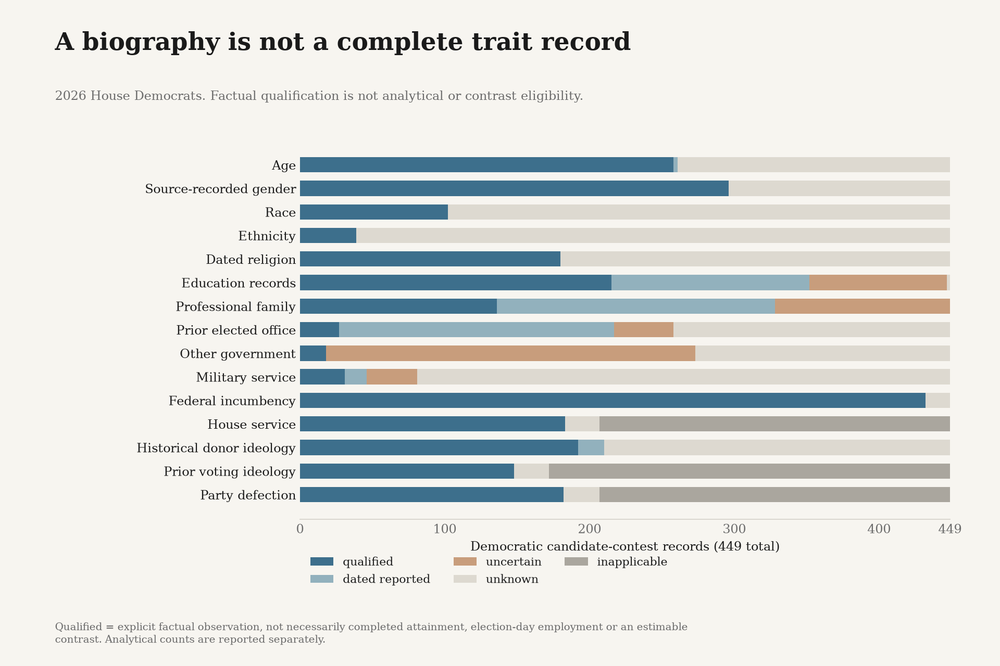
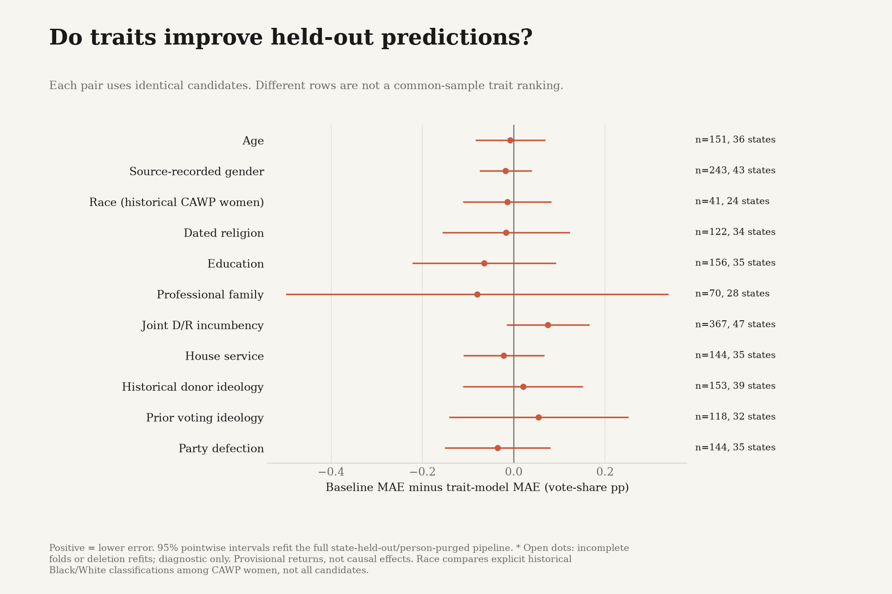

The full candidate-characteristics question
V1–V3 remain frozen. No website deployment. V4 asks the same fifteen-block question about Democratic House performance relative to district partisanship. All 449 Democrats and 405 eligible performance comparisons remain; native returns are the provisional November 12–13 snapshot, not certified final outcomes. These observational associations are not causal nominee-replacement effects.
Actual acquisition versus qualification
11 evidence-yielding new originals; 91 source observations; 27 Democratic candidates; 88 candidate-by-trait fields. Only 6 previously unknown fields across 6 candidates gain first observations; the rest add precision, missing coding/timing requirements or corroboration. A new observation is not automatically a newly discovered fact or an analytical value.
The separate held-FEC review newly qualifies 10 existing fields (7 Democratic). Those are not new-source acquisitions. Exact name/person-contest review and the official Ford/Harvie alias bridges resolve election controls without changing verified federal-service flags. Multiple IDs and unsupported aliases remain held.
Democratic analytical fields increase by 38; unresolved Democratic incumbency falls from 24 to 17. Newly estimable primary trait blocks: none. Positive service values do not create an estimable service-versus-nonservice contrast.
The eleven originals include complete Michigan manual chapters and historical legislator table, the Michigan general-election questionnaire, California's 2019–2020 handbook, Iowa's 2025–2026 register, official Pennsylvania/Indiana biographies, a dated NPR interview and the complete post-election LCV guide. Large guides were retrieved once, joined to exact people and reviewed by subject section. Downloaded shells, unused guides and failed requests do not count as evidence. The full registry records those dispositions rather than hiding them.
V3 → V4: every requested trait
All counts below concern the complete Democratic inventory, except fitted samples, which additionally require outcome, controls, category and geographic support. Source counts are distinct evidence-document hashes per trait, not additive across traits. Newly informed means first observation of a previously unknown cell, not merely a new source.
| Trait | Sources / observations | Source-covered / first-informed candidates | Factual V3→V4 | Analytical V3→V4 | Fit n V3→V4 | Remaining limitation |
|---|---|---|---|---|---|---|
| Age | 6 / 14 | 11 / 0 | 258→258 | 192→193 | 151→153 | Exact age remains incumbent-heavy; year/month intervals are separate. |
| Source-recorded gender | 0 / 0 | 0 / 0 | 296→296 | 296→296 | 242→243 | No new explicit gender classification; inferred historical gender rejected. |
| Race | 0 / 0 | 0 / 0 | 102→102 | 54→54 | 45→45 | Restricted historical CAWP women; additional identity groups fail category support. |
| Ethnicity | 0 / 0 | 0 / 0 | 39→39 | 0→0 | 0→0 | Positive identities retained; no defensible complementary reference. |
| Dated religion | 4 / 7 | 7 / 3 | 177→180 | 163→168 | 118→123 | Explicit dated descriptions only; new challenger coverage remains selective. |
| Education | 9 / 22 | 22 / 0 | 201→215 | 183→197 | 144→156 | Completed supported level only; attendance, undated timing and contradictions held. |
| Professional family | 9 / 18 | 18 / 0 | 122→136 | 89→95 | 66→70 | Four historical families only; mixed families and outside occupations held. |
| Prior elected office | 7 / 17 | 17 / 1 | 14→27 | 0→0 | 0→0 | New histories are before 2026, not before first House entry; no negative reference. |
| Other government | 5 / 8 | 8 / 2 | 12→18 | 0→0 | 0→0 | Non-elected roles recorded; paid employment not inferred from advisory membership. |
| Military service | 1 / 5 | 5 / 0 | 27→31 | 17→22 | 0→0 | Positive service support improves; no supported nonservice reference. |
| Federal incumbency | 0 / 0 | 0 / 0 | 425→432 | 425→432 | 362→367 | 17 Democratic holds remain; FEC classification is not verified service. |
| House service | 0 / 0 | 0 / 0 | 183→183 | 183→183 | 143→144 | Verified current federal incumbents only. |
| Historical donor ideology | 0 / 0 | 0 / 0 | 192→192 | 192→192 | 152→153 | Selective donor-linked population, not universal moderation. |
| Prior voting ideology | 0 / 0 | 0 / 0 | 148→148 | 148→148 | 117→118 | Lagged Congress-specific incumbent record; not campaign ideology. |
| Party defection | 0 / 0 | 0 / 0 | 182→182 | 182→182 | 143→144 | Cutoff-qualified current incumbent record; newcomers are not zero. |
Exact fields and baseline incumbent/nonincumbent/unresolved breakdowns, separately for eligible and ineligible candidates, are in acquisition-field-changes.csv and coverage-by-incumbency.csv. The machine-readable complete table is v3-v4-trait-progress.csv. No unchanged trait is presented as newly researched.
### Coverage beyond incumbents
Among the 405 eligible performance comparisons, the frozen baseline strata contain 166 incumbents, 229 nonincumbents and 10 unresolved cases. Groups stay fixed for this before/after comparison, even when held-FEC review resolves an unknown.
| Analytical trait | Incumbents V3→V4 | Nonincumbents V3→V4 | Unresolved V3→V4 |
|---|---|---|---|
| Age | 166→166 | 9→9 | 0→0 |
| Dated religion | 148→148 | 0→5 | 0→0 |
| Education | 160→160 | 9→19 | 0→2 |
| Professional family | 81→82 | 4→6 | 0→1 |
| Military service | 16→16 | 0→5 | 0→0 |
The one newly exact age belongs to an outcome-ineligible candidate: exact-age coverage does not expand among the 405 eligible comparisons. Its fitted sample grows through resolved election controls instead. Military values are supported positives, not an estimable service-versus-nonservice contrast.
### What qualified, and what did not
The dated directories and questionnaires explicitly identify completed credentials and historical jobs. Broad Christian remains other Christian, not inferred Protestant. Clergy descriptions support religious affiliation but not an education occupation. Lindsay James's separate explicit adjunct-faculty history supports educational work. Mixed legal/teaching careers remain ambiguous; nonprofit executives, engineers, organizers and clergy are not forced into the four occupation families.
Birth years and month/year claims retain defensible age intervals; no invented day or midpoint is used. Michigan's historical gender field is excluded because its methods allow inference from names/photos/pronouns. Its default January 1 birthdays are not used. Subject-scoped extraction prevents a neighboring biography's degree or military service from qualifying another candidate.
The CAWP codebook confirms explicit source identity labels, not non-Hispanic complements. The held historical Asian American/Pacific Islander group has six Democrats across four states; MENA has two and Native American/Native Alaskan one. These fail the unchanged ten-candidate category gate. Race therefore retains historical CAWP Black-versus-White women, not all Democratic racial groups. All five rejected V3 cross-contest transfers remain protected.
New office histories explicitly mean before November 3, 2026, not before first House entry. Positive office/government/service histories are retained without inferring never-served references from silence. Advisory councils, relatives and veterans' advocacy are not paid government employment or military service. The post-election LCV population is selected; its long prior service and explicitly earlier credentials support retrospective facts, not prospective availability. Original branch wording remains source-reported, not independently verified.
The alternative positive-office question was also checked, not assumed unavailable merely because nonservice references are missing. Among the 17 consistently timed new histories, 11 record state office, nine local office and two federal office; five state/local histories overlap. The single-recorded-category groups are only six state, four local and two federal, below the ten-candidate gate. A missing second category is not proof of exclusive lifetime service. positive-office-category-support.json preserves the literal histories and observation IDs. This bounded support assessment is not an all-candidate office test.
Associations and identical-sample predictive comparisons
| Block | Association n / states | Holm p (15) | Restricted predictive n | MAE gain [95% interval], share pp |
|---|---|---|---|---|
| Age | 153 / 36 | 1.000000 | 151 | -0.007 [-0.082, 0.067] |
| Source-recorded gender | 243 / 43 | 1.000000 | 243 | -0.017 [-0.073, 0.038] |
| Historical CAWP Black/White women | 45 / 24 | 1.000000 | 41 | -0.014 [-0.109, 0.081] |
| Ethnicity | 0 / 0 | 1.000000 | — | unavailable |
| Dated religion | 123 / 34 | 0.319780 | 122 | -0.017 [-0.154, 0.121] |
| Education | 156 / 35 | 1.000000 | 156 | -0.065 [-0.221, 0.091] |
| Professional family | 70 / 28 | 1.000000 | 70 | -0.080 [-0.497, 0.337] |
| Prior elected office | 0 / 0 | 1.000000 | — | unavailable |
| Other government | 0 / 0 | 1.000000 | — | unavailable |
| Military service | 0 / 0 | 1.000000 | — | unavailable |
| Joint D/R incumbency | 367 / 47 | 0.000130 | 367 | 0.075 [-0.014, 0.164] |
| House service | 144 / 35 | 0.407039 | 144 | -0.022 [-0.109, 0.066] |
| Historical donor ideology | 153 / 39 | 0.011245 | 153 | 0.020 [-0.109, 0.150] |
| Prior voting ideology | 118 / 32 | 0.266554 | 118 | 0.055 [-0.140, 0.250] |
| Party defection | 144 / 35 | 1.000000 | 144 | -0.035 [-0.149, 0.079] |
Blocks clearing the fixed fifteen-block Holm correction: Joint D/R incumbency, Historical donor ideology.
Joint D/R incumbency is distinct from the Democratic incumbent coefficient. The donor association applies to a selective donor-linked cohort, not universal moderation. Share percentage points are half D-minus-R margin points. No observational coefficient identifies the effect of replacing a nominee.
### Focal terms
Age and House service are per ten years; donor ideology per 0.5 units; prior voting ideology per 0.1 units; party defection per five percentage points. Categorical reference groups appear in the term labels. These are pointwise coefficient intervals, not a second multiplicity-adjusted findings family.
| Block / term | Share pp [pointwise 95% CI] |
|---|---|
Age / age | 0.289 [-0.079, 0.657] |
Source-recorded gender / gender:M_vs_F | 0.909 [-0.884, 2.703] |
Historical CAWP Black/White women / race:White_vs_Black | -0.061 [-1.246, 1.125] |
Dated religion / religion:jewish_vs_catholic | -2.432 [-4.317, -0.547] |
Dated religion / religion:protestant_vs_catholic | -0.890 [-2.852, 1.072] |
Education / education:doctoral_or_professional_vs_bachelors | 0.580 [-1.452, 2.613] |
Education / education:masters_vs_bachelors | 0.101 [-0.815, 1.018] |
Professional family / profession:education_vs_business | -1.321 [-3.365, 0.722] |
Professional family / profession:legal_vs_business | 0.105 [-3.009, 3.218] |
Joint D/R incumbency / D_incumbent | 0.941 [-0.148, 2.031] |
Joint D/R incumbency / R_incumbent | -1.729 [-2.649, -0.810] |
House service / house_service | 0.609 [0.039, 1.179] |
Historical donor ideology / donor_ideology | 1.850 [0.822, 2.878] |
Prior voting ideology / voting_ideology | -0.922 [-1.693, -0.152] |
Party defection / defection_5pp | 0.437 [-0.747, 1.622] |
Validation, reuse and limits
Recomputed blocks: age, gender, religion, education, profession, military, incumbency, house_service, donor_ideology, voting_ideology, party_unity. Input-identical V3 blocks reused: race, ethnicity, prior_elected_office, other_government. numerical-input-reuse.json records both numerical-input hashes. Selection decisions and the full-family correction are refreshed even for reused blocks. The numerical contract and support gates are unchanged.
State-held-out/person-purged folds retain training-only preprocessing and identical baseline/augmented samples. Restricted prediction requires joint D/R-incumbency strata in at least three states. Full-population failures are exported separately and are not validated by a restricted interval. Complete outer-state-deletion pipelines are required for prediction-gain intervals; unsupported intervals remain absent.
The separate whole-interval age-band sensitivity uses 205 candidates. Exact age and affiliation remain overwhelmingly incumbent documented despite the new challenger evidence. This bounded batch does not complete universal trait research.
Complete local deliverables
Both complete downloads contain every frozen release, normalized evidence, supporting fragments, source receipts, all candidate/trait/selection/fold/deletion tables, code, tests and replay inputs. Raw large/restricted originals are not silently represented as redistributed; preserved normalized claims support offline replay without requiring absent historical raw caches. The figure bundle embeds the exact complete-query ZIP. No metadata-only replacement.
Replay: python -m which_candidate.house_project --evidence-only. Local report and browser only; no website deployment.


Explore all 1,284 candidate records
Every trait is separate. Expand a cell for its qualification and source links. Reported or uncertain values are not analytical reference groups. Table scrolls horizontally; all rows and findings remain available without JavaScript.
1,284 candidate records
| Candidate | District gap (share pp) | Age | Source-recorded gender | Race | Ethnicity | Dated religion | Education | Professional family | Prior elected office | Other government | Military service | Federal incumbency | House service | Historical donor ideology | Prior voting ideology | Party defection |
|---|---|---|---|---|---|---|---|---|---|---|---|---|---|---|---|---|
| Bill Hill AK-AL Nonpartisan | unavailable No qualified comparison. | dated reporteddated_reported: Reported age without a qualified exact birth date. Analytical value: None; coding: unresolved; timing: unresolved. Not an eligible primary analytical field. 57; Complete values and receipts | unknownunknown: No qualified value in normalized sources. Analytical value: None; coding: unresolved; timing: unresolved. Not an eligible primary analytical field. Complete values and receipts | unknownunknown: No qualified value in normalized sources. Analytical value: None; coding: unresolved; timing: unresolved. Not an eligible primary analytical field. Complete values and receipts | unknownunknown: No qualified value in normalized sources. Analytical value: None; coding: unresolved; timing: unresolved. Not an eligible primary analytical field. Complete values and receipts | unknownunknown: No qualified value in normalized sources. Analytical value: None; coding: unresolved; timing: unresolved. Not an eligible primary analytical field. Complete values and receipts | dated reporteddated_reported: Source-reported history retained; no inferred nonservice, paid status, elected status or completed attainment. Analytical value: None; coding: unresolved; timing: unresolved. Not an eligible primary analytical field. University of Alaska Anchorage, bachelor's in education; University of Phoenix, master's in education administration; ; University of Alaska Anchorage, bachelor's in education; University of Phoenix, master's in education administration; Source 1Complete values and receipts | uncertainuncertain: Existing extracted source values retained; candidate subject, field meaning, timing or coding needs review. Not a qualified trait value. Analytical value: None; coding: unresolved; timing: unresolved. Not an eligible primary analytical field. Commercial fisherman; Teacher; Principal; School superintendent; Complete values and receipts | unknownunknown: No qualified value in normalized sources. Analytical value: None; coding: unresolved; timing: unresolved. Not an eligible primary analytical field. Complete values and receipts | uncertainuncertain: Existing extracted source values retained; candidate subject, field meaning, timing or coding needs review. Not a qualified trait value. Analytical value: None; coding: unresolved; timing: unresolved. Not an eligible primary analytical field. Bristol Bay School District superintendent, 2013-2023; Complete values and receipts | unknownunknown: No qualified value in normalized sources. Analytical value: None; coding: unresolved; timing: unresolved. Not an eligible primary analytical field. Complete values and receipts | unknownunknown: No qualified value in normalized sources. Analytical value: None; coding: unresolved; timing: unresolved. Not an eligible primary analytical field. Complete values and receipts | unknownunknown: No qualified value in normalized sources. Analytical value: None; coding: unresolved; timing: unresolved. Not an eligible primary analytical field. Complete values and receipts | unknownunknown: No qualified value in normalized sources. Analytical value: None; coding: unresolved; timing: unresolved. Not an eligible primary analytical field. Complete values and receipts | unknownunknown: No qualified value in normalized sources. Analytical value: None; coding: unresolved; timing: unresolved. Not an eligible primary analytical field. Complete values and receipts | unknownunknown: No qualified value in normalized sources. Analytical value: None; coding: unresolved; timing: unresolved. Not an eligible primary analytical field. Complete values and receipts |
| Eric Hafner AK-AL Democratic | unavailable No qualified comparison. | unknownunknown: No qualified value in normalized sources. Analytical value: None; coding: unresolved; timing: unresolved. Not an eligible primary analytical field. Complete values and receipts | unknownunknown: No qualified value in normalized sources. Analytical value: None; coding: unresolved; timing: unresolved. Not an eligible primary analytical field. Complete values and receipts | unknownunknown: No qualified value in normalized sources. Analytical value: None; coding: unresolved; timing: unresolved. Not an eligible primary analytical field. Complete values and receipts | unknownunknown: No qualified value in normalized sources. Analytical value: None; coding: unresolved; timing: unresolved. Not an eligible primary analytical field. Complete values and receipts | unknownunknown: No qualified value in normalized sources. Analytical value: None; coding: unresolved; timing: unresolved. Not an eligible primary analytical field. Complete values and receipts | Qualified observation (expand)qualified: Institutions and fields of study do not establish completed degrees. Pre-election timing supported. Analytical value: None; coding: completed_attainment_unresolved; timing: unresolved. Not an eligible primary analytical field. Denver College, criminal justice; City College of San Francisco, listed fields of study; ; Denver College, criminal justice; City College of San Francisco, listed fields of study; Source 1Complete values and receipts | dated reporteddated_reported: Source-reported history retained; no inferred nonservice, paid status, elected status or completed attainment. Analytical value: None; coding: unresolved; timing: unresolved. Not an eligible primary analytical field. In a 2018 candidate survey, Hafner self-reported work as a diplomatic adviser, criminal-defense consultant, union organizer, hotel manager, real-estate marketing assistant, municipal medical-cannabis policy adviser, political consultant and progressive field organizer. Employment Source 1Complete values and receipts | unknownunknown: No qualified value in normalized sources. Analytical value: None; coding: unresolved; timing: unresolved. Not an eligible primary analytical field. Complete values and receipts | unknownunknown: No qualified value in normalized sources. Analytical value: None; coding: unresolved; timing: unresolved. Not an eligible primary analytical field. Complete values and receipts | unknownunknown: No qualified value in normalized sources. Analytical value: None; coding: unresolved; timing: unresolved. Not an eligible primary analytical field. Complete values and receipts | unknownunknown: No qualified value in normalized sources. Analytical value: None; coding: unresolved; timing: unresolved. Not an eligible primary analytical field. Complete values and receipts | unknownunknown: No qualified value in normalized sources. Analytical value: None; coding: unresolved; timing: unresolved. Not an eligible primary analytical field. Complete values and receipts | unknownunknown: No qualified value in normalized sources. Analytical value: None; coding: unresolved; timing: unresolved. Not an eligible primary analytical field. Complete values and receipts | unknownunknown: No qualified value in normalized sources. Analytical value: None; coding: unresolved; timing: unresolved. Not an eligible primary analytical field. Complete values and receipts | unknownunknown: No qualified value in normalized sources. Analytical value: None; coding: unresolved; timing: unresolved. Not an eligible primary analytical field. Complete values and receipts |
| James C. "Jim" McDermott AK-AL Libertarian | unavailable No qualified comparison. | dated reporteddated_reported: Reported age without a qualified exact birth date. Analytical value: None; coding: unresolved; timing: unresolved. Not an eligible primary analytical field. 68; Complete values and receipts | unknownunknown: No qualified value in normalized sources. Analytical value: None; coding: unresolved; timing: unresolved. Not an eligible primary analytical field. Complete values and receipts | unknownunknown: No qualified value in normalized sources. Analytical value: None; coding: unresolved; timing: unresolved. Not an eligible primary analytical field. Complete values and receipts | unknownunknown: No qualified value in normalized sources. Analytical value: None; coding: unresolved; timing: unresolved. Not an eligible primary analytical field. Complete values and receipts | unknownunknown: No qualified value in normalized sources. Analytical value: None; coding: unresolved; timing: unresolved. Not an eligible primary analytical field. Complete values and receipts | dated reporteddated_reported: Source-reported history retained; no inferred nonservice, paid status, elected status or completed attainment. Analytical value: None; coding: unresolved; timing: unresolved. Not an eligible primary analytical field. University of La Verne, MS in business organizational management; Wayland Baptist University, BS in occupational education; ; University of La Verne, MS in business organizational management; Wayland Baptist University, BS in occupational education; Source 1Complete values and receipts | uncertainuncertain: Existing extracted source values retained; candidate subject, field meaning, timing or coding needs review. Not a qualified trait value. Analytical value: None; coding: unresolved; timing: unresolved. Not an eligible primary analytical field. Writer; Complete values and receipts | unknownunknown: No qualified value in normalized sources. Analytical value: None; coding: unresolved; timing: unresolved. Not an eligible primary analytical field. Complete values and receipts | uncertainuncertain: Existing extracted source values retained; candidate subject, field meaning, timing or coding needs review. Not a qualified trait value. Analytical value: None; coding: unresolved; timing: unresolved. Not an eligible primary analytical field. Alaska Public Offices Commission, election commissioner; Complete values and receipts | dated reporteddated_reported: Source-reported history retained; no inferred nonservice, paid status, elected status or completed attainment. Analytical value: None; coding: unresolved; timing: unresolved. Not an eligible primary analytical field. U.S. Air Force, 22.5 years; retired master sergeant; ; U.S. Air Force, 22.5 years; retired master sergeant; Source 1Complete values and receipts | unknownunknown: No qualified value in normalized sources. Analytical value: None; coding: unresolved; timing: unresolved. Not an eligible primary analytical field. Complete values and receipts | unknownunknown: No qualified value in normalized sources. Analytical value: None; coding: unresolved; timing: unresolved. Not an eligible primary analytical field. Complete values and receipts | unknownunknown: No qualified value in normalized sources. Analytical value: None; coding: unresolved; timing: unresolved. Not an eligible primary analytical field. Complete values and receipts | unknownunknown: No qualified value in normalized sources. Analytical value: None; coding: unresolved; timing: unresolved. Not an eligible primary analytical field. Complete values and receipts | unknownunknown: No qualified value in normalized sources. Analytical value: None; coding: unresolved; timing: unresolved. Not an eligible primary analytical field. Complete values and receipts |
| Nick Begich III AK-AL Republican | unavailable No qualified comparison. | 49qualified: Exact birth-date crosswalk; age on 2026-11-03. Analytical value: 49; coding: coded; timing: qualified_pre_cutoff. Analytical field eligible. ; Source 1Complete values and receipts | Mqualified: Literal crosswalk gender, retrospectively retrieved; not inferred sex or verified self-identification. Analytical value: 'M'; coding: coded; timing: qualified_pre_cutoff. Analytical field eligible. ; Source 1Complete values and receipts | unknownunknown: No qualified value in normalized sources. Analytical value: None; coding: unresolved; timing: unresolved. Not an eligible primary analytical field. Complete values and receipts | unknownunknown: No qualified value in normalized sources. Analytical value: None; coding: unresolved; timing: unresolved. Not an eligible primary analytical field. Complete values and receipts | protestantqualified: 2025-01-02 Pew/CQ office-questionnaire snapshot for 119th Congress; analytical variable is dated reported affiliation, not current faith. Analytical value: 'protestant'; coding: coded; timing: qualified_pre_cutoff. Analytical field eligible. Protestant unspecified; Source 1Complete values and receipts | dated reporteddated_reported: Source-reported history retained; no inferred nonservice, paid status, elected status or completed attainment. Analytical value: None; coding: unresolved; timing: unresolved. Not an eligible primary analytical field. B.B.A., Baylor University, Waco, TX, 1999; M.B.A., Indiana University, Bloomington, IN, 2002; Baylor University, BBA; Indiana University, MBA; ; B.B.A., Baylor University, Waco, TX, 1999; M.B.A., Indiana University, Bloomington, IN, 2002; Baylor University, BBA; Indiana Universit Source 1Source 2Complete values and receipts | dated reporteddated_reported: Source-reported history retained; no inferred nonservice, paid status, elected status or completed attainment. Analytical value: None; coding: unresolved; timing: unresolved. Not an eligible primary analytical field. founder, FarShore Partners, 2006; co-founder, Dashfire, 2009; co-chair, Alaska Republican Party’s Finance Committee and Rep. Don Young’s 2020 reelection campaign; ; founder, FarShore Partners, 2006; co-founder, Dashfire, 2009; co-chair, Alaska Republican Party’s Finance Committee Source 1Complete values and receipts | dated reporteddated_reported: Source-reported history retained; no inferred nonservice, paid status, elected status or completed attainment. Analytical value: None; coding: unresolved; timing: unresolved. Not an eligible primary analytical field. elected to the 119th Congress on November 5, 2024; Source 1Complete values and receipts | unknownunknown: No qualified value in normalized sources. Analytical value: None; coding: unresolved; timing: unresolved. Not an eligible primary analytical field. Complete values and receipts | unknownunknown: No qualified value in normalized sources. Analytical value: None; coding: unresolved; timing: unresolved. Not an eligible primary analytical field. Complete values and receipts | Truequalified: Dated federal service-qualified incumbency; native flag not used. Analytical value: True; coding: coded; timing: qualified_pre_cutoff. Analytical field eligible. True; Source 1Complete values and receipts | 1.8316597876753116qualified: Union of actual pre-election House intervals; gaps excluded. Analytical value: 1.8316597876753116; coding: coded; timing: qualified_pre_cutoff. Analytical field eligible. ; Source 1Complete values and receipts | 1.4qualified: Exact-ID historical DIME score through 2024; retrospective, not 2026 donations, voting ideology or campaign positions. Analytical value: 1.4; coding: coded; timing: qualified_pre_cutoff. Analytical field eligible. ; Complete values and receipts | inapplicableinapplicable: No 118th-Congress House service. Analytical value: None; coding: unresolved; timing: unresolved. Not an eligible primary analytical field. Complete values and receipts | 0.9829424307036247qualified: 119th-Congress cast-only unity votes before election; denominator, with-party count and last date retained. Analytical value: 0.9829424307036247; coding: coded; timing: qualified_pre_cutoff. Analytical field eligible. ; Source 1Source 2Source 3Source 4Complete values and receipts |
| Clyde Jones AL-01 Democratic | 9.10 Qualified descriptive gap; not a candidate effect. | unknownunknown: No qualified value in normalized sources. Analytical value: None; coding: unresolved; timing: unresolved. Not an eligible primary analytical field. Complete values and receipts | unknownunknown: No qualified value in normalized sources. Analytical value: None; coding: unresolved; timing: unresolved. Not an eligible primary analytical field. Complete values and receipts | unknownunknown: No qualified value in normalized sources. Analytical value: None; coding: unresolved; timing: unresolved. Not an eligible primary analytical field. Complete values and receipts | unknownunknown: No qualified value in normalized sources. Analytical value: None; coding: unresolved; timing: unresolved. Not an eligible primary analytical field. Complete values and receipts | unknownunknown: No qualified value in normalized sources. Analytical value: None; coding: unresolved; timing: unresolved. Not an eligible primary analytical field. Complete values and receipts | dated reporteddated_reported: Source-reported history retained; no inferred nonservice, paid status, elected status or completed attainment. Analytical value: None; coding: unresolved; timing: unresolved. Not an eligible primary analytical field. BS in Liberal Arts, administration and management focus, Excelsior University; ; BS in Liberal Arts, administration and management focus, Excelsior University; Source 1Complete values and receipts | dated reporteddated_reported: Source-reported history retained; no inferred nonservice, paid status, elected status or completed attainment. Analytical value: None; coding: unresolved; timing: unresolved. Not an eligible primary analytical field. Process safety management coordinator, FMC Corporation; previously worked for DuPont; ; Process safety management coordinator, FMC Corporation; previously worked for DuPont; Source 1Complete values and receipts | unknownunknown: No qualified value in normalized sources. Analytical value: None; coding: unresolved; timing: unresolved. Not an eligible primary analytical field. Complete values and receipts | unknownunknown: No qualified value in normalized sources. Analytical value: None; coding: unresolved; timing: unresolved. Not an eligible primary analytical field. Complete values and receipts | dated reporteddated_reported: Source-reported history retained; no inferred nonservice, paid status, elected status or completed attainment. Analytical value: None; coding: unresolved; timing: unresolved. Not an eligible primary analytical field. US Army veteran; retired First Sergeant, Signal Corps; ; US Army veteran; retired First Sergeant, Signal Corps; Source 1Complete values and receipts | Falsequalified: Dated federal service-qualified incumbency; native flag not used. Analytical value: False; coding: coded; timing: qualified_pre_cutoff. Analytical field eligible. False; Source 1Complete values and receipts | inapplicableinapplicable: Incumbent-only House-service comparison. Analytical value: None; coding: unresolved; timing: unresolved. Not an eligible primary analytical field. Complete values and receipts | unknownunknown: No qualified value in normalized sources. Analytical value: None; coding: unresolved; timing: unresolved. Not an eligible primary analytical field. Complete values and receipts | inapplicableinapplicable: Verified nonincumbent; incumbent-record estimand. Analytical value: None; coding: unresolved; timing: unresolved. Not an eligible primary analytical field. Complete values and receipts | inapplicableinapplicable: Verified nonincumbent; incumbent-record estimand. Analytical value: None; coding: unresolved; timing: unresolved. Not an eligible primary analytical field. Complete values and receipts |
| Jerry Carl AL-01 Republican | unavailable No qualified comparison. | 68qualified: Exact birth-date crosswalk; age on 2026-11-03. Analytical value: 68; coding: coded; timing: qualified_pre_cutoff. Analytical field eligible. ; Source 1Complete values and receipts | Mqualified: Literal crosswalk gender, retrospectively retrieved; not inferred sex or verified self-identification. Analytical value: 'M'; coding: coded; timing: qualified_pre_cutoff. Analytical field eligible. ; Source 1Complete values and receipts | unknownunknown: No qualified value in normalized sources. Analytical value: None; coding: unresolved; timing: unresolved. Not an eligible primary analytical field. Complete values and receipts | unknownunknown: No qualified value in normalized sources. Analytical value: None; coding: unresolved; timing: unresolved. Not an eligible primary analytical field. Complete values and receipts | dated reporteddated_reported: Historical reported affiliation; not verified current religion. Analytical value: None; coding: unresolved; timing: unresolved. Not an eligible primary analytical field. Baptist; Source 1Source 2Complete values and receipts | dated reporteddated_reported: Source-reported history retained; no inferred nonservice, paid status, elected status or completed attainment. Analytical value: None; coding: unresolved; timing: unresolved. Not an eligible primary analytical field. Public directory reports: High School Diploma, Sylacauga High School (1977); ; Public directory reports: High School Diploma, Sylacauga High School (1977); Source 1Complete values and receipts | dated reporteddated_reported: Source-reported history retained; no inferred nonservice, paid status, elected status or completed attainment. Analytical value: None; coding: unresolved; timing: unresolved. Not an eligible primary analytical field. Public directory reports: River Oaks Landing, President/CEO (2000 - Present); Public directory reports: US House of Representatives, Representative - Alabama 1st Congressional District (2021 - 2025); Public directory reports: Mobile County, Commissioner - District 3 (2012 - 2023) Source 1Complete values and receipts | unknownunknown: No qualified value in normalized sources. Analytical value: None; coding: unresolved; timing: unresolved. Not an eligible primary analytical field. Complete values and receipts | unknownunknown: No qualified value in normalized sources. Analytical value: None; coding: unresolved; timing: unresolved. Not an eligible primary analytical field. Complete values and receipts | unknownunknown: No qualified value in normalized sources. Analytical value: None; coding: unresolved; timing: unresolved. Not an eligible primary analytical field. Complete values and receipts | Falsequalified: Dated federal service-qualified incumbency; native flag not used. Analytical value: False; coding: coded; timing: qualified_pre_cutoff. Analytical field eligible. False; Source 1Complete values and receipts | inapplicableinapplicable: Incumbent-only House-service comparison. Analytical value: None; coding: unresolved; timing: unresolved. Not an eligible primary analytical field. Complete values and receipts | 1.365qualified: Exact-ID historical DIME score through 2024; retrospective, not 2026 donations, voting ideology or campaign positions. Analytical value: 1.365; coding: coded; timing: qualified_pre_cutoff. Analytical field eligible. ; Complete values and receipts | inapplicableinapplicable: Verified nonincumbent; incumbent-record estimand. Analytical value: None; coding: unresolved; timing: unresolved. Not an eligible primary analytical field. Complete values and receipts | inapplicableinapplicable: Verified nonincumbent; incumbent-record estimand. Analytical value: None; coding: unresolved; timing: unresolved. Not an eligible primary analytical field. Complete values and receipts |
| Rhett Marques AL-02 Republican | unavailable No qualified comparison. | unknownunknown: No qualified value in normalized sources. Analytical value: None; coding: unresolved; timing: unresolved. Not an eligible primary analytical field. Complete values and receipts | unknownunknown: No qualified value in normalized sources. Analytical value: None; coding: unresolved; timing: unresolved. Not an eligible primary analytical field. Complete values and receipts | unknownunknown: No qualified value in normalized sources. Analytical value: None; coding: unresolved; timing: unresolved. Not an eligible primary analytical field. Complete values and receipts | unknownunknown: No qualified value in normalized sources. Analytical value: None; coding: unresolved; timing: unresolved. Not an eligible primary analytical field. Complete values and receipts | unknownunknown: No qualified value in normalized sources. Analytical value: None; coding: unresolved; timing: unresolved. Not an eligible primary analytical field. Complete values and receipts | dated reporteddated_reported: Source-reported history retained; no inferred nonservice, paid status, elected status or completed attainment. Analytical value: None; coding: unresolved; timing: unresolved. Not an eligible primary analytical field. Attended University of Alabama; degree completion not established by this page; ; Attended University of Alabama; degree completion not established by this page; Source 1Source 2Complete values and receipts | dated reporteddated_reported: Source-reported history retained; no inferred nonservice, paid status, elected status or completed attainment. Analytical value: None; coding: unresolved; timing: unresolved. Not an eligible primary analytical field. Small business owner; ; Small business owner; Source 1Source 2Complete values and receipts | unknownunknown: No qualified value in normalized sources. Analytical value: None; coding: unresolved; timing: unresolved. Not an eligible primary analytical field. Complete values and receipts | unknownunknown: No qualified value in normalized sources. Analytical value: None; coding: unresolved; timing: unresolved. Not an eligible primary analytical field. Complete values and receipts | unknownunknown: No qualified value in normalized sources. Analytical value: None; coding: unresolved; timing: unresolved. Not an eligible primary analytical field. Complete values and receipts | unknownunknown: No qualified value in normalized sources. Analytical value: None; coding: unresolved; timing: unresolved. Not an eligible primary analytical field. Complete values and receipts | unknownunknown: No qualified value in normalized sources. Analytical value: None; coding: unresolved; timing: unresolved. Not an eligible primary analytical field. Complete values and receipts | unknownunknown: No qualified value in normalized sources. Analytical value: None; coding: unresolved; timing: unresolved. Not an eligible primary analytical field. Complete values and receipts | unknownunknown: No qualified value in normalized sources. Analytical value: None; coding: unresolved; timing: unresolved. Not an eligible primary analytical field. Complete values and receipts | unknownunknown: No qualified value in normalized sources. Analytical value: None; coding: unresolved; timing: unresolved. Not an eligible primary analytical field. Complete values and receipts |
| Shomari Figures AL-02 Democratic | 10.98 Qualified descriptive gap; not a candidate effect. | 41qualified: Exact birth-date crosswalk; age on 2026-11-03. Analytical value: 41; coding: coded; timing: qualified_pre_cutoff. Analytical field eligible. ; Source 1Complete values and receipts | Mqualified: Literal crosswalk gender, retrospectively retrieved; not inferred sex or verified self-identification. Analytical value: 'M'; coding: coded; timing: qualified_pre_cutoff. Analytical field eligible. ; Source 1Complete values and receipts | Qualified observation (expand)qualified: Explicit source-recorded positive identities qualify factually; definitions, multiple labels and report types are preserved. No negative/reference identity. Analytical value: None; coding: unresolved; timing: unresolved. Not an eligible primary analytical field. black; Source 1Complete values and receipts | unknownunknown: No qualified value in normalized sources. Analytical value: None; coding: unresolved; timing: unresolved. Not an eligible primary analytical field. Complete values and receipts | protestantqualified: 2025-01-02 Pew/CQ office-questionnaire snapshot for 119th Congress; analytical variable is dated reported affiliation, not current faith. Analytical value: 'protestant'; coding: coded; timing: qualified_pre_cutoff. Analytical field eligible. Protestant unspecified; Source 1Complete values and receipts | doctoral or professionalqualified: Reviewed pre-election Directory degree list; highest documented completed credential, not guaranteed highest actual attainment. Analytical value: 'doctoral_or_professional'; coding: coded; timing: qualified_pre_cutoff. Analytical field eligible. B.A., criminal justice, University of Alabama, Tuscaloosa, AL, 2006; J.D., University of Alabama, Tuscaloosa, AL, 2010; University of Alabama; John L. LeFlore High School; University of Alabama School of Law; Source 1Complete values and receipts | dated reporteddated_reported: Source-reported history retained; no inferred nonservice, paid status, elected status or completed attainment. Analytical value: None; coding: unresolved; timing: unresolved. Not an eligible primary analytical field. staff, United States District Court, Eastern District of Missouri, 2011–12; campaign staff, presidential campaign of Barack Obama, 2012; staff, White House Office of Presidential Personnel, 2014–15; staff, U.S. Senator Sherrod Brown, 2017–20; staff, United States Department of Ju Source 1Complete values and receipts | dated reporteddated_reported: Source-reported history retained; no inferred nonservice, paid status, elected status or completed attainment. Analytical value: None; coding: unresolved; timing: unresolved. Not an eligible primary analytical field. elected to the 119th Congress on November 5, 2024; ; U.S. Representative for Alabama's 2nd District; Source 1Complete values and receipts | uncertainuncertain: Existing extracted source values retained; candidate subject, field meaning, timing or coding needs review. Not a qualified trait value. Analytical value: None; coding: unresolved; timing: unresolved. Not an eligible primary analytical field. Worked on issues increasing job and workforce opportunities; Vice Ranking Member of the Nutrition and Foreign Agriculture subcommittee; Introduced legislation to provide a $15 billion, tariff relief program for small and mid-sized farmers; Complete values and receipts | unknownunknown: No qualified value in normalized sources. Analytical value: None; coding: unresolved; timing: unresolved. Not an eligible primary analytical field. Complete values and receipts | Truequalified: Dated federal service-qualified incumbency; native flag not used. Analytical value: True; coding: coded; timing: qualified_pre_cutoff. Analytical field eligible. True; Source 1Source 2Source 3Complete values and receipts | 1.8316597876753116qualified: Union of actual pre-election House intervals; gaps excluded. Analytical value: 1.8316597876753116; coding: coded; timing: qualified_pre_cutoff. Analytical field eligible. ; Source 1Complete values and receipts | -0.785qualified: Exact-ID historical DIME score through 2024; retrospective, not 2026 donations, voting ideology or campaign positions. Analytical value: -0.785; coding: coded; timing: qualified_pre_cutoff. Analytical field eligible. ; Complete values and receipts | inapplicableinapplicable: No 118th-Congress House service. Analytical value: None; coding: unresolved; timing: unresolved. Not an eligible primary analytical field. Complete values and receipts | 0.9439655172413793qualified: 119th-Congress cast-only unity votes before election; denominator, with-party count and last date retained. Analytical value: 0.9439655172413793; coding: coded; timing: qualified_pre_cutoff. Analytical field eligible. ; Source 1Source 2Source 3Source 4Complete values and receipts |
| Lee McInnis AL-03 Democratic | 9.58 Qualified descriptive gap; not a candidate effect. | unknownunknown: No qualified value in normalized sources. Analytical value: None; coding: unresolved; timing: unresolved. Not an eligible primary analytical field. Complete values and receipts | unknownunknown: No qualified value in normalized sources. Analytical value: None; coding: unresolved; timing: unresolved. Not an eligible primary analytical field. Complete values and receipts | unknownunknown: No qualified value in normalized sources. Analytical value: None; coding: unresolved; timing: unresolved. Not an eligible primary analytical field. Complete values and receipts | unknownunknown: No qualified value in normalized sources. Analytical value: None; coding: unresolved; timing: unresolved. Not an eligible primary analytical field. Complete values and receipts | unknownunknown: No qualified value in normalized sources. Analytical value: None; coding: unresolved; timing: unresolved. Not an eligible primary analytical field. Complete values and receipts | dated reporteddated_reported: Source-reported history retained; no inferred nonservice, paid status, elected status or completed attainment. Analytical value: None; coding: unresolved; timing: unresolved. Not an eligible primary analytical field. BA in communications and master's degree in communications and international relations, Auburn University; ; BA in communications and master's degree in communications and international relations, Auburn University; Source 1Complete values and receipts | dated reporteddated_reported: Source-reported history retained; no inferred nonservice, paid status, elected status or completed attainment. Analytical value: None; coding: unresolved; timing: unresolved. Not an eligible primary analytical field. Public directory reports: US Army; Public directory reports: Defense Intelligence Community; Public directory reports: Jefferson County Engineering Department, Civil Engineer/Supervisor; ; Public directory reports: US Army; Public directory reports: Defense Intelligence Community Source 1Complete values and receipts | unknownunknown: No qualified value in normalized sources. Analytical value: None; coding: unresolved; timing: unresolved. Not an eligible primary analytical field. Complete values and receipts | unknownunknown: No qualified value in normalized sources. Analytical value: None; coding: unresolved; timing: unresolved. Not an eligible primary analytical field. Complete values and receipts | dated reporteddated_reported: Source-reported history retained; no inferred nonservice, paid status, elected status or completed attainment. Analytical value: None; coding: unresolved; timing: unresolved. Not an eligible primary analytical field. Six years in Army Intelligence, active and reserve components; ; Six years in Army Intelligence, active and reserve components; Source 1Complete values and receipts | unknownunknown: No qualified value in normalized sources. Analytical value: None; coding: unresolved; timing: unresolved. Not an eligible primary analytical field. Complete values and receipts | unknownunknown: No qualified value in normalized sources. Analytical value: None; coding: unresolved; timing: unresolved. Not an eligible primary analytical field. Complete values and receipts | unknownunknown: No qualified value in normalized sources. Analytical value: None; coding: unresolved; timing: unresolved. Not an eligible primary analytical field. Complete values and receipts | unknownunknown: No qualified value in normalized sources. Analytical value: None; coding: unresolved; timing: unresolved. Not an eligible primary analytical field. Complete values and receipts | unknownunknown: No qualified value in normalized sources. Analytical value: None; coding: unresolved; timing: unresolved. Not an eligible primary analytical field. Complete values and receipts |
| Mike Rogers AL-03 Republican | unavailable No qualified comparison. | 68qualified: Exact birth-date crosswalk; age on 2026-11-03. Analytical value: 68; coding: coded; timing: qualified_pre_cutoff. Analytical field eligible. ; Source 1Complete values and receipts | Mqualified: Literal crosswalk gender, retrospectively retrieved; not inferred sex or verified self-identification. Analytical value: 'M'; coding: coded; timing: qualified_pre_cutoff. Analytical field eligible. ; Source 1Complete values and receipts | unknownunknown: No qualified value in normalized sources. Analytical value: None; coding: unresolved; timing: unresolved. Not an eligible primary analytical field. Complete values and receipts | unknownunknown: No qualified value in normalized sources. Analytical value: None; coding: unresolved; timing: unresolved. Not an eligible primary analytical field. Complete values and receipts | protestantqualified: 2025-01-02 Pew/CQ office-questionnaire snapshot for 119th Congress; analytical variable is dated reported affiliation, not current faith. Analytical value: 'protestant'; coding: coded; timing: qualified_pre_cutoff. Analytical field eligible. Baptist; Source 1Source 2Source 3Source 4Source 5Complete values and receipts | dated reporteddated_reported: Source-reported history retained; no inferred nonservice, paid status, elected status or completed attainment. Analytical value: None; coding: unresolved; timing: unresolved. Not an eligible primary analytical field. B.A., Jacksonville State University, 1981; M.P.A., Jacksonville State University, Jacksonville, AL, 1984; J.D., Birmingham School of Law, Birmingham, AL, 1991; ; BA (1981) and MPA (1984) from Jacksonville State University; JD from Birmingham School of Law (1991); B.A., Jacksonvil Source 1Complete values and receipts | dated reporteddated_reported: Source-reported history retained; no inferred nonservice, paid status, elected status or completed attainment. Analytical value: None; coding: unresolved; timing: unresolved. Not an eligible primary analytical field. attorney; commissioner, Calhoun County, 1987–91; member, Alabama House of Representatives, 1994–2002; ; Anniston attorney and businessman; attorney; commissioner, Calhoun County, 1987–91; member, Alabama House of Representatives, 1994–2002; Source 1Complete values and receipts | dated reporteddated_reported: Source-reported history retained; no inferred nonservice, paid status, elected status or completed attainment. Analytical value: None; coding: unresolved; timing: unresolved. Not an eligible primary analytical field. elected to the 108th Congress on November 5, 2002; reelected to each succeeding Congress; ; House Minority Leader; United States House of Representatives, Third Congressional District of Alabama; Ranking member of the Committee on Homeland Security in the 116th Congress; Source 1Complete values and receipts | uncertainuncertain: Existing extracted source values retained; candidate subject, field meaning, timing or coding needs review. Not a qualified trait value. Analytical value: None; coding: unresolved; timing: unresolved. Not an eligible primary analytical field. Worked for The United Way in Calhoun County; Complete values and receipts | unknownunknown: No qualified value in normalized sources. Analytical value: None; coding: unresolved; timing: unresolved. Not an eligible primary analytical field. Complete values and receipts | Truequalified: Dated federal service-qualified incumbency; native flag not used. Analytical value: True; coding: coded; timing: qualified_pre_cutoff. Analytical field eligible. True; Source 1Complete values and receipts | 23.79514979773712qualified: Union of actual pre-election House intervals; gaps excluded. Analytical value: 23.79514979773712; coding: coded; timing: qualified_pre_cutoff. Analytical field eligible. ; Source 1Complete values and receipts | 0.823qualified: Exact-ID historical DIME score through 2024; retrospective, not 2026 donations, voting ideology or campaign positions. Analytical value: 0.823; coding: coded; timing: qualified_pre_cutoff. Analytical field eligible. ; Complete values and receipts | 0.44qualified: 118th-Congress Nokken-Poole first dimension, not career NOMINATE. Analytical value: 0.44; coding: coded; timing: qualified_pre_cutoff. Analytical field eligible. ; Source 1Complete values and receipts | 0.9720430107526882qualified: 119th-Congress cast-only unity votes before election; denominator, with-party count and last date retained. Analytical value: 0.9720430107526882; coding: coded; timing: qualified_pre_cutoff. Analytical field eligible. ; Source 1Source 2Source 3Source 4Complete values and receipts |
| Amanda Pusczek AL-04 Democratic | 8.56 Qualified descriptive gap; not a candidate effect. | unknownunknown: No qualified value in normalized sources. Analytical value: None; coding: unresolved; timing: unresolved. Not an eligible primary analytical field. Complete values and receipts | Fqualified: No qualified value in normalized sources. V3 reviewed explicit new/corroborating facts; source definitions, dates and prior claims retained. Factual qualification is separate from contrast support. Analytical value: 'F'; coding: explicit_source_gender_or_women_classification; timing: dated_historical_or_2026_election_source. Analytical field eligible. State=AL | Office=U.S. Rep. | Dist.=4 | First Name=Amanda | Middle Name= | Last Name=Pusczek | Party=D | General Seat Status=C | Filed=Filed | Primary Date=W | General Election Result=L; F Source 1Complete values and receipts | unknownunknown: No qualified value in normalized sources. Analytical value: None; coding: unresolved; timing: unresolved. Not an eligible primary analytical field. Complete values and receipts | unknownunknown: No qualified value in normalized sources. Analytical value: None; coding: unresolved; timing: unresolved. Not an eligible primary analytical field. Complete values and receipts | unknownunknown: No qualified value in normalized sources. Analytical value: None; coding: unresolved; timing: unresolved. Not an eligible primary analytical field. Complete values and receipts | uncertainuncertain: Existing extracted source values retained; candidate subject, field meaning, timing or coding needs review. Not a qualified trait value. Analytical value: None; coding: unresolved; timing: unresolved. Not an eligible primary analytical field. Associate Degree in Nursing from John C. Calhoun Community College; Bachelor’s Degree in Nursing with an emphasis on scholarly analysis; Advanced Diploma from public school; Complete values and receipts | uncertainuncertain: Existing extracted source values retained; candidate subject, field meaning, timing or coding needs review. Not a qualified trait value. Analytical value: None; coding: unresolved; timing: unresolved. Not an eligible primary analytical field. frontline registered nurse; Complete values and receipts | unknownunknown: No qualified value in normalized sources. Analytical value: None; coding: unresolved; timing: unresolved. Not an eligible primary analytical field. Complete values and receipts | uncertainuncertain: Existing extracted source values retained; candidate subject, field meaning, timing or coding needs review. Not a qualified trait value. Analytical value: None; coding: unresolved; timing: unresolved. Not an eligible primary analytical field. Traveled to New York City to serve patients during the peak of the COVID-19 outbreak; Complete values and receipts | unknownunknown: No qualified value in normalized sources. Analytical value: None; coding: unresolved; timing: unresolved. Not an eligible primary analytical field. Complete values and receipts | Falsequalified: Dated federal service-qualified incumbency; native flag not used. V3 reviewed explicit new/corroborating facts; source definitions, dates and prior claims retained. Factual qualification is separate from contrast support. Analytical value: False; coding: coded; timing: qualified_pre_cutoff. Analytical field eligible. False; State=AL | Office=U.S. Rep. | Dist.=4 | First Name=Amanda | Middle Name= | Last Name=Pusczek | Party=D | General Seat Status=C | Filed=Filed | Primary Date=W | General Election Result=L; False Source 1Source 2Complete values and receipts | inapplicableinapplicable: Incumbent-only House-service comparison. Analytical value: None; coding: unresolved; timing: unresolved. Not an eligible primary analytical field. Complete values and receipts | unknownunknown: No qualified value in normalized sources. Analytical value: None; coding: unresolved; timing: unresolved. Not an eligible primary analytical field. Complete values and receipts | inapplicableinapplicable: Verified nonincumbent; incumbent-record estimand. Analytical value: None; coding: unresolved; timing: unresolved. Not an eligible primary analytical field. Complete values and receipts | inapplicableinapplicable: Verified nonincumbent; incumbent-record estimand. Analytical value: None; coding: unresolved; timing: unresolved. Not an eligible primary analytical field. Complete values and receipts |
| Robert Aderholt AL-04 Republican | unavailable No qualified comparison. | 61qualified: Exact birth-date crosswalk; age on 2026-11-03. Analytical value: 61; coding: coded; timing: qualified_pre_cutoff. Analytical field eligible. ; Source 1Complete values and receipts | Mqualified: Literal crosswalk gender, retrospectively retrieved; not inferred sex or verified self-identification. Analytical value: 'M'; coding: coded; timing: qualified_pre_cutoff. Analytical field eligible. ; Source 1Complete values and receipts | unknownunknown: No qualified value in normalized sources. Analytical value: None; coding: unresolved; timing: unresolved. Not an eligible primary analytical field. Complete values and receipts | unknownunknown: No qualified value in normalized sources. Analytical value: None; coding: unresolved; timing: unresolved. Not an eligible primary analytical field. Complete values and receipts | protestantqualified: 2025-01-02 Pew/CQ office-questionnaire snapshot for 119th Congress; analytical variable is dated reported affiliation, not current faith. Analytical value: 'protestant'; coding: coded; timing: qualified_pre_cutoff. Analytical field eligible. Congregationalist; Source 1Source 2Source 3Source 4Source 5Complete values and receipts | dated reporteddated_reported: Source-reported history retained; no inferred nonservice, paid status, elected status or completed attainment. Analytical value: None; coding: unresolved; timing: unresolved. Not an eligible primary analytical field. B.S., history and political science, Birmingham–Southern University, Birmingham, AL; J.D., Cumberland School of Law, Samford University, Birmingham, AL; ; J.D. from the Cumberland School of Law at Samford University; B.A. from Birmingham Southern College; B.S., history and politi Source 1Complete values and receipts | dated reporteddated_reported: Source-reported history retained; no inferred nonservice, paid status, elected status or completed attainment. Analytical value: None; coding: unresolved; timing: unresolved. Not an eligible primary analytical field. attorney; assistant legal advisor to Governor Fob James, 1995–96; municipal judge, Haleyville, 1992–96; George Bush delegate, Republican National Convention, 1992; ; Assistant Legal Advisor to Governor Fob James; Municipal Judge for the city of Haleyville, Alabama; attorney; assi Source 1Complete values and receipts | dated reporteddated_reported: Source-reported history retained; no inferred nonservice, paid status, elected status or completed attainment. Analytical value: None; coding: unresolved; timing: unresolved. Not an eligible primary analytical field. elected to the 105th Congress on November 5, 1996; reelected to each succeeding Congress; ; U.S. Representative for Alabama's Fourth Congressional District; Source 1Complete values and receipts | uncertainuncertain: Existing extracted source values retained; candidate subject, field meaning, timing or coding needs review. Not a qualified trait value. Analytical value: None; coding: unresolved; timing: unresolved. Not an eligible primary analytical field. Chairman of the Appropriations Subcommittee on Labor, Health & Human Services, and Education; Member of the Defense Subcommittee; Commission member of the Commission on Security and Cooperation in Europe (Helsinki Commission); Complete values and receipts | unknownunknown: No qualified value in normalized sources. Analytical value: None; coding: unresolved; timing: unresolved. Not an eligible primary analytical field. Complete values and receipts | Truequalified: Dated federal service-qualified incumbency; native flag not used. Analytical value: True; coding: coded; timing: qualified_pre_cutoff. Analytical field eligible. True; Source 1Complete values and receipts | 29.77473870100002qualified: Union of actual pre-election House intervals; gaps excluded. Analytical value: 29.77473870100002; coding: coded; timing: qualified_pre_cutoff. Analytical field eligible. ; Source 1Complete values and receipts | 1.0qualified: Exact-ID historical DIME score through 2024; retrospective, not 2026 donations, voting ideology or campaign positions. Analytical value: 1.0; coding: coded; timing: qualified_pre_cutoff. Analytical field eligible. ; Complete values and receipts | 0.464qualified: 118th-Congress Nokken-Poole first dimension, not career NOMINATE. Analytical value: 0.464; coding: coded; timing: qualified_pre_cutoff. Analytical field eligible. ; Source 1Complete values and receipts | 0.974304068522484qualified: 119th-Congress cast-only unity votes before election; denominator, with-party count and last date retained. Analytical value: 0.974304068522484; coding: coded; timing: qualified_pre_cutoff. Analytical field eligible. ; Source 1Source 2Source 3Source 4Complete values and receipts |
| Andrew Sneed AL-05 Democratic | 11.50 Qualified descriptive gap; not a candidate effect. | unknownunknown: No qualified value in normalized sources. Analytical value: None; coding: unresolved; timing: unresolved. Not an eligible primary analytical field. Complete values and receipts | unknownunknown: No qualified value in normalized sources. Analytical value: None; coding: unresolved; timing: unresolved. Not an eligible primary analytical field. Complete values and receipts | unknownunknown: No qualified value in normalized sources. Analytical value: None; coding: unresolved; timing: unresolved. Not an eligible primary analytical field. Complete values and receipts | unknownunknown: No qualified value in normalized sources. Analytical value: None; coding: unresolved; timing: unresolved. Not an eligible primary analytical field. Complete values and receipts | unknownunknown: No qualified value in normalized sources. Analytical value: None; coding: unresolved; timing: unresolved. Not an eligible primary analytical field. Complete values and receipts | uncertainuncertain: Existing extracted source values retained; candidate subject, field meaning, timing or coding needs review. Not a qualified trait value. Analytical value: None; coding: unresolved; timing: unresolved. Not an eligible primary analytical field. graduated from Lee High in 1998; attended Boston University (BFA ‘03); Complete values and receipts | uncertainuncertain: Existing extracted source values retained; candidate subject, field meaning, timing or coding needs review. Not a qualified trait value. Analytical value: None; coding: unresolved; timing: unresolved. Not an eligible primary analytical field. master plumber and gas fitter; career in the restaurant business; plumber’s helper; Complete values and receipts | unknownunknown: No qualified value in normalized sources. Analytical value: None; coding: unresolved; timing: unresolved. Not an eligible primary analytical field. Complete values and receipts | unknownunknown: No qualified value in normalized sources. Analytical value: None; coding: unresolved; timing: unresolved. Not an eligible primary analytical field. Complete values and receipts | unknownunknown: No qualified value in normalized sources. Analytical value: None; coding: unresolved; timing: unresolved. Not an eligible primary analytical field. Complete values and receipts | Falsequalified: Dated federal service-qualified incumbency; native flag not used. Analytical value: False; coding: coded; timing: qualified_pre_cutoff. Analytical field eligible. False; Source 1Complete values and receipts | inapplicableinapplicable: Incumbent-only House-service comparison. Analytical value: None; coding: unresolved; timing: unresolved. Not an eligible primary analytical field. Complete values and receipts | unknownunknown: No qualified value in normalized sources. Analytical value: None; coding: unresolved; timing: unresolved. Not an eligible primary analytical field. Complete values and receipts | inapplicableinapplicable: Verified nonincumbent; incumbent-record estimand. Analytical value: None; coding: unresolved; timing: unresolved. Not an eligible primary analytical field. Complete values and receipts | inapplicableinapplicable: Verified nonincumbent; incumbent-record estimand. Analytical value: None; coding: unresolved; timing: unresolved. Not an eligible primary analytical field. Complete values and receipts |
| Dale Strong AL-05 Republican | unavailable No qualified comparison. | 56qualified: Exact birth-date crosswalk; age on 2026-11-03. Analytical value: 56; coding: coded; timing: qualified_pre_cutoff. Analytical field eligible. ; Source 1Complete values and receipts | Mqualified: Literal crosswalk gender, retrospectively retrieved; not inferred sex or verified self-identification. Analytical value: 'M'; coding: coded; timing: qualified_pre_cutoff. Analytical field eligible. ; Source 1Complete values and receipts | unknownunknown: No qualified value in normalized sources. Analytical value: None; coding: unresolved; timing: unresolved. Not an eligible primary analytical field. Complete values and receipts | unknownunknown: No qualified value in normalized sources. Analytical value: None; coding: unresolved; timing: unresolved. Not an eligible primary analytical field. Complete values and receipts | protestantqualified: 2025-01-02 Pew/CQ office-questionnaire snapshot for 119th Congress; analytical variable is dated reported affiliation, not current faith. Analytical value: 'protestant'; coding: coded; timing: qualified_pre_cutoff. Analytical field eligible. Baptist; Source 1Source 2Complete values and receipts | dated reporteddated_reported: Source-reported history retained; no inferred nonservice, paid status, elected status or completed attainment. Analytical value: None; coding: unresolved; timing: unresolved. Not an eligible primary analytical field. B.S., business administration, Athens State University, Athens, AL, 1992; license, emergency medical technician, University of Alabama, Huntsville, AL; ; Graduate of Sparkman High School; B.S. in Business Administration from Athens State University; EMT license from the Universit Source 1Complete values and receipts | dated reporteddated_reported: Source-reported history retained; no inferred nonservice, paid status, elected status or completed attainment. Analytical value: None; coding: unresolved; timing: unresolved. Not an eligible primary analytical field. public relations professional, First Alabama Bank; sales representative, Solvay S.A.; emergency medical technician / 9–1–1 dispatcher, Huntsville Emergency Medical Services, Inc.; member, Madison County Commission, 1996–2022, (chairman, 2012–22); ; Worked in father's country stor Source 1Complete values and receipts | dated reporteddated_reported: Source-reported history retained; no inferred nonservice, paid status, elected status or completed attainment. Analytical value: None; coding: unresolved; timing: unresolved. Not an eligible primary analytical field. elected to the 118th Congress on November 8, 2022; reelected to the 119th Congress on November 5, 2024; ; Chairman of the Madison County Commission; Commissioner for District 4 on the Madison County Commission; Source 1Complete values and receipts | uncertainuncertain: Existing extracted source values retained; candidate subject, field meaning, timing or coding needs review. Not a qualified trait value. Analytical value: None; coding: unresolved; timing: unresolved. Not an eligible primary analytical field. Led a volunteer effort at the Monrovia Community Center that fed thousands who lost all power for a week; 911 Dispatcher; Reduced the county workforce by making departments more efficient and bringing sound financial management; Complete values and receipts | unknownunknown: No qualified value in normalized sources. Analytical value: None; coding: unresolved; timing: unresolved. Not an eligible primary analytical field. Complete values and receipts | Truequalified: Dated federal service-qualified incumbency; native flag not used. Analytical value: True; coding: coded; timing: qualified_pre_cutoff. Analytical field eligible. True; Source 1Complete values and receipts | 3.8330698097839107qualified: Union of actual pre-election House intervals; gaps excluded. Analytical value: 3.8330698097839107; coding: coded; timing: qualified_pre_cutoff. Analytical field eligible. ; Source 1Complete values and receipts | 0.963qualified: Exact-ID historical DIME score through 2024; retrospective, not 2026 donations, voting ideology or campaign positions. Analytical value: 0.963; coding: coded; timing: qualified_pre_cutoff. Analytical field eligible. ; Complete values and receipts | 0.624qualified: 118th-Congress Nokken-Poole first dimension, not career NOMINATE. Analytical value: 0.624; coding: coded; timing: qualified_pre_cutoff. Analytical field eligible. ; Source 1Complete values and receipts | 0.9785407725321889qualified: 119th-Congress cast-only unity votes before election; denominator, with-party count and last date retained. Analytical value: 0.9785407725321889; coding: coded; timing: qualified_pre_cutoff. Analytical field eligible. ; Source 1Source 2Source 3Source 4Complete values and receipts |
| Gary Palmer AL-06 Republican | unavailable No qualified comparison. | 72qualified: Exact birth-date crosswalk; age on 2026-11-03. Analytical value: 72; coding: coded; timing: qualified_pre_cutoff. Analytical field eligible. ; Source 1Complete values and receipts | Mqualified: Literal crosswalk gender, retrospectively retrieved; not inferred sex or verified self-identification. Analytical value: 'M'; coding: coded; timing: qualified_pre_cutoff. Analytical field eligible. ; Source 1Complete values and receipts | unknownunknown: No qualified value in normalized sources. Analytical value: None; coding: unresolved; timing: unresolved. Not an eligible primary analytical field. Complete values and receipts | unknownunknown: No qualified value in normalized sources. Analytical value: None; coding: unresolved; timing: unresolved. Not an eligible primary analytical field. Complete values and receipts | protestantqualified: 2025-01-02 Pew/CQ office-questionnaire snapshot for 119th Congress; analytical variable is dated reported affiliation, not current faith. Analytical value: 'protestant'; coding: coded; timing: qualified_pre_cutoff. Analytical field eligible. Protestant unspecified; Unspecified Protestant; Source 1Source 2Source 3Source 4Source 5Complete values and receipts | dated reporteddated_reported: Source-reported history retained; no inferred nonservice, paid status, elected status or completed attainment. Analytical value: None; coding: unresolved; timing: unresolved. Not an eligible primary analytical field. B.S., operations management, University of Alabama, Tuscaloosa, AL, 1977; ; B.S. in Operations Management; attended the University of Alabama; Honorary Doctorate from the University of Mobile; Source 1Complete values and receipts | dated reporteddated_reported: Source-reported history retained; no inferred nonservice, paid status, elected status or completed attainment. Analytical value: None; coding: unresolved; timing: unresolved. Not an eligible primary analytical field. president, Alabama Policy Institute; founding member, State Policy Network; ; worked in the private sector for 12 years, including nine with two major engineering construction companies; Source 1Complete values and receipts | dated reporteddated_reported: Source-reported history retained; no inferred nonservice, paid status, elected status or completed attainment. Analytical value: None; coding: unresolved; timing: unresolved. Not an eligible primary analytical field. elected to the 114th Congress on November 4, 2014; reelected to each succeeding Congress; ; member of the Freedom Caucus; member of the Steering Committee; serves on the Budget Committee; Source 1Complete values and receipts | uncertainuncertain: Existing extracted source values retained; candidate subject, field meaning, timing or coding needs review. Not a qualified trait value. Analytical value: None; coding: unresolved; timing: unresolved. Not an eligible primary analytical field. served on the State Policy Network board for six years, the last two as chairman; member of The Rotary Club of Birmingham since 1993; appointed to the Welfare Reform Commission by Governor Fob James; Complete values and receipts | unknownunknown: No qualified value in normalized sources. Analytical value: None; coding: unresolved; timing: unresolved. Not an eligible primary analytical field. Complete values and receipts | Truequalified: Dated federal service-qualified incumbency; native flag not used. Analytical value: True; coding: coded; timing: qualified_pre_cutoff. Analytical field eligible. True; Source 1Complete values and receipts | 11.825020363183365qualified: Union of actual pre-election House intervals; gaps excluded. Analytical value: 11.825020363183365; coding: coded; timing: qualified_pre_cutoff. Analytical field eligible. ; Source 1Complete values and receipts | 1.33qualified: Exact-ID historical DIME score through 2024; retrospective, not 2026 donations, voting ideology or campaign positions. Analytical value: 1.33; coding: coded; timing: qualified_pre_cutoff. Analytical field eligible. ; Complete values and receipts | 0.675qualified: 118th-Congress Nokken-Poole first dimension, not career NOMINATE. Analytical value: 0.675; coding: coded; timing: qualified_pre_cutoff. Analytical field eligible. ; Source 1Complete values and receipts | 0.9850107066381156qualified: 119th-Congress cast-only unity votes before election; denominator, with-party count and last date retained. Analytical value: 0.9850107066381156; coding: coded; timing: qualified_pre_cutoff. Analytical field eligible. ; Source 1Source 2Source 3Source 4Complete values and receipts |
| Maurice Mercer AL-06 Democratic | 10.03 Qualified descriptive gap; not a candidate effect. | unknownunknown: No qualified value in normalized sources. Analytical value: None; coding: unresolved; timing: unresolved. Not an eligible primary analytical field. Complete values and receipts | unknownunknown: No qualified value in normalized sources. Analytical value: None; coding: unresolved; timing: unresolved. Not an eligible primary analytical field. Complete values and receipts | unknownunknown: No qualified value in normalized sources. Analytical value: None; coding: unresolved; timing: unresolved. Not an eligible primary analytical field. Complete values and receipts | unknownunknown: No qualified value in normalized sources. Analytical value: None; coding: unresolved; timing: unresolved. Not an eligible primary analytical field. Complete values and receipts | unknownunknown: No qualified value in normalized sources. Analytical value: None; coding: unresolved; timing: unresolved. Not an eligible primary analytical field. Complete values and receipts | uncertainuncertain: Existing extracted source values retained; candidate subject, field meaning, timing or coding needs review. Not a qualified trait value. Analytical value: None; coding: unresolved; timing: unresolved. Not an eligible primary analytical field. Degree in Business Administration from Troy University; Complete values and receipts | uncertainuncertain: Existing extracted source values retained; candidate subject, field meaning, timing or coding needs review. Not a qualified trait value. Analytical value: None; coding: unresolved; timing: unresolved. Not an eligible primary analytical field. Account executive for a Fortune 500 company; Complete values and receipts | uncertainuncertain: Existing extracted source values retained; candidate subject, field meaning, timing or coding needs review. Not a qualified trait value. Analytical value: None; coding: unresolved; timing: unresolved. Not an eligible primary analytical field. Pelham City Council; Pelham City Council member (first African-American elected); Pelham City Council member; Complete values and receipts | uncertainuncertain: Existing extracted source values retained; candidate subject, field meaning, timing or coding needs review. Not a qualified trait value. Analytical value: None; coding: unresolved; timing: unresolved. Not an eligible primary analytical field. Championed public safety and supported Police and Fire Departments; Nominated Public Servant of the Year for three consecutive years; Earned Advanced Certified Municipal Officer distinction; Complete values and receipts | unknownunknown: No qualified value in normalized sources. Analytical value: None; coding: unresolved; timing: unresolved. Not an eligible primary analytical field. Complete values and receipts | Falsequalified: Dated federal service-qualified incumbency; native flag not used. Analytical value: False; coding: coded; timing: qualified_pre_cutoff. Analytical field eligible. False; Source 1Complete values and receipts | inapplicableinapplicable: Incumbent-only House-service comparison. Analytical value: None; coding: unresolved; timing: unresolved. Not an eligible primary analytical field. Complete values and receipts | unknownunknown: No qualified value in normalized sources. Analytical value: None; coding: unresolved; timing: unresolved. Not an eligible primary analytical field. Complete values and receipts | inapplicableinapplicable: Verified nonincumbent; incumbent-record estimand. Analytical value: None; coding: unresolved; timing: unresolved. Not an eligible primary analytical field. Complete values and receipts | inapplicableinapplicable: Verified nonincumbent; incumbent-record estimand. Analytical value: None; coding: unresolved; timing: unresolved. Not an eligible primary analytical field. Complete values and receipts |
| Ammie Akin AL-07 Republican | unavailable No qualified comparison. | unknownunknown: No qualified value in normalized sources. Analytical value: None; coding: unresolved; timing: unresolved. Not an eligible primary analytical field. Complete values and receipts | Fqualified: No qualified value in normalized sources. V3 reviewed explicit new/corroborating facts; source definitions, dates and prior claims retained. Factual qualification is separate from contrast support. Analytical value: 'F'; coding: explicit_source_gender_or_women_classification; timing: dated_historical_or_2026_election_source. Analytical field eligible. State=AL | Office=U.S. Rep. | Dist.=7 | First Name=Ammie | Middle Name= | Last Name=Akin | Party=R | General Seat Status=C | Filed=Filed | Primary Date=W | General Election Result=L; F Source 1Complete values and receipts | unknownunknown: No qualified value in normalized sources. Analytical value: None; coding: unresolved; timing: unresolved. Not an eligible primary analytical field. Complete values and receipts | unknownunknown: No qualified value in normalized sources. Analytical value: None; coding: unresolved; timing: unresolved. Not an eligible primary analytical field. Complete values and receipts | unknownunknown: No qualified value in normalized sources. Analytical value: None; coding: unresolved; timing: unresolved. Not an eligible primary analytical field. Complete values and receipts | dated reporteddated_reported: Source-reported history retained; no inferred nonservice, paid status, elected status or completed attainment. Analytical value: None; coding: unresolved; timing: unresolved. Not an eligible primary analytical field. Master's degree and doctorate in educational leadership, Samford University; ; Master's degree and doctorate in educational leadership, Samford University; Source 1Complete values and receipts | dated reporteddated_reported: Source-reported history retained; no inferred nonservice, paid status, elected status or completed attainment. Analytical value: None; coding: unresolved; timing: unresolved. Not an eligible primary analytical field. Public directory reports: Hub in the Hills, Inc., Founder (2023 - Present); Public directory reports: Unless U, President of the Board (2014 - Present); Public directory reports: Briarwood Christian School, Interim Superintendent (2022 - 2023); ; Public directory reports: Hub in Source 1Complete values and receipts | unknownunknown: No qualified value in normalized sources. Analytical value: None; coding: unresolved; timing: unresolved. Not an eligible primary analytical field. Complete values and receipts | unknownunknown: No qualified value in normalized sources. Analytical value: None; coding: unresolved; timing: unresolved. Not an eligible primary analytical field. Complete values and receipts | unknownunknown: No qualified value in normalized sources. Analytical value: None; coding: unresolved; timing: unresolved. Not an eligible primary analytical field. Complete values and receipts | Falsequalified: No qualified value in normalized sources. V3 reviewed explicit new/corroborating facts; source definitions, dates and prior claims retained. Factual qualification is separate from contrast support. Source-reported election control, not verified lifetime federal service. Analytical value: False; coding: CAWP_2026_election_incumbency; timing: explicit_2026_election_status. Analytical field eligible. State=AL | Office=U.S. Rep. | Dist.=7 | First Name=Ammie | Middle Name= | Last Name=Akin | Party=R | General Seat Status=C | Filed=Filed | Primary Date=W | General Election Result=L; False Source 1Complete values and receipts | inapplicableinapplicable: No qualified value in normalized sources. V3 resolves nonincumbency: current-incumbent-only legislative measure is structurally inapplicable, not a zero score or lifetime nonservice. Analytical value: None; coding: resolved_not_current_federal_incumbent; timing: unresolved. Not an eligible primary analytical field. Complete values and receipts | unknownunknown: No qualified value in normalized sources. Analytical value: None; coding: unresolved; timing: unresolved. Not an eligible primary analytical field. Complete values and receipts | inapplicableinapplicable: No qualified value in normalized sources. V3 resolves nonincumbency: current-incumbent-only legislative measure is structurally inapplicable, not a zero score or lifetime nonservice. Analytical value: None; coding: resolved_not_current_federal_incumbent; timing: unresolved. Not an eligible primary analytical field. Complete values and receipts | inapplicableinapplicable: No qualified value in normalized sources. V3 resolves nonincumbency: current-incumbent-only legislative measure is structurally inapplicable, not a zero score or lifetime nonservice. Analytical value: None; coding: resolved_not_current_federal_incumbent; timing: unresolved. Not an eligible primary analytical field. Complete values and receipts |
| Terri Sewell AL-07 Democratic | 10.43 Qualified descriptive gap; not a candidate effect. | 61qualified: Exact birth-date crosswalk; age on 2026-11-03. Analytical value: 61; coding: coded; timing: qualified_pre_cutoff. Analytical field eligible. ; Source 1Complete values and receipts | Fqualified: Literal crosswalk gender, retrospectively retrieved; not inferred sex or verified self-identification. Analytical value: 'F'; coding: coded; timing: qualified_pre_cutoff. Analytical field eligible. ; Source 1Complete values and receipts | Qualified observation (expand)qualified: Explicit source-recorded positive identities qualify factually; definitions, multiple labels and report types are preserved. No negative/reference identity. Analytical value: None; coding: unresolved; timing: unresolved. Not an eligible primary analytical field. black; Source 1Complete values and receipts | unknownunknown: No qualified value in normalized sources. Analytical value: None; coding: unresolved; timing: unresolved. Not an eligible primary analytical field. Complete values and receipts | protestantqualified: 2025-01-02 Pew/CQ office-questionnaire snapshot for 119th Congress; analytical variable is dated reported affiliation, not current faith. Analytical value: 'protestant'; coding: coded; timing: qualified_pre_cutoff. Analytical field eligible. Methodist; Source 1Source 2Source 3Source 4Source 5Complete values and receipts | doctoral or professionalqualified: Reviewed pre-election Directory degree list; highest documented completed credential, not guaranteed highest actual attainment. Analytical value: 'doctoral_or_professional'; coding: coded; timing: qualified_pre_cutoff. Analytical field eligible. B.A., cum laude, Princeton University, Princeton, NJ, 1986; M.A., first class honors, Oxford University, Oxford, England, 1988; J.D., Harvard Law School, Cambridge, MA, 1992; law degree from Harvard Law School; master’s degree in Politics with honors on scholarship from Oxford Un Source 1Complete values and receipts | dated reporteddated_reported: Source-reported history retained; no inferred nonservice, paid status, elected status or completed attainment. Analytical value: None; coding: unresolved; timing: unresolved. Not an eligible primary analytical field. lawyer, private practice; ; Member of the Congressional Black Caucus; Co-Chair of the New Democrat Coalition’s Health Care Task Force; first black woman partner at a local law office; Source 1Complete values and receipts | dated reporteddated_reported: Source-reported history retained; no inferred nonservice, paid status, elected status or completed attainment. Analytical value: None; coding: unresolved; timing: unresolved. Not an eligible primary analytical field. elected to the 112th Congress on November 2, 2010; reelected to each succeeding Congress; ; Member of Congress representing Alabama’s civil rights district; Source 1Complete values and receipts | uncertainuncertain: Existing extracted source values retained; candidate subject, field meaning, timing or coding needs review. Not a qualified trait value. Analytical value: None; coding: unresolved; timing: unresolved. Not an eligible primary analytical field. sponsored a Congressional Gold Medal bill recognizing the “Four Little Girls” who tragically lost their lives during the bombing of the 16th Street Baptist Church in 1963; delivered financing for new campus facilities at Alabama State University, Tuskegee University, and Stillman Complete values and receipts | unknownunknown: No qualified value in normalized sources. Analytical value: None; coding: unresolved; timing: unresolved. Not an eligible primary analytical field. Complete values and receipts | 15.819626686379596qualified: Union of actual pre-election House intervals; gaps excluded. Analytical value: 15.819626686379596; coding: coded; timing: qualified_pre_cutoff. Analytical field eligible. ; Source 1Complete values and receipts | -0.4qualified: Exact-ID historical DIME score through 2024; retrospective, not 2026 donations, voting ideology or campaign positions. Analytical value: -0.4; coding: coded; timing: qualified_pre_cutoff. Analytical field eligible. ; Complete values and receipts | -0.522qualified: 118th-Congress Nokken-Poole first dimension, not career NOMINATE. Analytical value: -0.522; coding: coded; timing: qualified_pre_cutoff. Analytical field eligible. ; Source 1Complete values and receipts | 0.9526881720430107qualified: 119th-Congress cast-only unity votes before election; denominator, with-party count and last date retained. Analytical value: 0.9526881720430107; coding: coded; timing: qualified_pre_cutoff. Analytical field eligible. ; Source 1Source 2Source 3Source 4Complete values and receipts | |
| Rick Crawford AR-01 Republican | unavailable No qualified comparison. | 60qualified: Exact birth-date crosswalk; age on 2026-11-03. Analytical value: 60; coding: coded; timing: qualified_pre_cutoff. Analytical field eligible. ; Source 1Complete values and receipts | Mqualified: Literal crosswalk gender, retrospectively retrieved; not inferred sex or verified self-identification. Analytical value: 'M'; coding: coded; timing: qualified_pre_cutoff. Analytical field eligible. ; Source 1Complete values and receipts | unknownunknown: No qualified value in normalized sources. Analytical value: None; coding: unresolved; timing: unresolved. Not an eligible primary analytical field. Complete values and receipts | unknownunknown: No qualified value in normalized sources. Analytical value: None; coding: unresolved; timing: unresolved. Not an eligible primary analytical field. Complete values and receipts | protestantqualified: 2025-01-02 Pew/CQ office-questionnaire snapshot for 119th Congress; analytical variable is dated reported affiliation, not current faith. Analytical value: 'protestant'; coding: coded; timing: qualified_pre_cutoff. Analytical field eligible. Baptist; Source 1Source 2Source 3Source 4Source 5Complete values and receipts | dated reporteddated_reported: Source-reported history retained; no inferred nonservice, paid status, elected status or completed attainment. Analytical value: None; coding: unresolved; timing: unresolved. Not an eligible primary analytical field. B.A., agricultural business and economics, Arkansas State University, Jonesboro, AR, 1996; ; Graduated from Arkansas State University in 1996 with a degree in Agriculture Business and Economics.; Source 1Complete values and receipts | dated reporteddated_reported: Source-reported history retained; no inferred nonservice, paid status, elected status or completed attainment. Analytical value: None; coding: unresolved; timing: unresolved. Not an eligible primary analytical field. professional rodeo announcer; news anchor, KAIT-TV Jonesboro; farm director, KFIN-FM; producer and anchor, Delta Farm Roundup TV Show; marketing manager, John Deere; owner and operator, Agwatch; ; Marketing manager for one of the largest John Deere dealer groups in North America. Source 1Complete values and receipts | dated reporteddated_reported: Source-reported history retained; no inferred nonservice, paid status, elected status or completed attainment. Analytical value: None; coding: unresolved; timing: unresolved. Not an eligible primary analytical field. elected to the 112th Congress on November 2, 2010; reelected to each succeeding Congress; ; Serves on the House Agriculture Committee as the Vice Republican Leader.; Member of the General Farm Commodities and Risk Management Subcommittee.; Member of the Biotechnology, Horticultur Source 1Complete values and receipts | uncertainuncertain: Existing extracted source values retained; candidate subject, field meaning, timing or coding needs review. Not a qualified trait value. Analytical value: None; coding: unresolved; timing: unresolved. Not an eligible primary analytical field. Served on the House Transportation and Infrastructure Committee, securing an interstate designation for I-555 and I-57.; Serves as a member of the Economic Development Subcommittee.; Recognized by numerous groups for his efforts to help small businesses, seniors, and Ag-producers Complete values and receipts | Truequalified: Explicit dated official Clerk positive service listing; missing candidates are not negative service cases. Analytical value: True; coding: coded; timing: qualified_pre_cutoff. Analytical field eligible. explosive ordinance disposal technician, U.S. Army, 1985–89 (retiring with the rank of Sergeant); Army; Served as an Explosive Ordnance Disposal Technician in the United States Army for four years, advancing to the rank of Sergeant and earning numerous medals for service at home Source 1Complete values and receipts | Truequalified: Dated federal service-qualified incumbency; native flag not used. Analytical value: True; coding: coded; timing: qualified_pre_cutoff. Analytical field eligible. True; Source 1Complete values and receipts | 15.819626686379596qualified: Union of actual pre-election House intervals; gaps excluded. Analytical value: 15.819626686379596; coding: coded; timing: qualified_pre_cutoff. Analytical field eligible. ; Source 1Complete values and receipts | 1.01qualified: Exact-ID historical DIME score through 2024; retrospective, not 2026 donations, voting ideology or campaign positions. Analytical value: 1.01; coding: coded; timing: qualified_pre_cutoff. Analytical field eligible. ; Complete values and receipts | 0.472qualified: 118th-Congress Nokken-Poole first dimension, not career NOMINATE. Analytical value: 0.472; coding: coded; timing: qualified_pre_cutoff. Analytical field eligible. ; Source 1Complete values and receipts | 0.9870967741935484qualified: 119th-Congress cast-only unity votes before election; denominator, with-party count and last date retained. Analytical value: 0.9870967741935484; coding: coded; timing: qualified_pre_cutoff. Analytical field eligible. ; Source 1Source 2Source 3Source 4Complete values and receipts |
| Steve G. Parsons AR-01 Libertarian | unavailable No qualified comparison. | unknownunknown: No qualified value in normalized sources. Analytical value: None; coding: unresolved; timing: unresolved. Not an eligible primary analytical field. Complete values and receipts | unknownunknown: No qualified value in normalized sources. Analytical value: None; coding: unresolved; timing: unresolved. Not an eligible primary analytical field. Complete values and receipts | unknownunknown: No qualified value in normalized sources. Analytical value: None; coding: unresolved; timing: unresolved. Not an eligible primary analytical field. Complete values and receipts | unknownunknown: No qualified value in normalized sources. Analytical value: None; coding: unresolved; timing: unresolved. Not an eligible primary analytical field. Complete values and receipts | unknownunknown: No qualified value in normalized sources. Analytical value: None; coding: unresolved; timing: unresolved. Not an eligible primary analytical field. Complete values and receipts | unknownunknown: No qualified value in normalized sources. Analytical value: None; coding: unresolved; timing: unresolved. Not an eligible primary analytical field. Complete values and receipts | dated reporteddated_reported: Source-reported history retained; no inferred nonservice, paid status, elected status or completed attainment. Analytical value: None; coding: unresolved; timing: unresolved. Not an eligible primary analytical field. Ballotpedia reports consulting and adjunct-professor work; ; Ballotpedia reports consulting and adjunct-professor work; Source 1Complete values and receipts | unknownunknown: No qualified value in normalized sources. Analytical value: None; coding: unresolved; timing: unresolved. Not an eligible primary analytical field. Complete values and receipts | unknownunknown: No qualified value in normalized sources. Analytical value: None; coding: unresolved; timing: unresolved. Not an eligible primary analytical field. Complete values and receipts | unknownunknown: No qualified value in normalized sources. Analytical value: None; coding: unresolved; timing: unresolved. Not an eligible primary analytical field. Complete values and receipts | unknownunknown: No qualified value in normalized sources. Analytical value: None; coding: unresolved; timing: unresolved. Not an eligible primary analytical field. Complete values and receipts | unknownunknown: No qualified value in normalized sources. Analytical value: None; coding: unresolved; timing: unresolved. Not an eligible primary analytical field. Complete values and receipts | unknownunknown: No qualified value in normalized sources. Analytical value: None; coding: unresolved; timing: unresolved. Not an eligible primary analytical field. Complete values and receipts | unknownunknown: No qualified value in normalized sources. Analytical value: None; coding: unresolved; timing: unresolved. Not an eligible primary analytical field. Complete values and receipts | unknownunknown: No qualified value in normalized sources. Analytical value: None; coding: unresolved; timing: unresolved. Not an eligible primary analytical field. Complete values and receipts |
| Terri Yarbrough Green AR-01 Democratic | 5.23 Qualified descriptive gap; not a candidate effect. | unknownunknown: No qualified value in normalized sources. Analytical value: None; coding: unresolved; timing: unresolved. Not an eligible primary analytical field. Complete values and receipts | Fqualified: No qualified value in normalized sources. V3 reviewed explicit new/corroborating facts; source definitions, dates and prior claims retained. Factual qualification is separate from contrast support. Analytical value: 'F'; coding: explicit_source_gender_or_women_classification; timing: dated_historical_or_2026_election_source. Analytical field eligible. State=AR | Office=U.S. Rep. | Dist.=1 | First Name=Terri | Middle Name= | Last Name=Yarbrough Green | Party=D | General Seat Status=C | Filed=Filed | Primary Date=W | General Election Result=L; F Source 1Complete values and receipts | unknownunknown: No qualified value in normalized sources. Analytical value: None; coding: unresolved; timing: unresolved. Not an eligible primary analytical field. Complete values and receipts | unknownunknown: No qualified value in normalized sources. Analytical value: None; coding: unresolved; timing: unresolved. Not an eligible primary analytical field. Complete values and receipts | unknownunknown: No qualified value in normalized sources. Analytical value: None; coding: unresolved; timing: unresolved. Not an eligible primary analytical field. Complete values and receipts | dated reporteddated_reported: Source-reported history retained; no inferred nonservice, paid status, elected status or completed attainment. Analytical value: None; coding: unresolved; timing: unresolved. Not an eligible primary analytical field. BA in Law, Baylor (as reported by campaign); MD, University of Texas Health Science Center in San Antonio; ; BA in Law, Baylor (as reported by campaign); MD, University of Texas Health Science Center in San Antonio; Source 1Complete values and receipts | dated reporteddated_reported: Source-reported history retained; no inferred nonservice, paid status, elected status or completed attainment. Analytical value: None; coding: unresolved; timing: unresolved. Not an eligible primary analytical field. Pathologist; ; Pathologist; Source 1Complete values and receipts | unknownunknown: No qualified value in normalized sources. Analytical value: None; coding: unresolved; timing: unresolved. Not an eligible primary analytical field. Complete values and receipts | unknownunknown: No qualified value in normalized sources. Analytical value: None; coding: unresolved; timing: unresolved. Not an eligible primary analytical field. Complete values and receipts | unknownunknown: No qualified value in normalized sources. Analytical value: None; coding: unresolved; timing: unresolved. Not an eligible primary analytical field. Complete values and receipts | Falsequalified: Dated federal service-qualified incumbency; native flag not used. V3 reviewed explicit new/corroborating facts; source definitions, dates and prior claims retained. Factual qualification is separate from contrast support. Analytical value: False; coding: coded; timing: qualified_pre_cutoff. Analytical field eligible. False; State=AR | Office=U.S. Rep. | Dist.=1 | First Name=Terri | Middle Name= | Last Name=Yarbrough Green | Party=D | General Seat Status=C | Filed=Filed | Primary Date=W | General Election Result=L; False Source 1Source 2Complete values and receipts | inapplicableinapplicable: Incumbent-only House-service comparison. Analytical value: None; coding: unresolved; timing: unresolved. Not an eligible primary analytical field. Complete values and receipts | unknownunknown: No qualified value in normalized sources. Analytical value: None; coding: unresolved; timing: unresolved. Not an eligible primary analytical field. Complete values and receipts | inapplicableinapplicable: Verified nonincumbent; incumbent-record estimand. Analytical value: None; coding: unresolved; timing: unresolved. Not an eligible primary analytical field. Complete values and receipts | inapplicableinapplicable: Verified nonincumbent; incumbent-record estimand. Analytical value: None; coding: unresolved; timing: unresolved. Not an eligible primary analytical field. Complete values and receipts |
| Chris Jones AR-02 Democratic | 7.08 Qualified descriptive gap; not a candidate effect. | unknownunknown: No qualified value in normalized sources. Analytical value: None; coding: unresolved; timing: unresolved. Not an eligible primary analytical field. Complete values and receipts | unknownunknown: No qualified value in normalized sources. Analytical value: None; coding: unresolved; timing: unresolved. Not an eligible primary analytical field. Complete values and receipts | unknownunknown: No qualified value in normalized sources. Analytical value: None; coding: unresolved; timing: unresolved. Not an eligible primary analytical field. Complete values and receipts | unknownunknown: No qualified value in normalized sources. Analytical value: None; coding: unresolved; timing: unresolved. Not an eligible primary analytical field. Complete values and receipts | unknownunknown: No qualified value in normalized sources. Analytical value: None; coding: unresolved; timing: unresolved. Not an eligible primary analytical field. Complete values and receipts | dated reporteddated_reported: Source-reported history retained; no inferred nonservice, paid status, elected status or completed attainment. Analytical value: None; coding: unresolved; timing: unresolved. Not an eligible primary analytical field. Personal biography reports bachelor's degrees in mathematics and physics from Morehouse and MIT master's degrees in nuclear engineering and technology/policy and a doctorate in urban studies/planning; ; Personal biography reports bachelor's degrees in mathematics and physics from Source 1Complete values and receipts | dated reporteddated_reported: Source-reported history retained; no inferred nonservice, paid status, elected status or completed attainment. Analytical value: None; coding: unresolved; timing: unresolved. Not an eligible primary analytical field. Personal biography reports executive-director work at Dudley Street Neighborhood Initiative and assistant-dean work at MIT; ; Personal biography reports executive-director work at Dudley Street Neighborhood Initiative and assistant-dean work at MIT; Source 1Complete values and receipts | unknownunknown: No qualified value in normalized sources. Analytical value: None; coding: unresolved; timing: unresolved. Not an eligible primary analytical field. Complete values and receipts | unknownunknown: No qualified value in normalized sources. Analytical value: None; coding: unresolved; timing: unresolved. Not an eligible primary analytical field. Complete values and receipts | unknownunknown: No qualified value in normalized sources. Analytical value: None; coding: unresolved; timing: unresolved. Not an eligible primary analytical field. Complete values and receipts | Falsequalified: Dated federal service-qualified incumbency; native flag not used. Analytical value: False; coding: coded; timing: qualified_pre_cutoff. Analytical field eligible. False; Source 1Complete values and receipts | inapplicableinapplicable: Incumbent-only House-service comparison. Analytical value: None; coding: unresolved; timing: unresolved. Not an eligible primary analytical field. Complete values and receipts | unknownunknown: No qualified value in normalized sources. Analytical value: None; coding: unresolved; timing: unresolved. Not an eligible primary analytical field. Complete values and receipts | inapplicableinapplicable: Verified nonincumbent; incumbent-record estimand. Analytical value: None; coding: unresolved; timing: unresolved. Not an eligible primary analytical field. Complete values and receipts | inapplicableinapplicable: Verified nonincumbent; incumbent-record estimand. Analytical value: None; coding: unresolved; timing: unresolved. Not an eligible primary analytical field. Complete values and receipts |
| French Hill AR-02 Republican | unavailable No qualified comparison. | 69qualified: Exact birth-date crosswalk; age on 2026-11-03. Analytical value: 69; coding: coded; timing: qualified_pre_cutoff. Analytical field eligible. ; Source 1Complete values and receipts | Mqualified: Literal crosswalk gender, retrospectively retrieved; not inferred sex or verified self-identification. Analytical value: 'M'; coding: coded; timing: qualified_pre_cutoff. Analytical field eligible. ; Source 1Complete values and receipts | unknownunknown: No qualified value in normalized sources. Analytical value: None; coding: unresolved; timing: unresolved. Not an eligible primary analytical field. Complete values and receipts | unknownunknown: No qualified value in normalized sources. Analytical value: None; coding: unresolved; timing: unresolved. Not an eligible primary analytical field. Complete values and receipts | catholicqualified: 2025-01-02 Pew/CQ office-questionnaire snapshot for 119th Congress; analytical variable is dated reported affiliation, not current faith. Analytical value: 'catholic'; coding: coded; timing: qualified_pre_cutoff. Analytical field eligible. Catholic; Source 1Source 2Source 3Source 4Source 5Complete values and receipts | dated reporteddated_reported: Source-reported history retained; no inferred nonservice, paid status, elected status or completed attainment. Analytical value: None; coding: unresolved; timing: unresolved. Not an eligible primary analytical field. B.S., magna cum laude, economics, Vanderbilt University, Nashville, TN, 1979; ; Magna cum laude graduate in economics from Vanderbilt University; B.S., magna cum laude, economics, Vanderbilt University, Nashville, TN, 1979; Source 1Complete values and receipts | dated reporteddated_reported: Source-reported history retained; no inferred nonservice, paid status, elected status or completed attainment. Analytical value: None; coding: unresolved; timing: unresolved. Not an eligible primary analytical field. senior financial analyst, InterFirst Corporation, 1979–82; legislative assistant / assistant to the chairman, U.S. Senate Committee on Banking, Housing, and Urban Affairs, 1982–84; director, Mason Best Company, 1984–89; deputy assistant secretary (Corporate Finance), U.S. Departm Source 1Complete values and receipts | dated reporteddated_reported: Source-reported history retained; no inferred nonservice, paid status, elected status or completed attainment. Analytical value: None; coding: unresolved; timing: unresolved. Not an eligible primary analytical field. elected to the 114th Congress on November 4, 2014; reelected to each succeeding Congress; ; Initiator and leader of the House Entrepreneurship Caucus; Majority Whip of the U.S. House Committee on Financial Services; Vice Chairman of the Historically Black College and University ( Source 1Complete values and receipts | uncertainuncertain: Existing extracted source values retained; candidate subject, field meaning, timing or coding needs review. Not a qualified trait value. Analytical value: None; coding: unresolved; timing: unresolved. Not an eligible primary analytical field. Served as senior advisor to Governor Mike Huckabee; Served as senior policy advisor to President George H.W. Bush; Served as Deputy Assistant Secretary of the U.S. Treasury; Complete values and receipts | unknownunknown: No qualified value in normalized sources. Analytical value: None; coding: unresolved; timing: unresolved. Not an eligible primary analytical field. Complete values and receipts | Truequalified: Dated federal service-qualified incumbency; native flag not used. Analytical value: True; coding: coded; timing: qualified_pre_cutoff. Analytical field eligible. True; Source 1Complete values and receipts | 11.825020363183365qualified: Union of actual pre-election House intervals; gaps excluded. Analytical value: 11.825020363183365; coding: coded; timing: qualified_pre_cutoff. Analytical field eligible. ; Source 1Complete values and receipts | 0.9qualified: Exact-ID historical DIME score through 2024; retrospective, not 2026 donations, voting ideology or campaign positions. Analytical value: 0.9; coding: coded; timing: qualified_pre_cutoff. Analytical field eligible. ; Complete values and receipts | 0.443qualified: 118th-Congress Nokken-Poole first dimension, not career NOMINATE. Analytical value: 0.443; coding: coded; timing: qualified_pre_cutoff. Analytical field eligible. ; Source 1Complete values and receipts | 0.967948717948718qualified: 119th-Congress cast-only unity votes before election; denominator, with-party count and last date retained. Analytical value: 0.967948717948718; coding: coded; timing: qualified_pre_cutoff. Analytical field eligible. ; Source 1Source 2Source 3Source 4Complete values and receipts |
| Bobby Wilson AR-03 Libertarian | unavailable No qualified comparison. | unknownunknown: No qualified value in normalized sources. Analytical value: None; coding: unresolved; timing: unresolved. Not an eligible primary analytical field. Complete values and receipts | unknownunknown: No qualified value in normalized sources. Analytical value: None; coding: unresolved; timing: unresolved. Not an eligible primary analytical field. Complete values and receipts | unknownunknown: No qualified value in normalized sources. Analytical value: None; coding: unresolved; timing: unresolved. Not an eligible primary analytical field. Complete values and receipts | unknownunknown: No qualified value in normalized sources. Analytical value: None; coding: unresolved; timing: unresolved. Not an eligible primary analytical field. Complete values and receipts | unknownunknown: No qualified value in normalized sources. Analytical value: None; coding: unresolved; timing: unresolved. Not an eligible primary analytical field. Complete values and receipts | unknownunknown: No qualified value in normalized sources. Analytical value: None; coding: unresolved; timing: unresolved. Not an eligible primary analytical field. Complete values and receipts | dated reporteddated_reported: Source-reported history retained; no inferred nonservice, paid status, elected status or completed attainment. Analytical value: None; coding: unresolved; timing: unresolved. Not an eligible primary analytical field. Manages a northwest Arkansas trim company supplying home builders; ; Manages a northwest Arkansas trim company supplying home builders; Source 1Complete values and receipts | unknownunknown: No qualified value in normalized sources. Analytical value: None; coding: unresolved; timing: unresolved. Not an eligible primary analytical field. Complete values and receipts | unknownunknown: No qualified value in normalized sources. Analytical value: None; coding: unresolved; timing: unresolved. Not an eligible primary analytical field. Complete values and receipts | unknownunknown: No qualified value in normalized sources. Analytical value: None; coding: unresolved; timing: unresolved. Not an eligible primary analytical field. Complete values and receipts | unknownunknown: No qualified value in normalized sources. Analytical value: None; coding: unresolved; timing: unresolved. Not an eligible primary analytical field. Complete values and receipts | unknownunknown: No qualified value in normalized sources. Analytical value: None; coding: unresolved; timing: unresolved. Not an eligible primary analytical field. Complete values and receipts | unknownunknown: No qualified value in normalized sources. Analytical value: None; coding: unresolved; timing: unresolved. Not an eligible primary analytical field. Complete values and receipts | unknownunknown: No qualified value in normalized sources. Analytical value: None; coding: unresolved; timing: unresolved. Not an eligible primary analytical field. Complete values and receipts | unknownunknown: No qualified value in normalized sources. Analytical value: None; coding: unresolved; timing: unresolved. Not an eligible primary analytical field. Complete values and receipts |
| Robb Ryerse AR-03 Democratic | 5.86 Qualified descriptive gap; not a candidate effect. | unknownunknown: No qualified value in normalized sources. Analytical value: None; coding: unresolved; timing: unresolved. Not an eligible primary analytical field. Complete values and receipts | unknownunknown: No qualified value in normalized sources. Analytical value: None; coding: unresolved; timing: unresolved. Not an eligible primary analytical field. Complete values and receipts | unknownunknown: No qualified value in normalized sources. Analytical value: None; coding: unresolved; timing: unresolved. Not an eligible primary analytical field. Complete values and receipts | unknownunknown: No qualified value in normalized sources. Analytical value: None; coding: unresolved; timing: unresolved. Not an eligible primary analytical field. Complete values and receipts | unknownunknown: No qualified value in normalized sources. Analytical value: None; coding: unresolved; timing: unresolved. Not an eligible primary analytical field. Complete values and receipts | dated reporteddated_reported: Source-reported history retained; no inferred nonservice, paid status, elected status or completed attainment. Analytical value: None; coding: unresolved; timing: unresolved. Not an eligible primary analytical field. Public directory reports: Master's, Missio Seminary, Christian Thought (2000); Public directory reports: Bachelor's, Clarks Summit University, Bible (1996); ; Public directory reports: Master's, Missio Seminary, Christian Thought (2000); Public directory reports: Bachelor's, Clar Source 1Complete values and receipts | uncertainuncertain: Existing extracted source values retained; candidate subject, field meaning, timing or coding needs review. Not a qualified trait value. Analytical value: None; coding: unresolved; timing: unresolved. Not an eligible primary analytical field. pastor; nonprofit leader; Complete values and receipts | uncertainuncertain: Existing extracted source values retained; candidate subject, field meaning, timing or coding needs review. Not a qualified trait value. Analytical value: None; coding: unresolved; timing: unresolved. Not an eligible primary analytical field. ran for Congress; Complete values and receipts | uncertainuncertain: Existing extracted source values retained; candidate subject, field meaning, timing or coding needs review. Not a qualified trait value. Analytical value: None; coding: unresolved; timing: unresolved. Not an eligible primary analytical field. helped start national and local groups that fight extremism and work for a better future; worked with Vote Common Good; co-founded Vortex PAC with Dr. Chris Jones to bring people together and support good leaders; Complete values and receipts | unknownunknown: No qualified value in normalized sources. Analytical value: None; coding: unresolved; timing: unresolved. Not an eligible primary analytical field. Complete values and receipts | Falsequalified: Dated federal service-qualified incumbency; native flag not used. Analytical value: False; coding: coded; timing: qualified_pre_cutoff. Analytical field eligible. False; Source 1Complete values and receipts | inapplicableinapplicable: Incumbent-only House-service comparison. Analytical value: None; coding: unresolved; timing: unresolved. Not an eligible primary analytical field. Complete values and receipts | unknownunknown: No qualified value in normalized sources. Analytical value: None; coding: unresolved; timing: unresolved. Not an eligible primary analytical field. Complete values and receipts | inapplicableinapplicable: Verified nonincumbent; incumbent-record estimand. Analytical value: None; coding: unresolved; timing: unresolved. Not an eligible primary analytical field. Complete values and receipts | inapplicableinapplicable: Verified nonincumbent; incumbent-record estimand. Analytical value: None; coding: unresolved; timing: unresolved. Not an eligible primary analytical field. Complete values and receipts |
| Steve Womack AR-03 Republican | unavailable No qualified comparison. | 69qualified: Exact birth-date crosswalk; age on 2026-11-03. Analytical value: 69; coding: coded; timing: qualified_pre_cutoff. Analytical field eligible. ; Source 1Complete values and receipts | Mqualified: Literal crosswalk gender, retrospectively retrieved; not inferred sex or verified self-identification. Analytical value: 'M'; coding: coded; timing: qualified_pre_cutoff. Analytical field eligible. ; Source 1Complete values and receipts | unknownunknown: No qualified value in normalized sources. Analytical value: None; coding: unresolved; timing: unresolved. Not an eligible primary analytical field. Complete values and receipts | unknownunknown: No qualified value in normalized sources. Analytical value: None; coding: unresolved; timing: unresolved. Not an eligible primary analytical field. Complete values and receipts | protestantqualified: 2025-01-02 Pew/CQ office-questionnaire snapshot for 119th Congress; analytical variable is dated reported affiliation, not current faith. Analytical value: 'protestant'; coding: coded; timing: qualified_pre_cutoff. Analytical field eligible. Baptist; Source 1Source 2Source 3Source 4Source 5Complete values and receipts | dated reporteddated_reported: Source-reported history retained; no inferred nonservice, paid status, elected status or completed attainment. Analytical value: None; coding: unresolved; timing: unresolved. Not an eligible primary analytical field. B.A., Arkansas Tech University, Russellville, AR, 1979; ; B.A., Arkansas Tech University, Russellville, AR, 1979; Source 1Complete values and receipts | dated reporteddated_reported: Source-reported history retained; no inferred nonservice, paid status, elected status or completed attainment. Analytical value: None; coding: unresolved; timing: unresolved. Not an eligible primary analytical field. radio station manager, KURM-AM, 1979–90; financial consultant; mayor, City of Rogers, 1998–2010; ; radio station manager, KURM-AM, 1979–90; financial consultant; mayor, City of Rogers, 1998–2010; Source 1Complete values and receipts | dated reporteddated_reported: Source-reported history retained; no inferred nonservice, paid status, elected status or completed attainment. Analytical value: None; coding: unresolved; timing: unresolved. Not an eligible primary analytical field. elected to the 112th Congress on November 2, 2010; reelected to each succeeding Congress; Source 1Complete values and receipts | unknownunknown: No qualified value in normalized sources. Analytical value: None; coding: unresolved; timing: unresolved. Not an eligible primary analytical field. Complete values and receipts | Truequalified: Explicit dated official Clerk positive service listing; missing candidates are not negative service cases. Analytical value: True; coding: coded; timing: qualified_pre_cutoff. Analytical field eligible. officer, Arkansas Army National Guard, 1979–2009 (retiring with the rank of Colonel); Arkansas Army National Guard; officer, Arkansas Army National Guard, 1979–2009 (retiring with the rank of Colonel); Arkansas Army National Guard; Source 1Complete values and receipts | Truequalified: Dated federal service-qualified incumbency; native flag not used. Analytical value: True; coding: coded; timing: qualified_pre_cutoff. Analytical field eligible. True; Source 1Complete values and receipts | 15.819626686379596qualified: Union of actual pre-election House intervals; gaps excluded. Analytical value: 15.819626686379596; coding: coded; timing: qualified_pre_cutoff. Analytical field eligible. ; Source 1Complete values and receipts | 0.907qualified: Exact-ID historical DIME score through 2024; retrospective, not 2026 donations, voting ideology or campaign positions. Analytical value: 0.907; coding: coded; timing: qualified_pre_cutoff. Analytical field eligible. ; Complete values and receipts | 0.37qualified: 118th-Congress Nokken-Poole first dimension, not career NOMINATE. Analytical value: 0.37; coding: coded; timing: qualified_pre_cutoff. Analytical field eligible. ; Source 1Complete values and receipts | 0.957345971563981qualified: 119th-Congress cast-only unity votes before election; denominator, with-party count and last date retained. Analytical value: 0.957345971563981; coding: coded; timing: qualified_pre_cutoff. Analytical field eligible. ; Source 1Source 2Source 3Source 4Complete values and receipts |
| Bruce Westerman AR-04 Republican | unavailable No qualified comparison. | 58qualified: Exact birth-date crosswalk; age on 2026-11-03. Analytical value: 58; coding: coded; timing: qualified_pre_cutoff. Analytical field eligible. ; Source 1Complete values and receipts | Mqualified: Literal crosswalk gender, retrospectively retrieved; not inferred sex or verified self-identification. Analytical value: 'M'; coding: coded; timing: qualified_pre_cutoff. Analytical field eligible. ; Source 1Complete values and receipts | unknownunknown: No qualified value in normalized sources. Analytical value: None; coding: unresolved; timing: unresolved. Not an eligible primary analytical field. Complete values and receipts | unknownunknown: No qualified value in normalized sources. Analytical value: None; coding: unresolved; timing: unresolved. Not an eligible primary analytical field. Complete values and receipts | protestantqualified: 2025-01-02 Pew/CQ office-questionnaire snapshot for 119th Congress; analytical variable is dated reported affiliation, not current faith. Analytical value: 'protestant'; coding: coded; timing: qualified_pre_cutoff. Analytical field eligible. Baptist; Source 1Source 2Source 3Source 4Source 5Complete values and receipts | dated reporteddated_reported: Source-reported history retained; no inferred nonservice, paid status, elected status or completed attainment. Analytical value: None; coding: unresolved; timing: unresolved. Not an eligible primary analytical field. B.S., engineering, University of Arkansas, Fayetteville, AR, 1990; M.F., Yale University, New Haven, CT, 2001; ; B.S., engineering, University of Arkansas, Fayetteville, AR, 1990; M.F., Yale University, New Haven, CT, 2001; Source 1Complete values and receipts | dated reporteddated_reported: Source-reported history retained; no inferred nonservice, paid status, elected status or completed attainment. Analytical value: None; coding: unresolved; timing: unresolved. Not an eligible primary analytical field. engineer; forester; member, Fountain Lake School Board, 2006–10 (President, 2009–10); member, Arkansas House of Representatives, 2011–15 (Minority Leader, 2012–13 / Majority Leader, 2013–14); ; engineer; forester; member, Fountain Lake School Board, 2006–10 (President, 2009–10); Source 1Complete values and receipts | dated reporteddated_reported: Source-reported history retained; no inferred nonservice, paid status, elected status or completed attainment. Analytical value: None; coding: unresolved; timing: unresolved. Not an eligible primary analytical field. elected to the 114th Congress on November 4, 2014; reelected to each succeeding Congress; Source 1Complete values and receipts | unknownunknown: No qualified value in normalized sources. Analytical value: None; coding: unresolved; timing: unresolved. Not an eligible primary analytical field. Complete values and receipts | unknownunknown: No qualified value in normalized sources. Analytical value: None; coding: unresolved; timing: unresolved. Not an eligible primary analytical field. Complete values and receipts | Truequalified: Dated federal service-qualified incumbency; native flag not used. Analytical value: True; coding: coded; timing: qualified_pre_cutoff. Analytical field eligible. True; Source 1Complete values and receipts | 11.825020363183365qualified: Union of actual pre-election House intervals; gaps excluded. Analytical value: 11.825020363183365; coding: coded; timing: qualified_pre_cutoff. Analytical field eligible. ; Source 1Complete values and receipts | 0.946qualified: Exact-ID historical DIME score through 2024; retrospective, not 2026 donations, voting ideology or campaign positions. Analytical value: 0.946; coding: coded; timing: qualified_pre_cutoff. Analytical field eligible. ; Complete values and receipts | 0.511qualified: 118th-Congress Nokken-Poole first dimension, not career NOMINATE. Analytical value: 0.511; coding: coded; timing: qualified_pre_cutoff. Analytical field eligible. ; Source 1Complete values and receipts | 0.9744136460554371qualified: 119th-Congress cast-only unity votes before election; denominator, with-party count and last date retained. Analytical value: 0.9744136460554371; coding: coded; timing: qualified_pre_cutoff. Analytical field eligible. ; Source 1Source 2Source 3Source 4Complete values and receipts |
| James Russell AR-04 Democratic | 4.85 Qualified descriptive gap; not a candidate effect. | unknownunknown: No qualified value in normalized sources. Analytical value: None; coding: unresolved; timing: unresolved. Not an eligible primary analytical field. Complete values and receipts | unknownunknown: No qualified value in normalized sources. Analytical value: None; coding: unresolved; timing: unresolved. Not an eligible primary analytical field. Complete values and receipts | unknownunknown: No qualified value in normalized sources. Analytical value: None; coding: unresolved; timing: unresolved. Not an eligible primary analytical field. Complete values and receipts | unknownunknown: No qualified value in normalized sources. Analytical value: None; coding: unresolved; timing: unresolved. Not an eligible primary analytical field. Complete values and receipts | unknownunknown: No qualified value in normalized sources. Analytical value: None; coding: unresolved; timing: unresolved. Not an eligible primary analytical field. Complete values and receipts | uncertainuncertain: Existing extracted source values retained; candidate subject, field meaning, timing or coding needs review. Not a qualified trait value. Analytical value: None; coding: unresolved; timing: unresolved. Not an eligible primary analytical field. Graduate of the University of Central Arkansas in Conway, specialized in combined Pre-Med/Pre-Law curriculum with emphasis on Ethics, Politics, and Law; Complete values and receipts | uncertainuncertain: Existing extracted source values retained; candidate subject, field meaning, timing or coding needs review. Not a qualified trait value. Analytical value: None; coding: unresolved; timing: unresolved. Not an eligible primary analytical field. Owner and operator of outpatient mental health business in Little Rock; Complete values and receipts | uncertainuncertain: Existing extracted source values retained; candidate subject, field meaning, timing or coding needs review. Not a qualified trait value. Analytical value: None; coding: unresolved; timing: unresolved. Not an eligible primary analytical field. Ran for Governor of Arkansas in the Democratic Primary for the 2022 cycle; Complete values and receipts | uncertainuncertain: Existing extracted source values retained; candidate subject, field meaning, timing or coding needs review. Not a qualified trait value. Analytical value: None; coding: unresolved; timing: unresolved. Not an eligible primary analytical field. Supports Arkansas Renters United; Assistant Director for HIPAA compliance at the Arkansas State Medical Board; Lifetime member of the Arkansas Democratic Black Caucus; Complete values and receipts | uncertainuncertain: Existing extracted source values retained; candidate subject, field meaning, timing or coding needs review. Not a qualified trait value. Analytical value: None; coding: unresolved; timing: unresolved. Not an eligible primary analytical field. Enlisted in the AR National Guard as a Nuclear, Biological, Radiological, and Chemical Warfare Specialist attached to a TOW missile company as a MOPP gear special quartermaster; Complete values and receipts | Falsequalified: Dated federal service-qualified incumbency; native flag not used. Analytical value: False; coding: coded; timing: qualified_pre_cutoff. Analytical field eligible. False; Source 1Complete values and receipts | inapplicableinapplicable: Incumbent-only House-service comparison. Analytical value: None; coding: unresolved; timing: unresolved. Not an eligible primary analytical field. Complete values and receipts | unknownunknown: No qualified value in normalized sources. Analytical value: None; coding: unresolved; timing: unresolved. Not an eligible primary analytical field. Complete values and receipts | inapplicableinapplicable: Verified nonincumbent; incumbent-record estimand. Analytical value: None; coding: unresolved; timing: unresolved. Not an eligible primary analytical field. Complete values and receipts | inapplicableinapplicable: Verified nonincumbent; incumbent-record estimand. Analytical value: None; coding: unresolved; timing: unresolved. Not an eligible primary analytical field. Complete values and receipts |
| Amish Shah AZ-01 Democratic | 5.13 Qualified descriptive gap; not a candidate effect. | 47-49 years (interval)qualified: Reviewed secondary birth-year report supports only these Election Day age bounds. No exact birthday or primary continuous-age input inferred. Analytical value: None; coding: interval_only; timing: unresolved. Not an eligible primary analytical field. 1977/1978; Source 1Complete values and receipts | unknownunknown: No qualified value in normalized sources. Analytical value: None; coding: unresolved; timing: unresolved. Not an eligible primary analytical field. Complete values and receipts | unknownunknown: No qualified value in normalized sources. Analytical value: None; coding: unresolved; timing: unresolved. Not an eligible primary analytical field. Complete values and receipts | Qualified observation (expand)qualified: Explicit source-recorded positive identities qualify factually; definitions, multiple labels and report types are preserved. No negative/reference identity. Analytical value: None; coding: unresolved; timing: unresolved. Not an eligible primary analytical field. I am proud of my Indian American heritage; Indian American; Source 1Complete values and receipts | Qualified observation (expand)qualified: Explicit dated historical description qualifies as a reported observation, not verified current affiliation or a same-vintage analytical category. Analytical value: None; coding: unresolved; timing: unresolved. Not an eligible primary analytical field. I am thankful for my Jain heritage; thankful for my Jain heritage; Source 1Complete values and receipts | uncertainuncertain: Existing extracted source values retained; candidate subject, field meaning, timing or coding needs review. Not a qualified trait value. Analytical value: None; coding: unresolved; timing: unresolved. Not an eligible primary analytical field. Board Certified in Emergency Medicine; Complete values and receipts | uncertainuncertain: Existing extracted source values retained; candidate subject, field meaning, timing or coding needs review. Not a qualified trait value. Analytical value: None; coding: unresolved; timing: unresolved. Not an eligible primary analytical field. physician; NFL Physician; emergency room physician; Complete values and receipts | uncertainuncertain: Existing extracted source values retained; candidate subject, field meaning, timing or coding needs review. Not a qualified trait value. Analytical value: None; coding: unresolved; timing: unresolved. Not an eligible primary analytical field. Arizona State House of Representatives; member of the Arizona House of Representatives; Complete values and receipts | uncertainuncertain: Existing extracted source values retained; candidate subject, field meaning, timing or coding needs review. Not a qualified trait value. Analytical value: None; coding: unresolved; timing: unresolved. Not an eligible primary analytical field. supporting small businesses; standing up to extremist attacks on abortion and voting rights; improving public health and safety; Complete values and receipts | unknownunknown: No qualified value in normalized sources. Analytical value: None; coding: unresolved; timing: unresolved. Not an eligible primary analytical field. Complete values and receipts | Falsequalified: Dated federal service-qualified incumbency; native flag not used. Analytical value: False; coding: coded; timing: qualified_pre_cutoff. Analytical field eligible. False; Source 1Complete values and receipts | inapplicableinapplicable: Incumbent-only House-service comparison. Analytical value: None; coding: unresolved; timing: unresolved. Not an eligible primary analytical field. Complete values and receipts | -0.92qualified: Exact-ID historical DIME score through 2024; retrospective, not 2026 donations, voting ideology or campaign positions. Analytical value: -0.92; coding: coded; timing: qualified_pre_cutoff. Analytical field eligible. ; Complete values and receipts | inapplicableinapplicable: Verified nonincumbent; incumbent-record estimand. Analytical value: None; coding: unresolved; timing: unresolved. Not an eligible primary analytical field. Complete values and receipts | inapplicableinapplicable: Verified nonincumbent; incumbent-record estimand. Analytical value: None; coding: unresolved; timing: unresolved. Not an eligible primary analytical field. Complete values and receipts |
| Dev Gupta AZ-01 Independent | unavailable No qualified comparison. | unknownunknown: No qualified value in normalized sources. Analytical value: None; coding: unresolved; timing: unresolved. Not an eligible primary analytical field. Complete values and receipts | unknownunknown: No qualified value in normalized sources. Analytical value: None; coding: unresolved; timing: unresolved. Not an eligible primary analytical field. Complete values and receipts | unknownunknown: No qualified value in normalized sources. Analytical value: None; coding: unresolved; timing: unresolved. Not an eligible primary analytical field. Complete values and receipts | unknownunknown: No qualified value in normalized sources. Analytical value: None; coding: unresolved; timing: unresolved. Not an eligible primary analytical field. Complete values and receipts | unknownunknown: No qualified value in normalized sources. Analytical value: None; coding: unresolved; timing: unresolved. Not an eligible primary analytical field. Complete values and receipts | unknownunknown: No qualified value in normalized sources. Analytical value: None; coding: unresolved; timing: unresolved. Not an eligible primary analytical field. Complete values and receipts | unknownunknown: No qualified value in normalized sources. Analytical value: None; coding: unresolved; timing: unresolved. Not an eligible primary analytical field. Complete values and receipts | unknownunknown: No qualified value in normalized sources. Analytical value: None; coding: unresolved; timing: unresolved. Not an eligible primary analytical field. Complete values and receipts | unknownunknown: No qualified value in normalized sources. Analytical value: None; coding: unresolved; timing: unresolved. Not an eligible primary analytical field. Complete values and receipts | unknownunknown: No qualified value in normalized sources. Analytical value: None; coding: unresolved; timing: unresolved. Not an eligible primary analytical field. Complete values and receipts | unknownunknown: No qualified value in normalized sources. Analytical value: None; coding: unresolved; timing: unresolved. Not an eligible primary analytical field. Complete values and receipts | unknownunknown: No qualified value in normalized sources. Analytical value: None; coding: unresolved; timing: unresolved. Not an eligible primary analytical field. Complete values and receipts | unknownunknown: No qualified value in normalized sources. Analytical value: None; coding: unresolved; timing: unresolved. Not an eligible primary analytical field. Complete values and receipts | unknownunknown: No qualified value in normalized sources. Analytical value: None; coding: unresolved; timing: unresolved. Not an eligible primary analytical field. Complete values and receipts | unknownunknown: No qualified value in normalized sources. Analytical value: None; coding: unresolved; timing: unresolved. Not an eligible primary analytical field. Complete values and receipts |
| Gage Dylan Thunder AZ-01 Other | unavailable No qualified comparison. | unknownunknown: No qualified value in normalized sources. Analytical value: None; coding: unresolved; timing: unresolved. Not an eligible primary analytical field. Complete values and receipts | unknownunknown: No qualified value in normalized sources. Analytical value: None; coding: unresolved; timing: unresolved. Not an eligible primary analytical field. Complete values and receipts | unknownunknown: No qualified value in normalized sources. Analytical value: None; coding: unresolved; timing: unresolved. Not an eligible primary analytical field. Complete values and receipts | unknownunknown: No qualified value in normalized sources. Analytical value: None; coding: unresolved; timing: unresolved. Not an eligible primary analytical field. Complete values and receipts | unknownunknown: No qualified value in normalized sources. Analytical value: None; coding: unresolved; timing: unresolved. Not an eligible primary analytical field. Complete values and receipts | unknownunknown: No qualified value in normalized sources. Analytical value: None; coding: unresolved; timing: unresolved. Not an eligible primary analytical field. Complete values and receipts | dated reporteddated_reported: Source-reported history retained; no inferred nonservice, paid status, elected status or completed attainment. Analytical value: None; coding: unresolved; timing: unresolved. Not an eligible primary analytical field. Self-describes as a phlebotomist and technology entrepreneur; uncorroborated; ; Self-describes as a phlebotomist and technology entrepreneur; uncorroborated; Source 1Complete values and receipts | unknownunknown: No qualified value in normalized sources. Analytical value: None; coding: unresolved; timing: unresolved. Not an eligible primary analytical field. Complete values and receipts | unknownunknown: No qualified value in normalized sources. Analytical value: None; coding: unresolved; timing: unresolved. Not an eligible primary analytical field. Complete values and receipts | unknownunknown: No qualified value in normalized sources. Analytical value: None; coding: unresolved; timing: unresolved. Not an eligible primary analytical field. Complete values and receipts | unknownunknown: No qualified value in normalized sources. Analytical value: None; coding: unresolved; timing: unresolved. Not an eligible primary analytical field. Complete values and receipts | unknownunknown: No qualified value in normalized sources. Analytical value: None; coding: unresolved; timing: unresolved. Not an eligible primary analytical field. Complete values and receipts | unknownunknown: No qualified value in normalized sources. Analytical value: None; coding: unresolved; timing: unresolved. Not an eligible primary analytical field. Complete values and receipts | unknownunknown: No qualified value in normalized sources. Analytical value: None; coding: unresolved; timing: unresolved. Not an eligible primary analytical field. Complete values and receipts | unknownunknown: No qualified value in normalized sources. Analytical value: None; coding: unresolved; timing: unresolved. Not an eligible primary analytical field. Complete values and receipts |
| Jay Feely AZ-01 Republican | unavailable No qualified comparison. | unknownunknown: No qualified value in normalized sources. Analytical value: None; coding: unresolved; timing: unresolved. Not an eligible primary analytical field. Complete values and receipts | unknownunknown: No qualified value in normalized sources. Analytical value: None; coding: unresolved; timing: unresolved. Not an eligible primary analytical field. Complete values and receipts | unknownunknown: No qualified value in normalized sources. Analytical value: None; coding: unresolved; timing: unresolved. Not an eligible primary analytical field. Complete values and receipts | unknownunknown: No qualified value in normalized sources. Analytical value: None; coding: unresolved; timing: unresolved. Not an eligible primary analytical field. Complete values and receipts | unknownunknown: No qualified value in normalized sources. Analytical value: None; coding: unresolved; timing: unresolved. Not an eligible primary analytical field. Complete values and receipts | dated reporteddated_reported: Source-reported history retained; no inferred nonservice, paid status, elected status or completed attainment. Analytical value: None; coding: unresolved; timing: unresolved. Not an eligible primary analytical field. Attended University of Michigan, 1994-1998; degree completion not specified; ; Attended University of Michigan, 1994-1998; degree completion not specified; Source 1Complete values and receipts | dated reporteddated_reported: Source-reported history retained; no inferred nonservice, paid status, elected status or completed attainment. Analytical value: None; coding: unresolved; timing: unresolved. Not an eligible primary analytical field. Feely reports two years as a financial adviser with Wealth Enhancement Group after college; Feely reports NFL playing career, 2001-2014, followed by CBS football analyst work; ; Feely reports two years as a financial adviser with Wealth Enhancement Group after college; Feely repo Source 1Complete values and receipts | unknownunknown: No qualified value in normalized sources. Analytical value: None; coding: unresolved; timing: unresolved. Not an eligible primary analytical field. Complete values and receipts | unknownunknown: No qualified value in normalized sources. Analytical value: None; coding: unresolved; timing: unresolved. Not an eligible primary analytical field. Complete values and receipts | unknownunknown: No qualified value in normalized sources. Analytical value: None; coding: unresolved; timing: unresolved. Not an eligible primary analytical field. Complete values and receipts | unknownunknown: No qualified value in normalized sources. Analytical value: None; coding: unresolved; timing: unresolved. Not an eligible primary analytical field. Complete values and receipts | unknownunknown: No qualified value in normalized sources. Analytical value: None; coding: unresolved; timing: unresolved. Not an eligible primary analytical field. Complete values and receipts | unknownunknown: No qualified value in normalized sources. Analytical value: None; coding: unresolved; timing: unresolved. Not an eligible primary analytical field. Complete values and receipts | unknownunknown: No qualified value in normalized sources. Analytical value: None; coding: unresolved; timing: unresolved. Not an eligible primary analytical field. Complete values and receipts | unknownunknown: No qualified value in normalized sources. Analytical value: None; coding: unresolved; timing: unresolved. Not an eligible primary analytical field. Complete values and receipts |
| Monica Alponte AZ-01 Libertarian | unavailable No qualified comparison. | unknownunknown: No qualified value in normalized sources. Analytical value: None; coding: unresolved; timing: unresolved. Not an eligible primary analytical field. Complete values and receipts | unknownunknown: No qualified value in normalized sources. Analytical value: None; coding: unresolved; timing: unresolved. Not an eligible primary analytical field. Complete values and receipts | unknownunknown: No qualified value in normalized sources. Analytical value: None; coding: unresolved; timing: unresolved. Not an eligible primary analytical field. Complete values and receipts | unknownunknown: No qualified value in normalized sources. Analytical value: None; coding: unresolved; timing: unresolved. Not an eligible primary analytical field. Complete values and receipts | unknownunknown: No qualified value in normalized sources. Analytical value: None; coding: unresolved; timing: unresolved. Not an eligible primary analytical field. Complete values and receipts | unknownunknown: No qualified value in normalized sources. Analytical value: None; coding: unresolved; timing: unresolved. Not an eligible primary analytical field. Complete values and receipts | dated reporteddated_reported: Source-reported history retained; no inferred nonservice, paid status, elected status or completed attainment. Analytical value: None; coding: unresolved; timing: unresolved. Not an eligible primary analytical field. Retired business writer, small-business owner and former political television co-host; ; Retired business writer, small-business owner and former political television co-host; Source 1Complete values and receipts | unknownunknown: No qualified value in normalized sources. Analytical value: None; coding: unresolved; timing: unresolved. Not an eligible primary analytical field. Complete values and receipts | unknownunknown: No qualified value in normalized sources. Analytical value: None; coding: unresolved; timing: unresolved. Not an eligible primary analytical field. Complete values and receipts | dated reporteddated_reported: Source-reported history retained; no inferred nonservice, paid status, elected status or completed attainment. Analytical value: None; coding: unresolved; timing: unresolved. Not an eligible primary analytical field. US Army service; ; US Army service; Source 1Complete values and receipts | unknownunknown: No qualified value in normalized sources. Analytical value: None; coding: unresolved; timing: unresolved. Not an eligible primary analytical field. Complete values and receipts | unknownunknown: No qualified value in normalized sources. Analytical value: None; coding: unresolved; timing: unresolved. Not an eligible primary analytical field. Complete values and receipts | unknownunknown: No qualified value in normalized sources. Analytical value: None; coding: unresolved; timing: unresolved. Not an eligible primary analytical field. Complete values and receipts | unknownunknown: No qualified value in normalized sources. Analytical value: None; coding: unresolved; timing: unresolved. Not an eligible primary analytical field. Complete values and receipts | unknownunknown: No qualified value in normalized sources. Analytical value: None; coding: unresolved; timing: unresolved. Not an eligible primary analytical field. Complete values and receipts |
| Curtis Goodwin AZ-02 Libertarian | unavailable No qualified comparison. | unknownunknown: No qualified value in normalized sources. Analytical value: None; coding: unresolved; timing: unresolved. Not an eligible primary analytical field. Complete values and receipts | unknownunknown: No qualified value in normalized sources. Analytical value: None; coding: unresolved; timing: unresolved. Not an eligible primary analytical field. Complete values and receipts | unknownunknown: No qualified value in normalized sources. Analytical value: None; coding: unresolved; timing: unresolved. Not an eligible primary analytical field. Complete values and receipts | unknownunknown: No qualified value in normalized sources. Analytical value: None; coding: unresolved; timing: unresolved. Not an eligible primary analytical field. Complete values and receipts | unknownunknown: No qualified value in normalized sources. Analytical value: None; coding: unresolved; timing: unresolved. Not an eligible primary analytical field. Complete values and receipts | unknownunknown: No qualified value in normalized sources. Analytical value: None; coding: unresolved; timing: unresolved. Not an eligible primary analytical field. Complete values and receipts | dated reporteddated_reported: Source-reported history retained; no inferred nonservice, paid status, elected status or completed attainment. Analytical value: None; coding: unresolved; timing: unresolved. Not an eligible primary analytical field. Public directory reports: Circle Pines KOA, Multi Skilled Technician (2025 - Present); Public directory reports: Apartment Staffing Pros, Maintenance Technician (2024 - Present); ; Public directory reports: Circle Pines KOA, Multi Skilled Technician (2025 - Present); Public direc Source 1Complete values and receipts | unknownunknown: No qualified value in normalized sources. Analytical value: None; coding: unresolved; timing: unresolved. Not an eligible primary analytical field. Complete values and receipts | unknownunknown: No qualified value in normalized sources. Analytical value: None; coding: unresolved; timing: unresolved. Not an eligible primary analytical field. Complete values and receipts | unknownunknown: No qualified value in normalized sources. Analytical value: None; coding: unresolved; timing: unresolved. Not an eligible primary analytical field. Complete values and receipts | unknownunknown: No qualified value in normalized sources. Analytical value: None; coding: unresolved; timing: unresolved. Not an eligible primary analytical field. Complete values and receipts | unknownunknown: No qualified value in normalized sources. Analytical value: None; coding: unresolved; timing: unresolved. Not an eligible primary analytical field. Complete values and receipts | unknownunknown: No qualified value in normalized sources. Analytical value: None; coding: unresolved; timing: unresolved. Not an eligible primary analytical field. Complete values and receipts | unknownunknown: No qualified value in normalized sources. Analytical value: None; coding: unresolved; timing: unresolved. Not an eligible primary analytical field. Complete values and receipts | unknownunknown: No qualified value in normalized sources. Analytical value: None; coding: unresolved; timing: unresolved. Not an eligible primary analytical field. Complete values and receipts |
| Eli Crane AZ-02 Republican | unavailable No qualified comparison. | 46qualified: Exact birth-date crosswalk; age on 2026-11-03. Analytical value: 46; coding: coded; timing: qualified_pre_cutoff. Analytical field eligible. ; Source 1Complete values and receipts | Mqualified: Literal crosswalk gender, retrospectively retrieved; not inferred sex or verified self-identification. Analytical value: 'M'; coding: coded; timing: qualified_pre_cutoff. Analytical field eligible. ; Source 1Complete values and receipts | unknownunknown: No qualified value in normalized sources. Analytical value: None; coding: unresolved; timing: unresolved. Not an eligible primary analytical field. Complete values and receipts | unknownunknown: No qualified value in normalized sources. Analytical value: None; coding: unresolved; timing: unresolved. Not an eligible primary analytical field. Complete values and receipts | protestantqualified: 2025-01-02 Pew/CQ office-questionnaire snapshot for 119th Congress; analytical variable is dated reported affiliation, not current faith. Analytical value: 'protestant'; coding: coded; timing: qualified_pre_cutoff. Analytical field eligible. Protestant unspecified; Source 1Source 2Complete values and receipts | dated reporteddated_reported: Source-reported history retained; no inferred nonservice, paid status, elected status or completed attainment. Analytical value: None; coding: unresolved; timing: unresolved. Not an eligible primary analytical field. graduated from Cibola High School, Yuma, Ariz., 1998; attended Arizona Western College, Yuma, Ariz., 1999-2000; attended University of Arizona, Tucson, Ariz., 2000-2001; ; graduated from Cibola High School, Yuma, Ariz., 1998; attended Arizona Western College, Yuma, Ariz., 1999-20 Source 1Complete values and receipts | dated reporteddated_reported: Source-reported history retained; no inferred nonservice, paid status, elected status or completed attainment. Analytical value: None; coding: unresolved; timing: unresolved. Not an eligible primary analytical field. business owner; writer; business owner; ; Small-business owner of Bottle Breacher; business owner; writer; business owner; Source 1Source 2Complete values and receipts | dated reporteddated_reported: Source-reported history retained; no inferred nonservice, paid status, elected status or completed attainment. Analytical value: None; coding: unresolved; timing: unresolved. Not an eligible primary analytical field. elected to the 118th Congress on November 8, 2022; reelected to the 119th Congress on November 5, 2024; ; Serving in Congress; Source 1Complete values and receipts | unknownunknown: No qualified value in normalized sources. Analytical value: None; coding: unresolved; timing: unresolved. Not an eligible primary analytical field. Complete values and receipts | Truequalified: Explicit dated official Clerk positive service listing; missing candidates are not negative service cases. Analytical value: True; coding: coded; timing: qualified_pre_cutoff. Analytical field eligible. Navy SEAL; United States Navy, 2001-2014; Navy; Served in the military for 13 years; Enlisted in the Navy after 9/11 and became a member of SEAL Team 3; Went on five wartime deployments, three of which to Iraq; Source 1Complete values and receipts | Truequalified: Dated federal service-qualified incumbency; native flag not used. Analytical value: True; coding: coded; timing: qualified_pre_cutoff. Analytical field eligible. True; Source 1Complete values and receipts | 3.8330698097839107qualified: Union of actual pre-election House intervals; gaps excluded. Analytical value: 3.8330698097839107; coding: coded; timing: qualified_pre_cutoff. Analytical field eligible. ; Source 1Complete values and receipts | 1.606qualified: Exact-ID historical DIME score through 2024; retrospective, not 2026 donations, voting ideology or campaign positions. Analytical value: 1.606; coding: coded; timing: qualified_pre_cutoff. Analytical field eligible. ; Complete values and receipts | 0.738qualified: 118th-Congress Nokken-Poole first dimension, not career NOMINATE. Analytical value: 0.738; coding: coded; timing: qualified_pre_cutoff. Analytical field eligible. ; Source 1Complete values and receipts | 0.9678800856531049qualified: 119th-Congress cast-only unity votes before election; denominator, with-party count and last date retained. Analytical value: 0.9678800856531049; coding: coded; timing: qualified_pre_cutoff. Analytical field eligible. ; Source 1Source 2Source 3Source 4Complete values and receipts |
| Jonathan Nez AZ-02 Democratic | 7.03 Qualified descriptive gap; not a candidate effect. | unknownunknown: No qualified value in normalized sources. Analytical value: None; coding: unresolved; timing: unresolved. Not an eligible primary analytical field. Complete values and receipts | unknownunknown: No qualified value in normalized sources. Analytical value: None; coding: unresolved; timing: unresolved. Not an eligible primary analytical field. Complete values and receipts | Qualified observation (expand)qualified: Explicit source-recorded positive identities qualify factually; definitions, multiple labels and report types are preserved. No negative/reference identity. Analytical value: None; coding: unresolved; timing: unresolved. Not an eligible primary analytical field. Jonathan Michael Nez is Navajo.; Navajo; Source 1Complete values and receipts | unknownunknown: No qualified value in normalized sources. Analytical value: None; coding: unresolved; timing: unresolved. Not an eligible primary analytical field. Complete values and receipts | unknownunknown: No qualified value in normalized sources. Analytical value: None; coding: unresolved; timing: unresolved. Not an eligible primary analytical field. Complete values and receipts | dated reporteddated_reported: Source-reported history retained; no inferred nonservice, paid status, elected status or completed attainment. Analytical value: None; coding: unresolved; timing: unresolved. Not an eligible primary analytical field. Public directory reports: Master's, Northern Arizona University, Public Administration; Public directory reports: Bachelor's, Northern Arizona University, Political Science; ; Public directory reports: Master's, Northern Arizona University, Public Administration; Public directory Source 1Complete values and receipts | uncertainuncertain: Existing extracted source values retained; candidate subject, field meaning, timing or coding needs review. Not a qualified trait value. Analytical value: None; coding: unresolved; timing: unresolved. Not an eligible primary analytical field. President of the Navajo Nation; Complete values and receipts | uncertainuncertain: Existing extracted source values retained; candidate subject, field meaning, timing or coding needs review. Not a qualified trait value. Analytical value: None; coding: unresolved; timing: unresolved. Not an eligible primary analytical field. Vice President of the Navajo Nation; President of the Navajo Nation; County Board of Supervisors; Complete values and receipts | uncertainuncertain: Existing extracted source values retained; candidate subject, field meaning, timing or coding needs review. Not a qualified trait value. Analytical value: None; coding: unresolved; timing: unresolved. Not an eligible primary analytical field. Brought clean water and electricity to thousands of previously unserved residents; Secured funds to construct new healthcare facilities; Led the Navajo people through the COVID-19 pandemic; Complete values and receipts | unknownunknown: No qualified value in normalized sources. Analytical value: None; coding: unresolved; timing: unresolved. Not an eligible primary analytical field. Complete values and receipts | Falsequalified: Dated federal service-qualified incumbency; native flag not used. Analytical value: False; coding: coded; timing: qualified_pre_cutoff. Analytical field eligible. False; Source 1Complete values and receipts | inapplicableinapplicable: Incumbent-only House-service comparison. Analytical value: None; coding: unresolved; timing: unresolved. Not an eligible primary analytical field. Complete values and receipts | -1.043qualified: Exact-ID historical DIME score through 2024; retrospective, not 2026 donations, voting ideology or campaign positions. Analytical value: -1.043; coding: coded; timing: qualified_pre_cutoff. Analytical field eligible. ; Complete values and receipts | inapplicableinapplicable: Verified nonincumbent; incumbent-record estimand. Analytical value: None; coding: unresolved; timing: unresolved. Not an eligible primary analytical field. Complete values and receipts | inapplicableinapplicable: Verified nonincumbent; incumbent-record estimand. Analytical value: None; coding: unresolved; timing: unresolved. Not an eligible primary analytical field. Complete values and receipts |
| Alan Aversa AZ-03 No Labels | unavailable No qualified comparison. | unknownunknown: No qualified value in normalized sources. Analytical value: None; coding: unresolved; timing: unresolved. Not an eligible primary analytical field. Complete values and receipts | unknownunknown: No qualified value in normalized sources. Analytical value: None; coding: unresolved; timing: unresolved. Not an eligible primary analytical field. Complete values and receipts | unknownunknown: No qualified value in normalized sources. Analytical value: None; coding: unresolved; timing: unresolved. Not an eligible primary analytical field. Complete values and receipts | unknownunknown: No qualified value in normalized sources. Analytical value: None; coding: unresolved; timing: unresolved. Not an eligible primary analytical field. Complete values and receipts | unknownunknown: No qualified value in normalized sources. Analytical value: None; coding: unresolved; timing: unresolved. Not an eligible primary analytical field. Complete values and receipts | dated reporteddated_reported: Source-reported history retained; no inferred nonservice, paid status, elected status or completed attainment. Analytical value: None; coding: unresolved; timing: unresolved. Not an eligible primary analytical field. BS in physics and astronomy, University of Arizona, 2008; ; BS in physics and astronomy, University of Arizona, 2008; Source 1Complete values and receipts | dated reporteddated_reported: Source-reported history retained; no inferred nonservice, paid status, elected status or completed attainment. Analytical value: None; coding: unresolved; timing: unresolved. Not an eligible primary analytical field. Public directory reports: Senya, Substitute Teacher (2025 - Present); Public directory reports: Regina Caeli Academy, Long Term Substitute Teacher (2024 - 2025); Public directory reports: Roman Catholic Diocese of Phoenix, Science Teacher (2022 - 2024); ; Public directory reports Source 1Complete values and receipts | unknownunknown: No qualified value in normalized sources. Analytical value: None; coding: unresolved; timing: unresolved. Not an eligible primary analytical field. Complete values and receipts | unknownunknown: No qualified value in normalized sources. Analytical value: None; coding: unresolved; timing: unresolved. Not an eligible primary analytical field. Complete values and receipts | unknownunknown: No qualified value in normalized sources. Analytical value: None; coding: unresolved; timing: unresolved. Not an eligible primary analytical field. Complete values and receipts | unknownunknown: No qualified value in normalized sources. Analytical value: None; coding: unresolved; timing: unresolved. Not an eligible primary analytical field. Complete values and receipts | unknownunknown: No qualified value in normalized sources. Analytical value: None; coding: unresolved; timing: unresolved. Not an eligible primary analytical field. Complete values and receipts | unknownunknown: No qualified value in normalized sources. Analytical value: None; coding: unresolved; timing: unresolved. Not an eligible primary analytical field. Complete values and receipts | unknownunknown: No qualified value in normalized sources. Analytical value: None; coding: unresolved; timing: unresolved. Not an eligible primary analytical field. Complete values and receipts | unknownunknown: No qualified value in normalized sources. Analytical value: None; coding: unresolved; timing: unresolved. Not an eligible primary analytical field. Complete values and receipts |
| David Redkey AZ-03 Green | unavailable No qualified comparison. | unknownunknown: No qualified value in normalized sources. Analytical value: None; coding: unresolved; timing: unresolved. Not an eligible primary analytical field. Complete values and receipts | unknownunknown: No qualified value in normalized sources. Analytical value: None; coding: unresolved; timing: unresolved. Not an eligible primary analytical field. Complete values and receipts | unknownunknown: No qualified value in normalized sources. Analytical value: None; coding: unresolved; timing: unresolved. Not an eligible primary analytical field. Complete values and receipts | unknownunknown: No qualified value in normalized sources. Analytical value: None; coding: unresolved; timing: unresolved. Not an eligible primary analytical field. Complete values and receipts | unknownunknown: No qualified value in normalized sources. Analytical value: None; coding: unresolved; timing: unresolved. Not an eligible primary analytical field. Complete values and receipts | dated reporteddated_reported: Source-reported history retained; no inferred nonservice, paid status, elected status or completed attainment. Analytical value: None; coding: unresolved; timing: unresolved. Not an eligible primary analytical field. Public directory reports: Master's, Arizona State University, Seondary Education (2019); Public directory reports: Bachelor's, Arizona State University, English (2016); Public directory reports: Bachelor's, Arizona State University, Communication (2016); ; Public directory report Source 1Complete values and receipts | dated reporteddated_reported: Source-reported history retained; no inferred nonservice, paid status, elected status or completed attainment. Analytical value: None; coding: unresolved; timing: unresolved. Not an eligible primary analytical field. Certified teacher; certification claim not independently verified; ; Certified teacher; certification claim not independently verified; Source 1Complete values and receipts | unknownunknown: No qualified value in normalized sources. Analytical value: None; coding: unresolved; timing: unresolved. Not an eligible primary analytical field. Complete values and receipts | unknownunknown: No qualified value in normalized sources. Analytical value: None; coding: unresolved; timing: unresolved. Not an eligible primary analytical field. Complete values and receipts | unknownunknown: No qualified value in normalized sources. Analytical value: None; coding: unresolved; timing: unresolved. Not an eligible primary analytical field. Complete values and receipts | unknownunknown: No qualified value in normalized sources. Analytical value: None; coding: unresolved; timing: unresolved. Not an eligible primary analytical field. Complete values and receipts | unknownunknown: No qualified value in normalized sources. Analytical value: None; coding: unresolved; timing: unresolved. Not an eligible primary analytical field. Complete values and receipts | unknownunknown: No qualified value in normalized sources. Analytical value: None; coding: unresolved; timing: unresolved. Not an eligible primary analytical field. Complete values and receipts | unknownunknown: No qualified value in normalized sources. Analytical value: None; coding: unresolved; timing: unresolved. Not an eligible primary analytical field. Complete values and receipts | unknownunknown: No qualified value in normalized sources. Analytical value: None; coding: unresolved; timing: unresolved. Not an eligible primary analytical field. Complete values and receipts |
| Jacob Parkman AZ-03 Republican | unavailable No qualified comparison. | unknownunknown: No qualified value in normalized sources. Analytical value: None; coding: unresolved; timing: unresolved. Not an eligible primary analytical field. Complete values and receipts | unknownunknown: No qualified value in normalized sources. Analytical value: None; coding: unresolved; timing: unresolved. Not an eligible primary analytical field. Complete values and receipts | unknownunknown: No qualified value in normalized sources. Analytical value: None; coding: unresolved; timing: unresolved. Not an eligible primary analytical field. Complete values and receipts | unknownunknown: No qualified value in normalized sources. Analytical value: None; coding: unresolved; timing: unresolved. Not an eligible primary analytical field. Complete values and receipts | unknownunknown: No qualified value in normalized sources. Analytical value: None; coding: unresolved; timing: unresolved. Not an eligible primary analytical field. Complete values and receipts | dated reporteddated_reported: Source-reported history retained; no inferred nonservice, paid status, elected status or completed attainment. Analytical value: None; coding: unresolved; timing: unresolved. Not an eligible primary analytical field. Reports a PhD and an educational background in chemistry; institution unspecified; ; Reports a PhD and an educational background in chemistry; institution unspecified; Source 1Complete values and receipts | unknownunknown: No qualified value in normalized sources. Analytical value: None; coding: unresolved; timing: unresolved. Not an eligible primary analytical field. Complete values and receipts | unknownunknown: No qualified value in normalized sources. Analytical value: None; coding: unresolved; timing: unresolved. Not an eligible primary analytical field. Complete values and receipts | unknownunknown: No qualified value in normalized sources. Analytical value: None; coding: unresolved; timing: unresolved. Not an eligible primary analytical field. Complete values and receipts | unknownunknown: No qualified value in normalized sources. Analytical value: None; coding: unresolved; timing: unresolved. Not an eligible primary analytical field. Complete values and receipts | unknownunknown: No qualified value in normalized sources. Analytical value: None; coding: unresolved; timing: unresolved. Not an eligible primary analytical field. Complete values and receipts | unknownunknown: No qualified value in normalized sources. Analytical value: None; coding: unresolved; timing: unresolved. Not an eligible primary analytical field. Complete values and receipts | unknownunknown: No qualified value in normalized sources. Analytical value: None; coding: unresolved; timing: unresolved. Not an eligible primary analytical field. Complete values and receipts | unknownunknown: No qualified value in normalized sources. Analytical value: None; coding: unresolved; timing: unresolved. Not an eligible primary analytical field. Complete values and receipts | unknownunknown: No qualified value in normalized sources. Analytical value: None; coding: unresolved; timing: unresolved. Not an eligible primary analytical field. Complete values and receipts |
| Yassamin Ansari AZ-03 Democratic | unavailable No qualified comparison. | 34qualified: Exact birth-date crosswalk; age on 2026-11-03. Analytical value: 34; coding: coded; timing: qualified_pre_cutoff. Analytical field eligible. ; Source 1Complete values and receipts | Fqualified: Literal crosswalk gender, retrospectively retrieved; not inferred sex or verified self-identification. V3 reviewed explicit new/corroborating facts; source definitions, dates and prior claims retained. Factual qualification is separate from contrast support. Analytical value: 'F'; coding: explicit_source_gender_or_women_classification; timing: dated_historical_or_2026_election_source. Analytical field eligible. ; State=AZ | Office=U.S. Representative | District=3 | FName=Yassamin | MName= | LName=Ansari | Party=D | PrimarySeat=O | GeneralSeat=O | PrimaryWin=W | GeneralWin=W | Race=MENA | Year=2024; F; State=AZ | Office=U.S. Rep. | Dist.=3 | First Name=Yassamin | Middle Name= | Last Name Source 1Source 2Source 3Complete values and receipts | Qualified observation (expand)qualified: No qualified value in normalized sources. V3 reviewed explicit new/corroborating facts; source definitions, dates and prior claims retained. Factual qualification is separate from contrast support. Analytical value: None; coding: unresolved; timing: unresolved. Not an eligible primary analytical field. State=AZ | Office=U.S. Representative | District=3 | FName=Yassamin | MName= | LName=Ansari | Party=D | PrimarySeat=O | GeneralSeat=O | PrimaryWin=W | GeneralWin=W | Race=MENA | Year=2024; Middle Eastern/North African Source 1Complete values and receipts | unknownunknown: No qualified value in normalized sources. Analytical value: None; coding: unresolved; timing: unresolved. Not an eligible primary analytical field. Complete values and receipts | unaffiliatedqualified: 2025-01-02 Pew/CQ office-questionnaire snapshot for 119th Congress; analytical variable is dated reported affiliation, not current faith. Analytical value: 'unaffiliated'; coding: coded; timing: qualified_pre_cutoff. Analytical field eligible. Unaffiliated; Source 1Complete values and receipts | mastersqualified: Reviewed pre-election Directory degree list; highest documented completed credential, not guaranteed highest actual attainment. Analytical value: 'masters'; coding: coded; timing: qualified_pre_cutoff. Analytical field eligible. B.A., international relations, Stanford University, Stanford, CA, 2014; M.A., international relations and politics, St. John’s College, Cambridge; United Kingdom, 2015; Master’s degree from the University of Cambridge; Undergraduate degree in international relations with honors f Source 1Complete values and receipts | dated reporteddated_reported: Source-reported history retained; no inferred nonservice, paid status, elected status or completed attainment. Analytical value: None; coding: unresolved; timing: unresolved. Not an eligible primary analytical field. staff, United Nations, 2015–21; member, Phoenix City Council, 2021–24; vice mayor, Phoenix, 2023–24; ; Senior policy advisor to UN Secretary-General Antonio Gutierres; Congresswoman; Advisor in the Executive Office of United Nations Secretary-General Ban Ki-moon; Source 1Complete values and receipts | dated reporteddated_reported: Source-reported history retained; no inferred nonservice, paid status, elected status or completed attainment. Analytical value: None; coding: unresolved; timing: unresolved. Not an eligible primary analytical field. elected to the 119th Congress on November 5, 2024; ; U.S. Representative for Arizona’s Third Congressional District; Vice Mayor of Phoenix; Democratic Freshman Class President; Source 1Complete values and receipts | uncertainuncertain: Existing extracted source values retained; candidate subject, field meaning, timing or coding needs review. Not a qualified trait value. Analytical value: None; coding: unresolved; timing: unresolved. Not an eligible primary analytical field. Called out Trump’s egregious cover-up of the Epstein Files and fought for justice, accountability, and transparency for the American people over the Epstein Files and Trump’s botched investigation, uplifting survivors’ stories and attending depositions with Howard Lutnick, Pam Bo Complete values and receipts | unknownunknown: No qualified value in normalized sources. Analytical value: None; coding: unresolved; timing: unresolved. Not an eligible primary analytical field. Complete values and receipts | Truequalified: Dated federal service-qualified incumbency; native flag not used. V3 reviewed explicit new/corroborating facts; source definitions, dates and prior claims retained. Factual qualification is separate from contrast support. Analytical value: True; coding: coded; timing: qualified_pre_cutoff. Analytical field eligible. True; State=AZ | Office=U.S. Rep. | Dist.=3 | First Name=Yassamin | Middle Name= | Last Name=Ansari | Party=D | General Seat Status=I | Filed=Filed | Primary Date=W | General Election Result=W; True Source 1Source 2Source 3Source 4Complete values and receipts | 1.8316597876753116qualified: Union of actual pre-election House intervals; gaps excluded. Analytical value: 1.8316597876753116; coding: coded; timing: qualified_pre_cutoff. Analytical field eligible. ; Source 1Complete values and receipts | -0.365qualified: Exact-ID historical DIME score through 2024; retrospective, not 2026 donations, voting ideology or campaign positions. Analytical value: -0.365; coding: coded; timing: qualified_pre_cutoff. Analytical field eligible. ; Complete values and receipts | inapplicableinapplicable: No 118th-Congress House service. Analytical value: None; coding: unresolved; timing: unresolved. Not an eligible primary analytical field. Complete values and receipts | 0.9935622317596566qualified: 119th-Congress cast-only unity votes before election; denominator, with-party count and last date retained. Analytical value: 0.9935622317596566; coding: coded; timing: qualified_pre_cutoff. Analytical field eligible. ; Source 1Source 2Source 3Source 4Complete values and receipts |
| Greg Stanton AZ-04 Democratic | 10.56 Qualified descriptive gap; not a candidate effect. | 56qualified: Exact birth-date crosswalk; age on 2026-11-03. Analytical value: 56; coding: coded; timing: qualified_pre_cutoff. Analytical field eligible. ; Source 1Complete values and receipts | Mqualified: Literal crosswalk gender, retrospectively retrieved; not inferred sex or verified self-identification. Analytical value: 'M'; coding: coded; timing: qualified_pre_cutoff. Analytical field eligible. ; Source 1Complete values and receipts | unknownunknown: No qualified value in normalized sources. Analytical value: None; coding: unresolved; timing: unresolved. Not an eligible primary analytical field. Complete values and receipts | unknownunknown: No qualified value in normalized sources. Analytical value: None; coding: unresolved; timing: unresolved. Not an eligible primary analytical field. Complete values and receipts | catholicqualified: 2025-01-02 Pew/CQ office-questionnaire snapshot for 119th Congress; analytical variable is dated reported affiliation, not current faith. Analytical value: 'catholic'; coding: coded; timing: qualified_pre_cutoff. Analytical field eligible. Catholic; Source 1Source 2Source 3Source 4Complete values and receipts | doctoral or professionalqualified: Reviewed pre-election Directory degree list; highest documented completed credential, not guaranteed highest actual attainment. Analytical value: 'doctoral_or_professional'; coding: coded; timing: qualified_pre_cutoff. Analytical field eligible. B.A., history and political science, Marquette University, Milwaukee, WI, 1992; J.D., University of Michigan, Ann Arbor, MI, 1995; B.A., history and political science, Marquette University, Milwaukee, WI, 1992; J.D., University of Michigan, Ann Arbor, MI, 1995; Source 1Complete values and receipts | legalqualified: Reviewed single explicit occupational family in pre-election Directory career section; not inferred paid employment. Analytical value: 'legal'; coding: coded; timing: qualified_pre_cutoff. Analytical field eligible. lawyer, private practice; member, Phoenix City Council, 2000–09; deputy attorney general, Arizona Attorney General’s Office, 2009–11; mayor, City of Phoenix, 2012–18; lawyer, private practice; member, Phoenix City Council, 2000–09; deputy attorney general, Arizona Attorney Genera Source 1Complete values and receipts | dated reporteddated_reported: Source-reported history retained; no inferred nonservice, paid status, elected status or completed attainment. Analytical value: None; coding: unresolved; timing: unresolved. Not an eligible primary analytical field. elected to the 9th District for the 116th Congress on November 6, 2018; reelected to the 117th Congress on November 3, 2020; elected to the 4th District for the 118th Congress on November 8, 2022; reelected to the 119th Congress on November 5, 2024; Source 1Complete values and receipts | unknownunknown: No qualified value in normalized sources. Analytical value: None; coding: unresolved; timing: unresolved. Not an eligible primary analytical field. Complete values and receipts | unknownunknown: No qualified value in normalized sources. Analytical value: None; coding: unresolved; timing: unresolved. Not an eligible primary analytical field. Complete values and receipts | 7.83315194699412qualified: Union of actual pre-election House intervals; gaps excluded. Analytical value: 7.83315194699412; coding: coded; timing: qualified_pre_cutoff. Analytical field eligible. ; Source 1Complete values and receipts | -0.577qualified: Exact-ID historical DIME score through 2024; retrospective, not 2026 donations, voting ideology or campaign positions. Analytical value: -0.577; coding: coded; timing: qualified_pre_cutoff. Analytical field eligible. ; Complete values and receipts | -0.294qualified: 118th-Congress Nokken-Poole first dimension, not career NOMINATE. Analytical value: -0.294; coding: coded; timing: qualified_pre_cutoff. Analytical field eligible. ; Source 1Complete values and receipts | 0.9352051835853131qualified: 119th-Congress cast-only unity votes before election; denominator, with-party count and last date retained. Analytical value: 0.9352051835853131; coding: coded; timing: qualified_pre_cutoff. Analytical field eligible. ; Source 1Source 2Source 3Source 4Complete values and receipts | |
| Steven Sanders AZ-04 No Labels | unavailable No qualified comparison. | unknownunknown: No qualified value in normalized sources. Analytical value: None; coding: unresolved; timing: unresolved. Not an eligible primary analytical field. Complete values and receipts | unknownunknown: No qualified value in normalized sources. Analytical value: None; coding: unresolved; timing: unresolved. Not an eligible primary analytical field. Complete values and receipts | unknownunknown: No qualified value in normalized sources. Analytical value: None; coding: unresolved; timing: unresolved. Not an eligible primary analytical field. Complete values and receipts | unknownunknown: No qualified value in normalized sources. Analytical value: None; coding: unresolved; timing: unresolved. Not an eligible primary analytical field. Complete values and receipts | unknownunknown: No qualified value in normalized sources. Analytical value: None; coding: unresolved; timing: unresolved. Not an eligible primary analytical field. Complete values and receipts | dated reporteddated_reported: Source-reported history retained; no inferred nonservice, paid status, elected status or completed attainment. Analytical value: None; coding: unresolved; timing: unresolved. Not an eligible primary analytical field. Reported associate degrees in aviation-maintenance technology and facilities engineering; institutions unspecified; ; Reported associate degrees in aviation-maintenance technology and facilities engineering; institutions unspecified; Source 1Complete values and receipts | unknownunknown: No qualified value in normalized sources. Analytical value: None; coding: unresolved; timing: unresolved. Not an eligible primary analytical field. Complete values and receipts | unknownunknown: No qualified value in normalized sources. Analytical value: None; coding: unresolved; timing: unresolved. Not an eligible primary analytical field. Complete values and receipts | unknownunknown: No qualified value in normalized sources. Analytical value: None; coding: unresolved; timing: unresolved. Not an eligible primary analytical field. Complete values and receipts | unknownunknown: No qualified value in normalized sources. Analytical value: None; coding: unresolved; timing: unresolved. Not an eligible primary analytical field. Complete values and receipts | unknownunknown: No qualified value in normalized sources. Analytical value: None; coding: unresolved; timing: unresolved. Not an eligible primary analytical field. Complete values and receipts | unknownunknown: No qualified value in normalized sources. Analytical value: None; coding: unresolved; timing: unresolved. Not an eligible primary analytical field. Complete values and receipts | unknownunknown: No qualified value in normalized sources. Analytical value: None; coding: unresolved; timing: unresolved. Not an eligible primary analytical field. Complete values and receipts | unknownunknown: No qualified value in normalized sources. Analytical value: None; coding: unresolved; timing: unresolved. Not an eligible primary analytical field. Complete values and receipts | unknownunknown: No qualified value in normalized sources. Analytical value: None; coding: unresolved; timing: unresolved. Not an eligible primary analytical field. Complete values and receipts |
| Tisha Benoit AZ-04 No Labels | unavailable No qualified comparison. | unknownunknown: No qualified value in normalized sources. Analytical value: None; coding: unresolved; timing: unresolved. Not an eligible primary analytical field. Complete values and receipts | unknownunknown: No qualified value in normalized sources. Analytical value: None; coding: unresolved; timing: unresolved. Not an eligible primary analytical field. Complete values and receipts | unknownunknown: No qualified value in normalized sources. Analytical value: None; coding: unresolved; timing: unresolved. Not an eligible primary analytical field. Complete values and receipts | unknownunknown: No qualified value in normalized sources. Analytical value: None; coding: unresolved; timing: unresolved. Not an eligible primary analytical field. Complete values and receipts | unknownunknown: No qualified value in normalized sources. Analytical value: None; coding: unresolved; timing: unresolved. Not an eligible primary analytical field. Complete values and receipts | dated reporteddated_reported: Source-reported history retained; no inferred nonservice, paid status, elected status or completed attainment. Analytical value: None; coding: unresolved; timing: unresolved. Not an eligible primary analytical field. Public directory reports: Doctorate, Pacific College of Health and Science, Integrative Medicine; Public directory reports: Master's, East West College of Natural Medicine, Traditional Chinese Medicine and Chinese Herbology; ; Public directory reports: Doctorate, Pacific College Source 1Complete values and receipts | dated reporteddated_reported: Source-reported history retained; no inferred nonservice, paid status, elected status or completed attainment. Analytical value: None; coding: unresolved; timing: unresolved. Not an eligible primary analytical field. Public directory reports: Phoenix Institute of Herbal Medicine and Acupuncture, College and Clinic, Clinic Supervisor (2008 - 2019); Public directory reports: Small Business Owner; ; Public directory reports: Phoenix Institute of Herbal Medicine and Acupuncture, College and Clini Source 1Complete values and receipts | unknownunknown: No qualified value in normalized sources. Analytical value: None; coding: unresolved; timing: unresolved. Not an eligible primary analytical field. Complete values and receipts | unknownunknown: No qualified value in normalized sources. Analytical value: None; coding: unresolved; timing: unresolved. Not an eligible primary analytical field. Complete values and receipts | unknownunknown: No qualified value in normalized sources. Analytical value: None; coding: unresolved; timing: unresolved. Not an eligible primary analytical field. Complete values and receipts | unknownunknown: No qualified value in normalized sources. Analytical value: None; coding: unresolved; timing: unresolved. Not an eligible primary analytical field. Complete values and receipts | unknownunknown: No qualified value in normalized sources. Analytical value: None; coding: unresolved; timing: unresolved. Not an eligible primary analytical field. Complete values and receipts | unknownunknown: No qualified value in normalized sources. Analytical value: None; coding: unresolved; timing: unresolved. Not an eligible primary analytical field. Complete values and receipts | unknownunknown: No qualified value in normalized sources. Analytical value: None; coding: unresolved; timing: unresolved. Not an eligible primary analytical field. Complete values and receipts | unknownunknown: No qualified value in normalized sources. Analytical value: None; coding: unresolved; timing: unresolved. Not an eligible primary analytical field. Complete values and receipts |
| Zuhdi Jasser AZ-04 Republican | unavailable No qualified comparison. | unknownunknown: No qualified value in normalized sources. Analytical value: None; coding: unresolved; timing: unresolved. Not an eligible primary analytical field. Complete values and receipts | unknownunknown: No qualified value in normalized sources. Analytical value: None; coding: unresolved; timing: unresolved. Not an eligible primary analytical field. Complete values and receipts | unknownunknown: No qualified value in normalized sources. Analytical value: None; coding: unresolved; timing: unresolved. Not an eligible primary analytical field. Complete values and receipts | unknownunknown: No qualified value in normalized sources. Analytical value: None; coding: unresolved; timing: unresolved. Not an eligible primary analytical field. Complete values and receipts | unknownunknown: No qualified value in normalized sources. Analytical value: None; coding: unresolved; timing: unresolved. Not an eligible primary analytical field. Complete values and receipts | dated reporteddated_reported: Source-reported history retained; no inferred nonservice, paid status, elected status or completed attainment. Analytical value: None; coding: unresolved; timing: unresolved. Not an eligible primary analytical field. BS, University of Wisconsin-Milwaukee, 1988; MD, Medical College of Wisconsin, 1992; ; BS, University of Wisconsin-Milwaukee, 1988; MD, Medical College of Wisconsin, 1992; Source 1Complete values and receipts | dated reporteddated_reported: Source-reported history retained; no inferred nonservice, paid status, elected status or completed attainment. Analytical value: None; coding: unresolved; timing: unresolved. Not an eligible primary analytical field. Public directory reports: M. Zuhdi Jasser, MD PC and Advanced Nuclear Cardiology PLLC, President (2004 - Present); Public directory reports: US Navy, Officer (1988 - 1999); ; Public directory reports: M. Zuhdi Jasser, MD PC and Advanced Nuclear Cardiology PLLC, President (2004 - Source 1Complete values and receipts | unknownunknown: No qualified value in normalized sources. Analytical value: None; coding: unresolved; timing: unresolved. Not an eligible primary analytical field. Complete values and receipts | unknownunknown: No qualified value in normalized sources. Analytical value: None; coding: unresolved; timing: unresolved. Not an eligible primary analytical field. Complete values and receipts | unknownunknown: No qualified value in normalized sources. Analytical value: None; coding: unresolved; timing: unresolved. Not an eligible primary analytical field. Complete values and receipts | unknownunknown: No qualified value in normalized sources. Analytical value: None; coding: unresolved; timing: unresolved. Not an eligible primary analytical field. Complete values and receipts | unknownunknown: No qualified value in normalized sources. Analytical value: None; coding: unresolved; timing: unresolved. Not an eligible primary analytical field. Complete values and receipts | 1.048qualified: Exact-ID historical DIME score through 2024; retrospective, not 2026 donations, voting ideology or campaign positions. Analytical value: 1.048; coding: coded; timing: qualified_pre_cutoff. Analytical field eligible. ; Complete values and receipts | unknownunknown: No qualified value in normalized sources. Analytical value: None; coding: unresolved; timing: unresolved. Not an eligible primary analytical field. Complete values and receipts | unknownunknown: No qualified value in normalized sources. Analytical value: None; coding: unresolved; timing: unresolved. Not an eligible primary analytical field. Complete values and receipts |
| Elizabeth Lee AZ-05 Democratic | 8.42 Qualified descriptive gap; not a candidate effect. | unknownunknown: No qualified value in normalized sources. Analytical value: None; coding: unresolved; timing: unresolved. Not an eligible primary analytical field. Complete values and receipts | Fqualified: No qualified value in normalized sources. V3 reviewed explicit new/corroborating facts; source definitions, dates and prior claims retained. Factual qualification is separate from contrast support. Analytical value: 'F'; coding: explicit_source_gender_or_women_classification; timing: dated_historical_or_2026_election_source. Analytical field eligible. State=AZ | Office=U.S. Rep. | Dist.=5 | First Name=Elizabeth | Middle Name= | Last Name=Lee | Party=D | General Seat Status=O | Filed=Filed | Primary Date=W | General Election Result=L; F Source 1Complete values and receipts | unknownunknown: No qualified value in normalized sources. Analytical value: None; coding: unresolved; timing: unresolved. Not an eligible primary analytical field. Complete values and receipts | unknownunknown: No qualified value in normalized sources. Analytical value: None; coding: unresolved; timing: unresolved. Not an eligible primary analytical field. Complete values and receipts | unknownunknown: No qualified value in normalized sources. Analytical value: None; coding: unresolved; timing: unresolved. Not an eligible primary analytical field. Complete values and receipts | dated reporteddated_reported: Source-reported history retained; no inferred nonservice, paid status, elected status or completed attainment. Analytical value: None; coding: unresolved; timing: unresolved. Not an eligible primary analytical field. Bachelor's degree in Philosophy, St. Johns College (2004), as listed by BallotReady.; Bachelor's degree in Psychology, Northwestern State University (2008), as listed by BallotReady.; Master's in Business Administration, Walden University (2011), as listed by BallotReady.; High s Source 1Source 2Complete values and receipts | uncertainuncertain: Existing extracted source values retained; candidate subject, field meaning, timing or coding needs review. Not a qualified trait value. Analytical value: None; coding: unresolved; timing: unresolved. Not an eligible primary analytical field. nurse and patient advocate; registered nurse; Complete values and receipts | unknownunknown: No qualified value in normalized sources. Analytical value: None; coding: unresolved; timing: unresolved. Not an eligible primary analytical field. Complete values and receipts | uncertainuncertain: Existing extracted source values retained; candidate subject, field meaning, timing or coding needs review. Not a qualified trait value. Analytical value: None; coding: unresolved; timing: unresolved. Not an eligible primary analytical field. transformed fertility clinic workflows; trained medical professionals on how to put patients first; invited to Capitol Hill to lobby for federal IVF protections; Complete values and receipts | unknownunknown: No qualified value in normalized sources. Analytical value: None; coding: unresolved; timing: unresolved. Not an eligible primary analytical field. Complete values and receipts | Falsequalified: Dated federal service-qualified incumbency; native flag not used. V3 reviewed explicit new/corroborating facts; source definitions, dates and prior claims retained. Factual qualification is separate from contrast support. Analytical value: False; coding: coded; timing: qualified_pre_cutoff. Analytical field eligible. False; State=AZ | Office=U.S. Rep. | Dist.=5 | First Name=Elizabeth | Middle Name= | Last Name=Lee | Party=D | General Seat Status=O | Filed=Filed | Primary Date=W | General Election Result=L; False Source 1Source 2Complete values and receipts | inapplicableinapplicable: Incumbent-only House-service comparison. Analytical value: None; coding: unresolved; timing: unresolved. Not an eligible primary analytical field. Complete values and receipts | unknownunknown: No qualified value in normalized sources. Analytical value: None; coding: unresolved; timing: unresolved. Not an eligible primary analytical field. Complete values and receipts | inapplicableinapplicable: Verified nonincumbent; incumbent-record estimand. Analytical value: None; coding: unresolved; timing: unresolved. Not an eligible primary analytical field. Complete values and receipts | inapplicableinapplicable: Verified nonincumbent; incumbent-record estimand. Analytical value: None; coding: unresolved; timing: unresolved. Not an eligible primary analytical field. Complete values and receipts |
| Mark Lamb AZ-05 Republican | unavailable No qualified comparison. | dated reporteddated_reported: Already-held incoming biography birth claim; secondary reports are retained without automatic analytical promotion. Analytical value: None; coding: unresolved; timing: unresolved. Not an eligible primary analytical field. ; 1972; 1972; Source 1Complete values and receipts | unknownunknown: No qualified value in normalized sources. Analytical value: None; coding: unresolved; timing: unresolved. Not an eligible primary analytical field. Complete values and receipts | unknownunknown: No qualified value in normalized sources. Analytical value: None; coding: unresolved; timing: unresolved. Not an eligible primary analytical field. Complete values and receipts | unknownunknown: No qualified value in normalized sources. Analytical value: None; coding: unresolved; timing: unresolved. Not an eligible primary analytical field. Complete values and receipts | unknownunknown: No qualified value in normalized sources. Analytical value: None; coding: unresolved; timing: unresolved. Not an eligible primary analytical field. Complete values and receipts | unknownunknown: No qualified value in normalized sources. Analytical value: None; coding: unresolved; timing: unresolved. Not an eligible primary analytical field. Complete values and receipts | dated reporteddated_reported: Source-reported history retained; no inferred nonservice, paid status, elected status or completed attainment. Analytical value: None; coding: unresolved; timing: unresolved. Not an eligible primary analytical field. Public directory reports: Pinal County, Sheriff (2017 - 2025); Public directory reports: Salt River Pima-Maricopa Indian Community, Police Officer/Detective of Gang Enforcement Unit (2006 - 2012); ; Public directory reports: Pinal County, Sheriff (2017 - 2025); Public directory r Source 1Complete values and receipts | dated reporteddated_reported: Source-reported history retained; no inferred nonservice, paid status, elected status or completed attainment. Analytical value: None; coding: unresolved; timing: unresolved. Not an eligible primary analytical field. Sheriff of Pinal County, Arizona (reported eight-year tenure); ; Sheriff of Pinal County, Arizona (reported eight-year tenure); Source 1Complete values and receipts | unknownunknown: No qualified value in normalized sources. Analytical value: None; coding: unresolved; timing: unresolved. Not an eligible primary analytical field. Complete values and receipts | unknownunknown: No qualified value in normalized sources. Analytical value: None; coding: unresolved; timing: unresolved. Not an eligible primary analytical field. Complete values and receipts | unknownunknown: No qualified value in normalized sources. Analytical value: None; coding: unresolved; timing: unresolved. Not an eligible primary analytical field. Complete values and receipts | unknownunknown: No qualified value in normalized sources. Analytical value: None; coding: unresolved; timing: unresolved. Not an eligible primary analytical field. Complete values and receipts | unknownunknown: No qualified value in normalized sources. Analytical value: None; coding: unresolved; timing: unresolved. Not an eligible primary analytical field. Complete values and receipts | unknownunknown: No qualified value in normalized sources. Analytical value: None; coding: unresolved; timing: unresolved. Not an eligible primary analytical field. Complete values and receipts | unknownunknown: No qualified value in normalized sources. Analytical value: None; coding: unresolved; timing: unresolved. Not an eligible primary analytical field. Complete values and receipts |
| Gary Swing AZ-06 Green | unavailable No qualified comparison. | unknownunknown: No qualified value in normalized sources. Analytical value: None; coding: unresolved; timing: unresolved. Not an eligible primary analytical field. Complete values and receipts | unknownunknown: No qualified value in normalized sources. Analytical value: None; coding: unresolved; timing: unresolved. Not an eligible primary analytical field. Complete values and receipts | unknownunknown: No qualified value in normalized sources. Analytical value: None; coding: unresolved; timing: unresolved. Not an eligible primary analytical field. Complete values and receipts | unknownunknown: No qualified value in normalized sources. Analytical value: None; coding: unresolved; timing: unresolved. Not an eligible primary analytical field. Complete values and receipts | unknownunknown: No qualified value in normalized sources. Analytical value: None; coding: unresolved; timing: unresolved. Not an eligible primary analytical field. Complete values and receipts | dated reporteddated_reported: Source-reported history retained; no inferred nonservice, paid status, elected status or completed attainment. Analytical value: None; coding: unresolved; timing: unresolved. Not an eligible primary analytical field. BA and master's in political science, University of Colorado; ; BA and master's in political science, University of Colorado; Source 1Complete values and receipts | unknownunknown: No qualified value in normalized sources. Analytical value: None; coding: unresolved; timing: unresolved. Not an eligible primary analytical field. Complete values and receipts | unknownunknown: No qualified value in normalized sources. Analytical value: None; coding: unresolved; timing: unresolved. Not an eligible primary analytical field. Complete values and receipts | unknownunknown: No qualified value in normalized sources. Analytical value: None; coding: unresolved; timing: unresolved. Not an eligible primary analytical field. Complete values and receipts | unknownunknown: No qualified value in normalized sources. Analytical value: None; coding: unresolved; timing: unresolved. Not an eligible primary analytical field. Complete values and receipts | unknownunknown: No qualified value in normalized sources. Analytical value: None; coding: unresolved; timing: unresolved. Not an eligible primary analytical field. Complete values and receipts | unknownunknown: No qualified value in normalized sources. Analytical value: None; coding: unresolved; timing: unresolved. Not an eligible primary analytical field. Complete values and receipts | unknownunknown: No qualified value in normalized sources. Analytical value: None; coding: unresolved; timing: unresolved. Not an eligible primary analytical field. Complete values and receipts | unknownunknown: No qualified value in normalized sources. Analytical value: None; coding: unresolved; timing: unresolved. Not an eligible primary analytical field. Complete values and receipts | unknownunknown: No qualified value in normalized sources. Analytical value: None; coding: unresolved; timing: unresolved. Not an eligible primary analytical field. Complete values and receipts |
| Jereme Peters AZ-06 Libertarian | unavailable No qualified comparison. | unknownunknown: No qualified value in normalized sources. Analytical value: None; coding: unresolved; timing: unresolved. Not an eligible primary analytical field. Complete values and receipts | unknownunknown: No qualified value in normalized sources. Analytical value: None; coding: unresolved; timing: unresolved. Not an eligible primary analytical field. Complete values and receipts | unknownunknown: No qualified value in normalized sources. Analytical value: None; coding: unresolved; timing: unresolved. Not an eligible primary analytical field. Complete values and receipts | unknownunknown: No qualified value in normalized sources. Analytical value: None; coding: unresolved; timing: unresolved. Not an eligible primary analytical field. Complete values and receipts | unknownunknown: No qualified value in normalized sources. Analytical value: None; coding: unresolved; timing: unresolved. Not an eligible primary analytical field. Complete values and receipts | unknownunknown: No qualified value in normalized sources. Analytical value: None; coding: unresolved; timing: unresolved. Not an eligible primary analytical field. Complete values and receipts | unknownunknown: No qualified value in normalized sources. Analytical value: None; coding: unresolved; timing: unresolved. Not an eligible primary analytical field. Complete values and receipts | unknownunknown: No qualified value in normalized sources. Analytical value: None; coding: unresolved; timing: unresolved. Not an eligible primary analytical field. Complete values and receipts | unknownunknown: No qualified value in normalized sources. Analytical value: None; coding: unresolved; timing: unresolved. Not an eligible primary analytical field. Complete values and receipts | unknownunknown: No qualified value in normalized sources. Analytical value: None; coding: unresolved; timing: unresolved. Not an eligible primary analytical field. Complete values and receipts | unknownunknown: No qualified value in normalized sources. Analytical value: None; coding: unresolved; timing: unresolved. Not an eligible primary analytical field. Complete values and receipts | unknownunknown: No qualified value in normalized sources. Analytical value: None; coding: unresolved; timing: unresolved. Not an eligible primary analytical field. Complete values and receipts | unknownunknown: No qualified value in normalized sources. Analytical value: None; coding: unresolved; timing: unresolved. Not an eligible primary analytical field. Complete values and receipts | unknownunknown: No qualified value in normalized sources. Analytical value: None; coding: unresolved; timing: unresolved. Not an eligible primary analytical field. Complete values and receipts | unknownunknown: No qualified value in normalized sources. Analytical value: None; coding: unresolved; timing: unresolved. Not an eligible primary analytical field. Complete values and receipts |
| JoAnna Mendoza AZ-06 Democratic | 4.52 Qualified descriptive gap; not a candidate effect. | 49-51 years (interval)qualified: Reviewed secondary birth-year report supports only these Election Day age bounds. No exact birthday or primary continuous-age input inferred. Analytical value: None; coding: interval_only; timing: unresolved. Not an eligible primary analytical field. 1975/1976; Source 1Complete values and receipts | Fqualified: No qualified value in normalized sources. V3 reviewed explicit new/corroborating facts; source definitions, dates and prior claims retained. Factual qualification is separate from contrast support. Analytical value: 'F'; coding: explicit_source_gender_or_women_classification; timing: dated_historical_or_2026_election_source. Analytical field eligible. State=AZ | Office=U.S. Rep. | Dist.=6 | First Name=JoAnna | Middle Name= | Last Name=Mendoza | Party=D | General Seat Status=C | Filed=Filed | Primary Date=W | General Election Result=W; F Source 1Complete values and receipts | unknownunknown: No qualified value in normalized sources. Analytical value: None; coding: unresolved; timing: unresolved. Not an eligible primary analytical field. Complete values and receipts | Qualified observation (expand)qualified: Explicit source-recorded positive identities qualify factually; definitions, multiple labels and report types are preserved. No negative/reference identity. Analytical value: None; coding: unresolved; timing: unresolved. Not an eligible primary analytical field. because I am a Mexican-American woman; Mexican-American; Source 1Complete values and receipts | unknownunknown: No qualified value in normalized sources. Analytical value: None; coding: unresolved; timing: unresolved. Not an eligible primary analytical field. Complete values and receipts | uncertainuncertain: Existing extracted source values retained; candidate subject, field meaning, timing or coding needs review. Not a qualified trait value. Analytical value: None; coding: unresolved; timing: unresolved. Not an eligible primary analytical field. Master’s Degree in Leadership from Grand Canyon University; Complete values and receipts | uncertainuncertain: Existing extracted source values retained; candidate subject, field meaning, timing or coding needs review. Not a qualified trait value. Analytical value: None; coding: unresolved; timing: unresolved. Not an eligible primary analytical field. Congressional staffer; Veteran advocate; Policy expert; Complete values and receipts | unknownunknown: No qualified value in normalized sources. Analytical value: None; coding: unresolved; timing: unresolved. Not an eligible primary analytical field. Complete values and receipts | uncertainuncertain: Existing extracted source values retained; candidate subject, field meaning, timing or coding needs review. Not a qualified trait value. Analytical value: None; coding: unresolved; timing: unresolved. Not an eligible primary analytical field. Organizing community programs; Fighting for common-sense solutions; Helping families access benefits; Complete values and receipts | Truequalified: Existing extracted source values retained; candidate subject, field meaning, timing or coding needs review. Not a qualified trait value. V4: Explicit multiyear prior military service establishes a pre-election positive; branch wording remains source-reported. No inference of nonservice for anyone else and no available service-versus-nonservice comparison. Analytical value: True; coding: explicit_V4_completed_credential_or_dated_historical_fact; timing: pre_election_fact_retrospectively_acquired. Analytical field eligible. Enlisted in the U.S. Navy before joining the U.S. Marine Corps; 20-year military career including role as Marine Corps Drill Instructor, deployments to Iraq and Afghanistan, and leading the next generation of Marines; Enlisted in the U.S. Navy before joining the U.S. Marine Corps Source 1Complete values and receipts | Falsequalified: Dated federal service-qualified incumbency; native flag not used. V3 reviewed explicit new/corroborating facts; source definitions, dates and prior claims retained. Factual qualification is separate from contrast support. Analytical value: False; coding: coded; timing: qualified_pre_cutoff. Analytical field eligible. False; State=AZ | Office=U.S. Rep. | Dist.=6 | First Name=JoAnna | Middle Name= | Last Name=Mendoza | Party=D | General Seat Status=C | Filed=Filed | Primary Date=W | General Election Result=W; False Source 1Source 2Complete values and receipts | inapplicableinapplicable: Incumbent-only House-service comparison. Analytical value: None; coding: unresolved; timing: unresolved. Not an eligible primary analytical field. Complete values and receipts | unknownunknown: No qualified value in normalized sources. Analytical value: None; coding: unresolved; timing: unresolved. Not an eligible primary analytical field. Complete values and receipts | inapplicableinapplicable: Verified nonincumbent; incumbent-record estimand. Analytical value: None; coding: unresolved; timing: unresolved. Not an eligible primary analytical field. Complete values and receipts | inapplicableinapplicable: Verified nonincumbent; incumbent-record estimand. Analytical value: None; coding: unresolved; timing: unresolved. Not an eligible primary analytical field. Complete values and receipts |
| Juan Ciscomani AZ-06 Republican | unavailable No qualified comparison. | 44qualified: Exact birth-date crosswalk; age on 2026-11-03. Analytical value: 44; coding: coded; timing: qualified_pre_cutoff. Analytical field eligible. ; Source 1Complete values and receipts | Mqualified: Literal crosswalk gender, retrospectively retrieved; not inferred sex or verified self-identification. Analytical value: 'M'; coding: coded; timing: qualified_pre_cutoff. Analytical field eligible. ; Source 1Complete values and receipts | unknownunknown: No qualified value in normalized sources. Analytical value: None; coding: unresolved; timing: unresolved. Not an eligible primary analytical field. Complete values and receipts | dated reporteddated_reported: Explicit positive third-party Historian classifications only; not a complete race/ethnicity response or negative labels. Analytical value: None; coding: unresolved; timing: unresolved. Not an eligible primary analytical field. hispanic; Source 1Complete values and receipts | protestantqualified: 2025-01-02 Pew/CQ office-questionnaire snapshot for 119th Congress; analytical variable is dated reported affiliation, not current faith. Analytical value: 'protestant'; coding: coded; timing: qualified_pre_cutoff. Analytical field eligible. Protestant unspecified; Source 1Source 2Complete values and receipts | dated reporteddated_reported: Source-reported history retained; no inferred nonservice, paid status, elected status or completed attainment. Analytical value: None; coding: unresolved; timing: unresolved. Not an eligible primary analytical field. A.A., Pima Community College, Tucson, AZ, 2003; B.A., University of Arizona, Tucson, AZ, 2005; ; Graduated from Pima Community College; Graduated from the University of Arizona; graduated from the University of Arizona; Source 1Complete values and receipts | dated reporteddated_reported: Source-reported history retained; no inferred nonservice, paid status, elected status or completed attainment. Analytical value: None; coding: unresolved; timing: unresolved. Not an eligible primary analytical field. senior program development specialist, University of Arizona, 2006–11; membership director / vice president of outreach, Tucson Hispanic Chamber of Commerce, 2011–14; senior advisor, Office of Governor Doug Ducey, 2015– 22; ; Advocated for lower taxes and lighter regulations on b Source 1Complete values and receipts | dated reporteddated_reported: Source-reported history retained; no inferred nonservice, paid status, elected status or completed attainment. Analytical value: None; coding: unresolved; timing: unresolved. Not an eligible primary analytical field. elected to the 118th Congress on November 8, 2022; reelected to the 119th Congress on November 5, 2024; ; elected to represent us in the United States Congress; Representative in the United States Congress; Member of Congress; Source 1Complete values and receipts | uncertainuncertain: Existing extracted source values retained; candidate subject, field meaning, timing or coding needs review. Not a qualified trait value. Analytical value: None; coding: unresolved; timing: unresolved. Not an eligible primary analytical field. Focused on expanding access to health care in rural communities; Advocated for and secured a new military mission for Fort Huachuca; leading efforts around border security and international trade for the state of Arizona; Complete values and receipts | unknownunknown: No qualified value in normalized sources. Analytical value: None; coding: unresolved; timing: unresolved. Not an eligible primary analytical field. Complete values and receipts | Truequalified: Dated federal service-qualified incumbency; native flag not used. Analytical value: True; coding: coded; timing: qualified_pre_cutoff. Analytical field eligible. True; Source 1Complete values and receipts | 3.8330698097839107qualified: Union of actual pre-election House intervals; gaps excluded. Analytical value: 3.8330698097839107; coding: coded; timing: qualified_pre_cutoff. Analytical field eligible. ; Source 1Complete values and receipts | 1.106qualified: Exact-ID historical DIME score through 2024; retrospective, not 2026 donations, voting ideology or campaign positions. Analytical value: 1.106; coding: coded; timing: qualified_pre_cutoff. Analytical field eligible. ; Complete values and receipts | 0.288qualified: 118th-Congress Nokken-Poole first dimension, not career NOMINATE. Analytical value: 0.288; coding: coded; timing: qualified_pre_cutoff. Analytical field eligible. ; Source 1Complete values and receipts | 0.9675324675324676qualified: 119th-Congress cast-only unity votes before election; denominator, with-party count and last date retained. Analytical value: 0.9675324675324676; coding: coded; timing: qualified_pre_cutoff. Analytical field eligible. ; Source 1Source 2Source 3Source 4Complete values and receipts |
| Michael Dorland AZ-06 Independent | unavailable No qualified comparison. | unknownunknown: No qualified value in normalized sources. Analytical value: None; coding: unresolved; timing: unresolved. Not an eligible primary analytical field. Complete values and receipts | unknownunknown: No qualified value in normalized sources. Analytical value: None; coding: unresolved; timing: unresolved. Not an eligible primary analytical field. Complete values and receipts | unknownunknown: No qualified value in normalized sources. Analytical value: None; coding: unresolved; timing: unresolved. Not an eligible primary analytical field. Complete values and receipts | unknownunknown: No qualified value in normalized sources. Analytical value: None; coding: unresolved; timing: unresolved. Not an eligible primary analytical field. Complete values and receipts | unknownunknown: No qualified value in normalized sources. Analytical value: None; coding: unresolved; timing: unresolved. Not an eligible primary analytical field. Complete values and receipts | unknownunknown: No qualified value in normalized sources. Analytical value: None; coding: unresolved; timing: unresolved. Not an eligible primary analytical field. Complete values and receipts | dated reporteddated_reported: Source-reported history retained; no inferred nonservice, paid status, elected status or completed attainment. Analytical value: None; coding: unresolved; timing: unresolved. Not an eligible primary analytical field. Restaurant work from dishwasher to kitchen manager; retail work at K-Mart and Walmart; ; Restaurant work from dishwasher to kitchen manager; retail work at K-Mart and Walmart; Source 1Complete values and receipts | unknownunknown: No qualified value in normalized sources. Analytical value: None; coding: unresolved; timing: unresolved. Not an eligible primary analytical field. Complete values and receipts | unknownunknown: No qualified value in normalized sources. Analytical value: None; coding: unresolved; timing: unresolved. Not an eligible primary analytical field. Complete values and receipts | unknownunknown: No qualified value in normalized sources. Analytical value: None; coding: unresolved; timing: unresolved. Not an eligible primary analytical field. Complete values and receipts | unknownunknown: No qualified value in normalized sources. Analytical value: None; coding: unresolved; timing: unresolved. Not an eligible primary analytical field. Complete values and receipts | unknownunknown: No qualified value in normalized sources. Analytical value: None; coding: unresolved; timing: unresolved. Not an eligible primary analytical field. Complete values and receipts | unknownunknown: No qualified value in normalized sources. Analytical value: None; coding: unresolved; timing: unresolved. Not an eligible primary analytical field. Complete values and receipts | unknownunknown: No qualified value in normalized sources. Analytical value: None; coding: unresolved; timing: unresolved. Not an eligible primary analytical field. Complete values and receipts | unknownunknown: No qualified value in normalized sources. Analytical value: None; coding: unresolved; timing: unresolved. Not an eligible primary analytical field. Complete values and receipts |
| Adelita Grijalva AZ-07 Democratic | 10.77 Qualified descriptive gap; not a candidate effect. | 56qualified: Exact birth-date crosswalk; age on 2026-11-03. Analytical value: 56; coding: coded; timing: qualified_pre_cutoff. Analytical field eligible. ; Source 1Complete values and receipts | Fqualified: Literal crosswalk gender, retrospectively retrieved; not inferred sex or verified self-identification. V3 reviewed explicit new/corroborating facts; source definitions, dates and prior claims retained. Factual qualification is separate from contrast support. Analytical value: 'F'; coding: explicit_source_gender_or_women_classification; timing: dated_historical_or_2026_election_source. Analytical field eligible. ; State=AZ | Office=U.S. Rep. | Dist.=7 | First Name=Adelita | Middle Name= | Last Name=Grijalva | Party=D | General Seat Status=I | Filed=Filed | Primary Date=W | General Election Result=W; F Source 1Source 2Complete values and receipts | unknownunknown: No qualified value in normalized sources. Analytical value: None; coding: unresolved; timing: unresolved. Not an eligible primary analytical field. Complete values and receipts | Qualified observation (expand)qualified: Explicit source-recorded positive identities qualify factually; definitions, multiple labels and report types are preserved. No negative/reference identity. Analytical value: None; coding: unresolved; timing: unresolved. Not an eligible primary analytical field. hispanic; Source 1Complete values and receipts | unknownunknown: No qualified value in normalized sources. Analytical value: None; coding: unresolved; timing: unresolved. Not an eligible primary analytical field. Complete values and receipts | dated reporteddated_reported: Source-reported history retained; no inferred nonservice, paid status, elected status or completed attainment. Analytical value: None; coding: unresolved; timing: unresolved. Not an eligible primary analytical field. graduated from Pueblo High School, Tucson, Ariz., 1989; B.A., University of Arizona, Tucson, Ariz., 1995; ; Graduated from Pueblo High School; graduating from Pueblo High School; Earned a degree in Political Science from the University of Arizona; Source 1Complete values and receipts | dated reporteddated_reported: Source-reported history retained; no inferred nonservice, paid status, elected status or completed attainment. Analytical value: None; coding: unresolved; timing: unresolved. Not an eligible primary analytical field. non-profit staff; member of the Tucson, Ariz., unified school board, 2003-2023; member of the Pima County, Ariz. board of supervisors, 2021-2025, chair, 2023-2025; ; worked at Pima County Teen Court for more than 25 years; non-profit staff; member of the Tucson, Ariz., unified sc Source 1Complete values and receipts | uncertainuncertain: Existing extracted source values retained; candidate subject, field meaning, timing or coding needs review. Not a qualified trait value. Analytical value: None; coding: unresolved; timing: unresolved. Not an eligible primary analytical field. served on the Pima County Board of Supervisors, representing District 5; Elected to the Tucson Unified School District (TUSD) Governing Board in 2002; Re-elected to the Pima County Board of Supervisors in 2024; Complete values and receipts | uncertainuncertain: Existing extracted source values retained; candidate subject, field meaning, timing or coding needs review. Not a qualified trait value. Analytical value: None; coding: unresolved; timing: unresolved. Not an eligible primary analytical field. championing historic investments in affordable housing; Started the county’s first free preschool program for low and middle income families; serves on the boards of several community organizations; Complete values and receipts | unknownunknown: No qualified value in normalized sources. Analytical value: None; coding: unresolved; timing: unresolved. Not an eligible primary analytical field. Complete values and receipts | Truequalified: Dated federal service-qualified incumbency; native flag not used. V3 reviewed explicit new/corroborating facts; source definitions, dates and prior claims retained. Factual qualification is separate from contrast support. Analytical value: True; coding: coded; timing: qualified_pre_cutoff. Analytical field eligible. True; State=AZ | Office=U.S. Rep. | Dist.=7 | First Name=Adelita | Middle Name= | Last Name=Grijalva | Party=D | General Seat Status=I | Filed=Filed | Primary Date=W | General Election Result=W; True Source 1Source 2Source 3Complete values and receipts | 0.9746948944879087qualified: Union of actual pre-election House intervals; gaps excluded. Analytical value: 0.9746948944879087; coding: coded; timing: qualified_pre_cutoff. Analytical field eligible. ; Source 1Complete values and receipts | unknownunknown: No qualified value in normalized sources. Analytical value: None; coding: unresolved; timing: unresolved. Not an eligible primary analytical field. Complete values and receipts | inapplicableinapplicable: No 118th-Congress House service. Analytical value: None; coding: unresolved; timing: unresolved. Not an eligible primary analytical field. Complete values and receipts | 1.0qualified: 119th-Congress cast-only unity votes before election; denominator, with-party count and last date retained. Analytical value: 1.0; coding: coded; timing: qualified_pre_cutoff. Analytical field eligible. ; Source 1Source 2Source 3Source 4Complete values and receipts |
| Daniel Butierez AZ-07 Republican | unavailable No qualified comparison. | unknownunknown: No qualified value in normalized sources. Analytical value: None; coding: unresolved; timing: unresolved. Not an eligible primary analytical field. Complete values and receipts | unknownunknown: No qualified value in normalized sources. Analytical value: None; coding: unresolved; timing: unresolved. Not an eligible primary analytical field. Complete values and receipts | unknownunknown: No qualified value in normalized sources. Analytical value: None; coding: unresolved; timing: unresolved. Not an eligible primary analytical field. Complete values and receipts | unknownunknown: No qualified value in normalized sources. Analytical value: None; coding: unresolved; timing: unresolved. Not an eligible primary analytical field. Complete values and receipts | unknownunknown: No qualified value in normalized sources. Analytical value: None; coding: unresolved; timing: unresolved. Not an eligible primary analytical field. Complete values and receipts | unknownunknown: No qualified value in normalized sources. Analytical value: None; coding: unresolved; timing: unresolved. Not an eligible primary analytical field. Complete values and receipts | uncertainuncertain: Existing extracted source values retained; candidate subject, field meaning, timing or coding needs review. Not a qualified trait value. Analytical value: None; coding: unresolved; timing: unresolved. Not an eligible primary analytical field. Contractor who owns two small businesses; Complete values and receipts | unknownunknown: No qualified value in normalized sources. Analytical value: None; coding: unresolved; timing: unresolved. Not an eligible primary analytical field. Complete values and receipts | uncertainuncertain: Existing extracted source values retained; candidate subject, field meaning, timing or coding needs review. Not a qualified trait value. Analytical value: None; coding: unresolved; timing: unresolved. Not an eligible primary analytical field. Rescued 25 horses and about 70 dogs, finding homes for the dogs and keeping the horses for seven to eight years; Wrote to Grijalva while fighting for rights; Employed approximately 63 people this summer, many of whom had just come out of prison struggling with addictions; Complete values and receipts | unknownunknown: No qualified value in normalized sources. Analytical value: None; coding: unresolved; timing: unresolved. Not an eligible primary analytical field. Complete values and receipts | unknownunknown: No qualified value in normalized sources. Analytical value: None; coding: unresolved; timing: unresolved. Not an eligible primary analytical field. Complete values and receipts | unknownunknown: No qualified value in normalized sources. Analytical value: None; coding: unresolved; timing: unresolved. Not an eligible primary analytical field. Complete values and receipts | 1.643qualified: Exact-ID historical DIME score through 2024; retrospective, not 2026 donations, voting ideology or campaign positions. Analytical value: 1.643; coding: coded; timing: qualified_pre_cutoff. Analytical field eligible. ; Complete values and receipts | unknownunknown: No qualified value in normalized sources. Analytical value: None; coding: unresolved; timing: unresolved. Not an eligible primary analytical field. Complete values and receipts | unknownunknown: No qualified value in normalized sources. Analytical value: None; coding: unresolved; timing: unresolved. Not an eligible primary analytical field. Complete values and receipts |
| Abraham Hamadeh AZ-08 Republican | unavailable No qualified comparison. | 35qualified: Exact birth-date crosswalk; age on 2026-11-03. Analytical value: 35; coding: coded; timing: qualified_pre_cutoff. Analytical field eligible. ; Source 1Complete values and receipts | Mqualified: Literal crosswalk gender, retrospectively retrieved; not inferred sex or verified self-identification. Analytical value: 'M'; coding: coded; timing: qualified_pre_cutoff. Analytical field eligible. ; Source 1Complete values and receipts | unknownunknown: No qualified value in normalized sources. Analytical value: None; coding: unresolved; timing: unresolved. Not an eligible primary analytical field. Complete values and receipts | unknownunknown: No qualified value in normalized sources. Analytical value: None; coding: unresolved; timing: unresolved. Not an eligible primary analytical field. Complete values and receipts | unaffiliatedqualified: 2025-01-02 Pew/CQ office-questionnaire snapshot for 119th Congress; analytical variable is dated reported affiliation, not current faith. Analytical value: 'unaffiliated'; coding: coded; timing: qualified_pre_cutoff. Analytical field eligible. Unaffiliated; Source 1Complete values and receipts | dated reporteddated_reported: Source-reported history retained; no inferred nonservice, paid status, elected status or completed attainment. Analytical value: None; coding: unresolved; timing: unresolved. Not an eligible primary analytical field. B.S., political science, Arizona State University, Tempe, AZ, 2012; J.D., James E. Rogers College of Law, University of Arizona, Tucson, AZ, 2012; ; B.S., political science, Arizona State University, Tempe, AZ, 2012; J.D., James E. Rogers College of Law, University of Arizona, Tu Source 1Complete values and receipts | dated reporteddated_reported: Source-reported history retained; no inferred nonservice, paid status, elected status or completed attainment. Analytical value: None; coding: unresolved; timing: unresolved. Not an eligible primary analytical field. staff, Attorney’s Office, Maricopa County, AZ, 2017–21; ; staff, Attorney’s Office, Maricopa County, AZ, 2017–21; Source 1Complete values and receipts | dated reporteddated_reported: Source-reported history retained; no inferred nonservice, paid status, elected status or completed attainment. Analytical value: None; coding: unresolved; timing: unresolved. Not an eligible primary analytical field. elected to the 119th Congress on November 5, 2024; Source 1Complete values and receipts | unknownunknown: No qualified value in normalized sources. Analytical value: None; coding: unresolved; timing: unresolved. Not an eligible primary analytical field. Complete values and receipts | Truequalified: Explicit dated official Clerk positive service listing; missing candidates are not negative service cases. Analytical value: True; coding: coded; timing: qualified_pre_cutoff. Analytical field eligible. U.S. Army Reserves 2016–22; Army Reserve; U.S. Army Reserves 2016–22; Army Reserve; Source 1Complete values and receipts | Truequalified: Dated federal service-qualified incumbency; native flag not used. Analytical value: True; coding: coded; timing: qualified_pre_cutoff. Analytical field eligible. True; Source 1Complete values and receipts | 1.8316597876753116qualified: Union of actual pre-election House intervals; gaps excluded. Analytical value: 1.8316597876753116; coding: coded; timing: qualified_pre_cutoff. Analytical field eligible. ; Source 1Complete values and receipts | 1.485qualified: Exact-ID historical DIME score through 2024; retrospective, not 2026 donations, voting ideology or campaign positions. Analytical value: 1.485; coding: coded; timing: qualified_pre_cutoff. Analytical field eligible. ; Complete values and receipts | inapplicableinapplicable: No 118th-Congress House service. Analytical value: None; coding: unresolved; timing: unresolved. Not an eligible primary analytical field. Complete values and receipts | 0.9893390191897654qualified: 119th-Congress cast-only unity votes before election; denominator, with-party count and last date retained. Analytical value: 0.9893390191897654; coding: coded; timing: qualified_pre_cutoff. Analytical field eligible. ; Source 1Source 2Source 3Source 4Complete values and receipts |
| Bernadette Greene-Placentia AZ-08 Democratic | 7.05 Qualified descriptive gap; not a candidate effect. | unknownunknown: No qualified value in normalized sources. Analytical value: None; coding: unresolved; timing: unresolved. Not an eligible primary analytical field. Complete values and receipts | unknownunknown: No qualified value in normalized sources. Analytical value: None; coding: unresolved; timing: unresolved. Not an eligible primary analytical field. Complete values and receipts | unknownunknown: No qualified value in normalized sources. Analytical value: None; coding: unresolved; timing: unresolved. Not an eligible primary analytical field. Complete values and receipts | unknownunknown: No qualified value in normalized sources. Analytical value: None; coding: unresolved; timing: unresolved. Not an eligible primary analytical field. Complete values and receipts | unknownunknown: No qualified value in normalized sources. Analytical value: None; coding: unresolved; timing: unresolved. Not an eligible primary analytical field. Complete values and receipts | uncertainuncertain: Existing extracted source values retained; candidate subject, field meaning, timing or coding needs review. Not a qualified trait value. Analytical value: None; coding: unresolved; timing: unresolved. Not an eligible primary analytical field. Becaria juvenil del Congreso en Washington, D.C.; Selected as a Congressional Youth Scholar in Washington, D.C.; Attended the University of Arizona on a full-ride Army ROTC scholarship; Complete values and receipts | uncertainuncertain: Existing extracted source values retained; candidate subject, field meaning, timing or coding needs review. Not a qualified trait value. Analytical value: None; coding: unresolved; timing: unresolved. Not an eligible primary analytical field. Camionera de larga distancia; Trucking business owner; Long-haul trucker; Complete values and receipts | unknownunknown: No qualified value in normalized sources. Analytical value: None; coding: unresolved; timing: unresolved. Not an eligible primary analytical field. Complete values and receipts | unknownunknown: No qualified value in normalized sources. Analytical value: None; coding: unresolved; timing: unresolved. Not an eligible primary analytical field. Complete values and receipts | uncertainuncertain: Existing extracted source values retained; candidate subject, field meaning, timing or coding needs review. Not a qualified trait value. Analytical value: None; coding: unresolved; timing: unresolved. Not an eligible primary analytical field. Received a full-ride Army ROTC scholarship; Programa ROTC del Ejército; Complete values and receipts | Falsequalified: Dated federal service-qualified incumbency; native flag not used. Analytical value: False; coding: coded; timing: qualified_pre_cutoff. Analytical field eligible. False; Source 1Complete values and receipts | inapplicableinapplicable: Incumbent-only House-service comparison. Analytical value: None; coding: unresolved; timing: unresolved. Not an eligible primary analytical field. Complete values and receipts | -0.824qualified: Exact-ID historical DIME score through 2024; retrospective, not 2026 donations, voting ideology or campaign positions. Analytical value: -0.824; coding: coded; timing: qualified_pre_cutoff. Analytical field eligible. ; Complete values and receipts | inapplicableinapplicable: Verified nonincumbent; incumbent-record estimand. Analytical value: None; coding: unresolved; timing: unresolved. Not an eligible primary analytical field. Complete values and receipts | inapplicableinapplicable: Verified nonincumbent; incumbent-record estimand. Analytical value: None; coding: unresolved; timing: unresolved. Not an eligible primary analytical field. Complete values and receipts |
| Danielle Sterbinsky AZ-09 Democratic | 8.19 Qualified descriptive gap; not a candidate effect. | unknownunknown: No qualified value in normalized sources. Analytical value: None; coding: unresolved; timing: unresolved. Not an eligible primary analytical field. Complete values and receipts | Fqualified: No qualified value in normalized sources. V3 reviewed explicit new/corroborating facts; source definitions, dates and prior claims retained. Factual qualification is separate from contrast support. Analytical value: 'F'; coding: explicit_source_gender_or_women_classification; timing: dated_historical_or_2026_election_source. Analytical field eligible. State=AZ | Office=U.S. Rep. | Dist.=9 | First Name=Danielle | Middle Name= | Last Name=Sterbinsky | Party=D | General Seat Status=C | Filed=Filed | Primary Date=W | General Election Result=L; F Source 1Complete values and receipts | unknownunknown: No qualified value in normalized sources. Analytical value: None; coding: unresolved; timing: unresolved. Not an eligible primary analytical field. Complete values and receipts | unknownunknown: No qualified value in normalized sources. Analytical value: None; coding: unresolved; timing: unresolved. Not an eligible primary analytical field. Complete values and receipts | unknownunknown: No qualified value in normalized sources. Analytical value: None; coding: unresolved; timing: unresolved. Not an eligible primary analytical field. Complete values and receipts | dated reporteddated_reported: Source-reported history retained; no inferred nonservice, paid status, elected status or completed attainment. Analytical value: None; coding: unresolved; timing: unresolved. Not an eligible primary analytical field. Bachelor's in social sciences, University of Hawaii; master's in industrial organizational psychology, Grand Canyon University; ; Bachelor's in social sciences, University of Hawaii; master's in industrial organizational psychology, Grand Canyon University; Source 1Complete values and receipts | dated reporteddated_reported: Source-reported history retained; no inferred nonservice, paid status, elected status or completed attainment. Analytical value: None; coding: unresolved; timing: unresolved. Not an eligible primary analytical field. Served in the U.S. Navy beginning in 2015; career experience includes academic advising. She also described herself as a certified human-resources professional, which is a credential description rather than a separate job.; ; Served in the U.S. Navy beginning in 2015; career expe Source 1Complete values and receipts | unknownunknown: No qualified value in normalized sources. Analytical value: None; coding: unresolved; timing: unresolved. Not an eligible primary analytical field. Complete values and receipts | unknownunknown: No qualified value in normalized sources. Analytical value: None; coding: unresolved; timing: unresolved. Not an eligible primary analytical field. Complete values and receipts | unknownunknown: No qualified value in normalized sources. Analytical value: None; coding: unresolved; timing: unresolved. Not an eligible primary analytical field. Complete values and receipts | Falsequalified: Dated federal service-qualified incumbency; native flag not used. V3 reviewed explicit new/corroborating facts; source definitions, dates and prior claims retained. Factual qualification is separate from contrast support. Analytical value: False; coding: coded; timing: qualified_pre_cutoff. Analytical field eligible. False; State=AZ | Office=U.S. Rep. | Dist.=9 | First Name=Danielle | Middle Name= | Last Name=Sterbinsky | Party=D | General Seat Status=C | Filed=Filed | Primary Date=W | General Election Result=L; False Source 1Source 2Complete values and receipts | inapplicableinapplicable: Incumbent-only House-service comparison. Analytical value: None; coding: unresolved; timing: unresolved. Not an eligible primary analytical field. Complete values and receipts | unknownunknown: No qualified value in normalized sources. Analytical value: None; coding: unresolved; timing: unresolved. Not an eligible primary analytical field. Complete values and receipts | inapplicableinapplicable: Verified nonincumbent; incumbent-record estimand. Analytical value: None; coding: unresolved; timing: unresolved. Not an eligible primary analytical field. Complete values and receipts | inapplicableinapplicable: Verified nonincumbent; incumbent-record estimand. Analytical value: None; coding: unresolved; timing: unresolved. Not an eligible primary analytical field. Complete values and receipts |
| G. Seville Hatch AZ-09 Independent | unavailable No qualified comparison. | unknownunknown: No qualified value in normalized sources. Analytical value: None; coding: unresolved; timing: unresolved. Not an eligible primary analytical field. Complete values and receipts | unknownunknown: No qualified value in normalized sources. Analytical value: None; coding: unresolved; timing: unresolved. Not an eligible primary analytical field. Complete values and receipts | unknownunknown: No qualified value in normalized sources. Analytical value: None; coding: unresolved; timing: unresolved. Not an eligible primary analytical field. Complete values and receipts | unknownunknown: No qualified value in normalized sources. Analytical value: None; coding: unresolved; timing: unresolved. Not an eligible primary analytical field. Complete values and receipts | unknownunknown: No qualified value in normalized sources. Analytical value: None; coding: unresolved; timing: unresolved. Not an eligible primary analytical field. Complete values and receipts | dated reporteddated_reported: Source-reported history retained; no inferred nonservice, paid status, elected status or completed attainment. Analytical value: None; coding: unresolved; timing: unresolved. Not an eligible primary analytical field. Matriculated at Arizona State University; degree completion unspecified; ; Matriculated at Arizona State University; degree completion unspecified; Source 1Complete values and receipts | unknownunknown: No qualified value in normalized sources. Analytical value: None; coding: unresolved; timing: unresolved. Not an eligible primary analytical field. Complete values and receipts | unknownunknown: No qualified value in normalized sources. Analytical value: None; coding: unresolved; timing: unresolved. Not an eligible primary analytical field. Complete values and receipts | unknownunknown: No qualified value in normalized sources. Analytical value: None; coding: unresolved; timing: unresolved. Not an eligible primary analytical field. Complete values and receipts | unknownunknown: No qualified value in normalized sources. Analytical value: None; coding: unresolved; timing: unresolved. Not an eligible primary analytical field. Complete values and receipts | unknownunknown: No qualified value in normalized sources. Analytical value: None; coding: unresolved; timing: unresolved. Not an eligible primary analytical field. Complete values and receipts | unknownunknown: No qualified value in normalized sources. Analytical value: None; coding: unresolved; timing: unresolved. Not an eligible primary analytical field. Complete values and receipts | unknownunknown: No qualified value in normalized sources. Analytical value: None; coding: unresolved; timing: unresolved. Not an eligible primary analytical field. Complete values and receipts | unknownunknown: No qualified value in normalized sources. Analytical value: None; coding: unresolved; timing: unresolved. Not an eligible primary analytical field. Complete values and receipts | unknownunknown: No qualified value in normalized sources. Analytical value: None; coding: unresolved; timing: unresolved. Not an eligible primary analytical field. Complete values and receipts |
| Paul Gosar AZ-09 Republican | unavailable No qualified comparison. | 67qualified: Exact birth-date crosswalk; age on 2026-11-03. Analytical value: 67; coding: coded; timing: qualified_pre_cutoff. Analytical field eligible. ; Source 1Complete values and receipts | Mqualified: Literal crosswalk gender, retrospectively retrieved; not inferred sex or verified self-identification. Analytical value: 'M'; coding: coded; timing: qualified_pre_cutoff. Analytical field eligible. ; Source 1Complete values and receipts | unknownunknown: No qualified value in normalized sources. Analytical value: None; coding: unresolved; timing: unresolved. Not an eligible primary analytical field. Complete values and receipts | unknownunknown: No qualified value in normalized sources. Analytical value: None; coding: unresolved; timing: unresolved. Not an eligible primary analytical field. Complete values and receipts | catholicqualified: 2025-01-02 Pew/CQ office-questionnaire snapshot for 119th Congress; analytical variable is dated reported affiliation, not current faith. Analytical value: 'catholic'; coding: coded; timing: qualified_pre_cutoff. Analytical field eligible. Catholic; Source 1Source 2Source 3Source 4Source 5Complete values and receipts | dated reporteddated_reported: Source-reported history retained; no inferred nonservice, paid status, elected status or completed attainment. Analytical value: None; coding: unresolved; timing: unresolved. Not an eligible primary analytical field. B.S., Creighton University, Omaha, NE, 1981; D.D.S., Creighton University, Omaha, NE, 1985; ; DDS; B.S., Creighton University, Omaha, NE, 1981; D.D.S., Creighton University, Omaha, NE, 1985; Source 1Complete values and receipts | dated reporteddated_reported: Source-reported history retained; no inferred nonservice, paid status, elected status or completed attainment. Analytical value: None; coding: unresolved; timing: unresolved. Not an eligible primary analytical field. dentist; ; Dentist; dentist; Source 1Complete values and receipts | dated reporteddated_reported: Source-reported history retained; no inferred nonservice, paid status, elected status or completed attainment. Analytical value: None; coding: unresolved; timing: unresolved. Not an eligible primary analytical field. elected to the 1st District for the 112th Congress on November 2, 2010; elected to the 4th District for the 113th Congress on November 6, 2012; reelected to each succeeding Congress; elected to the 9th District for the 118th Congress on November 8, 2022, reelected to the 119th Co Source 1Complete values and receipts | unknownunknown: No qualified value in normalized sources. Analytical value: None; coding: unresolved; timing: unresolved. Not an eligible primary analytical field. Complete values and receipts | unknownunknown: No qualified value in normalized sources. Analytical value: None; coding: unresolved; timing: unresolved. Not an eligible primary analytical field. Complete values and receipts | Truequalified: Dated federal service-qualified incumbency; native flag not used. Analytical value: True; coding: coded; timing: qualified_pre_cutoff. Analytical field eligible. True; Source 1Complete values and receipts | 15.819626686379596qualified: Union of actual pre-election House intervals; gaps excluded. Analytical value: 15.819626686379596; coding: coded; timing: qualified_pre_cutoff. Analytical field eligible. ; Source 1Complete values and receipts | 1.447qualified: Exact-ID historical DIME score through 2024; retrospective, not 2026 donations, voting ideology or campaign positions. Analytical value: 1.447; coding: coded; timing: qualified_pre_cutoff. Analytical field eligible. ; Complete values and receipts | 0.759qualified: 118th-Congress Nokken-Poole first dimension, not career NOMINATE. Analytical value: 0.759; coding: coded; timing: qualified_pre_cutoff. Analytical field eligible. ; Source 1Complete values and receipts | 0.9843400447427293qualified: 119th-Congress cast-only unity votes before election; denominator, with-party count and last date retained. Analytical value: 0.9843400447427293; coding: coded; timing: qualified_pre_cutoff. Analytical field eligible. ; Source 1Source 2Source 3Source 4Complete values and receipts |
| William Perry AZ-09 Independent | unavailable No qualified comparison. | unknownunknown: No qualified value in normalized sources. Analytical value: None; coding: unresolved; timing: unresolved. Not an eligible primary analytical field. Complete values and receipts | unknownunknown: No qualified value in normalized sources. Analytical value: None; coding: unresolved; timing: unresolved. Not an eligible primary analytical field. Complete values and receipts | unknownunknown: No qualified value in normalized sources. Analytical value: None; coding: unresolved; timing: unresolved. Not an eligible primary analytical field. Complete values and receipts | unknownunknown: No qualified value in normalized sources. Analytical value: None; coding: unresolved; timing: unresolved. Not an eligible primary analytical field. Complete values and receipts | unknownunknown: No qualified value in normalized sources. Analytical value: None; coding: unresolved; timing: unresolved. Not an eligible primary analytical field. Complete values and receipts | unknownunknown: No qualified value in normalized sources. Analytical value: None; coding: unresolved; timing: unresolved. Not an eligible primary analytical field. Complete values and receipts | unknownunknown: No qualified value in normalized sources. Analytical value: None; coding: unresolved; timing: unresolved. Not an eligible primary analytical field. Complete values and receipts | unknownunknown: No qualified value in normalized sources. Analytical value: None; coding: unresolved; timing: unresolved. Not an eligible primary analytical field. Complete values and receipts | unknownunknown: No qualified value in normalized sources. Analytical value: None; coding: unresolved; timing: unresolved. Not an eligible primary analytical field. Complete values and receipts | unknownunknown: No qualified value in normalized sources. Analytical value: None; coding: unresolved; timing: unresolved. Not an eligible primary analytical field. Complete values and receipts | unknownunknown: No qualified value in normalized sources. Analytical value: None; coding: unresolved; timing: unresolved. Not an eligible primary analytical field. Complete values and receipts | unknownunknown: No qualified value in normalized sources. Analytical value: None; coding: unresolved; timing: unresolved. Not an eligible primary analytical field. Complete values and receipts | unknownunknown: No qualified value in normalized sources. Analytical value: None; coding: unresolved; timing: unresolved. Not an eligible primary analytical field. Complete values and receipts | unknownunknown: No qualified value in normalized sources. Analytical value: None; coding: unresolved; timing: unresolved. Not an eligible primary analytical field. Complete values and receipts | unknownunknown: No qualified value in normalized sources. Analytical value: None; coding: unresolved; timing: unresolved. Not an eligible primary analytical field. Complete values and receipts |
| James Gallagher CA-01 Republican | unavailable No qualified comparison. | 45qualified: Exact birth-date crosswalk; age on 2026-11-03. Analytical value: 45; coding: coded; timing: qualified_pre_cutoff. Analytical field eligible. ; Source 1Complete values and receipts | Mqualified: Literal crosswalk gender, retrospectively retrieved; not inferred sex or verified self-identification. Analytical value: 'M'; coding: coded; timing: qualified_pre_cutoff. Analytical field eligible. ; Source 1Complete values and receipts | unknownunknown: No qualified value in normalized sources. Analytical value: None; coding: unresolved; timing: unresolved. Not an eligible primary analytical field. Complete values and receipts | unknownunknown: No qualified value in normalized sources. Analytical value: None; coding: unresolved; timing: unresolved. Not an eligible primary analytical field. Complete values and receipts | unknownunknown: No qualified value in normalized sources. Analytical value: None; coding: unresolved; timing: unresolved. Not an eligible primary analytical field. Complete values and receipts | dated reporteddated_reported: Source-reported history retained; no inferred nonservice, paid status, elected status or completed attainment. Analytical value: None; coding: unresolved; timing: unresolved. Not an eligible primary analytical field. graduated from East Nicolaus High School, Nicolaus, Calif.; B.A., University of California, Berkeley, Calif., 2003; J.D., University of California, Davis, Calif., 2007; ; graduated from East Nicolaus High School, Nicolaus, Calif.; B.A., University of California, Berkeley, Calif., Source 1Complete values and receipts | dated reporteddated_reported: Source-reported history retained; no inferred nonservice, paid status, elected status or completed attainment. Analytical value: None; coding: unresolved; timing: unresolved. Not an eligible primary analytical field. lawyer, private practice; member of the Sutter County, Calif., board of supervisors, 2009-2014; member of the California state assembly, 2014-2026, minority leader, 2022-2025; ; lawyer, private practice; member of the Sutter County, Calif., board of supervisors, 2009-2014; member Source 1Complete values and receipts | unknownunknown: No qualified value in normalized sources. Analytical value: None; coding: unresolved; timing: unresolved. Not an eligible primary analytical field. Complete values and receipts | unknownunknown: No qualified value in normalized sources. Analytical value: None; coding: unresolved; timing: unresolved. Not an eligible primary analytical field. Complete values and receipts | unknownunknown: No qualified value in normalized sources. Analytical value: None; coding: unresolved; timing: unresolved. Not an eligible primary analytical field. Complete values and receipts | Truequalified: Dated federal service-qualified incumbency; native flag not used. Analytical value: True; coding: coded; timing: qualified_pre_cutoff. Analytical field eligible. True; Source 1Complete values and receipts | 0.3997344230203221qualified: Union of actual pre-election House intervals; gaps excluded. Analytical value: 0.3997344230203221; coding: coded; timing: qualified_pre_cutoff. Analytical field eligible. ; Source 1Complete values and receipts | unknownunknown: No qualified value in normalized sources. Analytical value: None; coding: unresolved; timing: unresolved. Not an eligible primary analytical field. Complete values and receipts | inapplicableinapplicable: No 118th-Congress House service. Analytical value: None; coding: unresolved; timing: unresolved. Not an eligible primary analytical field. Complete values and receipts | 0.9310344827586207qualified: 119th-Congress cast-only unity votes before election; denominator, with-party count and last date retained. Analytical value: 0.9310344827586207; coding: coded; timing: qualified_pre_cutoff. Analytical field eligible. ; Source 1Source 2Source 3Source 4Complete values and receipts |
| Mike McGuire CA-01 Democratic | 0.78 Qualified descriptive gap; not a candidate effect. | 46-47 years (interval)qualified: Reviewed secondary birth-year report supports only these Election Day age bounds. No exact birthday or primary continuous-age input inferred. Analytical value: None; coding: interval_only; timing: unresolved. Not an eligible primary analytical field. ; 1979; 1979; Source 1Complete values and receipts | unknownunknown: No qualified value in normalized sources. Analytical value: None; coding: unresolved; timing: unresolved. Not an eligible primary analytical field. Complete values and receipts | unknownunknown: No qualified value in normalized sources. Analytical value: None; coding: unresolved; timing: unresolved. Not an eligible primary analytical field. Complete values and receipts | unknownunknown: No qualified value in normalized sources. Analytical value: None; coding: unresolved; timing: unresolved. Not an eligible primary analytical field. Complete values and receipts | unknownunknown: No qualified value in normalized sources. Analytical value: None; coding: unresolved; timing: unresolved. Not an eligible primary analytical field. Complete values and receipts | Qualified observation (expand)qualified: Existing extracted source values retained; candidate subject, field meaning, timing or coding needs review. Not a qualified trait value. V4: Explicit graduation, but no degree level in this fragment; attendance at junior college is not an associate degree. Analytical value: None; coding: unresolved; timing: unresolved. Not an eligible primary analytical field. Attended college; graduated from Sonoma State; Sonoma State graduation; credential level unstated Source 1Complete values and receipts | Qualified observation (expand)qualified: Reviewed literal professional history; appointed/elected posts and unpaid roles remain distinct. Election-day timing unresolved; no analytical promotion. Analytical value: None; coding: unresolved; timing: unresolved. Not an eligible primary analytical field. Public-service history: local school-board member, city-council member, county supervisor and California state senator beginning in 2014; Senate majority leader from 2022 to 2024 and president pro tempore from 2024 to 2025. These are elected offices; paid-employment status is not Source 1Complete values and receipts | Qualified observation (expand)qualified: Literal reviewed positive prior elected office history; a positive-only inventory does not establish a contrast. V4: Positive office history before the 2026 cutoff; no explicit never-held-office reference. Not mixed with the different before-first-House-entry variable. Analytical value: None; coding: unresolved; timing: unresolved. Not an eligible primary analytical field. State Senator; School Board member; Leader of the Senate; ; Board of Supervisors; Source 1Source 2Complete values and receipts | uncertainuncertain: Existing extracted source values retained; candidate subject, field meaning, timing or coding needs review. Not a qualified trait value. Analytical value: None; coding: unresolved; timing: unresolved. Not an eligible primary analytical field. Created more mental health beds; Protected open space; Invested in affordable housing and education; Complete values and receipts | unknownunknown: No qualified value in normalized sources. Analytical value: None; coding: unresolved; timing: unresolved. Not an eligible primary analytical field. Complete values and receipts | Falsequalified: Dated federal service-qualified incumbency; native flag not used. Analytical value: False; coding: coded; timing: qualified_pre_cutoff. Analytical field eligible. False; Source 1Complete values and receipts | inapplicableinapplicable: Incumbent-only House-service comparison. Analytical value: None; coding: unresolved; timing: unresolved. Not an eligible primary analytical field. Complete values and receipts | unknownunknown: No qualified value in normalized sources. Analytical value: None; coding: unresolved; timing: unresolved. Not an eligible primary analytical field. Complete values and receipts | inapplicableinapplicable: Verified nonincumbent; incumbent-record estimand. Analytical value: None; coding: unresolved; timing: unresolved. Not an eligible primary analytical field. Complete values and receipts | inapplicableinapplicable: Verified nonincumbent; incumbent-record estimand. Analytical value: None; coding: unresolved; timing: unresolved. Not an eligible primary analytical field. Complete values and receipts |
| Jared Huffman CA-02 Democratic | 3.44 Qualified descriptive gap; not a candidate effect. | 62qualified: Exact birth-date crosswalk; age on 2026-11-03. Analytical value: 62; coding: coded; timing: qualified_pre_cutoff. Analytical field eligible. ; Source 1Complete values and receipts | Mqualified: Literal crosswalk gender, retrospectively retrieved; not inferred sex or verified self-identification. Analytical value: 'M'; coding: coded; timing: qualified_pre_cutoff. Analytical field eligible. ; Source 1Complete values and receipts | unknownunknown: No qualified value in normalized sources. Analytical value: None; coding: unresolved; timing: unresolved. Not an eligible primary analytical field. Complete values and receipts | unknownunknown: No qualified value in normalized sources. Analytical value: None; coding: unresolved; timing: unresolved. Not an eligible primary analytical field. Complete values and receipts | humanistqualified: 2025-01-02 Pew/CQ office-questionnaire snapshot for 119th Congress; analytical variable is dated reported affiliation, not current faith. Analytical value: 'humanist'; coding: coded; timing: qualified_pre_cutoff. Analytical field eligible. Don't know/refused; Other; Source 1Source 2Source 3Source 4Source 5Complete values and receipts | doctoral or professionalqualified: Reviewed pre-election Directory degree list; highest documented completed credential, not guaranteed highest actual attainment. Analytical value: 'doctoral_or_professional'; coding: coded; timing: qualified_pre_cutoff. Analytical field eligible. B.A., University of California, Santa Barbara, CA, 1986; J.D., Boston College, Newton, MA, 1990; B.A., University of California, Santa Barbara, CA, 1986; J.D., Boston College, Newton, MA, 1990; Source 1Complete values and receipts | legalqualified: Reviewed single explicit occupational family in pre-election Directory career section; not inferred paid employment. Analytical value: 'legal'; coding: coded; timing: qualified_pre_cutoff. Analytical field eligible. public interest attorney, 1990–2001; board member, Marin Municipal Water District, 1994–2006; senior lawyer, Natural Resources Defense Council, 2001–06; member, California State Assembly, 2006–12; public interest attorney, 1990–2001; board member, Marin Municipal Water District, Source 1Complete values and receipts | dated reporteddated_reported: Source-reported history retained; no inferred nonservice, paid status, elected status or completed attainment. Analytical value: None; coding: unresolved; timing: unresolved. Not an eligible primary analytical field. elected to the 113th Congress on November 6, 2012; reelected to each succeeding Congress; Source 1Complete values and receipts | unknownunknown: No qualified value in normalized sources. Analytical value: None; coding: unresolved; timing: unresolved. Not an eligible primary analytical field. Complete values and receipts | unknownunknown: No qualified value in normalized sources. Analytical value: None; coding: unresolved; timing: unresolved. Not an eligible primary analytical field. Complete values and receipts | 13.823692478284975qualified: Union of actual pre-election House intervals; gaps excluded. Analytical value: 13.823692478284975; coding: coded; timing: qualified_pre_cutoff. Analytical field eligible. ; Source 1Complete values and receipts | -0.983qualified: Exact-ID historical DIME score through 2024; retrospective, not 2026 donations, voting ideology or campaign positions. Analytical value: -0.983; coding: coded; timing: qualified_pre_cutoff. Analytical field eligible. ; Complete values and receipts | -0.435qualified: 118th-Congress Nokken-Poole first dimension, not career NOMINATE. Analytical value: -0.435; coding: coded; timing: qualified_pre_cutoff. Analytical field eligible. ; Source 1Complete values and receipts | 0.9957173447537473qualified: 119th-Congress cast-only unity votes before election; denominator, with-party count and last date retained. Analytical value: 0.9957173447537473; coding: coded; timing: qualified_pre_cutoff. Analytical field eligible. ; Source 1Source 2Source 3Source 4Complete values and receipts | |
| Robin Littau CA-02 Republican | unavailable No qualified comparison. | unknownunknown: No qualified value in normalized sources. Analytical value: None; coding: unresolved; timing: unresolved. Not an eligible primary analytical field. Complete values and receipts | Fqualified: No qualified value in normalized sources. V3 reviewed explicit new/corroborating facts; source definitions, dates and prior claims retained. Factual qualification is separate from contrast support. Analytical value: 'F'; coding: explicit_source_gender_or_women_classification; timing: dated_historical_or_2026_election_source. Analytical field eligible. State=CA | Office=U.S. Rep. | Dist.=2 | First Name=Robin | Middle Name= | Last Name=Littau | Party=R | General Seat Status=C | Filed=Filed | Primary Date=W | General Election Result=L; F Source 1Complete values and receipts | unknownunknown: No qualified value in normalized sources. Analytical value: None; coding: unresolved; timing: unresolved. Not an eligible primary analytical field. Complete values and receipts | unknownunknown: No qualified value in normalized sources. Analytical value: None; coding: unresolved; timing: unresolved. Not an eligible primary analytical field. Complete values and receipts | unknownunknown: No qualified value in normalized sources. Analytical value: None; coding: unresolved; timing: unresolved. Not an eligible primary analytical field. Complete values and receipts | unknownunknown: No qualified value in normalized sources. Analytical value: None; coding: unresolved; timing: unresolved. Not an eligible primary analytical field. Complete values and receipts | dated reporteddated_reported: Source-reported history retained; no inferred nonservice, paid status, elected status or completed attainment. Analytical value: None; coding: unresolved; timing: unresolved. Not an eligible primary analytical field. Sole proprietor; owner of Joyful Living Magazine; ; Sole proprietor; owner of Joyful Living Magazine; Source 1Complete values and receipts | dated reporteddated_reported: Source-reported history retained; no inferred nonservice, paid status, elected status or completed attainment. Analytical value: None; coding: unresolved; timing: unresolved. Not an eligible primary analytical field. Enterprise Elementary School Board member; ; Enterprise Elementary School Board member; Source 1Complete values and receipts | unknownunknown: No qualified value in normalized sources. Analytical value: None; coding: unresolved; timing: unresolved. Not an eligible primary analytical field. Complete values and receipts | dated reporteddated_reported: Source-reported history retained; no inferred nonservice, paid status, elected status or completed attainment. Analytical value: None; coding: unresolved; timing: unresolved. Not an eligible primary analytical field. US Coast Guard veteran; ; US Coast Guard veteran; Source 1Complete values and receipts | Falsequalified: No qualified value in normalized sources. V3 reviewed explicit new/corroborating facts; source definitions, dates and prior claims retained. Factual qualification is separate from contrast support. Source-reported election control, not verified lifetime federal service. Analytical value: False; coding: CAWP_2026_election_incumbency; timing: explicit_2026_election_status. Analytical field eligible. State=CA | Office=U.S. Rep. | Dist.=2 | First Name=Robin | Middle Name= | Last Name=Littau | Party=R | General Seat Status=C | Filed=Filed | Primary Date=W | General Election Result=L; False Source 1Complete values and receipts | inapplicableinapplicable: No qualified value in normalized sources. V3 resolves nonincumbency: current-incumbent-only legislative measure is structurally inapplicable, not a zero score or lifetime nonservice. Analytical value: None; coding: resolved_not_current_federal_incumbent; timing: unresolved. Not an eligible primary analytical field. Complete values and receipts | unknownunknown: No qualified value in normalized sources. Analytical value: None; coding: unresolved; timing: unresolved. Not an eligible primary analytical field. Complete values and receipts | inapplicableinapplicable: No qualified value in normalized sources. V3 resolves nonincumbency: current-incumbent-only legislative measure is structurally inapplicable, not a zero score or lifetime nonservice. Analytical value: None; coding: resolved_not_current_federal_incumbent; timing: unresolved. Not an eligible primary analytical field. Complete values and receipts | inapplicableinapplicable: No qualified value in normalized sources. V3 resolves nonincumbency: current-incumbent-only legislative measure is structurally inapplicable, not a zero score or lifetime nonservice. Analytical value: None; coding: resolved_not_current_federal_incumbent; timing: unresolved. Not an eligible primary analytical field. Complete values and receipts |
| Ami Bera CA-03 Democratic | 3.50 Qualified descriptive gap; not a candidate effect. | 61qualified: Exact birth-date crosswalk; age on 2026-11-03. Analytical value: 61; coding: coded; timing: qualified_pre_cutoff. Analytical field eligible. ; Source 1Complete values and receipts | Mqualified: Literal crosswalk gender, retrospectively retrieved; not inferred sex or verified self-identification. Analytical value: 'M'; coding: coded; timing: qualified_pre_cutoff. Analytical field eligible. ; Source 1Complete values and receipts | Qualified observation (expand)qualified: Explicit source-recorded positive identities qualify factually; definitions, multiple labels and report types are preserved. No negative/reference identity. Analytical value: None; coding: unresolved; timing: unresolved. Not an eligible primary analytical field. asian_or_pacific_islander; Source 1Complete values and receipts | unknownunknown: No qualified value in normalized sources. Analytical value: None; coding: unresolved; timing: unresolved. Not an eligible primary analytical field. Complete values and receipts | unitarian universalistqualified: 2025-01-02 Pew/CQ office-questionnaire snapshot for 119th Congress; analytical variable is dated reported affiliation, not current faith. Analytical value: 'unitarian_universalist'; coding: coded; timing: qualified_pre_cutoff. Analytical field eligible. Unitarian Universalist; Source 1Source 2Source 3Source 4Source 5Complete values and receipts | doctoral or professionalqualified: Reviewed pre-election Directory degree list; highest documented completed credential, not guaranteed highest actual attainment. Analytical value: 'doctoral_or_professional'; coding: coded; timing: qualified_pre_cutoff. Analytical field eligible. B.S., University of California at Irvine, Irvine, CA; M.D., University of California at Irvine, Irvine, CA, 1991; B.S., University of California at Irvine, Irvine, CA; M.D., University of California at Irvine, Irvine, CA, 1991; Source 1Complete values and receipts | healthcarequalified: Reviewed single explicit occupational family in pre-election Directory career section; not inferred paid employment. Analytical value: 'healthcare'; coding: coded; timing: qualified_pre_cutoff. Analytical field eligible. medical director for care management, Mercy Hospital, Sacramento, CA; chief medical officer, Sacramento, CA; associate dean of admissions, University of California at Davis Medical School, 2004–07; medical director for care management, Mercy Hospital, Sacramento, CA; chief medica Source 1Complete values and receipts | dated reporteddated_reported: Source-reported history retained; no inferred nonservice, paid status, elected status or completed attainment. Analytical value: None; coding: unresolved; timing: unresolved. Not an eligible primary analytical field. elected to the 7th District for the 113th Congress on November 6, 2012; reelected to each succeeding Congress; elected to the 6th District for the 118th Congress on November 8, 2022; reelected to the 119th Congress on November 5, 2024; Source 1Complete values and receipts | unknownunknown: No qualified value in normalized sources. Analytical value: None; coding: unresolved; timing: unresolved. Not an eligible primary analytical field. Complete values and receipts | unknownunknown: No qualified value in normalized sources. Analytical value: None; coding: unresolved; timing: unresolved. Not an eligible primary analytical field. Complete values and receipts | 13.823692478284975qualified: Union of actual pre-election House intervals; gaps excluded. Analytical value: 13.823692478284975; coding: coded; timing: qualified_pre_cutoff. Analytical field eligible. ; Source 1Complete values and receipts | -0.786dated_reported: Exact-ID historical DIME score through 2024; retrospective, not 2026 donations, voting ideology or campaign positions. Analytical value: -0.786; coding: coded; timing: unresolved. Not an eligible primary analytical field. ; Complete values and receipts | -0.364qualified: 118th-Congress Nokken-Poole first dimension, not career NOMINATE. Analytical value: -0.364; coding: coded; timing: qualified_pre_cutoff. Analytical field eligible. ; Source 1Complete values and receipts | 0.9633620689655172qualified: 119th-Congress cast-only unity votes before election; denominator, with-party count and last date retained. Analytical value: 0.9633620689655172; coding: coded; timing: qualified_pre_cutoff. Analytical field eligible. ; Source 1Source 2Source 3Source 4Complete values and receipts | |
| Robb Tucker CA-03 Republican | unavailable No qualified comparison. | unknownunknown: No qualified value in normalized sources. Analytical value: None; coding: unresolved; timing: unresolved. Not an eligible primary analytical field. Complete values and receipts | unknownunknown: No qualified value in normalized sources. Analytical value: None; coding: unresolved; timing: unresolved. Not an eligible primary analytical field. Complete values and receipts | unknownunknown: No qualified value in normalized sources. Analytical value: None; coding: unresolved; timing: unresolved. Not an eligible primary analytical field. Complete values and receipts | unknownunknown: No qualified value in normalized sources. Analytical value: None; coding: unresolved; timing: unresolved. Not an eligible primary analytical field. Complete values and receipts | unknownunknown: No qualified value in normalized sources. Analytical value: None; coding: unresolved; timing: unresolved. Not an eligible primary analytical field. Complete values and receipts | dated reporteddated_reported: Source-reported history retained; no inferred nonservice, paid status, elected status or completed attainment. Analytical value: None; coding: unresolved; timing: unresolved. Not an eligible primary analytical field. Bachelor's in business administration, Pepperdine University; master's, Wheaton College Graduate School; ; Bachelor's in business administration, Pepperdine University; master's, Wheaton College Graduate School; Source 1Complete values and receipts | dated reporteddated_reported: Source-reported history retained; no inferred nonservice, paid status, elected status or completed attainment. Analytical value: None; coding: unresolved; timing: unresolved. Not an eligible primary analytical field. Reported ballot designation: County Supervisor/Businessman; ; Reported ballot designation: County Supervisor/Businessman; Source 1Complete values and receipts | unknownunknown: No qualified value in normalized sources. Analytical value: None; coding: unresolved; timing: unresolved. Not an eligible primary analytical field. Complete values and receipts | unknownunknown: No qualified value in normalized sources. Analytical value: None; coding: unresolved; timing: unresolved. Not an eligible primary analytical field. Complete values and receipts | unknownunknown: No qualified value in normalized sources. Analytical value: None; coding: unresolved; timing: unresolved. Not an eligible primary analytical field. Complete values and receipts | unknownunknown: No qualified value in normalized sources. Analytical value: None; coding: unresolved; timing: unresolved. Not an eligible primary analytical field. Complete values and receipts | unknownunknown: No qualified value in normalized sources. Analytical value: None; coding: unresolved; timing: unresolved. Not an eligible primary analytical field. Complete values and receipts | unknownunknown: No qualified value in normalized sources. Analytical value: None; coding: unresolved; timing: unresolved. Not an eligible primary analytical field. Complete values and receipts | unknownunknown: No qualified value in normalized sources. Analytical value: None; coding: unresolved; timing: unresolved. Not an eligible primary analytical field. Complete values and receipts | unknownunknown: No qualified value in normalized sources. Analytical value: None; coding: unresolved; timing: unresolved. Not an eligible primary analytical field. Complete values and receipts |
| Eric Jones CA-04 Democratic | unavailable No qualified comparison. | unknownunknown: No qualified value in normalized sources. Analytical value: None; coding: unresolved; timing: unresolved. Not an eligible primary analytical field. Complete values and receipts | unknownunknown: No qualified value in normalized sources. Analytical value: None; coding: unresolved; timing: unresolved. Not an eligible primary analytical field. Complete values and receipts | unknownunknown: No qualified value in normalized sources. Analytical value: None; coding: unresolved; timing: unresolved. Not an eligible primary analytical field. Complete values and receipts | unknownunknown: No qualified value in normalized sources. Analytical value: None; coding: unresolved; timing: unresolved. Not an eligible primary analytical field. Complete values and receipts | unknownunknown: No qualified value in normalized sources. Analytical value: None; coding: unresolved; timing: unresolved. Not an eligible primary analytical field. Complete values and receipts | Qualified observation (expand)qualified: College graduation is explicit; formal credential level remains unspecified. Publication/credential date unresolved; descriptive only. Analytical value: None; coding: completed_attainment_unresolved; timing: unresolved. Not an eligible primary analytical field. Attended Yale University on a full scholarship/full financial aid.; Studied economics and international relations at Yale.; College graduate; Yale is identified by the campaign biography, but the formal degree title is not stated in this voter guide.; ; Attended Yale University o Source 1Source 2Complete values and receipts | Qualified observation (expand)qualified: Reviewed literal professional history; appointed/elected posts and unpaid roles remain distinct. Election-day timing unresolved; no analytical promotion. Analytical value: None; coding: unresolved; timing: unresolved. Not an eligible primary analytical field. Business experience involving Maven Clinic, Lyra Health, Duolingo, Mercado Libre and Chime; specific roles unspecified; Reported ballot designation: Businessman/Nonprofit Executive; ; Business experience involving Maven Clinic, Lyra Health, Duolingo, Mercado Libre and Chime; spec Source 1Source 2Complete values and receipts | unknownunknown: No qualified value in normalized sources. Analytical value: None; coding: unresolved; timing: unresolved. Not an eligible primary analytical field. Complete values and receipts | unknownunknown: No qualified value in normalized sources. Analytical value: None; coding: unresolved; timing: unresolved. Not an eligible primary analytical field. Complete values and receipts | unknownunknown: No qualified value in normalized sources. Analytical value: None; coding: unresolved; timing: unresolved. Not an eligible primary analytical field. Complete values and receipts | Falsequalified: No qualified value in normalized sources. V4 held evidence: Unique held FEC person-contest record; explicit 2026 election classification, not independent verification of federal service or lifetime nonservice. Ambiguous multiple FEC IDs and unsupported nickname links stay held. Analytical value: False; coding: explicit_held_FEC_election_classification_person_contest_review; timing: 2026_election_record_not_verified_lifetime_service. Analytical field eligible. Source 1Complete values and receipts | unknownunknown: No qualified value in normalized sources. Analytical value: None; coding: unresolved; timing: unresolved. Not an eligible primary analytical field. Complete values and receipts | unknownunknown: No qualified value in normalized sources. Analytical value: None; coding: unresolved; timing: unresolved. Not an eligible primary analytical field. Complete values and receipts | unknownunknown: No qualified value in normalized sources. Analytical value: None; coding: unresolved; timing: unresolved. Not an eligible primary analytical field. Complete values and receipts | unknownunknown: No qualified value in normalized sources. Analytical value: None; coding: unresolved; timing: unresolved. Not an eligible primary analytical field. Complete values and receipts |
| Mike Thompson CA-04 Democratic | unavailable No qualified comparison. | 75qualified: Exact birth-date crosswalk; age on 2026-11-03. Analytical value: 75; coding: coded; timing: qualified_pre_cutoff. Analytical field eligible. ; Source 1Complete values and receipts | Mqualified: Literal crosswalk gender, retrospectively retrieved; not inferred sex or verified self-identification. Analytical value: 'M'; coding: coded; timing: qualified_pre_cutoff. Analytical field eligible. ; Source 1Complete values and receipts | unknownunknown: No qualified value in normalized sources. Analytical value: None; coding: unresolved; timing: unresolved. Not an eligible primary analytical field. Complete values and receipts | unknownunknown: No qualified value in normalized sources. Analytical value: None; coding: unresolved; timing: unresolved. Not an eligible primary analytical field. Complete values and receipts | catholicqualified: 2025-01-02 Pew/CQ office-questionnaire snapshot for 119th Congress; analytical variable is dated reported affiliation, not current faith. Analytical value: 'catholic'; coding: coded; timing: qualified_pre_cutoff. Analytical field eligible. Catholic; Source 1Source 2Source 3Source 4Source 5Complete values and receipts | mastersqualified: Reviewed pre-election Directory degree list; highest documented completed credential, not guaranteed highest actual attainment. Analytical value: 'masters'; coding: coded; timing: qualified_pre_cutoff. Analytical field eligible. B.A., Chico State University, Chico, CA, 1982; M.A., Chico State University, Chico, CA, 1996; B.A., Chico State University, Chico, CA, 1982; M.A., Chico State University, Chico, CA, 1996; Source 1Complete values and receipts | educationqualified: Reviewed single explicit occupational family in pre-election Directory career section; not inferred paid employment. Analytical value: 'education'; coding: coded; timing: qualified_pre_cutoff. Analytical field eligible. teacher, San Francisco State University; teacher, Chico State University; member, California State Senate, 1990–98; vineyard owner; Instructor of Public Administration and State Government at San Francisco State University; Instructor of Public Administration and State Government Source 1Complete values and receipts | dated reporteddated_reported: Source-reported history retained; no inferred nonservice, paid status, elected status or completed attainment. Analytical value: None; coding: unresolved; timing: unresolved. Not an eligible primary analytical field. elected to the 1st District for the 106th Congress on November 3, 1998; reelected to each succeeding Congress; elected to the 5th District for the 113th Congress on November 6, 2012; reelected to each succeeding Congress; elected to the 4th District for the 118th Congress on Nove Source 1Complete values and receipts | uncertainuncertain: Existing extracted source values retained; candidate subject, field meaning, timing or coding needs review. Not a qualified trait value. Analytical value: None; coding: unresolved; timing: unresolved. Not an eligible primary analytical field. Member of the Congressional Sportsmen's Caucus; Member of the Blue Dog Coalition; Co-chair of the Congressional Sportsmen's Caucus (twice); Complete values and receipts | Truequalified: Explicit dated official Clerk positive service listing; missing candidates are not negative service cases. V3 reviewed explicit new/corroborating facts; source definitions, dates and prior claims retained. Factual qualification is separate from contrast support. Analytical value: True; coding: coded; timing: qualified_pre_cutoff. Analytical field eligible. enlisted officer, U.S. Army, 1969–73 (retired with the rank of Staff Sergeant); Army; U.S. Army Staff Sergeant/Platoon Leader, 173rd Airborne Brigade; Staff sergeant/platoon leader with the 173rd Airborne Brigade, U.S. Army; Received a Purple Heart; Mike Thompson, CA-04, U.S. Arm Source 1Source 2Complete values and receipts | Truequalified: Dated federal service-qualified incumbency; native flag not used. Analytical value: True; coding: coded; timing: qualified_pre_cutoff. Analytical field eligible. True; Source 1Complete values and receipts | 27.787018213926363qualified: Union of actual pre-election House intervals; gaps excluded. Analytical value: 27.787018213926363; coding: coded; timing: qualified_pre_cutoff. Analytical field eligible. ; Source 1Complete values and receipts | -0.594qualified: Exact-ID historical DIME score through 2024; retrospective, not 2026 donations, voting ideology or campaign positions. Analytical value: -0.594; coding: coded; timing: qualified_pre_cutoff. Analytical field eligible. ; Complete values and receipts | -0.372qualified: 118th-Congress Nokken-Poole first dimension, not career NOMINATE. Analytical value: -0.372; coding: coded; timing: qualified_pre_cutoff. Analytical field eligible. ; Source 1Complete values and receipts | 0.9722814498933902qualified: 119th-Congress cast-only unity votes before election; denominator, with-party count and last date retained. Analytical value: 0.9722814498933902; coding: coded; timing: qualified_pre_cutoff. Analytical field eligible. ; Source 1Source 2Source 3Source 4Complete values and receipts |
| Michael Masuda CA-05 Democratic | 4.76 Qualified descriptive gap; not a candidate effect. | unknownunknown: No qualified value in normalized sources. Analytical value: None; coding: unresolved; timing: unresolved. Not an eligible primary analytical field. Complete values and receipts | unknownunknown: No qualified value in normalized sources. Analytical value: None; coding: unresolved; timing: unresolved. Not an eligible primary analytical field. Complete values and receipts | unknownunknown: No qualified value in normalized sources. Analytical value: None; coding: unresolved; timing: unresolved. Not an eligible primary analytical field. Complete values and receipts | unknownunknown: No qualified value in normalized sources. Analytical value: None; coding: unresolved; timing: unresolved. Not an eligible primary analytical field. Complete values and receipts | unknownunknown: No qualified value in normalized sources. Analytical value: None; coding: unresolved; timing: unresolved. Not an eligible primary analytical field. Complete values and receipts | uncertainuncertain: Existing extracted source values retained; candidate subject, field meaning, timing or coding needs review. Not a qualified trait value. Analytical value: None; coding: unresolved; timing: unresolved. Not an eligible primary analytical field. Electrical engineering degree from Cal Poly, San Luis Obispo; Sutter Creek Elementary; Amador High School; Complete values and receipts | uncertainuncertain: Existing extracted source values retained; candidate subject, field meaning, timing or coding needs review. Not a qualified trait value. Analytical value: None; coding: unresolved; timing: unresolved. Not an eligible primary analytical field. Engineer; Foreign Affairs Officer at the U.S. Department of State; Complete values and receipts | unknownunknown: No qualified value in normalized sources. Analytical value: None; coding: unresolved; timing: unresolved. Not an eligible primary analytical field. Complete values and receipts | uncertainuncertain: Existing extracted source values retained; candidate subject, field meaning, timing or coding needs review. Not a qualified trait value. Analytical value: None; coding: unresolved; timing: unresolved. Not an eligible primary analytical field. Selected for the American Association for the Advancement of Science (AAAS) Science and Technology Policy Fellowship; Delivered ice cream for the Amador Creamery to stores throughout Amador, Calaveras, and Tuolumne Counties during high school summers; Complete values and receipts | unknownunknown: No qualified value in normalized sources. Analytical value: None; coding: unresolved; timing: unresolved. Not an eligible primary analytical field. Complete values and receipts | Falsequalified: Dated federal service-qualified incumbency; native flag not used. Analytical value: False; coding: coded; timing: qualified_pre_cutoff. Analytical field eligible. False; Source 1Complete values and receipts | inapplicableinapplicable: Incumbent-only House-service comparison. Analytical value: None; coding: unresolved; timing: unresolved. Not an eligible primary analytical field. Complete values and receipts | unknownunknown: No qualified value in normalized sources. Analytical value: None; coding: unresolved; timing: unresolved. Not an eligible primary analytical field. Complete values and receipts | inapplicableinapplicable: Verified nonincumbent; incumbent-record estimand. Analytical value: None; coding: unresolved; timing: unresolved. Not an eligible primary analytical field. Complete values and receipts | inapplicableinapplicable: Verified nonincumbent; incumbent-record estimand. Analytical value: None; coding: unresolved; timing: unresolved. Not an eligible primary analytical field. Complete values and receipts |
| Tom McClintock CA-05 Republican | unavailable No qualified comparison. | 70qualified: Exact birth-date crosswalk; age on 2026-11-03. Analytical value: 70; coding: coded; timing: qualified_pre_cutoff. Analytical field eligible. ; Source 1Complete values and receipts | Mqualified: Literal crosswalk gender, retrospectively retrieved; not inferred sex or verified self-identification. Analytical value: 'M'; coding: coded; timing: qualified_pre_cutoff. Analytical field eligible. ; Source 1Complete values and receipts | unknownunknown: No qualified value in normalized sources. Analytical value: None; coding: unresolved; timing: unresolved. Not an eligible primary analytical field. Complete values and receipts | unknownunknown: No qualified value in normalized sources. Analytical value: None; coding: unresolved; timing: unresolved. Not an eligible primary analytical field. Complete values and receipts | protestantqualified: 2025-01-02 Pew/CQ office-questionnaire snapshot for 119th Congress; analytical variable is dated reported affiliation, not current faith. Analytical value: 'protestant'; coding: coded; timing: qualified_pre_cutoff. Analytical field eligible. Baptist; Source 1Source 2Source 3Source 4Source 5Complete values and receipts | dated reporteddated_reported: Source-reported history retained; no inferred nonservice, paid status, elected status or completed attainment. Analytical value: None; coding: unresolved; timing: unresolved. Not an eligible primary analytical field. B.A., cum laude, political science, UCLA, Los Angeles, CA, 1978; ; B.A., cum laude, political science, UCLA, Los Angeles, CA, 1978; Source 1Complete values and receipts | dated reporteddated_reported: Source-reported history retained; no inferred nonservice, paid status, elected status or completed attainment. Analytical value: None; coding: unresolved; timing: unresolved. Not an eligible primary analytical field. member, California State Assembly, 1982–92 and 1996–2000; member, California State Senate, 2000–08; director, Center for the California Taxpayer, National Tax Limitation Foundation, 1992–94; director, Economic and Regulatory Affairs, Claremont Institute, 1994–96; ; member, Califo Source 1Complete values and receipts | dated reporteddated_reported: Source-reported history retained; no inferred nonservice, paid status, elected status or completed attainment. Analytical value: None; coding: unresolved; timing: unresolved. Not an eligible primary analytical field. elected to the 4th district for the 111th Congress on November 4, 2008; reelected to each succeeding Congress; elected to the 5th District for the 118th Congress on November 8, 2022; reelected to the 119th Congress on November 5, 2024; Source 1Complete values and receipts | unknownunknown: No qualified value in normalized sources. Analytical value: None; coding: unresolved; timing: unresolved. Not an eligible primary analytical field. Complete values and receipts | unknownunknown: No qualified value in normalized sources. Analytical value: None; coding: unresolved; timing: unresolved. Not an eligible primary analytical field. Complete values and receipts | Truequalified: Dated federal service-qualified incumbency; native flag not used. Analytical value: True; coding: coded; timing: qualified_pre_cutoff. Analytical field eligible. True; Source 1Complete values and receipts | 17.81008508046024qualified: Union of actual pre-election House intervals; gaps excluded. Analytical value: 17.81008508046024; coding: coded; timing: qualified_pre_cutoff. Analytical field eligible. ; Source 1Complete values and receipts | 1.197qualified: Exact-ID historical DIME score through 2024; retrospective, not 2026 donations, voting ideology or campaign positions. Analytical value: 1.197; coding: coded; timing: qualified_pre_cutoff. Analytical field eligible. ; Complete values and receipts | 0.518qualified: 118th-Congress Nokken-Poole first dimension, not career NOMINATE. Analytical value: 0.518; coding: coded; timing: qualified_pre_cutoff. Analytical field eligible. ; Source 1Complete values and receipts | 0.982532751091703qualified: 119th-Congress cast-only unity votes before election; denominator, with-party count and last date retained. Analytical value: 0.982532751091703; coding: coded; timing: qualified_pre_cutoff. Analytical field eligible. ; Source 1Source 2Source 3Source 4Complete values and receipts |
| Kevin Kiley CA-06 No Party Preference | unavailable No qualified comparison. | 41qualified: Exact birth-date crosswalk; age on 2026-11-03. Analytical value: 41; coding: coded; timing: qualified_pre_cutoff. Analytical field eligible. ; Source 1Source 2Complete values and receipts | Mqualified: Literal crosswalk gender, retrospectively retrieved; not inferred sex or verified self-identification. Analytical value: 'M'; coding: coded; timing: qualified_pre_cutoff. Analytical field eligible. ; Source 1Source 2Complete values and receipts | unknownunknown: No qualified value in normalized sources. Analytical value: None; coding: unresolved; timing: unresolved. Not an eligible primary analytical field. Complete values and receipts | unknownunknown: No qualified value in normalized sources. Analytical value: None; coding: unresolved; timing: unresolved. Not an eligible primary analytical field. Complete values and receipts | protestantqualified: 2025-01-02 Pew/CQ office-questionnaire snapshot for 119th Congress; analytical variable is dated reported affiliation, not current faith. Analytical value: 'protestant'; coding: coded; timing: qualified_pre_cutoff. Analytical field eligible. Nondenominational; Source 1Source 2Complete values and receipts | dated reporteddated_reported: Source-reported history retained; no inferred nonservice, paid status, elected status or completed attainment. Analytical value: None; coding: unresolved; timing: unresolved. Not an eligible primary analytical field. A.B., Harvard University, Cambridge, MA, 2007; J.D., Yale University, New Haven, CT, 2012; M.A., Loyola Marymount University, Los Angeles, CA, 2009; ; A.B., Harvard University, Cambridge, MA, 2007; J.D., Yale University, New Haven, CT, 2012; M.A., Loyola Marymount University, Los Source 1Complete values and receipts | dated reporteddated_reported: Source-reported history retained; no inferred nonservice, paid status, elected status or completed attainment. Analytical value: None; coding: unresolved; timing: unresolved. Not an eligible primary analytical field. teacher; lawyer, private practice; business owner; adjunct professor; deputy attorney general, California Department of Justice, 2015–16; member, California State Assembly, 2016–22; ; teacher; lawyer, private practice; business owner; adjunct professor; deputy attorney general, C Source 1Complete values and receipts | dated reporteddated_reported: Source-reported history retained; no inferred nonservice, paid status, elected status or completed attainment. Analytical value: None; coding: unresolved; timing: unresolved. Not an eligible primary analytical field. elected to the 118th Congress on November 8, 2022; reelected to the 119th Congress on November 5, 2024; Source 1Complete values and receipts | unknownunknown: No qualified value in normalized sources. Analytical value: None; coding: unresolved; timing: unresolved. Not an eligible primary analytical field. Complete values and receipts | unknownunknown: No qualified value in normalized sources. Analytical value: None; coding: unresolved; timing: unresolved. Not an eligible primary analytical field. Complete values and receipts | Truequalified: Dated federal service-qualified incumbency; native flag not used. Analytical value: True; coding: coded; timing: qualified_pre_cutoff. Analytical field eligible. True; Source 1Source 2Complete values and receipts | 3.8330698097839107qualified: Union of actual pre-election House intervals; gaps excluded. Analytical value: 3.8330698097839107; coding: coded; timing: qualified_pre_cutoff. Analytical field eligible. ; Source 1Complete values and receipts | unknownunknown: No qualified value in normalized sources. Analytical value: None; coding: unresolved; timing: unresolved. Not an eligible primary analytical field. Complete values and receipts | 0.254qualified: 118th-Congress Nokken-Poole first dimension, not career NOMINATE. Analytical value: 0.254; coding: coded; timing: qualified_pre_cutoff. Analytical field eligible. ; Source 1Complete values and receipts | 0.937888198757764qualified: 119th-Congress cast-only unity votes before election; denominator, with-party count and last date retained. Analytical value: 0.937888198757764; coding: coded; timing: qualified_pre_cutoff. Analytical field eligible. ; Source 1Source 2Source 3Source 4Complete values and receipts |
| Richard Pan CA-06 Democratic | unavailable No qualified comparison. | 60-61 years (interval)qualified: Reviewed secondary birth-year report supports only these Election Day age bounds. No exact birthday or primary continuous-age input inferred. Analytical value: None; coding: interval_only; timing: unresolved. Not an eligible primary analytical field. ; 1965; 1965; Source 1Complete values and receipts | unknownunknown: No qualified value in normalized sources. Analytical value: None; coding: unresolved; timing: unresolved. Not an eligible primary analytical field. Complete values and receipts | unknownunknown: No qualified value in normalized sources. Analytical value: None; coding: unresolved; timing: unresolved. Not an eligible primary analytical field. Complete values and receipts | unknownunknown: No qualified value in normalized sources. Analytical value: None; coding: unresolved; timing: unresolved. Not an eligible primary analytical field. Complete values and receipts | unknownunknown: No qualified value in normalized sources. Analytical value: None; coding: unresolved; timing: unresolved. Not an eligible primary analytical field. Complete values and receipts | doctoral or professionalqualified: Existing extracted source values retained; candidate subject, field meaning, timing or coding needs review. Not a qualified trait value. V4: Explicit completed credential in a dated pre-election directory or questionnaire; highest supported credential, not proof of total lifetime attainment. Analytical value: 'doctoral_or_professional'; coding: explicit_V4_completed_credential_or_dated_historical_fact; timing: pre_election_fact_retrospectively_acquired. Analytical field eligible. medical degree; master’s degree in public health; masters degree in public health; medical doctorate; doctoral_or_professional Source 1Complete values and receipts | Qualified observation (expand)qualified: Existing extracted source values retained; candidate subject, field meaning, timing or coding needs review. Not a qualified trait value. V4: Explicit career history retained; mixed supported families or occupation outside the four declared families prevents a unique analytical code. Analytical value: None; coding: multiple_supported_historical_professional_families; timing: unresolved. Not an eligible primary analytical field. educator; public health advocate; small business owner; Pediatrician and former UC Davis educator; healthcare; education Source 1Complete values and receipts | Qualified observation (expand)qualified: Existing extracted source values retained; candidate subject, field meaning, timing or coding needs review. Not a qualified trait value. V4: Positive office history before the 2026 cutoff; no explicit never-held-office reference. Not mixed with the different before-first-House-entry variable. Analytical value: None; coding: unresolved; timing: unresolved. Not an eligible primary analytical field. State Assembly; State Senate; state Assembly in 2010 and State Senate in 2014; Source 1Complete values and receipts | uncertainuncertain: Existing extracted source values retained; candidate subject, field meaning, timing or coding needs review. Not a qualified trait value. Analytical value: None; coding: unresolved; timing: unresolved. Not an eligible primary analytical field. co-founded 'Healthy Kids Healthy Future,' ensuring health, dental, and vision coverage for over 65,000 children in the Sacramento region; authored laws to fund youth mental health services; worked to restore confidence in California by stabilizing the budget and building reserves Complete values and receipts | unknownunknown: No qualified value in normalized sources. Analytical value: None; coding: unresolved; timing: unresolved. Not an eligible primary analytical field. Complete values and receipts | Falsequalified: Dated federal service-qualified incumbency; native flag not used. Analytical value: False; coding: coded; timing: qualified_pre_cutoff. Analytical field eligible. False; Source 1Complete values and receipts | inapplicableinapplicable: Incumbent-only House-service comparison. Analytical value: None; coding: unresolved; timing: unresolved. Not an eligible primary analytical field. Complete values and receipts | unknownunknown: No qualified value in normalized sources. Analytical value: None; coding: unresolved; timing: unresolved. Not an eligible primary analytical field. Complete values and receipts | inapplicableinapplicable: Verified nonincumbent; incumbent-record estimand. Analytical value: None; coding: unresolved; timing: unresolved. Not an eligible primary analytical field. Complete values and receipts | inapplicableinapplicable: Verified nonincumbent; incumbent-record estimand. Analytical value: None; coding: unresolved; timing: unresolved. Not an eligible primary analytical field. Complete values and receipts |
| Doris Matsui CA-07 Democratic | unavailable No qualified comparison. | 82qualified: Exact birth-date crosswalk; age on 2026-11-03. Analytical value: 82; coding: coded; timing: qualified_pre_cutoff. Analytical field eligible. ; Source 1Complete values and receipts | Fqualified: Literal crosswalk gender, retrospectively retrieved; not inferred sex or verified self-identification. V3 reviewed explicit new/corroborating facts; source definitions, dates and prior claims retained. Factual qualification is separate from contrast support. Analytical value: 'F'; coding: explicit_source_gender_or_women_classification; timing: dated_historical_or_2026_election_source. Analytical field eligible. ; State=CA | Office=U.S. Representative | District=7 | FName=Doris | MName= | LName=Matsui | Party=D | PrimarySeat=I | GeneralSeat=I | PrimaryWin=W | GeneralWin=W | Race=AP | Year=2024; F Source 1Source 2Complete values and receipts | Qualified observation (expand)qualified: Explicit source-recorded positive identities qualify factually; definitions, multiple labels and report types are preserved. No negative/reference identity. V3 reviewed explicit new/corroborating facts; source definitions, dates and prior claims retained. Factual qualification is separate from contrast support. Analytical value: None; coding: unresolved; timing: unresolved. Not an eligible primary analytical field. asian_or_pacific_islander; State=CA | Office=U.S. Representative | District=7 | FName=Doris | MName= | LName=Matsui | Party=D | PrimarySeat=I | GeneralSeat=I | PrimaryWin=W | GeneralWin=W | Race=AP | Year=2024; Asian American/Pacific Islander Source 1Source 2Complete values and receipts | unknownunknown: No qualified value in normalized sources. Analytical value: None; coding: unresolved; timing: unresolved. Not an eligible primary analytical field. Complete values and receipts | protestantqualified: 2025-01-02 Pew/CQ office-questionnaire snapshot for 119th Congress; analytical variable is dated reported affiliation, not current faith. Analytical value: 'protestant'; coding: coded; timing: qualified_pre_cutoff. Analytical field eligible. Methodist; Source 1Source 2Source 3Source 4Source 5Complete values and receipts | bachelorsqualified: Reviewed pre-election Directory degree list; highest documented completed credential, not guaranteed highest actual attainment. Analytical value: 'bachelors'; coding: coded; timing: qualified_pre_cutoff. Analytical field eligible. B.A., psychology, University of California at Berkeley, Berkeley, CA, 1966; Graduated from the University of California, Berkeley; Valedictorian of high school class at Dinuba Union High School; B.A., psychology, University of California at Berkeley, Berkeley, CA, 1966; Source 1Complete values and receipts | dated reporteddated_reported: Source-reported history retained; no inferred nonservice, paid status, elected status or completed attainment. Analytical value: None; coding: unresolved; timing: unresolved. Not an eligible primary analytical field. deputy assistant to the President, White House Office of Public Liaison, 1992–98; private advocate; ; deputy assistant to the President, White House Office of Public Liaison, 1992–98; private advocate; Source 1Complete values and receipts | dated reporteddated_reported: Source-reported history retained; no inferred nonservice, paid status, elected status or completed attainment. Analytical value: None; coding: unresolved; timing: unresolved. Not an eligible primary analytical field. elected to the 5th District for the 109th Congress, by special election, on March 8, 2005, to fill the vacancy caused by the death of her husband, U.S. Representative Robert Matsui; reelected to each succeeding Congress; elected to the 6th District for the 113th Congress on Novem Source 1Complete values and receipts | uncertainuncertain: Existing extracted source values retained; candidate subject, field meaning, timing or coding needs review. Not a qualified trait value. Analytical value: None; coding: unresolved; timing: unresolved. Not an eligible primary analytical field. Secured federal dollars to invest in clean energy jobs; Advocated for expanded mental health care and telehealth; Advocated for safer levees and flood protection; Complete values and receipts | unknownunknown: No qualified value in normalized sources. Analytical value: None; coding: unresolved; timing: unresolved. Not an eligible primary analytical field. Complete values and receipts | Truequalified: Dated federal service-qualified incumbency; native flag not used. Analytical value: True; coding: coded; timing: qualified_pre_cutoff. Analytical field eligible. True; Source 1Complete values and receipts | 21.62672744820222qualified: Union of actual pre-election House intervals; gaps excluded. Analytical value: 21.62672744820222; coding: coded; timing: qualified_pre_cutoff. Analytical field eligible. ; Source 1Complete values and receipts | -0.705qualified: Exact-ID historical DIME score through 2024; retrospective, not 2026 donations, voting ideology or campaign positions. Analytical value: -0.705; coding: coded; timing: qualified_pre_cutoff. Analytical field eligible. ; Complete values and receipts | -0.406qualified: 118th-Congress Nokken-Poole first dimension, not career NOMINATE. Analytical value: -0.406; coding: coded; timing: qualified_pre_cutoff. Analytical field eligible. ; Source 1Complete values and receipts | 0.9936440677966102qualified: 119th-Congress cast-only unity votes before election; denominator, with-party count and last date retained. Analytical value: 0.9936440677966102; coding: coded; timing: qualified_pre_cutoff. Analytical field eligible. ; Source 1Source 2Source 3Source 4Complete values and receipts |
| Mai Vang CA-07 Democratic | unavailable No qualified comparison. | unknownunknown: No qualified value in normalized sources. Analytical value: None; coding: unresolved; timing: unresolved. Not an eligible primary analytical field. Complete values and receipts | Fqualified: No qualified value in normalized sources. V3 reviewed explicit new/corroborating facts; source definitions, dates and prior claims retained. Factual qualification is separate from contrast support. Analytical value: 'F'; coding: explicit_source_gender_or_women_classification; timing: dated_historical_or_2026_election_source. Analytical field eligible. State=CA | Office=U.S. Rep. | Dist.=7 | First Name=Mai | Middle Name= | Last Name=Vang | Party=D | General Seat Status=C | Filed=Filed | Primary Date=W | General Election Result=L; F Source 1Complete values and receipts | unknownunknown: No qualified value in normalized sources. Analytical value: None; coding: unresolved; timing: unresolved. Not an eligible primary analytical field. Complete values and receipts | unknownunknown: No qualified value in normalized sources. Analytical value: None; coding: unresolved; timing: unresolved. Not an eligible primary analytical field. Complete values and receipts | unknownunknown: No qualified value in normalized sources. Analytical value: None; coding: unresolved; timing: unresolved. Not an eligible primary analytical field. Complete values and receipts | uncertainuncertain: Existing extracted source values retained; candidate subject, field meaning, timing or coding needs review. Not a qualified trait value. Analytical value: None; coding: unresolved; timing: unresolved. Not an eligible primary analytical field. Attended public schools; Attended college; Attended college; first in family to attend college; Complete values and receipts | Qualified observation (expand)qualified: Reviewed literal professional history; appointed/elected posts and unpaid roles remain distinct. Election-day timing unresolved; no analytical promotion. Analytical value: None; coding: unresolved; timing: unresolved. Not an eligible primary analytical field. Sacramento's official biography reports prior Buck Scholars Association executive-director work, teaching in ethnic studies at CSU Sacramento and Asian American studies at UC Davis, and Community Affairs Director work for Councilmember Larry Carr in 2014-2018; ; Sacramento's offi Source 1Complete values and receipts | uncertainuncertain: Existing extracted source values retained; candidate subject, field meaning, timing or coding needs review. Not a qualified trait value. Analytical value: None; coding: unresolved; timing: unresolved. Not an eligible primary analytical field. Sacramento City USD school board member; Sacramento City Councilmember; Sacramento City Council member; Complete values and receipts | Qualified observation (expand)qualified: Literal reviewed positive other government history; a positive-only inventory does not establish a contrast. Analytical value: None; coding: unresolved; timing: unresolved. Not an eligible primary analytical field. Fought for more than $5 million to help minority-owned small businesses and commercial corridors recover from the pandemic; Secured 102 acres in South Sacramento for affordable and permanent supportive housing, community amenities, and local economic growth; Secured $1.3 million Source 1Complete values and receipts | unknownunknown: No qualified value in normalized sources. Analytical value: None; coding: unresolved; timing: unresolved. Not an eligible primary analytical field. Complete values and receipts | Falsequalified: No qualified value in normalized sources. V3 reviewed explicit new/corroborating facts; source definitions, dates and prior claims retained. Factual qualification is separate from contrast support. Source-reported election control, not verified lifetime federal service. Analytical value: False; coding: CAWP_2026_election_incumbency; timing: explicit_2026_election_status. Analytical field eligible. State=CA | Office=U.S. Rep. | Dist.=7 | First Name=Mai | Middle Name= | Last Name=Vang | Party=D | General Seat Status=C | Filed=Filed | Primary Date=W | General Election Result=L; False Source 1Complete values and receipts | inapplicableinapplicable: No qualified value in normalized sources. V3 resolves nonincumbency: current-incumbent-only legislative measure is structurally inapplicable, not a zero score or lifetime nonservice. Analytical value: None; coding: resolved_not_current_federal_incumbent; timing: unresolved. Not an eligible primary analytical field. Complete values and receipts | unknownunknown: No qualified value in normalized sources. Analytical value: None; coding: unresolved; timing: unresolved. Not an eligible primary analytical field. Complete values and receipts | inapplicableinapplicable: No qualified value in normalized sources. V3 resolves nonincumbency: current-incumbent-only legislative measure is structurally inapplicable, not a zero score or lifetime nonservice. Analytical value: None; coding: resolved_not_current_federal_incumbent; timing: unresolved. Not an eligible primary analytical field. Complete values and receipts | inapplicableinapplicable: No qualified value in normalized sources. V3 resolves nonincumbency: current-incumbent-only legislative measure is structurally inapplicable, not a zero score or lifetime nonservice. Analytical value: None; coding: resolved_not_current_federal_incumbent; timing: unresolved. Not an eligible primary analytical field. Complete values and receipts |
| John Garamendi CA-08 Democratic | 5.77 Qualified descriptive gap; not a candidate effect. | 81qualified: Exact birth-date crosswalk; age on 2026-11-03. Analytical value: 81; coding: coded; timing: qualified_pre_cutoff. Analytical field eligible. ; Source 1Complete values and receipts | Mqualified: Literal crosswalk gender, retrospectively retrieved; not inferred sex or verified self-identification. Analytical value: 'M'; coding: coded; timing: qualified_pre_cutoff. Analytical field eligible. ; Source 1Complete values and receipts | unknownunknown: No qualified value in normalized sources. Analytical value: None; coding: unresolved; timing: unresolved. Not an eligible primary analytical field. Complete values and receipts | unknownunknown: No qualified value in normalized sources. Analytical value: None; coding: unresolved; timing: unresolved. Not an eligible primary analytical field. Complete values and receipts | protestantqualified: 2025-01-02 Pew/CQ office-questionnaire snapshot for 119th Congress; analytical variable is dated reported affiliation, not current faith. Analytical value: 'protestant'; coding: coded; timing: qualified_pre_cutoff. Analytical field eligible. Protestant unspecified; Unspecified Protestant; Source 1Source 2Source 3Source 4Source 5Complete values and receipts | mastersqualified: Reviewed pre-election Directory degree list; highest documented completed credential, not guaranteed highest actual attainment. Analytical value: 'masters'; coding: coded; timing: qualified_pre_cutoff. Analytical field eligible. B.A., business, University of California at Berkeley, Berkeley, CA, 1966; M.B.A., Harvard University, Cambridge, MA, 1974; MBA from Harvard Business School; B.A. in business from UC Berkeley; Second team All America offensive guard in football at UC Berkeley; Source 1Complete values and receipts | businessqualified: Reviewed single explicit occupational family in pre-election Directory career section; not inferred paid employment. Analytical value: 'business'; coding: coded; timing: qualified_pre_cutoff. Analytical field eligible. small business owner; volunteer, Peace Corps, 1966–68; member, California State Assembly, 1974–76; member, California State Senate, 1976–90; California Insurance Commissioner, 1991–94 and 2002– 06; deputy secretary, U.S. Department of the Interior, 1995–98; lieutenant governor, C Source 1Complete values and receipts | dated reporteddated_reported: Source-reported history retained; no inferred nonservice, paid status, elected status or completed attainment. Analytical value: None; coding: unresolved; timing: unresolved. Not an eligible primary analytical field. elected to the 10th District, by special election, to fill the vacancy caused by the resignation of U.S. Representative Ellen Tauscher, for the 111th Congress on November 3, 2009; reelected to the 112th Congress on November 2, 2010; elected to the 3d District for the 113th Congre Source 1Complete values and receipts | uncertainuncertain: Existing extracted source values retained; candidate subject, field meaning, timing or coding needs review. Not a qualified trait value. Analytical value: None; coding: unresolved; timing: unresolved. Not an eligible primary analytical field. Wrote and passed the Rural Health Services Act; Deputy Secretary of the Interior; Led the U.S. CALFED negotiating team to restore the environment in the Sacramento and San Joaquin River basins and the Delta; Complete values and receipts | unknownunknown: No qualified value in normalized sources. Analytical value: None; coding: unresolved; timing: unresolved. Not an eligible primary analytical field. Complete values and receipts | 16.9859750713567qualified: Union of actual pre-election House intervals; gaps excluded. Analytical value: 16.9859750713567; coding: coded; timing: qualified_pre_cutoff. Analytical field eligible. ; Source 1Complete values and receipts | -0.595qualified: Exact-ID historical DIME score through 2024; retrospective, not 2026 donations, voting ideology or campaign positions. Analytical value: -0.595; coding: coded; timing: qualified_pre_cutoff. Analytical field eligible. ; Complete values and receipts | -0.354qualified: 118th-Congress Nokken-Poole first dimension, not career NOMINATE. Analytical value: -0.354; coding: coded; timing: qualified_pre_cutoff. Analytical field eligible. ; Source 1Complete values and receipts | 0.9879518072289156qualified: 119th-Congress cast-only unity votes before election; denominator, with-party count and last date retained. Analytical value: 0.9879518072289156; coding: coded; timing: qualified_pre_cutoff. Analytical field eligible. ; Source 1Source 2Source 3Source 4Complete values and receipts | |
| Rudy Recile CA-08 Republican | unavailable No qualified comparison. | unknownunknown: No qualified value in normalized sources. Analytical value: None; coding: unresolved; timing: unresolved. Not an eligible primary analytical field. Complete values and receipts | unknownunknown: No qualified value in normalized sources. Analytical value: None; coding: unresolved; timing: unresolved. Not an eligible primary analytical field. Complete values and receipts | unknownunknown: No qualified value in normalized sources. Analytical value: None; coding: unresolved; timing: unresolved. Not an eligible primary analytical field. Complete values and receipts | unknownunknown: No qualified value in normalized sources. Analytical value: None; coding: unresolved; timing: unresolved. Not an eligible primary analytical field. Complete values and receipts | unknownunknown: No qualified value in normalized sources. Analytical value: None; coding: unresolved; timing: unresolved. Not an eligible primary analytical field. Complete values and receipts | uncertainuncertain: Existing extracted source values retained; candidate subject, field meaning, timing or coding needs review. Not a qualified trait value. Analytical value: None; coding: unresolved; timing: unresolved. Not an eligible primary analytical field. Attended Howe Military School, an Episcopalian boarding school, in high school; Complete values and receipts | uncertainuncertain: Existing extracted source values retained; candidate subject, field meaning, timing or coding needs review. Not a qualified trait value. Analytical value: None; coding: unresolved; timing: unresolved. Not an eligible primary analytical field. Quality Systems Management Professional; Business owner specializing in small business web site development; Former US Department of Agriculture Data Manager and Instructor for the Plant Protection and Quarantine Division; Complete values and receipts | unknownunknown: No qualified value in normalized sources. Analytical value: None; coding: unresolved; timing: unresolved. Not an eligible primary analytical field. Complete values and receipts | uncertainuncertain: Existing extracted source values retained; candidate subject, field meaning, timing or coding needs review. Not a qualified trait value. Analytical value: None; coding: unresolved; timing: unresolved. Not an eligible primary analytical field. Seven years training agricultural officers in 35 of the 58 counties in the State of California; Data Manager and Instructor for the Plant Protection and Quarantine Division at the US Department of Agriculture; Vice President Eastern Contra Costa California Republican Assembly; Complete values and receipts | uncertainuncertain: Existing extracted source values retained; candidate subject, field meaning, timing or coding needs review. Not a qualified trait value. Analytical value: None; coding: unresolved; timing: unresolved. Not an eligible primary analytical field. Logistician and project manager with 14 years of executive level experience from unit level to the Pentagon; Major, U.S. Army (Retired); Contract Officer Representative for the US Army for six years, managing tasks in multi-million-dollar contracts; Complete values and receipts | unknownunknown: No qualified value in normalized sources. Analytical value: None; coding: unresolved; timing: unresolved. Not an eligible primary analytical field. Complete values and receipts | unknownunknown: No qualified value in normalized sources. Analytical value: None; coding: unresolved; timing: unresolved. Not an eligible primary analytical field. Complete values and receipts | 1.544qualified: Exact-ID historical DIME score through 2024; retrospective, not 2026 donations, voting ideology or campaign positions. Analytical value: 1.544; coding: coded; timing: qualified_pre_cutoff. Analytical field eligible. ; Complete values and receipts | unknownunknown: No qualified value in normalized sources. Analytical value: None; coding: unresolved; timing: unresolved. Not an eligible primary analytical field. Complete values and receipts | unknownunknown: No qualified value in normalized sources. Analytical value: None; coding: unresolved; timing: unresolved. Not an eligible primary analytical field. Complete values and receipts |
| John McBride CA-09 Republican | unavailable No qualified comparison. | unknownunknown: No qualified value in normalized sources. Analytical value: None; coding: unresolved; timing: unresolved. Not an eligible primary analytical field. Complete values and receipts | unknownunknown: No qualified value in normalized sources. Analytical value: None; coding: unresolved; timing: unresolved. Not an eligible primary analytical field. Complete values and receipts | unknownunknown: No qualified value in normalized sources. Analytical value: None; coding: unresolved; timing: unresolved. Not an eligible primary analytical field. Complete values and receipts | unknownunknown: No qualified value in normalized sources. Analytical value: None; coding: unresolved; timing: unresolved. Not an eligible primary analytical field. Complete values and receipts | unknownunknown: No qualified value in normalized sources. Analytical value: None; coding: unresolved; timing: unresolved. Not an eligible primary analytical field. Complete values and receipts | uncertainuncertain: Existing extracted source values retained; candidate subject, field meaning, timing or coding needs review. Not a qualified trait value. Analytical value: None; coding: unresolved; timing: unresolved. Not an eligible primary analytical field. University of the Pacific; Complete values and receipts | uncertainuncertain: Existing extracted source values retained; candidate subject, field meaning, timing or coding needs review. Not a qualified trait value. Analytical value: None; coding: unresolved; timing: unresolved. Not an eligible primary analytical field. Football coach; Mentor; Strength Coach at St. Mary’s High School; Complete values and receipts | unknownunknown: No qualified value in normalized sources. Analytical value: None; coding: unresolved; timing: unresolved. Not an eligible primary analytical field. Complete values and receipts | uncertainuncertain: Existing extracted source values retained; candidate subject, field meaning, timing or coding needs review. Not a qualified trait value. Analytical value: None; coding: unresolved; timing: unresolved. Not an eligible primary analytical field. Served on the board of the Stockton Pregnancy Help Center; Coached athletes to professional careers; Served on the Founding Board of the Stockton Leadership Foundation; Complete values and receipts | unknownunknown: No qualified value in normalized sources. Analytical value: None; coding: unresolved; timing: unresolved. Not an eligible primary analytical field. Complete values and receipts | unknownunknown: No qualified value in normalized sources. Analytical value: None; coding: unresolved; timing: unresolved. Not an eligible primary analytical field. Complete values and receipts | unknownunknown: No qualified value in normalized sources. Analytical value: None; coding: unresolved; timing: unresolved. Not an eligible primary analytical field. Complete values and receipts | 1.46qualified: Exact-ID historical DIME score through 2024; retrospective, not 2026 donations, voting ideology or campaign positions. Analytical value: 1.46; coding: coded; timing: qualified_pre_cutoff. Analytical field eligible. ; Complete values and receipts | unknownunknown: No qualified value in normalized sources. Analytical value: None; coding: unresolved; timing: unresolved. Not an eligible primary analytical field. Complete values and receipts | unknownunknown: No qualified value in normalized sources. Analytical value: None; coding: unresolved; timing: unresolved. Not an eligible primary analytical field. Complete values and receipts |
| Josh Harder CA-09 Democratic | 11.06 Qualified descriptive gap; not a candidate effect. | 40qualified: Exact birth-date crosswalk; age on 2026-11-03. Analytical value: 40; coding: coded; timing: qualified_pre_cutoff. Analytical field eligible. ; Source 1Complete values and receipts | Mqualified: Literal crosswalk gender, retrospectively retrieved; not inferred sex or verified self-identification. Analytical value: 'M'; coding: coded; timing: qualified_pre_cutoff. Analytical field eligible. ; Source 1Complete values and receipts | unknownunknown: No qualified value in normalized sources. Analytical value: None; coding: unresolved; timing: unresolved. Not an eligible primary analytical field. Complete values and receipts | unknownunknown: No qualified value in normalized sources. Analytical value: None; coding: unresolved; timing: unresolved. Not an eligible primary analytical field. Complete values and receipts | protestantqualified: 2025-01-02 Pew/CQ office-questionnaire snapshot for 119th Congress; analytical variable is dated reported affiliation, not current faith. Analytical value: 'protestant'; coding: coded; timing: qualified_pre_cutoff. Analytical field eligible. Unspecified Protestant; Protestant unspecified; Source 1Source 2Source 3Source 4Complete values and receipts | mastersqualified: Reviewed pre-election Directory degree list; highest documented completed credential, not guaranteed highest actual attainment. Analytical value: 'masters'; coding: coded; timing: qualified_pre_cutoff. Analytical field eligible. B.A., political science, Stanford University, Stanford, CA; M.B.A., Harvard University, Cambridge, MA; M.P.P., Harvard University, Cambridge, MA; B.A., political science, Stanford University, Stanford, CA; M.B.A., Harvard University, Cambridge, MA; M.P.P., Harvard University, Cam Source 1Complete values and receipts | businessqualified: Reviewed single explicit occupational family in pre-election Directory career section; not inferred paid employment. Analytical value: 'business'; coding: coded; timing: qualified_pre_cutoff. Analytical field eligible. entrepreneur; consultant, The Boston Consulting Group, 2008–11; vice president, Bessemer Venture Partners, 2014–17; instructor, Modesto Junior College; entrepreneur; consultant, The Boston Consulting Group, 2008–11; vice president, Bessemer Venture Partners, 2014–17; instructor, Source 1Complete values and receipts | dated reporteddated_reported: Source-reported history retained; no inferred nonservice, paid status, elected status or completed attainment. Analytical value: None; coding: unresolved; timing: unresolved. Not an eligible primary analytical field. elected to the 10th District for the 116th Congress on November 6, 2018; reelected to the 117th Congress on November 3, 2020; elected to the 9th District for the 118th Congress on November 8, 2022; reelected to the 119th Congress on November 5, 2024; Source 1Complete values and receipts | unknownunknown: No qualified value in normalized sources. Analytical value: None; coding: unresolved; timing: unresolved. Not an eligible primary analytical field. Complete values and receipts | unknownunknown: No qualified value in normalized sources. Analytical value: None; coding: unresolved; timing: unresolved. Not an eligible primary analytical field. Complete values and receipts | 7.83315194699412qualified: Union of actual pre-election House intervals; gaps excluded. Analytical value: 7.83315194699412; coding: coded; timing: qualified_pre_cutoff. Analytical field eligible. ; Source 1Complete values and receipts | -0.98qualified: Exact-ID historical DIME score through 2024; retrospective, not 2026 donations, voting ideology or campaign positions. Analytical value: -0.98; coding: coded; timing: qualified_pre_cutoff. Analytical field eligible. ; Complete values and receipts | -0.287qualified: 118th-Congress Nokken-Poole first dimension, not career NOMINATE. Analytical value: -0.287; coding: coded; timing: qualified_pre_cutoff. Analytical field eligible. ; Source 1Complete values and receipts | 0.9232409381663113qualified: 119th-Congress cast-only unity votes before election; denominator, with-party count and last date retained. Analytical value: 0.9232409381663113; coding: coded; timing: qualified_pre_cutoff. Analytical field eligible. ; Source 1Source 2Source 3Source 4Complete values and receipts | |
| Jeff Frese CA-10 Republican | unavailable No qualified comparison. | unknownunknown: No qualified value in normalized sources. Analytical value: None; coding: unresolved; timing: unresolved. Not an eligible primary analytical field. Complete values and receipts | unknownunknown: No qualified value in normalized sources. Analytical value: None; coding: unresolved; timing: unresolved. Not an eligible primary analytical field. Complete values and receipts | unknownunknown: No qualified value in normalized sources. Analytical value: None; coding: unresolved; timing: unresolved. Not an eligible primary analytical field. Complete values and receipts | unknownunknown: No qualified value in normalized sources. Analytical value: None; coding: unresolved; timing: unresolved. Not an eligible primary analytical field. Complete values and receipts | unknownunknown: No qualified value in normalized sources. Analytical value: None; coding: unresolved; timing: unresolved. Not an eligible primary analytical field. Complete values and receipts | dated reporteddated_reported: Source-reported history retained; no inferred nonservice, paid status, elected status or completed attainment. Analytical value: None; coding: unresolved; timing: unresolved. Not an eligible primary analytical field. Public directory reports: Bachelor's, State University of New York Cortland, Economics; ; Public directory reports: Bachelor's, State University of New York Cortland, Economics; Source 1Complete values and receipts | dated reporteddated_reported: Source-reported history retained; no inferred nonservice, paid status, elected status or completed attainment. Analytical value: None; coding: unresolved; timing: unresolved. Not an eligible primary analytical field. Reported ballot designation: Small Business Owner; ; Reported ballot designation: Small Business Owner; Source 1Complete values and receipts | unknownunknown: No qualified value in normalized sources. Analytical value: None; coding: unresolved; timing: unresolved. Not an eligible primary analytical field. Complete values and receipts | unknownunknown: No qualified value in normalized sources. Analytical value: None; coding: unresolved; timing: unresolved. Not an eligible primary analytical field. Complete values and receipts | unknownunknown: No qualified value in normalized sources. Analytical value: None; coding: unresolved; timing: unresolved. Not an eligible primary analytical field. Complete values and receipts | unknownunknown: No qualified value in normalized sources. Analytical value: None; coding: unresolved; timing: unresolved. Not an eligible primary analytical field. Complete values and receipts | unknownunknown: No qualified value in normalized sources. Analytical value: None; coding: unresolved; timing: unresolved. Not an eligible primary analytical field. Complete values and receipts | unknownunknown: No qualified value in normalized sources. Analytical value: None; coding: unresolved; timing: unresolved. Not an eligible primary analytical field. Complete values and receipts | unknownunknown: No qualified value in normalized sources. Analytical value: None; coding: unresolved; timing: unresolved. Not an eligible primary analytical field. Complete values and receipts | unknownunknown: No qualified value in normalized sources. Analytical value: None; coding: unresolved; timing: unresolved. Not an eligible primary analytical field. Complete values and receipts |
| Mark DeSaulnier CA-10 Democratic | 2.33 Qualified descriptive gap; not a candidate effect. | 74qualified: Exact birth-date crosswalk; age on 2026-11-03. Analytical value: 74; coding: coded; timing: qualified_pre_cutoff. Analytical field eligible. ; Source 1Complete values and receipts | Mqualified: Literal crosswalk gender, retrospectively retrieved; not inferred sex or verified self-identification. Analytical value: 'M'; coding: coded; timing: qualified_pre_cutoff. Analytical field eligible. ; Source 1Complete values and receipts | unknownunknown: No qualified value in normalized sources. Analytical value: None; coding: unresolved; timing: unresolved. Not an eligible primary analytical field. Complete values and receipts | unknownunknown: No qualified value in normalized sources. Analytical value: None; coding: unresolved; timing: unresolved. Not an eligible primary analytical field. Complete values and receipts | catholicqualified: 2025-01-02 Pew/CQ office-questionnaire snapshot for 119th Congress; analytical variable is dated reported affiliation, not current faith. Analytical value: 'catholic'; coding: coded; timing: qualified_pre_cutoff. Analytical field eligible. Catholic; Source 1Source 2Source 3Source 4Source 5Complete values and receipts | bachelorsqualified: Reviewed pre-election Directory degree list; highest documented completed credential, not guaranteed highest actual attainment. Analytical value: 'bachelors'; coding: coded; timing: qualified_pre_cutoff. Analytical field eligible. B.A., history, College of the Holy Cross, Worcester, MA, 1974; BA in History from the College of the Holy Cross; Source 1Complete values and receipts | dated reporteddated_reported: Source-reported history retained; no inferred nonservice, paid status, elected status or completed attainment. Analytical value: None; coding: unresolved; timing: unresolved. Not an eligible primary analytical field. deputy probation officer, 1970–74; hotel service employee, 1975–76; restaurant general manager, 1978; restaurant owner, 1978–2006; mayor, City of Concord, CA, 1993; member, Concord City Council, 1991–94; member, Contra Costa Board of Supervisors, 1994–2006; member, California Are Source 1Complete values and receipts | dated reporteddated_reported: Source-reported history retained; no inferred nonservice, paid status, elected status or completed attainment. Analytical value: None; coding: unresolved; timing: unresolved. Not an eligible primary analytical field. elected to the 11th District for the 114th Congress on November 4, 2014; reelected to each succeeding Congress; elected to the 10th District for the 118th Congress on November 8, 2022; reelected to the 119th Congress on November 5, 2024; ; Member of the House Committee on Rules; Source 1Complete values and receipts | uncertainuncertain: Existing extracted source values retained; candidate subject, field meaning, timing or coding needs review. Not a qualified trait value. Analytical value: None; coding: unresolved; timing: unresolved. Not an eligible primary analytical field. Advocated for protecting public health; Championed the Expansion of Highway 4; Advocated for protecting homeowners from foreclosure; Complete values and receipts | unknownunknown: No qualified value in normalized sources. Analytical value: None; coding: unresolved; timing: unresolved. Not an eligible primary analytical field. Complete values and receipts | Truequalified: Dated federal service-qualified incumbency; native flag not used. Analytical value: True; coding: coded; timing: qualified_pre_cutoff. Analytical field eligible. True; Source 1Source 2Source 3Source 4Complete values and receipts | 11.825020363183365qualified: Union of actual pre-election House intervals; gaps excluded. Analytical value: 11.825020363183365; coding: coded; timing: qualified_pre_cutoff. Analytical field eligible. ; Source 1Complete values and receipts | -0.846qualified: Exact-ID historical DIME score through 2024; retrospective, not 2026 donations, voting ideology or campaign positions. Analytical value: -0.846; coding: coded; timing: qualified_pre_cutoff. Analytical field eligible. ; Complete values and receipts | -0.419qualified: 118th-Congress Nokken-Poole first dimension, not career NOMINATE. Analytical value: -0.419; coding: coded; timing: qualified_pre_cutoff. Analytical field eligible. ; Source 1Complete values and receipts | 0.9978448275862069qualified: 119th-Congress cast-only unity votes before election; denominator, with-party count and last date retained. Analytical value: 0.9978448275862069; coding: coded; timing: qualified_pre_cutoff. Analytical field eligible. ; Source 1Source 2Source 3Source 4Complete values and receipts |
| Connie Chan CA-11 Democratic | unavailable No qualified comparison. | unknownunknown: No qualified value in normalized sources. Analytical value: None; coding: unresolved; timing: unresolved. Not an eligible primary analytical field. Complete values and receipts | Fqualified: No qualified value in normalized sources. V3 reviewed explicit new/corroborating facts; source definitions, dates and prior claims retained. Factual qualification is separate from contrast support. Analytical value: 'F'; coding: explicit_source_gender_or_women_classification; timing: dated_historical_or_2026_election_source. Analytical field eligible. State=CA | Office=U.S. Rep. | Dist.=11 | First Name=Connie | Middle Name= | Last Name=Chan | Party=D | General Seat Status=O | Filed=Filed | Primary Date=W | General Election Result=L; F Source 1Complete values and receipts | unknownunknown: No qualified value in normalized sources. Analytical value: None; coding: unresolved; timing: unresolved. Not an eligible primary analytical field. Complete values and receipts | unknownunknown: No qualified value in normalized sources. Analytical value: None; coding: unresolved; timing: unresolved. Not an eligible primary analytical field. Complete values and receipts | unknownunknown: No qualified value in normalized sources. Analytical value: None; coding: unresolved; timing: unresolved. Not an eligible primary analytical field. Complete values and receipts | uncertainuncertain: Existing extracted source values retained; candidate subject, field meaning, timing or coding needs review. Not a qualified trait value. Analytical value: None; coding: unresolved; timing: unresolved. Not an eligible primary analytical field. Graduated from Galileo High School; Earned bachelor’s degree from the University of California – Davis; Complete values and receipts | uncertainuncertain: Existing extracted source values retained; candidate subject, field meaning, timing or coding needs review. Not a qualified trait value. Analytical value: None; coding: unresolved; timing: unresolved. Not an eligible primary analytical field. Volunteer Chinese interpreter working with pro bono attorneys for the SF Bar Association's Volunteer Legal Outreach; Community organizer for SF SAFE; Held roles in the administration at the San Francisco Recreation & Parks Department, working to promote and protect public spaces; Complete values and receipts | uncertainuncertain: Existing extracted source values retained; candidate subject, field meaning, timing or coding needs review. Not a qualified trait value. Analytical value: None; coding: unresolved; timing: unresolved. Not an eligible primary analytical field. Represents District 1 on the Board of Supervisors; Complete values and receipts | uncertainuncertain: Existing extracted source values retained; candidate subject, field meaning, timing or coding needs review. Not a qualified trait value. Analytical value: None; coding: unresolved; timing: unresolved. Not an eligible primary analytical field. Restored critical funding citywide for legal services for the elderly and vulnerable, victim service programs, rental assistance and tenant counseling services, transitional aged youth services and programs, food access programs, LGBTQ+ funding and programs, and immigrant worker Complete values and receipts | unknownunknown: No qualified value in normalized sources. Analytical value: None; coding: unresolved; timing: unresolved. Not an eligible primary analytical field. Complete values and receipts | Falsequalified: No qualified value in normalized sources. V3 reviewed explicit new/corroborating facts; source definitions, dates and prior claims retained. Factual qualification is separate from contrast support. Source-reported election control, not verified lifetime federal service. Analytical value: False; coding: CAWP_2026_election_incumbency; timing: explicit_2026_election_status. Analytical field eligible. State=CA | Office=U.S. Rep. | Dist.=11 | First Name=Connie | Middle Name= | Last Name=Chan | Party=D | General Seat Status=O | Filed=Filed | Primary Date=W | General Election Result=L; False Source 1Complete values and receipts | inapplicableinapplicable: No qualified value in normalized sources. V3 resolves nonincumbency: current-incumbent-only legislative measure is structurally inapplicable, not a zero score or lifetime nonservice. Analytical value: None; coding: resolved_not_current_federal_incumbent; timing: unresolved. Not an eligible primary analytical field. Complete values and receipts | unknownunknown: No qualified value in normalized sources. Analytical value: None; coding: unresolved; timing: unresolved. Not an eligible primary analytical field. Complete values and receipts | inapplicableinapplicable: No qualified value in normalized sources. V3 resolves nonincumbency: current-incumbent-only legislative measure is structurally inapplicable, not a zero score or lifetime nonservice. Analytical value: None; coding: resolved_not_current_federal_incumbent; timing: unresolved. Not an eligible primary analytical field. Complete values and receipts | inapplicableinapplicable: No qualified value in normalized sources. V3 resolves nonincumbency: current-incumbent-only legislative measure is structurally inapplicable, not a zero score or lifetime nonservice. Analytical value: None; coding: resolved_not_current_federal_incumbent; timing: unresolved. Not an eligible primary analytical field. Complete values and receipts |
| Scott Wiener CA-11 Democratic | unavailable No qualified comparison. | 55-56 years (interval)qualified: Reviewed secondary birth-year report supports only these Election Day age bounds. No exact birthday or primary continuous-age input inferred. Analytical value: None; coding: interval_only; timing: unresolved. Not an eligible primary analytical field. ; 1970; 1970; Source 1Complete values and receipts | unknownunknown: No qualified value in normalized sources. Analytical value: None; coding: unresolved; timing: unresolved. Not an eligible primary analytical field. Complete values and receipts | unknownunknown: No qualified value in normalized sources. Analytical value: None; coding: unresolved; timing: unresolved. Not an eligible primary analytical field. Complete values and receipts | unknownunknown: No qualified value in normalized sources. Analytical value: None; coding: unresolved; timing: unresolved. Not an eligible primary analytical field. Complete values and receipts | unknownunknown: No qualified value in normalized sources. Analytical value: None; coding: unresolved; timing: unresolved. Not an eligible primary analytical field. Complete values and receipts | doctoral or professionalqualified: Completed bachelor's and law degrees are explicit, but the law-degree type is unspecified; do not assume JD. Publication/credential date unresolved; descriptive only. V4: Explicit completed credential in a dated pre-election directory or questionnaire; highest supported credential, not proof of total lifetime attainment. Analytical value: 'doctoral_or_professional'; coding: explicit_V4_completed_credential_or_dated_historical_fact; timing: pre_election_fact_retrospectively_acquired. Analytical field eligible. Bachelor's degree, Duke University; Law degree, Harvard Law School; ; Bachelor's degree, Duke University; Law degree, Harvard Law School; ; law degree from Harvard; doctoral_or_professional Source 1Source 2Complete values and receipts | legalqualified: Reviewed literal professional history; appointed/elected posts and unpaid roles remain distinct. Election-day timing unresolved; no analytical promotion. V4: Explicit historical occupation before the election in a dated source; one supported family in the existing four-family definition, not current primary employment. Analytical value: 'legal'; coding: explicit_V4_completed_credential_or_dated_historical_fact; timing: pre_election_fact_retrospectively_acquired. Analytical field eligible. Deputy city attorney, San Francisco; private-practice attorney; judicial law clerk; ; Deputy city attorney, San Francisco; private-practice attorney; judicial law clerk; ; Deputy City Attorney; Deputy city attorney Source 1Source 2Complete values and receipts | Qualified observation (expand)qualified: Literal reviewed positive prior elected office history; a positive-only inventory does not establish a contrast. V4: Positive office history before the 2026 cutoff; no explicit never-held-office reference. Not mixed with the different before-first-House-entry variable. Analytical value: None; coding: unresolved; timing: unresolved. Not an eligible primary analytical field. California State Senate, District 11; San Francisco Board of Supervisors; ; California State Senate, District 11; San Francisco Board of Supervisors; ; Board of Supervisors; Source 1Source 2Complete values and receipts | Qualified observation (expand)qualified: Literal reviewed positive other government history; a positive-only inventory does not establish a contrast. V4: Explicit non-elected governmental role; no supported never-served reference. Advisory membership alone is not paid government employment. Analytical value: None; coding: unresolved; timing: unresolved. Not an eligible primary analytical field. ; Deputy City Attorney; Source 1Source 2Complete values and receipts | unknownunknown: No qualified value in normalized sources. Analytical value: None; coding: unresolved; timing: unresolved. Not an eligible primary analytical field. Complete values and receipts | Falsequalified: No qualified value in normalized sources. V4 held evidence: Unique held FEC person-contest record; explicit 2026 election classification, not independent verification of federal service or lifetime nonservice. Ambiguous multiple FEC IDs and unsupported nickname links stay held. Analytical value: False; coding: explicit_held_FEC_election_classification_person_contest_review; timing: 2026_election_record_not_verified_lifetime_service. Analytical field eligible. Source 1Complete values and receipts | unknownunknown: No qualified value in normalized sources. Analytical value: None; coding: unresolved; timing: unresolved. Not an eligible primary analytical field. Complete values and receipts | unknownunknown: No qualified value in normalized sources. Analytical value: None; coding: unresolved; timing: unresolved. Not an eligible primary analytical field. Complete values and receipts | unknownunknown: No qualified value in normalized sources. Analytical value: None; coding: unresolved; timing: unresolved. Not an eligible primary analytical field. Complete values and receipts | unknownunknown: No qualified value in normalized sources. Analytical value: None; coding: unresolved; timing: unresolved. Not an eligible primary analytical field. Complete values and receipts |
| Jamie Joyce CA-12 Democratic | unavailable No qualified comparison. | unknownunknown: No qualified value in normalized sources. Analytical value: None; coding: unresolved; timing: unresolved. Not an eligible primary analytical field. Complete values and receipts | Fqualified: No qualified value in normalized sources. V3 reviewed explicit new/corroborating facts; source definitions, dates and prior claims retained. Factual qualification is separate from contrast support. Analytical value: 'F'; coding: explicit_source_gender_or_women_classification; timing: dated_historical_or_2026_election_source. Analytical field eligible. State=CA | Office=U.S. Rep. | Dist.=12 | First Name=Jamie | Middle Name= | Last Name=Joyce | Party=D | General Seat Status=C | Filed=Filed | Primary Date=W | General Election Result=L; F Source 1Complete values and receipts | unknownunknown: No qualified value in normalized sources. Analytical value: None; coding: unresolved; timing: unresolved. Not an eligible primary analytical field. Complete values and receipts | unknownunknown: No qualified value in normalized sources. Analytical value: None; coding: unresolved; timing: unresolved. Not an eligible primary analytical field. Complete values and receipts | unknownunknown: No qualified value in normalized sources. Analytical value: None; coding: unresolved; timing: unresolved. Not an eligible primary analytical field. Complete values and receipts | dated reporteddated_reported: Source-reported history retained; no inferred nonservice, paid status, elected status or completed attainment. Analytical value: None; coding: unresolved; timing: unresolved. Not an eligible primary analytical field. Graduated high school with a 4.0+ in a four-year Laureate Scholars program.; Attended the University of Central Florida on scholarship.; Completed an undergraduate sociology thesis.; ; Graduated high school with a 4.0+ in a four-year Laureate Scholars program.; Attended the Unive Source 1Complete values and receipts | Qualified observation (expand)qualified: Reviewed literal professional history; appointed/elected posts and unpaid roles remain distinct. Election-day timing unresolved; no analytical promotion. Analytical value: None; coding: unresolved; timing: unresolved. Not an eligible primary analytical field. Work in civic and democracy technology; Reported ballot designation: Nonprofit Executive Director; ; Work in civic and democracy technology; Reported ballot designation: Nonprofit Executive Director; Source 1Source 2Complete values and receipts | unknownunknown: No qualified value in normalized sources. Analytical value: None; coding: unresolved; timing: unresolved. Not an eligible primary analytical field. Complete values and receipts | unknownunknown: No qualified value in normalized sources. Analytical value: None; coding: unresolved; timing: unresolved. Not an eligible primary analytical field. Complete values and receipts | unknownunknown: No qualified value in normalized sources. Analytical value: None; coding: unresolved; timing: unresolved. Not an eligible primary analytical field. Complete values and receipts | Falsequalified: No qualified value in normalized sources. V3 reviewed explicit new/corroborating facts; source definitions, dates and prior claims retained. Factual qualification is separate from contrast support. Source-reported election control, not verified lifetime federal service. Analytical value: False; coding: CAWP_2026_election_incumbency; timing: explicit_2026_election_status. Analytical field eligible. State=CA | Office=U.S. Rep. | Dist.=12 | First Name=Jamie | Middle Name= | Last Name=Joyce | Party=D | General Seat Status=C | Filed=Filed | Primary Date=W | General Election Result=L; False Source 1Complete values and receipts | inapplicableinapplicable: No qualified value in normalized sources. V3 resolves nonincumbency: current-incumbent-only legislative measure is structurally inapplicable, not a zero score or lifetime nonservice. Analytical value: None; coding: resolved_not_current_federal_incumbent; timing: unresolved. Not an eligible primary analytical field. Complete values and receipts | unknownunknown: No qualified value in normalized sources. Analytical value: None; coding: unresolved; timing: unresolved. Not an eligible primary analytical field. Complete values and receipts | inapplicableinapplicable: No qualified value in normalized sources. V3 resolves nonincumbency: current-incumbent-only legislative measure is structurally inapplicable, not a zero score or lifetime nonservice. Analytical value: None; coding: resolved_not_current_federal_incumbent; timing: unresolved. Not an eligible primary analytical field. Complete values and receipts | inapplicableinapplicable: No qualified value in normalized sources. V3 resolves nonincumbency: current-incumbent-only legislative measure is structurally inapplicable, not a zero score or lifetime nonservice. Analytical value: None; coding: resolved_not_current_federal_incumbent; timing: unresolved. Not an eligible primary analytical field. Complete values and receipts |
| Lateefah Simon CA-12 Democratic | unavailable No qualified comparison. | 49qualified: Exact birth-date crosswalk; age on 2026-11-03. Analytical value: 49; coding: coded; timing: qualified_pre_cutoff. Analytical field eligible. ; Source 1Complete values and receipts | Fqualified: Literal crosswalk gender, retrospectively retrieved; not inferred sex or verified self-identification. V3 reviewed explicit new/corroborating facts; source definitions, dates and prior claims retained. Factual qualification is separate from contrast support. Analytical value: 'F'; coding: explicit_source_gender_or_women_classification; timing: dated_historical_or_2026_election_source. Analytical field eligible. ; State=CA | Office=U.S. Representative | District=12 | FName=Lateefah | MName= | LName=Simon | Party=D | PrimarySeat=O | GeneralSeat=O | PrimaryWin=W | GeneralWin=W | Race=B | Year=2024; F; State=CA | Office=U.S. Rep. | Dist.=12 | First Name=Lateefah | Middle Name= | Last Name=S Source 1Source 2Source 3Complete values and receipts | Blackqualified: Explicit source-recorded positive identities qualify factually; definitions, multiple labels and report types are preserved. No negative/reference identity. V3 reviewed explicit new/corroborating facts; source definitions, dates and prior claims retained. Factual qualification is separate from contrast support. Analytical question is historical CAWP-identified Black versus White among matched women candidates; other identities retained, Black/White overlap excluded, unknown never a reference. Analytical value: 'Black'; coding: explicit_CAWP_2024_identified_group; timing: historical_2024_identity_not_verified_current. Analytical field eligible. black; State=CA | Office=U.S. Representative | District=12 | FName=Lateefah | MName= | LName=Simon | Party=D | PrimarySeat=O | GeneralSeat=O | PrimaryWin=W | GeneralWin=W | Race=B | Year=2024; Black Source 1Source 2Complete values and receipts | unknownunknown: No qualified value in normalized sources. Analytical value: None; coding: unresolved; timing: unresolved. Not an eligible primary analytical field. Complete values and receipts | muslimqualified: 2025-01-02 Pew/CQ office-questionnaire snapshot for 119th Congress; analytical variable is dated reported affiliation, not current faith. Analytical value: 'muslim'; coding: coded; timing: qualified_pre_cutoff. Analytical field eligible. Muslim; Source 1Complete values and receipts | mastersqualified: Reviewed pre-election Directory degree list; highest documented completed credential, not guaranteed highest actual attainment. Analytical value: 'masters'; coding: coded; timing: qualified_pre_cutoff. Analytical field eligible. B.A., public policy, Mills College, Oakland, CA, 2009; M.P.A., public administration, University of San Franciso, CA, 2022; B.A. in Public Policy from Mills College; MPA from the University of San Francisco; B.A., public policy, Mills College, Oakland, CA, 2009; M.P.A., public ad Source 1Complete values and receipts | dated reporteddated_reported: Source-reported history retained; no inferred nonservice, paid status, elected status or completed attainment. Analytical value: None; coding: unresolved; timing: unresolved. Not an eligible primary analytical field. non-profit executive; member, Bay Area Rapid Transit (BART) board of directors, 2016–24 (president, 2020–24); ; Congresswoman; Member of the House Small Business Committee; Vice Chair of the Congressional Equality Caucus; Source 1Complete values and receipts | dated reporteddated_reported: Source-reported history retained; no inferred nonservice, paid status, elected status or completed attainment. Analytical value: None; coding: unresolved; timing: unresolved. Not an eligible primary analytical field. elected to the 119th Congress on November 5, 2024; ; U.S. Representative for California’s 12th Congressional District; Bay Area Rapid Transit Board of Directors; Source 1Complete values and receipts | uncertainuncertain: Existing extracted source values retained; candidate subject, field meaning, timing or coding needs review. Not a qualified trait value. Analytical value: None; coding: unresolved; timing: unresolved. Not an eligible primary analytical field. Served on the Advisory Committee for Human Rights Watch U.S; Launched the Second Chance Legal Services Clinic; Sought to make BART more affordable for working families and transit-dependent people; Complete values and receipts | unknownunknown: No qualified value in normalized sources. Analytical value: None; coding: unresolved; timing: unresolved. Not an eligible primary analytical field. Complete values and receipts | Truequalified: Dated federal service-qualified incumbency; native flag not used. V3 reviewed explicit new/corroborating facts; source definitions, dates and prior claims retained. Factual qualification is separate from contrast support. Analytical value: True; coding: coded; timing: qualified_pre_cutoff. Analytical field eligible. True; State=CA | Office=U.S. Rep. | Dist.=12 | First Name=Lateefah | Middle Name= | Last Name=Simon | Party=D | General Seat Status=I | Filed=Filed | Primary Date=W | General Election Result=W; True Source 1Source 2Complete values and receipts | 1.8316597876753116qualified: Union of actual pre-election House intervals; gaps excluded. Analytical value: 1.8316597876753116; coding: coded; timing: qualified_pre_cutoff. Analytical field eligible. ; Source 1Complete values and receipts | -0.93qualified: Exact-ID historical DIME score through 2024; retrospective, not 2026 donations, voting ideology or campaign positions. Analytical value: -0.93; coding: coded; timing: qualified_pre_cutoff. Analytical field eligible. ; Complete values and receipts | inapplicableinapplicable: No 118th-Congress House service. Analytical value: None; coding: unresolved; timing: unresolved. Not an eligible primary analytical field. Complete values and receipts | 0.9935483870967742qualified: 119th-Congress cast-only unity votes before election; denominator, with-party count and last date retained. Analytical value: 0.9935483870967742; coding: coded; timing: qualified_pre_cutoff. Analytical field eligible. ; Source 1Source 2Source 3Source 4Complete values and receipts |
| Adam Gray CA-13 Democratic | 11.99 Qualified descriptive gap; not a candidate effect. | 49qualified: Exact birth-date crosswalk; age on 2026-11-03. Analytical value: 49; coding: coded; timing: qualified_pre_cutoff. Analytical field eligible. ; Source 1Complete values and receipts | Mqualified: Literal crosswalk gender, retrospectively retrieved; not inferred sex or verified self-identification. Analytical value: 'M'; coding: coded; timing: qualified_pre_cutoff. Analytical field eligible. ; Source 1Complete values and receipts | unknownunknown: No qualified value in normalized sources. Analytical value: None; coding: unresolved; timing: unresolved. Not an eligible primary analytical field. Complete values and receipts | unknownunknown: No qualified value in normalized sources. Analytical value: None; coding: unresolved; timing: unresolved. Not an eligible primary analytical field. Complete values and receipts | unknownunknown: Questionnaire nonresponse/refusal is retained, not an affiliation. Analytical value: None; coding: unresolved; timing: unresolved. Not an eligible primary analytical field. Don't know/refused; Source 1Complete values and receipts | bachelorsqualified: Reviewed pre-election Directory degree list; highest documented completed credential, not guaranteed highest actual attainment. Analytical value: 'bachelors'; coding: coded; timing: qualified_pre_cutoff. Analytical field eligible. B.A., political science, University of California, Santa Barbara, CA, 2000; Attended local schools; B.A., political science, University of California, Santa Barbara, CA, 2000; Source 1Complete values and receipts | businessqualified: Reviewed single explicit occupational family in pre-election Directory career section; not inferred paid employment. Analytical value: 'business'; coding: coded; timing: qualified_pre_cutoff. Analytical field eligible. business owner; faculty, University of California; staff, California State Assembly, 2000–06; staff, California State Senate, 2007–11; member, California State Assembly, 2012– 22; worked in his family’s dairy supply and feed store; Worked in family dairy supply and feed store; Te Source 1Complete values and receipts | dated reporteddated_reported: Source-reported history retained; no inferred nonservice, paid status, elected status or completed attainment. Analytical value: None; coding: unresolved; timing: unresolved. Not an eligible primary analytical field. elected to the 119th Congress on November 5, 2024; ; represents California’s 13th Congressional District in the United States House of Representatives; Represents California's 13th Congressional District in the United States House of Representatives; Represented Merced and Stanis Source 1Complete values and receipts | uncertainuncertain: Existing extracted source values retained; candidate subject, field meaning, timing or coding needs review. Not a qualified trait value. Analytical value: None; coding: unresolved; timing: unresolved. Not an eligible primary analytical field. Organized the largest water rights rally in State Capitol history; Working to roll back unconstitutional immigration policies and illegal tariffs; Secured investments in flood protection and water treatment projects; Complete values and receipts | unknownunknown: No qualified value in normalized sources. Analytical value: None; coding: unresolved; timing: unresolved. Not an eligible primary analytical field. Complete values and receipts | Truequalified: Dated federal service-qualified incumbency; native flag not used. Analytical value: True; coding: coded; timing: qualified_pre_cutoff. Analytical field eligible. True; Source 1Source 2Source 3Complete values and receipts | 1.8316597876753116qualified: Union of actual pre-election House intervals; gaps excluded. Analytical value: 1.8316597876753116; coding: coded; timing: qualified_pre_cutoff. Analytical field eligible. ; Source 1Complete values and receipts | -0.896qualified: Exact-ID historical DIME score through 2024; retrospective, not 2026 donations, voting ideology or campaign positions. Analytical value: -0.896; coding: coded; timing: qualified_pre_cutoff. Analytical field eligible. ; Complete values and receipts | inapplicableinapplicable: No 118th-Congress House service. Analytical value: None; coding: unresolved; timing: unresolved. Not an eligible primary analytical field. Complete values and receipts | 0.7583148558758315qualified: 119th-Congress cast-only unity votes before election; denominator, with-party count and last date retained. Analytical value: 0.7583148558758315; coding: coded; timing: qualified_pre_cutoff. Analytical field eligible. ; Source 1Source 2Source 3Source 4Complete values and receipts |
| Kevin Lincoln CA-13 Republican | unavailable No qualified comparison. | unknownunknown: No qualified value in normalized sources. Analytical value: None; coding: unresolved; timing: unresolved. Not an eligible primary analytical field. Complete values and receipts | unknownunknown: No qualified value in normalized sources. Analytical value: None; coding: unresolved; timing: unresolved. Not an eligible primary analytical field. Complete values and receipts | unknownunknown: No qualified value in normalized sources. Analytical value: None; coding: unresolved; timing: unresolved. Not an eligible primary analytical field. Complete values and receipts | unknownunknown: No qualified value in normalized sources. Analytical value: None; coding: unresolved; timing: unresolved. Not an eligible primary analytical field. Complete values and receipts | unknownunknown: No qualified value in normalized sources. Analytical value: None; coding: unresolved; timing: unresolved. Not an eligible primary analytical field. Complete values and receipts | dated reporteddated_reported: Source-reported history retained; no inferred nonservice, paid status, elected status or completed attainment. Analytical value: None; coding: unresolved; timing: unresolved. Not an eligible primary analytical field. Associate degree in business; bachelor's in business management; master's in executive leadership; institutions unspecified; ; Associate degree in business; bachelor's in business management; master's in executive leadership; institutions unspecified; Source 1Complete values and receipts | dated reporteddated_reported: Source-reported history retained; no inferred nonservice, paid status, elected status or completed attainment. Analytical value: None; coding: unresolved; timing: unresolved. Not an eligible primary analytical field. Reported ballot designation: Small Business Owner; ; Reported ballot designation: Small Business Owner; Source 1Complete values and receipts | unknownunknown: No qualified value in normalized sources. Analytical value: None; coding: unresolved; timing: unresolved. Not an eligible primary analytical field. Complete values and receipts | unknownunknown: No qualified value in normalized sources. Analytical value: None; coding: unresolved; timing: unresolved. Not an eligible primary analytical field. Complete values and receipts | unknownunknown: No qualified value in normalized sources. Analytical value: None; coding: unresolved; timing: unresolved. Not an eligible primary analytical field. Complete values and receipts | unknownunknown: No qualified value in normalized sources. Analytical value: None; coding: unresolved; timing: unresolved. Not an eligible primary analytical field. Complete values and receipts | unknownunknown: No qualified value in normalized sources. Analytical value: None; coding: unresolved; timing: unresolved. Not an eligible primary analytical field. Complete values and receipts | 1.269qualified: Exact-ID historical DIME score through 2024; retrospective, not 2026 donations, voting ideology or campaign positions. Analytical value: 1.269; coding: coded; timing: qualified_pre_cutoff. Analytical field eligible. ; Complete values and receipts | unknownunknown: No qualified value in normalized sources. Analytical value: None; coding: unresolved; timing: unresolved. Not an eligible primary analytical field. Complete values and receipts | unknownunknown: No qualified value in normalized sources. Analytical value: None; coding: unresolved; timing: unresolved. Not an eligible primary analytical field. Complete values and receipts |
| Aisha Wahab CA-14 Democratic | unavailable No qualified comparison. | 39qualified: Exact birth-date crosswalk; age on 2026-11-03. Analytical value: 39; coding: coded; timing: qualified_pre_cutoff. Analytical field eligible. ; Source 1Complete values and receipts | Fqualified: Literal crosswalk gender, retrospectively retrieved; not inferred sex or verified self-identification. V3 reviewed explicit new/corroborating facts; source definitions, dates and prior claims retained. Factual qualification is separate from contrast support. Analytical value: 'F'; coding: explicit_source_gender_or_women_classification; timing: dated_historical_or_2026_election_source. Analytical field eligible. ; State=CA | Office=U.S. Rep. | Dist.=14 | First Name=Aisha | Middle Name= | Last Name=Wahab | Party=D | General Seat Status=I | Filed=Filed | Primary Date=W | General Election Result=W; F Source 1Source 2Complete values and receipts | unknownunknown: No qualified value in normalized sources. Analytical value: None; coding: unresolved; timing: unresolved. Not an eligible primary analytical field. Complete values and receipts | unknownunknown: No qualified value in normalized sources. Analytical value: None; coding: unresolved; timing: unresolved. Not an eligible primary analytical field. Complete values and receipts | unknownunknown: No qualified value in normalized sources. Analytical value: None; coding: unresolved; timing: unresolved. Not an eligible primary analytical field. Complete values and receipts | dated reporteddated_reported: Source-reported history retained; no inferred nonservice, paid status, elected status or completed attainment. Analytical value: None; coding: unresolved; timing: unresolved. Not an eligible primary analytical field. graduated from Kennedy High School, Fremont, Calif., 2005; B.A., San José State University, San José, Calif., 2010; M.B.A., California State University, East Bay, Hayward, Calif., 2013; D.S.W., University of Southern California, Los Angeles, Calif., 2024; ; Master’s in Business A Source 1Complete values and receipts | dated reporteddated_reported: Source-reported history retained; no inferred nonservice, paid status, elected status or completed attainment. Analytical value: None; coding: unresolved; timing: unresolved. Not an eligible primary analytical field. information technology professional; member of the Hayward, Calif., city council, 2018-2022; member of the California state senate, 2022-2026, assistant majority leader, 2024-2026; ; Chair of the Business, Professions, and Economic Development Committee; Assistant Majority Leader Source 1Complete values and receipts | uncertainuncertain: Existing extracted source values retained; candidate subject, field meaning, timing or coding needs review. Not a qualified trait value. Analytical value: None; coding: unresolved; timing: unresolved. Not an eligible primary analytical field. Mayor Pro Tempore of Hayward; California State Senator; Hayward City Council member; Complete values and receipts | uncertainuncertain: Existing extracted source values retained; candidate subject, field meaning, timing or coding needs review. Not a qualified trait value. Analytical value: None; coding: unresolved; timing: unresolved. Not an eligible primary analytical field. Chair of the Alameda County Human Relations Commission; Demanded stable rates and accountability from utility and insurance companies; Advocated for renters, workers, and everyday families at council meetings; Complete values and receipts | unknownunknown: No qualified value in normalized sources. Analytical value: None; coding: unresolved; timing: unresolved. Not an eligible primary analytical field. Complete values and receipts | Truequalified: Dated federal service-qualified incumbency; native flag not used. V3 reviewed explicit new/corroborating facts; source definitions, dates and prior claims retained. Factual qualification is separate from contrast support. Analytical value: True; coding: coded; timing: qualified_pre_cutoff. Analytical field eligible. True; State=CA | Office=U.S. Rep. | Dist.=14 | First Name=Aisha | Middle Name= | Last Name=Wahab | Party=D | General Seat Status=I | Filed=Filed | Primary Date=W | General Election Result=W; True Source 1Source 2Complete values and receipts | 0.16975023443328746qualified: Union of actual pre-election House intervals; gaps excluded. Analytical value: 0.16975023443328746; coding: coded; timing: qualified_pre_cutoff. Analytical field eligible. ; Source 1Complete values and receipts | -1.04qualified: Exact-ID historical DIME score through 2024; retrospective, not 2026 donations, voting ideology or campaign positions. Analytical value: -1.04; coding: coded; timing: qualified_pre_cutoff. Analytical field eligible. ; Complete values and receipts | inapplicableinapplicable: No 118th-Congress House service. Analytical value: None; coding: unresolved; timing: unresolved. Not an eligible primary analytical field. Complete values and receipts | unknownunknown: No qualified value in normalized sources. Analytical value: None; coding: unresolved; timing: unresolved. Not an eligible primary analytical field. Complete values and receipts |
| Melissa Hernandez CA-14 Democratic | unavailable No qualified comparison. | unknownunknown: No qualified value in normalized sources. Analytical value: None; coding: unresolved; timing: unresolved. Not an eligible primary analytical field. Complete values and receipts | Fqualified: No qualified value in normalized sources. V3 reviewed explicit new/corroborating facts; source definitions, dates and prior claims retained. Factual qualification is separate from contrast support. Analytical value: 'F'; coding: explicit_source_gender_or_women_classification; timing: dated_historical_or_2026_election_source. Analytical field eligible. State=CA | Office=U.S. Rep. | Dist.=14 | First Name=Melissa | Middle Name= | Last Name=Hernandez | Party=D | General Seat Status=C | Filed=Filed | Primary Date=W | General Election Result=L; F Source 1Complete values and receipts | unknownunknown: No qualified value in normalized sources. Analytical value: None; coding: unresolved; timing: unresolved. Not an eligible primary analytical field. Complete values and receipts | unknownunknown: No qualified value in normalized sources. Analytical value: None; coding: unresolved; timing: unresolved. Not an eligible primary analytical field. Complete values and receipts | unknownunknown: No qualified value in normalized sources. Analytical value: None; coding: unresolved; timing: unresolved. Not an eligible primary analytical field. Complete values and receipts | uncertainuncertain: Existing extracted source values retained; candidate subject, field meaning, timing or coding needs review. Not a qualified trait value. Analytical value: None; coding: unresolved; timing: unresolved. Not an eligible primary analytical field. Degree in Political Science, Public Affairs & Administration from California State University, East Bay; Complete values and receipts | uncertainuncertain: Existing extracted source values retained; candidate subject, field meaning, timing or coding needs review. Not a qualified trait value. Analytical value: None; coding: unresolved; timing: unresolved. Not an eligible primary analytical field. Small business manager in the dental and health sectors; Director of Healthcare Services for Alameda County Supervisor David Haubert; Complete values and receipts | uncertainuncertain: Existing extracted source values retained; candidate subject, field meaning, timing or coding needs review. Not a qualified trait value. Analytical value: None; coding: unresolved; timing: unresolved. Not an eligible primary analytical field. BART Director; BART Board Director; Mayor of Dublin; Complete values and receipts | uncertainuncertain: Existing extracted source values retained; candidate subject, field meaning, timing or coding needs review. Not a qualified trait value. Analytical value: None; coding: unresolved; timing: unresolved. Not an eligible primary analytical field. Holding management accountable for system failures and actively working to find solutions to keep trains running on time on the BART Board of Directors; Championed new housing for all income levels as the Mayor of Dublin, including well-planned neighborhoods, great schools, parks Complete values and receipts | unknownunknown: No qualified value in normalized sources. Analytical value: None; coding: unresolved; timing: unresolved. Not an eligible primary analytical field. Complete values and receipts | Falsequalified: No qualified value in normalized sources. V3 reviewed explicit new/corroborating facts; source definitions, dates and prior claims retained. Factual qualification is separate from contrast support. Source-reported election control, not verified lifetime federal service. Analytical value: False; coding: CAWP_2026_election_incumbency; timing: explicit_2026_election_status. Analytical field eligible. State=CA | Office=U.S. Rep. | Dist.=14 | First Name=Melissa | Middle Name= | Last Name=Hernandez | Party=D | General Seat Status=C | Filed=Filed | Primary Date=W | General Election Result=L; False Source 1Complete values and receipts | inapplicableinapplicable: No qualified value in normalized sources. V3 resolves nonincumbency: current-incumbent-only legislative measure is structurally inapplicable, not a zero score or lifetime nonservice. Analytical value: None; coding: resolved_not_current_federal_incumbent; timing: unresolved. Not an eligible primary analytical field. Complete values and receipts | unknownunknown: No qualified value in normalized sources. Analytical value: None; coding: unresolved; timing: unresolved. Not an eligible primary analytical field. Complete values and receipts | inapplicableinapplicable: No qualified value in normalized sources. V3 resolves nonincumbency: current-incumbent-only legislative measure is structurally inapplicable, not a zero score or lifetime nonservice. Analytical value: None; coding: resolved_not_current_federal_incumbent; timing: unresolved. Not an eligible primary analytical field. Complete values and receipts | inapplicableinapplicable: No qualified value in normalized sources. V3 resolves nonincumbency: current-incumbent-only legislative measure is structurally inapplicable, not a zero score or lifetime nonservice. Analytical value: None; coding: resolved_not_current_federal_incumbent; timing: unresolved. Not an eligible primary analytical field. Complete values and receipts |
| Charles Hoelter CA-15 Republican | unavailable No qualified comparison. | unknownunknown: No qualified value in normalized sources. Analytical value: None; coding: unresolved; timing: unresolved. Not an eligible primary analytical field. Complete values and receipts | unknownunknown: No qualified value in normalized sources. Analytical value: None; coding: unresolved; timing: unresolved. Not an eligible primary analytical field. Complete values and receipts | unknownunknown: No qualified value in normalized sources. Analytical value: None; coding: unresolved; timing: unresolved. Not an eligible primary analytical field. Complete values and receipts | unknownunknown: No qualified value in normalized sources. Analytical value: None; coding: unresolved; timing: unresolved. Not an eligible primary analytical field. Complete values and receipts | unknownunknown: No qualified value in normalized sources. Analytical value: None; coding: unresolved; timing: unresolved. Not an eligible primary analytical field. Complete values and receipts | dated reporteddated_reported: Source-reported history retained; no inferred nonservice, paid status, elected status or completed attainment. Analytical value: None; coding: unresolved; timing: unresolved. Not an eligible primary analytical field. Public directory reports: Bachelor's, San Francisco State University (1989); Public directory reports: High School Diploma, Lincoln High School; ; Public directory reports: Bachelor's, San Francisco State University (1989); Public directory reports: High School Diploma, Lincoln H Source 1Complete values and receipts | dated reporteddated_reported: Source-reported history retained; no inferred nonservice, paid status, elected status or completed attainment. Analytical value: None; coding: unresolved; timing: unresolved. Not an eligible primary analytical field. Reported ballot designation: Retired Training Supervisor; ; Reported ballot designation: Retired Training Supervisor; Source 1Complete values and receipts | unknownunknown: No qualified value in normalized sources. Analytical value: None; coding: unresolved; timing: unresolved. Not an eligible primary analytical field. Complete values and receipts | unknownunknown: No qualified value in normalized sources. Analytical value: None; coding: unresolved; timing: unresolved. Not an eligible primary analytical field. Complete values and receipts | unknownunknown: No qualified value in normalized sources. Analytical value: None; coding: unresolved; timing: unresolved. Not an eligible primary analytical field. Complete values and receipts | unknownunknown: No qualified value in normalized sources. Analytical value: None; coding: unresolved; timing: unresolved. Not an eligible primary analytical field. Complete values and receipts | unknownunknown: No qualified value in normalized sources. Analytical value: None; coding: unresolved; timing: unresolved. Not an eligible primary analytical field. Complete values and receipts | unknownunknown: No qualified value in normalized sources. Analytical value: None; coding: unresolved; timing: unresolved. Not an eligible primary analytical field. Complete values and receipts | unknownunknown: No qualified value in normalized sources. Analytical value: None; coding: unresolved; timing: unresolved. Not an eligible primary analytical field. Complete values and receipts | unknownunknown: No qualified value in normalized sources. Analytical value: None; coding: unresolved; timing: unresolved. Not an eligible primary analytical field. Complete values and receipts |
| Kevin Mullin CA-15 Democratic | 5.10 Qualified descriptive gap; not a candidate effect. | 56qualified: Exact birth-date crosswalk; age on 2026-11-03. V4: Exact immutable birth fact, retrospectively acquired; no invented birthday. Analytical value: 56; coding: explicit_V4_completed_credential_or_dated_historical_fact; timing: pre_election_fact_retrospectively_acquired. Analytical field eligible. ; Born June 15, 1970; 1970-06-15 Source 1Source 2Complete values and receipts | Mqualified: Literal crosswalk gender, retrospectively retrieved; not inferred sex or verified self-identification. Analytical value: 'M'; coding: coded; timing: qualified_pre_cutoff. Analytical field eligible. ; Source 1Complete values and receipts | unknownunknown: No qualified value in normalized sources. Analytical value: None; coding: unresolved; timing: unresolved. Not an eligible primary analytical field. Complete values and receipts | unknownunknown: No qualified value in normalized sources. Analytical value: None; coding: unresolved; timing: unresolved. Not an eligible primary analytical field. Complete values and receipts | catholicqualified: 2025-01-02 Pew/CQ office-questionnaire snapshot for 119th Congress; analytical variable is dated reported affiliation, not current faith. Analytical value: 'catholic'; coding: coded; timing: qualified_pre_cutoff. Analytical field eligible. Catholic; Source 1Source 2Complete values and receipts | mastersqualified: Reviewed pre-election Directory degree list; highest documented completed credential, not guaranteed highest actual attainment. V4: Explicit completed credential in a dated pre-election directory or questionnaire; highest supported credential, not proof of total lifetime attainment. Analytical value: 'masters'; coding: explicit_V4_completed_credential_or_dated_historical_fact; timing: pre_election_fact_retrospectively_acquired. Analytical field eligible. B.A., University of San Francisco, San Francisco, CA, 1992; M.P.A., San Francisco State University, San Francisco, CA, 1998; B.A., University of San Francisco, San Francisco, CA, 1992; M.P.A., San Francisco State University, San Francisco, CA, 1998; M.P .A., San Francisco State U Source 1Source 2Complete values and receipts | businessqualified: Reviewed single explicit occupational family in pre-election Directory career section; not inferred paid employment. V4: Explicit historical occupation before the election in a dated source; one supported family in the existing four-family definition, not current primary employment. Analytical value: 'business'; coding: explicit_V4_completed_credential_or_dated_historical_fact; timing: pre_election_fact_retrospectively_acquired. Analytical field eligible. small business owner; staffer, California State Senator Jackie Speier, 1998–2001; member, South San Francisco City Council, 2007–12; mayor, South San Francisco, 2010–11; commissioner, California Metropolitan Transportation Commission, 2011–12; member, California State Assembly, 2 Source 1Source 2Complete values and receipts | Qualified observation (expand)qualified: Source-reported history retained; no inferred nonservice, paid status, elected status or completed attainment. V4: Positive office history before the 2026 cutoff; no explicit never-held-office reference. Not mixed with the different before-first-House-entry variable. Analytical value: None; coding: unresolved; timing: unresolved. Not an eligible primary analytical field. elected to the 118th Congress on November 8, 2022; reelected to the 119th Congress on November 5, 2024; ; Speaker pro Tempore of the California State Assembly; U.S. House of Representatives; Mayor of South San Francisco; City Councilmember (2007; Source 1Source 2Complete values and receipts | uncertainuncertain: Existing extracted source values retained; candidate subject, field meaning, timing or coding needs review. Not a qualified trait value. Analytical value: None; coding: unresolved; timing: unresolved. Not an eligible primary analytical field. Serves on the House Energy & Commerce Committee, Energy Subcommittee, and Commerce Manufacturing & Trade Subcommittee; Authored more than 60 bills signed into law, including legislation for vote-by-mail elections and combating dark money; Complete values and receipts | unknownunknown: No qualified value in normalized sources. Analytical value: None; coding: unresolved; timing: unresolved. Not an eligible primary analytical field. Complete values and receipts | 3.8330698097839107qualified: Union of actual pre-election House intervals; gaps excluded. Analytical value: 3.8330698097839107; coding: coded; timing: qualified_pre_cutoff. Analytical field eligible. ; Source 1Complete values and receipts | -0.804qualified: Exact-ID historical DIME score through 2024; retrospective, not 2026 donations, voting ideology or campaign positions. Analytical value: -0.804; coding: coded; timing: qualified_pre_cutoff. Analytical field eligible. ; Complete values and receipts | -0.473qualified: 118th-Congress Nokken-Poole first dimension, not career NOMINATE. Analytical value: -0.473; coding: coded; timing: qualified_pre_cutoff. Analytical field eligible. ; Source 1Complete values and receipts | 0.9889135254988913qualified: 119th-Congress cast-only unity votes before election; denominator, with-party count and last date retained. Analytical value: 0.9889135254988913; coding: coded; timing: qualified_pre_cutoff. Analytical field eligible. ; Source 1Source 2Source 3Source 4Complete values and receipts | |
| Peter Sundin Soulé CA-16 Republican | unavailable No qualified comparison. | unknownunknown: No qualified value in normalized sources. Analytical value: None; coding: unresolved; timing: unresolved. Not an eligible primary analytical field. Complete values and receipts | unknownunknown: No qualified value in normalized sources. Analytical value: None; coding: unresolved; timing: unresolved. Not an eligible primary analytical field. Complete values and receipts | unknownunknown: No qualified value in normalized sources. Analytical value: None; coding: unresolved; timing: unresolved. Not an eligible primary analytical field. Complete values and receipts | unknownunknown: No qualified value in normalized sources. Analytical value: None; coding: unresolved; timing: unresolved. Not an eligible primary analytical field. Complete values and receipts | unknownunknown: No qualified value in normalized sources. Analytical value: None; coding: unresolved; timing: unresolved. Not an eligible primary analytical field. Complete values and receipts | uncertainuncertain: Existing extracted source values retained; candidate subject, field meaning, timing or coding needs review. Not a qualified trait value. Analytical value: None; coding: unresolved; timing: unresolved. Not an eligible primary analytical field. M.B.A. in Finance from Golden Gate University; B.A. from UCSB; Complete values and receipts | uncertainuncertain: Existing extracted source values retained; candidate subject, field meaning, timing or coding needs review. Not a qualified trait value. Analytical value: None; coding: unresolved; timing: unresolved. Not an eligible primary analytical field. Commercial Property Management of the 10 acres in SF that included office and warehouse space; Hands on experience in the Architectural Products Division - fabrication and installation of Aluminum Curtainwall projects; Worked in accounting and finance; Complete values and receipts | unknownunknown: No qualified value in normalized sources. Analytical value: None; coding: unresolved; timing: unresolved. Not an eligible primary analytical field. Complete values and receipts | uncertainuncertain: Existing extracted source values retained; candidate subject, field meaning, timing or coding needs review. Not a qualified trait value. Analytical value: None; coding: unresolved; timing: unresolved. Not an eligible primary analytical field. Walked precincts knocking on doors and financially supporting local campaigns including: Chris Haugen for Congress in 2004, Pete Constant and Larry Pegrams for San Jose City Council, Chuck Reed for Mayor of San Jose, Mike Wasserman for County Supervisor and variety of state-wide Complete values and receipts | unknownunknown: No qualified value in normalized sources. Analytical value: None; coding: unresolved; timing: unresolved. Not an eligible primary analytical field. Complete values and receipts | unknownunknown: No qualified value in normalized sources. Analytical value: None; coding: unresolved; timing: unresolved. Not an eligible primary analytical field. Complete values and receipts | unknownunknown: No qualified value in normalized sources. Analytical value: None; coding: unresolved; timing: unresolved. Not an eligible primary analytical field. Complete values and receipts | unknownunknown: No qualified value in normalized sources. Analytical value: None; coding: unresolved; timing: unresolved. Not an eligible primary analytical field. Complete values and receipts | unknownunknown: No qualified value in normalized sources. Analytical value: None; coding: unresolved; timing: unresolved. Not an eligible primary analytical field. Complete values and receipts | unknownunknown: No qualified value in normalized sources. Analytical value: None; coding: unresolved; timing: unresolved. Not an eligible primary analytical field. Complete values and receipts |
| Sam Liccardo CA-16 Democratic | 2.97 Qualified descriptive gap; not a candidate effect. | 56qualified: Exact birth-date crosswalk; age on 2026-11-03. Analytical value: 56; coding: coded; timing: qualified_pre_cutoff. Analytical field eligible. ; Source 1Complete values and receipts | Mqualified: Literal crosswalk gender, retrospectively retrieved; not inferred sex or verified self-identification. Analytical value: 'M'; coding: coded; timing: qualified_pre_cutoff. Analytical field eligible. ; Source 1Complete values and receipts | unknownunknown: No qualified value in normalized sources. Analytical value: None; coding: unresolved; timing: unresolved. Not an eligible primary analytical field. Complete values and receipts | Qualified observation (expand)qualified: Explicit source-recorded positive identities qualify factually; definitions, multiple labels and report types are preserved. No negative/reference identity. Analytical value: None; coding: unresolved; timing: unresolved. Not an eligible primary analytical field. hispanic; Source 1Complete values and receipts | catholicqualified: 2025-01-02 Pew/CQ office-questionnaire snapshot for 119th Congress; analytical variable is dated reported affiliation, not current faith. Analytical value: 'catholic'; coding: coded; timing: qualified_pre_cutoff. Analytical field eligible. Catholic; Source 1Complete values and receipts | doctoral or professionalqualified: Reviewed pre-election Directory degree list; highest documented completed credential, not guaranteed highest actual attainment. Analytical value: 'doctoral_or_professional'; coding: coded; timing: qualified_pre_cutoff. Analytical field eligible. B.A., international relations, Georgetown University, Washington, DC, 1991; M.P.P., Harvard University, Cambridge, MA, 1996; J.D., Harvard University, Cambridge, MA, 1996; Harvard Law School; Graduate of Georgetown University; Graduate of Harvard Law School; Source 1Complete values and receipts | legalqualified: Reviewed single explicit occupational family in pre-election Directory career section; not inferred paid employment. Analytical value: 'legal'; coding: coded; timing: qualified_pre_cutoff. Analytical field eligible. assistant U.S. attorney, office of the U.S. Attorney, San Diego, 1988–2000; deputy district attorney, Santa Clara County, 2001–06; member, San Jose City Council, 2007–15; mayor, San Jose, California, 2015–23; Taught classes at Stanford University focusing on urban solutions to ho Source 1Complete values and receipts | dated reporteddated_reported: Source-reported history retained; no inferred nonservice, paid status, elected status or completed attainment. Analytical value: None; coding: unresolved; timing: unresolved. Not an eligible primary analytical field. elected to the 119th Congress on November 5, 2024; ; U.S. Representative for California's 16th District; San José City Councilmember representing Downtown district; San Jos City Councilmember; Source 1Complete values and receipts | uncertainuncertain: Existing extracted source values retained; candidate subject, field meaning, timing or coding needs review. Not a qualified trait value. Analytical value: None; coding: unresolved; timing: unresolved. Not an eligible primary analytical field. Introduced H.R. 3454, the Protect Our Constitution and Communities Act (POCCA), to prevent unconstitutional withholding of congressionally appropriated funds; Drafted legislation to encourage partnerships between employers, community colleges, and universities to prepare workers Complete values and receipts | unknownunknown: No qualified value in normalized sources. Analytical value: None; coding: unresolved; timing: unresolved. Not an eligible primary analytical field. Complete values and receipts | Truequalified: Dated federal service-qualified incumbency; native flag not used. Analytical value: True; coding: coded; timing: qualified_pre_cutoff. Analytical field eligible. True; Source 1Source 2Source 3Complete values and receipts | 1.8316597876753116qualified: Union of actual pre-election House intervals; gaps excluded. Analytical value: 1.8316597876753116; coding: coded; timing: qualified_pre_cutoff. Analytical field eligible. ; Source 1Complete values and receipts | -0.641qualified: Exact-ID historical DIME score through 2024; retrospective, not 2026 donations, voting ideology or campaign positions. Analytical value: -0.641; coding: coded; timing: qualified_pre_cutoff. Analytical field eligible. ; Complete values and receipts | inapplicableinapplicable: No 118th-Congress House service. Analytical value: None; coding: unresolved; timing: unresolved. Not an eligible primary analytical field. Complete values and receipts | 0.9808102345415778qualified: 119th-Congress cast-only unity votes before election; denominator, with-party count and last date retained. Analytical value: 0.9808102345415778; coding: coded; timing: qualified_pre_cutoff. Analytical field eligible. ; Source 1Source 2Source 3Source 4Complete values and receipts |
| Ritesh Tandon CA-17 Republican | unavailable No qualified comparison. | unknownunknown: No qualified value in normalized sources. Analytical value: None; coding: unresolved; timing: unresolved. Not an eligible primary analytical field. Complete values and receipts | unknownunknown: No qualified value in normalized sources. Analytical value: None; coding: unresolved; timing: unresolved. Not an eligible primary analytical field. Complete values and receipts | unknownunknown: No qualified value in normalized sources. Analytical value: None; coding: unresolved; timing: unresolved. Not an eligible primary analytical field. Complete values and receipts | unknownunknown: No qualified value in normalized sources. Analytical value: None; coding: unresolved; timing: unresolved. Not an eligible primary analytical field. Complete values and receipts | unknownunknown: No qualified value in normalized sources. Analytical value: None; coding: unresolved; timing: unresolved. Not an eligible primary analytical field. Complete values and receipts | uncertainuncertain: Existing extracted source values retained; candidate subject, field meaning, timing or coding needs review. Not a qualified trait value. Analytical value: None; coding: unresolved; timing: unresolved. Not an eligible primary analytical field. Masters in Business Administration; Master’s degree in Computer Engineering from Santa Clara University; Masters in Computer Engineering; Complete values and receipts | uncertainuncertain: Existing extracted source values retained; candidate subject, field meaning, timing or coding needs review. Not a qualified trait value. Analytical value: None; coding: unresolved; timing: unresolved. Not an eligible primary analytical field. Independent, small businessman; Engineering and marketing at Cisco; President of a nonprofit organization; Complete values and receipts | unknownunknown: No qualified value in normalized sources. Analytical value: None; coding: unresolved; timing: unresolved. Not an eligible primary analytical field. Complete values and receipts | uncertainuncertain: Existing extracted source values retained; candidate subject, field meaning, timing or coding needs review. Not a qualified trait value. Analytical value: None; coding: unresolved; timing: unresolved. Not an eligible primary analytical field. Executive committee member of the Sankara Eye Foundation; Board member of the nonprofit organization ‘Smart Village Movement’ in alliance with UC Berkeley; Worked for the Latino community in the Bay Area, fighting for their rights; Complete values and receipts | unknownunknown: No qualified value in normalized sources. Analytical value: None; coding: unresolved; timing: unresolved. Not an eligible primary analytical field. Complete values and receipts | unknownunknown: No qualified value in normalized sources. Analytical value: None; coding: unresolved; timing: unresolved. Not an eligible primary analytical field. Complete values and receipts | unknownunknown: No qualified value in normalized sources. Analytical value: None; coding: unresolved; timing: unresolved. Not an eligible primary analytical field. Complete values and receipts | -0.286qualified: Exact-ID historical DIME score through 2024; retrospective, not 2026 donations, voting ideology or campaign positions. Analytical value: -0.286; coding: coded; timing: qualified_pre_cutoff. Analytical field eligible. ; Complete values and receipts | unknownunknown: No qualified value in normalized sources. Analytical value: None; coding: unresolved; timing: unresolved. Not an eligible primary analytical field. Complete values and receipts | unknownunknown: No qualified value in normalized sources. Analytical value: None; coding: unresolved; timing: unresolved. Not an eligible primary analytical field. Complete values and receipts |
| Ro Khanna CA-17 Democratic | 2.29 Qualified descriptive gap; not a candidate effect. | 50qualified: Exact birth-date crosswalk; age on 2026-11-03. Analytical value: 50; coding: coded; timing: qualified_pre_cutoff. Analytical field eligible. ; Source 1Complete values and receipts | Mqualified: Literal crosswalk gender, retrospectively retrieved; not inferred sex or verified self-identification. Analytical value: 'M'; coding: coded; timing: qualified_pre_cutoff. Analytical field eligible. ; Source 1Complete values and receipts | Qualified observation (expand)qualified: Explicit source-recorded positive identities qualify factually; definitions, multiple labels and report types are preserved. No negative/reference identity. Analytical value: None; coding: unresolved; timing: unresolved. Not an eligible primary analytical field. asian_or_pacific_islander; Source 1Complete values and receipts | unknownunknown: No qualified value in normalized sources. Analytical value: None; coding: unresolved; timing: unresolved. Not an eligible primary analytical field. Complete values and receipts | hinduqualified: 2025-01-02 Pew/CQ office-questionnaire snapshot for 119th Congress; analytical variable is dated reported affiliation, not current faith. Analytical value: 'hindu'; coding: coded; timing: qualified_pre_cutoff. Analytical field eligible. Hindu; Source 1Source 2Source 3Source 4Source 5Complete values and receipts | doctoral or professionalqualified: Reviewed pre-election Directory degree list; highest documented completed credential, not guaranteed highest actual attainment. Analytical value: 'doctoral_or_professional'; coding: coded; timing: qualified_pre_cutoff. Analytical field eligible. B.A., economics, University of Chicago, Chicago, IL, 1998; J.D., Yale Law School, New Haven, CT, 2001; B.A., economics, University of Chicago, Chicago, IL, 1998; J.D., Yale Law School, New Haven, CT, 2001; Source 1Complete values and receipts | dated reporteddated_reported: Source-reported history retained; no inferred nonservice, paid status, elected status or completed attainment. Analytical value: None; coding: unresolved; timing: unresolved. Not an eligible primary analytical field. lawyer, O’Melveny & Myers LLP, 2004–09; deputy assistant secretary, U.S. Department of Commerce, 2009–11; author, Entrepreneurial Nation: Why Manufacturing is Still Key to America’s Future, 2012; visiting lecturer (Stanford University) and law professor (Santa Clara University an Source 1Complete values and receipts | dated reporteddated_reported: Source-reported history retained; no inferred nonservice, paid status, elected status or completed attainment. Analytical value: None; coding: unresolved; timing: unresolved. Not an eligible primary analytical field. elected to the 115th Congress on November 8, 2016; reelected to each succeeding Congress; Source 1Complete values and receipts | unknownunknown: No qualified value in normalized sources. Analytical value: None; coding: unresolved; timing: unresolved. Not an eligible primary analytical field. Complete values and receipts | unknownunknown: No qualified value in normalized sources. Analytical value: None; coding: unresolved; timing: unresolved. Not an eligible primary analytical field. Complete values and receipts | 9.83182406209573qualified: Union of actual pre-election House intervals; gaps excluded. Analytical value: 9.83182406209573; coding: coded; timing: qualified_pre_cutoff. Analytical field eligible. ; Source 1Complete values and receipts | -0.873dated_reported: Exact-ID historical DIME score through 2024; retrospective, not 2026 donations, voting ideology or campaign positions. Analytical value: -0.873; coding: coded; timing: unresolved. Not an eligible primary analytical field. ; Complete values and receipts | -0.324qualified: 118th-Congress Nokken-Poole first dimension, not career NOMINATE. Analytical value: -0.324; coding: coded; timing: qualified_pre_cutoff. Analytical field eligible. ; Source 1Complete values and receipts | 0.9872068230277186qualified: 119th-Congress cast-only unity votes before election; denominator, with-party count and last date retained. Analytical value: 0.9872068230277186; coding: coded; timing: qualified_pre_cutoff. Analytical field eligible. ; Source 1Source 2Source 3Source 4Complete values and receipts | |
| Shane Lewis CA-18 Republican | unavailable No qualified comparison. | unknownunknown: No qualified value in normalized sources. Analytical value: None; coding: unresolved; timing: unresolved. Not an eligible primary analytical field. Complete values and receipts | unknownunknown: No qualified value in normalized sources. Analytical value: None; coding: unresolved; timing: unresolved. Not an eligible primary analytical field. Complete values and receipts | unknownunknown: No qualified value in normalized sources. Analytical value: None; coding: unresolved; timing: unresolved. Not an eligible primary analytical field. Complete values and receipts | unknownunknown: No qualified value in normalized sources. Analytical value: None; coding: unresolved; timing: unresolved. Not an eligible primary analytical field. Complete values and receipts | unknownunknown: No qualified value in normalized sources. Analytical value: None; coding: unresolved; timing: unresolved. Not an eligible primary analytical field. Complete values and receipts | dated reporteddated_reported: Source-reported history retained; no inferred nonservice, paid status, elected status or completed attainment. Analytical value: None; coding: unresolved; timing: unresolved. Not an eligible primary analytical field. Public directory reports: Master's, Liberty University, Political Science and Government (2025); Public directory reports: Bachelor's, Liberty University, Political Science and Government (2019); ; Public directory reports: Master's, Liberty University, Political Science and Gove Source 1Complete values and receipts | uncertainuncertain: Existing extracted source values retained; candidate subject, field meaning, timing or coding needs review. Not a qualified trait value. Analytical value: None; coding: unresolved; timing: unresolved. Not an eligible primary analytical field. Served in various R&D capacities for Zeltiq, Thoratec, St. Jude Medical, Abbott, and Procept-Biorobotics; Small business owner providing music instruction; Worship Leader and Elder at a local church in San Jose; Complete values and receipts | unknownunknown: No qualified value in normalized sources. Analytical value: None; coding: unresolved; timing: unresolved. Not an eligible primary analytical field. Complete values and receipts | unknownunknown: No qualified value in normalized sources. Analytical value: None; coding: unresolved; timing: unresolved. Not an eligible primary analytical field. Complete values and receipts | uncertainuncertain: Existing extracted source values retained; candidate subject, field meaning, timing or coding needs review. Not a qualified trait value. Analytical value: None; coding: unresolved; timing: unresolved. Not an eligible primary analytical field. Earned two meritorious promotions; Qualified as a paratrooper at Fort Benning, Georgia; United States Marine Corps; Complete values and receipts | unknownunknown: No qualified value in normalized sources. Analytical value: None; coding: unresolved; timing: unresolved. Not an eligible primary analytical field. Complete values and receipts | unknownunknown: No qualified value in normalized sources. Analytical value: None; coding: unresolved; timing: unresolved. Not an eligible primary analytical field. Complete values and receipts | unknownunknown: No qualified value in normalized sources. Analytical value: None; coding: unresolved; timing: unresolved. Not an eligible primary analytical field. Complete values and receipts | unknownunknown: No qualified value in normalized sources. Analytical value: None; coding: unresolved; timing: unresolved. Not an eligible primary analytical field. Complete values and receipts | unknownunknown: No qualified value in normalized sources. Analytical value: None; coding: unresolved; timing: unresolved. Not an eligible primary analytical field. Complete values and receipts |
| Zoe Lofgren CA-18 Democratic | 8.49 Qualified descriptive gap; not a candidate effect. | 78qualified: Exact birth-date crosswalk; age on 2026-11-03. Analytical value: 78; coding: coded; timing: qualified_pre_cutoff. Analytical field eligible. ; Source 1Complete values and receipts | Fqualified: Literal crosswalk gender, retrospectively retrieved; not inferred sex or verified self-identification. V3 reviewed explicit new/corroborating facts; source definitions, dates and prior claims retained. Factual qualification is separate from contrast support. Analytical value: 'F'; coding: explicit_source_gender_or_women_classification; timing: dated_historical_or_2026_election_source. Analytical field eligible. ; State=CA | Office=U.S. Representative | District=18 | FName=Zoe | MName= | LName=Lofgren | Party=D | PrimarySeat=I | GeneralSeat=I | PrimaryWin=W | GeneralWin=W | Race=W | Year=2024; F; State=CA | Office=U.S. Rep. | Dist.=18 | First Name=Zoe | Middle Name= | Last Name=Lofgren | Source 1Source 2Source 3Complete values and receipts | Whitequalified: No qualified value in normalized sources. V3 reviewed explicit new/corroborating facts; source definitions, dates and prior claims retained. Factual qualification is separate from contrast support. Analytical question is historical CAWP-identified Black versus White among matched women candidates; other identities retained, Black/White overlap excluded, unknown never a reference. Analytical value: 'White'; coding: explicit_CAWP_2024_identified_group; timing: historical_2024_identity_not_verified_current. Analytical field eligible. State=CA | Office=U.S. Representative | District=18 | FName=Zoe | MName= | LName=Lofgren | Party=D | PrimarySeat=I | GeneralSeat=I | PrimaryWin=W | GeneralWin=W | Race=W | Year=2024; White Source 1Complete values and receipts | unknownunknown: No qualified value in normalized sources. Analytical value: None; coding: unresolved; timing: unresolved. Not an eligible primary analytical field. Complete values and receipts | protestantqualified: 2025-01-02 Pew/CQ office-questionnaire snapshot for 119th Congress; analytical variable is dated reported affiliation, not current faith. Analytical value: 'protestant'; coding: coded; timing: qualified_pre_cutoff. Analytical field eligible. Lutheran; Source 1Source 2Source 3Source 4Source 5Complete values and receipts | doctoral or professionalqualified: Reviewed pre-election Directory degree list; highest documented completed credential, not guaranteed highest actual attainment. Analytical value: 'doctoral_or_professional'; coding: coded; timing: qualified_pre_cutoff. Analytical field eligible. B.A., political science, Stanford University, Stanford, CA, 1970; J.D., Santa Clara Law School, Santa Clara, CA, 1975; B.A., political science, Stanford University, Stanford, CA, 1970; J.D., Santa Clara Law School, Santa Clara, CA, 1975; Source 1Complete values and receipts | legalqualified: Reviewed single explicit occupational family in pre-election Directory career section; not inferred paid employment. Analytical value: 'legal'; coding: coded; timing: qualified_pre_cutoff. Analytical field eligible. staffer, U.S. Representative Don Edwards, 1970–78; attorney; immigration law instructor, University of Santa Clara School of Law, 1978; partner, Webber & Lofgren, 1978; member, San Jose Evergreen Community College Board of Trustees, 1979–81; member, Santa Clara County Board of Su Source 1Complete values and receipts | dated reporteddated_reported: Source-reported history retained; no inferred nonservice, paid status, elected status or completed attainment. Analytical value: None; coding: unresolved; timing: unresolved. Not an eligible primary analytical field. elected to the 16th District for the 104th Congress on November 8, 1994; reelected to each succeeding Congress; elected to the 19th District for the 113th Congress on November 6, 2012; reelected to each succeeding Congress; elected to the 18th District for the 118th Congress on N Source 1Complete values and receipts | unknownunknown: No qualified value in normalized sources. Analytical value: None; coding: unresolved; timing: unresolved. Not an eligible primary analytical field. Complete values and receipts | unknownunknown: No qualified value in normalized sources. Analytical value: None; coding: unresolved; timing: unresolved. Not an eligible primary analytical field. Complete values and receipts | Truequalified: Dated federal service-qualified incumbency; native flag not used. V3 reviewed explicit new/corroborating facts; source definitions, dates and prior claims retained. Factual qualification is separate from contrast support. Analytical value: True; coding: coded; timing: qualified_pre_cutoff. Analytical field eligible. True; State=CA | Office=U.S. Rep. | Dist.=18 | First Name=Zoe | Middle Name= | Last Name=Lofgren | Party=D | General Seat Status=I | Filed=Filed | Primary Date=W | General Election Result=W; True Source 1Source 2Source 3Source 4Source 5Source 6Complete values and receipts | 31.77341081610163qualified: Union of actual pre-election House intervals; gaps excluded. Analytical value: 31.77341081610163; coding: coded; timing: qualified_pre_cutoff. Analytical field eligible. ; Source 1Complete values and receipts | -0.936qualified: Exact-ID historical DIME score through 2024; retrospective, not 2026 donations, voting ideology or campaign positions. Analytical value: -0.936; coding: coded; timing: qualified_pre_cutoff. Analytical field eligible. ; Complete values and receipts | -0.313qualified: 118th-Congress Nokken-Poole first dimension, not career NOMINATE. Analytical value: -0.313; coding: coded; timing: qualified_pre_cutoff. Analytical field eligible. ; Source 1Complete values and receipts | 0.9827956989247312qualified: 119th-Congress cast-only unity votes before election; denominator, with-party count and last date retained. Analytical value: 0.9827956989247312; coding: coded; timing: qualified_pre_cutoff. Analytical field eligible. ; Source 1Source 2Source 3Source 4Complete values and receipts |
| Jimmy Panetta CA-19 Democratic | 4.48 Qualified descriptive gap; not a candidate effect. | 57qualified: Exact birth-date crosswalk; age on 2026-11-03. Analytical value: 57; coding: coded; timing: qualified_pre_cutoff. Analytical field eligible. ; Source 1Complete values and receipts | Mqualified: Literal crosswalk gender, retrospectively retrieved; not inferred sex or verified self-identification. Analytical value: 'M'; coding: coded; timing: qualified_pre_cutoff. Analytical field eligible. ; Source 1Complete values and receipts | unknownunknown: No qualified value in normalized sources. Analytical value: None; coding: unresolved; timing: unresolved. Not an eligible primary analytical field. Complete values and receipts | unknownunknown: No qualified value in normalized sources. Analytical value: None; coding: unresolved; timing: unresolved. Not an eligible primary analytical field. Complete values and receipts | catholicqualified: 2025-01-02 Pew/CQ office-questionnaire snapshot for 119th Congress; analytical variable is dated reported affiliation, not current faith. Analytical value: 'catholic'; coding: coded; timing: qualified_pre_cutoff. Analytical field eligible. Catholic; Source 1Source 2Source 3Source 4Source 5Complete values and receipts | doctoral or professionalqualified: Reviewed pre-election Directory degree list; highest documented completed credential, not guaranteed highest actual attainment. Analytical value: 'doctoral_or_professional'; coding: coded; timing: qualified_pre_cutoff. Analytical field eligible. A.A., Monterey Peninsula College, Monterey, CA, 1989; B.A., international relations, University of California at Davis, Davis, CA, 1991; J.D., Santa Clara University, Santa Clara, CA, 1996; Attended Monterey Peninsula College; Law degree from Santa Clara University; Undergraduate Source 1Complete values and receipts | legalqualified: Reviewed single explicit occupational family in pre-election Directory career section; not inferred paid employment. Analytical value: 'legal'; coding: coded; timing: qualified_pre_cutoff. Analytical field eligible. clerk, United States Department of State, 1992; deputy district attorney, Alameda County, 1996–2010; deputy district attorney, Monterey County, 2010–16; vice chairman, Monterey County Central Democratic Committee, 2012–16; Prosecutor for the Alameda County District Attorney’s Off Source 1Complete values and receipts | dated reporteddated_reported: Source-reported history retained; no inferred nonservice, paid status, elected status or completed attainment. Analytical value: None; coding: unresolved; timing: unresolved. Not an eligible primary analytical field. elected to the 20th District for the 115th Congress on November 8, 2016; reelected to each succeeding Congress; elected to the 19th District for the 118th Congress on November 8, 2022; reelected to the 119th Congress on November 5, 2024; ; Representative for the 19th Congressiona Source 1Complete values and receipts | uncertainuncertain: Existing extracted source values retained; candidate subject, field meaning, timing or coding needs review. Not a qualified trait value. Analytical value: None; coding: unresolved; timing: unresolved. Not an eligible primary analytical field. Serves on the Friends of Australia Caucus; Serves on the Organic Caucus; Member of the California Democratic Congressional Delegation; Complete values and receipts | Truequalified: Explicit dated official Clerk positive service listing; missing candidates are not negative service cases. Analytical value: True; coding: coded; timing: qualified_pre_cutoff. Analytical field eligible. ordinary seaman, NOAA Ship Rainier, 1992; officer, U.S. Navy Reserve, 2003–11; Navy Reserve; Served on active duty with a Special Operations task force deployed to Afghanistan; Commissioned as an Intelligence Officer with the United States Navy Reserve; Awarded the Bronze Star fo Source 1Complete values and receipts | 9.83182406209573qualified: Union of actual pre-election House intervals; gaps excluded. Analytical value: 9.83182406209573; coding: coded; timing: qualified_pre_cutoff. Analytical field eligible. ; Source 1Complete values and receipts | -0.304qualified: Exact-ID historical DIME score through 2024; retrospective, not 2026 donations, voting ideology or campaign positions. Analytical value: -0.304; coding: coded; timing: qualified_pre_cutoff. Analytical field eligible. ; Complete values and receipts | -0.278qualified: 118th-Congress Nokken-Poole first dimension, not career NOMINATE. Analytical value: -0.278; coding: coded; timing: qualified_pre_cutoff. Analytical field eligible. ; Source 1Complete values and receipts | 0.9067796610169492qualified: 119th-Congress cast-only unity votes before election; denominator, with-party count and last date retained. Analytical value: 0.9067796610169492; coding: coded; timing: qualified_pre_cutoff. Analytical field eligible. ; Source 1Source 2Source 3Source 4Complete values and receipts | |
| Peter Verbica CA-19 Republican | unavailable No qualified comparison. | unknownunknown: No qualified value in normalized sources. Analytical value: None; coding: unresolved; timing: unresolved. Not an eligible primary analytical field. Complete values and receipts | unknownunknown: No qualified value in normalized sources. Analytical value: None; coding: unresolved; timing: unresolved. Not an eligible primary analytical field. Complete values and receipts | unknownunknown: No qualified value in normalized sources. Analytical value: None; coding: unresolved; timing: unresolved. Not an eligible primary analytical field. Complete values and receipts | unknownunknown: No qualified value in normalized sources. Analytical value: None; coding: unresolved; timing: unresolved. Not an eligible primary analytical field. Complete values and receipts | unknownunknown: No qualified value in normalized sources. Analytical value: None; coding: unresolved; timing: unresolved. Not an eligible primary analytical field. Complete values and receipts | unknownunknown: No qualified value in normalized sources. Analytical value: None; coding: unresolved; timing: unresolved. Not an eligible primary analytical field. Complete values and receipts | uncertainuncertain: Existing extracted source values retained; candidate subject, field meaning, timing or coding needs review. Not a qualified trait value. Analytical value: None; coding: unresolved; timing: unresolved. Not an eligible primary analytical field. Author of Hard-Won Cowboy Wisdom; CFP® Principal and Managing Director at Silicon Private Wealth; Complete values and receipts | uncertainuncertain: Existing extracted source values retained; candidate subject, field meaning, timing or coding needs review. Not a qualified trait value. Analytical value: None; coding: unresolved; timing: unresolved. Not an eligible primary analytical field. Candidate for Board of Equalization, D2; Complete values and receipts | uncertainuncertain: Existing extracted source values retained; candidate subject, field meaning, timing or coding needs review. Not a qualified trait value. Analytical value: None; coding: unresolved; timing: unresolved. Not an eligible primary analytical field. Active voice against the latest tax measures in Santa Cruz County, including Measure C; Supported the Fisher House and the Defenders Lodge at the VA Hospital through the Military Care Committee; Presented his proactive strategy for a statewide initiative to the Howard Jarvis Taxp Complete values and receipts | unknownunknown: No qualified value in normalized sources. Analytical value: None; coding: unresolved; timing: unresolved. Not an eligible primary analytical field. Complete values and receipts | unknownunknown: No qualified value in normalized sources. Analytical value: None; coding: unresolved; timing: unresolved. Not an eligible primary analytical field. Complete values and receipts | unknownunknown: No qualified value in normalized sources. Analytical value: None; coding: unresolved; timing: unresolved. Not an eligible primary analytical field. Complete values and receipts | unknownunknown: No qualified value in normalized sources. Analytical value: None; coding: unresolved; timing: unresolved. Not an eligible primary analytical field. Complete values and receipts | unknownunknown: No qualified value in normalized sources. Analytical value: None; coding: unresolved; timing: unresolved. Not an eligible primary analytical field. Complete values and receipts | unknownunknown: No qualified value in normalized sources. Analytical value: None; coding: unresolved; timing: unresolved. Not an eligible primary analytical field. Complete values and receipts |
| Sandra Van Scotter CA-20 Democratic | 5.19 Qualified descriptive gap; not a candidate effect. | unknownunknown: No qualified value in normalized sources. Analytical value: None; coding: unresolved; timing: unresolved. Not an eligible primary analytical field. Complete values and receipts | Fqualified: No qualified value in normalized sources. V3 reviewed explicit new/corroborating facts; source definitions, dates and prior claims retained. Factual qualification is separate from contrast support. Analytical value: 'F'; coding: explicit_source_gender_or_women_classification; timing: dated_historical_or_2026_election_source. Analytical field eligible. State=CA | Office=U.S. Rep. | Dist.=20 | First Name=Sandra | Middle Name= | Last Name=Van Scotter | Party=D | General Seat Status=C | Filed=Filed | Primary Date=W | General Election Result=L; F Source 1Complete values and receipts | unknownunknown: No qualified value in normalized sources. Analytical value: None; coding: unresolved; timing: unresolved. Not an eligible primary analytical field. Complete values and receipts | unknownunknown: No qualified value in normalized sources. Analytical value: None; coding: unresolved; timing: unresolved. Not an eligible primary analytical field. Complete values and receipts | unknownunknown: No qualified value in normalized sources. Analytical value: None; coding: unresolved; timing: unresolved. Not an eligible primary analytical field. Complete values and receipts | dated reporteddated_reported: Source-reported history retained; no inferred nonservice, paid status, elected status or completed attainment. Analytical value: None; coding: unresolved; timing: unresolved. Not an eligible primary analytical field. Certificate in Respiratory Care, Waubonsee Community College, Sugar Grove, Illinois (1996).; ; Certificate in Respiratory Care, Waubonsee Community College, Sugar Grove, Illinois (1996).; Source 1Complete values and receipts | uncertainuncertain: Existing extracted source values retained; candidate subject, field meaning, timing or coding needs review. Not a qualified trait value. Analytical value: None; coding: unresolved; timing: unresolved. Not an eligible primary analytical field. Respiratory Therapist; Direct Support Professional; Complete values and receipts | unknownunknown: No qualified value in normalized sources. Analytical value: None; coding: unresolved; timing: unresolved. Not an eligible primary analytical field. Complete values and receipts | uncertainuncertain: Existing extracted source values retained; candidate subject, field meaning, timing or coding needs review. Not a qualified trait value. Analytical value: None; coding: unresolved; timing: unresolved. Not an eligible primary analytical field. Advising Kern Regional Center; Helping people navigate the system and figure out legal resources after the One Big Beautiful Bill passed; Helping clients navigate Medi-Cal, Social Security, and the Regional Center systems; Complete values and receipts | unknownunknown: No qualified value in normalized sources. Analytical value: None; coding: unresolved; timing: unresolved. Not an eligible primary analytical field. Complete values and receipts | Falsequalified: Dated federal service-qualified incumbency; native flag not used. V3 reviewed explicit new/corroborating facts; source definitions, dates and prior claims retained. Factual qualification is separate from contrast support. Analytical value: False; coding: coded; timing: qualified_pre_cutoff. Analytical field eligible. False; State=CA | Office=U.S. Rep. | Dist.=20 | First Name=Sandra | Middle Name= | Last Name=Van Scotter | Party=D | General Seat Status=C | Filed=Filed | Primary Date=W | General Election Result=L; False Source 1Source 2Complete values and receipts | inapplicableinapplicable: Incumbent-only House-service comparison. Analytical value: None; coding: unresolved; timing: unresolved. Not an eligible primary analytical field. Complete values and receipts | unknownunknown: No qualified value in normalized sources. Analytical value: None; coding: unresolved; timing: unresolved. Not an eligible primary analytical field. Complete values and receipts | inapplicableinapplicable: Verified nonincumbent; incumbent-record estimand. Analytical value: None; coding: unresolved; timing: unresolved. Not an eligible primary analytical field. Complete values and receipts | inapplicableinapplicable: Verified nonincumbent; incumbent-record estimand. Analytical value: None; coding: unresolved; timing: unresolved. Not an eligible primary analytical field. Complete values and receipts |
| Vince Fong CA-20 Republican | unavailable No qualified comparison. | 47qualified: Exact birth-date crosswalk; age on 2026-11-03. Analytical value: 47; coding: coded; timing: qualified_pre_cutoff. Analytical field eligible. ; Source 1Complete values and receipts | Mqualified: Literal crosswalk gender, retrospectively retrieved; not inferred sex or verified self-identification. Analytical value: 'M'; coding: coded; timing: qualified_pre_cutoff. Analytical field eligible. ; Source 1Complete values and receipts | dated reporteddated_reported: Explicit positive third-party Historian classifications only; not a complete race/ethnicity response or negative labels. Analytical value: None; coding: unresolved; timing: unresolved. Not an eligible primary analytical field. asian_or_pacific_islander; Source 1Complete values and receipts | unknownunknown: No qualified value in normalized sources. Analytical value: None; coding: unresolved; timing: unresolved. Not an eligible primary analytical field. Complete values and receipts | protestantqualified: 2025-01-02 Pew/CQ office-questionnaire snapshot for 119th Congress; analytical variable is dated reported affiliation, not current faith. Analytical value: 'protestant'; coding: coded; timing: qualified_pre_cutoff. Analytical field eligible. Protestant unspecified; Source 1Complete values and receipts | dated reporteddated_reported: Source-reported history retained; no inferred nonservice, paid status, elected status or completed attainment. Analytical value: None; coding: unresolved; timing: unresolved. Not an eligible primary analytical field. B.A., political science, University of California, Los Angeles, CA, 2001; M.P.A., Princeton University, Princeton, NJ, 2003; ; B.A., political science, University of California, Los Angeles, CA, 2001; M.P.A., Princeton University, Princeton, NJ, 2003; Source 1Complete values and receipts | dated reporteddated_reported: Source-reported history retained; no inferred nonservice, paid status, elected status or completed attainment. Analytical value: None; coding: unresolved; timing: unresolved. Not an eligible primary analytical field. aide, U.S. Congressman Bill Thomas, 2003–07; district director, U.S. Representative Kevin McCarthy, 2007–16; member, California State Assembly, 2016–24; ; aide, U.S. Congressman Bill Thomas, 2003–07; district director, U.S. Representative Kevin McCarthy, 2007–16; member, Californ Source 1Complete values and receipts | dated reporteddated_reported: Source-reported history retained; no inferred nonservice, paid status, elected status or completed attainment. Analytical value: None; coding: unresolved; timing: unresolved. Not an eligible primary analytical field. elected to the 118th Congress, by special election, on May 21, 2024, to fill the vacancy caused by the resignation of U.S. Representative Kevin McCarthy; reelected to the 119th Congress on November 5, 2024; Source 1Complete values and receipts | unknownunknown: No qualified value in normalized sources. Analytical value: None; coding: unresolved; timing: unresolved. Not an eligible primary analytical field. Complete values and receipts | unknownunknown: No qualified value in normalized sources. Analytical value: None; coding: unresolved; timing: unresolved. Not an eligible primary analytical field. Complete values and receipts | Truequalified: Dated federal service-qualified incumbency; native flag not used. Analytical value: True; coding: coded; timing: qualified_pre_cutoff. Analytical field eligible. True; Source 1Complete values and receipts | 2.417571887170852qualified: Union of actual pre-election House intervals; gaps excluded. Analytical value: 2.417571887170852; coding: coded; timing: qualified_pre_cutoff. Analytical field eligible. ; Source 1Complete values and receipts | 0.921qualified: Exact-ID historical DIME score through 2024; retrospective, not 2026 donations, voting ideology or campaign positions. Analytical value: 0.921; coding: coded; timing: qualified_pre_cutoff. Analytical field eligible. ; Complete values and receipts | 0.461qualified: 118th-Congress Nokken-Poole first dimension, not career NOMINATE. Analytical value: 0.461; coding: coded; timing: qualified_pre_cutoff. Analytical field eligible. ; Source 1Complete values and receipts | 0.9697624190064795qualified: 119th-Congress cast-only unity votes before election; denominator, with-party count and last date retained. Analytical value: 0.9697624190064795; coding: coded; timing: qualified_pre_cutoff. Analytical field eligible. ; Source 1Source 2Source 3Source 4Complete values and receipts |
| Jim Costa CA-21 Democratic | 10.99 Qualified descriptive gap; not a candidate effect. | 74qualified: Exact birth-date crosswalk; age on 2026-11-03. Analytical value: 74; coding: coded; timing: qualified_pre_cutoff. Analytical field eligible. ; Source 1Complete values and receipts | Mqualified: Literal crosswalk gender, retrospectively retrieved; not inferred sex or verified self-identification. Analytical value: 'M'; coding: coded; timing: qualified_pre_cutoff. Analytical field eligible. ; Source 1Complete values and receipts | unknownunknown: No qualified value in normalized sources. Analytical value: None; coding: unresolved; timing: unresolved. Not an eligible primary analytical field. Complete values and receipts | Qualified observation (expand)qualified: Explicit source-recorded positive identities qualify factually; definitions, multiple labels and report types are preserved. No negative/reference identity. Analytical value: None; coding: unresolved; timing: unresolved. Not an eligible primary analytical field. hispanic; Source 1Complete values and receipts | catholicqualified: 2025-01-02 Pew/CQ office-questionnaire snapshot for 119th Congress; analytical variable is dated reported affiliation, not current faith. Analytical value: 'catholic'; coding: coded; timing: qualified_pre_cutoff. Analytical field eligible. Catholic; Source 1Source 2Source 3Source 4Source 5Complete values and receipts | bachelorsqualified: Reviewed pre-election Directory degree list; highest documented completed credential, not guaranteed highest actual attainment. Analytical value: 'bachelors'; coding: coded; timing: qualified_pre_cutoff. Analytical field eligible. B.A., California State University at Fresno, Fresno, 1974; graduated from San Joaquin Memorial High School; Bachelor's Degree in Political Science from California State University, Fresno; B.A., California State University at Fresno, Fresno, 1974; Source 1Complete values and receipts | dated reporteddated_reported: Source-reported history retained; no inferred nonservice, paid status, elected status or completed attainment. Analytical value: None; coding: unresolved; timing: unresolved. Not an eligible primary analytical field. special assistant, U.S. Representative John Krebs, 1975–76; administrative assistant, California Assemblyman Richard Lehman, 1976–78; member, California State Assembly, 1978–94; member, California State Senate, 1994–2002; chief executive officer, Costa Group, 2002–03; ; Farmer; C Source 1Complete values and receipts | dated reporteddated_reported: Source-reported history retained; no inferred nonservice, paid status, elected status or completed attainment. Analytical value: None; coding: unresolved; timing: unresolved. Not an eligible primary analytical field. elected to the 20th District for the 109th Congress on November 2, 2004; reelected to each succeeding Congress; elected to the 16th District for the 113th Congress on November 6, 2012; reelected to each succeeding Congress; elected to the 21st District for the 118th Congress on N Source 1Complete values and receipts | uncertainuncertain: Existing extracted source values retained; candidate subject, field meaning, timing or coding needs review. Not a qualified trait value. Analytical value: None; coding: unresolved; timing: unresolved. Not an eligible primary analytical field. Leading the effort to build a medical school in the Valley; Leading efforts to pass the Victims of Child Abuse Act to protect children and strengthen law enforcement response; Secured $475,000 for Fresno City College and Fresno State to increase the number of nurse practitioners Complete values and receipts | unknownunknown: No qualified value in normalized sources. Analytical value: None; coding: unresolved; timing: unresolved. Not an eligible primary analytical field. Complete values and receipts | 21.804691403656474qualified: Union of actual pre-election House intervals; gaps excluded. Analytical value: 21.804691403656474; coding: coded; timing: qualified_pre_cutoff. Analytical field eligible. ; Source 1Complete values and receipts | -0.117qualified: Exact-ID historical DIME score through 2024; retrospective, not 2026 donations, voting ideology or campaign positions. Analytical value: -0.117; coding: coded; timing: qualified_pre_cutoff. Analytical field eligible. ; Complete values and receipts | -0.301qualified: 118th-Congress Nokken-Poole first dimension, not career NOMINATE. Analytical value: -0.301; coding: coded; timing: qualified_pre_cutoff. Analytical field eligible. ; Source 1Complete values and receipts | 0.8627450980392157qualified: 119th-Congress cast-only unity votes before election; denominator, with-party count and last date retained. Analytical value: 0.8627450980392157; coding: coded; timing: qualified_pre_cutoff. Analytical field eligible. ; Source 1Source 2Source 3Source 4Complete values and receipts | |
| Kyle Kirkland CA-21 Republican | unavailable No qualified comparison. | unknownunknown: No qualified value in normalized sources. Analytical value: None; coding: unresolved; timing: unresolved. Not an eligible primary analytical field. Complete values and receipts | unknownunknown: No qualified value in normalized sources. Analytical value: None; coding: unresolved; timing: unresolved. Not an eligible primary analytical field. Complete values and receipts | unknownunknown: No qualified value in normalized sources. Analytical value: None; coding: unresolved; timing: unresolved. Not an eligible primary analytical field. Complete values and receipts | unknownunknown: No qualified value in normalized sources. Analytical value: None; coding: unresolved; timing: unresolved. Not an eligible primary analytical field. Complete values and receipts | unknownunknown: No qualified value in normalized sources. Analytical value: None; coding: unresolved; timing: unresolved. Not an eligible primary analytical field. Complete values and receipts | dated reporteddated_reported: Source-reported history retained; no inferred nonservice, paid status, elected status or completed attainment. Analytical value: None; coding: unresolved; timing: unresolved. Not an eligible primary analytical field. Public directory reports: MBA, Stanford University (1988); Public directory reports: Bachelor's, Harvard University, Economics (1984); ; Public directory reports: MBA, Stanford University (1988); Public directory reports: Bachelor's, Harvard University, Economics (1984); Source 1Complete values and receipts | dated reporteddated_reported: Source-reported history retained; no inferred nonservice, paid status, elected status or completed attainment. Analytical value: None; coding: unresolved; timing: unresolved. Not an eligible primary analytical field. Owner, Club One Casino, Fresno; president, California Gaming Association; former chairman, Steinway Musical Instruments; ; Owner, Club One Casino, Fresno; president, California Gaming Association; former chairman, Steinway Musical Instruments; Source 1Complete values and receipts | unknownunknown: No qualified value in normalized sources. Analytical value: None; coding: unresolved; timing: unresolved. Not an eligible primary analytical field. Complete values and receipts | unknownunknown: No qualified value in normalized sources. Analytical value: None; coding: unresolved; timing: unresolved. Not an eligible primary analytical field. Complete values and receipts | unknownunknown: No qualified value in normalized sources. Analytical value: None; coding: unresolved; timing: unresolved. Not an eligible primary analytical field. Complete values and receipts | unknownunknown: No qualified value in normalized sources. Analytical value: None; coding: unresolved; timing: unresolved. Not an eligible primary analytical field. Complete values and receipts | unknownunknown: No qualified value in normalized sources. Analytical value: None; coding: unresolved; timing: unresolved. Not an eligible primary analytical field. Complete values and receipts | unknownunknown: No qualified value in normalized sources. Analytical value: None; coding: unresolved; timing: unresolved. Not an eligible primary analytical field. Complete values and receipts | unknownunknown: No qualified value in normalized sources. Analytical value: None; coding: unresolved; timing: unresolved. Not an eligible primary analytical field. Complete values and receipts | unknownunknown: No qualified value in normalized sources. Analytical value: None; coding: unresolved; timing: unresolved. Not an eligible primary analytical field. Complete values and receipts |
| David Valadao CA-22 Republican | unavailable No qualified comparison. | 49qualified: Exact birth-date crosswalk; age on 2026-11-03. Analytical value: 49; coding: coded; timing: qualified_pre_cutoff. Analytical field eligible. ; Source 1Complete values and receipts | Mqualified: Literal crosswalk gender, retrospectively retrieved; not inferred sex or verified self-identification. Analytical value: 'M'; coding: coded; timing: qualified_pre_cutoff. Analytical field eligible. ; Source 1Complete values and receipts | unknownunknown: No qualified value in normalized sources. Analytical value: None; coding: unresolved; timing: unresolved. Not an eligible primary analytical field. Complete values and receipts | dated reporteddated_reported: Explicit positive third-party Historian classifications only; not a complete race/ethnicity response or negative labels. Analytical value: None; coding: unresolved; timing: unresolved. Not an eligible primary analytical field. hispanic; Source 1Complete values and receipts | catholicqualified: 2025-01-02 Pew/CQ office-questionnaire snapshot for 119th Congress; analytical variable is dated reported affiliation, not current faith. Analytical value: 'catholic'; coding: coded; timing: qualified_pre_cutoff. Analytical field eligible. Catholic; Source 1Source 2Source 3Source 4Complete values and receipts | dated reporteddated_reported: Source-reported history retained; no inferred nonservice, paid status, elected status or completed attainment. Analytical value: None; coding: unresolved; timing: unresolved. Not an eligible primary analytical field. attended College of the Sequoias, Visalia, CA, 1996–98; ; attended College of the Sequoias, Visalia, CA, 1996–98; Source 1Complete values and receipts | dated reporteddated_reported: Source-reported history retained; no inferred nonservice, paid status, elected status or completed attainment. Analytical value: None; coding: unresolved; timing: unresolved. Not an eligible primary analytical field. dairy farmer; member, California Milk Advisory Board, Western States Dairy Trade Association; chairman, Regional Leadership Council for Land O’Lakes Inc.; member, California State Assembly, 2010–12; ; dairy farmer; member, California Milk Advisory Board, Western States Dairy Trad Source 1Complete values and receipts | dated reporteddated_reported: Source-reported history retained; no inferred nonservice, paid status, elected status or completed attainment. Analytical value: None; coding: unresolved; timing: unresolved. Not an eligible primary analytical field. elected to the 21st District for the 113th Congress on November 6, 2012; reelected to each succeeding Congress; elected to the 22nd District for the 118th Congress on November 8, 2022; reelected to the 119th Congress on November 5, 2024; Source 1Complete values and receipts | unknownunknown: No qualified value in normalized sources. Analytical value: None; coding: unresolved; timing: unresolved. Not an eligible primary analytical field. Complete values and receipts | unknownunknown: No qualified value in normalized sources. Analytical value: None; coding: unresolved; timing: unresolved. Not an eligible primary analytical field. Complete values and receipts | Truequalified: Dated federal service-qualified incumbency; native flag not used. Analytical value: True; coding: coded; timing: qualified_pre_cutoff. Analytical field eligible. True; Source 1Complete values and receipts | 11.822282456176376qualified: Union of actual pre-election House intervals; gaps excluded. Analytical value: 11.822282456176376; coding: coded; timing: qualified_pre_cutoff. Analytical field eligible. ; Source 1Complete values and receipts | 1.007qualified: Exact-ID historical DIME score through 2024; retrospective, not 2026 donations, voting ideology or campaign positions. Analytical value: 1.007; coding: coded; timing: qualified_pre_cutoff. Analytical field eligible. ; Complete values and receipts | 0.264qualified: 118th-Congress Nokken-Poole first dimension, not career NOMINATE. Analytical value: 0.264; coding: coded; timing: qualified_pre_cutoff. Analytical field eligible. ; Source 1Complete values and receipts | 0.9353448275862069qualified: 119th-Congress cast-only unity votes before election; denominator, with-party count and last date retained. Analytical value: 0.9353448275862069; coding: coded; timing: qualified_pre_cutoff. Analytical field eligible. ; Source 1Source 2Source 3Source 4Complete values and receipts |
| Randy Villegas CA-22 Democratic | 18.84 Qualified descriptive gap; not a candidate effect. | 31-32 years (interval)qualified: Reviewed secondary birth-year report supports only these Election Day age bounds. No exact birthday or primary continuous-age input inferred. Analytical value: None; coding: interval_only; timing: unresolved. Not an eligible primary analytical field. ; 1994; 1994; Source 1Complete values and receipts | unknownunknown: No qualified value in normalized sources. Analytical value: None; coding: unresolved; timing: unresolved. Not an eligible primary analytical field. Complete values and receipts | unknownunknown: No qualified value in normalized sources. Analytical value: None; coding: unresolved; timing: unresolved. Not an eligible primary analytical field. Complete values and receipts | unknownunknown: No qualified value in normalized sources. Analytical value: None; coding: unresolved; timing: unresolved. Not an eligible primary analytical field. Complete values and receipts | unknownunknown: No qualified value in normalized sources. Analytical value: None; coding: unresolved; timing: unresolved. Not an eligible primary analytical field. Complete values and receipts | uncertainuncertain: Existing extracted source values retained; candidate subject, field meaning, timing or coding needs review. Not a qualified trait value. Analytical value: None; coding: unresolved; timing: unresolved. Not an eligible primary analytical field. Ph.D.; Complete values and receipts | uncertainuncertain: Existing extracted source values retained; candidate subject, field meaning, timing or coding needs review. Not a qualified trait value. Analytical value: None; coding: unresolved; timing: unresolved. Not an eligible primary analytical field. Mentor; College professor; Community organizer; Complete values and receipts | unknownunknown: No qualified value in normalized sources. Analytical value: None; coding: unresolved; timing: unresolved. Not an eligible primary analytical field. Complete values and receipts | unknownunknown: No qualified value in normalized sources. Analytical value: None; coding: unresolved; timing: unresolved. Not an eligible primary analytical field. Complete values and receipts | unknownunknown: No qualified value in normalized sources. Analytical value: None; coding: unresolved; timing: unresolved. Not an eligible primary analytical field. Complete values and receipts | Falsequalified: Dated federal service-qualified incumbency; native flag not used. Analytical value: False; coding: coded; timing: qualified_pre_cutoff. Analytical field eligible. False; Source 1Complete values and receipts | inapplicableinapplicable: Incumbent-only House-service comparison. Analytical value: None; coding: unresolved; timing: unresolved. Not an eligible primary analytical field. Complete values and receipts | unknownunknown: No qualified value in normalized sources. Analytical value: None; coding: unresolved; timing: unresolved. Not an eligible primary analytical field. Complete values and receipts | inapplicableinapplicable: Verified nonincumbent; incumbent-record estimand. Analytical value: None; coding: unresolved; timing: unresolved. Not an eligible primary analytical field. Complete values and receipts | inapplicableinapplicable: Verified nonincumbent; incumbent-record estimand. Analytical value: None; coding: unresolved; timing: unresolved. Not an eligible primary analytical field. Complete values and receipts |
| Jay Obernolte CA-23 Republican | unavailable No qualified comparison. | 56qualified: Exact birth-date crosswalk; age on 2026-11-03. Analytical value: 56; coding: coded; timing: qualified_pre_cutoff. Analytical field eligible. ; Source 1Complete values and receipts | Mqualified: Literal crosswalk gender, retrospectively retrieved; not inferred sex or verified self-identification. Analytical value: 'M'; coding: coded; timing: qualified_pre_cutoff. Analytical field eligible. ; Source 1Complete values and receipts | unknownunknown: No qualified value in normalized sources. Analytical value: None; coding: unresolved; timing: unresolved. Not an eligible primary analytical field. Complete values and receipts | unknownunknown: No qualified value in normalized sources. Analytical value: None; coding: unresolved; timing: unresolved. Not an eligible primary analytical field. Complete values and receipts | protestantqualified: 2025-01-02 Pew/CQ office-questionnaire snapshot for 119th Congress; analytical variable is dated reported affiliation, not current faith. Analytical value: 'protestant'; coding: coded; timing: qualified_pre_cutoff. Analytical field eligible. Protestant unspecified; Source 1Source 2Source 3Complete values and receipts | dated reporteddated_reported: Source-reported history retained; no inferred nonservice, paid status, elected status or completed attainment. Analytical value: None; coding: unresolved; timing: unresolved. Not an eligible primary analytical field. B.S., engineering and applied science, California Institute of Technology, Pasadena, CA, 1992; M.S., artificial intelligence, University of California, Los Angeles, CA, 1997; ; B.S., engineering and applied science, California Institute of Technology, Pasadena, CA, 1992; M.S., ar Source 1Complete values and receipts | dated reporteddated_reported: Source-reported history retained; no inferred nonservice, paid status, elected status or completed attainment. Analytical value: None; coding: unresolved; timing: unresolved. Not an eligible primary analytical field. entrepreneur; pilot; member, Big Bear Airport Board of Directors, 2005–10; mayor, City of Big Bear Lake, 2010–14; member, California State Assembly, 2014– 20; ; entrepreneur; pilot; member, Big Bear Airport Board of Directors, 2005–10; mayor, City of Big Bear Lake, 2010–14; membe Source 1Complete values and receipts | dated reporteddated_reported: Source-reported history retained; no inferred nonservice, paid status, elected status or completed attainment. Analytical value: None; coding: unresolved; timing: unresolved. Not an eligible primary analytical field. elected to the 8th District for the 117th Congress on November 3, 2020; elected to the 23d District for the 118th Congress on November 8, 2022; reelected to the 119th Congress on November 5, 2024; Source 1Complete values and receipts | unknownunknown: No qualified value in normalized sources. Analytical value: None; coding: unresolved; timing: unresolved. Not an eligible primary analytical field. Complete values and receipts | unknownunknown: No qualified value in normalized sources. Analytical value: None; coding: unresolved; timing: unresolved. Not an eligible primary analytical field. Complete values and receipts | Truequalified: Dated federal service-qualified incumbency; native flag not used. Analytical value: True; coding: coded; timing: qualified_pre_cutoff. Analytical field eligible. True; Source 1Complete values and receipts | 5.831741924885521qualified: Union of actual pre-election House intervals; gaps excluded. Analytical value: 5.831741924885521; coding: coded; timing: qualified_pre_cutoff. Analytical field eligible. ; Source 1Complete values and receipts | 0.881qualified: Exact-ID historical DIME score through 2024; retrospective, not 2026 donations, voting ideology or campaign positions. Analytical value: 0.881; coding: coded; timing: qualified_pre_cutoff. Analytical field eligible. ; Complete values and receipts | 0.316qualified: 118th-Congress Nokken-Poole first dimension, not career NOMINATE. Analytical value: 0.316; coding: coded; timing: qualified_pre_cutoff. Analytical field eligible. ; Source 1Complete values and receipts | 0.9565217391304348qualified: 119th-Congress cast-only unity votes before election; denominator, with-party count and last date retained. Analytical value: 0.9565217391304348; coding: coded; timing: qualified_pre_cutoff. Analytical field eligible. ; Source 1Source 2Source 3Source 4Complete values and receipts |
| Tessa Lynn Hodge CA-23 Democratic | 9.17 Qualified descriptive gap; not a candidate effect. | unknownunknown: No qualified value in normalized sources. Analytical value: None; coding: unresolved; timing: unresolved. Not an eligible primary analytical field. Complete values and receipts | Fqualified: No qualified value in normalized sources. V3 reviewed explicit new/corroborating facts; source definitions, dates and prior claims retained. Factual qualification is separate from contrast support. Analytical value: 'F'; coding: explicit_source_gender_or_women_classification; timing: dated_historical_or_2026_election_source. Analytical field eligible. State=CA | Office=U.S. Rep. | Dist.=23 | First Name=Tessa | Middle Name=Lynn | Last Name=Hodge | Party=D | General Seat Status=C | Filed=Filed | Primary Date=W | General Election Result=TCTC; F Source 1Complete values and receipts | unknownunknown: No qualified value in normalized sources. Analytical value: None; coding: unresolved; timing: unresolved. Not an eligible primary analytical field. Complete values and receipts | unknownunknown: No qualified value in normalized sources. Analytical value: None; coding: unresolved; timing: unresolved. Not an eligible primary analytical field. Complete values and receipts | unknownunknown: No qualified value in normalized sources. Analytical value: None; coding: unresolved; timing: unresolved. Not an eligible primary analytical field. Complete values and receipts | dated reporteddated_reported: Source-reported history retained; no inferred nonservice, paid status, elected status or completed attainment. Analytical value: None; coding: unresolved; timing: unresolved. Not an eligible primary analytical field. Public directory reports: Master's, California State University, Social Work (2020); ; Public directory reports: Master's, California State University, Social Work (2020); Source 1Complete values and receipts | Qualified observation (expand)qualified: Reviewed literal professional history; appointed/elected posts and unpaid roles remain distinct. Election-day timing unresolved; no analytical promotion. Analytical value: None; coding: unresolved; timing: unresolved. Not an eligible primary analytical field. Licensed clinical social worker; Reported ballot designation: Social Worker/Businesswoman; ; Licensed clinical social worker; Reported ballot designation: Social Worker/Businesswoman; Source 1Source 2Complete values and receipts | unknownunknown: No qualified value in normalized sources. Analytical value: None; coding: unresolved; timing: unresolved. Not an eligible primary analytical field. Complete values and receipts | unknownunknown: No qualified value in normalized sources. Analytical value: None; coding: unresolved; timing: unresolved. Not an eligible primary analytical field. Complete values and receipts | unknownunknown: No qualified value in normalized sources. Analytical value: None; coding: unresolved; timing: unresolved. Not an eligible primary analytical field. Complete values and receipts | Falsequalified: Dated federal service-qualified incumbency; native flag not used. V3 reviewed explicit new/corroborating facts; source definitions, dates and prior claims retained. Factual qualification is separate from contrast support. Analytical value: False; coding: coded; timing: qualified_pre_cutoff. Analytical field eligible. False; State=CA | Office=U.S. Rep. | Dist.=23 | First Name=Tessa | Middle Name=Lynn | Last Name=Hodge | Party=D | General Seat Status=C | Filed=Filed | Primary Date=W | General Election Result=TCTC; False Source 1Source 2Complete values and receipts | inapplicableinapplicable: Incumbent-only House-service comparison. Analytical value: None; coding: unresolved; timing: unresolved. Not an eligible primary analytical field. Complete values and receipts | unknownunknown: No qualified value in normalized sources. Analytical value: None; coding: unresolved; timing: unresolved. Not an eligible primary analytical field. Complete values and receipts | inapplicableinapplicable: Verified nonincumbent; incumbent-record estimand. Analytical value: None; coding: unresolved; timing: unresolved. Not an eligible primary analytical field. Complete values and receipts | inapplicableinapplicable: Verified nonincumbent; incumbent-record estimand. Analytical value: None; coding: unresolved; timing: unresolved. Not an eligible primary analytical field. Complete values and receipts |
| Bob Smith CA-24 Republican | unavailable No qualified comparison. | unknownunknown: No qualified value in normalized sources. Analytical value: None; coding: unresolved; timing: unresolved. Not an eligible primary analytical field. Complete values and receipts | unknownunknown: No qualified value in normalized sources. Analytical value: None; coding: unresolved; timing: unresolved. Not an eligible primary analytical field. Complete values and receipts | unknownunknown: No qualified value in normalized sources. Analytical value: None; coding: unresolved; timing: unresolved. Not an eligible primary analytical field. Complete values and receipts | unknownunknown: No qualified value in normalized sources. Analytical value: None; coding: unresolved; timing: unresolved. Not an eligible primary analytical field. Complete values and receipts | unknownunknown: No qualified value in normalized sources. Analytical value: None; coding: unresolved; timing: unresolved. Not an eligible primary analytical field. Complete values and receipts | dated reporteddated_reported: Source-reported history retained; no inferred nonservice, paid status, elected status or completed attainment. Analytical value: None; coding: unresolved; timing: unresolved. Not an eligible primary analytical field. BS in general engineering technology; MS in systems engineering; institutions unspecified; ; BS in general engineering technology; MS in systems engineering; institutions unspecified; Source 1Complete values and receipts | dated reporteddated_reported: Source-reported history retained; no inferred nonservice, paid status, elected status or completed attainment. Analytical value: None; coding: unresolved; timing: unresolved. Not an eligible primary analytical field. Reported ballot designation: Defense Systems Engineer; ; Reported ballot designation: Defense Systems Engineer; Source 1Complete values and receipts | unknownunknown: No qualified value in normalized sources. Analytical value: None; coding: unresolved; timing: unresolved. Not an eligible primary analytical field. Complete values and receipts | unknownunknown: No qualified value in normalized sources. Analytical value: None; coding: unresolved; timing: unresolved. Not an eligible primary analytical field. Complete values and receipts | unknownunknown: No qualified value in normalized sources. Analytical value: None; coding: unresolved; timing: unresolved. Not an eligible primary analytical field. Complete values and receipts | unknownunknown: No qualified value in normalized sources. Analytical value: None; coding: unresolved; timing: unresolved. Not an eligible primary analytical field. Complete values and receipts | unknownunknown: No qualified value in normalized sources. Analytical value: None; coding: unresolved; timing: unresolved. Not an eligible primary analytical field. Complete values and receipts | unknownunknown: No qualified value in normalized sources. Analytical value: None; coding: unresolved; timing: unresolved. Not an eligible primary analytical field. Complete values and receipts | unknownunknown: No qualified value in normalized sources. Analytical value: None; coding: unresolved; timing: unresolved. Not an eligible primary analytical field. Complete values and receipts | unknownunknown: No qualified value in normalized sources. Analytical value: None; coding: unresolved; timing: unresolved. Not an eligible primary analytical field. Complete values and receipts |
| Salud Carbajal CA-24 Democratic | 3.60 Qualified descriptive gap; not a candidate effect. | 61qualified: Exact birth-date crosswalk; age on 2026-11-03. Analytical value: 61; coding: coded; timing: qualified_pre_cutoff. Analytical field eligible. ; Source 1Complete values and receipts | Mqualified: Literal crosswalk gender, retrospectively retrieved; not inferred sex or verified self-identification. Analytical value: 'M'; coding: coded; timing: qualified_pre_cutoff. Analytical field eligible. ; Source 1Complete values and receipts | unknownunknown: No qualified value in normalized sources. Analytical value: None; coding: unresolved; timing: unresolved. Not an eligible primary analytical field. Complete values and receipts | Qualified observation (expand)qualified: Explicit source-recorded positive identities qualify factually; definitions, multiple labels and report types are preserved. No negative/reference identity. Analytical value: None; coding: unresolved; timing: unresolved. Not an eligible primary analytical field. hispanic; Source 1Complete values and receipts | catholicqualified: 2025-01-02 Pew/CQ office-questionnaire snapshot for 119th Congress; analytical variable is dated reported affiliation, not current faith. Analytical value: 'catholic'; coding: coded; timing: qualified_pre_cutoff. Analytical field eligible. Catholic; Source 1Source 2Source 3Source 4Source 5Complete values and receipts | mastersqualified: Reviewed pre-election Directory degree list; highest documented completed credential, not guaranteed highest actual attainment. Analytical value: 'masters'; coding: coded; timing: qualified_pre_cutoff. Analytical field eligible. B.A., Iberian studies, University of California, Santa Barbara, CA, 1990; M.A., organizational management, Fielding Graduate University, Santa Barbara, CA, 2004; Bachelor’s degree from the University of California at Santa Barbara; master’s degree in organizational management fro Source 1Complete values and receipts | dated reporteddated_reported: Source-reported history retained; no inferred nonservice, paid status, elected status or completed attainment. Analytical value: None; coding: unresolved; timing: unresolved. Not an eligible primary analytical field. assistant executive director, Zona Seca Inc; counselor, Devereux Advanced Behavioral Health; program director, Santa Barbara County Public Health Department; chief of staff, Santa Barbara County First District Supervisor; Santa Barbara County Board of Supervisors (first district Source 1Complete values and receipts | dated reporteddated_reported: Source-reported history retained; no inferred nonservice, paid status, elected status or completed attainment. Analytical value: None; coding: unresolved; timing: unresolved. Not an eligible primary analytical field. elected to the 115th Congress on November 8, 2016; reelected to each succeeding Congress; ; Santa Barbara County Board of Supervisors; U.S. Congress (California’s 24th Congressional District); First elected to Congress in 2016; Source 1Complete values and receipts | uncertainuncertain: Existing extracted source values retained; candidate subject, field meaning, timing or coding needs review. Not a qualified trait value. Analytical value: None; coding: unresolved; timing: unresolved. Not an eligible primary analytical field. opposed new offshore oil development along our coastline; helped pass the largest infrastructure investment in a generation; Delivered landmark investments for the Central Coast through COVID-19 relief packages; Complete values and receipts | Truequalified: Explicit dated official Clerk positive service listing; missing candidates are not negative service cases. Analytical value: True; coding: coded; timing: qualified_pre_cutoff. Analytical field eligible. enlisted officer, U.S. Marine Corps Reserve, 1984–92 (retired with the rank of Sergeant); Marine Corps Reserve; Served eight years in the United States Marine Corps Reserve; active duty service during the 1991 Gulf War; Active duty service during the 1991 Gulf War, mobilized to J Source 1Complete values and receipts | 9.83182406209573qualified: Union of actual pre-election House intervals; gaps excluded. Analytical value: 9.83182406209573; coding: coded; timing: qualified_pre_cutoff. Analytical field eligible. ; Source 1Complete values and receipts | -0.847qualified: Exact-ID historical DIME score through 2024; retrospective, not 2026 donations, voting ideology or campaign positions. Analytical value: -0.847; coding: coded; timing: qualified_pre_cutoff. Analytical field eligible. ; Complete values and receipts | -0.429qualified: 118th-Congress Nokken-Poole first dimension, not career NOMINATE. Analytical value: -0.429; coding: coded; timing: qualified_pre_cutoff. Analytical field eligible. ; Source 1Complete values and receipts | 0.9660297239915074qualified: 119th-Congress cast-only unity votes before election; denominator, with-party count and last date retained. Analytical value: 0.9660297239915074; coding: coded; timing: qualified_pre_cutoff. Analytical field eligible. ; Source 1Source 2Source 3Source 4Complete values and receipts | |
| Joe Males CA-25 Republican | unavailable No qualified comparison. | unknownunknown: No qualified value in normalized sources. Analytical value: None; coding: unresolved; timing: unresolved. Not an eligible primary analytical field. Complete values and receipts | unknownunknown: No qualified value in normalized sources. Analytical value: None; coding: unresolved; timing: unresolved. Not an eligible primary analytical field. Complete values and receipts | unknownunknown: No qualified value in normalized sources. Analytical value: None; coding: unresolved; timing: unresolved. Not an eligible primary analytical field. Complete values and receipts | unknownunknown: No qualified value in normalized sources. Analytical value: None; coding: unresolved; timing: unresolved. Not an eligible primary analytical field. Complete values and receipts | unknownunknown: No qualified value in normalized sources. Analytical value: None; coding: unresolved; timing: unresolved. Not an eligible primary analytical field. Complete values and receipts | unknownunknown: No qualified value in normalized sources. Analytical value: None; coding: unresolved; timing: unresolved. Not an eligible primary analytical field. Complete values and receipts | dated reporteddated_reported: Source-reported history retained; no inferred nonservice, paid status, elected status or completed attainment. Analytical value: None; coding: unresolved; timing: unresolved. Not an eligible primary analytical field. Small business owner; ; Small business owner; Source 1Complete values and receipts | dated reporteddated_reported: Source-reported history retained; no inferred nonservice, paid status, elected status or completed attainment. Analytical value: None; coding: unresolved; timing: unresolved. Not an eligible primary analytical field. City council member; municipality not specified in accepted passage; ; City council member; municipality not specified in accepted passage; Source 1Complete values and receipts | unknownunknown: No qualified value in normalized sources. Analytical value: None; coding: unresolved; timing: unresolved. Not an eligible primary analytical field. Complete values and receipts | dated reporteddated_reported: Source-reported history retained; no inferred nonservice, paid status, elected status or completed attainment. Analytical value: None; coding: unresolved; timing: unresolved. Not an eligible primary analytical field. US Marine Corps veteran; ; US Marine Corps veteran; Source 1Complete values and receipts | unknownunknown: No qualified value in normalized sources. Analytical value: None; coding: unresolved; timing: unresolved. Not an eligible primary analytical field. Complete values and receipts | unknownunknown: No qualified value in normalized sources. Analytical value: None; coding: unresolved; timing: unresolved. Not an eligible primary analytical field. Complete values and receipts | unknownunknown: No qualified value in normalized sources. Analytical value: None; coding: unresolved; timing: unresolved. Not an eligible primary analytical field. Complete values and receipts | unknownunknown: No qualified value in normalized sources. Analytical value: None; coding: unresolved; timing: unresolved. Not an eligible primary analytical field. Complete values and receipts | unknownunknown: No qualified value in normalized sources. Analytical value: None; coding: unresolved; timing: unresolved. Not an eligible primary analytical field. Complete values and receipts |
| Raul Ruiz CA-25 Democratic | 12.83 Qualified descriptive gap; not a candidate effect. | 54qualified: Exact birth-date crosswalk; age on 2026-11-03. Analytical value: 54; coding: coded; timing: qualified_pre_cutoff. Analytical field eligible. ; Source 1Complete values and receipts | Mqualified: Literal crosswalk gender, retrospectively retrieved; not inferred sex or verified self-identification. Analytical value: 'M'; coding: coded; timing: qualified_pre_cutoff. Analytical field eligible. ; Source 1Complete values and receipts | unknownunknown: No qualified value in normalized sources. Analytical value: None; coding: unresolved; timing: unresolved. Not an eligible primary analytical field. Complete values and receipts | Qualified observation (expand)qualified: Explicit source-recorded positive identities qualify factually; definitions, multiple labels and report types are preserved. No negative/reference identity. Analytical value: None; coding: unresolved; timing: unresolved. Not an eligible primary analytical field. hispanic; Source 1Complete values and receipts | protestantqualified: 2025-01-02 Pew/CQ office-questionnaire snapshot for 119th Congress; analytical variable is dated reported affiliation, not current faith. Analytical value: 'protestant'; coding: coded; timing: qualified_pre_cutoff. Analytical field eligible. Adventist; Source 1Source 2Source 3Source 4Source 5Complete values and receipts | doctoral or professionalqualified: Reviewed pre-election Directory degree list; highest documented completed credential, not guaranteed highest actual attainment. Analytical value: 'doctoral_or_professional'; coding: coded; timing: qualified_pre_cutoff. Analytical field eligible. B.S., University of California, Los Angeles, CA, 1994; M.D., Harvard University, Cambridge, MA, 2001; M.P.P., Harvard University, 2001; M.P.H., Harvard University, 2007; earning a medical degree and two graduate degrees from Harvard University; first Latino to earn three graduate Source 1Complete values and receipts | healthcarequalified: Reviewed single explicit occupational family in pre-election Directory career section; not inferred paid employment. Analytical value: 'healthcare'; coding: coded; timing: qualified_pre_cutoff. Analytical field eligible. emergency physician, Eisenhower Medical Center; founder, Coachella Valley Healthcare Initiative, 2010; senior associate dean, School of Medicine at University of California Riverside, 2011; emergency physician; emergency room doctor; Source 1Complete values and receipts | dated reporteddated_reported: Source-reported history retained; no inferred nonservice, paid status, elected status or completed attainment. Analytical value: None; coding: unresolved; timing: unresolved. Not an eligible primary analytical field. elected to the 36th District for the 113th Congress on November 6, 2012; reelected to each succeeding Congress; elected to the 25th District for the 118th Congress on November 8, 2022; reelected to the 119th Congress on November 5, 2024; ; elected to serve as the Chair of the Con Source 1Complete values and receipts | uncertainuncertain: Existing extracted source values retained; candidate subject, field meaning, timing or coding needs review. Not a qualified trait value. Analytical value: None; coding: unresolved; timing: unresolved. Not an eligible primary analytical field. was one of the first people on the ground in Haiti after the devastating earthquake in 2010; Advocated for Center for Disease Control funding to research gun violence as a public health issue; Advocated for closing loopholes allowing firearm purchases at gun shows and on the inte Complete values and receipts | unknownunknown: No qualified value in normalized sources. Analytical value: None; coding: unresolved; timing: unresolved. Not an eligible primary analytical field. Complete values and receipts | Truequalified: Dated federal service-qualified incumbency; native flag not used. Analytical value: True; coding: coded; timing: qualified_pre_cutoff. Analytical field eligible. True; Source 1Source 2Source 3Source 4Complete values and receipts | 13.823692478284975qualified: Union of actual pre-election House intervals; gaps excluded. Analytical value: 13.823692478284975; coding: coded; timing: qualified_pre_cutoff. Analytical field eligible. ; Source 1Complete values and receipts | -0.763qualified: Exact-ID historical DIME score through 2024; retrospective, not 2026 donations, voting ideology or campaign positions. Analytical value: -0.763; coding: coded; timing: qualified_pre_cutoff. Analytical field eligible. ; Complete values and receipts | -0.379qualified: 118th-Congress Nokken-Poole first dimension, not career NOMINATE. Analytical value: -0.379; coding: coded; timing: qualified_pre_cutoff. Analytical field eligible. ; Source 1Complete values and receipts | 0.9700214132762313qualified: 119th-Congress cast-only unity votes before election; denominator, with-party count and last date retained. Analytical value: 0.9700214132762313; coding: coded; timing: qualified_pre_cutoff. Analytical field eligible. ; Source 1Source 2Source 3Source 4Complete values and receipts |
| Jacqui Irwin CA-26 Democratic | 5.05 Qualified descriptive gap; not a candidate effect. | 63-64 years (interval)qualified: Reviewed secondary birth-year report supports only these Election Day age bounds. No exact birthday or primary continuous-age input inferred. Analytical value: None; coding: interval_only; timing: unresolved. Not an eligible primary analytical field. ; 1962; 1962; Source 1Complete values and receipts | Fqualified: No qualified value in normalized sources. V3 reviewed explicit new/corroborating facts; source definitions, dates and prior claims retained. Factual qualification is separate from contrast support. Analytical value: 'F'; coding: explicit_source_gender_or_women_classification; timing: dated_historical_or_2026_election_source. Analytical field eligible. State=CA | Office=U.S. Rep. | Dist.=26 | First Name=Jacqui | Middle Name= | Last Name=Irwin | Party=D | General Seat Status=O | Filed=Filed | Primary Date=W | General Election Result=W; F Source 1Complete values and receipts | unknownunknown: No qualified value in normalized sources. Analytical value: None; coding: unresolved; timing: unresolved. Not an eligible primary analytical field. Complete values and receipts | unknownunknown: No qualified value in normalized sources. Analytical value: None; coding: unresolved; timing: unresolved. Not an eligible primary analytical field. Complete values and receipts | unknownunknown: No qualified value in normalized sources. Analytical value: None; coding: unresolved; timing: unresolved. Not an eligible primary analytical field. Complete values and receipts | bachelorsqualified: Existing extracted source values retained; candidate subject, field meaning, timing or coding needs review. Not a qualified trait value. V4: Explicit completed credential in a dated pre-election directory or questionnaire; highest supported credential, not proof of total lifetime attainment. Analytical value: 'bachelors'; coding: explicit_V4_completed_credential_or_dated_historical_fact; timing: pre_election_fact_retrospectively_acquired. Analytical field eligible. Bachelor of Science in Systems Engineering from UC San Diego; Received B.S., Systems Engineering; bachelors Source 1Complete values and receipts | Qualified observation (expand)qualified: Existing extracted source values retained; candidate subject, field meaning, timing or coding needs review. Not a qualified trait value. V4: Explicit career history retained; mixed supported families or occupation outside the four declared families prevents a unique analytical code. Analytical value: None; coding: unresolved; timing: unresolved. Not an eligible primary analytical field. engineer; Teledyne Systems; Engineer Source 1Complete values and receipts | Qualified observation (expand)qualified: Existing extracted source values retained; candidate subject, field meaning, timing or coding needs review. Not a qualified trait value. V4: Positive office history before the 2026 cutoff; no explicit never-held-office reference. Not mixed with the different before-first-House-entry variable. Analytical value: None; coding: unresolved; timing: unresolved. Not an eligible primary analytical field. Assemblymember; California State Assemblymember for the 44th Assembly District; Mayor of Thousand Oaks; Former Councilmember and May; Source 1Complete values and receipts | uncertainuncertain: Existing extracted source values retained; candidate subject, field meaning, timing or coding needs review. Not a qualified trait value. Analytical value: None; coding: unresolved; timing: unresolved. Not an eligible primary analytical field. Authored laws assisting law enforcement investigating online crime; Secured funding for the Rice Avenue Grade Separation; Authored legislation creating tax-free savings accounts for the disabled; Complete values and receipts | uncertainuncertain: Existing extracted source values retained; candidate subject, field meaning, timing or coding needs review. Not a qualified trait value. Analytical value: None; coding: unresolved; timing: unresolved. Not an eligible primary analytical field. Service to the California National Guard; Complete values and receipts | Falsequalified: Dated federal service-qualified incumbency; native flag not used. V3 reviewed explicit new/corroborating facts; source definitions, dates and prior claims retained. Factual qualification is separate from contrast support. Analytical value: False; coding: coded; timing: qualified_pre_cutoff. Analytical field eligible. False; State=CA | Office=U.S. Rep. | Dist.=26 | First Name=Jacqui | Middle Name= | Last Name=Irwin | Party=D | General Seat Status=O | Filed=Filed | Primary Date=W | General Election Result=W; False Source 1Source 2Complete values and receipts | inapplicableinapplicable: Incumbent-only House-service comparison. Analytical value: None; coding: unresolved; timing: unresolved. Not an eligible primary analytical field. Complete values and receipts | unknownunknown: No qualified value in normalized sources. Analytical value: None; coding: unresolved; timing: unresolved. Not an eligible primary analytical field. Complete values and receipts | inapplicableinapplicable: Verified nonincumbent; incumbent-record estimand. Analytical value: None; coding: unresolved; timing: unresolved. Not an eligible primary analytical field. Complete values and receipts | inapplicableinapplicable: Verified nonincumbent; incumbent-record estimand. Analytical value: None; coding: unresolved; timing: unresolved. Not an eligible primary analytical field. Complete values and receipts |
| Sam Gallucci CA-26 Republican | unavailable No qualified comparison. | unknownunknown: No qualified value in normalized sources. Analytical value: None; coding: unresolved; timing: unresolved. Not an eligible primary analytical field. Complete values and receipts | unknownunknown: No qualified value in normalized sources. Analytical value: None; coding: unresolved; timing: unresolved. Not an eligible primary analytical field. Complete values and receipts | unknownunknown: No qualified value in normalized sources. Analytical value: None; coding: unresolved; timing: unresolved. Not an eligible primary analytical field. Complete values and receipts | unknownunknown: No qualified value in normalized sources. Analytical value: None; coding: unresolved; timing: unresolved. Not an eligible primary analytical field. Complete values and receipts | unknownunknown: No qualified value in normalized sources. Analytical value: None; coding: unresolved; timing: unresolved. Not an eligible primary analytical field. Complete values and receipts | unknownunknown: No qualified value in normalized sources. Analytical value: None; coding: unresolved; timing: unresolved. Not an eligible primary analytical field. Complete values and receipts | dated reporteddated_reported: Source-reported history retained; no inferred nonservice, paid status, elected status or completed attainment. Analytical value: None; coding: unresolved; timing: unresolved. Not an eligible primary analytical field. Reported ballot designation: Business Executive/Pastor; ; Reported ballot designation: Business Executive/Pastor; Source 1Complete values and receipts | unknownunknown: No qualified value in normalized sources. Analytical value: None; coding: unresolved; timing: unresolved. Not an eligible primary analytical field. Complete values and receipts | unknownunknown: No qualified value in normalized sources. Analytical value: None; coding: unresolved; timing: unresolved. Not an eligible primary analytical field. Complete values and receipts | unknownunknown: No qualified value in normalized sources. Analytical value: None; coding: unresolved; timing: unresolved. Not an eligible primary analytical field. Complete values and receipts | unknownunknown: No qualified value in normalized sources. Analytical value: None; coding: unresolved; timing: unresolved. Not an eligible primary analytical field. Complete values and receipts | unknownunknown: No qualified value in normalized sources. Analytical value: None; coding: unresolved; timing: unresolved. Not an eligible primary analytical field. Complete values and receipts | unknownunknown: No qualified value in normalized sources. Analytical value: None; coding: unresolved; timing: unresolved. Not an eligible primary analytical field. Complete values and receipts | unknownunknown: No qualified value in normalized sources. Analytical value: None; coding: unresolved; timing: unresolved. Not an eligible primary analytical field. Complete values and receipts | unknownunknown: No qualified value in normalized sources. Analytical value: None; coding: unresolved; timing: unresolved. Not an eligible primary analytical field. Complete values and receipts |
| George Whitesides CA-27 Democratic | 9.11 Qualified descriptive gap; not a candidate effect. | 52qualified: Exact birth-date crosswalk; age on 2026-11-03. Analytical value: 52; coding: coded; timing: qualified_pre_cutoff. Analytical field eligible. ; Source 1Complete values and receipts | Mqualified: Literal crosswalk gender, retrospectively retrieved; not inferred sex or verified self-identification. Analytical value: 'M'; coding: coded; timing: qualified_pre_cutoff. Analytical field eligible. ; Source 1Complete values and receipts | unknownunknown: No qualified value in normalized sources. Analytical value: None; coding: unresolved; timing: unresolved. Not an eligible primary analytical field. Complete values and receipts | unknownunknown: No qualified value in normalized sources. Analytical value: None; coding: unresolved; timing: unresolved. Not an eligible primary analytical field. Complete values and receipts | protestantqualified: 2025-01-02 Pew/CQ office-questionnaire snapshot for 119th Congress; analytical variable is dated reported affiliation, not current faith. Analytical value: 'protestant'; coding: coded; timing: qualified_pre_cutoff. Analytical field eligible. Episcopalian; Source 1Complete values and receipts | mastersqualified: Reviewed pre-election Directory degree list; highest documented completed credential, not guaranteed highest actual attainment. Analytical value: 'masters'; coding: coded; timing: qualified_pre_cutoff. Analytical field eligible. A.B., Princeton University, Princeton, NJ, 1996; M.Phil., University of Cambridge, Cambridge, England, 2000; A.B., Princeton University, Princeton, NJ, 1996; M.Phil., University of Cambridge, Cambridge, England, 2000; Source 1Complete values and receipts | businessqualified: Reviewed single explicit occupational family in pre-election Directory career section; not inferred paid employment. Analytical value: 'business'; coding: coded; timing: qualified_pre_cutoff. Analytical field eligible. business executive, non-profit executive; executive director, National Space Society, Washington, DC, 2004–08; staff, transition team for President-elect Barack Obama, 2008–09, chief of staff, National Aeronautical and Space Administration, 2009–10; Member of President Obama’s tr Source 1Complete values and receipts | dated reporteddated_reported: Source-reported history retained; no inferred nonservice, paid status, elected status or completed attainment. Analytical value: None; coding: unresolved; timing: unresolved. Not an eligible primary analytical field. elected to the 119th Congress on November 5, 2024; ; Member of Congress; Representative in Congress for the Antelope Valley, Santa Clarita Valley, and San Fernando Valley; Source 1Complete values and receipts | uncertainuncertain: Existing extracted source values retained; candidate subject, field meaning, timing or coding needs review. Not a qualified trait value. Analytical value: None; coding: unresolved; timing: unresolved. Not an eligible primary analytical field. Working on a multi-faceted approach to address teen mental health and online safety, including investing in research, partnering with tech companies, and promoting digital literacy programs; Advocating for tax incentives and grants to small businesses and startups; Fighting to pr Complete values and receipts | unknownunknown: No qualified value in normalized sources. Analytical value: None; coding: unresolved; timing: unresolved. Not an eligible primary analytical field. Complete values and receipts | Truequalified: Dated federal service-qualified incumbency; native flag not used. Analytical value: True; coding: coded; timing: qualified_pre_cutoff. Analytical field eligible. True; Source 1Source 2Source 3Complete values and receipts | 1.8316597876753116qualified: Union of actual pre-election House intervals; gaps excluded. Analytical value: 1.8316597876753116; coding: coded; timing: qualified_pre_cutoff. Analytical field eligible. ; Source 1Complete values and receipts | -0.936qualified: Exact-ID historical DIME score through 2024; retrospective, not 2026 donations, voting ideology or campaign positions. Analytical value: -0.936; coding: coded; timing: qualified_pre_cutoff. Analytical field eligible. ; Complete values and receipts | inapplicableinapplicable: No 118th-Congress House service. Analytical value: None; coding: unresolved; timing: unresolved. Not an eligible primary analytical field. Complete values and receipts | 0.9134199134199135qualified: 119th-Congress cast-only unity votes before election; denominator, with-party count and last date retained. Analytical value: 0.9134199134199135; coding: coded; timing: qualified_pre_cutoff. Analytical field eligible. ; Source 1Source 2Source 3Source 4Complete values and receipts |
| Jason Gibbs CA-27 Republican | unavailable No qualified comparison. | unknownunknown: No qualified value in normalized sources. Analytical value: None; coding: unresolved; timing: unresolved. Not an eligible primary analytical field. Complete values and receipts | unknownunknown: No qualified value in normalized sources. Analytical value: None; coding: unresolved; timing: unresolved. Not an eligible primary analytical field. Complete values and receipts | unknownunknown: No qualified value in normalized sources. Analytical value: None; coding: unresolved; timing: unresolved. Not an eligible primary analytical field. Complete values and receipts | unknownunknown: No qualified value in normalized sources. Analytical value: None; coding: unresolved; timing: unresolved. Not an eligible primary analytical field. Complete values and receipts | unknownunknown: No qualified value in normalized sources. Analytical value: None; coding: unresolved; timing: unresolved. Not an eligible primary analytical field. Complete values and receipts | dated reporteddated_reported: Source-reported history retained; no inferred nonservice, paid status, elected status or completed attainment. Analytical value: None; coding: unresolved; timing: unresolved. Not an eligible primary analytical field. Bachelor's and master's in mechanical engineering, Cal Poly San Luis Obispo; ; Bachelor's and master's in mechanical engineering, Cal Poly San Luis Obispo; Source 1Complete values and receipts | dated reporteddated_reported: Source-reported history retained; no inferred nonservice, paid status, elected status or completed attainment. Analytical value: None; coding: unresolved; timing: unresolved. Not an eligible primary analytical field. Reported ballot designation: City Councilmember/Engineer; ; Reported ballot designation: City Councilmember/Engineer; Source 1Complete values and receipts | unknownunknown: No qualified value in normalized sources. Analytical value: None; coding: unresolved; timing: unresolved. Not an eligible primary analytical field. Complete values and receipts | unknownunknown: No qualified value in normalized sources. Analytical value: None; coding: unresolved; timing: unresolved. Not an eligible primary analytical field. Complete values and receipts | unknownunknown: No qualified value in normalized sources. Analytical value: None; coding: unresolved; timing: unresolved. Not an eligible primary analytical field. Complete values and receipts | unknownunknown: No qualified value in normalized sources. Analytical value: None; coding: unresolved; timing: unresolved. Not an eligible primary analytical field. Complete values and receipts | unknownunknown: No qualified value in normalized sources. Analytical value: None; coding: unresolved; timing: unresolved. Not an eligible primary analytical field. Complete values and receipts | unknownunknown: No qualified value in normalized sources. Analytical value: None; coding: unresolved; timing: unresolved. Not an eligible primary analytical field. Complete values and receipts | unknownunknown: No qualified value in normalized sources. Analytical value: None; coding: unresolved; timing: unresolved. Not an eligible primary analytical field. Complete values and receipts | unknownunknown: No qualified value in normalized sources. Analytical value: None; coding: unresolved; timing: unresolved. Not an eligible primary analytical field. Complete values and receipts |
| April Verlato CA-28 Republican | unavailable No qualified comparison. | unknownunknown: No qualified value in normalized sources. Analytical value: None; coding: unresolved; timing: unresolved. Not an eligible primary analytical field. Complete values and receipts | Fqualified: No qualified value in normalized sources. V3 reviewed explicit new/corroborating facts; source definitions, dates and prior claims retained. Factual qualification is separate from contrast support. Analytical value: 'F'; coding: explicit_source_gender_or_women_classification; timing: dated_historical_or_2026_election_source. Analytical field eligible. State=CA | Office=U.S. Representative | District=28 | FName=April | MName= | LName=Verlato | Party=R | PrimarySeat=C | GeneralSeat=C | PrimaryWin=W | GeneralWin=L | Race=W | Year=2024; F; State=CA | Office=U.S. Rep. | Dist.=28 | First Name=April | Middle Name= | Last Name=Verlato Source 1Source 2Complete values and receipts | Whitequalified: No qualified value in normalized sources. V3 reviewed explicit new/corroborating facts; source definitions, dates and prior claims retained. Factual qualification is separate from contrast support. Analytical question is historical CAWP-identified Black versus White among matched women candidates; other identities retained, Black/White overlap excluded, unknown never a reference. Analytical value: 'White'; coding: explicit_CAWP_2024_identified_group; timing: historical_2024_identity_not_verified_current. Analytical field eligible. State=CA | Office=U.S. Representative | District=28 | FName=April | MName= | LName=Verlato | Party=R | PrimarySeat=C | GeneralSeat=C | PrimaryWin=W | GeneralWin=L | Race=W | Year=2024; White Source 1Complete values and receipts | unknownunknown: No qualified value in normalized sources. Analytical value: None; coding: unresolved; timing: unresolved. Not an eligible primary analytical field. Complete values and receipts | unknownunknown: No qualified value in normalized sources. Analytical value: None; coding: unresolved; timing: unresolved. Not an eligible primary analytical field. Complete values and receipts | dated reporteddated_reported: Source-reported history retained; no inferred nonservice, paid status, elected status or completed attainment. Analytical value: None; coding: unresolved; timing: unresolved. Not an eligible primary analytical field. Law degree, Southwestern School of Law; studied political science at UCLA; ; Law degree, Southwestern School of Law; studied political science at UCLA; Source 1Complete values and receipts | dated reporteddated_reported: Source-reported history retained; no inferred nonservice, paid status, elected status or completed attainment. Analytical value: None; coding: unresolved; timing: unresolved. Not an eligible primary analytical field. Reported ballot designation: Small Business Owner; ; Reported ballot designation: Small Business Owner; Source 1Complete values and receipts | unknownunknown: No qualified value in normalized sources. Analytical value: None; coding: unresolved; timing: unresolved. Not an eligible primary analytical field. Complete values and receipts | unknownunknown: No qualified value in normalized sources. Analytical value: None; coding: unresolved; timing: unresolved. Not an eligible primary analytical field. Complete values and receipts | unknownunknown: No qualified value in normalized sources. Analytical value: None; coding: unresolved; timing: unresolved. Not an eligible primary analytical field. Complete values and receipts | Falsequalified: No qualified value in normalized sources. V3 reviewed explicit new/corroborating facts; source definitions, dates and prior claims retained. Factual qualification is separate from contrast support. Source-reported election control, not verified lifetime federal service. Analytical value: False; coding: CAWP_2026_election_incumbency; timing: explicit_2026_election_status. Analytical field eligible. State=CA | Office=U.S. Rep. | Dist.=28 | First Name=April | Middle Name= | Last Name=Verlato | Party=R | General Seat Status=C | Filed=Filed | Primary Date=W | General Election Result=L; False Source 1Complete values and receipts | inapplicableinapplicable: No qualified value in normalized sources. V3 resolves nonincumbency: current-incumbent-only legislative measure is structurally inapplicable, not a zero score or lifetime nonservice. Analytical value: None; coding: resolved_not_current_federal_incumbent; timing: unresolved. Not an eligible primary analytical field. Complete values and receipts | 0.37qualified: Exact-ID historical DIME score through 2024; retrospective, not 2026 donations, voting ideology or campaign positions. Analytical value: 0.37; coding: coded; timing: qualified_pre_cutoff. Analytical field eligible. ; Complete values and receipts | inapplicableinapplicable: No qualified value in normalized sources. V3 resolves nonincumbency: current-incumbent-only legislative measure is structurally inapplicable, not a zero score or lifetime nonservice. Analytical value: None; coding: resolved_not_current_federal_incumbent; timing: unresolved. Not an eligible primary analytical field. Complete values and receipts | inapplicableinapplicable: No qualified value in normalized sources. V3 resolves nonincumbency: current-incumbent-only legislative measure is structurally inapplicable, not a zero score or lifetime nonservice. Analytical value: None; coding: resolved_not_current_federal_incumbent; timing: unresolved. Not an eligible primary analytical field. Complete values and receipts |
| Judy Chu CA-28 Democratic | 6.49 Qualified descriptive gap; not a candidate effect. | 73qualified: Exact birth-date crosswalk; age on 2026-11-03. Analytical value: 73; coding: coded; timing: qualified_pre_cutoff. Analytical field eligible. ; Source 1Complete values and receipts | Fqualified: Literal crosswalk gender, retrospectively retrieved; not inferred sex or verified self-identification. V3 reviewed explicit new/corroborating facts; source definitions, dates and prior claims retained. Factual qualification is separate from contrast support. Analytical value: 'F'; coding: explicit_source_gender_or_women_classification; timing: dated_historical_or_2026_election_source. Analytical field eligible. ; State=CA | Office=U.S. Representative | District=28 | FName=Judy | MName= | LName=Chu | Party=D | PrimarySeat=I | GeneralSeat=I | PrimaryWin=W | GeneralWin=W | Race=AP | Year=2024; F; State=CA | Office=U.S. Rep. | Dist.=28 | First Name=Judy | Middle Name= | Last Name=Chu | Part Source 1Source 2Source 3Complete values and receipts | Qualified observation (expand)qualified: Explicit source-recorded positive identities qualify factually; definitions, multiple labels and report types are preserved. No negative/reference identity. V3 reviewed explicit new/corroborating facts; source definitions, dates and prior claims retained. Factual qualification is separate from contrast support. Analytical value: None; coding: unresolved; timing: unresolved. Not an eligible primary analytical field. asian_or_pacific_islander; State=CA | Office=U.S. Representative | District=28 | FName=Judy | MName= | LName=Chu | Party=D | PrimarySeat=I | GeneralSeat=I | PrimaryWin=W | GeneralWin=W | Race=AP | Year=2024; Asian American/Pacific Islander Source 1Source 2Complete values and receipts | unknownunknown: No qualified value in normalized sources. Analytical value: None; coding: unresolved; timing: unresolved. Not an eligible primary analytical field. Complete values and receipts | unitarian universalistqualified: 2025-01-02 Pew/CQ office-questionnaire snapshot for 119th Congress; analytical variable is dated reported affiliation, not current faith. Analytical value: 'unitarian_universalist'; coding: coded; timing: qualified_pre_cutoff. Analytical field eligible. Don't know/refused; Unitarian Universalist; Source 1Source 2Source 3Source 4Source 5Complete values and receipts | doctoral or professionalqualified: Reviewed pre-election Directory degree list; highest documented completed credential, not guaranteed highest actual attainment. Analytical value: 'doctoral_or_professional'; coding: coded; timing: qualified_pre_cutoff. Analytical field eligible. B.A., math, University of California Los Angeles, Los Angeles, CA, 1974; Ph.D., psychology, California School of Professional Psychology, Los Angeles, CA, 1979; B.A., math, University of California Los Angeles, Los Angeles, CA, 1974; Ph.D., psychology, California School of Profes Source 1Complete values and receipts | dated reporteddated_reported: Source-reported history retained; no inferred nonservice, paid status, elected status or completed attainment. Analytical value: None; coding: unresolved; timing: unresolved. Not an eligible primary analytical field. member, Garvey School District Board, 1985–88; member, Monterey Park City Council, 1988–89; mayor, Monterey Park, 1989–2001; member, California State Assembly, 2001– 06; member, California State Board of Equalization, 2006–09; ; member, Garvey School District Board, 1985–88; memb Source 1Complete values and receipts | dated reporteddated_reported: Source-reported history retained; no inferred nonservice, paid status, elected status or completed attainment. Analytical value: None; coding: unresolved; timing: unresolved. Not an eligible primary analytical field. elected to the 32nd District for the 111th Congress on July 14, 2009, by special election, to fill the vacancy caused by the resignation of U.S. Representative Hilda Solis; first Chinese American woman elected to Congress; reelected to the 112th Congress on November 4, 2008; elec Source 1Complete values and receipts | unknownunknown: No qualified value in normalized sources. Analytical value: None; coding: unresolved; timing: unresolved. Not an eligible primary analytical field. Complete values and receipts | unknownunknown: No qualified value in normalized sources. Analytical value: None; coding: unresolved; timing: unresolved. Not an eligible primary analytical field. Complete values and receipts | Truequalified: Dated federal service-qualified incumbency; native flag not used. V3 reviewed explicit new/corroborating facts; source definitions, dates and prior claims retained. Factual qualification is separate from contrast support. Analytical value: True; coding: coded; timing: qualified_pre_cutoff. Analytical field eligible. True; State=CA | Office=U.S. Rep. | Dist.=28 | First Name=Judy | Middle Name= | Last Name=Chu | Party=D | General Seat Status=I | Filed=Filed | Primary Date=W | General Election Result=W; True Source 1Source 2Source 3Source 4Source 5Source 6Complete values and receipts | 17.287144842125436qualified: Union of actual pre-election House intervals; gaps excluded. Analytical value: 17.287144842125436; coding: coded; timing: qualified_pre_cutoff. Analytical field eligible. ; Source 1Complete values and receipts | -0.699qualified: Exact-ID historical DIME score through 2024; retrospective, not 2026 donations, voting ideology or campaign positions. Analytical value: -0.699; coding: coded; timing: qualified_pre_cutoff. Analytical field eligible. ; Complete values and receipts | -0.407qualified: 118th-Congress Nokken-Poole first dimension, not career NOMINATE. Analytical value: -0.407; coding: coded; timing: qualified_pre_cutoff. Analytical field eligible. ; Source 1Complete values and receipts | 0.9957537154989384qualified: 119th-Congress cast-only unity votes before election; denominator, with-party count and last date retained. Analytical value: 0.9957537154989384; coding: coded; timing: qualified_pre_cutoff. Analytical field eligible. ; Source 1Source 2Source 3Source 4Complete values and receipts |
| Angélica María Dueñas CA-29 Democratic | unavailable No qualified comparison. | unknownunknown: No qualified value in normalized sources. Analytical value: None; coding: unresolved; timing: unresolved. Not an eligible primary analytical field. Complete values and receipts | unknownunknown: No qualified value in normalized sources. Analytical value: None; coding: unresolved; timing: unresolved. Not an eligible primary analytical field. Complete values and receipts | unknownunknown: No qualified value in normalized sources. Analytical value: None; coding: unresolved; timing: unresolved. Not an eligible primary analytical field. Complete values and receipts | unknownunknown: No qualified value in normalized sources. Analytical value: None; coding: unresolved; timing: unresolved. Not an eligible primary analytical field. Complete values and receipts | unknownunknown: No qualified value in normalized sources. Analytical value: None; coding: unresolved; timing: unresolved. Not an eligible primary analytical field. Complete values and receipts | uncertainuncertain: Existing extracted source values retained; candidate subject, field meaning, timing or coding needs review. Not a qualified trait value. Analytical value: None; coding: unresolved; timing: unresolved. Not an eligible primary analytical field. Human Resources Certification from Los Angeles Valley College; Polytechnic High School; MA in Organizational Leadership; Complete values and receipts | uncertainuncertain: Existing extracted source values retained; candidate subject, field meaning, timing or coding needs review. Not a qualified trait value. Analytical value: None; coding: unresolved; timing: unresolved. Not an eligible primary analytical field. Activist; Community organizer; Complete values and receipts | unknownunknown: No qualified value in normalized sources. Analytical value: None; coding: unresolved; timing: unresolved. Not an eligible primary analytical field. Complete values and receipts | uncertainuncertain: Existing extracted source values retained; candidate subject, field meaning, timing or coding needs review. Not a qualified trait value. Analytical value: None; coding: unresolved; timing: unresolved. Not an eligible primary analytical field. Delegate for Senator Bernie Sanders; Served on neighborhood council to provide mutual aid; President of the Sun Valley Neighborhood Council (two terms); Complete values and receipts | unknownunknown: No qualified value in normalized sources. Analytical value: None; coding: unresolved; timing: unresolved. Not an eligible primary analytical field. Complete values and receipts | unknownunknown: No qualified value in normalized sources. Analytical value: None; coding: unresolved; timing: unresolved. Not an eligible primary analytical field. Complete values and receipts | unknownunknown: No qualified value in normalized sources. Analytical value: None; coding: unresolved; timing: unresolved. Not an eligible primary analytical field. Complete values and receipts | -1.099qualified: Exact-ID historical DIME score through 2024; retrospective, not 2026 donations, voting ideology or campaign positions. Analytical value: -1.099; coding: coded; timing: qualified_pre_cutoff. Analytical field eligible. ; Complete values and receipts | unknownunknown: No qualified value in normalized sources. Analytical value: None; coding: unresolved; timing: unresolved. Not an eligible primary analytical field. Complete values and receipts | unknownunknown: No qualified value in normalized sources. Analytical value: None; coding: unresolved; timing: unresolved. Not an eligible primary analytical field. Complete values and receipts |
| Luz Rivas CA-29 Democratic | unavailable No qualified comparison. | 52qualified: Exact birth-date crosswalk; age on 2026-11-03. Analytical value: 52; coding: coded; timing: qualified_pre_cutoff. Analytical field eligible. ; Source 1Complete values and receipts | Fqualified: Literal crosswalk gender, retrospectively retrieved; not inferred sex or verified self-identification. Analytical value: 'F'; coding: coded; timing: qualified_pre_cutoff. Analytical field eligible. ; Source 1Complete values and receipts | unknownunknown: No qualified value in normalized sources. Analytical value: None; coding: unresolved; timing: unresolved. Not an eligible primary analytical field. Complete values and receipts | Qualified observation (expand)qualified: Explicit source-recorded positive identities qualify factually; definitions, multiple labels and report types are preserved. No negative/reference identity. Analytical value: None; coding: unresolved; timing: unresolved. Not an eligible primary analytical field. hispanic; Source 1Complete values and receipts | catholicqualified: 2025-01-02 Pew/CQ office-questionnaire snapshot for 119th Congress; analytical variable is dated reported affiliation, not current faith. Analytical value: 'catholic'; coding: coded; timing: qualified_pre_cutoff. Analytical field eligible. Catholic; Source 1Complete values and receipts | mastersqualified: Reviewed pre-election Directory degree list; highest documented completed credential, not guaranteed highest actual attainment. Analytical value: 'masters'; coding: coded; timing: qualified_pre_cutoff. Analytical field eligible. B.S., electrical engineering, Massachusetts Institute of Technology, Cambridge, MA, 1995; Master of Education, Harvard University, Cambridge, MA, 2003; Harvard University; Master of Education degree; Massachusetts Institute of Technology; Source 1Complete values and receipts | dated reporteddated_reported: Source-reported history retained; no inferred nonservice, paid status, elected status or completed attainment. Analytical value: None; coding: unresolved; timing: unresolved. Not an eligible primary analytical field. electrical engineer; non-profit founder; staff, American Museum of Natural History, 2003–05; staff, California Institute of Technology, 2006–10; commissioner, Los Angeles Public Works, 2016–17; member, California State Assembly, 2018–24; ; educator; electrical engineer for Motoro Source 1Complete values and receipts | dated reporteddated_reported: Source-reported history retained; no inferred nonservice, paid status, elected status or completed attainment. Analytical value: None; coding: unresolved; timing: unresolved. Not an eligible primary analytical field. elected to the 119th Congress on November 5, 2024; ; California State Legislature representing the 43rd Assembly District; House of Representatives; Legislator in the California Legislature; Source 1Complete values and receipts | uncertainuncertain: Existing extracted source values retained; candidate subject, field meaning, timing or coding needs review. Not a qualified trait value. Analytical value: None; coding: unresolved; timing: unresolved. Not an eligible primary analytical field. Secured $850,000 for the construction of a new LA Fire Department Station in Sylmar; secured over $70 million in state funding for infrastructure, education, and healthcare projects in the Valley; Led legislation to ensure free school lunches; Complete values and receipts | unknownunknown: No qualified value in normalized sources. Analytical value: None; coding: unresolved; timing: unresolved. Not an eligible primary analytical field. Complete values and receipts | Truequalified: Dated federal service-qualified incumbency; native flag not used. Analytical value: True; coding: coded; timing: qualified_pre_cutoff. Analytical field eligible. True; Source 1Complete values and receipts | 1.8316597876753116qualified: Union of actual pre-election House intervals; gaps excluded. Analytical value: 1.8316597876753116; coding: coded; timing: qualified_pre_cutoff. Analytical field eligible. ; Source 1Complete values and receipts | -0.578qualified: Exact-ID historical DIME score through 2024; retrospective, not 2026 donations, voting ideology or campaign positions. Analytical value: -0.578; coding: coded; timing: qualified_pre_cutoff. Analytical field eligible. ; Complete values and receipts | inapplicableinapplicable: No 118th-Congress House service. Analytical value: None; coding: unresolved; timing: unresolved. Not an eligible primary analytical field. Complete values and receipts | 0.9957356076759062qualified: 119th-Congress cast-only unity votes before election; denominator, with-party count and last date retained. Analytical value: 0.9957356076759062; coding: coded; timing: qualified_pre_cutoff. Analytical field eligible. ; Source 1Source 2Source 3Source 4Complete values and receipts |
| Laura Friedman CA-30 Democratic | 6.85 Qualified descriptive gap; not a candidate effect. | 59qualified: Exact birth-date crosswalk; age on 2026-11-03. V4: Exact immutable birth fact, retrospectively acquired; no invented birthday. Analytical value: 59; coding: explicit_V4_completed_credential_or_dated_historical_fact; timing: pre_election_fact_retrospectively_acquired. Analytical field eligible. ; Born December 3, 1966; 1966-12-03 Source 1Source 2Complete values and receipts | Fqualified: Literal crosswalk gender, retrospectively retrieved; not inferred sex or verified self-identification. V3 reviewed explicit new/corroborating facts; source definitions, dates and prior claims retained. Factual qualification is separate from contrast support. Analytical value: 'F'; coding: explicit_source_gender_or_women_classification; timing: dated_historical_or_2026_election_source. Analytical field eligible. ; State=CA | Office=U.S. Representative | District=30 | FName=Laura | MName= | LName=Friedman | Party=D | PrimarySeat=O | GeneralSeat=O | PrimaryWin=W | GeneralWin=W | Race=W | Year=2024; F; State=CA | Office=U.S. Rep. | Dist.=30 | First Name=Laura | Middle Name= | Last Name=Frie Source 1Source 2Source 3Complete values and receipts | Whitequalified: No qualified value in normalized sources. V3 reviewed explicit new/corroborating facts; source definitions, dates and prior claims retained. Factual qualification is separate from contrast support. Analytical question is historical CAWP-identified Black versus White among matched women candidates; other identities retained, Black/White overlap excluded, unknown never a reference. Analytical value: 'White'; coding: explicit_CAWP_2024_identified_group; timing: historical_2024_identity_not_verified_current. Analytical field eligible. State=CA | Office=U.S. Representative | District=30 | FName=Laura | MName= | LName=Friedman | Party=D | PrimarySeat=O | GeneralSeat=O | PrimaryWin=W | GeneralWin=W | Race=W | Year=2024; White Source 1Complete values and receipts | unknownunknown: No qualified value in normalized sources. Analytical value: None; coding: unresolved; timing: unresolved. Not an eligible primary analytical field. Complete values and receipts | jewishqualified: 2025-01-02 Pew/CQ office-questionnaire snapshot for 119th Congress; analytical variable is dated reported affiliation, not current faith. Analytical value: 'jewish'; coding: coded; timing: qualified_pre_cutoff. Analytical field eligible. Jewish; Source 1Complete values and receipts | mastersqualified: Reviewed pre-election Directory degree list; highest documented completed credential, not guaranteed highest actual attainment. V4: Explicit completed credential in a dated pre-election directory or questionnaire; highest supported credential, not proof of total lifetime attainment. Analytical value: 'masters'; coding: explicit_V4_completed_credential_or_dated_historical_fact; timing: pre_election_fact_retrospectively_acquired. Analytical field eligible. B.A., University of Rochester, Rochester, NY, 1988; M.P.A., Princeton University, Princeton, NJ, 2003; B.A., University of Rochester, Rochester, NY, 1988; M.P.A., Princeton University, Princeton, NJ, 2003; Received B.A., University of Rochester; bachelors Source 1Source 2Complete values and receipts | businessqualified: Source-reported history retained; no inferred nonservice, paid status, elected status or completed attainment. V4: Explicit historical occupation before the election in a dated source; one supported family in the existing four-family definition, not current primary employment. Analytical value: 'business'; coding: explicit_V4_completed_credential_or_dated_historical_fact; timing: pre_election_fact_retrospectively_acquired. Analytical field eligible. vice president of development, Rysher Entertainment, 1994–97; producer 1995–1999; vice president of development, Cort/Madden Company, 1998–99; faculty, University of California; member, Glendale City Council, 2009–16; mayor, Glendale, 2011–12; member, California State Assembly, 2 Source 1Source 2Complete values and receipts | Qualified observation (expand)qualified: Source-reported history retained; no inferred nonservice, paid status, elected status or completed attainment. V4: Positive office history before the 2026 cutoff; no explicit never-held-office reference. Not mixed with the different before-first-House-entry variable. Analytical value: None; coding: unresolved; timing: unresolved. Not an eligible primary analytical field. elected to the 119th Congress on November 5, 2024; Former Councilmember (2009; Source 1Source 2Complete values and receipts | unknownunknown: No qualified value in normalized sources. Analytical value: None; coding: unresolved; timing: unresolved. Not an eligible primary analytical field. Complete values and receipts | unknownunknown: No qualified value in normalized sources. Analytical value: None; coding: unresolved; timing: unresolved. Not an eligible primary analytical field. Complete values and receipts | Truequalified: Dated federal service-qualified incumbency; native flag not used. V3 reviewed explicit new/corroborating facts; source definitions, dates and prior claims retained. Factual qualification is separate from contrast support. Analytical value: True; coding: coded; timing: qualified_pre_cutoff. Analytical field eligible. True; State=CA | Office=U.S. Rep. | Dist.=30 | First Name=Laura | Middle Name= | Last Name=Friedman | Party=D | General Seat Status=I | Filed=Filed | Primary Date=W | General Election Result=W; True Source 1Source 2Source 3Source 4Complete values and receipts | 1.8316597876753116qualified: Union of actual pre-election House intervals; gaps excluded. Analytical value: 1.8316597876753116; coding: coded; timing: qualified_pre_cutoff. Analytical field eligible. ; Source 1Complete values and receipts | -0.918qualified: Exact-ID historical DIME score through 2024; retrospective, not 2026 donations, voting ideology or campaign positions. Analytical value: -0.918; coding: coded; timing: qualified_pre_cutoff. Analytical field eligible. ; Complete values and receipts | inapplicableinapplicable: No 118th-Congress House service. Analytical value: None; coding: unresolved; timing: unresolved. Not an eligible primary analytical field. Complete values and receipts | 0.9914893617021276qualified: 119th-Congress cast-only unity votes before election; denominator, with-party count and last date retained. Analytical value: 0.9914893617021276; coding: coded; timing: qualified_pre_cutoff. Analytical field eligible. ; Source 1Source 2Source 3Source 4Complete values and receipts |
| Scott Meyers CA-30 Republican | unavailable No qualified comparison. | unknownunknown: No qualified value in normalized sources. Analytical value: None; coding: unresolved; timing: unresolved. Not an eligible primary analytical field. Complete values and receipts | unknownunknown: No qualified value in normalized sources. Analytical value: None; coding: unresolved; timing: unresolved. Not an eligible primary analytical field. Complete values and receipts | unknownunknown: No qualified value in normalized sources. Analytical value: None; coding: unresolved; timing: unresolved. Not an eligible primary analytical field. Complete values and receipts | unknownunknown: No qualified value in normalized sources. Analytical value: None; coding: unresolved; timing: unresolved. Not an eligible primary analytical field. Complete values and receipts | unknownunknown: No qualified value in normalized sources. Analytical value: None; coding: unresolved; timing: unresolved. Not an eligible primary analytical field. Complete values and receipts | dated reporteddated_reported: Source-reported history retained; no inferred nonservice, paid status, elected status or completed attainment. Analytical value: None; coding: unresolved; timing: unresolved. Not an eligible primary analytical field. Undergraduate degree in political science, UCLA; attended Pepperdine Law School, completion unspecified; ; Undergraduate degree in political science, UCLA; attended Pepperdine Law School, completion unspecified; Source 1Complete values and receipts | dated reporteddated_reported: Source-reported history retained; no inferred nonservice, paid status, elected status or completed attainment. Analytical value: None; coding: unresolved; timing: unresolved. Not an eligible primary analytical field. Reported ballot designation: Small Business Owner; ; Reported ballot designation: Small Business Owner; Source 1Complete values and receipts | unknownunknown: No qualified value in normalized sources. Analytical value: None; coding: unresolved; timing: unresolved. Not an eligible primary analytical field. Complete values and receipts | unknownunknown: No qualified value in normalized sources. Analytical value: None; coding: unresolved; timing: unresolved. Not an eligible primary analytical field. Complete values and receipts | unknownunknown: No qualified value in normalized sources. Analytical value: None; coding: unresolved; timing: unresolved. Not an eligible primary analytical field. Complete values and receipts | unknownunknown: No qualified value in normalized sources. Analytical value: None; coding: unresolved; timing: unresolved. Not an eligible primary analytical field. Complete values and receipts | unknownunknown: No qualified value in normalized sources. Analytical value: None; coding: unresolved; timing: unresolved. Not an eligible primary analytical field. Complete values and receipts | unknownunknown: No qualified value in normalized sources. Analytical value: None; coding: unresolved; timing: unresolved. Not an eligible primary analytical field. Complete values and receipts | unknownunknown: No qualified value in normalized sources. Analytical value: None; coding: unresolved; timing: unresolved. Not an eligible primary analytical field. Complete values and receipts | unknownunknown: No qualified value in normalized sources. Analytical value: None; coding: unresolved; timing: unresolved. Not an eligible primary analytical field. Complete values and receipts |
| Eric Ching CA-31 Republican | unavailable No qualified comparison. | unknownunknown: No qualified value in normalized sources. Analytical value: None; coding: unresolved; timing: unresolved. Not an eligible primary analytical field. Complete values and receipts | unknownunknown: No qualified value in normalized sources. Analytical value: None; coding: unresolved; timing: unresolved. Not an eligible primary analytical field. Complete values and receipts | unknownunknown: No qualified value in normalized sources. Analytical value: None; coding: unresolved; timing: unresolved. Not an eligible primary analytical field. Complete values and receipts | unknownunknown: No qualified value in normalized sources. Analytical value: None; coding: unresolved; timing: unresolved. Not an eligible primary analytical field. Complete values and receipts | unknownunknown: No qualified value in normalized sources. Analytical value: None; coding: unresolved; timing: unresolved. Not an eligible primary analytical field. Complete values and receipts | unknownunknown: No qualified value in normalized sources. Analytical value: None; coding: unresolved; timing: unresolved. Not an eligible primary analytical field. Complete values and receipts | uncertainuncertain: Existing extracted source values retained; candidate subject, field meaning, timing or coding needs review. Not a qualified trait value. Analytical value: None; coding: unresolved; timing: unresolved. Not an eligible primary analytical field. Business manager; Entrepreneur; Complete values and receipts | uncertainuncertain: Existing extracted source values retained; candidate subject, field meaning, timing or coding needs review. Not a qualified trait value. Analytical value: None; coding: unresolved; timing: unresolved. Not an eligible primary analytical field. Member of the Walnut City Council; Mayor Pro Tempore of Walnut; Mayor of Walnut; Complete values and receipts | uncertainuncertain: Existing extracted source values retained; candidate subject, field meaning, timing or coding needs review. Not a qualified trait value. Analytical value: None; coding: unresolved; timing: unresolved. Not an eligible primary analytical field. Supported individuals struggling with substance abuse through treatment centers; Frequent blood donor at the Red Cross and Children’s Hospital in Los Angeles; Distributed food, supplies, and face masks to thousands of people during the Covid-19 pandemic; Complete values and receipts | unknownunknown: No qualified value in normalized sources. Analytical value: None; coding: unresolved; timing: unresolved. Not an eligible primary analytical field. Complete values and receipts | unknownunknown: No qualified value in normalized sources. Analytical value: None; coding: unresolved; timing: unresolved. Not an eligible primary analytical field. Complete values and receipts | unknownunknown: No qualified value in normalized sources. Analytical value: None; coding: unresolved; timing: unresolved. Not an eligible primary analytical field. Complete values and receipts | 0.695qualified: Exact-ID historical DIME score through 2024; retrospective, not 2026 donations, voting ideology or campaign positions. Analytical value: 0.695; coding: coded; timing: qualified_pre_cutoff. Analytical field eligible. ; Complete values and receipts | unknownunknown: No qualified value in normalized sources. Analytical value: None; coding: unresolved; timing: unresolved. Not an eligible primary analytical field. Complete values and receipts | unknownunknown: No qualified value in normalized sources. Analytical value: None; coding: unresolved; timing: unresolved. Not an eligible primary analytical field. Complete values and receipts |
| Gil Cisneros CA-31 Democratic | 10.02 Qualified descriptive gap; not a candidate effect. | 55qualified: Exact birth-date crosswalk; age on 2026-11-03. Analytical value: 55; coding: coded; timing: qualified_pre_cutoff. Analytical field eligible. ; Source 1Complete values and receipts | Mqualified: Literal crosswalk gender, retrospectively retrieved; not inferred sex or verified self-identification. Analytical value: 'M'; coding: coded; timing: qualified_pre_cutoff. Analytical field eligible. ; Source 1Complete values and receipts | unknownunknown: No qualified value in normalized sources. Analytical value: None; coding: unresolved; timing: unresolved. Not an eligible primary analytical field. Complete values and receipts | Qualified observation (expand)qualified: Explicit source-recorded positive identities qualify factually; definitions, multiple labels and report types are preserved. No negative/reference identity. Analytical value: None; coding: unresolved; timing: unresolved. Not an eligible primary analytical field. hispanic; Source 1Complete values and receipts | catholicqualified: 2025-01-02 Pew/CQ office-questionnaire snapshot for 119th Congress; analytical variable is dated reported affiliation, not current faith. Analytical value: 'catholic'; coding: coded; timing: qualified_pre_cutoff. Analytical field eligible. Catholic; Source 1Source 2Complete values and receipts | mastersqualified: Reviewed pre-election Directory degree list; highest documented completed credential, not guaranteed highest actual attainment. Analytical value: 'masters'; coding: coded; timing: qualified_pre_cutoff. Analytical field eligible. B.A., political science, George Washington University, Washington, DC, 1994; M.B.A., Regis University, Denver, CO, 2002; M.A., urban education policy, Brown University, Providence, RI, 2015; B.A. in Political Science from The George Washington University; MBA from Regis Universit Source 1Complete values and receipts | dated reporteddated_reported: Source-reported history retained; no inferred nonservice, paid status, elected status or completed attainment. Analytical value: None; coding: unresolved; timing: unresolved. Not an eligible primary analytical field. corporate manager; non-profit executive; Under Secretary of Defense for Personnel and Readiness, United States Department of Defense, 2021–23; ; Member of the Brown University Diversity Council; Veterans, Education Advocate; Board member of The Wooden Floor; Source 1Complete values and receipts | dated reporteddated_reported: Source-reported history retained; no inferred nonservice, paid status, elected status or completed attainment. Analytical value: None; coding: unresolved; timing: unresolved. Not an eligible primary analytical field. elected to the 39th District for the 116th Congress on November 5, 2018; elected to the 31st District for the 119th Congress on November 5, 2024; ; Representing California’s 39th Congressional district in the United States House of Representatives; Source 1Complete values and receipts | uncertainuncertain: Existing extracted source values retained; candidate subject, field meaning, timing or coding needs review. Not a qualified trait value. Analytical value: None; coding: unresolved; timing: unresolved. Not an eligible primary analytical field. Partnered with the Hispanic Scholarship Fund and the city of Pico Rivera, California to create Generation First Degree Pico Rivera; Serves on the advisory board of Michelle Obama’s Reach Higher Initiative for college access; Previously served on the President’s Advisory Committee Complete values and receipts | Truequalified: Explicit dated official Clerk positive service listing; missing candidates are not negative service cases. Analytical value: True; coding: coded; timing: qualified_pre_cutoff. Analytical field eligible. U.S. Navy 1989–90, 1994–2004; Navy; Awarded the Armed Forces Expeditionary Medal; Awarded the Navy Achievement Medal; Awarded the Navy Commendation Medal; Source 1Complete values and receipts | Truequalified: Dated federal service-qualified incumbency; native flag not used. Analytical value: True; coding: coded; timing: qualified_pre_cutoff. Analytical field eligible. True; Source 1Source 2Complete values and receipts | 3.8330698097839107qualified: Union of actual pre-election House intervals; gaps excluded. Analytical value: 3.8330698097839107; coding: coded; timing: qualified_pre_cutoff. Analytical field eligible. ; Source 1Complete values and receipts | -1.007qualified: Exact-ID historical DIME score through 2024; retrospective, not 2026 donations, voting ideology or campaign positions. Analytical value: -1.007; coding: coded; timing: qualified_pre_cutoff. Analytical field eligible. ; Complete values and receipts | inapplicableinapplicable: No 118th-Congress House service. Analytical value: None; coding: unresolved; timing: unresolved. Not an eligible primary analytical field. Complete values and receipts | 0.9766454352441614qualified: 119th-Congress cast-only unity votes before election; denominator, with-party count and last date retained. Analytical value: 0.9766454352441614; coding: coded; timing: qualified_pre_cutoff. Analytical field eligible. ; Source 1Source 2Source 3Source 4Complete values and receipts |
| Brad Sherman CA-32 Democratic | 4.37 Qualified descriptive gap; not a candidate effect. | 72qualified: Exact birth-date crosswalk; age on 2026-11-03. Analytical value: 72; coding: coded; timing: qualified_pre_cutoff. Analytical field eligible. ; Source 1Complete values and receipts | Mqualified: Literal crosswalk gender, retrospectively retrieved; not inferred sex or verified self-identification. Analytical value: 'M'; coding: coded; timing: qualified_pre_cutoff. Analytical field eligible. ; Source 1Complete values and receipts | unknownunknown: No qualified value in normalized sources. Analytical value: None; coding: unresolved; timing: unresolved. Not an eligible primary analytical field. Complete values and receipts | unknownunknown: No qualified value in normalized sources. Analytical value: None; coding: unresolved; timing: unresolved. Not an eligible primary analytical field. Complete values and receipts | jewishqualified: 2025-01-02 Pew/CQ office-questionnaire snapshot for 119th Congress; analytical variable is dated reported affiliation, not current faith. Analytical value: 'jewish'; coding: coded; timing: qualified_pre_cutoff. Analytical field eligible. Jewish; Source 1Source 2Source 3Source 4Source 5Complete values and receipts | doctoral or professionalqualified: Reviewed pre-election Directory degree list; highest documented completed credential, not guaranteed highest actual attainment. Analytical value: 'doctoral_or_professional'; coding: coded; timing: qualified_pre_cutoff. Analytical field eligible. B.A., summa cum laude, UCLA, Los Angeles, CA, 1974; J.D., magna cum laude, Harvard Law School, Cambridge, MA, 1979; Graduated from UCLA; Attended public schools in California; Graduated from Harvard Law School; Source 1Complete values and receipts | legalqualified: Reviewed single explicit occupational family in pre-election Directory career section; not inferred paid employment. Analytical value: 'legal'; coding: coded; timing: qualified_pre_cutoff. Analytical field eligible. attorney; CPA; certified tax law specialist; member, California State Board of Equalization, 1991–96 (chairman, 1991–95); Headed up California’s Board of Equalization; Co-chairs the bipartisan CPA caucus; CPA and Certified Tax Law Specialist; Source 1Complete values and receipts | dated reporteddated_reported: Source-reported history retained; no inferred nonservice, paid status, elected status or completed attainment. Analytical value: None; coding: unresolved; timing: unresolved. Not an eligible primary analytical field. elected to the 24th District for the 105th Congress on November 5, 1996; reelected to each succeeding Congress; elected to the 27th District for the 108th Congress on November 5, 2002; reelected to each succeeding Congress; elected to the 30th District for the 113th Congress on N Source 1Complete values and receipts | uncertainuncertain: Existing extracted source values retained; candidate subject, field meaning, timing or coding needs review. Not a qualified trait value. Analytical value: None; coding: unresolved; timing: unresolved. Not an eligible primary analytical field. Headed up California’s Board of Equalization; Fought for hundreds of millions of dollars to protect environmentally sensitive land around the country; Worked to safeguard Social Security and Medicare; Complete values and receipts | unknownunknown: No qualified value in normalized sources. Analytical value: None; coding: unresolved; timing: unresolved. Not an eligible primary analytical field. Complete values and receipts | 29.77473870100002qualified: Union of actual pre-election House intervals; gaps excluded. Analytical value: 29.77473870100002; coding: coded; timing: qualified_pre_cutoff. Analytical field eligible. ; Source 1Complete values and receipts | -0.442qualified: Exact-ID historical DIME score through 2024; retrospective, not 2026 donations, voting ideology or campaign positions. Analytical value: -0.442; coding: coded; timing: qualified_pre_cutoff. Analytical field eligible. ; Complete values and receipts | -0.396qualified: 118th-Congress Nokken-Poole first dimension, not career NOMINATE. Analytical value: -0.396; coding: coded; timing: qualified_pre_cutoff. Analytical field eligible. ; Source 1Complete values and receipts | 0.9827213822894169qualified: 119th-Congress cast-only unity votes before election; denominator, with-party count and last date retained. Analytical value: 0.9827213822894169; coding: coded; timing: qualified_pre_cutoff. Analytical field eligible. ; Source 1Source 2Source 3Source 4Complete values and receipts | |
| Larry Thompson CA-32 Republican | unavailable No qualified comparison. | unknownunknown: No qualified value in normalized sources. Analytical value: None; coding: unresolved; timing: unresolved. Not an eligible primary analytical field. Complete values and receipts | unknownunknown: No qualified value in normalized sources. Analytical value: None; coding: unresolved; timing: unresolved. Not an eligible primary analytical field. Complete values and receipts | unknownunknown: No qualified value in normalized sources. Analytical value: None; coding: unresolved; timing: unresolved. Not an eligible primary analytical field. Complete values and receipts | unknownunknown: No qualified value in normalized sources. Analytical value: None; coding: unresolved; timing: unresolved. Not an eligible primary analytical field. Complete values and receipts | unknownunknown: No qualified value in normalized sources. Analytical value: None; coding: unresolved; timing: unresolved. Not an eligible primary analytical field. Complete values and receipts | uncertainuncertain: Existing extracted source values retained; candidate subject, field meaning, timing or coding needs review. Not a qualified trait value. Analytical value: None; coding: unresolved; timing: unresolved. Not an eligible primary analytical field. University of Mississippi; Complete values and receipts | uncertainuncertain: Existing extracted source values retained; candidate subject, field meaning, timing or coding needs review. Not a qualified trait value. Analytical value: None; coding: unresolved; timing: unresolved. Not an eligible primary analytical field. Motivational speaker; Film Producer; Founder and President of the Larry A. Thompson Organization; Complete values and receipts | uncertainuncertain: Existing extracted source values retained; candidate subject, field meaning, timing or coding needs review. Not a qualified trait value. Analytical value: None; coding: unresolved; timing: unresolved. Not an eligible primary analytical field. Ran for US Congress CA37 as an Independent in 2020; Ran for US Congress CA32 as the unanimously endorsed Republican Party candidate in 2024; Complete values and receipts | uncertainuncertain: Existing extracted source values retained; candidate subject, field meaning, timing or coding needs review. Not a qualified trait value. Analytical value: None; coding: unresolved; timing: unresolved. Not an eligible primary analytical field. Employed President Gerald Ford's Daughter, Susan Ford, to costar on the Jim Nabor's Show, which Thompson produced all 75 episodes, in 1978; Employed President Gerald Ford's Daughter, Susan Ford, to costar on the Jim Nabor's Show, which Thompson produced all 75 episodes. 1978; Co- Complete values and receipts | uncertainuncertain: Existing extracted source values retained; candidate subject, field meaning, timing or coding needs review. Not a qualified trait value. Analytical value: None; coding: unresolved; timing: unresolved. Not an eligible primary analytical field. United States Army Reserve's Judge Advocate General's Corps; Served in the United States Army Reserve's Judge Advocate General's Corps; Complete values and receipts | unknownunknown: No qualified value in normalized sources. Analytical value: None; coding: unresolved; timing: unresolved. Not an eligible primary analytical field. Complete values and receipts | unknownunknown: No qualified value in normalized sources. Analytical value: None; coding: unresolved; timing: unresolved. Not an eligible primary analytical field. Complete values and receipts | 0.585qualified: Exact-ID historical DIME score through 2024; retrospective, not 2026 donations, voting ideology or campaign positions. Analytical value: 0.585; coding: coded; timing: qualified_pre_cutoff. Analytical field eligible. ; Complete values and receipts | unknownunknown: No qualified value in normalized sources. Analytical value: None; coding: unresolved; timing: unresolved. Not an eligible primary analytical field. Complete values and receipts | unknownunknown: No qualified value in normalized sources. Analytical value: None; coding: unresolved; timing: unresolved. Not an eligible primary analytical field. Complete values and receipts |
| Pete Aguilar CA-33 Democratic | 13.91 Qualified descriptive gap; not a candidate effect. | 47qualified: Exact birth-date crosswalk; age on 2026-11-03. Analytical value: 47; coding: coded; timing: qualified_pre_cutoff. Analytical field eligible. ; Source 1Complete values and receipts | Mqualified: Literal crosswalk gender, retrospectively retrieved; not inferred sex or verified self-identification. Analytical value: 'M'; coding: coded; timing: qualified_pre_cutoff. Analytical field eligible. ; Source 1Complete values and receipts | unknownunknown: No qualified value in normalized sources. Analytical value: None; coding: unresolved; timing: unresolved. Not an eligible primary analytical field. Complete values and receipts | Qualified observation (expand)qualified: Explicit source-recorded positive identities qualify factually; definitions, multiple labels and report types are preserved. No negative/reference identity. Analytical value: None; coding: unresolved; timing: unresolved. Not an eligible primary analytical field. hispanic; Source 1Complete values and receipts | catholicqualified: 2025-01-02 Pew/CQ office-questionnaire snapshot for 119th Congress; analytical variable is dated reported affiliation, not current faith. Analytical value: 'catholic'; coding: coded; timing: qualified_pre_cutoff. Analytical field eligible. Catholic; Source 1Source 2Source 3Source 4Source 5Complete values and receipts | bachelorsqualified: Reviewed pre-election Directory degree list; highest documented completed credential, not guaranteed highest actual attainment. Analytical value: 'bachelors'; coding: coded; timing: qualified_pre_cutoff. Analytical field eligible. B.S., government and business administration, University of Redlands, Redlands, CA, 2001; Graduated with the assistance of federal grants and student loans; B.S., government and business administration, University of Redlands, Redlands, CA, 2001; Source 1Complete values and receipts | businessqualified: Reviewed single explicit occupational family in pre-election Directory career section; not inferred paid employment. Analytical value: 'business'; coding: coded; timing: qualified_pre_cutoff. Analytical field eligible. business owner; deputy director / interim director, Inland Empire Regional Office of the Governor, 2001; member, Redlands City Council, 2006–14; mayor, City of Redlands, 2010–14; Worked two jobs through college; Worked with his grandfather bussing tables at the San Bernardino Cou Source 1Complete values and receipts | dated reporteddated_reported: Source-reported history retained; no inferred nonservice, paid status, elected status or completed attainment. Analytical value: None; coding: unresolved; timing: unresolved. Not an eligible primary analytical field. elected to the 31st District for the 114th Congress on November 4, 2014; reelected to each succeeding Congress; elected to the 33d District for the 118th Congress on November 8, 2022; reelected to the 119th Congress on November 5, 2024; ; Mayor of Redlands; Represents California’ Source 1Complete values and receipts | unknownunknown: No qualified value in normalized sources. Analytical value: None; coding: unresolved; timing: unresolved. Not an eligible primary analytical field. Complete values and receipts | unknownunknown: No qualified value in normalized sources. Analytical value: None; coding: unresolved; timing: unresolved. Not an eligible primary analytical field. Complete values and receipts | 11.825020363183365qualified: Union of actual pre-election House intervals; gaps excluded. Analytical value: 11.825020363183365; coding: coded; timing: qualified_pre_cutoff. Analytical field eligible. ; Source 1Complete values and receipts | -0.561qualified: Exact-ID historical DIME score through 2024; retrospective, not 2026 donations, voting ideology or campaign positions. Analytical value: -0.561; coding: coded; timing: qualified_pre_cutoff. Analytical field eligible. ; Complete values and receipts | -0.511qualified: 118th-Congress Nokken-Poole first dimension, not career NOMINATE. Analytical value: -0.511; coding: coded; timing: qualified_pre_cutoff. Analytical field eligible. ; Source 1Complete values and receipts | 0.9786324786324786qualified: 119th-Congress cast-only unity votes before election; denominator, with-party count and last date retained. Analytical value: 0.9786324786324786; coding: coded; timing: qualified_pre_cutoff. Analytical field eligible. ; Source 1Source 2Source 3Source 4Complete values and receipts | |
| Stephanie Vargas CA-33 Republican | unavailable No qualified comparison. | unknownunknown: No qualified value in normalized sources. Analytical value: None; coding: unresolved; timing: unresolved. Not an eligible primary analytical field. Complete values and receipts | Fqualified: No qualified value in normalized sources. V3 reviewed explicit new/corroborating facts; source definitions, dates and prior claims retained. Factual qualification is separate from contrast support. Analytical value: 'F'; coding: explicit_source_gender_or_women_classification; timing: dated_historical_or_2026_election_source. Analytical field eligible. State=CA | Office=U.S. Rep. | Dist.=33 | First Name=Stephanie | Middle Name= | Last Name=Vargas | Party=R | General Seat Status=C | Filed=Filed | Primary Date=W | General Election Result=L; F Source 1Complete values and receipts | unknownunknown: No qualified value in normalized sources. Analytical value: None; coding: unresolved; timing: unresolved. Not an eligible primary analytical field. Complete values and receipts | unknownunknown: No qualified value in normalized sources. Analytical value: None; coding: unresolved; timing: unresolved. Not an eligible primary analytical field. Complete values and receipts | unknownunknown: No qualified value in normalized sources. Analytical value: None; coding: unresolved; timing: unresolved. Not an eligible primary analytical field. Complete values and receipts | dated reporteddated_reported: Source-reported history retained; no inferred nonservice, paid status, elected status or completed attainment. Analytical value: None; coding: unresolved; timing: unresolved. Not an eligible primary analytical field. Associate degree in business, San Bernardino Valley College; ; Associate degree in business, San Bernardino Valley College; Source 1Complete values and receipts | dated reporteddated_reported: Source-reported history retained; no inferred nonservice, paid status, elected status or completed attainment. Analytical value: None; coding: unresolved; timing: unresolved. Not an eligible primary analytical field. Reported ballot designation: Chief Deputy Clerk; ; Reported ballot designation: Chief Deputy Clerk; Source 1Complete values and receipts | unknownunknown: No qualified value in normalized sources. Analytical value: None; coding: unresolved; timing: unresolved. Not an eligible primary analytical field. Complete values and receipts | unknownunknown: No qualified value in normalized sources. Analytical value: None; coding: unresolved; timing: unresolved. Not an eligible primary analytical field. Complete values and receipts | unknownunknown: No qualified value in normalized sources. Analytical value: None; coding: unresolved; timing: unresolved. Not an eligible primary analytical field. Complete values and receipts | Falsequalified: No qualified value in normalized sources. V3 reviewed explicit new/corroborating facts; source definitions, dates and prior claims retained. Factual qualification is separate from contrast support. Source-reported election control, not verified lifetime federal service. Analytical value: False; coding: CAWP_2026_election_incumbency; timing: explicit_2026_election_status. Analytical field eligible. State=CA | Office=U.S. Rep. | Dist.=33 | First Name=Stephanie | Middle Name= | Last Name=Vargas | Party=R | General Seat Status=C | Filed=Filed | Primary Date=W | General Election Result=L; False Source 1Complete values and receipts | inapplicableinapplicable: No qualified value in normalized sources. V3 resolves nonincumbency: current-incumbent-only legislative measure is structurally inapplicable, not a zero score or lifetime nonservice. Analytical value: None; coding: resolved_not_current_federal_incumbent; timing: unresolved. Not an eligible primary analytical field. Complete values and receipts | unknownunknown: No qualified value in normalized sources. Analytical value: None; coding: unresolved; timing: unresolved. Not an eligible primary analytical field. Complete values and receipts | inapplicableinapplicable: No qualified value in normalized sources. V3 resolves nonincumbency: current-incumbent-only legislative measure is structurally inapplicable, not a zero score or lifetime nonservice. Analytical value: None; coding: resolved_not_current_federal_incumbent; timing: unresolved. Not an eligible primary analytical field. Complete values and receipts | inapplicableinapplicable: No qualified value in normalized sources. V3 resolves nonincumbency: current-incumbent-only legislative measure is structurally inapplicable, not a zero score or lifetime nonservice. Analytical value: None; coding: resolved_not_current_federal_incumbent; timing: unresolved. Not an eligible primary analytical field. Complete values and receipts |
| Angela Gonzales-Torres CA-34 Democratic | unavailable No qualified comparison. | 31-32 years (interval)qualified: Reviewed secondary birth-year report supports only these Election Day age bounds. No exact birthday or primary continuous-age input inferred. Analytical value: None; coding: interval_only; timing: unresolved. Not an eligible primary analytical field. 1994; Source 1Complete values and receipts | unknownunknown: No qualified value in normalized sources. Analytical value: None; coding: unresolved; timing: unresolved. Not an eligible primary analytical field. Complete values and receipts | unknownunknown: No qualified value in normalized sources. Analytical value: None; coding: unresolved; timing: unresolved. Not an eligible primary analytical field. Complete values and receipts | unknownunknown: No qualified value in normalized sources. Analytical value: None; coding: unresolved; timing: unresolved. Not an eligible primary analytical field. Complete values and receipts | unknownunknown: No qualified value in normalized sources. Analytical value: None; coding: unresolved; timing: unresolved. Not an eligible primary analytical field. Complete values and receipts | uncertainuncertain: Existing extracted source values retained; candidate subject, field meaning, timing or coding needs review. Not a qualified trait value. Analytical value: None; coding: unresolved; timing: unresolved. Not an eligible primary analytical field. Pursued higher education; Complete values and receipts | uncertainuncertain: Existing extracted source values retained; candidate subject, field meaning, timing or coding needs review. Not a qualified trait value. Analytical value: None; coding: unresolved; timing: unresolved. Not an eligible primary analytical field. Reentry leader; Housing advocate; Supporting people transitioning from prison into universities, helping create pathways to higher education and opportunity after incarceration; Complete values and receipts | uncertainuncertain: Existing extracted source values retained; candidate subject, field meaning, timing or coding needs review. Not a qualified trait value. Analytical value: None; coding: unresolved; timing: unresolved. Not an eligible primary analytical field. President of the Highland Park Neighborhood Council; Complete values and receipts | uncertainuncertain: Existing extracted source values retained; candidate subject, field meaning, timing or coding needs review. Not a qualified trait value. Analytical value: None; coding: unresolved; timing: unresolved. Not an eligible primary analytical field. Work in the Los Angeles Mayor’s Office; Helping create pathways to higher education and opportunity after incarceration; Standing with neighbors and small businesses resisting displacement; Complete values and receipts | unknownunknown: No qualified value in normalized sources. Analytical value: None; coding: unresolved; timing: unresolved. Not an eligible primary analytical field. Complete values and receipts | Falsequalified: No qualified value in normalized sources. V4 held evidence: Unique held FEC person-contest record; explicit 2026 election classification, not independent verification of federal service or lifetime nonservice. Ambiguous multiple FEC IDs and unsupported nickname links stay held. Analytical value: False; coding: explicit_held_FEC_election_classification_person_contest_review; timing: 2026_election_record_not_verified_lifetime_service. Analytical field eligible. Source 1Complete values and receipts | unknownunknown: No qualified value in normalized sources. Analytical value: None; coding: unresolved; timing: unresolved. Not an eligible primary analytical field. Complete values and receipts | unknownunknown: No qualified value in normalized sources. Analytical value: None; coding: unresolved; timing: unresolved. Not an eligible primary analytical field. Complete values and receipts | unknownunknown: No qualified value in normalized sources. Analytical value: None; coding: unresolved; timing: unresolved. Not an eligible primary analytical field. Complete values and receipts | unknownunknown: No qualified value in normalized sources. Analytical value: None; coding: unresolved; timing: unresolved. Not an eligible primary analytical field. Complete values and receipts |
| Jimmy Gomez CA-34 Democratic | unavailable No qualified comparison. | 51qualified: Exact birth-date crosswalk; age on 2026-11-03. Analytical value: 51; coding: coded; timing: qualified_pre_cutoff. Analytical field eligible. ; Source 1Complete values and receipts | Mqualified: Literal crosswalk gender, retrospectively retrieved; not inferred sex or verified self-identification. Analytical value: 'M'; coding: coded; timing: qualified_pre_cutoff. Analytical field eligible. ; Source 1Complete values and receipts | unknownunknown: No qualified value in normalized sources. Analytical value: None; coding: unresolved; timing: unresolved. Not an eligible primary analytical field. Complete values and receipts | Qualified observation (expand)qualified: Explicit source-recorded positive identities qualify factually; definitions, multiple labels and report types are preserved. No negative/reference identity. Analytical value: None; coding: unresolved; timing: unresolved. Not an eligible primary analytical field. hispanic; Source 1Complete values and receipts | catholicqualified: 2025-01-02 Pew/CQ office-questionnaire snapshot for 119th Congress; analytical variable is dated reported affiliation, not current faith. Analytical value: 'catholic'; coding: coded; timing: qualified_pre_cutoff. Analytical field eligible. Catholic; Source 1Source 2Source 3Source 4Complete values and receipts | mastersqualified: Reviewed pre-election Directory degree list; highest documented completed credential, not guaranteed highest actual attainment. Analytical value: 'masters'; coding: coded; timing: qualified_pre_cutoff. Analytical field eligible. attended Riverside Community College, 1993–96; B.A., political science major with urban planning minor, University of California at Los Angeles, Los Angeles, CA, 1999; M.P.P., Harvard John F. Kennedy School of Government, Cambridge, MA, 2003; Master's in Public Policy from Harvar Source 1Complete values and receipts | dated reporteddated_reported: Source-reported history retained; no inferred nonservice, paid status, elected status or completed attainment. Analytical value: None; coding: unresolved; timing: unresolved. Not an eligible primary analytical field. field operations assistant, National League of Cities, 2005–06; political representative, American Federation of State, County and Municipal Employees, Los Angeles, 2006–09; political director, United Nurses Association of California, 2009–12; member, California State Assembly, 2 Source 1Complete values and receipts | dated reporteddated_reported: Source-reported history retained; no inferred nonservice, paid status, elected status or completed attainment. Analytical value: None; coding: unresolved; timing: unresolved. Not an eligible primary analytical field. elected to the 115th Congress, by special election, to fill the vacancy caused by the resignation of U.S. Representative Xavier Becerra, on June 6, 2017; reelected to the 116th Congress on November 6, 2018; reelected to each succeeding Congress; ; State Assembly; United States Re Source 1Complete values and receipts | uncertainuncertain: Existing extracted source values retained; candidate subject, field meaning, timing or coding needs review. Not a qualified trait value. Analytical value: None; coding: unresolved; timing: unresolved. Not an eligible primary analytical field. championed a woman’s right to choose; fought to lower prescription drug prices for senior citizens; helped pass the Paycheck Protection Program to help small businesses stay open; Complete values and receipts | unknownunknown: No qualified value in normalized sources. Analytical value: None; coding: unresolved; timing: unresolved. Not an eligible primary analytical field. Complete values and receipts | Truequalified: Dated federal service-qualified incumbency; native flag not used. Analytical value: True; coding: coded; timing: qualified_pre_cutoff. Analytical field eligible. True; Source 1Complete values and receipts | 9.314359637774903qualified: Union of actual pre-election House intervals; gaps excluded. Analytical value: 9.314359637774903; coding: coded; timing: qualified_pre_cutoff. Analytical field eligible. ; Source 1Complete values and receipts | -0.457qualified: Exact-ID historical DIME score through 2024; retrospective, not 2026 donations, voting ideology or campaign positions. Analytical value: -0.457; coding: coded; timing: qualified_pre_cutoff. Analytical field eligible. ; Complete values and receipts | -0.455qualified: 118th-Congress Nokken-Poole first dimension, not career NOMINATE. Analytical value: -0.455; coding: coded; timing: qualified_pre_cutoff. Analytical field eligible. ; Source 1Complete values and receipts | 0.9867549668874173qualified: 119th-Congress cast-only unity votes before election; denominator, with-party count and last date retained. Analytical value: 0.9867549668874173; coding: coded; timing: qualified_pre_cutoff. Analytical field eligible. ; Source 1Source 2Source 3Source 4Complete values and receipts |
| Mike Cargile CA-35 Republican | unavailable No qualified comparison. | unknownunknown: No qualified value in normalized sources. Analytical value: None; coding: unresolved; timing: unresolved. Not an eligible primary analytical field. Complete values and receipts | unknownunknown: No qualified value in normalized sources. Analytical value: None; coding: unresolved; timing: unresolved. Not an eligible primary analytical field. Complete values and receipts | unknownunknown: No qualified value in normalized sources. Analytical value: None; coding: unresolved; timing: unresolved. Not an eligible primary analytical field. Complete values and receipts | unknownunknown: No qualified value in normalized sources. Analytical value: None; coding: unresolved; timing: unresolved. Not an eligible primary analytical field. Complete values and receipts | unknownunknown: No qualified value in normalized sources. Analytical value: None; coding: unresolved; timing: unresolved. Not an eligible primary analytical field. Complete values and receipts | unknownunknown: No qualified value in normalized sources. Analytical value: None; coding: unresolved; timing: unresolved. Not an eligible primary analytical field. Complete values and receipts | uncertainuncertain: Existing extracted source values retained; candidate subject, field meaning, timing or coding needs review. Not a qualified trait value. Analytical value: None; coding: unresolved; timing: unresolved. Not an eligible primary analytical field. Helped run a small indie music label; Writer; small businessman; Complete values and receipts | unknownunknown: No qualified value in normalized sources. Analytical value: None; coding: unresolved; timing: unresolved. Not an eligible primary analytical field. Complete values and receipts | uncertainuncertain: Existing extracted source values retained; candidate subject, field meaning, timing or coding needs review. Not a qualified trait value. Analytical value: None; coding: unresolved; timing: unresolved. Not an eligible primary analytical field. Co-creator of the Tri-County Sheriff’s Forum; Deacon at my church; Crossing guard for my kids; Complete values and receipts | uncertainuncertain: Existing extracted source values retained; candidate subject, field meaning, timing or coding needs review. Not a qualified trait value. Analytical value: None; coding: unresolved; timing: unresolved. Not an eligible primary analytical field. Individual Ready Reserve; Army veteran; Quartermaster Army Officer; Complete values and receipts | unknownunknown: No qualified value in normalized sources. Analytical value: None; coding: unresolved; timing: unresolved. Not an eligible primary analytical field. Complete values and receipts | unknownunknown: No qualified value in normalized sources. Analytical value: None; coding: unresolved; timing: unresolved. Not an eligible primary analytical field. Complete values and receipts | 1.406qualified: Exact-ID historical DIME score through 2024; retrospective, not 2026 donations, voting ideology or campaign positions. Analytical value: 1.406; coding: coded; timing: qualified_pre_cutoff. Analytical field eligible. ; Complete values and receipts | unknownunknown: No qualified value in normalized sources. Analytical value: None; coding: unresolved; timing: unresolved. Not an eligible primary analytical field. Complete values and receipts | unknownunknown: No qualified value in normalized sources. Analytical value: None; coding: unresolved; timing: unresolved. Not an eligible primary analytical field. Complete values and receipts |
| Norma Torres CA-35 Democratic | 12.99 Qualified descriptive gap; not a candidate effect. | 61qualified: Exact birth-date crosswalk; age on 2026-11-03. Analytical value: 61; coding: coded; timing: qualified_pre_cutoff. Analytical field eligible. ; Source 1Complete values and receipts | Fqualified: Literal crosswalk gender, retrospectively retrieved; not inferred sex or verified self-identification. Analytical value: 'F'; coding: coded; timing: qualified_pre_cutoff. Analytical field eligible. ; Source 1Complete values and receipts | unknownunknown: No qualified value in normalized sources. Analytical value: None; coding: unresolved; timing: unresolved. Not an eligible primary analytical field. Complete values and receipts | Qualified observation (expand)qualified: Explicit source-recorded positive identities qualify factually; definitions, multiple labels and report types are preserved. No negative/reference identity. Analytical value: None; coding: unresolved; timing: unresolved. Not an eligible primary analytical field. hispanic; Source 1Complete values and receipts | catholicqualified: 2025-01-02 Pew/CQ office-questionnaire snapshot for 119th Congress; analytical variable is dated reported affiliation, not current faith. Analytical value: 'catholic'; coding: coded; timing: qualified_pre_cutoff. Analytical field eligible. Catholic; Source 1Source 2Source 3Source 4Source 5Complete values and receipts | bachelorsqualified: Reviewed pre-election Directory degree list; highest documented completed credential, not guaranteed highest actual attainment. Analytical value: 'bachelors'; coding: coded; timing: qualified_pre_cutoff. Analytical field eligible. B.A., labor studies, National Labor College, Silver Spring, MD, 2012; B.A., labor studies, National Labor College, Silver Spring, MD, 2012; Source 1Complete values and receipts | dated reporteddated_reported: Source-reported history retained; no inferred nonservice, paid status, elected status or completed attainment. Analytical value: None; coding: unresolved; timing: unresolved. Not an eligible primary analytical field. 9–1–1 dispatcher; member, Pomona City Council, 2000–06; mayor, Pomona, 2006–08; member, California State Assembly, 2008–13; member, California State Senate, 2013–14; ; 911 Dispatcher for the LAPD; 911 Dispatcher for LAPD; 911 dispatcher for LAPD; Source 1Complete values and receipts | dated reporteddated_reported: Source-reported history retained; no inferred nonservice, paid status, elected status or completed attainment. Analytical value: None; coding: unresolved; timing: unresolved. Not an eligible primary analytical field. elected to the 114th Congress on November 4, 2014; reelected to each succeeding Congress; ; Representing California’s 35th district; Member of the California State Senate representing California’s 32nd District; Member of the California State Assembly representing California’s 61 Source 1Complete values and receipts | uncertainuncertain: Existing extracted source values retained; candidate subject, field meaning, timing or coding needs review. Not a qualified trait value. Analytical value: None; coding: unresolved; timing: unresolved. Not an eligible primary analytical field. Worked to make it easier for returning veterans to purchase homes; Served as the Treasurer of the National Conference of Democratic Mayors; Improved training for all dispatchers; Complete values and receipts | unknownunknown: No qualified value in normalized sources. Analytical value: None; coding: unresolved; timing: unresolved. Not an eligible primary analytical field. Complete values and receipts | 11.825020363183365qualified: Union of actual pre-election House intervals; gaps excluded. Analytical value: 11.825020363183365; coding: coded; timing: qualified_pre_cutoff. Analytical field eligible. ; Source 1Complete values and receipts | -0.358qualified: Exact-ID historical DIME score through 2024; retrospective, not 2026 donations, voting ideology or campaign positions. Analytical value: -0.358; coding: coded; timing: qualified_pre_cutoff. Analytical field eligible. ; Complete values and receipts | -0.408qualified: 118th-Congress Nokken-Poole first dimension, not career NOMINATE. Analytical value: -0.408; coding: coded; timing: qualified_pre_cutoff. Analytical field eligible. ; Source 1Complete values and receipts | 0.9721030042918455qualified: 119th-Congress cast-only unity votes before election; denominator, with-party count and last date retained. Analytical value: 0.9721030042918455; coding: coded; timing: qualified_pre_cutoff. Analytical field eligible. ; Source 1Source 2Source 3Source 4Complete values and receipts | |
| Houston Brignano CA-36 Republican | unavailable No qualified comparison. | unknownunknown: No qualified value in normalized sources. Analytical value: None; coding: unresolved; timing: unresolved. Not an eligible primary analytical field. Complete values and receipts | unknownunknown: No qualified value in normalized sources. Analytical value: None; coding: unresolved; timing: unresolved. Not an eligible primary analytical field. Complete values and receipts | unknownunknown: No qualified value in normalized sources. Analytical value: None; coding: unresolved; timing: unresolved. Not an eligible primary analytical field. Complete values and receipts | unknownunknown: No qualified value in normalized sources. Analytical value: None; coding: unresolved; timing: unresolved. Not an eligible primary analytical field. Complete values and receipts | unknownunknown: No qualified value in normalized sources. Analytical value: None; coding: unresolved; timing: unresolved. Not an eligible primary analytical field. Complete values and receipts | dated reporteddated_reported: Source-reported history retained; no inferred nonservice, paid status, elected status or completed attainment. Analytical value: None; coding: unresolved; timing: unresolved. Not an eligible primary analytical field. Public directory reports: High School Diploma, San Pedro High School; ; Public directory reports: High School Diploma, San Pedro High School; Source 1Complete values and receipts | dated reporteddated_reported: Source-reported history retained; no inferred nonservice, paid status, elected status or completed attainment. Analytical value: None; coding: unresolved; timing: unresolved. Not an eligible primary analytical field. Reported ballot designation: Technology Executive; ; Reported ballot designation: Technology Executive; Source 1Complete values and receipts | unknownunknown: No qualified value in normalized sources. Analytical value: None; coding: unresolved; timing: unresolved. Not an eligible primary analytical field. Complete values and receipts | unknownunknown: No qualified value in normalized sources. Analytical value: None; coding: unresolved; timing: unresolved. Not an eligible primary analytical field. Complete values and receipts | dated reporteddated_reported: Source-reported history retained; no inferred nonservice, paid status, elected status or completed attainment. Analytical value: None; coding: unresolved; timing: unresolved. Not an eligible primary analytical field. Marine Corps service, including two Iraq tours; ; Marine Corps service, including two Iraq tours; Source 1Complete values and receipts | unknownunknown: No qualified value in normalized sources. Analytical value: None; coding: unresolved; timing: unresolved. Not an eligible primary analytical field. Complete values and receipts | unknownunknown: No qualified value in normalized sources. Analytical value: None; coding: unresolved; timing: unresolved. Not an eligible primary analytical field. Complete values and receipts | unknownunknown: No qualified value in normalized sources. Analytical value: None; coding: unresolved; timing: unresolved. Not an eligible primary analytical field. Complete values and receipts | unknownunknown: No qualified value in normalized sources. Analytical value: None; coding: unresolved; timing: unresolved. Not an eligible primary analytical field. Complete values and receipts | unknownunknown: No qualified value in normalized sources. Analytical value: None; coding: unresolved; timing: unresolved. Not an eligible primary analytical field. Complete values and receipts |
| Ted Lieu CA-36 Democratic | 2.73 Qualified descriptive gap; not a candidate effect. | 57qualified: Exact birth-date crosswalk; age on 2026-11-03. Analytical value: 57; coding: coded; timing: qualified_pre_cutoff. Analytical field eligible. ; Source 1Complete values and receipts | Mqualified: Literal crosswalk gender, retrospectively retrieved; not inferred sex or verified self-identification. Analytical value: 'M'; coding: coded; timing: qualified_pre_cutoff. Analytical field eligible. ; Source 1Complete values and receipts | Qualified observation (expand)qualified: Explicit source-recorded positive identities qualify factually; definitions, multiple labels and report types are preserved. No negative/reference identity. Analytical value: None; coding: unresolved; timing: unresolved. Not an eligible primary analytical field. asian_or_pacific_islander; Source 1Complete values and receipts | unknownunknown: No qualified value in normalized sources. Analytical value: None; coding: unresolved; timing: unresolved. Not an eligible primary analytical field. Complete values and receipts | catholicqualified: 2025-01-02 Pew/CQ office-questionnaire snapshot for 119th Congress; analytical variable is dated reported affiliation, not current faith. Analytical value: 'catholic'; coding: coded; timing: qualified_pre_cutoff. Analytical field eligible. Catholic; Source 1Source 2Source 3Source 4Source 5Complete values and receipts | doctoral or professionalqualified: Reviewed pre-election Directory degree list; highest documented completed credential, not guaranteed highest actual attainment. Analytical value: 'doctoral_or_professional'; coding: coded; timing: qualified_pre_cutoff. Analytical field eligible. B.A., political science, Stanford University, Palo Alto, CA, 1991; B.S., computer science, Stanford University, Palo Alto, CA, 1991; J.D., Georgetown University Law Center, 1994; B.A., political science, Stanford University, Palo Alto, CA, 1991; B.S., computer science, Stanford U Source 1Complete values and receipts | dated reporteddated_reported: Source-reported history retained; no inferred nonservice, paid status, elected status or completed attainment. Analytical value: None; coding: unresolved; timing: unresolved. Not an eligible primary analytical field. admitted to the California State Bar, 1994; member, Torrance City Council, 2002–05; member, California State Assembly, 2005–10; member, California State Senate, 2011–14; ; admitted to the California State Bar, 1994; member, Torrance City Council, 2002–05; member, California State Source 1Complete values and receipts | dated reporteddated_reported: Source-reported history retained; no inferred nonservice, paid status, elected status or completed attainment. Analytical value: None; coding: unresolved; timing: unresolved. Not an eligible primary analytical field. elected to the 33d District for the 114th Congress on November 4, 2014; reelected to each succeeding Congress; elected to the 36th District for the 118th Congress on November 8, 2022; reelected to the 119th Congress on November 5, 2024; Source 1Complete values and receipts | unknownunknown: No qualified value in normalized sources. Analytical value: None; coding: unresolved; timing: unresolved. Not an eligible primary analytical field. Complete values and receipts | Truequalified: Explicit dated official Clerk positive service listing; missing candidates are not negative service cases. Analytical value: True; coding: coded; timing: qualified_pre_cutoff. Analytical field eligible. officer, U.S. Air Force, 1995–99; United States Air War College, 2012; U.S. Air Force Reserve, 2000–present; Air Force Air Force Reserve; officer, U.S. Air Force, 1995–99; United States Air War College, 2012; U.S. Air Force Reserve, 2000–present; Air Force Air Force Reserve; Source 1Complete values and receipts | 11.825020363183365qualified: Union of actual pre-election House intervals; gaps excluded. Analytical value: 11.825020363183365; coding: coded; timing: qualified_pre_cutoff. Analytical field eligible. ; Source 1Complete values and receipts | -0.589qualified: Exact-ID historical DIME score through 2024; retrospective, not 2026 donations, voting ideology or campaign positions. Analytical value: -0.589; coding: coded; timing: qualified_pre_cutoff. Analytical field eligible. ; Complete values and receipts | -0.371qualified: 118th-Congress Nokken-Poole first dimension, not career NOMINATE. Analytical value: -0.371; coding: coded; timing: qualified_pre_cutoff. Analytical field eligible. ; Source 1Complete values and receipts | 0.9781659388646288qualified: 119th-Congress cast-only unity votes before election; denominator, with-party count and last date retained. Analytical value: 0.9781659388646288; coding: coded; timing: qualified_pre_cutoff. Analytical field eligible. ; Source 1Source 2Source 3Source 4Complete values and receipts | |
| Samantha Mota CA-37 Democratic | unavailable No qualified comparison. | unknownunknown: No qualified value in normalized sources. Analytical value: None; coding: unresolved; timing: unresolved. Not an eligible primary analytical field. Complete values and receipts | Fqualified: No qualified value in normalized sources. V3 reviewed explicit new/corroborating facts; source definitions, dates and prior claims retained. Factual qualification is separate from contrast support. Analytical value: 'F'; coding: explicit_source_gender_or_women_classification; timing: dated_historical_or_2026_election_source. Analytical field eligible. State=CA | Office=U.S. Rep. | Dist.=37 | First Name=Samantha | Middle Name= | Last Name=Mota | Party=D | General Seat Status=C | Filed=Filed | Primary Date=W | General Election Result=L; F Source 1Complete values and receipts | unknownunknown: No qualified value in normalized sources. Analytical value: None; coding: unresolved; timing: unresolved. Not an eligible primary analytical field. Complete values and receipts | unknownunknown: No qualified value in normalized sources. Analytical value: None; coding: unresolved; timing: unresolved. Not an eligible primary analytical field. Complete values and receipts | unknownunknown: No qualified value in normalized sources. Analytical value: None; coding: unresolved; timing: unresolved. Not an eligible primary analytical field. Complete values and receipts | uncertainuncertain: Existing extracted source values retained; candidate subject, field meaning, timing or coding needs review. Not a qualified trait value. Analytical value: None; coding: unresolved; timing: unresolved. Not an eligible primary analytical field. Attended Santa Monica College for Political Science; Complete values and receipts | uncertainuncertain: Existing extracted source values retained; candidate subject, field meaning, timing or coding needs review. Not a qualified trait value. Analytical value: None; coding: unresolved; timing: unresolved. Not an eligible primary analytical field. Working-class candidate; Mother; Complete values and receipts | uncertainuncertain: Existing extracted source values retained; candidate subject, field meaning, timing or coding needs review. Not a qualified trait value. Analytical value: None; coding: unresolved; timing: unresolved. Not an eligible primary analytical field. Santa Monica City Council Candidate; Complete values and receipts | uncertainuncertain: Existing extracted source values retained; candidate subject, field meaning, timing or coding needs review. Not a qualified trait value. Analytical value: None; coding: unresolved; timing: unresolved. Not an eligible primary analytical field. Examined, discussed, and assessed the OIR Group Report/Findings and SMPD response concerning the May 31, 2020 events; Championed for the City of Santa Monica to incorporate Assembly Bill 551 into their ordinances; Candidate for Santa Monica City Council; Complete values and receipts | unknownunknown: No qualified value in normalized sources. Analytical value: None; coding: unresolved; timing: unresolved. Not an eligible primary analytical field. Complete values and receipts | Falsequalified: No qualified value in normalized sources. V3 reviewed explicit new/corroborating facts; source definitions, dates and prior claims retained. Factual qualification is separate from contrast support. Source-reported election control, not verified lifetime federal service. Analytical value: False; coding: CAWP_2026_election_incumbency; timing: explicit_2026_election_status. Analytical field eligible. State=CA | Office=U.S. Rep. | Dist.=37 | First Name=Samantha | Middle Name= | Last Name=Mota | Party=D | General Seat Status=C | Filed=Filed | Primary Date=W | General Election Result=L; False Source 1Complete values and receipts | inapplicableinapplicable: No qualified value in normalized sources. V3 resolves nonincumbency: current-incumbent-only legislative measure is structurally inapplicable, not a zero score or lifetime nonservice. Analytical value: None; coding: resolved_not_current_federal_incumbent; timing: unresolved. Not an eligible primary analytical field. Complete values and receipts | unknownunknown: No qualified value in normalized sources. Analytical value: None; coding: unresolved; timing: unresolved. Not an eligible primary analytical field. Complete values and receipts | inapplicableinapplicable: No qualified value in normalized sources. V3 resolves nonincumbency: current-incumbent-only legislative measure is structurally inapplicable, not a zero score or lifetime nonservice. Analytical value: None; coding: resolved_not_current_federal_incumbent; timing: unresolved. Not an eligible primary analytical field. Complete values and receipts | inapplicableinapplicable: No qualified value in normalized sources. V3 resolves nonincumbency: current-incumbent-only legislative measure is structurally inapplicable, not a zero score or lifetime nonservice. Analytical value: None; coding: resolved_not_current_federal_incumbent; timing: unresolved. Not an eligible primary analytical field. Complete values and receipts |
| Sydney Kamlager-Dove CA-37 Democratic | unavailable No qualified comparison. | 54qualified: Exact birth-date crosswalk; age on 2026-11-03. Analytical value: 54; coding: coded; timing: qualified_pre_cutoff. Analytical field eligible. ; Source 1Complete values and receipts | Fqualified: Literal crosswalk gender, retrospectively retrieved; not inferred sex or verified self-identification. Analytical value: 'F'; coding: coded; timing: qualified_pre_cutoff. Analytical field eligible. ; Source 1Complete values and receipts | Qualified observation (expand)qualified: Explicit source-recorded positive identities qualify factually; definitions, multiple labels and report types are preserved. No negative/reference identity. Analytical value: None; coding: unresolved; timing: unresolved. Not an eligible primary analytical field. black; Source 1Complete values and receipts | unknownunknown: No qualified value in normalized sources. Analytical value: None; coding: unresolved; timing: unresolved. Not an eligible primary analytical field. Complete values and receipts | protestantqualified: 2025-01-02 Pew/CQ office-questionnaire snapshot for 119th Congress; analytical variable is dated reported affiliation, not current faith. Analytical value: 'protestant'; coding: coded; timing: qualified_pre_cutoff. Analytical field eligible. Lutheran; Source 1Complete values and receipts | mastersqualified: Reviewed pre-election Directory degree list; highest documented completed credential, not guaranteed highest actual attainment. Analytical value: 'masters'; coding: coded; timing: qualified_pre_cutoff. Analytical field eligible. B.A., political science, University of Southern California, Los Angeles, CA, 1994; M.A., Carnegie Mellon University, Pittsburgh, PA, 1996; Attended the University of Southern California as a political science major; Earned a B.A. in political science from USC; Earned an M.A. in A Source 1Complete values and receipts | dated reporteddated_reported: Source-reported history retained; no inferred nonservice, paid status, elected status or completed attainment. Analytical value: None; coding: unresolved; timing: unresolved. Not an eligible primary analytical field. nonprofit director; division manager; staffer, California Assemblywoman Holly Mitchell, 2010–13; staffer, California State Senator Holly Mitchell, 2013–18; board member, Los Angeles Community College, 2015–2018; member, California State Assembly, 2018–21; member, California State Source 1Complete values and receipts | dated reporteddated_reported: Source-reported history retained; no inferred nonservice, paid status, elected status or completed attainment. Analytical value: None; coding: unresolved; timing: unresolved. Not an eligible primary analytical field. elected to the 118th Congress on November 8, 2022; reelected to the 119th Congress on November 5, 2024; ; Served as District Director for Holly Mitchell; Elected to the California State Senate; Elected to the Los Angeles Community College Board; Source 1Complete values and receipts | uncertainuncertain: Existing extracted source values retained; candidate subject, field meaning, timing or coding needs review. Not a qualified trait value. Analytical value: None; coding: unresolved; timing: unresolved. Not an eligible primary analytical field. Worked with the Los Angeles Festival to advance job creation and public arts programs; Fought to make higher education and career training affordable and accessible to everyone on the Los Angeles Community College Board; Worked with Rebuild LA to advance job creation and public a Complete values and receipts | unknownunknown: No qualified value in normalized sources. Analytical value: None; coding: unresolved; timing: unresolved. Not an eligible primary analytical field. Complete values and receipts | Truequalified: Dated federal service-qualified incumbency; native flag not used. Analytical value: True; coding: coded; timing: qualified_pre_cutoff. Analytical field eligible. True; Source 1Complete values and receipts | 3.8330698097839107qualified: Union of actual pre-election House intervals; gaps excluded. Analytical value: 3.8330698097839107; coding: coded; timing: qualified_pre_cutoff. Analytical field eligible. ; Source 1Complete values and receipts | -0.748qualified: Exact-ID historical DIME score through 2024; retrospective, not 2026 donations, voting ideology or campaign positions. Analytical value: -0.748; coding: coded; timing: qualified_pre_cutoff. Analytical field eligible. ; Complete values and receipts | -0.548qualified: 118th-Congress Nokken-Poole first dimension, not career NOMINATE. Analytical value: -0.548; coding: coded; timing: qualified_pre_cutoff. Analytical field eligible. ; Source 1Complete values and receipts | 0.9956427015250545qualified: 119th-Congress cast-only unity votes before election; denominator, with-party count and last date retained. Analytical value: 0.9956427015250545; coding: coded; timing: qualified_pre_cutoff. Analytical field eligible. ; Source 1Source 2Source 3Source 4Complete values and receipts |
| Hilda Solis CA-38 Democratic | 11.01 Qualified descriptive gap; not a candidate effect. | 69qualified: Exact immutable birthday in an already-reviewed official House Historian biography; successor-only field decision. Analytical value: 69; coding: coded; timing: qualified_pre_cutoff. Analytical field eligible. ; 1957; 1957; Source 1Source 2Complete values and receipts | Fqualified: No qualified value in normalized sources. V3 reviewed explicit new/corroborating facts; source definitions, dates and prior claims retained. Factual qualification is separate from contrast support. Analytical value: 'F'; coding: explicit_source_gender_or_women_classification; timing: dated_historical_or_2026_election_source. Analytical field eligible. State=CA | Office=U.S. Rep. | Dist.=38 | First Name=Hilda | Middle Name= | Last Name=Solis | Party=D | General Seat Status=O | Filed=Filed | Primary Date=W | General Election Result=W; F Source 1Complete values and receipts | unknownunknown: No qualified value in normalized sources. Analytical value: None; coding: unresolved; timing: unresolved. Not an eligible primary analytical field. Complete values and receipts | unknownunknown: No qualified value in normalized sources. Analytical value: None; coding: unresolved; timing: unresolved. Not an eligible primary analytical field. Complete values and receipts | unknownunknown: No qualified value in normalized sources. Analytical value: None; coding: unresolved; timing: unresolved. Not an eligible primary analytical field. Complete values and receipts | Qualified observation (expand)qualified: Reviewed explicit completed credential; source-reported, not independently verified. Publication/credential date unresolved; descriptive only. Analytical value: None; coding: unresolved; timing: unresolved. Not an eligible primary analytical field. Bachelor's degree, California State Polytechnic University, Pomona; Master's degree, University of Southern California; subject not specified on this page; ; Bachelor's degree, California State Polytechnic University, Pomona; Master's degree, University of Southern California; su Source 1Complete values and receipts | Qualified observation (expand)qualified: Reviewed literal professional history; appointed/elected posts and unpaid roles remain distinct. Election-day timing unresolved; no analytical promotion. Analytical value: None; coding: unresolved; timing: unresolved. Not an eligible primary analytical field. Served as U.S. secretary of labor, 2009-2013, and as a member of the Los Angeles County Board of Supervisors.; ; Served as U.S. secretary of labor, 2009-2013, and as a member of the Los Angeles County Board of Supervisors.; Source 1Complete values and receipts | Qualified observation (expand)qualified: Literal reviewed positive prior elected office history; a positive-only inventory does not establish a contrast. Analytical value: None; coding: unresolved; timing: unresolved. Not an eligible primary analytical field. Los Angeles County Supervisor, First District; US Secretary of Labor; US House of Representatives; ; Los Angeles County Supervisor, First District; US Secretary of Labor; US House of Representatives; Source 1Complete values and receipts | Qualified observation (expand)qualified: Literal reviewed positive other government history; a positive-only inventory does not establish a contrast. Analytical value: None; coding: unresolved; timing: unresolved. Not an eligible primary analytical field. Source 1Source 2Complete values and receipts | unknownunknown: No qualified value in normalized sources. Analytical value: None; coding: unresolved; timing: unresolved. Not an eligible primary analytical field. Complete values and receipts | Falsequalified: Dated federal service-qualified incumbency; native flag not used. V3 reviewed explicit new/corroborating facts; source definitions, dates and prior claims retained. Factual qualification is separate from contrast support. Analytical value: False; coding: coded; timing: qualified_pre_cutoff. Analytical field eligible. False; State=CA | Office=U.S. Rep. | Dist.=38 | First Name=Hilda | Middle Name= | Last Name=Solis | Party=D | General Seat Status=O | Filed=Filed | Primary Date=W | General Election Result=W; False Source 1Source 2Complete values and receipts | inapplicableinapplicable: Incumbent-only House-service comparison. Analytical value: None; coding: unresolved; timing: unresolved. Not an eligible primary analytical field. Complete values and receipts | unknownunknown: No qualified value in normalized sources. Analytical value: None; coding: unresolved; timing: unresolved. Not an eligible primary analytical field. Complete values and receipts | inapplicableinapplicable: Verified nonincumbent; incumbent-record estimand. Analytical value: None; coding: unresolved; timing: unresolved. Not an eligible primary analytical field. Complete values and receipts | inapplicableinapplicable: Verified nonincumbent; incumbent-record estimand. Analytical value: None; coding: unresolved; timing: unresolved. Not an eligible primary analytical field. Complete values and receipts |
| Pedro Antonio Casas CA-38 Republican | unavailable No qualified comparison. | unknownunknown: No qualified value in normalized sources. Analytical value: None; coding: unresolved; timing: unresolved. Not an eligible primary analytical field. Complete values and receipts | unknownunknown: No qualified value in normalized sources. Analytical value: None; coding: unresolved; timing: unresolved. Not an eligible primary analytical field. Complete values and receipts | unknownunknown: No qualified value in normalized sources. Analytical value: None; coding: unresolved; timing: unresolved. Not an eligible primary analytical field. Complete values and receipts | unknownunknown: No qualified value in normalized sources. Analytical value: None; coding: unresolved; timing: unresolved. Not an eligible primary analytical field. Complete values and receipts | unknownunknown: No qualified value in normalized sources. Analytical value: None; coding: unresolved; timing: unresolved. Not an eligible primary analytical field. Complete values and receipts | uncertainuncertain: Existing extracted source values retained; candidate subject, field meaning, timing or coding needs review. Not a qualified trait value. Analytical value: None; coding: unresolved; timing: unresolved. Not an eligible primary analytical field. Completed a Ph.D. program in Counseling Psychology from the University of California, Santa Barbara in 1996; Attended De Anza Elementary School for Kindergarten; Attended Saint John’s Baptist Catholic School from 1st through 8th grade; Complete values and receipts | uncertainuncertain: Existing extracted source values retained; candidate subject, field meaning, timing or coding needs review. Not a qualified trait value. Analytical value: None; coding: unresolved; timing: unresolved. Not an eligible primary analytical field. Clinical/Forensic/Aero-Medical Psychologist; Complete values and receipts | unknownunknown: No qualified value in normalized sources. Analytical value: None; coding: unresolved; timing: unresolved. Not an eligible primary analytical field. Complete values and receipts | unknownunknown: No qualified value in normalized sources. Analytical value: None; coding: unresolved; timing: unresolved. Not an eligible primary analytical field. Complete values and receipts | uncertainuncertain: Existing extracted source values retained; candidate subject, field meaning, timing or coding needs review. Not a qualified trait value. Analytical value: None; coding: unresolved; timing: unresolved. Not an eligible primary analytical field. Rose to the rank of Colonel; Retired from the U.S. Army in September 2023; Deployed to classified missions; Complete values and receipts | unknownunknown: No qualified value in normalized sources. Analytical value: None; coding: unresolved; timing: unresolved. Not an eligible primary analytical field. Complete values and receipts | unknownunknown: No qualified value in normalized sources. Analytical value: None; coding: unresolved; timing: unresolved. Not an eligible primary analytical field. Complete values and receipts | unknownunknown: No qualified value in normalized sources. Analytical value: None; coding: unresolved; timing: unresolved. Not an eligible primary analytical field. Complete values and receipts | unknownunknown: No qualified value in normalized sources. Analytical value: None; coding: unresolved; timing: unresolved. Not an eligible primary analytical field. Complete values and receipts | unknownunknown: No qualified value in normalized sources. Analytical value: None; coding: unresolved; timing: unresolved. Not an eligible primary analytical field. Complete values and receipts |
| Mark Takano CA-39 Democratic | 13.36 Qualified descriptive gap; not a candidate effect. | 65qualified: Exact birth-date crosswalk; age on 2026-11-03. Analytical value: 65; coding: coded; timing: qualified_pre_cutoff. Analytical field eligible. ; Source 1Complete values and receipts | Mqualified: Literal crosswalk gender, retrospectively retrieved; not inferred sex or verified self-identification. Analytical value: 'M'; coding: coded; timing: qualified_pre_cutoff. Analytical field eligible. ; Source 1Complete values and receipts | Qualified observation (expand)qualified: Explicit source-recorded positive identities qualify factually; definitions, multiple labels and report types are preserved. No negative/reference identity. Analytical value: None; coding: unresolved; timing: unresolved. Not an eligible primary analytical field. asian_or_pacific_islander; Source 1Complete values and receipts | unknownunknown: No qualified value in normalized sources. Analytical value: None; coding: unresolved; timing: unresolved. Not an eligible primary analytical field. Complete values and receipts | protestantqualified: 2025-01-02 Pew/CQ office-questionnaire snapshot for 119th Congress; analytical variable is dated reported affiliation, not current faith. Analytical value: 'protestant'; coding: coded; timing: qualified_pre_cutoff. Analytical field eligible. Methodist; Source 1Source 2Source 3Source 4Source 5Complete values and receipts | mastersqualified: Reviewed pre-election Directory degree list; highest documented completed credential, not guaranteed highest actual attainment. Analytical value: 'masters'; coding: coded; timing: qualified_pre_cutoff. Analytical field eligible. B.A., government, Harvard College, Cambridge, MA, 1983; M.A., fine arts, University of California Riverside, Riverside, CA, 2010; La Sierra High School; Harvard College, bachelor's degree in Government; B.A., government, Harvard College, Cambridge, MA, 1983; M.A., fine arts, Univ Source 1Complete values and receipts | educationqualified: Reviewed single explicit occupational family in pre-election Directory career section; not inferred paid employment. Analytical value: 'education'; coding: coded; timing: qualified_pre_cutoff. Analytical field eligible. public school teacher and community college trustee; classroom teacher in the Rialto Unified School District; public school teacher and community college trustee; Source 1Complete values and receipts | dated reporteddated_reported: Source-reported history retained; no inferred nonservice, paid status, elected status or completed attainment. Analytical value: None; coding: unresolved; timing: unresolved. Not an eligible primary analytical field. elected to the 41st District for the 113th Congress on November 6, 2012; reelected to each succeeding Congress; elected to the 39th District for the 118th Congress on November 8, 2022; reelected to the 119th Congress on November 5, 2024; ; Ranking Member of the House Committee on Source 1Complete values and receipts | uncertainuncertain: Existing extracted source values retained; candidate subject, field meaning, timing or coding needs review. Not a qualified trait value. Analytical value: None; coding: unresolved; timing: unresolved. Not an eligible primary analytical field. serves as Ranking Member of the House Committee on Veterans' Affairs; organized a transcontinental bicycle ride to benefit the international development agency Oxfam America; serves as a member of the Education and the Workforce Committee; Complete values and receipts | unknownunknown: No qualified value in normalized sources. Analytical value: None; coding: unresolved; timing: unresolved. Not an eligible primary analytical field. Complete values and receipts | 13.823692478284975qualified: Union of actual pre-election House intervals; gaps excluded. Analytical value: 13.823692478284975; coding: coded; timing: qualified_pre_cutoff. Analytical field eligible. ; Source 1Complete values and receipts | -0.926qualified: Exact-ID historical DIME score through 2024; retrospective, not 2026 donations, voting ideology or campaign positions. Analytical value: -0.926; coding: coded; timing: qualified_pre_cutoff. Analytical field eligible. ; Complete values and receipts | -0.431qualified: 118th-Congress Nokken-Poole first dimension, not career NOMINATE. Analytical value: -0.431; coding: coded; timing: qualified_pre_cutoff. Analytical field eligible. ; Source 1Complete values and receipts | 1.0qualified: 119th-Congress cast-only unity votes before election; denominator, with-party count and last date retained. Analytical value: 1.0; coding: coded; timing: qualified_pre_cutoff. Analytical field eligible. ; Source 1Source 2Source 3Source 4Complete values and receipts | |
| Steve Manos CA-39 Republican | unavailable No qualified comparison. | unknownunknown: No qualified value in normalized sources. Analytical value: None; coding: unresolved; timing: unresolved. Not an eligible primary analytical field. Complete values and receipts | unknownunknown: No qualified value in normalized sources. Analytical value: None; coding: unresolved; timing: unresolved. Not an eligible primary analytical field. Complete values and receipts | unknownunknown: No qualified value in normalized sources. Analytical value: None; coding: unresolved; timing: unresolved. Not an eligible primary analytical field. Complete values and receipts | unknownunknown: No qualified value in normalized sources. Analytical value: None; coding: unresolved; timing: unresolved. Not an eligible primary analytical field. Complete values and receipts | unknownunknown: No qualified value in normalized sources. Analytical value: None; coding: unresolved; timing: unresolved. Not an eligible primary analytical field. Complete values and receipts | unknownunknown: No qualified value in normalized sources. Analytical value: None; coding: unresolved; timing: unresolved. Not an eligible primary analytical field. Complete values and receipts | dated reporteddated_reported: Source-reported history retained; no inferred nonservice, paid status, elected status or completed attainment. Analytical value: None; coding: unresolved; timing: unresolved. Not an eligible primary analytical field. Business owner since 1996; former president of Inland Valleys Association of Realtors; Reported ballot designation: Mayor/Business Owner; ; Business owner since 1996; former president of Inland Valleys Association of Realtors; Reported ballot designation: Mayor/Business Owner; Source 1Source 2Complete values and receipts | unknownunknown: No qualified value in normalized sources. Analytical value: None; coding: unresolved; timing: unresolved. Not an eligible primary analytical field. Complete values and receipts | unknownunknown: No qualified value in normalized sources. Analytical value: None; coding: unresolved; timing: unresolved. Not an eligible primary analytical field. Complete values and receipts | unknownunknown: No qualified value in normalized sources. Analytical value: None; coding: unresolved; timing: unresolved. Not an eligible primary analytical field. Complete values and receipts | unknownunknown: No qualified value in normalized sources. Analytical value: None; coding: unresolved; timing: unresolved. Not an eligible primary analytical field. Complete values and receipts | unknownunknown: No qualified value in normalized sources. Analytical value: None; coding: unresolved; timing: unresolved. Not an eligible primary analytical field. Complete values and receipts | unknownunknown: No qualified value in normalized sources. Analytical value: None; coding: unresolved; timing: unresolved. Not an eligible primary analytical field. Complete values and receipts | unknownunknown: No qualified value in normalized sources. Analytical value: None; coding: unresolved; timing: unresolved. Not an eligible primary analytical field. Complete values and receipts | unknownunknown: No qualified value in normalized sources. Analytical value: None; coding: unresolved; timing: unresolved. Not an eligible primary analytical field. Complete values and receipts |
| Ken Calvert CA-40 Republican | unavailable No qualified comparison. | 73qualified: Exact birth-date crosswalk; age on 2026-11-03. Analytical value: 73; coding: coded; timing: qualified_pre_cutoff. Analytical field eligible. ; Source 1Complete values and receipts | Mqualified: Literal crosswalk gender, retrospectively retrieved; not inferred sex or verified self-identification. Analytical value: 'M'; coding: coded; timing: qualified_pre_cutoff. Analytical field eligible. ; Source 1Complete values and receipts | unknownunknown: No qualified value in normalized sources. Analytical value: None; coding: unresolved; timing: unresolved. Not an eligible primary analytical field. Complete values and receipts | unknownunknown: No qualified value in normalized sources. Analytical value: None; coding: unresolved; timing: unresolved. Not an eligible primary analytical field. Complete values and receipts | protestantqualified: 2025-01-02 Pew/CQ office-questionnaire snapshot for 119th Congress; analytical variable is dated reported affiliation, not current faith. Analytical value: 'protestant'; coding: coded; timing: qualified_pre_cutoff. Analytical field eligible. Episcopalian/Anglican; Anglican/Episcopal; Episcopalian; Source 1Source 2Source 3Source 4Source 5Complete values and receipts | dated reporteddated_reported: Source-reported history retained; no inferred nonservice, paid status, elected status or completed attainment. Analytical value: None; coding: unresolved; timing: unresolved. Not an eligible primary analytical field. A.A., Chaffey College, Rancho Cucamonga, CA, 1973; B.A., economics, San Diego State University, San Diego, CA, 1975; ; A.A., Chaffey College, Rancho Cucamonga, CA, 1973; B.A., economics, San Diego State University, San Diego, CA, 1975; Source 1Complete values and receipts | dated reporteddated_reported: Source-reported history retained; no inferred nonservice, paid status, elected status or completed attainment. Analytical value: None; coding: unresolved; timing: unresolved. Not an eligible primary analytical field. staffer, U.S. Representative Victor V. Veysey, 1970–72; general manager, Jolly Fox Restaurant, 1975–79; president and general manager, Ken Calvert Real Properties, 1981–92; chairman, Riverside Republican Party, 1984– 88; chairman and charter member, Lincoln Club of Riverside Coun Source 1Complete values and receipts | dated reporteddated_reported: Source-reported history retained; no inferred nonservice, paid status, elected status or completed attainment. Analytical value: None; coding: unresolved; timing: unresolved. Not an eligible primary analytical field. elected to the 43d District for the 103d Congress on November 3, 1992; reelected to each succeeding Congress; elected to the 44th District for the 108th Congress on November 5, 2002; reelected to each succeeding Congress; elected to the 42nd District for the 117th Congress on Nov Source 1Complete values and receipts | uncertainuncertain: Existing extracted source values retained; candidate subject, field meaning, timing or coding needs review. Not a qualified trait value. Analytical value: None; coding: unresolved; timing: unresolved. Not an eligible primary analytical field. helped thousands of constituents to ensure veterans and seniors receive the benefits they deserve; senior member of the House Appropriations Committee; Chairman of the Defense Appropriations Subcommittee; Complete values and receipts | unknownunknown: No qualified value in normalized sources. Analytical value: None; coding: unresolved; timing: unresolved. Not an eligible primary analytical field. Complete values and receipts | Truequalified: Dated federal service-qualified incumbency; native flag not used. Analytical value: True; coding: coded; timing: qualified_pre_cutoff. Analytical field eligible. True; Source 1Complete values and receipts | 33.76660711718927qualified: Union of actual pre-election House intervals; gaps excluded. Analytical value: 33.76660711718927; coding: coded; timing: qualified_pre_cutoff. Analytical field eligible. ; Source 1Complete values and receipts | 0.827qualified: Exact-ID historical DIME score through 2024; retrospective, not 2026 donations, voting ideology or campaign positions. Analytical value: 0.827; coding: coded; timing: qualified_pre_cutoff. Analytical field eligible. ; Complete values and receipts | 0.344qualified: 118th-Congress Nokken-Poole first dimension, not career NOMINATE. Analytical value: 0.344; coding: coded; timing: qualified_pre_cutoff. Analytical field eligible. ; Source 1Complete values and receipts | 0.9638297872340426qualified: 119th-Congress cast-only unity votes before election; denominator, with-party count and last date retained. Analytical value: 0.9638297872340426; coding: coded; timing: qualified_pre_cutoff. Analytical field eligible. ; Source 1Source 2Source 3Source 4Complete values and receipts |
| Young Kim CA-40 Republican | unavailable No qualified comparison. | 64qualified: Exact birth-date crosswalk; age on 2026-11-03. Analytical value: 64; coding: coded; timing: qualified_pre_cutoff. Analytical field eligible. ; Source 1Complete values and receipts | Fqualified: Literal crosswalk gender, retrospectively retrieved; not inferred sex or verified self-identification. V3 reviewed explicit new/corroborating facts; source definitions, dates and prior claims retained. Factual qualification is separate from contrast support. Analytical value: 'F'; coding: explicit_source_gender_or_women_classification; timing: dated_historical_or_2026_election_source. Analytical field eligible. ; State=CA | Office=U.S. Representative | District=40 | FName=Young | MName= | LName=Kim | Party=R | PrimarySeat=I | GeneralSeat=I | PrimaryWin=W | GeneralWin=W | Race=AP | Year=2024; F; State=CA | Office=U.S. Rep. | Dist.=40 | First Name=Young | Middle Name= | Last Name=Kim | Pa Source 1Source 2Source 3Complete values and receipts | Qualified observation (expand)qualified: Explicit positive third-party Historian classifications only; not a complete race/ethnicity response or negative labels. V3 reviewed explicit new/corroborating facts; source definitions, dates and prior claims retained. Factual qualification is separate from contrast support. Analytical value: None; coding: unresolved; timing: unresolved. Not an eligible primary analytical field. asian_or_pacific_islander; State=CA | Office=U.S. Representative | District=40 | FName=Young | MName= | LName=Kim | Party=R | PrimarySeat=I | GeneralSeat=I | PrimaryWin=W | GeneralWin=W | Race=AP | Year=2024; Asian American/Pacific Islander Source 1Source 2Complete values and receipts | unknownunknown: No qualified value in normalized sources. Analytical value: None; coding: unresolved; timing: unresolved. Not an eligible primary analytical field. Complete values and receipts | protestantqualified: 2025-01-02 Pew/CQ office-questionnaire snapshot for 119th Congress; analytical variable is dated reported affiliation, not current faith. Analytical value: 'protestant'; coding: coded; timing: qualified_pre_cutoff. Analytical field eligible. Protestant unspecified; Source 1Source 2Source 3Complete values and receipts | dated reporteddated_reported: Source-reported history retained; no inferred nonservice, paid status, elected status or completed attainment. Analytical value: None; coding: unresolved; timing: unresolved. Not an eligible primary analytical field. B.B.A., business administration, University of Southern California, Los Angeles, CA, 1985; ; B.B.A., business administration, University of Southern California, Los Angeles, CA, 1985; Source 1Complete values and receipts | dated reporteddated_reported: Source-reported history retained; no inferred nonservice, paid status, elected status or completed attainment. Analytical value: None; coding: unresolved; timing: unresolved. Not an eligible primary analytical field. business owner; financial analyst; staffer, U.S. Representative Ed Royce, 1993–2012; member, California State Assembly, 2014–16; ; small business owner; financial analyst; Source 1Complete values and receipts | dated reporteddated_reported: Source-reported history retained; no inferred nonservice, paid status, elected status or completed attainment. Analytical value: None; coding: unresolved; timing: unresolved. Not an eligible primary analytical field. elected to the 39th District for the 117th Congress on November 3, 2020; elected to the 40th District for the 118th Congress on November 8, 2022; reelected to the 119th Congress on November 5, 2024; ; Member of Congress; First Korean American woman elected to represent Southern C Source 1Complete values and receipts | uncertainuncertain: Existing extracted source values retained; candidate subject, field meaning, timing or coding needs review. Not a qualified trait value. Analytical value: None; coding: unresolved; timing: unresolved. Not an eligible primary analytical field. Secured valuable resources for veterans and homeless children; Fought tax-and-spend Democrats who wanted to increase taxes and fees; Introduced legislation to ban members of Congress from trading individual stocks while in office; Complete values and receipts | unknownunknown: No qualified value in normalized sources. Analytical value: None; coding: unresolved; timing: unresolved. Not an eligible primary analytical field. Complete values and receipts | Truequalified: Dated federal service-qualified incumbency; native flag not used. Analytical value: True; coding: coded; timing: qualified_pre_cutoff. Analytical field eligible. True; Source 1Complete values and receipts | 5.831741924885521qualified: Union of actual pre-election House intervals; gaps excluded. Analytical value: 5.831741924885521; coding: coded; timing: qualified_pre_cutoff. Analytical field eligible. ; Source 1Complete values and receipts | 1.303qualified: Exact-ID historical DIME score through 2024; retrospective, not 2026 donations, voting ideology or campaign positions. Analytical value: 1.303; coding: coded; timing: qualified_pre_cutoff. Analytical field eligible. ; Complete values and receipts | 0.246qualified: 118th-Congress Nokken-Poole first dimension, not career NOMINATE. Analytical value: 0.246; coding: coded; timing: qualified_pre_cutoff. Analytical field eligible. ; Source 1Complete values and receipts | 0.9680170575692963qualified: 119th-Congress cast-only unity votes before election; denominator, with-party count and last date retained. Analytical value: 0.9680170575692963; coding: coded; timing: qualified_pre_cutoff. Analytical field eligible. ; Source 1Source 2Source 3Source 4Complete values and receipts |
| Linda Sánchez CA-41 Democratic | 10.20 Qualified descriptive gap; not a candidate effect. | 57qualified: Exact birth-date crosswalk; age on 2026-11-03. Analytical value: 57; coding: coded; timing: qualified_pre_cutoff. Analytical field eligible. ; Source 1Complete values and receipts | Fqualified: Literal crosswalk gender, retrospectively retrieved; not inferred sex or verified self-identification. Analytical value: 'F'; coding: coded; timing: qualified_pre_cutoff. Analytical field eligible. ; Source 1Complete values and receipts | unknownunknown: No qualified value in normalized sources. Analytical value: None; coding: unresolved; timing: unresolved. Not an eligible primary analytical field. Complete values and receipts | Qualified observation (expand)qualified: Explicit source-recorded positive identities qualify factually; definitions, multiple labels and report types are preserved. No negative/reference identity. Analytical value: None; coding: unresolved; timing: unresolved. Not an eligible primary analytical field. hispanic; Source 1Complete values and receipts | catholicqualified: 2025-01-02 Pew/CQ office-questionnaire snapshot for 119th Congress; analytical variable is dated reported affiliation, not current faith. Analytical value: 'catholic'; coding: coded; timing: qualified_pre_cutoff. Analytical field eligible. Catholic; Source 1Source 2Source 3Source 4Source 5Complete values and receipts | doctoral or professionalqualified: Reviewed pre-election Directory degree list; highest documented completed credential, not guaranteed highest actual attainment. Analytical value: 'doctoral_or_professional'; coding: coded; timing: qualified_pre_cutoff. Analytical field eligible. B.A., Spanish literature with emphasis in bilingual education, University of California at Berkeley, Berkeley, CA, 1991; J.D., UCLA Law School, Los Angeles, CA, 1995; Graduated from UC Berkeley; Earned a law degree from UCLA; B.A., Spanish literature with emphasis in bilingual ed Source 1Complete values and receipts | legalqualified: Reviewed single explicit occupational family in pre-election Directory career section; not inferred paid employment. Analytical value: 'legal'; coding: coded; timing: qualified_pre_cutoff. Analytical field eligible. attorney; compliance officer, International Brotherhood of Electrical Workers Local 441, National Electrical Contractors Association, 1998; executive secretary / treasurer, Orange County Central Labor Council Executive Secretary, AFL-CIO, 2000–02; attorney; compliance officer, In Source 1Complete values and receipts | dated reporteddated_reported: Source-reported history retained; no inferred nonservice, paid status, elected status or completed attainment. Analytical value: None; coding: unresolved; timing: unresolved. Not an eligible primary analytical field. elected to the 39th District for the 108th Congress on November 5, 2002; reelected to each succeeding Congress; elected to the 38th District for the 113th Congress on November 6, 2012; reelected to each succeeding Congress; ; Congresswoman; First woman member of IBEW elected to C Source 1Complete values and receipts | uncertainuncertain: Existing extracted source values retained; candidate subject, field meaning, timing or coding needs review. Not a qualified trait value. Analytical value: None; coding: unresolved; timing: unresolved. Not an eligible primary analytical field. Refused to fund ICE’s reign of terror; Passed legislation to prevent health insurance companies from making women pay more for the same insurance that men get; Supports a congressional stock ban; Complete values and receipts | unknownunknown: No qualified value in normalized sources. Analytical value: None; coding: unresolved; timing: unresolved. Not an eligible primary analytical field. Complete values and receipts | Truequalified: Dated federal service-qualified incumbency; native flag not used. Analytical value: True; coding: coded; timing: qualified_pre_cutoff. Analytical field eligible. True; Source 1Source 2Source 3Source 4Complete values and receipts | 23.79514979773712qualified: Union of actual pre-election House intervals; gaps excluded. Analytical value: 23.79514979773712; coding: coded; timing: qualified_pre_cutoff. Analytical field eligible. ; Source 1Complete values and receipts | -0.686qualified: Exact-ID historical DIME score through 2024; retrospective, not 2026 donations, voting ideology or campaign positions. Analytical value: -0.686; coding: coded; timing: qualified_pre_cutoff. Analytical field eligible. ; Complete values and receipts | -0.525qualified: 118th-Congress Nokken-Poole first dimension, not career NOMINATE. Analytical value: -0.525; coding: coded; timing: qualified_pre_cutoff. Analytical field eligible. ; Source 1Complete values and receipts | 0.9935205183585313qualified: 119th-Congress cast-only unity votes before election; denominator, with-party count and last date retained. Analytical value: 0.9935205183585313; coding: coded; timing: qualified_pre_cutoff. Analytical field eligible. ; Source 1Source 2Source 3Source 4Complete values and receipts |
| Mitch Clemmons CA-41 Republican | unavailable No qualified comparison. | unknownunknown: No qualified value in normalized sources. Analytical value: None; coding: unresolved; timing: unresolved. Not an eligible primary analytical field. Complete values and receipts | unknownunknown: No qualified value in normalized sources. Analytical value: None; coding: unresolved; timing: unresolved. Not an eligible primary analytical field. Complete values and receipts | unknownunknown: No qualified value in normalized sources. Analytical value: None; coding: unresolved; timing: unresolved. Not an eligible primary analytical field. Complete values and receipts | unknownunknown: No qualified value in normalized sources. Analytical value: None; coding: unresolved; timing: unresolved. Not an eligible primary analytical field. Complete values and receipts | unknownunknown: No qualified value in normalized sources. Analytical value: None; coding: unresolved; timing: unresolved. Not an eligible primary analytical field. Complete values and receipts | dated reporteddated_reported: Source-reported history retained; no inferred nonservice, paid status, elected status or completed attainment. Analytical value: None; coding: unresolved; timing: unresolved. Not an eligible primary analytical field. Public directory reports: High School Diploma, Santa Fe High School; ; Public directory reports: High School Diploma, Santa Fe High School; Source 1Complete values and receipts | dated reporteddated_reported: Source-reported history retained; no inferred nonservice, paid status, elected status or completed attainment. Analytical value: None; coding: unresolved; timing: unresolved. Not an eligible primary analytical field. Plumber and small-business owner; Reported ballot designation: Plumbing Contractor; ; Plumber and small-business owner; Reported ballot designation: Plumbing Contractor; Source 1Source 2Complete values and receipts | unknownunknown: No qualified value in normalized sources. Analytical value: None; coding: unresolved; timing: unresolved. Not an eligible primary analytical field. Complete values and receipts | unknownunknown: No qualified value in normalized sources. Analytical value: None; coding: unresolved; timing: unresolved. Not an eligible primary analytical field. Complete values and receipts | unknownunknown: No qualified value in normalized sources. Analytical value: None; coding: unresolved; timing: unresolved. Not an eligible primary analytical field. Complete values and receipts | unknownunknown: No qualified value in normalized sources. Analytical value: None; coding: unresolved; timing: unresolved. Not an eligible primary analytical field. Complete values and receipts | unknownunknown: No qualified value in normalized sources. Analytical value: None; coding: unresolved; timing: unresolved. Not an eligible primary analytical field. Complete values and receipts | unknownunknown: No qualified value in normalized sources. Analytical value: None; coding: unresolved; timing: unresolved. Not an eligible primary analytical field. Complete values and receipts | unknownunknown: No qualified value in normalized sources. Analytical value: None; coding: unresolved; timing: unresolved. Not an eligible primary analytical field. Complete values and receipts | unknownunknown: No qualified value in normalized sources. Analytical value: None; coding: unresolved; timing: unresolved. Not an eligible primary analytical field. Complete values and receipts |
| Brian Burley CA-42 Republican | unavailable No qualified comparison. | unknownunknown: No qualified value in normalized sources. Analytical value: None; coding: unresolved; timing: unresolved. Not an eligible primary analytical field. Complete values and receipts | unknownunknown: No qualified value in normalized sources. Analytical value: None; coding: unresolved; timing: unresolved. Not an eligible primary analytical field. Complete values and receipts | unknownunknown: No qualified value in normalized sources. Analytical value: None; coding: unresolved; timing: unresolved. Not an eligible primary analytical field. Complete values and receipts | unknownunknown: No qualified value in normalized sources. Analytical value: None; coding: unresolved; timing: unresolved. Not an eligible primary analytical field. Complete values and receipts | unknownunknown: No qualified value in normalized sources. Analytical value: None; coding: unresolved; timing: unresolved. Not an eligible primary analytical field. Complete values and receipts | uncertainuncertain: Existing extracted source values retained; candidate subject, field meaning, timing or coding needs review. Not a qualified trait value. Analytical value: None; coding: unresolved; timing: unresolved. Not an eligible primary analytical field. master’s degree in Emergency Management from the University of Southern California; undergraduate degree in Political Economy from the University of Southern California; master’s degree in Public Policy from the University of Southern California; Complete values and receipts | uncertainuncertain: Existing extracted source values retained; candidate subject, field meaning, timing or coding needs review. Not a qualified trait value. Analytical value: None; coding: unresolved; timing: unresolved. Not an eligible primary analytical field. professional career in higher education; professional career in information technology; Owner of an information technology consulting and social media marketing company; Complete values and receipts | uncertainuncertain: Existing extracted source values retained; candidate subject, field meaning, timing or coding needs review. Not a qualified trait value. Analytical value: None; coding: unresolved; timing: unresolved. Not an eligible primary analytical field. Trustee on the Huntington Beach City School District Board; Orange County Central Committee; Elected to the Orange County Central Committee in the March Primary; Complete values and receipts | uncertainuncertain: Existing extracted source values retained; candidate subject, field meaning, timing or coding needs review. Not a qualified trait value. Analytical value: None; coding: unresolved; timing: unresolved. Not an eligible primary analytical field. worked to ensure transparent governance; worked to ensure safe schools; stood for academic excellence on the school board; Complete values and receipts | unknownunknown: No qualified value in normalized sources. Analytical value: None; coding: unresolved; timing: unresolved. Not an eligible primary analytical field. Complete values and receipts | unknownunknown: No qualified value in normalized sources. Analytical value: None; coding: unresolved; timing: unresolved. Not an eligible primary analytical field. Complete values and receipts | unknownunknown: No qualified value in normalized sources. Analytical value: None; coding: unresolved; timing: unresolved. Not an eligible primary analytical field. Complete values and receipts | 1.584qualified: Exact-ID historical DIME score through 2024; retrospective, not 2026 donations, voting ideology or campaign positions. Analytical value: 1.584; coding: coded; timing: qualified_pre_cutoff. Analytical field eligible. ; Complete values and receipts | unknownunknown: No qualified value in normalized sources. Analytical value: None; coding: unresolved; timing: unresolved. Not an eligible primary analytical field. Complete values and receipts | unknownunknown: No qualified value in normalized sources. Analytical value: None; coding: unresolved; timing: unresolved. Not an eligible primary analytical field. Complete values and receipts |
| Robert Garcia CA-42 Democratic | 5.10 Qualified descriptive gap; not a candidate effect. | 48qualified: Exact birth-date crosswalk; age on 2026-11-03. Analytical value: 48; coding: coded; timing: qualified_pre_cutoff. Analytical field eligible. ; Source 1Complete values and receipts | Mqualified: Literal crosswalk gender, retrospectively retrieved; not inferred sex or verified self-identification. Analytical value: 'M'; coding: coded; timing: qualified_pre_cutoff. Analytical field eligible. ; Source 1Complete values and receipts | unknownunknown: No qualified value in normalized sources. Analytical value: None; coding: unresolved; timing: unresolved. Not an eligible primary analytical field. Complete values and receipts | Qualified observation (expand)qualified: Explicit source-recorded positive identities qualify factually; definitions, multiple labels and report types are preserved. No negative/reference identity. Analytical value: None; coding: unresolved; timing: unresolved. Not an eligible primary analytical field. hispanic; Source 1Complete values and receipts | catholicqualified: 2025-01-02 Pew/CQ office-questionnaire snapshot for 119th Congress; analytical variable is dated reported affiliation, not current faith. Analytical value: 'catholic'; coding: coded; timing: qualified_pre_cutoff. Analytical field eligible. Catholic; Source 1Source 2Complete values and receipts | doctoral or professionalqualified: Reviewed pre-election Directory degree list; highest documented completed credential, not guaranteed highest actual attainment. Analytical value: 'doctoral_or_professional'; coding: coded; timing: qualified_pre_cutoff. Analytical field eligible. B.A., communications, California State University, Long Beach, CA, 2002; M.A., communications, University of Southern California, Los Angeles, CA, 2005; Ed.D., higher education, California State University, Long Beach, CA, 2010; B.A., communications, California State University, Source 1Complete values and receipts | dated reporteddated_reported: Source-reported history retained; no inferred nonservice, paid status, elected status or completed attainment. Analytical value: None; coding: unresolved; timing: unresolved. Not an eligible primary analytical field. lecturer / communications director, Long Beach City College, 2007–12; lecturer, California State University and University of Southern California; founder / newspaper publisher, Long Beach Post; member, Long Beach City Council, 2009–14; (vice mayor, 2012–14); mayor, City of Long Source 1Complete values and receipts | dated reporteddated_reported: Source-reported history retained; no inferred nonservice, paid status, elected status or completed attainment. Analytical value: None; coding: unresolved; timing: unresolved. Not an eligible primary analytical field. elected to the 118th Congress on November 8, 2022; reelected to the 119th Congress on November 5, 2024; ; Mayor of Long Beach; Top Democratic on the House Oversight Committee; U.S. Representative for California's 42nd Congressional District; Source 1Complete values and receipts | uncertainuncertain: Existing extracted source values retained; candidate subject, field meaning, timing or coding needs review. Not a qualified trait value. Analytical value: None; coding: unresolved; timing: unresolved. Not an eligible primary analytical field. Passed aggressive climate action plan to end reliance on fossil fuels; Launched tuition-free community college program; Leads Congressional investigations to hold Donald Trump and his administration accountable; Complete values and receipts | unknownunknown: No qualified value in normalized sources. Analytical value: None; coding: unresolved; timing: unresolved. Not an eligible primary analytical field. Complete values and receipts | 3.8330698097839107qualified: Union of actual pre-election House intervals; gaps excluded. Analytical value: 3.8330698097839107; coding: coded; timing: qualified_pre_cutoff. Analytical field eligible. ; Source 1Complete values and receipts | -0.793qualified: Exact-ID historical DIME score through 2024; retrospective, not 2026 donations, voting ideology or campaign positions. Analytical value: -0.793; coding: coded; timing: qualified_pre_cutoff. Analytical field eligible. ; Complete values and receipts | -0.379qualified: 118th-Congress Nokken-Poole first dimension, not career NOMINATE. Analytical value: -0.379; coding: coded; timing: qualified_pre_cutoff. Analytical field eligible. ; Source 1Complete values and receipts | 0.9956989247311828qualified: 119th-Congress cast-only unity votes before election; denominator, with-party count and last date retained. Analytical value: 0.9956989247311828; coding: coded; timing: qualified_pre_cutoff. Analytical field eligible. ; Source 1Source 2Source 3Source 4Complete values and receipts | |
| Cristian Morales CA-43 Republican | unavailable No qualified comparison. | unknownunknown: No qualified value in normalized sources. Analytical value: None; coding: unresolved; timing: unresolved. Not an eligible primary analytical field. Complete values and receipts | unknownunknown: No qualified value in normalized sources. Analytical value: None; coding: unresolved; timing: unresolved. Not an eligible primary analytical field. Complete values and receipts | unknownunknown: No qualified value in normalized sources. Analytical value: None; coding: unresolved; timing: unresolved. Not an eligible primary analytical field. Complete values and receipts | unknownunknown: No qualified value in normalized sources. Analytical value: None; coding: unresolved; timing: unresolved. Not an eligible primary analytical field. Complete values and receipts | unknownunknown: No qualified value in normalized sources. Analytical value: None; coding: unresolved; timing: unresolved. Not an eligible primary analytical field. Complete values and receipts | uncertainuncertain: Existing extracted source values retained; candidate subject, field meaning, timing or coding needs review. Not a qualified trait value. Analytical value: None; coding: unresolved; timing: unresolved. Not an eligible primary analytical field. Bachelor of Science in Business Administration from Purdue University; Master's degree in Industrial and Labor Relations from Cornell University; Master’s in Industrial and Labor Relations from Cornell; Complete values and receipts | uncertainuncertain: Existing extracted source values retained; candidate subject, field meaning, timing or coding needs review. Not a qualified trait value. Analytical value: None; coding: unresolved; timing: unresolved. Not an eligible primary analytical field. 20+ year career in manufacturing including Automotive, Aerospace, and Defense leading multicultural teams; Manufacturing professional with over 20 years of experience in automotive, aerospace, and defense sectors; Manufacturing industry professional with over 20 years of experien Complete values and receipts | unknownunknown: No qualified value in normalized sources. Analytical value: None; coding: unresolved; timing: unresolved. Not an eligible primary analytical field. Complete values and receipts | uncertainuncertain: Existing extracted source values retained; candidate subject, field meaning, timing or coding needs review. Not a qualified trait value. Analytical value: None; coding: unresolved; timing: unresolved. Not an eligible primary analytical field. Initiated the North Triangle Project; Worked on 'Northern Triangle' and 'Triark Project' through his nonprofit organization; Founded a nonprofit organization; Complete values and receipts | unknownunknown: No qualified value in normalized sources. Analytical value: None; coding: unresolved; timing: unresolved. Not an eligible primary analytical field. Complete values and receipts | unknownunknown: No qualified value in normalized sources. Analytical value: None; coding: unresolved; timing: unresolved. Not an eligible primary analytical field. Complete values and receipts | unknownunknown: No qualified value in normalized sources. Analytical value: None; coding: unresolved; timing: unresolved. Not an eligible primary analytical field. Complete values and receipts | unknownunknown: No qualified value in normalized sources. Analytical value: None; coding: unresolved; timing: unresolved. Not an eligible primary analytical field. Complete values and receipts | unknownunknown: No qualified value in normalized sources. Analytical value: None; coding: unresolved; timing: unresolved. Not an eligible primary analytical field. Complete values and receipts | unknownunknown: No qualified value in normalized sources. Analytical value: None; coding: unresolved; timing: unresolved. Not an eligible primary analytical field. Complete values and receipts |
| Maxine Waters CA-43 Democratic | 7.62 Qualified descriptive gap; not a candidate effect. | 88qualified: Exact birth-date crosswalk; age on 2026-11-03. Analytical value: 88; coding: coded; timing: qualified_pre_cutoff. Analytical field eligible. ; Source 1Complete values and receipts | Fqualified: Literal crosswalk gender, retrospectively retrieved; not inferred sex or verified self-identification. V3 reviewed explicit new/corroborating facts; source definitions, dates and prior claims retained. Factual qualification is separate from contrast support. Analytical value: 'F'; coding: explicit_source_gender_or_women_classification; timing: dated_historical_or_2026_election_source. Analytical field eligible. ; State=CA | Office=U.S. Representative | District=43 | FName=Maxine | MName= | LName=Waters | Party=D | PrimarySeat=I | GeneralSeat=I | PrimaryWin=W | GeneralWin=W | Race=B | Year=2024; F; State=CA | Office=U.S. Rep. | Dist.=43 | First Name=Maxine | Middle Name= | Last Name=Wate Source 1Source 2Source 3Complete values and receipts | Blackqualified: Explicit source-recorded positive identities qualify factually; definitions, multiple labels and report types are preserved. No negative/reference identity. V3 reviewed explicit new/corroborating facts; source definitions, dates and prior claims retained. Factual qualification is separate from contrast support. Analytical question is historical CAWP-identified Black versus White among matched women candidates; other identities retained, Black/White overlap excluded, unknown never a reference. Analytical value: 'Black'; coding: explicit_CAWP_2024_identified_group; timing: historical_2024_identity_not_verified_current. Analytical field eligible. black; State=CA | Office=U.S. Representative | District=43 | FName=Maxine | MName= | LName=Waters | Party=D | PrimarySeat=I | GeneralSeat=I | PrimaryWin=W | GeneralWin=W | Race=B | Year=2024; Black Source 1Source 2Complete values and receipts | unknownunknown: No qualified value in normalized sources. Analytical value: None; coding: unresolved; timing: unresolved. Not an eligible primary analytical field. Complete values and receipts | protestantqualified: 2025-01-02 Pew/CQ office-questionnaire snapshot for 119th Congress; analytical variable is dated reported affiliation, not current faith. Analytical value: 'protestant'; coding: coded; timing: qualified_pre_cutoff. Analytical field eligible. Protestant unspecified; Unspecified Protestant; Source 1Source 2Source 3Source 4Source 5Complete values and receipts | bachelorsqualified: Reviewed pre-election Directory degree list; highest documented completed credential, not guaranteed highest actual attainment. Analytical value: 'bachelors'; coding: coded; timing: qualified_pre_cutoff. Analytical field eligible. B.A., sociology, California State University at Los Angeles, Los Angeles, CA, 1971; B.A., sociology, California State University at Los Angeles, Los Angeles, CA, 1971; Source 1Complete values and receipts | educationqualified: Reviewed single explicit occupational family in pre-election Directory career section; not inferred paid employment. Analytical value: 'education'; coding: coded; timing: qualified_pre_cutoff. Analytical field eligible. teacher; chief deputy, staff of Los Angeles city councilman David S. Cunningham, Jr., 1973; member, California State Assembly, 1976–90; teacher; chief deputy, staff of Los Angeles city councilman David S. Cunningham, Jr., 1973; member, California State Assembly, 1976–90; Source 1Complete values and receipts | dated reporteddated_reported: Source-reported history retained; no inferred nonservice, paid status, elected status or completed attainment. Analytical value: None; coding: unresolved; timing: unresolved. Not an eligible primary analytical field. elected to the 29th District for the 102nd Congress on November 6, 1990; elected to the 35th District for the 103d Congress on November 2, 1992; reelected to each succeeding Congress; elected to the 43d District for the 113th Congress on November 6, 2002; reelected to each succee Source 1Complete values and receipts | unknownunknown: No qualified value in normalized sources. Analytical value: None; coding: unresolved; timing: unresolved. Not an eligible primary analytical field. Complete values and receipts | unknownunknown: No qualified value in normalized sources. Analytical value: None; coding: unresolved; timing: unresolved. Not an eligible primary analytical field. Complete values and receipts | Truequalified: Dated federal service-qualified incumbency; native flag not used. V3 reviewed explicit new/corroborating facts; source definitions, dates and prior claims retained. Factual qualification is separate from contrast support. Analytical value: True; coding: coded; timing: qualified_pre_cutoff. Analytical field eligible. True; State=CA | Office=U.S. Rep. | Dist.=43 | First Name=Maxine | Middle Name= | Last Name=Waters | Party=D | General Seat Status=I | Filed=Filed | Primary Date=W | General Election Result=W; True Source 1Source 2Source 3Source 4Source 5Source 6Complete values and receipts | 35.76801713929786qualified: Union of actual pre-election House intervals; gaps excluded. Analytical value: 35.76801713929786; coding: coded; timing: qualified_pre_cutoff. Analytical field eligible. ; Source 1Complete values and receipts | -0.798qualified: Exact-ID historical DIME score through 2024; retrospective, not 2026 donations, voting ideology or campaign positions. Analytical value: -0.798; coding: coded; timing: qualified_pre_cutoff. Analytical field eligible. ; Complete values and receipts | -0.488qualified: 118th-Congress Nokken-Poole first dimension, not career NOMINATE. Analytical value: -0.488; coding: coded; timing: qualified_pre_cutoff. Analytical field eligible. ; Source 1Complete values and receipts | 0.9933774834437086qualified: 119th-Congress cast-only unity votes before election; denominator, with-party count and last date retained. Analytical value: 0.9933774834437086; coding: coded; timing: qualified_pre_cutoff. Analytical field eligible. ; Source 1Source 2Source 3Source 4Complete values and receipts |
| Genevieve Angel CA-44 Republican | unavailable No qualified comparison. | unknownunknown: No qualified value in normalized sources. Analytical value: None; coding: unresolved; timing: unresolved. Not an eligible primary analytical field. Complete values and receipts | Fqualified: No qualified value in normalized sources. V3 reviewed explicit new/corroborating facts; source definitions, dates and prior claims retained. Factual qualification is separate from contrast support. Analytical value: 'F'; coding: explicit_source_gender_or_women_classification; timing: dated_historical_or_2026_election_source. Analytical field eligible. State=CA | Office=U.S. Rep. | Dist.=44 | First Name=Genevieve | Middle Name= | Last Name=Angel | Party=R | General Seat Status=C | Filed=Filed | Primary Date=W | General Election Result=L; F Source 1Complete values and receipts | unknownunknown: No qualified value in normalized sources. Analytical value: None; coding: unresolved; timing: unresolved. Not an eligible primary analytical field. Complete values and receipts | unknownunknown: No qualified value in normalized sources. Analytical value: None; coding: unresolved; timing: unresolved. Not an eligible primary analytical field. Complete values and receipts | unknownunknown: No qualified value in normalized sources. Analytical value: None; coding: unresolved; timing: unresolved. Not an eligible primary analytical field. Complete values and receipts | dated reporteddated_reported: Source-reported history retained; no inferred nonservice, paid status, elected status or completed attainment. Analytical value: None; coding: unresolved; timing: unresolved. Not an eligible primary analytical field. BSN, University of Santo Tomas, 1992; MBA, AIU Los Angeles, 2007; two years of law study, completion not claimed; ; BSN, University of Santo Tomas, 1992; MBA, AIU Los Angeles, 2007; two years of law study, completion not claimed; Source 1Complete values and receipts | dated reporteddated_reported: Source-reported history retained; no inferred nonservice, paid status, elected status or completed attainment. Analytical value: None; coding: unresolved; timing: unresolved. Not an eligible primary analytical field. Reported ballot designation: Family Nurse Practitioner; ; Reported ballot designation: Family Nurse Practitioner; Source 1Complete values and receipts | unknownunknown: No qualified value in normalized sources. Analytical value: None; coding: unresolved; timing: unresolved. Not an eligible primary analytical field. Complete values and receipts | unknownunknown: No qualified value in normalized sources. Analytical value: None; coding: unresolved; timing: unresolved. Not an eligible primary analytical field. Complete values and receipts | unknownunknown: No qualified value in normalized sources. Analytical value: None; coding: unresolved; timing: unresolved. Not an eligible primary analytical field. Complete values and receipts | Falsequalified: No qualified value in normalized sources. V3 reviewed explicit new/corroborating facts; source definitions, dates and prior claims retained. Factual qualification is separate from contrast support. Source-reported election control, not verified lifetime federal service. Analytical value: False; coding: CAWP_2026_election_incumbency; timing: explicit_2026_election_status. Analytical field eligible. State=CA | Office=U.S. Rep. | Dist.=44 | First Name=Genevieve | Middle Name= | Last Name=Angel | Party=R | General Seat Status=C | Filed=Filed | Primary Date=W | General Election Result=L; False Source 1Complete values and receipts | inapplicableinapplicable: No qualified value in normalized sources. V3 resolves nonincumbency: current-incumbent-only legislative measure is structurally inapplicable, not a zero score or lifetime nonservice. Analytical value: None; coding: resolved_not_current_federal_incumbent; timing: unresolved. Not an eligible primary analytical field. Complete values and receipts | unknownunknown: No qualified value in normalized sources. Analytical value: None; coding: unresolved; timing: unresolved. Not an eligible primary analytical field. Complete values and receipts | inapplicableinapplicable: No qualified value in normalized sources. V3 resolves nonincumbency: current-incumbent-only legislative measure is structurally inapplicable, not a zero score or lifetime nonservice. Analytical value: None; coding: resolved_not_current_federal_incumbent; timing: unresolved. Not an eligible primary analytical field. Complete values and receipts | inapplicableinapplicable: No qualified value in normalized sources. V3 resolves nonincumbency: current-incumbent-only legislative measure is structurally inapplicable, not a zero score or lifetime nonservice. Analytical value: None; coding: resolved_not_current_federal_incumbent; timing: unresolved. Not an eligible primary analytical field. Complete values and receipts |
| Nanette Barragán CA-44 Democratic | 13.56 Qualified descriptive gap; not a candidate effect. | 50qualified: Exact birth-date crosswalk; age on 2026-11-03. Analytical value: 50; coding: coded; timing: qualified_pre_cutoff. Analytical field eligible. ; Source 1Complete values and receipts | Fqualified: Literal crosswalk gender, retrospectively retrieved; not inferred sex or verified self-identification. Analytical value: 'F'; coding: coded; timing: qualified_pre_cutoff. Analytical field eligible. ; Source 1Complete values and receipts | unknownunknown: No qualified value in normalized sources. Analytical value: None; coding: unresolved; timing: unresolved. Not an eligible primary analytical field. Complete values and receipts | Qualified observation (expand)qualified: Explicit source-recorded positive identities qualify factually; definitions, multiple labels and report types are preserved. No negative/reference identity. Analytical value: None; coding: unresolved; timing: unresolved. Not an eligible primary analytical field. hispanic; Source 1Complete values and receipts | catholicqualified: 2025-01-02 Pew/CQ office-questionnaire snapshot for 119th Congress; analytical variable is dated reported affiliation, not current faith. Analytical value: 'catholic'; coding: coded; timing: qualified_pre_cutoff. Analytical field eligible. Catholic; Source 1Source 2Source 3Source 4Source 5Complete values and receipts | doctoral or professionalqualified: Reviewed pre-election Directory degree list; highest documented completed credential, not guaranteed highest actual attainment. Analytical value: 'doctoral_or_professional'; coding: coded; timing: qualified_pre_cutoff. Analytical field eligible. B.A., political science with a minor in public policy, University of California, Los Angeles, CA, 2000; J.D., University of Southern California, Los Angeles, CA, 2005; B.A., political science with a minor in public policy, University of California, Los Angeles, CA, 2000; J.D., Un Source 1Complete values and receipts | legalqualified: Reviewed single explicit occupational family in pre-election Directory career section; not inferred paid employment. Analytical value: 'legal'; coding: coded; timing: qualified_pre_cutoff. Analytical field eligible. executive director, Gillian S. Fuller Foundation; attorney, Latham & Watkins LLP; executive director, Gillian S. Fuller Foundation; attorney, Latham & Watkins LLP; Source 1Complete values and receipts | dated reporteddated_reported: Source-reported history retained; no inferred nonservice, paid status, elected status or completed attainment. Analytical value: None; coding: unresolved; timing: unresolved. Not an eligible primary analytical field. elected to the 115th Congress on November 8, 2016; reelected to each succeeding Congress; ; President of the freshman Democrats; elected to Congress in 2016; Source 1Complete values and receipts | uncertainuncertain: Existing extracted source values retained; candidate subject, field meaning, timing or coding needs review. Not a qualified trait value. Analytical value: None; coding: unresolved; timing: unresolved. Not an eligible primary analytical field. fighting to protect Social Security and Medicare; stood up to President Trump and House Republicans to fight for our Dreamers, our veterans, our healthcare and our environment; fighting to protect Immigrants; Complete values and receipts | unknownunknown: No qualified value in normalized sources. Analytical value: None; coding: unresolved; timing: unresolved. Not an eligible primary analytical field. Complete values and receipts | Truequalified: Dated federal service-qualified incumbency; native flag not used. Analytical value: True; coding: coded; timing: qualified_pre_cutoff. Analytical field eligible. True; Source 1Source 2Source 3Source 4Complete values and receipts | 9.83182406209573qualified: Union of actual pre-election House intervals; gaps excluded. Analytical value: 9.83182406209573; coding: coded; timing: qualified_pre_cutoff. Analytical field eligible. ; Source 1Complete values and receipts | -0.664qualified: Exact-ID historical DIME score through 2024; retrospective, not 2026 donations, voting ideology or campaign positions. Analytical value: -0.664; coding: coded; timing: qualified_pre_cutoff. Analytical field eligible. ; Complete values and receipts | -0.436qualified: 118th-Congress Nokken-Poole first dimension, not career NOMINATE. Analytical value: -0.436; coding: coded; timing: qualified_pre_cutoff. Analytical field eligible. ; Source 1Complete values and receipts | 0.9935483870967742qualified: 119th-Congress cast-only unity votes before election; denominator, with-party count and last date retained. Analytical value: 0.9935483870967742; coding: coded; timing: qualified_pre_cutoff. Analytical field eligible. ; Source 1Source 2Source 3Source 4Complete values and receipts |
| Chuong Vo CA-45 Republican | unavailable No qualified comparison. | unknownunknown: No qualified value in normalized sources. Analytical value: None; coding: unresolved; timing: unresolved. Not an eligible primary analytical field. Complete values and receipts | unknownunknown: No qualified value in normalized sources. Analytical value: None; coding: unresolved; timing: unresolved. Not an eligible primary analytical field. Complete values and receipts | unknownunknown: No qualified value in normalized sources. Analytical value: None; coding: unresolved; timing: unresolved. Not an eligible primary analytical field. Complete values and receipts | unknownunknown: No qualified value in normalized sources. Analytical value: None; coding: unresolved; timing: unresolved. Not an eligible primary analytical field. Complete values and receipts | unknownunknown: No qualified value in normalized sources. Analytical value: None; coding: unresolved; timing: unresolved. Not an eligible primary analytical field. Complete values and receipts | unknownunknown: No qualified value in normalized sources. Analytical value: None; coding: unresolved; timing: unresolved. Not an eligible primary analytical field. Complete values and receipts | dated reporteddated_reported: Source-reported history retained; no inferred nonservice, paid status, elected status or completed attainment. Analytical value: None; coding: unresolved; timing: unresolved. Not an eligible primary analytical field. Law-enforcement officer (reported 28-year career); Reported ballot designation: Retired Police Officer; ; Law-enforcement officer (reported 28-year career); Reported ballot designation: Retired Police Officer; Source 1Source 2Complete values and receipts | unknownunknown: No qualified value in normalized sources. Analytical value: None; coding: unresolved; timing: unresolved. Not an eligible primary analytical field. Complete values and receipts | unknownunknown: No qualified value in normalized sources. Analytical value: None; coding: unresolved; timing: unresolved. Not an eligible primary analytical field. Complete values and receipts | unknownunknown: No qualified value in normalized sources. Analytical value: None; coding: unresolved; timing: unresolved. Not an eligible primary analytical field. Complete values and receipts | unknownunknown: No qualified value in normalized sources. Analytical value: None; coding: unresolved; timing: unresolved. Not an eligible primary analytical field. Complete values and receipts | unknownunknown: No qualified value in normalized sources. Analytical value: None; coding: unresolved; timing: unresolved. Not an eligible primary analytical field. Complete values and receipts | unknownunknown: No qualified value in normalized sources. Analytical value: None; coding: unresolved; timing: unresolved. Not an eligible primary analytical field. Complete values and receipts | unknownunknown: No qualified value in normalized sources. Analytical value: None; coding: unresolved; timing: unresolved. Not an eligible primary analytical field. Complete values and receipts | unknownunknown: No qualified value in normalized sources. Analytical value: None; coding: unresolved; timing: unresolved. Not an eligible primary analytical field. Complete values and receipts |
| Derek Tran CA-45 Democratic | 8.93 Qualified descriptive gap; not a candidate effect. | 45qualified: Exact birth-date crosswalk; age on 2026-11-03. Analytical value: 45; coding: coded; timing: qualified_pre_cutoff. Analytical field eligible. ; Source 1Complete values and receipts | Mqualified: Literal crosswalk gender, retrospectively retrieved; not inferred sex or verified self-identification. Analytical value: 'M'; coding: coded; timing: qualified_pre_cutoff. Analytical field eligible. ; Source 1Complete values and receipts | Qualified observation (expand)qualified: Explicit source-recorded positive identities qualify factually; definitions, multiple labels and report types are preserved. No negative/reference identity. Analytical value: None; coding: unresolved; timing: unresolved. Not an eligible primary analytical field. asian_or_pacific_islander; Source 1Complete values and receipts | unknownunknown: No qualified value in normalized sources. Analytical value: None; coding: unresolved; timing: unresolved. Not an eligible primary analytical field. Complete values and receipts | buddhistqualified: 2025-01-02 Pew/CQ office-questionnaire snapshot for 119th Congress; analytical variable is dated reported affiliation, not current faith. Analytical value: 'buddhist'; coding: coded; timing: qualified_pre_cutoff. Analytical field eligible. Buddhist; Source 1Complete values and receipts | doctoral or professionalqualified: Reviewed pre-election Directory degree list; highest documented completed credential, not guaranteed highest actual attainment. Analytical value: 'doctoral_or_professional'; coding: coded; timing: qualified_pre_cutoff. Analytical field eligible. B.S., Bentley University, Waltham, MA, 2003; J.D., Glendale University, Glendale, CA, 2013; B.S., Bentley University, Waltham, MA, 2003; J.D., Glendale University, Glendale, CA, 2013; Source 1Complete values and receipts | dated reporteddated_reported: Source-reported history retained; no inferred nonservice, paid status, elected status or completed attainment. Analytical value: None; coding: unresolved; timing: unresolved. Not an eligible primary analytical field. lawyer, private practice; business owner; ; lawyer, private practice; business owner; Source 1Complete values and receipts | dated reporteddated_reported: Source-reported history retained; no inferred nonservice, paid status, elected status or completed attainment. Analytical value: None; coding: unresolved; timing: unresolved. Not an eligible primary analytical field. elected to the 119th Congress on November 5, 2024; Source 1Complete values and receipts | unknownunknown: No qualified value in normalized sources. Analytical value: None; coding: unresolved; timing: unresolved. Not an eligible primary analytical field. Complete values and receipts | Truequalified: Explicit dated official Clerk positive service listing; missing candidates are not negative service cases. Analytical value: True; coding: coded; timing: qualified_pre_cutoff. Analytical field eligible. U.S. Army; Army Army Reserve; U.S. Army; Army Army Reserve; Source 1Complete values and receipts | Truequalified: Dated federal service-qualified incumbency; native flag not used. Analytical value: True; coding: coded; timing: qualified_pre_cutoff. Analytical field eligible. True; Source 1Source 2Source 3Complete values and receipts | 1.8316597876753116qualified: Union of actual pre-election House intervals; gaps excluded. Analytical value: 1.8316597876753116; coding: coded; timing: qualified_pre_cutoff. Analytical field eligible. ; Source 1Complete values and receipts | -0.968qualified: Exact-ID historical DIME score through 2024; retrospective, not 2026 donations, voting ideology or campaign positions. Analytical value: -0.968; coding: coded; timing: qualified_pre_cutoff. Analytical field eligible. ; Complete values and receipts | inapplicableinapplicable: No 118th-Congress House service. Analytical value: None; coding: unresolved; timing: unresolved. Not an eligible primary analytical field. Complete values and receipts | 0.9168443496801706qualified: 119th-Congress cast-only unity votes before election; denominator, with-party count and last date retained. Analytical value: 0.9168443496801706; coding: coded; timing: qualified_pre_cutoff. Analytical field eligible. ; Source 1Source 2Source 3Source 4Complete values and receipts |
| David Pan CA-46 Republican | unavailable No qualified comparison. | unknownunknown: No qualified value in normalized sources. Analytical value: None; coding: unresolved; timing: unresolved. Not an eligible primary analytical field. Complete values and receipts | unknownunknown: No qualified value in normalized sources. Analytical value: None; coding: unresolved; timing: unresolved. Not an eligible primary analytical field. Complete values and receipts | unknownunknown: No qualified value in normalized sources. Analytical value: None; coding: unresolved; timing: unresolved. Not an eligible primary analytical field. Complete values and receipts | unknownunknown: No qualified value in normalized sources. Analytical value: None; coding: unresolved; timing: unresolved. Not an eligible primary analytical field. Complete values and receipts | unknownunknown: No qualified value in normalized sources. Analytical value: None; coding: unresolved; timing: unresolved. Not an eligible primary analytical field. Complete values and receipts | uncertainuncertain: Existing extracted source values retained; candidate subject, field meaning, timing or coding needs review. Not a qualified trait value. Analytical value: None; coding: unresolved; timing: unresolved. Not an eligible primary analytical field. Attended Stanford University for college; Attended public schools in Chicago and Mount Prospect, Illinois; Attended Columbia University for graduate school; Complete values and receipts | uncertainuncertain: Existing extracted source values retained; candidate subject, field meaning, timing or coding needs review. Not a qualified trait value. Analytical value: None; coding: unresolved; timing: unresolved. Not an eligible primary analytical field. Professor of German at UC Irvine; Worked at Pennsylvania State University; Management consultant at McKinsey and Company in Los Angeles; Complete values and receipts | unknownunknown: No qualified value in normalized sources. Analytical value: None; coding: unresolved; timing: unresolved. Not an eligible primary analytical field. Complete values and receipts | uncertainuncertain: Existing extracted source values retained; candidate subject, field meaning, timing or coding needs review. Not a qualified trait value. Analytical value: None; coding: unresolved; timing: unresolved. Not an eligible primary analytical field. Commissioner on the Commission on Unalienable Rights at the U.S. State Department; Complete values and receipts | unknownunknown: No qualified value in normalized sources. Analytical value: None; coding: unresolved; timing: unresolved. Not an eligible primary analytical field. Complete values and receipts | unknownunknown: No qualified value in normalized sources. Analytical value: None; coding: unresolved; timing: unresolved. Not an eligible primary analytical field. Complete values and receipts | unknownunknown: No qualified value in normalized sources. Analytical value: None; coding: unresolved; timing: unresolved. Not an eligible primary analytical field. Complete values and receipts | 1.32qualified: Exact-ID historical DIME score through 2024; retrospective, not 2026 donations, voting ideology or campaign positions. Analytical value: 1.32; coding: coded; timing: qualified_pre_cutoff. Analytical field eligible. ; Complete values and receipts | unknownunknown: No qualified value in normalized sources. Analytical value: None; coding: unresolved; timing: unresolved. Not an eligible primary analytical field. Complete values and receipts | unknownunknown: No qualified value in normalized sources. Analytical value: None; coding: unresolved; timing: unresolved. Not an eligible primary analytical field. Complete values and receipts |
| Lou Correa CA-46 Democratic | 13.16 Qualified descriptive gap; not a candidate effect. | 68qualified: Exact birth-date crosswalk; age on 2026-11-03. Analytical value: 68; coding: coded; timing: qualified_pre_cutoff. Analytical field eligible. ; Source 1Complete values and receipts | Mqualified: Literal crosswalk gender, retrospectively retrieved; not inferred sex or verified self-identification. Analytical value: 'M'; coding: coded; timing: qualified_pre_cutoff. Analytical field eligible. ; Source 1Complete values and receipts | unknownunknown: No qualified value in normalized sources. Analytical value: None; coding: unresolved; timing: unresolved. Not an eligible primary analytical field. Complete values and receipts | unknownunknown: No qualified value in normalized sources. Analytical value: None; coding: unresolved; timing: unresolved. Not an eligible primary analytical field. Complete values and receipts | catholicqualified: 2025-01-02 Pew/CQ office-questionnaire snapshot for 119th Congress; analytical variable is dated reported affiliation, not current faith. Analytical value: 'catholic'; coding: coded; timing: qualified_pre_cutoff. Analytical field eligible. Catholic; Source 1Source 2Source 3Source 4Source 5Complete values and receipts | doctoral or professionalqualified: Reviewed pre-election Directory degree list; highest documented completed credential, not guaranteed highest actual attainment. Analytical value: 'doctoral_or_professional'; coding: coded; timing: qualified_pre_cutoff. Analytical field eligible. B.A., economics, California State University Fullerton, Fullerton, CA; J.D. and M.B.A., University of California Los Angeles, Los Angeles, CA; Fremont Junior High; University of California, Los Angeles (UCLA), Juris Doctor (JD); California State University, Fullerton, degree in E Source 1Complete values and receipts | businessqualified: Reviewed single explicit occupational family in pre-election Directory career section; not inferred paid employment. Analytical value: 'business'; coding: coded; timing: qualified_pre_cutoff. Analytical field eligible. investment banker; real estate broker; member, California State Assembly, 1998–2004; member, Orange County Board of Supervisors, 2005–06; member, California State Senate, 2006–14; licensed real estate broker; banker; attorney; Source 1Complete values and receipts | dated reporteddated_reported: Source-reported history retained; no inferred nonservice, paid status, elected status or completed attainment. Analytical value: None; coding: unresolved; timing: unresolved. Not an eligible primary analytical field. elected to the 115th Congress on November 8, 2016; reelected to each succeeding Congress; ; U.S. Congress; California State Senate; California State Assembly; Source 1Complete values and receipts | uncertainuncertain: Existing extracted source values retained; candidate subject, field meaning, timing or coding needs review. Not a qualified trait value. Analytical value: None; coding: unresolved; timing: unresolved. Not an eligible primary analytical field. supporting public safety; supporting fitness and safety for children; supporting health; Complete values and receipts | unknownunknown: No qualified value in normalized sources. Analytical value: None; coding: unresolved; timing: unresolved. Not an eligible primary analytical field. Complete values and receipts | Truequalified: Dated federal service-qualified incumbency; native flag not used. Analytical value: True; coding: coded; timing: qualified_pre_cutoff. Analytical field eligible. True; Source 1Complete values and receipts | 9.83182406209573qualified: Union of actual pre-election House intervals; gaps excluded. Analytical value: 9.83182406209573; coding: coded; timing: qualified_pre_cutoff. Analytical field eligible. ; Source 1Complete values and receipts | -0.346qualified: Exact-ID historical DIME score through 2024; retrospective, not 2026 donations, voting ideology or campaign positions. Analytical value: -0.346; coding: coded; timing: qualified_pre_cutoff. Analytical field eligible. ; Complete values and receipts | -0.287qualified: 118th-Congress Nokken-Poole first dimension, not career NOMINATE. Analytical value: -0.287; coding: coded; timing: qualified_pre_cutoff. Analytical field eligible. ; Source 1Complete values and receipts | 0.9265033407572383qualified: 119th-Congress cast-only unity votes before election; denominator, with-party count and last date retained. Analytical value: 0.9265033407572383; coding: coded; timing: qualified_pre_cutoff. Analytical field eligible. ; Source 1Source 2Source 3Source 4Complete values and receipts |
| Dave Min CA-47 Democratic | 3.31 Qualified descriptive gap; not a candidate effect. | 50qualified: Exact birth-date crosswalk; age on 2026-11-03. Analytical value: 50; coding: coded; timing: qualified_pre_cutoff. Analytical field eligible. ; Source 1Complete values and receipts | Mqualified: Literal crosswalk gender, retrospectively retrieved; not inferred sex or verified self-identification. Analytical value: 'M'; coding: coded; timing: qualified_pre_cutoff. Analytical field eligible. ; Source 1Complete values and receipts | Qualified observation (expand)qualified: Explicit source-recorded positive identities qualify factually; definitions, multiple labels and report types are preserved. No negative/reference identity. Analytical value: None; coding: unresolved; timing: unresolved. Not an eligible primary analytical field. asian_or_pacific_islander; Source 1Complete values and receipts | unknownunknown: No qualified value in normalized sources. Analytical value: None; coding: unresolved; timing: unresolved. Not an eligible primary analytical field. Complete values and receipts | protestantqualified: 2025-01-02 Pew/CQ office-questionnaire snapshot for 119th Congress; analytical variable is dated reported affiliation, not current faith. Analytical value: 'protestant'; coding: coded; timing: qualified_pre_cutoff. Analytical field eligible. Episcopalian; Source 1Complete values and receipts | doctoral or professionalqualified: Reviewed pre-election Directory degree list; highest documented completed credential, not guaranteed highest actual attainment. Analytical value: 'doctoral_or_professional'; coding: coded; timing: qualified_pre_cutoff. Analytical field eligible. B.A., economics, University of Pennsylvania, Philadelphia, PA 1999; B.A., philosophy, University of Pennsylvania, Philadelphia, PA, 1999; J.D., Harvard University, Cambridge, MA, 2002; Student attorney in the Harvard Legal Aid Bureau; Harvard Law School; Attended Harvard Law Scho Source 1Complete values and receipts | legalqualified: Reviewed single explicit occupational family in pre-election Directory career section; not inferred paid employment. Analytical value: 'legal'; coding: coded; timing: qualified_pre_cutoff. Analytical field eligible. lawyer, private practice; staff attorney, United States Securities and Exchange Commission; staff, U.S. Senator Charles Ellis Schumer of New York, 2007; staff, Senate Committee on Banking, Housing, and Urban Development, 2007; staff, Joint Economic Committee, 2008–09; faculty, Un Source 1Complete values and receipts | dated reporteddated_reported: Source-reported history retained; no inferred nonservice, paid status, elected status or completed attainment. Analytical value: None; coding: unresolved; timing: unresolved. Not an eligible primary analytical field. elected to the 119th Congress on November 5, 2024; ; California State Senator; State Senator; Member of Congress representing the district; Source 1Complete values and receipts | uncertainuncertain: Existing extracted source values retained; candidate subject, field meaning, timing or coding needs review. Not a qualified trait value. Analytical value: None; coding: unresolved; timing: unresolved. Not an eligible primary analytical field. Secured hundreds of millions in indirect funding for small businesses and unemployed workers; Worked at a shelter for homeless families; Secured hundreds of millions more in indirect funding for small businesses and unemployed workers; Complete values and receipts | unknownunknown: No qualified value in normalized sources. Analytical value: None; coding: unresolved; timing: unresolved. Not an eligible primary analytical field. Complete values and receipts | Truequalified: Dated federal service-qualified incumbency; native flag not used. Analytical value: True; coding: coded; timing: qualified_pre_cutoff. Analytical field eligible. True; Source 1Source 2Source 3Complete values and receipts | 1.8316597876753116qualified: Union of actual pre-election House intervals; gaps excluded. Analytical value: 1.8316597876753116; coding: coded; timing: qualified_pre_cutoff. Analytical field eligible. ; Source 1Complete values and receipts | -0.934qualified: Exact-ID historical DIME score through 2024; retrospective, not 2026 donations, voting ideology or campaign positions. Analytical value: -0.934; coding: coded; timing: qualified_pre_cutoff. Analytical field eligible. ; Complete values and receipts | inapplicableinapplicable: No 118th-Congress House service. Analytical value: None; coding: unresolved; timing: unresolved. Not an eligible primary analytical field. Complete values and receipts | 0.948936170212766qualified: 119th-Congress cast-only unity votes before election; denominator, with-party count and last date retained. Analytical value: 0.948936170212766; coding: coded; timing: qualified_pre_cutoff. Analytical field eligible. ; Source 1Source 2Source 3Source 4Complete values and receipts |
| Jenny Le Roux CA-47 Republican | unavailable No qualified comparison. | unknownunknown: No qualified value in normalized sources. Analytical value: None; coding: unresolved; timing: unresolved. Not an eligible primary analytical field. Complete values and receipts | unknownunknown: No qualified value in normalized sources. Analytical value: None; coding: unresolved; timing: unresolved. Not an eligible primary analytical field. Complete values and receipts | unknownunknown: No qualified value in normalized sources. Analytical value: None; coding: unresolved; timing: unresolved. Not an eligible primary analytical field. Complete values and receipts | unknownunknown: No qualified value in normalized sources. Analytical value: None; coding: unresolved; timing: unresolved. Not an eligible primary analytical field. Complete values and receipts | unknownunknown: No qualified value in normalized sources. Analytical value: None; coding: unresolved; timing: unresolved. Not an eligible primary analytical field. Complete values and receipts | dated reporteddated_reported: Source-reported history retained; no inferred nonservice, paid status, elected status or completed attainment. Analytical value: None; coding: unresolved; timing: unresolved. Not an eligible primary analytical field. BA in economics, University of Virginia; MBA, Columbia Business School; ; BA in economics, University of Virginia; MBA, Columbia Business School; Source 1Complete values and receipts | dated reporteddated_reported: Source-reported history retained; no inferred nonservice, paid status, elected status or completed attainment. Analytical value: None; coding: unresolved; timing: unresolved. Not an eligible primary analytical field. Reported ballot designation: Entrepreneur/Investor; ; Reported ballot designation: Entrepreneur/Investor; Source 1Complete values and receipts | unknownunknown: No qualified value in normalized sources. Analytical value: None; coding: unresolved; timing: unresolved. Not an eligible primary analytical field. Complete values and receipts | unknownunknown: No qualified value in normalized sources. Analytical value: None; coding: unresolved; timing: unresolved. Not an eligible primary analytical field. Complete values and receipts | unknownunknown: No qualified value in normalized sources. Analytical value: None; coding: unresolved; timing: unresolved. Not an eligible primary analytical field. Complete values and receipts | unknownunknown: No qualified value in normalized sources. Analytical value: None; coding: unresolved; timing: unresolved. Not an eligible primary analytical field. Complete values and receipts | unknownunknown: No qualified value in normalized sources. Analytical value: None; coding: unresolved; timing: unresolved. Not an eligible primary analytical field. Complete values and receipts | unknownunknown: No qualified value in normalized sources. Analytical value: None; coding: unresolved; timing: unresolved. Not an eligible primary analytical field. Complete values and receipts | unknownunknown: No qualified value in normalized sources. Analytical value: None; coding: unresolved; timing: unresolved. Not an eligible primary analytical field. Complete values and receipts | unknownunknown: No qualified value in normalized sources. Analytical value: None; coding: unresolved; timing: unresolved. Not an eligible primary analytical field. Complete values and receipts |
| Jim Desmond CA-48 Republican | unavailable No qualified comparison. | unknownunknown: No qualified value in normalized sources. Analytical value: None; coding: unresolved; timing: unresolved. Not an eligible primary analytical field. Complete values and receipts | unknownunknown: No qualified value in normalized sources. Analytical value: None; coding: unresolved; timing: unresolved. Not an eligible primary analytical field. Complete values and receipts | unknownunknown: No qualified value in normalized sources. Analytical value: None; coding: unresolved; timing: unresolved. Not an eligible primary analytical field. Complete values and receipts | unknownunknown: No qualified value in normalized sources. Analytical value: None; coding: unresolved; timing: unresolved. Not an eligible primary analytical field. Complete values and receipts | unknownunknown: No qualified value in normalized sources. Analytical value: None; coding: unresolved; timing: unresolved. Not an eligible primary analytical field. Complete values and receipts | unknownunknown: No qualified value in normalized sources. Analytical value: None; coding: unresolved; timing: unresolved. Not an eligible primary analytical field. Complete values and receipts | uncertainuncertain: Existing extracted source values retained; candidate subject, field meaning, timing or coding needs review. Not a qualified trait value. Analytical value: None; coding: unresolved; timing: unresolved. Not an eligible primary analytical field. San Diego County Supervisor; Delta Air Lines pilot; U.S. Navy Veteran; Complete values and receipts | uncertainuncertain: Existing extracted source values retained; candidate subject, field meaning, timing or coding needs review. Not a qualified trait value. Analytical value: None; coding: unresolved; timing: unresolved. Not an eligible primary analytical field. Mayor of San Marcos; San Diego County Supervisor; Complete values and receipts | unknownunknown: No qualified value in normalized sources. Analytical value: None; coding: unresolved; timing: unresolved. Not an eligible primary analytical field. Complete values and receipts | unknownunknown: No qualified value in normalized sources. Analytical value: None; coding: unresolved; timing: unresolved. Not an eligible primary analytical field. Complete values and receipts | unknownunknown: No qualified value in normalized sources. Analytical value: None; coding: unresolved; timing: unresolved. Not an eligible primary analytical field. Complete values and receipts | unknownunknown: No qualified value in normalized sources. Analytical value: None; coding: unresolved; timing: unresolved. Not an eligible primary analytical field. Complete values and receipts | unknownunknown: No qualified value in normalized sources. Analytical value: None; coding: unresolved; timing: unresolved. Not an eligible primary analytical field. Complete values and receipts | unknownunknown: No qualified value in normalized sources. Analytical value: None; coding: unresolved; timing: unresolved. Not an eligible primary analytical field. Complete values and receipts | unknownunknown: No qualified value in normalized sources. Analytical value: None; coding: unresolved; timing: unresolved. Not an eligible primary analytical field. Complete values and receipts |
| Marni von Wilpert CA-48 Democratic | 7.99 Qualified descriptive gap; not a candidate effect. | 43-44 years (interval)qualified: Reviewed secondary birth-year report supports only these Election Day age bounds. No exact birthday or primary continuous-age input inferred. Analytical value: None; coding: interval_only; timing: unresolved. Not an eligible primary analytical field. 1982; Source 1Complete values and receipts | Fqualified: No qualified value in normalized sources. V3 reviewed explicit new/corroborating facts; source definitions, dates and prior claims retained. Factual qualification is separate from contrast support. Analytical value: 'F'; coding: explicit_source_gender_or_women_classification; timing: dated_historical_or_2026_election_source. Analytical field eligible. State=CA | Office=U.S. Rep. | Dist.=48 | First Name=Marni | Middle Name=von | Last Name=Wilpert | Party=D | General Seat Status=O | Filed=Filed | Primary Date=W | General Election Result=W; F Source 1Complete values and receipts | unknownunknown: No qualified value in normalized sources. Analytical value: None; coding: unresolved; timing: unresolved. Not an eligible primary analytical field. Complete values and receipts | unknownunknown: No qualified value in normalized sources. Analytical value: None; coding: unresolved; timing: unresolved. Not an eligible primary analytical field. Complete values and receipts | unknownunknown: No qualified value in normalized sources. Analytical value: None; coding: unresolved; timing: unresolved. Not an eligible primary analytical field. Complete values and receipts | Qualified observation (expand)qualified: Reviewed explicit completed credential; source-reported, not independently verified. Publication/credential date unresolved; descriptive only. Analytical value: None; coding: unresolved; timing: unresolved. Not an eligible primary analytical field. San Diego airport authority biography reports a UC Berkeley BA in Peace and Conflict Studies; ; San Diego airport authority biography reports a UC Berkeley BA in Peace and Conflict Studies; Source 1Complete values and receipts | uncertainuncertain: Existing extracted source values retained; candidate subject, field meaning, timing or coding needs review. Not a qualified trait value. Analytical value: None; coding: unresolved; timing: unresolved. Not an eligible primary analytical field. chair of the Public Safety Committee; member of the Airport Authority Board and chair of the Airport Infrastructure Committee; former prosecutor; Complete values and receipts | unknownunknown: No qualified value in normalized sources. Analytical value: None; coding: unresolved; timing: unresolved. Not an eligible primary analytical field. Complete values and receipts | uncertainuncertain: Existing extracted source values retained; candidate subject, field meaning, timing or coding needs review. Not a qualified trait value. Analytical value: None; coding: unresolved; timing: unresolved. Not an eligible primary analytical field. serving in the Peace Corps in Botswana during the AIDS epidemic; Delivered real progress on climate action with an updated zero-emissions Climate Action Plan; helped write the Protecting the Right to Organize (PRO) Act to strengthen workers’ rights; Complete values and receipts | unknownunknown: No qualified value in normalized sources. Analytical value: None; coding: unresolved; timing: unresolved. Not an eligible primary analytical field. Complete values and receipts | Falsequalified: Dated federal service-qualified incumbency; native flag not used. V3 reviewed explicit new/corroborating facts; source definitions, dates and prior claims retained. Factual qualification is separate from contrast support. Analytical value: False; coding: coded; timing: qualified_pre_cutoff. Analytical field eligible. False; State=CA | Office=U.S. Rep. | Dist.=48 | First Name=Marni | Middle Name=von | Last Name=Wilpert | Party=D | General Seat Status=O | Filed=Filed | Primary Date=W | General Election Result=W; False Source 1Source 2Complete values and receipts | inapplicableinapplicable: Incumbent-only House-service comparison. Analytical value: None; coding: unresolved; timing: unresolved. Not an eligible primary analytical field. Complete values and receipts | unknownunknown: No qualified value in normalized sources. Analytical value: None; coding: unresolved; timing: unresolved. Not an eligible primary analytical field. Complete values and receipts | inapplicableinapplicable: Verified nonincumbent; incumbent-record estimand. Analytical value: None; coding: unresolved; timing: unresolved. Not an eligible primary analytical field. Complete values and receipts | inapplicableinapplicable: Verified nonincumbent; incumbent-record estimand. Analytical value: None; coding: unresolved; timing: unresolved. Not an eligible primary analytical field. Complete values and receipts |
| Armen Kurdian CA-49 Republican | unavailable No qualified comparison. | unknownunknown: No qualified value in normalized sources. Analytical value: None; coding: unresolved; timing: unresolved. Not an eligible primary analytical field. Complete values and receipts | unknownunknown: No qualified value in normalized sources. Analytical value: None; coding: unresolved; timing: unresolved. Not an eligible primary analytical field. Complete values and receipts | unknownunknown: No qualified value in normalized sources. Analytical value: None; coding: unresolved; timing: unresolved. Not an eligible primary analytical field. Complete values and receipts | unknownunknown: No qualified value in normalized sources. Analytical value: None; coding: unresolved; timing: unresolved. Not an eligible primary analytical field. Complete values and receipts | unknownunknown: No qualified value in normalized sources. Analytical value: None; coding: unresolved; timing: unresolved. Not an eligible primary analytical field. Complete values and receipts | dated reporteddated_reported: Source-reported history retained; no inferred nonservice, paid status, elected status or completed attainment. Analytical value: None; coding: unresolved; timing: unresolved. Not an eligible primary analytical field. Dual MBA, Cornell University and Queens University of Canada; MS in aeronautical engineering, Naval Postgraduate School; ; Dual MBA, Cornell University and Queens University of Canada; MS in aeronautical engineering, Naval Postgraduate School; Source 1Complete values and receipts | dated reporteddated_reported: Source-reported history retained; no inferred nonservice, paid status, elected status or completed attainment. Analytical value: None; coding: unresolved; timing: unresolved. Not an eligible primary analytical field. Reported ballot designation: Retired Navy Captain; ; Reported ballot designation: Retired Navy Captain; Source 1Complete values and receipts | unknownunknown: No qualified value in normalized sources. Analytical value: None; coding: unresolved; timing: unresolved. Not an eligible primary analytical field. Complete values and receipts | unknownunknown: No qualified value in normalized sources. Analytical value: None; coding: unresolved; timing: unresolved. Not an eligible primary analytical field. Complete values and receipts | dated reporteddated_reported: Source-reported history retained; no inferred nonservice, paid status, elected status or completed attainment. Analytical value: None; coding: unresolved; timing: unresolved. Not an eligible primary analytical field. Reported retired Navy captain; ; Reported retired Navy captain; Source 1Complete values and receipts | unknownunknown: No qualified value in normalized sources. Analytical value: None; coding: unresolved; timing: unresolved. Not an eligible primary analytical field. Complete values and receipts | unknownunknown: No qualified value in normalized sources. Analytical value: None; coding: unresolved; timing: unresolved. Not an eligible primary analytical field. Complete values and receipts | unknownunknown: No qualified value in normalized sources. Analytical value: None; coding: unresolved; timing: unresolved. Not an eligible primary analytical field. Complete values and receipts | unknownunknown: No qualified value in normalized sources. Analytical value: None; coding: unresolved; timing: unresolved. Not an eligible primary analytical field. Complete values and receipts | unknownunknown: No qualified value in normalized sources. Analytical value: None; coding: unresolved; timing: unresolved. Not an eligible primary analytical field. Complete values and receipts |
| Mike Levin CA-49 Democratic | 2.93 Qualified descriptive gap; not a candidate effect. | 48qualified: Exact birth-date crosswalk; age on 2026-11-03. Analytical value: 48; coding: coded; timing: qualified_pre_cutoff. Analytical field eligible. ; Source 1Complete values and receipts | Mqualified: Literal crosswalk gender, retrospectively retrieved; not inferred sex or verified self-identification. Analytical value: 'M'; coding: coded; timing: qualified_pre_cutoff. Analytical field eligible. ; Source 1Complete values and receipts | unknownunknown: No qualified value in normalized sources. Analytical value: None; coding: unresolved; timing: unresolved. Not an eligible primary analytical field. Complete values and receipts | Qualified observation (expand)qualified: Explicit source-recorded positive identities qualify factually; definitions, multiple labels and report types are preserved. No negative/reference identity. Analytical value: None; coding: unresolved; timing: unresolved. Not an eligible primary analytical field. hispanic; Source 1Complete values and receipts | jewishqualified: 2025-01-02 Pew/CQ office-questionnaire snapshot for 119th Congress; analytical variable is dated reported affiliation, not current faith. Analytical value: 'jewish'; coding: coded; timing: qualified_pre_cutoff. Analytical field eligible. Catholic; Source 1Source 2Source 3Source 4Complete values and receipts | doctoral or professionalqualified: Reviewed pre-election Directory degree list; highest documented completed credential, not guaranteed highest actual attainment. Analytical value: 'doctoral_or_professional'; coding: coded; timing: qualified_pre_cutoff. Analytical field eligible. B.A., Stanford University, Stanford, CA, 2001; J.D., Duke University, Durham, NC, 2005; Loyola High in Los Angeles; Public elementary and junior high schools in South OC; Stanford University; Source 1Complete values and receipts | dated reporteddated_reported: Source-reported history retained; no inferred nonservice, paid status, elected status or completed attainment. Analytical value: None; coding: unresolved; timing: unresolved. Not an eligible primary analytical field. lawyer, private practice; business executive; ; Executive Director of the Democratic Party of Orange County; Attorney focused on environmental and energy regulatory compliance and government affairs; Source 1Complete values and receipts | dated reporteddated_reported: Source-reported history retained; no inferred nonservice, paid status, elected status or completed attainment. Analytical value: None; coding: unresolved; timing: unresolved. Not an eligible primary analytical field. elected to the 116th Congress on November 6, 2018; reelected to each succeeding Congress; ; U.S. Representative; Member of the House Appropriations Committee; Represents California’s 49th congressional district; Source 1Complete values and receipts | uncertainuncertain: Existing extracted source values retained; candidate subject, field meaning, timing or coding needs review. Not a qualified trait value. Analytical value: None; coding: unresolved; timing: unresolved. Not an eligible primary analytical field. Introduced bipartisan bills to end veteran homelessness; Serves on the Subcommittee on Energy and Water Development and Related Agencies; Serves on the Subcommittee on Military Construction, Veterans Affairs, and Related Agencies; Complete values and receipts | unknownunknown: No qualified value in normalized sources. Analytical value: None; coding: unresolved; timing: unresolved. Not an eligible primary analytical field. Complete values and receipts | 7.83315194699412qualified: Union of actual pre-election House intervals; gaps excluded. Analytical value: 7.83315194699412; coding: coded; timing: qualified_pre_cutoff. Analytical field eligible. ; Source 1Complete values and receipts | -0.963qualified: Exact-ID historical DIME score through 2024; retrospective, not 2026 donations, voting ideology or campaign positions. Analytical value: -0.963; coding: coded; timing: qualified_pre_cutoff. Analytical field eligible. ; Complete values and receipts | -0.307qualified: 118th-Congress Nokken-Poole first dimension, not career NOMINATE. Analytical value: -0.307; coding: coded; timing: qualified_pre_cutoff. Analytical field eligible. ; Source 1Complete values and receipts | 0.9573560767590619qualified: 119th-Congress cast-only unity votes before election; denominator, with-party count and last date retained. Analytical value: 0.9573560767590619; coding: coded; timing: qualified_pre_cutoff. Analytical field eligible. ; Source 1Source 2Source 3Source 4Complete values and receipts | |
| Scott Peters CA-50 Democratic | 3.98 Qualified descriptive gap; not a candidate effect. | 68qualified: Exact birth-date crosswalk; age on 2026-11-03. Analytical value: 68; coding: coded; timing: qualified_pre_cutoff. Analytical field eligible. ; Source 1Complete values and receipts | Mqualified: Literal crosswalk gender, retrospectively retrieved; not inferred sex or verified self-identification. Analytical value: 'M'; coding: coded; timing: qualified_pre_cutoff. Analytical field eligible. ; Source 1Complete values and receipts | unknownunknown: No qualified value in normalized sources. Analytical value: None; coding: unresolved; timing: unresolved. Not an eligible primary analytical field. Complete values and receipts | unknownunknown: No qualified value in normalized sources. Analytical value: None; coding: unresolved; timing: unresolved. Not an eligible primary analytical field. Complete values and receipts | protestantqualified: 2025-01-02 Pew/CQ office-questionnaire snapshot for 119th Congress; analytical variable is dated reported affiliation, not current faith. Analytical value: 'protestant'; coding: coded; timing: qualified_pre_cutoff. Analytical field eligible. Lutheran; Source 1Source 2Source 3Source 4Source 5Complete values and receipts | doctoral or professionalqualified: Reviewed pre-election Directory degree list; highest documented completed credential, not guaranteed highest actual attainment. Analytical value: 'doctoral_or_professional'; coding: coded; timing: qualified_pre_cutoff. Analytical field eligible. B.A., Duke University, Durham, NC, 1980; J.D., New York University School of Law, New York, NY, 1984; Attended New York University School of Law; Law degree at NYU; Duke University; Source 1Complete values and receipts | legalqualified: Reviewed single explicit occupational family in pre-election Directory career section; not inferred paid employment. Analytical value: 'legal'; coding: coded; timing: qualified_pre_cutoff. Analytical field eligible. economist, Environmental Protection Agency; environmental lawyer; member, San Diego City Council, 2000–08 (president, 2006–08); commissioner, San Diego Port Commission, 2008–12 (chair, 2011); Ran his own small firm; Deputy County Counsel for the County of San Diego; Associate at Source 1Complete values and receipts | dated reporteddated_reported: Source-reported history retained; no inferred nonservice, paid status, elected status or completed attainment. Analytical value: None; coding: unresolved; timing: unresolved. Not an eligible primary analytical field. elected to the 52nd District for the 113th Congress on November 6, 2012; reelected to each succeeding Congress; elected to the 50th District for the 118th Congress on November 8, 2022; reelected to the 119th Congress on November 5, 2024; ; Voted to protect “DREAMers” from deporta Source 1Complete values and receipts | uncertainuncertain: Existing extracted source values retained; candidate subject, field meaning, timing or coding needs review. Not a qualified trait value. Analytical value: None; coding: unresolved; timing: unresolved. Not an eligible primary analytical field. Cosponsor of the STEM Opportunities Act; Led the effort to restart the construction of Petco Park, removing conflicts of interest and issuing bonds; Chaired the Climate Initiative at The San Diego Foundation; Complete values and receipts | unknownunknown: No qualified value in normalized sources. Analytical value: None; coding: unresolved; timing: unresolved. Not an eligible primary analytical field. Complete values and receipts | 13.823692478284975qualified: Union of actual pre-election House intervals; gaps excluded. Analytical value: 13.823692478284975; coding: coded; timing: qualified_pre_cutoff. Analytical field eligible. ; Source 1Complete values and receipts | -0.74qualified: Exact-ID historical DIME score through 2024; retrospective, not 2026 donations, voting ideology or campaign positions. Analytical value: -0.74; coding: coded; timing: qualified_pre_cutoff. Analytical field eligible. ; Complete values and receipts | -0.283qualified: 118th-Congress Nokken-Poole first dimension, not career NOMINATE. Analytical value: -0.283; coding: coded; timing: qualified_pre_cutoff. Analytical field eligible. ; Source 1Complete values and receipts | 0.9423076923076923qualified: 119th-Congress cast-only unity votes before election; denominator, with-party count and last date retained. Analytical value: 0.9423076923076923; coding: coded; timing: qualified_pre_cutoff. Analytical field eligible. ; Source 1Source 2Source 3Source 4Complete values and receipts | |
| Steve Cohen CA-50 Republican | unavailable No qualified comparison. | unknownunknown: No qualified value in normalized sources. Analytical value: None; coding: unresolved; timing: unresolved. Not an eligible primary analytical field. Complete values and receipts | unknownunknown: No qualified value in normalized sources. Analytical value: None; coding: unresolved; timing: unresolved. Not an eligible primary analytical field. Complete values and receipts | unknownunknown: No qualified value in normalized sources. Analytical value: None; coding: unresolved; timing: unresolved. Not an eligible primary analytical field. Complete values and receipts | unknownunknown: No qualified value in normalized sources. Analytical value: None; coding: unresolved; timing: unresolved. Not an eligible primary analytical field. Complete values and receipts | unknownunknown: No qualified value in normalized sources. Analytical value: None; coding: unresolved; timing: unresolved. Not an eligible primary analytical field. Complete values and receipts | unknownunknown: No qualified value in normalized sources. Analytical value: None; coding: unresolved; timing: unresolved. Not an eligible primary analytical field. Complete values and receipts | dated reporteddated_reported: Source-reported history retained; no inferred nonservice, paid status, elected status or completed attainment. Analytical value: None; coding: unresolved; timing: unresolved. Not an eligible primary analytical field. Television news executive and journalist; former KUSI-TV news director; Reported ballot designation: Television News Consultant; ; Television news executive and journalist; former KUSI-TV news director; Reported ballot designation: Television News Consultant; Source 1Source 2Complete values and receipts | unknownunknown: No qualified value in normalized sources. Analytical value: None; coding: unresolved; timing: unresolved. Not an eligible primary analytical field. Complete values and receipts | unknownunknown: No qualified value in normalized sources. Analytical value: None; coding: unresolved; timing: unresolved. Not an eligible primary analytical field. Complete values and receipts | unknownunknown: No qualified value in normalized sources. Analytical value: None; coding: unresolved; timing: unresolved. Not an eligible primary analytical field. Complete values and receipts | unknownunknown: No qualified value in normalized sources. Analytical value: None; coding: unresolved; timing: unresolved. Not an eligible primary analytical field. Complete values and receipts | unknownunknown: No qualified value in normalized sources. Analytical value: None; coding: unresolved; timing: unresolved. Not an eligible primary analytical field. Complete values and receipts | unknownunknown: No qualified value in normalized sources. Analytical value: None; coding: unresolved; timing: unresolved. Not an eligible primary analytical field. Complete values and receipts | unknownunknown: No qualified value in normalized sources. Analytical value: None; coding: unresolved; timing: unresolved. Not an eligible primary analytical field. Complete values and receipts | unknownunknown: No qualified value in normalized sources. Analytical value: None; coding: unresolved; timing: unresolved. Not an eligible primary analytical field. Complete values and receipts |
| Ricardo Cabrera CA-51 Republican | unavailable No qualified comparison. | unknownunknown: No qualified value in normalized sources. Analytical value: None; coding: unresolved; timing: unresolved. Not an eligible primary analytical field. Complete values and receipts | unknownunknown: No qualified value in normalized sources. Analytical value: None; coding: unresolved; timing: unresolved. Not an eligible primary analytical field. Complete values and receipts | unknownunknown: No qualified value in normalized sources. Analytical value: None; coding: unresolved; timing: unresolved. Not an eligible primary analytical field. Complete values and receipts | unknownunknown: No qualified value in normalized sources. Analytical value: None; coding: unresolved; timing: unresolved. Not an eligible primary analytical field. Complete values and receipts | unknownunknown: No qualified value in normalized sources. Analytical value: None; coding: unresolved; timing: unresolved. Not an eligible primary analytical field. Complete values and receipts | dated reporteddated_reported: Source-reported history retained; no inferred nonservice, paid status, elected status or completed attainment. Analytical value: None; coding: unresolved; timing: unresolved. Not an eligible primary analytical field. Public directory reports: Bachelor's, Grand Canyon University (2024); ; Public directory reports: Bachelor's, Grand Canyon University (2024); Source 1Complete values and receipts | dated reporteddated_reported: Source-reported history retained; no inferred nonservice, paid status, elected status or completed attainment. Analytical value: None; coding: unresolved; timing: unresolved. Not an eligible primary analytical field. Reported ballot designation: Business Owner; ; Reported ballot designation: Business Owner; Source 1Complete values and receipts | unknownunknown: No qualified value in normalized sources. Analytical value: None; coding: unresolved; timing: unresolved. Not an eligible primary analytical field. Complete values and receipts | unknownunknown: No qualified value in normalized sources. Analytical value: None; coding: unresolved; timing: unresolved. Not an eligible primary analytical field. Complete values and receipts | unknownunknown: No qualified value in normalized sources. Analytical value: None; coding: unresolved; timing: unresolved. Not an eligible primary analytical field. Complete values and receipts | unknownunknown: No qualified value in normalized sources. Analytical value: None; coding: unresolved; timing: unresolved. Not an eligible primary analytical field. Complete values and receipts | unknownunknown: No qualified value in normalized sources. Analytical value: None; coding: unresolved; timing: unresolved. Not an eligible primary analytical field. Complete values and receipts | unknownunknown: No qualified value in normalized sources. Analytical value: None; coding: unresolved; timing: unresolved. Not an eligible primary analytical field. Complete values and receipts | unknownunknown: No qualified value in normalized sources. Analytical value: None; coding: unresolved; timing: unresolved. Not an eligible primary analytical field. Complete values and receipts | unknownunknown: No qualified value in normalized sources. Analytical value: None; coding: unresolved; timing: unresolved. Not an eligible primary analytical field. Complete values and receipts |
| Sara Jacobs CA-51 Democratic | 6.52 Qualified descriptive gap; not a candidate effect. | 37qualified: Exact birth-date crosswalk; age on 2026-11-03. Analytical value: 37; coding: coded; timing: qualified_pre_cutoff. Analytical field eligible. ; Source 1Complete values and receipts | Fqualified: Literal crosswalk gender, retrospectively retrieved; not inferred sex or verified self-identification. V3 reviewed explicit new/corroborating facts; source definitions, dates and prior claims retained. Factual qualification is separate from contrast support. Analytical value: 'F'; coding: explicit_source_gender_or_women_classification; timing: dated_historical_or_2026_election_source. Analytical field eligible. ; State=CA | Office=U.S. Representative | District=51 | FName=Sara | MName= | LName=Jacobs | Party=D | PrimarySeat=I | GeneralSeat=I | PrimaryWin=W | GeneralWin=W | Race=W | Year=2024; F; State=CA | Office=U.S. Rep. | Dist.=51 | First Name=Sara | Middle Name= | Last Name=Jacobs | Source 1Source 2Source 3Complete values and receipts | Whitequalified: No qualified value in normalized sources. V3 reviewed explicit new/corroborating facts; source definitions, dates and prior claims retained. Factual qualification is separate from contrast support. Analytical question is historical CAWP-identified Black versus White among matched women candidates; other identities retained, Black/White overlap excluded, unknown never a reference. Analytical value: 'White'; coding: explicit_CAWP_2024_identified_group; timing: historical_2024_identity_not_verified_current. Analytical field eligible. State=CA | Office=U.S. Representative | District=51 | FName=Sara | MName= | LName=Jacobs | Party=D | PrimarySeat=I | GeneralSeat=I | PrimaryWin=W | GeneralWin=W | Race=W | Year=2024; White Source 1Complete values and receipts | unknownunknown: No qualified value in normalized sources. Analytical value: None; coding: unresolved; timing: unresolved. Not an eligible primary analytical field. Complete values and receipts | jewishqualified: 2025-01-02 Pew/CQ office-questionnaire snapshot for 119th Congress; analytical variable is dated reported affiliation, not current faith. Analytical value: 'jewish'; coding: coded; timing: qualified_pre_cutoff. Analytical field eligible. Jewish; Source 1Source 2Source 3Complete values and receipts | mastersqualified: Reviewed pre-election Directory degree list; highest documented completed credential, not guaranteed highest actual attainment. Analytical value: 'masters'; coding: coded; timing: qualified_pre_cutoff. Analytical field eligible. B.A., political science, 2011, M.I.A., Columbia University, New York, NY, 2012; Master of International Affairs degree in International Security Policy and Conflict Resolution from Columbia University; B.A., political science, 2011, M.I.A., Columbia University, New York, NY, 2012 Source 1Complete values and receipts | dated reporteddated_reported: Source-reported history retained; no inferred nonservice, paid status, elected status or completed attainment. Analytical value: None; coding: unresolved; timing: unresolved. Not an eligible primary analytical field. staffer, United Nations, 2012–14; staffer, U.S. Department of State, 2014– 15; presidential campaign aide; non-profit executive; ; Policy positions at the United Nations; Policy positions at the U.S. State Department during the Obama Administration; Foreign policy advisor to Secr Source 1Complete values and receipts | dated reporteddated_reported: Source-reported history retained; no inferred nonservice, paid status, elected status or completed attainment. Analytical value: None; coding: unresolved; timing: unresolved. Not an eligible primary analytical field. elected to the 53rd District for the 117th Congress on November 3, 2020; elected to the 51st District for the 118th Congress on November 8, 2022; reelected to the 119th Congress on November 5, 2024; ; U.S. Representative for California's 51st Congressional District; Member of the Source 1Complete values and receipts | uncertainuncertain: Existing extracted source values retained; candidate subject, field meaning, timing or coding needs review. Not a qualified trait value. Analytical value: None; coding: unresolved; timing: unresolved. Not an eligible primary analytical field. Founded Project Connect, an education non-profit dedicated to closing the opportunity gap for students around the world by mapping and connecting schools to the Internet; Ranking Member of the Subcommittee on Africa, House Foreign Affairs Committee; Member of the Democratic House Complete values and receipts | unknownunknown: No qualified value in normalized sources. Analytical value: None; coding: unresolved; timing: unresolved. Not an eligible primary analytical field. Complete values and receipts | Truequalified: Dated federal service-qualified incumbency; native flag not used. V3 reviewed explicit new/corroborating facts; source definitions, dates and prior claims retained. Factual qualification is separate from contrast support. Analytical value: True; coding: coded; timing: qualified_pre_cutoff. Analytical field eligible. True; State=CA | Office=U.S. Rep. | Dist.=51 | First Name=Sara | Middle Name= | Last Name=Jacobs | Party=D | General Seat Status=I | Filed=Filed | Primary Date=W | General Election Result=W; True Source 1Source 2Source 3Source 4Source 5Source 6Complete values and receipts | 5.831741924885521qualified: Union of actual pre-election House intervals; gaps excluded. Analytical value: 5.831741924885521; coding: coded; timing: qualified_pre_cutoff. Analytical field eligible. ; Source 1Complete values and receipts | -0.885qualified: Exact-ID historical DIME score through 2024; retrospective, not 2026 donations, voting ideology or campaign positions. Analytical value: -0.885; coding: coded; timing: qualified_pre_cutoff. Analytical field eligible. ; Complete values and receipts | -0.422qualified: 118th-Congress Nokken-Poole first dimension, not career NOMINATE. Analytical value: -0.422; coding: coded; timing: qualified_pre_cutoff. Analytical field eligible. ; Source 1Complete values and receipts | 0.9978768577494692qualified: 119th-Congress cast-only unity votes before election; denominator, with-party count and last date retained. Analytical value: 0.9978768577494692; coding: coded; timing: qualified_pre_cutoff. Analytical field eligible. ; Source 1Source 2Source 3Source 4Complete values and receipts |
| Jeff Belle CA-52 Republican | unavailable No qualified comparison. | unknownunknown: No qualified value in normalized sources. Analytical value: None; coding: unresolved; timing: unresolved. Not an eligible primary analytical field. Complete values and receipts | unknownunknown: No qualified value in normalized sources. Analytical value: None; coding: unresolved; timing: unresolved. Not an eligible primary analytical field. Complete values and receipts | unknownunknown: No qualified value in normalized sources. Analytical value: None; coding: unresolved; timing: unresolved. Not an eligible primary analytical field. Complete values and receipts | unknownunknown: No qualified value in normalized sources. Analytical value: None; coding: unresolved; timing: unresolved. Not an eligible primary analytical field. Complete values and receipts | unknownunknown: No qualified value in normalized sources. Analytical value: None; coding: unresolved; timing: unresolved. Not an eligible primary analytical field. Complete values and receipts | dated reporteddated_reported: Source-reported history retained; no inferred nonservice, paid status, elected status or completed attainment. Analytical value: None; coding: unresolved; timing: unresolved. Not an eligible primary analytical field. Public directory reports: Master's, American Public University, Public Administration (2020); Public directory reports: Bachelor's, Oklahoma City University, Political Science and Government (1989); Public directory reports: Associate's, BioSystems Institute, Respiratory Care The Source 1Complete values and receipts | dated reporteddated_reported: Source-reported history retained; no inferred nonservice, paid status, elected status or completed attainment. Analytical value: None; coding: unresolved; timing: unresolved. Not an eligible primary analytical field. Reported county school-board budget leadership and founding of a private-equity firm; Reported ballot designation: Business Owner; ; Reported county school-board budget leadership and founding of a private-equity firm; Reported ballot designation: Business Owner; Source 1Source 2Complete values and receipts | unknownunknown: No qualified value in normalized sources. Analytical value: None; coding: unresolved; timing: unresolved. Not an eligible primary analytical field. Complete values and receipts | unknownunknown: No qualified value in normalized sources. Analytical value: None; coding: unresolved; timing: unresolved. Not an eligible primary analytical field. Complete values and receipts | unknownunknown: No qualified value in normalized sources. Analytical value: None; coding: unresolved; timing: unresolved. Not an eligible primary analytical field. Complete values and receipts | unknownunknown: No qualified value in normalized sources. Analytical value: None; coding: unresolved; timing: unresolved. Not an eligible primary analytical field. Complete values and receipts | unknownunknown: No qualified value in normalized sources. Analytical value: None; coding: unresolved; timing: unresolved. Not an eligible primary analytical field. Complete values and receipts | unknownunknown: No qualified value in normalized sources. Analytical value: None; coding: unresolved; timing: unresolved. Not an eligible primary analytical field. Complete values and receipts | unknownunknown: No qualified value in normalized sources. Analytical value: None; coding: unresolved; timing: unresolved. Not an eligible primary analytical field. Complete values and receipts | unknownunknown: No qualified value in normalized sources. Analytical value: None; coding: unresolved; timing: unresolved. Not an eligible primary analytical field. Complete values and receipts |
| Juan Vargas CA-52 Democratic | 12.53 Qualified descriptive gap; not a candidate effect. | 65qualified: Exact birth-date crosswalk; age on 2026-11-03. Analytical value: 65; coding: coded; timing: qualified_pre_cutoff. Analytical field eligible. ; Source 1Complete values and receipts | Mqualified: Literal crosswalk gender, retrospectively retrieved; not inferred sex or verified self-identification. Analytical value: 'M'; coding: coded; timing: qualified_pre_cutoff. Analytical field eligible. ; Source 1Complete values and receipts | unknownunknown: No qualified value in normalized sources. Analytical value: None; coding: unresolved; timing: unresolved. Not an eligible primary analytical field. Complete values and receipts | Qualified observation (expand)qualified: Explicit source-recorded positive identities qualify factually; definitions, multiple labels and report types are preserved. No negative/reference identity. Analytical value: None; coding: unresolved; timing: unresolved. Not an eligible primary analytical field. hispanic; Source 1Complete values and receipts | catholicqualified: 2025-01-02 Pew/CQ office-questionnaire snapshot for 119th Congress; analytical variable is dated reported affiliation, not current faith. Analytical value: 'catholic'; coding: coded; timing: qualified_pre_cutoff. Analytical field eligible. Catholic; Source 1Source 2Source 3Source 4Source 5Complete values and receipts | doctoral or professionalqualified: Reviewed pre-election Directory degree list; highest documented completed credential, not guaranteed highest actual attainment. Analytical value: 'doctoral_or_professional'; coding: coded; timing: qualified_pre_cutoff. Analytical field eligible. B.A., magna cum laude, University of San Diego, San Diego, CA, 1983; M.A., humanities, Fordham University, New York, NY, 1987; J.D., Harvard University, Cambridge, MA, 1991; Juris Doctor from Harvard Law School; Master of Humanities from Fordham University; B.A. in Political Scie Source 1Complete values and receipts | dated reporteddated_reported: Source-reported history retained; no inferred nonservice, paid status, elected status or completed attainment. Analytical value: None; coding: unresolved; timing: unresolved. Not an eligible primary analytical field. Jesuit seminarian; lawyer; business executive; member, San Diego City Council, 1993–2000; member, California State Assembly, 2000–06; member, California State Senate, 2010–12; ; Attorney; Jesuit seminarian; lawyer; business executive; member, San Diego City Council, 1993–2000; me Source 1Complete values and receipts | dated reporteddated_reported: Source-reported history retained; no inferred nonservice, paid status, elected status or completed attainment. Analytical value: None; coding: unresolved; timing: unresolved. Not an eligible primary analytical field. elected to the 51st District for the 113th Congress on November 6, 2012; reelected to each succeeding Congress; elected to the 52nd District for the 118th Congress on November 8, 2022; reelected to the 119th Congress on November 5, 2024; ; U.S. Representative for California’s 52n Source 1Complete values and receipts | uncertainuncertain: Existing extracted source values retained; candidate subject, field meaning, timing or coding needs review. Not a qualified trait value. Analytical value: None; coding: unresolved; timing: unresolved. Not an eligible primary analytical field. Fights for fair funding, affordable college, and pathways that prepare students for the jobs of tomorrow; Served orphaned children and displaced families in El Salvador focusing on health, welfare, and social justice as a member of the Jesuit religious order; Working to grow good Complete values and receipts | unknownunknown: No qualified value in normalized sources. Analytical value: None; coding: unresolved; timing: unresolved. Not an eligible primary analytical field. Complete values and receipts | 13.823692478284975qualified: Union of actual pre-election House intervals; gaps excluded. Analytical value: 13.823692478284975; coding: coded; timing: qualified_pre_cutoff. Analytical field eligible. ; Source 1Complete values and receipts | -0.276qualified: Exact-ID historical DIME score through 2024; retrospective, not 2026 donations, voting ideology or campaign positions. Analytical value: -0.276; coding: coded; timing: qualified_pre_cutoff. Analytical field eligible. ; Complete values and receipts | -0.326qualified: 118th-Congress Nokken-Poole first dimension, not career NOMINATE. Analytical value: -0.326; coding: coded; timing: qualified_pre_cutoff. Analytical field eligible. ; Source 1Complete values and receipts | 0.9850107066381156qualified: 119th-Congress cast-only unity votes before election; denominator, with-party count and last date retained. Analytical value: 0.9850107066381156; coding: coded; timing: qualified_pre_cutoff. Analytical field eligible. ; Source 1Source 2Source 3Source 4Complete values and receipts | |
| Chad Humphrey CO-01 Libertarian | unavailable No qualified comparison. | unknownunknown: No qualified value in normalized sources. Analytical value: None; coding: unresolved; timing: unresolved. Not an eligible primary analytical field. Complete values and receipts | unknownunknown: No qualified value in normalized sources. Analytical value: None; coding: unresolved; timing: unresolved. Not an eligible primary analytical field. Complete values and receipts | unknownunknown: No qualified value in normalized sources. Analytical value: None; coding: unresolved; timing: unresolved. Not an eligible primary analytical field. Complete values and receipts | unknownunknown: No qualified value in normalized sources. Analytical value: None; coding: unresolved; timing: unresolved. Not an eligible primary analytical field. Complete values and receipts | unknownunknown: No qualified value in normalized sources. Analytical value: None; coding: unresolved; timing: unresolved. Not an eligible primary analytical field. Complete values and receipts | dated reporteddated_reported: Source-reported history retained; no inferred nonservice, paid status, elected status or completed attainment. Analytical value: None; coding: unresolved; timing: unresolved. Not an eligible primary analytical field. MBA in finance, Pepperdine University; ; MBA in finance, Pepperdine University; Source 1Complete values and receipts | unknownunknown: No qualified value in normalized sources. Analytical value: None; coding: unresolved; timing: unresolved. Not an eligible primary analytical field. Complete values and receipts | unknownunknown: No qualified value in normalized sources. Analytical value: None; coding: unresolved; timing: unresolved. Not an eligible primary analytical field. Complete values and receipts | unknownunknown: No qualified value in normalized sources. Analytical value: None; coding: unresolved; timing: unresolved. Not an eligible primary analytical field. Complete values and receipts | unknownunknown: No qualified value in normalized sources. Analytical value: None; coding: unresolved; timing: unresolved. Not an eligible primary analytical field. Complete values and receipts | unknownunknown: No qualified value in normalized sources. Analytical value: None; coding: unresolved; timing: unresolved. Not an eligible primary analytical field. Complete values and receipts | unknownunknown: No qualified value in normalized sources. Analytical value: None; coding: unresolved; timing: unresolved. Not an eligible primary analytical field. Complete values and receipts | unknownunknown: No qualified value in normalized sources. Analytical value: None; coding: unresolved; timing: unresolved. Not an eligible primary analytical field. Complete values and receipts | unknownunknown: No qualified value in normalized sources. Analytical value: None; coding: unresolved; timing: unresolved. Not an eligible primary analytical field. Complete values and receipts | unknownunknown: No qualified value in normalized sources. Analytical value: None; coding: unresolved; timing: unresolved. Not an eligible primary analytical field. Complete values and receipts |
| Christy Peterson CO-01 Republican | unavailable No qualified comparison. | unknownunknown: No qualified value in normalized sources. Analytical value: None; coding: unresolved; timing: unresolved. Not an eligible primary analytical field. Complete values and receipts | Fqualified: No qualified value in normalized sources. V3 reviewed explicit new/corroborating facts; source definitions, dates and prior claims retained. Factual qualification is separate from contrast support. Analytical value: 'F'; coding: explicit_source_gender_or_women_classification; timing: dated_historical_or_2026_election_source. Analytical field eligible. State=CO | Office=U.S. Rep. | Dist.=1 | First Name=Christy | Middle Name= | Last Name=Peterson | Party=R | General Seat Status=O | Filed=Filed | Primary Date=W | General Election Result=L; F Source 1Complete values and receipts | unknownunknown: No qualified value in normalized sources. Analytical value: None; coding: unresolved; timing: unresolved. Not an eligible primary analytical field. Complete values and receipts | unknownunknown: No qualified value in normalized sources. Analytical value: None; coding: unresolved; timing: unresolved. Not an eligible primary analytical field. Complete values and receipts | unknownunknown: No qualified value in normalized sources. Analytical value: None; coding: unresolved; timing: unresolved. Not an eligible primary analytical field. Complete values and receipts | unknownunknown: No qualified value in normalized sources. Analytical value: None; coding: unresolved; timing: unresolved. Not an eligible primary analytical field. Complete values and receipts | uncertainuncertain: Existing extracted source values retained; candidate subject, field meaning, timing or coding needs review. Not a qualified trait value. Analytical value: None; coding: unresolved; timing: unresolved. Not an eligible primary analytical field. Designer; Accountant; Complete values and receipts | unknownunknown: No qualified value in normalized sources. Analytical value: None; coding: unresolved; timing: unresolved. Not an eligible primary analytical field. Complete values and receipts | unknownunknown: No qualified value in normalized sources. Analytical value: None; coding: unresolved; timing: unresolved. Not an eligible primary analytical field. Complete values and receipts | unknownunknown: No qualified value in normalized sources. Analytical value: None; coding: unresolved; timing: unresolved. Not an eligible primary analytical field. Complete values and receipts | Falsequalified: No qualified value in normalized sources. V3 reviewed explicit new/corroborating facts; source definitions, dates and prior claims retained. Factual qualification is separate from contrast support. Source-reported election control, not verified lifetime federal service. Analytical value: False; coding: CAWP_2026_election_incumbency; timing: explicit_2026_election_status. Analytical field eligible. State=CO | Office=U.S. Rep. | Dist.=1 | First Name=Christy | Middle Name= | Last Name=Peterson | Party=R | General Seat Status=O | Filed=Filed | Primary Date=W | General Election Result=L; False Source 1Complete values and receipts | inapplicableinapplicable: No qualified value in normalized sources. V3 resolves nonincumbency: current-incumbent-only legislative measure is structurally inapplicable, not a zero score or lifetime nonservice. Analytical value: None; coding: resolved_not_current_federal_incumbent; timing: unresolved. Not an eligible primary analytical field. Complete values and receipts | unknownunknown: No qualified value in normalized sources. Analytical value: None; coding: unresolved; timing: unresolved. Not an eligible primary analytical field. Complete values and receipts | inapplicableinapplicable: No qualified value in normalized sources. V3 resolves nonincumbency: current-incumbent-only legislative measure is structurally inapplicable, not a zero score or lifetime nonservice. Analytical value: None; coding: resolved_not_current_federal_incumbent; timing: unresolved. Not an eligible primary analytical field. Complete values and receipts | inapplicableinapplicable: No qualified value in normalized sources. V3 resolves nonincumbency: current-incumbent-only legislative measure is structurally inapplicable, not a zero score or lifetime nonservice. Analytical value: None; coding: resolved_not_current_federal_incumbent; timing: unresolved. Not an eligible primary analytical field. Complete values and receipts |
| Critter Milton CO-01 Unity | unavailable No qualified comparison. | unknownunknown: No qualified value in normalized sources. Analytical value: None; coding: unresolved; timing: unresolved. Not an eligible primary analytical field. Complete values and receipts | unknownunknown: No qualified value in normalized sources. Analytical value: None; coding: unresolved; timing: unresolved. Not an eligible primary analytical field. Complete values and receipts | unknownunknown: No qualified value in normalized sources. Analytical value: None; coding: unresolved; timing: unresolved. Not an eligible primary analytical field. Complete values and receipts | unknownunknown: No qualified value in normalized sources. Analytical value: None; coding: unresolved; timing: unresolved. Not an eligible primary analytical field. Complete values and receipts | unknownunknown: No qualified value in normalized sources. Analytical value: None; coding: unresolved; timing: unresolved. Not an eligible primary analytical field. Complete values and receipts | unknownunknown: No qualified value in normalized sources. Analytical value: None; coding: unresolved; timing: unresolved. Not an eligible primary analytical field. Complete values and receipts | dated reporteddated_reported: Source-reported history retained; no inferred nonservice, paid status, elected status or completed attainment. Analytical value: None; coding: unresolved; timing: unresolved. Not an eligible primary analytical field. Denverite reports portfolio-consulting work at Charles Schwab followed by Milton Life Resources employment; ; Denverite reports portfolio-consulting work at Charles Schwab followed by Milton Life Resources employment; Source 1Complete values and receipts | unknownunknown: No qualified value in normalized sources. Analytical value: None; coding: unresolved; timing: unresolved. Not an eligible primary analytical field. Complete values and receipts | unknownunknown: No qualified value in normalized sources. Analytical value: None; coding: unresolved; timing: unresolved. Not an eligible primary analytical field. Complete values and receipts | unknownunknown: No qualified value in normalized sources. Analytical value: None; coding: unresolved; timing: unresolved. Not an eligible primary analytical field. Complete values and receipts | unknownunknown: No qualified value in normalized sources. Analytical value: None; coding: unresolved; timing: unresolved. Not an eligible primary analytical field. Complete values and receipts | unknownunknown: No qualified value in normalized sources. Analytical value: None; coding: unresolved; timing: unresolved. Not an eligible primary analytical field. Complete values and receipts | unknownunknown: No qualified value in normalized sources. Analytical value: None; coding: unresolved; timing: unresolved. Not an eligible primary analytical field. Complete values and receipts | unknownunknown: No qualified value in normalized sources. Analytical value: None; coding: unresolved; timing: unresolved. Not an eligible primary analytical field. Complete values and receipts | unknownunknown: No qualified value in normalized sources. Analytical value: None; coding: unresolved; timing: unresolved. Not an eligible primary analytical field. Complete values and receipts |
| John Wren CO-01 Write-In | unavailable No qualified comparison. | unknownunknown: No qualified value in normalized sources. Analytical value: None; coding: unresolved; timing: unresolved. Not an eligible primary analytical field. Complete values and receipts | unknownunknown: No qualified value in normalized sources. Analytical value: None; coding: unresolved; timing: unresolved. Not an eligible primary analytical field. Complete values and receipts | unknownunknown: No qualified value in normalized sources. Analytical value: None; coding: unresolved; timing: unresolved. Not an eligible primary analytical field. Complete values and receipts | unknownunknown: No qualified value in normalized sources. Analytical value: None; coding: unresolved; timing: unresolved. Not an eligible primary analytical field. Complete values and receipts | unknownunknown: No qualified value in normalized sources. Analytical value: None; coding: unresolved; timing: unresolved. Not an eligible primary analytical field. Complete values and receipts | dated reporteddated_reported: Source-reported history retained; no inferred nonservice, paid status, elected status or completed attainment. Analytical value: None; coding: unresolved; timing: unresolved. Not an eligible primary analytical field. Historical self-authored blog reports a University of Denver BA and MBA, and Cornell College attendance; BA 1969, MBA year unresolved because the same page uses both 1979 and 1980; ; Historical self-authored blog reports a University of Denver BA and MBA, and Cornell College atte Source 1Complete values and receipts | dated reporteddated_reported: Source-reported history retained; no inferred nonservice, paid status, elected status or completed attainment. Analytical value: None; coding: unresolved; timing: unresolved. Not an eligible primary analytical field. Historical self-authored blog reports business consulting/adult education, Outdoor Sports assistant-to-president, Denver Symphony marketing, George S. May business analysis and Sentinel Newspapers sales management; ; Historical self-authored blog reports business consulting/adult Source 1Complete values and receipts | unknownunknown: No qualified value in normalized sources. Analytical value: None; coding: unresolved; timing: unresolved. Not an eligible primary analytical field. Complete values and receipts | unknownunknown: No qualified value in normalized sources. Analytical value: None; coding: unresolved; timing: unresolved. Not an eligible primary analytical field. Complete values and receipts | unknownunknown: No qualified value in normalized sources. Analytical value: None; coding: unresolved; timing: unresolved. Not an eligible primary analytical field. Complete values and receipts | unknownunknown: No qualified value in normalized sources. Analytical value: None; coding: unresolved; timing: unresolved. Not an eligible primary analytical field. Complete values and receipts | unknownunknown: No qualified value in normalized sources. Analytical value: None; coding: unresolved; timing: unresolved. Not an eligible primary analytical field. Complete values and receipts | unknownunknown: No qualified value in normalized sources. Analytical value: None; coding: unresolved; timing: unresolved. Not an eligible primary analytical field. Complete values and receipts | unknownunknown: No qualified value in normalized sources. Analytical value: None; coding: unresolved; timing: unresolved. Not an eligible primary analytical field. Complete values and receipts | unknownunknown: No qualified value in normalized sources. Analytical value: None; coding: unresolved; timing: unresolved. Not an eligible primary analytical field. Complete values and receipts |
| Kevin StClair CO-01 Write-In | unavailable No qualified comparison. | unknownunknown: No qualified value in normalized sources. Analytical value: None; coding: unresolved; timing: unresolved. Not an eligible primary analytical field. Complete values and receipts | unknownunknown: No qualified value in normalized sources. Analytical value: None; coding: unresolved; timing: unresolved. Not an eligible primary analytical field. Complete values and receipts | unknownunknown: No qualified value in normalized sources. Analytical value: None; coding: unresolved; timing: unresolved. Not an eligible primary analytical field. Complete values and receipts | unknownunknown: No qualified value in normalized sources. Analytical value: None; coding: unresolved; timing: unresolved. Not an eligible primary analytical field. Complete values and receipts | unknownunknown: No qualified value in normalized sources. Analytical value: None; coding: unresolved; timing: unresolved. Not an eligible primary analytical field. Complete values and receipts | unknownunknown: No qualified value in normalized sources. Analytical value: None; coding: unresolved; timing: unresolved. Not an eligible primary analytical field. Complete values and receipts | unknownunknown: No qualified value in normalized sources. Analytical value: None; coding: unresolved; timing: unresolved. Not an eligible primary analytical field. Complete values and receipts | unknownunknown: No qualified value in normalized sources. Analytical value: None; coding: unresolved; timing: unresolved. Not an eligible primary analytical field. Complete values and receipts | unknownunknown: No qualified value in normalized sources. Analytical value: None; coding: unresolved; timing: unresolved. Not an eligible primary analytical field. Complete values and receipts | unknownunknown: No qualified value in normalized sources. Analytical value: None; coding: unresolved; timing: unresolved. Not an eligible primary analytical field. Complete values and receipts | unknownunknown: No qualified value in normalized sources. Analytical value: None; coding: unresolved; timing: unresolved. Not an eligible primary analytical field. Complete values and receipts | unknownunknown: No qualified value in normalized sources. Analytical value: None; coding: unresolved; timing: unresolved. Not an eligible primary analytical field. Complete values and receipts | unknownunknown: No qualified value in normalized sources. Analytical value: None; coding: unresolved; timing: unresolved. Not an eligible primary analytical field. Complete values and receipts | unknownunknown: No qualified value in normalized sources. Analytical value: None; coding: unresolved; timing: unresolved. Not an eligible primary analytical field. Complete values and receipts | unknownunknown: No qualified value in normalized sources. Analytical value: None; coding: unresolved; timing: unresolved. Not an eligible primary analytical field. Complete values and receipts |
| Melat Kiros CO-01 Democratic | 5.92 Qualified descriptive gap; not a candidate effect. | 28-29 years (interval)qualified: Reviewed secondary birth-year report supports only these Election Day age bounds. No exact birthday or primary continuous-age input inferred. Analytical value: None; coding: interval_only; timing: unresolved. Not an eligible primary analytical field. ; 1997; 1997; Source 1Complete values and receipts | Fqualified: No qualified value in normalized sources. V3 reviewed explicit new/corroborating facts; source definitions, dates and prior claims retained. Factual qualification is separate from contrast support. Analytical value: 'F'; coding: explicit_source_gender_or_women_classification; timing: dated_historical_or_2026_election_source. Analytical field eligible. State=CO | Office=U.S. Rep. | Dist.=1 | First Name=Melat | Middle Name= | Last Name=Kiros | Party=D | General Seat Status=O | Filed=Filed | Primary Date=W | General Election Result=W; F Source 1Complete values and receipts | unknownunknown: No qualified value in normalized sources. Analytical value: None; coding: unresolved; timing: unresolved. Not an eligible primary analytical field. Complete values and receipts | unknownunknown: No qualified value in normalized sources. Analytical value: None; coding: unresolved; timing: unresolved. Not an eligible primary analytical field. Complete values and receipts | unknownunknown: No qualified value in normalized sources. Analytical value: None; coding: unresolved; timing: unresolved. Not an eligible primary analytical field. Complete values and receipts | dated reporteddated_reported: Source-reported history retained; no inferred nonservice, paid status, elected status or completed attainment. Analytical value: None; coding: unresolved; timing: unresolved. Not an eligible primary analytical field. Bachelor's degrees in political science and economics, Washington College, 2018; law degree, University of Notre Dame, 2022; ; Bachelor's degrees in political science and economics, Washington College, 2018; law degree, University of Notre Dame, 2022; Source 1Complete values and receipts | dated reporteddated_reported: Source-reported history retained; no inferred nonservice, paid status, elected status or completed attainment. Analytical value: None; coding: unresolved; timing: unresolved. Not an eligible primary analytical field. Public directory reports: University of Colorado Denver School of Public Affairs, Graduate Research and Teaching Assistant (2024 - Present); Public directory reports: Padora for Congress, Director of Communications (2023 - 2024); Public directory reports: Sidley Austin LLP, Secur Source 1Complete values and receipts | unknownunknown: No qualified value in normalized sources. Analytical value: None; coding: unresolved; timing: unresolved. Not an eligible primary analytical field. Complete values and receipts | unknownunknown: No qualified value in normalized sources. Analytical value: None; coding: unresolved; timing: unresolved. Not an eligible primary analytical field. Complete values and receipts | unknownunknown: No qualified value in normalized sources. Analytical value: None; coding: unresolved; timing: unresolved. Not an eligible primary analytical field. Complete values and receipts | Falsequalified: Dated federal service-qualified incumbency; native flag not used. V3 reviewed explicit new/corroborating facts; source definitions, dates and prior claims retained. Factual qualification is separate from contrast support. Analytical value: False; coding: coded; timing: qualified_pre_cutoff. Analytical field eligible. False; State=CO | Office=U.S. Rep. | Dist.=1 | First Name=Melat | Middle Name= | Last Name=Kiros | Party=D | General Seat Status=O | Filed=Filed | Primary Date=W | General Election Result=W; False Source 1Source 2Complete values and receipts | inapplicableinapplicable: Incumbent-only House-service comparison. Analytical value: None; coding: unresolved; timing: unresolved. Not an eligible primary analytical field. Complete values and receipts | unknownunknown: No qualified value in normalized sources. Analytical value: None; coding: unresolved; timing: unresolved. Not an eligible primary analytical field. Complete values and receipts | inapplicableinapplicable: Verified nonincumbent; incumbent-record estimand. Analytical value: None; coding: unresolved; timing: unresolved. Not an eligible primary analytical field. Complete values and receipts | inapplicableinapplicable: Verified nonincumbent; incumbent-record estimand. Analytical value: None; coding: unresolved; timing: unresolved. Not an eligible primary analytical field. Complete values and receipts |
| Shimon Blau CO-01 Independent | unavailable No qualified comparison. | unknownunknown: No qualified value in normalized sources. Analytical value: None; coding: unresolved; timing: unresolved. Not an eligible primary analytical field. Complete values and receipts | unknownunknown: No qualified value in normalized sources. Analytical value: None; coding: unresolved; timing: unresolved. Not an eligible primary analytical field. Complete values and receipts | unknownunknown: No qualified value in normalized sources. Analytical value: None; coding: unresolved; timing: unresolved. Not an eligible primary analytical field. Complete values and receipts | unknownunknown: No qualified value in normalized sources. Analytical value: None; coding: unresolved; timing: unresolved. Not an eligible primary analytical field. Complete values and receipts | unknownunknown: No qualified value in normalized sources. Analytical value: None; coding: unresolved; timing: unresolved. Not an eligible primary analytical field. Complete values and receipts | unknownunknown: No qualified value in normalized sources. Analytical value: None; coding: unresolved; timing: unresolved. Not an eligible primary analytical field. Complete values and receipts | dated reporteddated_reported: Source-reported history retained; no inferred nonservice, paid status, elected status or completed attainment. Analytical value: None; coding: unresolved; timing: unresolved. Not an eligible primary analytical field. Built a medical practice after interventional-spine and pain-management fellowship; ; Built a medical practice after interventional-spine and pain-management fellowship; Source 1Complete values and receipts | unknownunknown: No qualified value in normalized sources. Analytical value: None; coding: unresolved; timing: unresolved. Not an eligible primary analytical field. Complete values and receipts | unknownunknown: No qualified value in normalized sources. Analytical value: None; coding: unresolved; timing: unresolved. Not an eligible primary analytical field. Complete values and receipts | unknownunknown: No qualified value in normalized sources. Analytical value: None; coding: unresolved; timing: unresolved. Not an eligible primary analytical field. Complete values and receipts | unknownunknown: No qualified value in normalized sources. Analytical value: None; coding: unresolved; timing: unresolved. Not an eligible primary analytical field. Complete values and receipts | unknownunknown: No qualified value in normalized sources. Analytical value: None; coding: unresolved; timing: unresolved. Not an eligible primary analytical field. Complete values and receipts | unknownunknown: No qualified value in normalized sources. Analytical value: None; coding: unresolved; timing: unresolved. Not an eligible primary analytical field. Complete values and receipts | unknownunknown: No qualified value in normalized sources. Analytical value: None; coding: unresolved; timing: unresolved. Not an eligible primary analytical field. Complete values and receipts | unknownunknown: No qualified value in normalized sources. Analytical value: None; coding: unresolved; timing: unresolved. Not an eligible primary analytical field. Complete values and receipts |
| Stephen Replin CO-01 Write-In | unavailable No qualified comparison. | unknownunknown: No qualified value in normalized sources. Analytical value: None; coding: unresolved; timing: unresolved. Not an eligible primary analytical field. Complete values and receipts | unknownunknown: No qualified value in normalized sources. Analytical value: None; coding: unresolved; timing: unresolved. Not an eligible primary analytical field. Complete values and receipts | unknownunknown: No qualified value in normalized sources. Analytical value: None; coding: unresolved; timing: unresolved. Not an eligible primary analytical field. Complete values and receipts | unknownunknown: No qualified value in normalized sources. Analytical value: None; coding: unresolved; timing: unresolved. Not an eligible primary analytical field. Complete values and receipts | unknownunknown: No qualified value in normalized sources. Analytical value: None; coding: unresolved; timing: unresolved. Not an eligible primary analytical field. Complete values and receipts | unknownunknown: No qualified value in normalized sources. Analytical value: None; coding: unresolved; timing: unresolved. Not an eligible primary analytical field. Complete values and receipts | dated reporteddated_reported: Source-reported history retained; no inferred nonservice, paid status, elected status or completed attainment. Analytical value: None; coding: unresolved; timing: unresolved. Not an eligible primary analytical field. Replin's 2019 candidate questionnaire reports business coaching for entrepreneurs and an initial bus-boy job at Furr's Cafeteria; ; Replin's 2019 candidate questionnaire reports business coaching for entrepreneurs and an initial bus-boy job at Furr's Cafeteria; Source 1Complete values and receipts | unknownunknown: No qualified value in normalized sources. Analytical value: None; coding: unresolved; timing: unresolved. Not an eligible primary analytical field. Complete values and receipts | unknownunknown: No qualified value in normalized sources. Analytical value: None; coding: unresolved; timing: unresolved. Not an eligible primary analytical field. Complete values and receipts | unknownunknown: No qualified value in normalized sources. Analytical value: None; coding: unresolved; timing: unresolved. Not an eligible primary analytical field. Complete values and receipts | unknownunknown: No qualified value in normalized sources. Analytical value: None; coding: unresolved; timing: unresolved. Not an eligible primary analytical field. Complete values and receipts | unknownunknown: No qualified value in normalized sources. Analytical value: None; coding: unresolved; timing: unresolved. Not an eligible primary analytical field. Complete values and receipts | unknownunknown: No qualified value in normalized sources. Analytical value: None; coding: unresolved; timing: unresolved. Not an eligible primary analytical field. Complete values and receipts | unknownunknown: No qualified value in normalized sources. Analytical value: None; coding: unresolved; timing: unresolved. Not an eligible primary analytical field. Complete values and receipts | unknownunknown: No qualified value in normalized sources. Analytical value: None; coding: unresolved; timing: unresolved. Not an eligible primary analytical field. Complete values and receipts |
| Gaylon Kent CO-02 Libertarian | unavailable No qualified comparison. | unknownunknown: No qualified value in normalized sources. Analytical value: None; coding: unresolved; timing: unresolved. Not an eligible primary analytical field. Complete values and receipts | unknownunknown: No qualified value in normalized sources. Analytical value: None; coding: unresolved; timing: unresolved. Not an eligible primary analytical field. Complete values and receipts | unknownunknown: No qualified value in normalized sources. Analytical value: None; coding: unresolved; timing: unresolved. Not an eligible primary analytical field. Complete values and receipts | unknownunknown: No qualified value in normalized sources. Analytical value: None; coding: unresolved; timing: unresolved. Not an eligible primary analytical field. Complete values and receipts | unknownunknown: No qualified value in normalized sources. Analytical value: None; coding: unresolved; timing: unresolved. Not an eligible primary analytical field. Complete values and receipts | unknownunknown: No qualified value in normalized sources. Analytical value: None; coding: unresolved; timing: unresolved. Not an eligible primary analytical field. Complete values and receipts | dated reporteddated_reported: Source-reported history retained; no inferred nonservice, paid status, elected status or completed attainment. Analytical value: None; coding: unresolved; timing: unresolved. Not an eligible primary analytical field. Security manager at Venetian/Palazzo, 2007-2010; reporter at Imperial Valley Press, 1995-1997; ; Security manager at Venetian/Palazzo, 2007-2010; reporter at Imperial Valley Press, 1995-1997; Source 1Complete values and receipts | unknownunknown: No qualified value in normalized sources. Analytical value: None; coding: unresolved; timing: unresolved. Not an eligible primary analytical field. Complete values and receipts | unknownunknown: No qualified value in normalized sources. Analytical value: None; coding: unresolved; timing: unresolved. Not an eligible primary analytical field. Complete values and receipts | unknownunknown: No qualified value in normalized sources. Analytical value: None; coding: unresolved; timing: unresolved. Not an eligible primary analytical field. Complete values and receipts | unknownunknown: No qualified value in normalized sources. Analytical value: None; coding: unresolved; timing: unresolved. Not an eligible primary analytical field. Complete values and receipts | unknownunknown: No qualified value in normalized sources. Analytical value: None; coding: unresolved; timing: unresolved. Not an eligible primary analytical field. Complete values and receipts | unknownunknown: No qualified value in normalized sources. Analytical value: None; coding: unresolved; timing: unresolved. Not an eligible primary analytical field. Complete values and receipts | unknownunknown: No qualified value in normalized sources. Analytical value: None; coding: unresolved; timing: unresolved. Not an eligible primary analytical field. Complete values and receipts | unknownunknown: No qualified value in normalized sources. Analytical value: None; coding: unresolved; timing: unresolved. Not an eligible primary analytical field. Complete values and receipts |
| Joe Neguse CO-02 Democratic | 5.51 Qualified descriptive gap; not a candidate effect. | 42qualified: Exact birth-date crosswalk; age on 2026-11-03. Analytical value: 42; coding: coded; timing: qualified_pre_cutoff. Analytical field eligible. ; Source 1Complete values and receipts | Mqualified: Literal crosswalk gender, retrospectively retrieved; not inferred sex or verified self-identification. Analytical value: 'M'; coding: coded; timing: qualified_pre_cutoff. Analytical field eligible. ; Source 1Complete values and receipts | unknownunknown: No qualified value in normalized sources. Analytical value: None; coding: unresolved; timing: unresolved. Not an eligible primary analytical field. Complete values and receipts | unknownunknown: No qualified value in normalized sources. Analytical value: None; coding: unresolved; timing: unresolved. Not an eligible primary analytical field. Complete values and receipts | protestantqualified: 2025-01-02 Pew/CQ office-questionnaire snapshot for 119th Congress; analytical variable is dated reported affiliation, not current faith. Analytical value: 'protestant'; coding: coded; timing: qualified_pre_cutoff. Analytical field eligible. Unspecified Protestant; Protestant unspecified; Source 1Source 2Source 3Source 4Complete values and receipts | doctoral or professionalqualified: Reviewed pre-election Directory degree list; highest documented completed credential, not guaranteed highest actual attainment. Analytical value: 'doctoral_or_professional'; coding: coded; timing: qualified_pre_cutoff. Analytical field eligible. B.A., political science and economics, University of Colorado, Boulder, CO, 2005; J.D., University of Colorado Law School, Boulder, CO, 2009; B.A., political science and economics, University of Colorado, Boulder, CO, 2005; J.D., University of Colorado Law School, Boulder, CO, 20 Source 1Complete values and receipts | dated reporteddated_reported: Source-reported history retained; no inferred nonservice, paid status, elected status or completed attainment. Analytical value: None; coding: unresolved; timing: unresolved. Not an eligible primary analytical field. associate attorney, Holland & Hart, Denver, 2009–15; regent, University of Colorado Board of Regents, 2009– 15; executive director, Colorado State Department of Regulatory Agencies, Denver, 2015–17; counsel, Snell & Wilmer, Denver, 2017–19; ; associate attorney, Holland & Hart, D Source 1Complete values and receipts | dated reporteddated_reported: Source-reported history retained; no inferred nonservice, paid status, elected status or completed attainment. Analytical value: None; coding: unresolved; timing: unresolved. Not an eligible primary analytical field. elected to the 116th Congress on November 6, 2018; reelected to each succeeding Congress; Source 1Complete values and receipts | unknownunknown: No qualified value in normalized sources. Analytical value: None; coding: unresolved; timing: unresolved. Not an eligible primary analytical field. Complete values and receipts | unknownunknown: No qualified value in normalized sources. Analytical value: None; coding: unresolved; timing: unresolved. Not an eligible primary analytical field. Complete values and receipts | 7.83315194699412qualified: Union of actual pre-election House intervals; gaps excluded. Analytical value: 7.83315194699412; coding: coded; timing: qualified_pre_cutoff. Analytical field eligible. ; Source 1Complete values and receipts | -0.776dated_reported: Exact-ID historical DIME score through 2024; retrospective, not 2026 donations, voting ideology or campaign positions. Analytical value: -0.776; coding: coded; timing: unresolved. Not an eligible primary analytical field. ; Complete values and receipts | -0.456qualified: 118th-Congress Nokken-Poole first dimension, not career NOMINATE. Analytical value: -0.456; coding: coded; timing: qualified_pre_cutoff. Analytical field eligible. ; Source 1Complete values and receipts | 0.9936440677966102qualified: 119th-Congress cast-only unity votes before election; denominator, with-party count and last date retained. Analytical value: 0.9936440677966102; coding: coded; timing: qualified_pre_cutoff. Analytical field eligible. ; Source 1Source 2Source 3Source 4Complete values and receipts | |
| Kelley Anne Dennison CO-02 Republican | unavailable No qualified comparison. | unknownunknown: No qualified value in normalized sources. Analytical value: None; coding: unresolved; timing: unresolved. Not an eligible primary analytical field. Complete values and receipts | unknownunknown: No qualified value in normalized sources. Analytical value: None; coding: unresolved; timing: unresolved. Not an eligible primary analytical field. Complete values and receipts | unknownunknown: No qualified value in normalized sources. Analytical value: None; coding: unresolved; timing: unresolved. Not an eligible primary analytical field. Complete values and receipts | unknownunknown: No qualified value in normalized sources. Analytical value: None; coding: unresolved; timing: unresolved. Not an eligible primary analytical field. Complete values and receipts | unknownunknown: No qualified value in normalized sources. Analytical value: None; coding: unresolved; timing: unresolved. Not an eligible primary analytical field. Complete values and receipts | dated reporteddated_reported: Source-reported history retained; no inferred nonservice, paid status, elected status or completed attainment. Analytical value: None; coding: unresolved; timing: unresolved. Not an eligible primary analytical field. Estes Park High School diploma; Academy of Natural Therapy graduate, 2023; ; Estes Park High School diploma; Academy of Natural Therapy graduate, 2023; Source 1Complete values and receipts | dated reporteddated_reported: Source-reported history retained; no inferred nonservice, paid status, elected status or completed attainment. Analytical value: None; coding: unresolved; timing: unresolved. Not an eligible primary analytical field. Public directory reports: Small Business, Owner/Massage Therapist (2023 - Present); ; Public directory reports: Small Business, Owner/Massage Therapist (2023 - Present); Source 1Complete values and receipts | unknownunknown: No qualified value in normalized sources. Analytical value: None; coding: unresolved; timing: unresolved. Not an eligible primary analytical field. Complete values and receipts | unknownunknown: No qualified value in normalized sources. Analytical value: None; coding: unresolved; timing: unresolved. Not an eligible primary analytical field. Complete values and receipts | unknownunknown: No qualified value in normalized sources. Analytical value: None; coding: unresolved; timing: unresolved. Not an eligible primary analytical field. Complete values and receipts | unknownunknown: No qualified value in normalized sources. Analytical value: None; coding: unresolved; timing: unresolved. Not an eligible primary analytical field. Complete values and receipts | unknownunknown: No qualified value in normalized sources. Analytical value: None; coding: unresolved; timing: unresolved. Not an eligible primary analytical field. Complete values and receipts | unknownunknown: No qualified value in normalized sources. Analytical value: None; coding: unresolved; timing: unresolved. Not an eligible primary analytical field. Complete values and receipts | unknownunknown: No qualified value in normalized sources. Analytical value: None; coding: unresolved; timing: unresolved. Not an eligible primary analytical field. Complete values and receipts | unknownunknown: No qualified value in normalized sources. Analytical value: None; coding: unresolved; timing: unresolved. Not an eligible primary analytical field. Complete values and receipts |
| Clifton Brown CO-03 Independent | unavailable No qualified comparison. | unknownunknown: No qualified value in normalized sources. Analytical value: None; coding: unresolved; timing: unresolved. Not an eligible primary analytical field. Complete values and receipts | unknownunknown: No qualified value in normalized sources. Analytical value: None; coding: unresolved; timing: unresolved. Not an eligible primary analytical field. Complete values and receipts | unknownunknown: No qualified value in normalized sources. Analytical value: None; coding: unresolved; timing: unresolved. Not an eligible primary analytical field. Complete values and receipts | unknownunknown: No qualified value in normalized sources. Analytical value: None; coding: unresolved; timing: unresolved. Not an eligible primary analytical field. Complete values and receipts | unknownunknown: No qualified value in normalized sources. Analytical value: None; coding: unresolved; timing: unresolved. Not an eligible primary analytical field. Complete values and receipts | unknownunknown: No qualified value in normalized sources. Analytical value: None; coding: unresolved; timing: unresolved. Not an eligible primary analytical field. Complete values and receipts | dated reporteddated_reported: Source-reported history retained; no inferred nonservice, paid status, elected status or completed attainment. Analytical value: None; coding: unresolved; timing: unresolved. Not an eligible primary analytical field. Carpenter framing custom houses; ; Carpenter framing custom houses; Source 1Complete values and receipts | unknownunknown: No qualified value in normalized sources. Analytical value: None; coding: unresolved; timing: unresolved. Not an eligible primary analytical field. Complete values and receipts | unknownunknown: No qualified value in normalized sources. Analytical value: None; coding: unresolved; timing: unresolved. Not an eligible primary analytical field. Complete values and receipts | unknownunknown: No qualified value in normalized sources. Analytical value: None; coding: unresolved; timing: unresolved. Not an eligible primary analytical field. Complete values and receipts | unknownunknown: No qualified value in normalized sources. Analytical value: None; coding: unresolved; timing: unresolved. Not an eligible primary analytical field. Complete values and receipts | unknownunknown: No qualified value in normalized sources. Analytical value: None; coding: unresolved; timing: unresolved. Not an eligible primary analytical field. Complete values and receipts | unknownunknown: No qualified value in normalized sources. Analytical value: None; coding: unresolved; timing: unresolved. Not an eligible primary analytical field. Complete values and receipts | unknownunknown: No qualified value in normalized sources. Analytical value: None; coding: unresolved; timing: unresolved. Not an eligible primary analytical field. Complete values and receipts | unknownunknown: No qualified value in normalized sources. Analytical value: None; coding: unresolved; timing: unresolved. Not an eligible primary analytical field. Complete values and receipts |
| Cory Robertson CO-03 Libertarian | unavailable No qualified comparison. | unknownunknown: No qualified value in normalized sources. Analytical value: None; coding: unresolved; timing: unresolved. Not an eligible primary analytical field. Complete values and receipts | unknownunknown: No qualified value in normalized sources. Analytical value: None; coding: unresolved; timing: unresolved. Not an eligible primary analytical field. Complete values and receipts | unknownunknown: No qualified value in normalized sources. Analytical value: None; coding: unresolved; timing: unresolved. Not an eligible primary analytical field. Complete values and receipts | unknownunknown: No qualified value in normalized sources. Analytical value: None; coding: unresolved; timing: unresolved. Not an eligible primary analytical field. Complete values and receipts | unknownunknown: No qualified value in normalized sources. Analytical value: None; coding: unresolved; timing: unresolved. Not an eligible primary analytical field. Complete values and receipts | unknownunknown: No qualified value in normalized sources. Analytical value: None; coding: unresolved; timing: unresolved. Not an eligible primary analytical field. Complete values and receipts | dated reporteddated_reported: Source-reported history retained; no inferred nonservice, paid status, elected status or completed attainment. Analytical value: None; coding: unresolved; timing: unresolved. Not an eligible primary analytical field. CPR reports Robertson's stay-at-home father role; this does not establish paid employment, an employer or a complete work history; ; CPR reports Robertson's stay-at-home father role; this does not establish paid employment, an employer or a complete work history; Source 1Complete values and receipts | unknownunknown: No qualified value in normalized sources. Analytical value: None; coding: unresolved; timing: unresolved. Not an eligible primary analytical field. Complete values and receipts | unknownunknown: No qualified value in normalized sources. Analytical value: None; coding: unresolved; timing: unresolved. Not an eligible primary analytical field. Complete values and receipts | unknownunknown: No qualified value in normalized sources. Analytical value: None; coding: unresolved; timing: unresolved. Not an eligible primary analytical field. Complete values and receipts | unknownunknown: No qualified value in normalized sources. Analytical value: None; coding: unresolved; timing: unresolved. Not an eligible primary analytical field. Complete values and receipts | unknownunknown: No qualified value in normalized sources. Analytical value: None; coding: unresolved; timing: unresolved. Not an eligible primary analytical field. Complete values and receipts | unknownunknown: No qualified value in normalized sources. Analytical value: None; coding: unresolved; timing: unresolved. Not an eligible primary analytical field. Complete values and receipts | unknownunknown: No qualified value in normalized sources. Analytical value: None; coding: unresolved; timing: unresolved. Not an eligible primary analytical field. Complete values and receipts | unknownunknown: No qualified value in normalized sources. Analytical value: None; coding: unresolved; timing: unresolved. Not an eligible primary analytical field. Complete values and receipts |
| Dwayne L. Romero CO-03 Democratic | 4.04 Qualified descriptive gap; not a candidate effect. | unknownunknown: No qualified value in normalized sources. Analytical value: None; coding: unresolved; timing: unresolved. Not an eligible primary analytical field. Complete values and receipts | unknownunknown: No qualified value in normalized sources. Analytical value: None; coding: unresolved; timing: unresolved. Not an eligible primary analytical field. Complete values and receipts | unknownunknown: No qualified value in normalized sources. Analytical value: None; coding: unresolved; timing: unresolved. Not an eligible primary analytical field. Complete values and receipts | unknownunknown: No qualified value in normalized sources. Analytical value: None; coding: unresolved; timing: unresolved. Not an eligible primary analytical field. Complete values and receipts | unknownunknown: No qualified value in normalized sources. Analytical value: None; coding: unresolved; timing: unresolved. Not an eligible primary analytical field. Complete values and receipts | uncertainuncertain: Existing extracted source values retained; candidate subject, field meaning, timing or coding needs review. Not a qualified trait value. Analytical value: None; coding: unresolved; timing: unresolved. Not an eligible primary analytical field. United States Military Academy at West Point; Complete values and receipts | uncertainuncertain: Existing extracted source values retained; candidate subject, field meaning, timing or coding needs review. Not a qualified trait value. Analytical value: None; coding: unresolved; timing: unresolved. Not an eligible primary analytical field. owner and operator of a property management company; Complete values and receipts | uncertainuncertain: Existing extracted source values retained; candidate subject, field meaning, timing or coding needs review. Not a qualified trait value. Analytical value: None; coding: unresolved; timing: unresolved. Not an eligible primary analytical field. local City Council; elected Board Director for the Snowmass Village Water and Sanitation Board; Complete values and receipts | uncertainuncertain: Existing extracted source values retained; candidate subject, field meaning, timing or coding needs review. Not a qualified trait value. Analytical value: None; coding: unresolved; timing: unresolved. Not an eligible primary analytical field. board member of Fire Protection District; board member of Roaring Fork Transit Authority; Director of Economic Development in then-Governor John Hickenlooper's Administration; Complete values and receipts | uncertainuncertain: Existing extracted source values retained; candidate subject, field meaning, timing or coding needs review. Not a qualified trait value. Analytical value: None; coding: unresolved; timing: unresolved. Not an eligible primary analytical field. stationed at Fort Carson, Colorado; earned a Bronze Star for exceptionally meritorious achievement; graduated from the Army Ranger School; Complete values and receipts | Falsequalified: Dated federal service-qualified incumbency; native flag not used. Analytical value: False; coding: coded; timing: qualified_pre_cutoff. Analytical field eligible. False; Source 1Complete values and receipts | inapplicableinapplicable: Incumbent-only House-service comparison. Analytical value: None; coding: unresolved; timing: unresolved. Not an eligible primary analytical field. Complete values and receipts | unknownunknown: No qualified value in normalized sources. Analytical value: None; coding: unresolved; timing: unresolved. Not an eligible primary analytical field. Complete values and receipts | inapplicableinapplicable: Verified nonincumbent; incumbent-record estimand. Analytical value: None; coding: unresolved; timing: unresolved. Not an eligible primary analytical field. Complete values and receipts | inapplicableinapplicable: Verified nonincumbent; incumbent-record estimand. Analytical value: None; coding: unresolved; timing: unresolved. Not an eligible primary analytical field. Complete values and receipts |
| Jeff Hurd CO-03 Republican | unavailable No qualified comparison. | 47qualified: Exact birth-date crosswalk; age on 2026-11-03. Analytical value: 47; coding: coded; timing: qualified_pre_cutoff. Analytical field eligible. ; Source 1Complete values and receipts | Mqualified: Literal crosswalk gender, retrospectively retrieved; not inferred sex or verified self-identification. Analytical value: 'M'; coding: coded; timing: qualified_pre_cutoff. Analytical field eligible. ; Source 1Complete values and receipts | unknownunknown: No qualified value in normalized sources. Analytical value: None; coding: unresolved; timing: unresolved. Not an eligible primary analytical field. Complete values and receipts | unknownunknown: No qualified value in normalized sources. Analytical value: None; coding: unresolved; timing: unresolved. Not an eligible primary analytical field. Complete values and receipts | catholicqualified: 2025-01-02 Pew/CQ office-questionnaire snapshot for 119th Congress; analytical variable is dated reported affiliation, not current faith. Analytical value: 'catholic'; coding: coded; timing: qualified_pre_cutoff. Analytical field eligible. Catholic; Source 1Complete values and receipts | dated reporteddated_reported: Source-reported history retained; no inferred nonservice, paid status, elected status or completed attainment. Analytical value: None; coding: unresolved; timing: unresolved. Not an eligible primary analytical field. B.A., liberal studies, University of Notre Dame, Notre Dame, IN, 2001; J.D., University of Denver, Sturm College of Law, Denver, CO, 2008; L.L.M., Columbia University, New York, NY, 2010; ; Columbia Law School, advanced law degree, graduated with high honors; Grand Junction High Source 1Complete values and receipts | dated reporteddated_reported: Source-reported history retained; no inferred nonservice, paid status, elected status or completed attainment. Analytical value: None; coding: unresolved; timing: unresolved. Not an eligible primary analytical field. lawyer; law clerk, United States Court of Appeals, Tenth Circuit; chair, Board of Directors of the Grand Junction Area Chamber of Commerce; ; worked fast food; bagging groceries at City Market; stocked store shelves; Source 1Complete values and receipts | dated reporteddated_reported: Source-reported history retained; no inferred nonservice, paid status, elected status or completed attainment. Analytical value: None; coding: unresolved; timing: unresolved. Not an eligible primary analytical field. elected to the 119th Congress on November 5, 2024; Source 1Complete values and receipts | uncertainuncertain: Existing extracted source values retained; candidate subject, field meaning, timing or coding needs review. Not a qualified trait value. Analytical value: None; coding: unresolved; timing: unresolved. Not an eligible primary analytical field. volunteered as a guest lecturer at Colorado Mesa University; Serves as a trustee of the Legal Aid Foundation of Colorado; Chairman of the Judicial Performance Commission for the 21 Judicial District (Mesa County); Complete values and receipts | unknownunknown: No qualified value in normalized sources. Analytical value: None; coding: unresolved; timing: unresolved. Not an eligible primary analytical field. Complete values and receipts | Truequalified: Dated federal service-qualified incumbency; native flag not used. Analytical value: True; coding: coded; timing: qualified_pre_cutoff. Analytical field eligible. True; Source 1Complete values and receipts | 1.8316597876753116qualified: Union of actual pre-election House intervals; gaps excluded. Analytical value: 1.8316597876753116; coding: coded; timing: qualified_pre_cutoff. Analytical field eligible. ; Source 1Complete values and receipts | 1.113qualified: Exact-ID historical DIME score through 2024; retrospective, not 2026 donations, voting ideology or campaign positions. Analytical value: 1.113; coding: coded; timing: qualified_pre_cutoff. Analytical field eligible. ; Complete values and receipts | inapplicableinapplicable: No 118th-Congress House service. Analytical value: None; coding: unresolved; timing: unresolved. Not an eligible primary analytical field. Complete values and receipts | 0.9575371549893843qualified: 119th-Congress cast-only unity votes before election; denominator, with-party count and last date retained. Analytical value: 0.9575371549893843; coding: coded; timing: qualified_pre_cutoff. Analytical field eligible. ; Source 1Source 2Source 3Source 4Complete values and receipts |
| Douglas Mangeris CO-04 Libertarian | unavailable No qualified comparison. | unknownunknown: No qualified value in normalized sources. Analytical value: None; coding: unresolved; timing: unresolved. Not an eligible primary analytical field. Complete values and receipts | unknownunknown: No qualified value in normalized sources. Analytical value: None; coding: unresolved; timing: unresolved. Not an eligible primary analytical field. Complete values and receipts | unknownunknown: No qualified value in normalized sources. Analytical value: None; coding: unresolved; timing: unresolved. Not an eligible primary analytical field. Complete values and receipts | unknownunknown: No qualified value in normalized sources. Analytical value: None; coding: unresolved; timing: unresolved. Not an eligible primary analytical field. Complete values and receipts | unknownunknown: No qualified value in normalized sources. Analytical value: None; coding: unresolved; timing: unresolved. Not an eligible primary analytical field. Complete values and receipts | unknownunknown: No qualified value in normalized sources. Analytical value: None; coding: unresolved; timing: unresolved. Not an eligible primary analytical field. Complete values and receipts | dated reporteddated_reported: Source-reported history retained; no inferred nonservice, paid status, elected status or completed attainment. Analytical value: None; coding: unresolved; timing: unresolved. Not an eligible primary analytical field. The Libertarian Party reports commercial-construction superintendent employment and four earlier years working on upstream oil-and-gas drilling rigs; ; The Libertarian Party reports commercial-construction superintendent employment and four earlier years working on upstream oil-a Source 1Complete values and receipts | unknownunknown: No qualified value in normalized sources. Analytical value: None; coding: unresolved; timing: unresolved. Not an eligible primary analytical field. Complete values and receipts | unknownunknown: No qualified value in normalized sources. Analytical value: None; coding: unresolved; timing: unresolved. Not an eligible primary analytical field. Complete values and receipts | unknownunknown: No qualified value in normalized sources. Analytical value: None; coding: unresolved; timing: unresolved. Not an eligible primary analytical field. Complete values and receipts | unknownunknown: No qualified value in normalized sources. Analytical value: None; coding: unresolved; timing: unresolved. Not an eligible primary analytical field. Complete values and receipts | unknownunknown: No qualified value in normalized sources. Analytical value: None; coding: unresolved; timing: unresolved. Not an eligible primary analytical field. Complete values and receipts | unknownunknown: No qualified value in normalized sources. Analytical value: None; coding: unresolved; timing: unresolved. Not an eligible primary analytical field. Complete values and receipts | unknownunknown: No qualified value in normalized sources. Analytical value: None; coding: unresolved; timing: unresolved. Not an eligible primary analytical field. Complete values and receipts | unknownunknown: No qualified value in normalized sources. Analytical value: None; coding: unresolved; timing: unresolved. Not an eligible primary analytical field. Complete values and receipts |
| Eileen Laubacher CO-04 Democratic | 9.82 Qualified descriptive gap; not a candidate effect. | 56-58 years (interval)qualified: Reviewed secondary birth-year report supports only these Election Day age bounds. No exact birthday or primary continuous-age input inferred. Analytical value: None; coding: interval_only; timing: unresolved. Not an eligible primary analytical field. 1968/1969; Source 1Complete values and receipts | Fqualified: No qualified value in normalized sources. V3 reviewed explicit new/corroborating facts; source definitions, dates and prior claims retained. Factual qualification is separate from contrast support. Analytical value: 'F'; coding: explicit_source_gender_or_women_classification; timing: dated_historical_or_2026_election_source. Analytical field eligible. State=CO | Office=U.S. Rep. | Dist.=4 | First Name=Eileen | Middle Name= | Last Name=Laubacher | Party=D | General Seat Status=C | Filed=Filed | Primary Date=W | General Election Result=W; F Source 1Complete values and receipts | unknownunknown: No qualified value in normalized sources. Analytical value: None; coding: unresolved; timing: unresolved. Not an eligible primary analytical field. Complete values and receipts | unknownunknown: No qualified value in normalized sources. Analytical value: None; coding: unresolved; timing: unresolved. Not an eligible primary analytical field. Complete values and receipts | unknownunknown: No qualified value in normalized sources. Analytical value: None; coding: unresolved; timing: unresolved. Not an eligible primary analytical field. Complete values and receipts | uncertainuncertain: Existing extracted source values retained; candidate subject, field meaning, timing or coding needs review. Not a qualified trait value. Analytical value: None; coding: unresolved; timing: unresolved. Not an eligible primary analytical field. Graduated from the United States Naval Academy in 1990; Complete values and receipts | dated reporteddated_reported: Source-reported history retained; no inferred nonservice, paid status, elected status or completed attainment. Analytical value: None; coding: unresolved; timing: unresolved. Not an eligible primary analytical field. Public directory reports: National Security Council, The White House, Senior Director for South Asia (2022 - 2024); Public directory reports: US Navy, Defense Attache to India (2019 - 2022); ; Public directory reports: National Security Council, The White House, Senior Director f Source 1Complete values and receipts | unknownunknown: No qualified value in normalized sources. Analytical value: None; coding: unresolved; timing: unresolved. Not an eligible primary analytical field. Complete values and receipts | unknownunknown: No qualified value in normalized sources. Analytical value: None; coding: unresolved; timing: unresolved. Not an eligible primary analytical field. Complete values and receipts | uncertainuncertain: Existing extracted source values retained; candidate subject, field meaning, timing or coding needs review. Not a qualified trait value. Analytical value: None; coding: unresolved; timing: unresolved. Not an eligible primary analytical field. Served in the United States Navy for 34 years; Deployed to Afghanistan in 2009; Retired from the Navy in October 2024; Complete values and receipts | Falsequalified: Dated federal service-qualified incumbency; native flag not used. V3 reviewed explicit new/corroborating facts; source definitions, dates and prior claims retained. Factual qualification is separate from contrast support. Analytical value: False; coding: coded; timing: qualified_pre_cutoff. Analytical field eligible. False; State=CO | Office=U.S. Rep. | Dist.=4 | First Name=Eileen | Middle Name= | Last Name=Laubacher | Party=D | General Seat Status=C | Filed=Filed | Primary Date=W | General Election Result=W; False Source 1Source 2Complete values and receipts | inapplicableinapplicable: Incumbent-only House-service comparison. Analytical value: None; coding: unresolved; timing: unresolved. Not an eligible primary analytical field. Complete values and receipts | unknownunknown: No qualified value in normalized sources. Analytical value: None; coding: unresolved; timing: unresolved. Not an eligible primary analytical field. Complete values and receipts | inapplicableinapplicable: Verified nonincumbent; incumbent-record estimand. Analytical value: None; coding: unresolved; timing: unresolved. Not an eligible primary analytical field. Complete values and receipts | inapplicableinapplicable: Verified nonincumbent; incumbent-record estimand. Analytical value: None; coding: unresolved; timing: unresolved. Not an eligible primary analytical field. Complete values and receipts |
| Lauren Boebert CO-04 Republican | unavailable No qualified comparison. | 39qualified: Exact birth-date crosswalk; age on 2026-11-03. Analytical value: 39; coding: coded; timing: qualified_pre_cutoff. Analytical field eligible. ; Source 1Complete values and receipts | Fqualified: Literal crosswalk gender, retrospectively retrieved; not inferred sex or verified self-identification. V3 reviewed explicit new/corroborating facts; source definitions, dates and prior claims retained. Factual qualification is separate from contrast support. Analytical value: 'F'; coding: explicit_source_gender_or_women_classification; timing: dated_historical_or_2026_election_source. Analytical field eligible. ; State=CO | Office=U.S. Representative | District=4 | FName=Lauren | MName= | LName=Boebert | Party=R | PrimarySeat=I | GeneralSeat=I | PrimaryWin=W | GeneralWin=W | Race=W | Year=2024; F; State=CO | Office=U.S. Rep. | Dist.=4 | First Name=Lauren | Middle Name= | Last Name=Boebe Source 1Source 2Source 3Complete values and receipts | Whitequalified: No qualified value in normalized sources. V3 reviewed explicit new/corroborating facts; source definitions, dates and prior claims retained. Factual qualification is separate from contrast support. Analytical question is historical CAWP-identified Black versus White among matched women candidates; other identities retained, Black/White overlap excluded, unknown never a reference. Analytical value: 'White'; coding: explicit_CAWP_2024_identified_group; timing: historical_2024_identity_not_verified_current. Analytical field eligible. State=CO | Office=U.S. Representative | District=4 | FName=Lauren | MName= | LName=Boebert | Party=R | PrimarySeat=I | GeneralSeat=I | PrimaryWin=W | GeneralWin=W | Race=W | Year=2024; White Source 1Complete values and receipts | unknownunknown: No qualified value in normalized sources. Analytical value: None; coding: unresolved; timing: unresolved. Not an eligible primary analytical field. Complete values and receipts | protestantqualified: 2025-01-02 Pew/CQ office-questionnaire snapshot for 119th Congress; analytical variable is dated reported affiliation, not current faith. Analytical value: 'protestant'; coding: coded; timing: qualified_pre_cutoff. Analytical field eligible. Nondenominational; Source 1Source 2Source 3Complete values and receipts | dated reporteddated_reported: Source-reported history retained; no inferred nonservice, paid status, elected status or completed attainment. Analytical value: None; coding: unresolved; timing: unresolved. Not an eligible primary analytical field. attended Colorado State University, Fort Collins, CO; ; attended Colorado State University, Fort Collins, CO; Source 1Complete values and receipts | dated reporteddated_reported: Source-reported history retained; no inferred nonservice, paid status, elected status or completed attainment. Analytical value: None; coding: unresolved; timing: unresolved. Not an eligible primary analytical field. business owner; natural gas product technician; GIS technician; pipeline integrity coordinator; ; U.S. House of Representatives; business owner; natural gas product technician; GIS technician; pipeline integrity coordinator; Source 1Complete values and receipts | dated reporteddated_reported: Source-reported history retained; no inferred nonservice, paid status, elected status or completed attainment. Analytical value: None; coding: unresolved; timing: unresolved. Not an eligible primary analytical field. elected to the 3d District for the 117th Congress on November 3, 2020; reelected to the 118th Congress on November 8, 2022; elected to the 4th District for the 119th Congress on November 5, 2024; ; Representative for Colorado’s 4th District; U.S. House of Representatives; Source 1Complete values and receipts | uncertainuncertain: Existing extracted source values retained; candidate subject, field meaning, timing or coding needs review. Not a qualified trait value. Analytical value: None; coding: unresolved; timing: unresolved. Not an eligible primary analytical field. Initiated impeachment proceedings against Joe Biden; Passed bills on energy production, water rights, and protecting ranchers and farmers; Passed bills through the House on preserving water rights; Complete values and receipts | unknownunknown: No qualified value in normalized sources. Analytical value: None; coding: unresolved; timing: unresolved. Not an eligible primary analytical field. Complete values and receipts | Truequalified: Dated federal service-qualified incumbency; native flag not used. V3 reviewed explicit new/corroborating facts; source definitions, dates and prior claims retained. Factual qualification is separate from contrast support. Analytical value: True; coding: coded; timing: qualified_pre_cutoff. Analytical field eligible. True; State=CO | Office=U.S. Rep. | Dist.=4 | First Name=Lauren | Middle Name= | Last Name=Boebert | Party=R | General Seat Status=I | Filed=Filed | Primary Date=W | General Election Result=L; True Source 1Source 2Complete values and receipts | 5.831741924885521qualified: Union of actual pre-election House intervals; gaps excluded. Analytical value: 5.831741924885521; coding: coded; timing: qualified_pre_cutoff. Analytical field eligible. ; Source 1Complete values and receipts | 1.599qualified: Exact-ID historical DIME score through 2024; retrospective, not 2026 donations, voting ideology or campaign positions. Analytical value: 1.599; coding: coded; timing: qualified_pre_cutoff. Analytical field eligible. ; Complete values and receipts | 0.679qualified: 118th-Congress Nokken-Poole first dimension, not career NOMINATE. Analytical value: 0.679; coding: coded; timing: qualified_pre_cutoff. Analytical field eligible. ; Source 1Complete values and receipts | 0.9694989106753813qualified: 119th-Congress cast-only unity votes before election; denominator, with-party count and last date retained. Analytical value: 0.9694989106753813; coding: coded; timing: qualified_pre_cutoff. Analytical field eligible. ; Source 1Source 2Source 3Source 4Complete values and receipts |
| Luis Galvan CO-04 Write-In | unavailable No qualified comparison. | unknownunknown: No qualified value in normalized sources. Analytical value: None; coding: unresolved; timing: unresolved. Not an eligible primary analytical field. Complete values and receipts | unknownunknown: No qualified value in normalized sources. Analytical value: None; coding: unresolved; timing: unresolved. Not an eligible primary analytical field. Complete values and receipts | unknownunknown: No qualified value in normalized sources. Analytical value: None; coding: unresolved; timing: unresolved. Not an eligible primary analytical field. Complete values and receipts | unknownunknown: No qualified value in normalized sources. Analytical value: None; coding: unresolved; timing: unresolved. Not an eligible primary analytical field. Complete values and receipts | unknownunknown: No qualified value in normalized sources. Analytical value: None; coding: unresolved; timing: unresolved. Not an eligible primary analytical field. Complete values and receipts | unknownunknown: No qualified value in normalized sources. Analytical value: None; coding: unresolved; timing: unresolved. Not an eligible primary analytical field. Complete values and receipts | unknownunknown: No qualified value in normalized sources. Analytical value: None; coding: unresolved; timing: unresolved. Not an eligible primary analytical field. Complete values and receipts | unknownunknown: No qualified value in normalized sources. Analytical value: None; coding: unresolved; timing: unresolved. Not an eligible primary analytical field. Complete values and receipts | unknownunknown: No qualified value in normalized sources. Analytical value: None; coding: unresolved; timing: unresolved. Not an eligible primary analytical field. Complete values and receipts | unknownunknown: No qualified value in normalized sources. Analytical value: None; coding: unresolved; timing: unresolved. Not an eligible primary analytical field. Complete values and receipts | unknownunknown: No qualified value in normalized sources. Analytical value: None; coding: unresolved; timing: unresolved. Not an eligible primary analytical field. Complete values and receipts | unknownunknown: No qualified value in normalized sources. Analytical value: None; coding: unresolved; timing: unresolved. Not an eligible primary analytical field. Complete values and receipts | unknownunknown: No qualified value in normalized sources. Analytical value: None; coding: unresolved; timing: unresolved. Not an eligible primary analytical field. Complete values and receipts | unknownunknown: No qualified value in normalized sources. Analytical value: None; coding: unresolved; timing: unresolved. Not an eligible primary analytical field. Complete values and receipts | unknownunknown: No qualified value in normalized sources. Analytical value: None; coding: unresolved; timing: unresolved. Not an eligible primary analytical field. Complete values and receipts |
| Christopher Mitchell CO-05 American Constitution | unavailable No qualified comparison. | unknownunknown: No qualified value in normalized sources. Analytical value: None; coding: unresolved; timing: unresolved. Not an eligible primary analytical field. Complete values and receipts | unknownunknown: No qualified value in normalized sources. Analytical value: None; coding: unresolved; timing: unresolved. Not an eligible primary analytical field. Complete values and receipts | unknownunknown: No qualified value in normalized sources. Analytical value: None; coding: unresolved; timing: unresolved. Not an eligible primary analytical field. Complete values and receipts | unknownunknown: No qualified value in normalized sources. Analytical value: None; coding: unresolved; timing: unresolved. Not an eligible primary analytical field. Complete values and receipts | unknownunknown: No qualified value in normalized sources. Analytical value: None; coding: unresolved; timing: unresolved. Not an eligible primary analytical field. Complete values and receipts | dated reporteddated_reported: Source-reported history retained; no inferred nonservice, paid status, elected status or completed attainment. Analytical value: None; coding: unresolved; timing: unresolved. Not an eligible primary analytical field. Public directory reports: Bachelor's, New Mexico State University, Electrical & Computer Engineering (1994); ; Public directory reports: Bachelor's, New Mexico State University, Electrical & Computer Engineering (1994); Source 1Complete values and receipts | dated reporteddated_reported: Source-reported history retained; no inferred nonservice, paid status, elected status or completed attainment. Analytical value: None; coding: unresolved; timing: unresolved. Not an eligible primary analytical field. Public directory reports: Electrical Engineering Contractor (Present); ; Public directory reports: Electrical Engineering Contractor (Present); Source 1Complete values and receipts | unknownunknown: No qualified value in normalized sources. Analytical value: None; coding: unresolved; timing: unresolved. Not an eligible primary analytical field. Complete values and receipts | unknownunknown: No qualified value in normalized sources. Analytical value: None; coding: unresolved; timing: unresolved. Not an eligible primary analytical field. Complete values and receipts | unknownunknown: No qualified value in normalized sources. Analytical value: None; coding: unresolved; timing: unresolved. Not an eligible primary analytical field. Complete values and receipts | unknownunknown: No qualified value in normalized sources. Analytical value: None; coding: unresolved; timing: unresolved. Not an eligible primary analytical field. Complete values and receipts | unknownunknown: No qualified value in normalized sources. Analytical value: None; coding: unresolved; timing: unresolved. Not an eligible primary analytical field. Complete values and receipts | unknownunknown: No qualified value in normalized sources. Analytical value: None; coding: unresolved; timing: unresolved. Not an eligible primary analytical field. Complete values and receipts | unknownunknown: No qualified value in normalized sources. Analytical value: None; coding: unresolved; timing: unresolved. Not an eligible primary analytical field. Complete values and receipts | unknownunknown: No qualified value in normalized sources. Analytical value: None; coding: unresolved; timing: unresolved. Not an eligible primary analytical field. Complete values and receipts |
| Jeff Crank CO-05 Republican | unavailable No qualified comparison. | 59qualified: Exact birth-date crosswalk; age on 2026-11-03. Analytical value: 59; coding: coded; timing: qualified_pre_cutoff. Analytical field eligible. ; Source 1Complete values and receipts | Mqualified: Literal crosswalk gender, retrospectively retrieved; not inferred sex or verified self-identification. Analytical value: 'M'; coding: coded; timing: qualified_pre_cutoff. Analytical field eligible. ; Source 1Complete values and receipts | unknownunknown: No qualified value in normalized sources. Analytical value: None; coding: unresolved; timing: unresolved. Not an eligible primary analytical field. Complete values and receipts | unknownunknown: No qualified value in normalized sources. Analytical value: None; coding: unresolved; timing: unresolved. Not an eligible primary analytical field. Complete values and receipts | protestantqualified: 2025-01-02 Pew/CQ office-questionnaire snapshot for 119th Congress; analytical variable is dated reported affiliation, not current faith. Analytical value: 'protestant'; coding: coded; timing: qualified_pre_cutoff. Analytical field eligible. Nondenominational; Source 1Complete values and receipts | dated reporteddated_reported: Source-reported history retained; no inferred nonservice, paid status, elected status or completed attainment. Analytical value: None; coding: unresolved; timing: unresolved. Not an eligible primary analytical field. B.A., political science, Colorado State University, Fort Collins, CO, 1990; ; B.A., political science, Colorado State University, Fort Collins, CO, 1990; Source 1Complete values and receipts | dated reporteddated_reported: Source-reported history retained; no inferred nonservice, paid status, elected status or completed attainment. Analytical value: None; coding: unresolved; timing: unresolved. Not an eligible primary analytical field. radio talk show host; staffer, U.S. Representative Joel Hefley, 1991–98; vice president, Colorado Springs Chamber of Commerce, 1998 (promoted to senior vice president in 2001); chairman, 5th Congressional District Republican Central Committee, 2001 and 2003; appointed to the Colo Source 1Complete values and receipts | dated reporteddated_reported: Source-reported history retained; no inferred nonservice, paid status, elected status or completed attainment. Analytical value: None; coding: unresolved; timing: unresolved. Not an eligible primary analytical field. elected to the 119th Congress on November 5, 2024; Source 1Complete values and receipts | unknownunknown: No qualified value in normalized sources. Analytical value: None; coding: unresolved; timing: unresolved. Not an eligible primary analytical field. Complete values and receipts | unknownunknown: No qualified value in normalized sources. Analytical value: None; coding: unresolved; timing: unresolved. Not an eligible primary analytical field. Complete values and receipts | Truequalified: Dated federal service-qualified incumbency; native flag not used. Analytical value: True; coding: coded; timing: qualified_pre_cutoff. Analytical field eligible. True; Source 1Complete values and receipts | 1.8316597876753116qualified: Union of actual pre-election House intervals; gaps excluded. Analytical value: 1.8316597876753116; coding: coded; timing: qualified_pre_cutoff. Analytical field eligible. ; Source 1Complete values and receipts | 1.331qualified: Exact-ID historical DIME score through 2024; retrospective, not 2026 donations, voting ideology or campaign positions. Analytical value: 1.331; coding: coded; timing: qualified_pre_cutoff. Analytical field eligible. ; Complete values and receipts | inapplicableinapplicable: No 118th-Congress House service. Analytical value: None; coding: unresolved; timing: unresolved. Not an eligible primary analytical field. Complete values and receipts | 0.9830148619957537qualified: 119th-Congress cast-only unity votes before election; denominator, with-party count and last date retained. Analytical value: 0.9830148619957537; coding: coded; timing: qualified_pre_cutoff. Analytical field eligible. ; Source 1Source 2Source 3Source 4Complete values and receipts |
| Jessica Killin CO-05 Democratic | 7.12 Qualified descriptive gap; not a candidate effect. | 52-53 years (interval)qualified: Reviewed secondary birth-year report supports only these Election Day age bounds. No exact birthday or primary continuous-age input inferred. Analytical value: None; coding: interval_only; timing: unresolved. Not an eligible primary analytical field. 1973; Source 1Complete values and receipts | Fqualified: No qualified value in normalized sources. V3 reviewed explicit new/corroborating facts; source definitions, dates and prior claims retained. Factual qualification is separate from contrast support. Analytical value: 'F'; coding: explicit_source_gender_or_women_classification; timing: dated_historical_or_2026_election_source. Analytical field eligible. State=CO | Office=U.S. Rep. | Dist.=5 | First Name=Jessica | Middle Name= | Last Name=Killin | Party=D | General Seat Status=C | Filed=Filed | Primary Date=W | General Election Result=W; F Source 1Complete values and receipts | unknownunknown: No qualified value in normalized sources. Analytical value: None; coding: unresolved; timing: unresolved. Not an eligible primary analytical field. Complete values and receipts | unknownunknown: No qualified value in normalized sources. Analytical value: None; coding: unresolved; timing: unresolved. Not an eligible primary analytical field. Complete values and receipts | unknownunknown: No qualified value in normalized sources. Analytical value: None; coding: unresolved; timing: unresolved. Not an eligible primary analytical field. Complete values and receipts | doctoral or professionalqualified: Existing extracted source values retained; candidate subject, field meaning, timing or coding needs review. Not a qualified trait value. V4: Narrative explicitly places completed law degree before work following the 2008 financial crisis. Analytical value: 'doctoral_or_professional'; coding: explicit_V4_completed_credential_or_dated_historical_fact; timing: pre_election_fact_retrospectively_acquired. Analytical field eligible. Earned a law degree at Georgetown; Earned law degree at Georgetown; Earned a Reserve Officer Training Corps (ROTC) scholarship; earn her law degree at Georgetown before working at USAA; doctoral_or_professional Source 1Complete values and receipts | uncertainuncertain: Existing extracted source values retained; candidate subject, field meaning, timing or coding needs review. Not a qualified trait value. Analytical value: None; coding: unresolved; timing: unresolved. Not an eligible primary analytical field. Leadership roles on Capitol Hill and at the White House; Executive at USAA; Complete values and receipts | unknownunknown: No qualified value in normalized sources. Analytical value: None; coding: unresolved; timing: unresolved. Not an eligible primary analytical field. Complete values and receipts | Qualified observation (expand)qualified: Existing extracted source values retained; candidate subject, field meaning, timing or coding needs review. Not a qualified trait value. V4: Explicit non-elected governmental role; no supported never-served reference. Advisory membership alone is not paid government employment. Analytical value: None; coding: unresolved; timing: unresolved. Not an eligible primary analytical field. Worked in leadership roles on Capitol Hill and at the White House to ensure safety, security and opportunity for all Americans; Seeking ways to stop payday lenders from preying on soldiers; Streamlined VA home loans; chief of staff for former Second Gentleman Doug Emhoff; Source 1Complete values and receipts | Truequalified: Existing extracted source values retained; candidate subject, field meaning, timing or coding needs review. Not a qualified trait value. V4: Explicit multiyear prior military service establishes a pre-election positive; branch wording remains source-reported. No inference of nonservice for anyone else and no available service-versus-nonservice comparison. Analytical value: True; coding: explicit_V4_completed_credential_or_dated_historical_fact; timing: pre_election_fact_retrospectively_acquired. Analytical field eligible. Stationed overseas; Served as a Captain and paratrooper in the U.S. Army; Led soldiers as a Military Police Officer; served as a captain and paratrooper in the U.S. Army; True Source 1Complete values and receipts | Falsequalified: Dated federal service-qualified incumbency; native flag not used. V3 reviewed explicit new/corroborating facts; source definitions, dates and prior claims retained. Factual qualification is separate from contrast support. Analytical value: False; coding: coded; timing: qualified_pre_cutoff. Analytical field eligible. False; State=CO | Office=U.S. Rep. | Dist.=5 | First Name=Jessica | Middle Name= | Last Name=Killin | Party=D | General Seat Status=C | Filed=Filed | Primary Date=W | General Election Result=W; False Source 1Source 2Complete values and receipts | inapplicableinapplicable: Incumbent-only House-service comparison. Analytical value: None; coding: unresolved; timing: unresolved. Not an eligible primary analytical field. Complete values and receipts | unknownunknown: No qualified value in normalized sources. Analytical value: None; coding: unresolved; timing: unresolved. Not an eligible primary analytical field. Complete values and receipts | inapplicableinapplicable: Verified nonincumbent; incumbent-record estimand. Analytical value: None; coding: unresolved; timing: unresolved. Not an eligible primary analytical field. Complete values and receipts | inapplicableinapplicable: Verified nonincumbent; incumbent-record estimand. Analytical value: None; coding: unresolved; timing: unresolved. Not an eligible primary analytical field. Complete values and receipts |
| Mark "Marky Jr" Elworth CO-05 Libertarian | unavailable No qualified comparison. | unknownunknown: No qualified value in normalized sources. Analytical value: None; coding: unresolved; timing: unresolved. Not an eligible primary analytical field. Complete values and receipts | unknownunknown: No qualified value in normalized sources. Analytical value: None; coding: unresolved; timing: unresolved. Not an eligible primary analytical field. Complete values and receipts | unknownunknown: No qualified value in normalized sources. Analytical value: None; coding: unresolved; timing: unresolved. Not an eligible primary analytical field. Complete values and receipts | unknownunknown: No qualified value in normalized sources. Analytical value: None; coding: unresolved; timing: unresolved. Not an eligible primary analytical field. Complete values and receipts | unknownunknown: No qualified value in normalized sources. Analytical value: None; coding: unresolved; timing: unresolved. Not an eligible primary analytical field. Complete values and receipts | unknownunknown: No qualified value in normalized sources. Analytical value: None; coding: unresolved; timing: unresolved. Not an eligible primary analytical field. Complete values and receipts | unknownunknown: No qualified value in normalized sources. Analytical value: None; coding: unresolved; timing: unresolved. Not an eligible primary analytical field. Complete values and receipts | unknownunknown: No qualified value in normalized sources. Analytical value: None; coding: unresolved; timing: unresolved. Not an eligible primary analytical field. Complete values and receipts | unknownunknown: No qualified value in normalized sources. Analytical value: None; coding: unresolved; timing: unresolved. Not an eligible primary analytical field. Complete values and receipts | unknownunknown: No qualified value in normalized sources. Analytical value: None; coding: unresolved; timing: unresolved. Not an eligible primary analytical field. Complete values and receipts | unknownunknown: No qualified value in normalized sources. Analytical value: None; coding: unresolved; timing: unresolved. Not an eligible primary analytical field. Complete values and receipts | unknownunknown: No qualified value in normalized sources. Analytical value: None; coding: unresolved; timing: unresolved. Not an eligible primary analytical field. Complete values and receipts | unknownunknown: No qualified value in normalized sources. Analytical value: None; coding: unresolved; timing: unresolved. Not an eligible primary analytical field. Complete values and receipts | unknownunknown: No qualified value in normalized sources. Analytical value: None; coding: unresolved; timing: unresolved. Not an eligible primary analytical field. Complete values and receipts | unknownunknown: No qualified value in normalized sources. Analytical value: None; coding: unresolved; timing: unresolved. Not an eligible primary analytical field. Complete values and receipts |
| Steven Fuller CO-05 Write-In | unavailable No qualified comparison. | unknownunknown: No qualified value in normalized sources. Analytical value: None; coding: unresolved; timing: unresolved. Not an eligible primary analytical field. Complete values and receipts | unknownunknown: No qualified value in normalized sources. Analytical value: None; coding: unresolved; timing: unresolved. Not an eligible primary analytical field. Complete values and receipts | unknownunknown: No qualified value in normalized sources. Analytical value: None; coding: unresolved; timing: unresolved. Not an eligible primary analytical field. Complete values and receipts | unknownunknown: No qualified value in normalized sources. Analytical value: None; coding: unresolved; timing: unresolved. Not an eligible primary analytical field. Complete values and receipts | unknownunknown: No qualified value in normalized sources. Analytical value: None; coding: unresolved; timing: unresolved. Not an eligible primary analytical field. Complete values and receipts | unknownunknown: No qualified value in normalized sources. Analytical value: None; coding: unresolved; timing: unresolved. Not an eligible primary analytical field. Complete values and receipts | dated reporteddated_reported: Source-reported history retained; no inferred nonservice, paid status, elected status or completed attainment. Analytical value: None; coding: unresolved; timing: unresolved. Not an eligible primary analytical field. Fuller's candidate-authored October 2026 newspaper contribution reports founding and head-brewer work at Wackadoo Brewing; he reports not paying himself; Brewery's own institutional profile identifies Steven Fuller as founder/head brewer and reports starting the brewery in 2020; Source 1Source 2Complete values and receipts | unknownunknown: No qualified value in normalized sources. Analytical value: None; coding: unresolved; timing: unresolved. Not an eligible primary analytical field. Complete values and receipts | unknownunknown: No qualified value in normalized sources. Analytical value: None; coding: unresolved; timing: unresolved. Not an eligible primary analytical field. Complete values and receipts | dated reporteddated_reported: Source-reported history retained; no inferred nonservice, paid status, elected status or completed attainment. Analytical value: None; coding: unresolved; timing: unresolved. Not an eligible primary analytical field. Fuller's candidate-authored contribution reports 14 years of Army service and three tours in Iraq; Brewery's own profile reports Fuller as a 14-year Army veteran with three Iraq tours; ; Fuller's candidate-authored contribution reports 14 years of Army service and three tours in Source 1Source 2Complete values and receipts | unknownunknown: No qualified value in normalized sources. Analytical value: None; coding: unresolved; timing: unresolved. Not an eligible primary analytical field. Complete values and receipts | unknownunknown: No qualified value in normalized sources. Analytical value: None; coding: unresolved; timing: unresolved. Not an eligible primary analytical field. Complete values and receipts | unknownunknown: No qualified value in normalized sources. Analytical value: None; coding: unresolved; timing: unresolved. Not an eligible primary analytical field. Complete values and receipts | unknownunknown: No qualified value in normalized sources. Analytical value: None; coding: unresolved; timing: unresolved. Not an eligible primary analytical field. Complete values and receipts | unknownunknown: No qualified value in normalized sources. Analytical value: None; coding: unresolved; timing: unresolved. Not an eligible primary analytical field. Complete values and receipts |
| Jason Clark CO-06 Republican | unavailable No qualified comparison. | unknownunknown: No qualified value in normalized sources. Analytical value: None; coding: unresolved; timing: unresolved. Not an eligible primary analytical field. Complete values and receipts | unknownunknown: No qualified value in normalized sources. Analytical value: None; coding: unresolved; timing: unresolved. Not an eligible primary analytical field. Complete values and receipts | unknownunknown: No qualified value in normalized sources. Analytical value: None; coding: unresolved; timing: unresolved. Not an eligible primary analytical field. Complete values and receipts | unknownunknown: No qualified value in normalized sources. Analytical value: None; coding: unresolved; timing: unresolved. Not an eligible primary analytical field. Complete values and receipts | unknownunknown: No qualified value in normalized sources. Analytical value: None; coding: unresolved; timing: unresolved. Not an eligible primary analytical field. Complete values and receipts | dated reporteddated_reported: Source-reported history retained; no inferred nonservice, paid status, elected status or completed attainment. Analytical value: None; coding: unresolved; timing: unresolved. Not an eligible primary analytical field. Graduate, US Military Academy at West Point, 1992; ; Graduate, US Military Academy at West Point, 1992; Source 1Source 2Complete values and receipts | dated reporteddated_reported: Source-reported history retained; no inferred nonservice, paid status, elected status or completed attainment. Analytical value: None; coding: unresolved; timing: unresolved. Not an eligible primary analytical field. Entrepreneur and small business owner in Aurora, Colorado; ; Entrepreneur and small business owner in Aurora, Colorado; Source 1Source 2Complete values and receipts | unknownunknown: No qualified value in normalized sources. Analytical value: None; coding: unresolved; timing: unresolved. Not an eligible primary analytical field. Complete values and receipts | unknownunknown: No qualified value in normalized sources. Analytical value: None; coding: unresolved; timing: unresolved. Not an eligible primary analytical field. Complete values and receipts | unknownunknown: No qualified value in normalized sources. Analytical value: None; coding: unresolved; timing: unresolved. Not an eligible primary analytical field. Complete values and receipts | unknownunknown: No qualified value in normalized sources. Analytical value: None; coding: unresolved; timing: unresolved. Not an eligible primary analytical field. Complete values and receipts | unknownunknown: No qualified value in normalized sources. Analytical value: None; coding: unresolved; timing: unresolved. Not an eligible primary analytical field. Complete values and receipts | unknownunknown: No qualified value in normalized sources. Analytical value: None; coding: unresolved; timing: unresolved. Not an eligible primary analytical field. Complete values and receipts | unknownunknown: No qualified value in normalized sources. Analytical value: None; coding: unresolved; timing: unresolved. Not an eligible primary analytical field. Complete values and receipts | unknownunknown: No qualified value in normalized sources. Analytical value: None; coding: unresolved; timing: unresolved. Not an eligible primary analytical field. Complete values and receipts |
| Jason Crow CO-06 Democratic | 7.68 Qualified descriptive gap; not a candidate effect. | 47qualified: Exact birth-date crosswalk; age on 2026-11-03. Analytical value: 47; coding: coded; timing: qualified_pre_cutoff. Analytical field eligible. ; Source 1Complete values and receipts | Mqualified: Literal crosswalk gender, retrospectively retrieved; not inferred sex or verified self-identification. Analytical value: 'M'; coding: coded; timing: qualified_pre_cutoff. Analytical field eligible. ; Source 1Complete values and receipts | unknownunknown: No qualified value in normalized sources. Analytical value: None; coding: unresolved; timing: unresolved. Not an eligible primary analytical field. Complete values and receipts | unknownunknown: No qualified value in normalized sources. Analytical value: None; coding: unresolved; timing: unresolved. Not an eligible primary analytical field. Complete values and receipts | protestantqualified: 2025-01-02 Pew/CQ office-questionnaire snapshot for 119th Congress; analytical variable is dated reported affiliation, not current faith. Analytical value: 'protestant'; coding: coded; timing: qualified_pre_cutoff. Analytical field eligible. Unspecified Protestant; Nondenominational; Source 1Source 2Source 3Source 4Complete values and receipts | doctoral or professionalqualified: Reviewed pre-election Directory degree list; highest documented completed credential, not guaranteed highest actual attainment. Analytical value: 'doctoral_or_professional'; coding: coded; timing: qualified_pre_cutoff. Analytical field eligible. B.A., with distinction, behavioral science and pre-law, University of Wisconsin, Madison, WI, 2002; J.D., University of Denver Sturm College of Law, Denver, CO, 2009; attended college; Law degree from the University of Denver; paid his way through college; Source 1Complete values and receipts | legalqualified: Reviewed single explicit occupational family in pre-election Directory career section; not inferred paid employment. Analytical value: 'legal'; coding: coded; timing: qualified_pre_cutoff. Analytical field eligible. attorney, Holland & Hart LLP, 2009–19; Lawyer who specialized in conducting independent legal investigations; Construction worker; Attorney; Source 1Complete values and receipts | dated reporteddated_reported: Source-reported history retained; no inferred nonservice, paid status, elected status or completed attainment. Analytical value: None; coding: unresolved; timing: unresolved. Not an eligible primary analytical field. elected to the 116th Congress on November 6, 2018; reelected to each succeeding Congress; ; Served as an impeachment manager during Donald Trump’s first impeachment trial; U.S. Representative; Served in Congress; Source 1Complete values and receipts | uncertainuncertain: Existing extracted source values retained; candidate subject, field meaning, timing or coding needs review. Not a qualified trait value. Analytical value: None; coding: unresolved; timing: unresolved. Not an eligible primary analytical field. Cosponsored the DISCLOSE Act; Helped secure a $25 million grant for infrastructure investment in Aurora; Fought alongside other veterans to bring the new VA hospital to Aurora; Complete values and receipts | Truequalified: Explicit dated official Clerk positive service listing; missing candidates are not negative service cases. Analytical value: True; coding: coded; timing: qualified_pre_cutoff. Analytical field eligible. Ranger officer, U.S. Army (retired with rank of Captain), 2002–06; Army Army National Guard; Rose to the rank of captain; Enlisted in the National Guard; Served in Iraq and Afghanistan; Source 1Complete values and receipts | 7.83315194699412qualified: Union of actual pre-election House intervals; gaps excluded. Analytical value: 7.83315194699412; coding: coded; timing: qualified_pre_cutoff. Analytical field eligible. ; Source 1Complete values and receipts | -0.98qualified: Exact-ID historical DIME score through 2024; retrospective, not 2026 donations, voting ideology or campaign positions. Analytical value: -0.98; coding: coded; timing: qualified_pre_cutoff. Analytical field eligible. ; Complete values and receipts | -0.445qualified: 118th-Congress Nokken-Poole first dimension, not career NOMINATE. Analytical value: -0.445; coding: coded; timing: qualified_pre_cutoff. Analytical field eligible. ; Source 1Complete values and receipts | 0.9872881355932204qualified: 119th-Congress cast-only unity votes before election; denominator, with-party count and last date retained. Analytical value: 0.9872881355932204; coding: coded; timing: qualified_pre_cutoff. Analytical field eligible. ; Source 1Source 2Source 3Source 4Complete values and receipts | |
| Meredith Ryan CO-06 Unity | unavailable No qualified comparison. | unknownunknown: No qualified value in normalized sources. Analytical value: None; coding: unresolved; timing: unresolved. Not an eligible primary analytical field. Complete values and receipts | unknownunknown: No qualified value in normalized sources. Analytical value: None; coding: unresolved; timing: unresolved. Not an eligible primary analytical field. Complete values and receipts | unknownunknown: No qualified value in normalized sources. Analytical value: None; coding: unresolved; timing: unresolved. Not an eligible primary analytical field. Complete values and receipts | unknownunknown: No qualified value in normalized sources. Analytical value: None; coding: unresolved; timing: unresolved. Not an eligible primary analytical field. Complete values and receipts | unknownunknown: No qualified value in normalized sources. Analytical value: None; coding: unresolved; timing: unresolved. Not an eligible primary analytical field. Complete values and receipts | dated reporteddated_reported: Source-reported history retained; no inferred nonservice, paid status, elected status or completed attainment. Analytical value: None; coding: unresolved; timing: unresolved. Not an eligible primary analytical field. Directory reports a 1978 College of Westchester associate degree, 2006 Concordia College bachelor's degree and 2010 Princeton Theological Seminary graduation; seminary credential level unspecified; ; Directory reports a 1978 College of Westchester associate degree, 2006 Concordia Source 1Complete values and receipts | dated reporteddated_reported: Source-reported history retained; no inferred nonservice, paid status, elected status or completed attainment. Analytical value: None; coding: unresolved; timing: unresolved. Not an eligible primary analytical field. Directory reports legal administrative assistant, social-services program assistant and paraprofessional work; ; Directory reports legal administrative assistant, social-services program assistant and paraprofessional work; Source 1Complete values and receipts | unknownunknown: No qualified value in normalized sources. Analytical value: None; coding: unresolved; timing: unresolved. Not an eligible primary analytical field. Complete values and receipts | unknownunknown: No qualified value in normalized sources. Analytical value: None; coding: unresolved; timing: unresolved. Not an eligible primary analytical field. Complete values and receipts | unknownunknown: No qualified value in normalized sources. Analytical value: None; coding: unresolved; timing: unresolved. Not an eligible primary analytical field. Complete values and receipts | unknownunknown: No qualified value in normalized sources. Analytical value: None; coding: unresolved; timing: unresolved. Not an eligible primary analytical field. Complete values and receipts | unknownunknown: No qualified value in normalized sources. Analytical value: None; coding: unresolved; timing: unresolved. Not an eligible primary analytical field. Complete values and receipts | unknownunknown: No qualified value in normalized sources. Analytical value: None; coding: unresolved; timing: unresolved. Not an eligible primary analytical field. Complete values and receipts | unknownunknown: No qualified value in normalized sources. Analytical value: None; coding: unresolved; timing: unresolved. Not an eligible primary analytical field. Complete values and receipts | unknownunknown: No qualified value in normalized sources. Analytical value: None; coding: unresolved; timing: unresolved. Not an eligible primary analytical field. Complete values and receipts |
| Patty McMahon CO-06 Libertarian | unavailable No qualified comparison. | unknownunknown: No qualified value in normalized sources. Analytical value: None; coding: unresolved; timing: unresolved. Not an eligible primary analytical field. Complete values and receipts | unknownunknown: No qualified value in normalized sources. Analytical value: None; coding: unresolved; timing: unresolved. Not an eligible primary analytical field. Complete values and receipts | unknownunknown: No qualified value in normalized sources. Analytical value: None; coding: unresolved; timing: unresolved. Not an eligible primary analytical field. Complete values and receipts | unknownunknown: No qualified value in normalized sources. Analytical value: None; coding: unresolved; timing: unresolved. Not an eligible primary analytical field. Complete values and receipts | unknownunknown: No qualified value in normalized sources. Analytical value: None; coding: unresolved; timing: unresolved. Not an eligible primary analytical field. Complete values and receipts | dated reporteddated_reported: Source-reported history retained; no inferred nonservice, paid status, elected status or completed attainment. Analytical value: None; coding: unresolved; timing: unresolved. Not an eligible primary analytical field. Public directory reports: Bachelor's, Metropolitan State University of Denver, Criminal Justice/Criminology; ; Public directory reports: Bachelor's, Metropolitan State University of Denver, Criminal Justice/Criminology; Source 1Complete values and receipts | dated reporteddated_reported: Source-reported history retained; no inferred nonservice, paid status, elected status or completed attainment. Analytical value: None; coding: unresolved; timing: unresolved. Not an eligible primary analytical field. Public directory reports: Half-Dime Liberty Press, Founder/Publisher (2025 - Present); Public directory reports: Distorted Reality, Author (2005 - 2005); Public directory reports: US Equal Employment Opportunity Commission, Outreach and Education Coordinator, Denver Field Office Source 1Complete values and receipts | unknownunknown: No qualified value in normalized sources. Analytical value: None; coding: unresolved; timing: unresolved. Not an eligible primary analytical field. Complete values and receipts | unknownunknown: No qualified value in normalized sources. Analytical value: None; coding: unresolved; timing: unresolved. Not an eligible primary analytical field. Complete values and receipts | unknownunknown: No qualified value in normalized sources. Analytical value: None; coding: unresolved; timing: unresolved. Not an eligible primary analytical field. Complete values and receipts | unknownunknown: No qualified value in normalized sources. Analytical value: None; coding: unresolved; timing: unresolved. Not an eligible primary analytical field. Complete values and receipts | unknownunknown: No qualified value in normalized sources. Analytical value: None; coding: unresolved; timing: unresolved. Not an eligible primary analytical field. Complete values and receipts | unknownunknown: No qualified value in normalized sources. Analytical value: None; coding: unresolved; timing: unresolved. Not an eligible primary analytical field. Complete values and receipts | unknownunknown: No qualified value in normalized sources. Analytical value: None; coding: unresolved; timing: unresolved. Not an eligible primary analytical field. Complete values and receipts | unknownunknown: No qualified value in normalized sources. Analytical value: None; coding: unresolved; timing: unresolved. Not an eligible primary analytical field. Complete values and receipts |
| Samir Witta CO-06 Independent | unavailable No qualified comparison. | unknownunknown: No qualified value in normalized sources. Analytical value: None; coding: unresolved; timing: unresolved. Not an eligible primary analytical field. Complete values and receipts | unknownunknown: No qualified value in normalized sources. Analytical value: None; coding: unresolved; timing: unresolved. Not an eligible primary analytical field. Complete values and receipts | unknownunknown: No qualified value in normalized sources. Analytical value: None; coding: unresolved; timing: unresolved. Not an eligible primary analytical field. Complete values and receipts | unknownunknown: No qualified value in normalized sources. Analytical value: None; coding: unresolved; timing: unresolved. Not an eligible primary analytical field. Complete values and receipts | unknownunknown: No qualified value in normalized sources. Analytical value: None; coding: unresolved; timing: unresolved. Not an eligible primary analytical field. Complete values and receipts | dated reporteddated_reported: Source-reported history retained; no inferred nonservice, paid status, elected status or completed attainment. Analytical value: None; coding: unresolved; timing: unresolved. Not an eligible primary analytical field. Witta reports a PhD and doctoral research at the National Institutes of Health; awarding institution unspecified; University faculty profile lists MD and PhD credentials; awarding institutions and dates unspecified; ; Witta reports a PhD and doctoral research at the National Inst Source 1Source 2Complete values and receipts | dated reporteddated_reported: Source-reported history retained; no inferred nonservice, paid status, elected status or completed attainment. Analytical value: None; coding: unresolved; timing: unresolved. Not an eligible primary analytical field. Witta reports scientific research, peer-reviewed publications and phase-I clinical-trial work; University of Colorado faculty profile lists an adjoint assistant professorship in Medicine-Medical Oncology; ; Witta reports scientific research, peer-reviewed publications and phase-I Source 1Source 2Complete values and receipts | unknownunknown: No qualified value in normalized sources. Analytical value: None; coding: unresolved; timing: unresolved. Not an eligible primary analytical field. Complete values and receipts | unknownunknown: No qualified value in normalized sources. Analytical value: None; coding: unresolved; timing: unresolved. Not an eligible primary analytical field. Complete values and receipts | unknownunknown: No qualified value in normalized sources. Analytical value: None; coding: unresolved; timing: unresolved. Not an eligible primary analytical field. Complete values and receipts | unknownunknown: No qualified value in normalized sources. Analytical value: None; coding: unresolved; timing: unresolved. Not an eligible primary analytical field. Complete values and receipts | unknownunknown: No qualified value in normalized sources. Analytical value: None; coding: unresolved; timing: unresolved. Not an eligible primary analytical field. Complete values and receipts | unknownunknown: No qualified value in normalized sources. Analytical value: None; coding: unresolved; timing: unresolved. Not an eligible primary analytical field. Complete values and receipts | unknownunknown: No qualified value in normalized sources. Analytical value: None; coding: unresolved; timing: unresolved. Not an eligible primary analytical field. Complete values and receipts | unknownunknown: No qualified value in normalized sources. Analytical value: None; coding: unresolved; timing: unresolved. Not an eligible primary analytical field. Complete values and receipts |
| Brittany Pettersen CO-07 Democratic | 4.97 Qualified descriptive gap; not a candidate effect. | 44qualified: Exact birth-date crosswalk; age on 2026-11-03. Analytical value: 44; coding: coded; timing: qualified_pre_cutoff. Analytical field eligible. ; Source 1Complete values and receipts | Fqualified: Literal crosswalk gender, retrospectively retrieved; not inferred sex or verified self-identification. V3 reviewed explicit new/corroborating facts; source definitions, dates and prior claims retained. Factual qualification is separate from contrast support. Analytical value: 'F'; coding: explicit_source_gender_or_women_classification; timing: dated_historical_or_2026_election_source. Analytical field eligible. ; State=CO | Office=U.S. Representative | District=7 | FName=Brittany | MName= | LName=Pettersen | Party=D | PrimarySeat=I | GeneralSeat=I | PrimaryWin=W | GeneralWin=W | Race=W | Year=2024; F; State=CO | Office=U.S. Rep. | Dist.=7 | First Name=Brittany | Middle Name= | Last Name Source 1Source 2Source 3Complete values and receipts | Whitequalified: No qualified value in normalized sources. V3 reviewed explicit new/corroborating facts; source definitions, dates and prior claims retained. Factual qualification is separate from contrast support. Analytical question is historical CAWP-identified Black versus White among matched women candidates; other identities retained, Black/White overlap excluded, unknown never a reference. Analytical value: 'White'; coding: explicit_CAWP_2024_identified_group; timing: historical_2024_identity_not_verified_current. Analytical field eligible. State=CO | Office=U.S. Representative | District=7 | FName=Brittany | MName= | LName=Pettersen | Party=D | PrimarySeat=I | GeneralSeat=I | PrimaryWin=W | GeneralWin=W | Race=W | Year=2024; White Source 1Complete values and receipts | unknownunknown: No qualified value in normalized sources. Analytical value: None; coding: unresolved; timing: unresolved. Not an eligible primary analytical field. Complete values and receipts | unknownunknown: Questionnaire nonresponse/refusal is retained, not an affiliation. Analytical value: None; coding: unresolved; timing: unresolved. Not an eligible primary analytical field. Don't know/refused; Source 1Source 2Complete values and receipts | bachelorsqualified: Reviewed pre-election Directory degree list; highest documented completed credential, not guaranteed highest actual attainment. Analytical value: 'bachelors'; coding: coded; timing: qualified_pre_cutoff. Analytical field eligible. B.A., political science, Metropolitan State University of Denver, Denver, CO, 2006; Graduated from college; Graduated from high school; Studied political science at Metro State University; Source 1Complete values and receipts | dated reporteddated_reported: Source-reported history retained; no inferred nonservice, paid status, elected status or completed attainment. Analytical value: None; coding: unresolved; timing: unresolved. Not an eligible primary analytical field. non-profit executive; member, Colorado House of Representatives, 2013–18 (eventually Majority Whip); member, Colorado State Senate, 2019–22; ; Worked for New Era Colorado; Cleaned houses and took odd jobs; non-profit executive; member, Colorado House of Representatives, 2013–18 ( Source 1Complete values and receipts | dated reporteddated_reported: Source-reported history retained; no inferred nonservice, paid status, elected status or completed attainment. Analytical value: None; coding: unresolved; timing: unresolved. Not an eligible primary analytical field. elected to the 118th Congress on November 8, 2022; reelected to the 119th Congress on November 5, 2024; ; Colorado legislator for 10 years; Representative, House District 28; Source 1Complete values and receipts | uncertainuncertain: Existing extracted source values retained; candidate subject, field meaning, timing or coding needs review. Not a qualified trait value. Analytical value: None; coding: unresolved; timing: unresolved. Not an eligible primary analytical field. Worked across the aisle to get things done for Colorado’s working families; Passed Colorado’s Red Flag law; Passed the nation’s strongest Equal Pay for Equal Work Act; Complete values and receipts | unknownunknown: No qualified value in normalized sources. Analytical value: None; coding: unresolved; timing: unresolved. Not an eligible primary analytical field. Complete values and receipts | Truequalified: Dated federal service-qualified incumbency; native flag not used. V3 reviewed explicit new/corroborating facts; source definitions, dates and prior claims retained. Factual qualification is separate from contrast support. Analytical value: True; coding: coded; timing: qualified_pre_cutoff. Analytical field eligible. True; State=CO | Office=U.S. Rep. | Dist.=7 | First Name=Brittany | Middle Name= | Last Name=Pettersen | Party=D | General Seat Status=I | Filed=Filed | Primary Date=W | General Election Result=W; True Source 1Source 2Source 3Source 4Source 5Source 6Complete values and receipts | 3.8330698097839107qualified: Union of actual pre-election House intervals; gaps excluded. Analytical value: 3.8330698097839107; coding: coded; timing: qualified_pre_cutoff. Analytical field eligible. ; Source 1Complete values and receipts | -0.721qualified: Exact-ID historical DIME score through 2024; retrospective, not 2026 donations, voting ideology or campaign positions. Analytical value: -0.721; coding: coded; timing: qualified_pre_cutoff. Analytical field eligible. ; Complete values and receipts | -0.352qualified: 118th-Congress Nokken-Poole first dimension, not career NOMINATE. Analytical value: -0.352; coding: coded; timing: qualified_pre_cutoff. Analytical field eligible. ; Source 1Complete values and receipts | 0.9787234042553191qualified: 119th-Congress cast-only unity votes before election; denominator, with-party count and last date retained. Analytical value: 0.9787234042553191; coding: coded; timing: qualified_pre_cutoff. Analytical field eligible. ; Source 1Source 2Source 3Source 4Complete values and receipts |
| Dan "Kilo" Sallis CO-07 Libertarian | unavailable No qualified comparison. | unknownunknown: No qualified value in normalized sources. Analytical value: None; coding: unresolved; timing: unresolved. Not an eligible primary analytical field. Complete values and receipts | unknownunknown: No qualified value in normalized sources. Analytical value: None; coding: unresolved; timing: unresolved. Not an eligible primary analytical field. Complete values and receipts | unknownunknown: No qualified value in normalized sources. Analytical value: None; coding: unresolved; timing: unresolved. Not an eligible primary analytical field. Complete values and receipts | unknownunknown: No qualified value in normalized sources. Analytical value: None; coding: unresolved; timing: unresolved. Not an eligible primary analytical field. Complete values and receipts | unknownunknown: No qualified value in normalized sources. Analytical value: None; coding: unresolved; timing: unresolved. Not an eligible primary analytical field. Complete values and receipts | unknownunknown: No qualified value in normalized sources. Analytical value: None; coding: unresolved; timing: unresolved. Not an eligible primary analytical field. Complete values and receipts | dated reporteddated_reported: Source-reported history retained; no inferred nonservice, paid status, elected status or completed attainment. Analytical value: None; coding: unresolved; timing: unresolved. Not an eligible primary analytical field. Sallis' CO-07 campaign reports small-business ownership; business and dates unspecified; ; Sallis' CO-07 campaign reports small-business ownership; business and dates unspecified; Source 1Complete values and receipts | unknownunknown: No qualified value in normalized sources. Analytical value: None; coding: unresolved; timing: unresolved. Not an eligible primary analytical field. Complete values and receipts | unknownunknown: No qualified value in normalized sources. Analytical value: None; coding: unresolved; timing: unresolved. Not an eligible primary analytical field. Complete values and receipts | unknownunknown: No qualified value in normalized sources. Analytical value: None; coding: unresolved; timing: unresolved. Not an eligible primary analytical field. Complete values and receipts | unknownunknown: No qualified value in normalized sources. Analytical value: None; coding: unresolved; timing: unresolved. Not an eligible primary analytical field. Complete values and receipts | unknownunknown: No qualified value in normalized sources. Analytical value: None; coding: unresolved; timing: unresolved. Not an eligible primary analytical field. Complete values and receipts | unknownunknown: No qualified value in normalized sources. Analytical value: None; coding: unresolved; timing: unresolved. Not an eligible primary analytical field. Complete values and receipts | unknownunknown: No qualified value in normalized sources. Analytical value: None; coding: unresolved; timing: unresolved. Not an eligible primary analytical field. Complete values and receipts | unknownunknown: No qualified value in normalized sources. Analytical value: None; coding: unresolved; timing: unresolved. Not an eligible primary analytical field. Complete values and receipts |
| Joe Krzeczkowski CO-07 Independent | unavailable No qualified comparison. | unknownunknown: No qualified value in normalized sources. Analytical value: None; coding: unresolved; timing: unresolved. Not an eligible primary analytical field. Complete values and receipts | unknownunknown: No qualified value in normalized sources. Analytical value: None; coding: unresolved; timing: unresolved. Not an eligible primary analytical field. Complete values and receipts | unknownunknown: No qualified value in normalized sources. Analytical value: None; coding: unresolved; timing: unresolved. Not an eligible primary analytical field. Complete values and receipts | unknownunknown: No qualified value in normalized sources. Analytical value: None; coding: unresolved; timing: unresolved. Not an eligible primary analytical field. Complete values and receipts | unknownunknown: No qualified value in normalized sources. Analytical value: None; coding: unresolved; timing: unresolved. Not an eligible primary analytical field. Complete values and receipts | dated reporteddated_reported: Source-reported history retained; no inferred nonservice, paid status, elected status or completed attainment. Analytical value: None; coding: unresolved; timing: unresolved. Not an eligible primary analytical field. Public directory reports: Bachelor's, University of Michigan, Computer Science (2011); ; Public directory reports: Bachelor's, University of Michigan, Computer Science (2011); Source 1Complete values and receipts | dated reporteddated_reported: Source-reported history retained; no inferred nonservice, paid status, elected status or completed attainment. Analytical value: None; coding: unresolved; timing: unresolved. Not an eligible primary analytical field. Public directory reports: Form, VP of Engineering, Global (2020 - Present); Public directory reports: GoSpotCheck, Director Of Engineering (2015 - 2020); Public directory reports: 01 Fuel LLC, Co-Owner - Technical Lead (2012 - 2018); ; Public directory reports: Form, VP of Engine Source 1Complete values and receipts | unknownunknown: No qualified value in normalized sources. Analytical value: None; coding: unresolved; timing: unresolved. Not an eligible primary analytical field. Complete values and receipts | unknownunknown: No qualified value in normalized sources. Analytical value: None; coding: unresolved; timing: unresolved. Not an eligible primary analytical field. Complete values and receipts | unknownunknown: No qualified value in normalized sources. Analytical value: None; coding: unresolved; timing: unresolved. Not an eligible primary analytical field. Complete values and receipts | unknownunknown: No qualified value in normalized sources. Analytical value: None; coding: unresolved; timing: unresolved. Not an eligible primary analytical field. Complete values and receipts | unknownunknown: No qualified value in normalized sources. Analytical value: None; coding: unresolved; timing: unresolved. Not an eligible primary analytical field. Complete values and receipts | unknownunknown: No qualified value in normalized sources. Analytical value: None; coding: unresolved; timing: unresolved. Not an eligible primary analytical field. Complete values and receipts | unknownunknown: No qualified value in normalized sources. Analytical value: None; coding: unresolved; timing: unresolved. Not an eligible primary analytical field. Complete values and receipts | unknownunknown: No qualified value in normalized sources. Analytical value: None; coding: unresolved; timing: unresolved. Not an eligible primary analytical field. Complete values and receipts |
| Lawrence Kyle Clark CO-07 American Constitution | unavailable No qualified comparison. | unknownunknown: No qualified value in normalized sources. Analytical value: None; coding: unresolved; timing: unresolved. Not an eligible primary analytical field. Complete values and receipts | unknownunknown: No qualified value in normalized sources. Analytical value: None; coding: unresolved; timing: unresolved. Not an eligible primary analytical field. Complete values and receipts | unknownunknown: No qualified value in normalized sources. Analytical value: None; coding: unresolved; timing: unresolved. Not an eligible primary analytical field. Complete values and receipts | unknownunknown: No qualified value in normalized sources. Analytical value: None; coding: unresolved; timing: unresolved. Not an eligible primary analytical field. Complete values and receipts | unknownunknown: No qualified value in normalized sources. Analytical value: None; coding: unresolved; timing: unresolved. Not an eligible primary analytical field. Complete values and receipts | unknownunknown: No qualified value in normalized sources. Analytical value: None; coding: unresolved; timing: unresolved. Not an eligible primary analytical field. Complete values and receipts | dated reporteddated_reported: Source-reported history retained; no inferred nonservice, paid status, elected status or completed attainment. Analytical value: None; coding: unresolved; timing: unresolved. Not an eligible primary analytical field. CPR's September 2026 guide reports Clark as a Colorado Springs entrepreneur; business, role and dates unspecified; ; CPR's September 2026 guide reports Clark as a Colorado Springs entrepreneur; business, role and dates unspecified; Source 1Complete values and receipts | unknownunknown: No qualified value in normalized sources. Analytical value: None; coding: unresolved; timing: unresolved. Not an eligible primary analytical field. Complete values and receipts | unknownunknown: No qualified value in normalized sources. Analytical value: None; coding: unresolved; timing: unresolved. Not an eligible primary analytical field. Complete values and receipts | unknownunknown: No qualified value in normalized sources. Analytical value: None; coding: unresolved; timing: unresolved. Not an eligible primary analytical field. Complete values and receipts | unknownunknown: No qualified value in normalized sources. Analytical value: None; coding: unresolved; timing: unresolved. Not an eligible primary analytical field. Complete values and receipts | unknownunknown: No qualified value in normalized sources. Analytical value: None; coding: unresolved; timing: unresolved. Not an eligible primary analytical field. Complete values and receipts | unknownunknown: No qualified value in normalized sources. Analytical value: None; coding: unresolved; timing: unresolved. Not an eligible primary analytical field. Complete values and receipts | unknownunknown: No qualified value in normalized sources. Analytical value: None; coding: unresolved; timing: unresolved. Not an eligible primary analytical field. Complete values and receipts | unknownunknown: No qualified value in normalized sources. Analytical value: None; coding: unresolved; timing: unresolved. Not an eligible primary analytical field. Complete values and receipts |
| Susan Hall CO-07 Unity | unavailable No qualified comparison. | unknownunknown: No qualified value in normalized sources. Analytical value: None; coding: unresolved; timing: unresolved. Not an eligible primary analytical field. Complete values and receipts | unknownunknown: No qualified value in normalized sources. Analytical value: None; coding: unresolved; timing: unresolved. Not an eligible primary analytical field. Complete values and receipts | unknownunknown: No qualified value in normalized sources. Analytical value: None; coding: unresolved; timing: unresolved. Not an eligible primary analytical field. Complete values and receipts | unknownunknown: No qualified value in normalized sources. Analytical value: None; coding: unresolved; timing: unresolved. Not an eligible primary analytical field. Complete values and receipts | unknownunknown: No qualified value in normalized sources. Analytical value: None; coding: unresolved; timing: unresolved. Not an eligible primary analytical field. Complete values and receipts | dated reporteddated_reported: Source-reported history retained; no inferred nonservice, paid status, elected status or completed attainment. Analytical value: None; coding: unresolved; timing: unresolved. Not an eligible primary analytical field. Directory reports a Lincoln High School diploma and a 2003 Metropolitan State University of Denver bachelor's degree; ; Directory reports a Lincoln High School diploma and a 2003 Metropolitan State University of Denver bachelor's degree; Source 1Complete values and receipts | dated reporteddated_reported: Source-reported history retained; no inferred nonservice, paid status, elected status or completed attainment. Analytical value: None; coding: unresolved; timing: unresolved. Not an eligible primary analytical field. Directory reports teaching work; ; Directory reports teaching work; Source 1Complete values and receipts | unknownunknown: No qualified value in normalized sources. Analytical value: None; coding: unresolved; timing: unresolved. Not an eligible primary analytical field. Complete values and receipts | unknownunknown: No qualified value in normalized sources. Analytical value: None; coding: unresolved; timing: unresolved. Not an eligible primary analytical field. Complete values and receipts | unknownunknown: No qualified value in normalized sources. Analytical value: None; coding: unresolved; timing: unresolved. Not an eligible primary analytical field. Complete values and receipts | unknownunknown: No qualified value in normalized sources. Analytical value: None; coding: unresolved; timing: unresolved. Not an eligible primary analytical field. Complete values and receipts | unknownunknown: No qualified value in normalized sources. Analytical value: None; coding: unresolved; timing: unresolved. Not an eligible primary analytical field. Complete values and receipts | unknownunknown: No qualified value in normalized sources. Analytical value: None; coding: unresolved; timing: unresolved. Not an eligible primary analytical field. Complete values and receipts | unknownunknown: No qualified value in normalized sources. Analytical value: None; coding: unresolved; timing: unresolved. Not an eligible primary analytical field. Complete values and receipts | unknownunknown: No qualified value in normalized sources. Analytical value: None; coding: unresolved; timing: unresolved. Not an eligible primary analytical field. Complete values and receipts |
| Tim Bennett CO-07 Republican | unavailable No qualified comparison. | unknownunknown: No qualified value in normalized sources. Analytical value: None; coding: unresolved; timing: unresolved. Not an eligible primary analytical field. Complete values and receipts | unknownunknown: No qualified value in normalized sources. Analytical value: None; coding: unresolved; timing: unresolved. Not an eligible primary analytical field. Complete values and receipts | unknownunknown: No qualified value in normalized sources. Analytical value: None; coding: unresolved; timing: unresolved. Not an eligible primary analytical field. Complete values and receipts | unknownunknown: No qualified value in normalized sources. Analytical value: None; coding: unresolved; timing: unresolved. Not an eligible primary analytical field. Complete values and receipts | unknownunknown: No qualified value in normalized sources. Analytical value: None; coding: unresolved; timing: unresolved. Not an eligible primary analytical field. Complete values and receipts | unknownunknown: No qualified value in normalized sources. Analytical value: None; coding: unresolved; timing: unresolved. Not an eligible primary analytical field. Complete values and receipts | unknownunknown: No qualified value in normalized sources. Analytical value: None; coding: unresolved; timing: unresolved. Not an eligible primary analytical field. Complete values and receipts | dated reporteddated_reported: Source-reported history retained; no inferred nonservice, paid status, elected status or completed attainment. Analytical value: None; coding: unresolved; timing: unresolved. Not an eligible primary analytical field. School board member; jurisdiction not specified in accepted passage; ; School board member; jurisdiction not specified in accepted passage; Source 1Complete values and receipts | unknownunknown: No qualified value in normalized sources. Analytical value: None; coding: unresolved; timing: unresolved. Not an eligible primary analytical field. Complete values and receipts | dated reporteddated_reported: Source-reported history retained; no inferred nonservice, paid status, elected status or completed attainment. Analytical value: None; coding: unresolved; timing: unresolved. Not an eligible primary analytical field. Retired US Army Lieutenant Colonel; Ranger; ; Retired US Army Lieutenant Colonel; Ranger; Source 1Complete values and receipts | unknownunknown: No qualified value in normalized sources. Analytical value: None; coding: unresolved; timing: unresolved. Not an eligible primary analytical field. Complete values and receipts | unknownunknown: No qualified value in normalized sources. Analytical value: None; coding: unresolved; timing: unresolved. Not an eligible primary analytical field. Complete values and receipts | unknownunknown: No qualified value in normalized sources. Analytical value: None; coding: unresolved; timing: unresolved. Not an eligible primary analytical field. Complete values and receipts | unknownunknown: No qualified value in normalized sources. Analytical value: None; coding: unresolved; timing: unresolved. Not an eligible primary analytical field. Complete values and receipts | unknownunknown: No qualified value in normalized sources. Analytical value: None; coding: unresolved; timing: unresolved. Not an eligible primary analytical field. Complete values and receipts |
| Dave Wood CO-08 Libertarian | unavailable No qualified comparison. | unknownunknown: No qualified value in normalized sources. Analytical value: None; coding: unresolved; timing: unresolved. Not an eligible primary analytical field. Complete values and receipts | unknownunknown: No qualified value in normalized sources. Analytical value: None; coding: unresolved; timing: unresolved. Not an eligible primary analytical field. Complete values and receipts | unknownunknown: No qualified value in normalized sources. Analytical value: None; coding: unresolved; timing: unresolved. Not an eligible primary analytical field. Complete values and receipts | unknownunknown: No qualified value in normalized sources. Analytical value: None; coding: unresolved; timing: unresolved. Not an eligible primary analytical field. Complete values and receipts | unknownunknown: No qualified value in normalized sources. Analytical value: None; coding: unresolved; timing: unresolved. Not an eligible primary analytical field. Complete values and receipts | dated reporteddated_reported: Source-reported history retained; no inferred nonservice, paid status, elected status or completed attainment. Analytical value: None; coding: unresolved; timing: unresolved. Not an eligible primary analytical field. Wood reports Boulder High School graduation in 1962, University of Colorado Boulder attendance and later Berklee College of Music attendance; no college degree established; ; Wood reports Boulder High School graduation in 1962, University of Colorado Boulder attendance and later Source 1Complete values and receipts | dated reporteddated_reported: Source-reported history retained; no inferred nonservice, paid status, elected status or completed attainment. Analytical value: None; coding: unresolved; timing: unresolved. Not an eligible primary analytical field. Wood reports managing health-and-beauty stores including a Boston CVS, TV-repair work and later internet-marketing work before retirement in 2018; ; Wood reports managing health-and-beauty stores including a Boston CVS, TV-repair work and later internet-marketing work before reti Source 1Complete values and receipts | unknownunknown: No qualified value in normalized sources. Analytical value: None; coding: unresolved; timing: unresolved. Not an eligible primary analytical field. Complete values and receipts | unknownunknown: No qualified value in normalized sources. Analytical value: None; coding: unresolved; timing: unresolved. Not an eligible primary analytical field. Complete values and receipts | unknownunknown: No qualified value in normalized sources. Analytical value: None; coding: unresolved; timing: unresolved. Not an eligible primary analytical field. Complete values and receipts | unknownunknown: No qualified value in normalized sources. Analytical value: None; coding: unresolved; timing: unresolved. Not an eligible primary analytical field. Complete values and receipts | unknownunknown: No qualified value in normalized sources. Analytical value: None; coding: unresolved; timing: unresolved. Not an eligible primary analytical field. Complete values and receipts | unknownunknown: No qualified value in normalized sources. Analytical value: None; coding: unresolved; timing: unresolved. Not an eligible primary analytical field. Complete values and receipts | unknownunknown: No qualified value in normalized sources. Analytical value: None; coding: unresolved; timing: unresolved. Not an eligible primary analytical field. Complete values and receipts | unknownunknown: No qualified value in normalized sources. Analytical value: None; coding: unresolved; timing: unresolved. Not an eligible primary analytical field. Complete values and receipts |
| Gabe Evans CO-08 Republican | unavailable No qualified comparison. | 40qualified: Exact birth-date crosswalk; age on 2026-11-03. Analytical value: 40; coding: coded; timing: qualified_pre_cutoff. Analytical field eligible. ; Source 1Complete values and receipts | Mqualified: Literal crosswalk gender, retrospectively retrieved; not inferred sex or verified self-identification. Analytical value: 'M'; coding: coded; timing: qualified_pre_cutoff. Analytical field eligible. ; Source 1Complete values and receipts | unknownunknown: No qualified value in normalized sources. Analytical value: None; coding: unresolved; timing: unresolved. Not an eligible primary analytical field. Complete values and receipts | dated reporteddated_reported: Explicit positive third-party Historian classifications only; not a complete race/ethnicity response or negative labels. Analytical value: None; coding: unresolved; timing: unresolved. Not an eligible primary analytical field. hispanic; Source 1Complete values and receipts | protestantqualified: 2025-01-02 Pew/CQ office-questionnaire snapshot for 119th Congress; analytical variable is dated reported affiliation, not current faith. Analytical value: 'protestant'; coding: coded; timing: qualified_pre_cutoff. Analytical field eligible. Protestant unspecified; Source 1Complete values and receipts | dated reporteddated_reported: Source-reported history retained; no inferred nonservice, paid status, elected status or completed attainment. Analytical value: None; coding: unresolved; timing: unresolved. Not an eligible primary analytical field. B.A., cum laude, government, Patrick Henry College, Purcellville, VA, 2009; ; B.A., cum laude, government, Patrick Henry College, Purcellville, VA, 2009; Source 1Complete values and receipts | dated reporteddated_reported: Source-reported history retained; no inferred nonservice, paid status, elected status or completed attainment. Analytical value: None; coding: unresolved; timing: unresolved. Not an eligible primary analytical field. police officer, Arvada Police Department, 2011–22; member, Colorado State General Assembly, 2023–25; ; police officer, Arvada Police Department, 2011–22; member, Colorado State General Assembly, 2023–25; Source 1Complete values and receipts | dated reporteddated_reported: Source-reported history retained; no inferred nonservice, paid status, elected status or completed attainment. Analytical value: None; coding: unresolved; timing: unresolved. Not an eligible primary analytical field. elected to the 119th Congress on November 5, 2024; Source 1Complete values and receipts | unknownunknown: No qualified value in normalized sources. Analytical value: None; coding: unresolved; timing: unresolved. Not an eligible primary analytical field. Complete values and receipts | Truequalified: Explicit dated official Clerk positive service listing; missing candidates are not negative service cases. Analytical value: True; coding: coded; timing: qualified_pre_cutoff. Analytical field eligible. Virginia Army National Guard, 2007–09; Army Colorado Army National Guard Virginia Army National Guard; Virginia Army National Guard, 2007–09; Army Colorado Army National Guard Virginia Army National Guard; Source 1Complete values and receipts | Truequalified: Dated federal service-qualified incumbency; native flag not used. Analytical value: True; coding: coded; timing: qualified_pre_cutoff. Analytical field eligible. True; Source 1Complete values and receipts | 1.8316597876753116qualified: Union of actual pre-election House intervals; gaps excluded. Analytical value: 1.8316597876753116; coding: coded; timing: qualified_pre_cutoff. Analytical field eligible. ; Source 1Complete values and receipts | 1.442qualified: Exact-ID historical DIME score through 2024; retrospective, not 2026 donations, voting ideology or campaign positions. Analytical value: 1.442; coding: coded; timing: qualified_pre_cutoff. Analytical field eligible. ; Complete values and receipts | inapplicableinapplicable: No 118th-Congress House service. Analytical value: None; coding: unresolved; timing: unresolved. Not an eligible primary analytical field. Complete values and receipts | 0.9597457627118644qualified: 119th-Congress cast-only unity votes before election; denominator, with-party count and last date retained. Analytical value: 0.9597457627118644; coding: coded; timing: qualified_pre_cutoff. Analytical field eligible. ; Source 1Source 2Source 3Source 4Complete values and receipts |
| Manny Rutinel CO-08 Democratic | 8.60 Qualified descriptive gap; not a candidate effect. | 31-32 years (interval)qualified: Reviewed secondary birth-year report supports only these Election Day age bounds. No exact birthday or primary continuous-age input inferred. Analytical value: None; coding: interval_only; timing: unresolved. Not an eligible primary analytical field. 1994; Source 1Complete values and receipts | unknownunknown: No qualified value in normalized sources. Analytical value: None; coding: unresolved; timing: unresolved. Not an eligible primary analytical field. Complete values and receipts | unknownunknown: No qualified value in normalized sources. Analytical value: None; coding: unresolved; timing: unresolved. Not an eligible primary analytical field. Complete values and receipts | unknownunknown: No qualified value in normalized sources. Analytical value: None; coding: unresolved; timing: unresolved. Not an eligible primary analytical field. Complete values and receipts | unknownunknown: No qualified value in normalized sources. Analytical value: None; coding: unresolved; timing: unresolved. Not an eligible primary analytical field. Complete values and receipts | uncertainuncertain: Existing extracted source values retained; candidate subject, field meaning, timing or coding needs review. Not a qualified trait value. Analytical value: None; coding: unresolved; timing: unresolved. Not an eligible primary analytical field. law degree from Yale Law School; Master’s in Economics from Johns Hopkins University; Associate’s degree; Complete values and receipts | uncertainuncertain: Existing extracted source values retained; candidate subject, field meaning, timing or coding needs review. Not a qualified trait value. Analytical value: None; coding: unresolved; timing: unresolved. Not an eligible primary analytical field. Economist for the US Army Corps of Engineers; advocate; tutor at Kumon Learning Center; Complete values and receipts | uncertainuncertain: Existing extracted source values retained; candidate subject, field meaning, timing or coding needs review. Not a qualified trait value. Analytical value: None; coding: unresolved; timing: unresolved. Not an eligible primary analytical field. Colorado State House representative for Adams County; Colorado State House; Complete values and receipts | uncertainuncertain: Existing extracted source values retained; candidate subject, field meaning, timing or coding needs review. Not a qualified trait value. Analytical value: None; coding: unresolved; timing: unresolved. Not an eligible primary analytical field. served as a First Responder in Puerto Rico after Hurricane Maria; sold plasma twice a week to pay family bills; Complete values and receipts | unknownunknown: No qualified value in normalized sources. Analytical value: None; coding: unresolved; timing: unresolved. Not an eligible primary analytical field. Complete values and receipts | Falsequalified: Dated federal service-qualified incumbency; native flag not used. Analytical value: False; coding: coded; timing: qualified_pre_cutoff. Analytical field eligible. False; Source 1Complete values and receipts | inapplicableinapplicable: Incumbent-only House-service comparison. Analytical value: None; coding: unresolved; timing: unresolved. Not an eligible primary analytical field. Complete values and receipts | unknownunknown: No qualified value in normalized sources. Analytical value: None; coding: unresolved; timing: unresolved. Not an eligible primary analytical field. Complete values and receipts | inapplicableinapplicable: Verified nonincumbent; incumbent-record estimand. Analytical value: None; coding: unresolved; timing: unresolved. Not an eligible primary analytical field. Complete values and receipts | inapplicableinapplicable: Verified nonincumbent; incumbent-record estimand. Analytical value: None; coding: unresolved; timing: unresolved. Not an eligible primary analytical field. Complete values and receipts |
| Amy Chai CT-01 Republican | unavailable No qualified comparison. | unknownunknown: No qualified value in normalized sources. Analytical value: None; coding: unresolved; timing: unresolved. Not an eligible primary analytical field. Complete values and receipts | Fqualified: No qualified value in normalized sources. V3 reviewed explicit new/corroborating facts; source definitions, dates and prior claims retained. Factual qualification is separate from contrast support. Analytical value: 'F'; coding: explicit_source_gender_or_women_classification; timing: dated_historical_or_2026_election_source. Analytical field eligible. State=CT | Office=U.S. Rep. | Dist.=1 | First Name=Amy | Middle Name= | Last Name=Chai | Party=R | General Seat Status=O | Filed=Filed | Primary Date=W | General Election Result=L; F Source 1Complete values and receipts | unknownunknown: No qualified value in normalized sources. Analytical value: None; coding: unresolved; timing: unresolved. Not an eligible primary analytical field. Complete values and receipts | unknownunknown: No qualified value in normalized sources. Analytical value: None; coding: unresolved; timing: unresolved. Not an eligible primary analytical field. Complete values and receipts | unknownunknown: No qualified value in normalized sources. Analytical value: None; coding: unresolved; timing: unresolved. Not an eligible primary analytical field. Complete values and receipts | uncertainuncertain: Existing extracted source values retained; candidate subject, field meaning, timing or coding needs review. Not a qualified trait value. Analytical value: None; coding: unresolved; timing: unresolved. Not an eligible primary analytical field. Internal Medicine training at University of Michigan Medical Center; Fellowship in General Medicine and MS in Epidemiology from University of Virginia Health Sciences Center; BA Biology from The Johns Hopkins University; Complete values and receipts | uncertainuncertain: Existing extracted source values retained; candidate subject, field meaning, timing or coding needs review. Not a qualified trait value. Analytical value: None; coding: unresolved; timing: unresolved. Not an eligible primary analytical field. Published author; Expert in Primary Care and Addiction Medicine; Complete values and receipts | unknownunknown: No qualified value in normalized sources. Analytical value: None; coding: unresolved; timing: unresolved. Not an eligible primary analytical field. Complete values and receipts | uncertainuncertain: Existing extracted source values retained; candidate subject, field meaning, timing or coding needs review. Not a qualified trait value. Analytical value: None; coding: unresolved; timing: unresolved. Not an eligible primary analytical field. Named a US Presidential Teacher by the Obama Administration in 2011; Coached Speech and Debate in Policy, Student Congress, and Public Forum; Complete values and receipts | unknownunknown: No qualified value in normalized sources. Analytical value: None; coding: unresolved; timing: unresolved. Not an eligible primary analytical field. Complete values and receipts | Falsequalified: No qualified value in normalized sources. V3 reviewed explicit new/corroborating facts; source definitions, dates and prior claims retained. Factual qualification is separate from contrast support. Source-reported election control, not verified lifetime federal service. Analytical value: False; coding: CAWP_2026_election_incumbency; timing: explicit_2026_election_status. Analytical field eligible. State=CT | Office=U.S. Rep. | Dist.=1 | First Name=Amy | Middle Name= | Last Name=Chai | Party=R | General Seat Status=O | Filed=Filed | Primary Date=W | General Election Result=L; False Source 1Complete values and receipts | inapplicableinapplicable: No qualified value in normalized sources. V3 resolves nonincumbency: current-incumbent-only legislative measure is structurally inapplicable, not a zero score or lifetime nonservice. Analytical value: None; coding: resolved_not_current_federal_incumbent; timing: unresolved. Not an eligible primary analytical field. Complete values and receipts | unknownunknown: No qualified value in normalized sources. Analytical value: None; coding: unresolved; timing: unresolved. Not an eligible primary analytical field. Complete values and receipts | inapplicableinapplicable: No qualified value in normalized sources. V3 resolves nonincumbency: current-incumbent-only legislative measure is structurally inapplicable, not a zero score or lifetime nonservice. Analytical value: None; coding: resolved_not_current_federal_incumbent; timing: unresolved. Not an eligible primary analytical field. Complete values and receipts | inapplicableinapplicable: No qualified value in normalized sources. V3 resolves nonincumbency: current-incumbent-only legislative measure is structurally inapplicable, not a zero score or lifetime nonservice. Analytical value: None; coding: resolved_not_current_federal_incumbent; timing: unresolved. Not an eligible primary analytical field. Complete values and receipts |
| Luke Bronin CT-01 Democratic | 6.85 Qualified descriptive gap; not a candidate effect. | 46-47 years (interval)qualified: Reviewed secondary birth-year report supports only these Election Day age bounds. No exact birthday or primary continuous-age input inferred. Analytical value: None; coding: interval_only; timing: unresolved. Not an eligible primary analytical field. 1979; Source 1Complete values and receipts | unknownunknown: No qualified value in normalized sources. Analytical value: None; coding: unresolved; timing: unresolved. Not an eligible primary analytical field. Complete values and receipts | unknownunknown: No qualified value in normalized sources. Analytical value: None; coding: unresolved; timing: unresolved. Not an eligible primary analytical field. Complete values and receipts | unknownunknown: No qualified value in normalized sources. Analytical value: None; coding: unresolved; timing: unresolved. Not an eligible primary analytical field. Complete values and receipts | unknownunknown: No qualified value in normalized sources. Analytical value: None; coding: unresolved; timing: unresolved. Not an eligible primary analytical field. Complete values and receipts | dated reporteddated_reported: Source-reported history retained; no inferred nonservice, paid status, elected status or completed attainment. Analytical value: None; coding: unresolved; timing: unresolved. Not an eligible primary analytical field. Public directory reports: JD, Yale University (2006); Public directory reports: Master's, The University of Oxford, Economic and Social History (2003); Public directory reports: Bachelor's, Yale University, Philosophy (2001); ; Public directory reports: JD, Yale University (2006) Source 1Complete values and receipts | dated reporteddated_reported: Source-reported history retained; no inferred nonservice, paid status, elected status or completed attainment. Analytical value: None; coding: unresolved; timing: unresolved. Not an eligible primary analytical field. Public directory reports: Hartford City, Mayor (2016 - 2024); Public directory reports: Hinckley Allen, Partner (2015 - 2016); Public directory reports: Office of Governor Dan Malloy, General Counsel (2013 - 2015); ; Public directory reports: Hartford City, Mayor (2016 - 2024); P Source 1Complete values and receipts | dated reporteddated_reported: Source-reported history retained; no inferred nonservice, paid status, elected status or completed attainment. Analytical value: None; coding: unresolved; timing: unresolved. Not an eligible primary analytical field. Hartford mayor, 2016-2024; general counsel to Governor Dannel Malloy; former deputy assistant Treasury secretary; ; Hartford mayor, 2016-2024; general counsel to Governor Dannel Malloy; former deputy assistant Treasury secretary; Source 1Complete values and receipts | unknownunknown: No qualified value in normalized sources. Analytical value: None; coding: unresolved; timing: unresolved. Not an eligible primary analytical field. Complete values and receipts | Truequalified: Source-reported history retained; no inferred nonservice, paid status, elected status or completed attainment. V3 reviewed explicit new/corroborating facts; source definitions, dates and prior claims retained. Factual qualification is separate from contrast support. Analytical value: None; coding: unresolved; timing: undated_post_election_source_report. Not an eligible primary analytical field. Navy intelligence officer, deployed to Afghanistan; ; Navy intelligence officer, deployed to Afghanistan; Luke Bronin, CT-01, U.S. Navy Veteran; Navy Veteran Source 1Source 2Complete values and receipts | Falsequalified: Dated federal service-qualified incumbency; native flag not used. Analytical value: False; coding: coded; timing: qualified_pre_cutoff. Analytical field eligible. False; Source 1Complete values and receipts | inapplicableinapplicable: Incumbent-only House-service comparison. Analytical value: None; coding: unresolved; timing: unresolved. Not an eligible primary analytical field. Complete values and receipts | unknownunknown: No qualified value in normalized sources. Analytical value: None; coding: unresolved; timing: unresolved. Not an eligible primary analytical field. Complete values and receipts | inapplicableinapplicable: Verified nonincumbent; incumbent-record estimand. Analytical value: None; coding: unresolved; timing: unresolved. Not an eligible primary analytical field. Complete values and receipts | inapplicableinapplicable: Verified nonincumbent; incumbent-record estimand. Analytical value: None; coding: unresolved; timing: unresolved. Not an eligible primary analytical field. Complete values and receipts |
| Mark Stewart Greenstein CT-01 Write-In | unavailable No qualified comparison. | unknownunknown: No qualified value in normalized sources. Analytical value: None; coding: unresolved; timing: unresolved. Not an eligible primary analytical field. Complete values and receipts | unknownunknown: No qualified value in normalized sources. Analytical value: None; coding: unresolved; timing: unresolved. Not an eligible primary analytical field. Complete values and receipts | unknownunknown: No qualified value in normalized sources. Analytical value: None; coding: unresolved; timing: unresolved. Not an eligible primary analytical field. Complete values and receipts | unknownunknown: No qualified value in normalized sources. Analytical value: None; coding: unresolved; timing: unresolved. Not an eligible primary analytical field. Complete values and receipts | unknownunknown: No qualified value in normalized sources. Analytical value: None; coding: unresolved; timing: unresolved. Not an eligible primary analytical field. Complete values and receipts | dated reporteddated_reported: Source-reported history retained; no inferred nonservice, paid status, elected status or completed attainment. Analytical value: None; coding: unresolved; timing: unresolved. Not an eligible primary analytical field. Historically reported Berkeley JD (1992), Dartmouth BA (1986), and Loomis Chaffee schooling (1982); ; Historically reported Berkeley JD (1992), Dartmouth BA (1986), and Loomis Chaffee schooling (1982); Source 1Complete values and receipts | dated reporteddated_reported: Source-reported history retained; no inferred nonservice, paid status, elected status or completed attainment. Analytical value: None; coding: unresolved; timing: unresolved. Not an eligible primary analytical field. Historically reported consumer-banking and self-insurance work, founding Ivy Bound Tutors, and nominally continuing to lead it; ; Historically reported consumer-banking and self-insurance work, founding Ivy Bound Tutors, and nominally continuing to lead it; Source 1Complete values and receipts | unknownunknown: No qualified value in normalized sources. Analytical value: None; coding: unresolved; timing: unresolved. Not an eligible primary analytical field. Complete values and receipts | unknownunknown: No qualified value in normalized sources. Analytical value: None; coding: unresolved; timing: unresolved. Not an eligible primary analytical field. Complete values and receipts | unknownunknown: No qualified value in normalized sources. Analytical value: None; coding: unresolved; timing: unresolved. Not an eligible primary analytical field. Complete values and receipts | unknownunknown: No qualified value in normalized sources. Analytical value: None; coding: unresolved; timing: unresolved. Not an eligible primary analytical field. Complete values and receipts | unknownunknown: No qualified value in normalized sources. Analytical value: None; coding: unresolved; timing: unresolved. Not an eligible primary analytical field. Complete values and receipts | unknownunknown: No qualified value in normalized sources. Analytical value: None; coding: unresolved; timing: unresolved. Not an eligible primary analytical field. Complete values and receipts | unknownunknown: No qualified value in normalized sources. Analytical value: None; coding: unresolved; timing: unresolved. Not an eligible primary analytical field. Complete values and receipts | unknownunknown: No qualified value in normalized sources. Analytical value: None; coding: unresolved; timing: unresolved. Not an eligible primary analytical field. Complete values and receipts |
| Mary L. Sanders CT-01 Green | unavailable No qualified comparison. | unknownunknown: No qualified value in normalized sources. Analytical value: None; coding: unresolved; timing: unresolved. Not an eligible primary analytical field. Complete values and receipts | unknownunknown: No qualified value in normalized sources. Analytical value: None; coding: unresolved; timing: unresolved. Not an eligible primary analytical field. Complete values and receipts | unknownunknown: No qualified value in normalized sources. Analytical value: None; coding: unresolved; timing: unresolved. Not an eligible primary analytical field. Complete values and receipts | unknownunknown: No qualified value in normalized sources. Analytical value: None; coding: unresolved; timing: unresolved. Not an eligible primary analytical field. Complete values and receipts | unknownunknown: No qualified value in normalized sources. Analytical value: None; coding: unresolved; timing: unresolved. Not an eligible primary analytical field. Complete values and receipts | unknownunknown: No qualified value in normalized sources. Analytical value: None; coding: unresolved; timing: unresolved. Not an eligible primary analytical field. Complete values and receipts | dated reporteddated_reported: Source-reported history retained; no inferred nonservice, paid status, elected status or completed attainment. Analytical value: None; coding: unresolved; timing: unresolved. Not an eligible primary analytical field. Public directory reports: Self Employed, Consultant (2016 - Present); Public directory reports: Spanish Speaking Center of N.B., Executive Director (1998 - 2015); Public directory reports: YWCA of New Britain, Associate Director of Counseling, Education & Training (1988 - 1997); Source 1Complete values and receipts | unknownunknown: No qualified value in normalized sources. Analytical value: None; coding: unresolved; timing: unresolved. Not an eligible primary analytical field. Complete values and receipts | unknownunknown: No qualified value in normalized sources. Analytical value: None; coding: unresolved; timing: unresolved. Not an eligible primary analytical field. Complete values and receipts | unknownunknown: No qualified value in normalized sources. Analytical value: None; coding: unresolved; timing: unresolved. Not an eligible primary analytical field. Complete values and receipts | unknownunknown: No qualified value in normalized sources. Analytical value: None; coding: unresolved; timing: unresolved. Not an eligible primary analytical field. Complete values and receipts | unknownunknown: No qualified value in normalized sources. Analytical value: None; coding: unresolved; timing: unresolved. Not an eligible primary analytical field. Complete values and receipts | unknownunknown: No qualified value in normalized sources. Analytical value: None; coding: unresolved; timing: unresolved. Not an eligible primary analytical field. Complete values and receipts | unknownunknown: No qualified value in normalized sources. Analytical value: None; coding: unresolved; timing: unresolved. Not an eligible primary analytical field. Complete values and receipts | unknownunknown: No qualified value in normalized sources. Analytical value: None; coding: unresolved; timing: unresolved. Not an eligible primary analytical field. Complete values and receipts |
| George Austin CT-02 Republican | unavailable No qualified comparison. | unknownunknown: No qualified value in normalized sources. Analytical value: None; coding: unresolved; timing: unresolved. Not an eligible primary analytical field. Complete values and receipts | unknownunknown: No qualified value in normalized sources. Analytical value: None; coding: unresolved; timing: unresolved. Not an eligible primary analytical field. Complete values and receipts | unknownunknown: No qualified value in normalized sources. Analytical value: None; coding: unresolved; timing: unresolved. Not an eligible primary analytical field. Complete values and receipts | unknownunknown: No qualified value in normalized sources. Analytical value: None; coding: unresolved; timing: unresolved. Not an eligible primary analytical field. Complete values and receipts | unknownunknown: No qualified value in normalized sources. Analytical value: None; coding: unresolved; timing: unresolved. Not an eligible primary analytical field. Complete values and receipts | uncertainuncertain: Existing extracted source values retained; candidate subject, field meaning, timing or coding needs review. Not a qualified trait value. Analytical value: None; coding: unresolved; timing: unresolved. Not an eligible primary analytical field. degree in Construction Management from Central Connecticut State University; Complete values and receipts | uncertainuncertain: Existing extracted source values retained; candidate subject, field meaning, timing or coding needs review. Not a qualified trait value. Analytical value: None; coding: unresolved; timing: unresolved. Not an eligible primary analytical field. small business owner; Complete values and receipts | unknownunknown: No qualified value in normalized sources. Analytical value: None; coding: unresolved; timing: unresolved. Not an eligible primary analytical field. Complete values and receipts | uncertainuncertain: Existing extracted source values retained; candidate subject, field meaning, timing or coding needs review. Not a qualified trait value. Analytical value: None; coding: unresolved; timing: unresolved. Not an eligible primary analytical field. member of the NRA; member of the National Federation of Independent Business; member of CCDL; Complete values and receipts | unknownunknown: No qualified value in normalized sources. Analytical value: None; coding: unresolved; timing: unresolved. Not an eligible primary analytical field. Complete values and receipts | unknownunknown: No qualified value in normalized sources. Analytical value: None; coding: unresolved; timing: unresolved. Not an eligible primary analytical field. Complete values and receipts | unknownunknown: No qualified value in normalized sources. Analytical value: None; coding: unresolved; timing: unresolved. Not an eligible primary analytical field. Complete values and receipts | unknownunknown: No qualified value in normalized sources. Analytical value: None; coding: unresolved; timing: unresolved. Not an eligible primary analytical field. Complete values and receipts | unknownunknown: No qualified value in normalized sources. Analytical value: None; coding: unresolved; timing: unresolved. Not an eligible primary analytical field. Complete values and receipts | unknownunknown: No qualified value in normalized sources. Analytical value: None; coding: unresolved; timing: unresolved. Not an eligible primary analytical field. Complete values and receipts |
| Joe Courtney CT-02 Democratic | 8.52 Qualified descriptive gap; not a candidate effect. | 73qualified: Exact birth-date crosswalk; age on 2026-11-03. Analytical value: 73; coding: coded; timing: qualified_pre_cutoff. Analytical field eligible. ; Source 1Complete values and receipts | Mqualified: Literal crosswalk gender, retrospectively retrieved; not inferred sex or verified self-identification. Analytical value: 'M'; coding: coded; timing: qualified_pre_cutoff. Analytical field eligible. ; Source 1Complete values and receipts | unknownunknown: No qualified value in normalized sources. Analytical value: None; coding: unresolved; timing: unresolved. Not an eligible primary analytical field. Complete values and receipts | unknownunknown: No qualified value in normalized sources. Analytical value: None; coding: unresolved; timing: unresolved. Not an eligible primary analytical field. Complete values and receipts | catholicqualified: 2025-01-02 Pew/CQ office-questionnaire snapshot for 119th Congress; analytical variable is dated reported affiliation, not current faith. Analytical value: 'catholic'; coding: coded; timing: qualified_pre_cutoff. Analytical field eligible. Catholic; Source 1Source 2Source 3Source 4Source 5Complete values and receipts | doctoral or professionalqualified: Reviewed pre-election Directory degree list; highest documented completed credential, not guaranteed highest actual attainment. Analytical value: 'doctoral_or_professional'; coding: coded; timing: qualified_pre_cutoff. Analytical field eligible. B.A., Tufts University, Boston, MA, 1975; J.D., University of Connecticut School of Law, Hartford, CT, 1978; Tufts University; University of Connecticut School of Law; Graduated Tufts University in 1975; Source 1Complete values and receipts | legalqualified: Reviewed single explicit occupational family in pre-election Directory career section; not inferred paid employment. Analytical value: 'legal'; coding: coded; timing: qualified_pre_cutoff. Analytical field eligible. member, Connecticut House of Representatives, 1987–94; attorney, Courtney, Boyan, and Foran, LLC, 1978–2006; public defender; attorney, Town of Vernon, 2003–06; Town attorney for Vernon; Public defender in Vernon; Private practice attorney; Source 1Complete values and receipts | dated reporteddated_reported: Source-reported history retained; no inferred nonservice, paid status, elected status or completed attainment. Analytical value: None; coding: unresolved; timing: unresolved. Not an eligible primary analytical field. elected to the 110th Congress on November 7, 2006; reelected to each succeeding Congress; ; Representative for Connecticut's 2nd District; U.S. House of Representatives; Source 1Complete values and receipts | uncertainuncertain: Existing extracted source values retained; candidate subject, field meaning, timing or coding needs review. Not a qualified trait value. Analytical value: None; coding: unresolved; timing: unresolved. Not an eligible primary analytical field. Involved with non-profit agencies to strengthen access to health care, job training, and education; Bolstering the region’s farmers; Opposed a Wall Street Bailout; Complete values and receipts | unknownunknown: No qualified value in normalized sources. Analytical value: None; coding: unresolved; timing: unresolved. Not an eligible primary analytical field. Complete values and receipts | 19.808757195561853qualified: Union of actual pre-election House intervals; gaps excluded. Analytical value: 19.808757195561853; coding: coded; timing: qualified_pre_cutoff. Analytical field eligible. ; Source 1Complete values and receipts | -0.889dated_reported: Exact-ID historical DIME score through 2024; retrospective, not 2026 donations, voting ideology or campaign positions. Analytical value: -0.889; coding: coded; timing: unresolved. Not an eligible primary analytical field. ; Complete values and receipts | -0.322qualified: 118th-Congress Nokken-Poole first dimension, not career NOMINATE. Analytical value: -0.322; coding: coded; timing: qualified_pre_cutoff. Analytical field eligible. ; Source 1Complete values and receipts | 0.9617117117117117qualified: 119th-Congress cast-only unity votes before election; denominator, with-party count and last date retained. Analytical value: 0.9617117117117117; coding: coded; timing: qualified_pre_cutoff. Analytical field eligible. ; Source 1Source 2Source 3Source 4Complete values and receipts | |
| Kyle Gauck CT-02 Write-In | unavailable No qualified comparison. | unknownunknown: No qualified value in normalized sources. Analytical value: None; coding: unresolved; timing: unresolved. Not an eligible primary analytical field. Complete values and receipts | unknownunknown: No qualified value in normalized sources. Analytical value: None; coding: unresolved; timing: unresolved. Not an eligible primary analytical field. Complete values and receipts | unknownunknown: No qualified value in normalized sources. Analytical value: None; coding: unresolved; timing: unresolved. Not an eligible primary analytical field. Complete values and receipts | unknownunknown: No qualified value in normalized sources. Analytical value: None; coding: unresolved; timing: unresolved. Not an eligible primary analytical field. Complete values and receipts | unknownunknown: No qualified value in normalized sources. Analytical value: None; coding: unresolved; timing: unresolved. Not an eligible primary analytical field. Complete values and receipts | uncertainuncertain: Existing extracted source values retained; candidate subject, field meaning, timing or coding needs review. Not a qualified trait value. Analytical value: None; coding: unresolved; timing: unresolved. Not an eligible primary analytical field. Pursuing MBA at the University of Connecticut; Complete values and receipts | unknownunknown: No qualified value in normalized sources. Analytical value: None; coding: unresolved; timing: unresolved. Not an eligible primary analytical field. Complete values and receipts | unknownunknown: No qualified value in normalized sources. Analytical value: None; coding: unresolved; timing: unresolved. Not an eligible primary analytical field. Complete values and receipts | unknownunknown: No qualified value in normalized sources. Analytical value: None; coding: unresolved; timing: unresolved. Not an eligible primary analytical field. Complete values and receipts | uncertainuncertain: Existing extracted source values retained; candidate subject, field meaning, timing or coding needs review. Not a qualified trait value. Analytical value: None; coding: unresolved; timing: unresolved. Not an eligible primary analytical field. Enlisted in the Army in 2010; became a specialist with the 5th Special Forces Group at Fort Campbell, Kentucky; deployed to the Kuwait–Iraq border three years later, completing jumps from helicopters and planes.; Enlisted in the Army in 2010 and became a specialist with the 5th S Complete values and receipts | unknownunknown: No qualified value in normalized sources. Analytical value: None; coding: unresolved; timing: unresolved. Not an eligible primary analytical field. Complete values and receipts | unknownunknown: No qualified value in normalized sources. Analytical value: None; coding: unresolved; timing: unresolved. Not an eligible primary analytical field. Complete values and receipts | unknownunknown: No qualified value in normalized sources. Analytical value: None; coding: unresolved; timing: unresolved. Not an eligible primary analytical field. Complete values and receipts | unknownunknown: No qualified value in normalized sources. Analytical value: None; coding: unresolved; timing: unresolved. Not an eligible primary analytical field. Complete values and receipts | unknownunknown: No qualified value in normalized sources. Analytical value: None; coding: unresolved; timing: unresolved. Not an eligible primary analytical field. Complete values and receipts |
| Andrew Rice CT-03 Write-In | unavailable No qualified comparison. | unknownunknown: No qualified value in normalized sources. Analytical value: None; coding: unresolved; timing: unresolved. Not an eligible primary analytical field. Complete values and receipts | unknownunknown: No qualified value in normalized sources. Analytical value: None; coding: unresolved; timing: unresolved. Not an eligible primary analytical field. Complete values and receipts | unknownunknown: No qualified value in normalized sources. Analytical value: None; coding: unresolved; timing: unresolved. Not an eligible primary analytical field. Complete values and receipts | unknownunknown: No qualified value in normalized sources. Analytical value: None; coding: unresolved; timing: unresolved. Not an eligible primary analytical field. Complete values and receipts | unknownunknown: No qualified value in normalized sources. Analytical value: None; coding: unresolved; timing: unresolved. Not an eligible primary analytical field. Complete values and receipts | unknownunknown: No qualified value in normalized sources. Analytical value: None; coding: unresolved; timing: unresolved. Not an eligible primary analytical field. Complete values and receipts | dated reporteddated_reported: Source-reported history retained; no inferred nonservice, paid status, elected status or completed attainment. Analytical value: None; coding: unresolved; timing: unresolved. Not an eligible primary analytical field. Rice reports a scientific career in cellular and molecular biology; employer and precise title unspecified; ; Rice reports a scientific career in cellular and molecular biology; employer and precise title unspecified; Source 1Complete values and receipts | unknownunknown: No qualified value in normalized sources. Analytical value: None; coding: unresolved; timing: unresolved. Not an eligible primary analytical field. Complete values and receipts | unknownunknown: No qualified value in normalized sources. Analytical value: None; coding: unresolved; timing: unresolved. Not an eligible primary analytical field. Complete values and receipts | unknownunknown: No qualified value in normalized sources. Analytical value: None; coding: unresolved; timing: unresolved. Not an eligible primary analytical field. Complete values and receipts | unknownunknown: No qualified value in normalized sources. Analytical value: None; coding: unresolved; timing: unresolved. Not an eligible primary analytical field. Complete values and receipts | unknownunknown: No qualified value in normalized sources. Analytical value: None; coding: unresolved; timing: unresolved. Not an eligible primary analytical field. Complete values and receipts | unknownunknown: No qualified value in normalized sources. Analytical value: None; coding: unresolved; timing: unresolved. Not an eligible primary analytical field. Complete values and receipts | unknownunknown: No qualified value in normalized sources. Analytical value: None; coding: unresolved; timing: unresolved. Not an eligible primary analytical field. Complete values and receipts | unknownunknown: No qualified value in normalized sources. Analytical value: None; coding: unresolved; timing: unresolved. Not an eligible primary analytical field. Complete values and receipts |
| Christopher Lancia CT-03 Republican | unavailable No qualified comparison. | unknownunknown: No qualified value in normalized sources. Analytical value: None; coding: unresolved; timing: unresolved. Not an eligible primary analytical field. Complete values and receipts | unknownunknown: No qualified value in normalized sources. Analytical value: None; coding: unresolved; timing: unresolved. Not an eligible primary analytical field. Complete values and receipts | unknownunknown: No qualified value in normalized sources. Analytical value: None; coding: unresolved; timing: unresolved. Not an eligible primary analytical field. Complete values and receipts | unknownunknown: No qualified value in normalized sources. Analytical value: None; coding: unresolved; timing: unresolved. Not an eligible primary analytical field. Complete values and receipts | unknownunknown: No qualified value in normalized sources. Analytical value: None; coding: unresolved; timing: unresolved. Not an eligible primary analytical field. Complete values and receipts | dated reporteddated_reported: Source-reported history retained; no inferred nonservice, paid status, elected status or completed attainment. Analytical value: None; coding: unresolved; timing: unresolved. Not an eligible primary analytical field. Bachelor's in emergency management, Post University; ; Bachelor's in emergency management, Post University; Source 1Complete values and receipts | dated reporteddated_reported: Source-reported history retained; no inferred nonservice, paid status, elected status or completed attainment. Analytical value: None; coding: unresolved; timing: unresolved. Not an eligible primary analytical field. Public directory reports: Law Enforcement; Public directory reports: US Coast Guard; ; Public directory reports: Law Enforcement; Public directory reports: US Coast Guard; Source 1Complete values and receipts | unknownunknown: No qualified value in normalized sources. Analytical value: None; coding: unresolved; timing: unresolved. Not an eligible primary analytical field. Complete values and receipts | unknownunknown: No qualified value in normalized sources. Analytical value: None; coding: unresolved; timing: unresolved. Not an eligible primary analytical field. Complete values and receipts | unknownunknown: No qualified value in normalized sources. Analytical value: None; coding: unresolved; timing: unresolved. Not an eligible primary analytical field. Complete values and receipts | unknownunknown: No qualified value in normalized sources. Analytical value: None; coding: unresolved; timing: unresolved. Not an eligible primary analytical field. Complete values and receipts | unknownunknown: No qualified value in normalized sources. Analytical value: None; coding: unresolved; timing: unresolved. Not an eligible primary analytical field. Complete values and receipts | unknownunknown: No qualified value in normalized sources. Analytical value: None; coding: unresolved; timing: unresolved. Not an eligible primary analytical field. Complete values and receipts | unknownunknown: No qualified value in normalized sources. Analytical value: None; coding: unresolved; timing: unresolved. Not an eligible primary analytical field. Complete values and receipts | unknownunknown: No qualified value in normalized sources. Analytical value: None; coding: unresolved; timing: unresolved. Not an eligible primary analytical field. Complete values and receipts |
| Rosa DeLauro CT-03 Democratic | 6.08 Qualified descriptive gap; not a candidate effect. | 83qualified: Exact birth-date crosswalk; age on 2026-11-03. Analytical value: 83; coding: coded; timing: qualified_pre_cutoff. Analytical field eligible. ; Source 1Complete values and receipts | Fqualified: Literal crosswalk gender, retrospectively retrieved; not inferred sex or verified self-identification. Analytical value: 'F'; coding: coded; timing: qualified_pre_cutoff. Analytical field eligible. ; Source 1Complete values and receipts | unknownunknown: No qualified value in normalized sources. Analytical value: None; coding: unresolved; timing: unresolved. Not an eligible primary analytical field. Complete values and receipts | unknownunknown: No qualified value in normalized sources. Analytical value: None; coding: unresolved; timing: unresolved. Not an eligible primary analytical field. Complete values and receipts | catholicqualified: 2025-01-02 Pew/CQ office-questionnaire snapshot for 119th Congress; analytical variable is dated reported affiliation, not current faith. Analytical value: 'catholic'; coding: coded; timing: qualified_pre_cutoff. Analytical field eligible. Catholic; Source 1Source 2Source 3Source 4Source 5Complete values and receipts | mastersqualified: Reviewed pre-election Directory degree list; highest documented completed credential, not guaranteed highest actual attainment. Analytical value: 'masters'; coding: coded; timing: qualified_pre_cutoff. Analytical field eligible. attended London School of Economics, Queen Mary College, London, 1962– 63; B.A., cum laude, history and political science, Marymount College, New York, NY, 1964; M.A., international politics, Columbia University, New York, NY, 1966; Degree from Columbia University; Degree from Ma Source 1Complete values and receipts | dated reporteddated_reported: Source-reported history retained; no inferred nonservice, paid status, elected status or completed attainment. Analytical value: None; coding: unresolved; timing: unresolved. Not an eligible primary analytical field. executive assistant, Mayor Frank Logue, 1976–77; executive assistant / development administrator, City of New Haven, 1977–78; chief of staff, U.S. Senator Christopher Dodd, 1980–87; executive director, Countdown ‘87, 1987–88; executive director, Emily’s List, 1989–90; ; Executive Source 1Complete values and receipts | dated reporteddated_reported: Source-reported history retained; no inferred nonservice, paid status, elected status or completed attainment. Analytical value: None; coding: unresolved; timing: unresolved. Not an eligible primary analytical field. elected to the 102nd Congress on November 6, 1990; reelected to each succeeding Congress; ; U.S. Representative for Connecticut; Ranking Member on the House Appropriations Committee; Ranking Member of the Labor, Health and Human Services, and Education Appropriations Subcommittee Source 1Complete values and receipts | uncertainuncertain: Existing extracted source values retained; candidate subject, field meaning, timing or coding needs review. Not a qualified trait value. Analytical value: None; coding: unresolved; timing: unresolved. Not an eligible primary analytical field. Founding member of the Progressive Caucus; Vocal supporter of affordable health care; Improved schools; Complete values and receipts | unknownunknown: No qualified value in normalized sources. Analytical value: None; coding: unresolved; timing: unresolved. Not an eligible primary analytical field. Complete values and receipts | Truequalified: Dated federal service-qualified incumbency; native flag not used. Analytical value: True; coding: coded; timing: qualified_pre_cutoff. Analytical field eligible. True; Source 1Source 2Source 3Source 4Complete values and receipts | 35.76801713929786qualified: Union of actual pre-election House intervals; gaps excluded. Analytical value: 35.76801713929786; coding: coded; timing: qualified_pre_cutoff. Analytical field eligible. ; Source 1Complete values and receipts | -0.823qualified: Exact-ID historical DIME score through 2024; retrospective, not 2026 donations, voting ideology or campaign positions. Analytical value: -0.823; coding: coded; timing: qualified_pre_cutoff. Analytical field eligible. ; Complete values and receipts | -0.444qualified: 118th-Congress Nokken-Poole first dimension, not career NOMINATE. Analytical value: -0.444; coding: coded; timing: qualified_pre_cutoff. Analytical field eligible. ; Source 1Complete values and receipts | 0.9871794871794872qualified: 119th-Congress cast-only unity votes before election; denominator, with-party count and last date retained. Analytical value: 0.9871794871794872; coding: coded; timing: qualified_pre_cutoff. Analytical field eligible. ; Source 1Source 2Source 3Source 4Complete values and receipts |
| Thomas Egan CT-03 Independent | unavailable No qualified comparison. | unknownunknown: No qualified value in normalized sources. Analytical value: None; coding: unresolved; timing: unresolved. Not an eligible primary analytical field. Complete values and receipts | unknownunknown: No qualified value in normalized sources. Analytical value: None; coding: unresolved; timing: unresolved. Not an eligible primary analytical field. Complete values and receipts | unknownunknown: No qualified value in normalized sources. Analytical value: None; coding: unresolved; timing: unresolved. Not an eligible primary analytical field. Complete values and receipts | unknownunknown: No qualified value in normalized sources. Analytical value: None; coding: unresolved; timing: unresolved. Not an eligible primary analytical field. Complete values and receipts | unknownunknown: No qualified value in normalized sources. Analytical value: None; coding: unresolved; timing: unresolved. Not an eligible primary analytical field. Complete values and receipts | dated reporteddated_reported: Source-reported history retained; no inferred nonservice, paid status, elected status or completed attainment. Analytical value: None; coding: unresolved; timing: unresolved. Not an eligible primary analytical field. The 2024 interview reports New Fairfield High School graduation, a UConn political-science degree and a Thomas M. Cooley Law School law degree; ; The 2024 interview reports New Fairfield High School graduation, a UConn political-science degree and a Thomas M. Cooley Law School la Source 1Complete values and receipts | dated reporteddated_reported: Source-reported history retained; no inferred nonservice, paid status, elected status or completed attainment. Analytical value: None; coding: unresolved; timing: unresolved. Not an eligible primary analytical field. Interview reports construction-labor work, Meriden Superior Court law-clerk work, Allstate legal work and an Ansonia law practice; ; Interview reports construction-labor work, Meriden Superior Court law-clerk work, Allstate legal work and an Ansonia law practice; Source 1Complete values and receipts | unknownunknown: No qualified value in normalized sources. Analytical value: None; coding: unresolved; timing: unresolved. Not an eligible primary analytical field. Complete values and receipts | unknownunknown: No qualified value in normalized sources. Analytical value: None; coding: unresolved; timing: unresolved. Not an eligible primary analytical field. Complete values and receipts | unknownunknown: No qualified value in normalized sources. Analytical value: None; coding: unresolved; timing: unresolved. Not an eligible primary analytical field. Complete values and receipts | unknownunknown: No qualified value in normalized sources. Analytical value: None; coding: unresolved; timing: unresolved. Not an eligible primary analytical field. Complete values and receipts | unknownunknown: No qualified value in normalized sources. Analytical value: None; coding: unresolved; timing: unresolved. Not an eligible primary analytical field. Complete values and receipts | unknownunknown: No qualified value in normalized sources. Analytical value: None; coding: unresolved; timing: unresolved. Not an eligible primary analytical field. Complete values and receipts | unknownunknown: No qualified value in normalized sources. Analytical value: None; coding: unresolved; timing: unresolved. Not an eligible primary analytical field. Complete values and receipts | unknownunknown: No qualified value in normalized sources. Analytical value: None; coding: unresolved; timing: unresolved. Not an eligible primary analytical field. Complete values and receipts |
| Benjamin Wesley CT-04 Independent | unavailable No qualified comparison. | unknownunknown: No qualified value in normalized sources. Analytical value: None; coding: unresolved; timing: unresolved. Not an eligible primary analytical field. Complete values and receipts | unknownunknown: No qualified value in normalized sources. Analytical value: None; coding: unresolved; timing: unresolved. Not an eligible primary analytical field. Complete values and receipts | unknownunknown: No qualified value in normalized sources. Analytical value: None; coding: unresolved; timing: unresolved. Not an eligible primary analytical field. Complete values and receipts | unknownunknown: No qualified value in normalized sources. Analytical value: None; coding: unresolved; timing: unresolved. Not an eligible primary analytical field. Complete values and receipts | unknownunknown: No qualified value in normalized sources. Analytical value: None; coding: unresolved; timing: unresolved. Not an eligible primary analytical field. Complete values and receipts | unknownunknown: No qualified value in normalized sources. Analytical value: None; coding: unresolved; timing: unresolved. Not an eligible primary analytical field. Complete values and receipts | dated reporteddated_reported: Source-reported history retained; no inferred nonservice, paid status, elected status or completed attainment. Analytical value: None; coding: unresolved; timing: unresolved. Not an eligible primary analytical field. Public directory reports: Manufacturing Mechanical Engineer; ; Public directory reports: Manufacturing Mechanical Engineer; Source 1Complete values and receipts | unknownunknown: No qualified value in normalized sources. Analytical value: None; coding: unresolved; timing: unresolved. Not an eligible primary analytical field. Complete values and receipts | unknownunknown: No qualified value in normalized sources. Analytical value: None; coding: unresolved; timing: unresolved. Not an eligible primary analytical field. Complete values and receipts | unknownunknown: No qualified value in normalized sources. Analytical value: None; coding: unresolved; timing: unresolved. Not an eligible primary analytical field. Complete values and receipts | unknownunknown: No qualified value in normalized sources. Analytical value: None; coding: unresolved; timing: unresolved. Not an eligible primary analytical field. Complete values and receipts | unknownunknown: No qualified value in normalized sources. Analytical value: None; coding: unresolved; timing: unresolved. Not an eligible primary analytical field. Complete values and receipts | unknownunknown: No qualified value in normalized sources. Analytical value: None; coding: unresolved; timing: unresolved. Not an eligible primary analytical field. Complete values and receipts | unknownunknown: No qualified value in normalized sources. Analytical value: None; coding: unresolved; timing: unresolved. Not an eligible primary analytical field. Complete values and receipts | unknownunknown: No qualified value in normalized sources. Analytical value: None; coding: unresolved; timing: unresolved. Not an eligible primary analytical field. Complete values and receipts |
| Jim Himes CT-04 Democratic | 5.00 Qualified descriptive gap; not a candidate effect. | 60qualified: Exact birth-date crosswalk; age on 2026-11-03. Analytical value: 60; coding: coded; timing: qualified_pre_cutoff. Analytical field eligible. ; Source 1Complete values and receipts | Mqualified: Literal crosswalk gender, retrospectively retrieved; not inferred sex or verified self-identification. Analytical value: 'M'; coding: coded; timing: qualified_pre_cutoff. Analytical field eligible. ; Source 1Complete values and receipts | unknownunknown: No qualified value in normalized sources. Analytical value: None; coding: unresolved; timing: unresolved. Not an eligible primary analytical field. Complete values and receipts | unknownunknown: No qualified value in normalized sources. Analytical value: None; coding: unresolved; timing: unresolved. Not an eligible primary analytical field. Complete values and receipts | protestantqualified: 2025-01-02 Pew/CQ office-questionnaire snapshot for 119th Congress; analytical variable is dated reported affiliation, not current faith. Analytical value: 'protestant'; coding: coded; timing: qualified_pre_cutoff. Analytical field eligible. Presbyterian; Source 1Source 2Source 3Source 4Source 5Complete values and receipts | mastersqualified: Reviewed pre-election Directory degree list; highest documented completed credential, not guaranteed highest actual attainment. Analytical value: 'masters'; coding: coded; timing: qualified_pre_cutoff. Analytical field eligible. B.A., Harvard University, Cambridge, MA, 1988; M.Phil., Oxford University, Oxford, England, 1990; Attended Harvard University; Awarded a Rhodes Scholarship to Oxford University; Captain of the lightweight crew team at Harvard University; Source 1Complete values and receipts | dated reporteddated_reported: Source-reported history retained; no inferred nonservice, paid status, elected status or completed attainment. Analytical value: None; coding: unresolved; timing: unresolved. Not an eligible primary analytical field. vice president, Goldman Sachs and Co., 1990–2002; vice president, Enterprise Community Partners, 2002–07; commissioner, Greenwich Housing Authority; chair, Greenwich Democratic Town Committee; ; Worked at Goldman Sachs & Co in Latin America; Vice President at Goldman Sachs & Co; Source 1Complete values and receipts | dated reporteddated_reported: Source-reported history retained; no inferred nonservice, paid status, elected status or completed attainment. Analytical value: None; coding: unresolved; timing: unresolved. Not an eligible primary analytical field. elected to the 111th Congress on November 4, 2008; reelected to each succeeding Congress; ; Elected member of the Greenwich Board of Finance; U.S. Representative for Connecticut; Chairman of the Strategic Technologies and Advanced Research (STAR) Subcommittee; Source 1Complete values and receipts | uncertainuncertain: Existing extracted source values retained; candidate subject, field meaning, timing or coding needs review. Not a qualified trait value. Analytical value: None; coding: unresolved; timing: unresolved. Not an eligible primary analytical field. Ranking Member of the House Permanent Select Committee on Intelligence; Board Chairman of the Greenwich Housing Authority; Board Member of Aspira of Connecticut; Complete values and receipts | unknownunknown: No qualified value in normalized sources. Analytical value: None; coding: unresolved; timing: unresolved. Not an eligible primary analytical field. Complete values and receipts | 17.81008508046024qualified: Union of actual pre-election House intervals; gaps excluded. Analytical value: 17.81008508046024; coding: coded; timing: qualified_pre_cutoff. Analytical field eligible. ; Source 1Complete values and receipts | -0.708qualified: Exact-ID historical DIME score through 2024; retrospective, not 2026 donations, voting ideology or campaign positions. Analytical value: -0.708; coding: coded; timing: qualified_pre_cutoff. Analytical field eligible. ; Complete values and receipts | -0.264qualified: 118th-Congress Nokken-Poole first dimension, not career NOMINATE. Analytical value: -0.264; coding: coded; timing: qualified_pre_cutoff. Analytical field eligible. ; Source 1Complete values and receipts | 0.9507494646680942qualified: 119th-Congress cast-only unity votes before election; denominator, with-party count and last date retained. Analytical value: 0.9507494646680942; coding: coded; timing: qualified_pre_cutoff. Analytical field eligible. ; Source 1Source 2Source 3Source 4Complete values and receipts | |
| Michael Goldstein CT-04 Republican | unavailable No qualified comparison. | unknownunknown: No qualified value in normalized sources. Analytical value: None; coding: unresolved; timing: unresolved. Not an eligible primary analytical field. Complete values and receipts | unknownunknown: No qualified value in normalized sources. Analytical value: None; coding: unresolved; timing: unresolved. Not an eligible primary analytical field. Complete values and receipts | unknownunknown: No qualified value in normalized sources. Analytical value: None; coding: unresolved; timing: unresolved. Not an eligible primary analytical field. Complete values and receipts | unknownunknown: No qualified value in normalized sources. Analytical value: None; coding: unresolved; timing: unresolved. Not an eligible primary analytical field. Complete values and receipts | unknownunknown: No qualified value in normalized sources. Analytical value: None; coding: unresolved; timing: unresolved. Not an eligible primary analytical field. Complete values and receipts | unknownunknown: No qualified value in normalized sources. Analytical value: None; coding: unresolved; timing: unresolved. Not an eligible primary analytical field. Complete values and receipts | dated reporteddated_reported: Source-reported history retained; no inferred nonservice, paid status, elected status or completed attainment. Analytical value: None; coding: unresolved; timing: unresolved. Not an eligible primary analytical field. Physician with own medical practice; twice president of New York County Medical Society; ; Physician with own medical practice; twice president of New York County Medical Society; Source 1Complete values and receipts | unknownunknown: No qualified value in normalized sources. Analytical value: None; coding: unresolved; timing: unresolved. Not an eligible primary analytical field. Complete values and receipts | unknownunknown: No qualified value in normalized sources. Analytical value: None; coding: unresolved; timing: unresolved. Not an eligible primary analytical field. Complete values and receipts | unknownunknown: No qualified value in normalized sources. Analytical value: None; coding: unresolved; timing: unresolved. Not an eligible primary analytical field. Complete values and receipts | unknownunknown: No qualified value in normalized sources. Analytical value: None; coding: unresolved; timing: unresolved. Not an eligible primary analytical field. Complete values and receipts | unknownunknown: No qualified value in normalized sources. Analytical value: None; coding: unresolved; timing: unresolved. Not an eligible primary analytical field. Complete values and receipts | unknownunknown: No qualified value in normalized sources. Analytical value: None; coding: unresolved; timing: unresolved. Not an eligible primary analytical field. Complete values and receipts | unknownunknown: No qualified value in normalized sources. Analytical value: None; coding: unresolved; timing: unresolved. Not an eligible primary analytical field. Complete values and receipts | unknownunknown: No qualified value in normalized sources. Analytical value: None; coding: unresolved; timing: unresolved. Not an eligible primary analytical field. Complete values and receipts |
| Chris Shea CT-05 Republican | unavailable No qualified comparison. | unknownunknown: No qualified value in normalized sources. Analytical value: None; coding: unresolved; timing: unresolved. Not an eligible primary analytical field. Complete values and receipts | unknownunknown: No qualified value in normalized sources. Analytical value: None; coding: unresolved; timing: unresolved. Not an eligible primary analytical field. Complete values and receipts | unknownunknown: No qualified value in normalized sources. Analytical value: None; coding: unresolved; timing: unresolved. Not an eligible primary analytical field. Complete values and receipts | unknownunknown: No qualified value in normalized sources. Analytical value: None; coding: unresolved; timing: unresolved. Not an eligible primary analytical field. Complete values and receipts | unknownunknown: No qualified value in normalized sources. Analytical value: None; coding: unresolved; timing: unresolved. Not an eligible primary analytical field. Complete values and receipts | unknownunknown: No qualified value in normalized sources. Analytical value: None; coding: unresolved; timing: unresolved. Not an eligible primary analytical field. Complete values and receipts | dated reporteddated_reported: Source-reported history retained; no inferred nonservice, paid status, elected status or completed attainment. Analytical value: None; coding: unresolved; timing: unresolved. Not an eligible primary analytical field. Firefighter; former small business owner; nonprofit founder; ; Firefighter; former small business owner; nonprofit founder; Source 1Complete values and receipts | unknownunknown: No qualified value in normalized sources. Analytical value: None; coding: unresolved; timing: unresolved. Not an eligible primary analytical field. Complete values and receipts | unknownunknown: No qualified value in normalized sources. Analytical value: None; coding: unresolved; timing: unresolved. Not an eligible primary analytical field. Complete values and receipts | dated reporteddated_reported: Source-reported history retained; no inferred nonservice, paid status, elected status or completed attainment. Analytical value: None; coding: unresolved; timing: unresolved. Not an eligible primary analytical field. Retired US Navy SEAL; began Navy service as a hospital corpsman; ; Retired US Navy SEAL; began Navy service as a hospital corpsman; Source 1Complete values and receipts | unknownunknown: No qualified value in normalized sources. Analytical value: None; coding: unresolved; timing: unresolved. Not an eligible primary analytical field. Complete values and receipts | unknownunknown: No qualified value in normalized sources. Analytical value: None; coding: unresolved; timing: unresolved. Not an eligible primary analytical field. Complete values and receipts | unknownunknown: No qualified value in normalized sources. Analytical value: None; coding: unresolved; timing: unresolved. Not an eligible primary analytical field. Complete values and receipts | unknownunknown: No qualified value in normalized sources. Analytical value: None; coding: unresolved; timing: unresolved. Not an eligible primary analytical field. Complete values and receipts | unknownunknown: No qualified value in normalized sources. Analytical value: None; coding: unresolved; timing: unresolved. Not an eligible primary analytical field. Complete values and receipts |
| Jahana Hayes CT-05 Democratic | 5.00 Qualified descriptive gap; not a candidate effect. | 53qualified: Exact birth-date crosswalk; age on 2026-11-03. Analytical value: 53; coding: coded; timing: qualified_pre_cutoff. Analytical field eligible. ; Source 1Complete values and receipts | Fqualified: Literal crosswalk gender, retrospectively retrieved; not inferred sex or verified self-identification. V3 reviewed explicit new/corroborating facts; source definitions, dates and prior claims retained. Factual qualification is separate from contrast support. Analytical value: 'F'; coding: explicit_source_gender_or_women_classification; timing: dated_historical_or_2026_election_source. Analytical field eligible. ; State=CT | Office=U.S. Representative | District=5 | FName=Jahana | MName= | LName=Hayes | Party=D | PrimarySeat=I | GeneralSeat=I | PrimaryWin=W | GeneralWin=W | Race=B | Year=2024; F; State=CT | Office=U.S. Rep. | Dist.=5 | First Name=Jahana | Middle Name= | Last Name=Hayes | Source 1Source 2Source 3Complete values and receipts | Blackqualified: Explicit source-recorded positive identities qualify factually; definitions, multiple labels and report types are preserved. No negative/reference identity. V3 reviewed explicit new/corroborating facts; source definitions, dates and prior claims retained. Factual qualification is separate from contrast support. Analytical question is historical CAWP-identified Black versus White among matched women candidates; other identities retained, Black/White overlap excluded, unknown never a reference. Analytical value: 'Black'; coding: explicit_CAWP_2024_identified_group; timing: historical_2024_identity_not_verified_current. Analytical field eligible. black; State=CT | Office=U.S. Representative | District=5 | FName=Jahana | MName= | LName=Hayes | Party=D | PrimarySeat=I | GeneralSeat=I | PrimaryWin=W | GeneralWin=W | Race=B | Year=2024; Black Source 1Source 2Complete values and receipts | unknownunknown: No qualified value in normalized sources. Analytical value: None; coding: unresolved; timing: unresolved. Not an eligible primary analytical field. Complete values and receipts | protestantqualified: 2025-01-02 Pew/CQ office-questionnaire snapshot for 119th Congress; analytical variable is dated reported affiliation, not current faith. Analytical value: 'protestant'; coding: coded; timing: qualified_pre_cutoff. Analytical field eligible. Methodist; Source 1Source 2Source 3Source 4Complete values and receipts | mastersqualified: Reviewed pre-election Directory degree list; highest documented completed credential, not guaranteed highest actual attainment. Analytical value: 'masters'; coding: coded; timing: qualified_pre_cutoff. Analytical field eligible. A.A., Naugatuck Valley Community College, Waterbury, CT, 2002; B.A., Southern Connecticut State University, New Haven, CT, 2005; M.A., University of Saint Joseph, West Hartford, CT, 2012; Sixth-Year Certificate in Educational Leadership, University of Bridgeport, Bridgeport, CT, Source 1Complete values and receipts | educationqualified: Reviewed single explicit occupational family in pre-election Directory career section; not inferred paid employment. Analytical value: 'education'; coding: coded; timing: qualified_pre_cutoff. Analytical field eligible. teacher, government and history, John F. Kennedy High School, Waterbury, CT; public school administrator; U.S. Representative for the Fifth Congressional District of Connecticut; High school teacher; social studies teacher at John F. Kennedy High School; Source 1Complete values and receipts | dated reporteddated_reported: Source-reported history retained; no inferred nonservice, paid status, elected status or completed attainment. Analytical value: None; coding: unresolved; timing: unresolved. Not an eligible primary analytical field. elected to the 116th Congress on November 6, 2018, the first African-American woman to represent Connecticut in Congress; reelected to each succeeding Congress; ; U.S. Representative for the Fifth Congressional District of Connecticut; Elected in November 2018; Source 1Complete values and receipts | uncertainuncertain: Existing extracted source values retained; candidate subject, field meaning, timing or coding needs review. Not a qualified trait value. Analytical value: None; coding: unresolved; timing: unresolved. Not an eligible primary analytical field. Advocate of immigration reform; Advocate of immigration reform, gun violence prevention, veteran issues, social justice, transportation, and working in a bipartisan way to bring positive change to the lives of every person in our community; Advocate of transportation; Complete values and receipts | unknownunknown: No qualified value in normalized sources. Analytical value: None; coding: unresolved; timing: unresolved. Not an eligible primary analytical field. Complete values and receipts | Truequalified: Dated federal service-qualified incumbency; native flag not used. V3 reviewed explicit new/corroborating facts; source definitions, dates and prior claims retained. Factual qualification is separate from contrast support. Analytical value: True; coding: coded; timing: qualified_pre_cutoff. Analytical field eligible. True; State=CT | Office=U.S. Rep. | Dist.=5 | First Name=Jahana | Middle Name= | Last Name=Hayes | Party=D | General Seat Status=I | Filed=Filed | Primary Date=W | General Election Result=W; True Source 1Source 2Source 3Source 4Source 5Source 6Complete values and receipts | 7.83315194699412qualified: Union of actual pre-election House intervals; gaps excluded. Analytical value: 7.83315194699412; coding: coded; timing: qualified_pre_cutoff. Analytical field eligible. ; Source 1Complete values and receipts | -0.966qualified: Exact-ID historical DIME score through 2024; retrospective, not 2026 donations, voting ideology or campaign positions. Analytical value: -0.966; coding: coded; timing: qualified_pre_cutoff. Analytical field eligible. ; Complete values and receipts | -0.309qualified: 118th-Congress Nokken-Poole first dimension, not career NOMINATE. Analytical value: -0.309; coding: coded; timing: qualified_pre_cutoff. Analytical field eligible. ; Source 1Complete values and receipts | 0.9872068230277186qualified: 119th-Congress cast-only unity votes before election; denominator, with-party count and last date retained. Analytical value: 0.9872068230277186; coding: coded; timing: qualified_pre_cutoff. Analytical field eligible. ; Source 1Source 2Source 3Source 4Complete values and receipts |
| Jonathan DeBarros CT-05 Write-In | unavailable No qualified comparison. | unknownunknown: No qualified value in normalized sources. Analytical value: None; coding: unresolved; timing: unresolved. Not an eligible primary analytical field. Complete values and receipts | unknownunknown: No qualified value in normalized sources. Analytical value: None; coding: unresolved; timing: unresolved. Not an eligible primary analytical field. Complete values and receipts | unknownunknown: No qualified value in normalized sources. Analytical value: None; coding: unresolved; timing: unresolved. Not an eligible primary analytical field. Complete values and receipts | unknownunknown: No qualified value in normalized sources. Analytical value: None; coding: unresolved; timing: unresolved. Not an eligible primary analytical field. Complete values and receipts | unknownunknown: No qualified value in normalized sources. Analytical value: None; coding: unresolved; timing: unresolved. Not an eligible primary analytical field. Complete values and receipts | dated reporteddated_reported: Source-reported history retained; no inferred nonservice, paid status, elected status or completed attainment. Analytical value: None; coding: unresolved; timing: unresolved. Not an eligible primary analytical field. Electrical-technician certification, IMTI in Waterbury; ; Electrical-technician certification, IMTI in Waterbury; Source 1Complete values and receipts | dated reporteddated_reported: Source-reported history retained; no inferred nonservice, paid status, elected status or completed attainment. Analytical value: None; coding: unresolved; timing: unresolved. Not an eligible primary analytical field. Phoenix Youth Foundation founder; electrical work on highway lighting and traffic systems; ; Phoenix Youth Foundation founder; electrical work on highway lighting and traffic systems; Source 1Complete values and receipts | unknownunknown: No qualified value in normalized sources. Analytical value: None; coding: unresolved; timing: unresolved. Not an eligible primary analytical field. Complete values and receipts | unknownunknown: No qualified value in normalized sources. Analytical value: None; coding: unresolved; timing: unresolved. Not an eligible primary analytical field. Complete values and receipts | unknownunknown: No qualified value in normalized sources. Analytical value: None; coding: unresolved; timing: unresolved. Not an eligible primary analytical field. Complete values and receipts | unknownunknown: No qualified value in normalized sources. Analytical value: None; coding: unresolved; timing: unresolved. Not an eligible primary analytical field. Complete values and receipts | unknownunknown: No qualified value in normalized sources. Analytical value: None; coding: unresolved; timing: unresolved. Not an eligible primary analytical field. Complete values and receipts | unknownunknown: No qualified value in normalized sources. Analytical value: None; coding: unresolved; timing: unresolved. Not an eligible primary analytical field. Complete values and receipts | unknownunknown: No qualified value in normalized sources. Analytical value: None; coding: unresolved; timing: unresolved. Not an eligible primary analytical field. Complete values and receipts | unknownunknown: No qualified value in normalized sources. Analytical value: None; coding: unresolved; timing: unresolved. Not an eligible primary analytical field. Complete values and receipts |
| Joseph "Dr. Joe" Arminio DE-AL Republican | unavailable No qualified comparison. | unknownunknown: No qualified value in normalized sources. Analytical value: None; coding: unresolved; timing: unresolved. Not an eligible primary analytical field. Complete values and receipts | unknownunknown: No qualified value in normalized sources. Analytical value: None; coding: unresolved; timing: unresolved. Not an eligible primary analytical field. Complete values and receipts | unknownunknown: No qualified value in normalized sources. Analytical value: None; coding: unresolved; timing: unresolved. Not an eligible primary analytical field. Complete values and receipts | unknownunknown: No qualified value in normalized sources. Analytical value: None; coding: unresolved; timing: unresolved. Not an eligible primary analytical field. Complete values and receipts | unknownunknown: No qualified value in normalized sources. Analytical value: None; coding: unresolved; timing: unresolved. Not an eligible primary analytical field. Complete values and receipts | uncertainuncertain: Existing extracted source values retained; candidate subject, field meaning, timing or coding needs review. Not a qualified trait value. Analytical value: None; coding: unresolved; timing: unresolved. Not an eligible primary analytical field. Audited Masters War Studies program at King's College, London, England (Delaware Rotary scholarship); Ph.D. Political Science, MIT; Doctorate in Political Science, MIT, with emphasis upon International Relations and National Defense Policy; Complete values and receipts | uncertainuncertain: Existing extracted source values retained; candidate subject, field meaning, timing or coding needs review. Not a qualified trait value. Analytical value: None; coding: unresolved; timing: unresolved. Not an eligible primary analytical field. Managed Defense Department accounts for Sprint Government Systems Division; Worked for Northrop Grumman; Taught history, world politics, American government, and speech and debate at American University, Lincoln University, and Statesman Debate Institute; Complete values and receipts | uncertainuncertain: Existing extracted source values retained; candidate subject, field meaning, timing or coding needs review. Not a qualified trait value. Analytical value: None; coding: unresolved; timing: unresolved. Not an eligible primary analytical field. Candidate for US House in the 2008 Republican primary for Maryland Congressional District 1; Complete values and receipts | uncertainuncertain: Existing extracted source values retained; candidate subject, field meaning, timing or coding needs review. Not a qualified trait value. Analytical value: None; coding: unresolved; timing: unresolved. Not an eligible primary analytical field. Chaired the National Coalition for Defense from 1996 to 2000; Published the award-winning, Maryland-based, The Citizens' Monitor from 2004 to 2007; Interned in US Senator William V. Roth's Washington, DC office; Complete values and receipts | unknownunknown: No qualified value in normalized sources. Analytical value: None; coding: unresolved; timing: unresolved. Not an eligible primary analytical field. Complete values and receipts | unknownunknown: No qualified value in normalized sources. Analytical value: None; coding: unresolved; timing: unresolved. Not an eligible primary analytical field. Complete values and receipts | unknownunknown: No qualified value in normalized sources. Analytical value: None; coding: unresolved; timing: unresolved. Not an eligible primary analytical field. Complete values and receipts | unknownunknown: No qualified value in normalized sources. Analytical value: None; coding: unresolved; timing: unresolved. Not an eligible primary analytical field. Complete values and receipts | unknownunknown: No qualified value in normalized sources. Analytical value: None; coding: unresolved; timing: unresolved. Not an eligible primary analytical field. Complete values and receipts | unknownunknown: No qualified value in normalized sources. Analytical value: None; coding: unresolved; timing: unresolved. Not an eligible primary analytical field. Complete values and receipts |
| Sarah McBride DE-AL Democratic | 6.87 Qualified descriptive gap; not a candidate effect. | 36qualified: Exact birth-date crosswalk; age on 2026-11-03. Analytical value: 36; coding: coded; timing: qualified_pre_cutoff. Analytical field eligible. ; Source 1Complete values and receipts | Fqualified: Literal crosswalk gender, retrospectively retrieved; not inferred sex or verified self-identification. V3 reviewed explicit new/corroborating facts; source definitions, dates and prior claims retained. Factual qualification is separate from contrast support. Analytical value: 'F'; coding: explicit_source_gender_or_women_classification; timing: dated_historical_or_2026_election_source. Analytical field eligible. ; State=DE | Office=U.S. Representative | District=AL | FName=Sarah | MName= | LName=McBride | Party=D | PrimarySeat=O | GeneralSeat=O | PrimaryWin=W | GeneralWin=W | Race=W | Year=2024; F; State=DE | Office=U.S. Rep. | Dist.=AL | First Name=Sarah | Middle Name= | Last Name=McBri Source 1Source 2Source 3Complete values and receipts | Whitequalified: No qualified value in normalized sources. V3 reviewed explicit new/corroborating facts; source definitions, dates and prior claims retained. Factual qualification is separate from contrast support. Analytical question is historical CAWP-identified Black versus White among matched women candidates; other identities retained, Black/White overlap excluded, unknown never a reference. Analytical value: 'White'; coding: explicit_CAWP_2024_identified_group; timing: historical_2024_identity_not_verified_current. Analytical field eligible. State=DE | Office=U.S. Representative | District=AL | FName=Sarah | MName= | LName=McBride | Party=D | PrimarySeat=O | GeneralSeat=O | PrimaryWin=W | GeneralWin=W | Race=W | Year=2024; White Source 1Complete values and receipts | unknownunknown: No qualified value in normalized sources. Analytical value: None; coding: unresolved; timing: unresolved. Not an eligible primary analytical field. Complete values and receipts | protestantqualified: 2025-01-02 Pew/CQ office-questionnaire snapshot for 119th Congress; analytical variable is dated reported affiliation, not current faith. Analytical value: 'protestant'; coding: coded; timing: qualified_pre_cutoff. Analytical field eligible. Presbyterian; Source 1Complete values and receipts | bachelorsqualified: Reviewed pre-election Directory degree list; highest documented completed credential, not guaranteed highest actual attainment. Analytical value: 'bachelors'; coding: coded; timing: qualified_pre_cutoff. Analytical field eligible. B.A., American University, Washington, DC, 2013; Graduate of Cab Calloway School of the Arts; Graduate of American University; B.A., American University, Washington, DC, 2013; Source 1Complete values and receipts | dated reporteddated_reported: Source-reported history retained; no inferred nonservice, paid status, elected status or completed attainment. Analytical value: None; coding: unresolved; timing: unresolved. Not an eligible primary analytical field. author; public advocate; state senator for the first state senate district, 2020–25; ; Author of the 2018 memoir Tomorrow Will Be Different; Author of the 2018 memoir, “Tomorrow Will Be Different,”; Congresswoman; Source 1Complete values and receipts | dated reporteddated_reported: Source-reported history retained; no inferred nonservice, paid status, elected status or completed attainment. Analytical value: None; coding: unresolved; timing: unresolved. Not an eligible primary analytical field. elected to the 119th Congress on November 5, 2024; ; State Senator representing Delaware’s First Senate District; U.S. Representative; Member of the U.S. House of Representatives; Source 1Complete values and receipts | uncertainuncertain: Existing extracted source values retained; candidate subject, field meaning, timing or coding needs review. Not a qualified trait value. Analytical value: None; coding: unresolved; timing: unresolved. Not an eligible primary analytical field. Voted against the largest voter suppression bill brought to the House floor by congressional Republicans; Serves on the House Committees on Foreign Affairs and Science, Space, and Technology; Received the Democracy Award for Best Constituent Service in Congress from the nonpartis Complete values and receipts | unknownunknown: No qualified value in normalized sources. Analytical value: None; coding: unresolved; timing: unresolved. Not an eligible primary analytical field. Complete values and receipts | Truequalified: Dated federal service-qualified incumbency; native flag not used. V3 reviewed explicit new/corroborating facts; source definitions, dates and prior claims retained. Factual qualification is separate from contrast support. Analytical value: True; coding: coded; timing: qualified_pre_cutoff. Analytical field eligible. True; State=DE | Office=U.S. Rep. | Dist.=AL | First Name=Sarah | Middle Name= | Last Name=McBride | Party=D | General Seat Status=I | Filed=Filed | Primary Date=W | General Election Result=W; True Source 1Source 2Source 3Complete values and receipts | 1.8316597876753116qualified: Union of actual pre-election House intervals; gaps excluded. Analytical value: 1.8316597876753116; coding: coded; timing: qualified_pre_cutoff. Analytical field eligible. ; Source 1Complete values and receipts | -0.871qualified: Exact-ID historical DIME score through 2024; retrospective, not 2026 donations, voting ideology or campaign positions. Analytical value: -0.871; coding: coded; timing: qualified_pre_cutoff. Analytical field eligible. ; Complete values and receipts | inapplicableinapplicable: No 118th-Congress House service. Analytical value: None; coding: unresolved; timing: unresolved. Not an eligible primary analytical field. Complete values and receipts | 0.9786780383795309qualified: 119th-Congress cast-only unity votes before election; denominator, with-party count and last date retained. Analytical value: 0.9786780383795309; coding: coded; timing: qualified_pre_cutoff. Analytical field eligible. ; Source 1Source 2Source 3Source 4Complete values and receipts |
| Gay Valimont FL-01 Democratic | 5.11 Qualified descriptive gap; not a candidate effect. | unknownunknown: No qualified value in normalized sources. Analytical value: None; coding: unresolved; timing: unresolved. Not an eligible primary analytical field. Complete values and receipts | Fqualified: No qualified value in normalized sources. V3 reviewed explicit new/corroborating facts; source definitions, dates and prior claims retained. Factual qualification is separate from contrast support. Analytical value: 'F'; coding: explicit_source_gender_or_women_classification; timing: dated_historical_or_2026_election_source. Analytical field eligible. State=FL | Office=U.S. Representative | District=1 | FName=Gay | MName= | LName=Valimont | Party=D | PrimarySeat=C | GeneralSeat=C | PrimaryWin=W | GeneralWin=L | Race=W | Year=2024; F; State=FL | Office=U.S. Rep. | Dist.=1 | First Name=Gay | Middle Name= | Last Name=Valimont | P Source 1Source 2Complete values and receipts | Whitequalified: No qualified value in normalized sources. V3 reviewed explicit new/corroborating facts; source definitions, dates and prior claims retained. Factual qualification is separate from contrast support. Analytical question is historical CAWP-identified Black versus White among matched women candidates; other identities retained, Black/White overlap excluded, unknown never a reference. Analytical value: 'White'; coding: explicit_CAWP_2024_identified_group; timing: historical_2024_identity_not_verified_current. Analytical field eligible. State=FL | Office=U.S. Representative | District=1 | FName=Gay | MName= | LName=Valimont | Party=D | PrimarySeat=C | GeneralSeat=C | PrimaryWin=W | GeneralWin=L | Race=W | Year=2024; White Source 1Complete values and receipts | unknownunknown: No qualified value in normalized sources. Analytical value: None; coding: unresolved; timing: unresolved. Not an eligible primary analytical field. Complete values and receipts | Qualified observation (expand)qualified: No qualified value in normalized sources. V3 reviewed explicit new/corroborating facts; source definitions, dates and prior claims retained. Factual qualification is separate from contrast support. Not promoted analytically: undated post-election report or no supported reference. Contractor/advisory roles are not confirmed paid government employment. Analytical value: None; coding: explicit_report_timing_or_coding_unresolved; timing: unresolved. Not an eligible primary analytical field. Valimont is a Methodist and an ally of our community.; Methodist Source 1Complete values and receipts | dated reporteddated_reported: Source-reported history retained; no inferred nonservice, paid status, elected status or completed attainment. Analytical value: None; coding: unresolved; timing: unresolved. Not an eligible primary analytical field. Bachelor's in health and exercise science, Georgia Southern University; MA in education, Troy State University; ; Bachelor's in health and exercise science, Georgia Southern University; MA in education, Troy State University; Source 1Complete values and receipts | dated reporteddated_reported: Source-reported history retained; no inferred nonservice, paid status, elected status or completed attainment. Analytical value: None; coding: unresolved; timing: unresolved. Not an eligible primary analytical field. Athletic trainer at Children's Healthcare of Atlanta and Emory Sports Medicine; ; Athletic trainer at Children's Healthcare of Atlanta and Emory Sports Medicine; Source 1Complete values and receipts | unknownunknown: No qualified value in normalized sources. Analytical value: None; coding: unresolved; timing: unresolved. Not an eligible primary analytical field. Complete values and receipts | unknownunknown: No qualified value in normalized sources. Analytical value: None; coding: unresolved; timing: unresolved. Not an eligible primary analytical field. Complete values and receipts | unknownunknown: No qualified value in normalized sources. Analytical value: None; coding: unresolved; timing: unresolved. Not an eligible primary analytical field. Complete values and receipts | Falsequalified: No qualified value in normalized sources. V3 reviewed explicit new/corroborating facts; source definitions, dates and prior claims retained. Factual qualification is separate from contrast support. Source-reported election control, not verified lifetime federal service. Analytical value: False; coding: CAWP_2026_election_incumbency; timing: explicit_2026_election_status. Analytical field eligible. State=FL | Office=U.S. Rep. | Dist.=1 | First Name=Gay | Middle Name= | Last Name=Valimont | Party=D | General Seat Status=C | Filed=Filed | Primary Date=W | General Election Result=L; False Source 1Complete values and receipts | inapplicableinapplicable: No qualified value in normalized sources. V3 resolves nonincumbency: current-incumbent-only legislative measure is structurally inapplicable, not a zero score or lifetime nonservice. Analytical value: None; coding: resolved_not_current_federal_incumbent; timing: unresolved. Not an eligible primary analytical field. Complete values and receipts | unknownunknown: No qualified value in normalized sources. Analytical value: None; coding: unresolved; timing: unresolved. Not an eligible primary analytical field. Complete values and receipts | inapplicableinapplicable: No qualified value in normalized sources. V3 resolves nonincumbency: current-incumbent-only legislative measure is structurally inapplicable, not a zero score or lifetime nonservice. Analytical value: None; coding: resolved_not_current_federal_incumbent; timing: unresolved. Not an eligible primary analytical field. Complete values and receipts | inapplicableinapplicable: No qualified value in normalized sources. V3 resolves nonincumbency: current-incumbent-only legislative measure is structurally inapplicable, not a zero score or lifetime nonservice. Analytical value: None; coding: resolved_not_current_federal_incumbent; timing: unresolved. Not an eligible primary analytical field. Complete values and receipts |
| Jimmy Patronis FL-01 Republican | unavailable No qualified comparison. | 54qualified: Exact birth-date crosswalk; age on 2026-11-03. Analytical value: 54; coding: coded; timing: qualified_pre_cutoff. Analytical field eligible. ; Source 1Complete values and receipts | Mqualified: Literal crosswalk gender, retrospectively retrieved; not inferred sex or verified self-identification. Analytical value: 'M'; coding: coded; timing: qualified_pre_cutoff. Analytical field eligible. ; Source 1Complete values and receipts | unknownunknown: No qualified value in normalized sources. Analytical value: None; coding: unresolved; timing: unresolved. Not an eligible primary analytical field. Complete values and receipts | unknownunknown: No qualified value in normalized sources. Analytical value: None; coding: unresolved; timing: unresolved. Not an eligible primary analytical field. Complete values and receipts | unknownunknown: No qualified value in normalized sources. Analytical value: None; coding: unresolved; timing: unresolved. Not an eligible primary analytical field. Complete values and receipts | dated reporteddated_reported: Source-reported history retained; no inferred nonservice, paid status, elected status or completed attainment. Analytical value: None; coding: unresolved; timing: unresolved. Not an eligible primary analytical field. B.A., political science, Florida State University, Tallahassee, FL, 1996; ; bachelor’s degree in political science from the Florida State University; associate’s degree in restaurant management from Gulf Coast Community College; B.A., political science, Florida State University, Source 1Complete values and receipts | dated reporteddated_reported: Source-reported history retained; no inferred nonservice, paid status, elected status or completed attainment. Analytical value: None; coding: unresolved; timing: unresolved. Not an eligible primary analytical field. business owner; member, Florida Elections Commission, 1998–2003; member, Florida House of Representatives, 2006–14; member, Florida Public Service Commission, 2015–17; chief financial officer, Florida, 2017–25; ; worked at Capt. Anderson’s, his family’s historic seafood restauran Source 1Complete values and receipts | dated reporteddated_reported: Source-reported history retained; no inferred nonservice, paid status, elected status or completed attainment. Analytical value: None; coding: unresolved; timing: unresolved. Not an eligible primary analytical field. elected to the 119th Congress, by special election, on April 1, 2025, to fill the vacancy caused by the resignation of U.S. Representative Matthew Gaetz; ; represented Northwest Florida for eight years in the Florida House of Representatives; won the FL CD-1 seat in a special ele Source 1Complete values and receipts | uncertainuncertain: Existing extracted source values retained; candidate subject, field meaning, timing or coding needs review. Not a qualified trait value. Analytical value: None; coding: unresolved; timing: unresolved. Not an eligible primary analytical field. former director of the Gulf Coast Community College Foundation Board; helped win the fight to reform liability laws to protect Florida businesses that safely reopened during the Covid-19 pandemic from trial lawyers; instrumental in the establishment of the Northwest Florida Beach Complete values and receipts | unknownunknown: No qualified value in normalized sources. Analytical value: None; coding: unresolved; timing: unresolved. Not an eligible primary analytical field. Complete values and receipts | Truequalified: Dated federal service-qualified incumbency; native flag not used. Analytical value: True; coding: coded; timing: qualified_pre_cutoff. Analytical field eligible. True; Source 1Complete values and receipts | 1.5879860640533343qualified: Union of actual pre-election House intervals; gaps excluded. Analytical value: 1.5879860640533343; coding: coded; timing: qualified_pre_cutoff. Analytical field eligible. ; Source 1Complete values and receipts | 1.253qualified: Exact-ID historical DIME score through 2024; retrospective, not 2026 donations, voting ideology or campaign positions. Analytical value: 1.253; coding: coded; timing: qualified_pre_cutoff. Analytical field eligible. ; Complete values and receipts | inapplicableinapplicable: No 118th-Congress House service. Analytical value: None; coding: unresolved; timing: unresolved. Not an eligible primary analytical field. Complete values and receipts | 0.9689737470167065qualified: 119th-Congress cast-only unity votes before election; denominator, with-party count and last date retained. Analytical value: 0.9689737470167065; coding: coded; timing: qualified_pre_cutoff. Analytical field eligible. ; Source 1Source 2Source 3Source 4Complete values and receipts |
| Tyler L. Davis FL-01 Independent | unavailable No qualified comparison. | unknownunknown: No qualified value in normalized sources. Analytical value: None; coding: unresolved; timing: unresolved. Not an eligible primary analytical field. Complete values and receipts | unknownunknown: No qualified value in normalized sources. Analytical value: None; coding: unresolved; timing: unresolved. Not an eligible primary analytical field. Complete values and receipts | unknownunknown: No qualified value in normalized sources. Analytical value: None; coding: unresolved; timing: unresolved. Not an eligible primary analytical field. Complete values and receipts | unknownunknown: No qualified value in normalized sources. Analytical value: None; coding: unresolved; timing: unresolved. Not an eligible primary analytical field. Complete values and receipts | unknownunknown: No qualified value in normalized sources. Analytical value: None; coding: unresolved; timing: unresolved. Not an eligible primary analytical field. Complete values and receipts | unknownunknown: No qualified value in normalized sources. Analytical value: None; coding: unresolved; timing: unresolved. Not an eligible primary analytical field. Complete values and receipts | unknownunknown: No qualified value in normalized sources. Analytical value: None; coding: unresolved; timing: unresolved. Not an eligible primary analytical field. Complete values and receipts | unknownunknown: No qualified value in normalized sources. Analytical value: None; coding: unresolved; timing: unresolved. Not an eligible primary analytical field. Complete values and receipts | unknownunknown: No qualified value in normalized sources. Analytical value: None; coding: unresolved; timing: unresolved. Not an eligible primary analytical field. Complete values and receipts | unknownunknown: No qualified value in normalized sources. Analytical value: None; coding: unresolved; timing: unresolved. Not an eligible primary analytical field. Complete values and receipts | unknownunknown: No qualified value in normalized sources. Analytical value: None; coding: unresolved; timing: unresolved. Not an eligible primary analytical field. Complete values and receipts | unknownunknown: No qualified value in normalized sources. Analytical value: None; coding: unresolved; timing: unresolved. Not an eligible primary analytical field. Complete values and receipts | unknownunknown: No qualified value in normalized sources. Analytical value: None; coding: unresolved; timing: unresolved. Not an eligible primary analytical field. Complete values and receipts | unknownunknown: No qualified value in normalized sources. Analytical value: None; coding: unresolved; timing: unresolved. Not an eligible primary analytical field. Complete values and receipts | unknownunknown: No qualified value in normalized sources. Analytical value: None; coding: unresolved; timing: unresolved. Not an eligible primary analytical field. Complete values and receipts |
| Amanda Green FL-02 Democratic | 7.00 Qualified descriptive gap; not a candidate effect. | unknownunknown: No qualified value in normalized sources. Analytical value: None; coding: unresolved; timing: unresolved. Not an eligible primary analytical field. Complete values and receipts | unknownunknown: No qualified value in normalized sources. Analytical value: None; coding: unresolved; timing: unresolved. Not an eligible primary analytical field. Complete values and receipts | unknownunknown: No qualified value in normalized sources. Analytical value: None; coding: unresolved; timing: unresolved. Not an eligible primary analytical field. Complete values and receipts | unknownunknown: No qualified value in normalized sources. Analytical value: None; coding: unresolved; timing: unresolved. Not an eligible primary analytical field. Complete values and receipts | unknownunknown: No qualified value in normalized sources. Analytical value: None; coding: unresolved; timing: unresolved. Not an eligible primary analytical field. Complete values and receipts | dated reporteddated_reported: Source-reported history retained; no inferred nonservice, paid status, elected status or completed attainment. Analytical value: None; coding: unresolved; timing: unresolved. Not an eligible primary analytical field. Studied international development, emergency management and public administration at Florida State University; completion unspecified; ; Studied international development, emergency management and public administration at Florida State University; completion unspecified; Source 1Complete values and receipts | dated reporteddated_reported: Source-reported history retained; no inferred nonservice, paid status, elected status or completed attainment. Analytical value: None; coding: unresolved; timing: unresolved. Not an eligible primary analytical field. Began her career with a USAID implementing partner in a Middle East and North Africa unit, then spent roughly a decade in operations-director and pricing roles supporting global-health programs, famine-monitoring systems and Ukraine-related work. Employer names and exact dates we Source 1Complete values and receipts | unknownunknown: No qualified value in normalized sources. Analytical value: None; coding: unresolved; timing: unresolved. Not an eligible primary analytical field. Complete values and receipts | unknownunknown: No qualified value in normalized sources. Analytical value: None; coding: unresolved; timing: unresolved. Not an eligible primary analytical field. Complete values and receipts | unknownunknown: No qualified value in normalized sources. Analytical value: None; coding: unresolved; timing: unresolved. Not an eligible primary analytical field. Complete values and receipts | Falsequalified: Dated federal service-qualified incumbency; native flag not used. Analytical value: False; coding: coded; timing: qualified_pre_cutoff. Analytical field eligible. False; Source 1Complete values and receipts | inapplicableinapplicable: Incumbent-only House-service comparison. Analytical value: None; coding: unresolved; timing: unresolved. Not an eligible primary analytical field. Complete values and receipts | unknownunknown: No qualified value in normalized sources. Analytical value: None; coding: unresolved; timing: unresolved. Not an eligible primary analytical field. Complete values and receipts | inapplicableinapplicable: Verified nonincumbent; incumbent-record estimand. Analytical value: None; coding: unresolved; timing: unresolved. Not an eligible primary analytical field. Complete values and receipts | inapplicableinapplicable: Verified nonincumbent; incumbent-record estimand. Analytical value: None; coding: unresolved; timing: unresolved. Not an eligible primary analytical field. Complete values and receipts |
| Austin Rogers FL-02 Republican | unavailable No qualified comparison. | dated reporteddated_reported: Secondary birth-year report supplies an age interval, not an exact birthday or qualified analytical age. Analytical value: None; coding: unresolved; timing: unresolved. Not an eligible primary analytical field. 1990/1991; Source 1Complete values and receipts | unknownunknown: No qualified value in normalized sources. Analytical value: None; coding: unresolved; timing: unresolved. Not an eligible primary analytical field. Complete values and receipts | unknownunknown: No qualified value in normalized sources. Analytical value: None; coding: unresolved; timing: unresolved. Not an eligible primary analytical field. Complete values and receipts | unknownunknown: No qualified value in normalized sources. Analytical value: None; coding: unresolved; timing: unresolved. Not an eligible primary analytical field. Complete values and receipts | unknownunknown: No qualified value in normalized sources. Analytical value: None; coding: unresolved; timing: unresolved. Not an eligible primary analytical field. Complete values and receipts | dated reporteddated_reported: Source-reported history retained; no inferred nonservice, paid status, elected status or completed attainment. Analytical value: None; coding: unresolved; timing: unresolved. Not an eligible primary analytical field. Law degree, Duke University; ; Law degree, Duke University; Source 1Complete values and receipts | dated reporteddated_reported: Source-reported history retained; no inferred nonservice, paid status, elected status or completed attainment. Analytical value: None; coding: unresolved; timing: unresolved. Not an eligible primary analytical field. Attorney; ; Attorney; Source 1Complete values and receipts | unknownunknown: No qualified value in normalized sources. Analytical value: None; coding: unresolved; timing: unresolved. Not an eligible primary analytical field. Complete values and receipts | unknownunknown: No qualified value in normalized sources. Analytical value: None; coding: unresolved; timing: unresolved. Not an eligible primary analytical field. Complete values and receipts | unknownunknown: No qualified value in normalized sources. Analytical value: None; coding: unresolved; timing: unresolved. Not an eligible primary analytical field. Complete values and receipts | unknownunknown: No qualified value in normalized sources. Analytical value: None; coding: unresolved; timing: unresolved. Not an eligible primary analytical field. Complete values and receipts | unknownunknown: No qualified value in normalized sources. Analytical value: None; coding: unresolved; timing: unresolved. Not an eligible primary analytical field. Complete values and receipts | unknownunknown: No qualified value in normalized sources. Analytical value: None; coding: unresolved; timing: unresolved. Not an eligible primary analytical field. Complete values and receipts | unknownunknown: No qualified value in normalized sources. Analytical value: None; coding: unresolved; timing: unresolved. Not an eligible primary analytical field. Complete values and receipts | unknownunknown: No qualified value in normalized sources. Analytical value: None; coding: unresolved; timing: unresolved. Not an eligible primary analytical field. Complete values and receipts |
| Kat Cammack FL-03 Republican | unavailable No qualified comparison. | 38qualified: Exact birth-date crosswalk; age on 2026-11-03. Analytical value: 38; coding: coded; timing: qualified_pre_cutoff. Analytical field eligible. ; Source 1Complete values and receipts | Fqualified: Literal crosswalk gender, retrospectively retrieved; not inferred sex or verified self-identification. V3 reviewed explicit new/corroborating facts; source definitions, dates and prior claims retained. Factual qualification is separate from contrast support. Analytical value: 'F'; coding: explicit_source_gender_or_women_classification; timing: dated_historical_or_2026_election_source. Analytical field eligible. ; State=FL | Office=U.S. Representative | District=3 | FName=Kat | MName= | LName=Cammack | Party=R | PrimarySeat=I | GeneralSeat=I | PrimaryWin=W | GeneralWin=W | Race=W | Year=2024; F; State=FL | Office=U.S. Rep. | Dist.=3 | First Name=Kat | Middle Name= | Last Name=Cammack | P Source 1Source 2Source 3Complete values and receipts | Whitequalified: No qualified value in normalized sources. V3 reviewed explicit new/corroborating facts; source definitions, dates and prior claims retained. Factual qualification is separate from contrast support. Analytical question is historical CAWP-identified Black versus White among matched women candidates; other identities retained, Black/White overlap excluded, unknown never a reference. Analytical value: 'White'; coding: explicit_CAWP_2024_identified_group; timing: historical_2024_identity_not_verified_current. Analytical field eligible. State=FL | Office=U.S. Representative | District=3 | FName=Kat | MName= | LName=Cammack | Party=R | PrimarySeat=I | GeneralSeat=I | PrimaryWin=W | GeneralWin=W | Race=W | Year=2024; White Source 1Complete values and receipts | unknownunknown: No qualified value in normalized sources. Analytical value: None; coding: unresolved; timing: unresolved. Not an eligible primary analytical field. Complete values and receipts | protestantqualified: 2025-01-02 Pew/CQ office-questionnaire snapshot for 119th Congress; analytical variable is dated reported affiliation, not current faith. Analytical value: 'protestant'; coding: coded; timing: qualified_pre_cutoff. Analytical field eligible. Protestant unspecified; Source 1Source 2Source 3Complete values and receipts | dated reporteddated_reported: Source-reported history retained; no inferred nonservice, paid status, elected status or completed attainment. Analytical value: None; coding: unresolved; timing: unresolved. Not an eligible primary analytical field. B.A., international relations, Metropolitan State University of Denver, Denver, CO, 2011; M.S., international defense and strategic studies, Naval War College, Newport, RI, 2018; ; Graduated from college; Civilian graduate of the United States Naval War College; alumnus of the Un Source 1Complete values and receipts | dated reporteddated_reported: Source-reported history retained; no inferred nonservice, paid status, elected status or completed attainment. Analytical value: None; coding: unresolved; timing: unresolved. Not an eligible primary analytical field. small business owner; staffer, U.S. Representative Ted Yoho of Florida, 2012–20; ; Commercial sandblaster; third-generation commercial sandblaster; small business owner; Source 1Complete values and receipts | dated reporteddated_reported: Source-reported history retained; no inferred nonservice, paid status, elected status or completed attainment. Analytical value: None; coding: unresolved; timing: unresolved. Not an eligible primary analytical field. elected to the 117th Congress on November 3, 2020; reelected to each succeeding Congress; ; representing Florida's 3rd Congressional District; Representing the Sunshine State in Congress; former Deputy Chief of Staff and Campaign Manager to Congressman Ted Yoho; Source 1Complete values and receipts | uncertainuncertain: Existing extracted source values retained; candidate subject, field meaning, timing or coding needs review. Not a qualified trait value. Analytical value: None; coding: unresolved; timing: unresolved. Not an eligible primary analytical field. responsible for the Congressman’s economic development programs; crafted the framework of a successful economic development program called Project Putnam; responsible for district and State-wide communications; Complete values and receipts | unknownunknown: No qualified value in normalized sources. Analytical value: None; coding: unresolved; timing: unresolved. Not an eligible primary analytical field. Complete values and receipts | Truequalified: Dated federal service-qualified incumbency; native flag not used. V3 reviewed explicit new/corroborating facts; source definitions, dates and prior claims retained. Factual qualification is separate from contrast support. Analytical value: True; coding: coded; timing: qualified_pre_cutoff. Analytical field eligible. True; State=FL | Office=U.S. Rep. | Dist.=3 | First Name=Kat | Middle Name= | Last Name=Cammack | Party=R | General Seat Status=I | Filed=Filed | Primary Date=W | General Election Result=W; True Source 1Source 2Complete values and receipts | 5.831741924885521qualified: Union of actual pre-election House intervals; gaps excluded. Analytical value: 5.831741924885521; coding: coded; timing: qualified_pre_cutoff. Analytical field eligible. ; Source 1Complete values and receipts | 1.25qualified: Exact-ID historical DIME score through 2024; retrospective, not 2026 donations, voting ideology or campaign positions. Analytical value: 1.25; coding: coded; timing: qualified_pre_cutoff. Analytical field eligible. ; Complete values and receipts | 0.59qualified: 118th-Congress Nokken-Poole first dimension, not career NOMINATE. Analytical value: 0.59; coding: coded; timing: qualified_pre_cutoff. Analytical field eligible. ; Source 1Complete values and receipts | 0.9870689655172413qualified: 119th-Congress cast-only unity votes before election; denominator, with-party count and last date retained. Analytical value: 0.9870689655172413; coding: coded; timing: qualified_pre_cutoff. Analytical field eligible. ; Source 1Source 2Source 3Source 4Complete values and receipts |
| Mike Klein FL-03 Independent | unavailable No qualified comparison. | unknownunknown: No qualified value in normalized sources. Analytical value: None; coding: unresolved; timing: unresolved. Not an eligible primary analytical field. Complete values and receipts | unknownunknown: No qualified value in normalized sources. Analytical value: None; coding: unresolved; timing: unresolved. Not an eligible primary analytical field. Complete values and receipts | unknownunknown: No qualified value in normalized sources. Analytical value: None; coding: unresolved; timing: unresolved. Not an eligible primary analytical field. Complete values and receipts | unknownunknown: No qualified value in normalized sources. Analytical value: None; coding: unresolved; timing: unresolved. Not an eligible primary analytical field. Complete values and receipts | unknownunknown: No qualified value in normalized sources. Analytical value: None; coding: unresolved; timing: unresolved. Not an eligible primary analytical field. Complete values and receipts | dated reporteddated_reported: Source-reported history retained; no inferred nonservice, paid status, elected status or completed attainment. Analytical value: None; coding: unresolved; timing: unresolved. Not an eligible primary analytical field. Klein reports graduating from West Point; precise credential and graduation year not inferred from relative historical timing; ; Klein reports graduating from West Point; precise credential and graduation year not inferred from relative historical timing; Source 1Complete values and receipts | dated reporteddated_reported: Source-reported history retained; no inferred nonservice, paid status, elected status or completed attainment. Analytical value: None; coding: unresolved; timing: unresolved. Not an eligible primary analytical field. Klein reports co-founding Warrior Centric Health and serving as its chairman; ; Klein reports co-founding Warrior Centric Health and serving as its chairman; Source 1Complete values and receipts | unknownunknown: No qualified value in normalized sources. Analytical value: None; coding: unresolved; timing: unresolved. Not an eligible primary analytical field. Complete values and receipts | unknownunknown: No qualified value in normalized sources. Analytical value: None; coding: unresolved; timing: unresolved. Not an eligible primary analytical field. Complete values and receipts | dated reporteddated_reported: Source-reported history retained; no inferred nonservice, paid status, elected status or completed attainment. Analytical value: None; coding: unresolved; timing: unresolved. Not an eligible primary analytical field. Klein reports Army infantry-officer service in the 25th Infantry Division and combat leadership in Operation Desert Storm; ; Klein reports Army infantry-officer service in the 25th Infantry Division and combat leadership in Operation Desert Storm; Source 1Complete values and receipts | unknownunknown: No qualified value in normalized sources. Analytical value: None; coding: unresolved; timing: unresolved. Not an eligible primary analytical field. Complete values and receipts | unknownunknown: No qualified value in normalized sources. Analytical value: None; coding: unresolved; timing: unresolved. Not an eligible primary analytical field. Complete values and receipts | unknownunknown: No qualified value in normalized sources. Analytical value: None; coding: unresolved; timing: unresolved. Not an eligible primary analytical field. Complete values and receipts | unknownunknown: No qualified value in normalized sources. Analytical value: None; coding: unresolved; timing: unresolved. Not an eligible primary analytical field. Complete values and receipts | unknownunknown: No qualified value in normalized sources. Analytical value: None; coding: unresolved; timing: unresolved. Not an eligible primary analytical field. Complete values and receipts |
| Seth Harp FL-03 Democratic | 4.47 Qualified descriptive gap; not a candidate effect. | unknownunknown: No qualified value in normalized sources. Analytical value: None; coding: unresolved; timing: unresolved. Not an eligible primary analytical field. Complete values and receipts | unknownunknown: No qualified value in normalized sources. Analytical value: None; coding: unresolved; timing: unresolved. Not an eligible primary analytical field. Complete values and receipts | unknownunknown: No qualified value in normalized sources. Analytical value: None; coding: unresolved; timing: unresolved. Not an eligible primary analytical field. Complete values and receipts | unknownunknown: No qualified value in normalized sources. Analytical value: None; coding: unresolved; timing: unresolved. Not an eligible primary analytical field. Complete values and receipts | unknownunknown: No qualified value in normalized sources. Analytical value: None; coding: unresolved; timing: unresolved. Not an eligible primary analytical field. Complete values and receipts | uncertainuncertain: Existing extracted source values retained; candidate subject, field meaning, timing or coding needs review. Not a qualified trait value. Analytical value: None; coding: unresolved; timing: unresolved. Not an eligible primary analytical field. Graduated from college; Complete values and receipts | uncertainuncertain: Existing extracted source values retained; candidate subject, field meaning, timing or coding needs review. Not a qualified trait value. Analytical value: None; coding: unresolved; timing: unresolved. Not an eligible primary analytical field. Operations Manager of ESPN Gainesville; Program Director, Operations Manager, Station Manager, and on-air host across six states; Adjunct Professor in the University of Florida's College of Journalism and Communications; Complete values and receipts | unknownunknown: No qualified value in normalized sources. Analytical value: None; coding: unresolved; timing: unresolved. Not an eligible primary analytical field. Complete values and receipts | uncertainuncertain: Existing extracted source values retained; candidate subject, field meaning, timing or coding needs review. Not a qualified trait value. Analytical value: None; coding: unresolved; timing: unresolved. Not an eligible primary analytical field. Volunteered on Election Days during the 1990s, helping arrange transportation to polling locations for voters; Helped train and mentor future communicators, broadcasters, and media leaders as Operations Manager of ESPN Gainesville and Adjunct Professor; Complete values and receipts | unknownunknown: No qualified value in normalized sources. Analytical value: None; coding: unresolved; timing: unresolved. Not an eligible primary analytical field. Complete values and receipts | Falsequalified: Dated federal service-qualified incumbency; native flag not used. Analytical value: False; coding: coded; timing: qualified_pre_cutoff. Analytical field eligible. False; Source 1Complete values and receipts | inapplicableinapplicable: Incumbent-only House-service comparison. Analytical value: None; coding: unresolved; timing: unresolved. Not an eligible primary analytical field. Complete values and receipts | unknownunknown: No qualified value in normalized sources. Analytical value: None; coding: unresolved; timing: unresolved. Not an eligible primary analytical field. Complete values and receipts | inapplicableinapplicable: Verified nonincumbent; incumbent-record estimand. Analytical value: None; coding: unresolved; timing: unresolved. Not an eligible primary analytical field. Complete values and receipts | inapplicableinapplicable: Verified nonincumbent; incumbent-record estimand. Analytical value: None; coding: unresolved; timing: unresolved. Not an eligible primary analytical field. Complete values and receipts |
| Aaron Bean FL-04 Republican | unavailable No qualified comparison. | 59qualified: Exact birth-date crosswalk; age on 2026-11-03. Analytical value: 59; coding: coded; timing: qualified_pre_cutoff. Analytical field eligible. ; Source 1Complete values and receipts | Mqualified: Literal crosswalk gender, retrospectively retrieved; not inferred sex or verified self-identification. Analytical value: 'M'; coding: coded; timing: qualified_pre_cutoff. Analytical field eligible. ; Source 1Complete values and receipts | unknownunknown: No qualified value in normalized sources. Analytical value: None; coding: unresolved; timing: unresolved. Not an eligible primary analytical field. Complete values and receipts | unknownunknown: No qualified value in normalized sources. Analytical value: None; coding: unresolved; timing: unresolved. Not an eligible primary analytical field. Complete values and receipts | protestantqualified: 2025-01-02 Pew/CQ office-questionnaire snapshot for 119th Congress; analytical variable is dated reported affiliation, not current faith. Analytical value: 'protestant'; coding: coded; timing: qualified_pre_cutoff. Analytical field eligible. Protestant unspecified; Source 1Source 2Complete values and receipts | dated reporteddated_reported: Source-reported history retained; no inferred nonservice, paid status, elected status or completed attainment. Analytical value: None; coding: unresolved; timing: unresolved. Not an eligible primary analytical field. B.S., finance, Jacksonville University, Jacksonville, FL, 1989; ; Attended Jacksonville University; Jacksonville University; selected by his peers to be student body president; Source 1Complete values and receipts | dated reporteddated_reported: Source-reported history retained; no inferred nonservice, paid status, elected status or completed attainment. Analytical value: None; coding: unresolved; timing: unresolved. Not an eligible primary analytical field. auctioneer; business owner; development advisor; president, Compass Bank; commissioner, City of Fernandina Beach, 1996–99 (mayor, 1999); member, Florida House of Representatives, 2000–08; member, Florida State Senate, 2008–22 (president pro tempore, 2020–22); ; Worked in developm Source 1Complete values and receipts | dated reporteddated_reported: Source-reported history retained; no inferred nonservice, paid status, elected status or completed attainment. Analytical value: None; coding: unresolved; timing: unresolved. Not an eligible primary analytical field. elected to the 118th Congress on November 8, 2022; reelected to the 119th Congress on November 5, 2024; ; U.S. Representative for Florida Congressional District 4; Chair of the Duval Delegation; Member of the Workforce and Education Committee; Source 1Complete values and receipts | uncertainuncertain: Existing extracted source values retained; candidate subject, field meaning, timing or coding needs review. Not a qualified trait value. Analytical value: None; coding: unresolved; timing: unresolved. Not an eligible primary analytical field. Selected by peers to be student body president at Jacksonville University; Focused on pro-business, pro-family initiatives; Advocate for lowering taxes on hardworking Floridians; Complete values and receipts | unknownunknown: No qualified value in normalized sources. Analytical value: None; coding: unresolved; timing: unresolved. Not an eligible primary analytical field. Complete values and receipts | Truequalified: Dated federal service-qualified incumbency; native flag not used. Analytical value: True; coding: coded; timing: qualified_pre_cutoff. Analytical field eligible. True; Source 1Complete values and receipts | 3.8330698097839107qualified: Union of actual pre-election House intervals; gaps excluded. Analytical value: 3.8330698097839107; coding: coded; timing: qualified_pre_cutoff. Analytical field eligible. ; Source 1Complete values and receipts | 1.055qualified: Exact-ID historical DIME score through 2024; retrospective, not 2026 donations, voting ideology or campaign positions. Analytical value: 1.055; coding: coded; timing: qualified_pre_cutoff. Analytical field eligible. ; Complete values and receipts | 0.668qualified: 118th-Congress Nokken-Poole first dimension, not career NOMINATE. Analytical value: 0.668; coding: coded; timing: qualified_pre_cutoff. Analytical field eligible. ; Source 1Complete values and receipts | 0.989406779661017qualified: 119th-Congress cast-only unity votes before election; denominator, with-party count and last date retained. Analytical value: 0.989406779661017; coding: coded; timing: qualified_pre_cutoff. Analytical field eligible. ; Source 1Source 2Source 3Source 4Complete values and receipts |
| LaShonda Holloway FL-04 Democratic | 4.92 Qualified descriptive gap; not a candidate effect. | unknownunknown: No qualified value in normalized sources. Analytical value: None; coding: unresolved; timing: unresolved. Not an eligible primary analytical field. Complete values and receipts | unknownunknown: No qualified value in normalized sources. Analytical value: None; coding: unresolved; timing: unresolved. Not an eligible primary analytical field. Complete values and receipts | unknownunknown: No qualified value in normalized sources. Analytical value: None; coding: unresolved; timing: unresolved. Not an eligible primary analytical field. Complete values and receipts | unknownunknown: No qualified value in normalized sources. Analytical value: None; coding: unresolved; timing: unresolved. Not an eligible primary analytical field. Complete values and receipts | unknownunknown: No qualified value in normalized sources. Analytical value: None; coding: unresolved; timing: unresolved. Not an eligible primary analytical field. Complete values and receipts | uncertainuncertain: Existing extracted source values retained; candidate subject, field meaning, timing or coding needs review. Not a qualified trait value. Analytical value: None; coding: unresolved; timing: unresolved. Not an eligible primary analytical field. Attended Howard University; Graduated magna cum laude from Edward Waters University (EWC); Earned a Juris Doctorate from University of Florida College of Law (UF Law); Complete values and receipts | uncertainuncertain: Existing extracted source values retained; candidate subject, field meaning, timing or coding needs review. Not a qualified trait value. Analytical value: None; coding: unresolved; timing: unresolved. Not an eligible primary analytical field. Served as a Congressional Black Caucus Foundation Fellow; Served as an Account Executive at Lexis-Nexis; Director of Community Lending and Development in the banking industry; Complete values and receipts | unknownunknown: No qualified value in normalized sources. Analytical value: None; coding: unresolved; timing: unresolved. Not an eligible primary analytical field. Complete values and receipts | uncertainuncertain: Existing extracted source values retained; candidate subject, field meaning, timing or coding needs review. Not a qualified trait value. Analytical value: None; coding: unresolved; timing: unresolved. Not an eligible primary analytical field. Established the No-FEAR Act in the 107th Congress; Published six Municipal Regulations; Established the No-FEAR Act in the 107th Congress to protect whistleblowers; Complete values and receipts | unknownunknown: No qualified value in normalized sources. Analytical value: None; coding: unresolved; timing: unresolved. Not an eligible primary analytical field. Complete values and receipts | Falsequalified: Dated federal service-qualified incumbency; native flag not used. Analytical value: False; coding: coded; timing: qualified_pre_cutoff. Analytical field eligible. False; Source 1Complete values and receipts | inapplicableinapplicable: Incumbent-only House-service comparison. Analytical value: None; coding: unresolved; timing: unresolved. Not an eligible primary analytical field. Complete values and receipts | -0.987qualified: Exact-ID historical DIME score through 2024; retrospective, not 2026 donations, voting ideology or campaign positions. Analytical value: -0.987; coding: coded; timing: qualified_pre_cutoff. Analytical field eligible. ; Complete values and receipts | inapplicableinapplicable: Verified nonincumbent; incumbent-record estimand. Analytical value: None; coding: unresolved; timing: unresolved. Not an eligible primary analytical field. Complete values and receipts | inapplicableinapplicable: Verified nonincumbent; incumbent-record estimand. Analytical value: None; coding: unresolved; timing: unresolved. Not an eligible primary analytical field. Complete values and receipts |
| Mike Sell FL-04 Florida Forward Party | unavailable No qualified comparison. | unknownunknown: No qualified value in normalized sources. Analytical value: None; coding: unresolved; timing: unresolved. Not an eligible primary analytical field. Complete values and receipts | unknownunknown: No qualified value in normalized sources. Analytical value: None; coding: unresolved; timing: unresolved. Not an eligible primary analytical field. Complete values and receipts | unknownunknown: No qualified value in normalized sources. Analytical value: None; coding: unresolved; timing: unresolved. Not an eligible primary analytical field. Complete values and receipts | unknownunknown: No qualified value in normalized sources. Analytical value: None; coding: unresolved; timing: unresolved. Not an eligible primary analytical field. Complete values and receipts | unknownunknown: No qualified value in normalized sources. Analytical value: None; coding: unresolved; timing: unresolved. Not an eligible primary analytical field. Complete values and receipts | unknownunknown: No qualified value in normalized sources. Analytical value: None; coding: unresolved; timing: unresolved. Not an eligible primary analytical field. Complete values and receipts | dated reporteddated_reported: Source-reported history retained; no inferred nonservice, paid status, elected status or completed attainment. Analytical value: None; coding: unresolved; timing: unresolved. Not an eligible primary analytical field. The endorsing Forward Party reports two decades of operational-improvement work; ; The endorsing Forward Party reports two decades of operational-improvement work; Source 1Complete values and receipts | unknownunknown: No qualified value in normalized sources. Analytical value: None; coding: unresolved; timing: unresolved. Not an eligible primary analytical field. Complete values and receipts | unknownunknown: No qualified value in normalized sources. Analytical value: None; coding: unresolved; timing: unresolved. Not an eligible primary analytical field. Complete values and receipts | unknownunknown: No qualified value in normalized sources. Analytical value: None; coding: unresolved; timing: unresolved. Not an eligible primary analytical field. Complete values and receipts | unknownunknown: No qualified value in normalized sources. Analytical value: None; coding: unresolved; timing: unresolved. Not an eligible primary analytical field. Complete values and receipts | unknownunknown: No qualified value in normalized sources. Analytical value: None; coding: unresolved; timing: unresolved. Not an eligible primary analytical field. Complete values and receipts | unknownunknown: No qualified value in normalized sources. Analytical value: None; coding: unresolved; timing: unresolved. Not an eligible primary analytical field. Complete values and receipts | unknownunknown: No qualified value in normalized sources. Analytical value: None; coding: unresolved; timing: unresolved. Not an eligible primary analytical field. Complete values and receipts | unknownunknown: No qualified value in normalized sources. Analytical value: None; coding: unresolved; timing: unresolved. Not an eligible primary analytical field. Complete values and receipts |
| Todd Schaefer FL-04 Independent | unavailable No qualified comparison. | unknownunknown: No qualified value in normalized sources. Analytical value: None; coding: unresolved; timing: unresolved. Not an eligible primary analytical field. Complete values and receipts | unknownunknown: No qualified value in normalized sources. Analytical value: None; coding: unresolved; timing: unresolved. Not an eligible primary analytical field. Complete values and receipts | unknownunknown: No qualified value in normalized sources. Analytical value: None; coding: unresolved; timing: unresolved. Not an eligible primary analytical field. Complete values and receipts | unknownunknown: No qualified value in normalized sources. Analytical value: None; coding: unresolved; timing: unresolved. Not an eligible primary analytical field. Complete values and receipts | unknownunknown: No qualified value in normalized sources. Analytical value: None; coding: unresolved; timing: unresolved. Not an eligible primary analytical field. Complete values and receipts | dated reporteddated_reported: Source-reported history retained; no inferred nonservice, paid status, elected status or completed attainment. Analytical value: None; coding: unresolved; timing: unresolved. Not an eligible primary analytical field. Reports Navy nuclear-program training including A-School, Power School and prototype reactor-operator qualification; not a college-degree claim; ; Reports Navy nuclear-program training including A-School, Power School and prototype reactor-operator qualification; not a college-de Source 1Complete values and receipts | dated reporteddated_reported: Source-reported history retained; no inferred nonservice, paid status, elected status or completed attainment. Analytical value: None; coding: unresolved; timing: unresolved. Not an eligible primary analytical field. Reports beginning work as a realtor shortly before Navy retirement in 2018; employer and license history not independently checked; ; Reports beginning work as a realtor shortly before Navy retirement in 2018; employer and license history not independently checked; Source 1Complete values and receipts | unknownunknown: No qualified value in normalized sources. Analytical value: None; coding: unresolved; timing: unresolved. Not an eligible primary analytical field. Complete values and receipts | unknownunknown: No qualified value in normalized sources. Analytical value: None; coding: unresolved; timing: unresolved. Not an eligible primary analytical field. Complete values and receipts | dated reporteddated_reported: Source-reported history retained; no inferred nonservice, paid status, elected status or completed attainment. Analytical value: None; coding: unresolved; timing: unresolved. Not an eligible primary analytical field. Retired US Navy ETNCS, reported service 1998-2018; Reports U.S. Navy enlistment in 1998 and retirement in 2018, including submarine and NRMD Kings Bay service; ; Retired US Navy ETNCS, reported service 1998-2018; Reports U.S. Navy enlistment in 1998 and retirement in 2018, includ Source 1Source 2Complete values and receipts | unknownunknown: No qualified value in normalized sources. Analytical value: None; coding: unresolved; timing: unresolved. Not an eligible primary analytical field. Complete values and receipts | unknownunknown: No qualified value in normalized sources. Analytical value: None; coding: unresolved; timing: unresolved. Not an eligible primary analytical field. Complete values and receipts | unknownunknown: No qualified value in normalized sources. Analytical value: None; coding: unresolved; timing: unresolved. Not an eligible primary analytical field. Complete values and receipts | unknownunknown: No qualified value in normalized sources. Analytical value: None; coding: unresolved; timing: unresolved. Not an eligible primary analytical field. Complete values and receipts | unknownunknown: No qualified value in normalized sources. Analytical value: None; coding: unresolved; timing: unresolved. Not an eligible primary analytical field. Complete values and receipts |
| John Rutherford FL-05 Republican | unavailable No qualified comparison. | 74qualified: Exact birth-date crosswalk; age on 2026-11-03. Analytical value: 74; coding: coded; timing: qualified_pre_cutoff. Analytical field eligible. ; Source 1Complete values and receipts | Mqualified: Literal crosswalk gender, retrospectively retrieved; not inferred sex or verified self-identification. Analytical value: 'M'; coding: coded; timing: qualified_pre_cutoff. Analytical field eligible. ; Source 1Complete values and receipts | unknownunknown: No qualified value in normalized sources. Analytical value: None; coding: unresolved; timing: unresolved. Not an eligible primary analytical field. Complete values and receipts | unknownunknown: No qualified value in normalized sources. Analytical value: None; coding: unresolved; timing: unresolved. Not an eligible primary analytical field. Complete values and receipts | catholicqualified: 2025-01-02 Pew/CQ office-questionnaire snapshot for 119th Congress; analytical variable is dated reported affiliation, not current faith. Analytical value: 'catholic'; coding: coded; timing: qualified_pre_cutoff. Analytical field eligible. Catholic; Source 1Source 2Source 3Source 4Source 5Complete values and receipts | dated reporteddated_reported: Source-reported history retained; no inferred nonservice, paid status, elected status or completed attainment. Analytical value: None; coding: unresolved; timing: unresolved. Not an eligible primary analytical field. B.S., criminology, Florida State University, Tallahassee, FL, 1974; graduate, FBI National Academy, Quantico, VA; graduate, FBI National Executive Institute; ; Graduate in Criminology from Florida State University; FBI National Academy Graduate; Florida Junior College; Source 1Complete values and receipts | dated reporteddated_reported: Source-reported history retained; no inferred nonservice, paid status, elected status or completed attainment. Analytical value: None; coding: unresolved; timing: unresolved. Not an eligible primary analytical field. law enforcement officer, Jacksonville Sheriff’s Office; sheriff, Duval County, 2003–15; ; Law enforcement career spanning 40 years; Patrolman at the Jacksonville Sheriff’s Office; Director of Corrections; Source 1Complete values and receipts | dated reporteddated_reported: Source-reported history retained; no inferred nonservice, paid status, elected status or completed attainment. Analytical value: None; coding: unresolved; timing: unresolved. Not an eligible primary analytical field. elected to the 4th District for the 115th Congress on November 8, 2016; reelected to each succeeding Congress; elected to the 5th District for the 118th Congress on November 8, 2022; reelected to the 119th Congress on November 5, 2024; ; Duval County Sheriff; Jacksonville’s Sheri Source 1Complete values and receipts | uncertainuncertain: Existing extracted source values retained; candidate subject, field meaning, timing or coding needs review. Not a qualified trait value. Analytical value: None; coding: unresolved; timing: unresolved. Not an eligible primary analytical field. Operated the Sheriff’s Office under a bottom-up, cost-efficient “lean management” system; Hired more police officers; Reduced crime through “Community Problem Solving”; Complete values and receipts | unknownunknown: No qualified value in normalized sources. Analytical value: None; coding: unresolved; timing: unresolved. Not an eligible primary analytical field. Complete values and receipts | Truequalified: Dated federal service-qualified incumbency; native flag not used. Analytical value: True; coding: coded; timing: qualified_pre_cutoff. Analytical field eligible. True; Source 1Complete values and receipts | 9.83182406209573qualified: Union of actual pre-election House intervals; gaps excluded. Analytical value: 9.83182406209573; coding: coded; timing: qualified_pre_cutoff. Analytical field eligible. ; Source 1Complete values and receipts | 0.655qualified: Exact-ID historical DIME score through 2024; retrospective, not 2026 donations, voting ideology or campaign positions. Analytical value: 0.655; coding: coded; timing: qualified_pre_cutoff. Analytical field eligible. ; Complete values and receipts | 0.439qualified: 118th-Congress Nokken-Poole first dimension, not career NOMINATE. Analytical value: 0.439; coding: coded; timing: qualified_pre_cutoff. Analytical field eligible. ; Source 1Complete values and receipts | 0.9810874704491725qualified: 119th-Congress cast-only unity votes before election; denominator, with-party count and last date retained. Analytical value: 0.9810874704491725; coding: coded; timing: qualified_pre_cutoff. Analytical field eligible. ; Source 1Source 2Source 3Source 4Complete values and receipts |
| Rachel Grage FL-05 Democratic | 4.43 Qualified descriptive gap; not a candidate effect. | unknownunknown: No qualified value in normalized sources. Analytical value: None; coding: unresolved; timing: unresolved. Not an eligible primary analytical field. Complete values and receipts | Fqualified: No qualified value in normalized sources. V3 reviewed explicit new/corroborating facts; source definitions, dates and prior claims retained. Factual qualification is separate from contrast support. Analytical value: 'F'; coding: explicit_source_gender_or_women_classification; timing: dated_historical_or_2026_election_source. Analytical field eligible. State=FL | Office=U.S. Rep. | Dist.=5 | First Name=Rachel | Middle Name= | Last Name=Grage | Party=D | General Seat Status=C | Filed=Filed | Primary Date=W | General Election Result=L; F Source 1Complete values and receipts | unknownunknown: No qualified value in normalized sources. Analytical value: None; coding: unresolved; timing: unresolved. Not an eligible primary analytical field. Complete values and receipts | unknownunknown: No qualified value in normalized sources. Analytical value: None; coding: unresolved; timing: unresolved. Not an eligible primary analytical field. Complete values and receipts | unknownunknown: No qualified value in normalized sources. Analytical value: None; coding: unresolved; timing: unresolved. Not an eligible primary analytical field. Complete values and receipts | dated reporteddated_reported: Source-reported history retained; no inferred nonservice, paid status, elected status or completed attainment. Analytical value: None; coding: unresolved; timing: unresolved. Not an eligible primary analytical field. Bachelor's and master's degrees in engineering, Tulane University; dance minor; ; Bachelor's and master's degrees in engineering, Tulane University; dance minor; Source 1Complete values and receipts | dated reporteddated_reported: Source-reported history retained; no inferred nonservice, paid status, elected status or completed attainment. Analytical value: None; coding: unresolved; timing: unresolved. Not an eligible primary analytical field. Biomedical engineer; ; Biomedical engineer; Source 1Complete values and receipts | unknownunknown: No qualified value in normalized sources. Analytical value: None; coding: unresolved; timing: unresolved. Not an eligible primary analytical field. Complete values and receipts | unknownunknown: No qualified value in normalized sources. Analytical value: None; coding: unresolved; timing: unresolved. Not an eligible primary analytical field. Complete values and receipts | unknownunknown: No qualified value in normalized sources. Analytical value: None; coding: unresolved; timing: unresolved. Not an eligible primary analytical field. Complete values and receipts | Falsequalified: Dated federal service-qualified incumbency; native flag not used. V3 reviewed explicit new/corroborating facts; source definitions, dates and prior claims retained. Factual qualification is separate from contrast support. Analytical value: False; coding: coded; timing: qualified_pre_cutoff. Analytical field eligible. False; State=FL | Office=U.S. Rep. | Dist.=5 | First Name=Rachel | Middle Name= | Last Name=Grage | Party=D | General Seat Status=C | Filed=Filed | Primary Date=W | General Election Result=L; False Source 1Source 2Complete values and receipts | inapplicableinapplicable: Incumbent-only House-service comparison. Analytical value: None; coding: unresolved; timing: unresolved. Not an eligible primary analytical field. Complete values and receipts | unknownunknown: No qualified value in normalized sources. Analytical value: None; coding: unresolved; timing: unresolved. Not an eligible primary analytical field. Complete values and receipts | inapplicableinapplicable: Verified nonincumbent; incumbent-record estimand. Analytical value: None; coding: unresolved; timing: unresolved. Not an eligible primary analytical field. Complete values and receipts | inapplicableinapplicable: Verified nonincumbent; incumbent-record estimand. Analytical value: None; coding: unresolved; timing: unresolved. Not an eligible primary analytical field. Complete values and receipts |
| Andrew Parrott FL-06 Libertarian | unavailable No qualified comparison. | unknownunknown: No qualified value in normalized sources. Analytical value: None; coding: unresolved; timing: unresolved. Not an eligible primary analytical field. Complete values and receipts | unknownunknown: No qualified value in normalized sources. Analytical value: None; coding: unresolved; timing: unresolved. Not an eligible primary analytical field. Complete values and receipts | unknownunknown: No qualified value in normalized sources. Analytical value: None; coding: unresolved; timing: unresolved. Not an eligible primary analytical field. Complete values and receipts | unknownunknown: No qualified value in normalized sources. Analytical value: None; coding: unresolved; timing: unresolved. Not an eligible primary analytical field. Complete values and receipts | unknownunknown: No qualified value in normalized sources. Analytical value: None; coding: unresolved; timing: unresolved. Not an eligible primary analytical field. Complete values and receipts | unknownunknown: No qualified value in normalized sources. Analytical value: None; coding: unresolved; timing: unresolved. Not an eligible primary analytical field. Complete values and receipts | dated reporteddated_reported: Source-reported history retained; no inferred nonservice, paid status, elected status or completed attainment. Analytical value: None; coding: unresolved; timing: unresolved. Not an eligible primary analytical field. Public directory reports: Vehicle Manufacturing; ; Public directory reports: Vehicle Manufacturing; Source 1Complete values and receipts | unknownunknown: No qualified value in normalized sources. Analytical value: None; coding: unresolved; timing: unresolved. Not an eligible primary analytical field. Complete values and receipts | unknownunknown: No qualified value in normalized sources. Analytical value: None; coding: unresolved; timing: unresolved. Not an eligible primary analytical field. Complete values and receipts | unknownunknown: No qualified value in normalized sources. Analytical value: None; coding: unresolved; timing: unresolved. Not an eligible primary analytical field. Complete values and receipts | unknownunknown: No qualified value in normalized sources. Analytical value: None; coding: unresolved; timing: unresolved. Not an eligible primary analytical field. Complete values and receipts | unknownunknown: No qualified value in normalized sources. Analytical value: None; coding: unresolved; timing: unresolved. Not an eligible primary analytical field. Complete values and receipts | unknownunknown: No qualified value in normalized sources. Analytical value: None; coding: unresolved; timing: unresolved. Not an eligible primary analytical field. Complete values and receipts | unknownunknown: No qualified value in normalized sources. Analytical value: None; coding: unresolved; timing: unresolved. Not an eligible primary analytical field. Complete values and receipts | unknownunknown: No qualified value in normalized sources. Analytical value: None; coding: unresolved; timing: unresolved. Not an eligible primary analytical field. Complete values and receipts |
| Eric Yonce FL-06 Democratic | 5.54 Qualified descriptive gap; not a candidate effect. | unknownunknown: No qualified value in normalized sources. Analytical value: None; coding: unresolved; timing: unresolved. Not an eligible primary analytical field. Complete values and receipts | unknownunknown: No qualified value in normalized sources. Analytical value: None; coding: unresolved; timing: unresolved. Not an eligible primary analytical field. Complete values and receipts | unknownunknown: No qualified value in normalized sources. Analytical value: None; coding: unresolved; timing: unresolved. Not an eligible primary analytical field. Complete values and receipts | unknownunknown: No qualified value in normalized sources. Analytical value: None; coding: unresolved; timing: unresolved. Not an eligible primary analytical field. Complete values and receipts | Qualified observation (expand)qualified: No qualified value in normalized sources. V3 reviewed explicit new/corroborating facts; source definitions, dates and prior claims retained. Factual qualification is separate from contrast support. Not promoted analytically: undated post-election report or no supported reference. Contractor/advisory roles are not confirmed paid government employment. Analytical value: None; coding: explicit_report_timing_or_coding_unresolved; timing: unresolved. Not an eligible primary analytical field. Yonce is not religious.; not religious Source 1Complete values and receipts | dated reporteddated_reported: Source-reported history retained; no inferred nonservice, paid status, elected status or completed attainment. Analytical value: None; coding: unresolved; timing: unresolved. Not an eligible primary analytical field. North Marion High School graduate; no college credential established; ; North Marion High School graduate; no college credential established; Source 1Complete values and receipts | businessqualified: Source-reported history retained; no inferred nonservice, paid status, elected status or completed attainment. V3 reviewed explicit new/corroborating facts; source definitions, dates and prior claims retained. Factual qualification is separate from contrast support. Successor-only historical-occupation review: a dated prior occupation or explicit 16/20-plus years/decades establishes experience before the election despite retrospective retrieval. This narrows the source receipt's conservative timing hold; it does not assert current paid employment, a precise job-start date or prospective availability. Analytical value: 'business'; coding: explicit_historical_occupation; timing: dated_or_multidecade_experience_precedes_election. Analytical field eligible. More than twenty years managing big-box retail stores; vintage Airstream renovation business; ; More than twenty years managing big-box retail stores; vintage Airstream renovation business; more than 20 years working as a manager in big box retail stores; retail management Source 1Source 2Complete values and receipts | unknownunknown: No qualified value in normalized sources. Analytical value: None; coding: unresolved; timing: unresolved. Not an eligible primary analytical field. Complete values and receipts | unknownunknown: No qualified value in normalized sources. Analytical value: None; coding: unresolved; timing: unresolved. Not an eligible primary analytical field. Complete values and receipts | unknownunknown: No qualified value in normalized sources. Analytical value: None; coding: unresolved; timing: unresolved. Not an eligible primary analytical field. Complete values and receipts | Falsequalified: Dated federal service-qualified incumbency; native flag not used. Analytical value: False; coding: coded; timing: qualified_pre_cutoff. Analytical field eligible. False; Source 1Complete values and receipts | inapplicableinapplicable: Incumbent-only House-service comparison. Analytical value: None; coding: unresolved; timing: unresolved. Not an eligible primary analytical field. Complete values and receipts | unknownunknown: No qualified value in normalized sources. Analytical value: None; coding: unresolved; timing: unresolved. Not an eligible primary analytical field. Complete values and receipts | inapplicableinapplicable: Verified nonincumbent; incumbent-record estimand. Analytical value: None; coding: unresolved; timing: unresolved. Not an eligible primary analytical field. Complete values and receipts | inapplicableinapplicable: Verified nonincumbent; incumbent-record estimand. Analytical value: None; coding: unresolved; timing: unresolved. Not an eligible primary analytical field. Complete values and receipts |
| Randy Fine FL-06 Republican | unavailable No qualified comparison. | 52qualified: Exact birth-date crosswalk; age on 2026-11-03. Analytical value: 52; coding: coded; timing: qualified_pre_cutoff. Analytical field eligible. ; Source 1Complete values and receipts | Mqualified: Literal crosswalk gender, retrospectively retrieved; not inferred sex or verified self-identification. Analytical value: 'M'; coding: coded; timing: qualified_pre_cutoff. Analytical field eligible. ; Source 1Complete values and receipts | unknownunknown: No qualified value in normalized sources. Analytical value: None; coding: unresolved; timing: unresolved. Not an eligible primary analytical field. Complete values and receipts | unknownunknown: No qualified value in normalized sources. Analytical value: None; coding: unresolved; timing: unresolved. Not an eligible primary analytical field. Complete values and receipts | unknownunknown: No qualified value in normalized sources. Analytical value: None; coding: unresolved; timing: unresolved. Not an eligible primary analytical field. Complete values and receipts | dated reporteddated_reported: Source-reported history retained; no inferred nonservice, paid status, elected status or completed attainment. Analytical value: None; coding: unresolved; timing: unresolved. Not an eligible primary analytical field. A.B., magna cum laude, government, Harvard College, Boston, MA, 1996; M.B.A., with high distinction, Harvard Business School, Boston, MA, 1998; ; MBA from Harvard Business School, youngest in his generation and a Baker Scholar; undergraduate degree magna cum laude from Harvard Co Source 1Complete values and receipts | dated reporteddated_reported: Source-reported history retained; no inferred nonservice, paid status, elected status or completed attainment. Analytical value: None; coding: unresolved; timing: unresolved. Not an eligible primary analytical field. business executive; member, Florida State House of Representatives, 2016–24; member, Florida State Senate, 2024–25; ; built and ran three companies; self-made businessman; business executive; member, Florida State House of Representatives, 2016–24; member, Florida State Senate, 2 Source 1Complete values and receipts | dated reporteddated_reported: Source-reported history retained; no inferred nonservice, paid status, elected status or completed attainment. Analytical value: None; coding: unresolved; timing: unresolved. Not an eligible primary analytical field. elected to the 119th Congress, by special election, on April 1, 2025, to fill the vacancy caused by the resignation of Representative Michael Waltz; ; Florida State House of Representatives; Source 1Complete values and receipts | uncertainuncertain: Existing extracted source values retained; candidate subject, field meaning, timing or coding needs review. Not a qualified trait value. Analytical value: None; coding: unresolved; timing: unresolved. Not an eligible primary analytical field. pushed legislation to hold insurance companies accountable; sponsored the largest school choice expansion in U.S. history; pushed legislation to lower taxes; Complete values and receipts | unknownunknown: No qualified value in normalized sources. Analytical value: None; coding: unresolved; timing: unresolved. Not an eligible primary analytical field. Complete values and receipts | Truequalified: Dated federal service-qualified incumbency; native flag not used. Analytical value: True; coding: coded; timing: qualified_pre_cutoff. Analytical field eligible. True; Source 1Complete values and receipts | 1.5879860640533343qualified: Union of actual pre-election House intervals; gaps excluded. Analytical value: 1.5879860640533343; coding: coded; timing: qualified_pre_cutoff. Analytical field eligible. ; Source 1Complete values and receipts | 0.978qualified: Exact-ID historical DIME score through 2024; retrospective, not 2026 donations, voting ideology or campaign positions. Analytical value: 0.978; coding: coded; timing: qualified_pre_cutoff. Analytical field eligible. ; Complete values and receipts | inapplicableinapplicable: No 118th-Congress House service. Analytical value: None; coding: unresolved; timing: unresolved. Not an eligible primary analytical field. Complete values and receipts | 0.9748743718592965qualified: 119th-Congress cast-only unity votes before election; denominator, with-party count and last date retained. Analytical value: 0.9748743718592965; coding: coded; timing: qualified_pre_cutoff. Analytical field eligible. ; Source 1Source 2Source 3Source 4Complete values and receipts |
| Bale Dalton FL-07 Democratic | 6.06 Qualified descriptive gap; not a candidate effect. | unknownunknown: No qualified value in normalized sources. Analytical value: None; coding: unresolved; timing: unresolved. Not an eligible primary analytical field. Complete values and receipts | unknownunknown: No qualified value in normalized sources. Analytical value: None; coding: unresolved; timing: unresolved. Not an eligible primary analytical field. Complete values and receipts | unknownunknown: No qualified value in normalized sources. Analytical value: None; coding: unresolved; timing: unresolved. Not an eligible primary analytical field. Complete values and receipts | unknownunknown: No qualified value in normalized sources. Analytical value: None; coding: unresolved; timing: unresolved. Not an eligible primary analytical field. Complete values and receipts | unknownunknown: No qualified value in normalized sources. Analytical value: None; coding: unresolved; timing: unresolved. Not an eligible primary analytical field. Complete values and receipts | Qualified observation (expand)qualified: Reviewed explicit completed credential; source-reported, not independently verified. Publication/credential date unresolved; descriptive only. Analytical value: None; coding: unresolved; timing: unresolved. Not an eligible primary analytical field. NASA reports a BS in ocean engineering from the U.S. Naval Academy, MPP from Harvard Kennedy School and MBA from the University of Pennsylvania's Wharton School; ; NASA reports a BS in ocean engineering from the U.S. Naval Academy, MPP from Harvard Kennedy School and MBA from the Source 1Complete values and receipts | Qualified observation (expand)qualified: Reviewed literal professional history; appointed/elected posts and unpaid roles remain distinct. Election-day timing unresolved; no analytical promotion. Analytical value: None; coding: unresolved; timing: unresolved. Not an eligible primary analytical field. NASA chief of staff January 2024-January 2025 and deputy chief of staff May 2021-December 2023; previously an Air Center Helicopters program director, Senate military legislative assistant and State Department foreign affairs officer; ; NASA chief of staff January 2024-January 20 Source 1Complete values and receipts | unknownunknown: No qualified value in normalized sources. Analytical value: None; coding: unresolved; timing: unresolved. Not an eligible primary analytical field. Complete values and receipts | Qualified observation (expand)qualified: Literal reviewed positive other government history; a positive-only inventory does not establish a contrast. Analytical value: None; coding: unresolved; timing: unresolved. Not an eligible primary analytical field. Met with Epstein survivors Marina Lacerda and Jena-Lisa Jones at the Donald J. Trump and Jeffrey Epstein Memorial Bookmobile; Source 1Complete values and receipts | Truequalified: Existing extracted source values retained; candidate subject, field meaning, timing or coding needs review. Not a qualified trait value. V3 reviewed explicit new/corroborating facts; source definitions, dates and prior claims retained. Factual qualification is separate from contrast support. Analytical value: None; coding: unresolved; timing: undated_post_election_source_report. Not an eligible primary analytical field. Current member of the United States Navy Reserve; Former member of the United States Navy; Bale Dalton, FL-07, U.S. Navy Veteran; Navy Veteran Source 1Complete values and receipts | Falsequalified: Dated federal service-qualified incumbency; native flag not used. Analytical value: False; coding: coded; timing: qualified_pre_cutoff. Analytical field eligible. False; Source 1Complete values and receipts | inapplicableinapplicable: Incumbent-only House-service comparison. Analytical value: None; coding: unresolved; timing: unresolved. Not an eligible primary analytical field. Complete values and receipts | unknownunknown: No qualified value in normalized sources. Analytical value: None; coding: unresolved; timing: unresolved. Not an eligible primary analytical field. Complete values and receipts | inapplicableinapplicable: Verified nonincumbent; incumbent-record estimand. Analytical value: None; coding: unresolved; timing: unresolved. Not an eligible primary analytical field. Complete values and receipts | inapplicableinapplicable: Verified nonincumbent; incumbent-record estimand. Analytical value: None; coding: unresolved; timing: unresolved. Not an eligible primary analytical field. Complete values and receipts |
| Christopher Dennison FL-07 Libertarian | unavailable No qualified comparison. | unknownunknown: No qualified value in normalized sources. Analytical value: None; coding: unresolved; timing: unresolved. Not an eligible primary analytical field. Complete values and receipts | unknownunknown: No qualified value in normalized sources. Analytical value: None; coding: unresolved; timing: unresolved. Not an eligible primary analytical field. Complete values and receipts | unknownunknown: No qualified value in normalized sources. Analytical value: None; coding: unresolved; timing: unresolved. Not an eligible primary analytical field. Complete values and receipts | unknownunknown: No qualified value in normalized sources. Analytical value: None; coding: unresolved; timing: unresolved. Not an eligible primary analytical field. Complete values and receipts | unknownunknown: No qualified value in normalized sources. Analytical value: None; coding: unresolved; timing: unresolved. Not an eligible primary analytical field. Complete values and receipts | dated reporteddated_reported: Source-reported history retained; no inferred nonservice, paid status, elected status or completed attainment. Analytical value: None; coding: unresolved; timing: unresolved. Not an eligible primary analytical field. Public directory reports: High School Diploma (2001); ; Public directory reports: High School Diploma (2001); Source 1Complete values and receipts | dated reporteddated_reported: Source-reported history retained; no inferred nonservice, paid status, elected status or completed attainment. Analytical value: None; coding: unresolved; timing: unresolved. Not an eligible primary analytical field. Public directory reports: US Air Force Reserves (2004); Public directory reports: US Air Force (2002 - 2004); Public directory reports: Chase, Collections; ; Public directory reports: US Air Force Reserves (2004); Public directory reports: US Air Force (2002 - 2004); Public direc Source 1Complete values and receipts | unknownunknown: No qualified value in normalized sources. Analytical value: None; coding: unresolved; timing: unresolved. Not an eligible primary analytical field. Complete values and receipts | unknownunknown: No qualified value in normalized sources. Analytical value: None; coding: unresolved; timing: unresolved. Not an eligible primary analytical field. Complete values and receipts | unknownunknown: No qualified value in normalized sources. Analytical value: None; coding: unresolved; timing: unresolved. Not an eligible primary analytical field. Complete values and receipts | unknownunknown: No qualified value in normalized sources. Analytical value: None; coding: unresolved; timing: unresolved. Not an eligible primary analytical field. Complete values and receipts | unknownunknown: No qualified value in normalized sources. Analytical value: None; coding: unresolved; timing: unresolved. Not an eligible primary analytical field. Complete values and receipts | unknownunknown: No qualified value in normalized sources. Analytical value: None; coding: unresolved; timing: unresolved. Not an eligible primary analytical field. Complete values and receipts | unknownunknown: No qualified value in normalized sources. Analytical value: None; coding: unresolved; timing: unresolved. Not an eligible primary analytical field. Complete values and receipts | unknownunknown: No qualified value in normalized sources. Analytical value: None; coding: unresolved; timing: unresolved. Not an eligible primary analytical field. Complete values and receipts |
| Ryan Elijah FL-07 Republican | unavailable No qualified comparison. | dated reporteddated_reported: Secondary birth-year report supplies an age interval, not an exact birthday or qualified analytical age. Analytical value: None; coding: unresolved; timing: unresolved. Not an eligible primary analytical field. 1971; Source 1Complete values and receipts | unknownunknown: No qualified value in normalized sources. Analytical value: None; coding: unresolved; timing: unresolved. Not an eligible primary analytical field. Complete values and receipts | unknownunknown: No qualified value in normalized sources. Analytical value: None; coding: unresolved; timing: unresolved. Not an eligible primary analytical field. Complete values and receipts | unknownunknown: No qualified value in normalized sources. Analytical value: None; coding: unresolved; timing: unresolved. Not an eligible primary analytical field. Complete values and receipts | unknownunknown: No qualified value in normalized sources. Analytical value: None; coding: unresolved; timing: unresolved. Not an eligible primary analytical field. Complete values and receipts | dated reporteddated_reported: Source-reported history retained; no inferred nonservice, paid status, elected status or completed attainment. Analytical value: None; coding: unresolved; timing: unresolved. Not an eligible primary analytical field. Public directory reports: Bachelor's, Anderson University, Mass Communications (1994); ; Public directory reports: Bachelor's, Anderson University, Mass Communications (1994); Source 1Complete values and receipts | uncertainuncertain: Existing extracted source values retained; candidate subject, field meaning, timing or coding needs review. Not a qualified trait value. Analytical value: None; coding: unresolved; timing: unresolved. Not an eligible primary analytical field. Hosted television programming for the Jacksonville Jaguars; Sideline reporter for the Jaguars Radio Network and Fox Sports; Emmy-winning news anchor; Complete values and receipts | unknownunknown: No qualified value in normalized sources. Analytical value: None; coding: unresolved; timing: unresolved. Not an eligible primary analytical field. Complete values and receipts | uncertainuncertain: Existing extracted source values retained; candidate subject, field meaning, timing or coding needs review. Not a qualified trait value. Analytical value: None; coding: unresolved; timing: unresolved. Not an eligible primary analytical field. Coached Little League baseball; Worked as a sideline reporter for the Jaguars Radio Network and Fox Sports; Created a consumer advocacy segment that returned thousands of dollars to residents in need; Complete values and receipts | unknownunknown: No qualified value in normalized sources. Analytical value: None; coding: unresolved; timing: unresolved. Not an eligible primary analytical field. Complete values and receipts | unknownunknown: No qualified value in normalized sources. Analytical value: None; coding: unresolved; timing: unresolved. Not an eligible primary analytical field. Complete values and receipts | unknownunknown: No qualified value in normalized sources. Analytical value: None; coding: unresolved; timing: unresolved. Not an eligible primary analytical field. Complete values and receipts | unknownunknown: No qualified value in normalized sources. Analytical value: None; coding: unresolved; timing: unresolved. Not an eligible primary analytical field. Complete values and receipts | unknownunknown: No qualified value in normalized sources. Analytical value: None; coding: unresolved; timing: unresolved. Not an eligible primary analytical field. Complete values and receipts | unknownunknown: No qualified value in normalized sources. Analytical value: None; coding: unresolved; timing: unresolved. Not an eligible primary analytical field. Complete values and receipts |
| Jennifer Jenkins FL-08 Democratic | 5.03 Qualified descriptive gap; not a candidate effect. | unknownunknown: No qualified value in normalized sources. Analytical value: None; coding: unresolved; timing: unresolved. Not an eligible primary analytical field. Complete values and receipts | Fqualified: No qualified value in normalized sources. V3 reviewed explicit new/corroborating facts; source definitions, dates and prior claims retained. Factual qualification is separate from contrast support. Analytical value: 'F'; coding: explicit_source_gender_or_women_classification; timing: dated_historical_or_2026_election_source. Analytical field eligible. State=FL | Office=U.S. Rep. | Dist.=8 | First Name=Jennifer | Middle Name= | Last Name=Jenkins | Party=D | General Seat Status=C | Filed=Filed | Primary Date=W | General Election Result=L; F Source 1Complete values and receipts | unknownunknown: No qualified value in normalized sources. Analytical value: None; coding: unresolved; timing: unresolved. Not an eligible primary analytical field. Complete values and receipts | unknownunknown: No qualified value in normalized sources. Analytical value: None; coding: unresolved; timing: unresolved. Not an eligible primary analytical field. Complete values and receipts | unknownunknown: No qualified value in normalized sources. Analytical value: None; coding: unresolved; timing: unresolved. Not an eligible primary analytical field. Complete values and receipts | mastersqualified: Reviewed explicit completed credential; source-reported, not independently verified. Pre-election timing supported. Analytical value: 'masters'; coding: coded; timing: qualified_pre_cutoff. Analytical field eligible. Historical candidate questionnaire reports a 2009 BA in Interdisciplinary Studies Arts and Humanities at Florida Atlantic University and a 2014 MA in Communication Sciences and Disorders at the University of Central Florida; ; Historical candidate questionnaire reports a 2009 BA Source 1Complete values and receipts | uncertainuncertain: Existing extracted source values retained; candidate subject, field meaning, timing or coding needs review. Not a qualified trait value. Analytical value: None; coding: unresolved; timing: unresolved. Not an eligible primary analytical field. Founder of Educated We Stand; Educator; Complete values and receipts | uncertainuncertain: Existing extracted source values retained; candidate subject, field meaning, timing or coding needs review. Not a qualified trait value. Analytical value: None; coding: unresolved; timing: unresolved. Not an eligible primary analytical field. Brevard County School Board member; Complete values and receipts | uncertainuncertain: Existing extracted source values retained; candidate subject, field meaning, timing or coding needs review. Not a qualified trait value. Analytical value: None; coding: unresolved; timing: unresolved. Not an eligible primary analytical field. Won nearly 80% of endorsed races through the national grassroots movement; Founded Educated We Stand, a national organization dedicated to protecting families across the country from political extremism in public education; Built a national grassroots movement that flipped extrem Complete values and receipts | unknownunknown: No qualified value in normalized sources. Analytical value: None; coding: unresolved; timing: unresolved. Not an eligible primary analytical field. Complete values and receipts | Falsequalified: Dated federal service-qualified incumbency; native flag not used. V3 reviewed explicit new/corroborating facts; source definitions, dates and prior claims retained. Factual qualification is separate from contrast support. Analytical value: False; coding: coded; timing: qualified_pre_cutoff. Analytical field eligible. False; State=FL | Office=U.S. Rep. | Dist.=8 | First Name=Jennifer | Middle Name= | Last Name=Jenkins | Party=D | General Seat Status=C | Filed=Filed | Primary Date=W | General Election Result=L; False Source 1Source 2Complete values and receipts | inapplicableinapplicable: Incumbent-only House-service comparison. Analytical value: None; coding: unresolved; timing: unresolved. Not an eligible primary analytical field. Complete values and receipts | unknownunknown: No qualified value in normalized sources. Analytical value: None; coding: unresolved; timing: unresolved. Not an eligible primary analytical field. Complete values and receipts | inapplicableinapplicable: Verified nonincumbent; incumbent-record estimand. Analytical value: None; coding: unresolved; timing: unresolved. Not an eligible primary analytical field. Complete values and receipts | inapplicableinapplicable: Verified nonincumbent; incumbent-record estimand. Analytical value: None; coding: unresolved; timing: unresolved. Not an eligible primary analytical field. Complete values and receipts |
| Mike Haridopolos FL-08 Republican | unavailable No qualified comparison. | 56qualified: Exact birth-date crosswalk; age on 2026-11-03. Analytical value: 56; coding: coded; timing: qualified_pre_cutoff. Analytical field eligible. ; Source 1Complete values and receipts | Mqualified: Literal crosswalk gender, retrospectively retrieved; not inferred sex or verified self-identification. Analytical value: 'M'; coding: coded; timing: qualified_pre_cutoff. Analytical field eligible. ; Source 1Complete values and receipts | unknownunknown: No qualified value in normalized sources. Analytical value: None; coding: unresolved; timing: unresolved. Not an eligible primary analytical field. Complete values and receipts | unknownunknown: No qualified value in normalized sources. Analytical value: None; coding: unresolved; timing: unresolved. Not an eligible primary analytical field. Complete values and receipts | protestantqualified: 2025-01-02 Pew/CQ office-questionnaire snapshot for 119th Congress; analytical variable is dated reported affiliation, not current faith. Analytical value: 'protestant'; coding: coded; timing: qualified_pre_cutoff. Analytical field eligible. Baptist; Source 1Complete values and receipts | dated reporteddated_reported: Source-reported history retained; no inferred nonservice, paid status, elected status or completed attainment. Analytical value: None; coding: unresolved; timing: unresolved. Not an eligible primary analytical field. B.A., history, Stetson University, DeLand, FL, 1992; M.A., history, University of Arkansas, Fayetteville, AR, 1993; ; B.A., history, Stetson University, DeLand, FL, 1992; M.A., history, University of Arkansas, Fayetteville, AR, 1993; Source 1Complete values and receipts | dated reporteddated_reported: Source-reported history retained; no inferred nonservice, paid status, elected status or completed attainment. Analytical value: None; coding: unresolved; timing: unresolved. Not an eligible primary analytical field. faculty member, Brevard Community College; member, Florida House of Representatives, 2000–03; member, Florida State Senate, 2003–12; president, 2010–12; faculty member, University of Florida, 2008–14; author; business owner; television commentator; ; Instructor at the Bob Graham Source 1Complete values and receipts | dated reporteddated_reported: Source-reported history retained; no inferred nonservice, paid status, elected status or completed attainment. Analytical value: None; coding: unresolved; timing: unresolved. Not an eligible primary analytical field. elected to the 119th Congress on November 5, 2024; ; Member of the Florida House of Representatives; U.S. Representative for Florida’s 8th Congressional District; President of the Florida Senate; Source 1Complete values and receipts | uncertainuncertain: Existing extracted source values retained; candidate subject, field meaning, timing or coding needs review. Not a qualified trait value. Analytical value: None; coding: unresolved; timing: unresolved. Not an eligible primary analytical field. Led the effort to put the state’s budget online; Sponsored and championed Florida’s constitutional amendment reducing property taxes and allowing homeowners to bring their tax savings with them when they move to a new home; Helping Republicans win elections; Complete values and receipts | unknownunknown: No qualified value in normalized sources. Analytical value: None; coding: unresolved; timing: unresolved. Not an eligible primary analytical field. Complete values and receipts | Truequalified: Dated federal service-qualified incumbency; native flag not used. Analytical value: True; coding: coded; timing: qualified_pre_cutoff. Analytical field eligible. True; Source 1Complete values and receipts | 1.8316597876753116qualified: Union of actual pre-election House intervals; gaps excluded. Analytical value: 1.8316597876753116; coding: coded; timing: qualified_pre_cutoff. Analytical field eligible. ; Source 1Complete values and receipts | 0.866qualified: Exact-ID historical DIME score through 2024; retrospective, not 2026 donations, voting ideology or campaign positions. Analytical value: 0.866; coding: coded; timing: qualified_pre_cutoff. Analytical field eligible. ; Complete values and receipts | inapplicableinapplicable: No 118th-Congress House service. Analytical value: None; coding: unresolved; timing: unresolved. Not an eligible primary analytical field. Complete values and receipts | 0.9720430107526882qualified: 119th-Congress cast-only unity votes before election; denominator, with-party count and last date retained. Analytical value: 0.9720430107526882; coding: coded; timing: qualified_pre_cutoff. Analytical field eligible. ; Source 1Source 2Source 3Source 4Complete values and receipts |
| Dan Green FL-09 Republican | unavailable No qualified comparison. | unknownunknown: No qualified value in normalized sources. Analytical value: None; coding: unresolved; timing: unresolved. Not an eligible primary analytical field. Complete values and receipts | unknownunknown: No qualified value in normalized sources. Analytical value: None; coding: unresolved; timing: unresolved. Not an eligible primary analytical field. Complete values and receipts | unknownunknown: No qualified value in normalized sources. Analytical value: None; coding: unresolved; timing: unresolved. Not an eligible primary analytical field. Complete values and receipts | unknownunknown: No qualified value in normalized sources. Analytical value: None; coding: unresolved; timing: unresolved. Not an eligible primary analytical field. Complete values and receipts | unknownunknown: No qualified value in normalized sources. Analytical value: None; coding: unresolved; timing: unresolved. Not an eligible primary analytical field. Complete values and receipts | uncertainuncertain: Existing extracted source values retained; candidate subject, field meaning, timing or coding needs review. Not a qualified trait value. Analytical value: None; coding: unresolved; timing: unresolved. Not an eligible primary analytical field. American University; George Washington University; Florida State University; Complete values and receipts | unknownunknown: No qualified value in normalized sources. Analytical value: None; coding: unresolved; timing: unresolved. Not an eligible primary analytical field. Complete values and receipts | unknownunknown: No qualified value in normalized sources. Analytical value: None; coding: unresolved; timing: unresolved. Not an eligible primary analytical field. Complete values and receipts | uncertainuncertain: Existing extracted source values retained; candidate subject, field meaning, timing or coding needs review. Not a qualified trait value. Analytical value: None; coding: unresolved; timing: unresolved. Not an eligible primary analytical field. Deputy Assistant Secretary of Defense for Strategy & Force Development at the U.S. Department of Defense; Recipient of the U.S. Department of State’s Superior Honor Award (2005); Recipient of a Personal Letter of Commendation from Chairman of the Joint Chiefs of Staff, Peter Pace Complete values and receipts | uncertainuncertain: Existing extracted source values retained; candidate subject, field meaning, timing or coding needs review. Not a qualified trait value. Analytical value: None; coding: unresolved; timing: unresolved. Not an eligible primary analytical field. Served in Kabul; Selected for promotion to Captain; Completed four tours throughout the Middle East and Central Asia; Complete values and receipts | unknownunknown: No qualified value in normalized sources. Analytical value: None; coding: unresolved; timing: unresolved. Not an eligible primary analytical field. Complete values and receipts | unknownunknown: No qualified value in normalized sources. Analytical value: None; coding: unresolved; timing: unresolved. Not an eligible primary analytical field. Complete values and receipts | unknownunknown: No qualified value in normalized sources. Analytical value: None; coding: unresolved; timing: unresolved. Not an eligible primary analytical field. Complete values and receipts | unknownunknown: No qualified value in normalized sources. Analytical value: None; coding: unresolved; timing: unresolved. Not an eligible primary analytical field. Complete values and receipts | unknownunknown: No qualified value in normalized sources. Analytical value: None; coding: unresolved; timing: unresolved. Not an eligible primary analytical field. Complete values and receipts |
| Darren Soto FL-09 Democratic | 9.23 Qualified descriptive gap; not a candidate effect. | 48qualified: Exact birth-date crosswalk; age on 2026-11-03. Analytical value: 48; coding: coded; timing: qualified_pre_cutoff. Analytical field eligible. ; Source 1Complete values and receipts | Mqualified: Literal crosswalk gender, retrospectively retrieved; not inferred sex or verified self-identification. Analytical value: 'M'; coding: coded; timing: qualified_pre_cutoff. Analytical field eligible. ; Source 1Complete values and receipts | unknownunknown: No qualified value in normalized sources. Analytical value: None; coding: unresolved; timing: unresolved. Not an eligible primary analytical field. Complete values and receipts | Qualified observation (expand)qualified: Explicit source-recorded positive identities qualify factually; definitions, multiple labels and report types are preserved. No negative/reference identity. Analytical value: None; coding: unresolved; timing: unresolved. Not an eligible primary analytical field. hispanic; Source 1Complete values and receipts | catholicqualified: 2025-01-02 Pew/CQ office-questionnaire snapshot for 119th Congress; analytical variable is dated reported affiliation, not current faith. Analytical value: 'catholic'; coding: coded; timing: qualified_pre_cutoff. Analytical field eligible. Catholic; Source 1Source 2Source 3Source 4Source 5Complete values and receipts | doctoral or professionalqualified: Reviewed pre-election Directory degree list; highest documented completed credential, not guaranteed highest actual attainment. Analytical value: 'doctoral_or_professional'; coding: coded; timing: qualified_pre_cutoff. Analytical field eligible. B.A., economics, Rutgers University, New Brunswick, NJ, 2000; J.D., George Washington University Law School, Washington, DC, 2004; B.A., economics, Rutgers University, New Brunswick, NJ, 2000; J.D., George Washington University Law School, Washington, DC, 2004; Source 1Complete values and receipts | dated reporteddated_reported: Source-reported history retained; no inferred nonservice, paid status, elected status or completed attainment. Analytical value: None; coding: unresolved; timing: unresolved. Not an eligible primary analytical field. founder, Darren Soto Law Firm; member, Orlando Civil Service Board; communications vice president / treasurer, Orange County Young Democrats; member, Florida House of Representatives, 2007– 12; member, Florida State Senate 2012–16 (deputy minority whip, 2012–14); ; founder, Darre Source 1Complete values and receipts | dated reporteddated_reported: Source-reported history retained; no inferred nonservice, paid status, elected status or completed attainment. Analytical value: None; coding: unresolved; timing: unresolved. Not an eligible primary analytical field. elected to the 115th Congress on November 8, 2016; reelected to each succeeding Congress; ; Member of the Florida House of Representatives; U.S. Representative for Florida's 9th District; Member of the Florida Senate; Source 1Complete values and receipts | uncertainuncertain: Existing extracted source values retained; candidate subject, field meaning, timing or coding needs review. Not a qualified trait value. Analytical value: None; coding: unresolved; timing: unresolved. Not an eligible primary analytical field. Secured $233 million for Orlando International Airport upgrades under the Infrastructure Law; Passed legislation to eliminate debt and provide principal reductions to families in foreclosure in the Florida House; Led the Congressional Hispanic Caucus opposition to the discriminat Complete values and receipts | unknownunknown: No qualified value in normalized sources. Analytical value: None; coding: unresolved; timing: unresolved. Not an eligible primary analytical field. Complete values and receipts | 9.83182406209573qualified: Union of actual pre-election House intervals; gaps excluded. Analytical value: 9.83182406209573; coding: coded; timing: qualified_pre_cutoff. Analytical field eligible. ; Source 1Complete values and receipts | -0.37qualified: Exact-ID historical DIME score through 2024; retrospective, not 2026 donations, voting ideology or campaign positions. Analytical value: -0.37; coding: coded; timing: qualified_pre_cutoff. Analytical field eligible. ; Complete values and receipts | -0.294qualified: 118th-Congress Nokken-Poole first dimension, not career NOMINATE. Analytical value: -0.294; coding: coded; timing: qualified_pre_cutoff. Analytical field eligible. ; Source 1Complete values and receipts | 0.9150743099787686qualified: 119th-Congress cast-only unity votes before election; denominator, with-party count and last date retained. Analytical value: 0.9150743099787686; coding: coded; timing: qualified_pre_cutoff. Analytical field eligible. ; Source 1Source 2Source 3Source 4Complete values and receipts | |
| Maxwell Frost FL-10 Democratic | unavailable No qualified comparison. | 29qualified: Exact birth-date crosswalk; age on 2026-11-03. Analytical value: 29; coding: coded; timing: qualified_pre_cutoff. Analytical field eligible. ; Source 1Complete values and receipts | Mqualified: Literal crosswalk gender, retrospectively retrieved; not inferred sex or verified self-identification. Analytical value: 'M'; coding: coded; timing: qualified_pre_cutoff. Analytical field eligible. ; Source 1Complete values and receipts | Qualified observation (expand)qualified: Explicit source-recorded positive identities qualify factually; definitions, multiple labels and report types are preserved. No negative/reference identity. Analytical value: None; coding: unresolved; timing: unresolved. Not an eligible primary analytical field. black; Source 1Complete values and receipts | Qualified observation (expand)qualified: Explicit source-recorded positive identities qualify factually; definitions, multiple labels and report types are preserved. No negative/reference identity. Analytical value: None; coding: unresolved; timing: unresolved. Not an eligible primary analytical field. hispanic; Source 1Complete values and receipts | protestantqualified: 2025-01-02 Pew/CQ office-questionnaire snapshot for 119th Congress; analytical variable is dated reported affiliation, not current faith. Analytical value: 'protestant'; coding: coded; timing: qualified_pre_cutoff. Analytical field eligible. Baptist; Source 1Source 2Complete values and receipts | dated reporteddated_reported: Source-reported history retained; no inferred nonservice, paid status, elected status or completed attainment. Analytical value: None; coding: unresolved; timing: unresolved. Not an eligible primary analytical field. graduated from Osceola County School for the Arts, Kissimmee, FL; attended Valencia College, Orlando, FL; ; graduated from Osceola County School for the Arts, Kissimmee, FL; attended Valencia College, Orlando, FL; Source 1Complete values and receipts | dated reporteddated_reported: Source-reported history retained; no inferred nonservice, paid status, elected status or completed attainment. Analytical value: None; coding: unresolved; timing: unresolved. Not an eligible primary analytical field. field organizer, Hillary for America, 2016; deputy Florida director, MoveOn, 2016; special projects professional, Brian Cunningham for City Council, 2017; field director, Margaret Good for Florida House, 2017; deputy communications director, Floridians for a Fair Shake, 2018; fie Source 1Complete values and receipts | dated reporteddated_reported: Source-reported history retained; no inferred nonservice, paid status, elected status or completed attainment. Analytical value: None; coding: unresolved; timing: unresolved. Not an eligible primary analytical field. elected to the 118th Congress on November 8, 2022; reelected to the 119th Congress on November 5, 2024; Source 1Complete values and receipts | uncertainuncertain: Existing extracted source values retained; candidate subject, field meaning, timing or coding needs review. Not a qualified trait value. Analytical value: None; coding: unresolved; timing: unresolved. Not an eligible primary analytical field. Helped secure an unprecedented five billion dollars in funding for community-based violence prevention programs in President Biden’s budget proposal; National leader in the fight to end gun violence and helped passed major gun legislation that has saved lives; Led a voter turnout Complete values and receipts | unknownunknown: No qualified value in normalized sources. Analytical value: None; coding: unresolved; timing: unresolved. Not an eligible primary analytical field. Complete values and receipts | 3.8330698097839107qualified: Union of actual pre-election House intervals; gaps excluded. Analytical value: 3.8330698097839107; coding: coded; timing: qualified_pre_cutoff. Analytical field eligible. ; Source 1Complete values and receipts | -1.063qualified: Exact-ID historical DIME score through 2024; retrospective, not 2026 donations, voting ideology or campaign positions. Analytical value: -1.063; coding: coded; timing: qualified_pre_cutoff. Analytical field eligible. ; Complete values and receipts | -0.422qualified: 118th-Congress Nokken-Poole first dimension, not career NOMINATE. Analytical value: -0.422; coding: coded; timing: qualified_pre_cutoff. Analytical field eligible. ; Source 1Complete values and receipts | 1.0qualified: 119th-Congress cast-only unity votes before election; denominator, with-party count and last date retained. Analytical value: 1.0; coding: coded; timing: qualified_pre_cutoff. Analytical field eligible. ; Source 1Source 2Source 3Source 4Complete values and receipts | |
| James Pericola FL-11 Democratic | 4.41 Qualified descriptive gap; not a candidate effect. | unknownunknown: No qualified value in normalized sources. Analytical value: None; coding: unresolved; timing: unresolved. Not an eligible primary analytical field. Complete values and receipts | unknownunknown: No qualified value in normalized sources. Analytical value: None; coding: unresolved; timing: unresolved. Not an eligible primary analytical field. Complete values and receipts | unknownunknown: No qualified value in normalized sources. Analytical value: None; coding: unresolved; timing: unresolved. Not an eligible primary analytical field. Complete values and receipts | unknownunknown: No qualified value in normalized sources. Analytical value: None; coding: unresolved; timing: unresolved. Not an eligible primary analytical field. Complete values and receipts | unknownunknown: No qualified value in normalized sources. Analytical value: None; coding: unresolved; timing: unresolved. Not an eligible primary analytical field. Complete values and receipts | dated reporteddated_reported: Source-reported history retained; no inferred nonservice, paid status, elected status or completed attainment. Analytical value: None; coding: unresolved; timing: unresolved. Not an eligible primary analytical field. B.A. in Political Science, The Catholic University of America.; J.D., The Catholic University of America.; ; B.A. in Political Science, The Catholic University of America.; J.D., The Catholic University of America.; Source 1Complete values and receipts | dated reporteddated_reported: Source-reported history retained; no inferred nonservice, paid status, elected status or completed attainment. Analytical value: None; coding: unresolved; timing: unresolved. Not an eligible primary analytical field. Reports attorney, senior government-affairs executive and congressional staff work; ; Reports attorney, senior government-affairs executive and congressional staff work; Source 1Complete values and receipts | dated reporteddated_reported: Source-reported history retained; no inferred nonservice, paid status, elected status or completed attainment. Analytical value: None; coding: unresolved; timing: unresolved. Not an eligible primary analytical field. Reports appointment as special assistant to the NTSB chairman during the Clinton administration and staff work for Senator Bob Graham; these are governmental employment/appointment, not elected office; ; Reports appointment as special assistant to the NTSB chairman during the Cli Source 1Complete values and receipts | unknownunknown: No qualified value in normalized sources. Analytical value: None; coding: unresolved; timing: unresolved. Not an eligible primary analytical field. Complete values and receipts | unknownunknown: No qualified value in normalized sources. Analytical value: None; coding: unresolved; timing: unresolved. Not an eligible primary analytical field. Complete values and receipts | Falsequalified: Dated federal service-qualified incumbency; native flag not used. Analytical value: False; coding: coded; timing: qualified_pre_cutoff. Analytical field eligible. False; Source 1Complete values and receipts | inapplicableinapplicable: Incumbent-only House-service comparison. Analytical value: None; coding: unresolved; timing: unresolved. Not an eligible primary analytical field. Complete values and receipts | unknownunknown: No qualified value in normalized sources. Analytical value: None; coding: unresolved; timing: unresolved. Not an eligible primary analytical field. Complete values and receipts | inapplicableinapplicable: Verified nonincumbent; incumbent-record estimand. Analytical value: None; coding: unresolved; timing: unresolved. Not an eligible primary analytical field. Complete values and receipts | inapplicableinapplicable: Verified nonincumbent; incumbent-record estimand. Analytical value: None; coding: unresolved; timing: unresolved. Not an eligible primary analytical field. Complete values and receipts |
| Joe Strada FL-11 Republican | unavailable No qualified comparison. | dated reporteddated_reported: Secondary birth-year report supplies an age interval, not an exact birthday or qualified analytical age. Analytical value: None; coding: unresolved; timing: unresolved. Not an eligible primary analytical field. 1963; Source 1Complete values and receipts | unknownunknown: No qualified value in normalized sources. Analytical value: None; coding: unresolved; timing: unresolved. Not an eligible primary analytical field. Complete values and receipts | unknownunknown: No qualified value in normalized sources. Analytical value: None; coding: unresolved; timing: unresolved. Not an eligible primary analytical field. Complete values and receipts | unknownunknown: No qualified value in normalized sources. Analytical value: None; coding: unresolved; timing: unresolved. Not an eligible primary analytical field. Complete values and receipts | unknownunknown: No qualified value in normalized sources. Analytical value: None; coding: unresolved; timing: unresolved. Not an eligible primary analytical field. Complete values and receipts | dated reporteddated_reported: Source-reported history retained; no inferred nonservice, paid status, elected status or completed attainment. Analytical value: None; coding: unresolved; timing: unresolved. Not an eligible primary analytical field. Public directory reports: High School Diploma, Lyman High School (1981); ; Public directory reports: High School Diploma, Lyman High School (1981); Source 1Complete values and receipts | dated reporteddated_reported: Source-reported history retained; no inferred nonservice, paid status, elected status or completed attainment. Analytical value: None; coding: unresolved; timing: unresolved. Not an eligible primary analytical field. Public directory reports: Strada Services, Owner (1984 - Present); ; Public directory reports: Strada Services, Owner (1984 - Present); Source 1Complete values and receipts | unknownunknown: No qualified value in normalized sources. Analytical value: None; coding: unresolved; timing: unresolved. Not an eligible primary analytical field. Complete values and receipts | unknownunknown: No qualified value in normalized sources. Analytical value: None; coding: unresolved; timing: unresolved. Not an eligible primary analytical field. Complete values and receipts | unknownunknown: No qualified value in normalized sources. Analytical value: None; coding: unresolved; timing: unresolved. Not an eligible primary analytical field. Complete values and receipts | unknownunknown: No qualified value in normalized sources. Analytical value: None; coding: unresolved; timing: unresolved. Not an eligible primary analytical field. Complete values and receipts | unknownunknown: No qualified value in normalized sources. Analytical value: None; coding: unresolved; timing: unresolved. Not an eligible primary analytical field. Complete values and receipts | unknownunknown: No qualified value in normalized sources. Analytical value: None; coding: unresolved; timing: unresolved. Not an eligible primary analytical field. Complete values and receipts | unknownunknown: No qualified value in normalized sources. Analytical value: None; coding: unresolved; timing: unresolved. Not an eligible primary analytical field. Complete values and receipts | unknownunknown: No qualified value in normalized sources. Analytical value: None; coding: unresolved; timing: unresolved. Not an eligible primary analytical field. Complete values and receipts |
| Ralph Groves FL-11 Libertarian | unavailable No qualified comparison. | unknownunknown: No qualified value in normalized sources. Analytical value: None; coding: unresolved; timing: unresolved. Not an eligible primary analytical field. Complete values and receipts | unknownunknown: No qualified value in normalized sources. Analytical value: None; coding: unresolved; timing: unresolved. Not an eligible primary analytical field. Complete values and receipts | unknownunknown: No qualified value in normalized sources. Analytical value: None; coding: unresolved; timing: unresolved. Not an eligible primary analytical field. Complete values and receipts | unknownunknown: No qualified value in normalized sources. Analytical value: None; coding: unresolved; timing: unresolved. Not an eligible primary analytical field. Complete values and receipts | unknownunknown: No qualified value in normalized sources. Analytical value: None; coding: unresolved; timing: unresolved. Not an eligible primary analytical field. Complete values and receipts | dated reporteddated_reported: Source-reported history retained; no inferred nonservice, paid status, elected status or completed attainment. Analytical value: None; coding: unresolved; timing: unresolved. Not an eligible primary analytical field. Public directory reports: Doctorate, St. John’s University, History; ; Public directory reports: Doctorate, St. John’s University, History; Source 1Complete values and receipts | dated reporteddated_reported: Source-reported history retained; no inferred nonservice, paid status, elected status or completed attainment. Analytical value: None; coding: unresolved; timing: unresolved. Not an eligible primary analytical field. Public directory reports: Department of Defense - United Kingdom and the Pentagon, Analyst (1999 - 2018); Public directory reports: US Army, Major; ; Public directory reports: Department of Defense - United Kingdom and the Pentagon, Analyst (1999 - 2018); Public directory reports Source 1Complete values and receipts | unknownunknown: No qualified value in normalized sources. Analytical value: None; coding: unresolved; timing: unresolved. Not an eligible primary analytical field. Complete values and receipts | unknownunknown: No qualified value in normalized sources. Analytical value: None; coding: unresolved; timing: unresolved. Not an eligible primary analytical field. Complete values and receipts | unknownunknown: No qualified value in normalized sources. Analytical value: None; coding: unresolved; timing: unresolved. Not an eligible primary analytical field. Complete values and receipts | unknownunknown: No qualified value in normalized sources. Analytical value: None; coding: unresolved; timing: unresolved. Not an eligible primary analytical field. Complete values and receipts | unknownunknown: No qualified value in normalized sources. Analytical value: None; coding: unresolved; timing: unresolved. Not an eligible primary analytical field. Complete values and receipts | unknownunknown: No qualified value in normalized sources. Analytical value: None; coding: unresolved; timing: unresolved. Not an eligible primary analytical field. Complete values and receipts | unknownunknown: No qualified value in normalized sources. Analytical value: None; coding: unresolved; timing: unresolved. Not an eligible primary analytical field. Complete values and receipts | unknownunknown: No qualified value in normalized sources. Analytical value: None; coding: unresolved; timing: unresolved. Not an eligible primary analytical field. Complete values and receipts |
| Branden Scrivener FL-12 Independent | unavailable No qualified comparison. | unknownunknown: No qualified value in normalized sources. Analytical value: None; coding: unresolved; timing: unresolved. Not an eligible primary analytical field. Complete values and receipts | unknownunknown: No qualified value in normalized sources. Analytical value: None; coding: unresolved; timing: unresolved. Not an eligible primary analytical field. Complete values and receipts | unknownunknown: No qualified value in normalized sources. Analytical value: None; coding: unresolved; timing: unresolved. Not an eligible primary analytical field. Complete values and receipts | unknownunknown: No qualified value in normalized sources. Analytical value: None; coding: unresolved; timing: unresolved. Not an eligible primary analytical field. Complete values and receipts | unknownunknown: No qualified value in normalized sources. Analytical value: None; coding: unresolved; timing: unresolved. Not an eligible primary analytical field. Complete values and receipts | dated reporteddated_reported: Source-reported history retained; no inferred nonservice, paid status, elected status or completed attainment. Analytical value: None; coding: unresolved; timing: unresolved. Not an eligible primary analytical field. Public directory reports: Bachelor's, Indian River State College, Human Services (2024); Public directory reports: Associate's, Hillsborough College, Counseling and Human Services (2021); Public directory reports: High School Diploma, Sunlake High School (2017); ; Public director Source 1Complete values and receipts | dated reporteddated_reported: Source-reported history retained; no inferred nonservice, paid status, elected status or completed attainment. Analytical value: None; coding: unresolved; timing: unresolved. Not an eligible primary analytical field. Public directory reports: AdventHealth, Case Manager Assistant (2022 - Present); Public directory reports: Salt Life, Assistant Manager (2019 - 2022); ; Public directory reports: AdventHealth, Case Manager Assistant (2022 - Present); Public directory reports: Salt Life, Assistant Source 1Complete values and receipts | unknownunknown: No qualified value in normalized sources. Analytical value: None; coding: unresolved; timing: unresolved. Not an eligible primary analytical field. Complete values and receipts | unknownunknown: No qualified value in normalized sources. Analytical value: None; coding: unresolved; timing: unresolved. Not an eligible primary analytical field. Complete values and receipts | unknownunknown: No qualified value in normalized sources. Analytical value: None; coding: unresolved; timing: unresolved. Not an eligible primary analytical field. Complete values and receipts | unknownunknown: No qualified value in normalized sources. Analytical value: None; coding: unresolved; timing: unresolved. Not an eligible primary analytical field. Complete values and receipts | unknownunknown: No qualified value in normalized sources. Analytical value: None; coding: unresolved; timing: unresolved. Not an eligible primary analytical field. Complete values and receipts | unknownunknown: No qualified value in normalized sources. Analytical value: None; coding: unresolved; timing: unresolved. Not an eligible primary analytical field. Complete values and receipts | unknownunknown: No qualified value in normalized sources. Analytical value: None; coding: unresolved; timing: unresolved. Not an eligible primary analytical field. Complete values and receipts | unknownunknown: No qualified value in normalized sources. Analytical value: None; coding: unresolved; timing: unresolved. Not an eligible primary analytical field. Complete values and receipts |
| Gus Bilirakis FL-12 Republican | unavailable No qualified comparison. | 63qualified: Exact birth-date crosswalk; age on 2026-11-03. Analytical value: 63; coding: coded; timing: qualified_pre_cutoff. Analytical field eligible. ; Source 1Complete values and receipts | Mqualified: Literal crosswalk gender, retrospectively retrieved; not inferred sex or verified self-identification. Analytical value: 'M'; coding: coded; timing: qualified_pre_cutoff. Analytical field eligible. ; Source 1Complete values and receipts | unknownunknown: No qualified value in normalized sources. Analytical value: None; coding: unresolved; timing: unresolved. Not an eligible primary analytical field. Complete values and receipts | unknownunknown: No qualified value in normalized sources. Analytical value: None; coding: unresolved; timing: unresolved. Not an eligible primary analytical field. Complete values and receipts | orthodoxqualified: 2025-01-02 Pew/CQ office-questionnaire snapshot for 119th Congress; analytical variable is dated reported affiliation, not current faith. Analytical value: 'orthodox'; coding: coded; timing: qualified_pre_cutoff. Analytical field eligible. Orthodox Christian; Orthodox; Source 1Source 2Source 3Source 4Source 5Complete values and receipts | dated reporteddated_reported: Source-reported history retained; no inferred nonservice, paid status, elected status or completed attainment. Analytical value: None; coding: unresolved; timing: unresolved. Not an eligible primary analytical field. B.A., University of Florida, Gainesville, FL, 1986; J.D., Stetson University, DeLand, FL, 1989; ; B.A., University of Florida, Gainesville, FL, 1986; J.D., Stetson University, DeLand, FL, 1989; Source 1Complete values and receipts | dated reporteddated_reported: Source-reported history retained; no inferred nonservice, paid status, elected status or completed attainment. Analytical value: None; coding: unresolved; timing: unresolved. Not an eligible primary analytical field. volunteer staffer, U.S. Representative Michael Bilirakis; staffer, U.S. Representative Don Sundquist; member, Florida House of Representatives, 1998–2006; ; attorney; volunteer staffer, U.S. Representative Michael Bilirakis; staffer, U.S. Representative Don Sundquist; member, Flo Source 1Complete values and receipts | dated reporteddated_reported: Source-reported history retained; no inferred nonservice, paid status, elected status or completed attainment. Analytical value: None; coding: unresolved; timing: unresolved. Not an eligible primary analytical field. elected to the 9th District for the 110th Congress on November 7, 2006; reelected to each succeeding Congress; elected to the 12th District for the 113th Congress on November 6, 2012; reelected to each succeeding Congress; ; U.S. House of Representatives; senior member of the Ene Source 1Complete values and receipts | uncertainuncertain: Existing extracted source values retained; candidate subject, field meaning, timing or coding needs review. Not a qualified trait value. Analytical value: None; coding: unresolved; timing: unresolved. Not an eligible primary analytical field. hurricane recovery in Pasco; championed Medicare reimbursement for marriage and family therapists treating seniors; championed the EASE Act extending telehealth; Complete values and receipts | unknownunknown: No qualified value in normalized sources. Analytical value: None; coding: unresolved; timing: unresolved. Not an eligible primary analytical field. Complete values and receipts | Truequalified: Dated federal service-qualified incumbency; native flag not used. Analytical value: True; coding: coded; timing: qualified_pre_cutoff. Analytical field eligible. True; Source 1Complete values and receipts | 19.808757195561853qualified: Union of actual pre-election House intervals; gaps excluded. Analytical value: 19.808757195561853; coding: coded; timing: qualified_pre_cutoff. Analytical field eligible. ; Source 1Complete values and receipts | 0.916qualified: Exact-ID historical DIME score through 2024; retrospective, not 2026 donations, voting ideology or campaign positions. Analytical value: 0.916; coding: coded; timing: qualified_pre_cutoff. Analytical field eligible. ; Complete values and receipts | 0.498qualified: 118th-Congress Nokken-Poole first dimension, not career NOMINATE. Analytical value: 0.498; coding: coded; timing: qualified_pre_cutoff. Analytical field eligible. ; Source 1Complete values and receipts | 0.9827213822894169qualified: 119th-Congress cast-only unity votes before election; denominator, with-party count and last date retained. Analytical value: 0.9827213822894169; coding: coded; timing: qualified_pre_cutoff. Analytical field eligible. ; Source 1Source 2Source 3Source 4Complete values and receipts |
| Kimberly Overman FL-12 Democratic | 4.33 Qualified descriptive gap; not a candidate effect. | unknownunknown: No qualified value in normalized sources. Analytical value: None; coding: unresolved; timing: unresolved. Not an eligible primary analytical field. Complete values and receipts | Fqualified: No qualified value in normalized sources. V3 reviewed explicit new/corroborating facts; source definitions, dates and prior claims retained. Factual qualification is separate from contrast support. Analytical value: 'F'; coding: explicit_source_gender_or_women_classification; timing: dated_historical_or_2026_election_source. Analytical field eligible. State=FL | Office=U.S. Rep. | Dist.=12 | First Name=Kimberly | Middle Name= | Last Name=Overman | Party=D | General Seat Status=C | Filed=Filed | Primary Date=W | General Election Result=L; F Source 1Complete values and receipts | unknownunknown: No qualified value in normalized sources. Analytical value: None; coding: unresolved; timing: unresolved. Not an eligible primary analytical field. Complete values and receipts | unknownunknown: No qualified value in normalized sources. Analytical value: None; coding: unresolved; timing: unresolved. Not an eligible primary analytical field. Complete values and receipts | unknownunknown: No qualified value in normalized sources. Analytical value: None; coding: unresolved; timing: unresolved. Not an eligible primary analytical field. Complete values and receipts | uncertainuncertain: Existing extracted source values retained; candidate subject, field meaning, timing or coding needs review. Not a qualified trait value. Analytical value: None; coding: unresolved; timing: unresolved. Not an eligible primary analytical field. put herself through college; Bachelor of Science, University of Maryland, College Park, Agricultural and Resource Economics; Título de Planificadora Financiera Certificada; Complete values and receipts | uncertainuncertain: Existing extracted source values retained; candidate subject, field meaning, timing or coding needs review. Not a qualified trait value. Analytical value: None; coding: unresolved; timing: unresolved. Not an eligible primary analytical field. SEC – FL Registered Investment Advisor; Certified Financial Planner; small business owner; Complete values and receipts | uncertainuncertain: Existing extracted source values retained; candidate subject, field meaning, timing or coding needs review. Not a qualified trait value. Analytical value: None; coding: unresolved; timing: unresolved. Not an eligible primary analytical field. Hillsborough County Commissioner; Concejal del condado de Hillsborough; Complete values and receipts | uncertainuncertain: Existing extracted source values retained; candidate subject, field meaning, timing or coding needs review. Not a qualified trait value. Analytical value: None; coding: unresolved; timing: unresolved. Not an eligible primary analytical field. Miembro de la Autoridad Hospitalaria del Condado de Hillsborough; Toastmasters – High Risers Chapter, Former Membe; Tourist Development Council; Complete values and receipts | unknownunknown: No qualified value in normalized sources. Analytical value: None; coding: unresolved; timing: unresolved. Not an eligible primary analytical field. Complete values and receipts | Falsequalified: Dated federal service-qualified incumbency; native flag not used. V3 reviewed explicit new/corroborating facts; source definitions, dates and prior claims retained. Factual qualification is separate from contrast support. Analytical value: False; coding: coded; timing: qualified_pre_cutoff. Analytical field eligible. False; State=FL | Office=U.S. Rep. | Dist.=12 | First Name=Kimberly | Middle Name= | Last Name=Overman | Party=D | General Seat Status=C | Filed=Filed | Primary Date=W | General Election Result=L; False Source 1Source 2Complete values and receipts | inapplicableinapplicable: Incumbent-only House-service comparison. Analytical value: None; coding: unresolved; timing: unresolved. Not an eligible primary analytical field. Complete values and receipts | unknownunknown: No qualified value in normalized sources. Analytical value: None; coding: unresolved; timing: unresolved. Not an eligible primary analytical field. Complete values and receipts | inapplicableinapplicable: Verified nonincumbent; incumbent-record estimand. Analytical value: None; coding: unresolved; timing: unresolved. Not an eligible primary analytical field. Complete values and receipts | inapplicableinapplicable: Verified nonincumbent; incumbent-record estimand. Analytical value: None; coding: unresolved; timing: unresolved. Not an eligible primary analytical field. Complete values and receipts |
| Anna Paulina Luna FL-13 Republican | unavailable No qualified comparison. | 37qualified: Exact birth-date crosswalk; age on 2026-11-03. Analytical value: 37; coding: coded; timing: qualified_pre_cutoff. Analytical field eligible. ; Source 1Complete values and receipts | Fqualified: Literal crosswalk gender, retrospectively retrieved; not inferred sex or verified self-identification. V3 reviewed explicit new/corroborating facts; source definitions, dates and prior claims retained. Factual qualification is separate from contrast support. Analytical value: 'F'; coding: explicit_source_gender_or_women_classification; timing: dated_historical_or_2026_election_source. Analytical field eligible. ; State=FL | Office=U.S. Representative | District=13 | FName=Anna | MName=Paulina | LName=Luna | Party=R | PrimarySeat=I | GeneralSeat=I | PrimaryWin=W | GeneralWin=W | Race=H/W | Year=2024; F; State=FL | Office=U.S. Rep. | Dist.=13 | First Name=Anna | Middle Name=Paulina | Last Source 1Source 2Source 3Complete values and receipts | Whitequalified: No qualified value in normalized sources. V3 reviewed explicit new/corroborating facts; source definitions, dates and prior claims retained. Factual qualification is separate from contrast support. Analytical question is historical CAWP-identified Black versus White among matched women candidates; other identities retained, Black/White overlap excluded, unknown never a reference. Analytical value: 'White'; coding: explicit_CAWP_2024_identified_group; timing: historical_2024_identity_not_verified_current. Analytical field eligible. State=FL | Office=U.S. Representative | District=13 | FName=Anna | MName=Paulina | LName=Luna | Party=R | PrimarySeat=I | GeneralSeat=I | PrimaryWin=W | GeneralWin=W | Race=H/W | Year=2024; White Source 1Complete values and receipts | Qualified observation (expand)qualified: Explicit positive third-party Historian classifications only; not a complete race/ethnicity response or negative labels. V3 reviewed explicit new/corroborating facts; source definitions, dates and prior claims retained. Factual qualification is separate from contrast support. Analytical value: None; coding: unresolved; timing: unresolved. Not an eligible primary analytical field. hispanic; State=FL | Office=U.S. Representative | District=13 | FName=Anna | MName=Paulina | LName=Luna | Party=R | PrimarySeat=I | GeneralSeat=I | PrimaryWin=W | GeneralWin=W | Race=H/W | Year=2024; Hispanic/Latina Source 1Source 2Complete values and receipts | dated reporteddated_reported: Historical reported affiliation; not verified current religion. Analytical value: None; coding: unresolved; timing: unresolved. Not an eligible primary analytical field. Messianic Jew; Source 1Source 2Complete values and receipts | dated reporteddated_reported: Source-reported history retained; no inferred nonservice, paid status, elected status or completed attainment. Analytical value: None; coding: unresolved; timing: unresolved. Not an eligible primary analytical field. B.S., biology, University of West Florida, Pensacola, FL, 2018; ; Preparing to start a medical school program; Degree in Biology; Undergraduate degree in Biology from the University of West Florida; Source 1Complete values and receipts | dated reporteddated_reported: Source-reported history retained; no inferred nonservice, paid status, elected status or completed attainment. Analytical value: None; coding: unresolved; timing: unresolved. Not an eligible primary analytical field. non-profit executive, Turning Point USA; political commentator; ; Member of Congress; National Director of Hispanic Engagement at Turning Point USA; United States Air Force Veteran; Source 1Complete values and receipts | dated reporteddated_reported: Source-reported history retained; no inferred nonservice, paid status, elected status or completed attainment. Analytical value: None; coding: unresolved; timing: unresolved. Not an eligible primary analytical field. elected to the 118th Congress on November 8, 2022; reelected to the 119th Congress on November 5, 2024; ; Member of Congress; Co-sponsored legislation to eliminate taxes on seniors’ Social Security benefits.; Co-sponsored legislation to expand care for military veterans who are s Source 1Complete values and receipts | uncertainuncertain: Existing extracted source values retained; candidate subject, field meaning, timing or coding needs review. Not a qualified trait value. Analytical value: None; coding: unresolved; timing: unresolved. Not an eligible primary analytical field. Voted against wasteful & corrupt government spending repeatedly.; Involved with veteran-focused and veteran-led nonprofit organizations; Co-sponsored legislation to expand care for military veterans who are seeking mental health or substance abuse treatments.; Complete values and receipts | Truequalified: Explicit dated official Clerk positive service listing; missing candidates are not negative service cases. Analytical value: True; coding: coded; timing: qualified_pre_cutoff. Analytical field eligible. airman, U.S. Air Force, 2009–14 (Oregon Air National Guard, 2017–18); Air Force Oregon Air National Guard; United States Air Force veteran; Served in the United States Air Force; United States Air Force; Source 1Complete values and receipts | Truequalified: Dated federal service-qualified incumbency; native flag not used. V3 reviewed explicit new/corroborating facts; source definitions, dates and prior claims retained. Factual qualification is separate from contrast support. Analytical value: True; coding: coded; timing: qualified_pre_cutoff. Analytical field eligible. True; State=FL | Office=U.S. Rep. | Dist.=13 | First Name=Anna | Middle Name=Paulina | Last Name=Luna | Party=R | General Seat Status=I | Filed=Filed | Primary Date=W | General Election Result=W; True Source 1Source 2Complete values and receipts | 3.8330698097839107qualified: Union of actual pre-election House intervals; gaps excluded. Analytical value: 3.8330698097839107; coding: coded; timing: qualified_pre_cutoff. Analytical field eligible. ; Source 1Complete values and receipts | 1.546qualified: Exact-ID historical DIME score through 2024; retrospective, not 2026 donations, voting ideology or campaign positions. Analytical value: 1.546; coding: coded; timing: qualified_pre_cutoff. Analytical field eligible. ; Complete values and receipts | 0.574qualified: 118th-Congress Nokken-Poole first dimension, not career NOMINATE. Analytical value: 0.574; coding: coded; timing: qualified_pre_cutoff. Analytical field eligible. ; Source 1Complete values and receipts | 0.9605568445475638qualified: 119th-Congress cast-only unity votes before election; denominator, with-party count and last date retained. Analytical value: 0.9605568445475638; coding: coded; timing: qualified_pre_cutoff. Analytical field eligible. ; Source 1Source 2Source 3Source 4Complete values and receipts |
| Leela Gray FL-13 Democratic | 6.32 Qualified descriptive gap; not a candidate effect. | unknownunknown: No qualified value in normalized sources. Analytical value: None; coding: unresolved; timing: unresolved. Not an eligible primary analytical field. Complete values and receipts | Fqualified: No qualified value in normalized sources. V3 reviewed explicit new/corroborating facts; source definitions, dates and prior claims retained. Factual qualification is separate from contrast support. Analytical value: 'F'; coding: explicit_source_gender_or_women_classification; timing: dated_historical_or_2026_election_source. Analytical field eligible. State=FL | Office=U.S. Rep. | Dist.=13 | First Name=Leela | Middle Name= | Last Name=Gray | Party=D | General Seat Status=C | Filed=Filed | Primary Date=W | General Election Result=L; F Source 1Complete values and receipts | unknownunknown: No qualified value in normalized sources. Analytical value: None; coding: unresolved; timing: unresolved. Not an eligible primary analytical field. Complete values and receipts | unknownunknown: No qualified value in normalized sources. Analytical value: None; coding: unresolved; timing: unresolved. Not an eligible primary analytical field. Complete values and receipts | unknownunknown: No qualified value in normalized sources. Analytical value: None; coding: unresolved; timing: unresolved. Not an eligible primary analytical field. Complete values and receipts | uncertainuncertain: Existing extracted source values retained; candidate subject, field meaning, timing or coding needs review. Not a qualified trait value. Analytical value: None; coding: unresolved; timing: unresolved. Not an eligible primary analytical field. Law school; Elon University; Complete values and receipts | uncertainuncertain: Existing extracted source values retained; candidate subject, field meaning, timing or coding needs review. Not a qualified trait value. Analytical value: None; coding: unresolved; timing: unresolved. Not an eligible primary analytical field. Career in start-up technology and communications; Lawyer; Babysitter; Complete values and receipts | uncertainuncertain: Existing extracted source values retained; candidate subject, field meaning, timing or coding needs review. Not a qualified trait value. Analytical value: None; coding: unresolved; timing: unresolved. Not an eligible primary analytical field. running for Congress; Complete values and receipts | uncertainuncertain: Existing extracted source values retained; candidate subject, field meaning, timing or coding needs review. Not a qualified trait value. Analytical value: None; coding: unresolved; timing: unresolved. Not an eligible primary analytical field. Help veterans access health care and other critical benefits; Engage in veteran advocacy; Collaborated to create new initiatives to take down terrorists’ narratives with strategic partnerships between the U.S. and countries around the world while working at the State Department i Complete values and receipts | uncertainuncertain: Existing extracted source values retained; candidate subject, field meaning, timing or coding needs review. Not a qualified trait value. Analytical value: None; coding: unresolved; timing: unresolved. Not an eligible primary analytical field. Commander in Alabama, Indiana, New York, and Wisconsin; 30 years in uniform and did three deployments; Reserve duty across the river from the Pentagon after September 11th; Complete values and receipts | Falsequalified: Dated federal service-qualified incumbency; native flag not used. V3 reviewed explicit new/corroborating facts; source definitions, dates and prior claims retained. Factual qualification is separate from contrast support. Analytical value: False; coding: coded; timing: qualified_pre_cutoff. Analytical field eligible. False; State=FL | Office=U.S. Rep. | Dist.=13 | First Name=Leela | Middle Name= | Last Name=Gray | Party=D | General Seat Status=C | Filed=Filed | Primary Date=W | General Election Result=L; False Source 1Source 2Complete values and receipts | inapplicableinapplicable: Incumbent-only House-service comparison. Analytical value: None; coding: unresolved; timing: unresolved. Not an eligible primary analytical field. Complete values and receipts | unknownunknown: No qualified value in normalized sources. Analytical value: None; coding: unresolved; timing: unresolved. Not an eligible primary analytical field. Complete values and receipts | inapplicableinapplicable: Verified nonincumbent; incumbent-record estimand. Analytical value: None; coding: unresolved; timing: unresolved. Not an eligible primary analytical field. Complete values and receipts | inapplicableinapplicable: Verified nonincumbent; incumbent-record estimand. Analytical value: None; coding: unresolved; timing: unresolved. Not an eligible primary analytical field. Complete values and receipts |
| Tony D'Arrigo FL-13 Independent | unavailable No qualified comparison. | unknownunknown: No qualified value in normalized sources. Analytical value: None; coding: unresolved; timing: unresolved. Not an eligible primary analytical field. Complete values and receipts | unknownunknown: No qualified value in normalized sources. Analytical value: None; coding: unresolved; timing: unresolved. Not an eligible primary analytical field. Complete values and receipts | unknownunknown: No qualified value in normalized sources. Analytical value: None; coding: unresolved; timing: unresolved. Not an eligible primary analytical field. Complete values and receipts | unknownunknown: No qualified value in normalized sources. Analytical value: None; coding: unresolved; timing: unresolved. Not an eligible primary analytical field. Complete values and receipts | unknownunknown: No qualified value in normalized sources. Analytical value: None; coding: unresolved; timing: unresolved. Not an eligible primary analytical field. Complete values and receipts | dated reporteddated_reported: Source-reported history retained; no inferred nonservice, paid status, elected status or completed attainment. Analytical value: None; coding: unresolved; timing: unresolved. Not an eligible primary analytical field. Public directory reports: Bachelor's, Seton Hall University, Criminal Justice (2006); Public directory reports: High School Diploma, Atlantic City High School; ; Public directory reports: Bachelor's, Seton Hall University, Criminal Justice (2006); Public directory reports: High S Source 1Complete values and receipts | dated reporteddated_reported: Source-reported history retained; no inferred nonservice, paid status, elected status or completed attainment. Analytical value: None; coding: unresolved; timing: unresolved. Not an eligible primary analytical field. Public directory reports: Consultant Carver Hotel Group, Business Management (2017 - Present); Public directory reports: Two Step Entertainment, LLC, Owner Operator (2008 - Present); Public directory reports: Shephard’s Beach Resort, Food and Beverage Manager (2015 - 2017); ; Pub Source 1Complete values and receipts | unknownunknown: No qualified value in normalized sources. Analytical value: None; coding: unresolved; timing: unresolved. Not an eligible primary analytical field. Complete values and receipts | unknownunknown: No qualified value in normalized sources. Analytical value: None; coding: unresolved; timing: unresolved. Not an eligible primary analytical field. Complete values and receipts | unknownunknown: No qualified value in normalized sources. Analytical value: None; coding: unresolved; timing: unresolved. Not an eligible primary analytical field. Complete values and receipts | unknownunknown: No qualified value in normalized sources. Analytical value: None; coding: unresolved; timing: unresolved. Not an eligible primary analytical field. Complete values and receipts | unknownunknown: No qualified value in normalized sources. Analytical value: None; coding: unresolved; timing: unresolved. Not an eligible primary analytical field. Complete values and receipts | unknownunknown: No qualified value in normalized sources. Analytical value: None; coding: unresolved; timing: unresolved. Not an eligible primary analytical field. Complete values and receipts | unknownunknown: No qualified value in normalized sources. Analytical value: None; coding: unresolved; timing: unresolved. Not an eligible primary analytical field. Complete values and receipts | unknownunknown: No qualified value in normalized sources. Analytical value: None; coding: unresolved; timing: unresolved. Not an eligible primary analytical field. Complete values and receipts |
| Brian Lambert FL-14 Libertarian | unavailable No qualified comparison. | unknownunknown: No qualified value in normalized sources. Analytical value: None; coding: unresolved; timing: unresolved. Not an eligible primary analytical field. Complete values and receipts | unknownunknown: No qualified value in normalized sources. Analytical value: None; coding: unresolved; timing: unresolved. Not an eligible primary analytical field. Complete values and receipts | unknownunknown: No qualified value in normalized sources. Analytical value: None; coding: unresolved; timing: unresolved. Not an eligible primary analytical field. Complete values and receipts | unknownunknown: No qualified value in normalized sources. Analytical value: None; coding: unresolved; timing: unresolved. Not an eligible primary analytical field. Complete values and receipts | unknownunknown: No qualified value in normalized sources. Analytical value: None; coding: unresolved; timing: unresolved. Not an eligible primary analytical field. Complete values and receipts | dated reporteddated_reported: Source-reported history retained; no inferred nonservice, paid status, elected status or completed attainment. Analytical value: None; coding: unresolved; timing: unresolved. Not an eligible primary analytical field. Lambert reports an Ashford University bachelor's degree in Social and Criminal Justice and continuing study at Sonoran Desert Institute; ; Lambert reports an Ashford University bachelor's degree in Social and Criminal Justice and continuing study at Sonoran Desert Institute; Source 1Complete values and receipts | unknownunknown: No qualified value in normalized sources. Analytical value: None; coding: unresolved; timing: unresolved. Not an eligible primary analytical field. Complete values and receipts | unknownunknown: No qualified value in normalized sources. Analytical value: None; coding: unresolved; timing: unresolved. Not an eligible primary analytical field. Complete values and receipts | unknownunknown: No qualified value in normalized sources. Analytical value: None; coding: unresolved; timing: unresolved. Not an eligible primary analytical field. Complete values and receipts | dated reporteddated_reported: Source-reported history retained; no inferred nonservice, paid status, elected status or completed attainment. Analytical value: None; coding: unresolved; timing: unresolved. Not an eligible primary analytical field. Lambert reports twenty years in the United States Navy, followed by retirement; ; Lambert reports twenty years in the United States Navy, followed by retirement; Source 1Complete values and receipts | unknownunknown: No qualified value in normalized sources. Analytical value: None; coding: unresolved; timing: unresolved. Not an eligible primary analytical field. Complete values and receipts | unknownunknown: No qualified value in normalized sources. Analytical value: None; coding: unresolved; timing: unresolved. Not an eligible primary analytical field. Complete values and receipts | unknownunknown: No qualified value in normalized sources. Analytical value: None; coding: unresolved; timing: unresolved. Not an eligible primary analytical field. Complete values and receipts | unknownunknown: No qualified value in normalized sources. Analytical value: None; coding: unresolved; timing: unresolved. Not an eligible primary analytical field. Complete values and receipts | unknownunknown: No qualified value in normalized sources. Analytical value: None; coding: unresolved; timing: unresolved. Not an eligible primary analytical field. Complete values and receipts |
| Kathy Castor FL-14 Democratic | 8.07 Qualified descriptive gap; not a candidate effect. | 60qualified: Exact birth-date crosswalk; age on 2026-11-03. Analytical value: 60; coding: coded; timing: qualified_pre_cutoff. Analytical field eligible. ; Source 1Complete values and receipts | Fqualified: Literal crosswalk gender, retrospectively retrieved; not inferred sex or verified self-identification. Analytical value: 'F'; coding: coded; timing: qualified_pre_cutoff. Analytical field eligible. ; Source 1Complete values and receipts | unknownunknown: No qualified value in normalized sources. Analytical value: None; coding: unresolved; timing: unresolved. Not an eligible primary analytical field. Complete values and receipts | unknownunknown: No qualified value in normalized sources. Analytical value: None; coding: unresolved; timing: unresolved. Not an eligible primary analytical field. Complete values and receipts | protestantqualified: 2025-01-02 Pew/CQ office-questionnaire snapshot for 119th Congress; analytical variable is dated reported affiliation, not current faith. Analytical value: 'protestant'; coding: coded; timing: qualified_pre_cutoff. Analytical field eligible. Presbyterian; Source 1Source 2Source 3Source 4Source 5Complete values and receipts | doctoral or professionalqualified: Reviewed pre-election Directory degree list; highest documented completed credential, not guaranteed highest actual attainment. Analytical value: 'doctoral_or_professional'; coding: coded; timing: qualified_pre_cutoff. Analytical field eligible. B.A., political science, Emory University, 1988; J.D., Florida State University, 1991; B.A., political science, Emory University, 1988; J.D., Florida State University, 1991; Source 1Complete values and receipts | legalqualified: Reviewed single explicit occupational family in pre-election Directory career section; not inferred paid employment. Analytical value: 'legal'; coding: coded; timing: qualified_pre_cutoff. Analytical field eligible. assistant general counsel, Florida, Department of Community Affairs, 1991–94; attorney, Icard Merrill, 1994–95; partner, Broad and Cassel, 1995–2000; member, Hillsborough County Commissioner, 2002–06; Attorney at Florida Department of Community Affairs; Attorney; Land use/environ Source 1Complete values and receipts | dated reporteddated_reported: Source-reported history retained; no inferred nonservice, paid status, elected status or completed attainment. Analytical value: None; coding: unresolved; timing: unresolved. Not an eligible primary analytical field. elected to the 11th District for the 110th Congress on November 7, 2006; reelected to each succeeding Congress; elected to the 14th District for the 113th Congress on November 6, 2012; reelected to each succeeding Congress; ; Hillsborough County Commissioner; U.S. Representative Source 1Complete values and receipts | uncertainuncertain: Existing extracted source values retained; candidate subject, field meaning, timing or coding needs review. Not a qualified trait value. Analytical value: None; coding: unresolved; timing: unresolved. Not an eligible primary analytical field. Worked to improve healthcare outcomes for veterans exposed to toxins during their service; Fought to improve veteran services; Chair of the Hillsborough County Environmental Protection Commission; Complete values and receipts | unknownunknown: No qualified value in normalized sources. Analytical value: None; coding: unresolved; timing: unresolved. Not an eligible primary analytical field. Complete values and receipts | 19.808757195561853qualified: Union of actual pre-election House intervals; gaps excluded. Analytical value: 19.808757195561853; coding: coded; timing: qualified_pre_cutoff. Analytical field eligible. ; Source 1Complete values and receipts | -0.644qualified: Exact-ID historical DIME score through 2024; retrospective, not 2026 donations, voting ideology or campaign positions. Analytical value: -0.644; coding: coded; timing: qualified_pre_cutoff. Analytical field eligible. ; Complete values and receipts | -0.432qualified: 118th-Congress Nokken-Poole first dimension, not career NOMINATE. Analytical value: -0.432; coding: coded; timing: qualified_pre_cutoff. Analytical field eligible. ; Source 1Complete values and receipts | 0.959051724137931qualified: 119th-Congress cast-only unity votes before election; denominator, with-party count and last date retained. Analytical value: 0.959051724137931; coding: coded; timing: qualified_pre_cutoff. Analytical field eligible. ; Source 1Source 2Source 3Source 4Complete values and receipts | |
| Mike Beltran FL-14 Republican | unavailable No qualified comparison. | unknownunknown: No qualified value in normalized sources. Analytical value: None; coding: unresolved; timing: unresolved. Not an eligible primary analytical field. Complete values and receipts | unknownunknown: No qualified value in normalized sources. Analytical value: None; coding: unresolved; timing: unresolved. Not an eligible primary analytical field. Complete values and receipts | unknownunknown: No qualified value in normalized sources. Analytical value: None; coding: unresolved; timing: unresolved. Not an eligible primary analytical field. Complete values and receipts | unknownunknown: No qualified value in normalized sources. Analytical value: None; coding: unresolved; timing: unresolved. Not an eligible primary analytical field. Complete values and receipts | unknownunknown: No qualified value in normalized sources. Analytical value: None; coding: unresolved; timing: unresolved. Not an eligible primary analytical field. Complete values and receipts | dated reporteddated_reported: Source-reported history retained; no inferred nonservice, paid status, elected status or completed attainment. Analytical value: None; coding: unresolved; timing: unresolved. Not an eligible primary analytical field. BA in international relations, University of Pennsylvania; JD, Harvard Law School; ; BA in international relations, University of Pennsylvania; JD, Harvard Law School; Source 1Complete values and receipts | dated reporteddated_reported: Source-reported history retained; no inferred nonservice, paid status, elected status or completed attainment. Analytical value: None; coding: unresolved; timing: unresolved. Not an eligible primary analytical field. Public directory reports: Beltran Litigation PA, Attorney (2013 - Present); Public directory reports: Florida House of Representatives, Representative- District 70 (2018 - 2024); ; Public directory reports: Beltran Litigation PA, Attorney (2013 - Present); Public directory report Source 1Complete values and receipts | unknownunknown: No qualified value in normalized sources. Analytical value: None; coding: unresolved; timing: unresolved. Not an eligible primary analytical field. Complete values and receipts | unknownunknown: No qualified value in normalized sources. Analytical value: None; coding: unresolved; timing: unresolved. Not an eligible primary analytical field. Complete values and receipts | unknownunknown: No qualified value in normalized sources. Analytical value: None; coding: unresolved; timing: unresolved. Not an eligible primary analytical field. Complete values and receipts | unknownunknown: No qualified value in normalized sources. Analytical value: None; coding: unresolved; timing: unresolved. Not an eligible primary analytical field. Complete values and receipts | unknownunknown: No qualified value in normalized sources. Analytical value: None; coding: unresolved; timing: unresolved. Not an eligible primary analytical field. Complete values and receipts | unknownunknown: No qualified value in normalized sources. Analytical value: None; coding: unresolved; timing: unresolved. Not an eligible primary analytical field. Complete values and receipts | unknownunknown: No qualified value in normalized sources. Analytical value: None; coding: unresolved; timing: unresolved. Not an eligible primary analytical field. Complete values and receipts | unknownunknown: No qualified value in normalized sources. Analytical value: None; coding: unresolved; timing: unresolved. Not an eligible primary analytical field. Complete values and receipts |
| Laurel Lee FL-15 Republican | unavailable No qualified comparison. | 52qualified: Exact birth-date crosswalk; age on 2026-11-03. Analytical value: 52; coding: coded; timing: qualified_pre_cutoff. Analytical field eligible. ; Source 1Complete values and receipts | Fqualified: Literal crosswalk gender, retrospectively retrieved; not inferred sex or verified self-identification. V3 reviewed explicit new/corroborating facts; source definitions, dates and prior claims retained. Factual qualification is separate from contrast support. Analytical value: 'F'; coding: explicit_source_gender_or_women_classification; timing: dated_historical_or_2026_election_source. Analytical field eligible. ; State=FL | Office=U.S. Representative | District=15 | FName=Laurel | MName= | LName=Lee | Party=R | PrimarySeat=I | GeneralSeat=I | PrimaryWin=W | GeneralWin=W | Race=W | Year=2024; F; State=FL | Office=U.S. Rep. | Dist.=15 | First Name=Laurel | Middle Name= | Last Name=Lee | P Source 1Source 2Source 3Complete values and receipts | Whitequalified: No qualified value in normalized sources. V3 reviewed explicit new/corroborating facts; source definitions, dates and prior claims retained. Factual qualification is separate from contrast support. Analytical question is historical CAWP-identified Black versus White among matched women candidates; other identities retained, Black/White overlap excluded, unknown never a reference. Analytical value: 'White'; coding: explicit_CAWP_2024_identified_group; timing: historical_2024_identity_not_verified_current. Analytical field eligible. State=FL | Office=U.S. Representative | District=15 | FName=Laurel | MName= | LName=Lee | Party=R | PrimarySeat=I | GeneralSeat=I | PrimaryWin=W | GeneralWin=W | Race=W | Year=2024; White Source 1Complete values and receipts | unknownunknown: No qualified value in normalized sources. Analytical value: None; coding: unresolved; timing: unresolved. Not an eligible primary analytical field. Complete values and receipts | protestantqualified: 2025-01-02 Pew/CQ office-questionnaire snapshot for 119th Congress; analytical variable is dated reported affiliation, not current faith. Analytical value: 'protestant'; coding: coded; timing: qualified_pre_cutoff. Analytical field eligible. Protestant unspecified; Source 1Source 2Complete values and receipts | dated reporteddated_reported: Source-reported history retained; no inferred nonservice, paid status, elected status or completed attainment. Analytical value: None; coding: unresolved; timing: unresolved. Not an eligible primary analytical field. B.A., political science, University of Florida, Gainesville, FL, 1996; J.D., University of Florida, Gainesville, FL, 1999; ; B.A., political science, University of Florida, Gainesville, FL, 1996; J.D., University of Florida, Gainesville, FL, 1999; Source 1Complete values and receipts | dated reporteddated_reported: Source-reported history retained; no inferred nonservice, paid status, elected status or completed attainment. Analytical value: None; coding: unresolved; timing: unresolved. Not an eligible primary analytical field. law clerk, U.S. District Court Judge James S. Moody Jr.; lawyer, Carlton Fields, 2003–05; assistant federal prosecutor, U.S. District Court for the Middle District of Florida, 2007–13; judge, Hillsborough County Circuit Court, 2013–19; chief elections officer, Florida Secretary o Source 1Complete values and receipts | dated reporteddated_reported: Source-reported history retained; no inferred nonservice, paid status, elected status or completed attainment. Analytical value: None; coding: unresolved; timing: unresolved. Not an eligible primary analytical field. elected to the 118th Congress on November 8, 2022; reelected to the 119th Congress on November 5, 2024; ; Florida Secretary of State; U.S. Representative for Florida's 15th Congressional District; Circuit Court Judge in Florida’s Thirteenth Judicial Circuit in Hillsborough County Source 1Complete values and receipts | uncertainuncertain: Existing extracted source values retained; candidate subject, field meaning, timing or coding needs review. Not a qualified trait value. Analytical value: None; coding: unresolved; timing: unresolved. Not an eligible primary analytical field. Worked to strengthen Florida’s elections infrastructure and cybersecurity defenses; Coordinator for the interagency Bankruptcy Fraud Working Group; Ensuring accurate and secure elections in Florida; Complete values and receipts | unknownunknown: No qualified value in normalized sources. Analytical value: None; coding: unresolved; timing: unresolved. Not an eligible primary analytical field. Complete values and receipts | Truequalified: Dated federal service-qualified incumbency; native flag not used. V3 reviewed explicit new/corroborating facts; source definitions, dates and prior claims retained. Factual qualification is separate from contrast support. Analytical value: True; coding: coded; timing: qualified_pre_cutoff. Analytical field eligible. True; State=FL | Office=U.S. Rep. | Dist.=15 | First Name=Laurel | Middle Name= | Last Name=Lee | Party=R | General Seat Status=I | Filed=Filed | Primary Date=W | General Election Result=W; True Source 1Source 2Complete values and receipts | 3.8330698097839107qualified: Union of actual pre-election House intervals; gaps excluded. Analytical value: 3.8330698097839107; coding: coded; timing: qualified_pre_cutoff. Analytical field eligible. ; Source 1Complete values and receipts | 1.121qualified: Exact-ID historical DIME score through 2024; retrospective, not 2026 donations, voting ideology or campaign positions. Analytical value: 1.121; coding: coded; timing: qualified_pre_cutoff. Analytical field eligible. ; Complete values and receipts | 0.408qualified: 118th-Congress Nokken-Poole first dimension, not career NOMINATE. Analytical value: 0.408; coding: coded; timing: qualified_pre_cutoff. Analytical field eligible. ; Source 1Complete values and receipts | 0.9888143176733781qualified: 119th-Congress cast-only unity votes before election; denominator, with-party count and last date retained. Analytical value: 0.9888143176733781; coding: coded; timing: qualified_pre_cutoff. Analytical field eligible. ; Source 1Source 2Source 3Source 4Complete values and receipts |
| Robert People FL-15 Democratic | 5.75 Qualified descriptive gap; not a candidate effect. | unknownunknown: No qualified value in normalized sources. Analytical value: None; coding: unresolved; timing: unresolved. Not an eligible primary analytical field. Complete values and receipts | unknownunknown: No qualified value in normalized sources. Analytical value: None; coding: unresolved; timing: unresolved. Not an eligible primary analytical field. Complete values and receipts | unknownunknown: No qualified value in normalized sources. Analytical value: None; coding: unresolved; timing: unresolved. Not an eligible primary analytical field. Complete values and receipts | unknownunknown: No qualified value in normalized sources. Analytical value: None; coding: unresolved; timing: unresolved. Not an eligible primary analytical field. Complete values and receipts | unknownunknown: No qualified value in normalized sources. Analytical value: None; coding: unresolved; timing: unresolved. Not an eligible primary analytical field. Complete values and receipts | dated reporteddated_reported: Source-reported history retained; no inferred nonservice, paid status, elected status or completed attainment. Analytical value: None; coding: unresolved; timing: unresolved. Not an eligible primary analytical field. Public directory reports: High School Diploma, Parkville High School (1997); ; Public directory reports: High School Diploma, Parkville High School (1997); Source 1Complete values and receipts | dated reporteddated_reported: Source-reported history retained; no inferred nonservice, paid status, elected status or completed attainment. Analytical value: None; coding: unresolved; timing: unresolved. Not an eligible primary analytical field. Public directory reports: iQor, Senior Enterprise Proposal Writer (2024 - 2025); Public directory reports: The RFP Success Company, Proposal Writer and Coordinator (2023 - 2024); Public directory reports: US Army, Journalist/Ammunition Specialist (1997 - 2018); ; Public directory Source 1Complete values and receipts | unknownunknown: No qualified value in normalized sources. Analytical value: None; coding: unresolved; timing: unresolved. Not an eligible primary analytical field. Complete values and receipts | unknownunknown: No qualified value in normalized sources. Analytical value: None; coding: unresolved; timing: unresolved. Not an eligible primary analytical field. Complete values and receipts | dated reporteddated_reported: Source-reported history retained; no inferred nonservice, paid status, elected status or completed attainment. Analytical value: None; coding: unresolved; timing: unresolved. Not an eligible primary analytical field. U.S. Army, reported 21 years and three combat tours; ammunition specialist and journalist; retired 2018; ; U.S. Army, reported 21 years and three combat tours; ammunition specialist and journalist; retired 2018; Source 1Complete values and receipts | Falsequalified: Dated federal service-qualified incumbency; native flag not used. Analytical value: False; coding: coded; timing: qualified_pre_cutoff. Analytical field eligible. False; Source 1Complete values and receipts | inapplicableinapplicable: Incumbent-only House-service comparison. Analytical value: None; coding: unresolved; timing: unresolved. Not an eligible primary analytical field. Complete values and receipts | unknownunknown: No qualified value in normalized sources. Analytical value: None; coding: unresolved; timing: unresolved. Not an eligible primary analytical field. Complete values and receipts | inapplicableinapplicable: Verified nonincumbent; incumbent-record estimand. Analytical value: None; coding: unresolved; timing: unresolved. Not an eligible primary analytical field. Complete values and receipts | inapplicableinapplicable: Verified nonincumbent; incumbent-record estimand. Analytical value: None; coding: unresolved; timing: unresolved. Not an eligible primary analytical field. Complete values and receipts |
| Kelly Kirschner FL-16 Democratic | 4.75 Qualified descriptive gap; not a candidate effect. | unknownunknown: No qualified value in normalized sources. Analytical value: None; coding: unresolved; timing: unresolved. Not an eligible primary analytical field. Complete values and receipts | unknownunknown: No qualified value in normalized sources. Analytical value: None; coding: unresolved; timing: unresolved. Not an eligible primary analytical field. Complete values and receipts | unknownunknown: No qualified value in normalized sources. Analytical value: None; coding: unresolved; timing: unresolved. Not an eligible primary analytical field. Complete values and receipts | unknownunknown: No qualified value in normalized sources. Analytical value: None; coding: unresolved; timing: unresolved. Not an eligible primary analytical field. Complete values and receipts | unknownunknown: No qualified value in normalized sources. Analytical value: None; coding: unresolved; timing: unresolved. Not an eligible primary analytical field. Complete values and receipts | dated reporteddated_reported: Source-reported history retained; no inferred nonservice, paid status, elected status or completed attainment. Analytical value: None; coding: unresolved; timing: unresolved. Not an eligible primary analytical field. Public directory reports: Master's, Georgetown University, Latin American Studies (1998); Public directory reports: Bachelor's, Georgetown University, Foreign Service (1998); ; Public directory reports: Master's, Georgetown University, Latin American Studies (1998); Public direct Source 1Complete values and receipts | dated reporteddated_reported: Source-reported history retained; no inferred nonservice, paid status, elected status or completed attainment. Analytical value: None; coding: unresolved; timing: unresolved. Not an eligible primary analytical field. Public directory reports: Eckerd College, Vice President and Dean, Division of Executive and Continuing Education (2012 - 2025); Public directory reports: UnidosNow.org, Director (2011 - 2012); Public directory reports: The Media Maquiladora, Senior Vice President (2009 - 2011); Source 1Complete values and receipts | dated reporteddated_reported: Source-reported history retained; no inferred nonservice, paid status, elected status or completed attainment. Analytical value: None; coding: unresolved; timing: unresolved. Not an eligible primary analytical field. Commissioner and mayor; municipality not specified in accepted passage; ; Commissioner and mayor; municipality not specified in accepted passage; Source 1Source 2Complete values and receipts | unknownunknown: No qualified value in normalized sources. Analytical value: None; coding: unresolved; timing: unresolved. Not an eligible primary analytical field. Complete values and receipts | unknownunknown: No qualified value in normalized sources. Analytical value: None; coding: unresolved; timing: unresolved. Not an eligible primary analytical field. Complete values and receipts | Falsequalified: Dated federal service-qualified incumbency; native flag not used. Analytical value: False; coding: coded; timing: qualified_pre_cutoff. Analytical field eligible. False; Source 1Complete values and receipts | inapplicableinapplicable: Incumbent-only House-service comparison. Analytical value: None; coding: unresolved; timing: unresolved. Not an eligible primary analytical field. Complete values and receipts | unknownunknown: No qualified value in normalized sources. Analytical value: None; coding: unresolved; timing: unresolved. Not an eligible primary analytical field. Complete values and receipts | inapplicableinapplicable: Verified nonincumbent; incumbent-record estimand. Analytical value: None; coding: unresolved; timing: unresolved. Not an eligible primary analytical field. Complete values and receipts | inapplicableinapplicable: Verified nonincumbent; incumbent-record estimand. Analytical value: None; coding: unresolved; timing: unresolved. Not an eligible primary analytical field. Complete values and receipts |
| Mark Davis FL-16 Independent | unavailable No qualified comparison. | unknownunknown: No qualified value in normalized sources. Analytical value: None; coding: unresolved; timing: unresolved. Not an eligible primary analytical field. Complete values and receipts | unknownunknown: No qualified value in normalized sources. Analytical value: None; coding: unresolved; timing: unresolved. Not an eligible primary analytical field. Complete values and receipts | unknownunknown: No qualified value in normalized sources. Analytical value: None; coding: unresolved; timing: unresolved. Not an eligible primary analytical field. Complete values and receipts | unknownunknown: No qualified value in normalized sources. Analytical value: None; coding: unresolved; timing: unresolved. Not an eligible primary analytical field. Complete values and receipts | unknownunknown: No qualified value in normalized sources. Analytical value: None; coding: unresolved; timing: unresolved. Not an eligible primary analytical field. Complete values and receipts | dated reporteddated_reported: Source-reported history retained; no inferred nonservice, paid status, elected status or completed attainment. Analytical value: None; coding: unresolved; timing: unresolved. Not an eligible primary analytical field. Ballotpedia reports a Western High School diploma; ; Ballotpedia reports a Western High School diploma; Source 1Complete values and receipts | dated reporteddated_reported: Source-reported history retained; no inferred nonservice, paid status, elected status or completed attainment. Analytical value: None; coding: unresolved; timing: unresolved. Not an eligible primary analytical field. Davis describes himself as a small-business owner and reports 16 years in corporate retail operations; ; Davis describes himself as a small-business owner and reports 16 years in corporate retail operations; Source 1Complete values and receipts | unknownunknown: No qualified value in normalized sources. Analytical value: None; coding: unresolved; timing: unresolved. Not an eligible primary analytical field. Complete values and receipts | unknownunknown: No qualified value in normalized sources. Analytical value: None; coding: unresolved; timing: unresolved. Not an eligible primary analytical field. Complete values and receipts | dated reporteddated_reported: Source-reported history retained; no inferred nonservice, paid status, elected status or completed attainment. Analytical value: None; coding: unresolved; timing: unresolved. Not an eligible primary analytical field. Davis reports eight years of service in the U.S. Air Force; ; Davis reports eight years of service in the U.S. Air Force; Source 1Complete values and receipts | unknownunknown: No qualified value in normalized sources. Analytical value: None; coding: unresolved; timing: unresolved. Not an eligible primary analytical field. Complete values and receipts | unknownunknown: No qualified value in normalized sources. Analytical value: None; coding: unresolved; timing: unresolved. Not an eligible primary analytical field. Complete values and receipts | unknownunknown: No qualified value in normalized sources. Analytical value: None; coding: unresolved; timing: unresolved. Not an eligible primary analytical field. Complete values and receipts | unknownunknown: No qualified value in normalized sources. Analytical value: None; coding: unresolved; timing: unresolved. Not an eligible primary analytical field. Complete values and receipts | unknownunknown: No qualified value in normalized sources. Analytical value: None; coding: unresolved; timing: unresolved. Not an eligible primary analytical field. Complete values and receipts |
| Sydney Gruters FL-16 Republican | unavailable No qualified comparison. | dated reporteddated_reported: Secondary birth-year report supplies an age interval, not an exact birthday or qualified analytical age. Analytical value: None; coding: unresolved; timing: unresolved. Not an eligible primary analytical field. 1981/1982; Source 1Complete values and receipts | Fqualified: No qualified value in normalized sources. V3 reviewed explicit new/corroborating facts; source definitions, dates and prior claims retained. Factual qualification is separate from contrast support. Analytical value: 'F'; coding: explicit_source_gender_or_women_classification; timing: dated_historical_or_2026_election_source. Analytical field eligible. State=FL | Office=U.S. Rep. | Dist.=16 | First Name=Sydney | Middle Name= | Last Name=Gruters | Party=R | General Seat Status=O | Filed=Filed | Primary Date=W | General Election Result=W; F Source 1Complete values and receipts | unknownunknown: No qualified value in normalized sources. Analytical value: None; coding: unresolved; timing: unresolved. Not an eligible primary analytical field. Complete values and receipts | unknownunknown: No qualified value in normalized sources. Analytical value: None; coding: unresolved; timing: unresolved. Not an eligible primary analytical field. Complete values and receipts | unknownunknown: No qualified value in normalized sources. Analytical value: None; coding: unresolved; timing: unresolved. Not an eligible primary analytical field. Complete values and receipts | unknownunknown: No qualified value in normalized sources. Analytical value: None; coding: unresolved; timing: unresolved. Not an eligible primary analytical field. Complete values and receipts | dated reporteddated_reported: Source-reported history retained; no inferred nonservice, paid status, elected status or completed attainment. Analytical value: None; coding: unresolved; timing: unresolved. Not an eligible primary analytical field. Vice president of advancement and executive director, New College Foundation; District director for Congressman Greg Steube; Appointed state director, USDA Rural Development, Florida and US Virgin Islands; ; Vice president of advancement and executive director, New College Founda Source 1Source 2Complete values and receipts | unknownunknown: No qualified value in normalized sources. Analytical value: None; coding: unresolved; timing: unresolved. Not an eligible primary analytical field. Complete values and receipts | unknownunknown: No qualified value in normalized sources. Analytical value: None; coding: unresolved; timing: unresolved. Not an eligible primary analytical field. Complete values and receipts | unknownunknown: No qualified value in normalized sources. Analytical value: None; coding: unresolved; timing: unresolved. Not an eligible primary analytical field. Complete values and receipts | Falsequalified: No qualified value in normalized sources. V3 reviewed explicit new/corroborating facts; source definitions, dates and prior claims retained. Factual qualification is separate from contrast support. Source-reported election control, not verified lifetime federal service. Analytical value: False; coding: CAWP_2026_election_incumbency; timing: explicit_2026_election_status. Analytical field eligible. State=FL | Office=U.S. Rep. | Dist.=16 | First Name=Sydney | Middle Name= | Last Name=Gruters | Party=R | General Seat Status=O | Filed=Filed | Primary Date=W | General Election Result=W; False Source 1Complete values and receipts | inapplicableinapplicable: No qualified value in normalized sources. V3 resolves nonincumbency: current-incumbent-only legislative measure is structurally inapplicable, not a zero score or lifetime nonservice. Analytical value: None; coding: resolved_not_current_federal_incumbent; timing: unresolved. Not an eligible primary analytical field. Complete values and receipts | unknownunknown: No qualified value in normalized sources. Analytical value: None; coding: unresolved; timing: unresolved. Not an eligible primary analytical field. Complete values and receipts | inapplicableinapplicable: No qualified value in normalized sources. V3 resolves nonincumbency: current-incumbent-only legislative measure is structurally inapplicable, not a zero score or lifetime nonservice. Analytical value: None; coding: resolved_not_current_federal_incumbent; timing: unresolved. Not an eligible primary analytical field. Complete values and receipts | inapplicableinapplicable: No qualified value in normalized sources. V3 resolves nonincumbency: current-incumbent-only legislative measure is structurally inapplicable, not a zero score or lifetime nonservice. Analytical value: None; coding: resolved_not_current_federal_incumbent; timing: unresolved. Not an eligible primary analytical field. Complete values and receipts |
| Greg Steube FL-17 Republican | unavailable No qualified comparison. | 48qualified: Exact birth-date crosswalk; age on 2026-11-03. Analytical value: 48; coding: coded; timing: qualified_pre_cutoff. Analytical field eligible. ; Source 1Complete values and receipts | Mqualified: Literal crosswalk gender, retrospectively retrieved; not inferred sex or verified self-identification. Analytical value: 'M'; coding: coded; timing: qualified_pre_cutoff. Analytical field eligible. ; Source 1Complete values and receipts | unknownunknown: No qualified value in normalized sources. Analytical value: None; coding: unresolved; timing: unresolved. Not an eligible primary analytical field. Complete values and receipts | unknownunknown: No qualified value in normalized sources. Analytical value: None; coding: unresolved; timing: unresolved. Not an eligible primary analytical field. Complete values and receipts | protestantqualified: 2025-01-02 Pew/CQ office-questionnaire snapshot for 119th Congress; analytical variable is dated reported affiliation, not current faith. Analytical value: 'protestant'; coding: coded; timing: qualified_pre_cutoff. Analytical field eligible. Methodist; Source 1Source 2Source 3Source 4Complete values and receipts | dated reporteddated_reported: Source-reported history retained; no inferred nonservice, paid status, elected status or completed attainment. Analytical value: None; coding: unresolved; timing: unresolved. Not an eligible primary analytical field. B.A., animal science, University of Florida, Gainesville, FL, 2000; J.D., University of Florida, Gainesville, FL, 2003; ; Undergraduate degree from the University of Florida; Law degree from the University of Florida; B.A., animal science, University of Florida, Gainesville, FL, Source 1Complete values and receipts | dated reporteddated_reported: Source-reported history retained; no inferred nonservice, paid status, elected status or completed attainment. Analytical value: None; coding: unresolved; timing: unresolved. Not an eligible primary analytical field. attorney; member, Florida House of Representatives, 2010–16; member, Florida State Senate, 2016–18; ; attorney; member, Florida House of Representatives, 2010–16; member, Florida State Senate, 2016–18; Source 1Complete values and receipts | dated reporteddated_reported: Source-reported history retained; no inferred nonservice, paid status, elected status or completed attainment. Analytical value: None; coding: unresolved; timing: unresolved. Not an eligible primary analytical field. elected to the 116th Congress on November 6, 2018; reelected to each succeeding Congress; ; U.S. House of Representatives; Florida Senate; Florida House of Representatives; Source 1Complete values and receipts | uncertainuncertain: Existing extracted source values retained; candidate subject, field meaning, timing or coding needs review. Not a qualified trait value. Analytical value: None; coding: unresolved; timing: unresolved. Not an eligible primary analytical field. Fought to support veterans; Fought to defend women's sports; Defended constitutional rights; Complete values and receipts | Truequalified: Explicit dated official Clerk positive service listing; missing candidates are not negative service cases. Analytical value: True; coding: coded; timing: qualified_pre_cutoff. Analytical field eligible. officer, U.S. Army JAG Corps, 2004–08 (retired with the rank of Captain); Army; Army veteran; served as an Airborne Infantry Officer and JAG Corps Officer; deployed to Iraq; officer, U.S. Army JAG Corps, 2004–08 (retired with the rank of Captain); Army; Source 1Complete values and receipts | Truequalified: Dated federal service-qualified incumbency; native flag not used. Analytical value: True; coding: coded; timing: qualified_pre_cutoff. Analytical field eligible. True; Source 1Complete values and receipts | 7.83315194699412qualified: Union of actual pre-election House intervals; gaps excluded. Analytical value: 7.83315194699412; coding: coded; timing: qualified_pre_cutoff. Analytical field eligible. ; Source 1Complete values and receipts | 1.355qualified: Exact-ID historical DIME score through 2024; retrospective, not 2026 donations, voting ideology or campaign positions. Analytical value: 1.355; coding: coded; timing: qualified_pre_cutoff. Analytical field eligible. ; Complete values and receipts | 0.732qualified: 118th-Congress Nokken-Poole first dimension, not career NOMINATE. Analytical value: 0.732; coding: coded; timing: qualified_pre_cutoff. Analytical field eligible. ; Source 1Complete values and receipts | 0.9806451612903225qualified: 119th-Congress cast-only unity votes before election; denominator, with-party count and last date retained. Analytical value: 0.9806451612903225; coding: coded; timing: qualified_pre_cutoff. Analytical field eligible. ; Source 1Source 2Source 3Source 4Complete values and receipts |
| Matthew Montavon FL-17 Democratic | 1.84 Qualified descriptive gap; not a candidate effect. | unknownunknown: No qualified value in normalized sources. Analytical value: None; coding: unresolved; timing: unresolved. Not an eligible primary analytical field. Complete values and receipts | unknownunknown: No qualified value in normalized sources. Analytical value: None; coding: unresolved; timing: unresolved. Not an eligible primary analytical field. Complete values and receipts | unknownunknown: No qualified value in normalized sources. Analytical value: None; coding: unresolved; timing: unresolved. Not an eligible primary analytical field. Complete values and receipts | unknownunknown: No qualified value in normalized sources. Analytical value: None; coding: unresolved; timing: unresolved. Not an eligible primary analytical field. Complete values and receipts | unknownunknown: No qualified value in normalized sources. Analytical value: None; coding: unresolved; timing: unresolved. Not an eligible primary analytical field. Complete values and receipts | uncertainuncertain: Existing extracted source values retained; candidate subject, field meaning, timing or coding needs review. Not a qualified trait value. Analytical value: None; coding: unresolved; timing: unresolved. Not an eligible primary analytical field. Masters in Public Administration from Indiana University; Bachelor’s in Political Science and Spanish from the Catholic University of America; Bachelor’s in Political Science and Spanish from Catholic University of America, graduated with honors; Complete values and receipts | uncertainuncertain: Existing extracted source values retained; candidate subject, field meaning, timing or coding needs review. Not a qualified trait value. Analytical value: None; coding: unresolved; timing: unresolved. Not an eligible primary analytical field. Messenger; Farmhand; Janitor; Complete values and receipts | unknownunknown: No qualified value in normalized sources. Analytical value: None; coding: unresolved; timing: unresolved. Not an eligible primary analytical field. Complete values and receipts | uncertainuncertain: Existing extracted source values retained; candidate subject, field meaning, timing or coding needs review. Not a qualified trait value. Analytical value: None; coding: unresolved; timing: unresolved. Not an eligible primary analytical field. Volunteer with local hurricane relief groups; Supported democratic campaigns; Worked with the Government Finance Officers Association Research Center; Complete values and receipts | unknownunknown: No qualified value in normalized sources. Analytical value: None; coding: unresolved; timing: unresolved. Not an eligible primary analytical field. Complete values and receipts | Falsequalified: Dated federal service-qualified incumbency; native flag not used. Analytical value: False; coding: coded; timing: qualified_pre_cutoff. Analytical field eligible. False; Source 1Complete values and receipts | inapplicableinapplicable: Incumbent-only House-service comparison. Analytical value: None; coding: unresolved; timing: unresolved. Not an eligible primary analytical field. Complete values and receipts | -1.083qualified: Exact-ID historical DIME score through 2024; retrospective, not 2026 donations, voting ideology or campaign positions. Analytical value: -1.083; coding: coded; timing: qualified_pre_cutoff. Analytical field eligible. ; Complete values and receipts | inapplicableinapplicable: Verified nonincumbent; incumbent-record estimand. Analytical value: None; coding: unresolved; timing: unresolved. Not an eligible primary analytical field. Complete values and receipts | inapplicableinapplicable: Verified nonincumbent; incumbent-record estimand. Analytical value: None; coding: unresolved; timing: unresolved. Not an eligible primary analytical field. Complete values and receipts |
| Michael J. Quirk FL-17 Independent | unavailable No qualified comparison. | unknownunknown: No qualified value in normalized sources. Analytical value: None; coding: unresolved; timing: unresolved. Not an eligible primary analytical field. Complete values and receipts | unknownunknown: No qualified value in normalized sources. Analytical value: None; coding: unresolved; timing: unresolved. Not an eligible primary analytical field. Complete values and receipts | unknownunknown: No qualified value in normalized sources. Analytical value: None; coding: unresolved; timing: unresolved. Not an eligible primary analytical field. Complete values and receipts | unknownunknown: No qualified value in normalized sources. Analytical value: None; coding: unresolved; timing: unresolved. Not an eligible primary analytical field. Complete values and receipts | unknownunknown: No qualified value in normalized sources. Analytical value: None; coding: unresolved; timing: unresolved. Not an eligible primary analytical field. Complete values and receipts | dated reporteddated_reported: Source-reported history retained; no inferred nonservice, paid status, elected status or completed attainment. Analytical value: None; coding: unresolved; timing: unresolved. Not an eligible primary analytical field. Public directory reports: GED; ; Public directory reports: GED; Source 1Complete values and receipts | dated reporteddated_reported: Source-reported history retained; no inferred nonservice, paid status, elected status or completed attainment. Analytical value: None; coding: unresolved; timing: unresolved. Not an eligible primary analytical field. Public directory reports: Securipolis, Owner (Present); Public directory reports: Merrill Lynch; Public directory reports: Indiana Steel Mills; ; Public directory reports: Securipolis, Owner (Present); Public directory reports: Merrill Lynch; Public directory reports: Indiana Ste Source 1Complete values and receipts | unknownunknown: No qualified value in normalized sources. Analytical value: None; coding: unresolved; timing: unresolved. Not an eligible primary analytical field. Complete values and receipts | unknownunknown: No qualified value in normalized sources. Analytical value: None; coding: unresolved; timing: unresolved. Not an eligible primary analytical field. Complete values and receipts | unknownunknown: No qualified value in normalized sources. Analytical value: None; coding: unresolved; timing: unresolved. Not an eligible primary analytical field. Complete values and receipts | unknownunknown: No qualified value in normalized sources. Analytical value: None; coding: unresolved; timing: unresolved. Not an eligible primary analytical field. Complete values and receipts | unknownunknown: No qualified value in normalized sources. Analytical value: None; coding: unresolved; timing: unresolved. Not an eligible primary analytical field. Complete values and receipts | unknownunknown: No qualified value in normalized sources. Analytical value: None; coding: unresolved; timing: unresolved. Not an eligible primary analytical field. Complete values and receipts | unknownunknown: No qualified value in normalized sources. Analytical value: None; coding: unresolved; timing: unresolved. Not an eligible primary analytical field. Complete values and receipts | unknownunknown: No qualified value in normalized sources. Analytical value: None; coding: unresolved; timing: unresolved. Not an eligible primary analytical field. Complete values and receipts |
| Curtis Gibson FL-18 Democratic | 6.68 Qualified descriptive gap; not a candidate effect. | unknownunknown: No qualified value in normalized sources. Analytical value: None; coding: unresolved; timing: unresolved. Not an eligible primary analytical field. Complete values and receipts | unknownunknown: No qualified value in normalized sources. Analytical value: None; coding: unresolved; timing: unresolved. Not an eligible primary analytical field. Complete values and receipts | unknownunknown: No qualified value in normalized sources. Analytical value: None; coding: unresolved; timing: unresolved. Not an eligible primary analytical field. Complete values and receipts | unknownunknown: No qualified value in normalized sources. Analytical value: None; coding: unresolved; timing: unresolved. Not an eligible primary analytical field. Complete values and receipts | unknownunknown: No qualified value in normalized sources. Analytical value: None; coding: unresolved; timing: unresolved. Not an eligible primary analytical field. Complete values and receipts | dated reporteddated_reported: Source-reported history retained; no inferred nonservice, paid status, elected status or completed attainment. Analytical value: None; coding: unresolved; timing: unresolved. Not an eligible primary analytical field. Lake Wales High School graduate (2003).; Bachelor's degree, Keiser University; subject and year not stated.; Associate degree, Bryant and Stratton College; subject and year not stated.; Bryant and Stratton College criminal justice coursework completed in 2017 for anticipated May Source 1Source 2Complete values and receipts | dated reporteddated_reported: Source-reported history retained; no inferred nonservice, paid status, elected status or completed attainment. Analytical value: None; coding: unresolved; timing: unresolved. Not an eligible primary analytical field. Eagle Ridge Mall property manager and small-business owner; ; Eagle Ridge Mall property manager and small-business owner; Source 1Complete values and receipts | dated reporteddated_reported: Source-reported history retained; no inferred nonservice, paid status, elected status or completed attainment. Analytical value: None; coding: unresolved; timing: unresolved. Not an eligible primary analytical field. Former city commissioner; jurisdiction unspecified in this excerpt; ; Former city commissioner; jurisdiction unspecified in this excerpt; Source 1Complete values and receipts | unknownunknown: No qualified value in normalized sources. Analytical value: None; coding: unresolved; timing: unresolved. Not an eligible primary analytical field. Complete values and receipts | unknownunknown: No qualified value in normalized sources. Analytical value: None; coding: unresolved; timing: unresolved. Not an eligible primary analytical field. Complete values and receipts | Falsequalified: Dated federal service-qualified incumbency; native flag not used. Analytical value: False; coding: coded; timing: qualified_pre_cutoff. Analytical field eligible. False; Source 1Complete values and receipts | inapplicableinapplicable: Incumbent-only House-service comparison. Analytical value: None; coding: unresolved; timing: unresolved. Not an eligible primary analytical field. Complete values and receipts | unknownunknown: No qualified value in normalized sources. Analytical value: None; coding: unresolved; timing: unresolved. Not an eligible primary analytical field. Complete values and receipts | inapplicableinapplicable: Verified nonincumbent; incumbent-record estimand. Analytical value: None; coding: unresolved; timing: unresolved. Not an eligible primary analytical field. Complete values and receipts | inapplicableinapplicable: Verified nonincumbent; incumbent-record estimand. Analytical value: None; coding: unresolved; timing: unresolved. Not an eligible primary analytical field. Complete values and receipts |
| Deva Simmons FL-18 Independent | unavailable No qualified comparison. | unknownunknown: No qualified value in normalized sources. Analytical value: None; coding: unresolved; timing: unresolved. Not an eligible primary analytical field. Complete values and receipts | unknownunknown: No qualified value in normalized sources. Analytical value: None; coding: unresolved; timing: unresolved. Not an eligible primary analytical field. Complete values and receipts | unknownunknown: No qualified value in normalized sources. Analytical value: None; coding: unresolved; timing: unresolved. Not an eligible primary analytical field. Complete values and receipts | unknownunknown: No qualified value in normalized sources. Analytical value: None; coding: unresolved; timing: unresolved. Not an eligible primary analytical field. Complete values and receipts | unknownunknown: No qualified value in normalized sources. Analytical value: None; coding: unresolved; timing: unresolved. Not an eligible primary analytical field. Complete values and receipts | unknownunknown: No qualified value in normalized sources. Analytical value: None; coding: unresolved; timing: unresolved. Not an eligible primary analytical field. Complete values and receipts | dated reporteddated_reported: Source-reported history retained; no inferred nonservice, paid status, elected status or completed attainment. Analytical value: None; coding: unresolved; timing: unresolved. Not an eligible primary analytical field. Public directory reports: Educator (2002 - Present); ; Public directory reports: Educator (2002 - Present); Source 1Complete values and receipts | unknownunknown: No qualified value in normalized sources. Analytical value: None; coding: unresolved; timing: unresolved. Not an eligible primary analytical field. Complete values and receipts | unknownunknown: No qualified value in normalized sources. Analytical value: None; coding: unresolved; timing: unresolved. Not an eligible primary analytical field. Complete values and receipts | unknownunknown: No qualified value in normalized sources. Analytical value: None; coding: unresolved; timing: unresolved. Not an eligible primary analytical field. Complete values and receipts | unknownunknown: No qualified value in normalized sources. Analytical value: None; coding: unresolved; timing: unresolved. Not an eligible primary analytical field. Complete values and receipts | unknownunknown: No qualified value in normalized sources. Analytical value: None; coding: unresolved; timing: unresolved. Not an eligible primary analytical field. Complete values and receipts | unknownunknown: No qualified value in normalized sources. Analytical value: None; coding: unresolved; timing: unresolved. Not an eligible primary analytical field. Complete values and receipts | unknownunknown: No qualified value in normalized sources. Analytical value: None; coding: unresolved; timing: unresolved. Not an eligible primary analytical field. Complete values and receipts | unknownunknown: No qualified value in normalized sources. Analytical value: None; coding: unresolved; timing: unresolved. Not an eligible primary analytical field. Complete values and receipts |
| Scott Franklin FL-18 Republican | unavailable No qualified comparison. | 62qualified: Exact birth-date crosswalk; age on 2026-11-03. Analytical value: 62; coding: coded; timing: qualified_pre_cutoff. Analytical field eligible. ; Source 1Complete values and receipts | Mqualified: Literal crosswalk gender, retrospectively retrieved; not inferred sex or verified self-identification. Analytical value: 'M'; coding: coded; timing: qualified_pre_cutoff. Analytical field eligible. ; Source 1Complete values and receipts | unknownunknown: No qualified value in normalized sources. Analytical value: None; coding: unresolved; timing: unresolved. Not an eligible primary analytical field. Complete values and receipts | unknownunknown: No qualified value in normalized sources. Analytical value: None; coding: unresolved; timing: unresolved. Not an eligible primary analytical field. Complete values and receipts | protestantqualified: 2025-01-02 Pew/CQ office-questionnaire snapshot for 119th Congress; analytical variable is dated reported affiliation, not current faith. Analytical value: 'protestant'; coding: coded; timing: qualified_pre_cutoff. Analytical field eligible. Presbyterian; Source 1Source 2Source 3Complete values and receipts | dated reporteddated_reported: Source-reported history retained; no inferred nonservice, paid status, elected status or completed attainment. Analytical value: None; coding: unresolved; timing: unresolved. Not an eligible primary analytical field. B.S., U.S. Naval Academy, Annapolis, MD, 1986; M.B.A., Embry-Riddle Aeronautical University, Daytona Beach, FL, 1994; attended the Air Command and Staff College, Montgomery, AL; ; Holds an MBA from Embry Riddle Aeronautical University; Completed advanced leadership training at th Source 1Complete values and receipts | dated reporteddated_reported: Source-reported history retained; no inferred nonservice, paid status, elected status or completed attainment. Analytical value: None; coding: unresolved; timing: unresolved. Not an eligible primary analytical field. insurance company owner; commissioner, City of Lakeland, 2018–21; mayor pro tem, City of Lakeland, 2020; ; Small business owner; Ran a successful insurance business in Lakeland, Florida for two decades; insurance company owner; commissioner, City of Lakeland, 2018–21; mayor pro t Source 1Complete values and receipts | dated reporteddated_reported: Source-reported history retained; no inferred nonservice, paid status, elected status or completed attainment. Analytical value: None; coding: unresolved; timing: unresolved. Not an eligible primary analytical field. elected to the 15th District for the 117th Congress on November 3, 2020; elected to the 18th District for the 118th Congress on November 8, 2022; reelected to the 119th Congress on November 5, 2024; ; U.S. Representative for Florida’s 18th Congressional District; Source 1Complete values and receipts | uncertainuncertain: Existing extracted source values retained; candidate subject, field meaning, timing or coding needs review. Not a qualified trait value. Analytical value: None; coding: unresolved; timing: unresolved. Not an eligible primary analytical field. Serves on the Energy and Water Development Subcommittee; Serves on the Military Construction and Veterans Affairs Subcommittee; Chairs the Environment Subcommittee, leading efforts to promote American innovation, strengthen domestic resource development, and push back against bur Complete values and receipts | Truequalified: Explicit dated official Clerk positive service listing; missing candidates are not negative service cases. Analytical value: True; coding: coded; timing: qualified_pre_cutoff. Analytical field eligible. naval aviator, U.S. Navy, 1986–2000 (U.S. Navy Reserve, 2000–12) (retired with the rank of Commander); Navy Navy Reserve; Naval Aviator for 26 years (14 active and 12 reserve), flying combat missions and operating from 13 aircraft carriers; deployed to Mediterranean, Persian Gulf Source 1Complete values and receipts | Truequalified: Dated federal service-qualified incumbency; native flag not used. Analytical value: True; coding: coded; timing: qualified_pre_cutoff. Analytical field eligible. True; Source 1Complete values and receipts | 5.831741924885521qualified: Union of actual pre-election House intervals; gaps excluded. Analytical value: 5.831741924885521; coding: coded; timing: qualified_pre_cutoff. Analytical field eligible. ; Source 1Complete values and receipts | 0.967qualified: Exact-ID historical DIME score through 2024; retrospective, not 2026 donations, voting ideology or campaign positions. Analytical value: 0.967; coding: coded; timing: qualified_pre_cutoff. Analytical field eligible. ; Complete values and receipts | 0.652qualified: 118th-Congress Nokken-Poole first dimension, not career NOMINATE. Analytical value: 0.652; coding: coded; timing: qualified_pre_cutoff. Analytical field eligible. ; Source 1Complete values and receipts | 0.9957446808510638qualified: 119th-Congress cast-only unity votes before election; denominator, with-party count and last date retained. Analytical value: 0.9957446808510638; coding: coded; timing: qualified_pre_cutoff. Analytical field eligible. ; Source 1Source 2Source 3Source 4Complete values and receipts |
| Jim Schwartzel FL-19 Republican | unavailable No qualified comparison. | dated reporteddated_reported: Secondary birth-year report supplies an age interval, not an exact birthday or qualified analytical age. Analytical value: None; coding: unresolved; timing: unresolved. Not an eligible primary analytical field. 1976; Source 1Complete values and receipts | unknownunknown: No qualified value in normalized sources. Analytical value: None; coding: unresolved; timing: unresolved. Not an eligible primary analytical field. Complete values and receipts | unknownunknown: No qualified value in normalized sources. Analytical value: None; coding: unresolved; timing: unresolved. Not an eligible primary analytical field. Complete values and receipts | unknownunknown: No qualified value in normalized sources. Analytical value: None; coding: unresolved; timing: unresolved. Not an eligible primary analytical field. Complete values and receipts | unknownunknown: No qualified value in normalized sources. Analytical value: None; coding: unresolved; timing: unresolved. Not an eligible primary analytical field. Complete values and receipts | dated reporteddated_reported: Source-reported history retained; no inferred nonservice, paid status, elected status or completed attainment. Analytical value: None; coding: unresolved; timing: unresolved. Not an eligible primary analytical field. Public directory reports: Bachelor's, Stetson University, Finance; Public directory reports: High School Diploma, Bishop Verot High School; ; Public directory reports: Bachelor's, Stetson University, Finance; Public directory reports: High School Diploma, Bishop Verot High School Source 1Complete values and receipts | dated reporteddated_reported: Source-reported history retained; no inferred nonservice, paid status, elected status or completed attainment. Analytical value: None; coding: unresolved; timing: unresolved. Not an eligible primary analytical field. Public directory reports: Gulfshore Life Media, Owner (Present); Public directory reports: 92.5 FOX News, Owner (Present); ; Public directory reports: Gulfshore Life Media, Owner (Present); Public directory reports: 92.5 FOX News, Owner (Present); Source 1Complete values and receipts | unknownunknown: No qualified value in normalized sources. Analytical value: None; coding: unresolved; timing: unresolved. Not an eligible primary analytical field. Complete values and receipts | unknownunknown: No qualified value in normalized sources. Analytical value: None; coding: unresolved; timing: unresolved. Not an eligible primary analytical field. Complete values and receipts | unknownunknown: No qualified value in normalized sources. Analytical value: None; coding: unresolved; timing: unresolved. Not an eligible primary analytical field. Complete values and receipts | unknownunknown: No qualified value in normalized sources. Analytical value: None; coding: unresolved; timing: unresolved. Not an eligible primary analytical field. Complete values and receipts | unknownunknown: No qualified value in normalized sources. Analytical value: None; coding: unresolved; timing: unresolved. Not an eligible primary analytical field. Complete values and receipts | unknownunknown: No qualified value in normalized sources. Analytical value: None; coding: unresolved; timing: unresolved. Not an eligible primary analytical field. Complete values and receipts | unknownunknown: No qualified value in normalized sources. Analytical value: None; coding: unresolved; timing: unresolved. Not an eligible primary analytical field. Complete values and receipts | unknownunknown: No qualified value in normalized sources. Analytical value: None; coding: unresolved; timing: unresolved. Not an eligible primary analytical field. Complete values and receipts |
| Seth Haskin FL-19 Independent | unavailable No qualified comparison. | unknownunknown: No qualified value in normalized sources. Analytical value: None; coding: unresolved; timing: unresolved. Not an eligible primary analytical field. Complete values and receipts | unknownunknown: No qualified value in normalized sources. Analytical value: None; coding: unresolved; timing: unresolved. Not an eligible primary analytical field. Complete values and receipts | unknownunknown: No qualified value in normalized sources. Analytical value: None; coding: unresolved; timing: unresolved. Not an eligible primary analytical field. Complete values and receipts | unknownunknown: No qualified value in normalized sources. Analytical value: None; coding: unresolved; timing: unresolved. Not an eligible primary analytical field. Complete values and receipts | unknownunknown: No qualified value in normalized sources. Analytical value: None; coding: unresolved; timing: unresolved. Not an eligible primary analytical field. Complete values and receipts | dated reporteddated_reported: Source-reported history retained; no inferred nonservice, paid status, elected status or completed attainment. Analytical value: None; coding: unresolved; timing: unresolved. Not an eligible primary analytical field. Public directory reports: Bachelor's, Neuroscience; ; Public directory reports: Bachelor's, Neuroscience; Source 1Complete values and receipts | unknownunknown: No qualified value in normalized sources. Analytical value: None; coding: unresolved; timing: unresolved. Not an eligible primary analytical field. Complete values and receipts | unknownunknown: No qualified value in normalized sources. Analytical value: None; coding: unresolved; timing: unresolved. Not an eligible primary analytical field. Complete values and receipts | unknownunknown: No qualified value in normalized sources. Analytical value: None; coding: unresolved; timing: unresolved. Not an eligible primary analytical field. Complete values and receipts | unknownunknown: No qualified value in normalized sources. Analytical value: None; coding: unresolved; timing: unresolved. Not an eligible primary analytical field. Complete values and receipts | unknownunknown: No qualified value in normalized sources. Analytical value: None; coding: unresolved; timing: unresolved. Not an eligible primary analytical field. Complete values and receipts | unknownunknown: No qualified value in normalized sources. Analytical value: None; coding: unresolved; timing: unresolved. Not an eligible primary analytical field. Complete values and receipts | unknownunknown: No qualified value in normalized sources. Analytical value: None; coding: unresolved; timing: unresolved. Not an eligible primary analytical field. Complete values and receipts | unknownunknown: No qualified value in normalized sources. Analytical value: None; coding: unresolved; timing: unresolved. Not an eligible primary analytical field. Complete values and receipts | unknownunknown: No qualified value in normalized sources. Analytical value: None; coding: unresolved; timing: unresolved. Not an eligible primary analytical field. Complete values and receipts |
| Victor Arias FL-19 Democratic | 3.32 Qualified descriptive gap; not a candidate effect. | unknownunknown: No qualified value in normalized sources. Analytical value: None; coding: unresolved; timing: unresolved. Not an eligible primary analytical field. Complete values and receipts | unknownunknown: No qualified value in normalized sources. Analytical value: None; coding: unresolved; timing: unresolved. Not an eligible primary analytical field. Complete values and receipts | unknownunknown: No qualified value in normalized sources. Analytical value: None; coding: unresolved; timing: unresolved. Not an eligible primary analytical field. Complete values and receipts | unknownunknown: No qualified value in normalized sources. Analytical value: None; coding: unresolved; timing: unresolved. Not an eligible primary analytical field. Complete values and receipts | unknownunknown: No qualified value in normalized sources. Analytical value: None; coding: unresolved; timing: unresolved. Not an eligible primary analytical field. Complete values and receipts | dated reporteddated_reported: Source-reported history retained; no inferred nonservice, paid status, elected status or completed attainment. Analytical value: None; coding: unresolved; timing: unresolved. Not an eligible primary analytical field. Degree from Hamilton College; degree type, subject, and year not stated.; Juris Doctor, SUNY Buffalo Law School; year not stated.; ; Degree from Hamilton College; degree type, subject, and year not stated.; Juris Doctor, SUNY Buffalo Law School; year not stated.; Source 1Complete values and receipts | uncertainuncertain: Existing extracted source values retained; candidate subject, field meaning, timing or coding needs review. Not a qualified trait value. Analytical value: None; coding: unresolved; timing: unresolved. Not an eligible primary analytical field. Attorney; Complete values and receipts | unknownunknown: No qualified value in normalized sources. Analytical value: None; coding: unresolved; timing: unresolved. Not an eligible primary analytical field. Complete values and receipts | uncertainuncertain: Existing extracted source values retained; candidate subject, field meaning, timing or coding needs review. Not a qualified trait value. Analytical value: None; coding: unresolved; timing: unresolved. Not an eligible primary analytical field. Campaigning to represent Florida’s 19th District; Addressing veterans, Medicare and Social Security, economic opportunity, infrastructure and education, clean water, and affordable health care; Complete values and receipts | unknownunknown: No qualified value in normalized sources. Analytical value: None; coding: unresolved; timing: unresolved. Not an eligible primary analytical field. Complete values and receipts | Falsequalified: Dated federal service-qualified incumbency; native flag not used. Analytical value: False; coding: coded; timing: qualified_pre_cutoff. Analytical field eligible. False; Source 1Complete values and receipts | inapplicableinapplicable: Incumbent-only House-service comparison. Analytical value: None; coding: unresolved; timing: unresolved. Not an eligible primary analytical field. Complete values and receipts | unknownunknown: No qualified value in normalized sources. Analytical value: None; coding: unresolved; timing: unresolved. Not an eligible primary analytical field. Complete values and receipts | inapplicableinapplicable: Verified nonincumbent; incumbent-record estimand. Analytical value: None; coding: unresolved; timing: unresolved. Not an eligible primary analytical field. Complete values and receipts | inapplicableinapplicable: Verified nonincumbent; incumbent-record estimand. Analytical value: None; coding: unresolved; timing: unresolved. Not an eligible primary analytical field. Complete values and receipts |
| Brent Andersen FL-20 Republican | unavailable No qualified comparison. | unknownunknown: No qualified value in normalized sources. Analytical value: None; coding: unresolved; timing: unresolved. Not an eligible primary analytical field. Complete values and receipts | unknownunknown: No qualified value in normalized sources. Analytical value: None; coding: unresolved; timing: unresolved. Not an eligible primary analytical field. Complete values and receipts | unknownunknown: No qualified value in normalized sources. Analytical value: None; coding: unresolved; timing: unresolved. Not an eligible primary analytical field. Complete values and receipts | unknownunknown: No qualified value in normalized sources. Analytical value: None; coding: unresolved; timing: unresolved. Not an eligible primary analytical field. Complete values and receipts | unknownunknown: No qualified value in normalized sources. Analytical value: None; coding: unresolved; timing: unresolved. Not an eligible primary analytical field. Complete values and receipts | unknownunknown: No qualified value in normalized sources. Analytical value: None; coding: unresolved; timing: unresolved. Not an eligible primary analytical field. Complete values and receipts | dated reporteddated_reported: Source-reported history retained; no inferred nonservice, paid status, elected status or completed attainment. Analytical value: None; coding: unresolved; timing: unresolved. Not an eligible primary analytical field. Campaign reports small-business ownership and 16 years in insurance; ; Campaign reports small-business ownership and 16 years in insurance; Source 1Complete values and receipts | unknownunknown: No qualified value in normalized sources. Analytical value: None; coding: unresolved; timing: unresolved. Not an eligible primary analytical field. Complete values and receipts | unknownunknown: No qualified value in normalized sources. Analytical value: None; coding: unresolved; timing: unresolved. Not an eligible primary analytical field. Complete values and receipts | unknownunknown: No qualified value in normalized sources. Analytical value: None; coding: unresolved; timing: unresolved. Not an eligible primary analytical field. Complete values and receipts | unknownunknown: No qualified value in normalized sources. Analytical value: None; coding: unresolved; timing: unresolved. Not an eligible primary analytical field. Complete values and receipts | unknownunknown: No qualified value in normalized sources. Analytical value: None; coding: unresolved; timing: unresolved. Not an eligible primary analytical field. Complete values and receipts | unknownunknown: No qualified value in normalized sources. Analytical value: None; coding: unresolved; timing: unresolved. Not an eligible primary analytical field. Complete values and receipts | unknownunknown: No qualified value in normalized sources. Analytical value: None; coding: unresolved; timing: unresolved. Not an eligible primary analytical field. Complete values and receipts | unknownunknown: No qualified value in normalized sources. Analytical value: None; coding: unresolved; timing: unresolved. Not an eligible primary analytical field. Complete values and receipts |
| Debbie Wasserman Schultz FL-20 Democratic | 8.64 Qualified descriptive gap; not a candidate effect. | 60qualified: Exact birth-date crosswalk; age on 2026-11-03. Analytical value: 60; coding: coded; timing: qualified_pre_cutoff. Analytical field eligible. ; Source 1Complete values and receipts | Fqualified: Literal crosswalk gender, retrospectively retrieved; not inferred sex or verified self-identification. V3 reviewed explicit new/corroborating facts; source definitions, dates and prior claims retained. Factual qualification is separate from contrast support. Analytical value: 'F'; coding: explicit_source_gender_or_women_classification; timing: dated_historical_or_2026_election_source. Analytical field eligible. ; State=FL | Office=U.S. Rep. | Dist.=20 | First Name=Debbie | Middle Name= | Last Name=Wasserman Schultz | Party=D | General Seat Status=I | Filed=Filed | Primary Date=W | General Election Result=W; F Source 1Source 2Complete values and receipts | unknownunknown: No qualified value in normalized sources. Analytical value: None; coding: unresolved; timing: unresolved. Not an eligible primary analytical field. Complete values and receipts | unknownunknown: No qualified value in normalized sources. Analytical value: None; coding: unresolved; timing: unresolved. Not an eligible primary analytical field. Complete values and receipts | jewishqualified: 2025-01-02 Pew/CQ office-questionnaire snapshot for 119th Congress; analytical variable is dated reported affiliation, not current faith. Analytical value: 'jewish'; coding: coded; timing: qualified_pre_cutoff. Analytical field eligible. Jewish; Source 1Source 2Source 3Source 4Source 5Complete values and receipts | mastersqualified: Reviewed pre-election Directory degree list; highest documented completed credential, not guaranteed highest actual attainment. Analytical value: 'masters'; coding: coded; timing: qualified_pre_cutoff. Analytical field eligible. B.A., political science, University of Florida, Gainesville, FL, 1988; M.A., political science, University of Florida, Gainesville, FL, 1990; B.A., political science, University of Florida, Gainesville, FL, 1988; M.A., political science, University of Florida, Gainesville, FL, 19 Source 1Complete values and receipts | dated reporteddated_reported: Source-reported history retained; no inferred nonservice, paid status, elected status or completed attainment. Analytical value: None; coding: unresolved; timing: unresolved. Not an eligible primary analytical field. public policy curriculum specialist, Nova Southeastern University; adjunct instructor, political science, Broward Community College; aide, Florida House of Representatives, Peter Deutsch, 1989–92; member, Florida House of Representatives, 1992–2000; member, Florida State Senate, Source 1Complete values and receipts | dated reporteddated_reported: Source-reported history retained; no inferred nonservice, paid status, elected status or completed attainment. Analytical value: None; coding: unresolved; timing: unresolved. Not an eligible primary analytical field. elected to the 20th District for the 109th Congress on November 2, 2004; reelected to each succeeding Congress; elected to the 23d District for the 113th Congress on November 6, 2012; reelected to each succeeding Congress; elected to the 25th District for the 118th Congress on No Source 1Complete values and receipts | unknownunknown: No qualified value in normalized sources. Analytical value: None; coding: unresolved; timing: unresolved. Not an eligible primary analytical field. Complete values and receipts | unknownunknown: No qualified value in normalized sources. Analytical value: None; coding: unresolved; timing: unresolved. Not an eligible primary analytical field. Complete values and receipts | Truequalified: Dated federal service-qualified incumbency; native flag not used. V3 reviewed explicit new/corroborating facts; source definitions, dates and prior claims retained. Factual qualification is separate from contrast support. Analytical value: True; coding: coded; timing: qualified_pre_cutoff. Analytical field eligible. True; State=FL | Office=U.S. Rep. | Dist.=20 | First Name=Debbie | Middle Name= | Last Name=Wasserman Schultz | Party=D | General Seat Status=I | Filed=Filed | Primary Date=W | General Election Result=W; True Source 1Source 2Source 3Source 4Source 5Source 6Complete values and receipts | 21.804691403656474qualified: Union of actual pre-election House intervals; gaps excluded. Analytical value: 21.804691403656474; coding: coded; timing: qualified_pre_cutoff. Analytical field eligible. ; Source 1Complete values and receipts | -0.476qualified: Exact-ID historical DIME score through 2024; retrospective, not 2026 donations, voting ideology or campaign positions. Analytical value: -0.476; coding: coded; timing: qualified_pre_cutoff. Analytical field eligible. ; Complete values and receipts | -0.382qualified: 118th-Congress Nokken-Poole first dimension, not career NOMINATE. Analytical value: -0.382; coding: coded; timing: qualified_pre_cutoff. Analytical field eligible. ; Source 1Complete values and receipts | 0.967741935483871qualified: 119th-Congress cast-only unity votes before election; denominator, with-party count and last date retained. Analytical value: 0.967741935483871; coding: coded; timing: qualified_pre_cutoff. Analytical field eligible. ; Source 1Source 2Source 3Source 4Complete values and receipts |
| Kedner Maxime FL-20 Independent Party of Florida | unavailable No qualified comparison. | unknownunknown: No qualified value in normalized sources. Analytical value: None; coding: unresolved; timing: unresolved. Not an eligible primary analytical field. Complete values and receipts | unknownunknown: No qualified value in normalized sources. Analytical value: None; coding: unresolved; timing: unresolved. Not an eligible primary analytical field. Complete values and receipts | unknownunknown: No qualified value in normalized sources. Analytical value: None; coding: unresolved; timing: unresolved. Not an eligible primary analytical field. Complete values and receipts | unknownunknown: No qualified value in normalized sources. Analytical value: None; coding: unresolved; timing: unresolved. Not an eligible primary analytical field. Complete values and receipts | unknownunknown: No qualified value in normalized sources. Analytical value: None; coding: unresolved; timing: unresolved. Not an eligible primary analytical field. Complete values and receipts | dated reporteddated_reported: Source-reported history retained; no inferred nonservice, paid status, elected status or completed attainment. Analytical value: None; coding: unresolved; timing: unresolved. Not an eligible primary analytical field. Public directory reports: Bachelor's, Nova Southeastern University, Business (2001); ; Public directory reports: Bachelor's, Nova Southeastern University, Business (2001); Source 1Complete values and receipts | dated reporteddated_reported: Source-reported history retained; no inferred nonservice, paid status, elected status or completed attainment. Analytical value: None; coding: unresolved; timing: unresolved. Not an eligible primary analytical field. Public directory reports: Advantage First Consulting Services, Professional Tax Preparer/Tax Accountant (1997 - Present); ; Public directory reports: Advantage First Consulting Services, Professional Tax Preparer/Tax Accountant (1997 - Present); Source 1Complete values and receipts | unknownunknown: No qualified value in normalized sources. Analytical value: None; coding: unresolved; timing: unresolved. Not an eligible primary analytical field. Complete values and receipts | unknownunknown: No qualified value in normalized sources. Analytical value: None; coding: unresolved; timing: unresolved. Not an eligible primary analytical field. Complete values and receipts | unknownunknown: No qualified value in normalized sources. Analytical value: None; coding: unresolved; timing: unresolved. Not an eligible primary analytical field. Complete values and receipts | unknownunknown: No qualified value in normalized sources. Analytical value: None; coding: unresolved; timing: unresolved. Not an eligible primary analytical field. Complete values and receipts | unknownunknown: No qualified value in normalized sources. Analytical value: None; coding: unresolved; timing: unresolved. Not an eligible primary analytical field. Complete values and receipts | unknownunknown: No qualified value in normalized sources. Analytical value: None; coding: unresolved; timing: unresolved. Not an eligible primary analytical field. Complete values and receipts | unknownunknown: No qualified value in normalized sources. Analytical value: None; coding: unresolved; timing: unresolved. Not an eligible primary analytical field. Complete values and receipts | unknownunknown: No qualified value in normalized sources. Analytical value: None; coding: unresolved; timing: unresolved. Not an eligible primary analytical field. Complete values and receipts |
| Alexander Cooke FL-21 Independent | unavailable No qualified comparison. | unknownunknown: No qualified value in normalized sources. Analytical value: None; coding: unresolved; timing: unresolved. Not an eligible primary analytical field. Complete values and receipts | unknownunknown: No qualified value in normalized sources. Analytical value: None; coding: unresolved; timing: unresolved. Not an eligible primary analytical field. Complete values and receipts | unknownunknown: No qualified value in normalized sources. Analytical value: None; coding: unresolved; timing: unresolved. Not an eligible primary analytical field. Complete values and receipts | unknownunknown: No qualified value in normalized sources. Analytical value: None; coding: unresolved; timing: unresolved. Not an eligible primary analytical field. Complete values and receipts | unknownunknown: No qualified value in normalized sources. Analytical value: None; coding: unresolved; timing: unresolved. Not an eligible primary analytical field. Complete values and receipts | dated reporteddated_reported: Source-reported history retained; no inferred nonservice, paid status, elected status or completed attainment. Analytical value: None; coding: unresolved; timing: unresolved. Not an eligible primary analytical field. Cooke reports a Fairfield University BS in finance; ; Cooke reports a Fairfield University BS in finance; Source 1Complete values and receipts | dated reporteddated_reported: Source-reported history retained; no inferred nonservice, paid status, elected status or completed attainment. Analytical value: None; coding: unresolved; timing: unresolved. Not an eligible primary analytical field. Cooke reports Wall Street work and founding/leading Optimist Capital as CEO; ; Cooke reports Wall Street work and founding/leading Optimist Capital as CEO; Source 1Complete values and receipts | dated reporteddated_reported: Source-reported history retained; no inferred nonservice, paid status, elected status or completed attainment. Analytical value: None; coding: unresolved; timing: unresolved. Not an eligible primary analytical field. Cooke reports election to Juno Beach Town Council in 2022 and subsequent mayoral service; ; Cooke reports election to Juno Beach Town Council in 2022 and subsequent mayoral service; Source 1Complete values and receipts | unknownunknown: No qualified value in normalized sources. Analytical value: None; coding: unresolved; timing: unresolved. Not an eligible primary analytical field. Complete values and receipts | unknownunknown: No qualified value in normalized sources. Analytical value: None; coding: unresolved; timing: unresolved. Not an eligible primary analytical field. Complete values and receipts | unknownunknown: No qualified value in normalized sources. Analytical value: None; coding: unresolved; timing: unresolved. Not an eligible primary analytical field. Complete values and receipts | unknownunknown: No qualified value in normalized sources. Analytical value: None; coding: unresolved; timing: unresolved. Not an eligible primary analytical field. Complete values and receipts | unknownunknown: No qualified value in normalized sources. Analytical value: None; coding: unresolved; timing: unresolved. Not an eligible primary analytical field. Complete values and receipts | unknownunknown: No qualified value in normalized sources. Analytical value: None; coding: unresolved; timing: unresolved. Not an eligible primary analytical field. Complete values and receipts | unknownunknown: No qualified value in normalized sources. Analytical value: None; coding: unresolved; timing: unresolved. Not an eligible primary analytical field. Complete values and receipts |
| Brian Mast FL-21 Republican | unavailable No qualified comparison. | 46qualified: Exact birth-date crosswalk; age on 2026-11-03. Analytical value: 46; coding: coded; timing: qualified_pre_cutoff. Analytical field eligible. ; Source 1Complete values and receipts | Mqualified: Literal crosswalk gender, retrospectively retrieved; not inferred sex or verified self-identification. Analytical value: 'M'; coding: coded; timing: qualified_pre_cutoff. Analytical field eligible. ; Source 1Complete values and receipts | unknownunknown: No qualified value in normalized sources. Analytical value: None; coding: unresolved; timing: unresolved. Not an eligible primary analytical field. Complete values and receipts | dated reporteddated_reported: Explicit positive third-party Historian classifications only; not a complete race/ethnicity response or negative labels. Analytical value: None; coding: unresolved; timing: unresolved. Not an eligible primary analytical field. hispanic; Source 1Complete values and receipts | protestantqualified: 2025-01-02 Pew/CQ office-questionnaire snapshot for 119th Congress; analytical variable is dated reported affiliation, not current faith. Analytical value: 'protestant'; coding: coded; timing: qualified_pre_cutoff. Analytical field eligible. Protestant unspecified; Unspecified Protestant; Source 1Source 2Source 3Source 4Source 5Complete values and receipts | dated reporteddated_reported: Source-reported history retained; no inferred nonservice, paid status, elected status or completed attainment. Analytical value: None; coding: unresolved; timing: unresolved. Not an eligible primary analytical field. B.L.A., economics (concentration), government and environmental studies (minor), Harvard Extension School, Cambridge, MA, 2016; ; Graduated from South Christian High School in 1999; Graduated from South Christian High School; Source 1Complete values and receipts | dated reporteddated_reported: Source-reported history retained; no inferred nonservice, paid status, elected status or completed attainment. Analytical value: None; coding: unresolved; timing: unresolved. Not an eligible primary analytical field. analyst, NA–42 Office of Emergency Response, National Nuclear Security Administration, Department of Energy, 2011– 12; instructor, Bureau of Alcohol, Tobacco, and Firearms; explosive specialist, Department of Homeland Security; ; Explosive Specialist under the Department of Homel Source 1Complete values and receipts | dated reporteddated_reported: Source-reported history retained; no inferred nonservice, paid status, elected status or completed attainment. Analytical value: None; coding: unresolved; timing: unresolved. Not an eligible primary analytical field. elected to the 18th District for the 115th Congress on November 8, 2016; reelected to each succeeding Congress; elected to the 21st District for the 118th Congress on November 8, 2022; reelected to the 119th Congress on November 5, 2024; ; Congressman from Florida's 21st congress Source 1Complete values and receipts | uncertainuncertain: Existing extracted source values retained; candidate subject, field meaning, timing or coding needs review. Not a qualified trait value. Analytical value: None; coding: unresolved; timing: unresolved. Not an eligible primary analytical field. Volunteered to serve alongside the Israel Defense Forces (IDF) in 2015; Chair of Veterans for Trump; Provided requested expertise to the National Nuclear Security Administration (NNSA) and the Bureau of Alcohol Tobacco & Firearms (ATF) during recovery and ongoing military duties; Complete values and receipts | Truequalified: Explicit dated official Clerk positive service listing; missing candidates are not negative service cases. Analytical value: True; coding: coded; timing: qualified_pre_cutoff. Analytical field eligible. enlisted, U.S. Army, 2000– 11 (retired with the rank of Staff Sergeant); Army; Served under the elite Joint Special Operations Command (JSOC) as a bomb disposal expert; Provided requested expertise to the National Nuclear Security Administration (NNSA) and the Bureau of Alcohol T Source 1Complete values and receipts | Truequalified: Dated federal service-qualified incumbency; native flag not used. Analytical value: True; coding: coded; timing: qualified_pre_cutoff. Analytical field eligible. True; Source 1Complete values and receipts | 9.83182406209573qualified: Union of actual pre-election House intervals; gaps excluded. Analytical value: 9.83182406209573; coding: coded; timing: qualified_pre_cutoff. Analytical field eligible. ; Source 1Complete values and receipts | 1.36qualified: Exact-ID historical DIME score through 2024; retrospective, not 2026 donations, voting ideology or campaign positions. Analytical value: 1.36; coding: coded; timing: qualified_pre_cutoff. Analytical field eligible. ; Complete values and receipts | 0.482qualified: 118th-Congress Nokken-Poole first dimension, not career NOMINATE. Analytical value: 0.482; coding: coded; timing: qualified_pre_cutoff. Analytical field eligible. ; Source 1Complete values and receipts | 0.9806034482758621qualified: 119th-Congress cast-only unity votes before election; denominator, with-party count and last date retained. Analytical value: 0.9806034482758621; coding: coded; timing: qualified_pre_cutoff. Analytical field eligible. ; Source 1Source 2Source 3Source 4Complete values and receipts |
| James Martin FL-21 Democratic | 3.60 Qualified descriptive gap; not a candidate effect. | unknownunknown: No qualified value in normalized sources. Analytical value: None; coding: unresolved; timing: unresolved. Not an eligible primary analytical field. Complete values and receipts | unknownunknown: No qualified value in normalized sources. Analytical value: None; coding: unresolved; timing: unresolved. Not an eligible primary analytical field. Complete values and receipts | unknownunknown: No qualified value in normalized sources. Analytical value: None; coding: unresolved; timing: unresolved. Not an eligible primary analytical field. Complete values and receipts | unknownunknown: No qualified value in normalized sources. Analytical value: None; coding: unresolved; timing: unresolved. Not an eligible primary analytical field. Complete values and receipts | unknownunknown: No qualified value in normalized sources. Analytical value: None; coding: unresolved; timing: unresolved. Not an eligible primary analytical field. Complete values and receipts | uncertainuncertain: Existing extracted source values retained; candidate subject, field meaning, timing or coding needs review. Not a qualified trait value. Analytical value: None; coding: unresolved; timing: unresolved. Not an eligible primary analytical field. Graduated with honors with a degree in Naval Architecture and Marine Engineering from the U.S. Coast Guard Academy; Complete values and receipts | uncertainuncertain: Existing extracted source values retained; candidate subject, field meaning, timing or coding needs review. Not a qualified trait value. Analytical value: None; coding: unresolved; timing: unresolved. Not an eligible primary analytical field. National security expert; Complete values and receipts | unknownunknown: No qualified value in normalized sources. Analytical value: None; coding: unresolved; timing: unresolved. Not an eligible primary analytical field. Complete values and receipts | unknownunknown: No qualified value in normalized sources. Analytical value: None; coding: unresolved; timing: unresolved. Not an eligible primary analytical field. Complete values and receipts | uncertainuncertain: Existing extracted source values retained; candidate subject, field meaning, timing or coding needs review. Not a qualified trait value. Analytical value: None; coding: unresolved; timing: unresolved. Not an eligible primary analytical field. Chief of Staff for National Security Affairs and Executive Secretary of the Office of the Vice President at the White House from 2022-2025; Spent two years keeping South Florida’s maritime border safe from human traffickers and drug runners; Commanded two Coast Guard cutters in F Complete values and receipts | Falsequalified: Dated federal service-qualified incumbency; native flag not used. Analytical value: False; coding: coded; timing: qualified_pre_cutoff. Analytical field eligible. False; Source 1Complete values and receipts | inapplicableinapplicable: Incumbent-only House-service comparison. Analytical value: None; coding: unresolved; timing: unresolved. Not an eligible primary analytical field. Complete values and receipts | unknownunknown: No qualified value in normalized sources. Analytical value: None; coding: unresolved; timing: unresolved. Not an eligible primary analytical field. Complete values and receipts | inapplicableinapplicable: Verified nonincumbent; incumbent-record estimand. Analytical value: None; coding: unresolved; timing: unresolved. Not an eligible primary analytical field. Complete values and receipts | inapplicableinapplicable: Verified nonincumbent; incumbent-record estimand. Analytical value: None; coding: unresolved; timing: unresolved. Not an eligible primary analytical field. Complete values and receipts |
| Casey Askar FL-22 Republican | unavailable No qualified comparison. | unknownunknown: No qualified value in normalized sources. Analytical value: None; coding: unresolved; timing: unresolved. Not an eligible primary analytical field. Complete values and receipts | unknownunknown: No qualified value in normalized sources. Analytical value: None; coding: unresolved; timing: unresolved. Not an eligible primary analytical field. Complete values and receipts | unknownunknown: No qualified value in normalized sources. Analytical value: None; coding: unresolved; timing: unresolved. Not an eligible primary analytical field. Complete values and receipts | unknownunknown: No qualified value in normalized sources. Analytical value: None; coding: unresolved; timing: unresolved. Not an eligible primary analytical field. Complete values and receipts | unknownunknown: No qualified value in normalized sources. Analytical value: None; coding: unresolved; timing: unresolved. Not an eligible primary analytical field. Complete values and receipts | unknownunknown: No qualified value in normalized sources. Analytical value: None; coding: unresolved; timing: unresolved. Not an eligible primary analytical field. Complete values and receipts | dated reporteddated_reported: Source-reported history retained; no inferred nonservice, paid status, elected status or completed attainment. Analytical value: None; coding: unresolved; timing: unresolved. Not an eligible primary analytical field. Chairman and CEO, Askar Family Office; ; Chairman and CEO, Askar Family Office; Source 1Complete values and receipts | unknownunknown: No qualified value in normalized sources. Analytical value: None; coding: unresolved; timing: unresolved. Not an eligible primary analytical field. Complete values and receipts | unknownunknown: No qualified value in normalized sources. Analytical value: None; coding: unresolved; timing: unresolved. Not an eligible primary analytical field. Complete values and receipts | dated reporteddated_reported: Source-reported history retained; no inferred nonservice, paid status, elected status or completed attainment. Analytical value: None; coding: unresolved; timing: unresolved. Not an eligible primary analytical field. US Marine Corps veteran; ; US Marine Corps veteran; Source 1Complete values and receipts | unknownunknown: No qualified value in normalized sources. Analytical value: None; coding: unresolved; timing: unresolved. Not an eligible primary analytical field. Complete values and receipts | unknownunknown: No qualified value in normalized sources. Analytical value: None; coding: unresolved; timing: unresolved. Not an eligible primary analytical field. Complete values and receipts | unknownunknown: No qualified value in normalized sources. Analytical value: None; coding: unresolved; timing: unresolved. Not an eligible primary analytical field. Complete values and receipts | unknownunknown: No qualified value in normalized sources. Analytical value: None; coding: unresolved; timing: unresolved. Not an eligible primary analytical field. Complete values and receipts | unknownunknown: No qualified value in normalized sources. Analytical value: None; coding: unresolved; timing: unresolved. Not an eligible primary analytical field. Complete values and receipts |
| Pia Dandiya FL-22 Democratic | 7.09 Qualified descriptive gap; not a candidate effect. | 38-39 years (interval)qualified: Reviewed secondary birth-year report supports only these Election Day age bounds. No exact birthday or primary continuous-age input inferred. Analytical value: None; coding: interval_only; timing: unresolved. Not an eligible primary analytical field. ; 1987; 1987; Source 1Complete values and receipts | Fqualified: No qualified value in normalized sources. V3 reviewed explicit new/corroborating facts; source definitions, dates and prior claims retained. Factual qualification is separate from contrast support. Analytical value: 'F'; coding: explicit_source_gender_or_women_classification; timing: dated_historical_or_2026_election_source. Analytical field eligible. State=FL | Office=U.S. Rep. | Dist.=22 | First Name=Pia | Middle Name= | Last Name=Dandiya | Party=D | General Seat Status=O | Filed=Filed | Primary Date=W | General Election Result=W; F Source 1Complete values and receipts | unknownunknown: No qualified value in normalized sources. Analytical value: None; coding: unresolved; timing: unresolved. Not an eligible primary analytical field. Complete values and receipts | unknownunknown: No qualified value in normalized sources. Analytical value: None; coding: unresolved; timing: unresolved. Not an eligible primary analytical field. Complete values and receipts | unknownunknown: No qualified value in normalized sources. Analytical value: None; coding: unresolved; timing: unresolved. Not an eligible primary analytical field. Complete values and receipts | uncertainuncertain: Existing extracted source values retained; candidate subject, field meaning, timing or coding needs review. Not a qualified trait value. Analytical value: None; coding: unresolved; timing: unresolved. Not an eligible primary analytical field. Master’s in Education from Boston University in partnership with Teach For America; Maestría en Educación de la Universidad de Boston en colaboración con Teach For America; Licenciatura en Gobierno de la Universidad de Harvard; Complete values and receipts | uncertainuncertain: Existing extracted source values retained; candidate subject, field meaning, timing or coding needs review. Not a qualified trait value. Analytical value: None; coding: unresolved; timing: unresolved. Not an eligible primary analytical field. public sector initiatives leader at Apple; Directora fundadora de una escuela secundaria; teacher; Complete values and receipts | unknownunknown: No qualified value in normalized sources. Analytical value: None; coding: unresolved; timing: unresolved. Not an eligible primary analytical field. Complete values and receipts | uncertainuncertain: Existing extracted source values retained; candidate subject, field meaning, timing or coding needs review. Not a qualified trait value. Analytical value: None; coding: unresolved; timing: unresolved. Not an eligible primary analytical field. Copresidió el grupo de trabajo de Ciencias de la Computación para K-12 en el Consejo P-20; Apoyar a servidores públicos, desde trabajadores sociales hasta policías; Trabajó en el Departamento de Educación; Complete values and receipts | unknownunknown: No qualified value in normalized sources. Analytical value: None; coding: unresolved; timing: unresolved. Not an eligible primary analytical field. Complete values and receipts | Falsequalified: Dated federal service-qualified incumbency; native flag not used. V3 reviewed explicit new/corroborating facts; source definitions, dates and prior claims retained. Factual qualification is separate from contrast support. Analytical value: False; coding: coded; timing: qualified_pre_cutoff. Analytical field eligible. False; State=FL | Office=U.S. Rep. | Dist.=22 | First Name=Pia | Middle Name= | Last Name=Dandiya | Party=D | General Seat Status=O | Filed=Filed | Primary Date=W | General Election Result=W; False Source 1Source 2Complete values and receipts | inapplicableinapplicable: Incumbent-only House-service comparison. Analytical value: None; coding: unresolved; timing: unresolved. Not an eligible primary analytical field. Complete values and receipts | unknownunknown: No qualified value in normalized sources. Analytical value: None; coding: unresolved; timing: unresolved. Not an eligible primary analytical field. Complete values and receipts | inapplicableinapplicable: Verified nonincumbent; incumbent-record estimand. Analytical value: None; coding: unresolved; timing: unresolved. Not an eligible primary analytical field. Complete values and receipts | inapplicableinapplicable: Verified nonincumbent; incumbent-record estimand. Analytical value: None; coding: unresolved; timing: unresolved. Not an eligible primary analytical field. Complete values and receipts |
| Deborah Adeimy FL-23 Republican | unavailable No qualified comparison. | unknownunknown: No qualified value in normalized sources. Analytical value: None; coding: unresolved; timing: unresolved. Not an eligible primary analytical field. Complete values and receipts | Fqualified: No qualified value in normalized sources. V3 reviewed explicit new/corroborating facts; source definitions, dates and prior claims retained. Factual qualification is separate from contrast support. Analytical value: 'F'; coding: explicit_source_gender_or_women_classification; timing: dated_historical_or_2026_election_source. Analytical field eligible. State=FL | Office=U.S. Rep. | Dist.=23 | First Name=Deborah | Middle Name= | Last Name=Adeimy | Party=R | General Seat Status=C | Filed=Filed | Primary Date=W | General Election Result=L; F Source 1Complete values and receipts | unknownunknown: No qualified value in normalized sources. Analytical value: None; coding: unresolved; timing: unresolved. Not an eligible primary analytical field. Complete values and receipts | unknownunknown: No qualified value in normalized sources. Analytical value: None; coding: unresolved; timing: unresolved. Not an eligible primary analytical field. Complete values and receipts | unknownunknown: No qualified value in normalized sources. Analytical value: None; coding: unresolved; timing: unresolved. Not an eligible primary analytical field. Complete values and receipts | uncertainuncertain: Existing extracted source values retained; candidate subject, field meaning, timing or coding needs review. Not a qualified trait value. Analytical value: None; coding: unresolved; timing: unresolved. Not an eligible primary analytical field. Attended FAU; BSBA in Finance; Attended Cardinal Newman High School; Complete values and receipts | uncertainuncertain: Existing extracted source values retained; candidate subject, field meaning, timing or coding needs review. Not a qualified trait value. Analytical value: None; coding: unresolved; timing: unresolved. Not an eligible primary analytical field. One of the first female associates at her workplace; Obtained Series 7 license; Licensed by the Florida Department of Financial Services for Life and Health Insurance; Complete values and receipts | unknownunknown: No qualified value in normalized sources. Analytical value: None; coding: unresolved; timing: unresolved. Not an eligible primary analytical field. Complete values and receipts | uncertainuncertain: Existing extracted source values retained; candidate subject, field meaning, timing or coding needs review. Not a qualified trait value. Analytical value: None; coding: unresolved; timing: unresolved. Not an eligible primary analytical field. Supports Salvation Army; Catholic Charities PB; Palm Beach Civic Assoc; Complete values and receipts | unknownunknown: No qualified value in normalized sources. Analytical value: None; coding: unresolved; timing: unresolved. Not an eligible primary analytical field. Complete values and receipts | Falsequalified: No qualified value in normalized sources. V3 reviewed explicit new/corroborating facts; source definitions, dates and prior claims retained. Factual qualification is separate from contrast support. Source-reported election control, not verified lifetime federal service. Analytical value: False; coding: CAWP_2026_election_incumbency; timing: explicit_2026_election_status. Analytical field eligible. State=FL | Office=U.S. Rep. | Dist.=23 | First Name=Deborah | Middle Name= | Last Name=Adeimy | Party=R | General Seat Status=C | Filed=Filed | Primary Date=W | General Election Result=L; False Source 1Complete values and receipts | inapplicableinapplicable: No qualified value in normalized sources. V3 resolves nonincumbency: current-incumbent-only legislative measure is structurally inapplicable, not a zero score or lifetime nonservice. Analytical value: None; coding: resolved_not_current_federal_incumbent; timing: unresolved. Not an eligible primary analytical field. Complete values and receipts | 1.393qualified: Exact-ID historical DIME score through 2024; retrospective, not 2026 donations, voting ideology or campaign positions. Analytical value: 1.393; coding: coded; timing: qualified_pre_cutoff. Analytical field eligible. ; Complete values and receipts | inapplicableinapplicable: No qualified value in normalized sources. V3 resolves nonincumbency: current-incumbent-only legislative measure is structurally inapplicable, not a zero score or lifetime nonservice. Analytical value: None; coding: resolved_not_current_federal_incumbent; timing: unresolved. Not an eligible primary analytical field. Complete values and receipts | inapplicableinapplicable: No qualified value in normalized sources. V3 resolves nonincumbency: current-incumbent-only legislative measure is structurally inapplicable, not a zero score or lifetime nonservice. Analytical value: None; coding: resolved_not_current_federal_incumbent; timing: unresolved. Not an eligible primary analytical field. Complete values and receipts |
| Lois Frankel FL-23 Democratic | 8.73 Qualified descriptive gap; not a candidate effect. | 78qualified: Exact birth-date crosswalk; age on 2026-11-03. Analytical value: 78; coding: coded; timing: qualified_pre_cutoff. Analytical field eligible. ; Source 1Complete values and receipts | Fqualified: Literal crosswalk gender, retrospectively retrieved; not inferred sex or verified self-identification. Analytical value: 'F'; coding: coded; timing: qualified_pre_cutoff. Analytical field eligible. ; Source 1Complete values and receipts | unknownunknown: No qualified value in normalized sources. Analytical value: None; coding: unresolved; timing: unresolved. Not an eligible primary analytical field. Complete values and receipts | unknownunknown: No qualified value in normalized sources. Analytical value: None; coding: unresolved; timing: unresolved. Not an eligible primary analytical field. Complete values and receipts | jewishqualified: 2025-01-02 Pew/CQ office-questionnaire snapshot for 119th Congress; analytical variable is dated reported affiliation, not current faith. Analytical value: 'jewish'; coding: coded; timing: qualified_pre_cutoff. Analytical field eligible. Jewish; Source 1Source 2Source 3Source 4Source 5Complete values and receipts | doctoral or professionalqualified: Reviewed pre-election Directory degree list; highest documented completed credential, not guaranteed highest actual attainment. Analytical value: 'doctoral_or_professional'; coding: coded; timing: qualified_pre_cutoff. Analytical field eligible. B.A., Boston University, Boston, MA, 1970; J.D., Georgetown University Law Center, Washington, DC, 1973; B.A., Boston University, Boston, MA, 1970; J.D., Georgetown University Law Center, Washington, DC, 1973; Source 1Complete values and receipts | dated reporteddated_reported: Source-reported history retained; no inferred nonservice, paid status, elected status or completed attainment. Analytical value: None; coding: unresolved; timing: unresolved. Not an eligible primary analytical field. assistant public defender; member, Florida House of Representatives, 1986–92, 1994–2002 (Minority Leader, 2000–02); mayor, City of West Palm Beach, 2003–11; ; Member of Congress in the US House of Representatives; Community and civic leader; Source 1Complete values and receipts | dated reporteddated_reported: Source-reported history retained; no inferred nonservice, paid status, elected status or completed attainment. Analytical value: None; coding: unresolved; timing: unresolved. Not an eligible primary analytical field. elected to the 22nd District for the 113th Congress on November 6, 2012; reelected to the 114th Congress on November 4, 2014; elected to the 21st District for the 115th Congress on November 8, 2016; reelected to each succeeding Congress; elected to the 22nd District for the 118th Source 1Complete values and receipts | uncertainuncertain: Existing extracted source values retained; candidate subject, field meaning, timing or coding needs review. Not a qualified trait value. Analytical value: None; coding: unresolved; timing: unresolved. Not an eligible primary analytical field. Fought to stop Republican cuts to health care, Social Security, Medicare, and Medicaid; Serves as Chair Emerita of the Democratic Women’s Caucus; Founded and chaired the Democratic Women’s Caucus; Complete values and receipts | uncertainuncertain: Suspected adjacent-biography military extraction; attribution withheld. See data/house-characteristics-rejections.json; no nonservice inferred. Analytical value: None; coding: unresolved; timing: unresolved. Not an eligible primary analytical field. enlisted, U.S. Army, 2000–11 (retired with the rank of Staff Sergeant); ; enlisted, U.S. Army, 2000–11 (retired with the rank of Staff Sergeant); Source 1Complete values and receipts | 13.823692478284975qualified: Union of actual pre-election House intervals; gaps excluded. Analytical value: 13.823692478284975; coding: coded; timing: qualified_pre_cutoff. Analytical field eligible. ; Source 1Complete values and receipts | -0.488qualified: Exact-ID historical DIME score through 2024; retrospective, not 2026 donations, voting ideology or campaign positions. Analytical value: -0.488; coding: coded; timing: qualified_pre_cutoff. Analytical field eligible. ; Complete values and receipts | -0.398qualified: 118th-Congress Nokken-Poole first dimension, not career NOMINATE. Analytical value: -0.398; coding: coded; timing: qualified_pre_cutoff. Analytical field eligible. ; Source 1Complete values and receipts | 0.9734513274336283qualified: 119th-Congress cast-only unity votes before election; denominator, with-party count and last date retained. Analytical value: 0.9734513274336283; coding: coded; timing: qualified_pre_cutoff. Analytical field eligible. ; Source 1Source 2Source 3Source 4Complete values and receipts | |
| Mayonna Te Brown FL-24 Republican | unavailable No qualified comparison. | unknownunknown: No qualified value in normalized sources. Analytical value: None; coding: unresolved; timing: unresolved. Not an eligible primary analytical field. Complete values and receipts | unknownunknown: No qualified value in normalized sources. Analytical value: None; coding: unresolved; timing: unresolved. Not an eligible primary analytical field. Complete values and receipts | unknownunknown: No qualified value in normalized sources. Analytical value: None; coding: unresolved; timing: unresolved. Not an eligible primary analytical field. Complete values and receipts | unknownunknown: No qualified value in normalized sources. Analytical value: None; coding: unresolved; timing: unresolved. Not an eligible primary analytical field. Complete values and receipts | unknownunknown: No qualified value in normalized sources. Analytical value: None; coding: unresolved; timing: unresolved. Not an eligible primary analytical field. Complete values and receipts | unknownunknown: No qualified value in normalized sources. Analytical value: None; coding: unresolved; timing: unresolved. Not an eligible primary analytical field. Complete values and receipts | dated reporteddated_reported: Source-reported history retained; no inferred nonservice, paid status, elected status or completed attainment. Analytical value: None; coding: unresolved; timing: unresolved. Not an eligible primary analytical field. Directory reports real-estate development and educator work; ; Directory reports real-estate development and educator work; Source 1Complete values and receipts | unknownunknown: No qualified value in normalized sources. Analytical value: None; coding: unresolved; timing: unresolved. Not an eligible primary analytical field. Complete values and receipts | unknownunknown: No qualified value in normalized sources. Analytical value: None; coding: unresolved; timing: unresolved. Not an eligible primary analytical field. Complete values and receipts | unknownunknown: No qualified value in normalized sources. Analytical value: None; coding: unresolved; timing: unresolved. Not an eligible primary analytical field. Complete values and receipts | unknownunknown: No qualified value in normalized sources. Analytical value: None; coding: unresolved; timing: unresolved. Not an eligible primary analytical field. Complete values and receipts | unknownunknown: No qualified value in normalized sources. Analytical value: None; coding: unresolved; timing: unresolved. Not an eligible primary analytical field. Complete values and receipts | unknownunknown: No qualified value in normalized sources. Analytical value: None; coding: unresolved; timing: unresolved. Not an eligible primary analytical field. Complete values and receipts | unknownunknown: No qualified value in normalized sources. Analytical value: None; coding: unresolved; timing: unresolved. Not an eligible primary analytical field. Complete values and receipts | unknownunknown: No qualified value in normalized sources. Analytical value: None; coding: unresolved; timing: unresolved. Not an eligible primary analytical field. Complete values and receipts |
| Oliver Gilbert FL-24 Democratic | 11.13 Qualified descriptive gap; not a candidate effect. | 53-54 years (interval)qualified: Reviewed secondary birth-year report supports only these Election Day age bounds. No exact birthday or primary continuous-age input inferred. Analytical value: None; coding: interval_only; timing: unresolved. Not an eligible primary analytical field. 1972; Source 1Complete values and receipts | unknownunknown: No qualified value in normalized sources. Analytical value: None; coding: unresolved; timing: unresolved. Not an eligible primary analytical field. Complete values and receipts | unknownunknown: No qualified value in normalized sources. Analytical value: None; coding: unresolved; timing: unresolved. Not an eligible primary analytical field. Complete values and receipts | unknownunknown: No qualified value in normalized sources. Analytical value: None; coding: unresolved; timing: unresolved. Not an eligible primary analytical field. Complete values and receipts | unknownunknown: No qualified value in normalized sources. Analytical value: None; coding: unresolved; timing: unresolved. Not an eligible primary analytical field. Complete values and receipts | uncertainuncertain: Existing extracted source values retained; candidate subject, field meaning, timing or coding needs review. Not a qualified trait value. Analytical value: None; coding: unresolved; timing: unresolved. Not an eligible primary analytical field. Facultad de Derecho de la Universidad de Miami; Parkview Elementary; Parkway Middle; Complete values and receipts | Qualified observation (expand)qualified: Reviewed literal professional history; appointed/elected posts and unpaid roles remain distinct. Election-day timing unresolved; no analytical promotion. Analytical value: None; coding: unresolved; timing: unresolved. Not an eligible primary analytical field. Official county biography reports Florida law practice and adjunct-professor teaching at Miami Dade College; ; Official county biography reports Florida law practice and adjunct-professor teaching at Miami Dade College; Source 1Complete values and receipts | uncertainuncertain: Existing extracted source values retained; candidate subject, field meaning, timing or coding needs review. Not a qualified trait value. Analytical value: None; coding: unresolved; timing: unresolved. Not an eligible primary analytical field. Alcalde de Miami Gardens; Mayor of Miami Gardens; Presidente de la Comisión del Condado; Complete values and receipts | uncertainuncertain: Existing extracted source values retained; candidate subject, field meaning, timing or coding needs review. Not a qualified trait value. Analytical value: None; coding: unresolved; timing: unresolved. Not an eligible primary analytical field. Worked on safer neighborhoods as Mayor; Worked to lead to more affordable housing in neighborhoods that need it most; Worked on more parks as Mayor; Complete values and receipts | unknownunknown: No qualified value in normalized sources. Analytical value: None; coding: unresolved; timing: unresolved. Not an eligible primary analytical field. Complete values and receipts | Falsequalified: Dated federal service-qualified incumbency; native flag not used. Analytical value: False; coding: coded; timing: qualified_pre_cutoff. Analytical field eligible. False; Source 1Complete values and receipts | inapplicableinapplicable: Incumbent-only House-service comparison. Analytical value: None; coding: unresolved; timing: unresolved. Not an eligible primary analytical field. Complete values and receipts | unknownunknown: No qualified value in normalized sources. Analytical value: None; coding: unresolved; timing: unresolved. Not an eligible primary analytical field. Complete values and receipts | inapplicableinapplicable: Verified nonincumbent; incumbent-record estimand. Analytical value: None; coding: unresolved; timing: unresolved. Not an eligible primary analytical field. Complete values and receipts | inapplicableinapplicable: Verified nonincumbent; incumbent-record estimand. Analytical value: None; coding: unresolved; timing: unresolved. Not an eligible primary analytical field. Complete values and receipts |
| Jared Moskowitz FL-25 Democratic | 6.98 Qualified descriptive gap; not a candidate effect. | 45qualified: Exact birth-date crosswalk; age on 2026-11-03. Analytical value: 45; coding: coded; timing: qualified_pre_cutoff. Analytical field eligible. ; Source 1Complete values and receipts | Mqualified: Literal crosswalk gender, retrospectively retrieved; not inferred sex or verified self-identification. Analytical value: 'M'; coding: coded; timing: qualified_pre_cutoff. Analytical field eligible. ; Source 1Complete values and receipts | unknownunknown: No qualified value in normalized sources. Analytical value: None; coding: unresolved; timing: unresolved. Not an eligible primary analytical field. Complete values and receipts | unknownunknown: No qualified value in normalized sources. Analytical value: None; coding: unresolved; timing: unresolved. Not an eligible primary analytical field. Complete values and receipts | jewishqualified: 2025-01-02 Pew/CQ office-questionnaire snapshot for 119th Congress; analytical variable is dated reported affiliation, not current faith. Analytical value: 'jewish'; coding: coded; timing: qualified_pre_cutoff. Analytical field eligible. Jewish; Source 1Source 2Complete values and receipts | doctoral or professionalqualified: Reviewed pre-election Directory degree list; highest documented completed credential, not guaranteed highest actual attainment. Analytical value: 'doctoral_or_professional'; coding: coded; timing: qualified_pre_cutoff. Analytical field eligible. B.A., political science, George Washington University, Washington, DC, 2003; J.D., Nova Southeastern University, Davie, FL, 2007; Attended law school at Nova Southeastern University; Received a degree in political science with a focus on public policy from The George Washington U Source 1Complete values and receipts | dated reporteddated_reported: Source-reported history retained; no inferred nonservice, paid status, elected status or completed attainment. Analytical value: None; coding: unresolved; timing: unresolved. Not an eligible primary analytical field. campaign staff; lawyer, private practice; business executive; commissioner, City of Parkland, 2006–12; member, Florida House of Representatives, 2012–19; director, Department of Emergency Management, 2019–21; commissioner, Broward County, 2022; ; campaign staff; lawyer, private p Source 1Complete values and receipts | dated reporteddated_reported: Source-reported history retained; no inferred nonservice, paid status, elected status or completed attainment. Analytical value: None; coding: unresolved; timing: unresolved. Not an eligible primary analytical field. elected to the 118th Congress on November 8, 2022; reelected to the 119th Congress on November 5, 2024; ; Elected to the Parkland City Commission; Serves as a Broward County Commissioner; Served as a State Representative for six years; Source 1Complete values and receipts | uncertainuncertain: Existing extracted source values retained; candidate subject, field meaning, timing or coding needs review. Not a qualified trait value. Analytical value: None; coding: unresolved; timing: unresolved. Not an eligible primary analytical field. Stays in touch with MSD families to lend support; Oversaw vaccine distribution for assisted living facilities for seniors; Championed the Marjory Stoneman Douglas High School Public Safety Act; Complete values and receipts | unknownunknown: No qualified value in normalized sources. Analytical value: None; coding: unresolved; timing: unresolved. Not an eligible primary analytical field. Complete values and receipts | 3.8330698097839107qualified: Union of actual pre-election House intervals; gaps excluded. Analytical value: 3.8330698097839107; coding: coded; timing: qualified_pre_cutoff. Analytical field eligible. ; Source 1Complete values and receipts | -0.313qualified: Exact-ID historical DIME score through 2024; retrospective, not 2026 donations, voting ideology or campaign positions. Analytical value: -0.313; coding: coded; timing: qualified_pre_cutoff. Analytical field eligible. ; Complete values and receipts | -0.233qualified: 118th-Congress Nokken-Poole first dimension, not career NOMINATE. Analytical value: -0.233; coding: coded; timing: qualified_pre_cutoff. Analytical field eligible. ; Source 1Complete values and receipts | 0.8859649122807017qualified: 119th-Congress cast-only unity votes before election; denominator, with-party count and last date retained. Analytical value: 0.8859649122807017; coding: coded; timing: qualified_pre_cutoff. Analytical field eligible. ; Source 1Source 2Source 3Source 4Complete values and receipts | |
| Peter Jassenoff FL-25 Libertarian | unavailable No qualified comparison. | unknownunknown: No qualified value in normalized sources. Analytical value: None; coding: unresolved; timing: unresolved. Not an eligible primary analytical field. Complete values and receipts | unknownunknown: No qualified value in normalized sources. Analytical value: None; coding: unresolved; timing: unresolved. Not an eligible primary analytical field. Complete values and receipts | unknownunknown: No qualified value in normalized sources. Analytical value: None; coding: unresolved; timing: unresolved. Not an eligible primary analytical field. Complete values and receipts | unknownunknown: No qualified value in normalized sources. Analytical value: None; coding: unresolved; timing: unresolved. Not an eligible primary analytical field. Complete values and receipts | unknownunknown: No qualified value in normalized sources. Analytical value: None; coding: unresolved; timing: unresolved. Not an eligible primary analytical field. Complete values and receipts | unknownunknown: No qualified value in normalized sources. Analytical value: None; coding: unresolved; timing: unresolved. Not an eligible primary analytical field. Complete values and receipts | unknownunknown: No qualified value in normalized sources. Analytical value: None; coding: unresolved; timing: unresolved. Not an eligible primary analytical field. Complete values and receipts | unknownunknown: No qualified value in normalized sources. Analytical value: None; coding: unresolved; timing: unresolved. Not an eligible primary analytical field. Complete values and receipts | unknownunknown: No qualified value in normalized sources. Analytical value: None; coding: unresolved; timing: unresolved. Not an eligible primary analytical field. Complete values and receipts | unknownunknown: No qualified value in normalized sources. Analytical value: None; coding: unresolved; timing: unresolved. Not an eligible primary analytical field. Complete values and receipts | unknownunknown: No qualified value in normalized sources. Analytical value: None; coding: unresolved; timing: unresolved. Not an eligible primary analytical field. Complete values and receipts | unknownunknown: No qualified value in normalized sources. Analytical value: None; coding: unresolved; timing: unresolved. Not an eligible primary analytical field. Complete values and receipts | unknownunknown: No qualified value in normalized sources. Analytical value: None; coding: unresolved; timing: unresolved. Not an eligible primary analytical field. Complete values and receipts | unknownunknown: No qualified value in normalized sources. Analytical value: None; coding: unresolved; timing: unresolved. Not an eligible primary analytical field. Complete values and receipts | unknownunknown: No qualified value in normalized sources. Analytical value: None; coding: unresolved; timing: unresolved. Not an eligible primary analytical field. Complete values and receipts |
| Scott Singer FL-25 Republican | unavailable No qualified comparison. | unknownunknown: No qualified value in normalized sources. Analytical value: None; coding: unresolved; timing: unresolved. Not an eligible primary analytical field. Complete values and receipts | unknownunknown: No qualified value in normalized sources. Analytical value: None; coding: unresolved; timing: unresolved. Not an eligible primary analytical field. Complete values and receipts | unknownunknown: No qualified value in normalized sources. Analytical value: None; coding: unresolved; timing: unresolved. Not an eligible primary analytical field. Complete values and receipts | unknownunknown: No qualified value in normalized sources. Analytical value: None; coding: unresolved; timing: unresolved. Not an eligible primary analytical field. Complete values and receipts | unknownunknown: No qualified value in normalized sources. Analytical value: None; coding: unresolved; timing: unresolved. Not an eligible primary analytical field. Complete values and receipts | uncertainuncertain: Existing extracted source values retained; candidate subject, field meaning, timing or coding needs review. Not a qualified trait value. Analytical value: None; coding: unresolved; timing: unresolved. Not an eligible primary analytical field. Georgetown Law; Harvard University; Pine Crest School; Complete values and receipts | uncertainuncertain: Existing extracted source values retained; candidate subject, field meaning, timing or coding needs review. Not a qualified trait value. Analytical value: None; coding: unresolved; timing: unresolved. Not an eligible primary analytical field. small business owner; lawyer; Complete values and receipts | uncertainuncertain: Existing extracted source values retained; candidate subject, field meaning, timing or coding needs review. Not a qualified trait value. Analytical value: None; coding: unresolved; timing: unresolved. Not an eligible primary analytical field. Mayor of Boca Raton; Complete values and receipts | uncertainuncertain: Existing extracted source values retained; candidate subject, field meaning, timing or coding needs review. Not a qualified trait value. Analytical value: None; coding: unresolved; timing: unresolved. Not an eligible primary analytical field. leads national group of mayors working with the Administration to advance America First solutions; strong voice against antisemitism; advanced public safety; Complete values and receipts | unknownunknown: No qualified value in normalized sources. Analytical value: None; coding: unresolved; timing: unresolved. Not an eligible primary analytical field. Complete values and receipts | unknownunknown: No qualified value in normalized sources. Analytical value: None; coding: unresolved; timing: unresolved. Not an eligible primary analytical field. Complete values and receipts | unknownunknown: No qualified value in normalized sources. Analytical value: None; coding: unresolved; timing: unresolved. Not an eligible primary analytical field. Complete values and receipts | unknownunknown: No qualified value in normalized sources. Analytical value: None; coding: unresolved; timing: unresolved. Not an eligible primary analytical field. Complete values and receipts | unknownunknown: No qualified value in normalized sources. Analytical value: None; coding: unresolved; timing: unresolved. Not an eligible primary analytical field. Complete values and receipts | unknownunknown: No qualified value in normalized sources. Analytical value: None; coding: unresolved; timing: unresolved. Not an eligible primary analytical field. Complete values and receipts |
| Deborah Ann Meidinger Hosey FL-26 Independent | unavailable No qualified comparison. | unknownunknown: No qualified value in normalized sources. Analytical value: None; coding: unresolved; timing: unresolved. Not an eligible primary analytical field. Complete values and receipts | unknownunknown: No qualified value in normalized sources. Analytical value: None; coding: unresolved; timing: unresolved. Not an eligible primary analytical field. Complete values and receipts | unknownunknown: No qualified value in normalized sources. Analytical value: None; coding: unresolved; timing: unresolved. Not an eligible primary analytical field. Complete values and receipts | unknownunknown: No qualified value in normalized sources. Analytical value: None; coding: unresolved; timing: unresolved. Not an eligible primary analytical field. Complete values and receipts | unknownunknown: No qualified value in normalized sources. Analytical value: None; coding: unresolved; timing: unresolved. Not an eligible primary analytical field. Complete values and receipts | unknownunknown: No qualified value in normalized sources. Analytical value: None; coding: unresolved; timing: unresolved. Not an eligible primary analytical field. Complete values and receipts | unknownunknown: No qualified value in normalized sources. Analytical value: None; coding: unresolved; timing: unresolved. Not an eligible primary analytical field. Complete values and receipts | unknownunknown: No qualified value in normalized sources. Analytical value: None; coding: unresolved; timing: unresolved. Not an eligible primary analytical field. Complete values and receipts | unknownunknown: No qualified value in normalized sources. Analytical value: None; coding: unresolved; timing: unresolved. Not an eligible primary analytical field. Complete values and receipts | unknownunknown: No qualified value in normalized sources. Analytical value: None; coding: unresolved; timing: unresolved. Not an eligible primary analytical field. Complete values and receipts | unknownunknown: No qualified value in normalized sources. Analytical value: None; coding: unresolved; timing: unresolved. Not an eligible primary analytical field. Complete values and receipts | unknownunknown: No qualified value in normalized sources. Analytical value: None; coding: unresolved; timing: unresolved. Not an eligible primary analytical field. Complete values and receipts | unknownunknown: No qualified value in normalized sources. Analytical value: None; coding: unresolved; timing: unresolved. Not an eligible primary analytical field. Complete values and receipts | unknownunknown: No qualified value in normalized sources. Analytical value: None; coding: unresolved; timing: unresolved. Not an eligible primary analytical field. Complete values and receipts | unknownunknown: No qualified value in normalized sources. Analytical value: None; coding: unresolved; timing: unresolved. Not an eligible primary analytical field. Complete values and receipts |
| Mario Diaz-Balart FL-26 Republican | unavailable No qualified comparison. | 65qualified: Exact birth-date crosswalk; age on 2026-11-03. Analytical value: 65; coding: coded; timing: qualified_pre_cutoff. Analytical field eligible. ; Source 1Complete values and receipts | Mqualified: Literal crosswalk gender, retrospectively retrieved; not inferred sex or verified self-identification. Analytical value: 'M'; coding: coded; timing: qualified_pre_cutoff. Analytical field eligible. ; Source 1Complete values and receipts | unknownunknown: No qualified value in normalized sources. Analytical value: None; coding: unresolved; timing: unresolved. Not an eligible primary analytical field. Complete values and receipts | dated reporteddated_reported: Explicit positive third-party Historian classifications only; not a complete race/ethnicity response or negative labels. Analytical value: None; coding: unresolved; timing: unresolved. Not an eligible primary analytical field. hispanic; Source 1Complete values and receipts | catholicqualified: 2025-01-02 Pew/CQ office-questionnaire snapshot for 119th Congress; analytical variable is dated reported affiliation, not current faith. Analytical value: 'catholic'; coding: coded; timing: qualified_pre_cutoff. Analytical field eligible. Catholic; Source 1Source 2Source 3Source 4Source 5Complete values and receipts | dated reporteddated_reported: Source-reported history retained; no inferred nonservice, paid status, elected status or completed attainment. Analytical value: None; coding: unresolved; timing: unresolved. Not an eligible primary analytical field. attended the University of South Florida, Tampa, FL; ; attended the University of South Florida, Tampa, FL; Source 1Complete values and receipts | dated reporteddated_reported: Source-reported history retained; no inferred nonservice, paid status, elected status or completed attainment. Analytical value: None; coding: unresolved; timing: unresolved. Not an eligible primary analytical field. president, Gordon Diaz-Balart and Partners (public relations and marketing business); administrative assistant, mayor, Miami, 1985–88; member, Florida House of Representatives, 1988–92 and 2000–02; member, Florida State Senate, 1992–2000; ; president, Gordon Diaz-Balart and Partn Source 1Complete values and receipts | dated reporteddated_reported: Source-reported history retained; no inferred nonservice, paid status, elected status or completed attainment. Analytical value: None; coding: unresolved; timing: unresolved. Not an eligible primary analytical field. elected to the 25th District for the 108th Congress on November 5, 2002; reelected to each succeeding Congress; elected to the 21st District for the 112th Congress on November 2, 2010; elected to the 25th District for the 113th Congress on November 6, 2012; reelected to each succ Source 1Complete values and receipts | unknownunknown: No qualified value in normalized sources. Analytical value: None; coding: unresolved; timing: unresolved. Not an eligible primary analytical field. Complete values and receipts | unknownunknown: No qualified value in normalized sources. Analytical value: None; coding: unresolved; timing: unresolved. Not an eligible primary analytical field. Complete values and receipts | Truequalified: Dated federal service-qualified incumbency; native flag not used. Analytical value: True; coding: coded; timing: qualified_pre_cutoff. Analytical field eligible. True; Source 1Complete values and receipts | 23.79514979773712qualified: Union of actual pre-election House intervals; gaps excluded. Analytical value: 23.79514979773712; coding: coded; timing: qualified_pre_cutoff. Analytical field eligible. ; Source 1Complete values and receipts | 0.516qualified: Exact-ID historical DIME score through 2024; retrospective, not 2026 donations, voting ideology or campaign positions. Analytical value: 0.516; coding: coded; timing: qualified_pre_cutoff. Analytical field eligible. ; Complete values and receipts | 0.312qualified: 118th-Congress Nokken-Poole first dimension, not career NOMINATE. Analytical value: 0.312; coding: coded; timing: qualified_pre_cutoff. Analytical field eligible. ; Source 1Complete values and receipts | 0.9557522123893806qualified: 119th-Congress cast-only unity votes before election; denominator, with-party count and last date retained. Analytical value: 0.9557522123893806; coding: coded; timing: qualified_pre_cutoff. Analytical field eligible. ; Source 1Source 2Source 3Source 4Complete values and receipts |
| Nicole Locklin FL-26 Democratic | 8.90 Qualified descriptive gap; not a candidate effect. | unknownunknown: No qualified value in normalized sources. Analytical value: None; coding: unresolved; timing: unresolved. Not an eligible primary analytical field. Complete values and receipts | Fqualified: No qualified value in normalized sources. V3 reviewed explicit new/corroborating facts; source definitions, dates and prior claims retained. Factual qualification is separate from contrast support. Analytical value: 'F'; coding: explicit_source_gender_or_women_classification; timing: dated_historical_or_2026_election_source. Analytical field eligible. State=FL | Office=U.S. Rep. | Dist.=26 | First Name=Nicole | Middle Name= | Last Name=Locklin | Party=D | General Seat Status=C | Filed=Filed | Primary Date=W | General Election Result=L; F Source 1Complete values and receipts | unknownunknown: No qualified value in normalized sources. Analytical value: None; coding: unresolved; timing: unresolved. Not an eligible primary analytical field. Complete values and receipts | unknownunknown: No qualified value in normalized sources. Analytical value: None; coding: unresolved; timing: unresolved. Not an eligible primary analytical field. Complete values and receipts | unknownunknown: No qualified value in normalized sources. Analytical value: None; coding: unresolved; timing: unresolved. Not an eligible primary analytical field. Complete values and receipts | uncertainuncertain: Existing extracted source values retained; candidate subject, field meaning, timing or coding needs review. Not a qualified trait value. Analytical value: None; coding: unresolved; timing: unresolved. Not an eligible primary analytical field. Attended Santa Clara University School of Law; Named to the Dean's List at Santa Clara University School of Law; High school valedictorian, student council president, and basketball team captain; Complete values and receipts | uncertainuncertain: Existing extracted source values retained; candidate subject, field meaning, timing or coding needs review. Not a qualified trait value. Analytical value: None; coding: unresolved; timing: unresolved. Not an eligible primary analytical field. Employee at a Silicon Valley company; Worked at a startup; Lead Counsel at Databricks; Complete values and receipts | unknownunknown: No qualified value in normalized sources. Analytical value: None; coding: unresolved; timing: unresolved. Not an eligible primary analytical field. Complete values and receipts | uncertainuncertain: Existing extracted source values retained; candidate subject, field meaning, timing or coding needs review. Not a qualified trait value. Analytical value: None; coding: unresolved; timing: unresolved. Not an eligible primary analytical field. Organized a county-wide supply drive for victims and first responders after 9/11; Served as captain of the basketball team; Captain of the basketball team; Complete values and receipts | unknownunknown: No qualified value in normalized sources. Analytical value: None; coding: unresolved; timing: unresolved. Not an eligible primary analytical field. Complete values and receipts | Falsequalified: Dated federal service-qualified incumbency; native flag not used. V3 reviewed explicit new/corroborating facts; source definitions, dates and prior claims retained. Factual qualification is separate from contrast support. Analytical value: False; coding: coded; timing: qualified_pre_cutoff. Analytical field eligible. False; State=FL | Office=U.S. Rep. | Dist.=26 | First Name=Nicole | Middle Name= | Last Name=Locklin | Party=D | General Seat Status=C | Filed=Filed | Primary Date=W | General Election Result=L; False Source 1Source 2Complete values and receipts | inapplicableinapplicable: Incumbent-only House-service comparison. Analytical value: None; coding: unresolved; timing: unresolved. Not an eligible primary analytical field. Complete values and receipts | unknownunknown: No qualified value in normalized sources. Analytical value: None; coding: unresolved; timing: unresolved. Not an eligible primary analytical field. Complete values and receipts | inapplicableinapplicable: Verified nonincumbent; incumbent-record estimand. Analytical value: None; coding: unresolved; timing: unresolved. Not an eligible primary analytical field. Complete values and receipts | inapplicableinapplicable: Verified nonincumbent; incumbent-record estimand. Analytical value: None; coding: unresolved; timing: unresolved. Not an eligible primary analytical field. Complete values and receipts |
| Eliott Rodriguez FL-27 Democratic | 7.13 Qualified descriptive gap; not a candidate effect. | unknownunknown: No qualified value in normalized sources. Analytical value: None; coding: unresolved; timing: unresolved. Not an eligible primary analytical field. Complete values and receipts | unknownunknown: No qualified value in normalized sources. Analytical value: None; coding: unresolved; timing: unresolved. Not an eligible primary analytical field. Complete values and receipts | unknownunknown: No qualified value in normalized sources. Analytical value: None; coding: unresolved; timing: unresolved. Not an eligible primary analytical field. Complete values and receipts | unknownunknown: No qualified value in normalized sources. Analytical value: None; coding: unresolved; timing: unresolved. Not an eligible primary analytical field. Complete values and receipts | unknownunknown: No qualified value in normalized sources. Analytical value: None; coding: unresolved; timing: unresolved. Not an eligible primary analytical field. Complete values and receipts | Qualified observation (expand)qualified: Reviewed explicit completed credential; source-reported, not independently verified. Publication/credential date unresolved; descriptive only. Analytical value: None; coding: unresolved; timing: unresolved. Not an eligible primary analytical field. BOLD Democrats reports a bachelor's degree in journalism from the University of Miami; ; BOLD Democrats reports a bachelor's degree in journalism from the University of Miami; Source 1Complete values and receipts | Qualified observation (expand)qualified: Reviewed literal professional history; appointed/elected posts and unpaid roles remain distinct. Election-day timing unresolved; no analytical promotion. Analytical value: None; coding: unresolved; timing: unresolved. Not an eligible primary analytical field. BOLD Democrats reports more than five decades in broadcast journalism, including 25 years at CBS News Miami, and earlier work at Publix and McDonald's; Public directory reports: CBS News 4, Anchor; ; BOLD Democrats reports more than five decades in broadcast journalism, including Source 1Source 2Complete values and receipts | unknownunknown: No qualified value in normalized sources. Analytical value: None; coding: unresolved; timing: unresolved. Not an eligible primary analytical field. Complete values and receipts | unknownunknown: No qualified value in normalized sources. Analytical value: None; coding: unresolved; timing: unresolved. Not an eligible primary analytical field. Complete values and receipts | unknownunknown: No qualified value in normalized sources. Analytical value: None; coding: unresolved; timing: unresolved. Not an eligible primary analytical field. Complete values and receipts | Falsequalified: Dated federal service-qualified incumbency; native flag not used. Analytical value: False; coding: coded; timing: qualified_pre_cutoff. Analytical field eligible. False; Source 1Complete values and receipts | inapplicableinapplicable: Incumbent-only House-service comparison. Analytical value: None; coding: unresolved; timing: unresolved. Not an eligible primary analytical field. Complete values and receipts | unknownunknown: No qualified value in normalized sources. Analytical value: None; coding: unresolved; timing: unresolved. Not an eligible primary analytical field. Complete values and receipts | inapplicableinapplicable: Verified nonincumbent; incumbent-record estimand. Analytical value: None; coding: unresolved; timing: unresolved. Not an eligible primary analytical field. Complete values and receipts | inapplicableinapplicable: Verified nonincumbent; incumbent-record estimand. Analytical value: None; coding: unresolved; timing: unresolved. Not an eligible primary analytical field. Complete values and receipts |
| Maria Elvira Salazar FL-27 Republican | unavailable No qualified comparison. | 65qualified: Exact birth-date crosswalk; age on 2026-11-03. Analytical value: 65; coding: coded; timing: qualified_pre_cutoff. Analytical field eligible. ; Source 1Complete values and receipts | Fqualified: Literal crosswalk gender, retrospectively retrieved; not inferred sex or verified self-identification. Analytical value: 'F'; coding: coded; timing: qualified_pre_cutoff. Analytical field eligible. ; Source 1Complete values and receipts | unknownunknown: No qualified value in normalized sources. Analytical value: None; coding: unresolved; timing: unresolved. Not an eligible primary analytical field. Complete values and receipts | dated reporteddated_reported: Explicit positive third-party Historian classifications only; not a complete race/ethnicity response or negative labels. Analytical value: None; coding: unresolved; timing: unresolved. Not an eligible primary analytical field. hispanic; Source 1Complete values and receipts | protestantqualified: 2025-01-02 Pew/CQ office-questionnaire snapshot for 119th Congress; analytical variable is dated reported affiliation, not current faith. Analytical value: 'protestant'; coding: coded; timing: qualified_pre_cutoff. Analytical field eligible. Protestant unspecified; Source 1Source 2Source 3Complete values and receipts | dated reporteddated_reported: Source-reported history retained; no inferred nonservice, paid status, elected status or completed attainment. Analytical value: None; coding: unresolved; timing: unresolved. Not an eligible primary analytical field. B.A., communications, University of Miami, Coral Gables, FL, 1983; M.P.A., Harvard University, Cambridge, MA, 1995; ; Graduated from the University of Miami; Graduated from Harvard University; B.A. in Communications from University of Miami; Source 1Complete values and receipts | dated reporteddated_reported: Source-reported history retained; no inferred nonservice, paid status, elected status or completed attainment. Analytical value: None; coding: unresolved; timing: unresolved. Not an eligible primary analytical field. journalist; ; Host of her own top-rated show on Mega TV; Journalist covering the Salvadoran Civil War for Univision; award-winning journalist; Source 1Complete values and receipts | dated reporteddated_reported: Source-reported history retained; no inferred nonservice, paid status, elected status or completed attainment. Analytical value: None; coding: unresolved; timing: unresolved. Not an eligible primary analytical field. elected to the 117th Congress on November 3, 2020; reelected to each succeeding Congress; ; Member of Congress; Congresswoman; serving in Congress; Source 1Complete values and receipts | uncertainuncertain: Existing extracted source values retained; candidate subject, field meaning, timing or coding needs review. Not a qualified trait value. Analytical value: None; coding: unresolved; timing: unresolved. Not an eligible primary analytical field. Backed efforts connecting Small Business Development Centers with apprenticeships, workforce training, and work-based learning opportunities; Earned a 100% NFIB voting record; Introduced the bipartisan Flight Refund Fairness Act; Complete values and receipts | unknownunknown: No qualified value in normalized sources. Analytical value: None; coding: unresolved; timing: unresolved. Not an eligible primary analytical field. Complete values and receipts | Truequalified: Dated federal service-qualified incumbency; native flag not used. Analytical value: True; coding: coded; timing: qualified_pre_cutoff. Analytical field eligible. True; Source 1Complete values and receipts | 5.831741924885521qualified: Union of actual pre-election House intervals; gaps excluded. Analytical value: 5.831741924885521; coding: coded; timing: qualified_pre_cutoff. Analytical field eligible. ; Source 1Complete values and receipts | 1.158qualified: Exact-ID historical DIME score through 2024; retrospective, not 2026 donations, voting ideology or campaign positions. Analytical value: 1.158; coding: coded; timing: qualified_pre_cutoff. Analytical field eligible. ; Complete values and receipts | 0.293qualified: 118th-Congress Nokken-Poole first dimension, not career NOMINATE. Analytical value: 0.293; coding: coded; timing: qualified_pre_cutoff. Analytical field eligible. ; Source 1Complete values and receipts | 0.9553990610328639qualified: 119th-Congress cast-only unity votes before election; denominator, with-party count and last date retained. Analytical value: 0.9553990610328639; coding: coded; timing: qualified_pre_cutoff. Analytical field eligible. ; Source 1Source 2Source 3Source 4Complete values and receipts |
| Carlos Giménez FL-28 Republican | unavailable No qualified comparison. | 72qualified: Exact birth-date crosswalk; age on 2026-11-03. Analytical value: 72; coding: coded; timing: qualified_pre_cutoff. Analytical field eligible. ; Source 1Complete values and receipts | Mqualified: Literal crosswalk gender, retrospectively retrieved; not inferred sex or verified self-identification. Analytical value: 'M'; coding: coded; timing: qualified_pre_cutoff. Analytical field eligible. ; Source 1Complete values and receipts | unknownunknown: No qualified value in normalized sources. Analytical value: None; coding: unresolved; timing: unresolved. Not an eligible primary analytical field. Complete values and receipts | dated reporteddated_reported: Explicit positive third-party Historian classifications only; not a complete race/ethnicity response or negative labels. Analytical value: None; coding: unresolved; timing: unresolved. Not an eligible primary analytical field. hispanic; Source 1Complete values and receipts | catholicqualified: 2025-01-02 Pew/CQ office-questionnaire snapshot for 119th Congress; analytical variable is dated reported affiliation, not current faith. Analytical value: 'catholic'; coding: coded; timing: qualified_pre_cutoff. Analytical field eligible. Catholic; Source 1Source 2Source 3Complete values and receipts | dated reporteddated_reported: Source-reported history retained; no inferred nonservice, paid status, elected status or completed attainment. Analytical value: None; coding: unresolved; timing: unresolved. Not an eligible primary analytical field. attended Harvard University, Cambridge, MA, 1993; B.P.A., Barry University, Miami, FL, 1999; ; Graduated from Christopher Columbus High School; Bachelor’s degree in Public Administration from Barry University; Source 1Complete values and receipts | dated reporteddated_reported: Source-reported history retained; no inferred nonservice, paid status, elected status or completed attainment. Analytical value: None; coding: unresolved; timing: unresolved. Not an eligible primary analytical field. firefighter; chief, City of Miami Fire Department, 1991–2000; manager, City of Miami, 2000–03; commissioner, Miami-Dade County, 2004–11; mayor, Miami-Dade County, 2011–20; ; Chief of the Miami Fire-Rescue Department; Manager of the City of Miami; Firefighter with the Miami Fire-R Source 1Complete values and receipts | dated reporteddated_reported: Source-reported history retained; no inferred nonservice, paid status, elected status or completed attainment. Analytical value: None; coding: unresolved; timing: unresolved. Not an eligible primary analytical field. elected to the 27th District for the 117th Congress on November 3, 2020; elected to the 28th District for the 118th Congress on November 8, 2022; reelected to the 119th Congress on November 5, 2024; ; Member of the Board of County Commissioners; Mayor of Miami-Dade; Re-elected Ma Source 1Complete values and receipts | uncertainuncertain: Existing extracted source values retained; candidate subject, field meaning, timing or coding needs review. Not a qualified trait value. Analytical value: None; coding: unresolved; timing: unresolved. Not an eligible primary analytical field. Cut his own salary by fifty percent; Brought Miami-Dade taxpayers the largest tax cut in county history; Reduced the wait time on county permit processing by three months; Complete values and receipts | uncertainuncertain: Existing extracted source values retained; candidate subject, field meaning, timing or coding needs review. Not a qualified trait value. Analytical value: None; coding: unresolved; timing: unresolved. Not an eligible primary analytical field. Firefighter with the Miami Fire-Rescue Department for twenty-five years, nine as Chief; Complete values and receipts | Truequalified: Dated federal service-qualified incumbency; native flag not used. Analytical value: True; coding: coded; timing: qualified_pre_cutoff. Analytical field eligible. True; Source 1Complete values and receipts | 5.831741924885521qualified: Union of actual pre-election House intervals; gaps excluded. Analytical value: 5.831741924885521; coding: coded; timing: qualified_pre_cutoff. Analytical field eligible. ; Source 1Complete values and receipts | 0.938qualified: Exact-ID historical DIME score through 2024; retrospective, not 2026 donations, voting ideology or campaign positions. Analytical value: 0.938; coding: coded; timing: qualified_pre_cutoff. Analytical field eligible. ; Complete values and receipts | 0.352qualified: 118th-Congress Nokken-Poole first dimension, not career NOMINATE. Analytical value: 0.352; coding: coded; timing: qualified_pre_cutoff. Analytical field eligible. ; Source 1Complete values and receipts | 0.9546485260770975qualified: 119th-Congress cast-only unity votes before election; denominator, with-party count and last date retained. Analytical value: 0.9546485260770975; coding: coded; timing: qualified_pre_cutoff. Analytical field eligible. ; Source 1Source 2Source 3Source 4Complete values and receipts |
| Eddy Rojas FL-28 Independent | unavailable No qualified comparison. | unknownunknown: No qualified value in normalized sources. Analytical value: None; coding: unresolved; timing: unresolved. Not an eligible primary analytical field. Complete values and receipts | unknownunknown: No qualified value in normalized sources. Analytical value: None; coding: unresolved; timing: unresolved. Not an eligible primary analytical field. Complete values and receipts | unknownunknown: No qualified value in normalized sources. Analytical value: None; coding: unresolved; timing: unresolved. Not an eligible primary analytical field. Complete values and receipts | unknownunknown: No qualified value in normalized sources. Analytical value: None; coding: unresolved; timing: unresolved. Not an eligible primary analytical field. Complete values and receipts | unknownunknown: No qualified value in normalized sources. Analytical value: None; coding: unresolved; timing: unresolved. Not an eligible primary analytical field. Complete values and receipts | dated reporteddated_reported: Source-reported history retained; no inferred nonservice, paid status, elected status or completed attainment. Analytical value: None; coding: unresolved; timing: unresolved. Not an eligible primary analytical field. Directory reports a Universidad Autonoma de Santo Domingo marketing bachelor's degree in 2003; ; Directory reports a Universidad Autonoma de Santo Domingo marketing bachelor's degree in 2003; Source 1Complete values and receipts | dated reporteddated_reported: Source-reported history retained; no inferred nonservice, paid status, elected status or completed attainment. Analytical value: None; coding: unresolved; timing: unresolved. Not an eligible primary analytical field. Directory lists CEO roles at Flashwash Miami (since 2025), World Cargo Logistic (since 2021) and World Valet Parking Inc. (since 2013); ; Directory lists CEO roles at Flashwash Miami (since 2025), World Cargo Logistic (since 2021) and World Valet Parking Inc. (since 2013); Source 1Complete values and receipts | unknownunknown: No qualified value in normalized sources. Analytical value: None; coding: unresolved; timing: unresolved. Not an eligible primary analytical field. Complete values and receipts | unknownunknown: No qualified value in normalized sources. Analytical value: None; coding: unresolved; timing: unresolved. Not an eligible primary analytical field. Complete values and receipts | unknownunknown: No qualified value in normalized sources. Analytical value: None; coding: unresolved; timing: unresolved. Not an eligible primary analytical field. Complete values and receipts | unknownunknown: No qualified value in normalized sources. Analytical value: None; coding: unresolved; timing: unresolved. Not an eligible primary analytical field. Complete values and receipts | unknownunknown: No qualified value in normalized sources. Analytical value: None; coding: unresolved; timing: unresolved. Not an eligible primary analytical field. Complete values and receipts | unknownunknown: No qualified value in normalized sources. Analytical value: None; coding: unresolved; timing: unresolved. Not an eligible primary analytical field. Complete values and receipts | unknownunknown: No qualified value in normalized sources. Analytical value: None; coding: unresolved; timing: unresolved. Not an eligible primary analytical field. Complete values and receipts | unknownunknown: No qualified value in normalized sources. Analytical value: None; coding: unresolved; timing: unresolved. Not an eligible primary analytical field. Complete values and receipts |
| Phil Ehr FL-28 Democratic | 9.14 Qualified descriptive gap; not a candidate effect. | unknownunknown: No qualified value in normalized sources. Analytical value: None; coding: unresolved; timing: unresolved. Not an eligible primary analytical field. Complete values and receipts | unknownunknown: No qualified value in normalized sources. Analytical value: None; coding: unresolved; timing: unresolved. Not an eligible primary analytical field. Complete values and receipts | unknownunknown: No qualified value in normalized sources. Analytical value: None; coding: unresolved; timing: unresolved. Not an eligible primary analytical field. Complete values and receipts | unknownunknown: No qualified value in normalized sources. Analytical value: None; coding: unresolved; timing: unresolved. Not an eligible primary analytical field. Complete values and receipts | unknownunknown: No qualified value in normalized sources. Analytical value: None; coding: unresolved; timing: unresolved. Not an eligible primary analytical field. Complete values and receipts | dated reporteddated_reported: Source-reported history retained; no inferred nonservice, paid status, elected status or completed attainment. Analytical value: None; coding: unresolved; timing: unresolved. Not an eligible primary analytical field. Public directory reports: Master's, Troy University, International Relations (1993); Public directory reports: Bachelor's, University of the State of New York, Political Science (1983); Public directory reports: High School Diploma, John F. Kennedy High School (1979); ; Public di Source 1Complete values and receipts | uncertainuncertain: Existing extracted source values retained; candidate subject, field meaning, timing or coding needs review. Not a qualified trait value. Analytical value: None; coding: unresolved; timing: unresolved. Not an eligible primary analytical field. Taught children the game of chess in schools; Taught British officers in their war college; Complete values and receipts | unknownunknown: No qualified value in normalized sources. Analytical value: None; coding: unresolved; timing: unresolved. Not an eligible primary analytical field. Complete values and receipts | uncertainuncertain: Existing extracted source values retained; candidate subject, field meaning, timing or coding needs review. Not a qualified trait value. Analytical value: None; coding: unresolved; timing: unresolved. Not an eligible primary analytical field. Completed dozens of humanitarian aid delivery missions in Ukraine; Fought Russian corruption in the World Chess Federation; Founded a nonprofit to counter disinformation in domestic politics with combat-proven military tactics; Complete values and receipts | uncertainuncertain: Existing extracted source values retained; candidate subject, field meaning, timing or coding needs review. Not a qualified trait value. Analytical value: None; coding: unresolved; timing: unresolved. Not an eligible primary analytical field. Provided strategic advice to senior leaders in Washington, Silicon Valley, London, and NATO, including the Chairman of the Joint Chiefs of Staff, General Colin Powell; Oversaw U.S. combat operations in Allied Force; Participated in the Mariel Boatlift in the Florida Strait rescui Complete values and receipts | Falsequalified: Dated federal service-qualified incumbency; native flag not used. Analytical value: False; coding: coded; timing: qualified_pre_cutoff. Analytical field eligible. False; Source 1Complete values and receipts | inapplicableinapplicable: Incumbent-only House-service comparison. Analytical value: None; coding: unresolved; timing: unresolved. Not an eligible primary analytical field. Complete values and receipts | -0.991qualified: Exact-ID historical DIME score through 2024; retrospective, not 2026 donations, voting ideology or campaign positions. Analytical value: -0.991; coding: coded; timing: qualified_pre_cutoff. Analytical field eligible. ; Complete values and receipts | inapplicableinapplicable: Verified nonincumbent; incumbent-record estimand. Analytical value: None; coding: unresolved; timing: unresolved. Not an eligible primary analytical field. Complete values and receipts | inapplicableinapplicable: Verified nonincumbent; incumbent-record estimand. Analytical value: None; coding: unresolved; timing: unresolved. Not an eligible primary analytical field. Complete values and receipts |
| Amanda Hollowell GA-01 Democratic | 6.55 Qualified descriptive gap; not a candidate effect. | unknownunknown: No qualified value in normalized sources. Analytical value: None; coding: unresolved; timing: unresolved. Not an eligible primary analytical field. Complete values and receipts | Fqualified: No qualified value in normalized sources. V3 reviewed explicit new/corroborating facts; source definitions, dates and prior claims retained. Factual qualification is separate from contrast support. Analytical value: 'F'; coding: explicit_source_gender_or_women_classification; timing: dated_historical_or_2026_election_source. Analytical field eligible. State=GA | Office=U.S. Rep. | Dist.=1 | First Name=Amanda | Middle Name= | Last Name=Hollowell | Party=D | General Seat Status=O | Filed=Filed | Primary Date=W | General Election Result=L; F Source 1Complete values and receipts | unknownunknown: No qualified value in normalized sources. Analytical value: None; coding: unresolved; timing: unresolved. Not an eligible primary analytical field. Complete values and receipts | unknownunknown: No qualified value in normalized sources. Analytical value: None; coding: unresolved; timing: unresolved. Not an eligible primary analytical field. Complete values and receipts | unknownunknown: No qualified value in normalized sources. Analytical value: None; coding: unresolved; timing: unresolved. Not an eligible primary analytical field. Complete values and receipts | uncertainuncertain: Existing extracted source values retained; candidate subject, field meaning, timing or coding needs review. Not a qualified trait value. Analytical value: None; coding: unresolved; timing: unresolved. Not an eligible primary analytical field. B.A. in American Studies from the University of California, Berkeley; Complete values and receipts | uncertainuncertain: Existing extracted source values retained; candidate subject, field meaning, timing or coding needs review. Not a qualified trait value. Analytical value: None; coding: unresolved; timing: unresolved. Not an eligible primary analytical field. Led campaign strategy at 9to5 Georgia; Directed national organizing efforts at When We All Vote; Chief of Campaigns at Color Of Change; Complete values and receipts | unknownunknown: No qualified value in normalized sources. Analytical value: None; coding: unresolved; timing: unresolved. Not an eligible primary analytical field. Complete values and receipts | uncertainuncertain: Existing extracted source values retained; candidate subject, field meaning, timing or coding needs review. Not a qualified trait value. Analytical value: None; coding: unresolved; timing: unresolved. Not an eligible primary analytical field. Managed multimillion-dollar initiatives; Served on the board of the League of Women Voters of Coastal Georgia; Mobilized thousands of volunteers; Complete values and receipts | unknownunknown: No qualified value in normalized sources. Analytical value: None; coding: unresolved; timing: unresolved. Not an eligible primary analytical field. Complete values and receipts | Falsequalified: Dated federal service-qualified incumbency; native flag not used. V3 reviewed explicit new/corroborating facts; source definitions, dates and prior claims retained. Factual qualification is separate from contrast support. Analytical value: False; coding: coded; timing: qualified_pre_cutoff. Analytical field eligible. False; State=GA | Office=U.S. Rep. | Dist.=1 | First Name=Amanda | Middle Name= | Last Name=Hollowell | Party=D | General Seat Status=O | Filed=Filed | Primary Date=W | General Election Result=L; False Source 1Source 2Complete values and receipts | inapplicableinapplicable: Incumbent-only House-service comparison. Analytical value: None; coding: unresolved; timing: unresolved. Not an eligible primary analytical field. Complete values and receipts | unknownunknown: No qualified value in normalized sources. Analytical value: None; coding: unresolved; timing: unresolved. Not an eligible primary analytical field. Complete values and receipts | inapplicableinapplicable: Verified nonincumbent; incumbent-record estimand. Analytical value: None; coding: unresolved; timing: unresolved. Not an eligible primary analytical field. Complete values and receipts | inapplicableinapplicable: Verified nonincumbent; incumbent-record estimand. Analytical value: None; coding: unresolved; timing: unresolved. Not an eligible primary analytical field. Complete values and receipts |
| Jim Kingston GA-01 Republican | unavailable No qualified comparison. | dated reporteddated_reported: Secondary birth-year report supplies an age interval, not an exact birthday or qualified analytical age. Analytical value: None; coding: unresolved; timing: unresolved. Not an eligible primary analytical field. 1990; Source 1Complete values and receipts | unknownunknown: No qualified value in normalized sources. Analytical value: None; coding: unresolved; timing: unresolved. Not an eligible primary analytical field. Complete values and receipts | unknownunknown: No qualified value in normalized sources. Analytical value: None; coding: unresolved; timing: unresolved. Not an eligible primary analytical field. Complete values and receipts | unknownunknown: No qualified value in normalized sources. Analytical value: None; coding: unresolved; timing: unresolved. Not an eligible primary analytical field. Complete values and receipts | unknownunknown: No qualified value in normalized sources. Analytical value: None; coding: unresolved; timing: unresolved. Not an eligible primary analytical field. Complete values and receipts | unknownunknown: No qualified value in normalized sources. Analytical value: None; coding: unresolved; timing: unresolved. Not an eligible primary analytical field. Complete values and receipts | dated reporteddated_reported: Source-reported history retained; no inferred nonservice, paid status, elected status or completed attainment. Analytical value: None; coding: unresolved; timing: unresolved. Not an eligible primary analytical field. Insurance-industry work; ; Insurance-industry work; Source 1Complete values and receipts | unknownunknown: No qualified value in normalized sources. Analytical value: None; coding: unresolved; timing: unresolved. Not an eligible primary analytical field. Complete values and receipts | unknownunknown: No qualified value in normalized sources. Analytical value: None; coding: unresolved; timing: unresolved. Not an eligible primary analytical field. Complete values and receipts | unknownunknown: No qualified value in normalized sources. Analytical value: None; coding: unresolved; timing: unresolved. Not an eligible primary analytical field. Complete values and receipts | unknownunknown: No qualified value in normalized sources. Analytical value: None; coding: unresolved; timing: unresolved. Not an eligible primary analytical field. Complete values and receipts | unknownunknown: No qualified value in normalized sources. Analytical value: None; coding: unresolved; timing: unresolved. Not an eligible primary analytical field. Complete values and receipts | unknownunknown: No qualified value in normalized sources. Analytical value: None; coding: unresolved; timing: unresolved. Not an eligible primary analytical field. Complete values and receipts | unknownunknown: No qualified value in normalized sources. Analytical value: None; coding: unresolved; timing: unresolved. Not an eligible primary analytical field. Complete values and receipts | unknownunknown: No qualified value in normalized sources. Analytical value: None; coding: unresolved; timing: unresolved. Not an eligible primary analytical field. Complete values and receipts |
| Matt Day GA-02 Republican | unavailable No qualified comparison. | unknownunknown: No qualified value in normalized sources. Analytical value: None; coding: unresolved; timing: unresolved. Not an eligible primary analytical field. Complete values and receipts | unknownunknown: No qualified value in normalized sources. Analytical value: None; coding: unresolved; timing: unresolved. Not an eligible primary analytical field. Complete values and receipts | unknownunknown: No qualified value in normalized sources. Analytical value: None; coding: unresolved; timing: unresolved. Not an eligible primary analytical field. Complete values and receipts | unknownunknown: No qualified value in normalized sources. Analytical value: None; coding: unresolved; timing: unresolved. Not an eligible primary analytical field. Complete values and receipts | unknownunknown: No qualified value in normalized sources. Analytical value: None; coding: unresolved; timing: unresolved. Not an eligible primary analytical field. Complete values and receipts | dated reporteddated_reported: Source-reported history retained; no inferred nonservice, paid status, elected status or completed attainment. Analytical value: None; coding: unresolved; timing: unresolved. Not an eligible primary analytical field. Attended South Georgia College and East Central Tech School; completion unspecified; ; Attended South Georgia College and East Central Tech School; completion unspecified; Source 1Complete values and receipts | unknownunknown: No qualified value in normalized sources. Analytical value: None; coding: unresolved; timing: unresolved. Not an eligible primary analytical field. Complete values and receipts | unknownunknown: No qualified value in normalized sources. Analytical value: None; coding: unresolved; timing: unresolved. Not an eligible primary analytical field. Complete values and receipts | unknownunknown: No qualified value in normalized sources. Analytical value: None; coding: unresolved; timing: unresolved. Not an eligible primary analytical field. Complete values and receipts | unknownunknown: No qualified value in normalized sources. Analytical value: None; coding: unresolved; timing: unresolved. Not an eligible primary analytical field. Complete values and receipts | unknownunknown: No qualified value in normalized sources. Analytical value: None; coding: unresolved; timing: unresolved. Not an eligible primary analytical field. Complete values and receipts | unknownunknown: No qualified value in normalized sources. Analytical value: None; coding: unresolved; timing: unresolved. Not an eligible primary analytical field. Complete values and receipts | unknownunknown: No qualified value in normalized sources. Analytical value: None; coding: unresolved; timing: unresolved. Not an eligible primary analytical field. Complete values and receipts | unknownunknown: No qualified value in normalized sources. Analytical value: None; coding: unresolved; timing: unresolved. Not an eligible primary analytical field. Complete values and receipts | unknownunknown: No qualified value in normalized sources. Analytical value: None; coding: unresolved; timing: unresolved. Not an eligible primary analytical field. Complete values and receipts |
| Sanford Bishop GA-02 Democratic | 6.99 Qualified descriptive gap; not a candidate effect. | 79qualified: Exact birth-date crosswalk; age on 2026-11-03. Analytical value: 79; coding: coded; timing: qualified_pre_cutoff. Analytical field eligible. ; Source 1Complete values and receipts | Mqualified: Literal crosswalk gender, retrospectively retrieved; not inferred sex or verified self-identification. Analytical value: 'M'; coding: coded; timing: qualified_pre_cutoff. Analytical field eligible. ; Source 1Complete values and receipts | Qualified observation (expand)qualified: Explicit source-recorded positive identities qualify factually; definitions, multiple labels and report types are preserved. No negative/reference identity. Analytical value: None; coding: unresolved; timing: unresolved. Not an eligible primary analytical field. black; Source 1Complete values and receipts | unknownunknown: No qualified value in normalized sources. Analytical value: None; coding: unresolved; timing: unresolved. Not an eligible primary analytical field. Complete values and receipts | protestantqualified: 2025-01-02 Pew/CQ office-questionnaire snapshot for 119th Congress; analytical variable is dated reported affiliation, not current faith. Analytical value: 'protestant'; coding: coded; timing: qualified_pre_cutoff. Analytical field eligible. Baptist; Source 1Source 2Source 3Source 4Source 5Complete values and receipts | doctoral or professionalqualified: Reviewed pre-election Directory degree list; highest documented completed credential, not guaranteed highest actual attainment. Analytical value: 'doctoral_or_professional'; coding: coded; timing: qualified_pre_cutoff. Analytical field eligible. B.A., political science major and English minor, Morehouse College, Atlanta, GA, 1968; J.D., Emory University, Atlanta, GA, 1971; B.A., political science major and English minor, Morehouse College, Atlanta, GA, 1968; J.D., Emory University, Atlanta, GA, 1971; Source 1Complete values and receipts | legalqualified: Reviewed single explicit occupational family in pre-election Directory career section; not inferred paid employment. Analytical value: 'legal'; coding: coded; timing: qualified_pre_cutoff. Analytical field eligible. attorney; member, Georgia House of Representatives, 1977–91; member, Georgia State Senate, 1991–93; attorney; member, Georgia House of Representatives, 1977–91; member, Georgia State Senate, 1991–93; Source 1Complete values and receipts | dated reporteddated_reported: Source-reported history retained; no inferred nonservice, paid status, elected status or completed attainment. Analytical value: None; coding: unresolved; timing: unresolved. Not an eligible primary analytical field. elected to the 103d Congress on November 3, 1992; reelected to each succeeding Congress; ; U.S. House of Representatives, representing the Second Congressional District of Georgia; Serves in the U.S. House of Representatives since 1992; Source 1Complete values and receipts | uncertainuncertain: Existing extracted source values retained; candidate subject, field meaning, timing or coding needs review. Not a qualified trait value. Analytical value: None; coding: unresolved; timing: unresolved. Not an eligible primary analytical field. Championed the largest increase in funding for veterans; Ranking member on the House Appropriations Subcommittee on Agriculture, Rural Development, Food and Drug Administration, and Related Agencies; Spearheaded legislation to name the new U.S. Courthouse in Albany for C.B. King; Complete values and receipts | Truequalified: Explicit dated official Clerk positive service listing; missing candidates are not negative service cases. Analytical value: True; coding: coded; timing: qualified_pre_cutoff. Analytical field eligible. enlisted, U.S. Army, 1969–71; Army; Enlisted in the U.S. Army in 1969; Enrolled in Advanced Reserve Officer Training Corps (ROTC) training; Received an Honorable Discharge in 1971; Source 1Complete values and receipts | Truequalified: Dated federal service-qualified incumbency; native flag not used. Analytical value: True; coding: coded; timing: qualified_pre_cutoff. Analytical field eligible. True; Source 1Source 2Source 3Source 4Complete values and receipts | 33.76660711718927qualified: Union of actual pre-election House intervals; gaps excluded. Analytical value: 33.76660711718927; coding: coded; timing: qualified_pre_cutoff. Analytical field eligible. ; Source 1Complete values and receipts | -0.351qualified: Exact-ID historical DIME score through 2024; retrospective, not 2026 donations, voting ideology or campaign positions. Analytical value: -0.351; coding: coded; timing: qualified_pre_cutoff. Analytical field eligible. ; Complete values and receipts | -0.44qualified: 118th-Congress Nokken-Poole first dimension, not career NOMINATE. Analytical value: -0.44; coding: coded; timing: qualified_pre_cutoff. Analytical field eligible. ; Source 1Complete values and receipts | 0.9308855291576674qualified: 119th-Congress cast-only unity votes before election; denominator, with-party count and last date retained. Analytical value: 0.9308855291576674; coding: coded; timing: qualified_pre_cutoff. Analytical field eligible. ; Source 1Source 2Source 3Source 4Complete values and receipts |
| Brian Jack GA-03 Republican | unavailable No qualified comparison. | 38qualified: Exact birth-date crosswalk; age on 2026-11-03. Analytical value: 38; coding: coded; timing: qualified_pre_cutoff. Analytical field eligible. ; Source 1Complete values and receipts | Mqualified: Literal crosswalk gender, retrospectively retrieved; not inferred sex or verified self-identification. Analytical value: 'M'; coding: coded; timing: qualified_pre_cutoff. Analytical field eligible. ; Source 1Complete values and receipts | unknownunknown: No qualified value in normalized sources. Analytical value: None; coding: unresolved; timing: unresolved. Not an eligible primary analytical field. Complete values and receipts | unknownunknown: No qualified value in normalized sources. Analytical value: None; coding: unresolved; timing: unresolved. Not an eligible primary analytical field. Complete values and receipts | protestantqualified: 2025-01-02 Pew/CQ office-questionnaire snapshot for 119th Congress; analytical variable is dated reported affiliation, not current faith. Analytical value: 'protestant'; coding: coded; timing: qualified_pre_cutoff. Analytical field eligible. Episcopalian; Source 1Complete values and receipts | dated reporteddated_reported: Source-reported history retained; no inferred nonservice, paid status, elected status or completed attainment. Analytical value: None; coding: unresolved; timing: unresolved. Not an eligible primary analytical field. B.A., Pepperdine University, Malibu, CA, 2010; ; B.A., Pepperdine University, Malibu, CA, 2010; Source 1Complete values and receipts | dated reporteddated_reported: Source-reported history retained; no inferred nonservice, paid status, elected status or completed attainment. Analytical value: None; coding: unresolved; timing: unresolved. Not an eligible primary analytical field. campaign staff, presidential campaign of Ben Carson; 2016; campaign staff, presidential campaign of Donal J. Trump, 2016; staff, White House Office of Political Affairs, 2017–21; staff, Speaker of the House, Kevin McCarthy, 2021–23; ; campaign staff, presidential campaign of Ben Source 1Complete values and receipts | dated reporteddated_reported: Source-reported history retained; no inferred nonservice, paid status, elected status or completed attainment. Analytical value: None; coding: unresolved; timing: unresolved. Not an eligible primary analytical field. elected to the 119th Congress on November 5, 2024; Source 1Complete values and receipts | unknownunknown: No qualified value in normalized sources. Analytical value: None; coding: unresolved; timing: unresolved. Not an eligible primary analytical field. Complete values and receipts | unknownunknown: No qualified value in normalized sources. Analytical value: None; coding: unresolved; timing: unresolved. Not an eligible primary analytical field. Complete values and receipts | Truequalified: Dated federal service-qualified incumbency; native flag not used. Analytical value: True; coding: coded; timing: qualified_pre_cutoff. Analytical field eligible. True; Source 1Complete values and receipts | 1.8316597876753116qualified: Union of actual pre-election House intervals; gaps excluded. Analytical value: 1.8316597876753116; coding: coded; timing: qualified_pre_cutoff. Analytical field eligible. ; Source 1Complete values and receipts | 1.235qualified: Exact-ID historical DIME score through 2024; retrospective, not 2026 donations, voting ideology or campaign positions. Analytical value: 1.235; coding: coded; timing: qualified_pre_cutoff. Analytical field eligible. ; Complete values and receipts | inapplicableinapplicable: No 118th-Congress House service. Analytical value: None; coding: unresolved; timing: unresolved. Not an eligible primary analytical field. Complete values and receipts | 0.9830508474576272qualified: 119th-Congress cast-only unity votes before election; denominator, with-party count and last date retained. Analytical value: 0.9830508474576272; coding: coded; timing: qualified_pre_cutoff. Analytical field eligible. ; Source 1Source 2Source 3Source 4Complete values and receipts |
| Maura Keller GA-03 Democratic | 6.34 Qualified descriptive gap; not a candidate effect. | unknownunknown: No qualified value in normalized sources. Analytical value: None; coding: unresolved; timing: unresolved. Not an eligible primary analytical field. Complete values and receipts | Fqualified: No qualified value in normalized sources. V3 reviewed explicit new/corroborating facts; source definitions, dates and prior claims retained. Factual qualification is separate from contrast support. Analytical value: 'F'; coding: explicit_source_gender_or_women_classification; timing: dated_historical_or_2026_election_source. Analytical field eligible. State=GA | Office=U.S. Representative | District=3 | FName=Maura | MName= | LName=Keller | Party=D | PrimarySeat=O | GeneralSeat=O | PrimaryWin=W | GeneralWin=L | Race=W | Year=2024; F; State=GA | Office=U.S. Rep. | Dist.=3 | First Name=Maura | Middle Name= | Last Name=Keller | P Source 1Source 2Complete values and receipts | Whitequalified: No qualified value in normalized sources. V3 reviewed explicit new/corroborating facts; source definitions, dates and prior claims retained. Factual qualification is separate from contrast support. Analytical question is historical CAWP-identified Black versus White among matched women candidates; other identities retained, Black/White overlap excluded, unknown never a reference. Analytical value: 'White'; coding: explicit_CAWP_2024_identified_group; timing: historical_2024_identity_not_verified_current. Analytical field eligible. State=GA | Office=U.S. Representative | District=3 | FName=Maura | MName= | LName=Keller | Party=D | PrimarySeat=O | GeneralSeat=O | PrimaryWin=W | GeneralWin=L | Race=W | Year=2024; White Source 1Complete values and receipts | unknownunknown: No qualified value in normalized sources. Analytical value: None; coding: unresolved; timing: unresolved. Not an eligible primary analytical field. Complete values and receipts | unknownunknown: No qualified value in normalized sources. Analytical value: None; coding: unresolved; timing: unresolved. Not an eligible primary analytical field. Complete values and receipts | uncertainuncertain: Existing extracted source values retained; candidate subject, field meaning, timing or coding needs review. Not a qualified trait value. Analytical value: None; coding: unresolved; timing: unresolved. Not an eligible primary analytical field. Pursued another degree as a Nuclear Medicine Technologist; Complete values and receipts | uncertainuncertain: Existing extracted source values retained; candidate subject, field meaning, timing or coding needs review. Not a qualified trait value. Analytical value: None; coding: unresolved; timing: unresolved. Not an eligible primary analytical field. Nuclear Medicine Technologist providing essential care to veterans at Atlanta’s VA hospital; Government contractor working to improve the efficiency of our forces; Complete values and receipts | unknownunknown: No qualified value in normalized sources. Analytical value: None; coding: unresolved; timing: unresolved. Not an eligible primary analytical field. Complete values and receipts | uncertainuncertain: Existing extracted source values retained; candidate subject, field meaning, timing or coding needs review. Not a qualified trait value. Analytical value: None; coding: unresolved; timing: unresolved. Not an eligible primary analytical field. Worked with the Atlanta Veterans Affairs Healthcare System to provide outstanding care for veterans; Worked on projects with the Under Secretary of the Department of Defense for Personnel and Readiness; Worked on projects with the Office of the Chief of the Army Reserve; Complete values and receipts | uncertainuncertain: Existing extracted source values retained; candidate subject, field meaning, timing or coding needs review. Not a qualified trait value. Analytical value: None; coding: unresolved; timing: unresolved. Not an eligible primary analytical field. Rose through the ranks, becoming an Officer; Received the General Douglas MacArthur Leadership Award; Enlisted in the United States Army as a Military Policewoman in 1978; Complete values and receipts | Falsequalified: Dated federal service-qualified incumbency; native flag not used. V3 reviewed explicit new/corroborating facts; source definitions, dates and prior claims retained. Factual qualification is separate from contrast support. Analytical value: False; coding: coded; timing: qualified_pre_cutoff. Analytical field eligible. False; State=GA | Office=U.S. Rep. | Dist.=3 | First Name=Maura | Middle Name= | Last Name=Keller | Party=D | General Seat Status=C | Filed=Filed | Primary Date=W | General Election Result=L; False Source 1Source 2Complete values and receipts | inapplicableinapplicable: Incumbent-only House-service comparison. Analytical value: None; coding: unresolved; timing: unresolved. Not an eligible primary analytical field. Complete values and receipts | -1.045qualified: Exact-ID historical DIME score through 2024; retrospective, not 2026 donations, voting ideology or campaign positions. Analytical value: -1.045; coding: coded; timing: qualified_pre_cutoff. Analytical field eligible. ; Complete values and receipts | inapplicableinapplicable: Verified nonincumbent; incumbent-record estimand. Analytical value: None; coding: unresolved; timing: unresolved. Not an eligible primary analytical field. Complete values and receipts | inapplicableinapplicable: Verified nonincumbent; incumbent-record estimand. Analytical value: None; coding: unresolved; timing: unresolved. Not an eligible primary analytical field. Complete values and receipts |
| Hank Johnson GA-04 Democratic | 6.13 Qualified descriptive gap; not a candidate effect. | 72qualified: Exact birth-date crosswalk; age on 2026-11-03. Analytical value: 72; coding: coded; timing: qualified_pre_cutoff. Analytical field eligible. ; Source 1Complete values and receipts | Mqualified: Literal crosswalk gender, retrospectively retrieved; not inferred sex or verified self-identification. Analytical value: 'M'; coding: coded; timing: qualified_pre_cutoff. Analytical field eligible. ; Source 1Complete values and receipts | Qualified observation (expand)qualified: Explicit source-recorded positive identities qualify factually; definitions, multiple labels and report types are preserved. No negative/reference identity. Analytical value: None; coding: unresolved; timing: unresolved. Not an eligible primary analytical field. black; Source 1Complete values and receipts | unknownunknown: No qualified value in normalized sources. Analytical value: None; coding: unresolved; timing: unresolved. Not an eligible primary analytical field. Complete values and receipts | buddhistqualified: 2025-01-02 Pew/CQ office-questionnaire snapshot for 119th Congress; analytical variable is dated reported affiliation, not current faith. Analytical value: 'buddhist'; coding: coded; timing: qualified_pre_cutoff. Analytical field eligible. Buddhist; Source 1Source 2Source 3Source 4Source 5Complete values and receipts | doctoral or professionalqualified: Reviewed pre-election Directory degree list; highest documented completed credential, not guaranteed highest actual attainment. Analytical value: 'doctoral_or_professional'; coding: coded; timing: qualified_pre_cutoff. Analytical field eligible. B.A., Clark College (now Clark Atlanta University), Atlanta, GA, 1976; J.D., Thurgood Marshall School of Law, Texas Southern University, Houston, TX, 1979; B.A. in Political Science from Clark College (now Clark Atlanta University); J.D. from the Thurgood Marshall School of Law a Source 1Complete values and receipts | legalqualified: Reviewed single explicit occupational family in pre-election Directory career section; not inferred paid employment. Analytical value: 'legal'; coding: coded; timing: qualified_pre_cutoff. Analytical field eligible. partner, Johnson & Johnson Law Group LLC, 1980–2007; judge, magistrate court, 1989–2001; commissioner, DeKalb County, 2001–06; Lawyer specializing in criminal defense, civil rights, and personal injury law; Magistrate Judge; Attorney specializing in criminal defense, civil rights Source 1Complete values and receipts | dated reporteddated_reported: Source-reported history retained; no inferred nonservice, paid status, elected status or completed attainment. Analytical value: None; coding: unresolved; timing: unresolved. Not an eligible primary analytical field. elected to the 110th Congress on November 7, 2006; reelected to each succeeding Congress; ; U.S. Representative for Georgia’s Fourth Congressional District; DeKalb County Commissioner; Source 1Complete values and receipts | uncertainuncertain: Existing extracted source values retained; candidate subject, field meaning, timing or coding needs review. Not a qualified trait value. Analytical value: None; coding: unresolved; timing: unresolved. Not an eligible primary analytical field. Championed prioritization of equity and inclusion in the digital space; Ranking member of the Subcommittee on Courts, Intellectual Property Artificial Intelligence, and the Internet; Authored the Stop Militarizing Law Enforcement Act (SMLEA) to stop transfer of military grade wea Complete values and receipts | unknownunknown: No qualified value in normalized sources. Analytical value: None; coding: unresolved; timing: unresolved. Not an eligible primary analytical field. Complete values and receipts | Truequalified: Dated federal service-qualified incumbency; native flag not used. Analytical value: True; coding: coded; timing: qualified_pre_cutoff. Analytical field eligible. True; Source 1Source 2Source 3Source 4Complete values and receipts | 19.808757195561853qualified: Union of actual pre-election House intervals; gaps excluded. Analytical value: 19.808757195561853; coding: coded; timing: qualified_pre_cutoff. Analytical field eligible. ; Source 1Complete values and receipts | -0.786dated_reported: Exact-ID historical DIME score through 2024; retrospective, not 2026 donations, voting ideology or campaign positions. Analytical value: -0.786; coding: coded; timing: unresolved. Not an eligible primary analytical field. ; Complete values and receipts | -0.767qualified: 118th-Congress Nokken-Poole first dimension, not career NOMINATE. Analytical value: -0.767; coding: coded; timing: qualified_pre_cutoff. Analytical field eligible. ; Source 1Complete values and receipts | 0.9935344827586207qualified: 119th-Congress cast-only unity votes before election; denominator, with-party count and last date retained. Analytical value: 0.9935344827586207; coding: coded; timing: qualified_pre_cutoff. Analytical field eligible. ; Source 1Source 2Source 3Source 4Complete values and receipts |
| James Duffie GA-04 Republican | unavailable No qualified comparison. | unknownunknown: No qualified value in normalized sources. Analytical value: None; coding: unresolved; timing: unresolved. Not an eligible primary analytical field. Complete values and receipts | unknownunknown: No qualified value in normalized sources. Analytical value: None; coding: unresolved; timing: unresolved. Not an eligible primary analytical field. Complete values and receipts | unknownunknown: No qualified value in normalized sources. Analytical value: None; coding: unresolved; timing: unresolved. Not an eligible primary analytical field. Complete values and receipts | unknownunknown: No qualified value in normalized sources. Analytical value: None; coding: unresolved; timing: unresolved. Not an eligible primary analytical field. Complete values and receipts | unknownunknown: No qualified value in normalized sources. Analytical value: None; coding: unresolved; timing: unresolved. Not an eligible primary analytical field. Complete values and receipts | dated reporteddated_reported: Source-reported history retained; no inferred nonservice, paid status, elected status or completed attainment. Analytical value: None; coding: unresolved; timing: unresolved. Not an eligible primary analytical field. Avondale High School graduate; studied nuclear engineering at Georgia Tech, college completion unspecified; ; Avondale High School graduate; studied nuclear engineering at Georgia Tech, college completion unspecified; Source 1Complete values and receipts | unknownunknown: No qualified value in normalized sources. Analytical value: None; coding: unresolved; timing: unresolved. Not an eligible primary analytical field. Complete values and receipts | unknownunknown: No qualified value in normalized sources. Analytical value: None; coding: unresolved; timing: unresolved. Not an eligible primary analytical field. Complete values and receipts | unknownunknown: No qualified value in normalized sources. Analytical value: None; coding: unresolved; timing: unresolved. Not an eligible primary analytical field. Complete values and receipts | unknownunknown: No qualified value in normalized sources. Analytical value: None; coding: unresolved; timing: unresolved. Not an eligible primary analytical field. Complete values and receipts | unknownunknown: No qualified value in normalized sources. Analytical value: None; coding: unresolved; timing: unresolved. Not an eligible primary analytical field. Complete values and receipts | unknownunknown: No qualified value in normalized sources. Analytical value: None; coding: unresolved; timing: unresolved. Not an eligible primary analytical field. Complete values and receipts | unknownunknown: No qualified value in normalized sources. Analytical value: None; coding: unresolved; timing: unresolved. Not an eligible primary analytical field. Complete values and receipts | unknownunknown: No qualified value in normalized sources. Analytical value: None; coding: unresolved; timing: unresolved. Not an eligible primary analytical field. Complete values and receipts | unknownunknown: No qualified value in normalized sources. Analytical value: None; coding: unresolved; timing: unresolved. Not an eligible primary analytical field. Complete values and receipts |
| John Salvesen GA-05 Republican | unavailable No qualified comparison. | unknownunknown: No qualified value in normalized sources. Analytical value: None; coding: unresolved; timing: unresolved. Not an eligible primary analytical field. Complete values and receipts | unknownunknown: No qualified value in normalized sources. Analytical value: None; coding: unresolved; timing: unresolved. Not an eligible primary analytical field. Complete values and receipts | unknownunknown: No qualified value in normalized sources. Analytical value: None; coding: unresolved; timing: unresolved. Not an eligible primary analytical field. Complete values and receipts | unknownunknown: No qualified value in normalized sources. Analytical value: None; coding: unresolved; timing: unresolved. Not an eligible primary analytical field. Complete values and receipts | unknownunknown: No qualified value in normalized sources. Analytical value: None; coding: unresolved; timing: unresolved. Not an eligible primary analytical field. Complete values and receipts | unknownunknown: No qualified value in normalized sources. Analytical value: None; coding: unresolved; timing: unresolved. Not an eligible primary analytical field. Complete values and receipts | dated reporteddated_reported: Source-reported history retained; no inferred nonservice, paid status, elected status or completed attainment. Analytical value: None; coding: unresolved; timing: unresolved. Not an eligible primary analytical field. Ballotpedia reports construction-industry work; ; Ballotpedia reports construction-industry work; Source 1Complete values and receipts | unknownunknown: No qualified value in normalized sources. Analytical value: None; coding: unresolved; timing: unresolved. Not an eligible primary analytical field. Complete values and receipts | unknownunknown: No qualified value in normalized sources. Analytical value: None; coding: unresolved; timing: unresolved. Not an eligible primary analytical field. Complete values and receipts | unknownunknown: No qualified value in normalized sources. Analytical value: None; coding: unresolved; timing: unresolved. Not an eligible primary analytical field. Complete values and receipts | unknownunknown: No qualified value in normalized sources. Analytical value: None; coding: unresolved; timing: unresolved. Not an eligible primary analytical field. Complete values and receipts | unknownunknown: No qualified value in normalized sources. Analytical value: None; coding: unresolved; timing: unresolved. Not an eligible primary analytical field. Complete values and receipts | unknownunknown: No qualified value in normalized sources. Analytical value: None; coding: unresolved; timing: unresolved. Not an eligible primary analytical field. Complete values and receipts | unknownunknown: No qualified value in normalized sources. Analytical value: None; coding: unresolved; timing: unresolved. Not an eligible primary analytical field. Complete values and receipts | unknownunknown: No qualified value in normalized sources. Analytical value: None; coding: unresolved; timing: unresolved. Not an eligible primary analytical field. Complete values and receipts |
| Nikema Williams GA-05 Democratic | 4.03 Qualified descriptive gap; not a candidate effect. | 48qualified: Exact birth-date crosswalk; age on 2026-11-03. Analytical value: 48; coding: coded; timing: qualified_pre_cutoff. Analytical field eligible. ; Source 1Complete values and receipts | Fqualified: Literal crosswalk gender, retrospectively retrieved; not inferred sex or verified self-identification. V3 reviewed explicit new/corroborating facts; source definitions, dates and prior claims retained. Factual qualification is separate from contrast support. Analytical value: 'F'; coding: explicit_source_gender_or_women_classification; timing: dated_historical_or_2026_election_source. Analytical field eligible. ; State=GA | Office=U.S. Representative | District=5 | FName=Nikema | MName= | LName=Williams | Party=D | PrimarySeat=I | GeneralSeat=I | PrimaryWin=W | GeneralWin=W | Race=B | Year=2024; F; State=GA | Office=U.S. Rep. | Dist.=5 | First Name=Nikema | Middle Name= | Last Name=Will Source 1Source 2Source 3Complete values and receipts | Blackqualified: Explicit source-recorded positive identities qualify factually; definitions, multiple labels and report types are preserved. No negative/reference identity. V3 reviewed explicit new/corroborating facts; source definitions, dates and prior claims retained. Factual qualification is separate from contrast support. Analytical question is historical CAWP-identified Black versus White among matched women candidates; other identities retained, Black/White overlap excluded, unknown never a reference. Analytical value: 'Black'; coding: explicit_CAWP_2024_identified_group; timing: historical_2024_identity_not_verified_current. Analytical field eligible. black; State=GA | Office=U.S. Representative | District=5 | FName=Nikema | MName= | LName=Williams | Party=D | PrimarySeat=I | GeneralSeat=I | PrimaryWin=W | GeneralWin=W | Race=B | Year=2024; Black Source 1Source 2Complete values and receipts | unknownunknown: No qualified value in normalized sources. Analytical value: None; coding: unresolved; timing: unresolved. Not an eligible primary analytical field. Complete values and receipts | protestantqualified: 2025-01-02 Pew/CQ office-questionnaire snapshot for 119th Congress; analytical variable is dated reported affiliation, not current faith. Analytical value: 'protestant'; coding: coded; timing: qualified_pre_cutoff. Analytical field eligible. Methodist; Source 1Source 2Source 3Complete values and receipts | bachelorsqualified: Reviewed pre-election Directory degree list; highest documented completed credential, not guaranteed highest actual attainment. Analytical value: 'bachelors'; coding: coded; timing: qualified_pre_cutoff. Analytical field eligible. B.S., biology, Talladega College, Talladega, AL, 2000; Graduate of Talladega College; B.S., biology, Talladega College, Talladega, AL, 2000; Source 1Complete values and receipts | dated reporteddated_reported: Source-reported history retained; no inferred nonservice, paid status, elected status or completed attainment. Analytical value: None; coding: unresolved; timing: unresolved. Not an eligible primary analytical field. professional advocate; chair, Georgia Democratic Party, 2019–25 (vice chair, 2011–19 / acting chair, 2013); delegate, Democratic National Convention, 2008, 2012, and 2016; member, Georgia State Senate, 2017–21; ; professional advocate; chair, Georgia Democratic Party, 2019–25 (vi Source 1Complete values and receipts | dated reporteddated_reported: Source-reported history retained; no inferred nonservice, paid status, elected status or completed attainment. Analytical value: None; coding: unresolved; timing: unresolved. Not an eligible primary analytical field. elected to the 117th Congress on November 3, 2020; reelected to reelected to each succeeding Congress; ; Represented Georgians in the Georgia State Senate; U.S. Congresswoman; Source 1Complete values and receipts | uncertainuncertain: Existing extracted source values retained; candidate subject, field meaning, timing or coding needs review. Not a qualified trait value. Analytical value: None; coding: unresolved; timing: unresolved. Not an eligible primary analytical field. Arrested at the Georgia State Capitol while peacefully protesting alongside constituents and demanding that every vote be counted in the wake of the 2018 Georgia elections; Defending the freedom to vote and standing up to voter suppression in Congress; Championed policies to expa Complete values and receipts | unknownunknown: No qualified value in normalized sources. Analytical value: None; coding: unresolved; timing: unresolved. Not an eligible primary analytical field. Complete values and receipts | Truequalified: Dated federal service-qualified incumbency; native flag not used. V3 reviewed explicit new/corroborating facts; source definitions, dates and prior claims retained. Factual qualification is separate from contrast support. Analytical value: True; coding: coded; timing: qualified_pre_cutoff. Analytical field eligible. True; State=GA | Office=U.S. Rep. | Dist.=5 | First Name=Nikema | Middle Name= | Last Name=Williams | Party=D | General Seat Status=I | Filed=Filed | Primary Date=W | General Election Result=W; True Source 1Source 2Source 3Source 4Source 5Source 6Complete values and receipts | 5.831741924885521qualified: Union of actual pre-election House intervals; gaps excluded. Analytical value: 5.831741924885521; coding: coded; timing: qualified_pre_cutoff. Analytical field eligible. ; Source 1Complete values and receipts | -0.669qualified: Exact-ID historical DIME score through 2024; retrospective, not 2026 donations, voting ideology or campaign positions. Analytical value: -0.669; coding: coded; timing: qualified_pre_cutoff. Analytical field eligible. ; Complete values and receipts | -0.432qualified: 118th-Congress Nokken-Poole first dimension, not career NOMINATE. Analytical value: -0.432; coding: coded; timing: qualified_pre_cutoff. Analytical field eligible. ; Source 1Complete values and receipts | 0.9933184855233853qualified: 119th-Congress cast-only unity votes before election; denominator, with-party count and last date retained. Analytical value: 0.9933184855233853; coding: coded; timing: qualified_pre_cutoff. Analytical field eligible. ; Source 1Source 2Source 3Source 4Complete values and receipts |
| Kevin Martin GA-06 Republican | unavailable No qualified comparison. | unknownunknown: No qualified value in normalized sources. Analytical value: None; coding: unresolved; timing: unresolved. Not an eligible primary analytical field. Complete values and receipts | unknownunknown: No qualified value in normalized sources. Analytical value: None; coding: unresolved; timing: unresolved. Not an eligible primary analytical field. Complete values and receipts | unknownunknown: No qualified value in normalized sources. Analytical value: None; coding: unresolved; timing: unresolved. Not an eligible primary analytical field. Complete values and receipts | unknownunknown: No qualified value in normalized sources. Analytical value: None; coding: unresolved; timing: unresolved. Not an eligible primary analytical field. Complete values and receipts | unknownunknown: No qualified value in normalized sources. Analytical value: None; coding: unresolved; timing: unresolved. Not an eligible primary analytical field. Complete values and receipts | dated reporteddated_reported: Source-reported history retained; no inferred nonservice, paid status, elected status or completed attainment. Analytical value: None; coding: unresolved; timing: unresolved. Not an eligible primary analytical field. BS in management, Georgia Tech, 1989; BBA, Georgia State, 1998; ; BS in management, Georgia Tech, 1989; BBA, Georgia State, 1998; Source 1Complete values and receipts | unknownunknown: No qualified value in normalized sources. Analytical value: None; coding: unresolved; timing: unresolved. Not an eligible primary analytical field. Complete values and receipts | unknownunknown: No qualified value in normalized sources. Analytical value: None; coding: unresolved; timing: unresolved. Not an eligible primary analytical field. Complete values and receipts | unknownunknown: No qualified value in normalized sources. Analytical value: None; coding: unresolved; timing: unresolved. Not an eligible primary analytical field. Complete values and receipts | unknownunknown: No qualified value in normalized sources. Analytical value: None; coding: unresolved; timing: unresolved. Not an eligible primary analytical field. Complete values and receipts | unknownunknown: No qualified value in normalized sources. Analytical value: None; coding: unresolved; timing: unresolved. Not an eligible primary analytical field. Complete values and receipts | unknownunknown: No qualified value in normalized sources. Analytical value: None; coding: unresolved; timing: unresolved. Not an eligible primary analytical field. Complete values and receipts | unknownunknown: No qualified value in normalized sources. Analytical value: None; coding: unresolved; timing: unresolved. Not an eligible primary analytical field. Complete values and receipts | unknownunknown: No qualified value in normalized sources. Analytical value: None; coding: unresolved; timing: unresolved. Not an eligible primary analytical field. Complete values and receipts | unknownunknown: No qualified value in normalized sources. Analytical value: None; coding: unresolved; timing: unresolved. Not an eligible primary analytical field. Complete values and receipts |
| Lucy McBath GA-06 Democratic | 5.72 Qualified descriptive gap; not a candidate effect. | 66qualified: Exact birth-date crosswalk; age on 2026-11-03. Analytical value: 66; coding: coded; timing: qualified_pre_cutoff. Analytical field eligible. ; Source 1Complete values and receipts | Fqualified: Literal crosswalk gender, retrospectively retrieved; not inferred sex or verified self-identification. V3 reviewed explicit new/corroborating facts; source definitions, dates and prior claims retained. Factual qualification is separate from contrast support. Analytical value: 'F'; coding: explicit_source_gender_or_women_classification; timing: dated_historical_or_2026_election_source. Analytical field eligible. ; State=GA | Office=U.S. Representative | District=6 | FName=Lucy | MName= | LName=McBath | Party=D | PrimarySeat=I | GeneralSeat=I | PrimaryWin=W | GeneralWin=W | Race=B | Year=2024; F; State=GA | Office=U.S. Rep. | Dist.=6 | First Name=Lucy | Middle Name= | Last Name=McBath | P Source 1Source 2Source 3Complete values and receipts | Blackqualified: Explicit source-recorded positive identities qualify factually; definitions, multiple labels and report types are preserved. No negative/reference identity. V3 reviewed explicit new/corroborating facts; source definitions, dates and prior claims retained. Factual qualification is separate from contrast support. Analytical question is historical CAWP-identified Black versus White among matched women candidates; other identities retained, Black/White overlap excluded, unknown never a reference. Analytical value: 'Black'; coding: explicit_CAWP_2024_identified_group; timing: historical_2024_identity_not_verified_current. Analytical field eligible. black; State=GA | Office=U.S. Representative | District=6 | FName=Lucy | MName= | LName=McBath | Party=D | PrimarySeat=I | GeneralSeat=I | PrimaryWin=W | GeneralWin=W | Race=B | Year=2024; Black Source 1Source 2Complete values and receipts | unknownunknown: No qualified value in normalized sources. Analytical value: None; coding: unresolved; timing: unresolved. Not an eligible primary analytical field. Complete values and receipts | protestantqualified: 2025-01-02 Pew/CQ office-questionnaire snapshot for 119th Congress; analytical variable is dated reported affiliation, not current faith. Analytical value: 'protestant'; coding: coded; timing: qualified_pre_cutoff. Analytical field eligible. Unspecified Protestant; Protestant unspecified; Source 1Source 2Source 3Source 4Complete values and receipts | bachelorsqualified: Reviewed pre-election Directory degree list; highest documented completed credential, not guaranteed highest actual attainment. Analytical value: 'bachelors'; coding: coded; timing: qualified_pre_cutoff. Analytical field eligible. B.A., political science, Virginia State University, Petersburg, VA, 1982; B.A. degree in political science from Virginia State University; B.A. in political science from Virginia State University; Source 1Complete values and receipts | dated reporteddated_reported: Source-reported history retained; no inferred nonservice, paid status, elected status or completed attainment. Analytical value: None; coding: unresolved; timing: unresolved. Not an eligible primary analytical field. flight attendant, Delta Air Lines; American gun violence prevention advocate; national spokesperson, Everytown for Gun Safety; national spokesperson, Moms Demand Action for Gun Sense in America; ; Lead Usher at Trinity Chapel (Seven Springs Church); Delta Air Lines employee; Fait Source 1Complete values and receipts | dated reporteddated_reported: Source-reported history retained; no inferred nonservice, paid status, elected status or completed attainment. Analytical value: None; coding: unresolved; timing: unresolved. Not an eligible primary analytical field. elected to the 6th District for the 116th Congress on November 6, 2018; reelected to the 117th Congress on November 3, 2020; elected to the 7th District for the 118th Congress on November 8, 2022; elected to the 6th District for the 119th Congress on November 5, 2024; ; Congressw Source 1Complete values and receipts | uncertainuncertain: Existing extracted source values retained; candidate subject, field meaning, timing or coding needs review. Not a qualified trait value. Analytical value: None; coding: unresolved; timing: unresolved. Not an eligible primary analytical field. creating the “Champion in The Making Legacy Foundation” which provides charitable and educational assistance to graduating high school students; Lobbying members of Congress; testified before the US Senate Judiciary Committee; Complete values and receipts | unknownunknown: No qualified value in normalized sources. Analytical value: None; coding: unresolved; timing: unresolved. Not an eligible primary analytical field. Complete values and receipts | Truequalified: Dated federal service-qualified incumbency; native flag not used. V3 reviewed explicit new/corroborating facts; source definitions, dates and prior claims retained. Factual qualification is separate from contrast support. Analytical value: True; coding: coded; timing: qualified_pre_cutoff. Analytical field eligible. True; State=GA | Office=U.S. Rep. | Dist.=6 | First Name=Lucy | Middle Name= | Last Name=McBath | Party=D | General Seat Status=I | Filed=Filed | Primary Date=W | General Election Result=W; True Source 1Source 2Source 3Source 4Source 5Complete values and receipts | 7.83315194699412qualified: Union of actual pre-election House intervals; gaps excluded. Analytical value: 7.83315194699412; coding: coded; timing: qualified_pre_cutoff. Analytical field eligible. ; Source 1Complete values and receipts | -0.843dated_reported: Exact-ID historical DIME score through 2024; retrospective, not 2026 donations, voting ideology or campaign positions. Analytical value: -0.843; coding: coded; timing: unresolved. Not an eligible primary analytical field. ; Complete values and receipts | -0.479qualified: 118th-Congress Nokken-Poole first dimension, not career NOMINATE. Analytical value: -0.479; coding: coded; timing: qualified_pre_cutoff. Analytical field eligible. ; Source 1Complete values and receipts | 0.9640449438202248qualified: 119th-Congress cast-only unity votes before election; denominator, with-party count and last date retained. Analytical value: 0.9640449438202248; coding: coded; timing: qualified_pre_cutoff. Analytical field eligible. ; Source 1Source 2Source 3Source 4Complete values and receipts |
| Anthony Kozycki GA-07 Democratic | 4.97 Qualified descriptive gap; not a candidate effect. | unknownunknown: No qualified value in normalized sources. Analytical value: None; coding: unresolved; timing: unresolved. Not an eligible primary analytical field. Complete values and receipts | unknownunknown: No qualified value in normalized sources. Analytical value: None; coding: unresolved; timing: unresolved. Not an eligible primary analytical field. Complete values and receipts | unknownunknown: No qualified value in normalized sources. Analytical value: None; coding: unresolved; timing: unresolved. Not an eligible primary analytical field. Complete values and receipts | unknownunknown: No qualified value in normalized sources. Analytical value: None; coding: unresolved; timing: unresolved. Not an eligible primary analytical field. Complete values and receipts | unknownunknown: No qualified value in normalized sources. Analytical value: None; coding: unresolved; timing: unresolved. Not an eligible primary analytical field. Complete values and receipts | dated reporteddated_reported: Source-reported history retained; no inferred nonservice, paid status, elected status or completed attainment. Analytical value: None; coding: unresolved; timing: unresolved. Not an eligible primary analytical field. Graduate, US Naval Academy, class of 2008; ; Graduate, US Naval Academy, class of 2008; Source 1Complete values and receipts | dated reporteddated_reported: Source-reported history retained; no inferred nonservice, paid status, elected status or completed attainment. Analytical value: None; coding: unresolved; timing: unresolved. Not an eligible primary analytical field. Immigration attorney; ; Immigration attorney; Source 1Complete values and receipts | unknownunknown: No qualified value in normalized sources. Analytical value: None; coding: unresolved; timing: unresolved. Not an eligible primary analytical field. Complete values and receipts | unknownunknown: No qualified value in normalized sources. Analytical value: None; coding: unresolved; timing: unresolved. Not an eligible primary analytical field. Complete values and receipts | dated reporteddated_reported: Source-reported history retained; no inferred nonservice, paid status, elected status or completed attainment. Analytical value: None; coding: unresolved; timing: unresolved. Not an eligible primary analytical field. Naval aviator; combat veteran; ; Naval aviator; combat veteran; Source 1Complete values and receipts | Falsequalified: Dated federal service-qualified incumbency; native flag not used. Analytical value: False; coding: coded; timing: qualified_pre_cutoff. Analytical field eligible. False; Source 1Complete values and receipts | inapplicableinapplicable: Incumbent-only House-service comparison. Analytical value: None; coding: unresolved; timing: unresolved. Not an eligible primary analytical field. Complete values and receipts | unknownunknown: No qualified value in normalized sources. Analytical value: None; coding: unresolved; timing: unresolved. Not an eligible primary analytical field. Complete values and receipts | inapplicableinapplicable: Verified nonincumbent; incumbent-record estimand. Analytical value: None; coding: unresolved; timing: unresolved. Not an eligible primary analytical field. Complete values and receipts | inapplicableinapplicable: Verified nonincumbent; incumbent-record estimand. Analytical value: None; coding: unresolved; timing: unresolved. Not an eligible primary analytical field. Complete values and receipts |
| Rich McCormick GA-07 Republican | unavailable No qualified comparison. | 58qualified: Exact birth-date crosswalk; age on 2026-11-03. Analytical value: 58; coding: coded; timing: qualified_pre_cutoff. Analytical field eligible. ; Source 1Complete values and receipts | Mqualified: Literal crosswalk gender, retrospectively retrieved; not inferred sex or verified self-identification. Analytical value: 'M'; coding: coded; timing: qualified_pre_cutoff. Analytical field eligible. ; Source 1Complete values and receipts | unknownunknown: No qualified value in normalized sources. Analytical value: None; coding: unresolved; timing: unresolved. Not an eligible primary analytical field. Complete values and receipts | unknownunknown: No qualified value in normalized sources. Analytical value: None; coding: unresolved; timing: unresolved. Not an eligible primary analytical field. Complete values and receipts | protestantqualified: 2025-01-02 Pew/CQ office-questionnaire snapshot for 119th Congress; analytical variable is dated reported affiliation, not current faith. Analytical value: 'protestant'; coding: coded; timing: qualified_pre_cutoff. Analytical field eligible. Protestant unspecified; Source 1Source 2Complete values and receipts | dated reporteddated_reported: Source-reported history retained; no inferred nonservice, paid status, elected status or completed attainment. Analytical value: None; coding: unresolved; timing: unresolved. Not an eligible primary analytical field. B.S., Oregon State University, Corvallis, OR, 1990; M.B.A., National University, San Diego, CA, 1999; M.D., Morehouse School of Medicine, Atlanta, GA, 2010; ; Completed residency in Emergency Medicine through Emory while training at Grady Hospital in Atlanta; Graduate of Morehous Source 1Complete values and receipts | dated reporteddated_reported: Source-reported history retained; no inferred nonservice, paid status, elected status or completed attainment. Analytical value: None; coding: unresolved; timing: unresolved. Not an eligible primary analytical field. instructor, Morehouse College; instructor, Georgia Institute of Technology; physician; ; Emergency Room Doctor; Emergency Room Doctor who served on the frontlines against COVID-19.; Source 1Complete values and receipts | dated reporteddated_reported: Source-reported history retained; no inferred nonservice, paid status, elected status or completed attainment. Analytical value: None; coding: unresolved; timing: unresolved. Not an eligible primary analytical field. elected to the 6th District for the 118th Congress on November 8, 2022; elected to the 7th District for the 119th Congress on November 5, 2024; Source 1Complete values and receipts | uncertainuncertain: Existing extracted source values retained; candidate subject, field meaning, timing or coding needs review. Not a qualified trait value. Analytical value: None; coding: unresolved; timing: unresolved. Not an eligible primary analytical field. Member of Gwinnett Church; Student body president at Morehouse School of Medicine; Serving on the frontlines against COVID-19; Complete values and receipts | Truequalified: Explicit dated official Clerk positive service listing; missing candidates are not negative service cases. Analytical value: True; coding: coded; timing: qualified_pre_cutoff. Analytical field eligible. enlisted, U.S. Marine Corps, 1990–2006; officer, U.S. Navy, 2013–17 (retired with the rank of Commander); Marine Corps Navy; Taught at Georgia Tech and Morehouse College as the Marine Officer Instructor; Earned the rank of Commander in the Navy; Flew helicopters as a Marine; Source 1Complete values and receipts | Truequalified: Dated federal service-qualified incumbency; native flag not used. Analytical value: True; coding: coded; timing: qualified_pre_cutoff. Analytical field eligible. True; Source 1Complete values and receipts | 3.8330698097839107qualified: Union of actual pre-election House intervals; gaps excluded. Analytical value: 3.8330698097839107; coding: coded; timing: qualified_pre_cutoff. Analytical field eligible. ; Source 1Complete values and receipts | 1.163qualified: Exact-ID historical DIME score through 2024; retrospective, not 2026 donations, voting ideology or campaign positions. Analytical value: 1.163; coding: coded; timing: qualified_pre_cutoff. Analytical field eligible. ; Complete values and receipts | 0.891qualified: 118th-Congress Nokken-Poole first dimension, not career NOMINATE. Analytical value: 0.891; coding: coded; timing: qualified_pre_cutoff. Analytical field eligible. ; Source 1Complete values and receipts | 0.9893842887473461qualified: 119th-Congress cast-only unity votes before election; denominator, with-party count and last date retained. Analytical value: 0.9893842887473461; coding: coded; timing: qualified_pre_cutoff. Analytical field eligible. ; Source 1Source 2Source 3Source 4Complete values and receipts |
| Austin Scott GA-08 Republican | unavailable No qualified comparison. | 56qualified: Exact birth-date crosswalk; age on 2026-11-03. Analytical value: 56; coding: coded; timing: qualified_pre_cutoff. Analytical field eligible. ; Source 1Complete values and receipts | Mqualified: Literal crosswalk gender, retrospectively retrieved; not inferred sex or verified self-identification. Analytical value: 'M'; coding: coded; timing: qualified_pre_cutoff. Analytical field eligible. ; Source 1Complete values and receipts | unknownunknown: No qualified value in normalized sources. Analytical value: None; coding: unresolved; timing: unresolved. Not an eligible primary analytical field. Complete values and receipts | unknownunknown: No qualified value in normalized sources. Analytical value: None; coding: unresolved; timing: unresolved. Not an eligible primary analytical field. Complete values and receipts | protestantqualified: 2025-01-02 Pew/CQ office-questionnaire snapshot for 119th Congress; analytical variable is dated reported affiliation, not current faith. Analytical value: 'protestant'; coding: coded; timing: qualified_pre_cutoff. Analytical field eligible. Baptist; Source 1Source 2Source 3Source 4Source 5Complete values and receipts | dated reporteddated_reported: Source-reported history retained; no inferred nonservice, paid status, elected status or completed attainment. Analytical value: None; coding: unresolved; timing: unresolved. Not an eligible primary analytical field. B.B.A., University of Georgia, Athens, GA, 1993; ; B.B.A., University of Georgia, Athens, GA, 1993; Source 1Complete values and receipts | dated reporteddated_reported: Source-reported history retained; no inferred nonservice, paid status, elected status or completed attainment. Analytical value: None; coding: unresolved; timing: unresolved. Not an eligible primary analytical field. business owner; member, Georgia House of Representatives, 1997–2010; member, National Association of Insurance and Financial Advisors; member, Coastal Plains Chapter of the American Red Cross; ; business owner; member, Georgia House of Representatives, 1997–2010; member, National Source 1Complete values and receipts | dated reporteddated_reported: Source-reported history retained; no inferred nonservice, paid status, elected status or completed attainment. Analytical value: None; coding: unresolved; timing: unresolved. Not an eligible primary analytical field. elected to the 112th Congress on November 2, 2010; voted Republican Freshman Class President, 2011–12; reelected to each succeeding Congress; Source 1Complete values and receipts | unknownunknown: No qualified value in normalized sources. Analytical value: None; coding: unresolved; timing: unresolved. Not an eligible primary analytical field. Complete values and receipts | unknownunknown: No qualified value in normalized sources. Analytical value: None; coding: unresolved; timing: unresolved. Not an eligible primary analytical field. Complete values and receipts | Truequalified: Dated federal service-qualified incumbency; native flag not used. Analytical value: True; coding: coded; timing: qualified_pre_cutoff. Analytical field eligible. True; Source 1Complete values and receipts | 15.819626686379596qualified: Union of actual pre-election House intervals; gaps excluded. Analytical value: 15.819626686379596; coding: coded; timing: qualified_pre_cutoff. Analytical field eligible. ; Source 1Complete values and receipts | 1.237qualified: Exact-ID historical DIME score through 2024; retrospective, not 2026 donations, voting ideology or campaign positions. Analytical value: 1.237; coding: coded; timing: qualified_pre_cutoff. Analytical field eligible. ; Complete values and receipts | 0.488qualified: 118th-Congress Nokken-Poole first dimension, not career NOMINATE. Analytical value: 0.488; coding: coded; timing: qualified_pre_cutoff. Analytical field eligible. ; Source 1Complete values and receipts | 0.9936170212765958qualified: 119th-Congress cast-only unity votes before election; denominator, with-party count and last date retained. Analytical value: 0.9936170212765958; coding: coded; timing: qualified_pre_cutoff. Analytical field eligible. ; Source 1Source 2Source 3Source 4Complete values and receipts |
| Kelly Esti GA-08 Democratic | 4.96 Qualified descriptive gap; not a candidate effect. | unknownunknown: No qualified value in normalized sources. Analytical value: None; coding: unresolved; timing: unresolved. Not an eligible primary analytical field. Complete values and receipts | unknownunknown: No qualified value in normalized sources. Analytical value: None; coding: unresolved; timing: unresolved. Not an eligible primary analytical field. Complete values and receipts | unknownunknown: No qualified value in normalized sources. Analytical value: None; coding: unresolved; timing: unresolved. Not an eligible primary analytical field. Complete values and receipts | unknownunknown: No qualified value in normalized sources. Analytical value: None; coding: unresolved; timing: unresolved. Not an eligible primary analytical field. Complete values and receipts | Qualified observation (expand)qualified: No qualified value in normalized sources. V3 reviewed explicit new/corroborating facts; source definitions, dates and prior claims retained. Factual qualification is separate from contrast support. Not promoted analytically: undated post-election report or no supported reference. Contractor/advisory roles are not confirmed paid government employment. Analytical value: None; coding: explicit_report_timing_or_coding_unresolved; timing: unresolved. Not an eligible primary analytical field. Esti is a non-believer.; non-believer Source 1Complete values and receipts | uncertainuncertain: Existing extracted source values retained; candidate subject, field meaning, timing or coding needs review. Not a qualified trait value. Analytical value: None; coding: unresolved; timing: unresolved. Not an eligible primary analytical field. Master of Business Administration (MBA) in Finance from Webster University (2007); High School Diploma from South Pike High School (1999), graduated as Salutatorian; Graduated as Salutatorian from South Pike High School; Complete values and receipts | uncertainuncertain: Existing extracted source values retained; candidate subject, field meaning, timing or coding needs review. Not a qualified trait value. Analytical value: None; coding: unresolved; timing: unresolved. Not an eligible primary analytical field. Co-owner / C.F.O. of BroTagz Embroidery, LLC; Complete values and receipts | unknownunknown: No qualified value in normalized sources. Analytical value: None; coding: unresolved; timing: unresolved. Not an eligible primary analytical field. Complete values and receipts | uncertainuncertain: Existing extracted source values retained; candidate subject, field meaning, timing or coding needs review. Not a qualified trait value. Analytical value: None; coding: unresolved; timing: unresolved. Not an eligible primary analytical field. Served as Legislative Aide to Senator Donzella James 2015 Legislative Session; Established Executive Committee governance structure; Former Board Member & Academic Performance Chair, The Main Street Academy Charter School; Complete values and receipts | Truequalified: Existing extracted source values retained; candidate subject, field meaning, timing or coding needs review. Not a qualified trait value. V3 reviewed explicit new/corroborating facts; source definitions, dates and prior claims retained. Factual qualification is separate from contrast support. Analytical value: None; coding: unresolved; timing: undated_post_election_source_report. Not an eligible primary analytical field. Direct management of nuclear power station operations; Nuclear Trained Sailor, United States Navy, 1999-2002; Critical role in maintaining vessel operational readiness; He is a veteran and small business owner; veteran, branch unreported Source 1Complete values and receipts | Falsequalified: Dated federal service-qualified incumbency; native flag not used. Analytical value: False; coding: coded; timing: qualified_pre_cutoff. Analytical field eligible. False; Source 1Complete values and receipts | inapplicableinapplicable: Incumbent-only House-service comparison. Analytical value: None; coding: unresolved; timing: unresolved. Not an eligible primary analytical field. Complete values and receipts | unknownunknown: No qualified value in normalized sources. Analytical value: None; coding: unresolved; timing: unresolved. Not an eligible primary analytical field. Complete values and receipts | inapplicableinapplicable: Verified nonincumbent; incumbent-record estimand. Analytical value: None; coding: unresolved; timing: unresolved. Not an eligible primary analytical field. Complete values and receipts | inapplicableinapplicable: Verified nonincumbent; incumbent-record estimand. Analytical value: None; coding: unresolved; timing: unresolved. Not an eligible primary analytical field. Complete values and receipts |
| Andrew Clyde GA-09 Republican | unavailable No qualified comparison. | 62qualified: Exact birth-date crosswalk; age on 2026-11-03. Analytical value: 62; coding: coded; timing: qualified_pre_cutoff. Analytical field eligible. ; Source 1Complete values and receipts | Mqualified: Literal crosswalk gender, retrospectively retrieved; not inferred sex or verified self-identification. Analytical value: 'M'; coding: coded; timing: qualified_pre_cutoff. Analytical field eligible. ; Source 1Complete values and receipts | unknownunknown: No qualified value in normalized sources. Analytical value: None; coding: unresolved; timing: unresolved. Not an eligible primary analytical field. Complete values and receipts | unknownunknown: No qualified value in normalized sources. Analytical value: None; coding: unresolved; timing: unresolved. Not an eligible primary analytical field. Complete values and receipts | protestantqualified: 2025-01-02 Pew/CQ office-questionnaire snapshot for 119th Congress; analytical variable is dated reported affiliation, not current faith. Analytical value: 'protestant'; coding: coded; timing: qualified_pre_cutoff. Analytical field eligible. Baptist; Source 1Source 2Source 3Complete values and receipts | dated reporteddated_reported: Source-reported history retained; no inferred nonservice, paid status, elected status or completed attainment. Analytical value: None; coding: unresolved; timing: unresolved. Not an eligible primary analytical field. B.B.A., cum laude, accounting and business management, Bethel College, Mishawaka, IN, 1985; M.B.A., University of Georgia, Athens, GA, 1999; ; B.B.A., cum laude, accounting and business management, Bethel College, Mishawaka, IN, 1985; M.B.A., University of Georgia, Athens, GA, 19 Source 1Complete values and receipts | dated reporteddated_reported: Source-reported history retained; no inferred nonservice, paid status, elected status or completed attainment. Analytical value: None; coding: unresolved; timing: unresolved. Not an eligible primary analytical field. business owner; ; business owner; Source 1Complete values and receipts | dated reporteddated_reported: Source-reported history retained; no inferred nonservice, paid status, elected status or completed attainment. Analytical value: None; coding: unresolved; timing: unresolved. Not an eligible primary analytical field. elected to the 117th Congress on November 3, 2020, reelected to each succeeding Congress; Source 1Complete values and receipts | unknownunknown: No qualified value in normalized sources. Analytical value: None; coding: unresolved; timing: unresolved. Not an eligible primary analytical field. Complete values and receipts | Truequalified: Explicit dated official Clerk positive service listing; missing candidates are not negative service cases. Analytical value: True; coding: coded; timing: qualified_pre_cutoff. Analytical field eligible. officer, U.S. Navy, 1985–96 (commissioned from the University of Notre Dame ROTC, Notre Dame, IN, 1985); U.S. Navy Reserve, 1996–2013 (retiring with the rank of Commander); Navy Navy Reserve; officer, U.S. Navy, 1985–96 (commissioned from the University of Notre Dame ROTC, Notre Source 1Complete values and receipts | Truequalified: Dated federal service-qualified incumbency; native flag not used. Analytical value: True; coding: coded; timing: qualified_pre_cutoff. Analytical field eligible. True; Source 1Complete values and receipts | 5.831741924885521qualified: Union of actual pre-election House intervals; gaps excluded. Analytical value: 5.831741924885521; coding: coded; timing: qualified_pre_cutoff. Analytical field eligible. ; Source 1Complete values and receipts | 1.412qualified: Exact-ID historical DIME score through 2024; retrospective, not 2026 donations, voting ideology or campaign positions. Analytical value: 1.412; coding: coded; timing: qualified_pre_cutoff. Analytical field eligible. ; Complete values and receipts | 0.914qualified: 118th-Congress Nokken-Poole first dimension, not career NOMINATE. Analytical value: 0.914; coding: coded; timing: qualified_pre_cutoff. Analytical field eligible. ; Source 1Complete values and receipts | 0.9889624724061811qualified: 119th-Congress cast-only unity votes before election; denominator, with-party count and last date retained. Analytical value: 0.9889624724061811; coding: coded; timing: qualified_pre_cutoff. Analytical field eligible. ; Source 1Source 2Source 3Source 4Complete values and receipts |
| Caitlyn Gegen GA-09 Democratic | 7.88 Qualified descriptive gap; not a candidate effect. | unknownunknown: No qualified value in normalized sources. Analytical value: None; coding: unresolved; timing: unresolved. Not an eligible primary analytical field. Complete values and receipts | Fqualified: No qualified value in normalized sources. V3 reviewed explicit new/corroborating facts; source definitions, dates and prior claims retained. Factual qualification is separate from contrast support. Analytical value: 'F'; coding: explicit_source_gender_or_women_classification; timing: dated_historical_or_2026_election_source. Analytical field eligible. State=GA | Office=U.S. Rep. | Dist.=9 | First Name=Caitlyn | Middle Name= | Last Name=Gegen | Party=D | General Seat Status=C | Filed=Filed | Primary Date=W | General Election Result=L; F Source 1Complete values and receipts | unknownunknown: No qualified value in normalized sources. Analytical value: None; coding: unresolved; timing: unresolved. Not an eligible primary analytical field. Complete values and receipts | unknownunknown: No qualified value in normalized sources. Analytical value: None; coding: unresolved; timing: unresolved. Not an eligible primary analytical field. Complete values and receipts | unknownunknown: No qualified value in normalized sources. Analytical value: None; coding: unresolved; timing: unresolved. Not an eligible primary analytical field. Complete values and receipts | dated reporteddated_reported: Source-reported history retained; no inferred nonservice, paid status, elected status or completed attainment. Analytical value: None; coding: unresolved; timing: unresolved. Not an eligible primary analytical field. Bachelor's and master's, University of Georgia; master's, London School of Economics; ; Bachelor's and master's, University of Georgia; master's, London School of Economics; Source 1Complete values and receipts | dated reporteddated_reported: Source-reported history retained; no inferred nonservice, paid status, elected status or completed attainment. Analytical value: None; coding: unresolved; timing: unresolved. Not an eligible primary analytical field. Public directory reports: Starbucks, Barista (2025 - Present); Public directory reports: The 2030 Project Inc., Program Manager (2023 - 2024); Public directory reports: London Borough of Camden, Member Support Officer (2022 - 2025); ; Public directory reports: Starbucks, Barista Source 1Complete values and receipts | unknownunknown: No qualified value in normalized sources. Analytical value: None; coding: unresolved; timing: unresolved. Not an eligible primary analytical field. Complete values and receipts | unknownunknown: No qualified value in normalized sources. Analytical value: None; coding: unresolved; timing: unresolved. Not an eligible primary analytical field. Complete values and receipts | unknownunknown: No qualified value in normalized sources. Analytical value: None; coding: unresolved; timing: unresolved. Not an eligible primary analytical field. Complete values and receipts | Falsequalified: Dated federal service-qualified incumbency; native flag not used. V3 reviewed explicit new/corroborating facts; source definitions, dates and prior claims retained. Factual qualification is separate from contrast support. Analytical value: False; coding: coded; timing: qualified_pre_cutoff. Analytical field eligible. False; State=GA | Office=U.S. Rep. | Dist.=9 | First Name=Caitlyn | Middle Name= | Last Name=Gegen | Party=D | General Seat Status=C | Filed=Filed | Primary Date=W | General Election Result=L; False Source 1Source 2Complete values and receipts | inapplicableinapplicable: Incumbent-only House-service comparison. Analytical value: None; coding: unresolved; timing: unresolved. Not an eligible primary analytical field. Complete values and receipts | unknownunknown: No qualified value in normalized sources. Analytical value: None; coding: unresolved; timing: unresolved. Not an eligible primary analytical field. Complete values and receipts | inapplicableinapplicable: Verified nonincumbent; incumbent-record estimand. Analytical value: None; coding: unresolved; timing: unresolved. Not an eligible primary analytical field. Complete values and receipts | inapplicableinapplicable: Verified nonincumbent; incumbent-record estimand. Analytical value: None; coding: unresolved; timing: unresolved. Not an eligible primary analytical field. Complete values and receipts |
| Houston Gaines GA-10 Republican | unavailable No qualified comparison. | dated reporteddated_reported: Secondary birth-year report supplies an age interval, not an exact birthday or qualified analytical age. Analytical value: None; coding: unresolved; timing: unresolved. Not an eligible primary analytical field. 1995; Source 1Complete values and receipts | unknownunknown: No qualified value in normalized sources. Analytical value: None; coding: unresolved; timing: unresolved. Not an eligible primary analytical field. Complete values and receipts | unknownunknown: No qualified value in normalized sources. Analytical value: None; coding: unresolved; timing: unresolved. Not an eligible primary analytical field. Complete values and receipts | unknownunknown: No qualified value in normalized sources. Analytical value: None; coding: unresolved; timing: unresolved. Not an eligible primary analytical field. Complete values and receipts | unknownunknown: No qualified value in normalized sources. Analytical value: None; coding: unresolved; timing: unresolved. Not an eligible primary analytical field. Complete values and receipts | uncertainuncertain: Existing extracted source values retained; candidate subject, field meaning, timing or coding needs review. Not a qualified trait value. Analytical value: None; coding: unresolved; timing: unresolved. Not an eligible primary analytical field. University of Georgia; student body president at UGA; Complete values and receipts | uncertainuncertain: Existing extracted source values retained; candidate subject, field meaning, timing or coding needs review. Not a qualified trait value. Analytical value: None; coding: unresolved; timing: unresolved. Not an eligible primary analytical field. Works with Carter Engineering, focused on expanding this successful small business in Oconee County; helping grow small businesses; works with Carter Engineering; Complete values and receipts | uncertainuncertain: Existing extracted source values retained; candidate subject, field meaning, timing or coding needs review. Not a qualified trait value. Analytical value: None; coding: unresolved; timing: unresolved. Not an eligible primary analytical field. State House representative for Barrow, Clarke, Jackson, and Oconee counties; Complete values and receipts | uncertainuncertain: Existing extracted source values retained; candidate subject, field meaning, timing or coding needs review. Not a qualified trait value. Analytical value: None; coding: unresolved; timing: unresolved. Not an eligible primary analytical field. authored a bill to prohibit local governments from defunding the police; Received an A ranking with the NRA; helped oversee efforts to maintain the Republican Majority; Complete values and receipts | unknownunknown: No qualified value in normalized sources. Analytical value: None; coding: unresolved; timing: unresolved. Not an eligible primary analytical field. Complete values and receipts | unknownunknown: No qualified value in normalized sources. Analytical value: None; coding: unresolved; timing: unresolved. Not an eligible primary analytical field. Complete values and receipts | unknownunknown: No qualified value in normalized sources. Analytical value: None; coding: unresolved; timing: unresolved. Not an eligible primary analytical field. Complete values and receipts | unknownunknown: No qualified value in normalized sources. Analytical value: None; coding: unresolved; timing: unresolved. Not an eligible primary analytical field. Complete values and receipts | unknownunknown: No qualified value in normalized sources. Analytical value: None; coding: unresolved; timing: unresolved. Not an eligible primary analytical field. Complete values and receipts | unknownunknown: No qualified value in normalized sources. Analytical value: None; coding: unresolved; timing: unresolved. Not an eligible primary analytical field. Complete values and receipts |
| Pamela DeLancy GA-10 Democratic | 6.82 Qualified descriptive gap; not a candidate effect. | unknownunknown: No qualified value in normalized sources. Analytical value: None; coding: unresolved; timing: unresolved. Not an eligible primary analytical field. Complete values and receipts | Fqualified: No qualified value in normalized sources. V3 reviewed explicit new/corroborating facts; source definitions, dates and prior claims retained. Factual qualification is separate from contrast support. Analytical value: 'F'; coding: explicit_source_gender_or_women_classification; timing: dated_historical_or_2026_election_source. Analytical field eligible. State=GA | Office=U.S. Rep. | Dist.=10 | First Name=Pamela | Middle Name= | Last Name=DeLancy | Party=D | General Seat Status=O | Filed=Filed | Primary Date=W | General Election Result=L; F Source 1Complete values and receipts | unknownunknown: No qualified value in normalized sources. Analytical value: None; coding: unresolved; timing: unresolved. Not an eligible primary analytical field. Complete values and receipts | unknownunknown: No qualified value in normalized sources. Analytical value: None; coding: unresolved; timing: unresolved. Not an eligible primary analytical field. Complete values and receipts | unknownunknown: No qualified value in normalized sources. Analytical value: None; coding: unresolved; timing: unresolved. Not an eligible primary analytical field. Complete values and receipts | dated reporteddated_reported: Source-reported history retained; no inferred nonservice, paid status, elected status or completed attainment. Analytical value: None; coding: unresolved; timing: unresolved. Not an eligible primary analytical field. Bachelor of Science in Nursing, University of Texas Health Science Center.; Master of Science in Administration, Central Michigan University.; Master of Strategic Studies, U.S. Army War College.; ; Bachelor of Science in Nursing, University of Texas Health Science Center.; Master Source 1Complete values and receipts | uncertainuncertain: Existing extracted source values retained; candidate subject, field meaning, timing or coding needs review. Not a qualified trait value. Analytical value: None; coding: unresolved; timing: unresolved. Not an eligible primary analytical field. Worked summers in a local restaurant, often performing assistant manager duties; Assistant manager at a local restaurant; Complete values and receipts | unknownunknown: No qualified value in normalized sources. Analytical value: None; coding: unresolved; timing: unresolved. Not an eligible primary analytical field. Complete values and receipts | uncertainuncertain: Existing extracted source values retained; candidate subject, field meaning, timing or coding needs review. Not a qualified trait value. Analytical value: None; coding: unresolved; timing: unresolved. Not an eligible primary analytical field. Volunteering with Hands of Hope; Sit on District 4 Board of Public Health in Henry County; Member of Shiloh Baptist Church; Complete values and receipts | uncertainuncertain: Existing extracted source values retained; candidate subject, field meaning, timing or coding needs review. Not a qualified trait value. Analytical value: None; coding: unresolved; timing: unresolved. Not an eligible primary analytical field. Military service; Complete values and receipts | Falsequalified: Dated federal service-qualified incumbency; native flag not used. V3 reviewed explicit new/corroborating facts; source definitions, dates and prior claims retained. Factual qualification is separate from contrast support. Analytical value: False; coding: coded; timing: qualified_pre_cutoff. Analytical field eligible. False; State=GA | Office=U.S. Rep. | Dist.=10 | First Name=Pamela | Middle Name= | Last Name=DeLancy | Party=D | General Seat Status=O | Filed=Filed | Primary Date=W | General Election Result=L; False Source 1Source 2Complete values and receipts | inapplicableinapplicable: Incumbent-only House-service comparison. Analytical value: None; coding: unresolved; timing: unresolved. Not an eligible primary analytical field. Complete values and receipts | unknownunknown: No qualified value in normalized sources. Analytical value: None; coding: unresolved; timing: unresolved. Not an eligible primary analytical field. Complete values and receipts | inapplicableinapplicable: Verified nonincumbent; incumbent-record estimand. Analytical value: None; coding: unresolved; timing: unresolved. Not an eligible primary analytical field. Complete values and receipts | inapplicableinapplicable: Verified nonincumbent; incumbent-record estimand. Analytical value: None; coding: unresolved; timing: unresolved. Not an eligible primary analytical field. Complete values and receipts |
| Chris Harden GA-11 Democratic | 6.42 Qualified descriptive gap; not a candidate effect. | unknownunknown: No qualified value in normalized sources. Analytical value: None; coding: unresolved; timing: unresolved. Not an eligible primary analytical field. Complete values and receipts | unknownunknown: No qualified value in normalized sources. Analytical value: None; coding: unresolved; timing: unresolved. Not an eligible primary analytical field. Complete values and receipts | unknownunknown: No qualified value in normalized sources. Analytical value: None; coding: unresolved; timing: unresolved. Not an eligible primary analytical field. Complete values and receipts | unknownunknown: No qualified value in normalized sources. Analytical value: None; coding: unresolved; timing: unresolved. Not an eligible primary analytical field. Complete values and receipts | unknownunknown: No qualified value in normalized sources. Analytical value: None; coding: unresolved; timing: unresolved. Not an eligible primary analytical field. Complete values and receipts | dated reporteddated_reported: Source-reported history retained; no inferred nonservice, paid status, elected status or completed attainment. Analytical value: None; coding: unresolved; timing: unresolved. Not an eligible primary analytical field. Public directory reports: JD, Atlanta's John Marshall Law School (2012); Public directory reports: Bachelor's, Georgia State University, Political Science, History (2009); ; Public directory reports: JD, Atlanta's John Marshall Law School (2012); Public directory reports: Bachelo Source 1Complete values and receipts | dated reporteddated_reported: Source-reported history retained; no inferred nonservice, paid status, elected status or completed attainment. Analytical value: None; coding: unresolved; timing: unresolved. Not an eligible primary analytical field. Parent-defense attorney; previously loaded trucks and operated a forklift while attending school; ; Parent-defense attorney; previously loaded trucks and operated a forklift while attending school; Source 1Complete values and receipts | unknownunknown: No qualified value in normalized sources. Analytical value: None; coding: unresolved; timing: unresolved. Not an eligible primary analytical field. Complete values and receipts | unknownunknown: No qualified value in normalized sources. Analytical value: None; coding: unresolved; timing: unresolved. Not an eligible primary analytical field. Complete values and receipts | unknownunknown: No qualified value in normalized sources. Analytical value: None; coding: unresolved; timing: unresolved. Not an eligible primary analytical field. Complete values and receipts | Falsequalified: Dated federal service-qualified incumbency; native flag not used. Analytical value: False; coding: coded; timing: qualified_pre_cutoff. Analytical field eligible. False; Source 1Complete values and receipts | inapplicableinapplicable: Incumbent-only House-service comparison. Analytical value: None; coding: unresolved; timing: unresolved. Not an eligible primary analytical field. Complete values and receipts | unknownunknown: No qualified value in normalized sources. Analytical value: None; coding: unresolved; timing: unresolved. Not an eligible primary analytical field. Complete values and receipts | inapplicableinapplicable: Verified nonincumbent; incumbent-record estimand. Analytical value: None; coding: unresolved; timing: unresolved. Not an eligible primary analytical field. Complete values and receipts | inapplicableinapplicable: Verified nonincumbent; incumbent-record estimand. Analytical value: None; coding: unresolved; timing: unresolved. Not an eligible primary analytical field. Complete values and receipts |
| John Cowan GA-11 Republican | unavailable No qualified comparison. | dated reporteddated_reported: Secondary birth-year report supplies an age interval, not an exact birthday or qualified analytical age. Analytical value: None; coding: unresolved; timing: unresolved. Not an eligible primary analytical field. 1975; Source 1Complete values and receipts | unknownunknown: No qualified value in normalized sources. Analytical value: None; coding: unresolved; timing: unresolved. Not an eligible primary analytical field. Complete values and receipts | unknownunknown: No qualified value in normalized sources. Analytical value: None; coding: unresolved; timing: unresolved. Not an eligible primary analytical field. Complete values and receipts | unknownunknown: No qualified value in normalized sources. Analytical value: None; coding: unresolved; timing: unresolved. Not an eligible primary analytical field. Complete values and receipts | unknownunknown: No qualified value in normalized sources. Analytical value: None; coding: unresolved; timing: unresolved. Not an eligible primary analytical field. Complete values and receipts | dated reporteddated_reported: Source-reported history retained; no inferred nonservice, paid status, elected status or completed attainment. Analytical value: None; coding: unresolved; timing: unresolved. Not an eligible primary analytical field. Public directory reports: MD, Johns Hopkins University (2001); Public directory reports: Bachelor's, Davidson College, Physics (1997); ; Public directory reports: MD, Johns Hopkins University (2001); Public directory reports: Bachelor's, Davidson College, Physics (1997); Source 1Complete values and receipts | uncertainuncertain: Existing extracted source values retained; candidate subject, field meaning, timing or coding needs review. Not a qualified trait value. Analytical value: None; coding: unresolved; timing: unresolved. Not an eligible primary analytical field. small business owner; neurosurgeon; Complete values and receipts | unknownunknown: No qualified value in normalized sources. Analytical value: None; coding: unresolved; timing: unresolved. Not an eligible primary analytical field. Complete values and receipts | uncertainuncertain: Existing extracted source values retained; candidate subject, field meaning, timing or coding needs review. Not a qualified trait value. Analytical value: None; coding: unresolved; timing: unresolved. Not an eligible primary analytical field. serves as an elder at his church; caring for patients across Georgia’s 11th District; Complete values and receipts | unknownunknown: No qualified value in normalized sources. Analytical value: None; coding: unresolved; timing: unresolved. Not an eligible primary analytical field. Complete values and receipts | unknownunknown: No qualified value in normalized sources. Analytical value: None; coding: unresolved; timing: unresolved. Not an eligible primary analytical field. Complete values and receipts | unknownunknown: No qualified value in normalized sources. Analytical value: None; coding: unresolved; timing: unresolved. Not an eligible primary analytical field. Complete values and receipts | 1.246qualified: Exact-ID historical DIME score through 2024; retrospective, not 2026 donations, voting ideology or campaign positions. Analytical value: 1.246; coding: coded; timing: qualified_pre_cutoff. Analytical field eligible. ; Complete values and receipts | unknownunknown: No qualified value in normalized sources. Analytical value: None; coding: unresolved; timing: unresolved. Not an eligible primary analytical field. Complete values and receipts | unknownunknown: No qualified value in normalized sources. Analytical value: None; coding: unresolved; timing: unresolved. Not an eligible primary analytical field. Complete values and receipts |
| Ceretta Smith GA-12 Democratic | 5.04 Qualified descriptive gap; not a candidate effect. | unknownunknown: No qualified value in normalized sources. Analytical value: None; coding: unresolved; timing: unresolved. Not an eligible primary analytical field. Complete values and receipts | Fqualified: No qualified value in normalized sources. V3 reviewed explicit new/corroborating facts; source definitions, dates and prior claims retained. Factual qualification is separate from contrast support. Analytical value: 'F'; coding: explicit_source_gender_or_women_classification; timing: dated_historical_or_2026_election_source. Analytical field eligible. State=GA | Office=U.S. Rep. | Dist.=12 | First Name=Ceretta | Middle Name= | Last Name=Smith | Party=D | General Seat Status=C | Filed=Filed | Primary Date=W | General Election Result=L; F Source 1Complete values and receipts | unknownunknown: No qualified value in normalized sources. Analytical value: None; coding: unresolved; timing: unresolved. Not an eligible primary analytical field. Complete values and receipts | unknownunknown: No qualified value in normalized sources. Analytical value: None; coding: unresolved; timing: unresolved. Not an eligible primary analytical field. Complete values and receipts | unknownunknown: No qualified value in normalized sources. Analytical value: None; coding: unresolved; timing: unresolved. Not an eligible primary analytical field. Complete values and receipts | dated reporteddated_reported: Source-reported history retained; no inferred nonservice, paid status, elected status or completed attainment. Analytical value: None; coding: unresolved; timing: unresolved. Not an eligible primary analytical field. Public directory reports: Master's, Sacramento School of Theology, Guidance and Counseling; Public directory reports: Bachelor's, University of Minnesota; Public directory reports: Associate's, Augusta Technical College, Business Management; ; Public directory reports: Master's, Source 1Complete values and receipts | dated reporteddated_reported: Source-reported history retained; no inferred nonservice, paid status, elected status or completed attainment. Analytical value: None; coding: unresolved; timing: unresolved. Not an eligible primary analytical field. Entrepreneur and AFGE Local 2017 president; former Georgia State Council president; ; Entrepreneur and AFGE Local 2017 president; former Georgia State Council president; Source 1Complete values and receipts | unknownunknown: No qualified value in normalized sources. Analytical value: None; coding: unresolved; timing: unresolved. Not an eligible primary analytical field. Complete values and receipts | unknownunknown: No qualified value in normalized sources. Analytical value: None; coding: unresolved; timing: unresolved. Not an eligible primary analytical field. Complete values and receipts | unknownunknown: No qualified value in normalized sources. Analytical value: None; coding: unresolved; timing: unresolved. Not an eligible primary analytical field. Complete values and receipts | Falsequalified: Dated federal service-qualified incumbency; native flag not used. V3 reviewed explicit new/corroborating facts; source definitions, dates and prior claims retained. Factual qualification is separate from contrast support. Analytical value: False; coding: coded; timing: qualified_pre_cutoff. Analytical field eligible. False; State=GA | Office=U.S. Rep. | Dist.=12 | First Name=Ceretta | Middle Name= | Last Name=Smith | Party=D | General Seat Status=C | Filed=Filed | Primary Date=W | General Election Result=L; False Source 1Source 2Complete values and receipts | inapplicableinapplicable: Incumbent-only House-service comparison. Analytical value: None; coding: unresolved; timing: unresolved. Not an eligible primary analytical field. Complete values and receipts | unknownunknown: No qualified value in normalized sources. Analytical value: None; coding: unresolved; timing: unresolved. Not an eligible primary analytical field. Complete values and receipts | inapplicableinapplicable: Verified nonincumbent; incumbent-record estimand. Analytical value: None; coding: unresolved; timing: unresolved. Not an eligible primary analytical field. Complete values and receipts | inapplicableinapplicable: Verified nonincumbent; incumbent-record estimand. Analytical value: None; coding: unresolved; timing: unresolved. Not an eligible primary analytical field. Complete values and receipts |
| Rick Allen GA-12 Republican | unavailable No qualified comparison. | 74qualified: Exact birth-date crosswalk; age on 2026-11-03. Analytical value: 74; coding: coded; timing: qualified_pre_cutoff. Analytical field eligible. ; Source 1Complete values and receipts | Mqualified: Literal crosswalk gender, retrospectively retrieved; not inferred sex or verified self-identification. Analytical value: 'M'; coding: coded; timing: qualified_pre_cutoff. Analytical field eligible. ; Source 1Complete values and receipts | unknownunknown: No qualified value in normalized sources. Analytical value: None; coding: unresolved; timing: unresolved. Not an eligible primary analytical field. Complete values and receipts | unknownunknown: No qualified value in normalized sources. Analytical value: None; coding: unresolved; timing: unresolved. Not an eligible primary analytical field. Complete values and receipts | protestantqualified: 2025-01-02 Pew/CQ office-questionnaire snapshot for 119th Congress; analytical variable is dated reported affiliation, not current faith. Analytical value: 'protestant'; coding: coded; timing: qualified_pre_cutoff. Analytical field eligible. Methodist; Source 1Source 2Source 3Source 4Source 5Complete values and receipts | dated reporteddated_reported: Source-reported history retained; no inferred nonservice, paid status, elected status or completed attainment. Analytical value: None; coding: unresolved; timing: unresolved. Not an eligible primary analytical field. B.S., building construction, Auburn University, Auburn, AL, 1973; ; B.S., building construction, Auburn University, Auburn, AL, 1973; Source 1Complete values and receipts | dated reporteddated_reported: Source-reported history retained; no inferred nonservice, paid status, elected status or completed attainment. Analytical value: None; coding: unresolved; timing: unresolved. Not an eligible primary analytical field. founder / owner, R.W. Allen & Associates construction company, 1976–present; ; founder / owner, R.W. Allen & Associates construction company, 1976–present; Source 1Complete values and receipts | dated reporteddated_reported: Source-reported history retained; no inferred nonservice, paid status, elected status or completed attainment. Analytical value: None; coding: unresolved; timing: unresolved. Not an eligible primary analytical field. elected to the 114th Congress on November 4, 2014; reelected to each succeeding Congress; Source 1Complete values and receipts | unknownunknown: No qualified value in normalized sources. Analytical value: None; coding: unresolved; timing: unresolved. Not an eligible primary analytical field. Complete values and receipts | unknownunknown: No qualified value in normalized sources. Analytical value: None; coding: unresolved; timing: unresolved. Not an eligible primary analytical field. Complete values and receipts | Truequalified: Dated federal service-qualified incumbency; native flag not used. Analytical value: True; coding: coded; timing: qualified_pre_cutoff. Analytical field eligible. True; Source 1Complete values and receipts | 11.825020363183365qualified: Union of actual pre-election House intervals; gaps excluded. Analytical value: 11.825020363183365; coding: coded; timing: qualified_pre_cutoff. Analytical field eligible. ; Source 1Complete values and receipts | 1.304qualified: Exact-ID historical DIME score through 2024; retrospective, not 2026 donations, voting ideology or campaign positions. Analytical value: 1.304; coding: coded; timing: qualified_pre_cutoff. Analytical field eligible. ; Complete values and receipts | 0.636qualified: 118th-Congress Nokken-Poole first dimension, not career NOMINATE. Analytical value: 0.636; coding: coded; timing: qualified_pre_cutoff. Analytical field eligible. ; Source 1Complete values and receipts | 0.9957264957264957qualified: 119th-Congress cast-only unity votes before election; denominator, with-party count and last date retained. Analytical value: 0.9957264957264957; coding: coded; timing: qualified_pre_cutoff. Analytical field eligible. ; Source 1Source 2Source 3Source 4Complete values and receipts |
| Jasmine Clark GA-13 Democratic | 8.47 Qualified descriptive gap; not a candidate effect. | 43-44 years (interval)qualified: Reviewed secondary birth-year report supports only these Election Day age bounds. No exact birthday or primary continuous-age input inferred. Analytical value: None; coding: interval_only; timing: unresolved. Not an eligible primary analytical field. ; 1982; 1982; Source 1Complete values and receipts | Fqualified: No qualified value in normalized sources. V3 reviewed explicit new/corroborating facts; source definitions, dates and prior claims retained. Factual qualification is separate from contrast support. Analytical value: 'F'; coding: explicit_source_gender_or_women_classification; timing: dated_historical_or_2026_election_source. Analytical field eligible. State=GA | Office=U.S. Rep. | Dist.=13 | First Name=Jasmine | Middle Name= | Last Name=Clark | Party=D | General Seat Status=O | Filed=Filed | Primary Date=W | General Election Result=W; F Source 1Complete values and receipts | unknownunknown: No qualified value in normalized sources. Analytical value: None; coding: unresolved; timing: unresolved. Not an eligible primary analytical field. Complete values and receipts | unknownunknown: No qualified value in normalized sources. Analytical value: None; coding: unresolved; timing: unresolved. Not an eligible primary analytical field. Complete values and receipts | unknownunknown: No qualified value in normalized sources. Analytical value: None; coding: unresolved; timing: unresolved. Not an eligible primary analytical field. Complete values and receipts | doctoral or professionalqualified: Reviewed explicit completed credential; source-reported, not independently verified. Pre-election timing supported. Analytical value: 'doctoral_or_professional'; coding: coded; timing: qualified_pre_cutoff. Analytical field eligible. BS in biological sciences, University of Tennessee Knoxville, 2005; doctorate in microbiology and molecular genetics, Emory, 2013; ; BS in biological sciences, University of Tennessee Knoxville, 2005; doctorate in microbiology and molecular genetics, Emory, 2013; Source 1Complete values and receipts | Qualified observation (expand)qualified: Reviewed literal professional history; appointed/elected posts and unpaid roles remain distinct. Election-day timing unresolved; no analytical promotion. Analytical value: None; coding: unresolved; timing: unresolved. Not an eligible primary analytical field. Emory nursing-school lecturer; ; Emory nursing-school lecturer; Source 1Complete values and receipts | Qualified observation (expand)qualified: Literal reviewed positive prior elected office history; a positive-only inventory does not establish a contrast. Analytical value: None; coding: unresolved; timing: unresolved. Not an eligible primary analytical field. Georgia House District 108; elected November 6, 2018; ; Georgia House District 108; elected November 6, 2018; Source 1Complete values and receipts | unknownunknown: No qualified value in normalized sources. Analytical value: None; coding: unresolved; timing: unresolved. Not an eligible primary analytical field. Complete values and receipts | unknownunknown: No qualified value in normalized sources. Analytical value: None; coding: unresolved; timing: unresolved. Not an eligible primary analytical field. Complete values and receipts | Falsequalified: Dated federal service-qualified incumbency; native flag not used. V3 reviewed explicit new/corroborating facts; source definitions, dates and prior claims retained. Factual qualification is separate from contrast support. Analytical value: False; coding: coded; timing: qualified_pre_cutoff. Analytical field eligible. False; State=GA | Office=U.S. Rep. | Dist.=13 | First Name=Jasmine | Middle Name= | Last Name=Clark | Party=D | General Seat Status=O | Filed=Filed | Primary Date=W | General Election Result=W; False Source 1Source 2Complete values and receipts | inapplicableinapplicable: Incumbent-only House-service comparison. Analytical value: None; coding: unresolved; timing: unresolved. Not an eligible primary analytical field. Complete values and receipts | unknownunknown: No qualified value in normalized sources. Analytical value: None; coding: unresolved; timing: unresolved. Not an eligible primary analytical field. Complete values and receipts | inapplicableinapplicable: Verified nonincumbent; incumbent-record estimand. Analytical value: None; coding: unresolved; timing: unresolved. Not an eligible primary analytical field. Complete values and receipts | inapplicableinapplicable: Verified nonincumbent; incumbent-record estimand. Analytical value: None; coding: unresolved; timing: unresolved. Not an eligible primary analytical field. Complete values and receipts |
| Jonathan Chavez GA-13 Republican | unavailable No qualified comparison. | unknownunknown: No qualified value in normalized sources. Analytical value: None; coding: unresolved; timing: unresolved. Not an eligible primary analytical field. Complete values and receipts | unknownunknown: No qualified value in normalized sources. Analytical value: None; coding: unresolved; timing: unresolved. Not an eligible primary analytical field. Complete values and receipts | unknownunknown: No qualified value in normalized sources. Analytical value: None; coding: unresolved; timing: unresolved. Not an eligible primary analytical field. Complete values and receipts | unknownunknown: No qualified value in normalized sources. Analytical value: None; coding: unresolved; timing: unresolved. Not an eligible primary analytical field. Complete values and receipts | unknownunknown: No qualified value in normalized sources. Analytical value: None; coding: unresolved; timing: unresolved. Not an eligible primary analytical field. Complete values and receipts | uncertainuncertain: Existing extracted source values retained; candidate subject, field meaning, timing or coding needs review. Not a qualified trait value. Analytical value: None; coding: unresolved; timing: unresolved. Not an eligible primary analytical field. Master’s degree from Johns Hopkins University focusing on Business, Finance, and Health Care Administration; Master’s degree from Harvard University focusing on Business, Finance, and Health Care Administration; Bachelor of Science from the University of New Mexico School of Medi Complete values and receipts | uncertainuncertain: Existing extracted source values retained; candidate subject, field meaning, timing or coding needs review. Not a qualified trait value. Analytical value: None; coding: unresolved; timing: unresolved. Not an eligible primary analytical field. Business owner; Owns his own business; Complete values and receipts | unknownunknown: No qualified value in normalized sources. Analytical value: None; coding: unresolved; timing: unresolved. Not an eligible primary analytical field. Complete values and receipts | uncertainuncertain: Existing extracted source values retained; candidate subject, field meaning, timing or coding needs review. Not a qualified trait value. Analytical value: None; coding: unresolved; timing: unresolved. Not an eligible primary analytical field. Listening tour with small businesses, churches, and neighborhood leaders; Chairman of the Rockdale GOP, helping organize committees and meetings; Led the Rockdale GOP Executive committee to help bring change to the citizens of Rockdale; Complete values and receipts | uncertainuncertain: Existing extracted source values retained; candidate subject, field meaning, timing or coding needs review. Not a qualified trait value. Analytical value: None; coding: unresolved; timing: unresolved. Not an eligible primary analytical field. Lauded for excellence by the Surgeon General of the Air Force; 23-year veteran of the U.S. Air Force; Deployments to Iraq; Complete values and receipts | unknownunknown: No qualified value in normalized sources. Analytical value: None; coding: unresolved; timing: unresolved. Not an eligible primary analytical field. Complete values and receipts | unknownunknown: No qualified value in normalized sources. Analytical value: None; coding: unresolved; timing: unresolved. Not an eligible primary analytical field. Complete values and receipts | 1.494qualified: Exact-ID historical DIME score through 2024; retrospective, not 2026 donations, voting ideology or campaign positions. Analytical value: 1.494; coding: coded; timing: qualified_pre_cutoff. Analytical field eligible. ; Complete values and receipts | unknownunknown: No qualified value in normalized sources. Analytical value: None; coding: unresolved; timing: unresolved. Not an eligible primary analytical field. Complete values and receipts | unknownunknown: No qualified value in normalized sources. Analytical value: None; coding: unresolved; timing: unresolved. Not an eligible primary analytical field. Complete values and receipts |
| Clay Fuller GA-14 Republican | unavailable No qualified comparison. | 45qualified: Exact birth-date crosswalk; age on 2026-11-03. Analytical value: 45; coding: coded; timing: qualified_pre_cutoff. Analytical field eligible. ; Source 1Complete values and receipts | Mqualified: Literal crosswalk gender, retrospectively retrieved; not inferred sex or verified self-identification. Analytical value: 'M'; coding: coded; timing: qualified_pre_cutoff. Analytical field eligible. ; Source 1Complete values and receipts | unknownunknown: No qualified value in normalized sources. Analytical value: None; coding: unresolved; timing: unresolved. Not an eligible primary analytical field. Complete values and receipts | unknownunknown: No qualified value in normalized sources. Analytical value: None; coding: unresolved; timing: unresolved. Not an eligible primary analytical field. Complete values and receipts | unknownunknown: No qualified value in normalized sources. Analytical value: None; coding: unresolved; timing: unresolved. Not an eligible primary analytical field. Complete values and receipts | dated reporteddated_reported: Source-reported history retained; no inferred nonservice, paid status, elected status or completed attainment. Analytical value: None; coding: unresolved; timing: unresolved. Not an eligible primary analytical field. attended Cheshire Academy, Cheshire, Conn., 2000; B.A., Emory University, Atlanta, Ga.; M.P.A., Cornell University, Ithaca, N.Y.; J.D., Dedman School of Law, Southern Baptist University, Dallas, Tex., 2009; M.M.O.A.S., Air University; ; attended Cheshire Academy, Cheshire, Conn., Source 1Complete values and receipts | dated reporteddated_reported: Source-reported history retained; no inferred nonservice, paid status, elected status or completed attainment. Analytical value: None; coding: unresolved; timing: unresolved. Not an eligible primary analytical field. Lookout Mountain, Ga., judicial circuit, assistant district attorney, 2015-2018; White House fellow during the Donald J. Trump administration, 2018-2019; Lookout Mountain, Ga., judicial circuit, district attorney, 2023-2026; unsuccessful candidate for nomination to the One Hundre Source 1Complete values and receipts | unknownunknown: No qualified value in normalized sources. Analytical value: None; coding: unresolved; timing: unresolved. Not an eligible primary analytical field. Complete values and receipts | uncertainuncertain: Existing extracted source values retained; candidate subject, field meaning, timing or coding needs review. Not a qualified trait value. Analytical value: None; coding: unresolved; timing: unresolved. Not an eligible primary analytical field. White House Fellow appointed by President Donald Trump; Worked for the Department of Defense in special operations oversight of worldwide counter-terrorism operations; Prosecuted violent and sexual crimes including rape, child molestation, and armed robbery; Complete values and receipts | Truequalified: Explicit dated official Clerk positive service listing; missing candidates are not negative service cases. V3 reviewed explicit new/corroborating facts; source definitions, dates and prior claims retained. Factual qualification is separate from contrast support. Analytical value: True; coding: coded; timing: qualified_pre_cutoff. Analytical field eligible. U.S. Air Force, 2010-2014; Alabama Air National Guard, 2014-present; Air National Guard; Serves in the Air National Guard at the rank of Major; Served in the United States Air Force as a Judge Advocate General (JAG) officer; Advises commanders on providing the nation with superio Source 1Source 2Complete values and receipts | Truequalified: Dated federal service-qualified incumbency; native flag not used. Analytical value: True; coding: coded; timing: qualified_pre_cutoff. Analytical field eligible. True; Source 1Complete values and receipts | 0.555795122418667qualified: Union of actual pre-election House intervals; gaps excluded. Analytical value: 0.555795122418667; coding: coded; timing: qualified_pre_cutoff. Analytical field eligible. ; Source 1Complete values and receipts | 1.129qualified: Exact-ID historical DIME score through 2024; retrospective, not 2026 donations, voting ideology or campaign positions. Analytical value: 1.129; coding: coded; timing: qualified_pre_cutoff. Analytical field eligible. ; Complete values and receipts | inapplicableinapplicable: No 118th-Congress House service. Analytical value: None; coding: unresolved; timing: unresolved. Not an eligible primary analytical field. Complete values and receipts | 0.9851851851851852qualified: 119th-Congress cast-only unity votes before election; denominator, with-party count and last date retained. Analytical value: 0.9851851851851852; coding: coded; timing: qualified_pre_cutoff. Analytical field eligible. ; Source 1Source 2Source 3Source 4Complete values and receipts |
| Shawn Harris GA-14 Democratic | 9.74 Qualified descriptive gap; not a candidate effect. | unknownunknown: No qualified value in normalized sources. Analytical value: None; coding: unresolved; timing: unresolved. Not an eligible primary analytical field. Complete values and receipts | unknownunknown: No qualified value in normalized sources. Analytical value: None; coding: unresolved; timing: unresolved. Not an eligible primary analytical field. Complete values and receipts | unknownunknown: No qualified value in normalized sources. Analytical value: None; coding: unresolved; timing: unresolved. Not an eligible primary analytical field. Complete values and receipts | unknownunknown: No qualified value in normalized sources. Analytical value: None; coding: unresolved; timing: unresolved. Not an eligible primary analytical field. Complete values and receipts | unknownunknown: No qualified value in normalized sources. Analytical value: None; coding: unresolved; timing: unresolved. Not an eligible primary analytical field. Complete values and receipts | uncertainuncertain: Existing extracted source values retained; candidate subject, field meaning, timing or coding needs review. Not a qualified trait value. Analytical value: None; coding: unresolved; timing: unresolved. Not an eligible primary analytical field. B.A. in Agribusiness from Tuskegee University; B.A. in Agribusiness at Tuskegee University; Degree in Strategic Studies from the Army War College; Complete values and receipts | uncertainuncertain: Existing extracted source values retained; candidate subject, field meaning, timing or coding needs review. Not a qualified trait value. Analytical value: None; coding: unresolved; timing: unresolved. Not an eligible primary analytical field. Farmer; Retired Brigadier General; Retired Brigadier General with the United States Army; Complete values and receipts | uncertainuncertain: Existing extracted source values retained; candidate subject, field meaning, timing or coding needs review. Not a qualified trait value. Analytical value: None; coding: unresolved; timing: unresolved. Not an eligible primary analytical field. 2024 nominee; Complete values and receipts | unknownunknown: No qualified value in normalized sources. Analytical value: None; coding: unresolved; timing: unresolved. Not an eligible primary analytical field. Complete values and receipts | uncertainuncertain: Existing extracted source values retained; candidate subject, field meaning, timing or coding needs review. Not a qualified trait value. Analytical value: None; coding: unresolved; timing: unresolved. Not an eligible primary analytical field. Retired from the military as an Army General; Enlisted in the U.S. Marine Corps and rose to the rank of Sergeant; Enlisted in the Marines; Complete values and receipts | Falsequalified: Dated federal service-qualified incumbency; native flag not used. Analytical value: False; coding: coded; timing: qualified_pre_cutoff. Analytical field eligible. False; Source 1Complete values and receipts | inapplicableinapplicable: Incumbent-only House-service comparison. Analytical value: None; coding: unresolved; timing: unresolved. Not an eligible primary analytical field. Complete values and receipts | -1.057qualified: Exact-ID historical DIME score through 2024; retrospective, not 2026 donations, voting ideology or campaign positions. Analytical value: -1.057; coding: coded; timing: qualified_pre_cutoff. Analytical field eligible. ; Complete values and receipts | inapplicableinapplicable: Verified nonincumbent; incumbent-record estimand. Analytical value: None; coding: unresolved; timing: unresolved. Not an eligible primary analytical field. Complete values and receipts | inapplicableinapplicable: Verified nonincumbent; incumbent-record estimand. Analytical value: None; coding: unresolved; timing: unresolved. Not an eligible primary analytical field. Complete values and receipts |
| Adriel Lam HI-01 Republican | unavailable No qualified comparison. | unknownunknown: No qualified value in normalized sources. Analytical value: None; coding: unresolved; timing: unresolved. Not an eligible primary analytical field. Complete values and receipts | unknownunknown: No qualified value in normalized sources. Analytical value: None; coding: unresolved; timing: unresolved. Not an eligible primary analytical field. Complete values and receipts | unknownunknown: No qualified value in normalized sources. Analytical value: None; coding: unresolved; timing: unresolved. Not an eligible primary analytical field. Complete values and receipts | unknownunknown: No qualified value in normalized sources. Analytical value: None; coding: unresolved; timing: unresolved. Not an eligible primary analytical field. Complete values and receipts | unknownunknown: No qualified value in normalized sources. Analytical value: None; coding: unresolved; timing: unresolved. Not an eligible primary analytical field. Complete values and receipts | dated reporteddated_reported: Source-reported history retained; no inferred nonservice, paid status, elected status or completed attainment. Analytical value: None; coding: unresolved; timing: unresolved. Not an eligible primary analytical field. Directory reports University of Washington bachelor's in civil engineering, 1993; Directory reports Tarleton State University MBA, 2000; Directory reports University of Hawaii at 'Menoa' [source spelling] master's in Asian studies, 2005; ; Directory reports University of Washingt Source 1Complete values and receipts | dated reporteddated_reported: Source-reported history retained; no inferred nonservice, paid status, elected status or completed attainment. Analytical value: None; coding: unresolved; timing: unresolved. Not an eligible primary analytical field. Directory reports Kaneohe Town producer, 2019-present as stated by the directory; Directory reports Washington State Department of Transportation transportation technician II, 1991-1993; ; Directory reports Kaneohe Town producer, 2019-present as stated by the directory; Directory Source 1Complete values and receipts | unknownunknown: No qualified value in normalized sources. Analytical value: None; coding: unresolved; timing: unresolved. Not an eligible primary analytical field. Complete values and receipts | unknownunknown: No qualified value in normalized sources. Analytical value: None; coding: unresolved; timing: unresolved. Not an eligible primary analytical field. Complete values and receipts | dated reporteddated_reported: Source-reported history retained; no inferred nonservice, paid status, elected status or completed attainment. Analytical value: None; coding: unresolved; timing: unresolved. Not an eligible primary analytical field. Directory reports US Army brigade intelligence officer/commander/assistant Army attache roles, 1996-2014; ; 24 years of service in the US Army; Directory reports US Army brigade intelligence officer/commander/assistant Army attache roles, 1996-2014; Source 1Complete values and receipts | unknownunknown: No qualified value in normalized sources. Analytical value: None; coding: unresolved; timing: unresolved. Not an eligible primary analytical field. Complete values and receipts | unknownunknown: No qualified value in normalized sources. Analytical value: None; coding: unresolved; timing: unresolved. Not an eligible primary analytical field. Complete values and receipts | unknownunknown: No qualified value in normalized sources. Analytical value: None; coding: unresolved; timing: unresolved. Not an eligible primary analytical field. Complete values and receipts | unknownunknown: No qualified value in normalized sources. Analytical value: None; coding: unresolved; timing: unresolved. Not an eligible primary analytical field. Complete values and receipts | unknownunknown: No qualified value in normalized sources. Analytical value: None; coding: unresolved; timing: unresolved. Not an eligible primary analytical field. Complete values and receipts |
| Ed Case HI-01 Democratic | 13.23 Qualified descriptive gap; not a candidate effect. | 74qualified: Exact birth-date crosswalk; age on 2026-11-03. Analytical value: 74; coding: coded; timing: qualified_pre_cutoff. Analytical field eligible. ; Source 1Complete values and receipts | Mqualified: Literal crosswalk gender, retrospectively retrieved; not inferred sex or verified self-identification. Analytical value: 'M'; coding: coded; timing: qualified_pre_cutoff. Analytical field eligible. ; Source 1Complete values and receipts | unknownunknown: No qualified value in normalized sources. Analytical value: None; coding: unresolved; timing: unresolved. Not an eligible primary analytical field. Complete values and receipts | unknownunknown: No qualified value in normalized sources. Analytical value: None; coding: unresolved; timing: unresolved. Not an eligible primary analytical field. Complete values and receipts | protestantqualified: 2025-01-02 Pew/CQ office-questionnaire snapshot for 119th Congress; analytical variable is dated reported affiliation, not current faith. Analytical value: 'protestant'; coding: coded; timing: qualified_pre_cutoff. Analytical field eligible. Unspecified Protestant; Protestant unspecified; Source 1Source 2Source 3Source 4Complete values and receipts | doctoral or professionalqualified: Reviewed pre-election Directory degree list; highest documented completed credential, not guaranteed highest actual attainment. Analytical value: 'doctoral_or_professional'; coding: coded; timing: qualified_pre_cutoff. Analytical field eligible. B.A., psychology, Williams College, Williamstown, MA, 1975; J.D., University of California / Hastings College of Law, San Francisco, CA, 1981; Williams College, major in psychology, graduated 1975; Attended Harvard Law School; University of California/Hastings College of Law, law Source 1Complete values and receipts | legalqualified: Reviewed single explicit occupational family in pre-election Directory career section; not inferred paid employment. Analytical value: 'legal'; coding: coded; timing: qualified_pre_cutoff. Analytical field eligible. attorney, private practice; legislative assistant, U.S. Representative / Senator Spark Matsunaga, 1975–78; law clerk, Hawai‘i Supreme Court Chief Justice William Richardson, 1981–82; attorney, Carlsmith Ball, 1983–2002 (partner, 1989–2002; managing partner, 1992–94); attorney, Ba Source 1Complete values and receipts | dated reporteddated_reported: Source-reported history retained; no inferred nonservice, paid status, elected status or completed attainment. Analytical value: None; coding: unresolved; timing: unresolved. Not an eligible primary analytical field. elected to the 2nd District for the 107th Congress, by special election, on November 30, 2002, to fill the vacancy caused by the death of U.S. Representative Patsy Mink; reelected to the 108th Congress, by special election, on January 4, 2003, to fill the vacancy caused by the po Source 1Complete values and receipts | uncertainuncertain: Existing extracted source values retained; candidate subject, field meaning, timing or coding needs review. Not a qualified trait value. Analytical value: None; coding: unresolved; timing: unresolved. Not an eligible primary analytical field. Member of national bipartisan organization of former Members of Congress, Cabinet officials, Governors and others advocating for changes in federal government; Elected to Mānoa Neighborhood Board, served four years including two as Chair; Competitive swimmer; Complete values and receipts | uncertainuncertain: Existing extracted source values retained; candidate subject, field meaning, timing or coding needs review. Not a qualified trait value. Analytical value: None; coding: unresolved; timing: unresolved. Not an eligible primary analytical field. Served in the Army in the First World War; Served in the Navy during the Second World War; Complete values and receipts | 11.819544549169388qualified: Union of actual pre-election House intervals; gaps excluded. Analytical value: 11.819544549169388; coding: coded; timing: qualified_pre_cutoff. Analytical field eligible. ; Source 1Complete values and receipts | -0.293dated_reported: Exact-ID historical DIME score through 2024; retrospective, not 2026 donations, voting ideology or campaign positions. Analytical value: -0.293; coding: coded; timing: unresolved. Not an eligible primary analytical field. ; Complete values and receipts | -0.265qualified: 118th-Congress Nokken-Poole first dimension, not career NOMINATE. Analytical value: -0.265; coding: coded; timing: qualified_pre_cutoff. Analytical field eligible. ; Source 1Complete values and receipts | 0.9551282051282052qualified: 119th-Congress cast-only unity votes before election; denominator, with-party count and last date retained. Analytical value: 0.9551282051282052; coding: coded; timing: qualified_pre_cutoff. Analytical field eligible. ; Source 1Source 2Source 3Source 4Complete values and receipts | |
| Jordan S. Conley HI-01 Green | unavailable No qualified comparison. | unknownunknown: No qualified value in normalized sources. Analytical value: None; coding: unresolved; timing: unresolved. Not an eligible primary analytical field. Complete values and receipts | unknownunknown: No qualified value in normalized sources. Analytical value: None; coding: unresolved; timing: unresolved. Not an eligible primary analytical field. Complete values and receipts | unknownunknown: No qualified value in normalized sources. Analytical value: None; coding: unresolved; timing: unresolved. Not an eligible primary analytical field. Complete values and receipts | unknownunknown: No qualified value in normalized sources. Analytical value: None; coding: unresolved; timing: unresolved. Not an eligible primary analytical field. Complete values and receipts | unknownunknown: No qualified value in normalized sources. Analytical value: None; coding: unresolved; timing: unresolved. Not an eligible primary analytical field. Complete values and receipts | dated reporteddated_reported: Source-reported history retained; no inferred nonservice, paid status, elected status or completed attainment. Analytical value: None; coding: unresolved; timing: unresolved. Not an eligible primary analytical field. Public directory reports: High School Diploma, Wayne High School (1997); ; Public directory reports: High School Diploma, Wayne High School (1997); Source 1Complete values and receipts | dated reporteddated_reported: Source-reported history retained; no inferred nonservice, paid status, elected status or completed attainment. Analytical value: None; coding: unresolved; timing: unresolved. Not an eligible primary analytical field. Public directory reports: Pure Transformation Fitness, Co-Founder and Head Trainer (2014 - Present); Public directory reports: Oahu Club, Group Fitness Instructor/Peronal Trainer (2012 - Present); Public directory reports: Honolulu Club, Group Fitness Instructor (2012 - 2014); ; Source 1Complete values and receipts | unknownunknown: No qualified value in normalized sources. Analytical value: None; coding: unresolved; timing: unresolved. Not an eligible primary analytical field. Complete values and receipts | unknownunknown: No qualified value in normalized sources. Analytical value: None; coding: unresolved; timing: unresolved. Not an eligible primary analytical field. Complete values and receipts | unknownunknown: No qualified value in normalized sources. Analytical value: None; coding: unresolved; timing: unresolved. Not an eligible primary analytical field. Complete values and receipts | unknownunknown: No qualified value in normalized sources. Analytical value: None; coding: unresolved; timing: unresolved. Not an eligible primary analytical field. Complete values and receipts | unknownunknown: No qualified value in normalized sources. Analytical value: None; coding: unresolved; timing: unresolved. Not an eligible primary analytical field. Complete values and receipts | unknownunknown: No qualified value in normalized sources. Analytical value: None; coding: unresolved; timing: unresolved. Not an eligible primary analytical field. Complete values and receipts | unknownunknown: No qualified value in normalized sources. Analytical value: None; coding: unresolved; timing: unresolved. Not an eligible primary analytical field. Complete values and receipts | unknownunknown: No qualified value in normalized sources. Analytical value: None; coding: unresolved; timing: unresolved. Not an eligible primary analytical field. Complete values and receipts |
| Nathan M. Berning HI-01 Nonpartisan | unavailable No qualified comparison. | unknownunknown: No qualified value in normalized sources. Analytical value: None; coding: unresolved; timing: unresolved. Not an eligible primary analytical field. Complete values and receipts | unknownunknown: No qualified value in normalized sources. Analytical value: None; coding: unresolved; timing: unresolved. Not an eligible primary analytical field. Complete values and receipts | unknownunknown: No qualified value in normalized sources. Analytical value: None; coding: unresolved; timing: unresolved. Not an eligible primary analytical field. Complete values and receipts | unknownunknown: No qualified value in normalized sources. Analytical value: None; coding: unresolved; timing: unresolved. Not an eligible primary analytical field. Complete values and receipts | unknownunknown: No qualified value in normalized sources. Analytical value: None; coding: unresolved; timing: unresolved. Not an eligible primary analytical field. Complete values and receipts | unknownunknown: No qualified value in normalized sources. Analytical value: None; coding: unresolved; timing: unresolved. Not an eligible primary analytical field. Complete values and receipts | dated reporteddated_reported: Source-reported history retained; no inferred nonservice, paid status, elected status or completed attainment. Analytical value: None; coding: unresolved; timing: unresolved. Not an eligible primary analytical field. Public directory reports: Let Them Live, Co-Founder & Former CEO (2019 - Present); Public directory reports: Fireside Texts, CEO/Founder (2018 - 2022); Public directory reports: The Leadership Institute, Regional Field Coordinator (2016 - 2018); ; Public directory reports: Let Th Source 1Complete values and receipts | unknownunknown: No qualified value in normalized sources. Analytical value: None; coding: unresolved; timing: unresolved. Not an eligible primary analytical field. Complete values and receipts | unknownunknown: No qualified value in normalized sources. Analytical value: None; coding: unresolved; timing: unresolved. Not an eligible primary analytical field. Complete values and receipts | unknownunknown: No qualified value in normalized sources. Analytical value: None; coding: unresolved; timing: unresolved. Not an eligible primary analytical field. Complete values and receipts | unknownunknown: No qualified value in normalized sources. Analytical value: None; coding: unresolved; timing: unresolved. Not an eligible primary analytical field. Complete values and receipts | unknownunknown: No qualified value in normalized sources. Analytical value: None; coding: unresolved; timing: unresolved. Not an eligible primary analytical field. Complete values and receipts | unknownunknown: No qualified value in normalized sources. Analytical value: None; coding: unresolved; timing: unresolved. Not an eligible primary analytical field. Complete values and receipts | unknownunknown: No qualified value in normalized sources. Analytical value: None; coding: unresolved; timing: unresolved. Not an eligible primary analytical field. Complete values and receipts | unknownunknown: No qualified value in normalized sources. Analytical value: None; coding: unresolved; timing: unresolved. Not an eligible primary analytical field. Complete values and receipts |
| Brenton Awa HI-02 Republican | unavailable No qualified comparison. | unknownunknown: No qualified value in normalized sources. Analytical value: None; coding: unresolved; timing: unresolved. Not an eligible primary analytical field. Complete values and receipts | unknownunknown: No qualified value in normalized sources. Analytical value: None; coding: unresolved; timing: unresolved. Not an eligible primary analytical field. Complete values and receipts | unknownunknown: No qualified value in normalized sources. Analytical value: None; coding: unresolved; timing: unresolved. Not an eligible primary analytical field. Complete values and receipts | unknownunknown: No qualified value in normalized sources. Analytical value: None; coding: unresolved; timing: unresolved. Not an eligible primary analytical field. Complete values and receipts | unknownunknown: No qualified value in normalized sources. Analytical value: None; coding: unresolved; timing: unresolved. Not an eligible primary analytical field. Complete values and receipts | dated reporteddated_reported: Source-reported history retained; no inferred nonservice, paid status, elected status or completed attainment. Analytical value: None; coding: unresolved; timing: unresolved. Not an eligible primary analytical field. Public directory reports: Bachelor's, Clarion University of Pennsylvania, Speech Communication; Public directory reports: High School Diploma, Kahuku High School (2004); ; Public directory reports: Bachelor's, Clarion University of Pennsylvania, Speech Communication; Public direc Source 1Complete values and receipts | dated reporteddated_reported: Source-reported history retained; no inferred nonservice, paid status, elected status or completed attainment. Analytical value: None; coding: unresolved; timing: unresolved. Not an eligible primary analytical field. Public directory reports: Hawaii State Senate, Senator - District 23 (2023 - Present); Public directory reports: 4KITV, Journalist (2021); ; Public directory reports: Hawaii State Senate, Senator - District 23 (2023 - Present); Public directory reports: 4KITV, Journalist (2021); Source 1Complete values and receipts | dated reporteddated_reported: Source-reported history retained; no inferred nonservice, paid status, elected status or completed attainment. Analytical value: None; coding: unresolved; timing: unresolved. Not an eligible primary analytical field. Hawaii state senator; reports election in 2022; ; Hawaii state senator; reports election in 2022; Source 1Complete values and receipts | unknownunknown: No qualified value in normalized sources. Analytical value: None; coding: unresolved; timing: unresolved. Not an eligible primary analytical field. Complete values and receipts | unknownunknown: No qualified value in normalized sources. Analytical value: None; coding: unresolved; timing: unresolved. Not an eligible primary analytical field. Complete values and receipts | unknownunknown: No qualified value in normalized sources. Analytical value: None; coding: unresolved; timing: unresolved. Not an eligible primary analytical field. Complete values and receipts | unknownunknown: No qualified value in normalized sources. Analytical value: None; coding: unresolved; timing: unresolved. Not an eligible primary analytical field. Complete values and receipts | unknownunknown: No qualified value in normalized sources. Analytical value: None; coding: unresolved; timing: unresolved. Not an eligible primary analytical field. Complete values and receipts | unknownunknown: No qualified value in normalized sources. Analytical value: None; coding: unresolved; timing: unresolved. Not an eligible primary analytical field. Complete values and receipts | unknownunknown: No qualified value in normalized sources. Analytical value: None; coding: unresolved; timing: unresolved. Not an eligible primary analytical field. Complete values and receipts |
| Jill Tokuda HI-02 Democratic | 5.47 Qualified descriptive gap; not a candidate effect. | 50qualified: Exact birth-date crosswalk; age on 2026-11-03. Analytical value: 50; coding: coded; timing: qualified_pre_cutoff. Analytical field eligible. ; Source 1Complete values and receipts | Fqualified: Literal crosswalk gender, retrospectively retrieved; not inferred sex or verified self-identification. V3 reviewed explicit new/corroborating facts; source definitions, dates and prior claims retained. Factual qualification is separate from contrast support. Analytical value: 'F'; coding: explicit_source_gender_or_women_classification; timing: dated_historical_or_2026_election_source. Analytical field eligible. ; State=HI | Office=U.S. Representative | District=2 | FName=Jill | MName= | LName=Tokuda | Party=D | PrimarySeat=I | GeneralSeat=I | PrimaryWin=W | GeneralWin=W | Race=AP | Year=2024; F; State=HI | Office=U.S. Rep. | Dist.=2 | First Name=Jill | Middle Name= | Last Name=Tokuda | Source 1Source 2Source 3Complete values and receipts | Qualified observation (expand)qualified: Explicit source-recorded positive identities qualify factually; definitions, multiple labels and report types are preserved. No negative/reference identity. V3 reviewed explicit new/corroborating facts; source definitions, dates and prior claims retained. Factual qualification is separate from contrast support. Analytical value: None; coding: unresolved; timing: unresolved. Not an eligible primary analytical field. asian_or_pacific_islander; State=HI | Office=U.S. Representative | District=2 | FName=Jill | MName= | LName=Tokuda | Party=D | PrimarySeat=I | GeneralSeat=I | PrimaryWin=W | GeneralWin=W | Race=AP | Year=2024; Asian American/Pacific Islander Source 1Source 2Complete values and receipts | unknownunknown: No qualified value in normalized sources. Analytical value: None; coding: unresolved; timing: unresolved. Not an eligible primary analytical field. Complete values and receipts | protestantqualified: 2025-01-02 Pew/CQ office-questionnaire snapshot for 119th Congress; analytical variable is dated reported affiliation, not current faith. Analytical value: 'protestant'; coding: coded; timing: qualified_pre_cutoff. Analytical field eligible. Protestant unspecified; Source 1Source 2Complete values and receipts | bachelorsqualified: Reviewed pre-election Directory degree list; highest documented completed credential, not guaranteed highest actual attainment. Analytical value: 'bachelors'; coding: coded; timing: qualified_pre_cutoff. Analytical field eligible. B.A., international relations major and Japanese minor, George Washington University, Washington, DC, 1997; BA in International Relations and a minor in Japanese Studies from The George Washington University; Bachelor of Arts in International Relations and a minor in Japanese Stu Source 1Complete values and receipts | businessqualified: Reviewed single explicit occupational family in pre-election Directory career section; not inferred paid employment. Analytical value: 'business'; coding: coded; timing: qualified_pre_cutoff. Analytical field eligible. consultant; business owner; staffer, Lieutenant Governor Mazie Hirono; non-profit executive, Nisei Veterans Memorial Center, 2019–22; member, Hawai‘i State Senate, 2007–18 (Majority Whip, 2009–14); Small business owner of her own consulting practice providing strategic planning, Source 1Complete values and receipts | dated reporteddated_reported: Source-reported history retained; no inferred nonservice, paid status, elected status or completed attainment. Analytical value: None; coding: unresolved; timing: unresolved. Not an eligible primary analytical field. elected to the 118th Congress on November 8, 2022; reelected to the 119th Congress on November 5, 2024; ; Co-founder and co-chair of the Congressional Bipartisan Rural Health Caucus; Represented Kāne’ohe and Kailua in the Hawai’i State Senate; Member of the House Armed Services C Source 1Complete values and receipts | uncertainuncertain: Existing extracted source values retained; candidate subject, field meaning, timing or coding needs review. Not a qualified trait value. Analytical value: None; coding: unresolved; timing: unresolved. Not an eligible primary analytical field. Managed the state’s $14 billion budget; Freshman Representative for the Congressional Asian Pacific American Caucus; Advocates for pro-choice Hawaiʻi Democratic women; Complete values and receipts | unknownunknown: No qualified value in normalized sources. Analytical value: None; coding: unresolved; timing: unresolved. Not an eligible primary analytical field. Complete values and receipts | Truequalified: Dated federal service-qualified incumbency; native flag not used. V3 reviewed explicit new/corroborating facts; source definitions, dates and prior claims retained. Factual qualification is separate from contrast support. Analytical value: True; coding: coded; timing: qualified_pre_cutoff. Analytical field eligible. True; State=HI | Office=U.S. Rep. | Dist.=2 | First Name=Jill | Middle Name= | Last Name=Tokuda | Party=D | General Seat Status=I | Filed=Filed | Primary Date=W | General Election Result=W; True Source 1Source 2Source 3Source 4Source 5Source 6Complete values and receipts | 3.8330698097839107qualified: Union of actual pre-election House intervals; gaps excluded. Analytical value: 3.8330698097839107; coding: coded; timing: qualified_pre_cutoff. Analytical field eligible. ; Source 1Complete values and receipts | -0.633qualified: Exact-ID historical DIME score through 2024; retrospective, not 2026 donations, voting ideology or campaign positions. Analytical value: -0.633; coding: coded; timing: qualified_pre_cutoff. Analytical field eligible. ; Complete values and receipts | -0.464qualified: 118th-Congress Nokken-Poole first dimension, not career NOMINATE. Analytical value: -0.464; coding: coded; timing: qualified_pre_cutoff. Analytical field eligible. ; Source 1Complete values and receipts | 0.9978813559322034qualified: 119th-Congress cast-only unity votes before election; denominator, with-party count and last date retained. Analytical value: 0.9978813559322034; coding: coded; timing: qualified_pre_cutoff. Analytical field eligible. ; Source 1Source 2Source 3Source 4Complete values and receipts |
| Christina Bohannan IA-01 Democratic | 9.09 Qualified descriptive gap; not a candidate effect. | 54-55 years (interval)qualified: Reviewed secondary birth-year report supports only these Election Day age bounds. No exact birthday or primary continuous-age input inferred. Analytical value: None; coding: interval_only; timing: unresolved. Not an eligible primary analytical field. 1971; Source 1Complete values and receipts | Fqualified: No qualified value in normalized sources. V3 reviewed explicit new/corroborating facts; source definitions, dates and prior claims retained. Factual qualification is separate from contrast support. Analytical value: 'F'; coding: explicit_source_gender_or_women_classification; timing: dated_historical_or_2026_election_source. Analytical field eligible. State=IA | Office=U.S. Representative | District=1 | FName=Christina | MName= | LName=Bohannan | Party=D | PrimarySeat=C | GeneralSeat=C | PrimaryWin=W | GeneralWin=L | Race=W | Year=2024; F; State=IA | Office=U.S. Rep. | Dist.=1 | First Name=Christina | Middle Name= | Last Name= Source 1Source 2Complete values and receipts | Whitequalified: No qualified value in normalized sources. V3 reviewed explicit new/corroborating facts; source definitions, dates and prior claims retained. Factual qualification is separate from contrast support. Analytical question is historical CAWP-identified Black versus White among matched women candidates; other identities retained, Black/White overlap excluded, unknown never a reference. Analytical value: 'White'; coding: explicit_CAWP_2024_identified_group; timing: historical_2024_identity_not_verified_current. Analytical field eligible. State=IA | Office=U.S. Representative | District=1 | FName=Christina | MName= | LName=Bohannan | Party=D | PrimarySeat=C | GeneralSeat=C | PrimaryWin=W | GeneralWin=L | Race=W | Year=2024; White Source 1Complete values and receipts | unknownunknown: No qualified value in normalized sources. Analytical value: None; coding: unresolved; timing: unresolved. Not an eligible primary analytical field. Complete values and receipts | unknownunknown: No qualified value in normalized sources. Analytical value: None; coding: unresolved; timing: unresolved. Not an eligible primary analytical field. Complete values and receipts | uncertainuncertain: Existing extracted source values retained; candidate subject, field meaning, timing or coding needs review. Not a qualified trait value. Analytical value: None; coding: unresolved; timing: unresolved. Not an eligible primary analytical field. Degree in Environmental Engineering; Law school, graduated first in class; Complete values and receipts | uncertainuncertain: Existing extracted source values retained; candidate subject, field meaning, timing or coding needs review. Not a qualified trait value. Analytical value: None; coding: unresolved; timing: unresolved. Not an eligible primary analytical field. Engineer specializing in improving water quality; Professor at the University of Iowa College of Law; Complete values and receipts | uncertainuncertain: Existing extracted source values retained; candidate subject, field meaning, timing or coding needs review. Not a qualified trait value. Analytical value: None; coding: unresolved; timing: unresolved. Not an eligible primary analytical field. Came within 0.2% of defeating the incumbent in 2024; Iowa House of Representatives; Democratic candidate for Iowa’s First District seat in the U.S. House of Representatives; Complete values and receipts | unknownunknown: No qualified value in normalized sources. Analytical value: None; coding: unresolved; timing: unresolved. Not an eligible primary analytical field. Complete values and receipts | unknownunknown: No qualified value in normalized sources. Analytical value: None; coding: unresolved; timing: unresolved. Not an eligible primary analytical field. Complete values and receipts | Falsequalified: Dated federal service-qualified incumbency; native flag not used. V3 reviewed explicit new/corroborating facts; source definitions, dates and prior claims retained. Factual qualification is separate from contrast support. Analytical value: False; coding: coded; timing: qualified_pre_cutoff. Analytical field eligible. False; State=IA | Office=U.S. Rep. | Dist.=1 | First Name=Christina | Middle Name= | Last Name=Bohannan | Party=D | General Seat Status=C | Filed=Filed | Primary Date=W | General Election Result=W; False Source 1Source 2Complete values and receipts | inapplicableinapplicable: Incumbent-only House-service comparison. Analytical value: None; coding: unresolved; timing: unresolved. Not an eligible primary analytical field. Complete values and receipts | -0.953qualified: Exact-ID historical DIME score through 2024; retrospective, not 2026 donations, voting ideology or campaign positions. Analytical value: -0.953; coding: coded; timing: qualified_pre_cutoff. Analytical field eligible. ; Complete values and receipts | inapplicableinapplicable: Verified nonincumbent; incumbent-record estimand. Analytical value: None; coding: unresolved; timing: unresolved. Not an eligible primary analytical field. Complete values and receipts | inapplicableinapplicable: Verified nonincumbent; incumbent-record estimand. Analytical value: None; coding: unresolved; timing: unresolved. Not an eligible primary analytical field. Complete values and receipts |
| Mariannette Miller-Meeks IA-01 Republican | unavailable No qualified comparison. | 71qualified: Exact birth-date crosswalk; age on 2026-11-03. Analytical value: 71; coding: coded; timing: qualified_pre_cutoff. Analytical field eligible. ; Source 1Complete values and receipts | Fqualified: Literal crosswalk gender, retrospectively retrieved; not inferred sex or verified self-identification. V3 reviewed explicit new/corroborating facts; source definitions, dates and prior claims retained. Factual qualification is separate from contrast support. Analytical value: 'F'; coding: explicit_source_gender_or_women_classification; timing: dated_historical_or_2026_election_source. Analytical field eligible. ; State=IA | Office=U.S. Representative | District=1 | FName=Mariannette | MName= | LName=Miller-Meeks | Party=R | PrimarySeat=I | GeneralSeat=I | PrimaryWin=W | GeneralWin=W | Race=W | Year=2024; F; State=IA | Office=U.S. Rep. | Dist.=1 | First Name=Mariannette | Middle Name= | Source 1Source 2Source 3Complete values and receipts | Whitequalified: No qualified value in normalized sources. V3 reviewed explicit new/corroborating facts; source definitions, dates and prior claims retained. Factual qualification is separate from contrast support. Analytical question is historical CAWP-identified Black versus White among matched women candidates; other identities retained, Black/White overlap excluded, unknown never a reference. Analytical value: 'White'; coding: explicit_CAWP_2024_identified_group; timing: historical_2024_identity_not_verified_current. Analytical field eligible. State=IA | Office=U.S. Representative | District=1 | FName=Mariannette | MName= | LName=Miller-Meeks | Party=R | PrimarySeat=I | GeneralSeat=I | PrimaryWin=W | GeneralWin=W | Race=W | Year=2024; White Source 1Complete values and receipts | unknownunknown: No qualified value in normalized sources. Analytical value: None; coding: unresolved; timing: unresolved. Not an eligible primary analytical field. Complete values and receipts | catholicqualified: 2025-01-02 Pew/CQ office-questionnaire snapshot for 119th Congress; analytical variable is dated reported affiliation, not current faith. Analytical value: 'catholic'; coding: coded; timing: qualified_pre_cutoff. Analytical field eligible. Catholic; Source 1Source 2Source 3Complete values and receipts | dated reporteddated_reported: Source-reported history retained; no inferred nonservice, paid status, elected status or completed attainment. Analytical value: None; coding: unresolved; timing: unresolved. Not an eligible primary analytical field. B.S.N., Texas Christian University, Fort Worth, TX, 1976; M.S., University of Southern California, Los Angeles, CA, 1980; M.D., University of Texas Science Center, San Antonio, TX, 1986; ; B.S.N., Texas Christian University, Fort Worth, TX, 1976; M.S., University of Southern Cali Source 1Complete values and receipts | dated reporteddated_reported: Source-reported history retained; no inferred nonservice, paid status, elected status or completed attainment. Analytical value: None; coding: unresolved; timing: unresolved. Not an eligible primary analytical field. assistant professor, University of Michigan, Ann Arbor, MI, 1991–94; assistant professor, University of Iowa, Iowa City, IA, 1994–97; ophthalmologist; director, Iowa Department of Public Health, 2010–13; member, Iowa State Senate, 2019–20; ; assistant professor, University of Mic Source 1Complete values and receipts | dated reporteddated_reported: Source-reported history retained; no inferred nonservice, paid status, elected status or completed attainment. Analytical value: None; coding: unresolved; timing: unresolved. Not an eligible primary analytical field. elected to the 2nd District for the 117th Congress on November 3, 2020; elected to the 1st District for the 118th Congress on November 8, 2022; reelected to the 119th Congress on November 5, 2024; Source 1Complete values and receipts | unknownunknown: No qualified value in normalized sources. Analytical value: None; coding: unresolved; timing: unresolved. Not an eligible primary analytical field. Complete values and receipts | Truequalified: Explicit dated official Clerk positive service listing; missing candidates are not negative service cases. Analytical value: True; coding: coded; timing: qualified_pre_cutoff. Analytical field eligible. officer, U.S. Army and Army Reserves, 1973–97 (retiring with the rank of Lieutenant Colonel); Army Army Reserve; officer, U.S. Army and Army Reserves, 1973–97 (retiring with the rank of Lieutenant Colonel); Army Army Reserve; Source 1Complete values and receipts | Truequalified: Dated federal service-qualified incumbency; native flag not used. V3 reviewed explicit new/corroborating facts; source definitions, dates and prior claims retained. Factual qualification is separate from contrast support. Analytical value: True; coding: coded; timing: qualified_pre_cutoff. Analytical field eligible. True; State=IA | Office=U.S. Rep. | Dist.=1 | First Name=Mariannette | Middle Name= | Last Name=Miller-Meeks | Party=R | General Seat Status=I | Filed=Filed | Primary Date=W | General Election Result=L; True Source 1Source 2Complete values and receipts | 5.831741924885521qualified: Union of actual pre-election House intervals; gaps excluded. Analytical value: 5.831741924885521; coding: coded; timing: qualified_pre_cutoff. Analytical field eligible. ; Source 1Complete values and receipts | 1.284qualified: Exact-ID historical DIME score through 2024; retrospective, not 2026 donations, voting ideology or campaign positions. Analytical value: 1.284; coding: coded; timing: qualified_pre_cutoff. Analytical field eligible. ; Complete values and receipts | 0.35qualified: 118th-Congress Nokken-Poole first dimension, not career NOMINATE. Analytical value: 0.35; coding: coded; timing: qualified_pre_cutoff. Analytical field eligible. ; Source 1Complete values and receipts | 0.9564270152505446qualified: 119th-Congress cast-only unity votes before election; denominator, with-party count and last date retained. Analytical value: 0.9564270152505446; coding: coded; timing: qualified_pre_cutoff. Analytical field eligible. ; Source 1Source 2Source 3Source 4Complete values and receipts |
| Michael Bridgford IA-01 Independent | unavailable No qualified comparison. | unknownunknown: No qualified value in normalized sources. Analytical value: None; coding: unresolved; timing: unresolved. Not an eligible primary analytical field. Complete values and receipts | unknownunknown: No qualified value in normalized sources. Analytical value: None; coding: unresolved; timing: unresolved. Not an eligible primary analytical field. Complete values and receipts | unknownunknown: No qualified value in normalized sources. Analytical value: None; coding: unresolved; timing: unresolved. Not an eligible primary analytical field. Complete values and receipts | unknownunknown: No qualified value in normalized sources. Analytical value: None; coding: unresolved; timing: unresolved. Not an eligible primary analytical field. Complete values and receipts | unknownunknown: No qualified value in normalized sources. Analytical value: None; coding: unresolved; timing: unresolved. Not an eligible primary analytical field. Complete values and receipts | dated reporteddated_reported: Source-reported history retained; no inferred nonservice, paid status, elected status or completed attainment. Analytical value: None; coding: unresolved; timing: unresolved. Not an eligible primary analytical field. Public directory reports: MBA, Northwestern University; Public directory reports: Bachelor's, University of Illinois, Accountancy; ; Public directory reports: MBA, Northwestern University; Public directory reports: Bachelor's, University of Illinois, Accountancy; Source 1Complete values and receipts | dated reporteddated_reported: Source-reported history retained; no inferred nonservice, paid status, elected status or completed attainment. Analytical value: None; coding: unresolved; timing: unresolved. Not an eligible primary analytical field. Public directory reports: Independent Contractor & Advisor (2021 - Present); Public directory reports: Valley Wine Warehouse, Warehousing (2018 - 2020); Public directory reports: Cobalt Transport Services, Logistics (2013 - 2018); ; Public directory reports: Independent Contracto Source 1Complete values and receipts | unknownunknown: No qualified value in normalized sources. Analytical value: None; coding: unresolved; timing: unresolved. Not an eligible primary analytical field. Complete values and receipts | unknownunknown: No qualified value in normalized sources. Analytical value: None; coding: unresolved; timing: unresolved. Not an eligible primary analytical field. Complete values and receipts | unknownunknown: No qualified value in normalized sources. Analytical value: None; coding: unresolved; timing: unresolved. Not an eligible primary analytical field. Complete values and receipts | unknownunknown: No qualified value in normalized sources. Analytical value: None; coding: unresolved; timing: unresolved. Not an eligible primary analytical field. Complete values and receipts | unknownunknown: No qualified value in normalized sources. Analytical value: None; coding: unresolved; timing: unresolved. Not an eligible primary analytical field. Complete values and receipts | unknownunknown: No qualified value in normalized sources. Analytical value: None; coding: unresolved; timing: unresolved. Not an eligible primary analytical field. Complete values and receipts | unknownunknown: No qualified value in normalized sources. Analytical value: None; coding: unresolved; timing: unresolved. Not an eligible primary analytical field. Complete values and receipts | unknownunknown: No qualified value in normalized sources. Analytical value: None; coding: unresolved; timing: unresolved. Not an eligible primary analytical field. Complete values and receipts |
| Dave Bushaw IA-02 Independent | unavailable No qualified comparison. | unknownunknown: No qualified value in normalized sources. Analytical value: None; coding: unresolved; timing: unresolved. Not an eligible primary analytical field. Complete values and receipts | unknownunknown: No qualified value in normalized sources. Analytical value: None; coding: unresolved; timing: unresolved. Not an eligible primary analytical field. Complete values and receipts | unknownunknown: No qualified value in normalized sources. Analytical value: None; coding: unresolved; timing: unresolved. Not an eligible primary analytical field. Complete values and receipts | unknownunknown: No qualified value in normalized sources. Analytical value: None; coding: unresolved; timing: unresolved. Not an eligible primary analytical field. Complete values and receipts | unknownunknown: No qualified value in normalized sources. Analytical value: None; coding: unresolved; timing: unresolved. Not an eligible primary analytical field. Complete values and receipts | dated reporteddated_reported: Source-reported history retained; no inferred nonservice, paid status, elected status or completed attainment. Analytical value: None; coding: unresolved; timing: unresolved. Not an eligible primary analytical field. Public directory reports: High School Diploma, North Fayette High School; ; Public directory reports: High School Diploma, North Fayette High School; Source 1Complete values and receipts | dated reporteddated_reported: Source-reported history retained; no inferred nonservice, paid status, elected status or completed attainment. Analytical value: None; coding: unresolved; timing: unresolved. Not an eligible primary analytical field. Public directory reports: Solidarity Fields, Owner/Squash Farmer; Public directory reports: Musician; Public directory reports: Real Men’s Circles, Co-Founder; ; Public directory reports: Solidarity Fields, Owner/Squash Farmer; Public directory reports: Musician; Public directory Source 1Complete values and receipts | unknownunknown: No qualified value in normalized sources. Analytical value: None; coding: unresolved; timing: unresolved. Not an eligible primary analytical field. Complete values and receipts | unknownunknown: No qualified value in normalized sources. Analytical value: None; coding: unresolved; timing: unresolved. Not an eligible primary analytical field. Complete values and receipts | unknownunknown: No qualified value in normalized sources. Analytical value: None; coding: unresolved; timing: unresolved. Not an eligible primary analytical field. Complete values and receipts | unknownunknown: No qualified value in normalized sources. Analytical value: None; coding: unresolved; timing: unresolved. Not an eligible primary analytical field. Complete values and receipts | unknownunknown: No qualified value in normalized sources. Analytical value: None; coding: unresolved; timing: unresolved. Not an eligible primary analytical field. Complete values and receipts | unknownunknown: No qualified value in normalized sources. Analytical value: None; coding: unresolved; timing: unresolved. Not an eligible primary analytical field. Complete values and receipts | unknownunknown: No qualified value in normalized sources. Analytical value: None; coding: unresolved; timing: unresolved. Not an eligible primary analytical field. Complete values and receipts | unknownunknown: No qualified value in normalized sources. Analytical value: None; coding: unresolved; timing: unresolved. Not an eligible primary analytical field. Complete values and receipts |
| Joe Mitchell IA-02 Republican | unavailable No qualified comparison. | unknownunknown: No qualified value in normalized sources. Analytical value: None; coding: unresolved; timing: unresolved. Not an eligible primary analytical field. Complete values and receipts | unknownunknown: No qualified value in normalized sources. Analytical value: None; coding: unresolved; timing: unresolved. Not an eligible primary analytical field. Complete values and receipts | unknownunknown: No qualified value in normalized sources. Analytical value: None; coding: unresolved; timing: unresolved. Not an eligible primary analytical field. Complete values and receipts | unknownunknown: No qualified value in normalized sources. Analytical value: None; coding: unresolved; timing: unresolved. Not an eligible primary analytical field. Complete values and receipts | unknownunknown: No qualified value in normalized sources. Analytical value: None; coding: unresolved; timing: unresolved. Not an eligible primary analytical field. Complete values and receipts | dated reporteddated_reported: Source-reported history retained; no inferred nonservice, paid status, elected status or completed attainment. Analytical value: None; coding: unresolved; timing: unresolved. Not an eligible primary analytical field. Public directory reports: Bachelor's, Drake University, Marketing (2018); Public directory reports: High School Diploma, Waco High School; ; Public directory reports: Bachelor's, Drake University, Marketing (2018); Public directory reports: High School Diploma, Waco High School; Source 1Complete values and receipts | uncertainuncertain: Existing extracted source values retained; candidate subject, field meaning, timing or coding needs review. Not a qualified trait value. Analytical value: None; coding: unresolved; timing: unresolved. Not an eligible primary analytical field. Owns and operates his own real estate development company that focuses on workforce housing developments in rural Iowa; Developer focused on workforce housing; Complete values and receipts | uncertainuncertain: Existing extracted source values retained; candidate subject, field meaning, timing or coding needs review. Not a qualified trait value. Analytical value: None; coding: unresolved; timing: unresolved. Not an eligible primary analytical field. Served as Vice-Chairman of the Ways & Means Committee; Iowa House of Representatives; Served in the Iowa Legislature for 2 terms; Complete values and receipts | uncertainuncertain: Existing extracted source values retained; candidate subject, field meaning, timing or coding needs review. Not a qualified trait value. Analytical value: None; coding: unresolved; timing: unresolved. Not an eligible primary analytical field. Cutting red tape; Fighting for families, farmers, and small businesses; Started a nationwide non-profit called Run GenZ to recruit young conservatives to run for state and local office; Complete values and receipts | unknownunknown: No qualified value in normalized sources. Analytical value: None; coding: unresolved; timing: unresolved. Not an eligible primary analytical field. Complete values and receipts | unknownunknown: No qualified value in normalized sources. Analytical value: None; coding: unresolved; timing: unresolved. Not an eligible primary analytical field. Complete values and receipts | unknownunknown: No qualified value in normalized sources. Analytical value: None; coding: unresolved; timing: unresolved. Not an eligible primary analytical field. Complete values and receipts | unknownunknown: No qualified value in normalized sources. Analytical value: None; coding: unresolved; timing: unresolved. Not an eligible primary analytical field. Complete values and receipts | unknownunknown: No qualified value in normalized sources. Analytical value: None; coding: unresolved; timing: unresolved. Not an eligible primary analytical field. Complete values and receipts | unknownunknown: No qualified value in normalized sources. Analytical value: None; coding: unresolved; timing: unresolved. Not an eligible primary analytical field. Complete values and receipts |
| Lindsay James IA-02 Democratic | 7.15 Qualified descriptive gap; not a candidate effect. | 45-46 years (interval)qualified: Reviewed secondary birth-year report supports only these Election Day age bounds. No exact birthday or primary continuous-age input inferred. V4: Literal source-recorded fact; factual qualification and analytical coding are separately reviewed. Analytical value: None; coding: source_birth_interval_not_exact_age; timing: unresolved. Not an eligible primary analytical field. 1980; Born in 1980; Source 1Source 2Complete values and receipts | Fqualified: No qualified value in normalized sources. V3 reviewed explicit new/corroborating facts; source definitions, dates and prior claims retained. Factual qualification is separate from contrast support. Analytical value: 'F'; coding: explicit_source_gender_or_women_classification; timing: dated_historical_or_2026_election_source. Analytical field eligible. State=IA | Office=U.S. Rep. | Dist.=2 | First Name=Lindsay | Middle Name= | Last Name=James | Party=D | General Seat Status=O | Filed=Filed | Primary Date=W | General Election Result=W; F Source 1Complete values and receipts | unknownunknown: No qualified value in normalized sources. Analytical value: None; coding: unresolved; timing: unresolved. Not an eligible primary analytical field. Complete values and receipts | unknownunknown: No qualified value in normalized sources. Analytical value: None; coding: unresolved; timing: unresolved. Not an eligible primary analytical field. Complete values and receipts | protestantqualified: No qualified value in normalized sources. V4: Explicit affiliation or clergy self-description in a dated source; not inferred from upbringing, relatives, endorsements or a surname. Analytical value: 'protestant'; coding: explicit_V4_completed_credential_or_dated_historical_fact; timing: pre_election_fact_retrospectively_acquired. Analytical field eligible. Ordained pastor , Presbyterian Church (PCUSA); protestant Source 1Complete values and receipts | mastersqualified: Reviewed explicit completed credential; source-reported, not independently verified. Publication/credential date unresolved; descriptive only. V4: Explicit completed credential in a dated pre-election directory or questionnaire; highest supported credential, not proof of total lifetime attainment. Analytical value: 'masters'; coding: explicit_V4_completed_credential_or_dated_historical_fact; timing: pre_election_fact_retrospectively_acquired. Analytical field eligible. Iowa legislative biography reports a Santa Clara communications BA and Fuller Theological Seminary divinity master's degree; ; Iowa legislative biography reports a Santa Clara communications BA and Fuller Theological Seminary divinity master's degree; ; master ’ s degree in divin Source 1Source 2Complete values and receipts | educationqualified: Existing extracted source values retained; candidate subject, field meaning, timing or coding needs review. Not a qualified trait value. V4: Explicit historical occupation before the election in a dated source; one supported family in the existing four-family definition, not current primary employment. Analytical value: 'education'; coding: explicit_V4_completed_credential_or_dated_historical_fact; timing: pre_election_fact_retrospectively_acquired. Analytical field eligible. Chaplain; Former adjunct faculty , University of Dubuque; Former adjunct faculty; Presbyterian pastor Source 1Complete values and receipts | Qualified observation (expand)qualified: Existing extracted source values retained; candidate subject, field meaning, timing or coding needs review. Not a qualified trait value. V4: Positive office history before the 2026 cutoff; no explicit never-held-office reference. Not mixed with the different before-first-House-entry variable. Analytical value: None; coding: unresolved; timing: unresolved. Not an eligible primary analytical field. State representative; Serving fourth term in House; Source 1Complete values and receipts | uncertainuncertain: Existing extracted source values retained; candidate subject, field meaning, timing or coding needs review. Not a qualified trait value. Analytical value: None; coding: unresolved; timing: unresolved. Not an eligible primary analytical field. Championed affordable housing and mental health care; Co-founded Iowa’s first bipartisan, bicameral caucus; Protected mobile home residents from predatory corporate landlords; Complete values and receipts | unknownunknown: No qualified value in normalized sources. Analytical value: None; coding: unresolved; timing: unresolved. Not an eligible primary analytical field. Complete values and receipts | Falsequalified: Dated federal service-qualified incumbency; native flag not used. V3 reviewed explicit new/corroborating facts; source definitions, dates and prior claims retained. Factual qualification is separate from contrast support. Analytical value: False; coding: coded; timing: qualified_pre_cutoff. Analytical field eligible. False; State=IA | Office=U.S. Rep. | Dist.=2 | First Name=Lindsay | Middle Name= | Last Name=James | Party=D | General Seat Status=O | Filed=Filed | Primary Date=W | General Election Result=W; False Source 1Source 2Complete values and receipts | inapplicableinapplicable: Incumbent-only House-service comparison. Analytical value: None; coding: unresolved; timing: unresolved. Not an eligible primary analytical field. Complete values and receipts | unknownunknown: No qualified value in normalized sources. Analytical value: None; coding: unresolved; timing: unresolved. Not an eligible primary analytical field. Complete values and receipts | inapplicableinapplicable: Verified nonincumbent; incumbent-record estimand. Analytical value: None; coding: unresolved; timing: unresolved. Not an eligible primary analytical field. Complete values and receipts | inapplicableinapplicable: Verified nonincumbent; incumbent-record estimand. Analytical value: None; coding: unresolved; timing: unresolved. Not an eligible primary analytical field. Complete values and receipts |
| Rick Stewart IA-02 Libertarian | unavailable No qualified comparison. | unknownunknown: No qualified value in normalized sources. Analytical value: None; coding: unresolved; timing: unresolved. Not an eligible primary analytical field. Complete values and receipts | unknownunknown: No qualified value in normalized sources. Analytical value: None; coding: unresolved; timing: unresolved. Not an eligible primary analytical field. Complete values and receipts | unknownunknown: No qualified value in normalized sources. Analytical value: None; coding: unresolved; timing: unresolved. Not an eligible primary analytical field. Complete values and receipts | unknownunknown: No qualified value in normalized sources. Analytical value: None; coding: unresolved; timing: unresolved. Not an eligible primary analytical field. Complete values and receipts | unknownunknown: No qualified value in normalized sources. Analytical value: None; coding: unresolved; timing: unresolved. Not an eligible primary analytical field. Complete values and receipts | dated reporteddated_reported: Source-reported history retained; no inferred nonservice, paid status, elected status or completed attainment. Analytical value: None; coding: unresolved; timing: unresolved. Not an eligible primary analytical field. AA, Kirkwood College; BA, Coe College; MBA, University of Chicago; ; AA, Kirkwood College; BA, Coe College; MBA, University of Chicago; Source 1Complete values and receipts | dated reporteddated_reported: Source-reported history retained; no inferred nonservice, paid status, elected status or completed attainment. Analytical value: None; coding: unresolved; timing: unresolved. Not an eligible primary analytical field. Public directory reports: Frontier Cooperative Herbs, Founder (1970 - 1999); Public directory reports: Maquoketa Police Department; ; Public directory reports: Frontier Cooperative Herbs, Founder (1970 - 1999); Public directory reports: Maquoketa Police Department; Source 1Complete values and receipts | unknownunknown: No qualified value in normalized sources. Analytical value: None; coding: unresolved; timing: unresolved. Not an eligible primary analytical field. Complete values and receipts | unknownunknown: No qualified value in normalized sources. Analytical value: None; coding: unresolved; timing: unresolved. Not an eligible primary analytical field. Complete values and receipts | unknownunknown: No qualified value in normalized sources. Analytical value: None; coding: unresolved; timing: unresolved. Not an eligible primary analytical field. Complete values and receipts | unknownunknown: No qualified value in normalized sources. Analytical value: None; coding: unresolved; timing: unresolved. Not an eligible primary analytical field. Complete values and receipts | unknownunknown: No qualified value in normalized sources. Analytical value: None; coding: unresolved; timing: unresolved. Not an eligible primary analytical field. Complete values and receipts | unknownunknown: No qualified value in normalized sources. Analytical value: None; coding: unresolved; timing: unresolved. Not an eligible primary analytical field. Complete values and receipts | unknownunknown: No qualified value in normalized sources. Analytical value: None; coding: unresolved; timing: unresolved. Not an eligible primary analytical field. Complete values and receipts | unknownunknown: No qualified value in normalized sources. Analytical value: None; coding: unresolved; timing: unresolved. Not an eligible primary analytical field. Complete values and receipts |
| Sarah Trone Garriott IA-03 Democratic | 5.88 Qualified descriptive gap; not a candidate effect. | 47-48 years (interval)qualified: Reviewed secondary birth-year report supports only these Election Day age bounds. No exact birthday or primary continuous-age input inferred. V4: Literal source-recorded fact; factual qualification and analytical coding are separately reviewed. Analytical value: None; coding: source_birth_interval_not_exact_age; timing: unresolved. Not an eligible primary analytical field. 1978; Born in 1978; Source 1Source 2Complete values and receipts | Fqualified: No qualified value in normalized sources. V3 reviewed explicit new/corroborating facts; source definitions, dates and prior claims retained. Factual qualification is separate from contrast support. Analytical value: 'F'; coding: explicit_source_gender_or_women_classification; timing: dated_historical_or_2026_election_source. Analytical field eligible. State=IA | Office=U.S. Rep. | Dist.=3 | First Name=Sarah | Middle Name= | Last Name=Trone Garriott | Party=D | General Seat Status=C | Filed=Filed | Primary Date=W | General Election Result=W; F Source 1Complete values and receipts | unknownunknown: No qualified value in normalized sources. Analytical value: None; coding: unresolved; timing: unresolved. Not an eligible primary analytical field. Complete values and receipts | unknownunknown: No qualified value in normalized sources. Analytical value: None; coding: unresolved; timing: unresolved. Not an eligible primary analytical field. Complete values and receipts | protestantqualified: No qualified value in normalized sources. V4: Explicit affiliation or clergy self-description in a dated source; not inferred from upbringing, relatives, endorsements or a surname. Analytical value: 'protestant'; coding: explicit_V4_completed_credential_or_dated_historical_fact; timing: pre_election_fact_retrospectively_acquired. Analytical field eligible. Ordained minister in Evangelical Lutheran Church in America (ELCA); protestant Source 1Complete values and receipts | mastersqualified: Existing extracted source values retained; candidate subject, field meaning, timing or coding needs review. Not a qualified trait value. V4: Explicit completed credential in a dated pre-election directory or questionnaire; highest supported credential, not proof of total lifetime attainment. Analytical value: 'masters'; coding: explicit_V4_completed_credential_or_dated_historical_fact; timing: pre_election_fact_retrospectively_acquired. Analytical field eligible. Harvard Divinity School; M.Div ., Lutheran School of Theology; masters Source 1Complete values and receipts | Qualified observation (expand)qualified: Existing extracted source values retained; candidate subject, field meaning, timing or coding needs review. Not a qualified trait value. V4: Explicit career history retained; mixed supported families or occupation outside the four declared families prevents a unique analytical code. Analytical value: None; coding: unresolved; timing: unresolved. Not an eligible primary analytical field. Walmart employee; Coordinator of Interfaith Engagement for the Des Moines Area Religious Council Food Pantry Network; Hospital chaplain; Coordinator of Interfaith Engagement; ELCA minister and interfaith coordinator Source 1Complete values and receipts | Qualified observation (expand)qualified: Existing extracted source values retained; candidate subject, field meaning, timing or coding needs review. Not a qualified trait value. V4: Positive office history before the 2026 cutoff; no explicit never-held-office reference. Not mixed with the different before-first-House-entry variable. Analytical value: None; coding: unresolved; timing: unresolved. Not an eligible primary analytical field. State Senator; Iowa State Senate; Serving third term in Senate; Source 1Complete values and receipts | uncertainuncertain: Existing extracted source values retained; candidate subject, field meaning, timing or coding needs review. Not a qualified trait value. Analytical value: None; coding: unresolved; timing: unresolved. Not an eligible primary analytical field. Championing support for public schools; Championing mental health programs; Working at a youth-focused nonprofit; Complete values and receipts | unknownunknown: No qualified value in normalized sources. Analytical value: None; coding: unresolved; timing: unresolved. Not an eligible primary analytical field. Complete values and receipts | Falsequalified: Dated federal service-qualified incumbency; native flag not used. V3 reviewed explicit new/corroborating facts; source definitions, dates and prior claims retained. Factual qualification is separate from contrast support. Analytical value: False; coding: coded; timing: qualified_pre_cutoff. Analytical field eligible. False; State=IA | Office=U.S. Rep. | Dist.=3 | First Name=Sarah | Middle Name= | Last Name=Trone Garriott | Party=D | General Seat Status=C | Filed=Filed | Primary Date=W | General Election Result=W; False Source 1Source 2Complete values and receipts | inapplicableinapplicable: Incumbent-only House-service comparison. Analytical value: None; coding: unresolved; timing: unresolved. Not an eligible primary analytical field. Complete values and receipts | unknownunknown: No qualified value in normalized sources. Analytical value: None; coding: unresolved; timing: unresolved. Not an eligible primary analytical field. Complete values and receipts | inapplicableinapplicable: Verified nonincumbent; incumbent-record estimand. Analytical value: None; coding: unresolved; timing: unresolved. Not an eligible primary analytical field. Complete values and receipts | inapplicableinapplicable: Verified nonincumbent; incumbent-record estimand. Analytical value: None; coding: unresolved; timing: unresolved. Not an eligible primary analytical field. Complete values and receipts |
| Zach Nunn IA-03 Republican | unavailable No qualified comparison. | 47qualified: Exact birth-date crosswalk; age on 2026-11-03. Analytical value: 47; coding: coded; timing: qualified_pre_cutoff. Analytical field eligible. ; Source 1Complete values and receipts | Mqualified: Literal crosswalk gender, retrospectively retrieved; not inferred sex or verified self-identification. Analytical value: 'M'; coding: coded; timing: qualified_pre_cutoff. Analytical field eligible. ; Source 1Complete values and receipts | unknownunknown: No qualified value in normalized sources. Analytical value: None; coding: unresolved; timing: unresolved. Not an eligible primary analytical field. Complete values and receipts | unknownunknown: No qualified value in normalized sources. Analytical value: None; coding: unresolved; timing: unresolved. Not an eligible primary analytical field. Complete values and receipts | catholicqualified: 2025-01-02 Pew/CQ office-questionnaire snapshot for 119th Congress; analytical variable is dated reported affiliation, not current faith. Analytical value: 'catholic'; coding: coded; timing: qualified_pre_cutoff. Analytical field eligible. Catholic; Source 1Source 2Complete values and receipts | dated reporteddated_reported: Source-reported history retained; no inferred nonservice, paid status, elected status or completed attainment. Analytical value: None; coding: unresolved; timing: unresolved. Not an eligible primary analytical field. B.A., Drake University, Des Moines, IA, 2002; M.S., Air Command and Staff College, Montgomery, AL; M.St., Cambridge University, Cambridge, England, 2007; ; Advanced degree in Strategy and Technology Innovation from Air War College; Graduated from Southeast Polk; Advanced degree i Source 1Complete values and receipts | dated reporteddated_reported: Source-reported history retained; no inferred nonservice, paid status, elected status or completed attainment. Analytical value: None; coding: unresolved; timing: unresolved. Not an eligible primary analytical field. staffer, U.S. Senator Chuck Grassley, 2003; staffer, National Security Council; staffer, Office of the Director of National Intelligence; cybersecurity consultant; adjunct professor, Drake University; member, Iowa House of Representatives, 2015–19; member, Iowa State Senate, 2019 Source 1Complete values and receipts | dated reporteddated_reported: Source-reported history retained; no inferred nonservice, paid status, elected status or completed attainment. Analytical value: None; coding: unresolved; timing: unresolved. Not an eligible primary analytical field. elected to the 118th Congress on November 8, 2022; reelected to the 119th Congress on November 5, 2024; ; Elected to the Iowa Senate; U.S. Congress (Iowa’s Third District); Iowa Senate; Source 1Complete values and receipts | uncertainuncertain: Existing extracted source values retained; candidate subject, field meaning, timing or coding needs review. Not a qualified trait value. Analytical value: None; coding: unresolved; timing: unresolved. Not an eligible primary analytical field. Passed legislation to rein in skyrocketing inflation; Served on the White House’s National Security Council combating cyber-attacks from Iran and Russia; Fighting for renewable fuels that save Iowans money while supporting farmers; Complete values and receipts | Truequalified: Explicit dated official Clerk positive service listing; missing candidates are not negative service cases. Analytical value: True; coding: coded; timing: qualified_pre_cutoff. Analytical field eligible. officer, Airborne Intelligence, U.S. Air Force; Iowa National Guard; U.S. Air Force Reserves (having attained the rank of Colonel); Air Force Air Force Reserve Iowa Air National Guard; Received Defense decorations for saving US Forces ambushed by Taliban insurgents; Deployed thre Source 1Complete values and receipts | Truequalified: Dated federal service-qualified incumbency; native flag not used. Analytical value: True; coding: coded; timing: qualified_pre_cutoff. Analytical field eligible. True; Source 1Complete values and receipts | 3.8330698097839107qualified: Union of actual pre-election House intervals; gaps excluded. Analytical value: 3.8330698097839107; coding: coded; timing: qualified_pre_cutoff. Analytical field eligible. ; Source 1Complete values and receipts | 1.354qualified: Exact-ID historical DIME score through 2024; retrospective, not 2026 donations, voting ideology or campaign positions. Analytical value: 1.354; coding: coded; timing: qualified_pre_cutoff. Analytical field eligible. ; Complete values and receipts | 0.291qualified: 118th-Congress Nokken-Poole first dimension, not career NOMINATE. Analytical value: 0.291; coding: coded; timing: qualified_pre_cutoff. Analytical field eligible. ; Source 1Complete values and receipts | 0.9477124183006536qualified: 119th-Congress cast-only unity votes before election; denominator, with-party count and last date retained. Analytical value: 0.9477124183006536; coding: coded; timing: qualified_pre_cutoff. Analytical field eligible. ; Source 1Source 2Source 3Source 4Complete values and receipts |
| Chris McGowan IA-04 Republican | unavailable No qualified comparison. | dated reporteddated_reported: Secondary birth-year report supplies an age interval, not an exact birthday or qualified analytical age. Analytical value: None; coding: unresolved; timing: unresolved. Not an eligible primary analytical field. 1966; Source 1Complete values and receipts | unknownunknown: No qualified value in normalized sources. Analytical value: None; coding: unresolved; timing: unresolved. Not an eligible primary analytical field. Complete values and receipts | unknownunknown: No qualified value in normalized sources. Analytical value: None; coding: unresolved; timing: unresolved. Not an eligible primary analytical field. Complete values and receipts | unknownunknown: No qualified value in normalized sources. Analytical value: None; coding: unresolved; timing: unresolved. Not an eligible primary analytical field. Complete values and receipts | unknownunknown: No qualified value in normalized sources. Analytical value: None; coding: unresolved; timing: unresolved. Not an eligible primary analytical field. Complete values and receipts | dated reporteddated_reported: Source-reported history retained; no inferred nonservice, paid status, elected status or completed attainment. Analytical value: None; coding: unresolved; timing: unresolved. Not an eligible primary analytical field. Public directory reports: JD, Ave Maria School (2003); Public directory reports: Bachelor's, St. John's University (1989); Public directory reports: High School Diploma, Heelan High School (1985); ; Public directory reports: JD, Ave Maria School (2003); Public directory reports: Source 1Complete values and receipts | dated reporteddated_reported: Source-reported history retained; no inferred nonservice, paid status, elected status or completed attainment. Analytical value: None; coding: unresolved; timing: unresolved. Not an eligible primary analytical field. Public directory reports: Honeywell Inc., Sales Representative (1995 - 1999); Public directory reports: Iowa Air National Guard (1990); Public directory reports: Political Consultant; ; Public directory reports: Honeywell Inc., Sales Representative (1995 - 1999); Public directory Source 1Complete values and receipts | unknownunknown: No qualified value in normalized sources. Analytical value: None; coding: unresolved; timing: unresolved. Not an eligible primary analytical field. Complete values and receipts | unknownunknown: No qualified value in normalized sources. Analytical value: None; coding: unresolved; timing: unresolved. Not an eligible primary analytical field. Complete values and receipts | Truequalified: No qualified value in normalized sources. V3 reviewed explicit new/corroborating facts; source definitions, dates and prior claims retained. Factual qualification is separate from contrast support. Analytical value: None; coding: unresolved; timing: undated_post_election_source_report. Not an eligible primary analytical field. Chris McGowan, IA-04, U.S. Air National Guard Veteran; Air National Guard Veteran Source 1Complete values and receipts | unknownunknown: No qualified value in normalized sources. Analytical value: None; coding: unresolved; timing: unresolved. Not an eligible primary analytical field. Complete values and receipts | unknownunknown: No qualified value in normalized sources. Analytical value: None; coding: unresolved; timing: unresolved. Not an eligible primary analytical field. Complete values and receipts | unknownunknown: No qualified value in normalized sources. Analytical value: None; coding: unresolved; timing: unresolved. Not an eligible primary analytical field. Complete values and receipts | unknownunknown: No qualified value in normalized sources. Analytical value: None; coding: unresolved; timing: unresolved. Not an eligible primary analytical field. Complete values and receipts | unknownunknown: No qualified value in normalized sources. Analytical value: None; coding: unresolved; timing: unresolved. Not an eligible primary analytical field. Complete values and receipts |
| Dave Dawson IA-04 Democratic | 6.88 Qualified descriptive gap; not a candidate effect. | unknownunknown: No qualified value in normalized sources. Analytical value: None; coding: unresolved; timing: unresolved. Not an eligible primary analytical field. Complete values and receipts | unknownunknown: No qualified value in normalized sources. Analytical value: None; coding: unresolved; timing: unresolved. Not an eligible primary analytical field. Complete values and receipts | unknownunknown: No qualified value in normalized sources. Analytical value: None; coding: unresolved; timing: unresolved. Not an eligible primary analytical field. Complete values and receipts | unknownunknown: No qualified value in normalized sources. Analytical value: None; coding: unresolved; timing: unresolved. Not an eligible primary analytical field. Complete values and receipts | unknownunknown: No qualified value in normalized sources. Analytical value: None; coding: unresolved; timing: unresolved. Not an eligible primary analytical field. Complete values and receipts | dated reporteddated_reported: Source-reported history retained; no inferred nonservice, paid status, elected status or completed attainment. Analytical value: None; coding: unresolved; timing: unresolved. Not an eligible primary analytical field. Reports graduating from Iowa State University and an unnamed law school; ; Reports graduating from Iowa State University and an unnamed law school; Source 1Complete values and receipts | dated reporteddated_reported: Source-reported history retained; no inferred nonservice, paid status, elected status or completed attainment. Analytical value: None; coding: unresolved; timing: unresolved. Not an eligible primary analytical field. Reports three years working in Chicago's legal sector and returning in 2002 as a Woodbury County prosecutor; ; Reports three years working in Chicago's legal sector and returning in 2002 as a Woodbury County prosecutor; Source 1Complete values and receipts | dated reporteddated_reported: Source-reported history retained; no inferred nonservice, paid status, elected status or completed attainment. Analytical value: None; coding: unresolved; timing: unresolved. Not an eligible primary analytical field. Reports election to the Iowa House of Representatives in 2012; ; Reports election to the Iowa House of Representatives in 2012; Source 1Complete values and receipts | unknownunknown: No qualified value in normalized sources. Analytical value: None; coding: unresolved; timing: unresolved. Not an eligible primary analytical field. Complete values and receipts | unknownunknown: No qualified value in normalized sources. Analytical value: None; coding: unresolved; timing: unresolved. Not an eligible primary analytical field. Complete values and receipts | Falsequalified: Dated federal service-qualified incumbency; native flag not used. Analytical value: False; coding: coded; timing: qualified_pre_cutoff. Analytical field eligible. False; Source 1Complete values and receipts | inapplicableinapplicable: Incumbent-only House-service comparison. Analytical value: None; coding: unresolved; timing: unresolved. Not an eligible primary analytical field. Complete values and receipts | unknownunknown: No qualified value in normalized sources. Analytical value: None; coding: unresolved; timing: unresolved. Not an eligible primary analytical field. Complete values and receipts | inapplicableinapplicable: Verified nonincumbent; incumbent-record estimand. Analytical value: None; coding: unresolved; timing: unresolved. Not an eligible primary analytical field. Complete values and receipts | inapplicableinapplicable: Verified nonincumbent; incumbent-record estimand. Analytical value: None; coding: unresolved; timing: unresolved. Not an eligible primary analytical field. Complete values and receipts |
| Brendan Gomez ID-01 Constitution | unavailable No qualified comparison. | unknownunknown: No qualified value in normalized sources. Analytical value: None; coding: unresolved; timing: unresolved. Not an eligible primary analytical field. Complete values and receipts | unknownunknown: No qualified value in normalized sources. Analytical value: None; coding: unresolved; timing: unresolved. Not an eligible primary analytical field. Complete values and receipts | unknownunknown: No qualified value in normalized sources. Analytical value: None; coding: unresolved; timing: unresolved. Not an eligible primary analytical field. Complete values and receipts | unknownunknown: No qualified value in normalized sources. Analytical value: None; coding: unresolved; timing: unresolved. Not an eligible primary analytical field. Complete values and receipts | unknownunknown: No qualified value in normalized sources. Analytical value: None; coding: unresolved; timing: unresolved. Not an eligible primary analytical field. Complete values and receipts | unknownunknown: No qualified value in normalized sources. Analytical value: None; coding: unresolved; timing: unresolved. Not an eligible primary analytical field. Complete values and receipts | unknownunknown: No qualified value in normalized sources. Analytical value: None; coding: unresolved; timing: unresolved. Not an eligible primary analytical field. Complete values and receipts | unknownunknown: No qualified value in normalized sources. Analytical value: None; coding: unresolved; timing: unresolved. Not an eligible primary analytical field. Complete values and receipts | unknownunknown: No qualified value in normalized sources. Analytical value: None; coding: unresolved; timing: unresolved. Not an eligible primary analytical field. Complete values and receipts | unknownunknown: No qualified value in normalized sources. Analytical value: None; coding: unresolved; timing: unresolved. Not an eligible primary analytical field. Complete values and receipts | unknownunknown: No qualified value in normalized sources. Analytical value: None; coding: unresolved; timing: unresolved. Not an eligible primary analytical field. Complete values and receipts | unknownunknown: No qualified value in normalized sources. Analytical value: None; coding: unresolved; timing: unresolved. Not an eligible primary analytical field. Complete values and receipts | unknownunknown: No qualified value in normalized sources. Analytical value: None; coding: unresolved; timing: unresolved. Not an eligible primary analytical field. Complete values and receipts | unknownunknown: No qualified value in normalized sources. Analytical value: None; coding: unresolved; timing: unresolved. Not an eligible primary analytical field. Complete values and receipts | unknownunknown: No qualified value in normalized sources. Analytical value: None; coding: unresolved; timing: unresolved. Not an eligible primary analytical field. Complete values and receipts |
| Kaylee Peterson ID-01 Democratic | 4.13 Qualified descriptive gap; not a candidate effect. | unknownunknown: No qualified value in normalized sources. Analytical value: None; coding: unresolved; timing: unresolved. Not an eligible primary analytical field. Complete values and receipts | Fqualified: No qualified value in normalized sources. V3 reviewed explicit new/corroborating facts; source definitions, dates and prior claims retained. Factual qualification is separate from contrast support. Analytical value: 'F'; coding: explicit_source_gender_or_women_classification; timing: dated_historical_or_2026_election_source. Analytical field eligible. State=ID | Office=U.S. Representative | District=1 | FName=Kaylee | MName= | LName=Peterson | Party=D | PrimarySeat=C | GeneralSeat=C | PrimaryWin=W | GeneralWin=L | Race=W | Year=2024; F; State=ID | Office=U.S. Rep. | Dist.=1 | First Name=Kaylee | Middle Name= | Last Name=Peters Source 1Source 2Complete values and receipts | Whitequalified: No qualified value in normalized sources. V3 reviewed explicit new/corroborating facts; source definitions, dates and prior claims retained. Factual qualification is separate from contrast support. Analytical question is historical CAWP-identified Black versus White among matched women candidates; other identities retained, Black/White overlap excluded, unknown never a reference. Analytical value: 'White'; coding: explicit_CAWP_2024_identified_group; timing: historical_2024_identity_not_verified_current. Analytical field eligible. State=ID | Office=U.S. Representative | District=1 | FName=Kaylee | MName= | LName=Peterson | Party=D | PrimarySeat=C | GeneralSeat=C | PrimaryWin=W | GeneralWin=L | Race=W | Year=2024; White Source 1Complete values and receipts | unknownunknown: No qualified value in normalized sources. Analytical value: None; coding: unresolved; timing: unresolved. Not an eligible primary analytical field. Complete values and receipts | unknownunknown: No qualified value in normalized sources. Analytical value: None; coding: unresolved; timing: unresolved. Not an eligible primary analytical field. Complete values and receipts | uncertainuncertain: Existing extracted source values retained; candidate subject, field meaning, timing or coding needs review. Not a qualified trait value. Analytical value: None; coding: unresolved; timing: unresolved. Not an eligible primary analytical field. Finishing a double major in Political Science and Criminal Justice; Sophomore in an Idaho college, double majoring in political science and criminal justice; Sophomore double majoring in political science and criminal justice at an Idaho college; Complete values and receipts | uncertainuncertain: Existing extracted source values retained; candidate subject, field meaning, timing or coding needs review. Not a qualified trait value. Analytical value: None; coding: unresolved; timing: unresolved. Not an eligible primary analytical field. Chief of Staff for the Associated Students of CWI; Chief of staff for student government; President of speech and debate team; Complete values and receipts | unknownunknown: No qualified value in normalized sources. Analytical value: None; coding: unresolved; timing: unresolved. Not an eligible primary analytical field. Complete values and receipts | uncertainuncertain: Existing extracted source values retained; candidate subject, field meaning, timing or coding needs review. Not a qualified trait value. Analytical value: None; coding: unresolved; timing: unresolved. Not an eligible primary analytical field. Serves on the College Council Executive Board; Organize volunteers for the Idaho Office on Refugees; President of the College of Western Idaho’s debate team; Complete values and receipts | unknownunknown: No qualified value in normalized sources. Analytical value: None; coding: unresolved; timing: unresolved. Not an eligible primary analytical field. Complete values and receipts | Falsequalified: Dated federal service-qualified incumbency; native flag not used. V3 reviewed explicit new/corroborating facts; source definitions, dates and prior claims retained. Factual qualification is separate from contrast support. Analytical value: False; coding: coded; timing: qualified_pre_cutoff. Analytical field eligible. False; State=ID | Office=U.S. Rep. | Dist.=1 | First Name=Kaylee | Middle Name= | Last Name=Peterson | Party=D | General Seat Status=C | Filed=Filed | Primary Date=W | General Election Result=L; False Source 1Source 2Complete values and receipts | inapplicableinapplicable: Incumbent-only House-service comparison. Analytical value: None; coding: unresolved; timing: unresolved. Not an eligible primary analytical field. Complete values and receipts | -1.078qualified: Exact-ID historical DIME score through 2024; retrospective, not 2026 donations, voting ideology or campaign positions. Analytical value: -1.078; coding: coded; timing: qualified_pre_cutoff. Analytical field eligible. ; Complete values and receipts | inapplicableinapplicable: Verified nonincumbent; incumbent-record estimand. Analytical value: None; coding: unresolved; timing: unresolved. Not an eligible primary analytical field. Complete values and receipts | inapplicableinapplicable: Verified nonincumbent; incumbent-record estimand. Analytical value: None; coding: unresolved; timing: unresolved. Not an eligible primary analytical field. Complete values and receipts |
| Russ Fulcher ID-01 Republican | unavailable No qualified comparison. | 64qualified: Exact birth-date crosswalk; age on 2026-11-03. Analytical value: 64; coding: coded; timing: qualified_pre_cutoff. Analytical field eligible. ; Source 1Complete values and receipts | Mqualified: Literal crosswalk gender, retrospectively retrieved; not inferred sex or verified self-identification. Analytical value: 'M'; coding: coded; timing: qualified_pre_cutoff. Analytical field eligible. ; Source 1Complete values and receipts | unknownunknown: No qualified value in normalized sources. Analytical value: None; coding: unresolved; timing: unresolved. Not an eligible primary analytical field. Complete values and receipts | unknownunknown: No qualified value in normalized sources. Analytical value: None; coding: unresolved; timing: unresolved. Not an eligible primary analytical field. Complete values and receipts | protestantqualified: 2025-01-02 Pew/CQ office-questionnaire snapshot for 119th Congress; analytical variable is dated reported affiliation, not current faith. Analytical value: 'protestant'; coding: coded; timing: qualified_pre_cutoff. Analytical field eligible. Unspecified Protestant; Protestant unspecified; Source 1Source 2Source 3Source 4Complete values and receipts | dated reporteddated_reported: Source-reported history retained; no inferred nonservice, paid status, elected status or completed attainment. Analytical value: None; coding: unresolved; timing: unresolved. Not an eligible primary analytical field. B.B.A., Boise State University, Boise, ID, 1984; M.B.A., Boise State University, Boise, ID, 1988; ; Certificate of completion in Energy Policy Planning from the University of Idaho; Bachelor’s degree in business from Boise State University; Legislative Leadership Course; Source 1Complete values and receipts | dated reporteddated_reported: Source-reported history retained; no inferred nonservice, paid status, elected status or completed attainment. Analytical value: None; coding: unresolved; timing: unresolved. Not an eligible primary analytical field. realtor; technology executive, Micron Technology; member, Idaho State Senate, 2005–14 (Senate Republican Caucus Leader, 2008–14); delegate, Republican National Convention, 2016; ; international business executive promoting Idaho’s economy in 60 countries; International business e Source 1Complete values and receipts | dated reporteddated_reported: Source-reported history retained; no inferred nonservice, paid status, elected status or completed attainment. Analytical value: None; coding: unresolved; timing: unresolved. Not an eligible primary analytical field. elected to the 116th Congress on November 6, 2018; reelected to each succeeding Congress; ; served on the Senate State Affairs and Education Committees; Idaho State Senator representing the Treasure Valley; Idaho State Senator; Source 1Complete values and receipts | uncertainuncertain: Existing extracted source values retained; candidate subject, field meaning, timing or coding needs review. Not a qualified trait value. Analytical value: None; coding: unresolved; timing: unresolved. Not an eligible primary analytical field. Served on the Senate Education Committee; signature legislation, the grocery tax credit, returns more than $100 million to Idaho taxpayers every year; Signature legislation: grocery tax credit; Complete values and receipts | unknownunknown: No qualified value in normalized sources. Analytical value: None; coding: unresolved; timing: unresolved. Not an eligible primary analytical field. Complete values and receipts | Truequalified: Dated federal service-qualified incumbency; native flag not used. Analytical value: True; coding: coded; timing: qualified_pre_cutoff. Analytical field eligible. True; Source 1Complete values and receipts | 7.83315194699412qualified: Union of actual pre-election House intervals; gaps excluded. Analytical value: 7.83315194699412; coding: coded; timing: qualified_pre_cutoff. Analytical field eligible. ; Source 1Complete values and receipts | 1.421qualified: Exact-ID historical DIME score through 2024; retrospective, not 2026 donations, voting ideology or campaign positions. Analytical value: 1.421; coding: coded; timing: qualified_pre_cutoff. Analytical field eligible. ; Complete values and receipts | 0.671qualified: 118th-Congress Nokken-Poole first dimension, not career NOMINATE. Analytical value: 0.671; coding: coded; timing: qualified_pre_cutoff. Analytical field eligible. ; Source 1Complete values and receipts | 0.9871244635193133qualified: 119th-Congress cast-only unity votes before election; denominator, with-party count and last date retained. Analytical value: 0.9871244635193133; coding: coded; timing: qualified_pre_cutoff. Analytical field eligible. ; Source 1Source 2Source 3Source 4Complete values and receipts |
| Sarah Zabel Peterson ID-01 Independent | unavailable No qualified comparison. | unknownunknown: No qualified value in normalized sources. Analytical value: None; coding: unresolved; timing: unresolved. Not an eligible primary analytical field. Complete values and receipts | unknownunknown: No qualified value in normalized sources. Analytical value: None; coding: unresolved; timing: unresolved. Not an eligible primary analytical field. Complete values and receipts | unknownunknown: No qualified value in normalized sources. Analytical value: None; coding: unresolved; timing: unresolved. Not an eligible primary analytical field. Complete values and receipts | unknownunknown: No qualified value in normalized sources. Analytical value: None; coding: unresolved; timing: unresolved. Not an eligible primary analytical field. Complete values and receipts | unknownunknown: No qualified value in normalized sources. Analytical value: None; coding: unresolved; timing: unresolved. Not an eligible primary analytical field. Complete values and receipts | dated reporteddated_reported: Source-reported history retained; no inferred nonservice, paid status, elected status or completed attainment. Analytical value: None; coding: unresolved; timing: unresolved. Not an eligible primary analytical field. Sarah Zabel self-reports a 1987 Air Force Academy computer-science degree and three master's degrees in computer science, military operational art and science, and strategic studies; other degree institutions/dates not specified here or independently verified; ; Sarah Zabel self- Source 1Complete values and receipts | dated reporteddated_reported: Source-reported history retained; no inferred nonservice, paid status, elected status or completed attainment. Analytical value: None; coding: unresolved; timing: unresolved. Not an eligible primary analytical field. Sarah Zabel self-reports teaching computer science at the Air Force Academy and later working as a RAND Corporation adjunct, leaving RAND at the end of 2025; teaching dates and paid-employment details not independently verified; ; Sarah Zabel self-reports teaching computer scienc Source 1Complete values and receipts | unknownunknown: No qualified value in normalized sources. Analytical value: None; coding: unresolved; timing: unresolved. Not an eligible primary analytical field. Complete values and receipts | unknownunknown: No qualified value in normalized sources. Analytical value: None; coding: unresolved; timing: unresolved. Not an eligible primary analytical field. Complete values and receipts | dated reporteddated_reported: Source-reported history retained; no inferred nonservice, paid status, elected status or completed attainment. Analytical value: None; coding: unresolved; timing: unresolved. Not an eligible primary analytical field. Sarah Zabel self-reports 31 years of U.S. Air Force service and retirement in 2018; service details not independently verified by this campaign account; ; Sarah Zabel self-reports 31 years of U.S. Air Force service and retirement in 2018; service details not independently verifie Source 1Complete values and receipts | unknownunknown: No qualified value in normalized sources. Analytical value: None; coding: unresolved; timing: unresolved. Not an eligible primary analytical field. Complete values and receipts | unknownunknown: No qualified value in normalized sources. Analytical value: None; coding: unresolved; timing: unresolved. Not an eligible primary analytical field. Complete values and receipts | unknownunknown: No qualified value in normalized sources. Analytical value: None; coding: unresolved; timing: unresolved. Not an eligible primary analytical field. Complete values and receipts | unknownunknown: No qualified value in normalized sources. Analytical value: None; coding: unresolved; timing: unresolved. Not an eligible primary analytical field. Complete values and receipts | unknownunknown: No qualified value in normalized sources. Analytical value: None; coding: unresolved; timing: unresolved. Not an eligible primary analytical field. Complete values and receipts |
| Ellie Gilbreath ID-02 Democratic | 7.58 Qualified descriptive gap; not a candidate effect. | unknownunknown: No qualified value in normalized sources. Analytical value: None; coding: unresolved; timing: unresolved. Not an eligible primary analytical field. Complete values and receipts | Fqualified: No qualified value in normalized sources. V3 reviewed explicit new/corroborating facts; source definitions, dates and prior claims retained. Factual qualification is separate from contrast support. Analytical value: 'F'; coding: explicit_source_gender_or_women_classification; timing: dated_historical_or_2026_election_source. Analytical field eligible. State=ID | Office=U.S. Rep. | Dist.=2 | First Name=Ellie | Middle Name= | Last Name=Gilbreath | Party=D | General Seat Status=C | Filed=Filed | Primary Date=W | General Election Result=L; F Source 1Complete values and receipts | unknownunknown: No qualified value in normalized sources. Analytical value: None; coding: unresolved; timing: unresolved. Not an eligible primary analytical field. Complete values and receipts | unknownunknown: No qualified value in normalized sources. Analytical value: None; coding: unresolved; timing: unresolved. Not an eligible primary analytical field. Complete values and receipts | unknownunknown: No qualified value in normalized sources. Analytical value: None; coding: unresolved; timing: unresolved. Not an eligible primary analytical field. Complete values and receipts | dated reporteddated_reported: Source-reported history retained; no inferred nonservice, paid status, elected status or completed attainment. Analytical value: None; coding: unresolved; timing: unresolved. Not an eligible primary analytical field. Reports law-school graduation; institution unspecified; ; Reports law-school graduation; institution unspecified; Source 1Complete values and receipts | dated reporteddated_reported: Source-reported history retained; no inferred nonservice, paid status, elected status or completed attainment. Analytical value: None; coding: unresolved; timing: unresolved. Not an eligible primary analytical field. Public directory reports: Power of the Pause Coaching, Personal Growth Coach (2021 - Present); Public directory reports: Ellie Newman Coaching, Strategic Advisor & Executive Coach (2010 - Present); Public directory reports: The Space Idaho, Co-President, Board of Directors (2020 Source 1Complete values and receipts | unknownunknown: No qualified value in normalized sources. Analytical value: None; coding: unresolved; timing: unresolved. Not an eligible primary analytical field. Complete values and receipts | unknownunknown: No qualified value in normalized sources. Analytical value: None; coding: unresolved; timing: unresolved. Not an eligible primary analytical field. Complete values and receipts | unknownunknown: No qualified value in normalized sources. Analytical value: None; coding: unresolved; timing: unresolved. Not an eligible primary analytical field. Complete values and receipts | Falsequalified: No qualified value in normalized sources. V3 reviewed explicit new/corroborating facts; source definitions, dates and prior claims retained. Factual qualification is separate from contrast support. Source-reported election control, not verified lifetime federal service. Analytical value: False; coding: CAWP_2026_election_incumbency; timing: explicit_2026_election_status. Analytical field eligible. State=ID | Office=U.S. Rep. | Dist.=2 | First Name=Ellie | Middle Name= | Last Name=Gilbreath | Party=D | General Seat Status=C | Filed=Filed | Primary Date=W | General Election Result=L; False Source 1Complete values and receipts | inapplicableinapplicable: No qualified value in normalized sources. V3 resolves nonincumbency: current-incumbent-only legislative measure is structurally inapplicable, not a zero score or lifetime nonservice. Analytical value: None; coding: resolved_not_current_federal_incumbent; timing: unresolved. Not an eligible primary analytical field. Complete values and receipts | unknownunknown: No qualified value in normalized sources. Analytical value: None; coding: unresolved; timing: unresolved. Not an eligible primary analytical field. Complete values and receipts | inapplicableinapplicable: No qualified value in normalized sources. V3 resolves nonincumbency: current-incumbent-only legislative measure is structurally inapplicable, not a zero score or lifetime nonservice. Analytical value: None; coding: resolved_not_current_federal_incumbent; timing: unresolved. Not an eligible primary analytical field. Complete values and receipts | inapplicableinapplicable: No qualified value in normalized sources. V3 resolves nonincumbency: current-incumbent-only legislative measure is structurally inapplicable, not a zero score or lifetime nonservice. Analytical value: None; coding: resolved_not_current_federal_incumbent; timing: unresolved. Not an eligible primary analytical field. Complete values and receipts |
| Emre Houser ID-02 Independent | unavailable No qualified comparison. | unknownunknown: No qualified value in normalized sources. Analytical value: None; coding: unresolved; timing: unresolved. Not an eligible primary analytical field. Complete values and receipts | unknownunknown: No qualified value in normalized sources. Analytical value: None; coding: unresolved; timing: unresolved. Not an eligible primary analytical field. Complete values and receipts | unknownunknown: No qualified value in normalized sources. Analytical value: None; coding: unresolved; timing: unresolved. Not an eligible primary analytical field. Complete values and receipts | unknownunknown: No qualified value in normalized sources. Analytical value: None; coding: unresolved; timing: unresolved. Not an eligible primary analytical field. Complete values and receipts | unknownunknown: No qualified value in normalized sources. Analytical value: None; coding: unresolved; timing: unresolved. Not an eligible primary analytical field. Complete values and receipts | dated reporteddated_reported: Source-reported history retained; no inferred nonservice, paid status, elected status or completed attainment. Analytical value: None; coding: unresolved; timing: unresolved. Not an eligible primary analytical field. Public directory reports: Bachelor's, Boise State University (2002); ; Public directory reports: Bachelor's, Boise State University (2002); Source 1Complete values and receipts | dated reporteddated_reported: Source-reported history retained; no inferred nonservice, paid status, elected status or completed attainment. Analytical value: None; coding: unresolved; timing: unresolved. Not an eligible primary analytical field. Idaho small-business owner, reported more than 15 years; ; Idaho small-business owner, reported more than 15 years; Source 1Complete values and receipts | unknownunknown: No qualified value in normalized sources. Analytical value: None; coding: unresolved; timing: unresolved. Not an eligible primary analytical field. Complete values and receipts | unknownunknown: No qualified value in normalized sources. Analytical value: None; coding: unresolved; timing: unresolved. Not an eligible primary analytical field. Complete values and receipts | dated reporteddated_reported: Source-reported history retained; no inferred nonservice, paid status, elected status or completed attainment. Analytical value: None; coding: unresolved; timing: unresolved. Not an eligible primary analytical field. Former US Air Force member; ; Former US Air Force member; Source 1Source 2Complete values and receipts | unknownunknown: No qualified value in normalized sources. Analytical value: None; coding: unresolved; timing: unresolved. Not an eligible primary analytical field. Complete values and receipts | unknownunknown: No qualified value in normalized sources. Analytical value: None; coding: unresolved; timing: unresolved. Not an eligible primary analytical field. Complete values and receipts | unknownunknown: No qualified value in normalized sources. Analytical value: None; coding: unresolved; timing: unresolved. Not an eligible primary analytical field. Complete values and receipts | unknownunknown: No qualified value in normalized sources. Analytical value: None; coding: unresolved; timing: unresolved. Not an eligible primary analytical field. Complete values and receipts | unknownunknown: No qualified value in normalized sources. Analytical value: None; coding: unresolved; timing: unresolved. Not an eligible primary analytical field. Complete values and receipts |
| Mike Simpson ID-02 Republican | unavailable No qualified comparison. | 76qualified: Exact birth-date crosswalk; age on 2026-11-03. Analytical value: 76; coding: coded; timing: qualified_pre_cutoff. Analytical field eligible. ; Source 1Complete values and receipts | Mqualified: Literal crosswalk gender, retrospectively retrieved; not inferred sex or verified self-identification. Analytical value: 'M'; coding: coded; timing: qualified_pre_cutoff. Analytical field eligible. ; Source 1Complete values and receipts | unknownunknown: No qualified value in normalized sources. Analytical value: None; coding: unresolved; timing: unresolved. Not an eligible primary analytical field. Complete values and receipts | unknownunknown: No qualified value in normalized sources. Analytical value: None; coding: unresolved; timing: unresolved. Not an eligible primary analytical field. Complete values and receipts | ldsqualified: 2025-01-02 Pew/CQ office-questionnaire snapshot for 119th Congress; analytical variable is dated reported affiliation, not current faith. Analytical value: 'lds'; coding: coded; timing: qualified_pre_cutoff. Analytical field eligible. Mormon; Source 1Source 2Source 3Source 4Source 5Complete values and receipts | dated reporteddated_reported: Source-reported history retained; no inferred nonservice, paid status, elected status or completed attainment. Analytical value: None; coding: unresolved; timing: unresolved. Not an eligible primary analytical field. attended Utah State University, Logan, UT, 1972; DMD, Washington University School of Dental Medicine, St. Louis, MO, 1977; ; attended Utah State University, Logan, UT, 1972; DMD, Washington University School of Dental Medicine, St. Louis, MO, 1977; Source 1Complete values and receipts | dated reporteddated_reported: Source-reported history retained; no inferred nonservice, paid status, elected status or completed attainment. Analytical value: None; coding: unresolved; timing: unresolved. Not an eligible primary analytical field. dentist, private practice; member, Blackfoot City Council, 1981–85; member, Idaho House of Representatives, 1985–98 (Speaker, 1992–98); ; dentist, private practice; member, Blackfoot City Council, 1981–85; member, Idaho House of Representatives, 1985–98 (Speaker, 1992–98); Source 1Complete values and receipts | dated reporteddated_reported: Source-reported history retained; no inferred nonservice, paid status, elected status or completed attainment. Analytical value: None; coding: unresolved; timing: unresolved. Not an eligible primary analytical field. elected to the 106th Congress on November 3, 1998; reelected to each succeeding Congress; Source 1Complete values and receipts | unknownunknown: No qualified value in normalized sources. Analytical value: None; coding: unresolved; timing: unresolved. Not an eligible primary analytical field. Complete values and receipts | unknownunknown: No qualified value in normalized sources. Analytical value: None; coding: unresolved; timing: unresolved. Not an eligible primary analytical field. Complete values and receipts | Truequalified: Dated federal service-qualified incumbency; native flag not used. Analytical value: True; coding: coded; timing: qualified_pre_cutoff. Analytical field eligible. True; Source 1Complete values and receipts | 27.787018213926363qualified: Union of actual pre-election House intervals; gaps excluded. Analytical value: 27.787018213926363; coding: coded; timing: qualified_pre_cutoff. Analytical field eligible. ; Source 1Complete values and receipts | 0.738qualified: Exact-ID historical DIME score through 2024; retrospective, not 2026 donations, voting ideology or campaign positions. Analytical value: 0.738; coding: coded; timing: qualified_pre_cutoff. Analytical field eligible. ; Complete values and receipts | 0.285qualified: 118th-Congress Nokken-Poole first dimension, not career NOMINATE. Analytical value: 0.285; coding: coded; timing: qualified_pre_cutoff. Analytical field eligible. ; Source 1Complete values and receipts | 0.9528907922912205qualified: 119th-Congress cast-only unity votes before election; denominator, with-party count and last date retained. Analytical value: 0.9528907922912205; coding: coded; timing: qualified_pre_cutoff. Analytical field eligible. ; Source 1Source 2Source 3Source 4Complete values and receipts |
| Tripp Hutchinson ID-02 Independent | unavailable No qualified comparison. | unknownunknown: No qualified value in normalized sources. Analytical value: None; coding: unresolved; timing: unresolved. Not an eligible primary analytical field. Complete values and receipts | unknownunknown: No qualified value in normalized sources. Analytical value: None; coding: unresolved; timing: unresolved. Not an eligible primary analytical field. Complete values and receipts | unknownunknown: No qualified value in normalized sources. Analytical value: None; coding: unresolved; timing: unresolved. Not an eligible primary analytical field. Complete values and receipts | unknownunknown: No qualified value in normalized sources. Analytical value: None; coding: unresolved; timing: unresolved. Not an eligible primary analytical field. Complete values and receipts | unknownunknown: No qualified value in normalized sources. Analytical value: None; coding: unresolved; timing: unresolved. Not an eligible primary analytical field. Complete values and receipts | unknownunknown: No qualified value in normalized sources. Analytical value: None; coding: unresolved; timing: unresolved. Not an eligible primary analytical field. Complete values and receipts | dated reporteddated_reported: Source-reported history retained; no inferred nonservice, paid status, elected status or completed attainment. Analytical value: None; coding: unresolved; timing: unresolved. Not an eligible primary analytical field. Reports work at a Google data center in a campaign-posted video title; job and employment arrangement unspecified; ; Reports work at a Google data center in a campaign-posted video title; job and employment arrangement unspecified; Source 1Complete values and receipts | unknownunknown: No qualified value in normalized sources. Analytical value: None; coding: unresolved; timing: unresolved. Not an eligible primary analytical field. Complete values and receipts | unknownunknown: No qualified value in normalized sources. Analytical value: None; coding: unresolved; timing: unresolved. Not an eligible primary analytical field. Complete values and receipts | unknownunknown: No qualified value in normalized sources. Analytical value: None; coding: unresolved; timing: unresolved. Not an eligible primary analytical field. Complete values and receipts | unknownunknown: No qualified value in normalized sources. Analytical value: None; coding: unresolved; timing: unresolved. Not an eligible primary analytical field. Complete values and receipts | unknownunknown: No qualified value in normalized sources. Analytical value: None; coding: unresolved; timing: unresolved. Not an eligible primary analytical field. Complete values and receipts | unknownunknown: No qualified value in normalized sources. Analytical value: None; coding: unresolved; timing: unresolved. Not an eligible primary analytical field. Complete values and receipts | unknownunknown: No qualified value in normalized sources. Analytical value: None; coding: unresolved; timing: unresolved. Not an eligible primary analytical field. Complete values and receipts | unknownunknown: No qualified value in normalized sources. Analytical value: None; coding: unresolved; timing: unresolved. Not an eligible primary analytical field. Complete values and receipts |
| Will Johanson ID-02 Libertarian | unavailable No qualified comparison. | unknownunknown: No qualified value in normalized sources. Analytical value: None; coding: unresolved; timing: unresolved. Not an eligible primary analytical field. Complete values and receipts | unknownunknown: No qualified value in normalized sources. Analytical value: None; coding: unresolved; timing: unresolved. Not an eligible primary analytical field. Complete values and receipts | unknownunknown: No qualified value in normalized sources. Analytical value: None; coding: unresolved; timing: unresolved. Not an eligible primary analytical field. Complete values and receipts | unknownunknown: No qualified value in normalized sources. Analytical value: None; coding: unresolved; timing: unresolved. Not an eligible primary analytical field. Complete values and receipts | unknownunknown: No qualified value in normalized sources. Analytical value: None; coding: unresolved; timing: unresolved. Not an eligible primary analytical field. Complete values and receipts | dated reporteddated_reported: Source-reported history retained; no inferred nonservice, paid status, elected status or completed attainment. Analytical value: None; coding: unresolved; timing: unresolved. Not an eligible primary analytical field. Bachelor's and master's in materials science and engineering, Boise State University; ; Bachelor's and master's in materials science and engineering, Boise State University; Source 1Complete values and receipts | dated reporteddated_reported: Source-reported history retained; no inferred nonservice, paid status, elected status or completed attainment. Analytical value: None; coding: unresolved; timing: unresolved. Not an eligible primary analytical field. Public directory reports: Applied Materials, Customer Account Technologist (2026 - Present); Public directory reports: US Navy Reserves, Machinist's Mate First Class (2020 - 2022); Public directory reports: US Navy, Engineering Laboratory Technician (2014 - 2020); ; Public direct Source 1Complete values and receipts | unknownunknown: No qualified value in normalized sources. Analytical value: None; coding: unresolved; timing: unresolved. Not an eligible primary analytical field. Complete values and receipts | unknownunknown: No qualified value in normalized sources. Analytical value: None; coding: unresolved; timing: unresolved. Not an eligible primary analytical field. Complete values and receipts | dated reporteddated_reported: Source-reported history retained; no inferred nonservice, paid status, elected status or completed attainment. Analytical value: None; coding: unresolved; timing: unresolved. Not an eligible primary analytical field. Navy service aboard USS Georgia as engineering laboratory technician; ; Navy service aboard USS Georgia as engineering laboratory technician; Source 1Complete values and receipts | unknownunknown: No qualified value in normalized sources. Analytical value: None; coding: unresolved; timing: unresolved. Not an eligible primary analytical field. Complete values and receipts | unknownunknown: No qualified value in normalized sources. Analytical value: None; coding: unresolved; timing: unresolved. Not an eligible primary analytical field. Complete values and receipts | unknownunknown: No qualified value in normalized sources. Analytical value: None; coding: unresolved; timing: unresolved. Not an eligible primary analytical field. Complete values and receipts | unknownunknown: No qualified value in normalized sources. Analytical value: None; coding: unresolved; timing: unresolved. Not an eligible primary analytical field. Complete values and receipts | unknownunknown: No qualified value in normalized sources. Analytical value: None; coding: unresolved; timing: unresolved. Not an eligible primary analytical field. Complete values and receipts |
| Christian Maxwell IL-01 Republican | unavailable No qualified comparison. | unknownunknown: No qualified value in normalized sources. Analytical value: None; coding: unresolved; timing: unresolved. Not an eligible primary analytical field. Complete values and receipts | unknownunknown: No qualified value in normalized sources. Analytical value: None; coding: unresolved; timing: unresolved. Not an eligible primary analytical field. Complete values and receipts | unknownunknown: No qualified value in normalized sources. Analytical value: None; coding: unresolved; timing: unresolved. Not an eligible primary analytical field. Complete values and receipts | unknownunknown: No qualified value in normalized sources. Analytical value: None; coding: unresolved; timing: unresolved. Not an eligible primary analytical field. Complete values and receipts | unknownunknown: No qualified value in normalized sources. Analytical value: None; coding: unresolved; timing: unresolved. Not an eligible primary analytical field. Complete values and receipts | dated reporteddated_reported: Source-reported history retained; no inferred nonservice, paid status, elected status or completed attainment. Analytical value: None; coding: unresolved; timing: unresolved. Not an eligible primary analytical field. University of Illinois at Chicago graduate; exact degree and year unspecified; ; University of Illinois at Chicago graduate; exact degree and year unspecified; Source 1Complete values and receipts | dated reporteddated_reported: Source-reported history retained; no inferred nonservice, paid status, elected status or completed attainment. Analytical value: None; coding: unresolved; timing: unresolved. Not an eligible primary analytical field. Businesswoman and marketing strategist; ; Businesswoman and marketing strategist; Source 1Complete values and receipts | unknownunknown: No qualified value in normalized sources. Analytical value: None; coding: unresolved; timing: unresolved. Not an eligible primary analytical field. Complete values and receipts | unknownunknown: No qualified value in normalized sources. Analytical value: None; coding: unresolved; timing: unresolved. Not an eligible primary analytical field. Complete values and receipts | unknownunknown: No qualified value in normalized sources. Analytical value: None; coding: unresolved; timing: unresolved. Not an eligible primary analytical field. Complete values and receipts | unknownunknown: No qualified value in normalized sources. Analytical value: None; coding: unresolved; timing: unresolved. Not an eligible primary analytical field. Complete values and receipts | unknownunknown: No qualified value in normalized sources. Analytical value: None; coding: unresolved; timing: unresolved. Not an eligible primary analytical field. Complete values and receipts | unknownunknown: No qualified value in normalized sources. Analytical value: None; coding: unresolved; timing: unresolved. Not an eligible primary analytical field. Complete values and receipts | unknownunknown: No qualified value in normalized sources. Analytical value: None; coding: unresolved; timing: unresolved. Not an eligible primary analytical field. Complete values and receipts | unknownunknown: No qualified value in normalized sources. Analytical value: None; coding: unresolved; timing: unresolved. Not an eligible primary analytical field. Complete values and receipts |
| Jonathan Jackson IL-01 Democratic | 6.17 Qualified descriptive gap; not a candidate effect. | 60qualified: Exact birth-date crosswalk; age on 2026-11-03. Analytical value: 60; coding: coded; timing: qualified_pre_cutoff. Analytical field eligible. ; Source 1Complete values and receipts | Mqualified: Literal crosswalk gender, retrospectively retrieved; not inferred sex or verified self-identification. Analytical value: 'M'; coding: coded; timing: qualified_pre_cutoff. Analytical field eligible. ; Source 1Complete values and receipts | Qualified observation (expand)qualified: Explicit source-recorded positive identities qualify factually; definitions, multiple labels and report types are preserved. No negative/reference identity. Analytical value: None; coding: unresolved; timing: unresolved. Not an eligible primary analytical field. black; Source 1Complete values and receipts | unknownunknown: No qualified value in normalized sources. Analytical value: None; coding: unresolved; timing: unresolved. Not an eligible primary analytical field. Complete values and receipts | protestantqualified: 2025-01-02 Pew/CQ office-questionnaire snapshot for 119th Congress; analytical variable is dated reported affiliation, not current faith. Analytical value: 'protestant'; coding: coded; timing: qualified_pre_cutoff. Analytical field eligible. Baptist; Source 1Source 2Complete values and receipts | mastersqualified: Reviewed pre-election Directory degree list; highest documented completed credential, not guaranteed highest actual attainment. Analytical value: 'masters'; coding: coded; timing: qualified_pre_cutoff. Analytical field eligible. B.S., North Carolina A&T University, Greensboro, NC, 1988; M.B.A., Northwestern University, Evanston, IL, 1991; B.S., North Carolina A&T University, Greensboro, NC, 1988; M.B.A., Northwestern University, Evanston, IL, 1991; Source 1Complete values and receipts | dated reporteddated_reported: Source-reported history retained; no inferred nonservice, paid status, elected status or completed attainment. Analytical value: None; coding: unresolved; timing: unresolved. Not an eligible primary analytical field. financial analyst; business owner; non-profit spokesperson; professor, City Colleges of Chicago—Kennedy-King College, 2011– 13; professor, Chicago State University, 2013–15; ; financial analyst; business owner; non-profit spokesperson; professor, City Colleges of Chicago—Kennedy- Source 1Complete values and receipts | dated reporteddated_reported: Source-reported history retained; no inferred nonservice, paid status, elected status or completed attainment. Analytical value: None; coding: unresolved; timing: unresolved. Not an eligible primary analytical field. elected to the 118th Congress on November 8, 2022; reelected to the 119th Congress on November 5, 2024; Source 1Complete values and receipts | unknownunknown: No qualified value in normalized sources. Analytical value: None; coding: unresolved; timing: unresolved. Not an eligible primary analytical field. Complete values and receipts | unknownunknown: No qualified value in normalized sources. Analytical value: None; coding: unresolved; timing: unresolved. Not an eligible primary analytical field. Complete values and receipts | 3.8330698097839107qualified: Union of actual pre-election House intervals; gaps excluded. Analytical value: 3.8330698097839107; coding: coded; timing: qualified_pre_cutoff. Analytical field eligible. ; Source 1Complete values and receipts | -0.793qualified: Exact-ID historical DIME score through 2024; retrospective, not 2026 donations, voting ideology or campaign positions. Analytical value: -0.793; coding: coded; timing: qualified_pre_cutoff. Analytical field eligible. ; Complete values and receipts | -0.388qualified: 118th-Congress Nokken-Poole first dimension, not career NOMINATE. Analytical value: -0.388; coding: coded; timing: qualified_pre_cutoff. Analytical field eligible. ; Source 1Complete values and receipts | 0.9798206278026906qualified: 119th-Congress cast-only unity votes before election; denominator, with-party count and last date retained. Analytical value: 0.9798206278026906; coding: coded; timing: qualified_pre_cutoff. Analytical field eligible. ; Source 1Source 2Source 3Source 4Complete values and receipts | |
| Donna Miller IL-02 Democratic | 6.77 Qualified descriptive gap; not a candidate effect. | 60-61 years (interval)qualified: Reviewed secondary birth-year report supports only these Election Day age bounds. No exact birthday or primary continuous-age input inferred. Analytical value: None; coding: interval_only; timing: unresolved. Not an eligible primary analytical field. 1965; Source 1Complete values and receipts | Fqualified: No qualified value in normalized sources. V3 reviewed explicit new/corroborating facts; source definitions, dates and prior claims retained. Factual qualification is separate from contrast support. Analytical value: 'F'; coding: explicit_source_gender_or_women_classification; timing: dated_historical_or_2026_election_source. Analytical field eligible. State=IL | Office=U.S. Rep. | Dist.=2 | First Name=Donna | Middle Name= | Last Name=Miller | Party=D | General Seat Status=O | Filed=Filed | Primary Date=W | General Election Result=W; F Source 1Complete values and receipts | unknownunknown: No qualified value in normalized sources. Analytical value: None; coding: unresolved; timing: unresolved. Not an eligible primary analytical field. Complete values and receipts | unknownunknown: No qualified value in normalized sources. Analytical value: None; coding: unresolved; timing: unresolved. Not an eligible primary analytical field. Complete values and receipts | unknownunknown: No qualified value in normalized sources. Analytical value: None; coding: unresolved; timing: unresolved. Not an eligible primary analytical field. Complete values and receipts | bachelorsqualified: Reviewed explicit completed credential; source-reported, not independently verified. Pre-election timing supported. Analytical value: 'bachelors'; coding: coded; timing: qualified_pre_cutoff. Analytical field eligible. 2026 candidate questionnaire reports a Howard University BA in Business Administration, Pepperdine graduate business courses and a Lane Technical High School diploma; the courses are not an additional degree; ; 2026 candidate questionnaire reports a Howard University BA in Busine Source 1Complete values and receipts | uncertainuncertain: Existing extracted source values retained; candidate subject, field meaning, timing or coding needs review. Not a qualified trait value. Analytical value: None; coding: unresolved; timing: unresolved. Not an eligible primary analytical field. Cook County Commissioner; Complete values and receipts | uncertainuncertain: Existing extracted source values retained; candidate subject, field meaning, timing or coding needs review. Not a qualified trait value. Analytical value: None; coding: unresolved; timing: unresolved. Not an eligible primary analytical field. Cook County Commissioner; Complete values and receipts | uncertainuncertain: Existing extracted source values retained; candidate subject, field meaning, timing or coding needs review. Not a qualified trait value. Analytical value: None; coding: unresolved; timing: unresolved. Not an eligible primary analytical field. National leader in tackling adverse health conditions attributed to or aggravated by pregnancy and childbirth; Volunteering with the Red Cross; President of Democratic Women of the South Suburbs; Complete values and receipts | unknownunknown: No qualified value in normalized sources. Analytical value: None; coding: unresolved; timing: unresolved. Not an eligible primary analytical field. Complete values and receipts | Falsequalified: Dated federal service-qualified incumbency; native flag not used. V3 reviewed explicit new/corroborating facts; source definitions, dates and prior claims retained. Factual qualification is separate from contrast support. Analytical value: False; coding: coded; timing: qualified_pre_cutoff. Analytical field eligible. False; State=IL | Office=U.S. Rep. | Dist.=2 | First Name=Donna | Middle Name= | Last Name=Miller | Party=D | General Seat Status=O | Filed=Filed | Primary Date=W | General Election Result=W; False Source 1Source 2Complete values and receipts | inapplicableinapplicable: Incumbent-only House-service comparison. Analytical value: None; coding: unresolved; timing: unresolved. Not an eligible primary analytical field. Complete values and receipts | unknownunknown: No qualified value in normalized sources. Analytical value: None; coding: unresolved; timing: unresolved. Not an eligible primary analytical field. Complete values and receipts | inapplicableinapplicable: Verified nonincumbent; incumbent-record estimand. Analytical value: None; coding: unresolved; timing: unresolved. Not an eligible primary analytical field. Complete values and receipts | inapplicableinapplicable: Verified nonincumbent; incumbent-record estimand. Analytical value: None; coding: unresolved; timing: unresolved. Not an eligible primary analytical field. Complete values and receipts |
| Mike Noack IL-02 Republican | unavailable No qualified comparison. | unknownunknown: No qualified value in normalized sources. Analytical value: None; coding: unresolved; timing: unresolved. Not an eligible primary analytical field. Complete values and receipts | unknownunknown: No qualified value in normalized sources. Analytical value: None; coding: unresolved; timing: unresolved. Not an eligible primary analytical field. Complete values and receipts | unknownunknown: No qualified value in normalized sources. Analytical value: None; coding: unresolved; timing: unresolved. Not an eligible primary analytical field. Complete values and receipts | unknownunknown: No qualified value in normalized sources. Analytical value: None; coding: unresolved; timing: unresolved. Not an eligible primary analytical field. Complete values and receipts | unknownunknown: No qualified value in normalized sources. Analytical value: None; coding: unresolved; timing: unresolved. Not an eligible primary analytical field. Complete values and receipts | unknownunknown: No qualified value in normalized sources. Analytical value: None; coding: unresolved; timing: unresolved. Not an eligible primary analytical field. Complete values and receipts | dated reporteddated_reported: Source-reported history retained; no inferred nonservice, paid status, elected status or completed attainment. Analytical value: None; coding: unresolved; timing: unresolved. Not an eligible primary analytical field. Truck driver from Bonfield, Illinois; ; Truck driver from Bonfield, Illinois; Source 1Complete values and receipts | unknownunknown: No qualified value in normalized sources. Analytical value: None; coding: unresolved; timing: unresolved. Not an eligible primary analytical field. Complete values and receipts | unknownunknown: No qualified value in normalized sources. Analytical value: None; coding: unresolved; timing: unresolved. Not an eligible primary analytical field. Complete values and receipts | unknownunknown: No qualified value in normalized sources. Analytical value: None; coding: unresolved; timing: unresolved. Not an eligible primary analytical field. Complete values and receipts | unknownunknown: No qualified value in normalized sources. Analytical value: None; coding: unresolved; timing: unresolved. Not an eligible primary analytical field. Complete values and receipts | unknownunknown: No qualified value in normalized sources. Analytical value: None; coding: unresolved; timing: unresolved. Not an eligible primary analytical field. Complete values and receipts | unknownunknown: No qualified value in normalized sources. Analytical value: None; coding: unresolved; timing: unresolved. Not an eligible primary analytical field. Complete values and receipts | unknownunknown: No qualified value in normalized sources. Analytical value: None; coding: unresolved; timing: unresolved. Not an eligible primary analytical field. Complete values and receipts | unknownunknown: No qualified value in normalized sources. Analytical value: None; coding: unresolved; timing: unresolved. Not an eligible primary analytical field. Complete values and receipts |
| Angel Oakley IL-03 Republican | unavailable No qualified comparison. | unknownunknown: No qualified value in normalized sources. Analytical value: None; coding: unresolved; timing: unresolved. Not an eligible primary analytical field. Complete values and receipts | Fqualified: No qualified value in normalized sources. V3 reviewed explicit new/corroborating facts; source definitions, dates and prior claims retained. Factual qualification is separate from contrast support. Analytical value: 'F'; coding: explicit_source_gender_or_women_classification; timing: dated_historical_or_2026_election_source. Analytical field eligible. State=IL | Office=U.S. Rep. | Dist.=3 | First Name=Angel | Middle Name= | Last Name=Oakley | Party=R | General Seat Status=C | Filed=Filed | Primary Date=W | General Election Result=L; F Source 1Complete values and receipts | unknownunknown: No qualified value in normalized sources. Analytical value: None; coding: unresolved; timing: unresolved. Not an eligible primary analytical field. Complete values and receipts | unknownunknown: No qualified value in normalized sources. Analytical value: None; coding: unresolved; timing: unresolved. Not an eligible primary analytical field. Complete values and receipts | unknownunknown: No qualified value in normalized sources. Analytical value: None; coding: unresolved; timing: unresolved. Not an eligible primary analytical field. Complete values and receipts | dated reporteddated_reported: Source-reported history retained; no inferred nonservice, paid status, elected status or completed attainment. Analytical value: None; coding: unresolved; timing: unresolved. Not an eligible primary analytical field. BA in management and leadership, Judson University; later master's study not treated as completed; ; BA in management and leadership, Judson University; later master's study not treated as completed; Source 1Source 2Complete values and receipts | dated reporteddated_reported: Source-reported history retained; no inferred nonservice, paid status, elected status or completed attainment. Analytical value: None; coding: unresolved; timing: unresolved. Not an eligible primary analytical field. Marketing and communications business owner; ; Marketing and communications business owner; Source 1Source 2Complete values and receipts | dated reporteddated_reported: Source-reported history retained; no inferred nonservice, paid status, elected status or completed attainment. Analytical value: None; coding: unresolved; timing: unresolved. Not an eligible primary analytical field. Former Winfield Village trustee; ; Former Winfield Village trustee; Source 1Source 2Complete values and receipts | unknownunknown: No qualified value in normalized sources. Analytical value: None; coding: unresolved; timing: unresolved. Not an eligible primary analytical field. Complete values and receipts | unknownunknown: No qualified value in normalized sources. Analytical value: None; coding: unresolved; timing: unresolved. Not an eligible primary analytical field. Complete values and receipts | Falsequalified: No qualified value in normalized sources. V3 reviewed explicit new/corroborating facts; source definitions, dates and prior claims retained. Factual qualification is separate from contrast support. Source-reported election control, not verified lifetime federal service. Analytical value: False; coding: CAWP_2026_election_incumbency; timing: explicit_2026_election_status. Analytical field eligible. State=IL | Office=U.S. Rep. | Dist.=3 | First Name=Angel | Middle Name= | Last Name=Oakley | Party=R | General Seat Status=C | Filed=Filed | Primary Date=W | General Election Result=L; False Source 1Complete values and receipts | inapplicableinapplicable: No qualified value in normalized sources. V3 resolves nonincumbency: current-incumbent-only legislative measure is structurally inapplicable, not a zero score or lifetime nonservice. Analytical value: None; coding: resolved_not_current_federal_incumbent; timing: unresolved. Not an eligible primary analytical field. Complete values and receipts | unknownunknown: No qualified value in normalized sources. Analytical value: None; coding: unresolved; timing: unresolved. Not an eligible primary analytical field. Complete values and receipts | inapplicableinapplicable: No qualified value in normalized sources. V3 resolves nonincumbency: current-incumbent-only legislative measure is structurally inapplicable, not a zero score or lifetime nonservice. Analytical value: None; coding: resolved_not_current_federal_incumbent; timing: unresolved. Not an eligible primary analytical field. Complete values and receipts | inapplicableinapplicable: No qualified value in normalized sources. V3 resolves nonincumbency: current-incumbent-only legislative measure is structurally inapplicable, not a zero score or lifetime nonservice. Analytical value: None; coding: resolved_not_current_federal_incumbent; timing: unresolved. Not an eligible primary analytical field. Complete values and receipts |
| Delia Ramirez IL-03 Democratic | 11.48 Qualified descriptive gap; not a candidate effect. | 43qualified: Exact birth-date crosswalk; age on 2026-11-03. Analytical value: 43; coding: coded; timing: qualified_pre_cutoff. Analytical field eligible. ; Source 1Complete values and receipts | Fqualified: Literal crosswalk gender, retrospectively retrieved; not inferred sex or verified self-identification. Analytical value: 'F'; coding: coded; timing: qualified_pre_cutoff. Analytical field eligible. ; Source 1Complete values and receipts | unknownunknown: No qualified value in normalized sources. Analytical value: None; coding: unresolved; timing: unresolved. Not an eligible primary analytical field. Complete values and receipts | Qualified observation (expand)qualified: Explicit source-recorded positive identities qualify factually; definitions, multiple labels and report types are preserved. No negative/reference identity. Analytical value: None; coding: unresolved; timing: unresolved. Not an eligible primary analytical field. hispanic; Source 1Complete values and receipts | protestantqualified: 2025-01-02 Pew/CQ office-questionnaire snapshot for 119th Congress; analytical variable is dated reported affiliation, not current faith. Analytical value: 'protestant'; coding: coded; timing: qualified_pre_cutoff. Analytical field eligible. Methodist; Source 1Source 2Complete values and receipts | bachelorsqualified: Reviewed pre-election Directory degree list; highest documented completed credential, not guaranteed highest actual attainment. Analytical value: 'bachelors'; coding: coded; timing: qualified_pre_cutoff. Analytical field eligible. B.A., justice studies, Northeastern Illinois University, Chicago, IL, 2004; Graduate of Northeastern Illinois University; B.A., justice studies, Northeastern Illinois University, Chicago, IL, 2004; Source 1Complete values and receipts | dated reporteddated_reported: Source-reported history retained; no inferred nonservice, paid status, elected status or completed attainment. Analytical value: None; coding: unresolved; timing: unresolved. Not an eligible primary analytical field. executive director, Center for Changing Lives, 2004–13; campaign manager, Common Cause, 2015; deputy director, Community Renewal Society, 2016–17; member, Illinois House of Representatives, 2019–22; ; Majority Floor Leader; CPC Special Order Hour Convener; non-profit leader at th Source 1Complete values and receipts | dated reporteddated_reported: Source-reported history retained; no inferred nonservice, paid status, elected status or completed attainment. Analytical value: None; coding: unresolved; timing: unresolved. Not an eligible primary analytical field. elected to the 118th Congress on November 8, 2022; reelected to the 119th Congress on November 5, 2024; ; Representing the new IL-3 district; U.S. Representative for IL-3; State Representative of the 4th House District of Illinois; Source 1Complete values and receipts | uncertainuncertain: Existing extracted source values retained; candidate subject, field meaning, timing or coding needs review. Not a qualified trait value. Analytical value: None; coding: unresolved; timing: unresolved. Not an eligible primary analytical field. Creating an elected school board in the City of Chicago; Introduced legislation with bipartisan support to help student veterans; Co-leading the Dream and Promise Act; Complete values and receipts | unknownunknown: No qualified value in normalized sources. Analytical value: None; coding: unresolved; timing: unresolved. Not an eligible primary analytical field. Complete values and receipts | 3.8330698097839107qualified: Union of actual pre-election House intervals; gaps excluded. Analytical value: 3.8330698097839107; coding: coded; timing: qualified_pre_cutoff. Analytical field eligible. ; Source 1Complete values and receipts | -0.943qualified: Exact-ID historical DIME score through 2024; retrospective, not 2026 donations, voting ideology or campaign positions. Analytical value: -0.943; coding: coded; timing: qualified_pre_cutoff. Analytical field eligible. ; Complete values and receipts | -0.496qualified: 118th-Congress Nokken-Poole first dimension, not career NOMINATE. Analytical value: -0.496; coding: coded; timing: qualified_pre_cutoff. Analytical field eligible. ; Source 1Complete values and receipts | 0.9935205183585313qualified: 119th-Congress cast-only unity votes before election; denominator, with-party count and last date retained. Analytical value: 0.9935205183585313; coding: coded; timing: qualified_pre_cutoff. Analytical field eligible. ; Source 1Source 2Source 3Source 4Complete values and receipts | |
| Chris Getty IL-04 Independent | unavailable No qualified comparison. | unknownunknown: No qualified value in normalized sources. Analytical value: None; coding: unresolved; timing: unresolved. Not an eligible primary analytical field. Complete values and receipts | unknownunknown: No qualified value in normalized sources. Analytical value: None; coding: unresolved; timing: unresolved. Not an eligible primary analytical field. Complete values and receipts | unknownunknown: No qualified value in normalized sources. Analytical value: None; coding: unresolved; timing: unresolved. Not an eligible primary analytical field. Complete values and receipts | unknownunknown: No qualified value in normalized sources. Analytical value: None; coding: unresolved; timing: unresolved. Not an eligible primary analytical field. Complete values and receipts | unknownunknown: No qualified value in normalized sources. Analytical value: None; coding: unresolved; timing: unresolved. Not an eligible primary analytical field. Complete values and receipts | dated reporteddated_reported: Source-reported history retained; no inferred nonservice, paid status, elected status or completed attainment. Analytical value: None; coding: unresolved; timing: unresolved. Not an eligible primary analytical field. Campaign reports graduation from Morton West High School and Eastern Illinois University; ; Campaign reports graduation from Morton West High School and Eastern Illinois University; Source 1Complete values and receipts | dated reporteddated_reported: Source-reported history retained; no inferred nonservice, paid status, elected status or completed attainment. Analytical value: None; coding: unresolved; timing: unresolved. Not an eligible primary analytical field. Campaign describes Getty as a licensed insurance producer; ; Campaign describes Getty as a licensed insurance producer; Source 1Complete values and receipts | dated reporteddated_reported: Source-reported history retained; no inferred nonservice, paid status, elected status or completed attainment. Analytical value: None; coding: unresolved; timing: unresolved. Not an eligible primary analytical field. Campaign reports service as Lyons mayor and elected Lyons Township supervisor; ; Campaign reports service as Lyons mayor and elected Lyons Township supervisor; Source 1Complete values and receipts | unknownunknown: No qualified value in normalized sources. Analytical value: None; coding: unresolved; timing: unresolved. Not an eligible primary analytical field. Complete values and receipts | unknownunknown: No qualified value in normalized sources. Analytical value: None; coding: unresolved; timing: unresolved. Not an eligible primary analytical field. Complete values and receipts | unknownunknown: No qualified value in normalized sources. Analytical value: None; coding: unresolved; timing: unresolved. Not an eligible primary analytical field. Complete values and receipts | unknownunknown: No qualified value in normalized sources. Analytical value: None; coding: unresolved; timing: unresolved. Not an eligible primary analytical field. Complete values and receipts | unknownunknown: No qualified value in normalized sources. Analytical value: None; coding: unresolved; timing: unresolved. Not an eligible primary analytical field. Complete values and receipts | unknownunknown: No qualified value in normalized sources. Analytical value: None; coding: unresolved; timing: unresolved. Not an eligible primary analytical field. Complete values and receipts | unknownunknown: No qualified value in normalized sources. Analytical value: None; coding: unresolved; timing: unresolved. Not an eligible primary analytical field. Complete values and receipts |
| Ed Hershey IL-04 Working Class Party | unavailable No qualified comparison. | unknownunknown: No qualified value in normalized sources. Analytical value: None; coding: unresolved; timing: unresolved. Not an eligible primary analytical field. Complete values and receipts | unknownunknown: No qualified value in normalized sources. Analytical value: None; coding: unresolved; timing: unresolved. Not an eligible primary analytical field. Complete values and receipts | unknownunknown: No qualified value in normalized sources. Analytical value: None; coding: unresolved; timing: unresolved. Not an eligible primary analytical field. Complete values and receipts | unknownunknown: No qualified value in normalized sources. Analytical value: None; coding: unresolved; timing: unresolved. Not an eligible primary analytical field. Complete values and receipts | unknownunknown: No qualified value in normalized sources. Analytical value: None; coding: unresolved; timing: unresolved. Not an eligible primary analytical field. Complete values and receipts | unknownunknown: No qualified value in normalized sources. Analytical value: None; coding: unresolved; timing: unresolved. Not an eligible primary analytical field. Complete values and receipts | dated reporteddated_reported: Source-reported history retained; no inferred nonservice, paid status, elected status or completed attainment. Analytical value: None; coding: unresolved; timing: unresolved. Not an eligible primary analytical field. Candidate reports occupation as teacher in the WTTW voter guide; ; Candidate reports occupation as teacher in the WTTW voter guide; Source 1Complete values and receipts | unknownunknown: No qualified value in normalized sources. Analytical value: None; coding: unresolved; timing: unresolved. Not an eligible primary analytical field. Complete values and receipts | unknownunknown: No qualified value in normalized sources. Analytical value: None; coding: unresolved; timing: unresolved. Not an eligible primary analytical field. Complete values and receipts | unknownunknown: No qualified value in normalized sources. Analytical value: None; coding: unresolved; timing: unresolved. Not an eligible primary analytical field. Complete values and receipts | unknownunknown: No qualified value in normalized sources. Analytical value: None; coding: unresolved; timing: unresolved. Not an eligible primary analytical field. Complete values and receipts | unknownunknown: No qualified value in normalized sources. Analytical value: None; coding: unresolved; timing: unresolved. Not an eligible primary analytical field. Complete values and receipts | unknownunknown: No qualified value in normalized sources. Analytical value: None; coding: unresolved; timing: unresolved. Not an eligible primary analytical field. Complete values and receipts | unknownunknown: No qualified value in normalized sources. Analytical value: None; coding: unresolved; timing: unresolved. Not an eligible primary analytical field. Complete values and receipts | unknownunknown: No qualified value in normalized sources. Analytical value: None; coding: unresolved; timing: unresolved. Not an eligible primary analytical field. Complete values and receipts |
| Lupe Castillo IL-04 Republican | unavailable No qualified comparison. | unknownunknown: No qualified value in normalized sources. Analytical value: None; coding: unresolved; timing: unresolved. Not an eligible primary analytical field. Complete values and receipts | Fqualified: No qualified value in normalized sources. V3 reviewed explicit new/corroborating facts; source definitions, dates and prior claims retained. Factual qualification is separate from contrast support. Analytical value: 'F'; coding: explicit_source_gender_or_women_classification; timing: dated_historical_or_2026_election_source. Analytical field eligible. State=IL | Office=U.S. Representative | District=4 | FName=Lupe | MName= | LName=Castillo | Party=R | PrimarySeat=NA | GeneralSeat=C | PrimaryWin=NA | GeneralWin=L | Race=H | Year=2024; F; State=IL | Office=U.S. Rep. | Dist.=4 | First Name=Lupe | Middle Name= | Last Name=Castillo Source 1Source 2Complete values and receipts | unknownunknown: No qualified value in normalized sources. Analytical value: None; coding: unresolved; timing: unresolved. Not an eligible primary analytical field. Complete values and receipts | Qualified observation (expand)qualified: No qualified value in normalized sources. V3 reviewed explicit new/corroborating facts; source definitions, dates and prior claims retained. Factual qualification is separate from contrast support. Analytical value: None; coding: unresolved; timing: unresolved. Not an eligible primary analytical field. State=IL | Office=U.S. Representative | District=4 | FName=Lupe | MName= | LName=Castillo | Party=R | PrimarySeat=NA | GeneralSeat=C | PrimaryWin=NA | GeneralWin=L | Race=H | Year=2024; Hispanic/Latina Source 1Complete values and receipts | unknownunknown: No qualified value in normalized sources. Analytical value: None; coding: unresolved; timing: unresolved. Not an eligible primary analytical field. Complete values and receipts | dated reporteddated_reported: Source-reported history retained; no inferred nonservice, paid status, elected status or completed attainment. Analytical value: None; coding: unresolved; timing: unresolved. Not an eligible primary analytical field. Ballotpedia reports an associate degree from Washburne Community Trade School (2000); ; Ballotpedia reports an associate degree from Washburne Community Trade School (2000); Source 1Complete values and receipts | dated reporteddated_reported: Source-reported history retained; no inferred nonservice, paid status, elected status or completed attainment. Analytical value: None; coding: unresolved; timing: unresolved. Not an eligible primary analytical field. Ballotpedia reports work as a chef and in pharmacy; ; Ballotpedia reports work as a chef and in pharmacy; Source 1Complete values and receipts | unknownunknown: No qualified value in normalized sources. Analytical value: None; coding: unresolved; timing: unresolved. Not an eligible primary analytical field. Complete values and receipts | unknownunknown: No qualified value in normalized sources. Analytical value: None; coding: unresolved; timing: unresolved. Not an eligible primary analytical field. Complete values and receipts | unknownunknown: No qualified value in normalized sources. Analytical value: None; coding: unresolved; timing: unresolved. Not an eligible primary analytical field. Complete values and receipts | Falsequalified: No qualified value in normalized sources. V3 reviewed explicit new/corroborating facts; source definitions, dates and prior claims retained. Factual qualification is separate from contrast support. Source-reported election control, not verified lifetime federal service. Analytical value: False; coding: CAWP_2026_election_incumbency; timing: explicit_2026_election_status. Analytical field eligible. State=IL | Office=U.S. Rep. | Dist.=4 | First Name=Lupe | Middle Name= | Last Name=Castillo | Party=R | General Seat Status=O | Filed=Filed | Primary Date=W | General Election Result=L; False Source 1Complete values and receipts | inapplicableinapplicable: No qualified value in normalized sources. V3 resolves nonincumbency: current-incumbent-only legislative measure is structurally inapplicable, not a zero score or lifetime nonservice. Analytical value: None; coding: resolved_not_current_federal_incumbent; timing: unresolved. Not an eligible primary analytical field. Complete values and receipts | unknownunknown: No qualified value in normalized sources. Analytical value: None; coding: unresolved; timing: unresolved. Not an eligible primary analytical field. Complete values and receipts | inapplicableinapplicable: No qualified value in normalized sources. V3 resolves nonincumbency: current-incumbent-only legislative measure is structurally inapplicable, not a zero score or lifetime nonservice. Analytical value: None; coding: resolved_not_current_federal_incumbent; timing: unresolved. Not an eligible primary analytical field. Complete values and receipts | inapplicableinapplicable: No qualified value in normalized sources. V3 resolves nonincumbency: current-incumbent-only legislative measure is structurally inapplicable, not a zero score or lifetime nonservice. Analytical value: None; coding: resolved_not_current_federal_incumbent; timing: unresolved. Not an eligible primary analytical field. Complete values and receipts |
| Patty Garcia IL-04 Democratic | unavailable No qualified comparison. | 40-42 years (interval)qualified: Reviewed secondary birth-year report supports only these Election Day age bounds. No exact birthday or primary continuous-age input inferred. Analytical value: None; coding: interval_only; timing: unresolved. Not an eligible primary analytical field. 1984/1985; Source 1Complete values and receipts | Fqualified: No qualified value in normalized sources. V3 reviewed explicit new/corroborating facts; source definitions, dates and prior claims retained. Factual qualification is separate from contrast support. Analytical value: 'F'; coding: explicit_source_gender_or_women_classification; timing: dated_historical_or_2026_election_source. Analytical field eligible. State=IL | Office=U.S. Rep. | Dist.=4 | First Name=Patty | Middle Name= | Last Name=Garcia | Party=D | General Seat Status=O | Filed=Filed | Primary Date=W | General Election Result=W; F Source 1Complete values and receipts | unknownunknown: No qualified value in normalized sources. Analytical value: None; coding: unresolved; timing: unresolved. Not an eligible primary analytical field. Complete values and receipts | unknownunknown: No qualified value in normalized sources. Analytical value: None; coding: unresolved; timing: unresolved. Not an eligible primary analytical field. Complete values and receipts | unknownunknown: No qualified value in normalized sources. Analytical value: None; coding: unresolved; timing: unresolved. Not an eligible primary analytical field. Complete values and receipts | uncertainuncertain: Existing extracted source values retained; candidate subject, field meaning, timing or coding needs review. Not a qualified trait value. Analytical value: None; coding: unresolved; timing: unresolved. Not an eligible primary analytical field. PhD in Education Policy from University of Illinois Urbana-Champaign; PhD, Education Policy from the University of Illinois Urbana-Champaign; Complete values and receipts | uncertainuncertain: Existing extracted source values retained; candidate subject, field meaning, timing or coding needs review. Not a qualified trait value. Analytical value: None; coding: unresolved; timing: unresolved. Not an eligible primary analytical field. District Director for Congressman Chuy García; Coalition Builder; Strategist; Complete values and receipts | uncertainuncertain: Existing extracted source values retained; candidate subject, field meaning, timing or coding needs review. Not a qualified trait value. Analytical value: None; coding: unresolved; timing: unresolved. Not an eligible primary analytical field. District Director for Congressman Chuy García; Chief of Staff for Congressman Chuy García; Complete values and receipts | uncertainuncertain: Existing extracted source values retained; candidate subject, field meaning, timing or coding needs review. Not a qualified trait value. Analytical value: None; coding: unresolved; timing: unresolved. Not an eligible primary analytical field. Worked with labor and community partners to secure resources for neighborhoods that have been locked out for too long; Worked alongside immigrant and working-class families across the country for 15+ years; Helped bring funding and services directly into communities under pressur Complete values and receipts | unknownunknown: No qualified value in normalized sources. Analytical value: None; coding: unresolved; timing: unresolved. Not an eligible primary analytical field. Complete values and receipts | Falsequalified: Dated federal service-qualified incumbency; native flag not used. V3 reviewed explicit new/corroborating facts; source definitions, dates and prior claims retained. Factual qualification is separate from contrast support. Analytical value: False; coding: coded; timing: qualified_pre_cutoff. Analytical field eligible. False; State=IL | Office=U.S. Rep. | Dist.=4 | First Name=Patty | Middle Name= | Last Name=Garcia | Party=D | General Seat Status=O | Filed=Filed | Primary Date=W | General Election Result=W; False Source 1Source 2Complete values and receipts | inapplicableinapplicable: Incumbent-only House-service comparison. Analytical value: None; coding: unresolved; timing: unresolved. Not an eligible primary analytical field. Complete values and receipts | unknownunknown: No qualified value in normalized sources. Analytical value: None; coding: unresolved; timing: unresolved. Not an eligible primary analytical field. Complete values and receipts | inapplicableinapplicable: Verified nonincumbent; incumbent-record estimand. Analytical value: None; coding: unresolved; timing: unresolved. Not an eligible primary analytical field. Complete values and receipts | inapplicableinapplicable: Verified nonincumbent; incumbent-record estimand. Analytical value: None; coding: unresolved; timing: unresolved. Not an eligible primary analytical field. Complete values and receipts |
| Mike Quigley IL-05 Democratic | 8.31 Qualified descriptive gap; not a candidate effect. | 68qualified: Exact birth-date crosswalk; age on 2026-11-03. Analytical value: 68; coding: coded; timing: qualified_pre_cutoff. Analytical field eligible. ; Source 1Complete values and receipts | Mqualified: Literal crosswalk gender, retrospectively retrieved; not inferred sex or verified self-identification. Analytical value: 'M'; coding: coded; timing: qualified_pre_cutoff. Analytical field eligible. ; Source 1Complete values and receipts | unknownunknown: No qualified value in normalized sources. Analytical value: None; coding: unresolved; timing: unresolved. Not an eligible primary analytical field. Complete values and receipts | unknownunknown: No qualified value in normalized sources. Analytical value: None; coding: unresolved; timing: unresolved. Not an eligible primary analytical field. Complete values and receipts | protestantqualified: 2025-01-02 Pew/CQ office-questionnaire snapshot for 119th Congress; analytical variable is dated reported affiliation, not current faith. Analytical value: 'protestant'; coding: coded; timing: qualified_pre_cutoff. Analytical field eligible. Protestant unspecified; Unspecified Protestant; Source 1Source 2Source 3Source 4Source 5Complete values and receipts | doctoral or professionalqualified: Reviewed pre-election Directory degree list; highest documented completed credential, not guaranteed highest actual attainment. Analytical value: 'doctoral_or_professional'; coding: coded; timing: qualified_pre_cutoff. Analytical field eligible. B.A., political science, Roosevelt University, Chicago, IL, 1981; M.P.P., University of Chicago, Chicago, IL, 1985; J.D., Loyola University, Chicago, IL, 1989; Undergraduate degree from Roosevelt University; Master’s degree in public policy from the University of Chicago; Law deg Source 1Complete values and receipts | dated reporteddated_reported: Source-reported history retained; no inferred nonservice, paid status, elected status or completed attainment. Analytical value: None; coding: unresolved; timing: unresolved. Not an eligible primary analytical field. chief aide, Chicago alderman Bernie Hansen, 1983–89; attorney, private practice, 1990– 2009; commissioner, Cook County, 1998–2009; adjunct professor, Roosevelt University, 2006– 07; adjunct professor, Loyola University, 2002–09; ; Practicing lawyer; Adjunct professor of political Source 1Complete values and receipts | dated reporteddated_reported: Source-reported history retained; no inferred nonservice, paid status, elected status or completed attainment. Analytical value: None; coding: unresolved; timing: unresolved. Not an eligible primary analytical field. elected to the 111th Congress on April 7, 2009, by special election, to fill the vacancy caused by the resignation of U.S. Representative Rahm Emanuel; reelected to each succeeding Congress; ; U.S. Representative for Illinois' 5th District; Cook County Commissioner; Source 1Complete values and receipts | uncertainuncertain: Existing extracted source values retained; candidate subject, field meaning, timing or coding needs review. Not a qualified trait value. Analytical value: None; coding: unresolved; timing: unresolved. Not an eligible primary analytical field. Ranking member of the Emerging Threats Subcommittee; Ranking Member for the Subcommittee on TARP, Financial Services, and Bailouts of Public and Private Programs; Member of the House Committee on Oversight and Government Reform; Complete values and receipts | unknownunknown: No qualified value in normalized sources. Analytical value: None; coding: unresolved; timing: unresolved. Not an eligible primary analytical field. Complete values and receipts | 17.56093554282429qualified: Union of actual pre-election House intervals; gaps excluded. Analytical value: 17.56093554282429; coding: coded; timing: qualified_pre_cutoff. Analytical field eligible. ; Source 1Complete values and receipts | -0.744qualified: Exact-ID historical DIME score through 2024; retrospective, not 2026 donations, voting ideology or campaign positions. Analytical value: -0.744; coding: coded; timing: qualified_pre_cutoff. Analytical field eligible. ; Complete values and receipts | -0.44qualified: 118th-Congress Nokken-Poole first dimension, not career NOMINATE. Analytical value: -0.44; coding: coded; timing: qualified_pre_cutoff. Analytical field eligible. ; Source 1Complete values and receipts | 0.9735099337748344qualified: 119th-Congress cast-only unity votes before election; denominator, with-party count and last date retained. Analytical value: 0.9735099337748344; coding: coded; timing: qualified_pre_cutoff. Analytical field eligible. ; Source 1Source 2Source 3Source 4Complete values and receipts | |
| Tom Hanson IL-05 Republican | unavailable No qualified comparison. | unknownunknown: No qualified value in normalized sources. Analytical value: None; coding: unresolved; timing: unresolved. Not an eligible primary analytical field. Complete values and receipts | unknownunknown: No qualified value in normalized sources. Analytical value: None; coding: unresolved; timing: unresolved. Not an eligible primary analytical field. Complete values and receipts | unknownunknown: No qualified value in normalized sources. Analytical value: None; coding: unresolved; timing: unresolved. Not an eligible primary analytical field. Complete values and receipts | unknownunknown: No qualified value in normalized sources. Analytical value: None; coding: unresolved; timing: unresolved. Not an eligible primary analytical field. Complete values and receipts | unknownunknown: No qualified value in normalized sources. Analytical value: None; coding: unresolved; timing: unresolved. Not an eligible primary analytical field. Complete values and receipts | dated reporteddated_reported: Source-reported history retained; no inferred nonservice, paid status, elected status or completed attainment. Analytical value: None; coding: unresolved; timing: unresolved. Not an eligible primary analytical field. BA in speech and communications, Denison University; ; BA in speech and communications, Denison University; Source 1Complete values and receipts | unknownunknown: No qualified value in normalized sources. Analytical value: None; coding: unresolved; timing: unresolved. Not an eligible primary analytical field. Complete values and receipts | unknownunknown: No qualified value in normalized sources. Analytical value: None; coding: unresolved; timing: unresolved. Not an eligible primary analytical field. Complete values and receipts | unknownunknown: No qualified value in normalized sources. Analytical value: None; coding: unresolved; timing: unresolved. Not an eligible primary analytical field. Complete values and receipts | unknownunknown: No qualified value in normalized sources. Analytical value: None; coding: unresolved; timing: unresolved. Not an eligible primary analytical field. Complete values and receipts | Falsequalified: No qualified value in normalized sources. V4 held evidence: Unique held FEC person-contest record; explicit 2026 election classification, not independent verification of federal service or lifetime nonservice. Ambiguous multiple FEC IDs and unsupported nickname links stay held. Analytical value: False; coding: explicit_held_FEC_election_classification_person_contest_review; timing: 2026_election_record_not_verified_lifetime_service. Analytical field eligible. Source 1Complete values and receipts | unknownunknown: No qualified value in normalized sources. Analytical value: None; coding: unresolved; timing: unresolved. Not an eligible primary analytical field. Complete values and receipts | unknownunknown: No qualified value in normalized sources. Analytical value: None; coding: unresolved; timing: unresolved. Not an eligible primary analytical field. Complete values and receipts | unknownunknown: No qualified value in normalized sources. Analytical value: None; coding: unresolved; timing: unresolved. Not an eligible primary analytical field. Complete values and receipts | unknownunknown: No qualified value in normalized sources. Analytical value: None; coding: unresolved; timing: unresolved. Not an eligible primary analytical field. Complete values and receipts |
| Niki Conforti IL-06 Republican | unavailable No qualified comparison. | unknownunknown: No qualified value in normalized sources. Analytical value: None; coding: unresolved; timing: unresolved. Not an eligible primary analytical field. Complete values and receipts | Fqualified: No qualified value in normalized sources. V3 reviewed explicit new/corroborating facts; source definitions, dates and prior claims retained. Factual qualification is separate from contrast support. Analytical value: 'F'; coding: explicit_source_gender_or_women_classification; timing: dated_historical_or_2026_election_source. Analytical field eligible. State=IL | Office=U.S. Representative | District=6 | FName=Niki | MName= | LName=Conforti | Party=R | PrimarySeat=C | GeneralSeat=C | PrimaryWin=W | GeneralWin=L | Race=W | Year=2024; F; State=IL | Office=U.S. Rep. | Dist.=6 | First Name=Niki | Middle Name= | Last Name=Conforti | Source 1Source 2Complete values and receipts | Whitequalified: No qualified value in normalized sources. V3 reviewed explicit new/corroborating facts; source definitions, dates and prior claims retained. Factual qualification is separate from contrast support. Analytical question is historical CAWP-identified Black versus White among matched women candidates; other identities retained, Black/White overlap excluded, unknown never a reference. Analytical value: 'White'; coding: explicit_CAWP_2024_identified_group; timing: historical_2024_identity_not_verified_current. Analytical field eligible. State=IL | Office=U.S. Representative | District=6 | FName=Niki | MName= | LName=Conforti | Party=R | PrimarySeat=C | GeneralSeat=C | PrimaryWin=W | GeneralWin=L | Race=W | Year=2024; White Source 1Complete values and receipts | unknownunknown: No qualified value in normalized sources. Analytical value: None; coding: unresolved; timing: unresolved. Not an eligible primary analytical field. Complete values and receipts | unknownunknown: No qualified value in normalized sources. Analytical value: None; coding: unresolved; timing: unresolved. Not an eligible primary analytical field. Complete values and receipts | uncertainuncertain: Existing extracted source values retained; candidate subject, field meaning, timing or coding needs review. Not a qualified trait value. Analytical value: None; coding: unresolved; timing: unresolved. Not an eligible primary analytical field. Graduate of the University of Chicago School of Economics; MBA in Healthcare Administration from George Washington University; Complete values and receipts | uncertainuncertain: Existing extracted source values retained; candidate subject, field meaning, timing or coding needs review. Not a qualified trait value. Analytical value: None; coding: unresolved; timing: unresolved. Not an eligible primary analytical field. Owned her own staffing business; Energy Consultant; Worked in healthcare on the administration side of large health systems; Complete values and receipts | unknownunknown: No qualified value in normalized sources. Analytical value: None; coding: unresolved; timing: unresolved. Not an eligible primary analytical field. Complete values and receipts | uncertainuncertain: Existing extracted source values retained; candidate subject, field meaning, timing or coding needs review. Not a qualified trait value. Analytical value: None; coding: unresolved; timing: unresolved. Not an eligible primary analytical field. Involved with philanthropic efforts through her church; Involved with Mothers2Mothers Charities; Involved with IOCC (International Orthodox Christian Charities); Complete values and receipts | unknownunknown: No qualified value in normalized sources. Analytical value: None; coding: unresolved; timing: unresolved. Not an eligible primary analytical field. Complete values and receipts | Falsequalified: No qualified value in normalized sources. V3 reviewed explicit new/corroborating facts; source definitions, dates and prior claims retained. Factual qualification is separate from contrast support. Source-reported election control, not verified lifetime federal service. Analytical value: False; coding: CAWP_2026_election_incumbency; timing: explicit_2026_election_status. Analytical field eligible. State=IL | Office=U.S. Rep. | Dist.=6 | First Name=Niki | Middle Name= | Last Name=Conforti | Party=R | General Seat Status=C | Filed=Filed | Primary Date=W | General Election Result=L; False Source 1Complete values and receipts | inapplicableinapplicable: No qualified value in normalized sources. V3 resolves nonincumbency: current-incumbent-only legislative measure is structurally inapplicable, not a zero score or lifetime nonservice. Analytical value: None; coding: resolved_not_current_federal_incumbent; timing: unresolved. Not an eligible primary analytical field. Complete values and receipts | 1.3qualified: Exact-ID historical DIME score through 2024; retrospective, not 2026 donations, voting ideology or campaign positions. Analytical value: 1.3; coding: coded; timing: qualified_pre_cutoff. Analytical field eligible. ; Complete values and receipts | inapplicableinapplicable: No qualified value in normalized sources. V3 resolves nonincumbency: current-incumbent-only legislative measure is structurally inapplicable, not a zero score or lifetime nonservice. Analytical value: None; coding: resolved_not_current_federal_incumbent; timing: unresolved. Not an eligible primary analytical field. Complete values and receipts | inapplicableinapplicable: No qualified value in normalized sources. V3 resolves nonincumbency: current-incumbent-only legislative measure is structurally inapplicable, not a zero score or lifetime nonservice. Analytical value: None; coding: resolved_not_current_federal_incumbent; timing: unresolved. Not an eligible primary analytical field. Complete values and receipts |
| Sean Casten IL-06 Democratic | 10.12 Qualified descriptive gap; not a candidate effect. | 54qualified: Exact birth-date crosswalk; age on 2026-11-03. Analytical value: 54; coding: coded; timing: qualified_pre_cutoff. Analytical field eligible. ; Source 1Complete values and receipts | Mqualified: Literal crosswalk gender, retrospectively retrieved; not inferred sex or verified self-identification. Analytical value: 'M'; coding: coded; timing: qualified_pre_cutoff. Analytical field eligible. ; Source 1Complete values and receipts | unknownunknown: No qualified value in normalized sources. Analytical value: None; coding: unresolved; timing: unresolved. Not an eligible primary analytical field. Complete values and receipts | unknownunknown: No qualified value in normalized sources. Analytical value: None; coding: unresolved; timing: unresolved. Not an eligible primary analytical field. Complete values and receipts | unknownunknown: Questionnaire nonresponse/refusal is retained, not an affiliation. Analytical value: None; coding: unresolved; timing: unresolved. Not an eligible primary analytical field. Don't know/refused; Source 1Source 2Source 3Source 4Complete values and receipts | mastersqualified: Reviewed pre-election Directory degree list; highest documented completed credential, not guaranteed highest actual attainment. Analytical value: 'masters'; coding: coded; timing: qualified_pre_cutoff. Analytical field eligible. 1989; B.A., molecular biology and biochemistry, Middlebury College, Middlebury, VT, 1993; M.S., Dartmouth College, Hanover, NH, 1998; M.E.M., Dartmouth College, Hanover, NH, 1998; Masters of Engineering Management and a M.S. in Biochemical Engineering from the Thayer School of En Source 1Complete values and receipts | businessqualified: Reviewed single explicit occupational family in pre-election Directory career section; not inferred paid employment. Analytical value: 'business'; coding: coded; timing: qualified_pre_cutoff. Analytical field eligible. cancer researcher, Tufts School of Medicine, 1993–95; biofuels researcher, 1995–98; technology consultant, Arthur D. Little, 1998–2000; clean energy entrepreneur / CEO, 2000–16; founding chairman, Northeast Combined Heat & Power Initiative, 2001; board member, U.S. Clean Heat & P Source 1Complete values and receipts | dated reporteddated_reported: Source-reported history retained; no inferred nonservice, paid status, elected status or completed attainment. Analytical value: None; coding: unresolved; timing: unresolved. Not an eligible primary analytical field. elected to the 116th Congress on November 6, 2018; reelected to each succeeding Congress; ; U.S. Representative for Illinois’ 6th Congressional District; Member of the 116th Congress; Source 1Complete values and receipts | uncertainuncertain: Existing extracted source values retained; candidate subject, field meaning, timing or coding needs review. Not a qualified trait value. Analytical value: None; coding: unresolved; timing: unresolved. Not an eligible primary analytical field. Key author of the Inflation Reduction Act; Vice Ranking Member of the House Financial Services Committee; Vice Chair of the Sustainable Energy and Environment Coalition (SEEC); Complete values and receipts | unknownunknown: No qualified value in normalized sources. Analytical value: None; coding: unresolved; timing: unresolved. Not an eligible primary analytical field. Complete values and receipts | 7.83315194699412qualified: Union of actual pre-election House intervals; gaps excluded. Analytical value: 7.83315194699412; coding: coded; timing: qualified_pre_cutoff. Analytical field eligible. ; Source 1Complete values and receipts | -0.993qualified: Exact-ID historical DIME score through 2024; retrospective, not 2026 donations, voting ideology or campaign positions. Analytical value: -0.993; coding: coded; timing: qualified_pre_cutoff. Analytical field eligible. ; Complete values and receipts | -0.609qualified: 118th-Congress Nokken-Poole first dimension, not career NOMINATE. Analytical value: -0.609; coding: coded; timing: qualified_pre_cutoff. Analytical field eligible. ; Source 1Complete values and receipts | 0.9871794871794872qualified: 119th-Congress cast-only unity votes before election; denominator, with-party count and last date retained. Analytical value: 0.9871794871794872; coding: coded; timing: qualified_pre_cutoff. Analytical field eligible. ; Source 1Source 2Source 3Source 4Complete values and receipts | |
| Chad Koppie IL-07 Republican | unavailable No qualified comparison. | unknownunknown: No qualified value in normalized sources. Analytical value: None; coding: unresolved; timing: unresolved. Not an eligible primary analytical field. Complete values and receipts | unknownunknown: No qualified value in normalized sources. Analytical value: None; coding: unresolved; timing: unresolved. Not an eligible primary analytical field. Complete values and receipts | unknownunknown: No qualified value in normalized sources. Analytical value: None; coding: unresolved; timing: unresolved. Not an eligible primary analytical field. Complete values and receipts | unknownunknown: No qualified value in normalized sources. Analytical value: None; coding: unresolved; timing: unresolved. Not an eligible primary analytical field. Complete values and receipts | unknownunknown: No qualified value in normalized sources. Analytical value: None; coding: unresolved; timing: unresolved. Not an eligible primary analytical field. Complete values and receipts | unknownunknown: No qualified value in normalized sources. Analytical value: None; coding: unresolved; timing: unresolved. Not an eligible primary analytical field. Complete values and receipts | unknownunknown: No qualified value in normalized sources. Analytical value: None; coding: unresolved; timing: unresolved. Not an eligible primary analytical field. Complete values and receipts | uncertainuncertain: Existing extracted source values retained; candidate subject, field meaning, timing or coding needs review. Not a qualified trait value. Analytical value: None; coding: unresolved; timing: unresolved. Not an eligible primary analytical field. Candidate for the Constitution Party; Candidate for Illinois governor in the Republican primary; Candidate for the Conservative Party of Illinois; Complete values and receipts | uncertainuncertain: Existing extracted source values retained; candidate subject, field meaning, timing or coding needs review. Not a qualified trait value. Analytical value: None; coding: unresolved; timing: unresolved. Not an eligible primary analytical field. Member of the Humana Hospital board; Vice-chairman of the Illinois Center Right Coalition; Complete values and receipts | unknownunknown: No qualified value in normalized sources. Analytical value: None; coding: unresolved; timing: unresolved. Not an eligible primary analytical field. Complete values and receipts | unknownunknown: No qualified value in normalized sources. Analytical value: None; coding: unresolved; timing: unresolved. Not an eligible primary analytical field. Complete values and receipts | unknownunknown: No qualified value in normalized sources. Analytical value: None; coding: unresolved; timing: unresolved. Not an eligible primary analytical field. Complete values and receipts | 1.561qualified: Exact-ID historical DIME score through 2024; retrospective, not 2026 donations, voting ideology or campaign positions. Analytical value: 1.561; coding: coded; timing: qualified_pre_cutoff. Analytical field eligible. ; Complete values and receipts | unknownunknown: No qualified value in normalized sources. Analytical value: None; coding: unresolved; timing: unresolved. Not an eligible primary analytical field. Complete values and receipts | unknownunknown: No qualified value in normalized sources. Analytical value: None; coding: unresolved; timing: unresolved. Not an eligible primary analytical field. Complete values and receipts |
| La Shawn Ford IL-07 Democratic | 6.23 Qualified descriptive gap; not a candidate effect. | 53-54 years (interval)qualified: Reviewed secondary birth-year report supports only these Election Day age bounds. No exact birthday or primary continuous-age input inferred. Analytical value: None; coding: interval_only; timing: unresolved. Not an eligible primary analytical field. 1972; Source 1Complete values and receipts | unknownunknown: No qualified value in normalized sources. Analytical value: None; coding: unresolved; timing: unresolved. Not an eligible primary analytical field. Complete values and receipts | unknownunknown: No qualified value in normalized sources. Analytical value: None; coding: unresolved; timing: unresolved. Not an eligible primary analytical field. Complete values and receipts | unknownunknown: No qualified value in normalized sources. Analytical value: None; coding: unresolved; timing: unresolved. Not an eligible primary analytical field. Complete values and receipts | unknownunknown: No qualified value in normalized sources. Analytical value: None; coding: unresolved; timing: unresolved. Not an eligible primary analytical field. Complete values and receipts | dated reporteddated_reported: Source-reported history retained; no inferred nonservice, paid status, elected status or completed attainment. Analytical value: None; coding: unresolved; timing: unresolved. Not an eligible primary analytical field. Degree in education with political science minor, Loyola University; ; Degree in education with political science minor, Loyola University; Source 1Complete values and receipts | dated reporteddated_reported: Source-reported history retained; no inferred nonservice, paid status, elected status or completed attainment. Analytical value: None; coding: unresolved; timing: unresolved. Not an eligible primary analytical field. Ford reports Chicago Public Schools teaching and coaching followed by his own real-estate business; ; Ford reports Chicago Public Schools teaching and coaching followed by his own real-estate business; Source 1Complete values and receipts | dated reporteddated_reported: Source-reported history retained; no inferred nonservice, paid status, elected status or completed attainment. Analytical value: None; coding: unresolved; timing: unresolved. Not an eligible primary analytical field. Ford reports election to the Illinois House of Representatives in 2006; ; Ford reports election to the Illinois House of Representatives in 2006; Source 1Complete values and receipts | unknownunknown: No qualified value in normalized sources. Analytical value: None; coding: unresolved; timing: unresolved. Not an eligible primary analytical field. Complete values and receipts | unknownunknown: No qualified value in normalized sources. Analytical value: None; coding: unresolved; timing: unresolved. Not an eligible primary analytical field. Complete values and receipts | Falsequalified: Dated federal service-qualified incumbency; native flag not used. Analytical value: False; coding: coded; timing: qualified_pre_cutoff. Analytical field eligible. False; Source 1Complete values and receipts | inapplicableinapplicable: Incumbent-only House-service comparison. Analytical value: None; coding: unresolved; timing: unresolved. Not an eligible primary analytical field. Complete values and receipts | unknownunknown: No qualified value in normalized sources. Analytical value: None; coding: unresolved; timing: unresolved. Not an eligible primary analytical field. Complete values and receipts | inapplicableinapplicable: Verified nonincumbent; incumbent-record estimand. Analytical value: None; coding: unresolved; timing: unresolved. Not an eligible primary analytical field. Complete values and receipts | inapplicableinapplicable: Verified nonincumbent; incumbent-record estimand. Analytical value: None; coding: unresolved; timing: unresolved. Not an eligible primary analytical field. Complete values and receipts |
| Jennifer Davis IL-08 Republican | unavailable No qualified comparison. | unknownunknown: No qualified value in normalized sources. Analytical value: None; coding: unresolved; timing: unresolved. Not an eligible primary analytical field. Complete values and receipts | Fqualified: No qualified value in normalized sources. V3 reviewed explicit new/corroborating facts; source definitions, dates and prior claims retained. Factual qualification is separate from contrast support. Analytical value: 'F'; coding: explicit_source_gender_or_women_classification; timing: dated_historical_or_2026_election_source. Analytical field eligible. State=IL | Office=U.S. Rep. | Dist.=8 | First Name=Jennifer | Middle Name= | Last Name=Davis | Party=R | General Seat Status=O | Filed=Filed | Primary Date=W | General Election Result=L; F Source 1Complete values and receipts | unknownunknown: No qualified value in normalized sources. Analytical value: None; coding: unresolved; timing: unresolved. Not an eligible primary analytical field. Complete values and receipts | unknownunknown: No qualified value in normalized sources. Analytical value: None; coding: unresolved; timing: unresolved. Not an eligible primary analytical field. Complete values and receipts | unknownunknown: No qualified value in normalized sources. Analytical value: None; coding: unresolved; timing: unresolved. Not an eligible primary analytical field. Complete values and receipts | dated reporteddated_reported: Source-reported history retained; no inferred nonservice, paid status, elected status or completed attainment. Analytical value: None; coding: unresolved; timing: unresolved. Not an eligible primary analytical field. Reported 'BA of Science' in education and Russian history, North Central College (literal credential; degree type not harmonized); ; Reported 'BA of Science' in education and Russian history, North Central College (literal credential; degree type not harmonized); Source 1Complete values and receipts | unknownunknown: No qualified value in normalized sources. Analytical value: None; coding: unresolved; timing: unresolved. Not an eligible primary analytical field. Complete values and receipts | unknownunknown: No qualified value in normalized sources. Analytical value: None; coding: unresolved; timing: unresolved. Not an eligible primary analytical field. Complete values and receipts | unknownunknown: No qualified value in normalized sources. Analytical value: None; coding: unresolved; timing: unresolved. Not an eligible primary analytical field. Complete values and receipts | unknownunknown: No qualified value in normalized sources. Analytical value: None; coding: unresolved; timing: unresolved. Not an eligible primary analytical field. Complete values and receipts | Falsequalified: No qualified value in normalized sources. V3 reviewed explicit new/corroborating facts; source definitions, dates and prior claims retained. Factual qualification is separate from contrast support. Source-reported election control, not verified lifetime federal service. Analytical value: False; coding: CAWP_2026_election_incumbency; timing: explicit_2026_election_status. Analytical field eligible. State=IL | Office=U.S. Rep. | Dist.=8 | First Name=Jennifer | Middle Name= | Last Name=Davis | Party=R | General Seat Status=O | Filed=Filed | Primary Date=W | General Election Result=L; False Source 1Complete values and receipts | inapplicableinapplicable: No qualified value in normalized sources. V3 resolves nonincumbency: current-incumbent-only legislative measure is structurally inapplicable, not a zero score or lifetime nonservice. Analytical value: None; coding: resolved_not_current_federal_incumbent; timing: unresolved. Not an eligible primary analytical field. Complete values and receipts | unknownunknown: No qualified value in normalized sources. Analytical value: None; coding: unresolved; timing: unresolved. Not an eligible primary analytical field. Complete values and receipts | inapplicableinapplicable: No qualified value in normalized sources. V3 resolves nonincumbency: current-incumbent-only legislative measure is structurally inapplicable, not a zero score or lifetime nonservice. Analytical value: None; coding: resolved_not_current_federal_incumbent; timing: unresolved. Not an eligible primary analytical field. Complete values and receipts | inapplicableinapplicable: No qualified value in normalized sources. V3 resolves nonincumbency: current-incumbent-only legislative measure is structurally inapplicable, not a zero score or lifetime nonservice. Analytical value: None; coding: resolved_not_current_federal_incumbent; timing: unresolved. Not an eligible primary analytical field. Complete values and receipts |
| Melissa Bean IL-08 Democratic | 10.83 Qualified descriptive gap; not a candidate effect. | 64qualified: Exact immutable birthday in an already-reviewed official House Historian biography; successor-only field decision. Analytical value: 64; coding: coded; timing: qualified_pre_cutoff. Analytical field eligible. ; 1962; 1962; Source 1Source 2Complete values and receipts | Fqualified: No qualified value in normalized sources. V3 reviewed explicit new/corroborating facts; source definitions, dates and prior claims retained. Factual qualification is separate from contrast support. Analytical value: 'F'; coding: explicit_source_gender_or_women_classification; timing: dated_historical_or_2026_election_source. Analytical field eligible. State=IL | Office=U.S. Rep. | Dist.=8 | First Name=Melissa | Middle Name= | Last Name=Bean | Party=D | General Seat Status=O | Filed=Filed | Primary Date=W | General Election Result=W; F Source 1Complete values and receipts | unknownunknown: No qualified value in normalized sources. Analytical value: None; coding: unresolved; timing: unresolved. Not an eligible primary analytical field. Complete values and receipts | unknownunknown: No qualified value in normalized sources. Analytical value: None; coding: unresolved; timing: unresolved. Not an eligible primary analytical field. Complete values and receipts | unknownunknown: No qualified value in normalized sources. Analytical value: None; coding: unresolved; timing: unresolved. Not an eligible primary analytical field. Complete values and receipts | dated reporteddated_reported: Source-reported history retained; no inferred nonservice, paid status, elected status or completed attainment. Analytical value: None; coding: unresolved; timing: unresolved. Not an eligible primary analytical field. Associate degree, Oakton Community College, 1982; BA in political science, Roosevelt University, 2000; ; Associate degree, Oakton Community College, 1982; BA in political science, Roosevelt University, 2000; Source 1Complete values and receipts | Qualified observation (expand)qualified: Reviewed literal professional history; appointed/elected posts and unpaid roles remain distinct. Election-day timing unresolved; no analytical promotion. Analytical value: None; coding: unresolved; timing: unresolved. Not an eligible primary analytical field. Mesirow's 2020 employer announcement identifies Bean as president and CEO of Mesirow Wealth Management, having joined in 2019; ; Mesirow's 2020 employer announcement identifies Bean as president and CEO of Mesirow Wealth Management, having joined in 2019; Source 1Complete values and receipts | dated reporteddated_reported: Source-reported history retained; no inferred nonservice, paid status, elected status or completed attainment. Analytical value: None; coding: unresolved; timing: unresolved. Not an eligible primary analytical field. Bean reports three terms representing Illinois' 8th District in the US House, with her reelection loss in 2010; ; Bean reports three terms representing Illinois' 8th District in the US House, with her reelection loss in 2010; Source 1Complete values and receipts | unknownunknown: No qualified value in normalized sources. Analytical value: None; coding: unresolved; timing: unresolved. Not an eligible primary analytical field. Complete values and receipts | unknownunknown: No qualified value in normalized sources. Analytical value: None; coding: unresolved; timing: unresolved. Not an eligible primary analytical field. Complete values and receipts | Falsequalified: Dated federal service-qualified incumbency; native flag not used. V3 reviewed explicit new/corroborating facts; source definitions, dates and prior claims retained. Factual qualification is separate from contrast support. Analytical value: False; coding: coded; timing: qualified_pre_cutoff. Analytical field eligible. False; State=IL | Office=U.S. Rep. | Dist.=8 | First Name=Melissa | Middle Name= | Last Name=Bean | Party=D | General Seat Status=O | Filed=Filed | Primary Date=W | General Election Result=W; False Source 1Source 2Complete values and receipts | inapplicableinapplicable: Incumbent-only House-service comparison. Analytical value: None; coding: unresolved; timing: unresolved. Not an eligible primary analytical field. Complete values and receipts | unknownunknown: No qualified value in normalized sources. Analytical value: None; coding: unresolved; timing: unresolved. Not an eligible primary analytical field. Complete values and receipts | inapplicableinapplicable: Verified nonincumbent; incumbent-record estimand. Analytical value: None; coding: unresolved; timing: unresolved. Not an eligible primary analytical field. Complete values and receipts | inapplicableinapplicable: Verified nonincumbent; incumbent-record estimand. Analytical value: None; coding: unresolved; timing: unresolved. Not an eligible primary analytical field. Complete values and receipts |
| Daniel K. Biss IL-09 Democratic | 8.35 Qualified descriptive gap; not a candidate effect. | 48-49 years (interval)qualified: Reviewed secondary birth-year report supports only these Election Day age bounds. No exact birthday or primary continuous-age input inferred. Analytical value: None; coding: interval_only; timing: unresolved. Not an eligible primary analytical field. 1977; Source 1Complete values and receipts | unknownunknown: No qualified value in normalized sources. Analytical value: None; coding: unresolved; timing: unresolved. Not an eligible primary analytical field. Complete values and receipts | unknownunknown: No qualified value in normalized sources. Analytical value: None; coding: unresolved; timing: unresolved. Not an eligible primary analytical field. Complete values and receipts | unknownunknown: No qualified value in normalized sources. Analytical value: None; coding: unresolved; timing: unresolved. Not an eligible primary analytical field. Complete values and receipts | unknownunknown: No qualified value in normalized sources. Analytical value: None; coding: unresolved; timing: unresolved. Not an eligible primary analytical field. Complete values and receipts | uncertainuncertain: Existing extracted source values retained; candidate subject, field meaning, timing or coding needs review. Not a qualified trait value. Analytical value: None; coding: unresolved; timing: unresolved. Not an eligible primary analytical field. Bachelor's degree at Harvard University; Bachelor's degree from Harvard University; Ph.D. in mathematics at the Massachusetts Institute of Technology; Complete values and receipts | uncertainuncertain: Existing extracted source values retained; candidate subject, field meaning, timing or coding needs review. Not a qualified trait value. Analytical value: None; coding: unresolved; timing: unresolved. Not an eligible primary analytical field. Mathematician; Mayor of Evanston; Complete values and receipts | uncertainuncertain: Existing extracted source values retained; candidate subject, field meaning, timing or coding needs review. Not a qualified trait value. Analytical value: None; coding: unresolved; timing: unresolved. Not an eligible primary analytical field. Illinois Senate legislator; Illinois House; Illinois state legislature; Complete values and receipts | uncertainuncertain: Existing extracted source values retained; candidate subject, field meaning, timing or coding needs review. Not a qualified trait value. Analytical value: None; coding: unresolved; timing: unresolved. Not an eligible primary analytical field. Held “Know Your Rights” events to help the community defend itself; Spoke out to oppose the Iraq War; Organized support for progressive candidates and ideas; Complete values and receipts | unknownunknown: No qualified value in normalized sources. Analytical value: None; coding: unresolved; timing: unresolved. Not an eligible primary analytical field. Complete values and receipts | Falsequalified: Dated federal service-qualified incumbency; native flag not used. Analytical value: False; coding: coded; timing: qualified_pre_cutoff. Analytical field eligible. False; Source 1Complete values and receipts | inapplicableinapplicable: Incumbent-only House-service comparison. Analytical value: None; coding: unresolved; timing: unresolved. Not an eligible primary analytical field. Complete values and receipts | unknownunknown: No qualified value in normalized sources. Analytical value: None; coding: unresolved; timing: unresolved. Not an eligible primary analytical field. Complete values and receipts | inapplicableinapplicable: Verified nonincumbent; incumbent-record estimand. Analytical value: None; coding: unresolved; timing: unresolved. Not an eligible primary analytical field. Complete values and receipts | inapplicableinapplicable: Verified nonincumbent; incumbent-record estimand. Analytical value: None; coding: unresolved; timing: unresolved. Not an eligible primary analytical field. Complete values and receipts |
| John Elleson IL-09 Republican | unavailable No qualified comparison. | unknownunknown: No qualified value in normalized sources. Analytical value: None; coding: unresolved; timing: unresolved. Not an eligible primary analytical field. Complete values and receipts | unknownunknown: No qualified value in normalized sources. Analytical value: None; coding: unresolved; timing: unresolved. Not an eligible primary analytical field. Complete values and receipts | unknownunknown: No qualified value in normalized sources. Analytical value: None; coding: unresolved; timing: unresolved. Not an eligible primary analytical field. Complete values and receipts | unknownunknown: No qualified value in normalized sources. Analytical value: None; coding: unresolved; timing: unresolved. Not an eligible primary analytical field. Complete values and receipts | unknownunknown: No qualified value in normalized sources. Analytical value: None; coding: unresolved; timing: unresolved. Not an eligible primary analytical field. Complete values and receipts | dated reporteddated_reported: Source-reported history retained; no inferred nonservice, paid status, elected status or completed attainment. Analytical value: None; coding: unresolved; timing: unresolved. Not an eligible primary analytical field. BA in theology/theological studies, Christian Life College (reported study period 1981-1985); ; BA in theology/theological studies, Christian Life College (reported study period 1981-1985); Source 1Complete values and receipts | unknownunknown: No qualified value in normalized sources. Analytical value: None; coding: unresolved; timing: unresolved. Not an eligible primary analytical field. Complete values and receipts | unknownunknown: No qualified value in normalized sources. Analytical value: None; coding: unresolved; timing: unresolved. Not an eligible primary analytical field. Complete values and receipts | unknownunknown: No qualified value in normalized sources. Analytical value: None; coding: unresolved; timing: unresolved. Not an eligible primary analytical field. Complete values and receipts | unknownunknown: No qualified value in normalized sources. Analytical value: None; coding: unresolved; timing: unresolved. Not an eligible primary analytical field. Complete values and receipts | Falsequalified: No qualified value in normalized sources. V4 held evidence: Unique held FEC person-contest record; explicit 2026 election classification, not independent verification of federal service or lifetime nonservice. Ambiguous multiple FEC IDs and unsupported nickname links stay held. Analytical value: False; coding: explicit_held_FEC_election_classification_person_contest_review; timing: 2026_election_record_not_verified_lifetime_service. Analytical field eligible. Source 1Complete values and receipts | unknownunknown: No qualified value in normalized sources. Analytical value: None; coding: unresolved; timing: unresolved. Not an eligible primary analytical field. Complete values and receipts | unknownunknown: No qualified value in normalized sources. Analytical value: None; coding: unresolved; timing: unresolved. Not an eligible primary analytical field. Complete values and receipts | unknownunknown: No qualified value in normalized sources. Analytical value: None; coding: unresolved; timing: unresolved. Not an eligible primary analytical field. Complete values and receipts | unknownunknown: No qualified value in normalized sources. Analytical value: None; coding: unresolved; timing: unresolved. Not an eligible primary analytical field. Complete values and receipts |
| Brad Schneider IL-10 Democratic | 9.16 Qualified descriptive gap; not a candidate effect. | 65qualified: Exact birth-date crosswalk; age on 2026-11-03. Analytical value: 65; coding: coded; timing: qualified_pre_cutoff. Analytical field eligible. ; Source 1Complete values and receipts | Mqualified: Literal crosswalk gender, retrospectively retrieved; not inferred sex or verified self-identification. Analytical value: 'M'; coding: coded; timing: qualified_pre_cutoff. Analytical field eligible. ; Source 1Complete values and receipts | unknownunknown: No qualified value in normalized sources. Analytical value: None; coding: unresolved; timing: unresolved. Not an eligible primary analytical field. Complete values and receipts | unknownunknown: No qualified value in normalized sources. Analytical value: None; coding: unresolved; timing: unresolved. Not an eligible primary analytical field. Complete values and receipts | jewishqualified: 2025-01-02 Pew/CQ office-questionnaire snapshot for 119th Congress; analytical variable is dated reported affiliation, not current faith. Analytical value: 'jewish'; coding: coded; timing: qualified_pre_cutoff. Analytical field eligible. Jewish; Source 1Source 2Source 3Source 4Source 5Complete values and receipts | mastersqualified: Reviewed pre-election Directory degree list; highest documented completed credential, not guaranteed highest actual attainment. Analytical value: 'masters'; coding: coded; timing: qualified_pre_cutoff. Analytical field eligible. B.A., industrial engineering, Northwestern University, Evanston, IL, 1983; M.B.A., Kellogg School of Management, Evanston, IL, 1988; B.A., industrial engineering, Northwestern University, Evanston, IL, 1983; M.B.A., Kellogg School of Management, Evanston, IL, 1988; Source 1Complete values and receipts | dated reporteddated_reported: Source-reported history retained; no inferred nonservice, paid status, elected status or completed attainment. Analytical value: None; coding: unresolved; timing: unresolved. Not an eligible primary analytical field. managing principal, Davis Dann Adler Schneider, LLC, 1997–2003; director, Family Business Center, Blackman Kallick, LLP, 2003–08; owner, Cadence Consulting Group, LLC; ; Chair of the New Democrat Coalition; Owner and manager of a life insurance agency; Senior member of the Ways a Source 1Complete values and receipts | dated reporteddated_reported: Source-reported history retained; no inferred nonservice, paid status, elected status or completed attainment. Analytical value: None; coding: unresolved; timing: unresolved. Not an eligible primary analytical field. elected to the 113th Congress on November 6, 2012; reelected to each succeeding Congress; ; U.S. House of Representatives, 10th District of Illinois; Source 1Complete values and receipts | uncertainuncertain: Existing extracted source values retained; candidate subject, field meaning, timing or coding needs review. Not a qualified trait value. Analytical value: None; coding: unresolved; timing: unresolved. Not an eligible primary analytical field. Member of the Foreign Affairs Committee; Senior member of the Ways and Means Committee; Chair of the New Democrat Coalition; Complete values and receipts | unknownunknown: No qualified value in normalized sources. Analytical value: None; coding: unresolved; timing: unresolved. Not an eligible primary analytical field. Complete values and receipts | 11.830496177197341qualified: Union of actual pre-election House intervals; gaps excluded. Analytical value: 11.830496177197341; coding: coded; timing: qualified_pre_cutoff. Analytical field eligible. ; Source 1Complete values and receipts | -0.57qualified: Exact-ID historical DIME score through 2024; retrospective, not 2026 donations, voting ideology or campaign positions. Analytical value: -0.57; coding: coded; timing: qualified_pre_cutoff. Analytical field eligible. ; Complete values and receipts | -0.307qualified: 118th-Congress Nokken-Poole first dimension, not career NOMINATE. Analytical value: -0.307; coding: coded; timing: qualified_pre_cutoff. Analytical field eligible. ; Source 1Complete values and receipts | 0.9501084598698482qualified: 119th-Congress cast-only unity votes before election; denominator, with-party count and last date retained. Analytical value: 0.9501084598698482; coding: coded; timing: qualified_pre_cutoff. Analytical field eligible. ; Source 1Source 2Source 3Source 4Complete values and receipts | |
| Carl Lambrecht IL-10 Republican | unavailable No qualified comparison. | unknownunknown: No qualified value in normalized sources. Analytical value: None; coding: unresolved; timing: unresolved. Not an eligible primary analytical field. Complete values and receipts | unknownunknown: No qualified value in normalized sources. Analytical value: None; coding: unresolved; timing: unresolved. Not an eligible primary analytical field. Complete values and receipts | unknownunknown: No qualified value in normalized sources. Analytical value: None; coding: unresolved; timing: unresolved. Not an eligible primary analytical field. Complete values and receipts | unknownunknown: No qualified value in normalized sources. Analytical value: None; coding: unresolved; timing: unresolved. Not an eligible primary analytical field. Complete values and receipts | unknownunknown: No qualified value in normalized sources. Analytical value: None; coding: unresolved; timing: unresolved. Not an eligible primary analytical field. Complete values and receipts | dated reporteddated_reported: Source-reported history retained; no inferred nonservice, paid status, elected status or completed attainment. Analytical value: None; coding: unresolved; timing: unresolved. Not an eligible primary analytical field. Some graduate coursework in optics; completed graduate degree not specified; ; Some graduate coursework in optics; completed graduate degree not specified; Source 1Complete values and receipts | dated reporteddated_reported: Source-reported history retained; no inferred nonservice, paid status, elected status or completed attainment. Analytical value: None; coding: unresolved; timing: unresolved. Not an eligible primary analytical field. Public directory reports: Laurel Industries, Owner (1978 - Present); ; Public directory reports: Laurel Industries, Owner (1978 - Present); Source 1Complete values and receipts | unknownunknown: No qualified value in normalized sources. Analytical value: None; coding: unresolved; timing: unresolved. Not an eligible primary analytical field. Complete values and receipts | unknownunknown: No qualified value in normalized sources. Analytical value: None; coding: unresolved; timing: unresolved. Not an eligible primary analytical field. Complete values and receipts | unknownunknown: No qualified value in normalized sources. Analytical value: None; coding: unresolved; timing: unresolved. Not an eligible primary analytical field. Complete values and receipts | unknownunknown: No qualified value in normalized sources. Analytical value: None; coding: unresolved; timing: unresolved. Not an eligible primary analytical field. Complete values and receipts | unknownunknown: No qualified value in normalized sources. Analytical value: None; coding: unresolved; timing: unresolved. Not an eligible primary analytical field. Complete values and receipts | unknownunknown: No qualified value in normalized sources. Analytical value: None; coding: unresolved; timing: unresolved. Not an eligible primary analytical field. Complete values and receipts | unknownunknown: No qualified value in normalized sources. Analytical value: None; coding: unresolved; timing: unresolved. Not an eligible primary analytical field. Complete values and receipts | unknownunknown: No qualified value in normalized sources. Analytical value: None; coding: unresolved; timing: unresolved. Not an eligible primary analytical field. Complete values and receipts |
| Bill Foster IL-11 Democratic | 8.48 Qualified descriptive gap; not a candidate effect. | 71qualified: Exact birth-date crosswalk; age on 2026-11-03. Analytical value: 71; coding: coded; timing: qualified_pre_cutoff. Analytical field eligible. ; Source 1Complete values and receipts | Mqualified: Literal crosswalk gender, retrospectively retrieved; not inferred sex or verified self-identification. Analytical value: 'M'; coding: coded; timing: qualified_pre_cutoff. Analytical field eligible. ; Source 1Complete values and receipts | unknownunknown: No qualified value in normalized sources. Analytical value: None; coding: unresolved; timing: unresolved. Not an eligible primary analytical field. Complete values and receipts | unknownunknown: No qualified value in normalized sources. Analytical value: None; coding: unresolved; timing: unresolved. Not an eligible primary analytical field. Complete values and receipts | doctoral or professionalqualified: Reviewed pre-election Directory degree list; highest documented completed credential, not guaranteed highest actual attainment. Analytical value: 'doctoral_or_professional'; coding: coded; timing: qualified_pre_cutoff. Analytical field eligible. B.S., physics, University of Wisconsin-Madison, Madison, WI, 1976; Ph.D., physics, Harvard University, Cambridge, MA, 1983; B.S., physics, University of Wisconsin-Madison, Madison, WI, 1976; Ph.D., physics, Harvard University, Cambridge, MA, 1983; Source 1Complete values and receipts | businessqualified: Reviewed single explicit occupational family in pre-election Directory career section; not inferred paid employment. Analytical value: 'business'; coding: coded; timing: qualified_pre_cutoff. Analytical field eligible. small business owner, Electronic Theatre Controls Inc., 1975–2007; physicist, Irvine-Michigan-Brookhaven Detector, 1979–84; physicist, Fermi National Accelerator Laboratory, 1984–2006; Physicist; Businessman who co-founded Electronic Theatre Controls, a company manufacturing thea Source 1Complete values and receipts | dated reporteddated_reported: Source-reported history retained; no inferred nonservice, paid status, elected status or completed attainment. Analytical value: None; coding: unresolved; timing: unresolved. Not an eligible primary analytical field. elected to the 14th District for the 110th Congress, by special election, to fill the vacancy caused by the resignation of U.S. Representative John Dennis Hastert; reelected to each succeeding Congress; elected to the 11th District for the 113th Congress on November 6, 2012; reel Source 1Complete values and receipts | uncertainuncertain: Existing extracted source values retained; candidate subject, field meaning, timing or coding needs review. Not a qualified trait value. Analytical value: None; coding: unresolved; timing: unresolved. Not an eligible primary analytical field. Evaluated Iran’s plutonium production methods and nuclear weapons development; Served on the House Financial Services Committee; Voted for the Affordable Care Act; Complete values and receipts | unknownunknown: No qualified value in normalized sources. Analytical value: None; coding: unresolved; timing: unresolved. Not an eligible primary analytical field. Complete values and receipts | 16.63826088146916qualified: Union of actual pre-election House intervals; gaps excluded. Analytical value: 16.63826088146916; coding: coded; timing: qualified_pre_cutoff. Analytical field eligible. ; Source 1Complete values and receipts | -1.015dated_reported: Exact-ID historical DIME score through 2024; retrospective, not 2026 donations, voting ideology or campaign positions. Analytical value: -1.015; coding: coded; timing: unresolved. Not an eligible primary analytical field. ; Complete values and receipts | -0.345qualified: 118th-Congress Nokken-Poole first dimension, not career NOMINATE. Analytical value: -0.345; coding: coded; timing: qualified_pre_cutoff. Analytical field eligible. ; Source 1Complete values and receipts | 0.9680170575692963qualified: 119th-Congress cast-only unity votes before election; denominator, with-party count and last date retained. Analytical value: 0.9680170575692963; coding: coded; timing: qualified_pre_cutoff. Analytical field eligible. ; Source 1Source 2Source 3Source 4Complete values and receipts | ||
| Jeffrey Walter IL-11 Republican | unavailable No qualified comparison. | unknownunknown: No qualified value in normalized sources. Analytical value: None; coding: unresolved; timing: unresolved. Not an eligible primary analytical field. Complete values and receipts | unknownunknown: No qualified value in normalized sources. Analytical value: None; coding: unresolved; timing: unresolved. Not an eligible primary analytical field. Complete values and receipts | unknownunknown: No qualified value in normalized sources. Analytical value: None; coding: unresolved; timing: unresolved. Not an eligible primary analytical field. Complete values and receipts | unknownunknown: No qualified value in normalized sources. Analytical value: None; coding: unresolved; timing: unresolved. Not an eligible primary analytical field. Complete values and receipts | unknownunknown: No qualified value in normalized sources. Analytical value: None; coding: unresolved; timing: unresolved. Not an eligible primary analytical field. Complete values and receipts | dated reporteddated_reported: Source-reported history retained; no inferred nonservice, paid status, elected status or completed attainment. Analytical value: None; coding: unresolved; timing: unresolved. Not an eligible primary analytical field. BS in Finance, University of South Florida; MS in Manufacturing Management, University of Toledo; MBA, New York Institute of Technology; ; BS in Finance, University of South Florida; MS in Manufacturing Management, University of Toledo; MBA, New York Institute of Technology; Source 1Complete values and receipts | dated reporteddated_reported: Source-reported history retained; no inferred nonservice, paid status, elected status or completed attainment. Analytical value: None; coding: unresolved; timing: unresolved. Not an eligible primary analytical field. Technology and consulting; ; Technology and consulting; Source 1Complete values and receipts | dated reporteddated_reported: Source-reported history retained; no inferred nonservice, paid status, elected status or completed attainment. Analytical value: None; coding: unresolved; timing: unresolved. Not an eligible primary analytical field. Mayor, Elburn, Illinois; ; Mayor, Elburn, Illinois; Source 1Complete values and receipts | unknownunknown: No qualified value in normalized sources. Analytical value: None; coding: unresolved; timing: unresolved. Not an eligible primary analytical field. Complete values and receipts | dated reporteddated_reported: Source-reported history retained; no inferred nonservice, paid status, elected status or completed attainment. Analytical value: None; coding: unresolved; timing: unresolved. Not an eligible primary analytical field. Retired US Navy Master Chief Petty Officer, E-9; ; Retired US Navy Master Chief Petty Officer, E-9; Source 1Complete values and receipts | unknownunknown: No qualified value in normalized sources. Analytical value: None; coding: unresolved; timing: unresolved. Not an eligible primary analytical field. Complete values and receipts | unknownunknown: No qualified value in normalized sources. Analytical value: None; coding: unresolved; timing: unresolved. Not an eligible primary analytical field. Complete values and receipts | unknownunknown: No qualified value in normalized sources. Analytical value: None; coding: unresolved; timing: unresolved. Not an eligible primary analytical field. Complete values and receipts | unknownunknown: No qualified value in normalized sources. Analytical value: None; coding: unresolved; timing: unresolved. Not an eligible primary analytical field. Complete values and receipts | unknownunknown: No qualified value in normalized sources. Analytical value: None; coding: unresolved; timing: unresolved. Not an eligible primary analytical field. Complete values and receipts |
| Julie Fortier IL-12 Democratic | 2.52 Qualified descriptive gap; not a candidate effect. | unknownunknown: No qualified value in normalized sources. Analytical value: None; coding: unresolved; timing: unresolved. Not an eligible primary analytical field. Complete values and receipts | Fqualified: No qualified value in normalized sources. V3 reviewed explicit new/corroborating facts; source definitions, dates and prior claims retained. Factual qualification is separate from contrast support. Analytical value: 'F'; coding: explicit_source_gender_or_women_classification; timing: dated_historical_or_2026_election_source. Analytical field eligible. State=IL | Office=U.S. Rep. | Dist.=12 | First Name=Julie | Middle Name= | Last Name=Fortier | Party=D | General Seat Status=C | Filed=Filed | Primary Date=W | General Election Result=L; F Source 1Complete values and receipts | unknownunknown: No qualified value in normalized sources. Analytical value: None; coding: unresolved; timing: unresolved. Not an eligible primary analytical field. Complete values and receipts | unknownunknown: No qualified value in normalized sources. Analytical value: None; coding: unresolved; timing: unresolved. Not an eligible primary analytical field. Complete values and receipts | unknownunknown: No qualified value in normalized sources. Analytical value: None; coding: unresolved; timing: unresolved. Not an eligible primary analytical field. Complete values and receipts | dated reporteddated_reported: Source-reported history retained; no inferred nonservice, paid status, elected status or completed attainment. Analytical value: None; coding: unresolved; timing: unresolved. Not an eligible primary analytical field. Undergraduate degree, McKendree University, with majors in Biology and Mathematics.; Ph.D. in Biomedical Science, Saint Louis University; research-pathology specialization.; ; Undergraduate degree, McKendree University, with majors in Biology and Mathematics.; Ph.D. in Biomedical Source 1Source 2Complete values and receipts | uncertainuncertain: Existing extracted source values retained; candidate subject, field meaning, timing or coding needs review. Not a qualified trait value. Analytical value: None; coding: unresolved; timing: unresolved. Not an eligible primary analytical field. científica investigadora del cáncer; cancer research scientist; Complete values and receipts | unknownunknown: No qualified value in normalized sources. Analytical value: None; coding: unresolved; timing: unresolved. Not an eligible primary analytical field. Complete values and receipts | uncertainuncertain: Existing extracted source values retained; candidate subject, field meaning, timing or coding needs review. Not a qualified trait value. Analytical value: None; coding: unresolved; timing: unresolved. Not an eligible primary analytical field. longtime community volunteer; voluntaria comunitaria de larga trayectoria; Complete values and receipts | uncertainuncertain: Existing extracted source values retained; candidate subject, field meaning, timing or coding needs review. Not a qualified trait value. Analytical value: None; coding: unresolved; timing: unresolved. Not an eligible primary analytical field. Veterana de la Fuerza Aérea de los Estados Unidos; U.S. Air Force veteran; Complete values and receipts | Falsequalified: Dated federal service-qualified incumbency; native flag not used. V3 reviewed explicit new/corroborating facts; source definitions, dates and prior claims retained. Factual qualification is separate from contrast support. Analytical value: False; coding: coded; timing: qualified_pre_cutoff. Analytical field eligible. False; State=IL | Office=U.S. Rep. | Dist.=12 | First Name=Julie | Middle Name= | Last Name=Fortier | Party=D | General Seat Status=C | Filed=Filed | Primary Date=W | General Election Result=L; False Source 1Source 2Complete values and receipts | inapplicableinapplicable: Incumbent-only House-service comparison. Analytical value: None; coding: unresolved; timing: unresolved. Not an eligible primary analytical field. Complete values and receipts | unknownunknown: No qualified value in normalized sources. Analytical value: None; coding: unresolved; timing: unresolved. Not an eligible primary analytical field. Complete values and receipts | inapplicableinapplicable: Verified nonincumbent; incumbent-record estimand. Analytical value: None; coding: unresolved; timing: unresolved. Not an eligible primary analytical field. Complete values and receipts | inapplicableinapplicable: Verified nonincumbent; incumbent-record estimand. Analytical value: None; coding: unresolved; timing: unresolved. Not an eligible primary analytical field. Complete values and receipts |
| Mike Bost IL-12 Republican | unavailable No qualified comparison. | 65qualified: Exact birth-date crosswalk; age on 2026-11-03. Analytical value: 65; coding: coded; timing: qualified_pre_cutoff. Analytical field eligible. ; Source 1Complete values and receipts | Mqualified: Literal crosswalk gender, retrospectively retrieved; not inferred sex or verified self-identification. Analytical value: 'M'; coding: coded; timing: qualified_pre_cutoff. Analytical field eligible. ; Source 1Complete values and receipts | unknownunknown: No qualified value in normalized sources. Analytical value: None; coding: unresolved; timing: unresolved. Not an eligible primary analytical field. Complete values and receipts | unknownunknown: No qualified value in normalized sources. Analytical value: None; coding: unresolved; timing: unresolved. Not an eligible primary analytical field. Complete values and receipts | protestantqualified: 2025-01-02 Pew/CQ office-questionnaire snapshot for 119th Congress; analytical variable is dated reported affiliation, not current faith. Analytical value: 'protestant'; coding: coded; timing: qualified_pre_cutoff. Analytical field eligible. Baptist; Source 1Source 2Source 3Source 4Source 5Complete values and receipts | dated reporteddated_reported: Source-reported history retained; no inferred nonservice, paid status, elected status or completed attainment. Analytical value: None; coding: unresolved; timing: unresolved. Not an eligible primary analytical field. University of Illinois Certified Firefighter II Academy, Champaign, IL, 1993; ; University of Illinois Certified Firefighter II Academy, Champaign, IL, 1993; Source 1Complete values and receipts | dated reporteddated_reported: Source-reported history retained; no inferred nonservice, paid status, elected status or completed attainment. Analytical value: None; coding: unresolved; timing: unresolved. Not an eligible primary analytical field. truck manager / driver, Bost Trucking Service, 1982–92; small business owner; firefighter, Murphysboro Fire Department, 1993–2018; member, Illinois House of Representatives, 1995–2015; ; truck manager / driver, Bost Trucking Service, 1982–92; small business owner; firefighter, Mu Source 1Complete values and receipts | dated reporteddated_reported: Source-reported history retained; no inferred nonservice, paid status, elected status or completed attainment. Analytical value: None; coding: unresolved; timing: unresolved. Not an eligible primary analytical field. elected to the 114th Congress on November 4, 2014; reelected to each succeeding Congress; Source 1Complete values and receipts | unknownunknown: No qualified value in normalized sources. Analytical value: None; coding: unresolved; timing: unresolved. Not an eligible primary analytical field. Complete values and receipts | Truequalified: Explicit dated official Clerk positive service listing; missing candidates are not negative service cases. Analytical value: True; coding: coded; timing: qualified_pre_cutoff. Analytical field eligible. U.S. Marine Corps, 1979–82 (retired with the rank of Corporal E–4); Marine Corps; U.S. Marine Corps, 1979–82 (retired with the rank of Corporal E–4); Marine Corps; Source 1Complete values and receipts | Truequalified: Dated federal service-qualified incumbency; native flag not used. Analytical value: True; coding: coded; timing: qualified_pre_cutoff. Analytical field eligible. True; Source 1Complete values and receipts | 11.825020363183365qualified: Union of actual pre-election House intervals; gaps excluded. Analytical value: 11.825020363183365; coding: coded; timing: qualified_pre_cutoff. Analytical field eligible. ; Source 1Complete values and receipts | 0.926qualified: Exact-ID historical DIME score through 2024; retrospective, not 2026 donations, voting ideology or campaign positions. Analytical value: 0.926; coding: coded; timing: qualified_pre_cutoff. Analytical field eligible. ; Complete values and receipts | 0.515qualified: 118th-Congress Nokken-Poole first dimension, not career NOMINATE. Analytical value: 0.515; coding: coded; timing: qualified_pre_cutoff. Analytical field eligible. ; Source 1Complete values and receipts | 0.9829424307036247qualified: 119th-Congress cast-only unity votes before election; denominator, with-party count and last date retained. Analytical value: 0.9829424307036247; coding: coded; timing: qualified_pre_cutoff. Analytical field eligible. ; Source 1Source 2Source 3Source 4Complete values and receipts |
| Jeff Wilson IL-13 Republican | unavailable No qualified comparison. | unknownunknown: No qualified value in normalized sources. Analytical value: None; coding: unresolved; timing: unresolved. Not an eligible primary analytical field. Complete values and receipts | unknownunknown: No qualified value in normalized sources. Analytical value: None; coding: unresolved; timing: unresolved. Not an eligible primary analytical field. Complete values and receipts | unknownunknown: No qualified value in normalized sources. Analytical value: None; coding: unresolved; timing: unresolved. Not an eligible primary analytical field. Complete values and receipts | unknownunknown: No qualified value in normalized sources. Analytical value: None; coding: unresolved; timing: unresolved. Not an eligible primary analytical field. Complete values and receipts | unknownunknown: No qualified value in normalized sources. Analytical value: None; coding: unresolved; timing: unresolved. Not an eligible primary analytical field. Complete values and receipts | uncertainuncertain: Existing extracted source values retained; candidate subject, field meaning, timing or coding needs review. Not a qualified trait value. Analytical value: None; coding: unresolved; timing: unresolved. Not an eligible primary analytical field. Master’s degree in Nuclear Engineering from the University of Illinois; Complete values and receipts | uncertainuncertain: Existing extracted source values retained; candidate subject, field meaning, timing or coding needs review. Not a qualified trait value. Analytical value: None; coding: unresolved; timing: unresolved. Not an eligible primary analytical field. Leadership roles in the Nuclear Industry; Complete values and receipts | uncertainuncertain: Existing extracted source values retained; candidate subject, field meaning, timing or coding needs review. Not a qualified trait value. Analytical value: None; coding: unresolved; timing: unresolved. Not an eligible primary analytical field. Champaign County Board; Complete values and receipts | uncertainuncertain: Existing extracted source values retained; candidate subject, field meaning, timing or coding needs review. Not a qualified trait value. Analytical value: None; coding: unresolved; timing: unresolved. Not an eligible primary analytical field. Fought for fiscal responsibility, transparency, and policies that prioritize people on the Champaign County Board; Complete values and receipts | uncertainuncertain: Existing extracted source values retained; candidate subject, field meaning, timing or coding needs review. Not a qualified trait value. Analytical value: None; coding: unresolved; timing: unresolved. Not an eligible primary analytical field. U.S. Navy Veteran; crew member on a nuclear-powered submarine; Past U.S. Naval Reserve commissioned officer; Complete values and receipts | unknownunknown: No qualified value in normalized sources. Analytical value: None; coding: unresolved; timing: unresolved. Not an eligible primary analytical field. Complete values and receipts | unknownunknown: No qualified value in normalized sources. Analytical value: None; coding: unresolved; timing: unresolved. Not an eligible primary analytical field. Complete values and receipts | unknownunknown: No qualified value in normalized sources. Analytical value: None; coding: unresolved; timing: unresolved. Not an eligible primary analytical field. Complete values and receipts | unknownunknown: No qualified value in normalized sources. Analytical value: None; coding: unresolved; timing: unresolved. Not an eligible primary analytical field. Complete values and receipts | unknownunknown: No qualified value in normalized sources. Analytical value: None; coding: unresolved; timing: unresolved. Not an eligible primary analytical field. Complete values and receipts |
| Nikki Budzinski IL-13 Democratic | 7.37 Qualified descriptive gap; not a candidate effect. | 49qualified: Exact birth-date crosswalk; age on 2026-11-03. Analytical value: 49; coding: coded; timing: qualified_pre_cutoff. Analytical field eligible. ; Source 1Complete values and receipts | Fqualified: Literal crosswalk gender, retrospectively retrieved; not inferred sex or verified self-identification. V3 reviewed explicit new/corroborating facts; source definitions, dates and prior claims retained. Factual qualification is separate from contrast support. Analytical value: 'F'; coding: explicit_source_gender_or_women_classification; timing: dated_historical_or_2026_election_source. Analytical field eligible. ; State=IL | Office=U.S. Representative | District=13 | FName=Nikki | MName= | LName=Budzinski | Party=D | PrimarySeat=I | GeneralSeat=I | PrimaryWin=W | GeneralWin=W | Race=W | Year=2024; F; State=IL | Office=U.S. Rep. | Dist.=13 | First Name=Nikki | Middle Name= | Last Name=Bud Source 1Source 2Source 3Complete values and receipts | Whitequalified: No qualified value in normalized sources. V3 reviewed explicit new/corroborating facts; source definitions, dates and prior claims retained. Factual qualification is separate from contrast support. Analytical question is historical CAWP-identified Black versus White among matched women candidates; other identities retained, Black/White overlap excluded, unknown never a reference. Analytical value: 'White'; coding: explicit_CAWP_2024_identified_group; timing: historical_2024_identity_not_verified_current. Analytical field eligible. State=IL | Office=U.S. Representative | District=13 | FName=Nikki | MName= | LName=Budzinski | Party=D | PrimarySeat=I | GeneralSeat=I | PrimaryWin=W | GeneralWin=W | Race=W | Year=2024; White Source 1Complete values and receipts | unknownunknown: No qualified value in normalized sources. Analytical value: None; coding: unresolved; timing: unresolved. Not an eligible primary analytical field. Complete values and receipts | unknownunknown: Questionnaire nonresponse/refusal is retained, not an affiliation. Analytical value: None; coding: unresolved; timing: unresolved. Not an eligible primary analytical field. Don't know/refused; Source 1Source 2Complete values and receipts | bachelorsqualified: Reviewed pre-election Directory degree list; highest documented completed credential, not guaranteed highest actual attainment. Analytical value: 'bachelors'; coding: coded; timing: qualified_pre_cutoff. Analytical field eligible. B.A., history and political science, University of Illinois, Urbana-Champaign, IL, 1999; graduated from the University of Illinois Urbana-Champaign; Attended the University of Illinois Champaign; Bachelor’s degree in history and political science from the University of Illinois U Source 1Complete values and receipts | dated reporteddated_reported: Source-reported history retained; no inferred nonservice, paid status, elected status or completed attainment. Analytical value: None; coding: unresolved; timing: unresolved. Not an eligible primary analytical field. Iowa political director, Chris Dodd presidential campaign, 2007– 08; political representative, International Association of Fire Fighters, 2005–08; associate director of legislative and political action, United Food and Commercial Workers Union, 2008–15; labor outreach director, Source 1Complete values and receipts | dated reporteddated_reported: Source-reported history retained; no inferred nonservice, paid status, elected status or completed attainment. Analytical value: None; coding: unresolved; timing: unresolved. Not an eligible primary analytical field. elected to the 118th Congress on November 8, 2022; reelected to the 119th Congress on November 5, 2024; ; Ranking Member of the Subcommittee on Technology Modernization; serves on the House Committee on Agriculture; U.S. Representative for Illinois; Source 1Complete values and receipts | uncertainuncertain: Existing extracted source values retained; candidate subject, field meaning, timing or coding needs review. Not a qualified trait value. Analytical value: None; coding: unresolved; timing: unresolved. Not an eligible primary analytical field. Vice-Chair of Policy for the New Democrat Coalition; advocating for federal policies that support Illinois family farmers and our nation’s heroes; led negotiations to raise Illinois’ minimum wage to $15 an hour; Complete values and receipts | unknownunknown: No qualified value in normalized sources. Analytical value: None; coding: unresolved; timing: unresolved. Not an eligible primary analytical field. Complete values and receipts | Truequalified: Dated federal service-qualified incumbency; native flag not used. V3 reviewed explicit new/corroborating facts; source definitions, dates and prior claims retained. Factual qualification is separate from contrast support. Analytical value: True; coding: coded; timing: qualified_pre_cutoff. Analytical field eligible. True; State=IL | Office=U.S. Rep. | Dist.=13 | First Name=Nikki | Middle Name= | Last Name=Budzinski | Party=D | General Seat Status=I | Filed=Filed | Primary Date=W | General Election Result=W; True Source 1Source 2Source 3Source 4Source 5Source 6Complete values and receipts | 3.8330698097839107qualified: Union of actual pre-election House intervals; gaps excluded. Analytical value: 3.8330698097839107; coding: coded; timing: qualified_pre_cutoff. Analytical field eligible. ; Source 1Complete values and receipts | -0.803qualified: Exact-ID historical DIME score through 2024; retrospective, not 2026 donations, voting ideology or campaign positions. Analytical value: -0.803; coding: coded; timing: qualified_pre_cutoff. Analytical field eligible. ; Complete values and receipts | -0.325qualified: 118th-Congress Nokken-Poole first dimension, not career NOMINATE. Analytical value: -0.325; coding: coded; timing: qualified_pre_cutoff. Analytical field eligible. ; Source 1Complete values and receipts | 0.9364406779661016qualified: 119th-Congress cast-only unity votes before election; denominator, with-party count and last date retained. Analytical value: 0.9364406779661016; coding: coded; timing: qualified_pre_cutoff. Analytical field eligible. ; Source 1Source 2Source 3Source 4Complete values and receipts |
| James Marter IL-14 Republican | unavailable No qualified comparison. | unknownunknown: No qualified value in normalized sources. Analytical value: None; coding: unresolved; timing: unresolved. Not an eligible primary analytical field. Complete values and receipts | unknownunknown: No qualified value in normalized sources. Analytical value: None; coding: unresolved; timing: unresolved. Not an eligible primary analytical field. Complete values and receipts | unknownunknown: No qualified value in normalized sources. Analytical value: None; coding: unresolved; timing: unresolved. Not an eligible primary analytical field. Complete values and receipts | unknownunknown: No qualified value in normalized sources. Analytical value: None; coding: unresolved; timing: unresolved. Not an eligible primary analytical field. Complete values and receipts | unknownunknown: No qualified value in normalized sources. Analytical value: None; coding: unresolved; timing: unresolved. Not an eligible primary analytical field. Complete values and receipts | uncertainuncertain: Existing extracted source values retained; candidate subject, field meaning, timing or coding needs review. Not a qualified trait value. Analytical value: None; coding: unresolved; timing: unresolved. Not an eligible primary analytical field. Graduated from Limestone Community High School; Bachelor of Science in Industrial Management and a minor in Computer Science from Purdue University; Bachelor of Science in Industrial Management with a minor in Computer Science from Purdue University; Complete values and receipts | uncertainuncertain: Existing extracted source values retained; candidate subject, field meaning, timing or coding needs review. Not a qualified trait value. Analytical value: None; coding: unresolved; timing: unresolved. Not an eligible primary analytical field. Managed multi-million-dollar projects with oversight in all phases of the business process; Quality Management application consultant; Specialty in manufacturing companies’ Enterprise Resource Planning (ERP) and Quality Management implementations; Complete values and receipts | uncertainuncertain: Existing extracted source values retained; candidate subject, field meaning, timing or coding needs review. Not a qualified trait value. Analytical value: None; coding: unresolved; timing: unresolved. Not an eligible primary analytical field. Republican Nominee for US Congress, 14th District, Illinois; Deputy on Illinois GOP State Central Committee for the 14th District; Illinois 2020 14th District Presidential Elector; Complete values and receipts | uncertainuncertain: Existing extracted source values retained; candidate subject, field meaning, timing or coding needs review. Not a qualified trait value. Analytical value: None; coding: unresolved; timing: unresolved. Not an eligible primary analytical field. Co-founded and coached competitive Lake Camelot Swim Team; Delegate for President TRUMP; Co-founded and coached the competitive Lake Camelot Swim Team; Complete values and receipts | unknownunknown: No qualified value in normalized sources. Analytical value: None; coding: unresolved; timing: unresolved. Not an eligible primary analytical field. Complete values and receipts | unknownunknown: No qualified value in normalized sources. Analytical value: None; coding: unresolved; timing: unresolved. Not an eligible primary analytical field. Complete values and receipts | unknownunknown: No qualified value in normalized sources. Analytical value: None; coding: unresolved; timing: unresolved. Not an eligible primary analytical field. Complete values and receipts | 1.482qualified: Exact-ID historical DIME score through 2024; retrospective, not 2026 donations, voting ideology or campaign positions. Analytical value: 1.482; coding: coded; timing: qualified_pre_cutoff. Analytical field eligible. ; Complete values and receipts | unknownunknown: No qualified value in normalized sources. Analytical value: None; coding: unresolved; timing: unresolved. Not an eligible primary analytical field. Complete values and receipts | unknownunknown: No qualified value in normalized sources. Analytical value: None; coding: unresolved; timing: unresolved. Not an eligible primary analytical field. Complete values and receipts |
| Lauren Underwood IL-14 Democratic | 9.94 Qualified descriptive gap; not a candidate effect. | 40qualified: Exact birth-date crosswalk; age on 2026-11-03. Analytical value: 40; coding: coded; timing: qualified_pre_cutoff. Analytical field eligible. ; Source 1Complete values and receipts | Fqualified: Literal crosswalk gender, retrospectively retrieved; not inferred sex or verified self-identification. Analytical value: 'F'; coding: coded; timing: qualified_pre_cutoff. Analytical field eligible. ; Source 1Complete values and receipts | Qualified observation (expand)qualified: Explicit source-recorded positive identities qualify factually; definitions, multiple labels and report types are preserved. No negative/reference identity. Analytical value: None; coding: unresolved; timing: unresolved. Not an eligible primary analytical field. black; Source 1Complete values and receipts | unknownunknown: No qualified value in normalized sources. Analytical value: None; coding: unresolved; timing: unresolved. Not an eligible primary analytical field. Complete values and receipts | protestantqualified: 2025-01-02 Pew/CQ office-questionnaire snapshot for 119th Congress; analytical variable is dated reported affiliation, not current faith. Analytical value: 'protestant'; coding: coded; timing: qualified_pre_cutoff. Analytical field eligible. Unspecified Protestant; Protestant unspecified; Source 1Source 2Source 3Source 4Complete values and receipts | mastersqualified: Reviewed pre-election Directory degree list; highest documented completed credential, not guaranteed highest actual attainment. Analytical value: 'masters'; coding: coded; timing: qualified_pre_cutoff. Analytical field eligible. B.S.N., University of Michigan, Ann Arbor, MI, 2008; M.S.N. M.P.H., public health nursing & health policy, Johns Hopkins University, Baltimore, MD, 2009; Master of Science in Nursing from Johns Hopkins University; Bachelor of Science in Nursing from the University of Michigan; Ma Source 1Complete values and receipts | dated reporteddated_reported: Source-reported history retained; no inferred nonservice, paid status, elected status or completed attainment. Analytical value: None; coding: unresolved; timing: unresolved. Not an eligible primary analytical field. nurse; professor; senior advisor, U.S. Department of Health and Human Services, 2014–17; ; Public health expert; Registered nurse; Source 1Complete values and receipts | dated reporteddated_reported: Source-reported history retained; no inferred nonservice, paid status, elected status or completed attainment. Analytical value: None; coding: unresolved; timing: unresolved. Not an eligible primary analytical field. elected to the 116th Congress on November 6, 2018; reelected to each succeeding Congress; ; U.S. Representative for Illinois' 14th Congressional District; Member of the House Committee on Appropriations; Ranking Member of the Homeland Security subcommittee; Source 1Complete values and receipts | uncertainuncertain: Existing extracted source values retained; candidate subject, field meaning, timing or coding needs review. Not a qualified trait value. Analytical value: None; coding: unresolved; timing: unresolved. Not an eligible primary analytical field. Member of the Congressional Black Caucus; Co-founded the Black Maternal Health Caucus; Implemented the Affordable Care Act as a career civil servant in the U.S. Department of Health and Human Services; Complete values and receipts | unknownunknown: No qualified value in normalized sources. Analytical value: None; coding: unresolved; timing: unresolved. Not an eligible primary analytical field. Complete values and receipts | 7.83315194699412qualified: Union of actual pre-election House intervals; gaps excluded. Analytical value: 7.83315194699412; coding: coded; timing: qualified_pre_cutoff. Analytical field eligible. ; Source 1Complete values and receipts | -1.031qualified: Exact-ID historical DIME score through 2024; retrospective, not 2026 donations, voting ideology or campaign positions. Analytical value: -1.031; coding: coded; timing: qualified_pre_cutoff. Analytical field eligible. ; Complete values and receipts | -0.645qualified: 118th-Congress Nokken-Poole first dimension, not career NOMINATE. Analytical value: -0.645; coding: coded; timing: qualified_pre_cutoff. Analytical field eligible. ; Source 1Complete values and receipts | 0.9957446808510638qualified: 119th-Congress cast-only unity votes before election; denominator, with-party count and last date retained. Analytical value: 0.9957446808510638; coding: coded; timing: qualified_pre_cutoff. Analytical field eligible. ; Source 1Source 2Source 3Source 4Complete values and receipts | |
| Jennifer Todd IL-15 Democratic | 3.32 Qualified descriptive gap; not a candidate effect. | unknownunknown: No qualified value in normalized sources. Analytical value: None; coding: unresolved; timing: unresolved. Not an eligible primary analytical field. Complete values and receipts | Fqualified: No qualified value in normalized sources. V3 reviewed explicit new/corroborating facts; source definitions, dates and prior claims retained. Factual qualification is separate from contrast support. Analytical value: 'F'; coding: explicit_source_gender_or_women_classification; timing: dated_historical_or_2026_election_source. Analytical field eligible. State=IL | Office=U.S. Rep. | Dist.=15 | First Name=Jennifer | Middle Name= | Last Name=Todd | Party=D | General Seat Status=C | Filed=Filed | Primary Date=W | General Election Result=L; F Source 1Complete values and receipts | unknownunknown: No qualified value in normalized sources. Analytical value: None; coding: unresolved; timing: unresolved. Not an eligible primary analytical field. Complete values and receipts | unknownunknown: No qualified value in normalized sources. Analytical value: None; coding: unresolved; timing: unresolved. Not an eligible primary analytical field. Complete values and receipts | unknownunknown: No qualified value in normalized sources. Analytical value: None; coding: unresolved; timing: unresolved. Not an eligible primary analytical field. Complete values and receipts | uncertainuncertain: Existing extracted source values retained; candidate subject, field meaning, timing or coding needs review. Not a qualified trait value. Analytical value: None; coding: unresolved; timing: unresolved. Not an eligible primary analytical field. University of Evansville; Kaskaskia College; SIUC; Complete values and receipts | uncertainuncertain: Existing extracted source values retained; candidate subject, field meaning, timing or coding needs review. Not a qualified trait value. Analytical value: None; coding: unresolved; timing: unresolved. Not an eligible primary analytical field. Nursing assistant; School nurse; Nurse; Complete values and receipts | unknownunknown: No qualified value in normalized sources. Analytical value: None; coding: unresolved; timing: unresolved. Not an eligible primary analytical field. Complete values and receipts | uncertainuncertain: Existing extracted source values retained; candidate subject, field meaning, timing or coding needs review. Not a qualified trait value. Analytical value: None; coding: unresolved; timing: unresolved. Not an eligible primary analytical field. Helped families navigate insurance denials; Performed legal review; Worked in ICU bedsides; Complete values and receipts | unknownunknown: No qualified value in normalized sources. Analytical value: None; coding: unresolved; timing: unresolved. Not an eligible primary analytical field. Complete values and receipts | Falsequalified: Dated federal service-qualified incumbency; native flag not used. V3 reviewed explicit new/corroborating facts; source definitions, dates and prior claims retained. Factual qualification is separate from contrast support. Analytical value: False; coding: coded; timing: qualified_pre_cutoff. Analytical field eligible. False; State=IL | Office=U.S. Rep. | Dist.=15 | First Name=Jennifer | Middle Name= | Last Name=Todd | Party=D | General Seat Status=C | Filed=Filed | Primary Date=W | General Election Result=L; False Source 1Source 2Complete values and receipts | inapplicableinapplicable: Incumbent-only House-service comparison. Analytical value: None; coding: unresolved; timing: unresolved. Not an eligible primary analytical field. Complete values and receipts | unknownunknown: No qualified value in normalized sources. Analytical value: None; coding: unresolved; timing: unresolved. Not an eligible primary analytical field. Complete values and receipts | inapplicableinapplicable: Verified nonincumbent; incumbent-record estimand. Analytical value: None; coding: unresolved; timing: unresolved. Not an eligible primary analytical field. Complete values and receipts | inapplicableinapplicable: Verified nonincumbent; incumbent-record estimand. Analytical value: None; coding: unresolved; timing: unresolved. Not an eligible primary analytical field. Complete values and receipts |
| Mary Miller IL-15 Republican | unavailable No qualified comparison. | 67qualified: Exact birth-date crosswalk; age on 2026-11-03. Analytical value: 67; coding: coded; timing: qualified_pre_cutoff. Analytical field eligible. ; Source 1Complete values and receipts | Fqualified: Literal crosswalk gender, retrospectively retrieved; not inferred sex or verified self-identification. V3 reviewed explicit new/corroborating facts; source definitions, dates and prior claims retained. Factual qualification is separate from contrast support. Analytical value: 'F'; coding: explicit_source_gender_or_women_classification; timing: dated_historical_or_2026_election_source. Analytical field eligible. ; State=IL | Office=U.S. Representative | District=15 | FName=Mary | MName= | LName=Miller | Party=R | PrimarySeat=I | GeneralSeat=I | PrimaryWin=W | GeneralWin=W | Race=W | Year=2024; F; State=IL | Office=U.S. Rep. | Dist.=15 | First Name=Mary | Middle Name= | Last Name=Miller | Source 1Source 2Source 3Complete values and receipts | Whitequalified: No qualified value in normalized sources. V3 reviewed explicit new/corroborating facts; source definitions, dates and prior claims retained. Factual qualification is separate from contrast support. Analytical question is historical CAWP-identified Black versus White among matched women candidates; other identities retained, Black/White overlap excluded, unknown never a reference. Analytical value: 'White'; coding: explicit_CAWP_2024_identified_group; timing: historical_2024_identity_not_verified_current. Analytical field eligible. State=IL | Office=U.S. Representative | District=15 | FName=Mary | MName= | LName=Miller | Party=R | PrimarySeat=I | GeneralSeat=I | PrimaryWin=W | GeneralWin=W | Race=W | Year=2024; White Source 1Complete values and receipts | unknownunknown: No qualified value in normalized sources. Analytical value: None; coding: unresolved; timing: unresolved. Not an eligible primary analytical field. Complete values and receipts | protestantqualified: 2025-01-02 Pew/CQ office-questionnaire snapshot for 119th Congress; analytical variable is dated reported affiliation, not current faith. Analytical value: 'protestant'; coding: coded; timing: qualified_pre_cutoff. Analytical field eligible. Protestant unspecified; Source 1Source 2Source 3Complete values and receipts | dated reporteddated_reported: Source-reported history retained; no inferred nonservice, paid status, elected status or completed attainment. Analytical value: None; coding: unresolved; timing: unresolved. Not an eligible primary analytical field. B.S., Eastern Illinois University, Charleston, IL, 1981; ; Teaching certification from the State of Illinois; Completed graduate coursework in education; B.S. in Business Management from Eastern Illinois University; Source 1Complete values and receipts | dated reporteddated_reported: Source-reported history retained; no inferred nonservice, paid status, elected status or completed attainment. Analytical value: None; coding: unresolved; timing: unresolved. Not an eligible primary analytical field. farmer; teacher; ; Third-generation family cattle and grain farm operator; Former Sunday school teacher; runs a third-generation family cattle and grain farm; Source 1Complete values and receipts | dated reporteddated_reported: Source-reported history retained; no inferred nonservice, paid status, elected status or completed attainment. Analytical value: None; coding: unresolved; timing: unresolved. Not an eligible primary analytical field. elected to the 117th Congress on November 3, 2020; reelected to each succeeding Congress; ; U.S. Representative for Illinois’ 15th District; elected to represent Illinois’ 15th District; Source 1Complete values and receipts | uncertainuncertain: Existing extracted source values retained; candidate subject, field meaning, timing or coding needs review. Not a qualified trait value. Analytical value: None; coding: unresolved; timing: unresolved. Not an eligible primary analytical field. Serves on the House Education & Labor Committee; Sponsored legislation to allow whole milk back into the school lunch program; Member of the Republican Study Committee; Complete values and receipts | unknownunknown: No qualified value in normalized sources. Analytical value: None; coding: unresolved; timing: unresolved. Not an eligible primary analytical field. Complete values and receipts | Truequalified: Dated federal service-qualified incumbency; native flag not used. V3 reviewed explicit new/corroborating facts; source definitions, dates and prior claims retained. Factual qualification is separate from contrast support. Analytical value: True; coding: coded; timing: qualified_pre_cutoff. Analytical field eligible. True; State=IL | Office=U.S. Rep. | Dist.=15 | First Name=Mary | Middle Name= | Last Name=Miller | Party=R | General Seat Status=I | Filed=Filed | Primary Date=W | General Election Result=W; True Source 1Source 2Complete values and receipts | 5.831741924885521qualified: Union of actual pre-election House intervals; gaps excluded. Analytical value: 5.831741924885521; coding: coded; timing: qualified_pre_cutoff. Analytical field eligible. ; Source 1Complete values and receipts | 1.522qualified: Exact-ID historical DIME score through 2024; retrospective, not 2026 donations, voting ideology or campaign positions. Analytical value: 1.522; coding: coded; timing: qualified_pre_cutoff. Analytical field eligible. ; Complete values and receipts | 0.718qualified: 118th-Congress Nokken-Poole first dimension, not career NOMINATE. Analytical value: 0.718; coding: coded; timing: qualified_pre_cutoff. Analytical field eligible. ; Source 1Complete values and receipts | 0.9934354485776805qualified: 119th-Congress cast-only unity votes before election; denominator, with-party count and last date retained. Analytical value: 0.9934354485776805; coding: coded; timing: qualified_pre_cutoff. Analytical field eligible. ; Source 1Source 2Source 3Source 4Complete values and receipts |
| Darin LaHood IL-16 Republican | unavailable No qualified comparison. | 58qualified: Exact birth-date crosswalk; age on 2026-11-03. Analytical value: 58; coding: coded; timing: qualified_pre_cutoff. Analytical field eligible. ; Source 1Complete values and receipts | Mqualified: Literal crosswalk gender, retrospectively retrieved; not inferred sex or verified self-identification. Analytical value: 'M'; coding: coded; timing: qualified_pre_cutoff. Analytical field eligible. ; Source 1Complete values and receipts | unknownunknown: No qualified value in normalized sources. Analytical value: None; coding: unresolved; timing: unresolved. Not an eligible primary analytical field. Complete values and receipts | unknownunknown: No qualified value in normalized sources. Analytical value: None; coding: unresolved; timing: unresolved. Not an eligible primary analytical field. Complete values and receipts | catholicqualified: 2025-01-02 Pew/CQ office-questionnaire snapshot for 119th Congress; analytical variable is dated reported affiliation, not current faith. Analytical value: 'catholic'; coding: coded; timing: qualified_pre_cutoff. Analytical field eligible. Catholic; Source 1Source 2Source 3Source 4Source 5Complete values and receipts | dated reporteddated_reported: Source-reported history retained; no inferred nonservice, paid status, elected status or completed attainment. Analytical value: None; coding: unresolved; timing: unresolved. Not an eligible primary analytical field. B.A., Loras College, Dubuque, IA, 1990; J.D., John Marshall Law School, Chicago, IL, 1997; ; Earned J.D. from John Marshall Law School; Attended Spalding Institute/Academy of Our Lady High School; Graduated from Loras College with a B.A.; Source 1Complete values and receipts | dated reporteddated_reported: Source-reported history retained; no inferred nonservice, paid status, elected status or completed attainment. Analytical value: None; coding: unresolved; timing: unresolved. Not an eligible primary analytical field. lawyer, private practice; assistant state attorney, Cook County (1997–99) and Tazewell County (1999–2001); assistant attorney, U.S. Attorney’s Office, District of Nevada, 2001–06; adjunct professor, University of Nevada, 2001–05; attorney, Miller, Hall, & Triggs, 2006–15; member, Source 1Complete values and receipts | dated reporteddated_reported: Source-reported history retained; no inferred nonservice, paid status, elected status or completed attainment. Analytical value: None; coding: unresolved; timing: unresolved. Not an eligible primary analytical field. elected to the 114th Congress, by special election, on September 10, 2015, to fill the vacancy caused by the resignation of U.S. Representative Aaron Schock; reelected to each succeeding Congress; ; U.S. Representative for the 16th District of Illinois (2020-present); U.S. Repres Source 1Complete values and receipts | uncertainuncertain: Existing extracted source values retained; candidate subject, field meaning, timing or coding needs review. Not a qualified trait value. Analytical value: None; coding: unresolved; timing: unresolved. Not an eligible primary analytical field. Member of the House Select Committee on Strategic Competition between the United States and the Chinese Communist Party; Member of the Committee on Ways & Means; Recognized by the U.S. Department of Justice and the Federal Bureau of Investigation for outstanding work in fighting Complete values and receipts | unknownunknown: No qualified value in normalized sources. Analytical value: None; coding: unresolved; timing: unresolved. Not an eligible primary analytical field. Complete values and receipts | Truequalified: Dated federal service-qualified incumbency; native flag not used. Analytical value: True; coding: coded; timing: qualified_pre_cutoff. Analytical field eligible. True; Source 1Complete values and receipts | 11.129591983408284qualified: Union of actual pre-election House intervals; gaps excluded. Analytical value: 11.129591983408284; coding: coded; timing: qualified_pre_cutoff. Analytical field eligible. ; Source 1Complete values and receipts | 0.867qualified: Exact-ID historical DIME score through 2024; retrospective, not 2026 donations, voting ideology or campaign positions. Analytical value: 0.867; coding: coded; timing: qualified_pre_cutoff. Analytical field eligible. ; Complete values and receipts | 0.465qualified: 118th-Congress Nokken-Poole first dimension, not career NOMINATE. Analytical value: 0.465; coding: coded; timing: qualified_pre_cutoff. Analytical field eligible. ; Source 1Complete values and receipts | 0.9797752808988764qualified: 119th-Congress cast-only unity votes before election; denominator, with-party count and last date retained. Analytical value: 0.9797752808988764; coding: coded; timing: qualified_pre_cutoff. Analytical field eligible. ; Source 1Source 2Source 3Source 4Complete values and receipts |
| Paul Nolley IL-16 Democratic | 2.75 Qualified descriptive gap; not a candidate effect. | unknownunknown: No qualified value in normalized sources. Analytical value: None; coding: unresolved; timing: unresolved. Not an eligible primary analytical field. Complete values and receipts | unknownunknown: No qualified value in normalized sources. Analytical value: None; coding: unresolved; timing: unresolved. Not an eligible primary analytical field. Complete values and receipts | unknownunknown: No qualified value in normalized sources. Analytical value: None; coding: unresolved; timing: unresolved. Not an eligible primary analytical field. Complete values and receipts | unknownunknown: No qualified value in normalized sources. Analytical value: None; coding: unresolved; timing: unresolved. Not an eligible primary analytical field. Complete values and receipts | unknownunknown: No qualified value in normalized sources. Analytical value: None; coding: unresolved; timing: unresolved. Not an eligible primary analytical field. Complete values and receipts | uncertainuncertain: Existing extracted source values retained; candidate subject, field meaning, timing or coding needs review. Not a qualified trait value. Analytical value: None; coding: unresolved; timing: unresolved. Not an eligible primary analytical field. Graduated from public high school; Illinois State University; Attended Illinois State University; Complete values and receipts | uncertainuncertain: Existing extracted source values retained; candidate subject, field meaning, timing or coding needs review. Not a qualified trait value. Analytical value: None; coding: unresolved; timing: unresolved. Not an eligible primary analytical field. Cook, cashier, cleaner, farmhand; Cook; Cleaner; Complete values and receipts | unknownunknown: No qualified value in normalized sources. Analytical value: None; coding: unresolved; timing: unresolved. Not an eligible primary analytical field. Complete values and receipts | uncertainuncertain: Existing extracted source values retained; candidate subject, field meaning, timing or coding needs review. Not a qualified trait value. Analytical value: None; coding: unresolved; timing: unresolved. Not an eligible primary analytical field. Led disaster relief planning; Fights for careers that put working people first; Expanded homeownership; Complete values and receipts | unknownunknown: No qualified value in normalized sources. Analytical value: None; coding: unresolved; timing: unresolved. Not an eligible primary analytical field. Complete values and receipts | Falsequalified: Dated federal service-qualified incumbency; native flag not used. Analytical value: False; coding: coded; timing: qualified_pre_cutoff. Analytical field eligible. False; Source 1Complete values and receipts | inapplicableinapplicable: Incumbent-only House-service comparison. Analytical value: None; coding: unresolved; timing: unresolved. Not an eligible primary analytical field. Complete values and receipts | unknownunknown: No qualified value in normalized sources. Analytical value: None; coding: unresolved; timing: unresolved. Not an eligible primary analytical field. Complete values and receipts | inapplicableinapplicable: Verified nonincumbent; incumbent-record estimand. Analytical value: None; coding: unresolved; timing: unresolved. Not an eligible primary analytical field. Complete values and receipts | inapplicableinapplicable: Verified nonincumbent; incumbent-record estimand. Analytical value: None; coding: unresolved; timing: unresolved. Not an eligible primary analytical field. Complete values and receipts |
| Dillan Vancil IL-17 Republican | unavailable No qualified comparison. | unknownunknown: No qualified value in normalized sources. Analytical value: None; coding: unresolved; timing: unresolved. Not an eligible primary analytical field. Complete values and receipts | unknownunknown: No qualified value in normalized sources. Analytical value: None; coding: unresolved; timing: unresolved. Not an eligible primary analytical field. Complete values and receipts | unknownunknown: No qualified value in normalized sources. Analytical value: None; coding: unresolved; timing: unresolved. Not an eligible primary analytical field. Complete values and receipts | unknownunknown: No qualified value in normalized sources. Analytical value: None; coding: unresolved; timing: unresolved. Not an eligible primary analytical field. Complete values and receipts | unknownunknown: No qualified value in normalized sources. Analytical value: None; coding: unresolved; timing: unresolved. Not an eligible primary analytical field. Complete values and receipts | unknownunknown: No qualified value in normalized sources. Analytical value: None; coding: unresolved; timing: unresolved. Not an eligible primary analytical field. Complete values and receipts | uncertainuncertain: Existing extracted source values retained; candidate subject, field meaning, timing or coding needs review. Not a qualified trait value. Analytical value: None; coding: unresolved; timing: unresolved. Not an eligible primary analytical field. railroad worker; State Legislative Director for SMART-TD; small business owner; Complete values and receipts | uncertainuncertain: Existing extracted source values retained; candidate subject, field meaning, timing or coding needs review. Not a qualified trait value. Analytical value: None; coding: unresolved; timing: unresolved. Not an eligible primary analytical field. Vice President of the West Central School Board; Complete values and receipts | uncertainuncertain: Existing extracted source values retained; candidate subject, field meaning, timing or coding needs review. Not a qualified trait value. Analytical value: None; coding: unresolved; timing: unresolved. Not an eligible primary analytical field. advocated for worker safety, fair treatment, and better jobs as State Legislative Director for SMART-TD; member of the Eagle View Health System board; Complete values and receipts | unknownunknown: No qualified value in normalized sources. Analytical value: None; coding: unresolved; timing: unresolved. Not an eligible primary analytical field. Complete values and receipts | unknownunknown: No qualified value in normalized sources. Analytical value: None; coding: unresolved; timing: unresolved. Not an eligible primary analytical field. Complete values and receipts | unknownunknown: No qualified value in normalized sources. Analytical value: None; coding: unresolved; timing: unresolved. Not an eligible primary analytical field. Complete values and receipts | 1.355qualified: Exact-ID historical DIME score through 2024; retrospective, not 2026 donations, voting ideology or campaign positions. Analytical value: 1.355; coding: coded; timing: qualified_pre_cutoff. Analytical field eligible. ; Complete values and receipts | unknownunknown: No qualified value in normalized sources. Analytical value: None; coding: unresolved; timing: unresolved. Not an eligible primary analytical field. Complete values and receipts | unknownunknown: No qualified value in normalized sources. Analytical value: None; coding: unresolved; timing: unresolved. Not an eligible primary analytical field. Complete values and receipts |
| Eric Sorensen IL-17 Democratic | 7.75 Qualified descriptive gap; not a candidate effect. | 50qualified: Exact birth-date crosswalk; age on 2026-11-03. Analytical value: 50; coding: coded; timing: qualified_pre_cutoff. Analytical field eligible. ; Source 1Complete values and receipts | Mqualified: Literal crosswalk gender, retrospectively retrieved; not inferred sex or verified self-identification. Analytical value: 'M'; coding: coded; timing: qualified_pre_cutoff. Analytical field eligible. ; Source 1Complete values and receipts | unknownunknown: No qualified value in normalized sources. Analytical value: None; coding: unresolved; timing: unresolved. Not an eligible primary analytical field. Complete values and receipts | unknownunknown: No qualified value in normalized sources. Analytical value: None; coding: unresolved; timing: unresolved. Not an eligible primary analytical field. Complete values and receipts | protestantqualified: 2025-01-02 Pew/CQ office-questionnaire snapshot for 119th Congress; analytical variable is dated reported affiliation, not current faith. Analytical value: 'protestant'; coding: coded; timing: qualified_pre_cutoff. Analytical field eligible. Protestant unspecified; Source 1Source 2Complete values and receipts | bachelorsqualified: Reviewed pre-election Directory degree list; highest documented completed credential, not guaranteed highest actual attainment. Analytical value: 'bachelors'; coding: coded; timing: qualified_pre_cutoff. Analytical field eligible. B.S., Northern Illinois University, DeKalb, IL, 1999; Northern Illinois University; attended Northern Illinois University; B.S., Northern Illinois University, DeKalb, IL, 1999; Source 1Complete values and receipts | dated reporteddated_reported: Source-reported history retained; no inferred nonservice, paid status, elected status or completed attainment. Analytical value: None; coding: unresolved; timing: unresolved. Not an eligible primary analytical field. meteorologist, 1999–2021; ; meteorologist; meteorologist, 1999–2021; Source 1Complete values and receipts | dated reporteddated_reported: Source-reported history retained; no inferred nonservice, paid status, elected status or completed attainment. Analytical value: None; coding: unresolved; timing: unresolved. Not an eligible primary analytical field. elected to the 118th Congress on November 8, 2022; reelected to the 119th Congress on November 5, 2024; ; serving in Congress; Congress; Source 1Complete values and receipts | uncertainuncertain: Existing extracted source values retained; candidate subject, field meaning, timing or coding needs review. Not a qualified trait value. Analytical value: None; coding: unresolved; timing: unresolved. Not an eligible primary analytical field. listening to all our communities to deliver the support needed to keep our communities safe, healthy, and affordable for the future; lead on legislation to lower costs for families; secure a commitment to bring thousands of good-paying jobs home to the Rockford area; Complete values and receipts | unknownunknown: No qualified value in normalized sources. Analytical value: None; coding: unresolved; timing: unresolved. Not an eligible primary analytical field. Complete values and receipts | 3.8330698097839107qualified: Union of actual pre-election House intervals; gaps excluded. Analytical value: 3.8330698097839107; coding: coded; timing: qualified_pre_cutoff. Analytical field eligible. ; Source 1Complete values and receipts | -0.91qualified: Exact-ID historical DIME score through 2024; retrospective, not 2026 donations, voting ideology or campaign positions. Analytical value: -0.91; coding: coded; timing: qualified_pre_cutoff. Analytical field eligible. ; Complete values and receipts | -0.246qualified: 118th-Congress Nokken-Poole first dimension, not career NOMINATE. Analytical value: -0.246; coding: coded; timing: qualified_pre_cutoff. Analytical field eligible. ; Source 1Complete values and receipts | 0.921443736730361qualified: 119th-Congress cast-only unity votes before election; denominator, with-party count and last date retained. Analytical value: 0.921443736730361; coding: coded; timing: qualified_pre_cutoff. Analytical field eligible. ; Source 1Source 2Source 3Source 4Complete values and receipts | |
| Alexander R (Alex) Degman IN-01 Independent | unavailable No qualified comparison. | unknownunknown: No qualified value in normalized sources. Analytical value: None; coding: unresolved; timing: unresolved. Not an eligible primary analytical field. Complete values and receipts | unknownunknown: No qualified value in normalized sources. Analytical value: None; coding: unresolved; timing: unresolved. Not an eligible primary analytical field. Complete values and receipts | unknownunknown: No qualified value in normalized sources. Analytical value: None; coding: unresolved; timing: unresolved. Not an eligible primary analytical field. Complete values and receipts | unknownunknown: No qualified value in normalized sources. Analytical value: None; coding: unresolved; timing: unresolved. Not an eligible primary analytical field. Complete values and receipts | unknownunknown: No qualified value in normalized sources. Analytical value: None; coding: unresolved; timing: unresolved. Not an eligible primary analytical field. Complete values and receipts | dated reporteddated_reported: Source-reported history retained; no inferred nonservice, paid status, elected status or completed attainment. Analytical value: None; coding: unresolved; timing: unresolved. Not an eligible primary analytical field. River Forest High School diploma; ; River Forest High School diploma; Source 1Complete values and receipts | unknownunknown: No qualified value in normalized sources. Analytical value: None; coding: unresolved; timing: unresolved. Not an eligible primary analytical field. Complete values and receipts | unknownunknown: No qualified value in normalized sources. Analytical value: None; coding: unresolved; timing: unresolved. Not an eligible primary analytical field. Complete values and receipts | unknownunknown: No qualified value in normalized sources. Analytical value: None; coding: unresolved; timing: unresolved. Not an eligible primary analytical field. Complete values and receipts | unknownunknown: No qualified value in normalized sources. Analytical value: None; coding: unresolved; timing: unresolved. Not an eligible primary analytical field. Complete values and receipts | unknownunknown: No qualified value in normalized sources. Analytical value: None; coding: unresolved; timing: unresolved. Not an eligible primary analytical field. Complete values and receipts | unknownunknown: No qualified value in normalized sources. Analytical value: None; coding: unresolved; timing: unresolved. Not an eligible primary analytical field. Complete values and receipts | unknownunknown: No qualified value in normalized sources. Analytical value: None; coding: unresolved; timing: unresolved. Not an eligible primary analytical field. Complete values and receipts | unknownunknown: No qualified value in normalized sources. Analytical value: None; coding: unresolved; timing: unresolved. Not an eligible primary analytical field. Complete values and receipts | unknownunknown: No qualified value in normalized sources. Analytical value: None; coding: unresolved; timing: unresolved. Not an eligible primary analytical field. Complete values and receipts |
| Barb Regnitz IN-01 Republican | unavailable No qualified comparison. | unknownunknown: No qualified value in normalized sources. Analytical value: None; coding: unresolved; timing: unresolved. Not an eligible primary analytical field. Complete values and receipts | Fqualified: No qualified value in normalized sources. V3 reviewed explicit new/corroborating facts; source definitions, dates and prior claims retained. Factual qualification is separate from contrast support. Analytical value: 'F'; coding: explicit_source_gender_or_women_classification; timing: dated_historical_or_2026_election_source. Analytical field eligible. State=IN | Office=U.S. Rep. | Dist.=1 | First Name=Barb | Middle Name= | Last Name=Regnitz | Party=R | General Seat Status=C | Filed=Filed | Primary Date=W | General Election Result=L; F Source 1Complete values and receipts | unknownunknown: No qualified value in normalized sources. Analytical value: None; coding: unresolved; timing: unresolved. Not an eligible primary analytical field. Complete values and receipts | unknownunknown: No qualified value in normalized sources. Analytical value: None; coding: unresolved; timing: unresolved. Not an eligible primary analytical field. Complete values and receipts | unknownunknown: No qualified value in normalized sources. Analytical value: None; coding: unresolved; timing: unresolved. Not an eligible primary analytical field. Complete values and receipts | dated reporteddated_reported: Source-reported history retained; no inferred nonservice, paid status, elected status or completed attainment. Analytical value: None; coding: unresolved; timing: unresolved. Not an eligible primary analytical field. Degrees in mathematics and German, Purdue University; credential levels unspecified; ; Degrees in mathematics and German, Purdue University; credential levels unspecified; Source 1Complete values and receipts | unknownunknown: No qualified value in normalized sources. Analytical value: None; coding: unresolved; timing: unresolved. Not an eligible primary analytical field. Complete values and receipts | unknownunknown: No qualified value in normalized sources. Analytical value: None; coding: unresolved; timing: unresolved. Not an eligible primary analytical field. Complete values and receipts | unknownunknown: No qualified value in normalized sources. Analytical value: None; coding: unresolved; timing: unresolved. Not an eligible primary analytical field. Complete values and receipts | unknownunknown: No qualified value in normalized sources. Analytical value: None; coding: unresolved; timing: unresolved. Not an eligible primary analytical field. Complete values and receipts | Falsequalified: No qualified value in normalized sources. V3 reviewed explicit new/corroborating facts; source definitions, dates and prior claims retained. Factual qualification is separate from contrast support. Source-reported election control, not verified lifetime federal service. Analytical value: False; coding: CAWP_2026_election_incumbency; timing: explicit_2026_election_status. Analytical field eligible. State=IN | Office=U.S. Rep. | Dist.=1 | First Name=Barb | Middle Name= | Last Name=Regnitz | Party=R | General Seat Status=C | Filed=Filed | Primary Date=W | General Election Result=L; False Source 1Complete values and receipts | inapplicableinapplicable: No qualified value in normalized sources. V3 resolves nonincumbency: current-incumbent-only legislative measure is structurally inapplicable, not a zero score or lifetime nonservice. Analytical value: None; coding: resolved_not_current_federal_incumbent; timing: unresolved. Not an eligible primary analytical field. Complete values and receipts | unknownunknown: No qualified value in normalized sources. Analytical value: None; coding: unresolved; timing: unresolved. Not an eligible primary analytical field. Complete values and receipts | inapplicableinapplicable: No qualified value in normalized sources. V3 resolves nonincumbency: current-incumbent-only legislative measure is structurally inapplicable, not a zero score or lifetime nonservice. Analytical value: None; coding: resolved_not_current_federal_incumbent; timing: unresolved. Not an eligible primary analytical field. Complete values and receipts | inapplicableinapplicable: No qualified value in normalized sources. V3 resolves nonincumbency: current-incumbent-only legislative measure is structurally inapplicable, not a zero score or lifetime nonservice. Analytical value: None; coding: resolved_not_current_federal_incumbent; timing: unresolved. Not an eligible primary analytical field. Complete values and receipts |
| Frank Mrvan IN-01 Democratic | 12.69 Qualified descriptive gap; not a candidate effect. | 57qualified: Exact birth-date crosswalk; age on 2026-11-03. Analytical value: 57; coding: coded; timing: qualified_pre_cutoff. Analytical field eligible. ; Source 1Complete values and receipts | Mqualified: Literal crosswalk gender, retrospectively retrieved; not inferred sex or verified self-identification. Analytical value: 'M'; coding: coded; timing: qualified_pre_cutoff. Analytical field eligible. ; Source 1Complete values and receipts | unknownunknown: No qualified value in normalized sources. Analytical value: None; coding: unresolved; timing: unresolved. Not an eligible primary analytical field. Complete values and receipts | unknownunknown: No qualified value in normalized sources. Analytical value: None; coding: unresolved; timing: unresolved. Not an eligible primary analytical field. Complete values and receipts | catholicqualified: 2025-01-02 Pew/CQ office-questionnaire snapshot for 119th Congress; analytical variable is dated reported affiliation, not current faith. Analytical value: 'catholic'; coding: coded; timing: qualified_pre_cutoff. Analytical field eligible. Catholic; Source 1Source 2Source 3Complete values and receipts | bachelorsqualified: Reviewed pre-election Directory degree list; highest documented completed credential, not guaranteed highest actual attainment. Analytical value: 'bachelors'; coding: coded; timing: qualified_pre_cutoff. Analytical field eligible. B.A., journalism, Ball State University, Muncie, IN, 1992; Earned a bachelor’s degree from Ball State University; Obtained a bachelor's degree from Ball State University; Graduated from Morton High School; Source 1Complete values and receipts | dated reporteddated_reported: Source-reported history retained; no inferred nonservice, paid status, elected status or completed attainment. Analytical value: None; coding: unresolved; timing: unresolved. Not an eligible primary analytical field. mortgage broker; sales representative; trustee, North Township, 2005–20; ; Vice Chair of the Congressional Steel Caucus; mortgage broker; sales representative; trustee, North Township, 2005–20; Source 1Complete values and receipts | dated reporteddated_reported: Source-reported history retained; no inferred nonservice, paid status, elected status or completed attainment. Analytical value: None; coding: unresolved; timing: unresolved. Not an eligible primary analytical field. elected to the 117th Congress on November 3, 2020; reelected to each succeeding Congress; ; Served as North Township Trustee for 15 years; Serving second term in Congress; Serving in his third term in Congress; Source 1Complete values and receipts | uncertainuncertain: Existing extracted source values retained; candidate subject, field meaning, timing or coding needs review. Not a qualified trait value. Analytical value: None; coding: unresolved; timing: unresolved. Not an eligible primary analytical field. Advocating for good-paying jobs to grow the regional economy; Advocating for well-paying jobs to foster regional economic growth; Advocating to protect women's access to reproductive healthcare; Complete values and receipts | unknownunknown: No qualified value in normalized sources. Analytical value: None; coding: unresolved; timing: unresolved. Not an eligible primary analytical field. Complete values and receipts | 5.831741924885521qualified: Union of actual pre-election House intervals; gaps excluded. Analytical value: 5.831741924885521; coding: coded; timing: qualified_pre_cutoff. Analytical field eligible. ; Source 1Complete values and receipts | -0.758qualified: Exact-ID historical DIME score through 2024; retrospective, not 2026 donations, voting ideology or campaign positions. Analytical value: -0.758; coding: coded; timing: qualified_pre_cutoff. Analytical field eligible. ; Complete values and receipts | -0.323qualified: 118th-Congress Nokken-Poole first dimension, not career NOMINATE. Analytical value: -0.323; coding: coded; timing: qualified_pre_cutoff. Analytical field eligible. ; Source 1Complete values and receipts | 0.9195652173913044qualified: 119th-Congress cast-only unity votes before election; denominator, with-party count and last date retained. Analytical value: 0.9195652173913044; coding: coded; timing: qualified_pre_cutoff. Analytical field eligible. ; Source 1Source 2Source 3Source 4Complete values and receipts | |
| Prescription Dope Deaths Johnson, Jr IN-01 Write-In | unavailable No qualified comparison. | unknownunknown: No qualified value in normalized sources. Analytical value: None; coding: unresolved; timing: unresolved. Not an eligible primary analytical field. Complete values and receipts | unknownunknown: No qualified value in normalized sources. Analytical value: None; coding: unresolved; timing: unresolved. Not an eligible primary analytical field. Complete values and receipts | unknownunknown: No qualified value in normalized sources. Analytical value: None; coding: unresolved; timing: unresolved. Not an eligible primary analytical field. Complete values and receipts | unknownunknown: No qualified value in normalized sources. Analytical value: None; coding: unresolved; timing: unresolved. Not an eligible primary analytical field. Complete values and receipts | unknownunknown: No qualified value in normalized sources. Analytical value: None; coding: unresolved; timing: unresolved. Not an eligible primary analytical field. Complete values and receipts | unknownunknown: No qualified value in normalized sources. Analytical value: None; coding: unresolved; timing: unresolved. Not an eligible primary analytical field. Complete values and receipts | dated reporteddated_reported: Source-reported history retained; no inferred nonservice, paid status, elected status or completed attainment. Analytical value: None; coding: unresolved; timing: unresolved. Not an eligible primary analytical field. Own career portfolio describes webmaster/design work and seeks webmaster/laborer assignments; no paid employer, employment dates or formal credential verified; ; Own career portfolio describes webmaster/design work and seeks webmaster/laborer assignments; no paid employer, employ Source 1Complete values and receipts | unknownunknown: No qualified value in normalized sources. Analytical value: None; coding: unresolved; timing: unresolved. Not an eligible primary analytical field. Complete values and receipts | unknownunknown: No qualified value in normalized sources. Analytical value: None; coding: unresolved; timing: unresolved. Not an eligible primary analytical field. Complete values and receipts | unknownunknown: No qualified value in normalized sources. Analytical value: None; coding: unresolved; timing: unresolved. Not an eligible primary analytical field. Complete values and receipts | unknownunknown: No qualified value in normalized sources. Analytical value: None; coding: unresolved; timing: unresolved. Not an eligible primary analytical field. Complete values and receipts | unknownunknown: No qualified value in normalized sources. Analytical value: None; coding: unresolved; timing: unresolved. Not an eligible primary analytical field. Complete values and receipts | unknownunknown: No qualified value in normalized sources. Analytical value: None; coding: unresolved; timing: unresolved. Not an eligible primary analytical field. Complete values and receipts | unknownunknown: No qualified value in normalized sources. Analytical value: None; coding: unresolved; timing: unresolved. Not an eligible primary analytical field. Complete values and receipts | unknownunknown: No qualified value in normalized sources. Analytical value: None; coding: unresolved; timing: unresolved. Not an eligible primary analytical field. Complete values and receipts |
| Jamee Decio IN-02 Democratic | 10.89 Qualified descriptive gap; not a candidate effect. | unknownunknown: No qualified value in normalized sources. Analytical value: None; coding: unresolved; timing: unresolved. Not an eligible primary analytical field. Complete values and receipts | Fqualified: No qualified value in normalized sources. V3 reviewed explicit new/corroborating facts; source definitions, dates and prior claims retained. Factual qualification is separate from contrast support. Analytical value: 'F'; coding: explicit_source_gender_or_women_classification; timing: dated_historical_or_2026_election_source. Analytical field eligible. State=IN | Office=U.S. Rep. | Dist.=2 | First Name=Jamee | Middle Name= | Last Name=Decio | Party=D | General Seat Status=C | Filed=Filed | Primary Date=W | General Election Result=L; F Source 1Complete values and receipts | unknownunknown: No qualified value in normalized sources. Analytical value: None; coding: unresolved; timing: unresolved. Not an eligible primary analytical field. Complete values and receipts | unknownunknown: No qualified value in normalized sources. Analytical value: None; coding: unresolved; timing: unresolved. Not an eligible primary analytical field. Complete values and receipts | unknownunknown: No qualified value in normalized sources. Analytical value: None; coding: unresolved; timing: unresolved. Not an eligible primary analytical field. Complete values and receipts | dated reporteddated_reported: Source-reported history retained; no inferred nonservice, paid status, elected status or completed attainment. Analytical value: None; coding: unresolved; timing: unresolved. Not an eligible primary analytical field. Notre Dame Law graduate; ; Notre Dame Law graduate; Source 1Complete values and receipts | dated reporteddated_reported: Source-reported history retained; no inferred nonservice, paid status, elected status or completed attainment. Analytical value: None; coding: unresolved; timing: unresolved. Not an eligible primary analytical field. Practiced law in Elkhart, then moved to Los Angeles in her thirties to work as a screenwriter.; Worked as an Elkhart County deputy prosecutor and attorney.; ; Practiced law in Elkhart, then moved to Los Angeles in her thirties to work as a screenwriter.; Worked as an Elkhart Coun Source 1Source 2Complete values and receipts | unknownunknown: No qualified value in normalized sources. Analytical value: None; coding: unresolved; timing: unresolved. Not an eligible primary analytical field. Complete values and receipts | unknownunknown: No qualified value in normalized sources. Analytical value: None; coding: unresolved; timing: unresolved. Not an eligible primary analytical field. Complete values and receipts | unknownunknown: No qualified value in normalized sources. Analytical value: None; coding: unresolved; timing: unresolved. Not an eligible primary analytical field. Complete values and receipts | Falsequalified: Dated federal service-qualified incumbency; native flag not used. V3 reviewed explicit new/corroborating facts; source definitions, dates and prior claims retained. Factual qualification is separate from contrast support. Analytical value: False; coding: coded; timing: qualified_pre_cutoff. Analytical field eligible. False; State=IN | Office=U.S. Rep. | Dist.=2 | First Name=Jamee | Middle Name= | Last Name=Decio | Party=D | General Seat Status=C | Filed=Filed | Primary Date=W | General Election Result=L; False Source 1Source 2Complete values and receipts | inapplicableinapplicable: Incumbent-only House-service comparison. Analytical value: None; coding: unresolved; timing: unresolved. Not an eligible primary analytical field. Complete values and receipts | unknownunknown: No qualified value in normalized sources. Analytical value: None; coding: unresolved; timing: unresolved. Not an eligible primary analytical field. Complete values and receipts | inapplicableinapplicable: Verified nonincumbent; incumbent-record estimand. Analytical value: None; coding: unresolved; timing: unresolved. Not an eligible primary analytical field. Complete values and receipts | inapplicableinapplicable: Verified nonincumbent; incumbent-record estimand. Analytical value: None; coding: unresolved; timing: unresolved. Not an eligible primary analytical field. Complete values and receipts |
| Rudy Yakym IN-02 Republican | unavailable No qualified comparison. | 42qualified: Exact birth-date crosswalk; age on 2026-11-03. Analytical value: 42; coding: coded; timing: qualified_pre_cutoff. Analytical field eligible. ; Source 1Complete values and receipts | Mqualified: Literal crosswalk gender, retrospectively retrieved; not inferred sex or verified self-identification. Analytical value: 'M'; coding: coded; timing: qualified_pre_cutoff. Analytical field eligible. ; Source 1Complete values and receipts | unknownunknown: No qualified value in normalized sources. Analytical value: None; coding: unresolved; timing: unresolved. Not an eligible primary analytical field. Complete values and receipts | unknownunknown: No qualified value in normalized sources. Analytical value: None; coding: unresolved; timing: unresolved. Not an eligible primary analytical field. Complete values and receipts | protestantqualified: 2025-01-02 Pew/CQ office-questionnaire snapshot for 119th Congress; analytical variable is dated reported affiliation, not current faith. Analytical value: 'protestant'; coding: coded; timing: qualified_pre_cutoff. Analytical field eligible. Protestant unspecified; Source 1Source 2Complete values and receipts | dated reporteddated_reported: Source-reported history retained; no inferred nonservice, paid status, elected status or completed attainment. Analytical value: None; coding: unresolved; timing: unresolved. Not an eligible primary analytical field. A.S., business, Indiana University AT South Bend, South Bend, IN, 2009; B.S., finance and business administration, Indiana University AT South Bend, South Bend, IN, 2011; M.B.A., cum laude, University of Notre Dame, Notre Dame, IN, 2019; ; Executive MBA from the University of Not Source 1Complete values and receipts | dated reporteddated_reported: Source-reported history retained; no inferred nonservice, paid status, elected status or completed attainment. Analytical value: None; coding: unresolved; timing: unresolved. Not an eligible primary analytical field. sales manager, Omnicity, 2010–11; staffer, campaign of U.S. Representative Jackie Walorski, 2011–12; vice president, Bradley Company, 2013–19; member, Indiana State Judicial Nominating Commission; director, Kem Krest, 2019–22; ; sales manager, Omnicity, 2010–11; staffer, campaign Source 1Complete values and receipts | dated reporteddated_reported: Source-reported history retained; no inferred nonservice, paid status, elected status or completed attainment. Analytical value: None; coding: unresolved; timing: unresolved. Not an eligible primary analytical field. elected to the 117th Congress, by special election, on November 8, 2022, to fill the vacancy caused by the death of U.S. Representative Jackie Walorski; reelected to each succeeding Congress; ; Congressman; Source 1Complete values and receipts | uncertainuncertain: Existing extracted source values retained; candidate subject, field meaning, timing or coding needs review. Not a qualified trait value. Analytical value: None; coding: unresolved; timing: unresolved. Not an eligible primary analytical field. Fighting to shrink the bloated federal bureaucracy; Fighting to restore fiscal responsibility; serves the congregation as Head Usher at New Life Baptist Church; Complete values and receipts | unknownunknown: No qualified value in normalized sources. Analytical value: None; coding: unresolved; timing: unresolved. Not an eligible primary analytical field. Complete values and receipts | Truequalified: Dated federal service-qualified incumbency; native flag not used. Analytical value: True; coding: coded; timing: qualified_pre_cutoff. Analytical field eligible. True; Source 1Complete values and receipts | 3.969965160133336qualified: Union of actual pre-election House intervals; gaps excluded. Analytical value: 3.969965160133336; coding: coded; timing: qualified_pre_cutoff. Analytical field eligible. ; Source 1Complete values and receipts | 1.458qualified: Exact-ID historical DIME score through 2024; retrospective, not 2026 donations, voting ideology or campaign positions. Analytical value: 1.458; coding: coded; timing: qualified_pre_cutoff. Analytical field eligible. ; Complete values and receipts | 0.518qualified: 118th-Congress Nokken-Poole first dimension, not career NOMINATE. Analytical value: 0.518; coding: coded; timing: qualified_pre_cutoff. Analytical field eligible. ; Source 1Complete values and receipts | 0.9957627118644068qualified: 119th-Congress cast-only unity votes before election; denominator, with-party count and last date retained. Analytical value: 0.9957627118644068; coding: coded; timing: qualified_pre_cutoff. Analytical field eligible. ; Source 1Source 2Source 3Source 4Complete values and receipts |
| William Henry IN-02 Libertarian | unavailable No qualified comparison. | unknownunknown: No qualified value in normalized sources. Analytical value: None; coding: unresolved; timing: unresolved. Not an eligible primary analytical field. Complete values and receipts | unknownunknown: No qualified value in normalized sources. Analytical value: None; coding: unresolved; timing: unresolved. Not an eligible primary analytical field. Complete values and receipts | unknownunknown: No qualified value in normalized sources. Analytical value: None; coding: unresolved; timing: unresolved. Not an eligible primary analytical field. Complete values and receipts | unknownunknown: No qualified value in normalized sources. Analytical value: None; coding: unresolved; timing: unresolved. Not an eligible primary analytical field. Complete values and receipts | unknownunknown: No qualified value in normalized sources. Analytical value: None; coding: unresolved; timing: unresolved. Not an eligible primary analytical field. Complete values and receipts | unknownunknown: No qualified value in normalized sources. Analytical value: None; coding: unresolved; timing: unresolved. Not an eligible primary analytical field. Complete values and receipts | unknownunknown: No qualified value in normalized sources. Analytical value: None; coding: unresolved; timing: unresolved. Not an eligible primary analytical field. Complete values and receipts | unknownunknown: No qualified value in normalized sources. Analytical value: None; coding: unresolved; timing: unresolved. Not an eligible primary analytical field. Complete values and receipts | unknownunknown: No qualified value in normalized sources. Analytical value: None; coding: unresolved; timing: unresolved. Not an eligible primary analytical field. Complete values and receipts | dated reporteddated_reported: Source-reported history retained; no inferred nonservice, paid status, elected status or completed attainment. Analytical value: None; coding: unresolved; timing: unresolved. Not an eligible primary analytical field. US Army and Indiana Army National Guard service, 2005-2015; Afghanistan and Kuwait deployments; ; US Army and Indiana Army National Guard service, 2005-2015; Afghanistan and Kuwait deployments; Source 1Complete values and receipts | unknownunknown: No qualified value in normalized sources. Analytical value: None; coding: unresolved; timing: unresolved. Not an eligible primary analytical field. Complete values and receipts | unknownunknown: No qualified value in normalized sources. Analytical value: None; coding: unresolved; timing: unresolved. Not an eligible primary analytical field. Complete values and receipts | unknownunknown: No qualified value in normalized sources. Analytical value: None; coding: unresolved; timing: unresolved. Not an eligible primary analytical field. Complete values and receipts | unknownunknown: No qualified value in normalized sources. Analytical value: None; coding: unresolved; timing: unresolved. Not an eligible primary analytical field. Complete values and receipts | unknownunknown: No qualified value in normalized sources. Analytical value: None; coding: unresolved; timing: unresolved. Not an eligible primary analytical field. Complete values and receipts |
| Kelly Thompson IN-03 Democratic | 10.99 Qualified descriptive gap; not a candidate effect. | unknownunknown: No qualified value in normalized sources. Analytical value: None; coding: unresolved; timing: unresolved. Not an eligible primary analytical field. Complete values and receipts | Fqualified: No qualified value in normalized sources. V3 reviewed explicit new/corroborating facts; source definitions, dates and prior claims retained. Factual qualification is separate from contrast support. Analytical value: 'F'; coding: explicit_source_gender_or_women_classification; timing: dated_historical_or_2026_election_source. Analytical field eligible. State=IN | Office=U.S. Rep. | Dist.=3 | First Name=Kelly | Middle Name= | Last Name=Thompson | Party=D | General Seat Status=C | Filed=Filed | Primary Date=W | General Election Result=L; F Source 1Complete values and receipts | unknownunknown: No qualified value in normalized sources. Analytical value: None; coding: unresolved; timing: unresolved. Not an eligible primary analytical field. Complete values and receipts | unknownunknown: No qualified value in normalized sources. Analytical value: None; coding: unresolved; timing: unresolved. Not an eligible primary analytical field. Complete values and receipts | unknownunknown: No qualified value in normalized sources. Analytical value: None; coding: unresolved; timing: unresolved. Not an eligible primary analytical field. Complete values and receipts | uncertainuncertain: Existing extracted source values retained; candidate subject, field meaning, timing or coding needs review. Not a qualified trait value. Analytical value: None; coding: unresolved; timing: unresolved. Not an eligible primary analytical field. BS of Business Administration from the University of Central Florida; Complete values and receipts | uncertainuncertain: Existing extracted source values retained; candidate subject, field meaning, timing or coding needs review. Not a qualified trait value. Analytical value: None; coding: unresolved; timing: unresolved. Not an eligible primary analytical field. Co-owner of a concrete contracting company that serves Northern Indiana, Southern Michigan, and Western Ohio; Co-owner of a concrete contracting company serving Northern Indiana, Southern Michigan, and Western Ohio; Complete values and receipts | unknownunknown: No qualified value in normalized sources. Analytical value: None; coding: unresolved; timing: unresolved. Not an eligible primary analytical field. Complete values and receipts | uncertainuncertain: Existing extracted source values retained; candidate subject, field meaning, timing or coding needs review. Not a qualified trait value. Analytical value: None; coding: unresolved; timing: unresolved. Not an eligible primary analytical field. Met with mayors during first campaign; Went to chamber of commerce meetings during first campaign; Met with mayors during her first campaign; Complete values and receipts | unknownunknown: No qualified value in normalized sources. Analytical value: None; coding: unresolved; timing: unresolved. Not an eligible primary analytical field. Complete values and receipts | Falsequalified: Dated federal service-qualified incumbency; native flag not used. V3 reviewed explicit new/corroborating facts; source definitions, dates and prior claims retained. Factual qualification is separate from contrast support. Analytical value: False; coding: coded; timing: qualified_pre_cutoff. Analytical field eligible. False; State=IN | Office=U.S. Rep. | Dist.=3 | First Name=Kelly | Middle Name= | Last Name=Thompson | Party=D | General Seat Status=C | Filed=Filed | Primary Date=W | General Election Result=L; False Source 1Source 2Complete values and receipts | inapplicableinapplicable: Incumbent-only House-service comparison. Analytical value: None; coding: unresolved; timing: unresolved. Not an eligible primary analytical field. Complete values and receipts | unknownunknown: No qualified value in normalized sources. Analytical value: None; coding: unresolved; timing: unresolved. Not an eligible primary analytical field. Complete values and receipts | inapplicableinapplicable: Verified nonincumbent; incumbent-record estimand. Analytical value: None; coding: unresolved; timing: unresolved. Not an eligible primary analytical field. Complete values and receipts | inapplicableinapplicable: Verified nonincumbent; incumbent-record estimand. Analytical value: None; coding: unresolved; timing: unresolved. Not an eligible primary analytical field. Complete values and receipts |
| Marlin Stutzman IN-03 Republican | unavailable No qualified comparison. | 50qualified: Exact birth-date crosswalk; age on 2026-11-03. Analytical value: 50; coding: coded; timing: qualified_pre_cutoff. Analytical field eligible. ; Source 1Complete values and receipts | Mqualified: Literal crosswalk gender, retrospectively retrieved; not inferred sex or verified self-identification. Analytical value: 'M'; coding: coded; timing: qualified_pre_cutoff. Analytical field eligible. ; Source 1Complete values and receipts | unknownunknown: No qualified value in normalized sources. Analytical value: None; coding: unresolved; timing: unresolved. Not an eligible primary analytical field. Complete values and receipts | unknownunknown: No qualified value in normalized sources. Analytical value: None; coding: unresolved; timing: unresolved. Not an eligible primary analytical field. Complete values and receipts | protestantqualified: 2025-01-02 Pew/CQ office-questionnaire snapshot for 119th Congress; analytical variable is dated reported affiliation, not current faith. Analytical value: 'protestant'; coding: coded; timing: qualified_pre_cutoff. Analytical field eligible. Baptist; Source 1Complete values and receipts | dated reporteddated_reported: Source-reported history retained; no inferred nonservice, paid status, elected status or completed attainment. Analytical value: None; coding: unresolved; timing: unresolved. Not an eligible primary analytical field. Glen Oaks Community College, Centreville, MI; Trine State University, Angola, IN; ; Graduated from Lake Area Christian School; Attended Trine University; Glen Oaks Community College, Centreville, MI; Trine State University, Angola, IN; Source 1Complete values and receipts | dated reporteddated_reported: Source-reported history retained; no inferred nonservice, paid status, elected status or completed attainment. Analytical value: None; coding: unresolved; timing: unresolved. Not an eligible primary analytical field. farmer; business owner; member, Indiana House of Representatives, 2002–08; member, Indiana State Senate, 2009–10; ; Co-owner of Show Hauler RV; partner in Stutzman Family Farms; fourth-generation farmer; Source 1Complete values and receipts | dated reporteddated_reported: Source-reported history retained; no inferred nonservice, paid status, elected status or completed attainment. Analytical value: None; coding: unresolved; timing: unresolved. Not an eligible primary analytical field. elected to the 111th Congress, by special election, on November 2, 2010, to fill the vacancy caused by the resignation of U.S. Representative Mark Souder, and simultaneously elected to the 112th Congress; reelected to two succeeding Congress; elected to the 119th Congress on Nove Source 1Complete values and receipts | uncertainuncertain: Existing extracted source values retained; candidate subject, field meaning, timing or coding needs review. Not a qualified trait value. Analytical value: None; coding: unresolved; timing: unresolved. Not an eligible primary analytical field. Member of the Indiana Farm Bureau; Original author of the Right to Try legislation; Member of the NRA; Complete values and receipts | unknownunknown: No qualified value in normalized sources. Analytical value: None; coding: unresolved; timing: unresolved. Not an eligible primary analytical field. Complete values and receipts | Truequalified: Dated federal service-qualified incumbency; native flag not used. Analytical value: True; coding: coded; timing: qualified_pre_cutoff. Analytical field eligible. True; Source 1Complete values and receipts | 7.950881948294626qualified: Union of actual pre-election House intervals; gaps excluded. Analytical value: 7.950881948294626; coding: coded; timing: qualified_pre_cutoff. Analytical field eligible. ; Source 1Complete values and receipts | 1.419qualified: Exact-ID historical DIME score through 2024; retrospective, not 2026 donations, voting ideology or campaign positions. Analytical value: 1.419; coding: coded; timing: qualified_pre_cutoff. Analytical field eligible. ; Complete values and receipts | inapplicableinapplicable: No 118th-Congress House service. Analytical value: None; coding: unresolved; timing: unresolved. Not an eligible primary analytical field. Complete values and receipts | 0.9935622317596566qualified: 119th-Congress cast-only unity votes before election; denominator, with-party count and last date retained. Analytical value: 0.9935622317596566; coding: coded; timing: qualified_pre_cutoff. Analytical field eligible. ; Source 1Source 2Source 3Source 4Complete values and receipts |
| Phillip D. Beachy (Phil) IN-03 Independent | unavailable No qualified comparison. | unknownunknown: No qualified value in normalized sources. Analytical value: None; coding: unresolved; timing: unresolved. Not an eligible primary analytical field. Complete values and receipts | unknownunknown: No qualified value in normalized sources. Analytical value: None; coding: unresolved; timing: unresolved. Not an eligible primary analytical field. Complete values and receipts | unknownunknown: No qualified value in normalized sources. Analytical value: None; coding: unresolved; timing: unresolved. Not an eligible primary analytical field. Complete values and receipts | unknownunknown: No qualified value in normalized sources. Analytical value: None; coding: unresolved; timing: unresolved. Not an eligible primary analytical field. Complete values and receipts | unknownunknown: No qualified value in normalized sources. Analytical value: None; coding: unresolved; timing: unresolved. Not an eligible primary analytical field. Complete values and receipts | dated reporteddated_reported: Source-reported history retained; no inferred nonservice, paid status, elected status or completed attainment. Analytical value: None; coding: unresolved; timing: unresolved. Not an eligible primary analytical field. Beachy reports attending Woodlan High School and completing high school; no college credential asserted; ; Beachy reports attending Woodlan High School and completing high school; no college credential asserted; Source 1Source 2Complete values and receipts | dated reporteddated_reported: Source-reported history retained; no inferred nonservice, paid status, elected status or completed attainment. Analytical value: None; coding: unresolved; timing: unresolved. Not an eligible primary analytical field. Beachy reports home-building work while in school and approximately forty years in the family grocery business; ; Beachy reports home-building work while in school and approximately forty years in the family grocery business; Source 1Source 2Complete values and receipts | unknownunknown: No qualified value in normalized sources. Analytical value: None; coding: unresolved; timing: unresolved. Not an eligible primary analytical field. Complete values and receipts | unknownunknown: No qualified value in normalized sources. Analytical value: None; coding: unresolved; timing: unresolved. Not an eligible primary analytical field. Complete values and receipts | unknownunknown: No qualified value in normalized sources. Analytical value: None; coding: unresolved; timing: unresolved. Not an eligible primary analytical field. Complete values and receipts | unknownunknown: No qualified value in normalized sources. Analytical value: None; coding: unresolved; timing: unresolved. Not an eligible primary analytical field. Complete values and receipts | unknownunknown: No qualified value in normalized sources. Analytical value: None; coding: unresolved; timing: unresolved. Not an eligible primary analytical field. Complete values and receipts | unknownunknown: No qualified value in normalized sources. Analytical value: None; coding: unresolved; timing: unresolved. Not an eligible primary analytical field. Complete values and receipts | unknownunknown: No qualified value in normalized sources. Analytical value: None; coding: unresolved; timing: unresolved. Not an eligible primary analytical field. Complete values and receipts | unknownunknown: No qualified value in normalized sources. Analytical value: None; coding: unresolved; timing: unresolved. Not an eligible primary analytical field. Complete values and receipts |
| David E. Bokash IN-04 Independent | unavailable No qualified comparison. | unknownunknown: No qualified value in normalized sources. Analytical value: None; coding: unresolved; timing: unresolved. Not an eligible primary analytical field. Complete values and receipts | unknownunknown: No qualified value in normalized sources. Analytical value: None; coding: unresolved; timing: unresolved. Not an eligible primary analytical field. Complete values and receipts | unknownunknown: No qualified value in normalized sources. Analytical value: None; coding: unresolved; timing: unresolved. Not an eligible primary analytical field. Complete values and receipts | unknownunknown: No qualified value in normalized sources. Analytical value: None; coding: unresolved; timing: unresolved. Not an eligible primary analytical field. Complete values and receipts | unknownunknown: No qualified value in normalized sources. Analytical value: None; coding: unresolved; timing: unresolved. Not an eligible primary analytical field. Complete values and receipts | dated reporteddated_reported: Source-reported history retained; no inferred nonservice, paid status, elected status or completed attainment. Analytical value: None; coding: unresolved; timing: unresolved. Not an eligible primary analytical field. BS and MS in engineering, Purdue University; MBA, Harvard Business School; ; BS and MS in engineering, Purdue University; MBA, Harvard Business School; Source 1Complete values and receipts | unknownunknown: No qualified value in normalized sources. Analytical value: None; coding: unresolved; timing: unresolved. Not an eligible primary analytical field. Complete values and receipts | unknownunknown: No qualified value in normalized sources. Analytical value: None; coding: unresolved; timing: unresolved. Not an eligible primary analytical field. Complete values and receipts | unknownunknown: No qualified value in normalized sources. Analytical value: None; coding: unresolved; timing: unresolved. Not an eligible primary analytical field. Complete values and receipts | unknownunknown: No qualified value in normalized sources. Analytical value: None; coding: unresolved; timing: unresolved. Not an eligible primary analytical field. Complete values and receipts | unknownunknown: No qualified value in normalized sources. Analytical value: None; coding: unresolved; timing: unresolved. Not an eligible primary analytical field. Complete values and receipts | unknownunknown: No qualified value in normalized sources. Analytical value: None; coding: unresolved; timing: unresolved. Not an eligible primary analytical field. Complete values and receipts | unknownunknown: No qualified value in normalized sources. Analytical value: None; coding: unresolved; timing: unresolved. Not an eligible primary analytical field. Complete values and receipts | unknownunknown: No qualified value in normalized sources. Analytical value: None; coding: unresolved; timing: unresolved. Not an eligible primary analytical field. Complete values and receipts | unknownunknown: No qualified value in normalized sources. Analytical value: None; coding: unresolved; timing: unresolved. Not an eligible primary analytical field. Complete values and receipts |
| Drew Cox IN-04 Democratic | 10.71 Qualified descriptive gap; not a candidate effect. | unknownunknown: No qualified value in normalized sources. Analytical value: None; coding: unresolved; timing: unresolved. Not an eligible primary analytical field. Complete values and receipts | unknownunknown: No qualified value in normalized sources. Analytical value: None; coding: unresolved; timing: unresolved. Not an eligible primary analytical field. Complete values and receipts | unknownunknown: No qualified value in normalized sources. Analytical value: None; coding: unresolved; timing: unresolved. Not an eligible primary analytical field. Complete values and receipts | unknownunknown: No qualified value in normalized sources. Analytical value: None; coding: unresolved; timing: unresolved. Not an eligible primary analytical field. Complete values and receipts | unknownunknown: No qualified value in normalized sources. Analytical value: None; coding: unresolved; timing: unresolved. Not an eligible primary analytical field. Complete values and receipts | uncertainuncertain: Existing extracted source values retained; candidate subject, field meaning, timing or coding needs review. Not a qualified trait value. Analytical value: None; coding: unresolved; timing: unresolved. Not an eligible primary analytical field. Pursued higher education at Indiana University using the GI Bill; Earned a doctorate in music from the University of Illinois; Complete values and receipts | uncertainuncertain: Existing extracted source values retained; candidate subject, field meaning, timing or coding needs review. Not a qualified trait value. Analytical value: None; coding: unresolved; timing: unresolved. Not an eligible primary analytical field. Periodically visits family’s farm to run vertical tillage; Hauled grain to market using hopper wagons and trucks in his teens; Ran farm equipment including brush hog, field cultivator, chisel plow, V-ripper, and disc harrow in his teens; Complete values and receipts | unknownunknown: No qualified value in normalized sources. Analytical value: None; coding: unresolved; timing: unresolved. Not an eligible primary analytical field. Complete values and receipts | unknownunknown: No qualified value in normalized sources. Analytical value: None; coding: unresolved; timing: unresolved. Not an eligible primary analytical field. Complete values and receipts | uncertainuncertain: Existing extracted source values retained; candidate subject, field meaning, timing or coding needs review. Not a qualified trait value. Analytical value: None; coding: unresolved; timing: unresolved. Not an eligible primary analytical field. Safely and successfully completed over 80 general/flag officer movements during deployment; Joined the United States Marine Corps in 2008 as a Bandsman; Individually augmented out of the band and sent to Kabul, Afghanistan in 2011; Complete values and receipts | Falsequalified: Dated federal service-qualified incumbency; native flag not used. Analytical value: False; coding: coded; timing: qualified_pre_cutoff. Analytical field eligible. False; Source 1Complete values and receipts | inapplicableinapplicable: Incumbent-only House-service comparison. Analytical value: None; coding: unresolved; timing: unresolved. Not an eligible primary analytical field. Complete values and receipts | unknownunknown: No qualified value in normalized sources. Analytical value: None; coding: unresolved; timing: unresolved. Not an eligible primary analytical field. Complete values and receipts | inapplicableinapplicable: Verified nonincumbent; incumbent-record estimand. Analytical value: None; coding: unresolved; timing: unresolved. Not an eligible primary analytical field. Complete values and receipts | inapplicableinapplicable: Verified nonincumbent; incumbent-record estimand. Analytical value: None; coding: unresolved; timing: unresolved. Not an eligible primary analytical field. Complete values and receipts |
| Jim Baird IN-04 Republican | unavailable No qualified comparison. | 81qualified: Exact birth-date crosswalk; age on 2026-11-03. Analytical value: 81; coding: coded; timing: qualified_pre_cutoff. Analytical field eligible. ; Source 1Complete values and receipts | Mqualified: Literal crosswalk gender, retrospectively retrieved; not inferred sex or verified self-identification. Analytical value: 'M'; coding: coded; timing: qualified_pre_cutoff. Analytical field eligible. ; Source 1Complete values and receipts | unknownunknown: No qualified value in normalized sources. Analytical value: None; coding: unresolved; timing: unresolved. Not an eligible primary analytical field. Complete values and receipts | unknownunknown: No qualified value in normalized sources. Analytical value: None; coding: unresolved; timing: unresolved. Not an eligible primary analytical field. Complete values and receipts | protestantqualified: 2025-01-02 Pew/CQ office-questionnaire snapshot for 119th Congress; analytical variable is dated reported affiliation, not current faith. Analytical value: 'protestant'; coding: coded; timing: qualified_pre_cutoff. Analytical field eligible. Unspecified Protestant; Protestant unspecified; Source 1Source 2Source 3Source 4Complete values and receipts | dated reporteddated_reported: Source-reported history retained; no inferred nonservice, paid status, elected status or completed attainment. Analytical value: None; coding: unresolved; timing: unresolved. Not an eligible primary analytical field. B.S., Purdue University, West Lafayette, IN, 1967; M.S., Purdue University, West Lafayette, IN, 1969; Ph.D., monogastric nutrition, University of Kentucky, Lexington, KY, 1975; ; Doctorate from the University of Kentucky; Purdue University — Master of Science in Animal Science, 1 Source 1Complete values and receipts | dated reporteddated_reported: Source-reported history retained; no inferred nonservice, paid status, elected status or completed attainment. Analytical value: None; coding: unresolved; timing: unresolved. Not an eligible primary analytical field. farmer, Baird Family Farms; small business owner, Indiana Home Care Plus; member, Putnam County Commission, Greencastle, IN, 2006–10; member, Indiana House of Representatives, 2010–18; ; Animal nutritionist for a large multi-state feed manufacturer; Agriculture and Community Deve Source 1Complete values and receipts | dated reporteddated_reported: Source-reported history retained; no inferred nonservice, paid status, elected status or completed attainment. Analytical value: None; coding: unresolved; timing: unresolved. Not an eligible primary analytical field. elected to the 116th Congress on November 6, 2018; reelected to each succeeding Congress; ; State Representative for District 44, Indiana House of Representatives; Indianapolis, IN; County Commissioner, Putnam County; Greencastle, IN; Representing Putnam County and portions of Cl Source 1Complete values and receipts | uncertainuncertain: Existing extracted source values retained; candidate subject, field meaning, timing or coding needs review. Not a qualified trait value. Analytical value: None; coding: unresolved; timing: unresolved. Not an eligible primary analytical field. Indiana Beef Cattle Association; VFW; OCS 2-70; Complete values and receipts | Truequalified: Explicit dated official Clerk positive service listing; missing candidates are not negative service cases. Analytical value: True; coding: coded; timing: qualified_pre_cutoff. Analytical field eligible. officer, U.S. Army, 1969–72 (retiring with the rank of First Lieutenant); Army; ROTC, Purdue University; OCS 2-70, Ft. Benning, GA; Vietnam War; Source 1Complete values and receipts | Truequalified: Dated federal service-qualified incumbency; native flag not used. Analytical value: True; coding: coded; timing: qualified_pre_cutoff. Analytical field eligible. True; Source 1Complete values and receipts | 7.83315194699412qualified: Union of actual pre-election House intervals; gaps excluded. Analytical value: 7.83315194699412; coding: coded; timing: qualified_pre_cutoff. Analytical field eligible. ; Source 1Complete values and receipts | 1.288qualified: Exact-ID historical DIME score through 2024; retrospective, not 2026 donations, voting ideology or campaign positions. Analytical value: 1.288; coding: coded; timing: qualified_pre_cutoff. Analytical field eligible. ; Complete values and receipts | 0.37qualified: 118th-Congress Nokken-Poole first dimension, not career NOMINATE. Analytical value: 0.37; coding: coded; timing: qualified_pre_cutoff. Analytical field eligible. ; Source 1Complete values and receipts | 0.9778270509977827qualified: 119th-Congress cast-only unity votes before election; denominator, with-party count and last date retained. Analytical value: 0.9778270509977827; coding: coded; timing: qualified_pre_cutoff. Analytical field eligible. ; Source 1Source 2Source 3Source 4Complete values and receipts |
| J. D. Ford IN-05 Democratic | 10.22 Qualified descriptive gap; not a candidate effect. | 43-44 years (interval)qualified: Reviewed secondary birth-year report supports only these Election Day age bounds. No exact birthday or primary continuous-age input inferred. Analytical value: None; coding: interval_only; timing: unresolved. Not an eligible primary analytical field. 1982; Source 1Complete values and receipts | unknownunknown: No qualified value in normalized sources. Analytical value: None; coding: unresolved; timing: unresolved. Not an eligible primary analytical field. Complete values and receipts | unknownunknown: No qualified value in normalized sources. Analytical value: None; coding: unresolved; timing: unresolved. Not an eligible primary analytical field. Complete values and receipts | unknownunknown: No qualified value in normalized sources. Analytical value: None; coding: unresolved; timing: unresolved. Not an eligible primary analytical field. Complete values and receipts | unknownunknown: No qualified value in normalized sources. Analytical value: None; coding: unresolved; timing: unresolved. Not an eligible primary analytical field. Complete values and receipts | mastersqualified: Source-reported history retained; no inferred nonservice, paid status, elected status or completed attainment. V4: Explicit completed credential in a dated pre-election directory or questionnaire; highest supported credential, not proof of total lifetime attainment. Analytical value: 'masters'; coding: explicit_V4_completed_credential_or_dated_historical_fact; timing: pre_election_fact_retrospectively_acquired. Analytical field eligible. Political science/criminal justice study at University of Akron; pursued MS in education at Purdue, completion not stated in this answer; ; Political science/criminal justice study at University of Akron; pursued MS in education at Purdue, completion not stated in this answer; Ma Source 1Source 2Complete values and receipts | Qualified observation (expand)qualified: Source-reported history retained; no inferred nonservice, paid status, elected status or completed attainment. V4: Explicit career history retained; mixed supported families or occupation outside the four declared families prevents a unique analytical code. Analytical value: None; coding: unresolved; timing: unresolved. Not an eligible primary analytical field. Ford reports a nonprofit-sector career; employer and precise role unspecified; ; Ford reports a nonprofit-sector career; employer and precise role unspecified; higher education; Higher education and nonprofit executive Source 1Source 2Complete values and receipts | dated reporteddated_reported: Source-reported history retained; no inferred nonservice, paid status, elected status or completed attainment. Analytical value: None; coding: unresolved; timing: unresolved. Not an eligible primary analytical field. Ford reports serving in the Indiana Senate, District 29, and minority-caucus leadership roles; ; Ford reports serving in the Indiana Senate, District 29, and minority-caucus leadership roles; Source 1Complete values and receipts | unknownunknown: No qualified value in normalized sources. Analytical value: None; coding: unresolved; timing: unresolved. Not an eligible primary analytical field. Complete values and receipts | unknownunknown: No qualified value in normalized sources. Analytical value: None; coding: unresolved; timing: unresolved. Not an eligible primary analytical field. Complete values and receipts | Falsequalified: No qualified value in normalized sources. V4 held evidence: Unique held FEC person-contest record; explicit 2026 election classification, not independent verification of federal service or lifetime nonservice. Ambiguous multiple FEC IDs and unsupported nickname links stay held. Analytical value: False; coding: explicit_held_FEC_election_classification_person_contest_review; timing: 2026_election_record_not_verified_lifetime_service. Analytical field eligible. Source 1Complete values and receipts | unknownunknown: No qualified value in normalized sources. Analytical value: None; coding: unresolved; timing: unresolved. Not an eligible primary analytical field. Complete values and receipts | unknownunknown: No qualified value in normalized sources. Analytical value: None; coding: unresolved; timing: unresolved. Not an eligible primary analytical field. Complete values and receipts | unknownunknown: No qualified value in normalized sources. Analytical value: None; coding: unresolved; timing: unresolved. Not an eligible primary analytical field. Complete values and receipts | unknownunknown: No qualified value in normalized sources. Analytical value: None; coding: unresolved; timing: unresolved. Not an eligible primary analytical field. Complete values and receipts |
| Victoria Spartz IN-05 Republican | unavailable No qualified comparison. | 48qualified: Exact birth-date crosswalk; age on 2026-11-03. Analytical value: 48; coding: coded; timing: qualified_pre_cutoff. Analytical field eligible. ; Source 1Complete values and receipts | Fqualified: Literal crosswalk gender, retrospectively retrieved; not inferred sex or verified self-identification. V3 reviewed explicit new/corroborating facts; source definitions, dates and prior claims retained. Factual qualification is separate from contrast support. Analytical value: 'F'; coding: explicit_source_gender_or_women_classification; timing: dated_historical_or_2026_election_source. Analytical field eligible. ; State=IN | Office=U.S. Representative | District=5 | FName=Victoria | MName= | LName=Spartz | Party=R | PrimarySeat=I | GeneralSeat=I | PrimaryWin=W | GeneralWin=W | Race=W | Year=2024; F; State=IN | Office=U.S. Rep. | Dist.=5 | First Name=Victoria | Middle Name= | Last Name=Sp Source 1Source 2Source 3Complete values and receipts | Whitequalified: No qualified value in normalized sources. V3 reviewed explicit new/corroborating facts; source definitions, dates and prior claims retained. Factual qualification is separate from contrast support. Analytical question is historical CAWP-identified Black versus White among matched women candidates; other identities retained, Black/White overlap excluded, unknown never a reference. Analytical value: 'White'; coding: explicit_CAWP_2024_identified_group; timing: historical_2024_identity_not_verified_current. Analytical field eligible. State=IN | Office=U.S. Representative | District=5 | FName=Victoria | MName= | LName=Spartz | Party=R | PrimarySeat=I | GeneralSeat=I | PrimaryWin=W | GeneralWin=W | Race=W | Year=2024; White Source 1Complete values and receipts | unknownunknown: No qualified value in normalized sources. Analytical value: None; coding: unresolved; timing: unresolved. Not an eligible primary analytical field. Complete values and receipts | orthodoxqualified: 2025-01-02 Pew/CQ office-questionnaire snapshot for 119th Congress; analytical variable is dated reported affiliation, not current faith. Analytical value: 'orthodox'; coding: coded; timing: qualified_pre_cutoff. Analytical field eligible. Orthodox; Source 1Source 2Source 3Complete values and receipts | dated reporteddated_reported: Source-reported history retained; no inferred nonservice, paid status, elected status or completed attainment. Analytical value: None; coding: unresolved; timing: unresolved. Not an eligible primary analytical field. B.S., international economics, National University of Economics, Kyiv, Ukraine; M.B.A., National University of Economics, Kyiv, Ukraine, 2000; Master of Professional Accountancy, Indiana University Kelley School of Business, Indianapolis, IN, 2006; ; Completed Harvard Business Sc Source 1Complete values and receipts | dated reporteddated_reported: Source-reported history retained; no inferred nonservice, paid status, elected status or completed attainment. Analytical value: None; coding: unresolved; timing: unresolved. Not an eligible primary analytical field. business owner; farmer; adjunct professor, Indiana State University Kelley School of Business, 2013–20; chief financial officer, Indiana Office of the Attorney General, 2017; member, Indiana State Senate, 2017–20; ; Owner of financial consulting, farming and real estate businesse Source 1Complete values and receipts | dated reporteddated_reported: Source-reported history retained; no inferred nonservice, paid status, elected status or completed attainment. Analytical value: None; coding: unresolved; timing: unresolved. Not an eligible primary analytical field. elected to the 117th Congress on November 3, 2020; reelected to each succeeding Congress; ; U.S. Representative for Indiana’s 5th District; Indiana State Senator, District 20; Source 1Complete values and receipts | uncertainuncertain: Existing extracted source values retained; candidate subject, field meaning, timing or coding needs review. Not a qualified trait value. Analytical value: None; coding: unresolved; timing: unresolved. Not an eligible primary analytical field. Member of Health Care and Energy Working Groups; Serves on the Judiciary Committee, Subcommittee on Immigration Integrity, Security, and Enforcement; Fought to audit elections; Complete values and receipts | unknownunknown: No qualified value in normalized sources. Analytical value: None; coding: unresolved; timing: unresolved. Not an eligible primary analytical field. Complete values and receipts | Truequalified: Dated federal service-qualified incumbency; native flag not used. V3 reviewed explicit new/corroborating facts; source definitions, dates and prior claims retained. Factual qualification is separate from contrast support. Analytical value: True; coding: coded; timing: qualified_pre_cutoff. Analytical field eligible. True; State=IN | Office=U.S. Rep. | Dist.=5 | First Name=Victoria | Middle Name= | Last Name=Spartz | Party=R | General Seat Status=I | Filed=Filed | Primary Date=W | General Election Result=L; True Source 1Source 2Complete values and receipts | 5.831741924885521qualified: Union of actual pre-election House intervals; gaps excluded. Analytical value: 5.831741924885521; coding: coded; timing: qualified_pre_cutoff. Analytical field eligible. ; Source 1Complete values and receipts | 1.333qualified: Exact-ID historical DIME score through 2024; retrospective, not 2026 donations, voting ideology or campaign positions. Analytical value: 1.333; coding: coded; timing: qualified_pre_cutoff. Analytical field eligible. ; Complete values and receipts | 0.559qualified: 118th-Congress Nokken-Poole first dimension, not career NOMINATE. Analytical value: 0.559; coding: coded; timing: qualified_pre_cutoff. Analytical field eligible. ; Source 1Complete values and receipts | 0.9736263736263736qualified: 119th-Congress cast-only unity votes before election; denominator, with-party count and last date retained. Analytical value: 0.9736263736263736; coding: coded; timing: qualified_pre_cutoff. Analytical field eligible. ; Source 1Source 2Source 3Source 4Complete values and receipts |
| Cinde Wirth IN-06 Democratic | 11.46 Qualified descriptive gap; not a candidate effect. | unknownunknown: No qualified value in normalized sources. Analytical value: None; coding: unresolved; timing: unresolved. Not an eligible primary analytical field. Complete values and receipts | Fqualified: No qualified value in normalized sources. V3 reviewed explicit new/corroborating facts; source definitions, dates and prior claims retained. Factual qualification is separate from contrast support. Analytical value: 'F'; coding: explicit_source_gender_or_women_classification; timing: dated_historical_or_2026_election_source. Analytical field eligible. State=IN | Office=U.S. Representative | District=6 | FName=Cinde | MName= | LName=Wirth | Party=D | PrimarySeat=O | GeneralSeat=O | PrimaryWin=W | GeneralWin=L | Race=W | Year=2024; F; State=IN | Office=U.S. Rep. | Dist.=6 | First Name=Cinde | Middle Name= | Last Name=Wirth | Par Source 1Source 2Complete values and receipts | Whitequalified: No qualified value in normalized sources. V3 reviewed explicit new/corroborating facts; source definitions, dates and prior claims retained. Factual qualification is separate from contrast support. Analytical question is historical CAWP-identified Black versus White among matched women candidates; other identities retained, Black/White overlap excluded, unknown never a reference. Analytical value: 'White'; coding: explicit_CAWP_2024_identified_group; timing: historical_2024_identity_not_verified_current. Analytical field eligible. State=IN | Office=U.S. Representative | District=6 | FName=Cinde | MName= | LName=Wirth | Party=D | PrimarySeat=O | GeneralSeat=O | PrimaryWin=W | GeneralWin=L | Race=W | Year=2024; White Source 1Complete values and receipts | unknownunknown: No qualified value in normalized sources. Analytical value: None; coding: unresolved; timing: unresolved. Not an eligible primary analytical field. Complete values and receipts | unknownunknown: No qualified value in normalized sources. Analytical value: None; coding: unresolved; timing: unresolved. Not an eligible primary analytical field. Complete values and receipts | dated reporteddated_reported: Source-reported history retained; no inferred nonservice, paid status, elected status or completed attainment. Analytical value: None; coding: unresolved; timing: unresolved. Not an eligible primary analytical field. BA in biology and Spanish, University of Evansville; MA in anthropology/archaeology, Indiana University Bloomington; Wirth reports a 2025 Ball State University PhD in educational policy and STEM education, supplementing previously recorded bachelor's and master's degrees; ; BA in Source 1Source 2Complete values and receipts | dated reporteddated_reported: Source-reported history retained; no inferred nonservice, paid status, elected status or completed attainment. Analytical value: None; coding: unresolved; timing: unresolved. Not an eligible primary analytical field. Wirth reports more than ten years teaching biology/environmental science at Columbus Signature Academy and assistant-instructor work at Indiana University; Wirth reports an Albert Einstein Distinguished Educator Fellowship and 2018-2019 congressional science/education policy work Source 1Complete values and receipts | unknownunknown: No qualified value in normalized sources. Analytical value: None; coding: unresolved; timing: unresolved. Not an eligible primary analytical field. Complete values and receipts | unknownunknown: No qualified value in normalized sources. Analytical value: None; coding: unresolved; timing: unresolved. Not an eligible primary analytical field. Complete values and receipts | unknownunknown: No qualified value in normalized sources. Analytical value: None; coding: unresolved; timing: unresolved. Not an eligible primary analytical field. Complete values and receipts | Falsequalified: No qualified value in normalized sources. V3 reviewed explicit new/corroborating facts; source definitions, dates and prior claims retained. Factual qualification is separate from contrast support. Source-reported election control, not verified lifetime federal service. Analytical value: False; coding: CAWP_2026_election_incumbency; timing: explicit_2026_election_status. Analytical field eligible. State=IN | Office=U.S. Rep. | Dist.=6 | First Name=Cinde | Middle Name= | Last Name=Wirth | Party=D | General Seat Status=C | Filed=Filed | Primary Date=W | General Election Result=L; False Source 1Complete values and receipts | inapplicableinapplicable: No qualified value in normalized sources. V3 resolves nonincumbency: current-incumbent-only legislative measure is structurally inapplicable, not a zero score or lifetime nonservice. Analytical value: None; coding: resolved_not_current_federal_incumbent; timing: unresolved. Not an eligible primary analytical field. Complete values and receipts | unknownunknown: No qualified value in normalized sources. Analytical value: None; coding: unresolved; timing: unresolved. Not an eligible primary analytical field. Complete values and receipts | inapplicableinapplicable: No qualified value in normalized sources. V3 resolves nonincumbency: current-incumbent-only legislative measure is structurally inapplicable, not a zero score or lifetime nonservice. Analytical value: None; coding: resolved_not_current_federal_incumbent; timing: unresolved. Not an eligible primary analytical field. Complete values and receipts | inapplicableinapplicable: No qualified value in normalized sources. V3 resolves nonincumbency: current-incumbent-only legislative measure is structurally inapplicable, not a zero score or lifetime nonservice. Analytical value: None; coding: resolved_not_current_federal_incumbent; timing: unresolved. Not an eligible primary analytical field. Complete values and receipts |
| Jefferson Shreve IN-06 Republican | unavailable No qualified comparison. | 61qualified: Exact birth-date crosswalk; age on 2026-11-03. Analytical value: 61; coding: coded; timing: qualified_pre_cutoff. Analytical field eligible. ; Source 1Complete values and receipts | Mqualified: Literal crosswalk gender, retrospectively retrieved; not inferred sex or verified self-identification. Analytical value: 'M'; coding: coded; timing: qualified_pre_cutoff. Analytical field eligible. ; Source 1Complete values and receipts | unknownunknown: No qualified value in normalized sources. Analytical value: None; coding: unresolved; timing: unresolved. Not an eligible primary analytical field. Complete values and receipts | unknownunknown: No qualified value in normalized sources. Analytical value: None; coding: unresolved; timing: unresolved. Not an eligible primary analytical field. Complete values and receipts | catholicqualified: 2025-01-02 Pew/CQ office-questionnaire snapshot for 119th Congress; analytical variable is dated reported affiliation, not current faith. Analytical value: 'catholic'; coding: coded; timing: qualified_pre_cutoff. Analytical field eligible. Catholic; Source 1Complete values and receipts | dated reporteddated_reported: Source-reported history retained; no inferred nonservice, paid status, elected status or completed attainment. Analytical value: None; coding: unresolved; timing: unresolved. Not an eligible primary analytical field. B.A., international studies, Indiana University, Bloomington, IN, 1989; M.A., international studies, University of London, London, England, 1998; M.B.A., agribusiness, Purdue University, West Lafayette, IN, 2003; ; B.A., international studies, Indiana University, Bloomington, IN, Source 1Complete values and receipts | dated reporteddated_reported: Source-reported history retained; no inferred nonservice, paid status, elected status or completed attainment. Analytical value: None; coding: unresolved; timing: unresolved. Not an eligible primary analytical field. business owner; member, Indianapolis, City-County Council, 2013–16, 2018–19; delegate, Republican National Convention, 2016; ; business owner; member, Indianapolis, City-County Council, 2013–16, 2018–19; delegate, Republican National Convention, 2016; Source 1Complete values and receipts | dated reporteddated_reported: Source-reported history retained; no inferred nonservice, paid status, elected status or completed attainment. Analytical value: None; coding: unresolved; timing: unresolved. Not an eligible primary analytical field. elected to the 119th Congress on November 5, 2024; Source 1Complete values and receipts | unknownunknown: No qualified value in normalized sources. Analytical value: None; coding: unresolved; timing: unresolved. Not an eligible primary analytical field. Complete values and receipts | unknownunknown: No qualified value in normalized sources. Analytical value: None; coding: unresolved; timing: unresolved. Not an eligible primary analytical field. Complete values and receipts | Truequalified: Dated federal service-qualified incumbency; native flag not used. Analytical value: True; coding: coded; timing: qualified_pre_cutoff. Analytical field eligible. True; Source 1Complete values and receipts | 1.8316597876753116qualified: Union of actual pre-election House intervals; gaps excluded. Analytical value: 1.8316597876753116; coding: coded; timing: qualified_pre_cutoff. Analytical field eligible. ; Source 1Complete values and receipts | 1.073qualified: Exact-ID historical DIME score through 2024; retrospective, not 2026 donations, voting ideology or campaign positions. Analytical value: 1.073; coding: coded; timing: qualified_pre_cutoff. Analytical field eligible. ; Complete values and receipts | inapplicableinapplicable: No 118th-Congress House service. Analytical value: None; coding: unresolved; timing: unresolved. Not an eligible primary analytical field. Complete values and receipts | 0.9957081545064378qualified: 119th-Congress cast-only unity votes before election; denominator, with-party count and last date retained. Analytical value: 0.9957081545064378; coding: coded; timing: qualified_pre_cutoff. Analytical field eligible. ; Source 1Source 2Source 3Source 4Complete values and receipts |
| André Carson IN-07 Democratic | 7.97 Qualified descriptive gap; not a candidate effect. | 52qualified: Exact birth-date crosswalk; age on 2026-11-03. Analytical value: 52; coding: coded; timing: qualified_pre_cutoff. Analytical field eligible. ; Source 1Complete values and receipts | Mqualified: Literal crosswalk gender, retrospectively retrieved; not inferred sex or verified self-identification. Analytical value: 'M'; coding: coded; timing: qualified_pre_cutoff. Analytical field eligible. ; Source 1Complete values and receipts | Qualified observation (expand)qualified: Explicit source-recorded positive identities qualify factually; definitions, multiple labels and report types are preserved. No negative/reference identity. Analytical value: None; coding: unresolved; timing: unresolved. Not an eligible primary analytical field. black; Source 1Complete values and receipts | unknownunknown: No qualified value in normalized sources. Analytical value: None; coding: unresolved; timing: unresolved. Not an eligible primary analytical field. Complete values and receipts | muslimqualified: 2025-01-02 Pew/CQ office-questionnaire snapshot for 119th Congress; analytical variable is dated reported affiliation, not current faith. Analytical value: 'muslim'; coding: coded; timing: qualified_pre_cutoff. Analytical field eligible. Muslim; Source 1Source 2Source 3Source 4Source 5Complete values and receipts | mastersqualified: Reviewed pre-election Directory degree list; highest documented completed credential, not guaranteed highest actual attainment. Analytical value: 'masters'; coding: coded; timing: qualified_pre_cutoff. Analytical field eligible. B.A., criminal justice and management, Concordia University Wisconsin, Mequon, WI, 2003; M.B.A., Indiana Wesleyan University, Marion, IN, 2005; B.A., criminal justice and management, Concordia University Wisconsin, Mequon, WI, 2003; M.B.A., Indiana Wesleyan University, Marion, IN Source 1Complete values and receipts | dated reporteddated_reported: Source-reported history retained; no inferred nonservice, paid status, elected status or completed attainment. Analytical value: None; coding: unresolved; timing: unresolved. Not an eligible primary analytical field. investigative officer, Indiana State Excise Police, 1997–2006; anti-terrorism unit, Indiana Department of Homeland Security’s Intelligence Fusion Center, 2006; member, Indianapolis City-Council, 2007–08; ; investigative officer, Indiana State Excise Police, 1997–2006; anti-terror Source 1Complete values and receipts | dated reporteddated_reported: Source-reported history retained; no inferred nonservice, paid status, elected status or completed attainment. Analytical value: None; coding: unresolved; timing: unresolved. Not an eligible primary analytical field. elected to the 110th Congress on March 11, 2008, by special election, to fill the vacancy caused by the death of U.S. Representative Julia Carson; reelected to each succeeding Congress; Source 1Complete values and receipts | unknownunknown: No qualified value in normalized sources. Analytical value: None; coding: unresolved; timing: unresolved. Not an eligible primary analytical field. Complete values and receipts | unknownunknown: No qualified value in normalized sources. Analytical value: None; coding: unresolved; timing: unresolved. Not an eligible primary analytical field. Complete values and receipts | Truequalified: Dated federal service-qualified incumbency; native flag not used. Analytical value: True; coding: coded; timing: qualified_pre_cutoff. Analytical field eligible. True; Source 1Source 2Source 3Source 4Complete values and receipts | 18.62050555452884qualified: Union of actual pre-election House intervals; gaps excluded. Analytical value: 18.62050555452884; coding: coded; timing: qualified_pre_cutoff. Analytical field eligible. ; Source 1Complete values and receipts | -0.879qualified: Exact-ID historical DIME score through 2024; retrospective, not 2026 donations, voting ideology or campaign positions. Analytical value: -0.879; coding: coded; timing: qualified_pre_cutoff. Analytical field eligible. ; Complete values and receipts | -0.494qualified: 118th-Congress Nokken-Poole first dimension, not career NOMINATE. Analytical value: -0.494; coding: coded; timing: qualified_pre_cutoff. Analytical field eligible. ; Source 1Complete values and receipts | 0.9935760171306209qualified: 119th-Congress cast-only unity votes before election; denominator, with-party count and last date retained. Analytical value: 0.9935760171306209; coding: coded; timing: qualified_pre_cutoff. Analytical field eligible. ; Source 1Source 2Source 3Source 4Complete values and receipts |
| James Sceniak IN-07 Libertarian | unavailable No qualified comparison. | unknownunknown: No qualified value in normalized sources. Analytical value: None; coding: unresolved; timing: unresolved. Not an eligible primary analytical field. Complete values and receipts | unknownunknown: No qualified value in normalized sources. Analytical value: None; coding: unresolved; timing: unresolved. Not an eligible primary analytical field. Complete values and receipts | unknownunknown: No qualified value in normalized sources. Analytical value: None; coding: unresolved; timing: unresolved. Not an eligible primary analytical field. Complete values and receipts | unknownunknown: No qualified value in normalized sources. Analytical value: None; coding: unresolved; timing: unresolved. Not an eligible primary analytical field. Complete values and receipts | unknownunknown: No qualified value in normalized sources. Analytical value: None; coding: unresolved; timing: unresolved. Not an eligible primary analytical field. Complete values and receipts | dated reporteddated_reported: Source-reported history retained; no inferred nonservice, paid status, elected status or completed attainment. Analytical value: None; coding: unresolved; timing: unresolved. Not an eligible primary analytical field. WFYI's 2024 guide lists Bethel College BS Human Services (2011-2012) and Ball State University MS Applied Behavior Analysis in Education; completion is not independently established; ; WFYI's 2024 guide lists Bethel College BS Human Services (2011-2012) and Ball State University Source 1Complete values and receipts | dated reporteddated_reported: Source-reported history retained; no inferred nonservice, paid status, elected status or completed attainment. Analytical value: None; coding: unresolved; timing: unresolved. Not an eligible primary analytical field. WFYI's 2026 voter guide lists lead registered behavior therapist at Centria Health Care; WFYI's 2024 guide lists behavior-therapy roles at Centria Healthcare, Autism Companion Services and Applied Behavior Center for Autism; ; WFYI's 2026 voter guide lists lead registered behavio Source 1Source 2Complete values and receipts | unknownunknown: No qualified value in normalized sources. Analytical value: None; coding: unresolved; timing: unresolved. Not an eligible primary analytical field. Complete values and receipts | unknownunknown: No qualified value in normalized sources. Analytical value: None; coding: unresolved; timing: unresolved. Not an eligible primary analytical field. Complete values and receipts | unknownunknown: No qualified value in normalized sources. Analytical value: None; coding: unresolved; timing: unresolved. Not an eligible primary analytical field. Complete values and receipts | unknownunknown: No qualified value in normalized sources. Analytical value: None; coding: unresolved; timing: unresolved. Not an eligible primary analytical field. Complete values and receipts | unknownunknown: No qualified value in normalized sources. Analytical value: None; coding: unresolved; timing: unresolved. Not an eligible primary analytical field. Complete values and receipts | unknownunknown: No qualified value in normalized sources. Analytical value: None; coding: unresolved; timing: unresolved. Not an eligible primary analytical field. Complete values and receipts | unknownunknown: No qualified value in normalized sources. Analytical value: None; coding: unresolved; timing: unresolved. Not an eligible primary analytical field. Complete values and receipts | unknownunknown: No qualified value in normalized sources. Analytical value: None; coding: unresolved; timing: unresolved. Not an eligible primary analytical field. Complete values and receipts |
| Patrick McAuley IN-07 Republican | unavailable No qualified comparison. | unknownunknown: No qualified value in normalized sources. Analytical value: None; coding: unresolved; timing: unresolved. Not an eligible primary analytical field. Complete values and receipts | unknownunknown: No qualified value in normalized sources. Analytical value: None; coding: unresolved; timing: unresolved. Not an eligible primary analytical field. Complete values and receipts | unknownunknown: No qualified value in normalized sources. Analytical value: None; coding: unresolved; timing: unresolved. Not an eligible primary analytical field. Complete values and receipts | unknownunknown: No qualified value in normalized sources. Analytical value: None; coding: unresolved; timing: unresolved. Not an eligible primary analytical field. Complete values and receipts | unknownunknown: No qualified value in normalized sources. Analytical value: None; coding: unresolved; timing: unresolved. Not an eligible primary analytical field. Complete values and receipts | uncertainuncertain: Existing extracted source values retained; candidate subject, field meaning, timing or coding needs review. Not a qualified trait value. Analytical value: None; coding: unresolved; timing: unresolved. Not an eligible primary analytical field. master’s degree in international economics and finance; North Central High School graduate; Wabash College All-American; Complete values and receipts | uncertainuncertain: Existing extracted source values retained; candidate subject, field meaning, timing or coding needs review. Not a qualified trait value. Analytical value: None; coding: unresolved; timing: unresolved. Not an eligible primary analytical field. young professional; Complete values and receipts | unknownunknown: No qualified value in normalized sources. Analytical value: None; coding: unresolved; timing: unresolved. Not an eligible primary analytical field. Complete values and receipts | uncertainuncertain: Existing extracted source values retained; candidate subject, field meaning, timing or coding needs review. Not a qualified trait value. Analytical value: None; coding: unresolved; timing: unresolved. Not an eligible primary analytical field. surveying more than 400 residents; previous experience in the U.S. Senate; building relationships with community leaders across the 7th district; Complete values and receipts | unknownunknown: No qualified value in normalized sources. Analytical value: None; coding: unresolved; timing: unresolved. Not an eligible primary analytical field. Complete values and receipts | unknownunknown: No qualified value in normalized sources. Analytical value: None; coding: unresolved; timing: unresolved. Not an eligible primary analytical field. Complete values and receipts | unknownunknown: No qualified value in normalized sources. Analytical value: None; coding: unresolved; timing: unresolved. Not an eligible primary analytical field. Complete values and receipts | unknownunknown: No qualified value in normalized sources. Analytical value: None; coding: unresolved; timing: unresolved. Not an eligible primary analytical field. Complete values and receipts | unknownunknown: No qualified value in normalized sources. Analytical value: None; coding: unresolved; timing: unresolved. Not an eligible primary analytical field. Complete values and receipts | unknownunknown: No qualified value in normalized sources. Analytical value: None; coding: unresolved; timing: unresolved. Not an eligible primary analytical field. Complete values and receipts |
| Mark Messmer IN-08 Republican | unavailable No qualified comparison. | 58qualified: Exact birth-date crosswalk; age on 2026-11-03. Analytical value: 58; coding: coded; timing: qualified_pre_cutoff. Analytical field eligible. ; Source 1Complete values and receipts | Mqualified: Literal crosswalk gender, retrospectively retrieved; not inferred sex or verified self-identification. Analytical value: 'M'; coding: coded; timing: qualified_pre_cutoff. Analytical field eligible. ; Source 1Complete values and receipts | unknownunknown: No qualified value in normalized sources. Analytical value: None; coding: unresolved; timing: unresolved. Not an eligible primary analytical field. Complete values and receipts | unknownunknown: No qualified value in normalized sources. Analytical value: None; coding: unresolved; timing: unresolved. Not an eligible primary analytical field. Complete values and receipts | catholicqualified: 2025-01-02 Pew/CQ office-questionnaire snapshot for 119th Congress; analytical variable is dated reported affiliation, not current faith. Analytical value: 'catholic'; coding: coded; timing: qualified_pre_cutoff. Analytical field eligible. Catholic; Source 1Complete values and receipts | dated reporteddated_reported: Source-reported history retained; no inferred nonservice, paid status, elected status or completed attainment. Analytical value: None; coding: unresolved; timing: unresolved. Not an eligible primary analytical field. B.S., mechanical engineering, Purdue University, West Lafayette, IN 1985; ; B.S., mechanical engineering, Purdue University, West Lafayette, IN 1985; Source 1Complete values and receipts | dated reporteddated_reported: Source-reported history retained; no inferred nonservice, paid status, elected status or completed attainment. Analytical value: None; coding: unresolved; timing: unresolved. Not an eligible primary analytical field. business owner; member, Indiana House of Representatives, 2008–14; member, Indiana State Senate, 2014–24; ; business owner; member, Indiana House of Representatives, 2008–14; member, Indiana State Senate, 2014–24; Source 1Complete values and receipts | dated reporteddated_reported: Source-reported history retained; no inferred nonservice, paid status, elected status or completed attainment. Analytical value: None; coding: unresolved; timing: unresolved. Not an eligible primary analytical field. elected to the 119th Congress on November 5, 2024; Source 1Complete values and receipts | unknownunknown: No qualified value in normalized sources. Analytical value: None; coding: unresolved; timing: unresolved. Not an eligible primary analytical field. Complete values and receipts | unknownunknown: No qualified value in normalized sources. Analytical value: None; coding: unresolved; timing: unresolved. Not an eligible primary analytical field. Complete values and receipts | Truequalified: Dated federal service-qualified incumbency; native flag not used. Analytical value: True; coding: coded; timing: qualified_pre_cutoff. Analytical field eligible. True; Source 1Complete values and receipts | 1.8316597876753116qualified: Union of actual pre-election House intervals; gaps excluded. Analytical value: 1.8316597876753116; coding: coded; timing: qualified_pre_cutoff. Analytical field eligible. ; Source 1Complete values and receipts | 0.127qualified: Exact-ID historical DIME score through 2024; retrospective, not 2026 donations, voting ideology or campaign positions. Analytical value: 0.127; coding: coded; timing: qualified_pre_cutoff. Analytical field eligible. ; Complete values and receipts | inapplicableinapplicable: No 118th-Congress House service. Analytical value: None; coding: unresolved; timing: unresolved. Not an eligible primary analytical field. Complete values and receipts | 0.9914346895074947qualified: 119th-Congress cast-only unity votes before election; denominator, with-party count and last date retained. Analytical value: 0.9914346895074947; coding: coded; timing: qualified_pre_cutoff. Analytical field eligible. ; Source 1Source 2Source 3Source 4Complete values and receipts |
| Mary Allen IN-08 Democratic | 13.00 Qualified descriptive gap; not a candidate effect. | unknownunknown: No qualified value in normalized sources. Analytical value: None; coding: unresolved; timing: unresolved. Not an eligible primary analytical field. Complete values and receipts | Fqualified: No qualified value in normalized sources. V3 reviewed explicit new/corroborating facts; source definitions, dates and prior claims retained. Factual qualification is separate from contrast support. Analytical value: 'F'; coding: explicit_source_gender_or_women_classification; timing: dated_historical_or_2026_election_source. Analytical field eligible. State=IN | Office=U.S. Rep. | Dist.=8 | First Name=Mary | Middle Name= | Last Name=Allen | Party=D | General Seat Status=C | Filed=Filed | Primary Date=W | General Election Result=L; F Source 1Complete values and receipts | unknownunknown: No qualified value in normalized sources. Analytical value: None; coding: unresolved; timing: unresolved. Not an eligible primary analytical field. Complete values and receipts | unknownunknown: No qualified value in normalized sources. Analytical value: None; coding: unresolved; timing: unresolved. Not an eligible primary analytical field. Complete values and receipts | unknownunknown: No qualified value in normalized sources. Analytical value: None; coding: unresolved; timing: unresolved. Not an eligible primary analytical field. Complete values and receipts | dated reporteddated_reported: Source-reported history retained; no inferred nonservice, paid status, elected status or completed attainment. Analytical value: None; coding: unresolved; timing: unresolved. Not an eligible primary analytical field. Occupational Therapy Training Program certification, former Academy of Health Sciences, San Antonio, Texas.; Pursuing a Bachelor of Professional Studies in political and earth sciences at the University of Southern Indiana as of August 2024; completion is not established.; ; Occu Source 1Complete values and receipts | uncertainuncertain: Existing extracted source values retained; candidate subject, field meaning, timing or coding needs review. Not a qualified trait value. Analytical value: None; coding: unresolved; timing: unresolved. Not an eligible primary analytical field. Owner of Sixth and Zero; Co-owner of Virginia Street Properties; Small business owner; Complete values and receipts | uncertainuncertain: Existing extracted source values retained; candidate subject, field meaning, timing or coding needs review. Not a qualified trait value. Analytical value: None; coding: unresolved; timing: unresolved. Not an eligible primary analytical field. Vice President of City Council; At-Large City Councilor; Complete values and receipts | uncertainuncertain: Existing extracted source values retained; candidate subject, field meaning, timing or coding needs review. Not a qualified trait value. Analytical value: None; coding: unresolved; timing: unresolved. Not an eligible primary analytical field. Invested in mental health; Working to revitalize distressed communities; Rehabbed several homes to support neighborhood improvements; Complete values and receipts | uncertainuncertain: Existing extracted source values retained; candidate subject, field meaning, timing or coding needs review. Not a qualified trait value. Analytical value: None; coding: unresolved; timing: unresolved. Not an eligible primary analytical field. Army Reserve veteran; Military training; Complete values and receipts | Falsequalified: Dated federal service-qualified incumbency; native flag not used. V3 reviewed explicit new/corroborating facts; source definitions, dates and prior claims retained. Factual qualification is separate from contrast support. Analytical value: False; coding: coded; timing: qualified_pre_cutoff. Analytical field eligible. False; State=IN | Office=U.S. Rep. | Dist.=8 | First Name=Mary | Middle Name= | Last Name=Allen | Party=D | General Seat Status=C | Filed=Filed | Primary Date=W | General Election Result=L; False Source 1Source 2Complete values and receipts | inapplicableinapplicable: Incumbent-only House-service comparison. Analytical value: None; coding: unresolved; timing: unresolved. Not an eligible primary analytical field. Complete values and receipts | unknownunknown: No qualified value in normalized sources. Analytical value: None; coding: unresolved; timing: unresolved. Not an eligible primary analytical field. Complete values and receipts | inapplicableinapplicable: Verified nonincumbent; incumbent-record estimand. Analytical value: None; coding: unresolved; timing: unresolved. Not an eligible primary analytical field. Complete values and receipts | inapplicableinapplicable: Verified nonincumbent; incumbent-record estimand. Analytical value: None; coding: unresolved; timing: unresolved. Not an eligible primary analytical field. Complete values and receipts |
| Brad Meyer IN-09 Democratic | 9.82 Qualified descriptive gap; not a candidate effect. | unknownunknown: No qualified value in normalized sources. Analytical value: None; coding: unresolved; timing: unresolved. Not an eligible primary analytical field. Complete values and receipts | unknownunknown: No qualified value in normalized sources. Analytical value: None; coding: unresolved; timing: unresolved. Not an eligible primary analytical field. Complete values and receipts | unknownunknown: No qualified value in normalized sources. Analytical value: None; coding: unresolved; timing: unresolved. Not an eligible primary analytical field. Complete values and receipts | unknownunknown: No qualified value in normalized sources. Analytical value: None; coding: unresolved; timing: unresolved. Not an eligible primary analytical field. Complete values and receipts | unknownunknown: No qualified value in normalized sources. Analytical value: None; coding: unresolved; timing: unresolved. Not an eligible primary analytical field. Complete values and receipts | dated reporteddated_reported: Source-reported history retained; no inferred nonservice, paid status, elected status or completed attainment. Analytical value: None; coding: unresolved; timing: unresolved. Not an eligible primary analytical field. Purdue University graduate; credential and field unspecified; ; Purdue University graduate; credential and field unspecified; Source 1Complete values and receipts | dated reporteddated_reported: Source-reported history retained; no inferred nonservice, paid status, elected status or completed attainment. Analytical value: None; coding: unresolved; timing: unresolved. Not an eligible primary analytical field. Spent about 25 years in local manufacturing, including sensor and electronics assembly, machining, heat treatment and plating. From approximately 2016 through 2025, worked as a Navy civilian engineer in electromagnetic warfare protecting ships from missile threats.; ; Spent about Source 1Complete values and receipts | unknownunknown: No qualified value in normalized sources. Analytical value: None; coding: unresolved; timing: unresolved. Not an eligible primary analytical field. Complete values and receipts | unknownunknown: No qualified value in normalized sources. Analytical value: None; coding: unresolved; timing: unresolved. Not an eligible primary analytical field. Complete values and receipts | unknownunknown: No qualified value in normalized sources. Analytical value: None; coding: unresolved; timing: unresolved. Not an eligible primary analytical field. Complete values and receipts | Falsequalified: Dated federal service-qualified incumbency; native flag not used. Analytical value: False; coding: coded; timing: qualified_pre_cutoff. Analytical field eligible. False; Source 1Complete values and receipts | inapplicableinapplicable: Incumbent-only House-service comparison. Analytical value: None; coding: unresolved; timing: unresolved. Not an eligible primary analytical field. Complete values and receipts | unknownunknown: No qualified value in normalized sources. Analytical value: None; coding: unresolved; timing: unresolved. Not an eligible primary analytical field. Complete values and receipts | inapplicableinapplicable: Verified nonincumbent; incumbent-record estimand. Analytical value: None; coding: unresolved; timing: unresolved. Not an eligible primary analytical field. Complete values and receipts | inapplicableinapplicable: Verified nonincumbent; incumbent-record estimand. Analytical value: None; coding: unresolved; timing: unresolved. Not an eligible primary analytical field. Complete values and receipts |
| Erin Houchin IN-09 Republican | unavailable No qualified comparison. | 50qualified: Exact birth-date crosswalk; age on 2026-11-03. Analytical value: 50; coding: coded; timing: qualified_pre_cutoff. Analytical field eligible. ; Source 1Complete values and receipts | Fqualified: Literal crosswalk gender, retrospectively retrieved; not inferred sex or verified self-identification. V3 reviewed explicit new/corroborating facts; source definitions, dates and prior claims retained. Factual qualification is separate from contrast support. Analytical value: 'F'; coding: explicit_source_gender_or_women_classification; timing: dated_historical_or_2026_election_source. Analytical field eligible. ; State=IN | Office=U.S. Representative | District=9 | FName=Erin | MName= | LName=Houchin | Party=R | PrimarySeat=I | GeneralSeat=I | PrimaryWin=W | GeneralWin=W | Race=W | Year=2024; F; State=IN | Office=U.S. Rep. | Dist.=9 | First Name=Erin | Middle Name= | Last Name=Houchin | Source 1Source 2Source 3Complete values and receipts | Whitequalified: No qualified value in normalized sources. V3 reviewed explicit new/corroborating facts; source definitions, dates and prior claims retained. Factual qualification is separate from contrast support. Analytical question is historical CAWP-identified Black versus White among matched women candidates; other identities retained, Black/White overlap excluded, unknown never a reference. Analytical value: 'White'; coding: explicit_CAWP_2024_identified_group; timing: historical_2024_identity_not_verified_current. Analytical field eligible. State=IN | Office=U.S. Representative | District=9 | FName=Erin | MName= | LName=Houchin | Party=R | PrimarySeat=I | GeneralSeat=I | PrimaryWin=W | GeneralWin=W | Race=W | Year=2024; White Source 1Complete values and receipts | unknownunknown: No qualified value in normalized sources. Analytical value: None; coding: unresolved; timing: unresolved. Not an eligible primary analytical field. Complete values and receipts | protestantqualified: 2025-01-02 Pew/CQ office-questionnaire snapshot for 119th Congress; analytical variable is dated reported affiliation, not current faith. Analytical value: 'protestant'; coding: coded; timing: qualified_pre_cutoff. Analytical field eligible. Protestant unspecified; Source 1Source 2Complete values and receipts | dated reporteddated_reported: Source-reported history retained; no inferred nonservice, paid status, elected status or completed attainment. Analytical value: None; coding: unresolved; timing: unresolved. Not an eligible primary analytical field. B.A., psychology, Indiana University at Bloomington, Bloomington, IN; M.A., political management, George Washington University, Washington, DC; ; proud alumna of Indiana University in Bloomington; Student at Indiana University; holds a master's degree in political management from Source 1Complete values and receipts | dated reporteddated_reported: Source-reported history retained; no inferred nonservice, paid status, elected status or completed attainment. Analytical value: None; coding: unresolved; timing: unresolved. Not an eligible primary analytical field. social worker; business owner; staffer, U.S. Senator Dan Coats, 2011–14; member, Indiana State Senate, 2015–22; ; Family Case Manager for the Department of Child Services; Family Case Manager in child services; Southeast Indiana Regional Director for then-U.S. Senator Dan Coats; Source 1Complete values and receipts | dated reporteddated_reported: Source-reported history retained; no inferred nonservice, paid status, elected status or completed attainment. Analytical value: None; coding: unresolved; timing: unresolved. Not an eligible primary analytical field. elected to the 118th Congress on November 8, 2022; reelected to the 119th Congress on November 5, 2024; ; elected to the Indiana State Senate; Indiana State Senate; Indiana State Senator; Source 1Complete values and receipts | uncertainuncertain: Existing extracted source values retained; candidate subject, field meaning, timing or coding needs review. Not a qualified trait value. Analytical value: None; coding: unresolved; timing: unresolved. Not an eligible primary analytical field. Governor's appointee to the Indiana Commission for Women; Expanded broadband access in rural areas; Passed legislation to protect the unborn; Complete values and receipts | unknownunknown: No qualified value in normalized sources. Analytical value: None; coding: unresolved; timing: unresolved. Not an eligible primary analytical field. Complete values and receipts | Truequalified: Dated federal service-qualified incumbency; native flag not used. V3 reviewed explicit new/corroborating facts; source definitions, dates and prior claims retained. Factual qualification is separate from contrast support. Analytical value: True; coding: coded; timing: qualified_pre_cutoff. Analytical field eligible. True; State=IN | Office=U.S. Rep. | Dist.=9 | First Name=Erin | Middle Name= | Last Name=Houchin | Party=R | General Seat Status=I | Filed=Filed | Primary Date=W | General Election Result=W; True Source 1Source 2Complete values and receipts | 3.8330698097839107qualified: Union of actual pre-election House intervals; gaps excluded. Analytical value: 3.8330698097839107; coding: coded; timing: qualified_pre_cutoff. Analytical field eligible. ; Source 1Complete values and receipts | 1.052qualified: Exact-ID historical DIME score through 2024; retrospective, not 2026 donations, voting ideology or campaign positions. Analytical value: 1.052; coding: coded; timing: qualified_pre_cutoff. Analytical field eligible. ; Complete values and receipts | 0.628qualified: 118th-Congress Nokken-Poole first dimension, not career NOMINATE. Analytical value: 0.628; coding: coded; timing: qualified_pre_cutoff. Analytical field eligible. ; Source 1Complete values and receipts | 0.9935344827586207qualified: 119th-Congress cast-only unity votes before election; denominator, with-party count and last date retained. Analytical value: 0.9935344827586207; coding: coded; timing: qualified_pre_cutoff. Analytical field eligible. ; Source 1Source 2Source 3Source 4Complete values and receipts |
| Floyd Michael Taylor IN-09 Independent | unavailable No qualified comparison. | unknownunknown: No qualified value in normalized sources. Analytical value: None; coding: unresolved; timing: unresolved. Not an eligible primary analytical field. Complete values and receipts | unknownunknown: No qualified value in normalized sources. Analytical value: None; coding: unresolved; timing: unresolved. Not an eligible primary analytical field. Complete values and receipts | unknownunknown: No qualified value in normalized sources. Analytical value: None; coding: unresolved; timing: unresolved. Not an eligible primary analytical field. Complete values and receipts | unknownunknown: No qualified value in normalized sources. Analytical value: None; coding: unresolved; timing: unresolved. Not an eligible primary analytical field. Complete values and receipts | unknownunknown: No qualified value in normalized sources. Analytical value: None; coding: unresolved; timing: unresolved. Not an eligible primary analytical field. Complete values and receipts | unknownunknown: No qualified value in normalized sources. Analytical value: None; coding: unresolved; timing: unresolved. Not an eligible primary analytical field. Complete values and receipts | dated reporteddated_reported: Source-reported history retained; no inferred nonservice, paid status, elected status or completed attainment. Analytical value: None; coding: unresolved; timing: unresolved. Not an eligible primary analytical field. Jefferson Public Radio technical director and precision-test engineer; subsequent university IT leadership; ; Jefferson Public Radio technical director and precision-test engineer; subsequent university IT leadership; Source 1Complete values and receipts | unknownunknown: No qualified value in normalized sources. Analytical value: None; coding: unresolved; timing: unresolved. Not an eligible primary analytical field. Complete values and receipts | unknownunknown: No qualified value in normalized sources. Analytical value: None; coding: unresolved; timing: unresolved. Not an eligible primary analytical field. Complete values and receipts | unknownunknown: No qualified value in normalized sources. Analytical value: None; coding: unresolved; timing: unresolved. Not an eligible primary analytical field. Complete values and receipts | unknownunknown: No qualified value in normalized sources. Analytical value: None; coding: unresolved; timing: unresolved. Not an eligible primary analytical field. Complete values and receipts | unknownunknown: No qualified value in normalized sources. Analytical value: None; coding: unresolved; timing: unresolved. Not an eligible primary analytical field. Complete values and receipts | unknownunknown: No qualified value in normalized sources. Analytical value: None; coding: unresolved; timing: unresolved. Not an eligible primary analytical field. Complete values and receipts | unknownunknown: No qualified value in normalized sources. Analytical value: None; coding: unresolved; timing: unresolved. Not an eligible primary analytical field. Complete values and receipts | unknownunknown: No qualified value in normalized sources. Analytical value: None; coding: unresolved; timing: unresolved. Not an eligible primary analytical field. Complete values and receipts |
| Tonya Hudson IN-09 Libertarian | unavailable No qualified comparison. | unknownunknown: No qualified value in normalized sources. Analytical value: None; coding: unresolved; timing: unresolved. Not an eligible primary analytical field. Complete values and receipts | unknownunknown: No qualified value in normalized sources. Analytical value: None; coding: unresolved; timing: unresolved. Not an eligible primary analytical field. Complete values and receipts | unknownunknown: No qualified value in normalized sources. Analytical value: None; coding: unresolved; timing: unresolved. Not an eligible primary analytical field. Complete values and receipts | unknownunknown: No qualified value in normalized sources. Analytical value: None; coding: unresolved; timing: unresolved. Not an eligible primary analytical field. Complete values and receipts | unknownunknown: No qualified value in normalized sources. Analytical value: None; coding: unresolved; timing: unresolved. Not an eligible primary analytical field. Complete values and receipts | unknownunknown: No qualified value in normalized sources. Analytical value: None; coding: unresolved; timing: unresolved. Not an eligible primary analytical field. Complete values and receipts | dated reporteddated_reported: Source-reported history retained; no inferred nonservice, paid status, elected status or completed attainment. Analytical value: None; coding: unresolved; timing: unresolved. Not an eligible primary analytical field. Real-estate broker, reported 21-year career; ; Real-estate broker, reported 21-year career; Source 1Complete values and receipts | unknownunknown: No qualified value in normalized sources. Analytical value: None; coding: unresolved; timing: unresolved. Not an eligible primary analytical field. Complete values and receipts | unknownunknown: No qualified value in normalized sources. Analytical value: None; coding: unresolved; timing: unresolved. Not an eligible primary analytical field. Complete values and receipts | unknownunknown: No qualified value in normalized sources. Analytical value: None; coding: unresolved; timing: unresolved. Not an eligible primary analytical field. Complete values and receipts | unknownunknown: No qualified value in normalized sources. Analytical value: None; coding: unresolved; timing: unresolved. Not an eligible primary analytical field. Complete values and receipts | unknownunknown: No qualified value in normalized sources. Analytical value: None; coding: unresolved; timing: unresolved. Not an eligible primary analytical field. Complete values and receipts | unknownunknown: No qualified value in normalized sources. Analytical value: None; coding: unresolved; timing: unresolved. Not an eligible primary analytical field. Complete values and receipts | unknownunknown: No qualified value in normalized sources. Analytical value: None; coding: unresolved; timing: unresolved. Not an eligible primary analytical field. Complete values and receipts | unknownunknown: No qualified value in normalized sources. Analytical value: None; coding: unresolved; timing: unresolved. Not an eligible primary analytical field. Complete values and receipts |
| Lauren Reinhold KS-01 Democratic | 4.84 Qualified descriptive gap; not a candidate effect. | unknownunknown: No qualified value in normalized sources. Analytical value: None; coding: unresolved; timing: unresolved. Not an eligible primary analytical field. Complete values and receipts | Fqualified: No qualified value in normalized sources. V3 reviewed explicit new/corroborating facts; source definitions, dates and prior claims retained. Factual qualification is separate from contrast support. Analytical value: 'F'; coding: explicit_source_gender_or_women_classification; timing: dated_historical_or_2026_election_source. Analytical field eligible. State=KS | Office=U.S. Rep. | Dist.=1 | First Name=Lauren | Middle Name= | Last Name=Reinhold | Party=D | General Seat Status=C | Filed=Filed | Primary Date=W | General Election Result=L; F Source 1Complete values and receipts | unknownunknown: No qualified value in normalized sources. Analytical value: None; coding: unresolved; timing: unresolved. Not an eligible primary analytical field. Complete values and receipts | unknownunknown: No qualified value in normalized sources. Analytical value: None; coding: unresolved; timing: unresolved. Not an eligible primary analytical field. Complete values and receipts | unknownunknown: No qualified value in normalized sources. Analytical value: None; coding: unresolved; timing: unresolved. Not an eligible primary analytical field. Complete values and receipts | dated reporteddated_reported: Source-reported history retained; no inferred nonservice, paid status, elected status or completed attainment. Analytical value: None; coding: unresolved; timing: unresolved. Not an eligible primary analytical field. Public directory reports: JD, University of Kansas (1996); Public directory reports: Bachelor's, Truman State University, Speech Communication (1992); ; Public directory reports: JD, University of Kansas (1996); Public directory reports: Bachelor's, Truman State University, Speec Source 1Complete values and receipts | uncertainuncertain: Existing extracted source values retained; candidate subject, field meaning, timing or coding needs review. Not a qualified trait value. Analytical value: None; coding: unresolved; timing: unresolved. Not an eligible primary analytical field. workers’ rights advocate; Practiced immigration law in a legal clinic and in private practice, advising families, employers, and immigrants navigating complex federal systems; practiced immigration law in a legal clinic and in private practice; Complete values and receipts | unknownunknown: No qualified value in normalized sources. Analytical value: None; coding: unresolved; timing: unresolved. Not an eligible primary analytical field. Complete values and receipts | uncertainuncertain: Existing extracted source values retained; candidate subject, field meaning, timing or coding needs review. Not a qualified trait value. Analytical value: None; coding: unresolved; timing: unresolved. Not an eligible primary analytical field. served as a federal union officer advocating for worker protections, fair wages, and stronger enforcement of labor law; Attorney Advisor at the Social Security Administration; helping families navigate federal systems; Complete values and receipts | unknownunknown: No qualified value in normalized sources. Analytical value: None; coding: unresolved; timing: unresolved. Not an eligible primary analytical field. Complete values and receipts | Falsequalified: Dated federal service-qualified incumbency; native flag not used. V3 reviewed explicit new/corroborating facts; source definitions, dates and prior claims retained. Factual qualification is separate from contrast support. Analytical value: False; coding: coded; timing: qualified_pre_cutoff. Analytical field eligible. False; State=KS | Office=U.S. Rep. | Dist.=1 | First Name=Lauren | Middle Name= | Last Name=Reinhold | Party=D | General Seat Status=C | Filed=Filed | Primary Date=W | General Election Result=L; False Source 1Source 2Complete values and receipts | inapplicableinapplicable: Incumbent-only House-service comparison. Analytical value: None; coding: unresolved; timing: unresolved. Not an eligible primary analytical field. Complete values and receipts | unknownunknown: No qualified value in normalized sources. Analytical value: None; coding: unresolved; timing: unresolved. Not an eligible primary analytical field. Complete values and receipts | inapplicableinapplicable: Verified nonincumbent; incumbent-record estimand. Analytical value: None; coding: unresolved; timing: unresolved. Not an eligible primary analytical field. Complete values and receipts | inapplicableinapplicable: Verified nonincumbent; incumbent-record estimand. Analytical value: None; coding: unresolved; timing: unresolved. Not an eligible primary analytical field. Complete values and receipts |
| Steven Jacob KS-01 Libertarian | unavailable No qualified comparison. | unknownunknown: No qualified value in normalized sources. Analytical value: None; coding: unresolved; timing: unresolved. Not an eligible primary analytical field. Complete values and receipts | unknownunknown: No qualified value in normalized sources. Analytical value: None; coding: unresolved; timing: unresolved. Not an eligible primary analytical field. Complete values and receipts | unknownunknown: No qualified value in normalized sources. Analytical value: None; coding: unresolved; timing: unresolved. Not an eligible primary analytical field. Complete values and receipts | unknownunknown: No qualified value in normalized sources. Analytical value: None; coding: unresolved; timing: unresolved. Not an eligible primary analytical field. Complete values and receipts | unknownunknown: No qualified value in normalized sources. Analytical value: None; coding: unresolved; timing: unresolved. Not an eligible primary analytical field. Complete values and receipts | dated reporteddated_reported: Source-reported history retained; no inferred nonservice, paid status, elected status or completed attainment. Analytical value: None; coding: unresolved; timing: unresolved. Not an eligible primary analytical field. Ballotpedia reports Lawrence High School graduation; ; Ballotpedia reports Lawrence High School graduation; Source 1Complete values and receipts | dated reporteddated_reported: Source-reported history retained; no inferred nonservice, paid status, elected status or completed attainment. Analytical value: None; coding: unresolved; timing: unresolved. Not an eligible primary analytical field. Ballotpedia lists Jacob's professional status as retired; no former employer or occupation is established; ; Ballotpedia lists Jacob's professional status as retired; no former employer or occupation is established; Source 1Complete values and receipts | unknownunknown: No qualified value in normalized sources. Analytical value: None; coding: unresolved; timing: unresolved. Not an eligible primary analytical field. Complete values and receipts | unknownunknown: No qualified value in normalized sources. Analytical value: None; coding: unresolved; timing: unresolved. Not an eligible primary analytical field. Complete values and receipts | unknownunknown: No qualified value in normalized sources. Analytical value: None; coding: unresolved; timing: unresolved. Not an eligible primary analytical field. Complete values and receipts | unknownunknown: No qualified value in normalized sources. Analytical value: None; coding: unresolved; timing: unresolved. Not an eligible primary analytical field. Complete values and receipts | unknownunknown: No qualified value in normalized sources. Analytical value: None; coding: unresolved; timing: unresolved. Not an eligible primary analytical field. Complete values and receipts | unknownunknown: No qualified value in normalized sources. Analytical value: None; coding: unresolved; timing: unresolved. Not an eligible primary analytical field. Complete values and receipts | unknownunknown: No qualified value in normalized sources. Analytical value: None; coding: unresolved; timing: unresolved. Not an eligible primary analytical field. Complete values and receipts | unknownunknown: No qualified value in normalized sources. Analytical value: None; coding: unresolved; timing: unresolved. Not an eligible primary analytical field. Complete values and receipts |
| Tracey Mann KS-01 Republican | unavailable No qualified comparison. | 49qualified: Exact birth-date crosswalk; age on 2026-11-03. Analytical value: 49; coding: coded; timing: qualified_pre_cutoff. Analytical field eligible. ; Source 1Complete values and receipts | Mqualified: Literal crosswalk gender, retrospectively retrieved; not inferred sex or verified self-identification. Analytical value: 'M'; coding: coded; timing: qualified_pre_cutoff. Analytical field eligible. ; Source 1Complete values and receipts | unknownunknown: No qualified value in normalized sources. Analytical value: None; coding: unresolved; timing: unresolved. Not an eligible primary analytical field. Complete values and receipts | unknownunknown: No qualified value in normalized sources. Analytical value: None; coding: unresolved; timing: unresolved. Not an eligible primary analytical field. Complete values and receipts | dated reporteddated_reported: Historical reported affiliation; not verified current religion. Analytical value: None; coding: unresolved; timing: unresolved. Not an eligible primary analytical field. Pietist; Source 1Source 2Source 3Complete values and receipts | dated reporteddated_reported: Source-reported history retained; no inferred nonservice, paid status, elected status or completed attainment. Analytical value: None; coding: unresolved; timing: unresolved. Not an eligible primary analytical field. B.A., agricultural economics, Kansas State University, Manhattan, KS, 2000; ; attended K-State, studied Agricultural Economics; B.A., agricultural economics, Kansas State University, Manhattan, KS, 2000; Source 1Complete values and receipts | dated reporteddated_reported: Source-reported history retained; no inferred nonservice, paid status, elected status or completed attainment. Analytical value: None; coding: unresolved; timing: unresolved. Not an eligible primary analytical field. commercial real estate broker; lieutenant governor, Kansas, 2018–19; ; career in commercial real estate; worked in the fields and feed yard; commercial real estate broker; lieutenant governor, Kansas, 2018–19; Source 1Complete values and receipts | dated reporteddated_reported: Source-reported history retained; no inferred nonservice, paid status, elected status or completed attainment. Analytical value: None; coding: unresolved; timing: unresolved. Not an eligible primary analytical field. elected to the 117th Congress on November 3, 2020; reelected to each succeeding Congress; ; 50th Lt Governor of Kansas; Source 1Complete values and receipts | uncertainuncertain: Existing extracted source values retained; candidate subject, field meaning, timing or coding needs review. Not a qualified trait value. Analytical value: None; coding: unresolved; timing: unresolved. Not an eligible primary analytical field. serves on the Board of Directors for Legacy Financial; served on the Board of Directors of Kansas Chamber of Commerce; elected Student Body President at K-State; Complete values and receipts | unknownunknown: No qualified value in normalized sources. Analytical value: None; coding: unresolved; timing: unresolved. Not an eligible primary analytical field. Complete values and receipts | Truequalified: Dated federal service-qualified incumbency; native flag not used. Analytical value: True; coding: coded; timing: qualified_pre_cutoff. Analytical field eligible. True; Source 1Complete values and receipts | 5.831741924885521qualified: Union of actual pre-election House intervals; gaps excluded. Analytical value: 5.831741924885521; coding: coded; timing: qualified_pre_cutoff. Analytical field eligible. ; Source 1Complete values and receipts | 1.126qualified: Exact-ID historical DIME score through 2024; retrospective, not 2026 donations, voting ideology or campaign positions. Analytical value: 1.126; coding: coded; timing: qualified_pre_cutoff. Analytical field eligible. ; Complete values and receipts | 0.532qualified: 118th-Congress Nokken-Poole first dimension, not career NOMINATE. Analytical value: 0.532; coding: coded; timing: qualified_pre_cutoff. Analytical field eligible. ; Source 1Complete values and receipts | 0.9957627118644068qualified: 119th-Congress cast-only unity votes before election; denominator, with-party count and last date retained. Analytical value: 0.9957627118644068; coding: coded; timing: qualified_pre_cutoff. Analytical field eligible. ; Source 1Source 2Source 3Source 4Complete values and receipts |
| Derek Schmidt KS-02 Republican | unavailable No qualified comparison. | 58qualified: Exact birth-date crosswalk; age on 2026-11-03. Analytical value: 58; coding: coded; timing: qualified_pre_cutoff. Analytical field eligible. ; Source 1Complete values and receipts | Mqualified: Literal crosswalk gender, retrospectively retrieved; not inferred sex or verified self-identification. Analytical value: 'M'; coding: coded; timing: qualified_pre_cutoff. Analytical field eligible. ; Source 1Complete values and receipts | unknownunknown: No qualified value in normalized sources. Analytical value: None; coding: unresolved; timing: unresolved. Not an eligible primary analytical field. Complete values and receipts | unknownunknown: No qualified value in normalized sources. Analytical value: None; coding: unresolved; timing: unresolved. Not an eligible primary analytical field. Complete values and receipts | protestantqualified: 2025-01-02 Pew/CQ office-questionnaire snapshot for 119th Congress; analytical variable is dated reported affiliation, not current faith. Analytical value: 'protestant'; coding: coded; timing: qualified_pre_cutoff. Analytical field eligible. Lutheran; Source 1Complete values and receipts | dated reporteddated_reported: Source-reported history retained; no inferred nonservice, paid status, elected status or completed attainment. Analytical value: None; coding: unresolved; timing: unresolved. Not an eligible primary analytical field. B.S., University of Leicester, Leicester, United Kingdom, 1993; J.D., Georgetown University, Washington, DC, 1996; S.J.D., University of Law, Lawrence, KS, 2015; ; B.S., University of Leicester, Leicester, United Kingdom, 1993; J.D., Georgetown University, Washington, DC, 1996; S Source 1Complete values and receipts | dated reporteddated_reported: Source-reported history retained; no inferred nonservice, paid status, elected status or completed attainment. Analytical value: None; coding: unresolved; timing: unresolved. Not an eligible primary analytical field. staff, U.S. Senator Nancy Landon Kassebaum, 1996; staff, U.S. Senator Charles Timothy (Chuck) Hagel, 1997–98; attorney; member, Kansas State Senate, 2001–11 (majority leader, 2005–11); attorney general, Kansas, 2011–23; ; staff, U.S. Senator Nancy Landon Kassebaum, 1996; staff, U Source 1Complete values and receipts | dated reporteddated_reported: Source-reported history retained; no inferred nonservice, paid status, elected status or completed attainment. Analytical value: None; coding: unresolved; timing: unresolved. Not an eligible primary analytical field. elected to the 119th Congress on November 5, 2024; Source 1Complete values and receipts | unknownunknown: No qualified value in normalized sources. Analytical value: None; coding: unresolved; timing: unresolved. Not an eligible primary analytical field. Complete values and receipts | unknownunknown: No qualified value in normalized sources. Analytical value: None; coding: unresolved; timing: unresolved. Not an eligible primary analytical field. Complete values and receipts | Truequalified: Dated federal service-qualified incumbency; native flag not used. Analytical value: True; coding: coded; timing: qualified_pre_cutoff. Analytical field eligible. True; Source 1Complete values and receipts | 1.8316597876753116qualified: Union of actual pre-election House intervals; gaps excluded. Analytical value: 1.8316597876753116; coding: coded; timing: qualified_pre_cutoff. Analytical field eligible. ; Source 1Complete values and receipts | 1.327qualified: Exact-ID historical DIME score through 2024; retrospective, not 2026 donations, voting ideology or campaign positions. Analytical value: 1.327; coding: coded; timing: qualified_pre_cutoff. Analytical field eligible. ; Complete values and receipts | inapplicableinapplicable: No 118th-Congress House service. Analytical value: None; coding: unresolved; timing: unresolved. Not an eligible primary analytical field. Complete values and receipts | 0.9871794871794872qualified: 119th-Congress cast-only unity votes before election; denominator, with-party count and last date retained. Analytical value: 0.9871794871794872; coding: coded; timing: qualified_pre_cutoff. Analytical field eligible. ; Source 1Source 2Source 3Source 4Complete values and receipts |
| Don Coover KS-02 Democratic | 6.82 Qualified descriptive gap; not a candidate effect. | unknownunknown: No qualified value in normalized sources. Analytical value: None; coding: unresolved; timing: unresolved. Not an eligible primary analytical field. Complete values and receipts | unknownunknown: No qualified value in normalized sources. Analytical value: None; coding: unresolved; timing: unresolved. Not an eligible primary analytical field. Complete values and receipts | unknownunknown: No qualified value in normalized sources. Analytical value: None; coding: unresolved; timing: unresolved. Not an eligible primary analytical field. Complete values and receipts | unknownunknown: No qualified value in normalized sources. Analytical value: None; coding: unresolved; timing: unresolved. Not an eligible primary analytical field. Complete values and receipts | unknownunknown: No qualified value in normalized sources. Analytical value: None; coding: unresolved; timing: unresolved. Not an eligible primary analytical field. Complete values and receipts | uncertainuncertain: Existing extracted source values retained; candidate subject, field meaning, timing or coding needs review. Not a qualified trait value. Analytical value: None; coding: unresolved; timing: unresolved. Not an eligible primary analytical field. Graduated from West Point; Graduated from Kansas State University’s School of Veterinary Medicine; Attended West Point; Complete values and receipts | uncertainuncertain: Existing extracted source values retained; candidate subject, field meaning, timing or coding needs review. Not a qualified trait value. Analytical value: None; coding: unresolved; timing: unresolved. Not an eligible primary analytical field. Operates a working ranch; Runs a working ranch operation; Co-developer of a feed manufacturing business in southeast Kansas; Complete values and receipts | unknownunknown: No qualified value in normalized sources. Analytical value: None; coding: unresolved; timing: unresolved. Not an eligible primary analytical field. Complete values and receipts | unknownunknown: No qualified value in normalized sources. Analytical value: None; coding: unresolved; timing: unresolved. Not an eligible primary analytical field. Complete values and receipts | uncertainuncertain: Existing extracted source values retained; candidate subject, field meaning, timing or coding needs review. Not a qualified trait value. Analytical value: None; coding: unresolved; timing: unresolved. Not an eligible primary analytical field. Provided veterinary services for US Army K-9 unit dogs; Inspected food production facilities for Department of Defense contractors; Captain in the U.S. Army; Complete values and receipts | Falsequalified: Dated federal service-qualified incumbency; native flag not used. Analytical value: False; coding: coded; timing: qualified_pre_cutoff. Analytical field eligible. False; Source 1Complete values and receipts | inapplicableinapplicable: Incumbent-only House-service comparison. Analytical value: None; coding: unresolved; timing: unresolved. Not an eligible primary analytical field. Complete values and receipts | unknownunknown: No qualified value in normalized sources. Analytical value: None; coding: unresolved; timing: unresolved. Not an eligible primary analytical field. Complete values and receipts | inapplicableinapplicable: Verified nonincumbent; incumbent-record estimand. Analytical value: None; coding: unresolved; timing: unresolved. Not an eligible primary analytical field. Complete values and receipts | inapplicableinapplicable: Verified nonincumbent; incumbent-record estimand. Analytical value: None; coding: unresolved; timing: unresolved. Not an eligible primary analytical field. Complete values and receipts |
| John Hauer KS-02 Libertarian | unavailable No qualified comparison. | unknownunknown: No qualified value in normalized sources. Analytical value: None; coding: unresolved; timing: unresolved. Not an eligible primary analytical field. Complete values and receipts | unknownunknown: No qualified value in normalized sources. Analytical value: None; coding: unresolved; timing: unresolved. Not an eligible primary analytical field. Complete values and receipts | unknownunknown: No qualified value in normalized sources. Analytical value: None; coding: unresolved; timing: unresolved. Not an eligible primary analytical field. Complete values and receipts | unknownunknown: No qualified value in normalized sources. Analytical value: None; coding: unresolved; timing: unresolved. Not an eligible primary analytical field. Complete values and receipts | unknownunknown: No qualified value in normalized sources. Analytical value: None; coding: unresolved; timing: unresolved. Not an eligible primary analytical field. Complete values and receipts | dated reporteddated_reported: Source-reported history retained; no inferred nonservice, paid status, elected status or completed attainment. Analytical value: None; coding: unresolved; timing: unresolved. Not an eligible primary analytical field. Public directory reports: Kansas State University, Elementary Education (2014); ; Public directory reports: Kansas State University, Elementary Education (2014); Source 1Complete values and receipts | dated reporteddated_reported: Source-reported history retained; no inferred nonservice, paid status, elected status or completed attainment. Analytical value: None; coding: unresolved; timing: unresolved. Not an eligible primary analytical field. Public directory reports: Shawnee County Parks + Recreation (2021 - Present); Public directory reports: Williams Science and Fine Arts Magnet School, Teacher; Public directory reports: Gumi ESL Korea, English Teacher; ; Public directory reports: Shawnee County Parks + Recreation Source 1Complete values and receipts | unknownunknown: No qualified value in normalized sources. Analytical value: None; coding: unresolved; timing: unresolved. Not an eligible primary analytical field. Complete values and receipts | unknownunknown: No qualified value in normalized sources. Analytical value: None; coding: unresolved; timing: unresolved. Not an eligible primary analytical field. Complete values and receipts | unknownunknown: No qualified value in normalized sources. Analytical value: None; coding: unresolved; timing: unresolved. Not an eligible primary analytical field. Complete values and receipts | unknownunknown: No qualified value in normalized sources. Analytical value: None; coding: unresolved; timing: unresolved. Not an eligible primary analytical field. Complete values and receipts | unknownunknown: No qualified value in normalized sources. Analytical value: None; coding: unresolved; timing: unresolved. Not an eligible primary analytical field. Complete values and receipts | unknownunknown: No qualified value in normalized sources. Analytical value: None; coding: unresolved; timing: unresolved. Not an eligible primary analytical field. Complete values and receipts | unknownunknown: No qualified value in normalized sources. Analytical value: None; coding: unresolved; timing: unresolved. Not an eligible primary analytical field. Complete values and receipts | unknownunknown: No qualified value in normalized sources. Analytical value: None; coding: unresolved; timing: unresolved. Not an eligible primary analytical field. Complete values and receipts |
| Eric Jenkins KS-03 Republican | unavailable No qualified comparison. | unknownunknown: No qualified value in normalized sources. Analytical value: None; coding: unresolved; timing: unresolved. Not an eligible primary analytical field. Complete values and receipts | unknownunknown: No qualified value in normalized sources. Analytical value: None; coding: unresolved; timing: unresolved. Not an eligible primary analytical field. Complete values and receipts | unknownunknown: No qualified value in normalized sources. Analytical value: None; coding: unresolved; timing: unresolved. Not an eligible primary analytical field. Complete values and receipts | unknownunknown: No qualified value in normalized sources. Analytical value: None; coding: unresolved; timing: unresolved. Not an eligible primary analytical field. Complete values and receipts | unknownunknown: No qualified value in normalized sources. Analytical value: None; coding: unresolved; timing: unresolved. Not an eligible primary analytical field. Complete values and receipts | dated reporteddated_reported: Source-reported history retained; no inferred nonservice, paid status, elected status or completed attainment. Analytical value: None; coding: unresolved; timing: unresolved. Not an eligible primary analytical field. BA, Missouri State; MA, University of North Carolina at Charlotte; subjects not specified; US Army War College graduate; credential level not specified; ; BA, Missouri State; MA, University of North Carolina at Charlotte; subjects not specified; US Army War College graduate; cred Source 1Complete values and receipts | dated reporteddated_reported: Source-reported history retained; no inferred nonservice, paid status, elected status or completed attainment. Analytical value: None; coding: unresolved; timing: unresolved. Not an eligible primary analytical field. FEMA career professional; ; FEMA career professional; Source 1Complete values and receipts | dated reporteddated_reported: Source-reported history retained; no inferred nonservice, paid status, elected status or completed attainment. Analytical value: None; coding: unresolved; timing: unresolved. Not an eligible primary analytical field. Shawnee City Council, 2015-2023; council president, 2021-2023; ; Shawnee City Council, 2015-2023; council president, 2021-2023; Source 1Complete values and receipts | unknownunknown: No qualified value in normalized sources. Analytical value: None; coding: unresolved; timing: unresolved. Not an eligible primary analytical field. Complete values and receipts | dated reporteddated_reported: Source-reported history retained; no inferred nonservice, paid status, elected status or completed attainment. Analytical value: None; coding: unresolved; timing: unresolved. Not an eligible primary analytical field. Retired US Army Colonel; active and reserve service; ; Retired US Army Colonel; active and reserve service; Source 1Complete values and receipts | unknownunknown: No qualified value in normalized sources. Analytical value: None; coding: unresolved; timing: unresolved. Not an eligible primary analytical field. Complete values and receipts | unknownunknown: No qualified value in normalized sources. Analytical value: None; coding: unresolved; timing: unresolved. Not an eligible primary analytical field. Complete values and receipts | unknownunknown: No qualified value in normalized sources. Analytical value: None; coding: unresolved; timing: unresolved. Not an eligible primary analytical field. Complete values and receipts | unknownunknown: No qualified value in normalized sources. Analytical value: None; coding: unresolved; timing: unresolved. Not an eligible primary analytical field. Complete values and receipts | unknownunknown: No qualified value in normalized sources. Analytical value: None; coding: unresolved; timing: unresolved. Not an eligible primary analytical field. Complete values and receipts |
| Sharice Davids KS-03 Democratic | 8.73 Qualified descriptive gap; not a candidate effect. | 46qualified: Exact birth-date crosswalk; age on 2026-11-03. Analytical value: 46; coding: coded; timing: qualified_pre_cutoff. Analytical field eligible. ; Source 1Complete values and receipts | Fqualified: Literal crosswalk gender, retrospectively retrieved; not inferred sex or verified self-identification. V3 reviewed explicit new/corroborating facts; source definitions, dates and prior claims retained. Factual qualification is separate from contrast support. Analytical value: 'F'; coding: explicit_source_gender_or_women_classification; timing: dated_historical_or_2026_election_source. Analytical field eligible. ; State=KS | Office=U.S. Representative | District=3 | FName=Sharice | MName= | LName=Davids | Party=D | PrimarySeat=I | GeneralSeat=I | PrimaryWin=W | GeneralWin=W | Race=NA | Year=2024; F; State=KS | Office=U.S. Rep. | Dist.=3 | First Name=Sharice | Middle Name= | Last Name=Dav Source 1Source 2Source 3Complete values and receipts | Qualified observation (expand)qualified: No qualified value in normalized sources. V3 reviewed explicit new/corroborating facts; source definitions, dates and prior claims retained. Factual qualification is separate from contrast support. Analytical value: None; coding: unresolved; timing: unresolved. Not an eligible primary analytical field. State=KS | Office=U.S. Representative | District=3 | FName=Sharice | MName= | LName=Davids | Party=D | PrimarySeat=I | GeneralSeat=I | PrimaryWin=W | GeneralWin=W | Race=NA | Year=2024; Native American/Native Alaskan Source 1Complete values and receipts | unknownunknown: No qualified value in normalized sources. Analytical value: None; coding: unresolved; timing: unresolved. Not an eligible primary analytical field. Complete values and receipts | unknownunknown: Questionnaire nonresponse/refusal is retained, not an affiliation. Analytical value: None; coding: unresolved; timing: unresolved. Not an eligible primary analytical field. Don't know/refused; Source 1Source 2Source 3Source 4Complete values and receipts | doctoral or professionalqualified: Reviewed pre-election Directory degree list; highest documented completed credential, not guaranteed highest actual attainment. Analytical value: 'doctoral_or_professional'; coding: coded; timing: qualified_pre_cutoff. Analytical field eligible. attended Haskell Indian Nations University, Lawrence, KS; attended University of Kansas, Lawrence, KS; A.A., Johnson County Community College, Overland Park, KS, 2003; B.A., University of Missouri, Kansas City, MO, 2007; J.D., Cornell University, Ithaca, NY, 2010; Graduated from Source 1Complete values and receipts | dated reporteddated_reported: Source-reported history retained; no inferred nonservice, paid status, elected status or completed attainment. Analytical value: None; coding: unresolved; timing: unresolved. Not an eligible primary analytical field. non-profit executive, Pine Ridge Reservation; lawyer; business owner; teacher; school administrator; professional competitor, Mixed Martial Arts; White House Fellow, U.S. Department of Transportation, Washington, DC, 2016–17; ; Representative for Kansas’ Third District; Mixed Mar Source 1Complete values and receipts | dated reporteddated_reported: Source-reported history retained; no inferred nonservice, paid status, elected status or completed attainment. Analytical value: None; coding: unresolved; timing: unresolved. Not an eligible primary analytical field. elected to the 116th Congress on November 6, 2018, as one of the first two Native American women to serve in Congress; reelected to each succeeding Congress; ; Member of the Agriculture Committee; Representative for Kansas’ Third District; Member of the Small Business Committee; Source 1Complete values and receipts | uncertainuncertain: Existing extracted source values retained; candidate subject, field meaning, timing or coding needs review. Not a qualified trait value. Analytical value: None; coding: unresolved; timing: unresolved. Not an eligible primary analytical field. Served in the Department of Transportation as a White House Fellow under President Barack Obama and President Donald Trump (2016-2017); Worked in economic and community development on Native American reservations, helping tribes to create programs and initiatives for growth; Complete values and receipts | unknownunknown: No qualified value in normalized sources. Analytical value: None; coding: unresolved; timing: unresolved. Not an eligible primary analytical field. Complete values and receipts | Truequalified: Dated federal service-qualified incumbency; native flag not used. V3 reviewed explicit new/corroborating facts; source definitions, dates and prior claims retained. Factual qualification is separate from contrast support. Analytical value: True; coding: coded; timing: qualified_pre_cutoff. Analytical field eligible. True; State=KS | Office=U.S. Rep. | Dist.=3 | First Name=Sharice | Middle Name= | Last Name=Davids | Party=D | General Seat Status=I | Filed=Filed | Primary Date=W | General Election Result=W; True Source 1Source 2Source 3Source 4Source 5Source 6Complete values and receipts | 7.83315194699412qualified: Union of actual pre-election House intervals; gaps excluded. Analytical value: 7.83315194699412; coding: coded; timing: qualified_pre_cutoff. Analytical field eligible. ; Source 1Complete values and receipts | -0.987qualified: Exact-ID historical DIME score through 2024; retrospective, not 2026 donations, voting ideology or campaign positions. Analytical value: -0.987; coding: coded; timing: qualified_pre_cutoff. Analytical field eligible. ; Complete values and receipts | -0.293qualified: 118th-Congress Nokken-Poole first dimension, not career NOMINATE. Analytical value: -0.293; coding: coded; timing: qualified_pre_cutoff. Analytical field eligible. ; Source 1Complete values and receipts | 0.9252136752136753qualified: 119th-Congress cast-only unity votes before election; denominator, with-party count and last date retained. Analytical value: 0.9252136752136753; coding: coded; timing: qualified_pre_cutoff. Analytical field eligible. ; Source 1Source 2Source 3Source 4Complete values and receipts |
| Steven A Hohe KS-03 Libertarian | unavailable No qualified comparison. | unknownunknown: No qualified value in normalized sources. Analytical value: None; coding: unresolved; timing: unresolved. Not an eligible primary analytical field. Complete values and receipts | unknownunknown: No qualified value in normalized sources. Analytical value: None; coding: unresolved; timing: unresolved. Not an eligible primary analytical field. Complete values and receipts | unknownunknown: No qualified value in normalized sources. Analytical value: None; coding: unresolved; timing: unresolved. Not an eligible primary analytical field. Complete values and receipts | unknownunknown: No qualified value in normalized sources. Analytical value: None; coding: unresolved; timing: unresolved. Not an eligible primary analytical field. Complete values and receipts | unknownunknown: No qualified value in normalized sources. Analytical value: None; coding: unresolved; timing: unresolved. Not an eligible primary analytical field. Complete values and receipts | dated reporteddated_reported: Source-reported history retained; no inferred nonservice, paid status, elected status or completed attainment. Analytical value: None; coding: unresolved; timing: unresolved. Not an eligible primary analytical field. Public directory reports: Bachelor's, Husson University, Business Administration (1992); Public directory reports: Associate's, Community College of the Air Force, Applied Sciences (1987); Public directory reports: High School Diploma, Hickman Mills Senior High (1980); ; Public d Source 1Complete values and receipts | dated reporteddated_reported: Source-reported history retained; no inferred nonservice, paid status, elected status or completed attainment. Analytical value: None; coding: unresolved; timing: unresolved. Not an eligible primary analytical field. Public directory reports: US Air Force, Sergeant (1991); Public directory reports: Business Owner; Public directory reports: Sporting Goods Salesman; ; Public directory reports: US Air Force, Sergeant (1991); Public directory reports: Business Owner; Public directory reports: Spo Source 1Complete values and receipts | unknownunknown: No qualified value in normalized sources. Analytical value: None; coding: unresolved; timing: unresolved. Not an eligible primary analytical field. Complete values and receipts | unknownunknown: No qualified value in normalized sources. Analytical value: None; coding: unresolved; timing: unresolved. Not an eligible primary analytical field. Complete values and receipts | unknownunknown: No qualified value in normalized sources. Analytical value: None; coding: unresolved; timing: unresolved. Not an eligible primary analytical field. Complete values and receipts | unknownunknown: No qualified value in normalized sources. Analytical value: None; coding: unresolved; timing: unresolved. Not an eligible primary analytical field. Complete values and receipts | unknownunknown: No qualified value in normalized sources. Analytical value: None; coding: unresolved; timing: unresolved. Not an eligible primary analytical field. Complete values and receipts | unknownunknown: No qualified value in normalized sources. Analytical value: None; coding: unresolved; timing: unresolved. Not an eligible primary analytical field. Complete values and receipts | unknownunknown: No qualified value in normalized sources. Analytical value: None; coding: unresolved; timing: unresolved. Not an eligible primary analytical field. Complete values and receipts | unknownunknown: No qualified value in normalized sources. Analytical value: None; coding: unresolved; timing: unresolved. Not an eligible primary analytical field. Complete values and receipts |
| Drew Cranmer KS-04 Libertarian | unavailable No qualified comparison. | unknownunknown: No qualified value in normalized sources. Analytical value: None; coding: unresolved; timing: unresolved. Not an eligible primary analytical field. Complete values and receipts | unknownunknown: No qualified value in normalized sources. Analytical value: None; coding: unresolved; timing: unresolved. Not an eligible primary analytical field. Complete values and receipts | unknownunknown: No qualified value in normalized sources. Analytical value: None; coding: unresolved; timing: unresolved. Not an eligible primary analytical field. Complete values and receipts | unknownunknown: No qualified value in normalized sources. Analytical value: None; coding: unresolved; timing: unresolved. Not an eligible primary analytical field. Complete values and receipts | unknownunknown: No qualified value in normalized sources. Analytical value: None; coding: unresolved; timing: unresolved. Not an eligible primary analytical field. Complete values and receipts | dated reporteddated_reported: Source-reported history retained; no inferred nonservice, paid status, elected status or completed attainment. Analytical value: None; coding: unresolved; timing: unresolved. Not an eligible primary analytical field. Public directory reports: Bachelor's, Wichita State University, General Studies (2011); ; Public directory reports: Bachelor's, Wichita State University, General Studies (2011); Source 1Complete values and receipts | dated reporteddated_reported: Source-reported history retained; no inferred nonservice, paid status, elected status or completed attainment. Analytical value: None; coding: unresolved; timing: unresolved. Not an eligible primary analytical field. Data engineer and small-business founder; ; Data engineer and small-business founder; Source 1Complete values and receipts | unknownunknown: No qualified value in normalized sources. Analytical value: None; coding: unresolved; timing: unresolved. Not an eligible primary analytical field. Complete values and receipts | unknownunknown: No qualified value in normalized sources. Analytical value: None; coding: unresolved; timing: unresolved. Not an eligible primary analytical field. Complete values and receipts | unknownunknown: No qualified value in normalized sources. Analytical value: None; coding: unresolved; timing: unresolved. Not an eligible primary analytical field. Complete values and receipts | unknownunknown: No qualified value in normalized sources. Analytical value: None; coding: unresolved; timing: unresolved. Not an eligible primary analytical field. Complete values and receipts | unknownunknown: No qualified value in normalized sources. Analytical value: None; coding: unresolved; timing: unresolved. Not an eligible primary analytical field. Complete values and receipts | unknownunknown: No qualified value in normalized sources. Analytical value: None; coding: unresolved; timing: unresolved. Not an eligible primary analytical field. Complete values and receipts | unknownunknown: No qualified value in normalized sources. Analytical value: None; coding: unresolved; timing: unresolved. Not an eligible primary analytical field. Complete values and receipts | unknownunknown: No qualified value in normalized sources. Analytical value: None; coding: unresolved; timing: unresolved. Not an eligible primary analytical field. Complete values and receipts |
| Katy Tyndell KS-04 Democratic | 7.00 Qualified descriptive gap; not a candidate effect. | unknownunknown: No qualified value in normalized sources. Analytical value: None; coding: unresolved; timing: unresolved. Not an eligible primary analytical field. Complete values and receipts | Fqualified: No qualified value in normalized sources. V3 reviewed explicit new/corroborating facts; source definitions, dates and prior claims retained. Factual qualification is separate from contrast support. Analytical value: 'F'; coding: explicit_source_gender_or_women_classification; timing: dated_historical_or_2026_election_source. Analytical field eligible. State=KS | Office=U.S. Rep. | Dist.=4 | First Name=Katy | Middle Name= | Last Name=Tyndell | Party=D | General Seat Status=C | Filed=Filed | Primary Date=W | General Election Result=L; F Source 1Complete values and receipts | unknownunknown: No qualified value in normalized sources. Analytical value: None; coding: unresolved; timing: unresolved. Not an eligible primary analytical field. Complete values and receipts | unknownunknown: No qualified value in normalized sources. Analytical value: None; coding: unresolved; timing: unresolved. Not an eligible primary analytical field. Complete values and receipts | unknownunknown: No qualified value in normalized sources. Analytical value: None; coding: unresolved; timing: unresolved. Not an eligible primary analytical field. Complete values and receipts | dated reporteddated_reported: Source-reported history retained; no inferred nonservice, paid status, elected status or completed attainment. Analytical value: None; coding: unresolved; timing: unresolved. Not an eligible primary analytical field. Law degree; institution not specified in accepted passage; ; Law degree; institution not specified in accepted passage; Source 1Complete values and receipts | dated reporteddated_reported: Source-reported history retained; no inferred nonservice, paid status, elected status or completed attainment. Analytical value: None; coding: unresolved; timing: unresolved. Not an eligible primary analytical field. Attorney and business owner; former staff attorney, National Congress of American Indians; ; Attorney and business owner; former staff attorney, National Congress of American Indians; Source 1Complete values and receipts | unknownunknown: No qualified value in normalized sources. Analytical value: None; coding: unresolved; timing: unresolved. Not an eligible primary analytical field. Complete values and receipts | unknownunknown: No qualified value in normalized sources. Analytical value: None; coding: unresolved; timing: unresolved. Not an eligible primary analytical field. Complete values and receipts | unknownunknown: No qualified value in normalized sources. Analytical value: None; coding: unresolved; timing: unresolved. Not an eligible primary analytical field. Complete values and receipts | Falsequalified: Dated federal service-qualified incumbency; native flag not used. V3 reviewed explicit new/corroborating facts; source definitions, dates and prior claims retained. Factual qualification is separate from contrast support. Analytical value: False; coding: coded; timing: qualified_pre_cutoff. Analytical field eligible. False; State=KS | Office=U.S. Rep. | Dist.=4 | First Name=Katy | Middle Name= | Last Name=Tyndell | Party=D | General Seat Status=C | Filed=Filed | Primary Date=W | General Election Result=L; False Source 1Source 2Complete values and receipts | inapplicableinapplicable: Incumbent-only House-service comparison. Analytical value: None; coding: unresolved; timing: unresolved. Not an eligible primary analytical field. Complete values and receipts | unknownunknown: No qualified value in normalized sources. Analytical value: None; coding: unresolved; timing: unresolved. Not an eligible primary analytical field. Complete values and receipts | inapplicableinapplicable: Verified nonincumbent; incumbent-record estimand. Analytical value: None; coding: unresolved; timing: unresolved. Not an eligible primary analytical field. Complete values and receipts | inapplicableinapplicable: Verified nonincumbent; incumbent-record estimand. Analytical value: None; coding: unresolved; timing: unresolved. Not an eligible primary analytical field. Complete values and receipts |
| Ron Estes KS-04 Republican | unavailable No qualified comparison. | 70qualified: Exact birth-date crosswalk; age on 2026-11-03. Analytical value: 70; coding: coded; timing: qualified_pre_cutoff. Analytical field eligible. ; Source 1Complete values and receipts | Mqualified: Literal crosswalk gender, retrospectively retrieved; not inferred sex or verified self-identification. Analytical value: 'M'; coding: coded; timing: qualified_pre_cutoff. Analytical field eligible. ; Source 1Complete values and receipts | unknownunknown: No qualified value in normalized sources. Analytical value: None; coding: unresolved; timing: unresolved. Not an eligible primary analytical field. Complete values and receipts | unknownunknown: No qualified value in normalized sources. Analytical value: None; coding: unresolved; timing: unresolved. Not an eligible primary analytical field. Complete values and receipts | protestantqualified: 2025-01-02 Pew/CQ office-questionnaire snapshot for 119th Congress; analytical variable is dated reported affiliation, not current faith. Analytical value: 'protestant'; coding: coded; timing: qualified_pre_cutoff. Analytical field eligible. Lutheran; Source 1Source 2Source 3Source 4Complete values and receipts | dated reporteddated_reported: Source-reported history retained; no inferred nonservice, paid status, elected status or completed attainment. Analytical value: None; coding: unresolved; timing: unresolved. Not an eligible primary analytical field. B.A., civil engineering, Tennessee Technological University, Cookeville, TN, 1973; M.B.A., Tennessee Technological University, 1983; ; Graduate degree in business administration; Degree in civil engineering; Degree in civil engineering from Tennessee Technological University; Source 1Complete values and receipts | dated reporteddated_reported: Source-reported history retained; no inferred nonservice, paid status, elected status or completed attainment. Analytical value: None; coding: unresolved; timing: unresolved. Not an eligible primary analytical field. engineer; treasurer, Sedgwick County, 2004–10; treasurer, State of Kansas, 2010–17; ; Improved business processes for manufacturing industries including energy and aviation; Worked in the manufacturing industry; Business process improvement specialist for manufacturing industries Source 1Complete values and receipts | dated reporteddated_reported: Source-reported history retained; no inferred nonservice, paid status, elected status or completed attainment. Analytical value: None; coding: unresolved; timing: unresolved. Not an eligible primary analytical field. elected to the 115th Congress on April 11, 2017, by special election, to fill the vacancy caused by the resignation of U.S. Representative Mike Pompeo; reelected to each succeeding Congress; ; Kansas State Treasurer; Sedgwick County Treasurer; U.S. House of Representatives, Fourt Source 1Complete values and receipts | uncertainuncertain: Existing extracted source values retained; candidate subject, field meaning, timing or coding needs review. Not a qualified trait value. Analytical value: None; coding: unresolved; timing: unresolved. Not an eligible primary analytical field. Fought to increase support for veterans and our military; Came in under budget as Kansas State Treasurer; Member of the National Republican Congressional Committee Executive Board; Complete values and receipts | unknownunknown: No qualified value in normalized sources. Analytical value: None; coding: unresolved; timing: unresolved. Not an eligible primary analytical field. Complete values and receipts | Truequalified: Dated federal service-qualified incumbency; native flag not used. Analytical value: True; coding: coded; timing: qualified_pre_cutoff. Analytical field eligible. True; Source 1Complete values and receipts | 9.525178477313018qualified: Union of actual pre-election House intervals; gaps excluded. Analytical value: 9.525178477313018; coding: coded; timing: qualified_pre_cutoff. Analytical field eligible. ; Source 1Complete values and receipts | 1.076qualified: Exact-ID historical DIME score through 2024; retrospective, not 2026 donations, voting ideology or campaign positions. Analytical value: 1.076; coding: coded; timing: qualified_pre_cutoff. Analytical field eligible. ; Complete values and receipts | 0.658qualified: 118th-Congress Nokken-Poole first dimension, not career NOMINATE. Analytical value: 0.658; coding: coded; timing: qualified_pre_cutoff. Analytical field eligible. ; Source 1Complete values and receipts | 0.9851063829787234qualified: 119th-Congress cast-only unity votes before election; denominator, with-party count and last date retained. Analytical value: 0.9851063829787234; coding: coded; timing: qualified_pre_cutoff. Analytical field eligible. ; Source 1Source 2Source 3Source 4Complete values and receipts |
| Drew Williams KY-01 Democratic | 6.39 Qualified descriptive gap; not a candidate effect. | unknownunknown: No qualified value in normalized sources. Analytical value: None; coding: unresolved; timing: unresolved. Not an eligible primary analytical field. Complete values and receipts | unknownunknown: No qualified value in normalized sources. Analytical value: None; coding: unresolved; timing: unresolved. Not an eligible primary analytical field. Complete values and receipts | unknownunknown: No qualified value in normalized sources. Analytical value: None; coding: unresolved; timing: unresolved. Not an eligible primary analytical field. Complete values and receipts | unknownunknown: No qualified value in normalized sources. Analytical value: None; coding: unresolved; timing: unresolved. Not an eligible primary analytical field. Complete values and receipts | unknownunknown: No qualified value in normalized sources. Analytical value: None; coding: unresolved; timing: unresolved. Not an eligible primary analytical field. Complete values and receipts | dated reporteddated_reported: Source-reported history retained; no inferred nonservice, paid status, elected status or completed attainment. Analytical value: None; coding: unresolved; timing: unresolved. Not an eligible primary analytical field. History degree with biology minor, Murray State University, 2016; ; History degree with biology minor, Murray State University, 2016; Source 1Complete values and receipts | dated reporteddated_reported: Source-reported history retained; no inferred nonservice, paid status, elected status or completed attainment. Analytical value: None; coding: unresolved; timing: unresolved. Not an eligible primary analytical field. Worked in construction for about 20 years, building boat docks on Kentucky Lake and Lake Barkley beginning around age 14.; ; Worked in construction for about 20 years, building boat docks on Kentucky Lake and Lake Barkley beginning around age 14.; Source 1Complete values and receipts | unknownunknown: No qualified value in normalized sources. Analytical value: None; coding: unresolved; timing: unresolved. Not an eligible primary analytical field. Complete values and receipts | unknownunknown: No qualified value in normalized sources. Analytical value: None; coding: unresolved; timing: unresolved. Not an eligible primary analytical field. Complete values and receipts | unknownunknown: No qualified value in normalized sources. Analytical value: None; coding: unresolved; timing: unresolved. Not an eligible primary analytical field. Complete values and receipts | unknownunknown: No qualified value in normalized sources. Analytical value: None; coding: unresolved; timing: unresolved. Not an eligible primary analytical field. Complete values and receipts | unknownunknown: No qualified value in normalized sources. Analytical value: None; coding: unresolved; timing: unresolved. Not an eligible primary analytical field. Complete values and receipts | unknownunknown: No qualified value in normalized sources. Analytical value: None; coding: unresolved; timing: unresolved. Not an eligible primary analytical field. Complete values and receipts | unknownunknown: No qualified value in normalized sources. Analytical value: None; coding: unresolved; timing: unresolved. Not an eligible primary analytical field. Complete values and receipts | unknownunknown: No qualified value in normalized sources. Analytical value: None; coding: unresolved; timing: unresolved. Not an eligible primary analytical field. Complete values and receipts |
| James Comer KY-01 Republican | unavailable No qualified comparison. | 54qualified: Exact birth-date crosswalk; age on 2026-11-03. Analytical value: 54; coding: coded; timing: qualified_pre_cutoff. Analytical field eligible. ; Source 1Complete values and receipts | Mqualified: Literal crosswalk gender, retrospectively retrieved; not inferred sex or verified self-identification. Analytical value: 'M'; coding: coded; timing: qualified_pre_cutoff. Analytical field eligible. ; Source 1Complete values and receipts | unknownunknown: No qualified value in normalized sources. Analytical value: None; coding: unresolved; timing: unresolved. Not an eligible primary analytical field. Complete values and receipts | unknownunknown: No qualified value in normalized sources. Analytical value: None; coding: unresolved; timing: unresolved. Not an eligible primary analytical field. Complete values and receipts | protestantqualified: 2025-01-02 Pew/CQ office-questionnaire snapshot for 119th Congress; analytical variable is dated reported affiliation, not current faith. Analytical value: 'protestant'; coding: coded; timing: qualified_pre_cutoff. Analytical field eligible. Baptist; Source 1Source 2Source 3Source 4Source 5Complete values and receipts | dated reporteddated_reported: Source-reported history retained; no inferred nonservice, paid status, elected status or completed attainment. Analytical value: None; coding: unresolved; timing: unresolved. Not an eligible primary analytical field. B.S., agriculture, Western Kentucky University, Bowling Green, KY, 1993; ; Western Kentucky University; graduation from Western Kentucky University; Source 1Complete values and receipts | dated reporteddated_reported: Source-reported history retained; no inferred nonservice, paid status, elected status or completed attainment. Analytical value: None; coding: unresolved; timing: unresolved. Not an eligible primary analytical field. businessman; farmer; member, Kentucky House of Representatives, 2001– 12; Kentucky Commissioner of Agriculture, 2012–15; ; Farmer; farmer; Source 1Complete values and receipts | dated reporteddated_reported: Source-reported history retained; no inferred nonservice, paid status, elected status or completed attainment. Analytical value: None; coding: unresolved; timing: unresolved. Not an eligible primary analytical field. elected to the 114th Congress, by special election, to fill the vacancy caused by the resignation of U.S. Representative Ed Whitfield; reelected to each succeeding Congress; ; Kentucky Commissioner of Agriculture; Chairman of the House Oversight Committee; Member of the Kentucky Source 1Complete values and receipts | uncertainuncertain: Existing extracted source values retained; candidate subject, field meaning, timing or coding needs review. Not a qualified trait value. Analytical value: None; coding: unresolved; timing: unresolved. Not an eligible primary analytical field. Developed new branding initiatives for Kentucky farmers; Spearheaded the effort to legalize industrial hemp in Kentucky; Cleaned up the Kentucky Department of Agriculture; Complete values and receipts | unknownunknown: No qualified value in normalized sources. Analytical value: None; coding: unresolved; timing: unresolved. Not an eligible primary analytical field. Complete values and receipts | Truequalified: Dated federal service-qualified incumbency; native flag not used. Analytical value: True; coding: coded; timing: qualified_pre_cutoff. Analytical field eligible. True; Source 1Complete values and receipts | 9.968719412445155qualified: Union of actual pre-election House intervals; gaps excluded. Analytical value: 9.968719412445155; coding: coded; timing: qualified_pre_cutoff. Analytical field eligible. ; Source 1Complete values and receipts | 1.294qualified: Exact-ID historical DIME score through 2024; retrospective, not 2026 donations, voting ideology or campaign positions. Analytical value: 1.294; coding: coded; timing: qualified_pre_cutoff. Analytical field eligible. ; Complete values and receipts | 0.597qualified: 118th-Congress Nokken-Poole first dimension, not career NOMINATE. Analytical value: 0.597; coding: coded; timing: qualified_pre_cutoff. Analytical field eligible. ; Source 1Complete values and receipts | 0.9892008639308856qualified: 119th-Congress cast-only unity votes before election; denominator, with-party count and last date retained. Analytical value: 0.9892008639308856; coding: coded; timing: qualified_pre_cutoff. Analytical field eligible. ; Source 1Source 2Source 3Source 4Complete values and receipts |
| Brett Guthrie KY-02 Republican | unavailable No qualified comparison. | 62qualified: Exact birth-date crosswalk; age on 2026-11-03. Analytical value: 62; coding: coded; timing: qualified_pre_cutoff. Analytical field eligible. ; Source 1Complete values and receipts | Mqualified: Literal crosswalk gender, retrospectively retrieved; not inferred sex or verified self-identification. Analytical value: 'M'; coding: coded; timing: qualified_pre_cutoff. Analytical field eligible. ; Source 1Complete values and receipts | unknownunknown: No qualified value in normalized sources. Analytical value: None; coding: unresolved; timing: unresolved. Not an eligible primary analytical field. Complete values and receipts | unknownunknown: No qualified value in normalized sources. Analytical value: None; coding: unresolved; timing: unresolved. Not an eligible primary analytical field. Complete values and receipts | other christianqualified: 2025-01-02 Pew/CQ office-questionnaire snapshot for 119th Congress; analytical variable is dated reported affiliation, not current faith. Analytical value: 'other_christian'; coding: coded; timing: qualified_pre_cutoff. Analytical field eligible. Restorationist; Source 1Source 2Source 3Source 4Source 5Complete values and receipts | dated reporteddated_reported: Source-reported history retained; no inferred nonservice, paid status, elected status or completed attainment. Analytical value: None; coding: unresolved; timing: unresolved. Not an eligible primary analytical field. B.S., U.S. Military Academy, West Point, NY, 1987; M.P.M., Yale University, New Haven, CT, 1997; ; Graduate of the U.S. Military Academy at West Point (’87); Master’s Degree from Yale in Public and Private Management; B.S., U.S. Military Academy, West Point, NY, 1987; M.P.M., Yal Source 1Complete values and receipts | dated reporteddated_reported: Source-reported history retained; no inferred nonservice, paid status, elected status or completed attainment. Analytical value: None; coding: unresolved; timing: unresolved. Not an eligible primary analytical field. vice president, Trace Die Cast, 1991– 2009; member, Kentucky State Senate, 1998–2009; ; Vice-President of Trace Die Cast; vice president, Trace Die Cast, 1991– 2009; member, Kentucky State Senate, 1998–2009; Source 1Complete values and receipts | dated reporteddated_reported: Source-reported history retained; no inferred nonservice, paid status, elected status or completed attainment. Analytical value: None; coding: unresolved; timing: unresolved. Not an eligible primary analytical field. elected to the 111th Congress on November 4, 2008; reelected to each succeeding Congress; ; Chairman and top Republican on the House Energy and Commerce Committee; Top Republican on Energy and Commerce Committee’s Health Subcommittee; Serves the 2nd District of Kentucky; Source 1Complete values and receipts | uncertainuncertain: Existing extracted source values retained; candidate subject, field meaning, timing or coding needs review. Not a qualified trait value. Analytical value: None; coding: unresolved; timing: unresolved. Not an eligible primary analytical field. Passed legislation supporting manufacturers of energy-efficient products from Washington bureaucrats; Passed legislation clearing the way for better, faster, and responsible wireless technology for consumers and high-tech industries; Leads the fight for lower energy costs; Complete values and receipts | Truequalified: Explicit dated official Clerk positive service listing; missing candidates are not negative service cases. Analytical value: True; coding: coded; timing: qualified_pre_cutoff. Analytical field eligible. officer, Field Artillery Office, 101st Airborne Division, U.S. Army, 1987–90; Army Army Reserve; Veteran of the U.S. Army; served as an Artillery Officer in the 101st Airborne Division (Air Assault) at Fort Campbell; honorably discharged after the end of the Cold War; Veteran of Source 1Complete values and receipts | Truequalified: Dated federal service-qualified incumbency; native flag not used. Analytical value: True; coding: coded; timing: qualified_pre_cutoff. Analytical field eligible. True; Source 1Complete values and receipts | 17.81008508046024qualified: Union of actual pre-election House intervals; gaps excluded. Analytical value: 17.81008508046024; coding: coded; timing: qualified_pre_cutoff. Analytical field eligible. ; Source 1Complete values and receipts | 0.921qualified: Exact-ID historical DIME score through 2024; retrospective, not 2026 donations, voting ideology or campaign positions. Analytical value: 0.921; coding: coded; timing: qualified_pre_cutoff. Analytical field eligible. ; Complete values and receipts | 0.471qualified: 118th-Congress Nokken-Poole first dimension, not career NOMINATE. Analytical value: 0.471; coding: coded; timing: qualified_pre_cutoff. Analytical field eligible. ; Source 1Complete values and receipts | 0.9681528662420382qualified: 119th-Congress cast-only unity votes before election; denominator, with-party count and last date retained. Analytical value: 0.9681528662420382; coding: coded; timing: qualified_pre_cutoff. Analytical field eligible. ; Source 1Source 2Source 3Source 4Complete values and receipts |
| Megan Wingfield KY-02 Democratic | 6.81 Qualified descriptive gap; not a candidate effect. | unknownunknown: No qualified value in normalized sources. Analytical value: None; coding: unresolved; timing: unresolved. Not an eligible primary analytical field. Complete values and receipts | Fqualified: No qualified value in normalized sources. V3 reviewed explicit new/corroborating facts; source definitions, dates and prior claims retained. Factual qualification is separate from contrast support. Analytical value: 'F'; coding: explicit_source_gender_or_women_classification; timing: dated_historical_or_2026_election_source. Analytical field eligible. State=KY | Office=U.S. Rep. | Dist.=2 | First Name=Megan | Middle Name= | Last Name=Wingfield | Party=D | General Seat Status=C | Filed=Filed | Primary Date=W | General Election Result=L; F Source 1Complete values and receipts | unknownunknown: No qualified value in normalized sources. Analytical value: None; coding: unresolved; timing: unresolved. Not an eligible primary analytical field. Complete values and receipts | unknownunknown: No qualified value in normalized sources. Analytical value: None; coding: unresolved; timing: unresolved. Not an eligible primary analytical field. Complete values and receipts | unknownunknown: No qualified value in normalized sources. Analytical value: None; coding: unresolved; timing: unresolved. Not an eligible primary analytical field. Complete values and receipts | uncertainuncertain: Existing extracted source values retained; candidate subject, field meaning, timing or coding needs review. Not a qualified trait value. Analytical value: None; coding: unresolved; timing: unresolved. Not an eligible primary analytical field. Degree in Automotive Technology from Southcentral Kentucky Community and Technical College (SKYCTC); Trained through SKYCT; Complete values and receipts | uncertainuncertain: Existing extracted source values retained; candidate subject, field meaning, timing or coding needs review. Not a qualified trait value. Analytical value: None; coding: unresolved; timing: unresolved. Not an eligible primary analytical field. Community advocate; Mechanic; Complete values and receipts | unknownunknown: No qualified value in normalized sources. Analytical value: None; coding: unresolved; timing: unresolved. Not an eligible primary analytical field. Complete values and receipts | uncertainuncertain: Existing extracted source values retained; candidate subject, field meaning, timing or coding needs review. Not a qualified trait value. Analytical value: None; coding: unresolved; timing: unresolved. Not an eligible primary analytical field. Advocated for veterans, underpaid workers, and young people; Participated in local protests; Advocated for families drowning in medical debt; Complete values and receipts | unknownunknown: No qualified value in normalized sources. Analytical value: None; coding: unresolved; timing: unresolved. Not an eligible primary analytical field. Complete values and receipts | Falsequalified: Dated federal service-qualified incumbency; native flag not used. V3 reviewed explicit new/corroborating facts; source definitions, dates and prior claims retained. Factual qualification is separate from contrast support. Analytical value: False; coding: coded; timing: qualified_pre_cutoff. Analytical field eligible. False; State=KY | Office=U.S. Rep. | Dist.=2 | First Name=Megan | Middle Name= | Last Name=Wingfield | Party=D | General Seat Status=C | Filed=Filed | Primary Date=W | General Election Result=L; False Source 1Source 2Complete values and receipts | inapplicableinapplicable: Incumbent-only House-service comparison. Analytical value: None; coding: unresolved; timing: unresolved. Not an eligible primary analytical field. Complete values and receipts | unknownunknown: No qualified value in normalized sources. Analytical value: None; coding: unresolved; timing: unresolved. Not an eligible primary analytical field. Complete values and receipts | inapplicableinapplicable: Verified nonincumbent; incumbent-record estimand. Analytical value: None; coding: unresolved; timing: unresolved. Not an eligible primary analytical field. Complete values and receipts | inapplicableinapplicable: Verified nonincumbent; incumbent-record estimand. Analytical value: None; coding: unresolved; timing: unresolved. Not an eligible primary analytical field. Complete values and receipts |
| Thomas A. Loecken KY-02 Independent | unavailable No qualified comparison. | unknownunknown: No qualified value in normalized sources. Analytical value: None; coding: unresolved; timing: unresolved. Not an eligible primary analytical field. Complete values and receipts | unknownunknown: No qualified value in normalized sources. Analytical value: None; coding: unresolved; timing: unresolved. Not an eligible primary analytical field. Complete values and receipts | unknownunknown: No qualified value in normalized sources. Analytical value: None; coding: unresolved; timing: unresolved. Not an eligible primary analytical field. Complete values and receipts | unknownunknown: No qualified value in normalized sources. Analytical value: None; coding: unresolved; timing: unresolved. Not an eligible primary analytical field. Complete values and receipts | unknownunknown: No qualified value in normalized sources. Analytical value: None; coding: unresolved; timing: unresolved. Not an eligible primary analytical field. Complete values and receipts | dated reporteddated_reported: Source-reported history retained; no inferred nonservice, paid status, elected status or completed attainment. Analytical value: None; coding: unresolved; timing: unresolved. Not an eligible primary analytical field. Directory's historical 2018 questionnaire profile reports some ECTC study in Elizabethtown, 2006-2008; no completed degree; Candidate-supplied iVoterGuide entry lists ECTC, Elizabethtown, some study, 2006-2008; no completed degree inferred and acronym not expanded; ; Directory's Source 1Complete values and receipts | dated reporteddated_reported: Source-reported history retained; no inferred nonservice, paid status, elected status or completed attainment. Analytical value: None; coding: unresolved; timing: unresolved. Not an eligible primary analytical field. Branch's candidate directory describes Loecken as a retired civil-service worker and small-farm owner; employer, role, dates and farm earnings unspecified; Branch's exact 2026 KY-02 profile describes retired civil-service work and ownership of a small farm; employer, precise titl Source 1Complete values and receipts | unknownunknown: No qualified value in normalized sources. Analytical value: None; coding: unresolved; timing: unresolved. Not an eligible primary analytical field. Complete values and receipts | unknownunknown: No qualified value in normalized sources. Analytical value: None; coding: unresolved; timing: unresolved. Not an eligible primary analytical field. Complete values and receipts | unknownunknown: No qualified value in normalized sources. Analytical value: None; coding: unresolved; timing: unresolved. Not an eligible primary analytical field. Complete values and receipts | unknownunknown: No qualified value in normalized sources. Analytical value: None; coding: unresolved; timing: unresolved. Not an eligible primary analytical field. Complete values and receipts | unknownunknown: No qualified value in normalized sources. Analytical value: None; coding: unresolved; timing: unresolved. Not an eligible primary analytical field. Complete values and receipts | unknownunknown: No qualified value in normalized sources. Analytical value: None; coding: unresolved; timing: unresolved. Not an eligible primary analytical field. Complete values and receipts | unknownunknown: No qualified value in normalized sources. Analytical value: None; coding: unresolved; timing: unresolved. Not an eligible primary analytical field. Complete values and receipts | unknownunknown: No qualified value in normalized sources. Analytical value: None; coding: unresolved; timing: unresolved. Not an eligible primary analytical field. Complete values and receipts |
| Maria Teresa Rodriguez KY-03 Republican | unavailable No qualified comparison. | unknownunknown: No qualified value in normalized sources. Analytical value: None; coding: unresolved; timing: unresolved. Not an eligible primary analytical field. Complete values and receipts | Fqualified: No qualified value in normalized sources. V3 reviewed explicit new/corroborating facts; source definitions, dates and prior claims retained. Factual qualification is separate from contrast support. Analytical value: 'F'; coding: explicit_source_gender_or_women_classification; timing: dated_historical_or_2026_election_source. Analytical field eligible. State=KY | Office=U.S. Rep. | Dist.=3 | First Name=Maria | Middle Name=Teresa | Last Name=Rodriguez | Party=R | General Seat Status=C | Filed=Filed | Primary Date=W | General Election Result=L; F Source 1Complete values and receipts | unknownunknown: No qualified value in normalized sources. Analytical value: None; coding: unresolved; timing: unresolved. Not an eligible primary analytical field. Complete values and receipts | unknownunknown: No qualified value in normalized sources. Analytical value: None; coding: unresolved; timing: unresolved. Not an eligible primary analytical field. Complete values and receipts | unknownunknown: No qualified value in normalized sources. Analytical value: None; coding: unresolved; timing: unresolved. Not an eligible primary analytical field. Complete values and receipts | dated reporteddated_reported: Source-reported history retained; no inferred nonservice, paid status, elected status or completed attainment. Analytical value: None; coding: unresolved; timing: unresolved. Not an eligible primary analytical field. Nursing degree; institution and credential level unspecified; ; Nursing degree; institution and credential level unspecified; Source 1Complete values and receipts | dated reporteddated_reported: Source-reported history retained; no inferred nonservice, paid status, elected status or completed attainment. Analytical value: None; coding: unresolved; timing: unresolved. Not an eligible primary analytical field. Trauma nurse in Louisville; small-business owner; ; Trauma nurse in Louisville; small-business owner; Source 1Complete values and receipts | unknownunknown: No qualified value in normalized sources. Analytical value: None; coding: unresolved; timing: unresolved. Not an eligible primary analytical field. Complete values and receipts | unknownunknown: No qualified value in normalized sources. Analytical value: None; coding: unresolved; timing: unresolved. Not an eligible primary analytical field. Complete values and receipts | unknownunknown: No qualified value in normalized sources. Analytical value: None; coding: unresolved; timing: unresolved. Not an eligible primary analytical field. Complete values and receipts | Falsequalified: No qualified value in normalized sources. V3 reviewed explicit new/corroborating facts; source definitions, dates and prior claims retained. Factual qualification is separate from contrast support. Source-reported election control, not verified lifetime federal service. Analytical value: False; coding: CAWP_2026_election_incumbency; timing: explicit_2026_election_status. Analytical field eligible. State=KY | Office=U.S. Rep. | Dist.=3 | First Name=Maria | Middle Name=Teresa | Last Name=Rodriguez | Party=R | General Seat Status=C | Filed=Filed | Primary Date=W | General Election Result=L; False Source 1Complete values and receipts | inapplicableinapplicable: No qualified value in normalized sources. V3 resolves nonincumbency: current-incumbent-only legislative measure is structurally inapplicable, not a zero score or lifetime nonservice. Analytical value: None; coding: resolved_not_current_federal_incumbent; timing: unresolved. Not an eligible primary analytical field. Complete values and receipts | unknownunknown: No qualified value in normalized sources. Analytical value: None; coding: unresolved; timing: unresolved. Not an eligible primary analytical field. Complete values and receipts | inapplicableinapplicable: No qualified value in normalized sources. V3 resolves nonincumbency: current-incumbent-only legislative measure is structurally inapplicable, not a zero score or lifetime nonservice. Analytical value: None; coding: resolved_not_current_federal_incumbent; timing: unresolved. Not an eligible primary analytical field. Complete values and receipts | inapplicableinapplicable: No qualified value in normalized sources. V3 resolves nonincumbency: current-incumbent-only legislative measure is structurally inapplicable, not a zero score or lifetime nonservice. Analytical value: None; coding: resolved_not_current_federal_incumbent; timing: unresolved. Not an eligible primary analytical field. Complete values and receipts |
| Morgan McGarvey KY-03 Democratic | 10.70 Qualified descriptive gap; not a candidate effect. | 46qualified: Exact birth-date crosswalk; age on 2026-11-03. Analytical value: 46; coding: coded; timing: qualified_pre_cutoff. Analytical field eligible. ; Source 1Complete values and receipts | Mqualified: Literal crosswalk gender, retrospectively retrieved; not inferred sex or verified self-identification. Analytical value: 'M'; coding: coded; timing: qualified_pre_cutoff. Analytical field eligible. ; Source 1Complete values and receipts | unknownunknown: No qualified value in normalized sources. Analytical value: None; coding: unresolved; timing: unresolved. Not an eligible primary analytical field. Complete values and receipts | unknownunknown: No qualified value in normalized sources. Analytical value: None; coding: unresolved; timing: unresolved. Not an eligible primary analytical field. Complete values and receipts | protestantqualified: 2025-01-02 Pew/CQ office-questionnaire snapshot for 119th Congress; analytical variable is dated reported affiliation, not current faith. Analytical value: 'protestant'; coding: coded; timing: qualified_pre_cutoff. Analytical field eligible. Presbyterian; Source 1Source 2Complete values and receipts | doctoral or professionalqualified: Reviewed pre-election Directory degree list; highest documented completed credential, not guaranteed highest actual attainment. Analytical value: 'doctoral_or_professional'; coding: coded; timing: qualified_pre_cutoff. Analytical field eligible. B.A., journalism, University of Missouri, Columbia, MO, 2002; J.D., University of Kentucky, Lexington, KY, 2007; Law degree from the University of Kentucky; DuPont Manual High School; Bachelor’s Degree from the University of Missouri; Source 1Complete values and receipts | legalqualified: Reviewed single explicit occupational family in pre-election Directory career section; not inferred paid employment. Analytical value: 'legal'; coding: coded; timing: qualified_pre_cutoff. Analytical field eligible. staff, U.S. Representative Ben Chandler, 2004; staff, Office of the Kentucky Attorney General, 2008–10; lawyer, Morgan Pottinger McGarvey, 2010–22; member, Kentucky State Senate, 2013–2023; Lawyer specializing in representing people facing discrimination and small businesses; sta Source 1Complete values and receipts | dated reporteddated_reported: Source-reported history retained; no inferred nonservice, paid status, elected status or completed attainment. Analytical value: None; coding: unresolved; timing: unresolved. Not an eligible primary analytical field. elected to the 118th Congress on November 8, 2022; reelected to the 119th Congress on November 5, 2024; ; Kentucky State Senator representing Louisville; Vice Chair of the Congressional Progressive Caucus; Chief Deputy Whip for the Democratic Caucus; Source 1Complete values and receipts | uncertainuncertain: Existing extracted source values retained; candidate subject, field meaning, timing or coding needs review. Not a qualified trait value. Analytical value: None; coding: unresolved; timing: unresolved. Not an eligible primary analytical field. Knocked on tens of thousands of doors in his first campaign and in his following reelection; Complete values and receipts | unknownunknown: No qualified value in normalized sources. Analytical value: None; coding: unresolved; timing: unresolved. Not an eligible primary analytical field. Complete values and receipts | Truequalified: Dated federal service-qualified incumbency; native flag not used. Analytical value: True; coding: coded; timing: qualified_pre_cutoff. Analytical field eligible. True; Source 1Source 2Source 3Source 4Complete values and receipts | 3.8330698097839107qualified: Union of actual pre-election House intervals; gaps excluded. Analytical value: 3.8330698097839107; coding: coded; timing: qualified_pre_cutoff. Analytical field eligible. ; Source 1Complete values and receipts | -0.391qualified: Exact-ID historical DIME score through 2024; retrospective, not 2026 donations, voting ideology or campaign positions. Analytical value: -0.391; coding: coded; timing: qualified_pre_cutoff. Analytical field eligible. ; Complete values and receipts | -0.54qualified: 118th-Congress Nokken-Poole first dimension, not career NOMINATE. Analytical value: -0.54; coding: coded; timing: qualified_pre_cutoff. Analytical field eligible. ; Source 1Complete values and receipts | 0.9915074309978769qualified: 119th-Congress cast-only unity votes before election; denominator, with-party count and last date retained. Analytical value: 0.9915074309978769; coding: coded; timing: qualified_pre_cutoff. Analytical field eligible. ; Source 1Source 2Source 3Source 4Complete values and receipts |
| Ed Gallrein KY-04 Republican | unavailable No qualified comparison. | dated reporteddated_reported: Secondary birth-year report supplies an age interval, not an exact birthday or qualified analytical age. Analytical value: None; coding: unresolved; timing: unresolved. Not an eligible primary analytical field. 1958; Source 1Complete values and receipts | unknownunknown: No qualified value in normalized sources. Analytical value: None; coding: unresolved; timing: unresolved. Not an eligible primary analytical field. Complete values and receipts | unknownunknown: No qualified value in normalized sources. Analytical value: None; coding: unresolved; timing: unresolved. Not an eligible primary analytical field. Complete values and receipts | unknownunknown: No qualified value in normalized sources. Analytical value: None; coding: unresolved; timing: unresolved. Not an eligible primary analytical field. Complete values and receipts | unknownunknown: No qualified value in normalized sources. Analytical value: None; coding: unresolved; timing: unresolved. Not an eligible primary analytical field. Complete values and receipts | dated reporteddated_reported: Source-reported history retained; no inferred nonservice, paid status, elected status or completed attainment. Analytical value: None; coding: unresolved; timing: unresolved. Not an eligible primary analytical field. Public directory reports: Master's, Murray State University, Agricultural Business Management; Public directory reports: Master's, Naval Postgraduate School, Strategic Analysis; Public directory reports: Master's, USAF Air War College, National Security Strategy; ; Public directo Source 1Complete values and receipts | dated reporteddated_reported: Source-reported history retained; no inferred nonservice, paid status, elected status or completed attainment. Analytical value: None; coding: unresolved; timing: unresolved. Not an eligible primary analytical field. Farmer; ; Farmer; Source 1Source 2Complete values and receipts | unknownunknown: No qualified value in normalized sources. Analytical value: None; coding: unresolved; timing: unresolved. Not an eligible primary analytical field. Complete values and receipts | unknownunknown: No qualified value in normalized sources. Analytical value: None; coding: unresolved; timing: unresolved. Not an eligible primary analytical field. Complete values and receipts | dated reporteddated_reported: Source-reported history retained; no inferred nonservice, paid status, elected status or completed attainment. Analytical value: None; coding: unresolved; timing: unresolved. Not an eligible primary analytical field. US Navy SEAL officer; retired Captain, O-6; ; US Navy SEAL officer; retired Captain, O-6; Source 1Source 2Complete values and receipts | unknownunknown: No qualified value in normalized sources. Analytical value: None; coding: unresolved; timing: unresolved. Not an eligible primary analytical field. Complete values and receipts | unknownunknown: No qualified value in normalized sources. Analytical value: None; coding: unresolved; timing: unresolved. Not an eligible primary analytical field. Complete values and receipts | unknownunknown: No qualified value in normalized sources. Analytical value: None; coding: unresolved; timing: unresolved. Not an eligible primary analytical field. Complete values and receipts | unknownunknown: No qualified value in normalized sources. Analytical value: None; coding: unresolved; timing: unresolved. Not an eligible primary analytical field. Complete values and receipts | unknownunknown: No qualified value in normalized sources. Analytical value: None; coding: unresolved; timing: unresolved. Not an eligible primary analytical field. Complete values and receipts |
| Jeremy Todd KY-04 Libertarian | unavailable No qualified comparison. | unknownunknown: No qualified value in normalized sources. Analytical value: None; coding: unresolved; timing: unresolved. Not an eligible primary analytical field. Complete values and receipts | unknownunknown: No qualified value in normalized sources. Analytical value: None; coding: unresolved; timing: unresolved. Not an eligible primary analytical field. Complete values and receipts | unknownunknown: No qualified value in normalized sources. Analytical value: None; coding: unresolved; timing: unresolved. Not an eligible primary analytical field. Complete values and receipts | unknownunknown: No qualified value in normalized sources. Analytical value: None; coding: unresolved; timing: unresolved. Not an eligible primary analytical field. Complete values and receipts | unknownunknown: No qualified value in normalized sources. Analytical value: None; coding: unresolved; timing: unresolved. Not an eligible primary analytical field. Complete values and receipts | unknownunknown: No qualified value in normalized sources. Analytical value: None; coding: unresolved; timing: unresolved. Not an eligible primary analytical field. Complete values and receipts | dated reporteddated_reported: Source-reported history retained; no inferred nonservice, paid status, elected status or completed attainment. Analytical value: None; coding: unresolved; timing: unresolved. Not an eligible primary analytical field. Public directory reports: Manager; ; Public directory reports: Manager; Source 1Complete values and receipts | unknownunknown: No qualified value in normalized sources. Analytical value: None; coding: unresolved; timing: unresolved. Not an eligible primary analytical field. Complete values and receipts | unknownunknown: No qualified value in normalized sources. Analytical value: None; coding: unresolved; timing: unresolved. Not an eligible primary analytical field. Complete values and receipts | unknownunknown: No qualified value in normalized sources. Analytical value: None; coding: unresolved; timing: unresolved. Not an eligible primary analytical field. Complete values and receipts | unknownunknown: No qualified value in normalized sources. Analytical value: None; coding: unresolved; timing: unresolved. Not an eligible primary analytical field. Complete values and receipts | unknownunknown: No qualified value in normalized sources. Analytical value: None; coding: unresolved; timing: unresolved. Not an eligible primary analytical field. Complete values and receipts | unknownunknown: No qualified value in normalized sources. Analytical value: None; coding: unresolved; timing: unresolved. Not an eligible primary analytical field. Complete values and receipts | unknownunknown: No qualified value in normalized sources. Analytical value: None; coding: unresolved; timing: unresolved. Not an eligible primary analytical field. Complete values and receipts | unknownunknown: No qualified value in normalized sources. Analytical value: None; coding: unresolved; timing: unresolved. Not an eligible primary analytical field. Complete values and receipts |
| Melissa Strange KY-04 Democratic | 11.05 Qualified descriptive gap; not a candidate effect. | unknownunknown: No qualified value in normalized sources. Analytical value: None; coding: unresolved; timing: unresolved. Not an eligible primary analytical field. Complete values and receipts | Fqualified: No qualified value in normalized sources. V3 reviewed explicit new/corroborating facts; source definitions, dates and prior claims retained. Factual qualification is separate from contrast support. Analytical value: 'F'; coding: explicit_source_gender_or_women_classification; timing: dated_historical_or_2026_election_source. Analytical field eligible. State=KY | Office=U.S. Rep. | Dist.=4 | First Name=Melissa | Middle Name= | Last Name=Strange | Party=D | General Seat Status=O | Filed=Filed | Primary Date=W | General Election Result=L; F Source 1Complete values and receipts | unknownunknown: No qualified value in normalized sources. Analytical value: None; coding: unresolved; timing: unresolved. Not an eligible primary analytical field. Complete values and receipts | unknownunknown: No qualified value in normalized sources. Analytical value: None; coding: unresolved; timing: unresolved. Not an eligible primary analytical field. Complete values and receipts | unknownunknown: No qualified value in normalized sources. Analytical value: None; coding: unresolved; timing: unresolved. Not an eligible primary analytical field. Complete values and receipts | uncertainuncertain: Existing extracted source values retained; candidate subject, field meaning, timing or coding needs review. Not a qualified trait value. Analytical value: None; coding: unresolved; timing: unresolved. Not an eligible primary analytical field. Attended St. Joseph Crescent Springs; Bachelor’s degree in International Studies with a focus on Economics and Political Science at Northern Kentucky University; Attended Dixie Heights High School; Complete values and receipts | uncertainuncertain: Existing extracted source values retained; candidate subject, field meaning, timing or coding needs review. Not a qualified trait value. Analytical value: None; coding: unresolved; timing: unresolved. Not an eligible primary analytical field. Supply chain director for a global nutrition and agribusiness company; Complete values and receipts | unknownunknown: No qualified value in normalized sources. Analytical value: None; coding: unresolved; timing: unresolved. Not an eligible primary analytical field. Complete values and receipts | unknownunknown: No qualified value in normalized sources. Analytical value: None; coding: unresolved; timing: unresolved. Not an eligible primary analytical field. Complete values and receipts | unknownunknown: No qualified value in normalized sources. Analytical value: None; coding: unresolved; timing: unresolved. Not an eligible primary analytical field. Complete values and receipts | Falsequalified: Dated federal service-qualified incumbency; native flag not used. V3 reviewed explicit new/corroborating facts; source definitions, dates and prior claims retained. Factual qualification is separate from contrast support. Analytical value: False; coding: coded; timing: qualified_pre_cutoff. Analytical field eligible. False; State=KY | Office=U.S. Rep. | Dist.=4 | First Name=Melissa | Middle Name= | Last Name=Strange | Party=D | General Seat Status=O | Filed=Filed | Primary Date=W | General Election Result=L; False Source 1Source 2Complete values and receipts | inapplicableinapplicable: Incumbent-only House-service comparison. Analytical value: None; coding: unresolved; timing: unresolved. Not an eligible primary analytical field. Complete values and receipts | unknownunknown: No qualified value in normalized sources. Analytical value: None; coding: unresolved; timing: unresolved. Not an eligible primary analytical field. Complete values and receipts | inapplicableinapplicable: Verified nonincumbent; incumbent-record estimand. Analytical value: None; coding: unresolved; timing: unresolved. Not an eligible primary analytical field. Complete values and receipts | inapplicableinapplicable: Verified nonincumbent; incumbent-record estimand. Analytical value: None; coding: unresolved; timing: unresolved. Not an eligible primary analytical field. Complete values and receipts |
| Gerardo Serrano KY-05 Independent | unavailable No qualified comparison. | unknownunknown: No qualified value in normalized sources. Analytical value: None; coding: unresolved; timing: unresolved. Not an eligible primary analytical field. Complete values and receipts | unknownunknown: No qualified value in normalized sources. Analytical value: None; coding: unresolved; timing: unresolved. Not an eligible primary analytical field. Complete values and receipts | unknownunknown: No qualified value in normalized sources. Analytical value: None; coding: unresolved; timing: unresolved. Not an eligible primary analytical field. Complete values and receipts | unknownunknown: No qualified value in normalized sources. Analytical value: None; coding: unresolved; timing: unresolved. Not an eligible primary analytical field. Complete values and receipts | unknownunknown: No qualified value in normalized sources. Analytical value: None; coding: unresolved; timing: unresolved. Not an eligible primary analytical field. Complete values and receipts | dated reporteddated_reported: Source-reported history retained; no inferred nonservice, paid status, elected status or completed attainment. Analytical value: None; coding: unresolved; timing: unresolved. Not an eligible primary analytical field. Ballotpedia reports a Lane Technical High School diploma and South Suburban College attendance; no college degree is established; ; Ballotpedia reports a Lane Technical High School diploma and South Suburban College attendance; no college degree is established; Source 1Complete values and receipts | dated reporteddated_reported: Source-reported history retained; no inferred nonservice, paid status, elected status or completed attainment. Analytical value: None; coding: unresolved; timing: unresolved. Not an eligible primary analytical field. Serrano's Candidate Connection response describes him as a small-business owner and farmer; ; Serrano's Candidate Connection response describes him as a small-business owner and farmer; Source 1Complete values and receipts | unknownunknown: No qualified value in normalized sources. Analytical value: None; coding: unresolved; timing: unresolved. Not an eligible primary analytical field. Complete values and receipts | unknownunknown: No qualified value in normalized sources. Analytical value: None; coding: unresolved; timing: unresolved. Not an eligible primary analytical field. Complete values and receipts | unknownunknown: No qualified value in normalized sources. Analytical value: None; coding: unresolved; timing: unresolved. Not an eligible primary analytical field. Complete values and receipts | unknownunknown: No qualified value in normalized sources. Analytical value: None; coding: unresolved; timing: unresolved. Not an eligible primary analytical field. Complete values and receipts | unknownunknown: No qualified value in normalized sources. Analytical value: None; coding: unresolved; timing: unresolved. Not an eligible primary analytical field. Complete values and receipts | unknownunknown: No qualified value in normalized sources. Analytical value: None; coding: unresolved; timing: unresolved. Not an eligible primary analytical field. Complete values and receipts | unknownunknown: No qualified value in normalized sources. Analytical value: None; coding: unresolved; timing: unresolved. Not an eligible primary analytical field. Complete values and receipts | unknownunknown: No qualified value in normalized sources. Analytical value: None; coding: unresolved; timing: unresolved. Not an eligible primary analytical field. Complete values and receipts |
| Hal Rogers KY-05 Republican | unavailable No qualified comparison. | 88qualified: Exact birth-date crosswalk; age on 2026-11-03. Analytical value: 88; coding: coded; timing: qualified_pre_cutoff. Analytical field eligible. ; Source 1Complete values and receipts | Mqualified: Literal crosswalk gender, retrospectively retrieved; not inferred sex or verified self-identification. Analytical value: 'M'; coding: coded; timing: qualified_pre_cutoff. Analytical field eligible. ; Source 1Complete values and receipts | unknownunknown: No qualified value in normalized sources. Analytical value: None; coding: unresolved; timing: unresolved. Not an eligible primary analytical field. Complete values and receipts | unknownunknown: No qualified value in normalized sources. Analytical value: None; coding: unresolved; timing: unresolved. Not an eligible primary analytical field. Complete values and receipts | protestantqualified: 2025-01-02 Pew/CQ office-questionnaire snapshot for 119th Congress; analytical variable is dated reported affiliation, not current faith. Analytical value: 'protestant'; coding: coded; timing: qualified_pre_cutoff. Analytical field eligible. Baptist; Source 1Source 2Source 3Source 4Source 5Complete values and receipts | dated reporteddated_reported: Source-reported history retained; no inferred nonservice, paid status, elected status or completed attainment. Analytical value: None; coding: unresolved; timing: unresolved. Not an eligible primary analytical field. attended Western Kentucky University, Bowling Green, KY, 1956–57; A.B., University of Kentucky, Lexington, KY, 1962; LL.B., University of Kentucky Law School, Lexington, KY, 1964; ; attended Western Kentucky University, Bowling Green, KY, 1956–57; A.B., University of Kentucky, Le Source 1Complete values and receipts | dated reporteddated_reported: Source-reported history retained; no inferred nonservice, paid status, elected status or completed attainment. Analytical value: None; coding: unresolved; timing: unresolved. Not an eligible primary analytical field. lawyer; associate, Smith and Blackburn, 1964–67; private practice, 1967–69; Commonwealth Attorney, Pulaski and Rockcastle Counties, 1969–80; delegate, Republican National Convention, 1972, 1976, 1980, 1984, 1988, 1992, 1996, 2000, 2004 and 2008; ; lawyer; associate, Smith and Bla Source 1Complete values and receipts | dated reporteddated_reported: Source-reported history retained; no inferred nonservice, paid status, elected status or completed attainment. Analytical value: None; coding: unresolved; timing: unresolved. Not an eligible primary analytical field. elected to the 97th Congress on November 4, 1980; reelected to each succeeding Congress; became dean of the House, March 18, 2022; ; Chairman of the House Appropriations Committee; Swore in current House Speaker Mike Johnson and former House Speaker Kevin McCarthy; Led the first Source 1Complete values and receipts | uncertainuncertain: Existing extracted source values retained; candidate subject, field meaning, timing or coding needs review. Not a qualified trait value. Analytical value: None; coding: unresolved; timing: unresolved. Not an eligible primary analytical field. Secured funding for the U.S. Army Corps of Engineers to study flood mitigation spanning the Kentucky River and its watershed — a persistent flooding source in Eastern Kentucky.; Demanded tough answers from FEMA in the wake of federal responses to wildfires, hurricanes and flash f Complete values and receipts | Truequalified: Explicit dated official Clerk positive service listing; missing candidates are not negative service cases. Analytical value: True; coding: coded; timing: qualified_pre_cutoff. Analytical field eligible. enlisted, North Carolina and Kentucky National Guard, 1957–64 (retiring with the rank of Staff Sergeant); Kentucky Army National Guard North Carolina Army National Guard; enlisted, North Carolina and Kentucky National Guard, 1957–64 (retiring with the rank of Staff Sergeant); Ken Source 1Complete values and receipts | Truequalified: Dated federal service-qualified incumbency; native flag not used. Analytical value: True; coding: coded; timing: qualified_pre_cutoff. Analytical field eligible. True; Source 1Complete values and receipts | 45.75316399378495qualified: Union of actual pre-election House intervals; gaps excluded. Analytical value: 45.75316399378495; coding: coded; timing: qualified_pre_cutoff. Analytical field eligible. ; Source 1Complete values and receipts | 0.833qualified: Exact-ID historical DIME score through 2024; retrospective, not 2026 donations, voting ideology or campaign positions. Analytical value: 0.833; coding: coded; timing: qualified_pre_cutoff. Analytical field eligible. ; Complete values and receipts | 0.359qualified: 118th-Congress Nokken-Poole first dimension, not career NOMINATE. Analytical value: 0.359; coding: coded; timing: qualified_pre_cutoff. Analytical field eligible. ; Source 1Complete values and receipts | 0.9676724137931034qualified: 119th-Congress cast-only unity votes before election; denominator, with-party count and last date retained. Analytical value: 0.9676724137931034; coding: coded; timing: qualified_pre_cutoff. Analytical field eligible. ; Source 1Source 2Source 3Source 4Complete values and receipts |
| Mikel Wein KY-05 Independent | unavailable No qualified comparison. | unknownunknown: No qualified value in normalized sources. Analytical value: None; coding: unresolved; timing: unresolved. Not an eligible primary analytical field. Complete values and receipts | unknownunknown: No qualified value in normalized sources. Analytical value: None; coding: unresolved; timing: unresolved. Not an eligible primary analytical field. Complete values and receipts | unknownunknown: No qualified value in normalized sources. Analytical value: None; coding: unresolved; timing: unresolved. Not an eligible primary analytical field. Complete values and receipts | unknownunknown: No qualified value in normalized sources. Analytical value: None; coding: unresolved; timing: unresolved. Not an eligible primary analytical field. Complete values and receipts | unknownunknown: No qualified value in normalized sources. Analytical value: None; coding: unresolved; timing: unresolved. Not an eligible primary analytical field. Complete values and receipts | dated reporteddated_reported: Source-reported history retained; no inferred nonservice, paid status, elected status or completed attainment. Analytical value: None; coding: unresolved; timing: unresolved. Not an eligible primary analytical field. WYMT reports a PhD in ancient history and archaeology; awarding institution and year unspecified; ; WYMT reports a PhD in ancient history and archaeology; awarding institution and year unspecified; Source 1Complete values and receipts | unknownunknown: No qualified value in normalized sources. Analytical value: None; coding: unresolved; timing: unresolved. Not an eligible primary analytical field. Complete values and receipts | unknownunknown: No qualified value in normalized sources. Analytical value: None; coding: unresolved; timing: unresolved. Not an eligible primary analytical field. Complete values and receipts | unknownunknown: No qualified value in normalized sources. Analytical value: None; coding: unresolved; timing: unresolved. Not an eligible primary analytical field. Complete values and receipts | unknownunknown: No qualified value in normalized sources. Analytical value: None; coding: unresolved; timing: unresolved. Not an eligible primary analytical field. Complete values and receipts | unknownunknown: No qualified value in normalized sources. Analytical value: None; coding: unresolved; timing: unresolved. Not an eligible primary analytical field. Complete values and receipts | unknownunknown: No qualified value in normalized sources. Analytical value: None; coding: unresolved; timing: unresolved. Not an eligible primary analytical field. Complete values and receipts | unknownunknown: No qualified value in normalized sources. Analytical value: None; coding: unresolved; timing: unresolved. Not an eligible primary analytical field. Complete values and receipts | unknownunknown: No qualified value in normalized sources. Analytical value: None; coding: unresolved; timing: unresolved. Not an eligible primary analytical field. Complete values and receipts | unknownunknown: No qualified value in normalized sources. Analytical value: None; coding: unresolved; timing: unresolved. Not an eligible primary analytical field. Complete values and receipts |
| Ned Pillersdorf KY-05 Democratic | 8.60 Qualified descriptive gap; not a candidate effect. | unknownunknown: No qualified value in normalized sources. Analytical value: None; coding: unresolved; timing: unresolved. Not an eligible primary analytical field. Complete values and receipts | unknownunknown: No qualified value in normalized sources. Analytical value: None; coding: unresolved; timing: unresolved. Not an eligible primary analytical field. Complete values and receipts | unknownunknown: No qualified value in normalized sources. Analytical value: None; coding: unresolved; timing: unresolved. Not an eligible primary analytical field. Complete values and receipts | unknownunknown: No qualified value in normalized sources. Analytical value: None; coding: unresolved; timing: unresolved. Not an eligible primary analytical field. Complete values and receipts | Qualified observation (expand)qualified: No qualified value in normalized sources. V3 reviewed explicit new/corroborating facts; source definitions, dates and prior claims retained. Factual qualification is separate from contrast support. Not promoted analytically: undated post-election report or no supported reference. Contractor/advisory roles are not confirmed paid government employment. Analytical value: None; coding: explicit_report_timing_or_coding_unresolved; timing: unresolved. Not an eligible primary analytical field. Pillersdorf is not affiliated with any organized religion.; not affiliated with any organized religion Source 1Complete values and receipts | dated reporteddated_reported: Source-reported history retained; no inferred nonservice, paid status, elected status or completed attainment. Analytical value: None; coding: unresolved; timing: unresolved. Not an eligible primary analytical field. Public directory reports: JD, University of the Pacific (1980); Public directory reports: Bachelor's, Vanderbilt University (1977); ; Public directory reports: JD, University of the Pacific (1980); Public directory reports: Bachelor's, Vanderbilt University (1977); Source 1Complete values and receipts | legalqualified: Source-reported history retained; no inferred nonservice, paid status, elected status or completed attainment. V3 reviewed explicit new/corroborating facts; source definitions, dates and prior claims retained. Factual qualification is separate from contrast support. Successor-only historical-occupation review: a dated prior occupation or explicit 16/20-plus years/decades establishes experience before the election despite retrospective retrieval. This narrows the source receipt's conservative timing hold; it does not assert current paid employment, a precise job-start date or prospective availability. Analytical value: 'legal'; coding: explicit_historical_occupation; timing: dated_or_multidecade_experience_precedes_election. Analytical field eligible. Reports 44 years of law practice representing underdogs and people in poverty; nonprofit involvement; ; Reports 44 years of law practice representing underdogs and people in poverty; nonprofit involvement; Pillersdorf is an attorney who has decades of experience; attorney Source 1Source 2Complete values and receipts | unknownunknown: No qualified value in normalized sources. Analytical value: None; coding: unresolved; timing: unresolved. Not an eligible primary analytical field. Complete values and receipts | unknownunknown: No qualified value in normalized sources. Analytical value: None; coding: unresolved; timing: unresolved. Not an eligible primary analytical field. Complete values and receipts | unknownunknown: No qualified value in normalized sources. Analytical value: None; coding: unresolved; timing: unresolved. Not an eligible primary analytical field. Complete values and receipts | Falsequalified: Dated federal service-qualified incumbency; native flag not used. Analytical value: False; coding: coded; timing: qualified_pre_cutoff. Analytical field eligible. False; Source 1Complete values and receipts | inapplicableinapplicable: Incumbent-only House-service comparison. Analytical value: None; coding: unresolved; timing: unresolved. Not an eligible primary analytical field. Complete values and receipts | unknownunknown: No qualified value in normalized sources. Analytical value: None; coding: unresolved; timing: unresolved. Not an eligible primary analytical field. Complete values and receipts | inapplicableinapplicable: Verified nonincumbent; incumbent-record estimand. Analytical value: None; coding: unresolved; timing: unresolved. Not an eligible primary analytical field. Complete values and receipts | inapplicableinapplicable: Verified nonincumbent; incumbent-record estimand. Analytical value: None; coding: unresolved; timing: unresolved. Not an eligible primary analytical field. Complete values and receipts |
| Jay J. Bowman KY-06 Independent | unavailable No qualified comparison. | unknownunknown: No qualified value in normalized sources. Analytical value: None; coding: unresolved; timing: unresolved. Not an eligible primary analytical field. Complete values and receipts | unknownunknown: No qualified value in normalized sources. Analytical value: None; coding: unresolved; timing: unresolved. Not an eligible primary analytical field. Complete values and receipts | unknownunknown: No qualified value in normalized sources. Analytical value: None; coding: unresolved; timing: unresolved. Not an eligible primary analytical field. Complete values and receipts | unknownunknown: No qualified value in normalized sources. Analytical value: None; coding: unresolved; timing: unresolved. Not an eligible primary analytical field. Complete values and receipts | unknownunknown: No qualified value in normalized sources. Analytical value: None; coding: unresolved; timing: unresolved. Not an eligible primary analytical field. Complete values and receipts | unknownunknown: No qualified value in normalized sources. Analytical value: None; coding: unresolved; timing: unresolved. Not an eligible primary analytical field. Complete values and receipts | dated reporteddated_reported: Source-reported history retained; no inferred nonservice, paid status, elected status or completed attainment. Analytical value: None; coding: unresolved; timing: unresolved. Not an eligible primary analytical field. Public directory reports: Player One Space, CTO (2026 - Present); Public directory reports: ePower Engine Systems, Co-Founder (2009 - Present); Public directory reports: MPI Inc., President (1991 - Present); ; Public directory reports: Player One Space, CTO (2026 - Present); Publ Source 1Complete values and receipts | unknownunknown: No qualified value in normalized sources. Analytical value: None; coding: unresolved; timing: unresolved. Not an eligible primary analytical field. Complete values and receipts | unknownunknown: No qualified value in normalized sources. Analytical value: None; coding: unresolved; timing: unresolved. Not an eligible primary analytical field. Complete values and receipts | unknownunknown: No qualified value in normalized sources. Analytical value: None; coding: unresolved; timing: unresolved. Not an eligible primary analytical field. Complete values and receipts | unknownunknown: No qualified value in normalized sources. Analytical value: None; coding: unresolved; timing: unresolved. Not an eligible primary analytical field. Complete values and receipts | unknownunknown: No qualified value in normalized sources. Analytical value: None; coding: unresolved; timing: unresolved. Not an eligible primary analytical field. Complete values and receipts | unknownunknown: No qualified value in normalized sources. Analytical value: None; coding: unresolved; timing: unresolved. Not an eligible primary analytical field. Complete values and receipts | unknownunknown: No qualified value in normalized sources. Analytical value: None; coding: unresolved; timing: unresolved. Not an eligible primary analytical field. Complete values and receipts | unknownunknown: No qualified value in normalized sources. Analytical value: None; coding: unresolved; timing: unresolved. Not an eligible primary analytical field. Complete values and receipts |
| Pete Lynch KY-06 Kentucky Party | unavailable No qualified comparison. | unknownunknown: No qualified value in normalized sources. Analytical value: None; coding: unresolved; timing: unresolved. Not an eligible primary analytical field. Complete values and receipts | unknownunknown: No qualified value in normalized sources. Analytical value: None; coding: unresolved; timing: unresolved. Not an eligible primary analytical field. Complete values and receipts | unknownunknown: No qualified value in normalized sources. Analytical value: None; coding: unresolved; timing: unresolved. Not an eligible primary analytical field. Complete values and receipts | unknownunknown: No qualified value in normalized sources. Analytical value: None; coding: unresolved; timing: unresolved. Not an eligible primary analytical field. Complete values and receipts | unknownunknown: No qualified value in normalized sources. Analytical value: None; coding: unresolved; timing: unresolved. Not an eligible primary analytical field. Complete values and receipts | dated reporteddated_reported: Source-reported history retained; no inferred nonservice, paid status, elected status or completed attainment. Analytical value: None; coding: unresolved; timing: unresolved. Not an eligible primary analytical field. Public directory reports: Doctorate, University of Kentucky, American Government and Politics (2022); Public directory reports: Bachelor's, Tufts University, Economics (2008); ; Public directory reports: Doctorate, University of Kentucky, American Government and Politics (2022); Source 1Complete values and receipts | dated reporteddated_reported: Source-reported history retained; no inferred nonservice, paid status, elected status or completed attainment. Analytical value: None; coding: unresolved; timing: unresolved. Not an eligible primary analytical field. Public directory reports: University of Kentucky, Lecturer (2025 - Present); Public directory reports: Eastern Kentucky University, Visiting Assistant Professor (2024 - 2025); Public directory reports: Centre College, Visiting Assistant Professor (2022 - 2024); ; Public directory Source 1Complete values and receipts | unknownunknown: No qualified value in normalized sources. Analytical value: None; coding: unresolved; timing: unresolved. Not an eligible primary analytical field. Complete values and receipts | unknownunknown: No qualified value in normalized sources. Analytical value: None; coding: unresolved; timing: unresolved. Not an eligible primary analytical field. Complete values and receipts | unknownunknown: No qualified value in normalized sources. Analytical value: None; coding: unresolved; timing: unresolved. Not an eligible primary analytical field. Complete values and receipts | unknownunknown: No qualified value in normalized sources. Analytical value: None; coding: unresolved; timing: unresolved. Not an eligible primary analytical field. Complete values and receipts | unknownunknown: No qualified value in normalized sources. Analytical value: None; coding: unresolved; timing: unresolved. Not an eligible primary analytical field. Complete values and receipts | unknownunknown: No qualified value in normalized sources. Analytical value: None; coding: unresolved; timing: unresolved. Not an eligible primary analytical field. Complete values and receipts | unknownunknown: No qualified value in normalized sources. Analytical value: None; coding: unresolved; timing: unresolved. Not an eligible primary analytical field. Complete values and receipts | unknownunknown: No qualified value in normalized sources. Analytical value: None; coding: unresolved; timing: unresolved. Not an eligible primary analytical field. Complete values and receipts |
| Ralph Alvarado KY-06 Republican | unavailable No qualified comparison. | unknownunknown: No qualified value in normalized sources. Analytical value: None; coding: unresolved; timing: unresolved. Not an eligible primary analytical field. Complete values and receipts | unknownunknown: No qualified value in normalized sources. Analytical value: None; coding: unresolved; timing: unresolved. Not an eligible primary analytical field. Complete values and receipts | unknownunknown: No qualified value in normalized sources. Analytical value: None; coding: unresolved; timing: unresolved. Not an eligible primary analytical field. Complete values and receipts | unknownunknown: No qualified value in normalized sources. Analytical value: None; coding: unresolved; timing: unresolved. Not an eligible primary analytical field. Complete values and receipts | unknownunknown: No qualified value in normalized sources. Analytical value: None; coding: unresolved; timing: unresolved. Not an eligible primary analytical field. Complete values and receipts | unknownunknown: No qualified value in normalized sources. Analytical value: None; coding: unresolved; timing: unresolved. Not an eligible primary analytical field. Complete values and receipts | dated reporteddated_reported: Source-reported history retained; no inferred nonservice, paid status, elected status or completed attainment. Analytical value: None; coding: unresolved; timing: unresolved. Not an eligible primary analytical field. Physician; ; Physician; Source 1Source 2Complete values and receipts | dated reporteddated_reported: Source-reported history retained; no inferred nonservice, paid status, elected status or completed attainment. Analytical value: None; coding: unresolved; timing: unresolved. Not an eligible primary analytical field. Kentucky General Assembly; elected in 2014; ; Kentucky General Assembly; elected in 2014; Source 1Source 2Complete values and receipts | unknownunknown: No qualified value in normalized sources. Analytical value: None; coding: unresolved; timing: unresolved. Not an eligible primary analytical field. Complete values and receipts | unknownunknown: No qualified value in normalized sources. Analytical value: None; coding: unresolved; timing: unresolved. Not an eligible primary analytical field. Complete values and receipts | unknownunknown: No qualified value in normalized sources. Analytical value: None; coding: unresolved; timing: unresolved. Not an eligible primary analytical field. Complete values and receipts | unknownunknown: No qualified value in normalized sources. Analytical value: None; coding: unresolved; timing: unresolved. Not an eligible primary analytical field. Complete values and receipts | unknownunknown: No qualified value in normalized sources. Analytical value: None; coding: unresolved; timing: unresolved. Not an eligible primary analytical field. Complete values and receipts | unknownunknown: No qualified value in normalized sources. Analytical value: None; coding: unresolved; timing: unresolved. Not an eligible primary analytical field. Complete values and receipts | unknownunknown: No qualified value in normalized sources. Analytical value: None; coding: unresolved; timing: unresolved. Not an eligible primary analytical field. Complete values and receipts |
| Zach Dembo KY-06 Democratic | 12.55 Qualified descriptive gap; not a candidate effect. | 40-41 years (interval)qualified: Reviewed secondary birth-year report supports only these Election Day age bounds. No exact birthday or primary continuous-age input inferred. Analytical value: None; coding: interval_only; timing: unresolved. Not an eligible primary analytical field. 1985; Source 1Complete values and receipts | unknownunknown: No qualified value in normalized sources. Analytical value: None; coding: unresolved; timing: unresolved. Not an eligible primary analytical field. Complete values and receipts | unknownunknown: No qualified value in normalized sources. Analytical value: None; coding: unresolved; timing: unresolved. Not an eligible primary analytical field. Complete values and receipts | unknownunknown: No qualified value in normalized sources. Analytical value: None; coding: unresolved; timing: unresolved. Not an eligible primary analytical field. Complete values and receipts | unknownunknown: No qualified value in normalized sources. Analytical value: None; coding: unresolved; timing: unresolved. Not an eligible primary analytical field. Complete values and receipts | dated reporteddated_reported: Source-reported history retained; no inferred nonservice, paid status, elected status or completed attainment. Analytical value: None; coding: unresolved; timing: unresolved. Not an eligible primary analytical field. Public directory reports: JD, University of Michigan (2012); Public directory reports: Bachelor's, Stanford University, History (2007); ; Public directory reports: JD, University of Michigan (2012); Public directory reports: Bachelor's, Stanford University, History (2007); Source 1Complete values and receipts | uncertainuncertain: Existing extracted source values retained; candidate subject, field meaning, timing or coding needs review. Not a qualified trait value. Analytical value: None; coding: unresolved; timing: unresolved. Not an eligible primary analytical field. Federal prosecutor; Complete values and receipts | unknownunknown: No qualified value in normalized sources. Analytical value: None; coding: unresolved; timing: unresolved. Not an eligible primary analytical field. Complete values and receipts | uncertainuncertain: Existing extracted source values retained; candidate subject, field meaning, timing or coding needs review. Not a qualified trait value. Analytical value: None; coding: unresolved; timing: unresolved. Not an eligible primary analytical field. Sent criminals, including kidnappers and a child rapist, to jail; Complete values and receipts | Truequalified: Existing extracted source values retained; candidate subject, field meaning, timing or coding needs review. Not a qualified trait value. V3 reviewed explicit new/corroborating facts; source definitions, dates and prior claims retained. Factual qualification is separate from contrast support. Analytical value: None; coding: unresolved; timing: undated_post_election_source_report. Not an eligible primary analytical field. Served on active duty in the U.S. Navy; Zach Dembo, KY-06, U.S. Navy Veteran; Navy Veteran Source 1Complete values and receipts | Falsequalified: Dated federal service-qualified incumbency; native flag not used. Analytical value: False; coding: coded; timing: qualified_pre_cutoff. Analytical field eligible. False; Source 1Complete values and receipts | inapplicableinapplicable: Incumbent-only House-service comparison. Analytical value: None; coding: unresolved; timing: unresolved. Not an eligible primary analytical field. Complete values and receipts | unknownunknown: No qualified value in normalized sources. Analytical value: None; coding: unresolved; timing: unresolved. Not an eligible primary analytical field. Complete values and receipts | inapplicableinapplicable: Verified nonincumbent; incumbent-record estimand. Analytical value: None; coding: unresolved; timing: unresolved. Not an eligible primary analytical field. Complete values and receipts | inapplicableinapplicable: Verified nonincumbent; incumbent-record estimand. Analytical value: None; coding: unresolved; timing: unresolved. Not an eligible primary analytical field. Complete values and receipts |
| E. "Liddy" Glass LA-01 Nonpartisan | unavailable No qualified comparison. | unknownunknown: No qualified value in normalized sources. Analytical value: None; coding: unresolved; timing: unresolved. Not an eligible primary analytical field. Complete values and receipts | unknownunknown: No qualified value in normalized sources. Analytical value: None; coding: unresolved; timing: unresolved. Not an eligible primary analytical field. Complete values and receipts | unknownunknown: No qualified value in normalized sources. Analytical value: None; coding: unresolved; timing: unresolved. Not an eligible primary analytical field. Complete values and receipts | unknownunknown: No qualified value in normalized sources. Analytical value: None; coding: unresolved; timing: unresolved. Not an eligible primary analytical field. Complete values and receipts | unknownunknown: No qualified value in normalized sources. Analytical value: None; coding: unresolved; timing: unresolved. Not an eligible primary analytical field. Complete values and receipts | unknownunknown: No qualified value in normalized sources. Analytical value: None; coding: unresolved; timing: unresolved. Not an eligible primary analytical field. Complete values and receipts | unknownunknown: No qualified value in normalized sources. Analytical value: None; coding: unresolved; timing: unresolved. Not an eligible primary analytical field. Complete values and receipts | unknownunknown: No qualified value in normalized sources. Analytical value: None; coding: unresolved; timing: unresolved. Not an eligible primary analytical field. Complete values and receipts | unknownunknown: No qualified value in normalized sources. Analytical value: None; coding: unresolved; timing: unresolved. Not an eligible primary analytical field. Complete values and receipts | unknownunknown: No qualified value in normalized sources. Analytical value: None; coding: unresolved; timing: unresolved. Not an eligible primary analytical field. Complete values and receipts | unknownunknown: No qualified value in normalized sources. Analytical value: None; coding: unresolved; timing: unresolved. Not an eligible primary analytical field. Complete values and receipts | unknownunknown: No qualified value in normalized sources. Analytical value: None; coding: unresolved; timing: unresolved. Not an eligible primary analytical field. Complete values and receipts | unknownunknown: No qualified value in normalized sources. Analytical value: None; coding: unresolved; timing: unresolved. Not an eligible primary analytical field. Complete values and receipts | unknownunknown: No qualified value in normalized sources. Analytical value: None; coding: unresolved; timing: unresolved. Not an eligible primary analytical field. Complete values and receipts | unknownunknown: No qualified value in normalized sources. Analytical value: None; coding: unresolved; timing: unresolved. Not an eligible primary analytical field. Complete values and receipts |
| Lauren Jewett LA-01 Democratic | unavailable No qualified comparison. | unknownunknown: No qualified value in normalized sources. Analytical value: None; coding: unresolved; timing: unresolved. Not an eligible primary analytical field. Complete values and receipts | Fqualified: No qualified value in normalized sources. V3 reviewed explicit new/corroborating facts; source definitions, dates and prior claims retained. Factual qualification is separate from contrast support. Analytical value: 'F'; coding: explicit_source_gender_or_women_classification; timing: dated_historical_or_2026_election_source. Analytical field eligible. State=LA | Office=U.S. Rep. | Dist.=1 | First Name=Lauren | Middle Name= | Last Name=Jewett | Party=D | General Seat Status=C | Filed=Filed | Primary Date=L | General Election Result=; F Source 1Complete values and receipts | unknownunknown: No qualified value in normalized sources. Analytical value: None; coding: unresolved; timing: unresolved. Not an eligible primary analytical field. Complete values and receipts | unknownunknown: No qualified value in normalized sources. Analytical value: None; coding: unresolved; timing: unresolved. Not an eligible primary analytical field. Complete values and receipts | Qualified observation (expand)qualified: No qualified value in normalized sources. V3 reviewed explicit new/corroborating facts; source definitions, dates and prior claims retained. Factual qualification is separate from contrast support. Not promoted analytically: undated post-election report or no supported reference. Contractor/advisory roles are not confirmed paid government employment. Analytical value: None; coding: explicit_report_timing_or_coding_unresolved; timing: unresolved. Not an eligible primary analytical field. Jewett is spiritual but not religious.; spiritual but not religious Source 1Complete values and receipts | uncertainuncertain: Existing extracted source values retained; candidate subject, field meaning, timing or coding needs review. Not a qualified trait value. Analytical value: None; coding: unresolved; timing: unresolved. Not an eligible primary analytical field. Master's degree in English literature from Middlebury's Bread Loaf School of English; Bachelor of Arts in history and political science from the University of Rochester; Louisiana Mentor Teacher Certification; Complete values and receipts | educationqualified: Existing extracted source values retained; candidate subject, field meaning, timing or coding needs review. Not a qualified trait value. V3 reviewed explicit new/corroborating facts; source definitions, dates and prior claims retained. Factual qualification is separate from contrast support. Successor-only historical-occupation review: a dated prior occupation or explicit 16/20-plus years/decades establishes experience before the election despite retrospective retrieval. This narrows the source receipt's conservative timing hold; it does not assert current paid employment, a precise job-start date or prospective availability. Analytical value: 'education'; coding: explicit_historical_occupation; timing: dated_or_multidecade_experience_precedes_election. Analytical field eligible. Jefferson Parish Democratic Executive Committee member; Founding staff member at The Leah Chase School; Instructional coach; a special education teacher with over 16 years in Louisiana classrooms; special education teacher Source 1Complete values and receipts | uncertainuncertain: Existing extracted source values retained; candidate subject, field meaning, timing or coding needs review. Not a qualified trait value. Analytical value: None; coding: unresolved; timing: unresolved. Not an eligible primary analytical field. Served as an elected at-large member of the Jefferson Parish Democratic Executive Committee since March 2024.; Candidate for Louisiana's Board of Elementary and Secondary Education, District 1; Candidate for Jefferson Parish School Board, District 6; Complete values and receipts | uncertainuncertain: Existing extracted source values retained; candidate subject, field meaning, timing or coding needs review. Not a qualified trait value. Analytical value: None; coding: unresolved; timing: unresolved. Not an eligible primary analytical field. Named to the New Orleans CityBusiness Power 20 Education list in 2021; Named a 2019–2020 Understood.org Fellow; Completed training through the UC Berkeley Labor Center in labor organizing and collective bargaining; Complete values and receipts | unknownunknown: No qualified value in normalized sources. Analytical value: None; coding: unresolved; timing: unresolved. Not an eligible primary analytical field. Complete values and receipts | Falsequalified: Dated federal service-qualified incumbency; native flag not used. V3 reviewed explicit new/corroborating facts; source definitions, dates and prior claims retained. Factual qualification is separate from contrast support. Analytical value: False; coding: coded; timing: qualified_pre_cutoff. Analytical field eligible. False; State=LA | Office=U.S. Rep. | Dist.=1 | First Name=Lauren | Middle Name= | Last Name=Jewett | Party=D | General Seat Status=C | Filed=Filed | Primary Date=L | General Election Result=; False Source 1Source 2Complete values and receipts | inapplicableinapplicable: Incumbent-only House-service comparison. Analytical value: None; coding: unresolved; timing: unresolved. Not an eligible primary analytical field. Complete values and receipts | unknownunknown: No qualified value in normalized sources. Analytical value: None; coding: unresolved; timing: unresolved. Not an eligible primary analytical field. Complete values and receipts | inapplicableinapplicable: Verified nonincumbent; incumbent-record estimand. Analytical value: None; coding: unresolved; timing: unresolved. Not an eligible primary analytical field. Complete values and receipts | inapplicableinapplicable: Verified nonincumbent; incumbent-record estimand. Analytical value: None; coding: unresolved; timing: unresolved. Not an eligible primary analytical field. Complete values and receipts |
| Randall Arrington LA-01 Republican | unavailable No qualified comparison. | unknownunknown: No qualified value in normalized sources. Analytical value: None; coding: unresolved; timing: unresolved. Not an eligible primary analytical field. Complete values and receipts | unknownunknown: No qualified value in normalized sources. Analytical value: None; coding: unresolved; timing: unresolved. Not an eligible primary analytical field. Complete values and receipts | unknownunknown: No qualified value in normalized sources. Analytical value: None; coding: unresolved; timing: unresolved. Not an eligible primary analytical field. Complete values and receipts | unknownunknown: No qualified value in normalized sources. Analytical value: None; coding: unresolved; timing: unresolved. Not an eligible primary analytical field. Complete values and receipts | unknownunknown: No qualified value in normalized sources. Analytical value: None; coding: unresolved; timing: unresolved. Not an eligible primary analytical field. Complete values and receipts | dated reporteddated_reported: Source-reported history retained; no inferred nonservice, paid status, elected status or completed attainment. Analytical value: None; coding: unresolved; timing: unresolved. Not an eligible primary analytical field. Public directory reports: Doctorate, University of California Los Angeles, Political Science; ; Public directory reports: Doctorate, University of California Los Angeles, Political Science; Source 1Complete values and receipts | dated reporteddated_reported: Source-reported history retained; no inferred nonservice, paid status, elected status or completed attainment. Analytical value: None; coding: unresolved; timing: unresolved. Not an eligible primary analytical field. Public directory reports: Political Science Professor; Public directory reports: Instructor Pilot; Public directory reports: Radio Talk Show Host; ; Public directory reports: Political Science Professor; Public directory reports: Instructor Pilot; Public directory reports: Radio Source 1Complete values and receipts | unknownunknown: No qualified value in normalized sources. Analytical value: None; coding: unresolved; timing: unresolved. Not an eligible primary analytical field. Complete values and receipts | unknownunknown: No qualified value in normalized sources. Analytical value: None; coding: unresolved; timing: unresolved. Not an eligible primary analytical field. Complete values and receipts | unknownunknown: No qualified value in normalized sources. Analytical value: None; coding: unresolved; timing: unresolved. Not an eligible primary analytical field. Complete values and receipts | unknownunknown: No qualified value in normalized sources. Analytical value: None; coding: unresolved; timing: unresolved. Not an eligible primary analytical field. Complete values and receipts | unknownunknown: No qualified value in normalized sources. Analytical value: None; coding: unresolved; timing: unresolved. Not an eligible primary analytical field. Complete values and receipts | unknownunknown: No qualified value in normalized sources. Analytical value: None; coding: unresolved; timing: unresolved. Not an eligible primary analytical field. Complete values and receipts | unknownunknown: No qualified value in normalized sources. Analytical value: None; coding: unresolved; timing: unresolved. Not an eligible primary analytical field. Complete values and receipts | unknownunknown: No qualified value in normalized sources. Analytical value: None; coding: unresolved; timing: unresolved. Not an eligible primary analytical field. Complete values and receipts |
| Steve Scalise LA-01 Republican | unavailable No qualified comparison. | 61qualified: Exact birth-date crosswalk; age on 2026-11-03. Analytical value: 61; coding: coded; timing: qualified_pre_cutoff. Analytical field eligible. ; Source 1Complete values and receipts | Mqualified: Literal crosswalk gender, retrospectively retrieved; not inferred sex or verified self-identification. Analytical value: 'M'; coding: coded; timing: qualified_pre_cutoff. Analytical field eligible. ; Source 1Complete values and receipts | unknownunknown: No qualified value in normalized sources. Analytical value: None; coding: unresolved; timing: unresolved. Not an eligible primary analytical field. Complete values and receipts | unknownunknown: No qualified value in normalized sources. Analytical value: None; coding: unresolved; timing: unresolved. Not an eligible primary analytical field. Complete values and receipts | catholicqualified: 2025-01-02 Pew/CQ office-questionnaire snapshot for 119th Congress; analytical variable is dated reported affiliation, not current faith. Analytical value: 'catholic'; coding: coded; timing: qualified_pre_cutoff. Analytical field eligible. Catholic; Source 1Source 2Source 3Source 4Source 5Complete values and receipts | dated reporteddated_reported: Source-reported history retained; no inferred nonservice, paid status, elected status or completed attainment. Analytical value: None; coding: unresolved; timing: unresolved. Not an eligible primary analytical field. B.S., Louisiana State University, Baton Rouge, LA, 1989; ; Archbishop Rummel High School; Louisiana State University, degree in Computer Science; Attended Louisiana State University; Source 1Complete values and receipts | dated reporteddated_reported: Source-reported history retained; no inferred nonservice, paid status, elected status or completed attainment. Analytical value: None; coding: unresolved; timing: unresolved. Not an eligible primary analytical field. computer programmer; member, Louisiana House of Representatives, 1995–2007; member, Louisiana State Senate, 2007–08; ; Software engineer; Majority Leader; Source 1Complete values and receipts | dated reporteddated_reported: Source-reported history retained; no inferred nonservice, paid status, elected status or completed attainment. Analytical value: None; coding: unresolved; timing: unresolved. Not an eligible primary analytical field. elected to the 110th Congress, by special election, on May 3, 2008; reelected to each succeeding Congress; ; Chair, Republican Study Committee; House Republican Whip; U.S. House of Representatives, Louisiana’s 1st Congressional District; Source 1Complete values and receipts | uncertainuncertain: Existing extracted source values retained; candidate subject, field meaning, timing or coding needs review. Not a qualified trait value. Analytical value: None; coding: unresolved; timing: unresolved. Not an eligible primary analytical field. Committed to lowering energy costs with the Lower Energy Costs Act; Committed to reducing American dependence on China; Shepherded the USMCA trade deal to passage; Complete values and receipts | unknownunknown: No qualified value in normalized sources. Analytical value: None; coding: unresolved; timing: unresolved. Not an eligible primary analytical field. Complete values and receipts | Truequalified: Dated federal service-qualified incumbency; native flag not used. Analytical value: True; coding: coded; timing: qualified_pre_cutoff. Analytical field eligible. True; Source 1Complete values and receipts | 18.46992066914447qualified: Union of actual pre-election House intervals; gaps excluded. Analytical value: 18.46992066914447; coding: coded; timing: qualified_pre_cutoff. Analytical field eligible. ; Source 1Complete values and receipts | 1.109qualified: Exact-ID historical DIME score through 2024; retrospective, not 2026 donations, voting ideology or campaign positions. Analytical value: 1.109; coding: coded; timing: qualified_pre_cutoff. Analytical field eligible. ; Complete values and receipts | 0.587qualified: 118th-Congress Nokken-Poole first dimension, not career NOMINATE. Analytical value: 0.587; coding: coded; timing: qualified_pre_cutoff. Analytical field eligible. ; Source 1Complete values and receipts | 0.9914346895074947qualified: 119th-Congress cast-only unity votes before election; denominator, with-party count and last date retained. Analytical value: 0.9914346895074947; coding: coded; timing: qualified_pre_cutoff. Analytical field eligible. ; Source 1Source 2Source 3Source 4Complete values and receipts |
| Lisa Ballay LA-02 Libertarian | unavailable No qualified comparison. | unknownunknown: No qualified value in normalized sources. Analytical value: None; coding: unresolved; timing: unresolved. Not an eligible primary analytical field. Complete values and receipts | unknownunknown: No qualified value in normalized sources. Analytical value: None; coding: unresolved; timing: unresolved. Not an eligible primary analytical field. Complete values and receipts | unknownunknown: No qualified value in normalized sources. Analytical value: None; coding: unresolved; timing: unresolved. Not an eligible primary analytical field. Complete values and receipts | unknownunknown: No qualified value in normalized sources. Analytical value: None; coding: unresolved; timing: unresolved. Not an eligible primary analytical field. Complete values and receipts | unknownunknown: No qualified value in normalized sources. Analytical value: None; coding: unresolved; timing: unresolved. Not an eligible primary analytical field. Complete values and receipts | unknownunknown: No qualified value in normalized sources. Analytical value: None; coding: unresolved; timing: unresolved. Not an eligible primary analytical field. Complete values and receipts | dated reporteddated_reported: Source-reported history retained; no inferred nonservice, paid status, elected status or completed attainment. Analytical value: None; coding: unresolved; timing: unresolved. Not an eligible primary analytical field. Public directory reports: LCMC Health, Senior Director, Surgical Services | Multi-Hospital Operations | Physician Enterprise Leadership (2015 - Present); Public directory reports: Crescent CIty ENT, Clinic Nurse - Practice Administrator (2007 - 2015); ; Public directory reports: Source 1Complete values and receipts | unknownunknown: No qualified value in normalized sources. Analytical value: None; coding: unresolved; timing: unresolved. Not an eligible primary analytical field. Complete values and receipts | unknownunknown: No qualified value in normalized sources. Analytical value: None; coding: unresolved; timing: unresolved. Not an eligible primary analytical field. Complete values and receipts | unknownunknown: No qualified value in normalized sources. Analytical value: None; coding: unresolved; timing: unresolved. Not an eligible primary analytical field. Complete values and receipts | unknownunknown: No qualified value in normalized sources. Analytical value: None; coding: unresolved; timing: unresolved. Not an eligible primary analytical field. Complete values and receipts | unknownunknown: No qualified value in normalized sources. Analytical value: None; coding: unresolved; timing: unresolved. Not an eligible primary analytical field. Complete values and receipts | unknownunknown: No qualified value in normalized sources. Analytical value: None; coding: unresolved; timing: unresolved. Not an eligible primary analytical field. Complete values and receipts | unknownunknown: No qualified value in normalized sources. Analytical value: None; coding: unresolved; timing: unresolved. Not an eligible primary analytical field. Complete values and receipts | unknownunknown: No qualified value in normalized sources. Analytical value: None; coding: unresolved; timing: unresolved. Not an eligible primary analytical field. Complete values and receipts |
| Peter Williams LA-02 Republican | unavailable No qualified comparison. | unknownunknown: No qualified value in normalized sources. Analytical value: None; coding: unresolved; timing: unresolved. Not an eligible primary analytical field. Complete values and receipts | unknownunknown: No qualified value in normalized sources. Analytical value: None; coding: unresolved; timing: unresolved. Not an eligible primary analytical field. Complete values and receipts | unknownunknown: No qualified value in normalized sources. Analytical value: None; coding: unresolved; timing: unresolved. Not an eligible primary analytical field. Complete values and receipts | unknownunknown: No qualified value in normalized sources. Analytical value: None; coding: unresolved; timing: unresolved. Not an eligible primary analytical field. Complete values and receipts | unknownunknown: No qualified value in normalized sources. Analytical value: None; coding: unresolved; timing: unresolved. Not an eligible primary analytical field. Complete values and receipts | dated reporteddated_reported: Source-reported history retained; no inferred nonservice, paid status, elected status or completed attainment. Analytical value: None; coding: unresolved; timing: unresolved. Not an eligible primary analytical field. Public directory reports: Bachelor's, University of Louisiana-Lafayette (1980); Public directory reports: High School Diploma, Kaplan High School (1975); ; Public directory reports: Bachelor's, University of Louisiana-Lafayette (1980); Public directory reports: High School Diplom Source 1Complete values and receipts | dated reporteddated_reported: Source-reported history retained; no inferred nonservice, paid status, elected status or completed attainment. Analytical value: None; coding: unresolved; timing: unresolved. Not an eligible primary analytical field. Public directory reports: Business Consultant; Public directory reports: Agriculturalist; ; Public directory reports: Business Consultant; Public directory reports: Agriculturalist; Source 1Complete values and receipts | unknownunknown: No qualified value in normalized sources. Analytical value: None; coding: unresolved; timing: unresolved. Not an eligible primary analytical field. Complete values and receipts | unknownunknown: No qualified value in normalized sources. Analytical value: None; coding: unresolved; timing: unresolved. Not an eligible primary analytical field. Complete values and receipts | unknownunknown: No qualified value in normalized sources. Analytical value: None; coding: unresolved; timing: unresolved. Not an eligible primary analytical field. Complete values and receipts | unknownunknown: No qualified value in normalized sources. Analytical value: None; coding: unresolved; timing: unresolved. Not an eligible primary analytical field. Complete values and receipts | unknownunknown: No qualified value in normalized sources. Analytical value: None; coding: unresolved; timing: unresolved. Not an eligible primary analytical field. Complete values and receipts | unknownunknown: No qualified value in normalized sources. Analytical value: None; coding: unresolved; timing: unresolved. Not an eligible primary analytical field. Complete values and receipts | unknownunknown: No qualified value in normalized sources. Analytical value: None; coding: unresolved; timing: unresolved. Not an eligible primary analytical field. Complete values and receipts | unknownunknown: No qualified value in normalized sources. Analytical value: None; coding: unresolved; timing: unresolved. Not an eligible primary analytical field. Complete values and receipts |
| Renada Collins LA-02 Nonpartisan | unavailable No qualified comparison. | unknownunknown: No qualified value in normalized sources. Analytical value: None; coding: unresolved; timing: unresolved. Not an eligible primary analytical field. Complete values and receipts | unknownunknown: No qualified value in normalized sources. Analytical value: None; coding: unresolved; timing: unresolved. Not an eligible primary analytical field. Complete values and receipts | unknownunknown: No qualified value in normalized sources. Analytical value: None; coding: unresolved; timing: unresolved. Not an eligible primary analytical field. Complete values and receipts | unknownunknown: No qualified value in normalized sources. Analytical value: None; coding: unresolved; timing: unresolved. Not an eligible primary analytical field. Complete values and receipts | unknownunknown: No qualified value in normalized sources. Analytical value: None; coding: unresolved; timing: unresolved. Not an eligible primary analytical field. Complete values and receipts | unknownunknown: No qualified value in normalized sources. Analytical value: None; coding: unresolved; timing: unresolved. Not an eligible primary analytical field. Complete values and receipts | dated reporteddated_reported: Source-reported history retained; no inferred nonservice, paid status, elected status or completed attainment. Analytical value: None; coding: unresolved; timing: unresolved. Not an eligible primary analytical field. Public directory reports: Bigg Mouth Media Group, TV Host (2016 - Present); ; Public directory reports: Bigg Mouth Media Group, TV Host (2016 - Present); Source 1Complete values and receipts | unknownunknown: No qualified value in normalized sources. Analytical value: None; coding: unresolved; timing: unresolved. Not an eligible primary analytical field. Complete values and receipts | unknownunknown: No qualified value in normalized sources. Analytical value: None; coding: unresolved; timing: unresolved. Not an eligible primary analytical field. Complete values and receipts | unknownunknown: No qualified value in normalized sources. Analytical value: None; coding: unresolved; timing: unresolved. Not an eligible primary analytical field. Complete values and receipts | unknownunknown: No qualified value in normalized sources. Analytical value: None; coding: unresolved; timing: unresolved. Not an eligible primary analytical field. Complete values and receipts | unknownunknown: No qualified value in normalized sources. Analytical value: None; coding: unresolved; timing: unresolved. Not an eligible primary analytical field. Complete values and receipts | unknownunknown: No qualified value in normalized sources. Analytical value: None; coding: unresolved; timing: unresolved. Not an eligible primary analytical field. Complete values and receipts | unknownunknown: No qualified value in normalized sources. Analytical value: None; coding: unresolved; timing: unresolved. Not an eligible primary analytical field. Complete values and receipts | unknownunknown: No qualified value in normalized sources. Analytical value: None; coding: unresolved; timing: unresolved. Not an eligible primary analytical field. Complete values and receipts |
| Troy Carter LA-02 Democratic | 9.93 Qualified descriptive gap; not a candidate effect. | 63qualified: Exact birth-date crosswalk; age on 2026-11-03. Analytical value: 63; coding: coded; timing: qualified_pre_cutoff. Analytical field eligible. ; Source 1Complete values and receipts | Mqualified: Literal crosswalk gender, retrospectively retrieved; not inferred sex or verified self-identification. Analytical value: 'M'; coding: coded; timing: qualified_pre_cutoff. Analytical field eligible. ; Source 1Complete values and receipts | Qualified observation (expand)qualified: Explicit source-recorded positive identities qualify factually; definitions, multiple labels and report types are preserved. No negative/reference identity. Analytical value: None; coding: unresolved; timing: unresolved. Not an eligible primary analytical field. black; Source 1Complete values and receipts | unknownunknown: No qualified value in normalized sources. Analytical value: None; coding: unresolved; timing: unresolved. Not an eligible primary analytical field. Complete values and receipts | protestantqualified: 2025-01-02 Pew/CQ office-questionnaire snapshot for 119th Congress; analytical variable is dated reported affiliation, not current faith. Analytical value: 'protestant'; coding: coded; timing: qualified_pre_cutoff. Analytical field eligible. Baptist; Source 1Source 2Complete values and receipts | mastersqualified: Reviewed pre-election Directory degree list; highest documented completed credential, not guaranteed highest actual attainment. Analytical value: 'masters'; coding: coded; timing: qualified_pre_cutoff. Analytical field eligible. B.A., business administration and political science, Xavier University, New Orleans, LA, 1986; attended Harvard JFK School of Government and Carnegie Mellon’s School of Urban and Public Affairs; M.S., Holy Cross University, New Orleans, LA, 2021; B.A., business administration and Source 1Complete values and receipts | businessqualified: Reviewed single explicit occupational family in pre-election Directory career section; not inferred paid employment. Analytical value: 'business'; coding: coded; timing: qualified_pre_cutoff. Analytical field eligible. business consultant; entrepreneur; member, Louisiana House of Representatives, 1992–94; member, New Orleans City Council, 1994–2002; member, Louisiana State Senate, 2016–21; business consultant; entrepreneur; member, Louisiana House of Representatives, 1992–94; member, New Orlean Source 1Complete values and receipts | dated reporteddated_reported: Source-reported history retained; no inferred nonservice, paid status, elected status or completed attainment. Analytical value: None; coding: unresolved; timing: unresolved. Not an eligible primary analytical field. elected to the 117th Congress, by special election, on April 24, 2021, to fill the vacancy caused by the resignation of U.S. Representative Cedric Richmond; reelected to each succeeding Congress; ; Member of the Louisiana House of Representatives from the 102nd District of New Or Source 1Complete values and receipts | uncertainuncertain: Existing extracted source values retained; candidate subject, field meaning, timing or coding needs review. Not a qualified trait value. Analytical value: None; coding: unresolved; timing: unresolved. Not an eligible primary analytical field. Elected member of the Orleans Parish Democratic Executive Committee; Chairman of District C of the Orleans Parish Democratic Executive Committee; Chairman of the Board of the Algiers Development District; Complete values and receipts | unknownunknown: No qualified value in normalized sources. Analytical value: None; coding: unresolved; timing: unresolved. Not an eligible primary analytical field. Complete values and receipts | 5.4812898279909925qualified: Union of actual pre-election House intervals; gaps excluded. Analytical value: 5.4812898279909925; coding: coded; timing: qualified_pre_cutoff. Analytical field eligible. ; Source 1Complete values and receipts | 0.028qualified: Exact-ID historical DIME score through 2024; retrospective, not 2026 donations, voting ideology or campaign positions. Analytical value: 0.028; coding: coded; timing: qualified_pre_cutoff. Analytical field eligible. ; Complete values and receipts | -0.582qualified: 118th-Congress Nokken-Poole first dimension, not career NOMINATE. Analytical value: -0.582; coding: coded; timing: qualified_pre_cutoff. Analytical field eligible. ; Source 1Complete values and receipts | 0.9850107066381156qualified: 119th-Congress cast-only unity votes before election; denominator, with-party count and last date retained. Analytical value: 0.9850107066381156; coding: coded; timing: qualified_pre_cutoff. Analytical field eligible. ; Source 1Source 2Source 3Source 4Complete values and receipts | |
| Walter "Rocky" Beach LA-02 Nonpartisan | unavailable No qualified comparison. | unknownunknown: No qualified value in normalized sources. Analytical value: None; coding: unresolved; timing: unresolved. Not an eligible primary analytical field. Complete values and receipts | unknownunknown: No qualified value in normalized sources. Analytical value: None; coding: unresolved; timing: unresolved. Not an eligible primary analytical field. Complete values and receipts | unknownunknown: No qualified value in normalized sources. Analytical value: None; coding: unresolved; timing: unresolved. Not an eligible primary analytical field. Complete values and receipts | unknownunknown: No qualified value in normalized sources. Analytical value: None; coding: unresolved; timing: unresolved. Not an eligible primary analytical field. Complete values and receipts | unknownunknown: No qualified value in normalized sources. Analytical value: None; coding: unresolved; timing: unresolved. Not an eligible primary analytical field. Complete values and receipts | dated reporteddated_reported: Source-reported history retained; no inferred nonservice, paid status, elected status or completed attainment. Analytical value: None; coding: unresolved; timing: unresolved. Not an eligible primary analytical field. Public directory reports: Bachelor's, Southeastern Louisiana University, General Studies (2004); Public directory reports: Associate's, University of Louisiana, Emergency Health Science (1991); Public directory reports: High School Diploma, Chester High School (1984); ; Public di Source 1Complete values and receipts | dated reporteddated_reported: Source-reported history retained; no inferred nonservice, paid status, elected status or completed attainment. Analytical value: None; coding: unresolved; timing: unresolved. Not an eligible primary analytical field. Public directory reports: EMS REFORM, Co-Founder (2015 - Present); Public directory reports: EMS, Paramedic (1991 - Present); Public directory reports: East Jefferson General Hospital, Paramedic; ; Public directory reports: EMS REFORM, Co-Founder (2015 - Present); Public director Source 1Complete values and receipts | unknownunknown: No qualified value in normalized sources. Analytical value: None; coding: unresolved; timing: unresolved. Not an eligible primary analytical field. Complete values and receipts | unknownunknown: No qualified value in normalized sources. Analytical value: None; coding: unresolved; timing: unresolved. Not an eligible primary analytical field. Complete values and receipts | unknownunknown: No qualified value in normalized sources. Analytical value: None; coding: unresolved; timing: unresolved. Not an eligible primary analytical field. Complete values and receipts | unknownunknown: No qualified value in normalized sources. Analytical value: None; coding: unresolved; timing: unresolved. Not an eligible primary analytical field. Complete values and receipts | unknownunknown: No qualified value in normalized sources. Analytical value: None; coding: unresolved; timing: unresolved. Not an eligible primary analytical field. Complete values and receipts | unknownunknown: No qualified value in normalized sources. Analytical value: None; coding: unresolved; timing: unresolved. Not an eligible primary analytical field. Complete values and receipts | unknownunknown: No qualified value in normalized sources. Analytical value: None; coding: unresolved; timing: unresolved. Not an eligible primary analytical field. Complete values and receipts | unknownunknown: No qualified value in normalized sources. Analytical value: None; coding: unresolved; timing: unresolved. Not an eligible primary analytical field. Complete values and receipts |
| Caleb Walker LA-03 Democratic | unavailable No qualified comparison. | unknownunknown: No qualified value in normalized sources. Analytical value: None; coding: unresolved; timing: unresolved. Not an eligible primary analytical field. Complete values and receipts | unknownunknown: No qualified value in normalized sources. Analytical value: None; coding: unresolved; timing: unresolved. Not an eligible primary analytical field. Complete values and receipts | unknownunknown: No qualified value in normalized sources. Analytical value: None; coding: unresolved; timing: unresolved. Not an eligible primary analytical field. Complete values and receipts | unknownunknown: No qualified value in normalized sources. Analytical value: None; coding: unresolved; timing: unresolved. Not an eligible primary analytical field. Complete values and receipts | unknownunknown: No qualified value in normalized sources. Analytical value: None; coding: unresolved; timing: unresolved. Not an eligible primary analytical field. Complete values and receipts | dated reporteddated_reported: Source-reported history retained; no inferred nonservice, paid status, elected status or completed attainment. Analytical value: None; coding: unresolved; timing: unresolved. Not an eligible primary analytical field. Christian Leadership degree, Lift Leadership Institute, level unspecified; pursuing political science at South Louisiana Community College, not a completed degree; ; Christian Leadership degree, Lift Leadership Institute, level unspecified; pursuing political science at South Lou Source 1Complete values and receipts | dated reporteddated_reported: Source-reported history retained; no inferred nonservice, paid status, elected status or completed attainment. Analytical value: None; coding: unresolved; timing: unresolved. Not an eligible primary analytical field. Department manager at Sam's Club; later community coordinator in Lafayette; ; Department manager at Sam's Club; later community coordinator in Lafayette; Source 1Complete values and receipts | unknownunknown: No qualified value in normalized sources. Analytical value: None; coding: unresolved; timing: unresolved. Not an eligible primary analytical field. Complete values and receipts | unknownunknown: No qualified value in normalized sources. Analytical value: None; coding: unresolved; timing: unresolved. Not an eligible primary analytical field. Complete values and receipts | dated reporteddated_reported: Source-reported history retained; no inferred nonservice, paid status, elected status or completed attainment. Analytical value: None; coding: unresolved; timing: unresolved. Not an eligible primary analytical field. U.S. Army, ten years or more, Sergeant First Class (E-7), Afghanistan deployment; ; U.S. Army, ten years or more, Sergeant First Class (E-7), Afghanistan deployment; Source 1Complete values and receipts | unknownunknown: No qualified value in normalized sources. Analytical value: None; coding: unresolved; timing: unresolved. Not an eligible primary analytical field. Complete values and receipts | unknownunknown: No qualified value in normalized sources. Analytical value: None; coding: unresolved; timing: unresolved. Not an eligible primary analytical field. Complete values and receipts | unknownunknown: No qualified value in normalized sources. Analytical value: None; coding: unresolved; timing: unresolved. Not an eligible primary analytical field. Complete values and receipts | unknownunknown: No qualified value in normalized sources. Analytical value: None; coding: unresolved; timing: unresolved. Not an eligible primary analytical field. Complete values and receipts | unknownunknown: No qualified value in normalized sources. Analytical value: None; coding: unresolved; timing: unresolved. Not an eligible primary analytical field. Complete values and receipts |
| Clay Higgins LA-03 Republican | unavailable No qualified comparison. | 65qualified: Exact birth-date crosswalk; age on 2026-11-03. Analytical value: 65; coding: coded; timing: qualified_pre_cutoff. Analytical field eligible. ; Source 1Complete values and receipts | Mqualified: Literal crosswalk gender, retrospectively retrieved; not inferred sex or verified self-identification. Analytical value: 'M'; coding: coded; timing: qualified_pre_cutoff. Analytical field eligible. ; Source 1Complete values and receipts | unknownunknown: No qualified value in normalized sources. Analytical value: None; coding: unresolved; timing: unresolved. Not an eligible primary analytical field. Complete values and receipts | unknownunknown: No qualified value in normalized sources. Analytical value: None; coding: unresolved; timing: unresolved. Not an eligible primary analytical field. Complete values and receipts | protestantqualified: 2025-01-02 Pew/CQ office-questionnaire snapshot for 119th Congress; analytical variable is dated reported affiliation, not current faith. Analytical value: 'protestant'; coding: coded; timing: qualified_pre_cutoff. Analytical field eligible. Protestant unspecified; Unspecified Protestant; Source 1Source 2Source 3Source 4Source 5Complete values and receipts | dated reporteddated_reported: Source-reported history retained; no inferred nonservice, paid status, elected status or completed attainment. Analytical value: None; coding: unresolved; timing: unresolved. Not an eligible primary analytical field. attended Louisiana State University, Baton Rouge, LA; ; attended Louisiana State University, Baton Rouge, LA; Source 1Complete values and receipts | dated reporteddated_reported: Source-reported history retained; no inferred nonservice, paid status, elected status or completed attainment. Analytical value: None; coding: unresolved; timing: unresolved. Not an eligible primary analytical field. manager, auto dealership; patrol officer, Opelousas Police Department, 2004–07; officer, Port Barre Police Department, 2007–10; deputy sheriff, St. Landry Parish, 2011–16; reserve deputy marshal, Lafayette City, 2016–19; reserve officer, Louisiana Attorney General’s Office, 2019– Source 1Complete values and receipts | dated reporteddated_reported: Source-reported history retained; no inferred nonservice, paid status, elected status or completed attainment. Analytical value: None; coding: unresolved; timing: unresolved. Not an eligible primary analytical field. elected to the 115th Congress on December 10, 2016; reelected to each succeeding Congress; Source 1Complete values and receipts | uncertainuncertain: Existing extracted source values retained; candidate subject, field meaning, timing or coding needs review. Not a qualified trait value. Analytical value: None; coding: unresolved; timing: unresolved. Not an eligible primary analytical field. Served in Law Enforcement in Acadiana for eleven years; Speaking to law enforcement agencies across America; Complete values and receipts | Truequalified: Explicit dated official Clerk positive service listing; missing candidates are not negative service cases. Analytical value: True; coding: coded; timing: qualified_pre_cutoff. Analytical field eligible. enlisted, Military Police Corps, Louisiana National Guard, 1979–85 (retired with the rank of Staff Sergeant); Army Louisiana National Guard; Military police officer in the United States Army; Source 1Complete values and receipts | Truequalified: Dated federal service-qualified incumbency; native flag not used. Analytical value: True; coding: coded; timing: qualified_pre_cutoff. Analytical field eligible. True; Source 1Complete values and receipts | 9.83182406209573qualified: Union of actual pre-election House intervals; gaps excluded. Analytical value: 9.83182406209573; coding: coded; timing: qualified_pre_cutoff. Analytical field eligible. ; Source 1Complete values and receipts | 1.359qualified: Exact-ID historical DIME score through 2024; retrospective, not 2026 donations, voting ideology or campaign positions. Analytical value: 1.359; coding: coded; timing: qualified_pre_cutoff. Analytical field eligible. ; Complete values and receipts | 0.628qualified: 118th-Congress Nokken-Poole first dimension, not career NOMINATE. Analytical value: 0.628; coding: coded; timing: qualified_pre_cutoff. Analytical field eligible. ; Source 1Complete values and receipts | 0.9914712153518124qualified: 119th-Congress cast-only unity votes before election; denominator, with-party count and last date retained. Analytical value: 0.9914712153518124; coding: coded; timing: qualified_pre_cutoff. Analytical field eligible. ; Source 1Source 2Source 3Source 4Complete values and receipts |
| John Day LA-03 Democratic | unavailable No qualified comparison. | unknownunknown: No qualified value in normalized sources. Analytical value: None; coding: unresolved; timing: unresolved. Not an eligible primary analytical field. Complete values and receipts | unknownunknown: No qualified value in normalized sources. Analytical value: None; coding: unresolved; timing: unresolved. Not an eligible primary analytical field. Complete values and receipts | unknownunknown: No qualified value in normalized sources. Analytical value: None; coding: unresolved; timing: unresolved. Not an eligible primary analytical field. Complete values and receipts | unknownunknown: No qualified value in normalized sources. Analytical value: None; coding: unresolved; timing: unresolved. Not an eligible primary analytical field. Complete values and receipts | unknownunknown: No qualified value in normalized sources. Analytical value: None; coding: unresolved; timing: unresolved. Not an eligible primary analytical field. Complete values and receipts | uncertainuncertain: Existing extracted source values retained; candidate subject, field meaning, timing or coding needs review. Not a qualified trait value. Analytical value: None; coding: unresolved; timing: unresolved. Not an eligible primary analytical field. graduated from Sam Houston High School; Complete values and receipts | uncertainuncertain: Existing extracted source values retained; candidate subject, field meaning, timing or coding needs review. Not a qualified trait value. Analytical value: None; coding: unresolved; timing: unresolved. Not an eligible primary analytical field. working towards producing film projects; professional writing; worked in fine dining; Complete values and receipts | unknownunknown: No qualified value in normalized sources. Analytical value: None; coding: unresolved; timing: unresolved. Not an eligible primary analytical field. Complete values and receipts | uncertainuncertain: Existing extracted source values retained; candidate subject, field meaning, timing or coding needs review. Not a qualified trait value. Analytical value: None; coding: unresolved; timing: unresolved. Not an eligible primary analytical field. volunteering at festivals and community gatherings; working with the Coushatta and Choctaw tribes to help coordinate the production of a film; worked on hurricane recovery with Do Good; Complete values and receipts | uncertainuncertain: Existing extracted source values retained; candidate subject, field meaning, timing or coding needs review. Not a qualified trait value. Analytical value: None; coding: unresolved; timing: unresolved. Not an eligible primary analytical field. served in the U.S. Navy from 1994–1998; Complete values and receipts | unknownunknown: No qualified value in normalized sources. Analytical value: None; coding: unresolved; timing: unresolved. Not an eligible primary analytical field. Complete values and receipts | unknownunknown: No qualified value in normalized sources. Analytical value: None; coding: unresolved; timing: unresolved. Not an eligible primary analytical field. Complete values and receipts | unknownunknown: No qualified value in normalized sources. Analytical value: None; coding: unresolved; timing: unresolved. Not an eligible primary analytical field. Complete values and receipts | unknownunknown: No qualified value in normalized sources. Analytical value: None; coding: unresolved; timing: unresolved. Not an eligible primary analytical field. Complete values and receipts | unknownunknown: No qualified value in normalized sources. Analytical value: None; coding: unresolved; timing: unresolved. Not an eligible primary analytical field. Complete values and receipts |
| Kate Cotten LA-03 Republican | unavailable No qualified comparison. | unknownunknown: No qualified value in normalized sources. Analytical value: None; coding: unresolved; timing: unresolved. Not an eligible primary analytical field. Complete values and receipts | unknownunknown: No qualified value in normalized sources. Analytical value: None; coding: unresolved; timing: unresolved. Not an eligible primary analytical field. Complete values and receipts | unknownunknown: No qualified value in normalized sources. Analytical value: None; coding: unresolved; timing: unresolved. Not an eligible primary analytical field. Complete values and receipts | unknownunknown: No qualified value in normalized sources. Analytical value: None; coding: unresolved; timing: unresolved. Not an eligible primary analytical field. Complete values and receipts | unknownunknown: No qualified value in normalized sources. Analytical value: None; coding: unresolved; timing: unresolved. Not an eligible primary analytical field. Complete values and receipts | unknownunknown: No qualified value in normalized sources. Analytical value: None; coding: unresolved; timing: unresolved. Not an eligible primary analytical field. Complete values and receipts | dated reporteddated_reported: Source-reported history retained; no inferred nonservice, paid status, elected status or completed attainment. Analytical value: None; coding: unresolved; timing: unresolved. Not an eligible primary analytical field. Public directory reports: Cotton's Downtown, Owner (2014 - Present); Public directory reports: ResCare, Executive Director (2007 - 2014); ; Public directory reports: Cotton's Downtown, Owner (2014 - Present); Public directory reports: ResCare, Executive Director (2007 - 2014); Source 1Complete values and receipts | unknownunknown: No qualified value in normalized sources. Analytical value: None; coding: unresolved; timing: unresolved. Not an eligible primary analytical field. Complete values and receipts | unknownunknown: No qualified value in normalized sources. Analytical value: None; coding: unresolved; timing: unresolved. Not an eligible primary analytical field. Complete values and receipts | unknownunknown: No qualified value in normalized sources. Analytical value: None; coding: unresolved; timing: unresolved. Not an eligible primary analytical field. Complete values and receipts | unknownunknown: No qualified value in normalized sources. Analytical value: None; coding: unresolved; timing: unresolved. Not an eligible primary analytical field. Complete values and receipts | unknownunknown: No qualified value in normalized sources. Analytical value: None; coding: unresolved; timing: unresolved. Not an eligible primary analytical field. Complete values and receipts | unknownunknown: No qualified value in normalized sources. Analytical value: None; coding: unresolved; timing: unresolved. Not an eligible primary analytical field. Complete values and receipts | unknownunknown: No qualified value in normalized sources. Analytical value: None; coding: unresolved; timing: unresolved. Not an eligible primary analytical field. Complete values and receipts | unknownunknown: No qualified value in normalized sources. Analytical value: None; coding: unresolved; timing: unresolved. Not an eligible primary analytical field. Complete values and receipts |
| Priscilla Gonzalez LA-03 Democratic | unavailable No qualified comparison. | unknownunknown: No qualified value in normalized sources. Analytical value: None; coding: unresolved; timing: unresolved. Not an eligible primary analytical field. Complete values and receipts | Fqualified: No qualified value in normalized sources. V3 reviewed explicit new/corroborating facts; source definitions, dates and prior claims retained. Factual qualification is separate from contrast support. Analytical value: 'F'; coding: explicit_source_gender_or_women_classification; timing: dated_historical_or_2026_election_source. Analytical field eligible. State=LA | Office=U.S. Representative | District=3 | FName=Priscilla | MName= | LName=Gonzalez | Party=D | PrimarySeat=CP | GeneralSeat=CP | PrimaryWin=L | GeneralWin= | Race=H | Year=2024; F; State=LA | Office=U.S. Rep. | Dist.=3 | First Name=Priscilla | Middle Name= | Last Name Source 1Source 2Complete values and receipts | unknownunknown: No qualified value in normalized sources. Analytical value: None; coding: unresolved; timing: unresolved. Not an eligible primary analytical field. Complete values and receipts | Qualified observation (expand)qualified: No qualified value in normalized sources. V3 reviewed explicit new/corroborating facts; source definitions, dates and prior claims retained. Factual qualification is separate from contrast support. Analytical value: None; coding: unresolved; timing: unresolved. Not an eligible primary analytical field. State=LA | Office=U.S. Representative | District=3 | FName=Priscilla | MName= | LName=Gonzalez | Party=D | PrimarySeat=CP | GeneralSeat=CP | PrimaryWin=L | GeneralWin= | Race=H | Year=2024; Hispanic/Latina Source 1Complete values and receipts | unknownunknown: No qualified value in normalized sources. Analytical value: None; coding: unresolved; timing: unresolved. Not an eligible primary analytical field. Complete values and receipts | dated reporteddated_reported: Source-reported history retained; no inferred nonservice, paid status, elected status or completed attainment. Analytical value: None; coding: unresolved; timing: unresolved. Not an eligible primary analytical field. Political science degree; institution, level and year unspecified; ; Political science degree; institution, level and year unspecified; Source 1Complete values and receipts | dated reporteddated_reported: Source-reported history retained; no inferred nonservice, paid status, elected status or completed attainment. Analytical value: None; coding: unresolved; timing: unresolved. Not an eligible primary analytical field. Work at Herrman & Herrman in Corpus Christi; founded Community Based Legal Logic; no attorney credential established; ; Work at Herrman & Herrman in Corpus Christi; founded Community Based Legal Logic; no attorney credential established; Source 1Complete values and receipts | unknownunknown: No qualified value in normalized sources. Analytical value: None; coding: unresolved; timing: unresolved. Not an eligible primary analytical field. Complete values and receipts | unknownunknown: No qualified value in normalized sources. Analytical value: None; coding: unresolved; timing: unresolved. Not an eligible primary analytical field. Complete values and receipts | unknownunknown: No qualified value in normalized sources. Analytical value: None; coding: unresolved; timing: unresolved. Not an eligible primary analytical field. Complete values and receipts | Falsequalified: No qualified value in normalized sources. V3 reviewed explicit new/corroborating facts; source definitions, dates and prior claims retained. Factual qualification is separate from contrast support. Source-reported election control, not verified lifetime federal service. Analytical value: False; coding: CAWP_2026_election_incumbency; timing: explicit_2026_election_status. Analytical field eligible. State=LA | Office=U.S. Rep. | Dist.=3 | First Name=Priscilla | Middle Name= | Last Name=Gonzalez | Party=D | General Seat Status=C | Filed=Filed | Primary Date=L | General Election Result=; False Source 1Complete values and receipts | inapplicableinapplicable: No qualified value in normalized sources. V3 resolves nonincumbency: current-incumbent-only legislative measure is structurally inapplicable, not a zero score or lifetime nonservice. Analytical value: None; coding: resolved_not_current_federal_incumbent; timing: unresolved. Not an eligible primary analytical field. Complete values and receipts | -0.978qualified: Exact-ID historical DIME score through 2024; retrospective, not 2026 donations, voting ideology or campaign positions. Analytical value: -0.978; coding: coded; timing: qualified_pre_cutoff. Analytical field eligible. ; Complete values and receipts | inapplicableinapplicable: No qualified value in normalized sources. V3 resolves nonincumbency: current-incumbent-only legislative measure is structurally inapplicable, not a zero score or lifetime nonservice. Analytical value: None; coding: resolved_not_current_federal_incumbent; timing: unresolved. Not an eligible primary analytical field. Complete values and receipts | inapplicableinapplicable: No qualified value in normalized sources. V3 resolves nonincumbency: current-incumbent-only legislative measure is structurally inapplicable, not a zero score or lifetime nonservice. Analytical value: None; coding: resolved_not_current_federal_incumbent; timing: unresolved. Not an eligible primary analytical field. Complete values and receipts |
| Tia LeBrun LA-03 Nonpartisan | unavailable No qualified comparison. | unknownunknown: No qualified value in normalized sources. Analytical value: None; coding: unresolved; timing: unresolved. Not an eligible primary analytical field. Complete values and receipts | unknownunknown: No qualified value in normalized sources. Analytical value: None; coding: unresolved; timing: unresolved. Not an eligible primary analytical field. Complete values and receipts | unknownunknown: No qualified value in normalized sources. Analytical value: None; coding: unresolved; timing: unresolved. Not an eligible primary analytical field. Complete values and receipts | unknownunknown: No qualified value in normalized sources. Analytical value: None; coding: unresolved; timing: unresolved. Not an eligible primary analytical field. Complete values and receipts | unknownunknown: No qualified value in normalized sources. Analytical value: None; coding: unresolved; timing: unresolved. Not an eligible primary analytical field. Complete values and receipts | dated reporteddated_reported: Source-reported history retained; no inferred nonservice, paid status, elected status or completed attainment. Analytical value: None; coding: unresolved; timing: unresolved. Not an eligible primary analytical field. Public directory reports: Doctorate, American College of Education, Second Language Instruction (2023); Public directory reports: Master's, University of New Orleans (2012); Public directory reports: Bachelor's, Louisiana State University (2004); ; Public directory reports: Docto Source 1Complete values and receipts | dated reporteddated_reported: Source-reported history retained; no inferred nonservice, paid status, elected status or completed attainment. Analytical value: None; coding: unresolved; timing: unresolved. Not an eligible primary analytical field. Public directory reports: Keynotes & Consulting, CEO (2022 - Present); Public directory reports: Northwestern State University, Program Director (2024 - 2024); Public directory reports: Bailey Education Group, LLC, Consultant (2023 - 2024); ; Public directory reports: Keynotes & Source 1Complete values and receipts | unknownunknown: No qualified value in normalized sources. Analytical value: None; coding: unresolved; timing: unresolved. Not an eligible primary analytical field. Complete values and receipts | unknownunknown: No qualified value in normalized sources. Analytical value: None; coding: unresolved; timing: unresolved. Not an eligible primary analytical field. Complete values and receipts | unknownunknown: No qualified value in normalized sources. Analytical value: None; coding: unresolved; timing: unresolved. Not an eligible primary analytical field. Complete values and receipts | unknownunknown: No qualified value in normalized sources. Analytical value: None; coding: unresolved; timing: unresolved. Not an eligible primary analytical field. Complete values and receipts | unknownunknown: No qualified value in normalized sources. Analytical value: None; coding: unresolved; timing: unresolved. Not an eligible primary analytical field. Complete values and receipts | unknownunknown: No qualified value in normalized sources. Analytical value: None; coding: unresolved; timing: unresolved. Not an eligible primary analytical field. Complete values and receipts | unknownunknown: No qualified value in normalized sources. Analytical value: None; coding: unresolved; timing: unresolved. Not an eligible primary analytical field. Complete values and receipts | unknownunknown: No qualified value in normalized sources. Analytical value: None; coding: unresolved; timing: unresolved. Not an eligible primary analytical field. Complete values and receipts |
| Conrad Cable LA-04 Democratic | unavailable No qualified comparison. | unknownunknown: No qualified value in normalized sources. Analytical value: None; coding: unresolved; timing: unresolved. Not an eligible primary analytical field. Complete values and receipts | unknownunknown: No qualified value in normalized sources. Analytical value: None; coding: unresolved; timing: unresolved. Not an eligible primary analytical field. Complete values and receipts | unknownunknown: No qualified value in normalized sources. Analytical value: None; coding: unresolved; timing: unresolved. Not an eligible primary analytical field. Complete values and receipts | unknownunknown: No qualified value in normalized sources. Analytical value: None; coding: unresolved; timing: unresolved. Not an eligible primary analytical field. Complete values and receipts | unknownunknown: No qualified value in normalized sources. Analytical value: None; coding: unresolved; timing: unresolved. Not an eligible primary analytical field. Complete values and receipts | dated reporteddated_reported: Source-reported history retained; no inferred nonservice, paid status, elected status or completed attainment. Analytical value: None; coding: unresolved; timing: unresolved. Not an eligible primary analytical field. University of Louisiana Monroe graduate, 2017; exact degree unspecified; ; University of Louisiana Monroe graduate, 2017; exact degree unspecified; Source 1Complete values and receipts | dated reporteddated_reported: Source-reported history retained; no inferred nonservice, paid status, elected status or completed attainment. Analytical value: None; coding: unresolved; timing: unresolved. Not an eligible primary analytical field. First-generation farmer in Union Parish; ; First-generation farmer in Union Parish; Source 1Complete values and receipts | unknownunknown: No qualified value in normalized sources. Analytical value: None; coding: unresolved; timing: unresolved. Not an eligible primary analytical field. Complete values and receipts | unknownunknown: No qualified value in normalized sources. Analytical value: None; coding: unresolved; timing: unresolved. Not an eligible primary analytical field. Complete values and receipts | unknownunknown: No qualified value in normalized sources. Analytical value: None; coding: unresolved; timing: unresolved. Not an eligible primary analytical field. Complete values and receipts | unknownunknown: No qualified value in normalized sources. Analytical value: None; coding: unresolved; timing: unresolved. Not an eligible primary analytical field. Complete values and receipts | unknownunknown: No qualified value in normalized sources. Analytical value: None; coding: unresolved; timing: unresolved. Not an eligible primary analytical field. Complete values and receipts | unknownunknown: No qualified value in normalized sources. Analytical value: None; coding: unresolved; timing: unresolved. Not an eligible primary analytical field. Complete values and receipts | unknownunknown: No qualified value in normalized sources. Analytical value: None; coding: unresolved; timing: unresolved. Not an eligible primary analytical field. Complete values and receipts | unknownunknown: No qualified value in normalized sources. Analytical value: None; coding: unresolved; timing: unresolved. Not an eligible primary analytical field. Complete values and receipts |
| Gordon Heslop LA-04 Republican | unavailable No qualified comparison. | unknownunknown: No qualified value in normalized sources. Analytical value: None; coding: unresolved; timing: unresolved. Not an eligible primary analytical field. Complete values and receipts | unknownunknown: No qualified value in normalized sources. Analytical value: None; coding: unresolved; timing: unresolved. Not an eligible primary analytical field. Complete values and receipts | unknownunknown: No qualified value in normalized sources. Analytical value: None; coding: unresolved; timing: unresolved. Not an eligible primary analytical field. Complete values and receipts | unknownunknown: No qualified value in normalized sources. Analytical value: None; coding: unresolved; timing: unresolved. Not an eligible primary analytical field. Complete values and receipts | unknownunknown: No qualified value in normalized sources. Analytical value: None; coding: unresolved; timing: unresolved. Not an eligible primary analytical field. Complete values and receipts | dated reporteddated_reported: Source-reported history retained; no inferred nonservice, paid status, elected status or completed attainment. Analytical value: None; coding: unresolved; timing: unresolved. Not an eligible primary analytical field. Doctor of Business Administration; Bachelor of Laws with Honours; Master of Business Administration; ; Doctor of Business Administration; Bachelor of Laws with Honours; Master of Business Administration; Source 1Complete values and receipts | dated reporteddated_reported: Source-reported history retained; no inferred nonservice, paid status, elected status or completed attainment. Analytical value: None; coding: unresolved; timing: unresolved. Not an eligible primary analytical field. Accounting faculty, Northwestern State University of Louisiana and East Texas A&M University; ; Accounting faculty, Northwestern State University of Louisiana and East Texas A&M University; Source 1Complete values and receipts | unknownunknown: No qualified value in normalized sources. Analytical value: None; coding: unresolved; timing: unresolved. Not an eligible primary analytical field. Complete values and receipts | unknownunknown: No qualified value in normalized sources. Analytical value: None; coding: unresolved; timing: unresolved. Not an eligible primary analytical field. Complete values and receipts | unknownunknown: No qualified value in normalized sources. Analytical value: None; coding: unresolved; timing: unresolved. Not an eligible primary analytical field. Complete values and receipts | unknownunknown: No qualified value in normalized sources. Analytical value: None; coding: unresolved; timing: unresolved. Not an eligible primary analytical field. Complete values and receipts | unknownunknown: No qualified value in normalized sources. Analytical value: None; coding: unresolved; timing: unresolved. Not an eligible primary analytical field. Complete values and receipts | unknownunknown: No qualified value in normalized sources. Analytical value: None; coding: unresolved; timing: unresolved. Not an eligible primary analytical field. Complete values and receipts | unknownunknown: No qualified value in normalized sources. Analytical value: None; coding: unresolved; timing: unresolved. Not an eligible primary analytical field. Complete values and receipts | unknownunknown: No qualified value in normalized sources. Analytical value: None; coding: unresolved; timing: unresolved. Not an eligible primary analytical field. Complete values and receipts |
| Matt Gromlich LA-04 Democratic | unavailable No qualified comparison. | unknownunknown: No qualified value in normalized sources. Analytical value: None; coding: unresolved; timing: unresolved. Not an eligible primary analytical field. Complete values and receipts | unknownunknown: No qualified value in normalized sources. Analytical value: None; coding: unresolved; timing: unresolved. Not an eligible primary analytical field. Complete values and receipts | unknownunknown: No qualified value in normalized sources. Analytical value: None; coding: unresolved; timing: unresolved. Not an eligible primary analytical field. Complete values and receipts | unknownunknown: No qualified value in normalized sources. Analytical value: None; coding: unresolved; timing: unresolved. Not an eligible primary analytical field. Complete values and receipts | unknownunknown: No qualified value in normalized sources. Analytical value: None; coding: unresolved; timing: unresolved. Not an eligible primary analytical field. Complete values and receipts | dated reporteddated_reported: Source-reported history retained; no inferred nonservice, paid status, elected status or completed attainment. Analytical value: None; coding: unresolved; timing: unresolved. Not an eligible primary analytical field. PhD in curriculum and instruction, UNLV; BS chemistry education; MEd agriculture and extension education; MEd educational policy and leadership; other degree institutions unspecified; ; PhD in curriculum and instruction, UNLV; BS chemistry education; MEd agriculture and extension Source 1Complete values and receipts | dated reporteddated_reported: Source-reported history retained; no inferred nonservice, paid status, elected status or completed attainment. Analytical value: None; coding: unresolved; timing: unresolved. Not an eligible primary analytical field. Assistant professor at Louisiana State University Shreveport; ; Assistant professor at Louisiana State University Shreveport; Source 1Complete values and receipts | unknownunknown: No qualified value in normalized sources. Analytical value: None; coding: unresolved; timing: unresolved. Not an eligible primary analytical field. Complete values and receipts | unknownunknown: No qualified value in normalized sources. Analytical value: None; coding: unresolved; timing: unresolved. Not an eligible primary analytical field. Complete values and receipts | unknownunknown: No qualified value in normalized sources. Analytical value: None; coding: unresolved; timing: unresolved. Not an eligible primary analytical field. Complete values and receipts | unknownunknown: No qualified value in normalized sources. Analytical value: None; coding: unresolved; timing: unresolved. Not an eligible primary analytical field. Complete values and receipts | unknownunknown: No qualified value in normalized sources. Analytical value: None; coding: unresolved; timing: unresolved. Not an eligible primary analytical field. Complete values and receipts | unknownunknown: No qualified value in normalized sources. Analytical value: None; coding: unresolved; timing: unresolved. Not an eligible primary analytical field. Complete values and receipts | unknownunknown: No qualified value in normalized sources. Analytical value: None; coding: unresolved; timing: unresolved. Not an eligible primary analytical field. Complete values and receipts | unknownunknown: No qualified value in normalized sources. Analytical value: None; coding: unresolved; timing: unresolved. Not an eligible primary analytical field. Complete values and receipts |
| Mike Johnson LA-04 Republican | unavailable No qualified comparison. | 54qualified: Exact birth-date crosswalk; age on 2026-11-03. Analytical value: 54; coding: coded; timing: qualified_pre_cutoff. Analytical field eligible. ; Source 1Complete values and receipts | Mqualified: Literal crosswalk gender, retrospectively retrieved; not inferred sex or verified self-identification. Analytical value: 'M'; coding: coded; timing: qualified_pre_cutoff. Analytical field eligible. ; Source 1Complete values and receipts | unknownunknown: No qualified value in normalized sources. Analytical value: None; coding: unresolved; timing: unresolved. Not an eligible primary analytical field. Complete values and receipts | unknownunknown: No qualified value in normalized sources. Analytical value: None; coding: unresolved; timing: unresolved. Not an eligible primary analytical field. Complete values and receipts | protestantqualified: 2025-01-02 Pew/CQ office-questionnaire snapshot for 119th Congress; analytical variable is dated reported affiliation, not current faith. Analytical value: 'protestant'; coding: coded; timing: qualified_pre_cutoff. Analytical field eligible. Baptist; Source 1Source 2Source 3Source 4Source 5Complete values and receipts | dated reporteddated_reported: Source-reported history retained; no inferred nonservice, paid status, elected status or completed attainment. Analytical value: None; coding: unresolved; timing: unresolved. Not an eligible primary analytical field. B.S., business administration, Louisiana State University, Baton Rouge, LA, 1995; J.D., Paul M. Hebert Law Center, Louisiana State University, Baton Rouge, LA, 1998; ; Juris Doctorate from the Paul M. Hebert Law Center at Louisiana State University; undergraduate degree in Busine Source 1Complete values and receipts | dated reporteddated_reported: Source-reported history retained; no inferred nonservice, paid status, elected status or completed attainment. Analytical value: None; coding: unresolved; timing: unresolved. Not an eligible primary analytical field. lawyer, private practice; professor, Liberty University; member, Louisiana House of Representatives, 2015–17; ; constitutional law attorney; media spokesman for America’s largest religious liberty organizations; litigated high profile constitutional law cases in district and appe Source 1Complete values and receipts | dated reporteddated_reported: Source-reported history retained; no inferred nonservice, paid status, elected status or completed attainment. Analytical value: None; coding: unresolved; timing: unresolved. Not an eligible primary analytical field. elected to the 115th Congress on December 10, 2016; reelected to each succeeding Congress; ; served in the Louisiana Legislature; Louisiana Legislature; representative for Louisiana’s Fourth District in the 115th Congress; Source 1Complete values and receipts | uncertainuncertain: Existing extracted source values retained; candidate subject, field meaning, timing or coding needs review. Not a qualified trait value. Analytical value: None; coding: unresolved; timing: unresolved. Not an eligible primary analytical field. defender of the right to life, religious liberty, free speech, the Second Amendment and free market principles; supported and introduced measures to support farmers and ranchers; fought for issues critical to the people of Louisiana’s Fourth District on the House Natural Resource Complete values and receipts | unknownunknown: No qualified value in normalized sources. Analytical value: None; coding: unresolved; timing: unresolved. Not an eligible primary analytical field. Complete values and receipts | Truequalified: Dated federal service-qualified incumbency; native flag not used. Analytical value: True; coding: coded; timing: qualified_pre_cutoff. Analytical field eligible. True; Source 1Complete values and receipts | 9.83182406209573qualified: Union of actual pre-election House intervals; gaps excluded. Analytical value: 9.83182406209573; coding: coded; timing: qualified_pre_cutoff. Analytical field eligible. ; Source 1Complete values and receipts | 1.413qualified: Exact-ID historical DIME score through 2024; retrospective, not 2026 donations, voting ideology or campaign positions. Analytical value: 1.413; coding: coded; timing: qualified_pre_cutoff. Analytical field eligible. ; Complete values and receipts | 0.657qualified: 118th-Congress Nokken-Poole first dimension, not career NOMINATE. Analytical value: 0.657; coding: coded; timing: qualified_pre_cutoff. Analytical field eligible. ; Source 1Complete values and receipts | 0.9975308641975309qualified: 119th-Congress cast-only unity votes before election; denominator, with-party count and last date retained. Analytical value: 0.9975308641975309; coding: coded; timing: qualified_pre_cutoff. Analytical field eligible. ; Source 1Source 2Source 3Source 4Complete values and receipts |
| Mike Nichols LA-04 Republican | unavailable No qualified comparison. | unknownunknown: No qualified value in normalized sources. Analytical value: None; coding: unresolved; timing: unresolved. Not an eligible primary analytical field. Complete values and receipts | unknownunknown: No qualified value in normalized sources. Analytical value: None; coding: unresolved; timing: unresolved. Not an eligible primary analytical field. Complete values and receipts | unknownunknown: No qualified value in normalized sources. Analytical value: None; coding: unresolved; timing: unresolved. Not an eligible primary analytical field. Complete values and receipts | unknownunknown: No qualified value in normalized sources. Analytical value: None; coding: unresolved; timing: unresolved. Not an eligible primary analytical field. Complete values and receipts | unknownunknown: No qualified value in normalized sources. Analytical value: None; coding: unresolved; timing: unresolved. Not an eligible primary analytical field. Complete values and receipts | dated reporteddated_reported: Source-reported history retained; no inferred nonservice, paid status, elected status or completed attainment. Analytical value: None; coding: unresolved; timing: unresolved. Not an eligible primary analytical field. iVoterGuide reports McNeese State University, BS, with the study range 1983-1987; Public directory reports: Bachelor's, McNeese State University, Agriculture; ; iVoterGuide reports McNeese State University, BS, with the study range 1983-1987; Public directory reports: Bachelor's, Source 1Source 2Complete values and receipts | dated reporteddated_reported: Source-reported history retained; no inferred nonservice, paid status, elected status or completed attainment. Analytical value: None; coding: unresolved; timing: unresolved. Not an eligible primary analytical field. iVoterGuide reports USDA-NRCS project-manager employment (1991-2025); Public directory reports: Federal Government, Project Manager/Conservationist (1988 - Present); ; iVoterGuide reports USDA-NRCS project-manager employment (1991-2025); Public directory reports: Federal Governme Source 1Source 2Complete values and receipts | unknownunknown: No qualified value in normalized sources. Analytical value: None; coding: unresolved; timing: unresolved. Not an eligible primary analytical field. Complete values and receipts | unknownunknown: No qualified value in normalized sources. Analytical value: None; coding: unresolved; timing: unresolved. Not an eligible primary analytical field. Complete values and receipts | unknownunknown: No qualified value in normalized sources. Analytical value: None; coding: unresolved; timing: unresolved. Not an eligible primary analytical field. Complete values and receipts | unknownunknown: No qualified value in normalized sources. Analytical value: None; coding: unresolved; timing: unresolved. Not an eligible primary analytical field. Complete values and receipts | unknownunknown: No qualified value in normalized sources. Analytical value: None; coding: unresolved; timing: unresolved. Not an eligible primary analytical field. Complete values and receipts | unknownunknown: No qualified value in normalized sources. Analytical value: None; coding: unresolved; timing: unresolved. Not an eligible primary analytical field. Complete values and receipts | unknownunknown: No qualified value in normalized sources. Analytical value: None; coding: unresolved; timing: unresolved. Not an eligible primary analytical field. Complete values and receipts | unknownunknown: No qualified value in normalized sources. Analytical value: None; coding: unresolved; timing: unresolved. Not an eligible primary analytical field. Complete values and receipts |
| Antonio Wilson LA-05 Democratic | unavailable No qualified comparison. | unknownunknown: No qualified value in normalized sources. Analytical value: None; coding: unresolved; timing: unresolved. Not an eligible primary analytical field. Complete values and receipts | unknownunknown: No qualified value in normalized sources. Analytical value: None; coding: unresolved; timing: unresolved. Not an eligible primary analytical field. Complete values and receipts | unknownunknown: No qualified value in normalized sources. Analytical value: None; coding: unresolved; timing: unresolved. Not an eligible primary analytical field. Complete values and receipts | unknownunknown: No qualified value in normalized sources. Analytical value: None; coding: unresolved; timing: unresolved. Not an eligible primary analytical field. Complete values and receipts | unknownunknown: No qualified value in normalized sources. Analytical value: None; coding: unresolved; timing: unresolved. Not an eligible primary analytical field. Complete values and receipts | dated reporteddated_reported: Source-reported history retained; no inferred nonservice, paid status, elected status or completed attainment. Analytical value: None; coding: unresolved; timing: unresolved. Not an eligible primary analytical field. Public directory reports: Bachelor's, Grambling State University, Business Administration and Management (1996); ; Public directory reports: Bachelor's, Grambling State University, Business Administration and Management (1996); Source 1Complete values and receipts | dated reporteddated_reported: Source-reported history retained; no inferred nonservice, paid status, elected status or completed attainment. Analytical value: None; coding: unresolved; timing: unresolved. Not an eligible primary analytical field. Public directory reports: General Contractor; Public directory reports: Wilco Homes, Inc., President/CEO; ; Public directory reports: General Contractor; Public directory reports: Wilco Homes, Inc., President/CEO; Source 1Complete values and receipts | unknownunknown: No qualified value in normalized sources. Analytical value: None; coding: unresolved; timing: unresolved. Not an eligible primary analytical field. Complete values and receipts | unknownunknown: No qualified value in normalized sources. Analytical value: None; coding: unresolved; timing: unresolved. Not an eligible primary analytical field. Complete values and receipts | unknownunknown: No qualified value in normalized sources. Analytical value: None; coding: unresolved; timing: unresolved. Not an eligible primary analytical field. Complete values and receipts | unknownunknown: No qualified value in normalized sources. Analytical value: None; coding: unresolved; timing: unresolved. Not an eligible primary analytical field. Complete values and receipts | unknownunknown: No qualified value in normalized sources. Analytical value: None; coding: unresolved; timing: unresolved. Not an eligible primary analytical field. Complete values and receipts | unknownunknown: No qualified value in normalized sources. Analytical value: None; coding: unresolved; timing: unresolved. Not an eligible primary analytical field. Complete values and receipts | unknownunknown: No qualified value in normalized sources. Analytical value: None; coding: unresolved; timing: unresolved. Not an eligible primary analytical field. Complete values and receipts | unknownunknown: No qualified value in normalized sources. Analytical value: None; coding: unresolved; timing: unresolved. Not an eligible primary analytical field. Complete values and receipts |
| Austin Magee LA-05 Republican | unavailable No qualified comparison. | unknownunknown: No qualified value in normalized sources. Analytical value: None; coding: unresolved; timing: unresolved. Not an eligible primary analytical field. Complete values and receipts | unknownunknown: No qualified value in normalized sources. Analytical value: None; coding: unresolved; timing: unresolved. Not an eligible primary analytical field. Complete values and receipts | unknownunknown: No qualified value in normalized sources. Analytical value: None; coding: unresolved; timing: unresolved. Not an eligible primary analytical field. Complete values and receipts | unknownunknown: No qualified value in normalized sources. Analytical value: None; coding: unresolved; timing: unresolved. Not an eligible primary analytical field. Complete values and receipts | unknownunknown: No qualified value in normalized sources. Analytical value: None; coding: unresolved; timing: unresolved. Not an eligible primary analytical field. Complete values and receipts | dated reporteddated_reported: Source-reported history retained; no inferred nonservice, paid status, elected status or completed attainment. Analytical value: None; coding: unresolved; timing: unresolved. Not an eligible primary analytical field. Public directory reports: Bachelor's, Southeastern Louisiana University, Industrial Technology; ; Public directory reports: Bachelor's, Southeastern Louisiana University, Industrial Technology; Source 1Complete values and receipts | dated reporteddated_reported: Source-reported history retained; no inferred nonservice, paid status, elected status or completed attainment. Analytical value: None; coding: unresolved; timing: unresolved. Not an eligible primary analytical field. Public directory reports: CMCS Services, Owner (2021 - Present); Public directory reports: D-JAC, Industrial Maintenance/Construction (2021 - 2021); Public directory reports: Noranda Alumina LLC, Maintenance (2020 - 2021); ; Public directory reports: CMCS Services, Owner (2021 - Source 1Complete values and receipts | unknownunknown: No qualified value in normalized sources. Analytical value: None; coding: unresolved; timing: unresolved. Not an eligible primary analytical field. Complete values and receipts | unknownunknown: No qualified value in normalized sources. Analytical value: None; coding: unresolved; timing: unresolved. Not an eligible primary analytical field. Complete values and receipts | unknownunknown: No qualified value in normalized sources. Analytical value: None; coding: unresolved; timing: unresolved. Not an eligible primary analytical field. Complete values and receipts | unknownunknown: No qualified value in normalized sources. Analytical value: None; coding: unresolved; timing: unresolved. Not an eligible primary analytical field. Complete values and receipts | unknownunknown: No qualified value in normalized sources. Analytical value: None; coding: unresolved; timing: unresolved. Not an eligible primary analytical field. Complete values and receipts | unknownunknown: No qualified value in normalized sources. Analytical value: None; coding: unresolved; timing: unresolved. Not an eligible primary analytical field. Complete values and receipts | unknownunknown: No qualified value in normalized sources. Analytical value: None; coding: unresolved; timing: unresolved. Not an eligible primary analytical field. Complete values and receipts | unknownunknown: No qualified value in normalized sources. Analytical value: None; coding: unresolved; timing: unresolved. Not an eligible primary analytical field. Complete values and receipts |
| Dan McKay LA-05 Democratic | unavailable No qualified comparison. | unknownunknown: No qualified value in normalized sources. Analytical value: None; coding: unresolved; timing: unresolved. Not an eligible primary analytical field. Complete values and receipts | unknownunknown: No qualified value in normalized sources. Analytical value: None; coding: unresolved; timing: unresolved. Not an eligible primary analytical field. Complete values and receipts | unknownunknown: No qualified value in normalized sources. Analytical value: None; coding: unresolved; timing: unresolved. Not an eligible primary analytical field. Complete values and receipts | unknownunknown: No qualified value in normalized sources. Analytical value: None; coding: unresolved; timing: unresolved. Not an eligible primary analytical field. Complete values and receipts | unknownunknown: No qualified value in normalized sources. Analytical value: None; coding: unresolved; timing: unresolved. Not an eligible primary analytical field. Complete values and receipts | dated reporteddated_reported: Source-reported history retained; no inferred nonservice, paid status, elected status or completed attainment. Analytical value: None; coding: unresolved; timing: unresolved. Not an eligible primary analytical field. Mangham High School graduate.; Bachelor's degree, University of Texas; subject and year not stated.; Bachelor's degree, University of Louisiana at Monroe; subject and year not stated.; ; Mangham High School graduate.; Bachelor's degree, University of Texas; subject and year not s Source 1Complete values and receipts | dated reporteddated_reported: Source-reported history retained; no inferred nonservice, paid status, elected status or completed attainment. Analytical value: None; coding: unresolved; timing: unresolved. Not an eligible primary analytical field. Campaign headline identifies prosecutor and country lawyer; employers and dates unspecified; ; Campaign headline identifies prosecutor and country lawyer; employers and dates unspecified; Source 1Source 2Complete values and receipts | unknownunknown: No qualified value in normalized sources. Analytical value: None; coding: unresolved; timing: unresolved. Not an eligible primary analytical field. Complete values and receipts | unknownunknown: No qualified value in normalized sources. Analytical value: None; coding: unresolved; timing: unresolved. Not an eligible primary analytical field. Complete values and receipts | dated reporteddated_reported: Source-reported history retained; no inferred nonservice, paid status, elected status or completed attainment. Analytical value: None; coding: unresolved; timing: unresolved. Not an eligible primary analytical field. Self-reported veteran in campaign headline; branch, dates and status not independently verified; ; Self-reported veteran in campaign headline; branch, dates and status not independently verified; Source 1Source 2Complete values and receipts | Falsequalified: No qualified value in normalized sources. V4 held evidence: Unique held FEC person-contest record; explicit 2026 election classification, not independent verification of federal service or lifetime nonservice. Ambiguous multiple FEC IDs and unsupported nickname links stay held. Analytical value: False; coding: explicit_held_FEC_election_classification_person_contest_review; timing: 2026_election_record_not_verified_lifetime_service. Analytical field eligible. Source 1Complete values and receipts | unknownunknown: No qualified value in normalized sources. Analytical value: None; coding: unresolved; timing: unresolved. Not an eligible primary analytical field. Complete values and receipts | unknownunknown: No qualified value in normalized sources. Analytical value: None; coding: unresolved; timing: unresolved. Not an eligible primary analytical field. Complete values and receipts | unknownunknown: No qualified value in normalized sources. Analytical value: None; coding: unresolved; timing: unresolved. Not an eligible primary analytical field. Complete values and receipts | unknownunknown: No qualified value in normalized sources. Analytical value: None; coding: unresolved; timing: unresolved. Not an eligible primary analytical field. Complete values and receipts |
| Gabe Firment LA-05 Republican | unavailable No qualified comparison. | unknownunknown: No qualified value in normalized sources. Analytical value: None; coding: unresolved; timing: unresolved. Not an eligible primary analytical field. Complete values and receipts | unknownunknown: No qualified value in normalized sources. Analytical value: None; coding: unresolved; timing: unresolved. Not an eligible primary analytical field. Complete values and receipts | unknownunknown: No qualified value in normalized sources. Analytical value: None; coding: unresolved; timing: unresolved. Not an eligible primary analytical field. Complete values and receipts | unknownunknown: No qualified value in normalized sources. Analytical value: None; coding: unresolved; timing: unresolved. Not an eligible primary analytical field. Complete values and receipts | unknownunknown: No qualified value in normalized sources. Analytical value: None; coding: unresolved; timing: unresolved. Not an eligible primary analytical field. Complete values and receipts | dated reporteddated_reported: Source-reported history retained; no inferred nonservice, paid status, elected status or completed attainment. Analytical value: None; coding: unresolved; timing: unresolved. Not an eligible primary analytical field. Reports degrees from Louisiana Christian University and Louisiana Tech University; levels and years unspecified; ; Reports degrees from Louisiana Christian University and Louisiana Tech University; levels and years unspecified; Source 1Complete values and receipts | unknownunknown: No qualified value in normalized sources. Analytical value: None; coding: unresolved; timing: unresolved. Not an eligible primary analytical field. Complete values and receipts | dated reporteddated_reported: Source-reported history retained; no inferred nonservice, paid status, elected status or completed attainment. Analytical value: None; coding: unresolved; timing: unresolved. Not an eligible primary analytical field. Louisiana House of Representatives, elected 2019; House Insurance Committee chair; ; Louisiana House of Representatives, elected 2019; House Insurance Committee chair; Source 1Complete values and receipts | unknownunknown: No qualified value in normalized sources. Analytical value: None; coding: unresolved; timing: unresolved. Not an eligible primary analytical field. Complete values and receipts | unknownunknown: No qualified value in normalized sources. Analytical value: None; coding: unresolved; timing: unresolved. Not an eligible primary analytical field. Complete values and receipts | unknownunknown: No qualified value in normalized sources. Analytical value: None; coding: unresolved; timing: unresolved. Not an eligible primary analytical field. Complete values and receipts | unknownunknown: No qualified value in normalized sources. Analytical value: None; coding: unresolved; timing: unresolved. Not an eligible primary analytical field. Complete values and receipts | unknownunknown: No qualified value in normalized sources. Analytical value: None; coding: unresolved; timing: unresolved. Not an eligible primary analytical field. Complete values and receipts | unknownunknown: No qualified value in normalized sources. Analytical value: None; coding: unresolved; timing: unresolved. Not an eligible primary analytical field. Complete values and receipts | unknownunknown: No qualified value in normalized sources. Analytical value: None; coding: unresolved; timing: unresolved. Not an eligible primary analytical field. Complete values and receipts |
| Michael Echols LA-05 Republican | unavailable No qualified comparison. | unknownunknown: No qualified value in normalized sources. Analytical value: None; coding: unresolved; timing: unresolved. Not an eligible primary analytical field. Complete values and receipts | unknownunknown: No qualified value in normalized sources. Analytical value: None; coding: unresolved; timing: unresolved. Not an eligible primary analytical field. Complete values and receipts | unknownunknown: No qualified value in normalized sources. Analytical value: None; coding: unresolved; timing: unresolved. Not an eligible primary analytical field. Complete values and receipts | unknownunknown: No qualified value in normalized sources. Analytical value: None; coding: unresolved; timing: unresolved. Not an eligible primary analytical field. Complete values and receipts | unknownunknown: No qualified value in normalized sources. Analytical value: None; coding: unresolved; timing: unresolved. Not an eligible primary analytical field. Complete values and receipts | dated reporteddated_reported: Source-reported history retained; no inferred nonservice, paid status, elected status or completed attainment. Analytical value: None; coding: unresolved; timing: unresolved. Not an eligible primary analytical field. Accounting degree, level unspecified, and MBA, University of Louisiana at Monroe; ; Accounting degree, level unspecified, and MBA, University of Louisiana at Monroe; Source 1Complete values and receipts | dated reporteddated_reported: Source-reported history retained; no inferred nonservice, paid status, elected status or completed attainment. Analytical value: None; coding: unresolved; timing: unresolved. Not an eligible primary analytical field. Licensed contractor; commercial real-estate investor and builder; ; Licensed contractor; commercial real-estate investor and builder; Source 1Complete values and receipts | unknownunknown: No qualified value in normalized sources. Analytical value: None; coding: unresolved; timing: unresolved. Not an eligible primary analytical field. Complete values and receipts | unknownunknown: No qualified value in normalized sources. Analytical value: None; coding: unresolved; timing: unresolved. Not an eligible primary analytical field. Complete values and receipts | unknownunknown: No qualified value in normalized sources. Analytical value: None; coding: unresolved; timing: unresolved. Not an eligible primary analytical field. Complete values and receipts | unknownunknown: No qualified value in normalized sources. Analytical value: None; coding: unresolved; timing: unresolved. Not an eligible primary analytical field. Complete values and receipts | unknownunknown: No qualified value in normalized sources. Analytical value: None; coding: unresolved; timing: unresolved. Not an eligible primary analytical field. Complete values and receipts | unknownunknown: No qualified value in normalized sources. Analytical value: None; coding: unresolved; timing: unresolved. Not an eligible primary analytical field. Complete values and receipts | unknownunknown: No qualified value in normalized sources. Analytical value: None; coding: unresolved; timing: unresolved. Not an eligible primary analytical field. Complete values and receipts | unknownunknown: No qualified value in normalized sources. Analytical value: None; coding: unresolved; timing: unresolved. Not an eligible primary analytical field. Complete values and receipts |
| Misti Cordell LA-05 Republican | unavailable No qualified comparison. | unknownunknown: No qualified value in normalized sources. Analytical value: None; coding: unresolved; timing: unresolved. Not an eligible primary analytical field. Complete values and receipts | Fqualified: No qualified value in normalized sources. V3 reviewed explicit new/corroborating facts; source definitions, dates and prior claims retained. Factual qualification is separate from contrast support. Analytical value: 'F'; coding: explicit_source_gender_or_women_classification; timing: dated_historical_or_2026_election_source. Analytical field eligible. State=LA | Office=U.S. Rep. | Dist.=5 | First Name=Misti | Middle Name= | Last Name=Cordell | Party=R | General Seat Status=O | Filed=Filed | Primary Date=L | General Election Result=; F Source 1Complete values and receipts | unknownunknown: No qualified value in normalized sources. Analytical value: None; coding: unresolved; timing: unresolved. Not an eligible primary analytical field. Complete values and receipts | unknownunknown: No qualified value in normalized sources. Analytical value: None; coding: unresolved; timing: unresolved. Not an eligible primary analytical field. Complete values and receipts | unknownunknown: No qualified value in normalized sources. Analytical value: None; coding: unresolved; timing: unresolved. Not an eligible primary analytical field. Complete values and receipts | dated reporteddated_reported: Source-reported history retained; no inferred nonservice, paid status, elected status or completed attainment. Analytical value: None; coding: unresolved; timing: unresolved. Not an eligible primary analytical field. Public directory reports: Bachelor's, Louisiana Tech University, Human Resources Management (1997); ; Public directory reports: Bachelor's, Louisiana Tech University, Human Resources Management (1997); Source 1Complete values and receipts | uncertainuncertain: Existing extracted source values retained; candidate subject, field meaning, timing or coding needs review. Not a qualified trait value. Analytical value: None; coding: unresolved; timing: unresolved. Not an eligible primary analytical field. Trump delegate; Republican leader; successful businesswoman; Complete values and receipts | uncertainuncertain: Existing extracted source values retained; candidate subject, field meaning, timing or coding needs review. Not a qualified trait value. Analytical value: None; coding: unresolved; timing: unresolved. Not an eligible primary analytical field. Chair of the Louisiana Board of Regents; Complete values and receipts | uncertainuncertain: Existing extracted source values retained; candidate subject, field meaning, timing or coding needs review. Not a qualified trait value. Analytical value: None; coding: unresolved; timing: unresolved. Not an eligible primary analytical field. volunteered extensively for charitable efforts supporting small business job creators; volunteered extensively for charitable efforts supporting veterans; devoted years to education initiatives; Complete values and receipts | unknownunknown: No qualified value in normalized sources. Analytical value: None; coding: unresolved; timing: unresolved. Not an eligible primary analytical field. Complete values and receipts | Falsequalified: No qualified value in normalized sources. V3 reviewed explicit new/corroborating facts; source definitions, dates and prior claims retained. Factual qualification is separate from contrast support. Source-reported election control, not verified lifetime federal service. Analytical value: False; coding: CAWP_2026_election_incumbency; timing: explicit_2026_election_status. Analytical field eligible. State=LA | Office=U.S. Rep. | Dist.=5 | First Name=Misti | Middle Name= | Last Name=Cordell | Party=R | General Seat Status=O | Filed=Filed | Primary Date=L | General Election Result=; False Source 1Complete values and receipts | inapplicableinapplicable: No qualified value in normalized sources. V3 resolves nonincumbency: current-incumbent-only legislative measure is structurally inapplicable, not a zero score or lifetime nonservice. Analytical value: None; coding: resolved_not_current_federal_incumbent; timing: unresolved. Not an eligible primary analytical field. Complete values and receipts | unknownunknown: No qualified value in normalized sources. Analytical value: None; coding: unresolved; timing: unresolved. Not an eligible primary analytical field. Complete values and receipts | inapplicableinapplicable: No qualified value in normalized sources. V3 resolves nonincumbency: current-incumbent-only legislative measure is structurally inapplicable, not a zero score or lifetime nonservice. Analytical value: None; coding: resolved_not_current_federal_incumbent; timing: unresolved. Not an eligible primary analytical field. Complete values and receipts | inapplicableinapplicable: No qualified value in normalized sources. V3 resolves nonincumbency: current-incumbent-only legislative measure is structurally inapplicable, not a zero score or lifetime nonservice. Analytical value: None; coding: resolved_not_current_federal_incumbent; timing: unresolved. Not an eligible primary analytical field. Complete values and receipts |
| Oscar "Omar" Dantzler LA-05 Republican | unavailable No qualified comparison. | unknownunknown: No qualified value in normalized sources. Analytical value: None; coding: unresolved; timing: unresolved. Not an eligible primary analytical field. Complete values and receipts | unknownunknown: No qualified value in normalized sources. Analytical value: None; coding: unresolved; timing: unresolved. Not an eligible primary analytical field. Complete values and receipts | unknownunknown: No qualified value in normalized sources. Analytical value: None; coding: unresolved; timing: unresolved. Not an eligible primary analytical field. Complete values and receipts | unknownunknown: No qualified value in normalized sources. Analytical value: None; coding: unresolved; timing: unresolved. Not an eligible primary analytical field. Complete values and receipts | unknownunknown: No qualified value in normalized sources. Analytical value: None; coding: unresolved; timing: unresolved. Not an eligible primary analytical field. Complete values and receipts | dated reporteddated_reported: Source-reported history retained; no inferred nonservice, paid status, elected status or completed attainment. Analytical value: None; coding: unresolved; timing: unresolved. Not an eligible primary analytical field. Public directory reports: Bachelor's, Southeastern Louisiana University, Criminal Justice; Public directory reports: High School Diploma, Hammond High School; Public directory reports: Lawton Law School, Criminology; ; Public directory reports: Bachelor's, Southeastern Louisiana Source 1Complete values and receipts | dated reporteddated_reported: Source-reported history retained; no inferred nonservice, paid status, elected status or completed attainment. Analytical value: None; coding: unresolved; timing: unresolved. Not an eligible primary analytical field. Public directory reports: Former Police Officer; Public directory reports: Former Executive Protective Agent; Public directory reports: Former Private Investigator; ; Public directory reports: Former Police Officer; Public directory reports: Former Executive Protective Agent; Pub Source 1Complete values and receipts | unknownunknown: No qualified value in normalized sources. Analytical value: None; coding: unresolved; timing: unresolved. Not an eligible primary analytical field. Complete values and receipts | unknownunknown: No qualified value in normalized sources. Analytical value: None; coding: unresolved; timing: unresolved. Not an eligible primary analytical field. Complete values and receipts | unknownunknown: No qualified value in normalized sources. Analytical value: None; coding: unresolved; timing: unresolved. Not an eligible primary analytical field. Complete values and receipts | unknownunknown: No qualified value in normalized sources. Analytical value: None; coding: unresolved; timing: unresolved. Not an eligible primary analytical field. Complete values and receipts | unknownunknown: No qualified value in normalized sources. Analytical value: None; coding: unresolved; timing: unresolved. Not an eligible primary analytical field. Complete values and receipts | unknownunknown: No qualified value in normalized sources. Analytical value: None; coding: unresolved; timing: unresolved. Not an eligible primary analytical field. Complete values and receipts | unknownunknown: No qualified value in normalized sources. Analytical value: None; coding: unresolved; timing: unresolved. Not an eligible primary analytical field. Complete values and receipts | unknownunknown: No qualified value in normalized sources. Analytical value: None; coding: unresolved; timing: unresolved. Not an eligible primary analytical field. Complete values and receipts |
| Patricia "Pat" Moore LA-05 Democratic | unavailable No qualified comparison. | unknownunknown: No qualified value in normalized sources. Analytical value: None; coding: unresolved; timing: unresolved. Not an eligible primary analytical field. Complete values and receipts | unknownunknown: No qualified value in normalized sources. Analytical value: None; coding: unresolved; timing: unresolved. Not an eligible primary analytical field. Complete values and receipts | unknownunknown: No qualified value in normalized sources. Analytical value: None; coding: unresolved; timing: unresolved. Not an eligible primary analytical field. Complete values and receipts | unknownunknown: No qualified value in normalized sources. Analytical value: None; coding: unresolved; timing: unresolved. Not an eligible primary analytical field. Complete values and receipts | unknownunknown: No qualified value in normalized sources. Analytical value: None; coding: unresolved; timing: unresolved. Not an eligible primary analytical field. Complete values and receipts | Qualified observation (expand)qualified: Attendance only, not a completed credential. Publication/credential date unresolved; descriptive only. Analytical value: None; coding: completed_attainment_unresolved; timing: unresolved. Not an eligible primary analytical field. Attended Wossman High School and the College of Business at Northeast Louisiana University/University of Louisiana Monroe. The official page does not claim a degree.; ; Attended Wossman High School and the College of Business at Northeast Louisiana University/University of Louisi Source 1Complete values and receipts | Qualified observation (expand)qualified: Reviewed literal professional history; appointed/elected posts and unpaid roles remain distinct. Election-day timing unresolved; no analytical promotion. Analytical value: None; coding: unresolved; timing: unresolved. Not an eligible primary analytical field. Retired from State Farm Insurance Company; position and employment dates are not supplied.; ; Retired from State Farm Insurance Company; position and employment dates are not supplied.; Source 1Complete values and receipts | dated reporteddated_reported: Source-reported history retained; no inferred nonservice, paid status, elected status or completed attainment. Analytical value: None; coding: unresolved; timing: unresolved. Not an eligible primary analytical field. Louisiana House of Representatives, District 17, since 2019; ; Louisiana House of Representatives, District 17, since 2019; Source 1Complete values and receipts | unknownunknown: No qualified value in normalized sources. Analytical value: None; coding: unresolved; timing: unresolved. Not an eligible primary analytical field. Complete values and receipts | unknownunknown: No qualified value in normalized sources. Analytical value: None; coding: unresolved; timing: unresolved. Not an eligible primary analytical field. Complete values and receipts | unknownunknown: No qualified value in normalized sources. Analytical value: None; coding: unresolved; timing: unresolved. Not an eligible primary analytical field. Complete values and receipts | unknownunknown: No qualified value in normalized sources. Analytical value: None; coding: unresolved; timing: unresolved. Not an eligible primary analytical field. Complete values and receipts | unknownunknown: No qualified value in normalized sources. Analytical value: None; coding: unresolved; timing: unresolved. Not an eligible primary analytical field. Complete values and receipts | unknownunknown: No qualified value in normalized sources. Analytical value: None; coding: unresolved; timing: unresolved. Not an eligible primary analytical field. Complete values and receipts | unknownunknown: No qualified value in normalized sources. Analytical value: None; coding: unresolved; timing: unresolved. Not an eligible primary analytical field. Complete values and receipts |
| Stewart Cathey, Jr. LA-05 Republican | unavailable No qualified comparison. | unknownunknown: No qualified value in normalized sources. Analytical value: None; coding: unresolved; timing: unresolved. Not an eligible primary analytical field. Complete values and receipts | unknownunknown: No qualified value in normalized sources. Analytical value: None; coding: unresolved; timing: unresolved. Not an eligible primary analytical field. Complete values and receipts | unknownunknown: No qualified value in normalized sources. Analytical value: None; coding: unresolved; timing: unresolved. Not an eligible primary analytical field. Complete values and receipts | unknownunknown: No qualified value in normalized sources. Analytical value: None; coding: unresolved; timing: unresolved. Not an eligible primary analytical field. Complete values and receipts | unknownunknown: No qualified value in normalized sources. Analytical value: None; coding: unresolved; timing: unresolved. Not an eligible primary analytical field. Complete values and receipts | dated reporteddated_reported: Source-reported history retained; no inferred nonservice, paid status, elected status or completed attainment. Analytical value: None; coding: unresolved; timing: unresolved. Not an eligible primary analytical field. Attended ULM; degree completion unspecified; ; Attended ULM; degree completion unspecified; Source 1Complete values and receipts | dated reporteddated_reported: Source-reported history retained; no inferred nonservice, paid status, elected status or completed attainment. Analytical value: None; coding: unresolved; timing: unresolved. Not an eligible primary analytical field. Business development for a manufacturer; management-consulting business; ; Business development for a manufacturer; management-consulting business; Source 1Complete values and receipts | dated reporteddated_reported: Source-reported history retained; no inferred nonservice, paid status, elected status or completed attainment. Analytical value: None; coding: unresolved; timing: unresolved. Not an eligible primary analytical field. Louisiana State Senate, first elected 2019; ; Louisiana State Senate, first elected 2019; Source 1Complete values and receipts | unknownunknown: No qualified value in normalized sources. Analytical value: None; coding: unresolved; timing: unresolved. Not an eligible primary analytical field. Complete values and receipts | dated reporteddated_reported: Source-reported history retained; no inferred nonservice, paid status, elected status or completed attainment. Analytical value: None; coding: unresolved; timing: unresolved. Not an eligible primary analytical field. US Army commissioned engineer officer; Afghanistan deployments; ; US Army commissioned engineer officer; Afghanistan deployments; Source 1Complete values and receipts | unknownunknown: No qualified value in normalized sources. Analytical value: None; coding: unresolved; timing: unresolved. Not an eligible primary analytical field. Complete values and receipts | unknownunknown: No qualified value in normalized sources. Analytical value: None; coding: unresolved; timing: unresolved. Not an eligible primary analytical field. Complete values and receipts | unknownunknown: No qualified value in normalized sources. Analytical value: None; coding: unresolved; timing: unresolved. Not an eligible primary analytical field. Complete values and receipts | unknownunknown: No qualified value in normalized sources. Analytical value: None; coding: unresolved; timing: unresolved. Not an eligible primary analytical field. Complete values and receipts | unknownunknown: No qualified value in normalized sources. Analytical value: None; coding: unresolved; timing: unresolved. Not an eligible primary analytical field. Complete values and receipts |
| Blake Miguez LA-06 Republican | unavailable No qualified comparison. | unknownunknown: No qualified value in normalized sources. Analytical value: None; coding: unresolved; timing: unresolved. Not an eligible primary analytical field. Complete values and receipts | unknownunknown: No qualified value in normalized sources. Analytical value: None; coding: unresolved; timing: unresolved. Not an eligible primary analytical field. Complete values and receipts | unknownunknown: No qualified value in normalized sources. Analytical value: None; coding: unresolved; timing: unresolved. Not an eligible primary analytical field. Complete values and receipts | unknownunknown: No qualified value in normalized sources. Analytical value: None; coding: unresolved; timing: unresolved. Not an eligible primary analytical field. Complete values and receipts | unknownunknown: No qualified value in normalized sources. Analytical value: None; coding: unresolved; timing: unresolved. Not an eligible primary analytical field. Complete values and receipts | dated reporteddated_reported: Source-reported history retained; no inferred nonservice, paid status, elected status or completed attainment. Analytical value: None; coding: unresolved; timing: unresolved. Not an eligible primary analytical field. Political science degree, Louisiana State University, 2004; law degree, Southern University Law Center, 2008; ; Political science degree, Louisiana State University, 2004; law degree, Southern University Law Center, 2008; Source 1Complete values and receipts | dated reporteddated_reported: Source-reported history retained; no inferred nonservice, paid status, elected status or completed attainment. Analytical value: None; coding: unresolved; timing: unresolved. Not an eligible primary analytical field. Oil and gas industry executive; ; Oil and gas industry executive; Source 1Complete values and receipts | dated reporteddated_reported: Source-reported history retained; no inferred nonservice, paid status, elected status or completed attainment. Analytical value: None; coding: unresolved; timing: unresolved. Not an eligible primary analytical field. Louisiana Senate District 22, assumed January 8, 2024; ; Louisiana Senate District 22, assumed January 8, 2024; Source 1Complete values and receipts | unknownunknown: No qualified value in normalized sources. Analytical value: None; coding: unresolved; timing: unresolved. Not an eligible primary analytical field. Complete values and receipts | unknownunknown: No qualified value in normalized sources. Analytical value: None; coding: unresolved; timing: unresolved. Not an eligible primary analytical field. Complete values and receipts | unknownunknown: No qualified value in normalized sources. Analytical value: None; coding: unresolved; timing: unresolved. Not an eligible primary analytical field. Complete values and receipts | unknownunknown: No qualified value in normalized sources. Analytical value: None; coding: unresolved; timing: unresolved. Not an eligible primary analytical field. Complete values and receipts | unknownunknown: No qualified value in normalized sources. Analytical value: None; coding: unresolved; timing: unresolved. Not an eligible primary analytical field. Complete values and receipts | unknownunknown: No qualified value in normalized sources. Analytical value: None; coding: unresolved; timing: unresolved. Not an eligible primary analytical field. Complete values and receipts | unknownunknown: No qualified value in normalized sources. Analytical value: None; coding: unresolved; timing: unresolved. Not an eligible primary analytical field. Complete values and receipts |
| Chauna Banks LA-06 Democratic | unavailable No qualified comparison. | unknownunknown: No qualified value in normalized sources. Analytical value: None; coding: unresolved; timing: unresolved. Not an eligible primary analytical field. Complete values and receipts | Fqualified: No qualified value in normalized sources. V3 reviewed explicit new/corroborating facts; source definitions, dates and prior claims retained. Factual qualification is separate from contrast support. Analytical value: 'F'; coding: explicit_source_gender_or_women_classification; timing: dated_historical_or_2026_election_source. Analytical field eligible. State=LA | Office=U.S. Rep. | Dist.=6 | First Name=Chauna | Middle Name= | Last Name=Banks | Party=D | General Seat Status=O | Filed=Filed | Primary Date=W | General Election Result=RO; F Source 1Complete values and receipts | unknownunknown: No qualified value in normalized sources. Analytical value: None; coding: unresolved; timing: unresolved. Not an eligible primary analytical field. Complete values and receipts | unknownunknown: No qualified value in normalized sources. Analytical value: None; coding: unresolved; timing: unresolved. Not an eligible primary analytical field. Complete values and receipts | unknownunknown: No qualified value in normalized sources. Analytical value: None; coding: unresolved; timing: unresolved. Not an eligible primary analytical field. Complete values and receipts | dated reporteddated_reported: Source-reported history retained; no inferred nonservice, paid status, elected status or completed attainment. Analytical value: None; coding: unresolved; timing: unresolved. Not an eligible primary analytical field. Public directory reports: Master's, Southern University, Education, Leadership and Counseling; Public directory reports: Bachelor's, Southern University, Computer Science; Public directory reports: High School Diploma, Southern University Lab High School; ; Public directory repor Source 1Complete values and receipts | dated reporteddated_reported: Source-reported history retained; no inferred nonservice, paid status, elected status or completed attainment. Analytical value: None; coding: unresolved; timing: unresolved. Not an eligible primary analytical field. Public directory reports: Metropolitan City, Councilmember - District 2; ; Public directory reports: Metropolitan City, Councilmember - District 2; Source 1Complete values and receipts | dated reporteddated_reported: Source-reported history retained; no inferred nonservice, paid status, elected status or completed attainment. Analytical value: None; coding: unresolved; timing: unresolved. Not an eligible primary analytical field. Baton Rouge Metropolitan Council; elected three times; ; Baton Rouge Metropolitan Council; elected three times; Source 1Source 2Complete values and receipts | unknownunknown: No qualified value in normalized sources. Analytical value: None; coding: unresolved; timing: unresolved. Not an eligible primary analytical field. Complete values and receipts | unknownunknown: No qualified value in normalized sources. Analytical value: None; coding: unresolved; timing: unresolved. Not an eligible primary analytical field. Complete values and receipts | Falsequalified: No qualified value in normalized sources. V3 reviewed explicit new/corroborating facts; source definitions, dates and prior claims retained. Factual qualification is separate from contrast support. Source-reported election control, not verified lifetime federal service. Analytical value: False; coding: CAWP_2026_election_incumbency; timing: explicit_2026_election_status. Analytical field eligible. State=LA | Office=U.S. Rep. | Dist.=6 | First Name=Chauna | Middle Name= | Last Name=Banks | Party=D | General Seat Status=O | Filed=Filed | Primary Date=W | General Election Result=RO; False Source 1Complete values and receipts | inapplicableinapplicable: No qualified value in normalized sources. V3 resolves nonincumbency: current-incumbent-only legislative measure is structurally inapplicable, not a zero score or lifetime nonservice. Analytical value: None; coding: resolved_not_current_federal_incumbent; timing: unresolved. Not an eligible primary analytical field. Complete values and receipts | unknownunknown: No qualified value in normalized sources. Analytical value: None; coding: unresolved; timing: unresolved. Not an eligible primary analytical field. Complete values and receipts | inapplicableinapplicable: No qualified value in normalized sources. V3 resolves nonincumbency: current-incumbent-only legislative measure is structurally inapplicable, not a zero score or lifetime nonservice. Analytical value: None; coding: resolved_not_current_federal_incumbent; timing: unresolved. Not an eligible primary analytical field. Complete values and receipts | inapplicableinapplicable: No qualified value in normalized sources. V3 resolves nonincumbency: current-incumbent-only legislative measure is structurally inapplicable, not a zero score or lifetime nonservice. Analytical value: None; coding: resolved_not_current_federal_incumbent; timing: unresolved. Not an eligible primary analytical field. Complete values and receipts |
| Larry Davis LA-06 Republican | unavailable No qualified comparison. | unknownunknown: No qualified value in normalized sources. Analytical value: None; coding: unresolved; timing: unresolved. Not an eligible primary analytical field. Complete values and receipts | unknownunknown: No qualified value in normalized sources. Analytical value: None; coding: unresolved; timing: unresolved. Not an eligible primary analytical field. Complete values and receipts | unknownunknown: No qualified value in normalized sources. Analytical value: None; coding: unresolved; timing: unresolved. Not an eligible primary analytical field. Complete values and receipts | unknownunknown: No qualified value in normalized sources. Analytical value: None; coding: unresolved; timing: unresolved. Not an eligible primary analytical field. Complete values and receipts | unknownunknown: No qualified value in normalized sources. Analytical value: None; coding: unresolved; timing: unresolved. Not an eligible primary analytical field. Complete values and receipts | uncertainuncertain: Existing extracted source values retained; candidate subject, field meaning, timing or coding needs review. Not a qualified trait value. Analytical value: None; coding: unresolved; timing: unresolved. Not an eligible primary analytical field. graduated from Denham Springs High School in Denham Springs, Louisiana; Complete values and receipts | uncertainuncertain: Existing extracted source values retained; candidate subject, field meaning, timing or coding needs review. Not a qualified trait value. Analytical value: None; coding: unresolved; timing: unresolved. Not an eligible primary analytical field. middle-class worker; Complete values and receipts | unknownunknown: No qualified value in normalized sources. Analytical value: None; coding: unresolved; timing: unresolved. Not an eligible primary analytical field. Complete values and receipts | unknownunknown: No qualified value in normalized sources. Analytical value: None; coding: unresolved; timing: unresolved. Not an eligible primary analytical field. Complete values and receipts | unknownunknown: No qualified value in normalized sources. Analytical value: None; coding: unresolved; timing: unresolved. Not an eligible primary analytical field. Complete values and receipts | unknownunknown: No qualified value in normalized sources. Analytical value: None; coding: unresolved; timing: unresolved. Not an eligible primary analytical field. Complete values and receipts | unknownunknown: No qualified value in normalized sources. Analytical value: None; coding: unresolved; timing: unresolved. Not an eligible primary analytical field. Complete values and receipts | unknownunknown: No qualified value in normalized sources. Analytical value: None; coding: unresolved; timing: unresolved. Not an eligible primary analytical field. Complete values and receipts | unknownunknown: No qualified value in normalized sources. Analytical value: None; coding: unresolved; timing: unresolved. Not an eligible primary analytical field. Complete values and receipts | unknownunknown: No qualified value in normalized sources. Analytical value: None; coding: unresolved; timing: unresolved. Not an eligible primary analytical field. Complete values and receipts |
| Lindsay Garcia LA-06 Democratic | unavailable No qualified comparison. | unknownunknown: No qualified value in normalized sources. Analytical value: None; coding: unresolved; timing: unresolved. Not an eligible primary analytical field. Complete values and receipts | unknownunknown: No qualified value in normalized sources. Analytical value: None; coding: unresolved; timing: unresolved. Not an eligible primary analytical field. Complete values and receipts | unknownunknown: No qualified value in normalized sources. Analytical value: None; coding: unresolved; timing: unresolved. Not an eligible primary analytical field. Complete values and receipts | unknownunknown: No qualified value in normalized sources. Analytical value: None; coding: unresolved; timing: unresolved. Not an eligible primary analytical field. Complete values and receipts | unknownunknown: No qualified value in normalized sources. Analytical value: None; coding: unresolved; timing: unresolved. Not an eligible primary analytical field. Complete values and receipts | uncertainuncertain: Existing extracted source values retained; candidate subject, field meaning, timing or coding needs review. Not a qualified trait value. Analytical value: None; coding: unresolved; timing: unresolved. Not an eligible primary analytical field. Completed Secondary Education certification in Social Studies in 2011; Earned Juris Doctor in May 2025; Earned a Bachelor of Arts in History from the University of Holy Cross in 2009; Complete values and receipts | uncertainuncertain: Existing extracted source values retained; candidate subject, field meaning, timing or coding needs review. Not a qualified trait value. Analytical value: None; coding: unresolved; timing: unresolved. Not an eligible primary analytical field. Recreational Specialist and Supervisor with the United States Department of Defense in the Morale, Welfare, and Recreation program; Secondary social studies teacher at Algiers Charter Schools Association; Secondary social studies teacher at the New Orleans Military and Maritime A Complete values and receipts | unknownunknown: No qualified value in normalized sources. Analytical value: None; coding: unresolved; timing: unresolved. Not an eligible primary analytical field. Complete values and receipts | uncertainuncertain: Existing extracted source values retained; candidate subject, field meaning, timing or coding needs review. Not a qualified trait value. Analytical value: None; coding: unresolved; timing: unresolved. Not an eligible primary analytical field. Distributed information regarding the collapse of the Hard Rock Hotel in New Orleans; Coordinated events; Built structured learning environments; Complete values and receipts | unknownunknown: No qualified value in normalized sources. Analytical value: None; coding: unresolved; timing: unresolved. Not an eligible primary analytical field. Complete values and receipts | Falsequalified: No qualified value in normalized sources. V4 held evidence: Unique held FEC person-contest record; explicit 2026 election classification, not independent verification of federal service or lifetime nonservice. Ambiguous multiple FEC IDs and unsupported nickname links stay held. Analytical value: False; coding: explicit_held_FEC_election_classification_person_contest_review; timing: 2026_election_record_not_verified_lifetime_service. Analytical field eligible. Source 1Complete values and receipts | unknownunknown: No qualified value in normalized sources. Analytical value: None; coding: unresolved; timing: unresolved. Not an eligible primary analytical field. Complete values and receipts | unknownunknown: No qualified value in normalized sources. Analytical value: None; coding: unresolved; timing: unresolved. Not an eligible primary analytical field. Complete values and receipts | unknownunknown: No qualified value in normalized sources. Analytical value: None; coding: unresolved; timing: unresolved. Not an eligible primary analytical field. Complete values and receipts | unknownunknown: No qualified value in normalized sources. Analytical value: None; coding: unresolved; timing: unresolved. Not an eligible primary analytical field. Complete values and receipts |
| Michael Mebruer LA-06 Republican | unavailable No qualified comparison. | unknownunknown: No qualified value in normalized sources. Analytical value: None; coding: unresolved; timing: unresolved. Not an eligible primary analytical field. Complete values and receipts | unknownunknown: No qualified value in normalized sources. Analytical value: None; coding: unresolved; timing: unresolved. Not an eligible primary analytical field. Complete values and receipts | unknownunknown: No qualified value in normalized sources. Analytical value: None; coding: unresolved; timing: unresolved. Not an eligible primary analytical field. Complete values and receipts | unknownunknown: No qualified value in normalized sources. Analytical value: None; coding: unresolved; timing: unresolved. Not an eligible primary analytical field. Complete values and receipts | unknownunknown: No qualified value in normalized sources. Analytical value: None; coding: unresolved; timing: unresolved. Not an eligible primary analytical field. Complete values and receipts | dated reporteddated_reported: Source-reported history retained; no inferred nonservice, paid status, elected status or completed attainment. Analytical value: None; coding: unresolved; timing: unresolved. Not an eligible primary analytical field. Public directory reports: Master's, Louisiana State University, Financial Economics; ; Public directory reports: Master's, Louisiana State University, Financial Economics; Source 1Complete values and receipts | dated reporteddated_reported: Source-reported history retained; no inferred nonservice, paid status, elected status or completed attainment. Analytical value: None; coding: unresolved; timing: unresolved. Not an eligible primary analytical field. Public directory reports: Traveling Medical Professional; ; Public directory reports: Traveling Medical Professional; Source 1Complete values and receipts | unknownunknown: No qualified value in normalized sources. Analytical value: None; coding: unresolved; timing: unresolved. Not an eligible primary analytical field. Complete values and receipts | unknownunknown: No qualified value in normalized sources. Analytical value: None; coding: unresolved; timing: unresolved. Not an eligible primary analytical field. Complete values and receipts | unknownunknown: No qualified value in normalized sources. Analytical value: None; coding: unresolved; timing: unresolved. Not an eligible primary analytical field. Complete values and receipts | unknownunknown: No qualified value in normalized sources. Analytical value: None; coding: unresolved; timing: unresolved. Not an eligible primary analytical field. Complete values and receipts | unknownunknown: No qualified value in normalized sources. Analytical value: None; coding: unresolved; timing: unresolved. Not an eligible primary analytical field. Complete values and receipts | unknownunknown: No qualified value in normalized sources. Analytical value: None; coding: unresolved; timing: unresolved. Not an eligible primary analytical field. Complete values and receipts | unknownunknown: No qualified value in normalized sources. Analytical value: None; coding: unresolved; timing: unresolved. Not an eligible primary analytical field. Complete values and receipts | unknownunknown: No qualified value in normalized sources. Analytical value: None; coding: unresolved; timing: unresolved. Not an eligible primary analytical field. Complete values and receipts |
| Monique Appeaning LA-06 Republican | unavailable No qualified comparison. | unknownunknown: No qualified value in normalized sources. Analytical value: None; coding: unresolved; timing: unresolved. Not an eligible primary analytical field. Complete values and receipts | Fqualified: No qualified value in normalized sources. V3 reviewed explicit new/corroborating facts; source definitions, dates and prior claims retained. Factual qualification is separate from contrast support. Analytical value: 'F'; coding: explicit_source_gender_or_women_classification; timing: dated_historical_or_2026_election_source. Analytical field eligible. State=LA | Office=U.S. Rep. | Dist.=6 | First Name=Monique | Middle Name= | Last Name=Appeaning | Party=R | General Seat Status=O | Filed=Filed | Primary Date=L | General Election Result=L; F Source 1Complete values and receipts | unknownunknown: No qualified value in normalized sources. Analytical value: None; coding: unresolved; timing: unresolved. Not an eligible primary analytical field. Complete values and receipts | unknownunknown: No qualified value in normalized sources. Analytical value: None; coding: unresolved; timing: unresolved. Not an eligible primary analytical field. Complete values and receipts | unknownunknown: No qualified value in normalized sources. Analytical value: None; coding: unresolved; timing: unresolved. Not an eligible primary analytical field. Complete values and receipts | dated reporteddated_reported: Source-reported history retained; no inferred nonservice, paid status, elected status or completed attainment. Analytical value: None; coding: unresolved; timing: unresolved. Not an eligible primary analytical field. Public directory reports: MBA, Southern University and A&M College- Baton Rouge; Public directory reports: Bachelor's, Southern University and A&M College- Baton Rouge, History; ; Public directory reports: MBA, Southern University and A&M College- Baton Rouge; Public directory re Source 1Complete values and receipts | dated reporteddated_reported: Source-reported history retained; no inferred nonservice, paid status, elected status or completed attainment. Analytical value: None; coding: unresolved; timing: unresolved. Not an eligible primary analytical field. Public-sector fiscal management, including budget analyst for Louisiana National Guard; military enlistment is not established by this civilian-sounding job description; ; Public-sector fiscal management, including budget analyst for Louisiana National Guard; military enlistment Source 1Complete values and receipts | unknownunknown: No qualified value in normalized sources. Analytical value: None; coding: unresolved; timing: unresolved. Not an eligible primary analytical field. Complete values and receipts | unknownunknown: No qualified value in normalized sources. Analytical value: None; coding: unresolved; timing: unresolved. Not an eligible primary analytical field. Complete values and receipts | unknownunknown: No qualified value in normalized sources. Analytical value: None; coding: unresolved; timing: unresolved. Not an eligible primary analytical field. Complete values and receipts | Falsequalified: No qualified value in normalized sources. V3 reviewed explicit new/corroborating facts; source definitions, dates and prior claims retained. Factual qualification is separate from contrast support. Source-reported election control, not verified lifetime federal service. Analytical value: False; coding: CAWP_2026_election_incumbency; timing: explicit_2026_election_status. Analytical field eligible. State=LA | Office=U.S. Rep. | Dist.=6 | First Name=Monique | Middle Name= | Last Name=Appeaning | Party=R | General Seat Status=O | Filed=Filed | Primary Date=L | General Election Result=L; False Source 1Complete values and receipts | inapplicableinapplicable: No qualified value in normalized sources. V3 resolves nonincumbency: current-incumbent-only legislative measure is structurally inapplicable, not a zero score or lifetime nonservice. Analytical value: None; coding: resolved_not_current_federal_incumbent; timing: unresolved. Not an eligible primary analytical field. Complete values and receipts | unknownunknown: No qualified value in normalized sources. Analytical value: None; coding: unresolved; timing: unresolved. Not an eligible primary analytical field. Complete values and receipts | inapplicableinapplicable: No qualified value in normalized sources. V3 resolves nonincumbency: current-incumbent-only legislative measure is structurally inapplicable, not a zero score or lifetime nonservice. Analytical value: None; coding: resolved_not_current_federal_incumbent; timing: unresolved. Not an eligible primary analytical field. Complete values and receipts | inapplicableinapplicable: No qualified value in normalized sources. V3 resolves nonincumbency: current-incumbent-only legislative measure is structurally inapplicable, not a zero score or lifetime nonservice. Analytical value: None; coding: resolved_not_current_federal_incumbent; timing: unresolved. Not an eligible primary analytical field. Complete values and receipts |
| Patrick "Pat" Forbes LA-06 Democratic | unavailable No qualified comparison. | unknownunknown: No qualified value in normalized sources. Analytical value: None; coding: unresolved; timing: unresolved. Not an eligible primary analytical field. Complete values and receipts | unknownunknown: No qualified value in normalized sources. Analytical value: None; coding: unresolved; timing: unresolved. Not an eligible primary analytical field. Complete values and receipts | unknownunknown: No qualified value in normalized sources. Analytical value: None; coding: unresolved; timing: unresolved. Not an eligible primary analytical field. Complete values and receipts | unknownunknown: No qualified value in normalized sources. Analytical value: None; coding: unresolved; timing: unresolved. Not an eligible primary analytical field. Complete values and receipts | unknownunknown: No qualified value in normalized sources. Analytical value: None; coding: unresolved; timing: unresolved. Not an eligible primary analytical field. Complete values and receipts | dated reporteddated_reported: Source-reported history retained; no inferred nonservice, paid status, elected status or completed attainment. Analytical value: None; coding: unresolved; timing: unresolved. Not an eligible primary analytical field. Public directory reports: MBA, Louisiana State University; Public directory reports: Bachelor's, Louisiana State University, Mechanical Engineering; ; Public directory reports: MBA, Louisiana State University; Public directory reports: Bachelor's, Louisiana State University, Mech Source 1Complete values and receipts | dated reporteddated_reported: Source-reported history retained; no inferred nonservice, paid status, elected status or completed attainment. Analytical value: None; coding: unresolved; timing: unresolved. Not an eligible primary analytical field. Engineer; disaster-recovery public servant in Louisiana; ; Engineer; disaster-recovery public servant in Louisiana; Source 1Source 2Complete values and receipts | unknownunknown: No qualified value in normalized sources. Analytical value: None; coding: unresolved; timing: unresolved. Not an eligible primary analytical field. Complete values and receipts | unknownunknown: No qualified value in normalized sources. Analytical value: None; coding: unresolved; timing: unresolved. Not an eligible primary analytical field. Complete values and receipts | unknownunknown: No qualified value in normalized sources. Analytical value: None; coding: unresolved; timing: unresolved. Not an eligible primary analytical field. Complete values and receipts | unknownunknown: No qualified value in normalized sources. Analytical value: None; coding: unresolved; timing: unresolved. Not an eligible primary analytical field. Complete values and receipts | unknownunknown: No qualified value in normalized sources. Analytical value: None; coding: unresolved; timing: unresolved. Not an eligible primary analytical field. Complete values and receipts | unknownunknown: No qualified value in normalized sources. Analytical value: None; coding: unresolved; timing: unresolved. Not an eligible primary analytical field. Complete values and receipts | unknownunknown: No qualified value in normalized sources. Analytical value: None; coding: unresolved; timing: unresolved. Not an eligible primary analytical field. Complete values and receipts | unknownunknown: No qualified value in normalized sources. Analytical value: None; coding: unresolved; timing: unresolved. Not an eligible primary analytical field. Complete values and receipts |
| Rick Edmonds LA-06 Republican | unavailable No qualified comparison. | unknownunknown: No qualified value in normalized sources. Analytical value: None; coding: unresolved; timing: unresolved. Not an eligible primary analytical field. Complete values and receipts | unknownunknown: No qualified value in normalized sources. Analytical value: None; coding: unresolved; timing: unresolved. Not an eligible primary analytical field. Complete values and receipts | unknownunknown: No qualified value in normalized sources. Analytical value: None; coding: unresolved; timing: unresolved. Not an eligible primary analytical field. Complete values and receipts | unknownunknown: No qualified value in normalized sources. Analytical value: None; coding: unresolved; timing: unresolved. Not an eligible primary analytical field. Complete values and receipts | unknownunknown: No qualified value in normalized sources. Analytical value: None; coding: unresolved; timing: unresolved. Not an eligible primary analytical field. Complete values and receipts | uncertainuncertain: Existing extracted source values retained; candidate subject, field meaning, timing or coding needs review. Not a qualified trait value. Analytical value: None; coding: unresolved; timing: unresolved. Not an eligible primary analytical field. Master of Divinity from New Orleans Baptist Theological Seminary; Diploma from Fair Park High School (Shreveport, La.); pursued doctoral studies at New Orleans Baptist Theological Seminary; Complete values and receipts | uncertainuncertain: Existing extracted source values retained; candidate subject, field meaning, timing or coding needs review. Not a qualified trait value. Analytical value: None; coding: unresolved; timing: unresolved. Not an eligible primary analytical field. pastored several churches in Louisiana; vice president of Louisiana Family Forum (LFF); Complete values and receipts | uncertainuncertain: Existing extracted source values retained; candidate subject, field meaning, timing or coding needs review. Not a qualified trait value. Analytical value: None; coding: unresolved; timing: unresolved. Not an eligible primary analytical field. represented District 66 in the Louisiana House of Representatives; Republican state senator representing families and communities in Louisiana’s capital region; serves on the Joint Legislative Budget, Joint Legislative Capital Outlay, and Joint Medicaid Oversight committees; Complete values and receipts | uncertainuncertain: Existing extracted source values retained; candidate subject, field meaning, timing or coding needs review. Not a qualified trait value. Analytical value: None; coding: unresolved; timing: unresolved. Not an eligible primary analytical field. Member of the Joint Legislative Capital Outlay Committee; recognized multiple times as a Most Valuable Policymaker by the Louisiana Association of Business and Industry (LABI); received honors from Louisiana Family Forum; Complete values and receipts | unknownunknown: No qualified value in normalized sources. Analytical value: None; coding: unresolved; timing: unresolved. Not an eligible primary analytical field. Complete values and receipts | unknownunknown: No qualified value in normalized sources. Analytical value: None; coding: unresolved; timing: unresolved. Not an eligible primary analytical field. Complete values and receipts | unknownunknown: No qualified value in normalized sources. Analytical value: None; coding: unresolved; timing: unresolved. Not an eligible primary analytical field. Complete values and receipts | unknownunknown: No qualified value in normalized sources. Analytical value: None; coding: unresolved; timing: unresolved. Not an eligible primary analytical field. Complete values and receipts | unknownunknown: No qualified value in normalized sources. Analytical value: None; coding: unresolved; timing: unresolved. Not an eligible primary analytical field. Complete values and receipts | unknownunknown: No qualified value in normalized sources. Analytical value: None; coding: unresolved; timing: unresolved. Not an eligible primary analytical field. Complete values and receipts |
| Rufus Craig LA-06 Libertarian | unavailable No qualified comparison. | unknownunknown: No qualified value in normalized sources. Analytical value: None; coding: unresolved; timing: unresolved. Not an eligible primary analytical field. Complete values and receipts | unknownunknown: No qualified value in normalized sources. Analytical value: None; coding: unresolved; timing: unresolved. Not an eligible primary analytical field. Complete values and receipts | unknownunknown: No qualified value in normalized sources. Analytical value: None; coding: unresolved; timing: unresolved. Not an eligible primary analytical field. Complete values and receipts | unknownunknown: No qualified value in normalized sources. Analytical value: None; coding: unresolved; timing: unresolved. Not an eligible primary analytical field. Complete values and receipts | unknownunknown: No qualified value in normalized sources. Analytical value: None; coding: unresolved; timing: unresolved. Not an eligible primary analytical field. Complete values and receipts | unknownunknown: No qualified value in normalized sources. Analytical value: None; coding: unresolved; timing: unresolved. Not an eligible primary analytical field. Complete values and receipts | dated reporteddated_reported: Source-reported history retained; no inferred nonservice, paid status, elected status or completed attainment. Analytical value: None; coding: unresolved; timing: unresolved. Not an eligible primary analytical field. Craig reports forty-two years of law practice involving criminal defense, family law, probate and juvenile cases; ; Craig reports forty-two years of law practice involving criminal defense, family law, probate and juvenile cases; Source 1Complete values and receipts | unknownunknown: No qualified value in normalized sources. Analytical value: None; coding: unresolved; timing: unresolved. Not an eligible primary analytical field. Complete values and receipts | unknownunknown: No qualified value in normalized sources. Analytical value: None; coding: unresolved; timing: unresolved. Not an eligible primary analytical field. Complete values and receipts | unknownunknown: No qualified value in normalized sources. Analytical value: None; coding: unresolved; timing: unresolved. Not an eligible primary analytical field. Complete values and receipts | unknownunknown: No qualified value in normalized sources. Analytical value: None; coding: unresolved; timing: unresolved. Not an eligible primary analytical field. Complete values and receipts | unknownunknown: No qualified value in normalized sources. Analytical value: None; coding: unresolved; timing: unresolved. Not an eligible primary analytical field. Complete values and receipts | unknownunknown: No qualified value in normalized sources. Analytical value: None; coding: unresolved; timing: unresolved. Not an eligible primary analytical field. Complete values and receipts | unknownunknown: No qualified value in normalized sources. Analytical value: None; coding: unresolved; timing: unresolved. Not an eligible primary analytical field. Complete values and receipts | unknownunknown: No qualified value in normalized sources. Analytical value: None; coding: unresolved; timing: unresolved. Not an eligible primary analytical field. Complete values and receipts |
| Stephen Wagley LA-06 Republican | unavailable No qualified comparison. | unknownunknown: No qualified value in normalized sources. Analytical value: None; coding: unresolved; timing: unresolved. Not an eligible primary analytical field. Complete values and receipts | unknownunknown: No qualified value in normalized sources. Analytical value: None; coding: unresolved; timing: unresolved. Not an eligible primary analytical field. Complete values and receipts | unknownunknown: No qualified value in normalized sources. Analytical value: None; coding: unresolved; timing: unresolved. Not an eligible primary analytical field. Complete values and receipts | unknownunknown: No qualified value in normalized sources. Analytical value: None; coding: unresolved; timing: unresolved. Not an eligible primary analytical field. Complete values and receipts | unknownunknown: No qualified value in normalized sources. Analytical value: None; coding: unresolved; timing: unresolved. Not an eligible primary analytical field. Complete values and receipts | dated reporteddated_reported: Source-reported history retained; no inferred nonservice, paid status, elected status or completed attainment. Analytical value: None; coding: unresolved; timing: unresolved. Not an eligible primary analytical field. Business degree, Louisiana State University; level unspecified; Attended McNeese State University; no completed degree established for that institution; ; Business degree, Louisiana State University; level unspecified; Attended McNeese State University; no completed degree establ Source 1Source 2Complete values and receipts | dated reporteddated_reported: Source-reported history retained; no inferred nonservice, paid status, elected status or completed attainment. Analytical value: None; coding: unresolved; timing: unresolved. Not an eligible primary analytical field. Chief operating officer, Delta College; ; Chief operating officer, Delta College; Source 1Source 2Complete values and receipts | unknownunknown: No qualified value in normalized sources. Analytical value: None; coding: unresolved; timing: unresolved. Not an eligible primary analytical field. Complete values and receipts | unknownunknown: No qualified value in normalized sources. Analytical value: None; coding: unresolved; timing: unresolved. Not an eligible primary analytical field. Complete values and receipts | unknownunknown: No qualified value in normalized sources. Analytical value: None; coding: unresolved; timing: unresolved. Not an eligible primary analytical field. Complete values and receipts | unknownunknown: No qualified value in normalized sources. Analytical value: None; coding: unresolved; timing: unresolved. Not an eligible primary analytical field. Complete values and receipts | unknownunknown: No qualified value in normalized sources. Analytical value: None; coding: unresolved; timing: unresolved. Not an eligible primary analytical field. Complete values and receipts | unknownunknown: No qualified value in normalized sources. Analytical value: None; coding: unresolved; timing: unresolved. Not an eligible primary analytical field. Complete values and receipts | unknownunknown: No qualified value in normalized sources. Analytical value: None; coding: unresolved; timing: unresolved. Not an eligible primary analytical field. Complete values and receipts | unknownunknown: No qualified value in normalized sources. Analytical value: None; coding: unresolved; timing: unresolved. Not an eligible primary analytical field. Complete values and receipts |
| Nadia Donya Milleron MA-01 Independent/Unenrolled | unavailable No qualified comparison. | unknownunknown: No qualified value in normalized sources. Analytical value: None; coding: unresolved; timing: unresolved. Not an eligible primary analytical field. Complete values and receipts | unknownunknown: No qualified value in normalized sources. Analytical value: None; coding: unresolved; timing: unresolved. Not an eligible primary analytical field. Complete values and receipts | unknownunknown: No qualified value in normalized sources. Analytical value: None; coding: unresolved; timing: unresolved. Not an eligible primary analytical field. Complete values and receipts | unknownunknown: No qualified value in normalized sources. Analytical value: None; coding: unresolved; timing: unresolved. Not an eligible primary analytical field. Complete values and receipts | unknownunknown: No qualified value in normalized sources. Analytical value: None; coding: unresolved; timing: unresolved. Not an eligible primary analytical field. Complete values and receipts | unknownunknown: No qualified value in normalized sources. Analytical value: None; coding: unresolved; timing: unresolved. Not an eligible primary analytical field. Complete values and receipts | dated reporteddated_reported: Source-reported history retained; no inferred nonservice, paid status, elected status or completed attainment. Analytical value: None; coding: unresolved; timing: unresolved. Not an eligible primary analytical field. Farmer, attorney and public advocate; ; Farmer, attorney and public advocate; Source 1Source 2Complete values and receipts | unknownunknown: No qualified value in normalized sources. Analytical value: None; coding: unresolved; timing: unresolved. Not an eligible primary analytical field. Complete values and receipts | unknownunknown: No qualified value in normalized sources. Analytical value: None; coding: unresolved; timing: unresolved. Not an eligible primary analytical field. Complete values and receipts | unknownunknown: No qualified value in normalized sources. Analytical value: None; coding: unresolved; timing: unresolved. Not an eligible primary analytical field. Complete values and receipts | unknownunknown: No qualified value in normalized sources. Analytical value: None; coding: unresolved; timing: unresolved. Not an eligible primary analytical field. Complete values and receipts | unknownunknown: No qualified value in normalized sources. Analytical value: None; coding: unresolved; timing: unresolved. Not an eligible primary analytical field. Complete values and receipts | unknownunknown: No qualified value in normalized sources. Analytical value: None; coding: unresolved; timing: unresolved. Not an eligible primary analytical field. Complete values and receipts | unknownunknown: No qualified value in normalized sources. Analytical value: None; coding: unresolved; timing: unresolved. Not an eligible primary analytical field. Complete values and receipts | unknownunknown: No qualified value in normalized sources. Analytical value: None; coding: unresolved; timing: unresolved. Not an eligible primary analytical field. Complete values and receipts |
| Richard E. Neal MA-01 Democratic | unavailable No qualified comparison. | 77qualified: Exact birth-date crosswalk; age on 2026-11-03. Analytical value: 77; coding: coded; timing: qualified_pre_cutoff. Analytical field eligible. ; Source 1Complete values and receipts | Mqualified: Literal crosswalk gender, retrospectively retrieved; not inferred sex or verified self-identification. Analytical value: 'M'; coding: coded; timing: qualified_pre_cutoff. Analytical field eligible. ; Source 1Complete values and receipts | unknownunknown: No qualified value in normalized sources. Analytical value: None; coding: unresolved; timing: unresolved. Not an eligible primary analytical field. Complete values and receipts | unknownunknown: No qualified value in normalized sources. Analytical value: None; coding: unresolved; timing: unresolved. Not an eligible primary analytical field. Complete values and receipts | catholicqualified: 2025-01-02 Pew/CQ office-questionnaire snapshot for 119th Congress; analytical variable is dated reported affiliation, not current faith. Analytical value: 'catholic'; coding: coded; timing: qualified_pre_cutoff. Analytical field eligible. Catholic; Source 1Source 2Source 3Source 4Source 5Complete values and receipts | mastersqualified: Reviewed pre-election Directory degree list; highest documented completed credential, not guaranteed highest actual attainment. Analytical value: 'masters'; coding: coded; timing: qualified_pre_cutoff. Analytical field eligible. B.A., political science, American International College, Springfield, MA, 1972; M.A., public administration, University of Hartford Barney School of Business and Public Administration, West Hartford, CT, 1976; Master’s Degree in Public Administration from the Barney School of Bus Source 1Complete values and receipts | dated reporteddated_reported: Source-reported history retained; no inferred nonservice, paid status, elected status or completed attainment. Analytical value: None; coding: unresolved; timing: unresolved. Not an eligible primary analytical field. instructor / lecturer; assistant, Mayor William C. Sullivan, 1973–78; member, Springfield City Council, 1978–84 (president, 1979); mayor, City of Springfield, 1983–89; ; High school history teacher; Lecturer on politics and journalism at the University of Massachusetts; instructo Source 1Complete values and receipts | dated reporteddated_reported: Source-reported history retained; no inferred nonservice, paid status, elected status or completed attainment. Analytical value: None; coding: unresolved; timing: unresolved. Not an eligible primary analytical field. elected to the 101st Congress on November 8, 1988; reelected to each succeeding Congress; ; City councilor; Mayor of the City of Springfield; U.S. Representative for Massachusetts's 1st Congressional District; Source 1Complete values and receipts | uncertainuncertain: Existing extracted source values retained; candidate subject, field meaning, timing or coding needs review. Not a qualified trait value. Analytical value: None; coding: unresolved; timing: unresolved. Not an eligible primary analytical field. Member of the Massachusetts Teachers Association; Ranking Member of the House Ways and Means Committee; Lifelong member of the United Food & Commercial Workers Local 1459; Complete values and receipts | unknownunknown: No qualified value in normalized sources. Analytical value: None; coding: unresolved; timing: unresolved. Not an eligible primary analytical field. Complete values and receipts | 37.76668925439947qualified: Union of actual pre-election House intervals; gaps excluded. Analytical value: 37.76668925439947; coding: coded; timing: qualified_pre_cutoff. Analytical field eligible. ; Source 1Complete values and receipts | -0.4qualified: Exact-ID historical DIME score through 2024; retrospective, not 2026 donations, voting ideology or campaign positions. Analytical value: -0.4; coding: coded; timing: qualified_pre_cutoff. Analytical field eligible. ; Complete values and receipts | -0.471qualified: 118th-Congress Nokken-Poole first dimension, not career NOMINATE. Analytical value: -0.471; coding: coded; timing: qualified_pre_cutoff. Analytical field eligible. ; Source 1Complete values and receipts | 0.9910714285714286qualified: 119th-Congress cast-only unity votes before election; denominator, with-party count and last date retained. Analytical value: 0.9910714285714286; coding: coded; timing: qualified_pre_cutoff. Analytical field eligible. ; Source 1Source 2Source 3Source 4Complete values and receipts | |
| James P. McGovern MA-02 Democratic | unavailable No qualified comparison. | 66qualified: Exact birth-date crosswalk; age on 2026-11-03. Analytical value: 66; coding: coded; timing: qualified_pre_cutoff. Analytical field eligible. ; Source 1Complete values and receipts | Mqualified: Literal crosswalk gender, retrospectively retrieved; not inferred sex or verified self-identification. Analytical value: 'M'; coding: coded; timing: qualified_pre_cutoff. Analytical field eligible. ; Source 1Complete values and receipts | unknownunknown: No qualified value in normalized sources. Analytical value: None; coding: unresolved; timing: unresolved. Not an eligible primary analytical field. Complete values and receipts | unknownunknown: No qualified value in normalized sources. Analytical value: None; coding: unresolved; timing: unresolved. Not an eligible primary analytical field. Complete values and receipts | catholicqualified: 2025-01-02 Pew/CQ office-questionnaire snapshot for 119th Congress; analytical variable is dated reported affiliation, not current faith. Analytical value: 'catholic'; coding: coded; timing: qualified_pre_cutoff. Analytical field eligible. Catholic; Source 1Source 2Source 3Source 4Source 5Complete values and receipts | mastersqualified: Reviewed pre-election Directory degree list; highest documented completed credential, not guaranteed highest actual attainment. Analytical value: 'masters'; coding: coded; timing: qualified_pre_cutoff. Analytical field eligible. B.A., M.P.A., American University; B.A., M.P.A., American University; Source 1Complete values and receipts | dated reporteddated_reported: Source-reported history retained; no inferred nonservice, paid status, elected status or completed attainment. Analytical value: None; coding: unresolved; timing: unresolved. Not an eligible primary analytical field. legislative director / senior aide, State Congressman Joe Moakley; state presidential campaign manager, U.S. Senator George McGovern, 1984; member, Congressional Hunger Center Board of Directors; ; legislative director / senior aide, State Congressman Joe Moakley; state president Source 1Complete values and receipts | dated reporteddated_reported: Source-reported history retained; no inferred nonservice, paid status, elected status or completed attainment. Analytical value: None; coding: unresolved; timing: unresolved. Not an eligible primary analytical field. elected to the 105th Congress; reelected to each succeeding Congress; Source 1Complete values and receipts | unknownunknown: No qualified value in normalized sources. Analytical value: None; coding: unresolved; timing: unresolved. Not an eligible primary analytical field. Complete values and receipts | unknownunknown: No qualified value in normalized sources. Analytical value: None; coding: unresolved; timing: unresolved. Not an eligible primary analytical field. Complete values and receipts | Truequalified: Dated federal service-qualified incumbency; native flag not used. Analytical value: True; coding: coded; timing: qualified_pre_cutoff. Analytical field eligible. True; Source 1Source 2Source 3Source 4Complete values and receipts | 29.77473870100002qualified: Union of actual pre-election House intervals; gaps excluded. Analytical value: 29.77473870100002; coding: coded; timing: qualified_pre_cutoff. Analytical field eligible. ; Source 1Complete values and receipts | -0.853qualified: Exact-ID historical DIME score through 2024; retrospective, not 2026 donations, voting ideology or campaign positions. Analytical value: -0.853; coding: coded; timing: qualified_pre_cutoff. Analytical field eligible. ; Complete values and receipts | -0.422qualified: 118th-Congress Nokken-Poole first dimension, not career NOMINATE. Analytical value: -0.422; coding: coded; timing: qualified_pre_cutoff. Analytical field eligible. ; Source 1Complete values and receipts | 0.9978448275862069qualified: 119th-Congress cast-only unity votes before election; denominator, with-party count and last date retained. Analytical value: 0.9978448275862069; coding: coded; timing: qualified_pre_cutoff. Analytical field eligible. ; Source 1Source 2Source 3Source 4Complete values and receipts |
| Dennis R. Conlon MA-03 Unenrolled | unavailable No qualified comparison. | unknownunknown: No qualified value in normalized sources. Analytical value: None; coding: unresolved; timing: unresolved. Not an eligible primary analytical field. Complete values and receipts | unknownunknown: No qualified value in normalized sources. Analytical value: None; coding: unresolved; timing: unresolved. Not an eligible primary analytical field. Complete values and receipts | unknownunknown: No qualified value in normalized sources. Analytical value: None; coding: unresolved; timing: unresolved. Not an eligible primary analytical field. Complete values and receipts | unknownunknown: No qualified value in normalized sources. Analytical value: None; coding: unresolved; timing: unresolved. Not an eligible primary analytical field. Complete values and receipts | unknownunknown: No qualified value in normalized sources. Analytical value: None; coding: unresolved; timing: unresolved. Not an eligible primary analytical field. Complete values and receipts | dated reporteddated_reported: Source-reported history retained; no inferred nonservice, paid status, elected status or completed attainment. Analytical value: None; coding: unresolved; timing: unresolved. Not an eligible primary analytical field. Public directory reports: MBA, Providence College (1993); Public directory reports: Bachelor's, University of Massachusetts Amherst, Chemistry (1975); Public directory reports: Certificate, University of Massachusetts Lowell, BioPharmaceutical Engineering (2007); ; Public directo Source 1Complete values and receipts | dated reporteddated_reported: Source-reported history retained; no inferred nonservice, paid status, elected status or completed attainment. Analytical value: None; coding: unresolved; timing: unresolved. Not an eligible primary analytical field. Public directory reports: Cytiva, QC Laboratory Technician (2021 - 2022); Public directory reports: Mount Wachusett Community College, Adjunct Faculty Chemistry Instructor Part-time (2011 - 2011); Public directory reports: Instrumentation Laboratory, Principal Scientist (1999 - 2 Source 1Complete values and receipts | unknownunknown: No qualified value in normalized sources. Analytical value: None; coding: unresolved; timing: unresolved. Not an eligible primary analytical field. Complete values and receipts | unknownunknown: No qualified value in normalized sources. Analytical value: None; coding: unresolved; timing: unresolved. Not an eligible primary analytical field. Complete values and receipts | unknownunknown: No qualified value in normalized sources. Analytical value: None; coding: unresolved; timing: unresolved. Not an eligible primary analytical field. Complete values and receipts | unknownunknown: No qualified value in normalized sources. Analytical value: None; coding: unresolved; timing: unresolved. Not an eligible primary analytical field. Complete values and receipts | unknownunknown: No qualified value in normalized sources. Analytical value: None; coding: unresolved; timing: unresolved. Not an eligible primary analytical field. Complete values and receipts | unknownunknown: No qualified value in normalized sources. Analytical value: None; coding: unresolved; timing: unresolved. Not an eligible primary analytical field. Complete values and receipts | unknownunknown: No qualified value in normalized sources. Analytical value: None; coding: unresolved; timing: unresolved. Not an eligible primary analytical field. Complete values and receipts | unknownunknown: No qualified value in normalized sources. Analytical value: None; coding: unresolved; timing: unresolved. Not an eligible primary analytical field. Complete values and receipts |
| Gary J. Grossi MA-03 Republican | unavailable No qualified comparison. | unknownunknown: No qualified value in normalized sources. Analytical value: None; coding: unresolved; timing: unresolved. Not an eligible primary analytical field. Complete values and receipts | unknownunknown: No qualified value in normalized sources. Analytical value: None; coding: unresolved; timing: unresolved. Not an eligible primary analytical field. Complete values and receipts | unknownunknown: No qualified value in normalized sources. Analytical value: None; coding: unresolved; timing: unresolved. Not an eligible primary analytical field. Complete values and receipts | unknownunknown: No qualified value in normalized sources. Analytical value: None; coding: unresolved; timing: unresolved. Not an eligible primary analytical field. Complete values and receipts | unknownunknown: No qualified value in normalized sources. Analytical value: None; coding: unresolved; timing: unresolved. Not an eligible primary analytical field. Complete values and receipts | dated reporteddated_reported: Source-reported history retained; no inferred nonservice, paid status, elected status or completed attainment. Analytical value: None; coding: unresolved; timing: unresolved. Not an eligible primary analytical field. Nursing degree, University of Massachusetts Boston, 1987; degree level not specified; ; Nursing degree, University of Massachusetts Boston, 1987; degree level not specified; Source 1Complete values and receipts | dated reporteddated_reported: Source-reported history retained; no inferred nonservice, paid status, elected status or completed attainment. Analytical value: None; coding: unresolved; timing: unresolved. Not an eligible primary analytical field. Nursing; previously managed restaurants and worked in mental health; ; Nursing; previously managed restaurants and worked in mental health; Source 1Complete values and receipts | unknownunknown: No qualified value in normalized sources. Analytical value: None; coding: unresolved; timing: unresolved. Not an eligible primary analytical field. Complete values and receipts | unknownunknown: No qualified value in normalized sources. Analytical value: None; coding: unresolved; timing: unresolved. Not an eligible primary analytical field. Complete values and receipts | dated reporteddated_reported: Source-reported history retained; no inferred nonservice, paid status, elected status or completed attainment. Analytical value: None; coding: unresolved; timing: unresolved. Not an eligible primary analytical field. US Army veteran; commissioned in 1990; retired Colonel; ; US Army veteran; commissioned in 1990; retired Colonel; Source 1Complete values and receipts | unknownunknown: No qualified value in normalized sources. Analytical value: None; coding: unresolved; timing: unresolved. Not an eligible primary analytical field. Complete values and receipts | unknownunknown: No qualified value in normalized sources. Analytical value: None; coding: unresolved; timing: unresolved. Not an eligible primary analytical field. Complete values and receipts | unknownunknown: No qualified value in normalized sources. Analytical value: None; coding: unresolved; timing: unresolved. Not an eligible primary analytical field. Complete values and receipts | unknownunknown: No qualified value in normalized sources. Analytical value: None; coding: unresolved; timing: unresolved. Not an eligible primary analytical field. Complete values and receipts | unknownunknown: No qualified value in normalized sources. Analytical value: None; coding: unresolved; timing: unresolved. Not an eligible primary analytical field. Complete values and receipts |
| Lori Loureiro Trahan MA-03 Democratic | 9.23 Qualified descriptive gap; not a candidate effect. | 53qualified: Exact birth-date crosswalk; age on 2026-11-03. Analytical value: 53; coding: coded; timing: qualified_pre_cutoff. Analytical field eligible. ; Source 1Complete values and receipts | Fqualified: Literal crosswalk gender, retrospectively retrieved; not inferred sex or verified self-identification. Analytical value: 'F'; coding: coded; timing: qualified_pre_cutoff. Analytical field eligible. ; Source 1Complete values and receipts | unknownunknown: No qualified value in normalized sources. Analytical value: None; coding: unresolved; timing: unresolved. Not an eligible primary analytical field. Complete values and receipts | Qualified observation (expand)qualified: Explicit source-recorded positive identities qualify factually; definitions, multiple labels and report types are preserved. No negative/reference identity. Analytical value: None; coding: unresolved; timing: unresolved. Not an eligible primary analytical field. hispanic; Source 1Complete values and receipts | catholicqualified: 2025-01-02 Pew/CQ office-questionnaire snapshot for 119th Congress; analytical variable is dated reported affiliation, not current faith. Analytical value: 'catholic'; coding: coded; timing: qualified_pre_cutoff. Analytical field eligible. Catholic; Source 1Source 2Source 3Source 4Complete values and receipts | bachelorsqualified: Reviewed pre-election Directory degree list; highest documented completed credential, not guaranteed highest actual attainment. Analytical value: 'bachelors'; coding: coded; timing: qualified_pre_cutoff. Analytical field eligible. B.S., regional and comparative studies, Georgetown University, Washington, DC, 1995; attended Harvard Business School, Boston, MA, 2013; earned a scholarship to play Division 1 volleyball at Georgetown University; B.S., regional and comparative studies, Georgetown University, Was Source 1Complete values and receipts | dated reporteddated_reported: Source-reported history retained; no inferred nonservice, paid status, elected status or completed attainment. Analytical value: None; coding: unresolved; timing: unresolved. Not an eligible primary analytical field. staffer, U.S. Representative Marty Meehan, 1995–2005; consulting executive; software executive; ; Chief of Staff for former Congressman Marty Meehan; founder of a women-owned business; only female executive at a tech company; Source 1Complete values and receipts | dated reporteddated_reported: Source-reported history retained; no inferred nonservice, paid status, elected status or completed attainment. Analytical value: None; coding: unresolved; timing: unresolved. Not an eligible primary analytical field. elected to the 116th Congress on November 6, 2018; reelected to each succeeding Congress; ; Congresswoman; Member of Congress; U.S. Representative for Massachusetts's 3rd Congressional District; Source 1Complete values and receipts | uncertainuncertain: Existing extracted source values retained; candidate subject, field meaning, timing or coding needs review. Not a qualified trait value. Analytical value: None; coding: unresolved; timing: unresolved. Not an eligible primary analytical field. Introduced the Pandemic Production Act; Introduced the Stop Sewage Overflow Act, part of a major infrastructure bill passed by the House of Representatives, which increased funding for the EPA's CSO grant program, extended its authorization, and incentivized federal investment in Complete values and receipts | unknownunknown: No qualified value in normalized sources. Analytical value: None; coding: unresolved; timing: unresolved. Not an eligible primary analytical field. Complete values and receipts | 7.83315194699412qualified: Union of actual pre-election House intervals; gaps excluded. Analytical value: 7.83315194699412; coding: coded; timing: qualified_pre_cutoff. Analytical field eligible. ; Source 1Complete values and receipts | -0.603qualified: Exact-ID historical DIME score through 2024; retrospective, not 2026 donations, voting ideology or campaign positions. Analytical value: -0.603; coding: coded; timing: qualified_pre_cutoff. Analytical field eligible. ; Complete values and receipts | -0.415qualified: 118th-Congress Nokken-Poole first dimension, not career NOMINATE. Analytical value: -0.415; coding: coded; timing: qualified_pre_cutoff. Analytical field eligible. ; Source 1Complete values and receipts | 0.9824561403508771qualified: 119th-Congress cast-only unity votes before election; denominator, with-party count and last date retained. Analytical value: 0.9824561403508771; coding: coded; timing: qualified_pre_cutoff. Analytical field eligible. ; Source 1Source 2Source 3Source 4Complete values and receipts | |
| Jake Auchincloss MA-04 Democratic | 6.32 Qualified descriptive gap; not a candidate effect. | 38qualified: Exact birth-date crosswalk; age on 2026-11-03. Analytical value: 38; coding: coded; timing: qualified_pre_cutoff. Analytical field eligible. ; Source 1Complete values and receipts | Mqualified: Literal crosswalk gender, retrospectively retrieved; not inferred sex or verified self-identification. Analytical value: 'M'; coding: coded; timing: qualified_pre_cutoff. Analytical field eligible. ; Source 1Complete values and receipts | unknownunknown: No qualified value in normalized sources. Analytical value: None; coding: unresolved; timing: unresolved. Not an eligible primary analytical field. Complete values and receipts | unknownunknown: No qualified value in normalized sources. Analytical value: None; coding: unresolved; timing: unresolved. Not an eligible primary analytical field. Complete values and receipts | jewishqualified: 2025-01-02 Pew/CQ office-questionnaire snapshot for 119th Congress; analytical variable is dated reported affiliation, not current faith. Analytical value: 'jewish'; coding: coded; timing: qualified_pre_cutoff. Analytical field eligible. Jewish; Source 1Source 2Source 3Complete values and receipts | mastersqualified: Reviewed pre-election Directory degree list; highest documented completed credential, not guaranteed highest actual attainment. Analytical value: 'masters'; coding: coded; timing: qualified_pre_cutoff. Analytical field eligible. A.B., Harvard University, Cambridge, MA, 2010; M.B.A., Sloan School of Management, Massachusetts Institute of Technology, Cambridge, MA, 2016; Bachelor’s Degree in Government, cum laude, and a secondary concentration in Spanish from Harvard; Bachelor’s Degree in Government, cum l Source 1Complete values and receipts | dated reporteddated_reported: Source-reported history retained; no inferred nonservice, paid status, elected status or completed attainment. Analytical value: None; coding: unresolved; timing: unresolved. Not an eligible primary analytical field. member, Newton City Council, 2016–20; ; Worked on housing & transportation at Liberty Mutual's innovation lab; Dad; Wrote about urban planning in Panama City; Source 1Complete values and receipts | dated reporteddated_reported: Source-reported history retained; no inferred nonservice, paid status, elected status or completed attainment. Analytical value: None; coding: unresolved; timing: unresolved. Not an eligible primary analytical field. elected to the 117th Congress on November 3, 2020; reelected to each succeeding Congress; ; U.S. Representative for Massachusetts; Won a second term as a U.S. Representative in 2022; Served on Newton City Council from 2016-2020; Source 1Complete values and receipts | uncertainuncertain: Existing extracted source values retained; candidate subject, field meaning, timing or coding needs review. Not a qualified trait value. Analytical value: None; coding: unresolved; timing: unresolved. Not an eligible primary analytical field. Defending the rule of law; Served as a member of the Land Use Committee on the Newton City Council; Urged the Pentagon to spend smarter, not bigger, to maintain a strong military; Complete values and receipts | Truequalified: Explicit dated official Clerk positive service listing; missing candidates are not negative service cases. Analytical value: True; coding: coded; timing: qualified_pre_cutoff. Analytical field eligible. officer, U.S. Marine Corps, 2010–15; Marine Corps Marine Corps Reserve; Commanded Reconnaissance Marines and Colombian Special Forces in a combined training mission in Panama; Deployed to Afghanistan; Deployed to Panama; Source 1Complete values and receipts | 5.831741924885521qualified: Union of actual pre-election House intervals; gaps excluded. Analytical value: 5.831741924885521; coding: coded; timing: qualified_pre_cutoff. Analytical field eligible. ; Source 1Complete values and receipts | -0.287qualified: Exact-ID historical DIME score through 2024; retrospective, not 2026 donations, voting ideology or campaign positions. Analytical value: -0.287; coding: coded; timing: qualified_pre_cutoff. Analytical field eligible. ; Complete values and receipts | -0.31qualified: 118th-Congress Nokken-Poole first dimension, not career NOMINATE. Analytical value: -0.31; coding: coded; timing: qualified_pre_cutoff. Analytical field eligible. ; Source 1Complete values and receipts | 0.9536423841059603qualified: 119th-Congress cast-only unity votes before election; denominator, with-party count and last date retained. Analytical value: 0.9536423841059603; coding: coded; timing: qualified_pre_cutoff. Analytical field eligible. ; Source 1Source 2Source 3Source 4Complete values and receipts | |
| Thomas Stalcup MA-04 Republican | unavailable No qualified comparison. | unknownunknown: No qualified value in normalized sources. Analytical value: None; coding: unresolved; timing: unresolved. Not an eligible primary analytical field. Complete values and receipts | unknownunknown: No qualified value in normalized sources. Analytical value: None; coding: unresolved; timing: unresolved. Not an eligible primary analytical field. Complete values and receipts | unknownunknown: No qualified value in normalized sources. Analytical value: None; coding: unresolved; timing: unresolved. Not an eligible primary analytical field. Complete values and receipts | unknownunknown: No qualified value in normalized sources. Analytical value: None; coding: unresolved; timing: unresolved. Not an eligible primary analytical field. Complete values and receipts | unknownunknown: No qualified value in normalized sources. Analytical value: None; coding: unresolved; timing: unresolved. Not an eligible primary analytical field. Complete values and receipts | dated reporteddated_reported: Source-reported history retained; no inferred nonservice, paid status, elected status or completed attainment. Analytical value: None; coding: unresolved; timing: unresolved. Not an eligible primary analytical field. Public directory reports: Doctorate, Florida State University, Physics; ; Public directory reports: Doctorate, Florida State University, Physics; Source 1Complete values and receipts | uncertainuncertain: Existing extracted source values retained; candidate subject, field meaning, timing or coding needs review. Not a qualified trait value. Analytical value: None; coding: unresolved; timing: unresolved. Not an eligible primary analytical field. president of an electronics company that designs and manufactures environmental monitoring systems; physicist; advocate for accountability; Complete values and receipts | unknownunknown: No qualified value in normalized sources. Analytical value: None; coding: unresolved; timing: unresolved. Not an eligible primary analytical field. Complete values and receipts | uncertainuncertain: Existing extracted source values retained; candidate subject, field meaning, timing or coding needs review. Not a qualified trait value. Analytical value: None; coding: unresolved; timing: unresolved. Not an eligible primary analytical field. helped organize a team of whistleblowers that exposed high-level government misconduct; Complete values and receipts | unknownunknown: No qualified value in normalized sources. Analytical value: None; coding: unresolved; timing: unresolved. Not an eligible primary analytical field. Complete values and receipts | unknownunknown: No qualified value in normalized sources. Analytical value: None; coding: unresolved; timing: unresolved. Not an eligible primary analytical field. Complete values and receipts | unknownunknown: No qualified value in normalized sources. Analytical value: None; coding: unresolved; timing: unresolved. Not an eligible primary analytical field. Complete values and receipts | unknownunknown: No qualified value in normalized sources. Analytical value: None; coding: unresolved; timing: unresolved. Not an eligible primary analytical field. Complete values and receipts | unknownunknown: No qualified value in normalized sources. Analytical value: None; coding: unresolved; timing: unresolved. Not an eligible primary analytical field. Complete values and receipts | unknownunknown: No qualified value in normalized sources. Analytical value: None; coding: unresolved; timing: unresolved. Not an eligible primary analytical field. Complete values and receipts |
| Katherine M. Clark MA-05 Democratic | unavailable No qualified comparison. | 63qualified: Exact birth-date crosswalk; age on 2026-11-03. Analytical value: 63; coding: coded; timing: qualified_pre_cutoff. Analytical field eligible. ; Source 1Complete values and receipts | Fqualified: Literal crosswalk gender, retrospectively retrieved; not inferred sex or verified self-identification. V3 reviewed explicit new/corroborating facts; source definitions, dates and prior claims retained. Factual qualification is separate from contrast support. Analytical value: 'F'; coding: explicit_source_gender_or_women_classification; timing: dated_historical_or_2026_election_source. Analytical field eligible. ; State=MA | Office=U.S. Representative | District=5 | FName=Katherine | MName=M. | LName=Clark | Party=D | PrimarySeat=I | GeneralSeat=I | PrimaryWin=W | GeneralWin=W | Race=W | Year=2024; F; State=MA | Office=U.S. Rep. | Dist.=5 | First Name=Katherine | Middle Name=M. | Last Na Source 1Source 2Source 3Complete values and receipts | Whitequalified: No qualified value in normalized sources. V3 reviewed explicit new/corroborating facts; source definitions, dates and prior claims retained. Factual qualification is separate from contrast support. Analytical question is historical CAWP-identified Black versus White among matched women candidates; other identities retained, Black/White overlap excluded, unknown never a reference. Analytical value: 'White'; coding: explicit_CAWP_2024_identified_group; timing: historical_2024_identity_not_verified_current. Analytical field eligible. State=MA | Office=U.S. Representative | District=5 | FName=Katherine | MName=M. | LName=Clark | Party=D | PrimarySeat=I | GeneralSeat=I | PrimaryWin=W | GeneralWin=W | Race=W | Year=2024; White Source 1Complete values and receipts | unknownunknown: No qualified value in normalized sources. Analytical value: None; coding: unresolved; timing: unresolved. Not an eligible primary analytical field. Complete values and receipts | protestantqualified: 2025-01-02 Pew/CQ office-questionnaire snapshot for 119th Congress; analytical variable is dated reported affiliation, not current faith. Analytical value: 'protestant'; coding: coded; timing: qualified_pre_cutoff. Analytical field eligible. Protestant unspecified; Unspecified Protestant; Source 1Source 2Source 3Source 4Source 5Complete values and receipts | doctoral or professionalqualified: Reviewed pre-election Directory degree list; highest documented completed credential, not guaranteed highest actual attainment. Analytical value: 'doctoral_or_professional'; coding: coded; timing: qualified_pre_cutoff. Analytical field eligible. B.A., St. Lawrence University, Canton, NY, 1985; J.D., Cornell School of Law, Ithaca, NY, 1989; M.P.A., Harvard University, Cambridge, MA, 1997; Graduate of St. Lawrence University; Graduate of the Kennedy School of Government at Harvard University; Source 1Complete values and receipts | dated reporteddated_reported: Source-reported history retained; no inferred nonservice, paid status, elected status or completed attainment. Analytical value: None; coding: unresolved; timing: unresolved. Not an eligible primary analytical field. admitted to the Massachusetts Bar, 1997; clerk, Judge Alfred A. Arraj, U.S. District Court District of Colorado; general counsel, Massachusetts Office of Child Care Services; chief, Policy Division, Massachusetts Attorney General; member, Massachusetts House of Representatives, 2 Source 1Complete values and receipts | dated reporteddated_reported: Source-reported history retained; no inferred nonservice, paid status, elected status or completed attainment. Analytical value: None; coding: unresolved; timing: unresolved. Not an eligible primary analytical field. elected to the 5th District for the 113th Congress, by special election, on December 10, 2013, to fill the vacancy caused by the resignation of U.S. Representative Ed Markey; reelected to each succeeding Congress; ; Congress; U.S. Representative; Democratic Whip of the House; Source 1Complete values and receipts | uncertainuncertain: Existing extracted source values retained; candidate subject, field meaning, timing or coding needs review. Not a qualified trait value. Analytical value: None; coding: unresolved; timing: unresolved. Not an eligible primary analytical field. Leading the fight against Trump's cuts to Medicaid and the Affordable Care Act; Leading the fight to hold Trump’s ICE accountable; Leading the fight to hold Trump's ICE accountable; Complete values and receipts | unknownunknown: No qualified value in normalized sources. Analytical value: None; coding: unresolved; timing: unresolved. Not an eligible primary analytical field. Complete values and receipts | Truequalified: Dated federal service-qualified incumbency; native flag not used. V3 reviewed explicit new/corroborating facts; source definitions, dates and prior claims retained. Factual qualification is separate from contrast support. Analytical value: True; coding: coded; timing: qualified_pre_cutoff. Analytical field eligible. True; State=MA | Office=U.S. Rep. | Dist.=5 | First Name=Katherine | Middle Name=M. | Last Name=Clark | Party=D | General Seat Status=I | Filed=Filed | Primary Date=W | General Election Result=W; True Source 1Source 2Source 3Source 4Source 5Source 6Complete values and receipts | 12.884590374887917qualified: Union of actual pre-election House intervals; gaps excluded. Analytical value: 12.884590374887917; coding: coded; timing: qualified_pre_cutoff. Analytical field eligible. ; Source 1Complete values and receipts | -0.693qualified: Exact-ID historical DIME score through 2024; retrospective, not 2026 donations, voting ideology or campaign positions. Analytical value: -0.693; coding: coded; timing: qualified_pre_cutoff. Analytical field eligible. ; Complete values and receipts | -0.515qualified: 118th-Congress Nokken-Poole first dimension, not career NOMINATE. Analytical value: -0.515; coding: coded; timing: qualified_pre_cutoff. Analytical field eligible. ; Source 1Complete values and receipts | 0.9914893617021276qualified: 119th-Congress cast-only unity votes before election; denominator, with-party count and last date retained. Analytical value: 0.9914893617021276; coding: coded; timing: qualified_pre_cutoff. Analytical field eligible. ; Source 1Source 2Source 3Source 4Complete values and receipts |
| Dan Koh MA-06 Democratic | 2.85 Qualified descriptive gap; not a candidate effect. | 40-41 years (interval)qualified: Reviewed secondary birth-year report supports only these Election Day age bounds. No exact birthday or primary continuous-age input inferred. Analytical value: None; coding: interval_only; timing: unresolved. Not an eligible primary analytical field. ; 1985; 1985; Source 1Complete values and receipts | unknownunknown: No qualified value in normalized sources. Analytical value: None; coding: unresolved; timing: unresolved. Not an eligible primary analytical field. Complete values and receipts | unknownunknown: No qualified value in normalized sources. Analytical value: None; coding: unresolved; timing: unresolved. Not an eligible primary analytical field. Complete values and receipts | unknownunknown: No qualified value in normalized sources. Analytical value: None; coding: unresolved; timing: unresolved. Not an eligible primary analytical field. Complete values and receipts | unknownunknown: No qualified value in normalized sources. Analytical value: None; coding: unresolved; timing: unresolved. Not an eligible primary analytical field. Complete values and receipts | dated reporteddated_reported: Source-reported history retained; no inferred nonservice, paid status, elected status or completed attainment. Analytical value: None; coding: unresolved; timing: unresolved. Not an eligible primary analytical field. BA, Harvard College; MBA, Harvard Business School; ; BA, Harvard College; MBA, Harvard Business School; Source 1Complete values and receipts | dated reporteddated_reported: Source-reported history retained; no inferred nonservice, paid status, elected status or completed attainment. Analytical value: None; coding: unresolved; timing: unresolved. Not an eligible primary analytical field. Chief operating officer, HqO; chief of staff, US Department of Labor; chief of staff to Boston Mayor Marty Walsh; ; Chief operating officer, HqO; chief of staff, US Department of Labor; chief of staff to Boston Mayor Marty Walsh; Source 1Complete values and receipts | dated reporteddated_reported: Source-reported history retained; no inferred nonservice, paid status, elected status or completed attainment. Analytical value: None; coding: unresolved; timing: unresolved. Not an eligible primary analytical field. Andover Select Board; ; Andover Select Board; Source 1Complete values and receipts | unknownunknown: No qualified value in normalized sources. Analytical value: None; coding: unresolved; timing: unresolved. Not an eligible primary analytical field. Complete values and receipts | unknownunknown: No qualified value in normalized sources. Analytical value: None; coding: unresolved; timing: unresolved. Not an eligible primary analytical field. Complete values and receipts | Falsequalified: Dated federal service-qualified incumbency; native flag not used. Analytical value: False; coding: coded; timing: qualified_pre_cutoff. Analytical field eligible. False; Source 1Complete values and receipts | inapplicableinapplicable: Incumbent-only House-service comparison. Analytical value: None; coding: unresolved; timing: unresolved. Not an eligible primary analytical field. Complete values and receipts | -0.701qualified: Exact-ID historical DIME score through 2024; retrospective, not 2026 donations, voting ideology or campaign positions. Analytical value: -0.701; coding: coded; timing: qualified_pre_cutoff. Analytical field eligible. ; Complete values and receipts | inapplicableinapplicable: Verified nonincumbent; incumbent-record estimand. Analytical value: None; coding: unresolved; timing: unresolved. Not an eligible primary analytical field. Complete values and receipts | inapplicableinapplicable: Verified nonincumbent; incumbent-record estimand. Analytical value: None; coding: unresolved; timing: unresolved. Not an eligible primary analytical field. Complete values and receipts |
| Micah Quinney Jones MA-06 Republican | unavailable No qualified comparison. | unknownunknown: No qualified value in normalized sources. Analytical value: None; coding: unresolved; timing: unresolved. Not an eligible primary analytical field. Complete values and receipts | unknownunknown: No qualified value in normalized sources. Analytical value: None; coding: unresolved; timing: unresolved. Not an eligible primary analytical field. Complete values and receipts | unknownunknown: No qualified value in normalized sources. Analytical value: None; coding: unresolved; timing: unresolved. Not an eligible primary analytical field. Complete values and receipts | unknownunknown: No qualified value in normalized sources. Analytical value: None; coding: unresolved; timing: unresolved. Not an eligible primary analytical field. Complete values and receipts | unknownunknown: No qualified value in normalized sources. Analytical value: None; coding: unresolved; timing: unresolved. Not an eligible primary analytical field. Complete values and receipts | uncertainuncertain: Existing extracted source values retained; candidate subject, field meaning, timing or coding needs review. Not a qualified trait value. Analytical value: None; coding: unresolved; timing: unresolved. Not an eligible primary analytical field. Law degree from Northeastern University School of Law; Bachelor’s degree from the University of California, San Diego; Complete values and receipts | uncertainuncertain: Existing extracted source values retained; candidate subject, field meaning, timing or coding needs review. Not a qualified trait value. Analytical value: None; coding: unresolved; timing: unresolved. Not an eligible primary analytical field. Attorney with a practice focused on Securities Enforcement and Litigation at Morgan Lewis; Attorney; Complete values and receipts | unknownunknown: No qualified value in normalized sources. Analytical value: None; coding: unresolved; timing: unresolved. Not an eligible primary analytical field. Complete values and receipts | uncertainuncertain: Existing extracted source values retained; candidate subject, field meaning, timing or coding needs review. Not a qualified trait value. Analytical value: None; coding: unresolved; timing: unresolved. Not an eligible primary analytical field. Selected as a 2017 Rappaport Fellow in Law and Public Policy; Helped an Afghan refugee and his family successfully immigrate to the United States following the fall of Kabul in 2021; Served as a judicial intern to a US Federal Magistrate Judge in the US District Court for the Dis Complete values and receipts | uncertainuncertain: Existing extracted source values retained; candidate subject, field meaning, timing or coding needs review. Not a qualified trait value. Analytical value: None; coding: unresolved; timing: unresolved. Not an eligible primary analytical field. Completed Infantry Basic Officer Leadership Course, Airborne School, and Ranger School; Served in the 82nd Airborne Division in Fort Bragg, North Carolina; U.S. Army Veteran, Captain; Complete values and receipts | unknownunknown: No qualified value in normalized sources. Analytical value: None; coding: unresolved; timing: unresolved. Not an eligible primary analytical field. Complete values and receipts | unknownunknown: No qualified value in normalized sources. Analytical value: None; coding: unresolved; timing: unresolved. Not an eligible primary analytical field. Complete values and receipts | unknownunknown: No qualified value in normalized sources. Analytical value: None; coding: unresolved; timing: unresolved. Not an eligible primary analytical field. Complete values and receipts | unknownunknown: No qualified value in normalized sources. Analytical value: None; coding: unresolved; timing: unresolved. Not an eligible primary analytical field. Complete values and receipts | unknownunknown: No qualified value in normalized sources. Analytical value: None; coding: unresolved; timing: unresolved. Not an eligible primary analytical field. Complete values and receipts |
| Ayanna S. Pressley MA-07 Democratic | unavailable No qualified comparison. | 52qualified: Exact birth-date crosswalk; age on 2026-11-03. Analytical value: 52; coding: coded; timing: qualified_pre_cutoff. Analytical field eligible. ; Source 1Complete values and receipts | Fqualified: Literal crosswalk gender, retrospectively retrieved; not inferred sex or verified self-identification. Analytical value: 'F'; coding: coded; timing: qualified_pre_cutoff. Analytical field eligible. ; Source 1Complete values and receipts | Qualified observation (expand)qualified: Explicit source-recorded positive identities qualify factually; definitions, multiple labels and report types are preserved. No negative/reference identity. Analytical value: None; coding: unresolved; timing: unresolved. Not an eligible primary analytical field. black; Source 1Complete values and receipts | unknownunknown: No qualified value in normalized sources. Analytical value: None; coding: unresolved; timing: unresolved. Not an eligible primary analytical field. Complete values and receipts | protestantqualified: 2025-01-02 Pew/CQ office-questionnaire snapshot for 119th Congress; analytical variable is dated reported affiliation, not current faith. Analytical value: 'protestant'; coding: coded; timing: qualified_pre_cutoff. Analytical field eligible. Baptist; Source 1Source 2Source 3Source 4Complete values and receipts | dated reporteddated_reported: Source-reported history retained; no inferred nonservice, paid status, elected status or completed attainment. Analytical value: None; coding: unresolved; timing: unresolved. Not an eligible primary analytical field. attended Boston University, Boston, MA, 1992–94; ; Boston University; Source 1Complete values and receipts | dated reporteddated_reported: Source-reported history retained; no inferred nonservice, paid status, elected status or completed attainment. Analytical value: None; coding: unresolved; timing: unresolved. Not an eligible primary analytical field. staffer, U.S. Representative Joseph Kennedy II, 1994–97; staffer, U.S. Senator John Kerry, 1997–2009; member, Boston City Council, 2010–18; ; advocate; policy-maker; activist; Source 1Complete values and receipts | dated reporteddated_reported: Source-reported history retained; no inferred nonservice, paid status, elected status or completed attainment. Analytical value: None; coding: unresolved; timing: unresolved. Not an eligible primary analytical field. elected to the 116th Congress on November 6, 2018; reelected to each succeeding Congress; ; Boston City Council (at-large); U.S. House of Representatives, representing Massachusetts' 7th Congressional District; Boston City Council, at-large; Source 1Complete values and receipts | uncertainuncertain: Existing extracted source values retained; candidate subject, field meaning, timing or coding needs review. Not a qualified trait value. Analytical value: None; coding: unresolved; timing: unresolved. Not an eligible primary analytical field. Aspen-Rodel Fellow in Public Leadership, Class of 2012; worked in partnership with residents, advocates, and other elected officials to combat the inequities and disparities facing the community; fought to hold the White House accountable; Complete values and receipts | unknownunknown: No qualified value in normalized sources. Analytical value: None; coding: unresolved; timing: unresolved. Not an eligible primary analytical field. Complete values and receipts | 7.83315194699412qualified: Union of actual pre-election House intervals; gaps excluded. Analytical value: 7.83315194699412; coding: coded; timing: qualified_pre_cutoff. Analytical field eligible. ; Source 1Complete values and receipts | -1.077qualified: Exact-ID historical DIME score through 2024; retrospective, not 2026 donations, voting ideology or campaign positions. Analytical value: -1.077; coding: coded; timing: qualified_pre_cutoff. Analytical field eligible. ; Complete values and receipts | -0.375qualified: 118th-Congress Nokken-Poole first dimension, not career NOMINATE. Analytical value: -0.375; coding: coded; timing: qualified_pre_cutoff. Analytical field eligible. ; Source 1Complete values and receipts | 0.9978354978354979qualified: 119th-Congress cast-only unity votes before election; denominator, with-party count and last date retained. Analytical value: 0.9978354978354979; coding: coded; timing: qualified_pre_cutoff. Analytical field eligible. ; Source 1Source 2Source 3Source 4Complete values and receipts | |
| Rasheed Nicholas Walters MA-08 Independent | unavailable No qualified comparison. | unknownunknown: No qualified value in normalized sources. Analytical value: None; coding: unresolved; timing: unresolved. Not an eligible primary analytical field. Complete values and receipts | unknownunknown: No qualified value in normalized sources. Analytical value: None; coding: unresolved; timing: unresolved. Not an eligible primary analytical field. Complete values and receipts | unknownunknown: No qualified value in normalized sources. Analytical value: None; coding: unresolved; timing: unresolved. Not an eligible primary analytical field. Complete values and receipts | unknownunknown: No qualified value in normalized sources. Analytical value: None; coding: unresolved; timing: unresolved. Not an eligible primary analytical field. Complete values and receipts | unknownunknown: No qualified value in normalized sources. Analytical value: None; coding: unresolved; timing: unresolved. Not an eligible primary analytical field. Complete values and receipts | dated reporteddated_reported: Source-reported history retained; no inferred nonservice, paid status, elected status or completed attainment. Analytical value: None; coding: unresolved; timing: unresolved. Not an eligible primary analytical field. Public directory reports: Bachelor's, UMass Boston, Political Science (2017); Public directory reports: Bachelor's, Morehouse College, Political Science (2015); ; Public directory reports: Bachelor's, UMass Boston, Political Science (2017); Public directory reports: Bachelor's, M Source 1Complete values and receipts | dated reporteddated_reported: Source-reported history retained; no inferred nonservice, paid status, elected status or completed attainment. Analytical value: None; coding: unresolved; timing: unresolved. Not an eligible primary analytical field. Public directory reports: Caribbean Impact Partners, Partner (2022 - Present); Public directory reports: Freelance Writer (2022 - Present); Public directory reports: Supreme Fire Prevention, Business Owner (2018 - 2019); ; Public directory reports: Caribbean Impact Partners, Part Source 1Complete values and receipts | unknownunknown: No qualified value in normalized sources. Analytical value: None; coding: unresolved; timing: unresolved. Not an eligible primary analytical field. Complete values and receipts | unknownunknown: No qualified value in normalized sources. Analytical value: None; coding: unresolved; timing: unresolved. Not an eligible primary analytical field. Complete values and receipts | unknownunknown: No qualified value in normalized sources. Analytical value: None; coding: unresolved; timing: unresolved. Not an eligible primary analytical field. Complete values and receipts | unknownunknown: No qualified value in normalized sources. Analytical value: None; coding: unresolved; timing: unresolved. Not an eligible primary analytical field. Complete values and receipts | unknownunknown: No qualified value in normalized sources. Analytical value: None; coding: unresolved; timing: unresolved. Not an eligible primary analytical field. Complete values and receipts | unknownunknown: No qualified value in normalized sources. Analytical value: None; coding: unresolved; timing: unresolved. Not an eligible primary analytical field. Complete values and receipts | unknownunknown: No qualified value in normalized sources. Analytical value: None; coding: unresolved; timing: unresolved. Not an eligible primary analytical field. Complete values and receipts | unknownunknown: No qualified value in normalized sources. Analytical value: None; coding: unresolved; timing: unresolved. Not an eligible primary analytical field. Complete values and receipts |
| Robert G. Burke MA-08 Republican | unavailable No qualified comparison. | unknownunknown: No qualified value in normalized sources. Analytical value: None; coding: unresolved; timing: unresolved. Not an eligible primary analytical field. Complete values and receipts | unknownunknown: No qualified value in normalized sources. Analytical value: None; coding: unresolved; timing: unresolved. Not an eligible primary analytical field. Complete values and receipts | unknownunknown: No qualified value in normalized sources. Analytical value: None; coding: unresolved; timing: unresolved. Not an eligible primary analytical field. Complete values and receipts | unknownunknown: No qualified value in normalized sources. Analytical value: None; coding: unresolved; timing: unresolved. Not an eligible primary analytical field. Complete values and receipts | unknownunknown: No qualified value in normalized sources. Analytical value: None; coding: unresolved; timing: unresolved. Not an eligible primary analytical field. Complete values and receipts | dated reporteddated_reported: Source-reported history retained; no inferred nonservice, paid status, elected status or completed attainment. Analytical value: None; coding: unresolved; timing: unresolved. Not an eligible primary analytical field. Public directory reports: Bachelor's, St. Anselm College; ; Public directory reports: Bachelor's, St. Anselm College; Source 1Complete values and receipts | dated reporteddated_reported: Source-reported history retained; no inferred nonservice, paid status, elected status or completed attainment. Analytical value: None; coding: unresolved; timing: unresolved. Not an eligible primary analytical field. Public directory reports: Videography Service, Owner (Present); Public directory reports: Precision Electronics, Sales; Public directory reports: Cleaning Business, Owner; ; Public directory reports: Videography Service, Owner (Present); Public directory reports: Precision Electr Source 1Complete values and receipts | unknownunknown: No qualified value in normalized sources. Analytical value: None; coding: unresolved; timing: unresolved. Not an eligible primary analytical field. Complete values and receipts | unknownunknown: No qualified value in normalized sources. Analytical value: None; coding: unresolved; timing: unresolved. Not an eligible primary analytical field. Complete values and receipts | unknownunknown: No qualified value in normalized sources. Analytical value: None; coding: unresolved; timing: unresolved. Not an eligible primary analytical field. Complete values and receipts | unknownunknown: No qualified value in normalized sources. Analytical value: None; coding: unresolved; timing: unresolved. Not an eligible primary analytical field. Complete values and receipts | unknownunknown: No qualified value in normalized sources. Analytical value: None; coding: unresolved; timing: unresolved. Not an eligible primary analytical field. Complete values and receipts | unknownunknown: No qualified value in normalized sources. Analytical value: None; coding: unresolved; timing: unresolved. Not an eligible primary analytical field. Complete values and receipts | unknownunknown: No qualified value in normalized sources. Analytical value: None; coding: unresolved; timing: unresolved. Not an eligible primary analytical field. Complete values and receipts | unknownunknown: No qualified value in normalized sources. Analytical value: None; coding: unresolved; timing: unresolved. Not an eligible primary analytical field. Complete values and receipts |
| Stephen F. Lynch MA-08 Democratic | 8.63 Qualified descriptive gap; not a candidate effect. | 71qualified: Exact birth-date crosswalk; age on 2026-11-03. Analytical value: 71; coding: coded; timing: qualified_pre_cutoff. Analytical field eligible. ; Source 1Complete values and receipts | Mqualified: Literal crosswalk gender, retrospectively retrieved; not inferred sex or verified self-identification. Analytical value: 'M'; coding: coded; timing: qualified_pre_cutoff. Analytical field eligible. ; Source 1Complete values and receipts | unknownunknown: No qualified value in normalized sources. Analytical value: None; coding: unresolved; timing: unresolved. Not an eligible primary analytical field. Complete values and receipts | unknownunknown: No qualified value in normalized sources. Analytical value: None; coding: unresolved; timing: unresolved. Not an eligible primary analytical field. Complete values and receipts | catholicqualified: 2025-01-02 Pew/CQ office-questionnaire snapshot for 119th Congress; analytical variable is dated reported affiliation, not current faith. Analytical value: 'catholic'; coding: coded; timing: qualified_pre_cutoff. Analytical field eligible. Catholic; Source 1Source 2Source 3Source 4Source 5Complete values and receipts | doctoral or professionalqualified: Reviewed pre-election Directory degree list; highest documented completed credential, not guaranteed highest actual attainment. Analytical value: 'doctoral_or_professional'; coding: coded; timing: qualified_pre_cutoff. Analytical field eligible. B.S., cum laude, construction management, Wentworth Institute of Technology, Boston, MA, 1988; J.D., Boston College Law School, Newton, MA, 1991; M.A., public administration, John F. Kennedy School of Government, Harvard University, Cambridge, MA, 1998; Master’s Degree in Public Source 1Complete values and receipts | legalqualified: Reviewed single explicit occupational family in pre-election Directory career section; not inferred paid employment. Analytical value: 'legal'; coding: coded; timing: qualified_pre_cutoff. Analytical field eligible. ironworker; president, Ironworkers Local #7, 1988–91; attorney; member, Massachusetts House of Representatives, 1995–96; member, Massachusetts State Senate, 1997–2001; labor attorney representing unions and workers; journeyman Ironworker; worked for 18 years helping to build the Source 1Complete values and receipts | dated reporteddated_reported: Source-reported history retained; no inferred nonservice, paid status, elected status or completed attainment. Analytical value: None; coding: unresolved; timing: unresolved. Not an eligible primary analytical field. elected to the 107th Congress, by special election, on October 16, 2001; reelected to each succeeding Congress; ; elected to the Massachusetts House of Representatives; elected to the Massachusetts State Senate; elected to Congress; Source 1Complete values and receipts | uncertainuncertain: Existing extracted source values retained; candidate subject, field meaning, timing or coding needs review. Not a qualified trait value. Analytical value: None; coding: unresolved; timing: unresolved. Not an eligible primary analytical field. serves on the Oversight and Investigations Subcommittee; joined Local 7’s Executive Board; elected as the youngest President in the history of the 2000 member union; Complete values and receipts | unknownunknown: No qualified value in normalized sources. Analytical value: None; coding: unresolved; timing: unresolved. Not an eligible primary analytical field. Complete values and receipts | 24.9916151597911qualified: Union of actual pre-election House intervals; gaps excluded. Analytical value: 24.9916151597911; coding: coded; timing: qualified_pre_cutoff. Analytical field eligible. ; Source 1Complete values and receipts | -0.53qualified: Exact-ID historical DIME score through 2024; retrospective, not 2026 donations, voting ideology or campaign positions. Analytical value: -0.53; coding: coded; timing: qualified_pre_cutoff. Analytical field eligible. ; Complete values and receipts | -0.306qualified: 118th-Congress Nokken-Poole first dimension, not career NOMINATE. Analytical value: -0.306; coding: coded; timing: qualified_pre_cutoff. Analytical field eligible. ; Source 1Complete values and receipts | 0.9606986899563319qualified: 119th-Congress cast-only unity votes before election; denominator, with-party count and last date retained. Analytical value: 0.9606986899563319; coding: coded; timing: qualified_pre_cutoff. Analytical field eligible. ; Source 1Source 2Source 3Source 4Complete values and receipts | |
| Bill Keating MA-09 Democratic | 5.40 Qualified descriptive gap; not a candidate effect. | 74qualified: Exact birth-date crosswalk; age on 2026-11-03. Analytical value: 74; coding: coded; timing: qualified_pre_cutoff. Analytical field eligible. ; Source 1Complete values and receipts | Mqualified: Literal crosswalk gender, retrospectively retrieved; not inferred sex or verified self-identification. Analytical value: 'M'; coding: coded; timing: qualified_pre_cutoff. Analytical field eligible. ; Source 1Complete values and receipts | unknownunknown: No qualified value in normalized sources. Analytical value: None; coding: unresolved; timing: unresolved. Not an eligible primary analytical field. Complete values and receipts | unknownunknown: No qualified value in normalized sources. Analytical value: None; coding: unresolved; timing: unresolved. Not an eligible primary analytical field. Complete values and receipts | catholicqualified: 2025-01-02 Pew/CQ office-questionnaire snapshot for 119th Congress; analytical variable is dated reported affiliation, not current faith. Analytical value: 'catholic'; coding: coded; timing: qualified_pre_cutoff. Analytical field eligible. Catholic; Source 1Source 2Source 3Source 4Source 5Complete values and receipts | doctoral or professionalqualified: Reviewed pre-election Directory degree list; highest documented completed credential, not guaranteed highest actual attainment. Analytical value: 'doctoral_or_professional'; coding: coded; timing: qualified_pre_cutoff. Analytical field eligible. B.A., Boston College, MA, 1974; M.B.A., Boston College, MA, 1982; J.D., Suffolk University Law School, MA, 1985; B.A., Boston College, MA, 1974; M.B.A., Boston College, MA, 1982; J.D., Suffolk University Law School, MA, 1985; Source 1Complete values and receipts | legalqualified: Reviewed single explicit occupational family in pre-election Directory career section; not inferred paid employment. Analytical value: 'legal'; coding: coded; timing: qualified_pre_cutoff. Analytical field eligible. attorney (admitted to the Massachusetts Bar, 1985); member, Massachusetts House of Representatives, 1977–84; member, Massachusetts State Senate, 1985–98; district attorney, Norfolk County, 1999–2011; attorney (admitted to the Massachusetts Bar, 1985); member, Massachusetts House Source 1Complete values and receipts | dated reporteddated_reported: Source-reported history retained; no inferred nonservice, paid status, elected status or completed attainment. Analytical value: None; coding: unresolved; timing: unresolved. Not an eligible primary analytical field. elected to the 112th Congress on November 2, 2010; reelected to each succeeding Congress; Source 1Complete values and receipts | unknownunknown: No qualified value in normalized sources. Analytical value: None; coding: unresolved; timing: unresolved. Not an eligible primary analytical field. Complete values and receipts | unknownunknown: No qualified value in normalized sources. Analytical value: None; coding: unresolved; timing: unresolved. Not an eligible primary analytical field. Complete values and receipts | Truequalified: Exact dated FEC/person/service bridge. Analytical value: True; coding: coded; timing: qualified_pre_cutoff. Analytical field eligible. Source 1Source 2Complete values and receipts | 15.819626686379596qualified: Union of exact pre-cutoff House intervals; v2-only service resolution. Analytical value: 15.819626686379596; coding: coded; timing: qualified_pre_cutoff. Analytical field eligible. Source 1Source 2Complete values and receipts | -0.725dated_reported: Exact-ID historical DIME score through 2024; retrospective, not 2026 donations, voting ideology or campaign positions. Analytical value: -0.725; coding: coded; timing: unresolved. Not an eligible primary analytical field. ; Complete values and receipts | -0.37qualified: Held, qualified pre-election legislative record after exact service bridge. Analytical value: -0.37; coding: coded; timing: qualified_pre_cutoff. Analytical field eligible. Source 1Complete values and receipts | 0.9757709251101322qualified: Held, qualified pre-election legislative record after exact service bridge. Analytical value: 0.9757709251101322; coding: coded; timing: qualified_pre_cutoff. Analytical field eligible. Source 1Source 2Source 3Source 4Complete values and receipts |
| R. Tyler Macallister MA-09 Republican | unavailable No qualified comparison. | unknownunknown: No qualified value in normalized sources. Analytical value: None; coding: unresolved; timing: unresolved. Not an eligible primary analytical field. Complete values and receipts | unknownunknown: No qualified value in normalized sources. Analytical value: None; coding: unresolved; timing: unresolved. Not an eligible primary analytical field. Complete values and receipts | unknownunknown: No qualified value in normalized sources. Analytical value: None; coding: unresolved; timing: unresolved. Not an eligible primary analytical field. Complete values and receipts | unknownunknown: No qualified value in normalized sources. Analytical value: None; coding: unresolved; timing: unresolved. Not an eligible primary analytical field. Complete values and receipts | unknownunknown: No qualified value in normalized sources. Analytical value: None; coding: unresolved; timing: unresolved. Not an eligible primary analytical field. Complete values and receipts | unknownunknown: No qualified value in normalized sources. Analytical value: None; coding: unresolved; timing: unresolved. Not an eligible primary analytical field. Complete values and receipts | dated reporteddated_reported: Source-reported history retained; no inferred nonservice, paid status, elected status or completed attainment. Analytical value: None; coding: unresolved; timing: unresolved. Not an eligible primary analytical field. Public directory reports: Mattapoisett Select Board, Board Member; ; Public directory reports: Mattapoisett Select Board, Board Member; Source 1Complete values and receipts | dated reporteddated_reported: Source-reported history retained; no inferred nonservice, paid status, elected status or completed attainment. Analytical value: None; coding: unresolved; timing: unresolved. Not an eligible primary analytical field. Five elected terms on Mattapoisett Select Board; ; Five elected terms on Mattapoisett Select Board; Source 1Complete values and receipts | unknownunknown: No qualified value in normalized sources. Analytical value: None; coding: unresolved; timing: unresolved. Not an eligible primary analytical field. Complete values and receipts | unknownunknown: No qualified value in normalized sources. Analytical value: None; coding: unresolved; timing: unresolved. Not an eligible primary analytical field. Complete values and receipts | unknownunknown: No qualified value in normalized sources. Analytical value: None; coding: unresolved; timing: unresolved. Not an eligible primary analytical field. Complete values and receipts | unknownunknown: No qualified value in normalized sources. Analytical value: None; coding: unresolved; timing: unresolved. Not an eligible primary analytical field. Complete values and receipts | unknownunknown: No qualified value in normalized sources. Analytical value: None; coding: unresolved; timing: unresolved. Not an eligible primary analytical field. Complete values and receipts | unknownunknown: No qualified value in normalized sources. Analytical value: None; coding: unresolved; timing: unresolved. Not an eligible primary analytical field. Complete values and receipts | unknownunknown: No qualified value in normalized sources. Analytical value: None; coding: unresolved; timing: unresolved. Not an eligible primary analytical field. Complete values and receipts |
| Andy Harris MD-01 Republican | unavailable No qualified comparison. | 69qualified: Exact birth-date crosswalk; age on 2026-11-03. Analytical value: 69; coding: coded; timing: qualified_pre_cutoff. Analytical field eligible. ; Source 1Complete values and receipts | Mqualified: Literal crosswalk gender, retrospectively retrieved; not inferred sex or verified self-identification. Analytical value: 'M'; coding: coded; timing: qualified_pre_cutoff. Analytical field eligible. ; Source 1Complete values and receipts | unknownunknown: No qualified value in normalized sources. Analytical value: None; coding: unresolved; timing: unresolved. Not an eligible primary analytical field. Complete values and receipts | unknownunknown: No qualified value in normalized sources. Analytical value: None; coding: unresolved; timing: unresolved. Not an eligible primary analytical field. Complete values and receipts | catholicqualified: 2025-01-02 Pew/CQ office-questionnaire snapshot for 119th Congress; analytical variable is dated reported affiliation, not current faith. Analytical value: 'catholic'; coding: coded; timing: qualified_pre_cutoff. Analytical field eligible. Catholic; Source 1Source 2Source 3Source 4Source 5Complete values and receipts | dated reporteddated_reported: Source-reported history retained; no inferred nonservice, paid status, elected status or completed attainment. Analytical value: None; coding: unresolved; timing: unresolved. Not an eligible primary analytical field. B.S., biology, Johns Hopkins University, Baltimore, MD, 1977; M.D., Johns Hopkins University, Baltimore, MD, 1980; M.H.S., Johns Hopkins University, 1995; ; Studied medicine at Johns Hopkins University; Source 1Complete values and receipts | dated reporteddated_reported: Source-reported history retained; no inferred nonservice, paid status, elected status or completed attainment. Analytical value: None; coding: unresolved; timing: unresolved. Not an eligible primary analytical field. anesthesiologist; member, Maryland State Senate, 1998– 2010 (Minority Whip, 2003–06); ; doctor; Physician at Memorial Hospital of Easton; Physician at Johns Hopkins Hospital; Source 1Complete values and receipts | dated reporteddated_reported: Source-reported history retained; no inferred nonservice, paid status, elected status or completed attainment. Analytical value: None; coding: unresolved; timing: unresolved. Not an eligible primary analytical field. elected to the 112th Congress on November 2, 2010; reelected to each succeeding Congress; ; congressman; senator; Congressman for Maryland's 1st Congressional District; Source 1Complete values and receipts | uncertainuncertain: Existing extracted source values retained; candidate subject, field meaning, timing or coding needs review. Not a qualified trait value. Analytical value: None; coding: unresolved; timing: unresolved. Not an eligible primary analytical field. Chairman of the Agriculture Subcommittee; Chairman of the House Freedom Caucus; Serves on the Appropriations Committee; Complete values and receipts | Truequalified: Explicit dated official Clerk positive service listing; missing candidates are not negative service cases. Analytical value: True; coding: coded; timing: qualified_pre_cutoff. Analytical field eligible. officer, U.S. Navy Medical Corps / U.S. Naval Reserves, 1988–2012 (retiring with the rank of Commander); Navy Reserve; Provided care at Bethesda Naval Hospital during operations; Provided care at Bethesda Naval Hospital during Desert Shield/Storm; commander; Source 1Complete values and receipts | Truequalified: Dated federal service-qualified incumbency; native flag not used. Analytical value: True; coding: coded; timing: qualified_pre_cutoff. Analytical field eligible. True; Source 1Complete values and receipts | 15.819626686379596qualified: Union of actual pre-election House intervals; gaps excluded. Analytical value: 15.819626686379596; coding: coded; timing: qualified_pre_cutoff. Analytical field eligible. ; Source 1Complete values and receipts | 0.921qualified: Exact-ID historical DIME score through 2024; retrospective, not 2026 donations, voting ideology or campaign positions. Analytical value: 0.921; coding: coded; timing: qualified_pre_cutoff. Analytical field eligible. ; Complete values and receipts | 0.677qualified: 118th-Congress Nokken-Poole first dimension, not career NOMINATE. Analytical value: 0.677; coding: coded; timing: qualified_pre_cutoff. Analytical field eligible. ; Source 1Complete values and receipts | 0.9632034632034632qualified: 119th-Congress cast-only unity votes before election; denominator, with-party count and last date retained. Analytical value: 0.9632034632034632; coding: coded; timing: qualified_pre_cutoff. Analytical field eligible. ; Source 1Source 2Source 3Source 4Complete values and receipts |
| Dan Schwartz MD-01 Democratic | 6.18 Qualified descriptive gap; not a candidate effect. | unknownunknown: No qualified value in normalized sources. Analytical value: None; coding: unresolved; timing: unresolved. Not an eligible primary analytical field. Complete values and receipts | unknownunknown: No qualified value in normalized sources. Analytical value: None; coding: unresolved; timing: unresolved. Not an eligible primary analytical field. Complete values and receipts | unknownunknown: No qualified value in normalized sources. Analytical value: None; coding: unresolved; timing: unresolved. Not an eligible primary analytical field. Complete values and receipts | unknownunknown: No qualified value in normalized sources. Analytical value: None; coding: unresolved; timing: unresolved. Not an eligible primary analytical field. Complete values and receipts | unknownunknown: No qualified value in normalized sources. Analytical value: None; coding: unresolved; timing: unresolved. Not an eligible primary analytical field. Complete values and receipts | dated reporteddated_reported: Source-reported history retained; no inferred nonservice, paid status, elected status or completed attainment. Analytical value: None; coding: unresolved; timing: unresolved. Not an eligible primary analytical field. Bachelor's degree, George Washington University (2010); subject not stated in this source.; Studied political science at George Washington University; degree completion is not established by this source.; ; Bachelor's degree, George Washington University (2010); subject not state Source 1Source 2Complete values and receipts | dated reporteddated_reported: Source-reported history retained; no inferred nonservice, paid status, elected status or completed attainment. Analytical value: None; coding: unresolved; timing: unresolved. Not an eligible primary analytical field. Consumer-protection work involving state banking regulators and the Consumer Financial Protection Bureau; ; Consumer-protection work involving state banking regulators and the Consumer Financial Protection Bureau; Source 1Complete values and receipts | unknownunknown: No qualified value in normalized sources. Analytical value: None; coding: unresolved; timing: unresolved. Not an eligible primary analytical field. Complete values and receipts | unknownunknown: No qualified value in normalized sources. Analytical value: None; coding: unresolved; timing: unresolved. Not an eligible primary analytical field. Complete values and receipts | unknownunknown: No qualified value in normalized sources. Analytical value: None; coding: unresolved; timing: unresolved. Not an eligible primary analytical field. Complete values and receipts | Falsequalified: Dated federal service-qualified incumbency; native flag not used. Analytical value: False; coding: coded; timing: qualified_pre_cutoff. Analytical field eligible. False; Source 1Complete values and receipts | inapplicableinapplicable: Incumbent-only House-service comparison. Analytical value: None; coding: unresolved; timing: unresolved. Not an eligible primary analytical field. Complete values and receipts | unknownunknown: No qualified value in normalized sources. Analytical value: None; coding: unresolved; timing: unresolved. Not an eligible primary analytical field. Complete values and receipts | inapplicableinapplicable: Verified nonincumbent; incumbent-record estimand. Analytical value: None; coding: unresolved; timing: unresolved. Not an eligible primary analytical field. Complete values and receipts | inapplicableinapplicable: Verified nonincumbent; incumbent-record estimand. Analytical value: None; coding: unresolved; timing: unresolved. Not an eligible primary analytical field. Complete values and receipts |
| Edward Shlikas MD-01 Write-In | unavailable No qualified comparison. | unknownunknown: No qualified value in normalized sources. Analytical value: None; coding: unresolved; timing: unresolved. Not an eligible primary analytical field. Complete values and receipts | unknownunknown: No qualified value in normalized sources. Analytical value: None; coding: unresolved; timing: unresolved. Not an eligible primary analytical field. Complete values and receipts | unknownunknown: No qualified value in normalized sources. Analytical value: None; coding: unresolved; timing: unresolved. Not an eligible primary analytical field. Complete values and receipts | unknownunknown: No qualified value in normalized sources. Analytical value: None; coding: unresolved; timing: unresolved. Not an eligible primary analytical field. Complete values and receipts | unknownunknown: No qualified value in normalized sources. Analytical value: None; coding: unresolved; timing: unresolved. Not an eligible primary analytical field. Complete values and receipts | dated reporteddated_reported: Source-reported history retained; no inferred nonservice, paid status, elected status or completed attainment. Analytical value: None; coding: unresolved; timing: unresolved. Not an eligible primary analytical field. WBOC's candidate profile reports a bachelor's degree from the University of Delaware; field and year unspecified; ; WBOC's candidate profile reports a bachelor's degree from the University of Delaware; field and year unspecified; Source 1Complete values and receipts | dated reporteddated_reported: Source-reported history retained; no inferred nonservice, paid status, elected status or completed attainment. Analytical value: None; coding: unresolved; timing: unresolved. Not an eligible primary analytical field. WBOC's candidate profile describes horticultural work and previous leadership of the New MB HomeCare Office at Glen Meadows Continuing Care Retirement Community; ; WBOC's candidate profile describes horticultural work and previous leadership of the New MB HomeCare Office at Glen Source 1Complete values and receipts | unknownunknown: No qualified value in normalized sources. Analytical value: None; coding: unresolved; timing: unresolved. Not an eligible primary analytical field. Complete values and receipts | unknownunknown: No qualified value in normalized sources. Analytical value: None; coding: unresolved; timing: unresolved. Not an eligible primary analytical field. Complete values and receipts | unknownunknown: No qualified value in normalized sources. Analytical value: None; coding: unresolved; timing: unresolved. Not an eligible primary analytical field. Complete values and receipts | unknownunknown: No qualified value in normalized sources. Analytical value: None; coding: unresolved; timing: unresolved. Not an eligible primary analytical field. Complete values and receipts | unknownunknown: No qualified value in normalized sources. Analytical value: None; coding: unresolved; timing: unresolved. Not an eligible primary analytical field. Complete values and receipts | unknownunknown: No qualified value in normalized sources. Analytical value: None; coding: unresolved; timing: unresolved. Not an eligible primary analytical field. Complete values and receipts | unknownunknown: No qualified value in normalized sources. Analytical value: None; coding: unresolved; timing: unresolved. Not an eligible primary analytical field. Complete values and receipts | unknownunknown: No qualified value in normalized sources. Analytical value: None; coding: unresolved; timing: unresolved. Not an eligible primary analytical field. Complete values and receipts |
| Dave Wallace MD-02 Republican | unavailable No qualified comparison. | unknownunknown: No qualified value in normalized sources. Analytical value: None; coding: unresolved; timing: unresolved. Not an eligible primary analytical field. Complete values and receipts | unknownunknown: No qualified value in normalized sources. Analytical value: None; coding: unresolved; timing: unresolved. Not an eligible primary analytical field. Complete values and receipts | unknownunknown: No qualified value in normalized sources. Analytical value: None; coding: unresolved; timing: unresolved. Not an eligible primary analytical field. Complete values and receipts | unknownunknown: No qualified value in normalized sources. Analytical value: None; coding: unresolved; timing: unresolved. Not an eligible primary analytical field. Complete values and receipts | unknownunknown: No qualified value in normalized sources. Analytical value: None; coding: unresolved; timing: unresolved. Not an eligible primary analytical field. Complete values and receipts | dated reporteddated_reported: Source-reported history retained; no inferred nonservice, paid status, elected status or completed attainment. Analytical value: None; coding: unresolved; timing: unresolved. Not an eligible primary analytical field. Degree in biology; institution and credential level unspecified; ; Degree in biology; institution and credential level unspecified; Source 1Complete values and receipts | unknownunknown: No qualified value in normalized sources. Analytical value: None; coding: unresolved; timing: unresolved. Not an eligible primary analytical field. Complete values and receipts | unknownunknown: No qualified value in normalized sources. Analytical value: None; coding: unresolved; timing: unresolved. Not an eligible primary analytical field. Complete values and receipts | unknownunknown: No qualified value in normalized sources. Analytical value: None; coding: unresolved; timing: unresolved. Not an eligible primary analytical field. Complete values and receipts | unknownunknown: No qualified value in normalized sources. Analytical value: None; coding: unresolved; timing: unresolved. Not an eligible primary analytical field. Complete values and receipts | unknownunknown: No qualified value in normalized sources. Analytical value: None; coding: unresolved; timing: unresolved. Not an eligible primary analytical field. Complete values and receipts | unknownunknown: No qualified value in normalized sources. Analytical value: None; coding: unresolved; timing: unresolved. Not an eligible primary analytical field. Complete values and receipts | unknownunknown: No qualified value in normalized sources. Analytical value: None; coding: unresolved; timing: unresolved. Not an eligible primary analytical field. Complete values and receipts | unknownunknown: No qualified value in normalized sources. Analytical value: None; coding: unresolved; timing: unresolved. Not an eligible primary analytical field. Complete values and receipts | unknownunknown: No qualified value in normalized sources. Analytical value: None; coding: unresolved; timing: unresolved. Not an eligible primary analytical field. Complete values and receipts |
| Johnny Olszewski MD-02 Democratic | 5.51 Qualified descriptive gap; not a candidate effect. | 44qualified: Exact birth-date crosswalk; age on 2026-11-03. Analytical value: 44; coding: coded; timing: qualified_pre_cutoff. Analytical field eligible. ; Source 1Complete values and receipts | Mqualified: Literal crosswalk gender, retrospectively retrieved; not inferred sex or verified self-identification. Analytical value: 'M'; coding: coded; timing: qualified_pre_cutoff. Analytical field eligible. ; Source 1Complete values and receipts | unknownunknown: No qualified value in normalized sources. Analytical value: None; coding: unresolved; timing: unresolved. Not an eligible primary analytical field. Complete values and receipts | unknownunknown: No qualified value in normalized sources. Analytical value: None; coding: unresolved; timing: unresolved. Not an eligible primary analytical field. Complete values and receipts | protestantqualified: 2025-01-02 Pew/CQ office-questionnaire snapshot for 119th Congress; analytical variable is dated reported affiliation, not current faith. Analytical value: 'protestant'; coding: coded; timing: qualified_pre_cutoff. Analytical field eligible. Methodist; Source 1Complete values and receipts | doctoral or professionalqualified: Reviewed pre-election Directory degree list; highest documented completed credential, not guaranteed highest actual attainment. Analytical value: 'doctoral_or_professional'; coding: coded; timing: qualified_pre_cutoff. Analytical field eligible. B.A., political science and American studies, Goucher College, Baltimore, MD, 2004; M.A., political management, The George Washington University, Washington, DC, 2006; Ph.D., public policy, University of Maryland Baltimore County, Baltimore, MD, 2017; B.A., political science and Source 1Complete values and receipts | educationqualified: Reviewed single explicit occupational family in pre-election Directory career section; not inferred paid employment. Analytical value: 'education'; coding: coded; timing: qualified_pre_cutoff. Analytical field eligible. senior account executive; teacher, Baltimore County, MD, public schools, 2004–11; adjunct faculty, Goucher College, Baltimore, MD, 2007–08; senior manager of legislative affairs, city of Baltimore, MD, 2015; member, Maryland State House of Delegates, 2006–15; county executive, Ba Source 1Complete values and receipts | dated reporteddated_reported: Source-reported history retained; no inferred nonservice, paid status, elected status or completed attainment. Analytical value: None; coding: unresolved; timing: unresolved. Not an eligible primary analytical field. elected to the 119th Congress on November 5, 2024; Source 1Complete values and receipts | unknownunknown: No qualified value in normalized sources. Analytical value: None; coding: unresolved; timing: unresolved. Not an eligible primary analytical field. Complete values and receipts | unknownunknown: No qualified value in normalized sources. Analytical value: None; coding: unresolved; timing: unresolved. Not an eligible primary analytical field. Complete values and receipts | Truequalified: Dated federal service-qualified incumbency; native flag not used. Analytical value: True; coding: coded; timing: qualified_pre_cutoff. Analytical field eligible. True; Source 1Source 2Complete values and receipts | 1.8316597876753116qualified: Union of actual pre-election House intervals; gaps excluded. Analytical value: 1.8316597876753116; coding: coded; timing: qualified_pre_cutoff. Analytical field eligible. ; Source 1Complete values and receipts | -0.279qualified: Exact-ID historical DIME score through 2024; retrospective, not 2026 donations, voting ideology or campaign positions. Analytical value: -0.279; coding: coded; timing: qualified_pre_cutoff. Analytical field eligible. ; Complete values and receipts | inapplicableinapplicable: No 118th-Congress House service. Analytical value: None; coding: unresolved; timing: unresolved. Not an eligible primary analytical field. Complete values and receipts | 0.9872068230277186qualified: 119th-Congress cast-only unity votes before election; denominator, with-party count and last date retained. Analytical value: 0.9872068230277186; coding: coded; timing: qualified_pre_cutoff. Analytical field eligible. ; Source 1Source 2Source 3Source 4Complete values and receipts |
| Berney Flowers MD-03 Republican | unavailable No qualified comparison. | unknownunknown: No qualified value in normalized sources. Analytical value: None; coding: unresolved; timing: unresolved. Not an eligible primary analytical field. Complete values and receipts | unknownunknown: No qualified value in normalized sources. Analytical value: None; coding: unresolved; timing: unresolved. Not an eligible primary analytical field. Complete values and receipts | unknownunknown: No qualified value in normalized sources. Analytical value: None; coding: unresolved; timing: unresolved. Not an eligible primary analytical field. Complete values and receipts | unknownunknown: No qualified value in normalized sources. Analytical value: None; coding: unresolved; timing: unresolved. Not an eligible primary analytical field. Complete values and receipts | unknownunknown: No qualified value in normalized sources. Analytical value: None; coding: unresolved; timing: unresolved. Not an eligible primary analytical field. Complete values and receipts | unknownunknown: No qualified value in normalized sources. Analytical value: None; coding: unresolved; timing: unresolved. Not an eligible primary analytical field. Complete values and receipts | dated reporteddated_reported: Source-reported history retained; no inferred nonservice, paid status, elected status or completed attainment. Analytical value: None; coding: unresolved; timing: unresolved. Not an eligible primary analytical field. Banking project manager; Department of Defense work; former senior technical adviser for NORAD and US Northern Command; ; Banking project manager; Department of Defense work; former senior technical adviser for NORAD and US Northern Command; Source 1Complete values and receipts | unknownunknown: No qualified value in normalized sources. Analytical value: None; coding: unresolved; timing: unresolved. Not an eligible primary analytical field. Complete values and receipts | unknownunknown: No qualified value in normalized sources. Analytical value: None; coding: unresolved; timing: unresolved. Not an eligible primary analytical field. Complete values and receipts | unknownunknown: No qualified value in normalized sources. Analytical value: None; coding: unresolved; timing: unresolved. Not an eligible primary analytical field. Complete values and receipts | unknownunknown: No qualified value in normalized sources. Analytical value: None; coding: unresolved; timing: unresolved. Not an eligible primary analytical field. Complete values and receipts | unknownunknown: No qualified value in normalized sources. Analytical value: None; coding: unresolved; timing: unresolved. Not an eligible primary analytical field. Complete values and receipts | unknownunknown: No qualified value in normalized sources. Analytical value: None; coding: unresolved; timing: unresolved. Not an eligible primary analytical field. Complete values and receipts | unknownunknown: No qualified value in normalized sources. Analytical value: None; coding: unresolved; timing: unresolved. Not an eligible primary analytical field. Complete values and receipts | unknownunknown: No qualified value in normalized sources. Analytical value: None; coding: unresolved; timing: unresolved. Not an eligible primary analytical field. Complete values and receipts |
| Robert L. Coffman MD-03 Write-In | unavailable No qualified comparison. | unknownunknown: No qualified value in normalized sources. Analytical value: None; coding: unresolved; timing: unresolved. Not an eligible primary analytical field. Complete values and receipts | unknownunknown: No qualified value in normalized sources. Analytical value: None; coding: unresolved; timing: unresolved. Not an eligible primary analytical field. Complete values and receipts | unknownunknown: No qualified value in normalized sources. Analytical value: None; coding: unresolved; timing: unresolved. Not an eligible primary analytical field. Complete values and receipts | unknownunknown: No qualified value in normalized sources. Analytical value: None; coding: unresolved; timing: unresolved. Not an eligible primary analytical field. Complete values and receipts | unknownunknown: No qualified value in normalized sources. Analytical value: None; coding: unresolved; timing: unresolved. Not an eligible primary analytical field. Complete values and receipts | unknownunknown: No qualified value in normalized sources. Analytical value: None; coding: unresolved; timing: unresolved. Not an eligible primary analytical field. Complete values and receipts | unknownunknown: No qualified value in normalized sources. Analytical value: None; coding: unresolved; timing: unresolved. Not an eligible primary analytical field. Complete values and receipts | unknownunknown: No qualified value in normalized sources. Analytical value: None; coding: unresolved; timing: unresolved. Not an eligible primary analytical field. Complete values and receipts | unknownunknown: No qualified value in normalized sources. Analytical value: None; coding: unresolved; timing: unresolved. Not an eligible primary analytical field. Complete values and receipts | unknownunknown: No qualified value in normalized sources. Analytical value: None; coding: unresolved; timing: unresolved. Not an eligible primary analytical field. Complete values and receipts | unknownunknown: No qualified value in normalized sources. Analytical value: None; coding: unresolved; timing: unresolved. Not an eligible primary analytical field. Complete values and receipts | unknownunknown: No qualified value in normalized sources. Analytical value: None; coding: unresolved; timing: unresolved. Not an eligible primary analytical field. Complete values and receipts | unknownunknown: No qualified value in normalized sources. Analytical value: None; coding: unresolved; timing: unresolved. Not an eligible primary analytical field. Complete values and receipts | unknownunknown: No qualified value in normalized sources. Analytical value: None; coding: unresolved; timing: unresolved. Not an eligible primary analytical field. Complete values and receipts | unknownunknown: No qualified value in normalized sources. Analytical value: None; coding: unresolved; timing: unresolved. Not an eligible primary analytical field. Complete values and receipts |
| Sarah Elfreth MD-03 Democratic | 5.64 Qualified descriptive gap; not a candidate effect. | 38qualified: Exact birth-date crosswalk; age on 2026-11-03. Analytical value: 38; coding: coded; timing: qualified_pre_cutoff. Analytical field eligible. ; Source 1Complete values and receipts | Fqualified: Literal crosswalk gender, retrospectively retrieved; not inferred sex or verified self-identification. Analytical value: 'F'; coding: coded; timing: qualified_pre_cutoff. Analytical field eligible. ; Source 1Complete values and receipts | unknownunknown: No qualified value in normalized sources. Analytical value: None; coding: unresolved; timing: unresolved. Not an eligible primary analytical field. Complete values and receipts | unknownunknown: No qualified value in normalized sources. Analytical value: None; coding: unresolved; timing: unresolved. Not an eligible primary analytical field. Complete values and receipts | unknownunknown: Questionnaire nonresponse/refusal is retained, not an affiliation. Analytical value: None; coding: unresolved; timing: unresolved. Not an eligible primary analytical field. Don't know/refused; Source 1Complete values and receipts | mastersqualified: Reviewed pre-election Directory degree list; highest documented completed credential, not guaranteed highest actual attainment. Analytical value: 'masters'; coding: coded; timing: qualified_pre_cutoff. Analytical field eligible. B.A., political science, Towson University, Towson, MD, 2010; M.S., public policy, John Hopkins University, Baltimore, MD, 2012; B.A., political science, Towson University, Towson, MD, 2010; M.S., public policy, John Hopkins University, Baltimore, MD, 2012; Source 1Complete values and receipts | educationqualified: Reviewed single explicit occupational family in pre-election Directory career section; not inferred paid employment. Analytical value: 'education'; coding: coded; timing: qualified_pre_cutoff. Analytical field eligible. staff, Office of Government and Community Affairs, Johns Hopkins Institutions, 2010–12; government affairs director, National Aquarium, 2012–16; adjunct professor, Towson University, 2019–24; member, Maryland State Senate, 2019–25; staff, Office of Government and Community Affair Source 1Complete values and receipts | dated reporteddated_reported: Source-reported history retained; no inferred nonservice, paid status, elected status or completed attainment. Analytical value: None; coding: unresolved; timing: unresolved. Not an eligible primary analytical field. elected to the 119th Congress on November 5, 2024; Source 1Complete values and receipts | unknownunknown: No qualified value in normalized sources. Analytical value: None; coding: unresolved; timing: unresolved. Not an eligible primary analytical field. Complete values and receipts | unknownunknown: No qualified value in normalized sources. Analytical value: None; coding: unresolved; timing: unresolved. Not an eligible primary analytical field. Complete values and receipts | Truequalified: Dated federal service-qualified incumbency; native flag not used. Analytical value: True; coding: coded; timing: qualified_pre_cutoff. Analytical field eligible. True; Source 1Source 2Source 3Complete values and receipts | 1.8316597876753116qualified: Union of actual pre-election House intervals; gaps excluded. Analytical value: 1.8316597876753116; coding: coded; timing: qualified_pre_cutoff. Analytical field eligible. ; Source 1Complete values and receipts | -0.283qualified: Exact-ID historical DIME score through 2024; retrospective, not 2026 donations, voting ideology or campaign positions. Analytical value: -0.283; coding: coded; timing: qualified_pre_cutoff. Analytical field eligible. ; Complete values and receipts | inapplicableinapplicable: No 118th-Congress House service. Analytical value: None; coding: unresolved; timing: unresolved. Not an eligible primary analytical field. Complete values and receipts | 0.9851380042462845qualified: 119th-Congress cast-only unity votes before election; denominator, with-party count and last date retained. Analytical value: 0.9851380042462845; coding: coded; timing: qualified_pre_cutoff. Analytical field eligible. ; Source 1Source 2Source 3Source 4Complete values and receipts |
| George McDermott MD-04 Republican | unavailable No qualified comparison. | unknownunknown: No qualified value in normalized sources. Analytical value: None; coding: unresolved; timing: unresolved. Not an eligible primary analytical field. Complete values and receipts | unknownunknown: No qualified value in normalized sources. Analytical value: None; coding: unresolved; timing: unresolved. Not an eligible primary analytical field. Complete values and receipts | unknownunknown: No qualified value in normalized sources. Analytical value: None; coding: unresolved; timing: unresolved. Not an eligible primary analytical field. Complete values and receipts | unknownunknown: No qualified value in normalized sources. Analytical value: None; coding: unresolved; timing: unresolved. Not an eligible primary analytical field. Complete values and receipts | unknownunknown: No qualified value in normalized sources. Analytical value: None; coding: unresolved; timing: unresolved. Not an eligible primary analytical field. Complete values and receipts | dated reporteddated_reported: Source-reported history retained; no inferred nonservice, paid status, elected status or completed attainment. Analytical value: None; coding: unresolved; timing: unresolved. Not an eligible primary analytical field. Reports primary education and trade-school graduation; institutions unspecified; ; Reports primary education and trade-school graduation; institutions unspecified; Source 1Complete values and receipts | unknownunknown: No qualified value in normalized sources. Analytical value: None; coding: unresolved; timing: unresolved. Not an eligible primary analytical field. Complete values and receipts | unknownunknown: No qualified value in normalized sources. Analytical value: None; coding: unresolved; timing: unresolved. Not an eligible primary analytical field. Complete values and receipts | unknownunknown: No qualified value in normalized sources. Analytical value: None; coding: unresolved; timing: unresolved. Not an eligible primary analytical field. Complete values and receipts | unknownunknown: No qualified value in normalized sources. Analytical value: None; coding: unresolved; timing: unresolved. Not an eligible primary analytical field. Complete values and receipts | unknownunknown: No qualified value in normalized sources. Analytical value: None; coding: unresolved; timing: unresolved. Not an eligible primary analytical field. Complete values and receipts | unknownunknown: No qualified value in normalized sources. Analytical value: None; coding: unresolved; timing: unresolved. Not an eligible primary analytical field. Complete values and receipts | unknownunknown: No qualified value in normalized sources. Analytical value: None; coding: unresolved; timing: unresolved. Not an eligible primary analytical field. Complete values and receipts | unknownunknown: No qualified value in normalized sources. Analytical value: None; coding: unresolved; timing: unresolved. Not an eligible primary analytical field. Complete values and receipts | unknownunknown: No qualified value in normalized sources. Analytical value: None; coding: unresolved; timing: unresolved. Not an eligible primary analytical field. Complete values and receipts |
| Glenn Ivey MD-04 Democratic | 5.85 Qualified descriptive gap; not a candidate effect. | 65qualified: Exact birth-date crosswalk; age on 2026-11-03. Analytical value: 65; coding: coded; timing: qualified_pre_cutoff. Analytical field eligible. ; Source 1Complete values and receipts | Mqualified: Literal crosswalk gender, retrospectively retrieved; not inferred sex or verified self-identification. Analytical value: 'M'; coding: coded; timing: qualified_pre_cutoff. Analytical field eligible. ; Source 1Complete values and receipts | Qualified observation (expand)qualified: Explicit source-recorded positive identities qualify factually; definitions, multiple labels and report types are preserved. No negative/reference identity. Analytical value: None; coding: unresolved; timing: unresolved. Not an eligible primary analytical field. black; Source 1Complete values and receipts | unknownunknown: No qualified value in normalized sources. Analytical value: None; coding: unresolved; timing: unresolved. Not an eligible primary analytical field. Complete values and receipts | protestantqualified: 2025-01-02 Pew/CQ office-questionnaire snapshot for 119th Congress; analytical variable is dated reported affiliation, not current faith. Analytical value: 'protestant'; coding: coded; timing: qualified_pre_cutoff. Analytical field eligible. Protestant unspecified; Source 1Source 2Complete values and receipts | doctoral or professionalqualified: Reviewed pre-election Directory degree list; highest documented completed credential, not guaranteed highest actual attainment. Analytical value: 'doctoral_or_professional'; coding: coded; timing: qualified_pre_cutoff. Analytical field eligible. A.B., Princeton University, Princeton, NJ, 1983; J.D., Harvard University, Cambridge, MA, 1986; A.B., Princeton University, Princeton, NJ, 1983; J.D., Harvard University, Cambridge, MA, 1986; Source 1Complete values and receipts | dated reporteddated_reported: Source-reported history retained; no inferred nonservice, paid status, elected status or completed attainment. Analytical value: None; coding: unresolved; timing: unresolved. Not an eligible primary analytical field. lawyer; staffer, U.S. Representative John Conyers, Jr., 1987– 88; assistant U.S. attorney, U.S. Department of Justice, 1990–94; adjunct professor, University of Maryland School of Law, 1995–2014; staffer, U.S. Senate Committee on Banking, Housing, and Urban Affairs, 1994–96; staf Source 1Complete values and receipts | dated reporteddated_reported: Source-reported history retained; no inferred nonservice, paid status, elected status or completed attainment. Analytical value: None; coding: unresolved; timing: unresolved. Not an eligible primary analytical field. elected to the 118th Congress on November 8, 2022; reelected to the 119th Congress on November 5, 2024; ; State's Attorney for Prince George's County; Source 1Complete values and receipts | uncertainuncertain: Existing extracted source values retained; candidate subject, field meaning, timing or coding needs review. Not a qualified trait value. Analytical value: None; coding: unresolved; timing: unresolved. Not an eligible primary analytical field. Represented a Lafayette Square protestor, arguing that facial recognition software compounds discrimination against dark-skinned people; Established an award-winning mortgage fraud unit to stand up for homeowners; Worked with the Obama Administration to cut crime; Complete values and receipts | unknownunknown: No qualified value in normalized sources. Analytical value: None; coding: unresolved; timing: unresolved. Not an eligible primary analytical field. Complete values and receipts | 3.8330698097839107qualified: Union of actual pre-election House intervals; gaps excluded. Analytical value: 3.8330698097839107; coding: coded; timing: qualified_pre_cutoff. Analytical field eligible. ; Source 1Complete values and receipts | unknownunknown: No qualified value in normalized sources. Analytical value: None; coding: unresolved; timing: unresolved. Not an eligible primary analytical field. Complete values and receipts | -0.497qualified: 118th-Congress Nokken-Poole first dimension, not career NOMINATE. Analytical value: -0.497; coding: coded; timing: qualified_pre_cutoff. Analytical field eligible. ; Source 1Complete values and receipts | 0.9935483870967742qualified: 119th-Congress cast-only unity votes before election; denominator, with-party count and last date retained. Analytical value: 0.9935483870967742; coding: coded; timing: qualified_pre_cutoff. Analytical field eligible. ; Source 1Source 2Source 3Source 4Complete values and receipts | |
| Sam Husseini MD-04 Green | unavailable No qualified comparison. | unknownunknown: No qualified value in normalized sources. Analytical value: None; coding: unresolved; timing: unresolved. Not an eligible primary analytical field. Complete values and receipts | unknownunknown: No qualified value in normalized sources. Analytical value: None; coding: unresolved; timing: unresolved. Not an eligible primary analytical field. Complete values and receipts | unknownunknown: No qualified value in normalized sources. Analytical value: None; coding: unresolved; timing: unresolved. Not an eligible primary analytical field. Complete values and receipts | unknownunknown: No qualified value in normalized sources. Analytical value: None; coding: unresolved; timing: unresolved. Not an eligible primary analytical field. Complete values and receipts | unknownunknown: No qualified value in normalized sources. Analytical value: None; coding: unresolved; timing: unresolved. Not an eligible primary analytical field. Complete values and receipts | dated reporteddated_reported: Source-reported history retained; no inferred nonservice, paid status, elected status or completed attainment. Analytical value: None; coding: unresolved; timing: unresolved. Not an eligible primary analytical field. Public directory reports: Bachelor's, Carnegie Mellon University, Math (1987); ; Public directory reports: Bachelor's, Carnegie Mellon University, Math (1987); Source 1Complete values and receipts | dated reporteddated_reported: Source-reported history retained; no inferred nonservice, paid status, elected status or completed attainment. Analytical value: None; coding: unresolved; timing: unresolved. Not an eligible primary analytical field. Public directory reports: Washington Stakeout, Founder (2006 - Present); Public directory reports: Institute for Public Accuracy, Communications Director (1998 - Present); Public directory reports: The Real News Network, Consultant (2007 - 2007); ; Public directory reports: Washi Source 1Complete values and receipts | unknownunknown: No qualified value in normalized sources. Analytical value: None; coding: unresolved; timing: unresolved. Not an eligible primary analytical field. Complete values and receipts | unknownunknown: No qualified value in normalized sources. Analytical value: None; coding: unresolved; timing: unresolved. Not an eligible primary analytical field. Complete values and receipts | unknownunknown: No qualified value in normalized sources. Analytical value: None; coding: unresolved; timing: unresolved. Not an eligible primary analytical field. Complete values and receipts | unknownunknown: No qualified value in normalized sources. Analytical value: None; coding: unresolved; timing: unresolved. Not an eligible primary analytical field. Complete values and receipts | unknownunknown: No qualified value in normalized sources. Analytical value: None; coding: unresolved; timing: unresolved. Not an eligible primary analytical field. Complete values and receipts | unknownunknown: No qualified value in normalized sources. Analytical value: None; coding: unresolved; timing: unresolved. Not an eligible primary analytical field. Complete values and receipts | unknownunknown: No qualified value in normalized sources. Analytical value: None; coding: unresolved; timing: unresolved. Not an eligible primary analytical field. Complete values and receipts | unknownunknown: No qualified value in normalized sources. Analytical value: None; coding: unresolved; timing: unresolved. Not an eligible primary analytical field. Complete values and receipts |
| Adrian Boafo MD-05 Democratic | 3.80 Qualified descriptive gap; not a candidate effect. | 31-32 years (interval)qualified: Reviewed secondary birth-year report supports only these Election Day age bounds. No exact birthday or primary continuous-age input inferred. Analytical value: None; coding: interval_only; timing: unresolved. Not an eligible primary analytical field. 1994; Source 1Complete values and receipts | unknownunknown: No qualified value in normalized sources. Analytical value: None; coding: unresolved; timing: unresolved. Not an eligible primary analytical field. Complete values and receipts | unknownunknown: No qualified value in normalized sources. Analytical value: None; coding: unresolved; timing: unresolved. Not an eligible primary analytical field. Complete values and receipts | unknownunknown: No qualified value in normalized sources. Analytical value: None; coding: unresolved; timing: unresolved. Not an eligible primary analytical field. Complete values and receipts | unknownunknown: No qualified value in normalized sources. Analytical value: None; coding: unresolved; timing: unresolved. Not an eligible primary analytical field. Complete values and receipts | uncertainuncertain: Existing extracted source values retained; candidate subject, field meaning, timing or coding needs review. Not a qualified trait value. Analytical value: None; coding: unresolved; timing: unresolved. Not an eligible primary analytical field. Pursued an MBA; Pursued an MBA at night; Attended DeMatha High School; Complete values and receipts | Qualified observation (expand)qualified: Reviewed literal professional history; appointed/elected posts and unpaid roles remain distinct. Election-day timing unresolved; no analytical promotion. Analytical value: None; coding: unresolved; timing: unresolved. Not an eligible primary analytical field. National press assistant to U.S. Rep. Ruben Kihuen in 2017-18; field director and then campaign manager for Hoyer for Congress from 2018 to 2021; Oracle senior director of government affairs beginning in 2021. Elected Bowie council member/mayor pro tem from 2019 to 2022 and Maryl Source 1Complete values and receipts | Qualified observation (expand)qualified: Literal reviewed positive prior elected office history; a positive-only inventory does not establish a contrast. Analytical value: None; coding: unresolved; timing: unresolved. Not an eligible primary analytical field. Served as Mayor Pro Tem of Bowie; Served on the Bowie City Council; Elected to the Maryland House of Delegates; Source 1Complete values and receipts | Qualified observation (expand)qualified: Literal reviewed positive other government history; a positive-only inventory does not establish a contrast. Analytical value: None; coding: unresolved; timing: unresolved. Not an eligible primary analytical field. Created a pilot program that brought good-paying construction jobs to help guide Prince George’s County out of the pandemic; Introduced and passed a landmark bill strengthening wage theft protections; Introduced legislation to make schools cell-phone-free; Source 1Complete values and receipts | unknownunknown: No qualified value in normalized sources. Analytical value: None; coding: unresolved; timing: unresolved. Not an eligible primary analytical field. Complete values and receipts | Falsequalified: Dated federal service-qualified incumbency; native flag not used. Analytical value: False; coding: coded; timing: qualified_pre_cutoff. Analytical field eligible. False; Source 1Complete values and receipts | inapplicableinapplicable: Incumbent-only House-service comparison. Analytical value: None; coding: unresolved; timing: unresolved. Not an eligible primary analytical field. Complete values and receipts | unknownunknown: No qualified value in normalized sources. Analytical value: None; coding: unresolved; timing: unresolved. Not an eligible primary analytical field. Complete values and receipts | inapplicableinapplicable: Verified nonincumbent; incumbent-record estimand. Analytical value: None; coding: unresolved; timing: unresolved. Not an eligible primary analytical field. Complete values and receipts | inapplicableinapplicable: Verified nonincumbent; incumbent-record estimand. Analytical value: None; coding: unresolved; timing: unresolved. Not an eligible primary analytical field. Complete values and receipts |
| Chris Chaffee MD-05 Republican | unavailable No qualified comparison. | unknownunknown: No qualified value in normalized sources. Analytical value: None; coding: unresolved; timing: unresolved. Not an eligible primary analytical field. Complete values and receipts | unknownunknown: No qualified value in normalized sources. Analytical value: None; coding: unresolved; timing: unresolved. Not an eligible primary analytical field. Complete values and receipts | unknownunknown: No qualified value in normalized sources. Analytical value: None; coding: unresolved; timing: unresolved. Not an eligible primary analytical field. Complete values and receipts | unknownunknown: No qualified value in normalized sources. Analytical value: None; coding: unresolved; timing: unresolved. Not an eligible primary analytical field. Complete values and receipts | unknownunknown: No qualified value in normalized sources. Analytical value: None; coding: unresolved; timing: unresolved. Not an eligible primary analytical field. Complete values and receipts | dated reporteddated_reported: Source-reported history retained; no inferred nonservice, paid status, elected status or completed attainment. Analytical value: None; coding: unresolved; timing: unresolved. Not an eligible primary analytical field. Public directory reports: High School Diploma, Bowie High School (1980); ; Public directory reports: High School Diploma, Bowie High School (1980); Source 1Complete values and receipts | unknownunknown: No qualified value in normalized sources. Analytical value: None; coding: unresolved; timing: unresolved. Not an eligible primary analytical field. Complete values and receipts | unknownunknown: No qualified value in normalized sources. Analytical value: None; coding: unresolved; timing: unresolved. Not an eligible primary analytical field. Complete values and receipts | unknownunknown: No qualified value in normalized sources. Analytical value: None; coding: unresolved; timing: unresolved. Not an eligible primary analytical field. Complete values and receipts | unknownunknown: No qualified value in normalized sources. Analytical value: None; coding: unresolved; timing: unresolved. Not an eligible primary analytical field. Complete values and receipts | unknownunknown: No qualified value in normalized sources. Analytical value: None; coding: unresolved; timing: unresolved. Not an eligible primary analytical field. Complete values and receipts | unknownunknown: No qualified value in normalized sources. Analytical value: None; coding: unresolved; timing: unresolved. Not an eligible primary analytical field. Complete values and receipts | unknownunknown: No qualified value in normalized sources. Analytical value: None; coding: unresolved; timing: unresolved. Not an eligible primary analytical field. Complete values and receipts | unknownunknown: No qualified value in normalized sources. Analytical value: None; coding: unresolved; timing: unresolved. Not an eligible primary analytical field. Complete values and receipts | unknownunknown: No qualified value in normalized sources. Analytical value: None; coding: unresolved; timing: unresolved. Not an eligible primary analytical field. Complete values and receipts |
| Mildred Marie Hall MD-05 Write-In | unavailable No qualified comparison. | unknownunknown: No qualified value in normalized sources. Analytical value: None; coding: unresolved; timing: unresolved. Not an eligible primary analytical field. Complete values and receipts | unknownunknown: No qualified value in normalized sources. Analytical value: None; coding: unresolved; timing: unresolved. Not an eligible primary analytical field. Complete values and receipts | unknownunknown: No qualified value in normalized sources. Analytical value: None; coding: unresolved; timing: unresolved. Not an eligible primary analytical field. Complete values and receipts | unknownunknown: No qualified value in normalized sources. Analytical value: None; coding: unresolved; timing: unresolved. Not an eligible primary analytical field. Complete values and receipts | unknownunknown: No qualified value in normalized sources. Analytical value: None; coding: unresolved; timing: unresolved. Not an eligible primary analytical field. Complete values and receipts | unknownunknown: No qualified value in normalized sources. Analytical value: None; coding: unresolved; timing: unresolved. Not an eligible primary analytical field. Complete values and receipts | unknownunknown: No qualified value in normalized sources. Analytical value: None; coding: unresolved; timing: unresolved. Not an eligible primary analytical field. Complete values and receipts | unknownunknown: No qualified value in normalized sources. Analytical value: None; coding: unresolved; timing: unresolved. Not an eligible primary analytical field. Complete values and receipts | unknownunknown: No qualified value in normalized sources. Analytical value: None; coding: unresolved; timing: unresolved. Not an eligible primary analytical field. Complete values and receipts | unknownunknown: No qualified value in normalized sources. Analytical value: None; coding: unresolved; timing: unresolved. Not an eligible primary analytical field. Complete values and receipts | unknownunknown: No qualified value in normalized sources. Analytical value: None; coding: unresolved; timing: unresolved. Not an eligible primary analytical field. Complete values and receipts | unknownunknown: No qualified value in normalized sources. Analytical value: None; coding: unresolved; timing: unresolved. Not an eligible primary analytical field. Complete values and receipts | unknownunknown: No qualified value in normalized sources. Analytical value: None; coding: unresolved; timing: unresolved. Not an eligible primary analytical field. Complete values and receipts | unknownunknown: No qualified value in normalized sources. Analytical value: None; coding: unresolved; timing: unresolved. Not an eligible primary analytical field. Complete values and receipts | unknownunknown: No qualified value in normalized sources. Analytical value: None; coding: unresolved; timing: unresolved. Not an eligible primary analytical field. Complete values and receipts |
| April McClain Delaney MD-06 Democratic | 7.52 Qualified descriptive gap; not a candidate effect. | 62qualified: Exact birth-date crosswalk; age on 2026-11-03. Analytical value: 62; coding: coded; timing: qualified_pre_cutoff. Analytical field eligible. ; Source 1Complete values and receipts | Fqualified: Literal crosswalk gender, retrospectively retrieved; not inferred sex or verified self-identification. Analytical value: 'F'; coding: coded; timing: qualified_pre_cutoff. Analytical field eligible. ; Source 1Complete values and receipts | unknownunknown: No qualified value in normalized sources. Analytical value: None; coding: unresolved; timing: unresolved. Not an eligible primary analytical field. Complete values and receipts | unknownunknown: No qualified value in normalized sources. Analytical value: None; coding: unresolved; timing: unresolved. Not an eligible primary analytical field. Complete values and receipts | catholicqualified: 2025-01-02 Pew/CQ office-questionnaire snapshot for 119th Congress; analytical variable is dated reported affiliation, not current faith. Analytical value: 'catholic'; coding: coded; timing: qualified_pre_cutoff. Analytical field eligible. Catholic; Source 1Complete values and receipts | doctoral or professionalqualified: Reviewed pre-election Directory degree list; highest documented completed credential, not guaranteed highest actual attainment. Analytical value: 'doctoral_or_professional'; coding: coded; timing: qualified_pre_cutoff. Analytical field eligible. B.A., communications, Northwestern University, Evaston, IL, 1986; J.D., Georgetown University Law Center, Washington, DC, 1989; B.A., communications, Northwestern University, Evaston, IL, 1986; J.D., Georgetown University Law Center, Washington, DC, 1989; Source 1Complete values and receipts | legalqualified: Reviewed single explicit occupational family in pre-election Directory career section; not inferred paid employment. Analytical value: 'legal'; coding: coded; timing: qualified_pre_cutoff. Analytical field eligible. lawyer, private practice; non-profit executive; deputy assistant secretary for communications and information, United States Department of Commerce, 2022–23; Deputy Assistant Secretary for Communications in the Biden-Harris Administration’s Department of Commerce; Leader at the n Source 1Complete values and receipts | dated reporteddated_reported: Source-reported history retained; no inferred nonservice, paid status, elected status or completed attainment. Analytical value: None; coding: unresolved; timing: unresolved. Not an eligible primary analytical field. elected to the 119th Congress on November 5, 2024; Source 1Complete values and receipts | uncertainuncertain: Existing extracted source values retained; candidate subject, field meaning, timing or coding needs review. Not a qualified trait value. Analytical value: None; coding: unresolved; timing: unresolved. Not an eligible primary analytical field. Worked to expand broadband access and digital equity at the local, national and global level; Worked to further U.S. competitiveness through strategic innovation; Oversaw plans to expand broadband access across the country and connect Americans to reliable, high-speed internet; Complete values and receipts | unknownunknown: No qualified value in normalized sources. Analytical value: None; coding: unresolved; timing: unresolved. Not an eligible primary analytical field. Complete values and receipts | Truequalified: Dated federal service-qualified incumbency; native flag not used. Analytical value: True; coding: coded; timing: qualified_pre_cutoff. Analytical field eligible. True; Source 1Source 2Complete values and receipts | 1.8316597876753116qualified: Union of actual pre-election House intervals; gaps excluded. Analytical value: 1.8316597876753116; coding: coded; timing: qualified_pre_cutoff. Analytical field eligible. ; Source 1Complete values and receipts | -0.454qualified: Exact-ID historical DIME score through 2024; retrospective, not 2026 donations, voting ideology or campaign positions. Analytical value: -0.454; coding: coded; timing: qualified_pre_cutoff. Analytical field eligible. ; Complete values and receipts | inapplicableinapplicable: No 118th-Congress House service. Analytical value: None; coding: unresolved; timing: unresolved. Not an eligible primary analytical field. Complete values and receipts | 0.9568034557235421qualified: 119th-Congress cast-only unity votes before election; denominator, with-party count and last date retained. Analytical value: 0.9568034557235421; coding: coded; timing: qualified_pre_cutoff. Analytical field eligible. ; Source 1Source 2Source 3Source 4Complete values and receipts |
| Moshe Y. Landman MD-06 Green | unavailable No qualified comparison. | unknownunknown: No qualified value in normalized sources. Analytical value: None; coding: unresolved; timing: unresolved. Not an eligible primary analytical field. Complete values and receipts | unknownunknown: No qualified value in normalized sources. Analytical value: None; coding: unresolved; timing: unresolved. Not an eligible primary analytical field. Complete values and receipts | unknownunknown: No qualified value in normalized sources. Analytical value: None; coding: unresolved; timing: unresolved. Not an eligible primary analytical field. Complete values and receipts | unknownunknown: No qualified value in normalized sources. Analytical value: None; coding: unresolved; timing: unresolved. Not an eligible primary analytical field. Complete values and receipts | unknownunknown: No qualified value in normalized sources. Analytical value: None; coding: unresolved; timing: unresolved. Not an eligible primary analytical field. Complete values and receipts | dated reporteddated_reported: Source-reported history retained; no inferred nonservice, paid status, elected status or completed attainment. Analytical value: None; coding: unresolved; timing: unresolved. Not an eligible primary analytical field. BA in history, Yeshiva University, 2000; JD, Georgetown, 2006; MBA, George Mason, 2003; ; BA in history, Yeshiva University, 2000; JD, Georgetown, 2006; MBA, George Mason, 2003; Source 1Complete values and receipts | dated reporteddated_reported: Source-reported history retained; no inferred nonservice, paid status, elected status or completed attainment. Analytical value: None; coding: unresolved; timing: unresolved. Not an eligible primary analytical field. Public directory reports: Nass Roper & Levin, P.C., Attorney (2026 - Present); Public directory reports: Maryland Metal, President (2016 - Present); Public directory reports: GPARENCY, Commercial Mortgage Broker (2022 - 2023); ; Public directory reports: Nass Roper & Levin, P.C., Source 1Complete values and receipts | unknownunknown: No qualified value in normalized sources. Analytical value: None; coding: unresolved; timing: unresolved. Not an eligible primary analytical field. Complete values and receipts | unknownunknown: No qualified value in normalized sources. Analytical value: None; coding: unresolved; timing: unresolved. Not an eligible primary analytical field. Complete values and receipts | unknownunknown: No qualified value in normalized sources. Analytical value: None; coding: unresolved; timing: unresolved. Not an eligible primary analytical field. Complete values and receipts | unknownunknown: No qualified value in normalized sources. Analytical value: None; coding: unresolved; timing: unresolved. Not an eligible primary analytical field. Complete values and receipts | unknownunknown: No qualified value in normalized sources. Analytical value: None; coding: unresolved; timing: unresolved. Not an eligible primary analytical field. Complete values and receipts | unknownunknown: No qualified value in normalized sources. Analytical value: None; coding: unresolved; timing: unresolved. Not an eligible primary analytical field. Complete values and receipts | unknownunknown: No qualified value in normalized sources. Analytical value: None; coding: unresolved; timing: unresolved. Not an eligible primary analytical field. Complete values and receipts | unknownunknown: No qualified value in normalized sources. Analytical value: None; coding: unresolved; timing: unresolved. Not an eligible primary analytical field. Complete values and receipts |
| Robin Ficker MD-06 Republican | unavailable No qualified comparison. | unknownunknown: No qualified value in normalized sources. Analytical value: None; coding: unresolved; timing: unresolved. Not an eligible primary analytical field. Complete values and receipts | unknownunknown: No qualified value in normalized sources. Analytical value: None; coding: unresolved; timing: unresolved. Not an eligible primary analytical field. Complete values and receipts | unknownunknown: No qualified value in normalized sources. Analytical value: None; coding: unresolved; timing: unresolved. Not an eligible primary analytical field. Complete values and receipts | unknownunknown: No qualified value in normalized sources. Analytical value: None; coding: unresolved; timing: unresolved. Not an eligible primary analytical field. Complete values and receipts | unknownunknown: No qualified value in normalized sources. Analytical value: None; coding: unresolved; timing: unresolved. Not an eligible primary analytical field. Complete values and receipts | unknownunknown: No qualified value in normalized sources. Analytical value: None; coding: unresolved; timing: unresolved. Not an eligible primary analytical field. Complete values and receipts | uncertainuncertain: Existing extracted source values retained; candidate subject, field meaning, timing or coding needs review. Not a qualified trait value. Analytical value: None; coding: unresolved; timing: unresolved. Not an eligible primary analytical field. Small business owner; Complete values and receipts | uncertainuncertain: Existing extracted source values retained; candidate subject, field meaning, timing or coding needs review. Not a qualified trait value. Analytical value: None; coding: unresolved; timing: unresolved. Not an eligible primary analytical field. Served in the Maryland legislature; Complete values and receipts | uncertainuncertain: Existing extracted source values retained; candidate subject, field meaning, timing or coding needs review. Not a qualified trait value. Analytical value: None; coding: unresolved; timing: unresolved. Not an eligible primary analytical field. Passed ballot initiatives imposing term limits on county officials; Fought for 25 Amendments receiving over 2.5 Million votes; Passed ballot initiatives limiting property taxes; Complete values and receipts | uncertainuncertain: Existing extracted source values retained; candidate subject, field meaning, timing or coding needs review. Not a qualified trait value. Analytical value: None; coding: unresolved; timing: unresolved. Not an eligible primary analytical field. Veteran of the United States Army; Complete values and receipts | unknownunknown: No qualified value in normalized sources. Analytical value: None; coding: unresolved; timing: unresolved. Not an eligible primary analytical field. Complete values and receipts | unknownunknown: No qualified value in normalized sources. Analytical value: None; coding: unresolved; timing: unresolved. Not an eligible primary analytical field. Complete values and receipts | unknownunknown: No qualified value in normalized sources. Analytical value: None; coding: unresolved; timing: unresolved. Not an eligible primary analytical field. Complete values and receipts | unknownunknown: No qualified value in normalized sources. Analytical value: None; coding: unresolved; timing: unresolved. Not an eligible primary analytical field. Complete values and receipts | unknownunknown: No qualified value in normalized sources. Analytical value: None; coding: unresolved; timing: unresolved. Not an eligible primary analytical field. Complete values and receipts |
| Kweisi Mfume MD-07 Democratic | 4.74 Qualified descriptive gap; not a candidate effect. | 78qualified: Exact birth-date crosswalk; age on 2026-11-03. Analytical value: 78; coding: coded; timing: qualified_pre_cutoff. Analytical field eligible. ; Source 1Complete values and receipts | Mqualified: Literal crosswalk gender, retrospectively retrieved; not inferred sex or verified self-identification. Analytical value: 'M'; coding: coded; timing: qualified_pre_cutoff. Analytical field eligible. ; Source 1Complete values and receipts | Qualified observation (expand)qualified: Explicit source-recorded positive identities qualify factually; definitions, multiple labels and report types are preserved. No negative/reference identity. Analytical value: None; coding: unresolved; timing: unresolved. Not an eligible primary analytical field. black; Source 1Complete values and receipts | unknownunknown: No qualified value in normalized sources. Analytical value: None; coding: unresolved; timing: unresolved. Not an eligible primary analytical field. Complete values and receipts | protestantqualified: 2025-01-02 Pew/CQ office-questionnaire snapshot for 119th Congress; analytical variable is dated reported affiliation, not current faith. Analytical value: 'protestant'; coding: coded; timing: qualified_pre_cutoff. Analytical field eligible. Baptist; Source 1Source 2Source 3Complete values and receipts | mastersqualified: Reviewed pre-election Directory degree list; highest documented completed credential, not guaranteed highest actual attainment. Analytical value: 'masters'; coding: coded; timing: qualified_pre_cutoff. Analytical field eligible. B.S., magna cum laude, Morgan State University, Baltimore, MD, 1976; M.A., Johns Hopkins University, Baltimore, MD, 1984; Morgan State University, graduated magna cum laude; Johns Hopkins University, Master’s degree in Liberal Arts with a concentration in International Studies; B Source 1Complete values and receipts | dated reporteddated_reported: Source-reported history retained; no inferred nonservice, paid status, elected status or completed attainment. Analytical value: None; coding: unresolved; timing: unresolved. Not an eligible primary analytical field. member, Baltimore City Council, 1979–86; Chairman of the Board of Regents, Morgan State University; founding director, WEAA-FM Radio; host, ‘‘The Remarkable Journey’’ syndicated TV series, Hearst Broadcasting; member, Pi Sigma Alpha National Political Honor Society; former presid Source 1Complete values and receipts | dated reporteddated_reported: Source-reported history retained; no inferred nonservice, paid status, elected status or completed attainment. Analytical value: None; coding: unresolved; timing: unresolved. Not an eligible primary analytical field. elected to the 100th Congress on November 4, 1986; reelected to four succeeding Congresses; elected to the 116th Congress, by special election, on April 28, 2020, to fill the vacancy caused by the death of U.S. Representative Elijah E. Cummings; reelected to each succeeding Congr Source 1Complete values and receipts | uncertainuncertain: Existing extracted source values retained; candidate subject, field meaning, timing or coding needs review. Not a qualified trait value. Analytical value: None; coding: unresolved; timing: unresolved. Not an eligible primary analytical field. Served as a member of the Committee on Education; Member of the Congressional Progressive Caucus; Co-authored and successfully amended the Civil Rights Bill of 1991; Complete values and receipts | unknownunknown: No qualified value in normalized sources. Analytical value: None; coding: unresolved; timing: unresolved. Not an eligible primary analytical field. Complete values and receipts | 15.606069939834493qualified: Union of actual pre-election House intervals; gaps excluded. Analytical value: 15.606069939834493; coding: coded; timing: qualified_pre_cutoff. Analytical field eligible. ; Source 1Complete values and receipts | -0.672qualified: Exact-ID historical DIME score through 2024; retrospective, not 2026 donations, voting ideology or campaign positions. Analytical value: -0.672; coding: coded; timing: qualified_pre_cutoff. Analytical field eligible. ; Complete values and receipts | -0.417qualified: 118th-Congress Nokken-Poole first dimension, not career NOMINATE. Analytical value: -0.417; coding: coded; timing: qualified_pre_cutoff. Analytical field eligible. ; Source 1Complete values and receipts | 0.9934640522875817qualified: 119th-Congress cast-only unity votes before election; denominator, with-party count and last date retained. Analytical value: 0.9934640522875817; coding: coded; timing: qualified_pre_cutoff. Analytical field eligible. ; Source 1Source 2Source 3Source 4Complete values and receipts | |
| Scott Collier MD-07 Republican | unavailable No qualified comparison. | unknownunknown: No qualified value in normalized sources. Analytical value: None; coding: unresolved; timing: unresolved. Not an eligible primary analytical field. Complete values and receipts | unknownunknown: No qualified value in normalized sources. Analytical value: None; coding: unresolved; timing: unresolved. Not an eligible primary analytical field. Complete values and receipts | unknownunknown: No qualified value in normalized sources. Analytical value: None; coding: unresolved; timing: unresolved. Not an eligible primary analytical field. Complete values and receipts | unknownunknown: No qualified value in normalized sources. Analytical value: None; coding: unresolved; timing: unresolved. Not an eligible primary analytical field. Complete values and receipts | unknownunknown: No qualified value in normalized sources. Analytical value: None; coding: unresolved; timing: unresolved. Not an eligible primary analytical field. Complete values and receipts | dated reporteddated_reported: Source-reported history retained; no inferred nonservice, paid status, elected status or completed attainment. Analytical value: None; coding: unresolved; timing: unresolved. Not an eligible primary analytical field. Ballotpedia reports Dundalk High School graduation (1981); ; Ballotpedia reports Dundalk High School graduation (1981); Source 1Complete values and receipts | dated reporteddated_reported: Source-reported history retained; no inferred nonservice, paid status, elected status or completed attainment. Analytical value: None; coding: unresolved; timing: unresolved. Not an eligible primary analytical field. Ballotpedia reports structural-steel painting, home-improvement work and DundalkTV media entrepreneurship; ; Ballotpedia reports structural-steel painting, home-improvement work and DundalkTV media entrepreneurship; Source 1Complete values and receipts | unknownunknown: No qualified value in normalized sources. Analytical value: None; coding: unresolved; timing: unresolved. Not an eligible primary analytical field. Complete values and receipts | unknownunknown: No qualified value in normalized sources. Analytical value: None; coding: unresolved; timing: unresolved. Not an eligible primary analytical field. Complete values and receipts | unknownunknown: No qualified value in normalized sources. Analytical value: None; coding: unresolved; timing: unresolved. Not an eligible primary analytical field. Complete values and receipts | unknownunknown: No qualified value in normalized sources. Analytical value: None; coding: unresolved; timing: unresolved. Not an eligible primary analytical field. Complete values and receipts | unknownunknown: No qualified value in normalized sources. Analytical value: None; coding: unresolved; timing: unresolved. Not an eligible primary analytical field. Complete values and receipts | unknownunknown: No qualified value in normalized sources. Analytical value: None; coding: unresolved; timing: unresolved. Not an eligible primary analytical field. Complete values and receipts | unknownunknown: No qualified value in normalized sources. Analytical value: None; coding: unresolved; timing: unresolved. Not an eligible primary analytical field. Complete values and receipts | unknownunknown: No qualified value in normalized sources. Analytical value: None; coding: unresolved; timing: unresolved. Not an eligible primary analytical field. Complete values and receipts |
| Cheryl Riley MD-08 Republican | unavailable No qualified comparison. | unknownunknown: No qualified value in normalized sources. Analytical value: None; coding: unresolved; timing: unresolved. Not an eligible primary analytical field. Complete values and receipts | Fqualified: No qualified value in normalized sources. V3 reviewed explicit new/corroborating facts; source definitions, dates and prior claims retained. Factual qualification is separate from contrast support. Analytical value: 'F'; coding: explicit_source_gender_or_women_classification; timing: dated_historical_or_2026_election_source. Analytical field eligible. State=MD | Office=U.S. Representative | District=8 | FName=Cheryl | MName= | LName=Riley | Party=R | PrimarySeat=C | GeneralSeat=C | PrimaryWin=W | GeneralWin=L | Race=W | Year=2024; F; State=MD | Office=U.S. Rep. | Dist.=8 | First Name=Cheryl | Middle Name= | Last Name=Riley | P Source 1Source 2Complete values and receipts | Whitequalified: No qualified value in normalized sources. V3 reviewed explicit new/corroborating facts; source definitions, dates and prior claims retained. Factual qualification is separate from contrast support. Analytical question is historical CAWP-identified Black versus White among matched women candidates; other identities retained, Black/White overlap excluded, unknown never a reference. Analytical value: 'White'; coding: explicit_CAWP_2024_identified_group; timing: historical_2024_identity_not_verified_current. Analytical field eligible. State=MD | Office=U.S. Representative | District=8 | FName=Cheryl | MName= | LName=Riley | Party=R | PrimarySeat=C | GeneralSeat=C | PrimaryWin=W | GeneralWin=L | Race=W | Year=2024; White Source 1Complete values and receipts | unknownunknown: No qualified value in normalized sources. Analytical value: None; coding: unresolved; timing: unresolved. Not an eligible primary analytical field. Complete values and receipts | unknownunknown: No qualified value in normalized sources. Analytical value: None; coding: unresolved; timing: unresolved. Not an eligible primary analytical field. Complete values and receipts | dated reporteddated_reported: Source-reported history retained; no inferred nonservice, paid status, elected status or completed attainment. Analytical value: None; coding: unresolved; timing: unresolved. Not an eligible primary analytical field. Public directory reports: University of Maryland; Public directory reports: Montgomery College; ; Public directory reports: University of Maryland; Public directory reports: Montgomery College; Source 1Complete values and receipts | dated reporteddated_reported: Source-reported history retained; no inferred nonservice, paid status, elected status or completed attainment. Analytical value: None; coding: unresolved; timing: unresolved. Not an eligible primary analytical field. Public directory reports: Cheryl Riley Public Relations, Founder/CEO, Public Relations Specialist (2001 - Present); ; Public directory reports: Cheryl Riley Public Relations, Founder/CEO, Public Relations Specialist (2001 - Present); Source 1Complete values and receipts | unknownunknown: No qualified value in normalized sources. Analytical value: None; coding: unresolved; timing: unresolved. Not an eligible primary analytical field. Complete values and receipts | unknownunknown: No qualified value in normalized sources. Analytical value: None; coding: unresolved; timing: unresolved. Not an eligible primary analytical field. Complete values and receipts | unknownunknown: No qualified value in normalized sources. Analytical value: None; coding: unresolved; timing: unresolved. Not an eligible primary analytical field. Complete values and receipts | Falsequalified: No qualified value in normalized sources. V3 reviewed explicit new/corroborating facts; source definitions, dates and prior claims retained. Factual qualification is separate from contrast support. Source-reported election control, not verified lifetime federal service. Analytical value: False; coding: CAWP_2026_election_incumbency; timing: explicit_2026_election_status. Analytical field eligible. State=MD | Office=U.S. Rep. | Dist.=8 | First Name=Cheryl | Middle Name= | Last Name=Riley | Party=R | General Seat Status=C | Filed=Filed | Primary Date=W | General Election Result=L; False Source 1Complete values and receipts | inapplicableinapplicable: No qualified value in normalized sources. V3 resolves nonincumbency: current-incumbent-only legislative measure is structurally inapplicable, not a zero score or lifetime nonservice. Analytical value: None; coding: resolved_not_current_federal_incumbent; timing: unresolved. Not an eligible primary analytical field. Complete values and receipts | 1.491qualified: Exact-ID historical DIME score through 2024; retrospective, not 2026 donations, voting ideology or campaign positions. Analytical value: 1.491; coding: coded; timing: qualified_pre_cutoff. Analytical field eligible. ; Complete values and receipts | inapplicableinapplicable: No qualified value in normalized sources. V3 resolves nonincumbency: current-incumbent-only legislative measure is structurally inapplicable, not a zero score or lifetime nonservice. Analytical value: None; coding: resolved_not_current_federal_incumbent; timing: unresolved. Not an eligible primary analytical field. Complete values and receipts | inapplicableinapplicable: No qualified value in normalized sources. V3 resolves nonincumbency: current-incumbent-only legislative measure is structurally inapplicable, not a zero score or lifetime nonservice. Analytical value: None; coding: resolved_not_current_federal_incumbent; timing: unresolved. Not an eligible primary analytical field. Complete values and receipts |
| Jamie Raskin MD-08 Democratic | 5.73 Qualified descriptive gap; not a candidate effect. | 63qualified: Exact birth-date crosswalk; age on 2026-11-03. Analytical value: 63; coding: coded; timing: qualified_pre_cutoff. Analytical field eligible. ; Source 1Complete values and receipts | Mqualified: Literal crosswalk gender, retrospectively retrieved; not inferred sex or verified self-identification. Analytical value: 'M'; coding: coded; timing: qualified_pre_cutoff. Analytical field eligible. ; Source 1Complete values and receipts | unknownunknown: No qualified value in normalized sources. Analytical value: None; coding: unresolved; timing: unresolved. Not an eligible primary analytical field. Complete values and receipts | unknownunknown: No qualified value in normalized sources. Analytical value: None; coding: unresolved; timing: unresolved. Not an eligible primary analytical field. Complete values and receipts | jewishqualified: 2025-01-02 Pew/CQ office-questionnaire snapshot for 119th Congress; analytical variable is dated reported affiliation, not current faith. Analytical value: 'jewish'; coding: coded; timing: qualified_pre_cutoff. Analytical field eligible. Jewish; Source 1Source 2Source 3Source 4Source 5Complete values and receipts | doctoral or professionalqualified: Reviewed pre-election Directory degree list; highest documented completed credential, not guaranteed highest actual attainment. Analytical value: 'doctoral_or_professional'; coding: coded; timing: qualified_pre_cutoff. Analytical field eligible. B.A., magna cum laude, government, Harvard University, Cambridge, MA, 1983; J.D., magna cum laude, Harvard Law School, Cambridge, MA, 1987; Graduated from Harvard Law School; Graduated from Harvard College; Source 1Complete values and receipts | dated reporteddated_reported: Source-reported history retained; no inferred nonservice, paid status, elected status or completed attainment. Analytical value: None; coding: unresolved; timing: unresolved. Not an eligible primary analytical field. teaching fellow, Harvard University Government Department, 1985–87; assistant attorney general, Commonwealth of Massachusetts, 1987–89; general counsel, National Rainbow Coalition, 1989–90; law professor, American University Washington College of Law, 1990–2016; founder, Marshall Source 1Complete values and receipts | dated reporteddated_reported: Source-reported history retained; no inferred nonservice, paid status, elected status or completed attainment. Analytical value: None; coding: unresolved; timing: unresolved. Not an eligible primary analytical field. elected to the 115th Congress on November 8, 2016; reelected to each succeeding Congress; ; Member of the Maryland State Senate; Congressman; Maryland State Senate; Source 1Complete values and receipts | uncertainuncertain: Existing extracted source values retained; candidate subject, field meaning, timing or coding needs review. Not a qualified trait value. Analytical value: None; coding: unresolved; timing: unresolved. Not an eligible primary analytical field. Created and supported the Democracy Summer program; Won a nine-way primary for Congress in 2016; Vice-Chair of Organizing for the Democratic Congressional Campaign Committee; Complete values and receipts | unknownunknown: No qualified value in normalized sources. Analytical value: None; coding: unresolved; timing: unresolved. Not an eligible primary analytical field. Complete values and receipts | 9.83182406209573qualified: Union of actual pre-election House intervals; gaps excluded. Analytical value: 9.83182406209573; coding: coded; timing: qualified_pre_cutoff. Analytical field eligible. ; Source 1Complete values and receipts | -1.075qualified: Exact-ID historical DIME score through 2024; retrospective, not 2026 donations, voting ideology or campaign positions. Analytical value: -1.075; coding: coded; timing: qualified_pre_cutoff. Analytical field eligible. ; Complete values and receipts | -0.446qualified: 118th-Congress Nokken-Poole first dimension, not career NOMINATE. Analytical value: -0.446; coding: coded; timing: qualified_pre_cutoff. Analytical field eligible. ; Source 1Complete values and receipts | 0.9936170212765958qualified: 119th-Congress cast-only unity votes before election; denominator, with-party count and last date retained. Analytical value: 0.9936170212765958; coding: coded; timing: qualified_pre_cutoff. Analytical field eligible. ; Source 1Source 2Source 3Source 4Complete values and receipts | |
| Nancy Wallace MD-08 Green | unavailable No qualified comparison. | unknownunknown: No qualified value in normalized sources. Analytical value: None; coding: unresolved; timing: unresolved. Not an eligible primary analytical field. Complete values and receipts | unknownunknown: No qualified value in normalized sources. Analytical value: None; coding: unresolved; timing: unresolved. Not an eligible primary analytical field. Complete values and receipts | unknownunknown: No qualified value in normalized sources. Analytical value: None; coding: unresolved; timing: unresolved. Not an eligible primary analytical field. Complete values and receipts | unknownunknown: No qualified value in normalized sources. Analytical value: None; coding: unresolved; timing: unresolved. Not an eligible primary analytical field. Complete values and receipts | unknownunknown: No qualified value in normalized sources. Analytical value: None; coding: unresolved; timing: unresolved. Not an eligible primary analytical field. Complete values and receipts | dated reporteddated_reported: Source-reported history retained; no inferred nonservice, paid status, elected status or completed attainment. Analytical value: None; coding: unresolved; timing: unresolved. Not an eligible primary analytical field. Public directory reports: Bachelor's, Yale University, Political Science; Public directory reports: High School Diploma, Walt Whitman High School; ; Public directory reports: Bachelor's, Yale University, Political Science; Public directory reports: High School Diploma, Walt Whitm Source 1Complete values and receipts | dated reporteddated_reported: Source-reported history retained; no inferred nonservice, paid status, elected status or completed attainment. Analytical value: None; coding: unresolved; timing: unresolved. Not an eligible primary analytical field. Public directory reports: Sierra Club Washington, Director (1990 - 1994); Public directory reports: International Entanglement Network, Founder (1983 - 1985); Public directory reports: Department of Treasury; ; Public directory reports: Sierra Club Washington, Director (1990 - 19 Source 1Complete values and receipts | unknownunknown: No qualified value in normalized sources. Analytical value: None; coding: unresolved; timing: unresolved. Not an eligible primary analytical field. Complete values and receipts | unknownunknown: No qualified value in normalized sources. Analytical value: None; coding: unresolved; timing: unresolved. Not an eligible primary analytical field. Complete values and receipts | unknownunknown: No qualified value in normalized sources. Analytical value: None; coding: unresolved; timing: unresolved. Not an eligible primary analytical field. Complete values and receipts | unknownunknown: No qualified value in normalized sources. Analytical value: None; coding: unresolved; timing: unresolved. Not an eligible primary analytical field. Complete values and receipts | unknownunknown: No qualified value in normalized sources. Analytical value: None; coding: unresolved; timing: unresolved. Not an eligible primary analytical field. Complete values and receipts | unknownunknown: No qualified value in normalized sources. Analytical value: None; coding: unresolved; timing: unresolved. Not an eligible primary analytical field. Complete values and receipts | unknownunknown: No qualified value in normalized sources. Analytical value: None; coding: unresolved; timing: unresolved. Not an eligible primary analytical field. Complete values and receipts | unknownunknown: No qualified value in normalized sources. Analytical value: None; coding: unresolved; timing: unresolved. Not an eligible primary analytical field. Complete values and receipts |
| Chellie Pingree ME-01 Democratic | unavailable No qualified comparison. | 71qualified: Exact birth-date crosswalk; age on 2026-11-03. Analytical value: 71; coding: coded; timing: qualified_pre_cutoff. Analytical field eligible. ; Source 1Complete values and receipts | Fqualified: Literal crosswalk gender, retrospectively retrieved; not inferred sex or verified self-identification. Analytical value: 'F'; coding: coded; timing: qualified_pre_cutoff. Analytical field eligible. ; Source 1Complete values and receipts | unknownunknown: No qualified value in normalized sources. Analytical value: None; coding: unresolved; timing: unresolved. Not an eligible primary analytical field. Complete values and receipts | unknownunknown: No qualified value in normalized sources. Analytical value: None; coding: unresolved; timing: unresolved. Not an eligible primary analytical field. Complete values and receipts | protestantqualified: 2025-01-02 Pew/CQ office-questionnaire snapshot for 119th Congress; analytical variable is dated reported affiliation, not current faith. Analytical value: 'protestant'; coding: coded; timing: qualified_pre_cutoff. Analytical field eligible. Lutheran; Source 1Source 2Source 3Source 4Source 5Complete values and receipts | bachelorsqualified: Reviewed pre-election Directory degree list; highest documented completed credential, not guaranteed highest actual attainment. Analytical value: 'bachelors'; coding: coded; timing: qualified_pre_cutoff. Analytical field eligible. B.A., human ecology, College of the Atlantic, Bar Harbor, ME, 1979; B.A., human ecology, College of the Atlantic, Bar Harbor, ME, 1979; Source 1Complete values and receipts | businessqualified: Reviewed single explicit occupational family in pre-election Directory career section; not inferred paid employment. Analytical value: 'business'; coding: coded; timing: qualified_pre_cutoff. Analytical field eligible. farmer; businesswoman; member, North Haven Board of Assessors, 1981–87 (chairwoman, 1982–83); member, North Haven Planning Board, 1981–91; member, Maine State Senate, 1992–2000 (Majority Leader, 1996–2000); Owner of Nebo Lodge; Owner of Nebo Lodge, opened in 2006; Started North I Source 1Complete values and receipts | dated reporteddated_reported: Source-reported history retained; no inferred nonservice, paid status, elected status or completed attainment. Analytical value: None; coding: unresolved; timing: unresolved. Not an eligible primary analytical field. elected to the 111th Congress on November 4, 2008; reelected to each succeeding Congress; ; Elected to Congress to represent Maine’s First District; Elected to Congress to represent Maine’s First District in 2008; Elected to the State Senate from a predominantly Republican distri Source 1Complete values and receipts | uncertainuncertain: Existing extracted source values retained; candidate subject, field meaning, timing or coding needs review. Not a qualified trait value. Analytical value: None; coding: unresolved; timing: unresolved. Not an eligible primary analytical field. Works to support the arts and culture; Fought to expand opportunities for working families on the Appropriations Committee; Fought to expand access to health care; Complete values and receipts | unknownunknown: No qualified value in normalized sources. Analytical value: None; coding: unresolved; timing: unresolved. Not an eligible primary analytical field. Complete values and receipts | 17.81008508046024qualified: Union of actual pre-election House intervals; gaps excluded. Analytical value: 17.81008508046024; coding: coded; timing: qualified_pre_cutoff. Analytical field eligible. ; Source 1Complete values and receipts | -0.977qualified: Exact-ID historical DIME score through 2024; retrospective, not 2026 donations, voting ideology or campaign positions. Analytical value: -0.977; coding: coded; timing: qualified_pre_cutoff. Analytical field eligible. ; Complete values and receipts | -0.44qualified: 118th-Congress Nokken-Poole first dimension, not career NOMINATE. Analytical value: -0.44; coding: coded; timing: qualified_pre_cutoff. Analytical field eligible. ; Source 1Complete values and receipts | 0.9890829694323144qualified: 119th-Congress cast-only unity votes before election; denominator, with-party count and last date retained. Analytical value: 0.9890829694323144; coding: coded; timing: qualified_pre_cutoff. Analytical field eligible. ; Source 1Source 2Source 3Source 4Complete values and receipts | |
| Ronald Russell ME-01 Republican | unavailable No qualified comparison. | unknownunknown: No qualified value in normalized sources. Analytical value: None; coding: unresolved; timing: unresolved. Not an eligible primary analytical field. Complete values and receipts | unknownunknown: No qualified value in normalized sources. Analytical value: None; coding: unresolved; timing: unresolved. Not an eligible primary analytical field. Complete values and receipts | unknownunknown: No qualified value in normalized sources. Analytical value: None; coding: unresolved; timing: unresolved. Not an eligible primary analytical field. Complete values and receipts | unknownunknown: No qualified value in normalized sources. Analytical value: None; coding: unresolved; timing: unresolved. Not an eligible primary analytical field. Complete values and receipts | unknownunknown: No qualified value in normalized sources. Analytical value: None; coding: unresolved; timing: unresolved. Not an eligible primary analytical field. Complete values and receipts | uncertainuncertain: Existing extracted source values retained; candidate subject, field meaning, timing or coding needs review. Not a qualified trait value. Analytical value: None; coding: unresolved; timing: unresolved. Not an eligible primary analytical field. Attended United States Military Academy at West Point; Complete values and receipts | unknownunknown: No qualified value in normalized sources. Analytical value: None; coding: unresolved; timing: unresolved. Not an eligible primary analytical field. Complete values and receipts | unknownunknown: No qualified value in normalized sources. Analytical value: None; coding: unresolved; timing: unresolved. Not an eligible primary analytical field. Complete values and receipts | unknownunknown: No qualified value in normalized sources. Analytical value: None; coding: unresolved; timing: unresolved. Not an eligible primary analytical field. Complete values and receipts | unknownunknown: No qualified value in normalized sources. Analytical value: None; coding: unresolved; timing: unresolved. Not an eligible primary analytical field. Complete values and receipts | unknownunknown: No qualified value in normalized sources. Analytical value: None; coding: unresolved; timing: unresolved. Not an eligible primary analytical field. Complete values and receipts | unknownunknown: No qualified value in normalized sources. Analytical value: None; coding: unresolved; timing: unresolved. Not an eligible primary analytical field. Complete values and receipts | 1.049qualified: Exact-ID historical DIME score through 2024; retrospective, not 2026 donations, voting ideology or campaign positions. Analytical value: 1.049; coding: coded; timing: qualified_pre_cutoff. Analytical field eligible. ; Complete values and receipts | unknownunknown: No qualified value in normalized sources. Analytical value: None; coding: unresolved; timing: unresolved. Not an eligible primary analytical field. Complete values and receipts | unknownunknown: No qualified value in normalized sources. Analytical value: None; coding: unresolved; timing: unresolved. Not an eligible primary analytical field. Complete values and receipts |
| Matthew Dunlap ME-02 Democratic | unavailable No qualified comparison. | unknownunknown: No qualified value in normalized sources. Analytical value: None; coding: unresolved; timing: unresolved. Not an eligible primary analytical field. Complete values and receipts | unknownunknown: No qualified value in normalized sources. Analytical value: None; coding: unresolved; timing: unresolved. Not an eligible primary analytical field. Complete values and receipts | unknownunknown: No qualified value in normalized sources. Analytical value: None; coding: unresolved; timing: unresolved. Not an eligible primary analytical field. Complete values and receipts | unknownunknown: No qualified value in normalized sources. Analytical value: None; coding: unresolved; timing: unresolved. Not an eligible primary analytical field. Complete values and receipts | unknownunknown: No qualified value in normalized sources. Analytical value: None; coding: unresolved; timing: unresolved. Not an eligible primary analytical field. Complete values and receipts | dated reporteddated_reported: Source-reported history retained; no inferred nonservice, paid status, elected status or completed attainment. Analytical value: None; coding: unresolved; timing: unresolved. Not an eligible primary analytical field. Graduate, University of Maine; degree level not specified; ; Graduate, University of Maine; degree level not specified; Source 1Complete values and receipts | dated reporteddated_reported: Source-reported history retained; no inferred nonservice, paid status, elected status or completed attainment. Analytical value: None; coding: unresolved; timing: unresolved. Not an eligible primary analytical field. Previously worked as dishwasher, bartender and fur-trapper; ; Previously worked as dishwasher, bartender and fur-trapper; Source 1Complete values and receipts | dated reporteddated_reported: Source-reported history retained; no inferred nonservice, paid status, elected status or completed attainment. Analytical value: None; coding: unresolved; timing: unresolved. Not an eligible primary analytical field. Maine State Auditor; ; Maine State Auditor; Source 1Complete values and receipts | unknownunknown: No qualified value in normalized sources. Analytical value: None; coding: unresolved; timing: unresolved. Not an eligible primary analytical field. Complete values and receipts | unknownunknown: No qualified value in normalized sources. Analytical value: None; coding: unresolved; timing: unresolved. Not an eligible primary analytical field. Complete values and receipts | Falsequalified: Dated federal service-qualified incumbency; native flag not used. Analytical value: False; coding: coded; timing: qualified_pre_cutoff. Analytical field eligible. False; Source 1Complete values and receipts | inapplicableinapplicable: Incumbent-only House-service comparison. Analytical value: None; coding: unresolved; timing: unresolved. Not an eligible primary analytical field. Complete values and receipts | unknownunknown: No qualified value in normalized sources. Analytical value: None; coding: unresolved; timing: unresolved. Not an eligible primary analytical field. Complete values and receipts | inapplicableinapplicable: Verified nonincumbent; incumbent-record estimand. Analytical value: None; coding: unresolved; timing: unresolved. Not an eligible primary analytical field. Complete values and receipts | inapplicableinapplicable: Verified nonincumbent; incumbent-record estimand. Analytical value: None; coding: unresolved; timing: unresolved. Not an eligible primary analytical field. Complete values and receipts |
| Paul LePage ME-02 Republican | unavailable No qualified comparison. | dated reporteddated_reported: Secondary birth-year report supplies an age interval, not an exact birthday or qualified analytical age. Analytical value: None; coding: unresolved; timing: unresolved. Not an eligible primary analytical field. 1948; Source 1Complete values and receipts | unknownunknown: No qualified value in normalized sources. Analytical value: None; coding: unresolved; timing: unresolved. Not an eligible primary analytical field. Complete values and receipts | unknownunknown: No qualified value in normalized sources. Analytical value: None; coding: unresolved; timing: unresolved. Not an eligible primary analytical field. Complete values and receipts | unknownunknown: No qualified value in normalized sources. Analytical value: None; coding: unresolved; timing: unresolved. Not an eligible primary analytical field. Complete values and receipts | unknownunknown: No qualified value in normalized sources. Analytical value: None; coding: unresolved; timing: unresolved. Not an eligible primary analytical field. Complete values and receipts | uncertainuncertain: Existing extracted source values retained; candidate subject, field meaning, timing or coding needs review. Not a qualified trait value. Analytical value: None; coding: unresolved; timing: unresolved. Not an eligible primary analytical field. BS in Business Administration in Finance/Accounting from Husson College; Attended Husson College; MBA, Masters in Business, from the University of Maine; Complete values and receipts | uncertainuncertain: Existing extracted source values retained; candidate subject, field meaning, timing or coding needs review. Not a qualified trait value. Analytical value: None; coding: unresolved; timing: unresolved. Not an eligible primary analytical field. Worked with the Chrysler car corporation; Turnaround advisor; General Manager of Marden’s stores; Complete values and receipts | uncertainuncertain: Existing extracted source values retained; candidate subject, field meaning, timing or coding needs review. Not a qualified trait value. Analytical value: None; coding: unresolved; timing: unresolved. Not an eligible primary analytical field. Governor of Maine; Mayor of Waterville; Complete values and receipts | uncertainuncertain: Existing extracted source values retained; candidate subject, field meaning, timing or coding needs review. Not a qualified trait value. Analytical value: None; coding: unresolved; timing: unresolved. Not an eligible primary analytical field. Fixed a massive hospital debt which was threatening healthcare in Maine as Governor; Lowered Maine’s unemployment rate as Governor; Maintained strong support for local education as Mayor of Waterville; Complete values and receipts | unknownunknown: No qualified value in normalized sources. Analytical value: None; coding: unresolved; timing: unresolved. Not an eligible primary analytical field. Complete values and receipts | unknownunknown: No qualified value in normalized sources. Analytical value: None; coding: unresolved; timing: unresolved. Not an eligible primary analytical field. Complete values and receipts | unknownunknown: No qualified value in normalized sources. Analytical value: None; coding: unresolved; timing: unresolved. Not an eligible primary analytical field. Complete values and receipts | unknownunknown: No qualified value in normalized sources. Analytical value: None; coding: unresolved; timing: unresolved. Not an eligible primary analytical field. Complete values and receipts | unknownunknown: No qualified value in normalized sources. Analytical value: None; coding: unresolved; timing: unresolved. Not an eligible primary analytical field. Complete values and receipts | unknownunknown: No qualified value in normalized sources. Analytical value: None; coding: unresolved; timing: unresolved. Not an eligible primary analytical field. Complete values and receipts |
| Arnett Satterla MI-01 Libertarian | unavailable No qualified comparison. | unknownunknown: No qualified value in normalized sources. Analytical value: None; coding: unresolved; timing: unresolved. Not an eligible primary analytical field. Complete values and receipts | unknownunknown: No qualified value in normalized sources. Analytical value: None; coding: unresolved; timing: unresolved. Not an eligible primary analytical field. Complete values and receipts | unknownunknown: No qualified value in normalized sources. Analytical value: None; coding: unresolved; timing: unresolved. Not an eligible primary analytical field. Complete values and receipts | unknownunknown: No qualified value in normalized sources. Analytical value: None; coding: unresolved; timing: unresolved. Not an eligible primary analytical field. Complete values and receipts | unknownunknown: No qualified value in normalized sources. Analytical value: None; coding: unresolved; timing: unresolved. Not an eligible primary analytical field. Complete values and receipts | unknownunknown: No qualified value in normalized sources. Analytical value: None; coding: unresolved; timing: unresolved. Not an eligible primary analytical field. Complete values and receipts | unknownunknown: No qualified value in normalized sources. Analytical value: None; coding: unresolved; timing: unresolved. Not an eligible primary analytical field. Complete values and receipts | unknownunknown: No qualified value in normalized sources. Analytical value: None; coding: unresolved; timing: unresolved. Not an eligible primary analytical field. Complete values and receipts | unknownunknown: No qualified value in normalized sources. Analytical value: None; coding: unresolved; timing: unresolved. Not an eligible primary analytical field. Complete values and receipts | unknownunknown: No qualified value in normalized sources. Analytical value: None; coding: unresolved; timing: unresolved. Not an eligible primary analytical field. Complete values and receipts | unknownunknown: No qualified value in normalized sources. Analytical value: None; coding: unresolved; timing: unresolved. Not an eligible primary analytical field. Complete values and receipts | unknownunknown: No qualified value in normalized sources. Analytical value: None; coding: unresolved; timing: unresolved. Not an eligible primary analytical field. Complete values and receipts | unknownunknown: No qualified value in normalized sources. Analytical value: None; coding: unresolved; timing: unresolved. Not an eligible primary analytical field. Complete values and receipts | unknownunknown: No qualified value in normalized sources. Analytical value: None; coding: unresolved; timing: unresolved. Not an eligible primary analytical field. Complete values and receipts | unknownunknown: No qualified value in normalized sources. Analytical value: None; coding: unresolved; timing: unresolved. Not an eligible primary analytical field. Complete values and receipts |
| Callie Barr MI-01 Democratic | 5.89 Qualified descriptive gap; not a candidate effect. | unknownunknown: No qualified value in normalized sources. Analytical value: None; coding: unresolved; timing: unresolved. Not an eligible primary analytical field. Complete values and receipts | Fqualified: No qualified value in normalized sources. V3 reviewed explicit new/corroborating facts; source definitions, dates and prior claims retained. Factual qualification is separate from contrast support. Analytical value: 'F'; coding: explicit_source_gender_or_women_classification; timing: dated_historical_or_2026_election_source. Analytical field eligible. State=MI | Office=U.S. Representative | District=1 | FName=Callie | MName= | LName=Barr | Party=D | PrimarySeat=C | GeneralSeat=C | PrimaryWin=W | GeneralWin=L | Race=W | Year=2024; F; State=MI | Office=U.S. Rep. | Dist.=1 | First Name=Callie | Middle Name= | Last Name=Barr | Par Source 1Source 2Complete values and receipts | Whitequalified: No qualified value in normalized sources. V3 reviewed explicit new/corroborating facts; source definitions, dates and prior claims retained. Factual qualification is separate from contrast support. Analytical question is historical CAWP-identified Black versus White among matched women candidates; other identities retained, Black/White overlap excluded, unknown never a reference. Analytical value: 'White'; coding: explicit_CAWP_2024_identified_group; timing: historical_2024_identity_not_verified_current. Analytical field eligible. State=MI | Office=U.S. Representative | District=1 | FName=Callie | MName= | LName=Barr | Party=D | PrimarySeat=C | GeneralSeat=C | PrimaryWin=W | GeneralWin=L | Race=W | Year=2024; White Source 1Complete values and receipts | unknownunknown: No qualified value in normalized sources. Analytical value: None; coding: unresolved; timing: unresolved. Not an eligible primary analytical field. Complete values and receipts | unknownunknown: No qualified value in normalized sources. Analytical value: None; coding: unresolved; timing: unresolved. Not an eligible primary analytical field. Complete values and receipts | doctoral or professionalqualified: Existing extracted source values retained; candidate subject, field meaning, timing or coding needs review. Not a qualified trait value. V4: Explicit completed credential in a dated pre-election directory or questionnaire; highest supported credential, not proof of total lifetime attainment. Analytical value: 'doctoral_or_professional'; coding: explicit_V4_completed_credential_or_dated_historical_fact; timing: pre_election_fact_retrospectively_acquired. Analytical field eligible. degree in secondary education from Central Michigan University; University of Michigan Law School; Graduated as valedictorian from Cheboygan High School; J.D. University of Michigan Law School; doctoral_or_professional Source 1Complete values and receipts | Qualified observation (expand)qualified: Existing extracted source values retained; candidate subject, field meaning, timing or coding needs review. Not a qualified trait value. V4: Explicit career history retained; mixed supported families or occupation outside the four declared families prevents a unique analytical code. Analytical value: None; coding: multiple_supported_historical_professional_families; timing: unresolved. Not an eligible primary analytical field. high school English teacher; attorney; business attorney; high school English teacher; legal; education Source 1Complete values and receipts | unknownunknown: No qualified value in normalized sources. Analytical value: None; coding: unresolved; timing: unresolved. Not an eligible primary analytical field. Complete values and receipts | uncertainuncertain: Existing extracted source values retained; candidate subject, field meaning, timing or coding needs review. Not a qualified trait value. Analytical value: None; coding: unresolved; timing: unresolved. Not an eligible primary analytical field. helped connect veterans with free legal services; helped veterans access free legal support; advocacy for military families, veterans, and caregivers; Complete values and receipts | unknownunknown: No qualified value in normalized sources. Analytical value: None; coding: unresolved; timing: unresolved. Not an eligible primary analytical field. Complete values and receipts | Falsequalified: Dated federal service-qualified incumbency; native flag not used. V3 reviewed explicit new/corroborating facts; source definitions, dates and prior claims retained. Factual qualification is separate from contrast support. Analytical value: False; coding: coded; timing: qualified_pre_cutoff. Analytical field eligible. False; State=MI | Office=U.S. Rep. | Dist.=1 | First Name=Callie | Middle Name= | Last Name=Barr | Party=D | General Seat Status=C | Filed=Filed | Primary Date=W | General Election Result=L; False Source 1Source 2Complete values and receipts | inapplicableinapplicable: Incumbent-only House-service comparison. Analytical value: None; coding: unresolved; timing: unresolved. Not an eligible primary analytical field. Complete values and receipts | -0.977qualified: Exact-ID historical DIME score through 2024; retrospective, not 2026 donations, voting ideology or campaign positions. Analytical value: -0.977; coding: coded; timing: qualified_pre_cutoff. Analytical field eligible. ; Complete values and receipts | inapplicableinapplicable: Verified nonincumbent; incumbent-record estimand. Analytical value: None; coding: unresolved; timing: unresolved. Not an eligible primary analytical field. Complete values and receipts | inapplicableinapplicable: Verified nonincumbent; incumbent-record estimand. Analytical value: None; coding: unresolved; timing: unresolved. Not an eligible primary analytical field. Complete values and receipts |
| Doc Kovaly MI-01 U.S. Taxpayers | unavailable No qualified comparison. | unknownunknown: No qualified value in normalized sources. Analytical value: None; coding: unresolved; timing: unresolved. Not an eligible primary analytical field. Complete values and receipts | unknownunknown: No qualified value in normalized sources. Analytical value: None; coding: unresolved; timing: unresolved. Not an eligible primary analytical field. Complete values and receipts | unknownunknown: No qualified value in normalized sources. Analytical value: None; coding: unresolved; timing: unresolved. Not an eligible primary analytical field. Complete values and receipts | unknownunknown: No qualified value in normalized sources. Analytical value: None; coding: unresolved; timing: unresolved. Not an eligible primary analytical field. Complete values and receipts | unknownunknown: No qualified value in normalized sources. Analytical value: None; coding: unresolved; timing: unresolved. Not an eligible primary analytical field. Complete values and receipts | dated reporteddated_reported: Source-reported history retained; no inferred nonservice, paid status, elected status or completed attainment. Analytical value: None; coding: unresolved; timing: unresolved. Not an eligible primary analytical field. Reports a bachelor of science in education; institution and date unspecified; ; Reports a bachelor of science in education; institution and date unspecified; Source 1Complete values and receipts | dated reporteddated_reported: Source-reported history retained; no inferred nonservice, paid status, elected status or completed attainment. Analytical value: None; coding: unresolved; timing: unresolved. Not an eligible primary analytical field. Reports small-business ownership and private/federal-sector work; employers and dates unspecified; ; Reports small-business ownership and private/federal-sector work; employers and dates unspecified; Source 1Complete values and receipts | unknownunknown: No qualified value in normalized sources. Analytical value: None; coding: unresolved; timing: unresolved. Not an eligible primary analytical field. Complete values and receipts | unknownunknown: No qualified value in normalized sources. Analytical value: None; coding: unresolved; timing: unresolved. Not an eligible primary analytical field. Complete values and receipts | unknownunknown: No qualified value in normalized sources. Analytical value: None; coding: unresolved; timing: unresolved. Not an eligible primary analytical field. Complete values and receipts | unknownunknown: No qualified value in normalized sources. Analytical value: None; coding: unresolved; timing: unresolved. Not an eligible primary analytical field. Complete values and receipts | unknownunknown: No qualified value in normalized sources. Analytical value: None; coding: unresolved; timing: unresolved. Not an eligible primary analytical field. Complete values and receipts | unknownunknown: No qualified value in normalized sources. Analytical value: None; coding: unresolved; timing: unresolved. Not an eligible primary analytical field. Complete values and receipts | unknownunknown: No qualified value in normalized sources. Analytical value: None; coding: unresolved; timing: unresolved. Not an eligible primary analytical field. Complete values and receipts | unknownunknown: No qualified value in normalized sources. Analytical value: None; coding: unresolved; timing: unresolved. Not an eligible primary analytical field. Complete values and receipts |
| Jack Bergman MI-01 Republican | unavailable No qualified comparison. | 79qualified: Exact birth-date crosswalk; age on 2026-11-03. Analytical value: 79; coding: coded; timing: qualified_pre_cutoff. Analytical field eligible. ; Source 1Complete values and receipts | Mqualified: Literal crosswalk gender, retrospectively retrieved; not inferred sex or verified self-identification. Analytical value: 'M'; coding: coded; timing: qualified_pre_cutoff. Analytical field eligible. ; Source 1Complete values and receipts | unknownunknown: No qualified value in normalized sources. Analytical value: None; coding: unresolved; timing: unresolved. Not an eligible primary analytical field. Complete values and receipts | unknownunknown: No qualified value in normalized sources. Analytical value: None; coding: unresolved; timing: unresolved. Not an eligible primary analytical field. Complete values and receipts | protestantqualified: 2025-01-02 Pew/CQ office-questionnaire snapshot for 119th Congress; analytical variable is dated reported affiliation, not current faith. Analytical value: 'protestant'; coding: coded; timing: qualified_pre_cutoff. Analytical field eligible. Lutheran; Source 1Source 2Source 3Source 4Source 5Complete values and receipts | dated reporteddated_reported: Source-reported history retained; no inferred nonservice, paid status, elected status or completed attainment. Analytical value: None; coding: unresolved; timing: unresolved. Not an eligible primary analytical field. B.A., Gustavus Adolphus College, St. Peter, MN, 1969; M.B.A., University of West Florida, Pensacola, FL, 1975; Naval Aviation Flight Training; Marine Corps Command and Staff College; Combined Forces Air Component Command; ; B.A., Gustavus Adolphus College, St. Peter, MN, 1969; M. Source 1Complete values and receipts | dated reporteddated_reported: Source-reported history retained; no inferred nonservice, paid status, elected status or completed attainment. Analytical value: None; coding: unresolved; timing: unresolved. Not an eligible primary analytical field. commercial pilot; business owner; ; successfully own and operate a small business; 22-year career as a commercial airline pilot; launched two successful startup businesses in the medical equipment field; Source 1Complete values and receipts | dated reporteddated_reported: Source-reported history retained; no inferred nonservice, paid status, elected status or completed attainment. Analytical value: None; coding: unresolved; timing: unresolved. Not an eligible primary analytical field. elected to the 115th Congress on November 8, 2016; reelected to each succeeding Congress; ; candidate in 2016; run for Congress; race for U.S. Congress in Michigan’s First District; Source 1Complete values and receipts | uncertainuncertain: Existing extracted source values retained; candidate subject, field meaning, timing or coding needs review. Not a qualified trait value. Analytical value: None; coding: unresolved; timing: unresolved. Not an eligible primary analytical field. launched two successful startup businesses in the medical equipment field; Complete values and receipts | Truequalified: Explicit dated official Clerk positive service listing; missing candidates are not negative service cases. Analytical value: True; coding: coded; timing: qualified_pre_cutoff. Analytical field eligible. Lieutenant, U.S. Marine Corps Forces Reserve, 1969–75; Lieutenant, Rhode Island National Guard, 1975– 78; Lieutenant General, U.S. Marine Corps, 1978–2009 (retired with the rank of Lieutenant General); Marine Corps; retired member of the United States Marine Corps; rank of Lt. Ge Source 1Complete values and receipts | Truequalified: Dated federal service-qualified incumbency; native flag not used. Analytical value: True; coding: coded; timing: qualified_pre_cutoff. Analytical field eligible. True; Source 1Complete values and receipts | 9.83182406209573qualified: Union of actual pre-election House intervals; gaps excluded. Analytical value: 9.83182406209573; coding: coded; timing: qualified_pre_cutoff. Analytical field eligible. ; Source 1Complete values and receipts | 1.072qualified: Exact-ID historical DIME score through 2024; retrospective, not 2026 donations, voting ideology or campaign positions. Analytical value: 1.072; coding: coded; timing: qualified_pre_cutoff. Analytical field eligible. ; Complete values and receipts | 0.424qualified: 118th-Congress Nokken-Poole first dimension, not career NOMINATE. Analytical value: 0.424; coding: coded; timing: qualified_pre_cutoff. Analytical field eligible. ; Source 1Complete values and receipts | 0.987012987012987qualified: 119th-Congress cast-only unity votes before election; denominator, with-party count and last date retained. Analytical value: 0.987012987012987; coding: coded; timing: qualified_pre_cutoff. Analytical field eligible. ; Source 1Source 2Source 3Source 4Complete values and receipts |
| LaVeta Davenport MI-01 Green | unavailable No qualified comparison. | unknownunknown: No qualified value in normalized sources. Analytical value: None; coding: unresolved; timing: unresolved. Not an eligible primary analytical field. Complete values and receipts | unknownunknown: No qualified value in normalized sources. Analytical value: None; coding: unresolved; timing: unresolved. Not an eligible primary analytical field. Complete values and receipts | unknownunknown: No qualified value in normalized sources. Analytical value: None; coding: unresolved; timing: unresolved. Not an eligible primary analytical field. Complete values and receipts | unknownunknown: No qualified value in normalized sources. Analytical value: None; coding: unresolved; timing: unresolved. Not an eligible primary analytical field. Complete values and receipts | unknownunknown: No qualified value in normalized sources. Analytical value: None; coding: unresolved; timing: unresolved. Not an eligible primary analytical field. Complete values and receipts | dated reporteddated_reported: Source-reported history retained; no inferred nonservice, paid status, elected status or completed attainment. Analytical value: None; coding: unresolved; timing: unresolved. Not an eligible primary analytical field. Public directory reports: Bachelor's, Wayne State University, Psychology (2008); ; Public directory reports: Bachelor's, Wayne State University, Psychology (2008); Source 1Complete values and receipts | dated reporteddated_reported: Source-reported history retained; no inferred nonservice, paid status, elected status or completed attainment. Analytical value: None; coding: unresolved; timing: unresolved. Not an eligible primary analytical field. Public directory reports: Levadeh Organization, Founder (Present); ; Public directory reports: Levadeh Organization, Founder (Present); Source 1Complete values and receipts | unknownunknown: No qualified value in normalized sources. Analytical value: None; coding: unresolved; timing: unresolved. Not an eligible primary analytical field. Complete values and receipts | unknownunknown: No qualified value in normalized sources. Analytical value: None; coding: unresolved; timing: unresolved. Not an eligible primary analytical field. Complete values and receipts | unknownunknown: No qualified value in normalized sources. Analytical value: None; coding: unresolved; timing: unresolved. Not an eligible primary analytical field. Complete values and receipts | unknownunknown: No qualified value in normalized sources. Analytical value: None; coding: unresolved; timing: unresolved. Not an eligible primary analytical field. Complete values and receipts | unknownunknown: No qualified value in normalized sources. Analytical value: None; coding: unresolved; timing: unresolved. Not an eligible primary analytical field. Complete values and receipts | unknownunknown: No qualified value in normalized sources. Analytical value: None; coding: unresolved; timing: unresolved. Not an eligible primary analytical field. Complete values and receipts | unknownunknown: No qualified value in normalized sources. Analytical value: None; coding: unresolved; timing: unresolved. Not an eligible primary analytical field. Complete values and receipts | unknownunknown: No qualified value in normalized sources. Analytical value: None; coding: unresolved; timing: unresolved. Not an eligible primary analytical field. Complete values and receipts |
| Liz Hakola MI-01 Working Class | unavailable No qualified comparison. | unknownunknown: No qualified value in normalized sources. Analytical value: None; coding: unresolved; timing: unresolved. Not an eligible primary analytical field. Complete values and receipts | unknownunknown: No qualified value in normalized sources. Analytical value: None; coding: unresolved; timing: unresolved. Not an eligible primary analytical field. Complete values and receipts | unknownunknown: No qualified value in normalized sources. Analytical value: None; coding: unresolved; timing: unresolved. Not an eligible primary analytical field. Complete values and receipts | unknownunknown: No qualified value in normalized sources. Analytical value: None; coding: unresolved; timing: unresolved. Not an eligible primary analytical field. Complete values and receipts | unknownunknown: No qualified value in normalized sources. Analytical value: None; coding: unresolved; timing: unresolved. Not an eligible primary analytical field. Complete values and receipts | dated reporteddated_reported: Source-reported history retained; no inferred nonservice, paid status, elected status or completed attainment. Analytical value: None; coding: unresolved; timing: unresolved. Not an eligible primary analytical field. Reports a Michigan State University BA; ; Reports a Michigan State University BA; Source 1Complete values and receipts | dated reporteddated_reported: Source-reported history retained; no inferred nonservice, paid status, elected status or completed attainment. Analytical value: None; coding: unresolved; timing: unresolved. Not an eligible primary analytical field. Candidate describes herself as a retired natural-gas utility worker; ; Candidate describes herself as a retired natural-gas utility worker; Source 1Complete values and receipts | unknownunknown: No qualified value in normalized sources. Analytical value: None; coding: unresolved; timing: unresolved. Not an eligible primary analytical field. Complete values and receipts | unknownunknown: No qualified value in normalized sources. Analytical value: None; coding: unresolved; timing: unresolved. Not an eligible primary analytical field. Complete values and receipts | unknownunknown: No qualified value in normalized sources. Analytical value: None; coding: unresolved; timing: unresolved. Not an eligible primary analytical field. Complete values and receipts | unknownunknown: No qualified value in normalized sources. Analytical value: None; coding: unresolved; timing: unresolved. Not an eligible primary analytical field. Complete values and receipts | unknownunknown: No qualified value in normalized sources. Analytical value: None; coding: unresolved; timing: unresolved. Not an eligible primary analytical field. Complete values and receipts | unknownunknown: No qualified value in normalized sources. Analytical value: None; coding: unresolved; timing: unresolved. Not an eligible primary analytical field. Complete values and receipts | unknownunknown: No qualified value in normalized sources. Analytical value: None; coding: unresolved; timing: unresolved. Not an eligible primary analytical field. Complete values and receipts | unknownunknown: No qualified value in normalized sources. Analytical value: None; coding: unresolved; timing: unresolved. Not an eligible primary analytical field. Complete values and receipts |
| Zebulon Featherly MI-01 No Party Affiliation | unavailable No qualified comparison. | unknownunknown: No qualified value in normalized sources. Analytical value: None; coding: unresolved; timing: unresolved. Not an eligible primary analytical field. Complete values and receipts | unknownunknown: No qualified value in normalized sources. Analytical value: None; coding: unresolved; timing: unresolved. Not an eligible primary analytical field. Complete values and receipts | unknownunknown: No qualified value in normalized sources. Analytical value: None; coding: unresolved; timing: unresolved. Not an eligible primary analytical field. Complete values and receipts | unknownunknown: No qualified value in normalized sources. Analytical value: None; coding: unresolved; timing: unresolved. Not an eligible primary analytical field. Complete values and receipts | unknownunknown: No qualified value in normalized sources. Analytical value: None; coding: unresolved; timing: unresolved. Not an eligible primary analytical field. Complete values and receipts | dated reporteddated_reported: Source-reported history retained; no inferred nonservice, paid status, elected status or completed attainment. Analytical value: None; coding: unresolved; timing: unresolved. Not an eligible primary analytical field. Reports wind-energy trade-school education; no school name or academic degree specified; ; Reports wind-energy trade-school education; no school name or academic degree specified; Source 1Complete values and receipts | dated reporteddated_reported: Source-reported history retained; no inferred nonservice, paid status, elected status or completed attainment. Analytical value: None; coding: unresolved; timing: unresolved. Not an eligible primary analytical field. Public directory reports: First Class Wiring, Apprentice Electrician (2025 - Present); Public directory reports: Sentry Covers, Assembly Specialist (2022 - 2024); Public directory reports: SKY CLIMBER RENEWABLES, Wind Turbine Composite Technician (2017 - 2022); ; Public directory Source 1Complete values and receipts | unknownunknown: No qualified value in normalized sources. Analytical value: None; coding: unresolved; timing: unresolved. Not an eligible primary analytical field. Complete values and receipts | unknownunknown: No qualified value in normalized sources. Analytical value: None; coding: unresolved; timing: unresolved. Not an eligible primary analytical field. Complete values and receipts | unknownunknown: No qualified value in normalized sources. Analytical value: None; coding: unresolved; timing: unresolved. Not an eligible primary analytical field. Complete values and receipts | unknownunknown: No qualified value in normalized sources. Analytical value: None; coding: unresolved; timing: unresolved. Not an eligible primary analytical field. Complete values and receipts | unknownunknown: No qualified value in normalized sources. Analytical value: None; coding: unresolved; timing: unresolved. Not an eligible primary analytical field. Complete values and receipts | unknownunknown: No qualified value in normalized sources. Analytical value: None; coding: unresolved; timing: unresolved. Not an eligible primary analytical field. Complete values and receipts | unknownunknown: No qualified value in normalized sources. Analytical value: None; coding: unresolved; timing: unresolved. Not an eligible primary analytical field. Complete values and receipts | unknownunknown: No qualified value in normalized sources. Analytical value: None; coding: unresolved; timing: unresolved. Not an eligible primary analytical field. Complete values and receipts |
| Benjamin Ambrose MI-02 Democratic | 2.82 Qualified descriptive gap; not a candidate effect. | unknownunknown: No qualified value in normalized sources. Analytical value: None; coding: unresolved; timing: unresolved. Not an eligible primary analytical field. Complete values and receipts | unknownunknown: No qualified value in normalized sources. Analytical value: None; coding: unresolved; timing: unresolved. Not an eligible primary analytical field. Complete values and receipts | unknownunknown: No qualified value in normalized sources. Analytical value: None; coding: unresolved; timing: unresolved. Not an eligible primary analytical field. Complete values and receipts | unknownunknown: No qualified value in normalized sources. Analytical value: None; coding: unresolved; timing: unresolved. Not an eligible primary analytical field. Complete values and receipts | unknownunknown: No qualified value in normalized sources. Analytical value: None; coding: unresolved; timing: unresolved. Not an eligible primary analytical field. Complete values and receipts | Qualified observation (expand)qualified: Source-reported history retained; no inferred nonservice, paid status, elected status or completed attainment. V3 reviewed explicit new/corroborating facts; source definitions, dates and prior claims retained. Factual qualification is separate from contrast support. Not promoted analytically: undated post-election report or no supported reference. Contractor/advisory roles are not confirmed paid government employment. Analytical value: None; coding: explicit_report_timing_or_coding_unresolved; timing: unresolved. Not an eligible primary analytical field. BA in international affairs, Georgetown; MBA in marketing and finance, Johns Hopkins; Harvard anthropology study, completion not established; ; BA in international affairs, Georgetown; MBA in marketing and finance, Johns Hopkins; Harvard anthropology study, completion not establi Source 1Source 2Complete values and receipts | Qualified observation (expand)qualified: Reviewed literal professional history; appointed/elected posts and unpaid roles remain distinct. Election-day timing unresolved; no analytical promotion. Analytical value: None; coding: unresolved; timing: unresolved. Not an eligible primary analytical field. Reports strategy-consulting work and former U.S. Senate-advisor and federal-executive roles; ; Reports strategy-consulting work and former U.S. Senate-advisor and federal-executive roles; Source 1Complete values and receipts | unknownunknown: No qualified value in normalized sources. Analytical value: None; coding: unresolved; timing: unresolved. Not an eligible primary analytical field. Complete values and receipts | Qualified observation (expand)qualified: Literal reviewed positive other government history; a positive-only inventory does not establish a contrast. V3 reviewed explicit new/corroborating facts; source definitions, dates and prior claims retained. Factual qualification is separate from contrast support. Not promoted analytically: undated post-election report or no supported reference. Contractor/advisory roles are not confirmed paid government employment. Analytical value: None; coding: positive_history_without_supported_reference; timing: unresolved. Not an eligible primary analytical field. ; worked in Washington DC as a contractor with the Veterans Administration and Department of Defense; federal contractor, not confirmed government employee Source 1Source 2Complete values and receipts | Truequalified: No qualified value in normalized sources. V3 reviewed explicit new/corroborating facts; source definitions, dates and prior claims retained. Factual qualification is separate from contrast support. Analytical value: None; coding: unresolved; timing: undated_post_election_source_report. Not an eligible primary analytical field. served nearly 20 years as a Marine Infantryman; Marine infantry service, nearly 20 years Source 1Complete values and receipts | Falsequalified: Dated federal service-qualified incumbency; native flag not used. Analytical value: False; coding: coded; timing: qualified_pre_cutoff. Analytical field eligible. False; Source 1Complete values and receipts | inapplicableinapplicable: Incumbent-only House-service comparison. Analytical value: None; coding: unresolved; timing: unresolved. Not an eligible primary analytical field. Complete values and receipts | unknownunknown: No qualified value in normalized sources. Analytical value: None; coding: unresolved; timing: unresolved. Not an eligible primary analytical field. Complete values and receipts | inapplicableinapplicable: Verified nonincumbent; incumbent-record estimand. Analytical value: None; coding: unresolved; timing: unresolved. Not an eligible primary analytical field. Complete values and receipts | inapplicableinapplicable: Verified nonincumbent; incumbent-record estimand. Analytical value: None; coding: unresolved; timing: unresolved. Not an eligible primary analytical field. Complete values and receipts |
| Charlotte Magoon MI-02 Green | unavailable No qualified comparison. | unknownunknown: No qualified value in normalized sources. Analytical value: None; coding: unresolved; timing: unresolved. Not an eligible primary analytical field. Complete values and receipts | unknownunknown: No qualified value in normalized sources. Analytical value: None; coding: unresolved; timing: unresolved. Not an eligible primary analytical field. Complete values and receipts | unknownunknown: No qualified value in normalized sources. Analytical value: None; coding: unresolved; timing: unresolved. Not an eligible primary analytical field. Complete values and receipts | unknownunknown: No qualified value in normalized sources. Analytical value: None; coding: unresolved; timing: unresolved. Not an eligible primary analytical field. Complete values and receipts | unknownunknown: No qualified value in normalized sources. Analytical value: None; coding: unresolved; timing: unresolved. Not an eligible primary analytical field. Complete values and receipts | dated reporteddated_reported: Source-reported history retained; no inferred nonservice, paid status, elected status or completed attainment. Analytical value: None; coding: unresolved; timing: unresolved. Not an eligible primary analytical field. Reports a GVSU BSN; ; Reports a GVSU BSN; Source 1Complete values and receipts | dated reporteddated_reported: Source-reported history retained; no inferred nonservice, paid status, elected status or completed attainment. Analytical value: None; coding: unresolved; timing: unresolved. Not an eligible primary analytical field. Public directory reports: Nurse (Present); ; Public directory reports: Nurse (Present); Source 1Complete values and receipts | unknownunknown: No qualified value in normalized sources. Analytical value: None; coding: unresolved; timing: unresolved. Not an eligible primary analytical field. Complete values and receipts | unknownunknown: No qualified value in normalized sources. Analytical value: None; coding: unresolved; timing: unresolved. Not an eligible primary analytical field. Complete values and receipts | unknownunknown: No qualified value in normalized sources. Analytical value: None; coding: unresolved; timing: unresolved. Not an eligible primary analytical field. Complete values and receipts | unknownunknown: No qualified value in normalized sources. Analytical value: None; coding: unresolved; timing: unresolved. Not an eligible primary analytical field. Complete values and receipts | unknownunknown: No qualified value in normalized sources. Analytical value: None; coding: unresolved; timing: unresolved. Not an eligible primary analytical field. Complete values and receipts | unknownunknown: No qualified value in normalized sources. Analytical value: None; coding: unresolved; timing: unresolved. Not an eligible primary analytical field. Complete values and receipts | unknownunknown: No qualified value in normalized sources. Analytical value: None; coding: unresolved; timing: unresolved. Not an eligible primary analytical field. Complete values and receipts | unknownunknown: No qualified value in normalized sources. Analytical value: None; coding: unresolved; timing: unresolved. Not an eligible primary analytical field. Complete values and receipts |
| John Moolenaar MI-02 Republican | unavailable No qualified comparison. | 65qualified: Exact birth-date crosswalk; age on 2026-11-03. Analytical value: 65; coding: coded; timing: qualified_pre_cutoff. Analytical field eligible. ; Source 1Complete values and receipts | Mqualified: Literal crosswalk gender, retrospectively retrieved; not inferred sex or verified self-identification. Analytical value: 'M'; coding: coded; timing: qualified_pre_cutoff. Analytical field eligible. ; Source 1Complete values and receipts | unknownunknown: No qualified value in normalized sources. Analytical value: None; coding: unresolved; timing: unresolved. Not an eligible primary analytical field. Complete values and receipts | unknownunknown: No qualified value in normalized sources. Analytical value: None; coding: unresolved; timing: unresolved. Not an eligible primary analytical field. Complete values and receipts | protestantqualified: 2025-01-02 Pew/CQ office-questionnaire snapshot for 119th Congress; analytical variable is dated reported affiliation, not current faith. Analytical value: 'protestant'; coding: coded; timing: qualified_pre_cutoff. Analytical field eligible. Protestant unspecified; Unspecified Protestant; Source 1Source 2Source 3Source 4Source 5Complete values and receipts | dated reporteddated_reported: Source-reported history retained; no inferred nonservice, paid status, elected status or completed attainment. Analytical value: None; coding: unresolved; timing: unresolved. Not an eligible primary analytical field. B.S., Hope College, Holland, MI, 1983; M.P.A., Harvard University, Cambridge, MA, 1989; ; Master’s Degree in Public Administration from Harvard University; Chemistry Degree from Hope College; B.S., Hope College, Holland, MI, 1983; M.P.A., Harvard University, Cambridge, MA, 1989; Source 1Complete values and receipts | dated reporteddated_reported: Source-reported history retained; no inferred nonservice, paid status, elected status or completed attainment. Analytical value: None; coding: unresolved; timing: unresolved. Not an eligible primary analytical field. chemist, Dow Chemical Company; businessman; school administrator; member, Midland City Council, 1997–2000; member, Michigan House of Representatives, 2003–08; member, Michigan State Senate, 2011–14; ; Business developer; Chemist; School administrator; Source 1Complete values and receipts | dated reporteddated_reported: Source-reported history retained; no inferred nonservice, paid status, elected status or completed attainment. Analytical value: None; coding: unresolved; timing: unresolved. Not an eligible primary analytical field. elected to the 4th District for the 114th Congress on November 4, 2014; reelected to each succeeding Congress; elected to the 2nd District for the 118th Congress on November 8, 2022; reelected to the 119th Congress on November 5, 2024; ; Representative for Michigan's Second Congr Source 1Complete values and receipts | uncertainuncertain: Existing extracted source values retained; candidate subject, field meaning, timing or coding needs review. Not a qualified trait value. Analytical value: None; coding: unresolved; timing: unresolved. Not an eligible primary analytical field. Worked to rein in wasteful spending in Washington; Served on local, state, and federal levels; Worked to protect Michigan jobs; Complete values and receipts | unknownunknown: No qualified value in normalized sources. Analytical value: None; coding: unresolved; timing: unresolved. Not an eligible primary analytical field. Complete values and receipts | Truequalified: Dated federal service-qualified incumbency; native flag not used. Analytical value: True; coding: coded; timing: qualified_pre_cutoff. Analytical field eligible. True; Source 1Complete values and receipts | 11.825020363183365qualified: Union of actual pre-election House intervals; gaps excluded. Analytical value: 11.825020363183365; coding: coded; timing: qualified_pre_cutoff. Analytical field eligible. ; Source 1Complete values and receipts | 1.04qualified: Exact-ID historical DIME score through 2024; retrospective, not 2026 donations, voting ideology or campaign positions. Analytical value: 1.04; coding: coded; timing: qualified_pre_cutoff. Analytical field eligible. ; Complete values and receipts | 0.431qualified: 118th-Congress Nokken-Poole first dimension, not career NOMINATE. Analytical value: 0.431; coding: coded; timing: qualified_pre_cutoff. Analytical field eligible. ; Source 1Complete values and receipts | 0.9765957446808511qualified: 119th-Congress cast-only unity votes before election; denominator, with-party count and last date retained. Analytical value: 0.9765957446808511; coding: coded; timing: qualified_pre_cutoff. Analytical field eligible. ; Source 1Source 2Source 3Source 4Complete values and receipts |
| Richard Sills MI-02 Natural Law | unavailable No qualified comparison. | unknownunknown: No qualified value in normalized sources. Analytical value: None; coding: unresolved; timing: unresolved. Not an eligible primary analytical field. Complete values and receipts | unknownunknown: No qualified value in normalized sources. Analytical value: None; coding: unresolved; timing: unresolved. Not an eligible primary analytical field. Complete values and receipts | unknownunknown: No qualified value in normalized sources. Analytical value: None; coding: unresolved; timing: unresolved. Not an eligible primary analytical field. Complete values and receipts | unknownunknown: No qualified value in normalized sources. Analytical value: None; coding: unresolved; timing: unresolved. Not an eligible primary analytical field. Complete values and receipts | unknownunknown: No qualified value in normalized sources. Analytical value: None; coding: unresolved; timing: unresolved. Not an eligible primary analytical field. Complete values and receipts | unknownunknown: No qualified value in normalized sources. Analytical value: None; coding: unresolved; timing: unresolved. Not an eligible primary analytical field. Complete values and receipts | dated reporteddated_reported: Source-reported history retained; no inferred nonservice, paid status, elected status or completed attainment. Analytical value: None; coding: unresolved; timing: unresolved. Not an eligible primary analytical field. Public directory reports: Marketing Professional; ; Public directory reports: Marketing Professional; Source 1Complete values and receipts | unknownunknown: No qualified value in normalized sources. Analytical value: None; coding: unresolved; timing: unresolved. Not an eligible primary analytical field. Complete values and receipts | unknownunknown: No qualified value in normalized sources. Analytical value: None; coding: unresolved; timing: unresolved. Not an eligible primary analytical field. Complete values and receipts | unknownunknown: No qualified value in normalized sources. Analytical value: None; coding: unresolved; timing: unresolved. Not an eligible primary analytical field. Complete values and receipts | unknownunknown: No qualified value in normalized sources. Analytical value: None; coding: unresolved; timing: unresolved. Not an eligible primary analytical field. Complete values and receipts | unknownunknown: No qualified value in normalized sources. Analytical value: None; coding: unresolved; timing: unresolved. Not an eligible primary analytical field. Complete values and receipts | unknownunknown: No qualified value in normalized sources. Analytical value: None; coding: unresolved; timing: unresolved. Not an eligible primary analytical field. Complete values and receipts | unknownunknown: No qualified value in normalized sources. Analytical value: None; coding: unresolved; timing: unresolved. Not an eligible primary analytical field. Complete values and receipts | unknownunknown: No qualified value in normalized sources. Analytical value: None; coding: unresolved; timing: unresolved. Not an eligible primary analytical field. Complete values and receipts |
| Hillary Scholten MI-03 Democratic | 3.99 Qualified descriptive gap; not a candidate effect. | 44qualified: Exact birth-date crosswalk; age on 2026-11-03. Analytical value: 44; coding: coded; timing: qualified_pre_cutoff. Analytical field eligible. ; Source 1Complete values and receipts | Fqualified: Literal crosswalk gender, retrospectively retrieved; not inferred sex or verified self-identification. V3 reviewed explicit new/corroborating facts; source definitions, dates and prior claims retained. Factual qualification is separate from contrast support. Analytical value: 'F'; coding: explicit_source_gender_or_women_classification; timing: dated_historical_or_2026_election_source. Analytical field eligible. ; State=MI | Office=U.S. Representative | District=3 | FName=Hillary | MName= | LName=Scholten | Party=D | PrimarySeat=I | GeneralSeat=I | PrimaryWin=W | GeneralWin=W | Race=W | Year=2024; F; State=MI | Office=U.S. Rep. | Dist.=3 | First Name=Hillary | Middle Name= | Last Name=Sc Source 1Source 2Source 3Complete values and receipts | Whitequalified: No qualified value in normalized sources. V3 reviewed explicit new/corroborating facts; source definitions, dates and prior claims retained. Factual qualification is separate from contrast support. Analytical question is historical CAWP-identified Black versus White among matched women candidates; other identities retained, Black/White overlap excluded, unknown never a reference. Analytical value: 'White'; coding: explicit_CAWP_2024_identified_group; timing: historical_2024_identity_not_verified_current. Analytical field eligible. State=MI | Office=U.S. Representative | District=3 | FName=Hillary | MName= | LName=Scholten | Party=D | PrimarySeat=I | GeneralSeat=I | PrimaryWin=W | GeneralWin=W | Race=W | Year=2024; White Source 1Complete values and receipts | unknownunknown: No qualified value in normalized sources. Analytical value: None; coding: unresolved; timing: unresolved. Not an eligible primary analytical field. Complete values and receipts | protestantqualified: 2025-01-02 Pew/CQ office-questionnaire snapshot for 119th Congress; analytical variable is dated reported affiliation, not current faith. Analytical value: 'protestant'; coding: coded; timing: qualified_pre_cutoff. Analytical field eligible. Reformed; Source 1Source 2Complete values and receipts | doctoral or professionalqualified: Reviewed pre-election Directory degree list; highest documented completed credential, not guaranteed highest actual attainment. Analytical value: 'doctoral_or_professional'; coding: coded; timing: qualified_pre_cutoff. Analytical field eligible. B.A., sociology, Gordon College, Wenham, MA, 2004; J.D., University of Maryland School of Law, Baltimore, MD, 2011; Went to law school; Earned a degree in social work; Source 1Complete values and receipts | legalqualified: Reviewed single explicit occupational family in pre-election Directory career section; not inferred paid employment. Analytical value: 'legal'; coding: coded; timing: qualified_pre_cutoff. Analytical field eligible. social worker; lawyer; law clerk, U.S. Court of Appeals, Second Circuit, 2012–13; staff, U.S. Department of Justice, 2013–17; senior counsel, Miller Johnson, 2021–22; Attorney at the Michigan Immigrant Rights Center; Worked for the Department of Justice (DOJ) under the Obama Admi Source 1Complete values and receipts | dated reporteddated_reported: Source-reported history retained; no inferred nonservice, paid status, elected status or completed attainment. Analytical value: None; coding: unresolved; timing: unresolved. Not an eligible primary analytical field. elected to the 118th Congress on November 8, 2022; reelected to the 119th Congress on November 5, 2024; ; U.S. Representative for Michigan's 3rd Congressional District; Source 1Complete values and receipts | uncertainuncertain: Existing extracted source values retained; candidate subject, field meaning, timing or coding needs review. Not a qualified trait value. Analytical value: None; coding: unresolved; timing: unresolved. Not an eligible primary analytical field. Protected Michigan families at the Michigan Immigrant Rights Center; Defended the Constitution at the Michigan Immigrant Rights Center; Handled growing immigration crisis at the Michigan Immigrant Rights Center; Complete values and receipts | unknownunknown: No qualified value in normalized sources. Analytical value: None; coding: unresolved; timing: unresolved. Not an eligible primary analytical field. Complete values and receipts | Truequalified: Dated federal service-qualified incumbency; native flag not used. V3 reviewed explicit new/corroborating facts; source definitions, dates and prior claims retained. Factual qualification is separate from contrast support. Analytical value: True; coding: coded; timing: qualified_pre_cutoff. Analytical field eligible. True; State=MI | Office=U.S. Rep. | Dist.=3 | First Name=Hillary | Middle Name= | Last Name=Scholten | Party=D | General Seat Status=I | Filed=Filed | Primary Date=W | General Election Result=W; True Source 1Source 2Source 3Source 4Source 5Source 6Complete values and receipts | 3.8330698097839107qualified: Union of actual pre-election House intervals; gaps excluded. Analytical value: 3.8330698097839107; coding: coded; timing: qualified_pre_cutoff. Analytical field eligible. ; Source 1Complete values and receipts | -0.874qualified: Exact-ID historical DIME score through 2024; retrospective, not 2026 donations, voting ideology or campaign positions. Analytical value: -0.874; coding: coded; timing: qualified_pre_cutoff. Analytical field eligible. ; Complete values and receipts | -0.258qualified: 118th-Congress Nokken-Poole first dimension, not career NOMINATE. Analytical value: -0.258; coding: coded; timing: qualified_pre_cutoff. Analytical field eligible. ; Source 1Complete values and receipts | 0.9145299145299145qualified: 119th-Congress cast-only unity votes before election; denominator, with-party count and last date retained. Analytical value: 0.9145299145299145; coding: coded; timing: qualified_pre_cutoff. Analytical field eligible. ; Source 1Source 2Source 3Source 4Complete values and receipts |
| Joe Jock MI-03 Green | unavailable No qualified comparison. | unknownunknown: No qualified value in normalized sources. Analytical value: None; coding: unresolved; timing: unresolved. Not an eligible primary analytical field. Complete values and receipts | unknownunknown: No qualified value in normalized sources. Analytical value: None; coding: unresolved; timing: unresolved. Not an eligible primary analytical field. Complete values and receipts | unknownunknown: No qualified value in normalized sources. Analytical value: None; coding: unresolved; timing: unresolved. Not an eligible primary analytical field. Complete values and receipts | unknownunknown: No qualified value in normalized sources. Analytical value: None; coding: unresolved; timing: unresolved. Not an eligible primary analytical field. Complete values and receipts | unknownunknown: No qualified value in normalized sources. Analytical value: None; coding: unresolved; timing: unresolved. Not an eligible primary analytical field. Complete values and receipts | dated reporteddated_reported: Source-reported history retained; no inferred nonservice, paid status, elected status or completed attainment. Analytical value: None; coding: unresolved; timing: unresolved. Not an eligible primary analytical field. Reports a GED and some college; no college degree established; ; Reports a GED and some college; no college degree established; Source 1Complete values and receipts | dated reporteddated_reported: Source-reported history retained; no inferred nonservice, paid status, elected status or completed attainment. Analytical value: None; coding: unresolved; timing: unresolved. Not an eligible primary analytical field. Lists labor as occupation; specific employer and trade unspecified; ; Lists labor as occupation; specific employer and trade unspecified; Source 1Complete values and receipts | unknownunknown: No qualified value in normalized sources. Analytical value: None; coding: unresolved; timing: unresolved. Not an eligible primary analytical field. Complete values and receipts | unknownunknown: No qualified value in normalized sources. Analytical value: None; coding: unresolved; timing: unresolved. Not an eligible primary analytical field. Complete values and receipts | unknownunknown: No qualified value in normalized sources. Analytical value: None; coding: unresolved; timing: unresolved. Not an eligible primary analytical field. Complete values and receipts | unknownunknown: No qualified value in normalized sources. Analytical value: None; coding: unresolved; timing: unresolved. Not an eligible primary analytical field. Complete values and receipts | unknownunknown: No qualified value in normalized sources. Analytical value: None; coding: unresolved; timing: unresolved. Not an eligible primary analytical field. Complete values and receipts | unknownunknown: No qualified value in normalized sources. Analytical value: None; coding: unresolved; timing: unresolved. Not an eligible primary analytical field. Complete values and receipts | unknownunknown: No qualified value in normalized sources. Analytical value: None; coding: unresolved; timing: unresolved. Not an eligible primary analytical field. Complete values and receipts | unknownunknown: No qualified value in normalized sources. Analytical value: None; coding: unresolved; timing: unresolved. Not an eligible primary analytical field. Complete values and receipts |
| Terri DeBoer MI-03 Republican | unavailable No qualified comparison. | unknownunknown: No qualified value in normalized sources. Analytical value: None; coding: unresolved; timing: unresolved. Not an eligible primary analytical field. Complete values and receipts | Fqualified: No qualified value in normalized sources. V3 reviewed explicit new/corroborating facts; source definitions, dates and prior claims retained. Factual qualification is separate from contrast support. Analytical value: 'F'; coding: explicit_source_gender_or_women_classification; timing: dated_historical_or_2026_election_source. Analytical field eligible. State=MI | Office=U.S. Rep. | Dist.=3 | First Name=Terri | Middle Name= | Last Name=DeBoer | Party=R | General Seat Status=C | Filed=Filed | Primary Date=W | General Election Result=L; F Source 1Complete values and receipts | unknownunknown: No qualified value in normalized sources. Analytical value: None; coding: unresolved; timing: unresolved. Not an eligible primary analytical field. Complete values and receipts | unknownunknown: No qualified value in normalized sources. Analytical value: None; coding: unresolved; timing: unresolved. Not an eligible primary analytical field. Complete values and receipts | unknownunknown: No qualified value in normalized sources. Analytical value: None; coding: unresolved; timing: unresolved. Not an eligible primary analytical field. Complete values and receipts | dated reporteddated_reported: Source-reported history retained; no inferred nonservice, paid status, elected status or completed attainment. Analytical value: None; coding: unresolved; timing: unresolved. Not an eligible primary analytical field. Public directory reports: Bachelor's, University of Wisconsin–Oshkosh, Communications (1987); Public directory reports: Certificate, Mississippi State University, Broadcast Meteorology (1995); ; Public directory reports: Bachelor's, University of Wisconsin–Oshkosh, Communications Source 1Complete values and receipts | uncertainuncertain: Existing extracted source values retained; candidate subject, field meaning, timing or coding needs review. Not a qualified trait value. Analytical value: None; coding: unresolved; timing: unresolved. Not an eligible primary analytical field. Meteorologist at FOX-17; News reporter in Sioux Falls, South Dakota; Meteorologist at WWMT-TV; Complete values and receipts | unknownunknown: No qualified value in normalized sources. Analytical value: None; coding: unresolved; timing: unresolved. Not an eligible primary analytical field. Complete values and receipts | uncertainuncertain: Existing extracted source values retained; candidate subject, field meaning, timing or coding needs review. Not a qualified trait value. Analytical value: None; coding: unresolved; timing: unresolved. Not an eligible primary analytical field. Volunteered with Special Olympics; Serves on the Grand Rapids Griffins Youth Foundation board; Served in the Honor Guard during President Ronald Reagan’s visit in 1982; Complete values and receipts | unknownunknown: No qualified value in normalized sources. Analytical value: None; coding: unresolved; timing: unresolved. Not an eligible primary analytical field. Complete values and receipts | Falsequalified: No qualified value in normalized sources. V3 reviewed explicit new/corroborating facts; source definitions, dates and prior claims retained. Factual qualification is separate from contrast support. Source-reported election control, not verified lifetime federal service. Analytical value: False; coding: CAWP_2026_election_incumbency; timing: explicit_2026_election_status. Analytical field eligible. State=MI | Office=U.S. Rep. | Dist.=3 | First Name=Terri | Middle Name= | Last Name=DeBoer | Party=R | General Seat Status=C | Filed=Filed | Primary Date=W | General Election Result=L; False Source 1Complete values and receipts | inapplicableinapplicable: No qualified value in normalized sources. V3 resolves nonincumbency: current-incumbent-only legislative measure is structurally inapplicable, not a zero score or lifetime nonservice. Analytical value: None; coding: resolved_not_current_federal_incumbent; timing: unresolved. Not an eligible primary analytical field. Complete values and receipts | unknownunknown: No qualified value in normalized sources. Analytical value: None; coding: unresolved; timing: unresolved. Not an eligible primary analytical field. Complete values and receipts | inapplicableinapplicable: No qualified value in normalized sources. V3 resolves nonincumbency: current-incumbent-only legislative measure is structurally inapplicable, not a zero score or lifetime nonservice. Analytical value: None; coding: resolved_not_current_federal_incumbent; timing: unresolved. Not an eligible primary analytical field. Complete values and receipts | inapplicableinapplicable: No qualified value in normalized sources. V3 resolves nonincumbency: current-incumbent-only legislative measure is structurally inapplicable, not a zero score or lifetime nonservice. Analytical value: None; coding: resolved_not_current_federal_incumbent; timing: unresolved. Not an eligible primary analytical field. Complete values and receipts |
| Bill Huizenga MI-04 Republican | unavailable No qualified comparison. | 57qualified: Exact birth-date crosswalk; age on 2026-11-03. Analytical value: 57; coding: coded; timing: qualified_pre_cutoff. Analytical field eligible. ; Source 1Complete values and receipts | Mqualified: Literal crosswalk gender, retrospectively retrieved; not inferred sex or verified self-identification. Analytical value: 'M'; coding: coded; timing: qualified_pre_cutoff. Analytical field eligible. ; Source 1Complete values and receipts | unknownunknown: No qualified value in normalized sources. Analytical value: None; coding: unresolved; timing: unresolved. Not an eligible primary analytical field. Complete values and receipts | unknownunknown: No qualified value in normalized sources. Analytical value: None; coding: unresolved; timing: unresolved. Not an eligible primary analytical field. Complete values and receipts | protestantqualified: 2025-01-02 Pew/CQ office-questionnaire snapshot for 119th Congress; analytical variable is dated reported affiliation, not current faith. Analytical value: 'protestant'; coding: coded; timing: qualified_pre_cutoff. Analytical field eligible. Reformed; Source 1Source 2Source 3Source 4Source 5Complete values and receipts | dated reporteddated_reported: Source-reported history retained; no inferred nonservice, paid status, elected status or completed attainment. Analytical value: None; coding: unresolved; timing: unresolved. Not an eligible primary analytical field. B.A., Calvin College, Grand Rapids, MI, 1987; ; B.A., Calvin College, Grand Rapids, MI, 1987; Source 1Complete values and receipts | dated reporteddated_reported: Source-reported history retained; no inferred nonservice, paid status, elected status or completed attainment. Analytical value: None; coding: unresolved; timing: unresolved. Not an eligible primary analytical field. co-owner, Huizenga Gravel Company, Jenison, MI; licensed realtor and developer; ; co-owner, Huizenga Gravel Company, Jenison, MI; licensed realtor and developer; Source 1Complete values and receipts | dated reporteddated_reported: Source-reported history retained; no inferred nonservice, paid status, elected status or completed attainment. Analytical value: None; coding: unresolved; timing: unresolved. Not an eligible primary analytical field. elected to the 2nd District for the 112th Congress on November 2, 2010; reelected to each succeeding Congress; elected to the 4th District for the 118th Congress on November 8, 2022; reelected to the 119th Congress on November 5, 2024; Source 1Complete values and receipts | unknownunknown: No qualified value in normalized sources. Analytical value: None; coding: unresolved; timing: unresolved. Not an eligible primary analytical field. Complete values and receipts | unknownunknown: No qualified value in normalized sources. Analytical value: None; coding: unresolved; timing: unresolved. Not an eligible primary analytical field. Complete values and receipts | Truequalified: Dated federal service-qualified incumbency; native flag not used. Analytical value: True; coding: coded; timing: qualified_pre_cutoff. Analytical field eligible. True; Source 1Complete values and receipts | 15.819626686379596qualified: Union of actual pre-election House intervals; gaps excluded. Analytical value: 15.819626686379596; coding: coded; timing: qualified_pre_cutoff. Analytical field eligible. ; Source 1Complete values and receipts | 1.207qualified: Exact-ID historical DIME score through 2024; retrospective, not 2026 donations, voting ideology or campaign positions. Analytical value: 1.207; coding: coded; timing: qualified_pre_cutoff. Analytical field eligible. ; Complete values and receipts | 0.457qualified: 118th-Congress Nokken-Poole first dimension, not career NOMINATE. Analytical value: 0.457; coding: coded; timing: qualified_pre_cutoff. Analytical field eligible. ; Source 1Complete values and receipts | 0.9785867237687366qualified: 119th-Congress cast-only unity votes before election; denominator, with-party count and last date retained. Analytical value: 0.9785867237687366; coding: coded; timing: qualified_pre_cutoff. Analytical field eligible. ; Source 1Source 2Source 3Source 4Complete values and receipts |
| Sean McCann MI-04 Democratic | 3.73 Qualified descriptive gap; not a candidate effect. | 55qualified: Reviewed exact historical birthday; Election Day age. V4: Literal source-recorded fact; factual qualification and analytical coding are separately reviewed. Exact immutable birth fact, retrospectively acquired; no invented birthday. Analytical value: 55; coding: explicit_V4_completed_credential_or_dated_historical_fact; timing: pre_election_fact_retrospectively_acquired. Analytical field eligible. 1971; born September 21, 1971, in Detroit; 1971-09-21; born September 1971; ; 09/21/1971; 1971-09-21 Source 1Source 2Source 3Source 4Source 5Complete values and receipts | unknownunknown: No qualified value in normalized sources. Analytical value: None; coding: unresolved; timing: unresolved. Not an eligible primary analytical field. Complete values and receipts | unknownunknown: No qualified value in normalized sources. Analytical value: None; coding: unresolved; timing: unresolved. Not an eligible primary analytical field. Complete values and receipts | unknownunknown: No qualified value in normalized sources. Analytical value: None; coding: unresolved; timing: unresolved. Not an eligible primary analytical field. Complete values and receipts | unknownunknown: No qualified value in normalized sources. Analytical value: None; coding: unresolved; timing: unresolved. Not an eligible primary analytical field. Complete values and receipts | bachelorsqualified: Existing extracted source values retained; candidate subject, field meaning, timing or coding needs review. Not a qualified trait value. V4: Explicit completed credential in a dated pre-election directory or questionnaire; highest supported credential, not proof of total lifetime attainment. Analytical value: 'bachelors'; coding: explicit_V4_completed_credential_or_dated_historical_fact; timing: pre_election_fact_retrospectively_acquired. Analytical field eligible. Western Michigan University; Attended Western Michigan University; Western Michigan University, Bachelor’s Degree, Political Science; bachelors Source 1Complete values and receipts | Qualified observation (expand)qualified: Existing extracted source values retained; candidate subject, field meaning, timing or coding needs review. Not a qualified trait value. V4: Explicit career history retained; mixed supported families or occupation outside the four declared families prevents a unique analytical code. Analytical value: None; coding: unresolved; timing: unresolved. Not an eligible primary analytical field. Public Servant; State Senator; Vine Neighborhood Association, Executive Director; Nonprofit executive Source 1Complete values and receipts | Qualified observation (expand)qualified: Existing extracted source values retained; candidate subject, field meaning, timing or coding needs review. Not a qualified trait value. V4: Positive office history before the 2026 cutoff; no explicit never-held-office reference. Not mixed with the different before-first-House-entry variable. Analytical value: None; coding: unresolved; timing: unresolved. Not an eligible primary analytical field. State Representative; State Senator; Kalamazoo City Commissioner; House of Representatives, Elected November 2010 and 2012; Source 1Complete values and receipts | uncertainuncertain: Existing extracted source values retained; candidate subject, field meaning, timing or coding needs review. Not a qualified trait value. Analytical value: None; coding: unresolved; timing: unresolved. Not an eligible primary analytical field. Convened a roundtable with healthcare professionals from across Southwest Michigan to hear about challenges facing healthcare workers, patients, and providers; Identified repealing Michigan’s 1931 abortion ban and protecting access to reproductive healthcare among his legislative Complete values and receipts | unknownunknown: No qualified value in normalized sources. Analytical value: None; coding: unresolved; timing: unresolved. Not an eligible primary analytical field. Complete values and receipts | Falsequalified: Dated federal service-qualified incumbency; native flag not used. Analytical value: False; coding: coded; timing: qualified_pre_cutoff. Analytical field eligible. False; Source 1Complete values and receipts | inapplicableinapplicable: Incumbent-only House-service comparison. Analytical value: None; coding: unresolved; timing: unresolved. Not an eligible primary analytical field. Complete values and receipts | unknownunknown: No qualified value in normalized sources. Analytical value: None; coding: unresolved; timing: unresolved. Not an eligible primary analytical field. Complete values and receipts | inapplicableinapplicable: Verified nonincumbent; incumbent-record estimand. Analytical value: None; coding: unresolved; timing: unresolved. Not an eligible primary analytical field. Complete values and receipts | inapplicableinapplicable: Verified nonincumbent; incumbent-record estimand. Analytical value: None; coding: unresolved; timing: unresolved. Not an eligible primary analytical field. Complete values and receipts |
| Shafina Che Barnett MI-04 Green | unavailable No qualified comparison. | unknownunknown: No qualified value in normalized sources. Analytical value: None; coding: unresolved; timing: unresolved. Not an eligible primary analytical field. Complete values and receipts | unknownunknown: No qualified value in normalized sources. Analytical value: None; coding: unresolved; timing: unresolved. Not an eligible primary analytical field. Complete values and receipts | unknownunknown: No qualified value in normalized sources. Analytical value: None; coding: unresolved; timing: unresolved. Not an eligible primary analytical field. Complete values and receipts | unknownunknown: No qualified value in normalized sources. Analytical value: None; coding: unresolved; timing: unresolved. Not an eligible primary analytical field. Complete values and receipts | unknownunknown: No qualified value in normalized sources. Analytical value: None; coding: unresolved; timing: unresolved. Not an eligible primary analytical field. Complete values and receipts | unknownunknown: No qualified value in normalized sources. Analytical value: None; coding: unresolved; timing: unresolved. Not an eligible primary analytical field. Complete values and receipts | unknownunknown: No qualified value in normalized sources. Analytical value: None; coding: unresolved; timing: unresolved. Not an eligible primary analytical field. Complete values and receipts | unknownunknown: No qualified value in normalized sources. Analytical value: None; coding: unresolved; timing: unresolved. Not an eligible primary analytical field. Complete values and receipts | unknownunknown: No qualified value in normalized sources. Analytical value: None; coding: unresolved; timing: unresolved. Not an eligible primary analytical field. Complete values and receipts | unknownunknown: No qualified value in normalized sources. Analytical value: None; coding: unresolved; timing: unresolved. Not an eligible primary analytical field. Complete values and receipts | unknownunknown: No qualified value in normalized sources. Analytical value: None; coding: unresolved; timing: unresolved. Not an eligible primary analytical field. Complete values and receipts | unknownunknown: No qualified value in normalized sources. Analytical value: None; coding: unresolved; timing: unresolved. Not an eligible primary analytical field. Complete values and receipts | unknownunknown: No qualified value in normalized sources. Analytical value: None; coding: unresolved; timing: unresolved. Not an eligible primary analytical field. Complete values and receipts | unknownunknown: No qualified value in normalized sources. Analytical value: None; coding: unresolved; timing: unresolved. Not an eligible primary analytical field. Complete values and receipts | unknownunknown: No qualified value in normalized sources. Analytical value: None; coding: unresolved; timing: unresolved. Not an eligible primary analytical field. Complete values and receipts |
| Christian Vukasovich MI-05 Democratic | 3.17 Qualified descriptive gap; not a candidate effect. | unknownunknown: No qualified value in normalized sources. Analytical value: None; coding: unresolved; timing: unresolved. Not an eligible primary analytical field. Complete values and receipts | unknownunknown: No qualified value in normalized sources. Analytical value: None; coding: unresolved; timing: unresolved. Not an eligible primary analytical field. Complete values and receipts | unknownunknown: No qualified value in normalized sources. Analytical value: None; coding: unresolved; timing: unresolved. Not an eligible primary analytical field. Complete values and receipts | unknownunknown: No qualified value in normalized sources. Analytical value: None; coding: unresolved; timing: unresolved. Not an eligible primary analytical field. Complete values and receipts | unknownunknown: No qualified value in normalized sources. Analytical value: None; coding: unresolved; timing: unresolved. Not an eligible primary analytical field. Complete values and receipts | doctoral or professionalqualified: Source-reported history retained; no inferred nonservice, paid status, elected status or completed attainment. V4: Explicit completed credential in a dated pre-election directory or questionnaire; highest supported credential, not proof of total lifetime attainment. Analytical value: 'doctoral_or_professional'; coding: explicit_V4_completed_credential_or_dated_historical_fact; timing: pre_election_fact_retrospectively_acquired. Analytical field eligible. Public directory reports: Doctorate, Bowling Green State University, Media and Communications; Public directory reports: Master's, Eastern Michigan University, Media and Communications; ; Public directory reports: Doctorate, Bowling Green State University, Media and Communication Source 1Source 2Complete values and receipts | educationqualified: Source-reported history retained; no inferred nonservice, paid status, elected status or completed attainment. V4: Explicit historical occupation before the election in a dated source; one supported family in the existing four-family definition, not current primary employment. Analytical value: 'education'; coding: explicit_V4_completed_credential_or_dated_historical_fact; timing: pre_election_fact_retrospectively_acquired. Analytical field eligible. Teacher, college professor and AAUP union organizer; ; Teacher, college professor and AAUP union organizer; Occupation / Current Position: Educator; Educator Source 1Source 2Complete values and receipts | unknownunknown: No qualified value in normalized sources. Analytical value: None; coding: unresolved; timing: unresolved. Not an eligible primary analytical field. Complete values and receipts | unknownunknown: No qualified value in normalized sources. Analytical value: None; coding: unresolved; timing: unresolved. Not an eligible primary analytical field. Complete values and receipts | unknownunknown: No qualified value in normalized sources. Analytical value: None; coding: unresolved; timing: unresolved. Not an eligible primary analytical field. Complete values and receipts | Falsequalified: Dated federal service-qualified incumbency; native flag not used. Analytical value: False; coding: coded; timing: qualified_pre_cutoff. Analytical field eligible. False; Source 1Complete values and receipts | inapplicableinapplicable: Incumbent-only House-service comparison. Analytical value: None; coding: unresolved; timing: unresolved. Not an eligible primary analytical field. Complete values and receipts | unknownunknown: No qualified value in normalized sources. Analytical value: None; coding: unresolved; timing: unresolved. Not an eligible primary analytical field. Complete values and receipts | inapplicableinapplicable: Verified nonincumbent; incumbent-record estimand. Analytical value: None; coding: unresolved; timing: unresolved. Not an eligible primary analytical field. Complete values and receipts | inapplicableinapplicable: Verified nonincumbent; incumbent-record estimand. Analytical value: None; coding: unresolved; timing: unresolved. Not an eligible primary analytical field. Complete values and receipts |
| Jim Bronke MI-05 Green | unavailable No qualified comparison. | unknownunknown: No qualified value in normalized sources. Analytical value: None; coding: unresolved; timing: unresolved. Not an eligible primary analytical field. Complete values and receipts | unknownunknown: No qualified value in normalized sources. Analytical value: None; coding: unresolved; timing: unresolved. Not an eligible primary analytical field. Complete values and receipts | unknownunknown: No qualified value in normalized sources. Analytical value: None; coding: unresolved; timing: unresolved. Not an eligible primary analytical field. Complete values and receipts | unknownunknown: No qualified value in normalized sources. Analytical value: None; coding: unresolved; timing: unresolved. Not an eligible primary analytical field. Complete values and receipts | unknownunknown: No qualified value in normalized sources. Analytical value: None; coding: unresolved; timing: unresolved. Not an eligible primary analytical field. Complete values and receipts | dated reporteddated_reported: Source-reported history retained; no inferred nonservice, paid status, elected status or completed attainment. Analytical value: None; coding: unresolved; timing: unresolved. Not an eligible primary analytical field. Reports a BSEE; institution and date unspecified; ; Reports a BSEE; institution and date unspecified; Source 1Complete values and receipts | dated reporteddated_reported: Source-reported history retained; no inferred nonservice, paid status, elected status or completed attainment. Analytical value: None; coding: unresolved; timing: unresolved. Not an eligible primary analytical field. Reports 30 years of engineering experience; ; Reports 30 years of engineering experience; Source 1Complete values and receipts | unknownunknown: No qualified value in normalized sources. Analytical value: None; coding: unresolved; timing: unresolved. Not an eligible primary analytical field. Complete values and receipts | unknownunknown: No qualified value in normalized sources. Analytical value: None; coding: unresolved; timing: unresolved. Not an eligible primary analytical field. Complete values and receipts | unknownunknown: No qualified value in normalized sources. Analytical value: None; coding: unresolved; timing: unresolved. Not an eligible primary analytical field. Complete values and receipts | unknownunknown: No qualified value in normalized sources. Analytical value: None; coding: unresolved; timing: unresolved. Not an eligible primary analytical field. Complete values and receipts | unknownunknown: No qualified value in normalized sources. Analytical value: None; coding: unresolved; timing: unresolved. Not an eligible primary analytical field. Complete values and receipts | unknownunknown: No qualified value in normalized sources. Analytical value: None; coding: unresolved; timing: unresolved. Not an eligible primary analytical field. Complete values and receipts | unknownunknown: No qualified value in normalized sources. Analytical value: None; coding: unresolved; timing: unresolved. Not an eligible primary analytical field. Complete values and receipts | unknownunknown: No qualified value in normalized sources. Analytical value: None; coding: unresolved; timing: unresolved. Not an eligible primary analytical field. Complete values and receipts |
| Ronald A Muszynski MI-05 Libertarian | unavailable No qualified comparison. | unknownunknown: No qualified value in normalized sources. Analytical value: None; coding: unresolved; timing: unresolved. Not an eligible primary analytical field. Complete values and receipts | unknownunknown: No qualified value in normalized sources. Analytical value: None; coding: unresolved; timing: unresolved. Not an eligible primary analytical field. Complete values and receipts | unknownunknown: No qualified value in normalized sources. Analytical value: None; coding: unresolved; timing: unresolved. Not an eligible primary analytical field. Complete values and receipts | unknownunknown: No qualified value in normalized sources. Analytical value: None; coding: unresolved; timing: unresolved. Not an eligible primary analytical field. Complete values and receipts | unknownunknown: No qualified value in normalized sources. Analytical value: None; coding: unresolved; timing: unresolved. Not an eligible primary analytical field. Complete values and receipts | dated reporteddated_reported: Source-reported history retained; no inferred nonservice, paid status, elected status or completed attainment. Analytical value: None; coding: unresolved; timing: unresolved. Not an eligible primary analytical field. Reports a University of Toledo BS in Engineering Technology; ; Reports a University of Toledo BS in Engineering Technology; Source 1Complete values and receipts | dated reporteddated_reported: Source-reported history retained; no inferred nonservice, paid status, elected status or completed attainment. Analytical value: None; coding: unresolved; timing: unresolved. Not an eligible primary analytical field. Reports Teledyne CAE turbine-engine design employment and four other unspecified design jobs; ; Reports Teledyne CAE turbine-engine design employment and four other unspecified design jobs; Source 1Complete values and receipts | unknownunknown: No qualified value in normalized sources. Analytical value: None; coding: unresolved; timing: unresolved. Not an eligible primary analytical field. Complete values and receipts | unknownunknown: No qualified value in normalized sources. Analytical value: None; coding: unresolved; timing: unresolved. Not an eligible primary analytical field. Complete values and receipts | unknownunknown: No qualified value in normalized sources. Analytical value: None; coding: unresolved; timing: unresolved. Not an eligible primary analytical field. Complete values and receipts | unknownunknown: No qualified value in normalized sources. Analytical value: None; coding: unresolved; timing: unresolved. Not an eligible primary analytical field. Complete values and receipts | unknownunknown: No qualified value in normalized sources. Analytical value: None; coding: unresolved; timing: unresolved. Not an eligible primary analytical field. Complete values and receipts | unknownunknown: No qualified value in normalized sources. Analytical value: None; coding: unresolved; timing: unresolved. Not an eligible primary analytical field. Complete values and receipts | unknownunknown: No qualified value in normalized sources. Analytical value: None; coding: unresolved; timing: unresolved. Not an eligible primary analytical field. Complete values and receipts | unknownunknown: No qualified value in normalized sources. Analytical value: None; coding: unresolved; timing: unresolved. Not an eligible primary analytical field. Complete values and receipts |
| Sharon Marie Renier MI-05 U.S. Taxpayers | unavailable No qualified comparison. | unknownunknown: No qualified value in normalized sources. Analytical value: None; coding: unresolved; timing: unresolved. Not an eligible primary analytical field. Complete values and receipts | unknownunknown: No qualified value in normalized sources. Analytical value: None; coding: unresolved; timing: unresolved. Not an eligible primary analytical field. Complete values and receipts | unknownunknown: No qualified value in normalized sources. Analytical value: None; coding: unresolved; timing: unresolved. Not an eligible primary analytical field. Complete values and receipts | unknownunknown: No qualified value in normalized sources. Analytical value: None; coding: unresolved; timing: unresolved. Not an eligible primary analytical field. Complete values and receipts | unknownunknown: No qualified value in normalized sources. Analytical value: None; coding: unresolved; timing: unresolved. Not an eligible primary analytical field. Complete values and receipts | dated reporteddated_reported: Source-reported history retained; no inferred nonservice, paid status, elected status or completed attainment. Analytical value: None; coding: unresolved; timing: unresolved. Not an eligible primary analytical field. Lists the University of Michigan School of Natural Resources and Environment; degree completion unspecified; ; Lists the University of Michigan School of Natural Resources and Environment; degree completion unspecified; Source 1Complete values and receipts | dated reporteddated_reported: Source-reported history retained; no inferred nonservice, paid status, elected status or completed attainment. Analytical value: None; coding: unresolved; timing: unresolved. Not an eligible primary analytical field. Reports organic farming and 45 years of paralegal experience; ; Reports organic farming and 45 years of paralegal experience; Source 1Complete values and receipts | unknownunknown: No qualified value in normalized sources. Analytical value: None; coding: unresolved; timing: unresolved. Not an eligible primary analytical field. Complete values and receipts | unknownunknown: No qualified value in normalized sources. Analytical value: None; coding: unresolved; timing: unresolved. Not an eligible primary analytical field. Complete values and receipts | unknownunknown: No qualified value in normalized sources. Analytical value: None; coding: unresolved; timing: unresolved. Not an eligible primary analytical field. Complete values and receipts | unknownunknown: No qualified value in normalized sources. Analytical value: None; coding: unresolved; timing: unresolved. Not an eligible primary analytical field. Complete values and receipts | unknownunknown: No qualified value in normalized sources. Analytical value: None; coding: unresolved; timing: unresolved. Not an eligible primary analytical field. Complete values and receipts | unknownunknown: No qualified value in normalized sources. Analytical value: None; coding: unresolved; timing: unresolved. Not an eligible primary analytical field. Complete values and receipts | unknownunknown: No qualified value in normalized sources. Analytical value: None; coding: unresolved; timing: unresolved. Not an eligible primary analytical field. Complete values and receipts | unknownunknown: No qualified value in normalized sources. Analytical value: None; coding: unresolved; timing: unresolved. Not an eligible primary analytical field. Complete values and receipts |
| Tim Walberg MI-05 Republican | unavailable No qualified comparison. | 75qualified: Exact birth-date crosswalk; age on 2026-11-03. Analytical value: 75; coding: coded; timing: qualified_pre_cutoff. Analytical field eligible. ; Source 1Complete values and receipts | Mqualified: Literal crosswalk gender, retrospectively retrieved; not inferred sex or verified self-identification. Analytical value: 'M'; coding: coded; timing: qualified_pre_cutoff. Analytical field eligible. ; Source 1Complete values and receipts | unknownunknown: No qualified value in normalized sources. Analytical value: None; coding: unresolved; timing: unresolved. Not an eligible primary analytical field. Complete values and receipts | unknownunknown: No qualified value in normalized sources. Analytical value: None; coding: unresolved; timing: unresolved. Not an eligible primary analytical field. Complete values and receipts | protestantqualified: 2025-01-02 Pew/CQ office-questionnaire snapshot for 119th Congress; analytical variable is dated reported affiliation, not current faith. Analytical value: 'protestant'; coding: coded; timing: qualified_pre_cutoff. Analytical field eligible. Protestant unspecified; Unspecified Protestant; Source 1Source 2Source 3Source 4Source 5Complete values and receipts | dated reporteddated_reported: Source-reported history retained; no inferred nonservice, paid status, elected status or completed attainment. Analytical value: None; coding: unresolved; timing: unresolved. Not an eligible primary analytical field. attended undergraduate studies in forestry, Western Illinois University, Macomb, IL, 1969–70; Diploma, Moody Bible Institute, Chicago, IL, 1973; B.A., religious education, Fort Wayne Bible College, 1975; M.A., communications, Wheaton College Graduate School, Wheaton, IL, 1978; ; Source 1Complete values and receipts | dated reporteddated_reported: Source-reported history retained; no inferred nonservice, paid status, elected status or completed attainment. Analytical value: None; coding: unresolved; timing: unresolved. Not an eligible primary analytical field. minister, New Haven Baptist Church, 1973–77; minister, Union Gospel Church, 1978–82; member, Michigan House of Representatives, 1983–99; president, Warren Reuther Center for Education and Community Impact, 1999–2000; division manager, Moody Bible Institute, 2000–06; ; minister, N Source 1Complete values and receipts | dated reporteddated_reported: Source-reported history retained; no inferred nonservice, paid status, elected status or completed attainment. Analytical value: None; coding: unresolved; timing: unresolved. Not an eligible primary analytical field. elected to the 7th District for the 110th Congress on November 7, 2006; elected to the 7th District for the 112th Congress on November 2, 2010; reelected to each succeeding Congress; elected to the 5th District for the 118th Congress on November 8, 2022; reelected to the 119th Co Source 1Complete values and receipts | unknownunknown: No qualified value in normalized sources. Analytical value: None; coding: unresolved; timing: unresolved. Not an eligible primary analytical field. Complete values and receipts | unknownunknown: No qualified value in normalized sources. Analytical value: None; coding: unresolved; timing: unresolved. Not an eligible primary analytical field. Complete values and receipts | Truequalified: Dated federal service-qualified incumbency; native flag not used. Analytical value: True; coding: coded; timing: qualified_pre_cutoff. Analytical field eligible. True; Source 1Complete values and receipts | 17.81829880148121qualified: Union of actual pre-election House intervals; gaps excluded. Analytical value: 17.81829880148121; coding: coded; timing: qualified_pre_cutoff. Analytical field eligible. ; Source 1Complete values and receipts | 1.258qualified: Exact-ID historical DIME score through 2024; retrospective, not 2026 donations, voting ideology or campaign positions. Analytical value: 1.258; coding: coded; timing: qualified_pre_cutoff. Analytical field eligible. ; Complete values and receipts | 0.471qualified: 118th-Congress Nokken-Poole first dimension, not career NOMINATE. Analytical value: 0.471; coding: coded; timing: qualified_pre_cutoff. Analytical field eligible. ; Source 1Complete values and receipts | 0.976545842217484qualified: 119th-Congress cast-only unity votes before election; denominator, with-party count and last date retained. Analytical value: 0.976545842217484; coding: coded; timing: qualified_pre_cutoff. Analytical field eligible. ; Source 1Source 2Source 3Source 4Complete values and receipts |
| Bree Arlene Taylor MI-06 Nonpartisan | unavailable No qualified comparison. | unknownunknown: No qualified value in normalized sources. Analytical value: None; coding: unresolved; timing: unresolved. Not an eligible primary analytical field. Complete values and receipts | unknownunknown: No qualified value in normalized sources. Analytical value: None; coding: unresolved; timing: unresolved. Not an eligible primary analytical field. Complete values and receipts | unknownunknown: No qualified value in normalized sources. Analytical value: None; coding: unresolved; timing: unresolved. Not an eligible primary analytical field. Complete values and receipts | unknownunknown: No qualified value in normalized sources. Analytical value: None; coding: unresolved; timing: unresolved. Not an eligible primary analytical field. Complete values and receipts | unknownunknown: No qualified value in normalized sources. Analytical value: None; coding: unresolved; timing: unresolved. Not an eligible primary analytical field. Complete values and receipts | unknownunknown: No qualified value in normalized sources. Analytical value: None; coding: unresolved; timing: unresolved. Not an eligible primary analytical field. Complete values and receipts | unknownunknown: No qualified value in normalized sources. Analytical value: None; coding: unresolved; timing: unresolved. Not an eligible primary analytical field. Complete values and receipts | unknownunknown: No qualified value in normalized sources. Analytical value: None; coding: unresolved; timing: unresolved. Not an eligible primary analytical field. Complete values and receipts | unknownunknown: No qualified value in normalized sources. Analytical value: None; coding: unresolved; timing: unresolved. Not an eligible primary analytical field. Complete values and receipts | unknownunknown: No qualified value in normalized sources. Analytical value: None; coding: unresolved; timing: unresolved. Not an eligible primary analytical field. Complete values and receipts | unknownunknown: No qualified value in normalized sources. Analytical value: None; coding: unresolved; timing: unresolved. Not an eligible primary analytical field. Complete values and receipts | unknownunknown: No qualified value in normalized sources. Analytical value: None; coding: unresolved; timing: unresolved. Not an eligible primary analytical field. Complete values and receipts | unknownunknown: No qualified value in normalized sources. Analytical value: None; coding: unresolved; timing: unresolved. Not an eligible primary analytical field. Complete values and receipts | unknownunknown: No qualified value in normalized sources. Analytical value: None; coding: unresolved; timing: unresolved. Not an eligible primary analytical field. Complete values and receipts | unknownunknown: No qualified value in normalized sources. Analytical value: None; coding: unresolved; timing: unresolved. Not an eligible primary analytical field. Complete values and receipts |
| Clyde Shabazz MI-06 Green | unavailable No qualified comparison. | unknownunknown: No qualified value in normalized sources. Analytical value: None; coding: unresolved; timing: unresolved. Not an eligible primary analytical field. Complete values and receipts | unknownunknown: No qualified value in normalized sources. Analytical value: None; coding: unresolved; timing: unresolved. Not an eligible primary analytical field. Complete values and receipts | unknownunknown: No qualified value in normalized sources. Analytical value: None; coding: unresolved; timing: unresolved. Not an eligible primary analytical field. Complete values and receipts | unknownunknown: No qualified value in normalized sources. Analytical value: None; coding: unresolved; timing: unresolved. Not an eligible primary analytical field. Complete values and receipts | unknownunknown: No qualified value in normalized sources. Analytical value: None; coding: unresolved; timing: unresolved. Not an eligible primary analytical field. Complete values and receipts | unknownunknown: No qualified value in normalized sources. Analytical value: None; coding: unresolved; timing: unresolved. Not an eligible primary analytical field. Complete values and receipts | dated reporteddated_reported: Source-reported history retained; no inferred nonservice, paid status, elected status or completed attainment. Analytical value: None; coding: unresolved; timing: unresolved. Not an eligible primary analytical field. Campaign describes Clyde Shabazz as host of the In The Green environmental/social-justice show; compensation and exact dates unspecified; ; Campaign describes Clyde Shabazz as host of the In The Green environmental/social-justice show; compensation and exact dates unspecified; Source 1Complete values and receipts | unknownunknown: No qualified value in normalized sources. Analytical value: None; coding: unresolved; timing: unresolved. Not an eligible primary analytical field. Complete values and receipts | unknownunknown: No qualified value in normalized sources. Analytical value: None; coding: unresolved; timing: unresolved. Not an eligible primary analytical field. Complete values and receipts | unknownunknown: No qualified value in normalized sources. Analytical value: None; coding: unresolved; timing: unresolved. Not an eligible primary analytical field. Complete values and receipts | unknownunknown: No qualified value in normalized sources. Analytical value: None; coding: unresolved; timing: unresolved. Not an eligible primary analytical field. Complete values and receipts | unknownunknown: No qualified value in normalized sources. Analytical value: None; coding: unresolved; timing: unresolved. Not an eligible primary analytical field. Complete values and receipts | unknownunknown: No qualified value in normalized sources. Analytical value: None; coding: unresolved; timing: unresolved. Not an eligible primary analytical field. Complete values and receipts | unknownunknown: No qualified value in normalized sources. Analytical value: None; coding: unresolved; timing: unresolved. Not an eligible primary analytical field. Complete values and receipts | unknownunknown: No qualified value in normalized sources. Analytical value: None; coding: unresolved; timing: unresolved. Not an eligible primary analytical field. Complete values and receipts |
| Debbie Dingell MI-06 Democratic | 6.99 Qualified descriptive gap; not a candidate effect. | 72qualified: Exact birth-date crosswalk; age on 2026-11-03. V4: Exact immutable birth fact, retrospectively acquired; no invented birthday. Analytical value: 72; coding: explicit_V4_completed_credential_or_dated_historical_fact; timing: pre_election_fact_retrospectively_acquired. Analytical field eligible. ; born November 23, 1953; 1953-11-23 Source 1Source 2Complete values and receipts | Fqualified: Literal crosswalk gender, retrospectively retrieved; not inferred sex or verified self-identification. V3 reviewed explicit new/corroborating facts; source definitions, dates and prior claims retained. Factual qualification is separate from contrast support. Analytical value: 'F'; coding: explicit_source_gender_or_women_classification; timing: dated_historical_or_2026_election_source. Analytical field eligible. ; State=MI | Office=U.S. Representative | District=6 | FName=Debbie | MName= | LName=Dingell | Party=D | PrimarySeat=I | GeneralSeat=I | PrimaryWin=W | GeneralWin=W | Race=W | Year=2024; F; State=MI | Office=U.S. Rep. | Dist.=6 | First Name=Debbie | Middle Name= | Last Name=Dinge Source 1Source 2Source 3Complete values and receipts | Whitequalified: No qualified value in normalized sources. V3 reviewed explicit new/corroborating facts; source definitions, dates and prior claims retained. Factual qualification is separate from contrast support. Analytical question is historical CAWP-identified Black versus White among matched women candidates; other identities retained, Black/White overlap excluded, unknown never a reference. Analytical value: 'White'; coding: explicit_CAWP_2024_identified_group; timing: historical_2024_identity_not_verified_current. Analytical field eligible. State=MI | Office=U.S. Representative | District=6 | FName=Debbie | MName= | LName=Dingell | Party=D | PrimarySeat=I | GeneralSeat=I | PrimaryWin=W | GeneralWin=W | Race=W | Year=2024; White Source 1Complete values and receipts | unknownunknown: No qualified value in normalized sources. Analytical value: None; coding: unresolved; timing: unresolved. Not an eligible primary analytical field. Complete values and receipts | catholicqualified: 2025-01-02 Pew/CQ office-questionnaire snapshot for 119th Congress; analytical variable is dated reported affiliation, not current faith. Analytical value: 'catholic'; coding: coded; timing: qualified_pre_cutoff. Analytical field eligible. Catholic; Source 1Source 2Source 3Source 4Source 5Complete values and receipts | mastersqualified: Reviewed pre-election Directory degree list; highest documented completed credential, not guaranteed highest actual attainment. V4: Explicit completed credential in a dated pre-election directory or questionnaire; highest supported credential, not proof of total lifetime attainment. Analytical value: 'masters'; coding: explicit_V4_completed_credential_or_dated_historical_fact; timing: pre_election_fact_retrospectively_acquired. Analytical field eligible. B.S.F.S., foreign services, Georgetown University, 1975; M.S., liberal studies, Georgetown University, 1998; Catholic education; Earned a master’s degree in liberal studies from Georgetown University in 1996; Attended high school at the Convent of the Sacred Heart; Georgetown Uni Source 1Source 2Complete values and receipts | Qualified observation (expand)qualified: Source-reported history retained; no inferred nonservice, paid status, elected status or completed attainment. V4: Explicit career history retained; mixed supported families or occupation outside the four declared families prevents a unique analytical code. Analytical value: None; coding: unresolved; timing: unresolved. Not an eligible primary analytical field. president, General Motors Foundation; executive director, Global Community Relations and Government Relations, GM; president, D2 Strategies; member, Wayne State University Board of Governors; ; Executive at General Motors; President of the GM Foundation; General Motors Foundation Source 1Source 2Complete values and receipts | Qualified observation (expand)qualified: Source-reported history retained; no inferred nonservice, paid status, elected status or completed attainment. V4: Positive office history before the 2026 cutoff; no explicit never-held-office reference. Not mixed with the different before-first-House-entry variable. Analytical value: None; coding: unresolved; timing: unresolved. Not an eligible primary analytical field. elected to the 12th District for the 114th Congress on November 4, 2014; reelected to each succeeding Congress; elected to the 6th District for the 118th Congress on November 8, 2022; reelected to the 119th Congress on November 5, 2024; ; Chair of the Democratic Policy and Commun Source 1Source 2Complete values and receipts | uncertainuncertain: Existing extracted source values retained; candidate subject, field meaning, timing or coding needs review. Not a qualified trait value. Analytical value: None; coding: unresolved; timing: unresolved. Not an eligible primary analytical field. Fought for more resources to combat PFAS chemical contamination in our state; Bipartisan legislation to address the opioid epidemic signed into law; Co-Chair of the Great Lakes Task Force; Complete values and receipts | unknownunknown: No qualified value in normalized sources. Analytical value: None; coding: unresolved; timing: unresolved. Not an eligible primary analytical field. Complete values and receipts | Truequalified: Dated federal service-qualified incumbency; native flag not used. V3 reviewed explicit new/corroborating facts; source definitions, dates and prior claims retained. Factual qualification is separate from contrast support. Analytical value: True; coding: coded; timing: qualified_pre_cutoff. Analytical field eligible. True; State=MI | Office=U.S. Rep. | Dist.=6 | First Name=Debbie | Middle Name= | Last Name=Dingell | Party=D | General Seat Status=I | Filed=Filed | Primary Date=W | General Election Result=W; True Source 1Source 2Source 3Source 4Source 5Source 6Complete values and receipts | 11.825020363183365qualified: Union of actual pre-election House intervals; gaps excluded. Analytical value: 11.825020363183365; coding: coded; timing: qualified_pre_cutoff. Analytical field eligible. ; Source 1Complete values and receipts | -0.676qualified: Exact-ID historical DIME score through 2024; retrospective, not 2026 donations, voting ideology or campaign positions. Analytical value: -0.676; coding: coded; timing: qualified_pre_cutoff. Analytical field eligible. ; Complete values and receipts | -0.358qualified: 118th-Congress Nokken-Poole first dimension, not career NOMINATE. Analytical value: -0.358; coding: coded; timing: qualified_pre_cutoff. Analytical field eligible. ; Source 1Complete values and receipts | 0.9934782608695653qualified: 119th-Congress cast-only unity votes before election; denominator, with-party count and last date retained. Analytical value: 0.9934782608695653; coding: coded; timing: qualified_pre_cutoff. Analytical field eligible. ; Source 1Source 2Source 3Source 4Complete values and receipts |
| Heather Smiley MI-06 Republican | unavailable No qualified comparison. | unknownunknown: No qualified value in normalized sources. Analytical value: None; coding: unresolved; timing: unresolved. Not an eligible primary analytical field. Complete values and receipts | Fqualified: No qualified value in normalized sources. V3 reviewed explicit new/corroborating facts; source definitions, dates and prior claims retained. Factual qualification is separate from contrast support. Analytical value: 'F'; coding: explicit_source_gender_or_women_classification; timing: dated_historical_or_2026_election_source. Analytical field eligible. State=MI | Office=U.S. Representative | District=6 | FName=Heather | MName= | LName=Smiley | Party=R | PrimarySeat=C | GeneralSeat=C | PrimaryWin=W | GeneralWin=L | Race=W | Year=2024; F; State=MI | Office=U.S. Rep. | Dist.=6 | First Name=Heather | Middle Name= | Last Name=Smiley Source 1Source 2Complete values and receipts | Whitequalified: No qualified value in normalized sources. V3 reviewed explicit new/corroborating facts; source definitions, dates and prior claims retained. Factual qualification is separate from contrast support. Analytical question is historical CAWP-identified Black versus White among matched women candidates; other identities retained, Black/White overlap excluded, unknown never a reference. Analytical value: 'White'; coding: explicit_CAWP_2024_identified_group; timing: historical_2024_identity_not_verified_current. Analytical field eligible. State=MI | Office=U.S. Representative | District=6 | FName=Heather | MName= | LName=Smiley | Party=R | PrimarySeat=C | GeneralSeat=C | PrimaryWin=W | GeneralWin=L | Race=W | Year=2024; White Source 1Complete values and receipts | unknownunknown: No qualified value in normalized sources. Analytical value: None; coding: unresolved; timing: unresolved. Not an eligible primary analytical field. Complete values and receipts | unknownunknown: No qualified value in normalized sources. Analytical value: None; coding: unresolved; timing: unresolved. Not an eligible primary analytical field. Complete values and receipts | dated reporteddated_reported: Source-reported history retained; no inferred nonservice, paid status, elected status or completed attainment. Analytical value: None; coding: unresolved; timing: unresolved. Not an eligible primary analytical field. MS in business administration, management and operations, Central Michigan University; ; MS in business administration, management and operations, Central Michigan University; Source 1Complete values and receipts | dated reporteddated_reported: Source-reported history retained; no inferred nonservice, paid status, elected status or completed attainment. Analytical value: None; coding: unresolved; timing: unresolved. Not an eligible primary analytical field. Reports Ford Motor Company retirement and global strategy/business-engagement management in data insight and analytics; ; Reports Ford Motor Company retirement and global strategy/business-engagement management in data insight and analytics; Source 1Complete values and receipts | unknownunknown: No qualified value in normalized sources. Analytical value: None; coding: unresolved; timing: unresolved. Not an eligible primary analytical field. Complete values and receipts | unknownunknown: No qualified value in normalized sources. Analytical value: None; coding: unresolved; timing: unresolved. Not an eligible primary analytical field. Complete values and receipts | unknownunknown: No qualified value in normalized sources. Analytical value: None; coding: unresolved; timing: unresolved. Not an eligible primary analytical field. Complete values and receipts | Falsequalified: No qualified value in normalized sources. V3 reviewed explicit new/corroborating facts; source definitions, dates and prior claims retained. Factual qualification is separate from contrast support. Source-reported election control, not verified lifetime federal service. Analytical value: False; coding: CAWP_2026_election_incumbency; timing: explicit_2026_election_status. Analytical field eligible. State=MI | Office=U.S. Rep. | Dist.=6 | First Name=Heather | Middle Name= | Last Name=Smiley | Party=R | General Seat Status=C | Filed=Filed | Primary Date=W | General Election Result=L; False Source 1Complete values and receipts | inapplicableinapplicable: No qualified value in normalized sources. V3 resolves nonincumbency: current-incumbent-only legislative measure is structurally inapplicable, not a zero score or lifetime nonservice. Analytical value: None; coding: resolved_not_current_federal_incumbent; timing: unresolved. Not an eligible primary analytical field. Complete values and receipts | 1.502qualified: Exact-ID historical DIME score through 2024; retrospective, not 2026 donations, voting ideology or campaign positions. Analytical value: 1.502; coding: coded; timing: qualified_pre_cutoff. Analytical field eligible. ; Complete values and receipts | inapplicableinapplicable: No qualified value in normalized sources. V3 resolves nonincumbency: current-incumbent-only legislative measure is structurally inapplicable, not a zero score or lifetime nonservice. Analytical value: None; coding: resolved_not_current_federal_incumbent; timing: unresolved. Not an eligible primary analytical field. Complete values and receipts | inapplicableinapplicable: No qualified value in normalized sources. V3 resolves nonincumbency: current-incumbent-only legislative measure is structurally inapplicable, not a zero score or lifetime nonservice. Analytical value: None; coding: resolved_not_current_federal_incumbent; timing: unresolved. Not an eligible primary analytical field. Complete values and receipts |
| Linda Rayburn MI-06 Working Class | unavailable No qualified comparison. | unknownunknown: No qualified value in normalized sources. Analytical value: None; coding: unresolved; timing: unresolved. Not an eligible primary analytical field. Complete values and receipts | unknownunknown: No qualified value in normalized sources. Analytical value: None; coding: unresolved; timing: unresolved. Not an eligible primary analytical field. Complete values and receipts | unknownunknown: No qualified value in normalized sources. Analytical value: None; coding: unresolved; timing: unresolved. Not an eligible primary analytical field. Complete values and receipts | unknownunknown: No qualified value in normalized sources. Analytical value: None; coding: unresolved; timing: unresolved. Not an eligible primary analytical field. Complete values and receipts | unknownunknown: No qualified value in normalized sources. Analytical value: None; coding: unresolved; timing: unresolved. Not an eligible primary analytical field. Complete values and receipts | dated reporteddated_reported: Source-reported history retained; no inferred nonservice, paid status, elected status or completed attainment. Analytical value: None; coding: unresolved; timing: unresolved. Not an eligible primary analytical field. Public directory reports: Associate's, Wayne State University (2020); ; Public directory reports: Associate's, Wayne State University (2020); Source 1Complete values and receipts | dated reporteddated_reported: Source-reported history retained; no inferred nonservice, paid status, elected status or completed attainment. Analytical value: None; coding: unresolved; timing: unresolved. Not an eligible primary analytical field. Public directory reports: Substitute Teacher (Present); Public directory reports: Home Health Aide; ; Public directory reports: Substitute Teacher (Present); Public directory reports: Home Health Aide; Source 1Complete values and receipts | unknownunknown: No qualified value in normalized sources. Analytical value: None; coding: unresolved; timing: unresolved. Not an eligible primary analytical field. Complete values and receipts | unknownunknown: No qualified value in normalized sources. Analytical value: None; coding: unresolved; timing: unresolved. Not an eligible primary analytical field. Complete values and receipts | unknownunknown: No qualified value in normalized sources. Analytical value: None; coding: unresolved; timing: unresolved. Not an eligible primary analytical field. Complete values and receipts | unknownunknown: No qualified value in normalized sources. Analytical value: None; coding: unresolved; timing: unresolved. Not an eligible primary analytical field. Complete values and receipts | unknownunknown: No qualified value in normalized sources. Analytical value: None; coding: unresolved; timing: unresolved. Not an eligible primary analytical field. Complete values and receipts | unknownunknown: No qualified value in normalized sources. Analytical value: None; coding: unresolved; timing: unresolved. Not an eligible primary analytical field. Complete values and receipts | unknownunknown: No qualified value in normalized sources. Analytical value: None; coding: unresolved; timing: unresolved. Not an eligible primary analytical field. Complete values and receipts | unknownunknown: No qualified value in normalized sources. Analytical value: None; coding: unresolved; timing: unresolved. Not an eligible primary analytical field. Complete values and receipts |
| Mike Mickevicius MI-06 U.S. Taxpayers | unavailable No qualified comparison. | unknownunknown: No qualified value in normalized sources. Analytical value: None; coding: unresolved; timing: unresolved. Not an eligible primary analytical field. Complete values and receipts | unknownunknown: No qualified value in normalized sources. Analytical value: None; coding: unresolved; timing: unresolved. Not an eligible primary analytical field. Complete values and receipts | unknownunknown: No qualified value in normalized sources. Analytical value: None; coding: unresolved; timing: unresolved. Not an eligible primary analytical field. Complete values and receipts | unknownunknown: No qualified value in normalized sources. Analytical value: None; coding: unresolved; timing: unresolved. Not an eligible primary analytical field. Complete values and receipts | unknownunknown: No qualified value in normalized sources. Analytical value: None; coding: unresolved; timing: unresolved. Not an eligible primary analytical field. Complete values and receipts | unknownunknown: No qualified value in normalized sources. Analytical value: None; coding: unresolved; timing: unresolved. Not an eligible primary analytical field. Complete values and receipts | unknownunknown: No qualified value in normalized sources. Analytical value: None; coding: unresolved; timing: unresolved. Not an eligible primary analytical field. Complete values and receipts | unknownunknown: No qualified value in normalized sources. Analytical value: None; coding: unresolved; timing: unresolved. Not an eligible primary analytical field. Complete values and receipts | unknownunknown: No qualified value in normalized sources. Analytical value: None; coding: unresolved; timing: unresolved. Not an eligible primary analytical field. Complete values and receipts | unknownunknown: No qualified value in normalized sources. Analytical value: None; coding: unresolved; timing: unresolved. Not an eligible primary analytical field. Complete values and receipts | unknownunknown: No qualified value in normalized sources. Analytical value: None; coding: unresolved; timing: unresolved. Not an eligible primary analytical field. Complete values and receipts | unknownunknown: No qualified value in normalized sources. Analytical value: None; coding: unresolved; timing: unresolved. Not an eligible primary analytical field. Complete values and receipts | unknownunknown: No qualified value in normalized sources. Analytical value: None; coding: unresolved; timing: unresolved. Not an eligible primary analytical field. Complete values and receipts | unknownunknown: No qualified value in normalized sources. Analytical value: None; coding: unresolved; timing: unresolved. Not an eligible primary analytical field. Complete values and receipts | unknownunknown: No qualified value in normalized sources. Analytical value: None; coding: unresolved; timing: unresolved. Not an eligible primary analytical field. Complete values and receipts |
| Timothy A. Teagan MI-06 Libertarian | unavailable No qualified comparison. | unknownunknown: No qualified value in normalized sources. Analytical value: None; coding: unresolved; timing: unresolved. Not an eligible primary analytical field. Complete values and receipts | unknownunknown: No qualified value in normalized sources. Analytical value: None; coding: unresolved; timing: unresolved. Not an eligible primary analytical field. Complete values and receipts | unknownunknown: No qualified value in normalized sources. Analytical value: None; coding: unresolved; timing: unresolved. Not an eligible primary analytical field. Complete values and receipts | unknownunknown: No qualified value in normalized sources. Analytical value: None; coding: unresolved; timing: unresolved. Not an eligible primary analytical field. Complete values and receipts | unknownunknown: No qualified value in normalized sources. Analytical value: None; coding: unresolved; timing: unresolved. Not an eligible primary analytical field. Complete values and receipts | unknownunknown: No qualified value in normalized sources. Analytical value: None; coding: unresolved; timing: unresolved. Not an eligible primary analytical field. Complete values and receipts | unknownunknown: No qualified value in normalized sources. Analytical value: None; coding: unresolved; timing: unresolved. Not an eligible primary analytical field. Complete values and receipts | unknownunknown: No qualified value in normalized sources. Analytical value: None; coding: unresolved; timing: unresolved. Not an eligible primary analytical field. Complete values and receipts | unknownunknown: No qualified value in normalized sources. Analytical value: None; coding: unresolved; timing: unresolved. Not an eligible primary analytical field. Complete values and receipts | unknownunknown: No qualified value in normalized sources. Analytical value: None; coding: unresolved; timing: unresolved. Not an eligible primary analytical field. Complete values and receipts | unknownunknown: No qualified value in normalized sources. Analytical value: None; coding: unresolved; timing: unresolved. Not an eligible primary analytical field. Complete values and receipts | unknownunknown: No qualified value in normalized sources. Analytical value: None; coding: unresolved; timing: unresolved. Not an eligible primary analytical field. Complete values and receipts | unknownunknown: No qualified value in normalized sources. Analytical value: None; coding: unresolved; timing: unresolved. Not an eligible primary analytical field. Complete values and receipts | unknownunknown: No qualified value in normalized sources. Analytical value: None; coding: unresolved; timing: unresolved. Not an eligible primary analytical field. Complete values and receipts | unknownunknown: No qualified value in normalized sources. Analytical value: None; coding: unresolved; timing: unresolved. Not an eligible primary analytical field. Complete values and receipts |
| Shane Dedrick MI-07 Green | unavailable No qualified comparison. | unknownunknown: No qualified value in normalized sources. Analytical value: None; coding: unresolved; timing: unresolved. Not an eligible primary analytical field. Complete values and receipts | unknownunknown: No qualified value in normalized sources. Analytical value: None; coding: unresolved; timing: unresolved. Not an eligible primary analytical field. Complete values and receipts | unknownunknown: No qualified value in normalized sources. Analytical value: None; coding: unresolved; timing: unresolved. Not an eligible primary analytical field. Complete values and receipts | unknownunknown: No qualified value in normalized sources. Analytical value: None; coding: unresolved; timing: unresolved. Not an eligible primary analytical field. Complete values and receipts | unknownunknown: No qualified value in normalized sources. Analytical value: None; coding: unresolved; timing: unresolved. Not an eligible primary analytical field. Complete values and receipts | unknownunknown: No qualified value in normalized sources. Analytical value: None; coding: unresolved; timing: unresolved. Not an eligible primary analytical field. Complete values and receipts | unknownunknown: No qualified value in normalized sources. Analytical value: None; coding: unresolved; timing: unresolved. Not an eligible primary analytical field. Complete values and receipts | unknownunknown: No qualified value in normalized sources. Analytical value: None; coding: unresolved; timing: unresolved. Not an eligible primary analytical field. Complete values and receipts | unknownunknown: No qualified value in normalized sources. Analytical value: None; coding: unresolved; timing: unresolved. Not an eligible primary analytical field. Complete values and receipts | unknownunknown: No qualified value in normalized sources. Analytical value: None; coding: unresolved; timing: unresolved. Not an eligible primary analytical field. Complete values and receipts | unknownunknown: No qualified value in normalized sources. Analytical value: None; coding: unresolved; timing: unresolved. Not an eligible primary analytical field. Complete values and receipts | unknownunknown: No qualified value in normalized sources. Analytical value: None; coding: unresolved; timing: unresolved. Not an eligible primary analytical field. Complete values and receipts | unknownunknown: No qualified value in normalized sources. Analytical value: None; coding: unresolved; timing: unresolved. Not an eligible primary analytical field. Complete values and receipts | unknownunknown: No qualified value in normalized sources. Analytical value: None; coding: unresolved; timing: unresolved. Not an eligible primary analytical field. Complete values and receipts | unknownunknown: No qualified value in normalized sources. Analytical value: None; coding: unresolved; timing: unresolved. Not an eligible primary analytical field. Complete values and receipts |
| Tom Barrett MI-07 Republican | unavailable No qualified comparison. | 45qualified: Exact birth-date crosswalk; age on 2026-11-03. Analytical value: 45; coding: coded; timing: qualified_pre_cutoff. Analytical field eligible. ; Source 1Complete values and receipts | Mqualified: Literal crosswalk gender, retrospectively retrieved; not inferred sex or verified self-identification. Analytical value: 'M'; coding: coded; timing: qualified_pre_cutoff. Analytical field eligible. ; Source 1Complete values and receipts | unknownunknown: No qualified value in normalized sources. Analytical value: None; coding: unresolved; timing: unresolved. Not an eligible primary analytical field. Complete values and receipts | unknownunknown: No qualified value in normalized sources. Analytical value: None; coding: unresolved; timing: unresolved. Not an eligible primary analytical field. Complete values and receipts | catholicqualified: 2025-01-02 Pew/CQ office-questionnaire snapshot for 119th Congress; analytical variable is dated reported affiliation, not current faith. Analytical value: 'catholic'; coding: coded; timing: qualified_pre_cutoff. Analytical field eligible. Catholic; Source 1Complete values and receipts | dated reporteddated_reported: Source-reported history retained; no inferred nonservice, paid status, elected status or completed attainment. Analytical value: None; coding: unresolved; timing: unresolved. Not an eligible primary analytical field. B.A., political science, Western Michigan University, Kalamazoo, MI, 2007; ; B.A., political science, Western Michigan University, Kalamazoo, MI, 2007; Source 1Complete values and receipts | dated reporteddated_reported: Source-reported history retained; no inferred nonservice, paid status, elected status or completed attainment. Analytical value: None; coding: unresolved; timing: unresolved. Not an eligible primary analytical field. Michigan Department of Treasury, 2009–14; member, Michigan State House of Representatives, 2015–19; member, Michigan State Senate, 2019–23; ; Michigan Department of Treasury, 2009–14; member, Michigan State House of Representatives, 2015–19; member, Michigan State Senate, 2019–23 Source 1Complete values and receipts | dated reporteddated_reported: Source-reported history retained; no inferred nonservice, paid status, elected status or completed attainment. Analytical value: None; coding: unresolved; timing: unresolved. Not an eligible primary analytical field. elected to the 119th Congress on November 5, 2024; Source 1Complete values and receipts | unknownunknown: No qualified value in normalized sources. Analytical value: None; coding: unresolved; timing: unresolved. Not an eligible primary analytical field. Complete values and receipts | Truequalified: Explicit dated official Clerk positive service listing; missing candidates are not negative service cases. Analytical value: True; coding: coded; timing: qualified_pre_cutoff. Analytical field eligible. U.S. Army, 2000–22; Army Michigan National Guard; U.S. Army, 2000–22; Army Michigan National Guard; Source 1Complete values and receipts | Truequalified: Dated federal service-qualified incumbency; native flag not used. Analytical value: True; coding: coded; timing: qualified_pre_cutoff. Analytical field eligible. True; Source 1Complete values and receipts | 1.8316597876753116qualified: Union of actual pre-election House intervals; gaps excluded. Analytical value: 1.8316597876753116; coding: coded; timing: qualified_pre_cutoff. Analytical field eligible. ; Source 1Complete values and receipts | 1.393qualified: Exact-ID historical DIME score through 2024; retrospective, not 2026 donations, voting ideology or campaign positions. Analytical value: 1.393; coding: coded; timing: qualified_pre_cutoff. Analytical field eligible. ; Complete values and receipts | inapplicableinapplicable: No 118th-Congress House service. Analytical value: None; coding: unresolved; timing: unresolved. Not an eligible primary analytical field. Complete values and receipts | 0.9744136460554371qualified: 119th-Congress cast-only unity votes before election; denominator, with-party count and last date retained. Analytical value: 0.9744136460554371; coding: coded; timing: qualified_pre_cutoff. Analytical field eligible. ; Source 1Source 2Source 3Source 4Complete values and receipts |
| William Lawrence MI-07 Democratic | 2.33 Qualified descriptive gap; not a candidate effect. | 35-36 years (interval)qualified: Reviewed secondary birth-year report supports only these Election Day age bounds. No exact birthday or primary continuous-age input inferred. Analytical value: None; coding: interval_only; timing: unresolved. Not an eligible primary analytical field. 1990; Source 1Complete values and receipts | unknownunknown: No qualified value in normalized sources. Analytical value: None; coding: unresolved; timing: unresolved. Not an eligible primary analytical field. Complete values and receipts | unknownunknown: No qualified value in normalized sources. Analytical value: None; coding: unresolved; timing: unresolved. Not an eligible primary analytical field. Complete values and receipts | unknownunknown: No qualified value in normalized sources. Analytical value: None; coding: unresolved; timing: unresolved. Not an eligible primary analytical field. Complete values and receipts | unknownunknown: No qualified value in normalized sources. Analytical value: None; coding: unresolved; timing: unresolved. Not an eligible primary analytical field. Complete values and receipts | bachelorsqualified: Existing extracted source values retained; candidate subject, field meaning, timing or coding needs review. Not a qualified trait value. V4: Explicit completed credential in a dated pre-election directory or questionnaire; highest supported credential, not proof of total lifetime attainment. Analytical value: 'bachelors'; coding: explicit_V4_completed_credential_or_dated_historical_fact; timing: pre_election_fact_retrospectively_acquired. Analytical field eligible. Graduated from East Lansing High School; BA in Anthropology & Sociology from Swarthmore College; bachelors Source 1Complete values and receipts | Qualified observation (expand)qualified: Existing extracted source values retained; candidate subject, field meaning, timing or coding needs review. Not a qualified trait value. V4: Explicit career history retained; mixed supported families or occupation outside the four declared families prevents a unique analytical code. Analytical value: None; coding: unresolved; timing: unresolved. Not an eligible primary analytical field. Organizer and coalition-builder; Occupation / Current Position: Community Organizer; Community organizer Source 1Complete values and receipts | unknownunknown: No qualified value in normalized sources. Analytical value: None; coding: unresolved; timing: unresolved. Not an eligible primary analytical field. Complete values and receipts | uncertainuncertain: Existing extracted source values retained; candidate subject, field meaning, timing or coding needs review. Not a qualified trait value. Analytical value: None; coding: unresolved; timing: unresolved. Not an eligible primary analytical field. Worked on stopping climate change and creating green jobs; Founder of Sunrise Movement; Worked for good housing in Michigan; Complete values and receipts | unknownunknown: No qualified value in normalized sources. Analytical value: None; coding: unresolved; timing: unresolved. Not an eligible primary analytical field. Complete values and receipts | Falsequalified: Dated federal service-qualified incumbency; native flag not used. Analytical value: False; coding: coded; timing: qualified_pre_cutoff. Analytical field eligible. False; Source 1Complete values and receipts | inapplicableinapplicable: Incumbent-only House-service comparison. Analytical value: None; coding: unresolved; timing: unresolved. Not an eligible primary analytical field. Complete values and receipts | unknownunknown: No qualified value in normalized sources. Analytical value: None; coding: unresolved; timing: unresolved. Not an eligible primary analytical field. Complete values and receipts | inapplicableinapplicable: Verified nonincumbent; incumbent-record estimand. Analytical value: None; coding: unresolved; timing: unresolved. Not an eligible primary analytical field. Complete values and receipts | inapplicableinapplicable: Verified nonincumbent; incumbent-record estimand. Analytical value: None; coding: unresolved; timing: unresolved. Not an eligible primary analytical field. Complete values and receipts |
| C. Mia Pettus MI-08 Libertarian | unavailable No qualified comparison. | unknownunknown: No qualified value in normalized sources. Analytical value: None; coding: unresolved; timing: unresolved. Not an eligible primary analytical field. Complete values and receipts | unknownunknown: No qualified value in normalized sources. Analytical value: None; coding: unresolved; timing: unresolved. Not an eligible primary analytical field. Complete values and receipts | unknownunknown: No qualified value in normalized sources. Analytical value: None; coding: unresolved; timing: unresolved. Not an eligible primary analytical field. Complete values and receipts | unknownunknown: No qualified value in normalized sources. Analytical value: None; coding: unresolved; timing: unresolved. Not an eligible primary analytical field. Complete values and receipts | unknownunknown: No qualified value in normalized sources. Analytical value: None; coding: unresolved; timing: unresolved. Not an eligible primary analytical field. Complete values and receipts | dated reporteddated_reported: Source-reported history retained; no inferred nonservice, paid status, elected status or completed attainment. Analytical value: None; coding: unresolved; timing: unresolved. Not an eligible primary analytical field. Lists Philadelphia Police Academy; graduation, credential and date unspecified; ; Lists Philadelphia Police Academy; graduation, credential and date unspecified; Source 1Complete values and receipts | dated reporteddated_reported: Source-reported history retained; no inferred nonservice, paid status, elected status or completed attainment. Analytical value: None; coding: unresolved; timing: unresolved. Not an eligible primary analytical field. Reports digital-content creation and independent analysis; describes former city-certified police work; ; Reports digital-content creation and independent analysis; describes former city-certified police work; Source 1Complete values and receipts | unknownunknown: No qualified value in normalized sources. Analytical value: None; coding: unresolved; timing: unresolved. Not an eligible primary analytical field. Complete values and receipts | unknownunknown: No qualified value in normalized sources. Analytical value: None; coding: unresolved; timing: unresolved. Not an eligible primary analytical field. Complete values and receipts | unknownunknown: No qualified value in normalized sources. Analytical value: None; coding: unresolved; timing: unresolved. Not an eligible primary analytical field. Complete values and receipts | unknownunknown: No qualified value in normalized sources. Analytical value: None; coding: unresolved; timing: unresolved. Not an eligible primary analytical field. Complete values and receipts | unknownunknown: No qualified value in normalized sources. Analytical value: None; coding: unresolved; timing: unresolved. Not an eligible primary analytical field. Complete values and receipts | unknownunknown: No qualified value in normalized sources. Analytical value: None; coding: unresolved; timing: unresolved. Not an eligible primary analytical field. Complete values and receipts | unknownunknown: No qualified value in normalized sources. Analytical value: None; coding: unresolved; timing: unresolved. Not an eligible primary analytical field. Complete values and receipts | unknownunknown: No qualified value in normalized sources. Analytical value: None; coding: unresolved; timing: unresolved. Not an eligible primary analytical field. Complete values and receipts |
| Jim Casha MI-08 Green | unavailable No qualified comparison. | unknownunknown: No qualified value in normalized sources. Analytical value: None; coding: unresolved; timing: unresolved. Not an eligible primary analytical field. Complete values and receipts | unknownunknown: No qualified value in normalized sources. Analytical value: None; coding: unresolved; timing: unresolved. Not an eligible primary analytical field. Complete values and receipts | unknownunknown: No qualified value in normalized sources. Analytical value: None; coding: unresolved; timing: unresolved. Not an eligible primary analytical field. Complete values and receipts | unknownunknown: No qualified value in normalized sources. Analytical value: None; coding: unresolved; timing: unresolved. Not an eligible primary analytical field. Complete values and receipts | unknownunknown: No qualified value in normalized sources. Analytical value: None; coding: unresolved; timing: unresolved. Not an eligible primary analytical field. Complete values and receipts | unknownunknown: No qualified value in normalized sources. Analytical value: None; coding: unresolved; timing: unresolved. Not an eligible primary analytical field. Complete values and receipts | unknownunknown: No qualified value in normalized sources. Analytical value: None; coding: unresolved; timing: unresolved. Not an eligible primary analytical field. Complete values and receipts | unknownunknown: No qualified value in normalized sources. Analytical value: None; coding: unresolved; timing: unresolved. Not an eligible primary analytical field. Complete values and receipts | unknownunknown: No qualified value in normalized sources. Analytical value: None; coding: unresolved; timing: unresolved. Not an eligible primary analytical field. Complete values and receipts | unknownunknown: No qualified value in normalized sources. Analytical value: None; coding: unresolved; timing: unresolved. Not an eligible primary analytical field. Complete values and receipts | unknownunknown: No qualified value in normalized sources. Analytical value: None; coding: unresolved; timing: unresolved. Not an eligible primary analytical field. Complete values and receipts | unknownunknown: No qualified value in normalized sources. Analytical value: None; coding: unresolved; timing: unresolved. Not an eligible primary analytical field. Complete values and receipts | unknownunknown: No qualified value in normalized sources. Analytical value: None; coding: unresolved; timing: unresolved. Not an eligible primary analytical field. Complete values and receipts | unknownunknown: No qualified value in normalized sources. Analytical value: None; coding: unresolved; timing: unresolved. Not an eligible primary analytical field. Complete values and receipts | unknownunknown: No qualified value in normalized sources. Analytical value: None; coding: unresolved; timing: unresolved. Not an eligible primary analytical field. Complete values and receipts |
| Kathy Goodwin MI-08 Working Class | unavailable No qualified comparison. | unknownunknown: No qualified value in normalized sources. Analytical value: None; coding: unresolved; timing: unresolved. Not an eligible primary analytical field. Complete values and receipts | unknownunknown: No qualified value in normalized sources. Analytical value: None; coding: unresolved; timing: unresolved. Not an eligible primary analytical field. Complete values and receipts | unknownunknown: No qualified value in normalized sources. Analytical value: None; coding: unresolved; timing: unresolved. Not an eligible primary analytical field. Complete values and receipts | unknownunknown: No qualified value in normalized sources. Analytical value: None; coding: unresolved; timing: unresolved. Not an eligible primary analytical field. Complete values and receipts | unknownunknown: No qualified value in normalized sources. Analytical value: None; coding: unresolved; timing: unresolved. Not an eligible primary analytical field. Complete values and receipts | dated reporteddated_reported: Source-reported history retained; no inferred nonservice, paid status, elected status or completed attainment. Analytical value: None; coding: unresolved; timing: unresolved. Not an eligible primary analytical field. Public directory reports: Master's, University of Michigan, Social Work (1986); Public directory reports: Bachelor's, Aquinas College (1984); Public directory reports: High School Diploma, Montrose Public Schools (1980); ; Public directory reports: Master's, University of Michiga Source 1Complete values and receipts | dated reporteddated_reported: Source-reported history retained; no inferred nonservice, paid status, elected status or completed attainment. Analytical value: None; coding: unresolved; timing: unresolved. Not an eligible primary analytical field. Public directory reports: Healthcare Industry, Social Worker; ; Public directory reports: Healthcare Industry, Social Worker; Source 1Complete values and receipts | unknownunknown: No qualified value in normalized sources. Analytical value: None; coding: unresolved; timing: unresolved. Not an eligible primary analytical field. Complete values and receipts | unknownunknown: No qualified value in normalized sources. Analytical value: None; coding: unresolved; timing: unresolved. Not an eligible primary analytical field. Complete values and receipts | unknownunknown: No qualified value in normalized sources. Analytical value: None; coding: unresolved; timing: unresolved. Not an eligible primary analytical field. Complete values and receipts | unknownunknown: No qualified value in normalized sources. Analytical value: None; coding: unresolved; timing: unresolved. Not an eligible primary analytical field. Complete values and receipts | unknownunknown: No qualified value in normalized sources. Analytical value: None; coding: unresolved; timing: unresolved. Not an eligible primary analytical field. Complete values and receipts | unknownunknown: No qualified value in normalized sources. Analytical value: None; coding: unresolved; timing: unresolved. Not an eligible primary analytical field. Complete values and receipts | unknownunknown: No qualified value in normalized sources. Analytical value: None; coding: unresolved; timing: unresolved. Not an eligible primary analytical field. Complete values and receipts | unknownunknown: No qualified value in normalized sources. Analytical value: None; coding: unresolved; timing: unresolved. Not an eligible primary analytical field. Complete values and receipts |
| Kristen McDonald Rivet MI-08 Democratic | 7.99 Qualified descriptive gap; not a candidate effect. | 56qualified: Exact birth-date crosswalk; age on 2026-11-03. V4: Exact immutable birth fact, retrospectively acquired; no invented birthday. Analytical value: 56; coding: explicit_V4_completed_credential_or_dated_historical_fact; timing: pre_election_fact_retrospectively_acquired. Analytical field eligible. ; born July 11, 1970; 1970-07-11 Source 1Source 2Complete values and receipts | Fqualified: Literal crosswalk gender, retrospectively retrieved; not inferred sex or verified self-identification. V3 reviewed explicit new/corroborating facts; source definitions, dates and prior claims retained. Factual qualification is separate from contrast support. Analytical value: 'F'; coding: explicit_source_gender_or_women_classification; timing: dated_historical_or_2026_election_source. Analytical field eligible. ; State=MI | Office=U.S. Representative | District=8 | FName=Kristen | MName= | LName=McDonald Rivet | Party=D | PrimarySeat=O | GeneralSeat=O | PrimaryWin=W | GeneralWin=W | Race=W | Year=2024; F; State=MI | Office=U.S. Rep. | Dist.=8 | First Name=Kristen | Middle Name= | Last N Source 1Source 2Source 3Complete values and receipts | Whitequalified: No qualified value in normalized sources. V3 reviewed explicit new/corroborating facts; source definitions, dates and prior claims retained. Factual qualification is separate from contrast support. Analytical question is historical CAWP-identified Black versus White among matched women candidates; other identities retained, Black/White overlap excluded, unknown never a reference. Analytical value: 'White'; coding: explicit_CAWP_2024_identified_group; timing: historical_2024_identity_not_verified_current. Analytical field eligible. State=MI | Office=U.S. Representative | District=8 | FName=Kristen | MName= | LName=McDonald Rivet | Party=D | PrimarySeat=O | GeneralSeat=O | PrimaryWin=W | GeneralWin=W | Race=W | Year=2024; White Source 1Complete values and receipts | unknownunknown: No qualified value in normalized sources. Analytical value: None; coding: unresolved; timing: unresolved. Not an eligible primary analytical field. Complete values and receipts | catholicqualified: 2025-01-02 Pew/CQ office-questionnaire snapshot for 119th Congress; analytical variable is dated reported affiliation, not current faith. V4: Explicit affiliation or clergy self-description in a dated source; not inferred from upbringing, relatives, endorsements or a surname. Analytical value: 'catholic'; coding: explicit_V4_completed_credential_or_dated_historical_fact; timing: pre_election_fact_retrospectively_acquired. Analytical field eligible. Catholic; She is Roman Catholic.; catholic Source 1Source 2Complete values and receipts | mastersqualified: Reviewed pre-election Directory degree list; highest documented completed credential, not guaranteed highest actual attainment. V4: Explicit completed credential in a dated pre-election directory or questionnaire; highest supported credential, not proof of total lifetime attainment. Analytical value: 'masters'; coding: explicit_V4_completed_credential_or_dated_historical_fact; timing: pre_election_fact_retrospectively_acquired. Analytical field eligible. B.A., history, Michigan State University, East Lansing, MI, 1992; M.P.A., University of Michigan Flint, Flint, MI, 2010; Attended Michigan State University; Earned master’s degree from University of Michigan-Flint; Earned master's degree from University of Michigan-Flint; Univers Source 1Source 2Complete values and receipts | dated reporteddated_reported: Source-reported history retained; no inferred nonservice, paid status, elected status or completed attainment. Analytical value: None; coding: unresolved; timing: unresolved. Not an eligible primary analytical field. non-profit executive; professional advocate; staff, Michigan Department of Human Services, 2004–06; chief of staff, Michigan Department of Education, 2006–07; city commissioner, Bay City, MI, 2019–22; member, Michigan State Senate, 2023–25 (assistant majority floor leader, 2023–2 Source 1Complete values and receipts | Qualified observation (expand)qualified: Source-reported history retained; no inferred nonservice, paid status, elected status or completed attainment. V4: Positive office history before the 2026 cutoff; no explicit never-held-office reference. Not mixed with the different before-first-House-entry variable. Analytical value: None; coding: unresolved; timing: unresolved. Not an eligible primary analytical field. elected to the 119th Congress on November 5, 2024; ; Served in the Michigan Senate; Served in the Michigan State Senate; Serves Michigan’s 8th District in Congress; Michigan Senate, Elected November 2022; Source 1Source 2Complete values and receipts | Qualified observation (expand)qualified: Existing extracted source values retained; candidate subject, field meaning, timing or coding needs review. Not a qualified trait value. V4: Explicit non-elected governmental role; no supported never-served reference. Advisory membership alone is not paid government employment. Analytical value: None; coding: unresolved; timing: unresolved. Not an eligible primary analytical field. Worked to revitalize communities; Worked to create public policy that levels the playing field; Led the effort to allow working families on SNAP to buy hot rotisserie chicken; Michigan Department of Education, Chief of Staff, 2006 to 2007; Source 1Complete values and receipts | unknownunknown: No qualified value in normalized sources. Analytical value: None; coding: unresolved; timing: unresolved. Not an eligible primary analytical field. Complete values and receipts | Truequalified: Dated federal service-qualified incumbency; native flag not used. V3 reviewed explicit new/corroborating facts; source definitions, dates and prior claims retained. Factual qualification is separate from contrast support. Analytical value: True; coding: coded; timing: qualified_pre_cutoff. Analytical field eligible. True; State=MI | Office=U.S. Rep. | Dist.=8 | First Name=Kristen | Middle Name= | Last Name=McDonald Rivet | Party=D | General Seat Status=I | Filed=Filed | Primary Date=W | General Election Result=W; True Source 1Source 2Source 3Complete values and receipts | 1.8316597876753116qualified: Union of actual pre-election House intervals; gaps excluded. Analytical value: 1.8316597876753116; coding: coded; timing: qualified_pre_cutoff. Analytical field eligible. ; Source 1Complete values and receipts | -0.877qualified: Exact-ID historical DIME score through 2024; retrospective, not 2026 donations, voting ideology or campaign positions. Analytical value: -0.877; coding: coded; timing: qualified_pre_cutoff. Analytical field eligible. ; Complete values and receipts | inapplicableinapplicable: No 118th-Congress House service. Analytical value: None; coding: unresolved; timing: unresolved. Not an eligible primary analytical field. Complete values and receipts | 0.888646288209607qualified: 119th-Congress cast-only unity votes before election; denominator, with-party count and last date retained. Analytical value: 0.888646288209607; coding: coded; timing: qualified_pre_cutoff. Analytical field eligible. ; Source 1Source 2Source 3Source 4Complete values and receipts |
| Tom Smith MI-08 Republican | unavailable No qualified comparison. | unknownunknown: No qualified value in normalized sources. Analytical value: None; coding: unresolved; timing: unresolved. Not an eligible primary analytical field. Complete values and receipts | unknownunknown: No qualified value in normalized sources. Analytical value: None; coding: unresolved; timing: unresolved. Not an eligible primary analytical field. Complete values and receipts | unknownunknown: No qualified value in normalized sources. Analytical value: None; coding: unresolved; timing: unresolved. Not an eligible primary analytical field. Complete values and receipts | unknownunknown: No qualified value in normalized sources. Analytical value: None; coding: unresolved; timing: unresolved. Not an eligible primary analytical field. Complete values and receipts | unknownunknown: No qualified value in normalized sources. Analytical value: None; coding: unresolved; timing: unresolved. Not an eligible primary analytical field. Complete values and receipts | dated reporteddated_reported: Source-reported history retained; no inferred nonservice, paid status, elected status or completed attainment. Analytical value: None; coding: unresolved; timing: unresolved. Not an eligible primary analytical field. Kettering University graduate, industrial administration study; MBA, Michigan State University; ; Kettering University graduate, industrial administration study; MBA, Michigan State University; Source 1Complete values and receipts | unknownunknown: No qualified value in normalized sources. Analytical value: None; coding: unresolved; timing: unresolved. Not an eligible primary analytical field. Complete values and receipts | unknownunknown: No qualified value in normalized sources. Analytical value: None; coding: unresolved; timing: unresolved. Not an eligible primary analytical field. Complete values and receipts | unknownunknown: No qualified value in normalized sources. Analytical value: None; coding: unresolved; timing: unresolved. Not an eligible primary analytical field. Complete values and receipts | unknownunknown: No qualified value in normalized sources. Analytical value: None; coding: unresolved; timing: unresolved. Not an eligible primary analytical field. Complete values and receipts | unknownunknown: No qualified value in normalized sources. Analytical value: None; coding: unresolved; timing: unresolved. Not an eligible primary analytical field. Complete values and receipts | unknownunknown: No qualified value in normalized sources. Analytical value: None; coding: unresolved; timing: unresolved. Not an eligible primary analytical field. Complete values and receipts | unknownunknown: No qualified value in normalized sources. Analytical value: None; coding: unresolved; timing: unresolved. Not an eligible primary analytical field. Complete values and receipts | unknownunknown: No qualified value in normalized sources. Analytical value: None; coding: unresolved; timing: unresolved. Not an eligible primary analytical field. Complete values and receipts | unknownunknown: No qualified value in normalized sources. Analytical value: None; coding: unresolved; timing: unresolved. Not an eligible primary analytical field. Complete values and receipts |
| Destiny Clayton MI-09 Green | unavailable No qualified comparison. | unknownunknown: No qualified value in normalized sources. Analytical value: None; coding: unresolved; timing: unresolved. Not an eligible primary analytical field. Complete values and receipts | unknownunknown: No qualified value in normalized sources. Analytical value: None; coding: unresolved; timing: unresolved. Not an eligible primary analytical field. Complete values and receipts | unknownunknown: No qualified value in normalized sources. Analytical value: None; coding: unresolved; timing: unresolved. Not an eligible primary analytical field. Complete values and receipts | unknownunknown: No qualified value in normalized sources. Analytical value: None; coding: unresolved; timing: unresolved. Not an eligible primary analytical field. Complete values and receipts | unknownunknown: No qualified value in normalized sources. Analytical value: None; coding: unresolved; timing: unresolved. Not an eligible primary analytical field. Complete values and receipts | unknownunknown: No qualified value in normalized sources. Analytical value: None; coding: unresolved; timing: unresolved. Not an eligible primary analytical field. Complete values and receipts | unknownunknown: No qualified value in normalized sources. Analytical value: None; coding: unresolved; timing: unresolved. Not an eligible primary analytical field. Complete values and receipts | unknownunknown: No qualified value in normalized sources. Analytical value: None; coding: unresolved; timing: unresolved. Not an eligible primary analytical field. Complete values and receipts | unknownunknown: No qualified value in normalized sources. Analytical value: None; coding: unresolved; timing: unresolved. Not an eligible primary analytical field. Complete values and receipts | unknownunknown: No qualified value in normalized sources. Analytical value: None; coding: unresolved; timing: unresolved. Not an eligible primary analytical field. Complete values and receipts | unknownunknown: No qualified value in normalized sources. Analytical value: None; coding: unresolved; timing: unresolved. Not an eligible primary analytical field. Complete values and receipts | unknownunknown: No qualified value in normalized sources. Analytical value: None; coding: unresolved; timing: unresolved. Not an eligible primary analytical field. Complete values and receipts | unknownunknown: No qualified value in normalized sources. Analytical value: None; coding: unresolved; timing: unresolved. Not an eligible primary analytical field. Complete values and receipts | unknownunknown: No qualified value in normalized sources. Analytical value: None; coding: unresolved; timing: unresolved. Not an eligible primary analytical field. Complete values and receipts | unknownunknown: No qualified value in normalized sources. Analytical value: None; coding: unresolved; timing: unresolved. Not an eligible primary analytical field. Complete values and receipts |
| Jim Walkowicz MI-09 Working Class | unavailable No qualified comparison. | unknownunknown: No qualified value in normalized sources. Analytical value: None; coding: unresolved; timing: unresolved. Not an eligible primary analytical field. Complete values and receipts | unknownunknown: No qualified value in normalized sources. Analytical value: None; coding: unresolved; timing: unresolved. Not an eligible primary analytical field. Complete values and receipts | unknownunknown: No qualified value in normalized sources. Analytical value: None; coding: unresolved; timing: unresolved. Not an eligible primary analytical field. Complete values and receipts | unknownunknown: No qualified value in normalized sources. Analytical value: None; coding: unresolved; timing: unresolved. Not an eligible primary analytical field. Complete values and receipts | unknownunknown: No qualified value in normalized sources. Analytical value: None; coding: unresolved; timing: unresolved. Not an eligible primary analytical field. Complete values and receipts | dated reporteddated_reported: Source-reported history retained; no inferred nonservice, paid status, elected status or completed attainment. Analytical value: None; coding: unresolved; timing: unresolved. Not an eligible primary analytical field. Branch reports Memphis High School graduation, a St. Clair County Community College associate's degree, and a Michigan State University bachelor's degree; ; Branch reports Memphis High School graduation, a St. Clair County Community College associate's degree, and a Michigan Stat Source 1Complete values and receipts | dated reporteddated_reported: Source-reported history retained; no inferred nonservice, paid status, elected status or completed attainment. Analytical value: None; coding: unresolved; timing: unresolved. Not an eligible primary analytical field. Branch reports previous union-representative work and retirement; ; Branch reports previous union-representative work and retirement; Source 1Complete values and receipts | unknownunknown: No qualified value in normalized sources. Analytical value: None; coding: unresolved; timing: unresolved. Not an eligible primary analytical field. Complete values and receipts | unknownunknown: No qualified value in normalized sources. Analytical value: None; coding: unresolved; timing: unresolved. Not an eligible primary analytical field. Complete values and receipts | unknownunknown: No qualified value in normalized sources. Analytical value: None; coding: unresolved; timing: unresolved. Not an eligible primary analytical field. Complete values and receipts | unknownunknown: No qualified value in normalized sources. Analytical value: None; coding: unresolved; timing: unresolved. Not an eligible primary analytical field. Complete values and receipts | unknownunknown: No qualified value in normalized sources. Analytical value: None; coding: unresolved; timing: unresolved. Not an eligible primary analytical field. Complete values and receipts | unknownunknown: No qualified value in normalized sources. Analytical value: None; coding: unresolved; timing: unresolved. Not an eligible primary analytical field. Complete values and receipts | unknownunknown: No qualified value in normalized sources. Analytical value: None; coding: unresolved; timing: unresolved. Not an eligible primary analytical field. Complete values and receipts | unknownunknown: No qualified value in normalized sources. Analytical value: None; coding: unresolved; timing: unresolved. Not an eligible primary analytical field. Complete values and receipts |
| John Vlahos MI-09 U.S. Taxpayers | unavailable No qualified comparison. | unknownunknown: No qualified value in normalized sources. Analytical value: None; coding: unresolved; timing: unresolved. Not an eligible primary analytical field. Complete values and receipts | unknownunknown: No qualified value in normalized sources. Analytical value: None; coding: unresolved; timing: unresolved. Not an eligible primary analytical field. Complete values and receipts | unknownunknown: No qualified value in normalized sources. Analytical value: None; coding: unresolved; timing: unresolved. Not an eligible primary analytical field. Complete values and receipts | unknownunknown: No qualified value in normalized sources. Analytical value: None; coding: unresolved; timing: unresolved. Not an eligible primary analytical field. Complete values and receipts | unknownunknown: No qualified value in normalized sources. Analytical value: None; coding: unresolved; timing: unresolved. Not an eligible primary analytical field. Complete values and receipts | unknownunknown: No qualified value in normalized sources. Analytical value: None; coding: unresolved; timing: unresolved. Not an eligible primary analytical field. Complete values and receipts | unknownunknown: No qualified value in normalized sources. Analytical value: None; coding: unresolved; timing: unresolved. Not an eligible primary analytical field. Complete values and receipts | unknownunknown: No qualified value in normalized sources. Analytical value: None; coding: unresolved; timing: unresolved. Not an eligible primary analytical field. Complete values and receipts | unknownunknown: No qualified value in normalized sources. Analytical value: None; coding: unresolved; timing: unresolved. Not an eligible primary analytical field. Complete values and receipts | unknownunknown: No qualified value in normalized sources. Analytical value: None; coding: unresolved; timing: unresolved. Not an eligible primary analytical field. Complete values and receipts | unknownunknown: No qualified value in normalized sources. Analytical value: None; coding: unresolved; timing: unresolved. Not an eligible primary analytical field. Complete values and receipts | unknownunknown: No qualified value in normalized sources. Analytical value: None; coding: unresolved; timing: unresolved. Not an eligible primary analytical field. Complete values and receipts | unknownunknown: No qualified value in normalized sources. Analytical value: None; coding: unresolved; timing: unresolved. Not an eligible primary analytical field. Complete values and receipts | unknownunknown: No qualified value in normalized sources. Analytical value: None; coding: unresolved; timing: unresolved. Not an eligible primary analytical field. Complete values and receipts | unknownunknown: No qualified value in normalized sources. Analytical value: None; coding: unresolved; timing: unresolved. Not an eligible primary analytical field. Complete values and receipts |
| Kevin Vayko MI-09 Libertarian | unavailable No qualified comparison. | unknownunknown: No qualified value in normalized sources. Analytical value: None; coding: unresolved; timing: unresolved. Not an eligible primary analytical field. Complete values and receipts | unknownunknown: No qualified value in normalized sources. Analytical value: None; coding: unresolved; timing: unresolved. Not an eligible primary analytical field. Complete values and receipts | unknownunknown: No qualified value in normalized sources. Analytical value: None; coding: unresolved; timing: unresolved. Not an eligible primary analytical field. Complete values and receipts | unknownunknown: No qualified value in normalized sources. Analytical value: None; coding: unresolved; timing: unresolved. Not an eligible primary analytical field. Complete values and receipts | unknownunknown: No qualified value in normalized sources. Analytical value: None; coding: unresolved; timing: unresolved. Not an eligible primary analytical field. Complete values and receipts | dated reporteddated_reported: Source-reported history retained; no inferred nonservice, paid status, elected status or completed attainment. Analytical value: None; coding: unresolved; timing: unresolved. Not an eligible primary analytical field. Public directory reports: Bachelor's, Michigan Technological University, Environmental Engineering (2011); ; Public directory reports: Bachelor's, Michigan Technological University, Environmental Engineering (2011); Source 1Complete values and receipts | dated reporteddated_reported: Source-reported history retained; no inferred nonservice, paid status, elected status or completed attainment. Analytical value: None; coding: unresolved; timing: unresolved. Not an eligible primary analytical field. Public directory reports: Aura Environmental, Environmental Engineer (2024 - Present); Public directory reports: Amazon, Delivery Driver (2023 - 2024); Public directory reports: The Mannik & Smith Group, Inc., Environmental Engineer II (2022 - 2023); ; Public directory reports: A Source 1Complete values and receipts | unknownunknown: No qualified value in normalized sources. Analytical value: None; coding: unresolved; timing: unresolved. Not an eligible primary analytical field. Complete values and receipts | unknownunknown: No qualified value in normalized sources. Analytical value: None; coding: unresolved; timing: unresolved. Not an eligible primary analytical field. Complete values and receipts | unknownunknown: No qualified value in normalized sources. Analytical value: None; coding: unresolved; timing: unresolved. Not an eligible primary analytical field. Complete values and receipts | unknownunknown: No qualified value in normalized sources. Analytical value: None; coding: unresolved; timing: unresolved. Not an eligible primary analytical field. Complete values and receipts | unknownunknown: No qualified value in normalized sources. Analytical value: None; coding: unresolved; timing: unresolved. Not an eligible primary analytical field. Complete values and receipts | unknownunknown: No qualified value in normalized sources. Analytical value: None; coding: unresolved; timing: unresolved. Not an eligible primary analytical field. Complete values and receipts | unknownunknown: No qualified value in normalized sources. Analytical value: None; coding: unresolved; timing: unresolved. Not an eligible primary analytical field. Complete values and receipts | unknownunknown: No qualified value in normalized sources. Analytical value: None; coding: unresolved; timing: unresolved. Not an eligible primary analytical field. Complete values and receipts |
| Lisa McClain MI-09 Republican | unavailable No qualified comparison. | 60qualified: Exact birth-date crosswalk; age on 2026-11-03. Analytical value: 60; coding: coded; timing: qualified_pre_cutoff. Analytical field eligible. ; Source 1Complete values and receipts | Fqualified: Literal crosswalk gender, retrospectively retrieved; not inferred sex or verified self-identification. V3 reviewed explicit new/corroborating facts; source definitions, dates and prior claims retained. Factual qualification is separate from contrast support. Analytical value: 'F'; coding: explicit_source_gender_or_women_classification; timing: dated_historical_or_2026_election_source. Analytical field eligible. ; State=MI | Office=U.S. Representative | District=9 | FName=Lisa | MName= | LName=McClain | Party=R | PrimarySeat=I | GeneralSeat=I | PrimaryWin=W | GeneralWin=W | Race=W | Year=2024; F; State=MI | Office=U.S. Rep. | Dist.=9 | First Name=Lisa | Middle Name= | Last Name=McClain | Source 1Source 2Source 3Complete values and receipts | Whitequalified: No qualified value in normalized sources. V3 reviewed explicit new/corroborating facts; source definitions, dates and prior claims retained. Factual qualification is separate from contrast support. Analytical question is historical CAWP-identified Black versus White among matched women candidates; other identities retained, Black/White overlap excluded, unknown never a reference. Analytical value: 'White'; coding: explicit_CAWP_2024_identified_group; timing: historical_2024_identity_not_verified_current. Analytical field eligible. State=MI | Office=U.S. Representative | District=9 | FName=Lisa | MName= | LName=McClain | Party=R | PrimarySeat=I | GeneralSeat=I | PrimaryWin=W | GeneralWin=W | Race=W | Year=2024; White Source 1Complete values and receipts | unknownunknown: No qualified value in normalized sources. Analytical value: None; coding: unresolved; timing: unresolved. Not an eligible primary analytical field. Complete values and receipts | catholicqualified: 2025-01-02 Pew/CQ office-questionnaire snapshot for 119th Congress; analytical variable is dated reported affiliation, not current faith. Analytical value: 'catholic'; coding: coded; timing: qualified_pre_cutoff. Analytical field eligible. Catholic; Source 1Source 2Source 3Complete values and receipts | dated reporteddated_reported: Source-reported history retained; no inferred nonservice, paid status, elected status or completed attainment. Analytical value: None; coding: unresolved; timing: unresolved. Not an eligible primary analytical field. attended Lansing Community College, Lansing, MI; B.B.A., Northwood University, Midland, MI, 1997; ; Business degree from Northwood University; attended Lansing Community College, Lansing, MI; B.B.A., Northwood University, Midland, MI, 1997; Source 1Complete values and receipts | dated reporteddated_reported: Source-reported history retained; no inferred nonservice, paid status, elected status or completed attainment. Analytical value: None; coding: unresolved; timing: unresolved. Not an eligible primary analytical field. business executive, American Express, 1987–97; senior vice president, Hantz Group, 1998–2019; financial consultant; ; Helped start Hantz Financial; Worked at American Express for a decade; business executive, American Express, 1987–97; senior vice president, Hantz Group, 1998–201 Source 1Complete values and receipts | dated reporteddated_reported: Source-reported history retained; no inferred nonservice, paid status, elected status or completed attainment. Analytical value: None; coding: unresolved; timing: unresolved. Not an eligible primary analytical field. elected to the 117th Congress on November 3, 2020; reelected to each succeeding Congress; ; Member of Congress; Source 1Complete values and receipts | uncertainuncertain: Existing extracted source values retained; candidate subject, field meaning, timing or coding needs review. Not a qualified trait value. Analytical value: None; coding: unresolved; timing: unresolved. Not an eligible primary analytical field. Oppose diversion of water outside the Great Lakes basin; Co-Chair of the Bipartisan Mental Health and Substance Use Disorder Task Force; Advocate for defending religious liberties; Complete values and receipts | unknownunknown: No qualified value in normalized sources. Analytical value: None; coding: unresolved; timing: unresolved. Not an eligible primary analytical field. Complete values and receipts | Truequalified: Dated federal service-qualified incumbency; native flag not used. V3 reviewed explicit new/corroborating facts; source definitions, dates and prior claims retained. Factual qualification is separate from contrast support. Analytical value: True; coding: coded; timing: qualified_pre_cutoff. Analytical field eligible. True; State=MI | Office=U.S. Rep. | Dist.=9 | First Name=Lisa | Middle Name= | Last Name=McClain | Party=R | General Seat Status=I | Filed=Filed | Primary Date=W | General Election Result=W; True Source 1Source 2Complete values and receipts | 5.831741924885521qualified: Union of actual pre-election House intervals; gaps excluded. Analytical value: 5.831741924885521; coding: coded; timing: qualified_pre_cutoff. Analytical field eligible. ; Source 1Complete values and receipts | 1.169qualified: Exact-ID historical DIME score through 2024; retrospective, not 2026 donations, voting ideology or campaign positions. Analytical value: 1.169; coding: coded; timing: qualified_pre_cutoff. Analytical field eligible. ; Complete values and receipts | 0.543qualified: 118th-Congress Nokken-Poole first dimension, not career NOMINATE. Analytical value: 0.543; coding: coded; timing: qualified_pre_cutoff. Analytical field eligible. ; Source 1Complete values and receipts | 0.9806034482758621qualified: 119th-Congress cast-only unity votes before election; denominator, with-party count and last date retained. Analytical value: 0.9806034482758621; coding: coded; timing: qualified_pre_cutoff. Analytical field eligible. ; Source 1Source 2Source 3Source 4Complete values and receipts |
| Ray Pooley MI-09 Democratic | 2.03 Qualified descriptive gap; not a candidate effect. | unknownunknown: No qualified value in normalized sources. Analytical value: None; coding: unresolved; timing: unresolved. Not an eligible primary analytical field. Complete values and receipts | unknownunknown: No qualified value in normalized sources. Analytical value: None; coding: unresolved; timing: unresolved. Not an eligible primary analytical field. Complete values and receipts | unknownunknown: No qualified value in normalized sources. Analytical value: None; coding: unresolved; timing: unresolved. Not an eligible primary analytical field. Complete values and receipts | unknownunknown: No qualified value in normalized sources. Analytical value: None; coding: unresolved; timing: unresolved. Not an eligible primary analytical field. Complete values and receipts | unknownunknown: No qualified value in normalized sources. Analytical value: None; coding: unresolved; timing: unresolved. Not an eligible primary analytical field. Complete values and receipts | Qualified observation (expand)qualified: School list only, not a completed credential. Publication/credential date unresolved; descriptive only. Analytical value: None; coding: completed_attainment_unresolved; timing: unresolved. Not an eligible primary analytical field. Lists Hartland High, UM Flint and Oakland CC; no completed credential established; ; Lists Hartland High, UM Flint and Oakland CC; no completed credential established; Source 1Complete values and receipts | dated reporteddated_reported: Source-reported history retained; no inferred nonservice, paid status, elected status or completed attainment. Analytical value: None; coding: unresolved; timing: unresolved. Not an eligible primary analytical field. Manufacturer and CNC machinist; ; Manufacturer and CNC machinist; Source 1Complete values and receipts | unknownunknown: No qualified value in normalized sources. Analytical value: None; coding: unresolved; timing: unresolved. Not an eligible primary analytical field. Complete values and receipts | unknownunknown: No qualified value in normalized sources. Analytical value: None; coding: unresolved; timing: unresolved. Not an eligible primary analytical field. Complete values and receipts | unknownunknown: No qualified value in normalized sources. Analytical value: None; coding: unresolved; timing: unresolved. Not an eligible primary analytical field. Complete values and receipts | unknownunknown: No qualified value in normalized sources. Analytical value: None; coding: unresolved; timing: unresolved. Not an eligible primary analytical field. Complete values and receipts | unknownunknown: No qualified value in normalized sources. Analytical value: None; coding: unresolved; timing: unresolved. Not an eligible primary analytical field. Complete values and receipts | unknownunknown: No qualified value in normalized sources. Analytical value: None; coding: unresolved; timing: unresolved. Not an eligible primary analytical field. Complete values and receipts | unknownunknown: No qualified value in normalized sources. Analytical value: None; coding: unresolved; timing: unresolved. Not an eligible primary analytical field. Complete values and receipts | unknownunknown: No qualified value in normalized sources. Analytical value: None; coding: unresolved; timing: unresolved. Not an eligible primary analytical field. Complete values and receipts |
| Andrea L. Kirby MI-10 Working Class | unavailable No qualified comparison. | unknownunknown: No qualified value in normalized sources. Analytical value: None; coding: unresolved; timing: unresolved. Not an eligible primary analytical field. Complete values and receipts | unknownunknown: No qualified value in normalized sources. Analytical value: None; coding: unresolved; timing: unresolved. Not an eligible primary analytical field. Complete values and receipts | unknownunknown: No qualified value in normalized sources. Analytical value: None; coding: unresolved; timing: unresolved. Not an eligible primary analytical field. Complete values and receipts | unknownunknown: No qualified value in normalized sources. Analytical value: None; coding: unresolved; timing: unresolved. Not an eligible primary analytical field. Complete values and receipts | unknownunknown: No qualified value in normalized sources. Analytical value: None; coding: unresolved; timing: unresolved. Not an eligible primary analytical field. Complete values and receipts | dated reporteddated_reported: Source-reported history retained; no inferred nonservice, paid status, elected status or completed attainment. Analytical value: None; coding: unresolved; timing: unresolved. Not an eligible primary analytical field. Public directory reports: Bachelor's, Baker College; Reports college graduation; institution and degree unspecified; ; Public directory reports: Bachelor's, Baker College; Reports college graduation; institution and degree unspecified; Source 1Source 2Complete values and receipts | dated reporteddated_reported: Source-reported history retained; no inferred nonservice, paid status, elected status or completed attainment. Analytical value: None; coding: unresolved; timing: unresolved. Not an eligible primary analytical field. Public directory reports: UAW LOCAL 2500, Recording Secretary (2024 - Present); Public directory reports: Blue Cross Blue Shield, Customer Service Representative (2002 - 2024); Public directory reports: McKesson Health Solutions, Technical Support Representative (2001 - 2002); ; Source 1Complete values and receipts | unknownunknown: No qualified value in normalized sources. Analytical value: None; coding: unresolved; timing: unresolved. Not an eligible primary analytical field. Complete values and receipts | unknownunknown: No qualified value in normalized sources. Analytical value: None; coding: unresolved; timing: unresolved. Not an eligible primary analytical field. Complete values and receipts | unknownunknown: No qualified value in normalized sources. Analytical value: None; coding: unresolved; timing: unresolved. Not an eligible primary analytical field. Complete values and receipts | unknownunknown: No qualified value in normalized sources. Analytical value: None; coding: unresolved; timing: unresolved. Not an eligible primary analytical field. Complete values and receipts | unknownunknown: No qualified value in normalized sources. Analytical value: None; coding: unresolved; timing: unresolved. Not an eligible primary analytical field. Complete values and receipts | unknownunknown: No qualified value in normalized sources. Analytical value: None; coding: unresolved; timing: unresolved. Not an eligible primary analytical field. Complete values and receipts | unknownunknown: No qualified value in normalized sources. Analytical value: None; coding: unresolved; timing: unresolved. Not an eligible primary analytical field. Complete values and receipts | unknownunknown: No qualified value in normalized sources. Analytical value: None; coding: unresolved; timing: unresolved. Not an eligible primary analytical field. Complete values and receipts |
| Christina Hines MI-10 Democratic | 7.02 Qualified descriptive gap; not a candidate effect. | 36-37 years (interval)qualified: Reviewed secondary birth-year report supports only these Election Day age bounds. No exact birthday or primary continuous-age input inferred. Analytical value: None; coding: interval_only; timing: unresolved. Not an eligible primary analytical field. 1989; Source 1Complete values and receipts | Fqualified: No qualified value in normalized sources. V3 reviewed explicit new/corroborating facts; source definitions, dates and prior claims retained. Factual qualification is separate from contrast support. Analytical value: 'F'; coding: explicit_source_gender_or_women_classification; timing: dated_historical_or_2026_election_source. Analytical field eligible. State=MI | Office=U.S. Rep. | Dist.=10 | First Name=Christina | Middle Name= | Last Name=Hines | Party=D | General Seat Status=O | Filed=Filed | Primary Date=W | General Election Result=W; F Source 1Complete values and receipts | unknownunknown: No qualified value in normalized sources. Analytical value: None; coding: unresolved; timing: unresolved. Not an eligible primary analytical field. Complete values and receipts | unknownunknown: No qualified value in normalized sources. Analytical value: None; coding: unresolved; timing: unresolved. Not an eligible primary analytical field. Complete values and receipts | unknownunknown: No qualified value in normalized sources. Analytical value: None; coding: unresolved; timing: unresolved. Not an eligible primary analytical field. Complete values and receipts | dated reporteddated_reported: Source-reported history retained; no inferred nonservice, paid status, elected status or completed attainment. Analytical value: None; coding: unresolved; timing: unresolved. Not an eligible primary analytical field. Law degree, Wayne State University Law School; attended University of Michigan; ; Law degree, Wayne State University Law School; attended University of Michigan; Source 1Complete values and receipts | dated reporteddated_reported: Source-reported history retained; no inferred nonservice, paid status, elected status or completed attainment. Analytical value: None; coding: unresolved; timing: unresolved. Not an eligible primary analytical field. Public directory reports: Wayne State University Law School, Adjunct Professor of Law (2024 - Present); Public directory reports: Washtenaw County Prosecutor's Office, First Assistant Prosecuting Attorney (2021 - 2024); Public directory reports: Wayne County Prosecutor's Office, Source 1Complete values and receipts | unknownunknown: No qualified value in normalized sources. Analytical value: None; coding: unresolved; timing: unresolved. Not an eligible primary analytical field. Complete values and receipts | unknownunknown: No qualified value in normalized sources. Analytical value: None; coding: unresolved; timing: unresolved. Not an eligible primary analytical field. Complete values and receipts | unknownunknown: No qualified value in normalized sources. Analytical value: None; coding: unresolved; timing: unresolved. Not an eligible primary analytical field. Complete values and receipts | Falsequalified: Dated federal service-qualified incumbency; native flag not used. V3 reviewed explicit new/corroborating facts; source definitions, dates and prior claims retained. Factual qualification is separate from contrast support. Analytical value: False; coding: coded; timing: qualified_pre_cutoff. Analytical field eligible. False; State=MI | Office=U.S. Rep. | Dist.=10 | First Name=Christina | Middle Name= | Last Name=Hines | Party=D | General Seat Status=O | Filed=Filed | Primary Date=W | General Election Result=W; False Source 1Source 2Complete values and receipts | inapplicableinapplicable: Incumbent-only House-service comparison. Analytical value: None; coding: unresolved; timing: unresolved. Not an eligible primary analytical field. Complete values and receipts | unknownunknown: No qualified value in normalized sources. Analytical value: None; coding: unresolved; timing: unresolved. Not an eligible primary analytical field. Complete values and receipts | inapplicableinapplicable: Verified nonincumbent; incumbent-record estimand. Analytical value: None; coding: unresolved; timing: unresolved. Not an eligible primary analytical field. Complete values and receipts | inapplicableinapplicable: Verified nonincumbent; incumbent-record estimand. Analytical value: None; coding: unresolved; timing: unresolved. Not an eligible primary analytical field. Complete values and receipts |
| Kwabena Nkromo MI-10 Green | unavailable No qualified comparison. | unknownunknown: No qualified value in normalized sources. Analytical value: None; coding: unresolved; timing: unresolved. Not an eligible primary analytical field. Complete values and receipts | unknownunknown: No qualified value in normalized sources. Analytical value: None; coding: unresolved; timing: unresolved. Not an eligible primary analytical field. Complete values and receipts | unknownunknown: No qualified value in normalized sources. Analytical value: None; coding: unresolved; timing: unresolved. Not an eligible primary analytical field. Complete values and receipts | unknownunknown: No qualified value in normalized sources. Analytical value: None; coding: unresolved; timing: unresolved. Not an eligible primary analytical field. Complete values and receipts | unknownunknown: No qualified value in normalized sources. Analytical value: None; coding: unresolved; timing: unresolved. Not an eligible primary analytical field. Complete values and receipts | dated reporteddated_reported: Source-reported history retained; no inferred nonservice, paid status, elected status or completed attainment. Analytical value: None; coding: unresolved; timing: unresolved. Not an eligible primary analytical field. Reports agricultural-economics studies at Clemson University; no completed degree established; ; Reports agricultural-economics studies at Clemson University; no completed degree established; Source 1Complete values and receipts | dated reporteddated_reported: Source-reported history retained; no inferred nonservice, paid status, elected status or completed attainment. Analytical value: None; coding: unresolved; timing: unresolved. Not an eligible primary analytical field. Public directory reports: Community Organizer; ; Public directory reports: Community Organizer; Source 1Complete values and receipts | unknownunknown: No qualified value in normalized sources. Analytical value: None; coding: unresolved; timing: unresolved. Not an eligible primary analytical field. Complete values and receipts | unknownunknown: No qualified value in normalized sources. Analytical value: None; coding: unresolved; timing: unresolved. Not an eligible primary analytical field. Complete values and receipts | unknownunknown: No qualified value in normalized sources. Analytical value: None; coding: unresolved; timing: unresolved. Not an eligible primary analytical field. Complete values and receipts | unknownunknown: No qualified value in normalized sources. Analytical value: None; coding: unresolved; timing: unresolved. Not an eligible primary analytical field. Complete values and receipts | unknownunknown: No qualified value in normalized sources. Analytical value: None; coding: unresolved; timing: unresolved. Not an eligible primary analytical field. Complete values and receipts | unknownunknown: No qualified value in normalized sources. Analytical value: None; coding: unresolved; timing: unresolved. Not an eligible primary analytical field. Complete values and receipts | unknownunknown: No qualified value in normalized sources. Analytical value: None; coding: unresolved; timing: unresolved. Not an eligible primary analytical field. Complete values and receipts | unknownunknown: No qualified value in normalized sources. Analytical value: None; coding: unresolved; timing: unresolved. Not an eligible primary analytical field. Complete values and receipts |
| Michael Bouchard Jr. MI-10 Republican | unavailable No qualified comparison. | unknownunknown: No qualified value in normalized sources. Analytical value: None; coding: unresolved; timing: unresolved. Not an eligible primary analytical field. Complete values and receipts | unknownunknown: No qualified value in normalized sources. Analytical value: None; coding: unresolved; timing: unresolved. Not an eligible primary analytical field. Complete values and receipts | unknownunknown: No qualified value in normalized sources. Analytical value: None; coding: unresolved; timing: unresolved. Not an eligible primary analytical field. Complete values and receipts | unknownunknown: No qualified value in normalized sources. Analytical value: None; coding: unresolved; timing: unresolved. Not an eligible primary analytical field. Complete values and receipts | unknownunknown: No qualified value in normalized sources. Analytical value: None; coding: unresolved; timing: unresolved. Not an eligible primary analytical field. Complete values and receipts | unknownunknown: No qualified value in normalized sources. Analytical value: None; coding: unresolved; timing: unresolved. Not an eligible primary analytical field. Complete values and receipts | dated reporteddated_reported: Source-reported history retained; no inferred nonservice, paid status, elected status or completed attainment. Analytical value: None; coding: unresolved; timing: unresolved. Not an eligible primary analytical field. Public directory reports: Michigan Army National Guard, Chief Operations Officer; ; Public directory reports: Michigan Army National Guard, Chief Operations Officer; Source 1Complete values and receipts | unknownunknown: No qualified value in normalized sources. Analytical value: None; coding: unresolved; timing: unresolved. Not an eligible primary analytical field. Complete values and receipts | unknownunknown: No qualified value in normalized sources. Analytical value: None; coding: unresolved; timing: unresolved. Not an eligible primary analytical field. Complete values and receipts | dated reporteddated_reported: Source-reported history retained; no inferred nonservice, paid status, elected status or completed attainment. Analytical value: None; coding: unresolved; timing: unresolved. Not an eligible primary analytical field. Army service with the 82nd and 101st Airborne Divisions and Michigan Army National Guard; ; Army service with the 82nd and 101st Airborne Divisions and Michigan Army National Guard; Source 1Complete values and receipts | unknownunknown: No qualified value in normalized sources. Analytical value: None; coding: unresolved; timing: unresolved. Not an eligible primary analytical field. Complete values and receipts | unknownunknown: No qualified value in normalized sources. Analytical value: None; coding: unresolved; timing: unresolved. Not an eligible primary analytical field. Complete values and receipts | unknownunknown: No qualified value in normalized sources. Analytical value: None; coding: unresolved; timing: unresolved. Not an eligible primary analytical field. Complete values and receipts | unknownunknown: No qualified value in normalized sources. Analytical value: None; coding: unresolved; timing: unresolved. Not an eligible primary analytical field. Complete values and receipts | unknownunknown: No qualified value in normalized sources. Analytical value: None; coding: unresolved; timing: unresolved. Not an eligible primary analytical field. Complete values and receipts |
| Mike Saliba MI-10 Libertarian | unavailable No qualified comparison. | unknownunknown: No qualified value in normalized sources. Analytical value: None; coding: unresolved; timing: unresolved. Not an eligible primary analytical field. Complete values and receipts | unknownunknown: No qualified value in normalized sources. Analytical value: None; coding: unresolved; timing: unresolved. Not an eligible primary analytical field. Complete values and receipts | unknownunknown: No qualified value in normalized sources. Analytical value: None; coding: unresolved; timing: unresolved. Not an eligible primary analytical field. Complete values and receipts | unknownunknown: No qualified value in normalized sources. Analytical value: None; coding: unresolved; timing: unresolved. Not an eligible primary analytical field. Complete values and receipts | unknownunknown: No qualified value in normalized sources. Analytical value: None; coding: unresolved; timing: unresolved. Not an eligible primary analytical field. Complete values and receipts | dated reporteddated_reported: Source-reported history retained; no inferred nonservice, paid status, elected status or completed attainment. Analytical value: None; coding: unresolved; timing: unresolved. Not an eligible primary analytical field. Reports trade-school education; school, credential and dates unspecified; ; Reports trade-school education; school, credential and dates unspecified; Source 1Complete values and receipts | dated reporteddated_reported: Source-reported history retained; no inferred nonservice, paid status, elected status or completed attainment. Analytical value: None; coding: unresolved; timing: unresolved. Not an eligible primary analytical field. Public directory reports: Michigan Financial Companies, Broker; ; Public directory reports: Michigan Financial Companies, Broker; Source 1Complete values and receipts | unknownunknown: No qualified value in normalized sources. Analytical value: None; coding: unresolved; timing: unresolved. Not an eligible primary analytical field. Complete values and receipts | unknownunknown: No qualified value in normalized sources. Analytical value: None; coding: unresolved; timing: unresolved. Not an eligible primary analytical field. Complete values and receipts | unknownunknown: No qualified value in normalized sources. Analytical value: None; coding: unresolved; timing: unresolved. Not an eligible primary analytical field. Complete values and receipts | unknownunknown: No qualified value in normalized sources. Analytical value: None; coding: unresolved; timing: unresolved. Not an eligible primary analytical field. Complete values and receipts | unknownunknown: No qualified value in normalized sources. Analytical value: None; coding: unresolved; timing: unresolved. Not an eligible primary analytical field. Complete values and receipts | unknownunknown: No qualified value in normalized sources. Analytical value: None; coding: unresolved; timing: unresolved. Not an eligible primary analytical field. Complete values and receipts | unknownunknown: No qualified value in normalized sources. Analytical value: None; coding: unresolved; timing: unresolved. Not an eligible primary analytical field. Complete values and receipts | unknownunknown: No qualified value in normalized sources. Analytical value: None; coding: unresolved; timing: unresolved. Not an eligible primary analytical field. Complete values and receipts |
| Anil Kumar MI-11 No Party Affiliation | unavailable No qualified comparison. | unknownunknown: No qualified value in normalized sources. Analytical value: None; coding: unresolved; timing: unresolved. Not an eligible primary analytical field. Complete values and receipts | unknownunknown: No qualified value in normalized sources. Analytical value: None; coding: unresolved; timing: unresolved. Not an eligible primary analytical field. Complete values and receipts | unknownunknown: No qualified value in normalized sources. Analytical value: None; coding: unresolved; timing: unresolved. Not an eligible primary analytical field. Complete values and receipts | unknownunknown: No qualified value in normalized sources. Analytical value: None; coding: unresolved; timing: unresolved. Not an eligible primary analytical field. Complete values and receipts | unknownunknown: No qualified value in normalized sources. Analytical value: None; coding: unresolved; timing: unresolved. Not an eligible primary analytical field. Complete values and receipts | dated reporteddated_reported: Source-reported history retained; no inferred nonservice, paid status, elected status or completed attainment. Analytical value: None; coding: unresolved; timing: unresolved. Not an eligible primary analytical field. Reports an MD; institution and date unspecified; ; Reports an MD; institution and date unspecified; Source 1Complete values and receipts | dated reporteddated_reported: Source-reported history retained; no inferred nonservice, paid status, elected status or completed attainment. Analytical value: None; coding: unresolved; timing: unresolved. Not an eligible primary analytical field. Lists physician/urologist as occupation; ; Lists physician/urologist as occupation; Source 1Complete values and receipts | unknownunknown: No qualified value in normalized sources. Analytical value: None; coding: unresolved; timing: unresolved. Not an eligible primary analytical field. Complete values and receipts | unknownunknown: No qualified value in normalized sources. Analytical value: None; coding: unresolved; timing: unresolved. Not an eligible primary analytical field. Complete values and receipts | unknownunknown: No qualified value in normalized sources. Analytical value: None; coding: unresolved; timing: unresolved. Not an eligible primary analytical field. Complete values and receipts | unknownunknown: No qualified value in normalized sources. Analytical value: None; coding: unresolved; timing: unresolved. Not an eligible primary analytical field. Complete values and receipts | unknownunknown: No qualified value in normalized sources. Analytical value: None; coding: unresolved; timing: unresolved. Not an eligible primary analytical field. Complete values and receipts | unknownunknown: No qualified value in normalized sources. Analytical value: None; coding: unresolved; timing: unresolved. Not an eligible primary analytical field. Complete values and receipts | unknownunknown: No qualified value in normalized sources. Analytical value: None; coding: unresolved; timing: unresolved. Not an eligible primary analytical field. Complete values and receipts | unknownunknown: No qualified value in normalized sources. Analytical value: None; coding: unresolved; timing: unresolved. Not an eligible primary analytical field. Complete values and receipts |
| Ethan Baker MI-11 Republican | unavailable No qualified comparison. | unknownunknown: No qualified value in normalized sources. Analytical value: None; coding: unresolved; timing: unresolved. Not an eligible primary analytical field. Complete values and receipts | unknownunknown: No qualified value in normalized sources. Analytical value: None; coding: unresolved; timing: unresolved. Not an eligible primary analytical field. Complete values and receipts | unknownunknown: No qualified value in normalized sources. Analytical value: None; coding: unresolved; timing: unresolved. Not an eligible primary analytical field. Complete values and receipts | unknownunknown: No qualified value in normalized sources. Analytical value: None; coding: unresolved; timing: unresolved. Not an eligible primary analytical field. Complete values and receipts | unknownunknown: No qualified value in normalized sources. Analytical value: None; coding: unresolved; timing: unresolved. Not an eligible primary analytical field. Complete values and receipts | uncertainuncertain: Existing extracted source values retained; candidate subject, field meaning, timing or coding needs review. Not a qualified trait value. Analytical value: None; coding: unresolved; timing: unresolved. Not an eligible primary analytical field. Law degree magna cum laude from Whittier College School of Law; Master of Public Affairs from the University of Michigan Gerald R. Ford School of Public Policy; Certificate for Senior Executives in State and Local Government at Harvard University’s Kennedy School of Government; Complete values and receipts | uncertainuncertain: Existing extracted source values retained; candidate subject, field meaning, timing or coding needs review. Not a qualified trait value. Analytical value: None; coding: unresolved; timing: unresolved. Not an eligible primary analytical field. Owner of a law practice in Troy; Complete values and receipts | uncertainuncertain: Existing extracted source values retained; candidate subject, field meaning, timing or coding needs review. Not a qualified trait value. Analytical value: None; coding: unresolved; timing: unresolved. Not an eligible primary analytical field. Troy City Council member; Mayor of Troy; Complete values and receipts | uncertainuncertain: Existing extracted source values retained; candidate subject, field meaning, timing or coding needs review. Not a qualified trait value. Analytical value: None; coding: unresolved; timing: unresolved. Not an eligible primary analytical field. Special Assistant to the President to President Ronald Reagan and First Lady Nancy Reagan; Served as Chair of the Global Troy Advisory Committee.; Served on the Local Development Finance Authority.; Complete values and receipts | unknownunknown: No qualified value in normalized sources. Analytical value: None; coding: unresolved; timing: unresolved. Not an eligible primary analytical field. Complete values and receipts | unknownunknown: No qualified value in normalized sources. Analytical value: None; coding: unresolved; timing: unresolved. Not an eligible primary analytical field. Complete values and receipts | unknownunknown: No qualified value in normalized sources. Analytical value: None; coding: unresolved; timing: unresolved. Not an eligible primary analytical field. Complete values and receipts | unknownunknown: No qualified value in normalized sources. Analytical value: None; coding: unresolved; timing: unresolved. Not an eligible primary analytical field. Complete values and receipts | unknownunknown: No qualified value in normalized sources. Analytical value: None; coding: unresolved; timing: unresolved. Not an eligible primary analytical field. Complete values and receipts | unknownunknown: No qualified value in normalized sources. Analytical value: None; coding: unresolved; timing: unresolved. Not an eligible primary analytical field. Complete values and receipts |
| Farid Ishac MI-11 Libertarian | unavailable No qualified comparison. | unknownunknown: No qualified value in normalized sources. Analytical value: None; coding: unresolved; timing: unresolved. Not an eligible primary analytical field. Complete values and receipts | unknownunknown: No qualified value in normalized sources. Analytical value: None; coding: unresolved; timing: unresolved. Not an eligible primary analytical field. Complete values and receipts | unknownunknown: No qualified value in normalized sources. Analytical value: None; coding: unresolved; timing: unresolved. Not an eligible primary analytical field. Complete values and receipts | unknownunknown: No qualified value in normalized sources. Analytical value: None; coding: unresolved; timing: unresolved. Not an eligible primary analytical field. Complete values and receipts | unknownunknown: No qualified value in normalized sources. Analytical value: None; coding: unresolved; timing: unresolved. Not an eligible primary analytical field. Complete values and receipts | dated reporteddated_reported: Source-reported history retained; no inferred nonservice, paid status, elected status or completed attainment. Analytical value: None; coding: unresolved; timing: unresolved. Not an eligible primary analytical field. Reports BSME and MBA credentials; institutions and dates unspecified; ; Reports BSME and MBA credentials; institutions and dates unspecified; Source 1Complete values and receipts | dated reporteddated_reported: Source-reported history retained; no inferred nonservice, paid status, elected status or completed attainment. Analytical value: None; coding: unresolved; timing: unresolved. Not an eligible primary analytical field. Reports 37 years in the automotive industry and starting Michigan businesses; ; Reports 37 years in the automotive industry and starting Michigan businesses; Source 1Complete values and receipts | unknownunknown: No qualified value in normalized sources. Analytical value: None; coding: unresolved; timing: unresolved. Not an eligible primary analytical field. Complete values and receipts | unknownunknown: No qualified value in normalized sources. Analytical value: None; coding: unresolved; timing: unresolved. Not an eligible primary analytical field. Complete values and receipts | unknownunknown: No qualified value in normalized sources. Analytical value: None; coding: unresolved; timing: unresolved. Not an eligible primary analytical field. Complete values and receipts | unknownunknown: No qualified value in normalized sources. Analytical value: None; coding: unresolved; timing: unresolved. Not an eligible primary analytical field. Complete values and receipts | unknownunknown: No qualified value in normalized sources. Analytical value: None; coding: unresolved; timing: unresolved. Not an eligible primary analytical field. Complete values and receipts | unknownunknown: No qualified value in normalized sources. Analytical value: None; coding: unresolved; timing: unresolved. Not an eligible primary analytical field. Complete values and receipts | unknownunknown: No qualified value in normalized sources. Analytical value: None; coding: unresolved; timing: unresolved. Not an eligible primary analytical field. Complete values and receipts | unknownunknown: No qualified value in normalized sources. Analytical value: None; coding: unresolved; timing: unresolved. Not an eligible primary analytical field. Complete values and receipts |
| Jeremy Moss MI-11 Democratic | 4.08 Qualified descriptive gap; not a candidate effect. | 40qualified: Reviewed exact historical birthday; Election Day age. V4: Literal source-recorded fact; factual qualification and analytical coding are separately reviewed. Exact immutable birth fact, retrospectively acquired; no invented birthday. Analytical value: 40; coding: explicit_V4_completed_credential_or_dated_historical_fact; timing: pre_election_fact_retrospectively_acquired. Analytical field eligible. 1986; born June 23, 1986, in Detroit; 1986-06-23; born June 1986; ; 06/23/1986; 1986-06-23 Source 1Source 2Source 3Source 4Complete values and receipts | unknownunknown: No qualified value in normalized sources. Analytical value: None; coding: unresolved; timing: unresolved. Not an eligible primary analytical field. Complete values and receipts | unknownunknown: No qualified value in normalized sources. Analytical value: None; coding: unresolved; timing: unresolved. Not an eligible primary analytical field. Complete values and receipts | unknownunknown: No qualified value in normalized sources. Analytical value: None; coding: unresolved; timing: unresolved. Not an eligible primary analytical field. Complete values and receipts | jewishqualified: Explicit dated historical description qualifies as a reported observation, not verified current affiliation or a same-vintage analytical category. V4: Explicit affiliation or clergy self-description in a dated source; not inferred from upbringing, relatives, endorsements or a surname. Analytical value: 'jewish'; coding: explicit_V4_completed_credential_or_dated_historical_fact; timing: pre_election_fact_retrospectively_acquired. Analytical field eligible. Judaism; Judaism; He is Jewish and a member of Congregation Beth Ahm; jewish Source 1Source 2Complete values and receipts | bachelorsqualified: Existing extracted source values retained; candidate subject, field meaning, timing or coding needs review. Not a qualified trait value. V4: Explicit completed credential in a dated pre-election directory or questionnaire; highest supported credential, not proof of total lifetime attainment. Analytical value: 'bachelors'; coding: explicit_V4_completed_credential_or_dated_historical_fact; timing: pre_election_fact_retrospectively_acquired. Analytical field eligible. studied at Michigan State University; Groves High School graduate; Michigan State University, Bachelor’s Degree, Journalism and Political Science; bachelors Source 1Complete values and receipts | Qualified observation (expand)qualified: Reviewed literal professional history; appointed/elected posts and unpaid roles remain distinct. Election-day timing unresolved; no analytical promotion. Analytical value: None; coding: unresolved; timing: unresolved. Not an eligible primary analytical field. Lists state senator as current occupation; this does not establish a nonpolitical career history; ; Lists state senator as current occupation; this does not establish a nonpolitical career history; Source 1Complete values and receipts | Qualified observation (expand)qualified: Literal reviewed positive prior elected office history; a positive-only inventory does not establish a contrast. V4: Positive office history before the 2026 cutoff; no explicit never-held-office reference. Not mixed with the different before-first-House-entry variable. Analytical value: None; coding: unresolved; timing: unresolved. Not an eligible primary analytical field. member, Southfield City Council, 2011 to 2014; True; Michigan State Senator; Southfield City Council member; President Pro Tem of the Michigan Senate; ; House of Representatives, Elected November 2014 and 2016; Source 1Source 2Source 3Complete values and receipts | Qualified observation (expand)qualified: Existing extracted source values retained; candidate subject, field meaning, timing or coding needs review. Not a qualified trait value. V4: Explicit non-elected governmental role; no supported never-served reference. Advisory membership alone is not paid government employment. Analytical value: None; coding: unresolved; timing: unresolved. Not an eligible primary analytical field. working under the mentorship of then-Southfield Mayor and future Congresswoman Brenda Lawrence; building homes in impoverished areas of South America; repealed Republican taxes on seniors; Representative Paul Condino, Legislative Staff; Source 1Complete values and receipts | unknownunknown: No qualified value in normalized sources. Analytical value: None; coding: unresolved; timing: unresolved. Not an eligible primary analytical field. Complete values and receipts | Falsequalified: Dated federal service-qualified incumbency; native flag not used. Analytical value: False; coding: coded; timing: qualified_pre_cutoff. Analytical field eligible. False; Source 1Complete values and receipts | inapplicableinapplicable: Incumbent-only House-service comparison. Analytical value: None; coding: unresolved; timing: unresolved. Not an eligible primary analytical field. Complete values and receipts | unknownunknown: No qualified value in normalized sources. Analytical value: None; coding: unresolved; timing: unresolved. Not an eligible primary analytical field. Complete values and receipts | inapplicableinapplicable: Verified nonincumbent; incumbent-record estimand. Analytical value: None; coding: unresolved; timing: unresolved. Not an eligible primary analytical field. Complete values and receipts | inapplicableinapplicable: Verified nonincumbent; incumbent-record estimand. Analytical value: None; coding: unresolved; timing: unresolved. Not an eligible primary analytical field. Complete values and receipts |
| Ryan Teasdale MI-11 Green | unavailable No qualified comparison. | unknownunknown: No qualified value in normalized sources. Analytical value: None; coding: unresolved; timing: unresolved. Not an eligible primary analytical field. Complete values and receipts | unknownunknown: No qualified value in normalized sources. Analytical value: None; coding: unresolved; timing: unresolved. Not an eligible primary analytical field. Complete values and receipts | unknownunknown: No qualified value in normalized sources. Analytical value: None; coding: unresolved; timing: unresolved. Not an eligible primary analytical field. Complete values and receipts | unknownunknown: No qualified value in normalized sources. Analytical value: None; coding: unresolved; timing: unresolved. Not an eligible primary analytical field. Complete values and receipts | unknownunknown: No qualified value in normalized sources. Analytical value: None; coding: unresolved; timing: unresolved. Not an eligible primary analytical field. Complete values and receipts | dated reporteddated_reported: Source-reported history retained; no inferred nonservice, paid status, elected status or completed attainment. Analytical value: None; coding: unresolved; timing: unresolved. Not an eligible primary analytical field. Public directory reports: Bachelor's, Oakland University (2009); Public directory reports: High School Diploma, Waterford Mott High School; ; Public directory reports: Bachelor's, Oakland University (2009); Public directory reports: High School Diploma, Waterford Mott High School Source 1Complete values and receipts | unknownunknown: No qualified value in normalized sources. Analytical value: None; coding: unresolved; timing: unresolved. Not an eligible primary analytical field. Complete values and receipts | unknownunknown: No qualified value in normalized sources. Analytical value: None; coding: unresolved; timing: unresolved. Not an eligible primary analytical field. Complete values and receipts | unknownunknown: No qualified value in normalized sources. Analytical value: None; coding: unresolved; timing: unresolved. Not an eligible primary analytical field. Complete values and receipts | unknownunknown: No qualified value in normalized sources. Analytical value: None; coding: unresolved; timing: unresolved. Not an eligible primary analytical field. Complete values and receipts | unknownunknown: No qualified value in normalized sources. Analytical value: None; coding: unresolved; timing: unresolved. Not an eligible primary analytical field. Complete values and receipts | unknownunknown: No qualified value in normalized sources. Analytical value: None; coding: unresolved; timing: unresolved. Not an eligible primary analytical field. Complete values and receipts | unknownunknown: No qualified value in normalized sources. Analytical value: None; coding: unresolved; timing: unresolved. Not an eligible primary analytical field. Complete values and receipts | unknownunknown: No qualified value in normalized sources. Analytical value: None; coding: unresolved; timing: unresolved. Not an eligible primary analytical field. Complete values and receipts | unknownunknown: No qualified value in normalized sources. Analytical value: None; coding: unresolved; timing: unresolved. Not an eligible primary analytical field. Complete values and receipts |
| Brenda K. Sanders MI-12 Green | unavailable No qualified comparison. | unknownunknown: No qualified value in normalized sources. Analytical value: None; coding: unresolved; timing: unresolved. Not an eligible primary analytical field. Complete values and receipts | unknownunknown: No qualified value in normalized sources. Analytical value: None; coding: unresolved; timing: unresolved. Not an eligible primary analytical field. Complete values and receipts | unknownunknown: No qualified value in normalized sources. Analytical value: None; coding: unresolved; timing: unresolved. Not an eligible primary analytical field. Complete values and receipts | unknownunknown: No qualified value in normalized sources. Analytical value: None; coding: unresolved; timing: unresolved. Not an eligible primary analytical field. Complete values and receipts | unknownunknown: No qualified value in normalized sources. Analytical value: None; coding: unresolved; timing: unresolved. Not an eligible primary analytical field. Complete values and receipts | dated reporteddated_reported: Source-reported history retained; no inferred nonservice, paid status, elected status or completed attainment. Analytical value: None; coding: unresolved; timing: unresolved. Not an eligible primary analytical field. Public directory reports: JD, University of Detroit-Mercy; Public directory reports: Bachelor's, University of Michigan; ; Public directory reports: JD, University of Detroit-Mercy; Public directory reports: Bachelor's, University of Michigan; Source 1Complete values and receipts | dated reporteddated_reported: Source-reported history retained; no inferred nonservice, paid status, elected status or completed attainment. Analytical value: None; coding: unresolved; timing: unresolved. Not an eligible primary analytical field. Public directory reports: Judge; Public directory reports: Attorney; Public directory reports: Washtenaw County, Public Defender; ; Public directory reports: Judge; Public directory reports: Attorney; Public directory reports: Washtenaw County, Public Defender; Source 1Complete values and receipts | unknownunknown: No qualified value in normalized sources. Analytical value: None; coding: unresolved; timing: unresolved. Not an eligible primary analytical field. Complete values and receipts | unknownunknown: No qualified value in normalized sources. Analytical value: None; coding: unresolved; timing: unresolved. Not an eligible primary analytical field. Complete values and receipts | unknownunknown: No qualified value in normalized sources. Analytical value: None; coding: unresolved; timing: unresolved. Not an eligible primary analytical field. Complete values and receipts | unknownunknown: No qualified value in normalized sources. Analytical value: None; coding: unresolved; timing: unresolved. Not an eligible primary analytical field. Complete values and receipts | unknownunknown: No qualified value in normalized sources. Analytical value: None; coding: unresolved; timing: unresolved. Not an eligible primary analytical field. Complete values and receipts | unknownunknown: No qualified value in normalized sources. Analytical value: None; coding: unresolved; timing: unresolved. Not an eligible primary analytical field. Complete values and receipts | unknownunknown: No qualified value in normalized sources. Analytical value: None; coding: unresolved; timing: unresolved. Not an eligible primary analytical field. Complete values and receipts | unknownunknown: No qualified value in normalized sources. Analytical value: None; coding: unresolved; timing: unresolved. Not an eligible primary analytical field. Complete values and receipts |
| Gary Walkowicz MI-12 Working Class | unavailable No qualified comparison. | unknownunknown: No qualified value in normalized sources. Analytical value: None; coding: unresolved; timing: unresolved. Not an eligible primary analytical field. Complete values and receipts | unknownunknown: No qualified value in normalized sources. Analytical value: None; coding: unresolved; timing: unresolved. Not an eligible primary analytical field. Complete values and receipts | unknownunknown: No qualified value in normalized sources. Analytical value: None; coding: unresolved; timing: unresolved. Not an eligible primary analytical field. Complete values and receipts | unknownunknown: No qualified value in normalized sources. Analytical value: None; coding: unresolved; timing: unresolved. Not an eligible primary analytical field. Complete values and receipts | unknownunknown: No qualified value in normalized sources. Analytical value: None; coding: unresolved; timing: unresolved. Not an eligible primary analytical field. Complete values and receipts | dated reporteddated_reported: Source-reported history retained; no inferred nonservice, paid status, elected status or completed attainment. Analytical value: None; coding: unresolved; timing: unresolved. Not an eligible primary analytical field. Public directory reports: High School Diploma; ; Public directory reports: High School Diploma; Source 1Complete values and receipts | dated reporteddated_reported: Source-reported history retained; no inferred nonservice, paid status, elected status or completed attainment. Analytical value: None; coding: unresolved; timing: unresolved. Not an eligible primary analytical field. Public directory reports: Autoworker; Public directory reports: United Auto Workers, Representative; ; Public directory reports: Autoworker; Public directory reports: United Auto Workers, Representative; Source 1Complete values and receipts | unknownunknown: No qualified value in normalized sources. Analytical value: None; coding: unresolved; timing: unresolved. Not an eligible primary analytical field. Complete values and receipts | unknownunknown: No qualified value in normalized sources. Analytical value: None; coding: unresolved; timing: unresolved. Not an eligible primary analytical field. Complete values and receipts | unknownunknown: No qualified value in normalized sources. Analytical value: None; coding: unresolved; timing: unresolved. Not an eligible primary analytical field. Complete values and receipts | unknownunknown: No qualified value in normalized sources. Analytical value: None; coding: unresolved; timing: unresolved. Not an eligible primary analytical field. Complete values and receipts | unknownunknown: No qualified value in normalized sources. Analytical value: None; coding: unresolved; timing: unresolved. Not an eligible primary analytical field. Complete values and receipts | unknownunknown: No qualified value in normalized sources. Analytical value: None; coding: unresolved; timing: unresolved. Not an eligible primary analytical field. Complete values and receipts | unknownunknown: No qualified value in normalized sources. Analytical value: None; coding: unresolved; timing: unresolved. Not an eligible primary analytical field. Complete values and receipts | unknownunknown: No qualified value in normalized sources. Analytical value: None; coding: unresolved; timing: unresolved. Not an eligible primary analytical field. Complete values and receipts |
| James Hooper MI-12 Republican | unavailable No qualified comparison. | unknownunknown: No qualified value in normalized sources. Analytical value: None; coding: unresolved; timing: unresolved. Not an eligible primary analytical field. Complete values and receipts | unknownunknown: No qualified value in normalized sources. Analytical value: None; coding: unresolved; timing: unresolved. Not an eligible primary analytical field. Complete values and receipts | unknownunknown: No qualified value in normalized sources. Analytical value: None; coding: unresolved; timing: unresolved. Not an eligible primary analytical field. Complete values and receipts | unknownunknown: No qualified value in normalized sources. Analytical value: None; coding: unresolved; timing: unresolved. Not an eligible primary analytical field. Complete values and receipts | unknownunknown: No qualified value in normalized sources. Analytical value: None; coding: unresolved; timing: unresolved. Not an eligible primary analytical field. Complete values and receipts | dated reporteddated_reported: Source-reported history retained; no inferred nonservice, paid status, elected status or completed attainment. Analytical value: None; coding: unresolved; timing: unresolved. Not an eligible primary analytical field. Lists De La Salle Collegiate and informal library study; no diploma or degree completion established; ; Lists De La Salle Collegiate and informal library study; no diploma or degree completion established; Source 1Complete values and receipts | dated reporteddated_reported: Source-reported history retained; no inferred nonservice, paid status, elected status or completed attainment. Analytical value: None; coding: unresolved; timing: unresolved. Not an eligible primary analytical field. Eastern Market work and subsequent building-trades work; ; Eastern Market work and subsequent building-trades work; Source 1Complete values and receipts | unknownunknown: No qualified value in normalized sources. Analytical value: None; coding: unresolved; timing: unresolved. Not an eligible primary analytical field. Complete values and receipts | unknownunknown: No qualified value in normalized sources. Analytical value: None; coding: unresolved; timing: unresolved. Not an eligible primary analytical field. Complete values and receipts | unknownunknown: No qualified value in normalized sources. Analytical value: None; coding: unresolved; timing: unresolved. Not an eligible primary analytical field. Complete values and receipts | unknownunknown: No qualified value in normalized sources. Analytical value: None; coding: unresolved; timing: unresolved. Not an eligible primary analytical field. Complete values and receipts | unknownunknown: No qualified value in normalized sources. Analytical value: None; coding: unresolved; timing: unresolved. Not an eligible primary analytical field. Complete values and receipts | 1.427qualified: Exact-ID historical DIME score through 2024; retrospective, not 2026 donations, voting ideology or campaign positions. Analytical value: 1.427; coding: coded; timing: qualified_pre_cutoff. Analytical field eligible. ; Complete values and receipts | unknownunknown: No qualified value in normalized sources. Analytical value: None; coding: unresolved; timing: unresolved. Not an eligible primary analytical field. Complete values and receipts | unknownunknown: No qualified value in normalized sources. Analytical value: None; coding: unresolved; timing: unresolved. Not an eligible primary analytical field. Complete values and receipts |
| Marc Joseph Sosnowski MI-12 U.S. Taxpayers | unavailable No qualified comparison. | unknownunknown: No qualified value in normalized sources. Analytical value: None; coding: unresolved; timing: unresolved. Not an eligible primary analytical field. Complete values and receipts | unknownunknown: No qualified value in normalized sources. Analytical value: None; coding: unresolved; timing: unresolved. Not an eligible primary analytical field. Complete values and receipts | unknownunknown: No qualified value in normalized sources. Analytical value: None; coding: unresolved; timing: unresolved. Not an eligible primary analytical field. Complete values and receipts | unknownunknown: No qualified value in normalized sources. Analytical value: None; coding: unresolved; timing: unresolved. Not an eligible primary analytical field. Complete values and receipts | unknownunknown: No qualified value in normalized sources. Analytical value: None; coding: unresolved; timing: unresolved. Not an eligible primary analytical field. Complete values and receipts | dated reporteddated_reported: Source-reported history retained; no inferred nonservice, paid status, elected status or completed attainment. Analytical value: None; coding: unresolved; timing: unresolved. Not an eligible primary analytical field. Reports Cornerstone University MBA, U of M-Dearborn baccalaureate, and Detroit Catholic Central High School diploma; ; Reports Cornerstone University MBA, U of M-Dearborn baccalaureate, and Detroit Catholic Central High School diploma; Source 1Complete values and receipts | dated reporteddated_reported: Source-reported history retained; no inferred nonservice, paid status, elected status or completed attainment. Analytical value: None; coding: unresolved; timing: unresolved. Not an eligible primary analytical field. Reports brokerage work at David Allen Capital and more than 30 years in property management; ; Reports brokerage work at David Allen Capital and more than 30 years in property management; Source 1Complete values and receipts | unknownunknown: No qualified value in normalized sources. Analytical value: None; coding: unresolved; timing: unresolved. Not an eligible primary analytical field. Complete values and receipts | unknownunknown: No qualified value in normalized sources. Analytical value: None; coding: unresolved; timing: unresolved. Not an eligible primary analytical field. Complete values and receipts | unknownunknown: No qualified value in normalized sources. Analytical value: None; coding: unresolved; timing: unresolved. Not an eligible primary analytical field. Complete values and receipts | unknownunknown: No qualified value in normalized sources. Analytical value: None; coding: unresolved; timing: unresolved. Not an eligible primary analytical field. Complete values and receipts | unknownunknown: No qualified value in normalized sources. Analytical value: None; coding: unresolved; timing: unresolved. Not an eligible primary analytical field. Complete values and receipts | unknownunknown: No qualified value in normalized sources. Analytical value: None; coding: unresolved; timing: unresolved. Not an eligible primary analytical field. Complete values and receipts | unknownunknown: No qualified value in normalized sources. Analytical value: None; coding: unresolved; timing: unresolved. Not an eligible primary analytical field. Complete values and receipts | unknownunknown: No qualified value in normalized sources. Analytical value: None; coding: unresolved; timing: unresolved. Not an eligible primary analytical field. Complete values and receipts |
| Rashida Tlaib MI-12 Democratic | 8.24 Qualified descriptive gap; not a candidate effect. | 50qualified: Exact birth-date crosswalk; age on 2026-11-03. V4: Exact immutable birth fact, retrospectively acquired; no invented birthday. Analytical value: 50; coding: explicit_V4_completed_credential_or_dated_historical_fact; timing: pre_election_fact_retrospectively_acquired. Analytical field eligible. ; born July 24, 1976; 1976-07-24 Source 1Source 2Complete values and receipts | Fqualified: Literal crosswalk gender, retrospectively retrieved; not inferred sex or verified self-identification. V3 reviewed explicit new/corroborating facts; source definitions, dates and prior claims retained. Factual qualification is separate from contrast support. Analytical value: 'F'; coding: explicit_source_gender_or_women_classification; timing: dated_historical_or_2026_election_source. Analytical field eligible. ; State=MI | Office=U.S. Representative | District=12 | FName=Rashida | MName= | LName=Tlaib | Party=D | PrimarySeat=I | GeneralSeat=I | PrimaryWin=W | GeneralWin=W | Race=MENA | Year=2024; F; State=MI | Office=U.S. Rep. | Dist.=12 | First Name=Rashida | Middle Name= | Last Name= Source 1Source 2Source 3Complete values and receipts | Qualified observation (expand)qualified: No qualified value in normalized sources. V3 reviewed explicit new/corroborating facts; source definitions, dates and prior claims retained. Factual qualification is separate from contrast support. Analytical value: None; coding: unresolved; timing: unresolved. Not an eligible primary analytical field. State=MI | Office=U.S. Representative | District=12 | FName=Rashida | MName= | LName=Tlaib | Party=D | PrimarySeat=I | GeneralSeat=I | PrimaryWin=W | GeneralWin=W | Race=MENA | Year=2024; Middle Eastern/North African Source 1Complete values and receipts | unknownunknown: No qualified value in normalized sources. Analytical value: None; coding: unresolved; timing: unresolved. Not an eligible primary analytical field. Complete values and receipts | muslimqualified: 2025-01-02 Pew/CQ office-questionnaire snapshot for 119th Congress; analytical variable is dated reported affiliation, not current faith. V4: Explicit affiliation or clergy self-description in a dated source; not inferred from upbringing, relatives, endorsements or a surname. Analytical value: 'muslim'; coding: explicit_V4_completed_credential_or_dated_historical_fact; timing: pre_election_fact_retrospectively_acquired. Analytical field eligible. Muslim; She is Muslim.; muslim Source 1Source 2Source 3Source 4Source 5Complete values and receipts | doctoral or professionalqualified: Reviewed pre-election Directory degree list; highest documented completed credential, not guaranteed highest actual attainment. V4: Explicit completed credential in a dated pre-election directory or questionnaire; highest supported credential, not proof of total lifetime attainment. Analytical value: 'doctoral_or_professional'; coding: explicit_V4_completed_credential_or_dated_historical_fact; timing: pre_election_fact_retrospectively_acquired. Analytical field eligible. B.A., political science, Wayne State University, Detroit, MI, 1998; J.D., Cooley Law School, Lansing, MI, 2004; Graduate of Detroit Public Schools; College; Law school; Thomas Cooley Law School, Juris Doctor; doctoral_or_professional Source 1Source 2Complete values and receipts | legalqualified: Reviewed single explicit occupational family in pre-election Directory career section; not inferred paid employment. V4: Explicit historical occupation before the election in a dated source; one supported family in the existing four-family definition, not current primary employment. Analytical value: 'legal'; coding: explicit_V4_completed_credential_or_dated_historical_fact; timing: pre_election_fact_retrospectively_acquired. Analytical field eligible. lawyer; staff, Michigan House of Representatives, 2007–08; member, Michigan House of Representatives, 2009–14; U.S. Representative; attorney and advocate with the Sugar Law Center for Economic and Social Justice; Worked at nonprofits and social justice organizations; Sugar Law Ce Source 1Source 2Complete values and receipts | Qualified observation (expand)qualified: Source-reported history retained; no inferred nonservice, paid status, elected status or completed attainment. V4: Positive office history before the 2026 cutoff; no explicit never-held-office reference. Not mixed with the different before-first-House-entry variable. Analytical value: None; coding: unresolved; timing: unresolved. Not an eligible primary analytical field. elected to the 116th Congress on November 6, 2018; reelected to each succeeding Congress; ; first Palestinian-American woman to serve in Congress; Michigan State Representative; first Muslim woman ever elected to the Michigan Legislature; Michigan House of Representatives, Electe Source 1Source 2Complete values and receipts | uncertainuncertain: Existing extracted source values retained; candidate subject, field meaning, timing or coding needs review. Not a qualified trait value. Analytical value: None; coding: unresolved; timing: unresolved. Not an eligible primary analytical field. passed the Medicines for the People Act in the House; created Neighborhood Service Centers in the congressional district to help people with college debt, veterans’ services, immigration issues, Social Security and disability benefits, utility and water payments, advocacy on tena Complete values and receipts | unknownunknown: No qualified value in normalized sources. Analytical value: None; coding: unresolved; timing: unresolved. Not an eligible primary analytical field. Complete values and receipts | Truequalified: Dated federal service-qualified incumbency; native flag not used. V3 reviewed explicit new/corroborating facts; source definitions, dates and prior claims retained. Factual qualification is separate from contrast support. Analytical value: True; coding: coded; timing: qualified_pre_cutoff. Analytical field eligible. True; State=MI | Office=U.S. Rep. | Dist.=12 | First Name=Rashida | Middle Name= | Last Name=Tlaib | Party=D | General Seat Status=I | Filed=Filed | Primary Date=W | General Election Result=W; True Source 1Source 2Source 3Source 4Source 5Source 6Complete values and receipts | 7.83315194699412qualified: Union of actual pre-election House intervals; gaps excluded. Analytical value: 7.83315194699412; coding: coded; timing: qualified_pre_cutoff. Analytical field eligible. ; Source 1Complete values and receipts | -1.103qualified: Exact-ID historical DIME score through 2024; retrospective, not 2026 donations, voting ideology or campaign positions. Analytical value: -1.103; coding: coded; timing: qualified_pre_cutoff. Analytical field eligible. ; Complete values and receipts | -0.374qualified: 118th-Congress Nokken-Poole first dimension, not career NOMINATE. Analytical value: -0.374; coding: coded; timing: qualified_pre_cutoff. Analytical field eligible. ; Source 1Complete values and receipts | 0.9956989247311828qualified: 119th-Congress cast-only unity votes before election; denominator, with-party count and last date retained. Analytical value: 0.9956989247311828; coding: coded; timing: qualified_pre_cutoff. Analytical field eligible. ; Source 1Source 2Source 3Source 4Complete values and receipts |
| Chris Dardzinski MI-13 U.S. Taxpayers | unavailable No qualified comparison. | unknownunknown: No qualified value in normalized sources. Analytical value: None; coding: unresolved; timing: unresolved. Not an eligible primary analytical field. Complete values and receipts | unknownunknown: No qualified value in normalized sources. Analytical value: None; coding: unresolved; timing: unresolved. Not an eligible primary analytical field. Complete values and receipts | unknownunknown: No qualified value in normalized sources. Analytical value: None; coding: unresolved; timing: unresolved. Not an eligible primary analytical field. Complete values and receipts | unknownunknown: No qualified value in normalized sources. Analytical value: None; coding: unresolved; timing: unresolved. Not an eligible primary analytical field. Complete values and receipts | unknownunknown: No qualified value in normalized sources. Analytical value: None; coding: unresolved; timing: unresolved. Not an eligible primary analytical field. Complete values and receipts | dated reporteddated_reported: Source-reported history retained; no inferred nonservice, paid status, elected status or completed attainment. Analytical value: None; coding: unresolved; timing: unresolved. Not an eligible primary analytical field. Reports HFCC graduation in 1988 with a two-year degree; precise degree title unspecified; ; Reports HFCC graduation in 1988 with a two-year degree; precise degree title unspecified; Source 1Complete values and receipts | dated reporteddated_reported: Source-reported history retained; no inferred nonservice, paid status, elected status or completed attainment. Analytical value: None; coding: unresolved; timing: unresolved. Not an eligible primary analytical field. Reports Lincoln Towne LLC ownership, operations management and 31 years in international trade; ; Reports Lincoln Towne LLC ownership, operations management and 31 years in international trade; Source 1Complete values and receipts | dated reporteddated_reported: Source-reported history retained; no inferred nonservice, paid status, elected status or completed attainment. Analytical value: None; coding: unresolved; timing: unresolved. Not an eligible primary analytical field. Reports four years on a city council; city and service dates unspecified; ; Reports four years on a city council; city and service dates unspecified; Source 1Complete values and receipts | unknownunknown: No qualified value in normalized sources. Analytical value: None; coding: unresolved; timing: unresolved. Not an eligible primary analytical field. Complete values and receipts | unknownunknown: No qualified value in normalized sources. Analytical value: None; coding: unresolved; timing: unresolved. Not an eligible primary analytical field. Complete values and receipts | unknownunknown: No qualified value in normalized sources. Analytical value: None; coding: unresolved; timing: unresolved. Not an eligible primary analytical field. Complete values and receipts | unknownunknown: No qualified value in normalized sources. Analytical value: None; coding: unresolved; timing: unresolved. Not an eligible primary analytical field. Complete values and receipts | unknownunknown: No qualified value in normalized sources. Analytical value: None; coding: unresolved; timing: unresolved. Not an eligible primary analytical field. Complete values and receipts | unknownunknown: No qualified value in normalized sources. Analytical value: None; coding: unresolved; timing: unresolved. Not an eligible primary analytical field. Complete values and receipts | unknownunknown: No qualified value in normalized sources. Analytical value: None; coding: unresolved; timing: unresolved. Not an eligible primary analytical field. Complete values and receipts |
| Donavan McKinney MI-13 Democratic | 8.39 Qualified descriptive gap; not a candidate effect. | 34qualified: Reviewed exact historical birthday; Election Day age. V4: Literal source-recorded fact; factual qualification and analytical coding are separately reviewed. Exact immutable birth fact, retrospectively acquired; no invented birthday. Analytical value: 34; coding: explicit_V4_completed_credential_or_dated_historical_fact; timing: pre_election_fact_retrospectively_acquired. Analytical field eligible. ; 1992; 1992; born June 16, 1992, in Detroit; 1992-06-16; born June 1992; ; 06/16/1992; 1992-06-16 Source 1Source 2Source 3Source 4Complete values and receipts | unknownunknown: No qualified value in normalized sources. Analytical value: None; coding: unresolved; timing: unresolved. Not an eligible primary analytical field. Complete values and receipts | unknownunknown: No qualified value in normalized sources. Analytical value: None; coding: unresolved; timing: unresolved. Not an eligible primary analytical field. Complete values and receipts | unknownunknown: No qualified value in normalized sources. Analytical value: None; coding: unresolved; timing: unresolved. Not an eligible primary analytical field. Complete values and receipts | other christianqualified: Explicit dated historical description qualifies as a reported observation, not verified current affiliation or a same-vintage analytical category. V4: Explicit affiliation or clergy self-description in a dated source; not inferred from upbringing, relatives, endorsements or a surname. Analytical value: 'other_christian'; coding: explicit_V4_completed_credential_or_dated_historical_fact; timing: pre_election_fact_retrospectively_acquired. Analytical field eligible. Christian; Christian; He is Christian.; other_christian Source 1Source 2Complete values and receipts | bachelorsqualified: Existing extracted source values retained; candidate subject, field meaning, timing or coding needs review. Not a qualified trait value. V4: Explicit completed credential in a dated pre-election directory or questionnaire; highest supported credential, not proof of total lifetime attainment. Analytical value: 'bachelors'; coding: explicit_V4_completed_credential_or_dated_historical_fact; timing: pre_election_fact_retrospectively_acquired. Analytical field eligible. Detroit Public Schools; College graduate; University of Michigan Gerald R. Ford School of Public Policy, Bachelor’s Degree, Public Policy; bachelors Source 1Complete values and receipts | Qualified observation (expand)qualified: Existing extracted source values retained; candidate subject, field meaning, timing or coding needs review. Not a qualified trait value. V4: Explicit career history retained; mixed supported families or occupation outside the four declared families prevents a unique analytical code. Analytical value: None; coding: unresolved; timing: unresolved. Not an eligible primary analytical field. Led coalition work with SEIU Healthcare Michigan, organizing for workers to earn a living wage; Climate Power, National Political Director; Political and community work Source 1Complete values and receipts | Qualified observation (expand)qualified: Existing extracted source values retained; candidate subject, field meaning, timing or coding needs review. Not a qualified trait value. V4: Positive office history before the 2026 cutoff; no explicit never-held-office reference. Not mixed with the different before-first-House-entry variable. Analytical value: None; coding: unresolved; timing: unresolved. Not an eligible primary analytical field. State Representative; House of Representatives, Elected November 2022 and 2024; Source 1Complete values and receipts | Qualified observation (expand)qualified: No qualified value in normalized sources. Additional exact-context reviewed source; its qualification is retained. V4: Explicit non-elected governmental role; no supported never-served reference. Advisory membership alone is not paid government employment. Analytical value: None; coding: unresolved; timing: unresolved. Not an eligible primary analytical field. legislative director, Michigan House of Representatives, 2011 to 2015; True; Helped secure millions of dollars for community rec centers and public schools; Instrumental in Gov. Whitmer’s statewide Water Reconnection Executive Order during the COVID-19 pandemic; Delivered more th Source 1Source 2Complete values and receipts | unknownunknown: No qualified value in normalized sources. Analytical value: None; coding: unresolved; timing: unresolved. Not an eligible primary analytical field. Complete values and receipts | Falsequalified: Dated federal service-qualified incumbency; native flag not used. Analytical value: False; coding: coded; timing: qualified_pre_cutoff. Analytical field eligible. False; Source 1Complete values and receipts | inapplicableinapplicable: Incumbent-only House-service comparison. Analytical value: None; coding: unresolved; timing: unresolved. Not an eligible primary analytical field. Complete values and receipts | unknownunknown: No qualified value in normalized sources. Analytical value: None; coding: unresolved; timing: unresolved. Not an eligible primary analytical field. Complete values and receipts | inapplicableinapplicable: Verified nonincumbent; incumbent-record estimand. Analytical value: None; coding: unresolved; timing: unresolved. Not an eligible primary analytical field. Complete values and receipts | inapplicableinapplicable: Verified nonincumbent; incumbent-record estimand. Analytical value: None; coding: unresolved; timing: unresolved. Not an eligible primary analytical field. Complete values and receipts |
| Raelyn Light MI-13 Green | unavailable No qualified comparison. | unknownunknown: No qualified value in normalized sources. Analytical value: None; coding: unresolved; timing: unresolved. Not an eligible primary analytical field. Complete values and receipts | unknownunknown: No qualified value in normalized sources. Analytical value: None; coding: unresolved; timing: unresolved. Not an eligible primary analytical field. Complete values and receipts | unknownunknown: No qualified value in normalized sources. Analytical value: None; coding: unresolved; timing: unresolved. Not an eligible primary analytical field. Complete values and receipts | unknownunknown: No qualified value in normalized sources. Analytical value: None; coding: unresolved; timing: unresolved. Not an eligible primary analytical field. Complete values and receipts | unknownunknown: No qualified value in normalized sources. Analytical value: None; coding: unresolved; timing: unresolved. Not an eligible primary analytical field. Complete values and receipts | unknownunknown: No qualified value in normalized sources. Analytical value: None; coding: unresolved; timing: unresolved. Not an eligible primary analytical field. Complete values and receipts | unknownunknown: No qualified value in normalized sources. Analytical value: None; coding: unresolved; timing: unresolved. Not an eligible primary analytical field. Complete values and receipts | unknownunknown: No qualified value in normalized sources. Analytical value: None; coding: unresolved; timing: unresolved. Not an eligible primary analytical field. Complete values and receipts | unknownunknown: No qualified value in normalized sources. Analytical value: None; coding: unresolved; timing: unresolved. Not an eligible primary analytical field. Complete values and receipts | unknownunknown: No qualified value in normalized sources. Analytical value: None; coding: unresolved; timing: unresolved. Not an eligible primary analytical field. Complete values and receipts | unknownunknown: No qualified value in normalized sources. Analytical value: None; coding: unresolved; timing: unresolved. Not an eligible primary analytical field. Complete values and receipts | unknownunknown: No qualified value in normalized sources. Analytical value: None; coding: unresolved; timing: unresolved. Not an eligible primary analytical field. Complete values and receipts | unknownunknown: No qualified value in normalized sources. Analytical value: None; coding: unresolved; timing: unresolved. Not an eligible primary analytical field. Complete values and receipts | unknownunknown: No qualified value in normalized sources. Analytical value: None; coding: unresolved; timing: unresolved. Not an eligible primary analytical field. Complete values and receipts | unknownunknown: No qualified value in normalized sources. Analytical value: None; coding: unresolved; timing: unresolved. Not an eligible primary analytical field. Complete values and receipts |
| Simone R. Coleman MI-13 Working Class | unavailable No qualified comparison. | unknownunknown: No qualified value in normalized sources. Analytical value: None; coding: unresolved; timing: unresolved. Not an eligible primary analytical field. Complete values and receipts | unknownunknown: No qualified value in normalized sources. Analytical value: None; coding: unresolved; timing: unresolved. Not an eligible primary analytical field. Complete values and receipts | unknownunknown: No qualified value in normalized sources. Analytical value: None; coding: unresolved; timing: unresolved. Not an eligible primary analytical field. Complete values and receipts | unknownunknown: No qualified value in normalized sources. Analytical value: None; coding: unresolved; timing: unresolved. Not an eligible primary analytical field. Complete values and receipts | unknownunknown: No qualified value in normalized sources. Analytical value: None; coding: unresolved; timing: unresolved. Not an eligible primary analytical field. Complete values and receipts | dated reporteddated_reported: Source-reported history retained; no inferred nonservice, paid status, elected status or completed attainment. Analytical value: None; coding: unresolved; timing: unresolved. Not an eligible primary analytical field. Reports a GED; ; Reports a GED; Source 1Complete values and receipts | dated reporteddated_reported: Source-reported history retained; no inferred nonservice, paid status, elected status or completed attainment. Analytical value: None; coding: unresolved; timing: unresolved. Not an eligible primary analytical field. Public directory reports: Wayne County Office of Public Service, Construction Worker; ; Public directory reports: Wayne County Office of Public Service, Construction Worker; Source 1Complete values and receipts | unknownunknown: No qualified value in normalized sources. Analytical value: None; coding: unresolved; timing: unresolved. Not an eligible primary analytical field. Complete values and receipts | unknownunknown: No qualified value in normalized sources. Analytical value: None; coding: unresolved; timing: unresolved. Not an eligible primary analytical field. Complete values and receipts | unknownunknown: No qualified value in normalized sources. Analytical value: None; coding: unresolved; timing: unresolved. Not an eligible primary analytical field. Complete values and receipts | unknownunknown: No qualified value in normalized sources. Analytical value: None; coding: unresolved; timing: unresolved. Not an eligible primary analytical field. Complete values and receipts | unknownunknown: No qualified value in normalized sources. Analytical value: None; coding: unresolved; timing: unresolved. Not an eligible primary analytical field. Complete values and receipts | unknownunknown: No qualified value in normalized sources. Analytical value: None; coding: unresolved; timing: unresolved. Not an eligible primary analytical field. Complete values and receipts | unknownunknown: No qualified value in normalized sources. Analytical value: None; coding: unresolved; timing: unresolved. Not an eligible primary analytical field. Complete values and receipts | unknownunknown: No qualified value in normalized sources. Analytical value: None; coding: unresolved; timing: unresolved. Not an eligible primary analytical field. Complete values and receipts |
| T.P. Nykoriak MI-13 Republican | unavailable No qualified comparison. | unknownunknown: No qualified value in normalized sources. Analytical value: None; coding: unresolved; timing: unresolved. Not an eligible primary analytical field. Complete values and receipts | unknownunknown: No qualified value in normalized sources. Analytical value: None; coding: unresolved; timing: unresolved. Not an eligible primary analytical field. Complete values and receipts | unknownunknown: No qualified value in normalized sources. Analytical value: None; coding: unresolved; timing: unresolved. Not an eligible primary analytical field. Complete values and receipts | unknownunknown: No qualified value in normalized sources. Analytical value: None; coding: unresolved; timing: unresolved. Not an eligible primary analytical field. Complete values and receipts | unknownunknown: No qualified value in normalized sources. Analytical value: None; coding: unresolved; timing: unresolved. Not an eligible primary analytical field. Complete values and receipts | unknownunknown: No qualified value in normalized sources. Analytical value: None; coding: unresolved; timing: unresolved. Not an eligible primary analytical field. Complete values and receipts | unknownunknown: No qualified value in normalized sources. Analytical value: None; coding: unresolved; timing: unresolved. Not an eligible primary analytical field. Complete values and receipts | unknownunknown: No qualified value in normalized sources. Analytical value: None; coding: unresolved; timing: unresolved. Not an eligible primary analytical field. Complete values and receipts | unknownunknown: No qualified value in normalized sources. Analytical value: None; coding: unresolved; timing: unresolved. Not an eligible primary analytical field. Complete values and receipts | unknownunknown: No qualified value in normalized sources. Analytical value: None; coding: unresolved; timing: unresolved. Not an eligible primary analytical field. Complete values and receipts | Falsequalified: No qualified value in normalized sources. V4 held evidence: Unique held FEC person-contest record; explicit 2026 election classification, not independent verification of federal service or lifetime nonservice. Ambiguous multiple FEC IDs and unsupported nickname links stay held. Analytical value: False; coding: explicit_held_FEC_election_classification_person_contest_review; timing: 2026_election_record_not_verified_lifetime_service. Analytical field eligible. Source 1Complete values and receipts | unknownunknown: No qualified value in normalized sources. Analytical value: None; coding: unresolved; timing: unresolved. Not an eligible primary analytical field. Complete values and receipts | unknownunknown: No qualified value in normalized sources. Analytical value: None; coding: unresolved; timing: unresolved. Not an eligible primary analytical field. Complete values and receipts | unknownunknown: No qualified value in normalized sources. Analytical value: None; coding: unresolved; timing: unresolved. Not an eligible primary analytical field. Complete values and receipts | unknownunknown: No qualified value in normalized sources. Analytical value: None; coding: unresolved; timing: unresolved. Not an eligible primary analytical field. Complete values and receipts |
| Brad Finstad MN-01 Republican | unavailable No qualified comparison. | 50qualified: Exact birth-date crosswalk; age on 2026-11-03. Analytical value: 50; coding: coded; timing: qualified_pre_cutoff. Analytical field eligible. ; Source 1Complete values and receipts | Mqualified: Literal crosswalk gender, retrospectively retrieved; not inferred sex or verified self-identification. Analytical value: 'M'; coding: coded; timing: qualified_pre_cutoff. Analytical field eligible. ; Source 1Complete values and receipts | unknownunknown: No qualified value in normalized sources. Analytical value: None; coding: unresolved; timing: unresolved. Not an eligible primary analytical field. Complete values and receipts | unknownunknown: No qualified value in normalized sources. Analytical value: None; coding: unresolved; timing: unresolved. Not an eligible primary analytical field. Complete values and receipts | catholicqualified: 2025-01-02 Pew/CQ office-questionnaire snapshot for 119th Congress; analytical variable is dated reported affiliation, not current faith. Analytical value: 'catholic'; coding: coded; timing: qualified_pre_cutoff. Analytical field eligible. Catholic; Source 1Source 2Complete values and receipts | dated reporteddated_reported: Source-reported history retained; no inferred nonservice, paid status, elected status or completed attainment. Analytical value: None; coding: unresolved; timing: unresolved. Not an eligible primary analytical field. B.S., agricultural education with emphasis in rural leadership development, University of Minnesota, Minneapolis, MN; ; Bachelor of Science degree in Agriculture Education with an emphasis in Rural Leadership Development from the University of Minnesota-Twin Cities; B.S., agricul Source 1Complete values and receipts | dated reporteddated_reported: Source-reported history retained; no inferred nonservice, paid status, elected status or completed attainment. Analytical value: None; coding: unresolved; timing: unresolved. Not an eligible primary analytical field. staffer, U.S. Representative Mark Kennedy of Minnesota, 2001–02; farmer; agriculture consultant and executive; member, Minnesota House of Representatives, 2003–08; Minnesota state director, U.S. Department of Agriculture Rural Development, 2017–21; ; agricultural policy advisor t Source 1Complete values and receipts | dated reporteddated_reported: Source-reported history retained; no inferred nonservice, paid status, elected status or completed attainment. Analytical value: None; coding: unresolved; timing: unresolved. Not an eligible primary analytical field. elected to the 117th Congress, by special election, on August 9, 2022, to fill the vacancy caused by the death of U.S. Representative Jim Hagedorn; reelected to each succeeding Congress; ; U.S. Representative for Minnesota's 1st Congressional District; U.S. House of Representativ Source 1Complete values and receipts | uncertainuncertain: Existing extracted source values retained; candidate subject, field meaning, timing or coding needs review. Not a qualified trait value. Analytical value: None; coding: unresolved; timing: unresolved. Not an eligible primary analytical field. serves on the House Armed Services Committee; driving business development across rural Minnesota; supporting rural manufacturing; Complete values and receipts | unknownunknown: No qualified value in normalized sources. Analytical value: None; coding: unresolved; timing: unresolved. Not an eligible primary analytical field. Complete values and receipts | Truequalified: Dated federal service-qualified incumbency; native flag not used. Analytical value: True; coding: coded; timing: qualified_pre_cutoff. Analytical field eligible. True; Source 1Complete values and receipts | 4.227328418790256qualified: Union of actual pre-election House intervals; gaps excluded. Analytical value: 4.227328418790256; coding: coded; timing: qualified_pre_cutoff. Analytical field eligible. ; Source 1Complete values and receipts | 1.179qualified: Exact-ID historical DIME score through 2024; retrospective, not 2026 donations, voting ideology or campaign positions. Analytical value: 1.179; coding: coded; timing: qualified_pre_cutoff. Analytical field eligible. ; Complete values and receipts | 0.553qualified: 118th-Congress Nokken-Poole first dimension, not career NOMINATE. Analytical value: 0.553; coding: coded; timing: qualified_pre_cutoff. Analytical field eligible. ; Source 1Complete values and receipts | 0.9957173447537473qualified: 119th-Congress cast-only unity votes before election; denominator, with-party count and last date retained. Analytical value: 0.9957173447537473; coding: coded; timing: qualified_pre_cutoff. Analytical field eligible. ; Source 1Source 2Source 3Source 4Complete values and receipts |
| Jake Johnson MN-01 Democratic | 6.16 Qualified descriptive gap; not a candidate effect. | unknownunknown: No qualified value in normalized sources. Analytical value: None; coding: unresolved; timing: unresolved. Not an eligible primary analytical field. Complete values and receipts | unknownunknown: No qualified value in normalized sources. Analytical value: None; coding: unresolved; timing: unresolved. Not an eligible primary analytical field. Complete values and receipts | unknownunknown: No qualified value in normalized sources. Analytical value: None; coding: unresolved; timing: unresolved. Not an eligible primary analytical field. Complete values and receipts | unknownunknown: No qualified value in normalized sources. Analytical value: None; coding: unresolved; timing: unresolved. Not an eligible primary analytical field. Complete values and receipts | unknownunknown: No qualified value in normalized sources. Analytical value: None; coding: unresolved; timing: unresolved. Not an eligible primary analytical field. Complete values and receipts | dated reporteddated_reported: Source-reported history retained; no inferred nonservice, paid status, elected status or completed attainment. Analytical value: None; coding: unresolved; timing: unresolved. Not an eligible primary analytical field. Graduate of the University of Wisconsin-La Crosse; degree title, subject, and year not stated.; ; Graduate of the University of Wisconsin-La Crosse; degree title, subject, and year not stated.; Source 1Complete values and receipts | dated reporteddated_reported: Source-reported history retained; no inferred nonservice, paid status, elected status or completed attainment. Analytical value: None; coding: unresolved; timing: unresolved. Not an eligible primary analytical field. High-school mathematics teacher in Rochester, reported 20-year career; ; High-school mathematics teacher in Rochester, reported 20-year career; Source 1Complete values and receipts | unknownunknown: No qualified value in normalized sources. Analytical value: None; coding: unresolved; timing: unresolved. Not an eligible primary analytical field. Complete values and receipts | unknownunknown: No qualified value in normalized sources. Analytical value: None; coding: unresolved; timing: unresolved. Not an eligible primary analytical field. Complete values and receipts | unknownunknown: No qualified value in normalized sources. Analytical value: None; coding: unresolved; timing: unresolved. Not an eligible primary analytical field. Complete values and receipts | unknownunknown: No qualified value in normalized sources. Analytical value: None; coding: unresolved; timing: unresolved. Not an eligible primary analytical field. Complete values and receipts | unknownunknown: No qualified value in normalized sources. Analytical value: None; coding: unresolved; timing: unresolved. Not an eligible primary analytical field. Complete values and receipts | unknownunknown: No qualified value in normalized sources. Analytical value: None; coding: unresolved; timing: unresolved. Not an eligible primary analytical field. Complete values and receipts | unknownunknown: No qualified value in normalized sources. Analytical value: None; coding: unresolved; timing: unresolved. Not an eligible primary analytical field. Complete values and receipts | unknownunknown: No qualified value in normalized sources. Analytical value: None; coding: unresolved; timing: unresolved. Not an eligible primary analytical field. Complete values and receipts |
| Eric Pratt MN-02 Republican | unavailable No qualified comparison. | unknownunknown: No qualified value in normalized sources. Analytical value: None; coding: unresolved; timing: unresolved. Not an eligible primary analytical field. Complete values and receipts | unknownunknown: No qualified value in normalized sources. Analytical value: None; coding: unresolved; timing: unresolved. Not an eligible primary analytical field. Complete values and receipts | unknownunknown: No qualified value in normalized sources. Analytical value: None; coding: unresolved; timing: unresolved. Not an eligible primary analytical field. Complete values and receipts | unknownunknown: No qualified value in normalized sources. Analytical value: None; coding: unresolved; timing: unresolved. Not an eligible primary analytical field. Complete values and receipts | unknownunknown: No qualified value in normalized sources. Analytical value: None; coding: unresolved; timing: unresolved. Not an eligible primary analytical field. Complete values and receipts | unknownunknown: No qualified value in normalized sources. Analytical value: None; coding: unresolved; timing: unresolved. Not an eligible primary analytical field. Complete values and receipts | uncertainuncertain: Existing extracted source values retained; candidate subject, field meaning, timing or coding needs review. Not a qualified trait value. Analytical value: None; coding: unresolved; timing: unresolved. Not an eligible primary analytical field. Leadership roles at Target and U.S. Bank in risk management and fraud prevention; Complete values and receipts | uncertainuncertain: Existing extracted source values retained; candidate subject, field meaning, timing or coding needs review. Not a qualified trait value. Analytical value: None; coding: unresolved; timing: unresolved. Not an eligible primary analytical field. Minnesota Senate; Complete values and receipts | uncertainuncertain: Existing extracted source values retained; candidate subject, field meaning, timing or coding needs review. Not a qualified trait value. Analytical value: None; coding: unresolved; timing: unresolved. Not an eligible primary analytical field. Authored legislation creating a $3,000 refundable child tax credit for young children; Complete values and receipts | unknownunknown: No qualified value in normalized sources. Analytical value: None; coding: unresolved; timing: unresolved. Not an eligible primary analytical field. Complete values and receipts | unknownunknown: No qualified value in normalized sources. Analytical value: None; coding: unresolved; timing: unresolved. Not an eligible primary analytical field. Complete values and receipts | unknownunknown: No qualified value in normalized sources. Analytical value: None; coding: unresolved; timing: unresolved. Not an eligible primary analytical field. Complete values and receipts | unknownunknown: No qualified value in normalized sources. Analytical value: None; coding: unresolved; timing: unresolved. Not an eligible primary analytical field. Complete values and receipts | unknownunknown: No qualified value in normalized sources. Analytical value: None; coding: unresolved; timing: unresolved. Not an eligible primary analytical field. Complete values and receipts | unknownunknown: No qualified value in normalized sources. Analytical value: None; coding: unresolved; timing: unresolved. Not an eligible primary analytical field. Complete values and receipts |
| Matt Little MN-02 Democratic | 4.18 Qualified descriptive gap; not a candidate effect. | 41qualified: Reviewed secondary birth-year report supports only these Election Day age bounds. No exact birthday or primary continuous-age input inferred. V3 reviewed explicit new/corroborating facts; source definitions, dates and prior claims retained. Factual qualification is separate from contrast support. Analytical value: 41; coding: exact_official_historical_birthday; timing: immutable_birth_fact_retrospectively_retrieved. Analytical field eligible. 1984; Date of Birth: 11/24/1984; 1984-11-24 Source 1Source 2Complete values and receipts | Mqualified: No qualified value in normalized sources. V3 reviewed explicit new/corroborating facts; source definitions, dates and prior claims retained. Factual qualification is separate from contrast support. Analytical value: 'M'; coding: explicit_source_gender_or_women_classification; timing: dated_historical_or_2026_election_source. Analytical field eligible. Gender: Male; M Source 1Complete values and receipts | unknownunknown: No qualified value in normalized sources. Analytical value: None; coding: unresolved; timing: unresolved. Not an eligible primary analytical field. Complete values and receipts | unknownunknown: No qualified value in normalized sources. Analytical value: None; coding: unresolved; timing: unresolved. Not an eligible primary analytical field. Complete values and receipts | unknownunknown: No qualified value in normalized sources. Analytical value: None; coding: unresolved; timing: unresolved. Not an eligible primary analytical field. Complete values and receipts | doctoral or professionalqualified: Source-reported history retained; no inferred nonservice, paid status, elected status or completed attainment. V3 reviewed explicit new/corroborating facts; source definitions, dates and prior claims retained. Factual qualification is separate from contrast support. Analytical value: 'doctoral_or_professional'; coding: explicit_completed_JD_2014; timing: credential_explicitly_completed_before_election. Analytical field eligible. BA in political science, University of Minnesota Morris; law degree, University of Minnesota Twin Cities; ; BA in political science, University of Minnesota Morris; law degree, University of Minnesota Twin Cities; University of Minnesota, Law School; J.D.; 2014; doctoral_or_profe Source 1Source 2Complete values and receipts | legalqualified: Reviewed literal professional history; appointed/elected posts and unpaid roles remain distinct. Election-day timing unresolved; no analytical promotion. V3 reviewed explicit new/corroborating facts; source definitions, dates and prior claims retained. Factual qualification is separate from contrast support. Successor-only historical-occupation review: a dated prior occupation or explicit 16/20-plus years/decades establishes experience before the election despite retrospective retrieval. This narrows the source receipt's conservative timing hold; it does not assert current paid employment, a precise job-start date or prospective availability. Analytical value: 'legal'; coding: explicit_historical_occupation; timing: dated_or_multidecade_experience_precedes_election. Analytical field eligible. Founded and operated a law firm representing seniors and people with disabilities in disputes involving insurers. Elected mayor of Lakeville and later served in the Minnesota Senate.; ; Founded and operated a law firm representing seniors and people with disabilities in disputes Source 1Source 2Complete values and receipts | Qualified observation (expand)qualified: Literal reviewed positive prior elected office history; a positive-only inventory does not establish a contrast. V3 reviewed explicit new/corroborating facts; source definitions, dates and prior claims retained. Factual qualification is separate from contrast support. Not promoted analytically: undated post-election report or no supported reference. Contractor/advisory roles are not confirmed paid government employment. Analytical value: None; coding: positive_history_without_supported_reference; timing: unresolved. Not an eligible primary analytical field. ; 2012 to 2016 [Elected]; municipal_elected Source 1Source 2Complete values and receipts | Qualified observation (expand)qualified: No qualified value in normalized sources. V3 reviewed explicit new/corroborating facts; source definitions, dates and prior claims retained. Factual qualification is separate from contrast support. Not promoted analytically: undated post-election report or no supported reference. Contractor/advisory roles are not confirmed paid government employment. Analytical value: None; coding: positive_history_without_supported_reference; timing: unresolved. Not an eligible primary analytical field. Attorney General's Advisory Task Force on Lowering Pharmaceutical Drug Prices ; 2019 to ?; state_advisory_task_force Source 1Complete values and receipts | unknownunknown: No qualified value in normalized sources. Analytical value: None; coding: unresolved; timing: unresolved. Not an eligible primary analytical field. Complete values and receipts | Falsequalified: Dated federal service-qualified incumbency; native flag not used. Analytical value: False; coding: coded; timing: qualified_pre_cutoff. Analytical field eligible. False; Source 1Complete values and receipts | inapplicableinapplicable: Incumbent-only House-service comparison. Analytical value: None; coding: unresolved; timing: unresolved. Not an eligible primary analytical field. Complete values and receipts | unknownunknown: No qualified value in normalized sources. Analytical value: None; coding: unresolved; timing: unresolved. Not an eligible primary analytical field. Complete values and receipts | inapplicableinapplicable: Verified nonincumbent; incumbent-record estimand. Analytical value: None; coding: unresolved; timing: unresolved. Not an eligible primary analytical field. Complete values and receipts | inapplicableinapplicable: Verified nonincumbent; incumbent-record estimand. Analytical value: None; coding: unresolved; timing: unresolved. Not an eligible primary analytical field. Complete values and receipts |
| Kelly Morrison MN-03 Democratic | 3.25 Qualified descriptive gap; not a candidate effect. | 57qualified: Exact birth-date crosswalk; age on 2026-11-03. Analytical value: 57; coding: coded; timing: qualified_pre_cutoff. Analytical field eligible. ; Source 1Complete values and receipts | Fqualified: Literal crosswalk gender, retrospectively retrieved; not inferred sex or verified self-identification. V3 reviewed explicit new/corroborating facts; source definitions, dates and prior claims retained. Factual qualification is separate from contrast support. Analytical value: 'F'; coding: explicit_source_gender_or_women_classification; timing: dated_historical_or_2026_election_source. Analytical field eligible. ; State=MN | Office=U.S. Representative | District=3 | FName=Kelly | MName= | LName=Morrison | Party=D | PrimarySeat=O | GeneralSeat=O | PrimaryWin=W | GeneralWin=W | Race=W | Year=2024; F; State=MN | Office=U.S. Rep. | Dist.=3 | First Name=Kelly | Middle Name= | Last Name=Morris Source 1Source 2Source 3Complete values and receipts | Whitequalified: No qualified value in normalized sources. V3 reviewed explicit new/corroborating facts; source definitions, dates and prior claims retained. Factual qualification is separate from contrast support. Analytical question is historical CAWP-identified Black versus White among matched women candidates; other identities retained, Black/White overlap excluded, unknown never a reference. Analytical value: 'White'; coding: explicit_CAWP_2024_identified_group; timing: historical_2024_identity_not_verified_current. Analytical field eligible. State=MN | Office=U.S. Representative | District=3 | FName=Kelly | MName= | LName=Morrison | Party=D | PrimarySeat=O | GeneralSeat=O | PrimaryWin=W | GeneralWin=W | Race=W | Year=2024; White Source 1Complete values and receipts | unknownunknown: No qualified value in normalized sources. Analytical value: None; coding: unresolved; timing: unresolved. Not an eligible primary analytical field. Complete values and receipts | protestantqualified: 2025-01-02 Pew/CQ office-questionnaire snapshot for 119th Congress; analytical variable is dated reported affiliation, not current faith. Analytical value: 'protestant'; coding: coded; timing: qualified_pre_cutoff. Analytical field eligible. Protestant unspecified; Source 1Complete values and receipts | doctoral or professionalqualified: Reviewed pre-election Directory degree list; highest documented completed credential, not guaranteed highest actual attainment. Analytical value: 'doctoral_or_professional'; coding: coded; timing: qualified_pre_cutoff. Analytical field eligible. B.A., Yale University, New Haven, CT 2003; M.D., Case Western University, Clevland, OH, 1997; B.A., Yale University, New Haven, CT 2003; M.D., Case Western University, Clevland, OH, 1997; Source 1Complete values and receipts | healthcarequalified: Reviewed single explicit occupational family in pre-election Directory career section; not inferred paid employment. Analytical value: 'healthcare'; coding: coded; timing: qualified_pre_cutoff. Analytical field eligible. physician; member, Minnesota House of Representatives, 2019–23; member, Minnesota State Senate, 2023–24; OBGYN; doctor; Member of Congress; Source 1Complete values and receipts | dated reporteddated_reported: Source-reported history retained; no inferred nonservice, paid status, elected status or completed attainment. Analytical value: None; coding: unresolved; timing: unresolved. Not an eligible primary analytical field. elected to the 119th Congress on November 5, 2024; ; Minnesota Senate; U.S. House of Representatives; Minnesota House; Source 1Complete values and receipts | uncertainuncertain: Existing extracted source values retained; candidate subject, field meaning, timing or coding needs review. Not a qualified trait value. Analytical value: None; coding: unresolved; timing: unresolved. Not an eligible primary analytical field. Supports legislation to ban stock trading; fought for legislation to provide resources for our veterans; Member of the Gun Violence Prevention Task Force; Complete values and receipts | unknownunknown: No qualified value in normalized sources. Analytical value: None; coding: unresolved; timing: unresolved. Not an eligible primary analytical field. Complete values and receipts | Truequalified: Dated federal service-qualified incumbency; native flag not used. V3 reviewed explicit new/corroborating facts; source definitions, dates and prior claims retained. Factual qualification is separate from contrast support. Analytical value: True; coding: coded; timing: qualified_pre_cutoff. Analytical field eligible. True; State=MN | Office=U.S. Rep. | Dist.=3 | First Name=Kelly | Middle Name= | Last Name=Morrison | Party=D | General Seat Status=I | Filed=Filed | Primary Date=W | General Election Result=W; True Source 1Source 2Source 3Source 4Complete values and receipts | 1.8316597876753116qualified: Union of actual pre-election House intervals; gaps excluded. Analytical value: 1.8316597876753116; coding: coded; timing: qualified_pre_cutoff. Analytical field eligible. ; Source 1Complete values and receipts | -0.796qualified: Exact-ID historical DIME score through 2024; retrospective, not 2026 donations, voting ideology or campaign positions. Analytical value: -0.796; coding: coded; timing: qualified_pre_cutoff. Analytical field eligible. ; Complete values and receipts | inapplicableinapplicable: No 118th-Congress House service. Analytical value: None; coding: unresolved; timing: unresolved. Not an eligible primary analytical field. Complete values and receipts | 0.9851063829787234qualified: 119th-Congress cast-only unity votes before election; denominator, with-party count and last date retained. Analytical value: 0.9851063829787234; coding: coded; timing: qualified_pre_cutoff. Analytical field eligible. ; Source 1Source 2Source 3Source 4Complete values and receipts |
| Tyler Bass MN-03 Republican | unavailable No qualified comparison. | unknownunknown: No qualified value in normalized sources. Analytical value: None; coding: unresolved; timing: unresolved. Not an eligible primary analytical field. Complete values and receipts | unknownunknown: No qualified value in normalized sources. Analytical value: None; coding: unresolved; timing: unresolved. Not an eligible primary analytical field. Complete values and receipts | unknownunknown: No qualified value in normalized sources. Analytical value: None; coding: unresolved; timing: unresolved. Not an eligible primary analytical field. Complete values and receipts | unknownunknown: No qualified value in normalized sources. Analytical value: None; coding: unresolved; timing: unresolved. Not an eligible primary analytical field. Complete values and receipts | unknownunknown: No qualified value in normalized sources. Analytical value: None; coding: unresolved; timing: unresolved. Not an eligible primary analytical field. Complete values and receipts | uncertainuncertain: Existing extracted source values retained; candidate subject, field meaning, timing or coding needs review. Not a qualified trait value. Analytical value: None; coding: unresolved; timing: unresolved. Not an eligible primary analytical field. Luther College, Decorah, Iowa; B.A. in Exercise Science from Luther College; Luther College in Decorah, Iowa; Complete values and receipts | uncertainuncertain: Existing extracted source values retained; candidate subject, field meaning, timing or coding needs review. Not a qualified trait value. Analytical value: None; coding: unresolved; timing: unresolved. Not an eligible primary analytical field. Ran his own business; Former Owner, At Home Fitness; Built companies from nothing; Complete values and receipts | unknownunknown: No qualified value in normalized sources. Analytical value: None; coding: unresolved; timing: unresolved. Not an eligible primary analytical field. Complete values and receipts | uncertainuncertain: Existing extracted source values retained; candidate subject, field meaning, timing or coding needs review. Not a qualified trait value. Analytical value: None; coding: unresolved; timing: unresolved. Not an eligible primary analytical field. Proposed building a dedicated fraud investigation team for CD3 working with MN DHS and the Attorney General; Proposed capping funding to match real, verified revenue; Proposed an investigative team with teeth working CD3 cases directly; Complete values and receipts | unknownunknown: No qualified value in normalized sources. Analytical value: None; coding: unresolved; timing: unresolved. Not an eligible primary analytical field. Complete values and receipts | unknownunknown: No qualified value in normalized sources. Analytical value: None; coding: unresolved; timing: unresolved. Not an eligible primary analytical field. Complete values and receipts | unknownunknown: No qualified value in normalized sources. Analytical value: None; coding: unresolved; timing: unresolved. Not an eligible primary analytical field. Complete values and receipts | unknownunknown: No qualified value in normalized sources. Analytical value: None; coding: unresolved; timing: unresolved. Not an eligible primary analytical field. Complete values and receipts | unknownunknown: No qualified value in normalized sources. Analytical value: None; coding: unresolved; timing: unresolved. Not an eligible primary analytical field. Complete values and receipts | unknownunknown: No qualified value in normalized sources. Analytical value: None; coding: unresolved; timing: unresolved. Not an eligible primary analytical field. Complete values and receipts |
| Betty McCollum MN-04 Democratic | 4.94 Qualified descriptive gap; not a candidate effect. | 72qualified: Exact birth-date crosswalk; age on 2026-11-03. Analytical value: 72; coding: coded; timing: qualified_pre_cutoff. Analytical field eligible. ; Source 1Complete values and receipts | Fqualified: Literal crosswalk gender, retrospectively retrieved; not inferred sex or verified self-identification. V3 reviewed explicit new/corroborating facts; source definitions, dates and prior claims retained. Factual qualification is separate from contrast support. Analytical value: 'F'; coding: explicit_source_gender_or_women_classification; timing: dated_historical_or_2026_election_source. Analytical field eligible. ; State=MN | Office=U.S. Representative | District=4 | FName=Betty | MName= | LName=McCollum | Party=D | PrimarySeat=I | GeneralSeat=I | PrimaryWin=W | GeneralWin=W | Race=W | Year=2024; F; State=MN | Office=U.S. Rep. | Dist.=4 | First Name=Betty | Middle Name= | Last Name=McColl Source 1Source 2Source 3Complete values and receipts | Whitequalified: No qualified value in normalized sources. V3 reviewed explicit new/corroborating facts; source definitions, dates and prior claims retained. Factual qualification is separate from contrast support. Analytical question is historical CAWP-identified Black versus White among matched women candidates; other identities retained, Black/White overlap excluded, unknown never a reference. Analytical value: 'White'; coding: explicit_CAWP_2024_identified_group; timing: historical_2024_identity_not_verified_current. Analytical field eligible. State=MN | Office=U.S. Representative | District=4 | FName=Betty | MName= | LName=McCollum | Party=D | PrimarySeat=I | GeneralSeat=I | PrimaryWin=W | GeneralWin=W | Race=W | Year=2024; White Source 1Complete values and receipts | unknownunknown: No qualified value in normalized sources. Analytical value: None; coding: unresolved; timing: unresolved. Not an eligible primary analytical field. Complete values and receipts | catholicqualified: 2025-01-02 Pew/CQ office-questionnaire snapshot for 119th Congress; analytical variable is dated reported affiliation, not current faith. Analytical value: 'catholic'; coding: coded; timing: qualified_pre_cutoff. Analytical field eligible. Catholic; Source 1Source 2Source 3Source 4Source 5Complete values and receipts | bachelorsqualified: Reviewed pre-election Directory degree list; highest documented completed credential, not guaranteed highest actual attainment. Analytical value: 'bachelors'; coding: coded; timing: qualified_pre_cutoff. Analytical field eligible. A.A., Inver Hills Community College, Inver Grove Heights, MN, 1980; B.S., College of St. Catherine, St. Paul, MN, 1987; graduated from Inver Hills Community College with an A.A.; graduated from St. Catherine University with a B.A. in education; graduated from South St. Public Sch Source 1Complete values and receipts | educationqualified: Reviewed single explicit occupational family in pre-election Directory career section; not inferred paid employment. Analytical value: 'education'; coding: coded; timing: qualified_pre_cutoff. Analytical field eligible. teacher and sales manager; member, North St. Paul City Council, 1986–92; member, Minnesota House of Representatives, 1992–2000; member, National Council on the Arts; taught social studies; worked in retail at Sears and Dayton’s; teacher and sales manager; member, North St. Paul C Source 1Complete values and receipts | dated reporteddated_reported: Source-reported history retained; no inferred nonservice, paid status, elected status or completed attainment. Analytical value: None; coding: unresolved; timing: unresolved. Not an eligible primary analytical field. elected to the 107th Congress on November 7, 2000; reelected to each succeeding Congress; ; serves on the House Appropriations Committee; elected to the Minnesota House of Representatives in 1992 and served four terms; U.S. Representative for Minnesota's 4th District; Source 1Complete values and receipts | uncertainuncertain: Existing extracted source values retained; candidate subject, field meaning, timing or coding needs review. Not a qualified trait value. Analytical value: None; coding: unresolved; timing: unresolved. Not an eligible primary analytical field. introduced legislation in Congress to expand animal cruelty protections for cold-blooded animals; made it her mission to improve park safety; secure billions of dollars in federal funding each year for projects, programs, and services that save lives, create jobs, boost economic Complete values and receipts | unknownunknown: No qualified value in normalized sources. Analytical value: None; coding: unresolved; timing: unresolved. Not an eligible primary analytical field. Complete values and receipts | Truequalified: Dated federal service-qualified incumbency; native flag not used. V3 reviewed explicit new/corroborating facts; source definitions, dates and prior claims retained. Factual qualification is separate from contrast support. Analytical value: True; coding: coded; timing: qualified_pre_cutoff. Analytical field eligible. True; State=MN | Office=U.S. Rep. | Dist.=4 | First Name=Betty | Middle Name= | Last Name=McCollum | Party=D | General Seat Status=I | Filed=Filed | Primary Date=W | General Election Result=W; True Source 1Source 2Source 3Source 4Source 5Complete values and receipts | 25.79382191283873qualified: Union of actual pre-election House intervals; gaps excluded. Analytical value: 25.79382191283873; coding: coded; timing: qualified_pre_cutoff. Analytical field eligible. ; Source 1Complete values and receipts | -0.665qualified: Exact-ID historical DIME score through 2024; retrospective, not 2026 donations, voting ideology or campaign positions. Analytical value: -0.665; coding: coded; timing: qualified_pre_cutoff. Analytical field eligible. ; Complete values and receipts | -0.493qualified: 118th-Congress Nokken-Poole first dimension, not career NOMINATE. Analytical value: -0.493; coding: coded; timing: qualified_pre_cutoff. Analytical field eligible. ; Source 1Complete values and receipts | 0.9957173447537473qualified: 119th-Congress cast-only unity votes before election; denominator, with-party count and last date retained. Analytical value: 0.9957173447537473; coding: coded; timing: qualified_pre_cutoff. Analytical field eligible. ; Source 1Source 2Source 3Source 4Complete values and receipts |
| Paul Wikstrom MN-04 Republican | unavailable No qualified comparison. | unknownunknown: No qualified value in normalized sources. Analytical value: None; coding: unresolved; timing: unresolved. Not an eligible primary analytical field. Complete values and receipts | unknownunknown: No qualified value in normalized sources. Analytical value: None; coding: unresolved; timing: unresolved. Not an eligible primary analytical field. Complete values and receipts | unknownunknown: No qualified value in normalized sources. Analytical value: None; coding: unresolved; timing: unresolved. Not an eligible primary analytical field. Complete values and receipts | unknownunknown: No qualified value in normalized sources. Analytical value: None; coding: unresolved; timing: unresolved. Not an eligible primary analytical field. Complete values and receipts | unknownunknown: No qualified value in normalized sources. Analytical value: None; coding: unresolved; timing: unresolved. Not an eligible primary analytical field. Complete values and receipts | uncertainuncertain: Existing extracted source values retained; candidate subject, field meaning, timing or coding needs review. Not a qualified trait value. Analytical value: None; coding: unresolved; timing: unresolved. Not an eligible primary analytical field. engineering degree from the University of Minnesota; working toward getting an engineering degree from the University of Minnesota; Complete values and receipts | uncertainuncertain: Existing extracted source values retained; candidate subject, field meaning, timing or coding needs review. Not a qualified trait value. Analytical value: None; coding: unresolved; timing: unresolved. Not an eligible primary analytical field. jobs in road construction; engineer; road construction; Complete values and receipts | unknownunknown: No qualified value in normalized sources. Analytical value: None; coding: unresolved; timing: unresolved. Not an eligible primary analytical field. Complete values and receipts | uncertainuncertain: Existing extracted source values retained; candidate subject, field meaning, timing or coding needs review. Not a qualified trait value. Analytical value: None; coding: unresolved; timing: unresolved. Not an eligible primary analytical field. Republican grassroots and leader for 25+ years — convening caucuses, chairing conventions, and supporting campaigns; Assisting neighbors; Youth soccer coach for over 10 years; Complete values and receipts | unknownunknown: No qualified value in normalized sources. Analytical value: None; coding: unresolved; timing: unresolved. Not an eligible primary analytical field. Complete values and receipts | unknownunknown: No qualified value in normalized sources. Analytical value: None; coding: unresolved; timing: unresolved. Not an eligible primary analytical field. Complete values and receipts | unknownunknown: No qualified value in normalized sources. Analytical value: None; coding: unresolved; timing: unresolved. Not an eligible primary analytical field. Complete values and receipts | unknownunknown: No qualified value in normalized sources. Analytical value: None; coding: unresolved; timing: unresolved. Not an eligible primary analytical field. Complete values and receipts | unknownunknown: No qualified value in normalized sources. Analytical value: None; coding: unresolved; timing: unresolved. Not an eligible primary analytical field. Complete values and receipts | unknownunknown: No qualified value in normalized sources. Analytical value: None; coding: unresolved; timing: unresolved. Not an eligible primary analytical field. Complete values and receipts |
| DeVelle L. Jackson MN-05 Independent | unavailable No qualified comparison. | unknownunknown: No qualified value in normalized sources. Analytical value: None; coding: unresolved; timing: unresolved. Not an eligible primary analytical field. Complete values and receipts | unknownunknown: No qualified value in normalized sources. Analytical value: None; coding: unresolved; timing: unresolved. Not an eligible primary analytical field. Complete values and receipts | unknownunknown: No qualified value in normalized sources. Analytical value: None; coding: unresolved; timing: unresolved. Not an eligible primary analytical field. Complete values and receipts | unknownunknown: No qualified value in normalized sources. Analytical value: None; coding: unresolved; timing: unresolved. Not an eligible primary analytical field. Complete values and receipts | unknownunknown: No qualified value in normalized sources. Analytical value: None; coding: unresolved; timing: unresolved. Not an eligible primary analytical field. Complete values and receipts | dated reporteddated_reported: Source-reported history retained; no inferred nonservice, paid status, elected status or completed attainment. Analytical value: None; coding: unresolved; timing: unresolved. Not an eligible primary analytical field. BA in political science, University of Minnesota; ; BA in political science, University of Minnesota; Source 1Complete values and receipts | dated reporteddated_reported: Source-reported history retained; no inferred nonservice, paid status, elected status or completed attainment. Analytical value: None; coding: unresolved; timing: unresolved. Not an eligible primary analytical field. Public directory reports: Hemma Concrete, Inc., Project Field Engineer (2025 - 2025); Public directory reports: Lithko Contracting, Project Field Engineer (2024 - 2024); Public directory reports: Caddell Construction, Assistant Superintendent (2024 - 2025); ; Public directory rep Source 1Complete values and receipts | unknownunknown: No qualified value in normalized sources. Analytical value: None; coding: unresolved; timing: unresolved. Not an eligible primary analytical field. Complete values and receipts | unknownunknown: No qualified value in normalized sources. Analytical value: None; coding: unresolved; timing: unresolved. Not an eligible primary analytical field. Complete values and receipts | unknownunknown: No qualified value in normalized sources. Analytical value: None; coding: unresolved; timing: unresolved. Not an eligible primary analytical field. Complete values and receipts | unknownunknown: No qualified value in normalized sources. Analytical value: None; coding: unresolved; timing: unresolved. Not an eligible primary analytical field. Complete values and receipts | unknownunknown: No qualified value in normalized sources. Analytical value: None; coding: unresolved; timing: unresolved. Not an eligible primary analytical field. Complete values and receipts | unknownunknown: No qualified value in normalized sources. Analytical value: None; coding: unresolved; timing: unresolved. Not an eligible primary analytical field. Complete values and receipts | unknownunknown: No qualified value in normalized sources. Analytical value: None; coding: unresolved; timing: unresolved. Not an eligible primary analytical field. Complete values and receipts | unknownunknown: No qualified value in normalized sources. Analytical value: None; coding: unresolved; timing: unresolved. Not an eligible primary analytical field. Complete values and receipts |
| Ilhan Omar MN-05 Democratic | 0.74 Qualified descriptive gap; not a candidate effect. | 45qualified: Exact birth-date crosswalk; age on 2026-11-03. Analytical value: 45; coding: coded; timing: qualified_pre_cutoff. Analytical field eligible. ; Source 1Complete values and receipts | Fqualified: Literal crosswalk gender, retrospectively retrieved; not inferred sex or verified self-identification. V3 reviewed explicit new/corroborating facts; source definitions, dates and prior claims retained. Factual qualification is separate from contrast support. Analytical value: 'F'; coding: explicit_source_gender_or_women_classification; timing: dated_historical_or_2026_election_source. Analytical field eligible. ; State=MN | Office=U.S. Representative | District=5 | FName=Ilhan | MName= | LName=Omar | Party=D | PrimarySeat=I | GeneralSeat=I | PrimaryWin=W | GeneralWin=W | Race=B | Year=2024; F; State=MN | Office=U.S. Rep. | Dist.=5 | First Name=Ilhan | Middle Name= | Last Name=Omar | Par Source 1Source 2Source 3Complete values and receipts | Blackqualified: Explicit source-recorded positive identities qualify factually; definitions, multiple labels and report types are preserved. No negative/reference identity. V3 reviewed explicit new/corroborating facts; source definitions, dates and prior claims retained. Factual qualification is separate from contrast support. Analytical question is historical CAWP-identified Black versus White among matched women candidates; other identities retained, Black/White overlap excluded, unknown never a reference. Analytical value: 'Black'; coding: explicit_CAWP_2024_identified_group; timing: historical_2024_identity_not_verified_current. Analytical field eligible. black; State=MN | Office=U.S. Representative | District=5 | FName=Ilhan | MName= | LName=Omar | Party=D | PrimarySeat=I | GeneralSeat=I | PrimaryWin=W | GeneralWin=W | Race=B | Year=2024; Black Source 1Source 2Complete values and receipts | unknownunknown: No qualified value in normalized sources. Analytical value: None; coding: unresolved; timing: unresolved. Not an eligible primary analytical field. Complete values and receipts | muslimqualified: 2025-01-02 Pew/CQ office-questionnaire snapshot for 119th Congress; analytical variable is dated reported affiliation, not current faith. Analytical value: 'muslim'; coding: coded; timing: qualified_pre_cutoff. Analytical field eligible. Muslim; Source 1Source 2Source 3Source 4Complete values and receipts | bachelorsqualified: Reviewed pre-election Directory degree list; highest documented completed credential, not guaranteed highest actual attainment. Analytical value: 'bachelors'; coding: coded; timing: qualified_pre_cutoff. Analytical field eligible. B.A., political science and international studies, North Dakota State University, Fargo, ND, 2011; Degree in Political Science and International Studies from North Dakota State University; Student at Edison High School in Minneapolis; Source 1Complete values and receipts | educationqualified: Reviewed single explicit occupational family in pre-election Directory career section; not inferred paid employment. Analytical value: 'education'; coding: coded; timing: qualified_pre_cutoff. Analytical field eligible. community nutrition educator, University of Minnesota, 2006–09; campaign manager, Kari Dziedzic’s campaign for Minnesota State Senate, 2012; child nutrition outreach coordinator, Minnesota State Department of Education, 2012–13; campaign manager, Andrew Johnson’s campaign for Min Source 1Complete values and receipts | dated reporteddated_reported: Source-reported history retained; no inferred nonservice, paid status, elected status or completed attainment. Analytical value: None; coding: unresolved; timing: unresolved. Not an eligible primary analytical field. elected to the 116th Congress on November 6, 2018; reelected to each succeeding Congress; ; U.S. Representative for Minnesota's 5th Congressional District; Minnesota House of Representatives in District 60B; Member of Congress; Source 1Complete values and receipts | uncertainuncertain: Existing extracted source values retained; candidate subject, field meaning, timing or coding needs review. Not a qualified trait value. Analytical value: None; coding: unresolved; timing: unresolved. Not an eligible primary analytical field. Worked on 1,600+ constituent cases in June 2022; Founded the U.S. Africa Policy Working Group; Cosponsored and voted in favor of two important bills focused on preventing gun violence in America; Complete values and receipts | unknownunknown: No qualified value in normalized sources. Analytical value: None; coding: unresolved; timing: unresolved. Not an eligible primary analytical field. Complete values and receipts | Truequalified: Dated federal service-qualified incumbency; native flag not used. V3 reviewed explicit new/corroborating facts; source definitions, dates and prior claims retained. Factual qualification is separate from contrast support. Analytical value: True; coding: coded; timing: qualified_pre_cutoff. Analytical field eligible. True; State=MN | Office=U.S. Rep. | Dist.=5 | First Name=Ilhan | Middle Name= | Last Name=Omar | Party=D | General Seat Status=I | Filed=Filed | Primary Date=W | General Election Result=W; True Source 1Source 2Source 3Source 4Source 5Source 6Complete values and receipts | 7.83315194699412qualified: Union of actual pre-election House intervals; gaps excluded. Analytical value: 7.83315194699412; coding: coded; timing: qualified_pre_cutoff. Analytical field eligible. ; Source 1Complete values and receipts | -1.096qualified: Exact-ID historical DIME score through 2024; retrospective, not 2026 donations, voting ideology or campaign positions. Analytical value: -1.096; coding: coded; timing: qualified_pre_cutoff. Analytical field eligible. ; Complete values and receipts | -0.296qualified: 118th-Congress Nokken-Poole first dimension, not career NOMINATE. Analytical value: -0.296; coding: coded; timing: qualified_pre_cutoff. Analytical field eligible. ; Source 1Complete values and receipts | 0.9892241379310345qualified: 119th-Congress cast-only unity votes before election; denominator, with-party count and last date retained. Analytical value: 0.9892241379310345; coding: coded; timing: qualified_pre_cutoff. Analytical field eligible. ; Source 1Source 2Source 3Source 4Complete values and receipts |
| John Nagel MN-05 Republican | unavailable No qualified comparison. | unknownunknown: No qualified value in normalized sources. Analytical value: None; coding: unresolved; timing: unresolved. Not an eligible primary analytical field. Complete values and receipts | unknownunknown: No qualified value in normalized sources. Analytical value: None; coding: unresolved; timing: unresolved. Not an eligible primary analytical field. Complete values and receipts | unknownunknown: No qualified value in normalized sources. Analytical value: None; coding: unresolved; timing: unresolved. Not an eligible primary analytical field. Complete values and receipts | unknownunknown: No qualified value in normalized sources. Analytical value: None; coding: unresolved; timing: unresolved. Not an eligible primary analytical field. Complete values and receipts | unknownunknown: No qualified value in normalized sources. Analytical value: None; coding: unresolved; timing: unresolved. Not an eligible primary analytical field. Complete values and receipts | dated reporteddated_reported: Source-reported history retained; no inferred nonservice, paid status, elected status or completed attainment. Analytical value: None; coding: unresolved; timing: unresolved. Not an eligible primary analytical field. BA in criminal justice, University of St. Thomas; ; BA in criminal justice, University of St. Thomas; Source 1Complete values and receipts | unknownunknown: No qualified value in normalized sources. Analytical value: None; coding: unresolved; timing: unresolved. Not an eligible primary analytical field. Complete values and receipts | unknownunknown: No qualified value in normalized sources. Analytical value: None; coding: unresolved; timing: unresolved. Not an eligible primary analytical field. Complete values and receipts | unknownunknown: No qualified value in normalized sources. Analytical value: None; coding: unresolved; timing: unresolved. Not an eligible primary analytical field. Complete values and receipts | unknownunknown: No qualified value in normalized sources. Analytical value: None; coding: unresolved; timing: unresolved. Not an eligible primary analytical field. Complete values and receipts | unknownunknown: No qualified value in normalized sources. Analytical value: None; coding: unresolved; timing: unresolved. Not an eligible primary analytical field. Complete values and receipts | unknownunknown: No qualified value in normalized sources. Analytical value: None; coding: unresolved; timing: unresolved. Not an eligible primary analytical field. Complete values and receipts | unknownunknown: No qualified value in normalized sources. Analytical value: None; coding: unresolved; timing: unresolved. Not an eligible primary analytical field. Complete values and receipts | unknownunknown: No qualified value in normalized sources. Analytical value: None; coding: unresolved; timing: unresolved. Not an eligible primary analytical field. Complete values and receipts | unknownunknown: No qualified value in normalized sources. Analytical value: None; coding: unresolved; timing: unresolved. Not an eligible primary analytical field. Complete values and receipts |
| Doug Chapin MN-06 Democratic | 4.24 Qualified descriptive gap; not a candidate effect. | unknownunknown: No qualified value in normalized sources. Analytical value: None; coding: unresolved; timing: unresolved. Not an eligible primary analytical field. Complete values and receipts | unknownunknown: No qualified value in normalized sources. Analytical value: None; coding: unresolved; timing: unresolved. Not an eligible primary analytical field. Complete values and receipts | unknownunknown: No qualified value in normalized sources. Analytical value: None; coding: unresolved; timing: unresolved. Not an eligible primary analytical field. Complete values and receipts | unknownunknown: No qualified value in normalized sources. Analytical value: None; coding: unresolved; timing: unresolved. Not an eligible primary analytical field. Complete values and receipts | unknownunknown: No qualified value in normalized sources. Analytical value: None; coding: unresolved; timing: unresolved. Not an eligible primary analytical field. Complete values and receipts | uncertainuncertain: Existing extracted source values retained; candidate subject, field meaning, timing or coding needs review. Not a qualified trait value. Analytical value: None; coding: unresolved; timing: unresolved. Not an eligible primary analytical field. Master’s in Public Administration from Harvard’s John F. Kennedy School of Government; Bachelor’s degree in Politics and Russian Studies from Princeton University; Juris Doctor from Georgetown University Law Center; Complete values and receipts | uncertainuncertain: Existing extracted source values retained; candidate subject, field meaning, timing or coding needs review. Not a qualified trait value. Analytical value: None; coding: unresolved; timing: unresolved. Not an eligible primary analytical field. Elections counsel to the Democrats on the U.S. Senate Rules Committee; Nationally recognized expert on election policy and administration; Attorney in private practice specializing in election and ethics law; Complete values and receipts | unknownunknown: No qualified value in normalized sources. Analytical value: None; coding: unresolved; timing: unresolved. Not an eligible primary analytical field. Complete values and receipts | uncertainuncertain: Existing extracted source values retained; candidate subject, field meaning, timing or coding needs review. Not a qualified trait value. Analytical value: None; coding: unresolved; timing: unresolved. Not an eligible primary analytical field. Founded the nation’s first online undergraduate and graduate certificate program in Election Administration; Worked with the elections community to design and implement efforts to upgrade the nation’s voter registration systems; Led The Pew Charitable Trusts’ elections team for o Complete values and receipts | unknownunknown: No qualified value in normalized sources. Analytical value: None; coding: unresolved; timing: unresolved. Not an eligible primary analytical field. Complete values and receipts | Falsequalified: Dated federal service-qualified incumbency; native flag not used. Analytical value: False; coding: coded; timing: qualified_pre_cutoff. Analytical field eligible. False; Source 1Complete values and receipts | inapplicableinapplicable: Incumbent-only House-service comparison. Analytical value: None; coding: unresolved; timing: unresolved. Not an eligible primary analytical field. Complete values and receipts | unknownunknown: No qualified value in normalized sources. Analytical value: None; coding: unresolved; timing: unresolved. Not an eligible primary analytical field. Complete values and receipts | inapplicableinapplicable: Verified nonincumbent; incumbent-record estimand. Analytical value: None; coding: unresolved; timing: unresolved. Not an eligible primary analytical field. Complete values and receipts | inapplicableinapplicable: Verified nonincumbent; incumbent-record estimand. Analytical value: None; coding: unresolved; timing: unresolved. Not an eligible primary analytical field. Complete values and receipts |
| Tom Emmer MN-06 Republican | unavailable No qualified comparison. | 65qualified: Exact birth-date crosswalk; age on 2026-11-03. Analytical value: 65; coding: coded; timing: qualified_pre_cutoff. Analytical field eligible. ; Source 1Complete values and receipts | Mqualified: Literal crosswalk gender, retrospectively retrieved; not inferred sex or verified self-identification. Analytical value: 'M'; coding: coded; timing: qualified_pre_cutoff. Analytical field eligible. ; Source 1Complete values and receipts | unknownunknown: No qualified value in normalized sources. Analytical value: None; coding: unresolved; timing: unresolved. Not an eligible primary analytical field. Complete values and receipts | unknownunknown: No qualified value in normalized sources. Analytical value: None; coding: unresolved; timing: unresolved. Not an eligible primary analytical field. Complete values and receipts | catholicqualified: 2025-01-02 Pew/CQ office-questionnaire snapshot for 119th Congress; analytical variable is dated reported affiliation, not current faith. Analytical value: 'catholic'; coding: coded; timing: qualified_pre_cutoff. Analytical field eligible. Catholic; Source 1Source 2Source 3Source 4Source 5Complete values and receipts | dated reporteddated_reported: Source-reported history retained; no inferred nonservice, paid status, elected status or completed attainment. Analytical value: None; coding: unresolved; timing: unresolved. Not an eligible primary analytical field. B.A., political science, University of Alaska-Fairbanks, Fairbanks, AK, 1984; J.D., William Mitchell College of Law, St. Paul, MN, 1988; ; Degree in Political Science from the University of Alaska-Fairbanks; Graduated from St. Thomas Academy; Law degree from William Mitchell Coll Source 1Complete values and receipts | dated reporteddated_reported: Source-reported history retained; no inferred nonservice, paid status, elected status or completed attainment. Analytical value: None; coding: unresolved; timing: unresolved. Not an eligible primary analytical field. lawyer, private practice; member, Minnesota House of Representatives, 2004–08; radio host, Twin Cities News Talk AM 1130; ; Small business owner, running his own law practice; House Majority Whip; U.S. Representative; Source 1Complete values and receipts | dated reporteddated_reported: Source-reported history retained; no inferred nonservice, paid status, elected status or completed attainment. Analytical value: None; coding: unresolved; timing: unresolved. Not an eligible primary analytical field. elected to the 114th Congress on November 4, 2014; reelected to each succeeding Congress; ; Chair of the National Republican Congressional Committee (NRCC); Member of the House Financial Services Committee; Congressman representing Minnesota's Sixth District; Source 1Complete values and receipts | uncertainuncertain: Existing extracted source values retained; candidate subject, field meaning, timing or coding needs review. Not a qualified trait value. Analytical value: None; coding: unresolved; timing: unresolved. Not an eligible primary analytical field. Served on the city council in Independence; Coached hockey; Led the National Republican Congressional Committee (NRCC); Complete values and receipts | unknownunknown: No qualified value in normalized sources. Analytical value: None; coding: unresolved; timing: unresolved. Not an eligible primary analytical field. Complete values and receipts | Truequalified: Dated federal service-qualified incumbency; native flag not used. Analytical value: True; coding: coded; timing: qualified_pre_cutoff. Analytical field eligible. True; Source 1Complete values and receipts | 11.825020363183365qualified: Union of actual pre-election House intervals; gaps excluded. Analytical value: 11.825020363183365; coding: coded; timing: qualified_pre_cutoff. Analytical field eligible. ; Source 1Complete values and receipts | 1.124qualified: Exact-ID historical DIME score through 2024; retrospective, not 2026 donations, voting ideology or campaign positions. Analytical value: 1.124; coding: coded; timing: qualified_pre_cutoff. Analytical field eligible. ; Complete values and receipts | 0.531qualified: 118th-Congress Nokken-Poole first dimension, not career NOMINATE. Analytical value: 0.531; coding: coded; timing: qualified_pre_cutoff. Analytical field eligible. ; Source 1Complete values and receipts | 0.9957081545064378qualified: 119th-Congress cast-only unity votes before election; denominator, with-party count and last date retained. Analytical value: 0.9957081545064378; coding: coded; timing: qualified_pre_cutoff. Analytical field eligible. ; Source 1Source 2Source 3Source 4Complete values and receipts |
| Erik Osberg MN-07 Democratic | 3.60 Qualified descriptive gap; not a candidate effect. | unknownunknown: No qualified value in normalized sources. Analytical value: None; coding: unresolved; timing: unresolved. Not an eligible primary analytical field. Complete values and receipts | unknownunknown: No qualified value in normalized sources. Analytical value: None; coding: unresolved; timing: unresolved. Not an eligible primary analytical field. Complete values and receipts | unknownunknown: No qualified value in normalized sources. Analytical value: None; coding: unresolved; timing: unresolved. Not an eligible primary analytical field. Complete values and receipts | unknownunknown: No qualified value in normalized sources. Analytical value: None; coding: unresolved; timing: unresolved. Not an eligible primary analytical field. Complete values and receipts | unknownunknown: No qualified value in normalized sources. Analytical value: None; coding: unresolved; timing: unresolved. Not an eligible primary analytical field. Complete values and receipts | dated reporteddated_reported: Source-reported history retained; no inferred nonservice, paid status, elected status or completed attainment. Analytical value: None; coding: unresolved; timing: unresolved. Not an eligible primary analytical field. B.A. in Communications, Hamline University.; ; B.A. in Communications, Hamline University.; Source 1Complete values and receipts | uncertainuncertain: Existing extracted source values retained; candidate subject, field meaning, timing or coding needs review. Not a qualified trait value. Analytical value: None; coding: unresolved; timing: unresolved. Not an eligible primary analytical field. worked in the public sector; worked across small business; former small business owner; Complete values and receipts | unknownunknown: No qualified value in normalized sources. Analytical value: None; coding: unresolved; timing: unresolved. Not an eligible primary analytical field. Complete values and receipts | unknownunknown: No qualified value in normalized sources. Analytical value: None; coding: unresolved; timing: unresolved. Not an eligible primary analytical field. Complete values and receipts | unknownunknown: No qualified value in normalized sources. Analytical value: None; coding: unresolved; timing: unresolved. Not an eligible primary analytical field. Complete values and receipts | Falsequalified: Dated federal service-qualified incumbency; native flag not used. Analytical value: False; coding: coded; timing: qualified_pre_cutoff. Analytical field eligible. False; Source 1Complete values and receipts | inapplicableinapplicable: Incumbent-only House-service comparison. Analytical value: None; coding: unresolved; timing: unresolved. Not an eligible primary analytical field. Complete values and receipts | unknownunknown: No qualified value in normalized sources. Analytical value: None; coding: unresolved; timing: unresolved. Not an eligible primary analytical field. Complete values and receipts | inapplicableinapplicable: Verified nonincumbent; incumbent-record estimand. Analytical value: None; coding: unresolved; timing: unresolved. Not an eligible primary analytical field. Complete values and receipts | inapplicableinapplicable: Verified nonincumbent; incumbent-record estimand. Analytical value: None; coding: unresolved; timing: unresolved. Not an eligible primary analytical field. Complete values and receipts |
| Michelle Fischbach MN-07 Republican | unavailable No qualified comparison. | 61qualified: Exact birth-date crosswalk; age on 2026-11-03. Analytical value: 61; coding: coded; timing: qualified_pre_cutoff. Analytical field eligible. ; Source 1Complete values and receipts | Fqualified: Literal crosswalk gender, retrospectively retrieved; not inferred sex or verified self-identification. V3 reviewed explicit new/corroborating facts; source definitions, dates and prior claims retained. Factual qualification is separate from contrast support. Analytical value: 'F'; coding: explicit_source_gender_or_women_classification; timing: dated_historical_or_2026_election_source. Analytical field eligible. ; State=MN | Office=U.S. Representative | District=7 | FName=Michelle | MName= | LName=Fischbach | Party=R | PrimarySeat=I | GeneralSeat=I | PrimaryWin=W | GeneralWin=W | Race=W | Year=2024; F; State=MN | Office=U.S. Rep. | Dist.=7 | First Name=Michelle | Middle Name= | Last Name Source 1Source 2Source 3Complete values and receipts | Whitequalified: No qualified value in normalized sources. V3 reviewed explicit new/corroborating facts; source definitions, dates and prior claims retained. Factual qualification is separate from contrast support. Analytical question is historical CAWP-identified Black versus White among matched women candidates; other identities retained, Black/White overlap excluded, unknown never a reference. Analytical value: 'White'; coding: explicit_CAWP_2024_identified_group; timing: historical_2024_identity_not_verified_current. Analytical field eligible. State=MN | Office=U.S. Representative | District=7 | FName=Michelle | MName= | LName=Fischbach | Party=R | PrimarySeat=I | GeneralSeat=I | PrimaryWin=W | GeneralWin=W | Race=W | Year=2024; White Source 1Complete values and receipts | unknownunknown: No qualified value in normalized sources. Analytical value: None; coding: unresolved; timing: unresolved. Not an eligible primary analytical field. Complete values and receipts | catholicqualified: 2025-01-02 Pew/CQ office-questionnaire snapshot for 119th Congress; analytical variable is dated reported affiliation, not current faith. Analytical value: 'catholic'; coding: coded; timing: qualified_pre_cutoff. Analytical field eligible. Catholic; Source 1Source 2Source 3Complete values and receipts | dated reporteddated_reported: Source-reported history retained; no inferred nonservice, paid status, elected status or completed attainment. Analytical value: None; coding: unresolved; timing: unresolved. Not an eligible primary analytical field. B.A., political science and economics, Saint Cloud State University, St. Cloud, MN, 1989; J.D., William Mitchell School of Law, St. Paul, MN, 2011; ; J.D. from William Mitchell College of Law; B.A. from St. Cloud State University; Source 1Complete values and receipts | dated reporteddated_reported: Source-reported history retained; no inferred nonservice, paid status, elected status or completed attainment. Analytical value: None; coding: unresolved; timing: unresolved. Not an eligible primary analytical field. member, Paynesville City Council, 1995–96; member, Minnesota State Senate, 1996–2018 (Assistant Minority Leader, 2001–02, 2007–08 / Deputy Minority Leader, 2009–10 / President, 2011–13, 2017–18); lieutenant governor, Minnesota, 2018–19; ; Member of the Trade Subcommittee on Ways Source 1Complete values and receipts | dated reporteddated_reported: Source-reported history retained; no inferred nonservice, paid status, elected status or completed attainment. Analytical value: None; coding: unresolved; timing: unresolved. Not an eligible primary analytical field. elected to the 117th Congress on November 3, 2020; reelected to each succeeding Congress; ; President of the Minnesota Senate; Member of the House Committees on Ways and Means, Ethics, Budget, and Rules; 49th Lieutenant Governor of Minnesota; Source 1Complete values and receipts | unknownunknown: No qualified value in normalized sources. Analytical value: None; coding: unresolved; timing: unresolved. Not an eligible primary analytical field. Complete values and receipts | unknownunknown: No qualified value in normalized sources. Analytical value: None; coding: unresolved; timing: unresolved. Not an eligible primary analytical field. Complete values and receipts | Truequalified: Dated federal service-qualified incumbency; native flag not used. V3 reviewed explicit new/corroborating facts; source definitions, dates and prior claims retained. Factual qualification is separate from contrast support. Analytical value: True; coding: coded; timing: qualified_pre_cutoff. Analytical field eligible. True; State=MN | Office=U.S. Rep. | Dist.=7 | First Name=Michelle | Middle Name= | Last Name=Fischbach | Party=R | General Seat Status=I | Filed=Filed | Primary Date=W | General Election Result=W; True Source 1Source 2Complete values and receipts | 5.831741924885521qualified: Union of actual pre-election House intervals; gaps excluded. Analytical value: 5.831741924885521; coding: coded; timing: qualified_pre_cutoff. Analytical field eligible. ; Source 1Complete values and receipts | 1.279qualified: Exact-ID historical DIME score through 2024; retrospective, not 2026 donations, voting ideology or campaign positions. Analytical value: 1.279; coding: coded; timing: qualified_pre_cutoff. Analytical field eligible. ; Complete values and receipts | 0.56qualified: 118th-Congress Nokken-Poole first dimension, not career NOMINATE. Analytical value: 0.56; coding: coded; timing: qualified_pre_cutoff. Analytical field eligible. ; Source 1Complete values and receipts | 0.9936305732484076qualified: 119th-Congress cast-only unity votes before election; denominator, with-party count and last date retained. Analytical value: 0.9936305732484076; coding: coded; timing: qualified_pre_cutoff. Analytical field eligible. ; Source 1Source 2Source 3Source 4Complete values and receipts |
| Pete Stauber MN-08 Republican | unavailable No qualified comparison. | 60qualified: Exact birth-date crosswalk; age on 2026-11-03. Analytical value: 60; coding: coded; timing: qualified_pre_cutoff. Analytical field eligible. ; Source 1Complete values and receipts | Mqualified: Literal crosswalk gender, retrospectively retrieved; not inferred sex or verified self-identification. Analytical value: 'M'; coding: coded; timing: qualified_pre_cutoff. Analytical field eligible. ; Source 1Complete values and receipts | unknownunknown: No qualified value in normalized sources. Analytical value: None; coding: unresolved; timing: unresolved. Not an eligible primary analytical field. Complete values and receipts | unknownunknown: No qualified value in normalized sources. Analytical value: None; coding: unresolved; timing: unresolved. Not an eligible primary analytical field. Complete values and receipts | catholicqualified: 2025-01-02 Pew/CQ office-questionnaire snapshot for 119th Congress; analytical variable is dated reported affiliation, not current faith. Analytical value: 'catholic'; coding: coded; timing: qualified_pre_cutoff. Analytical field eligible. Catholic; Source 1Source 2Source 3Source 4Complete values and receipts | dated reporteddated_reported: Source-reported history retained; no inferred nonservice, paid status, elected status or completed attainment. Analytical value: None; coding: unresolved; timing: unresolved. Not an eligible primary analytical field. B.S., criminology, Lake Superior State University, Sault Sainte Marie, MI, 1990; ; Played hockey at Lake Superior State University on scholarship; Graduated from Denfeld High School; Earned a BS in Criminal Justice; Source 1Complete values and receipts | dated reporteddated_reported: Source-reported history retained; no inferred nonservice, paid status, elected status or completed attainment. Analytical value: None; coding: unresolved; timing: unresolved. Not an eligible primary analytical field. professional hockey player, Detroit Red Wings organization, 1990–93; police officer, Duluth Police Department, 1995–2017; member, Hermantown City Council, 2001– 05, 2011–13; member, St. Louis County Board of Commissioners, 2013–19; ; Played hockey with the Detroit Red Wings Organ Source 1Complete values and receipts | dated reporteddated_reported: Source-reported history retained; no inferred nonservice, paid status, elected status or completed attainment. Analytical value: None; coding: unresolved; timing: unresolved. Not an eligible primary analytical field. elected to the 116th Congress on November 6, 2018; reelected to each succeeding Congress; ; City Councilor in Hermantown; St. Louis County Commissioner; Source 1Complete values and receipts | uncertainuncertain: Existing extracted source values retained; candidate subject, field meaning, timing or coding needs review. Not a qualified trait value. Analytical value: None; coding: unresolved; timing: unresolved. Not an eligible primary analytical field. Served as President of the Law Enforcement Labor Services Union, Local 363; Served as an Area Commander with the Duluth Police Department; Team captain leading Lakers to Division I National Championship in 1988; Complete values and receipts | unknownunknown: No qualified value in normalized sources. Analytical value: None; coding: unresolved; timing: unresolved. Not an eligible primary analytical field. Complete values and receipts | Truequalified: Dated federal service-qualified incumbency; native flag not used. Analytical value: True; coding: coded; timing: qualified_pre_cutoff. Analytical field eligible. True; Source 1Complete values and receipts | 7.83315194699412qualified: Union of actual pre-election House intervals; gaps excluded. Analytical value: 7.83315194699412; coding: coded; timing: qualified_pre_cutoff. Analytical field eligible. ; Source 1Complete values and receipts | 1.178qualified: Exact-ID historical DIME score through 2024; retrospective, not 2026 donations, voting ideology or campaign positions. Analytical value: 1.178; coding: coded; timing: qualified_pre_cutoff. Analytical field eligible. ; Complete values and receipts | 0.445qualified: 118th-Congress Nokken-Poole first dimension, not career NOMINATE. Analytical value: 0.445; coding: coded; timing: qualified_pre_cutoff. Analytical field eligible. ; Source 1Complete values and receipts | 0.9722222222222222qualified: 119th-Congress cast-only unity votes before election; denominator, with-party count and last date retained. Analytical value: 0.9722222222222222; coding: coded; timing: qualified_pre_cutoff. Analytical field eligible. ; Source 1Source 2Source 3Source 4Complete values and receipts |
| Trina Swanson MN-08 Democratic | 4.17 Qualified descriptive gap; not a candidate effect. | unknownunknown: No qualified value in normalized sources. Analytical value: None; coding: unresolved; timing: unresolved. Not an eligible primary analytical field. Complete values and receipts | Fqualified: No qualified value in normalized sources. V3 reviewed explicit new/corroborating facts; source definitions, dates and prior claims retained. Factual qualification is separate from contrast support. Analytical value: 'F'; coding: explicit_source_gender_or_women_classification; timing: dated_historical_or_2026_election_source. Analytical field eligible. State=MN | Office=U.S. Rep. | Dist.=8 | First Name=Trina | Middle Name= | Last Name=Swanson | Party=D | General Seat Status=C | Filed=Filed | Primary Date=W | General Election Result=L; F Source 1Complete values and receipts | unknownunknown: No qualified value in normalized sources. Analytical value: None; coding: unresolved; timing: unresolved. Not an eligible primary analytical field. Complete values and receipts | unknownunknown: No qualified value in normalized sources. Analytical value: None; coding: unresolved; timing: unresolved. Not an eligible primary analytical field. Complete values and receipts | unknownunknown: No qualified value in normalized sources. Analytical value: None; coding: unresolved; timing: unresolved. Not an eligible primary analytical field. Complete values and receipts | dated reporteddated_reported: Source-reported history retained; no inferred nonservice, paid status, elected status or completed attainment. Analytical value: None; coding: unresolved; timing: unresolved. Not an eligible primary analytical field. Hermantown High School graduate.; Bachelor's degree, University of St. Thomas; subject and year not stated.; Law degree, Mitchell Hamline School of Law; degree abbreviation and year not stated.; ; Hermantown High School graduate.; Bachelor's degree, University of St. Thomas; subj Source 1Complete values and receipts | dated reporteddated_reported: Source-reported history retained; no inferred nonservice, paid status, elected status or completed attainment. Analytical value: None; coding: unresolved; timing: unresolved. Not an eligible primary analytical field. US Bankruptcy Court in Duluth and US Citizenship and Immigration Services work; ; US Bankruptcy Court in Duluth and US Citizenship and Immigration Services work; Source 1Complete values and receipts | unknownunknown: No qualified value in normalized sources. Analytical value: None; coding: unresolved; timing: unresolved. Not an eligible primary analytical field. Complete values and receipts | unknownunknown: No qualified value in normalized sources. Analytical value: None; coding: unresolved; timing: unresolved. Not an eligible primary analytical field. Complete values and receipts | unknownunknown: No qualified value in normalized sources. Analytical value: None; coding: unresolved; timing: unresolved. Not an eligible primary analytical field. Complete values and receipts | Falsequalified: Dated federal service-qualified incumbency; native flag not used. V3 reviewed explicit new/corroborating facts; source definitions, dates and prior claims retained. Factual qualification is separate from contrast support. Analytical value: False; coding: coded; timing: qualified_pre_cutoff. Analytical field eligible. False; State=MN | Office=U.S. Rep. | Dist.=8 | First Name=Trina | Middle Name= | Last Name=Swanson | Party=D | General Seat Status=C | Filed=Filed | Primary Date=W | General Election Result=L; False Source 1Source 2Complete values and receipts | inapplicableinapplicable: Incumbent-only House-service comparison. Analytical value: None; coding: unresolved; timing: unresolved. Not an eligible primary analytical field. Complete values and receipts | unknownunknown: No qualified value in normalized sources. Analytical value: None; coding: unresolved; timing: unresolved. Not an eligible primary analytical field. Complete values and receipts | inapplicableinapplicable: Verified nonincumbent; incumbent-record estimand. Analytical value: None; coding: unresolved; timing: unresolved. Not an eligible primary analytical field. Complete values and receipts | inapplicableinapplicable: Verified nonincumbent; incumbent-record estimand. Analytical value: None; coding: unresolved; timing: unresolved. Not an eligible primary analytical field. Complete values and receipts |
| Paul Berry MO-01 Republican | unavailable No qualified comparison. | unknownunknown: No qualified value in normalized sources. Analytical value: None; coding: unresolved; timing: unresolved. Not an eligible primary analytical field. Complete values and receipts | unknownunknown: No qualified value in normalized sources. Analytical value: None; coding: unresolved; timing: unresolved. Not an eligible primary analytical field. Complete values and receipts | unknownunknown: No qualified value in normalized sources. Analytical value: None; coding: unresolved; timing: unresolved. Not an eligible primary analytical field. Complete values and receipts | unknownunknown: No qualified value in normalized sources. Analytical value: None; coding: unresolved; timing: unresolved. Not an eligible primary analytical field. Complete values and receipts | unknownunknown: No qualified value in normalized sources. Analytical value: None; coding: unresolved; timing: unresolved. Not an eligible primary analytical field. Complete values and receipts | dated reporteddated_reported: Source-reported history retained; no inferred nonservice, paid status, elected status or completed attainment. Analytical value: None; coding: unresolved; timing: unresolved. Not an eligible primary analytical field. BallotReady lists a Pattonville High School diploma; ; BallotReady lists a Pattonville High School diploma; Source 1Complete values and receipts | dated reporteddated_reported: Source-reported history retained; no inferred nonservice, paid status, elected status or completed attainment. Analytical value: None; coding: unresolved; timing: unresolved. Not an eligible primary analytical field. BallotReady reports small-business ownership and Clear Channel/iHeart radio internship; ; BallotReady reports small-business ownership and Clear Channel/iHeart radio internship; Source 1Complete values and receipts | unknownunknown: No qualified value in normalized sources. Analytical value: None; coding: unresolved; timing: unresolved. Not an eligible primary analytical field. Complete values and receipts | unknownunknown: No qualified value in normalized sources. Analytical value: None; coding: unresolved; timing: unresolved. Not an eligible primary analytical field. Complete values and receipts | unknownunknown: No qualified value in normalized sources. Analytical value: None; coding: unresolved; timing: unresolved. Not an eligible primary analytical field. Complete values and receipts | unknownunknown: No qualified value in normalized sources. Analytical value: None; coding: unresolved; timing: unresolved. Not an eligible primary analytical field. Complete values and receipts | unknownunknown: No qualified value in normalized sources. Analytical value: None; coding: unresolved; timing: unresolved. Not an eligible primary analytical field. Complete values and receipts | unknownunknown: No qualified value in normalized sources. Analytical value: None; coding: unresolved; timing: unresolved. Not an eligible primary analytical field. Complete values and receipts | unknownunknown: No qualified value in normalized sources. Analytical value: None; coding: unresolved; timing: unresolved. Not an eligible primary analytical field. Complete values and receipts | unknownunknown: No qualified value in normalized sources. Analytical value: None; coding: unresolved; timing: unresolved. Not an eligible primary analytical field. Complete values and receipts |
| Tom Schmitz MO-01 Libertarian | unavailable No qualified comparison. | unknownunknown: No qualified value in normalized sources. Analytical value: None; coding: unresolved; timing: unresolved. Not an eligible primary analytical field. Complete values and receipts | unknownunknown: No qualified value in normalized sources. Analytical value: None; coding: unresolved; timing: unresolved. Not an eligible primary analytical field. Complete values and receipts | unknownunknown: No qualified value in normalized sources. Analytical value: None; coding: unresolved; timing: unresolved. Not an eligible primary analytical field. Complete values and receipts | unknownunknown: No qualified value in normalized sources. Analytical value: None; coding: unresolved; timing: unresolved. Not an eligible primary analytical field. Complete values and receipts | unknownunknown: No qualified value in normalized sources. Analytical value: None; coding: unresolved; timing: unresolved. Not an eligible primary analytical field. Complete values and receipts | dated reporteddated_reported: Source-reported history retained; no inferred nonservice, paid status, elected status or completed attainment. Analytical value: None; coding: unresolved; timing: unresolved. Not an eligible primary analytical field. Public directory reports: JD, Creighton University (2012); Public directory reports: Bachelor's, University of Missouri-Columbia, Psychology (2008); ; Public directory reports: JD, Creighton University (2012); Public directory reports: Bachelor's, University of Missouri-Columbia, Source 1Complete values and receipts | dated reporteddated_reported: Source-reported history retained; no inferred nonservice, paid status, elected status or completed attainment. Analytical value: None; coding: unresolved; timing: unresolved. Not an eligible primary analytical field. Public directory reports: Missouri State Public Defender, Assistant Public Defender (2019 - Present); Public directory reports: The People Counsel, Associate Attorney (2017 - 2019); Public directory reports: Kodner, Watkins & Kloecker, Associate Attorney (2015 - 2017); ; Public d Source 1Complete values and receipts | unknownunknown: No qualified value in normalized sources. Analytical value: None; coding: unresolved; timing: unresolved. Not an eligible primary analytical field. Complete values and receipts | unknownunknown: No qualified value in normalized sources. Analytical value: None; coding: unresolved; timing: unresolved. Not an eligible primary analytical field. Complete values and receipts | unknownunknown: No qualified value in normalized sources. Analytical value: None; coding: unresolved; timing: unresolved. Not an eligible primary analytical field. Complete values and receipts | unknownunknown: No qualified value in normalized sources. Analytical value: None; coding: unresolved; timing: unresolved. Not an eligible primary analytical field. Complete values and receipts | unknownunknown: No qualified value in normalized sources. Analytical value: None; coding: unresolved; timing: unresolved. Not an eligible primary analytical field. Complete values and receipts | unknownunknown: No qualified value in normalized sources. Analytical value: None; coding: unresolved; timing: unresolved. Not an eligible primary analytical field. Complete values and receipts | unknownunknown: No qualified value in normalized sources. Analytical value: None; coding: unresolved; timing: unresolved. Not an eligible primary analytical field. Complete values and receipts | unknownunknown: No qualified value in normalized sources. Analytical value: None; coding: unresolved; timing: unresolved. Not an eligible primary analytical field. Complete values and receipts |
| Wesley Bell MO-01 Democratic | 6.30 Qualified descriptive gap; not a candidate effect. | 51qualified: Exact birth-date crosswalk; age on 2026-11-03. Analytical value: 51; coding: coded; timing: qualified_pre_cutoff. Analytical field eligible. ; Source 1Complete values and receipts | Mqualified: Literal crosswalk gender, retrospectively retrieved; not inferred sex or verified self-identification. Analytical value: 'M'; coding: coded; timing: qualified_pre_cutoff. Analytical field eligible. ; Source 1Complete values and receipts | Qualified observation (expand)qualified: Explicit source-recorded positive identities qualify factually; definitions, multiple labels and report types are preserved. No negative/reference identity. Analytical value: None; coding: unresolved; timing: unresolved. Not an eligible primary analytical field. black; Source 1Complete values and receipts | unknownunknown: No qualified value in normalized sources. Analytical value: None; coding: unresolved; timing: unresolved. Not an eligible primary analytical field. Complete values and receipts | protestantqualified: 2025-01-02 Pew/CQ office-questionnaire snapshot for 119th Congress; analytical variable is dated reported affiliation, not current faith. Analytical value: 'protestant'; coding: coded; timing: qualified_pre_cutoff. Analytical field eligible. Protestant unspecified; Source 1Complete values and receipts | doctoral or professionalqualified: Reviewed pre-election Directory degree list; highest documented completed credential, not guaranteed highest actual attainment. Analytical value: 'doctoral_or_professional'; coding: coded; timing: qualified_pre_cutoff. Analytical field eligible. B.A., Lindenwood University, St. Charles, MO, 2018; J.D., University of Missouri, Columbia, MO, 2002; Law degree from the University of Missouri-Columbia School of Law; College degree from Lindenwood University; Graduate of Hazelwood East High School; Source 1Complete values and receipts | legalqualified: Reviewed single explicit occupational family in pre-election Directory career section; not inferred paid employment. Analytical value: 'legal'; coding: coded; timing: qualified_pre_cutoff. Analytical field eligible. municipal judge, Velda City, St. Louis County, MO; lawyer; member, Ferguson, Missouri City Council, 2015–18; prosecuting attorney, St. Louis County, MO, 2019–25; Public defender; Professor; Prosecutor; Source 1Complete values and receipts | dated reporteddated_reported: Source-reported history retained; no inferred nonservice, paid status, elected status or completed attainment. Analytical value: None; coding: unresolved; timing: unresolved. Not an eligible primary analytical field. elected to the 119th Congress on November 5, 2024; ; U.S. Representative for Missouri; St. Louis County Prosecuting Attorney; Source 1Complete values and receipts | uncertainuncertain: Existing extracted source values retained; candidate subject, field meaning, timing or coding needs review. Not a qualified trait value. Analytical value: None; coding: unresolved; timing: unresolved. Not an eligible primary analytical field. Stood between protesters and police during 2014 Ferguson protests; Expanded diversion programs for non-violent offenders with a nearly 90% success rate; Modernizing Lambert Airport to help grow St. Louis into a bigger engine of economic activity; Complete values and receipts | unknownunknown: No qualified value in normalized sources. Analytical value: None; coding: unresolved; timing: unresolved. Not an eligible primary analytical field. Complete values and receipts | Truequalified: Dated federal service-qualified incumbency; native flag not used. Analytical value: True; coding: coded; timing: qualified_pre_cutoff. Analytical field eligible. True; Source 1Source 2Source 3Complete values and receipts | 1.8316597876753116qualified: Union of actual pre-election House intervals; gaps excluded. Analytical value: 1.8316597876753116; coding: coded; timing: qualified_pre_cutoff. Analytical field eligible. ; Source 1Complete values and receipts | 0.098qualified: Exact-ID historical DIME score through 2024; retrospective, not 2026 donations, voting ideology or campaign positions. Analytical value: 0.098; coding: coded; timing: qualified_pre_cutoff. Analytical field eligible. ; Complete values and receipts | inapplicableinapplicable: No 118th-Congress House service. Analytical value: None; coding: unresolved; timing: unresolved. Not an eligible primary analytical field. Complete values and receipts | 0.9783080260303688qualified: 119th-Congress cast-only unity votes before election; denominator, with-party count and last date retained. Analytical value: 0.9783080260303688; coding: coded; timing: qualified_pre_cutoff. Analytical field eligible. ; Source 1Source 2Source 3Source 4Complete values and receipts |
| Ann Wagner MO-02 Republican | unavailable No qualified comparison. | 64qualified: Exact birth-date crosswalk; age on 2026-11-03. Analytical value: 64; coding: coded; timing: qualified_pre_cutoff. Analytical field eligible. ; Source 1Complete values and receipts | Fqualified: Literal crosswalk gender, retrospectively retrieved; not inferred sex or verified self-identification. Analytical value: 'F'; coding: coded; timing: qualified_pre_cutoff. Analytical field eligible. ; Source 1Complete values and receipts | unknownunknown: No qualified value in normalized sources. Analytical value: None; coding: unresolved; timing: unresolved. Not an eligible primary analytical field. Complete values and receipts | unknownunknown: No qualified value in normalized sources. Analytical value: None; coding: unresolved; timing: unresolved. Not an eligible primary analytical field. Complete values and receipts | catholicqualified: 2025-01-02 Pew/CQ office-questionnaire snapshot for 119th Congress; analytical variable is dated reported affiliation, not current faith. Analytical value: 'catholic'; coding: coded; timing: qualified_pre_cutoff. Analytical field eligible. Catholic; Source 1Source 2Source 3Source 4Source 5Complete values and receipts | dated reporteddated_reported: Source-reported history retained; no inferred nonservice, paid status, elected status or completed attainment. Analytical value: None; coding: unresolved; timing: unresolved. Not an eligible primary analytical field. B.A.B.S., University of Missouri, Columbia, MO, 1984; ; Studied Business Administration at Mizzou; Source 1Complete values and receipts | dated reporteddated_reported: Source-reported history retained; no inferred nonservice, paid status, elected status or completed attainment. Analytical value: None; coding: unresolved; timing: unresolved. Not an eligible primary analytical field. Hallmark Cards; Ralston Purina; committeewoman, Lafayette Township; chair, Missouri Republican Party, 1999–2005; co-chair, Republican National Committee, 2001–05; U.S. Ambassador to Luxembourg, 2005–09; ; Held management positions at Hallmark Cards in Kansas City; Worked alongsid Source 1Complete values and receipts | dated reporteddated_reported: Source-reported history retained; no inferred nonservice, paid status, elected status or completed attainment. Analytical value: None; coding: unresolved; timing: unresolved. Not an eligible primary analytical field. elected to the 113th Congress on November 6, 2012; reelected to each succeeding Congress; ; Congresswoman; Congresswoman for the Second Congressional District; Source 1Complete values and receipts | uncertainuncertain: Existing extracted source values retained; candidate subject, field meaning, timing or coding needs review. Not a qualified trait value. Analytical value: None; coding: unresolved; timing: unresolved. Not an eligible primary analytical field. Continuing to work to ensure violent criminals are held accountable and our border is secured; Backs men and women in blue; Voted for the Working Families Tax Cut; Complete values and receipts | unknownunknown: No qualified value in normalized sources. Analytical value: None; coding: unresolved; timing: unresolved. Not an eligible primary analytical field. Complete values and receipts | Truequalified: Dated federal service-qualified incumbency; native flag not used. Analytical value: True; coding: coded; timing: qualified_pre_cutoff. Analytical field eligible. True; Source 1Complete values and receipts | 13.823692478284975qualified: Union of actual pre-election House intervals; gaps excluded. Analytical value: 13.823692478284975; coding: coded; timing: qualified_pre_cutoff. Analytical field eligible. ; Source 1Complete values and receipts | 1.285qualified: Exact-ID historical DIME score through 2024; retrospective, not 2026 donations, voting ideology or campaign positions. Analytical value: 1.285; coding: coded; timing: qualified_pre_cutoff. Analytical field eligible. ; Complete values and receipts | 0.349qualified: 118th-Congress Nokken-Poole first dimension, not career NOMINATE. Analytical value: 0.349; coding: coded; timing: qualified_pre_cutoff. Analytical field eligible. ; Source 1Complete values and receipts | 0.9765957446808511qualified: 119th-Congress cast-only unity votes before election; denominator, with-party count and last date retained. Analytical value: 0.9765957446808511; coding: coded; timing: qualified_pre_cutoff. Analytical field eligible. ; Source 1Source 2Source 3Source 4Complete values and receipts |
| Brandon Coulter Daugherty MO-02 Libertarian | unavailable No qualified comparison. | unknownunknown: No qualified value in normalized sources. Analytical value: None; coding: unresolved; timing: unresolved. Not an eligible primary analytical field. Complete values and receipts | unknownunknown: No qualified value in normalized sources. Analytical value: None; coding: unresolved; timing: unresolved. Not an eligible primary analytical field. Complete values and receipts | unknownunknown: No qualified value in normalized sources. Analytical value: None; coding: unresolved; timing: unresolved. Not an eligible primary analytical field. Complete values and receipts | unknownunknown: No qualified value in normalized sources. Analytical value: None; coding: unresolved; timing: unresolved. Not an eligible primary analytical field. Complete values and receipts | unknownunknown: No qualified value in normalized sources. Analytical value: None; coding: unresolved; timing: unresolved. Not an eligible primary analytical field. Complete values and receipts | dated reporteddated_reported: Source-reported history retained; no inferred nonservice, paid status, elected status or completed attainment. Analytical value: None; coding: unresolved; timing: unresolved. Not an eligible primary analytical field. Directory reports a 2020 St. Charles Community College associate degree; ; Directory reports a 2020 St. Charles Community College associate degree; Source 1Complete values and receipts | dated reporteddated_reported: Source-reported history retained; no inferred nonservice, paid status, elected status or completed attainment. Analytical value: None; coding: unresolved; timing: unresolved. Not an eligible primary analytical field. Party biography reports Libertarian Party of Missouri executive-director and Missouri Liberty Report co-host roles; Directory reports hospitality-management work; ; Party biography reports Libertarian Party of Missouri executive-director and Missouri Liberty Report co-host roles; Source 1Source 2Complete values and receipts | unknownunknown: No qualified value in normalized sources. Analytical value: None; coding: unresolved; timing: unresolved. Not an eligible primary analytical field. Complete values and receipts | unknownunknown: No qualified value in normalized sources. Analytical value: None; coding: unresolved; timing: unresolved. Not an eligible primary analytical field. Complete values and receipts | unknownunknown: No qualified value in normalized sources. Analytical value: None; coding: unresolved; timing: unresolved. Not an eligible primary analytical field. Complete values and receipts | unknownunknown: No qualified value in normalized sources. Analytical value: None; coding: unresolved; timing: unresolved. Not an eligible primary analytical field. Complete values and receipts | unknownunknown: No qualified value in normalized sources. Analytical value: None; coding: unresolved; timing: unresolved. Not an eligible primary analytical field. Complete values and receipts | unknownunknown: No qualified value in normalized sources. Analytical value: None; coding: unresolved; timing: unresolved. Not an eligible primary analytical field. Complete values and receipts | unknownunknown: No qualified value in normalized sources. Analytical value: None; coding: unresolved; timing: unresolved. Not an eligible primary analytical field. Complete values and receipts | unknownunknown: No qualified value in normalized sources. Analytical value: None; coding: unresolved; timing: unresolved. Not an eligible primary analytical field. Complete values and receipts |
| Fred Wellman MO-02 Democratic | 6.55 Qualified descriptive gap; not a candidate effect. | 60-61 years (interval)qualified: Reviewed secondary birth-year report supports only these Election Day age bounds. No exact birthday or primary continuous-age input inferred. Analytical value: None; coding: interval_only; timing: unresolved. Not an eligible primary analytical field. 1965; Source 1Complete values and receipts | unknownunknown: No qualified value in normalized sources. Analytical value: None; coding: unresolved; timing: unresolved. Not an eligible primary analytical field. Complete values and receipts | unknownunknown: No qualified value in normalized sources. Analytical value: None; coding: unresolved; timing: unresolved. Not an eligible primary analytical field. Complete values and receipts | unknownunknown: No qualified value in normalized sources. Analytical value: None; coding: unresolved; timing: unresolved. Not an eligible primary analytical field. Complete values and receipts | Qualified observation (expand)qualified: No qualified value in normalized sources. V3 reviewed explicit new/corroborating facts; source definitions, dates and prior claims retained. Factual qualification is separate from contrast support. Not promoted analytically: undated post-election report or no supported reference. Contractor/advisory roles are not confirmed paid government employment. Analytical value: None; coding: explicit_report_timing_or_coding_unresolved; timing: unresolved. Not an eligible primary analytical field. Wellman was raised Catholic and is not religious.; not religious; raised Catholic Source 1Complete values and receipts | dated reporteddated_reported: Source-reported history retained; no inferred nonservice, paid status, elected status or completed attainment. Analytical value: None; coding: unresolved; timing: unresolved. Not an eligible primary analytical field. Public directory reports: Master's, Harvard Kennedy School, Public Administration (2007); Public directory reports: Bachelor's, United States Military Academy, International Relations (1987); ; Public directory reports: Master's, Harvard Kennedy School, Public Administration (200 Source 1Complete values and receipts | Qualified observation (expand)qualified: Source-reported history retained; no inferred nonservice, paid status, elected status or completed attainment. V3 reviewed explicit new/corroborating facts; source definitions, dates and prior claims retained. Factual qualification is separate from contrast support. Not promoted analytically: undated post-election report or no supported reference. Contractor/advisory roles are not confirmed paid government employment. Analytical value: None; coding: explicit_report_timing_or_coding_unresolved; timing: unresolved. Not an eligible primary analytical field. Veterans advocate; ; Veterans advocate; He also served as the executive director of the Lincoln Project.; nonprofit executive Source 1Source 2Complete values and receipts | unknownunknown: No qualified value in normalized sources. Analytical value: None; coding: unresolved; timing: unresolved. Not an eligible primary analytical field. Complete values and receipts | unknownunknown: No qualified value in normalized sources. Analytical value: None; coding: unresolved; timing: unresolved. Not an eligible primary analytical field. Complete values and receipts | Truequalified: Source-reported history retained; no inferred nonservice, paid status, elected status or completed attainment. V3 reviewed explicit new/corroborating facts; source definitions, dates and prior claims retained. Factual qualification is separate from contrast support. Analytical value: None; coding: unresolved; timing: undated_post_election_source_report. Not an eligible primary analytical field. US Army veteran; 22-year career and four combat tours, as reported by campaign; ; US Army veteran; 22-year career and four combat tours, as reported by campaign; his military service, which included three tours in Iraq; military service with three Iraq tours Source 1Source 2Complete values and receipts | Falsequalified: Dated federal service-qualified incumbency; native flag not used. Analytical value: False; coding: coded; timing: qualified_pre_cutoff. Analytical field eligible. False; Source 1Complete values and receipts | inapplicableinapplicable: Incumbent-only House-service comparison. Analytical value: None; coding: unresolved; timing: unresolved. Not an eligible primary analytical field. Complete values and receipts | unknownunknown: No qualified value in normalized sources. Analytical value: None; coding: unresolved; timing: unresolved. Not an eligible primary analytical field. Complete values and receipts | inapplicableinapplicable: Verified nonincumbent; incumbent-record estimand. Analytical value: None; coding: unresolved; timing: unresolved. Not an eligible primary analytical field. Complete values and receipts | inapplicableinapplicable: Verified nonincumbent; incumbent-record estimand. Analytical value: None; coding: unresolved; timing: unresolved. Not an eligible primary analytical field. Complete values and receipts |
| Bethany Mann MO-03 Democratic | 9.18 Qualified descriptive gap; not a candidate effect. | unknownunknown: No qualified value in normalized sources. Analytical value: None; coding: unresolved; timing: unresolved. Not an eligible primary analytical field. Complete values and receipts | Fqualified: No qualified value in normalized sources. V3 reviewed explicit new/corroborating facts; source definitions, dates and prior claims retained. Factual qualification is separate from contrast support. Analytical value: 'F'; coding: explicit_source_gender_or_women_classification; timing: dated_historical_or_2026_election_source. Analytical field eligible. State=MO | Office=U.S. Representative | District=3 | FName=Bethany | MName= | LName=Mann | Party=D | PrimarySeat=O | GeneralSeat=O | PrimaryWin=W | GeneralWin=L | Race=W | Year=2024; F; State=MO | Office=U.S. Rep. | Dist.=3 | First Name=Bethany | Middle Name= | Last Name=Mann | P Source 1Source 2Complete values and receipts | Whitequalified: No qualified value in normalized sources. V3 reviewed explicit new/corroborating facts; source definitions, dates and prior claims retained. Factual qualification is separate from contrast support. Analytical question is historical CAWP-identified Black versus White among matched women candidates; other identities retained, Black/White overlap excluded, unknown never a reference. Analytical value: 'White'; coding: explicit_CAWP_2024_identified_group; timing: historical_2024_identity_not_verified_current. Analytical field eligible. State=MO | Office=U.S. Representative | District=3 | FName=Bethany | MName= | LName=Mann | Party=D | PrimarySeat=O | GeneralSeat=O | PrimaryWin=W | GeneralWin=L | Race=W | Year=2024; White Source 1Complete values and receipts | unknownunknown: No qualified value in normalized sources. Analytical value: None; coding: unresolved; timing: unresolved. Not an eligible primary analytical field. Complete values and receipts | unknownunknown: No qualified value in normalized sources. Analytical value: None; coding: unresolved; timing: unresolved. Not an eligible primary analytical field. Complete values and receipts | uncertainuncertain: Existing extracted source values retained; candidate subject, field meaning, timing or coding needs review. Not a qualified trait value. Analytical value: None; coding: unresolved; timing: unresolved. Not an eligible primary analytical field. Bachelor of Science degree in Chemistry from the University of Illinois in Springfield, IL; Bachelor of Science in Chemistry from the University of Illinois Springfield; Complete values and receipts | uncertainuncertain: Existing extracted source values retained; candidate subject, field meaning, timing or coding needs review. Not a qualified trait value. Analytical value: None; coding: unresolved; timing: unresolved. Not an eligible primary analytical field. technology specialist; technology specialist who provides instruments, research and development, and education for agriculture, food and beverage, energy, oil and gas, nuclear, and pharma labs for research or regulatory compliance; intern at the Environmental Protection Agency; Complete values and receipts | unknownunknown: No qualified value in normalized sources. Analytical value: None; coding: unresolved; timing: unresolved. Not an eligible primary analytical field. Complete values and receipts | uncertainuncertain: Existing extracted source values retained; candidate subject, field meaning, timing or coding needs review. Not a qualified trait value. Analytical value: None; coding: unresolved; timing: unresolved. Not an eligible primary analytical field. helping communities test for environmental contaminants, including lead and forever chemicals; helping farmers and producers test corn, soybeans, and forage; Complete values and receipts | uncertainuncertain: Existing extracted source values retained; candidate subject, field meaning, timing or coding needs review. Not a qualified trait value. Analytical value: None; coding: unresolved; timing: unresolved. Not an eligible primary analytical field. daughter of an Air Force veteran; Complete values and receipts | Falsequalified: Dated federal service-qualified incumbency; native flag not used. V3 reviewed explicit new/corroborating facts; source definitions, dates and prior claims retained. Factual qualification is separate from contrast support. Analytical value: False; coding: coded; timing: qualified_pre_cutoff. Analytical field eligible. False; State=MO | Office=U.S. Rep. | Dist.=3 | First Name=Bethany | Middle Name= | Last Name=Mann | Party=D | General Seat Status=C | Filed=Filed | Primary Date=W | General Election Result=L; False Source 1Source 2Complete values and receipts | inapplicableinapplicable: Incumbent-only House-service comparison. Analytical value: None; coding: unresolved; timing: unresolved. Not an eligible primary analytical field. Complete values and receipts | -1.073qualified: Exact-ID historical DIME score through 2024; retrospective, not 2026 donations, voting ideology or campaign positions. Analytical value: -1.073; coding: coded; timing: qualified_pre_cutoff. Analytical field eligible. ; Complete values and receipts | inapplicableinapplicable: Verified nonincumbent; incumbent-record estimand. Analytical value: None; coding: unresolved; timing: unresolved. Not an eligible primary analytical field. Complete values and receipts | inapplicableinapplicable: Verified nonincumbent; incumbent-record estimand. Analytical value: None; coding: unresolved; timing: unresolved. Not an eligible primary analytical field. Complete values and receipts |
| Bob Onder MO-03 Republican | unavailable No qualified comparison. | unknownunknown: No qualified value in normalized sources. Analytical value: None; coding: unresolved; timing: unresolved. Not an eligible primary analytical field. Complete values and receipts | unknownunknown: No qualified value in normalized sources. Analytical value: None; coding: unresolved; timing: unresolved. Not an eligible primary analytical field. Complete values and receipts | unknownunknown: No qualified value in normalized sources. Analytical value: None; coding: unresolved; timing: unresolved. Not an eligible primary analytical field. Complete values and receipts | unknownunknown: No qualified value in normalized sources. Analytical value: None; coding: unresolved; timing: unresolved. Not an eligible primary analytical field. Complete values and receipts | unknownunknown: No qualified value in normalized sources. Analytical value: None; coding: unresolved; timing: unresolved. Not an eligible primary analytical field. Complete values and receipts | dated reporteddated_reported: Source-reported history retained; no inferred nonservice, paid status, elected status or completed attainment. Analytical value: None; coding: unresolved; timing: unresolved. Not an eligible primary analytical field. MD, Washington University School of Medicine in St. Louis; JD, Saint Louis University Law School; ; MD, Washington University School of Medicine in St. Louis; JD, Saint Louis University Law School; Source 1Complete values and receipts | dated reporteddated_reported: Source-reported history retained; no inferred nonservice, paid status, elected status or completed attainment. Analytical value: None; coding: unresolved; timing: unresolved. Not an eligible primary analytical field. Physician and attorney; opened allergy, asthma and clinical-immunology practice in 1992; ; Physician and attorney; opened allergy, asthma and clinical-immunology practice in 1992; Source 1Complete values and receipts | dated reporteddated_reported: Source-reported history retained; no inferred nonservice, paid status, elected status or completed attainment. Analytical value: None; coding: unresolved; timing: unresolved. Not an eligible primary analytical field. Missouri House District 13, elected 2006; Missouri Senate, elected 2014, term-limited 2022; U.S. House MO-03, sworn January 3, 2025; ; Missouri House District 13, elected 2006; Missouri Senate, elected 2014, term-limited 2022; U.S. House MO-03, sworn January 3, 2025; Source 1Complete values and receipts | unknownunknown: No qualified value in normalized sources. Analytical value: None; coding: unresolved; timing: unresolved. Not an eligible primary analytical field. Complete values and receipts | unknownunknown: No qualified value in normalized sources. Analytical value: None; coding: unresolved; timing: unresolved. Not an eligible primary analytical field. Complete values and receipts | unknownunknown: No qualified value in normalized sources. Analytical value: None; coding: unresolved; timing: unresolved. Not an eligible primary analytical field. Complete values and receipts | unknownunknown: No qualified value in normalized sources. Analytical value: None; coding: unresolved; timing: unresolved. Not an eligible primary analytical field. Complete values and receipts | unknownunknown: No qualified value in normalized sources. Analytical value: None; coding: unresolved; timing: unresolved. Not an eligible primary analytical field. Complete values and receipts | unknownunknown: No qualified value in normalized sources. Analytical value: None; coding: unresolved; timing: unresolved. Not an eligible primary analytical field. Complete values and receipts | unknownunknown: No qualified value in normalized sources. Analytical value: None; coding: unresolved; timing: unresolved. Not an eligible primary analytical field. Complete values and receipts |
| Jim Higgins MO-03 Libertarian | unavailable No qualified comparison. | unknownunknown: No qualified value in normalized sources. Analytical value: None; coding: unresolved; timing: unresolved. Not an eligible primary analytical field. Complete values and receipts | unknownunknown: No qualified value in normalized sources. Analytical value: None; coding: unresolved; timing: unresolved. Not an eligible primary analytical field. Complete values and receipts | unknownunknown: No qualified value in normalized sources. Analytical value: None; coding: unresolved; timing: unresolved. Not an eligible primary analytical field. Complete values and receipts | unknownunknown: No qualified value in normalized sources. Analytical value: None; coding: unresolved; timing: unresolved. Not an eligible primary analytical field. Complete values and receipts | unknownunknown: No qualified value in normalized sources. Analytical value: None; coding: unresolved; timing: unresolved. Not an eligible primary analytical field. Complete values and receipts | dated reporteddated_reported: Source-reported history retained; no inferred nonservice, paid status, elected status or completed attainment. Analytical value: None; coding: unresolved; timing: unresolved. Not an eligible primary analytical field. Historical 2020 guide reports a 1971 Ohio University civil-engineering BS; ; Historical 2020 guide reports a 1971 Ohio University civil-engineering BS; Source 1Complete values and receipts | dated reporteddated_reported: Source-reported history retained; no inferred nonservice, paid status, elected status or completed attainment. Analytical value: None; coding: unresolved; timing: unresolved. Not an eligible primary analytical field. Historical guide reports civil-engineering, programming and Olin Corporation systems-analyst work, with Olin service beginning in 1998; ; Historical guide reports civil-engineering, programming and Olin Corporation systems-analyst work, with Olin service beginning in 1998; Source 1Complete values and receipts | unknownunknown: No qualified value in normalized sources. Analytical value: None; coding: unresolved; timing: unresolved. Not an eligible primary analytical field. Complete values and receipts | unknownunknown: No qualified value in normalized sources. Analytical value: None; coding: unresolved; timing: unresolved. Not an eligible primary analytical field. Complete values and receipts | dated reporteddated_reported: Source-reported history retained; no inferred nonservice, paid status, elected status or completed attainment. Analytical value: None; coding: unresolved; timing: unresolved. Not an eligible primary analytical field. Higgins's 2012 questionnaire reports National Guard corporal service and a June 14, 1977 discharge; start date and service component unspecified; ; Higgins's 2012 questionnaire reports National Guard corporal service and a June 14, 1977 discharge; start date and service component Source 1Complete values and receipts | unknownunknown: No qualified value in normalized sources. Analytical value: None; coding: unresolved; timing: unresolved. Not an eligible primary analytical field. Complete values and receipts | unknownunknown: No qualified value in normalized sources. Analytical value: None; coding: unresolved; timing: unresolved. Not an eligible primary analytical field. Complete values and receipts | unknownunknown: No qualified value in normalized sources. Analytical value: None; coding: unresolved; timing: unresolved. Not an eligible primary analytical field. Complete values and receipts | unknownunknown: No qualified value in normalized sources. Analytical value: None; coding: unresolved; timing: unresolved. Not an eligible primary analytical field. Complete values and receipts | unknownunknown: No qualified value in normalized sources. Analytical value: None; coding: unresolved; timing: unresolved. Not an eligible primary analytical field. Complete values and receipts |
| Jordan Herrera MO-04 Democratic | 8.04 Qualified descriptive gap; not a candidate effect. | unknownunknown: No qualified value in normalized sources. Analytical value: None; coding: unresolved; timing: unresolved. Not an eligible primary analytical field. Complete values and receipts | unknownunknown: No qualified value in normalized sources. Analytical value: None; coding: unresolved; timing: unresolved. Not an eligible primary analytical field. Complete values and receipts | unknownunknown: No qualified value in normalized sources. Analytical value: None; coding: unresolved; timing: unresolved. Not an eligible primary analytical field. Complete values and receipts | unknownunknown: No qualified value in normalized sources. Analytical value: None; coding: unresolved; timing: unresolved. Not an eligible primary analytical field. Complete values and receipts | unknownunknown: No qualified value in normalized sources. Analytical value: None; coding: unresolved; timing: unresolved. Not an eligible primary analytical field. Complete values and receipts | uncertainuncertain: Existing extracted source values retained; candidate subject, field meaning, timing or coding needs review. Not a qualified trait value. Analytical value: None; coding: unresolved; timing: unresolved. Not an eligible primary analytical field. J.D. in two years, focusing on constitutional law, civil justice, and privacy rights; Complete values and receipts | uncertainuncertain: Existing extracted source values retained; candidate subject, field meaning, timing or coding needs review. Not a qualified trait value. Analytical value: None; coding: unresolved; timing: unresolved. Not an eligible primary analytical field. Attorney; Assistant Attorney General for the State of Missouri; Complete values and receipts | unknownunknown: No qualified value in normalized sources. Analytical value: None; coding: unresolved; timing: unresolved. Not an eligible primary analytical field. Complete values and receipts | unknownunknown: No qualified value in normalized sources. Analytical value: None; coding: unresolved; timing: unresolved. Not an eligible primary analytical field. Complete values and receipts | unknownunknown: No qualified value in normalized sources. Analytical value: None; coding: unresolved; timing: unresolved. Not an eligible primary analytical field. Complete values and receipts | Falsequalified: Dated federal service-qualified incumbency; native flag not used. Analytical value: False; coding: coded; timing: qualified_pre_cutoff. Analytical field eligible. False; Source 1Complete values and receipts | inapplicableinapplicable: Incumbent-only House-service comparison. Analytical value: None; coding: unresolved; timing: unresolved. Not an eligible primary analytical field. Complete values and receipts | unknownunknown: No qualified value in normalized sources. Analytical value: None; coding: unresolved; timing: unresolved. Not an eligible primary analytical field. Complete values and receipts | inapplicableinapplicable: Verified nonincumbent; incumbent-record estimand. Analytical value: None; coding: unresolved; timing: unresolved. Not an eligible primary analytical field. Complete values and receipts | inapplicableinapplicable: Verified nonincumbent; incumbent-record estimand. Analytical value: None; coding: unresolved; timing: unresolved. Not an eligible primary analytical field. Complete values and receipts |
| Mark Alford MO-04 Republican | unavailable No qualified comparison. | 63qualified: Exact birth-date crosswalk; age on 2026-11-03. Analytical value: 63; coding: coded; timing: qualified_pre_cutoff. Analytical field eligible. ; Source 1Complete values and receipts | Mqualified: Literal crosswalk gender, retrospectively retrieved; not inferred sex or verified self-identification. Analytical value: 'M'; coding: coded; timing: qualified_pre_cutoff. Analytical field eligible. ; Source 1Complete values and receipts | unknownunknown: No qualified value in normalized sources. Analytical value: None; coding: unresolved; timing: unresolved. Not an eligible primary analytical field. Complete values and receipts | unknownunknown: No qualified value in normalized sources. Analytical value: None; coding: unresolved; timing: unresolved. Not an eligible primary analytical field. Complete values and receipts | protestantqualified: 2025-01-02 Pew/CQ office-questionnaire snapshot for 119th Congress; analytical variable is dated reported affiliation, not current faith. Analytical value: 'protestant'; coding: coded; timing: qualified_pre_cutoff. Analytical field eligible. Protestant unspecified; Source 1Source 2Complete values and receipts | dated reporteddated_reported: Source-reported history retained; no inferred nonservice, paid status, elected status or completed attainment. Analytical value: None; coding: unresolved; timing: unresolved. Not an eligible primary analytical field. diploma, Ross S. Sterling High School, Baytown, TX, 1982; ; diploma, Ross S. Sterling High School, Baytown, TX, 1982; Source 1Complete values and receipts | dated reporteddated_reported: Source-reported history retained; no inferred nonservice, paid status, elected status or completed attainment. Analytical value: None; coding: unresolved; timing: unresolved. Not an eligible primary analytical field. television reporter / anchor, 1986–2021 (anchor, WDAF-TV, Kansas City, MO, 1998– 2021); realtor; business owner; ; television reporter / anchor, 1986–2021 (anchor, WDAF-TV, Kansas City, MO, 1998– 2021); realtor; business owner; Source 1Complete values and receipts | dated reporteddated_reported: Source-reported history retained; no inferred nonservice, paid status, elected status or completed attainment. Analytical value: None; coding: unresolved; timing: unresolved. Not an eligible primary analytical field. elected to the 118th Congress on November 8, 2022; reelected to the 119th Congress on November 5, 2024; Source 1Complete values and receipts | unknownunknown: No qualified value in normalized sources. Analytical value: None; coding: unresolved; timing: unresolved. Not an eligible primary analytical field. Complete values and receipts | unknownunknown: No qualified value in normalized sources. Analytical value: None; coding: unresolved; timing: unresolved. Not an eligible primary analytical field. Complete values and receipts | Truequalified: Dated federal service-qualified incumbency; native flag not used. Analytical value: True; coding: coded; timing: qualified_pre_cutoff. Analytical field eligible. True; Source 1Complete values and receipts | 3.8330698097839107qualified: Union of actual pre-election House intervals; gaps excluded. Analytical value: 3.8330698097839107; coding: coded; timing: qualified_pre_cutoff. Analytical field eligible. ; Source 1Complete values and receipts | 1.079qualified: Exact-ID historical DIME score through 2024; retrospective, not 2026 donations, voting ideology or campaign positions. Analytical value: 1.079; coding: coded; timing: qualified_pre_cutoff. Analytical field eligible. ; Complete values and receipts | 0.588qualified: 118th-Congress Nokken-Poole first dimension, not career NOMINATE. Analytical value: 0.588; coding: coded; timing: qualified_pre_cutoff. Analytical field eligible. ; Source 1Complete values and receipts | 0.9720430107526882qualified: 119th-Congress cast-only unity votes before election; denominator, with-party count and last date retained. Analytical value: 0.9720430107526882; coding: coded; timing: qualified_pre_cutoff. Analytical field eligible. ; Source 1Source 2Source 3Source 4Complete values and receipts |
| Thomas Holbrook MO-04 Libertarian | unavailable No qualified comparison. | unknownunknown: No qualified value in normalized sources. Analytical value: None; coding: unresolved; timing: unresolved. Not an eligible primary analytical field. Complete values and receipts | unknownunknown: No qualified value in normalized sources. Analytical value: None; coding: unresolved; timing: unresolved. Not an eligible primary analytical field. Complete values and receipts | unknownunknown: No qualified value in normalized sources. Analytical value: None; coding: unresolved; timing: unresolved. Not an eligible primary analytical field. Complete values and receipts | unknownunknown: No qualified value in normalized sources. Analytical value: None; coding: unresolved; timing: unresolved. Not an eligible primary analytical field. Complete values and receipts | unknownunknown: No qualified value in normalized sources. Analytical value: None; coding: unresolved; timing: unresolved. Not an eligible primary analytical field. Complete values and receipts | dated reporteddated_reported: Source-reported history retained; no inferred nonservice, paid status, elected status or completed attainment. Analytical value: None; coding: unresolved; timing: unresolved. Not an eligible primary analytical field. Public directory reports: Bachelor's, University of Central Missouri, History (2011); ; Public directory reports: Bachelor's, University of Central Missouri, History (2011); Source 1Complete values and receipts | dated reporteddated_reported: Source-reported history retained; no inferred nonservice, paid status, elected status or completed attainment. Analytical value: None; coding: unresolved; timing: unresolved. Not an eligible primary analytical field. Public directory reports: Iron Mountain, Document Imaging Specialist (2024 - Present); Public directory reports: Brillient Corporation, General Clerk II (2022 - 2024); Public directory reports: PAE, General Clerk II (2017 - 2022); ; Public directory reports: Iron Mountain, Docume Source 1Complete values and receipts | unknownunknown: No qualified value in normalized sources. Analytical value: None; coding: unresolved; timing: unresolved. Not an eligible primary analytical field. Complete values and receipts | unknownunknown: No qualified value in normalized sources. Analytical value: None; coding: unresolved; timing: unresolved. Not an eligible primary analytical field. Complete values and receipts | unknownunknown: No qualified value in normalized sources. Analytical value: None; coding: unresolved; timing: unresolved. Not an eligible primary analytical field. Complete values and receipts | unknownunknown: No qualified value in normalized sources. Analytical value: None; coding: unresolved; timing: unresolved. Not an eligible primary analytical field. Complete values and receipts | unknownunknown: No qualified value in normalized sources. Analytical value: None; coding: unresolved; timing: unresolved. Not an eligible primary analytical field. Complete values and receipts | unknownunknown: No qualified value in normalized sources. Analytical value: None; coding: unresolved; timing: unresolved. Not an eligible primary analytical field. Complete values and receipts | unknownunknown: No qualified value in normalized sources. Analytical value: None; coding: unresolved; timing: unresolved. Not an eligible primary analytical field. Complete values and receipts | unknownunknown: No qualified value in normalized sources. Analytical value: None; coding: unresolved; timing: unresolved. Not an eligible primary analytical field. Complete values and receipts |
| Emanuel Cleaver MO-05 Democratic | 9.43 Qualified descriptive gap; not a candidate effect. | 82qualified: Exact birth-date crosswalk; age on 2026-11-03. Analytical value: 82; coding: coded; timing: qualified_pre_cutoff. Analytical field eligible. ; Source 1Complete values and receipts | Mqualified: Literal crosswalk gender, retrospectively retrieved; not inferred sex or verified self-identification. Analytical value: 'M'; coding: coded; timing: qualified_pre_cutoff. Analytical field eligible. ; Source 1Complete values and receipts | Qualified observation (expand)qualified: Explicit source-recorded positive identities qualify factually; definitions, multiple labels and report types are preserved. No negative/reference identity. Analytical value: None; coding: unresolved; timing: unresolved. Not an eligible primary analytical field. black; Source 1Complete values and receipts | unknownunknown: No qualified value in normalized sources. Analytical value: None; coding: unresolved; timing: unresolved. Not an eligible primary analytical field. Complete values and receipts | protestantqualified: 2025-01-02 Pew/CQ office-questionnaire snapshot for 119th Congress; analytical variable is dated reported affiliation, not current faith. Analytical value: 'protestant'; coding: coded; timing: qualified_pre_cutoff. Analytical field eligible. Methodist; Source 1Source 2Source 3Source 4Source 5Complete values and receipts | mastersqualified: Reviewed pre-election Directory degree list; highest documented completed credential, not guaranteed highest actual attainment. Analytical value: 'masters'; coding: coded; timing: qualified_pre_cutoff. Analytical field eligible. B.S., sociology, Prairie View A&M University, Prairie View, TX, 1972; M.Div., Saint Paul School of Theology, Kansas City, MO, 1974; Five honorary Doctoral Degrees; Bachelor's degree from Prairie View A&M; Master's degree from St. Paul's School of Theology of Kansas City; Source 1Complete values and receipts | dated reporteddated_reported: Source-reported history retained; no inferred nonservice, paid status, elected status or completed attainment. Analytical value: None; coding: unresolved; timing: unresolved. Not an eligible primary analytical field. senior pastor, St. James United Methodist Church, 1973–2009; councilman, Kansas City, 5th District, 1979–91; founder, Harmony in a World of Difference, 1991; founder, Southern Christian Leadership Conference, Kansas City Chapter; mayor, City of Kansas, 1991–99; member, Presidente Source 1Complete values and receipts | dated reporteddated_reported: Source-reported history retained; no inferred nonservice, paid status, elected status or completed attainment. Analytical value: None; coding: unresolved; timing: unresolved. Not an eligible primary analytical field. elected to the 109th Congress on November 2, 2004; reelected to each succeeding Congress; ; City Council member of Kansas City; Mayor of Kansas City; Source 1Complete values and receipts | uncertainuncertain: Existing extracted source values retained; candidate subject, field meaning, timing or coding needs review. Not a qualified trait value. Analytical value: None; coding: unresolved; timing: unresolved. Not an eligible primary analytical field. Instrumental in national recovery efforts through work on the American Recovery and Reinvestment Act of 2009; Worked to stabilize Parade Park Homes; Introduced the Housing Choice Voucher Mobility Demonstration Act; Complete values and receipts | unknownunknown: No qualified value in normalized sources. Analytical value: None; coding: unresolved; timing: unresolved. Not an eligible primary analytical field. Complete values and receipts | 21.804691403656474qualified: Union of actual pre-election House intervals; gaps excluded. Analytical value: 21.804691403656474; coding: coded; timing: qualified_pre_cutoff. Analytical field eligible. ; Source 1Complete values and receipts | -0.612qualified: Exact-ID historical DIME score through 2024; retrospective, not 2026 donations, voting ideology or campaign positions. Analytical value: -0.612; coding: coded; timing: qualified_pre_cutoff. Analytical field eligible. ; Complete values and receipts | -0.447qualified: 118th-Congress Nokken-Poole first dimension, not career NOMINATE. Analytical value: -0.447; coding: coded; timing: qualified_pre_cutoff. Analytical field eligible. ; Source 1Complete values and receipts | 0.991130820399113qualified: 119th-Congress cast-only unity votes before election; denominator, with-party count and last date retained. Analytical value: 0.991130820399113; coding: coded; timing: qualified_pre_cutoff. Analytical field eligible. ; Source 1Source 2Source 3Source 4Complete values and receipts | |
| Randall (Randy) Langkraehr MO-05 Libertarian | unavailable No qualified comparison. | unknownunknown: No qualified value in normalized sources. Analytical value: None; coding: unresolved; timing: unresolved. Not an eligible primary analytical field. Complete values and receipts | unknownunknown: No qualified value in normalized sources. Analytical value: None; coding: unresolved; timing: unresolved. Not an eligible primary analytical field. Complete values and receipts | unknownunknown: No qualified value in normalized sources. Analytical value: None; coding: unresolved; timing: unresolved. Not an eligible primary analytical field. Complete values and receipts | unknownunknown: No qualified value in normalized sources. Analytical value: None; coding: unresolved; timing: unresolved. Not an eligible primary analytical field. Complete values and receipts | unknownunknown: No qualified value in normalized sources. Analytical value: None; coding: unresolved; timing: unresolved. Not an eligible primary analytical field. Complete values and receipts | dated reporteddated_reported: Source-reported history retained; no inferred nonservice, paid status, elected status or completed attainment. Analytical value: None; coding: unresolved; timing: unresolved. Not an eligible primary analytical field. Directory reports a University of Central Missouri bachelor's degree; exact discipline and BA/BS label remain unresolved; ; Directory reports a University of Central Missouri bachelor's degree; exact discipline and BA/BS label remain unresolved; Source 1Complete values and receipts | dated reporteddated_reported: Source-reported history retained; no inferred nonservice, paid status, elected status or completed attainment. Analytical value: None; coding: unresolved; timing: unresolved. Not an eligible primary analytical field. Directory reports Metro East Realty presidency beginning in 2011 and Davken Company ownership beginning in 1984; ; Directory reports Metro East Realty presidency beginning in 2011 and Davken Company ownership beginning in 1984; Source 1Complete values and receipts | unknownunknown: No qualified value in normalized sources. Analytical value: None; coding: unresolved; timing: unresolved. Not an eligible primary analytical field. Complete values and receipts | unknownunknown: No qualified value in normalized sources. Analytical value: None; coding: unresolved; timing: unresolved. Not an eligible primary analytical field. Complete values and receipts | unknownunknown: No qualified value in normalized sources. Analytical value: None; coding: unresolved; timing: unresolved. Not an eligible primary analytical field. Complete values and receipts | unknownunknown: No qualified value in normalized sources. Analytical value: None; coding: unresolved; timing: unresolved. Not an eligible primary analytical field. Complete values and receipts | unknownunknown: No qualified value in normalized sources. Analytical value: None; coding: unresolved; timing: unresolved. Not an eligible primary analytical field. Complete values and receipts | unknownunknown: No qualified value in normalized sources. Analytical value: None; coding: unresolved; timing: unresolved. Not an eligible primary analytical field. Complete values and receipts | unknownunknown: No qualified value in normalized sources. Analytical value: None; coding: unresolved; timing: unresolved. Not an eligible primary analytical field. Complete values and receipts | unknownunknown: No qualified value in normalized sources. Analytical value: None; coding: unresolved; timing: unresolved. Not an eligible primary analytical field. Complete values and receipts |
| Rick Brattin MO-05 Republican | unavailable No qualified comparison. | unknownunknown: No qualified value in normalized sources. Analytical value: None; coding: unresolved; timing: unresolved. Not an eligible primary analytical field. Complete values and receipts | unknownunknown: No qualified value in normalized sources. Analytical value: None; coding: unresolved; timing: unresolved. Not an eligible primary analytical field. Complete values and receipts | unknownunknown: No qualified value in normalized sources. Analytical value: None; coding: unresolved; timing: unresolved. Not an eligible primary analytical field. Complete values and receipts | unknownunknown: No qualified value in normalized sources. Analytical value: None; coding: unresolved; timing: unresolved. Not an eligible primary analytical field. Complete values and receipts | unknownunknown: No qualified value in normalized sources. Analytical value: None; coding: unresolved; timing: unresolved. Not an eligible primary analytical field. Complete values and receipts | dated reporteddated_reported: Source-reported history retained; no inferred nonservice, paid status, elected status or completed attainment. Analytical value: None; coding: unresolved; timing: unresolved. Not an eligible primary analytical field. High-school diploma, 1999; school rendered as 'Lee?s Summit' in the source; ; High-school diploma, 1999; school rendered as 'Lee?s Summit' in the source; Source 1Complete values and receipts | unknownunknown: No qualified value in normalized sources. Analytical value: None; coding: unresolved; timing: unresolved. Not an eligible primary analytical field. Complete values and receipts | unknownunknown: No qualified value in normalized sources. Analytical value: None; coding: unresolved; timing: unresolved. Not an eligible primary analytical field. Complete values and receipts | unknownunknown: No qualified value in normalized sources. Analytical value: None; coding: unresolved; timing: unresolved. Not an eligible primary analytical field. Complete values and receipts | unknownunknown: No qualified value in normalized sources. Analytical value: None; coding: unresolved; timing: unresolved. Not an eligible primary analytical field. Complete values and receipts | unknownunknown: No qualified value in normalized sources. Analytical value: None; coding: unresolved; timing: unresolved. Not an eligible primary analytical field. Complete values and receipts | unknownunknown: No qualified value in normalized sources. Analytical value: None; coding: unresolved; timing: unresolved. Not an eligible primary analytical field. Complete values and receipts | unknownunknown: No qualified value in normalized sources. Analytical value: None; coding: unresolved; timing: unresolved. Not an eligible primary analytical field. Complete values and receipts | unknownunknown: No qualified value in normalized sources. Analytical value: None; coding: unresolved; timing: unresolved. Not an eligible primary analytical field. Complete values and receipts | unknownunknown: No qualified value in normalized sources. Analytical value: None; coding: unresolved; timing: unresolved. Not an eligible primary analytical field. Complete values and receipts |
| Andy Maidment MO-06 Libertarian | unavailable No qualified comparison. | unknownunknown: No qualified value in normalized sources. Analytical value: None; coding: unresolved; timing: unresolved. Not an eligible primary analytical field. Complete values and receipts | unknownunknown: No qualified value in normalized sources. Analytical value: None; coding: unresolved; timing: unresolved. Not an eligible primary analytical field. Complete values and receipts | unknownunknown: No qualified value in normalized sources. Analytical value: None; coding: unresolved; timing: unresolved. Not an eligible primary analytical field. Complete values and receipts | unknownunknown: No qualified value in normalized sources. Analytical value: None; coding: unresolved; timing: unresolved. Not an eligible primary analytical field. Complete values and receipts | unknownunknown: No qualified value in normalized sources. Analytical value: None; coding: unresolved; timing: unresolved. Not an eligible primary analytical field. Complete values and receipts | dated reporteddated_reported: Source-reported history retained; no inferred nonservice, paid status, elected status or completed attainment. Analytical value: None; coding: unresolved; timing: unresolved. Not an eligible primary analytical field. Directory reports a 2007 Missouri State University bachelor's degree; ; Directory reports a 2007 Missouri State University bachelor's degree; Source 1Complete values and receipts | dated reporteddated_reported: Source-reported history retained; no inferred nonservice, paid status, elected status or completed attainment. Analytical value: None; coding: unresolved; timing: unresolved. Not an eligible primary analytical field. Directory reports information-technology work; ; Directory reports information-technology work; Source 1Complete values and receipts | unknownunknown: No qualified value in normalized sources. Analytical value: None; coding: unresolved; timing: unresolved. Not an eligible primary analytical field. Complete values and receipts | unknownunknown: No qualified value in normalized sources. Analytical value: None; coding: unresolved; timing: unresolved. Not an eligible primary analytical field. Complete values and receipts | dated reporteddated_reported: Source-reported history retained; no inferred nonservice, paid status, elected status or completed attainment. Analytical value: None; coding: unresolved; timing: unresolved. Not an eligible primary analytical field. Directory reports US Army service in 2000–2004 followed by Army National Guard service in 2004–2021; ; Directory reports US Army service in 2000–2004 followed by Army National Guard service in 2004–2021; Source 1Complete values and receipts | unknownunknown: No qualified value in normalized sources. Analytical value: None; coding: unresolved; timing: unresolved. Not an eligible primary analytical field. Complete values and receipts | unknownunknown: No qualified value in normalized sources. Analytical value: None; coding: unresolved; timing: unresolved. Not an eligible primary analytical field. Complete values and receipts | unknownunknown: No qualified value in normalized sources. Analytical value: None; coding: unresolved; timing: unresolved. Not an eligible primary analytical field. Complete values and receipts | unknownunknown: No qualified value in normalized sources. Analytical value: None; coding: unresolved; timing: unresolved. Not an eligible primary analytical field. Complete values and receipts | unknownunknown: No qualified value in normalized sources. Analytical value: None; coding: unresolved; timing: unresolved. Not an eligible primary analytical field. Complete values and receipts |
| Chris Stigall MO-06 Republican | unavailable No qualified comparison. | dated reporteddated_reported: Secondary birth-year report supplies an age interval, not an exact birthday or qualified analytical age. Analytical value: None; coding: unresolved; timing: unresolved. Not an eligible primary analytical field. 1977; Source 1Complete values and receipts | unknownunknown: No qualified value in normalized sources. Analytical value: None; coding: unresolved; timing: unresolved. Not an eligible primary analytical field. Complete values and receipts | unknownunknown: No qualified value in normalized sources. Analytical value: None; coding: unresolved; timing: unresolved. Not an eligible primary analytical field. Complete values and receipts | unknownunknown: No qualified value in normalized sources. Analytical value: None; coding: unresolved; timing: unresolved. Not an eligible primary analytical field. Complete values and receipts | unknownunknown: No qualified value in normalized sources. Analytical value: None; coding: unresolved; timing: unresolved. Not an eligible primary analytical field. Complete values and receipts | unknownunknown: No qualified value in normalized sources. Analytical value: None; coding: unresolved; timing: unresolved. Not an eligible primary analytical field. Complete values and receipts | dated reporteddated_reported: Source-reported history retained; no inferred nonservice, paid status, elected status or completed attainment. Analytical value: None; coding: unresolved; timing: unresolved. Not an eligible primary analytical field. Broadcasting/news work at KXCV/KRNW; ; Broadcasting/news work at KXCV/KRNW; Source 1Complete values and receipts | unknownunknown: No qualified value in normalized sources. Analytical value: None; coding: unresolved; timing: unresolved. Not an eligible primary analytical field. Complete values and receipts | unknownunknown: No qualified value in normalized sources. Analytical value: None; coding: unresolved; timing: unresolved. Not an eligible primary analytical field. Complete values and receipts | unknownunknown: No qualified value in normalized sources. Analytical value: None; coding: unresolved; timing: unresolved. Not an eligible primary analytical field. Complete values and receipts | unknownunknown: No qualified value in normalized sources. Analytical value: None; coding: unresolved; timing: unresolved. Not an eligible primary analytical field. Complete values and receipts | unknownunknown: No qualified value in normalized sources. Analytical value: None; coding: unresolved; timing: unresolved. Not an eligible primary analytical field. Complete values and receipts | unknownunknown: No qualified value in normalized sources. Analytical value: None; coding: unresolved; timing: unresolved. Not an eligible primary analytical field. Complete values and receipts | unknownunknown: No qualified value in normalized sources. Analytical value: None; coding: unresolved; timing: unresolved. Not an eligible primary analytical field. Complete values and receipts | unknownunknown: No qualified value in normalized sources. Analytical value: None; coding: unresolved; timing: unresolved. Not an eligible primary analytical field. Complete values and receipts |
| Josh Smead MO-06 Democratic | 9.55 Qualified descriptive gap; not a candidate effect. | unknownunknown: No qualified value in normalized sources. Analytical value: None; coding: unresolved; timing: unresolved. Not an eligible primary analytical field. Complete values and receipts | unknownunknown: No qualified value in normalized sources. Analytical value: None; coding: unresolved; timing: unresolved. Not an eligible primary analytical field. Complete values and receipts | unknownunknown: No qualified value in normalized sources. Analytical value: None; coding: unresolved; timing: unresolved. Not an eligible primary analytical field. Complete values and receipts | unknownunknown: No qualified value in normalized sources. Analytical value: None; coding: unresolved; timing: unresolved. Not an eligible primary analytical field. Complete values and receipts | unknownunknown: No qualified value in normalized sources. Analytical value: None; coding: unresolved; timing: unresolved. Not an eligible primary analytical field. Complete values and receipts | dated reporteddated_reported: Source-reported history retained; no inferred nonservice, paid status, elected status or completed attainment. Analytical value: None; coding: unresolved; timing: unresolved. Not an eligible primary analytical field. Bachelor's degree in Art History, James Madison University (2012).; Master of Architecture, Iowa State University (2016).; ; Bachelor's degree in Art History, James Madison University (2012).; Master of Architecture, Iowa State University (2016).; Source 1Complete values and receipts | uncertainuncertain: Existing extracted source values retained; candidate subject, field meaning, timing or coding needs review. Not a qualified trait value. Analytical value: None; coding: unresolved; timing: unresolved. Not an eligible primary analytical field. Owner of architecture and construction business; Architect on the Aloha Stadium Redevelopment Project in Honolulu; Architect on multimillion dollar projects including NFL stadiums and professional sports facilities; Complete values and receipts | unknownunknown: No qualified value in normalized sources. Analytical value: None; coding: unresolved; timing: unresolved. Not an eligible primary analytical field. Complete values and receipts | uncertainuncertain: Existing extracted source values retained; candidate subject, field meaning, timing or coding needs review. Not a qualified trait value. Analytical value: None; coding: unresolved; timing: unresolved. Not an eligible primary analytical field. Attended community events in the 6th District; Held town halls in the 6th District; Traveled more than 20,000 miles across the 6th District listening to diverse communities; Complete values and receipts | unknownunknown: No qualified value in normalized sources. Analytical value: None; coding: unresolved; timing: unresolved. Not an eligible primary analytical field. Complete values and receipts | Falsequalified: Dated federal service-qualified incumbency; native flag not used. Analytical value: False; coding: coded; timing: qualified_pre_cutoff. Analytical field eligible. False; Source 1Complete values and receipts | inapplicableinapplicable: Incumbent-only House-service comparison. Analytical value: None; coding: unresolved; timing: unresolved. Not an eligible primary analytical field. Complete values and receipts | unknownunknown: No qualified value in normalized sources. Analytical value: None; coding: unresolved; timing: unresolved. Not an eligible primary analytical field. Complete values and receipts | inapplicableinapplicable: Verified nonincumbent; incumbent-record estimand. Analytical value: None; coding: unresolved; timing: unresolved. Not an eligible primary analytical field. Complete values and receipts | inapplicableinapplicable: Verified nonincumbent; incumbent-record estimand. Analytical value: None; coding: unresolved; timing: unresolved. Not an eligible primary analytical field. Complete values and receipts |
| Eric Burlison MO-07 Republican | unavailable No qualified comparison. | 50qualified: Exact birth-date crosswalk; age on 2026-11-03. Analytical value: 50; coding: coded; timing: qualified_pre_cutoff. Analytical field eligible. ; Source 1Complete values and receipts | Mqualified: Literal crosswalk gender, retrospectively retrieved; not inferred sex or verified self-identification. Analytical value: 'M'; coding: coded; timing: qualified_pre_cutoff. Analytical field eligible. ; Source 1Complete values and receipts | unknownunknown: No qualified value in normalized sources. Analytical value: None; coding: unresolved; timing: unresolved. Not an eligible primary analytical field. Complete values and receipts | unknownunknown: No qualified value in normalized sources. Analytical value: None; coding: unresolved; timing: unresolved. Not an eligible primary analytical field. Complete values and receipts | protestantqualified: 2025-01-02 Pew/CQ office-questionnaire snapshot for 119th Congress; analytical variable is dated reported affiliation, not current faith. Analytical value: 'protestant'; coding: coded; timing: qualified_pre_cutoff. Analytical field eligible. Protestant unspecified; Source 1Source 2Complete values and receipts | dated reporteddated_reported: Source-reported history retained; no inferred nonservice, paid status, elected status or completed attainment. Analytical value: None; coding: unresolved; timing: unresolved. Not an eligible primary analytical field. B.A., philosophy, Missouri State University, Springfield, MO, 2000; M.B.A., Missouri State University, Springfield, MO, 2002; ; B.A., philosophy, Missouri State University, Springfield, MO, 2000; M.B.A., Missouri State University, Springfield, MO, 2002; Source 1Complete values and receipts | dated reporteddated_reported: Source-reported history retained; no inferred nonservice, paid status, elected status or completed attainment. Analytical value: None; coding: unresolved; timing: unresolved. Not an eligible primary analytical field. software engineer / business analyst, CoxHealth; investment advisor, Wealthcare, LLC; tax consultant, American Tax Strategies, LLC; process architect, Cerner, Inc.; member, Missouri House of Representatives, 2009– 17; member, Missouri State Senate, 2019–23; ; software engineer / Source 1Complete values and receipts | dated reporteddated_reported: Source-reported history retained; no inferred nonservice, paid status, elected status or completed attainment. Analytical value: None; coding: unresolved; timing: unresolved. Not an eligible primary analytical field. elected to the 118th Congress on November 8, 2022; reelected to the 119th Congress on November 5, 2024; Source 1Complete values and receipts | unknownunknown: No qualified value in normalized sources. Analytical value: None; coding: unresolved; timing: unresolved. Not an eligible primary analytical field. Complete values and receipts | unknownunknown: No qualified value in normalized sources. Analytical value: None; coding: unresolved; timing: unresolved. Not an eligible primary analytical field. Complete values and receipts | Truequalified: Dated federal service-qualified incumbency; native flag not used. Analytical value: True; coding: coded; timing: qualified_pre_cutoff. Analytical field eligible. True; Source 1Complete values and receipts | 3.8330698097839107qualified: Union of actual pre-election House intervals; gaps excluded. Analytical value: 3.8330698097839107; coding: coded; timing: qualified_pre_cutoff. Analytical field eligible. ; Source 1Complete values and receipts | 1.481qualified: Exact-ID historical DIME score through 2024; retrospective, not 2026 donations, voting ideology or campaign positions. Analytical value: 1.481; coding: coded; timing: qualified_pre_cutoff. Analytical field eligible. ; Complete values and receipts | 0.711qualified: 118th-Congress Nokken-Poole first dimension, not career NOMINATE. Analytical value: 0.711; coding: coded; timing: qualified_pre_cutoff. Analytical field eligible. ; Source 1Complete values and receipts | 0.9671772428884027qualified: 119th-Congress cast-only unity votes before election; denominator, with-party count and last date retained. Analytical value: 0.9671772428884027; coding: coded; timing: qualified_pre_cutoff. Analytical field eligible. ; Source 1Source 2Source 3Source 4Complete values and receipts |
| Kevin Craig MO-07 Libertarian | unavailable No qualified comparison. | unknownunknown: No qualified value in normalized sources. Analytical value: None; coding: unresolved; timing: unresolved. Not an eligible primary analytical field. Complete values and receipts | unknownunknown: No qualified value in normalized sources. Analytical value: None; coding: unresolved; timing: unresolved. Not an eligible primary analytical field. Complete values and receipts | unknownunknown: No qualified value in normalized sources. Analytical value: None; coding: unresolved; timing: unresolved. Not an eligible primary analytical field. Complete values and receipts | unknownunknown: No qualified value in normalized sources. Analytical value: None; coding: unresolved; timing: unresolved. Not an eligible primary analytical field. Complete values and receipts | unknownunknown: No qualified value in normalized sources. Analytical value: None; coding: unresolved; timing: unresolved. Not an eligible primary analytical field. Complete values and receipts | dated reporteddated_reported: Source-reported history retained; no inferred nonservice, paid status, elected status or completed attainment. Analytical value: None; coding: unresolved; timing: unresolved. Not an eligible primary analytical field. The 2020 Pathway guide reports a 1979 USC BA in political science; law-credential dates are not promoted pending reconciliation; ; The 2020 Pathway guide reports a 1979 USC BA in political science; law-credential dates are not promoted pending reconciliation; Source 1Complete values and receipts | dated reporteddated_reported: Source-reported history retained; no inferred nonservice, paid status, elected status or completed attainment. Analytical value: None; coding: unresolved; timing: unresolved. Not an eligible primary analytical field. The 2020 guide reports Dominion Christian School teaching (1979-1981), Isaiah House/Catholic Worker co-direction (1988-1998), and Vine & Fig Tree editing; ; The 2020 guide reports Dominion Christian School teaching (1979-1981), Isaiah House/Catholic Worker co-direction (1988-1998 Source 1Complete values and receipts | unknownunknown: No qualified value in normalized sources. Analytical value: None; coding: unresolved; timing: unresolved. Not an eligible primary analytical field. Complete values and receipts | unknownunknown: No qualified value in normalized sources. Analytical value: None; coding: unresolved; timing: unresolved. Not an eligible primary analytical field. Complete values and receipts | unknownunknown: No qualified value in normalized sources. Analytical value: None; coding: unresolved; timing: unresolved. Not an eligible primary analytical field. Complete values and receipts | unknownunknown: No qualified value in normalized sources. Analytical value: None; coding: unresolved; timing: unresolved. Not an eligible primary analytical field. Complete values and receipts | unknownunknown: No qualified value in normalized sources. Analytical value: None; coding: unresolved; timing: unresolved. Not an eligible primary analytical field. Complete values and receipts | unknownunknown: No qualified value in normalized sources. Analytical value: None; coding: unresolved; timing: unresolved. Not an eligible primary analytical field. Complete values and receipts | unknownunknown: No qualified value in normalized sources. Analytical value: None; coding: unresolved; timing: unresolved. Not an eligible primary analytical field. Complete values and receipts | unknownunknown: No qualified value in normalized sources. Analytical value: None; coding: unresolved; timing: unresolved. Not an eligible primary analytical field. Complete values and receipts |
| Missi Hesketh MO-07 Democratic | 7.84 Qualified descriptive gap; not a candidate effect. | unknownunknown: No qualified value in normalized sources. Analytical value: None; coding: unresolved; timing: unresolved. Not an eligible primary analytical field. Complete values and receipts | Fqualified: No qualified value in normalized sources. V3 reviewed explicit new/corroborating facts; source definitions, dates and prior claims retained. Factual qualification is separate from contrast support. Analytical value: 'F'; coding: explicit_source_gender_or_women_classification; timing: dated_historical_or_2026_election_source. Analytical field eligible. State=MO | Office=U.S. Representative | District=7 | FName=Missi | MName= | LName=Hesketh | Party=D | PrimarySeat=C | GeneralSeat=C | PrimaryWin=W | GeneralWin=L | Race=W | Year=2024; F; State=MO | Office=U.S. Rep. | Dist.=7 | First Name=Missi | Middle Name= | Last Name=Hesketh | Source 1Source 2Complete values and receipts | Whitequalified: No qualified value in normalized sources. V3 reviewed explicit new/corroborating facts; source definitions, dates and prior claims retained. Factual qualification is separate from contrast support. Analytical question is historical CAWP-identified Black versus White among matched women candidates; other identities retained, Black/White overlap excluded, unknown never a reference. Analytical value: 'White'; coding: explicit_CAWP_2024_identified_group; timing: historical_2024_identity_not_verified_current. Analytical field eligible. State=MO | Office=U.S. Representative | District=7 | FName=Missi | MName= | LName=Hesketh | Party=D | PrimarySeat=C | GeneralSeat=C | PrimaryWin=W | GeneralWin=L | Race=W | Year=2024; White Source 1Complete values and receipts | unknownunknown: No qualified value in normalized sources. Analytical value: None; coding: unresolved; timing: unresolved. Not an eligible primary analytical field. Complete values and receipts | Qualified observation (expand)qualified: No qualified value in normalized sources. V3 reviewed explicit new/corroborating facts; source definitions, dates and prior claims retained. Factual qualification is separate from contrast support. Not promoted analytically: undated post-election report or no supported reference. Contractor/advisory roles are not confirmed paid government employment. Analytical value: None; coding: explicit_report_timing_or_coding_unresolved; timing: unresolved. Not an eligible primary analytical field. She is religiously unaffiliated.; religiously unaffiliated Source 1Complete values and receipts | uncertainuncertain: Existing extracted source values retained; candidate subject, field meaning, timing or coding needs review. Not a qualified trait value. Analytical value: None; coding: unresolved; timing: unresolved. Not an eligible primary analytical field. University of Missouri - St. Louis; Complete values and receipts | uncertainuncertain: Existing extracted source values retained; candidate subject, field meaning, timing or coding needs review. Not a qualified trait value. Analytical value: None; coding: unresolved; timing: unresolved. Not an eligible primary analytical field. Worked in business and finance; Teacher; Complete values and receipts | Qualified observation (expand)qualified: No qualified value in normalized sources. V3 reviewed explicit new/corroborating facts; source definitions, dates and prior claims retained. Factual qualification is separate from contrast support. Not promoted analytically: undated post-election report or no supported reference. Contractor/advisory roles are not confirmed paid government employment. Analytical value: None; coding: positive_history_without_supported_reference; timing: unresolved. Not an eligible primary analytical field. was elected as Mayor of Forsyth in 2023; Mayor of Forsyth, elected 2023 Source 1Complete values and receipts | uncertainuncertain: Existing extracted source values retained; candidate subject, field meaning, timing or coding needs review. Not a qualified trait value. Analytical value: None; coding: unresolved; timing: unresolved. Not an eligible primary analytical field. Oversaw the Gateway Trail project, a 5.5-mile trail system for hikers and mountain bikers; Complete values and receipts | unknownunknown: No qualified value in normalized sources. Analytical value: None; coding: unresolved; timing: unresolved. Not an eligible primary analytical field. Complete values and receipts | Falsequalified: Dated federal service-qualified incumbency; native flag not used. V3 reviewed explicit new/corroborating facts; source definitions, dates and prior claims retained. Factual qualification is separate from contrast support. Analytical value: False; coding: coded; timing: qualified_pre_cutoff. Analytical field eligible. False; State=MO | Office=U.S. Rep. | Dist.=7 | First Name=Missi | Middle Name= | Last Name=Hesketh | Party=D | General Seat Status=C | Filed=Filed | Primary Date=W | General Election Result=L; False Source 1Source 2Complete values and receipts | inapplicableinapplicable: Incumbent-only House-service comparison. Analytical value: None; coding: unresolved; timing: unresolved. Not an eligible primary analytical field. Complete values and receipts | -1.008qualified: Exact-ID historical DIME score through 2024; retrospective, not 2026 donations, voting ideology or campaign positions. Analytical value: -1.008; coding: coded; timing: qualified_pre_cutoff. Analytical field eligible. ; Complete values and receipts | inapplicableinapplicable: Verified nonincumbent; incumbent-record estimand. Analytical value: None; coding: unresolved; timing: unresolved. Not an eligible primary analytical field. Complete values and receipts | inapplicableinapplicable: Verified nonincumbent; incumbent-record estimand. Analytical value: None; coding: unresolved; timing: unresolved. Not an eligible primary analytical field. Complete values and receipts |
| Christopher Reichard MO-08 Democratic | 7.40 Qualified descriptive gap; not a candidate effect. | unknownunknown: No qualified value in normalized sources. Analytical value: None; coding: unresolved; timing: unresolved. Not an eligible primary analytical field. Complete values and receipts | unknownunknown: No qualified value in normalized sources. Analytical value: None; coding: unresolved; timing: unresolved. Not an eligible primary analytical field. Complete values and receipts | unknownunknown: No qualified value in normalized sources. Analytical value: None; coding: unresolved; timing: unresolved. Not an eligible primary analytical field. Complete values and receipts | unknownunknown: No qualified value in normalized sources. Analytical value: None; coding: unresolved; timing: unresolved. Not an eligible primary analytical field. Complete values and receipts | unknownunknown: No qualified value in normalized sources. Analytical value: None; coding: unresolved; timing: unresolved. Not an eligible primary analytical field. Complete values and receipts | dated reporteddated_reported: Source-reported history retained; no inferred nonservice, paid status, elected status or completed attainment. Analytical value: None; coding: unresolved; timing: unresolved. Not an eligible primary analytical field. Northwest High School diploma; Reports JATC/St. Louis Electrical Industry Training Center communications-journeyman training plus Army Signal Corps specialist/operator training and Warrior Leader Course; no college degree inferred; ; Northwest High School diploma; Reports JATC/St Source 1Source 2Complete values and receipts | dated reporteddated_reported: Source-reported history retained; no inferred nonservice, paid status, elected status or completed attainment. Analytical value: None; coding: unresolved; timing: unresolved. Not an eligible primary analytical field. Reports communications-construction work in Houston followed by IBEW Local 1 union electrician and communications-technician work in Missouri; ; Reports communications-construction work in Houston followed by IBEW Local 1 union electrician and communications-technician work in Mi Source 1Complete values and receipts | unknownunknown: No qualified value in normalized sources. Analytical value: None; coding: unresolved; timing: unresolved. Not an eligible primary analytical field. Complete values and receipts | unknownunknown: No qualified value in normalized sources. Analytical value: None; coding: unresolved; timing: unresolved. Not an eligible primary analytical field. Complete values and receipts | dated reporteddated_reported: Source-reported history retained; no inferred nonservice, paid status, elected status or completed attainment. Analytical value: None; coding: unresolved; timing: unresolved. Not an eligible primary analytical field. Reports U.S. Army service 2004-2012 including three Iraq deployments; independently unverified campaign account; ; Reports U.S. Army service 2004-2012 including three Iraq deployments; independently unverified campaign account; Source 1Complete values and receipts | Falsequalified: Dated federal service-qualified incumbency; native flag not used. Analytical value: False; coding: coded; timing: qualified_pre_cutoff. Analytical field eligible. False; Source 1Complete values and receipts | inapplicableinapplicable: Incumbent-only House-service comparison. Analytical value: None; coding: unresolved; timing: unresolved. Not an eligible primary analytical field. Complete values and receipts | unknownunknown: No qualified value in normalized sources. Analytical value: None; coding: unresolved; timing: unresolved. Not an eligible primary analytical field. Complete values and receipts | inapplicableinapplicable: Verified nonincumbent; incumbent-record estimand. Analytical value: None; coding: unresolved; timing: unresolved. Not an eligible primary analytical field. Complete values and receipts | inapplicableinapplicable: Verified nonincumbent; incumbent-record estimand. Analytical value: None; coding: unresolved; timing: unresolved. Not an eligible primary analytical field. Complete values and receipts |
| Jason Smith MO-08 Republican | unavailable No qualified comparison. | 46qualified: Exact birth-date crosswalk; age on 2026-11-03. Analytical value: 46; coding: coded; timing: qualified_pre_cutoff. Analytical field eligible. ; Source 1Complete values and receipts | Mqualified: Literal crosswalk gender, retrospectively retrieved; not inferred sex or verified self-identification. Analytical value: 'M'; coding: coded; timing: qualified_pre_cutoff. Analytical field eligible. ; Source 1Complete values and receipts | unknownunknown: No qualified value in normalized sources. Analytical value: None; coding: unresolved; timing: unresolved. Not an eligible primary analytical field. Complete values and receipts | unknownunknown: No qualified value in normalized sources. Analytical value: None; coding: unresolved; timing: unresolved. Not an eligible primary analytical field. Complete values and receipts | protestantqualified: 2025-01-02 Pew/CQ office-questionnaire snapshot for 119th Congress; analytical variable is dated reported affiliation, not current faith. Analytical value: 'protestant'; coding: coded; timing: qualified_pre_cutoff. Analytical field eligible. Pentecostal; Source 1Source 2Source 3Source 4Source 5Complete values and receipts | dated reporteddated_reported: Source-reported history retained; no inferred nonservice, paid status, elected status or completed attainment. Analytical value: None; coding: unresolved; timing: unresolved. Not an eligible primary analytical field. B.S., agricultural economics and business administration, with an emphasis in finance, University of Missouri, Columbia, MO, 2001; J.D., Oklahoma City University School of Law, Oklahoma City, OK, 2004; ; Attended law school; Graduated with a double major in three years; Source 1Complete values and receipts | dated reporteddated_reported: Source-reported history retained; no inferred nonservice, paid status, elected status or completed attainment. Analytical value: None; coding: unresolved; timing: unresolved. Not an eligible primary analytical field. attorney; real estate agent; small business owner; farmer (fourth generation owner of the family farm); member, Missouri House of Representatives, 2005–2013 (Majority Whip, 96th General Assembly; Speaker Pro Tem, 97th General); ; Runs the family farm; Operates a small business; R Source 1Complete values and receipts | dated reporteddated_reported: Source-reported history retained; no inferred nonservice, paid status, elected status or completed attainment. Analytical value: None; coding: unresolved; timing: unresolved. Not an eligible primary analytical field. elected, by special election, to the 113th Congress on June 4, 2013, to fill the vacancy caused by the resignation of U.S. Representative Jo Ann Emerson; reelected to each succeeding Congress; ; Missouri State House, 150th district; Majority Whip, Missouri State House; U.S. House Source 1Complete values and receipts | uncertainuncertain: Existing extracted source values retained; candidate subject, field meaning, timing or coding needs review. Not a qualified trait value. Analytical value: None; coding: unresolved; timing: unresolved. Not an eligible primary analytical field. Helped author and pass policies to lower tax liability for working students; Co-chair, Trump for Missouri (2016); Helped author and pass policies to reduce federal tax load for farmers and small business owners; Complete values and receipts | unknownunknown: No qualified value in normalized sources. Analytical value: None; coding: unresolved; timing: unresolved. Not an eligible primary analytical field. Complete values and receipts | Truequalified: Dated federal service-qualified incumbency; native flag not used. Analytical value: True; coding: coded; timing: qualified_pre_cutoff. Analytical field eligible. True; Source 1Complete values and receipts | 13.407530613222722qualified: Union of actual pre-election House intervals; gaps excluded. Analytical value: 13.407530613222722; coding: coded; timing: qualified_pre_cutoff. Analytical field eligible. ; Source 1Complete values and receipts | 1.208qualified: Exact-ID historical DIME score through 2024; retrospective, not 2026 donations, voting ideology or campaign positions. Analytical value: 1.208; coding: coded; timing: qualified_pre_cutoff. Analytical field eligible. ; Complete values and receipts | 0.521qualified: 118th-Congress Nokken-Poole first dimension, not career NOMINATE. Analytical value: 0.521; coding: coded; timing: qualified_pre_cutoff. Analytical field eligible. ; Source 1Complete values and receipts | 0.9913606911447084qualified: 119th-Congress cast-only unity votes before election; denominator, with-party count and last date retained. Analytical value: 0.9913606911447084; coding: coded; timing: qualified_pre_cutoff. Analytical field eligible. ; Source 1Source 2Source 3Source 4Complete values and receipts |
| Rebecca Sharpe Lombard MO-08 Libertarian | unavailable No qualified comparison. | unknownunknown: No qualified value in normalized sources. Analytical value: None; coding: unresolved; timing: unresolved. Not an eligible primary analytical field. Complete values and receipts | unknownunknown: No qualified value in normalized sources. Analytical value: None; coding: unresolved; timing: unresolved. Not an eligible primary analytical field. Complete values and receipts | unknownunknown: No qualified value in normalized sources. Analytical value: None; coding: unresolved; timing: unresolved. Not an eligible primary analytical field. Complete values and receipts | unknownunknown: No qualified value in normalized sources. Analytical value: None; coding: unresolved; timing: unresolved. Not an eligible primary analytical field. Complete values and receipts | unknownunknown: No qualified value in normalized sources. Analytical value: None; coding: unresolved; timing: unresolved. Not an eligible primary analytical field. Complete values and receipts | dated reporteddated_reported: Source-reported history retained; no inferred nonservice, paid status, elected status or completed attainment. Analytical value: None; coding: unresolved; timing: unresolved. Not an eligible primary analytical field. Public directory reports: Master's, University of Missouri-Saint Louis, Public Policy (2004); Public directory reports: Bachelor's, Truman State University, Mathematics and Statistics (2000); ; Public directory reports: Master's, University of Missouri-Saint Louis, Public Policy Source 1Complete values and receipts | dated reporteddated_reported: Source-reported history retained; no inferred nonservice, paid status, elected status or completed attainment. Analytical value: None; coding: unresolved; timing: unresolved. Not an eligible primary analytical field. Public directory reports: General Dynamics Information Technology, Senior Functional Analyst (2025 - Present); Public directory reports: General Dynamics Information Technology, Senior Test Engineer (2023 - 2025); Public directory reports: General Dynamics Information Technology, Source 1Complete values and receipts | unknownunknown: No qualified value in normalized sources. Analytical value: None; coding: unresolved; timing: unresolved. Not an eligible primary analytical field. Complete values and receipts | unknownunknown: No qualified value in normalized sources. Analytical value: None; coding: unresolved; timing: unresolved. Not an eligible primary analytical field. Complete values and receipts | unknownunknown: No qualified value in normalized sources. Analytical value: None; coding: unresolved; timing: unresolved. Not an eligible primary analytical field. Complete values and receipts | unknownunknown: No qualified value in normalized sources. Analytical value: None; coding: unresolved; timing: unresolved. Not an eligible primary analytical field. Complete values and receipts | unknownunknown: No qualified value in normalized sources. Analytical value: None; coding: unresolved; timing: unresolved. Not an eligible primary analytical field. Complete values and receipts | unknownunknown: No qualified value in normalized sources. Analytical value: None; coding: unresolved; timing: unresolved. Not an eligible primary analytical field. Complete values and receipts | unknownunknown: No qualified value in normalized sources. Analytical value: None; coding: unresolved; timing: unresolved. Not an eligible primary analytical field. Complete values and receipts | unknownunknown: No qualified value in normalized sources. Analytical value: None; coding: unresolved; timing: unresolved. Not an eligible primary analytical field. Complete values and receipts |
| Cliff Johnson MS-01 Democratic | 9.97 Qualified descriptive gap; not a candidate effect. | unknownunknown: No qualified value in normalized sources. Analytical value: None; coding: unresolved; timing: unresolved. Not an eligible primary analytical field. Complete values and receipts | unknownunknown: No qualified value in normalized sources. Analytical value: None; coding: unresolved; timing: unresolved. Not an eligible primary analytical field. Complete values and receipts | unknownunknown: No qualified value in normalized sources. Analytical value: None; coding: unresolved; timing: unresolved. Not an eligible primary analytical field. Complete values and receipts | unknownunknown: No qualified value in normalized sources. Analytical value: None; coding: unresolved; timing: unresolved. Not an eligible primary analytical field. Complete values and receipts | unknownunknown: No qualified value in normalized sources. Analytical value: None; coding: unresolved; timing: unresolved. Not an eligible primary analytical field. Complete values and receipts | dated reporteddated_reported: Source-reported history retained; no inferred nonservice, paid status, elected status or completed attainment. Analytical value: None; coding: unresolved; timing: unresolved. Not an eligible primary analytical field. Graduate of Mississippi College and Columbia University School of Law; degree levels not specified; ; Graduate of Mississippi College and Columbia University School of Law; degree levels not specified; Source 1Complete values and receipts | dated reporteddated_reported: Source-reported history retained; no inferred nonservice, paid status, elected status or completed attainment. Analytical value: None; coding: unresolved; timing: unresolved. Not an eligible primary analytical field. Criminal-justice reform work at MacArthur Justice Center, University of Mississippi Law School; ; Criminal-justice reform work at MacArthur Justice Center, University of Mississippi Law School; Source 1Complete values and receipts | unknownunknown: No qualified value in normalized sources. Analytical value: None; coding: unresolved; timing: unresolved. Not an eligible primary analytical field. Complete values and receipts | unknownunknown: No qualified value in normalized sources. Analytical value: None; coding: unresolved; timing: unresolved. Not an eligible primary analytical field. Complete values and receipts | unknownunknown: No qualified value in normalized sources. Analytical value: None; coding: unresolved; timing: unresolved. Not an eligible primary analytical field. Complete values and receipts | Falsequalified: Dated federal service-qualified incumbency; native flag not used. Analytical value: False; coding: coded; timing: qualified_pre_cutoff. Analytical field eligible. False; Source 1Complete values and receipts | inapplicableinapplicable: Incumbent-only House-service comparison. Analytical value: None; coding: unresolved; timing: unresolved. Not an eligible primary analytical field. Complete values and receipts | unknownunknown: No qualified value in normalized sources. Analytical value: None; coding: unresolved; timing: unresolved. Not an eligible primary analytical field. Complete values and receipts | inapplicableinapplicable: Verified nonincumbent; incumbent-record estimand. Analytical value: None; coding: unresolved; timing: unresolved. Not an eligible primary analytical field. Complete values and receipts | inapplicableinapplicable: Verified nonincumbent; incumbent-record estimand. Analytical value: None; coding: unresolved; timing: unresolved. Not an eligible primary analytical field. Complete values and receipts |
| Johnny Baucom MS-01 Libertarian | unavailable No qualified comparison. | unknownunknown: No qualified value in normalized sources. Analytical value: None; coding: unresolved; timing: unresolved. Not an eligible primary analytical field. Complete values and receipts | unknownunknown: No qualified value in normalized sources. Analytical value: None; coding: unresolved; timing: unresolved. Not an eligible primary analytical field. Complete values and receipts | unknownunknown: No qualified value in normalized sources. Analytical value: None; coding: unresolved; timing: unresolved. Not an eligible primary analytical field. Complete values and receipts | unknownunknown: No qualified value in normalized sources. Analytical value: None; coding: unresolved; timing: unresolved. Not an eligible primary analytical field. Complete values and receipts | unknownunknown: No qualified value in normalized sources. Analytical value: None; coding: unresolved; timing: unresolved. Not an eligible primary analytical field. Complete values and receipts | dated reporteddated_reported: Source-reported history retained; no inferred nonservice, paid status, elected status or completed attainment. Analytical value: None; coding: unresolved; timing: unresolved. Not an eligible primary analytical field. Public directory reports: Associate's, East Mississippi Community College (2014); ; Public directory reports: Associate's, East Mississippi Community College (2014); Source 1Complete values and receipts | dated reporteddated_reported: Source-reported history retained; no inferred nonservice, paid status, elected status or completed attainment. Analytical value: None; coding: unresolved; timing: unresolved. Not an eligible primary analytical field. Public directory reports: Yokohama Tire Corporation, Operator (2016 - Present); Public directory reports: Cooper Tire & Rubber Company, Team Lead (2015 - 2016); Public directory reports: Stark Aerospace, Engineering Intern (2013 - 2014); ; Public directory reports: Yokohama Tire Source 1Complete values and receipts | unknownunknown: No qualified value in normalized sources. Analytical value: None; coding: unresolved; timing: unresolved. Not an eligible primary analytical field. Complete values and receipts | unknownunknown: No qualified value in normalized sources. Analytical value: None; coding: unresolved; timing: unresolved. Not an eligible primary analytical field. Complete values and receipts | unknownunknown: No qualified value in normalized sources. Analytical value: None; coding: unresolved; timing: unresolved. Not an eligible primary analytical field. Complete values and receipts | unknownunknown: No qualified value in normalized sources. Analytical value: None; coding: unresolved; timing: unresolved. Not an eligible primary analytical field. Complete values and receipts | unknownunknown: No qualified value in normalized sources. Analytical value: None; coding: unresolved; timing: unresolved. Not an eligible primary analytical field. Complete values and receipts | unknownunknown: No qualified value in normalized sources. Analytical value: None; coding: unresolved; timing: unresolved. Not an eligible primary analytical field. Complete values and receipts | unknownunknown: No qualified value in normalized sources. Analytical value: None; coding: unresolved; timing: unresolved. Not an eligible primary analytical field. Complete values and receipts | unknownunknown: No qualified value in normalized sources. Analytical value: None; coding: unresolved; timing: unresolved. Not an eligible primary analytical field. Complete values and receipts |
| Trent Kelly MS-01 Republican | unavailable No qualified comparison. | 60qualified: Exact birth-date crosswalk; age on 2026-11-03. Analytical value: 60; coding: coded; timing: qualified_pre_cutoff. Analytical field eligible. ; Source 1Complete values and receipts | Mqualified: Literal crosswalk gender, retrospectively retrieved; not inferred sex or verified self-identification. Analytical value: 'M'; coding: coded; timing: qualified_pre_cutoff. Analytical field eligible. ; Source 1Complete values and receipts | unknownunknown: No qualified value in normalized sources. Analytical value: None; coding: unresolved; timing: unresolved. Not an eligible primary analytical field. Complete values and receipts | unknownunknown: No qualified value in normalized sources. Analytical value: None; coding: unresolved; timing: unresolved. Not an eligible primary analytical field. Complete values and receipts | protestantqualified: 2025-01-02 Pew/CQ office-questionnaire snapshot for 119th Congress; analytical variable is dated reported affiliation, not current faith. Analytical value: 'protestant'; coding: coded; timing: qualified_pre_cutoff. Analytical field eligible. Protestant unspecified; Unspecified Protestant; Source 1Source 2Source 3Source 4Source 5Complete values and receipts | dated reporteddated_reported: Source-reported history retained; no inferred nonservice, paid status, elected status or completed attainment. Analytical value: None; coding: unresolved; timing: unresolved. Not an eligible primary analytical field. A.A., East Central Community College, Decatur, MS, 1986; B.S., business administration and marketing, University of Mississippi, Oxford, MS, 1989; J.D., University of Mississippi, Oxford, MS, 1994; M.S., strategic studies, U.S. Army War College, Carlisle, PA, 2010; ; A.A., East C Source 1Complete values and receipts | dated reporteddated_reported: Source-reported history retained; no inferred nonservice, paid status, elected status or completed attainment. Analytical value: None; coding: unresolved; timing: unresolved. Not an eligible primary analytical field. private law practice, Saltillo, MS, 1995–99; prosecutor, Tupelo, MS, 1999–2011; forfeiture attorney, North Mississippi Narcotics Unit, 2000–11; district attorney, Lee, Pontotoc, Alcorn, Monroe, Itawamba, Prentiss, and Tishomingo Counties, 2012–15; ; private law practice, Saltillo Source 1Complete values and receipts | dated reporteddated_reported: Source-reported history retained; no inferred nonservice, paid status, elected status or completed attainment. Analytical value: None; coding: unresolved; timing: unresolved. Not an eligible primary analytical field. elected to the 114th Congress on June 2, 2015, by special election, to fill the vacancy caused by the death of U.S. Representative Alan S. Nunnelee; reelected to each succeeding Congress; Source 1Complete values and receipts | unknownunknown: No qualified value in normalized sources. Analytical value: None; coding: unresolved; timing: unresolved. Not an eligible primary analytical field. Complete values and receipts | Truequalified: Explicit dated official Clerk positive service listing; missing candidates are not negative service cases. Analytical value: True; coding: coded; timing: qualified_pre_cutoff. Analytical field eligible. combat engineer, Mississippi Army National Guard, 1985–present (currently Major General / Assistant Adjutant General); Mississippi Army National Guard; combat engineer, Mississippi Army National Guard, 1985–present (currently Major General / Assistant Adjutant General); Mississip Source 1Complete values and receipts | Truequalified: Dated federal service-qualified incumbency; native flag not used. Analytical value: True; coding: coded; timing: qualified_pre_cutoff. Analytical field eligible. True; Source 1Complete values and receipts | 11.403382684107134qualified: Union of actual pre-election House intervals; gaps excluded. Analytical value: 11.403382684107134; coding: coded; timing: qualified_pre_cutoff. Analytical field eligible. ; Source 1Complete values and receipts | 1.142qualified: Exact-ID historical DIME score through 2024; retrospective, not 2026 donations, voting ideology or campaign positions. Analytical value: 1.142; coding: coded; timing: qualified_pre_cutoff. Analytical field eligible. ; Complete values and receipts | 0.693qualified: 118th-Congress Nokken-Poole first dimension, not career NOMINATE. Analytical value: 0.693; coding: coded; timing: qualified_pre_cutoff. Analytical field eligible. ; Source 1Complete values and receipts | 0.9957264957264957qualified: 119th-Congress cast-only unity votes before election; denominator, with-party count and last date retained. Analytical value: 0.9957264957264957; coding: coded; timing: qualified_pre_cutoff. Analytical field eligible. ; Source 1Source 2Source 3Source 4Complete values and receipts |
| Bennie Foster MS-02 Independent | unavailable No qualified comparison. | unknownunknown: No qualified value in normalized sources. Analytical value: None; coding: unresolved; timing: unresolved. Not an eligible primary analytical field. Complete values and receipts | unknownunknown: No qualified value in normalized sources. Analytical value: None; coding: unresolved; timing: unresolved. Not an eligible primary analytical field. Complete values and receipts | unknownunknown: No qualified value in normalized sources. Analytical value: None; coding: unresolved; timing: unresolved. Not an eligible primary analytical field. Complete values and receipts | unknownunknown: No qualified value in normalized sources. Analytical value: None; coding: unresolved; timing: unresolved. Not an eligible primary analytical field. Complete values and receipts | unknownunknown: No qualified value in normalized sources. Analytical value: None; coding: unresolved; timing: unresolved. Not an eligible primary analytical field. Complete values and receipts | dated reporteddated_reported: Source-reported history retained; no inferred nonservice, paid status, elected status or completed attainment. Analytical value: None; coding: unresolved; timing: unresolved. Not an eligible primary analytical field. Public directory reports: Master's, Strayer University, Educational Leadership and Administration, General (2018); Public directory reports: Bachelor's, Jackson State University, Elementary Education, Business, Social Work, and Elementary Education (1994); ; Public directory repo Source 1Complete values and receipts | dated reporteddated_reported: Source-reported history retained; no inferred nonservice, paid status, elected status or completed attainment. Analytical value: None; coding: unresolved; timing: unresolved. Not an eligible primary analytical field. Public directory reports: VISIONAIRES Corp, CEO VISIONAIRES Corp (2022 - Present); Public directory reports: channel CIX live, Social Media Content Creator Marketing & Promotion (2021 - Present); Public directory reports: Open House Vision, Executive Director Open House Vision (2 Source 1Complete values and receipts | unknownunknown: No qualified value in normalized sources. Analytical value: None; coding: unresolved; timing: unresolved. Not an eligible primary analytical field. Complete values and receipts | unknownunknown: No qualified value in normalized sources. Analytical value: None; coding: unresolved; timing: unresolved. Not an eligible primary analytical field. Complete values and receipts | unknownunknown: No qualified value in normalized sources. Analytical value: None; coding: unresolved; timing: unresolved. Not an eligible primary analytical field. Complete values and receipts | unknownunknown: No qualified value in normalized sources. Analytical value: None; coding: unresolved; timing: unresolved. Not an eligible primary analytical field. Complete values and receipts | unknownunknown: No qualified value in normalized sources. Analytical value: None; coding: unresolved; timing: unresolved. Not an eligible primary analytical field. Complete values and receipts | unknownunknown: No qualified value in normalized sources. Analytical value: None; coding: unresolved; timing: unresolved. Not an eligible primary analytical field. Complete values and receipts | unknownunknown: No qualified value in normalized sources. Analytical value: None; coding: unresolved; timing: unresolved. Not an eligible primary analytical field. Complete values and receipts | unknownunknown: No qualified value in normalized sources. Analytical value: None; coding: unresolved; timing: unresolved. Not an eligible primary analytical field. Complete values and receipts |
| Bennie Thompson MS-02 Democratic | 9.26 Qualified descriptive gap; not a candidate effect. | 78qualified: Exact birth-date crosswalk; age on 2026-11-03. Analytical value: 78; coding: coded; timing: qualified_pre_cutoff. Analytical field eligible. ; Source 1Complete values and receipts | Mqualified: Literal crosswalk gender, retrospectively retrieved; not inferred sex or verified self-identification. Analytical value: 'M'; coding: coded; timing: qualified_pre_cutoff. Analytical field eligible. ; Source 1Complete values and receipts | Qualified observation (expand)qualified: Explicit source-recorded positive identities qualify factually; definitions, multiple labels and report types are preserved. No negative/reference identity. Analytical value: None; coding: unresolved; timing: unresolved. Not an eligible primary analytical field. black; Source 1Complete values and receipts | unknownunknown: No qualified value in normalized sources. Analytical value: None; coding: unresolved; timing: unresolved. Not an eligible primary analytical field. Complete values and receipts | protestantqualified: 2025-01-02 Pew/CQ office-questionnaire snapshot for 119th Congress; analytical variable is dated reported affiliation, not current faith. Analytical value: 'protestant'; coding: coded; timing: qualified_pre_cutoff. Analytical field eligible. Methodist; Source 1Source 2Source 3Source 4Source 5Complete values and receipts | mastersqualified: Reviewed pre-election Directory degree list; highest documented completed credential, not guaranteed highest actual attainment. Analytical value: 'masters'; coding: coded; timing: qualified_pre_cutoff. Analytical field eligible. B.A., political science, Tougaloo College, Jackson, MS, 1968; M.S., educational administration, Jackson State University, Jackson, MS, 1972; Earned degrees from Tougaloo College; Earned degree from Tougaloo College; Earned degree from Jackson State University; Source 1Complete values and receipts | educationqualified: Reviewed single explicit occupational family in pre-election Directory career section; not inferred paid employment. Analytical value: 'education'; coding: coded; timing: qualified_pre_cutoff. Analytical field eligible. teacher; member, Bolton Board of Aldermen, 1969–73; mayor, City of Bolton, 1973–79; member, Hinds County Board of Supervisors, 1980–93; member, Housing Assistance Council; NAACP 100 Black Men of Jackson, MS; Southern Regional Council; Kappa Alpha Psi Fraternity; Democratic Congre Source 1Complete values and receipts | dated reporteddated_reported: Source-reported history retained; no inferred nonservice, paid status, elected status or completed attainment. Analytical value: None; coding: unresolved; timing: unresolved. Not an eligible primary analytical field. elected to the 103d Congress on April 13, 1993, by special election, to fill the vacancy caused by the resignation of U.S. Representative Mike Espy; reelected to each succeeding Congress; ; Top Democratic position on Homeland Security; Democratic Congressman from Mississippi’s Se Source 1Complete values and receipts | uncertainuncertain: Existing extracted source values retained; candidate subject, field meaning, timing or coding needs review. Not a qualified trait value. Analytical value: None; coding: unresolved; timing: unresolved. Not an eligible primary analytical field. Served on the Agriculture Committee; Filed a lawsuit to increase funding at Mississippi’s historically black universities; Served on the Small Business Committee; Complete values and receipts | unknownunknown: No qualified value in normalized sources. Analytical value: None; coding: unresolved; timing: unresolved. Not an eligible primary analytical field. Complete values and receipts | 33.49829223050439qualified: Union of actual pre-election House intervals; gaps excluded. Analytical value: 33.49829223050439; coding: coded; timing: qualified_pre_cutoff. Analytical field eligible. ; Source 1Complete values and receipts | -0.521qualified: Exact-ID historical DIME score through 2024; retrospective, not 2026 donations, voting ideology or campaign positions. Analytical value: -0.521; coding: coded; timing: qualified_pre_cutoff. Analytical field eligible. ; Complete values and receipts | -0.607qualified: 118th-Congress Nokken-Poole first dimension, not career NOMINATE. Analytical value: -0.607; coding: coded; timing: qualified_pre_cutoff. Analytical field eligible. ; Source 1Complete values and receipts | 0.9891067538126361qualified: 119th-Congress cast-only unity votes before election; denominator, with-party count and last date retained. Analytical value: 0.9891067538126361; coding: coded; timing: qualified_pre_cutoff. Analytical field eligible. ; Source 1Source 2Source 3Source 4Complete values and receipts | |
| Ron Eller MS-02 Republican | unavailable No qualified comparison. | unknownunknown: No qualified value in normalized sources. Analytical value: None; coding: unresolved; timing: unresolved. Not an eligible primary analytical field. Complete values and receipts | unknownunknown: No qualified value in normalized sources. Analytical value: None; coding: unresolved; timing: unresolved. Not an eligible primary analytical field. Complete values and receipts | unknownunknown: No qualified value in normalized sources. Analytical value: None; coding: unresolved; timing: unresolved. Not an eligible primary analytical field. Complete values and receipts | unknownunknown: No qualified value in normalized sources. Analytical value: None; coding: unresolved; timing: unresolved. Not an eligible primary analytical field. Complete values and receipts | unknownunknown: No qualified value in normalized sources. Analytical value: None; coding: unresolved; timing: unresolved. Not an eligible primary analytical field. Complete values and receipts | uncertainuncertain: Existing extracted source values retained; candidate subject, field meaning, timing or coding needs review. Not a qualified trait value. Analytical value: None; coding: unresolved; timing: unresolved. Not an eligible primary analytical field. Became a Basic Life Support (BLS) Instructor Trainer; Medical NCO Course MOS 91B30 1984; EMT; Complete values and receipts | uncertainuncertain: Existing extracted source values retained; candidate subject, field meaning, timing or coding needs review. Not a qualified trait value. Analytical value: None; coding: unresolved; timing: unresolved. Not an eligible primary analytical field. Cardiac and thoracic surgery at St. Dominic’s Hospital; Cardiothoracic Physician Assistant; Founder and CEO of Buck Warrior Enterprises, LLC; Complete values and receipts | uncertainuncertain: Existing extracted source values retained; candidate subject, field meaning, timing or coding needs review. Not a qualified trait value. Analytical value: None; coding: unresolved; timing: unresolved. Not an eligible primary analytical field. Candidate 2nd Congressional District of Mississippi; Complete values and receipts | uncertainuncertain: Existing extracted source values retained; candidate subject, field meaning, timing or coding needs review. Not a qualified trait value. Analytical value: None; coding: unresolved; timing: unresolved. Not an eligible primary analytical field. Acted as an Emergency Medicine PA in a busy civilian ED and Urgent Care Clinic at Waianae Coast Comprehensive Health Center; Acted as medical aidman providing direct support in a 80-120 bed mobile field hospital at 546th Med.Co.(Clr); Supervised/trained 28 paraprofessional medica Complete values and receipts | uncertainuncertain: Existing extracted source values retained; candidate subject, field meaning, timing or coding needs review. Not a qualified trait value. Analytical value: None; coding: unresolved; timing: unresolved. Not an eligible primary analytical field. Cardiothoracic Physician Assistant / Perfusionist at Tripler Army Medical Center Honolulu, HI 1996-99; NCO of Year while stationed in Nuremberg, Germany; Selected as Soldier of Year for U.S. Army Training and Doctrine Command (TRADOC), United States Army Forces Command (FORSCOM), Complete values and receipts | unknownunknown: No qualified value in normalized sources. Analytical value: None; coding: unresolved; timing: unresolved. Not an eligible primary analytical field. Complete values and receipts | unknownunknown: No qualified value in normalized sources. Analytical value: None; coding: unresolved; timing: unresolved. Not an eligible primary analytical field. Complete values and receipts | 1.614qualified: Exact-ID historical DIME score through 2024; retrospective, not 2026 donations, voting ideology or campaign positions. Analytical value: 1.614; coding: coded; timing: qualified_pre_cutoff. Analytical field eligible. ; Complete values and receipts | unknownunknown: No qualified value in normalized sources. Analytical value: None; coding: unresolved; timing: unresolved. Not an eligible primary analytical field. Complete values and receipts | unknownunknown: No qualified value in normalized sources. Analytical value: None; coding: unresolved; timing: unresolved. Not an eligible primary analytical field. Complete values and receipts |
| Erik Kiehle MS-03 Libertarian | unavailable No qualified comparison. | unknownunknown: No qualified value in normalized sources. Analytical value: None; coding: unresolved; timing: unresolved. Not an eligible primary analytical field. Complete values and receipts | unknownunknown: No qualified value in normalized sources. Analytical value: None; coding: unresolved; timing: unresolved. Not an eligible primary analytical field. Complete values and receipts | unknownunknown: No qualified value in normalized sources. Analytical value: None; coding: unresolved; timing: unresolved. Not an eligible primary analytical field. Complete values and receipts | unknownunknown: No qualified value in normalized sources. Analytical value: None; coding: unresolved; timing: unresolved. Not an eligible primary analytical field. Complete values and receipts | unknownunknown: No qualified value in normalized sources. Analytical value: None; coding: unresolved; timing: unresolved. Not an eligible primary analytical field. Complete values and receipts | dated reporteddated_reported: Source-reported history retained; no inferred nonservice, paid status, elected status or completed attainment. Analytical value: None; coding: unresolved; timing: unresolved. Not an eligible primary analytical field. Public directory reports: Bachelor's, University of California, Riverside, Business Administration; ; Public directory reports: Bachelor's, University of California, Riverside, Business Administration; Source 1Complete values and receipts | dated reporteddated_reported: Source-reported history retained; no inferred nonservice, paid status, elected status or completed attainment. Analytical value: None; coding: unresolved; timing: unresolved. Not an eligible primary analytical field. Property-management businessman and volunteer firefighter in Lauderdale County; ; Property-management businessman and volunteer firefighter in Lauderdale County; Source 1Complete values and receipts | unknownunknown: No qualified value in normalized sources. Analytical value: None; coding: unresolved; timing: unresolved. Not an eligible primary analytical field. Complete values and receipts | unknownunknown: No qualified value in normalized sources. Analytical value: None; coding: unresolved; timing: unresolved. Not an eligible primary analytical field. Complete values and receipts | unknownunknown: No qualified value in normalized sources. Analytical value: None; coding: unresolved; timing: unresolved. Not an eligible primary analytical field. Complete values and receipts | unknownunknown: No qualified value in normalized sources. Analytical value: None; coding: unresolved; timing: unresolved. Not an eligible primary analytical field. Complete values and receipts | unknownunknown: No qualified value in normalized sources. Analytical value: None; coding: unresolved; timing: unresolved. Not an eligible primary analytical field. Complete values and receipts | unknownunknown: No qualified value in normalized sources. Analytical value: None; coding: unresolved; timing: unresolved. Not an eligible primary analytical field. Complete values and receipts | unknownunknown: No qualified value in normalized sources. Analytical value: None; coding: unresolved; timing: unresolved. Not an eligible primary analytical field. Complete values and receipts | unknownunknown: No qualified value in normalized sources. Analytical value: None; coding: unresolved; timing: unresolved. Not an eligible primary analytical field. Complete values and receipts |
| Michael Chiaradio MS-03 Democratic | 6.66 Qualified descriptive gap; not a candidate effect. | unknownunknown: No qualified value in normalized sources. Analytical value: None; coding: unresolved; timing: unresolved. Not an eligible primary analytical field. Complete values and receipts | unknownunknown: No qualified value in normalized sources. Analytical value: None; coding: unresolved; timing: unresolved. Not an eligible primary analytical field. Complete values and receipts | unknownunknown: No qualified value in normalized sources. Analytical value: None; coding: unresolved; timing: unresolved. Not an eligible primary analytical field. Complete values and receipts | unknownunknown: No qualified value in normalized sources. Analytical value: None; coding: unresolved; timing: unresolved. Not an eligible primary analytical field. Complete values and receipts | unknownunknown: No qualified value in normalized sources. Analytical value: None; coding: unresolved; timing: unresolved. Not an eligible primary analytical field. Complete values and receipts | uncertainuncertain: Existing extracted source values retained; candidate subject, field meaning, timing or coding needs review. Not a qualified trait value. Analytical value: None; coding: unresolved; timing: unresolved. Not an eligible primary analytical field. MBA from Felician University; Complete values and receipts | uncertainuncertain: Existing extracted source values retained; candidate subject, field meaning, timing or coding needs review. Not a qualified trait value. Analytical value: None; coding: unresolved; timing: unresolved. Not an eligible primary analytical field. farmer; entrepreneur; baseball player in the inaugural season of what later became the Empire Professional Baseball League; Complete values and receipts | unknownunknown: No qualified value in normalized sources. Analytical value: None; coding: unresolved; timing: unresolved. Not an eligible primary analytical field. Complete values and receipts | uncertainuncertain: Existing extracted source values retained; candidate subject, field meaning, timing or coding needs review. Not a qualified trait value. Analytical value: None; coding: unresolved; timing: unresolved. Not an eligible primary analytical field. Met with transportation workers and local union leadership in Jackson during an ongoing strike to discuss challenges facing working people and public transit.; Met with the local union’s president and vice president and spoke directly with workers about their experiences and conc Complete values and receipts | unknownunknown: No qualified value in normalized sources. Analytical value: None; coding: unresolved; timing: unresolved. Not an eligible primary analytical field. Complete values and receipts | Falsequalified: Dated federal service-qualified incumbency; native flag not used. Analytical value: False; coding: coded; timing: qualified_pre_cutoff. Analytical field eligible. False; Source 1Complete values and receipts | inapplicableinapplicable: Incumbent-only House-service comparison. Analytical value: None; coding: unresolved; timing: unresolved. Not an eligible primary analytical field. Complete values and receipts | unknownunknown: No qualified value in normalized sources. Analytical value: None; coding: unresolved; timing: unresolved. Not an eligible primary analytical field. Complete values and receipts | inapplicableinapplicable: Verified nonincumbent; incumbent-record estimand. Analytical value: None; coding: unresolved; timing: unresolved. Not an eligible primary analytical field. Complete values and receipts | inapplicableinapplicable: Verified nonincumbent; incumbent-record estimand. Analytical value: None; coding: unresolved; timing: unresolved. Not an eligible primary analytical field. Complete values and receipts |
| Michael Guest MS-03 Republican | unavailable No qualified comparison. | 56qualified: Exact birth-date crosswalk; age on 2026-11-03. Analytical value: 56; coding: coded; timing: qualified_pre_cutoff. Analytical field eligible. ; Source 1Complete values and receipts | Mqualified: Literal crosswalk gender, retrospectively retrieved; not inferred sex or verified self-identification. Analytical value: 'M'; coding: coded; timing: qualified_pre_cutoff. Analytical field eligible. ; Source 1Complete values and receipts | unknownunknown: No qualified value in normalized sources. Analytical value: None; coding: unresolved; timing: unresolved. Not an eligible primary analytical field. Complete values and receipts | unknownunknown: No qualified value in normalized sources. Analytical value: None; coding: unresolved; timing: unresolved. Not an eligible primary analytical field. Complete values and receipts | protestantqualified: 2025-01-02 Pew/CQ office-questionnaire snapshot for 119th Congress; analytical variable is dated reported affiliation, not current faith. Analytical value: 'protestant'; coding: coded; timing: qualified_pre_cutoff. Analytical field eligible. Baptist; Source 1Source 2Source 3Source 4Complete values and receipts | dated reporteddated_reported: Source-reported history retained; no inferred nonservice, paid status, elected status or completed attainment. Analytical value: None; coding: unresolved; timing: unresolved. Not an eligible primary analytical field. B.A., accounting, Mississippi University, Starkville, MS, 1992; J.D., University of Mississippi, Oxford, MS, 1995; ; Law degree from the University of Mississippi; Graduate of Brandon High School; Accounting degree from Mississippi State University; Source 1Complete values and receipts | dated reporteddated_reported: Source-reported history retained; no inferred nonservice, paid status, elected status or completed attainment. Analytical value: None; coding: unresolved; timing: unresolved. Not an eligible primary analytical field. attorney, private practice; district attorney, Madison and Rankin counties, 2008–19 (assistant district attorney 1994–2008); deacon, Brandon Baptist Church, Brandon, MS; ; District Attorney for Madison and Rankin Counties; attorney, private practice; district attorney, Madison an Source 1Complete values and receipts | dated reporteddated_reported: Source-reported history retained; no inferred nonservice, paid status, elected status or completed attainment. Analytical value: None; coding: unresolved; timing: unresolved. Not an eligible primary analytical field. elected to the 116th Congress on November 6, 2018; reelected to each succeeding Congress; ; Chairman of the Ethics Committee; Chairman of the Subcommittee on Border Security and Enforcement; U.S. House of Representatives, Mississippi’s Third District; Source 1Complete values and receipts | uncertainuncertain: Existing extracted source values retained; candidate subject, field meaning, timing or coding needs review. Not a qualified trait value. Analytical value: None; coding: unresolved; timing: unresolved. Not an eligible primary analytical field. Sunday school teacher at Brandon Baptist Church; Worked to strengthen agricultural community; Advocate for law enforcement officers; Complete values and receipts | unknownunknown: No qualified value in normalized sources. Analytical value: None; coding: unresolved; timing: unresolved. Not an eligible primary analytical field. Complete values and receipts | Truequalified: Dated federal service-qualified incumbency; native flag not used. Analytical value: True; coding: coded; timing: qualified_pre_cutoff. Analytical field eligible. True; Source 1Complete values and receipts | 7.83315194699412qualified: Union of actual pre-election House intervals; gaps excluded. Analytical value: 7.83315194699412; coding: coded; timing: qualified_pre_cutoff. Analytical field eligible. ; Source 1Complete values and receipts | 1.18qualified: Exact-ID historical DIME score through 2024; retrospective, not 2026 donations, voting ideology or campaign positions. Analytical value: 1.18; coding: coded; timing: qualified_pre_cutoff. Analytical field eligible. ; Complete values and receipts | 0.523qualified: 118th-Congress Nokken-Poole first dimension, not career NOMINATE. Analytical value: 0.523; coding: coded; timing: qualified_pre_cutoff. Analytical field eligible. ; Source 1Complete values and receipts | 0.9849462365591398qualified: 119th-Congress cast-only unity votes before election; denominator, with-party count and last date retained. Analytical value: 0.9849462365591398; coding: coded; timing: qualified_pre_cutoff. Analytical field eligible. ; Source 1Source 2Source 3Source 4Complete values and receipts |
| Carl Boyanton MS-04 Independent | unavailable No qualified comparison. | unknownunknown: No qualified value in normalized sources. Analytical value: None; coding: unresolved; timing: unresolved. Not an eligible primary analytical field. Complete values and receipts | unknownunknown: No qualified value in normalized sources. Analytical value: None; coding: unresolved; timing: unresolved. Not an eligible primary analytical field. Complete values and receipts | unknownunknown: No qualified value in normalized sources. Analytical value: None; coding: unresolved; timing: unresolved. Not an eligible primary analytical field. Complete values and receipts | unknownunknown: No qualified value in normalized sources. Analytical value: None; coding: unresolved; timing: unresolved. Not an eligible primary analytical field. Complete values and receipts | unknownunknown: No qualified value in normalized sources. Analytical value: None; coding: unresolved; timing: unresolved. Not an eligible primary analytical field. Complete values and receipts | dated reporteddated_reported: Source-reported history retained; no inferred nonservice, paid status, elected status or completed attainment. Analytical value: None; coding: unresolved; timing: unresolved. Not an eligible primary analytical field. Reports high-school education; no institution or further credential specified; ; Reports high-school education; no institution or further credential specified; Source 1Complete values and receipts | dated reporteddated_reported: Source-reported history retained; no inferred nonservice, paid status, elected status or completed attainment. Analytical value: None; coding: unresolved; timing: unresolved. Not an eligible primary analytical field. Public directory reports: Farmer's Fresh Produce, Owner (2000 - Present); Public directory reports: Charlie’s Produce, Warehouse Laborer, Leadership; ; Public directory reports: Farmer's Fresh Produce, Owner (2000 - Present); Public directory reports: Charlie’s Produce, Warehouse Source 1Complete values and receipts | unknownunknown: No qualified value in normalized sources. Analytical value: None; coding: unresolved; timing: unresolved. Not an eligible primary analytical field. Complete values and receipts | unknownunknown: No qualified value in normalized sources. Analytical value: None; coding: unresolved; timing: unresolved. Not an eligible primary analytical field. Complete values and receipts | unknownunknown: No qualified value in normalized sources. Analytical value: None; coding: unresolved; timing: unresolved. Not an eligible primary analytical field. Complete values and receipts | unknownunknown: No qualified value in normalized sources. Analytical value: None; coding: unresolved; timing: unresolved. Not an eligible primary analytical field. Complete values and receipts | unknownunknown: No qualified value in normalized sources. Analytical value: None; coding: unresolved; timing: unresolved. Not an eligible primary analytical field. Complete values and receipts | unknownunknown: No qualified value in normalized sources. Analytical value: None; coding: unresolved; timing: unresolved. Not an eligible primary analytical field. Complete values and receipts | unknownunknown: No qualified value in normalized sources. Analytical value: None; coding: unresolved; timing: unresolved. Not an eligible primary analytical field. Complete values and receipts | unknownunknown: No qualified value in normalized sources. Analytical value: None; coding: unresolved; timing: unresolved. Not an eligible primary analytical field. Complete values and receipts |
| Jeffrey Hulum MS-04 Democratic | 8.76 Qualified descriptive gap; not a candidate effect. | unknownunknown: No qualified value in normalized sources. Analytical value: None; coding: unresolved; timing: unresolved. Not an eligible primary analytical field. Complete values and receipts | unknownunknown: No qualified value in normalized sources. Analytical value: None; coding: unresolved; timing: unresolved. Not an eligible primary analytical field. Complete values and receipts | unknownunknown: No qualified value in normalized sources. Analytical value: None; coding: unresolved; timing: unresolved. Not an eligible primary analytical field. Complete values and receipts | unknownunknown: No qualified value in normalized sources. Analytical value: None; coding: unresolved; timing: unresolved. Not an eligible primary analytical field. Complete values and receipts | unknownunknown: No qualified value in normalized sources. Analytical value: None; coding: unresolved; timing: unresolved. Not an eligible primary analytical field. Complete values and receipts | dated reporteddated_reported: Source-reported history retained; no inferred nonservice, paid status, elected status or completed attainment. Analytical value: None; coding: unresolved; timing: unresolved. Not an eligible primary analytical field. Graduated from Gulfport High School in 1995 and later attended Central Texas College; no college degree is claimed.; ; Graduated from Gulfport High School in 1995 and later attended Central Texas College; no college degree is claimed.; Source 1Complete values and receipts | Qualified observation (expand)qualified: Reviewed literal professional history; appointed/elected posts and unpaid roles remain distinct. Election-day timing unresolved; no analytical promotion. Analytical value: None; coding: unresolved; timing: unresolved. Not an eligible primary analytical field. Served 22 years in the U.S. Army, retiring as a sergeant major after six combat tours; founded and became CEO of the independent nonprofit Extend A Hand, Help A Friend; elected to the Mississippi House in 2022.; Official Mississippi legislative data identifies Hulum as chief exec Source 1Source 2Complete values and receipts | unknownunknown: No qualified value in normalized sources. Analytical value: None; coding: unresolved; timing: unresolved. Not an eligible primary analytical field. Complete values and receipts | unknownunknown: No qualified value in normalized sources. Analytical value: None; coding: unresolved; timing: unresolved. Not an eligible primary analytical field. Complete values and receipts | uncertainuncertain: Existing extracted source values retained; candidate subject, field meaning, timing or coding needs review. Not a qualified trait value. Analytical value: None; coding: unresolved; timing: unresolved. Not an eligible primary analytical field. Sergeant Major in the U.S. Army; Complete values and receipts | Falsequalified: Dated federal service-qualified incumbency; native flag not used. Analytical value: False; coding: coded; timing: qualified_pre_cutoff. Analytical field eligible. False; Source 1Complete values and receipts | inapplicableinapplicable: Incumbent-only House-service comparison. Analytical value: None; coding: unresolved; timing: unresolved. Not an eligible primary analytical field. Complete values and receipts | unknownunknown: No qualified value in normalized sources. Analytical value: None; coding: unresolved; timing: unresolved. Not an eligible primary analytical field. Complete values and receipts | inapplicableinapplicable: Verified nonincumbent; incumbent-record estimand. Analytical value: None; coding: unresolved; timing: unresolved. Not an eligible primary analytical field. Complete values and receipts | inapplicableinapplicable: Verified nonincumbent; incumbent-record estimand. Analytical value: None; coding: unresolved; timing: unresolved. Not an eligible primary analytical field. Complete values and receipts |
| Mike Ezell MS-04 Republican | unavailable No qualified comparison. | 67qualified: Exact birth-date crosswalk; age on 2026-11-03. Analytical value: 67; coding: coded; timing: qualified_pre_cutoff. Analytical field eligible. ; Source 1Complete values and receipts | Mqualified: Literal crosswalk gender, retrospectively retrieved; not inferred sex or verified self-identification. Analytical value: 'M'; coding: coded; timing: qualified_pre_cutoff. Analytical field eligible. ; Source 1Complete values and receipts | unknownunknown: No qualified value in normalized sources. Analytical value: None; coding: unresolved; timing: unresolved. Not an eligible primary analytical field. Complete values and receipts | unknownunknown: No qualified value in normalized sources. Analytical value: None; coding: unresolved; timing: unresolved. Not an eligible primary analytical field. Complete values and receipts | protestantqualified: 2025-01-02 Pew/CQ office-questionnaire snapshot for 119th Congress; analytical variable is dated reported affiliation, not current faith. Analytical value: 'protestant'; coding: coded; timing: qualified_pre_cutoff. Analytical field eligible. Baptist; Source 1Source 2Complete values and receipts | dated reporteddated_reported: Source-reported history retained; no inferred nonservice, paid status, elected status or completed attainment. Analytical value: None; coding: unresolved; timing: unresolved. Not an eligible primary analytical field. B.S., criminal justice, University of Southern Mississippi, Hattiesburg, MS, 1997; ; B.S., criminal justice, University of Southern Mississippi, Hattiesburg, MS, 1997; Source 1Complete values and receipts | dated reporteddated_reported: Source-reported history retained; no inferred nonservice, paid status, elected status or completed attainment. Analytical value: None; coding: unresolved; timing: unresolved. Not an eligible primary analytical field. law enforcement officer, Pascagoula Police Department, Pascagoula, MS, 1980–92 (captain of detective division, 1992–98); chief of police, Ocean Springs, 1998–2000; sheriff, Jackson County, 2014–22; ; law enforcement officer, Pascagoula Police Department, Pascagoula, MS, 1980–92 ( Source 1Complete values and receipts | dated reporteddated_reported: Source-reported history retained; no inferred nonservice, paid status, elected status or completed attainment. Analytical value: None; coding: unresolved; timing: unresolved. Not an eligible primary analytical field. elected to the 118th Congress on November 8, 2022; reelected to the 119th Congress on November 5, 2024; Source 1Complete values and receipts | unknownunknown: No qualified value in normalized sources. Analytical value: None; coding: unresolved; timing: unresolved. Not an eligible primary analytical field. Complete values and receipts | unknownunknown: No qualified value in normalized sources. Analytical value: None; coding: unresolved; timing: unresolved. Not an eligible primary analytical field. Complete values and receipts | Truequalified: Dated federal service-qualified incumbency; native flag not used. Analytical value: True; coding: coded; timing: qualified_pre_cutoff. Analytical field eligible. True; Source 1Complete values and receipts | 3.8330698097839107qualified: Union of actual pre-election House intervals; gaps excluded. Analytical value: 3.8330698097839107; coding: coded; timing: qualified_pre_cutoff. Analytical field eligible. ; Source 1Complete values and receipts | 1.094qualified: Exact-ID historical DIME score through 2024; retrospective, not 2026 donations, voting ideology or campaign positions. Analytical value: 1.094; coding: coded; timing: qualified_pre_cutoff. Analytical field eligible. ; Complete values and receipts | 0.56qualified: 118th-Congress Nokken-Poole first dimension, not career NOMINATE. Analytical value: 0.56; coding: coded; timing: qualified_pre_cutoff. Analytical field eligible. ; Source 1Complete values and receipts | 0.9828693790149893qualified: 119th-Congress cast-only unity votes before election; denominator, with-party count and last date retained. Analytical value: 0.9828693790149893; coding: coded; timing: qualified_pre_cutoff. Analytical field eligible. ; Source 1Source 2Source 3Source 4Complete values and receipts |
| Aaron Flint MT-01 Republican | unavailable No qualified comparison. | unknownunknown: No qualified value in normalized sources. Analytical value: None; coding: unresolved; timing: unresolved. Not an eligible primary analytical field. Complete values and receipts | unknownunknown: No qualified value in normalized sources. Analytical value: None; coding: unresolved; timing: unresolved. Not an eligible primary analytical field. Complete values and receipts | unknownunknown: No qualified value in normalized sources. Analytical value: None; coding: unresolved; timing: unresolved. Not an eligible primary analytical field. Complete values and receipts | unknownunknown: No qualified value in normalized sources. Analytical value: None; coding: unresolved; timing: unresolved. Not an eligible primary analytical field. Complete values and receipts | unknownunknown: No qualified value in normalized sources. Analytical value: None; coding: unresolved; timing: unresolved. Not an eligible primary analytical field. Complete values and receipts | uncertainuncertain: Existing extracted source values retained; candidate subject, field meaning, timing or coding needs review. Not a qualified trait value. Analytical value: None; coding: unresolved; timing: unresolved. Not an eligible primary analytical field. Graduated from the University of Montana; Complete values and receipts | uncertainuncertain: Existing extracted source values retained; candidate subject, field meaning, timing or coding needs review. Not a qualified trait value. Analytical value: None; coding: unresolved; timing: unresolved. Not an eligible primary analytical field. Student body president at University of Montana; Worked for Senator Conrad Burns; Worked for Senator Conrad Burns starting at age 19; Complete values and receipts | unknownunknown: No qualified value in normalized sources. Analytical value: None; coding: unresolved; timing: unresolved. Not an eligible primary analytical field. Complete values and receipts | uncertainuncertain: Existing extracted source values retained; candidate subject, field meaning, timing or coding needs review. Not a qualified trait value. Analytical value: None; coding: unresolved; timing: unresolved. Not an eligible primary analytical field. Advocated for Western way of life on radio, earning spot in Montana Rodeo Hall of Fame; Complete values and receipts | Truequalified: Existing extracted source values retained; candidate subject, field meaning, timing or coding needs review. Not a qualified trait value. V3 reviewed explicit new/corroborating facts; source definitions, dates and prior claims retained. Factual qualification is separate from contrast support. Analytical value: None; coding: unresolved; timing: undated_post_election_source_report. Not an eligible primary analytical field. Joined special operations supporting high-profile missions hunting terrorists in Africa and the Middle East; Earned two Bronze Stars; Served more than 20 years in the United States Army National Guard and Reserves; Aaron Flint, MT-01, U.S. Army Veteran; Army Veteran Source 1Complete values and receipts | unknownunknown: No qualified value in normalized sources. Analytical value: None; coding: unresolved; timing: unresolved. Not an eligible primary analytical field. Complete values and receipts | unknownunknown: No qualified value in normalized sources. Analytical value: None; coding: unresolved; timing: unresolved. Not an eligible primary analytical field. Complete values and receipts | unknownunknown: No qualified value in normalized sources. Analytical value: None; coding: unresolved; timing: unresolved. Not an eligible primary analytical field. Complete values and receipts | unknownunknown: No qualified value in normalized sources. Analytical value: None; coding: unresolved; timing: unresolved. Not an eligible primary analytical field. Complete values and receipts | unknownunknown: No qualified value in normalized sources. Analytical value: None; coding: unresolved; timing: unresolved. Not an eligible primary analytical field. Complete values and receipts |
| Nick Sheedy MT-01 Libertarian | unavailable No qualified comparison. | unknownunknown: No qualified value in normalized sources. Analytical value: None; coding: unresolved; timing: unresolved. Not an eligible primary analytical field. Complete values and receipts | unknownunknown: No qualified value in normalized sources. Analytical value: None; coding: unresolved; timing: unresolved. Not an eligible primary analytical field. Complete values and receipts | unknownunknown: No qualified value in normalized sources. Analytical value: None; coding: unresolved; timing: unresolved. Not an eligible primary analytical field. Complete values and receipts | unknownunknown: No qualified value in normalized sources. Analytical value: None; coding: unresolved; timing: unresolved. Not an eligible primary analytical field. Complete values and receipts | unknownunknown: No qualified value in normalized sources. Analytical value: None; coding: unresolved; timing: unresolved. Not an eligible primary analytical field. Complete values and receipts | dated reporteddated_reported: Source-reported history retained; no inferred nonservice, paid status, elected status or completed attainment. Analytical value: None; coding: unresolved; timing: unresolved. Not an eligible primary analytical field. BA in political science and philosophy, Linfield University; later graduate study not treated as a completed master's; ; BA in political science and philosophy, Linfield University; later graduate study not treated as a completed master's; Source 1Complete values and receipts | unknownunknown: No qualified value in normalized sources. Analytical value: None; coding: unresolved; timing: unresolved. Not an eligible primary analytical field. Complete values and receipts | unknownunknown: No qualified value in normalized sources. Analytical value: None; coding: unresolved; timing: unresolved. Not an eligible primary analytical field. Complete values and receipts | unknownunknown: No qualified value in normalized sources. Analytical value: None; coding: unresolved; timing: unresolved. Not an eligible primary analytical field. Complete values and receipts | unknownunknown: No qualified value in normalized sources. Analytical value: None; coding: unresolved; timing: unresolved. Not an eligible primary analytical field. Complete values and receipts | unknownunknown: No qualified value in normalized sources. Analytical value: None; coding: unresolved; timing: unresolved. Not an eligible primary analytical field. Complete values and receipts | unknownunknown: No qualified value in normalized sources. Analytical value: None; coding: unresolved; timing: unresolved. Not an eligible primary analytical field. Complete values and receipts | unknownunknown: No qualified value in normalized sources. Analytical value: None; coding: unresolved; timing: unresolved. Not an eligible primary analytical field. Complete values and receipts | unknownunknown: No qualified value in normalized sources. Analytical value: None; coding: unresolved; timing: unresolved. Not an eligible primary analytical field. Complete values and receipts | unknownunknown: No qualified value in normalized sources. Analytical value: None; coding: unresolved; timing: unresolved. Not an eligible primary analytical field. Complete values and receipts |
| Sam Forstag MT-01 Democratic | 7.95 Qualified descriptive gap; not a candidate effect. | 31-32 years (interval)qualified: Reviewed secondary birth-year report supports only these Election Day age bounds. No exact birthday or primary continuous-age input inferred. Analytical value: None; coding: interval_only; timing: unresolved. Not an eligible primary analytical field. ; 1994; 1994; Source 1Complete values and receipts | unknownunknown: No qualified value in normalized sources. Analytical value: None; coding: unresolved; timing: unresolved. Not an eligible primary analytical field. Complete values and receipts | unknownunknown: No qualified value in normalized sources. Analytical value: None; coding: unresolved; timing: unresolved. Not an eligible primary analytical field. Complete values and receipts | unknownunknown: No qualified value in normalized sources. Analytical value: None; coding: unresolved; timing: unresolved. Not an eligible primary analytical field. Complete values and receipts | unknownunknown: No qualified value in normalized sources. Analytical value: None; coding: unresolved; timing: unresolved. Not an eligible primary analytical field. Complete values and receipts | dated reporteddated_reported: Source-reported history retained; no inferred nonservice, paid status, elected status or completed attainment. Analytical value: None; coding: unresolved; timing: unresolved. Not an eligible primary analytical field. Studied at University of Montana; completed credential not specified; ; Studied at University of Montana; completed credential not specified; Source 1Source 2Complete values and receipts | dated reporteddated_reported: Source-reported history retained; no inferred nonservice, paid status, elected status or completed attainment. Analytical value: None; coding: unresolved; timing: unresolved. Not an eligible primary analytical field. US Forest Service smokejumper; union-local vice president; organizer; ; US Forest Service smokejumper; union-local vice president; organizer; Source 1Source 2Complete values and receipts | unknownunknown: No qualified value in normalized sources. Analytical value: None; coding: unresolved; timing: unresolved. Not an eligible primary analytical field. Complete values and receipts | unknownunknown: No qualified value in normalized sources. Analytical value: None; coding: unresolved; timing: unresolved. Not an eligible primary analytical field. Complete values and receipts | unknownunknown: No qualified value in normalized sources. Analytical value: None; coding: unresolved; timing: unresolved. Not an eligible primary analytical field. Complete values and receipts | Falsequalified: Dated federal service-qualified incumbency; native flag not used. Analytical value: False; coding: coded; timing: qualified_pre_cutoff. Analytical field eligible. False; Source 1Complete values and receipts | inapplicableinapplicable: Incumbent-only House-service comparison. Analytical value: None; coding: unresolved; timing: unresolved. Not an eligible primary analytical field. Complete values and receipts | unknownunknown: No qualified value in normalized sources. Analytical value: None; coding: unresolved; timing: unresolved. Not an eligible primary analytical field. Complete values and receipts | inapplicableinapplicable: Verified nonincumbent; incumbent-record estimand. Analytical value: None; coding: unresolved; timing: unresolved. Not an eligible primary analytical field. Complete values and receipts | inapplicableinapplicable: Verified nonincumbent; incumbent-record estimand. Analytical value: None; coding: unresolved; timing: unresolved. Not an eligible primary analytical field. Complete values and receipts |
| Brian Miller MT-02 Democratic | 0.96 Qualified descriptive gap; not a candidate effect. | unknownunknown: No qualified value in normalized sources. Analytical value: None; coding: unresolved; timing: unresolved. Not an eligible primary analytical field. Complete values and receipts | unknownunknown: No qualified value in normalized sources. Analytical value: None; coding: unresolved; timing: unresolved. Not an eligible primary analytical field. Complete values and receipts | unknownunknown: No qualified value in normalized sources. Analytical value: None; coding: unresolved; timing: unresolved. Not an eligible primary analytical field. Complete values and receipts | unknownunknown: No qualified value in normalized sources. Analytical value: None; coding: unresolved; timing: unresolved. Not an eligible primary analytical field. Complete values and receipts | unknownunknown: No qualified value in normalized sources. Analytical value: None; coding: unresolved; timing: unresolved. Not an eligible primary analytical field. Complete values and receipts | uncertainuncertain: Existing extracted source values retained; candidate subject, field meaning, timing or coding needs review. Not a qualified trait value. Analytical value: None; coding: unresolved; timing: unresolved. Not an eligible primary analytical field. Attended law school; Graduated from University of Montana Law School in 2007; Degree in philosophy from Emory University; Complete values and receipts | uncertainuncertain: Existing extracted source values retained; candidate subject, field meaning, timing or coding needs review. Not a qualified trait value. Analytical value: None; coding: unresolved; timing: unresolved. Not an eligible primary analytical field. Civil trial attorney; Drove a jammer bus at Glacier Park; General civil litigation attorney in state and federal courts across Montana; Complete values and receipts | unknownunknown: No qualified value in normalized sources. Analytical value: None; coding: unresolved; timing: unresolved. Not an eligible primary analytical field. Complete values and receipts | uncertainuncertain: Existing extracted source values retained; candidate subject, field meaning, timing or coding needs review. Not a qualified trait value. Analytical value: None; coding: unresolved; timing: unresolved. Not an eligible primary analytical field. Meeting with voters and working on developing common sense solutions for challenges; Worked on political campaigns, including for his ex-wife who was a Montana State Representative; Volunteered on the George H.W. Bush presidential campaign; Complete values and receipts | unknownunknown: No qualified value in normalized sources. Analytical value: None; coding: unresolved; timing: unresolved. Not an eligible primary analytical field. Complete values and receipts | Falsequalified: Dated federal service-qualified incumbency; native flag not used. Analytical value: False; coding: coded; timing: qualified_pre_cutoff. Analytical field eligible. False; Source 1Complete values and receipts | inapplicableinapplicable: Incumbent-only House-service comparison. Analytical value: None; coding: unresolved; timing: unresolved. Not an eligible primary analytical field. Complete values and receipts | unknownunknown: No qualified value in normalized sources. Analytical value: None; coding: unresolved; timing: unresolved. Not an eligible primary analytical field. Complete values and receipts | inapplicableinapplicable: Verified nonincumbent; incumbent-record estimand. Analytical value: None; coding: unresolved; timing: unresolved. Not an eligible primary analytical field. Complete values and receipts | inapplicableinapplicable: Verified nonincumbent; incumbent-record estimand. Analytical value: None; coding: unresolved; timing: unresolved. Not an eligible primary analytical field. Complete values and receipts |
| Michael Eisenhauer MT-02 Independent | unavailable No qualified comparison. | unknownunknown: No qualified value in normalized sources. Analytical value: None; coding: unresolved; timing: unresolved. Not an eligible primary analytical field. Complete values and receipts | unknownunknown: No qualified value in normalized sources. Analytical value: None; coding: unresolved; timing: unresolved. Not an eligible primary analytical field. Complete values and receipts | unknownunknown: No qualified value in normalized sources. Analytical value: None; coding: unresolved; timing: unresolved. Not an eligible primary analytical field. Complete values and receipts | unknownunknown: No qualified value in normalized sources. Analytical value: None; coding: unresolved; timing: unresolved. Not an eligible primary analytical field. Complete values and receipts | unknownunknown: No qualified value in normalized sources. Analytical value: None; coding: unresolved; timing: unresolved. Not an eligible primary analytical field. Complete values and receipts | dated reporteddated_reported: Source-reported history retained; no inferred nonservice, paid status, elected status or completed attainment. Analytical value: None; coding: unresolved; timing: unresolved. Not an eligible primary analytical field. MD, Georgetown University School of Medicine (reported study period 1986-1990); ; MD, Georgetown University School of Medicine (reported study period 1986-1990); Source 1Complete values and receipts | unknownunknown: No qualified value in normalized sources. Analytical value: None; coding: unresolved; timing: unresolved. Not an eligible primary analytical field. Complete values and receipts | unknownunknown: No qualified value in normalized sources. Analytical value: None; coding: unresolved; timing: unresolved. Not an eligible primary analytical field. Complete values and receipts | unknownunknown: No qualified value in normalized sources. Analytical value: None; coding: unresolved; timing: unresolved. Not an eligible primary analytical field. Complete values and receipts | unknownunknown: No qualified value in normalized sources. Analytical value: None; coding: unresolved; timing: unresolved. Not an eligible primary analytical field. Complete values and receipts | unknownunknown: No qualified value in normalized sources. Analytical value: None; coding: unresolved; timing: unresolved. Not an eligible primary analytical field. Complete values and receipts | unknownunknown: No qualified value in normalized sources. Analytical value: None; coding: unresolved; timing: unresolved. Not an eligible primary analytical field. Complete values and receipts | unknownunknown: No qualified value in normalized sources. Analytical value: None; coding: unresolved; timing: unresolved. Not an eligible primary analytical field. Complete values and receipts | unknownunknown: No qualified value in normalized sources. Analytical value: None; coding: unresolved; timing: unresolved. Not an eligible primary analytical field. Complete values and receipts | unknownunknown: No qualified value in normalized sources. Analytical value: None; coding: unresolved; timing: unresolved. Not an eligible primary analytical field. Complete values and receipts |
| Patrick McCracken MT-02 Libertarian | unavailable No qualified comparison. | unknownunknown: No qualified value in normalized sources. Analytical value: None; coding: unresolved; timing: unresolved. Not an eligible primary analytical field. Complete values and receipts | unknownunknown: No qualified value in normalized sources. Analytical value: None; coding: unresolved; timing: unresolved. Not an eligible primary analytical field. Complete values and receipts | unknownunknown: No qualified value in normalized sources. Analytical value: None; coding: unresolved; timing: unresolved. Not an eligible primary analytical field. Complete values and receipts | unknownunknown: No qualified value in normalized sources. Analytical value: None; coding: unresolved; timing: unresolved. Not an eligible primary analytical field. Complete values and receipts | unknownunknown: No qualified value in normalized sources. Analytical value: None; coding: unresolved; timing: unresolved. Not an eligible primary analytical field. Complete values and receipts | dated reporteddated_reported: Source-reported history retained; no inferred nonservice, paid status, elected status or completed attainment. Analytical value: None; coding: unresolved; timing: unresolved. Not an eligible primary analytical field. Public directory reports: High School Diploma, Billings West High School; ; Public directory reports: High School Diploma, Billings West High School; Source 1Complete values and receipts | dated reporteddated_reported: Source-reported history retained; no inferred nonservice, paid status, elected status or completed attainment. Analytical value: None; coding: unresolved; timing: unresolved. Not an eligible primary analytical field. Public directory reports: Financial Adviser; ; Public directory reports: Financial Adviser; Source 1Complete values and receipts | unknownunknown: No qualified value in normalized sources. Analytical value: None; coding: unresolved; timing: unresolved. Not an eligible primary analytical field. Complete values and receipts | unknownunknown: No qualified value in normalized sources. Analytical value: None; coding: unresolved; timing: unresolved. Not an eligible primary analytical field. Complete values and receipts | unknownunknown: No qualified value in normalized sources. Analytical value: None; coding: unresolved; timing: unresolved. Not an eligible primary analytical field. Complete values and receipts | unknownunknown: No qualified value in normalized sources. Analytical value: None; coding: unresolved; timing: unresolved. Not an eligible primary analytical field. Complete values and receipts | unknownunknown: No qualified value in normalized sources. Analytical value: None; coding: unresolved; timing: unresolved. Not an eligible primary analytical field. Complete values and receipts | unknownunknown: No qualified value in normalized sources. Analytical value: None; coding: unresolved; timing: unresolved. Not an eligible primary analytical field. Complete values and receipts | unknownunknown: No qualified value in normalized sources. Analytical value: None; coding: unresolved; timing: unresolved. Not an eligible primary analytical field. Complete values and receipts | unknownunknown: No qualified value in normalized sources. Analytical value: None; coding: unresolved; timing: unresolved. Not an eligible primary analytical field. Complete values and receipts |
| Troy Downing MT-02 Republican | unavailable No qualified comparison. | 59qualified: Exact birth-date crosswalk; age on 2026-11-03. Analytical value: 59; coding: coded; timing: qualified_pre_cutoff. Analytical field eligible. ; Source 1Complete values and receipts | Mqualified: Literal crosswalk gender, retrospectively retrieved; not inferred sex or verified self-identification. Analytical value: 'M'; coding: coded; timing: qualified_pre_cutoff. Analytical field eligible. ; Source 1Complete values and receipts | unknownunknown: No qualified value in normalized sources. Analytical value: None; coding: unresolved; timing: unresolved. Not an eligible primary analytical field. Complete values and receipts | unknownunknown: No qualified value in normalized sources. Analytical value: None; coding: unresolved; timing: unresolved. Not an eligible primary analytical field. Complete values and receipts | protestantqualified: 2025-01-02 Pew/CQ office-questionnaire snapshot for 119th Congress; analytical variable is dated reported affiliation, not current faith. Analytical value: 'protestant'; coding: coded; timing: qualified_pre_cutoff. Analytical field eligible. Baptist; Source 1Complete values and receipts | dated reporteddated_reported: Source-reported history retained; no inferred nonservice, paid status, elected status or completed attainment. Analytical value: None; coding: unresolved; timing: unresolved. Not an eligible primary analytical field. studied applied mathematics and computer science, New York University, New York, NY; ; studied applied mathematics and computer science, New York University, New York, NY; Source 1Complete values and receipts | dated reporteddated_reported: Source-reported history retained; no inferred nonservice, paid status, elected status or completed attainment. Analytical value: None; coding: unresolved; timing: unresolved. Not an eligible primary analytical field. research scientist and educator, Courant Institute of Mathematical Sciences; Montana state auditor; ; research scientist and educator, Courant Institute of Mathematical Sciences; Montana state auditor; Source 1Complete values and receipts | dated reporteddated_reported: Source-reported history retained; no inferred nonservice, paid status, elected status or completed attainment. Analytical value: None; coding: unresolved; timing: unresolved. Not an eligible primary analytical field. elected to the 119th Congress on November 5, 2024; Source 1Complete values and receipts | unknownunknown: No qualified value in normalized sources. Analytical value: None; coding: unresolved; timing: unresolved. Not an eligible primary analytical field. Complete values and receipts | Truequalified: Explicit dated official Clerk positive service listing; missing candidates are not negative service cases. Analytical value: True; coding: coded; timing: qualified_pre_cutoff. Analytical field eligible. U.S. Air Force and California Air National Guard, 2001–09; Air Force Air National Guard; U.S. Air Force and California Air National Guard, 2001–09; Air Force Air National Guard; Source 1Complete values and receipts | Truequalified: Dated federal service-qualified incumbency; native flag not used. Analytical value: True; coding: coded; timing: qualified_pre_cutoff. Analytical field eligible. True; Source 1Complete values and receipts | 1.8316597876753116qualified: Union of actual pre-election House intervals; gaps excluded. Analytical value: 1.8316597876753116; coding: coded; timing: qualified_pre_cutoff. Analytical field eligible. ; Source 1Complete values and receipts | 1.447qualified: Exact-ID historical DIME score through 2024; retrospective, not 2026 donations, voting ideology or campaign positions. Analytical value: 1.447; coding: coded; timing: qualified_pre_cutoff. Analytical field eligible. ; Complete values and receipts | inapplicableinapplicable: No 118th-Congress House service. Analytical value: None; coding: unresolved; timing: unresolved. Not an eligible primary analytical field. Complete values and receipts | 0.9936305732484076qualified: 119th-Congress cast-only unity votes before election; denominator, with-party count and last date retained. Analytical value: 0.9936305732484076; coding: coded; timing: qualified_pre_cutoff. Analytical field eligible. ; Source 1Source 2Source 3Source 4Complete values and receipts |
| Don Davis NC-01 Democratic | 7.60 Qualified descriptive gap; not a candidate effect. | 55qualified: Exact birth-date crosswalk; age on 2026-11-03. Analytical value: 55; coding: coded; timing: qualified_pre_cutoff. Analytical field eligible. ; Source 1Complete values and receipts | Mqualified: Literal crosswalk gender, retrospectively retrieved; not inferred sex or verified self-identification. Analytical value: 'M'; coding: coded; timing: qualified_pre_cutoff. Analytical field eligible. ; Source 1Complete values and receipts | Qualified observation (expand)qualified: Explicit source-recorded positive identities qualify factually; definitions, multiple labels and report types are preserved. No negative/reference identity. Analytical value: None; coding: unresolved; timing: unresolved. Not an eligible primary analytical field. black; Source 1Complete values and receipts | unknownunknown: No qualified value in normalized sources. Analytical value: None; coding: unresolved; timing: unresolved. Not an eligible primary analytical field. Complete values and receipts | protestantqualified: 2025-01-02 Pew/CQ office-questionnaire snapshot for 119th Congress; analytical variable is dated reported affiliation, not current faith. Analytical value: 'protestant'; coding: coded; timing: qualified_pre_cutoff. Analytical field eligible. Presbyterian; Source 1Source 2Complete values and receipts | doctoral or professionalqualified: Reviewed pre-election Directory degree list; highest documented completed credential, not guaranteed highest actual attainment. Analytical value: 'doctoral_or_professional'; coding: coded; timing: qualified_pre_cutoff. Analytical field eligible. B.S., social sciences, U.S. Air Force Academy, Colorado Springs, CO, 1994; M.S., Central Michigan University, Mt. Pleasant, MI, 1997; M.A., East Carolina University, Greenville, NC, 2001; Ed.D., East Carolina University, Greenville, NC, 2007; B.S., social sciences, U.S. Air Force Source 1Complete values and receipts | educationqualified: Reviewed single explicit occupational family in pre-election Directory career section; not inferred paid employment. Analytical value: 'education'; coding: coded; timing: qualified_pre_cutoff. Analytical field eligible. assistant professor, East Carolina University, Greenville, NC, 1998–2001; adjunct professor, East Carolina University, Greenville, NC, 2001–07; lay minister; mayor, City of Snow Hill, 2001–08; member, North Carolina State Senate, 2009–11, 2013–22; assistant professor, East Caroli Source 1Complete values and receipts | dated reporteddated_reported: Source-reported history retained; no inferred nonservice, paid status, elected status or completed attainment. Analytical value: None; coding: unresolved; timing: unresolved. Not an eligible primary analytical field. elected to the 118th Congress on November 8, 2022; reelected to the 119th Congress on November 5, 2024; Source 1Complete values and receipts | unknownunknown: No qualified value in normalized sources. Analytical value: None; coding: unresolved; timing: unresolved. Not an eligible primary analytical field. Complete values and receipts | Truequalified: Explicit dated official Clerk positive service listing; missing candidates are not negative service cases. Analytical value: True; coding: coded; timing: qualified_pre_cutoff. Analytical field eligible. officer, U.S. Air Force, 1994–2001; Air Force; officer, U.S. Air Force, 1994–2001; Air Force; Source 1Complete values and receipts | 3.8330698097839107qualified: Union of actual pre-election House intervals; gaps excluded. Analytical value: 3.8330698097839107; coding: coded; timing: qualified_pre_cutoff. Analytical field eligible. ; Source 1Complete values and receipts | -0.627qualified: Exact-ID historical DIME score through 2024; retrospective, not 2026 donations, voting ideology or campaign positions. Analytical value: -0.627; coding: coded; timing: qualified_pre_cutoff. Analytical field eligible. ; Complete values and receipts | -0.259qualified: 118th-Congress Nokken-Poole first dimension, not career NOMINATE. Analytical value: -0.259; coding: coded; timing: qualified_pre_cutoff. Analytical field eligible. ; Source 1Complete values and receipts | 0.6961206896551724qualified: 119th-Congress cast-only unity votes before election; denominator, with-party count and last date retained. Analytical value: 0.6961206896551724; coding: coded; timing: qualified_pre_cutoff. Analytical field eligible. ; Source 1Source 2Source 3Source 4Complete values and receipts | |
| Laurie Buckhout NC-01 Republican | unavailable No qualified comparison. | unknownunknown: No qualified value in normalized sources. Analytical value: None; coding: unresolved; timing: unresolved. Not an eligible primary analytical field. Complete values and receipts | Fqualified: No qualified value in normalized sources. V3 reviewed explicit new/corroborating facts; source definitions, dates and prior claims retained. Factual qualification is separate from contrast support. Analytical value: 'F'; coding: explicit_source_gender_or_women_classification; timing: dated_historical_or_2026_election_source. Analytical field eligible. State=NC | Office=U.S. Representative | District=1 | FName=Laurie | MName= | LName=Buckhout | Party=R | PrimarySeat=C | GeneralSeat=C | PrimaryWin=W | GeneralWin=L | Race=W | Year=2024; F; State=NC | Office=U.S. Rep. | Dist.=1 | First Name=Laurie | Middle Name= | Last Name=Buckho Source 1Source 2Complete values and receipts | Whitequalified: No qualified value in normalized sources. V3 reviewed explicit new/corroborating facts; source definitions, dates and prior claims retained. Factual qualification is separate from contrast support. Analytical question is historical CAWP-identified Black versus White among matched women candidates; other identities retained, Black/White overlap excluded, unknown never a reference. Analytical value: 'White'; coding: explicit_CAWP_2024_identified_group; timing: historical_2024_identity_not_verified_current. Analytical field eligible. State=NC | Office=U.S. Representative | District=1 | FName=Laurie | MName= | LName=Buckhout | Party=R | PrimarySeat=C | GeneralSeat=C | PrimaryWin=W | GeneralWin=L | Race=W | Year=2024; White Source 1Complete values and receipts | unknownunknown: No qualified value in normalized sources. Analytical value: None; coding: unresolved; timing: unresolved. Not an eligible primary analytical field. Complete values and receipts | unknownunknown: No qualified value in normalized sources. Analytical value: None; coding: unresolved; timing: unresolved. Not an eligible primary analytical field. Complete values and receipts | dated reporteddated_reported: Source-reported history retained; no inferred nonservice, paid status, elected status or completed attainment. Analytical value: None; coding: unresolved; timing: unresolved. Not an eligible primary analytical field. Public directory reports: Bachelor's, James Madison University, English (1984); ; Public directory reports: Bachelor's, James Madison University, English (1984); Source 1Complete values and receipts | uncertainuncertain: Existing extracted source values retained; candidate subject, field meaning, timing or coding needs review. Not a qualified trait value. Analytical value: None; coding: unresolved; timing: unresolved. Not an eligible primary analytical field. Combat commander; Retired Army Colonel; Founder and owner of a cyber and defense business; Complete values and receipts | unknownunknown: No qualified value in normalized sources. Analytical value: None; coding: unresolved; timing: unresolved. Not an eligible primary analytical field. Complete values and receipts | uncertainuncertain: Existing extracted source values retained; candidate subject, field meaning, timing or coding needs review. Not a qualified trait value. Analytical value: None; coding: unresolved; timing: unresolved. Not an eligible primary analytical field. Served in the Trump administration in a senior role, shaping U.S. cyber policy as Acting Assistant Secretary of War for Cyber Policy; Shaped U.S. cyber policy; Took on threats from America’s adversaries; Complete values and receipts | uncertainuncertain: Existing extracted source values retained; candidate subject, field meaning, timing or coding needs review. Not a qualified trait value. Analytical value: None; coding: unresolved; timing: unresolved. Not an eligible primary analytical field. Retired Army Colonel; Combat commander; Complete values and receipts | Falsequalified: No qualified value in normalized sources. V3 reviewed explicit new/corroborating facts; source definitions, dates and prior claims retained. Factual qualification is separate from contrast support. Source-reported election control, not verified lifetime federal service. Analytical value: False; coding: CAWP_2026_election_incumbency; timing: explicit_2026_election_status. Analytical field eligible. State=NC | Office=U.S. Rep. | Dist.=1 | First Name=Laurie | Middle Name= | Last Name=Buckhout | Party=R | General Seat Status=C | Filed=Filed | Primary Date=W | General Election Result=L; False Source 1Complete values and receipts | inapplicableinapplicable: No qualified value in normalized sources. V3 resolves nonincumbency: current-incumbent-only legislative measure is structurally inapplicable, not a zero score or lifetime nonservice. Analytical value: None; coding: resolved_not_current_federal_incumbent; timing: unresolved. Not an eligible primary analytical field. Complete values and receipts | 1.344qualified: Exact-ID historical DIME score through 2024; retrospective, not 2026 donations, voting ideology or campaign positions. Analytical value: 1.344; coding: coded; timing: qualified_pre_cutoff. Analytical field eligible. ; Complete values and receipts | inapplicableinapplicable: No qualified value in normalized sources. V3 resolves nonincumbency: current-incumbent-only legislative measure is structurally inapplicable, not a zero score or lifetime nonservice. Analytical value: None; coding: resolved_not_current_federal_incumbent; timing: unresolved. Not an eligible primary analytical field. Complete values and receipts | inapplicableinapplicable: No qualified value in normalized sources. V3 resolves nonincumbency: current-incumbent-only legislative measure is structurally inapplicable, not a zero score or lifetime nonservice. Analytical value: None; coding: resolved_not_current_federal_incumbent; timing: unresolved. Not an eligible primary analytical field. Complete values and receipts |
| Tom Bailey NC-01 Libertarian | unavailable No qualified comparison. | unknownunknown: No qualified value in normalized sources. Analytical value: None; coding: unresolved; timing: unresolved. Not an eligible primary analytical field. Complete values and receipts | unknownunknown: No qualified value in normalized sources. Analytical value: None; coding: unresolved; timing: unresolved. Not an eligible primary analytical field. Complete values and receipts | unknownunknown: No qualified value in normalized sources. Analytical value: None; coding: unresolved; timing: unresolved. Not an eligible primary analytical field. Complete values and receipts | unknownunknown: No qualified value in normalized sources. Analytical value: None; coding: unresolved; timing: unresolved. Not an eligible primary analytical field. Complete values and receipts | unknownunknown: No qualified value in normalized sources. Analytical value: None; coding: unresolved; timing: unresolved. Not an eligible primary analytical field. Complete values and receipts | dated reporteddated_reported: Source-reported history retained; no inferred nonservice, paid status, elected status or completed attainment. Analytical value: None; coding: unresolved; timing: unresolved. Not an eligible primary analytical field. High-school diploma; institution unspecified; ; High-school diploma; institution unspecified; Source 1Complete values and receipts | dated reporteddated_reported: Source-reported history retained; no inferred nonservice, paid status, elected status or completed attainment. Analytical value: None; coding: unresolved; timing: unresolved. Not an eligible primary analytical field. Public directory reports: U.S. Army, Veteran; Public directory reports: Roofing Contractor; ; Public directory reports: U.S. Army, Veteran; Public directory reports: Roofing Contractor; Source 1Complete values and receipts | unknownunknown: No qualified value in normalized sources. Analytical value: None; coding: unresolved; timing: unresolved. Not an eligible primary analytical field. Complete values and receipts | unknownunknown: No qualified value in normalized sources. Analytical value: None; coding: unresolved; timing: unresolved. Not an eligible primary analytical field. Complete values and receipts | unknownunknown: No qualified value in normalized sources. Analytical value: None; coding: unresolved; timing: unresolved. Not an eligible primary analytical field. Complete values and receipts | unknownunknown: No qualified value in normalized sources. Analytical value: None; coding: unresolved; timing: unresolved. Not an eligible primary analytical field. Complete values and receipts | unknownunknown: No qualified value in normalized sources. Analytical value: None; coding: unresolved; timing: unresolved. Not an eligible primary analytical field. Complete values and receipts | unknownunknown: No qualified value in normalized sources. Analytical value: None; coding: unresolved; timing: unresolved. Not an eligible primary analytical field. Complete values and receipts | unknownunknown: No qualified value in normalized sources. Analytical value: None; coding: unresolved; timing: unresolved. Not an eligible primary analytical field. Complete values and receipts | unknownunknown: No qualified value in normalized sources. Analytical value: None; coding: unresolved; timing: unresolved. Not an eligible primary analytical field. Complete values and receipts |
| Deborah Ross NC-02 Democratic | 8.98 Qualified descriptive gap; not a candidate effect. | 63qualified: Exact birth-date crosswalk; age on 2026-11-03. Analytical value: 63; coding: coded; timing: qualified_pre_cutoff. Analytical field eligible. ; Source 1Complete values and receipts | Fqualified: Literal crosswalk gender, retrospectively retrieved; not inferred sex or verified self-identification. Analytical value: 'F'; coding: coded; timing: qualified_pre_cutoff. Analytical field eligible. ; Source 1Complete values and receipts | unknownunknown: No qualified value in normalized sources. Analytical value: None; coding: unresolved; timing: unresolved. Not an eligible primary analytical field. Complete values and receipts | unknownunknown: No qualified value in normalized sources. Analytical value: None; coding: unresolved; timing: unresolved. Not an eligible primary analytical field. Complete values and receipts | unitarian universalistqualified: 2025-01-02 Pew/CQ office-questionnaire snapshot for 119th Congress; analytical variable is dated reported affiliation, not current faith. Analytical value: 'unitarian_universalist'; coding: coded; timing: qualified_pre_cutoff. Analytical field eligible. Unitarian Universalist; Source 1Source 2Source 3Complete values and receipts | doctoral or professionalqualified: Reviewed pre-election Directory degree list; highest documented completed credential, not guaranteed highest actual attainment. Analytical value: 'doctoral_or_professional'; coding: coded; timing: qualified_pre_cutoff. Analytical field eligible. A.B., Brown University, Providence, RI, 1985; J.D., University of North Carolina, Chapel Hill, NC, 1990; Law school at UNC-Chapel Hill; Source 1Complete values and receipts | legalqualified: Reviewed single explicit occupational family in pre-election Directory career section; not inferred paid employment. Analytical value: 'legal'; coding: coded; timing: qualified_pre_cutoff. Analytical field eligible. lawyer, private practice; state director, American Civil Liberties Union, 1994–2002; member, North Carolina House of Representatives; 2003– 13; Works for a cleaner energy future in private practice; Teacher; Civil rights lawyer; Source 1Complete values and receipts | dated reporteddated_reported: Source-reported history retained; no inferred nonservice, paid status, elected status or completed attainment. Analytical value: None; coding: unresolved; timing: unresolved. Not an eligible primary analytical field. elected to the 117th Congress on November 3, 2020; reelected to each succeeding Congress; ; N.C. House of Representatives; U.S. Representative for North Carolina's 2nd Congressional district; Member of the N.C. House of Representatives; Source 1Complete values and receipts | uncertainuncertain: Existing extracted source values retained; candidate subject, field meaning, timing or coding needs review. Not a qualified trait value. Analytical value: None; coding: unresolved; timing: unresolved. Not an eligible primary analytical field. Serves as Chief Deputy Whip on the House Democrats' leadership team; Served as Majority Whip in the N.C. House of Representatives; Worked to protect voting rights as a Representative; Complete values and receipts | unknownunknown: No qualified value in normalized sources. Analytical value: None; coding: unresolved; timing: unresolved. Not an eligible primary analytical field. Complete values and receipts | 5.831741924885521qualified: Union of actual pre-election House intervals; gaps excluded. Analytical value: 5.831741924885521; coding: coded; timing: qualified_pre_cutoff. Analytical field eligible. ; Source 1Complete values and receipts | -0.821qualified: Exact-ID historical DIME score through 2024; retrospective, not 2026 donations, voting ideology or campaign positions. Analytical value: -0.821; coding: coded; timing: qualified_pre_cutoff. Analytical field eligible. ; Complete values and receipts | -0.398qualified: 118th-Congress Nokken-Poole first dimension, not career NOMINATE. Analytical value: -0.398; coding: coded; timing: qualified_pre_cutoff. Analytical field eligible. ; Source 1Complete values and receipts | 0.9915074309978769qualified: 119th-Congress cast-only unity votes before election; denominator, with-party count and last date retained. Analytical value: 0.9915074309978769; coding: coded; timing: qualified_pre_cutoff. Analytical field eligible. ; Source 1Source 2Source 3Source 4Complete values and receipts | |
| Gene Douglass NC-02 Republican | unavailable No qualified comparison. | unknownunknown: No qualified value in normalized sources. Analytical value: None; coding: unresolved; timing: unresolved. Not an eligible primary analytical field. Complete values and receipts | unknownunknown: No qualified value in normalized sources. Analytical value: None; coding: unresolved; timing: unresolved. Not an eligible primary analytical field. Complete values and receipts | unknownunknown: No qualified value in normalized sources. Analytical value: None; coding: unresolved; timing: unresolved. Not an eligible primary analytical field. Complete values and receipts | unknownunknown: No qualified value in normalized sources. Analytical value: None; coding: unresolved; timing: unresolved. Not an eligible primary analytical field. Complete values and receipts | unknownunknown: No qualified value in normalized sources. Analytical value: None; coding: unresolved; timing: unresolved. Not an eligible primary analytical field. Complete values and receipts | dated reporteddated_reported: Source-reported history retained; no inferred nonservice, paid status, elected status or completed attainment. Analytical value: None; coding: unresolved; timing: unresolved. Not an eligible primary analytical field. Reports PhD from North Carolina State University; field and year unspecified; ; Reports PhD from North Carolina State University; field and year unspecified; Source 1Complete values and receipts | dated reporteddated_reported: Source-reported history retained; no inferred nonservice, paid status, elected status or completed attainment. Analytical value: None; coding: unresolved; timing: unresolved. Not an eligible primary analytical field. Retired chemistry professor, reported more than 30 years; ; Retired chemistry professor, reported more than 30 years; Source 1Complete values and receipts | unknownunknown: No qualified value in normalized sources. Analytical value: None; coding: unresolved; timing: unresolved. Not an eligible primary analytical field. Complete values and receipts | unknownunknown: No qualified value in normalized sources. Analytical value: None; coding: unresolved; timing: unresolved. Not an eligible primary analytical field. Complete values and receipts | unknownunknown: No qualified value in normalized sources. Analytical value: None; coding: unresolved; timing: unresolved. Not an eligible primary analytical field. Complete values and receipts | unknownunknown: No qualified value in normalized sources. Analytical value: None; coding: unresolved; timing: unresolved. Not an eligible primary analytical field. Complete values and receipts | unknownunknown: No qualified value in normalized sources. Analytical value: None; coding: unresolved; timing: unresolved. Not an eligible primary analytical field. Complete values and receipts | unknownunknown: No qualified value in normalized sources. Analytical value: None; coding: unresolved; timing: unresolved. Not an eligible primary analytical field. Complete values and receipts | unknownunknown: No qualified value in normalized sources. Analytical value: None; coding: unresolved; timing: unresolved. Not an eligible primary analytical field. Complete values and receipts | unknownunknown: No qualified value in normalized sources. Analytical value: None; coding: unresolved; timing: unresolved. Not an eligible primary analytical field. Complete values and receipts |
| Matt Laszacs NC-02 Libertarian | unavailable No qualified comparison. | unknownunknown: No qualified value in normalized sources. Analytical value: None; coding: unresolved; timing: unresolved. Not an eligible primary analytical field. Complete values and receipts | unknownunknown: No qualified value in normalized sources. Analytical value: None; coding: unresolved; timing: unresolved. Not an eligible primary analytical field. Complete values and receipts | unknownunknown: No qualified value in normalized sources. Analytical value: None; coding: unresolved; timing: unresolved. Not an eligible primary analytical field. Complete values and receipts | unknownunknown: No qualified value in normalized sources. Analytical value: None; coding: unresolved; timing: unresolved. Not an eligible primary analytical field. Complete values and receipts | unknownunknown: No qualified value in normalized sources. Analytical value: None; coding: unresolved; timing: unresolved. Not an eligible primary analytical field. Complete values and receipts | dated reporteddated_reported: Source-reported history retained; no inferred nonservice, paid status, elected status or completed attainment. Analytical value: None; coding: unresolved; timing: unresolved. Not an eligible primary analytical field. BS, North Carolina Wesleyan College, 2009, reported in a legacy state-legislative campaign biography; ; BS, North Carolina Wesleyan College, 2009, reported in a legacy state-legislative campaign biography; Source 1Complete values and receipts | dated reporteddated_reported: Source-reported history retained; no inferred nonservice, paid status, elected status or completed attainment. Analytical value: None; coding: unresolved; timing: unresolved. Not an eligible primary analytical field. Business director, reported in a legacy state-legislative campaign biography; employer unspecified; ; Business director, reported in a legacy state-legislative campaign biography; employer unspecified; Source 1Complete values and receipts | unknownunknown: No qualified value in normalized sources. Analytical value: None; coding: unresolved; timing: unresolved. Not an eligible primary analytical field. Complete values and receipts | unknownunknown: No qualified value in normalized sources. Analytical value: None; coding: unresolved; timing: unresolved. Not an eligible primary analytical field. Complete values and receipts | unknownunknown: No qualified value in normalized sources. Analytical value: None; coding: unresolved; timing: unresolved. Not an eligible primary analytical field. Complete values and receipts | unknownunknown: No qualified value in normalized sources. Analytical value: None; coding: unresolved; timing: unresolved. Not an eligible primary analytical field. Complete values and receipts | unknownunknown: No qualified value in normalized sources. Analytical value: None; coding: unresolved; timing: unresolved. Not an eligible primary analytical field. Complete values and receipts | unknownunknown: No qualified value in normalized sources. Analytical value: None; coding: unresolved; timing: unresolved. Not an eligible primary analytical field. Complete values and receipts | unknownunknown: No qualified value in normalized sources. Analytical value: None; coding: unresolved; timing: unresolved. Not an eligible primary analytical field. Complete values and receipts | unknownunknown: No qualified value in normalized sources. Analytical value: None; coding: unresolved; timing: unresolved. Not an eligible primary analytical field. Complete values and receipts |
| Daniel Cavender NC-03 Libertarian | unavailable No qualified comparison. | unknownunknown: No qualified value in normalized sources. Analytical value: None; coding: unresolved; timing: unresolved. Not an eligible primary analytical field. Complete values and receipts | unknownunknown: No qualified value in normalized sources. Analytical value: None; coding: unresolved; timing: unresolved. Not an eligible primary analytical field. Complete values and receipts | unknownunknown: No qualified value in normalized sources. Analytical value: None; coding: unresolved; timing: unresolved. Not an eligible primary analytical field. Complete values and receipts | unknownunknown: No qualified value in normalized sources. Analytical value: None; coding: unresolved; timing: unresolved. Not an eligible primary analytical field. Complete values and receipts | unknownunknown: No qualified value in normalized sources. Analytical value: None; coding: unresolved; timing: unresolved. Not an eligible primary analytical field. Complete values and receipts | dated reporteddated_reported: Source-reported history retained; no inferred nonservice, paid status, elected status or completed attainment. Analytical value: None; coding: unresolved; timing: unresolved. Not an eligible primary analytical field. Public directory reports: Associate's, Davidson-Davie Community College (2019); ; Public directory reports: Associate's, Davidson-Davie Community College (2019); Source 1Complete values and receipts | unknownunknown: No qualified value in normalized sources. Analytical value: None; coding: unresolved; timing: unresolved. Not an eligible primary analytical field. Complete values and receipts | unknownunknown: No qualified value in normalized sources. Analytical value: None; coding: unresolved; timing: unresolved. Not an eligible primary analytical field. Complete values and receipts | unknownunknown: No qualified value in normalized sources. Analytical value: None; coding: unresolved; timing: unresolved. Not an eligible primary analytical field. Complete values and receipts | unknownunknown: No qualified value in normalized sources. Analytical value: None; coding: unresolved; timing: unresolved. Not an eligible primary analytical field. Complete values and receipts | unknownunknown: No qualified value in normalized sources. Analytical value: None; coding: unresolved; timing: unresolved. Not an eligible primary analytical field. Complete values and receipts | unknownunknown: No qualified value in normalized sources. Analytical value: None; coding: unresolved; timing: unresolved. Not an eligible primary analytical field. Complete values and receipts | unknownunknown: No qualified value in normalized sources. Analytical value: None; coding: unresolved; timing: unresolved. Not an eligible primary analytical field. Complete values and receipts | unknownunknown: No qualified value in normalized sources. Analytical value: None; coding: unresolved; timing: unresolved. Not an eligible primary analytical field. Complete values and receipts | unknownunknown: No qualified value in normalized sources. Analytical value: None; coding: unresolved; timing: unresolved. Not an eligible primary analytical field. Complete values and receipts |
| Greg Murphy NC-03 Republican | unavailable No qualified comparison. | 63qualified: Exact birth-date crosswalk; age on 2026-11-03. Analytical value: 63; coding: coded; timing: qualified_pre_cutoff. Analytical field eligible. ; Source 1Complete values and receipts | Mqualified: Literal crosswalk gender, retrospectively retrieved; not inferred sex or verified self-identification. Analytical value: 'M'; coding: coded; timing: qualified_pre_cutoff. Analytical field eligible. ; Source 1Complete values and receipts | unknownunknown: No qualified value in normalized sources. Analytical value: None; coding: unresolved; timing: unresolved. Not an eligible primary analytical field. Complete values and receipts | unknownunknown: No qualified value in normalized sources. Analytical value: None; coding: unresolved; timing: unresolved. Not an eligible primary analytical field. Complete values and receipts | catholicqualified: 2025-01-02 Pew/CQ office-questionnaire snapshot for 119th Congress; analytical variable is dated reported affiliation, not current faith. Analytical value: 'catholic'; coding: coded; timing: qualified_pre_cutoff. Analytical field eligible. Catholic; Source 1Source 2Source 3Complete values and receipts | dated reporteddated_reported: Source-reported history retained; no inferred nonservice, paid status, elected status or completed attainment. Analytical value: None; coding: unresolved; timing: unresolved. Not an eligible primary analytical field. B.S., pre-medical studies and religion, Davidson College, Davidson, NC, 1985; M.D., University of North Carolina School of Medicine, Chapel Hill, NC, 1989; ; B.S., pre-medical studies and religion, Davidson College, Davidson, NC, 1985; M.D., University of North Carolina School of Source 1Complete values and receipts | dated reporteddated_reported: Source-reported history retained; no inferred nonservice, paid status, elected status or completed attainment. Analytical value: None; coding: unresolved; timing: unresolved. Not an eligible primary analytical field. chief of staff, Vidant Medical Center; division chief of urology, Department of Surgery, East Carolina University School of Medicine, Greenville, NC; president and senior management partner, Eastern Urological Associates, P.A., Greenville, NC; ; chief of staff, Vidant Medical Cen Source 1Complete values and receipts | dated reporteddated_reported: Source-reported history retained; no inferred nonservice, paid status, elected status or completed attainment. Analytical value: None; coding: unresolved; timing: unresolved. Not an eligible primary analytical field. elected to the 116th Congress, by special election, on September 10, 2019, to fill the vacancy caused by the death of U.S. Representative Walter B. Jones; reelected to each succeeding Congress; Source 1Complete values and receipts | unknownunknown: No qualified value in normalized sources. Analytical value: None; coding: unresolved; timing: unresolved. Not an eligible primary analytical field. Complete values and receipts | unknownunknown: No qualified value in normalized sources. Analytical value: None; coding: unresolved; timing: unresolved. Not an eligible primary analytical field. Complete values and receipts | Truequalified: Dated federal service-qualified incumbency; native flag not used. Analytical value: True; coding: coded; timing: qualified_pre_cutoff. Analytical field eligible. True; Source 1Complete values and receipts | 7.129509846198074qualified: Union of actual pre-election House intervals; gaps excluded. Analytical value: 7.129509846198074; coding: coded; timing: qualified_pre_cutoff. Analytical field eligible. ; Source 1Complete values and receipts | 1.062qualified: Exact-ID historical DIME score through 2024; retrospective, not 2026 donations, voting ideology or campaign positions. Analytical value: 1.062; coding: coded; timing: qualified_pre_cutoff. Analytical field eligible. ; Complete values and receipts | 0.49qualified: 118th-Congress Nokken-Poole first dimension, not career NOMINATE. Analytical value: 0.49; coding: coded; timing: qualified_pre_cutoff. Analytical field eligible. ; Source 1Complete values and receipts | 0.980246913580247qualified: 119th-Congress cast-only unity votes before election; denominator, with-party count and last date retained. Analytical value: 0.980246913580247; coding: coded; timing: qualified_pre_cutoff. Analytical field eligible. ; Source 1Source 2Source 3Source 4Complete values and receipts |
| Raymond Smith Jr. NC-03 Democratic | 6.93 Qualified descriptive gap; not a candidate effect. | 64-65 years (interval)qualified: Reviewed secondary birth-year report supports only these Election Day age bounds. No exact birthday or primary continuous-age input inferred. Analytical value: None; coding: interval_only; timing: unresolved. Not an eligible primary analytical field. 1961; Source 1Complete values and receipts | unknownunknown: No qualified value in normalized sources. Analytical value: None; coding: unresolved; timing: unresolved. Not an eligible primary analytical field. Complete values and receipts | unknownunknown: No qualified value in normalized sources. Analytical value: None; coding: unresolved; timing: unresolved. Not an eligible primary analytical field. Complete values and receipts | unknownunknown: No qualified value in normalized sources. Analytical value: None; coding: unresolved; timing: unresolved. Not an eligible primary analytical field. Complete values and receipts | unknownunknown: No qualified value in normalized sources. Analytical value: None; coding: unresolved; timing: unresolved. Not an eligible primary analytical field. Complete values and receipts | dated reporteddated_reported: Source-reported history retained; no inferred nonservice, paid status, elected status or completed attainment. Analytical value: None; coding: unresolved; timing: unresolved. Not an eligible primary analytical field. Bachelor's in supply-chain management, NC A&T; MPA, NC Central; doctorate in education leadership, Fayetteville State; ; Bachelor's in supply-chain management, NC A&T; MPA, NC Central; doctorate in education leadership, Fayetteville State; Source 1Complete values and receipts | dated reporteddated_reported: Source-reported history retained; no inferred nonservice, paid status, elected status or completed attainment. Analytical value: None; coding: unresolved; timing: unresolved. Not an eligible primary analytical field. Career experience includes consulting, transportation work and teaching; also served in the U.S. Army and represented North Carolina House District 21 from 2019 through 2023.; ; Career experience includes consulting, transportation work and teaching; also served in the U.S. Army Source 1Complete values and receipts | unknownunknown: No qualified value in normalized sources. Analytical value: None; coding: unresolved; timing: unresolved. Not an eligible primary analytical field. Complete values and receipts | unknownunknown: No qualified value in normalized sources. Analytical value: None; coding: unresolved; timing: unresolved. Not an eligible primary analytical field. Complete values and receipts | unknownunknown: No qualified value in normalized sources. Analytical value: None; coding: unresolved; timing: unresolved. Not an eligible primary analytical field. Complete values and receipts | Falsequalified: Dated federal service-qualified incumbency; native flag not used. Analytical value: False; coding: coded; timing: qualified_pre_cutoff. Analytical field eligible. False; Source 1Complete values and receipts | inapplicableinapplicable: Incumbent-only House-service comparison. Analytical value: None; coding: unresolved; timing: unresolved. Not an eligible primary analytical field. Complete values and receipts | unknownunknown: No qualified value in normalized sources. Analytical value: None; coding: unresolved; timing: unresolved. Not an eligible primary analytical field. Complete values and receipts | inapplicableinapplicable: Verified nonincumbent; incumbent-record estimand. Analytical value: None; coding: unresolved; timing: unresolved. Not an eligible primary analytical field. Complete values and receipts | inapplicableinapplicable: Verified nonincumbent; incumbent-record estimand. Analytical value: None; coding: unresolved; timing: unresolved. Not an eligible primary analytical field. Complete values and receipts |
| Guy Meilleur NC-04 Libertarian | unavailable No qualified comparison. | unknownunknown: No qualified value in normalized sources. Analytical value: None; coding: unresolved; timing: unresolved. Not an eligible primary analytical field. Complete values and receipts | unknownunknown: No qualified value in normalized sources. Analytical value: None; coding: unresolved; timing: unresolved. Not an eligible primary analytical field. Complete values and receipts | unknownunknown: No qualified value in normalized sources. Analytical value: None; coding: unresolved; timing: unresolved. Not an eligible primary analytical field. Complete values and receipts | unknownunknown: No qualified value in normalized sources. Analytical value: None; coding: unresolved; timing: unresolved. Not an eligible primary analytical field. Complete values and receipts | unknownunknown: No qualified value in normalized sources. Analytical value: None; coding: unresolved; timing: unresolved. Not an eligible primary analytical field. Complete values and receipts | unknownunknown: No qualified value in normalized sources. Analytical value: None; coding: unresolved; timing: unresolved. Not an eligible primary analytical field. Complete values and receipts | dated reporteddated_reported: Source-reported history retained; no inferred nonservice, paid status, elected status or completed attainment. Analytical value: None; coding: unresolved; timing: unresolved. Not an eligible primary analytical field. Former NC State lecturer/curator, Duke instructor and UNC arborist; ; Former NC State lecturer/curator, Duke instructor and UNC arborist; Source 1Complete values and receipts | unknownunknown: No qualified value in normalized sources. Analytical value: None; coding: unresolved; timing: unresolved. Not an eligible primary analytical field. Complete values and receipts | unknownunknown: No qualified value in normalized sources. Analytical value: None; coding: unresolved; timing: unresolved. Not an eligible primary analytical field. Complete values and receipts | unknownunknown: No qualified value in normalized sources. Analytical value: None; coding: unresolved; timing: unresolved. Not an eligible primary analytical field. Complete values and receipts | unknownunknown: No qualified value in normalized sources. Analytical value: None; coding: unresolved; timing: unresolved. Not an eligible primary analytical field. Complete values and receipts | unknownunknown: No qualified value in normalized sources. Analytical value: None; coding: unresolved; timing: unresolved. Not an eligible primary analytical field. Complete values and receipts | unknownunknown: No qualified value in normalized sources. Analytical value: None; coding: unresolved; timing: unresolved. Not an eligible primary analytical field. Complete values and receipts | unknownunknown: No qualified value in normalized sources. Analytical value: None; coding: unresolved; timing: unresolved. Not an eligible primary analytical field. Complete values and receipts | unknownunknown: No qualified value in normalized sources. Analytical value: None; coding: unresolved; timing: unresolved. Not an eligible primary analytical field. Complete values and receipts |
| Max Ganorkar NC-04 Republican | unavailable No qualified comparison. | unknownunknown: No qualified value in normalized sources. Analytical value: None; coding: unresolved; timing: unresolved. Not an eligible primary analytical field. Complete values and receipts | unknownunknown: No qualified value in normalized sources. Analytical value: None; coding: unresolved; timing: unresolved. Not an eligible primary analytical field. Complete values and receipts | unknownunknown: No qualified value in normalized sources. Analytical value: None; coding: unresolved; timing: unresolved. Not an eligible primary analytical field. Complete values and receipts | unknownunknown: No qualified value in normalized sources. Analytical value: None; coding: unresolved; timing: unresolved. Not an eligible primary analytical field. Complete values and receipts | unknownunknown: No qualified value in normalized sources. Analytical value: None; coding: unresolved; timing: unresolved. Not an eligible primary analytical field. Complete values and receipts | unknownunknown: No qualified value in normalized sources. Analytical value: None; coding: unresolved; timing: unresolved. Not an eligible primary analytical field. Complete values and receipts | dated reporteddated_reported: Source-reported history retained; no inferred nonservice, paid status, elected status or completed attainment. Analytical value: None; coding: unresolved; timing: unresolved. Not an eligible primary analytical field. Ballotpedia reports U.S.-India joint-venture work and home design; ; Ballotpedia reports U.S.-India joint-venture work and home design; Source 1Complete values and receipts | unknownunknown: No qualified value in normalized sources. Analytical value: None; coding: unresolved; timing: unresolved. Not an eligible primary analytical field. Complete values and receipts | unknownunknown: No qualified value in normalized sources. Analytical value: None; coding: unresolved; timing: unresolved. Not an eligible primary analytical field. Complete values and receipts | unknownunknown: No qualified value in normalized sources. Analytical value: None; coding: unresolved; timing: unresolved. Not an eligible primary analytical field. Complete values and receipts | unknownunknown: No qualified value in normalized sources. Analytical value: None; coding: unresolved; timing: unresolved. Not an eligible primary analytical field. Complete values and receipts | unknownunknown: No qualified value in normalized sources. Analytical value: None; coding: unresolved; timing: unresolved. Not an eligible primary analytical field. Complete values and receipts | unknownunknown: No qualified value in normalized sources. Analytical value: None; coding: unresolved; timing: unresolved. Not an eligible primary analytical field. Complete values and receipts | unknownunknown: No qualified value in normalized sources. Analytical value: None; coding: unresolved; timing: unresolved. Not an eligible primary analytical field. Complete values and receipts | unknownunknown: No qualified value in normalized sources. Analytical value: None; coding: unresolved; timing: unresolved. Not an eligible primary analytical field. Complete values and receipts |
| Valerie Foushee NC-04 Democratic | 7.67 Qualified descriptive gap; not a candidate effect. | 70qualified: Exact birth-date crosswalk; age on 2026-11-03. Analytical value: 70; coding: coded; timing: qualified_pre_cutoff. Analytical field eligible. ; Source 1Complete values and receipts | Fqualified: Literal crosswalk gender, retrospectively retrieved; not inferred sex or verified self-identification. V3 reviewed explicit new/corroborating facts; source definitions, dates and prior claims retained. Factual qualification is separate from contrast support. Analytical value: 'F'; coding: explicit_source_gender_or_women_classification; timing: dated_historical_or_2026_election_source. Analytical field eligible. ; State=NC | Office=U.S. Representative | District=4 | FName=Valerie | MName= | LName=Foushee | Party=D | PrimarySeat=I | GeneralSeat=I | PrimaryWin=W | GeneralWin=W | Race=B | Year=2024; F; State=NC | Office=U.S. Rep. | Dist.=4 | First Name=Valerie | Middle Name= | Last Name=Fou Source 1Source 2Source 3Complete values and receipts | Blackqualified: Explicit source-recorded positive identities qualify factually; definitions, multiple labels and report types are preserved. No negative/reference identity. V3 reviewed explicit new/corroborating facts; source definitions, dates and prior claims retained. Factual qualification is separate from contrast support. Analytical question is historical CAWP-identified Black versus White among matched women candidates; other identities retained, Black/White overlap excluded, unknown never a reference. Analytical value: 'Black'; coding: explicit_CAWP_2024_identified_group; timing: historical_2024_identity_not_verified_current. Analytical field eligible. black; State=NC | Office=U.S. Representative | District=4 | FName=Valerie | MName= | LName=Foushee | Party=D | PrimarySeat=I | GeneralSeat=I | PrimaryWin=W | GeneralWin=W | Race=B | Year=2024; Black Source 1Source 2Complete values and receipts | unknownunknown: No qualified value in normalized sources. Analytical value: None; coding: unresolved; timing: unresolved. Not an eligible primary analytical field. Complete values and receipts | protestantqualified: 2025-01-02 Pew/CQ office-questionnaire snapshot for 119th Congress; analytical variable is dated reported affiliation, not current faith. Analytical value: 'protestant'; coding: coded; timing: qualified_pre_cutoff. Analytical field eligible. Baptist; Source 1Source 2Complete values and receipts | bachelorsqualified: Reviewed pre-election Directory degree list; highest documented completed credential, not guaranteed highest actual attainment. Analytical value: 'bachelors'; coding: coded; timing: qualified_pre_cutoff. Analytical field eligible. B.A., University of North Carolina, Chapel Hill, NC, 2008; B.A., University of North Carolina, Chapel Hill, NC, 2008; Source 1Complete values and receipts | dated reporteddated_reported: Source-reported history retained; no inferred nonservice, paid status, elected status or completed attainment. Analytical value: None; coding: unresolved; timing: unresolved. Not an eligible primary analytical field. staffer, Chapel Hill Police department, 1987–2008; member, Chapel Hill-Carrboro City Board of Education, 1997–2004 (chair, 2001–03); member, Orange County Board of Commissioners, 2004–12 (chair, 2008–10); member, North Carolina House of Representatives, 2013; member, North Caroli Source 1Complete values and receipts | dated reporteddated_reported: Source-reported history retained; no inferred nonservice, paid status, elected status or completed attainment. Analytical value: None; coding: unresolved; timing: unresolved. Not an eligible primary analytical field. elected to the 118th Congress on November 8, 2022; reelected to the 119th Congress on November 5, 2024; ; Representing North Carolina’s Fourth District in the U.S. House of Representatives; First Black woman elected to the Orange County Board of Commissioners; Served in the North Source 1Complete values and receipts | uncertainuncertain: Existing extracted source values retained; candidate subject, field meaning, timing or coding needs review. Not a qualified trait value. Analytical value: None; coding: unresolved; timing: unresolved. Not an eligible primary analytical field. Member of the House Committee on Transportation and Infrastructure; Member of the Railroads, Pipelines, and Hazardous Materials Subcommittee; Ranking Member of the Space and Aeronautics Subcommittee; Complete values and receipts | unknownunknown: No qualified value in normalized sources. Analytical value: None; coding: unresolved; timing: unresolved. Not an eligible primary analytical field. Complete values and receipts | Truequalified: Dated federal service-qualified incumbency; native flag not used. V3 reviewed explicit new/corroborating facts; source definitions, dates and prior claims retained. Factual qualification is separate from contrast support. Analytical value: True; coding: coded; timing: qualified_pre_cutoff. Analytical field eligible. True; State=NC | Office=U.S. Rep. | Dist.=4 | First Name=Valerie | Middle Name= | Last Name=Foushee | Party=D | General Seat Status=I | Filed=Filed | Primary Date=W | General Election Result=W; True Source 1Source 2Source 3Source 4Source 5Source 6Complete values and receipts | 3.8330698097839107qualified: Union of actual pre-election House intervals; gaps excluded. Analytical value: 3.8330698097839107; coding: coded; timing: qualified_pre_cutoff. Analytical field eligible. ; Source 1Complete values and receipts | -0.774qualified: Exact-ID historical DIME score through 2024; retrospective, not 2026 donations, voting ideology or campaign positions. Analytical value: -0.774; coding: coded; timing: qualified_pre_cutoff. Analytical field eligible. ; Complete values and receipts | -0.529qualified: 118th-Congress Nokken-Poole first dimension, not career NOMINATE. Analytical value: -0.529; coding: coded; timing: qualified_pre_cutoff. Analytical field eligible. ; Source 1Complete values and receipts | 1.0qualified: 119th-Congress cast-only unity votes before election; denominator, with-party count and last date retained. Analytical value: 1.0; coding: coded; timing: qualified_pre_cutoff. Analytical field eligible. ; Source 1Source 2Source 3Source 4Complete values and receipts |
| Chuck Hubbard NC-05 Democratic | 9.03 Qualified descriptive gap; not a candidate effect. | unknownunknown: No qualified value in normalized sources. Analytical value: None; coding: unresolved; timing: unresolved. Not an eligible primary analytical field. Complete values and receipts | unknownunknown: No qualified value in normalized sources. Analytical value: None; coding: unresolved; timing: unresolved. Not an eligible primary analytical field. Complete values and receipts | unknownunknown: No qualified value in normalized sources. Analytical value: None; coding: unresolved; timing: unresolved. Not an eligible primary analytical field. Complete values and receipts | unknownunknown: No qualified value in normalized sources. Analytical value: None; coding: unresolved; timing: unresolved. Not an eligible primary analytical field. Complete values and receipts | unknownunknown: No qualified value in normalized sources. Analytical value: None; coding: unresolved; timing: unresolved. Not an eligible primary analytical field. Complete values and receipts | dated reporteddated_reported: Source-reported history retained; no inferred nonservice, paid status, elected status or completed attainment. Analytical value: None; coding: unresolved; timing: unresolved. Not an eligible primary analytical field. BA, Wofford College; ; BA, Wofford College; Source 1Complete values and receipts | dated reporteddated_reported: Source-reported history retained; no inferred nonservice, paid status, elected status or completed attainment. Analytical value: None; coding: unresolved; timing: unresolved. Not an eligible primary analytical field. Began working at the Wilkes Journal-Patriot print shop as a child, started reporting while in high school, and joined the newspaper full-time after college; describes more than 40 years in local journalism.; ; Began working at the Wilkes Journal-Patriot print shop as a child, sta Source 1Complete values and receipts | unknownunknown: No qualified value in normalized sources. Analytical value: None; coding: unresolved; timing: unresolved. Not an eligible primary analytical field. Complete values and receipts | unknownunknown: No qualified value in normalized sources. Analytical value: None; coding: unresolved; timing: unresolved. Not an eligible primary analytical field. Complete values and receipts | unknownunknown: No qualified value in normalized sources. Analytical value: None; coding: unresolved; timing: unresolved. Not an eligible primary analytical field. Complete values and receipts | Falsequalified: Dated federal service-qualified incumbency; native flag not used. Analytical value: False; coding: coded; timing: qualified_pre_cutoff. Analytical field eligible. False; Source 1Complete values and receipts | inapplicableinapplicable: Incumbent-only House-service comparison. Analytical value: None; coding: unresolved; timing: unresolved. Not an eligible primary analytical field. Complete values and receipts | -0.999qualified: Exact-ID historical DIME score through 2024; retrospective, not 2026 donations, voting ideology or campaign positions. Analytical value: -0.999; coding: coded; timing: qualified_pre_cutoff. Analytical field eligible. ; Complete values and receipts | inapplicableinapplicable: Verified nonincumbent; incumbent-record estimand. Analytical value: None; coding: unresolved; timing: unresolved. Not an eligible primary analytical field. Complete values and receipts | inapplicableinapplicable: Verified nonincumbent; incumbent-record estimand. Analytical value: None; coding: unresolved; timing: unresolved. Not an eligible primary analytical field. Complete values and receipts |
| Robert Luffman NC-05 Libertarian | unavailable No qualified comparison. | unknownunknown: No qualified value in normalized sources. Analytical value: None; coding: unresolved; timing: unresolved. Not an eligible primary analytical field. Complete values and receipts | unknownunknown: No qualified value in normalized sources. Analytical value: None; coding: unresolved; timing: unresolved. Not an eligible primary analytical field. Complete values and receipts | unknownunknown: No qualified value in normalized sources. Analytical value: None; coding: unresolved; timing: unresolved. Not an eligible primary analytical field. Complete values and receipts | unknownunknown: No qualified value in normalized sources. Analytical value: None; coding: unresolved; timing: unresolved. Not an eligible primary analytical field. Complete values and receipts | unknownunknown: No qualified value in normalized sources. Analytical value: None; coding: unresolved; timing: unresolved. Not an eligible primary analytical field. Complete values and receipts | dated reporteddated_reported: Source-reported history retained; no inferred nonservice, paid status, elected status or completed attainment. Analytical value: None; coding: unresolved; timing: unresolved. Not an eligible primary analytical field. Directory lists East Wilkes High School; attendance dates and graduation/completion status unspecified; ; Directory lists East Wilkes High School; attendance dates and graduation/completion status unspecified; Source 1Complete values and receipts | dated reporteddated_reported: Source-reported history retained; no inferred nonservice, paid status, elected status or completed attainment. Analytical value: None; coding: unresolved; timing: unresolved. Not an eligible primary analytical field. Directory reports transportation work; exact occupation and employer unspecified; ; Directory reports transportation work; exact occupation and employer unspecified; Source 1Complete values and receipts | unknownunknown: No qualified value in normalized sources. Analytical value: None; coding: unresolved; timing: unresolved. Not an eligible primary analytical field. Complete values and receipts | unknownunknown: No qualified value in normalized sources. Analytical value: None; coding: unresolved; timing: unresolved. Not an eligible primary analytical field. Complete values and receipts | unknownunknown: No qualified value in normalized sources. Analytical value: None; coding: unresolved; timing: unresolved. Not an eligible primary analytical field. Complete values and receipts | unknownunknown: No qualified value in normalized sources. Analytical value: None; coding: unresolved; timing: unresolved. Not an eligible primary analytical field. Complete values and receipts | unknownunknown: No qualified value in normalized sources. Analytical value: None; coding: unresolved; timing: unresolved. Not an eligible primary analytical field. Complete values and receipts | unknownunknown: No qualified value in normalized sources. Analytical value: None; coding: unresolved; timing: unresolved. Not an eligible primary analytical field. Complete values and receipts | unknownunknown: No qualified value in normalized sources. Analytical value: None; coding: unresolved; timing: unresolved. Not an eligible primary analytical field. Complete values and receipts | unknownunknown: No qualified value in normalized sources. Analytical value: None; coding: unresolved; timing: unresolved. Not an eligible primary analytical field. Complete values and receipts |
| Virginia Foxx NC-05 Republican | unavailable No qualified comparison. | 83qualified: Exact birth-date crosswalk; age on 2026-11-03. Analytical value: 83; coding: coded; timing: qualified_pre_cutoff. Analytical field eligible. ; Source 1Complete values and receipts | Fqualified: Literal crosswalk gender, retrospectively retrieved; not inferred sex or verified self-identification. Analytical value: 'F'; coding: coded; timing: qualified_pre_cutoff. Analytical field eligible. ; Source 1Complete values and receipts | unknownunknown: No qualified value in normalized sources. Analytical value: None; coding: unresolved; timing: unresolved. Not an eligible primary analytical field. Complete values and receipts | unknownunknown: No qualified value in normalized sources. Analytical value: None; coding: unresolved; timing: unresolved. Not an eligible primary analytical field. Complete values and receipts | catholicqualified: 2025-01-02 Pew/CQ office-questionnaire snapshot for 119th Congress; analytical variable is dated reported affiliation, not current faith. Analytical value: 'catholic'; coding: coded; timing: qualified_pre_cutoff. Analytical field eligible. Catholic; Source 1Source 2Source 3Source 4Source 5Complete values and receipts | dated reporteddated_reported: Source-reported history retained; no inferred nonservice, paid status, elected status or completed attainment. Analytical value: None; coding: unresolved; timing: unresolved. Not an eligible primary analytical field. A.B., University of North Carolina, Chapel Hill, NC, 1968; M.A.C.T., University of North Carolina, Chapel Hill, NC, 1972; Ed.D., University of North Carolina, Greensboro, NC, 1985; ; Bachelor’s degree in English from the University of North Carolina at Chapel Hill; Doctorate in E Source 1Complete values and receipts | dated reporteddated_reported: Source-reported history retained; no inferred nonservice, paid status, elected status or completed attainment. Analytical value: None; coding: unresolved; timing: unresolved. Not an eligible primary analytical field. instructor, Caldwell Community College, Hudson, NC; instructor, Appalachian State University, Boone, NC; assistant dean, Appalachian State University, Boone, NC; president, Mayland Community College, Spruce Pine, NC, 1987–94; nursery operator; deputy secretary for management, Nor Source 1Complete values and receipts | dated reporteddated_reported: Source-reported history retained; no inferred nonservice, paid status, elected status or completed attainment. Analytical value: None; coding: unresolved; timing: unresolved. Not an eligible primary analytical field. elected to the 109th Congress on November 2, 2004; reelected to each succeeding Congress; ; Member of Congress representing North Carolina’s Fifth Congressional District; Source 1Complete values and receipts | uncertainuncertain: Existing extracted source values retained; candidate subject, field meaning, timing or coding needs review. Not a qualified trait value. Analytical value: None; coding: unresolved; timing: unresolved. Not an eligible primary analytical field. Pushed through legislation to reduce the cost of operating the federal government; Authored and helped pass the SKILLS Act to overhaul and streamline programs for helping workers build skills for 21st century jobs; Authored the Strengthening Transparency in Higher Education Act t Complete values and receipts | unknownunknown: No qualified value in normalized sources. Analytical value: None; coding: unresolved; timing: unresolved. Not an eligible primary analytical field. Complete values and receipts | Truequalified: Dated federal service-qualified incumbency; native flag not used. Analytical value: True; coding: coded; timing: qualified_pre_cutoff. Analytical field eligible. True; Source 1Complete values and receipts | 21.804691403656474qualified: Union of actual pre-election House intervals; gaps excluded. Analytical value: 21.804691403656474; coding: coded; timing: qualified_pre_cutoff. Analytical field eligible. ; Source 1Complete values and receipts | 0.968qualified: Exact-ID historical DIME score through 2024; retrospective, not 2026 donations, voting ideology or campaign positions. Analytical value: 0.968; coding: coded; timing: qualified_pre_cutoff. Analytical field eligible. ; Complete values and receipts | 0.592qualified: 118th-Congress Nokken-Poole first dimension, not career NOMINATE. Analytical value: 0.592; coding: coded; timing: qualified_pre_cutoff. Analytical field eligible. ; Source 1Complete values and receipts | 0.9957356076759062qualified: 119th-Congress cast-only unity votes before election; denominator, with-party count and last date retained. Analytical value: 0.9957356076759062; coding: coded; timing: qualified_pre_cutoff. Analytical field eligible. ; Source 1Source 2Source 3Source 4Complete values and receipts |
| Addison McDowell NC-06 Republican | unavailable No qualified comparison. | 32qualified: Exact birth-date crosswalk; age on 2026-11-03. Analytical value: 32; coding: coded; timing: qualified_pre_cutoff. Analytical field eligible. ; Source 1Complete values and receipts | Mqualified: Literal crosswalk gender, retrospectively retrieved; not inferred sex or verified self-identification. Analytical value: 'M'; coding: coded; timing: qualified_pre_cutoff. Analytical field eligible. ; Source 1Complete values and receipts | unknownunknown: No qualified value in normalized sources. Analytical value: None; coding: unresolved; timing: unresolved. Not an eligible primary analytical field. Complete values and receipts | unknownunknown: No qualified value in normalized sources. Analytical value: None; coding: unresolved; timing: unresolved. Not an eligible primary analytical field. Complete values and receipts | protestantqualified: 2025-01-02 Pew/CQ office-questionnaire snapshot for 119th Congress; analytical variable is dated reported affiliation, not current faith. Analytical value: 'protestant'; coding: coded; timing: qualified_pre_cutoff. Analytical field eligible. Protestant unspecified; Source 1Complete values and receipts | dated reporteddated_reported: Source-reported history retained; no inferred nonservice, paid status, elected status or completed attainment. Analytical value: None; coding: unresolved; timing: unresolved. Not an eligible primary analytical field. B.A., political science and government, University of North Carolina, Charlotte, NC, 2016; ; B.A., political science and government, University of North Carolina, Charlotte, NC, 2016; Source 1Complete values and receipts | dated reporteddated_reported: Source-reported history retained; no inferred nonservice, paid status, elected status or completed attainment. Analytical value: None; coding: unresolved; timing: unresolved. Not an eligible primary analytical field. staff, U.S. Representative Tedd Budd of North Carolina, 2017–19; professional advocate; ; staff, U.S. Representative Tedd Budd of North Carolina, 2017–19; professional advocate; Source 1Complete values and receipts | dated reporteddated_reported: Source-reported history retained; no inferred nonservice, paid status, elected status or completed attainment. Analytical value: None; coding: unresolved; timing: unresolved. Not an eligible primary analytical field. elected to the 119th Congress on November 5, 2024; Source 1Complete values and receipts | unknownunknown: No qualified value in normalized sources. Analytical value: None; coding: unresolved; timing: unresolved. Not an eligible primary analytical field. Complete values and receipts | unknownunknown: No qualified value in normalized sources. Analytical value: None; coding: unresolved; timing: unresolved. Not an eligible primary analytical field. Complete values and receipts | Truequalified: Dated federal service-qualified incumbency; native flag not used. Analytical value: True; coding: coded; timing: qualified_pre_cutoff. Analytical field eligible. True; Source 1Complete values and receipts | 1.8316597876753116qualified: Union of actual pre-election House intervals; gaps excluded. Analytical value: 1.8316597876753116; coding: coded; timing: qualified_pre_cutoff. Analytical field eligible. ; Source 1Complete values and receipts | 1.18qualified: Exact-ID historical DIME score through 2024; retrospective, not 2026 donations, voting ideology or campaign positions. Analytical value: 1.18; coding: coded; timing: qualified_pre_cutoff. Analytical field eligible. ; Complete values and receipts | inapplicableinapplicable: No 118th-Congress House service. Analytical value: None; coding: unresolved; timing: unresolved. Not an eligible primary analytical field. Complete values and receipts | 0.9850427350427351qualified: 119th-Congress cast-only unity votes before election; denominator, with-party count and last date retained. Analytical value: 0.9850427350427351; coding: coded; timing: qualified_pre_cutoff. Analytical field eligible. ; Source 1Source 2Source 3Source 4Complete values and receipts |
| Cyril Jefferson NC-06 Democratic | 9.89 Qualified descriptive gap; not a candidate effect. | 33-35 years (interval)qualified: Reviewed secondary birth-year report supports only these Election Day age bounds. No exact birthday or primary continuous-age input inferred. Analytical value: None; coding: interval_only; timing: unresolved. Not an eligible primary analytical field. ; 1991/1992; 1991/1992; Source 1Complete values and receipts | unknownunknown: No qualified value in normalized sources. Analytical value: None; coding: unresolved; timing: unresolved. Not an eligible primary analytical field. Complete values and receipts | unknownunknown: No qualified value in normalized sources. Analytical value: None; coding: unresolved; timing: unresolved. Not an eligible primary analytical field. Complete values and receipts | unknownunknown: No qualified value in normalized sources. Analytical value: None; coding: unresolved; timing: unresolved. Not an eligible primary analytical field. Complete values and receipts | unknownunknown: No qualified value in normalized sources. Analytical value: None; coding: unresolved; timing: unresolved. Not an eligible primary analytical field. Complete values and receipts | dated reporteddated_reported: Source-reported history retained; no inferred nonservice, paid status, elected status or completed attainment. Analytical value: None; coding: unresolved; timing: unresolved. Not an eligible primary analytical field. Bachelor's degree, North Carolina A&T State University, listed as Cultural Studies and Critical Theory.; Certificate in Nonprofit Management, High Point University (2018).; Bachelor's degree, North Carolina A&T State University; subject and year not stated by this source.; ; Bach Source 1Source 2Complete values and receipts | uncertainuncertain: Existing extracted source values retained; candidate subject, field meaning, timing or coding needs review. Not a qualified trait value. Analytical value: None; coding: unresolved; timing: unresolved. Not an eligible primary analytical field. Mayor; Business owner; Complete values and receipts | unknownunknown: No qualified value in normalized sources. Analytical value: None; coding: unresolved; timing: unresolved. Not an eligible primary analytical field. Complete values and receipts | uncertainuncertain: Existing extracted source values retained; candidate subject, field meaning, timing or coding needs review. Not a qualified trait value. Analytical value: None; coding: unresolved; timing: unresolved. Not an eligible primary analytical field. Helped launch Thrive High Point, a business initiative that raised over 3 million dollars to support local entrepreneurs; Played a lead role in bringing Carolina Core FC, a professional soccer team, to the area; Complete values and receipts | unknownunknown: No qualified value in normalized sources. Analytical value: None; coding: unresolved; timing: unresolved. Not an eligible primary analytical field. Complete values and receipts | Falsequalified: Dated federal service-qualified incumbency; native flag not used. Analytical value: False; coding: coded; timing: qualified_pre_cutoff. Analytical field eligible. False; Source 1Complete values and receipts | inapplicableinapplicable: Incumbent-only House-service comparison. Analytical value: None; coding: unresolved; timing: unresolved. Not an eligible primary analytical field. Complete values and receipts | unknownunknown: No qualified value in normalized sources. Analytical value: None; coding: unresolved; timing: unresolved. Not an eligible primary analytical field. Complete values and receipts | inapplicableinapplicable: Verified nonincumbent; incumbent-record estimand. Analytical value: None; coding: unresolved; timing: unresolved. Not an eligible primary analytical field. Complete values and receipts | inapplicableinapplicable: Verified nonincumbent; incumbent-record estimand. Analytical value: None; coding: unresolved; timing: unresolved. Not an eligible primary analytical field. Complete values and receipts |
| David Rouzer NC-07 Republican | unavailable No qualified comparison. | 54qualified: Exact birth-date crosswalk; age on 2026-11-03. Analytical value: 54; coding: coded; timing: qualified_pre_cutoff. Analytical field eligible. ; Source 1Complete values and receipts | Mqualified: Literal crosswalk gender, retrospectively retrieved; not inferred sex or verified self-identification. Analytical value: 'M'; coding: coded; timing: qualified_pre_cutoff. Analytical field eligible. ; Source 1Complete values and receipts | unknownunknown: No qualified value in normalized sources. Analytical value: None; coding: unresolved; timing: unresolved. Not an eligible primary analytical field. Complete values and receipts | unknownunknown: No qualified value in normalized sources. Analytical value: None; coding: unresolved; timing: unresolved. Not an eligible primary analytical field. Complete values and receipts | protestantqualified: 2025-01-02 Pew/CQ office-questionnaire snapshot for 119th Congress; analytical variable is dated reported affiliation, not current faith. Analytical value: 'protestant'; coding: coded; timing: qualified_pre_cutoff. Analytical field eligible. Baptist; Source 1Source 2Source 3Source 4Source 5Complete values and receipts | dated reporteddated_reported: Source-reported history retained; no inferred nonservice, paid status, elected status or completed attainment. Analytical value: None; coding: unresolved; timing: unresolved. Not an eligible primary analytical field. B.S., agriculture business management, agricultural economics; B.A., chemistry, North Carolina State University, Raleigh, NC; ; B.S., agriculture business management, agricultural economics; B.A., chemistry, North Carolina State University, Raleigh, NC; Source 1Complete values and receipts | dated reporteddated_reported: Source-reported history retained; no inferred nonservice, paid status, elected status or completed attainment. Analytical value: None; coding: unresolved; timing: unresolved. Not an eligible primary analytical field. legislative assistant, Office of U.S. Senator Jesse Helms; senior policy advisor, U.S. Senator Jesse Helms; assistant to the Dean and Director of Commodity Relations, College of Agriculture and Life Sciences, North Carolina State University; senior advisor, U.S. Senator Elizabeth Source 1Complete values and receipts | dated reporteddated_reported: Source-reported history retained; no inferred nonservice, paid status, elected status or completed attainment. Analytical value: None; coding: unresolved; timing: unresolved. Not an eligible primary analytical field. elected to the 114th Congress on November 4, 2014; reelected to each succeeding Congress; ; Chairman of the Subcommittee on Highways and Transit; Served two terms in the NC Senate; Chairman of the Subcommittee on Livestock and Foreign Agriculture; Source 1Complete values and receipts | uncertainuncertain: Existing extracted source values retained; candidate subject, field meaning, timing or coding needs review. Not a qualified trait value. Analytical value: None; coding: unresolved; timing: unresolved. Not an eligible primary analytical field. Founding member of the Congressional Coastal Communities Caucus; Founding member of the Primary Care Caucus; Complete values and receipts | unknownunknown: No qualified value in normalized sources. Analytical value: None; coding: unresolved; timing: unresolved. Not an eligible primary analytical field. Complete values and receipts | Truequalified: Dated federal service-qualified incumbency; native flag not used. Analytical value: True; coding: coded; timing: qualified_pre_cutoff. Analytical field eligible. True; Source 1Complete values and receipts | 11.825020363183365qualified: Union of actual pre-election House intervals; gaps excluded. Analytical value: 11.825020363183365; coding: coded; timing: qualified_pre_cutoff. Analytical field eligible. ; Source 1Complete values and receipts | 1.143qualified: Exact-ID historical DIME score through 2024; retrospective, not 2026 donations, voting ideology or campaign positions. Analytical value: 1.143; coding: coded; timing: qualified_pre_cutoff. Analytical field eligible. ; Complete values and receipts | 0.67qualified: 118th-Congress Nokken-Poole first dimension, not career NOMINATE. Analytical value: 0.67; coding: coded; timing: qualified_pre_cutoff. Analytical field eligible. ; Source 1Complete values and receipts | 0.9957173447537473qualified: 119th-Congress cast-only unity votes before election; denominator, with-party count and last date retained. Analytical value: 0.9957173447537473; coding: coded; timing: qualified_pre_cutoff. Analytical field eligible. ; Source 1Source 2Source 3Source 4Complete values and receipts |
| Kim Hardy NC-07 Democratic | 6.62 Qualified descriptive gap; not a candidate effect. | unknownunknown: No qualified value in normalized sources. Analytical value: None; coding: unresolved; timing: unresolved. Not an eligible primary analytical field. Complete values and receipts | Fqualified: No qualified value in normalized sources. V3 reviewed explicit new/corroborating facts; source definitions, dates and prior claims retained. Factual qualification is separate from contrast support. Analytical value: 'F'; coding: explicit_source_gender_or_women_classification; timing: dated_historical_or_2026_election_source. Analytical field eligible. State=NC | Office=U.S. Rep. | Dist.=7 | First Name=Kim | Middle Name= | Last Name=Hardy | Party=D | General Seat Status=C | Filed=Filed | Primary Date=W | General Election Result=TCTC; F Source 1Complete values and receipts | unknownunknown: No qualified value in normalized sources. Analytical value: None; coding: unresolved; timing: unresolved. Not an eligible primary analytical field. Complete values and receipts | unknownunknown: No qualified value in normalized sources. Analytical value: None; coding: unresolved; timing: unresolved. Not an eligible primary analytical field. Complete values and receipts | unknownunknown: No qualified value in normalized sources. Analytical value: None; coding: unresolved; timing: unresolved. Not an eligible primary analytical field. Complete values and receipts | uncertainuncertain: Existing extracted source values retained; candidate subject, field meaning, timing or coding needs review. Not a qualified trait value. Analytical value: None; coding: unresolved; timing: unresolved. Not an eligible primary analytical field. Masters in Social Work from The Ohio State University; Bachelors in Social Work from Morgan State University; PhD in Social Work at Morgan State University; Complete values and receipts | uncertainuncertain: Existing extracted source values retained; candidate subject, field meaning, timing or coding needs review. Not a qualified trait value. Analytical value: None; coding: unresolved; timing: unresolved. Not an eligible primary analytical field. Professor; School social worker; Professor at Fayetteville State University; Complete values and receipts | uncertainuncertain: Existing extracted source values retained; candidate subject, field meaning, timing or coding needs review. Not a qualified trait value. Analytical value: None; coding: unresolved; timing: unresolved. Not an eligible primary analytical field. Democratic nominee for NC House 43 in 2020; Complete values and receipts | uncertainuncertain: Existing extracted source values retained; candidate subject, field meaning, timing or coding needs review. Not a qualified trait value. Analytical value: None; coding: unresolved; timing: unresolved. Not an eligible primary analytical field. Brought together teachers, parents, and school administrators to find resources and create plans to help students and their families succeed; Served for several years as chair of Sweet Tea Shakespeare Theatre Company; Second Vice-Chair of the North Carolina Democratic Party; Complete values and receipts | unknownunknown: No qualified value in normalized sources. Analytical value: None; coding: unresolved; timing: unresolved. Not an eligible primary analytical field. Complete values and receipts | Falsequalified: Dated federal service-qualified incumbency; native flag not used. V3 reviewed explicit new/corroborating facts; source definitions, dates and prior claims retained. Factual qualification is separate from contrast support. Analytical value: False; coding: coded; timing: qualified_pre_cutoff. Analytical field eligible. False; State=NC | Office=U.S. Rep. | Dist.=7 | First Name=Kim | Middle Name= | Last Name=Hardy | Party=D | General Seat Status=C | Filed=Filed | Primary Date=W | General Election Result=TCTC; False Source 1Source 2Complete values and receipts | inapplicableinapplicable: Incumbent-only House-service comparison. Analytical value: None; coding: unresolved; timing: unresolved. Not an eligible primary analytical field. Complete values and receipts | unknownunknown: No qualified value in normalized sources. Analytical value: None; coding: unresolved; timing: unresolved. Not an eligible primary analytical field. Complete values and receipts | inapplicableinapplicable: Verified nonincumbent; incumbent-record estimand. Analytical value: None; coding: unresolved; timing: unresolved. Not an eligible primary analytical field. Complete values and receipts | inapplicableinapplicable: Verified nonincumbent; incumbent-record estimand. Analytical value: None; coding: unresolved; timing: unresolved. Not an eligible primary analytical field. Complete values and receipts |
| Maad Abu-Ghazalah NC-07 Libertarian | unavailable No qualified comparison. | unknownunknown: No qualified value in normalized sources. Analytical value: None; coding: unresolved; timing: unresolved. Not an eligible primary analytical field. Complete values and receipts | unknownunknown: No qualified value in normalized sources. Analytical value: None; coding: unresolved; timing: unresolved. Not an eligible primary analytical field. Complete values and receipts | unknownunknown: No qualified value in normalized sources. Analytical value: None; coding: unresolved; timing: unresolved. Not an eligible primary analytical field. Complete values and receipts | unknownunknown: No qualified value in normalized sources. Analytical value: None; coding: unresolved; timing: unresolved. Not an eligible primary analytical field. Complete values and receipts | unknownunknown: No qualified value in normalized sources. Analytical value: None; coding: unresolved; timing: unresolved. Not an eligible primary analytical field. Complete values and receipts | dated reporteddated_reported: Source-reported history retained; no inferred nonservice, paid status, elected status or completed attainment. Analytical value: None; coding: unresolved; timing: unresolved. Not an eligible primary analytical field. Public directory reports: JD, Santa Clara University (1993); Public directory reports: Master's, University of Virginia, Computer Science (1985); Public directory reports: Bachelor's, University of Notre Dame, Mathematics (1983); ; Public directory reports: JD, Santa Clara Univer Source 1Complete values and receipts | dated reporteddated_reported: Source-reported history retained; no inferred nonservice, paid status, elected status or completed attainment. Analytical value: None; coding: unresolved; timing: unresolved. Not an eligible primary analytical field. Public directory reports: MAG Systems, Founder/President (1996 - Present); Public directory reports: Global Intellectual Property Cooperative, Co-Founder/Product Manager (2016 - 2017); Public directory reports: PTOStats, CEO/Founder (2009 - 2012); ; Public directory reports: MAG Source 1Complete values and receipts | unknownunknown: No qualified value in normalized sources. Analytical value: None; coding: unresolved; timing: unresolved. Not an eligible primary analytical field. Complete values and receipts | unknownunknown: No qualified value in normalized sources. Analytical value: None; coding: unresolved; timing: unresolved. Not an eligible primary analytical field. Complete values and receipts | unknownunknown: No qualified value in normalized sources. Analytical value: None; coding: unresolved; timing: unresolved. Not an eligible primary analytical field. Complete values and receipts | unknownunknown: No qualified value in normalized sources. Analytical value: None; coding: unresolved; timing: unresolved. Not an eligible primary analytical field. Complete values and receipts | unknownunknown: No qualified value in normalized sources. Analytical value: None; coding: unresolved; timing: unresolved. Not an eligible primary analytical field. Complete values and receipts | unknownunknown: No qualified value in normalized sources. Analytical value: None; coding: unresolved; timing: unresolved. Not an eligible primary analytical field. Complete values and receipts | unknownunknown: No qualified value in normalized sources. Analytical value: None; coding: unresolved; timing: unresolved. Not an eligible primary analytical field. Complete values and receipts | unknownunknown: No qualified value in normalized sources. Analytical value: None; coding: unresolved; timing: unresolved. Not an eligible primary analytical field. Complete values and receipts |
| Bo Whitehead NC-08 Green | unavailable No qualified comparison. | unknownunknown: No qualified value in normalized sources. Analytical value: None; coding: unresolved; timing: unresolved. Not an eligible primary analytical field. Complete values and receipts | unknownunknown: No qualified value in normalized sources. Analytical value: None; coding: unresolved; timing: unresolved. Not an eligible primary analytical field. Complete values and receipts | unknownunknown: No qualified value in normalized sources. Analytical value: None; coding: unresolved; timing: unresolved. Not an eligible primary analytical field. Complete values and receipts | unknownunknown: No qualified value in normalized sources. Analytical value: None; coding: unresolved; timing: unresolved. Not an eligible primary analytical field. Complete values and receipts | unknownunknown: No qualified value in normalized sources. Analytical value: None; coding: unresolved; timing: unresolved. Not an eligible primary analytical field. Complete values and receipts | dated reporteddated_reported: Source-reported history retained; no inferred nonservice, paid status, elected status or completed attainment. Analytical value: None; coding: unresolved; timing: unresolved. Not an eligible primary analytical field. Whitehead reports homeschooling followed by a GED; separately mentions past CDL and hazardous-material transport certifications; ; Whitehead reports homeschooling followed by a GED; separately mentions past CDL and hazardous-material transport certifications; Source 1Complete values and receipts | dated reporteddated_reported: Source-reported history retained; no inferred nonservice, paid status, elected status or completed attainment. Analytical value: None; coding: unresolved; timing: unresolved. Not an eligible primary analytical field. The candidate-specific guide lists warehouse-supervisor work; ; The candidate-specific guide lists warehouse-supervisor work; Source 1Complete values and receipts | unknownunknown: No qualified value in normalized sources. Analytical value: None; coding: unresolved; timing: unresolved. Not an eligible primary analytical field. Complete values and receipts | unknownunknown: No qualified value in normalized sources. Analytical value: None; coding: unresolved; timing: unresolved. Not an eligible primary analytical field. Complete values and receipts | unknownunknown: No qualified value in normalized sources. Analytical value: None; coding: unresolved; timing: unresolved. Not an eligible primary analytical field. Complete values and receipts | unknownunknown: No qualified value in normalized sources. Analytical value: None; coding: unresolved; timing: unresolved. Not an eligible primary analytical field. Complete values and receipts | unknownunknown: No qualified value in normalized sources. Analytical value: None; coding: unresolved; timing: unresolved. Not an eligible primary analytical field. Complete values and receipts | unknownunknown: No qualified value in normalized sources. Analytical value: None; coding: unresolved; timing: unresolved. Not an eligible primary analytical field. Complete values and receipts | unknownunknown: No qualified value in normalized sources. Analytical value: None; coding: unresolved; timing: unresolved. Not an eligible primary analytical field. Complete values and receipts | unknownunknown: No qualified value in normalized sources. Analytical value: None; coding: unresolved; timing: unresolved. Not an eligible primary analytical field. Complete values and receipts |
| Colby Watson NC-08 Democratic | 8.93 Qualified descriptive gap; not a candidate effect. | unknownunknown: No qualified value in normalized sources. Analytical value: None; coding: unresolved; timing: unresolved. Not an eligible primary analytical field. Complete values and receipts | unknownunknown: No qualified value in normalized sources. Analytical value: None; coding: unresolved; timing: unresolved. Not an eligible primary analytical field. Complete values and receipts | unknownunknown: No qualified value in normalized sources. Analytical value: None; coding: unresolved; timing: unresolved. Not an eligible primary analytical field. Complete values and receipts | unknownunknown: No qualified value in normalized sources. Analytical value: None; coding: unresolved; timing: unresolved. Not an eligible primary analytical field. Complete values and receipts | unknownunknown: No qualified value in normalized sources. Analytical value: None; coding: unresolved; timing: unresolved. Not an eligible primary analytical field. Complete values and receipts | uncertainuncertain: Existing extracted source values retained; candidate subject, field meaning, timing or coding needs review. Not a qualified trait value. Analytical value: None; coding: unresolved; timing: unresolved. Not an eligible primary analytical field. high school diploma through homeschooling; high school diploma; Homeschooled and earned high school diploma; Complete values and receipts | uncertainuncertain: Existing extracted source values retained; candidate subject, field meaning, timing or coding needs review. Not a qualified trait value. Analytical value: None; coding: unresolved; timing: unresolved. Not an eligible primary analytical field. Small business owner; masonry; Federal contractor; Complete values and receipts | unknownunknown: No qualified value in normalized sources. Analytical value: None; coding: unresolved; timing: unresolved. Not an eligible primary analytical field. Complete values and receipts | unknownunknown: No qualified value in normalized sources. Analytical value: None; coding: unresolved; timing: unresolved. Not an eligible primary analytical field. Complete values and receipts | unknownunknown: No qualified value in normalized sources. Analytical value: None; coding: unresolved; timing: unresolved. Not an eligible primary analytical field. Complete values and receipts | Falsequalified: Dated federal service-qualified incumbency; native flag not used. Analytical value: False; coding: coded; timing: qualified_pre_cutoff. Analytical field eligible. False; Source 1Complete values and receipts | inapplicableinapplicable: Incumbent-only House-service comparison. Analytical value: None; coding: unresolved; timing: unresolved. Not an eligible primary analytical field. Complete values and receipts | unknownunknown: No qualified value in normalized sources. Analytical value: None; coding: unresolved; timing: unresolved. Not an eligible primary analytical field. Complete values and receipts | inapplicableinapplicable: Verified nonincumbent; incumbent-record estimand. Analytical value: None; coding: unresolved; timing: unresolved. Not an eligible primary analytical field. Complete values and receipts | inapplicableinapplicable: Verified nonincumbent; incumbent-record estimand. Analytical value: None; coding: unresolved; timing: unresolved. Not an eligible primary analytical field. Complete values and receipts |
| Mark Harris NC-08 Republican | unavailable No qualified comparison. | 60qualified: Exact birth-date crosswalk; age on 2026-11-03. Analytical value: 60; coding: coded; timing: qualified_pre_cutoff. Analytical field eligible. ; Source 1Source 2Complete values and receipts | Mqualified: Literal crosswalk gender, retrospectively retrieved; not inferred sex or verified self-identification. Analytical value: 'M'; coding: coded; timing: qualified_pre_cutoff. Analytical field eligible. ; Source 1Source 2Complete values and receipts | unknownunknown: No qualified value in normalized sources. Analytical value: None; coding: unresolved; timing: unresolved. Not an eligible primary analytical field. Complete values and receipts | unknownunknown: No qualified value in normalized sources. Analytical value: None; coding: unresolved; timing: unresolved. Not an eligible primary analytical field. Complete values and receipts | protestantqualified: 2025-01-02 Pew/CQ office-questionnaire snapshot for 119th Congress; analytical variable is dated reported affiliation, not current faith. Analytical value: 'protestant'; coding: coded; timing: qualified_pre_cutoff. Analytical field eligible. Baptist; Source 1Complete values and receipts | dated reporteddated_reported: Source-reported history retained; no inferred nonservice, paid status, elected status or completed attainment. Analytical value: None; coding: unresolved; timing: unresolved. Not an eligible primary analytical field. B.S., political science, Appalachian State University, Boone, NC, 1987; M. Div., Southeastern Baptist Theological Seminary, Wake Forest, NC, 1991; D. Min., Southeastern Baptist Theological Seminary, Wake Forest, NC, 2009; ; B.S., political science, Appalachian State University, B Source 1Complete values and receipts | dated reporteddated_reported: Source-reported history retained; no inferred nonservice, paid status, elected status or completed attainment. Analytical value: None; coding: unresolved; timing: unresolved. Not an eligible primary analytical field. pastor; ; pastor; Source 1Complete values and receipts | dated reporteddated_reported: Source-reported history retained; no inferred nonservice, paid status, elected status or completed attainment. Analytical value: None; coding: unresolved; timing: unresolved. Not an eligible primary analytical field. elected to the 119th Congress on November 5, 2024; Source 1Complete values and receipts | unknownunknown: No qualified value in normalized sources. Analytical value: None; coding: unresolved; timing: unresolved. Not an eligible primary analytical field. Complete values and receipts | unknownunknown: No qualified value in normalized sources. Analytical value: None; coding: unresolved; timing: unresolved. Not an eligible primary analytical field. Complete values and receipts | Truequalified: Dated federal service-qualified incumbency; native flag not used. Analytical value: True; coding: coded; timing: qualified_pre_cutoff. Analytical field eligible. True; Source 1Source 2Complete values and receipts | 1.8316597876753116qualified: Union of actual pre-election House intervals; gaps excluded. Analytical value: 1.8316597876753116; coding: coded; timing: qualified_pre_cutoff. Analytical field eligible. ; Source 1Complete values and receipts | unknownunknown: No qualified value in normalized sources. Analytical value: None; coding: unresolved; timing: unresolved. Not an eligible primary analytical field. Complete values and receipts | inapplicableinapplicable: No 118th-Congress House service. Analytical value: None; coding: unresolved; timing: unresolved. Not an eligible primary analytical field. Complete values and receipts | 0.9915254237288136qualified: 119th-Congress cast-only unity votes before election; denominator, with-party count and last date retained. Analytical value: 0.9915254237288136; coding: coded; timing: qualified_pre_cutoff. Analytical field eligible. ; Source 1Source 2Source 3Source 4Complete values and receipts |
| Richard Hudson NC-09 Republican | unavailable No qualified comparison. | 54qualified: Exact birth-date crosswalk; age on 2026-11-03. Analytical value: 54; coding: coded; timing: qualified_pre_cutoff. Analytical field eligible. ; Source 1Complete values and receipts | Mqualified: Literal crosswalk gender, retrospectively retrieved; not inferred sex or verified self-identification. Analytical value: 'M'; coding: coded; timing: qualified_pre_cutoff. Analytical field eligible. ; Source 1Complete values and receipts | unknownunknown: No qualified value in normalized sources. Analytical value: None; coding: unresolved; timing: unresolved. Not an eligible primary analytical field. Complete values and receipts | unknownunknown: No qualified value in normalized sources. Analytical value: None; coding: unresolved; timing: unresolved. Not an eligible primary analytical field. Complete values and receipts | protestantqualified: 2025-01-02 Pew/CQ office-questionnaire snapshot for 119th Congress; analytical variable is dated reported affiliation, not current faith. Analytical value: 'protestant'; coding: coded; timing: qualified_pre_cutoff. Analytical field eligible. Protestant unspecified; Unspecified Protestant; Source 1Source 2Source 3Source 4Source 5Complete values and receipts | dated reporteddated_reported: Source-reported history retained; no inferred nonservice, paid status, elected status or completed attainment. Analytical value: None; coding: unresolved; timing: unresolved. Not an eligible primary analytical field. B.A., history and political science, University of North Carolina at Charlotte, NC, 1996; ; Bachelor of Arts at UNC Charlotte; Graduated from Myers Park High School; B.A., history and political science, University of North Carolina at Charlotte, NC, 1996; Source 1Complete values and receipts | dated reporteddated_reported: Source-reported history retained; no inferred nonservice, paid status, elected status or completed attainment. Analytical value: None; coding: unresolved; timing: unresolved. Not an eligible primary analytical field. district director, U.S. Representative Robin Hayes; chief of staff, U.S. Representatives Virginia Foxx / John Carter / Mike Conaway; ; Construction worker; Waiter; district director, U.S. Representative Robin Hayes; chief of staff, U.S. Representatives Virginia Foxx / John Carter Source 1Complete values and receipts | dated reporteddated_reported: Source-reported history retained; no inferred nonservice, paid status, elected status or completed attainment. Analytical value: None; coding: unresolved; timing: unresolved. Not an eligible primary analytical field. elected to the 8th District for the 113th Congress on November 6, 2012; reelected to each succeeding Congress; elected to the 9th District for the 118th Congress on November 8, 2022; reelected to the 119th Congress on November 5, 2024; ; U.S. Representative for North Carolina's 9 Source 1Complete values and receipts | uncertainuncertain: Existing extracted source values retained; candidate subject, field meaning, timing or coding needs review. Not a qualified trait value. Analytical value: None; coding: unresolved; timing: unresolved. Not an eligible primary analytical field. Working to cut federal spending, reduce drug prices for seniors, and unleash American energy to lower costs for everyone and create jobs; Sponsored legislation to improve education for military families; Board of Managers of the West Cabarrus YMCA; Complete values and receipts | unknownunknown: No qualified value in normalized sources. Analytical value: None; coding: unresolved; timing: unresolved. Not an eligible primary analytical field. Complete values and receipts | Truequalified: Dated federal service-qualified incumbency; native flag not used. Analytical value: True; coding: coded; timing: qualified_pre_cutoff. Analytical field eligible. True; Source 1Complete values and receipts | 13.823692478284975qualified: Union of actual pre-election House intervals; gaps excluded. Analytical value: 13.823692478284975; coding: coded; timing: qualified_pre_cutoff. Analytical field eligible. ; Source 1Complete values and receipts | 1.186qualified: Exact-ID historical DIME score through 2024; retrospective, not 2026 donations, voting ideology or campaign positions. Analytical value: 1.186; coding: coded; timing: qualified_pre_cutoff. Analytical field eligible. ; Complete values and receipts | 0.504qualified: 118th-Congress Nokken-Poole first dimension, not career NOMINATE. Analytical value: 0.504; coding: coded; timing: qualified_pre_cutoff. Analytical field eligible. ; Source 1Complete values and receipts | 0.9850427350427351qualified: 119th-Congress cast-only unity votes before election; denominator, with-party count and last date retained. Analytical value: 0.9850427350427351; coding: coded; timing: qualified_pre_cutoff. Analytical field eligible. ; Source 1Source 2Source 3Source 4Complete values and receipts |
| Richard Ojeda NC-09 Democratic | 9.16 Qualified descriptive gap; not a candidate effect. | 55-56 years (interval)qualified: Reviewed secondary birth-year report supports only these Election Day age bounds. No exact birthday or primary continuous-age input inferred. Analytical value: None; coding: interval_only; timing: unresolved. Not an eligible primary analytical field. 1970; Source 1Complete values and receipts | unknownunknown: No qualified value in normalized sources. Analytical value: None; coding: unresolved; timing: unresolved. Not an eligible primary analytical field. Complete values and receipts | unknownunknown: No qualified value in normalized sources. Analytical value: None; coding: unresolved; timing: unresolved. Not an eligible primary analytical field. Complete values and receipts | unknownunknown: No qualified value in normalized sources. Analytical value: None; coding: unresolved; timing: unresolved. Not an eligible primary analytical field. Complete values and receipts | unknownunknown: No qualified value in normalized sources. Analytical value: None; coding: unresolved; timing: unresolved. Not an eligible primary analytical field. Complete values and receipts | uncertainuncertain: Existing extracted source values retained; candidate subject, field meaning, timing or coding needs review. Not a qualified trait value. Analytical value: None; coding: unresolved; timing: unresolved. Not an eligible primary analytical field. Earned a degree from West Virginia State University.; Earned degree from West Virginia State University; Complete values and receipts | uncertainuncertain: Existing extracted source values retained; candidate subject, field meaning, timing or coding needs review. Not a qualified trait value. Analytical value: None; coding: unresolved; timing: unresolved. Not an eligible primary analytical field. Taught JROTC at a local high school in West Virginia; Taught JROTC at a local high school in West Virginia.; union man; Complete values and receipts | uncertainuncertain: Existing extracted source values retained; candidate subject, field meaning, timing or coding needs review. Not a qualified trait value. Analytical value: None; coding: unresolved; timing: unresolved. Not an eligible primary analytical field. Served in the State Senate; Served in the West Virginia State Senate.; Complete values and receipts | uncertainuncertain: Existing extracted source values retained; candidate subject, field meaning, timing or coding needs review. Not a qualified trait value. Analytical value: None; coding: unresolved; timing: unresolved. Not an eligible primary analytical field. walked the picket lines; Supported teachers during the historic strike in West Virginia.; Passed medical cannabis legislation in the State Senate; Complete values and receipts | uncertainuncertain: Existing extracted source values retained; candidate subject, field meaning, timing or coding needs review. Not a qualified trait value. Analytical value: None; coding: unresolved; timing: unresolved. Not an eligible primary analytical field. Served in South Korea, Honduras, and Jordan building alliances and training partner forces; Served in Fayetteville at Ft. Bragg, North Carolina for 15 years; Served 24 years in the U.S. Army, including tours in Iraq, Afghanistan, Haiti, South Korea, Honduras, and Jordan; served i Complete values and receipts | Falsequalified: Dated federal service-qualified incumbency; native flag not used. Analytical value: False; coding: coded; timing: qualified_pre_cutoff. Analytical field eligible. False; Source 1Complete values and receipts | inapplicableinapplicable: Incumbent-only House-service comparison. Analytical value: None; coding: unresolved; timing: unresolved. Not an eligible primary analytical field. Complete values and receipts | unknownunknown: No qualified value in normalized sources. Analytical value: None; coding: unresolved; timing: unresolved. Not an eligible primary analytical field. Complete values and receipts | inapplicableinapplicable: Verified nonincumbent; incumbent-record estimand. Analytical value: None; coding: unresolved; timing: unresolved. Not an eligible primary analytical field. Complete values and receipts | inapplicableinapplicable: Verified nonincumbent; incumbent-record estimand. Analytical value: None; coding: unresolved; timing: unresolved. Not an eligible primary analytical field. Complete values and receipts |
| Ashley Bell NC-10 Democratic | 8.52 Qualified descriptive gap; not a candidate effect. | unknownunknown: No qualified value in normalized sources. Analytical value: None; coding: unresolved; timing: unresolved. Not an eligible primary analytical field. Complete values and receipts | Fqualified: No qualified value in normalized sources. V3 reviewed explicit new/corroborating facts; source definitions, dates and prior claims retained. Factual qualification is separate from contrast support. Analytical value: 'F'; coding: explicit_source_gender_or_women_classification; timing: dated_historical_or_2026_election_source. Analytical field eligible. State=NC | Office=U.S. Rep. | Dist.=10 | First Name=Ashley | Middle Name= | Last Name=Bell | Party=D | General Seat Status=C | Filed=Filed | Primary Date=W | General Election Result=L; F Source 1Complete values and receipts | unknownunknown: No qualified value in normalized sources. Analytical value: None; coding: unresolved; timing: unresolved. Not an eligible primary analytical field. Complete values and receipts | unknownunknown: No qualified value in normalized sources. Analytical value: None; coding: unresolved; timing: unresolved. Not an eligible primary analytical field. Complete values and receipts | unknownunknown: No qualified value in normalized sources. Analytical value: None; coding: unresolved; timing: unresolved. Not an eligible primary analytical field. Complete values and receipts | uncertainuncertain: Existing extracted source values retained; candidate subject, field meaning, timing or coding needs review. Not a qualified trait value. Analytical value: None; coding: unresolved; timing: unresolved. Not an eligible primary analytical field. Doctor of Medical Science from the University of Lynchburg; University of Lynchburg, Doctor of Medical Science; Wake Forest School of Medicine; Complete values and receipts | uncertainuncertain: Existing extracted source values retained; candidate subject, field meaning, timing or coding needs review. Not a qualified trait value. Analytical value: None; coding: unresolved; timing: unresolved. Not an eligible primary analytical field. University professor; Telemedicine provider; Healthcare student; Complete values and receipts | unknownunknown: No qualified value in normalized sources. Analytical value: None; coding: unresolved; timing: unresolved. Not an eligible primary analytical field. Complete values and receipts | uncertainuncertain: Existing extracted source values retained; candidate subject, field meaning, timing or coding needs review. Not a qualified trait value. Analytical value: None; coding: unresolved; timing: unresolved. Not an eligible primary analytical field. Visited Capitol Hill to advocate for PAs and patients; Worked in emergency medicine, primary care, rural clinics, and telemedicine across North Carolina; Visited Capitol Hill advocating for PAs and patients; Complete values and receipts | unknownunknown: No qualified value in normalized sources. Analytical value: None; coding: unresolved; timing: unresolved. Not an eligible primary analytical field. Complete values and receipts | Falsequalified: Dated federal service-qualified incumbency; native flag not used. V3 reviewed explicit new/corroborating facts; source definitions, dates and prior claims retained. Factual qualification is separate from contrast support. Analytical value: False; coding: coded; timing: qualified_pre_cutoff. Analytical field eligible. False; State=NC | Office=U.S. Rep. | Dist.=10 | First Name=Ashley | Middle Name= | Last Name=Bell | Party=D | General Seat Status=C | Filed=Filed | Primary Date=W | General Election Result=L; False Source 1Source 2Complete values and receipts | inapplicableinapplicable: Incumbent-only House-service comparison. Analytical value: None; coding: unresolved; timing: unresolved. Not an eligible primary analytical field. Complete values and receipts | unknownunknown: No qualified value in normalized sources. Analytical value: None; coding: unresolved; timing: unresolved. Not an eligible primary analytical field. Complete values and receipts | inapplicableinapplicable: Verified nonincumbent; incumbent-record estimand. Analytical value: None; coding: unresolved; timing: unresolved. Not an eligible primary analytical field. Complete values and receipts | inapplicableinapplicable: Verified nonincumbent; incumbent-record estimand. Analytical value: None; coding: unresolved; timing: unresolved. Not an eligible primary analytical field. Complete values and receipts |
| Pat Harrigan NC-10 Republican | unavailable No qualified comparison. | 39qualified: Exact birth-date crosswalk; age on 2026-11-03. Analytical value: 39; coding: coded; timing: qualified_pre_cutoff. Analytical field eligible. ; Source 1Complete values and receipts | Mqualified: Literal crosswalk gender, retrospectively retrieved; not inferred sex or verified self-identification. Analytical value: 'M'; coding: coded; timing: qualified_pre_cutoff. Analytical field eligible. ; Source 1Complete values and receipts | unknownunknown: No qualified value in normalized sources. Analytical value: None; coding: unresolved; timing: unresolved. Not an eligible primary analytical field. Complete values and receipts | unknownunknown: No qualified value in normalized sources. Analytical value: None; coding: unresolved; timing: unresolved. Not an eligible primary analytical field. Complete values and receipts | protestantqualified: 2025-01-02 Pew/CQ office-questionnaire snapshot for 119th Congress; analytical variable is dated reported affiliation, not current faith. Analytical value: 'protestant'; coding: coded; timing: qualified_pre_cutoff. Analytical field eligible. Protestant unspecified; Source 1Complete values and receipts | dated reporteddated_reported: Source-reported history retained; no inferred nonservice, paid status, elected status or completed attainment. Analytical value: None; coding: unresolved; timing: unresolved. Not an eligible primary analytical field. B.S., nuclear engineering, West Point Military Academy, West Point, NY, 2009; ; B.S., nuclear engineering, West Point Military Academy, West Point, NY, 2009; Source 1Complete values and receipts | dated reporteddated_reported: Source-reported history retained; no inferred nonservice, paid status, elected status or completed attainment. Analytical value: None; coding: unresolved; timing: unresolved. Not an eligible primary analytical field. business owner; ; business owner; Source 1Complete values and receipts | dated reporteddated_reported: Source-reported history retained; no inferred nonservice, paid status, elected status or completed attainment. Analytical value: None; coding: unresolved; timing: unresolved. Not an eligible primary analytical field. elected to the 119th Congress on November 5, 2024; Source 1Complete values and receipts | unknownunknown: No qualified value in normalized sources. Analytical value: None; coding: unresolved; timing: unresolved. Not an eligible primary analytical field. Complete values and receipts | Truequalified: Explicit dated official Clerk positive service listing; missing candidates are not negative service cases. Analytical value: True; coding: coded; timing: qualified_pre_cutoff. Analytical field eligible. U.S. Army, 2009–16; Afghanistan War Veteran; Army; U.S. Army, 2009–16; Afghanistan War Veteran; Army; Source 1Complete values and receipts | Truequalified: Dated federal service-qualified incumbency; native flag not used. Analytical value: True; coding: coded; timing: qualified_pre_cutoff. Analytical field eligible. True; Source 1Complete values and receipts | 1.8316597876753116qualified: Union of actual pre-election House intervals; gaps excluded. Analytical value: 1.8316597876753116; coding: coded; timing: qualified_pre_cutoff. Analytical field eligible. ; Source 1Complete values and receipts | 1.411qualified: Exact-ID historical DIME score through 2024; retrospective, not 2026 donations, voting ideology or campaign positions. Analytical value: 1.411; coding: coded; timing: qualified_pre_cutoff. Analytical field eligible. ; Complete values and receipts | inapplicableinapplicable: No 118th-Congress House service. Analytical value: None; coding: unresolved; timing: unresolved. Not an eligible primary analytical field. Complete values and receipts | 0.9892241379310345qualified: 119th-Congress cast-only unity votes before election; denominator, with-party count and last date retained. Analytical value: 0.9892241379310345; coding: coded; timing: qualified_pre_cutoff. Analytical field eligible. ; Source 1Source 2Source 3Source 4Complete values and receipts |
| Steve Feldman NC-10 Libertarian | unavailable No qualified comparison. | unknownunknown: No qualified value in normalized sources. Analytical value: None; coding: unresolved; timing: unresolved. Not an eligible primary analytical field. Complete values and receipts | unknownunknown: No qualified value in normalized sources. Analytical value: None; coding: unresolved; timing: unresolved. Not an eligible primary analytical field. Complete values and receipts | unknownunknown: No qualified value in normalized sources. Analytical value: None; coding: unresolved; timing: unresolved. Not an eligible primary analytical field. Complete values and receipts | unknownunknown: No qualified value in normalized sources. Analytical value: None; coding: unresolved; timing: unresolved. Not an eligible primary analytical field. Complete values and receipts | unknownunknown: No qualified value in normalized sources. Analytical value: None; coding: unresolved; timing: unresolved. Not an eligible primary analytical field. Complete values and receipts | dated reporteddated_reported: Source-reported history retained; no inferred nonservice, paid status, elected status or completed attainment. Analytical value: None; coding: unresolved; timing: unresolved. Not an eligible primary analytical field. AB in chemistry, University of Chicago; MD and PhD, Duke University; ; AB in chemistry, University of Chicago; MD and PhD, Duke University; Source 1Complete values and receipts | unknownunknown: No qualified value in normalized sources. Analytical value: None; coding: unresolved; timing: unresolved. Not an eligible primary analytical field. Complete values and receipts | unknownunknown: No qualified value in normalized sources. Analytical value: None; coding: unresolved; timing: unresolved. Not an eligible primary analytical field. Complete values and receipts | unknownunknown: No qualified value in normalized sources. Analytical value: None; coding: unresolved; timing: unresolved. Not an eligible primary analytical field. Complete values and receipts | unknownunknown: No qualified value in normalized sources. Analytical value: None; coding: unresolved; timing: unresolved. Not an eligible primary analytical field. Complete values and receipts | unknownunknown: No qualified value in normalized sources. Analytical value: None; coding: unresolved; timing: unresolved. Not an eligible primary analytical field. Complete values and receipts | unknownunknown: No qualified value in normalized sources. Analytical value: None; coding: unresolved; timing: unresolved. Not an eligible primary analytical field. Complete values and receipts | unknownunknown: No qualified value in normalized sources. Analytical value: None; coding: unresolved; timing: unresolved. Not an eligible primary analytical field. Complete values and receipts | unknownunknown: No qualified value in normalized sources. Analytical value: None; coding: unresolved; timing: unresolved. Not an eligible primary analytical field. Complete values and receipts | unknownunknown: No qualified value in normalized sources. Analytical value: None; coding: unresolved; timing: unresolved. Not an eligible primary analytical field. Complete values and receipts |
| Jamie Ager NC-11 Democratic | 12.85 Qualified descriptive gap; not a candidate effect. | 48-49 years (interval)qualified: Reviewed secondary birth-year report supports only these Election Day age bounds. No exact birthday or primary continuous-age input inferred. Analytical value: None; coding: interval_only; timing: unresolved. Not an eligible primary analytical field. 1977; Source 1Complete values and receipts | unknownunknown: No qualified value in normalized sources. Analytical value: None; coding: unresolved; timing: unresolved. Not an eligible primary analytical field. Complete values and receipts | unknownunknown: No qualified value in normalized sources. Analytical value: None; coding: unresolved; timing: unresolved. Not an eligible primary analytical field. Complete values and receipts | unknownunknown: No qualified value in normalized sources. Analytical value: None; coding: unresolved; timing: unresolved. Not an eligible primary analytical field. Complete values and receipts | unknownunknown: No qualified value in normalized sources. Analytical value: None; coding: unresolved; timing: unresolved. Not an eligible primary analytical field. Complete values and receipts | uncertainuncertain: Existing extracted source values retained; candidate subject, field meaning, timing or coding needs review. Not a qualified trait value. Analytical value: None; coding: unresolved; timing: unresolved. Not an eligible primary analytical field. Graduated from A.C. Reynolds High School; A.C. Reynolds High School; Earned degrees from Warren Wilson College in Environmental Studies with a concentration in sustainable agriculture and History; Complete values and receipts | uncertainuncertain: Existing extracted source values retained; candidate subject, field meaning, timing or coding needs review. Not a qualified trait value. Analytical value: None; coding: unresolved; timing: unresolved. Not an eligible primary analytical field. Built Hickory Nut Gap, a sustainable meat company; fourth-generation farmer; entrepreneur; Complete values and receipts | unknownunknown: No qualified value in normalized sources. Analytical value: None; coding: unresolved; timing: unresolved. Not an eligible primary analytical field. Complete values and receipts | uncertainuncertain: Existing extracted source values retained; candidate subject, field meaning, timing or coding needs review. Not a qualified trait value. Analytical value: None; coding: unresolved; timing: unresolved. Not an eligible primary analytical field. participated in an Agriculture Leadership Development Program through NC State; Complete values and receipts | unknownunknown: No qualified value in normalized sources. Analytical value: None; coding: unresolved; timing: unresolved. Not an eligible primary analytical field. Complete values and receipts | Falsequalified: Dated federal service-qualified incumbency; native flag not used. Analytical value: False; coding: coded; timing: qualified_pre_cutoff. Analytical field eligible. False; Source 1Complete values and receipts | inapplicableinapplicable: Incumbent-only House-service comparison. Analytical value: None; coding: unresolved; timing: unresolved. Not an eligible primary analytical field. Complete values and receipts | unknownunknown: No qualified value in normalized sources. Analytical value: None; coding: unresolved; timing: unresolved. Not an eligible primary analytical field. Complete values and receipts | inapplicableinapplicable: Verified nonincumbent; incumbent-record estimand. Analytical value: None; coding: unresolved; timing: unresolved. Not an eligible primary analytical field. Complete values and receipts | inapplicableinapplicable: Verified nonincumbent; incumbent-record estimand. Analytical value: None; coding: unresolved; timing: unresolved. Not an eligible primary analytical field. Complete values and receipts |
| Jennifer Balkcom NC-11 Republican | unavailable No qualified comparison. | unknownunknown: No qualified value in normalized sources. Analytical value: None; coding: unresolved; timing: unresolved. Not an eligible primary analytical field. Complete values and receipts | Fqualified: No qualified value in normalized sources. V3 reviewed explicit new/corroborating facts; source definitions, dates and prior claims retained. Factual qualification is separate from contrast support. Analytical value: 'F'; coding: explicit_source_gender_or_women_classification; timing: dated_historical_or_2026_election_source. Analytical field eligible. State=NC | Office=U.S. Rep. | Dist.=11 | First Name=Jennifer | Middle Name= | Last Name=Balkcom | Party=R | General Seat Status=O | Filed=Filed | Primary Date=NA | General Election Result=L; F Source 1Complete values and receipts | unknownunknown: No qualified value in normalized sources. Analytical value: None; coding: unresolved; timing: unresolved. Not an eligible primary analytical field. Complete values and receipts | unknownunknown: No qualified value in normalized sources. Analytical value: None; coding: unresolved; timing: unresolved. Not an eligible primary analytical field. Complete values and receipts | unknownunknown: No qualified value in normalized sources. Analytical value: None; coding: unresolved; timing: unresolved. Not an eligible primary analytical field. Complete values and receipts | dated reporteddated_reported: Source-reported history retained; no inferred nonservice, paid status, elected status or completed attainment. Analytical value: None; coding: unresolved; timing: unresolved. Not an eligible primary analytical field. Associate in business administration, banking and finance, Blue Ridge Community College, 2016; ; Associate in business administration, banking and finance, Blue Ridge Community College, 2016; Source 1Complete values and receipts | dated reporteddated_reported: Source-reported history retained; no inferred nonservice, paid status, elected status or completed attainment. Analytical value: None; coding: unresolved; timing: unresolved. Not an eligible primary analytical field. Mortgage loan officer; ; Mortgage loan officer; Source 1Complete values and receipts | unknownunknown: No qualified value in normalized sources. Analytical value: None; coding: unresolved; timing: unresolved. Not an eligible primary analytical field. Complete values and receipts | unknownunknown: No qualified value in normalized sources. Analytical value: None; coding: unresolved; timing: unresolved. Not an eligible primary analytical field. Complete values and receipts | unknownunknown: No qualified value in normalized sources. Analytical value: None; coding: unresolved; timing: unresolved. Not an eligible primary analytical field. Complete values and receipts | Falsequalified: No qualified value in normalized sources. V3 reviewed explicit new/corroborating facts; source definitions, dates and prior claims retained. Factual qualification is separate from contrast support. Source-reported election control, not verified lifetime federal service. Analytical value: False; coding: CAWP_2026_election_incumbency; timing: explicit_2026_election_status. Analytical field eligible. State=NC | Office=U.S. Rep. | Dist.=11 | First Name=Jennifer | Middle Name= | Last Name=Balkcom | Party=R | General Seat Status=O | Filed=Filed | Primary Date=NA | General Election Result=L; False Source 1Complete values and receipts | inapplicableinapplicable: No qualified value in normalized sources. V3 resolves nonincumbency: current-incumbent-only legislative measure is structurally inapplicable, not a zero score or lifetime nonservice. Analytical value: None; coding: resolved_not_current_federal_incumbent; timing: unresolved. Not an eligible primary analytical field. Complete values and receipts | unknownunknown: No qualified value in normalized sources. Analytical value: None; coding: unresolved; timing: unresolved. Not an eligible primary analytical field. Complete values and receipts | inapplicableinapplicable: No qualified value in normalized sources. V3 resolves nonincumbency: current-incumbent-only legislative measure is structurally inapplicable, not a zero score or lifetime nonservice. Analytical value: None; coding: resolved_not_current_federal_incumbent; timing: unresolved. Not an eligible primary analytical field. Complete values and receipts | inapplicableinapplicable: No qualified value in normalized sources. V3 resolves nonincumbency: current-incumbent-only legislative measure is structurally inapplicable, not a zero score or lifetime nonservice. Analytical value: None; coding: resolved_not_current_federal_incumbent; timing: unresolved. Not an eligible primary analytical field. Complete values and receipts |
| Travis Groo NC-11 Libertarian | unavailable No qualified comparison. | unknownunknown: No qualified value in normalized sources. Analytical value: None; coding: unresolved; timing: unresolved. Not an eligible primary analytical field. Complete values and receipts | unknownunknown: No qualified value in normalized sources. Analytical value: None; coding: unresolved; timing: unresolved. Not an eligible primary analytical field. Complete values and receipts | unknownunknown: No qualified value in normalized sources. Analytical value: None; coding: unresolved; timing: unresolved. Not an eligible primary analytical field. Complete values and receipts | unknownunknown: No qualified value in normalized sources. Analytical value: None; coding: unresolved; timing: unresolved. Not an eligible primary analytical field. Complete values and receipts | unknownunknown: No qualified value in normalized sources. Analytical value: None; coding: unresolved; timing: unresolved. Not an eligible primary analytical field. Complete values and receipts | dated reporteddated_reported: Source-reported history retained; no inferred nonservice, paid status, elected status or completed attainment. Analytical value: None; coding: unresolved; timing: unresolved. Not an eligible primary analytical field. BA in communication arts, University of West Florida; ; BA in communication arts, University of West Florida; Source 1Complete values and receipts | dated reporteddated_reported: Source-reported history retained; no inferred nonservice, paid status, elected status or completed attainment. Analytical value: None; coding: unresolved; timing: unresolved. Not an eligible primary analytical field. Public directory reports: Old Dominion Freight Line, Safety Specialist (2025 - Present); Public directory reports: Old Dominion Freight Line, Operations Supervisor (2023 - Present); Public directory reports: Created by Human, Head of Sales & Marketing (2013 - 2020); ; Public dire Source 1Complete values and receipts | unknownunknown: No qualified value in normalized sources. Analytical value: None; coding: unresolved; timing: unresolved. Not an eligible primary analytical field. Complete values and receipts | unknownunknown: No qualified value in normalized sources. Analytical value: None; coding: unresolved; timing: unresolved. Not an eligible primary analytical field. Complete values and receipts | unknownunknown: No qualified value in normalized sources. Analytical value: None; coding: unresolved; timing: unresolved. Not an eligible primary analytical field. Complete values and receipts | unknownunknown: No qualified value in normalized sources. Analytical value: None; coding: unresolved; timing: unresolved. Not an eligible primary analytical field. Complete values and receipts | unknownunknown: No qualified value in normalized sources. Analytical value: None; coding: unresolved; timing: unresolved. Not an eligible primary analytical field. Complete values and receipts | unknownunknown: No qualified value in normalized sources. Analytical value: None; coding: unresolved; timing: unresolved. Not an eligible primary analytical field. Complete values and receipts | unknownunknown: No qualified value in normalized sources. Analytical value: None; coding: unresolved; timing: unresolved. Not an eligible primary analytical field. Complete values and receipts | unknownunknown: No qualified value in normalized sources. Analytical value: None; coding: unresolved; timing: unresolved. Not an eligible primary analytical field. Complete values and receipts |
| Alma Adams NC-12 Democratic | 7.70 Qualified descriptive gap; not a candidate effect. | 80qualified: Exact birth-date crosswalk; age on 2026-11-03. Analytical value: 80; coding: coded; timing: qualified_pre_cutoff. Analytical field eligible. ; Source 1Complete values and receipts | Fqualified: Literal crosswalk gender, retrospectively retrieved; not inferred sex or verified self-identification. Analytical value: 'F'; coding: coded; timing: qualified_pre_cutoff. Analytical field eligible. ; Source 1Complete values and receipts | Qualified observation (expand)qualified: Explicit source-recorded positive identities qualify factually; definitions, multiple labels and report types are preserved. No negative/reference identity. Analytical value: None; coding: unresolved; timing: unresolved. Not an eligible primary analytical field. black; Source 1Complete values and receipts | unknownunknown: No qualified value in normalized sources. Analytical value: None; coding: unresolved; timing: unresolved. Not an eligible primary analytical field. Complete values and receipts | protestantqualified: 2025-01-02 Pew/CQ office-questionnaire snapshot for 119th Congress; analytical variable is dated reported affiliation, not current faith. Analytical value: 'protestant'; coding: coded; timing: qualified_pre_cutoff. Analytical field eligible. Baptist; Source 1Source 2Source 3Source 4Source 5Complete values and receipts | doctoral or professionalqualified: Reviewed pre-election Directory degree list; highest documented completed credential, not guaranteed highest actual attainment. Analytical value: 'doctoral_or_professional'; coding: coded; timing: qualified_pre_cutoff. Analytical field eligible. art education, North Carolina A&T State University, Greensboro, NC, 1968; M.A., art education, North Carolina A&T State University, Greensboro, 1972; Ph.D., art education and multicultural education, The Ohio State University, Columbus, OH, 1981; Bachelor’s degree in art educatio Source 1Complete values and receipts | educationqualified: Reviewed single explicit occupational family in pre-election Directory career section; not inferred paid employment. Analytical value: 'education'; coding: coded; timing: qualified_pre_cutoff. Analytical field eligible. member, Greensboro City School Board, 1984–86; member, Greensboro City Council, 1987– 94; Bennett College art professor, curator, and administrator; member, North Carolina House of Representatives, 1994–2014; Retired educator; Art teacher at Palmer Memorial Institute in Sedalia, Source 1Complete values and receipts | dated reporteddated_reported: Source-reported history retained; no inferred nonservice, paid status, elected status or completed attainment. Analytical value: None; coding: unresolved; timing: unresolved. Not an eligible primary analytical field. elected to the 113th Congress, by special election, to fill the vacancy caused by the resignation of U.S. Representative Mel Watt; reelected to each succeeding Congress; ; Greensboro City Council member representing district two; North Carolina House of Representatives member; Gr Source 1Complete values and receipts | uncertainuncertain: Existing extracted source values retained; candidate subject, field meaning, timing or coding needs review. Not a qualified trait value. Analytical value: None; coding: unresolved; timing: unresolved. Not an eligible primary analytical field. Working to pass the Endometriosis Care Act; Successfully fought to increase North Carolina’s minimum wage; Co-founder of the Black Maternal Health Caucus; Complete values and receipts | unknownunknown: No qualified value in normalized sources. Analytical value: None; coding: unresolved; timing: unresolved. Not an eligible primary analytical field. Complete values and receipts | 11.967391527546766qualified: Union of actual pre-election House intervals; gaps excluded. Analytical value: 11.967391527546766; coding: coded; timing: qualified_pre_cutoff. Analytical field eligible. ; Source 1Complete values and receipts | -0.883qualified: Exact-ID historical DIME score through 2024; retrospective, not 2026 donations, voting ideology or campaign positions. Analytical value: -0.883; coding: coded; timing: qualified_pre_cutoff. Analytical field eligible. ; Complete values and receipts | -0.447qualified: 118th-Congress Nokken-Poole first dimension, not career NOMINATE. Analytical value: -0.447; coding: coded; timing: qualified_pre_cutoff. Analytical field eligible. ; Source 1Complete values and receipts | 0.9957627118644068qualified: 119th-Congress cast-only unity votes before election; denominator, with-party count and last date retained. Analytical value: 0.9957627118644068; coding: coded; timing: qualified_pre_cutoff. Analytical field eligible. ; Source 1Source 2Source 3Source 4Complete values and receipts | |
| Jack Codiga NC-12 Republican | unavailable No qualified comparison. | unknownunknown: No qualified value in normalized sources. Analytical value: None; coding: unresolved; timing: unresolved. Not an eligible primary analytical field. Complete values and receipts | unknownunknown: No qualified value in normalized sources. Analytical value: None; coding: unresolved; timing: unresolved. Not an eligible primary analytical field. Complete values and receipts | unknownunknown: No qualified value in normalized sources. Analytical value: None; coding: unresolved; timing: unresolved. Not an eligible primary analytical field. Complete values and receipts | unknownunknown: No qualified value in normalized sources. Analytical value: None; coding: unresolved; timing: unresolved. Not an eligible primary analytical field. Complete values and receipts | unknownunknown: No qualified value in normalized sources. Analytical value: None; coding: unresolved; timing: unresolved. Not an eligible primary analytical field. Complete values and receipts | dated reporteddated_reported: Source-reported history retained; no inferred nonservice, paid status, elected status or completed attainment. Analytical value: None; coding: unresolved; timing: unresolved. Not an eligible primary analytical field. Bachelor's in finance, Santa Clara University Leavey School of Business; ; Bachelor's in finance, Santa Clara University Leavey School of Business; Source 1Complete values and receipts | unknownunknown: No qualified value in normalized sources. Analytical value: None; coding: unresolved; timing: unresolved. Not an eligible primary analytical field. Complete values and receipts | unknownunknown: No qualified value in normalized sources. Analytical value: None; coding: unresolved; timing: unresolved. Not an eligible primary analytical field. Complete values and receipts | unknownunknown: No qualified value in normalized sources. Analytical value: None; coding: unresolved; timing: unresolved. Not an eligible primary analytical field. Complete values and receipts | unknownunknown: No qualified value in normalized sources. Analytical value: None; coding: unresolved; timing: unresolved. Not an eligible primary analytical field. Complete values and receipts | unknownunknown: No qualified value in normalized sources. Analytical value: None; coding: unresolved; timing: unresolved. Not an eligible primary analytical field. Complete values and receipts | unknownunknown: No qualified value in normalized sources. Analytical value: None; coding: unresolved; timing: unresolved. Not an eligible primary analytical field. Complete values and receipts | unknownunknown: No qualified value in normalized sources. Analytical value: None; coding: unresolved; timing: unresolved. Not an eligible primary analytical field. Complete values and receipts | unknownunknown: No qualified value in normalized sources. Analytical value: None; coding: unresolved; timing: unresolved. Not an eligible primary analytical field. Complete values and receipts | unknownunknown: No qualified value in normalized sources. Analytical value: None; coding: unresolved; timing: unresolved. Not an eligible primary analytical field. Complete values and receipts |
| Brad Knott NC-13 Republican | unavailable No qualified comparison. | 40qualified: Exact birth-date crosswalk; age on 2026-11-03. Analytical value: 40; coding: coded; timing: qualified_pre_cutoff. Analytical field eligible. ; Source 1Complete values and receipts | Mqualified: Literal crosswalk gender, retrospectively retrieved; not inferred sex or verified self-identification. Analytical value: 'M'; coding: coded; timing: qualified_pre_cutoff. Analytical field eligible. ; Source 1Complete values and receipts | unknownunknown: No qualified value in normalized sources. Analytical value: None; coding: unresolved; timing: unresolved. Not an eligible primary analytical field. Complete values and receipts | unknownunknown: No qualified value in normalized sources. Analytical value: None; coding: unresolved; timing: unresolved. Not an eligible primary analytical field. Complete values and receipts | protestantqualified: 2025-01-02 Pew/CQ office-questionnaire snapshot for 119th Congress; analytical variable is dated reported affiliation, not current faith. Analytical value: 'protestant'; coding: coded; timing: qualified_pre_cutoff. Analytical field eligible. Baptist; Source 1Complete values and receipts | dated reporteddated_reported: Source-reported history retained; no inferred nonservice, paid status, elected status or completed attainment. Analytical value: None; coding: unresolved; timing: unresolved. Not an eligible primary analytical field. B.A., Baylor University, Waco, TX, 2009; J.D., Wake Forest University, Winston- Salem, NC, 2012; ; Graduated from Wake Forest University School of Law; B.A., Baylor University, Waco, TX, 2009; J.D., Wake Forest University, Winston- Salem, NC, 2012; Source 1Complete values and receipts | dated reporteddated_reported: Source-reported history retained; no inferred nonservice, paid status, elected status or completed attainment. Analytical value: None; coding: unresolved; timing: unresolved. Not an eligible primary analytical field. clerk, North Carolina State Supreme Court; staff, North Carolina Governor Pat McCrory; assistant U.S. attorney, office of the United States Attorney for the Eastern District of North Carolina, 2016–23; ; Prosecutor in the U.S. Attorney’s Office for Eastern North Carolina; Congres Source 1Complete values and receipts | dated reporteddated_reported: Source-reported history retained; no inferred nonservice, paid status, elected status or completed attainment. Analytical value: None; coding: unresolved; timing: unresolved. Not an eligible primary analytical field. elected to the 119th Congress on November 5, 2024; ; Ran for Congress in the 13th Congressional District in North Carolina in 2024; Congressman; Source 1Complete values and receipts | uncertainuncertain: Existing extracted source values retained; candidate subject, field meaning, timing or coding needs review. Not a qualified trait value. Analytical value: None; coding: unresolved; timing: unresolved. Not an eligible primary analytical field. Worked as a clerk for Supreme Court Justice Paul Newby during law school; Worked with numerous sheriffs and police departments to prosecute and convict drug cartels, gangs, human traffickers, and criminal illegal immigrants; Prosecutor in the U.S. Attorney’s Office for Eastern No Complete values and receipts | unknownunknown: No qualified value in normalized sources. Analytical value: None; coding: unresolved; timing: unresolved. Not an eligible primary analytical field. Complete values and receipts | Truequalified: Dated federal service-qualified incumbency; native flag not used. Analytical value: True; coding: coded; timing: qualified_pre_cutoff. Analytical field eligible. True; Source 1Complete values and receipts | 1.8316597876753116qualified: Union of actual pre-election House intervals; gaps excluded. Analytical value: 1.8316597876753116; coding: coded; timing: qualified_pre_cutoff. Analytical field eligible. ; Source 1Complete values and receipts | 1.269qualified: Exact-ID historical DIME score through 2024; retrospective, not 2026 donations, voting ideology or campaign positions. Analytical value: 1.269; coding: coded; timing: qualified_pre_cutoff. Analytical field eligible. ; Complete values and receipts | inapplicableinapplicable: No 118th-Congress House service. Analytical value: None; coding: unresolved; timing: unresolved. Not an eligible primary analytical field. Complete values and receipts | 0.9893162393162394qualified: 119th-Congress cast-only unity votes before election; denominator, with-party count and last date retained. Analytical value: 0.9893162393162394; coding: coded; timing: qualified_pre_cutoff. Analytical field eligible. ; Source 1Source 2Source 3Source 4Complete values and receipts |
| Paul Barringer NC-13 Democratic | 9.60 Qualified descriptive gap; not a candidate effect. | 58-60 years (interval)qualified: Reviewed secondary birth-year report supports only these Election Day age bounds. No exact birthday or primary continuous-age input inferred. Analytical value: None; coding: interval_only; timing: unresolved. Not an eligible primary analytical field. 1966/1967; Source 1Complete values and receipts | unknownunknown: No qualified value in normalized sources. Analytical value: None; coding: unresolved; timing: unresolved. Not an eligible primary analytical field. Complete values and receipts | unknownunknown: No qualified value in normalized sources. Analytical value: None; coding: unresolved; timing: unresolved. Not an eligible primary analytical field. Complete values and receipts | unknownunknown: No qualified value in normalized sources. Analytical value: None; coding: unresolved; timing: unresolved. Not an eligible primary analytical field. Complete values and receipts | unknownunknown: No qualified value in normalized sources. Analytical value: None; coding: unresolved; timing: unresolved. Not an eligible primary analytical field. Complete values and receipts | uncertainuncertain: Existing extracted source values retained; candidate subject, field meaning, timing or coding needs review. Not a qualified trait value. Analytical value: None; coding: unresolved; timing: unresolved. Not an eligible primary analytical field. Davidson College; Lee County public schools; UNC law school; Complete values and receipts | uncertainuncertain: Existing extracted source values retained; candidate subject, field meaning, timing or coding needs review. Not a qualified trait value. Analytical value: None; coding: unresolved; timing: unresolved. Not an eligible primary analytical field. Entrepreneur in the healthcare industry; healthcare consultant; attorney, entrepreneur, and executive in the healthcare industry; Complete values and receipts | unknownunknown: No qualified value in normalized sources. Analytical value: None; coding: unresolved; timing: unresolved. Not an eligible primary analytical field. Complete values and receipts | uncertainuncertain: Existing extracted source values retained; candidate subject, field meaning, timing or coding needs review. Not a qualified trait value. Analytical value: None; coding: unresolved; timing: unresolved. Not an eligible primary analytical field. Eagle Scout; taught Sunday School for 20 years; Boy Scout Leader for 10 years; Complete values and receipts | unknownunknown: No qualified value in normalized sources. Analytical value: None; coding: unresolved; timing: unresolved. Not an eligible primary analytical field. Complete values and receipts | Falsequalified: Dated federal service-qualified incumbency; native flag not used. Analytical value: False; coding: coded; timing: qualified_pre_cutoff. Analytical field eligible. False; Source 1Complete values and receipts | inapplicableinapplicable: Incumbent-only House-service comparison. Analytical value: None; coding: unresolved; timing: unresolved. Not an eligible primary analytical field. Complete values and receipts | unknownunknown: No qualified value in normalized sources. Analytical value: None; coding: unresolved; timing: unresolved. Not an eligible primary analytical field. Complete values and receipts | inapplicableinapplicable: Verified nonincumbent; incumbent-record estimand. Analytical value: None; coding: unresolved; timing: unresolved. Not an eligible primary analytical field. Complete values and receipts | inapplicableinapplicable: Verified nonincumbent; incumbent-record estimand. Analytical value: None; coding: unresolved; timing: unresolved. Not an eligible primary analytical field. Complete values and receipts |
| Steven Swinton NC-13 Libertarian | unavailable No qualified comparison. | unknownunknown: No qualified value in normalized sources. Analytical value: None; coding: unresolved; timing: unresolved. Not an eligible primary analytical field. Complete values and receipts | unknownunknown: No qualified value in normalized sources. Analytical value: None; coding: unresolved; timing: unresolved. Not an eligible primary analytical field. Complete values and receipts | unknownunknown: No qualified value in normalized sources. Analytical value: None; coding: unresolved; timing: unresolved. Not an eligible primary analytical field. Complete values and receipts | unknownunknown: No qualified value in normalized sources. Analytical value: None; coding: unresolved; timing: unresolved. Not an eligible primary analytical field. Complete values and receipts | unknownunknown: No qualified value in normalized sources. Analytical value: None; coding: unresolved; timing: unresolved. Not an eligible primary analytical field. Complete values and receipts | unknownunknown: No qualified value in normalized sources. Analytical value: None; coding: unresolved; timing: unresolved. Not an eligible primary analytical field. Complete values and receipts | unknownunknown: No qualified value in normalized sources. Analytical value: None; coding: unresolved; timing: unresolved. Not an eligible primary analytical field. Complete values and receipts | unknownunknown: No qualified value in normalized sources. Analytical value: None; coding: unresolved; timing: unresolved. Not an eligible primary analytical field. Complete values and receipts | unknownunknown: No qualified value in normalized sources. Analytical value: None; coding: unresolved; timing: unresolved. Not an eligible primary analytical field. Complete values and receipts | unknownunknown: No qualified value in normalized sources. Analytical value: None; coding: unresolved; timing: unresolved. Not an eligible primary analytical field. Complete values and receipts | unknownunknown: No qualified value in normalized sources. Analytical value: None; coding: unresolved; timing: unresolved. Not an eligible primary analytical field. Complete values and receipts | unknownunknown: No qualified value in normalized sources. Analytical value: None; coding: unresolved; timing: unresolved. Not an eligible primary analytical field. Complete values and receipts | unknownunknown: No qualified value in normalized sources. Analytical value: None; coding: unresolved; timing: unresolved. Not an eligible primary analytical field. Complete values and receipts | unknownunknown: No qualified value in normalized sources. Analytical value: None; coding: unresolved; timing: unresolved. Not an eligible primary analytical field. Complete values and receipts | unknownunknown: No qualified value in normalized sources. Analytical value: None; coding: unresolved; timing: unresolved. Not an eligible primary analytical field. Complete values and receipts |
| Lakesha Womack NC-14 Democratic | 8.75 Qualified descriptive gap; not a candidate effect. | 48-50 years (interval)qualified: Reviewed secondary birth-year report supports only these Election Day age bounds. No exact birthday or primary continuous-age input inferred. Analytical value: None; coding: interval_only; timing: unresolved. Not an eligible primary analytical field. 1976/1977; Source 1Complete values and receipts | Fqualified: No qualified value in normalized sources. V3 reviewed explicit new/corroborating facts; source definitions, dates and prior claims retained. Factual qualification is separate from contrast support. Analytical value: 'F'; coding: explicit_source_gender_or_women_classification; timing: dated_historical_or_2026_election_source. Analytical field eligible. State=NC | Office=U.S. Rep. | Dist.=14 | First Name=LaKesha | Middle Name= | Last Name=Womack | Party=D | General Seat Status=C | Filed=Filed | Primary Date=W | General Election Result=W; F Source 1Complete values and receipts | unknownunknown: No qualified value in normalized sources. Analytical value: None; coding: unresolved; timing: unresolved. Not an eligible primary analytical field. Complete values and receipts | unknownunknown: No qualified value in normalized sources. Analytical value: None; coding: unresolved; timing: unresolved. Not an eligible primary analytical field. Complete values and receipts | unknownunknown: No qualified value in normalized sources. Analytical value: None; coding: unresolved; timing: unresolved. Not an eligible primary analytical field. Complete values and receipts | uncertainuncertain: Existing extracted source values retained; candidate subject, field meaning, timing or coding needs review. Not a qualified trait value. Analytical value: None; coding: unresolved; timing: unresolved. Not an eligible primary analytical field. Degree in Political Science from Vanderbilt University; Alabama School of Math and Science; Pursuing Master of Legal Studies at Vanderbilt Law School; Complete values and receipts | uncertainuncertain: Existing extracted source values retained; candidate subject, field meaning, timing or coding needs review. Not a qualified trait value. Analytical value: None; coding: unresolved; timing: unresolved. Not an eligible primary analytical field. Consultant with American Baptist Home Mission Societies; Consultant with Judson Press; Founder of Womack Consulting Group; Complete values and receipts | unknownunknown: No qualified value in normalized sources. Analytical value: None; coding: unresolved; timing: unresolved. Not an eligible primary analytical field. Complete values and receipts | uncertainuncertain: Existing extracted source values retained; candidate subject, field meaning, timing or coding needs review. Not a qualified trait value. Analytical value: None; coding: unresolved; timing: unresolved. Not an eligible primary analytical field. Mentored entrepreneurs through Goldman Sachs’ One Million Black Women program; Served on board of Friends of Keep Charlotte Beautiful; Served on board of Interfaith Action for Human Rights; Complete values and receipts | unknownunknown: No qualified value in normalized sources. Analytical value: None; coding: unresolved; timing: unresolved. Not an eligible primary analytical field. Complete values and receipts | Falsequalified: Dated federal service-qualified incumbency; native flag not used. V3 reviewed explicit new/corroborating facts; source definitions, dates and prior claims retained. Factual qualification is separate from contrast support. Analytical value: False; coding: coded; timing: qualified_pre_cutoff. Analytical field eligible. False; State=NC | Office=U.S. Rep. | Dist.=14 | First Name=LaKesha | Middle Name= | Last Name=Womack | Party=D | General Seat Status=C | Filed=Filed | Primary Date=W | General Election Result=W; False Source 1Source 2Complete values and receipts | inapplicableinapplicable: Incumbent-only House-service comparison. Analytical value: None; coding: unresolved; timing: unresolved. Not an eligible primary analytical field. Complete values and receipts | unknownunknown: No qualified value in normalized sources. Analytical value: None; coding: unresolved; timing: unresolved. Not an eligible primary analytical field. Complete values and receipts | inapplicableinapplicable: Verified nonincumbent; incumbent-record estimand. Analytical value: None; coding: unresolved; timing: unresolved. Not an eligible primary analytical field. Complete values and receipts | inapplicableinapplicable: Verified nonincumbent; incumbent-record estimand. Analytical value: None; coding: unresolved; timing: unresolved. Not an eligible primary analytical field. Complete values and receipts |
| Tim Moore NC-14 Republican | unavailable No qualified comparison. | 56qualified: Exact birth-date crosswalk; age on 2026-11-03. Analytical value: 56; coding: coded; timing: qualified_pre_cutoff. Analytical field eligible. ; Source 1Complete values and receipts | Mqualified: Literal crosswalk gender, retrospectively retrieved; not inferred sex or verified self-identification. Analytical value: 'M'; coding: coded; timing: qualified_pre_cutoff. Analytical field eligible. ; Source 1Complete values and receipts | unknownunknown: No qualified value in normalized sources. Analytical value: None; coding: unresolved; timing: unresolved. Not an eligible primary analytical field. Complete values and receipts | unknownunknown: No qualified value in normalized sources. Analytical value: None; coding: unresolved; timing: unresolved. Not an eligible primary analytical field. Complete values and receipts | protestantqualified: 2025-01-02 Pew/CQ office-questionnaire snapshot for 119th Congress; analytical variable is dated reported affiliation, not current faith. Analytical value: 'protestant'; coding: coded; timing: qualified_pre_cutoff. Analytical field eligible. Baptist; Source 1Complete values and receipts | dated reporteddated_reported: Source-reported history retained; no inferred nonservice, paid status, elected status or completed attainment. Analytical value: None; coding: unresolved; timing: unresolved. Not an eligible primary analytical field. B.A., political science, University of North Carolina, Chapel Hill, NC, 1992; J.D., Oklahoma City University School of Law, Oklahoma City, OK, 1995; ; B.A., political science, University of North Carolina, Chapel Hill, NC, 1992; J.D., Oklahoma City University School of Law, Oklah Source 1Complete values and receipts | dated reporteddated_reported: Source-reported history retained; no inferred nonservice, paid status, elected status or completed attainment. Analytical value: None; coding: unresolved; timing: unresolved. Not an eligible primary analytical field. lawyer, private practice; member, North Carolina House of Representatives, 2003–24 (speaker, 2015–24); ; lawyer, private practice; member, North Carolina House of Representatives, 2003–24 (speaker, 2015–24); Source 1Complete values and receipts | dated reporteddated_reported: Source-reported history retained; no inferred nonservice, paid status, elected status or completed attainment. Analytical value: None; coding: unresolved; timing: unresolved. Not an eligible primary analytical field. elected to the 119th Congress on November 5, 2024; Source 1Complete values and receipts | unknownunknown: No qualified value in normalized sources. Analytical value: None; coding: unresolved; timing: unresolved. Not an eligible primary analytical field. Complete values and receipts | unknownunknown: No qualified value in normalized sources. Analytical value: None; coding: unresolved; timing: unresolved. Not an eligible primary analytical field. Complete values and receipts | Truequalified: Dated federal service-qualified incumbency; native flag not used. Analytical value: True; coding: coded; timing: qualified_pre_cutoff. Analytical field eligible. True; Source 1Complete values and receipts | 1.8316597876753116qualified: Union of actual pre-election House intervals; gaps excluded. Analytical value: 1.8316597876753116; coding: coded; timing: qualified_pre_cutoff. Analytical field eligible. ; Source 1Complete values and receipts | 0.907qualified: Exact-ID historical DIME score through 2024; retrospective, not 2026 donations, voting ideology or campaign positions. Analytical value: 0.907; coding: coded; timing: qualified_pre_cutoff. Analytical field eligible. ; Complete values and receipts | inapplicableinapplicable: No 118th-Congress House service. Analytical value: None; coding: unresolved; timing: unresolved. Not an eligible primary analytical field. Complete values and receipts | 0.9936170212765958qualified: 119th-Congress cast-only unity votes before election; denominator, with-party count and last date retained. Analytical value: 0.9936170212765958; coding: coded; timing: qualified_pre_cutoff. Analytical field eligible. ; Source 1Source 2Source 3Source 4Complete values and receipts |
| Charles Tuttle ND-AL Independent | unavailable No qualified comparison. | unknownunknown: No qualified value in normalized sources. Analytical value: None; coding: unresolved; timing: unresolved. Not an eligible primary analytical field. Complete values and receipts | unknownunknown: No qualified value in normalized sources. Analytical value: None; coding: unresolved; timing: unresolved. Not an eligible primary analytical field. Complete values and receipts | unknownunknown: No qualified value in normalized sources. Analytical value: None; coding: unresolved; timing: unresolved. Not an eligible primary analytical field. Complete values and receipts | unknownunknown: No qualified value in normalized sources. Analytical value: None; coding: unresolved; timing: unresolved. Not an eligible primary analytical field. Complete values and receipts | unknownunknown: No qualified value in normalized sources. Analytical value: None; coding: unresolved; timing: unresolved. Not an eligible primary analytical field. Complete values and receipts | unknownunknown: No qualified value in normalized sources. Analytical value: None; coding: unresolved; timing: unresolved. Not an eligible primary analytical field. Complete values and receipts | unknownunknown: No qualified value in normalized sources. Analytical value: None; coding: unresolved; timing: unresolved. Not an eligible primary analytical field. Complete values and receipts | unknownunknown: No qualified value in normalized sources. Analytical value: None; coding: unresolved; timing: unresolved. Not an eligible primary analytical field. Complete values and receipts | unknownunknown: No qualified value in normalized sources. Analytical value: None; coding: unresolved; timing: unresolved. Not an eligible primary analytical field. Complete values and receipts | unknownunknown: No qualified value in normalized sources. Analytical value: None; coding: unresolved; timing: unresolved. Not an eligible primary analytical field. Complete values and receipts | unknownunknown: No qualified value in normalized sources. Analytical value: None; coding: unresolved; timing: unresolved. Not an eligible primary analytical field. Complete values and receipts | unknownunknown: No qualified value in normalized sources. Analytical value: None; coding: unresolved; timing: unresolved. Not an eligible primary analytical field. Complete values and receipts | unknownunknown: No qualified value in normalized sources. Analytical value: None; coding: unresolved; timing: unresolved. Not an eligible primary analytical field. Complete values and receipts | unknownunknown: No qualified value in normalized sources. Analytical value: None; coding: unresolved; timing: unresolved. Not an eligible primary analytical field. Complete values and receipts | unknownunknown: No qualified value in normalized sources. Analytical value: None; coding: unresolved; timing: unresolved. Not an eligible primary analytical field. Complete values and receipts |
| Helene Neville ND-AL Independent | unavailable No qualified comparison. | unknownunknown: No qualified value in normalized sources. Analytical value: None; coding: unresolved; timing: unresolved. Not an eligible primary analytical field. Complete values and receipts | unknownunknown: No qualified value in normalized sources. Analytical value: None; coding: unresolved; timing: unresolved. Not an eligible primary analytical field. Complete values and receipts | unknownunknown: No qualified value in normalized sources. Analytical value: None; coding: unresolved; timing: unresolved. Not an eligible primary analytical field. Complete values and receipts | unknownunknown: No qualified value in normalized sources. Analytical value: None; coding: unresolved; timing: unresolved. Not an eligible primary analytical field. Complete values and receipts | unknownunknown: No qualified value in normalized sources. Analytical value: None; coding: unresolved; timing: unresolved. Not an eligible primary analytical field. Complete values and receipts | dated reporteddated_reported: Source-reported history retained; no inferred nonservice, paid status, elected status or completed attainment. Analytical value: None; coding: unresolved; timing: unresolved. Not an eligible primary analytical field. Neville reports Iowa State University attendance followed by 1984 Iowa Western School of Nursing graduation; exact nursing credential unspecified; ; Neville reports Iowa State University attendance followed by 1984 Iowa Western School of Nursing graduation; exact nursing credenti Source 1Complete values and receipts | dated reporteddated_reported: Source-reported history retained; no inferred nonservice, paid status, elected status or completed attainment. Analytical value: None; coding: unresolved; timing: unresolved. Not an eligible primary analytical field. Neville reports nursing and hospital work and Department of Defense health-consulting work; ; Neville reports nursing and hospital work and Department of Defense health-consulting work; Source 1Complete values and receipts | unknownunknown: No qualified value in normalized sources. Analytical value: None; coding: unresolved; timing: unresolved. Not an eligible primary analytical field. Complete values and receipts | unknownunknown: No qualified value in normalized sources. Analytical value: None; coding: unresolved; timing: unresolved. Not an eligible primary analytical field. Complete values and receipts | unknownunknown: No qualified value in normalized sources. Analytical value: None; coding: unresolved; timing: unresolved. Not an eligible primary analytical field. Complete values and receipts | unknownunknown: No qualified value in normalized sources. Analytical value: None; coding: unresolved; timing: unresolved. Not an eligible primary analytical field. Complete values and receipts | unknownunknown: No qualified value in normalized sources. Analytical value: None; coding: unresolved; timing: unresolved. Not an eligible primary analytical field. Complete values and receipts | unknownunknown: No qualified value in normalized sources. Analytical value: None; coding: unresolved; timing: unresolved. Not an eligible primary analytical field. Complete values and receipts | unknownunknown: No qualified value in normalized sources. Analytical value: None; coding: unresolved; timing: unresolved. Not an eligible primary analytical field. Complete values and receipts | unknownunknown: No qualified value in normalized sources. Analytical value: None; coding: unresolved; timing: unresolved. Not an eligible primary analytical field. Complete values and receipts |
| Julie Fedorchak ND-AL Republican | unavailable No qualified comparison. | 58qualified: Exact birth-date crosswalk; age on 2026-11-03. Analytical value: 58; coding: coded; timing: qualified_pre_cutoff. Analytical field eligible. ; Source 1Complete values and receipts | Fqualified: Literal crosswalk gender, retrospectively retrieved; not inferred sex or verified self-identification. V3 reviewed explicit new/corroborating facts; source definitions, dates and prior claims retained. Factual qualification is separate from contrast support. Analytical value: 'F'; coding: explicit_source_gender_or_women_classification; timing: dated_historical_or_2026_election_source. Analytical field eligible. ; State=ND | Office=U.S. Representative | District=AL | FName=Julie | MName= | LName=Fedorchak | Party=R | PrimarySeat=O | GeneralSeat=O | PrimaryWin=W | GeneralWin=W | Race=W | Year=2024; F; State=ND | Office=U.S. Rep. | Dist.=AL | First Name=Julie | Middle Name= | Last Name=Fed Source 1Source 2Source 3Complete values and receipts | Whitequalified: No qualified value in normalized sources. V3 reviewed explicit new/corroborating facts; source definitions, dates and prior claims retained. Factual qualification is separate from contrast support. Analytical question is historical CAWP-identified Black versus White among matched women candidates; other identities retained, Black/White overlap excluded, unknown never a reference. Analytical value: 'White'; coding: explicit_CAWP_2024_identified_group; timing: historical_2024_identity_not_verified_current. Analytical field eligible. State=ND | Office=U.S. Representative | District=AL | FName=Julie | MName= | LName=Fedorchak | Party=R | PrimarySeat=O | GeneralSeat=O | PrimaryWin=W | GeneralWin=W | Race=W | Year=2024; White Source 1Complete values and receipts | unknownunknown: No qualified value in normalized sources. Analytical value: None; coding: unresolved; timing: unresolved. Not an eligible primary analytical field. Complete values and receipts | catholicqualified: 2025-01-02 Pew/CQ office-questionnaire snapshot for 119th Congress; analytical variable is dated reported affiliation, not current faith. Analytical value: 'catholic'; coding: coded; timing: qualified_pre_cutoff. Analytical field eligible. Catholic; Source 1Complete values and receipts | dated reporteddated_reported: Source-reported history retained; no inferred nonservice, paid status, elected status or completed attainment. Analytical value: None; coding: unresolved; timing: unresolved. Not an eligible primary analytical field. B.A., journalism, University of North Dakota, Grand Forks, ND, 1991; ; Bachelor’s degree from UND; Graduate of the University of North Dakota; Source 1Complete values and receipts | dated reporteddated_reported: Source-reported history retained; no inferred nonservice, paid status, elected status or completed attainment. Analytical value: None; coding: unresolved; timing: unresolved. Not an eligible primary analytical field. communications director, Governor Ed Schaefer, 1995–2000; president, Liffrig Communications, Inc., 2000–10; state director, U.S. Senator John Hoeven, 2010–12; North Dakota Public Service Commissioner, 2014, 2016, 2022; ; Edited several statewide magazines; President of the Nation Source 1Complete values and receipts | dated reporteddated_reported: Source-reported history retained; no inferred nonservice, paid status, elected status or completed attainment. Analytical value: None; coding: unresolved; timing: unresolved. Not an eligible primary analytical field. elected to the 119th Congress on November 5, 2024; ; Member of the North Dakota Public Service Commission; Chair of the North Dakota Public Service Commission; Source 1Complete values and receipts | uncertainuncertain: Existing extracted source values retained; candidate subject, field meaning, timing or coding needs review. Not a qualified trait value. Analytical value: None; coding: unresolved; timing: unresolved. Not an eligible primary analytical field. Vice-chair, National Association of Regulatory Utility Commissioners Gas Committee; Permitted over $10 billion of energy projects; Member of the Gas Technology Institute Advisory Council; Complete values and receipts | unknownunknown: No qualified value in normalized sources. Analytical value: None; coding: unresolved; timing: unresolved. Not an eligible primary analytical field. Complete values and receipts | Truequalified: Dated federal service-qualified incumbency; native flag not used. V3 reviewed explicit new/corroborating facts; source definitions, dates and prior claims retained. Factual qualification is separate from contrast support. Analytical value: True; coding: coded; timing: qualified_pre_cutoff. Analytical field eligible. True; State=ND | Office=U.S. Rep. | Dist.=AL | First Name=Julie | Middle Name= | Last Name=Fedorchak | Party=R | General Seat Status=I | Filed=Filed | Primary Date=W | General Election Result=W; True Source 1Source 2Complete values and receipts | 1.8316597876753116qualified: Union of actual pre-election House intervals; gaps excluded. Analytical value: 1.8316597876753116; coding: coded; timing: qualified_pre_cutoff. Analytical field eligible. ; Source 1Complete values and receipts | 1.075qualified: Exact-ID historical DIME score through 2024; retrospective, not 2026 donations, voting ideology or campaign positions. Analytical value: 1.075; coding: coded; timing: qualified_pre_cutoff. Analytical field eligible. ; Complete values and receipts | inapplicableinapplicable: No 118th-Congress House service. Analytical value: None; coding: unresolved; timing: unresolved. Not an eligible primary analytical field. Complete values and receipts | 0.9956616052060737qualified: 119th-Congress cast-only unity votes before election; denominator, with-party count and last date retained. Analytical value: 0.9956616052060737; coding: coded; timing: qualified_pre_cutoff. Analytical field eligible. ; Source 1Source 2Source 3Source 4Complete values and receipts |
| Trygve Hammer ND-AL Democratic | 7.67 Qualified descriptive gap; not a candidate effect. | unknownunknown: No qualified value in normalized sources. Analytical value: None; coding: unresolved; timing: unresolved. Not an eligible primary analytical field. Complete values and receipts | unknownunknown: No qualified value in normalized sources. Analytical value: None; coding: unresolved; timing: unresolved. Not an eligible primary analytical field. Complete values and receipts | unknownunknown: No qualified value in normalized sources. Analytical value: None; coding: unresolved; timing: unresolved. Not an eligible primary analytical field. Complete values and receipts | unknownunknown: No qualified value in normalized sources. Analytical value: None; coding: unresolved; timing: unresolved. Not an eligible primary analytical field. Complete values and receipts | unknownunknown: No qualified value in normalized sources. Analytical value: None; coding: unresolved; timing: unresolved. Not an eligible primary analytical field. Complete values and receipts | uncertainuncertain: Existing extracted source values retained; candidate subject, field meaning, timing or coding needs review. Not a qualified trait value. Analytical value: None; coding: unresolved; timing: unresolved. Not an eligible primary analytical field. Graduated from Velva High School; Appointed to the U.S. Naval Academy Class of 1990; Complete values and receipts | uncertainuncertain: Existing extracted source values retained; candidate subject, field meaning, timing or coding needs review. Not a qualified trait value. Analytical value: None; coding: unresolved; timing: unresolved. Not an eligible primary analytical field. Taught 7-12 grade science at a rural school; Worked as an airline pilot; Working as a counselor for Job Corps in Minot; Complete values and receipts | unknownunknown: No qualified value in normalized sources. Analytical value: None; coding: unresolved; timing: unresolved. Not an eligible primary analytical field. Complete values and receipts | unknownunknown: No qualified value in normalized sources. Analytical value: None; coding: unresolved; timing: unresolved. Not an eligible primary analytical field. Complete values and receipts | uncertainuncertain: Existing extracted source values retained; candidate subject, field meaning, timing or coding needs review. Not a qualified trait value. Analytical value: None; coding: unresolved; timing: unresolved. Not an eligible primary analytical field. Deployed to Iraq in 2003 as an infantry officer and forward air controller; Served as a helicopter pilot in the Marine Corps; Retired from the Marine Corps Reserve as a major in 2010; Complete values and receipts | Falsequalified: Dated federal service-qualified incumbency; native flag not used. Analytical value: False; coding: coded; timing: qualified_pre_cutoff. Analytical field eligible. False; Source 1Complete values and receipts | inapplicableinapplicable: Incumbent-only House-service comparison. Analytical value: None; coding: unresolved; timing: unresolved. Not an eligible primary analytical field. Complete values and receipts | unknownunknown: No qualified value in normalized sources. Analytical value: None; coding: unresolved; timing: unresolved. Not an eligible primary analytical field. Complete values and receipts | inapplicableinapplicable: Verified nonincumbent; incumbent-record estimand. Analytical value: None; coding: unresolved; timing: unresolved. Not an eligible primary analytical field. Complete values and receipts | inapplicableinapplicable: Verified nonincumbent; incumbent-record estimand. Analytical value: None; coding: unresolved; timing: unresolved. Not an eligible primary analytical field. Complete values and receipts |
| Chris Backemeyer NE-01 Democratic | 4.81 Qualified descriptive gap; not a candidate effect. | unknownunknown: No qualified value in normalized sources. Analytical value: None; coding: unresolved; timing: unresolved. Not an eligible primary analytical field. Complete values and receipts | unknownunknown: No qualified value in normalized sources. Analytical value: None; coding: unresolved; timing: unresolved. Not an eligible primary analytical field. Complete values and receipts | unknownunknown: No qualified value in normalized sources. Analytical value: None; coding: unresolved; timing: unresolved. Not an eligible primary analytical field. Complete values and receipts | unknownunknown: No qualified value in normalized sources. Analytical value: None; coding: unresolved; timing: unresolved. Not an eligible primary analytical field. Complete values and receipts | unknownunknown: No qualified value in normalized sources. Analytical value: None; coding: unresolved; timing: unresolved. Not an eligible primary analytical field. Complete values and receipts | dated reporteddated_reported: Source-reported history retained; no inferred nonservice, paid status, elected status or completed attainment. Analytical value: None; coding: unresolved; timing: unresolved. Not an eligible primary analytical field. Lincoln East High School graduate; ; Lincoln East High School graduate; Source 1Complete values and receipts | dated reporteddated_reported: Source-reported history retained; no inferred nonservice, paid status, elected status or completed attainment. Analytical value: None; coding: unresolved; timing: unresolved. Not an eligible primary analytical field. Public directory reports: US Department of State, Deputy Assistant Secretary of State (2022 - 2025); Public directory reports: The White House, Special Advisor to the Vice President (2021 - 2022); Public directory reports: US Department of State, Deputy Assistant Secretary (2015 Source 1Complete values and receipts | unknownunknown: No qualified value in normalized sources. Analytical value: None; coding: unresolved; timing: unresolved. Not an eligible primary analytical field. Complete values and receipts | unknownunknown: No qualified value in normalized sources. Analytical value: None; coding: unresolved; timing: unresolved. Not an eligible primary analytical field. Complete values and receipts | unknownunknown: No qualified value in normalized sources. Analytical value: None; coding: unresolved; timing: unresolved. Not an eligible primary analytical field. Complete values and receipts | Falsequalified: Dated federal service-qualified incumbency; native flag not used. Analytical value: False; coding: coded; timing: qualified_pre_cutoff. Analytical field eligible. False; Source 1Complete values and receipts | inapplicableinapplicable: Incumbent-only House-service comparison. Analytical value: None; coding: unresolved; timing: unresolved. Not an eligible primary analytical field. Complete values and receipts | unknownunknown: No qualified value in normalized sources. Analytical value: None; coding: unresolved; timing: unresolved. Not an eligible primary analytical field. Complete values and receipts | inapplicableinapplicable: Verified nonincumbent; incumbent-record estimand. Analytical value: None; coding: unresolved; timing: unresolved. Not an eligible primary analytical field. Complete values and receipts | inapplicableinapplicable: Verified nonincumbent; incumbent-record estimand. Analytical value: None; coding: unresolved; timing: unresolved. Not an eligible primary analytical field. Complete values and receipts |
| Dan Hartong NE-01 America First | unavailable No qualified comparison. | unknownunknown: No qualified value in normalized sources. Analytical value: None; coding: unresolved; timing: unresolved. Not an eligible primary analytical field. Complete values and receipts | unknownunknown: No qualified value in normalized sources. Analytical value: None; coding: unresolved; timing: unresolved. Not an eligible primary analytical field. Complete values and receipts | unknownunknown: No qualified value in normalized sources. Analytical value: None; coding: unresolved; timing: unresolved. Not an eligible primary analytical field. Complete values and receipts | unknownunknown: No qualified value in normalized sources. Analytical value: None; coding: unresolved; timing: unresolved. Not an eligible primary analytical field. Complete values and receipts | unknownunknown: No qualified value in normalized sources. Analytical value: None; coding: unresolved; timing: unresolved. Not an eligible primary analytical field. Complete values and receipts | dated reporteddated_reported: Source-reported history retained; no inferred nonservice, paid status, elected status or completed attainment. Analytical value: None; coding: unresolved; timing: unresolved. Not an eligible primary analytical field. Local reporting identifies broadcasting/electronics study at Iowa Central Community College and a degree earned in 1977; degree level unspecified; ; Local reporting identifies broadcasting/electronics study at Iowa Central Community College and a degree earned in 1977; degree lev Source 1Complete values and receipts | unknownunknown: No qualified value in normalized sources. Analytical value: None; coding: unresolved; timing: unresolved. Not an eligible primary analytical field. Complete values and receipts | unknownunknown: No qualified value in normalized sources. Analytical value: None; coding: unresolved; timing: unresolved. Not an eligible primary analytical field. Complete values and receipts | unknownunknown: No qualified value in normalized sources. Analytical value: None; coding: unresolved; timing: unresolved. Not an eligible primary analytical field. Complete values and receipts | unknownunknown: No qualified value in normalized sources. Analytical value: None; coding: unresolved; timing: unresolved. Not an eligible primary analytical field. Complete values and receipts | unknownunknown: No qualified value in normalized sources. Analytical value: None; coding: unresolved; timing: unresolved. Not an eligible primary analytical field. Complete values and receipts | unknownunknown: No qualified value in normalized sources. Analytical value: None; coding: unresolved; timing: unresolved. Not an eligible primary analytical field. Complete values and receipts | unknownunknown: No qualified value in normalized sources. Analytical value: None; coding: unresolved; timing: unresolved. Not an eligible primary analytical field. Complete values and receipts | unknownunknown: No qualified value in normalized sources. Analytical value: None; coding: unresolved; timing: unresolved. Not an eligible primary analytical field. Complete values and receipts | unknownunknown: No qualified value in normalized sources. Analytical value: None; coding: unresolved; timing: unresolved. Not an eligible primary analytical field. Complete values and receipts |
| Mike Flood NE-01 Republican | unavailable No qualified comparison. | 51qualified: Exact birth-date crosswalk; age on 2026-11-03. Analytical value: 51; coding: coded; timing: qualified_pre_cutoff. Analytical field eligible. ; Source 1Complete values and receipts | Mqualified: Literal crosswalk gender, retrospectively retrieved; not inferred sex or verified self-identification. Analytical value: 'M'; coding: coded; timing: qualified_pre_cutoff. Analytical field eligible. ; Source 1Complete values and receipts | unknownunknown: No qualified value in normalized sources. Analytical value: None; coding: unresolved; timing: unresolved. Not an eligible primary analytical field. Complete values and receipts | unknownunknown: No qualified value in normalized sources. Analytical value: None; coding: unresolved; timing: unresolved. Not an eligible primary analytical field. Complete values and receipts | catholicqualified: 2025-01-02 Pew/CQ office-questionnaire snapshot for 119th Congress; analytical variable is dated reported affiliation, not current faith. Analytical value: 'catholic'; coding: coded; timing: qualified_pre_cutoff. Analytical field eligible. Catholic; Source 1Source 2Complete values and receipts | dated reporteddated_reported: Source-reported history retained; no inferred nonservice, paid status, elected status or completed attainment. Analytical value: None; coding: unresolved; timing: unresolved. Not an eligible primary analytical field. B.A., American studies, University of Notre Dame, Notre Dame, IN, 1997; J.D., University of Nebraska College of Law, Lincoln, NE, 2001; ; B.A., American studies, University of Notre Dame, Notre Dame, IN, 1997; J.D., University of Nebraska College of Law, Lincoln, NE, 2001; Source 1Complete values and receipts | dated reporteddated_reported: Source-reported history retained; no inferred nonservice, paid status, elected status or completed attainment. Analytical value: None; coding: unresolved; timing: unresolved. Not an eligible primary analytical field. business owner; attorney, Jewell Collins & Flood, 2001–22; member, Nebraska Legislature, 2005–13, 2021–22 (Speaker, 2007–13); ; business owner; attorney, Jewell Collins & Flood, 2001–22; member, Nebraska Legislature, 2005–13, 2021–22 (Speaker, 2007–13); Source 1Complete values and receipts | dated reporteddated_reported: Source-reported history retained; no inferred nonservice, paid status, elected status or completed attainment. Analytical value: None; coding: unresolved; timing: unresolved. Not an eligible primary analytical field. elected to the 117th Congress, on June 28, 2022, by special election, to fill the vacancy caused by the resignation of U.S. Representative Jeff Fortenberry; reelected to each succeeding Congress; Source 1Complete values and receipts | unknownunknown: No qualified value in normalized sources. Analytical value: None; coding: unresolved; timing: unresolved. Not an eligible primary analytical field. Complete values and receipts | unknownunknown: No qualified value in normalized sources. Analytical value: None; coding: unresolved; timing: unresolved. Not an eligible primary analytical field. Complete values and receipts | Truequalified: Dated federal service-qualified incumbency; native flag not used. Analytical value: True; coding: coded; timing: qualified_pre_cutoff. Analytical field eligible. True; Source 1Complete values and receipts | 4.3122035360068995qualified: Union of actual pre-election House intervals; gaps excluded. Analytical value: 4.3122035360068995; coding: coded; timing: qualified_pre_cutoff. Analytical field eligible. ; Source 1Complete values and receipts | 1.066qualified: Exact-ID historical DIME score through 2024; retrospective, not 2026 donations, voting ideology or campaign positions. Analytical value: 1.066; coding: coded; timing: qualified_pre_cutoff. Analytical field eligible. ; Complete values and receipts | 0.442qualified: 118th-Congress Nokken-Poole first dimension, not career NOMINATE. Analytical value: 0.442; coding: coded; timing: qualified_pre_cutoff. Analytical field eligible. ; Source 1Complete values and receipts | 0.9702127659574468qualified: 119th-Congress cast-only unity votes before election; denominator, with-party count and last date retained. Analytical value: 0.9702127659574468; coding: coded; timing: qualified_pre_cutoff. Analytical field eligible. ; Source 1Source 2Source 3Source 4Complete values and receipts |
| Nik Sandman NE-01 Libertarian | unavailable No qualified comparison. | unknownunknown: No qualified value in normalized sources. Analytical value: None; coding: unresolved; timing: unresolved. Not an eligible primary analytical field. Complete values and receipts | unknownunknown: No qualified value in normalized sources. Analytical value: None; coding: unresolved; timing: unresolved. Not an eligible primary analytical field. Complete values and receipts | unknownunknown: No qualified value in normalized sources. Analytical value: None; coding: unresolved; timing: unresolved. Not an eligible primary analytical field. Complete values and receipts | unknownunknown: No qualified value in normalized sources. Analytical value: None; coding: unresolved; timing: unresolved. Not an eligible primary analytical field. Complete values and receipts | unknownunknown: No qualified value in normalized sources. Analytical value: None; coding: unresolved; timing: unresolved. Not an eligible primary analytical field. Complete values and receipts | unknownunknown: No qualified value in normalized sources. Analytical value: None; coding: unresolved; timing: unresolved. Not an eligible primary analytical field. Complete values and receipts | dated reporteddated_reported: Source-reported history retained; no inferred nonservice, paid status, elected status or completed attainment. Analytical value: None; coding: unresolved; timing: unresolved. Not an eligible primary analytical field. Retired crop farmer, reported 26 years; rural mail carrier, reported 15 years; ; Retired crop farmer, reported 26 years; rural mail carrier, reported 15 years; Source 1Complete values and receipts | unknownunknown: No qualified value in normalized sources. Analytical value: None; coding: unresolved; timing: unresolved. Not an eligible primary analytical field. Complete values and receipts | unknownunknown: No qualified value in normalized sources. Analytical value: None; coding: unresolved; timing: unresolved. Not an eligible primary analytical field. Complete values and receipts | unknownunknown: No qualified value in normalized sources. Analytical value: None; coding: unresolved; timing: unresolved. Not an eligible primary analytical field. Complete values and receipts | unknownunknown: No qualified value in normalized sources. Analytical value: None; coding: unresolved; timing: unresolved. Not an eligible primary analytical field. Complete values and receipts | unknownunknown: No qualified value in normalized sources. Analytical value: None; coding: unresolved; timing: unresolved. Not an eligible primary analytical field. Complete values and receipts | unknownunknown: No qualified value in normalized sources. Analytical value: None; coding: unresolved; timing: unresolved. Not an eligible primary analytical field. Complete values and receipts | unknownunknown: No qualified value in normalized sources. Analytical value: None; coding: unresolved; timing: unresolved. Not an eligible primary analytical field. Complete values and receipts | unknownunknown: No qualified value in normalized sources. Analytical value: None; coding: unresolved; timing: unresolved. Not an eligible primary analytical field. Complete values and receipts |
| Brinker Harding NE-02 Republican | unavailable No qualified comparison. | unknownunknown: No qualified value in normalized sources. Analytical value: None; coding: unresolved; timing: unresolved. Not an eligible primary analytical field. Complete values and receipts | unknownunknown: No qualified value in normalized sources. Analytical value: None; coding: unresolved; timing: unresolved. Not an eligible primary analytical field. Complete values and receipts | unknownunknown: No qualified value in normalized sources. Analytical value: None; coding: unresolved; timing: unresolved. Not an eligible primary analytical field. Complete values and receipts | unknownunknown: No qualified value in normalized sources. Analytical value: None; coding: unresolved; timing: unresolved. Not an eligible primary analytical field. Complete values and receipts | unknownunknown: No qualified value in normalized sources. Analytical value: None; coding: unresolved; timing: unresolved. Not an eligible primary analytical field. Complete values and receipts | unknownunknown: No qualified value in normalized sources. Analytical value: None; coding: unresolved; timing: unresolved. Not an eligible primary analytical field. Complete values and receipts | uncertainuncertain: Existing extracted source values retained; candidate subject, field meaning, timing or coding needs review. Not a qualified trait value. Analytical value: None; coding: unresolved; timing: unresolved. Not an eligible primary analytical field. candidate for the United States Congress in Nebraska’s 2nd District; business leader; Complete values and receipts | uncertainuncertain: Existing extracted source values retained; candidate subject, field meaning, timing or coding needs review. Not a qualified trait value. Analytical value: None; coding: unresolved; timing: unresolved. Not an eligible primary analytical field. Omaha City Councilman representing Omaha’s 6th District; Omaha City Councilman; Omaha City Council; Complete values and receipts | uncertainuncertain: Existing extracted source values retained; candidate subject, field meaning, timing or coding needs review. Not a qualified trait value. Analytical value: None; coding: unresolved; timing: unresolved. Not an eligible primary analytical field. Gave police a record pay raise; balanced the City of Omaha’s budget every single year; formed public-private partnerships that invested over $2 billion dollars in the restoration of the Riverfront parks; Complete values and receipts | unknownunknown: No qualified value in normalized sources. Analytical value: None; coding: unresolved; timing: unresolved. Not an eligible primary analytical field. Complete values and receipts | unknownunknown: No qualified value in normalized sources. Analytical value: None; coding: unresolved; timing: unresolved. Not an eligible primary analytical field. Complete values and receipts | unknownunknown: No qualified value in normalized sources. Analytical value: None; coding: unresolved; timing: unresolved. Not an eligible primary analytical field. Complete values and receipts | unknownunknown: No qualified value in normalized sources. Analytical value: None; coding: unresolved; timing: unresolved. Not an eligible primary analytical field. Complete values and receipts | unknownunknown: No qualified value in normalized sources. Analytical value: None; coding: unresolved; timing: unresolved. Not an eligible primary analytical field. Complete values and receipts | unknownunknown: No qualified value in normalized sources. Analytical value: None; coding: unresolved; timing: unresolved. Not an eligible primary analytical field. Complete values and receipts |
| Denise Powell NE-02 Democratic | 5.81 Qualified descriptive gap; not a candidate effect. | 47-48 years (interval)qualified: Reviewed secondary birth-year report supports only these Election Day age bounds. No exact birthday or primary continuous-age input inferred. Analytical value: None; coding: interval_only; timing: unresolved. Not an eligible primary analytical field. 1978; Source 1Complete values and receipts | Fqualified: No qualified value in normalized sources. V3 reviewed explicit new/corroborating facts; source definitions, dates and prior claims retained. Factual qualification is separate from contrast support. Analytical value: 'F'; coding: explicit_source_gender_or_women_classification; timing: dated_historical_or_2026_election_source. Analytical field eligible. State=NE | Office=U.S. Rep. | Dist.=2 | First Name=Denise | Middle Name= | Last Name=Powell | Party=D | General Seat Status=O | Filed=Filed | Primary Date=W | General Election Result=W; F Source 1Complete values and receipts | unknownunknown: No qualified value in normalized sources. Analytical value: None; coding: unresolved; timing: unresolved. Not an eligible primary analytical field. Complete values and receipts | unknownunknown: No qualified value in normalized sources. Analytical value: None; coding: unresolved; timing: unresolved. Not an eligible primary analytical field. Complete values and receipts | unknownunknown: No qualified value in normalized sources. Analytical value: None; coding: unresolved; timing: unresolved. Not an eligible primary analytical field. Complete values and receipts | dated reporteddated_reported: Source-reported history retained; no inferred nonservice, paid status, elected status or completed attainment. Analytical value: None; coding: unresolved; timing: unresolved. Not an eligible primary analytical field. Public directory reports: Bachelor's, University of Miami, Communications (2000); Public directory reports: High School Diploma, Westminster Christian School (1996); ; Public directory reports: Bachelor's, University of Miami, Communications (2000); Public directory reports: High Source 1Complete values and receipts | dated reporteddated_reported: Source-reported history retained; no inferred nonservice, paid status, elected status or completed attainment. Analytical value: None; coding: unresolved; timing: unresolved. Not an eligible primary analytical field. Small business owner; former corporate executive; ; Small business owner; former corporate executive; Source 1Complete values and receipts | unknownunknown: No qualified value in normalized sources. Analytical value: None; coding: unresolved; timing: unresolved. Not an eligible primary analytical field. Complete values and receipts | unknownunknown: No qualified value in normalized sources. Analytical value: None; coding: unresolved; timing: unresolved. Not an eligible primary analytical field. Complete values and receipts | unknownunknown: No qualified value in normalized sources. Analytical value: None; coding: unresolved; timing: unresolved. Not an eligible primary analytical field. Complete values and receipts | Falsequalified: Dated federal service-qualified incumbency; native flag not used. V3 reviewed explicit new/corroborating facts; source definitions, dates and prior claims retained. Factual qualification is separate from contrast support. Analytical value: False; coding: coded; timing: qualified_pre_cutoff. Analytical field eligible. False; State=NE | Office=U.S. Rep. | Dist.=2 | First Name=Denise | Middle Name= | Last Name=Powell | Party=D | General Seat Status=O | Filed=Filed | Primary Date=W | General Election Result=W; False Source 1Source 2Complete values and receipts | inapplicableinapplicable: Incumbent-only House-service comparison. Analytical value: None; coding: unresolved; timing: unresolved. Not an eligible primary analytical field. Complete values and receipts | unknownunknown: No qualified value in normalized sources. Analytical value: None; coding: unresolved; timing: unresolved. Not an eligible primary analytical field. Complete values and receipts | inapplicableinapplicable: Verified nonincumbent; incumbent-record estimand. Analytical value: None; coding: unresolved; timing: unresolved. Not an eligible primary analytical field. Complete values and receipts | inapplicableinapplicable: Verified nonincumbent; incumbent-record estimand. Analytical value: None; coding: unresolved; timing: unresolved. Not an eligible primary analytical field. Complete values and receipts |
| Eric Michael Foreman NE-02 Libertarian | unavailable No qualified comparison. | unknownunknown: No qualified value in normalized sources. Analytical value: None; coding: unresolved; timing: unresolved. Not an eligible primary analytical field. Complete values and receipts | unknownunknown: No qualified value in normalized sources. Analytical value: None; coding: unresolved; timing: unresolved. Not an eligible primary analytical field. Complete values and receipts | unknownunknown: No qualified value in normalized sources. Analytical value: None; coding: unresolved; timing: unresolved. Not an eligible primary analytical field. Complete values and receipts | unknownunknown: No qualified value in normalized sources. Analytical value: None; coding: unresolved; timing: unresolved. Not an eligible primary analytical field. Complete values and receipts | unknownunknown: No qualified value in normalized sources. Analytical value: None; coding: unresolved; timing: unresolved. Not an eligible primary analytical field. Complete values and receipts | unknownunknown: No qualified value in normalized sources. Analytical value: None; coding: unresolved; timing: unresolved. Not an eligible primary analytical field. Complete values and receipts | dated reporteddated_reported: Source-reported history retained; no inferred nonservice, paid status, elected status or completed attainment. Analytical value: None; coding: unresolved; timing: unresolved. Not an eligible primary analytical field. Public directory reports: Property Manager; ; Public directory reports: Property Manager; Source 1Complete values and receipts | unknownunknown: No qualified value in normalized sources. Analytical value: None; coding: unresolved; timing: unresolved. Not an eligible primary analytical field. Complete values and receipts | unknownunknown: No qualified value in normalized sources. Analytical value: None; coding: unresolved; timing: unresolved. Not an eligible primary analytical field. Complete values and receipts | unknownunknown: No qualified value in normalized sources. Analytical value: None; coding: unresolved; timing: unresolved. Not an eligible primary analytical field. Complete values and receipts | unknownunknown: No qualified value in normalized sources. Analytical value: None; coding: unresolved; timing: unresolved. Not an eligible primary analytical field. Complete values and receipts | unknownunknown: No qualified value in normalized sources. Analytical value: None; coding: unresolved; timing: unresolved. Not an eligible primary analytical field. Complete values and receipts | unknownunknown: No qualified value in normalized sources. Analytical value: None; coding: unresolved; timing: unresolved. Not an eligible primary analytical field. Complete values and receipts | unknownunknown: No qualified value in normalized sources. Analytical value: None; coding: unresolved; timing: unresolved. Not an eligible primary analytical field. Complete values and receipts | unknownunknown: No qualified value in normalized sources. Analytical value: None; coding: unresolved; timing: unresolved. Not an eligible primary analytical field. Complete values and receipts |
| Adrian Smith NE-03 Republican | unavailable No qualified comparison. | 55qualified: Exact birth-date crosswalk; age on 2026-11-03. Analytical value: 55; coding: coded; timing: qualified_pre_cutoff. Analytical field eligible. ; Source 1Complete values and receipts | Mqualified: Literal crosswalk gender, retrospectively retrieved; not inferred sex or verified self-identification. Analytical value: 'M'; coding: coded; timing: qualified_pre_cutoff. Analytical field eligible. ; Source 1Complete values and receipts | unknownunknown: No qualified value in normalized sources. Analytical value: None; coding: unresolved; timing: unresolved. Not an eligible primary analytical field. Complete values and receipts | unknownunknown: No qualified value in normalized sources. Analytical value: None; coding: unresolved; timing: unresolved. Not an eligible primary analytical field. Complete values and receipts | protestantqualified: 2025-01-02 Pew/CQ office-questionnaire snapshot for 119th Congress; analytical variable is dated reported affiliation, not current faith. Analytical value: 'protestant'; coding: coded; timing: qualified_pre_cutoff. Analytical field eligible. Protestant unspecified; Unspecified Protestant; Source 1Source 2Source 3Source 4Source 5Complete values and receipts | dated reporteddated_reported: Source-reported history retained; no inferred nonservice, paid status, elected status or completed attainment. Analytical value: None; coding: unresolved; timing: unresolved. Not an eligible primary analytical field. B.S., marketing education, University of Nebraska, 1993; ; Bachelor's degree from the University of Nebraska-Lincoln; Bachelors degree from the University of Nebraska-Lincoln; B.S., marketing education, University of Nebraska, 1993; Source 1Complete values and receipts | dated reporteddated_reported: Source-reported history retained; no inferred nonservice, paid status, elected status or completed attainment. Analytical value: None; coding: unresolved; timing: unresolved. Not an eligible primary analytical field. business owner; research assistant, University of Nebraska Foundation, 1992–93; staff development project manager, Educational Service Unit 13, 1994–97; real estate agent, Buyer’s Realty Inc., 1997–2006; member, Gering City Council, 1994–98; member, Nebraska Legislature, 1999– 20 Source 1Complete values and receipts | dated reporteddated_reported: Source-reported history retained; no inferred nonservice, paid status, elected status or completed attainment. Analytical value: None; coding: unresolved; timing: unresolved. Not an eligible primary analytical field. elected to the 110th Congress on November 7, 2006; reelected to each succeeding Congress; ; Member of the Ways & Means Committee; Member of Congress; Congressman; Source 1Complete values and receipts | uncertainuncertain: Existing extracted source values retained; candidate subject, field meaning, timing or coding needs review. Not a qualified trait value. Analytical value: None; coding: unresolved; timing: unresolved. Not an eligible primary analytical field. Supports and promotes adoption as an alternative to abortion; Supports pro-life legislation; Helped write and pass tax reform legislation; Complete values and receipts | unknownunknown: No qualified value in normalized sources. Analytical value: None; coding: unresolved; timing: unresolved. Not an eligible primary analytical field. Complete values and receipts | Truequalified: Dated federal service-qualified incumbency; native flag not used. Analytical value: True; coding: coded; timing: qualified_pre_cutoff. Analytical field eligible. True; Source 1Complete values and receipts | 19.808757195561853qualified: Union of actual pre-election House intervals; gaps excluded. Analytical value: 19.808757195561853; coding: coded; timing: qualified_pre_cutoff. Analytical field eligible. ; Source 1Complete values and receipts | 1.101qualified: Exact-ID historical DIME score through 2024; retrospective, not 2026 donations, voting ideology or campaign positions. Analytical value: 1.101; coding: coded; timing: qualified_pre_cutoff. Analytical field eligible. ; Complete values and receipts | 0.513qualified: 118th-Congress Nokken-Poole first dimension, not career NOMINATE. Analytical value: 0.513; coding: coded; timing: qualified_pre_cutoff. Analytical field eligible. ; Source 1Complete values and receipts | 0.9806451612903225qualified: 119th-Congress cast-only unity votes before election; denominator, with-party count and last date retained. Analytical value: 0.9806451612903225; coding: coded; timing: qualified_pre_cutoff. Analytical field eligible. ; Source 1Source 2Source 3Source 4Complete values and receipts |
| Becky Stille NE-03 Democratic | -0.84 Qualified descriptive gap; not a candidate effect. | unknownunknown: No qualified value in normalized sources. Analytical value: None; coding: unresolved; timing: unresolved. Not an eligible primary analytical field. Complete values and receipts | Fqualified: No qualified value in normalized sources. V3 reviewed explicit new/corroborating facts; source definitions, dates and prior claims retained. Factual qualification is separate from contrast support. Analytical value: 'F'; coding: explicit_source_gender_or_women_classification; timing: dated_historical_or_2026_election_source. Analytical field eligible. State=NE | Office=U.S. Rep. | Dist.=3 | First Name=Becky | Middle Name= | Last Name=Stille | Party=D | General Seat Status=C | Filed=Filed | Primary Date=W | General Election Result=L; F Source 1Complete values and receipts | unknownunknown: No qualified value in normalized sources. Analytical value: None; coding: unresolved; timing: unresolved. Not an eligible primary analytical field. Complete values and receipts | unknownunknown: No qualified value in normalized sources. Analytical value: None; coding: unresolved; timing: unresolved. Not an eligible primary analytical field. Complete values and receipts | unknownunknown: No qualified value in normalized sources. Analytical value: None; coding: unresolved; timing: unresolved. Not an eligible primary analytical field. Complete values and receipts | uncertainuncertain: Voter-guide bachelor's claim conflicts with the professional profile's associate-level account. Preserve both, without choosing the higher claim. Analytical value: None; coding: conflicting_attainment; timing: unresolved. Not an eligible primary analytical field. Bachelor's degree in Accounting; institution and year not stated by this voter guide.; Associate of Arts and Sciences in Accounting, Western Iowa Tech Community College.; ; Bachelor's degree in Accounting; institution and year not stated by this voter guide.; Associate of Arts an Source 1Source 2Complete values and receipts | Qualified observation (expand)qualified: Reviewed literal professional history; appointed/elected posts and unpaid roles remain distinct. Election-day timing unresolved; no analytical promotion. Analytical value: None; coding: unresolved; timing: unresolved. Not an eligible primary analytical field. Candidate's Nebraska Examiner questionnaire reports former small-business ownership, agricultural-industry work and corn detasseling for Gangwish Seed Farm; ; Candidate's Nebraska Examiner questionnaire reports former small-business ownership, agricultural-industry work and corn Source 1Complete values and receipts | unknownunknown: No qualified value in normalized sources. Analytical value: None; coding: unresolved; timing: unresolved. Not an eligible primary analytical field. Complete values and receipts | unknownunknown: No qualified value in normalized sources. Analytical value: None; coding: unresolved; timing: unresolved. Not an eligible primary analytical field. Complete values and receipts | unknownunknown: No qualified value in normalized sources. Analytical value: None; coding: unresolved; timing: unresolved. Not an eligible primary analytical field. Complete values and receipts | Falsequalified: Dated federal service-qualified incumbency; native flag not used. V3 reviewed explicit new/corroborating facts; source definitions, dates and prior claims retained. Factual qualification is separate from contrast support. Analytical value: False; coding: coded; timing: qualified_pre_cutoff. Analytical field eligible. False; State=NE | Office=U.S. Rep. | Dist.=3 | First Name=Becky | Middle Name= | Last Name=Stille | Party=D | General Seat Status=C | Filed=Filed | Primary Date=W | General Election Result=L; False Source 1Source 2Complete values and receipts | inapplicableinapplicable: Incumbent-only House-service comparison. Analytical value: None; coding: unresolved; timing: unresolved. Not an eligible primary analytical field. Complete values and receipts | unknownunknown: No qualified value in normalized sources. Analytical value: None; coding: unresolved; timing: unresolved. Not an eligible primary analytical field. Complete values and receipts | inapplicableinapplicable: Verified nonincumbent; incumbent-record estimand. Analytical value: None; coding: unresolved; timing: unresolved. Not an eligible primary analytical field. Complete values and receipts | inapplicableinapplicable: Verified nonincumbent; incumbent-record estimand. Analytical value: None; coding: unresolved; timing: unresolved. Not an eligible primary analytical field. Complete values and receipts |
| David Else NE-03 Legal Marijuana Now | unavailable No qualified comparison. | unknownunknown: No qualified value in normalized sources. Analytical value: None; coding: unresolved; timing: unresolved. Not an eligible primary analytical field. Complete values and receipts | unknownunknown: No qualified value in normalized sources. Analytical value: None; coding: unresolved; timing: unresolved. Not an eligible primary analytical field. Complete values and receipts | unknownunknown: No qualified value in normalized sources. Analytical value: None; coding: unresolved; timing: unresolved. Not an eligible primary analytical field. Complete values and receipts | unknownunknown: No qualified value in normalized sources. Analytical value: None; coding: unresolved; timing: unresolved. Not an eligible primary analytical field. Complete values and receipts | unknownunknown: No qualified value in normalized sources. Analytical value: None; coding: unresolved; timing: unresolved. Not an eligible primary analytical field. Complete values and receipts | unknownunknown: No qualified value in normalized sources. Analytical value: None; coding: unresolved; timing: unresolved. Not an eligible primary analytical field. Complete values and receipts | dated reporteddated_reported: Source-reported history retained; no inferred nonservice, paid status, elected status or completed attainment. Analytical value: None; coding: unresolved; timing: unresolved. Not an eligible primary analytical field. Nebraska Public Media reports farming in Overton; Nebraska Public Media describes David Else as a lifelong farmer in Overton, Nebraska; employer, earnings and precise dates unspecified; ; Nebraska Public Media reports farming in Overton; Nebraska Public Media describes David Else Source 1Complete values and receipts | unknownunknown: No qualified value in normalized sources. Analytical value: None; coding: unresolved; timing: unresolved. Not an eligible primary analytical field. Complete values and receipts | unknownunknown: No qualified value in normalized sources. Analytical value: None; coding: unresolved; timing: unresolved. Not an eligible primary analytical field. Complete values and receipts | unknownunknown: No qualified value in normalized sources. Analytical value: None; coding: unresolved; timing: unresolved. Not an eligible primary analytical field. Complete values and receipts | unknownunknown: No qualified value in normalized sources. Analytical value: None; coding: unresolved; timing: unresolved. Not an eligible primary analytical field. Complete values and receipts | unknownunknown: No qualified value in normalized sources. Analytical value: None; coding: unresolved; timing: unresolved. Not an eligible primary analytical field. Complete values and receipts | unknownunknown: No qualified value in normalized sources. Analytical value: None; coding: unresolved; timing: unresolved. Not an eligible primary analytical field. Complete values and receipts | unknownunknown: No qualified value in normalized sources. Analytical value: None; coding: unresolved; timing: unresolved. Not an eligible primary analytical field. Complete values and receipts | unknownunknown: No qualified value in normalized sources. Analytical value: None; coding: unresolved; timing: unresolved. Not an eligible primary analytical field. Complete values and receipts |
| Macey Budke NE-03 Nebraska Working People | unavailable No qualified comparison. | unknownunknown: No qualified value in normalized sources. Analytical value: None; coding: unresolved; timing: unresolved. Not an eligible primary analytical field. Complete values and receipts | unknownunknown: No qualified value in normalized sources. Analytical value: None; coding: unresolved; timing: unresolved. Not an eligible primary analytical field. Complete values and receipts | unknownunknown: No qualified value in normalized sources. Analytical value: None; coding: unresolved; timing: unresolved. Not an eligible primary analytical field. Complete values and receipts | unknownunknown: No qualified value in normalized sources. Analytical value: None; coding: unresolved; timing: unresolved. Not an eligible primary analytical field. Complete values and receipts | unknownunknown: No qualified value in normalized sources. Analytical value: None; coding: unresolved; timing: unresolved. Not an eligible primary analytical field. Complete values and receipts | dated reporteddated_reported: Source-reported history retained; no inferred nonservice, paid status, elected status or completed attainment. Analytical value: None; coding: unresolved; timing: unresolved. Not an eligible primary analytical field. Nebraska Public Media reports a graduate credential in organizational psychology and healthcare administration; institution and exact degree title unspecified; ; Nebraska Public Media reports a graduate credential in organizational psychology and healthcare administration; instit Source 1Complete values and receipts | dated reporteddated_reported: Source-reported history retained; no inferred nonservice, paid status, elected status or completed attainment. Analytical value: None; coding: unresolved; timing: unresolved. Not an eligible primary analytical field. Nebraska Public Media describes Budke as a mental-health professional; Budke reports current behavioral-health practice management; ; Nebraska Public Media describes Budke as a mental-health professional; Budke reports current behavioral-health practice management; Source 1Source 2Complete values and receipts | unknownunknown: No qualified value in normalized sources. Analytical value: None; coding: unresolved; timing: unresolved. Not an eligible primary analytical field. Complete values and receipts | unknownunknown: No qualified value in normalized sources. Analytical value: None; coding: unresolved; timing: unresolved. Not an eligible primary analytical field. Complete values and receipts | unknownunknown: No qualified value in normalized sources. Analytical value: None; coding: unresolved; timing: unresolved. Not an eligible primary analytical field. Complete values and receipts | unknownunknown: No qualified value in normalized sources. Analytical value: None; coding: unresolved; timing: unresolved. Not an eligible primary analytical field. Complete values and receipts | unknownunknown: No qualified value in normalized sources. Analytical value: None; coding: unresolved; timing: unresolved. Not an eligible primary analytical field. Complete values and receipts | unknownunknown: No qualified value in normalized sources. Analytical value: None; coding: unresolved; timing: unresolved. Not an eligible primary analytical field. Complete values and receipts | unknownunknown: No qualified value in normalized sources. Analytical value: None; coding: unresolved; timing: unresolved. Not an eligible primary analytical field. Complete values and receipts | unknownunknown: No qualified value in normalized sources. Analytical value: None; coding: unresolved; timing: unresolved. Not an eligible primary analytical field. Complete values and receipts |
| Mark Cohen NE-03 Independent | unavailable No qualified comparison. | unknownunknown: No qualified value in normalized sources. Analytical value: None; coding: unresolved; timing: unresolved. Not an eligible primary analytical field. Complete values and receipts | unknownunknown: No qualified value in normalized sources. Analytical value: None; coding: unresolved; timing: unresolved. Not an eligible primary analytical field. Complete values and receipts | unknownunknown: No qualified value in normalized sources. Analytical value: None; coding: unresolved; timing: unresolved. Not an eligible primary analytical field. Complete values and receipts | unknownunknown: No qualified value in normalized sources. Analytical value: None; coding: unresolved; timing: unresolved. Not an eligible primary analytical field. Complete values and receipts | unknownunknown: No qualified value in normalized sources. Analytical value: None; coding: unresolved; timing: unresolved. Not an eligible primary analytical field. Complete values and receipts | dated reporteddated_reported: Source-reported history retained; no inferred nonservice, paid status, elected status or completed attainment. Analytical value: None; coding: unresolved; timing: unresolved. Not an eligible primary analytical field. Economics degree, Whitman College; graduate coursework in philosophy and logic, University of Nebraska Lincoln, completion unspecified; ; Economics degree, Whitman College; graduate coursework in philosophy and logic, University of Nebraska Lincoln, completion unspecified; Source 1Complete values and receipts | dated reporteddated_reported: Source-reported history retained; no inferred nonservice, paid status, elected status or completed attainment. Analytical value: None; coding: unresolved; timing: unresolved. Not an eligible primary analytical field. Public directory reports: US Air Force, Judge Advocate; Public directory reports: Attorney; Public directory reports: Special Assistant US Attorney; ; Public directory reports: US Air Force, Judge Advocate; Public directory reports: Attorney; Public directory reports: Special Ass Source 1Complete values and receipts | unknownunknown: No qualified value in normalized sources. Analytical value: None; coding: unresolved; timing: unresolved. Not an eligible primary analytical field. Complete values and receipts | unknownunknown: No qualified value in normalized sources. Analytical value: None; coding: unresolved; timing: unresolved. Not an eligible primary analytical field. Complete values and receipts | unknownunknown: No qualified value in normalized sources. Analytical value: None; coding: unresolved; timing: unresolved. Not an eligible primary analytical field. Complete values and receipts | unknownunknown: No qualified value in normalized sources. Analytical value: None; coding: unresolved; timing: unresolved. Not an eligible primary analytical field. Complete values and receipts | unknownunknown: No qualified value in normalized sources. Analytical value: None; coding: unresolved; timing: unresolved. Not an eligible primary analytical field. Complete values and receipts | unknownunknown: No qualified value in normalized sources. Analytical value: None; coding: unresolved; timing: unresolved. Not an eligible primary analytical field. Complete values and receipts | unknownunknown: No qualified value in normalized sources. Analytical value: None; coding: unresolved; timing: unresolved. Not an eligible primary analytical field. Complete values and receipts | unknownunknown: No qualified value in normalized sources. Analytical value: None; coding: unresolved; timing: unresolved. Not an eligible primary analytical field. Complete values and receipts |
| Anthony DiLorenzo NH-01 Republican | unavailable No qualified comparison. | unknownunknown: No qualified value in normalized sources. Analytical value: None; coding: unresolved; timing: unresolved. Not an eligible primary analytical field. Complete values and receipts | unknownunknown: No qualified value in normalized sources. Analytical value: None; coding: unresolved; timing: unresolved. Not an eligible primary analytical field. Complete values and receipts | unknownunknown: No qualified value in normalized sources. Analytical value: None; coding: unresolved; timing: unresolved. Not an eligible primary analytical field. Complete values and receipts | unknownunknown: No qualified value in normalized sources. Analytical value: None; coding: unresolved; timing: unresolved. Not an eligible primary analytical field. Complete values and receipts | unknownunknown: No qualified value in normalized sources. Analytical value: None; coding: unresolved; timing: unresolved. Not an eligible primary analytical field. Complete values and receipts | uncertainuncertain: Existing extracted source values retained; candidate subject, field meaning, timing or coding needs review. Not a qualified trait value. Analytical value: None; coding: unresolved; timing: unresolved. Not an eligible primary analytical field. University of New Hampshire; Complete values and receipts | uncertainuncertain: Existing extracted source values retained; candidate subject, field meaning, timing or coding needs review. Not a qualified trait value. Analytical value: None; coding: unresolved; timing: unresolved. Not an eligible primary analytical field. owner of Wakefield Street Motors; owner of Portsmouth Chevrolet; community leader; Complete values and receipts | unknownunknown: No qualified value in normalized sources. Analytical value: None; coding: unresolved; timing: unresolved. Not an eligible primary analytical field. Complete values and receipts | uncertainuncertain: Existing extracted source values retained; candidate subject, field meaning, timing or coding needs review. Not a qualified trait value. Analytical value: None; coding: unresolved; timing: unresolved. Not an eligible primary analytical field. supports the Scars Foundation; supports Cross Roads; supports initiatives throughout the City of Portsmouth; Complete values and receipts | unknownunknown: No qualified value in normalized sources. Analytical value: None; coding: unresolved; timing: unresolved. Not an eligible primary analytical field. Complete values and receipts | unknownunknown: No qualified value in normalized sources. Analytical value: None; coding: unresolved; timing: unresolved. Not an eligible primary analytical field. Complete values and receipts | unknownunknown: No qualified value in normalized sources. Analytical value: None; coding: unresolved; timing: unresolved. Not an eligible primary analytical field. Complete values and receipts | unknownunknown: No qualified value in normalized sources. Analytical value: None; coding: unresolved; timing: unresolved. Not an eligible primary analytical field. Complete values and receipts | unknownunknown: No qualified value in normalized sources. Analytical value: None; coding: unresolved; timing: unresolved. Not an eligible primary analytical field. Complete values and receipts | unknownunknown: No qualified value in normalized sources. Analytical value: None; coding: unresolved; timing: unresolved. Not an eligible primary analytical field. Complete values and receipts |
| Stefany Shaheen NH-01 Democratic | 6.03 Qualified descriptive gap; not a candidate effect. | 51-52 years (interval)qualified: Reviewed secondary birth-year report supports only these Election Day age bounds. No exact birthday or primary continuous-age input inferred. Analytical value: None; coding: interval_only; timing: unresolved. Not an eligible primary analytical field. 1974; Source 1Complete values and receipts | Fqualified: No qualified value in normalized sources. V3 reviewed explicit new/corroborating facts; source definitions, dates and prior claims retained. Factual qualification is separate from contrast support. Analytical value: 'F'; coding: explicit_source_gender_or_women_classification; timing: dated_historical_or_2026_election_source. Analytical field eligible. State=NH | Office=U.S. Rep. | Dist.=1 | First Name=Stefany | Middle Name= | Last Name=Shaheen | Party=D | General Seat Status=O | Filed=Filed | Primary Date=W | General Election Result=W; F Source 1Complete values and receipts | unknownunknown: No qualified value in normalized sources. Analytical value: None; coding: unresolved; timing: unresolved. Not an eligible primary analytical field. Complete values and receipts | unknownunknown: No qualified value in normalized sources. Analytical value: None; coding: unresolved; timing: unresolved. Not an eligible primary analytical field. Complete values and receipts | unknownunknown: No qualified value in normalized sources. Analytical value: None; coding: unresolved; timing: unresolved. Not an eligible primary analytical field. Complete values and receipts | uncertainuncertain: Existing extracted source values retained; candidate subject, field meaning, timing or coding needs review. Not a qualified trait value. Analytical value: None; coding: unresolved; timing: unresolved. Not an eligible primary analytical field. graduate of Fairfield University; alumna of Harvard’s Kennedy School of Government; alumna of MIT’s Sloan School of Management; Complete values and receipts | uncertainuncertain: Existing extracted source values retained; candidate subject, field meaning, timing or coding needs review. Not a qualified trait value. Analytical value: None; coding: unresolved; timing: unresolved. Not an eligible primary analytical field. entrepreneur and business leader; Health care advocate; co-founder of Good Measures; Complete values and receipts | uncertainuncertain: Existing extracted source values retained; candidate subject, field meaning, timing or coding needs review. Not a qualified trait value. Analytical value: None; coding: unresolved; timing: unresolved. Not an eligible primary analytical field. Portsmouth City Council; Complete values and receipts | uncertainuncertain: Existing extracted source values retained; candidate subject, field meaning, timing or coding needs review. Not a qualified trait value. Analytical value: None; coding: unresolved; timing: unresolved. Not an eligible primary analytical field. worked to raise awareness about the importance of physical activity and access to healthy food; helped raise millions of dollars for medical research; advocated for resources to ensure public safety, including additional support for the statewide Internet Crimes Against Children Complete values and receipts | unknownunknown: No qualified value in normalized sources. Analytical value: None; coding: unresolved; timing: unresolved. Not an eligible primary analytical field. Complete values and receipts | Falsequalified: Dated federal service-qualified incumbency; native flag not used. V3 reviewed explicit new/corroborating facts; source definitions, dates and prior claims retained. Factual qualification is separate from contrast support. Analytical value: False; coding: coded; timing: qualified_pre_cutoff. Analytical field eligible. False; State=NH | Office=U.S. Rep. | Dist.=1 | First Name=Stefany | Middle Name= | Last Name=Shaheen | Party=D | General Seat Status=O | Filed=Filed | Primary Date=W | General Election Result=W; False Source 1Source 2Complete values and receipts | inapplicableinapplicable: Incumbent-only House-service comparison. Analytical value: None; coding: unresolved; timing: unresolved. Not an eligible primary analytical field. Complete values and receipts | unknownunknown: No qualified value in normalized sources. Analytical value: None; coding: unresolved; timing: unresolved. Not an eligible primary analytical field. Complete values and receipts | inapplicableinapplicable: Verified nonincumbent; incumbent-record estimand. Analytical value: None; coding: unresolved; timing: unresolved. Not an eligible primary analytical field. Complete values and receipts | inapplicableinapplicable: Verified nonincumbent; incumbent-record estimand. Analytical value: None; coding: unresolved; timing: unresolved. Not an eligible primary analytical field. Complete values and receipts |
| Lily Tang Williams NH-02 Republican | unavailable No qualified comparison. | unknownunknown: No qualified value in normalized sources. Analytical value: None; coding: unresolved; timing: unresolved. Not an eligible primary analytical field. Complete values and receipts | Fqualified: No qualified value in normalized sources. V3 reviewed explicit new/corroborating facts; source definitions, dates and prior claims retained. Factual qualification is separate from contrast support. Analytical value: 'F'; coding: explicit_source_gender_or_women_classification; timing: dated_historical_or_2026_election_source. Analytical field eligible. State=NH | Office=U.S. Representative | District=2 | FName=Lily | MName=Tang | LName=Williams | Party=R | PrimarySeat=O | GeneralSeat=O | PrimaryWin=W | GeneralWin=L | Race=AP | Year=2024; F; State=NH | Office=U.S. Rep. | Dist.=2 | First Name=Lily | Middle Name= | Last Name=Tang Source 1Source 2Complete values and receipts | Qualified observation (expand)qualified: No qualified value in normalized sources. V3 reviewed explicit new/corroborating facts; source definitions, dates and prior claims retained. Factual qualification is separate from contrast support. Analytical value: None; coding: unresolved; timing: unresolved. Not an eligible primary analytical field. State=NH | Office=U.S. Representative | District=2 | FName=Lily | MName=Tang | LName=Williams | Party=R | PrimarySeat=O | GeneralSeat=O | PrimaryWin=W | GeneralWin=L | Race=AP | Year=2024; Asian American/Pacific Islander Source 1Complete values and receipts | unknownunknown: No qualified value in normalized sources. Analytical value: None; coding: unresolved; timing: unresolved. Not an eligible primary analytical field. Complete values and receipts | unknownunknown: No qualified value in normalized sources. Analytical value: None; coding: unresolved; timing: unresolved. Not an eligible primary analytical field. Complete values and receipts | uncertainuncertain: Existing extracted source values retained; candidate subject, field meaning, timing or coding needs review. Not a qualified trait value. Analytical value: None; coding: unresolved; timing: unresolved. Not an eligible primary analytical field. graduate study in the US; Graduate school in the United States; studying law in university; Complete values and receipts | uncertainuncertain: Existing extracted source values retained; candidate subject, field meaning, timing or coding needs review. Not a qualified trait value. Analytical value: None; coding: unresolved; timing: unresolved. Not an eligible primary analytical field. Assistant Law Professor at Fudan University in Shanghai; professional speaker; expert witness on China related cases; Complete values and receipts | unknownunknown: No qualified value in normalized sources. Analytical value: None; coding: unresolved; timing: unresolved. Not an eligible primary analytical field. Complete values and receipts | uncertainuncertain: Existing extracted source values retained; candidate subject, field meaning, timing or coding needs review. Not a qualified trait value. Analytical value: None; coding: unresolved; timing: unresolved. Not an eligible primary analytical field. member of the Advisory Board of USPIE, (U.S. Parents involved in Education); speaking to students and parents and inspires people to be involved with the Liberty movement; Chair of the NH Asian American Coalition (which she helped to found); Complete values and receipts | unknownunknown: No qualified value in normalized sources. Analytical value: None; coding: unresolved; timing: unresolved. Not an eligible primary analytical field. Complete values and receipts | Falsequalified: No qualified value in normalized sources. V3 reviewed explicit new/corroborating facts; source definitions, dates and prior claims retained. Factual qualification is separate from contrast support. Source-reported election control, not verified lifetime federal service. Analytical value: False; coding: CAWP_2026_election_incumbency; timing: explicit_2026_election_status. Analytical field eligible. State=NH | Office=U.S. Rep. | Dist.=2 | First Name=Lily | Middle Name= | Last Name=Tang Williams | Party=R | General Seat Status=C | Filed=Filed | Primary Date=W | General Election Result=L; False Source 1Complete values and receipts | inapplicableinapplicable: No qualified value in normalized sources. V3 resolves nonincumbency: current-incumbent-only legislative measure is structurally inapplicable, not a zero score or lifetime nonservice. Analytical value: None; coding: resolved_not_current_federal_incumbent; timing: unresolved. Not an eligible primary analytical field. Complete values and receipts | 1.425qualified: Exact-ID historical DIME score through 2024; retrospective, not 2026 donations, voting ideology or campaign positions. Analytical value: 1.425; coding: coded; timing: qualified_pre_cutoff. Analytical field eligible. ; Complete values and receipts | inapplicableinapplicable: No qualified value in normalized sources. V3 resolves nonincumbency: current-incumbent-only legislative measure is structurally inapplicable, not a zero score or lifetime nonservice. Analytical value: None; coding: resolved_not_current_federal_incumbent; timing: unresolved. Not an eligible primary analytical field. Complete values and receipts | inapplicableinapplicable: No qualified value in normalized sources. V3 resolves nonincumbency: current-incumbent-only legislative measure is structurally inapplicable, not a zero score or lifetime nonservice. Analytical value: None; coding: resolved_not_current_federal_incumbent; timing: unresolved. Not an eligible primary analytical field. Complete values and receipts |
| Maggie Goodlander NH-02 Democratic | 8.66 Qualified descriptive gap; not a candidate effect. | 39qualified: Exact birth-date crosswalk; age on 2026-11-03. Analytical value: 39; coding: coded; timing: qualified_pre_cutoff. Analytical field eligible. ; Source 1Complete values and receipts | Fqualified: Literal crosswalk gender, retrospectively retrieved; not inferred sex or verified self-identification. V3 reviewed explicit new/corroborating facts; source definitions, dates and prior claims retained. Factual qualification is separate from contrast support. Analytical value: 'F'; coding: explicit_source_gender_or_women_classification; timing: dated_historical_or_2026_election_source. Analytical field eligible. ; State=NH | Office=U.S. Representative | District=2 | FName=Maggie | MName= | LName=Goodlander | Party=D | PrimarySeat=O | GeneralSeat=O | PrimaryWin=W | GeneralWin=W | Race=W | Year=2024; F; State=NH | Office=U.S. Rep. | Dist.=2 | First Name=Maggie | Middle Name= | Last Name=Go Source 1Source 2Source 3Complete values and receipts | Whitequalified: No qualified value in normalized sources. V3 reviewed explicit new/corroborating facts; source definitions, dates and prior claims retained. Factual qualification is separate from contrast support. Analytical question is historical CAWP-identified Black versus White among matched women candidates; other identities retained, Black/White overlap excluded, unknown never a reference. Analytical value: 'White'; coding: explicit_CAWP_2024_identified_group; timing: historical_2024_identity_not_verified_current. Analytical field eligible. State=NH | Office=U.S. Representative | District=2 | FName=Maggie | MName= | LName=Goodlander | Party=D | PrimarySeat=O | GeneralSeat=O | PrimaryWin=W | GeneralWin=W | Race=W | Year=2024; White Source 1Complete values and receipts | unknownunknown: No qualified value in normalized sources. Analytical value: None; coding: unresolved; timing: unresolved. Not an eligible primary analytical field. Complete values and receipts | catholicqualified: 2025-01-02 Pew/CQ office-questionnaire snapshot for 119th Congress; analytical variable is dated reported affiliation, not current faith. Analytical value: 'catholic'; coding: coded; timing: qualified_pre_cutoff. Analytical field eligible. Catholic; Source 1Complete values and receipts | doctoral or professionalqualified: Reviewed pre-election Directory degree list; highest documented completed credential, not guaranteed highest actual attainment. Analytical value: 'doctoral_or_professional'; coding: coded; timing: qualified_pre_cutoff. Analytical field eligible. B.A., history, Yale University, New Haven, CT, 2005; J.D., Yale Law School, New Haven, CT, 2009; B.A., history, Yale University, New Haven, CT, 2005; J.D., Yale Law School, New Haven, CT, 2009; Source 1Complete values and receipts | dated reporteddated_reported: Source-reported history retained; no inferred nonservice, paid status, elected status or completed attainment. Analytical value: None; coding: unresolved; timing: unresolved. Not an eligible primary analytical field. foreign policy advisor, U.S. Senator Joseph I. Lieberman, 2009–11; senior foreign policy advisor, U.S. Senator John Sidney McCain III, 2011–13, attorney; law clerk, United States Appeals Court, District of Columbia Circuit, 2016– 17; law clerk, Justice Stephen Breyer, United Stat Source 1Complete values and receipts | dated reporteddated_reported: Source-reported history retained; no inferred nonservice, paid status, elected status or completed attainment. Analytical value: None; coding: unresolved; timing: unresolved. Not an eligible primary analytical field. elected to the 119th Congress on November 5, 2024; Source 1Complete values and receipts | unknownunknown: No qualified value in normalized sources. Analytical value: None; coding: unresolved; timing: unresolved. Not an eligible primary analytical field. Complete values and receipts | Truequalified: Explicit dated official Clerk positive service listing; missing candidates are not negative service cases. Analytical value: True; coding: coded; timing: qualified_pre_cutoff. Analytical field eligible. lieutenant, intelligence officer, United States Navy Reserve, 2011–22; Navy Reserve; lieutenant, intelligence officer, United States Navy Reserve, 2011–22; Navy Reserve; Source 1Complete values and receipts | Truequalified: Dated federal service-qualified incumbency; native flag not used. V3 reviewed explicit new/corroborating facts; source definitions, dates and prior claims retained. Factual qualification is separate from contrast support. Analytical value: True; coding: coded; timing: qualified_pre_cutoff. Analytical field eligible. True; State=NH | Office=U.S. Rep. | Dist.=2 | First Name=Maggie | Middle Name= | Last Name=Goodlander | Party=D | General Seat Status=I | Filed=Filed | Primary Date=W | General Election Result=W; True Source 1Source 2Source 3Source 4Complete values and receipts | 1.8316597876753116qualified: Union of actual pre-election House intervals; gaps excluded. Analytical value: 1.8316597876753116; coding: coded; timing: qualified_pre_cutoff. Analytical field eligible. ; Source 1Complete values and receipts | -0.732qualified: Exact-ID historical DIME score through 2024; retrospective, not 2026 donations, voting ideology or campaign positions. Analytical value: -0.732; coding: coded; timing: qualified_pre_cutoff. Analytical field eligible. ; Complete values and receipts | inapplicableinapplicable: No 118th-Congress House service. Analytical value: None; coding: unresolved; timing: unresolved. Not an eligible primary analytical field. Complete values and receipts | 0.9122055674518201qualified: 119th-Congress cast-only unity votes before election; denominator, with-party count and last date retained. Analytical value: 0.9122055674518201; coding: coded; timing: qualified_pre_cutoff. Analytical field eligible. ; Source 1Source 2Source 3Source 4Complete values and receipts |
| Robbie Mahrou NH-02 Independent | unavailable No qualified comparison. | unknownunknown: No qualified value in normalized sources. Analytical value: None; coding: unresolved; timing: unresolved. Not an eligible primary analytical field. Complete values and receipts | unknownunknown: No qualified value in normalized sources. Analytical value: None; coding: unresolved; timing: unresolved. Not an eligible primary analytical field. Complete values and receipts | unknownunknown: No qualified value in normalized sources. Analytical value: None; coding: unresolved; timing: unresolved. Not an eligible primary analytical field. Complete values and receipts | unknownunknown: No qualified value in normalized sources. Analytical value: None; coding: unresolved; timing: unresolved. Not an eligible primary analytical field. Complete values and receipts | unknownunknown: No qualified value in normalized sources. Analytical value: None; coding: unresolved; timing: unresolved. Not an eligible primary analytical field. Complete values and receipts | dated reporteddated_reported: Source-reported history retained; no inferred nonservice, paid status, elected status or completed attainment. Analytical value: None; coding: unresolved; timing: unresolved. Not an eligible primary analytical field. Public directory reports: Bachelor's, Baylor University, Marketing (1998); Public directory reports: High School Diploma, Strake Jesuit (1994); ; Public directory reports: Bachelor's, Baylor University, Marketing (1998); Public directory reports: High School Diploma, Strake Jesui Source 1Complete values and receipts | dated reporteddated_reported: Source-reported history retained; no inferred nonservice, paid status, elected status or completed attainment. Analytical value: None; coding: unresolved; timing: unresolved. Not an eligible primary analytical field. Public directory reports: RoadHouse, Founder (2017 - Present); Public directory reports: 369 Universal Artist, President (2009 - Present); Public directory reports: Conceptualize, Co-Founder (2004 - 2010); ; Public directory reports: RoadHouse, Founder (2017 - Present); Public di Source 1Complete values and receipts | unknownunknown: No qualified value in normalized sources. Analytical value: None; coding: unresolved; timing: unresolved. Not an eligible primary analytical field. Complete values and receipts | unknownunknown: No qualified value in normalized sources. Analytical value: None; coding: unresolved; timing: unresolved. Not an eligible primary analytical field. Complete values and receipts | unknownunknown: No qualified value in normalized sources. Analytical value: None; coding: unresolved; timing: unresolved. Not an eligible primary analytical field. Complete values and receipts | unknownunknown: No qualified value in normalized sources. Analytical value: None; coding: unresolved; timing: unresolved. Not an eligible primary analytical field. Complete values and receipts | unknownunknown: No qualified value in normalized sources. Analytical value: None; coding: unresolved; timing: unresolved. Not an eligible primary analytical field. Complete values and receipts | unknownunknown: No qualified value in normalized sources. Analytical value: None; coding: unresolved; timing: unresolved. Not an eligible primary analytical field. Complete values and receipts | unknownunknown: No qualified value in normalized sources. Analytical value: None; coding: unresolved; timing: unresolved. Not an eligible primary analytical field. Complete values and receipts | unknownunknown: No qualified value in normalized sources. Analytical value: None; coding: unresolved; timing: unresolved. Not an eligible primary analytical field. Complete values and receipts |
| Abby Walker NJ-01 Write-In | unavailable No qualified comparison. | unknownunknown: No qualified value in normalized sources. Analytical value: None; coding: unresolved; timing: unresolved. Not an eligible primary analytical field. Complete values and receipts | unknownunknown: No qualified value in normalized sources. Analytical value: None; coding: unresolved; timing: unresolved. Not an eligible primary analytical field. Complete values and receipts | unknownunknown: No qualified value in normalized sources. Analytical value: None; coding: unresolved; timing: unresolved. Not an eligible primary analytical field. Complete values and receipts | unknownunknown: No qualified value in normalized sources. Analytical value: None; coding: unresolved; timing: unresolved. Not an eligible primary analytical field. Complete values and receipts | unknownunknown: No qualified value in normalized sources. Analytical value: None; coding: unresolved; timing: unresolved. Not an eligible primary analytical field. Complete values and receipts | unknownunknown: No qualified value in normalized sources. Analytical value: None; coding: unresolved; timing: unresolved. Not an eligible primary analytical field. Complete values and receipts | unknownunknown: No qualified value in normalized sources. Analytical value: None; coding: unresolved; timing: unresolved. Not an eligible primary analytical field. Complete values and receipts | unknownunknown: No qualified value in normalized sources. Analytical value: None; coding: unresolved; timing: unresolved. Not an eligible primary analytical field. Complete values and receipts | unknownunknown: No qualified value in normalized sources. Analytical value: None; coding: unresolved; timing: unresolved. Not an eligible primary analytical field. Complete values and receipts | unknownunknown: No qualified value in normalized sources. Analytical value: None; coding: unresolved; timing: unresolved. Not an eligible primary analytical field. Complete values and receipts | unknownunknown: No qualified value in normalized sources. Analytical value: None; coding: unresolved; timing: unresolved. Not an eligible primary analytical field. Complete values and receipts | unknownunknown: No qualified value in normalized sources. Analytical value: None; coding: unresolved; timing: unresolved. Not an eligible primary analytical field. Complete values and receipts | unknownunknown: No qualified value in normalized sources. Analytical value: None; coding: unresolved; timing: unresolved. Not an eligible primary analytical field. Complete values and receipts | unknownunknown: No qualified value in normalized sources. Analytical value: None; coding: unresolved; timing: unresolved. Not an eligible primary analytical field. Complete values and receipts | unknownunknown: No qualified value in normalized sources. Analytical value: None; coding: unresolved; timing: unresolved. Not an eligible primary analytical field. Complete values and receipts |
| Bill Finn NJ-01 Write-In | unavailable No qualified comparison. | unknownunknown: No qualified value in normalized sources. Analytical value: None; coding: unresolved; timing: unresolved. Not an eligible primary analytical field. Complete values and receipts | unknownunknown: No qualified value in normalized sources. Analytical value: None; coding: unresolved; timing: unresolved. Not an eligible primary analytical field. Complete values and receipts | unknownunknown: No qualified value in normalized sources. Analytical value: None; coding: unresolved; timing: unresolved. Not an eligible primary analytical field. Complete values and receipts | unknownunknown: No qualified value in normalized sources. Analytical value: None; coding: unresolved; timing: unresolved. Not an eligible primary analytical field. Complete values and receipts | unknownunknown: No qualified value in normalized sources. Analytical value: None; coding: unresolved; timing: unresolved. Not an eligible primary analytical field. Complete values and receipts | unknownunknown: No qualified value in normalized sources. Analytical value: None; coding: unresolved; timing: unresolved. Not an eligible primary analytical field. Complete values and receipts | unknownunknown: No qualified value in normalized sources. Analytical value: None; coding: unresolved; timing: unresolved. Not an eligible primary analytical field. Complete values and receipts | unknownunknown: No qualified value in normalized sources. Analytical value: None; coding: unresolved; timing: unresolved. Not an eligible primary analytical field. Complete values and receipts | unknownunknown: No qualified value in normalized sources. Analytical value: None; coding: unresolved; timing: unresolved. Not an eligible primary analytical field. Complete values and receipts | unknownunknown: No qualified value in normalized sources. Analytical value: None; coding: unresolved; timing: unresolved. Not an eligible primary analytical field. Complete values and receipts | unknownunknown: No qualified value in normalized sources. Analytical value: None; coding: unresolved; timing: unresolved. Not an eligible primary analytical field. Complete values and receipts | unknownunknown: No qualified value in normalized sources. Analytical value: None; coding: unresolved; timing: unresolved. Not an eligible primary analytical field. Complete values and receipts | unknownunknown: No qualified value in normalized sources. Analytical value: None; coding: unresolved; timing: unresolved. Not an eligible primary analytical field. Complete values and receipts | unknownunknown: No qualified value in normalized sources. Analytical value: None; coding: unresolved; timing: unresolved. Not an eligible primary analytical field. Complete values and receipts | unknownunknown: No qualified value in normalized sources. Analytical value: None; coding: unresolved; timing: unresolved. Not an eligible primary analytical field. Complete values and receipts |
| Brian K Everett NJ-01 Write-In | unavailable No qualified comparison. | unknownunknown: No qualified value in normalized sources. Analytical value: None; coding: unresolved; timing: unresolved. Not an eligible primary analytical field. Complete values and receipts | unknownunknown: No qualified value in normalized sources. Analytical value: None; coding: unresolved; timing: unresolved. Not an eligible primary analytical field. Complete values and receipts | unknownunknown: No qualified value in normalized sources. Analytical value: None; coding: unresolved; timing: unresolved. Not an eligible primary analytical field. Complete values and receipts | unknownunknown: No qualified value in normalized sources. Analytical value: None; coding: unresolved; timing: unresolved. Not an eligible primary analytical field. Complete values and receipts | unknownunknown: No qualified value in normalized sources. Analytical value: None; coding: unresolved; timing: unresolved. Not an eligible primary analytical field. Complete values and receipts | unknownunknown: No qualified value in normalized sources. Analytical value: None; coding: unresolved; timing: unresolved. Not an eligible primary analytical field. Complete values and receipts | unknownunknown: No qualified value in normalized sources. Analytical value: None; coding: unresolved; timing: unresolved. Not an eligible primary analytical field. Complete values and receipts | unknownunknown: No qualified value in normalized sources. Analytical value: None; coding: unresolved; timing: unresolved. Not an eligible primary analytical field. Complete values and receipts | unknownunknown: No qualified value in normalized sources. Analytical value: None; coding: unresolved; timing: unresolved. Not an eligible primary analytical field. Complete values and receipts | unknownunknown: No qualified value in normalized sources. Analytical value: None; coding: unresolved; timing: unresolved. Not an eligible primary analytical field. Complete values and receipts | unknownunknown: No qualified value in normalized sources. Analytical value: None; coding: unresolved; timing: unresolved. Not an eligible primary analytical field. Complete values and receipts | unknownunknown: No qualified value in normalized sources. Analytical value: None; coding: unresolved; timing: unresolved. Not an eligible primary analytical field. Complete values and receipts | unknownunknown: No qualified value in normalized sources. Analytical value: None; coding: unresolved; timing: unresolved. Not an eligible primary analytical field. Complete values and receipts | unknownunknown: No qualified value in normalized sources. Analytical value: None; coding: unresolved; timing: unresolved. Not an eligible primary analytical field. Complete values and receipts | unknownunknown: No qualified value in normalized sources. Analytical value: None; coding: unresolved; timing: unresolved. Not an eligible primary analytical field. Complete values and receipts |
| Carole Roskoph NJ-01 Write-In | unavailable No qualified comparison. | unknownunknown: No qualified value in normalized sources. Analytical value: None; coding: unresolved; timing: unresolved. Not an eligible primary analytical field. Complete values and receipts | unknownunknown: No qualified value in normalized sources. Analytical value: None; coding: unresolved; timing: unresolved. Not an eligible primary analytical field. Complete values and receipts | unknownunknown: No qualified value in normalized sources. Analytical value: None; coding: unresolved; timing: unresolved. Not an eligible primary analytical field. Complete values and receipts | unknownunknown: No qualified value in normalized sources. Analytical value: None; coding: unresolved; timing: unresolved. Not an eligible primary analytical field. Complete values and receipts | unknownunknown: No qualified value in normalized sources. Analytical value: None; coding: unresolved; timing: unresolved. Not an eligible primary analytical field. Complete values and receipts | unknownunknown: No qualified value in normalized sources. Analytical value: None; coding: unresolved; timing: unresolved. Not an eligible primary analytical field. Complete values and receipts | unknownunknown: No qualified value in normalized sources. Analytical value: None; coding: unresolved; timing: unresolved. Not an eligible primary analytical field. Complete values and receipts | unknownunknown: No qualified value in normalized sources. Analytical value: None; coding: unresolved; timing: unresolved. Not an eligible primary analytical field. Complete values and receipts | unknownunknown: No qualified value in normalized sources. Analytical value: None; coding: unresolved; timing: unresolved. Not an eligible primary analytical field. Complete values and receipts | unknownunknown: No qualified value in normalized sources. Analytical value: None; coding: unresolved; timing: unresolved. Not an eligible primary analytical field. Complete values and receipts | unknownunknown: No qualified value in normalized sources. Analytical value: None; coding: unresolved; timing: unresolved. Not an eligible primary analytical field. Complete values and receipts | unknownunknown: No qualified value in normalized sources. Analytical value: None; coding: unresolved; timing: unresolved. Not an eligible primary analytical field. Complete values and receipts | unknownunknown: No qualified value in normalized sources. Analytical value: None; coding: unresolved; timing: unresolved. Not an eligible primary analytical field. Complete values and receipts | unknownunknown: No qualified value in normalized sources. Analytical value: None; coding: unresolved; timing: unresolved. Not an eligible primary analytical field. Complete values and receipts | unknownunknown: No qualified value in normalized sources. Analytical value: None; coding: unresolved; timing: unresolved. Not an eligible primary analytical field. Complete values and receipts |
| Damon Galdo NJ-01 Republican | unavailable No qualified comparison. | unknownunknown: No qualified value in normalized sources. Analytical value: None; coding: unresolved; timing: unresolved. Not an eligible primary analytical field. Complete values and receipts | unknownunknown: No qualified value in normalized sources. Analytical value: None; coding: unresolved; timing: unresolved. Not an eligible primary analytical field. Complete values and receipts | unknownunknown: No qualified value in normalized sources. Analytical value: None; coding: unresolved; timing: unresolved. Not an eligible primary analytical field. Complete values and receipts | unknownunknown: No qualified value in normalized sources. Analytical value: None; coding: unresolved; timing: unresolved. Not an eligible primary analytical field. Complete values and receipts | unknownunknown: No qualified value in normalized sources. Analytical value: None; coding: unresolved; timing: unresolved. Not an eligible primary analytical field. Complete values and receipts | unknownunknown: No qualified value in normalized sources. Analytical value: None; coding: unresolved; timing: unresolved. Not an eligible primary analytical field. Complete values and receipts | uncertainuncertain: Existing extracted source values retained; candidate subject, field meaning, timing or coding needs review. Not a qualified trait value. Analytical value: None; coding: unresolved; timing: unresolved. Not an eligible primary analytical field. worked in construction and the trades; construction manager; union member; Complete values and receipts | uncertainuncertain: Existing extracted source values retained; candidate subject, field meaning, timing or coding needs review. Not a qualified trait value. Analytical value: None; coding: unresolved; timing: unresolved. Not an eligible primary analytical field. ran for Congress; Complete values and receipts | uncertainuncertain: Existing extracted source values retained; candidate subject, field meaning, timing or coding needs review. Not a qualified trait value. Analytical value: None; coding: unresolved; timing: unresolved. Not an eligible primary analytical field. started Americas Pulse Network; started the Jersey Sure podcast; Complete values and receipts | unknownunknown: No qualified value in normalized sources. Analytical value: None; coding: unresolved; timing: unresolved. Not an eligible primary analytical field. Complete values and receipts | unknownunknown: No qualified value in normalized sources. Analytical value: None; coding: unresolved; timing: unresolved. Not an eligible primary analytical field. Complete values and receipts | unknownunknown: No qualified value in normalized sources. Analytical value: None; coding: unresolved; timing: unresolved. Not an eligible primary analytical field. Complete values and receipts | 1.554qualified: Exact-ID historical DIME score through 2024; retrospective, not 2026 donations, voting ideology or campaign positions. Analytical value: 1.554; coding: coded; timing: qualified_pre_cutoff. Analytical field eligible. ; Complete values and receipts | unknownunknown: No qualified value in normalized sources. Analytical value: None; coding: unresolved; timing: unresolved. Not an eligible primary analytical field. Complete values and receipts | unknownunknown: No qualified value in normalized sources. Analytical value: None; coding: unresolved; timing: unresolved. Not an eligible primary analytical field. Complete values and receipts |
| Donald Duck NJ-01 Write-In | unavailable No qualified comparison. | unknownunknown: No qualified value in normalized sources. Analytical value: None; coding: unresolved; timing: unresolved. Not an eligible primary analytical field. Complete values and receipts | unknownunknown: No qualified value in normalized sources. Analytical value: None; coding: unresolved; timing: unresolved. Not an eligible primary analytical field. Complete values and receipts | unknownunknown: No qualified value in normalized sources. Analytical value: None; coding: unresolved; timing: unresolved. Not an eligible primary analytical field. Complete values and receipts | unknownunknown: No qualified value in normalized sources. Analytical value: None; coding: unresolved; timing: unresolved. Not an eligible primary analytical field. Complete values and receipts | unknownunknown: No qualified value in normalized sources. Analytical value: None; coding: unresolved; timing: unresolved. Not an eligible primary analytical field. Complete values and receipts | unknownunknown: No qualified value in normalized sources. Analytical value: None; coding: unresolved; timing: unresolved. Not an eligible primary analytical field. Complete values and receipts | unknownunknown: No qualified value in normalized sources. Analytical value: None; coding: unresolved; timing: unresolved. Not an eligible primary analytical field. Complete values and receipts | unknownunknown: No qualified value in normalized sources. Analytical value: None; coding: unresolved; timing: unresolved. Not an eligible primary analytical field. Complete values and receipts | unknownunknown: No qualified value in normalized sources. Analytical value: None; coding: unresolved; timing: unresolved. Not an eligible primary analytical field. Complete values and receipts | unknownunknown: No qualified value in normalized sources. Analytical value: None; coding: unresolved; timing: unresolved. Not an eligible primary analytical field. Complete values and receipts | unknownunknown: No qualified value in normalized sources. Analytical value: None; coding: unresolved; timing: unresolved. Not an eligible primary analytical field. Complete values and receipts | unknownunknown: No qualified value in normalized sources. Analytical value: None; coding: unresolved; timing: unresolved. Not an eligible primary analytical field. Complete values and receipts | unknownunknown: No qualified value in normalized sources. Analytical value: None; coding: unresolved; timing: unresolved. Not an eligible primary analytical field. Complete values and receipts | unknownunknown: No qualified value in normalized sources. Analytical value: None; coding: unresolved; timing: unresolved. Not an eligible primary analytical field. Complete values and receipts | unknownunknown: No qualified value in normalized sources. Analytical value: None; coding: unresolved; timing: unresolved. Not an eligible primary analytical field. Complete values and receipts |
| Donald Norcross NJ-01 Democratic | 10.89 Qualified descriptive gap; not a candidate effect. | 67qualified: Exact birth-date crosswalk; age on 2026-11-03. Analytical value: 67; coding: coded; timing: qualified_pre_cutoff. Analytical field eligible. ; Source 1Complete values and receipts | Mqualified: Literal crosswalk gender, retrospectively retrieved; not inferred sex or verified self-identification. Analytical value: 'M'; coding: coded; timing: qualified_pre_cutoff. Analytical field eligible. ; Source 1Complete values and receipts | unknownunknown: No qualified value in normalized sources. Analytical value: None; coding: unresolved; timing: unresolved. Not an eligible primary analytical field. Complete values and receipts | unknownunknown: No qualified value in normalized sources. Analytical value: None; coding: unresolved; timing: unresolved. Not an eligible primary analytical field. Complete values and receipts | protestantqualified: 2025-01-02 Pew/CQ office-questionnaire snapshot for 119th Congress; analytical variable is dated reported affiliation, not current faith. Analytical value: 'protestant'; coding: coded; timing: qualified_pre_cutoff. Analytical field eligible. Lutheran; Source 1Source 2Source 3Source 4Source 5Complete values and receipts | associatequalified: Reviewed pre-election Directory degree list; highest documented completed credential, not guaranteed highest actual attainment. Analytical value: 'associate'; coding: coded; timing: qualified_pre_cutoff. Analytical field eligible. A.S., criminal justice, Camden County College; graduated from Camden County College; graduated from a skilled apprenticeship program; Source 1Complete values and receipts | dated reporteddated_reported: Source-reported history retained; no inferred nonservice, paid status, elected status or completed attainment. Analytical value: None; coding: unresolved; timing: unresolved. Not an eligible primary analytical field. electrician, IBEW Local 351; president / CEO, Union Organization for Social Service; president, Southern New Jersey AFL-CIO Central Labor Council; business agent / assistant business manager, IBEW Local 351; vice president, United Building Trades Council of Southern New Jersey; m Source 1Source 2Complete values and receipts | dated reporteddated_reported: Source-reported history retained; no inferred nonservice, paid status, elected status or completed attainment. Analytical value: None; coding: unresolved; timing: unresolved. Not an eligible primary analytical field. elected simultaneously to the 113th and 114th Congresses, by special election, to fill the vacancy caused by the resignation of U.S. Representative Robert Andrews; reelected to each succeeding Congress; ; served in the New Jersey Legislature; Source 1Complete values and receipts | uncertainuncertain: Existing extracted source values retained; candidate subject, field meaning, timing or coding needs review. Not a qualified trait value. Analytical value: None; coding: unresolved; timing: unresolved. Not an eligible primary analytical field. supported local county colleges to create partnerships making transition to Rowan or Rutgers Universities easier and more affordable; advocated for battling the disease of addiction; led a successful effort to protect and strengthen New Jersey’s Joint Base McGuire-Dix-Lakehurst; Complete values and receipts | unknownunknown: No qualified value in normalized sources. Analytical value: None; coding: unresolved; timing: unresolved. Not an eligible primary analytical field. Complete values and receipts | 11.967391527546766qualified: Union of actual pre-election House intervals; gaps excluded. Analytical value: 11.967391527546766; coding: coded; timing: qualified_pre_cutoff. Analytical field eligible. ; Source 1Complete values and receipts | -0.111qualified: Exact-ID historical DIME score through 2024; retrospective, not 2026 donations, voting ideology or campaign positions. Analytical value: -0.111; coding: coded; timing: qualified_pre_cutoff. Analytical field eligible. ; Complete values and receipts | -0.383qualified: 118th-Congress Nokken-Poole first dimension, not career NOMINATE. Analytical value: -0.383; coding: coded; timing: qualified_pre_cutoff. Analytical field eligible. ; Source 1Complete values and receipts | 0.9733009708737864qualified: 119th-Congress cast-only unity votes before election; denominator, with-party count and last date retained. Analytical value: 0.9733009708737864; coding: coded; timing: qualified_pre_cutoff. Analytical field eligible. ; Source 1Source 2Source 3Source 4Complete values and receipts | |
| Isaiah Fletcher NJ-01 Write-In | unavailable No qualified comparison. | unknownunknown: No qualified value in normalized sources. Analytical value: None; coding: unresolved; timing: unresolved. Not an eligible primary analytical field. Complete values and receipts | unknownunknown: No qualified value in normalized sources. Analytical value: None; coding: unresolved; timing: unresolved. Not an eligible primary analytical field. Complete values and receipts | unknownunknown: No qualified value in normalized sources. Analytical value: None; coding: unresolved; timing: unresolved. Not an eligible primary analytical field. Complete values and receipts | unknownunknown: No qualified value in normalized sources. Analytical value: None; coding: unresolved; timing: unresolved. Not an eligible primary analytical field. Complete values and receipts | unknownunknown: No qualified value in normalized sources. Analytical value: None; coding: unresolved; timing: unresolved. Not an eligible primary analytical field. Complete values and receipts | unknownunknown: No qualified value in normalized sources. Analytical value: None; coding: unresolved; timing: unresolved. Not an eligible primary analytical field. Complete values and receipts | unknownunknown: No qualified value in normalized sources. Analytical value: None; coding: unresolved; timing: unresolved. Not an eligible primary analytical field. Complete values and receipts | unknownunknown: No qualified value in normalized sources. Analytical value: None; coding: unresolved; timing: unresolved. Not an eligible primary analytical field. Complete values and receipts | unknownunknown: No qualified value in normalized sources. Analytical value: None; coding: unresolved; timing: unresolved. Not an eligible primary analytical field. Complete values and receipts | unknownunknown: No qualified value in normalized sources. Analytical value: None; coding: unresolved; timing: unresolved. Not an eligible primary analytical field. Complete values and receipts | unknownunknown: No qualified value in normalized sources. Analytical value: None; coding: unresolved; timing: unresolved. Not an eligible primary analytical field. Complete values and receipts | unknownunknown: No qualified value in normalized sources. Analytical value: None; coding: unresolved; timing: unresolved. Not an eligible primary analytical field. Complete values and receipts | unknownunknown: No qualified value in normalized sources. Analytical value: None; coding: unresolved; timing: unresolved. Not an eligible primary analytical field. Complete values and receipts | unknownunknown: No qualified value in normalized sources. Analytical value: None; coding: unresolved; timing: unresolved. Not an eligible primary analytical field. Complete values and receipts | unknownunknown: No qualified value in normalized sources. Analytical value: None; coding: unresolved; timing: unresolved. Not an eligible primary analytical field. Complete values and receipts |
| Jesus NJ-01 Write-In | unavailable No qualified comparison. | unknownunknown: No qualified value in normalized sources. Analytical value: None; coding: unresolved; timing: unresolved. Not an eligible primary analytical field. Complete values and receipts | unknownunknown: No qualified value in normalized sources. Analytical value: None; coding: unresolved; timing: unresolved. Not an eligible primary analytical field. Complete values and receipts | unknownunknown: No qualified value in normalized sources. Analytical value: None; coding: unresolved; timing: unresolved. Not an eligible primary analytical field. Complete values and receipts | unknownunknown: No qualified value in normalized sources. Analytical value: None; coding: unresolved; timing: unresolved. Not an eligible primary analytical field. Complete values and receipts | unknownunknown: No qualified value in normalized sources. Analytical value: None; coding: unresolved; timing: unresolved. Not an eligible primary analytical field. Complete values and receipts | unknownunknown: No qualified value in normalized sources. Analytical value: None; coding: unresolved; timing: unresolved. Not an eligible primary analytical field. Complete values and receipts | unknownunknown: No qualified value in normalized sources. Analytical value: None; coding: unresolved; timing: unresolved. Not an eligible primary analytical field. Complete values and receipts | unknownunknown: No qualified value in normalized sources. Analytical value: None; coding: unresolved; timing: unresolved. Not an eligible primary analytical field. Complete values and receipts | unknownunknown: No qualified value in normalized sources. Analytical value: None; coding: unresolved; timing: unresolved. Not an eligible primary analytical field. Complete values and receipts | unknownunknown: No qualified value in normalized sources. Analytical value: None; coding: unresolved; timing: unresolved. Not an eligible primary analytical field. Complete values and receipts | unknownunknown: No qualified value in normalized sources. Analytical value: None; coding: unresolved; timing: unresolved. Not an eligible primary analytical field. Complete values and receipts | unknownunknown: No qualified value in normalized sources. Analytical value: None; coding: unresolved; timing: unresolved. Not an eligible primary analytical field. Complete values and receipts | unknownunknown: No qualified value in normalized sources. Analytical value: None; coding: unresolved; timing: unresolved. Not an eligible primary analytical field. Complete values and receipts | unknownunknown: No qualified value in normalized sources. Analytical value: None; coding: unresolved; timing: unresolved. Not an eligible primary analytical field. Complete values and receipts | unknownunknown: No qualified value in normalized sources. Analytical value: None; coding: unresolved; timing: unresolved. Not an eligible primary analytical field. Complete values and receipts |
| Larry Merrill NJ-01 Write-In | unavailable No qualified comparison. | unknownunknown: No qualified value in normalized sources. Analytical value: None; coding: unresolved; timing: unresolved. Not an eligible primary analytical field. Complete values and receipts | unknownunknown: No qualified value in normalized sources. Analytical value: None; coding: unresolved; timing: unresolved. Not an eligible primary analytical field. Complete values and receipts | unknownunknown: No qualified value in normalized sources. Analytical value: None; coding: unresolved; timing: unresolved. Not an eligible primary analytical field. Complete values and receipts | unknownunknown: No qualified value in normalized sources. Analytical value: None; coding: unresolved; timing: unresolved. Not an eligible primary analytical field. Complete values and receipts | unknownunknown: No qualified value in normalized sources. Analytical value: None; coding: unresolved; timing: unresolved. Not an eligible primary analytical field. Complete values and receipts | unknownunknown: No qualified value in normalized sources. Analytical value: None; coding: unresolved; timing: unresolved. Not an eligible primary analytical field. Complete values and receipts | unknownunknown: No qualified value in normalized sources. Analytical value: None; coding: unresolved; timing: unresolved. Not an eligible primary analytical field. Complete values and receipts | unknownunknown: No qualified value in normalized sources. Analytical value: None; coding: unresolved; timing: unresolved. Not an eligible primary analytical field. Complete values and receipts | unknownunknown: No qualified value in normalized sources. Analytical value: None; coding: unresolved; timing: unresolved. Not an eligible primary analytical field. Complete values and receipts | unknownunknown: No qualified value in normalized sources. Analytical value: None; coding: unresolved; timing: unresolved. Not an eligible primary analytical field. Complete values and receipts | unknownunknown: No qualified value in normalized sources. Analytical value: None; coding: unresolved; timing: unresolved. Not an eligible primary analytical field. Complete values and receipts | unknownunknown: No qualified value in normalized sources. Analytical value: None; coding: unresolved; timing: unresolved. Not an eligible primary analytical field. Complete values and receipts | unknownunknown: No qualified value in normalized sources. Analytical value: None; coding: unresolved; timing: unresolved. Not an eligible primary analytical field. Complete values and receipts | unknownunknown: No qualified value in normalized sources. Analytical value: None; coding: unresolved; timing: unresolved. Not an eligible primary analytical field. Complete values and receipts | unknownunknown: No qualified value in normalized sources. Analytical value: None; coding: unresolved; timing: unresolved. Not an eligible primary analytical field. Complete values and receipts |
| Lee Widman NJ-01 Write-In | unavailable No qualified comparison. | unknownunknown: No qualified value in normalized sources. Analytical value: None; coding: unresolved; timing: unresolved. Not an eligible primary analytical field. Complete values and receipts | unknownunknown: No qualified value in normalized sources. Analytical value: None; coding: unresolved; timing: unresolved. Not an eligible primary analytical field. Complete values and receipts | unknownunknown: No qualified value in normalized sources. Analytical value: None; coding: unresolved; timing: unresolved. Not an eligible primary analytical field. Complete values and receipts | unknownunknown: No qualified value in normalized sources. Analytical value: None; coding: unresolved; timing: unresolved. Not an eligible primary analytical field. Complete values and receipts | unknownunknown: No qualified value in normalized sources. Analytical value: None; coding: unresolved; timing: unresolved. Not an eligible primary analytical field. Complete values and receipts | unknownunknown: No qualified value in normalized sources. Analytical value: None; coding: unresolved; timing: unresolved. Not an eligible primary analytical field. Complete values and receipts | unknownunknown: No qualified value in normalized sources. Analytical value: None; coding: unresolved; timing: unresolved. Not an eligible primary analytical field. Complete values and receipts | unknownunknown: No qualified value in normalized sources. Analytical value: None; coding: unresolved; timing: unresolved. Not an eligible primary analytical field. Complete values and receipts | unknownunknown: No qualified value in normalized sources. Analytical value: None; coding: unresolved; timing: unresolved. Not an eligible primary analytical field. Complete values and receipts | unknownunknown: No qualified value in normalized sources. Analytical value: None; coding: unresolved; timing: unresolved. Not an eligible primary analytical field. Complete values and receipts | unknownunknown: No qualified value in normalized sources. Analytical value: None; coding: unresolved; timing: unresolved. Not an eligible primary analytical field. Complete values and receipts | unknownunknown: No qualified value in normalized sources. Analytical value: None; coding: unresolved; timing: unresolved. Not an eligible primary analytical field. Complete values and receipts | unknownunknown: No qualified value in normalized sources. Analytical value: None; coding: unresolved; timing: unresolved. Not an eligible primary analytical field. Complete values and receipts | unknownunknown: No qualified value in normalized sources. Analytical value: None; coding: unresolved; timing: unresolved. Not an eligible primary analytical field. Complete values and receipts | unknownunknown: No qualified value in normalized sources. Analytical value: None; coding: unresolved; timing: unresolved. Not an eligible primary analytical field. Complete values and receipts |
| Lynn Sarsillo NJ-01 Write-In | unavailable No qualified comparison. | unknownunknown: No qualified value in normalized sources. Analytical value: None; coding: unresolved; timing: unresolved. Not an eligible primary analytical field. Complete values and receipts | unknownunknown: No qualified value in normalized sources. Analytical value: None; coding: unresolved; timing: unresolved. Not an eligible primary analytical field. Complete values and receipts | unknownunknown: No qualified value in normalized sources. Analytical value: None; coding: unresolved; timing: unresolved. Not an eligible primary analytical field. Complete values and receipts | unknownunknown: No qualified value in normalized sources. Analytical value: None; coding: unresolved; timing: unresolved. Not an eligible primary analytical field. Complete values and receipts | unknownunknown: No qualified value in normalized sources. Analytical value: None; coding: unresolved; timing: unresolved. Not an eligible primary analytical field. Complete values and receipts | unknownunknown: No qualified value in normalized sources. Analytical value: None; coding: unresolved; timing: unresolved. Not an eligible primary analytical field. Complete values and receipts | unknownunknown: No qualified value in normalized sources. Analytical value: None; coding: unresolved; timing: unresolved. Not an eligible primary analytical field. Complete values and receipts | unknownunknown: No qualified value in normalized sources. Analytical value: None; coding: unresolved; timing: unresolved. Not an eligible primary analytical field. Complete values and receipts | unknownunknown: No qualified value in normalized sources. Analytical value: None; coding: unresolved; timing: unresolved. Not an eligible primary analytical field. Complete values and receipts | unknownunknown: No qualified value in normalized sources. Analytical value: None; coding: unresolved; timing: unresolved. Not an eligible primary analytical field. Complete values and receipts | unknownunknown: No qualified value in normalized sources. Analytical value: None; coding: unresolved; timing: unresolved. Not an eligible primary analytical field. Complete values and receipts | unknownunknown: No qualified value in normalized sources. Analytical value: None; coding: unresolved; timing: unresolved. Not an eligible primary analytical field. Complete values and receipts | unknownunknown: No qualified value in normalized sources. Analytical value: None; coding: unresolved; timing: unresolved. Not an eligible primary analytical field. Complete values and receipts | unknownunknown: No qualified value in normalized sources. Analytical value: None; coding: unresolved; timing: unresolved. Not an eligible primary analytical field. Complete values and receipts | unknownunknown: No qualified value in normalized sources. Analytical value: None; coding: unresolved; timing: unresolved. Not an eligible primary analytical field. Complete values and receipts |
| Mohammad NJ-01 Write-In | unavailable No qualified comparison. | unknownunknown: No qualified value in normalized sources. Analytical value: None; coding: unresolved; timing: unresolved. Not an eligible primary analytical field. Complete values and receipts | unknownunknown: No qualified value in normalized sources. Analytical value: None; coding: unresolved; timing: unresolved. Not an eligible primary analytical field. Complete values and receipts | unknownunknown: No qualified value in normalized sources. Analytical value: None; coding: unresolved; timing: unresolved. Not an eligible primary analytical field. Complete values and receipts | unknownunknown: No qualified value in normalized sources. Analytical value: None; coding: unresolved; timing: unresolved. Not an eligible primary analytical field. Complete values and receipts | unknownunknown: No qualified value in normalized sources. Analytical value: None; coding: unresolved; timing: unresolved. Not an eligible primary analytical field. Complete values and receipts | unknownunknown: No qualified value in normalized sources. Analytical value: None; coding: unresolved; timing: unresolved. Not an eligible primary analytical field. Complete values and receipts | unknownunknown: No qualified value in normalized sources. Analytical value: None; coding: unresolved; timing: unresolved. Not an eligible primary analytical field. Complete values and receipts | unknownunknown: No qualified value in normalized sources. Analytical value: None; coding: unresolved; timing: unresolved. Not an eligible primary analytical field. Complete values and receipts | unknownunknown: No qualified value in normalized sources. Analytical value: None; coding: unresolved; timing: unresolved. Not an eligible primary analytical field. Complete values and receipts | unknownunknown: No qualified value in normalized sources. Analytical value: None; coding: unresolved; timing: unresolved. Not an eligible primary analytical field. Complete values and receipts | unknownunknown: No qualified value in normalized sources. Analytical value: None; coding: unresolved; timing: unresolved. Not an eligible primary analytical field. Complete values and receipts | unknownunknown: No qualified value in normalized sources. Analytical value: None; coding: unresolved; timing: unresolved. Not an eligible primary analytical field. Complete values and receipts | unknownunknown: No qualified value in normalized sources. Analytical value: None; coding: unresolved; timing: unresolved. Not an eligible primary analytical field. Complete values and receipts | unknownunknown: No qualified value in normalized sources. Analytical value: None; coding: unresolved; timing: unresolved. Not an eligible primary analytical field. Complete values and receipts | unknownunknown: No qualified value in normalized sources. Analytical value: None; coding: unresolved; timing: unresolved. Not an eligible primary analytical field. Complete values and receipts |
| Monkey D. Luffy NJ-01 Write-In | unavailable No qualified comparison. | unknownunknown: No qualified value in normalized sources. Analytical value: None; coding: unresolved; timing: unresolved. Not an eligible primary analytical field. Complete values and receipts | unknownunknown: No qualified value in normalized sources. Analytical value: None; coding: unresolved; timing: unresolved. Not an eligible primary analytical field. Complete values and receipts | unknownunknown: No qualified value in normalized sources. Analytical value: None; coding: unresolved; timing: unresolved. Not an eligible primary analytical field. Complete values and receipts | unknownunknown: No qualified value in normalized sources. Analytical value: None; coding: unresolved; timing: unresolved. Not an eligible primary analytical field. Complete values and receipts | unknownunknown: No qualified value in normalized sources. Analytical value: None; coding: unresolved; timing: unresolved. Not an eligible primary analytical field. Complete values and receipts | unknownunknown: No qualified value in normalized sources. Analytical value: None; coding: unresolved; timing: unresolved. Not an eligible primary analytical field. Complete values and receipts | unknownunknown: No qualified value in normalized sources. Analytical value: None; coding: unresolved; timing: unresolved. Not an eligible primary analytical field. Complete values and receipts | unknownunknown: No qualified value in normalized sources. Analytical value: None; coding: unresolved; timing: unresolved. Not an eligible primary analytical field. Complete values and receipts | unknownunknown: No qualified value in normalized sources. Analytical value: None; coding: unresolved; timing: unresolved. Not an eligible primary analytical field. Complete values and receipts | unknownunknown: No qualified value in normalized sources. Analytical value: None; coding: unresolved; timing: unresolved. Not an eligible primary analytical field. Complete values and receipts | unknownunknown: No qualified value in normalized sources. Analytical value: None; coding: unresolved; timing: unresolved. Not an eligible primary analytical field. Complete values and receipts | unknownunknown: No qualified value in normalized sources. Analytical value: None; coding: unresolved; timing: unresolved. Not an eligible primary analytical field. Complete values and receipts | unknownunknown: No qualified value in normalized sources. Analytical value: None; coding: unresolved; timing: unresolved. Not an eligible primary analytical field. Complete values and receipts | unknownunknown: No qualified value in normalized sources. Analytical value: None; coding: unresolved; timing: unresolved. Not an eligible primary analytical field. Complete values and receipts | unknownunknown: No qualified value in normalized sources. Analytical value: None; coding: unresolved; timing: unresolved. Not an eligible primary analytical field. Complete values and receipts |
| Motaharaa NJ-01 Write-In | unavailable No qualified comparison. | unknownunknown: No qualified value in normalized sources. Analytical value: None; coding: unresolved; timing: unresolved. Not an eligible primary analytical field. Complete values and receipts | unknownunknown: No qualified value in normalized sources. Analytical value: None; coding: unresolved; timing: unresolved. Not an eligible primary analytical field. Complete values and receipts | unknownunknown: No qualified value in normalized sources. Analytical value: None; coding: unresolved; timing: unresolved. Not an eligible primary analytical field. Complete values and receipts | unknownunknown: No qualified value in normalized sources. Analytical value: None; coding: unresolved; timing: unresolved. Not an eligible primary analytical field. Complete values and receipts | unknownunknown: No qualified value in normalized sources. Analytical value: None; coding: unresolved; timing: unresolved. Not an eligible primary analytical field. Complete values and receipts | unknownunknown: No qualified value in normalized sources. Analytical value: None; coding: unresolved; timing: unresolved. Not an eligible primary analytical field. Complete values and receipts | unknownunknown: No qualified value in normalized sources. Analytical value: None; coding: unresolved; timing: unresolved. Not an eligible primary analytical field. Complete values and receipts | unknownunknown: No qualified value in normalized sources. Analytical value: None; coding: unresolved; timing: unresolved. Not an eligible primary analytical field. Complete values and receipts | unknownunknown: No qualified value in normalized sources. Analytical value: None; coding: unresolved; timing: unresolved. Not an eligible primary analytical field. Complete values and receipts | unknownunknown: No qualified value in normalized sources. Analytical value: None; coding: unresolved; timing: unresolved. Not an eligible primary analytical field. Complete values and receipts | unknownunknown: No qualified value in normalized sources. Analytical value: None; coding: unresolved; timing: unresolved. Not an eligible primary analytical field. Complete values and receipts | unknownunknown: No qualified value in normalized sources. Analytical value: None; coding: unresolved; timing: unresolved. Not an eligible primary analytical field. Complete values and receipts | unknownunknown: No qualified value in normalized sources. Analytical value: None; coding: unresolved; timing: unresolved. Not an eligible primary analytical field. Complete values and receipts | unknownunknown: No qualified value in normalized sources. Analytical value: None; coding: unresolved; timing: unresolved. Not an eligible primary analytical field. Complete values and receipts | unknownunknown: No qualified value in normalized sources. Analytical value: None; coding: unresolved; timing: unresolved. Not an eligible primary analytical field. Complete values and receipts |
| Not A. Norcross NJ-01 Write-In | unavailable No qualified comparison. | unknownunknown: No qualified value in normalized sources. Analytical value: None; coding: unresolved; timing: unresolved. Not an eligible primary analytical field. Complete values and receipts | unknownunknown: No qualified value in normalized sources. Analytical value: None; coding: unresolved; timing: unresolved. Not an eligible primary analytical field. Complete values and receipts | unknownunknown: No qualified value in normalized sources. Analytical value: None; coding: unresolved; timing: unresolved. Not an eligible primary analytical field. Complete values and receipts | unknownunknown: No qualified value in normalized sources. Analytical value: None; coding: unresolved; timing: unresolved. Not an eligible primary analytical field. Complete values and receipts | unknownunknown: No qualified value in normalized sources. Analytical value: None; coding: unresolved; timing: unresolved. Not an eligible primary analytical field. Complete values and receipts | unknownunknown: No qualified value in normalized sources. Analytical value: None; coding: unresolved; timing: unresolved. Not an eligible primary analytical field. Complete values and receipts | unknownunknown: No qualified value in normalized sources. Analytical value: None; coding: unresolved; timing: unresolved. Not an eligible primary analytical field. Complete values and receipts | unknownunknown: No qualified value in normalized sources. Analytical value: None; coding: unresolved; timing: unresolved. Not an eligible primary analytical field. Complete values and receipts | unknownunknown: No qualified value in normalized sources. Analytical value: None; coding: unresolved; timing: unresolved. Not an eligible primary analytical field. Complete values and receipts | unknownunknown: No qualified value in normalized sources. Analytical value: None; coding: unresolved; timing: unresolved. Not an eligible primary analytical field. Complete values and receipts | unknownunknown: No qualified value in normalized sources. Analytical value: None; coding: unresolved; timing: unresolved. Not an eligible primary analytical field. Complete values and receipts | unknownunknown: No qualified value in normalized sources. Analytical value: None; coding: unresolved; timing: unresolved. Not an eligible primary analytical field. Complete values and receipts | unknownunknown: No qualified value in normalized sources. Analytical value: None; coding: unresolved; timing: unresolved. Not an eligible primary analytical field. Complete values and receipts | unknownunknown: No qualified value in normalized sources. Analytical value: None; coding: unresolved; timing: unresolved. Not an eligible primary analytical field. Complete values and receipts | unknownunknown: No qualified value in normalized sources. Analytical value: None; coding: unresolved; timing: unresolved. Not an eligible primary analytical field. Complete values and receipts |
| Robin Brownfield NJ-01 Write-In | unavailable No qualified comparison. | unknownunknown: No qualified value in normalized sources. Analytical value: None; coding: unresolved; timing: unresolved. Not an eligible primary analytical field. Complete values and receipts | unknownunknown: No qualified value in normalized sources. Analytical value: None; coding: unresolved; timing: unresolved. Not an eligible primary analytical field. Complete values and receipts | unknownunknown: No qualified value in normalized sources. Analytical value: None; coding: unresolved; timing: unresolved. Not an eligible primary analytical field. Complete values and receipts | unknownunknown: No qualified value in normalized sources. Analytical value: None; coding: unresolved; timing: unresolved. Not an eligible primary analytical field. Complete values and receipts | unknownunknown: No qualified value in normalized sources. Analytical value: None; coding: unresolved; timing: unresolved. Not an eligible primary analytical field. Complete values and receipts | unknownunknown: No qualified value in normalized sources. Analytical value: None; coding: unresolved; timing: unresolved. Not an eligible primary analytical field. Complete values and receipts | unknownunknown: No qualified value in normalized sources. Analytical value: None; coding: unresolved; timing: unresolved. Not an eligible primary analytical field. Complete values and receipts | unknownunknown: No qualified value in normalized sources. Analytical value: None; coding: unresolved; timing: unresolved. Not an eligible primary analytical field. Complete values and receipts | unknownunknown: No qualified value in normalized sources. Analytical value: None; coding: unresolved; timing: unresolved. Not an eligible primary analytical field. Complete values and receipts | unknownunknown: No qualified value in normalized sources. Analytical value: None; coding: unresolved; timing: unresolved. Not an eligible primary analytical field. Complete values and receipts | unknownunknown: No qualified value in normalized sources. Analytical value: None; coding: unresolved; timing: unresolved. Not an eligible primary analytical field. Complete values and receipts | unknownunknown: No qualified value in normalized sources. Analytical value: None; coding: unresolved; timing: unresolved. Not an eligible primary analytical field. Complete values and receipts | unknownunknown: No qualified value in normalized sources. Analytical value: None; coding: unresolved; timing: unresolved. Not an eligible primary analytical field. Complete values and receipts | unknownunknown: No qualified value in normalized sources. Analytical value: None; coding: unresolved; timing: unresolved. Not an eligible primary analytical field. Complete values and receipts | unknownunknown: No qualified value in normalized sources. Analytical value: None; coding: unresolved; timing: unresolved. Not an eligible primary analytical field. Complete values and receipts |
| Simon NJ-01 Write-In | unavailable No qualified comparison. | unknownunknown: No qualified value in normalized sources. Analytical value: None; coding: unresolved; timing: unresolved. Not an eligible primary analytical field. Complete values and receipts | unknownunknown: No qualified value in normalized sources. Analytical value: None; coding: unresolved; timing: unresolved. Not an eligible primary analytical field. Complete values and receipts | unknownunknown: No qualified value in normalized sources. Analytical value: None; coding: unresolved; timing: unresolved. Not an eligible primary analytical field. Complete values and receipts | unknownunknown: No qualified value in normalized sources. Analytical value: None; coding: unresolved; timing: unresolved. Not an eligible primary analytical field. Complete values and receipts | unknownunknown: No qualified value in normalized sources. Analytical value: None; coding: unresolved; timing: unresolved. Not an eligible primary analytical field. Complete values and receipts | unknownunknown: No qualified value in normalized sources. Analytical value: None; coding: unresolved; timing: unresolved. Not an eligible primary analytical field. Complete values and receipts | unknownunknown: No qualified value in normalized sources. Analytical value: None; coding: unresolved; timing: unresolved. Not an eligible primary analytical field. Complete values and receipts | unknownunknown: No qualified value in normalized sources. Analytical value: None; coding: unresolved; timing: unresolved. Not an eligible primary analytical field. Complete values and receipts | unknownunknown: No qualified value in normalized sources. Analytical value: None; coding: unresolved; timing: unresolved. Not an eligible primary analytical field. Complete values and receipts | unknownunknown: No qualified value in normalized sources. Analytical value: None; coding: unresolved; timing: unresolved. Not an eligible primary analytical field. Complete values and receipts | unknownunknown: No qualified value in normalized sources. Analytical value: None; coding: unresolved; timing: unresolved. Not an eligible primary analytical field. Complete values and receipts | unknownunknown: No qualified value in normalized sources. Analytical value: None; coding: unresolved; timing: unresolved. Not an eligible primary analytical field. Complete values and receipts | unknownunknown: No qualified value in normalized sources. Analytical value: None; coding: unresolved; timing: unresolved. Not an eligible primary analytical field. Complete values and receipts | unknownunknown: No qualified value in normalized sources. Analytical value: None; coding: unresolved; timing: unresolved. Not an eligible primary analytical field. Complete values and receipts | unknownunknown: No qualified value in normalized sources. Analytical value: None; coding: unresolved; timing: unresolved. Not an eligible primary analytical field. Complete values and receipts |
| Theodore Plush Do NJ-01 Write-In | unavailable No qualified comparison. | unknownunknown: No qualified value in normalized sources. Analytical value: None; coding: unresolved; timing: unresolved. Not an eligible primary analytical field. Complete values and receipts | unknownunknown: No qualified value in normalized sources. Analytical value: None; coding: unresolved; timing: unresolved. Not an eligible primary analytical field. Complete values and receipts | unknownunknown: No qualified value in normalized sources. Analytical value: None; coding: unresolved; timing: unresolved. Not an eligible primary analytical field. Complete values and receipts | unknownunknown: No qualified value in normalized sources. Analytical value: None; coding: unresolved; timing: unresolved. Not an eligible primary analytical field. Complete values and receipts | unknownunknown: No qualified value in normalized sources. Analytical value: None; coding: unresolved; timing: unresolved. Not an eligible primary analytical field. Complete values and receipts | unknownunknown: No qualified value in normalized sources. Analytical value: None; coding: unresolved; timing: unresolved. Not an eligible primary analytical field. Complete values and receipts | unknownunknown: No qualified value in normalized sources. Analytical value: None; coding: unresolved; timing: unresolved. Not an eligible primary analytical field. Complete values and receipts | unknownunknown: No qualified value in normalized sources. Analytical value: None; coding: unresolved; timing: unresolved. Not an eligible primary analytical field. Complete values and receipts | unknownunknown: No qualified value in normalized sources. Analytical value: None; coding: unresolved; timing: unresolved. Not an eligible primary analytical field. Complete values and receipts | unknownunknown: No qualified value in normalized sources. Analytical value: None; coding: unresolved; timing: unresolved. Not an eligible primary analytical field. Complete values and receipts | unknownunknown: No qualified value in normalized sources. Analytical value: None; coding: unresolved; timing: unresolved. Not an eligible primary analytical field. Complete values and receipts | unknownunknown: No qualified value in normalized sources. Analytical value: None; coding: unresolved; timing: unresolved. Not an eligible primary analytical field. Complete values and receipts | unknownunknown: No qualified value in normalized sources. Analytical value: None; coding: unresolved; timing: unresolved. Not an eligible primary analytical field. Complete values and receipts | unknownunknown: No qualified value in normalized sources. Analytical value: None; coding: unresolved; timing: unresolved. Not an eligible primary analytical field. Complete values and receipts | unknownunknown: No qualified value in normalized sources. Analytical value: None; coding: unresolved; timing: unresolved. Not an eligible primary analytical field. Complete values and receipts |
| Veronica Fernandez NJ-01 Write-In | unavailable No qualified comparison. | unknownunknown: No qualified value in normalized sources. Analytical value: None; coding: unresolved; timing: unresolved. Not an eligible primary analytical field. Complete values and receipts | unknownunknown: No qualified value in normalized sources. Analytical value: None; coding: unresolved; timing: unresolved. Not an eligible primary analytical field. Complete values and receipts | unknownunknown: No qualified value in normalized sources. Analytical value: None; coding: unresolved; timing: unresolved. Not an eligible primary analytical field. Complete values and receipts | unknownunknown: No qualified value in normalized sources. Analytical value: None; coding: unresolved; timing: unresolved. Not an eligible primary analytical field. Complete values and receipts | unknownunknown: No qualified value in normalized sources. Analytical value: None; coding: unresolved; timing: unresolved. Not an eligible primary analytical field. Complete values and receipts | unknownunknown: No qualified value in normalized sources. Analytical value: None; coding: unresolved; timing: unresolved. Not an eligible primary analytical field. Complete values and receipts | unknownunknown: No qualified value in normalized sources. Analytical value: None; coding: unresolved; timing: unresolved. Not an eligible primary analytical field. Complete values and receipts | unknownunknown: No qualified value in normalized sources. Analytical value: None; coding: unresolved; timing: unresolved. Not an eligible primary analytical field. Complete values and receipts | unknownunknown: No qualified value in normalized sources. Analytical value: None; coding: unresolved; timing: unresolved. Not an eligible primary analytical field. Complete values and receipts | unknownunknown: No qualified value in normalized sources. Analytical value: None; coding: unresolved; timing: unresolved. Not an eligible primary analytical field. Complete values and receipts | unknownunknown: No qualified value in normalized sources. Analytical value: None; coding: unresolved; timing: unresolved. Not an eligible primary analytical field. Complete values and receipts | unknownunknown: No qualified value in normalized sources. Analytical value: None; coding: unresolved; timing: unresolved. Not an eligible primary analytical field. Complete values and receipts | unknownunknown: No qualified value in normalized sources. Analytical value: None; coding: unresolved; timing: unresolved. Not an eligible primary analytical field. Complete values and receipts | unknownunknown: No qualified value in normalized sources. Analytical value: None; coding: unresolved; timing: unresolved. Not an eligible primary analytical field. Complete values and receipts | unknownunknown: No qualified value in normalized sources. Analytical value: None; coding: unresolved; timing: unresolved. Not an eligible primary analytical field. Complete values and receipts |
| Andres Jinete NJ-02 Independent | unavailable No qualified comparison. | unknownunknown: No qualified value in normalized sources. Analytical value: None; coding: unresolved; timing: unresolved. Not an eligible primary analytical field. Complete values and receipts | unknownunknown: No qualified value in normalized sources. Analytical value: None; coding: unresolved; timing: unresolved. Not an eligible primary analytical field. Complete values and receipts | unknownunknown: No qualified value in normalized sources. Analytical value: None; coding: unresolved; timing: unresolved. Not an eligible primary analytical field. Complete values and receipts | unknownunknown: No qualified value in normalized sources. Analytical value: None; coding: unresolved; timing: unresolved. Not an eligible primary analytical field. Complete values and receipts | unknownunknown: No qualified value in normalized sources. Analytical value: None; coding: unresolved; timing: unresolved. Not an eligible primary analytical field. Complete values and receipts | unknownunknown: No qualified value in normalized sources. Analytical value: None; coding: unresolved; timing: unresolved. Not an eligible primary analytical field. Complete values and receipts | unknownunknown: No qualified value in normalized sources. Analytical value: None; coding: unresolved; timing: unresolved. Not an eligible primary analytical field. Complete values and receipts | unknownunknown: No qualified value in normalized sources. Analytical value: None; coding: unresolved; timing: unresolved. Not an eligible primary analytical field. Complete values and receipts | unknownunknown: No qualified value in normalized sources. Analytical value: None; coding: unresolved; timing: unresolved. Not an eligible primary analytical field. Complete values and receipts | unknownunknown: No qualified value in normalized sources. Analytical value: None; coding: unresolved; timing: unresolved. Not an eligible primary analytical field. Complete values and receipts | unknownunknown: No qualified value in normalized sources. Analytical value: None; coding: unresolved; timing: unresolved. Not an eligible primary analytical field. Complete values and receipts | unknownunknown: No qualified value in normalized sources. Analytical value: None; coding: unresolved; timing: unresolved. Not an eligible primary analytical field. Complete values and receipts | unknownunknown: No qualified value in normalized sources. Analytical value: None; coding: unresolved; timing: unresolved. Not an eligible primary analytical field. Complete values and receipts | unknownunknown: No qualified value in normalized sources. Analytical value: None; coding: unresolved; timing: unresolved. Not an eligible primary analytical field. Complete values and receipts | unknownunknown: No qualified value in normalized sources. Analytical value: None; coding: unresolved; timing: unresolved. Not an eligible primary analytical field. Complete values and receipts |
| Jeff Van Drew NJ-02 Republican | unavailable No qualified comparison. | 73qualified: Exact birth-date crosswalk; age on 2026-11-03. Analytical value: 73; coding: coded; timing: qualified_pre_cutoff. Analytical field eligible. ; Source 1Complete values and receipts | Mqualified: Literal crosswalk gender, retrospectively retrieved; not inferred sex or verified self-identification. Analytical value: 'M'; coding: coded; timing: qualified_pre_cutoff. Analytical field eligible. ; Source 1Complete values and receipts | unknownunknown: No qualified value in normalized sources. Analytical value: None; coding: unresolved; timing: unresolved. Not an eligible primary analytical field. Complete values and receipts | unknownunknown: No qualified value in normalized sources. Analytical value: None; coding: unresolved; timing: unresolved. Not an eligible primary analytical field. Complete values and receipts | catholicqualified: 2025-01-02 Pew/CQ office-questionnaire snapshot for 119th Congress; analytical variable is dated reported affiliation, not current faith. Analytical value: 'catholic'; coding: coded; timing: qualified_pre_cutoff. Analytical field eligible. Catholic; Source 1Source 2Source 3Source 4Complete values and receipts | dated reporteddated_reported: Source-reported history retained; no inferred nonservice, paid status, elected status or completed attainment. Analytical value: None; coding: unresolved; timing: unresolved. Not an eligible primary analytical field. B.S., Rutgers University, New Brunswick, NJ; D.D.S., Fairleigh Dickinson University, Teaneck, NJ, 1979; ; B.S., Rutgers University, New Brunswick, NJ; D.D.S., Fairleigh Dickinson University, Teaneck, NJ, 1979; Source 1Complete values and receipts | dated reporteddated_reported: Source-reported history retained; no inferred nonservice, paid status, elected status or completed attainment. Analytical value: None; coding: unresolved; timing: unresolved. Not an eligible primary analytical field. dentist; Dennis Township Fire Commissioner, 1983–86; member, Cape May County Board of Freeholders, 1994–97; mayor, Dennis Township, 1994–95, 1997–2003; member, New Jersey General Assembly, 2002–07 (Assistant Majority Leader, 2006–07); member, New Jersey State Senate, 2008–19; ; d Source 1Complete values and receipts | dated reporteddated_reported: Source-reported history retained; no inferred nonservice, paid status, elected status or completed attainment. Analytical value: None; coding: unresolved; timing: unresolved. Not an eligible primary analytical field. elected to the 116th Congress on November 6, 2018; reelected to each succeeding Congress; ; Mayor in Dennis Township; United States Congressman; Freeholder in Cape May County; Source 1Complete values and receipts | uncertainuncertain: Existing extracted source values retained; candidate subject, field meaning, timing or coding needs review. Not a qualified trait value. Analytical value: None; coding: unresolved; timing: unresolved. Not an eligible primary analytical field. Fire Commissioner in Dennis Township; Complete values and receipts | unknownunknown: No qualified value in normalized sources. Analytical value: None; coding: unresolved; timing: unresolved. Not an eligible primary analytical field. Complete values and receipts | Truequalified: Dated federal service-qualified incumbency; native flag not used. Analytical value: True; coding: coded; timing: qualified_pre_cutoff. Analytical field eligible. True; Source 1Complete values and receipts | 7.83315194699412qualified: Union of actual pre-election House intervals; gaps excluded. Analytical value: 7.83315194699412; coding: coded; timing: qualified_pre_cutoff. Analytical field eligible. ; Source 1Complete values and receipts | 1.352qualified: Exact-ID historical DIME score through 2024; retrospective, not 2026 donations, voting ideology or campaign positions. Analytical value: 1.352; coding: coded; timing: qualified_pre_cutoff. Analytical field eligible. ; Complete values and receipts | 0.448qualified: 118th-Congress Nokken-Poole first dimension, not career NOMINATE. Analytical value: 0.448; coding: coded; timing: qualified_pre_cutoff. Analytical field eligible. ; Source 1Complete values and receipts | 0.9508547008547008qualified: 119th-Congress cast-only unity votes before election; denominator, with-party count and last date retained. Analytical value: 0.9508547008547008; coding: coded; timing: qualified_pre_cutoff. Analytical field eligible. ; Source 1Source 2Source 3Source 4Complete values and receipts |
| Jenna Weber NJ-02 Independent | unavailable No qualified comparison. | unknownunknown: No qualified value in normalized sources. Analytical value: None; coding: unresolved; timing: unresolved. Not an eligible primary analytical field. Complete values and receipts | unknownunknown: No qualified value in normalized sources. Analytical value: None; coding: unresolved; timing: unresolved. Not an eligible primary analytical field. Complete values and receipts | unknownunknown: No qualified value in normalized sources. Analytical value: None; coding: unresolved; timing: unresolved. Not an eligible primary analytical field. Complete values and receipts | unknownunknown: No qualified value in normalized sources. Analytical value: None; coding: unresolved; timing: unresolved. Not an eligible primary analytical field. Complete values and receipts | unknownunknown: No qualified value in normalized sources. Analytical value: None; coding: unresolved; timing: unresolved. Not an eligible primary analytical field. Complete values and receipts | unknownunknown: No qualified value in normalized sources. Analytical value: None; coding: unresolved; timing: unresolved. Not an eligible primary analytical field. Complete values and receipts | unknownunknown: No qualified value in normalized sources. Analytical value: None; coding: unresolved; timing: unresolved. Not an eligible primary analytical field. Complete values and receipts | unknownunknown: No qualified value in normalized sources. Analytical value: None; coding: unresolved; timing: unresolved. Not an eligible primary analytical field. Complete values and receipts | unknownunknown: No qualified value in normalized sources. Analytical value: None; coding: unresolved; timing: unresolved. Not an eligible primary analytical field. Complete values and receipts | unknownunknown: No qualified value in normalized sources. Analytical value: None; coding: unresolved; timing: unresolved. Not an eligible primary analytical field. Complete values and receipts | unknownunknown: No qualified value in normalized sources. Analytical value: None; coding: unresolved; timing: unresolved. Not an eligible primary analytical field. Complete values and receipts | unknownunknown: No qualified value in normalized sources. Analytical value: None; coding: unresolved; timing: unresolved. Not an eligible primary analytical field. Complete values and receipts | unknownunknown: No qualified value in normalized sources. Analytical value: None; coding: unresolved; timing: unresolved. Not an eligible primary analytical field. Complete values and receipts | unknownunknown: No qualified value in normalized sources. Analytical value: None; coding: unresolved; timing: unresolved. Not an eligible primary analytical field. Complete values and receipts | unknownunknown: No qualified value in normalized sources. Analytical value: None; coding: unresolved; timing: unresolved. Not an eligible primary analytical field. Complete values and receipts |
| Joe Kent NJ-02 Independent | unavailable No qualified comparison. | unknownunknown: No qualified value in normalized sources. Analytical value: None; coding: unresolved; timing: unresolved. Not an eligible primary analytical field. Complete values and receipts | unknownunknown: No qualified value in normalized sources. Analytical value: None; coding: unresolved; timing: unresolved. Not an eligible primary analytical field. Complete values and receipts | unknownunknown: No qualified value in normalized sources. Analytical value: None; coding: unresolved; timing: unresolved. Not an eligible primary analytical field. Complete values and receipts | unknownunknown: No qualified value in normalized sources. Analytical value: None; coding: unresolved; timing: unresolved. Not an eligible primary analytical field. Complete values and receipts | unknownunknown: No qualified value in normalized sources. Analytical value: None; coding: unresolved; timing: unresolved. Not an eligible primary analytical field. Complete values and receipts | unknownunknown: No qualified value in normalized sources. Analytical value: None; coding: unresolved; timing: unresolved. Not an eligible primary analytical field. Complete values and receipts | unknownunknown: No qualified value in normalized sources. Analytical value: None; coding: unresolved; timing: unresolved. Not an eligible primary analytical field. Complete values and receipts | unknownunknown: No qualified value in normalized sources. Analytical value: None; coding: unresolved; timing: unresolved. Not an eligible primary analytical field. Complete values and receipts | unknownunknown: No qualified value in normalized sources. Analytical value: None; coding: unresolved; timing: unresolved. Not an eligible primary analytical field. Complete values and receipts | unknownunknown: No qualified value in normalized sources. Analytical value: None; coding: unresolved; timing: unresolved. Not an eligible primary analytical field. Complete values and receipts | unknownunknown: No qualified value in normalized sources. Analytical value: None; coding: unresolved; timing: unresolved. Not an eligible primary analytical field. Complete values and receipts | unknownunknown: No qualified value in normalized sources. Analytical value: None; coding: unresolved; timing: unresolved. Not an eligible primary analytical field. Complete values and receipts | unknownunknown: No qualified value in normalized sources. Analytical value: None; coding: unresolved; timing: unresolved. Not an eligible primary analytical field. Complete values and receipts | unknownunknown: No qualified value in normalized sources. Analytical value: None; coding: unresolved; timing: unresolved. Not an eligible primary analytical field. Complete values and receipts | unknownunknown: No qualified value in normalized sources. Analytical value: None; coding: unresolved; timing: unresolved. Not an eligible primary analytical field. Complete values and receipts |
| Layla Narzikulov NJ-02 Independent | unavailable No qualified comparison. | unknownunknown: No qualified value in normalized sources. Analytical value: None; coding: unresolved; timing: unresolved. Not an eligible primary analytical field. Complete values and receipts | unknownunknown: No qualified value in normalized sources. Analytical value: None; coding: unresolved; timing: unresolved. Not an eligible primary analytical field. Complete values and receipts | unknownunknown: No qualified value in normalized sources. Analytical value: None; coding: unresolved; timing: unresolved. Not an eligible primary analytical field. Complete values and receipts | unknownunknown: No qualified value in normalized sources. Analytical value: None; coding: unresolved; timing: unresolved. Not an eligible primary analytical field. Complete values and receipts | unknownunknown: No qualified value in normalized sources. Analytical value: None; coding: unresolved; timing: unresolved. Not an eligible primary analytical field. Complete values and receipts | unknownunknown: No qualified value in normalized sources. Analytical value: None; coding: unresolved; timing: unresolved. Not an eligible primary analytical field. Complete values and receipts | unknownunknown: No qualified value in normalized sources. Analytical value: None; coding: unresolved; timing: unresolved. Not an eligible primary analytical field. Complete values and receipts | unknownunknown: No qualified value in normalized sources. Analytical value: None; coding: unresolved; timing: unresolved. Not an eligible primary analytical field. Complete values and receipts | unknownunknown: No qualified value in normalized sources. Analytical value: None; coding: unresolved; timing: unresolved. Not an eligible primary analytical field. Complete values and receipts | unknownunknown: No qualified value in normalized sources. Analytical value: None; coding: unresolved; timing: unresolved. Not an eligible primary analytical field. Complete values and receipts | unknownunknown: No qualified value in normalized sources. Analytical value: None; coding: unresolved; timing: unresolved. Not an eligible primary analytical field. Complete values and receipts | unknownunknown: No qualified value in normalized sources. Analytical value: None; coding: unresolved; timing: unresolved. Not an eligible primary analytical field. Complete values and receipts | unknownunknown: No qualified value in normalized sources. Analytical value: None; coding: unresolved; timing: unresolved. Not an eligible primary analytical field. Complete values and receipts | unknownunknown: No qualified value in normalized sources. Analytical value: None; coding: unresolved; timing: unresolved. Not an eligible primary analytical field. Complete values and receipts | unknownunknown: No qualified value in normalized sources. Analytical value: None; coding: unresolved; timing: unresolved. Not an eligible primary analytical field. Complete values and receipts |
| Ramon Mora Jr. NJ-02 Independent | unavailable No qualified comparison. | unknownunknown: No qualified value in normalized sources. Analytical value: None; coding: unresolved; timing: unresolved. Not an eligible primary analytical field. Complete values and receipts | unknownunknown: No qualified value in normalized sources. Analytical value: None; coding: unresolved; timing: unresolved. Not an eligible primary analytical field. Complete values and receipts | unknownunknown: No qualified value in normalized sources. Analytical value: None; coding: unresolved; timing: unresolved. Not an eligible primary analytical field. Complete values and receipts | unknownunknown: No qualified value in normalized sources. Analytical value: None; coding: unresolved; timing: unresolved. Not an eligible primary analytical field. Complete values and receipts | unknownunknown: No qualified value in normalized sources. Analytical value: None; coding: unresolved; timing: unresolved. Not an eligible primary analytical field. Complete values and receipts | dated reporteddated_reported: Source-reported history retained; no inferred nonservice, paid status, elected status or completed attainment. Analytical value: None; coding: unresolved; timing: unresolved. Not an eligible primary analytical field. Front Runner New Jersey's candidate interview reports graduation from Vineland High School and Atlantic Cape Community College with an unspecified nursing degree; degree type, graduation dates and professional licensure not independently verified; ; Front Runner New Jersey's cand Source 1Complete values and receipts | unknownunknown: No qualified value in normalized sources. Analytical value: None; coding: unresolved; timing: unresolved. Not an eligible primary analytical field. Complete values and receipts | unknownunknown: No qualified value in normalized sources. Analytical value: None; coding: unresolved; timing: unresolved. Not an eligible primary analytical field. Complete values and receipts | unknownunknown: No qualified value in normalized sources. Analytical value: None; coding: unresolved; timing: unresolved. Not an eligible primary analytical field. Complete values and receipts | unknownunknown: No qualified value in normalized sources. Analytical value: None; coding: unresolved; timing: unresolved. Not an eligible primary analytical field. Complete values and receipts | unknownunknown: No qualified value in normalized sources. Analytical value: None; coding: unresolved; timing: unresolved. Not an eligible primary analytical field. Complete values and receipts | unknownunknown: No qualified value in normalized sources. Analytical value: None; coding: unresolved; timing: unresolved. Not an eligible primary analytical field. Complete values and receipts | unknownunknown: No qualified value in normalized sources. Analytical value: None; coding: unresolved; timing: unresolved. Not an eligible primary analytical field. Complete values and receipts | unknownunknown: No qualified value in normalized sources. Analytical value: None; coding: unresolved; timing: unresolved. Not an eligible primary analytical field. Complete values and receipts | unknownunknown: No qualified value in normalized sources. Analytical value: None; coding: unresolved; timing: unresolved. Not an eligible primary analytical field. Complete values and receipts |
| Tim Alexander NJ-02 Independent | unavailable No qualified comparison. | unknownunknown: No qualified value in normalized sources. Analytical value: None; coding: unresolved; timing: unresolved. Not an eligible primary analytical field. Complete values and receipts | unknownunknown: No qualified value in normalized sources. Analytical value: None; coding: unresolved; timing: unresolved. Not an eligible primary analytical field. Complete values and receipts | unknownunknown: No qualified value in normalized sources. Analytical value: None; coding: unresolved; timing: unresolved. Not an eligible primary analytical field. Complete values and receipts | unknownunknown: No qualified value in normalized sources. Analytical value: None; coding: unresolved; timing: unresolved. Not an eligible primary analytical field. Complete values and receipts | unknownunknown: No qualified value in normalized sources. Analytical value: None; coding: unresolved; timing: unresolved. Not an eligible primary analytical field. Complete values and receipts | unknownunknown: No qualified value in normalized sources. Analytical value: None; coding: unresolved; timing: unresolved. Not an eligible primary analytical field. Complete values and receipts | unknownunknown: No qualified value in normalized sources. Analytical value: None; coding: unresolved; timing: unresolved. Not an eligible primary analytical field. Complete values and receipts | unknownunknown: No qualified value in normalized sources. Analytical value: None; coding: unresolved; timing: unresolved. Not an eligible primary analytical field. Complete values and receipts | unknownunknown: No qualified value in normalized sources. Analytical value: None; coding: unresolved; timing: unresolved. Not an eligible primary analytical field. Complete values and receipts | unknownunknown: No qualified value in normalized sources. Analytical value: None; coding: unresolved; timing: unresolved. Not an eligible primary analytical field. Complete values and receipts | unknownunknown: No qualified value in normalized sources. Analytical value: None; coding: unresolved; timing: unresolved. Not an eligible primary analytical field. Complete values and receipts | unknownunknown: No qualified value in normalized sources. Analytical value: None; coding: unresolved; timing: unresolved. Not an eligible primary analytical field. Complete values and receipts | unknownunknown: No qualified value in normalized sources. Analytical value: None; coding: unresolved; timing: unresolved. Not an eligible primary analytical field. Complete values and receipts | unknownunknown: No qualified value in normalized sources. Analytical value: None; coding: unresolved; timing: unresolved. Not an eligible primary analytical field. Complete values and receipts | unknownunknown: No qualified value in normalized sources. Analytical value: None; coding: unresolved; timing: unresolved. Not an eligible primary analytical field. Complete values and receipts |
| Zack Mullock NJ-02 Democratic | 7.76 Qualified descriptive gap; not a candidate effect. | 40-41 years (interval)qualified: Reviewed secondary birth-year report supports only these Election Day age bounds. No exact birthday or primary continuous-age input inferred. Analytical value: None; coding: interval_only; timing: unresolved. Not an eligible primary analytical field. 1985; Source 1Complete values and receipts | unknownunknown: No qualified value in normalized sources. Analytical value: None; coding: unresolved; timing: unresolved. Not an eligible primary analytical field. Complete values and receipts | unknownunknown: No qualified value in normalized sources. Analytical value: None; coding: unresolved; timing: unresolved. Not an eligible primary analytical field. Complete values and receipts | unknownunknown: No qualified value in normalized sources. Analytical value: None; coding: unresolved; timing: unresolved. Not an eligible primary analytical field. Complete values and receipts | unknownunknown: No qualified value in normalized sources. Analytical value: None; coding: unresolved; timing: unresolved. Not an eligible primary analytical field. Complete values and receipts | dated reporteddated_reported: Source-reported history retained; no inferred nonservice, paid status, elected status or completed attainment. Analytical value: None; coding: unresolved; timing: unresolved. Not an eligible primary analytical field. Bachelor's, Mount Saint Mary's University, 2008; graduate degree, Saint Joseph's University, 2010; ; Bachelor's, Mount Saint Mary's University, 2008; graduate degree, Saint Joseph's University, 2010; Source 1Complete values and receipts | dated reporteddated_reported: Source-reported history retained; no inferred nonservice, paid status, elected status or completed attainment. Analytical value: None; coding: unresolved; timing: unresolved. Not an eligible primary analytical field. Worked as a PGA professional and owned a business; subsequently won election as mayor of Cape May and served two terms. The campaign page does not identify the business or confirm whether the mayoralty was full-time employment.; ; Worked as a PGA professional and owned a business Source 1Complete values and receipts | unknownunknown: No qualified value in normalized sources. Analytical value: None; coding: unresolved; timing: unresolved. Not an eligible primary analytical field. Complete values and receipts | unknownunknown: No qualified value in normalized sources. Analytical value: None; coding: unresolved; timing: unresolved. Not an eligible primary analytical field. Complete values and receipts | unknownunknown: No qualified value in normalized sources. Analytical value: None; coding: unresolved; timing: unresolved. Not an eligible primary analytical field. Complete values and receipts | Falsequalified: Dated federal service-qualified incumbency; native flag not used. Analytical value: False; coding: coded; timing: qualified_pre_cutoff. Analytical field eligible. False; Source 1Complete values and receipts | inapplicableinapplicable: Incumbent-only House-service comparison. Analytical value: None; coding: unresolved; timing: unresolved. Not an eligible primary analytical field. Complete values and receipts | unknownunknown: No qualified value in normalized sources. Analytical value: None; coding: unresolved; timing: unresolved. Not an eligible primary analytical field. Complete values and receipts | inapplicableinapplicable: Verified nonincumbent; incumbent-record estimand. Analytical value: None; coding: unresolved; timing: unresolved. Not an eligible primary analytical field. Complete values and receipts | inapplicableinapplicable: Verified nonincumbent; incumbent-record estimand. Analytical value: None; coding: unresolved; timing: unresolved. Not an eligible primary analytical field. Complete values and receipts |
| Aaron Glenn NJ-03 Write-In | unavailable No qualified comparison. | unknownunknown: No qualified value in normalized sources. Analytical value: None; coding: unresolved; timing: unresolved. Not an eligible primary analytical field. Complete values and receipts | unknownunknown: No qualified value in normalized sources. Analytical value: None; coding: unresolved; timing: unresolved. Not an eligible primary analytical field. Complete values and receipts | unknownunknown: No qualified value in normalized sources. Analytical value: None; coding: unresolved; timing: unresolved. Not an eligible primary analytical field. Complete values and receipts | unknownunknown: No qualified value in normalized sources. Analytical value: None; coding: unresolved; timing: unresolved. Not an eligible primary analytical field. Complete values and receipts | unknownunknown: No qualified value in normalized sources. Analytical value: None; coding: unresolved; timing: unresolved. Not an eligible primary analytical field. Complete values and receipts | unknownunknown: No qualified value in normalized sources. Analytical value: None; coding: unresolved; timing: unresolved. Not an eligible primary analytical field. Complete values and receipts | unknownunknown: No qualified value in normalized sources. Analytical value: None; coding: unresolved; timing: unresolved. Not an eligible primary analytical field. Complete values and receipts | unknownunknown: No qualified value in normalized sources. Analytical value: None; coding: unresolved; timing: unresolved. Not an eligible primary analytical field. Complete values and receipts | unknownunknown: No qualified value in normalized sources. Analytical value: None; coding: unresolved; timing: unresolved. Not an eligible primary analytical field. Complete values and receipts | unknownunknown: No qualified value in normalized sources. Analytical value: None; coding: unresolved; timing: unresolved. Not an eligible primary analytical field. Complete values and receipts | unknownunknown: No qualified value in normalized sources. Analytical value: None; coding: unresolved; timing: unresolved. Not an eligible primary analytical field. Complete values and receipts | unknownunknown: No qualified value in normalized sources. Analytical value: None; coding: unresolved; timing: unresolved. Not an eligible primary analytical field. Complete values and receipts | unknownunknown: No qualified value in normalized sources. Analytical value: None; coding: unresolved; timing: unresolved. Not an eligible primary analytical field. Complete values and receipts | unknownunknown: No qualified value in normalized sources. Analytical value: None; coding: unresolved; timing: unresolved. Not an eligible primary analytical field. Complete values and receipts | unknownunknown: No qualified value in normalized sources. Analytical value: None; coding: unresolved; timing: unresolved. Not an eligible primary analytical field. Complete values and receipts |
| Aaron Mitchell NJ-03 Write-In | unavailable No qualified comparison. | unknownunknown: No qualified value in normalized sources. Analytical value: None; coding: unresolved; timing: unresolved. Not an eligible primary analytical field. Complete values and receipts | unknownunknown: No qualified value in normalized sources. Analytical value: None; coding: unresolved; timing: unresolved. Not an eligible primary analytical field. Complete values and receipts | unknownunknown: No qualified value in normalized sources. Analytical value: None; coding: unresolved; timing: unresolved. Not an eligible primary analytical field. Complete values and receipts | unknownunknown: No qualified value in normalized sources. Analytical value: None; coding: unresolved; timing: unresolved. Not an eligible primary analytical field. Complete values and receipts | unknownunknown: No qualified value in normalized sources. Analytical value: None; coding: unresolved; timing: unresolved. Not an eligible primary analytical field. Complete values and receipts | unknownunknown: No qualified value in normalized sources. Analytical value: None; coding: unresolved; timing: unresolved. Not an eligible primary analytical field. Complete values and receipts | unknownunknown: No qualified value in normalized sources. Analytical value: None; coding: unresolved; timing: unresolved. Not an eligible primary analytical field. Complete values and receipts | unknownunknown: No qualified value in normalized sources. Analytical value: None; coding: unresolved; timing: unresolved. Not an eligible primary analytical field. Complete values and receipts | unknownunknown: No qualified value in normalized sources. Analytical value: None; coding: unresolved; timing: unresolved. Not an eligible primary analytical field. Complete values and receipts | unknownunknown: No qualified value in normalized sources. Analytical value: None; coding: unresolved; timing: unresolved. Not an eligible primary analytical field. Complete values and receipts | unknownunknown: No qualified value in normalized sources. Analytical value: None; coding: unresolved; timing: unresolved. Not an eligible primary analytical field. Complete values and receipts | unknownunknown: No qualified value in normalized sources. Analytical value: None; coding: unresolved; timing: unresolved. Not an eligible primary analytical field. Complete values and receipts | unknownunknown: No qualified value in normalized sources. Analytical value: None; coding: unresolved; timing: unresolved. Not an eligible primary analytical field. Complete values and receipts | unknownunknown: No qualified value in normalized sources. Analytical value: None; coding: unresolved; timing: unresolved. Not an eligible primary analytical field. Complete values and receipts | unknownunknown: No qualified value in normalized sources. Analytical value: None; coding: unresolved; timing: unresolved. Not an eligible primary analytical field. Complete values and receipts |
| Adam Hamawy NJ-03 Write-In | unavailable No qualified comparison. | unknownunknown: No qualified value in normalized sources. Analytical value: None; coding: unresolved; timing: unresolved. Not an eligible primary analytical field. Complete values and receipts | unknownunknown: No qualified value in normalized sources. Analytical value: None; coding: unresolved; timing: unresolved. Not an eligible primary analytical field. Complete values and receipts | unknownunknown: No qualified value in normalized sources. Analytical value: None; coding: unresolved; timing: unresolved. Not an eligible primary analytical field. Complete values and receipts | unknownunknown: No qualified value in normalized sources. Analytical value: None; coding: unresolved; timing: unresolved. Not an eligible primary analytical field. Complete values and receipts | unknownunknown: No qualified value in normalized sources. Analytical value: None; coding: unresolved; timing: unresolved. Not an eligible primary analytical field. Complete values and receipts | unknownunknown: No qualified value in normalized sources. Analytical value: None; coding: unresolved; timing: unresolved. Not an eligible primary analytical field. Complete values and receipts | unknownunknown: No qualified value in normalized sources. Analytical value: None; coding: unresolved; timing: unresolved. Not an eligible primary analytical field. Complete values and receipts | unknownunknown: No qualified value in normalized sources. Analytical value: None; coding: unresolved; timing: unresolved. Not an eligible primary analytical field. Complete values and receipts | unknownunknown: No qualified value in normalized sources. Analytical value: None; coding: unresolved; timing: unresolved. Not an eligible primary analytical field. Complete values and receipts | unknownunknown: No qualified value in normalized sources. Analytical value: None; coding: unresolved; timing: unresolved. Not an eligible primary analytical field. Complete values and receipts | unknownunknown: No qualified value in normalized sources. Analytical value: None; coding: unresolved; timing: unresolved. Not an eligible primary analytical field. Complete values and receipts | unknownunknown: No qualified value in normalized sources. Analytical value: None; coding: unresolved; timing: unresolved. Not an eligible primary analytical field. Complete values and receipts | unknownunknown: No qualified value in normalized sources. Analytical value: None; coding: unresolved; timing: unresolved. Not an eligible primary analytical field. Complete values and receipts | unknownunknown: No qualified value in normalized sources. Analytical value: None; coding: unresolved; timing: unresolved. Not an eligible primary analytical field. Complete values and receipts | unknownunknown: No qualified value in normalized sources. Analytical value: None; coding: unresolved; timing: unresolved. Not an eligible primary analytical field. Complete values and receipts |
| Al Roach NJ-03 Write-In | unavailable No qualified comparison. | unknownunknown: No qualified value in normalized sources. Analytical value: None; coding: unresolved; timing: unresolved. Not an eligible primary analytical field. Complete values and receipts | unknownunknown: No qualified value in normalized sources. Analytical value: None; coding: unresolved; timing: unresolved. Not an eligible primary analytical field. Complete values and receipts | unknownunknown: No qualified value in normalized sources. Analytical value: None; coding: unresolved; timing: unresolved. Not an eligible primary analytical field. Complete values and receipts | unknownunknown: No qualified value in normalized sources. Analytical value: None; coding: unresolved; timing: unresolved. Not an eligible primary analytical field. Complete values and receipts | unknownunknown: No qualified value in normalized sources. Analytical value: None; coding: unresolved; timing: unresolved. Not an eligible primary analytical field. Complete values and receipts | unknownunknown: No qualified value in normalized sources. Analytical value: None; coding: unresolved; timing: unresolved. Not an eligible primary analytical field. Complete values and receipts | unknownunknown: No qualified value in normalized sources. Analytical value: None; coding: unresolved; timing: unresolved. Not an eligible primary analytical field. Complete values and receipts | unknownunknown: No qualified value in normalized sources. Analytical value: None; coding: unresolved; timing: unresolved. Not an eligible primary analytical field. Complete values and receipts | unknownunknown: No qualified value in normalized sources. Analytical value: None; coding: unresolved; timing: unresolved. Not an eligible primary analytical field. Complete values and receipts | unknownunknown: No qualified value in normalized sources. Analytical value: None; coding: unresolved; timing: unresolved. Not an eligible primary analytical field. Complete values and receipts | unknownunknown: No qualified value in normalized sources. Analytical value: None; coding: unresolved; timing: unresolved. Not an eligible primary analytical field. Complete values and receipts | unknownunknown: No qualified value in normalized sources. Analytical value: None; coding: unresolved; timing: unresolved. Not an eligible primary analytical field. Complete values and receipts | unknownunknown: No qualified value in normalized sources. Analytical value: None; coding: unresolved; timing: unresolved. Not an eligible primary analytical field. Complete values and receipts | unknownunknown: No qualified value in normalized sources. Analytical value: None; coding: unresolved; timing: unresolved. Not an eligible primary analytical field. Complete values and receipts | unknownunknown: No qualified value in normalized sources. Analytical value: None; coding: unresolved; timing: unresolved. Not an eligible primary analytical field. Complete values and receipts |
| Anna Evans NJ-03 Write-In | unavailable No qualified comparison. | unknownunknown: No qualified value in normalized sources. Analytical value: None; coding: unresolved; timing: unresolved. Not an eligible primary analytical field. Complete values and receipts | unknownunknown: No qualified value in normalized sources. Analytical value: None; coding: unresolved; timing: unresolved. Not an eligible primary analytical field. Complete values and receipts | unknownunknown: No qualified value in normalized sources. Analytical value: None; coding: unresolved; timing: unresolved. Not an eligible primary analytical field. Complete values and receipts | unknownunknown: No qualified value in normalized sources. Analytical value: None; coding: unresolved; timing: unresolved. Not an eligible primary analytical field. Complete values and receipts | unknownunknown: No qualified value in normalized sources. Analytical value: None; coding: unresolved; timing: unresolved. Not an eligible primary analytical field. Complete values and receipts | unknownunknown: No qualified value in normalized sources. Analytical value: None; coding: unresolved; timing: unresolved. Not an eligible primary analytical field. Complete values and receipts | unknownunknown: No qualified value in normalized sources. Analytical value: None; coding: unresolved; timing: unresolved. Not an eligible primary analytical field. Complete values and receipts | unknownunknown: No qualified value in normalized sources. Analytical value: None; coding: unresolved; timing: unresolved. Not an eligible primary analytical field. Complete values and receipts | unknownunknown: No qualified value in normalized sources. Analytical value: None; coding: unresolved; timing: unresolved. Not an eligible primary analytical field. Complete values and receipts | unknownunknown: No qualified value in normalized sources. Analytical value: None; coding: unresolved; timing: unresolved. Not an eligible primary analytical field. Complete values and receipts | unknownunknown: No qualified value in normalized sources. Analytical value: None; coding: unresolved; timing: unresolved. Not an eligible primary analytical field. Complete values and receipts | unknownunknown: No qualified value in normalized sources. Analytical value: None; coding: unresolved; timing: unresolved. Not an eligible primary analytical field. Complete values and receipts | unknownunknown: No qualified value in normalized sources. Analytical value: None; coding: unresolved; timing: unresolved. Not an eligible primary analytical field. Complete values and receipts | unknownunknown: No qualified value in normalized sources. Analytical value: None; coding: unresolved; timing: unresolved. Not an eligible primary analytical field. Complete values and receipts | unknownunknown: No qualified value in normalized sources. Analytical value: None; coding: unresolved; timing: unresolved. Not an eligible primary analytical field. Complete values and receipts |
| Anthony Chigounis NJ-03 Write-In | unavailable No qualified comparison. | unknownunknown: No qualified value in normalized sources. Analytical value: None; coding: unresolved; timing: unresolved. Not an eligible primary analytical field. Complete values and receipts | unknownunknown: No qualified value in normalized sources. Analytical value: None; coding: unresolved; timing: unresolved. Not an eligible primary analytical field. Complete values and receipts | unknownunknown: No qualified value in normalized sources. Analytical value: None; coding: unresolved; timing: unresolved. Not an eligible primary analytical field. Complete values and receipts | unknownunknown: No qualified value in normalized sources. Analytical value: None; coding: unresolved; timing: unresolved. Not an eligible primary analytical field. Complete values and receipts | unknownunknown: No qualified value in normalized sources. Analytical value: None; coding: unresolved; timing: unresolved. Not an eligible primary analytical field. Complete values and receipts | unknownunknown: No qualified value in normalized sources. Analytical value: None; coding: unresolved; timing: unresolved. Not an eligible primary analytical field. Complete values and receipts | unknownunknown: No qualified value in normalized sources. Analytical value: None; coding: unresolved; timing: unresolved. Not an eligible primary analytical field. Complete values and receipts | unknownunknown: No qualified value in normalized sources. Analytical value: None; coding: unresolved; timing: unresolved. Not an eligible primary analytical field. Complete values and receipts | unknownunknown: No qualified value in normalized sources. Analytical value: None; coding: unresolved; timing: unresolved. Not an eligible primary analytical field. Complete values and receipts | unknownunknown: No qualified value in normalized sources. Analytical value: None; coding: unresolved; timing: unresolved. Not an eligible primary analytical field. Complete values and receipts | unknownunknown: No qualified value in normalized sources. Analytical value: None; coding: unresolved; timing: unresolved. Not an eligible primary analytical field. Complete values and receipts | unknownunknown: No qualified value in normalized sources. Analytical value: None; coding: unresolved; timing: unresolved. Not an eligible primary analytical field. Complete values and receipts | unknownunknown: No qualified value in normalized sources. Analytical value: None; coding: unresolved; timing: unresolved. Not an eligible primary analytical field. Complete values and receipts | unknownunknown: No qualified value in normalized sources. Analytical value: None; coding: unresolved; timing: unresolved. Not an eligible primary analytical field. Complete values and receipts | unknownunknown: No qualified value in normalized sources. Analytical value: None; coding: unresolved; timing: unresolved. Not an eligible primary analytical field. Complete values and receipts |
| Ayishat Akanbi NJ-03 Write-In | unavailable No qualified comparison. | unknownunknown: No qualified value in normalized sources. Analytical value: None; coding: unresolved; timing: unresolved. Not an eligible primary analytical field. Complete values and receipts | unknownunknown: No qualified value in normalized sources. Analytical value: None; coding: unresolved; timing: unresolved. Not an eligible primary analytical field. Complete values and receipts | unknownunknown: No qualified value in normalized sources. Analytical value: None; coding: unresolved; timing: unresolved. Not an eligible primary analytical field. Complete values and receipts | unknownunknown: No qualified value in normalized sources. Analytical value: None; coding: unresolved; timing: unresolved. Not an eligible primary analytical field. Complete values and receipts | unknownunknown: No qualified value in normalized sources. Analytical value: None; coding: unresolved; timing: unresolved. Not an eligible primary analytical field. Complete values and receipts | unknownunknown: No qualified value in normalized sources. Analytical value: None; coding: unresolved; timing: unresolved. Not an eligible primary analytical field. Complete values and receipts | unknownunknown: No qualified value in normalized sources. Analytical value: None; coding: unresolved; timing: unresolved. Not an eligible primary analytical field. Complete values and receipts | unknownunknown: No qualified value in normalized sources. Analytical value: None; coding: unresolved; timing: unresolved. Not an eligible primary analytical field. Complete values and receipts | unknownunknown: No qualified value in normalized sources. Analytical value: None; coding: unresolved; timing: unresolved. Not an eligible primary analytical field. Complete values and receipts | unknownunknown: No qualified value in normalized sources. Analytical value: None; coding: unresolved; timing: unresolved. Not an eligible primary analytical field. Complete values and receipts | unknownunknown: No qualified value in normalized sources. Analytical value: None; coding: unresolved; timing: unresolved. Not an eligible primary analytical field. Complete values and receipts | unknownunknown: No qualified value in normalized sources. Analytical value: None; coding: unresolved; timing: unresolved. Not an eligible primary analytical field. Complete values and receipts | unknownunknown: No qualified value in normalized sources. Analytical value: None; coding: unresolved; timing: unresolved. Not an eligible primary analytical field. Complete values and receipts | unknownunknown: No qualified value in normalized sources. Analytical value: None; coding: unresolved; timing: unresolved. Not an eligible primary analytical field. Complete values and receipts | unknownunknown: No qualified value in normalized sources. Analytical value: None; coding: unresolved; timing: unresolved. Not an eligible primary analytical field. Complete values and receipts |
| Birdi Zasoski NJ-03 Write-In | unavailable No qualified comparison. | unknownunknown: No qualified value in normalized sources. Analytical value: None; coding: unresolved; timing: unresolved. Not an eligible primary analytical field. Complete values and receipts | unknownunknown: No qualified value in normalized sources. Analytical value: None; coding: unresolved; timing: unresolved. Not an eligible primary analytical field. Complete values and receipts | unknownunknown: No qualified value in normalized sources. Analytical value: None; coding: unresolved; timing: unresolved. Not an eligible primary analytical field. Complete values and receipts | unknownunknown: No qualified value in normalized sources. Analytical value: None; coding: unresolved; timing: unresolved. Not an eligible primary analytical field. Complete values and receipts | unknownunknown: No qualified value in normalized sources. Analytical value: None; coding: unresolved; timing: unresolved. Not an eligible primary analytical field. Complete values and receipts | unknownunknown: No qualified value in normalized sources. Analytical value: None; coding: unresolved; timing: unresolved. Not an eligible primary analytical field. Complete values and receipts | unknownunknown: No qualified value in normalized sources. Analytical value: None; coding: unresolved; timing: unresolved. Not an eligible primary analytical field. Complete values and receipts | unknownunknown: No qualified value in normalized sources. Analytical value: None; coding: unresolved; timing: unresolved. Not an eligible primary analytical field. Complete values and receipts | unknownunknown: No qualified value in normalized sources. Analytical value: None; coding: unresolved; timing: unresolved. Not an eligible primary analytical field. Complete values and receipts | unknownunknown: No qualified value in normalized sources. Analytical value: None; coding: unresolved; timing: unresolved. Not an eligible primary analytical field. Complete values and receipts | unknownunknown: No qualified value in normalized sources. Analytical value: None; coding: unresolved; timing: unresolved. Not an eligible primary analytical field. Complete values and receipts | unknownunknown: No qualified value in normalized sources. Analytical value: None; coding: unresolved; timing: unresolved. Not an eligible primary analytical field. Complete values and receipts | unknownunknown: No qualified value in normalized sources. Analytical value: None; coding: unresolved; timing: unresolved. Not an eligible primary analytical field. Complete values and receipts | unknownunknown: No qualified value in normalized sources. Analytical value: None; coding: unresolved; timing: unresolved. Not an eligible primary analytical field. Complete values and receipts | unknownunknown: No qualified value in normalized sources. Analytical value: None; coding: unresolved; timing: unresolved. Not an eligible primary analytical field. Complete values and receipts |
| Bonnie Watson Coleman NJ-03 Write-In | unavailable No qualified comparison. | unknownunknown: No qualified value in normalized sources. Analytical value: None; coding: unresolved; timing: unresolved. Not an eligible primary analytical field. Complete values and receipts | unknownunknown: No qualified value in normalized sources. Analytical value: None; coding: unresolved; timing: unresolved. Not an eligible primary analytical field. Complete values and receipts | unknownunknown: No qualified value in normalized sources. Analytical value: None; coding: unresolved; timing: unresolved. Not an eligible primary analytical field. Complete values and receipts | unknownunknown: No qualified value in normalized sources. Analytical value: None; coding: unresolved; timing: unresolved. Not an eligible primary analytical field. Complete values and receipts | unknownunknown: No qualified value in normalized sources. Analytical value: None; coding: unresolved; timing: unresolved. Not an eligible primary analytical field. Complete values and receipts | unknownunknown: No qualified value in normalized sources. Analytical value: None; coding: unresolved; timing: unresolved. Not an eligible primary analytical field. Complete values and receipts | unknownunknown: No qualified value in normalized sources. Analytical value: None; coding: unresolved; timing: unresolved. Not an eligible primary analytical field. Complete values and receipts | unknownunknown: No qualified value in normalized sources. Analytical value: None; coding: unresolved; timing: unresolved. Not an eligible primary analytical field. Complete values and receipts | unknownunknown: No qualified value in normalized sources. Analytical value: None; coding: unresolved; timing: unresolved. Not an eligible primary analytical field. Complete values and receipts | unknownunknown: No qualified value in normalized sources. Analytical value: None; coding: unresolved; timing: unresolved. Not an eligible primary analytical field. Complete values and receipts | unknownunknown: No qualified value in normalized sources. Analytical value: None; coding: unresolved; timing: unresolved. Not an eligible primary analytical field. Complete values and receipts | unknownunknown: No qualified value in normalized sources. Analytical value: None; coding: unresolved; timing: unresolved. Not an eligible primary analytical field. Complete values and receipts | unknownunknown: No qualified value in normalized sources. Analytical value: None; coding: unresolved; timing: unresolved. Not an eligible primary analytical field. Complete values and receipts | unknownunknown: No qualified value in normalized sources. Analytical value: None; coding: unresolved; timing: unresolved. Not an eligible primary analytical field. Complete values and receipts | unknownunknown: No qualified value in normalized sources. Analytical value: None; coding: unresolved; timing: unresolved. Not an eligible primary analytical field. Complete values and receipts |
| Brande Kelley NJ-03 Write-In | unavailable No qualified comparison. | unknownunknown: No qualified value in normalized sources. Analytical value: None; coding: unresolved; timing: unresolved. Not an eligible primary analytical field. Complete values and receipts | unknownunknown: No qualified value in normalized sources. Analytical value: None; coding: unresolved; timing: unresolved. Not an eligible primary analytical field. Complete values and receipts | unknownunknown: No qualified value in normalized sources. Analytical value: None; coding: unresolved; timing: unresolved. Not an eligible primary analytical field. Complete values and receipts | unknownunknown: No qualified value in normalized sources. Analytical value: None; coding: unresolved; timing: unresolved. Not an eligible primary analytical field. Complete values and receipts | unknownunknown: No qualified value in normalized sources. Analytical value: None; coding: unresolved; timing: unresolved. Not an eligible primary analytical field. Complete values and receipts | unknownunknown: No qualified value in normalized sources. Analytical value: None; coding: unresolved; timing: unresolved. Not an eligible primary analytical field. Complete values and receipts | unknownunknown: No qualified value in normalized sources. Analytical value: None; coding: unresolved; timing: unresolved. Not an eligible primary analytical field. Complete values and receipts | unknownunknown: No qualified value in normalized sources. Analytical value: None; coding: unresolved; timing: unresolved. Not an eligible primary analytical field. Complete values and receipts | unknownunknown: No qualified value in normalized sources. Analytical value: None; coding: unresolved; timing: unresolved. Not an eligible primary analytical field. Complete values and receipts | unknownunknown: No qualified value in normalized sources. Analytical value: None; coding: unresolved; timing: unresolved. Not an eligible primary analytical field. Complete values and receipts | unknownunknown: No qualified value in normalized sources. Analytical value: None; coding: unresolved; timing: unresolved. Not an eligible primary analytical field. Complete values and receipts | unknownunknown: No qualified value in normalized sources. Analytical value: None; coding: unresolved; timing: unresolved. Not an eligible primary analytical field. Complete values and receipts | unknownunknown: No qualified value in normalized sources. Analytical value: None; coding: unresolved; timing: unresolved. Not an eligible primary analytical field. Complete values and receipts | unknownunknown: No qualified value in normalized sources. Analytical value: None; coding: unresolved; timing: unresolved. Not an eligible primary analytical field. Complete values and receipts | unknownunknown: No qualified value in normalized sources. Analytical value: None; coding: unresolved; timing: unresolved. Not an eligible primary analytical field. Complete values and receipts |
| Brendan Meyers NJ-03 Write-In | unavailable No qualified comparison. | unknownunknown: No qualified value in normalized sources. Analytical value: None; coding: unresolved; timing: unresolved. Not an eligible primary analytical field. Complete values and receipts | unknownunknown: No qualified value in normalized sources. Analytical value: None; coding: unresolved; timing: unresolved. Not an eligible primary analytical field. Complete values and receipts | unknownunknown: No qualified value in normalized sources. Analytical value: None; coding: unresolved; timing: unresolved. Not an eligible primary analytical field. Complete values and receipts | unknownunknown: No qualified value in normalized sources. Analytical value: None; coding: unresolved; timing: unresolved. Not an eligible primary analytical field. Complete values and receipts | unknownunknown: No qualified value in normalized sources. Analytical value: None; coding: unresolved; timing: unresolved. Not an eligible primary analytical field. Complete values and receipts | unknownunknown: No qualified value in normalized sources. Analytical value: None; coding: unresolved; timing: unresolved. Not an eligible primary analytical field. Complete values and receipts | unknownunknown: No qualified value in normalized sources. Analytical value: None; coding: unresolved; timing: unresolved. Not an eligible primary analytical field. Complete values and receipts | unknownunknown: No qualified value in normalized sources. Analytical value: None; coding: unresolved; timing: unresolved. Not an eligible primary analytical field. Complete values and receipts | unknownunknown: No qualified value in normalized sources. Analytical value: None; coding: unresolved; timing: unresolved. Not an eligible primary analytical field. Complete values and receipts | unknownunknown: No qualified value in normalized sources. Analytical value: None; coding: unresolved; timing: unresolved. Not an eligible primary analytical field. Complete values and receipts | unknownunknown: No qualified value in normalized sources. Analytical value: None; coding: unresolved; timing: unresolved. Not an eligible primary analytical field. Complete values and receipts | unknownunknown: No qualified value in normalized sources. Analytical value: None; coding: unresolved; timing: unresolved. Not an eligible primary analytical field. Complete values and receipts | unknownunknown: No qualified value in normalized sources. Analytical value: None; coding: unresolved; timing: unresolved. Not an eligible primary analytical field. Complete values and receipts | unknownunknown: No qualified value in normalized sources. Analytical value: None; coding: unresolved; timing: unresolved. Not an eligible primary analytical field. Complete values and receipts | unknownunknown: No qualified value in normalized sources. Analytical value: None; coding: unresolved; timing: unresolved. Not an eligible primary analytical field. Complete values and receipts |
| Caileigh Valig NJ-03 Write-In | unavailable No qualified comparison. | unknownunknown: No qualified value in normalized sources. Analytical value: None; coding: unresolved; timing: unresolved. Not an eligible primary analytical field. Complete values and receipts | unknownunknown: No qualified value in normalized sources. Analytical value: None; coding: unresolved; timing: unresolved. Not an eligible primary analytical field. Complete values and receipts | unknownunknown: No qualified value in normalized sources. Analytical value: None; coding: unresolved; timing: unresolved. Not an eligible primary analytical field. Complete values and receipts | unknownunknown: No qualified value in normalized sources. Analytical value: None; coding: unresolved; timing: unresolved. Not an eligible primary analytical field. Complete values and receipts | unknownunknown: No qualified value in normalized sources. Analytical value: None; coding: unresolved; timing: unresolved. Not an eligible primary analytical field. Complete values and receipts | unknownunknown: No qualified value in normalized sources. Analytical value: None; coding: unresolved; timing: unresolved. Not an eligible primary analytical field. Complete values and receipts | unknownunknown: No qualified value in normalized sources. Analytical value: None; coding: unresolved; timing: unresolved. Not an eligible primary analytical field. Complete values and receipts | unknownunknown: No qualified value in normalized sources. Analytical value: None; coding: unresolved; timing: unresolved. Not an eligible primary analytical field. Complete values and receipts | unknownunknown: No qualified value in normalized sources. Analytical value: None; coding: unresolved; timing: unresolved. Not an eligible primary analytical field. Complete values and receipts | unknownunknown: No qualified value in normalized sources. Analytical value: None; coding: unresolved; timing: unresolved. Not an eligible primary analytical field. Complete values and receipts | unknownunknown: No qualified value in normalized sources. Analytical value: None; coding: unresolved; timing: unresolved. Not an eligible primary analytical field. Complete values and receipts | unknownunknown: No qualified value in normalized sources. Analytical value: None; coding: unresolved; timing: unresolved. Not an eligible primary analytical field. Complete values and receipts | unknownunknown: No qualified value in normalized sources. Analytical value: None; coding: unresolved; timing: unresolved. Not an eligible primary analytical field. Complete values and receipts | unknownunknown: No qualified value in normalized sources. Analytical value: None; coding: unresolved; timing: unresolved. Not an eligible primary analytical field. Complete values and receipts | unknownunknown: No qualified value in normalized sources. Analytical value: None; coding: unresolved; timing: unresolved. Not an eligible primary analytical field. Complete values and receipts |
| Crap Options NJ-03 Write-In | unavailable No qualified comparison. | unknownunknown: No qualified value in normalized sources. Analytical value: None; coding: unresolved; timing: unresolved. Not an eligible primary analytical field. Complete values and receipts | unknownunknown: No qualified value in normalized sources. Analytical value: None; coding: unresolved; timing: unresolved. Not an eligible primary analytical field. Complete values and receipts | unknownunknown: No qualified value in normalized sources. Analytical value: None; coding: unresolved; timing: unresolved. Not an eligible primary analytical field. Complete values and receipts | unknownunknown: No qualified value in normalized sources. Analytical value: None; coding: unresolved; timing: unresolved. Not an eligible primary analytical field. Complete values and receipts | unknownunknown: No qualified value in normalized sources. Analytical value: None; coding: unresolved; timing: unresolved. Not an eligible primary analytical field. Complete values and receipts | unknownunknown: No qualified value in normalized sources. Analytical value: None; coding: unresolved; timing: unresolved. Not an eligible primary analytical field. Complete values and receipts | unknownunknown: No qualified value in normalized sources. Analytical value: None; coding: unresolved; timing: unresolved. Not an eligible primary analytical field. Complete values and receipts | unknownunknown: No qualified value in normalized sources. Analytical value: None; coding: unresolved; timing: unresolved. Not an eligible primary analytical field. Complete values and receipts | unknownunknown: No qualified value in normalized sources. Analytical value: None; coding: unresolved; timing: unresolved. Not an eligible primary analytical field. Complete values and receipts | unknownunknown: No qualified value in normalized sources. Analytical value: None; coding: unresolved; timing: unresolved. Not an eligible primary analytical field. Complete values and receipts | unknownunknown: No qualified value in normalized sources. Analytical value: None; coding: unresolved; timing: unresolved. Not an eligible primary analytical field. Complete values and receipts | unknownunknown: No qualified value in normalized sources. Analytical value: None; coding: unresolved; timing: unresolved. Not an eligible primary analytical field. Complete values and receipts | unknownunknown: No qualified value in normalized sources. Analytical value: None; coding: unresolved; timing: unresolved. Not an eligible primary analytical field. Complete values and receipts | unknownunknown: No qualified value in normalized sources. Analytical value: None; coding: unresolved; timing: unresolved. Not an eligible primary analytical field. Complete values and receipts | unknownunknown: No qualified value in normalized sources. Analytical value: None; coding: unresolved; timing: unresolved. Not an eligible primary analytical field. Complete values and receipts |
| Dan Kennedy NJ-03 Write-In | unavailable No qualified comparison. | unknownunknown: No qualified value in normalized sources. Analytical value: None; coding: unresolved; timing: unresolved. Not an eligible primary analytical field. Complete values and receipts | unknownunknown: No qualified value in normalized sources. Analytical value: None; coding: unresolved; timing: unresolved. Not an eligible primary analytical field. Complete values and receipts | unknownunknown: No qualified value in normalized sources. Analytical value: None; coding: unresolved; timing: unresolved. Not an eligible primary analytical field. Complete values and receipts | unknownunknown: No qualified value in normalized sources. Analytical value: None; coding: unresolved; timing: unresolved. Not an eligible primary analytical field. Complete values and receipts | unknownunknown: No qualified value in normalized sources. Analytical value: None; coding: unresolved; timing: unresolved. Not an eligible primary analytical field. Complete values and receipts | unknownunknown: No qualified value in normalized sources. Analytical value: None; coding: unresolved; timing: unresolved. Not an eligible primary analytical field. Complete values and receipts | unknownunknown: No qualified value in normalized sources. Analytical value: None; coding: unresolved; timing: unresolved. Not an eligible primary analytical field. Complete values and receipts | unknownunknown: No qualified value in normalized sources. Analytical value: None; coding: unresolved; timing: unresolved. Not an eligible primary analytical field. Complete values and receipts | unknownunknown: No qualified value in normalized sources. Analytical value: None; coding: unresolved; timing: unresolved. Not an eligible primary analytical field. Complete values and receipts | unknownunknown: No qualified value in normalized sources. Analytical value: None; coding: unresolved; timing: unresolved. Not an eligible primary analytical field. Complete values and receipts | unknownunknown: No qualified value in normalized sources. Analytical value: None; coding: unresolved; timing: unresolved. Not an eligible primary analytical field. Complete values and receipts | unknownunknown: No qualified value in normalized sources. Analytical value: None; coding: unresolved; timing: unresolved. Not an eligible primary analytical field. Complete values and receipts | unknownunknown: No qualified value in normalized sources. Analytical value: None; coding: unresolved; timing: unresolved. Not an eligible primary analytical field. Complete values and receipts | unknownunknown: No qualified value in normalized sources. Analytical value: None; coding: unresolved; timing: unresolved. Not an eligible primary analytical field. Complete values and receipts | unknownunknown: No qualified value in normalized sources. Analytical value: None; coding: unresolved; timing: unresolved. Not an eligible primary analytical field. Complete values and receipts |
| David Smith NJ-03 Write-In | unavailable No qualified comparison. | unknownunknown: No qualified value in normalized sources. Analytical value: None; coding: unresolved; timing: unresolved. Not an eligible primary analytical field. Complete values and receipts | unknownunknown: No qualified value in normalized sources. Analytical value: None; coding: unresolved; timing: unresolved. Not an eligible primary analytical field. Complete values and receipts | unknownunknown: No qualified value in normalized sources. Analytical value: None; coding: unresolved; timing: unresolved. Not an eligible primary analytical field. Complete values and receipts | unknownunknown: No qualified value in normalized sources. Analytical value: None; coding: unresolved; timing: unresolved. Not an eligible primary analytical field. Complete values and receipts | unknownunknown: No qualified value in normalized sources. Analytical value: None; coding: unresolved; timing: unresolved. Not an eligible primary analytical field. Complete values and receipts | unknownunknown: No qualified value in normalized sources. Analytical value: None; coding: unresolved; timing: unresolved. Not an eligible primary analytical field. Complete values and receipts | unknownunknown: No qualified value in normalized sources. Analytical value: None; coding: unresolved; timing: unresolved. Not an eligible primary analytical field. Complete values and receipts | unknownunknown: No qualified value in normalized sources. Analytical value: None; coding: unresolved; timing: unresolved. Not an eligible primary analytical field. Complete values and receipts | unknownunknown: No qualified value in normalized sources. Analytical value: None; coding: unresolved; timing: unresolved. Not an eligible primary analytical field. Complete values and receipts | unknownunknown: No qualified value in normalized sources. Analytical value: None; coding: unresolved; timing: unresolved. Not an eligible primary analytical field. Complete values and receipts | unknownunknown: No qualified value in normalized sources. Analytical value: None; coding: unresolved; timing: unresolved. Not an eligible primary analytical field. Complete values and receipts | unknownunknown: No qualified value in normalized sources. Analytical value: None; coding: unresolved; timing: unresolved. Not an eligible primary analytical field. Complete values and receipts | unknownunknown: No qualified value in normalized sources. Analytical value: None; coding: unresolved; timing: unresolved. Not an eligible primary analytical field. Complete values and receipts | unknownunknown: No qualified value in normalized sources. Analytical value: None; coding: unresolved; timing: unresolved. Not an eligible primary analytical field. Complete values and receipts | unknownunknown: No qualified value in normalized sources. Analytical value: None; coding: unresolved; timing: unresolved. Not an eligible primary analytical field. Complete values and receipts |
| Denise Trautmann NJ-03 Write-In | unavailable No qualified comparison. | unknownunknown: No qualified value in normalized sources. Analytical value: None; coding: unresolved; timing: unresolved. Not an eligible primary analytical field. Complete values and receipts | unknownunknown: No qualified value in normalized sources. Analytical value: None; coding: unresolved; timing: unresolved. Not an eligible primary analytical field. Complete values and receipts | unknownunknown: No qualified value in normalized sources. Analytical value: None; coding: unresolved; timing: unresolved. Not an eligible primary analytical field. Complete values and receipts | unknownunknown: No qualified value in normalized sources. Analytical value: None; coding: unresolved; timing: unresolved. Not an eligible primary analytical field. Complete values and receipts | unknownunknown: No qualified value in normalized sources. Analytical value: None; coding: unresolved; timing: unresolved. Not an eligible primary analytical field. Complete values and receipts | unknownunknown: No qualified value in normalized sources. Analytical value: None; coding: unresolved; timing: unresolved. Not an eligible primary analytical field. Complete values and receipts | unknownunknown: No qualified value in normalized sources. Analytical value: None; coding: unresolved; timing: unresolved. Not an eligible primary analytical field. Complete values and receipts | unknownunknown: No qualified value in normalized sources. Analytical value: None; coding: unresolved; timing: unresolved. Not an eligible primary analytical field. Complete values and receipts | unknownunknown: No qualified value in normalized sources. Analytical value: None; coding: unresolved; timing: unresolved. Not an eligible primary analytical field. Complete values and receipts | unknownunknown: No qualified value in normalized sources. Analytical value: None; coding: unresolved; timing: unresolved. Not an eligible primary analytical field. Complete values and receipts | unknownunknown: No qualified value in normalized sources. Analytical value: None; coding: unresolved; timing: unresolved. Not an eligible primary analytical field. Complete values and receipts | unknownunknown: No qualified value in normalized sources. Analytical value: None; coding: unresolved; timing: unresolved. Not an eligible primary analytical field. Complete values and receipts | unknownunknown: No qualified value in normalized sources. Analytical value: None; coding: unresolved; timing: unresolved. Not an eligible primary analytical field. Complete values and receipts | unknownunknown: No qualified value in normalized sources. Analytical value: None; coding: unresolved; timing: unresolved. Not an eligible primary analytical field. Complete values and receipts | unknownunknown: No qualified value in normalized sources. Analytical value: None; coding: unresolved; timing: unresolved. Not an eligible primary analytical field. Complete values and receipts |
| Dewey NJ-03 Write-In | unavailable No qualified comparison. | unknownunknown: No qualified value in normalized sources. Analytical value: None; coding: unresolved; timing: unresolved. Not an eligible primary analytical field. Complete values and receipts | unknownunknown: No qualified value in normalized sources. Analytical value: None; coding: unresolved; timing: unresolved. Not an eligible primary analytical field. Complete values and receipts | unknownunknown: No qualified value in normalized sources. Analytical value: None; coding: unresolved; timing: unresolved. Not an eligible primary analytical field. Complete values and receipts | unknownunknown: No qualified value in normalized sources. Analytical value: None; coding: unresolved; timing: unresolved. Not an eligible primary analytical field. Complete values and receipts | unknownunknown: No qualified value in normalized sources. Analytical value: None; coding: unresolved; timing: unresolved. Not an eligible primary analytical field. Complete values and receipts | unknownunknown: No qualified value in normalized sources. Analytical value: None; coding: unresolved; timing: unresolved. Not an eligible primary analytical field. Complete values and receipts | unknownunknown: No qualified value in normalized sources. Analytical value: None; coding: unresolved; timing: unresolved. Not an eligible primary analytical field. Complete values and receipts | unknownunknown: No qualified value in normalized sources. Analytical value: None; coding: unresolved; timing: unresolved. Not an eligible primary analytical field. Complete values and receipts | unknownunknown: No qualified value in normalized sources. Analytical value: None; coding: unresolved; timing: unresolved. Not an eligible primary analytical field. Complete values and receipts | unknownunknown: No qualified value in normalized sources. Analytical value: None; coding: unresolved; timing: unresolved. Not an eligible primary analytical field. Complete values and receipts | unknownunknown: No qualified value in normalized sources. Analytical value: None; coding: unresolved; timing: unresolved. Not an eligible primary analytical field. Complete values and receipts | unknownunknown: No qualified value in normalized sources. Analytical value: None; coding: unresolved; timing: unresolved. Not an eligible primary analytical field. Complete values and receipts | unknownunknown: No qualified value in normalized sources. Analytical value: None; coding: unresolved; timing: unresolved. Not an eligible primary analytical field. Complete values and receipts | unknownunknown: No qualified value in normalized sources. Analytical value: None; coding: unresolved; timing: unresolved. Not an eligible primary analytical field. Complete values and receipts | unknownunknown: No qualified value in normalized sources. Analytical value: None; coding: unresolved; timing: unresolved. Not an eligible primary analytical field. Complete values and receipts |
| Dominic Sorretino NJ-03 Write-In | unavailable No qualified comparison. | unknownunknown: No qualified value in normalized sources. Analytical value: None; coding: unresolved; timing: unresolved. Not an eligible primary analytical field. Complete values and receipts | unknownunknown: No qualified value in normalized sources. Analytical value: None; coding: unresolved; timing: unresolved. Not an eligible primary analytical field. Complete values and receipts | unknownunknown: No qualified value in normalized sources. Analytical value: None; coding: unresolved; timing: unresolved. Not an eligible primary analytical field. Complete values and receipts | unknownunknown: No qualified value in normalized sources. Analytical value: None; coding: unresolved; timing: unresolved. Not an eligible primary analytical field. Complete values and receipts | unknownunknown: No qualified value in normalized sources. Analytical value: None; coding: unresolved; timing: unresolved. Not an eligible primary analytical field. Complete values and receipts | unknownunknown: No qualified value in normalized sources. Analytical value: None; coding: unresolved; timing: unresolved. Not an eligible primary analytical field. Complete values and receipts | unknownunknown: No qualified value in normalized sources. Analytical value: None; coding: unresolved; timing: unresolved. Not an eligible primary analytical field. Complete values and receipts | unknownunknown: No qualified value in normalized sources. Analytical value: None; coding: unresolved; timing: unresolved. Not an eligible primary analytical field. Complete values and receipts | unknownunknown: No qualified value in normalized sources. Analytical value: None; coding: unresolved; timing: unresolved. Not an eligible primary analytical field. Complete values and receipts | unknownunknown: No qualified value in normalized sources. Analytical value: None; coding: unresolved; timing: unresolved. Not an eligible primary analytical field. Complete values and receipts | unknownunknown: No qualified value in normalized sources. Analytical value: None; coding: unresolved; timing: unresolved. Not an eligible primary analytical field. Complete values and receipts | unknownunknown: No qualified value in normalized sources. Analytical value: None; coding: unresolved; timing: unresolved. Not an eligible primary analytical field. Complete values and receipts | unknownunknown: No qualified value in normalized sources. Analytical value: None; coding: unresolved; timing: unresolved. Not an eligible primary analytical field. Complete values and receipts | unknownunknown: No qualified value in normalized sources. Analytical value: None; coding: unresolved; timing: unresolved. Not an eligible primary analytical field. Complete values and receipts | unknownunknown: No qualified value in normalized sources. Analytical value: None; coding: unresolved; timing: unresolved. Not an eligible primary analytical field. Complete values and receipts |
| Emily Connerly NJ-03 Write-In | unavailable No qualified comparison. | unknownunknown: No qualified value in normalized sources. Analytical value: None; coding: unresolved; timing: unresolved. Not an eligible primary analytical field. Complete values and receipts | unknownunknown: No qualified value in normalized sources. Analytical value: None; coding: unresolved; timing: unresolved. Not an eligible primary analytical field. Complete values and receipts | unknownunknown: No qualified value in normalized sources. Analytical value: None; coding: unresolved; timing: unresolved. Not an eligible primary analytical field. Complete values and receipts | unknownunknown: No qualified value in normalized sources. Analytical value: None; coding: unresolved; timing: unresolved. Not an eligible primary analytical field. Complete values and receipts | unknownunknown: No qualified value in normalized sources. Analytical value: None; coding: unresolved; timing: unresolved. Not an eligible primary analytical field. Complete values and receipts | unknownunknown: No qualified value in normalized sources. Analytical value: None; coding: unresolved; timing: unresolved. Not an eligible primary analytical field. Complete values and receipts | unknownunknown: No qualified value in normalized sources. Analytical value: None; coding: unresolved; timing: unresolved. Not an eligible primary analytical field. Complete values and receipts | unknownunknown: No qualified value in normalized sources. Analytical value: None; coding: unresolved; timing: unresolved. Not an eligible primary analytical field. Complete values and receipts | unknownunknown: No qualified value in normalized sources. Analytical value: None; coding: unresolved; timing: unresolved. Not an eligible primary analytical field. Complete values and receipts | unknownunknown: No qualified value in normalized sources. Analytical value: None; coding: unresolved; timing: unresolved. Not an eligible primary analytical field. Complete values and receipts | unknownunknown: No qualified value in normalized sources. Analytical value: None; coding: unresolved; timing: unresolved. Not an eligible primary analytical field. Complete values and receipts | unknownunknown: No qualified value in normalized sources. Analytical value: None; coding: unresolved; timing: unresolved. Not an eligible primary analytical field. Complete values and receipts | unknownunknown: No qualified value in normalized sources. Analytical value: None; coding: unresolved; timing: unresolved. Not an eligible primary analytical field. Complete values and receipts | unknownunknown: No qualified value in normalized sources. Analytical value: None; coding: unresolved; timing: unresolved. Not an eligible primary analytical field. Complete values and receipts | unknownunknown: No qualified value in normalized sources. Analytical value: None; coding: unresolved; timing: unresolved. Not an eligible primary analytical field. Complete values and receipts |
| Fred A. Hartley Jr. NJ-03 Write-In | unavailable No qualified comparison. | unknownunknown: No qualified value in normalized sources. Analytical value: None; coding: unresolved; timing: unresolved. Not an eligible primary analytical field. Complete values and receipts | unknownunknown: No qualified value in normalized sources. Analytical value: None; coding: unresolved; timing: unresolved. Not an eligible primary analytical field. Complete values and receipts | unknownunknown: No qualified value in normalized sources. Analytical value: None; coding: unresolved; timing: unresolved. Not an eligible primary analytical field. Complete values and receipts | unknownunknown: No qualified value in normalized sources. Analytical value: None; coding: unresolved; timing: unresolved. Not an eligible primary analytical field. Complete values and receipts | unknownunknown: No qualified value in normalized sources. Analytical value: None; coding: unresolved; timing: unresolved. Not an eligible primary analytical field. Complete values and receipts | unknownunknown: No qualified value in normalized sources. Analytical value: None; coding: unresolved; timing: unresolved. Not an eligible primary analytical field. Complete values and receipts | unknownunknown: No qualified value in normalized sources. Analytical value: None; coding: unresolved; timing: unresolved. Not an eligible primary analytical field. Complete values and receipts | unknownunknown: No qualified value in normalized sources. Analytical value: None; coding: unresolved; timing: unresolved. Not an eligible primary analytical field. Complete values and receipts | unknownunknown: No qualified value in normalized sources. Analytical value: None; coding: unresolved; timing: unresolved. Not an eligible primary analytical field. Complete values and receipts | unknownunknown: No qualified value in normalized sources. Analytical value: None; coding: unresolved; timing: unresolved. Not an eligible primary analytical field. Complete values and receipts | unknownunknown: No qualified value in normalized sources. Analytical value: None; coding: unresolved; timing: unresolved. Not an eligible primary analytical field. Complete values and receipts | unknownunknown: No qualified value in normalized sources. Analytical value: None; coding: unresolved; timing: unresolved. Not an eligible primary analytical field. Complete values and receipts | unknownunknown: No qualified value in normalized sources. Analytical value: None; coding: unresolved; timing: unresolved. Not an eligible primary analytical field. Complete values and receipts | unknownunknown: No qualified value in normalized sources. Analytical value: None; coding: unresolved; timing: unresolved. Not an eligible primary analytical field. Complete values and receipts | unknownunknown: No qualified value in normalized sources. Analytical value: None; coding: unresolved; timing: unresolved. Not an eligible primary analytical field. Complete values and receipts |
| Fred Porter NJ-03 Write-In | unavailable No qualified comparison. | unknownunknown: No qualified value in normalized sources. Analytical value: None; coding: unresolved; timing: unresolved. Not an eligible primary analytical field. Complete values and receipts | unknownunknown: No qualified value in normalized sources. Analytical value: None; coding: unresolved; timing: unresolved. Not an eligible primary analytical field. Complete values and receipts | unknownunknown: No qualified value in normalized sources. Analytical value: None; coding: unresolved; timing: unresolved. Not an eligible primary analytical field. Complete values and receipts | unknownunknown: No qualified value in normalized sources. Analytical value: None; coding: unresolved; timing: unresolved. Not an eligible primary analytical field. Complete values and receipts | unknownunknown: No qualified value in normalized sources. Analytical value: None; coding: unresolved; timing: unresolved. Not an eligible primary analytical field. Complete values and receipts | unknownunknown: No qualified value in normalized sources. Analytical value: None; coding: unresolved; timing: unresolved. Not an eligible primary analytical field. Complete values and receipts | unknownunknown: No qualified value in normalized sources. Analytical value: None; coding: unresolved; timing: unresolved. Not an eligible primary analytical field. Complete values and receipts | unknownunknown: No qualified value in normalized sources. Analytical value: None; coding: unresolved; timing: unresolved. Not an eligible primary analytical field. Complete values and receipts | unknownunknown: No qualified value in normalized sources. Analytical value: None; coding: unresolved; timing: unresolved. Not an eligible primary analytical field. Complete values and receipts | unknownunknown: No qualified value in normalized sources. Analytical value: None; coding: unresolved; timing: unresolved. Not an eligible primary analytical field. Complete values and receipts | unknownunknown: No qualified value in normalized sources. Analytical value: None; coding: unresolved; timing: unresolved. Not an eligible primary analytical field. Complete values and receipts | unknownunknown: No qualified value in normalized sources. Analytical value: None; coding: unresolved; timing: unresolved. Not an eligible primary analytical field. Complete values and receipts | unknownunknown: No qualified value in normalized sources. Analytical value: None; coding: unresolved; timing: unresolved. Not an eligible primary analytical field. Complete values and receipts | unknownunknown: No qualified value in normalized sources. Analytical value: None; coding: unresolved; timing: unresolved. Not an eligible primary analytical field. Complete values and receipts | unknownunknown: No qualified value in normalized sources. Analytical value: None; coding: unresolved; timing: unresolved. Not an eligible primary analytical field. Complete values and receipts |
| Gary Stout NJ-03 Write-In | unavailable No qualified comparison. | unknownunknown: No qualified value in normalized sources. Analytical value: None; coding: unresolved; timing: unresolved. Not an eligible primary analytical field. Complete values and receipts | unknownunknown: No qualified value in normalized sources. Analytical value: None; coding: unresolved; timing: unresolved. Not an eligible primary analytical field. Complete values and receipts | unknownunknown: No qualified value in normalized sources. Analytical value: None; coding: unresolved; timing: unresolved. Not an eligible primary analytical field. Complete values and receipts | unknownunknown: No qualified value in normalized sources. Analytical value: None; coding: unresolved; timing: unresolved. Not an eligible primary analytical field. Complete values and receipts | unknownunknown: No qualified value in normalized sources. Analytical value: None; coding: unresolved; timing: unresolved. Not an eligible primary analytical field. Complete values and receipts | unknownunknown: No qualified value in normalized sources. Analytical value: None; coding: unresolved; timing: unresolved. Not an eligible primary analytical field. Complete values and receipts | unknownunknown: No qualified value in normalized sources. Analytical value: None; coding: unresolved; timing: unresolved. Not an eligible primary analytical field. Complete values and receipts | unknownunknown: No qualified value in normalized sources. Analytical value: None; coding: unresolved; timing: unresolved. Not an eligible primary analytical field. Complete values and receipts | unknownunknown: No qualified value in normalized sources. Analytical value: None; coding: unresolved; timing: unresolved. Not an eligible primary analytical field. Complete values and receipts | unknownunknown: No qualified value in normalized sources. Analytical value: None; coding: unresolved; timing: unresolved. Not an eligible primary analytical field. Complete values and receipts | unknownunknown: No qualified value in normalized sources. Analytical value: None; coding: unresolved; timing: unresolved. Not an eligible primary analytical field. Complete values and receipts | unknownunknown: No qualified value in normalized sources. Analytical value: None; coding: unresolved; timing: unresolved. Not an eligible primary analytical field. Complete values and receipts | unknownunknown: No qualified value in normalized sources. Analytical value: None; coding: unresolved; timing: unresolved. Not an eligible primary analytical field. Complete values and receipts | unknownunknown: No qualified value in normalized sources. Analytical value: None; coding: unresolved; timing: unresolved. Not an eligible primary analytical field. Complete values and receipts | unknownunknown: No qualified value in normalized sources. Analytical value: None; coding: unresolved; timing: unresolved. Not an eligible primary analytical field. Complete values and receipts |
| Gerrad Doran Jr. NJ-03 Write-In | unavailable No qualified comparison. | unknownunknown: No qualified value in normalized sources. Analytical value: None; coding: unresolved; timing: unresolved. Not an eligible primary analytical field. Complete values and receipts | unknownunknown: No qualified value in normalized sources. Analytical value: None; coding: unresolved; timing: unresolved. Not an eligible primary analytical field. Complete values and receipts | unknownunknown: No qualified value in normalized sources. Analytical value: None; coding: unresolved; timing: unresolved. Not an eligible primary analytical field. Complete values and receipts | unknownunknown: No qualified value in normalized sources. Analytical value: None; coding: unresolved; timing: unresolved. Not an eligible primary analytical field. Complete values and receipts | unknownunknown: No qualified value in normalized sources. Analytical value: None; coding: unresolved; timing: unresolved. Not an eligible primary analytical field. Complete values and receipts | unknownunknown: No qualified value in normalized sources. Analytical value: None; coding: unresolved; timing: unresolved. Not an eligible primary analytical field. Complete values and receipts | unknownunknown: No qualified value in normalized sources. Analytical value: None; coding: unresolved; timing: unresolved. Not an eligible primary analytical field. Complete values and receipts | unknownunknown: No qualified value in normalized sources. Analytical value: None; coding: unresolved; timing: unresolved. Not an eligible primary analytical field. Complete values and receipts | unknownunknown: No qualified value in normalized sources. Analytical value: None; coding: unresolved; timing: unresolved. Not an eligible primary analytical field. Complete values and receipts | unknownunknown: No qualified value in normalized sources. Analytical value: None; coding: unresolved; timing: unresolved. Not an eligible primary analytical field. Complete values and receipts | unknownunknown: No qualified value in normalized sources. Analytical value: None; coding: unresolved; timing: unresolved. Not an eligible primary analytical field. Complete values and receipts | unknownunknown: No qualified value in normalized sources. Analytical value: None; coding: unresolved; timing: unresolved. Not an eligible primary analytical field. Complete values and receipts | unknownunknown: No qualified value in normalized sources. Analytical value: None; coding: unresolved; timing: unresolved. Not an eligible primary analytical field. Complete values and receipts | unknownunknown: No qualified value in normalized sources. Analytical value: None; coding: unresolved; timing: unresolved. Not an eligible primary analytical field. Complete values and receipts | unknownunknown: No qualified value in normalized sources. Analytical value: None; coding: unresolved; timing: unresolved. Not an eligible primary analytical field. Complete values and receipts |
| Herb Conaway NJ-03 Democratic | 9.76 Qualified descriptive gap; not a candidate effect. | 63qualified: Exact birth-date crosswalk; age on 2026-11-03. Analytical value: 63; coding: coded; timing: qualified_pre_cutoff. Analytical field eligible. ; Source 1Complete values and receipts | Mqualified: Literal crosswalk gender, retrospectively retrieved; not inferred sex or verified self-identification. Analytical value: 'M'; coding: coded; timing: qualified_pre_cutoff. Analytical field eligible. ; Source 1Complete values and receipts | Qualified observation (expand)qualified: Explicit source-recorded positive identities qualify factually; definitions, multiple labels and report types are preserved. No negative/reference identity. Analytical value: None; coding: unresolved; timing: unresolved. Not an eligible primary analytical field. black; Source 1Complete values and receipts | unknownunknown: No qualified value in normalized sources. Analytical value: None; coding: unresolved; timing: unresolved. Not an eligible primary analytical field. Complete values and receipts | unknownunknown: Questionnaire nonresponse/refusal is retained, not an affiliation. Analytical value: None; coding: unresolved; timing: unresolved. Not an eligible primary analytical field. Don't know/refused; Source 1Complete values and receipts | doctoral or professionalqualified: Reviewed pre-election Directory degree list; highest documented completed credential, not guaranteed highest actual attainment. Analytical value: 'doctoral_or_professional'; coding: coded; timing: qualified_pre_cutoff. Analytical field eligible. B.A., politics, Princeton University, Princeton, NJ, 1985; M.D., Thomas Jefferson Medical College, Philadelphia, PA, 1989; J.D., Rutgers Law School, Camden, NJ, 1996; medical degree from Jefferson Medical College; law degree from Rutgers Law School in Camden; undergrad degree fro Source 1Complete values and receipts | dated reporteddated_reported: Source-reported history retained; no inferred nonservice, paid status, elected status or completed attainment. Analytical value: None; coding: unresolved; timing: unresolved. Not an eligible primary analytical field. member, New Jersey General Assembly 1998–2025; deputy speaker, 2002–05 and 2022–25; majority whip, 2014– 17; director, Health Department of Burlington County, NJ, 2019–25; ; clinical professor in an inner-city, community hospital teaching the next generation of physicians; practi Source 1Complete values and receipts | dated reporteddated_reported: Source-reported history retained; no inferred nonservice, paid status, elected status or completed attainment. Analytical value: None; coding: unresolved; timing: unresolved. Not an eligible primary analytical field. elected to the 119th Congress on November 5, 2024; ; member of the Military and Veterans Affairs Committee in the New Jersey Legislature; Chairman of the Health Committee; member of the Military and Veterans Affairs Committee; Source 1Complete values and receipts | uncertainuncertain: Existing extracted source values retained; candidate subject, field meaning, timing or coding needs review. Not a qualified trait value. Analytical value: None; coding: unresolved; timing: unresolved. Not an eligible primary analytical field. sponsored New Jersey’s school funding formula; played a leading role in passing New Jersey’s most significant health laws; sponsored successful legislation on public safety; Complete values and receipts | Truequalified: Explicit dated official Clerk positive service listing; missing candidates are not negative service cases. Analytical value: True; coding: coded; timing: qualified_pre_cutoff. Analytical field eligible. U.S. Air Force, 1992–96; Air Force; served as general medical officer and rose to assistant director of the primary care clinic during his four years of service; Captain in the Medical Corps at McGuire Air Force Base; served as general medical officer; Source 1Complete values and receipts | Truequalified: Dated federal service-qualified incumbency; native flag not used. Analytical value: True; coding: coded; timing: qualified_pre_cutoff. Analytical field eligible. True; Source 1Source 2Complete values and receipts | 1.8316597876753116qualified: Union of actual pre-election House intervals; gaps excluded. Analytical value: 1.8316597876753116; coding: coded; timing: qualified_pre_cutoff. Analytical field eligible. ; Source 1Complete values and receipts | -0.638qualified: Exact-ID historical DIME score through 2024; retrospective, not 2026 donations, voting ideology or campaign positions. Analytical value: -0.638; coding: coded; timing: qualified_pre_cutoff. Analytical field eligible. ; Complete values and receipts | inapplicableinapplicable: No 118th-Congress House service. Analytical value: None; coding: unresolved; timing: unresolved. Not an eligible primary analytical field. Complete values and receipts | 0.9632829373650108qualified: 119th-Congress cast-only unity votes before election; denominator, with-party count and last date retained. Analytical value: 0.9632829373650108; coding: coded; timing: qualified_pre_cutoff. Analytical field eligible. ; Source 1Source 2Source 3Source 4Complete values and receipts |
| Hind Rajab NJ-03 Write-In | unavailable No qualified comparison. | unknownunknown: No qualified value in normalized sources. Analytical value: None; coding: unresolved; timing: unresolved. Not an eligible primary analytical field. Complete values and receipts | unknownunknown: No qualified value in normalized sources. Analytical value: None; coding: unresolved; timing: unresolved. Not an eligible primary analytical field. Complete values and receipts | unknownunknown: No qualified value in normalized sources. Analytical value: None; coding: unresolved; timing: unresolved. Not an eligible primary analytical field. Complete values and receipts | unknownunknown: No qualified value in normalized sources. Analytical value: None; coding: unresolved; timing: unresolved. Not an eligible primary analytical field. Complete values and receipts | unknownunknown: No qualified value in normalized sources. Analytical value: None; coding: unresolved; timing: unresolved. Not an eligible primary analytical field. Complete values and receipts | unknownunknown: No qualified value in normalized sources. Analytical value: None; coding: unresolved; timing: unresolved. Not an eligible primary analytical field. Complete values and receipts | unknownunknown: No qualified value in normalized sources. Analytical value: None; coding: unresolved; timing: unresolved. Not an eligible primary analytical field. Complete values and receipts | unknownunknown: No qualified value in normalized sources. Analytical value: None; coding: unresolved; timing: unresolved. Not an eligible primary analytical field. Complete values and receipts | unknownunknown: No qualified value in normalized sources. Analytical value: None; coding: unresolved; timing: unresolved. Not an eligible primary analytical field. Complete values and receipts | unknownunknown: No qualified value in normalized sources. Analytical value: None; coding: unresolved; timing: unresolved. Not an eligible primary analytical field. Complete values and receipts | unknownunknown: No qualified value in normalized sources. Analytical value: None; coding: unresolved; timing: unresolved. Not an eligible primary analytical field. Complete values and receipts | unknownunknown: No qualified value in normalized sources. Analytical value: None; coding: unresolved; timing: unresolved. Not an eligible primary analytical field. Complete values and receipts | unknownunknown: No qualified value in normalized sources. Analytical value: None; coding: unresolved; timing: unresolved. Not an eligible primary analytical field. Complete values and receipts | unknownunknown: No qualified value in normalized sources. Analytical value: None; coding: unresolved; timing: unresolved. Not an eligible primary analytical field. Complete values and receipts | unknownunknown: No qualified value in normalized sources. Analytical value: None; coding: unresolved; timing: unresolved. Not an eligible primary analytical field. Complete values and receipts |
| Impeach Trump NJ-03 Write-In | unavailable No qualified comparison. | unknownunknown: No qualified value in normalized sources. Analytical value: None; coding: unresolved; timing: unresolved. Not an eligible primary analytical field. Complete values and receipts | unknownunknown: No qualified value in normalized sources. Analytical value: None; coding: unresolved; timing: unresolved. Not an eligible primary analytical field. Complete values and receipts | unknownunknown: No qualified value in normalized sources. Analytical value: None; coding: unresolved; timing: unresolved. Not an eligible primary analytical field. Complete values and receipts | unknownunknown: No qualified value in normalized sources. Analytical value: None; coding: unresolved; timing: unresolved. Not an eligible primary analytical field. Complete values and receipts | unknownunknown: No qualified value in normalized sources. Analytical value: None; coding: unresolved; timing: unresolved. Not an eligible primary analytical field. Complete values and receipts | unknownunknown: No qualified value in normalized sources. Analytical value: None; coding: unresolved; timing: unresolved. Not an eligible primary analytical field. Complete values and receipts | unknownunknown: No qualified value in normalized sources. Analytical value: None; coding: unresolved; timing: unresolved. Not an eligible primary analytical field. Complete values and receipts | unknownunknown: No qualified value in normalized sources. Analytical value: None; coding: unresolved; timing: unresolved. Not an eligible primary analytical field. Complete values and receipts | unknownunknown: No qualified value in normalized sources. Analytical value: None; coding: unresolved; timing: unresolved. Not an eligible primary analytical field. Complete values and receipts | unknownunknown: No qualified value in normalized sources. Analytical value: None; coding: unresolved; timing: unresolved. Not an eligible primary analytical field. Complete values and receipts | unknownunknown: No qualified value in normalized sources. Analytical value: None; coding: unresolved; timing: unresolved. Not an eligible primary analytical field. Complete values and receipts | unknownunknown: No qualified value in normalized sources. Analytical value: None; coding: unresolved; timing: unresolved. Not an eligible primary analytical field. Complete values and receipts | unknownunknown: No qualified value in normalized sources. Analytical value: None; coding: unresolved; timing: unresolved. Not an eligible primary analytical field. Complete values and receipts | unknownunknown: No qualified value in normalized sources. Analytical value: None; coding: unresolved; timing: unresolved. Not an eligible primary analytical field. Complete values and receipts | unknownunknown: No qualified value in normalized sources. Analytical value: None; coding: unresolved; timing: unresolved. Not an eligible primary analytical field. Complete values and receipts |
| Jason Cullen NJ-03 Write-In | unavailable No qualified comparison. | unknownunknown: No qualified value in normalized sources. Analytical value: None; coding: unresolved; timing: unresolved. Not an eligible primary analytical field. Complete values and receipts | unknownunknown: No qualified value in normalized sources. Analytical value: None; coding: unresolved; timing: unresolved. Not an eligible primary analytical field. Complete values and receipts | unknownunknown: No qualified value in normalized sources. Analytical value: None; coding: unresolved; timing: unresolved. Not an eligible primary analytical field. Complete values and receipts | unknownunknown: No qualified value in normalized sources. Analytical value: None; coding: unresolved; timing: unresolved. Not an eligible primary analytical field. Complete values and receipts | unknownunknown: No qualified value in normalized sources. Analytical value: None; coding: unresolved; timing: unresolved. Not an eligible primary analytical field. Complete values and receipts | unknownunknown: No qualified value in normalized sources. Analytical value: None; coding: unresolved; timing: unresolved. Not an eligible primary analytical field. Complete values and receipts | dated reporteddated_reported: Source-reported history retained; no inferred nonservice, paid status, elected status or completed attainment. Analytical value: None; coding: unresolved; timing: unresolved. Not an eligible primary analytical field. Territory manager, consumer-packaged goods; ; Territory manager, consumer-packaged goods; Source 1Complete values and receipts | unknownunknown: No qualified value in normalized sources. Analytical value: None; coding: unresolved; timing: unresolved. Not an eligible primary analytical field. Complete values and receipts | unknownunknown: No qualified value in normalized sources. Analytical value: None; coding: unresolved; timing: unresolved. Not an eligible primary analytical field. Complete values and receipts | unknownunknown: No qualified value in normalized sources. Analytical value: None; coding: unresolved; timing: unresolved. Not an eligible primary analytical field. Complete values and receipts | unknownunknown: No qualified value in normalized sources. Analytical value: None; coding: unresolved; timing: unresolved. Not an eligible primary analytical field. Complete values and receipts | unknownunknown: No qualified value in normalized sources. Analytical value: None; coding: unresolved; timing: unresolved. Not an eligible primary analytical field. Complete values and receipts | unknownunknown: No qualified value in normalized sources. Analytical value: None; coding: unresolved; timing: unresolved. Not an eligible primary analytical field. Complete values and receipts | unknownunknown: No qualified value in normalized sources. Analytical value: None; coding: unresolved; timing: unresolved. Not an eligible primary analytical field. Complete values and receipts | unknownunknown: No qualified value in normalized sources. Analytical value: None; coding: unresolved; timing: unresolved. Not an eligible primary analytical field. Complete values and receipts |
| Jason Method NJ-03 Write-In | unavailable No qualified comparison. | unknownunknown: No qualified value in normalized sources. Analytical value: None; coding: unresolved; timing: unresolved. Not an eligible primary analytical field. Complete values and receipts | unknownunknown: No qualified value in normalized sources. Analytical value: None; coding: unresolved; timing: unresolved. Not an eligible primary analytical field. Complete values and receipts | unknownunknown: No qualified value in normalized sources. Analytical value: None; coding: unresolved; timing: unresolved. Not an eligible primary analytical field. Complete values and receipts | unknownunknown: No qualified value in normalized sources. Analytical value: None; coding: unresolved; timing: unresolved. Not an eligible primary analytical field. Complete values and receipts | unknownunknown: No qualified value in normalized sources. Analytical value: None; coding: unresolved; timing: unresolved. Not an eligible primary analytical field. Complete values and receipts | unknownunknown: No qualified value in normalized sources. Analytical value: None; coding: unresolved; timing: unresolved. Not an eligible primary analytical field. Complete values and receipts | unknownunknown: No qualified value in normalized sources. Analytical value: None; coding: unresolved; timing: unresolved. Not an eligible primary analytical field. Complete values and receipts | unknownunknown: No qualified value in normalized sources. Analytical value: None; coding: unresolved; timing: unresolved. Not an eligible primary analytical field. Complete values and receipts | unknownunknown: No qualified value in normalized sources. Analytical value: None; coding: unresolved; timing: unresolved. Not an eligible primary analytical field. Complete values and receipts | unknownunknown: No qualified value in normalized sources. Analytical value: None; coding: unresolved; timing: unresolved. Not an eligible primary analytical field. Complete values and receipts | unknownunknown: No qualified value in normalized sources. Analytical value: None; coding: unresolved; timing: unresolved. Not an eligible primary analytical field. Complete values and receipts | unknownunknown: No qualified value in normalized sources. Analytical value: None; coding: unresolved; timing: unresolved. Not an eligible primary analytical field. Complete values and receipts | unknownunknown: No qualified value in normalized sources. Analytical value: None; coding: unresolved; timing: unresolved. Not an eligible primary analytical field. Complete values and receipts | unknownunknown: No qualified value in normalized sources. Analytical value: None; coding: unresolved; timing: unresolved. Not an eligible primary analytical field. Complete values and receipts | unknownunknown: No qualified value in normalized sources. Analytical value: None; coding: unresolved; timing: unresolved. Not an eligible primary analytical field. Complete values and receipts |
| Jerry L. Woodard NJ-03 Write-In | unavailable No qualified comparison. | unknownunknown: No qualified value in normalized sources. Analytical value: None; coding: unresolved; timing: unresolved. Not an eligible primary analytical field. Complete values and receipts | unknownunknown: No qualified value in normalized sources. Analytical value: None; coding: unresolved; timing: unresolved. Not an eligible primary analytical field. Complete values and receipts | unknownunknown: No qualified value in normalized sources. Analytical value: None; coding: unresolved; timing: unresolved. Not an eligible primary analytical field. Complete values and receipts | unknownunknown: No qualified value in normalized sources. Analytical value: None; coding: unresolved; timing: unresolved. Not an eligible primary analytical field. Complete values and receipts | unknownunknown: No qualified value in normalized sources. Analytical value: None; coding: unresolved; timing: unresolved. Not an eligible primary analytical field. Complete values and receipts | unknownunknown: No qualified value in normalized sources. Analytical value: None; coding: unresolved; timing: unresolved. Not an eligible primary analytical field. Complete values and receipts | unknownunknown: No qualified value in normalized sources. Analytical value: None; coding: unresolved; timing: unresolved. Not an eligible primary analytical field. Complete values and receipts | unknownunknown: No qualified value in normalized sources. Analytical value: None; coding: unresolved; timing: unresolved. Not an eligible primary analytical field. Complete values and receipts | unknownunknown: No qualified value in normalized sources. Analytical value: None; coding: unresolved; timing: unresolved. Not an eligible primary analytical field. Complete values and receipts | unknownunknown: No qualified value in normalized sources. Analytical value: None; coding: unresolved; timing: unresolved. Not an eligible primary analytical field. Complete values and receipts | unknownunknown: No qualified value in normalized sources. Analytical value: None; coding: unresolved; timing: unresolved. Not an eligible primary analytical field. Complete values and receipts | unknownunknown: No qualified value in normalized sources. Analytical value: None; coding: unresolved; timing: unresolved. Not an eligible primary analytical field. Complete values and receipts | unknownunknown: No qualified value in normalized sources. Analytical value: None; coding: unresolved; timing: unresolved. Not an eligible primary analytical field. Complete values and receipts | unknownunknown: No qualified value in normalized sources. Analytical value: None; coding: unresolved; timing: unresolved. Not an eligible primary analytical field. Complete values and receipts | unknownunknown: No qualified value in normalized sources. Analytical value: None; coding: unresolved; timing: unresolved. Not an eligible primary analytical field. Complete values and receipts |
| Jesus Christ NJ-03 Write-In | unavailable No qualified comparison. | unknownunknown: No qualified value in normalized sources. Analytical value: None; coding: unresolved; timing: unresolved. Not an eligible primary analytical field. Complete values and receipts | unknownunknown: No qualified value in normalized sources. Analytical value: None; coding: unresolved; timing: unresolved. Not an eligible primary analytical field. Complete values and receipts | unknownunknown: No qualified value in normalized sources. Analytical value: None; coding: unresolved; timing: unresolved. Not an eligible primary analytical field. Complete values and receipts | unknownunknown: No qualified value in normalized sources. Analytical value: None; coding: unresolved; timing: unresolved. Not an eligible primary analytical field. Complete values and receipts | unknownunknown: No qualified value in normalized sources. Analytical value: None; coding: unresolved; timing: unresolved. Not an eligible primary analytical field. Complete values and receipts | unknownunknown: No qualified value in normalized sources. Analytical value: None; coding: unresolved; timing: unresolved. Not an eligible primary analytical field. Complete values and receipts | unknownunknown: No qualified value in normalized sources. Analytical value: None; coding: unresolved; timing: unresolved. Not an eligible primary analytical field. Complete values and receipts | unknownunknown: No qualified value in normalized sources. Analytical value: None; coding: unresolved; timing: unresolved. Not an eligible primary analytical field. Complete values and receipts | unknownunknown: No qualified value in normalized sources. Analytical value: None; coding: unresolved; timing: unresolved. Not an eligible primary analytical field. Complete values and receipts | unknownunknown: No qualified value in normalized sources. Analytical value: None; coding: unresolved; timing: unresolved. Not an eligible primary analytical field. Complete values and receipts | unknownunknown: No qualified value in normalized sources. Analytical value: None; coding: unresolved; timing: unresolved. Not an eligible primary analytical field. Complete values and receipts | unknownunknown: No qualified value in normalized sources. Analytical value: None; coding: unresolved; timing: unresolved. Not an eligible primary analytical field. Complete values and receipts | unknownunknown: No qualified value in normalized sources. Analytical value: None; coding: unresolved; timing: unresolved. Not an eligible primary analytical field. Complete values and receipts | unknownunknown: No qualified value in normalized sources. Analytical value: None; coding: unresolved; timing: unresolved. Not an eligible primary analytical field. Complete values and receipts | unknownunknown: No qualified value in normalized sources. Analytical value: None; coding: unresolved; timing: unresolved. Not an eligible primary analytical field. Complete values and receipts |
| John Ferry NJ-03 Write-In | unavailable No qualified comparison. | unknownunknown: No qualified value in normalized sources. Analytical value: None; coding: unresolved; timing: unresolved. Not an eligible primary analytical field. Complete values and receipts | unknownunknown: No qualified value in normalized sources. Analytical value: None; coding: unresolved; timing: unresolved. Not an eligible primary analytical field. Complete values and receipts | unknownunknown: No qualified value in normalized sources. Analytical value: None; coding: unresolved; timing: unresolved. Not an eligible primary analytical field. Complete values and receipts | unknownunknown: No qualified value in normalized sources. Analytical value: None; coding: unresolved; timing: unresolved. Not an eligible primary analytical field. Complete values and receipts | unknownunknown: No qualified value in normalized sources. Analytical value: None; coding: unresolved; timing: unresolved. Not an eligible primary analytical field. Complete values and receipts | unknownunknown: No qualified value in normalized sources. Analytical value: None; coding: unresolved; timing: unresolved. Not an eligible primary analytical field. Complete values and receipts | unknownunknown: No qualified value in normalized sources. Analytical value: None; coding: unresolved; timing: unresolved. Not an eligible primary analytical field. Complete values and receipts | unknownunknown: No qualified value in normalized sources. Analytical value: None; coding: unresolved; timing: unresolved. Not an eligible primary analytical field. Complete values and receipts | unknownunknown: No qualified value in normalized sources. Analytical value: None; coding: unresolved; timing: unresolved. Not an eligible primary analytical field. Complete values and receipts | unknownunknown: No qualified value in normalized sources. Analytical value: None; coding: unresolved; timing: unresolved. Not an eligible primary analytical field. Complete values and receipts | unknownunknown: No qualified value in normalized sources. Analytical value: None; coding: unresolved; timing: unresolved. Not an eligible primary analytical field. Complete values and receipts | unknownunknown: No qualified value in normalized sources. Analytical value: None; coding: unresolved; timing: unresolved. Not an eligible primary analytical field. Complete values and receipts | unknownunknown: No qualified value in normalized sources. Analytical value: None; coding: unresolved; timing: unresolved. Not an eligible primary analytical field. Complete values and receipts | unknownunknown: No qualified value in normalized sources. Analytical value: None; coding: unresolved; timing: unresolved. Not an eligible primary analytical field. Complete values and receipts | unknownunknown: No qualified value in normalized sources. Analytical value: None; coding: unresolved; timing: unresolved. Not an eligible primary analytical field. Complete values and receipts |
| John Potts NJ-03 Write-In | unavailable No qualified comparison. | unknownunknown: No qualified value in normalized sources. Analytical value: None; coding: unresolved; timing: unresolved. Not an eligible primary analytical field. Complete values and receipts | unknownunknown: No qualified value in normalized sources. Analytical value: None; coding: unresolved; timing: unresolved. Not an eligible primary analytical field. Complete values and receipts | unknownunknown: No qualified value in normalized sources. Analytical value: None; coding: unresolved; timing: unresolved. Not an eligible primary analytical field. Complete values and receipts | unknownunknown: No qualified value in normalized sources. Analytical value: None; coding: unresolved; timing: unresolved. Not an eligible primary analytical field. Complete values and receipts | unknownunknown: No qualified value in normalized sources. Analytical value: None; coding: unresolved; timing: unresolved. Not an eligible primary analytical field. Complete values and receipts | unknownunknown: No qualified value in normalized sources. Analytical value: None; coding: unresolved; timing: unresolved. Not an eligible primary analytical field. Complete values and receipts | unknownunknown: No qualified value in normalized sources. Analytical value: None; coding: unresolved; timing: unresolved. Not an eligible primary analytical field. Complete values and receipts | unknownunknown: No qualified value in normalized sources. Analytical value: None; coding: unresolved; timing: unresolved. Not an eligible primary analytical field. Complete values and receipts | unknownunknown: No qualified value in normalized sources. Analytical value: None; coding: unresolved; timing: unresolved. Not an eligible primary analytical field. Complete values and receipts | unknownunknown: No qualified value in normalized sources. Analytical value: None; coding: unresolved; timing: unresolved. Not an eligible primary analytical field. Complete values and receipts | unknownunknown: No qualified value in normalized sources. Analytical value: None; coding: unresolved; timing: unresolved. Not an eligible primary analytical field. Complete values and receipts | unknownunknown: No qualified value in normalized sources. Analytical value: None; coding: unresolved; timing: unresolved. Not an eligible primary analytical field. Complete values and receipts | unknownunknown: No qualified value in normalized sources. Analytical value: None; coding: unresolved; timing: unresolved. Not an eligible primary analytical field. Complete values and receipts | unknownunknown: No qualified value in normalized sources. Analytical value: None; coding: unresolved; timing: unresolved. Not an eligible primary analytical field. Complete values and receipts | unknownunknown: No qualified value in normalized sources. Analytical value: None; coding: unresolved; timing: unresolved. Not an eligible primary analytical field. Complete values and receipts |
| John Quinones NJ-03 Write-In | unavailable No qualified comparison. | unknownunknown: No qualified value in normalized sources. Analytical value: None; coding: unresolved; timing: unresolved. Not an eligible primary analytical field. Complete values and receipts | unknownunknown: No qualified value in normalized sources. Analytical value: None; coding: unresolved; timing: unresolved. Not an eligible primary analytical field. Complete values and receipts | unknownunknown: No qualified value in normalized sources. Analytical value: None; coding: unresolved; timing: unresolved. Not an eligible primary analytical field. Complete values and receipts | unknownunknown: No qualified value in normalized sources. Analytical value: None; coding: unresolved; timing: unresolved. Not an eligible primary analytical field. Complete values and receipts | unknownunknown: No qualified value in normalized sources. Analytical value: None; coding: unresolved; timing: unresolved. Not an eligible primary analytical field. Complete values and receipts | unknownunknown: No qualified value in normalized sources. Analytical value: None; coding: unresolved; timing: unresolved. Not an eligible primary analytical field. Complete values and receipts | unknownunknown: No qualified value in normalized sources. Analytical value: None; coding: unresolved; timing: unresolved. Not an eligible primary analytical field. Complete values and receipts | unknownunknown: No qualified value in normalized sources. Analytical value: None; coding: unresolved; timing: unresolved. Not an eligible primary analytical field. Complete values and receipts | unknownunknown: No qualified value in normalized sources. Analytical value: None; coding: unresolved; timing: unresolved. Not an eligible primary analytical field. Complete values and receipts | unknownunknown: No qualified value in normalized sources. Analytical value: None; coding: unresolved; timing: unresolved. Not an eligible primary analytical field. Complete values and receipts | unknownunknown: No qualified value in normalized sources. Analytical value: None; coding: unresolved; timing: unresolved. Not an eligible primary analytical field. Complete values and receipts | unknownunknown: No qualified value in normalized sources. Analytical value: None; coding: unresolved; timing: unresolved. Not an eligible primary analytical field. Complete values and receipts | unknownunknown: No qualified value in normalized sources. Analytical value: None; coding: unresolved; timing: unresolved. Not an eligible primary analytical field. Complete values and receipts | unknownunknown: No qualified value in normalized sources. Analytical value: None; coding: unresolved; timing: unresolved. Not an eligible primary analytical field. Complete values and receipts | unknownunknown: No qualified value in normalized sources. Analytical value: None; coding: unresolved; timing: unresolved. Not an eligible primary analytical field. Complete values and receipts |
| Joseph C Defeo NJ-03 Write-In | unavailable No qualified comparison. | unknownunknown: No qualified value in normalized sources. Analytical value: None; coding: unresolved; timing: unresolved. Not an eligible primary analytical field. Complete values and receipts | unknownunknown: No qualified value in normalized sources. Analytical value: None; coding: unresolved; timing: unresolved. Not an eligible primary analytical field. Complete values and receipts | unknownunknown: No qualified value in normalized sources. Analytical value: None; coding: unresolved; timing: unresolved. Not an eligible primary analytical field. Complete values and receipts | unknownunknown: No qualified value in normalized sources. Analytical value: None; coding: unresolved; timing: unresolved. Not an eligible primary analytical field. Complete values and receipts | unknownunknown: No qualified value in normalized sources. Analytical value: None; coding: unresolved; timing: unresolved. Not an eligible primary analytical field. Complete values and receipts | unknownunknown: No qualified value in normalized sources. Analytical value: None; coding: unresolved; timing: unresolved. Not an eligible primary analytical field. Complete values and receipts | unknownunknown: No qualified value in normalized sources. Analytical value: None; coding: unresolved; timing: unresolved. Not an eligible primary analytical field. Complete values and receipts | unknownunknown: No qualified value in normalized sources. Analytical value: None; coding: unresolved; timing: unresolved. Not an eligible primary analytical field. Complete values and receipts | unknownunknown: No qualified value in normalized sources. Analytical value: None; coding: unresolved; timing: unresolved. Not an eligible primary analytical field. Complete values and receipts | unknownunknown: No qualified value in normalized sources. Analytical value: None; coding: unresolved; timing: unresolved. Not an eligible primary analytical field. Complete values and receipts | unknownunknown: No qualified value in normalized sources. Analytical value: None; coding: unresolved; timing: unresolved. Not an eligible primary analytical field. Complete values and receipts | unknownunknown: No qualified value in normalized sources. Analytical value: None; coding: unresolved; timing: unresolved. Not an eligible primary analytical field. Complete values and receipts | unknownunknown: No qualified value in normalized sources. Analytical value: None; coding: unresolved; timing: unresolved. Not an eligible primary analytical field. Complete values and receipts | unknownunknown: No qualified value in normalized sources. Analytical value: None; coding: unresolved; timing: unresolved. Not an eligible primary analytical field. Complete values and receipts | unknownunknown: No qualified value in normalized sources. Analytical value: None; coding: unresolved; timing: unresolved. Not an eligible primary analytical field. Complete values and receipts |
| Joseph D. Quinn II NJ-03 Write-In | unavailable No qualified comparison. | unknownunknown: No qualified value in normalized sources. Analytical value: None; coding: unresolved; timing: unresolved. Not an eligible primary analytical field. Complete values and receipts | unknownunknown: No qualified value in normalized sources. Analytical value: None; coding: unresolved; timing: unresolved. Not an eligible primary analytical field. Complete values and receipts | unknownunknown: No qualified value in normalized sources. Analytical value: None; coding: unresolved; timing: unresolved. Not an eligible primary analytical field. Complete values and receipts | unknownunknown: No qualified value in normalized sources. Analytical value: None; coding: unresolved; timing: unresolved. Not an eligible primary analytical field. Complete values and receipts | unknownunknown: No qualified value in normalized sources. Analytical value: None; coding: unresolved; timing: unresolved. Not an eligible primary analytical field. Complete values and receipts | unknownunknown: No qualified value in normalized sources. Analytical value: None; coding: unresolved; timing: unresolved. Not an eligible primary analytical field. Complete values and receipts | unknownunknown: No qualified value in normalized sources. Analytical value: None; coding: unresolved; timing: unresolved. Not an eligible primary analytical field. Complete values and receipts | unknownunknown: No qualified value in normalized sources. Analytical value: None; coding: unresolved; timing: unresolved. Not an eligible primary analytical field. Complete values and receipts | unknownunknown: No qualified value in normalized sources. Analytical value: None; coding: unresolved; timing: unresolved. Not an eligible primary analytical field. Complete values and receipts | unknownunknown: No qualified value in normalized sources. Analytical value: None; coding: unresolved; timing: unresolved. Not an eligible primary analytical field. Complete values and receipts | unknownunknown: No qualified value in normalized sources. Analytical value: None; coding: unresolved; timing: unresolved. Not an eligible primary analytical field. Complete values and receipts | unknownunknown: No qualified value in normalized sources. Analytical value: None; coding: unresolved; timing: unresolved. Not an eligible primary analytical field. Complete values and receipts | unknownunknown: No qualified value in normalized sources. Analytical value: None; coding: unresolved; timing: unresolved. Not an eligible primary analytical field. Complete values and receipts | unknownunknown: No qualified value in normalized sources. Analytical value: None; coding: unresolved; timing: unresolved. Not an eligible primary analytical field. Complete values and receipts | unknownunknown: No qualified value in normalized sources. Analytical value: None; coding: unresolved; timing: unresolved. Not an eligible primary analytical field. Complete values and receipts |
| Joseph Koreg Jr. NJ-03 Write-In | unavailable No qualified comparison. | unknownunknown: No qualified value in normalized sources. Analytical value: None; coding: unresolved; timing: unresolved. Not an eligible primary analytical field. Complete values and receipts | unknownunknown: No qualified value in normalized sources. Analytical value: None; coding: unresolved; timing: unresolved. Not an eligible primary analytical field. Complete values and receipts | unknownunknown: No qualified value in normalized sources. Analytical value: None; coding: unresolved; timing: unresolved. Not an eligible primary analytical field. Complete values and receipts | unknownunknown: No qualified value in normalized sources. Analytical value: None; coding: unresolved; timing: unresolved. Not an eligible primary analytical field. Complete values and receipts | unknownunknown: No qualified value in normalized sources. Analytical value: None; coding: unresolved; timing: unresolved. Not an eligible primary analytical field. Complete values and receipts | unknownunknown: No qualified value in normalized sources. Analytical value: None; coding: unresolved; timing: unresolved. Not an eligible primary analytical field. Complete values and receipts | unknownunknown: No qualified value in normalized sources. Analytical value: None; coding: unresolved; timing: unresolved. Not an eligible primary analytical field. Complete values and receipts | unknownunknown: No qualified value in normalized sources. Analytical value: None; coding: unresolved; timing: unresolved. Not an eligible primary analytical field. Complete values and receipts | unknownunknown: No qualified value in normalized sources. Analytical value: None; coding: unresolved; timing: unresolved. Not an eligible primary analytical field. Complete values and receipts | unknownunknown: No qualified value in normalized sources. Analytical value: None; coding: unresolved; timing: unresolved. Not an eligible primary analytical field. Complete values and receipts | unknownunknown: No qualified value in normalized sources. Analytical value: None; coding: unresolved; timing: unresolved. Not an eligible primary analytical field. Complete values and receipts | unknownunknown: No qualified value in normalized sources. Analytical value: None; coding: unresolved; timing: unresolved. Not an eligible primary analytical field. Complete values and receipts | unknownunknown: No qualified value in normalized sources. Analytical value: None; coding: unresolved; timing: unresolved. Not an eligible primary analytical field. Complete values and receipts | unknownunknown: No qualified value in normalized sources. Analytical value: None; coding: unresolved; timing: unresolved. Not an eligible primary analytical field. Complete values and receipts | unknownunknown: No qualified value in normalized sources. Analytical value: None; coding: unresolved; timing: unresolved. Not an eligible primary analytical field. Complete values and receipts |
| Kevin Cureton NJ-03 Write-In | unavailable No qualified comparison. | unknownunknown: No qualified value in normalized sources. Analytical value: None; coding: unresolved; timing: unresolved. Not an eligible primary analytical field. Complete values and receipts | unknownunknown: No qualified value in normalized sources. Analytical value: None; coding: unresolved; timing: unresolved. Not an eligible primary analytical field. Complete values and receipts | unknownunknown: No qualified value in normalized sources. Analytical value: None; coding: unresolved; timing: unresolved. Not an eligible primary analytical field. Complete values and receipts | unknownunknown: No qualified value in normalized sources. Analytical value: None; coding: unresolved; timing: unresolved. Not an eligible primary analytical field. Complete values and receipts | unknownunknown: No qualified value in normalized sources. Analytical value: None; coding: unresolved; timing: unresolved. Not an eligible primary analytical field. Complete values and receipts | unknownunknown: No qualified value in normalized sources. Analytical value: None; coding: unresolved; timing: unresolved. Not an eligible primary analytical field. Complete values and receipts | unknownunknown: No qualified value in normalized sources. Analytical value: None; coding: unresolved; timing: unresolved. Not an eligible primary analytical field. Complete values and receipts | unknownunknown: No qualified value in normalized sources. Analytical value: None; coding: unresolved; timing: unresolved. Not an eligible primary analytical field. Complete values and receipts | unknownunknown: No qualified value in normalized sources. Analytical value: None; coding: unresolved; timing: unresolved. Not an eligible primary analytical field. Complete values and receipts | unknownunknown: No qualified value in normalized sources. Analytical value: None; coding: unresolved; timing: unresolved. Not an eligible primary analytical field. Complete values and receipts | unknownunknown: No qualified value in normalized sources. Analytical value: None; coding: unresolved; timing: unresolved. Not an eligible primary analytical field. Complete values and receipts | unknownunknown: No qualified value in normalized sources. Analytical value: None; coding: unresolved; timing: unresolved. Not an eligible primary analytical field. Complete values and receipts | unknownunknown: No qualified value in normalized sources. Analytical value: None; coding: unresolved; timing: unresolved. Not an eligible primary analytical field. Complete values and receipts | unknownunknown: No qualified value in normalized sources. Analytical value: None; coding: unresolved; timing: unresolved. Not an eligible primary analytical field. Complete values and receipts | unknownunknown: No qualified value in normalized sources. Analytical value: None; coding: unresolved; timing: unresolved. Not an eligible primary analytical field. Complete values and receipts |
| Lana Leguia NJ-03 Write-In | unavailable No qualified comparison. | unknownunknown: No qualified value in normalized sources. Analytical value: None; coding: unresolved; timing: unresolved. Not an eligible primary analytical field. Complete values and receipts | unknownunknown: No qualified value in normalized sources. Analytical value: None; coding: unresolved; timing: unresolved. Not an eligible primary analytical field. Complete values and receipts | unknownunknown: No qualified value in normalized sources. Analytical value: None; coding: unresolved; timing: unresolved. Not an eligible primary analytical field. Complete values and receipts | unknownunknown: No qualified value in normalized sources. Analytical value: None; coding: unresolved; timing: unresolved. Not an eligible primary analytical field. Complete values and receipts | unknownunknown: No qualified value in normalized sources. Analytical value: None; coding: unresolved; timing: unresolved. Not an eligible primary analytical field. Complete values and receipts | unknownunknown: No qualified value in normalized sources. Analytical value: None; coding: unresolved; timing: unresolved. Not an eligible primary analytical field. Complete values and receipts | unknownunknown: No qualified value in normalized sources. Analytical value: None; coding: unresolved; timing: unresolved. Not an eligible primary analytical field. Complete values and receipts | unknownunknown: No qualified value in normalized sources. Analytical value: None; coding: unresolved; timing: unresolved. Not an eligible primary analytical field. Complete values and receipts | unknownunknown: No qualified value in normalized sources. Analytical value: None; coding: unresolved; timing: unresolved. Not an eligible primary analytical field. Complete values and receipts | unknownunknown: No qualified value in normalized sources. Analytical value: None; coding: unresolved; timing: unresolved. Not an eligible primary analytical field. Complete values and receipts | unknownunknown: No qualified value in normalized sources. Analytical value: None; coding: unresolved; timing: unresolved. Not an eligible primary analytical field. Complete values and receipts | unknownunknown: No qualified value in normalized sources. Analytical value: None; coding: unresolved; timing: unresolved. Not an eligible primary analytical field. Complete values and receipts | unknownunknown: No qualified value in normalized sources. Analytical value: None; coding: unresolved; timing: unresolved. Not an eligible primary analytical field. Complete values and receipts | unknownunknown: No qualified value in normalized sources. Analytical value: None; coding: unresolved; timing: unresolved. Not an eligible primary analytical field. Complete values and receipts | unknownunknown: No qualified value in normalized sources. Analytical value: None; coding: unresolved; timing: unresolved. Not an eligible primary analytical field. Complete values and receipts |
| Laura Fitzgerald NJ-03 Write-In | unavailable No qualified comparison. | unknownunknown: No qualified value in normalized sources. Analytical value: None; coding: unresolved; timing: unresolved. Not an eligible primary analytical field. Complete values and receipts | unknownunknown: No qualified value in normalized sources. Analytical value: None; coding: unresolved; timing: unresolved. Not an eligible primary analytical field. Complete values and receipts | unknownunknown: No qualified value in normalized sources. Analytical value: None; coding: unresolved; timing: unresolved. Not an eligible primary analytical field. Complete values and receipts | unknownunknown: No qualified value in normalized sources. Analytical value: None; coding: unresolved; timing: unresolved. Not an eligible primary analytical field. Complete values and receipts | unknownunknown: No qualified value in normalized sources. Analytical value: None; coding: unresolved; timing: unresolved. Not an eligible primary analytical field. Complete values and receipts | unknownunknown: No qualified value in normalized sources. Analytical value: None; coding: unresolved; timing: unresolved. Not an eligible primary analytical field. Complete values and receipts | unknownunknown: No qualified value in normalized sources. Analytical value: None; coding: unresolved; timing: unresolved. Not an eligible primary analytical field. Complete values and receipts | unknownunknown: No qualified value in normalized sources. Analytical value: None; coding: unresolved; timing: unresolved. Not an eligible primary analytical field. Complete values and receipts | unknownunknown: No qualified value in normalized sources. Analytical value: None; coding: unresolved; timing: unresolved. Not an eligible primary analytical field. Complete values and receipts | unknownunknown: No qualified value in normalized sources. Analytical value: None; coding: unresolved; timing: unresolved. Not an eligible primary analytical field. Complete values and receipts | unknownunknown: No qualified value in normalized sources. Analytical value: None; coding: unresolved; timing: unresolved. Not an eligible primary analytical field. Complete values and receipts | unknownunknown: No qualified value in normalized sources. Analytical value: None; coding: unresolved; timing: unresolved. Not an eligible primary analytical field. Complete values and receipts | unknownunknown: No qualified value in normalized sources. Analytical value: None; coding: unresolved; timing: unresolved. Not an eligible primary analytical field. Complete values and receipts | unknownunknown: No qualified value in normalized sources. Analytical value: None; coding: unresolved; timing: unresolved. Not an eligible primary analytical field. Complete values and receipts | unknownunknown: No qualified value in normalized sources. Analytical value: None; coding: unresolved; timing: unresolved. Not an eligible primary analytical field. Complete values and receipts |
| LeBron James NJ-03 Write-In | unavailable No qualified comparison. | unknownunknown: No qualified value in normalized sources. Analytical value: None; coding: unresolved; timing: unresolved. Not an eligible primary analytical field. Complete values and receipts | unknownunknown: No qualified value in normalized sources. Analytical value: None; coding: unresolved; timing: unresolved. Not an eligible primary analytical field. Complete values and receipts | unknownunknown: No qualified value in normalized sources. Analytical value: None; coding: unresolved; timing: unresolved. Not an eligible primary analytical field. Complete values and receipts | unknownunknown: No qualified value in normalized sources. Analytical value: None; coding: unresolved; timing: unresolved. Not an eligible primary analytical field. Complete values and receipts | unknownunknown: No qualified value in normalized sources. Analytical value: None; coding: unresolved; timing: unresolved. Not an eligible primary analytical field. Complete values and receipts | unknownunknown: No qualified value in normalized sources. Analytical value: None; coding: unresolved; timing: unresolved. Not an eligible primary analytical field. Complete values and receipts | unknownunknown: No qualified value in normalized sources. Analytical value: None; coding: unresolved; timing: unresolved. Not an eligible primary analytical field. Complete values and receipts | unknownunknown: No qualified value in normalized sources. Analytical value: None; coding: unresolved; timing: unresolved. Not an eligible primary analytical field. Complete values and receipts | unknownunknown: No qualified value in normalized sources. Analytical value: None; coding: unresolved; timing: unresolved. Not an eligible primary analytical field. Complete values and receipts | unknownunknown: No qualified value in normalized sources. Analytical value: None; coding: unresolved; timing: unresolved. Not an eligible primary analytical field. Complete values and receipts | unknownunknown: No qualified value in normalized sources. Analytical value: None; coding: unresolved; timing: unresolved. Not an eligible primary analytical field. Complete values and receipts | unknownunknown: No qualified value in normalized sources. Analytical value: None; coding: unresolved; timing: unresolved. Not an eligible primary analytical field. Complete values and receipts | unknownunknown: No qualified value in normalized sources. Analytical value: None; coding: unresolved; timing: unresolved. Not an eligible primary analytical field. Complete values and receipts | unknownunknown: No qualified value in normalized sources. Analytical value: None; coding: unresolved; timing: unresolved. Not an eligible primary analytical field. Complete values and receipts | unknownunknown: No qualified value in normalized sources. Analytical value: None; coding: unresolved; timing: unresolved. Not an eligible primary analytical field. Complete values and receipts |
| Matthew Christ NJ-03 Write-In | unavailable No qualified comparison. | unknownunknown: No qualified value in normalized sources. Analytical value: None; coding: unresolved; timing: unresolved. Not an eligible primary analytical field. Complete values and receipts | unknownunknown: No qualified value in normalized sources. Analytical value: None; coding: unresolved; timing: unresolved. Not an eligible primary analytical field. Complete values and receipts | unknownunknown: No qualified value in normalized sources. Analytical value: None; coding: unresolved; timing: unresolved. Not an eligible primary analytical field. Complete values and receipts | unknownunknown: No qualified value in normalized sources. Analytical value: None; coding: unresolved; timing: unresolved. Not an eligible primary analytical field. Complete values and receipts | unknownunknown: No qualified value in normalized sources. Analytical value: None; coding: unresolved; timing: unresolved. Not an eligible primary analytical field. Complete values and receipts | unknownunknown: No qualified value in normalized sources. Analytical value: None; coding: unresolved; timing: unresolved. Not an eligible primary analytical field. Complete values and receipts | unknownunknown: No qualified value in normalized sources. Analytical value: None; coding: unresolved; timing: unresolved. Not an eligible primary analytical field. Complete values and receipts | unknownunknown: No qualified value in normalized sources. Analytical value: None; coding: unresolved; timing: unresolved. Not an eligible primary analytical field. Complete values and receipts | unknownunknown: No qualified value in normalized sources. Analytical value: None; coding: unresolved; timing: unresolved. Not an eligible primary analytical field. Complete values and receipts | unknownunknown: No qualified value in normalized sources. Analytical value: None; coding: unresolved; timing: unresolved. Not an eligible primary analytical field. Complete values and receipts | unknownunknown: No qualified value in normalized sources. Analytical value: None; coding: unresolved; timing: unresolved. Not an eligible primary analytical field. Complete values and receipts | unknownunknown: No qualified value in normalized sources. Analytical value: None; coding: unresolved; timing: unresolved. Not an eligible primary analytical field. Complete values and receipts | unknownunknown: No qualified value in normalized sources. Analytical value: None; coding: unresolved; timing: unresolved. Not an eligible primary analytical field. Complete values and receipts | unknownunknown: No qualified value in normalized sources. Analytical value: None; coding: unresolved; timing: unresolved. Not an eligible primary analytical field. Complete values and receipts | unknownunknown: No qualified value in normalized sources. Analytical value: None; coding: unresolved; timing: unresolved. Not an eligible primary analytical field. Complete values and receipts |
| Matthew Heberlig NJ-03 Write-In | unavailable No qualified comparison. | unknownunknown: No qualified value in normalized sources. Analytical value: None; coding: unresolved; timing: unresolved. Not an eligible primary analytical field. Complete values and receipts | unknownunknown: No qualified value in normalized sources. Analytical value: None; coding: unresolved; timing: unresolved. Not an eligible primary analytical field. Complete values and receipts | unknownunknown: No qualified value in normalized sources. Analytical value: None; coding: unresolved; timing: unresolved. Not an eligible primary analytical field. Complete values and receipts | unknownunknown: No qualified value in normalized sources. Analytical value: None; coding: unresolved; timing: unresolved. Not an eligible primary analytical field. Complete values and receipts | unknownunknown: No qualified value in normalized sources. Analytical value: None; coding: unresolved; timing: unresolved. Not an eligible primary analytical field. Complete values and receipts | unknownunknown: No qualified value in normalized sources. Analytical value: None; coding: unresolved; timing: unresolved. Not an eligible primary analytical field. Complete values and receipts | unknownunknown: No qualified value in normalized sources. Analytical value: None; coding: unresolved; timing: unresolved. Not an eligible primary analytical field. Complete values and receipts | unknownunknown: No qualified value in normalized sources. Analytical value: None; coding: unresolved; timing: unresolved. Not an eligible primary analytical field. Complete values and receipts | unknownunknown: No qualified value in normalized sources. Analytical value: None; coding: unresolved; timing: unresolved. Not an eligible primary analytical field. Complete values and receipts | unknownunknown: No qualified value in normalized sources. Analytical value: None; coding: unresolved; timing: unresolved. Not an eligible primary analytical field. Complete values and receipts | unknownunknown: No qualified value in normalized sources. Analytical value: None; coding: unresolved; timing: unresolved. Not an eligible primary analytical field. Complete values and receipts | unknownunknown: No qualified value in normalized sources. Analytical value: None; coding: unresolved; timing: unresolved. Not an eligible primary analytical field. Complete values and receipts | unknownunknown: No qualified value in normalized sources. Analytical value: None; coding: unresolved; timing: unresolved. Not an eligible primary analytical field. Complete values and receipts | unknownunknown: No qualified value in normalized sources. Analytical value: None; coding: unresolved; timing: unresolved. Not an eligible primary analytical field. Complete values and receipts | unknownunknown: No qualified value in normalized sources. Analytical value: None; coding: unresolved; timing: unresolved. Not an eligible primary analytical field. Complete values and receipts |
| Me NJ-03 Write-In | unavailable No qualified comparison. | unknownunknown: No qualified value in normalized sources. Analytical value: None; coding: unresolved; timing: unresolved. Not an eligible primary analytical field. Complete values and receipts | unknownunknown: No qualified value in normalized sources. Analytical value: None; coding: unresolved; timing: unresolved. Not an eligible primary analytical field. Complete values and receipts | unknownunknown: No qualified value in normalized sources. Analytical value: None; coding: unresolved; timing: unresolved. Not an eligible primary analytical field. Complete values and receipts | unknownunknown: No qualified value in normalized sources. Analytical value: None; coding: unresolved; timing: unresolved. Not an eligible primary analytical field. Complete values and receipts | unknownunknown: No qualified value in normalized sources. Analytical value: None; coding: unresolved; timing: unresolved. Not an eligible primary analytical field. Complete values and receipts | unknownunknown: No qualified value in normalized sources. Analytical value: None; coding: unresolved; timing: unresolved. Not an eligible primary analytical field. Complete values and receipts | unknownunknown: No qualified value in normalized sources. Analytical value: None; coding: unresolved; timing: unresolved. Not an eligible primary analytical field. Complete values and receipts | unknownunknown: No qualified value in normalized sources. Analytical value: None; coding: unresolved; timing: unresolved. Not an eligible primary analytical field. Complete values and receipts | unknownunknown: No qualified value in normalized sources. Analytical value: None; coding: unresolved; timing: unresolved. Not an eligible primary analytical field. Complete values and receipts | unknownunknown: No qualified value in normalized sources. Analytical value: None; coding: unresolved; timing: unresolved. Not an eligible primary analytical field. Complete values and receipts | unknownunknown: No qualified value in normalized sources. Analytical value: None; coding: unresolved; timing: unresolved. Not an eligible primary analytical field. Complete values and receipts | unknownunknown: No qualified value in normalized sources. Analytical value: None; coding: unresolved; timing: unresolved. Not an eligible primary analytical field. Complete values and receipts | unknownunknown: No qualified value in normalized sources. Analytical value: None; coding: unresolved; timing: unresolved. Not an eligible primary analytical field. Complete values and receipts | unknownunknown: No qualified value in normalized sources. Analytical value: None; coding: unresolved; timing: unresolved. Not an eligible primary analytical field. Complete values and receipts | unknownunknown: No qualified value in normalized sources. Analytical value: None; coding: unresolved; timing: unresolved. Not an eligible primary analytical field. Complete values and receipts |
| Michael McGuire NJ-03 Republican | unavailable No qualified comparison. | unknownunknown: No qualified value in normalized sources. Analytical value: None; coding: unresolved; timing: unresolved. Not an eligible primary analytical field. Complete values and receipts | unknownunknown: No qualified value in normalized sources. Analytical value: None; coding: unresolved; timing: unresolved. Not an eligible primary analytical field. Complete values and receipts | unknownunknown: No qualified value in normalized sources. Analytical value: None; coding: unresolved; timing: unresolved. Not an eligible primary analytical field. Complete values and receipts | unknownunknown: No qualified value in normalized sources. Analytical value: None; coding: unresolved; timing: unresolved. Not an eligible primary analytical field. Complete values and receipts | unknownunknown: No qualified value in normalized sources. Analytical value: None; coding: unresolved; timing: unresolved. Not an eligible primary analytical field. Complete values and receipts | unknownunknown: No qualified value in normalized sources. Analytical value: None; coding: unresolved; timing: unresolved. Not an eligible primary analytical field. Complete values and receipts | dated reporteddated_reported: Source-reported history retained; no inferred nonservice, paid status, elected status or completed attainment. Analytical value: None; coding: unresolved; timing: unresolved. Not an eligible primary analytical field. Retired NYPD officer; ; Retired NYPD officer; Source 1Complete values and receipts | unknownunknown: No qualified value in normalized sources. Analytical value: None; coding: unresolved; timing: unresolved. Not an eligible primary analytical field. Complete values and receipts | unknownunknown: No qualified value in normalized sources. Analytical value: None; coding: unresolved; timing: unresolved. Not an eligible primary analytical field. Complete values and receipts | dated reporteddated_reported: Source-reported history retained; no inferred nonservice, paid status, elected status or completed attainment. Analytical value: None; coding: unresolved; timing: unresolved. Not an eligible primary analytical field. Reported Marine Corps veteran and Naval Reservist; Army JAG selection not treated as completed service; ; Reported Marine Corps veteran and Naval Reservist; Army JAG selection not treated as completed service; Source 1Complete values and receipts | unknownunknown: No qualified value in normalized sources. Analytical value: None; coding: unresolved; timing: unresolved. Not an eligible primary analytical field. Complete values and receipts | unknownunknown: No qualified value in normalized sources. Analytical value: None; coding: unresolved; timing: unresolved. Not an eligible primary analytical field. Complete values and receipts | unknownunknown: No qualified value in normalized sources. Analytical value: None; coding: unresolved; timing: unresolved. Not an eligible primary analytical field. Complete values and receipts | unknownunknown: No qualified value in normalized sources. Analytical value: None; coding: unresolved; timing: unresolved. Not an eligible primary analytical field. Complete values and receipts | unknownunknown: No qualified value in normalized sources. Analytical value: None; coding: unresolved; timing: unresolved. Not an eligible primary analytical field. Complete values and receipts |
| Michael Yekenchik NJ-03 Write-In | unavailable No qualified comparison. | unknownunknown: No qualified value in normalized sources. Analytical value: None; coding: unresolved; timing: unresolved. Not an eligible primary analytical field. Complete values and receipts | unknownunknown: No qualified value in normalized sources. Analytical value: None; coding: unresolved; timing: unresolved. Not an eligible primary analytical field. Complete values and receipts | unknownunknown: No qualified value in normalized sources. Analytical value: None; coding: unresolved; timing: unresolved. Not an eligible primary analytical field. Complete values and receipts | unknownunknown: No qualified value in normalized sources. Analytical value: None; coding: unresolved; timing: unresolved. Not an eligible primary analytical field. Complete values and receipts | unknownunknown: No qualified value in normalized sources. Analytical value: None; coding: unresolved; timing: unresolved. Not an eligible primary analytical field. Complete values and receipts | unknownunknown: No qualified value in normalized sources. Analytical value: None; coding: unresolved; timing: unresolved. Not an eligible primary analytical field. Complete values and receipts | unknownunknown: No qualified value in normalized sources. Analytical value: None; coding: unresolved; timing: unresolved. Not an eligible primary analytical field. Complete values and receipts | unknownunknown: No qualified value in normalized sources. Analytical value: None; coding: unresolved; timing: unresolved. Not an eligible primary analytical field. Complete values and receipts | unknownunknown: No qualified value in normalized sources. Analytical value: None; coding: unresolved; timing: unresolved. Not an eligible primary analytical field. Complete values and receipts | unknownunknown: No qualified value in normalized sources. Analytical value: None; coding: unresolved; timing: unresolved. Not an eligible primary analytical field. Complete values and receipts | unknownunknown: No qualified value in normalized sources. Analytical value: None; coding: unresolved; timing: unresolved. Not an eligible primary analytical field. Complete values and receipts | unknownunknown: No qualified value in normalized sources. Analytical value: None; coding: unresolved; timing: unresolved. Not an eligible primary analytical field. Complete values and receipts | unknownunknown: No qualified value in normalized sources. Analytical value: None; coding: unresolved; timing: unresolved. Not an eligible primary analytical field. Complete values and receipts | unknownunknown: No qualified value in normalized sources. Analytical value: None; coding: unresolved; timing: unresolved. Not an eligible primary analytical field. Complete values and receipts | unknownunknown: No qualified value in normalized sources. Analytical value: None; coding: unresolved; timing: unresolved. Not an eligible primary analytical field. Complete values and receipts |
| Mom NJ-03 Write-In | unavailable No qualified comparison. | unknownunknown: No qualified value in normalized sources. Analytical value: None; coding: unresolved; timing: unresolved. Not an eligible primary analytical field. Complete values and receipts | unknownunknown: No qualified value in normalized sources. Analytical value: None; coding: unresolved; timing: unresolved. Not an eligible primary analytical field. Complete values and receipts | unknownunknown: No qualified value in normalized sources. Analytical value: None; coding: unresolved; timing: unresolved. Not an eligible primary analytical field. Complete values and receipts | unknownunknown: No qualified value in normalized sources. Analytical value: None; coding: unresolved; timing: unresolved. Not an eligible primary analytical field. Complete values and receipts | unknownunknown: No qualified value in normalized sources. Analytical value: None; coding: unresolved; timing: unresolved. Not an eligible primary analytical field. Complete values and receipts | unknownunknown: No qualified value in normalized sources. Analytical value: None; coding: unresolved; timing: unresolved. Not an eligible primary analytical field. Complete values and receipts | unknownunknown: No qualified value in normalized sources. Analytical value: None; coding: unresolved; timing: unresolved. Not an eligible primary analytical field. Complete values and receipts | unknownunknown: No qualified value in normalized sources. Analytical value: None; coding: unresolved; timing: unresolved. Not an eligible primary analytical field. Complete values and receipts | unknownunknown: No qualified value in normalized sources. Analytical value: None; coding: unresolved; timing: unresolved. Not an eligible primary analytical field. Complete values and receipts | unknownunknown: No qualified value in normalized sources. Analytical value: None; coding: unresolved; timing: unresolved. Not an eligible primary analytical field. Complete values and receipts | unknownunknown: No qualified value in normalized sources. Analytical value: None; coding: unresolved; timing: unresolved. Not an eligible primary analytical field. Complete values and receipts | unknownunknown: No qualified value in normalized sources. Analytical value: None; coding: unresolved; timing: unresolved. Not an eligible primary analytical field. Complete values and receipts | unknownunknown: No qualified value in normalized sources. Analytical value: None; coding: unresolved; timing: unresolved. Not an eligible primary analytical field. Complete values and receipts | unknownunknown: No qualified value in normalized sources. Analytical value: None; coding: unresolved; timing: unresolved. Not an eligible primary analytical field. Complete values and receipts | unknownunknown: No qualified value in normalized sources. Analytical value: None; coding: unresolved; timing: unresolved. Not an eligible primary analytical field. Complete values and receipts |
| Muhhamad Jawaad Hussian NJ-03 Write-In | unavailable No qualified comparison. | unknownunknown: No qualified value in normalized sources. Analytical value: None; coding: unresolved; timing: unresolved. Not an eligible primary analytical field. Complete values and receipts | unknownunknown: No qualified value in normalized sources. Analytical value: None; coding: unresolved; timing: unresolved. Not an eligible primary analytical field. Complete values and receipts | unknownunknown: No qualified value in normalized sources. Analytical value: None; coding: unresolved; timing: unresolved. Not an eligible primary analytical field. Complete values and receipts | unknownunknown: No qualified value in normalized sources. Analytical value: None; coding: unresolved; timing: unresolved. Not an eligible primary analytical field. Complete values and receipts | unknownunknown: No qualified value in normalized sources. Analytical value: None; coding: unresolved; timing: unresolved. Not an eligible primary analytical field. Complete values and receipts | unknownunknown: No qualified value in normalized sources. Analytical value: None; coding: unresolved; timing: unresolved. Not an eligible primary analytical field. Complete values and receipts | unknownunknown: No qualified value in normalized sources. Analytical value: None; coding: unresolved; timing: unresolved. Not an eligible primary analytical field. Complete values and receipts | unknownunknown: No qualified value in normalized sources. Analytical value: None; coding: unresolved; timing: unresolved. Not an eligible primary analytical field. Complete values and receipts | unknownunknown: No qualified value in normalized sources. Analytical value: None; coding: unresolved; timing: unresolved. Not an eligible primary analytical field. Complete values and receipts | unknownunknown: No qualified value in normalized sources. Analytical value: None; coding: unresolved; timing: unresolved. Not an eligible primary analytical field. Complete values and receipts | unknownunknown: No qualified value in normalized sources. Analytical value: None; coding: unresolved; timing: unresolved. Not an eligible primary analytical field. Complete values and receipts | unknownunknown: No qualified value in normalized sources. Analytical value: None; coding: unresolved; timing: unresolved. Not an eligible primary analytical field. Complete values and receipts | unknownunknown: No qualified value in normalized sources. Analytical value: None; coding: unresolved; timing: unresolved. Not an eligible primary analytical field. Complete values and receipts | unknownunknown: No qualified value in normalized sources. Analytical value: None; coding: unresolved; timing: unresolved. Not an eligible primary analytical field. Complete values and receipts | unknownunknown: No qualified value in normalized sources. Analytical value: None; coding: unresolved; timing: unresolved. Not an eligible primary analytical field. Complete values and receipts |
| Nancy Berkley NJ-03 Write-In | unavailable No qualified comparison. | unknownunknown: No qualified value in normalized sources. Analytical value: None; coding: unresolved; timing: unresolved. Not an eligible primary analytical field. Complete values and receipts | unknownunknown: No qualified value in normalized sources. Analytical value: None; coding: unresolved; timing: unresolved. Not an eligible primary analytical field. Complete values and receipts | unknownunknown: No qualified value in normalized sources. Analytical value: None; coding: unresolved; timing: unresolved. Not an eligible primary analytical field. Complete values and receipts | unknownunknown: No qualified value in normalized sources. Analytical value: None; coding: unresolved; timing: unresolved. Not an eligible primary analytical field. Complete values and receipts | unknownunknown: No qualified value in normalized sources. Analytical value: None; coding: unresolved; timing: unresolved. Not an eligible primary analytical field. Complete values and receipts | unknownunknown: No qualified value in normalized sources. Analytical value: None; coding: unresolved; timing: unresolved. Not an eligible primary analytical field. Complete values and receipts | unknownunknown: No qualified value in normalized sources. Analytical value: None; coding: unresolved; timing: unresolved. Not an eligible primary analytical field. Complete values and receipts | unknownunknown: No qualified value in normalized sources. Analytical value: None; coding: unresolved; timing: unresolved. Not an eligible primary analytical field. Complete values and receipts | unknownunknown: No qualified value in normalized sources. Analytical value: None; coding: unresolved; timing: unresolved. Not an eligible primary analytical field. Complete values and receipts | unknownunknown: No qualified value in normalized sources. Analytical value: None; coding: unresolved; timing: unresolved. Not an eligible primary analytical field. Complete values and receipts | unknownunknown: No qualified value in normalized sources. Analytical value: None; coding: unresolved; timing: unresolved. Not an eligible primary analytical field. Complete values and receipts | unknownunknown: No qualified value in normalized sources. Analytical value: None; coding: unresolved; timing: unresolved. Not an eligible primary analytical field. Complete values and receipts | unknownunknown: No qualified value in normalized sources. Analytical value: None; coding: unresolved; timing: unresolved. Not an eligible primary analytical field. Complete values and receipts | unknownunknown: No qualified value in normalized sources. Analytical value: None; coding: unresolved; timing: unresolved. Not an eligible primary analytical field. Complete values and receipts | unknownunknown: No qualified value in normalized sources. Analytical value: None; coding: unresolved; timing: unresolved. Not an eligible primary analytical field. Complete values and receipts |
| Nick Foles NJ-03 Write-In | unavailable No qualified comparison. | unknownunknown: No qualified value in normalized sources. Analytical value: None; coding: unresolved; timing: unresolved. Not an eligible primary analytical field. Complete values and receipts | unknownunknown: No qualified value in normalized sources. Analytical value: None; coding: unresolved; timing: unresolved. Not an eligible primary analytical field. Complete values and receipts | unknownunknown: No qualified value in normalized sources. Analytical value: None; coding: unresolved; timing: unresolved. Not an eligible primary analytical field. Complete values and receipts | unknownunknown: No qualified value in normalized sources. Analytical value: None; coding: unresolved; timing: unresolved. Not an eligible primary analytical field. Complete values and receipts | unknownunknown: No qualified value in normalized sources. Analytical value: None; coding: unresolved; timing: unresolved. Not an eligible primary analytical field. Complete values and receipts | unknownunknown: No qualified value in normalized sources. Analytical value: None; coding: unresolved; timing: unresolved. Not an eligible primary analytical field. Complete values and receipts | unknownunknown: No qualified value in normalized sources. Analytical value: None; coding: unresolved; timing: unresolved. Not an eligible primary analytical field. Complete values and receipts | unknownunknown: No qualified value in normalized sources. Analytical value: None; coding: unresolved; timing: unresolved. Not an eligible primary analytical field. Complete values and receipts | unknownunknown: No qualified value in normalized sources. Analytical value: None; coding: unresolved; timing: unresolved. Not an eligible primary analytical field. Complete values and receipts | unknownunknown: No qualified value in normalized sources. Analytical value: None; coding: unresolved; timing: unresolved. Not an eligible primary analytical field. Complete values and receipts | unknownunknown: No qualified value in normalized sources. Analytical value: None; coding: unresolved; timing: unresolved. Not an eligible primary analytical field. Complete values and receipts | unknownunknown: No qualified value in normalized sources. Analytical value: None; coding: unresolved; timing: unresolved. Not an eligible primary analytical field. Complete values and receipts | unknownunknown: No qualified value in normalized sources. Analytical value: None; coding: unresolved; timing: unresolved. Not an eligible primary analytical field. Complete values and receipts | unknownunknown: No qualified value in normalized sources. Analytical value: None; coding: unresolved; timing: unresolved. Not an eligible primary analytical field. Complete values and receipts | unknownunknown: No qualified value in normalized sources. Analytical value: None; coding: unresolved; timing: unresolved. Not an eligible primary analytical field. Complete values and receipts |
| No One NJ-03 Write-In | unavailable No qualified comparison. | unknownunknown: No qualified value in normalized sources. Analytical value: None; coding: unresolved; timing: unresolved. Not an eligible primary analytical field. Complete values and receipts | unknownunknown: No qualified value in normalized sources. Analytical value: None; coding: unresolved; timing: unresolved. Not an eligible primary analytical field. Complete values and receipts | unknownunknown: No qualified value in normalized sources. Analytical value: None; coding: unresolved; timing: unresolved. Not an eligible primary analytical field. Complete values and receipts | unknownunknown: No qualified value in normalized sources. Analytical value: None; coding: unresolved; timing: unresolved. Not an eligible primary analytical field. Complete values and receipts | unknownunknown: No qualified value in normalized sources. Analytical value: None; coding: unresolved; timing: unresolved. Not an eligible primary analytical field. Complete values and receipts | unknownunknown: No qualified value in normalized sources. Analytical value: None; coding: unresolved; timing: unresolved. Not an eligible primary analytical field. Complete values and receipts | unknownunknown: No qualified value in normalized sources. Analytical value: None; coding: unresolved; timing: unresolved. Not an eligible primary analytical field. Complete values and receipts | unknownunknown: No qualified value in normalized sources. Analytical value: None; coding: unresolved; timing: unresolved. Not an eligible primary analytical field. Complete values and receipts | unknownunknown: No qualified value in normalized sources. Analytical value: None; coding: unresolved; timing: unresolved. Not an eligible primary analytical field. Complete values and receipts | unknownunknown: No qualified value in normalized sources. Analytical value: None; coding: unresolved; timing: unresolved. Not an eligible primary analytical field. Complete values and receipts | unknownunknown: No qualified value in normalized sources. Analytical value: None; coding: unresolved; timing: unresolved. Not an eligible primary analytical field. Complete values and receipts | unknownunknown: No qualified value in normalized sources. Analytical value: None; coding: unresolved; timing: unresolved. Not an eligible primary analytical field. Complete values and receipts | unknownunknown: No qualified value in normalized sources. Analytical value: None; coding: unresolved; timing: unresolved. Not an eligible primary analytical field. Complete values and receipts | unknownunknown: No qualified value in normalized sources. Analytical value: None; coding: unresolved; timing: unresolved. Not an eligible primary analytical field. Complete values and receipts | unknownunknown: No qualified value in normalized sources. Analytical value: None; coding: unresolved; timing: unresolved. Not an eligible primary analytical field. Complete values and receipts |
| Orion Pax NJ-03 Write-In | unavailable No qualified comparison. | unknownunknown: No qualified value in normalized sources. Analytical value: None; coding: unresolved; timing: unresolved. Not an eligible primary analytical field. Complete values and receipts | unknownunknown: No qualified value in normalized sources. Analytical value: None; coding: unresolved; timing: unresolved. Not an eligible primary analytical field. Complete values and receipts | unknownunknown: No qualified value in normalized sources. Analytical value: None; coding: unresolved; timing: unresolved. Not an eligible primary analytical field. Complete values and receipts | unknownunknown: No qualified value in normalized sources. Analytical value: None; coding: unresolved; timing: unresolved. Not an eligible primary analytical field. Complete values and receipts | unknownunknown: No qualified value in normalized sources. Analytical value: None; coding: unresolved; timing: unresolved. Not an eligible primary analytical field. Complete values and receipts | unknownunknown: No qualified value in normalized sources. Analytical value: None; coding: unresolved; timing: unresolved. Not an eligible primary analytical field. Complete values and receipts | unknownunknown: No qualified value in normalized sources. Analytical value: None; coding: unresolved; timing: unresolved. Not an eligible primary analytical field. Complete values and receipts | unknownunknown: No qualified value in normalized sources. Analytical value: None; coding: unresolved; timing: unresolved. Not an eligible primary analytical field. Complete values and receipts | unknownunknown: No qualified value in normalized sources. Analytical value: None; coding: unresolved; timing: unresolved. Not an eligible primary analytical field. Complete values and receipts | unknownunknown: No qualified value in normalized sources. Analytical value: None; coding: unresolved; timing: unresolved. Not an eligible primary analytical field. Complete values and receipts | unknownunknown: No qualified value in normalized sources. Analytical value: None; coding: unresolved; timing: unresolved. Not an eligible primary analytical field. Complete values and receipts | unknownunknown: No qualified value in normalized sources. Analytical value: None; coding: unresolved; timing: unresolved. Not an eligible primary analytical field. Complete values and receipts | unknownunknown: No qualified value in normalized sources. Analytical value: None; coding: unresolved; timing: unresolved. Not an eligible primary analytical field. Complete values and receipts | unknownunknown: No qualified value in normalized sources. Analytical value: None; coding: unresolved; timing: unresolved. Not an eligible primary analytical field. Complete values and receipts | unknownunknown: No qualified value in normalized sources. Analytical value: None; coding: unresolved; timing: unresolved. Not an eligible primary analytical field. Complete values and receipts |
| Peter Toich NJ-03 Write-In | unavailable No qualified comparison. | unknownunknown: No qualified value in normalized sources. Analytical value: None; coding: unresolved; timing: unresolved. Not an eligible primary analytical field. Complete values and receipts | unknownunknown: No qualified value in normalized sources. Analytical value: None; coding: unresolved; timing: unresolved. Not an eligible primary analytical field. Complete values and receipts | unknownunknown: No qualified value in normalized sources. Analytical value: None; coding: unresolved; timing: unresolved. Not an eligible primary analytical field. Complete values and receipts | unknownunknown: No qualified value in normalized sources. Analytical value: None; coding: unresolved; timing: unresolved. Not an eligible primary analytical field. Complete values and receipts | unknownunknown: No qualified value in normalized sources. Analytical value: None; coding: unresolved; timing: unresolved. Not an eligible primary analytical field. Complete values and receipts | unknownunknown: No qualified value in normalized sources. Analytical value: None; coding: unresolved; timing: unresolved. Not an eligible primary analytical field. Complete values and receipts | unknownunknown: No qualified value in normalized sources. Analytical value: None; coding: unresolved; timing: unresolved. Not an eligible primary analytical field. Complete values and receipts | unknownunknown: No qualified value in normalized sources. Analytical value: None; coding: unresolved; timing: unresolved. Not an eligible primary analytical field. Complete values and receipts | unknownunknown: No qualified value in normalized sources. Analytical value: None; coding: unresolved; timing: unresolved. Not an eligible primary analytical field. Complete values and receipts | unknownunknown: No qualified value in normalized sources. Analytical value: None; coding: unresolved; timing: unresolved. Not an eligible primary analytical field. Complete values and receipts | unknownunknown: No qualified value in normalized sources. Analytical value: None; coding: unresolved; timing: unresolved. Not an eligible primary analytical field. Complete values and receipts | unknownunknown: No qualified value in normalized sources. Analytical value: None; coding: unresolved; timing: unresolved. Not an eligible primary analytical field. Complete values and receipts | unknownunknown: No qualified value in normalized sources. Analytical value: None; coding: unresolved; timing: unresolved. Not an eligible primary analytical field. Complete values and receipts | unknownunknown: No qualified value in normalized sources. Analytical value: None; coding: unresolved; timing: unresolved. Not an eligible primary analytical field. Complete values and receipts | unknownunknown: No qualified value in normalized sources. Analytical value: None; coding: unresolved; timing: unresolved. Not an eligible primary analytical field. Complete values and receipts |
| Ralph Cifaretto NJ-03 Write-In | unavailable No qualified comparison. | unknownunknown: No qualified value in normalized sources. Analytical value: None; coding: unresolved; timing: unresolved. Not an eligible primary analytical field. Complete values and receipts | unknownunknown: No qualified value in normalized sources. Analytical value: None; coding: unresolved; timing: unresolved. Not an eligible primary analytical field. Complete values and receipts | unknownunknown: No qualified value in normalized sources. Analytical value: None; coding: unresolved; timing: unresolved. Not an eligible primary analytical field. Complete values and receipts | unknownunknown: No qualified value in normalized sources. Analytical value: None; coding: unresolved; timing: unresolved. Not an eligible primary analytical field. Complete values and receipts | unknownunknown: No qualified value in normalized sources. Analytical value: None; coding: unresolved; timing: unresolved. Not an eligible primary analytical field. Complete values and receipts | unknownunknown: No qualified value in normalized sources. Analytical value: None; coding: unresolved; timing: unresolved. Not an eligible primary analytical field. Complete values and receipts | unknownunknown: No qualified value in normalized sources. Analytical value: None; coding: unresolved; timing: unresolved. Not an eligible primary analytical field. Complete values and receipts | unknownunknown: No qualified value in normalized sources. Analytical value: None; coding: unresolved; timing: unresolved. Not an eligible primary analytical field. Complete values and receipts | unknownunknown: No qualified value in normalized sources. Analytical value: None; coding: unresolved; timing: unresolved. Not an eligible primary analytical field. Complete values and receipts | unknownunknown: No qualified value in normalized sources. Analytical value: None; coding: unresolved; timing: unresolved. Not an eligible primary analytical field. Complete values and receipts | unknownunknown: No qualified value in normalized sources. Analytical value: None; coding: unresolved; timing: unresolved. Not an eligible primary analytical field. Complete values and receipts | unknownunknown: No qualified value in normalized sources. Analytical value: None; coding: unresolved; timing: unresolved. Not an eligible primary analytical field. Complete values and receipts | unknownunknown: No qualified value in normalized sources. Analytical value: None; coding: unresolved; timing: unresolved. Not an eligible primary analytical field. Complete values and receipts | unknownunknown: No qualified value in normalized sources. Analytical value: None; coding: unresolved; timing: unresolved. Not an eligible primary analytical field. Complete values and receipts | unknownunknown: No qualified value in normalized sources. Analytical value: None; coding: unresolved; timing: unresolved. Not an eligible primary analytical field. Complete values and receipts |
| Richard A. Coupe NJ-03 Write-In | unavailable No qualified comparison. | unknownunknown: No qualified value in normalized sources. Analytical value: None; coding: unresolved; timing: unresolved. Not an eligible primary analytical field. Complete values and receipts | unknownunknown: No qualified value in normalized sources. Analytical value: None; coding: unresolved; timing: unresolved. Not an eligible primary analytical field. Complete values and receipts | unknownunknown: No qualified value in normalized sources. Analytical value: None; coding: unresolved; timing: unresolved. Not an eligible primary analytical field. Complete values and receipts | unknownunknown: No qualified value in normalized sources. Analytical value: None; coding: unresolved; timing: unresolved. Not an eligible primary analytical field. Complete values and receipts | unknownunknown: No qualified value in normalized sources. Analytical value: None; coding: unresolved; timing: unresolved. Not an eligible primary analytical field. Complete values and receipts | unknownunknown: No qualified value in normalized sources. Analytical value: None; coding: unresolved; timing: unresolved. Not an eligible primary analytical field. Complete values and receipts | unknownunknown: No qualified value in normalized sources. Analytical value: None; coding: unresolved; timing: unresolved. Not an eligible primary analytical field. Complete values and receipts | unknownunknown: No qualified value in normalized sources. Analytical value: None; coding: unresolved; timing: unresolved. Not an eligible primary analytical field. Complete values and receipts | unknownunknown: No qualified value in normalized sources. Analytical value: None; coding: unresolved; timing: unresolved. Not an eligible primary analytical field. Complete values and receipts | unknownunknown: No qualified value in normalized sources. Analytical value: None; coding: unresolved; timing: unresolved. Not an eligible primary analytical field. Complete values and receipts | unknownunknown: No qualified value in normalized sources. Analytical value: None; coding: unresolved; timing: unresolved. Not an eligible primary analytical field. Complete values and receipts | unknownunknown: No qualified value in normalized sources. Analytical value: None; coding: unresolved; timing: unresolved. Not an eligible primary analytical field. Complete values and receipts | unknownunknown: No qualified value in normalized sources. Analytical value: None; coding: unresolved; timing: unresolved. Not an eligible primary analytical field. Complete values and receipts | unknownunknown: No qualified value in normalized sources. Analytical value: None; coding: unresolved; timing: unresolved. Not an eligible primary analytical field. Complete values and receipts | unknownunknown: No qualified value in normalized sources. Analytical value: None; coding: unresolved; timing: unresolved. Not an eligible primary analytical field. Complete values and receipts |
| Richard Evano NJ-03 Write-In | unavailable No qualified comparison. | unknownunknown: No qualified value in normalized sources. Analytical value: None; coding: unresolved; timing: unresolved. Not an eligible primary analytical field. Complete values and receipts | unknownunknown: No qualified value in normalized sources. Analytical value: None; coding: unresolved; timing: unresolved. Not an eligible primary analytical field. Complete values and receipts | unknownunknown: No qualified value in normalized sources. Analytical value: None; coding: unresolved; timing: unresolved. Not an eligible primary analytical field. Complete values and receipts | unknownunknown: No qualified value in normalized sources. Analytical value: None; coding: unresolved; timing: unresolved. Not an eligible primary analytical field. Complete values and receipts | unknownunknown: No qualified value in normalized sources. Analytical value: None; coding: unresolved; timing: unresolved. Not an eligible primary analytical field. Complete values and receipts | unknownunknown: No qualified value in normalized sources. Analytical value: None; coding: unresolved; timing: unresolved. Not an eligible primary analytical field. Complete values and receipts | unknownunknown: No qualified value in normalized sources. Analytical value: None; coding: unresolved; timing: unresolved. Not an eligible primary analytical field. Complete values and receipts | unknownunknown: No qualified value in normalized sources. Analytical value: None; coding: unresolved; timing: unresolved. Not an eligible primary analytical field. Complete values and receipts | unknownunknown: No qualified value in normalized sources. Analytical value: None; coding: unresolved; timing: unresolved. Not an eligible primary analytical field. Complete values and receipts | unknownunknown: No qualified value in normalized sources. Analytical value: None; coding: unresolved; timing: unresolved. Not an eligible primary analytical field. Complete values and receipts | unknownunknown: No qualified value in normalized sources. Analytical value: None; coding: unresolved; timing: unresolved. Not an eligible primary analytical field. Complete values and receipts | unknownunknown: No qualified value in normalized sources. Analytical value: None; coding: unresolved; timing: unresolved. Not an eligible primary analytical field. Complete values and receipts | unknownunknown: No qualified value in normalized sources. Analytical value: None; coding: unresolved; timing: unresolved. Not an eligible primary analytical field. Complete values and receipts | unknownunknown: No qualified value in normalized sources. Analytical value: None; coding: unresolved; timing: unresolved. Not an eligible primary analytical field. Complete values and receipts | unknownunknown: No qualified value in normalized sources. Analytical value: None; coding: unresolved; timing: unresolved. Not an eligible primary analytical field. Complete values and receipts |
| Richard I. Carpenter NJ-03 Write-In | unavailable No qualified comparison. | unknownunknown: No qualified value in normalized sources. Analytical value: None; coding: unresolved; timing: unresolved. Not an eligible primary analytical field. Complete values and receipts | unknownunknown: No qualified value in normalized sources. Analytical value: None; coding: unresolved; timing: unresolved. Not an eligible primary analytical field. Complete values and receipts | unknownunknown: No qualified value in normalized sources. Analytical value: None; coding: unresolved; timing: unresolved. Not an eligible primary analytical field. Complete values and receipts | unknownunknown: No qualified value in normalized sources. Analytical value: None; coding: unresolved; timing: unresolved. Not an eligible primary analytical field. Complete values and receipts | unknownunknown: No qualified value in normalized sources. Analytical value: None; coding: unresolved; timing: unresolved. Not an eligible primary analytical field. Complete values and receipts | unknownunknown: No qualified value in normalized sources. Analytical value: None; coding: unresolved; timing: unresolved. Not an eligible primary analytical field. Complete values and receipts | unknownunknown: No qualified value in normalized sources. Analytical value: None; coding: unresolved; timing: unresolved. Not an eligible primary analytical field. Complete values and receipts | unknownunknown: No qualified value in normalized sources. Analytical value: None; coding: unresolved; timing: unresolved. Not an eligible primary analytical field. Complete values and receipts | unknownunknown: No qualified value in normalized sources. Analytical value: None; coding: unresolved; timing: unresolved. Not an eligible primary analytical field. Complete values and receipts | unknownunknown: No qualified value in normalized sources. Analytical value: None; coding: unresolved; timing: unresolved. Not an eligible primary analytical field. Complete values and receipts | unknownunknown: No qualified value in normalized sources. Analytical value: None; coding: unresolved; timing: unresolved. Not an eligible primary analytical field. Complete values and receipts | unknownunknown: No qualified value in normalized sources. Analytical value: None; coding: unresolved; timing: unresolved. Not an eligible primary analytical field. Complete values and receipts | unknownunknown: No qualified value in normalized sources. Analytical value: None; coding: unresolved; timing: unresolved. Not an eligible primary analytical field. Complete values and receipts | unknownunknown: No qualified value in normalized sources. Analytical value: None; coding: unresolved; timing: unresolved. Not an eligible primary analytical field. Complete values and receipts | unknownunknown: No qualified value in normalized sources. Analytical value: None; coding: unresolved; timing: unresolved. Not an eligible primary analytical field. Complete values and receipts |
| Rush Holt NJ-03 Write-In | unavailable No qualified comparison. | unknownunknown: No qualified value in normalized sources. Analytical value: None; coding: unresolved; timing: unresolved. Not an eligible primary analytical field. Complete values and receipts | unknownunknown: No qualified value in normalized sources. Analytical value: None; coding: unresolved; timing: unresolved. Not an eligible primary analytical field. Complete values and receipts | unknownunknown: No qualified value in normalized sources. Analytical value: None; coding: unresolved; timing: unresolved. Not an eligible primary analytical field. Complete values and receipts | unknownunknown: No qualified value in normalized sources. Analytical value: None; coding: unresolved; timing: unresolved. Not an eligible primary analytical field. Complete values and receipts | unknownunknown: No qualified value in normalized sources. Analytical value: None; coding: unresolved; timing: unresolved. Not an eligible primary analytical field. Complete values and receipts | unknownunknown: No qualified value in normalized sources. Analytical value: None; coding: unresolved; timing: unresolved. Not an eligible primary analytical field. Complete values and receipts | unknownunknown: No qualified value in normalized sources. Analytical value: None; coding: unresolved; timing: unresolved. Not an eligible primary analytical field. Complete values and receipts | unknownunknown: No qualified value in normalized sources. Analytical value: None; coding: unresolved; timing: unresolved. Not an eligible primary analytical field. Complete values and receipts | unknownunknown: No qualified value in normalized sources. Analytical value: None; coding: unresolved; timing: unresolved. Not an eligible primary analytical field. Complete values and receipts | unknownunknown: No qualified value in normalized sources. Analytical value: None; coding: unresolved; timing: unresolved. Not an eligible primary analytical field. Complete values and receipts | unknownunknown: No qualified value in normalized sources. Analytical value: None; coding: unresolved; timing: unresolved. Not an eligible primary analytical field. Complete values and receipts | unknownunknown: No qualified value in normalized sources. Analytical value: None; coding: unresolved; timing: unresolved. Not an eligible primary analytical field. Complete values and receipts | unknownunknown: No qualified value in normalized sources. Analytical value: None; coding: unresolved; timing: unresolved. Not an eligible primary analytical field. Complete values and receipts | unknownunknown: No qualified value in normalized sources. Analytical value: None; coding: unresolved; timing: unresolved. Not an eligible primary analytical field. Complete values and receipts | unknownunknown: No qualified value in normalized sources. Analytical value: None; coding: unresolved; timing: unresolved. Not an eligible primary analytical field. Complete values and receipts |
| Ryan Michael Kelly NJ-03 Independent | unavailable No qualified comparison. | unknownunknown: No qualified value in normalized sources. Analytical value: None; coding: unresolved; timing: unresolved. Not an eligible primary analytical field. Complete values and receipts | unknownunknown: No qualified value in normalized sources. Analytical value: None; coding: unresolved; timing: unresolved. Not an eligible primary analytical field. Complete values and receipts | unknownunknown: No qualified value in normalized sources. Analytical value: None; coding: unresolved; timing: unresolved. Not an eligible primary analytical field. Complete values and receipts | unknownunknown: No qualified value in normalized sources. Analytical value: None; coding: unresolved; timing: unresolved. Not an eligible primary analytical field. Complete values and receipts | unknownunknown: No qualified value in normalized sources. Analytical value: None; coding: unresolved; timing: unresolved. Not an eligible primary analytical field. Complete values and receipts | unknownunknown: No qualified value in normalized sources. Analytical value: None; coding: unresolved; timing: unresolved. Not an eligible primary analytical field. Complete values and receipts | dated reporteddated_reported: Source-reported history retained; no inferred nonservice, paid status, elected status or completed attainment. Analytical value: None; coding: unresolved; timing: unresolved. Not an eligible primary analytical field. Public directory reports: Mercer County Community College, Professor; Public directory reports: Lake Como Borough Council, Councilmember; Public directory reports: DHS Office for Civil Rights and Civil Liberties; ; Public directory reports: Mercer County Community College, Profes Source 1Complete values and receipts | unknownunknown: No qualified value in normalized sources. Analytical value: None; coding: unresolved; timing: unresolved. Not an eligible primary analytical field. Complete values and receipts | unknownunknown: No qualified value in normalized sources. Analytical value: None; coding: unresolved; timing: unresolved. Not an eligible primary analytical field. Complete values and receipts | unknownunknown: No qualified value in normalized sources. Analytical value: None; coding: unresolved; timing: unresolved. Not an eligible primary analytical field. Complete values and receipts | unknownunknown: No qualified value in normalized sources. Analytical value: None; coding: unresolved; timing: unresolved. Not an eligible primary analytical field. Complete values and receipts | unknownunknown: No qualified value in normalized sources. Analytical value: None; coding: unresolved; timing: unresolved. Not an eligible primary analytical field. Complete values and receipts | unknownunknown: No qualified value in normalized sources. Analytical value: None; coding: unresolved; timing: unresolved. Not an eligible primary analytical field. Complete values and receipts | unknownunknown: No qualified value in normalized sources. Analytical value: None; coding: unresolved; timing: unresolved. Not an eligible primary analytical field. Complete values and receipts | unknownunknown: No qualified value in normalized sources. Analytical value: None; coding: unresolved; timing: unresolved. Not an eligible primary analytical field. Complete values and receipts |
| Seamus O'tool NJ-03 Write-In | unavailable No qualified comparison. | unknownunknown: No qualified value in normalized sources. Analytical value: None; coding: unresolved; timing: unresolved. Not an eligible primary analytical field. Complete values and receipts | unknownunknown: No qualified value in normalized sources. Analytical value: None; coding: unresolved; timing: unresolved. Not an eligible primary analytical field. Complete values and receipts | unknownunknown: No qualified value in normalized sources. Analytical value: None; coding: unresolved; timing: unresolved. Not an eligible primary analytical field. Complete values and receipts | unknownunknown: No qualified value in normalized sources. Analytical value: None; coding: unresolved; timing: unresolved. Not an eligible primary analytical field. Complete values and receipts | unknownunknown: No qualified value in normalized sources. Analytical value: None; coding: unresolved; timing: unresolved. Not an eligible primary analytical field. Complete values and receipts | unknownunknown: No qualified value in normalized sources. Analytical value: None; coding: unresolved; timing: unresolved. Not an eligible primary analytical field. Complete values and receipts | unknownunknown: No qualified value in normalized sources. Analytical value: None; coding: unresolved; timing: unresolved. Not an eligible primary analytical field. Complete values and receipts | unknownunknown: No qualified value in normalized sources. Analytical value: None; coding: unresolved; timing: unresolved. Not an eligible primary analytical field. Complete values and receipts | unknownunknown: No qualified value in normalized sources. Analytical value: None; coding: unresolved; timing: unresolved. Not an eligible primary analytical field. Complete values and receipts | unknownunknown: No qualified value in normalized sources. Analytical value: None; coding: unresolved; timing: unresolved. Not an eligible primary analytical field. Complete values and receipts | unknownunknown: No qualified value in normalized sources. Analytical value: None; coding: unresolved; timing: unresolved. Not an eligible primary analytical field. Complete values and receipts | unknownunknown: No qualified value in normalized sources. Analytical value: None; coding: unresolved; timing: unresolved. Not an eligible primary analytical field. Complete values and receipts | unknownunknown: No qualified value in normalized sources. Analytical value: None; coding: unresolved; timing: unresolved. Not an eligible primary analytical field. Complete values and receipts | unknownunknown: No qualified value in normalized sources. Analytical value: None; coding: unresolved; timing: unresolved. Not an eligible primary analytical field. Complete values and receipts | unknownunknown: No qualified value in normalized sources. Analytical value: None; coding: unresolved; timing: unresolved. Not an eligible primary analytical field. Complete values and receipts |
| St. Augustine of Hippo NJ-03 Write-In | unavailable No qualified comparison. | unknownunknown: No qualified value in normalized sources. Analytical value: None; coding: unresolved; timing: unresolved. Not an eligible primary analytical field. Complete values and receipts | unknownunknown: No qualified value in normalized sources. Analytical value: None; coding: unresolved; timing: unresolved. Not an eligible primary analytical field. Complete values and receipts | unknownunknown: No qualified value in normalized sources. Analytical value: None; coding: unresolved; timing: unresolved. Not an eligible primary analytical field. Complete values and receipts | unknownunknown: No qualified value in normalized sources. Analytical value: None; coding: unresolved; timing: unresolved. Not an eligible primary analytical field. Complete values and receipts | unknownunknown: No qualified value in normalized sources. Analytical value: None; coding: unresolved; timing: unresolved. Not an eligible primary analytical field. Complete values and receipts | unknownunknown: No qualified value in normalized sources. Analytical value: None; coding: unresolved; timing: unresolved. Not an eligible primary analytical field. Complete values and receipts | unknownunknown: No qualified value in normalized sources. Analytical value: None; coding: unresolved; timing: unresolved. Not an eligible primary analytical field. Complete values and receipts | unknownunknown: No qualified value in normalized sources. Analytical value: None; coding: unresolved; timing: unresolved. Not an eligible primary analytical field. Complete values and receipts | unknownunknown: No qualified value in normalized sources. Analytical value: None; coding: unresolved; timing: unresolved. Not an eligible primary analytical field. Complete values and receipts | unknownunknown: No qualified value in normalized sources. Analytical value: None; coding: unresolved; timing: unresolved. Not an eligible primary analytical field. Complete values and receipts | unknownunknown: No qualified value in normalized sources. Analytical value: None; coding: unresolved; timing: unresolved. Not an eligible primary analytical field. Complete values and receipts | unknownunknown: No qualified value in normalized sources. Analytical value: None; coding: unresolved; timing: unresolved. Not an eligible primary analytical field. Complete values and receipts | unknownunknown: No qualified value in normalized sources. Analytical value: None; coding: unresolved; timing: unresolved. Not an eligible primary analytical field. Complete values and receipts | unknownunknown: No qualified value in normalized sources. Analytical value: None; coding: unresolved; timing: unresolved. Not an eligible primary analytical field. Complete values and receipts | unknownunknown: No qualified value in normalized sources. Analytical value: None; coding: unresolved; timing: unresolved. Not an eligible primary analytical field. Complete values and receipts |
| Stetson Brown NJ-03 Write-In | unavailable No qualified comparison. | unknownunknown: No qualified value in normalized sources. Analytical value: None; coding: unresolved; timing: unresolved. Not an eligible primary analytical field. Complete values and receipts | unknownunknown: No qualified value in normalized sources. Analytical value: None; coding: unresolved; timing: unresolved. Not an eligible primary analytical field. Complete values and receipts | unknownunknown: No qualified value in normalized sources. Analytical value: None; coding: unresolved; timing: unresolved. Not an eligible primary analytical field. Complete values and receipts | unknownunknown: No qualified value in normalized sources. Analytical value: None; coding: unresolved; timing: unresolved. Not an eligible primary analytical field. Complete values and receipts | unknownunknown: No qualified value in normalized sources. Analytical value: None; coding: unresolved; timing: unresolved. Not an eligible primary analytical field. Complete values and receipts | unknownunknown: No qualified value in normalized sources. Analytical value: None; coding: unresolved; timing: unresolved. Not an eligible primary analytical field. Complete values and receipts | unknownunknown: No qualified value in normalized sources. Analytical value: None; coding: unresolved; timing: unresolved. Not an eligible primary analytical field. Complete values and receipts | unknownunknown: No qualified value in normalized sources. Analytical value: None; coding: unresolved; timing: unresolved. Not an eligible primary analytical field. Complete values and receipts | unknownunknown: No qualified value in normalized sources. Analytical value: None; coding: unresolved; timing: unresolved. Not an eligible primary analytical field. Complete values and receipts | unknownunknown: No qualified value in normalized sources. Analytical value: None; coding: unresolved; timing: unresolved. Not an eligible primary analytical field. Complete values and receipts | unknownunknown: No qualified value in normalized sources. Analytical value: None; coding: unresolved; timing: unresolved. Not an eligible primary analytical field. Complete values and receipts | unknownunknown: No qualified value in normalized sources. Analytical value: None; coding: unresolved; timing: unresolved. Not an eligible primary analytical field. Complete values and receipts | unknownunknown: No qualified value in normalized sources. Analytical value: None; coding: unresolved; timing: unresolved. Not an eligible primary analytical field. Complete values and receipts | unknownunknown: No qualified value in normalized sources. Analytical value: None; coding: unresolved; timing: unresolved. Not an eligible primary analytical field. Complete values and receipts | unknownunknown: No qualified value in normalized sources. Analytical value: None; coding: unresolved; timing: unresolved. Not an eligible primary analytical field. Complete values and receipts |
| Steve Rinella NJ-03 Write-In | unavailable No qualified comparison. | unknownunknown: No qualified value in normalized sources. Analytical value: None; coding: unresolved; timing: unresolved. Not an eligible primary analytical field. Complete values and receipts | unknownunknown: No qualified value in normalized sources. Analytical value: None; coding: unresolved; timing: unresolved. Not an eligible primary analytical field. Complete values and receipts | unknownunknown: No qualified value in normalized sources. Analytical value: None; coding: unresolved; timing: unresolved. Not an eligible primary analytical field. Complete values and receipts | unknownunknown: No qualified value in normalized sources. Analytical value: None; coding: unresolved; timing: unresolved. Not an eligible primary analytical field. Complete values and receipts | unknownunknown: No qualified value in normalized sources. Analytical value: None; coding: unresolved; timing: unresolved. Not an eligible primary analytical field. Complete values and receipts | unknownunknown: No qualified value in normalized sources. Analytical value: None; coding: unresolved; timing: unresolved. Not an eligible primary analytical field. Complete values and receipts | unknownunknown: No qualified value in normalized sources. Analytical value: None; coding: unresolved; timing: unresolved. Not an eligible primary analytical field. Complete values and receipts | unknownunknown: No qualified value in normalized sources. Analytical value: None; coding: unresolved; timing: unresolved. Not an eligible primary analytical field. Complete values and receipts | unknownunknown: No qualified value in normalized sources. Analytical value: None; coding: unresolved; timing: unresolved. Not an eligible primary analytical field. Complete values and receipts | unknownunknown: No qualified value in normalized sources. Analytical value: None; coding: unresolved; timing: unresolved. Not an eligible primary analytical field. Complete values and receipts | unknownunknown: No qualified value in normalized sources. Analytical value: None; coding: unresolved; timing: unresolved. Not an eligible primary analytical field. Complete values and receipts | unknownunknown: No qualified value in normalized sources. Analytical value: None; coding: unresolved; timing: unresolved. Not an eligible primary analytical field. Complete values and receipts | unknownunknown: No qualified value in normalized sources. Analytical value: None; coding: unresolved; timing: unresolved. Not an eligible primary analytical field. Complete values and receipts | unknownunknown: No qualified value in normalized sources. Analytical value: None; coding: unresolved; timing: unresolved. Not an eligible primary analytical field. Complete values and receipts | unknownunknown: No qualified value in normalized sources. Analytical value: None; coding: unresolved; timing: unresolved. Not an eligible primary analytical field. Complete values and receipts |
| Steven Bowker NJ-03 Write-In | unavailable No qualified comparison. | unknownunknown: No qualified value in normalized sources. Analytical value: None; coding: unresolved; timing: unresolved. Not an eligible primary analytical field. Complete values and receipts | unknownunknown: No qualified value in normalized sources. Analytical value: None; coding: unresolved; timing: unresolved. Not an eligible primary analytical field. Complete values and receipts | unknownunknown: No qualified value in normalized sources. Analytical value: None; coding: unresolved; timing: unresolved. Not an eligible primary analytical field. Complete values and receipts | unknownunknown: No qualified value in normalized sources. Analytical value: None; coding: unresolved; timing: unresolved. Not an eligible primary analytical field. Complete values and receipts | unknownunknown: No qualified value in normalized sources. Analytical value: None; coding: unresolved; timing: unresolved. Not an eligible primary analytical field. Complete values and receipts | unknownunknown: No qualified value in normalized sources. Analytical value: None; coding: unresolved; timing: unresolved. Not an eligible primary analytical field. Complete values and receipts | unknownunknown: No qualified value in normalized sources. Analytical value: None; coding: unresolved; timing: unresolved. Not an eligible primary analytical field. Complete values and receipts | unknownunknown: No qualified value in normalized sources. Analytical value: None; coding: unresolved; timing: unresolved. Not an eligible primary analytical field. Complete values and receipts | unknownunknown: No qualified value in normalized sources. Analytical value: None; coding: unresolved; timing: unresolved. Not an eligible primary analytical field. Complete values and receipts | unknownunknown: No qualified value in normalized sources. Analytical value: None; coding: unresolved; timing: unresolved. Not an eligible primary analytical field. Complete values and receipts | unknownunknown: No qualified value in normalized sources. Analytical value: None; coding: unresolved; timing: unresolved. Not an eligible primary analytical field. Complete values and receipts | unknownunknown: No qualified value in normalized sources. Analytical value: None; coding: unresolved; timing: unresolved. Not an eligible primary analytical field. Complete values and receipts | unknownunknown: No qualified value in normalized sources. Analytical value: None; coding: unresolved; timing: unresolved. Not an eligible primary analytical field. Complete values and receipts | unknownunknown: No qualified value in normalized sources. Analytical value: None; coding: unresolved; timing: unresolved. Not an eligible primary analytical field. Complete values and receipts | unknownunknown: No qualified value in normalized sources. Analytical value: None; coding: unresolved; timing: unresolved. Not an eligible primary analytical field. Complete values and receipts |
| Steven Welzer NJ-03 Green | unavailable No qualified comparison. | unknownunknown: No qualified value in normalized sources. Analytical value: None; coding: unresolved; timing: unresolved. Not an eligible primary analytical field. Complete values and receipts | unknownunknown: No qualified value in normalized sources. Analytical value: None; coding: unresolved; timing: unresolved. Not an eligible primary analytical field. Complete values and receipts | unknownunknown: No qualified value in normalized sources. Analytical value: None; coding: unresolved; timing: unresolved. Not an eligible primary analytical field. Complete values and receipts | unknownunknown: No qualified value in normalized sources. Analytical value: None; coding: unresolved; timing: unresolved. Not an eligible primary analytical field. Complete values and receipts | unknownunknown: No qualified value in normalized sources. Analytical value: None; coding: unresolved; timing: unresolved. Not an eligible primary analytical field. Complete values and receipts | dated reporteddated_reported: Source-reported history retained; no inferred nonservice, paid status, elected status or completed attainment. Analytical value: None; coding: unresolved; timing: unresolved. Not an eligible primary analytical field. Master's in economics, 1983; institution not explicitly attached to the degree in this answer; ; Master's in economics, 1983; institution not explicitly attached to the degree in this answer; Source 1Complete values and receipts | dated reporteddated_reported: Source-reported history retained; no inferred nonservice, paid status, elected status or completed attainment. Analytical value: None; coding: unresolved; timing: unresolved. Not an eligible primary analytical field. Public directory reports: New Jersey Judiciary, Tech Support; ; Public directory reports: New Jersey Judiciary, Tech Support; Source 1Complete values and receipts | unknownunknown: No qualified value in normalized sources. Analytical value: None; coding: unresolved; timing: unresolved. Not an eligible primary analytical field. Complete values and receipts | unknownunknown: No qualified value in normalized sources. Analytical value: None; coding: unresolved; timing: unresolved. Not an eligible primary analytical field. Complete values and receipts | unknownunknown: No qualified value in normalized sources. Analytical value: None; coding: unresolved; timing: unresolved. Not an eligible primary analytical field. Complete values and receipts | unknownunknown: No qualified value in normalized sources. Analytical value: None; coding: unresolved; timing: unresolved. Not an eligible primary analytical field. Complete values and receipts | unknownunknown: No qualified value in normalized sources. Analytical value: None; coding: unresolved; timing: unresolved. Not an eligible primary analytical field. Complete values and receipts | unknownunknown: No qualified value in normalized sources. Analytical value: None; coding: unresolved; timing: unresolved. Not an eligible primary analytical field. Complete values and receipts | unknownunknown: No qualified value in normalized sources. Analytical value: None; coding: unresolved; timing: unresolved. Not an eligible primary analytical field. Complete values and receipts | unknownunknown: No qualified value in normalized sources. Analytical value: None; coding: unresolved; timing: unresolved. Not an eligible primary analytical field. Complete values and receipts |
| Term Limits NJ-03 Write-In | unavailable No qualified comparison. | unknownunknown: No qualified value in normalized sources. Analytical value: None; coding: unresolved; timing: unresolved. Not an eligible primary analytical field. Complete values and receipts | unknownunknown: No qualified value in normalized sources. Analytical value: None; coding: unresolved; timing: unresolved. Not an eligible primary analytical field. Complete values and receipts | unknownunknown: No qualified value in normalized sources. Analytical value: None; coding: unresolved; timing: unresolved. Not an eligible primary analytical field. Complete values and receipts | unknownunknown: No qualified value in normalized sources. Analytical value: None; coding: unresolved; timing: unresolved. Not an eligible primary analytical field. Complete values and receipts | unknownunknown: No qualified value in normalized sources. Analytical value: None; coding: unresolved; timing: unresolved. Not an eligible primary analytical field. Complete values and receipts | unknownunknown: No qualified value in normalized sources. Analytical value: None; coding: unresolved; timing: unresolved. Not an eligible primary analytical field. Complete values and receipts | unknownunknown: No qualified value in normalized sources. Analytical value: None; coding: unresolved; timing: unresolved. Not an eligible primary analytical field. Complete values and receipts | unknownunknown: No qualified value in normalized sources. Analytical value: None; coding: unresolved; timing: unresolved. Not an eligible primary analytical field. Complete values and receipts | unknownunknown: No qualified value in normalized sources. Analytical value: None; coding: unresolved; timing: unresolved. Not an eligible primary analytical field. Complete values and receipts | unknownunknown: No qualified value in normalized sources. Analytical value: None; coding: unresolved; timing: unresolved. Not an eligible primary analytical field. Complete values and receipts | unknownunknown: No qualified value in normalized sources. Analytical value: None; coding: unresolved; timing: unresolved. Not an eligible primary analytical field. Complete values and receipts | unknownunknown: No qualified value in normalized sources. Analytical value: None; coding: unresolved; timing: unresolved. Not an eligible primary analytical field. Complete values and receipts | unknownunknown: No qualified value in normalized sources. Analytical value: None; coding: unresolved; timing: unresolved. Not an eligible primary analytical field. Complete values and receipts | unknownunknown: No qualified value in normalized sources. Analytical value: None; coding: unresolved; timing: unresolved. Not an eligible primary analytical field. Complete values and receipts | unknownunknown: No qualified value in normalized sources. Analytical value: None; coding: unresolved; timing: unresolved. Not an eligible primary analytical field. Complete values and receipts |
| Thomas Massie NJ-03 Write-In | unavailable No qualified comparison. | unknownunknown: No qualified value in normalized sources. Analytical value: None; coding: unresolved; timing: unresolved. Not an eligible primary analytical field. Complete values and receipts | unknownunknown: No qualified value in normalized sources. Analytical value: None; coding: unresolved; timing: unresolved. Not an eligible primary analytical field. Complete values and receipts | unknownunknown: No qualified value in normalized sources. Analytical value: None; coding: unresolved; timing: unresolved. Not an eligible primary analytical field. Complete values and receipts | unknownunknown: No qualified value in normalized sources. Analytical value: None; coding: unresolved; timing: unresolved. Not an eligible primary analytical field. Complete values and receipts | unknownunknown: No qualified value in normalized sources. Analytical value: None; coding: unresolved; timing: unresolved. Not an eligible primary analytical field. Complete values and receipts | unknownunknown: No qualified value in normalized sources. Analytical value: None; coding: unresolved; timing: unresolved. Not an eligible primary analytical field. Complete values and receipts | unknownunknown: No qualified value in normalized sources. Analytical value: None; coding: unresolved; timing: unresolved. Not an eligible primary analytical field. Complete values and receipts | unknownunknown: No qualified value in normalized sources. Analytical value: None; coding: unresolved; timing: unresolved. Not an eligible primary analytical field. Complete values and receipts | unknownunknown: No qualified value in normalized sources. Analytical value: None; coding: unresolved; timing: unresolved. Not an eligible primary analytical field. Complete values and receipts | unknownunknown: No qualified value in normalized sources. Analytical value: None; coding: unresolved; timing: unresolved. Not an eligible primary analytical field. Complete values and receipts | unknownunknown: No qualified value in normalized sources. Analytical value: None; coding: unresolved; timing: unresolved. Not an eligible primary analytical field. Complete values and receipts | unknownunknown: No qualified value in normalized sources. Analytical value: None; coding: unresolved; timing: unresolved. Not an eligible primary analytical field. Complete values and receipts | unknownunknown: No qualified value in normalized sources. Analytical value: None; coding: unresolved; timing: unresolved. Not an eligible primary analytical field. Complete values and receipts | unknownunknown: No qualified value in normalized sources. Analytical value: None; coding: unresolved; timing: unresolved. Not an eligible primary analytical field. Complete values and receipts | unknownunknown: No qualified value in normalized sources. Analytical value: None; coding: unresolved; timing: unresolved. Not an eligible primary analytical field. Complete values and receipts |
| Thomas Terifay Sr NJ-03 Write-In | unavailable No qualified comparison. | unknownunknown: No qualified value in normalized sources. Analytical value: None; coding: unresolved; timing: unresolved. Not an eligible primary analytical field. Complete values and receipts | unknownunknown: No qualified value in normalized sources. Analytical value: None; coding: unresolved; timing: unresolved. Not an eligible primary analytical field. Complete values and receipts | unknownunknown: No qualified value in normalized sources. Analytical value: None; coding: unresolved; timing: unresolved. Not an eligible primary analytical field. Complete values and receipts | unknownunknown: No qualified value in normalized sources. Analytical value: None; coding: unresolved; timing: unresolved. Not an eligible primary analytical field. Complete values and receipts | unknownunknown: No qualified value in normalized sources. Analytical value: None; coding: unresolved; timing: unresolved. Not an eligible primary analytical field. Complete values and receipts | unknownunknown: No qualified value in normalized sources. Analytical value: None; coding: unresolved; timing: unresolved. Not an eligible primary analytical field. Complete values and receipts | unknownunknown: No qualified value in normalized sources. Analytical value: None; coding: unresolved; timing: unresolved. Not an eligible primary analytical field. Complete values and receipts | unknownunknown: No qualified value in normalized sources. Analytical value: None; coding: unresolved; timing: unresolved. Not an eligible primary analytical field. Complete values and receipts | unknownunknown: No qualified value in normalized sources. Analytical value: None; coding: unresolved; timing: unresolved. Not an eligible primary analytical field. Complete values and receipts | unknownunknown: No qualified value in normalized sources. Analytical value: None; coding: unresolved; timing: unresolved. Not an eligible primary analytical field. Complete values and receipts | unknownunknown: No qualified value in normalized sources. Analytical value: None; coding: unresolved; timing: unresolved. Not an eligible primary analytical field. Complete values and receipts | unknownunknown: No qualified value in normalized sources. Analytical value: None; coding: unresolved; timing: unresolved. Not an eligible primary analytical field. Complete values and receipts | unknownunknown: No qualified value in normalized sources. Analytical value: None; coding: unresolved; timing: unresolved. Not an eligible primary analytical field. Complete values and receipts | unknownunknown: No qualified value in normalized sources. Analytical value: None; coding: unresolved; timing: unresolved. Not an eligible primary analytical field. Complete values and receipts | unknownunknown: No qualified value in normalized sources. Analytical value: None; coding: unresolved; timing: unresolved. Not an eligible primary analytical field. Complete values and receipts |
| Tineen Howard NJ-03 Write-In | unavailable No qualified comparison. | unknownunknown: No qualified value in normalized sources. Analytical value: None; coding: unresolved; timing: unresolved. Not an eligible primary analytical field. Complete values and receipts | unknownunknown: No qualified value in normalized sources. Analytical value: None; coding: unresolved; timing: unresolved. Not an eligible primary analytical field. Complete values and receipts | unknownunknown: No qualified value in normalized sources. Analytical value: None; coding: unresolved; timing: unresolved. Not an eligible primary analytical field. Complete values and receipts | unknownunknown: No qualified value in normalized sources. Analytical value: None; coding: unresolved; timing: unresolved. Not an eligible primary analytical field. Complete values and receipts | unknownunknown: No qualified value in normalized sources. Analytical value: None; coding: unresolved; timing: unresolved. Not an eligible primary analytical field. Complete values and receipts | unknownunknown: No qualified value in normalized sources. Analytical value: None; coding: unresolved; timing: unresolved. Not an eligible primary analytical field. Complete values and receipts | unknownunknown: No qualified value in normalized sources. Analytical value: None; coding: unresolved; timing: unresolved. Not an eligible primary analytical field. Complete values and receipts | unknownunknown: No qualified value in normalized sources. Analytical value: None; coding: unresolved; timing: unresolved. Not an eligible primary analytical field. Complete values and receipts | unknownunknown: No qualified value in normalized sources. Analytical value: None; coding: unresolved; timing: unresolved. Not an eligible primary analytical field. Complete values and receipts | unknownunknown: No qualified value in normalized sources. Analytical value: None; coding: unresolved; timing: unresolved. Not an eligible primary analytical field. Complete values and receipts | unknownunknown: No qualified value in normalized sources. Analytical value: None; coding: unresolved; timing: unresolved. Not an eligible primary analytical field. Complete values and receipts | unknownunknown: No qualified value in normalized sources. Analytical value: None; coding: unresolved; timing: unresolved. Not an eligible primary analytical field. Complete values and receipts | unknownunknown: No qualified value in normalized sources. Analytical value: None; coding: unresolved; timing: unresolved. Not an eligible primary analytical field. Complete values and receipts | unknownunknown: No qualified value in normalized sources. Analytical value: None; coding: unresolved; timing: unresolved. Not an eligible primary analytical field. Complete values and receipts | unknownunknown: No qualified value in normalized sources. Analytical value: None; coding: unresolved; timing: unresolved. Not an eligible primary analytical field. Complete values and receipts |
| Tom Hammer NJ-03 Write-In | unavailable No qualified comparison. | unknownunknown: No qualified value in normalized sources. Analytical value: None; coding: unresolved; timing: unresolved. Not an eligible primary analytical field. Complete values and receipts | unknownunknown: No qualified value in normalized sources. Analytical value: None; coding: unresolved; timing: unresolved. Not an eligible primary analytical field. Complete values and receipts | unknownunknown: No qualified value in normalized sources. Analytical value: None; coding: unresolved; timing: unresolved. Not an eligible primary analytical field. Complete values and receipts | unknownunknown: No qualified value in normalized sources. Analytical value: None; coding: unresolved; timing: unresolved. Not an eligible primary analytical field. Complete values and receipts | unknownunknown: No qualified value in normalized sources. Analytical value: None; coding: unresolved; timing: unresolved. Not an eligible primary analytical field. Complete values and receipts | unknownunknown: No qualified value in normalized sources. Analytical value: None; coding: unresolved; timing: unresolved. Not an eligible primary analytical field. Complete values and receipts | unknownunknown: No qualified value in normalized sources. Analytical value: None; coding: unresolved; timing: unresolved. Not an eligible primary analytical field. Complete values and receipts | unknownunknown: No qualified value in normalized sources. Analytical value: None; coding: unresolved; timing: unresolved. Not an eligible primary analytical field. Complete values and receipts | unknownunknown: No qualified value in normalized sources. Analytical value: None; coding: unresolved; timing: unresolved. Not an eligible primary analytical field. Complete values and receipts | unknownunknown: No qualified value in normalized sources. Analytical value: None; coding: unresolved; timing: unresolved. Not an eligible primary analytical field. Complete values and receipts | unknownunknown: No qualified value in normalized sources. Analytical value: None; coding: unresolved; timing: unresolved. Not an eligible primary analytical field. Complete values and receipts | unknownunknown: No qualified value in normalized sources. Analytical value: None; coding: unresolved; timing: unresolved. Not an eligible primary analytical field. Complete values and receipts | unknownunknown: No qualified value in normalized sources. Analytical value: None; coding: unresolved; timing: unresolved. Not an eligible primary analytical field. Complete values and receipts | unknownunknown: No qualified value in normalized sources. Analytical value: None; coding: unresolved; timing: unresolved. Not an eligible primary analytical field. Complete values and receipts | unknownunknown: No qualified value in normalized sources. Analytical value: None; coding: unresolved; timing: unresolved. Not an eligible primary analytical field. Complete values and receipts |
| Troy Green NJ-03 Write-In | unavailable No qualified comparison. | unknownunknown: No qualified value in normalized sources. Analytical value: None; coding: unresolved; timing: unresolved. Not an eligible primary analytical field. Complete values and receipts | unknownunknown: No qualified value in normalized sources. Analytical value: None; coding: unresolved; timing: unresolved. Not an eligible primary analytical field. Complete values and receipts | unknownunknown: No qualified value in normalized sources. Analytical value: None; coding: unresolved; timing: unresolved. Not an eligible primary analytical field. Complete values and receipts | unknownunknown: No qualified value in normalized sources. Analytical value: None; coding: unresolved; timing: unresolved. Not an eligible primary analytical field. Complete values and receipts | unknownunknown: No qualified value in normalized sources. Analytical value: None; coding: unresolved; timing: unresolved. Not an eligible primary analytical field. Complete values and receipts | unknownunknown: No qualified value in normalized sources. Analytical value: None; coding: unresolved; timing: unresolved. Not an eligible primary analytical field. Complete values and receipts | unknownunknown: No qualified value in normalized sources. Analytical value: None; coding: unresolved; timing: unresolved. Not an eligible primary analytical field. Complete values and receipts | unknownunknown: No qualified value in normalized sources. Analytical value: None; coding: unresolved; timing: unresolved. Not an eligible primary analytical field. Complete values and receipts | unknownunknown: No qualified value in normalized sources. Analytical value: None; coding: unresolved; timing: unresolved. Not an eligible primary analytical field. Complete values and receipts | unknownunknown: No qualified value in normalized sources. Analytical value: None; coding: unresolved; timing: unresolved. Not an eligible primary analytical field. Complete values and receipts | unknownunknown: No qualified value in normalized sources. Analytical value: None; coding: unresolved; timing: unresolved. Not an eligible primary analytical field. Complete values and receipts | unknownunknown: No qualified value in normalized sources. Analytical value: None; coding: unresolved; timing: unresolved. Not an eligible primary analytical field. Complete values and receipts | unknownunknown: No qualified value in normalized sources. Analytical value: None; coding: unresolved; timing: unresolved. Not an eligible primary analytical field. Complete values and receipts | unknownunknown: No qualified value in normalized sources. Analytical value: None; coding: unresolved; timing: unresolved. Not an eligible primary analytical field. Complete values and receipts | unknownunknown: No qualified value in normalized sources. Analytical value: None; coding: unresolved; timing: unresolved. Not an eligible primary analytical field. Complete values and receipts |
| Undecided NJ-03 Write-In | unavailable No qualified comparison. | unknownunknown: No qualified value in normalized sources. Analytical value: None; coding: unresolved; timing: unresolved. Not an eligible primary analytical field. Complete values and receipts | unknownunknown: No qualified value in normalized sources. Analytical value: None; coding: unresolved; timing: unresolved. Not an eligible primary analytical field. Complete values and receipts | unknownunknown: No qualified value in normalized sources. Analytical value: None; coding: unresolved; timing: unresolved. Not an eligible primary analytical field. Complete values and receipts | unknownunknown: No qualified value in normalized sources. Analytical value: None; coding: unresolved; timing: unresolved. Not an eligible primary analytical field. Complete values and receipts | unknownunknown: No qualified value in normalized sources. Analytical value: None; coding: unresolved; timing: unresolved. Not an eligible primary analytical field. Complete values and receipts | unknownunknown: No qualified value in normalized sources. Analytical value: None; coding: unresolved; timing: unresolved. Not an eligible primary analytical field. Complete values and receipts | unknownunknown: No qualified value in normalized sources. Analytical value: None; coding: unresolved; timing: unresolved. Not an eligible primary analytical field. Complete values and receipts | unknownunknown: No qualified value in normalized sources. Analytical value: None; coding: unresolved; timing: unresolved. Not an eligible primary analytical field. Complete values and receipts | unknownunknown: No qualified value in normalized sources. Analytical value: None; coding: unresolved; timing: unresolved. Not an eligible primary analytical field. Complete values and receipts | unknownunknown: No qualified value in normalized sources. Analytical value: None; coding: unresolved; timing: unresolved. Not an eligible primary analytical field. Complete values and receipts | unknownunknown: No qualified value in normalized sources. Analytical value: None; coding: unresolved; timing: unresolved. Not an eligible primary analytical field. Complete values and receipts | unknownunknown: No qualified value in normalized sources. Analytical value: None; coding: unresolved; timing: unresolved. Not an eligible primary analytical field. Complete values and receipts | unknownunknown: No qualified value in normalized sources. Analytical value: None; coding: unresolved; timing: unresolved. Not an eligible primary analytical field. Complete values and receipts | unknownunknown: No qualified value in normalized sources. Analytical value: None; coding: unresolved; timing: unresolved. Not an eligible primary analytical field. Complete values and receipts | unknownunknown: No qualified value in normalized sources. Analytical value: None; coding: unresolved; timing: unresolved. Not an eligible primary analytical field. Complete values and receipts |
| Verstappan NJ-03 Write-In | unavailable No qualified comparison. | unknownunknown: No qualified value in normalized sources. Analytical value: None; coding: unresolved; timing: unresolved. Not an eligible primary analytical field. Complete values and receipts | unknownunknown: No qualified value in normalized sources. Analytical value: None; coding: unresolved; timing: unresolved. Not an eligible primary analytical field. Complete values and receipts | unknownunknown: No qualified value in normalized sources. Analytical value: None; coding: unresolved; timing: unresolved. Not an eligible primary analytical field. Complete values and receipts | unknownunknown: No qualified value in normalized sources. Analytical value: None; coding: unresolved; timing: unresolved. Not an eligible primary analytical field. Complete values and receipts | unknownunknown: No qualified value in normalized sources. Analytical value: None; coding: unresolved; timing: unresolved. Not an eligible primary analytical field. Complete values and receipts | unknownunknown: No qualified value in normalized sources. Analytical value: None; coding: unresolved; timing: unresolved. Not an eligible primary analytical field. Complete values and receipts | unknownunknown: No qualified value in normalized sources. Analytical value: None; coding: unresolved; timing: unresolved. Not an eligible primary analytical field. Complete values and receipts | unknownunknown: No qualified value in normalized sources. Analytical value: None; coding: unresolved; timing: unresolved. Not an eligible primary analytical field. Complete values and receipts | unknownunknown: No qualified value in normalized sources. Analytical value: None; coding: unresolved; timing: unresolved. Not an eligible primary analytical field. Complete values and receipts | unknownunknown: No qualified value in normalized sources. Analytical value: None; coding: unresolved; timing: unresolved. Not an eligible primary analytical field. Complete values and receipts | unknownunknown: No qualified value in normalized sources. Analytical value: None; coding: unresolved; timing: unresolved. Not an eligible primary analytical field. Complete values and receipts | unknownunknown: No qualified value in normalized sources. Analytical value: None; coding: unresolved; timing: unresolved. Not an eligible primary analytical field. Complete values and receipts | unknownunknown: No qualified value in normalized sources. Analytical value: None; coding: unresolved; timing: unresolved. Not an eligible primary analytical field. Complete values and receipts | unknownunknown: No qualified value in normalized sources. Analytical value: None; coding: unresolved; timing: unresolved. Not an eligible primary analytical field. Complete values and receipts | unknownunknown: No qualified value in normalized sources. Analytical value: None; coding: unresolved; timing: unresolved. Not an eligible primary analytical field. Complete values and receipts |
| Vic Kaplan NJ-03 Write-In | unavailable No qualified comparison. | unknownunknown: No qualified value in normalized sources. Analytical value: None; coding: unresolved; timing: unresolved. Not an eligible primary analytical field. Complete values and receipts | unknownunknown: No qualified value in normalized sources. Analytical value: None; coding: unresolved; timing: unresolved. Not an eligible primary analytical field. Complete values and receipts | unknownunknown: No qualified value in normalized sources. Analytical value: None; coding: unresolved; timing: unresolved. Not an eligible primary analytical field. Complete values and receipts | unknownunknown: No qualified value in normalized sources. Analytical value: None; coding: unresolved; timing: unresolved. Not an eligible primary analytical field. Complete values and receipts | unknownunknown: No qualified value in normalized sources. Analytical value: None; coding: unresolved; timing: unresolved. Not an eligible primary analytical field. Complete values and receipts | unknownunknown: No qualified value in normalized sources. Analytical value: None; coding: unresolved; timing: unresolved. Not an eligible primary analytical field. Complete values and receipts | unknownunknown: No qualified value in normalized sources. Analytical value: None; coding: unresolved; timing: unresolved. Not an eligible primary analytical field. Complete values and receipts | unknownunknown: No qualified value in normalized sources. Analytical value: None; coding: unresolved; timing: unresolved. Not an eligible primary analytical field. Complete values and receipts | unknownunknown: No qualified value in normalized sources. Analytical value: None; coding: unresolved; timing: unresolved. Not an eligible primary analytical field. Complete values and receipts | unknownunknown: No qualified value in normalized sources. Analytical value: None; coding: unresolved; timing: unresolved. Not an eligible primary analytical field. Complete values and receipts | unknownunknown: No qualified value in normalized sources. Analytical value: None; coding: unresolved; timing: unresolved. Not an eligible primary analytical field. Complete values and receipts | unknownunknown: No qualified value in normalized sources. Analytical value: None; coding: unresolved; timing: unresolved. Not an eligible primary analytical field. Complete values and receipts | unknownunknown: No qualified value in normalized sources. Analytical value: None; coding: unresolved; timing: unresolved. Not an eligible primary analytical field. Complete values and receipts | unknownunknown: No qualified value in normalized sources. Analytical value: None; coding: unresolved; timing: unresolved. Not an eligible primary analytical field. Complete values and receipts | unknownunknown: No qualified value in normalized sources. Analytical value: None; coding: unresolved; timing: unresolved. Not an eligible primary analytical field. Complete values and receipts |
| William Bishop NJ-03 Write-In | unavailable No qualified comparison. | unknownunknown: No qualified value in normalized sources. Analytical value: None; coding: unresolved; timing: unresolved. Not an eligible primary analytical field. Complete values and receipts | unknownunknown: No qualified value in normalized sources. Analytical value: None; coding: unresolved; timing: unresolved. Not an eligible primary analytical field. Complete values and receipts | unknownunknown: No qualified value in normalized sources. Analytical value: None; coding: unresolved; timing: unresolved. Not an eligible primary analytical field. Complete values and receipts | unknownunknown: No qualified value in normalized sources. Analytical value: None; coding: unresolved; timing: unresolved. Not an eligible primary analytical field. Complete values and receipts | unknownunknown: No qualified value in normalized sources. Analytical value: None; coding: unresolved; timing: unresolved. Not an eligible primary analytical field. Complete values and receipts | unknownunknown: No qualified value in normalized sources. Analytical value: None; coding: unresolved; timing: unresolved. Not an eligible primary analytical field. Complete values and receipts | unknownunknown: No qualified value in normalized sources. Analytical value: None; coding: unresolved; timing: unresolved. Not an eligible primary analytical field. Complete values and receipts | unknownunknown: No qualified value in normalized sources. Analytical value: None; coding: unresolved; timing: unresolved. Not an eligible primary analytical field. Complete values and receipts | unknownunknown: No qualified value in normalized sources. Analytical value: None; coding: unresolved; timing: unresolved. Not an eligible primary analytical field. Complete values and receipts | unknownunknown: No qualified value in normalized sources. Analytical value: None; coding: unresolved; timing: unresolved. Not an eligible primary analytical field. Complete values and receipts | unknownunknown: No qualified value in normalized sources. Analytical value: None; coding: unresolved; timing: unresolved. Not an eligible primary analytical field. Complete values and receipts | unknownunknown: No qualified value in normalized sources. Analytical value: None; coding: unresolved; timing: unresolved. Not an eligible primary analytical field. Complete values and receipts | unknownunknown: No qualified value in normalized sources. Analytical value: None; coding: unresolved; timing: unresolved. Not an eligible primary analytical field. Complete values and receipts | unknownunknown: No qualified value in normalized sources. Analytical value: None; coding: unresolved; timing: unresolved. Not an eligible primary analytical field. Complete values and receipts | unknownunknown: No qualified value in normalized sources. Analytical value: None; coding: unresolved; timing: unresolved. Not an eligible primary analytical field. Complete values and receipts |
| William L Odom Jr. NJ-03 Write-In | unavailable No qualified comparison. | unknownunknown: No qualified value in normalized sources. Analytical value: None; coding: unresolved; timing: unresolved. Not an eligible primary analytical field. Complete values and receipts | unknownunknown: No qualified value in normalized sources. Analytical value: None; coding: unresolved; timing: unresolved. Not an eligible primary analytical field. Complete values and receipts | unknownunknown: No qualified value in normalized sources. Analytical value: None; coding: unresolved; timing: unresolved. Not an eligible primary analytical field. Complete values and receipts | unknownunknown: No qualified value in normalized sources. Analytical value: None; coding: unresolved; timing: unresolved. Not an eligible primary analytical field. Complete values and receipts | unknownunknown: No qualified value in normalized sources. Analytical value: None; coding: unresolved; timing: unresolved. Not an eligible primary analytical field. Complete values and receipts | unknownunknown: No qualified value in normalized sources. Analytical value: None; coding: unresolved; timing: unresolved. Not an eligible primary analytical field. Complete values and receipts | unknownunknown: No qualified value in normalized sources. Analytical value: None; coding: unresolved; timing: unresolved. Not an eligible primary analytical field. Complete values and receipts | unknownunknown: No qualified value in normalized sources. Analytical value: None; coding: unresolved; timing: unresolved. Not an eligible primary analytical field. Complete values and receipts | unknownunknown: No qualified value in normalized sources. Analytical value: None; coding: unresolved; timing: unresolved. Not an eligible primary analytical field. Complete values and receipts | unknownunknown: No qualified value in normalized sources. Analytical value: None; coding: unresolved; timing: unresolved. Not an eligible primary analytical field. Complete values and receipts | unknownunknown: No qualified value in normalized sources. Analytical value: None; coding: unresolved; timing: unresolved. Not an eligible primary analytical field. Complete values and receipts | unknownunknown: No qualified value in normalized sources. Analytical value: None; coding: unresolved; timing: unresolved. Not an eligible primary analytical field. Complete values and receipts | unknownunknown: No qualified value in normalized sources. Analytical value: None; coding: unresolved; timing: unresolved. Not an eligible primary analytical field. Complete values and receipts | unknownunknown: No qualified value in normalized sources. Analytical value: None; coding: unresolved; timing: unresolved. Not an eligible primary analytical field. Complete values and receipts | unknownunknown: No qualified value in normalized sources. Analytical value: None; coding: unresolved; timing: unresolved. Not an eligible primary analytical field. Complete values and receipts |
| Chris Smith NJ-04 Republican | unavailable No qualified comparison. | 73qualified: Exact birth-date crosswalk; age on 2026-11-03. Analytical value: 73; coding: coded; timing: qualified_pre_cutoff. Analytical field eligible. ; Source 1Complete values and receipts | Mqualified: Literal crosswalk gender, retrospectively retrieved; not inferred sex or verified self-identification. Analytical value: 'M'; coding: coded; timing: qualified_pre_cutoff. Analytical field eligible. ; Source 1Complete values and receipts | unknownunknown: No qualified value in normalized sources. Analytical value: None; coding: unresolved; timing: unresolved. Not an eligible primary analytical field. Complete values and receipts | unknownunknown: No qualified value in normalized sources. Analytical value: None; coding: unresolved; timing: unresolved. Not an eligible primary analytical field. Complete values and receipts | catholicqualified: 2025-01-02 Pew/CQ office-questionnaire snapshot for 119th Congress; analytical variable is dated reported affiliation, not current faith. Analytical value: 'catholic'; coding: coded; timing: qualified_pre_cutoff. Analytical field eligible. Catholic; Source 1Source 2Source 3Source 4Source 5Complete values and receipts | dated reporteddated_reported: Source-reported history retained; no inferred nonservice, paid status, elected status or completed attainment. Analytical value: None; coding: unresolved; timing: unresolved. Not an eligible primary analytical field. attended Worcester College, Oxford, England, 1974; B.A., The College of New Jersey, Ewing, NJ, 1975; ; attended Worcester College, Oxford, England, 1974; B.A., The College of New Jersey, Ewing, NJ, 1975; Source 1Complete values and receipts | dated reporteddated_reported: Source-reported history retained; no inferred nonservice, paid status, elected status or completed attainment. Analytical value: None; coding: unresolved; timing: unresolved. Not an eligible primary analytical field. executive director, New Jersey Right to Life Committee, Inc.; businessman, family-owned sport wholesale business; ; executive director, New Jersey Right to Life Committee, Inc.; businessman, family-owned sport wholesale business; Source 1Complete values and receipts | dated reporteddated_reported: Source-reported history retained; no inferred nonservice, paid status, elected status or completed attainment. Analytical value: None; coding: unresolved; timing: unresolved. Not an eligible primary analytical field. elected to the 97th Congress on November 4, 1980; reelected to each succeeding Congress; ; Congressman; Member of the House of Representatives; Source 1Complete values and receipts | uncertainuncertain: Existing extracted source values retained; candidate subject, field meaning, timing or coding needs review. Not a qualified trait value. Analytical value: None; coding: unresolved; timing: unresolved. Not an eligible primary analytical field. Getting bills out of Congress and to the president’s desk; Advocacy for individual constituents and families through a constituent services operation; Pursuit of justice on behalf of the people of his district; Complete values and receipts | unknownunknown: No qualified value in normalized sources. Analytical value: None; coding: unresolved; timing: unresolved. Not an eligible primary analytical field. Complete values and receipts | Truequalified: Dated federal service-qualified incumbency; native flag not used. Analytical value: True; coding: coded; timing: qualified_pre_cutoff. Analytical field eligible. True; Source 1Complete values and receipts | 45.75316399378495qualified: Union of actual pre-election House intervals; gaps excluded. Analytical value: 45.75316399378495; coding: coded; timing: qualified_pre_cutoff. Analytical field eligible. ; Source 1Complete values and receipts | 0.565qualified: Exact-ID historical DIME score through 2024; retrospective, not 2026 donations, voting ideology or campaign positions. Analytical value: 0.565; coding: coded; timing: qualified_pre_cutoff. Analytical field eligible. ; Complete values and receipts | 0.302qualified: 118th-Congress Nokken-Poole first dimension, not career NOMINATE. Analytical value: 0.302; coding: coded; timing: qualified_pre_cutoff. Analytical field eligible. ; Source 1Complete values and receipts | 0.9532908704883227qualified: 119th-Congress cast-only unity votes before election; denominator, with-party count and last date retained. Analytical value: 0.9532908704883227; coding: coded; timing: qualified_pre_cutoff. Analytical field eligible. ; Source 1Source 2Source 3Source 4Complete values and receipts |
| Rachel Peace NJ-04 Democratic | 6.28 Qualified descriptive gap; not a candidate effect. | unknownunknown: No qualified value in normalized sources. Analytical value: None; coding: unresolved; timing: unresolved. Not an eligible primary analytical field. Complete values and receipts | Fqualified: No qualified value in normalized sources. V3 reviewed explicit new/corroborating facts; source definitions, dates and prior claims retained. Factual qualification is separate from contrast support. Analytical value: 'F'; coding: explicit_source_gender_or_women_classification; timing: dated_historical_or_2026_election_source. Analytical field eligible. State=NJ | Office=U.S. Rep. | Dist.=4 | First Name=Rachel | Middle Name= | Last Name=Peace | Party=D | General Seat Status=C | Filed=Filed | Primary Date=W | General Election Result=L; F Source 1Complete values and receipts | unknownunknown: No qualified value in normalized sources. Analytical value: None; coding: unresolved; timing: unresolved. Not an eligible primary analytical field. Complete values and receipts | unknownunknown: No qualified value in normalized sources. Analytical value: None; coding: unresolved; timing: unresolved. Not an eligible primary analytical field. Complete values and receipts | unknownunknown: No qualified value in normalized sources. Analytical value: None; coding: unresolved; timing: unresolved. Not an eligible primary analytical field. Complete values and receipts | dated reporteddated_reported: Source-reported history retained; no inferred nonservice, paid status, elected status or completed attainment. Analytical value: None; coding: unresolved; timing: unresolved. Not an eligible primary analytical field. Earned a B.A. in public relations from Hofstra University in 2014, with minors in drama and sociology; previously graduated from Brick Township Memorial High School.; ; Earned a B.A. in public relations from Hofstra University in 2014, with minors in drama and sociology; previous Source 1Complete values and receipts | dated reporteddated_reported: Source-reported history retained; no inferred nonservice, paid status, elected status or completed attainment. Analytical value: None; coding: unresolved; timing: unresolved. Not an eligible primary analytical field. Founded Hyperfocused Communications in 2022, providing media-relations and content-marketing services to founders, nonprofits and startups. Earlier work included involvement with NYC Broadway Week.; ; Founded Hyperfocused Communications in 2022, providing media-relations and cont Source 1Complete values and receipts | unknownunknown: No qualified value in normalized sources. Analytical value: None; coding: unresolved; timing: unresolved. Not an eligible primary analytical field. Complete values and receipts | uncertainuncertain: Existing extracted source values retained; candidate subject, field meaning, timing or coding needs review. Not a qualified trait value. Analytical value: None; coding: unresolved; timing: unresolved. Not an eligible primary analytical field. Urged state lawmakers to send the bill to big oil to actively prepare for future hurricanes; Worked alongside local environmental action groups towards holding polluters accountable for damage from extreme weather, flooding, and hurricanes; Pushed county commissioners to pass res Complete values and receipts | unknownunknown: No qualified value in normalized sources. Analytical value: None; coding: unresolved; timing: unresolved. Not an eligible primary analytical field. Complete values and receipts | Falsequalified: Dated federal service-qualified incumbency; native flag not used. V3 reviewed explicit new/corroborating facts; source definitions, dates and prior claims retained. Factual qualification is separate from contrast support. Analytical value: False; coding: coded; timing: qualified_pre_cutoff. Analytical field eligible. False; State=NJ | Office=U.S. Rep. | Dist.=4 | First Name=Rachel | Middle Name= | Last Name=Peace | Party=D | General Seat Status=C | Filed=Filed | Primary Date=W | General Election Result=L; False Source 1Source 2Complete values and receipts | inapplicableinapplicable: Incumbent-only House-service comparison. Analytical value: None; coding: unresolved; timing: unresolved. Not an eligible primary analytical field. Complete values and receipts | unknownunknown: No qualified value in normalized sources. Analytical value: None; coding: unresolved; timing: unresolved. Not an eligible primary analytical field. Complete values and receipts | inapplicableinapplicable: Verified nonincumbent; incumbent-record estimand. Analytical value: None; coding: unresolved; timing: unresolved. Not an eligible primary analytical field. Complete values and receipts | inapplicableinapplicable: Verified nonincumbent; incumbent-record estimand. Analytical value: None; coding: unresolved; timing: unresolved. Not an eligible primary analytical field. Complete values and receipts |
| Adam Rueda NJ-05 Independent | unavailable No qualified comparison. | unknownunknown: No qualified value in normalized sources. Analytical value: None; coding: unresolved; timing: unresolved. Not an eligible primary analytical field. Complete values and receipts | unknownunknown: No qualified value in normalized sources. Analytical value: None; coding: unresolved; timing: unresolved. Not an eligible primary analytical field. Complete values and receipts | unknownunknown: No qualified value in normalized sources. Analytical value: None; coding: unresolved; timing: unresolved. Not an eligible primary analytical field. Complete values and receipts | unknownunknown: No qualified value in normalized sources. Analytical value: None; coding: unresolved; timing: unresolved. Not an eligible primary analytical field. Complete values and receipts | unknownunknown: No qualified value in normalized sources. Analytical value: None; coding: unresolved; timing: unresolved. Not an eligible primary analytical field. Complete values and receipts | dated reporteddated_reported: Source-reported history retained; no inferred nonservice, paid status, elected status or completed attainment. Analytical value: None; coding: unresolved; timing: unresolved. Not an eligible primary analytical field. Public directory reports: Bachelor's, Bucknell University (2019); Public directory reports: High School Diploma, Pope John XXIII High School (2015); ; Public directory reports: Bachelor's, Bucknell University (2019); Public directory reports: High School Diploma, Pope John XXIII Source 1Complete values and receipts | dated reporteddated_reported: Source-reported history retained; no inferred nonservice, paid status, elected status or completed attainment. Analytical value: None; coding: unresolved; timing: unresolved. Not an eligible primary analytical field. Public directory reports: Casa Bellisima, Server (2026 - Present); Public directory reports: greenparty2.0, Founder, Chair & Campaign manager (2024 - Present); Public directory reports: Alkemis Paint, Executive Assistant & Customer Support; ; Public directory reports: Casa Bellis Source 1Complete values and receipts | unknownunknown: No qualified value in normalized sources. Analytical value: None; coding: unresolved; timing: unresolved. Not an eligible primary analytical field. Complete values and receipts | unknownunknown: No qualified value in normalized sources. Analytical value: None; coding: unresolved; timing: unresolved. Not an eligible primary analytical field. Complete values and receipts | unknownunknown: No qualified value in normalized sources. Analytical value: None; coding: unresolved; timing: unresolved. Not an eligible primary analytical field. Complete values and receipts | unknownunknown: No qualified value in normalized sources. Analytical value: None; coding: unresolved; timing: unresolved. Not an eligible primary analytical field. Complete values and receipts | unknownunknown: No qualified value in normalized sources. Analytical value: None; coding: unresolved; timing: unresolved. Not an eligible primary analytical field. Complete values and receipts | unknownunknown: No qualified value in normalized sources. Analytical value: None; coding: unresolved; timing: unresolved. Not an eligible primary analytical field. Complete values and receipts | unknownunknown: No qualified value in normalized sources. Analytical value: None; coding: unresolved; timing: unresolved. Not an eligible primary analytical field. Complete values and receipts | unknownunknown: No qualified value in normalized sources. Analytical value: None; coding: unresolved; timing: unresolved. Not an eligible primary analytical field. Complete values and receipts |
| Josh Gottheimer NJ-05 Democratic | 13.61 Qualified descriptive gap; not a candidate effect. | 51qualified: Exact birth-date crosswalk; age on 2026-11-03. Analytical value: 51; coding: coded; timing: qualified_pre_cutoff. Analytical field eligible. ; Source 1Complete values and receipts | Mqualified: Literal crosswalk gender, retrospectively retrieved; not inferred sex or verified self-identification. Analytical value: 'M'; coding: coded; timing: qualified_pre_cutoff. Analytical field eligible. ; Source 1Complete values and receipts | unknownunknown: No qualified value in normalized sources. Analytical value: None; coding: unresolved; timing: unresolved. Not an eligible primary analytical field. Complete values and receipts | unknownunknown: No qualified value in normalized sources. Analytical value: None; coding: unresolved; timing: unresolved. Not an eligible primary analytical field. Complete values and receipts | jewishqualified: 2025-01-02 Pew/CQ office-questionnaire snapshot for 119th Congress; analytical variable is dated reported affiliation, not current faith. Analytical value: 'jewish'; coding: coded; timing: qualified_pre_cutoff. Analytical field eligible. Jewish; Source 1Source 2Source 3Source 4Source 5Complete values and receipts | doctoral or professionalqualified: Reviewed pre-election Directory degree list; highest documented completed credential, not guaranteed highest actual attainment. Analytical value: 'doctoral_or_professional'; coding: coded; timing: qualified_pre_cutoff. Analytical field eligible. B.A., history, University of Pennsylvania, PA, 1997; J.D., Harvard Law School, Boston, MA, 2004; Thouron Fellow; Thouron Fellow at Oxford; graduating from West Essex High School; Harvard Law School; Source 1Complete values and receipts | dated reporteddated_reported: Source-reported history retained; no inferred nonservice, paid status, elected status or completed attainment. Analytical value: None; coding: unresolved; timing: unresolved. Not an eligible primary analytical field. speechwriter, President Bill Clinton, 1998–2001; senior advisor, Chairman of the U.S. Commission on Civil Rights; senior counselor, Chairman of the Federal Communications Commission; strategic communications director, Ford Motor Company; general manager, corporate strategy at Mic Source 1Complete values and receipts | dated reporteddated_reported: Source-reported history retained; no inferred nonservice, paid status, elected status or completed attainment. Analytical value: None; coding: unresolved; timing: unresolved. Not an eligible primary analytical field. elected to the 115th Congress on November 8, 2016; reelected to each succeeding Congress; ; Member of the NJ delegation on the Financial Services Committee; Member of the House Homeland Security Committee; represents New Jersey’s Fifth Congressional District; Source 1Complete values and receipts | uncertainuncertain: Existing extracted source values retained; candidate subject, field meaning, timing or coding needs review. Not a qualified trait value. Analytical value: None; coding: unresolved; timing: unresolved. Not an eligible primary analytical field. introduced and passed a bill to help veterans secure jobs; one of the youngest speechwriters in White House history; serving as one of the youngest speechwriters in White House history; Complete values and receipts | unknownunknown: No qualified value in normalized sources. Analytical value: None; coding: unresolved; timing: unresolved. Not an eligible primary analytical field. Complete values and receipts | 9.83182406209573qualified: Union of actual pre-election House intervals; gaps excluded. Analytical value: 9.83182406209573; coding: coded; timing: qualified_pre_cutoff. Analytical field eligible. ; Source 1Complete values and receipts | -0.23qualified: Exact-ID historical DIME score through 2024; retrospective, not 2026 donations, voting ideology or campaign positions. Analytical value: -0.23; coding: coded; timing: qualified_pre_cutoff. Analytical field eligible. ; Complete values and receipts | -0.206qualified: 118th-Congress Nokken-Poole first dimension, not career NOMINATE. Analytical value: -0.206; coding: coded; timing: qualified_pre_cutoff. Analytical field eligible. ; Source 1Complete values and receipts | 0.8708920187793427qualified: 119th-Congress cast-only unity votes before election; denominator, with-party count and last date retained. Analytical value: 0.8708920187793427; coding: coded; timing: qualified_pre_cutoff. Analytical field eligible. ; Source 1Source 2Source 3Source 4Complete values and receipts | |
| Sean Kirrane NJ-05 Republican | unavailable No qualified comparison. | unknownunknown: No qualified value in normalized sources. Analytical value: None; coding: unresolved; timing: unresolved. Not an eligible primary analytical field. Complete values and receipts | unknownunknown: No qualified value in normalized sources. Analytical value: None; coding: unresolved; timing: unresolved. Not an eligible primary analytical field. Complete values and receipts | unknownunknown: No qualified value in normalized sources. Analytical value: None; coding: unresolved; timing: unresolved. Not an eligible primary analytical field. Complete values and receipts | unknownunknown: No qualified value in normalized sources. Analytical value: None; coding: unresolved; timing: unresolved. Not an eligible primary analytical field. Complete values and receipts | unknownunknown: No qualified value in normalized sources. Analytical value: None; coding: unresolved; timing: unresolved. Not an eligible primary analytical field. Complete values and receipts | dated reporteddated_reported: Source-reported history retained; no inferred nonservice, paid status, elected status or completed attainment. Analytical value: None; coding: unresolved; timing: unresolved. Not an eligible primary analytical field. Public directory reports: Bachelor's, Saint Joseph's University (2000); Public directory reports: High School Diploma, Bergen Catholic High School (1995); ; Public directory reports: Bachelor's, Saint Joseph's University (2000); Public directory reports: High School Diploma, Berg Source 1Complete values and receipts | dated reporteddated_reported: Source-reported history retained; no inferred nonservice, paid status, elected status or completed attainment. Analytical value: None; coding: unresolved; timing: unresolved. Not an eligible primary analytical field. Entrepreneur and executive with healthcare, finance and technology experience; ; Entrepreneur and executive with healthcare, finance and technology experience; Source 1Complete values and receipts | unknownunknown: No qualified value in normalized sources. Analytical value: None; coding: unresolved; timing: unresolved. Not an eligible primary analytical field. Complete values and receipts | unknownunknown: No qualified value in normalized sources. Analytical value: None; coding: unresolved; timing: unresolved. Not an eligible primary analytical field. Complete values and receipts | unknownunknown: No qualified value in normalized sources. Analytical value: None; coding: unresolved; timing: unresolved. Not an eligible primary analytical field. Complete values and receipts | unknownunknown: No qualified value in normalized sources. Analytical value: None; coding: unresolved; timing: unresolved. Not an eligible primary analytical field. Complete values and receipts | unknownunknown: No qualified value in normalized sources. Analytical value: None; coding: unresolved; timing: unresolved. Not an eligible primary analytical field. Complete values and receipts | unknownunknown: No qualified value in normalized sources. Analytical value: None; coding: unresolved; timing: unresolved. Not an eligible primary analytical field. Complete values and receipts | unknownunknown: No qualified value in normalized sources. Analytical value: None; coding: unresolved; timing: unresolved. Not an eligible primary analytical field. Complete values and receipts | unknownunknown: No qualified value in normalized sources. Analytical value: None; coding: unresolved; timing: unresolved. Not an eligible primary analytical field. Complete values and receipts |
| Frank Pallone NJ-06 Democratic | 16.13 Qualified descriptive gap; not a candidate effect. | 75qualified: Exact birth-date crosswalk; age on 2026-11-03. Analytical value: 75; coding: coded; timing: qualified_pre_cutoff. Analytical field eligible. ; Source 1Complete values and receipts | Mqualified: Literal crosswalk gender, retrospectively retrieved; not inferred sex or verified self-identification. Analytical value: 'M'; coding: coded; timing: qualified_pre_cutoff. Analytical field eligible. ; Source 1Complete values and receipts | unknownunknown: No qualified value in normalized sources. Analytical value: None; coding: unresolved; timing: unresolved. Not an eligible primary analytical field. Complete values and receipts | unknownunknown: No qualified value in normalized sources. Analytical value: None; coding: unresolved; timing: unresolved. Not an eligible primary analytical field. Complete values and receipts | catholicqualified: 2025-01-02 Pew/CQ office-questionnaire snapshot for 119th Congress; analytical variable is dated reported affiliation, not current faith. Analytical value: 'catholic'; coding: coded; timing: qualified_pre_cutoff. Analytical field eligible. Catholic; Source 1Source 2Source 3Source 4Source 5Complete values and receipts | doctoral or professionalqualified: Reviewed pre-election Directory degree list; highest documented completed credential, not guaranteed highest actual attainment. Analytical value: 'doctoral_or_professional'; coding: coded; timing: qualified_pre_cutoff. Analytical field eligible. B.A., Middlebury College, Middlebury, VT, 1973; M.A., Fletcher School of Law and Diplomacy, 1974; J.D., Rutgers University School of Law, 1978; Middlebury College; B.A., Middlebury College, Middlebury, VT, 1973; M.A., Fletcher School of Law and Diplomacy, 1974; J.D., Rutgers Univ Source 1Complete values and receipts | dated reporteddated_reported: Source-reported history retained; no inferred nonservice, paid status, elected status or completed attainment. Analytical value: None; coding: unresolved; timing: unresolved. Not an eligible primary analytical field. attorney, Marine Advisory Service; assistant professor, Cook College, Rutgers University Sea Grant Extension Program; counsel, Monmouth County Protective Services for the Elderly; instructor, Monmouth College; member, Long Branch City Council, 1982–88; member, New Jersey State Se Source 1Complete values and receipts | dated reporteddated_reported: Source-reported history retained; no inferred nonservice, paid status, elected status or completed attainment. Analytical value: None; coding: unresolved; timing: unresolved. Not an eligible primary analytical field. elected to the 3d District for the 100th Congress, by special election, on November 8, 1988, to fill the vacancy caused by the death of U.S. Representative James Howard; reelected to each succeeding Congress; elected to the 6th District for the 103d Congress on November 2, 1993; Source 1Complete values and receipts | uncertainuncertain: Existing extracted source values retained; candidate subject, field meaning, timing or coding needs review. Not a qualified trait value. Analytical value: None; coding: unresolved; timing: unresolved. Not an eligible primary analytical field. Championed legislation that bans the production and use of asbestos; Led the House passage of legislation to protect communities from PFAS contamination in drinking water; Champions legislation to keep health care and prescription drug costs low for all Americans; Complete values and receipts | unknownunknown: No qualified value in normalized sources. Analytical value: None; coding: unresolved; timing: unresolved. Not an eligible primary analytical field. Complete values and receipts | Truequalified: Dated federal service-qualified incumbency; native flag not used. Analytical value: True; coding: coded; timing: qualified_pre_cutoff. Analytical field eligible. True; Source 1Source 2Source 3Source 4Complete values and receipts | 39.75988555548711qualified: Union of actual pre-election House intervals; gaps excluded. Analytical value: 39.75988555548711; coding: coded; timing: qualified_pre_cutoff. Analytical field eligible. ; Source 1Complete values and receipts | -0.487qualified: Exact-ID historical DIME score through 2024; retrospective, not 2026 donations, voting ideology or campaign positions. Analytical value: -0.487; coding: coded; timing: qualified_pre_cutoff. Analytical field eligible. ; Complete values and receipts | -0.322qualified: 118th-Congress Nokken-Poole first dimension, not career NOMINATE. Analytical value: -0.322; coding: coded; timing: qualified_pre_cutoff. Analytical field eligible. ; Source 1Complete values and receipts | 0.9893162393162394qualified: 119th-Congress cast-only unity votes before election; denominator, with-party count and last date retained. Analytical value: 0.9893162393162394; coding: coded; timing: qualified_pre_cutoff. Analytical field eligible. ; Source 1Source 2Source 3Source 4Complete values and receipts |
| Hillary Herzig NJ-06 Republican | unavailable No qualified comparison. | unknownunknown: No qualified value in normalized sources. Analytical value: None; coding: unresolved; timing: unresolved. Not an eligible primary analytical field. Complete values and receipts | Fqualified: No qualified value in normalized sources. V3 reviewed explicit new/corroborating facts; source definitions, dates and prior claims retained. Factual qualification is separate from contrast support. Analytical value: 'F'; coding: explicit_source_gender_or_women_classification; timing: dated_historical_or_2026_election_source. Analytical field eligible. State=NJ | Office=U.S. Rep. | Dist.=6 | First Name=Hillary | Middle Name= | Last Name=Herzig | Party=R | General Seat Status=C | Filed=Filed | Primary Date=W | General Election Result=L; F Source 1Complete values and receipts | unknownunknown: No qualified value in normalized sources. Analytical value: None; coding: unresolved; timing: unresolved. Not an eligible primary analytical field. Complete values and receipts | unknownunknown: No qualified value in normalized sources. Analytical value: None; coding: unresolved; timing: unresolved. Not an eligible primary analytical field. Complete values and receipts | unknownunknown: No qualified value in normalized sources. Analytical value: None; coding: unresolved; timing: unresolved. Not an eligible primary analytical field. Complete values and receipts | dated reporteddated_reported: Source-reported history retained; no inferred nonservice, paid status, elected status or completed attainment. Analytical value: None; coding: unresolved; timing: unresolved. Not an eligible primary analytical field. Bachelor's in criminal justice, Florida Atlantic University; ; Bachelor's in criminal justice, Florida Atlantic University; Source 1Complete values and receipts | unknownunknown: No qualified value in normalized sources. Analytical value: None; coding: unresolved; timing: unresolved. Not an eligible primary analytical field. Complete values and receipts | unknownunknown: No qualified value in normalized sources. Analytical value: None; coding: unresolved; timing: unresolved. Not an eligible primary analytical field. Complete values and receipts | unknownunknown: No qualified value in normalized sources. Analytical value: None; coding: unresolved; timing: unresolved. Not an eligible primary analytical field. Complete values and receipts | unknownunknown: No qualified value in normalized sources. Analytical value: None; coding: unresolved; timing: unresolved. Not an eligible primary analytical field. Complete values and receipts | Falsequalified: No qualified value in normalized sources. V3 reviewed explicit new/corroborating facts; source definitions, dates and prior claims retained. Factual qualification is separate from contrast support. Source-reported election control, not verified lifetime federal service. Analytical value: False; coding: CAWP_2026_election_incumbency; timing: explicit_2026_election_status. Analytical field eligible. State=NJ | Office=U.S. Rep. | Dist.=6 | First Name=Hillary | Middle Name= | Last Name=Herzig | Party=R | General Seat Status=C | Filed=Filed | Primary Date=W | General Election Result=L; False Source 1Complete values and receipts | inapplicableinapplicable: No qualified value in normalized sources. V3 resolves nonincumbency: current-incumbent-only legislative measure is structurally inapplicable, not a zero score or lifetime nonservice. Analytical value: None; coding: resolved_not_current_federal_incumbent; timing: unresolved. Not an eligible primary analytical field. Complete values and receipts | unknownunknown: No qualified value in normalized sources. Analytical value: None; coding: unresolved; timing: unresolved. Not an eligible primary analytical field. Complete values and receipts | inapplicableinapplicable: No qualified value in normalized sources. V3 resolves nonincumbency: current-incumbent-only legislative measure is structurally inapplicable, not a zero score or lifetime nonservice. Analytical value: None; coding: resolved_not_current_federal_incumbent; timing: unresolved. Not an eligible primary analytical field. Complete values and receipts | inapplicableinapplicable: No qualified value in normalized sources. V3 resolves nonincumbency: current-incumbent-only legislative measure is structurally inapplicable, not a zero score or lifetime nonservice. Analytical value: None; coding: resolved_not_current_federal_incumbent; timing: unresolved. Not an eligible primary analytical field. Complete values and receipts |
| Rebecca Bennett NJ-07 Democratic | 8.97 Qualified descriptive gap; not a candidate effect. | 38-39 years (interval)qualified: Reviewed secondary birth-year report supports only these Election Day age bounds. No exact birthday or primary continuous-age input inferred. Analytical value: None; coding: interval_only; timing: unresolved. Not an eligible primary analytical field. ; 1987; 1987; Source 1Complete values and receipts | Fqualified: No qualified value in normalized sources. V3 reviewed explicit new/corroborating facts; source definitions, dates and prior claims retained. Factual qualification is separate from contrast support. Analytical value: 'F'; coding: explicit_source_gender_or_women_classification; timing: dated_historical_or_2026_election_source. Analytical field eligible. State=NJ | Office=U.S. Rep. | Dist.=7 | First Name=Rebecca | Middle Name= | Last Name=Bennett | Party=D | General Seat Status=C | Filed=Filed | Primary Date=W | General Election Result=W; F Source 1Complete values and receipts | unknownunknown: No qualified value in normalized sources. Analytical value: None; coding: unresolved; timing: unresolved. Not an eligible primary analytical field. Complete values and receipts | unknownunknown: No qualified value in normalized sources. Analytical value: None; coding: unresolved; timing: unresolved. Not an eligible primary analytical field. Complete values and receipts | unknownunknown: No qualified value in normalized sources. Analytical value: None; coding: unresolved; timing: unresolved. Not an eligible primary analytical field. Complete values and receipts | uncertainuncertain: Existing extracted source values retained; candidate subject, field meaning, timing or coding needs review. Not a qualified trait value. Analytical value: None; coding: unresolved; timing: unresolved. Not an eligible primary analytical field. M.B.A. from The Wharton School at the University of Pennsylvania; Studied chemical engineering at Cornell University; Complete values and receipts | uncertainuncertain: Existing extracted source values retained; candidate subject, field meaning, timing or coding needs review. Not a qualified trait value. Analytical value: None; coding: unresolved; timing: unresolved. Not an eligible primary analytical field. Worked in healthcare, from early-stage startups to Fortune 50 companies; Complete values and receipts | unknownunknown: No qualified value in normalized sources. Analytical value: None; coding: unresolved; timing: unresolved. Not an eligible primary analytical field. Complete values and receipts | uncertainuncertain: Existing extracted source values retained; candidate subject, field meaning, timing or coding needs review. Not a qualified trait value. Analytical value: None; coding: unresolved; timing: unresolved. Not an eligible primary analytical field. Worked to expand access to healthcare; Complete values and receipts | Truequalified: Existing extracted source values retained; candidate subject, field meaning, timing or coding needs review. Not a qualified trait value. V4: Explicit multiyear prior military service establishes a pre-election positive; branch wording remains source-reported. No inference of nonservice for anyone else and no available service-versus-nonservice comparison. Analytical value: True; coding: explicit_V4_completed_credential_or_dated_historical_fact; timing: pre_election_fact_retrospectively_acquired. Analytical field eligible. Flew the MH-60 Seahawk for the Navy; Was the #1 pilot in all of her squadrons; Served in the armed forces for over 15 years as a helicopter pilot, experimental test pilot, and aircraft commander; serve in the armed forces for over 15 years; True Source 1Complete values and receipts | Falsequalified: Dated federal service-qualified incumbency; native flag not used. V3 reviewed explicit new/corroborating facts; source definitions, dates and prior claims retained. Factual qualification is separate from contrast support. Analytical value: False; coding: coded; timing: qualified_pre_cutoff. Analytical field eligible. False; State=NJ | Office=U.S. Rep. | Dist.=7 | First Name=Rebecca | Middle Name= | Last Name=Bennett | Party=D | General Seat Status=C | Filed=Filed | Primary Date=W | General Election Result=W; False Source 1Source 2Complete values and receipts | inapplicableinapplicable: Incumbent-only House-service comparison. Analytical value: None; coding: unresolved; timing: unresolved. Not an eligible primary analytical field. Complete values and receipts | unknownunknown: No qualified value in normalized sources. Analytical value: None; coding: unresolved; timing: unresolved. Not an eligible primary analytical field. Complete values and receipts | inapplicableinapplicable: Verified nonincumbent; incumbent-record estimand. Analytical value: None; coding: unresolved; timing: unresolved. Not an eligible primary analytical field. Complete values and receipts | inapplicableinapplicable: Verified nonincumbent; incumbent-record estimand. Analytical value: None; coding: unresolved; timing: unresolved. Not an eligible primary analytical field. Complete values and receipts |
| Seamus Patrick O'Toole NJ-07 Independent | unavailable No qualified comparison. | unknownunknown: No qualified value in normalized sources. Analytical value: None; coding: unresolved; timing: unresolved. Not an eligible primary analytical field. Complete values and receipts | unknownunknown: No qualified value in normalized sources. Analytical value: None; coding: unresolved; timing: unresolved. Not an eligible primary analytical field. Complete values and receipts | unknownunknown: No qualified value in normalized sources. Analytical value: None; coding: unresolved; timing: unresolved. Not an eligible primary analytical field. Complete values and receipts | unknownunknown: No qualified value in normalized sources. Analytical value: None; coding: unresolved; timing: unresolved. Not an eligible primary analytical field. Complete values and receipts | unknownunknown: No qualified value in normalized sources. Analytical value: None; coding: unresolved; timing: unresolved. Not an eligible primary analytical field. Complete values and receipts | unknownunknown: No qualified value in normalized sources. Analytical value: None; coding: unresolved; timing: unresolved. Not an eligible primary analytical field. Complete values and receipts | unknownunknown: No qualified value in normalized sources. Analytical value: None; coding: unresolved; timing: unresolved. Not an eligible primary analytical field. Complete values and receipts | unknownunknown: No qualified value in normalized sources. Analytical value: None; coding: unresolved; timing: unresolved. Not an eligible primary analytical field. Complete values and receipts | unknownunknown: No qualified value in normalized sources. Analytical value: None; coding: unresolved; timing: unresolved. Not an eligible primary analytical field. Complete values and receipts | unknownunknown: No qualified value in normalized sources. Analytical value: None; coding: unresolved; timing: unresolved. Not an eligible primary analytical field. Complete values and receipts | unknownunknown: No qualified value in normalized sources. Analytical value: None; coding: unresolved; timing: unresolved. Not an eligible primary analytical field. Complete values and receipts | unknownunknown: No qualified value in normalized sources. Analytical value: None; coding: unresolved; timing: unresolved. Not an eligible primary analytical field. Complete values and receipts | unknownunknown: No qualified value in normalized sources. Analytical value: None; coding: unresolved; timing: unresolved. Not an eligible primary analytical field. Complete values and receipts | unknownunknown: No qualified value in normalized sources. Analytical value: None; coding: unresolved; timing: unresolved. Not an eligible primary analytical field. Complete values and receipts | unknownunknown: No qualified value in normalized sources. Analytical value: None; coding: unresolved; timing: unresolved. Not an eligible primary analytical field. Complete values and receipts |
| Thomas Kean Jr. NJ-07 Republican | unavailable No qualified comparison. | 58qualified: Exact birth-date crosswalk; age on 2026-11-03. Analytical value: 58; coding: coded; timing: qualified_pre_cutoff. Analytical field eligible. ; Source 1Complete values and receipts | Mqualified: Literal crosswalk gender, retrospectively retrieved; not inferred sex or verified self-identification. Analytical value: 'M'; coding: coded; timing: qualified_pre_cutoff. Analytical field eligible. ; Source 1Complete values and receipts | unknownunknown: No qualified value in normalized sources. Analytical value: None; coding: unresolved; timing: unresolved. Not an eligible primary analytical field. Complete values and receipts | unknownunknown: No qualified value in normalized sources. Analytical value: None; coding: unresolved; timing: unresolved. Not an eligible primary analytical field. Complete values and receipts | protestantqualified: 2025-01-02 Pew/CQ office-questionnaire snapshot for 119th Congress; analytical variable is dated reported affiliation, not current faith. Analytical value: 'protestant'; coding: coded; timing: qualified_pre_cutoff. Analytical field eligible. Episcopalian; Source 1Source 2Complete values and receipts | dated reporteddated_reported: Source-reported history retained; no inferred nonservice, paid status, elected status or completed attainment. Analytical value: None; coding: unresolved; timing: unresolved. Not an eligible primary analytical field. A.B., Dartmouth College, Hanover, NH, 1990; M.A.L.D., Tufts University, Medford, MA, 1997; ; Completed doctoral studies ABD at Fletcher School of Law and Diplomacy; Master’s degree in law and diplomacy from Fletcher School of Law and Diplomacy; Attended the Fletcher School of Law Source 1Complete values and receipts | dated reporteddated_reported: Source-reported history retained; no inferred nonservice, paid status, elected status or completed attainment. Analytical value: None; coding: unresolved; timing: unresolved. Not an eligible primary analytical field. staffer, U.S. Environmental Protection Agency, 1991–93; staffer, U.S. Representative Robert Douglas Franks, 1993–95; instructor, Tufts University, Medford, MA; consultant; member, New Jersey State General Assembly, 2001–03; member, New Jersey State Senate, 2003–22 (Minority Whip, Source 1Complete values and receipts | dated reporteddated_reported: Source-reported history retained; no inferred nonservice, paid status, elected status or completed attainment. Analytical value: None; coding: unresolved; timing: unresolved. Not an eligible primary analytical field. elected to the 118th Congress on November 8, 2022; reelected to the 119th Congress on November 5, 2024; ; Member of the New Jersey Senate; Member of the New Jersey General Assembly; Republican Leader in the New Jersey Senate; Source 1Complete values and receipts | uncertainuncertain: Existing extracted source values retained; candidate subject, field meaning, timing or coding needs review. Not a qualified trait value. Analytical value: None; coding: unresolved; timing: unresolved. Not an eligible primary analytical field. Member of the Higher Education Committee; Received a 100% voting rating from the National Federation of Independent Business; Volunteer emergency medical technician; Complete values and receipts | unknownunknown: No qualified value in normalized sources. Analytical value: None; coding: unresolved; timing: unresolved. Not an eligible primary analytical field. Complete values and receipts | Truequalified: Dated federal service-qualified incumbency; native flag not used. Analytical value: True; coding: coded; timing: qualified_pre_cutoff. Analytical field eligible. True; Source 1Complete values and receipts | 3.8330698097839107qualified: Union of actual pre-election House intervals; gaps excluded. Analytical value: 3.8330698097839107; coding: coded; timing: qualified_pre_cutoff. Analytical field eligible. ; Source 1Complete values and receipts | 0.746qualified: Exact-ID historical DIME score through 2024; retrospective, not 2026 donations, voting ideology or campaign positions. Analytical value: 0.746; coding: coded; timing: qualified_pre_cutoff. Analytical field eligible. ; Complete values and receipts | 0.194qualified: 118th-Congress Nokken-Poole first dimension, not career NOMINATE. Analytical value: 0.194; coding: coded; timing: qualified_pre_cutoff. Analytical field eligible. ; Source 1Complete values and receipts | 0.9301075268817204qualified: 119th-Congress cast-only unity votes before election; denominator, with-party count and last date retained. Analytical value: 0.9301075268817204; coding: coded; timing: qualified_pre_cutoff. Analytical field eligible. ; Source 1Source 2Source 3Source 4Complete values and receipts |
| Aristotle Eliopoulos NJ-08 Independent | unavailable No qualified comparison. | unknownunknown: No qualified value in normalized sources. Analytical value: None; coding: unresolved; timing: unresolved. Not an eligible primary analytical field. Complete values and receipts | unknownunknown: No qualified value in normalized sources. Analytical value: None; coding: unresolved; timing: unresolved. Not an eligible primary analytical field. Complete values and receipts | unknownunknown: No qualified value in normalized sources. Analytical value: None; coding: unresolved; timing: unresolved. Not an eligible primary analytical field. Complete values and receipts | unknownunknown: No qualified value in normalized sources. Analytical value: None; coding: unresolved; timing: unresolved. Not an eligible primary analytical field. Complete values and receipts | unknownunknown: No qualified value in normalized sources. Analytical value: None; coding: unresolved; timing: unresolved. Not an eligible primary analytical field. Complete values and receipts | unknownunknown: No qualified value in normalized sources. Analytical value: None; coding: unresolved; timing: unresolved. Not an eligible primary analytical field. Complete values and receipts | dated reporteddated_reported: Source-reported history retained; no inferred nonservice, paid status, elected status or completed attainment. Analytical value: None; coding: unresolved; timing: unresolved. Not an eligible primary analytical field. Eliopoulos reports teaching/educator and union-leadership work; employer, compensation and dates unspecified; ; Eliopoulos reports teaching/educator and union-leadership work; employer, compensation and dates unspecified; Source 1Complete values and receipts | unknownunknown: No qualified value in normalized sources. Analytical value: None; coding: unresolved; timing: unresolved. Not an eligible primary analytical field. Complete values and receipts | unknownunknown: No qualified value in normalized sources. Analytical value: None; coding: unresolved; timing: unresolved. Not an eligible primary analytical field. Complete values and receipts | unknownunknown: No qualified value in normalized sources. Analytical value: None; coding: unresolved; timing: unresolved. Not an eligible primary analytical field. Complete values and receipts | unknownunknown: No qualified value in normalized sources. Analytical value: None; coding: unresolved; timing: unresolved. Not an eligible primary analytical field. Complete values and receipts | unknownunknown: No qualified value in normalized sources. Analytical value: None; coding: unresolved; timing: unresolved. Not an eligible primary analytical field. Complete values and receipts | unknownunknown: No qualified value in normalized sources. Analytical value: None; coding: unresolved; timing: unresolved. Not an eligible primary analytical field. Complete values and receipts | unknownunknown: No qualified value in normalized sources. Analytical value: None; coding: unresolved; timing: unresolved. Not an eligible primary analytical field. Complete values and receipts | unknownunknown: No qualified value in normalized sources. Analytical value: None; coding: unresolved; timing: unresolved. Not an eligible primary analytical field. Complete values and receipts |
| Craig Honts NJ-08 Socialist Workers | unavailable No qualified comparison. | unknownunknown: No qualified value in normalized sources. Analytical value: None; coding: unresolved; timing: unresolved. Not an eligible primary analytical field. Complete values and receipts | unknownunknown: No qualified value in normalized sources. Analytical value: None; coding: unresolved; timing: unresolved. Not an eligible primary analytical field. Complete values and receipts | unknownunknown: No qualified value in normalized sources. Analytical value: None; coding: unresolved; timing: unresolved. Not an eligible primary analytical field. Complete values and receipts | unknownunknown: No qualified value in normalized sources. Analytical value: None; coding: unresolved; timing: unresolved. Not an eligible primary analytical field. Complete values and receipts | unknownunknown: No qualified value in normalized sources. Analytical value: None; coding: unresolved; timing: unresolved. Not an eligible primary analytical field. Complete values and receipts | unknownunknown: No qualified value in normalized sources. Analytical value: None; coding: unresolved; timing: unresolved. Not an eligible primary analytical field. Complete values and receipts | dated reporteddated_reported: Source-reported history retained; no inferred nonservice, paid status, elected status or completed attainment. Analytical value: None; coding: unresolved; timing: unresolved. Not an eligible primary analytical field. Public directory reports: Factory Worker; ; Public directory reports: Factory Worker; Source 1Complete values and receipts | unknownunknown: No qualified value in normalized sources. Analytical value: None; coding: unresolved; timing: unresolved. Not an eligible primary analytical field. Complete values and receipts | unknownunknown: No qualified value in normalized sources. Analytical value: None; coding: unresolved; timing: unresolved. Not an eligible primary analytical field. Complete values and receipts | unknownunknown: No qualified value in normalized sources. Analytical value: None; coding: unresolved; timing: unresolved. Not an eligible primary analytical field. Complete values and receipts | unknownunknown: No qualified value in normalized sources. Analytical value: None; coding: unresolved; timing: unresolved. Not an eligible primary analytical field. Complete values and receipts | unknownunknown: No qualified value in normalized sources. Analytical value: None; coding: unresolved; timing: unresolved. Not an eligible primary analytical field. Complete values and receipts | unknownunknown: No qualified value in normalized sources. Analytical value: None; coding: unresolved; timing: unresolved. Not an eligible primary analytical field. Complete values and receipts | unknownunknown: No qualified value in normalized sources. Analytical value: None; coding: unresolved; timing: unresolved. Not an eligible primary analytical field. Complete values and receipts | unknownunknown: No qualified value in normalized sources. Analytical value: None; coding: unresolved; timing: unresolved. Not an eligible primary analytical field. Complete values and receipts |
| Da'Shone Hughey NJ-08 Independent | unavailable No qualified comparison. | unknownunknown: No qualified value in normalized sources. Analytical value: None; coding: unresolved; timing: unresolved. Not an eligible primary analytical field. Complete values and receipts | unknownunknown: No qualified value in normalized sources. Analytical value: None; coding: unresolved; timing: unresolved. Not an eligible primary analytical field. Complete values and receipts | unknownunknown: No qualified value in normalized sources. Analytical value: None; coding: unresolved; timing: unresolved. Not an eligible primary analytical field. Complete values and receipts | unknownunknown: No qualified value in normalized sources. Analytical value: None; coding: unresolved; timing: unresolved. Not an eligible primary analytical field. Complete values and receipts | unknownunknown: No qualified value in normalized sources. Analytical value: None; coding: unresolved; timing: unresolved. Not an eligible primary analytical field. Complete values and receipts | dated reporteddated_reported: Source-reported history retained; no inferred nonservice, paid status, elected status or completed attainment. Analytical value: None; coding: unresolved; timing: unresolved. Not an eligible primary analytical field. Public directory reports: Master's, Cambridge College; Public directory reports: Bachelor's, Thomas Edison State University; ; Public directory reports: Master's, Cambridge College; Public directory reports: Bachelor's, Thomas Edison State University; Source 1Complete values and receipts | dated reporteddated_reported: Source-reported history retained; no inferred nonservice, paid status, elected status or completed attainment. Analytical value: None; coding: unresolved; timing: unresolved. Not an eligible primary analytical field. Public directory reports: CODEIT Institute of Technology, Chief Executive Officer (2025 - Present); Public directory reports: AI CITY ROBOTICS, Executive Director (2025 - Present); Public directory reports: CODEIT Institute of Technology, Executive Director (2016 - 2019); ; Publi Source 1Complete values and receipts | unknownunknown: No qualified value in normalized sources. Analytical value: None; coding: unresolved; timing: unresolved. Not an eligible primary analytical field. Complete values and receipts | unknownunknown: No qualified value in normalized sources. Analytical value: None; coding: unresolved; timing: unresolved. Not an eligible primary analytical field. Complete values and receipts | unknownunknown: No qualified value in normalized sources. Analytical value: None; coding: unresolved; timing: unresolved. Not an eligible primary analytical field. Complete values and receipts | unknownunknown: No qualified value in normalized sources. Analytical value: None; coding: unresolved; timing: unresolved. Not an eligible primary analytical field. Complete values and receipts | unknownunknown: No qualified value in normalized sources. Analytical value: None; coding: unresolved; timing: unresolved. Not an eligible primary analytical field. Complete values and receipts | unknownunknown: No qualified value in normalized sources. Analytical value: None; coding: unresolved; timing: unresolved. Not an eligible primary analytical field. Complete values and receipts | unknownunknown: No qualified value in normalized sources. Analytical value: None; coding: unresolved; timing: unresolved. Not an eligible primary analytical field. Complete values and receipts | unknownunknown: No qualified value in normalized sources. Analytical value: None; coding: unresolved; timing: unresolved. Not an eligible primary analytical field. Complete values and receipts |
| Rob Menendez NJ-08 Democratic | unavailable No qualified comparison. | 41qualified: Exact birth-date crosswalk; age on 2026-11-03. Analytical value: 41; coding: coded; timing: qualified_pre_cutoff. Analytical field eligible. ; Source 1Source 2Complete values and receipts | Mqualified: Literal crosswalk gender, retrospectively retrieved; not inferred sex or verified self-identification. Analytical value: 'M'; coding: coded; timing: qualified_pre_cutoff. Analytical field eligible. ; Source 1Source 2Complete values and receipts | unknownunknown: No qualified value in normalized sources. Analytical value: None; coding: unresolved; timing: unresolved. Not an eligible primary analytical field. Complete values and receipts | Qualified observation (expand)qualified: Explicit source-recorded positive identities qualify factually; definitions, multiple labels and report types are preserved. No negative/reference identity. Analytical value: None; coding: unresolved; timing: unresolved. Not an eligible primary analytical field. hispanic; Source 1Complete values and receipts | catholicqualified: 2025-01-02 Pew/CQ office-questionnaire snapshot for 119th Congress; analytical variable is dated reported affiliation, not current faith. Analytical value: 'catholic'; coding: coded; timing: qualified_pre_cutoff. Analytical field eligible. Catholic; Source 1Source 2Complete values and receipts | doctoral or professionalqualified: Reviewed pre-election Directory degree list; highest documented completed credential, not guaranteed highest actual attainment. Analytical value: 'doctoral_or_professional'; coding: coded; timing: qualified_pre_cutoff. Analytical field eligible. B.A., political science, University of North Carolina, Chapel Hill, NC, 2008; J.D., Rutgers Law School, Newark, NJ, 2011; B.A., political science, University of North Carolina, Chapel Hill, NC, 2008; J.D., Rutgers Law School, Newark, NJ, 2011; Source 1Complete values and receipts | dated reporteddated_reported: Source-reported history retained; no inferred nonservice, paid status, elected status or completed attainment. Analytical value: None; coding: unresolved; timing: unresolved. Not an eligible primary analytical field. associate, Lowenstein Sandler LLP, 2011–17 (counsel, 2018–23); commissioner, Port Authority of New York and New Jersey, 2021–22; ; associate, Lowenstein Sandler LLP, 2011–17 (counsel, 2018–23); commissioner, Port Authority of New York and New Jersey, 2021–22; Source 1Complete values and receipts | dated reporteddated_reported: Source-reported history retained; no inferred nonservice, paid status, elected status or completed attainment. Analytical value: None; coding: unresolved; timing: unresolved. Not an eligible primary analytical field. elected to the 118th Congress on November 8, 2022; reelected to the 119th Congress on November 5, 2024; Source 1Complete values and receipts | unknownunknown: No qualified value in normalized sources. Analytical value: None; coding: unresolved; timing: unresolved. Not an eligible primary analytical field. Complete values and receipts | unknownunknown: No qualified value in normalized sources. Analytical value: None; coding: unresolved; timing: unresolved. Not an eligible primary analytical field. Complete values and receipts | Truequalified: Dated federal service-qualified incumbency; native flag not used. Analytical value: True; coding: coded; timing: qualified_pre_cutoff. Analytical field eligible. True; Source 1Source 2Source 3Source 4Complete values and receipts | 3.8330698097839107qualified: Union of actual pre-election House intervals; gaps excluded. Analytical value: 3.8330698097839107; coding: coded; timing: qualified_pre_cutoff. Analytical field eligible. ; Source 1Complete values and receipts | unknownunknown: No qualified value in normalized sources. Analytical value: None; coding: unresolved; timing: unresolved. Not an eligible primary analytical field. Complete values and receipts | -0.487qualified: 118th-Congress Nokken-Poole first dimension, not career NOMINATE. Analytical value: -0.487; coding: coded; timing: qualified_pre_cutoff. Analytical field eligible. ; Source 1Complete values and receipts | 0.9872881355932204qualified: 119th-Congress cast-only unity votes before election; denominator, with-party count and last date retained. Analytical value: 0.9872881355932204; coding: coded; timing: qualified_pre_cutoff. Analytical field eligible. ; Source 1Source 2Source 3Source 4Complete values and receipts |
| Nellie Pou NJ-09 Democratic | 18.34 Qualified descriptive gap; not a candidate effect. | 70qualified: Exact birth-date crosswalk; age on 2026-11-03. Analytical value: 70; coding: coded; timing: qualified_pre_cutoff. Analytical field eligible. ; Source 1Complete values and receipts | Fqualified: Literal crosswalk gender, retrospectively retrieved; not inferred sex or verified self-identification. V3 reviewed explicit new/corroborating facts; source definitions, dates and prior claims retained. Factual qualification is separate from contrast support. Analytical value: 'F'; coding: explicit_source_gender_or_women_classification; timing: dated_historical_or_2026_election_source. Analytical field eligible. ; State=NJ | Office=U.S. Representative | District=9 | FName=Nellie | MName= | LName=Pou | Party=D | PrimarySeat=NA | GeneralSeat=O | PrimaryWin=NA | GeneralWin=W | Race=H | Year=2024; F; State=NJ | Office=U.S. Rep. | Dist.=9 | First Name=Nellie | Middle Name= | Last Name=Pou | P Source 1Source 2Source 3Complete values and receipts | unknownunknown: No qualified value in normalized sources. Analytical value: None; coding: unresolved; timing: unresolved. Not an eligible primary analytical field. Complete values and receipts | Qualified observation (expand)qualified: Explicit source-recorded positive identities qualify factually; definitions, multiple labels and report types are preserved. No negative/reference identity. V3 reviewed explicit new/corroborating facts; source definitions, dates and prior claims retained. Factual qualification is separate from contrast support. Analytical value: None; coding: unresolved; timing: unresolved. Not an eligible primary analytical field. hispanic; State=NJ | Office=U.S. Representative | District=9 | FName=Nellie | MName= | LName=Pou | Party=D | PrimarySeat=NA | GeneralSeat=O | PrimaryWin=NA | GeneralWin=W | Race=H | Year=2024; Hispanic/Latina Source 1Source 2Complete values and receipts | catholicqualified: 2025-01-02 Pew/CQ office-questionnaire snapshot for 119th Congress; analytical variable is dated reported affiliation, not current faith. Analytical value: 'catholic'; coding: coded; timing: qualified_pre_cutoff. Analytical field eligible. Catholic; Source 1Complete values and receipts | dated reporteddated_reported: Source-reported history retained; no inferred nonservice, paid status, elected status or completed attainment. Analytical value: None; coding: unresolved; timing: unresolved. Not an eligible primary analytical field. Rutgers University, New Brunswick, NJ; University of Virginia, Charlottesville, VA; ; Rutgers University, New Brunswick, NJ; University of Virginia, Charlottesville, VA; Source 1Complete values and receipts | dated reporteddated_reported: Source-reported history retained; no inferred nonservice, paid status, elected status or completed attainment. Analytical value: None; coding: unresolved; timing: unresolved. Not an eligible primary analytical field. staff, city of Paterson, NJ, 1975–97; member, New Jersey State General Assembly, 1997–2011 (assistant minority leader, 2000–01, deputy speaker, 2002– 05); member, New Jersey State Senate, 2012–25 (majority caucus chair, 2022–25); ; staff, city of Paterson, NJ, 1975–97; member, Ne Source 1Complete values and receipts | dated reporteddated_reported: Source-reported history retained; no inferred nonservice, paid status, elected status or completed attainment. Analytical value: None; coding: unresolved; timing: unresolved. Not an eligible primary analytical field. elected to the 119th Congress on November 5, 2024; Source 1Complete values and receipts | unknownunknown: No qualified value in normalized sources. Analytical value: None; coding: unresolved; timing: unresolved. Not an eligible primary analytical field. Complete values and receipts | unknownunknown: No qualified value in normalized sources. Analytical value: None; coding: unresolved; timing: unresolved. Not an eligible primary analytical field. Complete values and receipts | Truequalified: Dated federal service-qualified incumbency; native flag not used. V3 reviewed explicit new/corroborating facts; source definitions, dates and prior claims retained. Factual qualification is separate from contrast support. Analytical value: True; coding: coded; timing: qualified_pre_cutoff. Analytical field eligible. True; State=NJ | Office=U.S. Rep. | Dist.=9 | First Name=Nellie | Middle Name= | Last Name=Pou | Party=D | General Seat Status=I | Filed=Filed | Primary Date=W | General Election Result=W; True Source 1Source 2Source 3Source 4Complete values and receipts | 1.8316597876753116qualified: Union of actual pre-election House intervals; gaps excluded. Analytical value: 1.8316597876753116; coding: coded; timing: qualified_pre_cutoff. Analytical field eligible. ; Source 1Complete values and receipts | -0.45dated_reported: Exact-ID historical DIME score through 2024; retrospective, not 2026 donations, voting ideology or campaign positions. Analytical value: -0.45; coding: coded; timing: unresolved. Not an eligible primary analytical field. ; Complete values and receipts | inapplicableinapplicable: No 118th-Congress House service. Analytical value: None; coding: unresolved; timing: unresolved. Not an eligible primary analytical field. Complete values and receipts | 0.9680851063829787qualified: 119th-Congress cast-only unity votes before election; denominator, with-party count and last date retained. Analytical value: 0.9680851063829787; coding: coded; timing: qualified_pre_cutoff. Analytical field eligible. ; Source 1Source 2Source 3Source 4Complete values and receipts |
| Rosie Pino NJ-09 Republican | unavailable No qualified comparison. | unknownunknown: No qualified value in normalized sources. Analytical value: None; coding: unresolved; timing: unresolved. Not an eligible primary analytical field. Complete values and receipts | Fqualified: No qualified value in normalized sources. V3 reviewed explicit new/corroborating facts; source definitions, dates and prior claims retained. Factual qualification is separate from contrast support. Analytical value: 'F'; coding: explicit_source_gender_or_women_classification; timing: dated_historical_or_2026_election_source. Analytical field eligible. State=NJ | Office=U.S. Rep. | Dist.=9 | First Name=Rosie | Middle Name= | Last Name=Pino | Party=R | General Seat Status=C | Filed=Filed | Primary Date=W | General Election Result=L; F Source 1Complete values and receipts | unknownunknown: No qualified value in normalized sources. Analytical value: None; coding: unresolved; timing: unresolved. Not an eligible primary analytical field. Complete values and receipts | unknownunknown: No qualified value in normalized sources. Analytical value: None; coding: unresolved; timing: unresolved. Not an eligible primary analytical field. Complete values and receipts | unknownunknown: No qualified value in normalized sources. Analytical value: None; coding: unresolved; timing: unresolved. Not an eligible primary analytical field. Complete values and receipts | dated reporteddated_reported: Source-reported history retained; no inferred nonservice, paid status, elected status or completed attainment. Analytical value: None; coding: unresolved; timing: unresolved. Not an eligible primary analytical field. GED; finance degree, Rutgers University; ; GED; finance degree, Rutgers University; Source 1Complete values and receipts | unknownunknown: No qualified value in normalized sources. Analytical value: None; coding: unresolved; timing: unresolved. Not an eligible primary analytical field. Complete values and receipts | unknownunknown: No qualified value in normalized sources. Analytical value: None; coding: unresolved; timing: unresolved. Not an eligible primary analytical field. Complete values and receipts | unknownunknown: No qualified value in normalized sources. Analytical value: None; coding: unresolved; timing: unresolved. Not an eligible primary analytical field. Complete values and receipts | unknownunknown: No qualified value in normalized sources. Analytical value: None; coding: unresolved; timing: unresolved. Not an eligible primary analytical field. Complete values and receipts | Falsequalified: No qualified value in normalized sources. V3 reviewed explicit new/corroborating facts; source definitions, dates and prior claims retained. Factual qualification is separate from contrast support. Source-reported election control, not verified lifetime federal service. Analytical value: False; coding: CAWP_2026_election_incumbency; timing: explicit_2026_election_status. Analytical field eligible. State=NJ | Office=U.S. Rep. | Dist.=9 | First Name=Rosie | Middle Name= | Last Name=Pino | Party=R | General Seat Status=C | Filed=Filed | Primary Date=W | General Election Result=L; False Source 1Complete values and receipts | inapplicableinapplicable: No qualified value in normalized sources. V3 resolves nonincumbency: current-incumbent-only legislative measure is structurally inapplicable, not a zero score or lifetime nonservice. Analytical value: None; coding: resolved_not_current_federal_incumbent; timing: unresolved. Not an eligible primary analytical field. Complete values and receipts | unknownunknown: No qualified value in normalized sources. Analytical value: None; coding: unresolved; timing: unresolved. Not an eligible primary analytical field. Complete values and receipts | inapplicableinapplicable: No qualified value in normalized sources. V3 resolves nonincumbency: current-incumbent-only legislative measure is structurally inapplicable, not a zero score or lifetime nonservice. Analytical value: None; coding: resolved_not_current_federal_incumbent; timing: unresolved. Not an eligible primary analytical field. Complete values and receipts | inapplicableinapplicable: No qualified value in normalized sources. V3 resolves nonincumbency: current-incumbent-only legislative measure is structurally inapplicable, not a zero score or lifetime nonservice. Analytical value: None; coding: resolved_not_current_federal_incumbent; timing: unresolved. Not an eligible primary analytical field. Complete values and receipts |
| Terrisa Bukovinac NJ-09 Independent | unavailable No qualified comparison. | unknownunknown: No qualified value in normalized sources. Analytical value: None; coding: unresolved; timing: unresolved. Not an eligible primary analytical field. Complete values and receipts | unknownunknown: No qualified value in normalized sources. Analytical value: None; coding: unresolved; timing: unresolved. Not an eligible primary analytical field. Complete values and receipts | unknownunknown: No qualified value in normalized sources. Analytical value: None; coding: unresolved; timing: unresolved. Not an eligible primary analytical field. Complete values and receipts | unknownunknown: No qualified value in normalized sources. Analytical value: None; coding: unresolved; timing: unresolved. Not an eligible primary analytical field. Complete values and receipts | unknownunknown: No qualified value in normalized sources. Analytical value: None; coding: unresolved; timing: unresolved. Not an eligible primary analytical field. Complete values and receipts | unknownunknown: No qualified value in normalized sources. Analytical value: None; coding: unresolved; timing: unresolved. Not an eligible primary analytical field. Complete values and receipts | dated reporteddated_reported: Source-reported history retained; no inferred nonservice, paid status, elected status or completed attainment. Analytical value: None; coding: unresolved; timing: unresolved. Not an eligible primary analytical field. Historical interview reports founding Progressive Anti-Abortion Uprising; compensation and formal employment status unspecified; ; Historical interview reports founding Progressive Anti-Abortion Uprising; compensation and formal employment status unspecified; Source 1Complete values and receipts | unknownunknown: No qualified value in normalized sources. Analytical value: None; coding: unresolved; timing: unresolved. Not an eligible primary analytical field. Complete values and receipts | unknownunknown: No qualified value in normalized sources. Analytical value: None; coding: unresolved; timing: unresolved. Not an eligible primary analytical field. Complete values and receipts | unknownunknown: No qualified value in normalized sources. Analytical value: None; coding: unresolved; timing: unresolved. Not an eligible primary analytical field. Complete values and receipts | unknownunknown: No qualified value in normalized sources. Analytical value: None; coding: unresolved; timing: unresolved. Not an eligible primary analytical field. Complete values and receipts | unknownunknown: No qualified value in normalized sources. Analytical value: None; coding: unresolved; timing: unresolved. Not an eligible primary analytical field. Complete values and receipts | unknownunknown: No qualified value in normalized sources. Analytical value: None; coding: unresolved; timing: unresolved. Not an eligible primary analytical field. Complete values and receipts | unknownunknown: No qualified value in normalized sources. Analytical value: None; coding: unresolved; timing: unresolved. Not an eligible primary analytical field. Complete values and receipts | unknownunknown: No qualified value in normalized sources. Analytical value: None; coding: unresolved; timing: unresolved. Not an eligible primary analytical field. Complete values and receipts |
| Carmen Bucco NJ-10 Republican | unavailable No qualified comparison. | unknownunknown: No qualified value in normalized sources. Analytical value: None; coding: unresolved; timing: unresolved. Not an eligible primary analytical field. Complete values and receipts | unknownunknown: No qualified value in normalized sources. Analytical value: None; coding: unresolved; timing: unresolved. Not an eligible primary analytical field. Complete values and receipts | unknownunknown: No qualified value in normalized sources. Analytical value: None; coding: unresolved; timing: unresolved. Not an eligible primary analytical field. Complete values and receipts | unknownunknown: No qualified value in normalized sources. Analytical value: None; coding: unresolved; timing: unresolved. Not an eligible primary analytical field. Complete values and receipts | unknownunknown: No qualified value in normalized sources. Analytical value: None; coding: unresolved; timing: unresolved. Not an eligible primary analytical field. Complete values and receipts | unknownunknown: No qualified value in normalized sources. Analytical value: None; coding: unresolved; timing: unresolved. Not an eligible primary analytical field. Complete values and receipts | uncertainuncertain: Existing extracted source values retained; candidate subject, field meaning, timing or coding needs review. Not a qualified trait value. Analytical value: None; coding: unresolved; timing: unresolved. Not an eligible primary analytical field. small business owner; Complete values and receipts | unknownunknown: No qualified value in normalized sources. Analytical value: None; coding: unresolved; timing: unresolved. Not an eligible primary analytical field. Complete values and receipts | uncertainuncertain: Existing extracted source values retained; candidate subject, field meaning, timing or coding needs review. Not a qualified trait value. Analytical value: None; coding: unresolved; timing: unresolved. Not an eligible primary analytical field. founder of Bucco's Rising Stars Foundation; Complete values and receipts | unknownunknown: No qualified value in normalized sources. Analytical value: None; coding: unresolved; timing: unresolved. Not an eligible primary analytical field. Complete values and receipts | unknownunknown: No qualified value in normalized sources. Analytical value: None; coding: unresolved; timing: unresolved. Not an eligible primary analytical field. Complete values and receipts | unknownunknown: No qualified value in normalized sources. Analytical value: None; coding: unresolved; timing: unresolved. Not an eligible primary analytical field. Complete values and receipts | 0.268qualified: Exact-ID historical DIME score through 2024; retrospective, not 2026 donations, voting ideology or campaign positions. Analytical value: 0.268; coding: coded; timing: qualified_pre_cutoff. Analytical field eligible. ; Complete values and receipts | unknownunknown: No qualified value in normalized sources. Analytical value: None; coding: unresolved; timing: unresolved. Not an eligible primary analytical field. Complete values and receipts | unknownunknown: No qualified value in normalized sources. Analytical value: None; coding: unresolved; timing: unresolved. Not an eligible primary analytical field. Complete values and receipts |
| LaMonica McIver NJ-10 Democratic | 8.81 Qualified descriptive gap; not a candidate effect. | 40qualified: Exact birth-date crosswalk; age on 2026-11-03. Analytical value: 40; coding: coded; timing: qualified_pre_cutoff. Analytical field eligible. ; Source 1Complete values and receipts | Fqualified: Literal crosswalk gender, retrospectively retrieved; not inferred sex or verified self-identification. V3 reviewed explicit new/corroborating facts; source definitions, dates and prior claims retained. Factual qualification is separate from contrast support. Analytical value: 'F'; coding: explicit_source_gender_or_women_classification; timing: dated_historical_or_2026_election_source. Analytical field eligible. ; State=NJ | Office=U.S. Representative | District=10 | FName=LaMonica | MName= | LName=McIver | Party=D | PrimarySeat=NA | GeneralSeat=I | PrimaryWin=NA | GeneralWin=W | Race=B | Year=2024; F; State=NJ | Office=U.S. Rep. | Dist.=10 | First Name=LaMonica | Middle Name= | Last Nam Source 1Source 2Source 3Complete values and receipts | Blackqualified: Explicit source-recorded positive identities qualify factually; definitions, multiple labels and report types are preserved. No negative/reference identity. V3 reviewed explicit new/corroborating facts; source definitions, dates and prior claims retained. Factual qualification is separate from contrast support. Analytical question is historical CAWP-identified Black versus White among matched women candidates; other identities retained, Black/White overlap excluded, unknown never a reference. Analytical value: 'Black'; coding: explicit_CAWP_2024_identified_group; timing: historical_2024_identity_not_verified_current. Analytical field eligible. black; State=NJ | Office=U.S. Representative | District=10 | FName=LaMonica | MName= | LName=McIver | Party=D | PrimarySeat=NA | GeneralSeat=I | PrimaryWin=NA | GeneralWin=W | Race=B | Year=2024; Black Source 1Source 2Complete values and receipts | unknownunknown: No qualified value in normalized sources. Analytical value: None; coding: unresolved; timing: unresolved. Not an eligible primary analytical field. Complete values and receipts | protestantqualified: 2025-01-02 Pew/CQ office-questionnaire snapshot for 119th Congress; analytical variable is dated reported affiliation, not current faith. Analytical value: 'protestant'; coding: coded; timing: qualified_pre_cutoff. Analytical field eligible. Baptist; Source 1Complete values and receipts | mastersqualified: Reviewed pre-election Directory degree list; highest documented completed credential, not guaranteed highest actual attainment. Analytical value: 'masters'; coding: coded; timing: qualified_pre_cutoff. Analytical field eligible. B.A., english literature, Bloomfield College, Bloomfield, NJ, 2008; M.A., educational leadership and policy, Seton Hall University, South Orange, NJ, 2011; B.A., english literature, Bloomfield College, Bloomfield, NJ, 2008; M.A., educational leadership and policy, Seton Hall Univ Source 1Complete values and receipts | dated reporteddated_reported: Source-reported history retained; no inferred nonservice, paid status, elected status or completed attainment. Analytical value: None; coding: unresolved; timing: unresolved. Not an eligible primary analytical field. staff, Newark Public Schools, Newark, NJ, 2006–13; human resources manager; non-profit executive; member, Newark City Council, 2018–24 (president 2022–24); ; staff, Newark Public Schools, Newark, NJ, 2006–13; human resources manager; non-profit executive; member, Newark City Coun Source 1Complete values and receipts | dated reporteddated_reported: Source-reported history retained; no inferred nonservice, paid status, elected status or completed attainment. Analytical value: None; coding: unresolved; timing: unresolved. Not an eligible primary analytical field. elected to the 118th Congress, by special election, on September 18, 2024, to fill the vacancy caused by the death of U.S. Representative Donald Payne, Jr.; reelected to the 119th Congress on November 5, 2024; Source 1Complete values and receipts | unknownunknown: No qualified value in normalized sources. Analytical value: None; coding: unresolved; timing: unresolved. Not an eligible primary analytical field. Complete values and receipts | unknownunknown: No qualified value in normalized sources. Analytical value: None; coding: unresolved; timing: unresolved. Not an eligible primary analytical field. Complete values and receipts | Truequalified: Dated federal service-qualified incumbency; native flag not used. V3 reviewed explicit new/corroborating facts; source definitions, dates and prior claims retained. Factual qualification is separate from contrast support. Analytical value: True; coding: coded; timing: qualified_pre_cutoff. Analytical field eligible. True; State=NJ | Office=U.S. Rep. | Dist.=10 | First Name=LaMonica | Middle Name= | Last Name=McIver | Party=D | General Seat Status=I | Filed=Filed | Primary Date=W | General Election Result=W; True Source 1Source 2Source 3Source 4Source 5Source 6Complete values and receipts | 2.124615837423082qualified: Union of actual pre-election House intervals; gaps excluded. Analytical value: 2.124615837423082; coding: coded; timing: qualified_pre_cutoff. Analytical field eligible. ; Source 1Complete values and receipts | -0.635qualified: Exact-ID historical DIME score through 2024; retrospective, not 2026 donations, voting ideology or campaign positions. Analytical value: -0.635; coding: coded; timing: qualified_pre_cutoff. Analytical field eligible. ; Complete values and receipts | -0.397qualified: 118th-Congress Nokken-Poole first dimension, not career NOMINATE. Analytical value: -0.397; coding: coded; timing: qualified_pre_cutoff. Analytical field eligible. ; Source 1Complete values and receipts | 1.0qualified: 119th-Congress cast-only unity votes before election; denominator, with-party count and last date retained. Analytical value: 1.0; coding: coded; timing: qualified_pre_cutoff. Analytical field eligible. ; Source 1Source 2Source 3Source 4Complete values and receipts |
| Alan B. Bond NJ-11 Independent | unavailable No qualified comparison. | unknownunknown: No qualified value in normalized sources. Analytical value: None; coding: unresolved; timing: unresolved. Not an eligible primary analytical field. Complete values and receipts | unknownunknown: No qualified value in normalized sources. Analytical value: None; coding: unresolved; timing: unresolved. Not an eligible primary analytical field. Complete values and receipts | unknownunknown: No qualified value in normalized sources. Analytical value: None; coding: unresolved; timing: unresolved. Not an eligible primary analytical field. Complete values and receipts | unknownunknown: No qualified value in normalized sources. Analytical value: None; coding: unresolved; timing: unresolved. Not an eligible primary analytical field. Complete values and receipts | unknownunknown: No qualified value in normalized sources. Analytical value: None; coding: unresolved; timing: unresolved. Not an eligible primary analytical field. Complete values and receipts | dated reporteddated_reported: Source-reported history retained; no inferred nonservice, paid status, elected status or completed attainment. Analytical value: None; coding: unresolved; timing: unresolved. Not an eligible primary analytical field. Public directory reports: Master's, Harvard Business School; Public directory reports: Bachelor's, Dartmouth College; ; Public directory reports: Master's, Harvard Business School; Public directory reports: Bachelor's, Dartmouth College; Source 1Complete values and receipts | unknownunknown: No qualified value in normalized sources. Analytical value: None; coding: unresolved; timing: unresolved. Not an eligible primary analytical field. Complete values and receipts | unknownunknown: No qualified value in normalized sources. Analytical value: None; coding: unresolved; timing: unresolved. Not an eligible primary analytical field. Complete values and receipts | unknownunknown: No qualified value in normalized sources. Analytical value: None; coding: unresolved; timing: unresolved. Not an eligible primary analytical field. Complete values and receipts | unknownunknown: No qualified value in normalized sources. Analytical value: None; coding: unresolved; timing: unresolved. Not an eligible primary analytical field. Complete values and receipts | unknownunknown: No qualified value in normalized sources. Analytical value: None; coding: unresolved; timing: unresolved. Not an eligible primary analytical field. Complete values and receipts | unknownunknown: No qualified value in normalized sources. Analytical value: None; coding: unresolved; timing: unresolved. Not an eligible primary analytical field. Complete values and receipts | unknownunknown: No qualified value in normalized sources. Analytical value: None; coding: unresolved; timing: unresolved. Not an eligible primary analytical field. Complete values and receipts | unknownunknown: No qualified value in normalized sources. Analytical value: None; coding: unresolved; timing: unresolved. Not an eligible primary analytical field. Complete values and receipts | unknownunknown: No qualified value in normalized sources. Analytical value: None; coding: unresolved; timing: unresolved. Not an eligible primary analytical field. Complete values and receipts |
| Analilia Mejia NJ-11 Democratic | 6.91 Qualified descriptive gap; not a candidate effect. | 49qualified: Exact birth-date crosswalk; age on 2026-11-03. Analytical value: 49; coding: coded; timing: qualified_pre_cutoff. Analytical field eligible. ; Source 1Complete values and receipts | Fqualified: Literal crosswalk gender, retrospectively retrieved; not inferred sex or verified self-identification. V3 reviewed explicit new/corroborating facts; source definitions, dates and prior claims retained. Factual qualification is separate from contrast support. Analytical value: 'F'; coding: explicit_source_gender_or_women_classification; timing: dated_historical_or_2026_election_source. Analytical field eligible. ; State=NJ | Office=U.S. Rep. | Dist.=11 | First Name=Analilia | Middle Name= | Last Name=Mejia | Party=D | General Seat Status=I | Filed=Filed | Primary Date=W | General Election Result=W; F Source 1Source 2Complete values and receipts | Qualified observation (expand)qualified: Explicit source-recorded positive identities qualify factually; definitions, multiple labels and report types are preserved. No negative/reference identity. Analytical value: None; coding: unresolved; timing: unresolved. Not an eligible primary analytical field. black; Source 1Complete values and receipts | Qualified observation (expand)qualified: Explicit source-recorded positive identities qualify factually; definitions, multiple labels and report types are preserved. No negative/reference identity. Analytical value: None; coding: unresolved; timing: unresolved. Not an eligible primary analytical field. hispanic; Source 1Complete values and receipts | unknownunknown: No qualified value in normalized sources. Analytical value: None; coding: unresolved; timing: unresolved. Not an eligible primary analytical field. Complete values and receipts | dated reporteddated_reported: Source-reported history retained; no inferred nonservice, paid status, elected status or completed attainment. Analytical value: None; coding: unresolved; timing: unresolved. Not an eligible primary analytical field. B.A., Rutgers University, New Brunswick, N.J., 2000; M.P.A.P., Rutgers University, New Brunswick, N.J.; M.L.E.R., Rutgers University, New Brunswick, N.J.; ; B.A., Rutgers University, New Brunswick, N.J., 2000; M.P.A.P., Rutgers University, New Brunswick, N.J.; M.L.E.R., Rutgers U Source 1Complete values and receipts | dated reporteddated_reported: Source-reported history retained; no inferred nonservice, paid status, elected status or completed attainment. Analytical value: None; coding: unresolved; timing: unresolved. Not an eligible primary analytical field. professional advocate; staff, campaign of United States Senator Robert Menendez, 2012; campaign staff, presidential campaign of Bernie Sanders, 2019-2020; staff, transition team for President-elect Joseph R. Biden Jr.; deputy director, Women's Bureau, United States Department of Source 1Complete values and receipts | unknownunknown: No qualified value in normalized sources. Analytical value: None; coding: unresolved; timing: unresolved. Not an eligible primary analytical field. Complete values and receipts | unknownunknown: No qualified value in normalized sources. Analytical value: None; coding: unresolved; timing: unresolved. Not an eligible primary analytical field. Complete values and receipts | unknownunknown: No qualified value in normalized sources. Analytical value: None; coding: unresolved; timing: unresolved. Not an eligible primary analytical field. Complete values and receipts | Truequalified: Dated federal service-qualified incumbency; native flag not used. V3 reviewed explicit new/corroborating facts; source definitions, dates and prior claims retained. Factual qualification is separate from contrast support. Analytical value: True; coding: coded; timing: qualified_pre_cutoff. Analytical field eligible. True; State=NJ | Office=U.S. Rep. | Dist.=11 | First Name=Analilia | Middle Name= | Last Name=Mejia | Party=D | General Seat Status=I | Filed=Filed | Primary Date=W | General Election Result=W; True Source 1Source 2Source 3Complete values and receipts | 0.539367680376736qualified: Union of actual pre-election House intervals; gaps excluded. Analytical value: 0.539367680376736; coding: coded; timing: qualified_pre_cutoff. Analytical field eligible. ; Source 1Complete values and receipts | unknownunknown: No qualified value in normalized sources. Analytical value: None; coding: unresolved; timing: unresolved. Not an eligible primary analytical field. Complete values and receipts | inapplicableinapplicable: No 118th-Congress House service. Analytical value: None; coding: unresolved; timing: unresolved. Not an eligible primary analytical field. Complete values and receipts | 0.9917355371900827qualified: 119th-Congress cast-only unity votes before election; denominator, with-party count and last date retained. Analytical value: 0.9917355371900827; coding: coded; timing: qualified_pre_cutoff. Analytical field eligible. ; Source 1Source 2Source 3Source 4Complete values and receipts |
| Joe Hathaway NJ-11 Republican | unavailable No qualified comparison. | unknownunknown: No qualified value in normalized sources. Analytical value: None; coding: unresolved; timing: unresolved. Not an eligible primary analytical field. Complete values and receipts | unknownunknown: No qualified value in normalized sources. Analytical value: None; coding: unresolved; timing: unresolved. Not an eligible primary analytical field. Complete values and receipts | unknownunknown: No qualified value in normalized sources. Analytical value: None; coding: unresolved; timing: unresolved. Not an eligible primary analytical field. Complete values and receipts | unknownunknown: No qualified value in normalized sources. Analytical value: None; coding: unresolved; timing: unresolved. Not an eligible primary analytical field. Complete values and receipts | unknownunknown: No qualified value in normalized sources. Analytical value: None; coding: unresolved; timing: unresolved. Not an eligible primary analytical field. Complete values and receipts | dated reporteddated_reported: Source-reported history retained; no inferred nonservice, paid status, elected status or completed attainment. Analytical value: None; coding: unresolved; timing: unresolved. Not an eligible primary analytical field. Yale University graduate, 2009, political science major; ; Yale University graduate, 2009, political science major; Source 1Complete values and receipts | unknownunknown: No qualified value in normalized sources. Analytical value: None; coding: unresolved; timing: unresolved. Not an eligible primary analytical field. Complete values and receipts | unknownunknown: No qualified value in normalized sources. Analytical value: None; coding: unresolved; timing: unresolved. Not an eligible primary analytical field. Complete values and receipts | unknownunknown: No qualified value in normalized sources. Analytical value: None; coding: unresolved; timing: unresolved. Not an eligible primary analytical field. Complete values and receipts | unknownunknown: No qualified value in normalized sources. Analytical value: None; coding: unresolved; timing: unresolved. Not an eligible primary analytical field. Complete values and receipts | unknownunknown: No qualified value in normalized sources. Analytical value: None; coding: unresolved; timing: unresolved. Not an eligible primary analytical field. Complete values and receipts | unknownunknown: No qualified value in normalized sources. Analytical value: None; coding: unresolved; timing: unresolved. Not an eligible primary analytical field. Complete values and receipts | unknownunknown: No qualified value in normalized sources. Analytical value: None; coding: unresolved; timing: unresolved. Not an eligible primary analytical field. Complete values and receipts | unknownunknown: No qualified value in normalized sources. Analytical value: None; coding: unresolved; timing: unresolved. Not an eligible primary analytical field. Complete values and receipts | unknownunknown: No qualified value in normalized sources. Analytical value: None; coding: unresolved; timing: unresolved. Not an eligible primary analytical field. Complete values and receipts |
| Adam Hamawy NJ-12 Democratic | 9.42 Qualified descriptive gap; not a candidate effect. | 55-57 years (interval)qualified: Reviewed secondary birth-year report supports only these Election Day age bounds. No exact birthday or primary continuous-age input inferred. Analytical value: None; coding: interval_only; timing: unresolved. Not an eligible primary analytical field. 1969/1970; Source 1Complete values and receipts | unknownunknown: No qualified value in normalized sources. Analytical value: None; coding: unresolved; timing: unresolved. Not an eligible primary analytical field. Complete values and receipts | unknownunknown: No qualified value in normalized sources. Analytical value: None; coding: unresolved; timing: unresolved. Not an eligible primary analytical field. Complete values and receipts | unknownunknown: No qualified value in normalized sources. Analytical value: None; coding: unresolved; timing: unresolved. Not an eligible primary analytical field. Complete values and receipts | unknownunknown: No qualified value in normalized sources. Analytical value: None; coding: unresolved; timing: unresolved. Not an eligible primary analytical field. Complete values and receipts | dated reporteddated_reported: Source-reported history retained; no inferred nonservice, paid status, elected status or completed attainment. Analytical value: None; coding: unresolved; timing: unresolved. Not an eligible primary analytical field. Lists Rutgers Medical School; credential completion unspecified in this answer; ; Lists Rutgers Medical School; credential completion unspecified in this answer; Source 1Complete values and receipts | dated reporteddated_reported: Source-reported history retained; no inferred nonservice, paid status, elected status or completed attainment. Analytical value: None; coding: unresolved; timing: unresolved. Not an eligible primary analytical field. Public directory reports: Princeton Plastic Surgeons, Founder / Owner (2013 - Present); Public directory reports: Westmed Medical Group, Plastic Surgeon (2011 - 2012); Public directory reports: Madigan Army Medical Center - US Army, Plastic Surgeon - Chief, Microvascular Surgery Source 1Complete values and receipts | unknownunknown: No qualified value in normalized sources. Analytical value: None; coding: unresolved; timing: unresolved. Not an eligible primary analytical field. Complete values and receipts | unknownunknown: No qualified value in normalized sources. Analytical value: None; coding: unresolved; timing: unresolved. Not an eligible primary analytical field. Complete values and receipts | dated reporteddated_reported: No qualified value in normalized sources. Additional exact-context reviewed source; its qualification is retained. Analytical value: None; coding: unresolved; timing: unresolved. Not an eligible primary analytical field. I enlisted in the New Jersey Army National Guard, serving until 1991.; True; True; Source 1Complete values and receipts | Falsequalified: Dated federal service-qualified incumbency; native flag not used. Analytical value: False; coding: coded; timing: qualified_pre_cutoff. Analytical field eligible. False; Source 1Complete values and receipts | inapplicableinapplicable: Incumbent-only House-service comparison. Analytical value: None; coding: unresolved; timing: unresolved. Not an eligible primary analytical field. Complete values and receipts | unknownunknown: No qualified value in normalized sources. Analytical value: None; coding: unresolved; timing: unresolved. Not an eligible primary analytical field. Complete values and receipts | inapplicableinapplicable: Verified nonincumbent; incumbent-record estimand. Analytical value: None; coding: unresolved; timing: unresolved. Not an eligible primary analytical field. Complete values and receipts | inapplicableinapplicable: Verified nonincumbent; incumbent-record estimand. Analytical value: None; coding: unresolved; timing: unresolved. Not an eligible primary analytical field. Complete values and receipts |
| Andres Jinete NJ-12 Green | unavailable No qualified comparison. | unknownunknown: No qualified value in normalized sources. Analytical value: None; coding: unresolved; timing: unresolved. Not an eligible primary analytical field. Complete values and receipts | unknownunknown: No qualified value in normalized sources. Analytical value: None; coding: unresolved; timing: unresolved. Not an eligible primary analytical field. Complete values and receipts | unknownunknown: No qualified value in normalized sources. Analytical value: None; coding: unresolved; timing: unresolved. Not an eligible primary analytical field. Complete values and receipts | unknownunknown: No qualified value in normalized sources. Analytical value: None; coding: unresolved; timing: unresolved. Not an eligible primary analytical field. Complete values and receipts | unknownunknown: No qualified value in normalized sources. Analytical value: None; coding: unresolved; timing: unresolved. Not an eligible primary analytical field. Complete values and receipts | unknownunknown: No qualified value in normalized sources. Analytical value: None; coding: unresolved; timing: unresolved. Not an eligible primary analytical field. Complete values and receipts | dated reporteddated_reported: Source-reported history retained; no inferred nonservice, paid status, elected status or completed attainment. Analytical value: None; coding: unresolved; timing: unresolved. Not an eligible primary analytical field. Public directory reports: Community Organizer; ; Public directory reports: Community Organizer; Source 1Complete values and receipts | unknownunknown: No qualified value in normalized sources. Analytical value: None; coding: unresolved; timing: unresolved. Not an eligible primary analytical field. Complete values and receipts | unknownunknown: No qualified value in normalized sources. Analytical value: None; coding: unresolved; timing: unresolved. Not an eligible primary analytical field. Complete values and receipts | unknownunknown: No qualified value in normalized sources. Analytical value: None; coding: unresolved; timing: unresolved. Not an eligible primary analytical field. Complete values and receipts | unknownunknown: No qualified value in normalized sources. Analytical value: None; coding: unresolved; timing: unresolved. Not an eligible primary analytical field. Complete values and receipts | unknownunknown: No qualified value in normalized sources. Analytical value: None; coding: unresolved; timing: unresolved. Not an eligible primary analytical field. Complete values and receipts | unknownunknown: No qualified value in normalized sources. Analytical value: None; coding: unresolved; timing: unresolved. Not an eligible primary analytical field. Complete values and receipts | unknownunknown: No qualified value in normalized sources. Analytical value: None; coding: unresolved; timing: unresolved. Not an eligible primary analytical field. Complete values and receipts | unknownunknown: No qualified value in normalized sources. Analytical value: None; coding: unresolved; timing: unresolved. Not an eligible primary analytical field. Complete values and receipts |
| Gregg Mele NJ-12 Republican | unavailable No qualified comparison. | unknownunknown: No qualified value in normalized sources. Analytical value: None; coding: unresolved; timing: unresolved. Not an eligible primary analytical field. Complete values and receipts | unknownunknown: No qualified value in normalized sources. Analytical value: None; coding: unresolved; timing: unresolved. Not an eligible primary analytical field. Complete values and receipts | unknownunknown: No qualified value in normalized sources. Analytical value: None; coding: unresolved; timing: unresolved. Not an eligible primary analytical field. Complete values and receipts | unknownunknown: No qualified value in normalized sources. Analytical value: None; coding: unresolved; timing: unresolved. Not an eligible primary analytical field. Complete values and receipts | unknownunknown: No qualified value in normalized sources. Analytical value: None; coding: unresolved; timing: unresolved. Not an eligible primary analytical field. Complete values and receipts | dated reporteddated_reported: Source-reported history retained; no inferred nonservice, paid status, elected status or completed attainment. Analytical value: None; coding: unresolved; timing: unresolved. Not an eligible primary analytical field. LLM, New York University School of Law; JD, New York Law School; additional degrees also reported; ; LLM, New York University School of Law; JD, New York Law School; additional degrees also reported; Source 1Complete values and receipts | unknownunknown: No qualified value in normalized sources. Analytical value: None; coding: unresolved; timing: unresolved. Not an eligible primary analytical field. Complete values and receipts | unknownunknown: No qualified value in normalized sources. Analytical value: None; coding: unresolved; timing: unresolved. Not an eligible primary analytical field. Complete values and receipts | unknownunknown: No qualified value in normalized sources. Analytical value: None; coding: unresolved; timing: unresolved. Not an eligible primary analytical field. Complete values and receipts | unknownunknown: No qualified value in normalized sources. Analytical value: None; coding: unresolved; timing: unresolved. Not an eligible primary analytical field. Complete values and receipts | unknownunknown: No qualified value in normalized sources. Analytical value: None; coding: unresolved; timing: unresolved. Not an eligible primary analytical field. Complete values and receipts | unknownunknown: No qualified value in normalized sources. Analytical value: None; coding: unresolved; timing: unresolved. Not an eligible primary analytical field. Complete values and receipts | 1.217qualified: Exact-ID historical DIME score through 2024; retrospective, not 2026 donations, voting ideology or campaign positions. Analytical value: 1.217; coding: coded; timing: qualified_pre_cutoff. Analytical field eligible. ; Complete values and receipts | unknownunknown: No qualified value in normalized sources. Analytical value: None; coding: unresolved; timing: unresolved. Not an eligible primary analytical field. Complete values and receipts | unknownunknown: No qualified value in normalized sources. Analytical value: None; coding: unresolved; timing: unresolved. Not an eligible primary analytical field. Complete values and receipts |
| Winston Jordan NJ-12 Independent | unavailable No qualified comparison. | unknownunknown: No qualified value in normalized sources. Analytical value: None; coding: unresolved; timing: unresolved. Not an eligible primary analytical field. Complete values and receipts | unknownunknown: No qualified value in normalized sources. Analytical value: None; coding: unresolved; timing: unresolved. Not an eligible primary analytical field. Complete values and receipts | unknownunknown: No qualified value in normalized sources. Analytical value: None; coding: unresolved; timing: unresolved. Not an eligible primary analytical field. Complete values and receipts | unknownunknown: No qualified value in normalized sources. Analytical value: None; coding: unresolved; timing: unresolved. Not an eligible primary analytical field. Complete values and receipts | unknownunknown: No qualified value in normalized sources. Analytical value: None; coding: unresolved; timing: unresolved. Not an eligible primary analytical field. Complete values and receipts | unknownunknown: No qualified value in normalized sources. Analytical value: None; coding: unresolved; timing: unresolved. Not an eligible primary analytical field. Complete values and receipts | dated reporteddated_reported: Source-reported history retained; no inferred nonservice, paid status, elected status or completed attainment. Analytical value: None; coding: unresolved; timing: unresolved. Not an eligible primary analytical field. Public directory reports: GCF Tech Solutions, Senior Project Portfolio Manager (2023 - 2025); Public directory reports: Bristol Myers Squibb, Senior Project Portfolio Manager (2020 - 2022); Public directory reports: Allergan, HAR/GxP SDLC Senior Project Manager (2019 - 2020); ; P Source 1Complete values and receipts | unknownunknown: No qualified value in normalized sources. Analytical value: None; coding: unresolved; timing: unresolved. Not an eligible primary analytical field. Complete values and receipts | unknownunknown: No qualified value in normalized sources. Analytical value: None; coding: unresolved; timing: unresolved. Not an eligible primary analytical field. Complete values and receipts | unknownunknown: No qualified value in normalized sources. Analytical value: None; coding: unresolved; timing: unresolved. Not an eligible primary analytical field. Complete values and receipts | unknownunknown: No qualified value in normalized sources. Analytical value: None; coding: unresolved; timing: unresolved. Not an eligible primary analytical field. Complete values and receipts | unknownunknown: No qualified value in normalized sources. Analytical value: None; coding: unresolved; timing: unresolved. Not an eligible primary analytical field. Complete values and receipts | unknownunknown: No qualified value in normalized sources. Analytical value: None; coding: unresolved; timing: unresolved. Not an eligible primary analytical field. Complete values and receipts | unknownunknown: No qualified value in normalized sources. Analytical value: None; coding: unresolved; timing: unresolved. Not an eligible primary analytical field. Complete values and receipts | unknownunknown: No qualified value in normalized sources. Analytical value: None; coding: unresolved; timing: unresolved. Not an eligible primary analytical field. Complete values and receipts |
| Didi Okpareke NM-01 Republican | unavailable No qualified comparison. | unknownunknown: No qualified value in normalized sources. Analytical value: None; coding: unresolved; timing: unresolved. Not an eligible primary analytical field. Complete values and receipts | unknownunknown: No qualified value in normalized sources. Analytical value: None; coding: unresolved; timing: unresolved. Not an eligible primary analytical field. Complete values and receipts | unknownunknown: No qualified value in normalized sources. Analytical value: None; coding: unresolved; timing: unresolved. Not an eligible primary analytical field. Complete values and receipts | unknownunknown: No qualified value in normalized sources. Analytical value: None; coding: unresolved; timing: unresolved. Not an eligible primary analytical field. Complete values and receipts | unknownunknown: No qualified value in normalized sources. Analytical value: None; coding: unresolved; timing: unresolved. Not an eligible primary analytical field. Complete values and receipts | dated reporteddated_reported: Source-reported history retained; no inferred nonservice, paid status, elected status or completed attainment. Analytical value: None; coding: unresolved; timing: unresolved. Not an eligible primary analytical field. University of New Mexico graduate; exact credential unspecified; ; University of New Mexico graduate; exact credential unspecified; Source 1Complete values and receipts | dated reporteddated_reported: Source-reported history retained; no inferred nonservice, paid status, elected status or completed attainment. Analytical value: None; coding: unresolved; timing: unresolved. Not an eligible primary analytical field. Pharmacist and founder of Olive Tree Compounding Pharmacy; ; Pharmacist and founder of Olive Tree Compounding Pharmacy; Source 1Complete values and receipts | unknownunknown: No qualified value in normalized sources. Analytical value: None; coding: unresolved; timing: unresolved. Not an eligible primary analytical field. Complete values and receipts | unknownunknown: No qualified value in normalized sources. Analytical value: None; coding: unresolved; timing: unresolved. Not an eligible primary analytical field. Complete values and receipts | unknownunknown: No qualified value in normalized sources. Analytical value: None; coding: unresolved; timing: unresolved. Not an eligible primary analytical field. Complete values and receipts | unknownunknown: No qualified value in normalized sources. Analytical value: None; coding: unresolved; timing: unresolved. Not an eligible primary analytical field. Complete values and receipts | unknownunknown: No qualified value in normalized sources. Analytical value: None; coding: unresolved; timing: unresolved. Not an eligible primary analytical field. Complete values and receipts | unknownunknown: No qualified value in normalized sources. Analytical value: None; coding: unresolved; timing: unresolved. Not an eligible primary analytical field. Complete values and receipts | unknownunknown: No qualified value in normalized sources. Analytical value: None; coding: unresolved; timing: unresolved. Not an eligible primary analytical field. Complete values and receipts | unknownunknown: No qualified value in normalized sources. Analytical value: None; coding: unresolved; timing: unresolved. Not an eligible primary analytical field. Complete values and receipts |
| Melanie Stansbury NM-01 Democratic | 7.14 Qualified descriptive gap; not a candidate effect. | 47qualified: Exact birth-date crosswalk; age on 2026-11-03. Analytical value: 47; coding: coded; timing: qualified_pre_cutoff. Analytical field eligible. ; Source 1Complete values and receipts | Fqualified: Literal crosswalk gender, retrospectively retrieved; not inferred sex or verified self-identification. V3 reviewed explicit new/corroborating facts; source definitions, dates and prior claims retained. Factual qualification is separate from contrast support. Analytical value: 'F'; coding: explicit_source_gender_or_women_classification; timing: dated_historical_or_2026_election_source. Analytical field eligible. ; State=NM | Office=U.S. Representative | District=1 | FName=Melanie | MName= | LName=Stansbury | Party=D | PrimarySeat=I | GeneralSeat=I | PrimaryWin=W | GeneralWin=W | Race=W | Year=2024; F; State=NM | Office=U.S. Rep. | Dist.=1 | First Name=Melanie | Middle Name= | Last Name=S Source 1Source 2Source 3Complete values and receipts | Whitequalified: No qualified value in normalized sources. V3 reviewed explicit new/corroborating facts; source definitions, dates and prior claims retained. Factual qualification is separate from contrast support. Analytical question is historical CAWP-identified Black versus White among matched women candidates; other identities retained, Black/White overlap excluded, unknown never a reference. Analytical value: 'White'; coding: explicit_CAWP_2024_identified_group; timing: historical_2024_identity_not_verified_current. Analytical field eligible. State=NM | Office=U.S. Representative | District=1 | FName=Melanie | MName= | LName=Stansbury | Party=D | PrimarySeat=I | GeneralSeat=I | PrimaryWin=W | GeneralWin=W | Race=W | Year=2024; White Source 1Complete values and receipts | unknownunknown: No qualified value in normalized sources. Analytical value: None; coding: unresolved; timing: unresolved. Not an eligible primary analytical field. Complete values and receipts | unknownunknown: Questionnaire nonresponse/refusal is retained, not an affiliation. Analytical value: None; coding: unresolved; timing: unresolved. Not an eligible primary analytical field. Don't know/refused; Source 1Source 2Complete values and receipts | mastersqualified: Reviewed pre-election Directory degree list; highest documented completed credential, not guaranteed highest actual attainment. Analytical value: 'masters'; coding: coded; timing: qualified_pre_cutoff. Analytical field eligible. B.A., human ecology and natural science, Saint Mary’s College of California, Moraga, CA, 2002; M.S., Cornell University, Ithaca, NY, 2007; Master of Science in Development Sociology (with a minor in American Indian Studies) from Cornell University; Bachelor’s of Arts in Human Eco Source 1Complete values and receipts | dated reporteddated_reported: Source-reported history retained; no inferred nonservice, paid status, elected status or completed attainment. Analytical value: None; coding: unresolved; timing: unresolved. Not an eligible primary analytical field. consultant; staffer, New Mexico Museum of Natural History and Science, 2002–04; staffer, White House Office of Management and Budget, 2011–15; staffer, U.S. Senate Committee on Energy and Natural Resources, 2015–17; member, New Mexico House of Representatives, 2019–21; ; worked i Source 1Complete values and receipts | dated reporteddated_reported: Source-reported history retained; no inferred nonservice, paid status, elected status or completed attainment. Analytical value: None; coding: unresolved; timing: unresolved. Not an eligible primary analytical field. elected to the 117th Congress, by special election, on June 1, 2021, to fill the vacancy caused by the resignation of U.S. Representative Debra A. Haaland; reelected to each succeeding Congress; ; State House Representative for New Mexico House District 28; U.S. House of Represen Source 1Complete values and receipts | uncertainuncertain: Existing extracted source values retained; candidate subject, field meaning, timing or coding needs review. Not a qualified trait value. Analytical value: None; coding: unresolved; timing: unresolved. Not an eligible primary analytical field. tackling global climate change; addressing childhood hunger; improving access to healthcare; Complete values and receipts | unknownunknown: No qualified value in normalized sources. Analytical value: None; coding: unresolved; timing: unresolved. Not an eligible primary analytical field. Complete values and receipts | Truequalified: Dated federal service-qualified incumbency; native flag not used. V3 reviewed explicit new/corroborating facts; source definitions, dates and prior claims retained. Factual qualification is separate from contrast support. Analytical value: True; coding: coded; timing: qualified_pre_cutoff. Analytical field eligible. True; State=NM | Office=U.S. Rep. | Dist.=1 | First Name=Melanie | Middle Name= | Last Name=Stansbury | Party=D | General Seat Status=I | Filed=Filed | Primary Date=W | General Election Result=W; True Source 1Source 2Source 3Source 4Source 5Source 6Complete values and receipts | 5.388200989753383qualified: Union of actual pre-election House intervals; gaps excluded. Analytical value: 5.388200989753383; coding: coded; timing: qualified_pre_cutoff. Analytical field eligible. ; Source 1Complete values and receipts | -0.961qualified: Exact-ID historical DIME score through 2024; retrospective, not 2026 donations, voting ideology or campaign positions. Analytical value: -0.961; coding: coded; timing: qualified_pre_cutoff. Analytical field eligible. ; Complete values and receipts | -0.455qualified: 118th-Congress Nokken-Poole first dimension, not career NOMINATE. Analytical value: -0.455; coding: coded; timing: qualified_pre_cutoff. Analytical field eligible. ; Source 1Complete values and receipts | 0.9956803455723542qualified: 119th-Congress cast-only unity votes before election; denominator, with-party count and last date retained. Analytical value: 0.9956803455723542; coding: coded; timing: qualified_pre_cutoff. Analytical field eligible. ; Source 1Source 2Source 3Source 4Complete values and receipts |
| Gabe Vasquez NM-02 Democratic | 9.68 Qualified descriptive gap; not a candidate effect. | 42qualified: Exact birth-date crosswalk; age on 2026-11-03. Analytical value: 42; coding: coded; timing: qualified_pre_cutoff. Analytical field eligible. ; Source 1Complete values and receipts | Mqualified: Literal crosswalk gender, retrospectively retrieved; not inferred sex or verified self-identification. Analytical value: 'M'; coding: coded; timing: qualified_pre_cutoff. Analytical field eligible. ; Source 1Complete values and receipts | unknownunknown: No qualified value in normalized sources. Analytical value: None; coding: unresolved; timing: unresolved. Not an eligible primary analytical field. Complete values and receipts | Qualified observation (expand)qualified: Explicit source-recorded positive identities qualify factually; definitions, multiple labels and report types are preserved. No negative/reference identity. Analytical value: None; coding: unresolved; timing: unresolved. Not an eligible primary analytical field. hispanic; Source 1Complete values and receipts | catholicqualified: 2025-01-02 Pew/CQ office-questionnaire snapshot for 119th Congress; analytical variable is dated reported affiliation, not current faith. Analytical value: 'catholic'; coding: coded; timing: qualified_pre_cutoff. Analytical field eligible. Catholic; Source 1Source 2Complete values and receipts | bachelorsqualified: Reviewed pre-election Directory degree list; highest documented completed credential, not guaranteed highest actual attainment. Analytical value: 'bachelors'; coding: coded; timing: qualified_pre_cutoff. Analytical field eligible. B.A., English and journalism, New Mexico State University, Las Cruces, NM, 2008; B.A., English and journalism, New Mexico State University, Las Cruces, NM, 2008; Source 1Complete values and receipts | dated reporteddated_reported: Source-reported history retained; no inferred nonservice, paid status, elected status or completed attainment. Analytical value: None; coding: unresolved; timing: unresolved. Not an eligible primary analytical field. editor, Las Cruces Bulletin, 2008–11; executive director, Hispanic Chamber of Commerce, Las Cruces, NM, 2011; executive vice president, public relations, SDS Inc., 2011–13; staffer, U.S. Senator Martin Heinrich, 2013–15; director, community relations, New Mexico Wildlife Federati Source 1Complete values and receipts | dated reporteddated_reported: Source-reported history retained; no inferred nonservice, paid status, elected status or completed attainment. Analytical value: None; coding: unresolved; timing: unresolved. Not an eligible primary analytical field. elected to the 118th Congress on November 8, 2022; reelected to the 119th Congress on November 5, 2024; ; elected to the Las Cruces City Council; Source 1Complete values and receipts | uncertainuncertain: Existing extracted source values retained; candidate subject, field meaning, timing or coding needs review. Not a qualified trait value. Analytical value: None; coding: unresolved; timing: unresolved. Not an eligible primary analytical field. updated the district’s infrastructure; instrumental in the designation of the Organ Mountains Desert Peaks National Monument; joined Senator Heinrich’s staff and worked across southern New Mexico to solve problems for New Mexico businesses, communities, and families; Complete values and receipts | unknownunknown: No qualified value in normalized sources. Analytical value: None; coding: unresolved; timing: unresolved. Not an eligible primary analytical field. Complete values and receipts | 3.8330698097839107qualified: Union of actual pre-election House intervals; gaps excluded. Analytical value: 3.8330698097839107; coding: coded; timing: qualified_pre_cutoff. Analytical field eligible. ; Source 1Complete values and receipts | -0.992dated_reported: Exact-ID historical DIME score through 2024; retrospective, not 2026 donations, voting ideology or campaign positions. Analytical value: -0.992; coding: coded; timing: unresolved. Not an eligible primary analytical field. ; Complete values and receipts | -0.303qualified: 118th-Congress Nokken-Poole first dimension, not career NOMINATE. Analytical value: -0.303; coding: coded; timing: qualified_pre_cutoff. Analytical field eligible. ; Source 1Complete values and receipts | 0.8893617021276595qualified: 119th-Congress cast-only unity votes before election; denominator, with-party count and last date retained. Analytical value: 0.8893617021276595; coding: coded; timing: qualified_pre_cutoff. Analytical field eligible. ; Source 1Source 2Source 3Source 4Complete values and receipts | |
| Greg Cunningham NM-02 Republican | unavailable No qualified comparison. | unknownunknown: No qualified value in normalized sources. Analytical value: None; coding: unresolved; timing: unresolved. Not an eligible primary analytical field. Complete values and receipts | unknownunknown: No qualified value in normalized sources. Analytical value: None; coding: unresolved; timing: unresolved. Not an eligible primary analytical field. Complete values and receipts | unknownunknown: No qualified value in normalized sources. Analytical value: None; coding: unresolved; timing: unresolved. Not an eligible primary analytical field. Complete values and receipts | unknownunknown: No qualified value in normalized sources. Analytical value: None; coding: unresolved; timing: unresolved. Not an eligible primary analytical field. Complete values and receipts | unknownunknown: No qualified value in normalized sources. Analytical value: None; coding: unresolved; timing: unresolved. Not an eligible primary analytical field. Complete values and receipts | unknownunknown: No qualified value in normalized sources. Analytical value: None; coding: unresolved; timing: unresolved. Not an eligible primary analytical field. Complete values and receipts | dated reporteddated_reported: Source-reported history retained; no inferred nonservice, paid status, elected status or completed attainment. Analytical value: None; coding: unresolved; timing: unresolved. Not an eligible primary analytical field. Albuquerque police officer; business owner; ; Albuquerque police officer; business owner; Source 1Complete values and receipts | unknownunknown: No qualified value in normalized sources. Analytical value: None; coding: unresolved; timing: unresolved. Not an eligible primary analytical field. Complete values and receipts | unknownunknown: No qualified value in normalized sources. Analytical value: None; coding: unresolved; timing: unresolved. Not an eligible primary analytical field. Complete values and receipts | dated reporteddated_reported: Source-reported history retained; no inferred nonservice, paid status, elected status or completed attainment. Analytical value: None; coding: unresolved; timing: unresolved. Not an eligible primary analytical field. US Marine Corps combat veteran; ; US Marine Corps combat veteran; Source 1Complete values and receipts | unknownunknown: No qualified value in normalized sources. Analytical value: None; coding: unresolved; timing: unresolved. Not an eligible primary analytical field. Complete values and receipts | unknownunknown: No qualified value in normalized sources. Analytical value: None; coding: unresolved; timing: unresolved. Not an eligible primary analytical field. Complete values and receipts | unknownunknown: No qualified value in normalized sources. Analytical value: None; coding: unresolved; timing: unresolved. Not an eligible primary analytical field. Complete values and receipts | unknownunknown: No qualified value in normalized sources. Analytical value: None; coding: unresolved; timing: unresolved. Not an eligible primary analytical field. Complete values and receipts | unknownunknown: No qualified value in normalized sources. Analytical value: None; coding: unresolved; timing: unresolved. Not an eligible primary analytical field. Complete values and receipts |
| Martin Zamora NM-03 Republican | unavailable No qualified comparison. | unknownunknown: No qualified value in normalized sources. Analytical value: None; coding: unresolved; timing: unresolved. Not an eligible primary analytical field. Complete values and receipts | unknownunknown: No qualified value in normalized sources. Analytical value: None; coding: unresolved; timing: unresolved. Not an eligible primary analytical field. Complete values and receipts | unknownunknown: No qualified value in normalized sources. Analytical value: None; coding: unresolved; timing: unresolved. Not an eligible primary analytical field. Complete values and receipts | unknownunknown: No qualified value in normalized sources. Analytical value: None; coding: unresolved; timing: unresolved. Not an eligible primary analytical field. Complete values and receipts | unknownunknown: No qualified value in normalized sources. Analytical value: None; coding: unresolved; timing: unresolved. Not an eligible primary analytical field. Complete values and receipts | unknownunknown: No qualified value in normalized sources. Analytical value: None; coding: unresolved; timing: unresolved. Not an eligible primary analytical field. Complete values and receipts | dated reporteddated_reported: Source-reported history retained; no inferred nonservice, paid status, elected status or completed attainment. Analytical value: None; coding: unresolved; timing: unresolved. Not an eligible primary analytical field. Campaign reports an agricultural career; ; Campaign reports an agricultural career; Source 1Complete values and receipts | dated reporteddated_reported: Source-reported history retained; no inferred nonservice, paid status, elected status or completed attainment. Analytical value: None; coding: unresolved; timing: unresolved. Not an eligible primary analytical field. Campaign reports New Mexico House District 63 service beginning in 2019; ; Campaign reports New Mexico House District 63 service beginning in 2019; Source 1Complete values and receipts | unknownunknown: No qualified value in normalized sources. Analytical value: None; coding: unresolved; timing: unresolved. Not an eligible primary analytical field. Complete values and receipts | unknownunknown: No qualified value in normalized sources. Analytical value: None; coding: unresolved; timing: unresolved. Not an eligible primary analytical field. Complete values and receipts | unknownunknown: No qualified value in normalized sources. Analytical value: None; coding: unresolved; timing: unresolved. Not an eligible primary analytical field. Complete values and receipts | unknownunknown: No qualified value in normalized sources. Analytical value: None; coding: unresolved; timing: unresolved. Not an eligible primary analytical field. Complete values and receipts | unknownunknown: No qualified value in normalized sources. Analytical value: None; coding: unresolved; timing: unresolved. Not an eligible primary analytical field. Complete values and receipts | unknownunknown: No qualified value in normalized sources. Analytical value: None; coding: unresolved; timing: unresolved. Not an eligible primary analytical field. Complete values and receipts | unknownunknown: No qualified value in normalized sources. Analytical value: None; coding: unresolved; timing: unresolved. Not an eligible primary analytical field. Complete values and receipts |
| Teresa Leger Fernandez NM-03 Democratic | 9.00 Qualified descriptive gap; not a candidate effect. | 67qualified: Exact birth-date crosswalk; age on 2026-11-03. Analytical value: 67; coding: coded; timing: qualified_pre_cutoff. Analytical field eligible. ; Source 1Complete values and receipts | Fqualified: Literal crosswalk gender, retrospectively retrieved; not inferred sex or verified self-identification. V3 reviewed explicit new/corroborating facts; source definitions, dates and prior claims retained. Factual qualification is separate from contrast support. Analytical value: 'F'; coding: explicit_source_gender_or_women_classification; timing: dated_historical_or_2026_election_source. Analytical field eligible. ; State=NM | Office=U.S. Rep. | Dist.=3 | First Name=Teresa | Middle Name= | Last Name=Leger Fernandez | Party=D | General Seat Status=I | Filed=Filed | Primary Date=W | General Election Result=W; F Source 1Source 2Complete values and receipts | unknownunknown: No qualified value in normalized sources. Analytical value: None; coding: unresolved; timing: unresolved. Not an eligible primary analytical field. Complete values and receipts | Qualified observation (expand)qualified: Explicit source-recorded positive identities qualify factually; definitions, multiple labels and report types are preserved. No negative/reference identity. Analytical value: None; coding: unresolved; timing: unresolved. Not an eligible primary analytical field. hispanic; Source 1Complete values and receipts | catholicqualified: 2025-01-02 Pew/CQ office-questionnaire snapshot for 119th Congress; analytical variable is dated reported affiliation, not current faith. Analytical value: 'catholic'; coding: coded; timing: qualified_pre_cutoff. Analytical field eligible. Catholic; Source 1Source 2Source 3Complete values and receipts | doctoral or professionalqualified: Reviewed pre-election Directory degree list; highest documented completed credential, not guaranteed highest actual attainment. Analytical value: 'doctoral_or_professional'; coding: coded; timing: qualified_pre_cutoff. Analytical field eligible. A.B., Yale University, New Haven, CT, 1982; J.D., Stanford University, Stanford, CA, 1987; Attended Head Start; A.B., Yale University, New Haven, CT, 1982; J.D., Stanford University, Stanford, CA, 1987; Source 1Complete values and receipts | legalqualified: Reviewed single explicit occupational family in pre-election Directory career section; not inferred paid employment. Analytical value: 'legal'; coding: coded; timing: qualified_pre_cutoff. Analytical field eligible. lawyer, private practice; White House fellow, Clinton administration; Attorney for tribal sovereignty; Flipped burgers at uncle's rodeo; Source 1Complete values and receipts | dated reporteddated_reported: Source-reported history retained; no inferred nonservice, paid status, elected status or completed attainment. Analytical value: None; coding: unresolved; timing: unresolved. Not an eligible primary analytical field. elected to the 117th Congress on November 3, 2020; reelected to each succeeding Congress; ; Representative for New Mexico's Third Congressional District; Congresswoman representing New Mexico’s Third Congressional District; Acequia commissioner; Source 1Complete values and receipts | uncertainuncertain: Existing extracted source values retained; candidate subject, field meaning, timing or coding needs review. Not a qualified trait value. Analytical value: None; coding: unresolved; timing: unresolved. Not an eligible primary analytical field. Advocate for Hispanic cultural expression; Helped build health clinics; Helped build businesses; Complete values and receipts | unknownunknown: No qualified value in normalized sources. Analytical value: None; coding: unresolved; timing: unresolved. Not an eligible primary analytical field. Complete values and receipts | Truequalified: Dated federal service-qualified incumbency; native flag not used. V3 reviewed explicit new/corroborating facts; source definitions, dates and prior claims retained. Factual qualification is separate from contrast support. Analytical value: True; coding: coded; timing: qualified_pre_cutoff. Analytical field eligible. True; State=NM | Office=U.S. Rep. | Dist.=3 | First Name=Teresa | Middle Name= | Last Name=Leger Fernandez | Party=D | General Seat Status=I | Filed=Filed | Primary Date=W | General Election Result=W; True Source 1Source 2Source 3Source 4Source 5Source 6Complete values and receipts | 5.831741924885521qualified: Union of actual pre-election House intervals; gaps excluded. Analytical value: 5.831741924885521; coding: coded; timing: qualified_pre_cutoff. Analytical field eligible. ; Source 1Complete values and receipts | -0.951qualified: Exact-ID historical DIME score through 2024; retrospective, not 2026 donations, voting ideology or campaign positions. Analytical value: -0.951; coding: coded; timing: qualified_pre_cutoff. Analytical field eligible. ; Complete values and receipts | -0.347qualified: 118th-Congress Nokken-Poole first dimension, not career NOMINATE. Analytical value: -0.347; coding: coded; timing: qualified_pre_cutoff. Analytical field eligible. ; Source 1Complete values and receipts | 0.9908883826879271qualified: 119th-Congress cast-only unity votes before election; denominator, with-party count and last date retained. Analytical value: 0.9908883826879271; coding: coded; timing: qualified_pre_cutoff. Analytical field eligible. ; Source 1Source 2Source 3Source 4Complete values and receipts |
| Afzal "Bobby" Khan NV-01 No Political Party | unavailable No qualified comparison. | unknownunknown: No qualified value in normalized sources. Analytical value: None; coding: unresolved; timing: unresolved. Not an eligible primary analytical field. Complete values and receipts | unknownunknown: No qualified value in normalized sources. Analytical value: None; coding: unresolved; timing: unresolved. Not an eligible primary analytical field. Complete values and receipts | unknownunknown: No qualified value in normalized sources. Analytical value: None; coding: unresolved; timing: unresolved. Not an eligible primary analytical field. Complete values and receipts | unknownunknown: No qualified value in normalized sources. Analytical value: None; coding: unresolved; timing: unresolved. Not an eligible primary analytical field. Complete values and receipts | unknownunknown: No qualified value in normalized sources. Analytical value: None; coding: unresolved; timing: unresolved. Not an eligible primary analytical field. Complete values and receipts | unknownunknown: No qualified value in normalized sources. Analytical value: None; coding: unresolved; timing: unresolved. Not an eligible primary analytical field. Complete values and receipts | dated reporteddated_reported: Source-reported history retained; no inferred nonservice, paid status, elected status or completed attainment. Analytical value: None; coding: unresolved; timing: unresolved. Not an eligible primary analytical field. Public directory reports: Luxury Car Dealership, Owner; ; Public directory reports: Luxury Car Dealership, Owner; Source 1Complete values and receipts | unknownunknown: No qualified value in normalized sources. Analytical value: None; coding: unresolved; timing: unresolved. Not an eligible primary analytical field. Complete values and receipts | unknownunknown: No qualified value in normalized sources. Analytical value: None; coding: unresolved; timing: unresolved. Not an eligible primary analytical field. Complete values and receipts | unknownunknown: No qualified value in normalized sources. Analytical value: None; coding: unresolved; timing: unresolved. Not an eligible primary analytical field. Complete values and receipts | unknownunknown: No qualified value in normalized sources. Analytical value: None; coding: unresolved; timing: unresolved. Not an eligible primary analytical field. Complete values and receipts | unknownunknown: No qualified value in normalized sources. Analytical value: None; coding: unresolved; timing: unresolved. Not an eligible primary analytical field. Complete values and receipts | unknownunknown: No qualified value in normalized sources. Analytical value: None; coding: unresolved; timing: unresolved. Not an eligible primary analytical field. Complete values and receipts | unknownunknown: No qualified value in normalized sources. Analytical value: None; coding: unresolved; timing: unresolved. Not an eligible primary analytical field. Complete values and receipts | unknownunknown: No qualified value in normalized sources. Analytical value: None; coding: unresolved; timing: unresolved. Not an eligible primary analytical field. Complete values and receipts |
| Carrie Buck NV-01 Republican | unavailable No qualified comparison. | unknownunknown: No qualified value in normalized sources. Analytical value: None; coding: unresolved; timing: unresolved. Not an eligible primary analytical field. Complete values and receipts | Fqualified: No qualified value in normalized sources. V3 reviewed explicit new/corroborating facts; source definitions, dates and prior claims retained. Factual qualification is separate from contrast support. Analytical value: 'F'; coding: explicit_source_gender_or_women_classification; timing: dated_historical_or_2026_election_source. Analytical field eligible. State=NV | Office=U.S. Rep. | Dist.=1 | First Name=Carrie | Middle Name= | Last Name=Buck | Party=R | General Seat Status=C | Filed=Filed | Primary Date=W | General Election Result=L; F Source 1Complete values and receipts | unknownunknown: No qualified value in normalized sources. Analytical value: None; coding: unresolved; timing: unresolved. Not an eligible primary analytical field. Complete values and receipts | unknownunknown: No qualified value in normalized sources. Analytical value: None; coding: unresolved; timing: unresolved. Not an eligible primary analytical field. Complete values and receipts | unknownunknown: No qualified value in normalized sources. Analytical value: None; coding: unresolved; timing: unresolved. Not an eligible primary analytical field. Complete values and receipts | unknownunknown: No qualified value in normalized sources. Analytical value: None; coding: unresolved; timing: unresolved. Not an eligible primary analytical field. Complete values and receipts | uncertainuncertain: Existing extracted source values retained; candidate subject, field meaning, timing or coding needs review. Not a qualified trait value. Analytical value: None; coding: unresolved; timing: unresolved. Not an eligible primary analytical field. Principal; Leader of Pinecrest Academy charter school; Small business owner; Complete values and receipts | uncertainuncertain: Existing extracted source values retained; candidate subject, field meaning, timing or coding needs review. Not a qualified trait value. Analytical value: None; coding: unresolved; timing: unresolved. Not an eligible primary analytical field. State Senator; Complete values and receipts | uncertainuncertain: Existing extracted source values retained; candidate subject, field meaning, timing or coding needs review. Not a qualified trait value. Analytical value: None; coding: unresolved; timing: unresolved. Not an eligible primary analytical field. Stood up for parents, law enforcement, and taxpayers against career politicians; Flipped a Democrat district in the State Senate; Received the Milken Educator Award; Complete values and receipts | unknownunknown: No qualified value in normalized sources. Analytical value: None; coding: unresolved; timing: unresolved. Not an eligible primary analytical field. Complete values and receipts | Falsequalified: No qualified value in normalized sources. V3 reviewed explicit new/corroborating facts; source definitions, dates and prior claims retained. Factual qualification is separate from contrast support. Source-reported election control, not verified lifetime federal service. Analytical value: False; coding: CAWP_2026_election_incumbency; timing: explicit_2026_election_status. Analytical field eligible. State=NV | Office=U.S. Rep. | Dist.=1 | First Name=Carrie | Middle Name= | Last Name=Buck | Party=R | General Seat Status=C | Filed=Filed | Primary Date=W | General Election Result=L; False Source 1Complete values and receipts | inapplicableinapplicable: No qualified value in normalized sources. V3 resolves nonincumbency: current-incumbent-only legislative measure is structurally inapplicable, not a zero score or lifetime nonservice. Analytical value: None; coding: resolved_not_current_federal_incumbent; timing: unresolved. Not an eligible primary analytical field. Complete values and receipts | unknownunknown: No qualified value in normalized sources. Analytical value: None; coding: unresolved; timing: unresolved. Not an eligible primary analytical field. Complete values and receipts | inapplicableinapplicable: No qualified value in normalized sources. V3 resolves nonincumbency: current-incumbent-only legislative measure is structurally inapplicable, not a zero score or lifetime nonservice. Analytical value: None; coding: resolved_not_current_federal_incumbent; timing: unresolved. Not an eligible primary analytical field. Complete values and receipts | inapplicableinapplicable: No qualified value in normalized sources. V3 resolves nonincumbency: current-incumbent-only legislative measure is structurally inapplicable, not a zero score or lifetime nonservice. Analytical value: None; coding: resolved_not_current_federal_incumbent; timing: unresolved. Not an eligible primary analytical field. Complete values and receipts |
| Dina Titus NV-01 Democratic | 9.95 Qualified descriptive gap; not a candidate effect. | 76qualified: Exact birth-date crosswalk; age on 2026-11-03. Analytical value: 76; coding: coded; timing: qualified_pre_cutoff. Analytical field eligible. ; Source 1Complete values and receipts | Fqualified: Literal crosswalk gender, retrospectively retrieved; not inferred sex or verified self-identification. Analytical value: 'F'; coding: coded; timing: qualified_pre_cutoff. Analytical field eligible. ; Source 1Complete values and receipts | unknownunknown: No qualified value in normalized sources. Analytical value: None; coding: unresolved; timing: unresolved. Not an eligible primary analytical field. Complete values and receipts | unknownunknown: No qualified value in normalized sources. Analytical value: None; coding: unresolved; timing: unresolved. Not an eligible primary analytical field. Complete values and receipts | orthodoxqualified: 2025-01-02 Pew/CQ office-questionnaire snapshot for 119th Congress; analytical variable is dated reported affiliation, not current faith. Analytical value: 'orthodox'; coding: coded; timing: qualified_pre_cutoff. Analytical field eligible. Orthodox Christian; Orthodox; Source 1Source 2Source 3Source 4Source 5Complete values and receipts | doctoral or professionalqualified: Reviewed pre-election Directory degree list; highest documented completed credential, not guaranteed highest actual attainment. Analytical value: 'doctoral_or_professional'; coding: coded; timing: qualified_pre_cutoff. Analytical field eligible. B.A., political science, College of William and Mary, Williamsburg, VA, 1970; M.A., University of Georgia, Athens, GA, 1973; Ph.D., Florida State University, Tallahassee, FL, 1976; Admitted full-time to College of William and Mary; Summer program at the College of William and Mar Source 1Complete values and receipts | educationqualified: Reviewed single explicit occupational family in pre-election Directory career section; not inferred paid employment. Analytical value: 'education'; coding: coded; timing: qualified_pre_cutoff. Analytical field eligible. distinguished professor of history, UNLV, Las Vegas, NV, 1977–2011 (professor emeritus, 2011–present); member, Nevada State Senate, 1989–2008 (Minority Leader, 1993–2008); Author of Battle Born: Federal-State Relations in Nevada during the Twentieth Century; Professor at North Te Source 1Complete values and receipts | dated reporteddated_reported: Source-reported history retained; no inferred nonservice, paid status, elected status or completed attainment. Analytical value: None; coding: unresolved; timing: unresolved. Not an eligible primary analytical field. elected to the 3d District for the 111th Congress on November 4, 2008; elected to the 1st District for the 113th Congress on November 6, 2012; reelected to each succeeding Congress; ; Democratic Caucus Leader in the Nevada Legislature; U.S. Representative for Nevada's 3rd Distric Source 1Complete values and receipts | uncertainuncertain: Existing extracted source values retained; candidate subject, field meaning, timing or coding needs review. Not a qualified trait value. Analytical value: None; coding: unresolved; timing: unresolved. Not an eligible primary analytical field. Sponsored law allowing seniors and other Nevada residents to buy cheaper prescription drugs from Canada; Member of the Capital Girl Scout Troop; Member of the Travel and Tourism Caucus; Complete values and receipts | unknownunknown: No qualified value in normalized sources. Analytical value: None; coding: unresolved; timing: unresolved. Not an eligible primary analytical field. Complete values and receipts | 15.81415087236562qualified: Union of actual pre-election House intervals; gaps excluded. Analytical value: 15.81415087236562; coding: coded; timing: qualified_pre_cutoff. Analytical field eligible. ; Source 1Complete values and receipts | -0.853qualified: Exact-ID historical DIME score through 2024; retrospective, not 2026 donations, voting ideology or campaign positions. Analytical value: -0.853; coding: coded; timing: qualified_pre_cutoff. Analytical field eligible. ; Complete values and receipts | -0.284qualified: 118th-Congress Nokken-Poole first dimension, not career NOMINATE. Analytical value: -0.284; coding: coded; timing: qualified_pre_cutoff. Analytical field eligible. ; Source 1Complete values and receipts | 0.9582366589327146qualified: 119th-Congress cast-only unity votes before election; denominator, with-party count and last date retained. Analytical value: 0.9582366589327146; coding: coded; timing: qualified_pre_cutoff. Analytical field eligible. ; Source 1Source 2Source 3Source 4Complete values and receipts | |
| Steven "Chap" St John NV-01 No Political Party | unavailable No qualified comparison. | unknownunknown: No qualified value in normalized sources. Analytical value: None; coding: unresolved; timing: unresolved. Not an eligible primary analytical field. Complete values and receipts | unknownunknown: No qualified value in normalized sources. Analytical value: None; coding: unresolved; timing: unresolved. Not an eligible primary analytical field. Complete values and receipts | unknownunknown: No qualified value in normalized sources. Analytical value: None; coding: unresolved; timing: unresolved. Not an eligible primary analytical field. Complete values and receipts | unknownunknown: No qualified value in normalized sources. Analytical value: None; coding: unresolved; timing: unresolved. Not an eligible primary analytical field. Complete values and receipts | unknownunknown: No qualified value in normalized sources. Analytical value: None; coding: unresolved; timing: unresolved. Not an eligible primary analytical field. Complete values and receipts | unknownunknown: No qualified value in normalized sources. Analytical value: None; coding: unresolved; timing: unresolved. Not an eligible primary analytical field. Complete values and receipts | dated reporteddated_reported: Source-reported history retained; no inferred nonservice, paid status, elected status or completed attainment. Analytical value: None; coding: unresolved; timing: unresolved. Not an eligible primary analytical field. Public directory reports: Hospital Chaplain; ; Public directory reports: Hospital Chaplain; Source 1Complete values and receipts | unknownunknown: No qualified value in normalized sources. Analytical value: None; coding: unresolved; timing: unresolved. Not an eligible primary analytical field. Complete values and receipts | unknownunknown: No qualified value in normalized sources. Analytical value: None; coding: unresolved; timing: unresolved. Not an eligible primary analytical field. Complete values and receipts | unknownunknown: No qualified value in normalized sources. Analytical value: None; coding: unresolved; timing: unresolved. Not an eligible primary analytical field. Complete values and receipts | unknownunknown: No qualified value in normalized sources. Analytical value: None; coding: unresolved; timing: unresolved. Not an eligible primary analytical field. Complete values and receipts | unknownunknown: No qualified value in normalized sources. Analytical value: None; coding: unresolved; timing: unresolved. Not an eligible primary analytical field. Complete values and receipts | unknownunknown: No qualified value in normalized sources. Analytical value: None; coding: unresolved; timing: unresolved. Not an eligible primary analytical field. Complete values and receipts | unknownunknown: No qualified value in normalized sources. Analytical value: None; coding: unresolved; timing: unresolved. Not an eligible primary analytical field. Complete values and receipts | unknownunknown: No qualified value in normalized sources. Analytical value: None; coding: unresolved; timing: unresolved. Not an eligible primary analytical field. Complete values and receipts |
| Dave Flippo NV-02 Republican | unavailable No qualified comparison. | unknownunknown: No qualified value in normalized sources. Analytical value: None; coding: unresolved; timing: unresolved. Not an eligible primary analytical field. Complete values and receipts | unknownunknown: No qualified value in normalized sources. Analytical value: None; coding: unresolved; timing: unresolved. Not an eligible primary analytical field. Complete values and receipts | unknownunknown: No qualified value in normalized sources. Analytical value: None; coding: unresolved; timing: unresolved. Not an eligible primary analytical field. Complete values and receipts | unknownunknown: No qualified value in normalized sources. Analytical value: None; coding: unresolved; timing: unresolved. Not an eligible primary analytical field. Complete values and receipts | unknownunknown: No qualified value in normalized sources. Analytical value: None; coding: unresolved; timing: unresolved. Not an eligible primary analytical field. Complete values and receipts | unknownunknown: No qualified value in normalized sources. Analytical value: None; coding: unresolved; timing: unresolved. Not an eligible primary analytical field. Complete values and receipts | dated reporteddated_reported: Source-reported history retained; no inferred nonservice, paid status, elected status or completed attainment. Analytical value: None; coding: unresolved; timing: unresolved. Not an eligible primary analytical field. Owner of two small businesses; ; Owner of two small businesses; Source 1Complete values and receipts | unknownunknown: No qualified value in normalized sources. Analytical value: None; coding: unresolved; timing: unresolved. Not an eligible primary analytical field. Complete values and receipts | unknownunknown: No qualified value in normalized sources. Analytical value: None; coding: unresolved; timing: unresolved. Not an eligible primary analytical field. Complete values and receipts | unknownunknown: No qualified value in normalized sources. Analytical value: None; coding: unresolved; timing: unresolved. Not an eligible primary analytical field. Complete values and receipts | unknownunknown: No qualified value in normalized sources. Analytical value: None; coding: unresolved; timing: unresolved. Not an eligible primary analytical field. Complete values and receipts | unknownunknown: No qualified value in normalized sources. Analytical value: None; coding: unresolved; timing: unresolved. Not an eligible primary analytical field. Complete values and receipts | unknownunknown: No qualified value in normalized sources. Analytical value: None; coding: unresolved; timing: unresolved. Not an eligible primary analytical field. Complete values and receipts | unknownunknown: No qualified value in normalized sources. Analytical value: None; coding: unresolved; timing: unresolved. Not an eligible primary analytical field. Complete values and receipts | unknownunknown: No qualified value in normalized sources. Analytical value: None; coding: unresolved; timing: unresolved. Not an eligible primary analytical field. Complete values and receipts |
| Lynn Chapman NV-02 Independent American | unavailable No qualified comparison. | unknownunknown: No qualified value in normalized sources. Analytical value: None; coding: unresolved; timing: unresolved. Not an eligible primary analytical field. Complete values and receipts | unknownunknown: No qualified value in normalized sources. Analytical value: None; coding: unresolved; timing: unresolved. Not an eligible primary analytical field. Complete values and receipts | unknownunknown: No qualified value in normalized sources. Analytical value: None; coding: unresolved; timing: unresolved. Not an eligible primary analytical field. Complete values and receipts | unknownunknown: No qualified value in normalized sources. Analytical value: None; coding: unresolved; timing: unresolved. Not an eligible primary analytical field. Complete values and receipts | unknownunknown: No qualified value in normalized sources. Analytical value: None; coding: unresolved; timing: unresolved. Not an eligible primary analytical field. Complete values and receipts | unknownunknown: No qualified value in normalized sources. Analytical value: None; coding: unresolved; timing: unresolved. Not an eligible primary analytical field. Complete values and receipts | dated reporteddated_reported: Source-reported history retained; no inferred nonservice, paid status, elected status or completed attainment. Analytical value: None; coding: unresolved; timing: unresolved. Not an eligible primary analytical field. Independent American Party of Nevada identifies its NV-02 candidate Lynn Chapman as its State Treasurer; compensation and appointment dates unspecified; ; Independent American Party of Nevada identifies its NV-02 candidate Lynn Chapman as its State Treasurer; compensation and app Source 1Complete values and receipts | unknownunknown: No qualified value in normalized sources. Analytical value: None; coding: unresolved; timing: unresolved. Not an eligible primary analytical field. Complete values and receipts | unknownunknown: No qualified value in normalized sources. Analytical value: None; coding: unresolved; timing: unresolved. Not an eligible primary analytical field. Complete values and receipts | unknownunknown: No qualified value in normalized sources. Analytical value: None; coding: unresolved; timing: unresolved. Not an eligible primary analytical field. Complete values and receipts | unknownunknown: No qualified value in normalized sources. Analytical value: None; coding: unresolved; timing: unresolved. Not an eligible primary analytical field. Complete values and receipts | unknownunknown: No qualified value in normalized sources. Analytical value: None; coding: unresolved; timing: unresolved. Not an eligible primary analytical field. Complete values and receipts | unknownunknown: No qualified value in normalized sources. Analytical value: None; coding: unresolved; timing: unresolved. Not an eligible primary analytical field. Complete values and receipts | unknownunknown: No qualified value in normalized sources. Analytical value: None; coding: unresolved; timing: unresolved. Not an eligible primary analytical field. Complete values and receipts | unknownunknown: No qualified value in normalized sources. Analytical value: None; coding: unresolved; timing: unresolved. Not an eligible primary analytical field. Complete values and receipts |
| Teresa Benitez-Thompson NV-02 Democratic | 10.23 Qualified descriptive gap; not a candidate effect. | 47-48 years (interval)qualified: Reviewed secondary birth-year report supports only these Election Day age bounds. No exact birthday or primary continuous-age input inferred. Analytical value: None; coding: interval_only; timing: unresolved. Not an eligible primary analytical field. 1978; Source 1Complete values and receipts | Fqualified: No qualified value in normalized sources. V3 reviewed explicit new/corroborating facts; source definitions, dates and prior claims retained. Factual qualification is separate from contrast support. Analytical value: 'F'; coding: explicit_source_gender_or_women_classification; timing: dated_historical_or_2026_election_source. Analytical field eligible. State=NV | Office=U.S. Rep. | Dist.=2 | First Name=Teresa | Middle Name= | Last Name=Benitez-Thompson | Party=D | General Seat Status=O | Filed=Filed | Primary Date=W | General Election Result=W; F Source 1Complete values and receipts | unknownunknown: No qualified value in normalized sources. Analytical value: None; coding: unresolved; timing: unresolved. Not an eligible primary analytical field. Complete values and receipts | unknownunknown: No qualified value in normalized sources. Analytical value: None; coding: unresolved; timing: unresolved. Not an eligible primary analytical field. Complete values and receipts | unknownunknown: No qualified value in normalized sources. Analytical value: None; coding: unresolved; timing: unresolved. Not an eligible primary analytical field. Complete values and receipts | dated reporteddated_reported: Source-reported history retained; no inferred nonservice, paid status, elected status or completed attainment. Analytical value: None; coding: unresolved; timing: unresolved. Not an eligible primary analytical field. Master's in social work, University of Michigan; ; Master's in social work, University of Michigan; Source 1Complete values and receipts | Qualified observation (expand)qualified: Reviewed literal professional history; appointed/elected posts and unpaid roles remain distinct. Election-day timing unresolved; no analytical promotion. Analytical value: None; coding: unresolved; timing: unresolved. Not an eligible primary analytical field. Worked in county adoption and foster-care programs after earning a master's in social work and helped develop the Nevada Empowered Women's Project before entering elected office.; Served as chief of staff in the Nevada Attorney General's Office after 12 years in the Nevada Legisl Source 1Source 2Complete values and receipts | Qualified observation (expand)qualified: Literal reviewed positive prior elected office history; a positive-only inventory does not establish a contrast. Analytical value: None; coding: unresolved; timing: unresolved. Not an eligible primary analytical field. Source 1Complete values and receipts | Qualified observation (expand)qualified: Literal reviewed positive other government history; a positive-only inventory does not establish a contrast. Analytical value: None; coding: unresolved; timing: unresolved. Not an eligible primary analytical field. Source 1Source 2Complete values and receipts | unknownunknown: No qualified value in normalized sources. Analytical value: None; coding: unresolved; timing: unresolved. Not an eligible primary analytical field. Complete values and receipts | Falsequalified: Dated federal service-qualified incumbency; native flag not used. V3 reviewed explicit new/corroborating facts; source definitions, dates and prior claims retained. Factual qualification is separate from contrast support. Analytical value: False; coding: coded; timing: qualified_pre_cutoff. Analytical field eligible. False; State=NV | Office=U.S. Rep. | Dist.=2 | First Name=Teresa | Middle Name= | Last Name=Benitez-Thompson | Party=D | General Seat Status=O | Filed=Filed | Primary Date=W | General Election Result=W; False Source 1Source 2Complete values and receipts | inapplicableinapplicable: Incumbent-only House-service comparison. Analytical value: None; coding: unresolved; timing: unresolved. Not an eligible primary analytical field. Complete values and receipts | unknownunknown: No qualified value in normalized sources. Analytical value: None; coding: unresolved; timing: unresolved. Not an eligible primary analytical field. Complete values and receipts | inapplicableinapplicable: Verified nonincumbent; incumbent-record estimand. Analytical value: None; coding: unresolved; timing: unresolved. Not an eligible primary analytical field. Complete values and receipts | inapplicableinapplicable: Verified nonincumbent; incumbent-record estimand. Analytical value: None; coding: unresolved; timing: unresolved. Not an eligible primary analytical field. Complete values and receipts |
| Jon Kamerath NV-03 Independent American | unavailable No qualified comparison. | unknownunknown: No qualified value in normalized sources. Analytical value: None; coding: unresolved; timing: unresolved. Not an eligible primary analytical field. Complete values and receipts | unknownunknown: No qualified value in normalized sources. Analytical value: None; coding: unresolved; timing: unresolved. Not an eligible primary analytical field. Complete values and receipts | unknownunknown: No qualified value in normalized sources. Analytical value: None; coding: unresolved; timing: unresolved. Not an eligible primary analytical field. Complete values and receipts | unknownunknown: No qualified value in normalized sources. Analytical value: None; coding: unresolved; timing: unresolved. Not an eligible primary analytical field. Complete values and receipts | unknownunknown: No qualified value in normalized sources. Analytical value: None; coding: unresolved; timing: unresolved. Not an eligible primary analytical field. Complete values and receipts | dated reporteddated_reported: Source-reported history retained; no inferred nonservice, paid status, elected status or completed attainment. Analytical value: None; coding: unresolved; timing: unresolved. Not an eligible primary analytical field. Public directory reports: Associate's, Community College of Southern Nevada, Practical Nursing (2004); ; Public directory reports: Associate's, Community College of Southern Nevada, Practical Nursing (2004); Source 1Complete values and receipts | dated reporteddated_reported: Source-reported history retained; no inferred nonservice, paid status, elected status or completed attainment. Analytical value: None; coding: unresolved; timing: unresolved. Not an eligible primary analytical field. Public directory reports: Nurse; ; Public directory reports: Nurse; Source 1Complete values and receipts | unknownunknown: No qualified value in normalized sources. Analytical value: None; coding: unresolved; timing: unresolved. Not an eligible primary analytical field. Complete values and receipts | unknownunknown: No qualified value in normalized sources. Analytical value: None; coding: unresolved; timing: unresolved. Not an eligible primary analytical field. Complete values and receipts | unknownunknown: No qualified value in normalized sources. Analytical value: None; coding: unresolved; timing: unresolved. Not an eligible primary analytical field. Complete values and receipts | unknownunknown: No qualified value in normalized sources. Analytical value: None; coding: unresolved; timing: unresolved. Not an eligible primary analytical field. Complete values and receipts | unknownunknown: No qualified value in normalized sources. Analytical value: None; coding: unresolved; timing: unresolved. Not an eligible primary analytical field. Complete values and receipts | unknownunknown: No qualified value in normalized sources. Analytical value: None; coding: unresolved; timing: unresolved. Not an eligible primary analytical field. Complete values and receipts | unknownunknown: No qualified value in normalized sources. Analytical value: None; coding: unresolved; timing: unresolved. Not an eligible primary analytical field. Complete values and receipts | unknownunknown: No qualified value in normalized sources. Analytical value: None; coding: unresolved; timing: unresolved. Not an eligible primary analytical field. Complete values and receipts |
| Martin O'Donnell NV-03 Republican | unavailable No qualified comparison. | unknownunknown: No qualified value in normalized sources. Analytical value: None; coding: unresolved; timing: unresolved. Not an eligible primary analytical field. Complete values and receipts | unknownunknown: No qualified value in normalized sources. Analytical value: None; coding: unresolved; timing: unresolved. Not an eligible primary analytical field. Complete values and receipts | unknownunknown: No qualified value in normalized sources. Analytical value: None; coding: unresolved; timing: unresolved. Not an eligible primary analytical field. Complete values and receipts | unknownunknown: No qualified value in normalized sources. Analytical value: None; coding: unresolved; timing: unresolved. Not an eligible primary analytical field. Complete values and receipts | unknownunknown: No qualified value in normalized sources. Analytical value: None; coding: unresolved; timing: unresolved. Not an eligible primary analytical field. Complete values and receipts | dated reporteddated_reported: Source-reported history retained; no inferred nonservice, paid status, elected status or completed attainment. Analytical value: None; coding: unresolved; timing: unresolved. Not an eligible primary analytical field. Master of Music in composition, University of Southern California, 1981; ; Master of Music in composition, University of Southern California, 1981; Source 1Complete values and receipts | unknownunknown: No qualified value in normalized sources. Analytical value: None; coding: unresolved; timing: unresolved. Not an eligible primary analytical field. Complete values and receipts | unknownunknown: No qualified value in normalized sources. Analytical value: None; coding: unresolved; timing: unresolved. Not an eligible primary analytical field. Complete values and receipts | unknownunknown: No qualified value in normalized sources. Analytical value: None; coding: unresolved; timing: unresolved. Not an eligible primary analytical field. Complete values and receipts | unknownunknown: No qualified value in normalized sources. Analytical value: None; coding: unresolved; timing: unresolved. Not an eligible primary analytical field. Complete values and receipts | unknownunknown: No qualified value in normalized sources. Analytical value: None; coding: unresolved; timing: unresolved. Not an eligible primary analytical field. Complete values and receipts | unknownunknown: No qualified value in normalized sources. Analytical value: None; coding: unresolved; timing: unresolved. Not an eligible primary analytical field. Complete values and receipts | unknownunknown: No qualified value in normalized sources. Analytical value: None; coding: unresolved; timing: unresolved. Not an eligible primary analytical field. Complete values and receipts | unknownunknown: No qualified value in normalized sources. Analytical value: None; coding: unresolved; timing: unresolved. Not an eligible primary analytical field. Complete values and receipts | unknownunknown: No qualified value in normalized sources. Analytical value: None; coding: unresolved; timing: unresolved. Not an eligible primary analytical field. Complete values and receipts |
| Susie Lee NV-03 Democratic | 11.37 Qualified descriptive gap; not a candidate effect. | 59qualified: Exact birth-date crosswalk; age on 2026-11-03. Analytical value: 59; coding: coded; timing: qualified_pre_cutoff. Analytical field eligible. ; Source 1Complete values and receipts | Fqualified: Literal crosswalk gender, retrospectively retrieved; not inferred sex or verified self-identification. V3 reviewed explicit new/corroborating facts; source definitions, dates and prior claims retained. Factual qualification is separate from contrast support. Analytical value: 'F'; coding: explicit_source_gender_or_women_classification; timing: dated_historical_or_2026_election_source. Analytical field eligible. ; State=NV | Office=U.S. Representative | District=3 | FName=Susie | MName= | LName=Lee | Party=D | PrimarySeat=I | GeneralSeat=I | PrimaryWin=W | GeneralWin=W | Race=W | Year=2024; F; State=NV | Office=U.S. Rep. | Dist.=3 | First Name=Susie | Middle Name= | Last Name=Lee | Party Source 1Source 2Source 3Complete values and receipts | Whitequalified: No qualified value in normalized sources. V3 reviewed explicit new/corroborating facts; source definitions, dates and prior claims retained. Factual qualification is separate from contrast support. Analytical question is historical CAWP-identified Black versus White among matched women candidates; other identities retained, Black/White overlap excluded, unknown never a reference. Analytical value: 'White'; coding: explicit_CAWP_2024_identified_group; timing: historical_2024_identity_not_verified_current. Analytical field eligible. State=NV | Office=U.S. Representative | District=3 | FName=Susie | MName= | LName=Lee | Party=D | PrimarySeat=I | GeneralSeat=I | PrimaryWin=W | GeneralWin=W | Race=W | Year=2024; White Source 1Complete values and receipts | unknownunknown: No qualified value in normalized sources. Analytical value: None; coding: unresolved; timing: unresolved. Not an eligible primary analytical field. Complete values and receipts | catholicqualified: 2025-01-02 Pew/CQ office-questionnaire snapshot for 119th Congress; analytical variable is dated reported affiliation, not current faith. Analytical value: 'catholic'; coding: coded; timing: qualified_pre_cutoff. Analytical field eligible. Catholic; Source 1Source 2Source 3Source 4Complete values and receipts | mastersqualified: Reviewed pre-election Directory degree list; highest documented completed credential, not guaranteed highest actual attainment. Analytical value: 'masters'; coding: coded; timing: qualified_pre_cutoff. Analytical field eligible. B.A., policy management, Carnegie Mellon University, Pittsburgh, PA, 1989; M.P.M., Carnegie Mellon University, Pittsburgh, PA, 1990; Carnegie Mellon University; B.A., policy management, Carnegie Mellon University, Pittsburgh, PA, 1989; M.P.M., Carnegie Mellon University, Pittsbur Source 1Complete values and receipts | dated reporteddated_reported: Source-reported history retained; no inferred nonservice, paid status, elected status or completed attainment. Analytical value: None; coding: unresolved; timing: unresolved. Not an eligible primary analytical field. founding executive director, Mobilized Assistance and Shelter for the Homeless (M.A.S.H.) Crisis Intervention Unit, 1995–2002; president, Communities in Schools of Nevada, 2010–18; ; Founding Director of After-School All-Stars; Paper route; President of Communities In Schools of Source 1Complete values and receipts | dated reporteddated_reported: Source-reported history retained; no inferred nonservice, paid status, elected status or completed attainment. Analytical value: None; coding: unresolved; timing: unresolved. Not an eligible primary analytical field. elected to the 116th Congress on November 6, 2018; reelected to each succeeding Congress; ; Member of Congress; Source 1Complete values and receipts | uncertainuncertain: Existing extracted source values retained; candidate subject, field meaning, timing or coding needs review. Not a qualified trait value. Analytical value: None; coding: unresolved; timing: unresolved. Not an eligible primary analytical field. President of Communities In Schools of Nevada (CIS); Founding Director of After-School All-Stars; Fighting for Nevada's 3rd District students; Complete values and receipts | unknownunknown: No qualified value in normalized sources. Analytical value: None; coding: unresolved; timing: unresolved. Not an eligible primary analytical field. Complete values and receipts | Truequalified: Dated federal service-qualified incumbency; native flag not used. V3 reviewed explicit new/corroborating facts; source definitions, dates and prior claims retained. Factual qualification is separate from contrast support. Analytical value: True; coding: coded; timing: qualified_pre_cutoff. Analytical field eligible. True; State=NV | Office=U.S. Rep. | Dist.=3 | First Name=Susie | Middle Name= | Last Name=Lee | Party=D | General Seat Status=I | Filed=Filed | Primary Date=W | General Election Result=W; True Source 1Source 2Source 3Source 4Source 5Source 6Complete values and receipts | 7.83315194699412qualified: Union of actual pre-election House intervals; gaps excluded. Analytical value: 7.83315194699412; coding: coded; timing: qualified_pre_cutoff. Analytical field eligible. ; Source 1Complete values and receipts | -0.703qualified: Exact-ID historical DIME score through 2024; retrospective, not 2026 donations, voting ideology or campaign positions. Analytical value: -0.703; coding: coded; timing: qualified_pre_cutoff. Analytical field eligible. ; Complete values and receipts | -0.2qualified: 118th-Congress Nokken-Poole first dimension, not career NOMINATE. Analytical value: -0.2; coding: coded; timing: qualified_pre_cutoff. Analytical field eligible. ; Source 1Complete values and receipts | 0.875qualified: 119th-Congress cast-only unity votes before election; denominator, with-party count and last date retained. Analytical value: 0.875; coding: coded; timing: qualified_pre_cutoff. Analytical field eligible. ; Source 1Source 2Source 3Source 4Complete values and receipts |
| Cody Whipple NV-04 Republican | unavailable No qualified comparison. | unknownunknown: No qualified value in normalized sources. Analytical value: None; coding: unresolved; timing: unresolved. Not an eligible primary analytical field. Complete values and receipts | unknownunknown: No qualified value in normalized sources. Analytical value: None; coding: unresolved; timing: unresolved. Not an eligible primary analytical field. Complete values and receipts | unknownunknown: No qualified value in normalized sources. Analytical value: None; coding: unresolved; timing: unresolved. Not an eligible primary analytical field. Complete values and receipts | unknownunknown: No qualified value in normalized sources. Analytical value: None; coding: unresolved; timing: unresolved. Not an eligible primary analytical field. Complete values and receipts | unknownunknown: No qualified value in normalized sources. Analytical value: None; coding: unresolved; timing: unresolved. Not an eligible primary analytical field. Complete values and receipts | dated reporteddated_reported: Source-reported history retained; no inferred nonservice, paid status, elected status or completed attainment. Analytical value: None; coding: unresolved; timing: unresolved. Not an eligible primary analytical field. Degree in Animal Science, Virginia Tech; degree level not specified; ; Degree in Animal Science, Virginia Tech; degree level not specified; Source 1Source 2Complete values and receipts | dated reporteddated_reported: Source-reported history retained; no inferred nonservice, paid status, elected status or completed attainment. Analytical value: None; coding: unresolved; timing: unresolved. Not an eligible primary analytical field. Small business owner and rancher; ; Small business owner and rancher; Source 1Source 2Complete values and receipts | unknownunknown: No qualified value in normalized sources. Analytical value: None; coding: unresolved; timing: unresolved. Not an eligible primary analytical field. Complete values and receipts | unknownunknown: No qualified value in normalized sources. Analytical value: None; coding: unresolved; timing: unresolved. Not an eligible primary analytical field. Complete values and receipts | unknownunknown: No qualified value in normalized sources. Analytical value: None; coding: unresolved; timing: unresolved. Not an eligible primary analytical field. Complete values and receipts | unknownunknown: No qualified value in normalized sources. Analytical value: None; coding: unresolved; timing: unresolved. Not an eligible primary analytical field. Complete values and receipts | unknownunknown: No qualified value in normalized sources. Analytical value: None; coding: unresolved; timing: unresolved. Not an eligible primary analytical field. Complete values and receipts | unknownunknown: No qualified value in normalized sources. Analytical value: None; coding: unresolved; timing: unresolved. Not an eligible primary analytical field. Complete values and receipts | unknownunknown: No qualified value in normalized sources. Analytical value: None; coding: unresolved; timing: unresolved. Not an eligible primary analytical field. Complete values and receipts | unknownunknown: No qualified value in normalized sources. Analytical value: None; coding: unresolved; timing: unresolved. Not an eligible primary analytical field. Complete values and receipts |
| Russell Best NV-04 Independent American | unavailable No qualified comparison. | unknownunknown: No qualified value in normalized sources. Analytical value: None; coding: unresolved; timing: unresolved. Not an eligible primary analytical field. Complete values and receipts | unknownunknown: No qualified value in normalized sources. Analytical value: None; coding: unresolved; timing: unresolved. Not an eligible primary analytical field. Complete values and receipts | unknownunknown: No qualified value in normalized sources. Analytical value: None; coding: unresolved; timing: unresolved. Not an eligible primary analytical field. Complete values and receipts | unknownunknown: No qualified value in normalized sources. Analytical value: None; coding: unresolved; timing: unresolved. Not an eligible primary analytical field. Complete values and receipts | unknownunknown: No qualified value in normalized sources. Analytical value: None; coding: unresolved; timing: unresolved. Not an eligible primary analytical field. Complete values and receipts | unknownunknown: No qualified value in normalized sources. Analytical value: None; coding: unresolved; timing: unresolved. Not an eligible primary analytical field. Complete values and receipts | dated reporteddated_reported: Source-reported history retained; no inferred nonservice, paid status, elected status or completed attainment. Analytical value: None; coding: unresolved; timing: unresolved. Not an eligible primary analytical field. Public directory reports: US Navy; Public directory reports: Lobbyist; Public directory reports: Meritor Mortgage; ; Public directory reports: US Navy; Public directory reports: Lobbyist; Public directory reports: Meritor Mortgage; Source 1Complete values and receipts | unknownunknown: No qualified value in normalized sources. Analytical value: None; coding: unresolved; timing: unresolved. Not an eligible primary analytical field. Complete values and receipts | unknownunknown: No qualified value in normalized sources. Analytical value: None; coding: unresolved; timing: unresolved. Not an eligible primary analytical field. Complete values and receipts | unknownunknown: No qualified value in normalized sources. Analytical value: None; coding: unresolved; timing: unresolved. Not an eligible primary analytical field. Complete values and receipts | unknownunknown: No qualified value in normalized sources. Analytical value: None; coding: unresolved; timing: unresolved. Not an eligible primary analytical field. Complete values and receipts | unknownunknown: No qualified value in normalized sources. Analytical value: None; coding: unresolved; timing: unresolved. Not an eligible primary analytical field. Complete values and receipts | unknownunknown: No qualified value in normalized sources. Analytical value: None; coding: unresolved; timing: unresolved. Not an eligible primary analytical field. Complete values and receipts | unknownunknown: No qualified value in normalized sources. Analytical value: None; coding: unresolved; timing: unresolved. Not an eligible primary analytical field. Complete values and receipts | unknownunknown: No qualified value in normalized sources. Analytical value: None; coding: unresolved; timing: unresolved. Not an eligible primary analytical field. Complete values and receipts |
| Steven Horsford NV-04 Democratic | 10.38 Qualified descriptive gap; not a candidate effect. | 53qualified: Exact birth-date crosswalk; age on 2026-11-03. Analytical value: 53; coding: coded; timing: qualified_pre_cutoff. Analytical field eligible. ; Source 1Complete values and receipts | Mqualified: Literal crosswalk gender, retrospectively retrieved; not inferred sex or verified self-identification. Analytical value: 'M'; coding: coded; timing: qualified_pre_cutoff. Analytical field eligible. ; Source 1Complete values and receipts | Qualified observation (expand)qualified: Explicit source-recorded positive identities qualify factually; definitions, multiple labels and report types are preserved. No negative/reference identity. Analytical value: None; coding: unresolved; timing: unresolved. Not an eligible primary analytical field. black; Source 1Complete values and receipts | unknownunknown: No qualified value in normalized sources. Analytical value: None; coding: unresolved; timing: unresolved. Not an eligible primary analytical field. Complete values and receipts | protestantqualified: 2025-01-02 Pew/CQ office-questionnaire snapshot for 119th Congress; analytical variable is dated reported affiliation, not current faith. Analytical value: 'protestant'; coding: coded; timing: qualified_pre_cutoff. Analytical field eligible. Baptist; Source 1Source 2Source 3Source 4Complete values and receipts | dated reporteddated_reported: Source-reported history retained; no inferred nonservice, paid status, elected status or completed attainment. Analytical value: None; coding: unresolved; timing: unresolved. Not an eligible primary analytical field. University of Nevada, Reno, NV, 2014; ; Attended college; Went to college; First in family to go to college; Source 1Complete values and receipts | dated reporteddated_reported: Source-reported history retained; no inferred nonservice, paid status, elected status or completed attainment. Analytical value: None; coding: unresolved; timing: unresolved. Not an eligible primary analytical field. CEO, Culinary Training Academy; member, Nevada State Senate, 2004–12 (Majority Leader, 2009–12); ; Cleaned up a veterinary clinic after hours; Delivered newspapers; Made pizzas; Source 1Complete values and receipts | dated reporteddated_reported: Source-reported history retained; no inferred nonservice, paid status, elected status or completed attainment. Analytical value: None; coding: unresolved; timing: unresolved. Not an eligible primary analytical field. elected to the 113th Congress on November 6, 2012; reelected to each succeeding Congress; ; Member of the Social Security Subcommittee of the House Ways & Means Committee; Served in Congress; Represented Nevada’s 4th District in Congress; Source 1Complete values and receipts | uncertainuncertain: Existing extracted source values retained; candidate subject, field meaning, timing or coding needs review. Not a qualified trait value. Analytical value: None; coding: unresolved; timing: unresolved. Not an eligible primary analytical field. Pressed for federal accountability on economic and healthcare issues; Pushed maternal health protections; Led the Culinary Training Academy, Nevada’s largest job-training program; Complete values and receipts | unknownunknown: No qualified value in normalized sources. Analytical value: None; coding: unresolved; timing: unresolved. Not an eligible primary analytical field. Complete values and receipts | 9.83182406209573qualified: Union of actual pre-election House intervals; gaps excluded. Analytical value: 9.83182406209573; coding: coded; timing: qualified_pre_cutoff. Analytical field eligible. ; Source 1Complete values and receipts | -0.68qualified: Exact-ID historical DIME score through 2024; retrospective, not 2026 donations, voting ideology or campaign positions. Analytical value: -0.68; coding: coded; timing: qualified_pre_cutoff. Analytical field eligible. ; Complete values and receipts | -0.269qualified: 118th-Congress Nokken-Poole first dimension, not career NOMINATE. Analytical value: -0.269; coding: coded; timing: qualified_pre_cutoff. Analytical field eligible. ; Source 1Complete values and receipts | 0.9222462203023758qualified: 119th-Congress cast-only unity votes before election; denominator, with-party count and last date retained. Analytical value: 0.9222462203023758; coding: coded; timing: qualified_pre_cutoff. Analytical field eligible. ; Source 1Source 2Source 3Source 4Complete values and receipts | |
| William Johnson NV-04 No Political Party | unavailable No qualified comparison. | unknownunknown: No qualified value in normalized sources. Analytical value: None; coding: unresolved; timing: unresolved. Not an eligible primary analytical field. Complete values and receipts | unknownunknown: No qualified value in normalized sources. Analytical value: None; coding: unresolved; timing: unresolved. Not an eligible primary analytical field. Complete values and receipts | unknownunknown: No qualified value in normalized sources. Analytical value: None; coding: unresolved; timing: unresolved. Not an eligible primary analytical field. Complete values and receipts | unknownunknown: No qualified value in normalized sources. Analytical value: None; coding: unresolved; timing: unresolved. Not an eligible primary analytical field. Complete values and receipts | unknownunknown: No qualified value in normalized sources. Analytical value: None; coding: unresolved; timing: unresolved. Not an eligible primary analytical field. Complete values and receipts | unknownunknown: No qualified value in normalized sources. Analytical value: None; coding: unresolved; timing: unresolved. Not an eligible primary analytical field. Complete values and receipts | unknownunknown: No qualified value in normalized sources. Analytical value: None; coding: unresolved; timing: unresolved. Not an eligible primary analytical field. Complete values and receipts | unknownunknown: No qualified value in normalized sources. Analytical value: None; coding: unresolved; timing: unresolved. Not an eligible primary analytical field. Complete values and receipts | unknownunknown: No qualified value in normalized sources. Analytical value: None; coding: unresolved; timing: unresolved. Not an eligible primary analytical field. Complete values and receipts | unknownunknown: No qualified value in normalized sources. Analytical value: None; coding: unresolved; timing: unresolved. Not an eligible primary analytical field. Complete values and receipts | unknownunknown: No qualified value in normalized sources. Analytical value: None; coding: unresolved; timing: unresolved. Not an eligible primary analytical field. Complete values and receipts | unknownunknown: No qualified value in normalized sources. Analytical value: None; coding: unresolved; timing: unresolved. Not an eligible primary analytical field. Complete values and receipts | unknownunknown: No qualified value in normalized sources. Analytical value: None; coding: unresolved; timing: unresolved. Not an eligible primary analytical field. Complete values and receipts | unknownunknown: No qualified value in normalized sources. Analytical value: None; coding: unresolved; timing: unresolved. Not an eligible primary analytical field. Complete values and receipts | unknownunknown: No qualified value in normalized sources. Analytical value: None; coding: unresolved; timing: unresolved. Not an eligible primary analytical field. Complete values and receipts |
| Chris Gallant NY-01 Democratic | 3.97 Qualified descriptive gap; not a candidate effect. | unknownunknown: No qualified value in normalized sources. Analytical value: None; coding: unresolved; timing: unresolved. Not an eligible primary analytical field. Complete values and receipts | unknownunknown: No qualified value in normalized sources. Analytical value: None; coding: unresolved; timing: unresolved. Not an eligible primary analytical field. Complete values and receipts | unknownunknown: No qualified value in normalized sources. Analytical value: None; coding: unresolved; timing: unresolved. Not an eligible primary analytical field. Complete values and receipts | unknownunknown: No qualified value in normalized sources. Analytical value: None; coding: unresolved; timing: unresolved. Not an eligible primary analytical field. Complete values and receipts | unknownunknown: No qualified value in normalized sources. Analytical value: None; coding: unresolved; timing: unresolved. Not an eligible primary analytical field. Complete values and receipts | dated reporteddated_reported: Source-reported history retained; no inferred nonservice, paid status, elected status or completed attainment. Analytical value: None; coding: unresolved; timing: unresolved. Not an eligible primary analytical field. B.S. in Aviation Management, Dowling College; year not stated in this source.; Aviation Management degree, Dowling College (2014); Newsday does not state the degree abbreviation.; ; B.S. in Aviation Management, Dowling College; year not stated in this source.; Aviation Management Source 1Source 2Complete values and receipts | dated reporteddated_reported: Source-reported history retained; no inferred nonservice, paid status, elected status or completed attainment. Analytical value: None; coding: unresolved; timing: unresolved. Not an eligible primary analytical field. FAA air-traffic controller; union leader; volunteer firefighter; ; FAA air-traffic controller; union leader; volunteer firefighter; Source 1Complete values and receipts | unknownunknown: No qualified value in normalized sources. Analytical value: None; coding: unresolved; timing: unresolved. Not an eligible primary analytical field. Complete values and receipts | unknownunknown: No qualified value in normalized sources. Analytical value: None; coding: unresolved; timing: unresolved. Not an eligible primary analytical field. Complete values and receipts | dated reporteddated_reported: Source-reported history retained; no inferred nonservice, paid status, elected status or completed attainment. Analytical value: None; coding: unresolved; timing: unresolved. Not an eligible primary analytical field. New York Army National Guard; deployments to Kuwait; ; New York Army National Guard; deployments to Kuwait; Source 1Complete values and receipts | Falsequalified: Dated federal service-qualified incumbency; native flag not used. Analytical value: False; coding: coded; timing: qualified_pre_cutoff. Analytical field eligible. False; Source 1Complete values and receipts | inapplicableinapplicable: Incumbent-only House-service comparison. Analytical value: None; coding: unresolved; timing: unresolved. Not an eligible primary analytical field. Complete values and receipts | unknownunknown: No qualified value in normalized sources. Analytical value: None; coding: unresolved; timing: unresolved. Not an eligible primary analytical field. Complete values and receipts | inapplicableinapplicable: Verified nonincumbent; incumbent-record estimand. Analytical value: None; coding: unresolved; timing: unresolved. Not an eligible primary analytical field. Complete values and receipts | inapplicableinapplicable: Verified nonincumbent; incumbent-record estimand. Analytical value: None; coding: unresolved; timing: unresolved. Not an eligible primary analytical field. Complete values and receipts |
| Nick LaLota NY-01 Republican | unavailable No qualified comparison. | 48qualified: Exact birth-date crosswalk; age on 2026-11-03. Analytical value: 48; coding: coded; timing: qualified_pre_cutoff. Analytical field eligible. ; Source 1Complete values and receipts | Mqualified: Literal crosswalk gender, retrospectively retrieved; not inferred sex or verified self-identification. Analytical value: 'M'; coding: coded; timing: qualified_pre_cutoff. Analytical field eligible. ; Source 1Complete values and receipts | unknownunknown: No qualified value in normalized sources. Analytical value: None; coding: unresolved; timing: unresolved. Not an eligible primary analytical field. Complete values and receipts | unknownunknown: No qualified value in normalized sources. Analytical value: None; coding: unresolved; timing: unresolved. Not an eligible primary analytical field. Complete values and receipts | catholicqualified: 2025-01-02 Pew/CQ office-questionnaire snapshot for 119th Congress; analytical variable is dated reported affiliation, not current faith. Analytical value: 'catholic'; coding: coded; timing: qualified_pre_cutoff. Analytical field eligible. Catholic; Source 1Source 2Complete values and receipts | dated reporteddated_reported: Source-reported history retained; no inferred nonservice, paid status, elected status or completed attainment. Analytical value: None; coding: unresolved; timing: unresolved. Not an eligible primary analytical field. B.S., U.S. Naval Academy, Annapolis, MD, 2000; M.B.A., Hofstra University, Hempstead, NY, 2012; J.D., Hofstra University, Hempstead, NY, 2020; ; Graduated from the United States Naval Academy in 2000; Graduated from St. Anthony’s High School in 1996; B.S., U.S. Naval Academy, Ann Source 1Complete values and receipts | dated reporteddated_reported: Source-reported history retained; no inferred nonservice, paid status, elected status or completed attainment. Analytical value: None; coding: unresolved; timing: unresolved. Not an eligible primary analytical field. Veterans’ caseworker, U.S. House of Representatives, 2009–10; Long Island Director, New York State Senate, 2010–12, chief of staff, 2013–14; elections commissioner, Suffolk County, 2015–21 (chief of staff, 2022); ; Member of the House Armed Services Committee; Member of the House Source 1Complete values and receipts | dated reporteddated_reported: Source-reported history retained; no inferred nonservice, paid status, elected status or completed attainment. Analytical value: None; coding: unresolved; timing: unresolved. Not an eligible primary analytical field. elected to the 118th Congress on November 8, 2022; reelected to the 119th Congress on November 5, 2024; ; Served as Amityville Village Trustee and Budget Officer; Served as Suffolk County’s Republican Elections Commissioner; Amityville Village Trustee; Source 1Complete values and receipts | uncertainuncertain: Existing extracted source values retained; candidate subject, field meaning, timing or coding needs review. Not a qualified trait value. Analytical value: None; coding: unresolved; timing: unresolved. Not an eligible primary analytical field. Served on the staff of the New York State Senate; Works on the Military Construction and Veterans Affairs Appropriations Subcommittee to strengthen America’s military, support Service Members, and ensure Veterans receive care and benefits; Helped reduce Village debt by more than Complete values and receipts | Truequalified: Explicit dated official Clerk positive service listing; missing candidates are not negative service cases. Analytical value: True; coding: coded; timing: qualified_pre_cutoff. Analytical field eligible. officer, U.S. Navy, 2000–07 (retired with the rank of Lieutenant); Navy; Served as a Surface Warfare Officer in the Navy for eleven years; Served as a Tactical Action Officer aboard the Carl Vinson with weapons-release authority; Served aboard the USS Curts and the nuclear-powere Source 1Complete values and receipts | Truequalified: Dated federal service-qualified incumbency; native flag not used. Analytical value: True; coding: coded; timing: qualified_pre_cutoff. Analytical field eligible. True; Source 1Complete values and receipts | 3.8330698097839107qualified: Union of actual pre-election House intervals; gaps excluded. Analytical value: 3.8330698097839107; coding: coded; timing: qualified_pre_cutoff. Analytical field eligible. ; Source 1Complete values and receipts | 0.882qualified: Exact-ID historical DIME score through 2024; retrospective, not 2026 donations, voting ideology or campaign positions. Analytical value: 0.882; coding: coded; timing: qualified_pre_cutoff. Analytical field eligible. ; Complete values and receipts | 0.254qualified: 118th-Congress Nokken-Poole first dimension, not career NOMINATE. Analytical value: 0.254; coding: coded; timing: qualified_pre_cutoff. Analytical field eligible. ; Source 1Complete values and receipts | 0.9247311827956989qualified: 119th-Congress cast-only unity votes before election; denominator, with-party count and last date retained. Analytical value: 0.9247311827956989; coding: coded; timing: qualified_pre_cutoff. Analytical field eligible. ; Source 1Source 2Source 3Source 4Complete values and receipts |
| Andrew Garbarino NY-02 Republican | unavailable No qualified comparison. | 42qualified: Exact birth-date crosswalk; age on 2026-11-03. Analytical value: 42; coding: coded; timing: qualified_pre_cutoff. Analytical field eligible. ; Source 1Complete values and receipts | Mqualified: Literal crosswalk gender, retrospectively retrieved; not inferred sex or verified self-identification. Analytical value: 'M'; coding: coded; timing: qualified_pre_cutoff. Analytical field eligible. ; Source 1Complete values and receipts | unknownunknown: No qualified value in normalized sources. Analytical value: None; coding: unresolved; timing: unresolved. Not an eligible primary analytical field. Complete values and receipts | unknownunknown: No qualified value in normalized sources. Analytical value: None; coding: unresolved; timing: unresolved. Not an eligible primary analytical field. Complete values and receipts | catholicqualified: 2025-01-02 Pew/CQ office-questionnaire snapshot for 119th Congress; analytical variable is dated reported affiliation, not current faith. Analytical value: 'catholic'; coding: coded; timing: qualified_pre_cutoff. Analytical field eligible. Catholic; Source 1Source 2Source 3Complete values and receipts | dated reporteddated_reported: Source-reported history retained; no inferred nonservice, paid status, elected status or completed attainment. Analytical value: None; coding: unresolved; timing: unresolved. Not an eligible primary analytical field. B.A., George Washington University, Washington, DC, 2006; J.D., Hofstra University, Hempstead, NY, 2009; ; B.A., George Washington University, Washington, DC, 2006; J.D., Hofstra University, Hempstead, NY, 2009; Source 1Complete values and receipts | dated reporteddated_reported: Source-reported history retained; no inferred nonservice, paid status, elected status or completed attainment. Analytical value: None; coding: unresolved; timing: unresolved. Not an eligible primary analytical field. lawyer, private practice; business owner; member, New York State Assembly, 2013–20; ; lawyer, private practice; business owner; member, New York State Assembly, 2013–20; Source 1Complete values and receipts | dated reporteddated_reported: Source-reported history retained; no inferred nonservice, paid status, elected status or completed attainment. Analytical value: None; coding: unresolved; timing: unresolved. Not an eligible primary analytical field. elected to the 117th Congress on November 3, 2020; reelected to each succeeding Congress; Source 1Complete values and receipts | unknownunknown: No qualified value in normalized sources. Analytical value: None; coding: unresolved; timing: unresolved. Not an eligible primary analytical field. Complete values and receipts | unknownunknown: No qualified value in normalized sources. Analytical value: None; coding: unresolved; timing: unresolved. Not an eligible primary analytical field. Complete values and receipts | Truequalified: Dated federal service-qualified incumbency; native flag not used. Analytical value: True; coding: coded; timing: qualified_pre_cutoff. Analytical field eligible. True; Source 1Complete values and receipts | 5.831741924885521qualified: Union of actual pre-election House intervals; gaps excluded. Analytical value: 5.831741924885521; coding: coded; timing: qualified_pre_cutoff. Analytical field eligible. ; Source 1Complete values and receipts | 0.678qualified: Exact-ID historical DIME score through 2024; retrospective, not 2026 donations, voting ideology or campaign positions. Analytical value: 0.678; coding: coded; timing: qualified_pre_cutoff. Analytical field eligible. ; Complete values and receipts | 0.222qualified: 118th-Congress Nokken-Poole first dimension, not career NOMINATE. Analytical value: 0.222; coding: coded; timing: qualified_pre_cutoff. Analytical field eligible. ; Source 1Complete values and receipts | 0.9259259259259259qualified: 119th-Congress cast-only unity votes before election; denominator, with-party count and last date retained. Analytical value: 0.9259259259259259; coding: coded; timing: qualified_pre_cutoff. Analytical field eligible. ; Source 1Source 2Source 3Source 4Complete values and receipts |
| Patrick Halpin NY-02 Democratic | 5.88 Qualified descriptive gap; not a candidate effect. | unknownunknown: No qualified value in normalized sources. Analytical value: None; coding: unresolved; timing: unresolved. Not an eligible primary analytical field. Complete values and receipts | unknownunknown: No qualified value in normalized sources. Analytical value: None; coding: unresolved; timing: unresolved. Not an eligible primary analytical field. Complete values and receipts | unknownunknown: No qualified value in normalized sources. Analytical value: None; coding: unresolved; timing: unresolved. Not an eligible primary analytical field. Complete values and receipts | unknownunknown: No qualified value in normalized sources. Analytical value: None; coding: unresolved; timing: unresolved. Not an eligible primary analytical field. Complete values and receipts | unknownunknown: No qualified value in normalized sources. Analytical value: None; coding: unresolved; timing: unresolved. Not an eligible primary analytical field. Complete values and receipts | bachelorsqualified: Reviewed explicit completed credential; source-reported, not independently verified. Pre-election timing supported. Analytical value: 'bachelors'; coding: coded; timing: qualified_pre_cutoff. Analytical field eligible. Graduated from West Babylon High School in 1971; earned a BA in political science at Old Dominion University in 1975.; ; Graduated from West Babylon High School in 1971; earned a BA in political science at Old Dominion University in 1975.; Source 1Complete values and receipts | uncertainuncertain: Existing extracted source values retained; candidate subject, field meaning, timing or coding needs review. Not a qualified trait value. Analytical value: None; coding: unresolved; timing: unresolved. Not an eligible primary analytical field. Delivered the Long Island Press; Scraped gum from the bottoms of desks; Chairman of the Town Planning Board; Complete values and receipts | uncertainuncertain: Existing extracted source values retained; candidate subject, field meaning, timing or coding needs review. Not a qualified trait value. Analytical value: None; coding: unresolved; timing: unresolved. Not an eligible primary analytical field. Served as State Assemblyman; Chairman of the Suffolk County Water Authority; Represented LD-13 (Lindenhurst, West Babylon and Wyandanch) in the County Legislature; Complete values and receipts | uncertainuncertain: Existing extracted source values retained; candidate subject, field meaning, timing or coding needs review. Not a qualified trait value. Analytical value: None; coding: unresolved; timing: unresolved. Not an eligible primary analytical field. Served as Chair of the Suffolk County Water Authority; Worked with Suffolk County Police Department to reduce crime, support victims, strengthen neighborhoods, and provide officers with necessary tools; Took responsibility for safe, affordable drinking water from the sole-source Complete values and receipts | unknownunknown: No qualified value in normalized sources. Analytical value: None; coding: unresolved; timing: unresolved. Not an eligible primary analytical field. Complete values and receipts | Falsequalified: Dated federal service-qualified incumbency; native flag not used. Analytical value: False; coding: coded; timing: qualified_pre_cutoff. Analytical field eligible. False; Source 1Complete values and receipts | inapplicableinapplicable: Incumbent-only House-service comparison. Analytical value: None; coding: unresolved; timing: unresolved. Not an eligible primary analytical field. Complete values and receipts | unknownunknown: No qualified value in normalized sources. Analytical value: None; coding: unresolved; timing: unresolved. Not an eligible primary analytical field. Complete values and receipts | inapplicableinapplicable: Verified nonincumbent; incumbent-record estimand. Analytical value: None; coding: unresolved; timing: unresolved. Not an eligible primary analytical field. Complete values and receipts | inapplicableinapplicable: Verified nonincumbent; incumbent-record estimand. Analytical value: None; coding: unresolved; timing: unresolved. Not an eligible primary analytical field. Complete values and receipts |
| Mike LiPetri NY-03 Republican | unavailable No qualified comparison. | unknownunknown: No qualified value in normalized sources. Analytical value: None; coding: unresolved; timing: unresolved. Not an eligible primary analytical field. Complete values and receipts | unknownunknown: No qualified value in normalized sources. Analytical value: None; coding: unresolved; timing: unresolved. Not an eligible primary analytical field. Complete values and receipts | unknownunknown: No qualified value in normalized sources. Analytical value: None; coding: unresolved; timing: unresolved. Not an eligible primary analytical field. Complete values and receipts | unknownunknown: No qualified value in normalized sources. Analytical value: None; coding: unresolved; timing: unresolved. Not an eligible primary analytical field. Complete values and receipts | unknownunknown: No qualified value in normalized sources. Analytical value: None; coding: unresolved; timing: unresolved. Not an eligible primary analytical field. Complete values and receipts | unknownunknown: No qualified value in normalized sources. Analytical value: None; coding: unresolved; timing: unresolved. Not an eligible primary analytical field. Complete values and receipts | uncertainuncertain: Existing extracted source values retained; candidate subject, field meaning, timing or coding needs review. Not a qualified trait value. Analytical value: None; coding: unresolved; timing: unresolved. Not an eligible primary analytical field. Attorney; Attorney defending police, firefighters, and correctional officers; Complete values and receipts | uncertainuncertain: Existing extracted source values retained; candidate subject, field meaning, timing or coding needs review. Not a qualified trait value. Analytical value: None; coding: unresolved; timing: unresolved. Not an eligible primary analytical field. Member of the New York State Assembly; Complete values and receipts | uncertainuncertain: Existing extracted source values retained; candidate subject, field meaning, timing or coding needs review. Not a qualified trait value. Analytical value: None; coding: unresolved; timing: unresolved. Not an eligible primary analytical field. Joined veterans’ organizations to ensure Gold Star families receive scholarship benefits; Defended police, firefighters, and correctional officers as an attorney; Opposed anti-police rhetoric and pro-crime policies as a State Assembly member; Complete values and receipts | unknownunknown: No qualified value in normalized sources. Analytical value: None; coding: unresolved; timing: unresolved. Not an eligible primary analytical field. Complete values and receipts | unknownunknown: No qualified value in normalized sources. Analytical value: None; coding: unresolved; timing: unresolved. Not an eligible primary analytical field. Complete values and receipts | unknownunknown: No qualified value in normalized sources. Analytical value: None; coding: unresolved; timing: unresolved. Not an eligible primary analytical field. Complete values and receipts | 0.992qualified: Exact-ID historical DIME score through 2024; retrospective, not 2026 donations, voting ideology or campaign positions. Analytical value: 0.992; coding: coded; timing: qualified_pre_cutoff. Analytical field eligible. ; Complete values and receipts | unknownunknown: No qualified value in normalized sources. Analytical value: None; coding: unresolved; timing: unresolved. Not an eligible primary analytical field. Complete values and receipts | unknownunknown: No qualified value in normalized sources. Analytical value: None; coding: unresolved; timing: unresolved. Not an eligible primary analytical field. Complete values and receipts |
| Tom Suozzi NY-03 Democratic | 7.33 Qualified descriptive gap; not a candidate effect. | 64qualified: Exact birth-date crosswalk; age on 2026-11-03. Analytical value: 64; coding: coded; timing: qualified_pre_cutoff. Analytical field eligible. ; Source 1Complete values and receipts | Mqualified: Literal crosswalk gender, retrospectively retrieved; not inferred sex or verified self-identification. Analytical value: 'M'; coding: coded; timing: qualified_pre_cutoff. Analytical field eligible. ; Source 1Complete values and receipts | unknownunknown: No qualified value in normalized sources. Analytical value: None; coding: unresolved; timing: unresolved. Not an eligible primary analytical field. Complete values and receipts | unknownunknown: No qualified value in normalized sources. Analytical value: None; coding: unresolved; timing: unresolved. Not an eligible primary analytical field. Complete values and receipts | catholicqualified: 2025-01-02 Pew/CQ office-questionnaire snapshot for 119th Congress; analytical variable is dated reported affiliation, not current faith. Analytical value: 'catholic'; coding: coded; timing: qualified_pre_cutoff. Analytical field eligible. Catholic; Source 1Source 2Source 3Source 4Complete values and receipts | doctoral or professionalqualified: Reviewed pre-election Directory degree list; highest documented completed credential, not guaranteed highest actual attainment. Analytical value: 'doctoral_or_professional'; coding: coded; timing: qualified_pre_cutoff. Analytical field eligible. B.S., accounting, Boston College 1984; J.D., Fordham Law School, 1989; B.S., accounting, Boston College 1984; J.D., Fordham Law School, 1989; Source 1Complete values and receipts | legalqualified: Reviewed single explicit occupational family in pre-election Directory career section; not inferred paid employment. Analytical value: 'legal'; coding: coded; timing: qualified_pre_cutoff. Analytical field eligible. certified public accountant; attorney; mayor, City of Glen Cove, 1994– 2002; Nassau County executive, 2002–10; Attorney; Litigator at Shearman & Sterling; Auditor at Arthur Andersen; Source 1Complete values and receipts | dated reporteddated_reported: Source-reported history retained; no inferred nonservice, paid status, elected status or completed attainment. Analytical value: None; coding: unresolved; timing: unresolved. Not an eligible primary analytical field. elected to the 115th Congress on November 8, 2016; reelected to each succeeding Congress; elected to the 118th Congress, by special election, on February 13, 2024, to fill the vacancy caused by the expulsion of U.S. Representative George Santos; reelected to the 119th Congress on Source 1Complete values and receipts | uncertainuncertain: Existing extracted source values retained; candidate subject, field meaning, timing or coding needs review. Not a qualified trait value. Analytical value: None; coding: unresolved; timing: unresolved. Not an eligible primary analytical field. Created FixAlbany.com to expose and root out corruption in New York State government; Member of the House Select Committee on China; Led a state commission that proposed the state’s first property tax cap; Complete values and receipts | unknownunknown: No qualified value in normalized sources. Analytical value: None; coding: unresolved; timing: unresolved. Not an eligible primary analytical field. Complete values and receipts | Truequalified: Exact dated FEC/person/service bridge. Analytical value: True; coding: coded; timing: qualified_pre_cutoff. Analytical field eligible. Source 1Source 2Complete values and receipts | 8.720233817258396qualified: Union of exact pre-cutoff House intervals; v2-only service resolution. Analytical value: 8.720233817258396; coding: coded; timing: qualified_pre_cutoff. Analytical field eligible. Source 1Source 2Complete values and receipts | -0.72dated_reported: Exact-ID historical DIME score through 2024; retrospective, not 2026 donations, voting ideology or campaign positions. Analytical value: -0.72; coding: coded; timing: unresolved. Not an eligible primary analytical field. ; Complete values and receipts | -0.253qualified: Held, qualified pre-election legislative record after exact service bridge. Analytical value: -0.253; coding: coded; timing: qualified_pre_cutoff. Analytical field eligible. Source 1Complete values and receipts | 0.8473118279569892qualified: Held, qualified pre-election legislative record after exact service bridge. Analytical value: 0.8473118279569892; coding: coded; timing: qualified_pre_cutoff. Analytical field eligible. Source 1Source 2Source 3Source 4Complete values and receipts |
| Blay Tarnoff NY-04 Libertarian | unavailable No qualified comparison. | unknownunknown: No qualified value in normalized sources. Analytical value: None; coding: unresolved; timing: unresolved. Not an eligible primary analytical field. Complete values and receipts | unknownunknown: No qualified value in normalized sources. Analytical value: None; coding: unresolved; timing: unresolved. Not an eligible primary analytical field. Complete values and receipts | unknownunknown: No qualified value in normalized sources. Analytical value: None; coding: unresolved; timing: unresolved. Not an eligible primary analytical field. Complete values and receipts | unknownunknown: No qualified value in normalized sources. Analytical value: None; coding: unresolved; timing: unresolved. Not an eligible primary analytical field. Complete values and receipts | unknownunknown: No qualified value in normalized sources. Analytical value: None; coding: unresolved; timing: unresolved. Not an eligible primary analytical field. Complete values and receipts | unknownunknown: No qualified value in normalized sources. Analytical value: None; coding: unresolved; timing: unresolved. Not an eligible primary analytical field. Complete values and receipts | dated reporteddated_reported: Source-reported history retained; no inferred nonservice, paid status, elected status or completed attainment. Analytical value: None; coding: unresolved; timing: unresolved. Not an eligible primary analytical field. Public directory reports: Computer Systems Analyst; ; Public directory reports: Computer Systems Analyst; Source 1Complete values and receipts | unknownunknown: No qualified value in normalized sources. Analytical value: None; coding: unresolved; timing: unresolved. Not an eligible primary analytical field. Complete values and receipts | unknownunknown: No qualified value in normalized sources. Analytical value: None; coding: unresolved; timing: unresolved. Not an eligible primary analytical field. Complete values and receipts | unknownunknown: No qualified value in normalized sources. Analytical value: None; coding: unresolved; timing: unresolved. Not an eligible primary analytical field. Complete values and receipts | unknownunknown: No qualified value in normalized sources. Analytical value: None; coding: unresolved; timing: unresolved. Not an eligible primary analytical field. Complete values and receipts | unknownunknown: No qualified value in normalized sources. Analytical value: None; coding: unresolved; timing: unresolved. Not an eligible primary analytical field. Complete values and receipts | unknownunknown: No qualified value in normalized sources. Analytical value: None; coding: unresolved; timing: unresolved. Not an eligible primary analytical field. Complete values and receipts | unknownunknown: No qualified value in normalized sources. Analytical value: None; coding: unresolved; timing: unresolved. Not an eligible primary analytical field. Complete values and receipts | unknownunknown: No qualified value in normalized sources. Analytical value: None; coding: unresolved; timing: unresolved. Not an eligible primary analytical field. Complete values and receipts |
| Jeanine Driscoll NY-04 Republican | unavailable No qualified comparison. | unknownunknown: No qualified value in normalized sources. Analytical value: None; coding: unresolved; timing: unresolved. Not an eligible primary analytical field. Complete values and receipts | Fqualified: No qualified value in normalized sources. V3 reviewed explicit new/corroborating facts; source definitions, dates and prior claims retained. Factual qualification is separate from contrast support. Analytical value: 'F'; coding: explicit_source_gender_or_women_classification; timing: dated_historical_or_2026_election_source. Analytical field eligible. State=NY | Office=U.S. Rep. | Dist.=4 | First Name=Jeanine | Middle Name= | Last Name=Driscoll | Party=R | General Seat Status=C | Filed=Filed | Primary Date=W | General Election Result=L; F Source 1Complete values and receipts | unknownunknown: No qualified value in normalized sources. Analytical value: None; coding: unresolved; timing: unresolved. Not an eligible primary analytical field. Complete values and receipts | unknownunknown: No qualified value in normalized sources. Analytical value: None; coding: unresolved; timing: unresolved. Not an eligible primary analytical field. Complete values and receipts | unknownunknown: No qualified value in normalized sources. Analytical value: None; coding: unresolved; timing: unresolved. Not an eligible primary analytical field. Complete values and receipts | uncertainuncertain: Existing extracted source values retained; candidate subject, field meaning, timing or coding needs review. Not a qualified trait value. Analytical value: None; coding: unresolved; timing: unresolved. Not an eligible primary analytical field. Juris Doctor from Fordham University School of Law; Bachelor’s Degree in American Politics from The Catholic University of America in Washington, D.C.; Complete values and receipts | uncertainuncertain: Existing extracted source values retained; candidate subject, field meaning, timing or coding needs review. Not a qualified trait value. Analytical value: None; coding: unresolved; timing: unresolved. Not an eligible primary analytical field. Practicing attorney; Complete values and receipts | uncertainuncertain: Existing extracted source values retained; candidate subject, field meaning, timing or coding needs review. Not a qualified trait value. Analytical value: None; coding: unresolved; timing: unresolved. Not an eligible primary analytical field. Hempstead Town Receiver of Taxes; Complete values and receipts | uncertainuncertain: Existing extracted source values retained; candidate subject, field meaning, timing or coding needs review. Not a qualified trait value. Analytical value: None; coding: unresolved; timing: unresolved. Not an eligible primary analytical field. Served on the Budget Advisory Committee of the Floral Park-Bellerose School District; President of the Junior Women’s Club of Bellerose; Taught young children in the Faith Formation Program for 20 years at Our Lady of Victory parish; Complete values and receipts | unknownunknown: No qualified value in normalized sources. Analytical value: None; coding: unresolved; timing: unresolved. Not an eligible primary analytical field. Complete values and receipts | Falsequalified: No qualified value in normalized sources. V3 reviewed explicit new/corroborating facts; source definitions, dates and prior claims retained. Factual qualification is separate from contrast support. Source-reported election control, not verified lifetime federal service. Analytical value: False; coding: CAWP_2026_election_incumbency; timing: explicit_2026_election_status. Analytical field eligible. State=NY | Office=U.S. Rep. | Dist.=4 | First Name=Jeanine | Middle Name= | Last Name=Driscoll | Party=R | General Seat Status=C | Filed=Filed | Primary Date=W | General Election Result=L; False Source 1Complete values and receipts | inapplicableinapplicable: No qualified value in normalized sources. V3 resolves nonincumbency: current-incumbent-only legislative measure is structurally inapplicable, not a zero score or lifetime nonservice. Analytical value: None; coding: resolved_not_current_federal_incumbent; timing: unresolved. Not an eligible primary analytical field. Complete values and receipts | unknownunknown: No qualified value in normalized sources. Analytical value: None; coding: unresolved; timing: unresolved. Not an eligible primary analytical field. Complete values and receipts | inapplicableinapplicable: No qualified value in normalized sources. V3 resolves nonincumbency: current-incumbent-only legislative measure is structurally inapplicable, not a zero score or lifetime nonservice. Analytical value: None; coding: resolved_not_current_federal_incumbent; timing: unresolved. Not an eligible primary analytical field. Complete values and receipts | inapplicableinapplicable: No qualified value in normalized sources. V3 resolves nonincumbency: current-incumbent-only legislative measure is structurally inapplicable, not a zero score or lifetime nonservice. Analytical value: None; coding: resolved_not_current_federal_incumbent; timing: unresolved. Not an eligible primary analytical field. Complete values and receipts |
| Laura Gillen NY-04 Democratic | 6.09 Qualified descriptive gap; not a candidate effect. | 57qualified: Exact birth-date crosswalk; age on 2026-11-03. Analytical value: 57; coding: coded; timing: qualified_pre_cutoff. Analytical field eligible. ; Source 1Complete values and receipts | Fqualified: Literal crosswalk gender, retrospectively retrieved; not inferred sex or verified self-identification. V3 reviewed explicit new/corroborating facts; source definitions, dates and prior claims retained. Factual qualification is separate from contrast support. Analytical value: 'F'; coding: explicit_source_gender_or_women_classification; timing: dated_historical_or_2026_election_source. Analytical field eligible. ; State=NY | Office=U.S. Representative | District=4 | FName=Laura | MName= | LName=Gillen | Party=D | PrimarySeat=C | GeneralSeat=C | PrimaryWin=W | GeneralWin=W | Race=W | Year=2024; F; State=NY | Office=U.S. Rep. | Dist.=4 | First Name=Laura | Middle Name= | Last Name=Gillen | Source 1Source 2Source 3Complete values and receipts | Whitequalified: No qualified value in normalized sources. V3 reviewed explicit new/corroborating facts; source definitions, dates and prior claims retained. Factual qualification is separate from contrast support. Analytical question is historical CAWP-identified Black versus White among matched women candidates; other identities retained, Black/White overlap excluded, unknown never a reference. Analytical value: 'White'; coding: explicit_CAWP_2024_identified_group; timing: historical_2024_identity_not_verified_current. Analytical field eligible. State=NY | Office=U.S. Representative | District=4 | FName=Laura | MName= | LName=Gillen | Party=D | PrimarySeat=C | GeneralSeat=C | PrimaryWin=W | GeneralWin=W | Race=W | Year=2024; White Source 1Complete values and receipts | unknownunknown: No qualified value in normalized sources. Analytical value: None; coding: unresolved; timing: unresolved. Not an eligible primary analytical field. Complete values and receipts | catholicqualified: 2025-01-02 Pew/CQ office-questionnaire snapshot for 119th Congress; analytical variable is dated reported affiliation, not current faith. Analytical value: 'catholic'; coding: coded; timing: qualified_pre_cutoff. Analytical field eligible. Catholic; Source 1Complete values and receipts | doctoral or professionalqualified: Reviewed pre-election Directory degree list; highest documented completed credential, not guaranteed highest actual attainment. Analytical value: 'doctoral_or_professional'; coding: coded; timing: qualified_pre_cutoff. Analytical field eligible. B.A., political science and government, Georgetown University, Washington, DC, 1991; J.D., New York University, New York, NY, 2000; Georgetown University, selected as a George Baker Scholar; NYU School of Law; Georgetown Law Center; Source 1Complete values and receipts | legalqualified: Reviewed single explicit occupational family in pre-election Directory career section; not inferred paid employment. Analytical value: 'legal'; coding: coded; timing: qualified_pre_cutoff. Analytical field eligible. lawyer; faculty member, Hofstra University; town supervisor, Hempstead, NY, 2019–22; litigator with Cahill Gordon & Reindel, LLP; joined the Westerman Ball firm in Nassau County; lawyer; faculty member, Hofstra University; town supervisor, Hempstead, NY, 2019–22; Source 1Complete values and receipts | dated reporteddated_reported: Source-reported history retained; no inferred nonservice, paid status, elected status or completed attainment. Analytical value: None; coding: unresolved; timing: unresolved. Not an eligible primary analytical field. elected to the 119th Congress on November 5, 2024; ; Hempstead Town Supervisor; U.S. Representative for New York’s 4th Congressional District; Source 1Complete values and receipts | uncertainuncertain: Existing extracted source values retained; candidate subject, field meaning, timing or coding needs review. Not a qualified trait value. Analytical value: None; coding: unresolved; timing: unresolved. Not an eligible primary analytical field. traveled to Kolkata, India, to work with St. Mother Teresa at her home for the dying; took aim at waste and corruption and made the Town government more accessible, transparent and accountable to taxpayers; fighting to protect our democracy and stop the Administration’s attacks o Complete values and receipts | unknownunknown: No qualified value in normalized sources. Analytical value: None; coding: unresolved; timing: unresolved. Not an eligible primary analytical field. Complete values and receipts | Truequalified: Dated federal service-qualified incumbency; native flag not used. V3 reviewed explicit new/corroborating facts; source definitions, dates and prior claims retained. Factual qualification is separate from contrast support. Analytical value: True; coding: coded; timing: qualified_pre_cutoff. Analytical field eligible. True; State=NY | Office=U.S. Rep. | Dist.=4 | First Name=Laura | Middle Name= | Last Name=Gillen | Party=D | General Seat Status=I | Filed=Filed | Primary Date=W | General Election Result=W; True Source 1Source 2Source 3Source 4Complete values and receipts | 1.8316597876753116qualified: Union of actual pre-election House intervals; gaps excluded. Analytical value: 1.8316597876753116; coding: coded; timing: qualified_pre_cutoff. Analytical field eligible. ; Source 1Complete values and receipts | -0.436qualified: Exact-ID historical DIME score through 2024; retrospective, not 2026 donations, voting ideology or campaign positions. Analytical value: -0.436; coding: coded; timing: qualified_pre_cutoff. Analytical field eligible. ; Complete values and receipts | inapplicableinapplicable: No 118th-Congress House service. Analytical value: None; coding: unresolved; timing: unresolved. Not an eligible primary analytical field. Complete values and receipts | 0.841304347826087qualified: 119th-Congress cast-only unity votes before election; denominator, with-party count and last date retained. Analytical value: 0.841304347826087; coding: coded; timing: qualified_pre_cutoff. Analytical field eligible. ; Source 1Source 2Source 3Source 4Complete values and receipts |
| George Marsh NY-05 Republican | unavailable No qualified comparison. | unknownunknown: No qualified value in normalized sources. Analytical value: None; coding: unresolved; timing: unresolved. Not an eligible primary analytical field. Complete values and receipts | unknownunknown: No qualified value in normalized sources. Analytical value: None; coding: unresolved; timing: unresolved. Not an eligible primary analytical field. Complete values and receipts | unknownunknown: No qualified value in normalized sources. Analytical value: None; coding: unresolved; timing: unresolved. Not an eligible primary analytical field. Complete values and receipts | unknownunknown: No qualified value in normalized sources. Analytical value: None; coding: unresolved; timing: unresolved. Not an eligible primary analytical field. Complete values and receipts | unknownunknown: No qualified value in normalized sources. Analytical value: None; coding: unresolved; timing: unresolved. Not an eligible primary analytical field. Complete values and receipts | unknownunknown: No qualified value in normalized sources. Analytical value: None; coding: unresolved; timing: unresolved. Not an eligible primary analytical field. Complete values and receipts | dated reporteddated_reported: Source-reported history retained; no inferred nonservice, paid status, elected status or completed attainment. Analytical value: None; coding: unresolved; timing: unresolved. Not an eligible primary analytical field. Public directory reports: Mechanic; ; Public directory reports: Mechanic; Source 1Complete values and receipts | unknownunknown: No qualified value in normalized sources. Analytical value: None; coding: unresolved; timing: unresolved. Not an eligible primary analytical field. Complete values and receipts | unknownunknown: No qualified value in normalized sources. Analytical value: None; coding: unresolved; timing: unresolved. Not an eligible primary analytical field. Complete values and receipts | unknownunknown: No qualified value in normalized sources. Analytical value: None; coding: unresolved; timing: unresolved. Not an eligible primary analytical field. Complete values and receipts | unknownunknown: No qualified value in normalized sources. Analytical value: None; coding: unresolved; timing: unresolved. Not an eligible primary analytical field. Complete values and receipts | unknownunknown: No qualified value in normalized sources. Analytical value: None; coding: unresolved; timing: unresolved. Not an eligible primary analytical field. Complete values and receipts | unknownunknown: No qualified value in normalized sources. Analytical value: None; coding: unresolved; timing: unresolved. Not an eligible primary analytical field. Complete values and receipts | unknownunknown: No qualified value in normalized sources. Analytical value: None; coding: unresolved; timing: unresolved. Not an eligible primary analytical field. Complete values and receipts | unknownunknown: No qualified value in normalized sources. Analytical value: None; coding: unresolved; timing: unresolved. Not an eligible primary analytical field. Complete values and receipts |
| Gregory Meeks NY-05 Democratic | 9.29 Qualified descriptive gap; not a candidate effect. | 73qualified: Exact birth-date crosswalk; age on 2026-11-03. Analytical value: 73; coding: coded; timing: qualified_pre_cutoff. Analytical field eligible. ; Source 1Complete values and receipts | Mqualified: Literal crosswalk gender, retrospectively retrieved; not inferred sex or verified self-identification. Analytical value: 'M'; coding: coded; timing: qualified_pre_cutoff. Analytical field eligible. ; Source 1Complete values and receipts | Qualified observation (expand)qualified: Explicit source-recorded positive identities qualify factually; definitions, multiple labels and report types are preserved. No negative/reference identity. Analytical value: None; coding: unresolved; timing: unresolved. Not an eligible primary analytical field. black; Source 1Complete values and receipts | unknownunknown: No qualified value in normalized sources. Analytical value: None; coding: unresolved; timing: unresolved. Not an eligible primary analytical field. Complete values and receipts | protestantqualified: 2025-01-02 Pew/CQ office-questionnaire snapshot for 119th Congress; analytical variable is dated reported affiliation, not current faith. Analytical value: 'protestant'; coding: coded; timing: qualified_pre_cutoff. Analytical field eligible. Methodist; Source 1Source 2Source 3Source 4Source 5Complete values and receipts | doctoral or professionalqualified: Reviewed pre-election Directory degree list; highest documented completed credential, not guaranteed highest actual attainment. Analytical value: 'doctoral_or_professional'; coding: coded; timing: qualified_pre_cutoff. Analytical field eligible. B.A., history, Adelphi University, Garden City, NY, 1975; J.D., Howard University School of Law, Washington, DC, 1978; Bachelor's degree from Adelphi University; Law degree from Howard University; B.A., history, Adelphi University, Garden City, NY, 1975; J.D., Howard University S Source 1Complete values and receipts | legalqualified: Reviewed single explicit occupational family in pre-election Directory career section; not inferred paid employment. Analytical value: 'legal'; coding: coded; timing: qualified_pre_cutoff. Analytical field eligible. lawyer; assistant attorney, Queens District Attorney’s Office, 1978–83; assistant specialist narcotics prosecutor, New York City, 1981–83; deputy counsel, New York State Investigation Commission, 1983–85; supervising judge, New York State Workers’ Compensation Board, 1985–92; mem Source 1Complete values and receipts | dated reporteddated_reported: Source-reported history retained; no inferred nonservice, paid status, elected status or completed attainment. Analytical value: None; coding: unresolved; timing: unresolved. Not an eligible primary analytical field. elected to the 6th District for the 105th Congress, by special election, on February 3, 1998, to fill the vacancy caused by the resignation of U.S. Representative Floyd Flake; reelected to each succeeding Congress; elected to the 5th District for the 113th Congress on November 6, Source 1Complete values and receipts | uncertainuncertain: Existing extracted source values retained; candidate subject, field meaning, timing or coding needs review. Not a qualified trait value. Analytical value: None; coding: unresolved; timing: unresolved. Not an eligible primary analytical field. Senior Member of the House Financial Services Committee; Co-chairs the European Union Caucus; Member of the New Democrat Coalition; Complete values and receipts | unknownunknown: No qualified value in normalized sources. Analytical value: None; coding: unresolved; timing: unresolved. Not an eligible primary analytical field. Complete values and receipts | 29.77473870100002qualified: Union of actual pre-election House intervals; gaps excluded. Analytical value: 29.77473870100002; coding: coded; timing: qualified_pre_cutoff. Analytical field eligible. ; Source 1Complete values and receipts | -0.266qualified: Exact-ID historical DIME score through 2024; retrospective, not 2026 donations, voting ideology or campaign positions. Analytical value: -0.266; coding: coded; timing: qualified_pre_cutoff. Analytical field eligible. ; Complete values and receipts | -0.518qualified: 118th-Congress Nokken-Poole first dimension, not career NOMINATE. Analytical value: -0.518; coding: coded; timing: qualified_pre_cutoff. Analytical field eligible. ; Source 1Complete values and receipts | 0.982532751091703qualified: 119th-Congress cast-only unity votes before election; denominator, with-party count and last date retained. Analytical value: 0.982532751091703; coding: coded; timing: qualified_pre_cutoff. Analytical field eligible. ; Source 1Source 2Source 3Source 4Complete values and receipts | |
| Grace Meng NY-06 Democratic | 15.90 Qualified descriptive gap; not a candidate effect. | 51qualified: Exact birth-date crosswalk; age on 2026-11-03. Analytical value: 51; coding: coded; timing: qualified_pre_cutoff. Analytical field eligible. ; Source 1Complete values and receipts | Fqualified: Literal crosswalk gender, retrospectively retrieved; not inferred sex or verified self-identification. V3 reviewed explicit new/corroborating facts; source definitions, dates and prior claims retained. Factual qualification is separate from contrast support. Analytical value: 'F'; coding: explicit_source_gender_or_women_classification; timing: dated_historical_or_2026_election_source. Analytical field eligible. ; State=NY | Office=U.S. Representative | District=6 | FName=Grace | MName= | LName=Meng | Party=D | PrimarySeat=I | GeneralSeat=I | PrimaryWin=W | GeneralWin=W | Race=AP | Year=2024; F; State=NY | Office=U.S. Rep. | Dist.=6 | First Name=Grace | Middle Name= | Last Name=Meng | Pa Source 1Source 2Source 3Complete values and receipts | Qualified observation (expand)qualified: Explicit source-recorded positive identities qualify factually; definitions, multiple labels and report types are preserved. No negative/reference identity. V3 reviewed explicit new/corroborating facts; source definitions, dates and prior claims retained. Factual qualification is separate from contrast support. Analytical value: None; coding: unresolved; timing: unresolved. Not an eligible primary analytical field. asian_or_pacific_islander; State=NY | Office=U.S. Representative | District=6 | FName=Grace | MName= | LName=Meng | Party=D | PrimarySeat=I | GeneralSeat=I | PrimaryWin=W | GeneralWin=W | Race=AP | Year=2024; Asian American/Pacific Islander Source 1Source 2Complete values and receipts | unknownunknown: No qualified value in normalized sources. Analytical value: None; coding: unresolved; timing: unresolved. Not an eligible primary analytical field. Complete values and receipts | protestantqualified: 2025-01-02 Pew/CQ office-questionnaire snapshot for 119th Congress; analytical variable is dated reported affiliation, not current faith. Analytical value: 'protestant'; coding: coded; timing: qualified_pre_cutoff. Analytical field eligible. Protestant unspecified; Unspecified Protestant; Source 1Source 2Source 3Source 4Source 5Complete values and receipts | doctoral or professionalqualified: Reviewed pre-election Directory degree list; highest documented completed credential, not guaranteed highest actual attainment. Analytical value: 'doctoral_or_professional'; coding: coded; timing: qualified_pre_cutoff. Analytical field eligible. B.A., University of Michigan, Ann Arbor, MI, 1997; J.D., Yeshiva University’s Benjamin Cardozo School of Law, New York, NY, 2002; B.A., University of Michigan, Ann Arbor, MI, 1997; J.D., Yeshiva University’s Benjamin Cardozo School of Law, New York, NY, 2002; Source 1Complete values and receipts | legalqualified: Reviewed single explicit occupational family in pre-election Directory career section; not inferred paid employment. Analytical value: 'legal'; coding: coded; timing: qualified_pre_cutoff. Analytical field eligible. lawyer; member, New York State Assembly, 2008–12; lawyer; member, New York State Assembly, 2008–12; Source 1Complete values and receipts | dated reporteddated_reported: Source-reported history retained; no inferred nonservice, paid status, elected status or completed attainment. Analytical value: None; coding: unresolved; timing: unresolved. Not an eligible primary analytical field. elected to the 113th Congress on November 6, 2012; reelected to each succeeding Congress; Source 1Complete values and receipts | unknownunknown: No qualified value in normalized sources. Analytical value: None; coding: unresolved; timing: unresolved. Not an eligible primary analytical field. Complete values and receipts | unknownunknown: No qualified value in normalized sources. Analytical value: None; coding: unresolved; timing: unresolved. Not an eligible primary analytical field. Complete values and receipts | Truequalified: Dated federal service-qualified incumbency; native flag not used. V3 reviewed explicit new/corroborating facts; source definitions, dates and prior claims retained. Factual qualification is separate from contrast support. Analytical value: True; coding: coded; timing: qualified_pre_cutoff. Analytical field eligible. True; State=NY | Office=U.S. Rep. | Dist.=6 | First Name=Grace | Middle Name= | Last Name=Meng | Party=D | General Seat Status=I | Filed=Filed | Primary Date=W | General Election Result=W; True Source 1Source 2Source 3Source 4Source 5Source 6Complete values and receipts | 13.823692478284975qualified: Union of actual pre-election House intervals; gaps excluded. Analytical value: 13.823692478284975; coding: coded; timing: qualified_pre_cutoff. Analytical field eligible. ; Source 1Complete values and receipts | -0.401qualified: Exact-ID historical DIME score through 2024; retrospective, not 2026 donations, voting ideology or campaign positions. Analytical value: -0.401; coding: coded; timing: qualified_pre_cutoff. Analytical field eligible. ; Complete values and receipts | -0.324qualified: 118th-Congress Nokken-Poole first dimension, not career NOMINATE. Analytical value: -0.324; coding: coded; timing: qualified_pre_cutoff. Analytical field eligible. ; Source 1Complete values and receipts | 0.987012987012987qualified: 119th-Congress cast-only unity votes before election; denominator, with-party count and last date retained. Analytical value: 0.987012987012987; coding: coded; timing: qualified_pre_cutoff. Analytical field eligible. ; Source 1Source 2Source 3Source 4Complete values and receipts |
| Joseph Chou NY-06 Republican | unavailable No qualified comparison. | unknownunknown: No qualified value in normalized sources. Analytical value: None; coding: unresolved; timing: unresolved. Not an eligible primary analytical field. Complete values and receipts | unknownunknown: No qualified value in normalized sources. Analytical value: None; coding: unresolved; timing: unresolved. Not an eligible primary analytical field. Complete values and receipts | unknownunknown: No qualified value in normalized sources. Analytical value: None; coding: unresolved; timing: unresolved. Not an eligible primary analytical field. Complete values and receipts | unknownunknown: No qualified value in normalized sources. Analytical value: None; coding: unresolved; timing: unresolved. Not an eligible primary analytical field. Complete values and receipts | unknownunknown: No qualified value in normalized sources. Analytical value: None; coding: unresolved; timing: unresolved. Not an eligible primary analytical field. Complete values and receipts | unknownunknown: No qualified value in normalized sources. Analytical value: None; coding: unresolved; timing: unresolved. Not an eligible primary analytical field. Complete values and receipts | uncertainuncertain: Existing extracted source values retained; candidate subject, field meaning, timing or coding needs review. Not a qualified trait value. Analytical value: None; coding: unresolved; timing: unresolved. Not an eligible primary analytical field. Owner and operator of car repair business; Delivered The Daily News in the morning; Learned auto repair; Complete values and receipts | unknownunknown: No qualified value in normalized sources. Analytical value: None; coding: unresolved; timing: unresolved. Not an eligible primary analytical field. Complete values and receipts | unknownunknown: No qualified value in normalized sources. Analytical value: None; coding: unresolved; timing: unresolved. Not an eligible primary analytical field. Complete values and receipts | unknownunknown: No qualified value in normalized sources. Analytical value: None; coding: unresolved; timing: unresolved. Not an eligible primary analytical field. Complete values and receipts | unknownunknown: No qualified value in normalized sources. Analytical value: None; coding: unresolved; timing: unresolved. Not an eligible primary analytical field. Complete values and receipts | unknownunknown: No qualified value in normalized sources. Analytical value: None; coding: unresolved; timing: unresolved. Not an eligible primary analytical field. Complete values and receipts | -1.272qualified: Exact-ID historical DIME score through 2024; retrospective, not 2026 donations, voting ideology or campaign positions. Analytical value: -1.272; coding: coded; timing: qualified_pre_cutoff. Analytical field eligible. ; Complete values and receipts | unknownunknown: No qualified value in normalized sources. Analytical value: None; coding: unresolved; timing: unresolved. Not an eligible primary analytical field. Complete values and receipts | unknownunknown: No qualified value in normalized sources. Analytical value: None; coding: unresolved; timing: unresolved. Not an eligible primary analytical field. Complete values and receipts |
| Claire Valdez NY-07 Democratic | 11.13 Qualified descriptive gap; not a candidate effect. | 36-37 years (interval)qualified: Reviewed secondary birth-year report supports only these Election Day age bounds. No exact birthday or primary continuous-age input inferred. Analytical value: None; coding: interval_only; timing: unresolved. Not an eligible primary analytical field. 1989; Source 1Complete values and receipts | Fqualified: No qualified value in normalized sources. V3 reviewed explicit new/corroborating facts; source definitions, dates and prior claims retained. Factual qualification is separate from contrast support. Analytical value: 'F'; coding: explicit_source_gender_or_women_classification; timing: dated_historical_or_2026_election_source. Analytical field eligible. State=NY | Office=U.S. Rep. | Dist.=7 | First Name=Claire | Middle Name= | Last Name=Valdez | Party=D | General Seat Status=O | Filed=Filed | Primary Date=W | General Election Result=W; F Source 1Complete values and receipts | unknownunknown: No qualified value in normalized sources. Analytical value: None; coding: unresolved; timing: unresolved. Not an eligible primary analytical field. Complete values and receipts | unknownunknown: No qualified value in normalized sources. Analytical value: None; coding: unresolved; timing: unresolved. Not an eligible primary analytical field. Complete values and receipts | unknownunknown: No qualified value in normalized sources. Analytical value: None; coding: unresolved; timing: unresolved. Not an eligible primary analytical field. Complete values and receipts | dated reporteddated_reported: Source-reported history retained; no inferred nonservice, paid status, elected status or completed attainment. Analytical value: None; coding: unresolved; timing: unresolved. Not an eligible primary analytical field. Citizens Union's 2024 voter guide lists a bachelor's degree; institution, subject and year are not supplied in Valdez's education entry.; ; Citizens Union's 2024 voter guide lists a bachelor's degree; institution, subject and year are not supplied in Valdez's education entry.; Source 1Complete values and receipts | Qualified observation (expand)qualified: Reviewed literal professional history; appointed/elected posts and unpaid roles remain distinct. Election-day timing unresolved; no analytical promotion. Analytical value: None; coding: unresolved; timing: unresolved. Not an eligible primary analytical field. UAW Local 2110 at Columbia University; bargaining-committee service and unit chair elected 2022; ; UAW Local 2110 at Columbia University; bargaining-committee service and unit chair elected 2022; Source 1Complete values and receipts | Qualified observation (expand)qualified: Literal reviewed positive prior elected office history; a positive-only inventory does not establish a contrast. Analytical value: None; coding: unresolved; timing: unresolved. Not an eligible primary analytical field. New York Assembly District 37; elected 2024; ; New York Assembly District 37; elected 2024; Source 1Complete values and receipts | unknownunknown: No qualified value in normalized sources. Analytical value: None; coding: unresolved; timing: unresolved. Not an eligible primary analytical field. Complete values and receipts | unknownunknown: No qualified value in normalized sources. Analytical value: None; coding: unresolved; timing: unresolved. Not an eligible primary analytical field. Complete values and receipts | Falsequalified: Dated federal service-qualified incumbency; native flag not used. V3 reviewed explicit new/corroborating facts; source definitions, dates and prior claims retained. Factual qualification is separate from contrast support. Analytical value: False; coding: coded; timing: qualified_pre_cutoff. Analytical field eligible. False; State=NY | Office=U.S. Rep. | Dist.=7 | First Name=Claire | Middle Name= | Last Name=Valdez | Party=D | General Seat Status=O | Filed=Filed | Primary Date=W | General Election Result=W; False Source 1Source 2Complete values and receipts | inapplicableinapplicable: Incumbent-only House-service comparison. Analytical value: None; coding: unresolved; timing: unresolved. Not an eligible primary analytical field. Complete values and receipts | unknownunknown: No qualified value in normalized sources. Analytical value: None; coding: unresolved; timing: unresolved. Not an eligible primary analytical field. Complete values and receipts | inapplicableinapplicable: Verified nonincumbent; incumbent-record estimand. Analytical value: None; coding: unresolved; timing: unresolved. Not an eligible primary analytical field. Complete values and receipts | inapplicableinapplicable: Verified nonincumbent; incumbent-record estimand. Analytical value: None; coding: unresolved; timing: unresolved. Not an eligible primary analytical field. Complete values and receipts |
| Melvin Rivera NY-07 Republican | unavailable No qualified comparison. | unknownunknown: No qualified value in normalized sources. Analytical value: None; coding: unresolved; timing: unresolved. Not an eligible primary analytical field. Complete values and receipts | unknownunknown: No qualified value in normalized sources. Analytical value: None; coding: unresolved; timing: unresolved. Not an eligible primary analytical field. Complete values and receipts | unknownunknown: No qualified value in normalized sources. Analytical value: None; coding: unresolved; timing: unresolved. Not an eligible primary analytical field. Complete values and receipts | unknownunknown: No qualified value in normalized sources. Analytical value: None; coding: unresolved; timing: unresolved. Not an eligible primary analytical field. Complete values and receipts | unknownunknown: No qualified value in normalized sources. Analytical value: None; coding: unresolved; timing: unresolved. Not an eligible primary analytical field. Complete values and receipts | unknownunknown: No qualified value in normalized sources. Analytical value: None; coding: unresolved; timing: unresolved. Not an eligible primary analytical field. Complete values and receipts | uncertainuncertain: Existing extracted source values retained; candidate subject, field meaning, timing or coding needs review. Not a qualified trait value. Analytical value: None; coding: unresolved; timing: unresolved. Not an eligible primary analytical field. Community activist; Complete values and receipts | unknownunknown: No qualified value in normalized sources. Analytical value: None; coding: unresolved; timing: unresolved. Not an eligible primary analytical field. Complete values and receipts | uncertainuncertain: Existing extracted source values retained; candidate subject, field meaning, timing or coding needs review. Not a qualified trait value. Analytical value: None; coding: unresolved; timing: unresolved. Not an eligible primary analytical field. Assisted in the creation of cease-and-desist zones in East New York and Cypress Hills; Worked at the YMCA as a high school student; organized tenants across nine affected buildings targeted through New York City’s Third-Party Transfer program; Complete values and receipts | unknownunknown: No qualified value in normalized sources. Analytical value: None; coding: unresolved; timing: unresolved. Not an eligible primary analytical field. Complete values and receipts | unknownunknown: No qualified value in normalized sources. Analytical value: None; coding: unresolved; timing: unresolved. Not an eligible primary analytical field. Complete values and receipts | unknownunknown: No qualified value in normalized sources. Analytical value: None; coding: unresolved; timing: unresolved. Not an eligible primary analytical field. Complete values and receipts | unknownunknown: No qualified value in normalized sources. Analytical value: None; coding: unresolved; timing: unresolved. Not an eligible primary analytical field. Complete values and receipts | unknownunknown: No qualified value in normalized sources. Analytical value: None; coding: unresolved; timing: unresolved. Not an eligible primary analytical field. Complete values and receipts | unknownunknown: No qualified value in normalized sources. Analytical value: None; coding: unresolved; timing: unresolved. Not an eligible primary analytical field. Complete values and receipts |
| Priscilla Ghaznavi NY-07 Independent | unavailable No qualified comparison. | unknownunknown: No qualified value in normalized sources. Analytical value: None; coding: unresolved; timing: unresolved. Not an eligible primary analytical field. Complete values and receipts | unknownunknown: No qualified value in normalized sources. Analytical value: None; coding: unresolved; timing: unresolved. Not an eligible primary analytical field. Complete values and receipts | unknownunknown: No qualified value in normalized sources. Analytical value: None; coding: unresolved; timing: unresolved. Not an eligible primary analytical field. Complete values and receipts | unknownunknown: No qualified value in normalized sources. Analytical value: None; coding: unresolved; timing: unresolved. Not an eligible primary analytical field. Complete values and receipts | unknownunknown: No qualified value in normalized sources. Analytical value: None; coding: unresolved; timing: unresolved. Not an eligible primary analytical field. Complete values and receipts | dated reporteddated_reported: Source-reported history retained; no inferred nonservice, paid status, elected status or completed attainment. Analytical value: None; coding: unresolved; timing: unresolved. Not an eligible primary analytical field. Public directory reports: Bachelor's, Fashion Institute of Technology; Public directory reports: Associate's, Fashion Institute of Technology; ; Public directory reports: Bachelor's, Fashion Institute of Technology; Public directory reports: Associate's, Fashion Institute of Tech Source 1Complete values and receipts | dated reporteddated_reported: Source-reported history retained; no inferred nonservice, paid status, elected status or completed attainment. Analytical value: None; coding: unresolved; timing: unresolved. Not an eligible primary analytical field. Public directory reports: Independent Creative Director (2018 - Present); Public directory reports: Benjamin Moore, Director, Color Marketing & Innovation Design Studio (2013 - 2018); Public directory reports: Wal-Mart, Head of Color and Trend (2007 - 2012); ; Public directory re Source 1Complete values and receipts | unknownunknown: No qualified value in normalized sources. Analytical value: None; coding: unresolved; timing: unresolved. Not an eligible primary analytical field. Complete values and receipts | unknownunknown: No qualified value in normalized sources. Analytical value: None; coding: unresolved; timing: unresolved. Not an eligible primary analytical field. Complete values and receipts | unknownunknown: No qualified value in normalized sources. Analytical value: None; coding: unresolved; timing: unresolved. Not an eligible primary analytical field. Complete values and receipts | unknownunknown: No qualified value in normalized sources. Analytical value: None; coding: unresolved; timing: unresolved. Not an eligible primary analytical field. Complete values and receipts | unknownunknown: No qualified value in normalized sources. Analytical value: None; coding: unresolved; timing: unresolved. Not an eligible primary analytical field. Complete values and receipts | unknownunknown: No qualified value in normalized sources. Analytical value: None; coding: unresolved; timing: unresolved. Not an eligible primary analytical field. Complete values and receipts | unknownunknown: No qualified value in normalized sources. Analytical value: None; coding: unresolved; timing: unresolved. Not an eligible primary analytical field. Complete values and receipts | unknownunknown: No qualified value in normalized sources. Analytical value: None; coding: unresolved; timing: unresolved. Not an eligible primary analytical field. Complete values and receipts |
| Hakeem Jeffries NY-08 Democratic | 7.69 Qualified descriptive gap; not a candidate effect. | 56qualified: Exact birth-date crosswalk; age on 2026-11-03. Analytical value: 56; coding: coded; timing: qualified_pre_cutoff. Analytical field eligible. ; Source 1Complete values and receipts | Mqualified: Literal crosswalk gender, retrospectively retrieved; not inferred sex or verified self-identification. Analytical value: 'M'; coding: coded; timing: qualified_pre_cutoff. Analytical field eligible. ; Source 1Complete values and receipts | Qualified observation (expand)qualified: Explicit source-recorded positive identities qualify factually; definitions, multiple labels and report types are preserved. No negative/reference identity. Analytical value: None; coding: unresolved; timing: unresolved. Not an eligible primary analytical field. black; Source 1Complete values and receipts | unknownunknown: No qualified value in normalized sources. Analytical value: None; coding: unresolved; timing: unresolved. Not an eligible primary analytical field. Complete values and receipts | protestantqualified: 2025-01-02 Pew/CQ office-questionnaire snapshot for 119th Congress; analytical variable is dated reported affiliation, not current faith. Analytical value: 'protestant'; coding: coded; timing: qualified_pre_cutoff. Analytical field eligible. Baptist; Source 1Source 2Source 3Source 4Source 5Complete values and receipts | doctoral or professionalqualified: Reviewed pre-election Directory degree list; highest documented completed credential, not guaranteed highest actual attainment. Analytical value: 'doctoral_or_professional'; coding: coded; timing: qualified_pre_cutoff. Analytical field eligible. B.A., political science, Binghamton University, Binghamton, NY, 1992; M.P.P., Georgetown University, Washington, DC, 1994; J.D., magna cum laude, New York University Law School, New York, NY, 1997; Received bachelor’s degree at the State University of New York at Binghamton; Earn Source 1Complete values and receipts | legalqualified: Reviewed single explicit occupational family in pre-election Directory career section; not inferred paid employment. Analytical value: 'legal'; coding: coded; timing: qualified_pre_cutoff. Analytical field eligible. law clerk, Judge Harold Baer Jr. of the U.S. District Court for the Southern District of New York; lawyer, Paul, Weiss, Rifkind, Wharton & Garrison; litigation counsel, Viacom Inc. and CBS; member, New York State Assembly, 2007–13; Served as litigation counsel for Viacom Inc.; Pr Source 1Complete values and receipts | dated reporteddated_reported: Source-reported history retained; no inferred nonservice, paid status, elected status or completed attainment. Analytical value: None; coding: unresolved; timing: unresolved. Not an eligible primary analytical field. elected to the 113th Congress on November 6, 2012; reelected to each succeeding Congress; minority leader, 118th and 119th Congresses; ; Represented New York’s Eighth Congressional District in the United States House of Representatives; House Democratic Leader; Chairman of the Ho Source 1Complete values and receipts | uncertainuncertain: Existing extracted source values retained; candidate subject, field meaning, timing or coding needs review. Not a qualified trait value. Analytical value: None; coding: unresolved; timing: unresolved. Not an eligible primary analytical field. Fought to save the Interfaith Medical Center as it faced bankruptcy; Secured funds to rebuild Canarsie Pier following Superstorm Sandy; Helped guide communities in Central and South Brooklyn through the devastating COVID-19 pandemic and subsequent economic crisis; Complete values and receipts | unknownunknown: No qualified value in normalized sources. Analytical value: None; coding: unresolved; timing: unresolved. Not an eligible primary analytical field. Complete values and receipts | 13.823692478284975qualified: Union of actual pre-election House intervals; gaps excluded. Analytical value: 13.823692478284975; coding: coded; timing: qualified_pre_cutoff. Analytical field eligible. ; Source 1Complete values and receipts | -0.781qualified: Exact-ID historical DIME score through 2024; retrospective, not 2026 donations, voting ideology or campaign positions. Analytical value: -0.781; coding: coded; timing: qualified_pre_cutoff. Analytical field eligible. ; Complete values and receipts | -0.491qualified: 118th-Congress Nokken-Poole first dimension, not career NOMINATE. Analytical value: -0.491; coding: coded; timing: qualified_pre_cutoff. Analytical field eligible. ; Source 1Complete values and receipts | 0.9893617021276596qualified: 119th-Congress cast-only unity votes before election; denominator, with-party count and last date retained. Analytical value: 0.9893617021276596; coding: coded; timing: qualified_pre_cutoff. Analytical field eligible. ; Source 1Source 2Source 3Source 4Complete values and receipts | |
| Lewis Mizrahi NY-08 Republican | unavailable No qualified comparison. | unknownunknown: No qualified value in normalized sources. Analytical value: None; coding: unresolved; timing: unresolved. Not an eligible primary analytical field. Complete values and receipts | unknownunknown: No qualified value in normalized sources. Analytical value: None; coding: unresolved; timing: unresolved. Not an eligible primary analytical field. Complete values and receipts | unknownunknown: No qualified value in normalized sources. Analytical value: None; coding: unresolved; timing: unresolved. Not an eligible primary analytical field. Complete values and receipts | unknownunknown: No qualified value in normalized sources. Analytical value: None; coding: unresolved; timing: unresolved. Not an eligible primary analytical field. Complete values and receipts | unknownunknown: No qualified value in normalized sources. Analytical value: None; coding: unresolved; timing: unresolved. Not an eligible primary analytical field. Complete values and receipts | dated reporteddated_reported: Source-reported history retained; no inferred nonservice, paid status, elected status or completed attainment. Analytical value: None; coding: unresolved; timing: unresolved. Not an eligible primary analytical field. Public directory reports: Master's, John Jay College, Operations Management and Supervision; Public directory reports: Bachelor's, John Jay College, Criminal Justice and Corrections; ; Public directory reports: Master's, John Jay College, Operations Management and Supervision; Pu Source 1Complete values and receipts | dated reporteddated_reported: Source-reported history retained; no inferred nonservice, paid status, elected status or completed attainment. Analytical value: None; coding: unresolved; timing: unresolved. Not an eligible primary analytical field. Public directory reports: Wildfire Defense Systems, Inc., Firefighter (2024 - Present); Public directory reports: Comcast, Market Research Analyst (2018 - 2022); Public directory reports: Regis Management Associates, Financial Analyst (2015 - 2017); ; Public directory reports: Wi Source 1Complete values and receipts | unknownunknown: No qualified value in normalized sources. Analytical value: None; coding: unresolved; timing: unresolved. Not an eligible primary analytical field. Complete values and receipts | unknownunknown: No qualified value in normalized sources. Analytical value: None; coding: unresolved; timing: unresolved. Not an eligible primary analytical field. Complete values and receipts | unknownunknown: No qualified value in normalized sources. Analytical value: None; coding: unresolved; timing: unresolved. Not an eligible primary analytical field. Complete values and receipts | unknownunknown: No qualified value in normalized sources. Analytical value: None; coding: unresolved; timing: unresolved. Not an eligible primary analytical field. Complete values and receipts | unknownunknown: No qualified value in normalized sources. Analytical value: None; coding: unresolved; timing: unresolved. Not an eligible primary analytical field. Complete values and receipts | unknownunknown: No qualified value in normalized sources. Analytical value: None; coding: unresolved; timing: unresolved. Not an eligible primary analytical field. Complete values and receipts | unknownunknown: No qualified value in normalized sources. Analytical value: None; coding: unresolved; timing: unresolved. Not an eligible primary analytical field. Complete values and receipts | unknownunknown: No qualified value in normalized sources. Analytical value: None; coding: unresolved; timing: unresolved. Not an eligible primary analytical field. Complete values and receipts |
| Joel Anabilah-Azumah NY-09 Republican | unavailable No qualified comparison. | unknownunknown: No qualified value in normalized sources. Analytical value: None; coding: unresolved; timing: unresolved. Not an eligible primary analytical field. Complete values and receipts | unknownunknown: No qualified value in normalized sources. Analytical value: None; coding: unresolved; timing: unresolved. Not an eligible primary analytical field. Complete values and receipts | unknownunknown: No qualified value in normalized sources. Analytical value: None; coding: unresolved; timing: unresolved. Not an eligible primary analytical field. Complete values and receipts | unknownunknown: No qualified value in normalized sources. Analytical value: None; coding: unresolved; timing: unresolved. Not an eligible primary analytical field. Complete values and receipts | unknownunknown: No qualified value in normalized sources. Analytical value: None; coding: unresolved; timing: unresolved. Not an eligible primary analytical field. Complete values and receipts | dated reporteddated_reported: Source-reported history retained; no inferred nonservice, paid status, elected status or completed attainment. Analytical value: None; coding: unresolved; timing: unresolved. Not an eligible primary analytical field. Public directory reports: Bachelor's, Union College, Civil Engineering (2005); ; Public directory reports: Bachelor's, Union College, Civil Engineering (2005); Source 1Complete values and receipts | dated reporteddated_reported: Source-reported history retained; no inferred nonservice, paid status, elected status or completed attainment. Analytical value: None; coding: unresolved; timing: unresolved. Not an eligible primary analytical field. Public directory reports: TransportAzumah, President (2002 - Present); ; Public directory reports: TransportAzumah, President (2002 - Present); Source 1Complete values and receipts | unknownunknown: No qualified value in normalized sources. Analytical value: None; coding: unresolved; timing: unresolved. Not an eligible primary analytical field. Complete values and receipts | unknownunknown: No qualified value in normalized sources. Analytical value: None; coding: unresolved; timing: unresolved. Not an eligible primary analytical field. Complete values and receipts | unknownunknown: No qualified value in normalized sources. Analytical value: None; coding: unresolved; timing: unresolved. Not an eligible primary analytical field. Complete values and receipts | unknownunknown: No qualified value in normalized sources. Analytical value: None; coding: unresolved; timing: unresolved. Not an eligible primary analytical field. Complete values and receipts | unknownunknown: No qualified value in normalized sources. Analytical value: None; coding: unresolved; timing: unresolved. Not an eligible primary analytical field. Complete values and receipts | unknownunknown: No qualified value in normalized sources. Analytical value: None; coding: unresolved; timing: unresolved. Not an eligible primary analytical field. Complete values and receipts | unknownunknown: No qualified value in normalized sources. Analytical value: None; coding: unresolved; timing: unresolved. Not an eligible primary analytical field. Complete values and receipts | unknownunknown: No qualified value in normalized sources. Analytical value: None; coding: unresolved; timing: unresolved. Not an eligible primary analytical field. Complete values and receipts |
| Yvette Clarke NY-09 Democratic | 12.09 Qualified descriptive gap; not a candidate effect. | 61qualified: Exact birth-date crosswalk; age on 2026-11-03. Analytical value: 61; coding: coded; timing: qualified_pre_cutoff. Analytical field eligible. ; Source 1Complete values and receipts | Fqualified: Literal crosswalk gender, retrospectively retrieved; not inferred sex or verified self-identification. Analytical value: 'F'; coding: coded; timing: qualified_pre_cutoff. Analytical field eligible. ; Source 1Complete values and receipts | Qualified observation (expand)qualified: Explicit source-recorded positive identities qualify factually; definitions, multiple labels and report types are preserved. No negative/reference identity. Analytical value: None; coding: unresolved; timing: unresolved. Not an eligible primary analytical field. black; Source 1Complete values and receipts | unknownunknown: No qualified value in normalized sources. Analytical value: None; coding: unresolved; timing: unresolved. Not an eligible primary analytical field. Complete values and receipts | protestantqualified: 2025-01-02 Pew/CQ office-questionnaire snapshot for 119th Congress; analytical variable is dated reported affiliation, not current faith. Analytical value: 'protestant'; coding: coded; timing: qualified_pre_cutoff. Analytical field eligible. Protestant unspecified; Unspecified Protestant; Source 1Source 2Source 3Source 4Source 5Complete values and receipts | dated reporteddated_reported: Source-reported history retained; no inferred nonservice, paid status, elected status or completed attainment. Analytical value: None; coding: unresolved; timing: unresolved. Not an eligible primary analytical field. attended Oberlin College, Oberlin, OH, 1982–1986; ; attended Oberlin College, Oberlin, OH, 1982–1986; Source 1Complete values and receipts | dated reporteddated_reported: Source-reported history retained; no inferred nonservice, paid status, elected status or completed attainment. Analytical value: None; coding: unresolved; timing: unresolved. Not an eligible primary analytical field. legislative aide, New York State Senator Velmanette Montgomery; executive assistant, New York Assemblywoman Barbara Clark; staff assistant, New York State Workers’ Compensation Board Chair Barbara Patton; youth programs director, Hospital League Local 1199 Training and Upgrading Source 1Complete values and receipts | dated reporteddated_reported: Source-reported history retained; no inferred nonservice, paid status, elected status or completed attainment. Analytical value: None; coding: unresolved; timing: unresolved. Not an eligible primary analytical field. elected to the 11th District for the 110th Congress on November 7, 2006; reelected to each succeeding Congress; elected to the 9th District for the 113th Congress on November 6, 2012; reelected to each succeeding Congress; ; Co-Chair, Congressional Caucus on Black Women & Girls; Source 1Complete values and receipts | uncertainuncertain: Existing extracted source values retained; candidate subject, field meaning, timing or coding needs review. Not a qualified trait value. Analytical value: None; coding: unresolved; timing: unresolved. Not an eligible primary analytical field. Introduced the ASPIRE Act to provide relief to TPS eligible individuals; Advocate against the defunding of Planned Parenthood; Fought against the repeal of the Affordable Care Act; Complete values and receipts | unknownunknown: No qualified value in normalized sources. Analytical value: None; coding: unresolved; timing: unresolved. Not an eligible primary analytical field. Complete values and receipts | 19.808757195561853qualified: Union of actual pre-election House intervals; gaps excluded. Analytical value: 19.808757195561853; coding: coded; timing: qualified_pre_cutoff. Analytical field eligible. ; Source 1Complete values and receipts | -0.728qualified: Exact-ID historical DIME score through 2024; retrospective, not 2026 donations, voting ideology or campaign positions. Analytical value: -0.728; coding: coded; timing: qualified_pre_cutoff. Analytical field eligible. ; Complete values and receipts | -0.514qualified: 118th-Congress Nokken-Poole first dimension, not career NOMINATE. Analytical value: -0.514; coding: coded; timing: qualified_pre_cutoff. Analytical field eligible. ; Source 1Complete values and receipts | 0.9934497816593887qualified: 119th-Congress cast-only unity votes before election; denominator, with-party count and last date retained. Analytical value: 0.9934497816593887; coding: coded; timing: qualified_pre_cutoff. Analytical field eligible. ; Source 1Source 2Source 3Source 4Complete values and receipts | |
| Brad Lander NY-10 Democratic | 3.04 Qualified descriptive gap; not a candidate effect. | 56-57 years (interval)qualified: Reviewed secondary birth-year report supports only these Election Day age bounds. No exact birthday or primary continuous-age input inferred. Analytical value: None; coding: interval_only; timing: unresolved. Not an eligible primary analytical field. 1969; Source 1Complete values and receipts | unknownunknown: No qualified value in normalized sources. Analytical value: None; coding: unresolved; timing: unresolved. Not an eligible primary analytical field. Complete values and receipts | unknownunknown: No qualified value in normalized sources. Analytical value: None; coding: unresolved; timing: unresolved. Not an eligible primary analytical field. Complete values and receipts | unknownunknown: No qualified value in normalized sources. Analytical value: None; coding: unresolved; timing: unresolved. Not an eligible primary analytical field. Complete values and receipts | unknownunknown: No qualified value in normalized sources. Analytical value: None; coding: unresolved; timing: unresolved. Not an eligible primary analytical field. Complete values and receipts | dated reporteddated_reported: Source-reported history retained; no inferred nonservice, paid status, elected status or completed attainment. Analytical value: None; coding: unresolved; timing: unresolved. Not an eligible primary analytical field. Public directory reports: Master's, University College London, Social Anthropology; Public directory reports: Master's, Pratt Institute, City Planning; Public directory reports: Bachelor's, University of Chicago; ; Public directory reports: Master's, University College London, So Source 1Complete values and receipts | uncertainuncertain: Existing extracted source values retained; candidate subject, field meaning, timing or coding needs review. Not a qualified trait value. Analytical value: None; coding: unresolved; timing: unresolved. Not an eligible primary analytical field. Leader of the Pratt Center for Community Development; Leader of the Fifth Avenue Committee; Complete values and receipts | uncertainuncertain: Existing extracted source values retained; candidate subject, field meaning, timing or coding needs review. Not a qualified trait value. Analytical value: None; coding: unresolved; timing: unresolved. Not an eligible primary analytical field. City Council Member; New York City Comptroller; Complete values and receipts | uncertainuncertain: Existing extracted source values retained; candidate subject, field meaning, timing or coding needs review. Not a qualified trait value. Analytical value: None; coding: unresolved; timing: unresolved. Not an eligible primary analytical field. Led the campaign that secured air-conditioning in every NYC public school classroom; Sounded the alarm on Mayor Adams's rampant use of emergency procurement, forcing the cancellation of a $432 million no-bid contract with the unqualified vendor DocGo; Returned millions of dollars Complete values and receipts | unknownunknown: No qualified value in normalized sources. Analytical value: None; coding: unresolved; timing: unresolved. Not an eligible primary analytical field. Complete values and receipts | Falsequalified: Dated federal service-qualified incumbency; native flag not used. Analytical value: False; coding: coded; timing: qualified_pre_cutoff. Analytical field eligible. False; Source 1Complete values and receipts | inapplicableinapplicable: Incumbent-only House-service comparison. Analytical value: None; coding: unresolved; timing: unresolved. Not an eligible primary analytical field. Complete values and receipts | unknownunknown: No qualified value in normalized sources. Analytical value: None; coding: unresolved; timing: unresolved. Not an eligible primary analytical field. Complete values and receipts | inapplicableinapplicable: Verified nonincumbent; incumbent-record estimand. Analytical value: None; coding: unresolved; timing: unresolved. Not an eligible primary analytical field. Complete values and receipts | inapplicableinapplicable: Verified nonincumbent; incumbent-record estimand. Analytical value: None; coding: unresolved; timing: unresolved. Not an eligible primary analytical field. Complete values and receipts |
| Jennifer Moore NY-10 Republican | unavailable No qualified comparison. | unknownunknown: No qualified value in normalized sources. Analytical value: None; coding: unresolved; timing: unresolved. Not an eligible primary analytical field. Complete values and receipts | Fqualified: No qualified value in normalized sources. V3 reviewed explicit new/corroborating facts; source definitions, dates and prior claims retained. Factual qualification is separate from contrast support. Analytical value: 'F'; coding: explicit_source_gender_or_women_classification; timing: dated_historical_or_2026_election_source. Analytical field eligible. State=NY | Office=U.S. Rep. | Dist.=10 | First Name=Jennifer | Middle Name= | Last Name=Moore | Party=R | General Seat Status=O | Filed=Filed | Primary Date=W | General Election Result=L; F Source 1Complete values and receipts | unknownunknown: No qualified value in normalized sources. Analytical value: None; coding: unresolved; timing: unresolved. Not an eligible primary analytical field. Complete values and receipts | unknownunknown: No qualified value in normalized sources. Analytical value: None; coding: unresolved; timing: unresolved. Not an eligible primary analytical field. Complete values and receipts | unknownunknown: No qualified value in normalized sources. Analytical value: None; coding: unresolved; timing: unresolved. Not an eligible primary analytical field. Complete values and receipts | unknownunknown: No qualified value in normalized sources. Analytical value: None; coding: unresolved; timing: unresolved. Not an eligible primary analytical field. Complete values and receipts | dated reporteddated_reported: Source-reported history retained; no inferred nonservice, paid status, elected status or completed attainment. Analytical value: None; coding: unresolved; timing: unresolved. Not an eligible primary analytical field. Patch reports Republican political-operative work; ; Patch reports Republican political-operative work; Source 1Complete values and receipts | unknownunknown: No qualified value in normalized sources. Analytical value: None; coding: unresolved; timing: unresolved. Not an eligible primary analytical field. Complete values and receipts | unknownunknown: No qualified value in normalized sources. Analytical value: None; coding: unresolved; timing: unresolved. Not an eligible primary analytical field. Complete values and receipts | unknownunknown: No qualified value in normalized sources. Analytical value: None; coding: unresolved; timing: unresolved. Not an eligible primary analytical field. Complete values and receipts | Falsequalified: No qualified value in normalized sources. V3 reviewed explicit new/corroborating facts; source definitions, dates and prior claims retained. Factual qualification is separate from contrast support. Source-reported election control, not verified lifetime federal service. Analytical value: False; coding: CAWP_2026_election_incumbency; timing: explicit_2026_election_status. Analytical field eligible. State=NY | Office=U.S. Rep. | Dist.=10 | First Name=Jennifer | Middle Name= | Last Name=Moore | Party=R | General Seat Status=O | Filed=Filed | Primary Date=W | General Election Result=L; False Source 1Complete values and receipts | inapplicableinapplicable: No qualified value in normalized sources. V3 resolves nonincumbency: current-incumbent-only legislative measure is structurally inapplicable, not a zero score or lifetime nonservice. Analytical value: None; coding: resolved_not_current_federal_incumbent; timing: unresolved. Not an eligible primary analytical field. Complete values and receipts | unknownunknown: No qualified value in normalized sources. Analytical value: None; coding: unresolved; timing: unresolved. Not an eligible primary analytical field. Complete values and receipts | inapplicableinapplicable: No qualified value in normalized sources. V3 resolves nonincumbency: current-incumbent-only legislative measure is structurally inapplicable, not a zero score or lifetime nonservice. Analytical value: None; coding: resolved_not_current_federal_incumbent; timing: unresolved. Not an eligible primary analytical field. Complete values and receipts | inapplicableinapplicable: No qualified value in normalized sources. V3 resolves nonincumbency: current-incumbent-only legislative measure is structurally inapplicable, not a zero score or lifetime nonservice. Analytical value: None; coding: resolved_not_current_federal_incumbent; timing: unresolved. Not an eligible primary analytical field. Complete values and receipts |
| Michael DeCillis NY-11 Democratic | 6.24 Qualified descriptive gap; not a candidate effect. | unknownunknown: No qualified value in normalized sources. Analytical value: None; coding: unresolved; timing: unresolved. Not an eligible primary analytical field. Complete values and receipts | unknownunknown: No qualified value in normalized sources. Analytical value: None; coding: unresolved; timing: unresolved. Not an eligible primary analytical field. Complete values and receipts | unknownunknown: No qualified value in normalized sources. Analytical value: None; coding: unresolved; timing: unresolved. Not an eligible primary analytical field. Complete values and receipts | unknownunknown: No qualified value in normalized sources. Analytical value: None; coding: unresolved; timing: unresolved. Not an eligible primary analytical field. Complete values and receipts | unknownunknown: No qualified value in normalized sources. Analytical value: None; coding: unresolved; timing: unresolved. Not an eligible primary analytical field. Complete values and receipts | dated reporteddated_reported: Source-reported history retained; no inferred nonservice, paid status, elected status or completed attainment. Analytical value: None; coding: unresolved; timing: unresolved. Not an eligible primary analytical field. Graduate, Kalamazoo College; credential level not specified; Juris Doctor, New York Law School; Master's in Education, Hunter College; ; Graduate, Kalamazoo College; credential level not specified; Juris Doctor, New York Law School; Master's in Education, Hunter College; Source 1Complete values and receipts | dated reporteddated_reported: Source-reported history retained; no inferred nonservice, paid status, elected status or completed attainment. Analytical value: None; coding: unresolved; timing: unresolved. Not an eligible primary analytical field. Paramedic; police officer; civil-litigation attorney; special-education teacher; ; Paramedic; police officer; civil-litigation attorney; special-education teacher; Source 1Complete values and receipts | unknownunknown: No qualified value in normalized sources. Analytical value: None; coding: unresolved; timing: unresolved. Not an eligible primary analytical field. Complete values and receipts | unknownunknown: No qualified value in normalized sources. Analytical value: None; coding: unresolved; timing: unresolved. Not an eligible primary analytical field. Complete values and receipts | unknownunknown: No qualified value in normalized sources. Analytical value: None; coding: unresolved; timing: unresolved. Not an eligible primary analytical field. Complete values and receipts | Falsequalified: Dated federal service-qualified incumbency; native flag not used. Analytical value: False; coding: coded; timing: qualified_pre_cutoff. Analytical field eligible. False; Source 1Complete values and receipts | inapplicableinapplicable: Incumbent-only House-service comparison. Analytical value: None; coding: unresolved; timing: unresolved. Not an eligible primary analytical field. Complete values and receipts | unknownunknown: No qualified value in normalized sources. Analytical value: None; coding: unresolved; timing: unresolved. Not an eligible primary analytical field. Complete values and receipts | inapplicableinapplicable: Verified nonincumbent; incumbent-record estimand. Analytical value: None; coding: unresolved; timing: unresolved. Not an eligible primary analytical field. Complete values and receipts | inapplicableinapplicable: Verified nonincumbent; incumbent-record estimand. Analytical value: None; coding: unresolved; timing: unresolved. Not an eligible primary analytical field. Complete values and receipts |
| Nicole Malliotakis NY-11 Republican | unavailable No qualified comparison. | 45qualified: Exact birth-date crosswalk; age on 2026-11-03. Analytical value: 45; coding: coded; timing: qualified_pre_cutoff. Analytical field eligible. ; Source 1Complete values and receipts | Fqualified: Literal crosswalk gender, retrospectively retrieved; not inferred sex or verified self-identification. V3 reviewed explicit new/corroborating facts; source definitions, dates and prior claims retained. Factual qualification is separate from contrast support. Analytical value: 'F'; coding: explicit_source_gender_or_women_classification; timing: dated_historical_or_2026_election_source. Analytical field eligible. ; State=NY | Office=U.S. Representative | District=11 | FName=Nicole | MName= | LName=Malliotakis | Party=R | PrimarySeat=I | GeneralSeat=I | PrimaryWin=W | GeneralWin=W | Race=H/W | Year=2024; F; State=NY | Office=U.S. Rep. | Dist.=11 | First Name=Nicole | Middle Name= | Last Na Source 1Source 2Source 3Complete values and receipts | Whitequalified: No qualified value in normalized sources. V3 reviewed explicit new/corroborating facts; source definitions, dates and prior claims retained. Factual qualification is separate from contrast support. Analytical question is historical CAWP-identified Black versus White among matched women candidates; other identities retained, Black/White overlap excluded, unknown never a reference. Analytical value: 'White'; coding: explicit_CAWP_2024_identified_group; timing: historical_2024_identity_not_verified_current. Analytical field eligible. State=NY | Office=U.S. Representative | District=11 | FName=Nicole | MName= | LName=Malliotakis | Party=R | PrimarySeat=I | GeneralSeat=I | PrimaryWin=W | GeneralWin=W | Race=H/W | Year=2024; White Source 1Complete values and receipts | Qualified observation (expand)qualified: Explicit positive third-party Historian classifications only; not a complete race/ethnicity response or negative labels. V3 reviewed explicit new/corroborating facts; source definitions, dates and prior claims retained. Factual qualification is separate from contrast support. Analytical value: None; coding: unresolved; timing: unresolved. Not an eligible primary analytical field. hispanic; State=NY | Office=U.S. Representative | District=11 | FName=Nicole | MName= | LName=Malliotakis | Party=R | PrimarySeat=I | GeneralSeat=I | PrimaryWin=W | GeneralWin=W | Race=H/W | Year=2024; Hispanic/Latina Source 1Source 2Complete values and receipts | orthodoxqualified: 2025-01-02 Pew/CQ office-questionnaire snapshot for 119th Congress; analytical variable is dated reported affiliation, not current faith. Analytical value: 'orthodox'; coding: coded; timing: qualified_pre_cutoff. Analytical field eligible. Orthodox; Source 1Source 2Source 3Complete values and receipts | dated reporteddated_reported: Source-reported history retained; no inferred nonservice, paid status, elected status or completed attainment. Analytical value: None; coding: unresolved; timing: unresolved. Not an eligible primary analytical field. B.A., Seton Hall University, South Orange, NJ, 2001; M.B.A., Wagner University, Staten Island, NY, 2010; ; B.A., Seton Hall University, South Orange, NJ, 2001; M.B.A., Wagner University, Staten Island, NY, 2010; Source 1Complete values and receipts | dated reporteddated_reported: Source-reported history retained; no inferred nonservice, paid status, elected status or completed attainment. Analytical value: None; coding: unresolved; timing: unresolved. Not an eligible primary analytical field. staffer, State Senator John Marchi, 2003–04, staffer, Governor George Pataki, 2004–06; public relations professional; presidential campaign aide; member, New York State Assembly, 2011–20; ; Member of the subcommittees on Tax and Oversight; Member of the House Ways and Means Commi Source 1Complete values and receipts | dated reporteddated_reported: Source-reported history retained; no inferred nonservice, paid status, elected status or completed attainment. Analytical value: None; coding: unresolved; timing: unresolved. Not an eligible primary analytical field. elected to the 117th Congress on November 3, 2020; reelected to each succeeding Congress; ; Member of the House Committee on Transportation and Infrastructure; Member of the House Ways and Means Committee; Republican nominee for Mayor of the City of New York; Source 1Complete values and receipts | uncertainuncertain: Existing extracted source values retained; candidate subject, field meaning, timing or coding needs review. Not a qualified trait value. Analytical value: None; coding: unresolved; timing: unresolved. Not an eligible primary analytical field. Won 67% of the vote in New York’s 11th Congressional District during mayoral run; Successfully sued the Port Authority of New York and New Jersey to expose records that should have been public; Addressed the 2013 Conservative Political Action Conference (CPAC); Complete values and receipts | unknownunknown: No qualified value in normalized sources. Analytical value: None; coding: unresolved; timing: unresolved. Not an eligible primary analytical field. Complete values and receipts | Truequalified: Dated federal service-qualified incumbency; native flag not used. V3 reviewed explicit new/corroborating facts; source definitions, dates and prior claims retained. Factual qualification is separate from contrast support. Analytical value: True; coding: coded; timing: qualified_pre_cutoff. Analytical field eligible. True; State=NY | Office=U.S. Rep. | Dist.=11 | First Name=Nicole | Middle Name= | Last Name=Malliotakis | Party=R | General Seat Status=I | Filed=Filed | Primary Date=W | General Election Result=W; True Source 1Source 2Complete values and receipts | 5.831741924885521qualified: Union of actual pre-election House intervals; gaps excluded. Analytical value: 5.831741924885521; coding: coded; timing: qualified_pre_cutoff. Analytical field eligible. ; Source 1Complete values and receipts | 1.055qualified: Exact-ID historical DIME score through 2024; retrospective, not 2026 donations, voting ideology or campaign positions. Analytical value: 1.055; coding: coded; timing: qualified_pre_cutoff. Analytical field eligible. ; Complete values and receipts | 0.363qualified: 118th-Congress Nokken-Poole first dimension, not career NOMINATE. Analytical value: 0.363; coding: coded; timing: qualified_pre_cutoff. Analytical field eligible. ; Source 1Complete values and receipts | 0.9377682403433476qualified: 119th-Congress cast-only unity votes before election; denominator, with-party count and last date retained. Analytical value: 0.9377682403433476; coding: coded; timing: qualified_pre_cutoff. Analytical field eligible. ; Source 1Source 2Source 3Source 4Complete values and receipts |
| Caroline Shinkle NY-12 Republican | unavailable No qualified comparison. | unknownunknown: No qualified value in normalized sources. Analytical value: None; coding: unresolved; timing: unresolved. Not an eligible primary analytical field. Complete values and receipts | Fqualified: No qualified value in normalized sources. V3 reviewed explicit new/corroborating facts; source definitions, dates and prior claims retained. Factual qualification is separate from contrast support. Analytical value: 'F'; coding: explicit_source_gender_or_women_classification; timing: dated_historical_or_2026_election_source. Analytical field eligible. State=NY | Office=U.S. Rep. | Dist.=12 | First Name=Caroline | Middle Name= | Last Name=Shinkle | Party=R | General Seat Status=O | Filed=Filed | Primary Date=W | General Election Result=L; F Source 1Complete values and receipts | unknownunknown: No qualified value in normalized sources. Analytical value: None; coding: unresolved; timing: unresolved. Not an eligible primary analytical field. Complete values and receipts | unknownunknown: No qualified value in normalized sources. Analytical value: None; coding: unresolved; timing: unresolved. Not an eligible primary analytical field. Complete values and receipts | unknownunknown: No qualified value in normalized sources. Analytical value: None; coding: unresolved; timing: unresolved. Not an eligible primary analytical field. Complete values and receipts | uncertainuncertain: Existing extracted source values retained; candidate subject, field meaning, timing or coding needs review. Not a qualified trait value. Analytical value: None; coding: unresolved; timing: unresolved. Not an eligible primary analytical field. J.D. from Harvard Law School; Studied at l’Institut d’Etudes Politiques de Paris (Sciences Po); MIT, major in economics; Complete values and receipts | uncertainuncertain: Existing extracted source values retained; candidate subject, field meaning, timing or coding needs review. Not a qualified trait value. Analytical value: None; coding: unresolved; timing: unresolved. Not an eligible primary analytical field. Worked at the Bank for International Settlements; Worked at the Bank of Israel; Admitted to the United States Supreme Court, New York, Washington, D.C., Ohio, and Massachusetts bars; Complete values and receipts | unknownunknown: No qualified value in normalized sources. Analytical value: None; coding: unresolved; timing: unresolved. Not an eligible primary analytical field. Complete values and receipts | uncertainuncertain: Existing extracted source values retained; candidate subject, field meaning, timing or coding needs review. Not a qualified trait value. Analytical value: None; coding: unresolved; timing: unresolved. Not an eligible primary analytical field. Long-time member of the Screen Actors Guild–American Federation of Television & Radio Artists (SAG-AFTRA); Founded a nonprofit focused on encouraging and inspiring informed civic engagement among the rising generation; Served in leadership roles with legal, educational, and commu Complete values and receipts | unknownunknown: No qualified value in normalized sources. Analytical value: None; coding: unresolved; timing: unresolved. Not an eligible primary analytical field. Complete values and receipts | Falsequalified: No qualified value in normalized sources. V3 reviewed explicit new/corroborating facts; source definitions, dates and prior claims retained. Factual qualification is separate from contrast support. Source-reported election control, not verified lifetime federal service. Analytical value: False; coding: CAWP_2026_election_incumbency; timing: explicit_2026_election_status. Analytical field eligible. State=NY | Office=U.S. Rep. | Dist.=12 | First Name=Caroline | Middle Name= | Last Name=Shinkle | Party=R | General Seat Status=O | Filed=Filed | Primary Date=W | General Election Result=L; False Source 1Complete values and receipts | inapplicableinapplicable: No qualified value in normalized sources. V3 resolves nonincumbency: current-incumbent-only legislative measure is structurally inapplicable, not a zero score or lifetime nonservice. Analytical value: None; coding: resolved_not_current_federal_incumbent; timing: unresolved. Not an eligible primary analytical field. Complete values and receipts | unknownunknown: No qualified value in normalized sources. Analytical value: None; coding: unresolved; timing: unresolved. Not an eligible primary analytical field. Complete values and receipts | inapplicableinapplicable: No qualified value in normalized sources. V3 resolves nonincumbency: current-incumbent-only legislative measure is structurally inapplicable, not a zero score or lifetime nonservice. Analytical value: None; coding: resolved_not_current_federal_incumbent; timing: unresolved. Not an eligible primary analytical field. Complete values and receipts | inapplicableinapplicable: No qualified value in normalized sources. V3 resolves nonincumbency: current-incumbent-only legislative measure is structurally inapplicable, not a zero score or lifetime nonservice. Analytical value: None; coding: resolved_not_current_federal_incumbent; timing: unresolved. Not an eligible primary analytical field. Complete values and receipts |
| Karen Ortiz NY-12 Independent | unavailable No qualified comparison. | unknownunknown: No qualified value in normalized sources. Analytical value: None; coding: unresolved; timing: unresolved. Not an eligible primary analytical field. Complete values and receipts | unknownunknown: No qualified value in normalized sources. Analytical value: None; coding: unresolved; timing: unresolved. Not an eligible primary analytical field. Complete values and receipts | unknownunknown: No qualified value in normalized sources. Analytical value: None; coding: unresolved; timing: unresolved. Not an eligible primary analytical field. Complete values and receipts | unknownunknown: No qualified value in normalized sources. Analytical value: None; coding: unresolved; timing: unresolved. Not an eligible primary analytical field. Complete values and receipts | unknownunknown: No qualified value in normalized sources. Analytical value: None; coding: unresolved; timing: unresolved. Not an eligible primary analytical field. Complete values and receipts | unknownunknown: No qualified value in normalized sources. Analytical value: None; coding: unresolved; timing: unresolved. Not an eligible primary analytical field. Complete values and receipts | dated reporteddated_reported: Source-reported history retained; no inferred nonservice, paid status, elected status or completed attainment. Analytical value: None; coding: unresolved; timing: unresolved. Not an eligible primary analytical field. Public directory reports: MTA NYC Transit; Public directory reports: Social Security Administration; Public directory reports: Attorney; ; Public directory reports: MTA NYC Transit; Public directory reports: Social Security Administration; Public directory reports: Attorney; Source 1Complete values and receipts | unknownunknown: No qualified value in normalized sources. Analytical value: None; coding: unresolved; timing: unresolved. Not an eligible primary analytical field. Complete values and receipts | unknownunknown: No qualified value in normalized sources. Analytical value: None; coding: unresolved; timing: unresolved. Not an eligible primary analytical field. Complete values and receipts | unknownunknown: No qualified value in normalized sources. Analytical value: None; coding: unresolved; timing: unresolved. Not an eligible primary analytical field. Complete values and receipts | unknownunknown: No qualified value in normalized sources. Analytical value: None; coding: unresolved; timing: unresolved. Not an eligible primary analytical field. Complete values and receipts | unknownunknown: No qualified value in normalized sources. Analytical value: None; coding: unresolved; timing: unresolved. Not an eligible primary analytical field. Complete values and receipts | unknownunknown: No qualified value in normalized sources. Analytical value: None; coding: unresolved; timing: unresolved. Not an eligible primary analytical field. Complete values and receipts | unknownunknown: No qualified value in normalized sources. Analytical value: None; coding: unresolved; timing: unresolved. Not an eligible primary analytical field. Complete values and receipts | unknownunknown: No qualified value in normalized sources. Analytical value: None; coding: unresolved; timing: unresolved. Not an eligible primary analytical field. Complete values and receipts |
| Micah Lasher NY-12 Democratic | -3.04 Qualified descriptive gap; not a candidate effect. | 44-45 years (interval)qualified: Reviewed secondary birth-year report supports only these Election Day age bounds. No exact birthday or primary continuous-age input inferred. Analytical value: None; coding: interval_only; timing: unresolved. Not an eligible primary analytical field. 1981; Source 1Complete values and receipts | unknownunknown: No qualified value in normalized sources. Analytical value: None; coding: unresolved; timing: unresolved. Not an eligible primary analytical field. Complete values and receipts | unknownunknown: No qualified value in normalized sources. Analytical value: None; coding: unresolved; timing: unresolved. Not an eligible primary analytical field. Complete values and receipts | unknownunknown: No qualified value in normalized sources. Analytical value: None; coding: unresolved; timing: unresolved. Not an eligible primary analytical field. Complete values and receipts | unknownunknown: No qualified value in normalized sources. Analytical value: None; coding: unresolved; timing: unresolved. Not an eligible primary analytical field. Complete values and receipts | dated reporteddated_reported: Source-reported history retained; no inferred nonservice, paid status, elected status or completed attainment. Analytical value: None; coding: unresolved; timing: unresolved. Not an eligible primary analytical field. Citizens Union's 2024 voter guide lists a New York University BA; ; Citizens Union's 2024 voter guide lists a New York University BA; Source 1Complete values and receipts | Qualified observation (expand)qualified: Reviewed literal professional history; appointed/elected posts and unpaid roles remain distinct. Election-day timing unresolved; no analytical promotion. Analytical value: None; coding: unresolved; timing: unresolved. Not an eligible primary analytical field. New York State policy director and attorney-general chief of staff; NYC legislative-affairs director and aide to Jerry Nadler; ; New York State policy director and attorney-general chief of staff; NYC legislative-affairs director and aide to Jerry Nadler; Source 1Complete values and receipts | Qualified observation (expand)qualified: Literal reviewed positive prior elected office history; a positive-only inventory does not establish a contrast. Analytical value: None; coding: unresolved; timing: unresolved. Not an eligible primary analytical field. New York State Assembly; elected 2024; ; New York State Assembly; elected 2024; Source 1Complete values and receipts | Qualified observation (expand)qualified: Literal reviewed positive other government history; a positive-only inventory does not establish a contrast. Analytical value: None; coding: unresolved; timing: unresolved. Not an eligible primary analytical field. Source 1Complete values and receipts | unknownunknown: No qualified value in normalized sources. Analytical value: None; coding: unresolved; timing: unresolved. Not an eligible primary analytical field. Complete values and receipts | Falsequalified: Dated federal service-qualified incumbency; native flag not used. Analytical value: False; coding: coded; timing: qualified_pre_cutoff. Analytical field eligible. False; Source 1Complete values and receipts | inapplicableinapplicable: Incumbent-only House-service comparison. Analytical value: None; coding: unresolved; timing: unresolved. Not an eligible primary analytical field. Complete values and receipts | unknownunknown: No qualified value in normalized sources. Analytical value: None; coding: unresolved; timing: unresolved. Not an eligible primary analytical field. Complete values and receipts | inapplicableinapplicable: Verified nonincumbent; incumbent-record estimand. Analytical value: None; coding: unresolved; timing: unresolved. Not an eligible primary analytical field. Complete values and receipts | inapplicableinapplicable: Verified nonincumbent; incumbent-record estimand. Analytical value: None; coding: unresolved; timing: unresolved. Not an eligible primary analytical field. Complete values and receipts |
| Wilneida Negron NY-12 Independent | unavailable No qualified comparison. | unknownunknown: No qualified value in normalized sources. Analytical value: None; coding: unresolved; timing: unresolved. Not an eligible primary analytical field. Complete values and receipts | unknownunknown: No qualified value in normalized sources. Analytical value: None; coding: unresolved; timing: unresolved. Not an eligible primary analytical field. Complete values and receipts | unknownunknown: No qualified value in normalized sources. Analytical value: None; coding: unresolved; timing: unresolved. Not an eligible primary analytical field. Complete values and receipts | unknownunknown: No qualified value in normalized sources. Analytical value: None; coding: unresolved; timing: unresolved. Not an eligible primary analytical field. Complete values and receipts | unknownunknown: No qualified value in normalized sources. Analytical value: None; coding: unresolved; timing: unresolved. Not an eligible primary analytical field. Complete values and receipts | dated reporteddated_reported: Source-reported history retained; no inferred nonservice, paid status, elected status or completed attainment. Analytical value: None; coding: unresolved; timing: unresolved. Not an eligible primary analytical field. Public directory reports: Doctorate, University of New York, Comparative Politics & Public Policy (2017); Public directory reports: Master's, Marist University, Public Sector Management and Program Evaluation (2010); Public directory reports: Bachelor's, SUNY New Paltz, Internati Source 1Complete values and receipts | dated reporteddated_reported: Source-reported history retained; no inferred nonservice, paid status, elected status or completed attainment. Analytical value: None; coding: unresolved; timing: unresolved. Not an eligible primary analytical field. Public directory reports: Partnership on AI, Global Task Force for Inclusive AI (2023 - Present); Public directory reports: The Future of Workers Initiative, Founder (2022 - Present); Public directory reports: Borealis Philanthropy, Principal Investigator for Thriving Equitable L Source 1Complete values and receipts | unknownunknown: No qualified value in normalized sources. Analytical value: None; coding: unresolved; timing: unresolved. Not an eligible primary analytical field. Complete values and receipts | unknownunknown: No qualified value in normalized sources. Analytical value: None; coding: unresolved; timing: unresolved. Not an eligible primary analytical field. Complete values and receipts | unknownunknown: No qualified value in normalized sources. Analytical value: None; coding: unresolved; timing: unresolved. Not an eligible primary analytical field. Complete values and receipts | unknownunknown: No qualified value in normalized sources. Analytical value: None; coding: unresolved; timing: unresolved. Not an eligible primary analytical field. Complete values and receipts | unknownunknown: No qualified value in normalized sources. Analytical value: None; coding: unresolved; timing: unresolved. Not an eligible primary analytical field. Complete values and receipts | unknownunknown: No qualified value in normalized sources. Analytical value: None; coding: unresolved; timing: unresolved. Not an eligible primary analytical field. Complete values and receipts | unknownunknown: No qualified value in normalized sources. Analytical value: None; coding: unresolved; timing: unresolved. Not an eligible primary analytical field. Complete values and receipts | unknownunknown: No qualified value in normalized sources. Analytical value: None; coding: unresolved; timing: unresolved. Not an eligible primary analytical field. Complete values and receipts |
| Darializa Avila Chevalier NY-13 Democratic | 8.37 Qualified descriptive gap; not a candidate effect. | 31-33 years (interval)qualified: Reviewed secondary birth-year report supports only these Election Day age bounds. No exact birthday or primary continuous-age input inferred. Analytical value: None; coding: interval_only; timing: unresolved. Not an eligible primary analytical field. 1993/1994; Source 1Complete values and receipts | Fqualified: No qualified value in normalized sources. V3 reviewed explicit new/corroborating facts; source definitions, dates and prior claims retained. Factual qualification is separate from contrast support. Analytical value: 'F'; coding: explicit_source_gender_or_women_classification; timing: dated_historical_or_2026_election_source. Analytical field eligible. State=NY | Office=U.S. Rep. | Dist.=13 | First Name=Darializa | Middle Name= | Last Name=Avila Chevalier | Party=D | General Seat Status=O | Filed=Filed | Primary Date=W | General Election Result=W; F Source 1Complete values and receipts | unknownunknown: No qualified value in normalized sources. Analytical value: None; coding: unresolved; timing: unresolved. Not an eligible primary analytical field. Complete values and receipts | unknownunknown: No qualified value in normalized sources. Analytical value: None; coding: unresolved; timing: unresolved. Not an eligible primary analytical field. Complete values and receipts | unknownunknown: No qualified value in normalized sources. Analytical value: None; coding: unresolved; timing: unresolved. Not an eligible primary analytical field. Complete values and receipts | dated reporteddated_reported: Source-reported history retained; no inferred nonservice, paid status, elected status or completed attainment. Analytical value: None; coding: unresolved; timing: unresolved. Not an eligible primary analytical field. Attended Columbia University; completion not established by this page; PhD student, City University of New York; not a completed doctorate; ; Attended Columbia University; completion not established by this page; PhD student, City University of New York; not a completed doctorate Source 1Complete values and receipts | dated reporteddated_reported: Source-reported history retained; no inferred nonservice, paid status, elected status or completed attainment. Analytical value: None; coding: unresolved; timing: unresolved. Not an eligible primary analytical field. Investigator at a public defender's office in Harlem; college educator; ; Investigator at a public defender's office in Harlem; college educator; Source 1Complete values and receipts | unknownunknown: No qualified value in normalized sources. Analytical value: None; coding: unresolved; timing: unresolved. Not an eligible primary analytical field. Complete values and receipts | unknownunknown: No qualified value in normalized sources. Analytical value: None; coding: unresolved; timing: unresolved. Not an eligible primary analytical field. Complete values and receipts | unknownunknown: No qualified value in normalized sources. Analytical value: None; coding: unresolved; timing: unresolved. Not an eligible primary analytical field. Complete values and receipts | Falsequalified: Dated federal service-qualified incumbency; native flag not used. V3 reviewed explicit new/corroborating facts; source definitions, dates and prior claims retained. Factual qualification is separate from contrast support. Analytical value: False; coding: coded; timing: qualified_pre_cutoff. Analytical field eligible. False; State=NY | Office=U.S. Rep. | Dist.=13 | First Name=Darializa | Middle Name= | Last Name=Avila Chevalier | Party=D | General Seat Status=O | Filed=Filed | Primary Date=W | General Election Result=W; False Source 1Source 2Complete values and receipts | inapplicableinapplicable: Incumbent-only House-service comparison. Analytical value: None; coding: unresolved; timing: unresolved. Not an eligible primary analytical field. Complete values and receipts | unknownunknown: No qualified value in normalized sources. Analytical value: None; coding: unresolved; timing: unresolved. Not an eligible primary analytical field. Complete values and receipts | inapplicableinapplicable: Verified nonincumbent; incumbent-record estimand. Analytical value: None; coding: unresolved; timing: unresolved. Not an eligible primary analytical field. Complete values and receipts | inapplicableinapplicable: Verified nonincumbent; incumbent-record estimand. Analytical value: None; coding: unresolved; timing: unresolved. Not an eligible primary analytical field. Complete values and receipts |
| Manual "Jomo" Williams NY-13 Republican | unavailable No qualified comparison. | unknownunknown: No qualified value in normalized sources. Analytical value: None; coding: unresolved; timing: unresolved. Not an eligible primary analytical field. Complete values and receipts | unknownunknown: No qualified value in normalized sources. Analytical value: None; coding: unresolved; timing: unresolved. Not an eligible primary analytical field. Complete values and receipts | unknownunknown: No qualified value in normalized sources. Analytical value: None; coding: unresolved; timing: unresolved. Not an eligible primary analytical field. Complete values and receipts | unknownunknown: No qualified value in normalized sources. Analytical value: None; coding: unresolved; timing: unresolved. Not an eligible primary analytical field. Complete values and receipts | unknownunknown: No qualified value in normalized sources. Analytical value: None; coding: unresolved; timing: unresolved. Not an eligible primary analytical field. Complete values and receipts | dated reporteddated_reported: Source-reported history retained; no inferred nonservice, paid status, elected status or completed attainment. Analytical value: None; coding: unresolved; timing: unresolved. Not an eligible primary analytical field. Campaign lists John Jay College of Criminal Justice; no degree or completion inferred; ; Campaign lists John Jay College of Criminal Justice; no degree or completion inferred; Source 1Complete values and receipts | dated reporteddated_reported: Source-reported history retained; no inferred nonservice, paid status, elected status or completed attainment. Analytical value: None; coding: unresolved; timing: unresolved. Not an eligible primary analytical field. Campaign reports Verizon communications-technician work, paralegal work and business ownership; ; Campaign reports Verizon communications-technician work, paralegal work and business ownership; Source 1Complete values and receipts | unknownunknown: No qualified value in normalized sources. Analytical value: None; coding: unresolved; timing: unresolved. Not an eligible primary analytical field. Complete values and receipts | unknownunknown: No qualified value in normalized sources. Analytical value: None; coding: unresolved; timing: unresolved. Not an eligible primary analytical field. Complete values and receipts | dated reporteddated_reported: Source-reported history retained; no inferred nonservice, paid status, elected status or completed attainment. Analytical value: None; coding: unresolved; timing: unresolved. Not an eligible primary analytical field. Campaign claims U.S. Army active/reserve service and veteran status; dates unresolved; ; Campaign claims U.S. Army active/reserve service and veteran status; dates unresolved; Source 1Complete values and receipts | unknownunknown: No qualified value in normalized sources. Analytical value: None; coding: unresolved; timing: unresolved. Not an eligible primary analytical field. Complete values and receipts | unknownunknown: No qualified value in normalized sources. Analytical value: None; coding: unresolved; timing: unresolved. Not an eligible primary analytical field. Complete values and receipts | unknownunknown: No qualified value in normalized sources. Analytical value: None; coding: unresolved; timing: unresolved. Not an eligible primary analytical field. Complete values and receipts | unknownunknown: No qualified value in normalized sources. Analytical value: None; coding: unresolved; timing: unresolved. Not an eligible primary analytical field. Complete values and receipts | unknownunknown: No qualified value in normalized sources. Analytical value: None; coding: unresolved; timing: unresolved. Not an eligible primary analytical field. Complete values and receipts |
| Alexandria Ocasio-Cortez NY-14 Democratic | 12.22 Qualified descriptive gap; not a candidate effect. | 37qualified: Exact birth-date crosswalk; age on 2026-11-03. Analytical value: 37; coding: coded; timing: qualified_pre_cutoff. Analytical field eligible. ; Source 1Complete values and receipts | Fqualified: Literal crosswalk gender, retrospectively retrieved; not inferred sex or verified self-identification. V3 reviewed explicit new/corroborating facts; source definitions, dates and prior claims retained. Factual qualification is separate from contrast support. Analytical value: 'F'; coding: explicit_source_gender_or_women_classification; timing: dated_historical_or_2026_election_source. Analytical field eligible. ; State=NY | Office=U.S. Representative | District=14 | FName=Alexandria | MName= | LName=Ocasio-Cortez | Party=D | PrimarySeat=I | GeneralSeat=I | PrimaryWin=W | GeneralWin=W | Race=H | Year=2024; F; State=NY | Office=U.S. Rep. | Dist.=14 | First Name=Alexandria | Middle Name= | Source 1Source 2Source 3Complete values and receipts | unknownunknown: No qualified value in normalized sources. Analytical value: None; coding: unresolved; timing: unresolved. Not an eligible primary analytical field. Complete values and receipts | Qualified observation (expand)qualified: Explicit source-recorded positive identities qualify factually; definitions, multiple labels and report types are preserved. No negative/reference identity. V3 reviewed explicit new/corroborating facts; source definitions, dates and prior claims retained. Factual qualification is separate from contrast support. Analytical value: None; coding: unresolved; timing: unresolved. Not an eligible primary analytical field. hispanic; State=NY | Office=U.S. Representative | District=14 | FName=Alexandria | MName= | LName=Ocasio-Cortez | Party=D | PrimarySeat=I | GeneralSeat=I | PrimaryWin=W | GeneralWin=W | Race=H | Year=2024; Hispanic/Latina Source 1Source 2Complete values and receipts | catholicqualified: 2025-01-02 Pew/CQ office-questionnaire snapshot for 119th Congress; analytical variable is dated reported affiliation, not current faith. Analytical value: 'catholic'; coding: coded; timing: qualified_pre_cutoff. Analytical field eligible. Catholic; Source 1Source 2Source 3Source 4Complete values and receipts | bachelorsqualified: Reviewed pre-election Directory degree list; highest documented completed credential, not guaranteed highest actual attainment. Analytical value: 'bachelors'; coding: coded; timing: qualified_pre_cutoff. Analytical field eligible. B.A., international relations and economics, Boston University, Boston, MA, 2011; B.A., international relations and economics, Boston University, Boston, MA, 2011; Source 1Complete values and receipts | dated reporteddated_reported: Source-reported history retained; no inferred nonservice, paid status, elected status or completed attainment. Analytical value: None; coding: unresolved; timing: unresolved. Not an eligible primary analytical field. community organizer; organizer, Bernie Sanders for President; educational director, National Hispanic Institute; founder, Brook Avenue Press; Foreign Affairs and Immigration Liaison Constituent Services, Office of U.S. Senator Ted Kennedy; bartender; waitress front of house manag Source 1Complete values and receipts | dated reporteddated_reported: Source-reported history retained; no inferred nonservice, paid status, elected status or completed attainment. Analytical value: None; coding: unresolved; timing: unresolved. Not an eligible primary analytical field. elected to the 116th Congress on November 6, 2018; reelected to each succeeding Congress; Source 1Complete values and receipts | unknownunknown: No qualified value in normalized sources. Analytical value: None; coding: unresolved; timing: unresolved. Not an eligible primary analytical field. Complete values and receipts | unknownunknown: No qualified value in normalized sources. Analytical value: None; coding: unresolved; timing: unresolved. Not an eligible primary analytical field. Complete values and receipts | Truequalified: Dated federal service-qualified incumbency; native flag not used. V3 reviewed explicit new/corroborating facts; source definitions, dates and prior claims retained. Factual qualification is separate from contrast support. Analytical value: True; coding: coded; timing: qualified_pre_cutoff. Analytical field eligible. True; State=NY | Office=U.S. Rep. | Dist.=14 | First Name=Alexandria | Middle Name= | Last Name=Ocasio-Cortez | Party=D | General Seat Status=I | Filed=Filed | Primary Date=W | General Election Result=W; True Source 1Source 2Source 3Source 4Source 5Source 6Complete values and receipts | 7.83315194699412qualified: Union of actual pre-election House intervals; gaps excluded. Analytical value: 7.83315194699412; coding: coded; timing: qualified_pre_cutoff. Analytical field eligible. ; Source 1Complete values and receipts | -1.143qualified: Exact-ID historical DIME score through 2024; retrospective, not 2026 donations, voting ideology or campaign positions. Analytical value: -1.143; coding: coded; timing: qualified_pre_cutoff. Analytical field eligible. ; Complete values and receipts | -0.446qualified: 118th-Congress Nokken-Poole first dimension, not career NOMINATE. Analytical value: -0.446; coding: coded; timing: qualified_pre_cutoff. Analytical field eligible. ; Source 1Complete values and receipts | 0.9978260869565218qualified: 119th-Congress cast-only unity votes before election; denominator, with-party count and last date retained. Analytical value: 0.9978260869565218; coding: coded; timing: qualified_pre_cutoff. Analytical field eligible. ; Source 1Source 2Source 3Source 4Complete values and receipts |
| Diamant Hysenaj NY-14 Republican | unavailable No qualified comparison. | unknownunknown: No qualified value in normalized sources. Analytical value: None; coding: unresolved; timing: unresolved. Not an eligible primary analytical field. Complete values and receipts | unknownunknown: No qualified value in normalized sources. Analytical value: None; coding: unresolved; timing: unresolved. Not an eligible primary analytical field. Complete values and receipts | unknownunknown: No qualified value in normalized sources. Analytical value: None; coding: unresolved; timing: unresolved. Not an eligible primary analytical field. Complete values and receipts | unknownunknown: No qualified value in normalized sources. Analytical value: None; coding: unresolved; timing: unresolved. Not an eligible primary analytical field. Complete values and receipts | unknownunknown: No qualified value in normalized sources. Analytical value: None; coding: unresolved; timing: unresolved. Not an eligible primary analytical field. Complete values and receipts | dated reporteddated_reported: Source-reported history retained; no inferred nonservice, paid status, elected status or completed attainment. Analytical value: None; coding: unresolved; timing: unresolved. Not an eligible primary analytical field. Public directory reports: Associate's, SUNY Westchester Community College (2003); ; Public directory reports: Associate's, SUNY Westchester Community College (2003); Source 1Complete values and receipts | dated reporteddated_reported: Source-reported history retained; no inferred nonservice, paid status, elected status or completed attainment. Analytical value: None; coding: unresolved; timing: unresolved. Not an eligible primary analytical field. Entrepreneur and small business owner; ; Entrepreneur and small business owner; Source 1Complete values and receipts | unknownunknown: No qualified value in normalized sources. Analytical value: None; coding: unresolved; timing: unresolved. Not an eligible primary analytical field. Complete values and receipts | unknownunknown: No qualified value in normalized sources. Analytical value: None; coding: unresolved; timing: unresolved. Not an eligible primary analytical field. Complete values and receipts | unknownunknown: No qualified value in normalized sources. Analytical value: None; coding: unresolved; timing: unresolved. Not an eligible primary analytical field. Complete values and receipts | unknownunknown: No qualified value in normalized sources. Analytical value: None; coding: unresolved; timing: unresolved. Not an eligible primary analytical field. Complete values and receipts | unknownunknown: No qualified value in normalized sources. Analytical value: None; coding: unresolved; timing: unresolved. Not an eligible primary analytical field. Complete values and receipts | unknownunknown: No qualified value in normalized sources. Analytical value: None; coding: unresolved; timing: unresolved. Not an eligible primary analytical field. Complete values and receipts | unknownunknown: No qualified value in normalized sources. Analytical value: None; coding: unresolved; timing: unresolved. Not an eligible primary analytical field. Complete values and receipts | unknownunknown: No qualified value in normalized sources. Analytical value: None; coding: unresolved; timing: unresolved. Not an eligible primary analytical field. Complete values and receipts |
| Andre Easton NY-15 Socialism PSL | unavailable No qualified comparison. | unknownunknown: No qualified value in normalized sources. Analytical value: None; coding: unresolved; timing: unresolved. Not an eligible primary analytical field. Complete values and receipts | unknownunknown: No qualified value in normalized sources. Analytical value: None; coding: unresolved; timing: unresolved. Not an eligible primary analytical field. Complete values and receipts | unknownunknown: No qualified value in normalized sources. Analytical value: None; coding: unresolved; timing: unresolved. Not an eligible primary analytical field. Complete values and receipts | unknownunknown: No qualified value in normalized sources. Analytical value: None; coding: unresolved; timing: unresolved. Not an eligible primary analytical field. Complete values and receipts | unknownunknown: No qualified value in normalized sources. Analytical value: None; coding: unresolved; timing: unresolved. Not an eligible primary analytical field. Complete values and receipts | dated reporteddated_reported: Source-reported history retained; no inferred nonservice, paid status, elected status or completed attainment. Analytical value: None; coding: unresolved; timing: unresolved. Not an eligible primary analytical field. Public directory reports: Bachelor's, Delaware State University; ; Public directory reports: Bachelor's, Delaware State University; Source 1Complete values and receipts | dated reporteddated_reported: Source-reported history retained; no inferred nonservice, paid status, elected status or completed attainment. Analytical value: None; coding: unresolved; timing: unresolved. Not an eligible primary analytical field. Public directory reports: Bronx Public Schools, Educator; ; Public directory reports: Bronx Public Schools, Educator; Source 1Complete values and receipts | unknownunknown: No qualified value in normalized sources. Analytical value: None; coding: unresolved; timing: unresolved. Not an eligible primary analytical field. Complete values and receipts | unknownunknown: No qualified value in normalized sources. Analytical value: None; coding: unresolved; timing: unresolved. Not an eligible primary analytical field. Complete values and receipts | unknownunknown: No qualified value in normalized sources. Analytical value: None; coding: unresolved; timing: unresolved. Not an eligible primary analytical field. Complete values and receipts | unknownunknown: No qualified value in normalized sources. Analytical value: None; coding: unresolved; timing: unresolved. Not an eligible primary analytical field. Complete values and receipts | unknownunknown: No qualified value in normalized sources. Analytical value: None; coding: unresolved; timing: unresolved. Not an eligible primary analytical field. Complete values and receipts | unknownunknown: No qualified value in normalized sources. Analytical value: None; coding: unresolved; timing: unresolved. Not an eligible primary analytical field. Complete values and receipts | unknownunknown: No qualified value in normalized sources. Analytical value: None; coding: unresolved; timing: unresolved. Not an eligible primary analytical field. Complete values and receipts | unknownunknown: No qualified value in normalized sources. Analytical value: None; coding: unresolved; timing: unresolved. Not an eligible primary analytical field. Complete values and receipts |
| Gonzalo Duran NY-15 Conservative | unavailable No qualified comparison. | unknownunknown: No qualified value in normalized sources. Analytical value: None; coding: unresolved; timing: unresolved. Not an eligible primary analytical field. Complete values and receipts | unknownunknown: No qualified value in normalized sources. Analytical value: None; coding: unresolved; timing: unresolved. Not an eligible primary analytical field. Complete values and receipts | unknownunknown: No qualified value in normalized sources. Analytical value: None; coding: unresolved; timing: unresolved. Not an eligible primary analytical field. Complete values and receipts | unknownunknown: No qualified value in normalized sources. Analytical value: None; coding: unresolved; timing: unresolved. Not an eligible primary analytical field. Complete values and receipts | unknownunknown: No qualified value in normalized sources. Analytical value: None; coding: unresolved; timing: unresolved. Not an eligible primary analytical field. Complete values and receipts | dated reporteddated_reported: Source-reported history retained; no inferred nonservice, paid status, elected status or completed attainment. Analytical value: None; coding: unresolved; timing: unresolved. Not an eligible primary analytical field. Public directory reports: Bachelor's, Fordham University, Health Science (2014); ; Public directory reports: Bachelor's, Fordham University, Health Science (2014); Source 1Complete values and receipts | dated reporteddated_reported: Source-reported history retained; no inferred nonservice, paid status, elected status or completed attainment. Analytical value: None; coding: unresolved; timing: unresolved. Not an eligible primary analytical field. Public directory reports: Devil Dog USA Incorporated, Chief Executive Officer (2013 - Present); Public directory reports: Department of Veterans Affairs, Administrator (2011 - Present); Public directory reports: Single Stop USA, Veterans Benefit Counselor (2013 - 2013); ; Public Source 1Complete values and receipts | unknownunknown: No qualified value in normalized sources. Analytical value: None; coding: unresolved; timing: unresolved. Not an eligible primary analytical field. Complete values and receipts | unknownunknown: No qualified value in normalized sources. Analytical value: None; coding: unresolved; timing: unresolved. Not an eligible primary analytical field. Complete values and receipts | unknownunknown: No qualified value in normalized sources. Analytical value: None; coding: unresolved; timing: unresolved. Not an eligible primary analytical field. Complete values and receipts | unknownunknown: No qualified value in normalized sources. Analytical value: None; coding: unresolved; timing: unresolved. Not an eligible primary analytical field. Complete values and receipts | unknownunknown: No qualified value in normalized sources. Analytical value: None; coding: unresolved; timing: unresolved. Not an eligible primary analytical field. Complete values and receipts | unknownunknown: No qualified value in normalized sources. Analytical value: None; coding: unresolved; timing: unresolved. Not an eligible primary analytical field. Complete values and receipts | unknownunknown: No qualified value in normalized sources. Analytical value: None; coding: unresolved; timing: unresolved. Not an eligible primary analytical field. Complete values and receipts | unknownunknown: No qualified value in normalized sources. Analytical value: None; coding: unresolved; timing: unresolved. Not an eligible primary analytical field. Complete values and receipts |
| Jose Vega NY-15 Independent | unavailable No qualified comparison. | unknownunknown: No qualified value in normalized sources. Analytical value: None; coding: unresolved; timing: unresolved. Not an eligible primary analytical field. Complete values and receipts | unknownunknown: No qualified value in normalized sources. Analytical value: None; coding: unresolved; timing: unresolved. Not an eligible primary analytical field. Complete values and receipts | unknownunknown: No qualified value in normalized sources. Analytical value: None; coding: unresolved; timing: unresolved. Not an eligible primary analytical field. Complete values and receipts | unknownunknown: No qualified value in normalized sources. Analytical value: None; coding: unresolved; timing: unresolved. Not an eligible primary analytical field. Complete values and receipts | unknownunknown: No qualified value in normalized sources. Analytical value: None; coding: unresolved; timing: unresolved. Not an eligible primary analytical field. Complete values and receipts | unknownunknown: No qualified value in normalized sources. Analytical value: None; coding: unresolved; timing: unresolved. Not an eligible primary analytical field. Complete values and receipts | dated reporteddated_reported: Source-reported history retained; no inferred nonservice, paid status, elected status or completed attainment. Analytical value: None; coding: unresolved; timing: unresolved. Not an eligible primary analytical field. Political organizer associated with the LaRouche Movement; ; Political organizer associated with the LaRouche Movement; Source 1Complete values and receipts | unknownunknown: No qualified value in normalized sources. Analytical value: None; coding: unresolved; timing: unresolved. Not an eligible primary analytical field. Complete values and receipts | unknownunknown: No qualified value in normalized sources. Analytical value: None; coding: unresolved; timing: unresolved. Not an eligible primary analytical field. Complete values and receipts | unknownunknown: No qualified value in normalized sources. Analytical value: None; coding: unresolved; timing: unresolved. Not an eligible primary analytical field. Complete values and receipts | unknownunknown: No qualified value in normalized sources. Analytical value: None; coding: unresolved; timing: unresolved. Not an eligible primary analytical field. Complete values and receipts | unknownunknown: No qualified value in normalized sources. Analytical value: None; coding: unresolved; timing: unresolved. Not an eligible primary analytical field. Complete values and receipts | unknownunknown: No qualified value in normalized sources. Analytical value: None; coding: unresolved; timing: unresolved. Not an eligible primary analytical field. Complete values and receipts | unknownunknown: No qualified value in normalized sources. Analytical value: None; coding: unresolved; timing: unresolved. Not an eligible primary analytical field. Complete values and receipts | unknownunknown: No qualified value in normalized sources. Analytical value: None; coding: unresolved; timing: unresolved. Not an eligible primary analytical field. Complete values and receipts |
| Ritchie Torres NY-15 Democratic | unavailable No qualified comparison. | 38qualified: Exact birth-date crosswalk; age on 2026-11-03. Analytical value: 38; coding: coded; timing: qualified_pre_cutoff. Analytical field eligible. ; Source 1Complete values and receipts | Mqualified: Literal crosswalk gender, retrospectively retrieved; not inferred sex or verified self-identification. Analytical value: 'M'; coding: coded; timing: qualified_pre_cutoff. Analytical field eligible. ; Source 1Complete values and receipts | Qualified observation (expand)qualified: Explicit source-recorded positive identities qualify factually; definitions, multiple labels and report types are preserved. No negative/reference identity. Analytical value: None; coding: unresolved; timing: unresolved. Not an eligible primary analytical field. black; Source 1Complete values and receipts | Qualified observation (expand)qualified: Explicit source-recorded positive identities qualify factually; definitions, multiple labels and report types are preserved. No negative/reference identity. Analytical value: None; coding: unresolved; timing: unresolved. Not an eligible primary analytical field. hispanic; Source 1Complete values and receipts | protestantqualified: 2025-01-02 Pew/CQ office-questionnaire snapshot for 119th Congress; analytical variable is dated reported affiliation, not current faith. Analytical value: 'protestant'; coding: coded; timing: qualified_pre_cutoff. Analytical field eligible. Protestant unspecified; Source 1Source 2Source 3Complete values and receipts | dated reporteddated_reported: Source-reported history retained; no inferred nonservice, paid status, elected status or completed attainment. Analytical value: None; coding: unresolved; timing: unresolved. Not an eligible primary analytical field. attended New York University, New York, NY, 2006–07; ; attended New York University, New York, NY, 2006–07; Source 1Complete values and receipts | dated reporteddated_reported: Source-reported history retained; no inferred nonservice, paid status, elected status or completed attainment. Analytical value: None; coding: unresolved; timing: unresolved. Not an eligible primary analytical field. civil servant; staffer, New York City Council Member Jimmy Vacca; community organizer; member, New York City Council, 2014–20; delegate, Democratic National Convention, 2016; ; civil servant; staffer, New York City Council Member Jimmy Vacca; community organizer; member, New York Source 1Complete values and receipts | dated reporteddated_reported: Source-reported history retained; no inferred nonservice, paid status, elected status or completed attainment. Analytical value: None; coding: unresolved; timing: unresolved. Not an eligible primary analytical field. elected to the 117th Congress on November 3, 2020; reelected to each succeeding Congress; ; Youngest elected official in New York City; New York City Council member representing Bronx communities; First openly LGBTQ elected official from the Bronx; Source 1Complete values and receipts | unknownunknown: No qualified value in normalized sources. Analytical value: None; coding: unresolved; timing: unresolved. Not an eligible primary analytical field. Complete values and receipts | unknownunknown: No qualified value in normalized sources. Analytical value: None; coding: unresolved; timing: unresolved. Not an eligible primary analytical field. Complete values and receipts | 5.831741924885521qualified: Union of actual pre-election House intervals; gaps excluded. Analytical value: 5.831741924885521; coding: coded; timing: qualified_pre_cutoff. Analytical field eligible. ; Source 1Complete values and receipts | -0.176qualified: Exact-ID historical DIME score through 2024; retrospective, not 2026 donations, voting ideology or campaign positions. Analytical value: -0.176; coding: coded; timing: qualified_pre_cutoff. Analytical field eligible. ; Complete values and receipts | -0.312qualified: 118th-Congress Nokken-Poole first dimension, not career NOMINATE. Analytical value: -0.312; coding: coded; timing: qualified_pre_cutoff. Analytical field eligible. ; Source 1Complete values and receipts | 0.9654427645788337qualified: 119th-Congress cast-only unity votes before election; denominator, with-party count and last date retained. Analytical value: 0.9654427645788337; coding: coded; timing: qualified_pre_cutoff. Analytical field eligible. ; Source 1Source 2Source 3Source 4Complete values and receipts | |
| Stylo Sapaskis NY-15 Republican | unavailable No qualified comparison. | unknownunknown: No qualified value in normalized sources. Analytical value: None; coding: unresolved; timing: unresolved. Not an eligible primary analytical field. Complete values and receipts | unknownunknown: No qualified value in normalized sources. Analytical value: None; coding: unresolved; timing: unresolved. Not an eligible primary analytical field. Complete values and receipts | unknownunknown: No qualified value in normalized sources. Analytical value: None; coding: unresolved; timing: unresolved. Not an eligible primary analytical field. Complete values and receipts | unknownunknown: No qualified value in normalized sources. Analytical value: None; coding: unresolved; timing: unresolved. Not an eligible primary analytical field. Complete values and receipts | unknownunknown: No qualified value in normalized sources. Analytical value: None; coding: unresolved; timing: unresolved. Not an eligible primary analytical field. Complete values and receipts | unknownunknown: No qualified value in normalized sources. Analytical value: None; coding: unresolved; timing: unresolved. Not an eligible primary analytical field. Complete values and receipts | dated reporteddated_reported: Source-reported history retained; no inferred nonservice, paid status, elected status or completed attainment. Analytical value: None; coding: unresolved; timing: unresolved. Not an eligible primary analytical field. NYC Votes candidate questionnaire reports security-officer and previous telecommunications-manager work; ; NYC Votes candidate questionnaire reports security-officer and previous telecommunications-manager work; Source 1Complete values and receipts | unknownunknown: No qualified value in normalized sources. Analytical value: None; coding: unresolved; timing: unresolved. Not an eligible primary analytical field. Complete values and receipts | unknownunknown: No qualified value in normalized sources. Analytical value: None; coding: unresolved; timing: unresolved. Not an eligible primary analytical field. Complete values and receipts | unknownunknown: No qualified value in normalized sources. Analytical value: None; coding: unresolved; timing: unresolved. Not an eligible primary analytical field. Complete values and receipts | unknownunknown: No qualified value in normalized sources. Analytical value: None; coding: unresolved; timing: unresolved. Not an eligible primary analytical field. Complete values and receipts | unknownunknown: No qualified value in normalized sources. Analytical value: None; coding: unresolved; timing: unresolved. Not an eligible primary analytical field. Complete values and receipts | unknownunknown: No qualified value in normalized sources. Analytical value: None; coding: unresolved; timing: unresolved. Not an eligible primary analytical field. Complete values and receipts | unknownunknown: No qualified value in normalized sources. Analytical value: None; coding: unresolved; timing: unresolved. Not an eligible primary analytical field. Complete values and receipts | unknownunknown: No qualified value in normalized sources. Analytical value: None; coding: unresolved; timing: unresolved. Not an eligible primary analytical field. Complete values and receipts |
| George Latimer NY-16 Democratic | 9.34 Qualified descriptive gap; not a candidate effect. | 72qualified: Exact birth-date crosswalk; age on 2026-11-03. Analytical value: 72; coding: coded; timing: qualified_pre_cutoff. Analytical field eligible. ; Source 1Complete values and receipts | Mqualified: Literal crosswalk gender, retrospectively retrieved; not inferred sex or verified self-identification. Analytical value: 'M'; coding: coded; timing: qualified_pre_cutoff. Analytical field eligible. ; Source 1Complete values and receipts | unknownunknown: No qualified value in normalized sources. Analytical value: None; coding: unresolved; timing: unresolved. Not an eligible primary analytical field. Complete values and receipts | unknownunknown: No qualified value in normalized sources. Analytical value: None; coding: unresolved; timing: unresolved. Not an eligible primary analytical field. Complete values and receipts | catholicqualified: 2025-01-02 Pew/CQ office-questionnaire snapshot for 119th Congress; analytical variable is dated reported affiliation, not current faith. Analytical value: 'catholic'; coding: coded; timing: qualified_pre_cutoff. Analytical field eligible. Catholic; Source 1Complete values and receipts | mastersqualified: Reviewed pre-election Directory degree list; highest documented completed credential, not guaranteed highest actual attainment. Analytical value: 'masters'; coding: coded; timing: qualified_pre_cutoff. Analytical field eligible. B.A., history and theology, Fordham University, New York, NY, 1974; M.P.A., New York University, New York, NY, 1976; B.A., history and theology, Fordham University, New York, NY, 1974; M.P.A., New York University, New York, NY, 1976; Source 1Complete values and receipts | businessqualified: Reviewed single explicit occupational family in pre-election Directory career section; not inferred paid employment. Analytical value: 'business'; coding: coded; timing: qualified_pre_cutoff. Analytical field eligible. business executive; member, Rye, New York City Council, 1988–91; member, Westchester County, New York Board of Legislators, 1992–2004; member, New York State Assembly, 2005–12; member, New York State Senate, 2013–17; executive, Westchester County, New York, 2018–25; business exec Source 1Complete values and receipts | dated reporteddated_reported: Source-reported history retained; no inferred nonservice, paid status, elected status or completed attainment. Analytical value: None; coding: unresolved; timing: unresolved. Not an eligible primary analytical field. elected to the 119th Congress on November 5, 2024; Source 1Complete values and receipts | unknownunknown: No qualified value in normalized sources. Analytical value: None; coding: unresolved; timing: unresolved. Not an eligible primary analytical field. Complete values and receipts | unknownunknown: No qualified value in normalized sources. Analytical value: None; coding: unresolved; timing: unresolved. Not an eligible primary analytical field. Complete values and receipts | Truequalified: Dated federal service-qualified incumbency; native flag not used. Analytical value: True; coding: coded; timing: qualified_pre_cutoff. Analytical field eligible. True; Source 1Source 2Source 3Complete values and receipts | 1.8316597876753116qualified: Union of actual pre-election House intervals; gaps excluded. Analytical value: 1.8316597876753116; coding: coded; timing: qualified_pre_cutoff. Analytical field eligible. ; Source 1Complete values and receipts | 0.256qualified: Exact-ID historical DIME score through 2024; retrospective, not 2026 donations, voting ideology or campaign positions. Analytical value: 0.256; coding: coded; timing: qualified_pre_cutoff. Analytical field eligible. ; Complete values and receipts | inapplicableinapplicable: No 118th-Congress House service. Analytical value: None; coding: unresolved; timing: unresolved. Not an eligible primary analytical field. Complete values and receipts | 0.9673202614379085qualified: 119th-Congress cast-only unity votes before election; denominator, with-party count and last date retained. Analytical value: 0.9673202614379085; coding: coded; timing: qualified_pre_cutoff. Analytical field eligible. ; Source 1Source 2Source 3Source 4Complete values and receipts |
| Joseph Cinquemani NY-16 Republican | unavailable No qualified comparison. | unknownunknown: No qualified value in normalized sources. Analytical value: None; coding: unresolved; timing: unresolved. Not an eligible primary analytical field. Complete values and receipts | unknownunknown: No qualified value in normalized sources. Analytical value: None; coding: unresolved; timing: unresolved. Not an eligible primary analytical field. Complete values and receipts | unknownunknown: No qualified value in normalized sources. Analytical value: None; coding: unresolved; timing: unresolved. Not an eligible primary analytical field. Complete values and receipts | unknownunknown: No qualified value in normalized sources. Analytical value: None; coding: unresolved; timing: unresolved. Not an eligible primary analytical field. Complete values and receipts | unknownunknown: No qualified value in normalized sources. Analytical value: None; coding: unresolved; timing: unresolved. Not an eligible primary analytical field. Complete values and receipts | dated reporteddated_reported: Source-reported history retained; no inferred nonservice, paid status, elected status or completed attainment. Analytical value: None; coding: unresolved; timing: unresolved. Not an eligible primary analytical field. Ballotpedia reports a Cornell industrial and labor relations bachelor's degree (1990) and Fordham law degree (1994); ; Ballotpedia reports a Cornell industrial and labor relations bachelor's degree (1990) and Fordham law degree (1994); Source 1Complete values and receipts | dated reporteddated_reported: Source-reported history retained; no inferred nonservice, paid status, elected status or completed attainment. Analytical value: None; coding: unresolved; timing: unresolved. Not an eligible primary analytical field. Ballotpedia reports lawyer employment; ; Ballotpedia reports lawyer employment; Source 1Complete values and receipts | unknownunknown: No qualified value in normalized sources. Analytical value: None; coding: unresolved; timing: unresolved. Not an eligible primary analytical field. Complete values and receipts | unknownunknown: No qualified value in normalized sources. Analytical value: None; coding: unresolved; timing: unresolved. Not an eligible primary analytical field. Complete values and receipts | unknownunknown: No qualified value in normalized sources. Analytical value: None; coding: unresolved; timing: unresolved. Not an eligible primary analytical field. Complete values and receipts | unknownunknown: No qualified value in normalized sources. Analytical value: None; coding: unresolved; timing: unresolved. Not an eligible primary analytical field. Complete values and receipts | unknownunknown: No qualified value in normalized sources. Analytical value: None; coding: unresolved; timing: unresolved. Not an eligible primary analytical field. Complete values and receipts | 1.353qualified: Exact-ID historical DIME score through 2024; retrospective, not 2026 donations, voting ideology or campaign positions. Analytical value: 1.353; coding: coded; timing: qualified_pre_cutoff. Analytical field eligible. ; Complete values and receipts | unknownunknown: No qualified value in normalized sources. Analytical value: None; coding: unresolved; timing: unresolved. Not an eligible primary analytical field. Complete values and receipts | unknownunknown: No qualified value in normalized sources. Analytical value: None; coding: unresolved; timing: unresolved. Not an eligible primary analytical field. Complete values and receipts |
| Cait Conley NY-17 Democratic | 2.73 Qualified descriptive gap; not a candidate effect. | 39-41 years (interval)qualified: Reviewed secondary birth-year report supports only these Election Day age bounds. No exact birthday or primary continuous-age input inferred. Analytical value: None; coding: interval_only; timing: unresolved. Not an eligible primary analytical field. 1985/1986; Source 1Complete values and receipts | Fqualified: No qualified value in normalized sources. V3 reviewed explicit new/corroborating facts; source definitions, dates and prior claims retained. Factual qualification is separate from contrast support. Analytical value: 'F'; coding: explicit_source_gender_or_women_classification; timing: dated_historical_or_2026_election_source. Analytical field eligible. State=NY | Office=U.S. Rep. | Dist.=17 | First Name=Cait | Middle Name= | Last Name=Conley | Party=D | General Seat Status=C | Filed=Filed | Primary Date=W | General Election Result=W; F Source 1Complete values and receipts | unknownunknown: No qualified value in normalized sources. Analytical value: None; coding: unresolved; timing: unresolved. Not an eligible primary analytical field. Complete values and receipts | unknownunknown: No qualified value in normalized sources. Analytical value: None; coding: unresolved; timing: unresolved. Not an eligible primary analytical field. Complete values and receipts | unknownunknown: No qualified value in normalized sources. Analytical value: None; coding: unresolved; timing: unresolved. Not an eligible primary analytical field. Complete values and receipts | dated reporteddated_reported: Source-reported history retained; no inferred nonservice, paid status, elected status or completed attainment. Analytical value: None; coding: unresolved; timing: unresolved. Not an eligible primary analytical field. Campaign describes Conley as a West Point graduate and reports later graduate-program attendance at Harvard and MIT; specific completed graduate degrees are not established by this text; ; Campaign describes Conley as a West Point graduate and reports later graduate-program atten Source 1Complete values and receipts | dated reporteddated_reported: Source-reported history retained; no inferred nonservice, paid status, elected status or completed attainment. Analytical value: None; coding: unresolved; timing: unresolved. Not an eligible primary analytical field. Director for Counterterrorism, National Security Council; ; Director for Counterterrorism, National Security Council; Source 1Source 2Complete values and receipts | unknownunknown: No qualified value in normalized sources. Analytical value: None; coding: unresolved; timing: unresolved. Not an eligible primary analytical field. Complete values and receipts | Qualified observation (expand)qualified: No qualified value in normalized sources. V4: Explicit non-elected governmental role; no supported never-served reference. Advisory membership alone is not paid government employment. Analytical value: None; coding: unresolved; timing: unresolved. Not an eligible primary analytical field. director for counterterrorism on the National Security Council under the Biden administration; Source 1Complete values and receipts | Truequalified: Source-reported history retained; no inferred nonservice, paid status, elected status or completed attainment. V4: Explicit multiyear prior military service establishes a pre-election positive; branch wording remains source-reported. No inference of nonservice for anyone else and no available service-versus-nonservice comparison. Analytical value: True; coding: explicit_V4_completed_credential_or_dated_historical_fact; timing: pre_election_fact_retrospectively_acquired. Analytical field eligible. US Army officer; 16 years active duty; special-operations leadership; ; US Army officer; 16 years active duty; special-operations leadership; Conley served for 16 years as an active duty Army officer; True Source 1Source 2Source 3Complete values and receipts | Falsequalified: Dated federal service-qualified incumbency; native flag not used. V3 reviewed explicit new/corroborating facts; source definitions, dates and prior claims retained. Factual qualification is separate from contrast support. Analytical value: False; coding: coded; timing: qualified_pre_cutoff. Analytical field eligible. False; State=NY | Office=U.S. Rep. | Dist.=17 | First Name=Cait | Middle Name= | Last Name=Conley | Party=D | General Seat Status=C | Filed=Filed | Primary Date=W | General Election Result=W; False Source 1Source 2Complete values and receipts | inapplicableinapplicable: Incumbent-only House-service comparison. Analytical value: None; coding: unresolved; timing: unresolved. Not an eligible primary analytical field. Complete values and receipts | unknownunknown: No qualified value in normalized sources. Analytical value: None; coding: unresolved; timing: unresolved. Not an eligible primary analytical field. Complete values and receipts | inapplicableinapplicable: Verified nonincumbent; incumbent-record estimand. Analytical value: None; coding: unresolved; timing: unresolved. Not an eligible primary analytical field. Complete values and receipts | inapplicableinapplicable: Verified nonincumbent; incumbent-record estimand. Analytical value: None; coding: unresolved; timing: unresolved. Not an eligible primary analytical field. Complete values and receipts |
| Mike Lawler NY-17 Republican | unavailable No qualified comparison. | 40qualified: Exact birth-date crosswalk; age on 2026-11-03. Analytical value: 40; coding: coded; timing: qualified_pre_cutoff. Analytical field eligible. ; Source 1Complete values and receipts | Mqualified: Literal crosswalk gender, retrospectively retrieved; not inferred sex or verified self-identification. Analytical value: 'M'; coding: coded; timing: qualified_pre_cutoff. Analytical field eligible. ; Source 1Complete values and receipts | unknownunknown: No qualified value in normalized sources. Analytical value: None; coding: unresolved; timing: unresolved. Not an eligible primary analytical field. Complete values and receipts | unknownunknown: No qualified value in normalized sources. Analytical value: None; coding: unresolved; timing: unresolved. Not an eligible primary analytical field. Complete values and receipts | catholicqualified: 2025-01-02 Pew/CQ office-questionnaire snapshot for 119th Congress; analytical variable is dated reported affiliation, not current faith. Analytical value: 'catholic'; coding: coded; timing: qualified_pre_cutoff. Analytical field eligible. Catholic; Source 1Source 2Complete values and receipts | dated reporteddated_reported: Source-reported history retained; no inferred nonservice, paid status, elected status or completed attainment. Analytical value: None; coding: unresolved; timing: unresolved. Not an eligible primary analytical field. B.A., accounting and finance, Manhattan College, New York, NY, 2009; ; B.A., accounting and finance, Manhattan College, New York, NY, 2009; Source 1Complete values and receipts | dated reporteddated_reported: Source-reported history retained; no inferred nonservice, paid status, elected status or completed attainment. Analytical value: None; coding: unresolved; timing: unresolved. Not an eligible primary analytical field. executive director, New York Republican State Committee; staffer, Westchester County Executive Rob Astorino, Westchester County, NY, 2015–16; deputy town supervisor, Orangetown, NY, 2018–20; business owner; member, New York State Assembly, 2020– 23; ; executive director, New York Source 1Complete values and receipts | dated reporteddated_reported: Source-reported history retained; no inferred nonservice, paid status, elected status or completed attainment. Analytical value: None; coding: unresolved; timing: unresolved. Not an eligible primary analytical field. elected to the 118th Congress on November 8, 2022; reelected to the 119th Congress on November 5, 2024; Source 1Complete values and receipts | unknownunknown: No qualified value in normalized sources. Analytical value: None; coding: unresolved; timing: unresolved. Not an eligible primary analytical field. Complete values and receipts | unknownunknown: No qualified value in normalized sources. Analytical value: None; coding: unresolved; timing: unresolved. Not an eligible primary analytical field. Complete values and receipts | Truequalified: Dated federal service-qualified incumbency; native flag not used. Analytical value: True; coding: coded; timing: qualified_pre_cutoff. Analytical field eligible. True; Source 1Complete values and receipts | 3.8330698097839107qualified: Union of actual pre-election House intervals; gaps excluded. Analytical value: 3.8330698097839107; coding: coded; timing: qualified_pre_cutoff. Analytical field eligible. ; Source 1Complete values and receipts | 0.838qualified: Exact-ID historical DIME score through 2024; retrospective, not 2026 donations, voting ideology or campaign positions. Analytical value: 0.838; coding: coded; timing: qualified_pre_cutoff. Analytical field eligible. ; Complete values and receipts | 0.187qualified: 118th-Congress Nokken-Poole first dimension, not career NOMINATE. Analytical value: 0.187; coding: coded; timing: qualified_pre_cutoff. Analytical field eligible. ; Source 1Complete values and receipts | 0.8898488120950324qualified: 119th-Congress cast-only unity votes before election; denominator, with-party count and last date retained. Analytical value: 0.8898488120950324; coding: coded; timing: qualified_pre_cutoff. Analytical field eligible. ; Source 1Source 2Source 3Source 4Complete values and receipts |
| Jacqueline Auringer NY-18 Republican | unavailable No qualified comparison. | unknownunknown: No qualified value in normalized sources. Analytical value: None; coding: unresolved; timing: unresolved. Not an eligible primary analytical field. Complete values and receipts | unknownunknown: No qualified value in normalized sources. Analytical value: None; coding: unresolved; timing: unresolved. Not an eligible primary analytical field. Complete values and receipts | unknownunknown: No qualified value in normalized sources. Analytical value: None; coding: unresolved; timing: unresolved. Not an eligible primary analytical field. Complete values and receipts | unknownunknown: No qualified value in normalized sources. Analytical value: None; coding: unresolved; timing: unresolved. Not an eligible primary analytical field. Complete values and receipts | unknownunknown: No qualified value in normalized sources. Analytical value: None; coding: unresolved; timing: unresolved. Not an eligible primary analytical field. Complete values and receipts | unknownunknown: No qualified value in normalized sources. Analytical value: None; coding: unresolved; timing: unresolved. Not an eligible primary analytical field. Complete values and receipts | dated reporteddated_reported: Source-reported history retained; no inferred nonservice, paid status, elected status or completed attainment. Analytical value: None; coding: unresolved; timing: unresolved. Not an eligible primary analytical field. BallotReady reports construction project-management and managerial-accounting work; ; BallotReady reports construction project-management and managerial-accounting work; Source 1Complete values and receipts | unknownunknown: No qualified value in normalized sources. Analytical value: None; coding: unresolved; timing: unresolved. Not an eligible primary analytical field. Complete values and receipts | unknownunknown: No qualified value in normalized sources. Analytical value: None; coding: unresolved; timing: unresolved. Not an eligible primary analytical field. Complete values and receipts | unknownunknown: No qualified value in normalized sources. Analytical value: None; coding: unresolved; timing: unresolved. Not an eligible primary analytical field. Complete values and receipts | unknownunknown: No qualified value in normalized sources. Analytical value: None; coding: unresolved; timing: unresolved. Not an eligible primary analytical field. Complete values and receipts | unknownunknown: No qualified value in normalized sources. Analytical value: None; coding: unresolved; timing: unresolved. Not an eligible primary analytical field. Complete values and receipts | unknownunknown: No qualified value in normalized sources. Analytical value: None; coding: unresolved; timing: unresolved. Not an eligible primary analytical field. Complete values and receipts | unknownunknown: No qualified value in normalized sources. Analytical value: None; coding: unresolved; timing: unresolved. Not an eligible primary analytical field. Complete values and receipts | unknownunknown: No qualified value in normalized sources. Analytical value: None; coding: unresolved; timing: unresolved. Not an eligible primary analytical field. Complete values and receipts |
| Pat Ryan NY-18 Democratic | 11.24 Qualified descriptive gap; not a candidate effect. | 44qualified: Exact birth-date crosswalk; age on 2026-11-03. Analytical value: 44; coding: coded; timing: qualified_pre_cutoff. Analytical field eligible. ; Source 1Complete values and receipts | Mqualified: Literal crosswalk gender, retrospectively retrieved; not inferred sex or verified self-identification. Analytical value: 'M'; coding: coded; timing: qualified_pre_cutoff. Analytical field eligible. ; Source 1Complete values and receipts | unknownunknown: No qualified value in normalized sources. Analytical value: None; coding: unresolved; timing: unresolved. Not an eligible primary analytical field. Complete values and receipts | unknownunknown: No qualified value in normalized sources. Analytical value: None; coding: unresolved; timing: unresolved. Not an eligible primary analytical field. Complete values and receipts | catholicqualified: 2025-01-02 Pew/CQ office-questionnaire snapshot for 119th Congress; analytical variable is dated reported affiliation, not current faith. Analytical value: 'catholic'; coding: coded; timing: qualified_pre_cutoff. Analytical field eligible. Catholic; Source 1Source 2Complete values and receipts | mastersqualified: Reviewed pre-election Directory degree list; highest documented completed credential, not guaranteed highest actual attainment. Analytical value: 'masters'; coding: coded; timing: qualified_pre_cutoff. Analytical field eligible. B.S., international politics, United States Military Academy, West Point, NY, 2004; M.A., security studies, Georgetown University, Washington, DC, 2013; Master's in Security Studies from Georgetown University; West Point; B.S., international politics, United States Military Acade Source 1Complete values and receipts | businessqualified: Reviewed single explicit occupational family in pre-election Directory career section; not inferred paid employment. Analytical value: 'business'; coding: coded; timing: qualified_pre_cutoff. Analytical field eligible. business executive; business owner; county executive, 2019–22; Technology sector; Started a small business that deployed cutting-edge data analytics software to our troops on the front lines; business executive; business owner; county executive, 2019–22; Source 1Complete values and receipts | dated reporteddated_reported: Source-reported history retained; no inferred nonservice, paid status, elected status or completed attainment. Analytical value: None; coding: unresolved; timing: unresolved. Not an eligible primary analytical field. elected to the 19th District for the 117th Congress, by special election, on August 23, 2022, to fill the vacancy created by the resignation of U.S. Representative Antonio Delgado; elected to the 18th District for the 118th Congress on November 8, 2022; reelected to the 119th Con Source 1Complete values and receipts | unknownunknown: No qualified value in normalized sources. Analytical value: None; coding: unresolved; timing: unresolved. Not an eligible primary analytical field. Complete values and receipts | Truequalified: Explicit dated official Clerk positive service listing; missing candidates are not negative service cases. Analytical value: True; coding: coded; timing: qualified_pre_cutoff. Analytical field eligible. intelligence officer, U.S. Army, 2004–09 (retired with the rank of Captain); Army; Served two combat tours in Iraq, including a tour as the lead intelligence officer for an infantry battalion of 1,000 soldiers and officers responsible for ground operations in Mosul; Captain; inte Source 1Complete values and receipts | 4.139715394566624qualified: Union of actual pre-election House intervals; gaps excluded. Analytical value: 4.139715394566624; coding: coded; timing: qualified_pre_cutoff. Analytical field eligible. ; Source 1Complete values and receipts | -0.822qualified: Exact-ID historical DIME score through 2024; retrospective, not 2026 donations, voting ideology or campaign positions. Analytical value: -0.822; coding: coded; timing: qualified_pre_cutoff. Analytical field eligible. ; Complete values and receipts | -0.239qualified: 118th-Congress Nokken-Poole first dimension, not career NOMINATE. Analytical value: -0.239; coding: coded; timing: qualified_pre_cutoff. Analytical field eligible. ; Source 1Complete values and receipts | 0.9297872340425531qualified: 119th-Congress cast-only unity votes before election; denominator, with-party count and last date retained. Analytical value: 0.9297872340425531; coding: coded; timing: qualified_pre_cutoff. Analytical field eligible. ; Source 1Source 2Source 3Source 4Complete values and receipts | |
| Josh Riley NY-19 Democratic | 6.45 Qualified descriptive gap; not a candidate effect. | 45qualified: Exact birth-date crosswalk; age on 2026-11-03. Analytical value: 45; coding: coded; timing: qualified_pre_cutoff. Analytical field eligible. ; Source 1Complete values and receipts | Mqualified: Literal crosswalk gender, retrospectively retrieved; not inferred sex or verified self-identification. Analytical value: 'M'; coding: coded; timing: qualified_pre_cutoff. Analytical field eligible. ; Source 1Complete values and receipts | unknownunknown: No qualified value in normalized sources. Analytical value: None; coding: unresolved; timing: unresolved. Not an eligible primary analytical field. Complete values and receipts | unknownunknown: No qualified value in normalized sources. Analytical value: None; coding: unresolved; timing: unresolved. Not an eligible primary analytical field. Complete values and receipts | unknownunknown: Questionnaire nonresponse/refusal is retained, not an affiliation. Analytical value: None; coding: unresolved; timing: unresolved. Not an eligible primary analytical field. Don't know/refused; Source 1Complete values and receipts | doctoral or professionalqualified: Reviewed pre-election Directory degree list; highest documented completed credential, not guaranteed highest actual attainment. Analytical value: 'doctoral_or_professional'; coding: coded; timing: qualified_pre_cutoff. Analytical field eligible. B.A., government and economics, College of William and Mary, Williamsburg, VA, 2003; J.D., Harvard University, Cambridge, MA, 2007; graduated from law school; B.A., government and economics, College of William and Mary, Williamsburg, VA, 2003; J.D., Harvard University, Cambridge, Source 1Complete values and receipts | legalqualified: Reviewed single explicit occupational family in pre-election Directory career section; not inferred paid employment. Analytical value: 'legal'; coding: coded; timing: qualified_pre_cutoff. Analytical field eligible. staff, United States Department of Labor; law clerk, United States Court of Appeals, Ninth Circuit; staff, U.S. Senator Al Franken of Minnesota, 2011–14; lawyer; attorney in private practice; general counsel to U.S. Senator Al Franken on the Senate Judiciary Committee; attorney r Source 1Complete values and receipts | dated reporteddated_reported: Source-reported history retained; no inferred nonservice, paid status, elected status or completed attainment. Analytical value: None; coding: unresolved; timing: unresolved. Not an eligible primary analytical field. elected to the 119th Congress on November 5, 2024; Source 1Complete values and receipts | uncertainuncertain: Existing extracted source values retained; candidate subject, field meaning, timing or coding needs review. Not a qualified trait value. Analytical value: None; coding: unresolved; timing: unresolved. Not an eligible primary analytical field. fought cable company mergers; led efforts to end the influence of dark money in politics; represented the American Academy for Pediatrics in a landmark civil rights lawsuit to help kids from low-income families get access to the healthcare they need; Complete values and receipts | unknownunknown: No qualified value in normalized sources. Analytical value: None; coding: unresolved; timing: unresolved. Not an eligible primary analytical field. Complete values and receipts | Truequalified: Dated federal service-qualified incumbency; native flag not used. Analytical value: True; coding: coded; timing: qualified_pre_cutoff. Analytical field eligible. True; Source 1Source 2Source 3Complete values and receipts | 1.8316597876753116qualified: Union of actual pre-election House intervals; gaps excluded. Analytical value: 1.8316597876753116; coding: coded; timing: qualified_pre_cutoff. Analytical field eligible. ; Source 1Complete values and receipts | -0.972qualified: Exact-ID historical DIME score through 2024; retrospective, not 2026 donations, voting ideology or campaign positions. Analytical value: -0.972; coding: coded; timing: qualified_pre_cutoff. Analytical field eligible. ; Complete values and receipts | inapplicableinapplicable: No 118th-Congress House service. Analytical value: None; coding: unresolved; timing: unresolved. Not an eligible primary analytical field. Complete values and receipts | 0.8884120171673819qualified: 119th-Congress cast-only unity votes before election; denominator, with-party count and last date retained. Analytical value: 0.8884120171673819; coding: coded; timing: qualified_pre_cutoff. Analytical field eligible. ; Source 1Source 2Source 3Source 4Complete values and receipts |
| Peter Oberacker NY-19 Republican | unavailable No qualified comparison. | unknownunknown: No qualified value in normalized sources. Analytical value: None; coding: unresolved; timing: unresolved. Not an eligible primary analytical field. Complete values and receipts | unknownunknown: No qualified value in normalized sources. Analytical value: None; coding: unresolved; timing: unresolved. Not an eligible primary analytical field. Complete values and receipts | unknownunknown: No qualified value in normalized sources. Analytical value: None; coding: unresolved; timing: unresolved. Not an eligible primary analytical field. Complete values and receipts | unknownunknown: No qualified value in normalized sources. Analytical value: None; coding: unresolved; timing: unresolved. Not an eligible primary analytical field. Complete values and receipts | unknownunknown: No qualified value in normalized sources. Analytical value: None; coding: unresolved; timing: unresolved. Not an eligible primary analytical field. Complete values and receipts | unknownunknown: No qualified value in normalized sources. Analytical value: None; coding: unresolved; timing: unresolved. Not an eligible primary analytical field. Complete values and receipts | uncertainuncertain: Existing extracted source values retained; candidate subject, field meaning, timing or coding needs review. Not a qualified trait value. Analytical value: None; coding: unresolved; timing: unresolved. Not an eligible primary analytical field. Food scientist; Founder of FormTech Solutions; Complete values and receipts | uncertainuncertain: Existing extracted source values retained; candidate subject, field meaning, timing or coding needs review. Not a qualified trait value. Analytical value: None; coding: unresolved; timing: unresolved. Not an eligible primary analytical field. New York State Senator; County Representative; Town Supervisor; Complete values and receipts | uncertainuncertain: Existing extracted source values retained; candidate subject, field meaning, timing or coding needs review. Not a qualified trait value. Analytical value: None; coding: unresolved; timing: unresolved. Not an eligible primary analytical field. Volunteer firefighter; EMT; Complete values and receipts | unknownunknown: No qualified value in normalized sources. Analytical value: None; coding: unresolved; timing: unresolved. Not an eligible primary analytical field. Complete values and receipts | unknownunknown: No qualified value in normalized sources. Analytical value: None; coding: unresolved; timing: unresolved. Not an eligible primary analytical field. Complete values and receipts | unknownunknown: No qualified value in normalized sources. Analytical value: None; coding: unresolved; timing: unresolved. Not an eligible primary analytical field. Complete values and receipts | unknownunknown: No qualified value in normalized sources. Analytical value: None; coding: unresolved; timing: unresolved. Not an eligible primary analytical field. Complete values and receipts | unknownunknown: No qualified value in normalized sources. Analytical value: None; coding: unresolved; timing: unresolved. Not an eligible primary analytical field. Complete values and receipts | unknownunknown: No qualified value in normalized sources. Analytical value: None; coding: unresolved; timing: unresolved. Not an eligible primary analytical field. Complete values and receipts |
| Paul Tonko NY-20 Democratic | 6.56 Qualified descriptive gap; not a candidate effect. | 77qualified: Exact birth-date crosswalk; age on 2026-11-03. Analytical value: 77; coding: coded; timing: qualified_pre_cutoff. Analytical field eligible. ; Source 1Complete values and receipts | Mqualified: Literal crosswalk gender, retrospectively retrieved; not inferred sex or verified self-identification. Analytical value: 'M'; coding: coded; timing: qualified_pre_cutoff. Analytical field eligible. ; Source 1Complete values and receipts | unknownunknown: No qualified value in normalized sources. Analytical value: None; coding: unresolved; timing: unresolved. Not an eligible primary analytical field. Complete values and receipts | unknownunknown: No qualified value in normalized sources. Analytical value: None; coding: unresolved; timing: unresolved. Not an eligible primary analytical field. Complete values and receipts | catholicqualified: 2025-01-02 Pew/CQ office-questionnaire snapshot for 119th Congress; analytical variable is dated reported affiliation, not current faith. Analytical value: 'catholic'; coding: coded; timing: qualified_pre_cutoff. Analytical field eligible. Catholic; Source 1Source 2Source 3Source 4Source 5Complete values and receipts | bachelorsqualified: Reviewed pre-election Directory degree list; highest documented completed credential, not guaranteed highest actual attainment. Analytical value: 'bachelors'; coding: coded; timing: qualified_pre_cutoff. Analytical field eligible. B.S., mechanical and industrial engineering, Clarkson University, Potsdam, NY, 1971; Degree in Mechanical and Industrial Engineering from Clarkson University; B.S., mechanical and industrial engineering, Clarkson University, Potsdam, NY, 1971; Source 1Complete values and receipts | dated reporteddated_reported: Source-reported history retained; no inferred nonservice, paid status, elected status or completed attainment. Analytical value: None; coding: unresolved; timing: unresolved. Not an eligible primary analytical field. engineer, New York State Department of Transportation; engineer, New York State Department of Public Service; member, Montgomery County Board of Supervisors, 1976–83 (chairman, 1981–83); member, New York State Assembly, 1983–2007 (chairman, Standing Committee on Energy, 1992–2007 Source 1Complete values and receipts | dated reporteddated_reported: Source-reported history retained; no inferred nonservice, paid status, elected status or completed attainment. Analytical value: None; coding: unresolved; timing: unresolved. Not an eligible primary analytical field. elected to 21st District for the 111th Congress on November 4, 2008; reelected to the 112th Congress on November 2, 2010; elected to the 20th District for the 113th Congress on November 6, 2012; reelected to each succeeding Congress; ; U.S. House of Representatives for the Capita Source 1Complete values and receipts | uncertainuncertain: Existing extracted source values retained; candidate subject, field meaning, timing or coding needs review. Not a qualified trait value. Analytical value: None; coding: unresolved; timing: unresolved. Not an eligible primary analytical field. Member of the House Committee on Natural Resources; Senior member on the House Committee on Energy and Commerce; Chairman of the subcommittee on the Environment and Climate Change; Complete values and receipts | unknownunknown: No qualified value in normalized sources. Analytical value: None; coding: unresolved; timing: unresolved. Not an eligible primary analytical field. Complete values and receipts | 17.81008508046024qualified: Union of actual pre-election House intervals; gaps excluded. Analytical value: 17.81008508046024; coding: coded; timing: qualified_pre_cutoff. Analytical field eligible. ; Source 1Complete values and receipts | -0.842qualified: Exact-ID historical DIME score through 2024; retrospective, not 2026 donations, voting ideology or campaign positions. Analytical value: -0.842; coding: coded; timing: qualified_pre_cutoff. Analytical field eligible. ; Complete values and receipts | -0.352qualified: 118th-Congress Nokken-Poole first dimension, not career NOMINATE. Analytical value: -0.352; coding: coded; timing: qualified_pre_cutoff. Analytical field eligible. ; Source 1Complete values and receipts | 0.9957264957264957qualified: 119th-Congress cast-only unity votes before election; denominator, with-party count and last date retained. Analytical value: 0.9957264957264957; coding: coded; timing: qualified_pre_cutoff. Analytical field eligible. ; Source 1Source 2Source 3Source 4Complete values and receipts | |
| Ralph Ambrosio NY-20 Republican | unavailable No qualified comparison. | unknownunknown: No qualified value in normalized sources. Analytical value: None; coding: unresolved; timing: unresolved. Not an eligible primary analytical field. Complete values and receipts | unknownunknown: No qualified value in normalized sources. Analytical value: None; coding: unresolved; timing: unresolved. Not an eligible primary analytical field. Complete values and receipts | unknownunknown: No qualified value in normalized sources. Analytical value: None; coding: unresolved; timing: unresolved. Not an eligible primary analytical field. Complete values and receipts | unknownunknown: No qualified value in normalized sources. Analytical value: None; coding: unresolved; timing: unresolved. Not an eligible primary analytical field. Complete values and receipts | unknownunknown: No qualified value in normalized sources. Analytical value: None; coding: unresolved; timing: unresolved. Not an eligible primary analytical field. Complete values and receipts | dated reporteddated_reported: Source-reported history retained; no inferred nonservice, paid status, elected status or completed attainment. Analytical value: None; coding: unresolved; timing: unresolved. Not an eligible primary analytical field. Campaign reports Clarkson University graduation and a law degree from an unnamed institution; ; Campaign reports Clarkson University graduation and a law degree from an unnamed institution; Source 1Complete values and receipts | dated reporteddated_reported: Source-reported history retained; no inferred nonservice, paid status, elected status or completed attainment. Analytical value: None; coding: unresolved; timing: unresolved. Not an eligible primary analytical field. Campaign reports New York State Police work, prosecutor/public-defender and assistant-attorney-general work, and private legal practice; ; Campaign reports New York State Police work, prosecutor/public-defender and assistant-attorney-general work, and private legal practice; Source 1Complete values and receipts | unknownunknown: No qualified value in normalized sources. Analytical value: None; coding: unresolved; timing: unresolved. Not an eligible primary analytical field. Complete values and receipts | unknownunknown: No qualified value in normalized sources. Analytical value: None; coding: unresolved; timing: unresolved. Not an eligible primary analytical field. Complete values and receipts | dated reporteddated_reported: Source-reported history retained; no inferred nonservice, paid status, elected status or completed attainment. Analytical value: None; coding: unresolved; timing: unresolved. Not an eligible primary analytical field. Campaign reports U.S. Navy active-duty and reserve service (1970-1976); ; Campaign reports U.S. Navy active-duty and reserve service (1970-1976); Source 1Complete values and receipts | unknownunknown: No qualified value in normalized sources. Analytical value: None; coding: unresolved; timing: unresolved. Not an eligible primary analytical field. Complete values and receipts | unknownunknown: No qualified value in normalized sources. Analytical value: None; coding: unresolved; timing: unresolved. Not an eligible primary analytical field. Complete values and receipts | unknownunknown: No qualified value in normalized sources. Analytical value: None; coding: unresolved; timing: unresolved. Not an eligible primary analytical field. Complete values and receipts | unknownunknown: No qualified value in normalized sources. Analytical value: None; coding: unresolved; timing: unresolved. Not an eligible primary analytical field. Complete values and receipts | unknownunknown: No qualified value in normalized sources. Analytical value: None; coding: unresolved; timing: unresolved. Not an eligible primary analytical field. Complete values and receipts |
| Anthony Constantino NY-21 Republican | unavailable No qualified comparison. | dated reporteddated_reported: Secondary birth-year report supplies an age interval, not an exact birthday or qualified analytical age. Analytical value: None; coding: unresolved; timing: unresolved. Not an eligible primary analytical field. 1982; Source 1Complete values and receipts | unknownunknown: No qualified value in normalized sources. Analytical value: None; coding: unresolved; timing: unresolved. Not an eligible primary analytical field. Complete values and receipts | unknownunknown: No qualified value in normalized sources. Analytical value: None; coding: unresolved; timing: unresolved. Not an eligible primary analytical field. Complete values and receipts | unknownunknown: No qualified value in normalized sources. Analytical value: None; coding: unresolved; timing: unresolved. Not an eligible primary analytical field. Complete values and receipts | unknownunknown: No qualified value in normalized sources. Analytical value: None; coding: unresolved; timing: unresolved. Not an eligible primary analytical field. Complete values and receipts | dated reporteddated_reported: Source-reported history retained; no inferred nonservice, paid status, elected status or completed attainment. Analytical value: None; coding: unresolved; timing: unresolved. Not an eligible primary analytical field. Public directory reports: Bachelor's, Rensselaer Polytechnic Institute, Economics (2004); ; Public directory reports: Bachelor's, Rensselaer Polytechnic Institute, Economics (2004); Source 1Complete values and receipts | dated reporteddated_reported: Source-reported history retained; no inferred nonservice, paid status, elected status or completed attainment. Analytical value: None; coding: unresolved; timing: unresolved. Not an eligible primary analytical field. Sticker Mule founder and CEO; ; Sticker Mule founder and CEO; Source 1Complete values and receipts | unknownunknown: No qualified value in normalized sources. Analytical value: None; coding: unresolved; timing: unresolved. Not an eligible primary analytical field. Complete values and receipts | unknownunknown: No qualified value in normalized sources. Analytical value: None; coding: unresolved; timing: unresolved. Not an eligible primary analytical field. Complete values and receipts | unknownunknown: No qualified value in normalized sources. Analytical value: None; coding: unresolved; timing: unresolved. Not an eligible primary analytical field. Complete values and receipts | unknownunknown: No qualified value in normalized sources. Analytical value: None; coding: unresolved; timing: unresolved. Not an eligible primary analytical field. Complete values and receipts | unknownunknown: No qualified value in normalized sources. Analytical value: None; coding: unresolved; timing: unresolved. Not an eligible primary analytical field. Complete values and receipts | unknownunknown: No qualified value in normalized sources. Analytical value: None; coding: unresolved; timing: unresolved. Not an eligible primary analytical field. Complete values and receipts | unknownunknown: No qualified value in normalized sources. Analytical value: None; coding: unresolved; timing: unresolved. Not an eligible primary analytical field. Complete values and receipts | unknownunknown: No qualified value in normalized sources. Analytical value: None; coding: unresolved; timing: unresolved. Not an eligible primary analytical field. Complete values and receipts |
| Blake Gendebien NY-21 Democratic | 9.50 Qualified descriptive gap; not a candidate effect. | unknownunknown: No qualified value in normalized sources. Analytical value: None; coding: unresolved; timing: unresolved. Not an eligible primary analytical field. Complete values and receipts | unknownunknown: No qualified value in normalized sources. Analytical value: None; coding: unresolved; timing: unresolved. Not an eligible primary analytical field. Complete values and receipts | unknownunknown: No qualified value in normalized sources. Analytical value: None; coding: unresolved; timing: unresolved. Not an eligible primary analytical field. Complete values and receipts | unknownunknown: No qualified value in normalized sources. Analytical value: None; coding: unresolved; timing: unresolved. Not an eligible primary analytical field. Complete values and receipts | unknownunknown: No qualified value in normalized sources. Analytical value: None; coding: unresolved; timing: unresolved. Not an eligible primary analytical field. Complete values and receipts | dated reporteddated_reported: Source-reported history retained; no inferred nonservice, paid status, elected status or completed attainment. Analytical value: None; coding: unresolved; timing: unresolved. Not an eligible primary analytical field. Agriculture degree; level and institution not specified; ; Agriculture degree; level and institution not specified; Source 1Complete values and receipts | dated reporteddated_reported: Source-reported history retained; no inferred nonservice, paid status, elected status or completed attainment. Analytical value: None; coding: unresolved; timing: unresolved. Not an eligible primary analytical field. Owner and operator, Twin Mill Farms; previously worked for a farm-equipment manufacturer; ; Owner and operator, Twin Mill Farms; previously worked for a farm-equipment manufacturer; Source 1Complete values and receipts | unknownunknown: No qualified value in normalized sources. Analytical value: None; coding: unresolved; timing: unresolved. Not an eligible primary analytical field. Complete values and receipts | unknownunknown: No qualified value in normalized sources. Analytical value: None; coding: unresolved; timing: unresolved. Not an eligible primary analytical field. Complete values and receipts | unknownunknown: No qualified value in normalized sources. Analytical value: None; coding: unresolved; timing: unresolved. Not an eligible primary analytical field. Complete values and receipts | Falsequalified: Dated federal service-qualified incumbency; native flag not used. Analytical value: False; coding: coded; timing: qualified_pre_cutoff. Analytical field eligible. False; Source 1Complete values and receipts | inapplicableinapplicable: Incumbent-only House-service comparison. Analytical value: None; coding: unresolved; timing: unresolved. Not an eligible primary analytical field. Complete values and receipts | -1.354qualified: Exact-ID historical DIME score through 2024; retrospective, not 2026 donations, voting ideology or campaign positions. Analytical value: -1.354; coding: coded; timing: qualified_pre_cutoff. Analytical field eligible. ; Complete values and receipts | inapplicableinapplicable: Verified nonincumbent; incumbent-record estimand. Analytical value: None; coding: unresolved; timing: unresolved. Not an eligible primary analytical field. Complete values and receipts | inapplicableinapplicable: Verified nonincumbent; incumbent-record estimand. Analytical value: None; coding: unresolved; timing: unresolved. Not an eligible primary analytical field. Complete values and receipts |
| John Mannion NY-22 Democratic | 4.65 Qualified descriptive gap; not a candidate effect. | 58qualified: Exact birth-date crosswalk; age on 2026-11-03. Analytical value: 58; coding: coded; timing: qualified_pre_cutoff. Analytical field eligible. ; Source 1Complete values and receipts | Mqualified: Literal crosswalk gender, retrospectively retrieved; not inferred sex or verified self-identification. Analytical value: 'M'; coding: coded; timing: qualified_pre_cutoff. Analytical field eligible. ; Source 1Complete values and receipts | unknownunknown: No qualified value in normalized sources. Analytical value: None; coding: unresolved; timing: unresolved. Not an eligible primary analytical field. Complete values and receipts | unknownunknown: No qualified value in normalized sources. Analytical value: None; coding: unresolved; timing: unresolved. Not an eligible primary analytical field. Complete values and receipts | catholicqualified: 2025-01-02 Pew/CQ office-questionnaire snapshot for 119th Congress; analytical variable is dated reported affiliation, not current faith. Analytical value: 'catholic'; coding: coded; timing: qualified_pre_cutoff. Analytical field eligible. Catholic; Source 1Complete values and receipts | mastersqualified: Reviewed pre-election Directory degree list; highest documented completed credential, not guaranteed highest actual attainment. Analytical value: 'masters'; coding: coded; timing: qualified_pre_cutoff. Analytical field eligible. B.S., Binghamton University, Binghamton, NY, 1985; M.S., State University of New York at Oswego, Oswego, NY; B.S., Binghamton University, Binghamton, NY, 1985; M.S., State University of New York at Oswego, Oswego, NY; Source 1Complete values and receipts | educationqualified: Reviewed single explicit occupational family in pre-election Directory career section; not inferred paid employment. Analytical value: 'education'; coding: coded; timing: qualified_pre_cutoff. Analytical field eligible. teacher; member, New York State Senate; AP Biology and Chemistry teacher at West Genesee and the Syracuse City School District; teacher; member, New York State Senate; Source 1Complete values and receipts | dated reporteddated_reported: Source-reported history retained; no inferred nonservice, paid status, elected status or completed attainment. Analytical value: None; coding: unresolved; timing: unresolved. Not an eligible primary analytical field. elected to the 119th Congress on November 5, 2024; ; Congress; State Senate; Source 1Complete values and receipts | uncertainuncertain: Existing extracted source values retained; candidate subject, field meaning, timing or coding needs review. Not a qualified trait value. Analytical value: None; coding: unresolved; timing: unresolved. Not an eligible primary analytical field. Secured over $15 million in community project funding to local municipalities; Passed laws to protect a woman’s right to make her own personal health care decisions; Accelerated Middle Class tax cuts and provided property tax relief; Complete values and receipts | unknownunknown: No qualified value in normalized sources. Analytical value: None; coding: unresolved; timing: unresolved. Not an eligible primary analytical field. Complete values and receipts | Truequalified: Dated federal service-qualified incumbency; native flag not used. Analytical value: True; coding: coded; timing: qualified_pre_cutoff. Analytical field eligible. True; Source 1Source 2Source 3Complete values and receipts | 1.8316597876753116qualified: Union of actual pre-election House intervals; gaps excluded. Analytical value: 1.8316597876753116; coding: coded; timing: qualified_pre_cutoff. Analytical field eligible. ; Source 1Complete values and receipts | -0.924qualified: Exact-ID historical DIME score through 2024; retrospective, not 2026 donations, voting ideology or campaign positions. Analytical value: -0.924; coding: coded; timing: qualified_pre_cutoff. Analytical field eligible. ; Complete values and receipts | inapplicableinapplicable: No 118th-Congress House service. Analytical value: None; coding: unresolved; timing: unresolved. Not an eligible primary analytical field. Complete values and receipts | 0.9322033898305084qualified: 119th-Congress cast-only unity votes before election; denominator, with-party count and last date retained. Analytical value: 0.9322033898305084; coding: coded; timing: qualified_pre_cutoff. Analytical field eligible. ; Source 1Source 2Source 3Source 4Complete values and receipts |
| Kailee Buller NY-22 Republican | unavailable No qualified comparison. | unknownunknown: No qualified value in normalized sources. Analytical value: None; coding: unresolved; timing: unresolved. Not an eligible primary analytical field. Complete values and receipts | Fqualified: No qualified value in normalized sources. V3 reviewed explicit new/corroborating facts; source definitions, dates and prior claims retained. Factual qualification is separate from contrast support. Analytical value: 'F'; coding: explicit_source_gender_or_women_classification; timing: dated_historical_or_2026_election_source. Analytical field eligible. State=NY | Office=U.S. Rep. | Dist.=22 | First Name=Kailee | Middle Name= | Last Name=Buller | Party=R | General Seat Status=C | Filed=Filed | Primary Date=W | General Election Result=L; F Source 1Complete values and receipts | unknownunknown: No qualified value in normalized sources. Analytical value: None; coding: unresolved; timing: unresolved. Not an eligible primary analytical field. Complete values and receipts | unknownunknown: No qualified value in normalized sources. Analytical value: None; coding: unresolved; timing: unresolved. Not an eligible primary analytical field. Complete values and receipts | unknownunknown: No qualified value in normalized sources. Analytical value: None; coding: unresolved; timing: unresolved. Not an eligible primary analytical field. Complete values and receipts | uncertainuncertain: Existing extracted source values retained; candidate subject, field meaning, timing or coding needs review. Not a qualified trait value. Analytical value: None; coding: unresolved; timing: unresolved. Not an eligible primary analytical field. Graduated from the University of Buffalo in 2011; Complete values and receipts | uncertainuncertain: Existing extracted source values retained; candidate subject, field meaning, timing or coding needs review. Not a qualified trait value. Analytical value: None; coding: unresolved; timing: unresolved. Not an eligible primary analytical field. Senior official with the United States Department of Agriculture; Complete values and receipts | unknownunknown: No qualified value in normalized sources. Analytical value: None; coding: unresolved; timing: unresolved. Not an eligible primary analytical field. Complete values and receipts | uncertainuncertain: Existing extracted source values retained; candidate subject, field meaning, timing or coding needs review. Not a qualified trait value. Analytical value: None; coding: unresolved; timing: unresolved. Not an eligible primary analytical field. Worked on H2A labor with the farm community for over a decade; Complete values and receipts | unknownunknown: No qualified value in normalized sources. Analytical value: None; coding: unresolved; timing: unresolved. Not an eligible primary analytical field. Complete values and receipts | Falsequalified: No qualified value in normalized sources. V3 reviewed explicit new/corroborating facts; source definitions, dates and prior claims retained. Factual qualification is separate from contrast support. Source-reported election control, not verified lifetime federal service. Analytical value: False; coding: CAWP_2026_election_incumbency; timing: explicit_2026_election_status. Analytical field eligible. State=NY | Office=U.S. Rep. | Dist.=22 | First Name=Kailee | Middle Name= | Last Name=Buller | Party=R | General Seat Status=C | Filed=Filed | Primary Date=W | General Election Result=L; False Source 1Complete values and receipts | inapplicableinapplicable: No qualified value in normalized sources. V3 resolves nonincumbency: current-incumbent-only legislative measure is structurally inapplicable, not a zero score or lifetime nonservice. Analytical value: None; coding: resolved_not_current_federal_incumbent; timing: unresolved. Not an eligible primary analytical field. Complete values and receipts | unknownunknown: No qualified value in normalized sources. Analytical value: None; coding: unresolved; timing: unresolved. Not an eligible primary analytical field. Complete values and receipts | inapplicableinapplicable: No qualified value in normalized sources. V3 resolves nonincumbency: current-incumbent-only legislative measure is structurally inapplicable, not a zero score or lifetime nonservice. Analytical value: None; coding: resolved_not_current_federal_incumbent; timing: unresolved. Not an eligible primary analytical field. Complete values and receipts | inapplicableinapplicable: No qualified value in normalized sources. V3 resolves nonincumbency: current-incumbent-only legislative measure is structurally inapplicable, not a zero score or lifetime nonservice. Analytical value: None; coding: resolved_not_current_federal_incumbent; timing: unresolved. Not an eligible primary analytical field. Complete values and receipts |
| Aaron Gies NY-23 Democratic | 0.41 Qualified descriptive gap; not a candidate effect. | unknownunknown: No qualified value in normalized sources. Analytical value: None; coding: unresolved; timing: unresolved. Not an eligible primary analytical field. Complete values and receipts | unknownunknown: No qualified value in normalized sources. Analytical value: None; coding: unresolved; timing: unresolved. Not an eligible primary analytical field. Complete values and receipts | unknownunknown: No qualified value in normalized sources. Analytical value: None; coding: unresolved; timing: unresolved. Not an eligible primary analytical field. Complete values and receipts | unknownunknown: No qualified value in normalized sources. Analytical value: None; coding: unresolved; timing: unresolved. Not an eligible primary analytical field. Complete values and receipts | unknownunknown: No qualified value in normalized sources. Analytical value: None; coding: unresolved; timing: unresolved. Not an eligible primary analytical field. Complete values and receipts | doctoral or professionalqualified: Reviewed explicit completed credential; source-reported, not independently verified. Pre-election timing supported. Analytical value: 'doctoral_or_professional'; coding: coded; timing: qualified_pre_cutoff. Analytical field eligible. PhD in historical and systematic theology, Catholic University of America (2018); MA in medieval studies, Catholic University of America (2010); MA in Christian thought, Gordon Conwell Theological Seminary (2007); ; PhD in historical and systematic theology, Catholic University o Source 1Complete values and receipts | Qualified observation (expand)qualified: Reviewed literal professional history; appointed/elected posts and unpaid roles remain distinct. Election-day timing unresolved; no analytical promotion. Analytical value: None; coding: unresolved; timing: unresolved. Not an eligible primary analytical field. St. Bonaventure University theology and Franciscan studies professor; joined as a postdoctoral fellow in 2019; Associate editor of Franciscan Studies; Research fellow of Collegio San Bonaventura/Frati editori di Quaracchi; Public directory reports: St. Bonaventure University, Ass Source 1Source 2Complete values and receipts | unknownunknown: No qualified value in normalized sources. Analytical value: None; coding: unresolved; timing: unresolved. Not an eligible primary analytical field. Complete values and receipts | unknownunknown: No qualified value in normalized sources. Analytical value: None; coding: unresolved; timing: unresolved. Not an eligible primary analytical field. Complete values and receipts | unknownunknown: No qualified value in normalized sources. Analytical value: None; coding: unresolved; timing: unresolved. Not an eligible primary analytical field. Complete values and receipts | Falsequalified: Dated federal service-qualified incumbency; native flag not used. Analytical value: False; coding: coded; timing: qualified_pre_cutoff. Analytical field eligible. False; Source 1Complete values and receipts | inapplicableinapplicable: Incumbent-only House-service comparison. Analytical value: None; coding: unresolved; timing: unresolved. Not an eligible primary analytical field. Complete values and receipts | unknownunknown: No qualified value in normalized sources. Analytical value: None; coding: unresolved; timing: unresolved. Not an eligible primary analytical field. Complete values and receipts | inapplicableinapplicable: Verified nonincumbent; incumbent-record estimand. Analytical value: None; coding: unresolved; timing: unresolved. Not an eligible primary analytical field. Complete values and receipts | inapplicableinapplicable: Verified nonincumbent; incumbent-record estimand. Analytical value: None; coding: unresolved; timing: unresolved. Not an eligible primary analytical field. Complete values and receipts |
| Nick Langworthy NY-23 Republican | unavailable No qualified comparison. | 45qualified: Exact birth-date crosswalk; age on 2026-11-03. Analytical value: 45; coding: coded; timing: qualified_pre_cutoff. Analytical field eligible. ; Source 1Complete values and receipts | Mqualified: Literal crosswalk gender, retrospectively retrieved; not inferred sex or verified self-identification. Analytical value: 'M'; coding: coded; timing: qualified_pre_cutoff. Analytical field eligible. ; Source 1Complete values and receipts | unknownunknown: No qualified value in normalized sources. Analytical value: None; coding: unresolved; timing: unresolved. Not an eligible primary analytical field. Complete values and receipts | unknownunknown: No qualified value in normalized sources. Analytical value: None; coding: unresolved; timing: unresolved. Not an eligible primary analytical field. Complete values and receipts | protestantqualified: 2025-01-02 Pew/CQ office-questionnaire snapshot for 119th Congress; analytical variable is dated reported affiliation, not current faith. Analytical value: 'protestant'; coding: coded; timing: qualified_pre_cutoff. Analytical field eligible. Protestant unspecified; Source 1Source 2Complete values and receipts | dated reporteddated_reported: Source-reported history retained; no inferred nonservice, paid status, elected status or completed attainment. Analytical value: None; coding: unresolved; timing: unresolved. Not an eligible primary analytical field. B.A., political science, Niagara University, Lewiston, NY, 2003; ; B.A., political science, Niagara University, Lewiston, NY, 2003; Source 1Complete values and receipts | dated reporteddated_reported: Source-reported history retained; no inferred nonservice, paid status, elected status or completed attainment. Analytical value: None; coding: unresolved; timing: unresolved. Not an eligible primary analytical field. political consultant; staffer, U.S. Representative Thomas M. Reynolds, 2003–07; staffer, U.S. Representative Christopher John Lee, 2009–10; chair, Erie County Republican Party, 2010–19; staffer, transition team for President-elect Donald J. Trump, 2016–17; chair, New York Republi Source 1Complete values and receipts | dated reporteddated_reported: Source-reported history retained; no inferred nonservice, paid status, elected status or completed attainment. Analytical value: None; coding: unresolved; timing: unresolved. Not an eligible primary analytical field. elected to the 118th Congress on November 8, 2022; reelected to the 119th Congress on November 5, 2024; Source 1Complete values and receipts | unknownunknown: No qualified value in normalized sources. Analytical value: None; coding: unresolved; timing: unresolved. Not an eligible primary analytical field. Complete values and receipts | unknownunknown: No qualified value in normalized sources. Analytical value: None; coding: unresolved; timing: unresolved. Not an eligible primary analytical field. Complete values and receipts | Truequalified: Dated federal service-qualified incumbency; native flag not used. Analytical value: True; coding: coded; timing: qualified_pre_cutoff. Analytical field eligible. True; Source 1Complete values and receipts | 3.8330698097839107qualified: Union of actual pre-election House intervals; gaps excluded. Analytical value: 3.8330698097839107; coding: coded; timing: qualified_pre_cutoff. Analytical field eligible. ; Source 1Complete values and receipts | 0.73qualified: Exact-ID historical DIME score through 2024; retrospective, not 2026 donations, voting ideology or campaign positions. Analytical value: 0.73; coding: coded; timing: qualified_pre_cutoff. Analytical field eligible. ; Complete values and receipts | 0.418qualified: 118th-Congress Nokken-Poole first dimension, not career NOMINATE. Analytical value: 0.418; coding: coded; timing: qualified_pre_cutoff. Analytical field eligible. ; Source 1Complete values and receipts | 0.9764453961456103qualified: 119th-Congress cast-only unity votes before election; denominator, with-party count and last date retained. Analytical value: 0.9764453961456103; coding: coded; timing: qualified_pre_cutoff. Analytical field eligible. ; Source 1Source 2Source 3Source 4Complete values and receipts |
| Alissa Ellman NY-24 Democratic | 1.24 Qualified descriptive gap; not a candidate effect. | unknownunknown: No qualified value in normalized sources. Analytical value: None; coding: unresolved; timing: unresolved. Not an eligible primary analytical field. Complete values and receipts | Fqualified: No qualified value in normalized sources. V3 reviewed explicit new/corroborating facts; source definitions, dates and prior claims retained. Factual qualification is separate from contrast support. Analytical value: 'F'; coding: explicit_source_gender_or_women_classification; timing: dated_historical_or_2026_election_source. Analytical field eligible. State=NY | Office=U.S. Rep. | Dist.=24 | First Name=Alissa | Middle Name= | Last Name=Ellman | Party=D | General Seat Status=C | Filed=Filed | Primary Date=W | General Election Result=L; F Source 1Complete values and receipts | unknownunknown: No qualified value in normalized sources. Analytical value: None; coding: unresolved; timing: unresolved. Not an eligible primary analytical field. Complete values and receipts | unknownunknown: No qualified value in normalized sources. Analytical value: None; coding: unresolved; timing: unresolved. Not an eligible primary analytical field. Complete values and receipts | unknownunknown: No qualified value in normalized sources. Analytical value: None; coding: unresolved; timing: unresolved. Not an eligible primary analytical field. Complete values and receipts | dated reporteddated_reported: Source-reported history retained; no inferred nonservice, paid status, elected status or completed attainment. Analytical value: None; coding: unresolved; timing: unresolved. Not an eligible primary analytical field. Earned a bachelor's degree from Niagara University in 2013; the retrieved source does not identify the field.; ; Earned a bachelor's degree from Niagara University in 2013; the retrieved source does not identify the field.; Source 1Complete values and receipts | Qualified observation (expand)qualified: Reviewed literal professional history; appointed/elected posts and unpaid roles remain distinct. Dated pre-election source. Analytical value: None; coding: unresolved; timing: unresolved. Not an eligible primary analytical field. Official Senate remarks corroborate that Ellman worked for the Veterans Administration after serving in Afghanistan.; Served in the U.S. Army National Guard from 2001 to 2007; later worked as a special-education teacher and as a Department of Veterans Affairs employee helping vet Source 1Source 2Complete values and receipts | unknownunknown: No qualified value in normalized sources. Analytical value: None; coding: unresolved; timing: unresolved. Not an eligible primary analytical field. Complete values and receipts | Qualified observation (expand)qualified: Literal reviewed positive other government history; a positive-only inventory does not establish a contrast. Analytical value: None; coding: unresolved; timing: unresolved. Not an eligible primary analytical field. Organizing town halls to talk about Claudia Tenney’s votes in Washington D.C.; Source 1Complete values and receipts | uncertainuncertain: Existing extracted source values retained; candidate subject, field meaning, timing or coding needs review. Not a qualified trait value. Analytical value: None; coding: unresolved; timing: unresolved. Not an eligible primary analytical field. Worked at Baghram Airfield helping oversee flights into, out of, and around Afghanistan; Complete values and receipts | Falsequalified: Dated federal service-qualified incumbency; native flag not used. V3 reviewed explicit new/corroborating facts; source definitions, dates and prior claims retained. Factual qualification is separate from contrast support. Analytical value: False; coding: coded; timing: qualified_pre_cutoff. Analytical field eligible. False; State=NY | Office=U.S. Rep. | Dist.=24 | First Name=Alissa | Middle Name= | Last Name=Ellman | Party=D | General Seat Status=C | Filed=Filed | Primary Date=W | General Election Result=L; False Source 1Source 2Complete values and receipts | inapplicableinapplicable: Incumbent-only House-service comparison. Analytical value: None; coding: unresolved; timing: unresolved. Not an eligible primary analytical field. Complete values and receipts | unknownunknown: No qualified value in normalized sources. Analytical value: None; coding: unresolved; timing: unresolved. Not an eligible primary analytical field. Complete values and receipts | inapplicableinapplicable: Verified nonincumbent; incumbent-record estimand. Analytical value: None; coding: unresolved; timing: unresolved. Not an eligible primary analytical field. Complete values and receipts | inapplicableinapplicable: Verified nonincumbent; incumbent-record estimand. Analytical value: None; coding: unresolved; timing: unresolved. Not an eligible primary analytical field. Complete values and receipts |
| Claudia Tenney NY-24 Republican | unavailable No qualified comparison. | 65qualified: Exact birth-date crosswalk; age on 2026-11-03. Analytical value: 65; coding: coded; timing: qualified_pre_cutoff. Analytical field eligible. ; Source 1Complete values and receipts | Fqualified: Literal crosswalk gender, retrospectively retrieved; not inferred sex or verified self-identification. V3 reviewed explicit new/corroborating facts; source definitions, dates and prior claims retained. Factual qualification is separate from contrast support. Analytical value: 'F'; coding: explicit_source_gender_or_women_classification; timing: dated_historical_or_2026_election_source. Analytical field eligible. ; State=NY | Office=U.S. Representative | District=24 | FName=Claudia | MName= | LName=Tenney | Party=R | PrimarySeat=I | GeneralSeat=I | PrimaryWin=W | GeneralWin=W | Race=W | Year=2024; F; State=NY | Office=U.S. Rep. | Dist.=24 | First Name=Claudia | Middle Name= | Last Name=Te Source 1Source 2Source 3Complete values and receipts | Whitequalified: No qualified value in normalized sources. V3 reviewed explicit new/corroborating facts; source definitions, dates and prior claims retained. Factual qualification is separate from contrast support. Analytical question is historical CAWP-identified Black versus White among matched women candidates; other identities retained, Black/White overlap excluded, unknown never a reference. Analytical value: 'White'; coding: explicit_CAWP_2024_identified_group; timing: historical_2024_identity_not_verified_current. Analytical field eligible. State=NY | Office=U.S. Representative | District=24 | FName=Claudia | MName= | LName=Tenney | Party=R | PrimarySeat=I | GeneralSeat=I | PrimaryWin=W | GeneralWin=W | Race=W | Year=2024; White Source 1Complete values and receipts | unknownunknown: No qualified value in normalized sources. Analytical value: None; coding: unresolved; timing: unresolved. Not an eligible primary analytical field. Complete values and receipts | protestantqualified: 2025-01-02 Pew/CQ office-questionnaire snapshot for 119th Congress; analytical variable is dated reported affiliation, not current faith. Analytical value: 'protestant'; coding: coded; timing: qualified_pre_cutoff. Analytical field eligible. Presbyterian; Source 1Source 2Source 3Complete values and receipts | dated reporteddated_reported: Source-reported history retained; no inferred nonservice, paid status, elected status or completed attainment. Analytical value: None; coding: unresolved; timing: unresolved. Not an eligible primary analytical field. B.A., Colgate University, Hamilton, NY, 1983; J.D., Taft College of Law, University of Cincinnati, Cincinnati, OH, 1987; ; Taft College of Law at the University of Cincinnati; Colgate University; Graduated from the Taft College of Law at the University of Cincinnati; Source 1Complete values and receipts | dated reporteddated_reported: Source-reported history retained; no inferred nonservice, paid status, elected status or completed attainment. Analytical value: None; coding: unresolved; timing: unresolved. Not an eligible primary analytical field. lawyer; business owner; radio co-host; member, New York State Assembly, 2001–17; ; advocate for the 24th District; attorney; businesswoman; Source 1Complete values and receipts | dated reporteddated_reported: Source-reported history retained; no inferred nonservice, paid status, elected status or completed attainment. Analytical value: None; coding: unresolved; timing: unresolved. Not an eligible primary analytical field. elected to the 22nd District for the 115th Congress on November 8, 2016; reelected to each succeeding Congress; elected to the 24th District for the 118th Congress on November 8, 2022; reelected to the 119th Congress on November 5, 2024; ; New York State Assembly, representing po Source 1Complete values and receipts | uncertainuncertain: Existing extracted source values retained; candidate subject, field meaning, timing or coding needs review. Not a qualified trait value. Analytical value: None; coding: unresolved; timing: unresolved. Not an eligible primary analytical field. led the charge to successfully defeat 3 ballot propositions in New York in the 2021 election; sponsored legislation to eliminate the state personal income tax; founded and serves as the Chairwoman of the Election Integrity Caucus; Complete values and receipts | unknownunknown: No qualified value in normalized sources. Analytical value: None; coding: unresolved; timing: unresolved. Not an eligible primary analytical field. Complete values and receipts | Truequalified: Dated federal service-qualified incumbency; native flag not used. V3 reviewed explicit new/corroborating facts; source definitions, dates and prior claims retained. Factual qualification is separate from contrast support. Analytical value: True; coding: coded; timing: qualified_pre_cutoff. Analytical field eligible. True; State=NY | Office=U.S. Rep. | Dist.=24 | First Name=Claudia | Middle Name= | Last Name=Tenney | Party=R | General Seat Status=I | Filed=Filed | Primary Date=W | General Election Result=W; True Source 1Source 2Complete values and receipts | 7.72363566671458qualified: Union of actual pre-election House intervals; gaps excluded. Analytical value: 7.72363566671458; coding: coded; timing: qualified_pre_cutoff. Analytical field eligible. ; Source 1Complete values and receipts | 1.351qualified: Exact-ID historical DIME score through 2024; retrospective, not 2026 donations, voting ideology or campaign positions. Analytical value: 1.351; coding: coded; timing: qualified_pre_cutoff. Analytical field eligible. ; Complete values and receipts | 0.488qualified: 118th-Congress Nokken-Poole first dimension, not career NOMINATE. Analytical value: 0.488; coding: coded; timing: qualified_pre_cutoff. Analytical field eligible. ; Source 1Complete values and receipts | 0.9893390191897654qualified: 119th-Congress cast-only unity votes before election; denominator, with-party count and last date retained. Analytical value: 0.9893390191897654; coding: coded; timing: qualified_pre_cutoff. Analytical field eligible. ; Source 1Source 2Source 3Source 4Complete values and receipts |
| Joseph Morelle NY-25 Democratic | 3.72 Qualified descriptive gap; not a candidate effect. | 69qualified: Exact birth-date crosswalk; age on 2026-11-03. Analytical value: 69; coding: coded; timing: qualified_pre_cutoff. Analytical field eligible. ; Source 1Complete values and receipts | Mqualified: Literal crosswalk gender, retrospectively retrieved; not inferred sex or verified self-identification. Analytical value: 'M'; coding: coded; timing: qualified_pre_cutoff. Analytical field eligible. ; Source 1Complete values and receipts | unknownunknown: No qualified value in normalized sources. Analytical value: None; coding: unresolved; timing: unresolved. Not an eligible primary analytical field. Complete values and receipts | unknownunknown: No qualified value in normalized sources. Analytical value: None; coding: unresolved; timing: unresolved. Not an eligible primary analytical field. Complete values and receipts | catholicqualified: 2025-01-02 Pew/CQ office-questionnaire snapshot for 119th Congress; analytical variable is dated reported affiliation, not current faith. Analytical value: 'catholic'; coding: coded; timing: qualified_pre_cutoff. Analytical field eligible. Catholic; Source 1Source 2Source 3Source 4Complete values and receipts | bachelorsqualified: Reviewed pre-election Directory degree list; highest documented completed credential, not guaranteed highest actual attainment. Analytical value: 'bachelors'; coding: coded; timing: qualified_pre_cutoff. Analytical field eligible. B.A., political science, SUNY Geneseo, Geneseo, NY, 1986; B.A., political science, SUNY Geneseo, Geneseo, NY, 1986; Source 1Complete values and receipts | dated reporteddated_reported: Source-reported history retained; no inferred nonservice, paid status, elected status or completed attainment. Analytical value: None; coding: unresolved; timing: unresolved. Not an eligible primary analytical field. member, Monroe County Legislature, 1984–90; member, New York State Assembly, 1990–2018 (Majority Leader, 2013–18); ; member, Monroe County Legislature, 1984–90; member, New York State Assembly, 1990–2018 (Majority Leader, 2013–18); Source 1Complete values and receipts | dated reporteddated_reported: Source-reported history retained; no inferred nonservice, paid status, elected status or completed attainment. Analytical value: None; coding: unresolved; timing: unresolved. Not an eligible primary analytical field. elected simultaneously to the 115th and 116th Congresses, by special election, on November 6, 2018, to fill the vacancy caused by the death of U.S. Representative Louise Slaughter; reelected to each succeeding Congress; Source 1Complete values and receipts | unknownunknown: No qualified value in normalized sources. Analytical value: None; coding: unresolved; timing: unresolved. Not an eligible primary analytical field. Complete values and receipts | unknownunknown: No qualified value in normalized sources. Analytical value: None; coding: unresolved; timing: unresolved. Not an eligible primary analytical field. Complete values and receipts | 7.972785204350534qualified: Union of actual pre-election House intervals; gaps excluded. Analytical value: 7.972785204350534; coding: coded; timing: qualified_pre_cutoff. Analytical field eligible. ; Source 1Complete values and receipts | -0.67qualified: Exact-ID historical DIME score through 2024; retrospective, not 2026 donations, voting ideology or campaign positions. Analytical value: -0.67; coding: coded; timing: qualified_pre_cutoff. Analytical field eligible. ; Complete values and receipts | -0.323qualified: 118th-Congress Nokken-Poole first dimension, not career NOMINATE. Analytical value: -0.323; coding: coded; timing: qualified_pre_cutoff. Analytical field eligible. ; Source 1Complete values and receipts | 0.967741935483871qualified: 119th-Congress cast-only unity votes before election; denominator, with-party count and last date retained. Analytical value: 0.967741935483871; coding: coded; timing: qualified_pre_cutoff. Analytical field eligible. ; Source 1Source 2Source 3Source 4Complete values and receipts | |
| Virginia McIntyre NY-25 Republican | unavailable No qualified comparison. | unknownunknown: No qualified value in normalized sources. Analytical value: None; coding: unresolved; timing: unresolved. Not an eligible primary analytical field. Complete values and receipts | Fqualified: No qualified value in normalized sources. V3 reviewed explicit new/corroborating facts; source definitions, dates and prior claims retained. Factual qualification is separate from contrast support. Analytical value: 'F'; coding: explicit_source_gender_or_women_classification; timing: dated_historical_or_2026_election_source. Analytical field eligible. State=NY | Office=U.S. Rep. | Dist.=25 | First Name=Virginia | Middle Name= | Last Name=McIntyre | Party=R | General Seat Status=C | Filed=Filed | Primary Date=W | General Election Result=L; F Source 1Complete values and receipts | unknownunknown: No qualified value in normalized sources. Analytical value: None; coding: unresolved; timing: unresolved. Not an eligible primary analytical field. Complete values and receipts | unknownunknown: No qualified value in normalized sources. Analytical value: None; coding: unresolved; timing: unresolved. Not an eligible primary analytical field. Complete values and receipts | unknownunknown: No qualified value in normalized sources. Analytical value: None; coding: unresolved; timing: unresolved. Not an eligible primary analytical field. Complete values and receipts | dated reporteddated_reported: Source-reported history retained; no inferred nonservice, paid status, elected status or completed attainment. Analytical value: None; coding: unresolved; timing: unresolved. Not an eligible primary analytical field. Bachelor's, SUNY Purchase College; Gates Chili and Monroe Community College graduate; reports graduation from an Italian music conservatory in Mantova; ; Bachelor's, SUNY Purchase College; Gates Chili and Monroe Community College graduate; reports graduation from an Italian music Source 1Source 2Complete values and receipts | dated reporteddated_reported: Source-reported history retained; no inferred nonservice, paid status, elected status or completed attainment. Analytical value: None; coding: unresolved; timing: unresolved. Not an eligible primary analytical field. Entrepreneur, language professor, interpreter and artist; ; Entrepreneur, language professor, interpreter and artist; Source 1Source 2Complete values and receipts | dated reporteddated_reported: Source-reported history retained; no inferred nonservice, paid status, elected status or completed attainment. Analytical value: None; coding: unresolved; timing: unresolved. Not an eligible primary analytical field. Monroe County legislator; term dates unspecified; ; Monroe County legislator; term dates unspecified; Source 1Source 2Complete values and receipts | unknownunknown: No qualified value in normalized sources. Analytical value: None; coding: unresolved; timing: unresolved. Not an eligible primary analytical field. Complete values and receipts | unknownunknown: No qualified value in normalized sources. Analytical value: None; coding: unresolved; timing: unresolved. Not an eligible primary analytical field. Complete values and receipts | Falsequalified: No qualified value in normalized sources. V3 reviewed explicit new/corroborating facts; source definitions, dates and prior claims retained. Factual qualification is separate from contrast support. Source-reported election control, not verified lifetime federal service. Analytical value: False; coding: CAWP_2026_election_incumbency; timing: explicit_2026_election_status. Analytical field eligible. State=NY | Office=U.S. Rep. | Dist.=25 | First Name=Virginia | Middle Name= | Last Name=McIntyre | Party=R | General Seat Status=C | Filed=Filed | Primary Date=W | General Election Result=L; False Source 1Complete values and receipts | inapplicableinapplicable: No qualified value in normalized sources. V3 resolves nonincumbency: current-incumbent-only legislative measure is structurally inapplicable, not a zero score or lifetime nonservice. Analytical value: None; coding: resolved_not_current_federal_incumbent; timing: unresolved. Not an eligible primary analytical field. Complete values and receipts | unknownunknown: No qualified value in normalized sources. Analytical value: None; coding: unresolved; timing: unresolved. Not an eligible primary analytical field. Complete values and receipts | inapplicableinapplicable: No qualified value in normalized sources. V3 resolves nonincumbency: current-incumbent-only legislative measure is structurally inapplicable, not a zero score or lifetime nonservice. Analytical value: None; coding: resolved_not_current_federal_incumbent; timing: unresolved. Not an eligible primary analytical field. Complete values and receipts | inapplicableinapplicable: No qualified value in normalized sources. V3 resolves nonincumbency: current-incumbent-only legislative measure is structurally inapplicable, not a zero score or lifetime nonservice. Analytical value: None; coding: resolved_not_current_federal_incumbent; timing: unresolved. Not an eligible primary analytical field. Complete values and receipts |
| Dennis Hannon NY-26 Republican | unavailable No qualified comparison. | unknownunknown: No qualified value in normalized sources. Analytical value: None; coding: unresolved; timing: unresolved. Not an eligible primary analytical field. Complete values and receipts | unknownunknown: No qualified value in normalized sources. Analytical value: None; coding: unresolved; timing: unresolved. Not an eligible primary analytical field. Complete values and receipts | unknownunknown: No qualified value in normalized sources. Analytical value: None; coding: unresolved; timing: unresolved. Not an eligible primary analytical field. Complete values and receipts | unknownunknown: No qualified value in normalized sources. Analytical value: None; coding: unresolved; timing: unresolved. Not an eligible primary analytical field. Complete values and receipts | unknownunknown: No qualified value in normalized sources. Analytical value: None; coding: unresolved; timing: unresolved. Not an eligible primary analytical field. Complete values and receipts | unknownunknown: No qualified value in normalized sources. Analytical value: None; coding: unresolved; timing: unresolved. Not an eligible primary analytical field. Complete values and receipts | dated reporteddated_reported: Source-reported history retained; no inferred nonservice, paid status, elected status or completed attainment. Analytical value: None; coding: unresolved; timing: unresolved. Not an eligible primary analytical field. Campaign reports work in his father's construction business; ; Campaign reports work in his father's construction business; Source 1Complete values and receipts | unknownunknown: No qualified value in normalized sources. Analytical value: None; coding: unresolved; timing: unresolved. Not an eligible primary analytical field. Complete values and receipts | unknownunknown: No qualified value in normalized sources. Analytical value: None; coding: unresolved; timing: unresolved. Not an eligible primary analytical field. Complete values and receipts | unknownunknown: No qualified value in normalized sources. Analytical value: None; coding: unresolved; timing: unresolved. Not an eligible primary analytical field. Complete values and receipts | unknownunknown: No qualified value in normalized sources. Analytical value: None; coding: unresolved; timing: unresolved. Not an eligible primary analytical field. Complete values and receipts | unknownunknown: No qualified value in normalized sources. Analytical value: None; coding: unresolved; timing: unresolved. Not an eligible primary analytical field. Complete values and receipts | unknownunknown: No qualified value in normalized sources. Analytical value: None; coding: unresolved; timing: unresolved. Not an eligible primary analytical field. Complete values and receipts | unknownunknown: No qualified value in normalized sources. Analytical value: None; coding: unresolved; timing: unresolved. Not an eligible primary analytical field. Complete values and receipts | unknownunknown: No qualified value in normalized sources. Analytical value: None; coding: unresolved; timing: unresolved. Not an eligible primary analytical field. Complete values and receipts |
| Tim Kennedy NY-26 Democratic | 6.26 Qualified descriptive gap; not a candidate effect. | 50qualified: Exact birth-date crosswalk; age on 2026-11-03. Analytical value: 50; coding: coded; timing: qualified_pre_cutoff. Analytical field eligible. ; Source 1Complete values and receipts | Mqualified: Literal crosswalk gender, retrospectively retrieved; not inferred sex or verified self-identification. Analytical value: 'M'; coding: coded; timing: qualified_pre_cutoff. Analytical field eligible. ; Source 1Complete values and receipts | unknownunknown: No qualified value in normalized sources. Analytical value: None; coding: unresolved; timing: unresolved. Not an eligible primary analytical field. Complete values and receipts | unknownunknown: No qualified value in normalized sources. Analytical value: None; coding: unresolved; timing: unresolved. Not an eligible primary analytical field. Complete values and receipts | catholicqualified: 2025-01-02 Pew/CQ office-questionnaire snapshot for 119th Congress; analytical variable is dated reported affiliation, not current faith. Analytical value: 'catholic'; coding: coded; timing: qualified_pre_cutoff. Analytical field eligible. Catholic; Source 1Complete values and receipts | mastersqualified: Reviewed pre-election Directory degree list; highest documented completed credential, not guaranteed highest actual attainment. Analytical value: 'masters'; coding: coded; timing: qualified_pre_cutoff. Analytical field eligible. B.S., occupational therapy, D’Youville College, Buffalo, NY, 1999; M.S., occupational therapy, D’Youville, College, Buffalo, NY, 1999; B.S., occupational therapy, D’Youville College, Buffalo, NY, 1999; M.S., occupational therapy, D’Youville, College, Buffalo, NY, 1999; Source 1Complete values and receipts | healthcarequalified: Reviewed single explicit occupational family in pre-election Directory career section; not inferred paid employment. Analytical value: 'healthcare'; coding: coded; timing: qualified_pre_cutoff. Analytical field eligible. occupational therapist, 1999–2010; member, Erie County, New York legislature, 2004–10; member, New York State Senate, 2011–24; occupational therapist, 1999–2010; member, Erie County, New York legislature, 2004–10; member, New York State Senate, 2011–24; Source 1Complete values and receipts | dated reporteddated_reported: Source-reported history retained; no inferred nonservice, paid status, elected status or completed attainment. Analytical value: None; coding: unresolved; timing: unresolved. Not an eligible primary analytical field. elected to the 118th Congress, by special election, on April 30, 2024, to fill the vacancy caused by the resignation of Representative Brian Higgins; reelected to the 119th Congress on November 5, 2024; Source 1Complete values and receipts | unknownunknown: No qualified value in normalized sources. Analytical value: None; coding: unresolved; timing: unresolved. Not an eligible primary analytical field. Complete values and receipts | unknownunknown: No qualified value in normalized sources. Analytical value: None; coding: unresolved; timing: unresolved. Not an eligible primary analytical field. Complete values and receipts | 2.4942332833665306qualified: Union of actual pre-election House intervals; gaps excluded. Analytical value: 2.4942332833665306; coding: coded; timing: qualified_pre_cutoff. Analytical field eligible. ; Source 1Complete values and receipts | -0.394qualified: Exact-ID historical DIME score through 2024; retrospective, not 2026 donations, voting ideology or campaign positions. Analytical value: -0.394; coding: coded; timing: qualified_pre_cutoff. Analytical field eligible. ; Complete values and receipts | -0.372qualified: 118th-Congress Nokken-Poole first dimension, not career NOMINATE. Analytical value: -0.372; coding: coded; timing: qualified_pre_cutoff. Analytical field eligible. ; Source 1Complete values and receipts | 0.972457627118644qualified: 119th-Congress cast-only unity votes before election; denominator, with-party count and last date retained. Analytical value: 0.972457627118644; coding: coded; timing: qualified_pre_cutoff. Analytical field eligible. ; Source 1Source 2Source 3Source 4Complete values and receipts | |
| Eric Conroy OH-01 Republican | unavailable No qualified comparison. | unknownunknown: No qualified value in normalized sources. Analytical value: None; coding: unresolved; timing: unresolved. Not an eligible primary analytical field. Complete values and receipts | unknownunknown: No qualified value in normalized sources. Analytical value: None; coding: unresolved; timing: unresolved. Not an eligible primary analytical field. Complete values and receipts | unknownunknown: No qualified value in normalized sources. Analytical value: None; coding: unresolved; timing: unresolved. Not an eligible primary analytical field. Complete values and receipts | unknownunknown: No qualified value in normalized sources. Analytical value: None; coding: unresolved; timing: unresolved. Not an eligible primary analytical field. Complete values and receipts | unknownunknown: No qualified value in normalized sources. Analytical value: None; coding: unresolved; timing: unresolved. Not an eligible primary analytical field. Complete values and receipts | uncertainuncertain: Existing extracted source values retained; candidate subject, field meaning, timing or coding needs review. Not a qualified trait value. Analytical value: None; coding: unresolved; timing: unresolved. Not an eligible primary analytical field. Holds an MPA from Columbia University; Distinguished Graduate of the U.S. Air Force Academy; Graduated from Elder High School; Complete values and receipts | dated reporteddated_reported: Source-reported history retained; no inferred nonservice, paid status, elected status or completed attainment. Analytical value: None; coding: unresolved; timing: unresolved. Not an eligible primary analytical field. Public directory reports: US Air Force, Captain; Public directory reports: Central Intelligence Agency, Case Officer; ; Public directory reports: US Air Force, Captain; Public directory reports: Central Intelligence Agency, Case Officer; Source 1Complete values and receipts | unknownunknown: No qualified value in normalized sources. Analytical value: None; coding: unresolved; timing: unresolved. Not an eligible primary analytical field. Complete values and receipts | uncertainuncertain: Existing extracted source values retained; candidate subject, field meaning, timing or coding needs review. Not a qualified trait value. Analytical value: None; coding: unresolved; timing: unresolved. Not an eligible primary analytical field. Served as a Case Officer in the CIA's Directorate of Operations; Built critical international alliances; Posted to Iraq; Complete values and receipts | uncertainuncertain: Existing extracted source values retained; candidate subject, field meaning, timing or coding needs review. Not a qualified trait value. Analytical value: None; coding: unresolved; timing: unresolved. Not an eligible primary analytical field. Shaped long-term strategic planning across multiple commands; Deployed to Okinawa, Japan for two years; Rose to the rank of Captain in the U.S. Air Force; Complete values and receipts | unknownunknown: No qualified value in normalized sources. Analytical value: None; coding: unresolved; timing: unresolved. Not an eligible primary analytical field. Complete values and receipts | unknownunknown: No qualified value in normalized sources. Analytical value: None; coding: unresolved; timing: unresolved. Not an eligible primary analytical field. Complete values and receipts | unknownunknown: No qualified value in normalized sources. Analytical value: None; coding: unresolved; timing: unresolved. Not an eligible primary analytical field. Complete values and receipts | unknownunknown: No qualified value in normalized sources. Analytical value: None; coding: unresolved; timing: unresolved. Not an eligible primary analytical field. Complete values and receipts | unknownunknown: No qualified value in normalized sources. Analytical value: None; coding: unresolved; timing: unresolved. Not an eligible primary analytical field. Complete values and receipts |
| Greg Landsman OH-01 Democratic | 7.19 Qualified descriptive gap; not a candidate effect. | 49qualified: Exact birth-date crosswalk; age on 2026-11-03. Analytical value: 49; coding: coded; timing: qualified_pre_cutoff. Analytical field eligible. ; Source 1Complete values and receipts | Mqualified: Literal crosswalk gender, retrospectively retrieved; not inferred sex or verified self-identification. Analytical value: 'M'; coding: coded; timing: qualified_pre_cutoff. Analytical field eligible. ; Source 1Complete values and receipts | unknownunknown: No qualified value in normalized sources. Analytical value: None; coding: unresolved; timing: unresolved. Not an eligible primary analytical field. Complete values and receipts | unknownunknown: No qualified value in normalized sources. Analytical value: None; coding: unresolved; timing: unresolved. Not an eligible primary analytical field. Complete values and receipts | jewishqualified: 2025-01-02 Pew/CQ office-questionnaire snapshot for 119th Congress; analytical variable is dated reported affiliation, not current faith. Analytical value: 'jewish'; coding: coded; timing: qualified_pre_cutoff. Analytical field eligible. Jewish; Source 1Source 2Complete values and receipts | mastersqualified: Reviewed pre-election Directory degree list; highest documented completed credential, not guaranteed highest actual attainment. Analytical value: 'masters'; coding: coded; timing: qualified_pre_cutoff. Analytical field eligible. B.A., economics and political science, Ohio University, Athens, OH, 1999; M.A., Harvard University, Cambridge, MA, 2004; Ohio University, Economics and Political Science; Ohio University, study Economics and Political Science; Master's Degree in Theology from Harvard; Source 1Complete values and receipts | educationqualified: Reviewed single explicit occupational family in pre-election Directory career section; not inferred paid employment. Analytical value: 'education'; coding: coded; timing: qualified_pre_cutoff. Analytical field eligible. teacher; director, Ohio Office of Faith-Based and Community Initiatives, 2007–10; executive director, Strive Partnership; member, Cincinnati City Council, 2018–22; Executive Director of the StrivePartnership; public high school teacher; helped run Cincinnati's nationally-renowned Source 1Complete values and receipts | dated reporteddated_reported: Source-reported history retained; no inferred nonservice, paid status, elected status or completed attainment. Analytical value: None; coding: unresolved; timing: unresolved. Not an eligible primary analytical field. elected to the 118th Congress on November 8, 2022; reelected to the 119th Congress on November 5, 2024; ; Congress; U.S. House of Representatives; Cincinnati City Council; Source 1Complete values and receipts | uncertainuncertain: Existing extracted source values retained; candidate subject, field meaning, timing or coding needs review. Not a qualified trait value. Analytical value: None; coding: unresolved; timing: unresolved. Not an eligible primary analytical field. Governor Strickland's Director of Faith Based and Community Initiatives, where he led Ohio's efforts to help churches and synagogues provide education and food programs; Ranking Member of the House Small Business Subcommittee on Economic Growth, Tax, and Capital Access; continues Complete values and receipts | unknownunknown: No qualified value in normalized sources. Analytical value: None; coding: unresolved; timing: unresolved. Not an eligible primary analytical field. Complete values and receipts | 3.8330698097839107qualified: Union of actual pre-election House intervals; gaps excluded. Analytical value: 3.8330698097839107; coding: coded; timing: qualified_pre_cutoff. Analytical field eligible. ; Source 1Complete values and receipts | -0.635qualified: Exact-ID historical DIME score through 2024; retrospective, not 2026 donations, voting ideology or campaign positions. Analytical value: -0.635; coding: coded; timing: qualified_pre_cutoff. Analytical field eligible. ; Complete values and receipts | -0.217qualified: 118th-Congress Nokken-Poole first dimension, not career NOMINATE. Analytical value: -0.217; coding: coded; timing: qualified_pre_cutoff. Analytical field eligible. ; Source 1Complete values and receipts | 0.8952991452991453qualified: 119th-Congress cast-only unity votes before election; denominator, with-party count and last date retained. Analytical value: 0.8952991452991453; coding: coded; timing: qualified_pre_cutoff. Analytical field eligible. ; Source 1Source 2Source 3Source 4Complete values and receipts | |
| Nathan Weise OH-01 Libertarian | unavailable No qualified comparison. | unknownunknown: No qualified value in normalized sources. Analytical value: None; coding: unresolved; timing: unresolved. Not an eligible primary analytical field. Complete values and receipts | unknownunknown: No qualified value in normalized sources. Analytical value: None; coding: unresolved; timing: unresolved. Not an eligible primary analytical field. Complete values and receipts | unknownunknown: No qualified value in normalized sources. Analytical value: None; coding: unresolved; timing: unresolved. Not an eligible primary analytical field. Complete values and receipts | unknownunknown: No qualified value in normalized sources. Analytical value: None; coding: unresolved; timing: unresolved. Not an eligible primary analytical field. Complete values and receipts | unknownunknown: No qualified value in normalized sources. Analytical value: None; coding: unresolved; timing: unresolved. Not an eligible primary analytical field. Complete values and receipts | dated reporteddated_reported: Source-reported history retained; no inferred nonservice, paid status, elected status or completed attainment. Analytical value: None; coding: unresolved; timing: unresolved. Not an eligible primary analytical field. Weise reports University of Cincinnati graduation, credential level unspecified, and a Grand Canyon University master of public administration; ; Weise reports University of Cincinnati graduation, credential level unspecified, and a Grand Canyon University master of public admini Source 1Complete values and receipts | dated reporteddated_reported: Source-reported history retained; no inferred nonservice, paid status, elected status or completed attainment. Analytical value: None; coding: unresolved; timing: unresolved. Not an eligible primary analytical field. Weise reports Libertarian Party of Ohio communications-director and Hamilton County party-chair roles; compensation unspecified; ; Weise reports Libertarian Party of Ohio communications-director and Hamilton County party-chair roles; compensation unspecified; Source 1Complete values and receipts | unknownunknown: No qualified value in normalized sources. Analytical value: None; coding: unresolved; timing: unresolved. Not an eligible primary analytical field. Complete values and receipts | unknownunknown: No qualified value in normalized sources. Analytical value: None; coding: unresolved; timing: unresolved. Not an eligible primary analytical field. Complete values and receipts | unknownunknown: No qualified value in normalized sources. Analytical value: None; coding: unresolved; timing: unresolved. Not an eligible primary analytical field. Complete values and receipts | unknownunknown: No qualified value in normalized sources. Analytical value: None; coding: unresolved; timing: unresolved. Not an eligible primary analytical field. Complete values and receipts | unknownunknown: No qualified value in normalized sources. Analytical value: None; coding: unresolved; timing: unresolved. Not an eligible primary analytical field. Complete values and receipts | unknownunknown: No qualified value in normalized sources. Analytical value: None; coding: unresolved; timing: unresolved. Not an eligible primary analytical field. Complete values and receipts | unknownunknown: No qualified value in normalized sources. Analytical value: None; coding: unresolved; timing: unresolved. Not an eligible primary analytical field. Complete values and receipts | unknownunknown: No qualified value in normalized sources. Analytical value: None; coding: unresolved; timing: unresolved. Not an eligible primary analytical field. Complete values and receipts |
| David J. Taylor OH-02 Republican | unavailable No qualified comparison. | 56qualified: Exact birth-date crosswalk; age on 2026-11-03. Analytical value: 56; coding: coded; timing: qualified_pre_cutoff. Analytical field eligible. ; Source 1Complete values and receipts | Mqualified: Literal crosswalk gender, retrospectively retrieved; not inferred sex or verified self-identification. Analytical value: 'M'; coding: coded; timing: qualified_pre_cutoff. Analytical field eligible. ; Source 1Complete values and receipts | unknownunknown: No qualified value in normalized sources. Analytical value: None; coding: unresolved; timing: unresolved. Not an eligible primary analytical field. Complete values and receipts | unknownunknown: No qualified value in normalized sources. Analytical value: None; coding: unresolved; timing: unresolved. Not an eligible primary analytical field. Complete values and receipts | dated reporteddated_reported: Historical reported affiliation; not verified current religion. Analytical value: None; coding: unresolved; timing: unresolved. Not an eligible primary analytical field. Don't know/refused; Source 1Complete values and receipts | dated reporteddated_reported: Source-reported history retained; no inferred nonservice, paid status, elected status or completed attainment. Analytical value: None; coding: unresolved; timing: unresolved. Not an eligible primary analytical field. B.A., Miami University, Miami, OH, 1992; J.D., University of Dayton School of Law, Dayton, OH, 1996; ; B.A., Miami University, Miami, OH, 1992; J.D., University of Dayton School of Law, Dayton, OH, 1996; Source 1Complete values and receipts | dated reporteddated_reported: Source-reported history retained; no inferred nonservice, paid status, elected status or completed attainment. Analytical value: None; coding: unresolved; timing: unresolved. Not an eligible primary analytical field. assistant prosecutor, Clermont County OH; business owner; ; assistant prosecutor, Clermont County OH; business owner; Source 1Complete values and receipts | dated reporteddated_reported: Source-reported history retained; no inferred nonservice, paid status, elected status or completed attainment. Analytical value: None; coding: unresolved; timing: unresolved. Not an eligible primary analytical field. elected to the 119th Congress on November 5, 2024; Source 1Complete values and receipts | unknownunknown: No qualified value in normalized sources. Analytical value: None; coding: unresolved; timing: unresolved. Not an eligible primary analytical field. Complete values and receipts | unknownunknown: No qualified value in normalized sources. Analytical value: None; coding: unresolved; timing: unresolved. Not an eligible primary analytical field. Complete values and receipts | Truequalified: Dated federal service-qualified incumbency; native flag not used. Analytical value: True; coding: coded; timing: qualified_pre_cutoff. Analytical field eligible. True; Source 1Complete values and receipts | 1.8316597876753116qualified: Union of actual pre-election House intervals; gaps excluded. Analytical value: 1.8316597876753116; coding: coded; timing: qualified_pre_cutoff. Analytical field eligible. ; Source 1Complete values and receipts | 0.98qualified: Exact-ID historical DIME score through 2024; retrospective, not 2026 donations, voting ideology or campaign positions. Analytical value: 0.98; coding: coded; timing: qualified_pre_cutoff. Analytical field eligible. ; Complete values and receipts | inapplicableinapplicable: No 118th-Congress House service. Analytical value: None; coding: unresolved; timing: unresolved. Not an eligible primary analytical field. Complete values and receipts | 0.9830508474576272qualified: 119th-Congress cast-only unity votes before election; denominator, with-party count and last date retained. Analytical value: 0.9830508474576272; coding: coded; timing: qualified_pre_cutoff. Analytical field eligible. ; Source 1Source 2Source 3Source 4Complete values and receipts |
| Jen Mazzuckelli OH-02 Democratic | 7.36 Qualified descriptive gap; not a candidate effect. | unknownunknown: No qualified value in normalized sources. Analytical value: None; coding: unresolved; timing: unresolved. Not an eligible primary analytical field. Complete values and receipts | Fqualified: No qualified value in normalized sources. V3 reviewed explicit new/corroborating facts; source definitions, dates and prior claims retained. Factual qualification is separate from contrast support. Analytical value: 'F'; coding: explicit_source_gender_or_women_classification; timing: dated_historical_or_2026_election_source. Analytical field eligible. State=OH | Office=U.S. Rep. | Dist.=2 | First Name=Jen | Middle Name= | Last Name=Mazzuckelli | Party=D | General Seat Status=C | Filed=Filed | Primary Date=W | General Election Result=L; F Source 1Complete values and receipts | unknownunknown: No qualified value in normalized sources. Analytical value: None; coding: unresolved; timing: unresolved. Not an eligible primary analytical field. Complete values and receipts | unknownunknown: No qualified value in normalized sources. Analytical value: None; coding: unresolved; timing: unresolved. Not an eligible primary analytical field. Complete values and receipts | unknownunknown: No qualified value in normalized sources. Analytical value: None; coding: unresolved; timing: unresolved. Not an eligible primary analytical field. Complete values and receipts | mastersqualified: Both questionnaire accounts support BA and teaching master's completion. Preserve the subject-wording conflict; it does not negate agreement on credential level. Pre-election timing supported. Analytical value: 'masters'; coding: coded; timing: qualified_pre_cutoff. Analytical field eligible. October candidate biography: BA in English and Political Science, Illinois College; MAT in Secondary Integrated Language Arts, Miami University.; April candidate survey: earned BA in English/Creative Writing, Illinois College; earned MAT/Secondary Education, Miami University.; ; Source 1Source 2Complete values and receipts | uncertainuncertain: Existing extracted source values retained; candidate subject, field meaning, timing or coding needs review. Not a qualified trait value. Analytical value: None; coding: unresolved; timing: unresolved. Not an eligible primary analytical field. stay at home mom; Complete values and receipts | unknownunknown: No qualified value in normalized sources. Analytical value: None; coding: unresolved; timing: unresolved. Not an eligible primary analytical field. Complete values and receipts | uncertainuncertain: Existing extracted source values retained; candidate subject, field meaning, timing or coding needs review. Not a qualified trait value. Analytical value: None; coding: unresolved; timing: unresolved. Not an eligible primary analytical field. pressed domestic violence against her husband; Complete values and receipts | unknownunknown: No qualified value in normalized sources. Analytical value: None; coding: unresolved; timing: unresolved. Not an eligible primary analytical field. Complete values and receipts | Falsequalified: Dated federal service-qualified incumbency; native flag not used. V3 reviewed explicit new/corroborating facts; source definitions, dates and prior claims retained. Factual qualification is separate from contrast support. Analytical value: False; coding: coded; timing: qualified_pre_cutoff. Analytical field eligible. False; State=OH | Office=U.S. Rep. | Dist.=2 | First Name=Jen | Middle Name= | Last Name=Mazzuckelli | Party=D | General Seat Status=C | Filed=Filed | Primary Date=W | General Election Result=L; False Source 1Source 2Complete values and receipts | inapplicableinapplicable: Incumbent-only House-service comparison. Analytical value: None; coding: unresolved; timing: unresolved. Not an eligible primary analytical field. Complete values and receipts | unknownunknown: No qualified value in normalized sources. Analytical value: None; coding: unresolved; timing: unresolved. Not an eligible primary analytical field. Complete values and receipts | inapplicableinapplicable: Verified nonincumbent; incumbent-record estimand. Analytical value: None; coding: unresolved; timing: unresolved. Not an eligible primary analytical field. Complete values and receipts | inapplicableinapplicable: Verified nonincumbent; incumbent-record estimand. Analytical value: None; coding: unresolved; timing: unresolved. Not an eligible primary analytical field. Complete values and receipts |
| Cleophus Dulaney OH-03 Republican | unavailable No qualified comparison. | unknownunknown: No qualified value in normalized sources. Analytical value: None; coding: unresolved; timing: unresolved. Not an eligible primary analytical field. Complete values and receipts | unknownunknown: No qualified value in normalized sources. Analytical value: None; coding: unresolved; timing: unresolved. Not an eligible primary analytical field. Complete values and receipts | unknownunknown: No qualified value in normalized sources. Analytical value: None; coding: unresolved; timing: unresolved. Not an eligible primary analytical field. Complete values and receipts | unknownunknown: No qualified value in normalized sources. Analytical value: None; coding: unresolved; timing: unresolved. Not an eligible primary analytical field. Complete values and receipts | unknownunknown: No qualified value in normalized sources. Analytical value: None; coding: unresolved; timing: unresolved. Not an eligible primary analytical field. Complete values and receipts | unknownunknown: No qualified value in normalized sources. Analytical value: None; coding: unresolved; timing: unresolved. Not an eligible primary analytical field. Complete values and receipts | dated reporteddated_reported: Source-reported history retained; no inferred nonservice, paid status, elected status or completed attainment. Analytical value: None; coding: unresolved; timing: unresolved. Not an eligible primary analytical field. Public directory reports: New Image Furniture, Owner (2014 - Present); ; Public directory reports: New Image Furniture, Owner (2014 - Present); Source 1Complete values and receipts | unknownunknown: No qualified value in normalized sources. Analytical value: None; coding: unresolved; timing: unresolved. Not an eligible primary analytical field. Complete values and receipts | unknownunknown: No qualified value in normalized sources. Analytical value: None; coding: unresolved; timing: unresolved. Not an eligible primary analytical field. Complete values and receipts | unknownunknown: No qualified value in normalized sources. Analytical value: None; coding: unresolved; timing: unresolved. Not an eligible primary analytical field. Complete values and receipts | unknownunknown: No qualified value in normalized sources. Analytical value: None; coding: unresolved; timing: unresolved. Not an eligible primary analytical field. Complete values and receipts | unknownunknown: No qualified value in normalized sources. Analytical value: None; coding: unresolved; timing: unresolved. Not an eligible primary analytical field. Complete values and receipts | unknownunknown: No qualified value in normalized sources. Analytical value: None; coding: unresolved; timing: unresolved. Not an eligible primary analytical field. Complete values and receipts | unknownunknown: No qualified value in normalized sources. Analytical value: None; coding: unresolved; timing: unresolved. Not an eligible primary analytical field. Complete values and receipts | unknownunknown: No qualified value in normalized sources. Analytical value: None; coding: unresolved; timing: unresolved. Not an eligible primary analytical field. Complete values and receipts |
| Joyce Beatty OH-03 Democratic | 6.90 Qualified descriptive gap; not a candidate effect. | 76qualified: Exact birth-date crosswalk; age on 2026-11-03. Analytical value: 76; coding: coded; timing: qualified_pre_cutoff. Analytical field eligible. ; Source 1Complete values and receipts | Fqualified: Literal crosswalk gender, retrospectively retrieved; not inferred sex or verified self-identification. Analytical value: 'F'; coding: coded; timing: qualified_pre_cutoff. Analytical field eligible. ; Source 1Complete values and receipts | Qualified observation (expand)qualified: Explicit source-recorded positive identities qualify factually; definitions, multiple labels and report types are preserved. No negative/reference identity. Analytical value: None; coding: unresolved; timing: unresolved. Not an eligible primary analytical field. black; Source 1Complete values and receipts | unknownunknown: No qualified value in normalized sources. Analytical value: None; coding: unresolved; timing: unresolved. Not an eligible primary analytical field. Complete values and receipts | protestantqualified: 2025-01-02 Pew/CQ office-questionnaire snapshot for 119th Congress; analytical variable is dated reported affiliation, not current faith. Analytical value: 'protestant'; coding: coded; timing: qualified_pre_cutoff. Analytical field eligible. Baptist; Source 1Source 2Source 3Source 4Source 5Complete values and receipts | mastersqualified: Reviewed pre-election Directory degree list; highest documented completed credential, not guaranteed highest actual attainment. Analytical value: 'masters'; coding: coded; timing: qualified_pre_cutoff. Analytical field eligible. B.A., speech, Central State University, Wilberforce, OH, 1972; M.S., counseling psychology, Wright State University, Fairborn, OH, 1974; attended University of Cincinnati, Cincinnati, OH; Bachelor of Arts from Central State University; Master of Science from Wright State Universi Source 1Complete values and receipts | dated reporteddated_reported: Source-reported history retained; no inferred nonservice, paid status, elected status or completed attainment. Analytical value: None; coding: unresolved; timing: unresolved. Not an eligible primary analytical field. executive director, Montgomery County; human services; professor; businesswoman; member, Ohio House of Representatives, 1999–2008 (Minority Leader, 2006–08); senior vice-president, The Ohio State University, 2008–12; ; Senior Vice President of Outreach and Engagement at The Ohio Source 1Complete values and receipts | dated reporteddated_reported: Source-reported history retained; no inferred nonservice, paid status, elected status or completed attainment. Analytical value: None; coding: unresolved; timing: unresolved. Not an eligible primary analytical field. elected to the 113th Congress on November 6, 2012; reelected to each succeeding Congress; ; Member of the Subcommittee on Housing, Community Development and Insurance; Member of the Ohio House of Representatives; Ohio House Democratic Leader; Source 1Complete values and receipts | uncertainuncertain: Existing extracted source values retained; candidate subject, field meaning, timing or coding needs review. Not a qualified trait value. Analytical value: None; coding: unresolved; timing: unresolved. Not an eligible primary analytical field. Co-Chair of the Congressional Heart and Stroke Coalition; Regional Whip for Region 10; Life member of National Council of Negro Women; Complete values and receipts | unknownunknown: No qualified value in normalized sources. Analytical value: None; coding: unresolved; timing: unresolved. Not an eligible primary analytical field. Complete values and receipts | 13.823692478284975qualified: Union of actual pre-election House intervals; gaps excluded. Analytical value: 13.823692478284975; coding: coded; timing: qualified_pre_cutoff. Analytical field eligible. ; Source 1Complete values and receipts | -0.424qualified: Exact-ID historical DIME score through 2024; retrospective, not 2026 donations, voting ideology or campaign positions. Analytical value: -0.424; coding: coded; timing: qualified_pre_cutoff. Analytical field eligible. ; Complete values and receipts | -0.444qualified: 118th-Congress Nokken-Poole first dimension, not career NOMINATE. Analytical value: -0.444; coding: coded; timing: qualified_pre_cutoff. Analytical field eligible. ; Source 1Complete values and receipts | 0.9842696629213483qualified: 119th-Congress cast-only unity votes before election; denominator, with-party count and last date retained. Analytical value: 0.9842696629213483; coding: coded; timing: qualified_pre_cutoff. Analytical field eligible. ; Source 1Source 2Source 3Source 4Complete values and receipts | |
| Jim Jordan OH-04 Republican | unavailable No qualified comparison. | 62qualified: Exact birth-date crosswalk; age on 2026-11-03. Analytical value: 62; coding: coded; timing: qualified_pre_cutoff. Analytical field eligible. ; Source 1Complete values and receipts | Mqualified: Literal crosswalk gender, retrospectively retrieved; not inferred sex or verified self-identification. Analytical value: 'M'; coding: coded; timing: qualified_pre_cutoff. Analytical field eligible. ; Source 1Complete values and receipts | unknownunknown: No qualified value in normalized sources. Analytical value: None; coding: unresolved; timing: unresolved. Not an eligible primary analytical field. Complete values and receipts | unknownunknown: No qualified value in normalized sources. Analytical value: None; coding: unresolved; timing: unresolved. Not an eligible primary analytical field. Complete values and receipts | protestantqualified: 2025-01-02 Pew/CQ office-questionnaire snapshot for 119th Congress; analytical variable is dated reported affiliation, not current faith. Analytical value: 'protestant'; coding: coded; timing: qualified_pre_cutoff. Analytical field eligible. Protestant unspecified; Unspecified Protestant; Source 1Source 2Source 3Source 4Source 5Complete values and receipts | dated reporteddated_reported: Source-reported history retained; no inferred nonservice, paid status, elected status or completed attainment. Analytical value: None; coding: unresolved; timing: unresolved. Not an eligible primary analytical field. B.S., economics, University of Wisconsin, Madison, WI, 1986; M.A., education, The Ohio State University, Columbus, OH, 1991; J.D., Capital University School of Law, Columbus, OH, 2001; ; B.S., economics, University of Wisconsin, Madison, WI, 1986; M.A., education, The Ohio State Source 1Complete values and receipts | dated reporteddated_reported: Source-reported history retained; no inferred nonservice, paid status, elected status or completed attainment. Analytical value: None; coding: unresolved; timing: unresolved. Not an eligible primary analytical field. assistant wrestling coach, The Ohio State University, 1987– 95; member, Ohio House of Representatives, 1995–2001; member, Ohio State Senate, 2001– 06; ; assistant wrestling coach, The Ohio State University, 1987– 95; member, Ohio House of Representatives, 1995–2001; member, Ohio Source 1Complete values and receipts | dated reporteddated_reported: Source-reported history retained; no inferred nonservice, paid status, elected status or completed attainment. Analytical value: None; coding: unresolved; timing: unresolved. Not an eligible primary analytical field. elected to the 110th Congress on November 7, 2006; reelected to each succeeding Congress; Source 1Complete values and receipts | unknownunknown: No qualified value in normalized sources. Analytical value: None; coding: unresolved; timing: unresolved. Not an eligible primary analytical field. Complete values and receipts | unknownunknown: No qualified value in normalized sources. Analytical value: None; coding: unresolved; timing: unresolved. Not an eligible primary analytical field. Complete values and receipts | Truequalified: Dated federal service-qualified incumbency; native flag not used. Analytical value: True; coding: coded; timing: qualified_pre_cutoff. Analytical field eligible. True; Source 1Complete values and receipts | 19.808757195561853qualified: Union of actual pre-election House intervals; gaps excluded. Analytical value: 19.808757195561853; coding: coded; timing: qualified_pre_cutoff. Analytical field eligible. ; Source 1Complete values and receipts | 1.516qualified: Exact-ID historical DIME score through 2024; retrospective, not 2026 donations, voting ideology or campaign positions. Analytical value: 1.516; coding: coded; timing: qualified_pre_cutoff. Analytical field eligible. ; Complete values and receipts | 0.671qualified: 118th-Congress Nokken-Poole first dimension, not career NOMINATE. Analytical value: 0.671; coding: coded; timing: qualified_pre_cutoff. Analytical field eligible. ; Source 1Complete values and receipts | 0.9934354485776805qualified: 119th-Congress cast-only unity votes before election; denominator, with-party count and last date retained. Analytical value: 0.9934354485776805; coding: coded; timing: qualified_pre_cutoff. Analytical field eligible. ; Source 1Source 2Source 3Source 4Complete values and receipts |
| Joshua D. Kolasinski OH-04 Democratic | 4.15 Qualified descriptive gap; not a candidate effect. | unknownunknown: No qualified value in normalized sources. Analytical value: None; coding: unresolved; timing: unresolved. Not an eligible primary analytical field. Complete values and receipts | unknownunknown: No qualified value in normalized sources. Analytical value: None; coding: unresolved; timing: unresolved. Not an eligible primary analytical field. Complete values and receipts | unknownunknown: No qualified value in normalized sources. Analytical value: None; coding: unresolved; timing: unresolved. Not an eligible primary analytical field. Complete values and receipts | unknownunknown: No qualified value in normalized sources. Analytical value: None; coding: unresolved; timing: unresolved. Not an eligible primary analytical field. Complete values and receipts | unknownunknown: No qualified value in normalized sources. Analytical value: None; coding: unresolved; timing: unresolved. Not an eligible primary analytical field. Complete values and receipts | dated reporteddated_reported: Source-reported history retained; no inferred nonservice, paid status, elected status or completed attainment. Analytical value: None; coding: unresolved; timing: unresolved. Not an eligible primary analytical field. Public directory reports: Bachelor's, Siena Heights University, Electronics/IT Management (2019); Public directory reports: Associate's, Owens Community College, Biomedical Technology/Technician (2012); Public directory reports: High School Diploma, Lake High School (1996); ; Pub Source 1Complete values and receipts | dated reporteddated_reported: Source-reported history retained; no inferred nonservice, paid status, elected status or completed attainment. Analytical value: None; coding: unresolved; timing: unresolved. Not an eligible primary analytical field. Small-business operator installing, testing and repairing medical equipment; ; Small-business operator installing, testing and repairing medical equipment; Source 1Complete values and receipts | unknownunknown: No qualified value in normalized sources. Analytical value: None; coding: unresolved; timing: unresolved. Not an eligible primary analytical field. Complete values and receipts | unknownunknown: No qualified value in normalized sources. Analytical value: None; coding: unresolved; timing: unresolved. Not an eligible primary analytical field. Complete values and receipts | unknownunknown: No qualified value in normalized sources. Analytical value: None; coding: unresolved; timing: unresolved. Not an eligible primary analytical field. Complete values and receipts | Falsequalified: Dated federal service-qualified incumbency; native flag not used. Analytical value: False; coding: coded; timing: qualified_pre_cutoff. Analytical field eligible. False; Source 1Complete values and receipts | inapplicableinapplicable: Incumbent-only House-service comparison. Analytical value: None; coding: unresolved; timing: unresolved. Not an eligible primary analytical field. Complete values and receipts | unknownunknown: No qualified value in normalized sources. Analytical value: None; coding: unresolved; timing: unresolved. Not an eligible primary analytical field. Complete values and receipts | inapplicableinapplicable: Verified nonincumbent; incumbent-record estimand. Analytical value: None; coding: unresolved; timing: unresolved. Not an eligible primary analytical field. Complete values and receipts | inapplicableinapplicable: Verified nonincumbent; incumbent-record estimand. Analytical value: None; coding: unresolved; timing: unresolved. Not an eligible primary analytical field. Complete values and receipts |
| Tracey L. Tackett OH-04 Independent | unavailable No qualified comparison. | unknownunknown: No qualified value in normalized sources. Analytical value: None; coding: unresolved; timing: unresolved. Not an eligible primary analytical field. Complete values and receipts | unknownunknown: No qualified value in normalized sources. Analytical value: None; coding: unresolved; timing: unresolved. Not an eligible primary analytical field. Complete values and receipts | unknownunknown: No qualified value in normalized sources. Analytical value: None; coding: unresolved; timing: unresolved. Not an eligible primary analytical field. Complete values and receipts | unknownunknown: No qualified value in normalized sources. Analytical value: None; coding: unresolved; timing: unresolved. Not an eligible primary analytical field. Complete values and receipts | unknownunknown: No qualified value in normalized sources. Analytical value: None; coding: unresolved; timing: unresolved. Not an eligible primary analytical field. Complete values and receipts | dated reporteddated_reported: Source-reported history retained; no inferred nonservice, paid status, elected status or completed attainment. Analytical value: None; coding: unresolved; timing: unresolved. Not an eligible primary analytical field. Tackett reports Wittenberg University graduation with honors in 2022 in Organizational Leadership, with a Political Science minor, and an Ohio State master's in Public Policy and Leadership in 2024; ; Tackett reports Wittenberg University graduation with honors in 2022 in Organiz Source 1Complete values and receipts | dated reporteddated_reported: Source-reported history retained; no inferred nonservice, paid status, elected status or completed attainment. Analytical value: None; coding: unresolved; timing: unresolved. Not an eligible primary analytical field. Tackett reports owning and operating Sip & Dipity Paint Bar for 12 years; ; Tackett reports owning and operating Sip & Dipity Paint Bar for 12 years; Source 1Complete values and receipts | dated reporteddated_reported: Source-reported history retained; no inferred nonservice, paid status, elected status or completed attainment. Analytical value: None; coding: unresolved; timing: unresolved. Not an eligible primary analytical field. Springfield's official commission roster identifies Tracey Tackett as assistant mayor and lists a term ending December 31, 2027; ; Springfield's official commission roster identifies Tracey Tackett as assistant mayor and lists a term ending December 31, 2027; Source 1Complete values and receipts | unknownunknown: No qualified value in normalized sources. Analytical value: None; coding: unresolved; timing: unresolved. Not an eligible primary analytical field. Complete values and receipts | unknownunknown: No qualified value in normalized sources. Analytical value: None; coding: unresolved; timing: unresolved. Not an eligible primary analytical field. Complete values and receipts | unknownunknown: No qualified value in normalized sources. Analytical value: None; coding: unresolved; timing: unresolved. Not an eligible primary analytical field. Complete values and receipts | unknownunknown: No qualified value in normalized sources. Analytical value: None; coding: unresolved; timing: unresolved. Not an eligible primary analytical field. Complete values and receipts | unknownunknown: No qualified value in normalized sources. Analytical value: None; coding: unresolved; timing: unresolved. Not an eligible primary analytical field. Complete values and receipts | unknownunknown: No qualified value in normalized sources. Analytical value: None; coding: unresolved; timing: unresolved. Not an eligible primary analytical field. Complete values and receipts | unknownunknown: No qualified value in normalized sources. Analytical value: None; coding: unresolved; timing: unresolved. Not an eligible primary analytical field. Complete values and receipts |
| Bob Latta OH-05 Republican | unavailable No qualified comparison. | 70qualified: Exact birth-date crosswalk; age on 2026-11-03. Analytical value: 70; coding: coded; timing: qualified_pre_cutoff. Analytical field eligible. ; Source 1Complete values and receipts | Mqualified: Literal crosswalk gender, retrospectively retrieved; not inferred sex or verified self-identification. Analytical value: 'M'; coding: coded; timing: qualified_pre_cutoff. Analytical field eligible. ; Source 1Complete values and receipts | unknownunknown: No qualified value in normalized sources. Analytical value: None; coding: unresolved; timing: unresolved. Not an eligible primary analytical field. Complete values and receipts | unknownunknown: No qualified value in normalized sources. Analytical value: None; coding: unresolved; timing: unresolved. Not an eligible primary analytical field. Complete values and receipts | catholicqualified: 2025-01-02 Pew/CQ office-questionnaire snapshot for 119th Congress; analytical variable is dated reported affiliation, not current faith. Analytical value: 'catholic'; coding: coded; timing: qualified_pre_cutoff. Analytical field eligible. Catholic; Source 1Source 2Source 3Source 4Source 5Complete values and receipts | dated reporteddated_reported: Source-reported history retained; no inferred nonservice, paid status, elected status or completed attainment. Analytical value: None; coding: unresolved; timing: unresolved. Not an eligible primary analytical field. B.A., history, Bowling Green State University, Bowling Green, OH, 1978; J.D., University of Toledo College of Law, Toledo, OH, 1981; ; B.A., history, Bowling Green State University, Bowling Green, OH, 1978; J.D., University of Toledo College of Law, Toledo, OH, 1981; Source 1Complete values and receipts | dated reporteddated_reported: Source-reported history retained; no inferred nonservice, paid status, elected status or completed attainment. Analytical value: None; coding: unresolved; timing: unresolved. Not an eligible primary analytical field. legislator; lawyer; commissioner, Wood County, 1990–96; member, Ohio State Senate, 1996; member, Ohio House of Representatives, 2000–07; ; legislator; lawyer; commissioner, Wood County, 1990–96; member, Ohio State Senate, 1996; member, Ohio House of Representatives, 2000–07; Source 1Complete values and receipts | dated reporteddated_reported: Source-reported history retained; no inferred nonservice, paid status, elected status or completed attainment. Analytical value: None; coding: unresolved; timing: unresolved. Not an eligible primary analytical field. elected to the 110th Congress, on December 11, 2007, by special election, to fill the vacancy caused by the death of U.S. Representative Paul Gillmor; reelected to each succeeding Congress; ; U.S. Representative for Ohio's Fifth Congressional District; Ohio Senate; Ohio House of Source 1Complete values and receipts | uncertainuncertain: Existing extracted source values retained; candidate subject, field meaning, timing or coding needs review. Not a qualified trait value. Analytical value: None; coding: unresolved; timing: unresolved. Not an eligible primary analytical field. Deputy Whip; Member of the Wood County Farm Bureau; Co-Chairman of the Congressional Sportsmen’s Caucus; Complete values and receipts | unknownunknown: No qualified value in normalized sources. Analytical value: None; coding: unresolved; timing: unresolved. Not an eligible primary analytical field. Complete values and receipts | Truequalified: Dated federal service-qualified incumbency; native flag not used. Analytical value: True; coding: coded; timing: qualified_pre_cutoff. Analytical field eligible. True; Source 1Complete values and receipts | 18.869655092164795qualified: Union of actual pre-election House intervals; gaps excluded. Analytical value: 18.869655092164795; coding: coded; timing: qualified_pre_cutoff. Analytical field eligible. ; Source 1Complete values and receipts | 1.082qualified: Exact-ID historical DIME score through 2024; retrospective, not 2026 donations, voting ideology or campaign positions. Analytical value: 1.082; coding: coded; timing: qualified_pre_cutoff. Analytical field eligible. ; Complete values and receipts | 0.483qualified: 118th-Congress Nokken-Poole first dimension, not career NOMINATE. Analytical value: 0.483; coding: coded; timing: qualified_pre_cutoff. Analytical field eligible. ; Source 1Complete values and receipts | 0.9809322033898306qualified: 119th-Congress cast-only unity votes before election; denominator, with-party count and last date retained. Analytical value: 0.9809322033898306; coding: coded; timing: qualified_pre_cutoff. Analytical field eligible. ; Source 1Source 2Source 3Source 4Complete values and receipts |
| Brian A. Shaver OH-05 Democratic | 5.94 Qualified descriptive gap; not a candidate effect. | unknownunknown: No qualified value in normalized sources. Analytical value: None; coding: unresolved; timing: unresolved. Not an eligible primary analytical field. Complete values and receipts | unknownunknown: No qualified value in normalized sources. Analytical value: None; coding: unresolved; timing: unresolved. Not an eligible primary analytical field. Complete values and receipts | unknownunknown: No qualified value in normalized sources. Analytical value: None; coding: unresolved; timing: unresolved. Not an eligible primary analytical field. Complete values and receipts | unknownunknown: No qualified value in normalized sources. Analytical value: None; coding: unresolved; timing: unresolved. Not an eligible primary analytical field. Complete values and receipts | unknownunknown: No qualified value in normalized sources. Analytical value: None; coding: unresolved; timing: unresolved. Not an eligible primary analytical field. Complete values and receipts | dated reporteddated_reported: Source-reported history retained; no inferred nonservice, paid status, elected status or completed attainment. Analytical value: None; coding: unresolved; timing: unresolved. Not an eligible primary analytical field. Public directory reports: Bachelor's, Bluffton University, Education (1999); ; Public directory reports: Bachelor's, Bluffton University, Education (1999); Source 1Complete values and receipts | dated reporteddated_reported: Source-reported history retained; no inferred nonservice, paid status, elected status or completed attainment. Analytical value: None; coding: unresolved; timing: unresolved. Not an eligible primary analytical field. Social-studies teacher, Fostoria Junior/Senior High School; ; Social-studies teacher, Fostoria Junior/Senior High School; Source 1Source 2Complete values and receipts | dated reporteddated_reported: Source-reported history retained; no inferred nonservice, paid status, elected status or completed attainment. Analytical value: None; coding: unresolved; timing: unresolved. Not an eligible primary analytical field. President, Fostoria City Council; ; President, Fostoria City Council; Source 1Source 2Complete values and receipts | unknownunknown: No qualified value in normalized sources. Analytical value: None; coding: unresolved; timing: unresolved. Not an eligible primary analytical field. Complete values and receipts | unknownunknown: No qualified value in normalized sources. Analytical value: None; coding: unresolved; timing: unresolved. Not an eligible primary analytical field. Complete values and receipts | Falsequalified: Dated federal service-qualified incumbency; native flag not used. Analytical value: False; coding: coded; timing: qualified_pre_cutoff. Analytical field eligible. False; Source 1Complete values and receipts | inapplicableinapplicable: Incumbent-only House-service comparison. Analytical value: None; coding: unresolved; timing: unresolved. Not an eligible primary analytical field. Complete values and receipts | unknownunknown: No qualified value in normalized sources. Analytical value: None; coding: unresolved; timing: unresolved. Not an eligible primary analytical field. Complete values and receipts | inapplicableinapplicable: Verified nonincumbent; incumbent-record estimand. Analytical value: None; coding: unresolved; timing: unresolved. Not an eligible primary analytical field. Complete values and receipts | inapplicableinapplicable: Verified nonincumbent; incumbent-record estimand. Analytical value: None; coding: unresolved; timing: unresolved. Not an eligible primary analytical field. Complete values and receipts |
| Michael J. Veloff OH-05 Libertarian | unavailable No qualified comparison. | unknownunknown: No qualified value in normalized sources. Analytical value: None; coding: unresolved; timing: unresolved. Not an eligible primary analytical field. Complete values and receipts | unknownunknown: No qualified value in normalized sources. Analytical value: None; coding: unresolved; timing: unresolved. Not an eligible primary analytical field. Complete values and receipts | unknownunknown: No qualified value in normalized sources. Analytical value: None; coding: unresolved; timing: unresolved. Not an eligible primary analytical field. Complete values and receipts | unknownunknown: No qualified value in normalized sources. Analytical value: None; coding: unresolved; timing: unresolved. Not an eligible primary analytical field. Complete values and receipts | unknownunknown: No qualified value in normalized sources. Analytical value: None; coding: unresolved; timing: unresolved. Not an eligible primary analytical field. Complete values and receipts | dated reporteddated_reported: Source-reported history retained; no inferred nonservice, paid status, elected status or completed attainment. Analytical value: None; coding: unresolved; timing: unresolved. Not an eligible primary analytical field. BA in English literature, Ohio State University Mansfield; ; BA in English literature, Ohio State University Mansfield; Source 1Complete values and receipts | unknownunknown: No qualified value in normalized sources. Analytical value: None; coding: unresolved; timing: unresolved. Not an eligible primary analytical field. Complete values and receipts | unknownunknown: No qualified value in normalized sources. Analytical value: None; coding: unresolved; timing: unresolved. Not an eligible primary analytical field. Complete values and receipts | unknownunknown: No qualified value in normalized sources. Analytical value: None; coding: unresolved; timing: unresolved. Not an eligible primary analytical field. Complete values and receipts | unknownunknown: No qualified value in normalized sources. Analytical value: None; coding: unresolved; timing: unresolved. Not an eligible primary analytical field. Complete values and receipts | unknownunknown: No qualified value in normalized sources. Analytical value: None; coding: unresolved; timing: unresolved. Not an eligible primary analytical field. Complete values and receipts | unknownunknown: No qualified value in normalized sources. Analytical value: None; coding: unresolved; timing: unresolved. Not an eligible primary analytical field. Complete values and receipts | unknownunknown: No qualified value in normalized sources. Analytical value: None; coding: unresolved; timing: unresolved. Not an eligible primary analytical field. Complete values and receipts | unknownunknown: No qualified value in normalized sources. Analytical value: None; coding: unresolved; timing: unresolved. Not an eligible primary analytical field. Complete values and receipts | unknownunknown: No qualified value in normalized sources. Analytical value: None; coding: unresolved; timing: unresolved. Not an eligible primary analytical field. Complete values and receipts |
| Elizabeth Kirtley OH-06 Democratic | 7.05 Qualified descriptive gap; not a candidate effect. | unknownunknown: No qualified value in normalized sources. Analytical value: None; coding: unresolved; timing: unresolved. Not an eligible primary analytical field. Complete values and receipts | Fqualified: No qualified value in normalized sources. V3 reviewed explicit new/corroborating facts; source definitions, dates and prior claims retained. Factual qualification is separate from contrast support. Analytical value: 'F'; coding: explicit_source_gender_or_women_classification; timing: dated_historical_or_2026_election_source. Analytical field eligible. State=OH | Office=U.S. Rep. | Dist.=6 | First Name=Elizabeth | Middle Name= | Last Name=Kirtley | Party=D | General Seat Status=C | Filed=Filed | Primary Date=W | General Election Result=L; F Source 1Complete values and receipts | unknownunknown: No qualified value in normalized sources. Analytical value: None; coding: unresolved; timing: unresolved. Not an eligible primary analytical field. Complete values and receipts | unknownunknown: No qualified value in normalized sources. Analytical value: None; coding: unresolved; timing: unresolved. Not an eligible primary analytical field. Complete values and receipts | unknownunknown: No qualified value in normalized sources. Analytical value: None; coding: unresolved; timing: unresolved. Not an eligible primary analytical field. Complete values and receipts | dated reporteddated_reported: Source-reported history retained; no inferred nonservice, paid status, elected status or completed attainment. Analytical value: None; coding: unresolved; timing: unresolved. Not an eligible primary analytical field. Public directory reports: Bachelor's, Kent State University, English Literature (1996); Public directory reports: High School Diploma, New Philadelphia High School (1991); ; Public directory reports: Bachelor's, Kent State University, English Literature (1996); Public directory r Source 1Complete values and receipts | dated reporteddated_reported: Source-reported history retained; no inferred nonservice, paid status, elected status or completed attainment. Analytical value: None; coding: unresolved; timing: unresolved. Not an eligible primary analytical field. Public directory reports: Couples Tower Island Ocho Rios, Guest Brand Ambassador (2024 - Present); Public directory reports: The_nail_mechanic, CEO, Co-Owner (2021 - Present); Public directory reports: Content Creator; ; Public directory reports: Couples Tower Island Ocho Rios, G Source 1Complete values and receipts | unknownunknown: No qualified value in normalized sources. Analytical value: None; coding: unresolved; timing: unresolved. Not an eligible primary analytical field. Complete values and receipts | unknownunknown: No qualified value in normalized sources. Analytical value: None; coding: unresolved; timing: unresolved. Not an eligible primary analytical field. Complete values and receipts | unknownunknown: No qualified value in normalized sources. Analytical value: None; coding: unresolved; timing: unresolved. Not an eligible primary analytical field. Complete values and receipts | Falsequalified: Dated federal service-qualified incumbency; native flag not used. V3 reviewed explicit new/corroborating facts; source definitions, dates and prior claims retained. Factual qualification is separate from contrast support. Analytical value: False; coding: coded; timing: qualified_pre_cutoff. Analytical field eligible. False; State=OH | Office=U.S. Rep. | Dist.=6 | First Name=Elizabeth | Middle Name= | Last Name=Kirtley | Party=D | General Seat Status=C | Filed=Filed | Primary Date=W | General Election Result=L; False Source 1Source 2Complete values and receipts | inapplicableinapplicable: Incumbent-only House-service comparison. Analytical value: None; coding: unresolved; timing: unresolved. Not an eligible primary analytical field. Complete values and receipts | unknownunknown: No qualified value in normalized sources. Analytical value: None; coding: unresolved; timing: unresolved. Not an eligible primary analytical field. Complete values and receipts | inapplicableinapplicable: Verified nonincumbent; incumbent-record estimand. Analytical value: None; coding: unresolved; timing: unresolved. Not an eligible primary analytical field. Complete values and receipts | inapplicableinapplicable: Verified nonincumbent; incumbent-record estimand. Analytical value: None; coding: unresolved; timing: unresolved. Not an eligible primary analytical field. Complete values and receipts |
| Michael A. Rulli OH-06 Republican | unavailable No qualified comparison. | 57qualified: Exact birth-date crosswalk; age on 2026-11-03. Analytical value: 57; coding: coded; timing: qualified_pre_cutoff. Analytical field eligible. ; Source 1Complete values and receipts | Mqualified: Literal crosswalk gender, retrospectively retrieved; not inferred sex or verified self-identification. Analytical value: 'M'; coding: coded; timing: qualified_pre_cutoff. Analytical field eligible. ; Source 1Complete values and receipts | unknownunknown: No qualified value in normalized sources. Analytical value: None; coding: unresolved; timing: unresolved. Not an eligible primary analytical field. Complete values and receipts | unknownunknown: No qualified value in normalized sources. Analytical value: None; coding: unresolved; timing: unresolved. Not an eligible primary analytical field. Complete values and receipts | catholicqualified: 2025-01-02 Pew/CQ office-questionnaire snapshot for 119th Congress; analytical variable is dated reported affiliation, not current faith. Analytical value: 'catholic'; coding: coded; timing: qualified_pre_cutoff. Analytical field eligible. Catholic; Source 1Complete values and receipts | dated reporteddated_reported: Source-reported history retained; no inferred nonservice, paid status, elected status or completed attainment. Analytical value: None; coding: unresolved; timing: unresolved. Not an eligible primary analytical field. Emerson College, Boston, MA, 1991; ; Poland Seminary High School; Emerson College, Boston, MA, 1991; Source 1Complete values and receipts | dated reporteddated_reported: Source-reported history retained; no inferred nonservice, paid status, elected status or completed attainment. Analytical value: None; coding: unresolved; timing: unresolved. Not an eligible primary analytical field. business executive; member, Leetonia Exempted Village School District Board of Education, Leetonia, OH, 2009–17; member, Ohio State Senate, 2019–24; ; business executive; member, Leetonia Exempted Village School District Board of Education, Leetonia, OH, 2009–17; member, Ohio Sta Source 1Complete values and receipts | dated reporteddated_reported: Source-reported history retained; no inferred nonservice, paid status, elected status or completed attainment. Analytical value: None; coding: unresolved; timing: unresolved. Not an eligible primary analytical field. elected to the 118th Congress, by special election, to fill the vacancy caused by the resignation of Representative Bill Johnson; reelected to the 119th Congress on November 5, 2024; ; Ohio Senate, 33rd Senate District; U.S. House of Representatives, Ohio's 6th Congressional Dist Source 1Complete values and receipts | uncertainuncertain: Existing extracted source values retained; candidate subject, field meaning, timing or coding needs review. Not a qualified trait value. Analytical value: None; coding: unresolved; timing: unresolved. Not an eligible primary analytical field. Helped Leetonia School District achieve top 100 state ranking in value-added; Led Leetonia School District through financial crisis as School Board President; Complete values and receipts | unknownunknown: No qualified value in normalized sources. Analytical value: None; coding: unresolved; timing: unresolved. Not an eligible primary analytical field. Complete values and receipts | Truequalified: Dated federal service-qualified incumbency; native flag not used. Analytical value: True; coding: coded; timing: qualified_pre_cutoff. Analytical field eligible. True; Source 1Complete values and receipts | 2.395668631114944qualified: Union of actual pre-election House intervals; gaps excluded. Analytical value: 2.395668631114944; coding: coded; timing: qualified_pre_cutoff. Analytical field eligible. ; Source 1Complete values and receipts | 0.743qualified: Exact-ID historical DIME score through 2024; retrospective, not 2026 donations, voting ideology or campaign positions. Analytical value: 0.743; coding: coded; timing: qualified_pre_cutoff. Analytical field eligible. ; Complete values and receipts | 0.405qualified: 118th-Congress Nokken-Poole first dimension, not career NOMINATE. Analytical value: 0.405; coding: coded; timing: qualified_pre_cutoff. Analytical field eligible. ; Source 1Complete values and receipts | 0.9642058165548099qualified: 119th-Congress cast-only unity votes before election; denominator, with-party count and last date retained. Analytical value: 0.9642058165548099; coding: coded; timing: qualified_pre_cutoff. Analytical field eligible. ; Source 1Source 2Source 3Source 4Complete values and receipts |
| Andrey Joseph Martinichin OH-07 Write-In | unavailable No qualified comparison. | unknownunknown: No qualified value in normalized sources. Analytical value: None; coding: unresolved; timing: unresolved. Not an eligible primary analytical field. Complete values and receipts | unknownunknown: No qualified value in normalized sources. Analytical value: None; coding: unresolved; timing: unresolved. Not an eligible primary analytical field. Complete values and receipts | unknownunknown: No qualified value in normalized sources. Analytical value: None; coding: unresolved; timing: unresolved. Not an eligible primary analytical field. Complete values and receipts | unknownunknown: No qualified value in normalized sources. Analytical value: None; coding: unresolved; timing: unresolved. Not an eligible primary analytical field. Complete values and receipts | unknownunknown: No qualified value in normalized sources. Analytical value: None; coding: unresolved; timing: unresolved. Not an eligible primary analytical field. Complete values and receipts | unknownunknown: No qualified value in normalized sources. Analytical value: None; coding: unresolved; timing: unresolved. Not an eligible primary analytical field. Complete values and receipts | dated reporteddated_reported: Source-reported history retained; no inferred nonservice, paid status, elected status or completed attainment. Analytical value: None; coding: unresolved; timing: unresolved. Not an eligible primary analytical field. Nurse; ; Nurse; Source 1Complete values and receipts | unknownunknown: No qualified value in normalized sources. Analytical value: None; coding: unresolved; timing: unresolved. Not an eligible primary analytical field. Complete values and receipts | unknownunknown: No qualified value in normalized sources. Analytical value: None; coding: unresolved; timing: unresolved. Not an eligible primary analytical field. Complete values and receipts | unknownunknown: No qualified value in normalized sources. Analytical value: None; coding: unresolved; timing: unresolved. Not an eligible primary analytical field. Complete values and receipts | unknownunknown: No qualified value in normalized sources. Analytical value: None; coding: unresolved; timing: unresolved. Not an eligible primary analytical field. Complete values and receipts | unknownunknown: No qualified value in normalized sources. Analytical value: None; coding: unresolved; timing: unresolved. Not an eligible primary analytical field. Complete values and receipts | unknownunknown: No qualified value in normalized sources. Analytical value: None; coding: unresolved; timing: unresolved. Not an eligible primary analytical field. Complete values and receipts | unknownunknown: No qualified value in normalized sources. Analytical value: None; coding: unresolved; timing: unresolved. Not an eligible primary analytical field. Complete values and receipts | unknownunknown: No qualified value in normalized sources. Analytical value: None; coding: unresolved; timing: unresolved. Not an eligible primary analytical field. Complete values and receipts |
| Brian Poindexter OH-07 Democratic | 10.51 Qualified descriptive gap; not a candidate effect. | 46-47 years (interval)qualified: Reviewed secondary birth-year report supports only these Election Day age bounds. No exact birthday or primary continuous-age input inferred. Analytical value: None; coding: interval_only; timing: unresolved. Not an eligible primary analytical field. ; 1979; 1979; Source 1Complete values and receipts | unknownunknown: No qualified value in normalized sources. Analytical value: None; coding: unresolved; timing: unresolved. Not an eligible primary analytical field. Complete values and receipts | unknownunknown: No qualified value in normalized sources. Analytical value: None; coding: unresolved; timing: unresolved. Not an eligible primary analytical field. Complete values and receipts | unknownunknown: No qualified value in normalized sources. Analytical value: None; coding: unresolved; timing: unresolved. Not an eligible primary analytical field. Complete values and receipts | unknownunknown: No qualified value in normalized sources. Analytical value: None; coding: unresolved; timing: unresolved. Not an eligible primary analytical field. Complete values and receipts | dated reporteddated_reported: Source-reported history retained; no inferred nonservice, paid status, elected status or completed attainment. Analytical value: None; coding: unresolved; timing: unresolved. Not an eligible primary analytical field. Earned an associate degree in Applied Industrial Technology from Cuyahoga Community College while completing an ironworking apprenticeship.; ; Earned an associate degree in Applied Industrial Technology from Cuyahoga Community College while completing an ironworking apprenticeshi Source 1Complete values and receipts | uncertainuncertain: Existing extracted source values retained; candidate subject, field meaning, timing or coding needs review. Not a qualified trait value. Analytical value: None; coding: unresolved; timing: unresolved. Not an eligible primary analytical field. card carrying union member; member of the working class; blue-collar jobs; Complete values and receipts | uncertainuncertain: Existing extracted source values retained; candidate subject, field meaning, timing or coding needs review. Not a qualified trait value. Analytical value: None; coding: unresolved; timing: unresolved. Not an eligible primary analytical field. City Council; Complete values and receipts | unknownunknown: No qualified value in normalized sources. Analytical value: None; coding: unresolved; timing: unresolved. Not an eligible primary analytical field. Complete values and receipts | unknownunknown: No qualified value in normalized sources. Analytical value: None; coding: unresolved; timing: unresolved. Not an eligible primary analytical field. Complete values and receipts | Falsequalified: Dated federal service-qualified incumbency; native flag not used. Analytical value: False; coding: coded; timing: qualified_pre_cutoff. Analytical field eligible. False; Source 1Complete values and receipts | inapplicableinapplicable: Incumbent-only House-service comparison. Analytical value: None; coding: unresolved; timing: unresolved. Not an eligible primary analytical field. Complete values and receipts | unknownunknown: No qualified value in normalized sources. Analytical value: None; coding: unresolved; timing: unresolved. Not an eligible primary analytical field. Complete values and receipts | inapplicableinapplicable: Verified nonincumbent; incumbent-record estimand. Analytical value: None; coding: unresolved; timing: unresolved. Not an eligible primary analytical field. Complete values and receipts | inapplicableinapplicable: Verified nonincumbent; incumbent-record estimand. Analytical value: None; coding: unresolved; timing: unresolved. Not an eligible primary analytical field. Complete values and receipts |
| Max Miller OH-07 Republican | unavailable No qualified comparison. | 37qualified: Exact birth-date crosswalk; age on 2026-11-03. Analytical value: 37; coding: coded; timing: qualified_pre_cutoff. Analytical field eligible. ; Source 1Complete values and receipts | Mqualified: Literal crosswalk gender, retrospectively retrieved; not inferred sex or verified self-identification. Analytical value: 'M'; coding: coded; timing: qualified_pre_cutoff. Analytical field eligible. ; Source 1Complete values and receipts | unknownunknown: No qualified value in normalized sources. Analytical value: None; coding: unresolved; timing: unresolved. Not an eligible primary analytical field. Complete values and receipts | unknownunknown: No qualified value in normalized sources. Analytical value: None; coding: unresolved; timing: unresolved. Not an eligible primary analytical field. Complete values and receipts | jewishqualified: 2025-01-02 Pew/CQ office-questionnaire snapshot for 119th Congress; analytical variable is dated reported affiliation, not current faith. Analytical value: 'jewish'; coding: coded; timing: qualified_pre_cutoff. Analytical field eligible. Jewish; Source 1Source 2Complete values and receipts | dated reporteddated_reported: Source-reported history retained; no inferred nonservice, paid status, elected status or completed attainment. Analytical value: None; coding: unresolved; timing: unresolved. Not an eligible primary analytical field. B.A., history, Cleveland State University, Cleveland, OH, 2013; ; bachelor’s degree from Cleveland State University; B.A., history, Cleveland State University, Cleveland, OH, 2013; Source 1Complete values and receipts | dated reporteddated_reported: Source-reported history retained; no inferred nonservice, paid status, elected status or completed attainment. Analytical value: None; coding: unresolved; timing: unresolved. Not an eligible primary analytical field. campaign staffer, Donald J. Trump, 2016; staffer, President Donald J. Trump, 2017–21; ; campaign staffer, Donald J. Trump, 2016; staffer, President Donald J. Trump, 2017–21; Source 1Complete values and receipts | dated reporteddated_reported: Source-reported history retained; no inferred nonservice, paid status, elected status or completed attainment. Analytical value: None; coding: unresolved; timing: unresolved. Not an eligible primary analytical field. elected to the 118th Congress on November 8, 2022; reelected to the 119th Congress on November 5, 2024; ; U.S. Representative for Ohio’s 7th Congressional District; Source 1Complete values and receipts | uncertainuncertain: Existing extracted source values retained; candidate subject, field meaning, timing or coding needs review. Not a qualified trait value. Analytical value: None; coding: unresolved; timing: unresolved. Not an eligible primary analytical field. Senior Advisor to President Donald J. Trump; Director of Presidential Advance in the White House; Complete values and receipts | Truequalified: Explicit dated official Clerk positive service listing; missing candidates are not negative service cases. Analytical value: True; coding: coded; timing: qualified_pre_cutoff. Analytical field eligible. non-commissioned officer, U.S. Marine Corps Reserve, 2013–19 (retired with the rank of Corporal); Marine Corps Reserve; United States Marine Corps Reserve; United States Marine Corps Reserves; United States Marine Corps Reserve for six years; Source 1Complete values and receipts | Truequalified: Dated federal service-qualified incumbency; native flag not used. Analytical value: True; coding: coded; timing: qualified_pre_cutoff. Analytical field eligible. True; Source 1Complete values and receipts | 3.8330698097839107qualified: Union of actual pre-election House intervals; gaps excluded. Analytical value: 3.8330698097839107; coding: coded; timing: qualified_pre_cutoff. Analytical field eligible. ; Source 1Complete values and receipts | 0.791qualified: Exact-ID historical DIME score through 2024; retrospective, not 2026 donations, voting ideology or campaign positions. Analytical value: 0.791; coding: coded; timing: qualified_pre_cutoff. Analytical field eligible. ; Complete values and receipts | 0.389qualified: 118th-Congress Nokken-Poole first dimension, not career NOMINATE. Analytical value: 0.389; coding: coded; timing: qualified_pre_cutoff. Analytical field eligible. ; Source 1Complete values and receipts | 0.9557522123893806qualified: 119th-Congress cast-only unity votes before election; denominator, with-party count and last date retained. Analytical value: 0.9557522123893806; coding: coded; timing: qualified_pre_cutoff. Analytical field eligible. ; Source 1Source 2Source 3Source 4Complete values and receipts |
| Thahbia Asad OH-07 Write-In | unavailable No qualified comparison. | unknownunknown: No qualified value in normalized sources. Analytical value: None; coding: unresolved; timing: unresolved. Not an eligible primary analytical field. Complete values and receipts | unknownunknown: No qualified value in normalized sources. Analytical value: None; coding: unresolved; timing: unresolved. Not an eligible primary analytical field. Complete values and receipts | unknownunknown: No qualified value in normalized sources. Analytical value: None; coding: unresolved; timing: unresolved. Not an eligible primary analytical field. Complete values and receipts | unknownunknown: No qualified value in normalized sources. Analytical value: None; coding: unresolved; timing: unresolved. Not an eligible primary analytical field. Complete values and receipts | unknownunknown: No qualified value in normalized sources. Analytical value: None; coding: unresolved; timing: unresolved. Not an eligible primary analytical field. Complete values and receipts | unknownunknown: No qualified value in normalized sources. Analytical value: None; coding: unresolved; timing: unresolved. Not an eligible primary analytical field. Complete values and receipts | unknownunknown: No qualified value in normalized sources. Analytical value: None; coding: unresolved; timing: unresolved. Not an eligible primary analytical field. Complete values and receipts | unknownunknown: No qualified value in normalized sources. Analytical value: None; coding: unresolved; timing: unresolved. Not an eligible primary analytical field. Complete values and receipts | unknownunknown: No qualified value in normalized sources. Analytical value: None; coding: unresolved; timing: unresolved. Not an eligible primary analytical field. Complete values and receipts | unknownunknown: No qualified value in normalized sources. Analytical value: None; coding: unresolved; timing: unresolved. Not an eligible primary analytical field. Complete values and receipts | unknownunknown: No qualified value in normalized sources. Analytical value: None; coding: unresolved; timing: unresolved. Not an eligible primary analytical field. Complete values and receipts | unknownunknown: No qualified value in normalized sources. Analytical value: None; coding: unresolved; timing: unresolved. Not an eligible primary analytical field. Complete values and receipts | unknownunknown: No qualified value in normalized sources. Analytical value: None; coding: unresolved; timing: unresolved. Not an eligible primary analytical field. Complete values and receipts | unknownunknown: No qualified value in normalized sources. Analytical value: None; coding: unresolved; timing: unresolved. Not an eligible primary analytical field. Complete values and receipts | unknownunknown: No qualified value in normalized sources. Analytical value: None; coding: unresolved; timing: unresolved. Not an eligible primary analytical field. Complete values and receipts |
| Vanessa Enoch OH-08 Democratic | 5.75 Qualified descriptive gap; not a candidate effect. | unknownunknown: No qualified value in normalized sources. Analytical value: None; coding: unresolved; timing: unresolved. Not an eligible primary analytical field. Complete values and receipts | Fqualified: No qualified value in normalized sources. V3 reviewed explicit new/corroborating facts; source definitions, dates and prior claims retained. Factual qualification is separate from contrast support. Analytical value: 'F'; coding: explicit_source_gender_or_women_classification; timing: dated_historical_or_2026_election_source. Analytical field eligible. State=OH | Office=U.S. Representative | District=8 | FName=Vanessa | MName= | LName=Enoch | Party=D | PrimarySeat=C | GeneralSeat=C | PrimaryWin=W | GeneralWin=L | Race=B | Year=2024; F; State=OH | Office=U.S. Rep. | Dist.=8 | First Name=Vanessa | Middle Name= | Last Name=Enoch | Source 1Source 2Complete values and receipts | Blackqualified: No qualified value in normalized sources. V3 reviewed explicit new/corroborating facts; source definitions, dates and prior claims retained. Factual qualification is separate from contrast support. Analytical question is historical CAWP-identified Black versus White among matched women candidates; other identities retained, Black/White overlap excluded, unknown never a reference. Analytical value: 'Black'; coding: explicit_CAWP_2024_identified_group; timing: historical_2024_identity_not_verified_current. Analytical field eligible. State=OH | Office=U.S. Representative | District=8 | FName=Vanessa | MName= | LName=Enoch | Party=D | PrimarySeat=C | GeneralSeat=C | PrimaryWin=W | GeneralWin=L | Race=B | Year=2024; Black Source 1Complete values and receipts | unknownunknown: No qualified value in normalized sources. Analytical value: None; coding: unresolved; timing: unresolved. Not an eligible primary analytical field. Complete values and receipts | unknownunknown: No qualified value in normalized sources. Analytical value: None; coding: unresolved; timing: unresolved. Not an eligible primary analytical field. Complete values and receipts | uncertainuncertain: Existing extracted source values retained; candidate subject, field meaning, timing or coding needs review. Not a qualified trait value. Analytical value: None; coding: unresolved; timing: unresolved. Not an eligible primary analytical field. Taylor Elementary School; Ph.D. in Public Policy; Pleasant Run Junior High School; Complete values and receipts | uncertainuncertain: Existing extracted source values retained; candidate subject, field meaning, timing or coding needs review. Not a qualified trait value. Analytical value: None; coding: unresolved; timing: unresolved. Not an eligible primary analytical field. community advocate; Chemical Dependency Counselor; small business owner; Complete values and receipts | unknownunknown: No qualified value in normalized sources. Analytical value: None; coding: unresolved; timing: unresolved. Not an eligible primary analytical field. Complete values and receipts | uncertainuncertain: Existing extracted source values retained; candidate subject, field meaning, timing or coding needs review. Not a qualified trait value. Analytical value: None; coding: unresolved; timing: unresolved. Not an eligible primary analytical field. Advocated for veterans suffering from service-connected traumatic brain injuries and cancer from Camp Lejeune to access aid and attendance; Advocated for childcare benefits; participated in Goldman Sach's 10,000 Small Businesses; Complete values and receipts | unknownunknown: No qualified value in normalized sources. Analytical value: None; coding: unresolved; timing: unresolved. Not an eligible primary analytical field. Complete values and receipts | Falsequalified: Dated federal service-qualified incumbency; native flag not used. V3 reviewed explicit new/corroborating facts; source definitions, dates and prior claims retained. Factual qualification is separate from contrast support. Analytical value: False; coding: coded; timing: qualified_pre_cutoff. Analytical field eligible. False; State=OH | Office=U.S. Rep. | Dist.=8 | First Name=Vanessa | Middle Name= | Last Name=Enoch | Party=D | General Seat Status=C | Filed=Filed | Primary Date=W | General Election Result=L; False Source 1Source 2Complete values and receipts | inapplicableinapplicable: Incumbent-only House-service comparison. Analytical value: None; coding: unresolved; timing: unresolved. Not an eligible primary analytical field. Complete values and receipts | -0.999qualified: Exact-ID historical DIME score through 2024; retrospective, not 2026 donations, voting ideology or campaign positions. Analytical value: -0.999; coding: coded; timing: qualified_pre_cutoff. Analytical field eligible. ; Complete values and receipts | inapplicableinapplicable: Verified nonincumbent; incumbent-record estimand. Analytical value: None; coding: unresolved; timing: unresolved. Not an eligible primary analytical field. Complete values and receipts | inapplicableinapplicable: Verified nonincumbent; incumbent-record estimand. Analytical value: None; coding: unresolved; timing: unresolved. Not an eligible primary analytical field. Complete values and receipts |
| Warren Davidson OH-08 Republican | unavailable No qualified comparison. | 56qualified: Exact birth-date crosswalk; age on 2026-11-03. Analytical value: 56; coding: coded; timing: qualified_pre_cutoff. Analytical field eligible. ; Source 1Complete values and receipts | Mqualified: Literal crosswalk gender, retrospectively retrieved; not inferred sex or verified self-identification. Analytical value: 'M'; coding: coded; timing: qualified_pre_cutoff. Analytical field eligible. ; Source 1Complete values and receipts | unknownunknown: No qualified value in normalized sources. Analytical value: None; coding: unresolved; timing: unresolved. Not an eligible primary analytical field. Complete values and receipts | unknownunknown: No qualified value in normalized sources. Analytical value: None; coding: unresolved; timing: unresolved. Not an eligible primary analytical field. Complete values and receipts | protestantqualified: 2025-01-02 Pew/CQ office-questionnaire snapshot for 119th Congress; analytical variable is dated reported affiliation, not current faith. Analytical value: 'protestant'; coding: coded; timing: qualified_pre_cutoff. Analytical field eligible. Protestant unspecified; Unspecified Protestant; Source 1Source 2Source 3Source 4Source 5Complete values and receipts | dated reporteddated_reported: Source-reported history retained; no inferred nonservice, paid status, elected status or completed attainment. Analytical value: None; coding: unresolved; timing: unresolved. Not an eligible primary analytical field. B.S., American history, United States Military Academy, West Point, NY, 1995; M.B.A., University of Notre Dame, South Bend, IN, 2005; ; Earned an MBA from the University of Notre Dame; Graduated from the United States Military Academy at West Point with a focus on American histor Source 1Complete values and receipts | dated reporteddated_reported: Source-reported history retained; no inferred nonservice, paid status, elected status or completed attainment. Analytical value: None; coding: unresolved; timing: unresolved. Not an eligible primary analytical field. managing director, West Troy, 2000–15; president, Global Source Manufacturing, 2002–15; founder, Factory Techs, 2008–15; managing director, RK Metals, 2014–15; managing director, Integral Manufacturing, 2015–16; ; Worked with his father; Started, acquired, and grew manufacturing Source 1Complete values and receipts | dated reporteddated_reported: Source-reported history retained; no inferred nonservice, paid status, elected status or completed attainment. Analytical value: None; coding: unresolved; timing: unresolved. Not an eligible primary analytical field. elected to the 114th Congress, by special election, on June 7, 2016, to fill the vacancy caused by the resignation of U.S. Representative John Boehner; reelected to each succeeding Congress; ; Member of the House Foreign Affairs Committee; Member of Congress representing Ohio's 8 Source 1Complete values and receipts | unknownunknown: No qualified value in normalized sources. Analytical value: None; coding: unresolved; timing: unresolved. Not an eligible primary analytical field. Complete values and receipts | Truequalified: Explicit dated official Clerk positive service listing; missing candidates are not negative service cases. Analytical value: True; coding: coded; timing: qualified_pre_cutoff. Analytical field eligible. U.S. Army, 1988– 2000; Army; Led in The Old Guard; Enlisted in the Army as an infantryman; Stationed in Germany with the 3rd Infantry Division; Source 1Complete values and receipts | Truequalified: Dated federal service-qualified incumbency; native flag not used. Analytical value: True; coding: coded; timing: qualified_pre_cutoff. Analytical field eligible. True; Source 1Complete values and receipts | 10.40130871954934qualified: Union of actual pre-election House intervals; gaps excluded. Analytical value: 10.40130871954934; coding: coded; timing: qualified_pre_cutoff. Analytical field eligible. ; Source 1Complete values and receipts | 1.213qualified: Exact-ID historical DIME score through 2024; retrospective, not 2026 donations, voting ideology or campaign positions. Analytical value: 1.213; coding: coded; timing: qualified_pre_cutoff. Analytical field eligible. ; Complete values and receipts | 0.611qualified: 118th-Congress Nokken-Poole first dimension, not career NOMINATE. Analytical value: 0.611; coding: coded; timing: qualified_pre_cutoff. Analytical field eligible. ; Source 1Complete values and receipts | 0.9549356223175965qualified: 119th-Congress cast-only unity votes before election; denominator, with-party count and last date retained. Analytical value: 0.9549356223175965; coding: coded; timing: qualified_pre_cutoff. Analytical field eligible. ; Source 1Source 2Source 3Source 4Complete values and receipts |
| Derek Merrin OH-09 Republican | unavailable No qualified comparison. | unknownunknown: No qualified value in normalized sources. Analytical value: None; coding: unresolved; timing: unresolved. Not an eligible primary analytical field. Complete values and receipts | unknownunknown: No qualified value in normalized sources. Analytical value: None; coding: unresolved; timing: unresolved. Not an eligible primary analytical field. Complete values and receipts | unknownunknown: No qualified value in normalized sources. Analytical value: None; coding: unresolved; timing: unresolved. Not an eligible primary analytical field. Complete values and receipts | unknownunknown: No qualified value in normalized sources. Analytical value: None; coding: unresolved; timing: unresolved. Not an eligible primary analytical field. Complete values and receipts | unknownunknown: No qualified value in normalized sources. Analytical value: None; coding: unresolved; timing: unresolved. Not an eligible primary analytical field. Complete values and receipts | dated reporteddated_reported: Source-reported history retained; no inferred nonservice, paid status, elected status or completed attainment. Analytical value: None; coding: unresolved; timing: unresolved. Not an eligible primary analytical field. BA, University of Toledo; Master of Public Administration, Bowling Green State University; ; BA, University of Toledo; Master of Public Administration, Bowling Green State University; Source 1Complete values and receipts | unknownunknown: No qualified value in normalized sources. Analytical value: None; coding: unresolved; timing: unresolved. Not an eligible primary analytical field. Complete values and receipts | dated reporteddated_reported: Source-reported history retained; no inferred nonservice, paid status, elected status or completed attainment. Analytical value: None; coding: unresolved; timing: unresolved. Not an eligible primary analytical field. Ohio House of Representatives; Mayor and council member, Waterville; ; Ohio House of Representatives; Mayor and council member, Waterville; Source 1Complete values and receipts | unknownunknown: No qualified value in normalized sources. Analytical value: None; coding: unresolved; timing: unresolved. Not an eligible primary analytical field. Complete values and receipts | unknownunknown: No qualified value in normalized sources. Analytical value: None; coding: unresolved; timing: unresolved. Not an eligible primary analytical field. Complete values and receipts | unknownunknown: No qualified value in normalized sources. Analytical value: None; coding: unresolved; timing: unresolved. Not an eligible primary analytical field. Complete values and receipts | unknownunknown: No qualified value in normalized sources. Analytical value: None; coding: unresolved; timing: unresolved. Not an eligible primary analytical field. Complete values and receipts | 1.484qualified: Exact-ID historical DIME score through 2024; retrospective, not 2026 donations, voting ideology or campaign positions. Analytical value: 1.484; coding: coded; timing: qualified_pre_cutoff. Analytical field eligible. ; Complete values and receipts | unknownunknown: No qualified value in normalized sources. Analytical value: None; coding: unresolved; timing: unresolved. Not an eligible primary analytical field. Complete values and receipts | unknownunknown: No qualified value in normalized sources. Analytical value: None; coding: unresolved; timing: unresolved. Not an eligible primary analytical field. Complete values and receipts |
| Kathy McKinstry OH-09 Write-In | unavailable No qualified comparison. | unknownunknown: No qualified value in normalized sources. Analytical value: None; coding: unresolved; timing: unresolved. Not an eligible primary analytical field. Complete values and receipts | unknownunknown: No qualified value in normalized sources. Analytical value: None; coding: unresolved; timing: unresolved. Not an eligible primary analytical field. Complete values and receipts | unknownunknown: No qualified value in normalized sources. Analytical value: None; coding: unresolved; timing: unresolved. Not an eligible primary analytical field. Complete values and receipts | unknownunknown: No qualified value in normalized sources. Analytical value: None; coding: unresolved; timing: unresolved. Not an eligible primary analytical field. Complete values and receipts | unknownunknown: No qualified value in normalized sources. Analytical value: None; coding: unresolved; timing: unresolved. Not an eligible primary analytical field. Complete values and receipts | dated reporteddated_reported: Source-reported history retained; no inferred nonservice, paid status, elected status or completed attainment. Analytical value: None; coding: unresolved; timing: unresolved. Not an eligible primary analytical field. McKinstry reports returning to school; institution, credential and completion unspecified; ; McKinstry reports returning to school; institution, credential and completion unspecified; Source 1Source 2Complete values and receipts | dated reporteddated_reported: Source-reported history retained; no inferred nonservice, paid status, elected status or completed attainment. Analytical value: None; coding: unresolved; timing: unresolved. Not an eligible primary analytical field. McKinstry reports teacher and mentor work; employer and dates unspecified; ; McKinstry reports teacher and mentor work; employer and dates unspecified; Source 1Source 2Complete values and receipts | unknownunknown: No qualified value in normalized sources. Analytical value: None; coding: unresolved; timing: unresolved. Not an eligible primary analytical field. Complete values and receipts | unknownunknown: No qualified value in normalized sources. Analytical value: None; coding: unresolved; timing: unresolved. Not an eligible primary analytical field. Complete values and receipts | dated reporteddated_reported: Source-reported history retained; no inferred nonservice, paid status, elected status or completed attainment. Analytical value: None; coding: unresolved; timing: unresolved. Not an eligible primary analytical field. McKinstry reports enlistment and service in the United States Marine Corps; dates and rank unspecified; ; McKinstry reports enlistment and service in the United States Marine Corps; dates and rank unspecified; Source 1Source 2Complete values and receipts | unknownunknown: No qualified value in normalized sources. Analytical value: None; coding: unresolved; timing: unresolved. Not an eligible primary analytical field. Complete values and receipts | unknownunknown: No qualified value in normalized sources. Analytical value: None; coding: unresolved; timing: unresolved. Not an eligible primary analytical field. Complete values and receipts | unknownunknown: No qualified value in normalized sources. Analytical value: None; coding: unresolved; timing: unresolved. Not an eligible primary analytical field. Complete values and receipts | unknownunknown: No qualified value in normalized sources. Analytical value: None; coding: unresolved; timing: unresolved. Not an eligible primary analytical field. Complete values and receipts | unknownunknown: No qualified value in normalized sources. Analytical value: None; coding: unresolved; timing: unresolved. Not an eligible primary analytical field. Complete values and receipts |
| Marcy Kaptur OH-09 Democratic | 8.07 Qualified descriptive gap; not a candidate effect. | 80qualified: Exact birth-date crosswalk; age on 2026-11-03. Analytical value: 80; coding: coded; timing: qualified_pre_cutoff. Analytical field eligible. ; Source 1Complete values and receipts | Fqualified: Literal crosswalk gender, retrospectively retrieved; not inferred sex or verified self-identification. Analytical value: 'F'; coding: coded; timing: qualified_pre_cutoff. Analytical field eligible. ; Source 1Complete values and receipts | unknownunknown: No qualified value in normalized sources. Analytical value: None; coding: unresolved; timing: unresolved. Not an eligible primary analytical field. Complete values and receipts | unknownunknown: No qualified value in normalized sources. Analytical value: None; coding: unresolved; timing: unresolved. Not an eligible primary analytical field. Complete values and receipts | catholicqualified: 2025-01-02 Pew/CQ office-questionnaire snapshot for 119th Congress; analytical variable is dated reported affiliation, not current faith. Analytical value: 'catholic'; coding: coded; timing: qualified_pre_cutoff. Analytical field eligible. Catholic; Source 1Source 2Source 3Source 4Source 5Complete values and receipts | mastersqualified: Reviewed pre-election Directory degree list; highest documented completed credential, not guaranteed highest actual attainment. Analytical value: 'masters'; coding: coded; timing: qualified_pre_cutoff. Analytical field eligible. B.A., history, University of Wisconsin-Madison, Madison, WI, 1968; M.A., urban planning, University of Michigan, Ann Arbor, MI, 1974; attended University of Manchester, Manchester, England, 1974; completed doctoral studies, urban planning and development finance, MIT, Cambridge, Source 1Complete values and receipts | dated reporteddated_reported: Source-reported history retained; no inferred nonservice, paid status, elected status or completed attainment. Analytical value: None; coding: unresolved; timing: unresolved. Not an eligible primary analytical field. urban planner; assistant director for urban affairs, domestic policy staffer, White House, 1977–79; ; urban policy adviser to President Carter; Source 1Complete values and receipts | dated reporteddated_reported: Source-reported history retained; no inferred nonservice, paid status, elected status or completed attainment. Analytical value: None; coding: unresolved; timing: unresolved. Not an eligible primary analytical field. elected to the 98th Congress on November 2, 1982; reelected to each succeeding Congress; ; Chair of the House’s Energy and Water Appropriations Committee; Member of the House of Representatives; ranking Democrat on the House’s Energy and Water Appropriations Committee; Source 1Complete values and receipts | uncertainuncertain: Existing extracted source values retained; candidate subject, field meaning, timing or coding needs review. Not a qualified trait value. Analytical value: None; coding: unresolved; timing: unresolved. Not an eligible primary analytical field. focused on getting big money out of politics; secured investments from the Environmental Protection Agency to clean up the very Champion Spark Plug site that her mother worked at years ago; fought for and succeeded in the creation of a National World War II Memorial on the Nation Complete values and receipts | unknownunknown: No qualified value in normalized sources. Analytical value: None; coding: unresolved; timing: unresolved. Not an eligible primary analytical field. Complete values and receipts | 43.759967692697316qualified: Union of actual pre-election House intervals; gaps excluded. Analytical value: 43.759967692697316; coding: coded; timing: qualified_pre_cutoff. Analytical field eligible. ; Source 1Complete values and receipts | -0.728qualified: Exact-ID historical DIME score through 2024; retrospective, not 2026 donations, voting ideology or campaign positions. Analytical value: -0.728; coding: coded; timing: qualified_pre_cutoff. Analytical field eligible. ; Complete values and receipts | -0.292qualified: 118th-Congress Nokken-Poole first dimension, not career NOMINATE. Analytical value: -0.292; coding: coded; timing: qualified_pre_cutoff. Analytical field eligible. ; Source 1Complete values and receipts | 0.8930957683741648qualified: 119th-Congress cast-only unity votes before election; denominator, with-party count and last date retained. Analytical value: 0.8930957683741648; coding: coded; timing: qualified_pre_cutoff. Analytical field eligible. ; Source 1Source 2Source 3Source 4Complete values and receipts | |
| Kristina Knickerbocker OH-10 Democratic | 4.78 Qualified descriptive gap; not a candidate effect. | 34-36 years (interval)qualified: Reviewed secondary birth-year report supports only these Election Day age bounds. No exact birthday or primary continuous-age input inferred. Analytical value: None; coding: interval_only; timing: unresolved. Not an eligible primary analytical field. 1990/1991; Source 1Complete values and receipts | Fqualified: No qualified value in normalized sources. V3 reviewed explicit new/corroborating facts; source definitions, dates and prior claims retained. Factual qualification is separate from contrast support. Analytical value: 'F'; coding: explicit_source_gender_or_women_classification; timing: dated_historical_or_2026_election_source. Analytical field eligible. State=OH | Office=U.S. Rep. | Dist.=10 | First Name=Kristina | Middle Name= | Last Name=Knickerbocker | Party=D | General Seat Status=C | Filed=Filed | Primary Date=W | General Election Result=W; F Source 1Complete values and receipts | unknownunknown: No qualified value in normalized sources. Analytical value: None; coding: unresolved; timing: unresolved. Not an eligible primary analytical field. Complete values and receipts | unknownunknown: No qualified value in normalized sources. Analytical value: None; coding: unresolved; timing: unresolved. Not an eligible primary analytical field. Complete values and receipts | unknownunknown: No qualified value in normalized sources. Analytical value: None; coding: unresolved; timing: unresolved. Not an eligible primary analytical field. Complete values and receipts | uncertainuncertain: Existing extracted source values retained; candidate subject, field meaning, timing or coding needs review. Not a qualified trait value. Analytical value: None; coding: unresolved; timing: unresolved. Not an eligible primary analytical field. nursing degree; Complete values and receipts | uncertainuncertain: Existing extracted source values retained; candidate subject, field meaning, timing or coding needs review. Not a qualified trait value. Analytical value: None; coding: unresolved; timing: unresolved. Not an eligible primary analytical field. Oncology Nurse Practitioner; Neuro-Oncology Nurse Practitioner; Complete values and receipts | unknownunknown: No qualified value in normalized sources. Analytical value: None; coding: unresolved; timing: unresolved. Not an eligible primary analytical field. Complete values and receipts | uncertainuncertain: Existing extracted source values retained; candidate subject, field meaning, timing or coding needs review. Not a qualified trait value. Analytical value: None; coding: unresolved; timing: unresolved. Not an eligible primary analytical field. Helped cancer patients across the region; Volunteered with local food pantries; Led teams to improve medical care for active duty, veterans, and military families; Complete values and receipts | uncertainuncertain: Existing extracted source values retained; candidate subject, field meaning, timing or coding needs review. Not a qualified trait value. Analytical value: None; coding: unresolved; timing: unresolved. Not an eligible primary analytical field. Major and nurse in the 88th Air Base Wing at Wright-Patterson Air Force Base; Transitioned to the 445th Aeromedical Staging Squadron; Served in the Air Force Reserves; Complete values and receipts | Falsequalified: Dated federal service-qualified incumbency; native flag not used. V3 reviewed explicit new/corroborating facts; source definitions, dates and prior claims retained. Factual qualification is separate from contrast support. Analytical value: False; coding: coded; timing: qualified_pre_cutoff. Analytical field eligible. False; State=OH | Office=U.S. Rep. | Dist.=10 | First Name=Kristina | Middle Name= | Last Name=Knickerbocker | Party=D | General Seat Status=C | Filed=Filed | Primary Date=W | General Election Result=W; False Source 1Source 2Complete values and receipts | inapplicableinapplicable: Incumbent-only House-service comparison. Analytical value: None; coding: unresolved; timing: unresolved. Not an eligible primary analytical field. Complete values and receipts | unknownunknown: No qualified value in normalized sources. Analytical value: None; coding: unresolved; timing: unresolved. Not an eligible primary analytical field. Complete values and receipts | inapplicableinapplicable: Verified nonincumbent; incumbent-record estimand. Analytical value: None; coding: unresolved; timing: unresolved. Not an eligible primary analytical field. Complete values and receipts | inapplicableinapplicable: Verified nonincumbent; incumbent-record estimand. Analytical value: None; coding: unresolved; timing: unresolved. Not an eligible primary analytical field. Complete values and receipts |
| Mike Turner OH-10 Republican | unavailable No qualified comparison. | 66qualified: Exact birth-date crosswalk; age on 2026-11-03. Analytical value: 66; coding: coded; timing: qualified_pre_cutoff. Analytical field eligible. ; Source 1Complete values and receipts | Mqualified: Literal crosswalk gender, retrospectively retrieved; not inferred sex or verified self-identification. Analytical value: 'M'; coding: coded; timing: qualified_pre_cutoff. Analytical field eligible. ; Source 1Complete values and receipts | unknownunknown: No qualified value in normalized sources. Analytical value: None; coding: unresolved; timing: unresolved. Not an eligible primary analytical field. Complete values and receipts | unknownunknown: No qualified value in normalized sources. Analytical value: None; coding: unresolved; timing: unresolved. Not an eligible primary analytical field. Complete values and receipts | protestantqualified: 2025-01-02 Pew/CQ office-questionnaire snapshot for 119th Congress; analytical variable is dated reported affiliation, not current faith. Analytical value: 'protestant'; coding: coded; timing: qualified_pre_cutoff. Analytical field eligible. Protestant unspecified; Unspecified Protestant; Source 1Source 2Source 3Source 4Source 5Complete values and receipts | dated reporteddated_reported: Source-reported history retained; no inferred nonservice, paid status, elected status or completed attainment. Analytical value: None; coding: unresolved; timing: unresolved. Not an eligible primary analytical field. B.A., political science, Ohio Northern University, Ada, OH, 1982; J.D., Case Western Reserve University Law School, Cleveland, OH, 1985; M.B.A., University of Dayton, Dayton, OH, 1992; D.L.S., urban economic development, Georgetown University, Washington, DC, 2022; ; B.A., politi Source 1Complete values and receipts | dated reporteddated_reported: Source-reported history retained; no inferred nonservice, paid status, elected status or completed attainment. Analytical value: None; coding: unresolved; timing: unresolved. Not an eligible primary analytical field. attorney; mayor, City of Dayton, 1994–2002; ; attorney; mayor, City of Dayton, 1994–2002; Source 1Complete values and receipts | dated reporteddated_reported: Source-reported history retained; no inferred nonservice, paid status, elected status or completed attainment. Analytical value: None; coding: unresolved; timing: unresolved. Not an eligible primary analytical field. elected to the 3d District for the 108th Congress on November 5, 2002; reelected to each succeeding Congress; elected to the 10th District for the 113th Congress on November 6, 2012; reelected to each succeeding Congress; Source 1Complete values and receipts | unknownunknown: No qualified value in normalized sources. Analytical value: None; coding: unresolved; timing: unresolved. Not an eligible primary analytical field. Complete values and receipts | unknownunknown: No qualified value in normalized sources. Analytical value: None; coding: unresolved; timing: unresolved. Not an eligible primary analytical field. Complete values and receipts | Truequalified: Dated federal service-qualified incumbency; native flag not used. Analytical value: True; coding: coded; timing: qualified_pre_cutoff. Analytical field eligible. True; Source 1Complete values and receipts | 23.79514979773712qualified: Union of actual pre-election House intervals; gaps excluded. Analytical value: 23.79514979773712; coding: coded; timing: qualified_pre_cutoff. Analytical field eligible. ; Source 1Complete values and receipts | 0.703qualified: Exact-ID historical DIME score through 2024; retrospective, not 2026 donations, voting ideology or campaign positions. Analytical value: 0.703; coding: coded; timing: qualified_pre_cutoff. Analytical field eligible. ; Complete values and receipts | 0.234qualified: 118th-Congress Nokken-Poole first dimension, not career NOMINATE. Analytical value: 0.234; coding: coded; timing: qualified_pre_cutoff. Analytical field eligible. ; Source 1Complete values and receipts | 0.928416485900217qualified: 119th-Congress cast-only unity votes before election; denominator, with-party count and last date retained. Analytical value: 0.928416485900217; coding: coded; timing: qualified_pre_cutoff. Analytical field eligible. ; Source 1Source 2Source 3Source 4Complete values and receipts |
| Thomas F. McMasters OH-10 Libertarian | unavailable No qualified comparison. | unknownunknown: No qualified value in normalized sources. Analytical value: None; coding: unresolved; timing: unresolved. Not an eligible primary analytical field. Complete values and receipts | unknownunknown: No qualified value in normalized sources. Analytical value: None; coding: unresolved; timing: unresolved. Not an eligible primary analytical field. Complete values and receipts | unknownunknown: No qualified value in normalized sources. Analytical value: None; coding: unresolved; timing: unresolved. Not an eligible primary analytical field. Complete values and receipts | unknownunknown: No qualified value in normalized sources. Analytical value: None; coding: unresolved; timing: unresolved. Not an eligible primary analytical field. Complete values and receipts | unknownunknown: No qualified value in normalized sources. Analytical value: None; coding: unresolved; timing: unresolved. Not an eligible primary analytical field. Complete values and receipts | unknownunknown: No qualified value in normalized sources. Analytical value: None; coding: unresolved; timing: unresolved. Not an eligible primary analytical field. Complete values and receipts | dated reporteddated_reported: Source-reported history retained; no inferred nonservice, paid status, elected status or completed attainment. Analytical value: None; coding: unresolved; timing: unresolved. Not an eligible primary analytical field. Sinclair College adjunct faculty member and Air Force Academy Preparatory School instructor; ; Sinclair College adjunct faculty member and Air Force Academy Preparatory School instructor; Source 1Complete values and receipts | unknownunknown: No qualified value in normalized sources. Analytical value: None; coding: unresolved; timing: unresolved. Not an eligible primary analytical field. Complete values and receipts | unknownunknown: No qualified value in normalized sources. Analytical value: None; coding: unresolved; timing: unresolved. Not an eligible primary analytical field. Complete values and receipts | dated reporteddated_reported: Source-reported history retained; no inferred nonservice, paid status, elected status or completed attainment. Analytical value: None; coding: unresolved; timing: unresolved. Not an eligible primary analytical field. Army Reserve drill sergeant; ; Army Reserve drill sergeant; Source 1Complete values and receipts | unknownunknown: No qualified value in normalized sources. Analytical value: None; coding: unresolved; timing: unresolved. Not an eligible primary analytical field. Complete values and receipts | unknownunknown: No qualified value in normalized sources. Analytical value: None; coding: unresolved; timing: unresolved. Not an eligible primary analytical field. Complete values and receipts | unknownunknown: No qualified value in normalized sources. Analytical value: None; coding: unresolved; timing: unresolved. Not an eligible primary analytical field. Complete values and receipts | unknownunknown: No qualified value in normalized sources. Analytical value: None; coding: unresolved; timing: unresolved. Not an eligible primary analytical field. Complete values and receipts | unknownunknown: No qualified value in normalized sources. Analytical value: None; coding: unresolved; timing: unresolved. Not an eligible primary analytical field. Complete values and receipts |
| Mike Kirchner OH-11 Republican | unavailable No qualified comparison. | unknownunknown: No qualified value in normalized sources. Analytical value: None; coding: unresolved; timing: unresolved. Not an eligible primary analytical field. Complete values and receipts | unknownunknown: No qualified value in normalized sources. Analytical value: None; coding: unresolved; timing: unresolved. Not an eligible primary analytical field. Complete values and receipts | unknownunknown: No qualified value in normalized sources. Analytical value: None; coding: unresolved; timing: unresolved. Not an eligible primary analytical field. Complete values and receipts | unknownunknown: No qualified value in normalized sources. Analytical value: None; coding: unresolved; timing: unresolved. Not an eligible primary analytical field. Complete values and receipts | unknownunknown: No qualified value in normalized sources. Analytical value: None; coding: unresolved; timing: unresolved. Not an eligible primary analytical field. Complete values and receipts | dated reporteddated_reported: Source-reported history retained; no inferred nonservice, paid status, elected status or completed attainment. Analytical value: None; coding: unresolved; timing: unresolved. Not an eligible primary analytical field. University of Akron graduate, 1985; credential unspecified; ; University of Akron graduate, 1985; credential unspecified; Source 1Complete values and receipts | unknownunknown: No qualified value in normalized sources. Analytical value: None; coding: unresolved; timing: unresolved. Not an eligible primary analytical field. Complete values and receipts | unknownunknown: No qualified value in normalized sources. Analytical value: None; coding: unresolved; timing: unresolved. Not an eligible primary analytical field. Complete values and receipts | unknownunknown: No qualified value in normalized sources. Analytical value: None; coding: unresolved; timing: unresolved. Not an eligible primary analytical field. Complete values and receipts | unknownunknown: No qualified value in normalized sources. Analytical value: None; coding: unresolved; timing: unresolved. Not an eligible primary analytical field. Complete values and receipts | unknownunknown: No qualified value in normalized sources. Analytical value: None; coding: unresolved; timing: unresolved. Not an eligible primary analytical field. Complete values and receipts | unknownunknown: No qualified value in normalized sources. Analytical value: None; coding: unresolved; timing: unresolved. Not an eligible primary analytical field. Complete values and receipts | unknownunknown: No qualified value in normalized sources. Analytical value: None; coding: unresolved; timing: unresolved. Not an eligible primary analytical field. Complete values and receipts | unknownunknown: No qualified value in normalized sources. Analytical value: None; coding: unresolved; timing: unresolved. Not an eligible primary analytical field. Complete values and receipts | unknownunknown: No qualified value in normalized sources. Analytical value: None; coding: unresolved; timing: unresolved. Not an eligible primary analytical field. Complete values and receipts |
| Shontel M. Brown OH-11 Democratic | 5.80 Qualified descriptive gap; not a candidate effect. | 51qualified: Exact birth-date crosswalk; age on 2026-11-03. Analytical value: 51; coding: coded; timing: qualified_pre_cutoff. Analytical field eligible. ; Source 1Complete values and receipts | Fqualified: Literal crosswalk gender, retrospectively retrieved; not inferred sex or verified self-identification. Analytical value: 'F'; coding: coded; timing: qualified_pre_cutoff. Analytical field eligible. ; Source 1Complete values and receipts | Qualified observation (expand)qualified: Explicit source-recorded positive identities qualify factually; definitions, multiple labels and report types are preserved. No negative/reference identity. Analytical value: None; coding: unresolved; timing: unresolved. Not an eligible primary analytical field. black; Source 1Complete values and receipts | unknownunknown: No qualified value in normalized sources. Analytical value: None; coding: unresolved; timing: unresolved. Not an eligible primary analytical field. Complete values and receipts | protestantqualified: 2025-01-02 Pew/CQ office-questionnaire snapshot for 119th Congress; analytical variable is dated reported affiliation, not current faith. Analytical value: 'protestant'; coding: coded; timing: qualified_pre_cutoff. Analytical field eligible. Baptist; Source 1Source 2Complete values and receipts | bachelorsqualified: Reviewed pre-election Directory degree list; highest documented completed credential, not guaranteed highest actual attainment. Analytical value: 'bachelors'; coding: coded; timing: qualified_pre_cutoff. Analytical field eligible. B.A., organizational management, Wilberforce University, Wilberforce, OH, 2022; A.S., business management, Cuyahoga Community College, Cleveland, OH, 2012; B.A., organizational management, Wilberforce University, Wilberforce, OH, 2022; A.S., business management, Cuyahoga Communit Source 1Complete values and receipts | dated reporteddated_reported: Source-reported history retained; no inferred nonservice, paid status, elected status or completed attainment. Analytical value: None; coding: unresolved; timing: unresolved. Not an eligible primary analytical field. marketing support representative, Telco Communications Group, 1997–99; director of sales, Hotcards.com, 2004–09; founder and owner, Diversified Digital Solutions; member, Cuyahoga County Council, District 9, 2015–21; ; U.S. Representative for Ohio's 11th Congressional District; R Source 1Complete values and receipts | dated reporteddated_reported: Source-reported history retained; no inferred nonservice, paid status, elected status or completed attainment. Analytical value: None; coding: unresolved; timing: unresolved. Not an eligible primary analytical field. elected to the 117th Congress, by special election, on November 2, 2021, to fill the vacancy caused by the resignation of U.S. Representative Marcia Fudge; reelected to each succeeding Congress; ; Chairwoman of the Cuyahoga County Democratic Party; Warrensville Heights City Counc Source 1Complete values and receipts | uncertainuncertain: Existing extracted source values retained; candidate subject, field meaning, timing or coding needs review. Not a qualified trait value. Analytical value: None; coding: unresolved; timing: unresolved. Not an eligible primary analytical field. Cosponsored legislation to provide affordable healthcare for all; Cosponsored legislation to give Medicare the ability to negotiate prescription drug prices; Led economic development and job creation projects; Complete values and receipts | unknownunknown: No qualified value in normalized sources. Analytical value: None; coding: unresolved; timing: unresolved. Not an eligible primary analytical field. Complete values and receipts | 4.996680287754026qualified: Union of actual pre-election House intervals; gaps excluded. Analytical value: 4.996680287754026; coding: coded; timing: qualified_pre_cutoff. Analytical field eligible. ; Source 1Complete values and receipts | -0.271qualified: Exact-ID historical DIME score through 2024; retrospective, not 2026 donations, voting ideology or campaign positions. Analytical value: -0.271; coding: coded; timing: qualified_pre_cutoff. Analytical field eligible. ; Complete values and receipts | -0.441qualified: 118th-Congress Nokken-Poole first dimension, not career NOMINATE. Analytical value: -0.441; coding: coded; timing: qualified_pre_cutoff. Analytical field eligible. ; Source 1Complete values and receipts | 0.9957537154989384qualified: 119th-Congress cast-only unity votes before election; denominator, with-party count and last date retained. Analytical value: 0.9957537154989384; coding: coded; timing: qualified_pre_cutoff. Analytical field eligible. ; Source 1Source 2Source 3Source 4Complete values and receipts | |
| Jerrad Christian OH-12 Democratic | 5.79 Qualified descriptive gap; not a candidate effect. | unknownunknown: No qualified value in normalized sources. Analytical value: None; coding: unresolved; timing: unresolved. Not an eligible primary analytical field. Complete values and receipts | unknownunknown: No qualified value in normalized sources. Analytical value: None; coding: unresolved; timing: unresolved. Not an eligible primary analytical field. Complete values and receipts | unknownunknown: No qualified value in normalized sources. Analytical value: None; coding: unresolved; timing: unresolved. Not an eligible primary analytical field. Complete values and receipts | unknownunknown: No qualified value in normalized sources. Analytical value: None; coding: unresolved; timing: unresolved. Not an eligible primary analytical field. Complete values and receipts | Qualified observation (expand)qualified: No qualified value in normalized sources. V3 reviewed explicit new/corroborating facts; source definitions, dates and prior claims retained. Factual qualification is separate from contrast support. Not promoted analytically: undated post-election report or no supported reference. Contractor/advisory roles are not confirmed paid government employment. Analytical value: None; coding: explicit_report_timing_or_coding_unresolved; timing: unresolved. Not an eligible primary analytical field. Christian is an agnostic.; agnostic Source 1Complete values and receipts | uncertainuncertain: Existing extracted source values retained; candidate subject, field meaning, timing or coding needs review. Not a qualified trait value. Analytical value: None; coding: unresolved; timing: unresolved. Not an eligible primary analytical field. Attended Ohio University using GI Bill funds; Attended a tech school; Complete values and receipts | uncertainuncertain: Existing extracted source values retained; candidate subject, field meaning, timing or coding needs review. Not a qualified trait value. Analytical value: None; coding: unresolved; timing: unresolved. Not an eligible primary analytical field. Outdoor education teacher for a non-profit organization; Software engineer; Janitor in a factory; Complete values and receipts | unknownunknown: No qualified value in normalized sources. Analytical value: None; coding: unresolved; timing: unresolved. Not an eligible primary analytical field. Complete values and receipts | unknownunknown: No qualified value in normalized sources. Analytical value: None; coding: unresolved; timing: unresolved. Not an eligible primary analytical field. Complete values and receipts | Truequalified: Existing extracted source values retained; candidate subject, field meaning, timing or coding needs review. Not a qualified trait value. V3 reviewed explicit new/corroborating facts; source definitions, dates and prior claims retained. Factual qualification is separate from contrast support. Analytical value: None; coding: unresolved; timing: undated_post_election_source_report. Not an eligible primary analytical field. Received an honorable discharge from the US Navy; Served in the US Navy as a meteorologist and oceanographer for three years; Served in the US Navy as a flight deck fueler on an aircraft carrier during Operation Iraqi Freedom and Operation Enduring Freedom for two years; Christia Source 1Complete values and receipts | Falsequalified: Dated federal service-qualified incumbency; native flag not used. Analytical value: False; coding: coded; timing: qualified_pre_cutoff. Analytical field eligible. False; Source 1Complete values and receipts | inapplicableinapplicable: Incumbent-only House-service comparison. Analytical value: None; coding: unresolved; timing: unresolved. Not an eligible primary analytical field. Complete values and receipts | -1.024qualified: Exact-ID historical DIME score through 2024; retrospective, not 2026 donations, voting ideology or campaign positions. Analytical value: -1.024; coding: coded; timing: qualified_pre_cutoff. Analytical field eligible. ; Complete values and receipts | inapplicableinapplicable: Verified nonincumbent; incumbent-record estimand. Analytical value: None; coding: unresolved; timing: unresolved. Not an eligible primary analytical field. Complete values and receipts | inapplicableinapplicable: Verified nonincumbent; incumbent-record estimand. Analytical value: None; coding: unresolved; timing: unresolved. Not an eligible primary analytical field. Complete values and receipts |
| Troy Balderson OH-12 Republican | unavailable No qualified comparison. | 64qualified: Exact birth-date crosswalk; age on 2026-11-03. Analytical value: 64; coding: coded; timing: qualified_pre_cutoff. Analytical field eligible. ; Source 1Complete values and receipts | Mqualified: Literal crosswalk gender, retrospectively retrieved; not inferred sex or verified self-identification. Analytical value: 'M'; coding: coded; timing: qualified_pre_cutoff. Analytical field eligible. ; Source 1Complete values and receipts | unknownunknown: No qualified value in normalized sources. Analytical value: None; coding: unresolved; timing: unresolved. Not an eligible primary analytical field. Complete values and receipts | unknownunknown: No qualified value in normalized sources. Analytical value: None; coding: unresolved; timing: unresolved. Not an eligible primary analytical field. Complete values and receipts | protestantqualified: 2025-01-02 Pew/CQ office-questionnaire snapshot for 119th Congress; analytical variable is dated reported affiliation, not current faith. Analytical value: 'protestant'; coding: coded; timing: qualified_pre_cutoff. Analytical field eligible. Unspecified Protestant; Protestant unspecified; Source 1Source 2Source 3Source 4Complete values and receipts | dated reporteddated_reported: Source-reported history retained; no inferred nonservice, paid status, elected status or completed attainment. Analytical value: None; coding: unresolved; timing: unresolved. Not an eligible primary analytical field. attended Muskingum College, Muskingum, OH, 1980–82; attended Ohio State University, Columbus, OH, 1982–83; ; graduate of Zanesville High School; attended college at The Ohio State University; attended college at Muskingum College; Source 1Complete values and receipts | dated reporteddated_reported: Source-reported history retained; no inferred nonservice, paid status, elected status or completed attainment. Analytical value: None; coding: unresolved; timing: unresolved. Not an eligible primary analytical field. farmer; customer service, familyowned automobile dealership; member, Ohio House of Representatives, 2009–11; member, Ohio State Senate, 2011–18; ; farmer; customer service, familyowned automobile dealership; member, Ohio House of Representatives, 2009–11; member, Ohio State Senat Source 1Complete values and receipts | dated reporteddated_reported: Source-reported history retained; no inferred nonservice, paid status, elected status or completed attainment. Analytical value: None; coding: unresolved; timing: unresolved. Not an eligible primary analytical field. elected, to the 115th Congress, by special election, on August 7, 2018, to fill the vacancy caused by the resignation of U.S. Representative Patrick Tiberi; reelected to each succeeding Congress; ; Congressman; Source 1Complete values and receipts | unknownunknown: No qualified value in normalized sources. Analytical value: None; coding: unresolved; timing: unresolved. Not an eligible primary analytical field. Complete values and receipts | unknownunknown: No qualified value in normalized sources. Analytical value: None; coding: unresolved; timing: unresolved. Not an eligible primary analytical field. Complete values and receipts | Truequalified: Dated federal service-qualified incumbency; native flag not used. Analytical value: True; coding: coded; timing: qualified_pre_cutoff. Analytical field eligible. True; Source 1Complete values and receipts | 8.161700787832741qualified: Union of actual pre-election House intervals; gaps excluded. Analytical value: 8.161700787832741; coding: coded; timing: qualified_pre_cutoff. Analytical field eligible. ; Source 1Complete values and receipts | 0.961qualified: Exact-ID historical DIME score through 2024; retrospective, not 2026 donations, voting ideology or campaign positions. Analytical value: 0.961; coding: coded; timing: qualified_pre_cutoff. Analytical field eligible. ; Complete values and receipts | 0.513qualified: 118th-Congress Nokken-Poole first dimension, not career NOMINATE. Analytical value: 0.513; coding: coded; timing: qualified_pre_cutoff. Analytical field eligible. ; Source 1Complete values and receipts | 0.9870967741935484qualified: 119th-Congress cast-only unity votes before election; denominator, with-party count and last date retained. Analytical value: 0.9870967741935484; coding: coded; timing: qualified_pre_cutoff. Analytical field eligible. ; Source 1Source 2Source 3Source 4Complete values and receipts |
| Carey Coleman OH-13 Republican | unavailable No qualified comparison. | unknownunknown: No qualified value in normalized sources. Analytical value: None; coding: unresolved; timing: unresolved. Not an eligible primary analytical field. Complete values and receipts | unknownunknown: No qualified value in normalized sources. Analytical value: None; coding: unresolved; timing: unresolved. Not an eligible primary analytical field. Complete values and receipts | unknownunknown: No qualified value in normalized sources. Analytical value: None; coding: unresolved; timing: unresolved. Not an eligible primary analytical field. Complete values and receipts | unknownunknown: No qualified value in normalized sources. Analytical value: None; coding: unresolved; timing: unresolved. Not an eligible primary analytical field. Complete values and receipts | unknownunknown: No qualified value in normalized sources. Analytical value: None; coding: unresolved; timing: unresolved. Not an eligible primary analytical field. Complete values and receipts | unknownunknown: No qualified value in normalized sources. Analytical value: None; coding: unresolved; timing: unresolved. Not an eligible primary analytical field. Complete values and receipts | uncertainuncertain: Existing extracted source values retained; candidate subject, field meaning, timing or coding needs review. Not a qualified trait value. Analytical value: None; coding: unresolved; timing: unresolved. Not an eligible primary analytical field. Radio host; TV meteorologist; Complete values and receipts | unknownunknown: No qualified value in normalized sources. Analytical value: None; coding: unresolved; timing: unresolved. Not an eligible primary analytical field. Complete values and receipts | uncertainuncertain: Existing extracted source values retained; candidate subject, field meaning, timing or coding needs review. Not a qualified trait value. Analytical value: None; coding: unresolved; timing: unresolved. Not an eligible primary analytical field. Delivered critical weather coverage and public safety information to millions of viewers and listeners; delivering critical weather coverage and public safety information to millions of viewers and listeners; Complete values and receipts | unknownunknown: No qualified value in normalized sources. Analytical value: None; coding: unresolved; timing: unresolved. Not an eligible primary analytical field. Complete values and receipts | unknownunknown: No qualified value in normalized sources. Analytical value: None; coding: unresolved; timing: unresolved. Not an eligible primary analytical field. Complete values and receipts | unknownunknown: No qualified value in normalized sources. Analytical value: None; coding: unresolved; timing: unresolved. Not an eligible primary analytical field. Complete values and receipts | unknownunknown: No qualified value in normalized sources. Analytical value: None; coding: unresolved; timing: unresolved. Not an eligible primary analytical field. Complete values and receipts | unknownunknown: No qualified value in normalized sources. Analytical value: None; coding: unresolved; timing: unresolved. Not an eligible primary analytical field. Complete values and receipts | unknownunknown: No qualified value in normalized sources. Analytical value: None; coding: unresolved; timing: unresolved. Not an eligible primary analytical field. Complete values and receipts |
| Emilia Sykes OH-13 Democratic | 9.30 Qualified descriptive gap; not a candidate effect. | 40qualified: Exact birth-date crosswalk; age on 2026-11-03. Analytical value: 40; coding: coded; timing: qualified_pre_cutoff. Analytical field eligible. ; Source 1Complete values and receipts | Fqualified: Literal crosswalk gender, retrospectively retrieved; not inferred sex or verified self-identification. V3 reviewed explicit new/corroborating facts; source definitions, dates and prior claims retained. Factual qualification is separate from contrast support. Analytical value: 'F'; coding: explicit_source_gender_or_women_classification; timing: dated_historical_or_2026_election_source. Analytical field eligible. ; State=OH | Office=U.S. Representative | District=13 | FName=Emilia | MName= | LName=Sykes | Party=D | PrimarySeat=I | GeneralSeat=I | PrimaryWin=W | GeneralWin=W | Race=B | Year=2024; F; State=OH | Office=U.S. Rep. | Dist.=13 | First Name=Emilia | Middle Name= | Last Name=Sykes Source 1Source 2Source 3Complete values and receipts | Blackqualified: Explicit source-recorded positive identities qualify factually; definitions, multiple labels and report types are preserved. No negative/reference identity. V3 reviewed explicit new/corroborating facts; source definitions, dates and prior claims retained. Factual qualification is separate from contrast support. Analytical question is historical CAWP-identified Black versus White among matched women candidates; other identities retained, Black/White overlap excluded, unknown never a reference. Analytical value: 'Black'; coding: explicit_CAWP_2024_identified_group; timing: historical_2024_identity_not_verified_current. Analytical field eligible. black; State=OH | Office=U.S. Representative | District=13 | FName=Emilia | MName= | LName=Sykes | Party=D | PrimarySeat=I | GeneralSeat=I | PrimaryWin=W | GeneralWin=W | Race=B | Year=2024; Black Source 1Source 2Complete values and receipts | unknownunknown: No qualified value in normalized sources. Analytical value: None; coding: unresolved; timing: unresolved. Not an eligible primary analytical field. Complete values and receipts | protestantqualified: 2025-01-02 Pew/CQ office-questionnaire snapshot for 119th Congress; analytical variable is dated reported affiliation, not current faith. Analytical value: 'protestant'; coding: coded; timing: qualified_pre_cutoff. Analytical field eligible. Baptist; Source 1Source 2Complete values and receipts | doctoral or professionalqualified: Reviewed pre-election Directory degree list; highest documented completed credential, not guaranteed highest actual attainment. Analytical value: 'doctoral_or_professional'; coding: coded; timing: qualified_pre_cutoff. Analytical field eligible. B.A., psychology, Kent State University, Kent, OH, 2007; J.D., University of Florida, Gainesville, FL, 2011; M.P.H., University of Florida, Gainesville, FL, 2011; B.A. in Psychology from Kent State University, graduating with high honors; Masters of Public Health from the Univers Source 1Complete values and receipts | dated reporteddated_reported: Source-reported history retained; no inferred nonservice, paid status, elected status or completed attainment. Analytical value: None; coding: unresolved; timing: unresolved. Not an eligible primary analytical field. administrative staff advisor, Summit County Fiscal Office; law clerk, U.S. Bankruptcy Court for the Northern District of Georgia; member, Ohio House of Representatives, 2015–23 (Minority Leader, 2019–21); ; Administrative Staff Advisor at the Summit County Fiscal Office; Law Cler Source 1Complete values and receipts | dated reporteddated_reported: Source-reported history retained; no inferred nonservice, paid status, elected status or completed attainment. Analytical value: None; coding: unresolved; timing: unresolved. Not an eligible primary analytical field. elected to the 118th Congress on November 8, 2022; reelected to the 119th Congress on November 5, 2024; ; Member of Congress for Ohio's 13th Congressional District; Member of Congress for Ohio’s 13th Congressional District; U.S. House of Representatives, Ohio’s 13th Congressional Source 1Complete values and receipts | uncertainuncertain: Existing extracted source values retained; candidate subject, field meaning, timing or coding needs review. Not a qualified trait value. Analytical value: None; coding: unresolved; timing: unresolved. Not an eligible primary analytical field. Put forth the Mental Health Improvement Act; Champion for lowering costs, promoting good-paying jobs, growing local economy, supporting organized labor, keeping communities safe, protecting reproductive choice, clean environment, Social Security, Medicare, and access to healthcar Complete values and receipts | unknownunknown: No qualified value in normalized sources. Analytical value: None; coding: unresolved; timing: unresolved. Not an eligible primary analytical field. Complete values and receipts | Truequalified: Dated federal service-qualified incumbency; native flag not used. V3 reviewed explicit new/corroborating facts; source definitions, dates and prior claims retained. Factual qualification is separate from contrast support. Analytical value: True; coding: coded; timing: qualified_pre_cutoff. Analytical field eligible. True; State=OH | Office=U.S. Rep. | Dist.=13 | First Name=Emilia | Middle Name= | Last Name=Sykes | Party=D | General Seat Status=I | Filed=Filed | Primary Date=W | General Election Result=W; True Source 1Source 2Source 3Source 4Source 5Source 6Complete values and receipts | 3.8330698097839107qualified: Union of actual pre-election House intervals; gaps excluded. Analytical value: 3.8330698097839107; coding: coded; timing: qualified_pre_cutoff. Analytical field eligible. ; Source 1Complete values and receipts | -0.927qualified: Exact-ID historical DIME score through 2024; retrospective, not 2026 donations, voting ideology or campaign positions. Analytical value: -0.927; coding: coded; timing: qualified_pre_cutoff. Analytical field eligible. ; Complete values and receipts | -0.333qualified: 118th-Congress Nokken-Poole first dimension, not career NOMINATE. Analytical value: -0.333; coding: coded; timing: qualified_pre_cutoff. Analytical field eligible. ; Source 1Complete values and receipts | 0.9564270152505446qualified: 119th-Congress cast-only unity votes before election; denominator, with-party count and last date retained. Analytical value: 0.9564270152505446; coding: coded; timing: qualified_pre_cutoff. Analytical field eligible. ; Source 1Source 2Source 3Source 4Complete values and receipts |
| Sandeep Dixit OH-13 Independent | unavailable No qualified comparison. | unknownunknown: No qualified value in normalized sources. Analytical value: None; coding: unresolved; timing: unresolved. Not an eligible primary analytical field. Complete values and receipts | unknownunknown: No qualified value in normalized sources. Analytical value: None; coding: unresolved; timing: unresolved. Not an eligible primary analytical field. Complete values and receipts | unknownunknown: No qualified value in normalized sources. Analytical value: None; coding: unresolved; timing: unresolved. Not an eligible primary analytical field. Complete values and receipts | unknownunknown: No qualified value in normalized sources. Analytical value: None; coding: unresolved; timing: unresolved. Not an eligible primary analytical field. Complete values and receipts | unknownunknown: No qualified value in normalized sources. Analytical value: None; coding: unresolved; timing: unresolved. Not an eligible primary analytical field. Complete values and receipts | dated reporteddated_reported: Source-reported history retained; no inferred nonservice, paid status, elected status or completed attainment. Analytical value: None; coding: unresolved; timing: unresolved. Not an eligible primary analytical field. Public directory reports: MBA, Cleveland State University (1995); Public directory reports: Master's, North Carolina State University, Integrated Manufacturing Systems Engineering (1990); Public directory reports: Bachelor's, COEP Technological University, Mechanical Engineering Source 1Complete values and receipts | dated reporteddated_reported: Source-reported history retained; no inferred nonservice, paid status, elected status or completed attainment. Analytical value: None; coding: unresolved; timing: unresolved. Not an eligible primary analytical field. Engineer and small-business owner; ; Engineer and small-business owner; Source 1Complete values and receipts | unknownunknown: No qualified value in normalized sources. Analytical value: None; coding: unresolved; timing: unresolved. Not an eligible primary analytical field. Complete values and receipts | unknownunknown: No qualified value in normalized sources. Analytical value: None; coding: unresolved; timing: unresolved. Not an eligible primary analytical field. Complete values and receipts | unknownunknown: No qualified value in normalized sources. Analytical value: None; coding: unresolved; timing: unresolved. Not an eligible primary analytical field. Complete values and receipts | unknownunknown: No qualified value in normalized sources. Analytical value: None; coding: unresolved; timing: unresolved. Not an eligible primary analytical field. Complete values and receipts | unknownunknown: No qualified value in normalized sources. Analytical value: None; coding: unresolved; timing: unresolved. Not an eligible primary analytical field. Complete values and receipts | unknownunknown: No qualified value in normalized sources. Analytical value: None; coding: unresolved; timing: unresolved. Not an eligible primary analytical field. Complete values and receipts | unknownunknown: No qualified value in normalized sources. Analytical value: None; coding: unresolved; timing: unresolved. Not an eligible primary analytical field. Complete values and receipts | unknownunknown: No qualified value in normalized sources. Analytical value: None; coding: unresolved; timing: unresolved. Not an eligible primary analytical field. Complete values and receipts |
| David P. Joyce OH-14 Republican | unavailable No qualified comparison. | 69qualified: Exact birth-date crosswalk; age on 2026-11-03. Analytical value: 69; coding: coded; timing: qualified_pre_cutoff. Analytical field eligible. ; Source 1Complete values and receipts | Mqualified: Literal crosswalk gender, retrospectively retrieved; not inferred sex or verified self-identification. Analytical value: 'M'; coding: coded; timing: qualified_pre_cutoff. Analytical field eligible. ; Source 1Complete values and receipts | unknownunknown: No qualified value in normalized sources. Analytical value: None; coding: unresolved; timing: unresolved. Not an eligible primary analytical field. Complete values and receipts | unknownunknown: No qualified value in normalized sources. Analytical value: None; coding: unresolved; timing: unresolved. Not an eligible primary analytical field. Complete values and receipts | catholicqualified: 2025-01-02 Pew/CQ office-questionnaire snapshot for 119th Congress; analytical variable is dated reported affiliation, not current faith. Analytical value: 'catholic'; coding: coded; timing: qualified_pre_cutoff. Analytical field eligible. Catholic; Source 1Source 2Source 3Source 4Source 5Complete values and receipts | dated reporteddated_reported: Source-reported history retained; no inferred nonservice, paid status, elected status or completed attainment. Analytical value: None; coding: unresolved; timing: unresolved. Not an eligible primary analytical field. B.S., University of Dayton, Dayton, OH, 1979; J.D., University of Dayton, Dayton, OH, 1982; ; B.S., University of Dayton, Dayton, OH, 1979; J.D., University of Dayton, Dayton, OH, 1982; Source 1Complete values and receipts | dated reporteddated_reported: Source-reported history retained; no inferred nonservice, paid status, elected status or completed attainment. Analytical value: None; coding: unresolved; timing: unresolved. Not an eligible primary analytical field. prosecuting attorney, Geauga County, 1988–2012; ; Prosecuting attorney of Geauga County; Public defender; small business owner; Source 1Complete values and receipts | dated reporteddated_reported: Source-reported history retained; no inferred nonservice, paid status, elected status or completed attainment. Analytical value: None; coding: unresolved; timing: unresolved. Not an eligible primary analytical field. elected to the 113th Congress on November 6, 2012; reelected to each succeeding Congress; ; Representative for the 14th Congressional District of Ohio; Member of Congress; Geauga County Prosecutor; Source 1Complete values and receipts | uncertainuncertain: Existing extracted source values retained; candidate subject, field meaning, timing or coding needs review. Not a qualified trait value. Analytical value: None; coding: unresolved; timing: unresolved. Not an eligible primary analytical field. Advocated for Great Lakes restoration and worked across the aisle to secure resources; Advocated for treating the opioid epidemic as a national emergency; Returned $100,000 of office budget to the U.S. Treasury; Complete values and receipts | unknownunknown: No qualified value in normalized sources. Analytical value: None; coding: unresolved; timing: unresolved. Not an eligible primary analytical field. Complete values and receipts | Truequalified: Dated federal service-qualified incumbency; native flag not used. Analytical value: True; coding: coded; timing: qualified_pre_cutoff. Analytical field eligible. True; Source 1Complete values and receipts | 13.823692478284975qualified: Union of actual pre-election House intervals; gaps excluded. Analytical value: 13.823692478284975; coding: coded; timing: qualified_pre_cutoff. Analytical field eligible. ; Source 1Complete values and receipts | 0.72qualified: Exact-ID historical DIME score through 2024; retrospective, not 2026 donations, voting ideology or campaign positions. Analytical value: 0.72; coding: coded; timing: qualified_pre_cutoff. Analytical field eligible. ; Complete values and receipts | 0.236qualified: 118th-Congress Nokken-Poole first dimension, not career NOMINATE. Analytical value: 0.236; coding: coded; timing: qualified_pre_cutoff. Analytical field eligible. ; Source 1Complete values and receipts | 0.9239130434782609qualified: 119th-Congress cast-only unity votes before election; denominator, with-party count and last date retained. Analytical value: 0.9239130434782609; coding: coded; timing: qualified_pre_cutoff. Analytical field eligible. ; Source 1Source 2Source 3Source 4Complete values and receipts |
| Maria Jukic OH-14 Democratic | 5.24 Qualified descriptive gap; not a candidate effect. | unknownunknown: No qualified value in normalized sources. Analytical value: None; coding: unresolved; timing: unresolved. Not an eligible primary analytical field. Complete values and receipts | Fqualified: No qualified value in normalized sources. V3 reviewed explicit new/corroborating facts; source definitions, dates and prior claims retained. Factual qualification is separate from contrast support. Analytical value: 'F'; coding: explicit_source_gender_or_women_classification; timing: dated_historical_or_2026_election_source. Analytical field eligible. State=OH | Office=U.S. Rep. | Dist.=14 | First Name=Maria | Middle Name= | Last Name=Jukic | Party=D | General Seat Status=C | Filed=Filed | Primary Date=W | General Election Result=L; F Source 1Complete values and receipts | unknownunknown: No qualified value in normalized sources. Analytical value: None; coding: unresolved; timing: unresolved. Not an eligible primary analytical field. Complete values and receipts | unknownunknown: No qualified value in normalized sources. Analytical value: None; coding: unresolved; timing: unresolved. Not an eligible primary analytical field. Complete values and receipts | unknownunknown: No qualified value in normalized sources. Analytical value: None; coding: unresolved; timing: unresolved. Not an eligible primary analytical field. Complete values and receipts | uncertainuncertain: Existing extracted source values retained; candidate subject, field meaning, timing or coding needs review. Not a qualified trait value. Analytical value: None; coding: unresolved; timing: unresolved. Not an eligible primary analytical field. law school at Cleveland State, graduating magna cum laude; law school at Cleveland State, graduating with honors; BA in American Studies from the University of Notre Dame; Complete values and receipts | uncertainuncertain: Existing extracted source values retained; candidate subject, field meaning, timing or coding needs review. Not a qualified trait value. Analytical value: None; coding: unresolved; timing: unresolved. Not an eligible primary analytical field. Fulbright Fellow in Croatia; translator for men released from Serbian concentration camps; waited tables at fish fries at the Croatian Lodge; Complete values and receipts | uncertainuncertain: Existing extracted source values retained; candidate subject, field meaning, timing or coding needs review. Not a qualified trait value. Analytical value: None; coding: unresolved; timing: unresolved. Not an eligible primary analytical field. City Councilwoman in Euclid; City Councilwoman; Former City Councilwoman; Complete values and receipts | uncertainuncertain: Existing extracted source values retained; candidate subject, field meaning, timing or coding needs review. Not a qualified trait value. Analytical value: None; coding: unresolved; timing: unresolved. Not an eligible primary analytical field. Girl Scouts; swimming at the YMCA; Served on the Civil Service Commission; Complete values and receipts | unknownunknown: No qualified value in normalized sources. Analytical value: None; coding: unresolved; timing: unresolved. Not an eligible primary analytical field. Complete values and receipts | Falsequalified: Dated federal service-qualified incumbency; native flag not used. V3 reviewed explicit new/corroborating facts; source definitions, dates and prior claims retained. Factual qualification is separate from contrast support. Analytical value: False; coding: coded; timing: qualified_pre_cutoff. Analytical field eligible. False; State=OH | Office=U.S. Rep. | Dist.=14 | First Name=Maria | Middle Name= | Last Name=Jukic | Party=D | General Seat Status=C | Filed=Filed | Primary Date=W | General Election Result=L; False Source 1Source 2Complete values and receipts | inapplicableinapplicable: Incumbent-only House-service comparison. Analytical value: None; coding: unresolved; timing: unresolved. Not an eligible primary analytical field. Complete values and receipts | unknownunknown: No qualified value in normalized sources. Analytical value: None; coding: unresolved; timing: unresolved. Not an eligible primary analytical field. Complete values and receipts | inapplicableinapplicable: Verified nonincumbent; incumbent-record estimand. Analytical value: None; coding: unresolved; timing: unresolved. Not an eligible primary analytical field. Complete values and receipts | inapplicableinapplicable: Verified nonincumbent; incumbent-record estimand. Analytical value: None; coding: unresolved; timing: unresolved. Not an eligible primary analytical field. Complete values and receipts |
| Brennan Barrington OH-15 Libertarian | unavailable No qualified comparison. | unknownunknown: No qualified value in normalized sources. Analytical value: None; coding: unresolved; timing: unresolved. Not an eligible primary analytical field. Complete values and receipts | unknownunknown: No qualified value in normalized sources. Analytical value: None; coding: unresolved; timing: unresolved. Not an eligible primary analytical field. Complete values and receipts | unknownunknown: No qualified value in normalized sources. Analytical value: None; coding: unresolved; timing: unresolved. Not an eligible primary analytical field. Complete values and receipts | unknownunknown: No qualified value in normalized sources. Analytical value: None; coding: unresolved; timing: unresolved. Not an eligible primary analytical field. Complete values and receipts | unknownunknown: No qualified value in normalized sources. Analytical value: None; coding: unresolved; timing: unresolved. Not an eligible primary analytical field. Complete values and receipts | dated reporteddated_reported: Source-reported history retained; no inferred nonservice, paid status, elected status or completed attainment. Analytical value: None; coding: unresolved; timing: unresolved. Not an eligible primary analytical field. BS in aeronautical and aerospace engineering, Ohio State University, 2018; ; BS in aeronautical and aerospace engineering, Ohio State University, 2018; Source 1Complete values and receipts | unknownunknown: No qualified value in normalized sources. Analytical value: None; coding: unresolved; timing: unresolved. Not an eligible primary analytical field. Complete values and receipts | unknownunknown: No qualified value in normalized sources. Analytical value: None; coding: unresolved; timing: unresolved. Not an eligible primary analytical field. Complete values and receipts | unknownunknown: No qualified value in normalized sources. Analytical value: None; coding: unresolved; timing: unresolved. Not an eligible primary analytical field. Complete values and receipts | unknownunknown: No qualified value in normalized sources. Analytical value: None; coding: unresolved; timing: unresolved. Not an eligible primary analytical field. Complete values and receipts | unknownunknown: No qualified value in normalized sources. Analytical value: None; coding: unresolved; timing: unresolved. Not an eligible primary analytical field. Complete values and receipts | unknownunknown: No qualified value in normalized sources. Analytical value: None; coding: unresolved; timing: unresolved. Not an eligible primary analytical field. Complete values and receipts | unknownunknown: No qualified value in normalized sources. Analytical value: None; coding: unresolved; timing: unresolved. Not an eligible primary analytical field. Complete values and receipts | unknownunknown: No qualified value in normalized sources. Analytical value: None; coding: unresolved; timing: unresolved. Not an eligible primary analytical field. Complete values and receipts | unknownunknown: No qualified value in normalized sources. Analytical value: None; coding: unresolved; timing: unresolved. Not an eligible primary analytical field. Complete values and receipts |
| Don Leonard OH-15 Democratic | 8.25 Qualified descriptive gap; not a candidate effect. | 48-49 years (interval)qualified: Reviewed secondary birth-year report supports only these Election Day age bounds. No exact birthday or primary continuous-age input inferred. Analytical value: None; coding: interval_only; timing: unresolved. Not an eligible primary analytical field. 1977; Source 1Complete values and receipts | unknownunknown: No qualified value in normalized sources. Analytical value: None; coding: unresolved; timing: unresolved. Not an eligible primary analytical field. Complete values and receipts | unknownunknown: No qualified value in normalized sources. Analytical value: None; coding: unresolved; timing: unresolved. Not an eligible primary analytical field. Complete values and receipts | unknownunknown: No qualified value in normalized sources. Analytical value: None; coding: unresolved; timing: unresolved. Not an eligible primary analytical field. Complete values and receipts | unknownunknown: No qualified value in normalized sources. Analytical value: None; coding: unresolved; timing: unresolved. Not an eligible primary analytical field. Complete values and receipts | uncertainuncertain: Existing extracted source values retained; candidate subject, field meaning, timing or coding needs review. Not a qualified trait value. Analytical value: None; coding: unresolved; timing: unresolved. Not an eligible primary analytical field. Post-doc at Tulane University; Complete values and receipts | uncertainuncertain: Existing extracted source values retained; candidate subject, field meaning, timing or coding needs review. Not a qualified trait value. Analytical value: None; coding: unresolved; timing: unresolved. Not an eligible primary analytical field. Teacher at Ohio State; Professor of city and regional planning at Ohio State; Complete values and receipts | unknownunknown: No qualified value in normalized sources. Analytical value: None; coding: unresolved; timing: unresolved. Not an eligible primary analytical field. Complete values and receipts | uncertainuncertain: Existing extracted source values retained; candidate subject, field meaning, timing or coding needs review. Not a qualified trait value. Analytical value: None; coding: unresolved; timing: unresolved. Not an eligible primary analytical field. Served with the U.S. Peace Corps in South America; Complete values and receipts | unknownunknown: No qualified value in normalized sources. Analytical value: None; coding: unresolved; timing: unresolved. Not an eligible primary analytical field. Complete values and receipts | Falsequalified: Dated federal service-qualified incumbency; native flag not used. Analytical value: False; coding: coded; timing: qualified_pre_cutoff. Analytical field eligible. False; Source 1Complete values and receipts | inapplicableinapplicable: Incumbent-only House-service comparison. Analytical value: None; coding: unresolved; timing: unresolved. Not an eligible primary analytical field. Complete values and receipts | unknownunknown: No qualified value in normalized sources. Analytical value: None; coding: unresolved; timing: unresolved. Not an eligible primary analytical field. Complete values and receipts | inapplicableinapplicable: Verified nonincumbent; incumbent-record estimand. Analytical value: None; coding: unresolved; timing: unresolved. Not an eligible primary analytical field. Complete values and receipts | inapplicableinapplicable: Verified nonincumbent; incumbent-record estimand. Analytical value: None; coding: unresolved; timing: unresolved. Not an eligible primary analytical field. Complete values and receipts |
| Gary Josephson OH-15 Write-In | unavailable No qualified comparison. | unknownunknown: No qualified value in normalized sources. Analytical value: None; coding: unresolved; timing: unresolved. Not an eligible primary analytical field. Complete values and receipts | unknownunknown: No qualified value in normalized sources. Analytical value: None; coding: unresolved; timing: unresolved. Not an eligible primary analytical field. Complete values and receipts | unknownunknown: No qualified value in normalized sources. Analytical value: None; coding: unresolved; timing: unresolved. Not an eligible primary analytical field. Complete values and receipts | unknownunknown: No qualified value in normalized sources. Analytical value: None; coding: unresolved; timing: unresolved. Not an eligible primary analytical field. Complete values and receipts | unknownunknown: No qualified value in normalized sources. Analytical value: None; coding: unresolved; timing: unresolved. Not an eligible primary analytical field. Complete values and receipts | dated reporteddated_reported: Source-reported history retained; no inferred nonservice, paid status, elected status or completed attainment. Analytical value: None; coding: unresolved; timing: unresolved. Not an eligible primary analytical field. Josephson's December 2020 self-authored letter reports Moritz School of Law classes as a non-JD student; no law degree asserted; ; Josephson's December 2020 self-authored letter reports Moritz School of Law classes as a non-JD student; no law degree asserted; Source 1Complete values and receipts | dated reporteddated_reported: Source-reported history retained; no inferred nonservice, paid status, elected status or completed attainment. Analytical value: None; coding: unresolved; timing: unresolved. Not an eligible primary analytical field. Josephson's December 2020 letter reports prior presidency of Communications Workers of America Local 4501 and labor negotiations involving Ohio State and the Secretary of State; ; Josephson's December 2020 letter reports prior presidency of Communications Workers of America Local Source 1Complete values and receipts | unknownunknown: No qualified value in normalized sources. Analytical value: None; coding: unresolved; timing: unresolved. Not an eligible primary analytical field. Complete values and receipts | unknownunknown: No qualified value in normalized sources. Analytical value: None; coding: unresolved; timing: unresolved. Not an eligible primary analytical field. Complete values and receipts | unknownunknown: No qualified value in normalized sources. Analytical value: None; coding: unresolved; timing: unresolved. Not an eligible primary analytical field. Complete values and receipts | unknownunknown: No qualified value in normalized sources. Analytical value: None; coding: unresolved; timing: unresolved. Not an eligible primary analytical field. Complete values and receipts | unknownunknown: No qualified value in normalized sources. Analytical value: None; coding: unresolved; timing: unresolved. Not an eligible primary analytical field. Complete values and receipts | unknownunknown: No qualified value in normalized sources. Analytical value: None; coding: unresolved; timing: unresolved. Not an eligible primary analytical field. Complete values and receipts | unknownunknown: No qualified value in normalized sources. Analytical value: None; coding: unresolved; timing: unresolved. Not an eligible primary analytical field. Complete values and receipts | unknownunknown: No qualified value in normalized sources. Analytical value: None; coding: unresolved; timing: unresolved. Not an eligible primary analytical field. Complete values and receipts |
| Mike Carey OH-15 Republican | unavailable No qualified comparison. | 55qualified: Exact birth-date crosswalk; age on 2026-11-03. Analytical value: 55; coding: coded; timing: qualified_pre_cutoff. Analytical field eligible. ; Source 1Complete values and receipts | Mqualified: Literal crosswalk gender, retrospectively retrieved; not inferred sex or verified self-identification. Analytical value: 'M'; coding: coded; timing: qualified_pre_cutoff. Analytical field eligible. ; Source 1Complete values and receipts | unknownunknown: No qualified value in normalized sources. Analytical value: None; coding: unresolved; timing: unresolved. Not an eligible primary analytical field. Complete values and receipts | unknownunknown: No qualified value in normalized sources. Analytical value: None; coding: unresolved; timing: unresolved. Not an eligible primary analytical field. Complete values and receipts | catholicqualified: 2025-01-02 Pew/CQ office-questionnaire snapshot for 119th Congress; analytical variable is dated reported affiliation, not current faith. Analytical value: 'catholic'; coding: coded; timing: qualified_pre_cutoff. Analytical field eligible. Catholic; Source 1Source 2Complete values and receipts | dated reporteddated_reported: Source-reported history retained; no inferred nonservice, paid status, elected status or completed attainment. Analytical value: None; coding: unresolved; timing: unresolved. Not an eligible primary analytical field. A.S., economics, Marion Military Institute, Marion, AL, 1991; B.A., history, Ohio State University, Columbus, OH, 1993; ; A.S., economics, Marion Military Institute, Marion, AL, 1991; B.A., history, Ohio State University, Columbus, OH, 1993; Source 1Complete values and receipts | dated reporteddated_reported: Source-reported history retained; no inferred nonservice, paid status, elected status or completed attainment. Analytical value: None; coding: unresolved; timing: unresolved. Not an eligible primary analytical field. staffer, Ohio Senator Merle Grace Kearns, 1991–93; staffer, U.S. Representative Robert William Ney, 1995–98; professional advocate; business executive; ; staffer, Ohio Senator Merle Grace Kearns, 1991–93; staffer, U.S. Representative Robert William Ney, 1995–98; professional advo Source 1Complete values and receipts | dated reporteddated_reported: Source-reported history retained; no inferred nonservice, paid status, elected status or completed attainment. Analytical value: None; coding: unresolved; timing: unresolved. Not an eligible primary analytical field. elected to the 117th Congress, by special election, on November 2, 2021, to fill the vacancy caused by the resignation of U.S. Representative Steve Stivers; reelected to each succeeding Congress; Source 1Complete values and receipts | unknownunknown: No qualified value in normalized sources. Analytical value: None; coding: unresolved; timing: unresolved. Not an eligible primary analytical field. Complete values and receipts | Truequalified: Explicit dated official Clerk positive service listing; missing candidates are not negative service cases. Analytical value: True; coding: coded; timing: qualified_pre_cutoff. Analytical field eligible. officer, U.S. Army Reserve, 1989–99; Army Reserve; officer, U.S. Army Reserve, 1989–99; Army Reserve; Source 1Complete values and receipts | Truequalified: Dated federal service-qualified incumbency; native flag not used. Analytical value: True; coding: coded; timing: qualified_pre_cutoff. Analytical field eligible. True; Source 1Complete values and receipts | 4.996680287754026qualified: Union of actual pre-election House intervals; gaps excluded. Analytical value: 4.996680287754026; coding: coded; timing: qualified_pre_cutoff. Analytical field eligible. ; Source 1Complete values and receipts | 0.933qualified: Exact-ID historical DIME score through 2024; retrospective, not 2026 donations, voting ideology or campaign positions. Analytical value: 0.933; coding: coded; timing: qualified_pre_cutoff. Analytical field eligible. ; Complete values and receipts | 0.408qualified: 118th-Congress Nokken-Poole first dimension, not career NOMINATE. Analytical value: 0.408; coding: coded; timing: qualified_pre_cutoff. Analytical field eligible. ; Source 1Complete values and receipts | 0.9634408602150538qualified: 119th-Congress cast-only unity votes before election; denominator, with-party count and last date retained. Analytical value: 0.9634408602150538; coding: coded; timing: qualified_pre_cutoff. Analytical field eligible. ; Source 1Source 2Source 3Source 4Complete values and receipts |
| Samuel Ronan OH-15 Write-In | unavailable No qualified comparison. | unknownunknown: No qualified value in normalized sources. Analytical value: None; coding: unresolved; timing: unresolved. Not an eligible primary analytical field. Complete values and receipts | unknownunknown: No qualified value in normalized sources. Analytical value: None; coding: unresolved; timing: unresolved. Not an eligible primary analytical field. Complete values and receipts | unknownunknown: No qualified value in normalized sources. Analytical value: None; coding: unresolved; timing: unresolved. Not an eligible primary analytical field. Complete values and receipts | unknownunknown: No qualified value in normalized sources. Analytical value: None; coding: unresolved; timing: unresolved. Not an eligible primary analytical field. Complete values and receipts | unknownunknown: No qualified value in normalized sources. Analytical value: None; coding: unresolved; timing: unresolved. Not an eligible primary analytical field. Complete values and receipts | uncertainuncertain: Existing extracted source values retained; candidate subject, field meaning, timing or coding needs review. Not a qualified trait value. Analytical value: None; coding: unresolved; timing: unresolved. Not an eligible primary analytical field. graduated with honors from Lancaster High School; earned his associate's degree from the Community College of the Air Force; earned Magna Summa Cum Laude on the National Latin Exam; Complete values and receipts | uncertainuncertain: Existing extracted source values retained; candidate subject, field meaning, timing or coding needs review. Not a qualified trait value. Analytical value: None; coding: unresolved; timing: unresolved. Not an eligible primary analytical field. working person; veteran; Complete values and receipts | unknownunknown: No qualified value in normalized sources. Analytical value: None; coding: unresolved; timing: unresolved. Not an eligible primary analytical field. Complete values and receipts | uncertainuncertain: Existing extracted source values retained; candidate subject, field meaning, timing or coding needs review. Not a qualified trait value. Analytical value: None; coding: unresolved; timing: unresolved. Not an eligible primary analytical field. founded the Average Joe's Initiative; founded Our Voice USA, a nonprofit that developed free grassroots organizing tools to help everyday Americans participate in democracy; spent nearly a decade fighting for government accountability, working-class economic reform, and giving or Complete values and receipts | uncertainuncertain: Existing extracted source values retained; candidate subject, field meaning, timing or coding needs review. Not a qualified trait value. Analytical value: None; coding: unresolved; timing: unresolved. Not an eligible primary analytical field. enlisted in the United States Air Force, served with distinction until receiving an honorable discharge; Complete values and receipts | unknownunknown: No qualified value in normalized sources. Analytical value: None; coding: unresolved; timing: unresolved. Not an eligible primary analytical field. Complete values and receipts | unknownunknown: No qualified value in normalized sources. Analytical value: None; coding: unresolved; timing: unresolved. Not an eligible primary analytical field. Complete values and receipts | unknownunknown: No qualified value in normalized sources. Analytical value: None; coding: unresolved; timing: unresolved. Not an eligible primary analytical field. Complete values and receipts | unknownunknown: No qualified value in normalized sources. Analytical value: None; coding: unresolved; timing: unresolved. Not an eligible primary analytical field. Complete values and receipts | unknownunknown: No qualified value in normalized sources. Analytical value: None; coding: unresolved; timing: unresolved. Not an eligible primary analytical field. Complete values and receipts |
| John Croisant OK-01 Democratic | 8.69 Qualified descriptive gap; not a candidate effect. | unknownunknown: No qualified value in normalized sources. Analytical value: None; coding: unresolved; timing: unresolved. Not an eligible primary analytical field. Complete values and receipts | unknownunknown: No qualified value in normalized sources. Analytical value: None; coding: unresolved; timing: unresolved. Not an eligible primary analytical field. Complete values and receipts | unknownunknown: No qualified value in normalized sources. Analytical value: None; coding: unresolved; timing: unresolved. Not an eligible primary analytical field. Complete values and receipts | unknownunknown: No qualified value in normalized sources. Analytical value: None; coding: unresolved; timing: unresolved. Not an eligible primary analytical field. Complete values and receipts | unknownunknown: No qualified value in normalized sources. Analytical value: None; coding: unresolved; timing: unresolved. Not an eligible primary analytical field. Complete values and receipts | Qualified observation (expand)qualified: Completed degree of unspecified level; pre-law certificate is not a law degree. Publication/credential date unresolved; descriptive only. Analytical value: None; coding: completed_attainment_unresolved; timing: unresolved. Not an eligible primary analytical field. Earned a degree in political science from the University of Tulsa; completed a pre-law certificate and secondary-education requirements. Degree level is not specified in this institutional biography.; ; Earned a degree in political science from the University of Tulsa; completed Source 1Complete values and receipts | dated reporteddated_reported: Source-reported history retained; no inferred nonservice, paid status, elected status or completed attainment. Analytical value: None; coding: unresolved; timing: unresolved. Not an eligible primary analytical field. Former teacher, coach and local businessman; ; Former teacher, coach and local businessman; Source 1Complete values and receipts | unknownunknown: No qualified value in normalized sources. Analytical value: None; coding: unresolved; timing: unresolved. Not an eligible primary analytical field. Complete values and receipts | unknownunknown: No qualified value in normalized sources. Analytical value: None; coding: unresolved; timing: unresolved. Not an eligible primary analytical field. Complete values and receipts | unknownunknown: No qualified value in normalized sources. Analytical value: None; coding: unresolved; timing: unresolved. Not an eligible primary analytical field. Complete values and receipts | Falsequalified: Dated federal service-qualified incumbency; native flag not used. Analytical value: False; coding: coded; timing: qualified_pre_cutoff. Analytical field eligible. False; Source 1Complete values and receipts | inapplicableinapplicable: Incumbent-only House-service comparison. Analytical value: None; coding: unresolved; timing: unresolved. Not an eligible primary analytical field. Complete values and receipts | unknownunknown: No qualified value in normalized sources. Analytical value: None; coding: unresolved; timing: unresolved. Not an eligible primary analytical field. Complete values and receipts | inapplicableinapplicable: Verified nonincumbent; incumbent-record estimand. Analytical value: None; coding: unresolved; timing: unresolved. Not an eligible primary analytical field. Complete values and receipts | inapplicableinapplicable: Verified nonincumbent; incumbent-record estimand. Analytical value: None; coding: unresolved; timing: unresolved. Not an eligible primary analytical field. Complete values and receipts |
| Mark Tedford OK-01 Republican | unavailable No qualified comparison. | dated reporteddated_reported: Secondary birth-year report supplies an age interval, not an exact birthday or qualified analytical age. Analytical value: None; coding: unresolved; timing: unresolved. Not an eligible primary analytical field. 1969; Source 1Complete values and receipts | unknownunknown: No qualified value in normalized sources. Analytical value: None; coding: unresolved; timing: unresolved. Not an eligible primary analytical field. Complete values and receipts | unknownunknown: No qualified value in normalized sources. Analytical value: None; coding: unresolved; timing: unresolved. Not an eligible primary analytical field. Complete values and receipts | unknownunknown: No qualified value in normalized sources. Analytical value: None; coding: unresolved; timing: unresolved. Not an eligible primary analytical field. Complete values and receipts | unknownunknown: No qualified value in normalized sources. Analytical value: None; coding: unresolved; timing: unresolved. Not an eligible primary analytical field. Complete values and receipts | unknownunknown: No qualified value in normalized sources. Analytical value: None; coding: unresolved; timing: unresolved. Not an eligible primary analytical field. Complete values and receipts | dated reporteddated_reported: Source-reported history retained; no inferred nonservice, paid status, elected status or completed attainment. Analytical value: None; coding: unresolved; timing: unresolved. Not an eligible primary analytical field. Insurance and construction businesses; ; Insurance and construction businesses; Source 1Complete values and receipts | unknownunknown: No qualified value in normalized sources. Analytical value: None; coding: unresolved; timing: unresolved. Not an eligible primary analytical field. Complete values and receipts | unknownunknown: No qualified value in normalized sources. Analytical value: None; coding: unresolved; timing: unresolved. Not an eligible primary analytical field. Complete values and receipts | unknownunknown: No qualified value in normalized sources. Analytical value: None; coding: unresolved; timing: unresolved. Not an eligible primary analytical field. Complete values and receipts | unknownunknown: No qualified value in normalized sources. Analytical value: None; coding: unresolved; timing: unresolved. Not an eligible primary analytical field. Complete values and receipts | unknownunknown: No qualified value in normalized sources. Analytical value: None; coding: unresolved; timing: unresolved. Not an eligible primary analytical field. Complete values and receipts | unknownunknown: No qualified value in normalized sources. Analytical value: None; coding: unresolved; timing: unresolved. Not an eligible primary analytical field. Complete values and receipts | unknownunknown: No qualified value in normalized sources. Analytical value: None; coding: unresolved; timing: unresolved. Not an eligible primary analytical field. Complete values and receipts | unknownunknown: No qualified value in normalized sources. Analytical value: None; coding: unresolved; timing: unresolved. Not an eligible primary analytical field. Complete values and receipts |
| Brandon Wade OK-02 Democratic | 8.14 Qualified descriptive gap; not a candidate effect. | unknownunknown: No qualified value in normalized sources. Analytical value: None; coding: unresolved; timing: unresolved. Not an eligible primary analytical field. Complete values and receipts | unknownunknown: No qualified value in normalized sources. Analytical value: None; coding: unresolved; timing: unresolved. Not an eligible primary analytical field. Complete values and receipts | unknownunknown: No qualified value in normalized sources. Analytical value: None; coding: unresolved; timing: unresolved. Not an eligible primary analytical field. Complete values and receipts | unknownunknown: No qualified value in normalized sources. Analytical value: None; coding: unresolved; timing: unresolved. Not an eligible primary analytical field. Complete values and receipts | unknownunknown: No qualified value in normalized sources. Analytical value: None; coding: unresolved; timing: unresolved. Not an eligible primary analytical field. Complete values and receipts | dated reporteddated_reported: Source-reported history retained; no inferred nonservice, paid status, elected status or completed attainment. Analytical value: None; coding: unresolved; timing: unresolved. Not an eligible primary analytical field. Graduated from Copan High School; no postsecondary credential is established by this report.; ; Graduated from Copan High School; no postsecondary credential is established by this report.; Source 1Complete values and receipts | dated reporteddated_reported: Source-reported history retained; no inferred nonservice, paid status, elected status or completed attainment. Analytical value: None; coding: unresolved; timing: unresolved. Not an eligible primary analytical field. Union worker; IUOE Local 351 committee chairman and vice president; ; Union worker; IUOE Local 351 committee chairman and vice president; Source 1Complete values and receipts | unknownunknown: No qualified value in normalized sources. Analytical value: None; coding: unresolved; timing: unresolved. Not an eligible primary analytical field. Complete values and receipts | unknownunknown: No qualified value in normalized sources. Analytical value: None; coding: unresolved; timing: unresolved. Not an eligible primary analytical field. Complete values and receipts | unknownunknown: No qualified value in normalized sources. Analytical value: None; coding: unresolved; timing: unresolved. Not an eligible primary analytical field. Complete values and receipts | Falsequalified: Dated federal service-qualified incumbency; native flag not used. Analytical value: False; coding: coded; timing: qualified_pre_cutoff. Analytical field eligible. False; Source 1Complete values and receipts | inapplicableinapplicable: Incumbent-only House-service comparison. Analytical value: None; coding: unresolved; timing: unresolved. Not an eligible primary analytical field. Complete values and receipts | -0.997qualified: Exact-ID historical DIME score through 2024; retrospective, not 2026 donations, voting ideology or campaign positions. Analytical value: -0.997; coding: coded; timing: qualified_pre_cutoff. Analytical field eligible. ; Complete values and receipts | inapplicableinapplicable: Verified nonincumbent; incumbent-record estimand. Analytical value: None; coding: unresolved; timing: unresolved. Not an eligible primary analytical field. Complete values and receipts | inapplicableinapplicable: Verified nonincumbent; incumbent-record estimand. Analytical value: None; coding: unresolved; timing: unresolved. Not an eligible primary analytical field. Complete values and receipts |
| Josh Brecheen OK-02 Republican | unavailable No qualified comparison. | 47qualified: Exact birth-date crosswalk; age on 2026-11-03. Analytical value: 47; coding: coded; timing: qualified_pre_cutoff. Analytical field eligible. ; Source 1Complete values and receipts | Mqualified: Literal crosswalk gender, retrospectively retrieved; not inferred sex or verified self-identification. Analytical value: 'M'; coding: coded; timing: qualified_pre_cutoff. Analytical field eligible. ; Source 1Complete values and receipts | unknownunknown: No qualified value in normalized sources. Analytical value: None; coding: unresolved; timing: unresolved. Not an eligible primary analytical field. Complete values and receipts | unknownunknown: No qualified value in normalized sources. Analytical value: None; coding: unresolved; timing: unresolved. Not an eligible primary analytical field. Complete values and receipts | protestantqualified: 2025-01-02 Pew/CQ office-questionnaire snapshot for 119th Congress; analytical variable is dated reported affiliation, not current faith. Analytical value: 'protestant'; coding: coded; timing: qualified_pre_cutoff. Analytical field eligible. Protestant unspecified; Source 1Source 2Complete values and receipts | dated reporteddated_reported: Source-reported history retained; no inferred nonservice, paid status, elected status or completed attainment. Analytical value: None; coding: unresolved; timing: unresolved. Not an eligible primary analytical field. B.S., animal science and agricultural communications, Oklahoma State University, Stillwater, OK, 2002; ; graduated from OSU; B.S., animal science and agricultural communications, Oklahoma State University, Stillwater, OK, 2002; Source 1Complete values and receipts | dated reporteddated_reported: Source-reported history retained; no inferred nonservice, paid status, elected status or completed attainment. Analytical value: None; coding: unresolved; timing: unresolved. Not an eligible primary analytical field. rancher; small business owner; staff, U.S. Senator Tom Coburn, 2005–10; member, Oklahoma State Senate, 2010–18; ; operated a small heavy equipment and trucking business; 4th generation rancher; rancher; small business owner; staff, U.S. Senator Tom Coburn, 2005–10; member, Oklaho Source 1Complete values and receipts | dated reporteddated_reported: Source-reported history retained; no inferred nonservice, paid status, elected status or completed attainment. Analytical value: None; coding: unresolved; timing: unresolved. Not an eligible primary analytical field. elected to the 118th Congress on November 8, 2022; reelected to the 119th Congress on November 5, 2024; ; served in the Oklahoma State Senate; Oklahoma State Senate; Source 1Complete values and receipts | uncertainuncertain: Existing extracted source values retained; candidate subject, field meaning, timing or coding needs review. Not a qualified trait value. Analytical value: None; coding: unresolved; timing: unresolved. Not an eligible primary analytical field. served as state president of the Oklahoma FFA Association; stood strong against tax increases, debt, and wasteful spending; served Sen. Tom Coburn as his Field Representative to Southeastern OK; Complete values and receipts | unknownunknown: No qualified value in normalized sources. Analytical value: None; coding: unresolved; timing: unresolved. Not an eligible primary analytical field. Complete values and receipts | Truequalified: Dated federal service-qualified incumbency; native flag not used. Analytical value: True; coding: coded; timing: qualified_pre_cutoff. Analytical field eligible. True; Source 1Complete values and receipts | 3.8330698097839107qualified: Union of actual pre-election House intervals; gaps excluded. Analytical value: 3.8330698097839107; coding: coded; timing: qualified_pre_cutoff. Analytical field eligible. ; Source 1Complete values and receipts | 1.424qualified: Exact-ID historical DIME score through 2024; retrospective, not 2026 donations, voting ideology or campaign positions. Analytical value: 1.424; coding: coded; timing: qualified_pre_cutoff. Analytical field eligible. ; Complete values and receipts | 0.853qualified: 118th-Congress Nokken-Poole first dimension, not career NOMINATE. Analytical value: 0.853; coding: coded; timing: qualified_pre_cutoff. Analytical field eligible. ; Source 1Complete values and receipts | 0.9735099337748344qualified: 119th-Congress cast-only unity votes before election; denominator, with-party count and last date retained. Analytical value: 0.9735099337748344; coding: coded; timing: qualified_pre_cutoff. Analytical field eligible. ; Source 1Source 2Source 3Source 4Complete values and receipts |
| Ronnie Hopkins OK-02 Independent | unavailable No qualified comparison. | unknownunknown: No qualified value in normalized sources. Analytical value: None; coding: unresolved; timing: unresolved. Not an eligible primary analytical field. Complete values and receipts | unknownunknown: No qualified value in normalized sources. Analytical value: None; coding: unresolved; timing: unresolved. Not an eligible primary analytical field. Complete values and receipts | unknownunknown: No qualified value in normalized sources. Analytical value: None; coding: unresolved; timing: unresolved. Not an eligible primary analytical field. Complete values and receipts | unknownunknown: No qualified value in normalized sources. Analytical value: None; coding: unresolved; timing: unresolved. Not an eligible primary analytical field. Complete values and receipts | unknownunknown: No qualified value in normalized sources. Analytical value: None; coding: unresolved; timing: unresolved. Not an eligible primary analytical field. Complete values and receipts | unknownunknown: No qualified value in normalized sources. Analytical value: None; coding: unresolved; timing: unresolved. Not an eligible primary analytical field. Complete values and receipts | unknownunknown: No qualified value in normalized sources. Analytical value: None; coding: unresolved; timing: unresolved. Not an eligible primary analytical field. Complete values and receipts | unknownunknown: No qualified value in normalized sources. Analytical value: None; coding: unresolved; timing: unresolved. Not an eligible primary analytical field. Complete values and receipts | unknownunknown: No qualified value in normalized sources. Analytical value: None; coding: unresolved; timing: unresolved. Not an eligible primary analytical field. Complete values and receipts | unknownunknown: No qualified value in normalized sources. Analytical value: None; coding: unresolved; timing: unresolved. Not an eligible primary analytical field. Complete values and receipts | unknownunknown: No qualified value in normalized sources. Analytical value: None; coding: unresolved; timing: unresolved. Not an eligible primary analytical field. Complete values and receipts | unknownunknown: No qualified value in normalized sources. Analytical value: None; coding: unresolved; timing: unresolved. Not an eligible primary analytical field. Complete values and receipts | unknownunknown: No qualified value in normalized sources. Analytical value: None; coding: unresolved; timing: unresolved. Not an eligible primary analytical field. Complete values and receipts | unknownunknown: No qualified value in normalized sources. Analytical value: None; coding: unresolved; timing: unresolved. Not an eligible primary analytical field. Complete values and receipts | unknownunknown: No qualified value in normalized sources. Analytical value: None; coding: unresolved; timing: unresolved. Not an eligible primary analytical field. Complete values and receipts |
| Frank Lucas OK-03 Republican | unavailable No qualified comparison. | 66qualified: Exact birth-date crosswalk; age on 2026-11-03. Analytical value: 66; coding: coded; timing: qualified_pre_cutoff. Analytical field eligible. ; Source 1Complete values and receipts | Mqualified: Literal crosswalk gender, retrospectively retrieved; not inferred sex or verified self-identification. Analytical value: 'M'; coding: coded; timing: qualified_pre_cutoff. Analytical field eligible. ; Source 1Complete values and receipts | unknownunknown: No qualified value in normalized sources. Analytical value: None; coding: unresolved; timing: unresolved. Not an eligible primary analytical field. Complete values and receipts | unknownunknown: No qualified value in normalized sources. Analytical value: None; coding: unresolved; timing: unresolved. Not an eligible primary analytical field. Complete values and receipts | protestantqualified: 2025-01-02 Pew/CQ office-questionnaire snapshot for 119th Congress; analytical variable is dated reported affiliation, not current faith. Analytical value: 'protestant'; coding: coded; timing: qualified_pre_cutoff. Analytical field eligible. Baptist; Source 1Source 2Source 3Source 4Source 5Complete values and receipts | dated reporteddated_reported: Source-reported history retained; no inferred nonservice, paid status, elected status or completed attainment. Analytical value: None; coding: unresolved; timing: unresolved. Not an eligible primary analytical field. B.S., agricultural economics, Oklahoma State University, Stillwater, OK, 1982; ; Oklahoma State University, degree in Agricultural Economics, 1982; B.S., agricultural economics, Oklahoma State University, Stillwater, OK, 1982; Source 1Complete values and receipts | dated reporteddated_reported: Source-reported history retained; no inferred nonservice, paid status, elected status or completed attainment. Analytical value: None; coding: unresolved; timing: unresolved. Not an eligible primary analytical field. rancher and farmer; member, Oklahoma House of Representatives, 1989–94; secretary, Oklahoma House Republican Caucus, 1991–94; ; Wheat farmer and cattle rancher; Lifelong farmer and rancher; Member of the Science, Space, & Technology Committee; Source 1Complete values and receipts | dated reporteddated_reported: Source-reported history retained; no inferred nonservice, paid status, elected status or completed attainment. Analytical value: None; coding: unresolved; timing: unresolved. Not an eligible primary analytical field. elected to the 6th District for the 103d Congress, by special election, on May 10, 1994, to fill the vacancy caused by the resignation of U.S. Representative Glenn English; reelected to each succeeding Congress; elected to the 3d District for the 108th Congress on November 5, 200 Source 1Complete values and receipts | uncertainuncertain: Existing extracted source values retained; candidate subject, field meaning, timing or coding needs review. Not a qualified trait value. Analytical value: None; coding: unresolved; timing: unresolved. Not an eligible primary analytical field. Advocated for Oklahoma's energy technology and aerospace industries; Reformed food stamps via the 2014 Farm Bill; Ensured science, not politics, governs federal environmental policy; Complete values and receipts | unknownunknown: No qualified value in normalized sources. Analytical value: None; coding: unresolved; timing: unresolved. Not an eligible primary analytical field. Complete values and receipts | Truequalified: Dated federal service-qualified incumbency; native flag not used. Analytical value: True; coding: coded; timing: qualified_pre_cutoff. Analytical field eligible. True; Source 1Complete values and receipts | 33.4243687413157qualified: Union of actual pre-election House intervals; gaps excluded. Analytical value: 33.4243687413157; coding: coded; timing: qualified_pre_cutoff. Analytical field eligible. ; Source 1Complete values and receipts | 1.04qualified: Exact-ID historical DIME score through 2024; retrospective, not 2026 donations, voting ideology or campaign positions. Analytical value: 1.04; coding: coded; timing: qualified_pre_cutoff. Analytical field eligible. ; Complete values and receipts | 0.384qualified: 118th-Congress Nokken-Poole first dimension, not career NOMINATE. Analytical value: 0.384; coding: coded; timing: qualified_pre_cutoff. Analytical field eligible. ; Source 1Complete values and receipts | 0.9698275862068966qualified: 119th-Congress cast-only unity votes before election; denominator, with-party count and last date retained. Analytical value: 0.9698275862068966; coding: coded; timing: qualified_pre_cutoff. Analytical field eligible. ; Source 1Source 2Source 3Source 4Complete values and receipts |
| Suzie Byrd OK-03 Democratic | 9.25 Qualified descriptive gap; not a candidate effect. | unknownunknown: No qualified value in normalized sources. Analytical value: None; coding: unresolved; timing: unresolved. Not an eligible primary analytical field. Complete values and receipts | Fqualified: No qualified value in normalized sources. V3 reviewed explicit new/corroborating facts; source definitions, dates and prior claims retained. Factual qualification is separate from contrast support. Analytical value: 'F'; coding: explicit_source_gender_or_women_classification; timing: dated_historical_or_2026_election_source. Analytical field eligible. State=OK | Office=U.S. Rep. | Dist.=3 | First Name=Suzie | Middle Name= | Last Name=Byrd | Party=D | General Seat Status=C | Filed=Filed | Primary Date=W | General Election Result=L; F Source 1Complete values and receipts | unknownunknown: No qualified value in normalized sources. Analytical value: None; coding: unresolved; timing: unresolved. Not an eligible primary analytical field. Complete values and receipts | unknownunknown: No qualified value in normalized sources. Analytical value: None; coding: unresolved; timing: unresolved. Not an eligible primary analytical field. Complete values and receipts | unknownunknown: No qualified value in normalized sources. Analytical value: None; coding: unresolved; timing: unresolved. Not an eligible primary analytical field. Complete values and receipts | dated reporteddated_reported: Source-reported history retained; no inferred nonservice, paid status, elected status or completed attainment. Analytical value: None; coding: unresolved; timing: unresolved. Not an eligible primary analytical field. Bachelor's, Oklahoma State University, 1976; ; Bachelor's, Oklahoma State University, 1976; Source 1Complete values and receipts | dated reporteddated_reported: Source-reported history retained; no inferred nonservice, paid status, elected status or completed attainment. Analytical value: None; coding: unresolved; timing: unresolved. Not an eligible primary analytical field. Public directory reports: Writer; ; Public directory reports: Writer; Source 1Complete values and receipts | unknownunknown: No qualified value in normalized sources. Analytical value: None; coding: unresolved; timing: unresolved. Not an eligible primary analytical field. Complete values and receipts | unknownunknown: No qualified value in normalized sources. Analytical value: None; coding: unresolved; timing: unresolved. Not an eligible primary analytical field. Complete values and receipts | unknownunknown: No qualified value in normalized sources. Analytical value: None; coding: unresolved; timing: unresolved. Not an eligible primary analytical field. Complete values and receipts | Falsequalified: No qualified value in normalized sources. V3 reviewed explicit new/corroborating facts; source definitions, dates and prior claims retained. Factual qualification is separate from contrast support. Source-reported election control, not verified lifetime federal service. Analytical value: False; coding: CAWP_2026_election_incumbency; timing: explicit_2026_election_status. Analytical field eligible. State=OK | Office=U.S. Rep. | Dist.=3 | First Name=Suzie | Middle Name= | Last Name=Byrd | Party=D | General Seat Status=C | Filed=Filed | Primary Date=W | General Election Result=L; False Source 1Complete values and receipts | inapplicableinapplicable: No qualified value in normalized sources. V3 resolves nonincumbency: current-incumbent-only legislative measure is structurally inapplicable, not a zero score or lifetime nonservice. Analytical value: None; coding: resolved_not_current_federal_incumbent; timing: unresolved. Not an eligible primary analytical field. Complete values and receipts | unknownunknown: No qualified value in normalized sources. Analytical value: None; coding: unresolved; timing: unresolved. Not an eligible primary analytical field. Complete values and receipts | inapplicableinapplicable: No qualified value in normalized sources. V3 resolves nonincumbency: current-incumbent-only legislative measure is structurally inapplicable, not a zero score or lifetime nonservice. Analytical value: None; coding: resolved_not_current_federal_incumbent; timing: unresolved. Not an eligible primary analytical field. Complete values and receipts | inapplicableinapplicable: No qualified value in normalized sources. V3 resolves nonincumbency: current-incumbent-only legislative measure is structurally inapplicable, not a zero score or lifetime nonservice. Analytical value: None; coding: resolved_not_current_federal_incumbent; timing: unresolved. Not an eligible primary analytical field. Complete values and receipts |
| Mitchell Jacob OK-04 Democratic | 7.61 Qualified descriptive gap; not a candidate effect. | unknownunknown: No qualified value in normalized sources. Analytical value: None; coding: unresolved; timing: unresolved. Not an eligible primary analytical field. Complete values and receipts | unknownunknown: No qualified value in normalized sources. Analytical value: None; coding: unresolved; timing: unresolved. Not an eligible primary analytical field. Complete values and receipts | unknownunknown: No qualified value in normalized sources. Analytical value: None; coding: unresolved; timing: unresolved. Not an eligible primary analytical field. Complete values and receipts | unknownunknown: No qualified value in normalized sources. Analytical value: None; coding: unresolved; timing: unresolved. Not an eligible primary analytical field. Complete values and receipts | unknownunknown: No qualified value in normalized sources. Analytical value: None; coding: unresolved; timing: unresolved. Not an eligible primary analytical field. Complete values and receipts | dated reporteddated_reported: Source-reported history retained; no inferred nonservice, paid status, elected status or completed attainment. Analytical value: None; coding: unresolved; timing: unresolved. Not an eligible primary analytical field. Associate degree, Rio Salado College, 2016; BA in Government Studies, Grand Canyon University, 2019; Law degree, University of Oklahoma College of Law, 2025; ; Associate degree, Rio Salado College, 2016; BA in Government Studies, Grand Canyon University, 2019; Law degree, Univers Source 1Source 2Complete values and receipts | dated reporteddated_reported: Source-reported history retained; no inferred nonservice, paid status, elected status or completed attainment. Analytical value: None; coding: unresolved; timing: unresolved. Not an eligible primary analytical field. Public defender; previously stockbroker, banker and mortgage loan originator; ; Public defender; previously stockbroker, banker and mortgage loan originator; Source 1Source 2Complete values and receipts | unknownunknown: No qualified value in normalized sources. Analytical value: None; coding: unresolved; timing: unresolved. Not an eligible primary analytical field. Complete values and receipts | unknownunknown: No qualified value in normalized sources. Analytical value: None; coding: unresolved; timing: unresolved. Not an eligible primary analytical field. Complete values and receipts | dated reporteddated_reported: Source-reported history retained; no inferred nonservice, paid status, elected status or completed attainment. Analytical value: None; coding: unresolved; timing: unresolved. Not an eligible primary analytical field. US Army veteran; Sergeant; cryptologic linguist; deployed to southern Syria; ; US Army veteran; Sergeant; cryptologic linguist; deployed to southern Syria; Source 1Source 2Complete values and receipts | Falsequalified: Dated federal service-qualified incumbency; native flag not used. Analytical value: False; coding: coded; timing: qualified_pre_cutoff. Analytical field eligible. False; Source 1Complete values and receipts | inapplicableinapplicable: Incumbent-only House-service comparison. Analytical value: None; coding: unresolved; timing: unresolved. Not an eligible primary analytical field. Complete values and receipts | unknownunknown: No qualified value in normalized sources. Analytical value: None; coding: unresolved; timing: unresolved. Not an eligible primary analytical field. Complete values and receipts | inapplicableinapplicable: Verified nonincumbent; incumbent-record estimand. Analytical value: None; coding: unresolved; timing: unresolved. Not an eligible primary analytical field. Complete values and receipts | inapplicableinapplicable: Verified nonincumbent; incumbent-record estimand. Analytical value: None; coding: unresolved; timing: unresolved. Not an eligible primary analytical field. Complete values and receipts |
| Rocco Bonacci OK-04 Independent | unavailable No qualified comparison. | unknownunknown: No qualified value in normalized sources. Analytical value: None; coding: unresolved; timing: unresolved. Not an eligible primary analytical field. Complete values and receipts | unknownunknown: No qualified value in normalized sources. Analytical value: None; coding: unresolved; timing: unresolved. Not an eligible primary analytical field. Complete values and receipts | unknownunknown: No qualified value in normalized sources. Analytical value: None; coding: unresolved; timing: unresolved. Not an eligible primary analytical field. Complete values and receipts | unknownunknown: No qualified value in normalized sources. Analytical value: None; coding: unresolved; timing: unresolved. Not an eligible primary analytical field. Complete values and receipts | unknownunknown: No qualified value in normalized sources. Analytical value: None; coding: unresolved; timing: unresolved. Not an eligible primary analytical field. Complete values and receipts | unknownunknown: No qualified value in normalized sources. Analytical value: None; coding: unresolved; timing: unresolved. Not an eligible primary analytical field. Complete values and receipts | dated reporteddated_reported: Source-reported history retained; no inferred nonservice, paid status, elected status or completed attainment. Analytical value: None; coding: unresolved; timing: unresolved. Not an eligible primary analytical field. Public directory reports: Lawton Council of the Blind, Coordinator; ; Public directory reports: Lawton Council of the Blind, Coordinator; Source 1Complete values and receipts | unknownunknown: No qualified value in normalized sources. Analytical value: None; coding: unresolved; timing: unresolved. Not an eligible primary analytical field. Complete values and receipts | unknownunknown: No qualified value in normalized sources. Analytical value: None; coding: unresolved; timing: unresolved. Not an eligible primary analytical field. Complete values and receipts | unknownunknown: No qualified value in normalized sources. Analytical value: None; coding: unresolved; timing: unresolved. Not an eligible primary analytical field. Complete values and receipts | unknownunknown: No qualified value in normalized sources. Analytical value: None; coding: unresolved; timing: unresolved. Not an eligible primary analytical field. Complete values and receipts | unknownunknown: No qualified value in normalized sources. Analytical value: None; coding: unresolved; timing: unresolved. Not an eligible primary analytical field. Complete values and receipts | unknownunknown: No qualified value in normalized sources. Analytical value: None; coding: unresolved; timing: unresolved. Not an eligible primary analytical field. Complete values and receipts | unknownunknown: No qualified value in normalized sources. Analytical value: None; coding: unresolved; timing: unresolved. Not an eligible primary analytical field. Complete values and receipts | unknownunknown: No qualified value in normalized sources. Analytical value: None; coding: unresolved; timing: unresolved. Not an eligible primary analytical field. Complete values and receipts |
| Tom Cole OK-04 Republican | unavailable No qualified comparison. | 77qualified: Exact birth-date crosswalk; age on 2026-11-03. Analytical value: 77; coding: coded; timing: qualified_pre_cutoff. Analytical field eligible. ; Source 1Complete values and receipts | Mqualified: Literal crosswalk gender, retrospectively retrieved; not inferred sex or verified self-identification. Analytical value: 'M'; coding: coded; timing: qualified_pre_cutoff. Analytical field eligible. ; Source 1Complete values and receipts | unknownunknown: No qualified value in normalized sources. Analytical value: None; coding: unresolved; timing: unresolved. Not an eligible primary analytical field. Complete values and receipts | unknownunknown: No qualified value in normalized sources. Analytical value: None; coding: unresolved; timing: unresolved. Not an eligible primary analytical field. Complete values and receipts | protestantqualified: 2025-01-02 Pew/CQ office-questionnaire snapshot for 119th Congress; analytical variable is dated reported affiliation, not current faith. Analytical value: 'protestant'; coding: coded; timing: qualified_pre_cutoff. Analytical field eligible. Methodist; Source 1Source 2Source 3Source 4Source 5Complete values and receipts | dated reporteddated_reported: Source-reported history retained; no inferred nonservice, paid status, elected status or completed attainment. Analytical value: None; coding: unresolved; timing: unresolved. Not an eligible primary analytical field. B.A., history, Grinnell College, Grinnell, IA, 1971; M.A., British history, Yale University, New Haven, CT, 1974; Ph.D., British history, University of Oklahoma, Norman, OK, 1984; Watson Fellow, 1971–72; Fulbright Fellow, 1977–78; ; Honorary degree from Hillsdale Bible College in Source 1Complete values and receipts | dated reporteddated_reported: Source-reported history retained; no inferred nonservice, paid status, elected status or completed attainment. Analytical value: None; coding: unresolved; timing: unresolved. Not an eligible primary analytical field. college professor of history and politics; president, Cole Hargrave Snodgrass & Associates (political consulting firm); member, Oklahoma State Senate, 1988–91; secretary, Oklahoma Office of the Secretary of State, 1995–99; chief of staff, Republican National Committee, 1999–2001; Source 1Complete values and receipts | dated reporteddated_reported: Source-reported history retained; no inferred nonservice, paid status, elected status or completed attainment. Analytical value: None; coding: unresolved; timing: unresolved. Not an eligible primary analytical field. elected to the 108th Congress on November 5, 2002; reelected to each succeeding Congress; ; serving in Congress; Chairman of the Oklahoma Republican Party; Oklahoma Secretary of State; Source 1Complete values and receipts | uncertainuncertain: Existing extracted source values retained; candidate subject, field meaning, timing or coding needs review. Not a qualified trait value. Analytical value: None; coding: unresolved; timing: unresolved. Not an eligible primary analytical field. Governor Frank Keating’s chief legislative strategist and liaison to the state’s federal delegation; leading the fight in cutting spending to reduce national debt; Cutting spending in wasteful programs to reduce national debt; Complete values and receipts | unknownunknown: No qualified value in normalized sources. Analytical value: None; coding: unresolved; timing: unresolved. Not an eligible primary analytical field. Complete values and receipts | Truequalified: Dated federal service-qualified incumbency; native flag not used. Analytical value: True; coding: coded; timing: qualified_pre_cutoff. Analytical field eligible. True; Source 1Complete values and receipts | 23.79514979773712qualified: Union of actual pre-election House intervals; gaps excluded. Analytical value: 23.79514979773712; coding: coded; timing: qualified_pre_cutoff. Analytical field eligible. ; Source 1Complete values and receipts | 0.919qualified: Exact-ID historical DIME score through 2024; retrospective, not 2026 donations, voting ideology or campaign positions. Analytical value: 0.919; coding: coded; timing: qualified_pre_cutoff. Analytical field eligible. ; Complete values and receipts | 0.332qualified: 118th-Congress Nokken-Poole first dimension, not career NOMINATE. Analytical value: 0.332; coding: coded; timing: qualified_pre_cutoff. Analytical field eligible. ; Source 1Complete values and receipts | 0.9592274678111588qualified: 119th-Congress cast-only unity votes before election; denominator, with-party count and last date retained. Analytical value: 0.9592274678111588; coding: coded; timing: qualified_pre_cutoff. Analytical field eligible. ; Source 1Source 2Source 3Source 4Complete values and receipts |
| Austin Nieves OK-05 Independent | unavailable No qualified comparison. | unknownunknown: No qualified value in normalized sources. Analytical value: None; coding: unresolved; timing: unresolved. Not an eligible primary analytical field. Complete values and receipts | unknownunknown: No qualified value in normalized sources. Analytical value: None; coding: unresolved; timing: unresolved. Not an eligible primary analytical field. Complete values and receipts | unknownunknown: No qualified value in normalized sources. Analytical value: None; coding: unresolved; timing: unresolved. Not an eligible primary analytical field. Complete values and receipts | unknownunknown: No qualified value in normalized sources. Analytical value: None; coding: unresolved; timing: unresolved. Not an eligible primary analytical field. Complete values and receipts | unknownunknown: No qualified value in normalized sources. Analytical value: None; coding: unresolved; timing: unresolved. Not an eligible primary analytical field. Complete values and receipts | dated reporteddated_reported: Source-reported history retained; no inferred nonservice, paid status, elected status or completed attainment. Analytical value: None; coding: unresolved; timing: unresolved. Not an eligible primary analytical field. Public directory reports: MBA, University of Central Oklahoma (2021); Public directory reports: Associate's, Oklahoma City Community College, Business (2015); ; Public directory reports: MBA, University of Central Oklahoma (2021); Public directory reports: Associate's, Oklahoma C Source 1Complete values and receipts | dated reporteddated_reported: Source-reported history retained; no inferred nonservice, paid status, elected status or completed attainment. Analytical value: None; coding: unresolved; timing: unresolved. Not an eligible primary analytical field. Public directory reports: Bloopop Living, Co-Founder (2022 - Present); Public directory reports: Nieves D.C., Founder (2022 - Present); Public directory reports: University of Central Oklahoma, Adjunct Instructor (2019 - Present); ; Public directory reports: Bloopop Living, Co-Fo Source 1Complete values and receipts | unknownunknown: No qualified value in normalized sources. Analytical value: None; coding: unresolved; timing: unresolved. Not an eligible primary analytical field. Complete values and receipts | unknownunknown: No qualified value in normalized sources. Analytical value: None; coding: unresolved; timing: unresolved. Not an eligible primary analytical field. Complete values and receipts | unknownunknown: No qualified value in normalized sources. Analytical value: None; coding: unresolved; timing: unresolved. Not an eligible primary analytical field. Complete values and receipts | unknownunknown: No qualified value in normalized sources. Analytical value: None; coding: unresolved; timing: unresolved. Not an eligible primary analytical field. Complete values and receipts | unknownunknown: No qualified value in normalized sources. Analytical value: None; coding: unresolved; timing: unresolved. Not an eligible primary analytical field. Complete values and receipts | unknownunknown: No qualified value in normalized sources. Analytical value: None; coding: unresolved; timing: unresolved. Not an eligible primary analytical field. Complete values and receipts | unknownunknown: No qualified value in normalized sources. Analytical value: None; coding: unresolved; timing: unresolved. Not an eligible primary analytical field. Complete values and receipts | unknownunknown: No qualified value in normalized sources. Analytical value: None; coding: unresolved; timing: unresolved. Not an eligible primary analytical field. Complete values and receipts |
| Jena Nelson OK-05 Democratic | 8.41 Qualified descriptive gap; not a candidate effect. | unknownunknown: No qualified value in normalized sources. Analytical value: None; coding: unresolved; timing: unresolved. Not an eligible primary analytical field. Complete values and receipts | Fqualified: No qualified value in normalized sources. V3 reviewed explicit new/corroborating facts; source definitions, dates and prior claims retained. Factual qualification is separate from contrast support. Analytical value: 'F'; coding: explicit_source_gender_or_women_classification; timing: dated_historical_or_2026_election_source. Analytical field eligible. State=OK | Office=U.S. Rep. | Dist.=5 | First Name=Jena | Middle Name= | Last Name=Nelson | Party=D | General Seat Status=C | Filed=Filed | Primary Date=W | General Election Result=L; F Source 1Complete values and receipts | unknownunknown: No qualified value in normalized sources. Analytical value: None; coding: unresolved; timing: unresolved. Not an eligible primary analytical field. Complete values and receipts | unknownunknown: No qualified value in normalized sources. Analytical value: None; coding: unresolved; timing: unresolved. Not an eligible primary analytical field. Complete values and receipts | unknownunknown: No qualified value in normalized sources. Analytical value: None; coding: unresolved; timing: unresolved. Not an eligible primary analytical field. Complete values and receipts | Qualified observation (expand)qualified: Reviewed explicit completed credential; source-reported, not independently verified. Publication/credential date unresolved; descriptive only. Analytical value: None; coding: unresolved; timing: unresolved. Not an eligible primary analytical field. Holds a BA from Northwestern State University in Natchitoches, Louisiana; degree subject and year are not stated in this biography.; ; Holds a BA from Northwestern State University in Natchitoches, Louisiana; degree subject and year are not stated in this biography.; Source 1Source 2Complete values and receipts | uncertainuncertain: Existing extracted source values retained; candidate subject, field meaning, timing or coding needs review. Not a qualified trait value. Analytical value: None; coding: unresolved; timing: unresolved. Not an eligible primary analytical field. nonprofit development professional; corporate leadership developer; educator; Complete values and receipts | uncertainuncertain: Existing extracted source values retained; candidate subject, field meaning, timing or coding needs review. Not a qualified trait value. Analytical value: None; coding: unresolved; timing: unresolved. Not an eligible primary analytical field. ran for State Superintendent of Public Instruction in 2022; Complete values and receipts | uncertainuncertain: Existing extracted source values retained; candidate subject, field meaning, timing or coding needs review. Not a qualified trait value. Analytical value: None; coding: unresolved; timing: unresolved. Not an eligible primary analytical field. won Oklahoma Teacher of the Year in 2020; selected to direct at the Edinburgh Fringe Festival in Scotland; was presented the Award for Teaching Excellence; Complete values and receipts | unknownunknown: No qualified value in normalized sources. Analytical value: None; coding: unresolved; timing: unresolved. Not an eligible primary analytical field. Complete values and receipts | Falsequalified: Dated federal service-qualified incumbency; native flag not used. V3 reviewed explicit new/corroborating facts; source definitions, dates and prior claims retained. Factual qualification is separate from contrast support. Analytical value: False; coding: coded; timing: qualified_pre_cutoff. Analytical field eligible. False; State=OK | Office=U.S. Rep. | Dist.=5 | First Name=Jena | Middle Name= | Last Name=Nelson | Party=D | General Seat Status=C | Filed=Filed | Primary Date=W | General Election Result=L; False Source 1Source 2Complete values and receipts | inapplicableinapplicable: Incumbent-only House-service comparison. Analytical value: None; coding: unresolved; timing: unresolved. Not an eligible primary analytical field. Complete values and receipts | unknownunknown: No qualified value in normalized sources. Analytical value: None; coding: unresolved; timing: unresolved. Not an eligible primary analytical field. Complete values and receipts | inapplicableinapplicable: Verified nonincumbent; incumbent-record estimand. Analytical value: None; coding: unresolved; timing: unresolved. Not an eligible primary analytical field. Complete values and receipts | inapplicableinapplicable: Verified nonincumbent; incumbent-record estimand. Analytical value: None; coding: unresolved; timing: unresolved. Not an eligible primary analytical field. Complete values and receipts |
| Robert P. Henri OK-05 Independent | unavailable No qualified comparison. | unknownunknown: No qualified value in normalized sources. Analytical value: None; coding: unresolved; timing: unresolved. Not an eligible primary analytical field. Complete values and receipts | unknownunknown: No qualified value in normalized sources. Analytical value: None; coding: unresolved; timing: unresolved. Not an eligible primary analytical field. Complete values and receipts | unknownunknown: No qualified value in normalized sources. Analytical value: None; coding: unresolved; timing: unresolved. Not an eligible primary analytical field. Complete values and receipts | unknownunknown: No qualified value in normalized sources. Analytical value: None; coding: unresolved; timing: unresolved. Not an eligible primary analytical field. Complete values and receipts | unknownunknown: No qualified value in normalized sources. Analytical value: None; coding: unresolved; timing: unresolved. Not an eligible primary analytical field. Complete values and receipts | unknownunknown: No qualified value in normalized sources. Analytical value: None; coding: unresolved; timing: unresolved. Not an eligible primary analytical field. Complete values and receipts | dated reporteddated_reported: Source-reported history retained; no inferred nonservice, paid status, elected status or completed attainment. Analytical value: None; coding: unresolved; timing: unresolved. Not an eligible primary analytical field. Public directory reports: Volta Biotech , Operations & Process Development Manager (2024 - Present); Public directory reports: Independent Projects, AI & Automation Specialist (2023 - Present); Public directory reports: Molecular Munchies, LLC, Founder & Operations Lead (2020 - 2 Source 1Complete values and receipts | unknownunknown: No qualified value in normalized sources. Analytical value: None; coding: unresolved; timing: unresolved. Not an eligible primary analytical field. Complete values and receipts | unknownunknown: No qualified value in normalized sources. Analytical value: None; coding: unresolved; timing: unresolved. Not an eligible primary analytical field. Complete values and receipts | unknownunknown: No qualified value in normalized sources. Analytical value: None; coding: unresolved; timing: unresolved. Not an eligible primary analytical field. Complete values and receipts | unknownunknown: No qualified value in normalized sources. Analytical value: None; coding: unresolved; timing: unresolved. Not an eligible primary analytical field. Complete values and receipts | unknownunknown: No qualified value in normalized sources. Analytical value: None; coding: unresolved; timing: unresolved. Not an eligible primary analytical field. Complete values and receipts | unknownunknown: No qualified value in normalized sources. Analytical value: None; coding: unresolved; timing: unresolved. Not an eligible primary analytical field. Complete values and receipts | unknownunknown: No qualified value in normalized sources. Analytical value: None; coding: unresolved; timing: unresolved. Not an eligible primary analytical field. Complete values and receipts | unknownunknown: No qualified value in normalized sources. Analytical value: None; coding: unresolved; timing: unresolved. Not an eligible primary analytical field. Complete values and receipts |
| Stephanie Bice OK-05 Republican | unavailable No qualified comparison. | 52qualified: Exact birth-date crosswalk; age on 2026-11-03. Analytical value: 52; coding: coded; timing: qualified_pre_cutoff. Analytical field eligible. ; Source 1Complete values and receipts | Fqualified: Literal crosswalk gender, retrospectively retrieved; not inferred sex or verified self-identification. V3 reviewed explicit new/corroborating facts; source definitions, dates and prior claims retained. Factual qualification is separate from contrast support. Analytical value: 'F'; coding: explicit_source_gender_or_women_classification; timing: dated_historical_or_2026_election_source. Analytical field eligible. ; State=OK | Office=U.S. Representative | District=5 | FName=Stephanie | MName= | LName=Bice | Party=R | PrimarySeat=I | GeneralSeat=I | PrimaryWin=W | GeneralWin=W | Race=W | Year=2024; F; State=OK | Office=U.S. Rep. | Dist.=5 | First Name=Stephanie | Middle Name= | Last Name=Bi Source 1Source 2Source 3Complete values and receipts | Whitequalified: No qualified value in normalized sources. V3 reviewed explicit new/corroborating facts; source definitions, dates and prior claims retained. Factual qualification is separate from contrast support. Analytical question is historical CAWP-identified Black versus White among matched women candidates; other identities retained, Black/White overlap excluded, unknown never a reference. Analytical value: 'White'; coding: explicit_CAWP_2024_identified_group; timing: historical_2024_identity_not_verified_current. Analytical field eligible. State=OK | Office=U.S. Representative | District=5 | FName=Stephanie | MName= | LName=Bice | Party=R | PrimarySeat=I | GeneralSeat=I | PrimaryWin=W | GeneralWin=W | Race=W | Year=2024; White Source 1Complete values and receipts | unknownunknown: No qualified value in normalized sources. Analytical value: None; coding: unresolved; timing: unresolved. Not an eligible primary analytical field. Complete values and receipts | catholicqualified: 2025-01-02 Pew/CQ office-questionnaire snapshot for 119th Congress; analytical variable is dated reported affiliation, not current faith. Analytical value: 'catholic'; coding: coded; timing: qualified_pre_cutoff. Analytical field eligible. Catholic; Source 1Source 2Source 3Complete values and receipts | dated reporteddated_reported: Source-reported history retained; no inferred nonservice, paid status, elected status or completed attainment. Analytical value: None; coding: unresolved; timing: unresolved. Not an eligible primary analytical field. B.S., marketing, Oklahoma State University, Stillwater, OK, 1995; ; Degree in Marketing and International Business from Oklahoma State University (1995); Graduate of Oklahoma State University; Graduate of Putnam City High School in Oklahoma City; Source 1Complete values and receipts | dated reporteddated_reported: Source-reported history retained; no inferred nonservice, paid status, elected status or completed attainment. Analytical value: None; coding: unresolved; timing: unresolved. Not an eligible primary analytical field. marketing executive; member, Oklahoma State Senate, 2015–20 (Assistant Majority Floor Leader, 2017–20); ; Ran her own marketing company; Vice President of Business Development at a boutique digital marketing agency in Oklahoma City; Worked in financial oversight, business strateg Source 1Complete values and receipts | dated reporteddated_reported: Source-reported history retained; no inferred nonservice, paid status, elected status or completed attainment. Analytical value: None; coding: unresolved; timing: unresolved. Not an eligible primary analytical field. elected to the 117th Congress on November 3, 2020; reelected to each succeeding Congress; ; Republican Freshman Class President; Oklahoma State Senator for six years; Oklahoma State Senator; Source 1Complete values and receipts | uncertainuncertain: Existing extracted source values retained; candidate subject, field meaning, timing or coding needs review. Not a qualified trait value. Analytical value: None; coding: unresolved; timing: unresolved. Not an eligible primary analytical field. Fought to rein in government spending; Supported small businesses across the state in Oklahoma State Senate; Serves in House leadership; Complete values and receipts | unknownunknown: No qualified value in normalized sources. Analytical value: None; coding: unresolved; timing: unresolved. Not an eligible primary analytical field. Complete values and receipts | Truequalified: Dated federal service-qualified incumbency; native flag not used. V3 reviewed explicit new/corroborating facts; source definitions, dates and prior claims retained. Factual qualification is separate from contrast support. Analytical value: True; coding: coded; timing: qualified_pre_cutoff. Analytical field eligible. True; State=OK | Office=U.S. Rep. | Dist.=5 | First Name=Stephanie | Middle Name= | Last Name=Bice | Party=R | General Seat Status=I | Filed=Filed | Primary Date=W | General Election Result=W; True Source 1Source 2Complete values and receipts | 5.831741924885521qualified: Union of actual pre-election House intervals; gaps excluded. Analytical value: 5.831741924885521; coding: coded; timing: qualified_pre_cutoff. Analytical field eligible. ; Source 1Complete values and receipts | 1.1qualified: Exact-ID historical DIME score through 2024; retrospective, not 2026 donations, voting ideology or campaign positions. Analytical value: 1.1; coding: coded; timing: qualified_pre_cutoff. Analytical field eligible. ; Complete values and receipts | 0.403qualified: 118th-Congress Nokken-Poole first dimension, not career NOMINATE. Analytical value: 0.403; coding: coded; timing: qualified_pre_cutoff. Analytical field eligible. ; Source 1Complete values and receipts | 0.9722222222222222qualified: 119th-Congress cast-only unity votes before election; denominator, with-party count and last date retained. Analytical value: 0.9722222222222222; coding: coded; timing: qualified_pre_cutoff. Analytical field eligible. ; Source 1Source 2Source 3Source 4Complete values and receipts |
| Barbara Kahl OR-01 Republican | unavailable No qualified comparison. | unknownunknown: No qualified value in normalized sources. Analytical value: None; coding: unresolved; timing: unresolved. Not an eligible primary analytical field. Complete values and receipts | unknownunknown: No qualified value in normalized sources. Analytical value: None; coding: unresolved; timing: unresolved. Not an eligible primary analytical field. Complete values and receipts | unknownunknown: No qualified value in normalized sources. Analytical value: None; coding: unresolved; timing: unresolved. Not an eligible primary analytical field. Complete values and receipts | unknownunknown: No qualified value in normalized sources. Analytical value: None; coding: unresolved; timing: unresolved. Not an eligible primary analytical field. Complete values and receipts | unknownunknown: No qualified value in normalized sources. Analytical value: None; coding: unresolved; timing: unresolved. Not an eligible primary analytical field. Complete values and receipts | dated reporteddated_reported: Source-reported history retained; no inferred nonservice, paid status, elected status or completed attainment. Analytical value: None; coding: unresolved; timing: unresolved. Not an eligible primary analytical field. OSU Doctorate; ; OSU Doctorate; Source 1Source 2Source 3Source 4Source 5Source 6Complete values and receipts | uncertainuncertain: Existing extracted source values retained; candidate subject, field meaning, timing or coding needs review. Not a qualified trait value. Analytical value: None; coding: unresolved; timing: unresolved. Not an eligible primary analytical field. Veterinarian; 40 year career Business/Medicine; Complete values and receipts | unknownunknown: No qualified value in normalized sources. Analytical value: None; coding: unresolved; timing: unresolved. Not an eligible primary analytical field. Complete values and receipts | unknownunknown: No qualified value in normalized sources. Analytical value: None; coding: unresolved; timing: unresolved. Not an eligible primary analytical field. Complete values and receipts | unknownunknown: No qualified value in normalized sources. Analytical value: None; coding: unresolved; timing: unresolved. Not an eligible primary analytical field. Complete values and receipts | unknownunknown: No qualified value in normalized sources. Analytical value: None; coding: unresolved; timing: unresolved. Not an eligible primary analytical field. Complete values and receipts | unknownunknown: No qualified value in normalized sources. Analytical value: None; coding: unresolved; timing: unresolved. Not an eligible primary analytical field. Complete values and receipts | unknownunknown: No qualified value in normalized sources. Analytical value: None; coding: unresolved; timing: unresolved. Not an eligible primary analytical field. Complete values and receipts | unknownunknown: No qualified value in normalized sources. Analytical value: None; coding: unresolved; timing: unresolved. Not an eligible primary analytical field. Complete values and receipts | unknownunknown: No qualified value in normalized sources. Analytical value: None; coding: unresolved; timing: unresolved. Not an eligible primary analytical field. Complete values and receipts |
| Suzanne Bonamici OR-01 Democratic | 1.77 Qualified descriptive gap; not a candidate effect. | 72qualified: Exact birth-date crosswalk; age on 2026-11-03. Analytical value: 72; coding: coded; timing: qualified_pre_cutoff. Analytical field eligible. ; Source 1Complete values and receipts | Fqualified: Literal crosswalk gender, retrospectively retrieved; not inferred sex or verified self-identification. Analytical value: 'F'; coding: coded; timing: qualified_pre_cutoff. Analytical field eligible. ; Source 1Complete values and receipts | unknownunknown: No qualified value in normalized sources. Analytical value: None; coding: unresolved; timing: unresolved. Not an eligible primary analytical field. Complete values and receipts | unknownunknown: No qualified value in normalized sources. Analytical value: None; coding: unresolved; timing: unresolved. Not an eligible primary analytical field. Complete values and receipts | jewishqualified: 2025-01-02 Pew/CQ office-questionnaire snapshot for 119th Congress; analytical variable is dated reported affiliation, not current faith. Analytical value: 'jewish'; coding: coded; timing: qualified_pre_cutoff. Analytical field eligible. Don't know/refused; Source 1Source 2Source 3Source 4Source 5Complete values and receipts | doctoral or professionalqualified: Reviewed explicit completed credential; source-reported, not independently verified. Pre-election timing supported. Analytical value: 'doctoral_or_professional'; coding: coded; timing: qualified_pre_cutoff. Analytical field eligible. A.A., Lane Community College, Eugene, OR, 1978; B.A., journalism, University of Oregon, Eugene, OR, 1980; J.D., University of Oregon, Eugene, OR, 1983; law school; Lane Community College; University of Oregon, J.D. degree; Source 1Source 2Source 3Source 4Source 5Source 6Source 7Complete values and receipts | legalqualified: Reviewed literal professional history; appointed/elected posts and unpaid roles remain distinct. Dated pre-election source. Analytical value: 'legal'; coding: coded; timing: qualified_pre_cutoff. Analytical field eligible. lawyer, Federal Trade Commission, Washington, DC; lawyer, private practice; staffer, Oregon House of Representatives, 2001–06; member, Oregon House of Representatives, 2007–08; member, Oregon State Senate, 2008–11; legislative assistant in the Oregon House of Representatives; con Source 1Source 2Source 3Source 4Source 5Source 6Source 7Complete values and receipts | dated reporteddated_reported: Source-reported history retained; no inferred nonservice, paid status, elected status or completed attainment. Analytical value: None; coding: unresolved; timing: unresolved. Not an eligible primary analytical field. elected to the 112th Congress, by special election, on January 31, 2012, to fill the vacancy caused by the resignation of U.S. Representative David Wu; reelected to each succeeding Congress; ; U.S. Congress; Oregon House of Representatives, representing Washington County’s House Source 1Complete values and receipts | uncertainuncertain: Existing extracted source values retained; candidate subject, field meaning, timing or coding needs review. Not a qualified trait value. Analytical value: None; coding: unresolved; timing: unresolved. Not an eligible primary analytical field. Co-Founder and Co-Chair of the STEAM Caucus; volunteering for education, arts, and civic organizations like the Classroom Law Project, Beaverton Education Foundation, and several theaters; advocate for civil rights; Complete values and receipts | unknownunknown: No qualified value in normalized sources. Analytical value: None; coding: unresolved; timing: unresolved. Not an eligible primary analytical field. Complete values and receipts | 14.729939697598171qualified: Union of actual pre-election House intervals; gaps excluded. Analytical value: 14.729939697598171; coding: coded; timing: qualified_pre_cutoff. Analytical field eligible. ; Source 1Complete values and receipts | -0.848qualified: Exact-ID historical DIME score through 2024; retrospective, not 2026 donations, voting ideology or campaign positions. Analytical value: -0.848; coding: coded; timing: qualified_pre_cutoff. Analytical field eligible. ; Complete values and receipts | -0.44qualified: 118th-Congress Nokken-Poole first dimension, not career NOMINATE. Analytical value: -0.44; coding: coded; timing: qualified_pre_cutoff. Analytical field eligible. ; Source 1Complete values and receipts | 1.0qualified: 119th-Congress cast-only unity votes before election; denominator, with-party count and last date retained. Analytical value: 1.0; coding: coded; timing: qualified_pre_cutoff. Analytical field eligible. ; Source 1Source 2Source 3Source 4Complete values and receipts | |
| Chris Beck OR-02 Democratic | 2.40 Qualified descriptive gap; not a candidate effect. | unknownunknown: No qualified value in normalized sources. Analytical value: None; coding: unresolved; timing: unresolved. Not an eligible primary analytical field. Complete values and receipts | unknownunknown: No qualified value in normalized sources. Analytical value: None; coding: unresolved; timing: unresolved. Not an eligible primary analytical field. Complete values and receipts | unknownunknown: No qualified value in normalized sources. Analytical value: None; coding: unresolved; timing: unresolved. Not an eligible primary analytical field. Complete values and receipts | unknownunknown: No qualified value in normalized sources. Analytical value: None; coding: unresolved; timing: unresolved. Not an eligible primary analytical field. Complete values and receipts | unknownunknown: No qualified value in normalized sources. Analytical value: None; coding: unresolved; timing: unresolved. Not an eligible primary analytical field. Complete values and receipts | mastersqualified: Reviewed explicit completed credential; source-reported, not independently verified. Pre-election timing supported. Analytical value: 'masters'; coding: coded; timing: qualified_pre_cutoff. Analytical field eligible. Brown University , BA; Kennedy School of Government Harvard, MPA.; ; Earned a Master in Public Administration from Harvard University’s Kennedy School of Government.; Earned a Master in Public Administration from Harvard University’s Kennedy School of Government; Studied history Source 1Source 2Source 3Source 4Source 5Source 6Source 7Source 8Source 9Source 10Source 11Complete values and receipts | Qualified observation (expand)qualified: Reviewed literal professional history; appointed/elected posts and unpaid roles remain distinct. Dated pre-election source. Analytical value: None; coding: unresolved; timing: unresolved. Not an eligible primary analytical field. Assistant to then-Senate President and future Governor John Kitzhaber in Salem.; Policy advisor on rural economic development at the U.S. Department of Agriculture’s national headquarters from 2010 for six years.; Trabajaba en el departamento federal de agricultura; Source 1Source 2Source 3Source 4Source 5Source 6Source 7Source 8Source 9Source 10Source 11Complete values and receipts | Qualified observation (expand)qualified: Literal reviewed positive prior elected office history; a positive-only inventory does not establish a contrast. Analytical value: None; coding: unresolved; timing: unresolved. Not an eligible primary analytical field. Oregon House of Representatives; Served in the Oregon House of Representatives for six years.; Source 1Source 2Source 3Source 4Source 5Source 6Source 7Source 8Source 9Source 10Source 11Complete values and receipts | Qualified observation (expand)qualified: Literal reviewed positive other government history; a positive-only inventory does not establish a contrast. Analytical value: None; coding: unresolved; timing: unresolved. Not an eligible primary analytical field. Served as an international elections observer in former Soviet bloc countries in missions sponsored by the Organization for Security and Cooperation in Europe.; Collaborated with individuals and foundations to identify federal resources for innovative community development approa Source 1Source 2Source 3Source 4Source 5Source 6Source 7Source 8Source 9Source 10Source 11Complete values and receipts | unknownunknown: No qualified value in normalized sources. Analytical value: None; coding: unresolved; timing: unresolved. Not an eligible primary analytical field. Complete values and receipts | Falsequalified: Dated federal service-qualified incumbency; native flag not used. Analytical value: False; coding: coded; timing: qualified_pre_cutoff. Analytical field eligible. False; Source 1Complete values and receipts | inapplicableinapplicable: Incumbent-only House-service comparison. Analytical value: None; coding: unresolved; timing: unresolved. Not an eligible primary analytical field. Complete values and receipts | unknownunknown: No qualified value in normalized sources. Analytical value: None; coding: unresolved; timing: unresolved. Not an eligible primary analytical field. Complete values and receipts | inapplicableinapplicable: Verified nonincumbent; incumbent-record estimand. Analytical value: None; coding: unresolved; timing: unresolved. Not an eligible primary analytical field. Complete values and receipts | inapplicableinapplicable: Verified nonincumbent; incumbent-record estimand. Analytical value: None; coding: unresolved; timing: unresolved. Not an eligible primary analytical field. Complete values and receipts |
| Cliff Bentz OR-02 Republican | unavailable No qualified comparison. | 74qualified: Exact birth-date crosswalk; age on 2026-11-03. Analytical value: 74; coding: coded; timing: qualified_pre_cutoff. Analytical field eligible. ; Source 1Complete values and receipts | Mqualified: Literal crosswalk gender, retrospectively retrieved; not inferred sex or verified self-identification. Analytical value: 'M'; coding: coded; timing: qualified_pre_cutoff. Analytical field eligible. ; Source 1Complete values and receipts | unknownunknown: No qualified value in normalized sources. Analytical value: None; coding: unresolved; timing: unresolved. Not an eligible primary analytical field. Complete values and receipts | unknownunknown: No qualified value in normalized sources. Analytical value: None; coding: unresolved; timing: unresolved. Not an eligible primary analytical field. Complete values and receipts | catholicqualified: 2025-01-02 Pew/CQ office-questionnaire snapshot for 119th Congress; analytical variable is dated reported affiliation, not current faith. Analytical value: 'catholic'; coding: coded; timing: qualified_pre_cutoff. Analytical field eligible. Catholic; Source 1Source 2Source 3Complete values and receipts | dated reporteddated_reported: Source-reported history retained; no inferred nonservice, paid status, elected status or completed attainment. Analytical value: None; coding: unresolved; timing: unresolved. Not an eligible primary analytical field. B.S., history, Eastern Oregon State College, La Grande, OR, 1974; J.D., Lewis and Clark Northwestern College of Law, Portland, OR, 1977; J.D. Lewis and Clark College, B.S. Eastern Oregon State College; ; Graduated with a juris doctorate from Lewis and Clark Law School in Portland Source 1Source 2Source 3Source 4Source 5Source 6Source 7Source 8Source 9Source 10Source 11Source 12Complete values and receipts | dated reporteddated_reported: Source-reported history retained; no inferred nonservice, paid status, elected status or completed attainment. Analytical value: None; coding: unresolved; timing: unresolved. Not an eligible primary analytical field. attorney; farmer; owner / operator of commercial real estate business; commissioner, Oregon Water Resources Commission, 1988–96; member, Oregon House of Representatives, 2008–18; member, Oregon State Senate, 2018–20; ; Member of the Oregon and Idaho Bar Associations; Lawyer speci Source 1Complete values and receipts | dated reporteddated_reported: Source-reported history retained; no inferred nonservice, paid status, elected status or completed attainment. Analytical value: None; coding: unresolved; timing: unresolved. Not an eligible primary analytical field. elected to the 117th Congress on November 3, 2020; reelected to each succeeding Congress; ; Appointed to Senator Ferrioli's Oregon Senate District 30 seat in 2018; Elected to five two-year terms as Oregon State Representative; Appointed to the House District 60 seat in January 20 Source 1Complete values and receipts | uncertainuncertain: Existing extracted source values retained; candidate subject, field meaning, timing or coding needs review. Not a qualified trait value. Analytical value: None; coding: unresolved; timing: unresolved. Not an eligible primary analytical field. Participated for over twenty years as a member of the Blessed Sacrament Parish folk mass group; Served on other committees and work groups in the House; Served as a director and chair of the Ontario 8C public school board; Complete values and receipts | unknownunknown: No qualified value in normalized sources. Analytical value: None; coding: unresolved; timing: unresolved. Not an eligible primary analytical field. Complete values and receipts | Truequalified: Dated federal service-qualified incumbency; native flag not used. Analytical value: True; coding: coded; timing: qualified_pre_cutoff. Analytical field eligible. True; Source 1Complete values and receipts | 5.831741924885521qualified: Union of actual pre-election House intervals; gaps excluded. Analytical value: 5.831741924885521; coding: coded; timing: qualified_pre_cutoff. Analytical field eligible. ; Source 1Complete values and receipts | 0.921qualified: Exact-ID historical DIME score through 2024; retrospective, not 2026 donations, voting ideology or campaign positions. Analytical value: 0.921; coding: coded; timing: qualified_pre_cutoff. Analytical field eligible. ; Complete values and receipts | 0.474qualified: 118th-Congress Nokken-Poole first dimension, not career NOMINATE. Analytical value: 0.474; coding: coded; timing: qualified_pre_cutoff. Analytical field eligible. ; Source 1Complete values and receipts | 0.9745762711864406qualified: 119th-Congress cast-only unity votes before election; denominator, with-party count and last date retained. Analytical value: 0.9745762711864406; coding: coded; timing: qualified_pre_cutoff. Analytical field eligible. ; Source 1Source 2Source 3Source 4Complete values and receipts |
| Loran Ayles OR-03 Republican | unavailable No qualified comparison. | unknownunknown: No qualified value in normalized sources. Analytical value: None; coding: unresolved; timing: unresolved. Not an eligible primary analytical field. Complete values and receipts | unknownunknown: No qualified value in normalized sources. Analytical value: None; coding: unresolved; timing: unresolved. Not an eligible primary analytical field. Complete values and receipts | unknownunknown: No qualified value in normalized sources. Analytical value: None; coding: unresolved; timing: unresolved. Not an eligible primary analytical field. Complete values and receipts | unknownunknown: No qualified value in normalized sources. Analytical value: None; coding: unresolved; timing: unresolved. Not an eligible primary analytical field. Complete values and receipts | unknownunknown: No qualified value in normalized sources. Analytical value: None; coding: unresolved; timing: unresolved. Not an eligible primary analytical field. Complete values and receipts | unknownunknown: No qualified value in normalized sources. Analytical value: None; coding: unresolved; timing: unresolved. Not an eligible primary analytical field. Complete values and receipts | dated reporteddated_reported: Source-reported history retained; no inferred nonservice, paid status, elected status or completed attainment. Analytical value: None; coding: unresolved; timing: unresolved. Not an eligible primary analytical field. Trade-union worker; trade unspecified; ; Trade-union worker; trade unspecified; Source 1Complete values and receipts | unknownunknown: No qualified value in normalized sources. Analytical value: None; coding: unresolved; timing: unresolved. Not an eligible primary analytical field. Complete values and receipts | unknownunknown: No qualified value in normalized sources. Analytical value: None; coding: unresolved; timing: unresolved. Not an eligible primary analytical field. Complete values and receipts | unknownunknown: No qualified value in normalized sources. Analytical value: None; coding: unresolved; timing: unresolved. Not an eligible primary analytical field. Complete values and receipts | unknownunknown: No qualified value in normalized sources. Analytical value: None; coding: unresolved; timing: unresolved. Not an eligible primary analytical field. Complete values and receipts | unknownunknown: No qualified value in normalized sources. Analytical value: None; coding: unresolved; timing: unresolved. Not an eligible primary analytical field. Complete values and receipts | unknownunknown: No qualified value in normalized sources. Analytical value: None; coding: unresolved; timing: unresolved. Not an eligible primary analytical field. Complete values and receipts | unknownunknown: No qualified value in normalized sources. Analytical value: None; coding: unresolved; timing: unresolved. Not an eligible primary analytical field. Complete values and receipts | unknownunknown: No qualified value in normalized sources. Analytical value: None; coding: unresolved; timing: unresolved. Not an eligible primary analytical field. Complete values and receipts |
| Maxine Dexter OR-03 Democratic | 3.73 Qualified descriptive gap; not a candidate effect. | 53qualified: Exact birth-date crosswalk; age on 2026-11-03. Analytical value: 53; coding: coded; timing: qualified_pre_cutoff. Analytical field eligible. ; Source 1Complete values and receipts | Fqualified: Literal crosswalk gender, retrospectively retrieved; not inferred sex or verified self-identification. V3 reviewed explicit new/corroborating facts; source definitions, dates and prior claims retained. Factual qualification is separate from contrast support. Analytical value: 'F'; coding: explicit_source_gender_or_women_classification; timing: dated_historical_or_2026_election_source. Analytical field eligible. ; State=OR | Office=U.S. Representative | District=3 | FName=Maxine | MName= | LName=Dexter | Party=D | PrimarySeat=O | GeneralSeat=O | PrimaryWin=W | GeneralWin=W | Race=W | Year=2024; F; State=OR | Office=U.S. Rep. | Dist.=3 | First Name=Maxine | Middle Name= | Last Name=Dexter Source 1Source 2Source 3Complete values and receipts | Whitequalified: No qualified value in normalized sources. V3 reviewed explicit new/corroborating facts; source definitions, dates and prior claims retained. Factual qualification is separate from contrast support. Analytical question is historical CAWP-identified Black versus White among matched women candidates; other identities retained, Black/White overlap excluded, unknown never a reference. Analytical value: 'White'; coding: explicit_CAWP_2024_identified_group; timing: historical_2024_identity_not_verified_current. Analytical field eligible. State=OR | Office=U.S. Representative | District=3 | FName=Maxine | MName= | LName=Dexter | Party=D | PrimarySeat=O | GeneralSeat=O | PrimaryWin=W | GeneralWin=W | Race=W | Year=2024; White Source 1Complete values and receipts | unknownunknown: No qualified value in normalized sources. Analytical value: None; coding: unresolved; timing: unresolved. Not an eligible primary analytical field. Complete values and receipts | unknownunknown: Questionnaire nonresponse/refusal is retained, not an affiliation. Analytical value: None; coding: unresolved; timing: unresolved. Not an eligible primary analytical field. Don't know/refused; Source 1Complete values and receipts | doctoral or professionalqualified: Reviewed explicit completed credential; source-reported, not independently verified. Pre-election timing supported. Analytical value: 'doctoral_or_professional'; coding: coded; timing: qualified_pre_cutoff. Analytical field eligible. B.A., political science and communications, University of Washington, Seattle, WA, 1997; M.D., University of Washington School of Medicine, Seattle, WA, 2001; graduated from college; graduated from medical school at the University of Washington; B.A., political science and commun Source 1Source 2Source 3Source 4Complete values and receipts | healthcarequalified: Reviewed literal professional history; appointed/elected posts and unpaid roles remain distinct. Dated pre-election source. Analytical value: 'healthcare'; coding: coded; timing: qualified_pre_cutoff. Analytical field eligible. physician; physician at Kaiser Permanente; pulmonary and critical care physician at Kaiser Permanente; UFCW union member at Albertson's; Source 1Source 2Source 3Source 4Complete values and receipts | dated reporteddated_reported: Source-reported history retained; no inferred nonservice, paid status, elected status or completed attainment. Analytical value: None; coding: unresolved; timing: unresolved. Not an eligible primary analytical field. elected to the 119th Congress on November 5, 2024; ; member of Congress representing Oregon's Third District; state representative for the 33rd District; Source 1Complete values and receipts | uncertainuncertain: Existing extracted source values retained; candidate subject, field meaning, timing or coding needs review. Not a qualified trait value. Analytical value: None; coding: unresolved; timing: unresolved. Not an eligible primary analytical field. working to protect Social Security, Medicare, and Medicaid; secured historic housing investments; strengthened abortion protections; Complete values and receipts | unknownunknown: No qualified value in normalized sources. Analytical value: None; coding: unresolved; timing: unresolved. Not an eligible primary analytical field. Complete values and receipts | Truequalified: Dated federal service-qualified incumbency; native flag not used. V3 reviewed explicit new/corroborating facts; source definitions, dates and prior claims retained. Factual qualification is separate from contrast support. Analytical value: True; coding: coded; timing: qualified_pre_cutoff. Analytical field eligible. True; State=OR | Office=U.S. Rep. | Dist.=3 | First Name=Maxine | Middle Name= | Last Name=Dexter | Party=D | General Seat Status=I | Filed=Filed | Primary Date=W | General Election Result=W; True Source 1Source 2Source 3Source 4Complete values and receipts | 1.8316597876753116qualified: Union of actual pre-election House intervals; gaps excluded. Analytical value: 1.8316597876753116; coding: coded; timing: qualified_pre_cutoff. Analytical field eligible. ; Source 1Complete values and receipts | -0.25qualified: Exact-ID historical DIME score through 2024; retrospective, not 2026 donations, voting ideology or campaign positions. Analytical value: -0.25; coding: coded; timing: qualified_pre_cutoff. Analytical field eligible. ; Complete values and receipts | inapplicableinapplicable: No 118th-Congress House service. Analytical value: None; coding: unresolved; timing: unresolved. Not an eligible primary analytical field. Complete values and receipts | 1.0qualified: 119th-Congress cast-only unity votes before election; denominator, with-party count and last date retained. Analytical value: 1.0; coding: coded; timing: qualified_pre_cutoff. Analytical field eligible. ; Source 1Source 2Source 3Source 4Complete values and receipts |
| Justin Filip OR-04 Pacific Green | unavailable No qualified comparison. | unknownunknown: No qualified value in normalized sources. Analytical value: None; coding: unresolved; timing: unresolved. Not an eligible primary analytical field. Complete values and receipts | unknownunknown: No qualified value in normalized sources. Analytical value: None; coding: unresolved; timing: unresolved. Not an eligible primary analytical field. Complete values and receipts | unknownunknown: No qualified value in normalized sources. Analytical value: None; coding: unresolved; timing: unresolved. Not an eligible primary analytical field. Complete values and receipts | unknownunknown: No qualified value in normalized sources. Analytical value: None; coding: unresolved; timing: unresolved. Not an eligible primary analytical field. Complete values and receipts | unknownunknown: No qualified value in normalized sources. Analytical value: None; coding: unresolved; timing: unresolved. Not an eligible primary analytical field. Complete values and receipts | dated reporteddated_reported: Source-reported history retained; no inferred nonservice, paid status, elected status or completed attainment. Analytical value: None; coding: unresolved; timing: unresolved. Not an eligible primary analytical field. University of Oregon, Bachelor of Science in Psychology; ; University of Oregon, Bachelor of Science in Psychology; Source 1Source 2Source 3Source 4Source 5Source 6Complete values and receipts | uncertainuncertain: Existing extracted source values retained; candidate subject, field meaning, timing or coding needs review. Not a qualified trait value. Analytical value: None; coding: unresolved; timing: unresolved. Not an eligible primary analytical field. Statistician; Guest Teacher; Complete values and receipts | unknownunknown: No qualified value in normalized sources. Analytical value: None; coding: unresolved; timing: unresolved. Not an eligible primary analytical field. Complete values and receipts | unknownunknown: No qualified value in normalized sources. Analytical value: None; coding: unresolved; timing: unresolved. Not an eligible primary analytical field. Complete values and receipts | unknownunknown: No qualified value in normalized sources. Analytical value: None; coding: unresolved; timing: unresolved. Not an eligible primary analytical field. Complete values and receipts | unknownunknown: No qualified value in normalized sources. Analytical value: None; coding: unresolved; timing: unresolved. Not an eligible primary analytical field. Complete values and receipts | unknownunknown: No qualified value in normalized sources. Analytical value: None; coding: unresolved; timing: unresolved. Not an eligible primary analytical field. Complete values and receipts | unknownunknown: No qualified value in normalized sources. Analytical value: None; coding: unresolved; timing: unresolved. Not an eligible primary analytical field. Complete values and receipts | unknownunknown: No qualified value in normalized sources. Analytical value: None; coding: unresolved; timing: unresolved. Not an eligible primary analytical field. Complete values and receipts | unknownunknown: No qualified value in normalized sources. Analytical value: None; coding: unresolved; timing: unresolved. Not an eligible primary analytical field. Complete values and receipts |
| Monique DeSpain OR-04 Republican | unavailable No qualified comparison. | unknownunknown: No qualified value in normalized sources. Analytical value: None; coding: unresolved; timing: unresolved. Not an eligible primary analytical field. Complete values and receipts | Fqualified: No qualified value in normalized sources. V3 reviewed explicit new/corroborating facts; source definitions, dates and prior claims retained. Factual qualification is separate from contrast support. Analytical value: 'F'; coding: explicit_source_gender_or_women_classification; timing: dated_historical_or_2026_election_source. Analytical field eligible. State=OR | Office=U.S. Representative | District=4 | FName=Monique | MName= | LName=DeSpain | Party=R | PrimarySeat=C | GeneralSeat=C | PrimaryWin=W | GeneralWin=L | Race=W | Year=2024; F; State=OR | Office=U.S. Rep. | Dist.=4 | First Name=Monique | Middle Name= | Last Name=DeSpa Source 1Source 2Complete values and receipts | Whitequalified: No qualified value in normalized sources. V3 reviewed explicit new/corroborating facts; source definitions, dates and prior claims retained. Factual qualification is separate from contrast support. Analytical question is historical CAWP-identified Black versus White among matched women candidates; other identities retained, Black/White overlap excluded, unknown never a reference. Analytical value: 'White'; coding: explicit_CAWP_2024_identified_group; timing: historical_2024_identity_not_verified_current. Analytical field eligible. State=OR | Office=U.S. Representative | District=4 | FName=Monique | MName= | LName=DeSpain | Party=R | PrimarySeat=C | GeneralSeat=C | PrimaryWin=W | GeneralWin=L | Race=W | Year=2024; White Source 1Complete values and receipts | unknownunknown: No qualified value in normalized sources. Analytical value: None; coding: unresolved; timing: unresolved. Not an eligible primary analytical field. Complete values and receipts | unknownunknown: No qualified value in normalized sources. Analytical value: None; coding: unresolved; timing: unresolved. Not an eligible primary analytical field. Complete values and receipts | dated reporteddated_reported: Source-reported history retained; no inferred nonservice, paid status, elected status or completed attainment. Analytical value: None; coding: unresolved; timing: unresolved. Not an eligible primary analytical field. J.D., Willamette University; M.S., Administration, Central Michigan University; B.S., Psychology , University of Utah; ; J.D., Willamette University; M.S., Administration, Central Michigan University; B.S., Psychology , University of Utah; Source 1Source 2Source 3Source 4Source 5Source 6Complete values and receipts | uncertainuncertain: Existing extracted source values retained; candidate subject, field meaning, timing or coding needs review. Not a qualified trait value. Analytical value: None; coding: unresolved; timing: unresolved. Not an eligible primary analytical field. Legal consultant; Advocate for businesses and crime victims; Attorney at the Kevin Mannix Law Firm, fighting for the rights of crime victims, business owners, and other Oregonians.; Complete values and receipts | unknownunknown: No qualified value in normalized sources. Analytical value: None; coding: unresolved; timing: unresolved. Not an eligible primary analytical field. Complete values and receipts | uncertainuncertain: Existing extracted source values retained; candidate subject, field meaning, timing or coding needs review. Not a qualified trait value. Analytical value: None; coding: unresolved; timing: unresolved. Not an eligible primary analytical field. Worked to formulate policies to address homelessness, addiction, and crime at Common Sense for Oregon; Board Member, President, and Mediator with the Center for Dialogue & Resolution in Eugene, Oregon; Volunteered for ten years as a Board Member, President, and Mediator with the Complete values and receipts | uncertainuncertain: Existing extracted source values retained; candidate subject, field meaning, timing or coding needs review. Not a qualified trait value. Analytical value: None; coding: unresolved; timing: unresolved. Not an eligible primary analytical field. Served as a lawyer with the Judge Advocate General’s Corps for 20 years, including deployments to Singapore, Bosnia, Kosovo, Cypress, Italy, the Pentagon, and Oregon.; Developed policy, handled investigations, managed litigation, and advised senior commanders on military justice Complete values and receipts | Falsequalified: No qualified value in normalized sources. V3 reviewed explicit new/corroborating facts; source definitions, dates and prior claims retained. Factual qualification is separate from contrast support. Source-reported election control, not verified lifetime federal service. Analytical value: False; coding: CAWP_2026_election_incumbency; timing: explicit_2026_election_status. Analytical field eligible. State=OR | Office=U.S. Rep. | Dist.=4 | First Name=Monique | Middle Name= | Last Name=DeSpain | Party=R | General Seat Status=C | Filed=Filed | Primary Date=W | General Election Result=L; False Source 1Complete values and receipts | inapplicableinapplicable: No qualified value in normalized sources. V3 resolves nonincumbency: current-incumbent-only legislative measure is structurally inapplicable, not a zero score or lifetime nonservice. Analytical value: None; coding: resolved_not_current_federal_incumbent; timing: unresolved. Not an eligible primary analytical field. Complete values and receipts | unknownunknown: No qualified value in normalized sources. Analytical value: None; coding: unresolved; timing: unresolved. Not an eligible primary analytical field. Complete values and receipts | inapplicableinapplicable: No qualified value in normalized sources. V3 resolves nonincumbency: current-incumbent-only legislative measure is structurally inapplicable, not a zero score or lifetime nonservice. Analytical value: None; coding: resolved_not_current_federal_incumbent; timing: unresolved. Not an eligible primary analytical field. Complete values and receipts | inapplicableinapplicable: No qualified value in normalized sources. V3 resolves nonincumbency: current-incumbent-only legislative measure is structurally inapplicable, not a zero score or lifetime nonservice. Analytical value: None; coding: resolved_not_current_federal_incumbent; timing: unresolved. Not an eligible primary analytical field. Complete values and receipts |
| Val Hoyle OR-04 Democratic | -0.64 Qualified descriptive gap; not a candidate effect. | 62qualified: Exact birth-date crosswalk; age on 2026-11-03. Analytical value: 62; coding: coded; timing: qualified_pre_cutoff. Analytical field eligible. ; Source 1Complete values and receipts | Fqualified: Literal crosswalk gender, retrospectively retrieved; not inferred sex or verified self-identification. V3 reviewed explicit new/corroborating facts; source definitions, dates and prior claims retained. Factual qualification is separate from contrast support. Analytical value: 'F'; coding: explicit_source_gender_or_women_classification; timing: dated_historical_or_2026_election_source. Analytical field eligible. ; State=OR | Office=U.S. Representative | District=4 | FName=Val | MName= | LName=Hoyle | Party=D | PrimarySeat=I | GeneralSeat=I | PrimaryWin=W | GeneralWin=W | Race=W | Year=2024; F; State=OR | Office=U.S. Rep. | Dist.=4 | First Name=Val | Middle Name= | Last Name=Hoyle | Party Source 1Source 2Source 3Complete values and receipts | Whitequalified: No qualified value in normalized sources. V3 reviewed explicit new/corroborating facts; source definitions, dates and prior claims retained. Factual qualification is separate from contrast support. Analytical question is historical CAWP-identified Black versus White among matched women candidates; other identities retained, Black/White overlap excluded, unknown never a reference. Analytical value: 'White'; coding: explicit_CAWP_2024_identified_group; timing: historical_2024_identity_not_verified_current. Analytical field eligible. State=OR | Office=U.S. Representative | District=4 | FName=Val | MName= | LName=Hoyle | Party=D | PrimarySeat=I | GeneralSeat=I | PrimaryWin=W | GeneralWin=W | Race=W | Year=2024; White Source 1Complete values and receipts | unknownunknown: No qualified value in normalized sources. Analytical value: None; coding: unresolved; timing: unresolved. Not an eligible primary analytical field. Complete values and receipts | catholicqualified: 2025-01-02 Pew/CQ office-questionnaire snapshot for 119th Congress; analytical variable is dated reported affiliation, not current faith. Analytical value: 'catholic'; coding: coded; timing: qualified_pre_cutoff. Analytical field eligible. Catholic; Source 1Source 2Complete values and receipts | bachelorsqualified: Reviewed explicit completed credential; source-reported, not independently verified. Pre-election timing supported. Analytical value: 'bachelors'; coding: coded; timing: qualified_pre_cutoff. Analytical field eligible. B.A., political science, Emmanuel College, Boston, MA, 1992; B.A., political science, Emmanuel College, Boston, MA, 1992; Emmanuel College, BA; Source 1Source 2Source 3Source 4Source 5Source 6Source 7Complete values and receipts | Qualified observation (expand)qualified: Reviewed literal professional history; appointed/elected posts and unpaid roles remain distinct. Dated pre-election source. Analytical value: None; coding: unresolved; timing: unresolved. Not an eligible primary analytical field. sales representative; consultant; non-profit executive; research fellow, Wayne Morse Center for Law and Politics, University of Oregon, Eugene, OR; member, Oregon House of Representatives, 2009–17 (Majority Leader, 2013–15); commissioner, Oregon State Bureau of Labor and Industri Source 1Source 2Source 3Source 4Source 5Source 6Source 7Complete values and receipts | dated reporteddated_reported: Source-reported history retained; no inferred nonservice, paid status, elected status or completed attainment. Analytical value: None; coding: unresolved; timing: unresolved. Not an eligible primary analytical field. elected to the 118th Congress on November 8, 2022; reelected to the 119th Congress on November 5, 2024; Source 1Complete values and receipts | unknownunknown: No qualified value in normalized sources. Analytical value: None; coding: unresolved; timing: unresolved. Not an eligible primary analytical field. Complete values and receipts | unknownunknown: No qualified value in normalized sources. Analytical value: None; coding: unresolved; timing: unresolved. Not an eligible primary analytical field. Complete values and receipts | Truequalified: Dated federal service-qualified incumbency; native flag not used. V3 reviewed explicit new/corroborating facts; source definitions, dates and prior claims retained. Factual qualification is separate from contrast support. Analytical value: True; coding: coded; timing: qualified_pre_cutoff. Analytical field eligible. True; State=OR | Office=U.S. Rep. | Dist.=4 | First Name=Val | Middle Name= | Last Name=Hoyle | Party=D | General Seat Status=I | Filed=Filed | Primary Date=W | General Election Result=W; True Source 1Source 2Source 3Source 4Source 5Source 6Complete values and receipts | 3.8330698097839107qualified: Union of actual pre-election House intervals; gaps excluded. Analytical value: 3.8330698097839107; coding: coded; timing: qualified_pre_cutoff. Analytical field eligible. ; Source 1Complete values and receipts | -0.799qualified: Exact-ID historical DIME score through 2024; retrospective, not 2026 donations, voting ideology or campaign positions. Analytical value: -0.799; coding: coded; timing: qualified_pre_cutoff. Analytical field eligible. ; Complete values and receipts | -0.226qualified: 118th-Congress Nokken-Poole first dimension, not career NOMINATE. Analytical value: -0.226; coding: coded; timing: qualified_pre_cutoff. Analytical field eligible. ; Source 1Complete values and receipts | 0.974025974025974qualified: 119th-Congress cast-only unity votes before election; denominator, with-party count and last date retained. Analytical value: 0.974025974025974; coding: coded; timing: qualified_pre_cutoff. Analytical field eligible. ; Source 1Source 2Source 3Source 4Complete values and receipts |
| Andrea Townsend OR-05 Pacific Green | unavailable No qualified comparison. | unknownunknown: No qualified value in normalized sources. Analytical value: None; coding: unresolved; timing: unresolved. Not an eligible primary analytical field. Complete values and receipts | unknownunknown: No qualified value in normalized sources. Analytical value: None; coding: unresolved; timing: unresolved. Not an eligible primary analytical field. Complete values and receipts | unknownunknown: No qualified value in normalized sources. Analytical value: None; coding: unresolved; timing: unresolved. Not an eligible primary analytical field. Complete values and receipts | unknownunknown: No qualified value in normalized sources. Analytical value: None; coding: unresolved; timing: unresolved. Not an eligible primary analytical field. Complete values and receipts | unknownunknown: No qualified value in normalized sources. Analytical value: None; coding: unresolved; timing: unresolved. Not an eligible primary analytical field. Complete values and receipts | unknownunknown: No qualified value in normalized sources. Analytical value: None; coding: unresolved; timing: unresolved. Not an eligible primary analytical field. Complete values and receipts | dated reporteddated_reported: Source-reported history retained; no inferred nonservice, paid status, elected status or completed attainment. Analytical value: None; coding: unresolved; timing: unresolved. Not an eligible primary analytical field. Oregon Capital Chronicle's exact 2026 OR-05 guide reports work as a housing retention program analyst in Portland; employment dates and employer not independently checked; Statesman Journal reporting, acquired through its AOL syndication, describes work for Oregon's housing agenc Source 1Source 2Complete values and receipts | unknownunknown: No qualified value in normalized sources. Analytical value: None; coding: unresolved; timing: unresolved. Not an eligible primary analytical field. Complete values and receipts | unknownunknown: No qualified value in normalized sources. Analytical value: None; coding: unresolved; timing: unresolved. Not an eligible primary analytical field. Complete values and receipts | unknownunknown: No qualified value in normalized sources. Analytical value: None; coding: unresolved; timing: unresolved. Not an eligible primary analytical field. Complete values and receipts | unknownunknown: No qualified value in normalized sources. Analytical value: None; coding: unresolved; timing: unresolved. Not an eligible primary analytical field. Complete values and receipts | unknownunknown: No qualified value in normalized sources. Analytical value: None; coding: unresolved; timing: unresolved. Not an eligible primary analytical field. Complete values and receipts | unknownunknown: No qualified value in normalized sources. Analytical value: None; coding: unresolved; timing: unresolved. Not an eligible primary analytical field. Complete values and receipts | unknownunknown: No qualified value in normalized sources. Analytical value: None; coding: unresolved; timing: unresolved. Not an eligible primary analytical field. Complete values and receipts | unknownunknown: No qualified value in normalized sources. Analytical value: None; coding: unresolved; timing: unresolved. Not an eligible primary analytical field. Complete values and receipts |
| Janelle Bynum OR-05 Democratic | 0.60 Qualified descriptive gap; not a candidate effect. | 51qualified: Exact birth-date crosswalk; age on 2026-11-03. Analytical value: 51; coding: coded; timing: qualified_pre_cutoff. Analytical field eligible. ; Source 1Complete values and receipts | Fqualified: Literal crosswalk gender, retrospectively retrieved; not inferred sex or verified self-identification. V3 reviewed explicit new/corroborating facts; source definitions, dates and prior claims retained. Factual qualification is separate from contrast support. Analytical value: 'F'; coding: explicit_source_gender_or_women_classification; timing: dated_historical_or_2026_election_source. Analytical field eligible. ; State=OR | Office=U.S. Representative | District=5 | FName=Janelle | MName= | LName=Bynum | Party=D | PrimarySeat=C | GeneralSeat=C | PrimaryWin=W | GeneralWin=W | Race=B | Year=2024; F; State=OR | Office=U.S. Rep. | Dist.=5 | First Name=Janelle | Middle Name= | Last Name=Bynum Source 1Source 2Source 3Complete values and receipts | Blackqualified: Explicit source-recorded positive identities qualify factually; definitions, multiple labels and report types are preserved. No negative/reference identity. V3 reviewed explicit new/corroborating facts; source definitions, dates and prior claims retained. Factual qualification is separate from contrast support. Analytical question is historical CAWP-identified Black versus White among matched women candidates; other identities retained, Black/White overlap excluded, unknown never a reference. Analytical value: 'Black'; coding: explicit_CAWP_2024_identified_group; timing: historical_2024_identity_not_verified_current. Analytical field eligible. black; State=OR | Office=U.S. Representative | District=5 | FName=Janelle | MName= | LName=Bynum | Party=D | PrimarySeat=C | GeneralSeat=C | PrimaryWin=W | GeneralWin=W | Race=B | Year=2024; Black Source 1Source 2Complete values and receipts | unknownunknown: No qualified value in normalized sources. Analytical value: None; coding: unresolved; timing: unresolved. Not an eligible primary analytical field. Complete values and receipts | protestantqualified: 2025-01-02 Pew/CQ office-questionnaire snapshot for 119th Congress; analytical variable is dated reported affiliation, not current faith. Analytical value: 'protestant'; coding: coded; timing: qualified_pre_cutoff. Analytical field eligible. Baptist; Source 1Complete values and receipts | mastersqualified: Reviewed explicit completed credential; source-reported, not independently verified. Pre-election timing supported. Analytical value: 'masters'; coding: coded; timing: qualified_pre_cutoff. Analytical field eligible. B.S., electrical engineering, Florida A&M University, Tallahassee, FL, 1996; M.B.A., University of Michigan, Ann Arbor, MI, 2000; Master’s degree in Business Administration; Bachelor’s degree in Electrical Engineering; B.S., electrical engineering, Florida A&M University, Tallaha Source 1Source 2Source 3Source 4Source 5Source 6Source 7Complete values and receipts | businessqualified: Reviewed literal professional history; appointed/elected posts and unpaid roles remain distinct. Dated pre-election source. Analytical value: 'business'; coding: coded; timing: qualified_pre_cutoff. Analytical field eligible. engineer; business owner; member, Oregon House of Representatives, 2017–25; owner of four restaurants; Restaurant operator; operating four restaurants; Source 1Source 2Source 3Source 4Source 5Source 6Source 7Complete values and receipts | dated reporteddated_reported: Source-reported history retained; no inferred nonservice, paid status, elected status or completed attainment. Analytical value: None; coding: unresolved; timing: unresolved. Not an eligible primary analytical field. elected to the 119th Congress on November 5, 2024; ; Congress; U.S. Representative; Oregon State Representative; Source 1Complete values and receipts | uncertainuncertain: Existing extracted source values retained; candidate subject, field meaning, timing or coding needs review. Not a qualified trait value. Analytical value: None; coding: unresolved; timing: unresolved. Not an eligible primary analytical field. held over 25 town halls since being elected; mentoring employees in her restaurants; introduced 18 bipartisan bills in Congress; Complete values and receipts | unknownunknown: No qualified value in normalized sources. Analytical value: None; coding: unresolved; timing: unresolved. Not an eligible primary analytical field. Complete values and receipts | Truequalified: Dated federal service-qualified incumbency; native flag not used. V3 reviewed explicit new/corroborating facts; source definitions, dates and prior claims retained. Factual qualification is separate from contrast support. Analytical value: True; coding: coded; timing: qualified_pre_cutoff. Analytical field eligible. True; State=OR | Office=U.S. Rep. | Dist.=5 | First Name=Janelle | Middle Name= | Last Name=Bynum | Party=D | General Seat Status=I | Filed=Filed | Primary Date=W | General Election Result=W; True Source 1Source 2Source 3Source 4Complete values and receipts | 1.8316597876753116qualified: Union of actual pre-election House intervals; gaps excluded. Analytical value: 1.8316597876753116; coding: coded; timing: qualified_pre_cutoff. Analytical field eligible. ; Source 1Complete values and receipts | -0.982qualified: Exact-ID historical DIME score through 2024; retrospective, not 2026 donations, voting ideology or campaign positions. Analytical value: -0.982; coding: coded; timing: qualified_pre_cutoff. Analytical field eligible. ; Complete values and receipts | inapplicableinapplicable: No 118th-Congress House service. Analytical value: None; coding: unresolved; timing: unresolved. Not an eligible primary analytical field. Complete values and receipts | 0.9528907922912205qualified: 119th-Congress cast-only unity votes before election; denominator, with-party count and last date retained. Analytical value: 0.9528907922912205; coding: coded; timing: qualified_pre_cutoff. Analytical field eligible. ; Source 1Source 2Source 3Source 4Complete values and receipts |
| Patti Adair OR-05 Republican | unavailable No qualified comparison. | unknownunknown: No qualified value in normalized sources. Analytical value: None; coding: unresolved; timing: unresolved. Not an eligible primary analytical field. Complete values and receipts | Fqualified: No qualified value in normalized sources. V3 reviewed explicit new/corroborating facts; source definitions, dates and prior claims retained. Factual qualification is separate from contrast support. Analytical value: 'F'; coding: explicit_source_gender_or_women_classification; timing: dated_historical_or_2026_election_source. Analytical field eligible. State=OR | Office=U.S. Rep. | Dist.=5 | First Name=Patti | Middle Name= | Last Name=Adair | Party=R | General Seat Status=C | Filed=Filed | Primary Date=W | General Election Result=L; F Source 1Complete values and receipts | unknownunknown: No qualified value in normalized sources. Analytical value: None; coding: unresolved; timing: unresolved. Not an eligible primary analytical field. Complete values and receipts | unknownunknown: No qualified value in normalized sources. Analytical value: None; coding: unresolved; timing: unresolved. Not an eligible primary analytical field. Complete values and receipts | unknownunknown: No qualified value in normalized sources. Analytical value: None; coding: unresolved; timing: unresolved. Not an eligible primary analytical field. Complete values and receipts | dated reporteddated_reported: Source-reported history retained; no inferred nonservice, paid status, elected status or completed attainment. Analytical value: None; coding: unresolved; timing: unresolved. Not an eligible primary analytical field. B.A., History- University of Oregon; B.S., Accounting- Central Washington University; ; B.A., History- University of Oregon; B.S., Accounting- Central Washington University; Source 1Source 2Source 3Source 4Source 5Source 6Complete values and receipts | uncertainuncertain: Existing extracted source values retained; candidate subject, field meaning, timing or coding needs review. Not a qualified trait value. Analytical value: None; coding: unresolved; timing: unresolved. Not an eligible primary analytical field. Deschutes County Commissioner , Small Business Owner; Accountant; Complete values and receipts | unknownunknown: No qualified value in normalized sources. Analytical value: None; coding: unresolved; timing: unresolved. Not an eligible primary analytical field. Complete values and receipts | unknownunknown: No qualified value in normalized sources. Analytical value: None; coding: unresolved; timing: unresolved. Not an eligible primary analytical field. Complete values and receipts | unknownunknown: No qualified value in normalized sources. Analytical value: None; coding: unresolved; timing: unresolved. Not an eligible primary analytical field. Complete values and receipts | Falsequalified: No qualified value in normalized sources. V3 reviewed explicit new/corroborating facts; source definitions, dates and prior claims retained. Factual qualification is separate from contrast support. Source-reported election control, not verified lifetime federal service. Analytical value: False; coding: CAWP_2026_election_incumbency; timing: explicit_2026_election_status. Analytical field eligible. State=OR | Office=U.S. Rep. | Dist.=5 | First Name=Patti | Middle Name= | Last Name=Adair | Party=R | General Seat Status=C | Filed=Filed | Primary Date=W | General Election Result=L; False Source 1Complete values and receipts | inapplicableinapplicable: No qualified value in normalized sources. V3 resolves nonincumbency: current-incumbent-only legislative measure is structurally inapplicable, not a zero score or lifetime nonservice. Analytical value: None; coding: resolved_not_current_federal_incumbent; timing: unresolved. Not an eligible primary analytical field. Complete values and receipts | unknownunknown: No qualified value in normalized sources. Analytical value: None; coding: unresolved; timing: unresolved. Not an eligible primary analytical field. Complete values and receipts | inapplicableinapplicable: No qualified value in normalized sources. V3 resolves nonincumbency: current-incumbent-only legislative measure is structurally inapplicable, not a zero score or lifetime nonservice. Analytical value: None; coding: resolved_not_current_federal_incumbent; timing: unresolved. Not an eligible primary analytical field. Complete values and receipts | inapplicableinapplicable: No qualified value in normalized sources. V3 resolves nonincumbency: current-incumbent-only legislative measure is structurally inapplicable, not a zero score or lifetime nonservice. Analytical value: None; coding: resolved_not_current_federal_incumbent; timing: unresolved. Not an eligible primary analytical field. Complete values and receipts |
| Andrea Salinas OR-06 Democratic | 2.50 Qualified descriptive gap; not a candidate effect. | 56qualified: Exact birth-date crosswalk; age on 2026-11-03. Analytical value: 56; coding: coded; timing: qualified_pre_cutoff. Analytical field eligible. ; Source 1Complete values and receipts | Fqualified: Literal crosswalk gender, retrospectively retrieved; not inferred sex or verified self-identification. V3 reviewed explicit new/corroborating facts; source definitions, dates and prior claims retained. Factual qualification is separate from contrast support. Analytical value: 'F'; coding: explicit_source_gender_or_women_classification; timing: dated_historical_or_2026_election_source. Analytical field eligible. ; State=OR | Office=U.S. Representative | District=6 | FName=Andrea | MName= | LName=Salinas | Party=D | PrimarySeat=I | GeneralSeat=I | PrimaryWin=W | GeneralWin=W | Race=H | Year=2024; F; State=OR | Office=U.S. Rep. | Dist.=6 | First Name=Andrea | Middle Name= | Last Name=Salin Source 1Source 2Source 3Complete values and receipts | unknownunknown: No qualified value in normalized sources. Analytical value: None; coding: unresolved; timing: unresolved. Not an eligible primary analytical field. Complete values and receipts | Qualified observation (expand)qualified: Explicit source-recorded positive identities qualify factually; definitions, multiple labels and report types are preserved. No negative/reference identity. V3 reviewed explicit new/corroborating facts; source definitions, dates and prior claims retained. Factual qualification is separate from contrast support. Analytical value: None; coding: unresolved; timing: unresolved. Not an eligible primary analytical field. hispanic; State=OR | Office=U.S. Representative | District=6 | FName=Andrea | MName= | LName=Salinas | Party=D | PrimarySeat=I | GeneralSeat=I | PrimaryWin=W | GeneralWin=W | Race=H | Year=2024; Hispanic/Latina Source 1Source 2Complete values and receipts | catholicqualified: 2025-01-02 Pew/CQ office-questionnaire snapshot for 119th Congress; analytical variable is dated reported affiliation, not current faith. Analytical value: 'catholic'; coding: coded; timing: qualified_pre_cutoff. Analytical field eligible. Catholic; Source 1Source 2Complete values and receipts | bachelorsqualified: Reviewed explicit completed credential; source-reported, not independently verified. Pre-election timing supported. Analytical value: 'bachelors'; coding: coded; timing: qualified_pre_cutoff. Analytical field eligible. B.A., University of California, Berkeley, CA, 1994; Earned a college degree; College degree; B.A., University of California, Berkeley, CA, 1994; Source 1Source 2Source 3Source 4Source 5Source 6Complete values and receipts | Qualified observation (expand)qualified: Reviewed literal professional history; appointed/elected posts and unpaid roles remain distinct. Dated pre-election source. Analytical value: None; coding: unresolved; timing: unresolved. Not an eligible primary analytical field. consultant; public advocate; trade unionist; staffer, U.S. Senator Harry Reid, 1996–97; staffer, U.S. Representative Pete Stark Jr., 1997–2003; staffer, U.S. Representative Darlene Hooley, 2006– 08; member, Oregon House of Representatives, 2017–23 (Majority Whip, 2021); ; Served Source 1Source 2Source 3Source 4Source 5Source 6Complete values and receipts | dated reporteddated_reported: Source-reported history retained; no inferred nonservice, paid status, elected status or completed attainment. Analytical value: None; coding: unresolved; timing: unresolved. Not an eligible primary analytical field. elected to the 118th Congress on November 8, 2022; reelected to the 119th Congress on November 5, 2024; ; Representative for Oregon’s 6th Congressional District; Source 1Complete values and receipts | uncertainuncertain: Existing extracted source values retained; candidate subject, field meaning, timing or coding needs review. Not a qualified trait value. Analytical value: None; coding: unresolved; timing: unresolved. Not an eligible primary analytical field. Fought for more accessible, affordable, quality health care; Introduced and passed a bill that held Big Pharma accountable to consumers and led to lower prescription drug prices; Passed the nation’s most progressive paid family leave bill; Complete values and receipts | unknownunknown: No qualified value in normalized sources. Analytical value: None; coding: unresolved; timing: unresolved. Not an eligible primary analytical field. Complete values and receipts | Truequalified: Dated federal service-qualified incumbency; native flag not used. V3 reviewed explicit new/corroborating facts; source definitions, dates and prior claims retained. Factual qualification is separate from contrast support. Analytical value: True; coding: coded; timing: qualified_pre_cutoff. Analytical field eligible. True; State=OR | Office=U.S. Rep. | Dist.=6 | First Name=Andrea | Middle Name= | Last Name=Salinas | Party=D | General Seat Status=I | Filed=Filed | Primary Date=W | General Election Result=W; True Source 1Source 2Source 3Source 4Source 5Source 6Complete values and receipts | 3.8330698097839107qualified: Union of actual pre-election House intervals; gaps excluded. Analytical value: 3.8330698097839107; coding: coded; timing: qualified_pre_cutoff. Analytical field eligible. ; Source 1Complete values and receipts | -0.939qualified: Exact-ID historical DIME score through 2024; retrospective, not 2026 donations, voting ideology or campaign positions. Analytical value: -0.939; coding: coded; timing: qualified_pre_cutoff. Analytical field eligible. ; Complete values and receipts | -0.205qualified: 118th-Congress Nokken-Poole first dimension, not career NOMINATE. Analytical value: -0.205; coding: coded; timing: qualified_pre_cutoff. Analytical field eligible. ; Source 1Complete values and receipts | 0.9788135593220338qualified: 119th-Congress cast-only unity votes before election; denominator, with-party count and last date retained. Analytical value: 0.9788135593220338; coding: coded; timing: qualified_pre_cutoff. Analytical field eligible. ; Source 1Source 2Source 3Source 4Complete values and receipts |
| David Russ OR-06 Republican | unavailable No qualified comparison. | unknownunknown: No qualified value in normalized sources. Analytical value: None; coding: unresolved; timing: unresolved. Not an eligible primary analytical field. Complete values and receipts | unknownunknown: No qualified value in normalized sources. Analytical value: None; coding: unresolved; timing: unresolved. Not an eligible primary analytical field. Complete values and receipts | unknownunknown: No qualified value in normalized sources. Analytical value: None; coding: unresolved; timing: unresolved. Not an eligible primary analytical field. Complete values and receipts | unknownunknown: No qualified value in normalized sources. Analytical value: None; coding: unresolved; timing: unresolved. Not an eligible primary analytical field. Complete values and receipts | unknownunknown: No qualified value in normalized sources. Analytical value: None; coding: unresolved; timing: unresolved. Not an eligible primary analytical field. Complete values and receipts | dated reporteddated_reported: Source-reported history retained; no inferred nonservice, paid status, elected status or completed attainment. Analytical value: None; coding: unresolved; timing: unresolved. Not an eligible primary analytical field. Eastern Washington; ; Eastern Washington; Source 1Source 2Source 3Source 4Source 5Complete values and receipts | uncertainuncertain: Existing extracted source values retained; candidate subject, field meaning, timing or coding needs review. Not a qualified trait value. Analytical value: None; coding: unresolved; timing: unresolved. Not an eligible primary analytical field. businessman; entrepreneur and business leader; Elected Official; Complete values and receipts | uncertainuncertain: Existing extracted source values retained; candidate subject, field meaning, timing or coding needs review. Not a qualified trait value. Analytical value: None; coding: unresolved; timing: unresolved. Not an eligible primary analytical field. Mayor of Dundee; Complete values and receipts | unknownunknown: No qualified value in normalized sources. Analytical value: None; coding: unresolved; timing: unresolved. Not an eligible primary analytical field. Complete values and receipts | unknownunknown: No qualified value in normalized sources. Analytical value: None; coding: unresolved; timing: unresolved. Not an eligible primary analytical field. Complete values and receipts | unknownunknown: No qualified value in normalized sources. Analytical value: None; coding: unresolved; timing: unresolved. Not an eligible primary analytical field. Complete values and receipts | unknownunknown: No qualified value in normalized sources. Analytical value: None; coding: unresolved; timing: unresolved. Not an eligible primary analytical field. Complete values and receipts | unknownunknown: No qualified value in normalized sources. Analytical value: None; coding: unresolved; timing: unresolved. Not an eligible primary analytical field. Complete values and receipts | unknownunknown: No qualified value in normalized sources. Analytical value: None; coding: unresolved; timing: unresolved. Not an eligible primary analytical field. Complete values and receipts | unknownunknown: No qualified value in normalized sources. Analytical value: None; coding: unresolved; timing: unresolved. Not an eligible primary analytical field. Complete values and receipts |
| Bob Harvie PA-01 Democratic | 2.66 Qualified descriptive gap; not a candidate effect. | 54-56 years (interval)qualified: Reviewed secondary birth-year report supports only these Election Day age bounds. No exact birthday or primary continuous-age input inferred. Analytical value: None; coding: interval_only; timing: unresolved. Not an eligible primary analytical field. 1970/1971; Source 1Complete values and receipts | unknownunknown: No qualified value in normalized sources. Analytical value: None; coding: unresolved; timing: unresolved. Not an eligible primary analytical field. Complete values and receipts | unknownunknown: No qualified value in normalized sources. Analytical value: None; coding: unresolved; timing: unresolved. Not an eligible primary analytical field. Complete values and receipts | unknownunknown: No qualified value in normalized sources. Analytical value: None; coding: unresolved; timing: unresolved. Not an eligible primary analytical field. Complete values and receipts | unknownunknown: No qualified value in normalized sources. Analytical value: None; coding: unresolved; timing: unresolved. Not an eligible primary analytical field. Complete values and receipts | Qualified observation (expand)qualified: Source-reported history retained; no inferred nonservice, paid status, elected status or completed attainment. V4: Explicit completed credential, but this undated page does not date completion before the election. Retain factual qualification without silently waiving timing. Analytical value: None; coding: unresolved; timing: unresolved. Not an eligible primary analytical field. Bachelor's in history, George Washington University; master's in education, Holy Family University; ; Bachelor's in history, George Washington University; master's in education, Holy Family University; master's degree in education from Holy Family University; masters Source 1Source 2Complete values and receipts | educationqualified: Source-reported history retained; no inferred nonservice, paid status, elected status or completed attainment. V4: Explicit historical occupation before the election in a dated source; one supported family in the existing four-family definition, not current primary employment. Analytical value: 'education'; coding: explicit_V4_completed_credential_or_dated_historical_fact; timing: pre_election_fact_retrospectively_acquired. Analytical field eligible. Worked as a social-studies teacher before winning countywide election twice as a Bucks County commissioner. The source supports teaching and elected service but not a specific teaching duration or paid-office classification.; ; Worked as a social-studies teacher before winning co Source 1Source 2Complete values and receipts | Qualified observation (expand)qualified: No qualified value in normalized sources. V4: Positive office history before the 2026 cutoff; no explicit never-held-office reference. Not mixed with the different before-first-House-entry variable. Analytical value: None; coding: unresolved; timing: unresolved. Not an eligible primary analytical field. elected to the Board of Bucks County Commissioners in November 2019; Source 1Complete values and receipts | unknownunknown: No qualified value in normalized sources. Analytical value: None; coding: unresolved; timing: unresolved. Not an eligible primary analytical field. Complete values and receipts | unknownunknown: No qualified value in normalized sources. Analytical value: None; coding: unresolved; timing: unresolved. Not an eligible primary analytical field. Complete values and receipts | Falsequalified: No qualified value in normalized sources. V4 held evidence: Unique held FEC person-contest record; explicit 2026 election classification, not independent verification of federal service or lifetime nonservice. Ambiguous multiple FEC IDs and unsupported nickname links stay held. Analytical value: False; coding: explicit_held_FEC_election_classification_person_contest_review; timing: 2026_election_record_not_verified_lifetime_service. Analytical field eligible. Source 1Complete values and receipts | unknownunknown: No qualified value in normalized sources. Analytical value: None; coding: unresolved; timing: unresolved. Not an eligible primary analytical field. Complete values and receipts | unknownunknown: No qualified value in normalized sources. Analytical value: None; coding: unresolved; timing: unresolved. Not an eligible primary analytical field. Complete values and receipts | unknownunknown: No qualified value in normalized sources. Analytical value: None; coding: unresolved; timing: unresolved. Not an eligible primary analytical field. Complete values and receipts | unknownunknown: No qualified value in normalized sources. Analytical value: None; coding: unresolved; timing: unresolved. Not an eligible primary analytical field. Complete values and receipts |
| Brian Fitzpatrick PA-01 Republican | unavailable No qualified comparison. | 52qualified: Exact birth-date crosswalk; age on 2026-11-03. Analytical value: 52; coding: coded; timing: qualified_pre_cutoff. Analytical field eligible. ; Source 1Complete values and receipts | Mqualified: Literal crosswalk gender, retrospectively retrieved; not inferred sex or verified self-identification. Analytical value: 'M'; coding: coded; timing: qualified_pre_cutoff. Analytical field eligible. ; Source 1Complete values and receipts | unknownunknown: No qualified value in normalized sources. Analytical value: None; coding: unresolved; timing: unresolved. Not an eligible primary analytical field. Complete values and receipts | unknownunknown: No qualified value in normalized sources. Analytical value: None; coding: unresolved; timing: unresolved. Not an eligible primary analytical field. Complete values and receipts | catholicqualified: 2025-01-02 Pew/CQ office-questionnaire snapshot for 119th Congress; analytical variable is dated reported affiliation, not current faith. Analytical value: 'catholic'; coding: coded; timing: qualified_pre_cutoff. Analytical field eligible. Catholic; Source 1Source 2Source 3Source 4Source 5Complete values and receipts | dated reporteddated_reported: Source-reported history retained; no inferred nonservice, paid status, elected status or completed attainment. Analytical value: None; coding: unresolved; timing: unresolved. Not an eligible primary analytical field. B.S.B.A., La Salle University, Philadelphia, PA, 1996; J.D., Pennsylvania State University Dickinson School of Law, Carlisle, PA, 2001; M.B.A., Pennsylvania State University, State College, PA, 2001; ; Graduate of Penn State University; Graduate of the Dickinson School of Law; Gr Source 1Complete values and receipts | dated reporteddated_reported: Source-reported history retained; no inferred nonservice, paid status, elected status or completed attainment. Analytical value: None; coding: unresolved; timing: unresolved. Not an eligible primary analytical field. supervisory special agent, Federal Bureau of Investigation; special assistant, U.S. Attorney; certified public accountant; emergency medical technician; ; Special Assistant United States Attorney; National Director for the FBI’s Campaign Finance and Election Crimes Enforcement Pr Source 1Complete values and receipts | dated reporteddated_reported: Source-reported history retained; no inferred nonservice, paid status, elected status or completed attainment. Analytical value: None; coding: unresolved; timing: unresolved. Not an eligible primary analytical field. elected to the 8th District for the 115th Congress on November 8, 2016; elected to the 1st District for the 116th Congress on November 6, 2018; reelected to each succeeding Congress; ; U.S. Representative; Congressman; Source 1Complete values and receipts | uncertainuncertain: Existing extracted source values retained; candidate subject, field meaning, timing or coding needs review. Not a qualified trait value. Analytical value: None; coding: unresolved; timing: unresolved. Not an eligible primary analytical field. Put forth a bold government reform plan on his first day in office challenging career politicians with term limits for members of Congress, pass a budget or don’t get paid, and balance the budget.; Authored legislation signed into law providing additional resources for law enforc Complete values and receipts | uncertainuncertain: Existing extracted source values retained; candidate subject, field meaning, timing or coding needs review. Not a qualified trait value. Analytical value: None; coding: unresolved; timing: unresolved. Not an eligible primary analytical field. Served in Operation Iraqi Freedom; Complete values and receipts | Truequalified: Dated federal service-qualified incumbency; native flag not used. Analytical value: True; coding: coded; timing: qualified_pre_cutoff. Analytical field eligible. True; Source 1Complete values and receipts | 9.83182406209573qualified: Union of actual pre-election House intervals; gaps excluded. Analytical value: 9.83182406209573; coding: coded; timing: qualified_pre_cutoff. Analytical field eligible. ; Source 1Complete values and receipts | 0.401qualified: Exact-ID historical DIME score through 2024; retrospective, not 2026 donations, voting ideology or campaign positions. Analytical value: 0.401; coding: coded; timing: qualified_pre_cutoff. Analytical field eligible. ; Complete values and receipts | 0.111qualified: 118th-Congress Nokken-Poole first dimension, not career NOMINATE. Analytical value: 0.111; coding: coded; timing: qualified_pre_cutoff. Analytical field eligible. ; Source 1Complete values and receipts | 0.7703862660944206qualified: 119th-Congress cast-only unity votes before election; denominator, with-party count and last date retained. Analytical value: 0.7703862660944206; coding: coded; timing: qualified_pre_cutoff. Analytical field eligible. ; Source 1Source 2Source 3Source 4Complete values and receipts |
| Brendan Boyle PA-02 Democratic | 12.78 Qualified descriptive gap; not a candidate effect. | 49qualified: Exact birth-date crosswalk; age on 2026-11-03. Analytical value: 49; coding: coded; timing: qualified_pre_cutoff. Analytical field eligible. ; Source 1Complete values and receipts | Mqualified: Literal crosswalk gender, retrospectively retrieved; not inferred sex or verified self-identification. Analytical value: 'M'; coding: coded; timing: qualified_pre_cutoff. Analytical field eligible. ; Source 1Complete values and receipts | unknownunknown: No qualified value in normalized sources. Analytical value: None; coding: unresolved; timing: unresolved. Not an eligible primary analytical field. Complete values and receipts | unknownunknown: No qualified value in normalized sources. Analytical value: None; coding: unresolved; timing: unresolved. Not an eligible primary analytical field. Complete values and receipts | catholicqualified: 2025-01-02 Pew/CQ office-questionnaire snapshot for 119th Congress; analytical variable is dated reported affiliation, not current faith. Analytical value: 'catholic'; coding: coded; timing: qualified_pre_cutoff. Analytical field eligible. Catholic; Source 1Source 2Source 3Source 4Source 5Complete values and receipts | mastersqualified: Reviewed pre-election Directory degree list; highest documented completed credential, not guaranteed highest actual attainment. Analytical value: 'masters'; coding: coded; timing: qualified_pre_cutoff. Analytical field eligible. B.A., government, University of Notre Dame, South Bend, IN, 1999; M.P.P., John F. Kennedy School of Government, Harvard University, Cambridge, MA, 2005; Master’s Degree in public policy from Harvard University’s John F. Kennedy School of Government; University of Notre Dame; B.A. Source 1Complete values and receipts | dated reporteddated_reported: Source-reported history retained; no inferred nonservice, paid status, elected status or completed attainment. Analytical value: None; coding: unresolved; timing: unresolved. Not an eligible primary analytical field. member, Pennsylvania House of Representatives, 2009–15; ; member, Pennsylvania House of Representatives, 2009–15; Source 1Complete values and receipts | dated reporteddated_reported: Source-reported history retained; no inferred nonservice, paid status, elected status or completed attainment. Analytical value: None; coding: unresolved; timing: unresolved. Not an eligible primary analytical field. elected to the 13th District for the 114th Congress on November 4, 2014; reelected to the 115th Congress on November 8, 2016; elected to the 2nd District for the 116th Congress on November 6, 2018; reelected to each succeeding Congress; ; U.S. House of Representatives; Pennsylvan Source 1Complete values and receipts | uncertainuncertain: Existing extracted source values retained; candidate subject, field meaning, timing or coding needs review. Not a qualified trait value. Analytical value: None; coding: unresolved; timing: unresolved. Not an eligible primary analytical field. Member of the House Ways and Means Committee; Co-founded the Blue Collar Caucus; Supported record public school funding under Governor Rendell; Complete values and receipts | unknownunknown: No qualified value in normalized sources. Analytical value: None; coding: unresolved; timing: unresolved. Not an eligible primary analytical field. Complete values and receipts | 11.825020363183365qualified: Union of actual pre-election House intervals; gaps excluded. Analytical value: 11.825020363183365; coding: coded; timing: qualified_pre_cutoff. Analytical field eligible. ; Source 1Complete values and receipts | -0.328qualified: Exact-ID historical DIME score through 2024; retrospective, not 2026 donations, voting ideology or campaign positions. Analytical value: -0.328; coding: coded; timing: qualified_pre_cutoff. Analytical field eligible. ; Complete values and receipts | -0.345qualified: 118th-Congress Nokken-Poole first dimension, not career NOMINATE. Analytical value: -0.345; coding: coded; timing: qualified_pre_cutoff. Analytical field eligible. ; Source 1Complete values and receipts | 0.9651416122004357qualified: 119th-Congress cast-only unity votes before election; denominator, with-party count and last date retained. Analytical value: 0.9651416122004357; coding: coded; timing: qualified_pre_cutoff. Analytical field eligible. ; Source 1Source 2Source 3Source 4Complete values and receipts | |
| Jessica Arriaga PA-02 Republican | unavailable No qualified comparison. | unknownunknown: No qualified value in normalized sources. Analytical value: None; coding: unresolved; timing: unresolved. Not an eligible primary analytical field. Complete values and receipts | Fqualified: No qualified value in normalized sources. V3 reviewed explicit new/corroborating facts; source definitions, dates and prior claims retained. Factual qualification is separate from contrast support. Analytical value: 'F'; coding: explicit_source_gender_or_women_classification; timing: dated_historical_or_2026_election_source. Analytical field eligible. State=PA | Office=U.S. Rep. | Dist.=2 | First Name=Jessica | Middle Name= | Last Name=Arriaga | Party=R | General Seat Status=C | Filed=Filed | Primary Date=W | General Election Result=L; F Source 1Complete values and receipts | unknownunknown: No qualified value in normalized sources. Analytical value: None; coding: unresolved; timing: unresolved. Not an eligible primary analytical field. Complete values and receipts | unknownunknown: No qualified value in normalized sources. Analytical value: None; coding: unresolved; timing: unresolved. Not an eligible primary analytical field. Complete values and receipts | unknownunknown: No qualified value in normalized sources. Analytical value: None; coding: unresolved; timing: unresolved. Not an eligible primary analytical field. Complete values and receipts | unknownunknown: No qualified value in normalized sources. Analytical value: None; coding: unresolved; timing: unresolved. Not an eligible primary analytical field. Complete values and receipts | dated reporteddated_reported: Source-reported history retained; no inferred nonservice, paid status, elected status or completed attainment. Analytical value: None; coding: unresolved; timing: unresolved. Not an eligible primary analytical field. Operating-room technician with additional medical-sales and health-coordination experience; ; Operating-room technician with additional medical-sales and health-coordination experience; Source 1Complete values and receipts | unknownunknown: No qualified value in normalized sources. Analytical value: None; coding: unresolved; timing: unresolved. Not an eligible primary analytical field. Complete values and receipts | unknownunknown: No qualified value in normalized sources. Analytical value: None; coding: unresolved; timing: unresolved. Not an eligible primary analytical field. Complete values and receipts | unknownunknown: No qualified value in normalized sources. Analytical value: None; coding: unresolved; timing: unresolved. Not an eligible primary analytical field. Complete values and receipts | Falsequalified: No qualified value in normalized sources. V3 reviewed explicit new/corroborating facts; source definitions, dates and prior claims retained. Factual qualification is separate from contrast support. Source-reported election control, not verified lifetime federal service. Analytical value: False; coding: CAWP_2026_election_incumbency; timing: explicit_2026_election_status. Analytical field eligible. State=PA | Office=U.S. Rep. | Dist.=2 | First Name=Jessica | Middle Name= | Last Name=Arriaga | Party=R | General Seat Status=C | Filed=Filed | Primary Date=W | General Election Result=L; False Source 1Complete values and receipts | inapplicableinapplicable: No qualified value in normalized sources. V3 resolves nonincumbency: current-incumbent-only legislative measure is structurally inapplicable, not a zero score or lifetime nonservice. Analytical value: None; coding: resolved_not_current_federal_incumbent; timing: unresolved. Not an eligible primary analytical field. Complete values and receipts | unknownunknown: No qualified value in normalized sources. Analytical value: None; coding: unresolved; timing: unresolved. Not an eligible primary analytical field. Complete values and receipts | inapplicableinapplicable: No qualified value in normalized sources. V3 resolves nonincumbency: current-incumbent-only legislative measure is structurally inapplicable, not a zero score or lifetime nonservice. Analytical value: None; coding: resolved_not_current_federal_incumbent; timing: unresolved. Not an eligible primary analytical field. Complete values and receipts | inapplicableinapplicable: No qualified value in normalized sources. V3 resolves nonincumbency: current-incumbent-only legislative measure is structurally inapplicable, not a zero score or lifetime nonservice. Analytical value: None; coding: resolved_not_current_federal_incumbent; timing: unresolved. Not an eligible primary analytical field. Complete values and receipts |
| Chris Rabb PA-03 Democratic | unavailable No qualified comparison. | 56qualified: Reviewed secondary birth-year report supports only these Election Day age bounds. No exact birthday or primary continuous-age input inferred. V4: Exact immutable birth fact, retrospectively acquired; no invented birthday. Analytical value: 56; coding: explicit_V4_completed_credential_or_dated_historical_fact; timing: pre_election_fact_retrospectively_acquired. Analytical field eligible. ; 1970; 1970; February 21, 1970; 1970-02-21 Source 1Source 2Complete values and receipts | unknownunknown: No qualified value in normalized sources. Analytical value: None; coding: unresolved; timing: unresolved. Not an eligible primary analytical field. Complete values and receipts | unknownunknown: No qualified value in normalized sources. Analytical value: None; coding: unresolved; timing: unresolved. Not an eligible primary analytical field. Complete values and receipts | unknownunknown: No qualified value in normalized sources. Analytical value: None; coding: unresolved; timing: unresolved. Not an eligible primary analytical field. Complete values and receipts | unknownunknown: No qualified value in normalized sources. Analytical value: None; coding: unresolved; timing: unresolved. Not an eligible primary analytical field. Complete values and receipts | mastersqualified: Reviewed explicit completed credential; source-reported, not independently verified. Pre-election timing supported. V4: Explicit completed credential in a dated pre-election directory or questionnaire; highest supported credential, not proof of total lifetime attainment. Analytical value: 'masters'; coding: explicit_V4_completed_credential_or_dated_historical_fact; timing: pre_election_fact_retrospectively_acquired. Analytical field eligible. Graduated from Yale College and the University of Pennsylvania; exact degrees are supplied by the VOTE411 source below.; Earned a B.A. from Yale University (1988-1992) and an M.S. in organizational dynamics from the University of Pennsylvania (2003-2006).; ; Graduated from Yale C Source 1Source 2Source 3Complete values and receipts | educationqualified: Reviewed literal professional history; appointed/elected posts and unpaid roles remain distinct. Election-day timing unresolved; no analytical promotion. V4: Explicit historical occupation before the election in a dated source; one supported family in the existing four-family definition, not current primary employment. Analytical value: 'education'; coding: explicit_V4_completed_credential_or_dated_historical_fact; timing: pre_election_fact_retrospectively_acquired. Analytical field eligible. Visiting researcher at Princeton; author; Temple business-school instructor and Social Impact Fellow; Drexel faculty member; former U.S. Senate legislative aide; writer, researcher and trainer for the White House Conference on Small Business; Pennsylvania state representative beg Source 1Source 2Complete values and receipts | Qualified observation (expand)qualified: Literal reviewed positive prior elected office history; a positive-only inventory does not establish a contrast. V4: Positive office history before the 2026 cutoff; no explicit never-held-office reference. Not mixed with the different before-first-House-entry variable. Analytical value: None; coding: unresolved; timing: unresolved. Not an eligible primary analytical field. Pennsylvania House of Representatives, District 200; first elected 2016; ; Pennsylvania House of Representatives, District 200; first elected 2016; ; 2017; Source 1Source 2Source 3Complete values and receipts | Qualified observation (expand)qualified: Literal reviewed positive other government history; a positive-only inventory does not establish a contrast. V4: Explicit non-elected governmental role; no supported never-served reference. Advisory membership alone is not paid government employment. Analytical value: None; coding: unresolved; timing: unresolved. Not an eligible primary analytical field. ; legislative aide; Source 1Source 2Complete values and receipts | unknownunknown: No qualified value in normalized sources. Analytical value: None; coding: unresolved; timing: unresolved. Not an eligible primary analytical field. Complete values and receipts | Falsequalified: Dated federal service-qualified incumbency; native flag not used. Analytical value: False; coding: coded; timing: qualified_pre_cutoff. Analytical field eligible. False; Source 1Complete values and receipts | inapplicableinapplicable: Incumbent-only House-service comparison. Analytical value: None; coding: unresolved; timing: unresolved. Not an eligible primary analytical field. Complete values and receipts | unknownunknown: No qualified value in normalized sources. Analytical value: None; coding: unresolved; timing: unresolved. Not an eligible primary analytical field. Complete values and receipts | inapplicableinapplicable: Verified nonincumbent; incumbent-record estimand. Analytical value: None; coding: unresolved; timing: unresolved. Not an eligible primary analytical field. Complete values and receipts | inapplicableinapplicable: Verified nonincumbent; incumbent-record estimand. Analytical value: None; coding: unresolved; timing: unresolved. Not an eligible primary analytical field. Complete values and receipts |
| Dennis Mahoney PA-03 The Independent Party | unavailable No qualified comparison. | unknownunknown: No qualified value in normalized sources. Analytical value: None; coding: unresolved; timing: unresolved. Not an eligible primary analytical field. Complete values and receipts | unknownunknown: No qualified value in normalized sources. Analytical value: None; coding: unresolved; timing: unresolved. Not an eligible primary analytical field. Complete values and receipts | unknownunknown: No qualified value in normalized sources. Analytical value: None; coding: unresolved; timing: unresolved. Not an eligible primary analytical field. Complete values and receipts | unknownunknown: No qualified value in normalized sources. Analytical value: None; coding: unresolved; timing: unresolved. Not an eligible primary analytical field. Complete values and receipts | unknownunknown: No qualified value in normalized sources. Analytical value: None; coding: unresolved; timing: unresolved. Not an eligible primary analytical field. Complete values and receipts | dated reporteddated_reported: Source-reported history retained; no inferred nonservice, paid status, elected status or completed attainment. Analytical value: None; coding: unresolved; timing: unresolved. Not an eligible primary analytical field. Interview reports University of Pennsylvania master's study completed in organizational dynamics and an executive master of public administration at Penn's Fels Institute; ; Interview reports University of Pennsylvania master's study completed in organizational dynamics and an ex Source 1Source 2Complete values and receipts | dated reporteddated_reported: Source-reported history retained; no inferred nonservice, paid status, elected status or completed attainment. Analytical value: None; coding: unresolved; timing: unresolved. Not an eligible primary analytical field. Interview reports District Church community-outreach work, Food for the Hungry relief/development work and founding AOI Solutions consulting; ; Interview reports District Church community-outreach work, Food for the Hungry relief/development work and founding AOI Solutions consul Source 1Source 2Complete values and receipts | unknownunknown: No qualified value in normalized sources. Analytical value: None; coding: unresolved; timing: unresolved. Not an eligible primary analytical field. Complete values and receipts | unknownunknown: No qualified value in normalized sources. Analytical value: None; coding: unresolved; timing: unresolved. Not an eligible primary analytical field. Complete values and receipts | unknownunknown: No qualified value in normalized sources. Analytical value: None; coding: unresolved; timing: unresolved. Not an eligible primary analytical field. Complete values and receipts | unknownunknown: No qualified value in normalized sources. Analytical value: None; coding: unresolved; timing: unresolved. Not an eligible primary analytical field. Complete values and receipts | unknownunknown: No qualified value in normalized sources. Analytical value: None; coding: unresolved; timing: unresolved. Not an eligible primary analytical field. Complete values and receipts | unknownunknown: No qualified value in normalized sources. Analytical value: None; coding: unresolved; timing: unresolved. Not an eligible primary analytical field. Complete values and receipts | unknownunknown: No qualified value in normalized sources. Analytical value: None; coding: unresolved; timing: unresolved. Not an eligible primary analytical field. Complete values and receipts | unknownunknown: No qualified value in normalized sources. Analytical value: None; coding: unresolved; timing: unresolved. Not an eligible primary analytical field. Complete values and receipts |
| Aurora Stuski PA-04 Republican | unavailable No qualified comparison. | unknownunknown: No qualified value in normalized sources. Analytical value: None; coding: unresolved; timing: unresolved. Not an eligible primary analytical field. Complete values and receipts | Fqualified: No qualified value in normalized sources. V3 reviewed explicit new/corroborating facts; source definitions, dates and prior claims retained. Factual qualification is separate from contrast support. Analytical value: 'F'; coding: explicit_source_gender_or_women_classification; timing: dated_historical_or_2026_election_source. Analytical field eligible. State=PA | Office=U.S. Rep. | Dist.=4 | First Name=Aurora | Middle Name= | Last Name=Stuski | Party=R | General Seat Status=C | Filed=Filed | Primary Date=W | General Election Result=L; F Source 1Complete values and receipts | unknownunknown: No qualified value in normalized sources. Analytical value: None; coding: unresolved; timing: unresolved. Not an eligible primary analytical field. Complete values and receipts | unknownunknown: No qualified value in normalized sources. Analytical value: None; coding: unresolved; timing: unresolved. Not an eligible primary analytical field. Complete values and receipts | unknownunknown: No qualified value in normalized sources. Analytical value: None; coding: unresolved; timing: unresolved. Not an eligible primary analytical field. Complete values and receipts | uncertainuncertain: Existing extracted source values retained; candidate subject, field meaning, timing or coding needs review. Not a qualified trait value. Analytical value: None; coding: unresolved; timing: unresolved. Not an eligible primary analytical field. Bachelor of Fine Arts from Arcadia University; Graduate Gemologist — Gemological Institute of America; Graduate Gemologist from Gemological Institute of America; Complete values and receipts | uncertainuncertain: Existing extracted source values retained; candidate subject, field meaning, timing or coding needs review. Not a qualified trait value. Analytical value: None; coding: unresolved; timing: unresolved. Not an eligible primary analytical field. Graduate Gemologist and jewelry expert; Provided appraisal services for jewelry, coins, and collectibles; Provided estate valuation and liquidation services; Complete values and receipts | unknownunknown: No qualified value in normalized sources. Analytical value: None; coding: unresolved; timing: unresolved. Not an eligible primary analytical field. Complete values and receipts | uncertainuncertain: Existing extracted source values retained; candidate subject, field meaning, timing or coding needs review. Not a qualified trait value. Analytical value: None; coding: unresolved; timing: unresolved. Not an eligible primary analytical field. West Norriton Republican Committee Chair; Candidate for Montgomery County Commissioner; Canvassed over 1,400 households for multiple campaigns; Complete values and receipts | unknownunknown: No qualified value in normalized sources. Analytical value: None; coding: unresolved; timing: unresolved. Not an eligible primary analytical field. Complete values and receipts | Falsequalified: No qualified value in normalized sources. V3 reviewed explicit new/corroborating facts; source definitions, dates and prior claims retained. Factual qualification is separate from contrast support. Source-reported election control, not verified lifetime federal service. Analytical value: False; coding: CAWP_2026_election_incumbency; timing: explicit_2026_election_status. Analytical field eligible. State=PA | Office=U.S. Rep. | Dist.=4 | First Name=Aurora | Middle Name= | Last Name=Stuski | Party=R | General Seat Status=C | Filed=Filed | Primary Date=W | General Election Result=L; False Source 1Complete values and receipts | inapplicableinapplicable: No qualified value in normalized sources. V3 resolves nonincumbency: current-incumbent-only legislative measure is structurally inapplicable, not a zero score or lifetime nonservice. Analytical value: None; coding: resolved_not_current_federal_incumbent; timing: unresolved. Not an eligible primary analytical field. Complete values and receipts | unknownunknown: No qualified value in normalized sources. Analytical value: None; coding: unresolved; timing: unresolved. Not an eligible primary analytical field. Complete values and receipts | inapplicableinapplicable: No qualified value in normalized sources. V3 resolves nonincumbency: current-incumbent-only legislative measure is structurally inapplicable, not a zero score or lifetime nonservice. Analytical value: None; coding: resolved_not_current_federal_incumbent; timing: unresolved. Not an eligible primary analytical field. Complete values and receipts | inapplicableinapplicable: No qualified value in normalized sources. V3 resolves nonincumbency: current-incumbent-only legislative measure is structurally inapplicable, not a zero score or lifetime nonservice. Analytical value: None; coding: resolved_not_current_federal_incumbent; timing: unresolved. Not an eligible primary analytical field. Complete values and receipts |
| Madeleine Dean PA-04 Democratic | 9.20 Qualified descriptive gap; not a candidate effect. | 67qualified: Exact birth-date crosswalk; age on 2026-11-03. Analytical value: 67; coding: coded; timing: qualified_pre_cutoff. Analytical field eligible. ; Source 1Complete values and receipts | Fqualified: Literal crosswalk gender, retrospectively retrieved; not inferred sex or verified self-identification. V3 reviewed explicit new/corroborating facts; source definitions, dates and prior claims retained. Factual qualification is separate from contrast support. Analytical value: 'F'; coding: explicit_source_gender_or_women_classification; timing: dated_historical_or_2026_election_source. Analytical field eligible. ; State=PA | Office=U.S. Representative | District=4 | FName=Madeleine | MName= | LName=Dean | Party=D | PrimarySeat=I | GeneralSeat=I | PrimaryWin=W | GeneralWin=W | Race=W | Year=2024; F; State=PA | Office=U.S. Rep. | Dist.=4 | First Name=Madeleine | Middle Name= | Last Name=De Source 1Source 2Source 3Complete values and receipts | Whitequalified: No qualified value in normalized sources. V3 reviewed explicit new/corroborating facts; source definitions, dates and prior claims retained. Factual qualification is separate from contrast support. Analytical question is historical CAWP-identified Black versus White among matched women candidates; other identities retained, Black/White overlap excluded, unknown never a reference. Analytical value: 'White'; coding: explicit_CAWP_2024_identified_group; timing: historical_2024_identity_not_verified_current. Analytical field eligible. State=PA | Office=U.S. Representative | District=4 | FName=Madeleine | MName= | LName=Dean | Party=D | PrimarySeat=I | GeneralSeat=I | PrimaryWin=W | GeneralWin=W | Race=W | Year=2024; White Source 1Complete values and receipts | unknownunknown: No qualified value in normalized sources. Analytical value: None; coding: unresolved; timing: unresolved. Not an eligible primary analytical field. Complete values and receipts | catholicqualified: 2025-01-02 Pew/CQ office-questionnaire snapshot for 119th Congress; analytical variable is dated reported affiliation, not current faith. Analytical value: 'catholic'; coding: coded; timing: qualified_pre_cutoff. Analytical field eligible. Catholic; Source 1Source 2Source 3Source 4Complete values and receipts | doctoral or professionalqualified: Reviewed pre-election Directory degree list; highest documented completed credential, not guaranteed highest actual attainment. Analytical value: 'doctoral_or_professional'; coding: coded; timing: qualified_pre_cutoff. Analytical field eligible. B.A., English, La Salle University, Philadelphia, PA, 1981; J.D., Widener University School of Law, Wilmington, DE, 1984; bachelor's degree from La Salle University; La Salle University; law degree from Delaware Law School of Widener University; Source 1Complete values and receipts | educationqualified: Reviewed single explicit occupational family in pre-election Directory career section; not inferred paid employment. Analytical value: 'education'; coding: coded; timing: qualified_pre_cutoff. Analytical field eligible. associate, A. Harold Datz P.C., 1984; in-house counsel, Cunnane Bicycle Company; co-founder, Dean, Homicki & DeVita; assistant professor, La Salle University, 2001–12; op-ed writer, The Philadelphia Daily News, The Philadelphia Inquirer, 2012–18; commissioner, Abington Township; Source 1Complete values and receipts | dated reporteddated_reported: Source-reported history retained; no inferred nonservice, paid status, elected status or completed attainment. Analytical value: None; coding: unresolved; timing: unresolved. Not an eligible primary analytical field. elected to the 116th Congress on November 6, 2018; reelected to each succeeding Congress; ; local committee-person; Pennsylvania State House; Abington Township commissioner; Source 1Complete values and receipts | uncertainuncertain: Existing extracted source values retained; candidate subject, field meaning, timing or coding needs review. Not a qualified trait value. Analytical value: None; coding: unresolved; timing: unresolved. Not an eligible primary analytical field. remains on the Gun Violence Prevention Task Force; closed 1,400 constituent service cases during first 12 months in the U.S. Congress; member of the Bipartisan Addiction and Mental Health Task Force; Complete values and receipts | unknownunknown: No qualified value in normalized sources. Analytical value: None; coding: unresolved; timing: unresolved. Not an eligible primary analytical field. Complete values and receipts | Truequalified: Dated federal service-qualified incumbency; native flag not used. V3 reviewed explicit new/corroborating facts; source definitions, dates and prior claims retained. Factual qualification is separate from contrast support. Analytical value: True; coding: coded; timing: qualified_pre_cutoff. Analytical field eligible. True; State=PA | Office=U.S. Rep. | Dist.=4 | First Name=Madeleine | Middle Name= | Last Name=Dean | Party=D | General Seat Status=I | Filed=Filed | Primary Date=W | General Election Result=W; True Source 1Source 2Source 3Source 4Source 5Source 6Complete values and receipts | 7.83315194699412qualified: Union of actual pre-election House intervals; gaps excluded. Analytical value: 7.83315194699412; coding: coded; timing: qualified_pre_cutoff. Analytical field eligible. ; Source 1Complete values and receipts | -0.803qualified: Exact-ID historical DIME score through 2024; retrospective, not 2026 donations, voting ideology or campaign positions. Analytical value: -0.803; coding: coded; timing: qualified_pre_cutoff. Analytical field eligible. ; Complete values and receipts | -0.433qualified: 118th-Congress Nokken-Poole first dimension, not career NOMINATE. Analytical value: -0.433; coding: coded; timing: qualified_pre_cutoff. Analytical field eligible. ; Source 1Complete values and receipts | 0.9935897435897436qualified: 119th-Congress cast-only unity votes before election; denominator, with-party count and last date retained. Analytical value: 0.9935897435897436; coding: coded; timing: qualified_pre_cutoff. Analytical field eligible. ; Source 1Source 2Source 3Source 4Complete values and receipts |
| Mary Gay Scanlon PA-05 Democratic | 7.73 Qualified descriptive gap; not a candidate effect. | 67qualified: Exact birth-date crosswalk; age on 2026-11-03. Analytical value: 67; coding: coded; timing: qualified_pre_cutoff. Analytical field eligible. ; Source 1Complete values and receipts | Fqualified: Literal crosswalk gender, retrospectively retrieved; not inferred sex or verified self-identification. V3 reviewed explicit new/corroborating facts; source definitions, dates and prior claims retained. Factual qualification is separate from contrast support. Analytical value: 'F'; coding: explicit_source_gender_or_women_classification; timing: dated_historical_or_2026_election_source. Analytical field eligible. ; State=PA | Office=U.S. Representative | District=5 | FName=Mary | MName=Gay | LName=Scanlon | Party=D | PrimarySeat=I | GeneralSeat=I | PrimaryWin=W | GeneralWin=W | Race=W | Year=2024; F; State=PA | Office=U.S. Rep. | Dist.=5 | First Name=Mary | Middle Name=Gay | Last Name=Sca Source 1Source 2Source 3Complete values and receipts | Whitequalified: No qualified value in normalized sources. V3 reviewed explicit new/corroborating facts; source definitions, dates and prior claims retained. Factual qualification is separate from contrast support. Analytical question is historical CAWP-identified Black versus White among matched women candidates; other identities retained, Black/White overlap excluded, unknown never a reference. Analytical value: 'White'; coding: explicit_CAWP_2024_identified_group; timing: historical_2024_identity_not_verified_current. Analytical field eligible. State=PA | Office=U.S. Representative | District=5 | FName=Mary | MName=Gay | LName=Scanlon | Party=D | PrimarySeat=I | GeneralSeat=I | PrimaryWin=W | GeneralWin=W | Race=W | Year=2024; White Source 1Complete values and receipts | unknownunknown: No qualified value in normalized sources. Analytical value: None; coding: unresolved; timing: unresolved. Not an eligible primary analytical field. Complete values and receipts | catholicqualified: 2025-01-02 Pew/CQ office-questionnaire snapshot for 119th Congress; analytical variable is dated reported affiliation, not current faith. Analytical value: 'catholic'; coding: coded; timing: qualified_pre_cutoff. Analytical field eligible. Catholic; Source 1Source 2Source 3Source 4Complete values and receipts | doctoral or professionalqualified: Reviewed pre-election Directory degree list; highest documented completed credential, not guaranteed highest actual attainment. Analytical value: 'doctoral_or_professional'; coding: coded; timing: qualified_pre_cutoff. Analytical field eligible. B.A., political science and philosophy, Colgate University, Hamilton, NY, 1980; J.D., University of Pennsylvania Law School, Philadelphia, PA, 1984; Graduate of the University of Pennsylvania Law School; Graduate of Colgate University; Source 1Complete values and receipts | legalqualified: Reviewed single explicit occupational family in pre-election Directory career section; not inferred paid employment. Analytical value: 'legal'; coding: coded; timing: qualified_pre_cutoff. Analytical field eligible. attorney, Education Law Center; pro bono counsel, Ballard Spahr, LLP; vice chair, Wallingford-Swarthmore Tax Commission, 2006–07; member, Wallingford-Swarthmore School Board, 2007–15 (president, 2009–11); Senior staff attorney at the Education Law Center of Pennsylvania; Judicial Source 1Complete values and receipts | dated reporteddated_reported: Source-reported history retained; no inferred nonservice, paid status, elected status or completed attainment. Analytical value: None; coding: unresolved; timing: unresolved. Not an eligible primary analytical field. elected simultaneously, by special election, on November 6, 2018, to the 7th District for the 115th and the 5th District for the 116th Congresses, to fill the vacancy caused by the resignation of U.S. Representative Patrick Meehan; reelected to each succeeding Congress; ; Vice Pr Source 1Complete values and receipts | uncertainuncertain: Existing extracted source values retained; candidate subject, field meaning, timing or coding needs review. Not a qualified trait value. Analytical value: None; coding: unresolved; timing: unresolved. Not an eligible primary analytical field. Served on two statewide interagency councils charged with implementing federal special education laws; Chair of the Youth Mentoring Caucus; Co-chair of the Philadelphia Bar Association’s Commission on Children at Risk; Complete values and receipts | unknownunknown: No qualified value in normalized sources. Analytical value: None; coding: unresolved; timing: unresolved. Not an eligible primary analytical field. Complete values and receipts | Truequalified: Dated federal service-qualified incumbency; native flag not used. V3 reviewed explicit new/corroborating facts; source definitions, dates and prior claims retained. Factual qualification is separate from contrast support. Analytical value: True; coding: coded; timing: qualified_pre_cutoff. Analytical field eligible. True; State=PA | Office=U.S. Rep. | Dist.=5 | First Name=Mary | Middle Name=Gay | Last Name=Scanlon | Party=D | General Seat Status=I | Filed=Filed | Primary Date=W | General Election Result=W; True Source 1Source 2Source 3Source 4Source 5Source 6Complete values and receipts | 7.972785204350534qualified: Union of actual pre-election House intervals; gaps excluded. Analytical value: 7.972785204350534; coding: coded; timing: qualified_pre_cutoff. Analytical field eligible. ; Source 1Complete values and receipts | -0.881qualified: Exact-ID historical DIME score through 2024; retrospective, not 2026 donations, voting ideology or campaign positions. Analytical value: -0.881; coding: coded; timing: qualified_pre_cutoff. Analytical field eligible. ; Complete values and receipts | -0.449qualified: 118th-Congress Nokken-Poole first dimension, not career NOMINATE. Analytical value: -0.449; coding: coded; timing: qualified_pre_cutoff. Analytical field eligible. ; Source 1Complete values and receipts | 1.0qualified: 119th-Congress cast-only unity votes before election; denominator, with-party count and last date retained. Analytical value: 1.0; coding: coded; timing: qualified_pre_cutoff. Analytical field eligible. ; Source 1Source 2Source 3Source 4Complete values and receipts |
| Nicholas Manganaro PA-05 Republican | unavailable No qualified comparison. | unknownunknown: No qualified value in normalized sources. Analytical value: None; coding: unresolved; timing: unresolved. Not an eligible primary analytical field. Complete values and receipts | unknownunknown: No qualified value in normalized sources. Analytical value: None; coding: unresolved; timing: unresolved. Not an eligible primary analytical field. Complete values and receipts | unknownunknown: No qualified value in normalized sources. Analytical value: None; coding: unresolved; timing: unresolved. Not an eligible primary analytical field. Complete values and receipts | unknownunknown: No qualified value in normalized sources. Analytical value: None; coding: unresolved; timing: unresolved. Not an eligible primary analytical field. Complete values and receipts | unknownunknown: No qualified value in normalized sources. Analytical value: None; coding: unresolved; timing: unresolved. Not an eligible primary analytical field. Complete values and receipts | dated reporteddated_reported: Source-reported history retained; no inferred nonservice, paid status, elected status or completed attainment. Analytical value: None; coding: unresolved; timing: unresolved. Not an eligible primary analytical field. Studied mathematics at Reed College; completion not established in accepted passage; Studied finance at business school; institution and degree unspecified; ; Studied mathematics at Reed College; completion not established in accepted passage; Studied finance at business school; Source 1Complete values and receipts | dated reporteddated_reported: Source-reported history retained; no inferred nonservice, paid status, elected status or completed attainment. Analytical value: None; coding: unresolved; timing: unresolved. Not an eligible primary analytical field. Bond trader; portfolio manager; risk manager; ; Bond trader; portfolio manager; risk manager; Source 1Complete values and receipts | unknownunknown: No qualified value in normalized sources. Analytical value: None; coding: unresolved; timing: unresolved. Not an eligible primary analytical field. Complete values and receipts | unknownunknown: No qualified value in normalized sources. Analytical value: None; coding: unresolved; timing: unresolved. Not an eligible primary analytical field. Complete values and receipts | unknownunknown: No qualified value in normalized sources. Analytical value: None; coding: unresolved; timing: unresolved. Not an eligible primary analytical field. Complete values and receipts | unknownunknown: No qualified value in normalized sources. Analytical value: None; coding: unresolved; timing: unresolved. Not an eligible primary analytical field. Complete values and receipts | unknownunknown: No qualified value in normalized sources. Analytical value: None; coding: unresolved; timing: unresolved. Not an eligible primary analytical field. Complete values and receipts | unknownunknown: No qualified value in normalized sources. Analytical value: None; coding: unresolved; timing: unresolved. Not an eligible primary analytical field. Complete values and receipts | unknownunknown: No qualified value in normalized sources. Analytical value: None; coding: unresolved; timing: unresolved. Not an eligible primary analytical field. Complete values and receipts | unknownunknown: No qualified value in normalized sources. Analytical value: None; coding: unresolved; timing: unresolved. Not an eligible primary analytical field. Complete values and receipts |
| Chrissy Houlahan PA-06 Democratic | 8.73 Qualified descriptive gap; not a candidate effect. | 59qualified: Exact birth-date crosswalk; age on 2026-11-03. Analytical value: 59; coding: coded; timing: qualified_pre_cutoff. Analytical field eligible. ; Source 1Complete values and receipts | Fqualified: Literal crosswalk gender, retrospectively retrieved; not inferred sex or verified self-identification. V3 reviewed explicit new/corroborating facts; source definitions, dates and prior claims retained. Factual qualification is separate from contrast support. Analytical value: 'F'; coding: explicit_source_gender_or_women_classification; timing: dated_historical_or_2026_election_source. Analytical field eligible. ; State=PA | Office=U.S. Representative | District=6 | FName=Chrissy | MName= | LName=Houlahan | Party=D | PrimarySeat=I | GeneralSeat=I | PrimaryWin=W | GeneralWin=W | Race=W | Year=2024; F; State=PA | Office=U.S. Rep. | Dist.=6 | First Name=Chrissy | Middle Name= | Last Name=Ho Source 1Source 2Source 3Complete values and receipts | Whitequalified: No qualified value in normalized sources. V3 reviewed explicit new/corroborating facts; source definitions, dates and prior claims retained. Factual qualification is separate from contrast support. Analytical question is historical CAWP-identified Black versus White among matched women candidates; other identities retained, Black/White overlap excluded, unknown never a reference. Analytical value: 'White'; coding: explicit_CAWP_2024_identified_group; timing: historical_2024_identity_not_verified_current. Analytical field eligible. State=PA | Office=U.S. Representative | District=6 | FName=Chrissy | MName= | LName=Houlahan | Party=D | PrimarySeat=I | GeneralSeat=I | PrimaryWin=W | GeneralWin=W | Race=W | Year=2024; White Source 1Complete values and receipts | unknownunknown: No qualified value in normalized sources. Analytical value: None; coding: unresolved; timing: unresolved. Not an eligible primary analytical field. Complete values and receipts | unknownunknown: Questionnaire nonresponse/refusal is retained, not an affiliation. Analytical value: None; coding: unresolved; timing: unresolved. Not an eligible primary analytical field. Don't know/refused; Source 1Source 2Source 3Source 4Complete values and receipts | mastersqualified: Reviewed pre-election Directory degree list; highest documented completed credential, not guaranteed highest actual attainment. Analytical value: 'masters'; coding: coded; timing: qualified_pre_cutoff. Analytical field eligible. B.S., industrial engineering, U.S. Air Force ROTC scholarship, Stanford University, Stanford, CA, 1989; M.S., technology and policy, Massachusetts Institute of Technology, Cambridge, MA, 1994; Engineering degree from Stanford; M.S. in Technology and Policy at MIT; Earned engineer Source 1Complete values and receipts | educationqualified: Reviewed single explicit occupational family in pre-election Directory career section; not inferred paid employment. Analytical value: 'education'; coding: coded; timing: qualified_pre_cutoff. Analytical field eligible. research assistant, Massachusetts Institute of Technology, 1992–94; director of distribution and information systems, AND1 footwear and clothing company, 1996–2005 (chief operating officer, 2000–05 / vice president, 2004–05); founder / chief operating officer, B–Lab non-profit, 2 Source 1Complete values and receipts | dated reporteddated_reported: Source-reported history retained; no inferred nonservice, paid status, elected status or completed attainment. Analytical value: None; coding: unresolved; timing: unresolved. Not an eligible primary analytical field. elected to the 116th Congress on November 6, 2018; reelected to each succeeding Congress; ; First woman elected to Pennsylvania’s 6th Congressional District; Member of the Select Committee on Intelligence; Member of the Armed Services Committee; Source 1Complete values and receipts | uncertainuncertain: Existing extracted source values retained; candidate subject, field meaning, timing or coding needs review. Not a qualified trait value. Analytical value: None; coding: unresolved; timing: unresolved. Not an eligible primary analytical field. Was a Teach for America Corps member; Teach for America Corps member; Complete values and receipts | Truequalified: Explicit dated official Clerk positive service listing; missing candidates are not negative service cases. Analytical value: True; coding: coded; timing: qualified_pre_cutoff. Analytical field eligible. active duty, project manager, air and space defense technologies, U.S. Air Force, 1989–92; U.S. Air Force Reserve, 1992–2006 (retired with the rank of Captain); Air Force Air Force Reserve; Captain in the USAFR, with three years of active duty and thirteen years in the Inactive R Source 1Complete values and receipts | Truequalified: Dated federal service-qualified incumbency; native flag not used. V3 reviewed explicit new/corroborating facts; source definitions, dates and prior claims retained. Factual qualification is separate from contrast support. Analytical value: True; coding: coded; timing: qualified_pre_cutoff. Analytical field eligible. True; State=PA | Office=U.S. Rep. | Dist.=6 | First Name=Chrissy | Middle Name= | Last Name=Houlahan | Party=D | General Seat Status=I | Filed=Filed | Primary Date=W | General Election Result=W; True Source 1Source 2Source 3Source 4Source 5Source 6Complete values and receipts | 7.83315194699412qualified: Union of actual pre-election House intervals; gaps excluded. Analytical value: 7.83315194699412; coding: coded; timing: qualified_pre_cutoff. Analytical field eligible. ; Source 1Complete values and receipts | -0.849qualified: Exact-ID historical DIME score through 2024; retrospective, not 2026 donations, voting ideology or campaign positions. Analytical value: -0.849; coding: coded; timing: qualified_pre_cutoff. Analytical field eligible. ; Complete values and receipts | -0.234qualified: 118th-Congress Nokken-Poole first dimension, not career NOMINATE. Analytical value: -0.234; coding: coded; timing: qualified_pre_cutoff. Analytical field eligible. ; Source 1Complete values and receipts | 0.9369565217391305qualified: 119th-Congress cast-only unity votes before election; denominator, with-party count and last date retained. Analytical value: 0.9369565217391305; coding: coded; timing: qualified_pre_cutoff. Analytical field eligible. ; Source 1Source 2Source 3Source 4Complete values and receipts |
| Marty Young PA-06 Republican | unavailable No qualified comparison. | unknownunknown: No qualified value in normalized sources. Analytical value: None; coding: unresolved; timing: unresolved. Not an eligible primary analytical field. Complete values and receipts | unknownunknown: No qualified value in normalized sources. Analytical value: None; coding: unresolved; timing: unresolved. Not an eligible primary analytical field. Complete values and receipts | unknownunknown: No qualified value in normalized sources. Analytical value: None; coding: unresolved; timing: unresolved. Not an eligible primary analytical field. Complete values and receipts | unknownunknown: No qualified value in normalized sources. Analytical value: None; coding: unresolved; timing: unresolved. Not an eligible primary analytical field. Complete values and receipts | unknownunknown: No qualified value in normalized sources. Analytical value: None; coding: unresolved; timing: unresolved. Not an eligible primary analytical field. Complete values and receipts | dated reporteddated_reported: Source-reported history retained; no inferred nonservice, paid status, elected status or completed attainment. Analytical value: None; coding: unresolved; timing: unresolved. Not an eligible primary analytical field. West Point graduate, 1993; master's in operations research, Georgia Tech; MBA, NYU Stern; ; West Point graduate, 1993; master's in operations research, Georgia Tech; MBA, NYU Stern; Source 1Complete values and receipts | unknownunknown: No qualified value in normalized sources. Analytical value: None; coding: unresolved; timing: unresolved. Not an eligible primary analytical field. Complete values and receipts | unknownunknown: No qualified value in normalized sources. Analytical value: None; coding: unresolved; timing: unresolved. Not an eligible primary analytical field. Complete values and receipts | unknownunknown: No qualified value in normalized sources. Analytical value: None; coding: unresolved; timing: unresolved. Not an eligible primary analytical field. Complete values and receipts | unknownunknown: No qualified value in normalized sources. Analytical value: None; coding: unresolved; timing: unresolved. Not an eligible primary analytical field. Complete values and receipts | unknownunknown: No qualified value in normalized sources. Analytical value: None; coding: unresolved; timing: unresolved. Not an eligible primary analytical field. Complete values and receipts | unknownunknown: No qualified value in normalized sources. Analytical value: None; coding: unresolved; timing: unresolved. Not an eligible primary analytical field. Complete values and receipts | unknownunknown: No qualified value in normalized sources. Analytical value: None; coding: unresolved; timing: unresolved. Not an eligible primary analytical field. Complete values and receipts | unknownunknown: No qualified value in normalized sources. Analytical value: None; coding: unresolved; timing: unresolved. Not an eligible primary analytical field. Complete values and receipts | unknownunknown: No qualified value in normalized sources. Analytical value: None; coding: unresolved; timing: unresolved. Not an eligible primary analytical field. Complete values and receipts |
| Bob Brooks PA-07 Democratic | 7.81 Qualified descriptive gap; not a candidate effect. | 52-54 years (interval)qualified: Reviewed secondary birth-year report supports only these Election Day age bounds. No exact birthday or primary continuous-age input inferred. Analytical value: None; coding: interval_only; timing: unresolved. Not an eligible primary analytical field. 1972/1973; Source 1Complete values and receipts | unknownunknown: No qualified value in normalized sources. Analytical value: None; coding: unresolved; timing: unresolved. Not an eligible primary analytical field. Complete values and receipts | unknownunknown: No qualified value in normalized sources. Analytical value: None; coding: unresolved; timing: unresolved. Not an eligible primary analytical field. Complete values and receipts | unknownunknown: No qualified value in normalized sources. Analytical value: None; coding: unresolved; timing: unresolved. Not an eligible primary analytical field. Complete values and receipts | unknownunknown: No qualified value in normalized sources. Analytical value: None; coding: unresolved; timing: unresolved. Not an eligible primary analytical field. Complete values and receipts | dated reporteddated_reported: Source-reported history retained; no inferred nonservice, paid status, elected status or completed attainment. Analytical value: None; coding: unresolved; timing: unresolved. Not an eligible primary analytical field. Said in an interview that he graduated high school in the North Adams, Massachusetts public-school system; school name and year are unspecified.; ; Said in an interview that he graduated high school in the North Adams, Massachusetts public-school system; school name and year are Source 1Complete values and receipts | dated reporteddated_reported: Source-reported history retained; no inferred nonservice, paid status, elected status or completed attainment. Analytical value: None; coding: unresolved; timing: unresolved. Not an eligible primary analytical field. Bethlehem firefighter, reported 20-year career; Pennsylvania Professional Fire Fighters Association president; ; Bethlehem firefighter, reported 20-year career; Pennsylvania Professional Fire Fighters Association president; Source 1Complete values and receipts | unknownunknown: No qualified value in normalized sources. Analytical value: None; coding: unresolved; timing: unresolved. Not an eligible primary analytical field. Complete values and receipts | unknownunknown: No qualified value in normalized sources. Analytical value: None; coding: unresolved; timing: unresolved. Not an eligible primary analytical field. Complete values and receipts | unknownunknown: No qualified value in normalized sources. Analytical value: None; coding: unresolved; timing: unresolved. Not an eligible primary analytical field. Complete values and receipts | Falsequalified: Dated federal service-qualified incumbency; native flag not used. Analytical value: False; coding: coded; timing: qualified_pre_cutoff. Analytical field eligible. False; Source 1Complete values and receipts | inapplicableinapplicable: Incumbent-only House-service comparison. Analytical value: None; coding: unresolved; timing: unresolved. Not an eligible primary analytical field. Complete values and receipts | unknownunknown: No qualified value in normalized sources. Analytical value: None; coding: unresolved; timing: unresolved. Not an eligible primary analytical field. Complete values and receipts | inapplicableinapplicable: Verified nonincumbent; incumbent-record estimand. Analytical value: None; coding: unresolved; timing: unresolved. Not an eligible primary analytical field. Complete values and receipts | inapplicableinapplicable: Verified nonincumbent; incumbent-record estimand. Analytical value: None; coding: unresolved; timing: unresolved. Not an eligible primary analytical field. Complete values and receipts |
| Ryan Mackenzie PA-07 Republican | unavailable No qualified comparison. | 44qualified: Exact birth-date crosswalk; age on 2026-11-03. Analytical value: 44; coding: coded; timing: qualified_pre_cutoff. Analytical field eligible. ; Source 1Complete values and receipts | Mqualified: Literal crosswalk gender, retrospectively retrieved; not inferred sex or verified self-identification. Analytical value: 'M'; coding: coded; timing: qualified_pre_cutoff. Analytical field eligible. ; Source 1Complete values and receipts | unknownunknown: No qualified value in normalized sources. Analytical value: None; coding: unresolved; timing: unresolved. Not an eligible primary analytical field. Complete values and receipts | unknownunknown: No qualified value in normalized sources. Analytical value: None; coding: unresolved; timing: unresolved. Not an eligible primary analytical field. Complete values and receipts | protestantqualified: 2025-01-02 Pew/CQ office-questionnaire snapshot for 119th Congress; analytical variable is dated reported affiliation, not current faith. Analytical value: 'protestant'; coding: coded; timing: qualified_pre_cutoff. Analytical field eligible. Protestant unspecified; Source 1Complete values and receipts | dated reporteddated_reported: Source-reported history retained; no inferred nonservice, paid status, elected status or completed attainment. Analytical value: None; coding: unresolved; timing: unresolved. Not an eligible primary analytical field. B.S., finance and international business, New York University, New York, NY, 2000; M.B.A., Harvard University, Cambridge, MA, 1910; ; Received undergraduate degree with honors in Finance and International Business from New York University; Graduated from Parkland High School near Source 1Complete values and receipts | dated reporteddated_reported: Source-reported history retained; no inferred nonservice, paid status, elected status or completed attainment. Analytical value: None; coding: unresolved; timing: unresolved. Not an eligible primary analytical field. staff, campaign of U.S. Senator Pat Toomey, 2004; staff, United States Department of Labor, 2007; policy director, Pennsylvania Department of Labor and Industry; member, Pennsylvania House of Representatives, 2012–24; delegate, Republican National Convention, 2016; ; Worked on po Source 1Complete values and receipts | dated reporteddated_reported: Source-reported history retained; no inferred nonservice, paid status, elected status or completed attainment. Analytical value: None; coding: unresolved; timing: unresolved. Not an eligible primary analytical field. elected to the 119th Congress on November 5, 2024; ; U.S. Congressman; State Representative; Pennsylvania House of Representatives, representing the 134th Legislative District; Source 1Complete values and receipts | uncertainuncertain: Existing extracted source values retained; candidate subject, field meaning, timing or coding needs review. Not a qualified trait value. Analytical value: None; coding: unresolved; timing: unresolved. Not an eligible primary analytical field. Served on the boards of non-profits that helped individuals with special needs; Ensured fiscal discipline to protect taxpayers as State Representative; Ensured first responders receive recognition and support as State Representative; Complete values and receipts | unknownunknown: No qualified value in normalized sources. Analytical value: None; coding: unresolved; timing: unresolved. Not an eligible primary analytical field. Complete values and receipts | Truequalified: Dated federal service-qualified incumbency; native flag not used. Analytical value: True; coding: coded; timing: qualified_pre_cutoff. Analytical field eligible. True; Source 1Complete values and receipts | 1.8316597876753116qualified: Union of actual pre-election House intervals; gaps excluded. Analytical value: 1.8316597876753116; coding: coded; timing: qualified_pre_cutoff. Analytical field eligible. ; Source 1Complete values and receipts | 1.358qualified: Exact-ID historical DIME score through 2024; retrospective, not 2026 donations, voting ideology or campaign positions. Analytical value: 1.358; coding: coded; timing: qualified_pre_cutoff. Analytical field eligible. ; Complete values and receipts | inapplicableinapplicable: No 118th-Congress House service. Analytical value: None; coding: unresolved; timing: unresolved. Not an eligible primary analytical field. Complete values and receipts | 0.9354838709677419qualified: 119th-Congress cast-only unity votes before election; denominator, with-party count and last date retained. Analytical value: 0.9354838709677419; coding: coded; timing: qualified_pre_cutoff. Analytical field eligible. ; Source 1Source 2Source 3Source 4Complete values and receipts |
| Paige Cognetti PA-08 Democratic | 8.76 Qualified descriptive gap; not a candidate effect. | 45-46 years (interval)qualified: Reviewed secondary birth-year report supports only these Election Day age bounds. No exact birthday or primary continuous-age input inferred. Analytical value: None; coding: interval_only; timing: unresolved. Not an eligible primary analytical field. 1980; Source 1Complete values and receipts | Fqualified: No qualified value in normalized sources. V3 reviewed explicit new/corroborating facts; source definitions, dates and prior claims retained. Factual qualification is separate from contrast support. Analytical value: 'F'; coding: explicit_source_gender_or_women_classification; timing: dated_historical_or_2026_election_source. Analytical field eligible. State=PA | Office=U.S. Rep. | Dist.=8 | First Name=Paige | Middle Name= | Last Name=Cognetti | Party=D | General Seat Status=C | Filed=Filed | Primary Date=W | General Election Result=W; F Source 1Complete values and receipts | unknownunknown: No qualified value in normalized sources. Analytical value: None; coding: unresolved; timing: unresolved. Not an eligible primary analytical field. Complete values and receipts | unknownunknown: No qualified value in normalized sources. Analytical value: None; coding: unresolved; timing: unresolved. Not an eligible primary analytical field. Complete values and receipts | unknownunknown: No qualified value in normalized sources. Analytical value: None; coding: unresolved; timing: unresolved. Not an eligible primary analytical field. Complete values and receipts | Qualified observation (expand)qualified: Reviewed explicit completed credential; source-reported, not independently verified. Publication/credential date unresolved; descriptive only. Analytical value: None; coding: unresolved; timing: unresolved. Not an eligible primary analytical field. University of Scranton candidate biography reports Harvard Business School MBA and University of Oregon Clark Honors College graduation; ; University of Scranton candidate biography reports Harvard Business School MBA and University of Oregon Clark Honors College graduation; Source 1Complete values and receipts | uncertainuncertain: Existing extracted source values retained; candidate subject, field meaning, timing or coding needs review. Not a qualified trait value. Analytical value: None; coding: unresolved; timing: unresolved. Not an eligible primary analytical field. Mayor of Scranton; Complete values and receipts | uncertainuncertain: Existing extracted source values retained; candidate subject, field meaning, timing or coding needs review. Not a qualified trait value. Analytical value: None; coding: unresolved; timing: unresolved. Not an eligible primary analytical field. Elected Mayor of Scranton as a Democrat in 2021, winning a full term with over 71% of the vote; Elected Mayor of Scranton as an Independent in 2019; Complete values and receipts | uncertainuncertain: Existing extracted source values retained; candidate subject, field meaning, timing or coding needs review. Not a qualified trait value. Analytical value: None; coding: unresolved; timing: unresolved. Not an eligible primary analytical field. Added police and fire vehicles to Scranton’s fleet; Spent more than $4 million on police technology and training; Secured over $155 million in federal and state grants; Complete values and receipts | unknownunknown: No qualified value in normalized sources. Analytical value: None; coding: unresolved; timing: unresolved. Not an eligible primary analytical field. Complete values and receipts | Falsequalified: Dated federal service-qualified incumbency; native flag not used. V3 reviewed explicit new/corroborating facts; source definitions, dates and prior claims retained. Factual qualification is separate from contrast support. Analytical value: False; coding: coded; timing: qualified_pre_cutoff. Analytical field eligible. False; State=PA | Office=U.S. Rep. | Dist.=8 | First Name=Paige | Middle Name= | Last Name=Cognetti | Party=D | General Seat Status=C | Filed=Filed | Primary Date=W | General Election Result=W; False Source 1Source 2Complete values and receipts | inapplicableinapplicable: Incumbent-only House-service comparison. Analytical value: None; coding: unresolved; timing: unresolved. Not an eligible primary analytical field. Complete values and receipts | unknownunknown: No qualified value in normalized sources. Analytical value: None; coding: unresolved; timing: unresolved. Not an eligible primary analytical field. Complete values and receipts | inapplicableinapplicable: Verified nonincumbent; incumbent-record estimand. Analytical value: None; coding: unresolved; timing: unresolved. Not an eligible primary analytical field. Complete values and receipts | inapplicableinapplicable: Verified nonincumbent; incumbent-record estimand. Analytical value: None; coding: unresolved; timing: unresolved. Not an eligible primary analytical field. Complete values and receipts |
| Rob Bresnahan PA-08 Republican | unavailable No qualified comparison. | 36qualified: Exact birth-date crosswalk; age on 2026-11-03. Analytical value: 36; coding: coded; timing: qualified_pre_cutoff. Analytical field eligible. ; Source 1Complete values and receipts | Mqualified: Literal crosswalk gender, retrospectively retrieved; not inferred sex or verified self-identification. Analytical value: 'M'; coding: coded; timing: qualified_pre_cutoff. Analytical field eligible. ; Source 1Complete values and receipts | unknownunknown: No qualified value in normalized sources. Analytical value: None; coding: unresolved; timing: unresolved. Not an eligible primary analytical field. Complete values and receipts | unknownunknown: No qualified value in normalized sources. Analytical value: None; coding: unresolved; timing: unresolved. Not an eligible primary analytical field. Complete values and receipts | catholicqualified: 2025-01-02 Pew/CQ office-questionnaire snapshot for 119th Congress; analytical variable is dated reported affiliation, not current faith. Analytical value: 'catholic'; coding: coded; timing: qualified_pre_cutoff. Analytical field eligible. Catholic; Source 1Complete values and receipts | dated reporteddated_reported: Source-reported history retained; no inferred nonservice, paid status, elected status or completed attainment. Analytical value: None; coding: unresolved; timing: unresolved. Not an eligible primary analytical field. B.S., University of Scranton, Scranton, PA, 2008; ; College athlete; B.S., University of Scranton, Scranton, PA, 2008; Source 1Complete values and receipts | dated reporteddated_reported: Source-reported history retained; no inferred nonservice, paid status, elected status or completed attainment. Analytical value: None; coding: unresolved; timing: unresolved. Not an eligible primary analytical field. business executive; real estate developer; member, Pennsylvania Republican State Committee, 2018–22; ; Swept floors; Wired junction boxes; Plowing snow for his neighbors; Source 1Complete values and receipts | dated reporteddated_reported: Source-reported history retained; no inferred nonservice, paid status, elected status or completed attainment. Analytical value: None; coding: unresolved; timing: unresolved. Not an eligible primary analytical field. elected to the 119th Congress on November 5, 2024; ; U.S. House of Representatives; Source 1Complete values and receipts | uncertainuncertain: Existing extracted source values retained; candidate subject, field meaning, timing or coding needs review. Not a qualified trait value. Analytical value: None; coding: unresolved; timing: unresolved. Not an eligible primary analytical field. Providing innovative spaces for other local entrepreneurs; Rehabbing historic buildings in downtown Pittston; Rehabbed historic buildings in downtown Pittston; Complete values and receipts | unknownunknown: No qualified value in normalized sources. Analytical value: None; coding: unresolved; timing: unresolved. Not an eligible primary analytical field. Complete values and receipts | Truequalified: Dated federal service-qualified incumbency; native flag not used. Analytical value: True; coding: coded; timing: qualified_pre_cutoff. Analytical field eligible. True; Source 1Complete values and receipts | 1.8316597876753116qualified: Union of actual pre-election House intervals; gaps excluded. Analytical value: 1.8316597876753116; coding: coded; timing: qualified_pre_cutoff. Analytical field eligible. ; Source 1Complete values and receipts | 1.427qualified: Exact-ID historical DIME score through 2024; retrospective, not 2026 donations, voting ideology or campaign positions. Analytical value: 1.427; coding: coded; timing: qualified_pre_cutoff. Analytical field eligible. ; Complete values and receipts | inapplicableinapplicable: No 118th-Congress House service. Analytical value: None; coding: unresolved; timing: unresolved. Not an eligible primary analytical field. Complete values and receipts | 0.9234042553191489qualified: 119th-Congress cast-only unity votes before election; denominator, with-party count and last date retained. Analytical value: 0.9234042553191489; coding: coded; timing: qualified_pre_cutoff. Analytical field eligible. ; Source 1Source 2Source 3Source 4Complete values and receipts |
| Dan Meuser PA-09 Republican | unavailable No qualified comparison. | 62qualified: Exact birth-date crosswalk; age on 2026-11-03. Analytical value: 62; coding: coded; timing: qualified_pre_cutoff. Analytical field eligible. ; Source 1Complete values and receipts | Mqualified: Literal crosswalk gender, retrospectively retrieved; not inferred sex or verified self-identification. Analytical value: 'M'; coding: coded; timing: qualified_pre_cutoff. Analytical field eligible. ; Source 1Complete values and receipts | unknownunknown: No qualified value in normalized sources. Analytical value: None; coding: unresolved; timing: unresolved. Not an eligible primary analytical field. Complete values and receipts | unknownunknown: No qualified value in normalized sources. Analytical value: None; coding: unresolved; timing: unresolved. Not an eligible primary analytical field. Complete values and receipts | catholicqualified: 2025-01-02 Pew/CQ office-questionnaire snapshot for 119th Congress; analytical variable is dated reported affiliation, not current faith. Analytical value: 'catholic'; coding: coded; timing: qualified_pre_cutoff. Analytical field eligible. Catholic; Source 1Source 2Source 3Source 4Complete values and receipts | dated reporteddated_reported: Source-reported history retained; no inferred nonservice, paid status, elected status or completed attainment. Analytical value: None; coding: unresolved; timing: unresolved. Not an eligible primary analytical field. attended Maritime College, New York, NY, 1982–83; B.A., economics government studies, Cornell University, Ithaca, NY, 1986; ; attended Maritime College, New York, NY, 1982–83; B.A., economics government studies, Cornell University, Ithaca, NY, 1986; Source 1Complete values and receipts | dated reporteddated_reported: Source-reported history retained; no inferred nonservice, paid status, elected status or completed attainment. Analytical value: None; coding: unresolved; timing: unresolved. Not an eligible primary analytical field. management, Pride Mobility Products, 1988–2008 (regional manager, 1988–89; national sales manager, 1989–92, vice president of sales, 1992–95, senior vice president of sales and marketing, 1995–2001, and president, 2001–08); secretary of revenue, Pennsylvania Department of Revenue Source 1Complete values and receipts | dated reporteddated_reported: Source-reported history retained; no inferred nonservice, paid status, elected status or completed attainment. Analytical value: None; coding: unresolved; timing: unresolved. Not an eligible primary analytical field. elected to the 116th Congress on November 6, 2018; reelected to each succeeding Congress; Source 1Complete values and receipts | unknownunknown: No qualified value in normalized sources. Analytical value: None; coding: unresolved; timing: unresolved. Not an eligible primary analytical field. Complete values and receipts | unknownunknown: No qualified value in normalized sources. Analytical value: None; coding: unresolved; timing: unresolved. Not an eligible primary analytical field. Complete values and receipts | Truequalified: Dated federal service-qualified incumbency; native flag not used. Analytical value: True; coding: coded; timing: qualified_pre_cutoff. Analytical field eligible. True; Source 1Complete values and receipts | 7.83315194699412qualified: Union of actual pre-election House intervals; gaps excluded. Analytical value: 7.83315194699412; coding: coded; timing: qualified_pre_cutoff. Analytical field eligible. ; Source 1Complete values and receipts | 0.903qualified: Exact-ID historical DIME score through 2024; retrospective, not 2026 donations, voting ideology or campaign positions. Analytical value: 0.903; coding: coded; timing: qualified_pre_cutoff. Analytical field eligible. ; Complete values and receipts | 0.464qualified: 118th-Congress Nokken-Poole first dimension, not career NOMINATE. Analytical value: 0.464; coding: coded; timing: qualified_pre_cutoff. Analytical field eligible. ; Source 1Complete values and receipts | 0.975609756097561qualified: 119th-Congress cast-only unity votes before election; denominator, with-party count and last date retained. Analytical value: 0.975609756097561; coding: coded; timing: qualified_pre_cutoff. Analytical field eligible. ; Source 1Source 2Source 3Source 4Complete values and receipts |
| Rachel Wallace PA-09 Democratic | 7.70 Qualified descriptive gap; not a candidate effect. | unknownunknown: No qualified value in normalized sources. Analytical value: None; coding: unresolved; timing: unresolved. Not an eligible primary analytical field. Complete values and receipts | Fqualified: No qualified value in normalized sources. V3 reviewed explicit new/corroborating facts; source definitions, dates and prior claims retained. Factual qualification is separate from contrast support. Analytical value: 'F'; coding: explicit_source_gender_or_women_classification; timing: dated_historical_or_2026_election_source. Analytical field eligible. State=PA | Office=U.S. Rep. | Dist.=9 | First Name=Rachel | Middle Name= | Last Name=Wallace | Party=D | General Seat Status=C | Filed=Filed | Primary Date=W | General Election Result=L; F Source 1Complete values and receipts | unknownunknown: No qualified value in normalized sources. Analytical value: None; coding: unresolved; timing: unresolved. Not an eligible primary analytical field. Complete values and receipts | unknownunknown: No qualified value in normalized sources. Analytical value: None; coding: unresolved; timing: unresolved. Not an eligible primary analytical field. Complete values and receipts | unknownunknown: No qualified value in normalized sources. Analytical value: None; coding: unresolved; timing: unresolved. Not an eligible primary analytical field. Complete values and receipts | uncertainuncertain: Existing extracted source values retained; candidate subject, field meaning, timing or coding needs review. Not a qualified trait value. Analytical value: None; coding: unresolved; timing: unresolved. Not an eligible primary analytical field. Graduate of Pottsville Area High School; Complete values and receipts | uncertainuncertain: Existing extracted source values retained; candidate subject, field meaning, timing or coding needs review. Not a qualified trait value. Analytical value: None; coding: unresolved; timing: unresolved. Not an eligible primary analytical field. Worked for Congressman Tim Holden; Served in the U.S. Senate; Served in the U.S. State Department; Complete values and receipts | unknownunknown: No qualified value in normalized sources. Analytical value: None; coding: unresolved; timing: unresolved. Not an eligible primary analytical field. Complete values and receipts | uncertainuncertain: Existing extracted source values retained; candidate subject, field meaning, timing or coding needs review. Not a qualified trait value. Analytical value: None; coding: unresolved; timing: unresolved. Not an eligible primary analytical field. Social member of local fire company; Social member of local gun club; Complete values and receipts | unknownunknown: No qualified value in normalized sources. Analytical value: None; coding: unresolved; timing: unresolved. Not an eligible primary analytical field. Complete values and receipts | Falsequalified: Dated federal service-qualified incumbency; native flag not used. V3 reviewed explicit new/corroborating facts; source definitions, dates and prior claims retained. Factual qualification is separate from contrast support. Analytical value: False; coding: coded; timing: qualified_pre_cutoff. Analytical field eligible. False; State=PA | Office=U.S. Rep. | Dist.=9 | First Name=Rachel | Middle Name= | Last Name=Wallace | Party=D | General Seat Status=C | Filed=Filed | Primary Date=W | General Election Result=L; False Source 1Source 2Complete values and receipts | inapplicableinapplicable: Incumbent-only House-service comparison. Analytical value: None; coding: unresolved; timing: unresolved. Not an eligible primary analytical field. Complete values and receipts | unknownunknown: No qualified value in normalized sources. Analytical value: None; coding: unresolved; timing: unresolved. Not an eligible primary analytical field. Complete values and receipts | inapplicableinapplicable: Verified nonincumbent; incumbent-record estimand. Analytical value: None; coding: unresolved; timing: unresolved. Not an eligible primary analytical field. Complete values and receipts | inapplicableinapplicable: Verified nonincumbent; incumbent-record estimand. Analytical value: None; coding: unresolved; timing: unresolved. Not an eligible primary analytical field. Complete values and receipts |
| Janelle Stelson PA-10 Democratic | 7.83 Qualified descriptive gap; not a candidate effect. | 65-66 years (interval)qualified: Reviewed secondary birth-year report supports only these Election Day age bounds. No exact birthday or primary continuous-age input inferred. Analytical value: None; coding: interval_only; timing: unresolved. Not an eligible primary analytical field. 1960; Source 1Complete values and receipts | Fqualified: No qualified value in normalized sources. V3 reviewed explicit new/corroborating facts; source definitions, dates and prior claims retained. Factual qualification is separate from contrast support. Analytical value: 'F'; coding: explicit_source_gender_or_women_classification; timing: dated_historical_or_2026_election_source. Analytical field eligible. State=PA | Office=U.S. Representative | District=10 | FName=Janelle | MName= | LName=Stelson | Party=D | PrimarySeat=C | GeneralSeat=C | PrimaryWin=W | GeneralWin=L | Race=W | Year=2024; F; State=PA | Office=U.S. Rep. | Dist.=10 | First Name=Janelle | Middle Name= | Last Name=Ste Source 1Source 2Complete values and receipts | Whitequalified: No qualified value in normalized sources. V3 reviewed explicit new/corroborating facts; source definitions, dates and prior claims retained. Factual qualification is separate from contrast support. Analytical question is historical CAWP-identified Black versus White among matched women candidates; other identities retained, Black/White overlap excluded, unknown never a reference. Analytical value: 'White'; coding: explicit_CAWP_2024_identified_group; timing: historical_2024_identity_not_verified_current. Analytical field eligible. State=PA | Office=U.S. Representative | District=10 | FName=Janelle | MName= | LName=Stelson | Party=D | PrimarySeat=C | GeneralSeat=C | PrimaryWin=W | GeneralWin=L | Race=W | Year=2024; White Source 1Complete values and receipts | unknownunknown: No qualified value in normalized sources. Analytical value: None; coding: unresolved; timing: unresolved. Not an eligible primary analytical field. Complete values and receipts | unknownunknown: No qualified value in normalized sources. Analytical value: None; coding: unresolved; timing: unresolved. Not an eligible primary analytical field. Complete values and receipts | bachelorsqualified: Reviewed explicit completed credential; source-reported, not independently verified. Pre-election timing supported. Analytical value: 'bachelors'; coding: coded; timing: qualified_pre_cutoff. Analytical field eligible. BA, politics/government, University of Puget Sound.; ; BA, politics/government, University of Puget Sound.; Source 1Complete values and receipts | uncertainuncertain: Existing extracted source values retained; candidate subject, field meaning, timing or coding needs review. Not a qualified trait value. Analytical value: None; coding: unresolved; timing: unresolved. Not an eligible primary analytical field. Journalist; Complete values and receipts | unknownunknown: No qualified value in normalized sources. Analytical value: None; coding: unresolved; timing: unresolved. Not an eligible primary analytical field. Complete values and receipts | unknownunknown: No qualified value in normalized sources. Analytical value: None; coding: unresolved; timing: unresolved. Not an eligible primary analytical field. Complete values and receipts | unknownunknown: No qualified value in normalized sources. Analytical value: None; coding: unresolved; timing: unresolved. Not an eligible primary analytical field. Complete values and receipts | Falsequalified: Dated federal service-qualified incumbency; native flag not used. V3 reviewed explicit new/corroborating facts; source definitions, dates and prior claims retained. Factual qualification is separate from contrast support. Analytical value: False; coding: coded; timing: qualified_pre_cutoff. Analytical field eligible. False; State=PA | Office=U.S. Rep. | Dist.=10 | First Name=Janelle | Middle Name= | Last Name=Stelson | Party=D | General Seat Status=C | Filed=Filed | Primary Date=W | General Election Result=W; False Source 1Source 2Complete values and receipts | inapplicableinapplicable: Incumbent-only House-service comparison. Analytical value: None; coding: unresolved; timing: unresolved. Not an eligible primary analytical field. Complete values and receipts | -0.948qualified: Exact-ID historical DIME score through 2024; retrospective, not 2026 donations, voting ideology or campaign positions. Analytical value: -0.948; coding: coded; timing: qualified_pre_cutoff. Analytical field eligible. ; Complete values and receipts | inapplicableinapplicable: Verified nonincumbent; incumbent-record estimand. Analytical value: None; coding: unresolved; timing: unresolved. Not an eligible primary analytical field. Complete values and receipts | inapplicableinapplicable: Verified nonincumbent; incumbent-record estimand. Analytical value: None; coding: unresolved; timing: unresolved. Not an eligible primary analytical field. Complete values and receipts |
| Scott Perry PA-10 Republican | unavailable No qualified comparison. | 64qualified: Exact birth-date crosswalk; age on 2026-11-03. Analytical value: 64; coding: coded; timing: qualified_pre_cutoff. Analytical field eligible. ; Source 1Complete values and receipts | Mqualified: Literal crosswalk gender, retrospectively retrieved; not inferred sex or verified self-identification. Analytical value: 'M'; coding: coded; timing: qualified_pre_cutoff. Analytical field eligible. ; Source 1Complete values and receipts | unknownunknown: No qualified value in normalized sources. Analytical value: None; coding: unresolved; timing: unresolved. Not an eligible primary analytical field. Complete values and receipts | unknownunknown: No qualified value in normalized sources. Analytical value: None; coding: unresolved; timing: unresolved. Not an eligible primary analytical field. Complete values and receipts | protestantqualified: 2025-01-02 Pew/CQ office-questionnaire snapshot for 119th Congress; analytical variable is dated reported affiliation, not current faith. Analytical value: 'protestant'; coding: coded; timing: qualified_pre_cutoff. Analytical field eligible. Protestant unspecified; Unspecified Protestant; Source 1Source 2Source 3Source 4Source 5Complete values and receipts | dated reporteddated_reported: Source-reported history retained; no inferred nonservice, paid status, elected status or completed attainment. Analytical value: None; coding: unresolved; timing: unresolved. Not an eligible primary analytical field. B.S., business administration management, Pennsylvania State University, Centre County, PA, 1991; M.S., strategic studies, United States Army War College, Carlisle, PA, 2012; ; Bachelor of Science degree in Business Administration Management from Pennsylvania State University; Gr Source 1Complete values and receipts | dated reporteddated_reported: Source-reported history retained; no inferred nonservice, paid status, elected status or completed attainment. Analytical value: None; coding: unresolved; timing: unresolved. Not an eligible primary analytical field. former small business owner; member, Pennsylvania House of Representatives, 2006–12; ; dock worker; mechanic; draftsman; Source 1Complete values and receipts | dated reporteddated_reported: Source-reported history retained; no inferred nonservice, paid status, elected status or completed attainment. Analytical value: None; coding: unresolved; timing: unresolved. Not an eligible primary analytical field. elected to the 4th District for the 113th Congress on November 6, 2012; reelected to each succeeding Congress; elected to the 10th District for the 116th Congress on November 6, 2018; reelected to each succeeding Congress; ; Pennsylvania State Representative (three terms); Pennsy Source 1Complete values and receipts | uncertainuncertain: Existing extracted source values retained; candidate subject, field meaning, timing or coding needs review. Not a qualified trait value. Analytical value: None; coding: unresolved; timing: unresolved. Not an eligible primary analytical field. Regional director of the Jaycees; Member of the House Freedom Caucus; Member of Dillsburg Legion Post #26; Complete values and receipts | Truequalified: Explicit dated official Clerk positive service listing; missing candidates are not negative service cases. Analytical value: True; coding: coded; timing: qualified_pre_cutoff. Analytical field eligible. enlisted, U.S. Army, 1980–2019 (retired with the rank of Brigadier General); Army Pennsylvania Army National Guard; Army Aviation; qualified in Huey, Cayuse, Kiowa, Cobra, Chinook, Apache, and Blackhawk; rated Instructor Pilot; earned Master Army Aviator Badge; Promoted to Colone Source 1Complete values and receipts | Truequalified: Dated federal service-qualified incumbency; native flag not used. Analytical value: True; coding: coded; timing: qualified_pre_cutoff. Analytical field eligible. True; Source 1Complete values and receipts | 13.823692478284975qualified: Union of actual pre-election House intervals; gaps excluded. Analytical value: 13.823692478284975; coding: coded; timing: qualified_pre_cutoff. Analytical field eligible. ; Source 1Complete values and receipts | 1.426qualified: Exact-ID historical DIME score through 2024; retrospective, not 2026 donations, voting ideology or campaign positions. Analytical value: 1.426; coding: coded; timing: qualified_pre_cutoff. Analytical field eligible. ; Complete values and receipts | 0.781qualified: 118th-Congress Nokken-Poole first dimension, not career NOMINATE. Analytical value: 0.781; coding: coded; timing: qualified_pre_cutoff. Analytical field eligible. ; Source 1Complete values and receipts | 0.9718004338394793qualified: 119th-Congress cast-only unity votes before election; denominator, with-party count and last date retained. Analytical value: 0.9718004338394793; coding: coded; timing: qualified_pre_cutoff. Analytical field eligible. ; Source 1Source 2Source 3Source 4Complete values and receipts |
| Lloyd Smucker PA-11 Republican | unavailable No qualified comparison. | 62qualified: Exact birth-date crosswalk; age on 2026-11-03. Analytical value: 62; coding: coded; timing: qualified_pre_cutoff. Analytical field eligible. ; Source 1Complete values and receipts | Mqualified: Literal crosswalk gender, retrospectively retrieved; not inferred sex or verified self-identification. Analytical value: 'M'; coding: coded; timing: qualified_pre_cutoff. Analytical field eligible. ; Source 1Complete values and receipts | unknownunknown: No qualified value in normalized sources. Analytical value: None; coding: unresolved; timing: unresolved. Not an eligible primary analytical field. Complete values and receipts | unknownunknown: No qualified value in normalized sources. Analytical value: None; coding: unresolved; timing: unresolved. Not an eligible primary analytical field. Complete values and receipts | protestantqualified: 2025-01-02 Pew/CQ office-questionnaire snapshot for 119th Congress; analytical variable is dated reported affiliation, not current faith. Analytical value: 'protestant'; coding: coded; timing: qualified_pre_cutoff. Analytical field eligible. Lutheran; Source 1Source 2Source 3Source 4Source 5Complete values and receipts | dated reporteddated_reported: Source-reported history retained; no inferred nonservice, paid status, elected status or completed attainment. Analytical value: None; coding: unresolved; timing: unresolved. Not an eligible primary analytical field. attended Franklin & Marshall College, Lancaster, PA; ; attended Franklin & Marshall College, Lancaster, PA; Source 1Complete values and receipts | dated reporteddated_reported: Source-reported history retained; no inferred nonservice, paid status, elected status or completed attainment. Analytical value: None; coding: unresolved; timing: unresolved. Not an eligible primary analytical field. small business owner, Smucker Company; member, West Lampeter Planning Commission, 2001–05; member, West Lampeter Township Board of Supervisors, 2005–09; member, Pennsylvania State Senate, 2009–16; ; small business owner, Smucker Company; member, West Lampeter Planning Commission, Source 1Complete values and receipts | dated reporteddated_reported: Source-reported history retained; no inferred nonservice, paid status, elected status or completed attainment. Analytical value: None; coding: unresolved; timing: unresolved. Not an eligible primary analytical field. elected to the 16th District for the 115th Congress on November 8, 2016; elected to the 11th District for the 116th Congress on November 6, 2018; reelected to each succeeding Congress; Source 1Complete values and receipts | unknownunknown: No qualified value in normalized sources. Analytical value: None; coding: unresolved; timing: unresolved. Not an eligible primary analytical field. Complete values and receipts | unknownunknown: No qualified value in normalized sources. Analytical value: None; coding: unresolved; timing: unresolved. Not an eligible primary analytical field. Complete values and receipts | Truequalified: Dated federal service-qualified incumbency; native flag not used. Analytical value: True; coding: coded; timing: qualified_pre_cutoff. Analytical field eligible. True; Source 1Complete values and receipts | 9.83182406209573qualified: Union of actual pre-election House intervals; gaps excluded. Analytical value: 9.83182406209573; coding: coded; timing: qualified_pre_cutoff. Analytical field eligible. ; Source 1Complete values and receipts | 1.051qualified: Exact-ID historical DIME score through 2024; retrospective, not 2026 donations, voting ideology or campaign positions. Analytical value: 1.051; coding: coded; timing: qualified_pre_cutoff. Analytical field eligible. ; Complete values and receipts | 0.47qualified: 118th-Congress Nokken-Poole first dimension, not career NOMINATE. Analytical value: 0.47; coding: coded; timing: qualified_pre_cutoff. Analytical field eligible. ; Source 1Complete values and receipts | 0.9869848156182213qualified: 119th-Congress cast-only unity votes before election; denominator, with-party count and last date retained. Analytical value: 0.9869848156182213; coding: coded; timing: qualified_pre_cutoff. Analytical field eligible. ; Source 1Source 2Source 3Source 4Complete values and receipts |
| Nancy Mannion PA-11 Democratic | 5.40 Qualified descriptive gap; not a candidate effect. | unknownunknown: No qualified value in normalized sources. Analytical value: None; coding: unresolved; timing: unresolved. Not an eligible primary analytical field. Complete values and receipts | Fqualified: No qualified value in normalized sources. V3 reviewed explicit new/corroborating facts; source definitions, dates and prior claims retained. Factual qualification is separate from contrast support. Analytical value: 'F'; coding: explicit_source_gender_or_women_classification; timing: dated_historical_or_2026_election_source. Analytical field eligible. State=PA | Office=U.S. Rep. | Dist.=11 | First Name=Nancy | Middle Name= | Last Name=Mannion | Party=D | General Seat Status=C | Filed=Filed | Primary Date=W | General Election Result=L; F Source 1Complete values and receipts | unknownunknown: No qualified value in normalized sources. Analytical value: None; coding: unresolved; timing: unresolved. Not an eligible primary analytical field. Complete values and receipts | unknownunknown: No qualified value in normalized sources. Analytical value: None; coding: unresolved; timing: unresolved. Not an eligible primary analytical field. Complete values and receipts | unknownunknown: No qualified value in normalized sources. Analytical value: None; coding: unresolved; timing: unresolved. Not an eligible primary analytical field. Complete values and receipts | uncertainuncertain: Existing extracted source values retained; candidate subject, field meaning, timing or coding needs review. Not a qualified trait value. Analytical value: None; coding: unresolved; timing: unresolved. Not an eligible primary analytical field. Registered Nurse diploma; Doctorate degree; Bachelor of Science in Nursing; Complete values and receipts | uncertainuncertain: Existing extracted source values retained; candidate subject, field meaning, timing or coding needs review. Not a qualified trait value. Analytical value: None; coding: unresolved; timing: unresolved. Not an eligible primary analytical field. Registered nurse; Small business owner; Healthcare leader; Complete values and receipts | unknownunknown: No qualified value in normalized sources. Analytical value: None; coding: unresolved; timing: unresolved. Not an eligible primary analytical field. Complete values and receipts | uncertainuncertain: Existing extracted source values retained; candidate subject, field meaning, timing or coding needs review. Not a qualified trait value. Analytical value: None; coding: unresolved; timing: unresolved. Not an eligible primary analytical field. Leader on multiple non-profit boards; Trustee of the Emergency Nurses Association Foundation; Chair of the Academy of Emergency Nursing; Complete values and receipts | unknownunknown: No qualified value in normalized sources. Analytical value: None; coding: unresolved; timing: unresolved. Not an eligible primary analytical field. Complete values and receipts | Falsequalified: Dated federal service-qualified incumbency; native flag not used. V3 reviewed explicit new/corroborating facts; source definitions, dates and prior claims retained. Factual qualification is separate from contrast support. Analytical value: False; coding: coded; timing: qualified_pre_cutoff. Analytical field eligible. False; State=PA | Office=U.S. Rep. | Dist.=11 | First Name=Nancy | Middle Name= | Last Name=Mannion | Party=D | General Seat Status=C | Filed=Filed | Primary Date=W | General Election Result=L; False Source 1Source 2Complete values and receipts | inapplicableinapplicable: Incumbent-only House-service comparison. Analytical value: None; coding: unresolved; timing: unresolved. Not an eligible primary analytical field. Complete values and receipts | unknownunknown: No qualified value in normalized sources. Analytical value: None; coding: unresolved; timing: unresolved. Not an eligible primary analytical field. Complete values and receipts | inapplicableinapplicable: Verified nonincumbent; incumbent-record estimand. Analytical value: None; coding: unresolved; timing: unresolved. Not an eligible primary analytical field. Complete values and receipts | inapplicableinapplicable: Verified nonincumbent; incumbent-record estimand. Analytical value: None; coding: unresolved; timing: unresolved. Not an eligible primary analytical field. Complete values and receipts |
| James Hayes PA-12 Republican | unavailable No qualified comparison. | unknownunknown: No qualified value in normalized sources. Analytical value: None; coding: unresolved; timing: unresolved. Not an eligible primary analytical field. Complete values and receipts | unknownunknown: No qualified value in normalized sources. Analytical value: None; coding: unresolved; timing: unresolved. Not an eligible primary analytical field. Complete values and receipts | unknownunknown: No qualified value in normalized sources. Analytical value: None; coding: unresolved; timing: unresolved. Not an eligible primary analytical field. Complete values and receipts | unknownunknown: No qualified value in normalized sources. Analytical value: None; coding: unresolved; timing: unresolved. Not an eligible primary analytical field. Complete values and receipts | unknownunknown: No qualified value in normalized sources. Analytical value: None; coding: unresolved; timing: unresolved. Not an eligible primary analytical field. Complete values and receipts | uncertainuncertain: Existing extracted source values retained; candidate subject, field meaning, timing or coding needs review. Not a qualified trait value. Analytical value: None; coding: unresolved; timing: unresolved. Not an eligible primary analytical field. MBA in finance and accounting from the University of Chicago; Master's in economics and policy from Princeton University; Doctorate in business administration from Case Western Reserve; Complete values and receipts | uncertainuncertain: Existing extracted source values retained; candidate subject, field meaning, timing or coding needs review. Not a qualified trait value. Analytical value: None; coding: unresolved; timing: unresolved. Not an eligible primary analytical field. Employee at the Federal Reserve Bank of Richmond; Six-year stint with the Federal Reserve Bank of Richmond; President of the Lancaster County Teenage Republicans; Complete values and receipts | unknownunknown: No qualified value in normalized sources. Analytical value: None; coding: unresolved; timing: unresolved. Not an eligible primary analytical field. Complete values and receipts | unknownunknown: No qualified value in normalized sources. Analytical value: None; coding: unresolved; timing: unresolved. Not an eligible primary analytical field. Complete values and receipts | unknownunknown: No qualified value in normalized sources. Analytical value: None; coding: unresolved; timing: unresolved. Not an eligible primary analytical field. Complete values and receipts | unknownunknown: No qualified value in normalized sources. Analytical value: None; coding: unresolved; timing: unresolved. Not an eligible primary analytical field. Complete values and receipts | unknownunknown: No qualified value in normalized sources. Analytical value: None; coding: unresolved; timing: unresolved. Not an eligible primary analytical field. Complete values and receipts | 1.094qualified: Exact-ID historical DIME score through 2024; retrospective, not 2026 donations, voting ideology or campaign positions. Analytical value: 1.094; coding: coded; timing: qualified_pre_cutoff. Analytical field eligible. ; Complete values and receipts | unknownunknown: No qualified value in normalized sources. Analytical value: None; coding: unresolved; timing: unresolved. Not an eligible primary analytical field. Complete values and receipts | unknownunknown: No qualified value in normalized sources. Analytical value: None; coding: unresolved; timing: unresolved. Not an eligible primary analytical field. Complete values and receipts |
| Summer Lee PA-12 Democratic | 5.95 Qualified descriptive gap; not a candidate effect. | 38qualified: Exact birth-date crosswalk; age on 2026-11-03. Analytical value: 38; coding: coded; timing: qualified_pre_cutoff. Analytical field eligible. ; Source 1Complete values and receipts | Fqualified: Literal crosswalk gender, retrospectively retrieved; not inferred sex or verified self-identification. V3 reviewed explicit new/corroborating facts; source definitions, dates and prior claims retained. Factual qualification is separate from contrast support. Analytical value: 'F'; coding: explicit_source_gender_or_women_classification; timing: dated_historical_or_2026_election_source. Analytical field eligible. ; State=PA | Office=U.S. Representative | District=12 | FName=Summer | MName= | LName=Lee | Party=D | PrimarySeat=I | GeneralSeat=I | PrimaryWin=W | GeneralWin=W | Race=B | Year=2024; F; State=PA | Office=U.S. Rep. | Dist.=12 | First Name=Summer | Middle Name= | Last Name=Lee | P Source 1Source 2Source 3Complete values and receipts | Blackqualified: Explicit source-recorded positive identities qualify factually; definitions, multiple labels and report types are preserved. No negative/reference identity. V3 reviewed explicit new/corroborating facts; source definitions, dates and prior claims retained. Factual qualification is separate from contrast support. Analytical question is historical CAWP-identified Black versus White among matched women candidates; other identities retained, Black/White overlap excluded, unknown never a reference. Analytical value: 'Black'; coding: explicit_CAWP_2024_identified_group; timing: historical_2024_identity_not_verified_current. Analytical field eligible. black; State=PA | Office=U.S. Representative | District=12 | FName=Summer | MName= | LName=Lee | Party=D | PrimarySeat=I | GeneralSeat=I | PrimaryWin=W | GeneralWin=W | Race=B | Year=2024; Black Source 1Source 2Complete values and receipts | unknownunknown: No qualified value in normalized sources. Analytical value: None; coding: unresolved; timing: unresolved. Not an eligible primary analytical field. Complete values and receipts | protestantqualified: 2025-01-02 Pew/CQ office-questionnaire snapshot for 119th Congress; analytical variable is dated reported affiliation, not current faith. Analytical value: 'protestant'; coding: coded; timing: qualified_pre_cutoff. Analytical field eligible. Protestant unspecified; Source 1Source 2Complete values and receipts | doctoral or professionalqualified: Reviewed pre-election Directory degree list; highest documented completed credential, not guaranteed highest actual attainment. Analytical value: 'doctoral_or_professional'; coding: coded; timing: qualified_pre_cutoff. Analytical field eligible. B.A., Pennsylvania State University, University Park, PA, 2009; J.D., Howard University, Washington, DC, 2015; Woodland Hills public schools; Penn State; Source 1Complete values and receipts | dated reporteddated_reported: Source-reported history retained; no inferred nonservice, paid status, elected status or completed attainment. Analytical value: None; coding: unresolved; timing: unresolved. Not an eligible primary analytical field. field manager; community organizer; intern, KDKA-TV, 2007; intern, University of Pittsburgh, 2009; intern, Children’s Defense Fund, 2012; intern, District of Columbia Public Schools General Counsel Office, 2013; intern, Office of the Attorney General, Washington, DC, 2013; fellow Source 1Complete values and receipts | dated reporteddated_reported: Source-reported history retained; no inferred nonservice, paid status, elected status or completed attainment. Analytical value: None; coding: unresolved; timing: unresolved. Not an eligible primary analytical field. elected to the 118th Congress on November 8, 2022; reelected to the 119th Congress on November 5, 2024; ; State House representative; U.S. Representative for Pennsylvania’s 12th district; State Representative; Source 1Complete values and receipts | uncertainuncertain: Existing extracted source values retained; candidate subject, field meaning, timing or coding needs review. Not a qualified trait value. Analytical value: None; coding: unresolved; timing: unresolved. Not an eligible primary analytical field. responded to over 20,000 constituents; worked as an organizer and led voter mobilization efforts for the Pennsylvania Democratic Party; cosponsored 226 bills to address local issues ranging from cleaning our air and water to protecting abortion, combating gun violence, and fighti Complete values and receipts | unknownunknown: No qualified value in normalized sources. Analytical value: None; coding: unresolved; timing: unresolved. Not an eligible primary analytical field. Complete values and receipts | Truequalified: Dated federal service-qualified incumbency; native flag not used. V3 reviewed explicit new/corroborating facts; source definitions, dates and prior claims retained. Factual qualification is separate from contrast support. Analytical value: True; coding: coded; timing: qualified_pre_cutoff. Analytical field eligible. True; State=PA | Office=U.S. Rep. | Dist.=12 | First Name=Summer | Middle Name= | Last Name=Lee | Party=D | General Seat Status=I | Filed=Filed | Primary Date=W | General Election Result=W; True Source 1Source 2Source 3Source 4Source 5Source 6Complete values and receipts | 3.8330698097839107qualified: Union of actual pre-election House intervals; gaps excluded. Analytical value: 3.8330698097839107; coding: coded; timing: qualified_pre_cutoff. Analytical field eligible. ; Source 1Complete values and receipts | -1.066qualified: Exact-ID historical DIME score through 2024; retrospective, not 2026 donations, voting ideology or campaign positions. Analytical value: -1.066; coding: coded; timing: qualified_pre_cutoff. Analytical field eligible. ; Complete values and receipts | -0.411qualified: 118th-Congress Nokken-Poole first dimension, not career NOMINATE. Analytical value: -0.411; coding: coded; timing: qualified_pre_cutoff. Analytical field eligible. ; Source 1Complete values and receipts | 1.0qualified: 119th-Congress cast-only unity votes before election; denominator, with-party count and last date retained. Analytical value: 1.0; coding: coded; timing: qualified_pre_cutoff. Analytical field eligible. ; Source 1Source 2Source 3Source 4Complete values and receipts |
| Beth Farnham PA-13 Democratic | 5.52 Qualified descriptive gap; not a candidate effect. | unknownunknown: No qualified value in normalized sources. Analytical value: None; coding: unresolved; timing: unresolved. Not an eligible primary analytical field. Complete values and receipts | Fqualified: No qualified value in normalized sources. V3 reviewed explicit new/corroborating facts; source definitions, dates and prior claims retained. Factual qualification is separate from contrast support. Analytical value: 'F'; coding: explicit_source_gender_or_women_classification; timing: dated_historical_or_2026_election_source. Analytical field eligible. State=PA | Office=U.S. Representative | District=13 | FName=Beth | MName= | LName=Farnham | Party=D | PrimarySeat=C | GeneralSeat=C | PrimaryWin=W | GeneralWin=L | Race=W | Year=2024; F; State=PA | Office=U.S. Rep. | Dist.=13 | First Name=Beth | Middle Name= | Last Name=Farnham | Source 1Source 2Complete values and receipts | Whitequalified: No qualified value in normalized sources. V3 reviewed explicit new/corroborating facts; source definitions, dates and prior claims retained. Factual qualification is separate from contrast support. Analytical question is historical CAWP-identified Black versus White among matched women candidates; other identities retained, Black/White overlap excluded, unknown never a reference. Analytical value: 'White'; coding: explicit_CAWP_2024_identified_group; timing: historical_2024_identity_not_verified_current. Analytical field eligible. State=PA | Office=U.S. Representative | District=13 | FName=Beth | MName= | LName=Farnham | Party=D | PrimarySeat=C | GeneralSeat=C | PrimaryWin=W | GeneralWin=L | Race=W | Year=2024; White Source 1Complete values and receipts | unknownunknown: No qualified value in normalized sources. Analytical value: None; coding: unresolved; timing: unresolved. Not an eligible primary analytical field. Complete values and receipts | unknownunknown: No qualified value in normalized sources. Analytical value: None; coding: unresolved; timing: unresolved. Not an eligible primary analytical field. Complete values and receipts | dated reporteddated_reported: Source-reported history retained; no inferred nonservice, paid status, elected status or completed attainment. Analytical value: None; coding: unresolved; timing: unresolved. Not an eligible primary analytical field. BA in biology and French with secondary-education track; institution unspecified; ; BA in biology and French with secondary-education track; institution unspecified; Source 1Complete values and receipts | dated reporteddated_reported: Source-reported history retained; no inferred nonservice, paid status, elected status or completed attainment. Analytical value: None; coding: unresolved; timing: unresolved. Not an eligible primary analytical field. Public directory reports: Pharmacy Technician; Public directory reports: Lift Company, Administrative Assistant; Public directory reports: Credit Analyst; ; Public directory reports: Pharmacy Technician; Public directory reports: Lift Company, Administrative Assistant; Public dir Source 1Complete values and receipts | unknownunknown: No qualified value in normalized sources. Analytical value: None; coding: unresolved; timing: unresolved. Not an eligible primary analytical field. Complete values and receipts | unknownunknown: No qualified value in normalized sources. Analytical value: None; coding: unresolved; timing: unresolved. Not an eligible primary analytical field. Complete values and receipts | unknownunknown: No qualified value in normalized sources. Analytical value: None; coding: unresolved; timing: unresolved. Not an eligible primary analytical field. Complete values and receipts | Falsequalified: No qualified value in normalized sources. V3 reviewed explicit new/corroborating facts; source definitions, dates and prior claims retained. Factual qualification is separate from contrast support. Source-reported election control, not verified lifetime federal service. Analytical value: False; coding: CAWP_2026_election_incumbency; timing: explicit_2026_election_status. Analytical field eligible. State=PA | Office=U.S. Rep. | Dist.=13 | First Name=Beth | Middle Name= | Last Name=Farnham | Party=D | General Seat Status=C | Filed=Filed | Primary Date=W | General Election Result=L; False Source 1Complete values and receipts | inapplicableinapplicable: No qualified value in normalized sources. V3 resolves nonincumbency: current-incumbent-only legislative measure is structurally inapplicable, not a zero score or lifetime nonservice. Analytical value: None; coding: resolved_not_current_federal_incumbent; timing: unresolved. Not an eligible primary analytical field. Complete values and receipts | unknownunknown: No qualified value in normalized sources. Analytical value: None; coding: unresolved; timing: unresolved. Not an eligible primary analytical field. Complete values and receipts | inapplicableinapplicable: No qualified value in normalized sources. V3 resolves nonincumbency: current-incumbent-only legislative measure is structurally inapplicable, not a zero score or lifetime nonservice. Analytical value: None; coding: resolved_not_current_federal_incumbent; timing: unresolved. Not an eligible primary analytical field. Complete values and receipts | inapplicableinapplicable: No qualified value in normalized sources. V3 resolves nonincumbency: current-incumbent-only legislative measure is structurally inapplicable, not a zero score or lifetime nonservice. Analytical value: None; coding: resolved_not_current_federal_incumbent; timing: unresolved. Not an eligible primary analytical field. Complete values and receipts |
| John Joyce PA-13 Republican | unavailable No qualified comparison. | 69qualified: Exact birth-date crosswalk; age on 2026-11-03. Analytical value: 69; coding: coded; timing: qualified_pre_cutoff. Analytical field eligible. ; Source 1Complete values and receipts | Mqualified: Literal crosswalk gender, retrospectively retrieved; not inferred sex or verified self-identification. Analytical value: 'M'; coding: coded; timing: qualified_pre_cutoff. Analytical field eligible. ; Source 1Complete values and receipts | unknownunknown: No qualified value in normalized sources. Analytical value: None; coding: unresolved; timing: unresolved. Not an eligible primary analytical field. Complete values and receipts | unknownunknown: No qualified value in normalized sources. Analytical value: None; coding: unresolved; timing: unresolved. Not an eligible primary analytical field. Complete values and receipts | catholicqualified: 2025-01-02 Pew/CQ office-questionnaire snapshot for 119th Congress; analytical variable is dated reported affiliation, not current faith. Analytical value: 'catholic'; coding: coded; timing: qualified_pre_cutoff. Analytical field eligible. Catholic; Source 1Source 2Source 3Source 4Complete values and receipts | dated reporteddated_reported: Source-reported history retained; no inferred nonservice, paid status, elected status or completed attainment. Analytical value: None; coding: unresolved; timing: unresolved. Not an eligible primary analytical field. B.S., biology, Pennsylvania State University, University Park, PA, 1979; M.D., Temple University, Philadelphia, PA, 1983; medical residency, Johns Hopkins Hospital, Baltimore, MD; ; B.S., biology, Pennsylvania State University, University Park, PA, 1979; M.D., Temple University, Source 1Complete values and receipts | dated reporteddated_reported: Source-reported history retained; no inferred nonservice, paid status, elected status or completed attainment. Analytical value: None; coding: unresolved; timing: unresolved. Not an eligible primary analytical field. co-founder / physician, Altoona Dermatology Associates; ; co-founder / physician, Altoona Dermatology Associates; Source 1Complete values and receipts | dated reporteddated_reported: Source-reported history retained; no inferred nonservice, paid status, elected status or completed attainment. Analytical value: None; coding: unresolved; timing: unresolved. Not an eligible primary analytical field. elected to the 116th Congress on November 6, 2018; reelected to each succeeding Congress; Source 1Complete values and receipts | unknownunknown: No qualified value in normalized sources. Analytical value: None; coding: unresolved; timing: unresolved. Not an eligible primary analytical field. Complete values and receipts | dated reporteddated_reported: Source-reported history retained; no inferred nonservice, paid status, elected status or completed attainment. Analytical value: None; coding: unresolved; timing: unresolved. Not an eligible primary analytical field. physician, Portsmouth U.S. Naval Hospital; ; physician, Portsmouth U.S. Naval Hospital; Source 1Complete values and receipts | Truequalified: Dated federal service-qualified incumbency; native flag not used. Analytical value: True; coding: coded; timing: qualified_pre_cutoff. Analytical field eligible. True; Source 1Complete values and receipts | 7.83315194699412qualified: Union of actual pre-election House intervals; gaps excluded. Analytical value: 7.83315194699412; coding: coded; timing: qualified_pre_cutoff. Analytical field eligible. ; Source 1Complete values and receipts | 0.903qualified: Exact-ID historical DIME score through 2024; retrospective, not 2026 donations, voting ideology or campaign positions. Analytical value: 0.903; coding: coded; timing: qualified_pre_cutoff. Analytical field eligible. ; Complete values and receipts | 0.582qualified: 118th-Congress Nokken-Poole first dimension, not career NOMINATE. Analytical value: 0.582; coding: coded; timing: qualified_pre_cutoff. Analytical field eligible. ; Source 1Complete values and receipts | 0.9936305732484076qualified: 119th-Congress cast-only unity votes before election; denominator, with-party count and last date retained. Analytical value: 0.9936305732484076; coding: coded; timing: qualified_pre_cutoff. Analytical field eligible. ; Source 1Source 2Source 3Source 4Complete values and receipts |
| Alan Bradstock PA-14 Democratic | 9.30 Qualified descriptive gap; not a candidate effect. | unknownunknown: No qualified value in normalized sources. Analytical value: None; coding: unresolved; timing: unresolved. Not an eligible primary analytical field. Complete values and receipts | unknownunknown: No qualified value in normalized sources. Analytical value: None; coding: unresolved; timing: unresolved. Not an eligible primary analytical field. Complete values and receipts | unknownunknown: No qualified value in normalized sources. Analytical value: None; coding: unresolved; timing: unresolved. Not an eligible primary analytical field. Complete values and receipts | unknownunknown: No qualified value in normalized sources. Analytical value: None; coding: unresolved; timing: unresolved. Not an eligible primary analytical field. Complete values and receipts | unknownunknown: No qualified value in normalized sources. Analytical value: None; coding: unresolved; timing: unresolved. Not an eligible primary analytical field. Complete values and receipts | dated reporteddated_reported: Source-reported history retained; no inferred nonservice, paid status, elected status or completed attainment. Analytical value: None; coding: unresolved; timing: unresolved. Not an eligible primary analytical field. Bachelor's in accounting, Washington & Jefferson College; ; Bachelor's in accounting, Washington & Jefferson College; Source 1Complete values and receipts | dated reporteddated_reported: Source-reported history retained; no inferred nonservice, paid status, elected status or completed attainment. Analytical value: None; coding: unresolved; timing: unresolved. Not an eligible primary analytical field. Public directory reports: US Army, Aviation Officer; Public directory reports: KPMG, Auditor; Public directory reports: Independent Financial Adviser; ; Public directory reports: US Army, Aviation Officer; Public directory reports: KPMG, Auditor; Public directory reports: Indepen Source 1Complete values and receipts | unknownunknown: No qualified value in normalized sources. Analytical value: None; coding: unresolved; timing: unresolved. Not an eligible primary analytical field. Complete values and receipts | unknownunknown: No qualified value in normalized sources. Analytical value: None; coding: unresolved; timing: unresolved. Not an eligible primary analytical field. Complete values and receipts | unknownunknown: No qualified value in normalized sources. Analytical value: None; coding: unresolved; timing: unresolved. Not an eligible primary analytical field. Complete values and receipts | unknownunknown: No qualified value in normalized sources. Analytical value: None; coding: unresolved; timing: unresolved. Not an eligible primary analytical field. Complete values and receipts | unknownunknown: No qualified value in normalized sources. Analytical value: None; coding: unresolved; timing: unresolved. Not an eligible primary analytical field. Complete values and receipts | unknownunknown: No qualified value in normalized sources. Analytical value: None; coding: unresolved; timing: unresolved. Not an eligible primary analytical field. Complete values and receipts | unknownunknown: No qualified value in normalized sources. Analytical value: None; coding: unresolved; timing: unresolved. Not an eligible primary analytical field. Complete values and receipts | unknownunknown: No qualified value in normalized sources. Analytical value: None; coding: unresolved; timing: unresolved. Not an eligible primary analytical field. Complete values and receipts |
| Guy Reschenthaler PA-14 Republican | unavailable No qualified comparison. | 43qualified: Exact birth-date crosswalk; age on 2026-11-03. Analytical value: 43; coding: coded; timing: qualified_pre_cutoff. Analytical field eligible. ; Source 1Complete values and receipts | Mqualified: Literal crosswalk gender, retrospectively retrieved; not inferred sex or verified self-identification. Analytical value: 'M'; coding: coded; timing: qualified_pre_cutoff. Analytical field eligible. ; Source 1Complete values and receipts | unknownunknown: No qualified value in normalized sources. Analytical value: None; coding: unresolved; timing: unresolved. Not an eligible primary analytical field. Complete values and receipts | unknownunknown: No qualified value in normalized sources. Analytical value: None; coding: unresolved; timing: unresolved. Not an eligible primary analytical field. Complete values and receipts | protestantqualified: 2025-01-02 Pew/CQ office-questionnaire snapshot for 119th Congress; analytical variable is dated reported affiliation, not current faith. Analytical value: 'protestant'; coding: coded; timing: qualified_pre_cutoff. Analytical field eligible. Unspecified Protestant; Protestant unspecified; Source 1Source 2Source 3Source 4Complete values and receipts | dated reporteddated_reported: Source-reported history retained; no inferred nonservice, paid status, elected status or completed attainment. Analytical value: None; coding: unresolved; timing: unresolved. Not an eligible primary analytical field. B.A., political science, Pennsylvania State University Erie, the Behrend College, Erie, PA, 2004; J.D., Duquesne University School of Law, Pittsburgh, PA, 2007; ; Graduated from Penn State’s Behrend campus; Completed law school at Duquesne; Source 1Complete values and receipts | dated reporteddated_reported: Source-reported history retained; no inferred nonservice, paid status, elected status or completed attainment. Analytical value: None; coding: unresolved; timing: unresolved. Not an eligible primary analytical field. lawyer, Brennan, Robins & Daley, P.C.; judge, Allegheny County Magisterial District, 2013–15; member, Pennsylvania State Senate, 2015–19; ; State Senator; lawyer, Brennan, Robins & Daley, P.C.; judge, Allegheny County Magisterial District, 2013–15; member, Pennsylvania State Sena Source 1Complete values and receipts | dated reporteddated_reported: Source-reported history retained; no inferred nonservice, paid status, elected status or completed attainment. Analytical value: None; coding: unresolved; timing: unresolved. Not an eligible primary analytical field. elected to the 116th Congress on November 6, 2018; reelected to each succeeding Congress; ; Elected to the State Senate in November 2015; Served as a state senator; Won a special election to represent the citizens of the 37th Senatorial District; Source 1Complete values and receipts | uncertainuncertain: Existing extracted source values retained; candidate subject, field meaning, timing or coding needs review. Not a qualified trait value. Analytical value: None; coding: unresolved; timing: unresolved. Not an eligible primary analytical field. Cross examined the Butcher of Fallujah in defense of 3 US Navy SEALS; Prosecuted nearly 100 terrorists; Made daily trips into the Red Zone in Baghdad; Complete values and receipts | Truequalified: Explicit dated official Clerk positive service listing; missing candidates are not negative service cases. Analytical value: True; coding: coded; timing: qualified_pre_cutoff. Analytical field eligible. Judge Advocate General Corps, U.S. Navy, 2007–12; Navy; Volunteered for duty in Iraq; Cross examined the Butcher of Fallujah in defense of 3 US Navy SEALS; Prosecuted nearly 100 terrorists; Source 1Complete values and receipts | Truequalified: Dated federal service-qualified incumbency; native flag not used. Analytical value: True; coding: coded; timing: qualified_pre_cutoff. Analytical field eligible. True; Source 1Complete values and receipts | 7.83315194699412qualified: Union of actual pre-election House intervals; gaps excluded. Analytical value: 7.83315194699412; coding: coded; timing: qualified_pre_cutoff. Analytical field eligible. ; Source 1Complete values and receipts | 1.238qualified: Exact-ID historical DIME score through 2024; retrospective, not 2026 donations, voting ideology or campaign positions. Analytical value: 1.238; coding: coded; timing: qualified_pre_cutoff. Analytical field eligible. ; Complete values and receipts | 0.555qualified: 118th-Congress Nokken-Poole first dimension, not career NOMINATE. Analytical value: 0.555; coding: coded; timing: qualified_pre_cutoff. Analytical field eligible. ; Source 1Complete values and receipts | 0.9935064935064936qualified: 119th-Congress cast-only unity votes before election; denominator, with-party count and last date retained. Analytical value: 0.9935064935064936; coding: coded; timing: qualified_pre_cutoff. Analytical field eligible. ; Source 1Source 2Source 3Source 4Complete values and receipts |
| Glenn Thompson PA-15 Republican | unavailable No qualified comparison. | 67qualified: Exact birth-date crosswalk; age on 2026-11-03. Analytical value: 67; coding: coded; timing: qualified_pre_cutoff. Analytical field eligible. ; Source 1Complete values and receipts | Mqualified: Literal crosswalk gender, retrospectively retrieved; not inferred sex or verified self-identification. Analytical value: 'M'; coding: coded; timing: qualified_pre_cutoff. Analytical field eligible. ; Source 1Complete values and receipts | unknownunknown: No qualified value in normalized sources. Analytical value: None; coding: unresolved; timing: unresolved. Not an eligible primary analytical field. Complete values and receipts | unknownunknown: No qualified value in normalized sources. Analytical value: None; coding: unresolved; timing: unresolved. Not an eligible primary analytical field. Complete values and receipts | protestantqualified: 2025-01-02 Pew/CQ office-questionnaire snapshot for 119th Congress; analytical variable is dated reported affiliation, not current faith. Analytical value: 'protestant'; coding: coded; timing: qualified_pre_cutoff. Analytical field eligible. Protestant unspecified; Unspecified Protestant; Source 1Source 2Source 3Source 4Source 5Complete values and receipts | dated reporteddated_reported: Source-reported history retained; no inferred nonservice, paid status, elected status or completed attainment. Analytical value: None; coding: unresolved; timing: unresolved. Not an eligible primary analytical field. B.S., therapeutic recreation, Pennsylvania State University, University Park, PA, 1981; M.Ed., health science therapeutic recreation, Temple University, Philadelphia, PA, 1998; NHAL, nursing home administrator, Marywood University, Dunmore, PA, 2006; ; B.S., therapeutic recreatio Source 1Complete values and receipts | dated reporteddated_reported: Source-reported history retained; no inferred nonservice, paid status, elected status or completed attainment. Analytical value: None; coding: unresolved; timing: unresolved. Not an eligible primary analytical field. rehabilitation services manager, Susquehanna Health Services, adjunct faculty for Cambria County Community College; chief recreational therapist, Williamsport Hospital; residential services aid, Hope Enterprises; orderly, Centre Crest Nursing Home; ; rehabilitation services manag Source 1Complete values and receipts | dated reporteddated_reported: Source-reported history retained; no inferred nonservice, paid status, elected status or completed attainment. Analytical value: None; coding: unresolved; timing: unresolved. Not an eligible primary analytical field. elected to the 5th District for the 111th Congress on November 4, 2008; reelected to each succeeding Congress; elected to the 15th District for the 116th Congress on November 6, 2018; reelected to each succeeding Congress; Source 1Complete values and receipts | unknownunknown: No qualified value in normalized sources. Analytical value: None; coding: unresolved; timing: unresolved. Not an eligible primary analytical field. Complete values and receipts | unknownunknown: No qualified value in normalized sources. Analytical value: None; coding: unresolved; timing: unresolved. Not an eligible primary analytical field. Complete values and receipts | Truequalified: Dated federal service-qualified incumbency; native flag not used. Analytical value: True; coding: coded; timing: qualified_pre_cutoff. Analytical field eligible. True; Source 1Complete values and receipts | 17.81008508046024qualified: Union of actual pre-election House intervals; gaps excluded. Analytical value: 17.81008508046024; coding: coded; timing: qualified_pre_cutoff. Analytical field eligible. ; Source 1Complete values and receipts | 1.005qualified: Exact-ID historical DIME score through 2024; retrospective, not 2026 donations, voting ideology or campaign positions. Analytical value: 1.005; coding: coded; timing: qualified_pre_cutoff. Analytical field eligible. ; Complete values and receipts | 0.367qualified: 118th-Congress Nokken-Poole first dimension, not career NOMINATE. Analytical value: 0.367; coding: coded; timing: qualified_pre_cutoff. Analytical field eligible. ; Source 1Complete values and receipts | 0.967948717948718qualified: 119th-Congress cast-only unity votes before election; denominator, with-party count and last date retained. Analytical value: 0.967948717948718; coding: coded; timing: qualified_pre_cutoff. Analytical field eligible. ; Source 1Source 2Source 3Source 4Complete values and receipts |
| Ray Bilger PA-15 Democratic | 5.36 Qualified descriptive gap; not a candidate effect. | unknownunknown: No qualified value in normalized sources. Analytical value: None; coding: unresolved; timing: unresolved. Not an eligible primary analytical field. Complete values and receipts | unknownunknown: No qualified value in normalized sources. Analytical value: None; coding: unresolved; timing: unresolved. Not an eligible primary analytical field. Complete values and receipts | unknownunknown: No qualified value in normalized sources. Analytical value: None; coding: unresolved; timing: unresolved. Not an eligible primary analytical field. Complete values and receipts | unknownunknown: No qualified value in normalized sources. Analytical value: None; coding: unresolved; timing: unresolved. Not an eligible primary analytical field. Complete values and receipts | unknownunknown: No qualified value in normalized sources. Analytical value: None; coding: unresolved; timing: unresolved. Not an eligible primary analytical field. Complete values and receipts | dated reporteddated_reported: Source-reported history retained; no inferred nonservice, paid status, elected status or completed attainment. Analytical value: None; coding: unresolved; timing: unresolved. Not an eligible primary analytical field. Public directory reports: Bachelor's, Penn State University, Fine and Studio Art (1985); Public directory reports: Associate's, Community College of the Air Force, Communications Technology/Technician (1996); ; Public directory reports: Bachelor's, Penn State University, Fine and Source 1Complete values and receipts | dated reporteddated_reported: Source-reported history retained; no inferred nonservice, paid status, elected status or completed attainment. Analytical value: None; coding: unresolved; timing: unresolved. Not an eligible primary analytical field. Security officer and intelligence analyst; NSA technical director for cyber analysis, 2015-2017; ; Security officer and intelligence analyst; NSA technical director for cyber analysis, 2015-2017; Source 1Complete values and receipts | unknownunknown: No qualified value in normalized sources. Analytical value: None; coding: unresolved; timing: unresolved. Not an eligible primary analytical field. Complete values and receipts | unknownunknown: No qualified value in normalized sources. Analytical value: None; coding: unresolved; timing: unresolved. Not an eligible primary analytical field. Complete values and receipts | unknownunknown: No qualified value in normalized sources. Analytical value: None; coding: unresolved; timing: unresolved. Not an eligible primary analytical field. Complete values and receipts | Falsequalified: Dated federal service-qualified incumbency; native flag not used. Analytical value: False; coding: coded; timing: qualified_pre_cutoff. Analytical field eligible. False; Source 1Complete values and receipts | inapplicableinapplicable: Incumbent-only House-service comparison. Analytical value: None; coding: unresolved; timing: unresolved. Not an eligible primary analytical field. Complete values and receipts | unknownunknown: No qualified value in normalized sources. Analytical value: None; coding: unresolved; timing: unresolved. Not an eligible primary analytical field. Complete values and receipts | inapplicableinapplicable: Verified nonincumbent; incumbent-record estimand. Analytical value: None; coding: unresolved; timing: unresolved. Not an eligible primary analytical field. Complete values and receipts | inapplicableinapplicable: Verified nonincumbent; incumbent-record estimand. Analytical value: None; coding: unresolved; timing: unresolved. Not an eligible primary analytical field. Complete values and receipts |
| Justin Wagner PA-16 Democratic | 7.65 Qualified descriptive gap; not a candidate effect. | unknownunknown: No qualified value in normalized sources. Analytical value: None; coding: unresolved; timing: unresolved. Not an eligible primary analytical field. Complete values and receipts | unknownunknown: No qualified value in normalized sources. Analytical value: None; coding: unresolved; timing: unresolved. Not an eligible primary analytical field. Complete values and receipts | unknownunknown: No qualified value in normalized sources. Analytical value: None; coding: unresolved; timing: unresolved. Not an eligible primary analytical field. Complete values and receipts | unknownunknown: No qualified value in normalized sources. Analytical value: None; coding: unresolved; timing: unresolved. Not an eligible primary analytical field. Complete values and receipts | unknownunknown: No qualified value in normalized sources. Analytical value: None; coding: unresolved; timing: unresolved. Not an eligible primary analytical field. Complete values and receipts | uncertainuncertain: Existing extracted source values retained; candidate subject, field meaning, timing or coding needs review. Not a qualified trait value. Analytical value: None; coding: unresolved; timing: unresolved. Not an eligible primary analytical field. Attended ITT Technical Institute; Graduated from Reynolds High School in 1998; Took additional classes at Youngstown State University; Complete values and receipts | uncertainuncertain: Existing extracted source values retained; candidate subject, field meaning, timing or coding needs review. Not a qualified trait value. Analytical value: None; coding: unresolved; timing: unresolved. Not an eligible primary analytical field. Worked with organizations including NASA, Boeing, and Ford; Served as an engineer for the City of Seattle; Worked at Trinity Industries (the old Steel Car plant), loading steel plates into a furnace; Complete values and receipts | unknownunknown: No qualified value in normalized sources. Analytical value: None; coding: unresolved; timing: unresolved. Not an eligible primary analytical field. Complete values and receipts | uncertainuncertain: Existing extracted source values retained; candidate subject, field meaning, timing or coding needs review. Not a qualified trait value. Analytical value: None; coding: unresolved; timing: unresolved. Not an eligible primary analytical field. Plays in a local band; Coaches youth hockey; Helped provide clean water and wastewater treatment for more than 750,000 residents while working for the City of Seattle; Complete values and receipts | uncertainuncertain: Existing extracted source values retained; candidate subject, field meaning, timing or coding needs review. Not a qualified trait value. Analytical value: None; coding: unresolved; timing: unresolved. Not an eligible primary analytical field. Served in South Korea with the 6th Cavalry; Served stateside at Fort Hood, Texas, with the 4th Infantry Division; Served in the Army Reserves with the 377th Engineer Company in Butler, Pa.; Complete values and receipts | Falsequalified: Dated federal service-qualified incumbency; native flag not used. Analytical value: False; coding: coded; timing: qualified_pre_cutoff. Analytical field eligible. False; Source 1Complete values and receipts | inapplicableinapplicable: Incumbent-only House-service comparison. Analytical value: None; coding: unresolved; timing: unresolved. Not an eligible primary analytical field. Complete values and receipts | unknownunknown: No qualified value in normalized sources. Analytical value: None; coding: unresolved; timing: unresolved. Not an eligible primary analytical field. Complete values and receipts | inapplicableinapplicable: Verified nonincumbent; incumbent-record estimand. Analytical value: None; coding: unresolved; timing: unresolved. Not an eligible primary analytical field. Complete values and receipts | inapplicableinapplicable: Verified nonincumbent; incumbent-record estimand. Analytical value: None; coding: unresolved; timing: unresolved. Not an eligible primary analytical field. Complete values and receipts |
| Mike Kelly PA-16 Republican | unavailable No qualified comparison. | 78qualified: Exact birth-date crosswalk; age on 2026-11-03. Analytical value: 78; coding: coded; timing: qualified_pre_cutoff. Analytical field eligible. ; Source 1Complete values and receipts | Mqualified: Literal crosswalk gender, retrospectively retrieved; not inferred sex or verified self-identification. Analytical value: 'M'; coding: coded; timing: qualified_pre_cutoff. Analytical field eligible. ; Source 1Complete values and receipts | unknownunknown: No qualified value in normalized sources. Analytical value: None; coding: unresolved; timing: unresolved. Not an eligible primary analytical field. Complete values and receipts | unknownunknown: No qualified value in normalized sources. Analytical value: None; coding: unresolved; timing: unresolved. Not an eligible primary analytical field. Complete values and receipts | catholicqualified: 2025-01-02 Pew/CQ office-questionnaire snapshot for 119th Congress; analytical variable is dated reported affiliation, not current faith. Analytical value: 'catholic'; coding: coded; timing: qualified_pre_cutoff. Analytical field eligible. Catholic; Source 1Source 2Source 3Source 4Source 5Complete values and receipts | dated reporteddated_reported: Source-reported history retained; no inferred nonservice, paid status, elected status or completed attainment. Analytical value: None; coding: unresolved; timing: unresolved. Not an eligible primary analytical field. B.A., sociology with a minor in philosophy and theology, University of Notre Dame, South Bend, IN, 1970; ; Graduated from Notre Dame; Graduated from Butler High School in 1966; Butler High School, graduated 1966; Source 1Complete values and receipts | dated reporteddated_reported: Source-reported history retained; no inferred nonservice, paid status, elected status or completed attainment. Analytical value: None; coding: unresolved; timing: unresolved. Not an eligible primary analytical field. business owner, Kelly Automotive Cadillac, Chevrolet, Hyundai, and Kia car dealership; ; Worked at the family business, Kelly Chevrolet-Cadillac, Inc.; Owner of Kelly Chevrolet-Cadillac, Inc., expanded to include Hyundai and Kia franchises; Worked at family business, Kelly Chevro Source 1Complete values and receipts | dated reporteddated_reported: Source-reported history retained; no inferred nonservice, paid status, elected status or completed attainment. Analytical value: None; coding: unresolved; timing: unresolved. Not an eligible primary analytical field. elected to the 3d District for the 112th Congress on November 2, 2010; reelected to each succeeding Congress; elected to the 16th District for the 116th Congress on November 6, 2018; reelected to each succeeding Congress; ; Served on the Butler Area School Board; U.S. House of Re Source 1Complete values and receipts | uncertainuncertain: Existing extracted source values retained; candidate subject, field meaning, timing or coding needs review. Not a qualified trait value. Analytical value: None; coding: unresolved; timing: unresolved. Not an eligible primary analytical field. Served on the board of the Moraine Trails Council of the Boy Scouts of America; Board member, Moraine Trails Council of the Boy Scouts of America; Served on the board of the Redevelopment Authority of Butler County; Complete values and receipts | unknownunknown: No qualified value in normalized sources. Analytical value: None; coding: unresolved; timing: unresolved. Not an eligible primary analytical field. Complete values and receipts | Truequalified: Dated federal service-qualified incumbency; native flag not used. Analytical value: True; coding: coded; timing: qualified_pre_cutoff. Analytical field eligible. True; Source 1Complete values and receipts | 15.819626686379596qualified: Union of actual pre-election House intervals; gaps excluded. Analytical value: 15.819626686379596; coding: coded; timing: qualified_pre_cutoff. Analytical field eligible. ; Source 1Complete values and receipts | 0.953qualified: Exact-ID historical DIME score through 2024; retrospective, not 2026 donations, voting ideology or campaign positions. Analytical value: 0.953; coding: coded; timing: qualified_pre_cutoff. Analytical field eligible. ; Complete values and receipts | 0.436qualified: 118th-Congress Nokken-Poole first dimension, not career NOMINATE. Analytical value: 0.436; coding: coded; timing: qualified_pre_cutoff. Analytical field eligible. ; Source 1Complete values and receipts | 0.9806034482758621qualified: 119th-Congress cast-only unity votes before election; denominator, with-party count and last date retained. Analytical value: 0.9806034482758621; coding: coded; timing: qualified_pre_cutoff. Analytical field eligible. ; Source 1Source 2Source 3Source 4Complete values and receipts |
| Chris Deluzio PA-17 Democratic | 10.13 Qualified descriptive gap; not a candidate effect. | 42qualified: Exact birth-date crosswalk; age on 2026-11-03. Analytical value: 42; coding: coded; timing: qualified_pre_cutoff. Analytical field eligible. ; Source 1Complete values and receipts | Mqualified: Literal crosswalk gender, retrospectively retrieved; not inferred sex or verified self-identification. Analytical value: 'M'; coding: coded; timing: qualified_pre_cutoff. Analytical field eligible. ; Source 1Complete values and receipts | unknownunknown: No qualified value in normalized sources. Analytical value: None; coding: unresolved; timing: unresolved. Not an eligible primary analytical field. Complete values and receipts | unknownunknown: No qualified value in normalized sources. Analytical value: None; coding: unresolved; timing: unresolved. Not an eligible primary analytical field. Complete values and receipts | catholicqualified: 2025-01-02 Pew/CQ office-questionnaire snapshot for 119th Congress; analytical variable is dated reported affiliation, not current faith. Analytical value: 'catholic'; coding: coded; timing: qualified_pre_cutoff. Analytical field eligible. Catholic; Source 1Source 2Complete values and receipts | doctoral or professionalqualified: Reviewed pre-election Directory degree list; highest documented completed credential, not guaranteed highest actual attainment. Analytical value: 'doctoral_or_professional'; coding: coded; timing: qualified_pre_cutoff. Analytical field eligible. B.S., with merit, U.S. Naval Academy, Annapolis, MD, 2006; J.D., magna cum laude, Georgetown University, Washington, DC, 2013; law degree magna cum laude from Georgetown Law; graduating from the U.S. Naval Academy; graduated from the U.S. Naval Academy; Source 1Complete values and receipts | legalqualified: Reviewed single explicit occupational family in pre-election Directory career section; not inferred paid employment. Analytical value: 'legal'; coding: coded; timing: qualified_pre_cutoff. Analytical field eligible. judicial law clerk, U.S. District Court of the Southern District of New York; lawyer, private practice; faculty, University of Pittsburgh, Pittsburgh, PA; voting rights attorney; policy director at Pitt Cyber; Policy director at the Brennan Center for Justice; Source 1Complete values and receipts | dated reporteddated_reported: Source-reported history retained; no inferred nonservice, paid status, elected status or completed attainment. Analytical value: None; coding: unresolved; timing: unresolved. Not an eligible primary analytical field. elected to the 118th Congress on November 8, 2022; reelected to the 119th Congress on November 5, 2024; Source 1Complete values and receipts | uncertainuncertain: Existing extracted source values retained; candidate subject, field meaning, timing or coding needs review. Not a qualified trait value. Analytical value: None; coding: unresolved; timing: unresolved. Not an eligible primary analytical field. worked to protect voting rights and our elections previously at the Brennan Center for Justice; Worked on the Voting Rights and Election Security teams at the Brennan Center for Justice; work with the Veterans Leadership Program of Western Pennsylvania; Complete values and receipts | Truequalified: Explicit dated official Clerk positive service listing; missing candidates are not negative service cases. Analytical value: True; coding: coded; timing: qualified_pre_cutoff. Analytical field eligible. officer, U.S. Navy, 2006–12 (retired with rank of Lieutenant); Navy; Officer in the Navy; Active-duty surface warfare officer in the U.S. Navy; served as an officer in the Navy; Source 1Complete values and receipts | 3.8330698097839107qualified: Union of actual pre-election House intervals; gaps excluded. Analytical value: 3.8330698097839107; coding: coded; timing: qualified_pre_cutoff. Analytical field eligible. ; Source 1Complete values and receipts | -0.915qualified: Exact-ID historical DIME score through 2024; retrospective, not 2026 donations, voting ideology or campaign positions. Analytical value: -0.915; coding: coded; timing: qualified_pre_cutoff. Analytical field eligible. ; Complete values and receipts | -0.239qualified: 118th-Congress Nokken-Poole first dimension, not career NOMINATE. Analytical value: -0.239; coding: coded; timing: qualified_pre_cutoff. Analytical field eligible. ; Source 1Complete values and receipts | 0.9851694915254238qualified: 119th-Congress cast-only unity votes before election; denominator, with-party count and last date retained. Analytical value: 0.9851694915254238; coding: coded; timing: qualified_pre_cutoff. Analytical field eligible. ; Source 1Source 2Source 3Source 4Complete values and receipts | |
| Tony Guy PA-17 Republican | unavailable No qualified comparison. | unknownunknown: No qualified value in normalized sources. Analytical value: None; coding: unresolved; timing: unresolved. Not an eligible primary analytical field. Complete values and receipts | unknownunknown: No qualified value in normalized sources. Analytical value: None; coding: unresolved; timing: unresolved. Not an eligible primary analytical field. Complete values and receipts | unknownunknown: No qualified value in normalized sources. Analytical value: None; coding: unresolved; timing: unresolved. Not an eligible primary analytical field. Complete values and receipts | unknownunknown: No qualified value in normalized sources. Analytical value: None; coding: unresolved; timing: unresolved. Not an eligible primary analytical field. Complete values and receipts | unknownunknown: No qualified value in normalized sources. Analytical value: None; coding: unresolved; timing: unresolved. Not an eligible primary analytical field. Complete values and receipts | uncertainuncertain: Existing extracted source values retained; candidate subject, field meaning, timing or coding needs review. Not a qualified trait value. Analytical value: None; coding: unresolved; timing: unresolved. Not an eligible primary analytical field. Graduated first in his class at the Canadian Police College; Complete values and receipts | uncertainuncertain: Existing extracted source values retained; candidate subject, field meaning, timing or coding needs review. Not a qualified trait value. Analytical value: None; coding: unresolved; timing: unresolved. Not an eligible primary analytical field. Pennsylvania State Police officer; Complete values and receipts | uncertainuncertain: Existing extracted source values retained; candidate subject, field meaning, timing or coding needs review. Not a qualified trait value. Analytical value: None; coding: unresolved; timing: unresolved. Not an eligible primary analytical field. Beaver County Sheriff; Complete values and receipts | uncertainuncertain: Existing extracted source values retained; candidate subject, field meaning, timing or coding needs review. Not a qualified trait value. Analytical value: None; coding: unresolved; timing: unresolved. Not an eligible primary analytical field. Strengthened accountability at the Sheriff’s Office; Conducted over 1,000 examinations as a Troop B Polygraph Examiner; Received the Beaver Valley Chiefs of Police Association Distinguished Service Award in 2023; Complete values and receipts | unknownunknown: No qualified value in normalized sources. Analytical value: None; coding: unresolved; timing: unresolved. Not an eligible primary analytical field. Complete values and receipts | unknownunknown: No qualified value in normalized sources. Analytical value: None; coding: unresolved; timing: unresolved. Not an eligible primary analytical field. Complete values and receipts | unknownunknown: No qualified value in normalized sources. Analytical value: None; coding: unresolved; timing: unresolved. Not an eligible primary analytical field. Complete values and receipts | unknownunknown: No qualified value in normalized sources. Analytical value: None; coding: unresolved; timing: unresolved. Not an eligible primary analytical field. Complete values and receipts | unknownunknown: No qualified value in normalized sources. Analytical value: None; coding: unresolved; timing: unresolved. Not an eligible primary analytical field. Complete values and receipts | unknownunknown: No qualified value in normalized sources. Analytical value: None; coding: unresolved; timing: unresolved. Not an eligible primary analytical field. Complete values and receipts |
| Gabriel Amo RI-01 Democratic | 10.07 Qualified descriptive gap; not a candidate effect. | 38qualified: Exact birth-date crosswalk; age on 2026-11-03. Analytical value: 38; coding: coded; timing: qualified_pre_cutoff. Analytical field eligible. ; Source 1Complete values and receipts | Mqualified: Literal crosswalk gender, retrospectively retrieved; not inferred sex or verified self-identification. Analytical value: 'M'; coding: coded; timing: qualified_pre_cutoff. Analytical field eligible. ; Source 1Complete values and receipts | Qualified observation (expand)qualified: Explicit source-recorded positive identities qualify factually; definitions, multiple labels and report types are preserved. No negative/reference identity. Analytical value: None; coding: unresolved; timing: unresolved. Not an eligible primary analytical field. black; Source 1Complete values and receipts | unknownunknown: No qualified value in normalized sources. Analytical value: None; coding: unresolved; timing: unresolved. Not an eligible primary analytical field. Complete values and receipts | catholicqualified: 2025-01-02 Pew/CQ office-questionnaire snapshot for 119th Congress; analytical variable is dated reported affiliation, not current faith. Analytical value: 'catholic'; coding: coded; timing: qualified_pre_cutoff. Analytical field eligible. Catholic; Source 1Complete values and receipts | bachelorsqualified: Reviewed pre-election Directory degree list; highest documented completed credential, not guaranteed highest actual attainment. Analytical value: 'bachelors'; coding: coded; timing: qualified_pre_cutoff. Analytical field eligible. B.A., Wheaton College, Norton, MA, 2010; Marshall Scholar, Oxford University, Oxford, England, 2010; B.A., Wheaton College, Norton, MA, 2010; Marshall Scholar, Oxford University, Oxford, England, 2010; graduated from the Moses Brown School, Providence, R.I., 2005; B.A., Wheaton C Source 1Complete values and receipts | dated reporteddated_reported: Source-reported history retained; no inferred nonservice, paid status, elected status or completed attainment. Analytical value: None; coding: unresolved; timing: unresolved. Not an eligible primary analytical field. campaign staffer, presidential campaign of Barack Obama, 2012; staffer, White House Office of Intergovernmental Affairs, 2013–15; senior staff, Rhode Island Governor Gina Raimondo, 2015–19; senior advisor, presidential campaign of Joseph R. Biden Jr., 2020; special assistant to t Source 1Source 2Complete values and receipts | dated reporteddated_reported: Source-reported history retained; no inferred nonservice, paid status, elected status or completed attainment. Analytical value: None; coding: unresolved; timing: unresolved. Not an eligible primary analytical field. elected to the 118th Congress, by special election, on November 7, 2023, to fill the vacancy caused by the resignation of U.S. Representative David Cicilline, sworn in on November 13, 2023; reelected to the 119th Congress on November 5, 2024; Source 1Complete values and receipts | unknownunknown: No qualified value in normalized sources. Analytical value: None; coding: unresolved; timing: unresolved. Not an eligible primary analytical field. Complete values and receipts | unknownunknown: No qualified value in normalized sources. Analytical value: None; coding: unresolved; timing: unresolved. Not an eligible primary analytical field. Complete values and receipts | Truequalified: Dated federal service-qualified incumbency; native flag not used. Analytical value: True; coding: coded; timing: qualified_pre_cutoff. Analytical field eligible. True; Source 1Complete values and receipts | 2.9897944516314503qualified: Union of actual pre-election House intervals; gaps excluded. Analytical value: 2.9897944516314503; coding: coded; timing: qualified_pre_cutoff. Analytical field eligible. ; Source 1Complete values and receipts | -0.922qualified: Exact-ID historical DIME score through 2024; retrospective, not 2026 donations, voting ideology or campaign positions. Analytical value: -0.922; coding: coded; timing: qualified_pre_cutoff. Analytical field eligible. ; Complete values and receipts | -0.529qualified: 118th-Congress Nokken-Poole first dimension, not career NOMINATE. Analytical value: -0.529; coding: coded; timing: qualified_pre_cutoff. Analytical field eligible. ; Source 1Complete values and receipts | 0.9872881355932204qualified: 119th-Congress cast-only unity votes before election; denominator, with-party count and last date retained. Analytical value: 0.9872881355932204; coding: coded; timing: qualified_pre_cutoff. Analytical field eligible. ; Source 1Source 2Source 3Source 4Complete values and receipts |
| Kellie Keenan RI-01 Republican | unavailable No qualified comparison. | unknownunknown: No qualified value in normalized sources. Analytical value: None; coding: unresolved; timing: unresolved. Not an eligible primary analytical field. Complete values and receipts | Fqualified: No qualified value in normalized sources. V3 reviewed explicit new/corroborating facts; source definitions, dates and prior claims retained. Factual qualification is separate from contrast support. Analytical value: 'F'; coding: explicit_source_gender_or_women_classification; timing: dated_historical_or_2026_election_source. Analytical field eligible. State=RI | Office=U.S. Rep. | Dist.=1 | First Name=Kellie | Middle Name= | Last Name=Keenan | Party=R | General Seat Status=C | Filed=Filed | Primary Date=W | General Election Result=L; F Source 1Complete values and receipts | unknownunknown: No qualified value in normalized sources. Analytical value: None; coding: unresolved; timing: unresolved. Not an eligible primary analytical field. Complete values and receipts | unknownunknown: No qualified value in normalized sources. Analytical value: None; coding: unresolved; timing: unresolved. Not an eligible primary analytical field. Complete values and receipts | unknownunknown: No qualified value in normalized sources. Analytical value: None; coding: unresolved; timing: unresolved. Not an eligible primary analytical field. Complete values and receipts | dated reporteddated_reported: Source-reported history retained; no inferred nonservice, paid status, elected status or completed attainment. Analytical value: None; coding: unresolved; timing: unresolved. Not an eligible primary analytical field. Completed a specialized program for public-health leaders at Suffolk University; not coded as a degree; ; Completed a specialized program for public-health leaders at Suffolk University; not coded as a degree; Source 1Complete values and receipts | dated reporteddated_reported: Source-reported history retained; no inferred nonservice, paid status, elected status or completed attainment. Analytical value: None; coding: unresolved; timing: unresolved. Not an eligible primary analytical field. Public directory reports: CGT Innovations, Director of Operations (2024 - Present); Public directory reports: Elligo Health Research, Associate Director (2021 - 2024); Public directory reports: Massachusetts General Hospital, Patient Services Coordinator (2016 - 2017); ; Public d Source 1Complete values and receipts | unknownunknown: No qualified value in normalized sources. Analytical value: None; coding: unresolved; timing: unresolved. Not an eligible primary analytical field. Complete values and receipts | unknownunknown: No qualified value in normalized sources. Analytical value: None; coding: unresolved; timing: unresolved. Not an eligible primary analytical field. Complete values and receipts | unknownunknown: No qualified value in normalized sources. Analytical value: None; coding: unresolved; timing: unresolved. Not an eligible primary analytical field. Complete values and receipts | Falsequalified: No qualified value in normalized sources. V3 reviewed explicit new/corroborating facts; source definitions, dates and prior claims retained. Factual qualification is separate from contrast support. Source-reported election control, not verified lifetime federal service. Analytical value: False; coding: CAWP_2026_election_incumbency; timing: explicit_2026_election_status. Analytical field eligible. State=RI | Office=U.S. Rep. | Dist.=1 | First Name=Kellie | Middle Name= | Last Name=Keenan | Party=R | General Seat Status=C | Filed=Filed | Primary Date=W | General Election Result=L; False Source 1Complete values and receipts | inapplicableinapplicable: No qualified value in normalized sources. V3 resolves nonincumbency: current-incumbent-only legislative measure is structurally inapplicable, not a zero score or lifetime nonservice. Analytical value: None; coding: resolved_not_current_federal_incumbent; timing: unresolved. Not an eligible primary analytical field. Complete values and receipts | unknownunknown: No qualified value in normalized sources. Analytical value: None; coding: unresolved; timing: unresolved. Not an eligible primary analytical field. Complete values and receipts | inapplicableinapplicable: No qualified value in normalized sources. V3 resolves nonincumbency: current-incumbent-only legislative measure is structurally inapplicable, not a zero score or lifetime nonservice. Analytical value: None; coding: resolved_not_current_federal_incumbent; timing: unresolved. Not an eligible primary analytical field. Complete values and receipts | inapplicableinapplicable: No qualified value in normalized sources. V3 resolves nonincumbency: current-incumbent-only legislative measure is structurally inapplicable, not a zero score or lifetime nonservice. Analytical value: None; coding: resolved_not_current_federal_incumbent; timing: unresolved. Not an eligible primary analytical field. Complete values and receipts |
| Pedro DeSouza RI-01 Independent | unavailable No qualified comparison. | unknownunknown: No qualified value in normalized sources. Analytical value: None; coding: unresolved; timing: unresolved. Not an eligible primary analytical field. Complete values and receipts | unknownunknown: No qualified value in normalized sources. Analytical value: None; coding: unresolved; timing: unresolved. Not an eligible primary analytical field. Complete values and receipts | unknownunknown: No qualified value in normalized sources. Analytical value: None; coding: unresolved; timing: unresolved. Not an eligible primary analytical field. Complete values and receipts | unknownunknown: No qualified value in normalized sources. Analytical value: None; coding: unresolved; timing: unresolved. Not an eligible primary analytical field. Complete values and receipts | unknownunknown: No qualified value in normalized sources. Analytical value: None; coding: unresolved; timing: unresolved. Not an eligible primary analytical field. Complete values and receipts | unknownunknown: No qualified value in normalized sources. Analytical value: None; coding: unresolved; timing: unresolved. Not an eligible primary analytical field. Complete values and receipts | dated reporteddated_reported: Source-reported history retained; no inferred nonservice, paid status, elected status or completed attainment. Analytical value: None; coding: unresolved; timing: unresolved. Not an eligible primary analytical field. DeSouza reports restaurant work, building a small business and a later data-related career; employers and exact titles unspecified; ; DeSouza reports restaurant work, building a small business and a later data-related career; employers and exact titles unspecified; Source 1Complete values and receipts | unknownunknown: No qualified value in normalized sources. Analytical value: None; coding: unresolved; timing: unresolved. Not an eligible primary analytical field. Complete values and receipts | unknownunknown: No qualified value in normalized sources. Analytical value: None; coding: unresolved; timing: unresolved. Not an eligible primary analytical field. Complete values and receipts | unknownunknown: No qualified value in normalized sources. Analytical value: None; coding: unresolved; timing: unresolved. Not an eligible primary analytical field. Complete values and receipts | unknownunknown: No qualified value in normalized sources. Analytical value: None; coding: unresolved; timing: unresolved. Not an eligible primary analytical field. Complete values and receipts | unknownunknown: No qualified value in normalized sources. Analytical value: None; coding: unresolved; timing: unresolved. Not an eligible primary analytical field. Complete values and receipts | unknownunknown: No qualified value in normalized sources. Analytical value: None; coding: unresolved; timing: unresolved. Not an eligible primary analytical field. Complete values and receipts | unknownunknown: No qualified value in normalized sources. Analytical value: None; coding: unresolved; timing: unresolved. Not an eligible primary analytical field. Complete values and receipts | unknownunknown: No qualified value in normalized sources. Analytical value: None; coding: unresolved; timing: unresolved. Not an eligible primary analytical field. Complete values and receipts |
| Seth Magaziner RI-02 Democratic | 8.62 Qualified descriptive gap; not a candidate effect. | 43qualified: Exact birth-date crosswalk; age on 2026-11-03. Analytical value: 43; coding: coded; timing: qualified_pre_cutoff. Analytical field eligible. ; Source 1Complete values and receipts | Mqualified: Literal crosswalk gender, retrospectively retrieved; not inferred sex or verified self-identification. Analytical value: 'M'; coding: coded; timing: qualified_pre_cutoff. Analytical field eligible. ; Source 1Complete values and receipts | unknownunknown: No qualified value in normalized sources. Analytical value: None; coding: unresolved; timing: unresolved. Not an eligible primary analytical field. Complete values and receipts | unknownunknown: No qualified value in normalized sources. Analytical value: None; coding: unresolved; timing: unresolved. Not an eligible primary analytical field. Complete values and receipts | unknownunknown: Questionnaire nonresponse/refusal is retained, not an affiliation. Analytical value: None; coding: unresolved; timing: unresolved. Not an eligible primary analytical field. Don't know/refused; Source 1Source 2Complete values and receipts | mastersqualified: Reviewed pre-election Directory degree list; highest documented completed credential, not guaranteed highest actual attainment. Analytical value: 'masters'; coding: coded; timing: qualified_pre_cutoff. Analytical field eligible. B.A., history, Brown University, Providence, RI, 2006; M.B.A., Yale University, New Haven, CT, 2010; B.A., history, Brown University, Providence, RI, 2006; M.B.A., Yale University, New Haven, CT, 2010; Source 1Complete values and receipts | educationqualified: Reviewed single explicit occupational family in pre-election Directory career section; not inferred paid employment. Analytical value: 'education'; coding: coded; timing: qualified_pre_cutoff. Analytical field eligible. teacher, Creswell Elementary School, 2006–08; associate, Point Judith Capital, 2009; portfolio associate, Trillium Asset Management, 2010–11; investment analyst, Trillium Asset Management, 2011–13 (vice president, 2012–13); general treasurer, State of Rhode Island, 2015–23; Publi Source 1Complete values and receipts | dated reporteddated_reported: Source-reported history retained; no inferred nonservice, paid status, elected status or completed attainment. Analytical value: None; coding: unresolved; timing: unresolved. Not an eligible primary analytical field. elected to the 118th Congress on November 8, 2022; reelected to the 119th Congress on November 5, 2024; ; Representative in Congress for Rhode Island; Rhode Island’s General Treasurer; Member of Congress; Source 1Complete values and receipts | uncertainuncertain: Existing extracted source values retained; candidate subject, field meaning, timing or coding needs review. Not a qualified trait value. Analytical value: None; coding: unresolved; timing: unresolved. Not an eligible primary analytical field. Led Rhode Island’s historic school construction initiative, helping rebuild and modernize public schools across the state; Introduced legislation guaranteeing every full-time worker at least two weeks of paid leave each year; Lead sponsor of legislation banning members of Congres Complete values and receipts | unknownunknown: No qualified value in normalized sources. Analytical value: None; coding: unresolved; timing: unresolved. Not an eligible primary analytical field. Complete values and receipts | 3.8330698097839107qualified: Union of actual pre-election House intervals; gaps excluded. Analytical value: 3.8330698097839107; coding: coded; timing: qualified_pre_cutoff. Analytical field eligible. ; Source 1Complete values and receipts | -0.786qualified: Exact-ID historical DIME score through 2024; retrospective, not 2026 donations, voting ideology or campaign positions. Analytical value: -0.786; coding: coded; timing: qualified_pre_cutoff. Analytical field eligible. ; Complete values and receipts | -0.342qualified: 118th-Congress Nokken-Poole first dimension, not career NOMINATE. Analytical value: -0.342; coding: coded; timing: qualified_pre_cutoff. Analytical field eligible. ; Source 1Complete values and receipts | 0.9547413793103449qualified: 119th-Congress cast-only unity votes before election; denominator, with-party count and last date retained. Analytical value: 0.9547413793103449; coding: coded; timing: qualified_pre_cutoff. Analytical field eligible. ; Source 1Source 2Source 3Source 4Complete values and receipts | |
| Victor Mellor RI-02 Republican | unavailable No qualified comparison. | unknownunknown: No qualified value in normalized sources. Analytical value: None; coding: unresolved; timing: unresolved. Not an eligible primary analytical field. Complete values and receipts | unknownunknown: No qualified value in normalized sources. Analytical value: None; coding: unresolved; timing: unresolved. Not an eligible primary analytical field. Complete values and receipts | unknownunknown: No qualified value in normalized sources. Analytical value: None; coding: unresolved; timing: unresolved. Not an eligible primary analytical field. Complete values and receipts | unknownunknown: No qualified value in normalized sources. Analytical value: None; coding: unresolved; timing: unresolved. Not an eligible primary analytical field. Complete values and receipts | unknownunknown: No qualified value in normalized sources. Analytical value: None; coding: unresolved; timing: unresolved. Not an eligible primary analytical field. Complete values and receipts | unknownunknown: No qualified value in normalized sources. Analytical value: None; coding: unresolved; timing: unresolved. Not an eligible primary analytical field. Complete values and receipts | uncertainuncertain: Existing extracted source values retained; candidate subject, field meaning, timing or coding needs review. Not a qualified trait value. Analytical value: None; coding: unresolved; timing: unresolved. Not an eligible primary analytical field. Entrepreneur who ran a business supporting the working class for thirty years; businessman; entrepreneur; Complete values and receipts | unknownunknown: No qualified value in normalized sources. Analytical value: None; coding: unresolved; timing: unresolved. Not an eligible primary analytical field. Complete values and receipts | uncertainuncertain: Existing extracted source values retained; candidate subject, field meaning, timing or coding needs review. Not a qualified trait value. Analytical value: None; coding: unresolved; timing: unresolved. Not an eligible primary analytical field. Met with Raúl Guillermo Rodríguez Castro, the grandson of former Cuban leader Raúl Castro; Held two lengthy conversations with Rodríguez Castro to present a vision for updating Cuban policies; Traveled to Cuba in late May to deliver humanitarian supplies; Complete values and receipts | uncertainuncertain: Existing extracted source values retained; candidate subject, field meaning, timing or coding needs review. Not a qualified trait value. Analytical value: None; coding: unresolved; timing: unresolved. Not an eligible primary analytical field. Marine veteran; U.S. Marine Corps veteran; Complete values and receipts | unknownunknown: No qualified value in normalized sources. Analytical value: None; coding: unresolved; timing: unresolved. Not an eligible primary analytical field. Complete values and receipts | unknownunknown: No qualified value in normalized sources. Analytical value: None; coding: unresolved; timing: unresolved. Not an eligible primary analytical field. Complete values and receipts | unknownunknown: No qualified value in normalized sources. Analytical value: None; coding: unresolved; timing: unresolved. Not an eligible primary analytical field. Complete values and receipts | unknownunknown: No qualified value in normalized sources. Analytical value: None; coding: unresolved; timing: unresolved. Not an eligible primary analytical field. Complete values and receipts | unknownunknown: No qualified value in normalized sources. Analytical value: None; coding: unresolved; timing: unresolved. Not an eligible primary analytical field. Complete values and receipts |
| Bill Reeside SC-01 Libertarian | unavailable No qualified comparison. | unknownunknown: No qualified value in normalized sources. Analytical value: None; coding: unresolved; timing: unresolved. Not an eligible primary analytical field. Complete values and receipts | unknownunknown: No qualified value in normalized sources. Analytical value: None; coding: unresolved; timing: unresolved. Not an eligible primary analytical field. Complete values and receipts | unknownunknown: No qualified value in normalized sources. Analytical value: None; coding: unresolved; timing: unresolved. Not an eligible primary analytical field. Complete values and receipts | unknownunknown: No qualified value in normalized sources. Analytical value: None; coding: unresolved; timing: unresolved. Not an eligible primary analytical field. Complete values and receipts | unknownunknown: No qualified value in normalized sources. Analytical value: None; coding: unresolved; timing: unresolved. Not an eligible primary analytical field. Complete values and receipts | dated reporteddated_reported: Source-reported history retained; no inferred nonservice, paid status, elected status or completed attainment. Analytical value: None; coding: unresolved; timing: unresolved. Not an eligible primary analytical field. Public directory reports: Bachelor's, University of Virginia, Nuclear Engineering (1977); ; Public directory reports: Bachelor's, University of Virginia, Nuclear Engineering (1977); Source 1Complete values and receipts | dated reporteddated_reported: Source-reported history retained; no inferred nonservice, paid status, elected status or completed attainment. Analytical value: None; coding: unresolved; timing: unresolved. Not an eligible primary analytical field. Public directory reports: Habitat for Humanity of York County, Construction Site Supervisor (2019 - 2020); Public directory reports: Day & Zimmermann, Fleet Director (2012 - 2019); Public directory reports: Nuclear Engineer; ; Public directory reports: Habitat for Humanity of Yor Source 1Complete values and receipts | unknownunknown: No qualified value in normalized sources. Analytical value: None; coding: unresolved; timing: unresolved. Not an eligible primary analytical field. Complete values and receipts | unknownunknown: No qualified value in normalized sources. Analytical value: None; coding: unresolved; timing: unresolved. Not an eligible primary analytical field. Complete values and receipts | unknownunknown: No qualified value in normalized sources. Analytical value: None; coding: unresolved; timing: unresolved. Not an eligible primary analytical field. Complete values and receipts | unknownunknown: No qualified value in normalized sources. Analytical value: None; coding: unresolved; timing: unresolved. Not an eligible primary analytical field. Complete values and receipts | unknownunknown: No qualified value in normalized sources. Analytical value: None; coding: unresolved; timing: unresolved. Not an eligible primary analytical field. Complete values and receipts | unknownunknown: No qualified value in normalized sources. Analytical value: None; coding: unresolved; timing: unresolved. Not an eligible primary analytical field. Complete values and receipts | unknownunknown: No qualified value in normalized sources. Analytical value: None; coding: unresolved; timing: unresolved. Not an eligible primary analytical field. Complete values and receipts | unknownunknown: No qualified value in normalized sources. Analytical value: None; coding: unresolved; timing: unresolved. Not an eligible primary analytical field. Complete values and receipts |
| Jenny Costa Honeycutt SC-01 Republican | unavailable No qualified comparison. | unknownunknown: No qualified value in normalized sources. Analytical value: None; coding: unresolved; timing: unresolved. Not an eligible primary analytical field. Complete values and receipts | Fqualified: No qualified value in normalized sources. V3 reviewed explicit new/corroborating facts; source definitions, dates and prior claims retained. Factual qualification is separate from contrast support. Analytical value: 'F'; coding: explicit_source_gender_or_women_classification; timing: dated_historical_or_2026_election_source. Analytical field eligible. State=SC | Office=U.S. Rep. | Dist.=1 | First Name=Jenny | Middle Name= | Last Name=Costa Honeycutt | Party=R | General Seat Status=O | Filed=Filed | Primary Date=W | General Election Result=L; F Source 1Complete values and receipts | unknownunknown: No qualified value in normalized sources. Analytical value: None; coding: unresolved; timing: unresolved. Not an eligible primary analytical field. Complete values and receipts | unknownunknown: No qualified value in normalized sources. Analytical value: None; coding: unresolved; timing: unresolved. Not an eligible primary analytical field. Complete values and receipts | unknownunknown: No qualified value in normalized sources. Analytical value: None; coding: unresolved; timing: unresolved. Not an eligible primary analytical field. Complete values and receipts | uncertainuncertain: Existing extracted source values retained; candidate subject, field meaning, timing or coding needs review. Not a qualified trait value. Analytical value: None; coding: unresolved; timing: unresolved. Not an eligible primary analytical field. Juris Doctor from the University of South Carolina School of Law; graduated from Ashley Hall; dual Bachelor of Arts degrees in Political Studies and Speech Communication from Meredith College; Complete values and receipts | uncertainuncertain: Existing extracted source values retained; candidate subject, field meaning, timing or coding needs review. Not a qualified trait value. Analytical value: None; coding: unresolved; timing: unresolved. Not an eligible primary analytical field. small business owner on James Island; youth sports coach; attorney; Complete values and receipts | uncertainuncertain: Existing extracted source values retained; candidate subject, field meaning, timing or coding needs review. Not a qualified trait value. Analytical value: None; coding: unresolved; timing: unresolved. Not an eligible primary analytical field. local elected official; Complete values and receipts | uncertainuncertain: Existing extracted source values retained; candidate subject, field meaning, timing or coding needs review. Not a qualified trait value. Analytical value: None; coding: unresolved; timing: unresolved. Not an eligible primary analytical field. work with the Junior League of Charleston to support vulnerable families and combat poverty; researched in the Governor’s Office the impact of proposed legislation on South Carolina businesses; defended the Constitution; Complete values and receipts | unknownunknown: No qualified value in normalized sources. Analytical value: None; coding: unresolved; timing: unresolved. Not an eligible primary analytical field. Complete values and receipts | Falsequalified: No qualified value in normalized sources. V3 reviewed explicit new/corroborating facts; source definitions, dates and prior claims retained. Factual qualification is separate from contrast support. Source-reported election control, not verified lifetime federal service. Analytical value: False; coding: CAWP_2026_election_incumbency; timing: explicit_2026_election_status. Analytical field eligible. State=SC | Office=U.S. Rep. | Dist.=1 | First Name=Jenny | Middle Name= | Last Name=Costa Honeycutt | Party=R | General Seat Status=O | Filed=Filed | Primary Date=W | General Election Result=L; False Source 1Complete values and receipts | inapplicableinapplicable: No qualified value in normalized sources. V3 resolves nonincumbency: current-incumbent-only legislative measure is structurally inapplicable, not a zero score or lifetime nonservice. Analytical value: None; coding: resolved_not_current_federal_incumbent; timing: unresolved. Not an eligible primary analytical field. Complete values and receipts | unknownunknown: No qualified value in normalized sources. Analytical value: None; coding: unresolved; timing: unresolved. Not an eligible primary analytical field. Complete values and receipts | inapplicableinapplicable: No qualified value in normalized sources. V3 resolves nonincumbency: current-incumbent-only legislative measure is structurally inapplicable, not a zero score or lifetime nonservice. Analytical value: None; coding: resolved_not_current_federal_incumbent; timing: unresolved. Not an eligible primary analytical field. Complete values and receipts | inapplicableinapplicable: No qualified value in normalized sources. V3 resolves nonincumbency: current-incumbent-only legislative measure is structurally inapplicable, not a zero score or lifetime nonservice. Analytical value: None; coding: resolved_not_current_federal_incumbent; timing: unresolved. Not an eligible primary analytical field. Complete values and receipts |
| Nancy Lacore SC-01 Democratic | 7.13 Qualified descriptive gap; not a candidate effect. | 56-58 years (interval)qualified: Reviewed secondary birth-year report supports only these Election Day age bounds. No exact birthday or primary continuous-age input inferred. Analytical value: None; coding: interval_only; timing: unresolved. Not an eligible primary analytical field. 1968/1969; Source 1Complete values and receipts | Fqualified: No qualified value in normalized sources. V3 reviewed explicit new/corroborating facts; source definitions, dates and prior claims retained. Factual qualification is separate from contrast support. Analytical value: 'F'; coding: explicit_source_gender_or_women_classification; timing: dated_historical_or_2026_election_source. Analytical field eligible. State=SC | Office=U.S. Rep. | Dist.=1 | First Name=Nancy | Middle Name= | Last Name=Lacore | Party=D | General Seat Status=O | Filed=Filed | Primary Date=W | General Election Result=W; F Source 1Complete values and receipts | unknownunknown: No qualified value in normalized sources. Analytical value: None; coding: unresolved; timing: unresolved. Not an eligible primary analytical field. Complete values and receipts | unknownunknown: No qualified value in normalized sources. Analytical value: None; coding: unresolved; timing: unresolved. Not an eligible primary analytical field. Complete values and receipts | unknownunknown: No qualified value in normalized sources. Analytical value: None; coding: unresolved; timing: unresolved. Not an eligible primary analytical field. Complete values and receipts | uncertainuncertain: Existing extracted source values retained; candidate subject, field meaning, timing or coding needs review. Not a qualified trait value. Analytical value: None; coding: unresolved; timing: unresolved. Not an eligible primary analytical field. College of the Holy Cross; Attended the College of the Holy Cross on an ROTC scholarship.; Complete values and receipts | uncertainuncertain: Existing extracted source values retained; candidate subject, field meaning, timing or coding needs review. Not a qualified trait value. Analytical value: None; coding: unresolved; timing: unresolved. Not an eligible primary analytical field. Defense contractor; Worked as a defense contractor for 10 years after leaving active duty.; Complete values and receipts | unknownunknown: No qualified value in normalized sources. Analytical value: None; coding: unresolved; timing: unresolved. Not an eligible primary analytical field. Complete values and receipts | uncertainuncertain: Existing extracted source values retained; candidate subject, field meaning, timing or coding needs review. Not a qualified trait value. Analytical value: None; coding: unresolved; timing: unresolved. Not an eligible primary analytical field. Launched and led Valor Run, a non-profit that honored service women killed in action in Iraq and Afghanistan, for 10 years.; Launched non-profit Valor Run to honor service women killed in action in Iraq and Afghanistan; Complete values and receipts | Truequalified: Existing extracted source values retained; candidate subject, field meaning, timing or coding needs review. Not a qualified trait value. V3 reviewed explicit new/corroborating facts; source definitions, dates and prior claims retained. Factual qualification is separate from contrast support. V4: Explicit multiyear prior military service establishes a pre-election positive; branch wording remains source-reported. No inference of nonservice for anyone else and no available service-versus-nonservice comparison. Analytical value: True; coding: explicit_V4_completed_credential_or_dated_historical_fact; timing: pre_election_fact_retrospectively_acquired. Analytical field eligible. Navy Reserve; Chief of Navy Reserve; Helicopter pilot; Nancy Lacore, SC-01, U.S. Navy Veteran; Navy Veteran; 35-year career in the Navy; True Source 1Source 2Complete values and receipts | Falsequalified: Dated federal service-qualified incumbency; native flag not used. V3 reviewed explicit new/corroborating facts; source definitions, dates and prior claims retained. Factual qualification is separate from contrast support. Analytical value: False; coding: coded; timing: qualified_pre_cutoff. Analytical field eligible. False; State=SC | Office=U.S. Rep. | Dist.=1 | First Name=Nancy | Middle Name= | Last Name=Lacore | Party=D | General Seat Status=O | Filed=Filed | Primary Date=W | General Election Result=W; False Source 1Source 2Complete values and receipts | inapplicableinapplicable: Incumbent-only House-service comparison. Analytical value: None; coding: unresolved; timing: unresolved. Not an eligible primary analytical field. Complete values and receipts | unknownunknown: No qualified value in normalized sources. Analytical value: None; coding: unresolved; timing: unresolved. Not an eligible primary analytical field. Complete values and receipts | inapplicableinapplicable: Verified nonincumbent; incumbent-record estimand. Analytical value: None; coding: unresolved; timing: unresolved. Not an eligible primary analytical field. Complete values and receipts | inapplicableinapplicable: Verified nonincumbent; incumbent-record estimand. Analytical value: None; coding: unresolved; timing: unresolved. Not an eligible primary analytical field. Complete values and receipts |
| Dayna Alane Smith SC-02 Workers | unavailable No qualified comparison. | unknownunknown: No qualified value in normalized sources. Analytical value: None; coding: unresolved; timing: unresolved. Not an eligible primary analytical field. Complete values and receipts | unknownunknown: No qualified value in normalized sources. Analytical value: None; coding: unresolved; timing: unresolved. Not an eligible primary analytical field. Complete values and receipts | unknownunknown: No qualified value in normalized sources. Analytical value: None; coding: unresolved; timing: unresolved. Not an eligible primary analytical field. Complete values and receipts | unknownunknown: No qualified value in normalized sources. Analytical value: None; coding: unresolved; timing: unresolved. Not an eligible primary analytical field. Complete values and receipts | unknownunknown: No qualified value in normalized sources. Analytical value: None; coding: unresolved; timing: unresolved. Not an eligible primary analytical field. Complete values and receipts | unknownunknown: No qualified value in normalized sources. Analytical value: None; coding: unresolved; timing: unresolved. Not an eligible primary analytical field. Complete values and receipts | dated reporteddated_reported: Source-reported history retained; no inferred nonservice, paid status, elected status or completed attainment. Analytical value: None; coding: unresolved; timing: unresolved. Not an eligible primary analytical field. Public directory reports: Blue Cross Blue Shield of South Carolina, Dedicated Service Consultant (2007 - Present); ; Public directory reports: Blue Cross Blue Shield of South Carolina, Dedicated Service Consultant (2007 - Present); Source 1Complete values and receipts | unknownunknown: No qualified value in normalized sources. Analytical value: None; coding: unresolved; timing: unresolved. Not an eligible primary analytical field. Complete values and receipts | unknownunknown: No qualified value in normalized sources. Analytical value: None; coding: unresolved; timing: unresolved. Not an eligible primary analytical field. Complete values and receipts | unknownunknown: No qualified value in normalized sources. Analytical value: None; coding: unresolved; timing: unresolved. Not an eligible primary analytical field. Complete values and receipts | unknownunknown: No qualified value in normalized sources. Analytical value: None; coding: unresolved; timing: unresolved. Not an eligible primary analytical field. Complete values and receipts | unknownunknown: No qualified value in normalized sources. Analytical value: None; coding: unresolved; timing: unresolved. Not an eligible primary analytical field. Complete values and receipts | unknownunknown: No qualified value in normalized sources. Analytical value: None; coding: unresolved; timing: unresolved. Not an eligible primary analytical field. Complete values and receipts | unknownunknown: No qualified value in normalized sources. Analytical value: None; coding: unresolved; timing: unresolved. Not an eligible primary analytical field. Complete values and receipts | unknownunknown: No qualified value in normalized sources. Analytical value: None; coding: unresolved; timing: unresolved. Not an eligible primary analytical field. Complete values and receipts |
| Joe Wilson SC-02 Republican | unavailable No qualified comparison. | 79qualified: Exact birth-date crosswalk; age on 2026-11-03. Analytical value: 79; coding: coded; timing: qualified_pre_cutoff. Analytical field eligible. ; Source 1Complete values and receipts | Mqualified: Literal crosswalk gender, retrospectively retrieved; not inferred sex or verified self-identification. Analytical value: 'M'; coding: coded; timing: qualified_pre_cutoff. Analytical field eligible. ; Source 1Complete values and receipts | unknownunknown: No qualified value in normalized sources. Analytical value: None; coding: unresolved; timing: unresolved. Not an eligible primary analytical field. Complete values and receipts | unknownunknown: No qualified value in normalized sources. Analytical value: None; coding: unresolved; timing: unresolved. Not an eligible primary analytical field. Complete values and receipts | protestantqualified: 2025-01-02 Pew/CQ office-questionnaire snapshot for 119th Congress; analytical variable is dated reported affiliation, not current faith. Analytical value: 'protestant'; coding: coded; timing: qualified_pre_cutoff. Analytical field eligible. Presbyterian; Source 1Source 2Source 3Source 4Source 5Complete values and receipts | dated reporteddated_reported: Source-reported history retained; no inferred nonservice, paid status, elected status or completed attainment. Analytical value: None; coding: unresolved; timing: unresolved. Not an eligible primary analytical field. B.A., Washington & Lee University, Lexington, VA; J.D., University of South Carolina School of Law, Columbia, SC; ; Undergraduate degree from Washington & Lee University; Law degree from the University of South Carolina; High School of Charleston; Source 1Complete values and receipts | dated reporteddated_reported: Source-reported history retained; no inferred nonservice, paid status, elected status or completed attainment. Analytical value: None; coding: unresolved; timing: unresolved. Not an eligible primary analytical field. attorney, Kirkland, Wilson, Moore, Taylor; deputy general counsel, U.S. Department of Energy; judge, Town of Springdale; member, South Carolina State Senate, 1984–2001; ; Real estate attorney; Real estate attorney in West Columbia; Source 1Complete values and receipts | dated reporteddated_reported: Source-reported history retained; no inferred nonservice, paid status, elected status or completed attainment. Analytical value: None; coding: unresolved; timing: unresolved. Not an eligible primary analytical field. elected to the 2nd District for the 107th Congress, by special election, on December 18, 2001, to fill the vacancy caused by the death of U.S. Representative Floyd Spence; reelected to each succeeding Congress; ; Chair of the Bulgaria Caucus; Member of the Americans Abroad Caucus Source 1Complete values and receipts | uncertainuncertain: Existing extracted source values retained; candidate subject, field meaning, timing or coding needs review. Not a qualified trait value. Analytical value: None; coding: unresolved; timing: unresolved. Not an eligible primary analytical field. Served in the offices of Senator Strom Thurmond; Serves on the Republican Policy Committee; Chairman of the Readiness Subcommittee; Complete values and receipts | Truequalified: Explicit dated official Clerk positive service listing; missing candidates are not negative service cases. Analytical value: True; coding: coded; timing: qualified_pre_cutoff. Analytical field eligible. officer, U.S. Army Reserve, 1972–75; Staff Judge Advocate, South Carolina Army National Guard, 1975–2003 (retiring with the rank of Colonel); Army Reserve South Carolina National Guard; Colonel in the Army Reserves and South Carolina Army National Guard for 31 years; Colonel in t Source 1Complete values and receipts | Truequalified: Dated federal service-qualified incumbency; native flag not used. Analytical value: True; coding: coded; timing: qualified_pre_cutoff. Analytical field eligible. True; Source 1Complete values and receipts | 24.838292367399742qualified: Union of actual pre-election House intervals; gaps excluded. Analytical value: 24.838292367399742; coding: coded; timing: qualified_pre_cutoff. Analytical field eligible. ; Source 1Complete values and receipts | 0.865qualified: Exact-ID historical DIME score through 2024; retrospective, not 2026 donations, voting ideology or campaign positions. Analytical value: 0.865; coding: coded; timing: qualified_pre_cutoff. Analytical field eligible. ; Complete values and receipts | 0.597qualified: 118th-Congress Nokken-Poole first dimension, not career NOMINATE. Analytical value: 0.597; coding: coded; timing: qualified_pre_cutoff. Analytical field eligible. ; Source 1Complete values and receipts | 0.9844444444444445qualified: 119th-Congress cast-only unity votes before election; denominator, with-party count and last date retained. Analytical value: 0.9844444444444445; coding: coded; timing: qualified_pre_cutoff. Analytical field eligible. ; Source 1Source 2Source 3Source 4Complete values and receipts |
| Zyon Khalifa SC-02 Democratic | 6.56 Qualified descriptive gap; not a candidate effect. | unknownunknown: No qualified value in normalized sources. Analytical value: None; coding: unresolved; timing: unresolved. Not an eligible primary analytical field. Complete values and receipts | unknownunknown: No qualified value in normalized sources. Analytical value: None; coding: unresolved; timing: unresolved. Not an eligible primary analytical field. Complete values and receipts | unknownunknown: No qualified value in normalized sources. Analytical value: None; coding: unresolved; timing: unresolved. Not an eligible primary analytical field. Complete values and receipts | unknownunknown: No qualified value in normalized sources. Analytical value: None; coding: unresolved; timing: unresolved. Not an eligible primary analytical field. Complete values and receipts | unknownunknown: No qualified value in normalized sources. Analytical value: None; coding: unresolved; timing: unresolved. Not an eligible primary analytical field. Complete values and receipts | dated reporteddated_reported: Source-reported history retained; no inferred nonservice, paid status, elected status or completed attainment. Analytical value: None; coding: unresolved; timing: unresolved. Not an eligible primary analytical field. BA in business administration, 2023; JD, Southern University Law Center; ; BA in business administration, 2023; JD, Southern University Law Center; Source 1Complete values and receipts | dated reporteddated_reported: Source-reported history retained; no inferred nonservice, paid status, elected status or completed attainment. Analytical value: None; coding: unresolved; timing: unresolved. Not an eligible primary analytical field. Public directory reports: Irwin Fritchie Urquhart Moore & Daniels LLC, Summer Associate (2025 - 2025); Public directory reports: US Air Force Reserve, Specialist in Transportation Logistics (2020 - 2026); ; Public directory reports: Irwin Fritchie Urquhart Moore & Daniels LLC, Su Source 1Complete values and receipts | unknownunknown: No qualified value in normalized sources. Analytical value: None; coding: unresolved; timing: unresolved. Not an eligible primary analytical field. Complete values and receipts | unknownunknown: No qualified value in normalized sources. Analytical value: None; coding: unresolved; timing: unresolved. Not an eligible primary analytical field. Complete values and receipts | dated reporteddated_reported: Source-reported history retained; no inferred nonservice, paid status, elected status or completed attainment. Analytical value: None; coding: unresolved; timing: unresolved. Not an eligible primary analytical field. Air Force reservist; ; Air Force reservist; Source 1Complete values and receipts | unknownunknown: No qualified value in normalized sources. Analytical value: None; coding: unresolved; timing: unresolved. Not an eligible primary analytical field. Complete values and receipts | unknownunknown: No qualified value in normalized sources. Analytical value: None; coding: unresolved; timing: unresolved. Not an eligible primary analytical field. Complete values and receipts | unknownunknown: No qualified value in normalized sources. Analytical value: None; coding: unresolved; timing: unresolved. Not an eligible primary analytical field. Complete values and receipts | unknownunknown: No qualified value in normalized sources. Analytical value: None; coding: unresolved; timing: unresolved. Not an eligible primary analytical field. Complete values and receipts | unknownunknown: No qualified value in normalized sources. Analytical value: None; coding: unresolved; timing: unresolved. Not an eligible primary analytical field. Complete values and receipts |
| Brian Corriea SC-03 Libertarian | unavailable No qualified comparison. | unknownunknown: No qualified value in normalized sources. Analytical value: None; coding: unresolved; timing: unresolved. Not an eligible primary analytical field. Complete values and receipts | unknownunknown: No qualified value in normalized sources. Analytical value: None; coding: unresolved; timing: unresolved. Not an eligible primary analytical field. Complete values and receipts | unknownunknown: No qualified value in normalized sources. Analytical value: None; coding: unresolved; timing: unresolved. Not an eligible primary analytical field. Complete values and receipts | unknownunknown: No qualified value in normalized sources. Analytical value: None; coding: unresolved; timing: unresolved. Not an eligible primary analytical field. Complete values and receipts | unknownunknown: No qualified value in normalized sources. Analytical value: None; coding: unresolved; timing: unresolved. Not an eligible primary analytical field. Complete values and receipts | unknownunknown: No qualified value in normalized sources. Analytical value: None; coding: unresolved; timing: unresolved. Not an eligible primary analytical field. Complete values and receipts | dated reporteddated_reported: Source-reported history retained; no inferred nonservice, paid status, elected status or completed attainment. Analytical value: None; coding: unresolved; timing: unresolved. Not an eligible primary analytical field. Party biography reports claims-adjuster work after Navy service; ; Party biography reports claims-adjuster work after Navy service; Source 1Complete values and receipts | unknownunknown: No qualified value in normalized sources. Analytical value: None; coding: unresolved; timing: unresolved. Not an eligible primary analytical field. Complete values and receipts | unknownunknown: No qualified value in normalized sources. Analytical value: None; coding: unresolved; timing: unresolved. Not an eligible primary analytical field. Complete values and receipts | dated reporteddated_reported: Source-reported history retained; no inferred nonservice, paid status, elected status or completed attainment. Analytical value: None; coding: unresolved; timing: unresolved. Not an eligible primary analytical field. Party biography reports nine years in the US Navy; service dates unspecified; ; Party biography reports nine years in the US Navy; service dates unspecified; Source 1Complete values and receipts | unknownunknown: No qualified value in normalized sources. Analytical value: None; coding: unresolved; timing: unresolved. Not an eligible primary analytical field. Complete values and receipts | unknownunknown: No qualified value in normalized sources. Analytical value: None; coding: unresolved; timing: unresolved. Not an eligible primary analytical field. Complete values and receipts | unknownunknown: No qualified value in normalized sources. Analytical value: None; coding: unresolved; timing: unresolved. Not an eligible primary analytical field. Complete values and receipts | unknownunknown: No qualified value in normalized sources. Analytical value: None; coding: unresolved; timing: unresolved. Not an eligible primary analytical field. Complete values and receipts | unknownunknown: No qualified value in normalized sources. Analytical value: None; coding: unresolved; timing: unresolved. Not an eligible primary analytical field. Complete values and receipts |
| Eunice Lehmacher SC-03 Democratic | 6.88 Qualified descriptive gap; not a candidate effect. | unknownunknown: No qualified value in normalized sources. Analytical value: None; coding: unresolved; timing: unresolved. Not an eligible primary analytical field. Complete values and receipts | Fqualified: No qualified value in normalized sources. V3 reviewed explicit new/corroborating facts; source definitions, dates and prior claims retained. Factual qualification is separate from contrast support. Analytical value: 'F'; coding: explicit_source_gender_or_women_classification; timing: dated_historical_or_2026_election_source. Analytical field eligible. State=SC | Office=U.S. Rep. | Dist.=3 | First Name=Eunice | Middle Name= | Last Name=Lehmacher | Party=D | General Seat Status=C | Filed=Filed | Primary Date=W | General Election Result=L; F Source 1Complete values and receipts | unknownunknown: No qualified value in normalized sources. Analytical value: None; coding: unresolved; timing: unresolved. Not an eligible primary analytical field. Complete values and receipts | unknownunknown: No qualified value in normalized sources. Analytical value: None; coding: unresolved; timing: unresolved. Not an eligible primary analytical field. Complete values and receipts | unknownunknown: No qualified value in normalized sources. Analytical value: None; coding: unresolved; timing: unresolved. Not an eligible primary analytical field. Complete values and receipts | dated reporteddated_reported: Source-reported history retained; no inferred nonservice, paid status, elected status or completed attainment. Analytical value: None; coding: unresolved; timing: unresolved. Not an eligible primary analytical field. Public directory reports: Master's, The Catholic University of America, Social Work (1996); Public directory reports: Bachelor's, Concordia University Chicago, Secondary Education: Math and Science (1986); ; Public directory reports: Master's, The Catholic University of America, Source 1Complete values and receipts | uncertainuncertain: Existing extracted source values retained; candidate subject, field meaning, timing or coding needs review. Not a qualified trait value. Analytical value: None; coding: unresolved; timing: unresolved. Not an eligible primary analytical field. High School Math and Science Teacher; Classroom teacher; Counselor for students at Clemson University; Complete values and receipts | unknownunknown: No qualified value in normalized sources. Analytical value: None; coding: unresolved; timing: unresolved. Not an eligible primary analytical field. Complete values and receipts | uncertainuncertain: Existing extracted source values retained; candidate subject, field meaning, timing or coding needs review. Not a qualified trait value. Analytical value: None; coding: unresolved; timing: unresolved. Not an eligible primary analytical field. Active volunteer at her church; Teaching courses at local libraries; Teaching courses at University Lutheran Church; Complete values and receipts | unknownunknown: No qualified value in normalized sources. Analytical value: None; coding: unresolved; timing: unresolved. Not an eligible primary analytical field. Complete values and receipts | Falsequalified: Dated federal service-qualified incumbency; native flag not used. V3 reviewed explicit new/corroborating facts; source definitions, dates and prior claims retained. Factual qualification is separate from contrast support. Analytical value: False; coding: coded; timing: qualified_pre_cutoff. Analytical field eligible. False; State=SC | Office=U.S. Rep. | Dist.=3 | First Name=Eunice | Middle Name= | Last Name=Lehmacher | Party=D | General Seat Status=C | Filed=Filed | Primary Date=W | General Election Result=L; False Source 1Source 2Complete values and receipts | inapplicableinapplicable: Incumbent-only House-service comparison. Analytical value: None; coding: unresolved; timing: unresolved. Not an eligible primary analytical field. Complete values and receipts | unknownunknown: No qualified value in normalized sources. Analytical value: None; coding: unresolved; timing: unresolved. Not an eligible primary analytical field. Complete values and receipts | inapplicableinapplicable: Verified nonincumbent; incumbent-record estimand. Analytical value: None; coding: unresolved; timing: unresolved. Not an eligible primary analytical field. Complete values and receipts | inapplicableinapplicable: Verified nonincumbent; incumbent-record estimand. Analytical value: None; coding: unresolved; timing: unresolved. Not an eligible primary analytical field. Complete values and receipts |
| Sheri Biggs SC-03 Republican | unavailable No qualified comparison. | 56qualified: Exact birth-date crosswalk; age on 2026-11-03. Analytical value: 56; coding: coded; timing: qualified_pre_cutoff. Analytical field eligible. ; Source 1Complete values and receipts | Fqualified: Literal crosswalk gender, retrospectively retrieved; not inferred sex or verified self-identification. V3 reviewed explicit new/corroborating facts; source definitions, dates and prior claims retained. Factual qualification is separate from contrast support. Analytical value: 'F'; coding: explicit_source_gender_or_women_classification; timing: dated_historical_or_2026_election_source. Analytical field eligible. ; State=SC | Office=U.S. Representative | District=3 | FName=Sheri | MName= | LName=Biggs | Party=R | PrimarySeat=O | GeneralSeat=O | PrimaryWin=W | GeneralWin=W | Race=W | Year=2024; F; State=SC | Office=U.S. Rep. | Dist.=3 | First Name=Sheri | Middle Name= | Last Name=Biggs | P Source 1Source 2Source 3Complete values and receipts | Whitequalified: No qualified value in normalized sources. V3 reviewed explicit new/corroborating facts; source definitions, dates and prior claims retained. Factual qualification is separate from contrast support. Analytical question is historical CAWP-identified Black versus White among matched women candidates; other identities retained, Black/White overlap excluded, unknown never a reference. Analytical value: 'White'; coding: explicit_CAWP_2024_identified_group; timing: historical_2024_identity_not_verified_current. Analytical field eligible. State=SC | Office=U.S. Representative | District=3 | FName=Sheri | MName= | LName=Biggs | Party=R | PrimarySeat=O | GeneralSeat=O | PrimaryWin=W | GeneralWin=W | Race=W | Year=2024; White Source 1Complete values and receipts | unknownunknown: No qualified value in normalized sources. Analytical value: None; coding: unresolved; timing: unresolved. Not an eligible primary analytical field. Complete values and receipts | protestantqualified: 2025-01-02 Pew/CQ office-questionnaire snapshot for 119th Congress; analytical variable is dated reported affiliation, not current faith. Analytical value: 'protestant'; coding: coded; timing: qualified_pre_cutoff. Analytical field eligible. Baptist; Source 1Complete values and receipts | dated reporteddated_reported: Source-reported history retained; no inferred nonservice, paid status, elected status or completed attainment. Analytical value: None; coding: unresolved; timing: unresolved. Not an eligible primary analytical field. B.S., christian ministries, Carolina Bible College, Anderson, SC; D.N.P., Samford University, Homewood, AL, 2003; ; B.S., christian ministries, Carolina Bible College, Anderson, SC; D.N.P., Samford University, Homewood, AL, 2003; Source 1Complete values and receipts | dated reporteddated_reported: Source-reported history retained; no inferred nonservice, paid status, elected status or completed attainment. Analytical value: None; coding: unresolved; timing: unresolved. Not an eligible primary analytical field. nurse practitioner; nursing home administrator; ; nurse practitioner; nursing home administrator; Source 1Complete values and receipts | dated reporteddated_reported: Source-reported history retained; no inferred nonservice, paid status, elected status or completed attainment. Analytical value: None; coding: unresolved; timing: unresolved. Not an eligible primary analytical field. elected to the 119th Congress on November 5, 2024; Source 1Complete values and receipts | unknownunknown: No qualified value in normalized sources. Analytical value: None; coding: unresolved; timing: unresolved. Not an eligible primary analytical field. Complete values and receipts | Truequalified: Explicit dated official Clerk positive service listing; missing candidates are not negative service cases. Analytical value: True; coding: coded; timing: qualified_pre_cutoff. Analytical field eligible. lieutenant colonel, Air National Guard; Mississippi Air National Guard; lieutenant colonel, Air National Guard; Mississippi Air National Guard; Source 1Complete values and receipts | Truequalified: Dated federal service-qualified incumbency; native flag not used. V3 reviewed explicit new/corroborating facts; source definitions, dates and prior claims retained. Factual qualification is separate from contrast support. Analytical value: True; coding: coded; timing: qualified_pre_cutoff. Analytical field eligible. True; State=SC | Office=U.S. Rep. | Dist.=3 | First Name=Sheri | Middle Name= | Last Name=Biggs | Party=R | General Seat Status=I | Filed=Filed | Primary Date=W | General Election Result=W; True Source 1Source 2Complete values and receipts | 1.8316597876753116qualified: Union of actual pre-election House intervals; gaps excluded. Analytical value: 1.8316597876753116; coding: coded; timing: qualified_pre_cutoff. Analytical field eligible. ; Source 1Complete values and receipts | 1.197qualified: Exact-ID historical DIME score through 2024; retrospective, not 2026 donations, voting ideology or campaign positions. Analytical value: 1.197; coding: coded; timing: qualified_pre_cutoff. Analytical field eligible. ; Complete values and receipts | inapplicableinapplicable: No 118th-Congress House service. Analytical value: None; coding: unresolved; timing: unresolved. Not an eligible primary analytical field. Complete values and receipts | 0.9957627118644068qualified: 119th-Congress cast-only unity votes before election; denominator, with-party count and last date retained. Analytical value: 0.9957627118644068; coding: coded; timing: qualified_pre_cutoff. Analytical field eligible. ; Source 1Source 2Source 3Source 4Complete values and receipts |
| Courtney McClain SC-04 Democratic | 8.88 Qualified descriptive gap; not a candidate effect. | unknownunknown: No qualified value in normalized sources. Analytical value: None; coding: unresolved; timing: unresolved. Not an eligible primary analytical field. Complete values and receipts | Fqualified: No qualified value in normalized sources. V3 reviewed explicit new/corroborating facts; source definitions, dates and prior claims retained. Factual qualification is separate from contrast support. Analytical value: 'F'; coding: explicit_source_gender_or_women_classification; timing: dated_historical_or_2026_election_source. Analytical field eligible. State=SC | Office=U.S. Rep. | Dist.=4 | First Name=Courtney | Middle Name= | Last Name=McClain | Party=D | General Seat Status=C | Filed=Filed | Primary Date=W | General Election Result=L; F Source 1Complete values and receipts | unknownunknown: No qualified value in normalized sources. Analytical value: None; coding: unresolved; timing: unresolved. Not an eligible primary analytical field. Complete values and receipts | unknownunknown: No qualified value in normalized sources. Analytical value: None; coding: unresolved; timing: unresolved. Not an eligible primary analytical field. Complete values and receipts | unknownunknown: No qualified value in normalized sources. Analytical value: None; coding: unresolved; timing: unresolved. Not an eligible primary analytical field. Complete values and receipts | dated reporteddated_reported: Source-reported history retained; no inferred nonservice, paid status, elected status or completed attainment. Analytical value: None; coding: unresolved; timing: unresolved. Not an eligible primary analytical field. BA Journalism and Communications, institution unspecified; master's political science, Howard University; ; BA Journalism and Communications, institution unspecified; master's political science, Howard University; Source 1Complete values and receipts | dated reporteddated_reported: Source-reported history retained; no inferred nonservice, paid status, elected status or completed attainment. Analytical value: None; coding: unresolved; timing: unresolved. Not an eligible primary analytical field. Civil-rights advocacy and policy/communications work; Toyota government-relations fellowship and South Carolina legislative page; ; Civil-rights advocacy and policy/communications work; Toyota government-relations fellowship and South Carolina legislative page; Source 1Complete values and receipts | unknownunknown: No qualified value in normalized sources. Analytical value: None; coding: unresolved; timing: unresolved. Not an eligible primary analytical field. Complete values and receipts | unknownunknown: No qualified value in normalized sources. Analytical value: None; coding: unresolved; timing: unresolved. Not an eligible primary analytical field. Complete values and receipts | unknownunknown: No qualified value in normalized sources. Analytical value: None; coding: unresolved; timing: unresolved. Not an eligible primary analytical field. Complete values and receipts | Falsequalified: Dated federal service-qualified incumbency; native flag not used. V3 reviewed explicit new/corroborating facts; source definitions, dates and prior claims retained. Factual qualification is separate from contrast support. Analytical value: False; coding: coded; timing: qualified_pre_cutoff. Analytical field eligible. False; State=SC | Office=U.S. Rep. | Dist.=4 | First Name=Courtney | Middle Name= | Last Name=McClain | Party=D | General Seat Status=C | Filed=Filed | Primary Date=W | General Election Result=L; False Source 1Source 2Complete values and receipts | inapplicableinapplicable: Incumbent-only House-service comparison. Analytical value: None; coding: unresolved; timing: unresolved. Not an eligible primary analytical field. Complete values and receipts | unknownunknown: No qualified value in normalized sources. Analytical value: None; coding: unresolved; timing: unresolved. Not an eligible primary analytical field. Complete values and receipts | inapplicableinapplicable: Verified nonincumbent; incumbent-record estimand. Analytical value: None; coding: unresolved; timing: unresolved. Not an eligible primary analytical field. Complete values and receipts | inapplicableinapplicable: Verified nonincumbent; incumbent-record estimand. Analytical value: None; coding: unresolved; timing: unresolved. Not an eligible primary analytical field. Complete values and receipts |
| Jessica Ethridge SC-04 Libertarian | unavailable No qualified comparison. | unknownunknown: No qualified value in normalized sources. Analytical value: None; coding: unresolved; timing: unresolved. Not an eligible primary analytical field. Complete values and receipts | unknownunknown: No qualified value in normalized sources. Analytical value: None; coding: unresolved; timing: unresolved. Not an eligible primary analytical field. Complete values and receipts | unknownunknown: No qualified value in normalized sources. Analytical value: None; coding: unresolved; timing: unresolved. Not an eligible primary analytical field. Complete values and receipts | unknownunknown: No qualified value in normalized sources. Analytical value: None; coding: unresolved; timing: unresolved. Not an eligible primary analytical field. Complete values and receipts | unknownunknown: No qualified value in normalized sources. Analytical value: None; coding: unresolved; timing: unresolved. Not an eligible primary analytical field. Complete values and receipts | unknownunknown: No qualified value in normalized sources. Analytical value: None; coding: unresolved; timing: unresolved. Not an eligible primary analytical field. Complete values and receipts | dated reporteddated_reported: Source-reported history retained; no inferred nonservice, paid status, elected status or completed attainment. Analytical value: None; coding: unresolved; timing: unresolved. Not an eligible primary analytical field. Public directory reports: State Operations Manager for South Carolina (2019 - Present); Public directory reports: Parenting Porcupines, Podcast Host (Present); Public directory reports: Supply Chain Coordinator (2016 - 2018); ; Public directory reports: State Operations Manager f Source 1Complete values and receipts | unknownunknown: No qualified value in normalized sources. Analytical value: None; coding: unresolved; timing: unresolved. Not an eligible primary analytical field. Complete values and receipts | unknownunknown: No qualified value in normalized sources. Analytical value: None; coding: unresolved; timing: unresolved. Not an eligible primary analytical field. Complete values and receipts | unknownunknown: No qualified value in normalized sources. Analytical value: None; coding: unresolved; timing: unresolved. Not an eligible primary analytical field. Complete values and receipts | unknownunknown: No qualified value in normalized sources. Analytical value: None; coding: unresolved; timing: unresolved. Not an eligible primary analytical field. Complete values and receipts | unknownunknown: No qualified value in normalized sources. Analytical value: None; coding: unresolved; timing: unresolved. Not an eligible primary analytical field. Complete values and receipts | unknownunknown: No qualified value in normalized sources. Analytical value: None; coding: unresolved; timing: unresolved. Not an eligible primary analytical field. Complete values and receipts | unknownunknown: No qualified value in normalized sources. Analytical value: None; coding: unresolved; timing: unresolved. Not an eligible primary analytical field. Complete values and receipts | unknownunknown: No qualified value in normalized sources. Analytical value: None; coding: unresolved; timing: unresolved. Not an eligible primary analytical field. Complete values and receipts |
| William Timmons SC-04 Republican | unavailable No qualified comparison. | 42qualified: Exact birth-date crosswalk; age on 2026-11-03. Analytical value: 42; coding: coded; timing: qualified_pre_cutoff. Analytical field eligible. ; Source 1Complete values and receipts | Mqualified: Literal crosswalk gender, retrospectively retrieved; not inferred sex or verified self-identification. Analytical value: 'M'; coding: coded; timing: qualified_pre_cutoff. Analytical field eligible. ; Source 1Complete values and receipts | unknownunknown: No qualified value in normalized sources. Analytical value: None; coding: unresolved; timing: unresolved. Not an eligible primary analytical field. Complete values and receipts | unknownunknown: No qualified value in normalized sources. Analytical value: None; coding: unresolved; timing: unresolved. Not an eligible primary analytical field. Complete values and receipts | protestantqualified: 2025-01-02 Pew/CQ office-questionnaire snapshot for 119th Congress; analytical variable is dated reported affiliation, not current faith. Analytical value: 'protestant'; coding: coded; timing: qualified_pre_cutoff. Analytical field eligible. Unspecified Protestant; Protestant unspecified; Source 1Source 2Source 3Source 4Complete values and receipts | dated reporteddated_reported: Source-reported history retained; no inferred nonservice, paid status, elected status or completed attainment. Analytical value: None; coding: unresolved; timing: unresolved. Not an eligible primary analytical field. B.A., George Washington University, Washington, DC, 2006; M.A., University of South Carolina, Columbia, SC, 2009; J.D., University of South Carolina, Columbia, SC, 2010; M.S., New York University, New York, NY, 2021; ; Received a Master’s in International Studies from the Univers Source 1Complete values and receipts | dated reporteddated_reported: Source-reported history retained; no inferred nonservice, paid status, elected status or completed attainment. Analytical value: None; coding: unresolved; timing: unresolved. Not an eligible primary analytical field. staffer, U.S. Senator William H. Frist, 2006–07; prosecutor, South Carolina’s 13th Circuit Solicitor’s Office; member, South Carolina State Senate, 2016–18; owner, Swamp Rabbit CrossFit, 2012–23; ; Prosecutor in the Thirteenth Circuit Solicitor’s Office in Greenville; Attorney; E Source 1Complete values and receipts | dated reporteddated_reported: Source-reported history retained; no inferred nonservice, paid status, elected status or completed attainment. Analytical value: None; coding: unresolved; timing: unresolved. Not an eligible primary analytical field. elected to the 116th Congress on November 6, 2018; reelected to each succeeding Congress; ; South Carolina State Senator; State Senator; Representative for South Carolina’s 4th Congressional District in the United States Congress; Source 1Complete values and receipts | uncertainuncertain: Existing extracted source values retained; candidate subject, field meaning, timing or coding needs review. Not a qualified trait value. Analytical value: None; coding: unresolved; timing: unresolved. Not an eligible primary analytical field. Appointed to the House Financial Services Committee; Helped pass over 100 recommendations to bring transparency and accountability to the federal government on the Modernization Committee; Primarily served victims of domestic violence and abuse as a prosecutor; Complete values and receipts | Truequalified: Explicit dated official Clerk positive service listing; missing candidates are not negative service cases. Analytical value: True; coding: coded; timing: qualified_pre_cutoff. Analytical field eligible. officer, South Carolina Air National Guard, 2018–present; South Carolina Air National Guard; Member of the Air National Guard; Captain and JAG officer in the South Carolina Air National Guard; Source 1Complete values and receipts | Truequalified: Dated federal service-qualified incumbency; native flag not used. Analytical value: True; coding: coded; timing: qualified_pre_cutoff. Analytical field eligible. True; Source 1Complete values and receipts | 7.83315194699412qualified: Union of actual pre-election House intervals; gaps excluded. Analytical value: 7.83315194699412; coding: coded; timing: qualified_pre_cutoff. Analytical field eligible. ; Source 1Complete values and receipts | 1.1qualified: Exact-ID historical DIME score through 2024; retrospective, not 2026 donations, voting ideology or campaign positions. Analytical value: 1.1; coding: coded; timing: qualified_pre_cutoff. Analytical field eligible. ; Complete values and receipts | 0.625qualified: 118th-Congress Nokken-Poole first dimension, not career NOMINATE. Analytical value: 0.625; coding: coded; timing: qualified_pre_cutoff. Analytical field eligible. ; Source 1Complete values and receipts | 0.9935760171306209qualified: 119th-Congress cast-only unity votes before election; denominator, with-party count and last date retained. Analytical value: 0.9935760171306209; coding: coded; timing: qualified_pre_cutoff. Analytical field eligible. ; Source 1Source 2Source 3Source 4Complete values and receipts |
| Mallory Dittmer SC-05 Democratic | 8.69 Qualified descriptive gap; not a candidate effect. | unknownunknown: No qualified value in normalized sources. Analytical value: None; coding: unresolved; timing: unresolved. Not an eligible primary analytical field. Complete values and receipts | Fqualified: No qualified value in normalized sources. V3 reviewed explicit new/corroborating facts; source definitions, dates and prior claims retained. Factual qualification is separate from contrast support. Analytical value: 'F'; coding: explicit_source_gender_or_women_classification; timing: dated_historical_or_2026_election_source. Analytical field eligible. State=SC | Office=U.S. Rep. | Dist.=5 | First Name=Mallory | Middle Name= | Last Name=Dittmer | Party=D | General Seat Status=O | Filed=Filed | Primary Date=W | General Election Result=L; F Source 1Complete values and receipts | unknownunknown: No qualified value in normalized sources. Analytical value: None; coding: unresolved; timing: unresolved. Not an eligible primary analytical field. Complete values and receipts | unknownunknown: No qualified value in normalized sources. Analytical value: None; coding: unresolved; timing: unresolved. Not an eligible primary analytical field. Complete values and receipts | unknownunknown: No qualified value in normalized sources. Analytical value: None; coding: unresolved; timing: unresolved. Not an eligible primary analytical field. Complete values and receipts | dated reporteddated_reported: Source-reported history retained; no inferred nonservice, paid status, elected status or completed attainment. Analytical value: None; coding: unresolved; timing: unresolved. Not an eligible primary analytical field. Public directory reports: Bachelor's, Illinois State University, Consumer Sciences; ; Public directory reports: Bachelor's, Illinois State University, Consumer Sciences; Source 1Complete values and receipts | dated reporteddated_reported: Source-reported history retained; no inferred nonservice, paid status, elected status or completed attainment. Analytical value: None; coding: unresolved; timing: unresolved. Not an eligible primary analytical field. Corporate-retail executive; fashion-brand partnerships; ; Corporate-retail executive; fashion-brand partnerships; Source 1Complete values and receipts | unknownunknown: No qualified value in normalized sources. Analytical value: None; coding: unresolved; timing: unresolved. Not an eligible primary analytical field. Complete values and receipts | unknownunknown: No qualified value in normalized sources. Analytical value: None; coding: unresolved; timing: unresolved. Not an eligible primary analytical field. Complete values and receipts | unknownunknown: No qualified value in normalized sources. Analytical value: None; coding: unresolved; timing: unresolved. Not an eligible primary analytical field. Complete values and receipts | Falsequalified: Dated federal service-qualified incumbency; native flag not used. V3 reviewed explicit new/corroborating facts; source definitions, dates and prior claims retained. Factual qualification is separate from contrast support. Analytical value: False; coding: coded; timing: qualified_pre_cutoff. Analytical field eligible. False; State=SC | Office=U.S. Rep. | Dist.=5 | First Name=Mallory | Middle Name= | Last Name=Dittmer | Party=D | General Seat Status=O | Filed=Filed | Primary Date=W | General Election Result=L; False Source 1Source 2Complete values and receipts | inapplicableinapplicable: Incumbent-only House-service comparison. Analytical value: None; coding: unresolved; timing: unresolved. Not an eligible primary analytical field. Complete values and receipts | unknownunknown: No qualified value in normalized sources. Analytical value: None; coding: unresolved; timing: unresolved. Not an eligible primary analytical field. Complete values and receipts | inapplicableinapplicable: Verified nonincumbent; incumbent-record estimand. Analytical value: None; coding: unresolved; timing: unresolved. Not an eligible primary analytical field. Complete values and receipts | inapplicableinapplicable: Verified nonincumbent; incumbent-record estimand. Analytical value: None; coding: unresolved; timing: unresolved. Not an eligible primary analytical field. Complete values and receipts |
| Wes Climer SC-05 Republican | unavailable No qualified comparison. | dated reporteddated_reported: Already-held incoming biography birth claim; secondary reports are retained without automatic analytical promotion. Analytical value: None; coding: unresolved; timing: unresolved. Not an eligible primary analytical field. ; 1982; 1982; Source 1Complete values and receipts | unknownunknown: No qualified value in normalized sources. Analytical value: None; coding: unresolved; timing: unresolved. Not an eligible primary analytical field. Complete values and receipts | unknownunknown: No qualified value in normalized sources. Analytical value: None; coding: unresolved; timing: unresolved. Not an eligible primary analytical field. Complete values and receipts | unknownunknown: No qualified value in normalized sources. Analytical value: None; coding: unresolved; timing: unresolved. Not an eligible primary analytical field. Complete values and receipts | unknownunknown: No qualified value in normalized sources. Analytical value: None; coding: unresolved; timing: unresolved. Not an eligible primary analytical field. Complete values and receipts | unknownunknown: No qualified value in normalized sources. Analytical value: None; coding: unresolved; timing: unresolved. Not an eligible primary analytical field. Complete values and receipts | uncertainuncertain: Existing extracted source values retained; candidate subject, field meaning, timing or coding needs review. Not a qualified trait value. Analytical value: None; coding: unresolved; timing: unresolved. Not an eligible primary analytical field. business owner; financial advisor; Complete values and receipts | uncertainuncertain: Existing extracted source values retained; candidate subject, field meaning, timing or coding needs review. Not a qualified trait value. Analytical value: None; coding: unresolved; timing: unresolved. Not an eligible primary analytical field. State Senate representing York County; State Senator representing York County; Complete values and receipts | uncertainuncertain: Existing extracted source values retained; candidate subject, field meaning, timing or coding needs review. Not a qualified trait value. Analytical value: None; coding: unresolved; timing: unresolved. Not an eligible primary analytical field. Led the fight to ban secret spending in the state budget so taxpayers know where every dollar goes; Championed constitutional carry; Championed constitutional carry, playing a key role in passing one of the most important Second Amendment victories in state history; Complete values and receipts | unknownunknown: No qualified value in normalized sources. Analytical value: None; coding: unresolved; timing: unresolved. Not an eligible primary analytical field. Complete values and receipts | unknownunknown: No qualified value in normalized sources. Analytical value: None; coding: unresolved; timing: unresolved. Not an eligible primary analytical field. Complete values and receipts | unknownunknown: No qualified value in normalized sources. Analytical value: None; coding: unresolved; timing: unresolved. Not an eligible primary analytical field. Complete values and receipts | unknownunknown: No qualified value in normalized sources. Analytical value: None; coding: unresolved; timing: unresolved. Not an eligible primary analytical field. Complete values and receipts | unknownunknown: No qualified value in normalized sources. Analytical value: None; coding: unresolved; timing: unresolved. Not an eligible primary analytical field. Complete values and receipts | unknownunknown: No qualified value in normalized sources. Analytical value: None; coding: unresolved; timing: unresolved. Not an eligible primary analytical field. Complete values and receipts |
| Jim Clyburn SC-06 Democratic | 7.87 Qualified descriptive gap; not a candidate effect. | 86qualified: Exact birth-date crosswalk; age on 2026-11-03. Analytical value: 86; coding: coded; timing: qualified_pre_cutoff. Analytical field eligible. ; Source 1Complete values and receipts | Mqualified: Literal crosswalk gender, retrospectively retrieved; not inferred sex or verified self-identification. Analytical value: 'M'; coding: coded; timing: qualified_pre_cutoff. Analytical field eligible. ; Source 1Complete values and receipts | Qualified observation (expand)qualified: Explicit source-recorded positive identities qualify factually; definitions, multiple labels and report types are preserved. No negative/reference identity. Analytical value: None; coding: unresolved; timing: unresolved. Not an eligible primary analytical field. black; Source 1Complete values and receipts | unknownunknown: No qualified value in normalized sources. Analytical value: None; coding: unresolved; timing: unresolved. Not an eligible primary analytical field. Complete values and receipts | protestantqualified: 2025-01-02 Pew/CQ office-questionnaire snapshot for 119th Congress; analytical variable is dated reported affiliation, not current faith. Analytical value: 'protestant'; coding: coded; timing: qualified_pre_cutoff. Analytical field eligible. Methodist; Source 1Source 2Source 3Source 4Source 5Complete values and receipts | bachelorsqualified: Reviewed pre-election Directory degree list; highest documented completed credential, not guaranteed highest actual attainment. Analytical value: 'bachelors'; coding: coded; timing: qualified_pre_cutoff. Analytical field eligible. B.S., history, South Carolina State University, Orangeburg, SC, 1962; attended University of South Carolina Law School, Columbia, SC, 1972–74; graduated from South Carolina State College (University) in 1961; Source 1Complete values and receipts | educationqualified: Reviewed single explicit occupational family in pre-election Directory career section; not inferred paid employment. Analytical value: 'education'; coding: coded; timing: qualified_pre_cutoff. Analytical field eligible. teacher; counselor, South Carolina Employment Security Commission, 1965–66; director, Neighborhood Youth Corps and New Careers, 1966–68; executive director, South Carolina Commission for Farm Workers, Inc., 1968–71; assistant, South Carolina Governor John C. West, 1971–74; commis Source 1Complete values and receipts | dated reporteddated_reported: Source-reported history retained; no inferred nonservice, paid status, elected status or completed attainment. Analytical value: None; coding: unresolved; timing: unresolved. Not an eligible primary analytical field. elected to the 103d Congress on November 3, 1992; reelected to each succeeding Congress; ; House Majority Whip (2019–2022); House Majority Whip; South Carolina’s first African American Congressman in nearly 100 years; Source 1Complete values and receipts | uncertainuncertain: Existing extracted source values retained; candidate subject, field meaning, timing or coding needs review. Not a qualified trait value. Analytical value: None; coding: unresolved; timing: unresolved. Not an eligible primary analytical field. Working to make sure South Carolina gets its fair share of the tourism economy; Gullah Geechee Cultural Heritage Corridor bill became law in 2006; directed two youth and community development programs; Complete values and receipts | unknownunknown: No qualified value in normalized sources. Analytical value: None; coding: unresolved; timing: unresolved. Not an eligible primary analytical field. Complete values and receipts | 33.76660711718927qualified: Union of actual pre-election House intervals; gaps excluded. Analytical value: 33.76660711718927; coding: coded; timing: qualified_pre_cutoff. Analytical field eligible. ; Source 1Complete values and receipts | -0.693dated_reported: Exact-ID historical DIME score through 2024; retrospective, not 2026 donations, voting ideology or campaign positions. Analytical value: -0.693; coding: coded; timing: unresolved. Not an eligible primary analytical field. ; Complete values and receipts | -0.584qualified: 118th-Congress Nokken-Poole first dimension, not career NOMINATE. Analytical value: -0.584; coding: coded; timing: qualified_pre_cutoff. Analytical field eligible. ; Source 1Complete values and receipts | 0.9763948497854077qualified: 119th-Congress cast-only unity votes before election; denominator, with-party count and last date retained. Analytical value: 0.9763948497854077; coding: coded; timing: qualified_pre_cutoff. Analytical field eligible. ; Source 1Source 2Source 3Source 4Complete values and receipts | |
| John Peterson SC-06 Republican | unavailable No qualified comparison. | unknownunknown: No qualified value in normalized sources. Analytical value: None; coding: unresolved; timing: unresolved. Not an eligible primary analytical field. Complete values and receipts | unknownunknown: No qualified value in normalized sources. Analytical value: None; coding: unresolved; timing: unresolved. Not an eligible primary analytical field. Complete values and receipts | unknownunknown: No qualified value in normalized sources. Analytical value: None; coding: unresolved; timing: unresolved. Not an eligible primary analytical field. Complete values and receipts | unknownunknown: No qualified value in normalized sources. Analytical value: None; coding: unresolved; timing: unresolved. Not an eligible primary analytical field. Complete values and receipts | unknownunknown: No qualified value in normalized sources. Analytical value: None; coding: unresolved; timing: unresolved. Not an eligible primary analytical field. Complete values and receipts | dated reporteddated_reported: Source-reported history retained; no inferred nonservice, paid status, elected status or completed attainment. Analytical value: None; coding: unresolved; timing: unresolved. Not an eligible primary analytical field. BS in mathematics, SUNY Brockport, 2000; ; BS in mathematics, SUNY Brockport, 2000; Source 1Complete values and receipts | unknownunknown: No qualified value in normalized sources. Analytical value: None; coding: unresolved; timing: unresolved. Not an eligible primary analytical field. Complete values and receipts | unknownunknown: No qualified value in normalized sources. Analytical value: None; coding: unresolved; timing: unresolved. Not an eligible primary analytical field. Complete values and receipts | unknownunknown: No qualified value in normalized sources. Analytical value: None; coding: unresolved; timing: unresolved. Not an eligible primary analytical field. Complete values and receipts | unknownunknown: No qualified value in normalized sources. Analytical value: None; coding: unresolved; timing: unresolved. Not an eligible primary analytical field. Complete values and receipts | unknownunknown: No qualified value in normalized sources. Analytical value: None; coding: unresolved; timing: unresolved. Not an eligible primary analytical field. Complete values and receipts | unknownunknown: No qualified value in normalized sources. Analytical value: None; coding: unresolved; timing: unresolved. Not an eligible primary analytical field. Complete values and receipts | unknownunknown: No qualified value in normalized sources. Analytical value: None; coding: unresolved; timing: unresolved. Not an eligible primary analytical field. Complete values and receipts | unknownunknown: No qualified value in normalized sources. Analytical value: None; coding: unresolved; timing: unresolved. Not an eligible primary analytical field. Complete values and receipts | unknownunknown: No qualified value in normalized sources. Analytical value: None; coding: unresolved; timing: unresolved. Not an eligible primary analytical field. Complete values and receipts |
| John Vincent SC-07 Democratic | 6.57 Qualified descriptive gap; not a candidate effect. | unknownunknown: No qualified value in normalized sources. Analytical value: None; coding: unresolved; timing: unresolved. Not an eligible primary analytical field. Complete values and receipts | unknownunknown: No qualified value in normalized sources. Analytical value: None; coding: unresolved; timing: unresolved. Not an eligible primary analytical field. Complete values and receipts | unknownunknown: No qualified value in normalized sources. Analytical value: None; coding: unresolved; timing: unresolved. Not an eligible primary analytical field. Complete values and receipts | unknownunknown: No qualified value in normalized sources. Analytical value: None; coding: unresolved; timing: unresolved. Not an eligible primary analytical field. Complete values and receipts | unknownunknown: No qualified value in normalized sources. Analytical value: None; coding: unresolved; timing: unresolved. Not an eligible primary analytical field. Complete values and receipts | dated reporteddated_reported: Source-reported history retained; no inferred nonservice, paid status, elected status or completed attainment. Analytical value: None; coding: unresolved; timing: unresolved. Not an eligible primary analytical field. Ballotpedia reports an earned degree from the University of Arkansas at Grantham; degree level, subject and year are not specified.; ; Ballotpedia reports an earned degree from the University of Arkansas at Grantham; degree level, subject and year are not specified.; Source 1Complete values and receipts | uncertainuncertain: Existing extracted source values retained; candidate subject, field meaning, timing or coding needs review. Not a qualified trait value. Analytical value: None; coding: unresolved; timing: unresolved. Not an eligible primary analytical field. founder of small business focused on leadership development and service-based consulting; leadership development consultant with the Gallup organization; founder of a small business focused on leadership development and service-based consulting; Complete values and receipts | unknownunknown: No qualified value in normalized sources. Analytical value: None; coding: unresolved; timing: unresolved. Not an eligible primary analytical field. Complete values and receipts | uncertainuncertain: Existing extracted source values retained; candidate subject, field meaning, timing or coding needs review. Not a qualified trait value. Analytical value: None; coding: unresolved; timing: unresolved. Not an eligible primary analytical field. supported public servants, including municipal leaders, fire and police departments, and nonprofits across the nation through his consulting business; advised major corporations as a leadership development consultant; authored The Submarine Way, an Amazon best-selling book about Complete values and receipts | uncertainuncertain: Existing extracted source values retained; candidate subject, field meaning, timing or coding needs review. Not a qualified trait value. Analytical value: None; coding: unresolved; timing: unresolved. Not an eligible primary analytical field. U.S. Navy career veteran, 20 years of service, achieved rank of Command Master Chief; submarine operations; led a large, multi-branch command across seven bases and five military branches; Complete values and receipts | Falsequalified: Dated federal service-qualified incumbency; native flag not used. Analytical value: False; coding: coded; timing: qualified_pre_cutoff. Analytical field eligible. False; Source 1Complete values and receipts | inapplicableinapplicable: Incumbent-only House-service comparison. Analytical value: None; coding: unresolved; timing: unresolved. Not an eligible primary analytical field. Complete values and receipts | unknownunknown: No qualified value in normalized sources. Analytical value: None; coding: unresolved; timing: unresolved. Not an eligible primary analytical field. Complete values and receipts | inapplicableinapplicable: Verified nonincumbent; incumbent-record estimand. Analytical value: None; coding: unresolved; timing: unresolved. Not an eligible primary analytical field. Complete values and receipts | inapplicableinapplicable: Verified nonincumbent; incumbent-record estimand. Analytical value: None; coding: unresolved; timing: unresolved. Not an eligible primary analytical field. Complete values and receipts |
| Russell Fry SC-07 Republican | unavailable No qualified comparison. | 41qualified: Exact birth-date crosswalk; age on 2026-11-03. Analytical value: 41; coding: coded; timing: qualified_pre_cutoff. Analytical field eligible. ; Source 1Complete values and receipts | Mqualified: Literal crosswalk gender, retrospectively retrieved; not inferred sex or verified self-identification. Analytical value: 'M'; coding: coded; timing: qualified_pre_cutoff. Analytical field eligible. ; Source 1Complete values and receipts | unknownunknown: No qualified value in normalized sources. Analytical value: None; coding: unresolved; timing: unresolved. Not an eligible primary analytical field. Complete values and receipts | unknownunknown: No qualified value in normalized sources. Analytical value: None; coding: unresolved; timing: unresolved. Not an eligible primary analytical field. Complete values and receipts | protestantqualified: 2025-01-02 Pew/CQ office-questionnaire snapshot for 119th Congress; analytical variable is dated reported affiliation, not current faith. Analytical value: 'protestant'; coding: coded; timing: qualified_pre_cutoff. Analytical field eligible. Baptist; Source 1Source 2Complete values and receipts | dated reporteddated_reported: Source-reported history retained; no inferred nonservice, paid status, elected status or completed attainment. Analytical value: None; coding: unresolved; timing: unresolved. Not an eligible primary analytical field. B.A., University of South Carolina, Columbia, SC, 2007; J.D., Charleston School of Law, Charleston, SC, 2011; ; Undergraduate education at the University of South Carolina; Law degree at the Charleston School of Law; Undergraduate degree from the University of South Carolina; Source 1Complete values and receipts | dated reporteddated_reported: Source-reported history retained; no inferred nonservice, paid status, elected status or completed attainment. Analytical value: None; coding: unresolved; timing: unresolved. Not an eligible primary analytical field. lawyer; member, South Carolina House of Representatives, 2015–22; ; Practiced law along the Grand Strand; Practiced law; Source 1Complete values and receipts | dated reporteddated_reported: Source-reported history retained; no inferred nonservice, paid status, elected status or completed attainment. Analytical value: None; coding: unresolved; timing: unresolved. Not an eligible primary analytical field. elected to the 118th Congress on November 8, 2022; reelected to the 119th Congress on November 5, 2024; ; Chief Majority Whip in the South Carolina House of Representatives; Represented Horry County in the South Carolina General Assembly; South Carolina’s Seventh Congressional Di Source 1Complete values and receipts | uncertainuncertain: Existing extracted source values retained; candidate subject, field meaning, timing or coding needs review. Not a qualified trait value. Analytical value: None; coding: unresolved; timing: unresolved. Not an eligible primary analytical field. Served as Student Bar Association president; Legislation provided funding for opioid prevention; Legislation provided funding for education on opioids; Complete values and receipts | unknownunknown: No qualified value in normalized sources. Analytical value: None; coding: unresolved; timing: unresolved. Not an eligible primary analytical field. Complete values and receipts | Truequalified: Dated federal service-qualified incumbency; native flag not used. Analytical value: True; coding: coded; timing: qualified_pre_cutoff. Analytical field eligible. True; Source 1Complete values and receipts | 3.8330698097839107qualified: Union of actual pre-election House intervals; gaps excluded. Analytical value: 3.8330698097839107; coding: coded; timing: qualified_pre_cutoff. Analytical field eligible. ; Source 1Complete values and receipts | 1.33qualified: Exact-ID historical DIME score through 2024; retrospective, not 2026 donations, voting ideology or campaign positions. Analytical value: 1.33; coding: coded; timing: qualified_pre_cutoff. Analytical field eligible. ; Complete values and receipts | 0.523qualified: 118th-Congress Nokken-Poole first dimension, not career NOMINATE. Analytical value: 0.523; coding: coded; timing: qualified_pre_cutoff. Analytical field eligible. ; Source 1Complete values and receipts | 0.9851380042462845qualified: 119th-Congress cast-only unity votes before election; denominator, with-party count and last date retained. Analytical value: 0.9851380042462845; coding: coded; timing: qualified_pre_cutoff. Analytical field eligible. ; Source 1Source 2Source 3Source 4Complete values and receipts |
| Marty Jackley SD-AL Republican | unavailable No qualified comparison. | dated reporteddated_reported: Secondary birth-year report supplies an age interval, not an exact birthday or qualified analytical age. Analytical value: None; coding: unresolved; timing: unresolved. Not an eligible primary analytical field. 1970; Source 1Complete values and receipts | unknownunknown: No qualified value in normalized sources. Analytical value: None; coding: unresolved; timing: unresolved. Not an eligible primary analytical field. Complete values and receipts | unknownunknown: No qualified value in normalized sources. Analytical value: None; coding: unresolved; timing: unresolved. Not an eligible primary analytical field. Complete values and receipts | unknownunknown: No qualified value in normalized sources. Analytical value: None; coding: unresolved; timing: unresolved. Not an eligible primary analytical field. Complete values and receipts | unknownunknown: No qualified value in normalized sources. Analytical value: None; coding: unresolved; timing: unresolved. Not an eligible primary analytical field. Complete values and receipts | dated reporteddated_reported: Source-reported history retained; no inferred nonservice, paid status, elected status or completed attainment. Analytical value: None; coding: unresolved; timing: unresolved. Not an eligible primary analytical field. JD, University of South Dakota, 1995; BS in electrical engineering, South Dakota School of Mines and Technology, 1992; ; JD, University of South Dakota, 1995; BS in electrical engineering, South Dakota School of Mines and Technology, 1992; Source 1Complete values and receipts | unknownunknown: No qualified value in normalized sources. Analytical value: None; coding: unresolved; timing: unresolved. Not an eligible primary analytical field. Complete values and receipts | unknownunknown: No qualified value in normalized sources. Analytical value: None; coding: unresolved; timing: unresolved. Not an eligible primary analytical field. Complete values and receipts | unknownunknown: No qualified value in normalized sources. Analytical value: None; coding: unresolved; timing: unresolved. Not an eligible primary analytical field. Complete values and receipts | unknownunknown: No qualified value in normalized sources. Analytical value: None; coding: unresolved; timing: unresolved. Not an eligible primary analytical field. Complete values and receipts | unknownunknown: No qualified value in normalized sources. Analytical value: None; coding: unresolved; timing: unresolved. Not an eligible primary analytical field. Complete values and receipts | unknownunknown: No qualified value in normalized sources. Analytical value: None; coding: unresolved; timing: unresolved. Not an eligible primary analytical field. Complete values and receipts | unknownunknown: No qualified value in normalized sources. Analytical value: None; coding: unresolved; timing: unresolved. Not an eligible primary analytical field. Complete values and receipts | unknownunknown: No qualified value in normalized sources. Analytical value: None; coding: unresolved; timing: unresolved. Not an eligible primary analytical field. Complete values and receipts | unknownunknown: No qualified value in normalized sources. Analytical value: None; coding: unresolved; timing: unresolved. Not an eligible primary analytical field. Complete values and receipts |
| Nikki Gronli SD-AL Democratic | 0.94 Qualified descriptive gap; not a candidate effect. | unknownunknown: No qualified value in normalized sources. Analytical value: None; coding: unresolved; timing: unresolved. Not an eligible primary analytical field. Complete values and receipts | Fqualified: No qualified value in normalized sources. V3 reviewed explicit new/corroborating facts; source definitions, dates and prior claims retained. Factual qualification is separate from contrast support. Analytical value: 'F'; coding: explicit_source_gender_or_women_classification; timing: dated_historical_or_2026_election_source. Analytical field eligible. State=SD | Office=U.S. Rep. | Dist.=AL | First Name=Nikki | Middle Name= | Last Name=Gronli | Party=D | General Seat Status=O | Filed=Filed | Primary Date=W | General Election Result=L; F Source 1Complete values and receipts | unknownunknown: No qualified value in normalized sources. Analytical value: None; coding: unresolved; timing: unresolved. Not an eligible primary analytical field. Complete values and receipts | unknownunknown: No qualified value in normalized sources. Analytical value: None; coding: unresolved; timing: unresolved. Not an eligible primary analytical field. Complete values and receipts | unknownunknown: No qualified value in normalized sources. Analytical value: None; coding: unresolved; timing: unresolved. Not an eligible primary analytical field. Complete values and receipts | dated reporteddated_reported: Source-reported history retained; no inferred nonservice, paid status, elected status or completed attainment. Analytical value: None; coding: unresolved; timing: unresolved. Not an eligible primary analytical field. Self-reported BS in design communications, University of Minnesota; completed University of St. Thomas executive-education mini-MBA program in August 2018. The mini-MBA is not recorded as an MBA degree.; ; Self-reported BS in design communications, University of Minnesota; comple Source 1Complete values and receipts | dated reporteddated_reported: Source-reported history retained; no inferred nonservice, paid status, elected status or completed attainment. Analytical value: None; coding: unresolved; timing: unresolved. Not an eligible primary analytical field. South Dakota USDA Rural Development leadership, 2022-2025; owner of Flatlander Strategies consulting firm; ; South Dakota USDA Rural Development leadership, 2022-2025; owner of Flatlander Strategies consulting firm; Source 1Complete values and receipts | unknownunknown: No qualified value in normalized sources. Analytical value: None; coding: unresolved; timing: unresolved. Not an eligible primary analytical field. Complete values and receipts | unknownunknown: No qualified value in normalized sources. Analytical value: None; coding: unresolved; timing: unresolved. Not an eligible primary analytical field. Complete values and receipts | unknownunknown: No qualified value in normalized sources. Analytical value: None; coding: unresolved; timing: unresolved. Not an eligible primary analytical field. Complete values and receipts | Falsequalified: No qualified value in normalized sources. V3 reviewed explicit new/corroborating facts; source definitions, dates and prior claims retained. Factual qualification is separate from contrast support. Source-reported election control, not verified lifetime federal service. Analytical value: False; coding: CAWP_2026_election_incumbency; timing: explicit_2026_election_status. Analytical field eligible. State=SD | Office=U.S. Rep. | Dist.=AL | First Name=Nikki | Middle Name= | Last Name=Gronli | Party=D | General Seat Status=O | Filed=Filed | Primary Date=W | General Election Result=L; False Source 1Complete values and receipts | inapplicableinapplicable: No qualified value in normalized sources. V3 resolves nonincumbency: current-incumbent-only legislative measure is structurally inapplicable, not a zero score or lifetime nonservice. Analytical value: None; coding: resolved_not_current_federal_incumbent; timing: unresolved. Not an eligible primary analytical field. Complete values and receipts | unknownunknown: No qualified value in normalized sources. Analytical value: None; coding: unresolved; timing: unresolved. Not an eligible primary analytical field. Complete values and receipts | inapplicableinapplicable: No qualified value in normalized sources. V3 resolves nonincumbency: current-incumbent-only legislative measure is structurally inapplicable, not a zero score or lifetime nonservice. Analytical value: None; coding: resolved_not_current_federal_incumbent; timing: unresolved. Not an eligible primary analytical field. Complete values and receipts | inapplicableinapplicable: No qualified value in normalized sources. V3 resolves nonincumbency: current-incumbent-only legislative measure is structurally inapplicable, not a zero score or lifetime nonservice. Analytical value: None; coding: resolved_not_current_federal_incumbent; timing: unresolved. Not an eligible primary analytical field. Complete values and receipts |
| Billy Cody TN-01 Independent | unavailable No qualified comparison. | unknownunknown: No qualified value in normalized sources. Analytical value: None; coding: unresolved; timing: unresolved. Not an eligible primary analytical field. Complete values and receipts | unknownunknown: No qualified value in normalized sources. Analytical value: None; coding: unresolved; timing: unresolved. Not an eligible primary analytical field. Complete values and receipts | unknownunknown: No qualified value in normalized sources. Analytical value: None; coding: unresolved; timing: unresolved. Not an eligible primary analytical field. Complete values and receipts | unknownunknown: No qualified value in normalized sources. Analytical value: None; coding: unresolved; timing: unresolved. Not an eligible primary analytical field. Complete values and receipts | unknownunknown: No qualified value in normalized sources. Analytical value: None; coding: unresolved; timing: unresolved. Not an eligible primary analytical field. Complete values and receipts | unknownunknown: No qualified value in normalized sources. Analytical value: None; coding: unresolved; timing: unresolved. Not an eligible primary analytical field. Complete values and receipts | unknownunknown: No qualified value in normalized sources. Analytical value: None; coding: unresolved; timing: unresolved. Not an eligible primary analytical field. Complete values and receipts | unknownunknown: No qualified value in normalized sources. Analytical value: None; coding: unresolved; timing: unresolved. Not an eligible primary analytical field. Complete values and receipts | unknownunknown: No qualified value in normalized sources. Analytical value: None; coding: unresolved; timing: unresolved. Not an eligible primary analytical field. Complete values and receipts | unknownunknown: No qualified value in normalized sources. Analytical value: None; coding: unresolved; timing: unresolved. Not an eligible primary analytical field. Complete values and receipts | unknownunknown: No qualified value in normalized sources. Analytical value: None; coding: unresolved; timing: unresolved. Not an eligible primary analytical field. Complete values and receipts | unknownunknown: No qualified value in normalized sources. Analytical value: None; coding: unresolved; timing: unresolved. Not an eligible primary analytical field. Complete values and receipts | unknownunknown: No qualified value in normalized sources. Analytical value: None; coding: unresolved; timing: unresolved. Not an eligible primary analytical field. Complete values and receipts | unknownunknown: No qualified value in normalized sources. Analytical value: None; coding: unresolved; timing: unresolved. Not an eligible primary analytical field. Complete values and receipts | unknownunknown: No qualified value in normalized sources. Analytical value: None; coding: unresolved; timing: unresolved. Not an eligible primary analytical field. Complete values and receipts |
| Chris Campbell TN-01 Independent | unavailable No qualified comparison. | unknownunknown: No qualified value in normalized sources. Analytical value: None; coding: unresolved; timing: unresolved. Not an eligible primary analytical field. Complete values and receipts | unknownunknown: No qualified value in normalized sources. Analytical value: None; coding: unresolved; timing: unresolved. Not an eligible primary analytical field. Complete values and receipts | unknownunknown: No qualified value in normalized sources. Analytical value: None; coding: unresolved; timing: unresolved. Not an eligible primary analytical field. Complete values and receipts | unknownunknown: No qualified value in normalized sources. Analytical value: None; coding: unresolved; timing: unresolved. Not an eligible primary analytical field. Complete values and receipts | unknownunknown: No qualified value in normalized sources. Analytical value: None; coding: unresolved; timing: unresolved. Not an eligible primary analytical field. Complete values and receipts | dated reporteddated_reported: Source-reported history retained; no inferred nonservice, paid status, elected status or completed attainment. Analytical value: None; coding: unresolved; timing: unresolved. Not an eligible primary analytical field. Campbell reports mechanical-engineering training at the University of Tennessee; degree level, completion and year unspecified; ; Campbell reports mechanical-engineering training at the University of Tennessee; degree level, completion and year unspecified; Source 1Complete values and receipts | dated reporteddated_reported: Source-reported history retained; no inferred nonservice, paid status, elected status or completed attainment. Analytical value: None; coding: unresolved; timing: unresolved. Not an eligible primary analytical field. Campbell reports a mechanical-engineering career in manufacturing across Tennessee and southwestern Virginia; ; Campbell reports a mechanical-engineering career in manufacturing across Tennessee and southwestern Virginia; Source 1Complete values and receipts | unknownunknown: No qualified value in normalized sources. Analytical value: None; coding: unresolved; timing: unresolved. Not an eligible primary analytical field. Complete values and receipts | unknownunknown: No qualified value in normalized sources. Analytical value: None; coding: unresolved; timing: unresolved. Not an eligible primary analytical field. Complete values and receipts | unknownunknown: No qualified value in normalized sources. Analytical value: None; coding: unresolved; timing: unresolved. Not an eligible primary analytical field. Complete values and receipts | unknownunknown: No qualified value in normalized sources. Analytical value: None; coding: unresolved; timing: unresolved. Not an eligible primary analytical field. Complete values and receipts | unknownunknown: No qualified value in normalized sources. Analytical value: None; coding: unresolved; timing: unresolved. Not an eligible primary analytical field. Complete values and receipts | unknownunknown: No qualified value in normalized sources. Analytical value: None; coding: unresolved; timing: unresolved. Not an eligible primary analytical field. Complete values and receipts | unknownunknown: No qualified value in normalized sources. Analytical value: None; coding: unresolved; timing: unresolved. Not an eligible primary analytical field. Complete values and receipts | unknownunknown: No qualified value in normalized sources. Analytical value: None; coding: unresolved; timing: unresolved. Not an eligible primary analytical field. Complete values and receipts |
| Diana Harshbarger TN-01 Republican | unavailable No qualified comparison. | 66qualified: Exact birth-date crosswalk; age on 2026-11-03. Analytical value: 66; coding: coded; timing: qualified_pre_cutoff. Analytical field eligible. ; Source 1Complete values and receipts | Fqualified: Literal crosswalk gender, retrospectively retrieved; not inferred sex or verified self-identification. V3 reviewed explicit new/corroborating facts; source definitions, dates and prior claims retained. Factual qualification is separate from contrast support. Analytical value: 'F'; coding: explicit_source_gender_or_women_classification; timing: dated_historical_or_2026_election_source. Analytical field eligible. ; State=TN | Office=U.S. Representative | District=1 | FName=Diana | MName= | LName=Harshbarger | Party=R | PrimarySeat=I | GeneralSeat=I | PrimaryWin=W | GeneralWin=W | Race=W | Year=2024; F; State=TN | Office=U.S. Rep. | Dist.=1 | First Name=Diana | Middle Name= | Last Name=Har Source 1Source 2Source 3Complete values and receipts | Whitequalified: No qualified value in normalized sources. V3 reviewed explicit new/corroborating facts; source definitions, dates and prior claims retained. Factual qualification is separate from contrast support. Analytical question is historical CAWP-identified Black versus White among matched women candidates; other identities retained, Black/White overlap excluded, unknown never a reference. Analytical value: 'White'; coding: explicit_CAWP_2024_identified_group; timing: historical_2024_identity_not_verified_current. Analytical field eligible. State=TN | Office=U.S. Representative | District=1 | FName=Diana | MName= | LName=Harshbarger | Party=R | PrimarySeat=I | GeneralSeat=I | PrimaryWin=W | GeneralWin=W | Race=W | Year=2024; White Source 1Complete values and receipts | unknownunknown: No qualified value in normalized sources. Analytical value: None; coding: unresolved; timing: unresolved. Not an eligible primary analytical field. Complete values and receipts | protestantqualified: 2025-01-02 Pew/CQ office-questionnaire snapshot for 119th Congress; analytical variable is dated reported affiliation, not current faith. Analytical value: 'protestant'; coding: coded; timing: qualified_pre_cutoff. Analytical field eligible. Baptist; Source 1Source 2Source 3Complete values and receipts | dated reporteddated_reported: Source-reported history retained; no inferred nonservice, paid status, elected status or completed attainment. Analytical value: None; coding: unresolved; timing: unresolved. Not an eligible primary analytical field. Pharm.D, Mercer University, Atlanta, GA, 1987; ; Pharm.D, Mercer University, Atlanta, GA, 1987; Source 1Complete values and receipts | dated reporteddated_reported: Source-reported history retained; no inferred nonservice, paid status, elected status or completed attainment. Analytical value: None; coding: unresolved; timing: unresolved. Not an eligible primary analytical field. pharmacist; business owner; ; pharmacist; business owner; Source 1Complete values and receipts | dated reporteddated_reported: Source-reported history retained; no inferred nonservice, paid status, elected status or completed attainment. Analytical value: None; coding: unresolved; timing: unresolved. Not an eligible primary analytical field. elected to the 117th Congress on November 3, 2020; reelected to each succeeding Congress; Source 1Complete values and receipts | unknownunknown: No qualified value in normalized sources. Analytical value: None; coding: unresolved; timing: unresolved. Not an eligible primary analytical field. Complete values and receipts | unknownunknown: No qualified value in normalized sources. Analytical value: None; coding: unresolved; timing: unresolved. Not an eligible primary analytical field. Complete values and receipts | Truequalified: Dated federal service-qualified incumbency; native flag not used. V3 reviewed explicit new/corroborating facts; source definitions, dates and prior claims retained. Factual qualification is separate from contrast support. Analytical value: True; coding: coded; timing: qualified_pre_cutoff. Analytical field eligible. True; State=TN | Office=U.S. Rep. | Dist.=1 | First Name=Diana | Middle Name= | Last Name=Harshbarger | Party=R | General Seat Status=I | Filed=Filed | Primary Date=W | General Election Result=W; True Source 1Source 2Complete values and receipts | 5.831741924885521qualified: Union of actual pre-election House intervals; gaps excluded. Analytical value: 5.831741924885521; coding: coded; timing: qualified_pre_cutoff. Analytical field eligible. ; Source 1Complete values and receipts | 1.17qualified: Exact-ID historical DIME score through 2024; retrospective, not 2026 donations, voting ideology or campaign positions. Analytical value: 1.17; coding: coded; timing: qualified_pre_cutoff. Analytical field eligible. ; Complete values and receipts | 0.699qualified: 118th-Congress Nokken-Poole first dimension, not career NOMINATE. Analytical value: 0.699; coding: coded; timing: qualified_pre_cutoff. Analytical field eligible. ; Source 1Complete values and receipts | 0.9914529914529915qualified: 119th-Congress cast-only unity votes before election; denominator, with-party count and last date retained. Analytical value: 0.9914529914529915; coding: coded; timing: qualified_pre_cutoff. Analytical field eligible. ; Source 1Source 2Source 3Source 4Complete values and receipts |
| Joshua Ray Ashburn TN-01 Independent | unavailable No qualified comparison. | unknownunknown: No qualified value in normalized sources. Analytical value: None; coding: unresolved; timing: unresolved. Not an eligible primary analytical field. Complete values and receipts | unknownunknown: No qualified value in normalized sources. Analytical value: None; coding: unresolved; timing: unresolved. Not an eligible primary analytical field. Complete values and receipts | unknownunknown: No qualified value in normalized sources. Analytical value: None; coding: unresolved; timing: unresolved. Not an eligible primary analytical field. Complete values and receipts | unknownunknown: No qualified value in normalized sources. Analytical value: None; coding: unresolved; timing: unresolved. Not an eligible primary analytical field. Complete values and receipts | unknownunknown: No qualified value in normalized sources. Analytical value: None; coding: unresolved; timing: unresolved. Not an eligible primary analytical field. Complete values and receipts | unknownunknown: No qualified value in normalized sources. Analytical value: None; coding: unresolved; timing: unresolved. Not an eligible primary analytical field. Complete values and receipts | dated reporteddated_reported: Source-reported history retained; no inferred nonservice, paid status, elected status or completed attainment. Analytical value: None; coding: unresolved; timing: unresolved. Not an eligible primary analytical field. Ballotpedia lists customer service as Ashburn's profession; employer, precise title and dates unspecified; ; Ballotpedia lists customer service as Ashburn's profession; employer, precise title and dates unspecified; Source 1Complete values and receipts | unknownunknown: No qualified value in normalized sources. Analytical value: None; coding: unresolved; timing: unresolved. Not an eligible primary analytical field. Complete values and receipts | unknownunknown: No qualified value in normalized sources. Analytical value: None; coding: unresolved; timing: unresolved. Not an eligible primary analytical field. Complete values and receipts | unknownunknown: No qualified value in normalized sources. Analytical value: None; coding: unresolved; timing: unresolved. Not an eligible primary analytical field. Complete values and receipts | unknownunknown: No qualified value in normalized sources. Analytical value: None; coding: unresolved; timing: unresolved. Not an eligible primary analytical field. Complete values and receipts | unknownunknown: No qualified value in normalized sources. Analytical value: None; coding: unresolved; timing: unresolved. Not an eligible primary analytical field. Complete values and receipts | unknownunknown: No qualified value in normalized sources. Analytical value: None; coding: unresolved; timing: unresolved. Not an eligible primary analytical field. Complete values and receipts | unknownunknown: No qualified value in normalized sources. Analytical value: None; coding: unresolved; timing: unresolved. Not an eligible primary analytical field. Complete values and receipts | unknownunknown: No qualified value in normalized sources. Analytical value: None; coding: unresolved; timing: unresolved. Not an eligible primary analytical field. Complete values and receipts |
| Kristi Burke TN-01 Democratic | 13.34 Qualified descriptive gap; not a candidate effect. | unknownunknown: No qualified value in normalized sources. Analytical value: None; coding: unresolved; timing: unresolved. Not an eligible primary analytical field. Complete values and receipts | Fqualified: No qualified value in normalized sources. V3 reviewed explicit new/corroborating facts; source definitions, dates and prior claims retained. Factual qualification is separate from contrast support. Analytical value: 'F'; coding: explicit_source_gender_or_women_classification; timing: dated_historical_or_2026_election_source. Analytical field eligible. State=TN | Office=U.S. Rep. | Dist.=1 | First Name=Kristi | Middle Name= | Last Name=Burke | Party=D | General Seat Status=C | Filed=Filed | Primary Date=W | General Election Result=L; F Source 1Complete values and receipts | unknownunknown: No qualified value in normalized sources. Analytical value: None; coding: unresolved; timing: unresolved. Not an eligible primary analytical field. Complete values and receipts | unknownunknown: No qualified value in normalized sources. Analytical value: None; coding: unresolved; timing: unresolved. Not an eligible primary analytical field. Complete values and receipts | Qualified observation (expand)qualified: No qualified value in normalized sources. V3 reviewed explicit new/corroborating facts; source definitions, dates and prior claims retained. Factual qualification is separate from contrast support. Not promoted analytically: undated post-election report or no supported reference. Contractor/advisory roles are not confirmed paid government employment. Analytical value: None; coding: explicit_report_timing_or_coding_unresolved; timing: unresolved. Not an eligible primary analytical field. Burke is an atheist.; atheist Source 1Complete values and receipts | unknownunknown: No qualified value in normalized sources. Analytical value: None; coding: unresolved; timing: unresolved. Not an eligible primary analytical field. Complete values and receipts | dated reporteddated_reported: Source-reported history retained; no inferred nonservice, paid status, elected status or completed attainment. Analytical value: None; coding: unresolved; timing: unresolved. Not an eligible primary analytical field. Built and operated a mural business; ; Built and operated a mural business; Source 1Complete values and receipts | unknownunknown: No qualified value in normalized sources. Analytical value: None; coding: unresolved; timing: unresolved. Not an eligible primary analytical field. Complete values and receipts | unknownunknown: No qualified value in normalized sources. Analytical value: None; coding: unresolved; timing: unresolved. Not an eligible primary analytical field. Complete values and receipts | unknownunknown: No qualified value in normalized sources. Analytical value: None; coding: unresolved; timing: unresolved. Not an eligible primary analytical field. Complete values and receipts | Falsequalified: Dated federal service-qualified incumbency; native flag not used. V3 reviewed explicit new/corroborating facts; source definitions, dates and prior claims retained. Factual qualification is separate from contrast support. Analytical value: False; coding: coded; timing: qualified_pre_cutoff. Analytical field eligible. False; State=TN | Office=U.S. Rep. | Dist.=1 | First Name=Kristi | Middle Name= | Last Name=Burke | Party=D | General Seat Status=C | Filed=Filed | Primary Date=W | General Election Result=L; False Source 1Source 2Complete values and receipts | inapplicableinapplicable: Incumbent-only House-service comparison. Analytical value: None; coding: unresolved; timing: unresolved. Not an eligible primary analytical field. Complete values and receipts | unknownunknown: No qualified value in normalized sources. Analytical value: None; coding: unresolved; timing: unresolved. Not an eligible primary analytical field. Complete values and receipts | inapplicableinapplicable: Verified nonincumbent; incumbent-record estimand. Analytical value: None; coding: unresolved; timing: unresolved. Not an eligible primary analytical field. Complete values and receipts | inapplicableinapplicable: Verified nonincumbent; incumbent-record estimand. Analytical value: None; coding: unresolved; timing: unresolved. Not an eligible primary analytical field. Complete values and receipts |
| Richard G. Baker TN-01 Independent | unavailable No qualified comparison. | unknownunknown: No qualified value in normalized sources. Analytical value: None; coding: unresolved; timing: unresolved. Not an eligible primary analytical field. Complete values and receipts | unknownunknown: No qualified value in normalized sources. Analytical value: None; coding: unresolved; timing: unresolved. Not an eligible primary analytical field. Complete values and receipts | unknownunknown: No qualified value in normalized sources. Analytical value: None; coding: unresolved; timing: unresolved. Not an eligible primary analytical field. Complete values and receipts | unknownunknown: No qualified value in normalized sources. Analytical value: None; coding: unresolved; timing: unresolved. Not an eligible primary analytical field. Complete values and receipts | unknownunknown: No qualified value in normalized sources. Analytical value: None; coding: unresolved; timing: unresolved. Not an eligible primary analytical field. Complete values and receipts | unknownunknown: No qualified value in normalized sources. Analytical value: None; coding: unresolved; timing: unresolved. Not an eligible primary analytical field. Complete values and receipts | dated reporteddated_reported: Source-reported history retained; no inferred nonservice, paid status, elected status or completed attainment. Analytical value: None; coding: unresolved; timing: unresolved. Not an eligible primary analytical field. Public directory reports: Seasonal Worker (1980 - 2000); Public directory reports: US Army (1971 - 1974); Public directory reports: PTI Taxi Driver; ; Public directory reports: Seasonal Worker (1980 - 2000); Public directory reports: US Army (1971 - 1974); Public directory report Source 1Complete values and receipts | unknownunknown: No qualified value in normalized sources. Analytical value: None; coding: unresolved; timing: unresolved. Not an eligible primary analytical field. Complete values and receipts | unknownunknown: No qualified value in normalized sources. Analytical value: None; coding: unresolved; timing: unresolved. Not an eligible primary analytical field. Complete values and receipts | unknownunknown: No qualified value in normalized sources. Analytical value: None; coding: unresolved; timing: unresolved. Not an eligible primary analytical field. Complete values and receipts | unknownunknown: No qualified value in normalized sources. Analytical value: None; coding: unresolved; timing: unresolved. Not an eligible primary analytical field. Complete values and receipts | unknownunknown: No qualified value in normalized sources. Analytical value: None; coding: unresolved; timing: unresolved. Not an eligible primary analytical field. Complete values and receipts | unknownunknown: No qualified value in normalized sources. Analytical value: None; coding: unresolved; timing: unresolved. Not an eligible primary analytical field. Complete values and receipts | unknownunknown: No qualified value in normalized sources. Analytical value: None; coding: unresolved; timing: unresolved. Not an eligible primary analytical field. Complete values and receipts | unknownunknown: No qualified value in normalized sources. Analytical value: None; coding: unresolved; timing: unresolved. Not an eligible primary analytical field. Complete values and receipts |
| Tyler Brice Mitchell McClain TN-01 Independent | unavailable No qualified comparison. | unknownunknown: No qualified value in normalized sources. Analytical value: None; coding: unresolved; timing: unresolved. Not an eligible primary analytical field. Complete values and receipts | unknownunknown: No qualified value in normalized sources. Analytical value: None; coding: unresolved; timing: unresolved. Not an eligible primary analytical field. Complete values and receipts | unknownunknown: No qualified value in normalized sources. Analytical value: None; coding: unresolved; timing: unresolved. Not an eligible primary analytical field. Complete values and receipts | unknownunknown: No qualified value in normalized sources. Analytical value: None; coding: unresolved; timing: unresolved. Not an eligible primary analytical field. Complete values and receipts | unknownunknown: No qualified value in normalized sources. Analytical value: None; coding: unresolved; timing: unresolved. Not an eligible primary analytical field. Complete values and receipts | dated reporteddated_reported: Source-reported history retained; no inferred nonservice, paid status, elected status or completed attainment. Analytical value: None; coding: unresolved; timing: unresolved. Not an eligible primary analytical field. Public directory reports: Bachelor's, Johnson & Wales University; Public directory reports: High School Diploma, Sullivan Central High School; ; Public directory reports: Bachelor's, Johnson & Wales University; Public directory reports: High School Diploma, Sullivan Central High Source 1Complete values and receipts | dated reporteddated_reported: Source-reported history retained; no inferred nonservice, paid status, elected status or completed attainment. Analytical value: None; coding: unresolved; timing: unresolved. Not an eligible primary analytical field. Public directory reports: Bristol Chevrolet, Sales Consultant (2023 - 2025); Public directory reports: Champion Chevrolet Cadillac, New Car Salesperson (2019 - 2020); ; Public directory reports: Bristol Chevrolet, Sales Consultant (2023 - 2025); Public directory reports: Champion Source 1Complete values and receipts | unknownunknown: No qualified value in normalized sources. Analytical value: None; coding: unresolved; timing: unresolved. Not an eligible primary analytical field. Complete values and receipts | unknownunknown: No qualified value in normalized sources. Analytical value: None; coding: unresolved; timing: unresolved. Not an eligible primary analytical field. Complete values and receipts | unknownunknown: No qualified value in normalized sources. Analytical value: None; coding: unresolved; timing: unresolved. Not an eligible primary analytical field. Complete values and receipts | unknownunknown: No qualified value in normalized sources. Analytical value: None; coding: unresolved; timing: unresolved. Not an eligible primary analytical field. Complete values and receipts | unknownunknown: No qualified value in normalized sources. Analytical value: None; coding: unresolved; timing: unresolved. Not an eligible primary analytical field. Complete values and receipts | unknownunknown: No qualified value in normalized sources. Analytical value: None; coding: unresolved; timing: unresolved. Not an eligible primary analytical field. Complete values and receipts | unknownunknown: No qualified value in normalized sources. Analytical value: None; coding: unresolved; timing: unresolved. Not an eligible primary analytical field. Complete values and receipts | unknownunknown: No qualified value in normalized sources. Analytical value: None; coding: unresolved; timing: unresolved. Not an eligible primary analytical field. Complete values and receipts |
| Adam Heimerman TN-02 Independent | unavailable No qualified comparison. | unknownunknown: No qualified value in normalized sources. Analytical value: None; coding: unresolved; timing: unresolved. Not an eligible primary analytical field. Complete values and receipts | unknownunknown: No qualified value in normalized sources. Analytical value: None; coding: unresolved; timing: unresolved. Not an eligible primary analytical field. Complete values and receipts | unknownunknown: No qualified value in normalized sources. Analytical value: None; coding: unresolved; timing: unresolved. Not an eligible primary analytical field. Complete values and receipts | unknownunknown: No qualified value in normalized sources. Analytical value: None; coding: unresolved; timing: unresolved. Not an eligible primary analytical field. Complete values and receipts | unknownunknown: No qualified value in normalized sources. Analytical value: None; coding: unresolved; timing: unresolved. Not an eligible primary analytical field. Complete values and receipts | unknownunknown: No qualified value in normalized sources. Analytical value: None; coding: unresolved; timing: unresolved. Not an eligible primary analytical field. Complete values and receipts | dated reporteddated_reported: Source-reported history retained; no inferred nonservice, paid status, elected status or completed attainment. Analytical value: None; coding: unresolved; timing: unresolved. Not an eligible primary analytical field. Public directory reports: River Guide; ; Public directory reports: River Guide; Source 1Complete values and receipts | unknownunknown: No qualified value in normalized sources. Analytical value: None; coding: unresolved; timing: unresolved. Not an eligible primary analytical field. Complete values and receipts | unknownunknown: No qualified value in normalized sources. Analytical value: None; coding: unresolved; timing: unresolved. Not an eligible primary analytical field. Complete values and receipts | unknownunknown: No qualified value in normalized sources. Analytical value: None; coding: unresolved; timing: unresolved. Not an eligible primary analytical field. Complete values and receipts | unknownunknown: No qualified value in normalized sources. Analytical value: None; coding: unresolved; timing: unresolved. Not an eligible primary analytical field. Complete values and receipts | unknownunknown: No qualified value in normalized sources. Analytical value: None; coding: unresolved; timing: unresolved. Not an eligible primary analytical field. Complete values and receipts | unknownunknown: No qualified value in normalized sources. Analytical value: None; coding: unresolved; timing: unresolved. Not an eligible primary analytical field. Complete values and receipts | unknownunknown: No qualified value in normalized sources. Analytical value: None; coding: unresolved; timing: unresolved. Not an eligible primary analytical field. Complete values and receipts | unknownunknown: No qualified value in normalized sources. Analytical value: None; coding: unresolved; timing: unresolved. Not an eligible primary analytical field. Complete values and receipts |
| Bruce Fine TN-02 Independent | unavailable No qualified comparison. | unknownunknown: No qualified value in normalized sources. Analytical value: None; coding: unresolved; timing: unresolved. Not an eligible primary analytical field. Complete values and receipts | unknownunknown: No qualified value in normalized sources. Analytical value: None; coding: unresolved; timing: unresolved. Not an eligible primary analytical field. Complete values and receipts | unknownunknown: No qualified value in normalized sources. Analytical value: None; coding: unresolved; timing: unresolved. Not an eligible primary analytical field. Complete values and receipts | unknownunknown: No qualified value in normalized sources. Analytical value: None; coding: unresolved; timing: unresolved. Not an eligible primary analytical field. Complete values and receipts | unknownunknown: No qualified value in normalized sources. Analytical value: None; coding: unresolved; timing: unresolved. Not an eligible primary analytical field. Complete values and receipts | dated reporteddated_reported: Source-reported history retained; no inferred nonservice, paid status, elected status or completed attainment. Analytical value: None; coding: unresolved; timing: unresolved. Not an eligible primary analytical field. Public directory reports: Bachelor's, University of Florida, Journalism (1987); ; Public directory reports: Bachelor's, University of Florida, Journalism (1987); Source 1Complete values and receipts | dated reporteddated_reported: Source-reported history retained; no inferred nonservice, paid status, elected status or completed attainment. Analytical value: None; coding: unresolved; timing: unresolved. Not an eligible primary analytical field. Public directory reports: Photojournalist; Public directory reports: Marine Mechanic; ; Public directory reports: Photojournalist; Public directory reports: Marine Mechanic; Source 1Complete values and receipts | unknownunknown: No qualified value in normalized sources. Analytical value: None; coding: unresolved; timing: unresolved. Not an eligible primary analytical field. Complete values and receipts | unknownunknown: No qualified value in normalized sources. Analytical value: None; coding: unresolved; timing: unresolved. Not an eligible primary analytical field. Complete values and receipts | unknownunknown: No qualified value in normalized sources. Analytical value: None; coding: unresolved; timing: unresolved. Not an eligible primary analytical field. Complete values and receipts | unknownunknown: No qualified value in normalized sources. Analytical value: None; coding: unresolved; timing: unresolved. Not an eligible primary analytical field. Complete values and receipts | unknownunknown: No qualified value in normalized sources. Analytical value: None; coding: unresolved; timing: unresolved. Not an eligible primary analytical field. Complete values and receipts | unknownunknown: No qualified value in normalized sources. Analytical value: None; coding: unresolved; timing: unresolved. Not an eligible primary analytical field. Complete values and receipts | unknownunknown: No qualified value in normalized sources. Analytical value: None; coding: unresolved; timing: unresolved. Not an eligible primary analytical field. Complete values and receipts | unknownunknown: No qualified value in normalized sources. Analytical value: None; coding: unresolved; timing: unresolved. Not an eligible primary analytical field. Complete values and receipts |
| Michaela Barnett TN-02 Democratic | 8.78 Qualified descriptive gap; not a candidate effect. | unknownunknown: No qualified value in normalized sources. Analytical value: None; coding: unresolved; timing: unresolved. Not an eligible primary analytical field. Complete values and receipts | Fqualified: No qualified value in normalized sources. V3 reviewed explicit new/corroborating facts; source definitions, dates and prior claims retained. Factual qualification is separate from contrast support. Analytical value: 'F'; coding: explicit_source_gender_or_women_classification; timing: dated_historical_or_2026_election_source. Analytical field eligible. State=TN | Office=U.S. Rep. | Dist.=2 | First Name=Michaela | Middle Name= | Last Name=Barnett | Party=D | General Seat Status=C | Filed=Filed | Primary Date=W | General Election Result=L; F Source 1Complete values and receipts | unknownunknown: No qualified value in normalized sources. Analytical value: None; coding: unresolved; timing: unresolved. Not an eligible primary analytical field. Complete values and receipts | unknownunknown: No qualified value in normalized sources. Analytical value: None; coding: unresolved; timing: unresolved. Not an eligible primary analytical field. Complete values and receipts | unknownunknown: No qualified value in normalized sources. Analytical value: None; coding: unresolved; timing: unresolved. Not an eligible primary analytical field. Complete values and receipts | uncertainuncertain: Existing extracted source values retained; candidate subject, field meaning, timing or coding needs review. Not a qualified trait value. Analytical value: None; coding: unresolved; timing: unresolved. Not an eligible primary analytical field. doctorate in Civil Engineering; college; Complete values and receipts | uncertainuncertain: Existing extracted source values retained; candidate subject, field meaning, timing or coding needs review. Not a qualified trait value. Analytical value: None; coding: unresolved; timing: unresolved. Not an eligible primary analytical field. engineer; science policy fellow; small business owner; Complete values and receipts | uncertainuncertain: Existing extracted source values retained; candidate subject, field meaning, timing or coding needs review. Not a qualified trait value. Analytical value: None; coding: unresolved; timing: unresolved. Not an eligible primary analytical field. worked in Congress; Complete values and receipts | uncertainuncertain: Existing extracted source values retained; candidate subject, field meaning, timing or coding needs review. Not a qualified trait value. Analytical value: None; coding: unresolved; timing: unresolved. Not an eligible primary analytical field. worked at a local farm; AmeriCorps member; built a small business in Knox county, creating jobs, helping other Tennessee small businesses, and serving thousands of East Tennesseans; Complete values and receipts | unknownunknown: No qualified value in normalized sources. Analytical value: None; coding: unresolved; timing: unresolved. Not an eligible primary analytical field. Complete values and receipts | Falsequalified: Dated federal service-qualified incumbency; native flag not used. V3 reviewed explicit new/corroborating facts; source definitions, dates and prior claims retained. Factual qualification is separate from contrast support. Analytical value: False; coding: coded; timing: qualified_pre_cutoff. Analytical field eligible. False; State=TN | Office=U.S. Rep. | Dist.=2 | First Name=Michaela | Middle Name= | Last Name=Barnett | Party=D | General Seat Status=C | Filed=Filed | Primary Date=W | General Election Result=L; False Source 1Source 2Complete values and receipts | inapplicableinapplicable: Incumbent-only House-service comparison. Analytical value: None; coding: unresolved; timing: unresolved. Not an eligible primary analytical field. Complete values and receipts | unknownunknown: No qualified value in normalized sources. Analytical value: None; coding: unresolved; timing: unresolved. Not an eligible primary analytical field. Complete values and receipts | inapplicableinapplicable: Verified nonincumbent; incumbent-record estimand. Analytical value: None; coding: unresolved; timing: unresolved. Not an eligible primary analytical field. Complete values and receipts | inapplicableinapplicable: Verified nonincumbent; incumbent-record estimand. Analytical value: None; coding: unresolved; timing: unresolved. Not an eligible primary analytical field. Complete values and receipts |
| Tim Burchett TN-02 Republican | unavailable No qualified comparison. | 62qualified: Exact birth-date crosswalk; age on 2026-11-03. Analytical value: 62; coding: coded; timing: qualified_pre_cutoff. Analytical field eligible. ; Source 1Complete values and receipts | Mqualified: Literal crosswalk gender, retrospectively retrieved; not inferred sex or verified self-identification. Analytical value: 'M'; coding: coded; timing: qualified_pre_cutoff. Analytical field eligible. ; Source 1Complete values and receipts | unknownunknown: No qualified value in normalized sources. Analytical value: None; coding: unresolved; timing: unresolved. Not an eligible primary analytical field. Complete values and receipts | unknownunknown: No qualified value in normalized sources. Analytical value: None; coding: unresolved; timing: unresolved. Not an eligible primary analytical field. Complete values and receipts | protestantqualified: 2025-01-02 Pew/CQ office-questionnaire snapshot for 119th Congress; analytical variable is dated reported affiliation, not current faith. Analytical value: 'protestant'; coding: coded; timing: qualified_pre_cutoff. Analytical field eligible. Presbyterian; Source 1Source 2Source 3Source 4Complete values and receipts | dated reporteddated_reported: Source-reported history retained; no inferred nonservice, paid status, elected status or completed attainment. Analytical value: None; coding: unresolved; timing: unresolved. Not an eligible primary analytical field. B.S., education, University of Tennessee, 1988; ; Bearden High School; Bachelor’s degree in education from the University of Tennessee; B.S., education, University of Tennessee, 1988; Source 1Complete values and receipts | dated reporteddated_reported: Source-reported history retained; no inferred nonservice, paid status, elected status or completed attainment. Analytical value: None; coding: unresolved; timing: unresolved. Not an eligible primary analytical field. small businessman; member, Tennessee House of Representatives, 1995–98; member, Tennessee State Senate, 1999–2010; mayor, Knox County, 2010–18; ; Ran a truck and trailer business; Republican Congressman for Congress in Tennessee’s 2nd Congressional District; Small businessman who Source 1Complete values and receipts | dated reporteddated_reported: Source-reported history retained; no inferred nonservice, paid status, elected status or completed attainment. Analytical value: None; coding: unresolved; timing: unresolved. Not an eligible primary analytical field. elected to the 116th Congress on November 6, 2018; reelected to each succeeding Congress; ; State legislature; Knox County mayor; State legislator; Source 1Complete values and receipts | uncertainuncertain: Existing extracted source values retained; candidate subject, field meaning, timing or coding needs review. Not a qualified trait value. Analytical value: None; coding: unresolved; timing: unresolved. Not an eligible primary analytical field. Sponsored and supported many bills, cutting taxes, protecting American Jobs, and defending the God-given liberties of Tennesseans; Sponsored and supported bills protecting American Jobs; Sponsored and supported bills cutting taxes; Complete values and receipts | unknownunknown: No qualified value in normalized sources. Analytical value: None; coding: unresolved; timing: unresolved. Not an eligible primary analytical field. Complete values and receipts | Truequalified: Dated federal service-qualified incumbency; native flag not used. Analytical value: True; coding: coded; timing: qualified_pre_cutoff. Analytical field eligible. True; Source 1Complete values and receipts | 7.83315194699412qualified: Union of actual pre-election House intervals; gaps excluded. Analytical value: 7.83315194699412; coding: coded; timing: qualified_pre_cutoff. Analytical field eligible. ; Source 1Complete values and receipts | 1.238qualified: Exact-ID historical DIME score through 2024; retrospective, not 2026 donations, voting ideology or campaign positions. Analytical value: 1.238; coding: coded; timing: qualified_pre_cutoff. Analytical field eligible. ; Complete values and receipts | 0.674qualified: 118th-Congress Nokken-Poole first dimension, not career NOMINATE. Analytical value: 0.674; coding: coded; timing: qualified_pre_cutoff. Analytical field eligible. ; Source 1Complete values and receipts | 0.9566160520607375qualified: 119th-Congress cast-only unity votes before election; denominator, with-party count and last date retained. Analytical value: 0.9566160520607375; coding: coded; timing: qualified_pre_cutoff. Analytical field eligible. ; Source 1Source 2Source 3Source 4Complete values and receipts |
| Anna Golladay TN-03 Democratic | 9.22 Qualified descriptive gap; not a candidate effect. | unknownunknown: No qualified value in normalized sources. Analytical value: None; coding: unresolved; timing: unresolved. Not an eligible primary analytical field. Complete values and receipts | Fqualified: No qualified value in normalized sources. V3 reviewed explicit new/corroborating facts; source definitions, dates and prior claims retained. Factual qualification is separate from contrast support. Analytical value: 'F'; coding: explicit_source_gender_or_women_classification; timing: dated_historical_or_2026_election_source. Analytical field eligible. State=TN | Office=U.S. Rep. | Dist.=3 | First Name=Anna | Middle Name= | Last Name=Golladay | Party=D | General Seat Status=C | Filed=Filed | Primary Date=W | General Election Result=L; F Source 1Complete values and receipts | unknownunknown: No qualified value in normalized sources. Analytical value: None; coding: unresolved; timing: unresolved. Not an eligible primary analytical field. Complete values and receipts | unknownunknown: No qualified value in normalized sources. Analytical value: None; coding: unresolved; timing: unresolved. Not an eligible primary analytical field. Complete values and receipts | unknownunknown: No qualified value in normalized sources. Analytical value: None; coding: unresolved; timing: unresolved. Not an eligible primary analytical field. Complete values and receipts | uncertainuncertain: Existing extracted source values retained; candidate subject, field meaning, timing or coding needs review. Not a qualified trait value. Analytical value: None; coding: unresolved; timing: unresolved. Not an eligible primary analytical field. Master of Theological Studies from Iliff School of Theology, Denver, CO; Master of Science – Integrated Marketing Communications from West Virginia University; Master of Science – Integrated Marketing Communications from West Virginia University, Morgantown, WV; Complete values and receipts | uncertainuncertain: Existing extracted source values retained; candidate subject, field meaning, timing or coding needs review. Not a qualified trait value. Analytical value: None; coding: unresolved; timing: unresolved. Not an eligible primary analytical field. Associate pastor at St. Elmo United Methodist Church; CEO of Work of Place, a consulting firm; Sr. Director of Communications and Marketing for Convergence; Complete values and receipts | unknownunknown: No qualified value in normalized sources. Analytical value: None; coding: unresolved; timing: unresolved. Not an eligible primary analytical field. Complete values and receipts | unknownunknown: No qualified value in normalized sources. Analytical value: None; coding: unresolved; timing: unresolved. Not an eligible primary analytical field. Complete values and receipts | unknownunknown: No qualified value in normalized sources. Analytical value: None; coding: unresolved; timing: unresolved. Not an eligible primary analytical field. Complete values and receipts | Falsequalified: Dated federal service-qualified incumbency; native flag not used. V3 reviewed explicit new/corroborating facts; source definitions, dates and prior claims retained. Factual qualification is separate from contrast support. Analytical value: False; coding: coded; timing: qualified_pre_cutoff. Analytical field eligible. False; State=TN | Office=U.S. Rep. | Dist.=3 | First Name=Anna | Middle Name= | Last Name=Golladay | Party=D | General Seat Status=C | Filed=Filed | Primary Date=W | General Election Result=L; False Source 1Source 2Complete values and receipts | inapplicableinapplicable: Incumbent-only House-service comparison. Analytical value: None; coding: unresolved; timing: unresolved. Not an eligible primary analytical field. Complete values and receipts | unknownunknown: No qualified value in normalized sources. Analytical value: None; coding: unresolved; timing: unresolved. Not an eligible primary analytical field. Complete values and receipts | inapplicableinapplicable: Verified nonincumbent; incumbent-record estimand. Analytical value: None; coding: unresolved; timing: unresolved. Not an eligible primary analytical field. Complete values and receipts | inapplicableinapplicable: Verified nonincumbent; incumbent-record estimand. Analytical value: None; coding: unresolved; timing: unresolved. Not an eligible primary analytical field. Complete values and receipts |
| Chuck Fleischmann TN-03 Republican | unavailable No qualified comparison. | 64qualified: Exact birth-date crosswalk; age on 2026-11-03. Analytical value: 64; coding: coded; timing: qualified_pre_cutoff. Analytical field eligible. ; Source 1Complete values and receipts | Mqualified: Literal crosswalk gender, retrospectively retrieved; not inferred sex or verified self-identification. Analytical value: 'M'; coding: coded; timing: qualified_pre_cutoff. Analytical field eligible. ; Source 1Complete values and receipts | unknownunknown: No qualified value in normalized sources. Analytical value: None; coding: unresolved; timing: unresolved. Not an eligible primary analytical field. Complete values and receipts | unknownunknown: No qualified value in normalized sources. Analytical value: None; coding: unresolved; timing: unresolved. Not an eligible primary analytical field. Complete values and receipts | catholicqualified: 2025-01-02 Pew/CQ office-questionnaire snapshot for 119th Congress; analytical variable is dated reported affiliation, not current faith. Analytical value: 'catholic'; coding: coded; timing: qualified_pre_cutoff. Analytical field eligible. Catholic; Source 1Source 2Source 3Source 4Source 5Complete values and receipts | dated reporteddated_reported: Source-reported history retained; no inferred nonservice, paid status, elected status or completed attainment. Analytical value: None; coding: unresolved; timing: unresolved. Not an eligible primary analytical field. B.A., magna cum laude, political science, University of Illinois, Urbana-Champaign, IL, 1983; J.D., University of Tennessee College of Law, Knoxville, TN, 1986; ; B.A., magna cum laude, political science, University of Illinois, Urbana-Champaign, IL, 1983; J.D., University of Ten Source 1Complete values and receipts | dated reporteddated_reported: Source-reported history retained; no inferred nonservice, paid status, elected status or completed attainment. Analytical value: None; coding: unresolved; timing: unresolved. Not an eligible primary analytical field. attorney; small business owner; president, Chattanooga Bar Association, 1996; chairman, Chattanooga Lawyers Pro Bono Committee; ; attorney; small business owner; president, Chattanooga Bar Association, 1996; chairman, Chattanooga Lawyers Pro Bono Committee; Source 1Complete values and receipts | dated reporteddated_reported: Source-reported history retained; no inferred nonservice, paid status, elected status or completed attainment. Analytical value: None; coding: unresolved; timing: unresolved. Not an eligible primary analytical field. elected to the 112th Congress on November 2, 2010; reelected to each succeeding Congress; Source 1Complete values and receipts | unknownunknown: No qualified value in normalized sources. Analytical value: None; coding: unresolved; timing: unresolved. Not an eligible primary analytical field. Complete values and receipts | unknownunknown: No qualified value in normalized sources. Analytical value: None; coding: unresolved; timing: unresolved. Not an eligible primary analytical field. Complete values and receipts | Truequalified: Dated federal service-qualified incumbency; native flag not used. Analytical value: True; coding: coded; timing: qualified_pre_cutoff. Analytical field eligible. True; Source 1Complete values and receipts | 15.819626686379596qualified: Union of actual pre-election House intervals; gaps excluded. Analytical value: 15.819626686379596; coding: coded; timing: qualified_pre_cutoff. Analytical field eligible. ; Source 1Complete values and receipts | 1.065qualified: Exact-ID historical DIME score through 2024; retrospective, not 2026 donations, voting ideology or campaign positions. Analytical value: 1.065; coding: coded; timing: qualified_pre_cutoff. Analytical field eligible. ; Complete values and receipts | 0.336qualified: 118th-Congress Nokken-Poole first dimension, not career NOMINATE. Analytical value: 0.336; coding: coded; timing: qualified_pre_cutoff. Analytical field eligible. ; Source 1Complete values and receipts | 0.9681528662420382qualified: 119th-Congress cast-only unity votes before election; denominator, with-party count and last date retained. Analytical value: 0.9681528662420382; coding: coded; timing: qualified_pre_cutoff. Analytical field eligible. ; Source 1Source 2Source 3Source 4Complete values and receipts |
| Dean Arnold TN-03 Independent | unavailable No qualified comparison. | unknownunknown: No qualified value in normalized sources. Analytical value: None; coding: unresolved; timing: unresolved. Not an eligible primary analytical field. Complete values and receipts | unknownunknown: No qualified value in normalized sources. Analytical value: None; coding: unresolved; timing: unresolved. Not an eligible primary analytical field. Complete values and receipts | unknownunknown: No qualified value in normalized sources. Analytical value: None; coding: unresolved; timing: unresolved. Not an eligible primary analytical field. Complete values and receipts | unknownunknown: No qualified value in normalized sources. Analytical value: None; coding: unresolved; timing: unresolved. Not an eligible primary analytical field. Complete values and receipts | unknownunknown: No qualified value in normalized sources. Analytical value: None; coding: unresolved; timing: unresolved. Not an eligible primary analytical field. Complete values and receipts | dated reporteddated_reported: Source-reported history retained; no inferred nonservice, paid status, elected status or completed attainment. Analytical value: None; coding: unresolved; timing: unresolved. Not an eligible primary analytical field. Public directory reports: Bachelor's, Covenant College; Public directory reports: High School Diploma, Patrick Henry High School (1982); ; Public directory reports: Bachelor's, Covenant College; Public directory reports: High School Diploma, Patrick Henry High School (1982); Source 1Complete values and receipts | dated reporteddated_reported: Source-reported history retained; no inferred nonservice, paid status, elected status or completed attainment. Analytical value: None; coding: unresolved; timing: unresolved. Not an eligible primary analytical field. Public directory reports: Author (2012 - Present); Public directory reports: Filmmaker (2006 - Present); ; Public directory reports: Author (2012 - Present); Public directory reports: Filmmaker (2006 - Present); Source 1Complete values and receipts | unknownunknown: No qualified value in normalized sources. Analytical value: None; coding: unresolved; timing: unresolved. Not an eligible primary analytical field. Complete values and receipts | unknownunknown: No qualified value in normalized sources. Analytical value: None; coding: unresolved; timing: unresolved. Not an eligible primary analytical field. Complete values and receipts | unknownunknown: No qualified value in normalized sources. Analytical value: None; coding: unresolved; timing: unresolved. Not an eligible primary analytical field. Complete values and receipts | unknownunknown: No qualified value in normalized sources. Analytical value: None; coding: unresolved; timing: unresolved. Not an eligible primary analytical field. Complete values and receipts | unknownunknown: No qualified value in normalized sources. Analytical value: None; coding: unresolved; timing: unresolved. Not an eligible primary analytical field. Complete values and receipts | unknownunknown: No qualified value in normalized sources. Analytical value: None; coding: unresolved; timing: unresolved. Not an eligible primary analytical field. Complete values and receipts | unknownunknown: No qualified value in normalized sources. Analytical value: None; coding: unresolved; timing: unresolved. Not an eligible primary analytical field. Complete values and receipts | unknownunknown: No qualified value in normalized sources. Analytical value: None; coding: unresolved; timing: unresolved. Not an eligible primary analytical field. Complete values and receipts |
| Donnie Lynn Ownby TN-03 Independent | unavailable No qualified comparison. | unknownunknown: No qualified value in normalized sources. Analytical value: None; coding: unresolved; timing: unresolved. Not an eligible primary analytical field. Complete values and receipts | unknownunknown: No qualified value in normalized sources. Analytical value: None; coding: unresolved; timing: unresolved. Not an eligible primary analytical field. Complete values and receipts | unknownunknown: No qualified value in normalized sources. Analytical value: None; coding: unresolved; timing: unresolved. Not an eligible primary analytical field. Complete values and receipts | unknownunknown: No qualified value in normalized sources. Analytical value: None; coding: unresolved; timing: unresolved. Not an eligible primary analytical field. Complete values and receipts | unknownunknown: No qualified value in normalized sources. Analytical value: None; coding: unresolved; timing: unresolved. Not an eligible primary analytical field. Complete values and receipts | dated reporteddated_reported: Source-reported history retained; no inferred nonservice, paid status, elected status or completed attainment. Analytical value: None; coding: unresolved; timing: unresolved. Not an eligible primary analytical field. Public directory reports: Associate's, Roane State Community College; Public directory reports: High School Diploma, Clinton High School; ; Public directory reports: Associate's, Roane State Community College; Public directory reports: High School Diploma, Clinton High School; Source 1Complete values and receipts | dated reporteddated_reported: Source-reported history retained; no inferred nonservice, paid status, elected status or completed attainment. Analytical value: None; coding: unresolved; timing: unresolved. Not an eligible primary analytical field. Public directory reports: US Army (1974 - 1977); ; Public directory reports: US Army (1974 - 1977); Source 1Complete values and receipts | unknownunknown: No qualified value in normalized sources. Analytical value: None; coding: unresolved; timing: unresolved. Not an eligible primary analytical field. Complete values and receipts | unknownunknown: No qualified value in normalized sources. Analytical value: None; coding: unresolved; timing: unresolved. Not an eligible primary analytical field. Complete values and receipts | unknownunknown: No qualified value in normalized sources. Analytical value: None; coding: unresolved; timing: unresolved. Not an eligible primary analytical field. Complete values and receipts | unknownunknown: No qualified value in normalized sources. Analytical value: None; coding: unresolved; timing: unresolved. Not an eligible primary analytical field. Complete values and receipts | unknownunknown: No qualified value in normalized sources. Analytical value: None; coding: unresolved; timing: unresolved. Not an eligible primary analytical field. Complete values and receipts | unknownunknown: No qualified value in normalized sources. Analytical value: None; coding: unresolved; timing: unresolved. Not an eligible primary analytical field. Complete values and receipts | unknownunknown: No qualified value in normalized sources. Analytical value: None; coding: unresolved; timing: unresolved. Not an eligible primary analytical field. Complete values and receipts | unknownunknown: No qualified value in normalized sources. Analytical value: None; coding: unresolved; timing: unresolved. Not an eligible primary analytical field. Complete values and receipts |
| Edward John Roland TN-03 Independent | unavailable No qualified comparison. | unknownunknown: No qualified value in normalized sources. Analytical value: None; coding: unresolved; timing: unresolved. Not an eligible primary analytical field. Complete values and receipts | unknownunknown: No qualified value in normalized sources. Analytical value: None; coding: unresolved; timing: unresolved. Not an eligible primary analytical field. Complete values and receipts | unknownunknown: No qualified value in normalized sources. Analytical value: None; coding: unresolved; timing: unresolved. Not an eligible primary analytical field. Complete values and receipts | unknownunknown: No qualified value in normalized sources. Analytical value: None; coding: unresolved; timing: unresolved. Not an eligible primary analytical field. Complete values and receipts | unknownunknown: No qualified value in normalized sources. Analytical value: None; coding: unresolved; timing: unresolved. Not an eligible primary analytical field. Complete values and receipts | unknownunknown: No qualified value in normalized sources. Analytical value: None; coding: unresolved; timing: unresolved. Not an eligible primary analytical field. Complete values and receipts | unknownunknown: No qualified value in normalized sources. Analytical value: None; coding: unresolved; timing: unresolved. Not an eligible primary analytical field. Complete values and receipts | unknownunknown: No qualified value in normalized sources. Analytical value: None; coding: unresolved; timing: unresolved. Not an eligible primary analytical field. Complete values and receipts | unknownunknown: No qualified value in normalized sources. Analytical value: None; coding: unresolved; timing: unresolved. Not an eligible primary analytical field. Complete values and receipts | unknownunknown: No qualified value in normalized sources. Analytical value: None; coding: unresolved; timing: unresolved. Not an eligible primary analytical field. Complete values and receipts | unknownunknown: No qualified value in normalized sources. Analytical value: None; coding: unresolved; timing: unresolved. Not an eligible primary analytical field. Complete values and receipts | unknownunknown: No qualified value in normalized sources. Analytical value: None; coding: unresolved; timing: unresolved. Not an eligible primary analytical field. Complete values and receipts | unknownunknown: No qualified value in normalized sources. Analytical value: None; coding: unresolved; timing: unresolved. Not an eligible primary analytical field. Complete values and receipts | unknownunknown: No qualified value in normalized sources. Analytical value: None; coding: unresolved; timing: unresolved. Not an eligible primary analytical field. Complete values and receipts | unknownunknown: No qualified value in normalized sources. Analytical value: None; coding: unresolved; timing: unresolved. Not an eligible primary analytical field. Complete values and receipts |
| Jean Howard-Hill TN-03 Independent | unavailable No qualified comparison. | unknownunknown: No qualified value in normalized sources. Analytical value: None; coding: unresolved; timing: unresolved. Not an eligible primary analytical field. Complete values and receipts | unknownunknown: No qualified value in normalized sources. Analytical value: None; coding: unresolved; timing: unresolved. Not an eligible primary analytical field. Complete values and receipts | unknownunknown: No qualified value in normalized sources. Analytical value: None; coding: unresolved; timing: unresolved. Not an eligible primary analytical field. Complete values and receipts | unknownunknown: No qualified value in normalized sources. Analytical value: None; coding: unresolved; timing: unresolved. Not an eligible primary analytical field. Complete values and receipts | unknownunknown: No qualified value in normalized sources. Analytical value: None; coding: unresolved; timing: unresolved. Not an eligible primary analytical field. Complete values and receipts | dated reporteddated_reported: Source-reported history retained; no inferred nonservice, paid status, elected status or completed attainment. Analytical value: None; coding: unresolved; timing: unresolved. Not an eligible primary analytical field. Doctor of jurisprudence, University of Tennessee Knoxville College of Law; later doctoral study not treated as completed; ; Doctor of jurisprudence, University of Tennessee Knoxville College of Law; later doctoral study not treated as completed; Source 1Complete values and receipts | unknownunknown: No qualified value in normalized sources. Analytical value: None; coding: unresolved; timing: unresolved. Not an eligible primary analytical field. Complete values and receipts | unknownunknown: No qualified value in normalized sources. Analytical value: None; coding: unresolved; timing: unresolved. Not an eligible primary analytical field. Complete values and receipts | unknownunknown: No qualified value in normalized sources. Analytical value: None; coding: unresolved; timing: unresolved. Not an eligible primary analytical field. Complete values and receipts | unknownunknown: No qualified value in normalized sources. Analytical value: None; coding: unresolved; timing: unresolved. Not an eligible primary analytical field. Complete values and receipts | unknownunknown: No qualified value in normalized sources. Analytical value: None; coding: unresolved; timing: unresolved. Not an eligible primary analytical field. Complete values and receipts | unknownunknown: No qualified value in normalized sources. Analytical value: None; coding: unresolved; timing: unresolved. Not an eligible primary analytical field. Complete values and receipts | unknownunknown: No qualified value in normalized sources. Analytical value: None; coding: unresolved; timing: unresolved. Not an eligible primary analytical field. Complete values and receipts | unknownunknown: No qualified value in normalized sources. Analytical value: None; coding: unresolved; timing: unresolved. Not an eligible primary analytical field. Complete values and receipts | unknownunknown: No qualified value in normalized sources. Analytical value: None; coding: unresolved; timing: unresolved. Not an eligible primary analytical field. Complete values and receipts |
| Rodney Joe King TN-03 Independent | unavailable No qualified comparison. | unknownunknown: No qualified value in normalized sources. Analytical value: None; coding: unresolved; timing: unresolved. Not an eligible primary analytical field. Complete values and receipts | unknownunknown: No qualified value in normalized sources. Analytical value: None; coding: unresolved; timing: unresolved. Not an eligible primary analytical field. Complete values and receipts | unknownunknown: No qualified value in normalized sources. Analytical value: None; coding: unresolved; timing: unresolved. Not an eligible primary analytical field. Complete values and receipts | unknownunknown: No qualified value in normalized sources. Analytical value: None; coding: unresolved; timing: unresolved. Not an eligible primary analytical field. Complete values and receipts | unknownunknown: No qualified value in normalized sources. Analytical value: None; coding: unresolved; timing: unresolved. Not an eligible primary analytical field. Complete values and receipts | dated reporteddated_reported: Source-reported history retained; no inferred nonservice, paid status, elected status or completed attainment. Analytical value: None; coding: unresolved; timing: unresolved. Not an eligible primary analytical field. Public directory reports: Master's, East Tennessee State University; Public directory reports: Bachelor's, University of Tennessee; ; Public directory reports: Master's, East Tennessee State University; Public directory reports: Bachelor's, University of Tennessee; Source 1Complete values and receipts | dated reporteddated_reported: Source-reported history retained; no inferred nonservice, paid status, elected status or completed attainment. Analytical value: None; coding: unresolved; timing: unresolved. Not an eligible primary analytical field. Public directory reports: Autobotit, Chief Executive Officer (2023 - Present); Public directory reports: Robertsville Middle School, Retired School Teacher (1996 - 2017); Public directory reports: US Navy, Retired US Navy Submarine Officer (1982 - 2006); ; Public directory report Source 1Complete values and receipts | unknownunknown: No qualified value in normalized sources. Analytical value: None; coding: unresolved; timing: unresolved. Not an eligible primary analytical field. Complete values and receipts | unknownunknown: No qualified value in normalized sources. Analytical value: None; coding: unresolved; timing: unresolved. Not an eligible primary analytical field. Complete values and receipts | unknownunknown: No qualified value in normalized sources. Analytical value: None; coding: unresolved; timing: unresolved. Not an eligible primary analytical field. Complete values and receipts | unknownunknown: No qualified value in normalized sources. Analytical value: None; coding: unresolved; timing: unresolved. Not an eligible primary analytical field. Complete values and receipts | unknownunknown: No qualified value in normalized sources. Analytical value: None; coding: unresolved; timing: unresolved. Not an eligible primary analytical field. Complete values and receipts | unknownunknown: No qualified value in normalized sources. Analytical value: None; coding: unresolved; timing: unresolved. Not an eligible primary analytical field. Complete values and receipts | unknownunknown: No qualified value in normalized sources. Analytical value: None; coding: unresolved; timing: unresolved. Not an eligible primary analytical field. Complete values and receipts | unknownunknown: No qualified value in normalized sources. Analytical value: None; coding: unresolved; timing: unresolved. Not an eligible primary analytical field. Complete values and receipts |
| Clay Faircloth TN-04 Independent | unavailable No qualified comparison. | unknownunknown: No qualified value in normalized sources. Analytical value: None; coding: unresolved; timing: unresolved. Not an eligible primary analytical field. Complete values and receipts | unknownunknown: No qualified value in normalized sources. Analytical value: None; coding: unresolved; timing: unresolved. Not an eligible primary analytical field. Complete values and receipts | unknownunknown: No qualified value in normalized sources. Analytical value: None; coding: unresolved; timing: unresolved. Not an eligible primary analytical field. Complete values and receipts | unknownunknown: No qualified value in normalized sources. Analytical value: None; coding: unresolved; timing: unresolved. Not an eligible primary analytical field. Complete values and receipts | unknownunknown: No qualified value in normalized sources. Analytical value: None; coding: unresolved; timing: unresolved. Not an eligible primary analytical field. Complete values and receipts | dated reporteddated_reported: Source-reported history retained; no inferred nonservice, paid status, elected status or completed attainment. Analytical value: None; coding: unresolved; timing: unresolved. Not an eligible primary analytical field. Public directory reports: Master's, Trevecca Nazarene University, Graduate Counseling (2013); Public directory reports: Bachelor's, Williamson Christian College, Leadership and Ministry; ; Public directory reports: Master's, Trevecca Nazarene University, Graduate Counseling (2013 Source 1Complete values and receipts | dated reporteddated_reported: Source-reported history retained; no inferred nonservice, paid status, elected status or completed attainment. Analytical value: None; coding: unresolved; timing: unresolved. Not an eligible primary analytical field. Public directory reports: Nashville Career Advancement Center, Career Coach (2017 - Present); ; Public directory reports: Nashville Career Advancement Center, Career Coach (2017 - Present); Source 1Complete values and receipts | unknownunknown: No qualified value in normalized sources. Analytical value: None; coding: unresolved; timing: unresolved. Not an eligible primary analytical field. Complete values and receipts | unknownunknown: No qualified value in normalized sources. Analytical value: None; coding: unresolved; timing: unresolved. Not an eligible primary analytical field. Complete values and receipts | unknownunknown: No qualified value in normalized sources. Analytical value: None; coding: unresolved; timing: unresolved. Not an eligible primary analytical field. Complete values and receipts | unknownunknown: No qualified value in normalized sources. Analytical value: None; coding: unresolved; timing: unresolved. Not an eligible primary analytical field. Complete values and receipts | unknownunknown: No qualified value in normalized sources. Analytical value: None; coding: unresolved; timing: unresolved. Not an eligible primary analytical field. Complete values and receipts | unknownunknown: No qualified value in normalized sources. Analytical value: None; coding: unresolved; timing: unresolved. Not an eligible primary analytical field. Complete values and receipts | unknownunknown: No qualified value in normalized sources. Analytical value: None; coding: unresolved; timing: unresolved. Not an eligible primary analytical field. Complete values and receipts | unknownunknown: No qualified value in normalized sources. Analytical value: None; coding: unresolved; timing: unresolved. Not an eligible primary analytical field. Complete values and receipts |
| Jacob Kristopher Anders TN-04 Independent | unavailable No qualified comparison. | unknownunknown: No qualified value in normalized sources. Analytical value: None; coding: unresolved; timing: unresolved. Not an eligible primary analytical field. Complete values and receipts | unknownunknown: No qualified value in normalized sources. Analytical value: None; coding: unresolved; timing: unresolved. Not an eligible primary analytical field. Complete values and receipts | unknownunknown: No qualified value in normalized sources. Analytical value: None; coding: unresolved; timing: unresolved. Not an eligible primary analytical field. Complete values and receipts | unknownunknown: No qualified value in normalized sources. Analytical value: None; coding: unresolved; timing: unresolved. Not an eligible primary analytical field. Complete values and receipts | unknownunknown: No qualified value in normalized sources. Analytical value: None; coding: unresolved; timing: unresolved. Not an eligible primary analytical field. Complete values and receipts | unknownunknown: No qualified value in normalized sources. Analytical value: None; coding: unresolved; timing: unresolved. Not an eligible primary analytical field. Complete values and receipts | dated reporteddated_reported: Source-reported history retained; no inferred nonservice, paid status, elected status or completed attainment. Analytical value: None; coding: unresolved; timing: unresolved. Not an eligible primary analytical field. Public directory reports: Author; Public directory reports: Researcher; ; Public directory reports: Author; Public directory reports: Researcher; Source 1Complete values and receipts | unknownunknown: No qualified value in normalized sources. Analytical value: None; coding: unresolved; timing: unresolved. Not an eligible primary analytical field. Complete values and receipts | unknownunknown: No qualified value in normalized sources. Analytical value: None; coding: unresolved; timing: unresolved. Not an eligible primary analytical field. Complete values and receipts | unknownunknown: No qualified value in normalized sources. Analytical value: None; coding: unresolved; timing: unresolved. Not an eligible primary analytical field. Complete values and receipts | unknownunknown: No qualified value in normalized sources. Analytical value: None; coding: unresolved; timing: unresolved. Not an eligible primary analytical field. Complete values and receipts | unknownunknown: No qualified value in normalized sources. Analytical value: None; coding: unresolved; timing: unresolved. Not an eligible primary analytical field. Complete values and receipts | unknownunknown: No qualified value in normalized sources. Analytical value: None; coding: unresolved; timing: unresolved. Not an eligible primary analytical field. Complete values and receipts | unknownunknown: No qualified value in normalized sources. Analytical value: None; coding: unresolved; timing: unresolved. Not an eligible primary analytical field. Complete values and receipts | unknownunknown: No qualified value in normalized sources. Analytical value: None; coding: unresolved; timing: unresolved. Not an eligible primary analytical field. Complete values and receipts |
| Scott DesJarlais TN-04 Republican | unavailable No qualified comparison. | 62qualified: Exact birth-date crosswalk; age on 2026-11-03. Analytical value: 62; coding: coded; timing: qualified_pre_cutoff. Analytical field eligible. ; Source 1Complete values and receipts | Mqualified: Literal crosswalk gender, retrospectively retrieved; not inferred sex or verified self-identification. Analytical value: 'M'; coding: coded; timing: qualified_pre_cutoff. Analytical field eligible. ; Source 1Complete values and receipts | unknownunknown: No qualified value in normalized sources. Analytical value: None; coding: unresolved; timing: unresolved. Not an eligible primary analytical field. Complete values and receipts | unknownunknown: No qualified value in normalized sources. Analytical value: None; coding: unresolved; timing: unresolved. Not an eligible primary analytical field. Complete values and receipts | protestantqualified: 2025-01-02 Pew/CQ office-questionnaire snapshot for 119th Congress; analytical variable is dated reported affiliation, not current faith. Analytical value: 'protestant'; coding: coded; timing: qualified_pre_cutoff. Analytical field eligible. Episcopalian/Anglican; Anglican/Episcopal; Episcopalian; Source 1Source 2Source 3Source 4Source 5Complete values and receipts | dated reporteddated_reported: Source-reported history retained; no inferred nonservice, paid status, elected status or completed attainment. Analytical value: None; coding: unresolved; timing: unresolved. Not an eligible primary analytical field. B.S., chemistry and psychology, University of South Dakota, Vermillion, SD, 1987; M.D., University of South Dakota School of Medicine, Vermillion, SD, 1991; ; Medical degree from the University of South Dakota; B.S., chemistry and psychology, University of South Dakota, Vermillio Source 1Complete values and receipts | dated reporteddated_reported: Source-reported history retained; no inferred nonservice, paid status, elected status or completed attainment. Analytical value: None; coding: unresolved; timing: unresolved. Not an eligible primary analytical field. general practitioner, Grand View Medical Center; ; Shined shoes; Washed cars at a local dealership; Worked in the parts department at a local dealership; Source 1Complete values and receipts | dated reporteddated_reported: Source-reported history retained; no inferred nonservice, paid status, elected status or completed attainment. Analytical value: None; coding: unresolved; timing: unresolved. Not an eligible primary analytical field. elected to the 112th Congress on November 2, 2010; reelected to each succeeding Congress; ; U.S. Representative for Tennessee's 4th District; Represents Tennessee’s 4th congressional district; Source 1Complete values and receipts | uncertainuncertain: Existing extracted source values retained; candidate subject, field meaning, timing or coding needs review. Not a qualified trait value. Analytical value: None; coding: unresolved; timing: unresolved. Not an eligible primary analytical field. Working to encourage life-saving medical innovation; Worked to give states and consumers greater flexibility in the version of the AHCA that passed the House; Member of the House Armed Services Committee; Complete values and receipts | unknownunknown: No qualified value in normalized sources. Analytical value: None; coding: unresolved; timing: unresolved. Not an eligible primary analytical field. Complete values and receipts | Truequalified: Dated federal service-qualified incumbency; native flag not used. Analytical value: True; coding: coded; timing: qualified_pre_cutoff. Analytical field eligible. True; Source 1Complete values and receipts | 15.819626686379596qualified: Union of actual pre-election House intervals; gaps excluded. Analytical value: 15.819626686379596; coding: coded; timing: qualified_pre_cutoff. Analytical field eligible. ; Source 1Complete values and receipts | 1.358qualified: Exact-ID historical DIME score through 2024; retrospective, not 2026 donations, voting ideology or campaign positions. Analytical value: 1.358; coding: coded; timing: qualified_pre_cutoff. Analytical field eligible. ; Complete values and receipts | 0.607qualified: 118th-Congress Nokken-Poole first dimension, not career NOMINATE. Analytical value: 0.607; coding: coded; timing: qualified_pre_cutoff. Analytical field eligible. ; Source 1Complete values and receipts | 0.9890829694323144qualified: 119th-Congress cast-only unity votes before election; denominator, with-party count and last date retained. Analytical value: 0.9890829694323144; coding: coded; timing: qualified_pre_cutoff. Analytical field eligible. ; Source 1Source 2Source 3Source 4Complete values and receipts |
| Victoria Broderick TN-04 Democratic | 12.21 Qualified descriptive gap; not a candidate effect. | unknownunknown: No qualified value in normalized sources. Analytical value: None; coding: unresolved; timing: unresolved. Not an eligible primary analytical field. Complete values and receipts | Fqualified: No qualified value in normalized sources. V3 reviewed explicit new/corroborating facts; source definitions, dates and prior claims retained. Factual qualification is separate from contrast support. Analytical value: 'F'; coding: explicit_source_gender_or_women_classification; timing: dated_historical_or_2026_election_source. Analytical field eligible. State=TN | Office=U.S. Rep. | Dist.=4 | First Name=Victoria | Middle Name= | Last Name=Broderick | Party=D | General Seat Status=C | Filed=Filed | Primary Date=W | General Election Result=TCTC; F Source 1Complete values and receipts | unknownunknown: No qualified value in normalized sources. Analytical value: None; coding: unresolved; timing: unresolved. Not an eligible primary analytical field. Complete values and receipts | unknownunknown: No qualified value in normalized sources. Analytical value: None; coding: unresolved; timing: unresolved. Not an eligible primary analytical field. Complete values and receipts | unknownunknown: No qualified value in normalized sources. Analytical value: None; coding: unresolved; timing: unresolved. Not an eligible primary analytical field. Complete values and receipts | dated reporteddated_reported: Source-reported history retained; no inferred nonservice, paid status, elected status or completed attainment. Analytical value: None; coding: unresolved; timing: unresolved. Not an eligible primary analytical field. Bachelor's degree in Corporate Communications, Austin Peay State University, 2015 (voter-directory report).; ; Bachelor's degree in Corporate Communications, Austin Peay State University, 2015 (voter-directory report).; Source 1Complete values and receipts | uncertainuncertain: Existing extracted source values retained; candidate subject, field meaning, timing or coding needs review. Not a qualified trait value. Analytical value: None; coding: unresolved; timing: unresolved. Not an eligible primary analytical field. Worked full time; Complete values and receipts | unknownunknown: No qualified value in normalized sources. Analytical value: None; coding: unresolved; timing: unresolved. Not an eligible primary analytical field. Complete values and receipts | uncertainuncertain: Existing extracted source values retained; candidate subject, field meaning, timing or coding needs review. Not a qualified trait value. Analytical value: None; coding: unresolved; timing: unresolved. Not an eligible primary analytical field. Built a campaign in five months; Started a social media account to help people in the district understand the issues; Volunteered with local advocacy groups; Complete values and receipts | unknownunknown: No qualified value in normalized sources. Analytical value: None; coding: unresolved; timing: unresolved. Not an eligible primary analytical field. Complete values and receipts | Falsequalified: Dated federal service-qualified incumbency; native flag not used. V3 reviewed explicit new/corroborating facts; source definitions, dates and prior claims retained. Factual qualification is separate from contrast support. Analytical value: False; coding: coded; timing: qualified_pre_cutoff. Analytical field eligible. False; State=TN | Office=U.S. Rep. | Dist.=4 | First Name=Victoria | Middle Name= | Last Name=Broderick | Party=D | General Seat Status=C | Filed=Filed | Primary Date=W | General Election Result=TCTC; False Source 1Source 2Complete values and receipts | inapplicableinapplicable: Incumbent-only House-service comparison. Analytical value: None; coding: unresolved; timing: unresolved. Not an eligible primary analytical field. Complete values and receipts | -1.037qualified: Exact-ID historical DIME score through 2024; retrospective, not 2026 donations, voting ideology or campaign positions. Analytical value: -1.037; coding: coded; timing: qualified_pre_cutoff. Analytical field eligible. ; Complete values and receipts | inapplicableinapplicable: Verified nonincumbent; incumbent-record estimand. Analytical value: None; coding: unresolved; timing: unresolved. Not an eligible primary analytical field. Complete values and receipts | inapplicableinapplicable: Verified nonincumbent; incumbent-record estimand. Analytical value: None; coding: unresolved; timing: unresolved. Not an eligible primary analytical field. Complete values and receipts |
| Charlie Hatcher TN-05 Republican | unavailable No qualified comparison. | dated reporteddated_reported: Secondary birth-year report supplies an age interval, not an exact birthday or qualified analytical age. Analytical value: None; coding: unresolved; timing: unresolved. Not an eligible primary analytical field. 1958; Source 1Complete values and receipts | unknownunknown: No qualified value in normalized sources. Analytical value: None; coding: unresolved; timing: unresolved. Not an eligible primary analytical field. Complete values and receipts | unknownunknown: No qualified value in normalized sources. Analytical value: None; coding: unresolved; timing: unresolved. Not an eligible primary analytical field. Complete values and receipts | unknownunknown: No qualified value in normalized sources. Analytical value: None; coding: unresolved; timing: unresolved. Not an eligible primary analytical field. Complete values and receipts | unknownunknown: No qualified value in normalized sources. Analytical value: None; coding: unresolved; timing: unresolved. Not an eligible primary analytical field. Complete values and receipts | unknownunknown: No qualified value in normalized sources. Analytical value: None; coding: unresolved; timing: unresolved. Not an eligible primary analytical field. Complete values and receipts | uncertainuncertain: Existing extracted source values retained; candidate subject, field meaning, timing or coding needs review. Not a qualified trait value. Analytical value: None; coding: unresolved; timing: unresolved. Not an eligible primary analytical field. veterinarian; businessman; farmer; Complete values and receipts | uncertainuncertain: Existing extracted source values retained; candidate subject, field meaning, timing or coding needs review. Not a qualified trait value. Analytical value: None; coding: unresolved; timing: unresolved. Not an eligible primary analytical field. Tennessee State Veterinarian; Commissioner of Agriculture; Complete values and receipts | uncertainuncertain: Existing extracted source values retained; candidate subject, field meaning, timing or coding needs review. Not a qualified trait value. Analytical value: None; coding: unresolved; timing: unresolved. Not an eligible primary analytical field. dealing with animal disease, food safety, emergency response, farmers, and agricultural businesses; protecting animal health, agriculture, and Tennessee’s food supply; Complete values and receipts | unknownunknown: No qualified value in normalized sources. Analytical value: None; coding: unresolved; timing: unresolved. Not an eligible primary analytical field. Complete values and receipts | unknownunknown: No qualified value in normalized sources. Analytical value: None; coding: unresolved; timing: unresolved. Not an eligible primary analytical field. Complete values and receipts | unknownunknown: No qualified value in normalized sources. Analytical value: None; coding: unresolved; timing: unresolved. Not an eligible primary analytical field. Complete values and receipts | unknownunknown: No qualified value in normalized sources. Analytical value: None; coding: unresolved; timing: unresolved. Not an eligible primary analytical field. Complete values and receipts | unknownunknown: No qualified value in normalized sources. Analytical value: None; coding: unresolved; timing: unresolved. Not an eligible primary analytical field. Complete values and receipts | unknownunknown: No qualified value in normalized sources. Analytical value: None; coding: unresolved; timing: unresolved. Not an eligible primary analytical field. Complete values and receipts |
| Chaz Molder TN-05 Democratic | 9.18 Qualified descriptive gap; not a candidate effect. | unknownunknown: No qualified value in normalized sources. Analytical value: None; coding: unresolved; timing: unresolved. Not an eligible primary analytical field. Complete values and receipts | unknownunknown: No qualified value in normalized sources. Analytical value: None; coding: unresolved; timing: unresolved. Not an eligible primary analytical field. Complete values and receipts | unknownunknown: No qualified value in normalized sources. Analytical value: None; coding: unresolved; timing: unresolved. Not an eligible primary analytical field. Complete values and receipts | unknownunknown: No qualified value in normalized sources. Analytical value: None; coding: unresolved; timing: unresolved. Not an eligible primary analytical field. Complete values and receipts | unknownunknown: No qualified value in normalized sources. Analytical value: None; coding: unresolved; timing: unresolved. Not an eligible primary analytical field. Complete values and receipts | dated reporteddated_reported: Source-reported history retained; no inferred nonservice, paid status, elected status or completed attainment. Analytical value: None; coding: unresolved; timing: unresolved. Not an eligible primary analytical field. University of Tennessee graduate; law-school graduate, University of Memphis; ; University of Tennessee graduate; law-school graduate, University of Memphis; Source 1Complete values and receipts | dated reporteddated_reported: Source-reported history retained; no inferred nonservice, paid status, elected status or completed attainment. Analytical value: None; coding: unresolved; timing: unresolved. Not an eligible primary analytical field. Elected mayor of Columbia, Tennessee, in 2018 and reelected in 2022. This is elected office; the source does not establish whether it was full-time paid employment.; Worked as an attorney.; ; Elected mayor of Columbia, Tennessee, in 2018 and reelected in 2022. This is elected off Source 1Source 2Complete values and receipts | unknownunknown: No qualified value in normalized sources. Analytical value: None; coding: unresolved; timing: unresolved. Not an eligible primary analytical field. Complete values and receipts | unknownunknown: No qualified value in normalized sources. Analytical value: None; coding: unresolved; timing: unresolved. Not an eligible primary analytical field. Complete values and receipts | unknownunknown: No qualified value in normalized sources. Analytical value: None; coding: unresolved; timing: unresolved. Not an eligible primary analytical field. Complete values and receipts | Falsequalified: Dated federal service-qualified incumbency; native flag not used. Analytical value: False; coding: coded; timing: qualified_pre_cutoff. Analytical field eligible. False; Source 1Complete values and receipts | inapplicableinapplicable: Incumbent-only House-service comparison. Analytical value: None; coding: unresolved; timing: unresolved. Not an eligible primary analytical field. Complete values and receipts | unknownunknown: No qualified value in normalized sources. Analytical value: None; coding: unresolved; timing: unresolved. Not an eligible primary analytical field. Complete values and receipts | inapplicableinapplicable: Verified nonincumbent; incumbent-record estimand. Analytical value: None; coding: unresolved; timing: unresolved. Not an eligible primary analytical field. Complete values and receipts | inapplicableinapplicable: Verified nonincumbent; incumbent-record estimand. Analytical value: None; coding: unresolved; timing: unresolved. Not an eligible primary analytical field. Complete values and receipts |
| James A. Johnson TN-05 Independent | unavailable No qualified comparison. | unknownunknown: No qualified value in normalized sources. Analytical value: None; coding: unresolved; timing: unresolved. Not an eligible primary analytical field. Complete values and receipts | unknownunknown: No qualified value in normalized sources. Analytical value: None; coding: unresolved; timing: unresolved. Not an eligible primary analytical field. Complete values and receipts | unknownunknown: No qualified value in normalized sources. Analytical value: None; coding: unresolved; timing: unresolved. Not an eligible primary analytical field. Complete values and receipts | unknownunknown: No qualified value in normalized sources. Analytical value: None; coding: unresolved; timing: unresolved. Not an eligible primary analytical field. Complete values and receipts | unknownunknown: No qualified value in normalized sources. Analytical value: None; coding: unresolved; timing: unresolved. Not an eligible primary analytical field. Complete values and receipts | unknownunknown: No qualified value in normalized sources. Analytical value: None; coding: unresolved; timing: unresolved. Not an eligible primary analytical field. Complete values and receipts | unknownunknown: No qualified value in normalized sources. Analytical value: None; coding: unresolved; timing: unresolved. Not an eligible primary analytical field. Complete values and receipts | unknownunknown: No qualified value in normalized sources. Analytical value: None; coding: unresolved; timing: unresolved. Not an eligible primary analytical field. Complete values and receipts | unknownunknown: No qualified value in normalized sources. Analytical value: None; coding: unresolved; timing: unresolved. Not an eligible primary analytical field. Complete values and receipts | unknownunknown: No qualified value in normalized sources. Analytical value: None; coding: unresolved; timing: unresolved. Not an eligible primary analytical field. Complete values and receipts | unknownunknown: No qualified value in normalized sources. Analytical value: None; coding: unresolved; timing: unresolved. Not an eligible primary analytical field. Complete values and receipts | unknownunknown: No qualified value in normalized sources. Analytical value: None; coding: unresolved; timing: unresolved. Not an eligible primary analytical field. Complete values and receipts | unknownunknown: No qualified value in normalized sources. Analytical value: None; coding: unresolved; timing: unresolved. Not an eligible primary analytical field. Complete values and receipts | unknownunknown: No qualified value in normalized sources. Analytical value: None; coding: unresolved; timing: unresolved. Not an eligible primary analytical field. Complete values and receipts | unknownunknown: No qualified value in normalized sources. Analytical value: None; coding: unresolved; timing: unresolved. Not an eligible primary analytical field. Complete values and receipts |
| Micheál O'Leary TN-05 Independent | unavailable No qualified comparison. | unknownunknown: No qualified value in normalized sources. Analytical value: None; coding: unresolved; timing: unresolved. Not an eligible primary analytical field. Complete values and receipts | unknownunknown: No qualified value in normalized sources. Analytical value: None; coding: unresolved; timing: unresolved. Not an eligible primary analytical field. Complete values and receipts | unknownunknown: No qualified value in normalized sources. Analytical value: None; coding: unresolved; timing: unresolved. Not an eligible primary analytical field. Complete values and receipts | unknownunknown: No qualified value in normalized sources. Analytical value: None; coding: unresolved; timing: unresolved. Not an eligible primary analytical field. Complete values and receipts | unknownunknown: No qualified value in normalized sources. Analytical value: None; coding: unresolved; timing: unresolved. Not an eligible primary analytical field. Complete values and receipts | unknownunknown: No qualified value in normalized sources. Analytical value: None; coding: unresolved; timing: unresolved. Not an eligible primary analytical field. Complete values and receipts | dated reporteddated_reported: Source-reported history retained; no inferred nonservice, paid status, elected status or completed attainment. Analytical value: None; coding: unresolved; timing: unresolved. Not an eligible primary analytical field. Public directory reports: The Lost Paddy, Owner (2019 - Present); Public directory reports: Joxer Daly's, Owner (1999 - 2017); ; Public directory reports: The Lost Paddy, Owner (2019 - Present); Public directory reports: Joxer Daly's, Owner (1999 - 2017); Source 1Complete values and receipts | unknownunknown: No qualified value in normalized sources. Analytical value: None; coding: unresolved; timing: unresolved. Not an eligible primary analytical field. Complete values and receipts | unknownunknown: No qualified value in normalized sources. Analytical value: None; coding: unresolved; timing: unresolved. Not an eligible primary analytical field. Complete values and receipts | unknownunknown: No qualified value in normalized sources. Analytical value: None; coding: unresolved; timing: unresolved. Not an eligible primary analytical field. Complete values and receipts | unknownunknown: No qualified value in normalized sources. Analytical value: None; coding: unresolved; timing: unresolved. Not an eligible primary analytical field. Complete values and receipts | unknownunknown: No qualified value in normalized sources. Analytical value: None; coding: unresolved; timing: unresolved. Not an eligible primary analytical field. Complete values and receipts | unknownunknown: No qualified value in normalized sources. Analytical value: None; coding: unresolved; timing: unresolved. Not an eligible primary analytical field. Complete values and receipts | unknownunknown: No qualified value in normalized sources. Analytical value: None; coding: unresolved; timing: unresolved. Not an eligible primary analytical field. Complete values and receipts | unknownunknown: No qualified value in normalized sources. Analytical value: None; coding: unresolved; timing: unresolved. Not an eligible primary analytical field. Complete values and receipts |
| Angus Purdy TN-06 Independent | unavailable No qualified comparison. | unknownunknown: No qualified value in normalized sources. Analytical value: None; coding: unresolved; timing: unresolved. Not an eligible primary analytical field. Complete values and receipts | unknownunknown: No qualified value in normalized sources. Analytical value: None; coding: unresolved; timing: unresolved. Not an eligible primary analytical field. Complete values and receipts | unknownunknown: No qualified value in normalized sources. Analytical value: None; coding: unresolved; timing: unresolved. Not an eligible primary analytical field. Complete values and receipts | unknownunknown: No qualified value in normalized sources. Analytical value: None; coding: unresolved; timing: unresolved. Not an eligible primary analytical field. Complete values and receipts | unknownunknown: No qualified value in normalized sources. Analytical value: None; coding: unresolved; timing: unresolved. Not an eligible primary analytical field. Complete values and receipts | unknownunknown: No qualified value in normalized sources. Analytical value: None; coding: unresolved; timing: unresolved. Not an eligible primary analytical field. Complete values and receipts | dated reporteddated_reported: Source-reported history retained; no inferred nonservice, paid status, elected status or completed attainment. Analytical value: None; coding: unresolved; timing: unresolved. Not an eligible primary analytical field. Public directory reports: Small Business Owner; ; Public directory reports: Small Business Owner; Source 1Complete values and receipts | unknownunknown: No qualified value in normalized sources. Analytical value: None; coding: unresolved; timing: unresolved. Not an eligible primary analytical field. Complete values and receipts | unknownunknown: No qualified value in normalized sources. Analytical value: None; coding: unresolved; timing: unresolved. Not an eligible primary analytical field. Complete values and receipts | unknownunknown: No qualified value in normalized sources. Analytical value: None; coding: unresolved; timing: unresolved. Not an eligible primary analytical field. Complete values and receipts | unknownunknown: No qualified value in normalized sources. Analytical value: None; coding: unresolved; timing: unresolved. Not an eligible primary analytical field. Complete values and receipts | unknownunknown: No qualified value in normalized sources. Analytical value: None; coding: unresolved; timing: unresolved. Not an eligible primary analytical field. Complete values and receipts | unknownunknown: No qualified value in normalized sources. Analytical value: None; coding: unresolved; timing: unresolved. Not an eligible primary analytical field. Complete values and receipts | unknownunknown: No qualified value in normalized sources. Analytical value: None; coding: unresolved; timing: unresolved. Not an eligible primary analytical field. Complete values and receipts | unknownunknown: No qualified value in normalized sources. Analytical value: None; coding: unresolved; timing: unresolved. Not an eligible primary analytical field. Complete values and receipts |
| Christopher B. Monday TN-06 Independent | unavailable No qualified comparison. | unknownunknown: No qualified value in normalized sources. Analytical value: None; coding: unresolved; timing: unresolved. Not an eligible primary analytical field. Complete values and receipts | unknownunknown: No qualified value in normalized sources. Analytical value: None; coding: unresolved; timing: unresolved. Not an eligible primary analytical field. Complete values and receipts | unknownunknown: No qualified value in normalized sources. Analytical value: None; coding: unresolved; timing: unresolved. Not an eligible primary analytical field. Complete values and receipts | unknownunknown: No qualified value in normalized sources. Analytical value: None; coding: unresolved; timing: unresolved. Not an eligible primary analytical field. Complete values and receipts | unknownunknown: No qualified value in normalized sources. Analytical value: None; coding: unresolved; timing: unresolved. Not an eligible primary analytical field. Complete values and receipts | dated reporteddated_reported: Source-reported history retained; no inferred nonservice, paid status, elected status or completed attainment. Analytical value: None; coding: unresolved; timing: unresolved. Not an eligible primary analytical field. Ballotpedia reports a high-school diploma from Cookeville High School; graduation year unspecified; ; Ballotpedia reports a high-school diploma from Cookeville High School; graduation year unspecified; Source 1Complete values and receipts | unknownunknown: No qualified value in normalized sources. Analytical value: None; coding: unresolved; timing: unresolved. Not an eligible primary analytical field. Complete values and receipts | unknownunknown: No qualified value in normalized sources. Analytical value: None; coding: unresolved; timing: unresolved. Not an eligible primary analytical field. Complete values and receipts | unknownunknown: No qualified value in normalized sources. Analytical value: None; coding: unresolved; timing: unresolved. Not an eligible primary analytical field. Complete values and receipts | unknownunknown: No qualified value in normalized sources. Analytical value: None; coding: unresolved; timing: unresolved. Not an eligible primary analytical field. Complete values and receipts | unknownunknown: No qualified value in normalized sources. Analytical value: None; coding: unresolved; timing: unresolved. Not an eligible primary analytical field. Complete values and receipts | unknownunknown: No qualified value in normalized sources. Analytical value: None; coding: unresolved; timing: unresolved. Not an eligible primary analytical field. Complete values and receipts | unknownunknown: No qualified value in normalized sources. Analytical value: None; coding: unresolved; timing: unresolved. Not an eligible primary analytical field. Complete values and receipts | unknownunknown: No qualified value in normalized sources. Analytical value: None; coding: unresolved; timing: unresolved. Not an eligible primary analytical field. Complete values and receipts | unknownunknown: No qualified value in normalized sources. Analytical value: None; coding: unresolved; timing: unresolved. Not an eligible primary analytical field. Complete values and receipts |
| Johnny Garrett TN-06 Republican | unavailable No qualified comparison. | dated reporteddated_reported: Secondary birth-year report supplies an age interval, not an exact birthday or qualified analytical age. Analytical value: None; coding: unresolved; timing: unresolved. Not an eligible primary analytical field. 1978; Source 1Complete values and receipts | unknownunknown: No qualified value in normalized sources. Analytical value: None; coding: unresolved; timing: unresolved. Not an eligible primary analytical field. Complete values and receipts | unknownunknown: No qualified value in normalized sources. Analytical value: None; coding: unresolved; timing: unresolved. Not an eligible primary analytical field. Complete values and receipts | unknownunknown: No qualified value in normalized sources. Analytical value: None; coding: unresolved; timing: unresolved. Not an eligible primary analytical field. Complete values and receipts | unknownunknown: No qualified value in normalized sources. Analytical value: None; coding: unresolved; timing: unresolved. Not an eligible primary analytical field. Complete values and receipts | uncertainuncertain: Existing extracted source values retained; candidate subject, field meaning, timing or coding needs review. Not a qualified trait value. Analytical value: None; coding: unresolved; timing: unresolved. Not an eligible primary analytical field. B.S. degree in General Business from University of Tennessee at Knoxville; J.D. from Nashville School of Law; Complete values and receipts | uncertainuncertain: Existing extracted source values retained; candidate subject, field meaning, timing or coding needs review. Not a qualified trait value. Analytical value: None; coding: unresolved; timing: unresolved. Not an eligible primary analytical field. Worked at Cole & Garrett Funeral homes; Worked at Bank of Goodlettsville; Lawyer practicing in Sumner County, representing small to medium-sized businesses, entrepreneurs, and individuals in probate and estate planning; Complete values and receipts | uncertainuncertain: Existing extracted source values retained; candidate subject, field meaning, timing or coding needs review. Not a qualified trait value. Analytical value: None; coding: unresolved; timing: unresolved. Not an eligible primary analytical field. House Majority Whip in the Tennessee General Assembly; State Representative; Complete values and receipts | uncertainuncertain: Existing extracted source values retained; candidate subject, field meaning, timing or coding needs review. Not a qualified trait value. Analytical value: None; coding: unresolved; timing: unresolved. Not an eligible primary analytical field. Served on the Board of Directors for Goodpasture Christian School; President of Goodlettsville Little League Baseball; Member of the Sumner County Bar Association; Complete values and receipts | unknownunknown: No qualified value in normalized sources. Analytical value: None; coding: unresolved; timing: unresolved. Not an eligible primary analytical field. Complete values and receipts | unknownunknown: No qualified value in normalized sources. Analytical value: None; coding: unresolved; timing: unresolved. Not an eligible primary analytical field. Complete values and receipts | unknownunknown: No qualified value in normalized sources. Analytical value: None; coding: unresolved; timing: unresolved. Not an eligible primary analytical field. Complete values and receipts | unknownunknown: No qualified value in normalized sources. Analytical value: None; coding: unresolved; timing: unresolved. Not an eligible primary analytical field. Complete values and receipts | unknownunknown: No qualified value in normalized sources. Analytical value: None; coding: unresolved; timing: unresolved. Not an eligible primary analytical field. Complete values and receipts | unknownunknown: No qualified value in normalized sources. Analytical value: None; coding: unresolved; timing: unresolved. Not an eligible primary analytical field. Complete values and receipts |
| Mike Croley TN-06 Democratic | 11.77 Qualified descriptive gap; not a candidate effect. | unknownunknown: No qualified value in normalized sources. Analytical value: None; coding: unresolved; timing: unresolved. Not an eligible primary analytical field. Complete values and receipts | unknownunknown: No qualified value in normalized sources. Analytical value: None; coding: unresolved; timing: unresolved. Not an eligible primary analytical field. Complete values and receipts | unknownunknown: No qualified value in normalized sources. Analytical value: None; coding: unresolved; timing: unresolved. Not an eligible primary analytical field. Complete values and receipts | unknownunknown: No qualified value in normalized sources. Analytical value: None; coding: unresolved; timing: unresolved. Not an eligible primary analytical field. Complete values and receipts | unknownunknown: No qualified value in normalized sources. Analytical value: None; coding: unresolved; timing: unresolved. Not an eligible primary analytical field. Complete values and receipts | uncertainuncertain: Existing extracted source values retained; candidate subject, field meaning, timing or coding needs review. Not a qualified trait value. Analytical value: None; coding: unresolved; timing: unresolved. Not an eligible primary analytical field. Attended the Tennessee Law Enforcement Academy in 2016; Awarded an NROTC scholarship; Graduated from Ohio County High School in Hartford, KY; Complete values and receipts | uncertainuncertain: Existing extracted source values retained; candidate subject, field meaning, timing or coding needs review. Not a qualified trait value. Analytical value: None; coding: unresolved; timing: unresolved. Not an eligible primary analytical field. Former park ranger; Presidential Management Fellow; Worked at the National Oceanic and Atmospheric Administration (NOAA); Complete values and receipts | unknownunknown: No qualified value in normalized sources. Analytical value: None; coding: unresolved; timing: unresolved. Not an eligible primary analytical field. Complete values and receipts | uncertainuncertain: Existing extracted source values retained; candidate subject, field meaning, timing or coding needs review. Not a qualified trait value. Analytical value: None; coding: unresolved; timing: unresolved. Not an eligible primary analytical field. Helped people and businesses lower their utility bills by using energy more efficiently; Worked in the U.S. Department of Agriculture; Worked in the National Oceanic and Atmospheric Administration (NOAA); Complete values and receipts | uncertainuncertain: Existing extracted source values retained; candidate subject, field meaning, timing or coding needs review. Not a qualified trait value. Analytical value: None; coding: unresolved; timing: unresolved. Not an eligible primary analytical field. Enlisted in the Navy; Served as an Electronics Technician on the east coast; Selected for meritorious advancement in boot camp; Complete values and receipts | Falsequalified: Dated federal service-qualified incumbency; native flag not used. Analytical value: False; coding: coded; timing: qualified_pre_cutoff. Analytical field eligible. False; Source 1Complete values and receipts | inapplicableinapplicable: Incumbent-only House-service comparison. Analytical value: None; coding: unresolved; timing: unresolved. Not an eligible primary analytical field. Complete values and receipts | unknownunknown: No qualified value in normalized sources. Analytical value: None; coding: unresolved; timing: unresolved. Not an eligible primary analytical field. Complete values and receipts | inapplicableinapplicable: Verified nonincumbent; incumbent-record estimand. Analytical value: None; coding: unresolved; timing: unresolved. Not an eligible primary analytical field. Complete values and receipts | inapplicableinapplicable: Verified nonincumbent; incumbent-record estimand. Analytical value: None; coding: unresolved; timing: unresolved. Not an eligible primary analytical field. Complete values and receipts |
| Andrew J. Koontz TN-07 Independent | unavailable No qualified comparison. | unknownunknown: No qualified value in normalized sources. Analytical value: None; coding: unresolved; timing: unresolved. Not an eligible primary analytical field. Complete values and receipts | unknownunknown: No qualified value in normalized sources. Analytical value: None; coding: unresolved; timing: unresolved. Not an eligible primary analytical field. Complete values and receipts | unknownunknown: No qualified value in normalized sources. Analytical value: None; coding: unresolved; timing: unresolved. Not an eligible primary analytical field. Complete values and receipts | unknownunknown: No qualified value in normalized sources. Analytical value: None; coding: unresolved; timing: unresolved. Not an eligible primary analytical field. Complete values and receipts | unknownunknown: No qualified value in normalized sources. Analytical value: None; coding: unresolved; timing: unresolved. Not an eligible primary analytical field. Complete values and receipts | unknownunknown: No qualified value in normalized sources. Analytical value: None; coding: unresolved; timing: unresolved. Not an eligible primary analytical field. Complete values and receipts | unknownunknown: No qualified value in normalized sources. Analytical value: None; coding: unresolved; timing: unresolved. Not an eligible primary analytical field. Complete values and receipts | unknownunknown: No qualified value in normalized sources. Analytical value: None; coding: unresolved; timing: unresolved. Not an eligible primary analytical field. Complete values and receipts | unknownunknown: No qualified value in normalized sources. Analytical value: None; coding: unresolved; timing: unresolved. Not an eligible primary analytical field. Complete values and receipts | unknownunknown: No qualified value in normalized sources. Analytical value: None; coding: unresolved; timing: unresolved. Not an eligible primary analytical field. Complete values and receipts | unknownunknown: No qualified value in normalized sources. Analytical value: None; coding: unresolved; timing: unresolved. Not an eligible primary analytical field. Complete values and receipts | unknownunknown: No qualified value in normalized sources. Analytical value: None; coding: unresolved; timing: unresolved. Not an eligible primary analytical field. Complete values and receipts | unknownunknown: No qualified value in normalized sources. Analytical value: None; coding: unresolved; timing: unresolved. Not an eligible primary analytical field. Complete values and receipts | unknownunknown: No qualified value in normalized sources. Analytical value: None; coding: unresolved; timing: unresolved. Not an eligible primary analytical field. Complete values and receipts | unknownunknown: No qualified value in normalized sources. Analytical value: None; coding: unresolved; timing: unresolved. Not an eligible primary analytical field. Complete values and receipts |
| Darden Copeland TN-07 Democratic | 10.26 Qualified descriptive gap; not a candidate effect. | unknownunknown: No qualified value in normalized sources. Analytical value: None; coding: unresolved; timing: unresolved. Not an eligible primary analytical field. Complete values and receipts | unknownunknown: No qualified value in normalized sources. Analytical value: None; coding: unresolved; timing: unresolved. Not an eligible primary analytical field. Complete values and receipts | unknownunknown: No qualified value in normalized sources. Analytical value: None; coding: unresolved; timing: unresolved. Not an eligible primary analytical field. Complete values and receipts | unknownunknown: No qualified value in normalized sources. Analytical value: None; coding: unresolved; timing: unresolved. Not an eligible primary analytical field. Complete values and receipts | unknownunknown: No qualified value in normalized sources. Analytical value: None; coding: unresolved; timing: unresolved. Not an eligible primary analytical field. Complete values and receipts | dated reporteddated_reported: Source-reported history retained; no inferred nonservice, paid status, elected status or completed attainment. Analytical value: None; coding: unresolved; timing: unresolved. Not an eligible primary analytical field. Attended the University of Richmond; campaign describes getting through college with loans and multiple jobs but does not name a completed degree, subject or year.; ; Attended the University of Richmond; campaign describes getting through college with loans and multiple jobs but Source 1Complete values and receipts | uncertainuncertain: Existing extracted source values retained; candidate subject, field meaning, timing or coding needs review. Not a qualified trait value. Analytical value: None; coding: unresolved; timing: unresolved. Not an eligible primary analytical field. Campaign manager and political strategist on congressional and presidential campaigns; Complete values and receipts | unknownunknown: No qualified value in normalized sources. Analytical value: None; coding: unresolved; timing: unresolved. Not an eligible primary analytical field. Complete values and receipts | uncertainuncertain: Existing extracted source values retained; candidate subject, field meaning, timing or coding needs review. Not a qualified trait value. Analytical value: None; coding: unresolved; timing: unresolved. Not an eligible primary analytical field. Led strategic efforts on behalf of businesses, non-profits, governments, trade associations, and advocacy coalitions; Sits on the board of Historic Nashville, Inc.; Served as Youth Group Leader at Woodmont Christian Church for nearly a decade; Complete values and receipts | unknownunknown: No qualified value in normalized sources. Analytical value: None; coding: unresolved; timing: unresolved. Not an eligible primary analytical field. Complete values and receipts | Falsequalified: Dated federal service-qualified incumbency; native flag not used. Analytical value: False; coding: coded; timing: qualified_pre_cutoff. Analytical field eligible. False; Source 1Complete values and receipts | inapplicableinapplicable: Incumbent-only House-service comparison. Analytical value: None; coding: unresolved; timing: unresolved. Not an eligible primary analytical field. Complete values and receipts | unknownunknown: No qualified value in normalized sources. Analytical value: None; coding: unresolved; timing: unresolved. Not an eligible primary analytical field. Complete values and receipts | inapplicableinapplicable: Verified nonincumbent; incumbent-record estimand. Analytical value: None; coding: unresolved; timing: unresolved. Not an eligible primary analytical field. Complete values and receipts | inapplicableinapplicable: Verified nonincumbent; incumbent-record estimand. Analytical value: None; coding: unresolved; timing: unresolved. Not an eligible primary analytical field. Complete values and receipts |
| Lowell Reynolds TN-07 Independent | unavailable No qualified comparison. | unknownunknown: No qualified value in normalized sources. Analytical value: None; coding: unresolved; timing: unresolved. Not an eligible primary analytical field. Complete values and receipts | unknownunknown: No qualified value in normalized sources. Analytical value: None; coding: unresolved; timing: unresolved. Not an eligible primary analytical field. Complete values and receipts | unknownunknown: No qualified value in normalized sources. Analytical value: None; coding: unresolved; timing: unresolved. Not an eligible primary analytical field. Complete values and receipts | unknownunknown: No qualified value in normalized sources. Analytical value: None; coding: unresolved; timing: unresolved. Not an eligible primary analytical field. Complete values and receipts | unknownunknown: No qualified value in normalized sources. Analytical value: None; coding: unresolved; timing: unresolved. Not an eligible primary analytical field. Complete values and receipts | dated reporteddated_reported: Source-reported history retained; no inferred nonservice, paid status, elected status or completed attainment. Analytical value: None; coding: unresolved; timing: unresolved. Not an eligible primary analytical field. Candidate guide lists Indiana University Bloomington associate-level audio engineering, reported study period 1997-2001; Candidate guide lists Indiana University East BS business administration, reported study period 2016-2019; Candidate guide lists Syracuse College of Law JD in Source 1Complete values and receipts | dated reporteddated_reported: Source-reported history retained; no inferred nonservice, paid status, elected status or completed attainment. Analytical value: None; coding: unresolved; timing: unresolved. Not an eligible primary analytical field. Candidate guide reports sole-proprietor music production/audio engineering, 2012-2026; Candidate guide reports Blackbird Studio house engineer, 2003-2014; ; Candidate guide reports sole-proprietor music production/audio engineering, 2012-2026; Candidate guide reports Blackbird St Source 1Complete values and receipts | unknownunknown: No qualified value in normalized sources. Analytical value: None; coding: unresolved; timing: unresolved. Not an eligible primary analytical field. Complete values and receipts | unknownunknown: No qualified value in normalized sources. Analytical value: None; coding: unresolved; timing: unresolved. Not an eligible primary analytical field. Complete values and receipts | unknownunknown: No qualified value in normalized sources. Analytical value: None; coding: unresolved; timing: unresolved. Not an eligible primary analytical field. Complete values and receipts | unknownunknown: No qualified value in normalized sources. Analytical value: None; coding: unresolved; timing: unresolved. Not an eligible primary analytical field. Complete values and receipts | unknownunknown: No qualified value in normalized sources. Analytical value: None; coding: unresolved; timing: unresolved. Not an eligible primary analytical field. Complete values and receipts | unknownunknown: No qualified value in normalized sources. Analytical value: None; coding: unresolved; timing: unresolved. Not an eligible primary analytical field. Complete values and receipts | unknownunknown: No qualified value in normalized sources. Analytical value: None; coding: unresolved; timing: unresolved. Not an eligible primary analytical field. Complete values and receipts | unknownunknown: No qualified value in normalized sources. Analytical value: None; coding: unresolved; timing: unresolved. Not an eligible primary analytical field. Complete values and receipts |
| Matt Van Epps TN-07 Republican | unavailable No qualified comparison. | 43qualified: Exact birth-date crosswalk; age on 2026-11-03. Analytical value: 43; coding: coded; timing: qualified_pre_cutoff. Analytical field eligible. ; Source 1Complete values and receipts | Mqualified: Literal crosswalk gender, retrospectively retrieved; not inferred sex or verified self-identification. Analytical value: 'M'; coding: coded; timing: qualified_pre_cutoff. Analytical field eligible. ; Source 1Complete values and receipts | unknownunknown: No qualified value in normalized sources. Analytical value: None; coding: unresolved; timing: unresolved. Not an eligible primary analytical field. Complete values and receipts | unknownunknown: No qualified value in normalized sources. Analytical value: None; coding: unresolved; timing: unresolved. Not an eligible primary analytical field. Complete values and receipts | unknownunknown: No qualified value in normalized sources. Analytical value: None; coding: unresolved; timing: unresolved. Not an eligible primary analytical field. Complete values and receipts | dated reporteddated_reported: Source-reported history retained; no inferred nonservice, paid status, elected status or completed attainment. Analytical value: None; coding: unresolved; timing: unresolved. Not an eligible primary analytical field. graduated from Mentor High School, Mentor, Ohio, 2001; graduated from United States Military Academy, West Point, N.Y., 2005; M.P.A., University of North Carolina, Chapel Hill, N.C, 2019; ; graduated from Mentor High School, Mentor, Ohio, 2001; graduated from United States Milita Source 1Complete values and receipts | dated reporteddated_reported: Source-reported history retained; no inferred nonservice, paid status, elected status or completed attainment. Analytical value: None; coding: unresolved; timing: unresolved. Not an eligible primary analytical field. consultant; staff, office of Governor Bill Lee of Tennessee; ; consultant; staff, office of Governor Bill Lee of Tennessee; Source 1Complete values and receipts | unknownunknown: No qualified value in normalized sources. Analytical value: None; coding: unresolved; timing: unresolved. Not an eligible primary analytical field. Complete values and receipts | unknownunknown: No qualified value in normalized sources. Analytical value: None; coding: unresolved; timing: unresolved. Not an eligible primary analytical field. Complete values and receipts | Truequalified: Explicit dated official Clerk positive service listing; missing candidates are not negative service cases. V3 reviewed explicit new/corroborating facts; source definitions, dates and prior claims retained. Factual qualification is separate from contrast support. Analytical value: True; coding: coded; timing: qualified_pre_cutoff. Analytical field eligible. U.S. Army; Tennessee Army National Guard; Army Tennessee Army National Guard; U.S. Army; Tennessee Army National Guard; Army Tennessee Army National Guard; Matt Van Epps, TN-07, U.S. Army Veteran; Army Veteran Source 1Source 2Complete values and receipts | Truequalified: Dated federal service-qualified incumbency; native flag not used. Analytical value: True; coding: coded; timing: qualified_pre_cutoff. Analytical field eligible. True; Source 1Complete values and receipts | 0.9144609403341616qualified: Union of actual pre-election House intervals; gaps excluded. Analytical value: 0.9144609403341616; coding: coded; timing: qualified_pre_cutoff. Analytical field eligible. ; Source 1Complete values and receipts | unknownunknown: No qualified value in normalized sources. Analytical value: None; coding: unresolved; timing: unresolved. Not an eligible primary analytical field. Complete values and receipts | inapplicableinapplicable: No 118th-Congress House service. Analytical value: None; coding: unresolved; timing: unresolved. Not an eligible primary analytical field. Complete values and receipts | 0.9923664122137404qualified: 119th-Congress cast-only unity votes before election; denominator, with-party count and last date retained. Analytical value: 0.9923664122137404; coding: coded; timing: qualified_pre_cutoff. Analytical field eligible. ; Source 1Source 2Source 3Source 4Complete values and receipts |
| Adam D. Austill TN-08 Independent | unavailable No qualified comparison. | unknownunknown: No qualified value in normalized sources. Analytical value: None; coding: unresolved; timing: unresolved. Not an eligible primary analytical field. Complete values and receipts | unknownunknown: No qualified value in normalized sources. Analytical value: None; coding: unresolved; timing: unresolved. Not an eligible primary analytical field. Complete values and receipts | unknownunknown: No qualified value in normalized sources. Analytical value: None; coding: unresolved; timing: unresolved. Not an eligible primary analytical field. Complete values and receipts | unknownunknown: No qualified value in normalized sources. Analytical value: None; coding: unresolved; timing: unresolved. Not an eligible primary analytical field. Complete values and receipts | unknownunknown: No qualified value in normalized sources. Analytical value: None; coding: unresolved; timing: unresolved. Not an eligible primary analytical field. Complete values and receipts | unknownunknown: No qualified value in normalized sources. Analytical value: None; coding: unresolved; timing: unresolved. Not an eligible primary analytical field. Complete values and receipts | dated reporteddated_reported: Source-reported history retained; no inferred nonservice, paid status, elected status or completed attainment. Analytical value: None; coding: unresolved; timing: unresolved. Not an eligible primary analytical field. Public directory reports: ABA, Therapist; ; Public directory reports: ABA, Therapist; Source 1Complete values and receipts | unknownunknown: No qualified value in normalized sources. Analytical value: None; coding: unresolved; timing: unresolved. Not an eligible primary analytical field. Complete values and receipts | unknownunknown: No qualified value in normalized sources. Analytical value: None; coding: unresolved; timing: unresolved. Not an eligible primary analytical field. Complete values and receipts | unknownunknown: No qualified value in normalized sources. Analytical value: None; coding: unresolved; timing: unresolved. Not an eligible primary analytical field. Complete values and receipts | unknownunknown: No qualified value in normalized sources. Analytical value: None; coding: unresolved; timing: unresolved. Not an eligible primary analytical field. Complete values and receipts | unknownunknown: No qualified value in normalized sources. Analytical value: None; coding: unresolved; timing: unresolved. Not an eligible primary analytical field. Complete values and receipts | unknownunknown: No qualified value in normalized sources. Analytical value: None; coding: unresolved; timing: unresolved. Not an eligible primary analytical field. Complete values and receipts | unknownunknown: No qualified value in normalized sources. Analytical value: None; coding: unresolved; timing: unresolved. Not an eligible primary analytical field. Complete values and receipts | unknownunknown: No qualified value in normalized sources. Analytical value: None; coding: unresolved; timing: unresolved. Not an eligible primary analytical field. Complete values and receipts |
| Antonio Futch TN-08 Independent | unavailable No qualified comparison. | unknownunknown: No qualified value in normalized sources. Analytical value: None; coding: unresolved; timing: unresolved. Not an eligible primary analytical field. Complete values and receipts | unknownunknown: No qualified value in normalized sources. Analytical value: None; coding: unresolved; timing: unresolved. Not an eligible primary analytical field. Complete values and receipts | unknownunknown: No qualified value in normalized sources. Analytical value: None; coding: unresolved; timing: unresolved. Not an eligible primary analytical field. Complete values and receipts | unknownunknown: No qualified value in normalized sources. Analytical value: None; coding: unresolved; timing: unresolved. Not an eligible primary analytical field. Complete values and receipts | unknownunknown: No qualified value in normalized sources. Analytical value: None; coding: unresolved; timing: unresolved. Not an eligible primary analytical field. Complete values and receipts | dated reporteddated_reported: Source-reported history retained; no inferred nonservice, paid status, elected status or completed attainment. Analytical value: None; coding: unresolved; timing: unresolved. Not an eligible primary analytical field. Public directory reports: Master's, Christian Brothers University; Public directory reports: Bachelor's, Christian Brothers University; ; Public directory reports: Master's, Christian Brothers University; Public directory reports: Bachelor's, Christian Brothers University; Source 1Complete values and receipts | dated reporteddated_reported: Source-reported history retained; no inferred nonservice, paid status, elected status or completed attainment. Analytical value: None; coding: unresolved; timing: unresolved. Not an eligible primary analytical field. Public directory reports: Music Train, COO; Public directory reports: US Marine Corps, Veteran; Public directory reports: Educator; ; Public directory reports: Music Train, COO; Public directory reports: US Marine Corps, Veteran; Public directory reports: Educator; Source 1Complete values and receipts | unknownunknown: No qualified value in normalized sources. Analytical value: None; coding: unresolved; timing: unresolved. Not an eligible primary analytical field. Complete values and receipts | unknownunknown: No qualified value in normalized sources. Analytical value: None; coding: unresolved; timing: unresolved. Not an eligible primary analytical field. Complete values and receipts | unknownunknown: No qualified value in normalized sources. Analytical value: None; coding: unresolved; timing: unresolved. Not an eligible primary analytical field. Complete values and receipts | unknownunknown: No qualified value in normalized sources. Analytical value: None; coding: unresolved; timing: unresolved. Not an eligible primary analytical field. Complete values and receipts | unknownunknown: No qualified value in normalized sources. Analytical value: None; coding: unresolved; timing: unresolved. Not an eligible primary analytical field. Complete values and receipts | unknownunknown: No qualified value in normalized sources. Analytical value: None; coding: unresolved; timing: unresolved. Not an eligible primary analytical field. Complete values and receipts | unknownunknown: No qualified value in normalized sources. Analytical value: None; coding: unresolved; timing: unresolved. Not an eligible primary analytical field. Complete values and receipts | unknownunknown: No qualified value in normalized sources. Analytical value: None; coding: unresolved; timing: unresolved. Not an eligible primary analytical field. Complete values and receipts |
| David Kustoff TN-08 Republican | unavailable No qualified comparison. | 60qualified: Exact birth-date crosswalk; age on 2026-11-03. Analytical value: 60; coding: coded; timing: qualified_pre_cutoff. Analytical field eligible. ; Source 1Complete values and receipts | Mqualified: Literal crosswalk gender, retrospectively retrieved; not inferred sex or verified self-identification. Analytical value: 'M'; coding: coded; timing: qualified_pre_cutoff. Analytical field eligible. ; Source 1Complete values and receipts | unknownunknown: No qualified value in normalized sources. Analytical value: None; coding: unresolved; timing: unresolved. Not an eligible primary analytical field. Complete values and receipts | unknownunknown: No qualified value in normalized sources. Analytical value: None; coding: unresolved; timing: unresolved. Not an eligible primary analytical field. Complete values and receipts | jewishqualified: 2025-01-02 Pew/CQ office-questionnaire snapshot for 119th Congress; analytical variable is dated reported affiliation, not current faith. Analytical value: 'jewish'; coding: coded; timing: qualified_pre_cutoff. Analytical field eligible. Jewish; Source 1Source 2Source 3Source 4Source 5Complete values and receipts | dated reporteddated_reported: Source-reported history retained; no inferred nonservice, paid status, elected status or completed attainment. Analytical value: None; coding: unresolved; timing: unresolved. Not an eligible primary analytical field. B.A., business administration, University of Memphis, Memphis, TN, 1989; J.D., University of Memphis Cecil C. Humphreys School of Law, Memphis, TN, 1992; ; Graduate of the University of Memphis; Source 1Complete values and receipts | dated reporteddated_reported: Source-reported history retained; no inferred nonservice, paid status, elected status or completed attainment. Analytical value: None; coding: unresolved; timing: unresolved. Not an eligible primary analytical field. owner, Kustoff & Strickland; chairman, Shelby County GOP, 1995–99; chairman, Bush Cheney presidential campaigns, 2000 and 2004; chairman, Lamar Alexander Campaign for U.S. Senate, 2002; U.S. Attorney, Western District of Tennessee, 2006–08; board member, BankTennessee, 2010–16; m Source 1Complete values and receipts | dated reporteddated_reported: Source-reported history retained; no inferred nonservice, paid status, elected status or completed attainment. Analytical value: None; coding: unresolved; timing: unresolved. Not an eligible primary analytical field. elected to the 115th Congress on November 8, 2016; reelected to each succeeding Congress; ; U.S. Attorney for the Western District of Tennessee; Source 1Complete values and receipts | uncertainuncertain: Existing extracted source values retained; candidate subject, field meaning, timing or coding needs review. Not a qualified trait value. Analytical value: None; coding: unresolved; timing: unresolved. Not an eligible primary analytical field. Fought government and public corruption; Fought violent crime and drugs; Oversaw the majority of the Tennessee Waltz trials that sent Senator John Ford and 12 other defendants to federal prison; Complete values and receipts | unknownunknown: No qualified value in normalized sources. Analytical value: None; coding: unresolved; timing: unresolved. Not an eligible primary analytical field. Complete values and receipts | Truequalified: Dated federal service-qualified incumbency; native flag not used. Analytical value: True; coding: coded; timing: qualified_pre_cutoff. Analytical field eligible. True; Source 1Complete values and receipts | 9.83182406209573qualified: Union of actual pre-election House intervals; gaps excluded. Analytical value: 9.83182406209573; coding: coded; timing: qualified_pre_cutoff. Analytical field eligible. ; Source 1Complete values and receipts | 1.042qualified: Exact-ID historical DIME score through 2024; retrospective, not 2026 donations, voting ideology or campaign positions. Analytical value: 1.042; coding: coded; timing: qualified_pre_cutoff. Analytical field eligible. ; Complete values and receipts | 0.581qualified: 118th-Congress Nokken-Poole first dimension, not career NOMINATE. Analytical value: 0.581; coding: coded; timing: qualified_pre_cutoff. Analytical field eligible. ; Source 1Complete values and receipts | 0.9850746268656716qualified: 119th-Congress cast-only unity votes before election; denominator, with-party count and last date retained. Analytical value: 0.9850746268656716; coding: coded; timing: qualified_pre_cutoff. Analytical field eligible. ; Source 1Source 2Source 3Source 4Complete values and receipts |
| Heidi Kuhn TN-08 Democratic | 7.53 Qualified descriptive gap; not a candidate effect. | unknownunknown: No qualified value in normalized sources. Analytical value: None; coding: unresolved; timing: unresolved. Not an eligible primary analytical field. Complete values and receipts | Fqualified: No qualified value in normalized sources. V3 reviewed explicit new/corroborating facts; source definitions, dates and prior claims retained. Factual qualification is separate from contrast support. Analytical value: 'F'; coding: explicit_source_gender_or_women_classification; timing: dated_historical_or_2026_election_source. Analytical field eligible. State=TN | Office=U.S. Rep. | Dist.=8 | First Name=Heidi | Middle Name= | Last Name=Kuhn | Party=D | General Seat Status=C | Filed=Filed | Primary Date=W | General Election Result=L; F Source 1Complete values and receipts | unknownunknown: No qualified value in normalized sources. Analytical value: None; coding: unresolved; timing: unresolved. Not an eligible primary analytical field. Complete values and receipts | unknownunknown: No qualified value in normalized sources. Analytical value: None; coding: unresolved; timing: unresolved. Not an eligible primary analytical field. Complete values and receipts | unknownunknown: No qualified value in normalized sources. Analytical value: None; coding: unresolved; timing: unresolved. Not an eligible primary analytical field. Complete values and receipts | dated reporteddated_reported: Source-reported history retained; no inferred nonservice, paid status, elected status or completed attainment. Analytical value: None; coding: unresolved; timing: unresolved. Not an eligible primary analytical field. Public directory reports: Master's, Christian Brothers University, Business and Leadership (2006); Public directory reports: Bachelor's, University of New Mexico, Education (1994); ; Public directory reports: Master's, Christian Brothers University, Business and Leadership (2006) Source 1Complete values and receipts | uncertainuncertain: Existing extracted source values retained; candidate subject, field meaning, timing or coding needs review. Not a qualified trait value. Analytical value: None; coding: unresolved; timing: unresolved. Not an eligible primary analytical field. Shelby County Criminal Court Clerk; Complete values and receipts | unknownunknown: No qualified value in normalized sources. Analytical value: None; coding: unresolved; timing: unresolved. Not an eligible primary analytical field. Complete values and receipts | uncertainuncertain: Existing extracted source values retained; candidate subject, field meaning, timing or coding needs review. Not a qualified trait value. Analytical value: None; coding: unresolved; timing: unresolved. Not an eligible primary analytical field. Remove systemic barriers; Creating second chances for justice-involved individuals; Processed nearly 10,000 expungements to expand expungement access in Tennessee; Complete values and receipts | unknownunknown: No qualified value in normalized sources. Analytical value: None; coding: unresolved; timing: unresolved. Not an eligible primary analytical field. Complete values and receipts | Falsequalified: Dated federal service-qualified incumbency; native flag not used. V3 reviewed explicit new/corroborating facts; source definitions, dates and prior claims retained. Factual qualification is separate from contrast support. Analytical value: False; coding: coded; timing: qualified_pre_cutoff. Analytical field eligible. False; State=TN | Office=U.S. Rep. | Dist.=8 | First Name=Heidi | Middle Name= | Last Name=Kuhn | Party=D | General Seat Status=C | Filed=Filed | Primary Date=W | General Election Result=L; False Source 1Source 2Complete values and receipts | inapplicableinapplicable: Incumbent-only House-service comparison. Analytical value: None; coding: unresolved; timing: unresolved. Not an eligible primary analytical field. Complete values and receipts | unknownunknown: No qualified value in normalized sources. Analytical value: None; coding: unresolved; timing: unresolved. Not an eligible primary analytical field. Complete values and receipts | inapplicableinapplicable: Verified nonincumbent; incumbent-record estimand. Analytical value: None; coding: unresolved; timing: unresolved. Not an eligible primary analytical field. Complete values and receipts | inapplicableinapplicable: Verified nonincumbent; incumbent-record estimand. Analytical value: None; coding: unresolved; timing: unresolved. Not an eligible primary analytical field. Complete values and receipts |
| Henry J. Ward, III TN-08 Independent | unavailable No qualified comparison. | unknownunknown: No qualified value in normalized sources. Analytical value: None; coding: unresolved; timing: unresolved. Not an eligible primary analytical field. Complete values and receipts | unknownunknown: No qualified value in normalized sources. Analytical value: None; coding: unresolved; timing: unresolved. Not an eligible primary analytical field. Complete values and receipts | unknownunknown: No qualified value in normalized sources. Analytical value: None; coding: unresolved; timing: unresolved. Not an eligible primary analytical field. Complete values and receipts | unknownunknown: No qualified value in normalized sources. Analytical value: None; coding: unresolved; timing: unresolved. Not an eligible primary analytical field. Complete values and receipts | unknownunknown: No qualified value in normalized sources. Analytical value: None; coding: unresolved; timing: unresolved. Not an eligible primary analytical field. Complete values and receipts | unknownunknown: No qualified value in normalized sources. Analytical value: None; coding: unresolved; timing: unresolved. Not an eligible primary analytical field. Complete values and receipts | unknownunknown: No qualified value in normalized sources. Analytical value: None; coding: unresolved; timing: unresolved. Not an eligible primary analytical field. Complete values and receipts | unknownunknown: No qualified value in normalized sources. Analytical value: None; coding: unresolved; timing: unresolved. Not an eligible primary analytical field. Complete values and receipts | unknownunknown: No qualified value in normalized sources. Analytical value: None; coding: unresolved; timing: unresolved. Not an eligible primary analytical field. Complete values and receipts | unknownunknown: No qualified value in normalized sources. Analytical value: None; coding: unresolved; timing: unresolved. Not an eligible primary analytical field. Complete values and receipts | unknownunknown: No qualified value in normalized sources. Analytical value: None; coding: unresolved; timing: unresolved. Not an eligible primary analytical field. Complete values and receipts | unknownunknown: No qualified value in normalized sources. Analytical value: None; coding: unresolved; timing: unresolved. Not an eligible primary analytical field. Complete values and receipts | unknownunknown: No qualified value in normalized sources. Analytical value: None; coding: unresolved; timing: unresolved. Not an eligible primary analytical field. Complete values and receipts | unknownunknown: No qualified value in normalized sources. Analytical value: None; coding: unresolved; timing: unresolved. Not an eligible primary analytical field. Complete values and receipts | unknownunknown: No qualified value in normalized sources. Analytical value: None; coding: unresolved; timing: unresolved. Not an eligible primary analytical field. Complete values and receipts |
| Horace Taylor TN-08 Independent | unavailable No qualified comparison. | unknownunknown: No qualified value in normalized sources. Analytical value: None; coding: unresolved; timing: unresolved. Not an eligible primary analytical field. Complete values and receipts | unknownunknown: No qualified value in normalized sources. Analytical value: None; coding: unresolved; timing: unresolved. Not an eligible primary analytical field. Complete values and receipts | unknownunknown: No qualified value in normalized sources. Analytical value: None; coding: unresolved; timing: unresolved. Not an eligible primary analytical field. Complete values and receipts | unknownunknown: No qualified value in normalized sources. Analytical value: None; coding: unresolved; timing: unresolved. Not an eligible primary analytical field. Complete values and receipts | unknownunknown: No qualified value in normalized sources. Analytical value: None; coding: unresolved; timing: unresolved. Not an eligible primary analytical field. Complete values and receipts | dated reporteddated_reported: Source-reported history retained; no inferred nonservice, paid status, elected status or completed attainment. Analytical value: None; coding: unresolved; timing: unresolved. Not an eligible primary analytical field. Taylor reports earning a degree at the University of Memphis; level and year unspecified; ; Taylor reports earning a degree at the University of Memphis; level and year unspecified; Source 1Complete values and receipts | dated reporteddated_reported: Source-reported history retained; no inferred nonservice, paid status, elected status or completed attainment. Analytical value: None; coding: unresolved; timing: unresolved. Not an eligible primary analytical field. Taylor reports cybersecurity work and small-business ownership; ; Taylor reports cybersecurity work and small-business ownership; Source 1Complete values and receipts | unknownunknown: No qualified value in normalized sources. Analytical value: None; coding: unresolved; timing: unresolved. Not an eligible primary analytical field. Complete values and receipts | unknownunknown: No qualified value in normalized sources. Analytical value: None; coding: unresolved; timing: unresolved. Not an eligible primary analytical field. Complete values and receipts | dated reporteddated_reported: Source-reported history retained; no inferred nonservice, paid status, elected status or completed attainment. Analytical value: None; coding: unresolved; timing: unresolved. Not an eligible primary analytical field. Taylor reports 27 active-duty years in the US Army and retirement as a major; exact service dates unspecified; ; Taylor reports 27 active-duty years in the US Army and retirement as a major; exact service dates unspecified; Source 1Complete values and receipts | unknownunknown: No qualified value in normalized sources. Analytical value: None; coding: unresolved; timing: unresolved. Not an eligible primary analytical field. Complete values and receipts | unknownunknown: No qualified value in normalized sources. Analytical value: None; coding: unresolved; timing: unresolved. Not an eligible primary analytical field. Complete values and receipts | unknownunknown: No qualified value in normalized sources. Analytical value: None; coding: unresolved; timing: unresolved. Not an eligible primary analytical field. Complete values and receipts | unknownunknown: No qualified value in normalized sources. Analytical value: None; coding: unresolved; timing: unresolved. Not an eligible primary analytical field. Complete values and receipts | unknownunknown: No qualified value in normalized sources. Analytical value: None; coding: unresolved; timing: unresolved. Not an eligible primary analytical field. Complete values and receipts |
| Pamela Jeanine "P." Moses TN-08 Independent | unavailable No qualified comparison. | unknownunknown: No qualified value in normalized sources. Analytical value: None; coding: unresolved; timing: unresolved. Not an eligible primary analytical field. Complete values and receipts | unknownunknown: No qualified value in normalized sources. Analytical value: None; coding: unresolved; timing: unresolved. Not an eligible primary analytical field. Complete values and receipts | unknownunknown: No qualified value in normalized sources. Analytical value: None; coding: unresolved; timing: unresolved. Not an eligible primary analytical field. Complete values and receipts | unknownunknown: No qualified value in normalized sources. Analytical value: None; coding: unresolved; timing: unresolved. Not an eligible primary analytical field. Complete values and receipts | unknownunknown: No qualified value in normalized sources. Analytical value: None; coding: unresolved; timing: unresolved. Not an eligible primary analytical field. Complete values and receipts | dated reporteddated_reported: Source-reported history retained; no inferred nonservice, paid status, elected status or completed attainment. Analytical value: None; coding: unresolved; timing: unresolved. Not an eligible primary analytical field. BA, UT Knoxville; master's in intercultural studies, Union University; ; BA, UT Knoxville; master's in intercultural studies, Union University; Source 1Complete values and receipts | dated reporteddated_reported: Source-reported history retained; no inferred nonservice, paid status, elected status or completed attainment. Analytical value: None; coding: unresolved; timing: unresolved. Not an eligible primary analytical field. Public directory reports: Rise Up America, Chief Executive Officer (2018 - Present); Public directory reports: Black Lives Matter Memphis, Co Founder (2014 - Present); Public directory reports: Facebook, Web Creator (2007 - Present); ; Public directory reports: Rise Up America, C Source 1Complete values and receipts | unknownunknown: No qualified value in normalized sources. Analytical value: None; coding: unresolved; timing: unresolved. Not an eligible primary analytical field. Complete values and receipts | unknownunknown: No qualified value in normalized sources. Analytical value: None; coding: unresolved; timing: unresolved. Not an eligible primary analytical field. Complete values and receipts | unknownunknown: No qualified value in normalized sources. Analytical value: None; coding: unresolved; timing: unresolved. Not an eligible primary analytical field. Complete values and receipts | unknownunknown: No qualified value in normalized sources. Analytical value: None; coding: unresolved; timing: unresolved. Not an eligible primary analytical field. Complete values and receipts | unknownunknown: No qualified value in normalized sources. Analytical value: None; coding: unresolved; timing: unresolved. Not an eligible primary analytical field. Complete values and receipts | unknownunknown: No qualified value in normalized sources. Analytical value: None; coding: unresolved; timing: unresolved. Not an eligible primary analytical field. Complete values and receipts | unknownunknown: No qualified value in normalized sources. Analytical value: None; coding: unresolved; timing: unresolved. Not an eligible primary analytical field. Complete values and receipts | unknownunknown: No qualified value in normalized sources. Analytical value: None; coding: unresolved; timing: unresolved. Not an eligible primary analytical field. Complete values and receipts |
| Wendell "Wells" Blankenship TN-08 Independent | unavailable No qualified comparison. | unknownunknown: No qualified value in normalized sources. Analytical value: None; coding: unresolved; timing: unresolved. Not an eligible primary analytical field. Complete values and receipts | unknownunknown: No qualified value in normalized sources. Analytical value: None; coding: unresolved; timing: unresolved. Not an eligible primary analytical field. Complete values and receipts | unknownunknown: No qualified value in normalized sources. Analytical value: None; coding: unresolved; timing: unresolved. Not an eligible primary analytical field. Complete values and receipts | unknownunknown: No qualified value in normalized sources. Analytical value: None; coding: unresolved; timing: unresolved. Not an eligible primary analytical field. Complete values and receipts | unknownunknown: No qualified value in normalized sources. Analytical value: None; coding: unresolved; timing: unresolved. Not an eligible primary analytical field. Complete values and receipts | dated reporteddated_reported: Source-reported history retained; no inferred nonservice, paid status, elected status or completed attainment. Analytical value: None; coding: unresolved; timing: unresolved. Not an eligible primary analytical field. Historical 2024 Ballotpedia profile lists Webb School of Knoxville as high school; completion and year unspecified; ; Historical 2024 Ballotpedia profile lists Webb School of Knoxville as high school; completion and year unspecified; Source 1Complete values and receipts | dated reporteddated_reported: Source-reported history retained; no inferred nonservice, paid status, elected status or completed attainment. Analytical value: None; coding: unresolved; timing: unresolved. Not an eligible primary analytical field. Historical 2024 profile lists media consultant; Wells' candidate questionnaire reports over 40 years in media production and advertising; ; Historical 2024 profile lists media consultant; Wells' candidate questionnaire reports over 40 years in media production and advertising; Source 1Complete values and receipts | unknownunknown: No qualified value in normalized sources. Analytical value: None; coding: unresolved; timing: unresolved. Not an eligible primary analytical field. Complete values and receipts | unknownunknown: No qualified value in normalized sources. Analytical value: None; coding: unresolved; timing: unresolved. Not an eligible primary analytical field. Complete values and receipts | unknownunknown: No qualified value in normalized sources. Analytical value: None; coding: unresolved; timing: unresolved. Not an eligible primary analytical field. Complete values and receipts | unknownunknown: No qualified value in normalized sources. Analytical value: None; coding: unresolved; timing: unresolved. Not an eligible primary analytical field. Complete values and receipts | unknownunknown: No qualified value in normalized sources. Analytical value: None; coding: unresolved; timing: unresolved. Not an eligible primary analytical field. Complete values and receipts | unknownunknown: No qualified value in normalized sources. Analytical value: None; coding: unresolved; timing: unresolved. Not an eligible primary analytical field. Complete values and receipts | unknownunknown: No qualified value in normalized sources. Analytical value: None; coding: unresolved; timing: unresolved. Not an eligible primary analytical field. Complete values and receipts | unknownunknown: No qualified value in normalized sources. Analytical value: None; coding: unresolved; timing: unresolved. Not an eligible primary analytical field. Complete values and receipts |
| Brent Taylor TN-09 Republican | unavailable No qualified comparison. | dated reporteddated_reported: Already-held incoming biography birth claim; secondary reports are retained without automatic analytical promotion. Analytical value: None; coding: unresolved; timing: unresolved. Not an eligible primary analytical field. ; 1968; 1968; Source 1Complete values and receipts | unknownunknown: No qualified value in normalized sources. Analytical value: None; coding: unresolved; timing: unresolved. Not an eligible primary analytical field. Complete values and receipts | unknownunknown: No qualified value in normalized sources. Analytical value: None; coding: unresolved; timing: unresolved. Not an eligible primary analytical field. Complete values and receipts | unknownunknown: No qualified value in normalized sources. Analytical value: None; coding: unresolved; timing: unresolved. Not an eligible primary analytical field. Complete values and receipts | unknownunknown: No qualified value in normalized sources. Analytical value: None; coding: unresolved; timing: unresolved. Not an eligible primary analytical field. Complete values and receipts | unknownunknown: No qualified value in normalized sources. Analytical value: None; coding: unresolved; timing: unresolved. Not an eligible primary analytical field. Complete values and receipts | uncertainuncertain: Existing extracted source values retained; candidate subject, field meaning, timing or coding needs review. Not a qualified trait value. Analytical value: None; coding: unresolved; timing: unresolved. Not an eligible primary analytical field. small business owner; West Tennessee State Senator; Complete values and receipts | uncertainuncertain: Existing extracted source values retained; candidate subject, field meaning, timing or coding needs review. Not a qualified trait value. Analytical value: None; coding: unresolved; timing: unresolved. Not an eligible primary analytical field. Chairman of the Election Commission; County Commission (interim); State Senate; Complete values and receipts | uncertainuncertain: Existing extracted source values retained; candidate subject, field meaning, timing or coding needs review. Not a qualified trait value. Analytical value: None; coding: unresolved; timing: unresolved. Not an eligible primary analytical field. Member of the Transportation committee; Fought for better schools and supported new funding for high-achieving school districts; Backed laws that support small businesses and promote economic growth; Complete values and receipts | unknownunknown: No qualified value in normalized sources. Analytical value: None; coding: unresolved; timing: unresolved. Not an eligible primary analytical field. Complete values and receipts | unknownunknown: No qualified value in normalized sources. Analytical value: None; coding: unresolved; timing: unresolved. Not an eligible primary analytical field. Complete values and receipts | unknownunknown: No qualified value in normalized sources. Analytical value: None; coding: unresolved; timing: unresolved. Not an eligible primary analytical field. Complete values and receipts | unknownunknown: No qualified value in normalized sources. Analytical value: None; coding: unresolved; timing: unresolved. Not an eligible primary analytical field. Complete values and receipts | unknownunknown: No qualified value in normalized sources. Analytical value: None; coding: unresolved; timing: unresolved. Not an eligible primary analytical field. Complete values and receipts | unknownunknown: No qualified value in normalized sources. Analytical value: None; coding: unresolved; timing: unresolved. Not an eligible primary analytical field. Complete values and receipts |
| Dennis Clark TN-09 Independent | unavailable No qualified comparison. | unknownunknown: No qualified value in normalized sources. Analytical value: None; coding: unresolved; timing: unresolved. Not an eligible primary analytical field. Complete values and receipts | unknownunknown: No qualified value in normalized sources. Analytical value: None; coding: unresolved; timing: unresolved. Not an eligible primary analytical field. Complete values and receipts | unknownunknown: No qualified value in normalized sources. Analytical value: None; coding: unresolved; timing: unresolved. Not an eligible primary analytical field. Complete values and receipts | unknownunknown: No qualified value in normalized sources. Analytical value: None; coding: unresolved; timing: unresolved. Not an eligible primary analytical field. Complete values and receipts | unknownunknown: No qualified value in normalized sources. Analytical value: None; coding: unresolved; timing: unresolved. Not an eligible primary analytical field. Complete values and receipts | dated reporteddated_reported: Source-reported history retained; no inferred nonservice, paid status, elected status or completed attainment. Analytical value: None; coding: unresolved; timing: unresolved. Not an eligible primary analytical field. WSMV/WVLT's 2026 guide reports a bachelor's degree in English from LeMoyne-Owen College; year unspecified; ; WSMV/WVLT's 2026 guide reports a bachelor's degree in English from LeMoyne-Owen College; year unspecified; Source 1Complete values and receipts | dated reporteddated_reported: Source-reported history retained; no inferred nonservice, paid status, elected status or completed attainment. Analytical value: None; coding: unresolved; timing: unresolved. Not an eligible primary analytical field. WSMV/WVLT's 2026 guide reports actor, comedian and filmmaker work; ; WSMV/WVLT's 2026 guide reports actor, comedian and filmmaker work; Source 1Complete values and receipts | unknownunknown: No qualified value in normalized sources. Analytical value: None; coding: unresolved; timing: unresolved. Not an eligible primary analytical field. Complete values and receipts | unknownunknown: No qualified value in normalized sources. Analytical value: None; coding: unresolved; timing: unresolved. Not an eligible primary analytical field. Complete values and receipts | unknownunknown: No qualified value in normalized sources. Analytical value: None; coding: unresolved; timing: unresolved. Not an eligible primary analytical field. Complete values and receipts | unknownunknown: No qualified value in normalized sources. Analytical value: None; coding: unresolved; timing: unresolved. Not an eligible primary analytical field. Complete values and receipts | unknownunknown: No qualified value in normalized sources. Analytical value: None; coding: unresolved; timing: unresolved. Not an eligible primary analytical field. Complete values and receipts | unknownunknown: No qualified value in normalized sources. Analytical value: None; coding: unresolved; timing: unresolved. Not an eligible primary analytical field. Complete values and receipts | unknownunknown: No qualified value in normalized sources. Analytical value: None; coding: unresolved; timing: unresolved. Not an eligible primary analytical field. Complete values and receipts | unknownunknown: No qualified value in normalized sources. Analytical value: None; coding: unresolved; timing: unresolved. Not an eligible primary analytical field. Complete values and receipts |
| Justin Pearson TN-09 Democratic | 10.14 Qualified descriptive gap; not a candidate effect. | unknownunknown: No qualified value in normalized sources. Analytical value: None; coding: unresolved; timing: unresolved. Not an eligible primary analytical field. Complete values and receipts | unknownunknown: No qualified value in normalized sources. Analytical value: None; coding: unresolved; timing: unresolved. Not an eligible primary analytical field. Complete values and receipts | unknownunknown: No qualified value in normalized sources. Analytical value: None; coding: unresolved; timing: unresolved. Not an eligible primary analytical field. Complete values and receipts | unknownunknown: No qualified value in normalized sources. Analytical value: None; coding: unresolved; timing: unresolved. Not an eligible primary analytical field. Complete values and receipts | unknownunknown: No qualified value in normalized sources. Analytical value: None; coding: unresolved; timing: unresolved. Not an eligible primary analytical field. Complete values and receipts | dated reporteddated_reported: Source-reported history retained; no inferred nonservice, paid status, elected status or completed attainment. Analytical value: None; coding: unresolved; timing: unresolved. Not an eligible primary analytical field. Mitchell High School graduate; ; Mitchell High School graduate; Source 1Complete values and receipts | Qualified observation (expand)qualified: Reviewed literal professional history; appointed/elected posts and unpaid roles remain distinct. Election-day timing unresolved; no analytical promotion. Analytical value: None; coding: unresolved; timing: unresolved. Not an eligible primary analytical field. Official Tennessee record confirms election and swearing-in as a state representative.; Worked as special assistant to the CEO of workforce-development nonprofit Year Up; co-founded Memphis Community Against the Pipeline, later Memphis Community Against Pollution; subsequently se Source 1Source 2Complete values and receipts | Qualified observation (expand)qualified: Literal reviewed positive prior elected office history; a positive-only inventory does not establish a contrast. Analytical value: None; coding: unresolved; timing: unresolved. Not an eligible primary analytical field. Source 1Source 2Complete values and receipts | unknownunknown: No qualified value in normalized sources. Analytical value: None; coding: unresolved; timing: unresolved. Not an eligible primary analytical field. Complete values and receipts | unknownunknown: No qualified value in normalized sources. Analytical value: None; coding: unresolved; timing: unresolved. Not an eligible primary analytical field. Complete values and receipts | Falsequalified: Dated federal service-qualified incumbency; native flag not used. Analytical value: False; coding: coded; timing: qualified_pre_cutoff. Analytical field eligible. False; Source 1Complete values and receipts | inapplicableinapplicable: Incumbent-only House-service comparison. Analytical value: None; coding: unresolved; timing: unresolved. Not an eligible primary analytical field. Complete values and receipts | unknownunknown: No qualified value in normalized sources. Analytical value: None; coding: unresolved; timing: unresolved. Not an eligible primary analytical field. Complete values and receipts | inapplicableinapplicable: Verified nonincumbent; incumbent-record estimand. Analytical value: None; coding: unresolved; timing: unresolved. Not an eligible primary analytical field. Complete values and receipts | inapplicableinapplicable: Verified nonincumbent; incumbent-record estimand. Analytical value: None; coding: unresolved; timing: unresolved. Not an eligible primary analytical field. Complete values and receipts |
| Michelle Davis Head TN-09 Independent | unavailable No qualified comparison. | unknownunknown: No qualified value in normalized sources. Analytical value: None; coding: unresolved; timing: unresolved. Not an eligible primary analytical field. Complete values and receipts | unknownunknown: No qualified value in normalized sources. Analytical value: None; coding: unresolved; timing: unresolved. Not an eligible primary analytical field. Complete values and receipts | unknownunknown: No qualified value in normalized sources. Analytical value: None; coding: unresolved; timing: unresolved. Not an eligible primary analytical field. Complete values and receipts | unknownunknown: No qualified value in normalized sources. Analytical value: None; coding: unresolved; timing: unresolved. Not an eligible primary analytical field. Complete values and receipts | unknownunknown: No qualified value in normalized sources. Analytical value: None; coding: unresolved; timing: unresolved. Not an eligible primary analytical field. Complete values and receipts | unknownunknown: No qualified value in normalized sources. Analytical value: None; coding: unresolved; timing: unresolved. Not an eligible primary analytical field. Complete values and receipts | dated reporteddated_reported: Source-reported history retained; no inferred nonservice, paid status, elected status or completed attainment. Analytical value: None; coding: unresolved; timing: unresolved. Not an eligible primary analytical field. Public directory reports: Loan Officer; ; Public directory reports: Loan Officer; Source 1Complete values and receipts | unknownunknown: No qualified value in normalized sources. Analytical value: None; coding: unresolved; timing: unresolved. Not an eligible primary analytical field. Complete values and receipts | unknownunknown: No qualified value in normalized sources. Analytical value: None; coding: unresolved; timing: unresolved. Not an eligible primary analytical field. Complete values and receipts | unknownunknown: No qualified value in normalized sources. Analytical value: None; coding: unresolved; timing: unresolved. Not an eligible primary analytical field. Complete values and receipts | unknownunknown: No qualified value in normalized sources. Analytical value: None; coding: unresolved; timing: unresolved. Not an eligible primary analytical field. Complete values and receipts | unknownunknown: No qualified value in normalized sources. Analytical value: None; coding: unresolved; timing: unresolved. Not an eligible primary analytical field. Complete values and receipts | unknownunknown: No qualified value in normalized sources. Analytical value: None; coding: unresolved; timing: unresolved. Not an eligible primary analytical field. Complete values and receipts | unknownunknown: No qualified value in normalized sources. Analytical value: None; coding: unresolved; timing: unresolved. Not an eligible primary analytical field. Complete values and receipts | unknownunknown: No qualified value in normalized sources. Analytical value: None; coding: unresolved; timing: unresolved. Not an eligible primary analytical field. Complete values and receipts |
| Nathaniel Moran TX-01 Republican | unavailable No qualified comparison. | 52qualified: Exact birth-date crosswalk; age on 2026-11-03. Analytical value: 52; coding: coded; timing: qualified_pre_cutoff. Analytical field eligible. ; Source 1Complete values and receipts | Mqualified: Literal crosswalk gender, retrospectively retrieved; not inferred sex or verified self-identification. Analytical value: 'M'; coding: coded; timing: qualified_pre_cutoff. Analytical field eligible. ; Source 1Complete values and receipts | unknownunknown: No qualified value in normalized sources. Analytical value: None; coding: unresolved; timing: unresolved. Not an eligible primary analytical field. Complete values and receipts | unknownunknown: No qualified value in normalized sources. Analytical value: None; coding: unresolved; timing: unresolved. Not an eligible primary analytical field. Complete values and receipts | protestantqualified: 2025-01-02 Pew/CQ office-questionnaire snapshot for 119th Congress; analytical variable is dated reported affiliation, not current faith. Analytical value: 'protestant'; coding: coded; timing: qualified_pre_cutoff. Analytical field eligible. Baptist; Source 1Source 2Complete values and receipts | dated reporteddated_reported: Source-reported history retained; no inferred nonservice, paid status, elected status or completed attainment. Analytical value: None; coding: unresolved; timing: unresolved. Not an eligible primary analytical field. attended the U.S. Military Academy, West Point, NY; B.A., Russian language and area studies, Texas Tech University, Lubbock, TX, 1997; M.B.A., Texas Tech University, Lubbock, TX, 1998; J.D., Texas Tech University, Lubbock, TX, 2002; ; MBA; U.S. Military Academy at West Point; Tex Source 1Complete values and receipts | dated reporteddated_reported: Source-reported history retained; no inferred nonservice, paid status, elected status or completed attainment. Analytical value: None; coding: unresolved; timing: unresolved. Not an eligible primary analytical field. teaching assistant; business owner; lawyer, private practice; member, Tyler, Texas City Council, 2005–09; mayor pro tempore, Tyler, Texas City Council, 2009; county judge, Smith County, TX, 2016–22; ; Member of the House Ways & Means Committee; small business owner; Law practice; Source 1Complete values and receipts | dated reporteddated_reported: Source-reported history retained; no inferred nonservice, paid status, elected status or completed attainment. Analytical value: None; coding: unresolved; timing: unresolved. Not an eligible primary analytical field. elected to the 118th Congress on November 8, 2022; reelected to the 119th Congress on November 5, 2024; ; Congressman for Marion County; county judge; U.S. Congress, representing East Texas; Source 1Complete values and receipts | uncertainuncertain: Existing extracted source values retained; candidate subject, field meaning, timing or coding needs review. Not a qualified trait value. Analytical value: None; coding: unresolved; timing: unresolved. Not an eligible primary analytical field. Pushed for federal support for projects like the Marshall Relief Route; pushes for tax and trade policies on the Ways & Means Committee; backed plans for passenger rail along the I-20 corridor; Complete values and receipts | unknownunknown: No qualified value in normalized sources. Analytical value: None; coding: unresolved; timing: unresolved. Not an eligible primary analytical field. Complete values and receipts | Truequalified: Dated federal service-qualified incumbency; native flag not used. Analytical value: True; coding: coded; timing: qualified_pre_cutoff. Analytical field eligible. True; Source 1Complete values and receipts | 3.8330698097839107qualified: Union of actual pre-election House intervals; gaps excluded. Analytical value: 3.8330698097839107; coding: coded; timing: qualified_pre_cutoff. Analytical field eligible. ; Source 1Complete values and receipts | 1.159qualified: Exact-ID historical DIME score through 2024; retrospective, not 2026 donations, voting ideology or campaign positions. Analytical value: 1.159; coding: coded; timing: qualified_pre_cutoff. Analytical field eligible. ; Complete values and receipts | 0.571qualified: 118th-Congress Nokken-Poole first dimension, not career NOMINATE. Analytical value: 0.571; coding: coded; timing: qualified_pre_cutoff. Analytical field eligible. ; Source 1Complete values and receipts | 0.9935344827586207qualified: 119th-Congress cast-only unity votes before election; denominator, with-party count and last date retained. Analytical value: 0.9935344827586207; coding: coded; timing: qualified_pre_cutoff. Analytical field eligible. ; Source 1Source 2Source 3Source 4Complete values and receipts |
| Yolanda Prince TX-01 Democratic | 5.91 Qualified descriptive gap; not a candidate effect. | unknownunknown: No qualified value in normalized sources. Analytical value: None; coding: unresolved; timing: unresolved. Not an eligible primary analytical field. Complete values and receipts | unknownunknown: No qualified value in normalized sources. Analytical value: None; coding: unresolved; timing: unresolved. Not an eligible primary analytical field. Complete values and receipts | unknownunknown: No qualified value in normalized sources. Analytical value: None; coding: unresolved; timing: unresolved. Not an eligible primary analytical field. Complete values and receipts | unknownunknown: No qualified value in normalized sources. Analytical value: None; coding: unresolved; timing: unresolved. Not an eligible primary analytical field. Complete values and receipts | unknownunknown: No qualified value in normalized sources. Analytical value: None; coding: unresolved; timing: unresolved. Not an eligible primary analytical field. Complete values and receipts | dated reporteddated_reported: Source-reported history retained; no inferred nonservice, paid status, elected status or completed attainment. Analytical value: None; coding: unresolved; timing: unresolved. Not an eligible primary analytical field. Public administration and public relations degrees, Stephen F. Austin State University, levels unspecified; MPA, University of Texas at Arlington; ; Public administration and public relations degrees, Stephen F. Austin State University, levels unspecified; MPA, University of Texa Source 1Complete values and receipts | dated reporteddated_reported: Source-reported history retained; no inferred nonservice, paid status, elected status or completed attainment. Analytical value: None; coding: unresolved; timing: unresolved. Not an eligible primary analytical field. Project manager, Prairie View A&M University's Texas Juvenile Crime Prevention Center; entrepreneur; ; Project manager, Prairie View A&M University's Texas Juvenile Crime Prevention Center; entrepreneur; Source 1Complete values and receipts | unknownunknown: No qualified value in normalized sources. Analytical value: None; coding: unresolved; timing: unresolved. Not an eligible primary analytical field. Complete values and receipts | unknownunknown: No qualified value in normalized sources. Analytical value: None; coding: unresolved; timing: unresolved. Not an eligible primary analytical field. Complete values and receipts | unknownunknown: No qualified value in normalized sources. Analytical value: None; coding: unresolved; timing: unresolved. Not an eligible primary analytical field. Complete values and receipts | Falsequalified: Dated federal service-qualified incumbency; native flag not used. Analytical value: False; coding: coded; timing: qualified_pre_cutoff. Analytical field eligible. False; Source 1Complete values and receipts | inapplicableinapplicable: Incumbent-only House-service comparison. Analytical value: None; coding: unresolved; timing: unresolved. Not an eligible primary analytical field. Complete values and receipts | unknownunknown: No qualified value in normalized sources. Analytical value: None; coding: unresolved; timing: unresolved. Not an eligible primary analytical field. Complete values and receipts | inapplicableinapplicable: Verified nonincumbent; incumbent-record estimand. Analytical value: None; coding: unresolved; timing: unresolved. Not an eligible primary analytical field. Complete values and receipts | inapplicableinapplicable: Verified nonincumbent; incumbent-record estimand. Analytical value: None; coding: unresolved; timing: unresolved. Not an eligible primary analytical field. Complete values and receipts |
| Shaun Finnie TX-02 Democratic | 10.60 Qualified descriptive gap; not a candidate effect. | unknownunknown: No qualified value in normalized sources. Analytical value: None; coding: unresolved; timing: unresolved. Not an eligible primary analytical field. Complete values and receipts | unknownunknown: No qualified value in normalized sources. Analytical value: None; coding: unresolved; timing: unresolved. Not an eligible primary analytical field. Complete values and receipts | unknownunknown: No qualified value in normalized sources. Analytical value: None; coding: unresolved; timing: unresolved. Not an eligible primary analytical field. Complete values and receipts | unknownunknown: No qualified value in normalized sources. Analytical value: None; coding: unresolved; timing: unresolved. Not an eligible primary analytical field. Complete values and receipts | unknownunknown: No qualified value in normalized sources. Analytical value: None; coding: unresolved; timing: unresolved. Not an eligible primary analytical field. Complete values and receipts | uncertainuncertain: Existing extracted source values retained; candidate subject, field meaning, timing or coding needs review. Not a qualified trait value. Analytical value: None; coding: unresolved; timing: unresolved. Not an eligible primary analytical field. Master's in Business Administration with majors in Finance and Accounting from Northwestern University; Bachelor of Arts with a major in Economics; law degree; Complete values and receipts | uncertainuncertain: Existing extracted source values retained; candidate subject, field meaning, timing or coding needs review. Not a qualified trait value. Analytical value: None; coding: unresolved; timing: unresolved. Not an eligible primary analytical field. investment banking, focusing on energy, primarily oil and gas mergers & acquisitions; oil and gas lawyer; Complete values and receipts | unknownunknown: No qualified value in normalized sources. Analytical value: None; coding: unresolved; timing: unresolved. Not an eligible primary analytical field. Complete values and receipts | uncertainuncertain: Existing extracted source values retained; candidate subject, field meaning, timing or coding needs review. Not a qualified trait value. Analytical value: None; coding: unresolved; timing: unresolved. Not an eligible primary analytical field. served on the Board of Trustees of The John Cooper School; founded an investment club for high school students; taught young Texans the importance of understanding and managing their personal finances, how to live within their financial means, how to make prudent investment decis Complete values and receipts | unknownunknown: No qualified value in normalized sources. Analytical value: None; coding: unresolved; timing: unresolved. Not an eligible primary analytical field. Complete values and receipts | Falsequalified: Dated federal service-qualified incumbency; native flag not used. Analytical value: False; coding: coded; timing: qualified_pre_cutoff. Analytical field eligible. False; Source 1Complete values and receipts | inapplicableinapplicable: Incumbent-only House-service comparison. Analytical value: None; coding: unresolved; timing: unresolved. Not an eligible primary analytical field. Complete values and receipts | unknownunknown: No qualified value in normalized sources. Analytical value: None; coding: unresolved; timing: unresolved. Not an eligible primary analytical field. Complete values and receipts | inapplicableinapplicable: Verified nonincumbent; incumbent-record estimand. Analytical value: None; coding: unresolved; timing: unresolved. Not an eligible primary analytical field. Complete values and receipts | inapplicableinapplicable: Verified nonincumbent; incumbent-record estimand. Analytical value: None; coding: unresolved; timing: unresolved. Not an eligible primary analytical field. Complete values and receipts |
| Steve Toth TX-02 Republican | unavailable No qualified comparison. | dated reporteddated_reported: Secondary birth-year report supplies an age interval, not an exact birthday or qualified analytical age. Analytical value: None; coding: unresolved; timing: unresolved. Not an eligible primary analytical field. 1960; Source 1Complete values and receipts | unknownunknown: No qualified value in normalized sources. Analytical value: None; coding: unresolved; timing: unresolved. Not an eligible primary analytical field. Complete values and receipts | unknownunknown: No qualified value in normalized sources. Analytical value: None; coding: unresolved; timing: unresolved. Not an eligible primary analytical field. Complete values and receipts | unknownunknown: No qualified value in normalized sources. Analytical value: None; coding: unresolved; timing: unresolved. Not an eligible primary analytical field. Complete values and receipts | unknownunknown: No qualified value in normalized sources. Analytical value: None; coding: unresolved; timing: unresolved. Not an eligible primary analytical field. Complete values and receipts | unknownunknown: No qualified value in normalized sources. Analytical value: None; coding: unresolved; timing: unresolved. Not an eligible primary analytical field. Complete values and receipts | uncertainuncertain: Existing extracted source values retained; candidate subject, field meaning, timing or coding needs review. Not a qualified trait value. Analytical value: None; coding: unresolved; timing: unresolved. Not an eligible primary analytical field. small business owner; ordained pastor; Complete values and receipts | uncertainuncertain: Existing extracted source values retained; candidate subject, field meaning, timing or coding needs review. Not a qualified trait value. Analytical value: None; coding: unresolved; timing: unresolved. Not an eligible primary analytical field. Texas House; Complete values and receipts | uncertainuncertain: Existing extracted source values retained; candidate subject, field meaning, timing or coding needs review. Not a qualified trait value. Analytical value: None; coding: unresolved; timing: unresolved. Not an eligible primary analytical field. secured billions in funding for border security initiatives as a member of the Appropriations Committee; landmark legislation banning both Critical Race Theory and Social Transitioning of Children in Texas schools; Complete values and receipts | unknownunknown: No qualified value in normalized sources. Analytical value: None; coding: unresolved; timing: unresolved. Not an eligible primary analytical field. Complete values and receipts | unknownunknown: No qualified value in normalized sources. Analytical value: None; coding: unresolved; timing: unresolved. Not an eligible primary analytical field. Complete values and receipts | unknownunknown: No qualified value in normalized sources. Analytical value: None; coding: unresolved; timing: unresolved. Not an eligible primary analytical field. Complete values and receipts | 1.753qualified: Exact-ID historical DIME score through 2024; retrospective, not 2026 donations, voting ideology or campaign positions. Analytical value: 1.753; coding: coded; timing: qualified_pre_cutoff. Analytical field eligible. ; Complete values and receipts | unknownunknown: No qualified value in normalized sources. Analytical value: None; coding: unresolved; timing: unresolved. Not an eligible primary analytical field. Complete values and receipts | unknownunknown: No qualified value in normalized sources. Analytical value: None; coding: unresolved; timing: unresolved. Not an eligible primary analytical field. Complete values and receipts |
| Evan Hunt TX-03 Democratic | 9.25 Qualified descriptive gap; not a candidate effect. | unknownunknown: No qualified value in normalized sources. Analytical value: None; coding: unresolved; timing: unresolved. Not an eligible primary analytical field. Complete values and receipts | unknownunknown: No qualified value in normalized sources. Analytical value: None; coding: unresolved; timing: unresolved. Not an eligible primary analytical field. Complete values and receipts | unknownunknown: No qualified value in normalized sources. Analytical value: None; coding: unresolved; timing: unresolved. Not an eligible primary analytical field. Complete values and receipts | unknownunknown: No qualified value in normalized sources. Analytical value: None; coding: unresolved; timing: unresolved. Not an eligible primary analytical field. Complete values and receipts | unknownunknown: No qualified value in normalized sources. Analytical value: None; coding: unresolved; timing: unresolved. Not an eligible primary analytical field. Complete values and receipts | dated reporteddated_reported: Source-reported history retained; no inferred nonservice, paid status, elected status or completed attainment. Analytical value: None; coding: unresolved; timing: unresolved. Not an eligible primary analytical field. Bachelor's degree, University of Pennsylvania; history and political-science double major; ; Bachelor's degree, University of Pennsylvania; history and political-science double major; Source 1Complete values and receipts | dated reporteddated_reported: Source-reported history retained; no inferred nonservice, paid status, elected status or completed attainment. Analytical value: None; coding: unresolved; timing: unresolved. Not an eligible primary analytical field. Executive roles in defense and aerospace; ; Executive roles in defense and aerospace; Source 1Complete values and receipts | unknownunknown: No qualified value in normalized sources. Analytical value: None; coding: unresolved; timing: unresolved. Not an eligible primary analytical field. Complete values and receipts | unknownunknown: No qualified value in normalized sources. Analytical value: None; coding: unresolved; timing: unresolved. Not an eligible primary analytical field. Complete values and receipts | dated reporteddated_reported: Source-reported history retained; no inferred nonservice, paid status, elected status or completed attainment. Analytical value: None; coding: unresolved; timing: unresolved. Not an eligible primary analytical field. Retired US Air Force Lieutenant Colonel; combat aviator; ; Retired US Air Force Lieutenant Colonel; combat aviator; Source 1Complete values and receipts | Falsequalified: Dated federal service-qualified incumbency; native flag not used. Analytical value: False; coding: coded; timing: qualified_pre_cutoff. Analytical field eligible. False; Source 1Complete values and receipts | inapplicableinapplicable: Incumbent-only House-service comparison. Analytical value: None; coding: unresolved; timing: unresolved. Not an eligible primary analytical field. Complete values and receipts | unknownunknown: No qualified value in normalized sources. Analytical value: None; coding: unresolved; timing: unresolved. Not an eligible primary analytical field. Complete values and receipts | inapplicableinapplicable: Verified nonincumbent; incumbent-record estimand. Analytical value: None; coding: unresolved; timing: unresolved. Not an eligible primary analytical field. Complete values and receipts | inapplicableinapplicable: Verified nonincumbent; incumbent-record estimand. Analytical value: None; coding: unresolved; timing: unresolved. Not an eligible primary analytical field. Complete values and receipts |
| Keith Self TX-03 Republican | unavailable No qualified comparison. | 73qualified: Exact birth-date crosswalk; age on 2026-11-03. Analytical value: 73; coding: coded; timing: qualified_pre_cutoff. Analytical field eligible. ; Source 1Complete values and receipts | Mqualified: Literal crosswalk gender, retrospectively retrieved; not inferred sex or verified self-identification. Analytical value: 'M'; coding: coded; timing: qualified_pre_cutoff. Analytical field eligible. ; Source 1Complete values and receipts | unknownunknown: No qualified value in normalized sources. Analytical value: None; coding: unresolved; timing: unresolved. Not an eligible primary analytical field. Complete values and receipts | unknownunknown: No qualified value in normalized sources. Analytical value: None; coding: unresolved; timing: unresolved. Not an eligible primary analytical field. Complete values and receipts | protestantqualified: 2025-01-02 Pew/CQ office-questionnaire snapshot for 119th Congress; analytical variable is dated reported affiliation, not current faith. Analytical value: 'protestant'; coding: coded; timing: qualified_pre_cutoff. Analytical field eligible. Protestant unspecified; Source 1Source 2Complete values and receipts | dated reporteddated_reported: Source-reported history retained; no inferred nonservice, paid status, elected status or completed attainment. Analytical value: None; coding: unresolved; timing: unresolved. Not an eligible primary analytical field. B.S., engineering, U.S. Military Academy, West Point, NY, 1975; M.A., University of Southern California, Los Angeles, CA, 1981; attended the U.S. Army Command and General Staff College, Leavenworth, KS; ; B.S., engineering, U.S. Military Academy, West Point, NY, 1975; M.A., Unive Source 1Complete values and receipts | dated reporteddated_reported: Source-reported history retained; no inferred nonservice, paid status, elected status or completed attainment. Analytical value: None; coding: unresolved; timing: unresolved. Not an eligible primary analytical field. county judge, Collin County, 2007– 18; ; county judge, Collin County, 2007– 18; Source 1Complete values and receipts | dated reporteddated_reported: Source-reported history retained; no inferred nonservice, paid status, elected status or completed attainment. Analytical value: None; coding: unresolved; timing: unresolved. Not an eligible primary analytical field. elected to the 118th Congress on November 8, 2022; reelected to the 119th Congress on November 5, 2024; Source 1Complete values and receipts | unknownunknown: No qualified value in normalized sources. Analytical value: None; coding: unresolved; timing: unresolved. Not an eligible primary analytical field. Complete values and receipts | Truequalified: Explicit dated official Clerk positive service listing; missing candidates are not negative service cases. Analytical value: True; coding: coded; timing: qualified_pre_cutoff. Analytical field eligible. officer, U.S. Army, 1975–99, 2002–03 (retired with rank of lieutenant colonel); Army; officer, U.S. Army, 1975–99, 2002–03 (retired with rank of lieutenant colonel); Army; Source 1Complete values and receipts | Truequalified: Dated federal service-qualified incumbency; native flag not used. Analytical value: True; coding: coded; timing: qualified_pre_cutoff. Analytical field eligible. True; Source 1Complete values and receipts | 3.8330698097839107qualified: Union of actual pre-election House intervals; gaps excluded. Analytical value: 3.8330698097839107; coding: coded; timing: qualified_pre_cutoff. Analytical field eligible. ; Source 1Complete values and receipts | 1.102qualified: Exact-ID historical DIME score through 2024; retrospective, not 2026 donations, voting ideology or campaign positions. Analytical value: 1.102; coding: coded; timing: qualified_pre_cutoff. Analytical field eligible. ; Complete values and receipts | 0.825qualified: 118th-Congress Nokken-Poole first dimension, not career NOMINATE. Analytical value: 0.825; coding: coded; timing: qualified_pre_cutoff. Analytical field eligible. ; Source 1Complete values and receipts | 0.9612068965517241qualified: 119th-Congress cast-only unity votes before election; denominator, with-party count and last date retained. Analytical value: 0.9612068965517241; coding: coded; timing: qualified_pre_cutoff. Analytical field eligible. ; Source 1Source 2Source 3Source 4Complete values and receipts |
| Jason Pearce TX-04 Democratic | 6.54 Qualified descriptive gap; not a candidate effect. | unknownunknown: No qualified value in normalized sources. Analytical value: None; coding: unresolved; timing: unresolved. Not an eligible primary analytical field. Complete values and receipts | unknownunknown: No qualified value in normalized sources. Analytical value: None; coding: unresolved; timing: unresolved. Not an eligible primary analytical field. Complete values and receipts | unknownunknown: No qualified value in normalized sources. Analytical value: None; coding: unresolved; timing: unresolved. Not an eligible primary analytical field. Complete values and receipts | unknownunknown: No qualified value in normalized sources. Analytical value: None; coding: unresolved; timing: unresolved. Not an eligible primary analytical field. Complete values and receipts | unknownunknown: No qualified value in normalized sources. Analytical value: None; coding: unresolved; timing: unresolved. Not an eligible primary analytical field. Complete values and receipts | dated reporteddated_reported: Source-reported history retained; no inferred nonservice, paid status, elected status or completed attainment. Analytical value: None; coding: unresolved; timing: unresolved. Not an eligible primary analytical field. Public directory reports: Bachelor's, University of North Texas (2013); Public directory reports: High School Diploma, Plano Senior High School (2011); ; Public directory reports: Bachelor's, University of North Texas (2013); Public directory reports: High School Diploma, Plano S Source 1Complete values and receipts | dated reporteddated_reported: Source-reported history retained; no inferred nonservice, paid status, elected status or completed attainment. Analytical value: None; coding: unresolved; timing: unresolved. Not an eligible primary analytical field. Sales and customer-facing work in mortgages, finance and insurance; reported licensing not independently verified; ; Sales and customer-facing work in mortgages, finance and insurance; reported licensing not independently verified; Source 1Source 2Complete values and receipts | unknownunknown: No qualified value in normalized sources. Analytical value: None; coding: unresolved; timing: unresolved. Not an eligible primary analytical field. Complete values and receipts | unknownunknown: No qualified value in normalized sources. Analytical value: None; coding: unresolved; timing: unresolved. Not an eligible primary analytical field. Complete values and receipts | unknownunknown: No qualified value in normalized sources. Analytical value: None; coding: unresolved; timing: unresolved. Not an eligible primary analytical field. Complete values and receipts | Falsequalified: Dated federal service-qualified incumbency; native flag not used. Analytical value: False; coding: coded; timing: qualified_pre_cutoff. Analytical field eligible. False; Source 1Complete values and receipts | inapplicableinapplicable: Incumbent-only House-service comparison. Analytical value: None; coding: unresolved; timing: unresolved. Not an eligible primary analytical field. Complete values and receipts | unknownunknown: No qualified value in normalized sources. Analytical value: None; coding: unresolved; timing: unresolved. Not an eligible primary analytical field. Complete values and receipts | inapplicableinapplicable: Verified nonincumbent; incumbent-record estimand. Analytical value: None; coding: unresolved; timing: unresolved. Not an eligible primary analytical field. Complete values and receipts | inapplicableinapplicable: Verified nonincumbent; incumbent-record estimand. Analytical value: None; coding: unresolved; timing: unresolved. Not an eligible primary analytical field. Complete values and receipts |
| Pat Fallon TX-04 Republican | unavailable No qualified comparison. | 58qualified: Exact birth-date crosswalk; age on 2026-11-03. Analytical value: 58; coding: coded; timing: qualified_pre_cutoff. Analytical field eligible. ; Source 1Complete values and receipts | Mqualified: Literal crosswalk gender, retrospectively retrieved; not inferred sex or verified self-identification. Analytical value: 'M'; coding: coded; timing: qualified_pre_cutoff. Analytical field eligible. ; Source 1Complete values and receipts | unknownunknown: No qualified value in normalized sources. Analytical value: None; coding: unresolved; timing: unresolved. Not an eligible primary analytical field. Complete values and receipts | unknownunknown: No qualified value in normalized sources. Analytical value: None; coding: unresolved; timing: unresolved. Not an eligible primary analytical field. Complete values and receipts | catholicqualified: 2025-01-02 Pew/CQ office-questionnaire snapshot for 119th Congress; analytical variable is dated reported affiliation, not current faith. Analytical value: 'catholic'; coding: coded; timing: qualified_pre_cutoff. Analytical field eligible. Catholic; Source 1Source 2Source 3Complete values and receipts | dated reporteddated_reported: Source-reported history retained; no inferred nonservice, paid status, elected status or completed attainment. Analytical value: None; coding: unresolved; timing: unresolved. Not an eligible primary analytical field. B.A., government and international relations, University of Notre Dame, South Bend, IN, 1990; ; University of Notre Dame; member of the 1988 National Championship Varsity Football team; Source 1Complete values and receipts | dated reporteddated_reported: Source-reported history retained; no inferred nonservice, paid status, elected status or completed attainment. Analytical value: None; coding: unresolved; timing: unresolved. Not an eligible primary analytical field. entrepreneur; business executive; member, Frisco City Council, 2009–12; mayor pro tem, Frisco, 2011–12; member, Texas House of Representatives, 2013–19; member, Texas State Senate, 2019–21; delegate, Republican National Convention, 2016; ; Successful Business Owner; owns several Source 1Complete values and receipts | dated reporteddated_reported: Source-reported history retained; no inferred nonservice, paid status, elected status or completed attainment. Analytical value: None; coding: unresolved; timing: unresolved. Not an eligible primary analytical field. elected to the 117th Congress on November 3, 2020; reelected to each succeeding Congress; ; Texas Senate; Texas House of Representatives; Mayor Pro Tem of the city; Source 1Complete values and receipts | uncertainuncertain: Existing extracted source values retained; candidate subject, field meaning, timing or coding needs review. Not a qualified trait value. Analytical value: None; coding: unresolved; timing: unresolved. Not an eligible primary analytical field. Sponsored Prop 4 permanently banning a Texas state income tax; Co-authored SB 2 significantly limiting future property taxes; Co-authored HB 2 to protect life and defeat pro-abortion Wendy Davis; Complete values and receipts | Truequalified: Explicit dated official Clerk positive service listing; missing candidates are not negative service cases. Analytical value: True; coding: coded; timing: qualified_pre_cutoff. Analytical field eligible. officer, U.S. Air Force, 1990–94; Air Force; Military Veteran; honorably discharged; United States Air Force Officer; Source 1Complete values and receipts | Truequalified: Dated federal service-qualified incumbency; native flag not used. Analytical value: True; coding: coded; timing: qualified_pre_cutoff. Analytical field eligible. True; Source 1Complete values and receipts | 5.831741924885521qualified: Union of actual pre-election House intervals; gaps excluded. Analytical value: 5.831741924885521; coding: coded; timing: qualified_pre_cutoff. Analytical field eligible. ; Source 1Complete values and receipts | 1.15qualified: Exact-ID historical DIME score through 2024; retrospective, not 2026 donations, voting ideology or campaign positions. Analytical value: 1.15; coding: coded; timing: qualified_pre_cutoff. Analytical field eligible. ; Complete values and receipts | 0.714qualified: 118th-Congress Nokken-Poole first dimension, not career NOMINATE. Analytical value: 0.714; coding: coded; timing: qualified_pre_cutoff. Analytical field eligible. ; Source 1Complete values and receipts | 0.9935897435897436qualified: 119th-Congress cast-only unity votes before election; denominator, with-party count and last date retained. Analytical value: 0.9935897435897436; coding: coded; timing: qualified_pre_cutoff. Analytical field eligible. ; Source 1Source 2Source 3Source 4Complete values and receipts |
| Chelsey Hockett TX-05 Democratic | 9.47 Qualified descriptive gap; not a candidate effect. | unknownunknown: No qualified value in normalized sources. Analytical value: None; coding: unresolved; timing: unresolved. Not an eligible primary analytical field. Complete values and receipts | Fqualified: No qualified value in normalized sources. V3 reviewed explicit new/corroborating facts; source definitions, dates and prior claims retained. Factual qualification is separate from contrast support. Analytical value: 'F'; coding: explicit_source_gender_or_women_classification; timing: dated_historical_or_2026_election_source. Analytical field eligible. State=TX | Office=U.S. Rep. | Dist.=5 | First Name=Chelsey | Middle Name= | Last Name=Hockett | Party=D | General Seat Status=C | Filed=Filed | Primary Date=W | General Election Result=L; F Source 1Complete values and receipts | unknownunknown: No qualified value in normalized sources. Analytical value: None; coding: unresolved; timing: unresolved. Not an eligible primary analytical field. Complete values and receipts | unknownunknown: No qualified value in normalized sources. Analytical value: None; coding: unresolved; timing: unresolved. Not an eligible primary analytical field. Complete values and receipts | unknownunknown: No qualified value in normalized sources. Analytical value: None; coding: unresolved; timing: unresolved. Not an eligible primary analytical field. Complete values and receipts | dated reporteddated_reported: Source-reported history retained; no inferred nonservice, paid status, elected status or completed attainment. Analytical value: None; coding: unresolved; timing: unresolved. Not an eligible primary analytical field. Public directory reports: Bachelor's, Texas Woman's University (2015); Public directory reports: High School Diploma, Marcus High School; ; Public directory reports: Bachelor's, Texas Woman's University (2015); Public directory reports: High School Diploma, Marcus High School; Source 1Complete values and receipts | dated reporteddated_reported: Source-reported history retained; no inferred nonservice, paid status, elected status or completed attainment. Analytical value: None; coding: unresolved; timing: unresolved. Not an eligible primary analytical field. Community organizer; paid employment status unspecified; ; Community organizer; paid employment status unspecified; Source 1Complete values and receipts | unknownunknown: No qualified value in normalized sources. Analytical value: None; coding: unresolved; timing: unresolved. Not an eligible primary analytical field. Complete values and receipts | unknownunknown: No qualified value in normalized sources. Analytical value: None; coding: unresolved; timing: unresolved. Not an eligible primary analytical field. Complete values and receipts | unknownunknown: No qualified value in normalized sources. Analytical value: None; coding: unresolved; timing: unresolved. Not an eligible primary analytical field. Complete values and receipts | Falsequalified: Dated federal service-qualified incumbency; native flag not used. V3 reviewed explicit new/corroborating facts; source definitions, dates and prior claims retained. Factual qualification is separate from contrast support. Analytical value: False; coding: coded; timing: qualified_pre_cutoff. Analytical field eligible. False; State=TX | Office=U.S. Rep. | Dist.=5 | First Name=Chelsey | Middle Name= | Last Name=Hockett | Party=D | General Seat Status=C | Filed=Filed | Primary Date=W | General Election Result=L; False Source 1Source 2Complete values and receipts | inapplicableinapplicable: Incumbent-only House-service comparison. Analytical value: None; coding: unresolved; timing: unresolved. Not an eligible primary analytical field. Complete values and receipts | unknownunknown: No qualified value in normalized sources. Analytical value: None; coding: unresolved; timing: unresolved. Not an eligible primary analytical field. Complete values and receipts | inapplicableinapplicable: Verified nonincumbent; incumbent-record estimand. Analytical value: None; coding: unresolved; timing: unresolved. Not an eligible primary analytical field. Complete values and receipts | inapplicableinapplicable: Verified nonincumbent; incumbent-record estimand. Analytical value: None; coding: unresolved; timing: unresolved. Not an eligible primary analytical field. Complete values and receipts |
| Lance Gooden TX-05 Republican | unavailable No qualified comparison. | 43qualified: Exact birth-date crosswalk; age on 2026-11-03. Analytical value: 43; coding: coded; timing: qualified_pre_cutoff. Analytical field eligible. ; Source 1Complete values and receipts | Mqualified: Literal crosswalk gender, retrospectively retrieved; not inferred sex or verified self-identification. Analytical value: 'M'; coding: coded; timing: qualified_pre_cutoff. Analytical field eligible. ; Source 1Complete values and receipts | unknownunknown: No qualified value in normalized sources. Analytical value: None; coding: unresolved; timing: unresolved. Not an eligible primary analytical field. Complete values and receipts | unknownunknown: No qualified value in normalized sources. Analytical value: None; coding: unresolved; timing: unresolved. Not an eligible primary analytical field. Complete values and receipts | other christianqualified: 2025-01-02 Pew/CQ office-questionnaire snapshot for 119th Congress; analytical variable is dated reported affiliation, not current faith. Analytical value: 'other_christian'; coding: coded; timing: qualified_pre_cutoff. Analytical field eligible. Congregationalist; Restorationist; Source 1Source 2Source 3Source 4Complete values and receipts | dated reporteddated_reported: Source-reported history retained; no inferred nonservice, paid status, elected status or completed attainment. Analytical value: None; coding: unresolved; timing: unresolved. Not an eligible primary analytical field. B.A., government, University of Texas, Austin, TX, 2004; B.B.A., finance, University of Texas, Austin, TX, 2004; ; Degrees in Finance and Government from the University of Texas; University of Texas, degrees in Finance and Government; Terrell High School; Source 1Complete values and receipts | dated reporteddated_reported: Source-reported history retained; no inferred nonservice, paid status, elected status or completed attainment. Analytical value: None; coding: unresolved; timing: unresolved. Not an eligible primary analytical field. insurance broker; member, Texas House of Representatives, 2011–15 and 2017–19; ; Insurance broker for energy and energy-related companies; Insurance broker and risk management consultant; Source 1Complete values and receipts | dated reporteddated_reported: Source-reported history retained; no inferred nonservice, paid status, elected status or completed attainment. Analytical value: None; coding: unresolved; timing: unresolved. Not an eligible primary analytical field. elected to the 116th Congress on November 6, 2018; reelected to each succeeding Congress; ; State Representative in the Texas Legislature; State Representative for Henderson and Kaufman Counties in the Texas Legislature; U.S. House of Representatives, Texas’ 5th District; Source 1Complete values and receipts | uncertainuncertain: Existing extracted source values retained; candidate subject, field meaning, timing or coding needs review. Not a qualified trait value. Analytical value: None; coding: unresolved; timing: unresolved. Not an eligible primary analytical field. Served on the House Committees on Insurance and on Public Education during the 85th Legislative Session; Member of the House Committee on Financial Services; Vice Ranking Member on the Housing, Community Development, and Insurance Subcommittee; Complete values and receipts | unknownunknown: No qualified value in normalized sources. Analytical value: None; coding: unresolved; timing: unresolved. Not an eligible primary analytical field. Complete values and receipts | Truequalified: Dated federal service-qualified incumbency; native flag not used. Analytical value: True; coding: coded; timing: qualified_pre_cutoff. Analytical field eligible. True; Source 1Complete values and receipts | 7.83315194699412qualified: Union of actual pre-election House intervals; gaps excluded. Analytical value: 7.83315194699412; coding: coded; timing: qualified_pre_cutoff. Analytical field eligible. ; Source 1Complete values and receipts | 1.222qualified: Exact-ID historical DIME score through 2024; retrospective, not 2026 donations, voting ideology or campaign positions. Analytical value: 1.222; coding: coded; timing: qualified_pre_cutoff. Analytical field eligible. ; Complete values and receipts | 0.609qualified: 118th-Congress Nokken-Poole first dimension, not career NOMINATE. Analytical value: 0.609; coding: coded; timing: qualified_pre_cutoff. Analytical field eligible. ; Source 1Complete values and receipts | 0.9915254237288136qualified: 119th-Congress cast-only unity votes before election; denominator, with-party count and last date retained. Analytical value: 0.9915254237288136; coding: coded; timing: qualified_pre_cutoff. Analytical field eligible. ; Source 1Source 2Source 3Source 4Complete values and receipts |
| Danny Minton TX-06 Democratic | 9.49 Qualified descriptive gap; not a candidate effect. | unknownunknown: No qualified value in normalized sources. Analytical value: None; coding: unresolved; timing: unresolved. Not an eligible primary analytical field. Complete values and receipts | unknownunknown: No qualified value in normalized sources. Analytical value: None; coding: unresolved; timing: unresolved. Not an eligible primary analytical field. Complete values and receipts | unknownunknown: No qualified value in normalized sources. Analytical value: None; coding: unresolved; timing: unresolved. Not an eligible primary analytical field. Complete values and receipts | unknownunknown: No qualified value in normalized sources. Analytical value: None; coding: unresolved; timing: unresolved. Not an eligible primary analytical field. Complete values and receipts | unknownunknown: No qualified value in normalized sources. Analytical value: None; coding: unresolved; timing: unresolved. Not an eligible primary analytical field. Complete values and receipts | dated reporteddated_reported: Source-reported history retained; no inferred nonservice, paid status, elected status or completed attainment. Analytical value: None; coding: unresolved; timing: unresolved. Not an eligible primary analytical field. Zoology degree, University of Oklahoma; advanced epidemiology studies, not a completed additional degree; ; Zoology degree, University of Oklahoma; advanced epidemiology studies, not a completed additional degree; Source 1Complete values and receipts | dated reporteddated_reported: Source-reported history retained; no inferred nonservice, paid status, elected status or completed attainment. Analytical value: None; coding: unresolved; timing: unresolved. Not an eligible primary analytical field. Medical consultative sales, physician training and patient support; movie reviews for the Houston Chronicle; ; Medical consultative sales, physician training and patient support; movie reviews for the Houston Chronicle; Source 1Complete values and receipts | unknownunknown: No qualified value in normalized sources. Analytical value: None; coding: unresolved; timing: unresolved. Not an eligible primary analytical field. Complete values and receipts | unknownunknown: No qualified value in normalized sources. Analytical value: None; coding: unresolved; timing: unresolved. Not an eligible primary analytical field. Complete values and receipts | unknownunknown: No qualified value in normalized sources. Analytical value: None; coding: unresolved; timing: unresolved. Not an eligible primary analytical field. Complete values and receipts | Falsequalified: Dated federal service-qualified incumbency; native flag not used. Analytical value: False; coding: coded; timing: qualified_pre_cutoff. Analytical field eligible. False; Source 1Complete values and receipts | inapplicableinapplicable: Incumbent-only House-service comparison. Analytical value: None; coding: unresolved; timing: unresolved. Not an eligible primary analytical field. Complete values and receipts | unknownunknown: No qualified value in normalized sources. Analytical value: None; coding: unresolved; timing: unresolved. Not an eligible primary analytical field. Complete values and receipts | inapplicableinapplicable: Verified nonincumbent; incumbent-record estimand. Analytical value: None; coding: unresolved; timing: unresolved. Not an eligible primary analytical field. Complete values and receipts | inapplicableinapplicable: Verified nonincumbent; incumbent-record estimand. Analytical value: None; coding: unresolved; timing: unresolved. Not an eligible primary analytical field. Complete values and receipts |
| Jake Ellzey TX-06 Republican | unavailable No qualified comparison. | 56qualified: Exact birth-date crosswalk; age on 2026-11-03. Analytical value: 56; coding: coded; timing: qualified_pre_cutoff. Analytical field eligible. ; Source 1Complete values and receipts | Mqualified: Literal crosswalk gender, retrospectively retrieved; not inferred sex or verified self-identification. Analytical value: 'M'; coding: coded; timing: qualified_pre_cutoff. Analytical field eligible. ; Source 1Complete values and receipts | unknownunknown: No qualified value in normalized sources. Analytical value: None; coding: unresolved; timing: unresolved. Not an eligible primary analytical field. Complete values and receipts | unknownunknown: No qualified value in normalized sources. Analytical value: None; coding: unresolved; timing: unresolved. Not an eligible primary analytical field. Complete values and receipts | protestantqualified: 2025-01-02 Pew/CQ office-questionnaire snapshot for 119th Congress; analytical variable is dated reported affiliation, not current faith. Analytical value: 'protestant'; coding: coded; timing: qualified_pre_cutoff. Analytical field eligible. Protestant unspecified; Source 1Source 2Complete values and receipts | dated reporteddated_reported: Source-reported history retained; no inferred nonservice, paid status, elected status or completed attainment. Analytical value: None; coding: unresolved; timing: unresolved. Not an eligible primary analytical field. B.S., political science, U.S. Naval Academy, Annapolis, MD, 1992; ; B.S., political science, U.S. Naval Academy, Annapolis, MD, 1992; Source 1Complete values and receipts | dated reporteddated_reported: Source-reported history retained; no inferred nonservice, paid status, elected status or completed attainment. Analytical value: None; coding: unresolved; timing: unresolved. Not an eligible primary analytical field. commissioner, Texas Veterans Commission, 2012–present; consultant, BGI, Limited Liability Company, 2012–13; CEO, HoldFast Headquarters, 2015–17; member, Texas House of Representatives, 2021–22; ; commissioner, Texas Veterans Commission, 2012–present; consultant, BGI, Limited Liab Source 1Complete values and receipts | dated reporteddated_reported: Source-reported history retained; no inferred nonservice, paid status, elected status or completed attainment. Analytical value: None; coding: unresolved; timing: unresolved. Not an eligible primary analytical field. elected to the 117th Congress, by special election, on July 27, 2021, to fill the vacancy caused by the death of U.S. Representative Ron Wright, sworn in on July 30, 2021; reelected to each succeeding Congress; Source 1Complete values and receipts | unknownunknown: No qualified value in normalized sources. Analytical value: None; coding: unresolved; timing: unresolved. Not an eligible primary analytical field. Complete values and receipts | Truequalified: Explicit dated official Clerk positive service listing; missing candidates are not negative service cases. Analytical value: True; coding: coded; timing: qualified_pre_cutoff. Analytical field eligible. officer, U.S. Navy, 1992–2012 (retired with rank of Commander); Navy; officer, U.S. Navy, 1992–2012 (retired with rank of Commander); Navy; Source 1Complete values and receipts | Truequalified: Dated federal service-qualified incumbency; native flag not used. Analytical value: True; coding: coded; timing: qualified_pre_cutoff. Analytical field eligible. True; Source 1Complete values and receipts | 5.262257267431911qualified: Union of actual pre-election House intervals; gaps excluded. Analytical value: 5.262257267431911; coding: coded; timing: qualified_pre_cutoff. Analytical field eligible. ; Source 1Complete values and receipts | 1.579qualified: Exact-ID historical DIME score through 2024; retrospective, not 2026 donations, voting ideology or campaign positions. Analytical value: 1.579; coding: coded; timing: qualified_pre_cutoff. Analytical field eligible. ; Complete values and receipts | 0.538qualified: 118th-Congress Nokken-Poole first dimension, not career NOMINATE. Analytical value: 0.538; coding: coded; timing: qualified_pre_cutoff. Analytical field eligible. ; Source 1Complete values and receipts | 0.9680851063829787qualified: 119th-Congress cast-only unity votes before election; denominator, with-party count and last date retained. Analytical value: 0.9680851063829787; coding: coded; timing: qualified_pre_cutoff. Analytical field eligible. ; Source 1Source 2Source 3Source 4Complete values and receipts |
| Alexander Hale TX-07 Republican | unavailable No qualified comparison. | unknownunknown: No qualified value in normalized sources. Analytical value: None; coding: unresolved; timing: unresolved. Not an eligible primary analytical field. Complete values and receipts | unknownunknown: No qualified value in normalized sources. Analytical value: None; coding: unresolved; timing: unresolved. Not an eligible primary analytical field. Complete values and receipts | unknownunknown: No qualified value in normalized sources. Analytical value: None; coding: unresolved; timing: unresolved. Not an eligible primary analytical field. Complete values and receipts | unknownunknown: No qualified value in normalized sources. Analytical value: None; coding: unresolved; timing: unresolved. Not an eligible primary analytical field. Complete values and receipts | unknownunknown: No qualified value in normalized sources. Analytical value: None; coding: unresolved; timing: unresolved. Not an eligible primary analytical field. Complete values and receipts | uncertainuncertain: Existing extracted source values retained; candidate subject, field meaning, timing or coding needs review. Not a qualified trait value. Analytical value: None; coding: unresolved; timing: unresolved. Not an eligible primary analytical field. Baylor University, minor in Western Tradition Great Books; Baylor University, quadruple major in Finance, Political Science, Philosophy, Business Fellows; Baylor University, full scholarship, majors in Finance, Political Science, Philosophy, Business Fellows, minor in Great Books Complete values and receipts | uncertainuncertain: Existing extracted source values retained; candidate subject, field meaning, timing or coding needs review. Not a qualified trait value. Analytical value: None; coding: unresolved; timing: unresolved. Not an eligible primary analytical field. Energy and Chemicals Consultant for Alvarez & Marsal in Houston; Energy and Chemicals Consultant at Alvarez & Marsal; Analyst for the Baylor Angel Network; Complete values and receipts | unknownunknown: No qualified value in normalized sources. Analytical value: None; coding: unresolved; timing: unresolved. Not an eligible primary analytical field. Complete values and receipts | uncertainuncertain: Existing extracted source values retained; candidate subject, field meaning, timing or coding needs review. Not a qualified trait value. Analytical value: None; coding: unresolved; timing: unresolved. Not an eligible primary analytical field. Analyst at Baylor Angel Network; Interned at The American Enterprise Institute; Worked for U.S. Senator Ben Sasse in Washington D.C. during college summers; Complete values and receipts | unknownunknown: No qualified value in normalized sources. Analytical value: None; coding: unresolved; timing: unresolved. Not an eligible primary analytical field. Complete values and receipts | unknownunknown: No qualified value in normalized sources. Analytical value: None; coding: unresolved; timing: unresolved. Not an eligible primary analytical field. Complete values and receipts | unknownunknown: No qualified value in normalized sources. Analytical value: None; coding: unresolved; timing: unresolved. Not an eligible primary analytical field. Complete values and receipts | unknownunknown: No qualified value in normalized sources. Analytical value: None; coding: unresolved; timing: unresolved. Not an eligible primary analytical field. Complete values and receipts | unknownunknown: No qualified value in normalized sources. Analytical value: None; coding: unresolved; timing: unresolved. Not an eligible primary analytical field. Complete values and receipts | unknownunknown: No qualified value in normalized sources. Analytical value: None; coding: unresolved; timing: unresolved. Not an eligible primary analytical field. Complete values and receipts |
| Espoir Ngabo TX-07 Green | unavailable No qualified comparison. | unknownunknown: No qualified value in normalized sources. Analytical value: None; coding: unresolved; timing: unresolved. Not an eligible primary analytical field. Complete values and receipts | unknownunknown: No qualified value in normalized sources. Analytical value: None; coding: unresolved; timing: unresolved. Not an eligible primary analytical field. Complete values and receipts | unknownunknown: No qualified value in normalized sources. Analytical value: None; coding: unresolved; timing: unresolved. Not an eligible primary analytical field. Complete values and receipts | unknownunknown: No qualified value in normalized sources. Analytical value: None; coding: unresolved; timing: unresolved. Not an eligible primary analytical field. Complete values and receipts | unknownunknown: No qualified value in normalized sources. Analytical value: None; coding: unresolved; timing: unresolved. Not an eligible primary analytical field. Complete values and receipts | dated reporteddated_reported: Source-reported history retained; no inferred nonservice, paid status, elected status or completed attainment. Analytical value: None; coding: unresolved; timing: unresolved. Not an eligible primary analytical field. Public directory reports: University of Houston, Petroleum Engineering; ; Public directory reports: University of Houston, Petroleum Engineering; Source 1Complete values and receipts | dated reporteddated_reported: Source-reported history retained; no inferred nonservice, paid status, elected status or completed attainment. Analytical value: None; coding: unresolved; timing: unresolved. Not an eligible primary analytical field. Information-technology work at BrandSafway, Entegris and Kapsch Group; ; Information-technology work at BrandSafway, Entegris and Kapsch Group; Source 1Complete values and receipts | unknownunknown: No qualified value in normalized sources. Analytical value: None; coding: unresolved; timing: unresolved. Not an eligible primary analytical field. Complete values and receipts | unknownunknown: No qualified value in normalized sources. Analytical value: None; coding: unresolved; timing: unresolved. Not an eligible primary analytical field. Complete values and receipts | unknownunknown: No qualified value in normalized sources. Analytical value: None; coding: unresolved; timing: unresolved. Not an eligible primary analytical field. Complete values and receipts | unknownunknown: No qualified value in normalized sources. Analytical value: None; coding: unresolved; timing: unresolved. Not an eligible primary analytical field. Complete values and receipts | unknownunknown: No qualified value in normalized sources. Analytical value: None; coding: unresolved; timing: unresolved. Not an eligible primary analytical field. Complete values and receipts | unknownunknown: No qualified value in normalized sources. Analytical value: None; coding: unresolved; timing: unresolved. Not an eligible primary analytical field. Complete values and receipts | unknownunknown: No qualified value in normalized sources. Analytical value: None; coding: unresolved; timing: unresolved. Not an eligible primary analytical field. Complete values and receipts | unknownunknown: No qualified value in normalized sources. Analytical value: None; coding: unresolved; timing: unresolved. Not an eligible primary analytical field. Complete values and receipts |
| Lizzie Fletcher TX-07 Democratic | 9.97 Qualified descriptive gap; not a candidate effect. | 51qualified: Exact birth-date crosswalk; age on 2026-11-03. Analytical value: 51; coding: coded; timing: qualified_pre_cutoff. Analytical field eligible. ; Source 1Complete values and receipts | Fqualified: Literal crosswalk gender, retrospectively retrieved; not inferred sex or verified self-identification. Analytical value: 'F'; coding: coded; timing: qualified_pre_cutoff. Analytical field eligible. ; Source 1Complete values and receipts | unknownunknown: No qualified value in normalized sources. Analytical value: None; coding: unresolved; timing: unresolved. Not an eligible primary analytical field. Complete values and receipts | unknownunknown: No qualified value in normalized sources. Analytical value: None; coding: unresolved; timing: unresolved. Not an eligible primary analytical field. Complete values and receipts | protestantqualified: 2025-01-02 Pew/CQ office-questionnaire snapshot for 119th Congress; analytical variable is dated reported affiliation, not current faith. Analytical value: 'protestant'; coding: coded; timing: qualified_pre_cutoff. Analytical field eligible. Methodist; Source 1Source 2Source 3Source 4Complete values and receipts | doctoral or professionalqualified: Reviewed pre-election Directory degree list; highest documented completed credential, not guaranteed highest actual attainment. Analytical value: 'doctoral_or_professional'; coding: coded; timing: qualified_pre_cutoff. Analytical field eligible. B.A., history, Kenyon College, Gambier, OH, 1997; J.D., College of William & Mary, Williamsburg, VA, 2006; Attended William & Mary Law School and graduated in 2006; Graduated from St. John’s School in 1993; Graduated from Kenyon College with highest honors in History and elected Source 1Complete values and receipts | legalqualified: Reviewed single explicit occupational family in pre-election Directory career section; not inferred paid employment. Analytical value: 'legal'; coding: coded; timing: qualified_pre_cutoff. Analytical field eligible. lawyer; Partner at Ahmad, Zavitsanos, Anaipakos, Alavi & Mensing (AZA); Worked in business and non-profit organizations; Attorney at Vinson & Elkins; Source 1Complete values and receipts | dated reporteddated_reported: Source-reported history retained; no inferred nonservice, paid status, elected status or completed attainment. Analytical value: None; coding: unresolved; timing: unresolved. Not an eligible primary analytical field. elected to the 116th Congress on November 6, 2018; reelected to each succeeding Congress; ; Representative for Texas’ Seventh Congressional District; Source 1Complete values and receipts | uncertainuncertain: Existing extracted source values retained; candidate subject, field meaning, timing or coding needs review. Not a qualified trait value. Analytical value: None; coding: unresolved; timing: unresolved. Not an eligible primary analytical field. Chairs the Trade Task Force of the New Democrat Coalition; Chair of the New Democrat Coalition Trade Task Force; Serves on the House Committee on Energy & Commerce; Complete values and receipts | unknownunknown: No qualified value in normalized sources. Analytical value: None; coding: unresolved; timing: unresolved. Not an eligible primary analytical field. Complete values and receipts | 7.83315194699412qualified: Union of actual pre-election House intervals; gaps excluded. Analytical value: 7.83315194699412; coding: coded; timing: qualified_pre_cutoff. Analytical field eligible. ; Source 1Complete values and receipts | -0.604dated_reported: Exact-ID historical DIME score through 2024; retrospective, not 2026 donations, voting ideology or campaign positions. Analytical value: -0.604; coding: coded; timing: unresolved. Not an eligible primary analytical field. ; Complete values and receipts | -0.525qualified: 118th-Congress Nokken-Poole first dimension, not career NOMINATE. Analytical value: -0.525; coding: coded; timing: qualified_pre_cutoff. Analytical field eligible. ; Source 1Complete values and receipts | 0.9830508474576272qualified: 119th-Congress cast-only unity votes before election; denominator, with-party count and last date retained. Analytical value: 0.9830508474576272; coding: coded; timing: qualified_pre_cutoff. Analytical field eligible. ; Source 1Source 2Source 3Source 4Complete values and receipts | |
| Jessica Steinmann TX-08 Republican | unavailable No qualified comparison. | dated reporteddated_reported: Already-held incoming biography birth claim; secondary reports are retained without automatic analytical promotion. Analytical value: None; coding: unresolved; timing: unresolved. Not an eligible primary analytical field. ; 1984; 1984; Source 1Complete values and receipts | unknownunknown: No qualified value in normalized sources. Analytical value: None; coding: unresolved; timing: unresolved. Not an eligible primary analytical field. Complete values and receipts | unknownunknown: No qualified value in normalized sources. Analytical value: None; coding: unresolved; timing: unresolved. Not an eligible primary analytical field. Complete values and receipts | unknownunknown: No qualified value in normalized sources. Analytical value: None; coding: unresolved; timing: unresolved. Not an eligible primary analytical field. Complete values and receipts | unknownunknown: No qualified value in normalized sources. Analytical value: None; coding: unresolved; timing: unresolved. Not an eligible primary analytical field. Complete values and receipts | dated reporteddated_reported: Source-reported history retained; no inferred nonservice, paid status, elected status or completed attainment. Analytical value: None; coding: unresolved; timing: unresolved. Not an eligible primary analytical field. Public directory reports: JD, Baylor University (2009); Public directory reports: Bachelor's, University of Texas, Business/Finance (2006); ; Public directory reports: JD, Baylor University (2009); Public directory reports: Bachelor's, University of Texas, Business/Finance (2006) Source 1Complete values and receipts | dated reporteddated_reported: Source-reported history retained; no inferred nonservice, paid status, elected status or completed attainment. Analytical value: None; coding: unresolved; timing: unresolved. Not an eligible primary analytical field. Former Department of Justice and Senator Ted Cruz office employment; ; Former Department of Justice and Senator Ted Cruz office employment; Source 1Complete values and receipts | unknownunknown: No qualified value in normalized sources. Analytical value: None; coding: unresolved; timing: unresolved. Not an eligible primary analytical field. Complete values and receipts | unknownunknown: No qualified value in normalized sources. Analytical value: None; coding: unresolved; timing: unresolved. Not an eligible primary analytical field. Complete values and receipts | unknownunknown: No qualified value in normalized sources. Analytical value: None; coding: unresolved; timing: unresolved. Not an eligible primary analytical field. Complete values and receipts | unknownunknown: No qualified value in normalized sources. Analytical value: None; coding: unresolved; timing: unresolved. Not an eligible primary analytical field. Complete values and receipts | unknownunknown: No qualified value in normalized sources. Analytical value: None; coding: unresolved; timing: unresolved. Not an eligible primary analytical field. Complete values and receipts | unknownunknown: No qualified value in normalized sources. Analytical value: None; coding: unresolved; timing: unresolved. Not an eligible primary analytical field. Complete values and receipts | unknownunknown: No qualified value in normalized sources. Analytical value: None; coding: unresolved; timing: unresolved. Not an eligible primary analytical field. Complete values and receipts | unknownunknown: No qualified value in normalized sources. Analytical value: None; coding: unresolved; timing: unresolved. Not an eligible primary analytical field. Complete values and receipts |
| Laura Jones TX-08 Democratic | 10.80 Qualified descriptive gap; not a candidate effect. | unknownunknown: No qualified value in normalized sources. Analytical value: None; coding: unresolved; timing: unresolved. Not an eligible primary analytical field. Complete values and receipts | Fqualified: No qualified value in normalized sources. V3 reviewed explicit new/corroborating facts; source definitions, dates and prior claims retained. Factual qualification is separate from contrast support. Analytical value: 'F'; coding: explicit_source_gender_or_women_classification; timing: dated_historical_or_2026_election_source. Analytical field eligible. State=TX | Office=U.S. Representative | District=8 | FName=Laura | MName= | LName=Jones | Party=D | PrimarySeat=C | GeneralSeat=C | PrimaryWin=W | GeneralWin=L | Race=W | Year=2024; F; State=TX | Office=U.S. Rep. | Dist.=8 | First Name=Laura | Middle Name= | Last Name=Jones | Par Source 1Source 2Complete values and receipts | Whitequalified: No qualified value in normalized sources. V3 reviewed explicit new/corroborating facts; source definitions, dates and prior claims retained. Factual qualification is separate from contrast support. Analytical question is historical CAWP-identified Black versus White among matched women candidates; other identities retained, Black/White overlap excluded, unknown never a reference. Analytical value: 'White'; coding: explicit_CAWP_2024_identified_group; timing: historical_2024_identity_not_verified_current. Analytical field eligible. State=TX | Office=U.S. Representative | District=8 | FName=Laura | MName= | LName=Jones | Party=D | PrimarySeat=C | GeneralSeat=C | PrimaryWin=W | GeneralWin=L | Race=W | Year=2024; White Source 1Complete values and receipts | unknownunknown: No qualified value in normalized sources. Analytical value: None; coding: unresolved; timing: unresolved. Not an eligible primary analytical field. Complete values and receipts | unknownunknown: No qualified value in normalized sources. Analytical value: None; coding: unresolved; timing: unresolved. Not an eligible primary analytical field. Complete values and receipts | dated reporteddated_reported: Source-reported history retained; no inferred nonservice, paid status, elected status or completed attainment. Analytical value: None; coding: unresolved; timing: unresolved. Not an eligible primary analytical field. Reported culinary-arts degree and some college; institution unspecified; ; Reported culinary-arts degree and some college; institution unspecified; Source 1Complete values and receipts | dated reporteddated_reported: Source-reported history retained; no inferred nonservice, paid status, elected status or completed attainment. Analytical value: None; coding: unresolved; timing: unresolved. Not an eligible primary analytical field. Describes herself as a small-business owner. The business name, industry, role dates and whether this is her current paid occupation were not supplied.; ; Describes herself as a small-business owner. The business name, industry, role dates and whether this is her current paid occ Source 1Complete values and receipts | unknownunknown: No qualified value in normalized sources. Analytical value: None; coding: unresolved; timing: unresolved. Not an eligible primary analytical field. Complete values and receipts | unknownunknown: No qualified value in normalized sources. Analytical value: None; coding: unresolved; timing: unresolved. Not an eligible primary analytical field. Complete values and receipts | unknownunknown: No qualified value in normalized sources. Analytical value: None; coding: unresolved; timing: unresolved. Not an eligible primary analytical field. Complete values and receipts | Falsequalified: Dated federal service-qualified incumbency; native flag not used. V3 reviewed explicit new/corroborating facts; source definitions, dates and prior claims retained. Factual qualification is separate from contrast support. Analytical value: False; coding: coded; timing: qualified_pre_cutoff. Analytical field eligible. False; State=TX | Office=U.S. Rep. | Dist.=8 | First Name=Laura | Middle Name= | Last Name=Jones | Party=D | General Seat Status=O | Filed=Filed | Primary Date=W | General Election Result=L; False Source 1Source 2Complete values and receipts | inapplicableinapplicable: Incumbent-only House-service comparison. Analytical value: None; coding: unresolved; timing: unresolved. Not an eligible primary analytical field. Complete values and receipts | -0.919qualified: Exact-ID historical DIME score through 2024; retrospective, not 2026 donations, voting ideology or campaign positions. Analytical value: -0.919; coding: coded; timing: qualified_pre_cutoff. Analytical field eligible. ; Complete values and receipts | inapplicableinapplicable: Verified nonincumbent; incumbent-record estimand. Analytical value: None; coding: unresolved; timing: unresolved. Not an eligible primary analytical field. Complete values and receipts | inapplicableinapplicable: Verified nonincumbent; incumbent-record estimand. Analytical value: None; coding: unresolved; timing: unresolved. Not an eligible primary analytical field. Complete values and receipts |
| Alex Mealer TX-09 Republican | unavailable No qualified comparison. | unknownunknown: No qualified value in normalized sources. Analytical value: None; coding: unresolved; timing: unresolved. Not an eligible primary analytical field. Complete values and receipts | Fqualified: No qualified value in normalized sources. V3 reviewed explicit new/corroborating facts; source definitions, dates and prior claims retained. Factual qualification is separate from contrast support. Analytical value: 'F'; coding: explicit_source_gender_or_women_classification; timing: dated_historical_or_2026_election_source. Analytical field eligible. State=TX | Office=U.S. Rep. | Dist.=9 | First Name=Alex | Middle Name= | Last Name=Mealer | Party=R | General Seat Status=O | Filed=Filed | Primary Date=W | General Election Result=L; F Source 1Complete values and receipts | unknownunknown: No qualified value in normalized sources. Analytical value: None; coding: unresolved; timing: unresolved. Not an eligible primary analytical field. Complete values and receipts | unknownunknown: No qualified value in normalized sources. Analytical value: None; coding: unresolved; timing: unresolved. Not an eligible primary analytical field. Complete values and receipts | unknownunknown: No qualified value in normalized sources. Analytical value: None; coding: unresolved; timing: unresolved. Not an eligible primary analytical field. Complete values and receipts | uncertainuncertain: Existing extracted source values retained; candidate subject, field meaning, timing or coding needs review. Not a qualified trait value. Analytical value: None; coding: unresolved; timing: unresolved. Not an eligible primary analytical field. United States Military Academy at West Point; Harvard Business School; Complete values and receipts | uncertainuncertain: Existing extracted source values retained; candidate subject, field meaning, timing or coding needs review. Not a qualified trait value. Analytical value: None; coding: unresolved; timing: unresolved. Not an eligible primary analytical field. oil & gas finance executive; small business owner; Complete values and receipts | unknownunknown: No qualified value in normalized sources. Analytical value: None; coding: unresolved; timing: unresolved. Not an eligible primary analytical field. Complete values and receipts | uncertainuncertain: Existing extracted source values retained; candidate subject, field meaning, timing or coding needs review. Not a qualified trait value. Analytical value: None; coding: unresolved; timing: unresolved. Not an eligible primary analytical field. ran for Harris County Judge; secured the Republican nomination for Harris County Judge; active member of the Federalist Society; Complete values and receipts | Truequalified: Existing extracted source values retained; candidate subject, field meaning, timing or coding needs review. Not a qualified trait value. V3 reviewed explicit new/corroborating facts; source definitions, dates and prior claims retained. Factual qualification is separate from contrast support. Analytical value: None; coding: unresolved; timing: undated_post_election_source_report. Not an eligible primary analytical field. Explosive Ordnance Disposal officer (bomb squad) in the Army; led soldiers in combat and defused bombs in Afghanistan; Alex Mealer, TX-09, U.S. Army Veteran; Army Veteran Source 1Complete values and receipts | Falsequalified: No qualified value in normalized sources. V3 reviewed explicit new/corroborating facts; source definitions, dates and prior claims retained. Factual qualification is separate from contrast support. Source-reported election control, not verified lifetime federal service. Analytical value: False; coding: CAWP_2026_election_incumbency; timing: explicit_2026_election_status. Analytical field eligible. State=TX | Office=U.S. Rep. | Dist.=9 | First Name=Alex | Middle Name= | Last Name=Mealer | Party=R | General Seat Status=O | Filed=Filed | Primary Date=W | General Election Result=L; False Source 1Complete values and receipts | inapplicableinapplicable: No qualified value in normalized sources. V3 resolves nonincumbency: current-incumbent-only legislative measure is structurally inapplicable, not a zero score or lifetime nonservice. Analytical value: None; coding: resolved_not_current_federal_incumbent; timing: unresolved. Not an eligible primary analytical field. Complete values and receipts | unknownunknown: No qualified value in normalized sources. Analytical value: None; coding: unresolved; timing: unresolved. Not an eligible primary analytical field. Complete values and receipts | inapplicableinapplicable: No qualified value in normalized sources. V3 resolves nonincumbency: current-incumbent-only legislative measure is structurally inapplicable, not a zero score or lifetime nonservice. Analytical value: None; coding: resolved_not_current_federal_incumbent; timing: unresolved. Not an eligible primary analytical field. Complete values and receipts | inapplicableinapplicable: No qualified value in normalized sources. V3 resolves nonincumbency: current-incumbent-only legislative measure is structurally inapplicable, not a zero score or lifetime nonservice. Analytical value: None; coding: resolved_not_current_federal_incumbent; timing: unresolved. Not an eligible primary analytical field. Complete values and receipts |
| Leticia Gutierrez TX-09 Democratic | 17.55 Qualified descriptive gap; not a candidate effect. | 52-54 years (interval)qualified: Reviewed secondary birth-year report supports only these Election Day age bounds. No exact birthday or primary continuous-age input inferred. Analytical value: None; coding: interval_only; timing: unresolved. Not an eligible primary analytical field. 1972/1973; Source 1Complete values and receipts | Fqualified: No qualified value in normalized sources. V3 reviewed explicit new/corroborating facts; source definitions, dates and prior claims retained. Factual qualification is separate from contrast support. Analytical value: 'F'; coding: explicit_source_gender_or_women_classification; timing: dated_historical_or_2026_election_source. Analytical field eligible. State=TX | Office=U.S. Rep. | Dist.=9 | First Name=Leticia | Middle Name= | Last Name=Gutierrez | Party=D | General Seat Status=O | Filed=Filed | Primary Date=W | General Election Result=W; F Source 1Complete values and receipts | unknownunknown: No qualified value in normalized sources. Analytical value: None; coding: unresolved; timing: unresolved. Not an eligible primary analytical field. Complete values and receipts | unknownunknown: No qualified value in normalized sources. Analytical value: None; coding: unresolved; timing: unresolved. Not an eligible primary analytical field. Complete values and receipts | unknownunknown: No qualified value in normalized sources. Analytical value: None; coding: unresolved; timing: unresolved. Not an eligible primary analytical field. Complete values and receipts | uncertainuncertain: Existing extracted source values retained; candidate subject, field meaning, timing or coding needs review. Not a qualified trait value. Analytical value: None; coding: unresolved; timing: unresolved. Not an eligible primary analytical field. Graduated from the University of St. Thomas with a degree in finance; Graduated from Milby High School; Attended Milby High School; Complete values and receipts | uncertainuncertain: Existing extracted source values retained; candidate subject, field meaning, timing or coding needs review. Not a qualified trait value. Analytical value: None; coding: unresolved; timing: unresolved. Not an eligible primary analytical field. Collaborates with elected officials and government agencies to deliver change for her community; Career connecting working families with leaders who make decisions about their lives; Connecting working families with leaders who make decisions about their lives; Complete values and receipts | unknownunknown: No qualified value in normalized sources. Analytical value: None; coding: unresolved; timing: unresolved. Not an eligible primary analytical field. Complete values and receipts | uncertainuncertain: Existing extracted source values retained; candidate subject, field meaning, timing or coding needs review. Not a qualified trait value. Analytical value: None; coding: unresolved; timing: unresolved. Not an eligible primary analytical field. Advocate for children’s health; Brings decision-makers to the table with the families their choices affect; Advocate for children's health; Complete values and receipts | unknownunknown: No qualified value in normalized sources. Analytical value: None; coding: unresolved; timing: unresolved. Not an eligible primary analytical field. Complete values and receipts | Falsequalified: Dated federal service-qualified incumbency; native flag not used. V3 reviewed explicit new/corroborating facts; source definitions, dates and prior claims retained. Factual qualification is separate from contrast support. Analytical value: False; coding: coded; timing: qualified_pre_cutoff. Analytical field eligible. False; State=TX | Office=U.S. Rep. | Dist.=9 | First Name=Leticia | Middle Name= | Last Name=Gutierrez | Party=D | General Seat Status=O | Filed=Filed | Primary Date=W | General Election Result=W; False Source 1Source 2Complete values and receipts | inapplicableinapplicable: Incumbent-only House-service comparison. Analytical value: None; coding: unresolved; timing: unresolved. Not an eligible primary analytical field. Complete values and receipts | unknownunknown: No qualified value in normalized sources. Analytical value: None; coding: unresolved; timing: unresolved. Not an eligible primary analytical field. Complete values and receipts | inapplicableinapplicable: Verified nonincumbent; incumbent-record estimand. Analytical value: None; coding: unresolved; timing: unresolved. Not an eligible primary analytical field. Complete values and receipts | inapplicableinapplicable: Verified nonincumbent; incumbent-record estimand. Analytical value: None; coding: unresolved; timing: unresolved. Not an eligible primary analytical field. Complete values and receipts |
| Caitlin Rourk TX-10 Democratic | 7.71 Qualified descriptive gap; not a candidate effect. | unknownunknown: No qualified value in normalized sources. Analytical value: None; coding: unresolved; timing: unresolved. Not an eligible primary analytical field. Complete values and receipts | Fqualified: No qualified value in normalized sources. V3 reviewed explicit new/corroborating facts; source definitions, dates and prior claims retained. Factual qualification is separate from contrast support. Analytical value: 'F'; coding: explicit_source_gender_or_women_classification; timing: dated_historical_or_2026_election_source. Analytical field eligible. State=TX | Office=U.S. Rep. | Dist.=10 | First Name=Caitlin | Middle Name= | Last Name=Rourk | Party=D | General Seat Status=O | Filed=Filed | Primary Date=W | General Election Result=L; F Source 1Complete values and receipts | unknownunknown: No qualified value in normalized sources. Analytical value: None; coding: unresolved; timing: unresolved. Not an eligible primary analytical field. Complete values and receipts | unknownunknown: No qualified value in normalized sources. Analytical value: None; coding: unresolved; timing: unresolved. Not an eligible primary analytical field. Complete values and receipts | unknownunknown: No qualified value in normalized sources. Analytical value: None; coding: unresolved; timing: unresolved. Not an eligible primary analytical field. Complete values and receipts | uncertainuncertain: Existing extracted source values retained; candidate subject, field meaning, timing or coding needs review. Not a qualified trait value. Analytical value: None; coding: unresolved; timing: unresolved. Not an eligible primary analytical field. MBA from the McCombs School of Business at the University of Texas at Austin; bachelor’s degree in political science from the University of Chicago; Complete values and receipts | uncertainuncertain: Existing extracted source values retained; candidate subject, field meaning, timing or coding needs review. Not a qualified trait value. Analytical value: None; coding: unresolved; timing: unresolved. Not an eligible primary analytical field. Worked across party lines to advance complex policy issues; Led communication efforts at Dell Technologies; worked across party lines to advance complex policy issues, from energy security to deficit reduction, collaborating with stakeholders on both sides of the aisle; Complete values and receipts | unknownunknown: No qualified value in normalized sources. Analytical value: None; coding: unresolved; timing: unresolved. Not an eligible primary analytical field. Complete values and receipts | uncertainuncertain: Existing extracted source values retained; candidate subject, field meaning, timing or coding needs review. Not a qualified trait value. Analytical value: None; coding: unresolved; timing: unresolved. Not an eligible primary analytical field. Supported emergency responses to COVID-19; Worked across party lines to advance complex policy issues, from energy security to deficit reduction, collaborating with stakeholders on both sides of the aisle; Supported civil unrest operations; Complete values and receipts | Truequalified: Existing extracted source values retained; candidate subject, field meaning, timing or coding needs review. Not a qualified trait value. V3 reviewed explicit new/corroborating facts; source definitions, dates and prior claims retained. Factual qualification is separate from contrast support. Analytical value: None; coding: unresolved; timing: undated_post_election_source_report. Not an eligible primary analytical field. earned her commission as a Military Intelligence Officer through the U.S. Army Officer Candidate School; served full time in the Texas Army National Guard at Joint Forces Headquarters in Austin; Military Intelligence Officer; Caitlin Rourk, TX-10, U.S. Army Veteran; Army Veteran Source 1Complete values and receipts | Falsequalified: Dated federal service-qualified incumbency; native flag not used. V3 reviewed explicit new/corroborating facts; source definitions, dates and prior claims retained. Factual qualification is separate from contrast support. Analytical value: False; coding: coded; timing: qualified_pre_cutoff. Analytical field eligible. False; State=TX | Office=U.S. Rep. | Dist.=10 | First Name=Caitlin | Middle Name= | Last Name=Rourk | Party=D | General Seat Status=O | Filed=Filed | Primary Date=W | General Election Result=L; False Source 1Source 2Complete values and receipts | inapplicableinapplicable: Incumbent-only House-service comparison. Analytical value: None; coding: unresolved; timing: unresolved. Not an eligible primary analytical field. Complete values and receipts | unknownunknown: No qualified value in normalized sources. Analytical value: None; coding: unresolved; timing: unresolved. Not an eligible primary analytical field. Complete values and receipts | inapplicableinapplicable: Verified nonincumbent; incumbent-record estimand. Analytical value: None; coding: unresolved; timing: unresolved. Not an eligible primary analytical field. Complete values and receipts | inapplicableinapplicable: Verified nonincumbent; incumbent-record estimand. Analytical value: None; coding: unresolved; timing: unresolved. Not an eligible primary analytical field. Complete values and receipts |
| Chris Gober TX-10 Republican | unavailable No qualified comparison. | dated reporteddated_reported: Secondary birth-year report supplies an age interval, not an exact birthday or qualified analytical age. Analytical value: None; coding: unresolved; timing: unresolved. Not an eligible primary analytical field. 1979; Source 1Complete values and receipts | unknownunknown: No qualified value in normalized sources. Analytical value: None; coding: unresolved; timing: unresolved. Not an eligible primary analytical field. Complete values and receipts | unknownunknown: No qualified value in normalized sources. Analytical value: None; coding: unresolved; timing: unresolved. Not an eligible primary analytical field. Complete values and receipts | unknownunknown: No qualified value in normalized sources. Analytical value: None; coding: unresolved; timing: unresolved. Not an eligible primary analytical field. Complete values and receipts | unknownunknown: No qualified value in normalized sources. Analytical value: None; coding: unresolved; timing: unresolved. Not an eligible primary analytical field. Complete values and receipts | dated reporteddated_reported: Source-reported history retained; no inferred nonservice, paid status, elected status or completed attainment. Analytical value: None; coding: unresolved; timing: unresolved. Not an eligible primary analytical field. Texas A&M and Harvard Law School graduate; exact credentials unspecified in this answer; ; Texas A&M and Harvard Law School graduate; exact credentials unspecified in this answer; Source 1Complete values and receipts | dated reporteddated_reported: Source-reported history retained; no inferred nonservice, paid status, elected status or completed attainment. Analytical value: None; coding: unresolved; timing: unresolved. Not an eligible primary analytical field. Public directory reports: Lex Politica, CEO/Founder (2024 - Present); Public directory reports: Maven Advocacy Partners, General Counsel (2024 - Present); Public directory reports: Vantage Compliane, Co-Founder (2023 - Present); ; Public directory reports: Lex Politica, CEO/Found Source 1Complete values and receipts | unknownunknown: No qualified value in normalized sources. Analytical value: None; coding: unresolved; timing: unresolved. Not an eligible primary analytical field. Complete values and receipts | unknownunknown: No qualified value in normalized sources. Analytical value: None; coding: unresolved; timing: unresolved. Not an eligible primary analytical field. Complete values and receipts | unknownunknown: No qualified value in normalized sources. Analytical value: None; coding: unresolved; timing: unresolved. Not an eligible primary analytical field. Complete values and receipts | unknownunknown: No qualified value in normalized sources. Analytical value: None; coding: unresolved; timing: unresolved. Not an eligible primary analytical field. Complete values and receipts | unknownunknown: No qualified value in normalized sources. Analytical value: None; coding: unresolved; timing: unresolved. Not an eligible primary analytical field. Complete values and receipts | unknownunknown: No qualified value in normalized sources. Analytical value: None; coding: unresolved; timing: unresolved. Not an eligible primary analytical field. Complete values and receipts | unknownunknown: No qualified value in normalized sources. Analytical value: None; coding: unresolved; timing: unresolved. Not an eligible primary analytical field. Complete values and receipts | unknownunknown: No qualified value in normalized sources. Analytical value: None; coding: unresolved; timing: unresolved. Not an eligible primary analytical field. Complete values and receipts |
| August Pfluger TX-11 Republican | unavailable No qualified comparison. | 47qualified: Exact birth-date crosswalk; age on 2026-11-03. Analytical value: 47; coding: coded; timing: qualified_pre_cutoff. Analytical field eligible. ; Source 1Complete values and receipts | Mqualified: Literal crosswalk gender, retrospectively retrieved; not inferred sex or verified self-identification. Analytical value: 'M'; coding: coded; timing: qualified_pre_cutoff. Analytical field eligible. ; Source 1Complete values and receipts | unknownunknown: No qualified value in normalized sources. Analytical value: None; coding: unresolved; timing: unresolved. Not an eligible primary analytical field. Complete values and receipts | unknownunknown: No qualified value in normalized sources. Analytical value: None; coding: unresolved; timing: unresolved. Not an eligible primary analytical field. Complete values and receipts | protestantqualified: 2025-01-02 Pew/CQ office-questionnaire snapshot for 119th Congress; analytical variable is dated reported affiliation, not current faith. Analytical value: 'protestant'; coding: coded; timing: qualified_pre_cutoff. Analytical field eligible. Protestant unspecified; Source 1Source 2Source 3Complete values and receipts | dated reporteddated_reported: Source-reported history retained; no inferred nonservice, paid status, elected status or completed attainment. Analytical value: None; coding: unresolved; timing: unresolved. Not an eligible primary analytical field. B.S., political science, the United States Air Force Academy, Colorado Springs, CO, 2000; M.S.A., Embry-Riddle Aeronautical University, Daytona Beach, FL, 2007; M.S., Air University, Montgomery, AL, 2012; M.A., Georgetown University, Washington, DC, 2019; ; B.S., political scienc Source 1Complete values and receipts | dated reporteddated_reported: Source-reported history retained; no inferred nonservice, paid status, elected status or completed attainment. Analytical value: None; coding: unresolved; timing: unresolved. Not an eligible primary analytical field. staffer, National Security Council, 2019; ; staffer, National Security Council, 2019; Source 1Complete values and receipts | dated reporteddated_reported: Source-reported history retained; no inferred nonservice, paid status, elected status or completed attainment. Analytical value: None; coding: unresolved; timing: unresolved. Not an eligible primary analytical field. elected to the 117th Congress on November 3, 2020; reelected to each succeeding Congress; Source 1Complete values and receipts | unknownunknown: No qualified value in normalized sources. Analytical value: None; coding: unresolved; timing: unresolved. Not an eligible primary analytical field. Complete values and receipts | Truequalified: Explicit dated official Clerk positive service listing; missing candidates are not negative service cases. Analytical value: True; coding: coded; timing: qualified_pre_cutoff. Analytical field eligible. officer, U.S. Air Force (reaching the rank of Colonel); U.S. Air Force Reserve; Air Force Air Force Reserve; officer, U.S. Air Force (reaching the rank of Colonel); U.S. Air Force Reserve; Air Force Air Force Reserve; Source 1Complete values and receipts | Truequalified: Dated federal service-qualified incumbency; native flag not used. Analytical value: True; coding: coded; timing: qualified_pre_cutoff. Analytical field eligible. True; Source 1Complete values and receipts | 5.831741924885521qualified: Union of actual pre-election House intervals; gaps excluded. Analytical value: 5.831741924885521; coding: coded; timing: qualified_pre_cutoff. Analytical field eligible. ; Source 1Complete values and receipts | 1.441qualified: Exact-ID historical DIME score through 2024; retrospective, not 2026 donations, voting ideology or campaign positions. Analytical value: 1.441; coding: coded; timing: qualified_pre_cutoff. Analytical field eligible. ; Complete values and receipts | 0.594qualified: 118th-Congress Nokken-Poole first dimension, not career NOMINATE. Analytical value: 0.594; coding: coded; timing: qualified_pre_cutoff. Analytical field eligible. ; Source 1Complete values and receipts | 0.9893617021276596qualified: 119th-Congress cast-only unity votes before election; denominator, with-party count and last date retained. Analytical value: 0.9893617021276596; coding: coded; timing: qualified_pre_cutoff. Analytical field eligible. ; Source 1Source 2Source 3Source 4Complete values and receipts |
| Claire Reynolds TX-11 Democratic | 7.88 Qualified descriptive gap; not a candidate effect. | unknownunknown: No qualified value in normalized sources. Analytical value: None; coding: unresolved; timing: unresolved. Not an eligible primary analytical field. Complete values and receipts | Fqualified: No qualified value in normalized sources. V3 reviewed explicit new/corroborating facts; source definitions, dates and prior claims retained. Factual qualification is separate from contrast support. Analytical value: 'F'; coding: explicit_source_gender_or_women_classification; timing: dated_historical_or_2026_election_source. Analytical field eligible. State=TX | Office=U.S. Rep. | Dist.=11 | First Name=Claire | Middle Name= | Last Name=Reynolds | Party=D | General Seat Status=C | Filed=Filed | Primary Date=W | General Election Result=L; F Source 1Complete values and receipts | unknownunknown: No qualified value in normalized sources. Analytical value: None; coding: unresolved; timing: unresolved. Not an eligible primary analytical field. Complete values and receipts | unknownunknown: No qualified value in normalized sources. Analytical value: None; coding: unresolved; timing: unresolved. Not an eligible primary analytical field. Complete values and receipts | unknownunknown: No qualified value in normalized sources. Analytical value: None; coding: unresolved; timing: unresolved. Not an eligible primary analytical field. Complete values and receipts | uncertainuncertain: Existing extracted source values retained; candidate subject, field meaning, timing or coding needs review. Not a qualified trait value. Analytical value: None; coding: unresolved; timing: unresolved. Not an eligible primary analytical field. Juris Doctorate from University of San Diego School of Law; Degree in journalism from Northwestern University (Medill School of Journalism); Complete values and receipts | uncertainuncertain: Existing extracted source values retained; candidate subject, field meaning, timing or coding needs review. Not a qualified trait value. Analytical value: None; coding: unresolved; timing: unresolved. Not an eligible primary analytical field. Passed the California bar; Complete values and receipts | unknownunknown: No qualified value in normalized sources. Analytical value: None; coding: unresolved; timing: unresolved. Not an eligible primary analytical field. Complete values and receipts | uncertainuncertain: Existing extracted source values retained; candidate subject, field meaning, timing or coding needs review. Not a qualified trait value. Analytical value: None; coding: unresolved; timing: unresolved. Not an eligible primary analytical field. Passed the California bar; Complete values and receipts | unknownunknown: No qualified value in normalized sources. Analytical value: None; coding: unresolved; timing: unresolved. Not an eligible primary analytical field. Complete values and receipts | Falsequalified: Dated federal service-qualified incumbency; native flag not used. V3 reviewed explicit new/corroborating facts; source definitions, dates and prior claims retained. Factual qualification is separate from contrast support. Analytical value: False; coding: coded; timing: qualified_pre_cutoff. Analytical field eligible. False; State=TX | Office=U.S. Rep. | Dist.=11 | First Name=Claire | Middle Name= | Last Name=Reynolds | Party=D | General Seat Status=C | Filed=Filed | Primary Date=W | General Election Result=L; False Source 1Source 2Complete values and receipts | inapplicableinapplicable: Incumbent-only House-service comparison. Analytical value: None; coding: unresolved; timing: unresolved. Not an eligible primary analytical field. Complete values and receipts | unknownunknown: No qualified value in normalized sources. Analytical value: None; coding: unresolved; timing: unresolved. Not an eligible primary analytical field. Complete values and receipts | inapplicableinapplicable: Verified nonincumbent; incumbent-record estimand. Analytical value: None; coding: unresolved; timing: unresolved. Not an eligible primary analytical field. Complete values and receipts | inapplicableinapplicable: Verified nonincumbent; incumbent-record estimand. Analytical value: None; coding: unresolved; timing: unresolved. Not an eligible primary analytical field. Complete values and receipts |
| Angela Rodriguez Prilliman TX-12 Democratic | 8.98 Qualified descriptive gap; not a candidate effect. | unknownunknown: No qualified value in normalized sources. Analytical value: None; coding: unresolved; timing: unresolved. Not an eligible primary analytical field. Complete values and receipts | Fqualified: No qualified value in normalized sources. V3 reviewed explicit new/corroborating facts; source definitions, dates and prior claims retained. Factual qualification is separate from contrast support. Analytical value: 'F'; coding: explicit_source_gender_or_women_classification; timing: dated_historical_or_2026_election_source. Analytical field eligible. State=TX | Office=U.S. Rep. | Dist.=12 | First Name=Angela | Middle Name= | Last Name=Rodriguez Prilliman | Party=D | General Seat Status=C | Filed=Filed | Primary Date=W | General Election Result=L; F Source 1Complete values and receipts | unknownunknown: No qualified value in normalized sources. Analytical value: None; coding: unresolved; timing: unresolved. Not an eligible primary analytical field. Complete values and receipts | unknownunknown: No qualified value in normalized sources. Analytical value: None; coding: unresolved; timing: unresolved. Not an eligible primary analytical field. Complete values and receipts | unknownunknown: No qualified value in normalized sources. Analytical value: None; coding: unresolved; timing: unresolved. Not an eligible primary analytical field. Complete values and receipts | dated reporteddated_reported: Source-reported history retained; no inferred nonservice, paid status, elected status or completed attainment. Analytical value: None; coding: unresolved; timing: unresolved. Not an eligible primary analytical field. Campaign reports Texas A&M University graduation; degree type unspecified; ; Campaign reports Texas A&M University graduation; degree type unspecified; Source 1Complete values and receipts | dated reporteddated_reported: Source-reported history retained; no inferred nonservice, paid status, elected status or completed attainment. Analytical value: None; coding: unresolved; timing: unresolved. Not an eligible primary analytical field. Campaign reports Lacquerbar founding and entrepreneur-in-residence work; ; Campaign reports Lacquerbar founding and entrepreneur-in-residence work; Source 1Complete values and receipts | unknownunknown: No qualified value in normalized sources. Analytical value: None; coding: unresolved; timing: unresolved. Not an eligible primary analytical field. Complete values and receipts | unknownunknown: No qualified value in normalized sources. Analytical value: None; coding: unresolved; timing: unresolved. Not an eligible primary analytical field. Complete values and receipts | unknownunknown: No qualified value in normalized sources. Analytical value: None; coding: unresolved; timing: unresolved. Not an eligible primary analytical field. Complete values and receipts | Falsequalified: Dated federal service-qualified incumbency; native flag not used. V3 reviewed explicit new/corroborating facts; source definitions, dates and prior claims retained. Factual qualification is separate from contrast support. Analytical value: False; coding: coded; timing: qualified_pre_cutoff. Analytical field eligible. False; State=TX | Office=U.S. Rep. | Dist.=12 | First Name=Angela | Middle Name= | Last Name=Rodriguez Prilliman | Party=D | General Seat Status=C | Filed=Filed | Primary Date=W | General Election Result=L; False Source 1Source 2Complete values and receipts | inapplicableinapplicable: Incumbent-only House-service comparison. Analytical value: None; coding: unresolved; timing: unresolved. Not an eligible primary analytical field. Complete values and receipts | unknownunknown: No qualified value in normalized sources. Analytical value: None; coding: unresolved; timing: unresolved. Not an eligible primary analytical field. Complete values and receipts | inapplicableinapplicable: Verified nonincumbent; incumbent-record estimand. Analytical value: None; coding: unresolved; timing: unresolved. Not an eligible primary analytical field. Complete values and receipts | inapplicableinapplicable: Verified nonincumbent; incumbent-record estimand. Analytical value: None; coding: unresolved; timing: unresolved. Not an eligible primary analytical field. Complete values and receipts |
| Craig Goldman TX-12 Republican | unavailable No qualified comparison. | 58qualified: Exact birth-date crosswalk; age on 2026-11-03. Analytical value: 58; coding: coded; timing: qualified_pre_cutoff. Analytical field eligible. ; Source 1Complete values and receipts | Mqualified: Literal crosswalk gender, retrospectively retrieved; not inferred sex or verified self-identification. Analytical value: 'M'; coding: coded; timing: qualified_pre_cutoff. Analytical field eligible. ; Source 1Complete values and receipts | unknownunknown: No qualified value in normalized sources. Analytical value: None; coding: unresolved; timing: unresolved. Not an eligible primary analytical field. Complete values and receipts | unknownunknown: No qualified value in normalized sources. Analytical value: None; coding: unresolved; timing: unresolved. Not an eligible primary analytical field. Complete values and receipts | jewishqualified: 2025-01-02 Pew/CQ office-questionnaire snapshot for 119th Congress; analytical variable is dated reported affiliation, not current faith. Analytical value: 'jewish'; coding: coded; timing: qualified_pre_cutoff. Analytical field eligible. Jewish; Source 1Complete values and receipts | dated reporteddated_reported: Source-reported history retained; no inferred nonservice, paid status, elected status or completed attainment. Analytical value: None; coding: unresolved; timing: unresolved. Not an eligible primary analytical field. B.A., political science and government, University of Texas, Austin, TX, 1991; ; Bachelor of Arts from the University of Texas in Austin; Bachelor of Arts from the University of Texas at Austin; Bachelor of Arts degree from the University of Texas in Austin; Source 1Complete values and receipts | dated reporteddated_reported: Source-reported history retained; no inferred nonservice, paid status, elected status or completed attainment. Analytical value: None; coding: unresolved; timing: unresolved. Not an eligible primary analytical field. business owner; staff, National Republican Senatorial Committee; staff, presidential campaign of Senator John Sidney McCain III; member, Texas House of Representatives, 2013–25; ; Worked alongside his father at a family run gourmet food and wine store in Fort Worth; Worked on cam Source 1Complete values and receipts | dated reporteddated_reported: Source-reported history retained; no inferred nonservice, paid status, elected status or completed attainment. Analytical value: None; coding: unresolved; timing: unresolved. Not an eligible primary analytical field. elected to the 119th Congress on November 5, 2024; ; Congressman; Chair of the Texas House Republican Caucus; Texas State Representative for District 97; Source 1Complete values and receipts | uncertainuncertain: Existing extracted source values retained; candidate subject, field meaning, timing or coding needs review. Not a qualified trait value. Analytical value: None; coding: unresolved; timing: unresolved. Not an eligible primary analytical field. Served as a member of the House Committees on Licensing and Administrative Procedures; Authored and worked to pass legislation to fight liberal attempts to defund the police; Chairman of the Texas House Energy Resources Committee; Complete values and receipts | unknownunknown: No qualified value in normalized sources. Analytical value: None; coding: unresolved; timing: unresolved. Not an eligible primary analytical field. Complete values and receipts | Truequalified: Dated federal service-qualified incumbency; native flag not used. Analytical value: True; coding: coded; timing: qualified_pre_cutoff. Analytical field eligible. True; Source 1Complete values and receipts | 1.8316597876753116qualified: Union of actual pre-election House intervals; gaps excluded. Analytical value: 1.8316597876753116; coding: coded; timing: qualified_pre_cutoff. Analytical field eligible. ; Source 1Complete values and receipts | 0.975qualified: Exact-ID historical DIME score through 2024; retrospective, not 2026 donations, voting ideology or campaign positions. Analytical value: 0.975; coding: coded; timing: qualified_pre_cutoff. Analytical field eligible. ; Complete values and receipts | inapplicableinapplicable: No 118th-Congress House service. Analytical value: None; coding: unresolved; timing: unresolved. Not an eligible primary analytical field. Complete values and receipts | 0.9957627118644068qualified: 119th-Congress cast-only unity votes before election; denominator, with-party count and last date retained. Analytical value: 0.9957627118644068; coding: coded; timing: qualified_pre_cutoff. Analytical field eligible. ; Source 1Source 2Source 3Source 4Complete values and receipts |
| Mark Nair TX-13 Democratic | 8.12 Qualified descriptive gap; not a candidate effect. | unknownunknown: No qualified value in normalized sources. Analytical value: None; coding: unresolved; timing: unresolved. Not an eligible primary analytical field. Complete values and receipts | unknownunknown: No qualified value in normalized sources. Analytical value: None; coding: unresolved; timing: unresolved. Not an eligible primary analytical field. Complete values and receipts | unknownunknown: No qualified value in normalized sources. Analytical value: None; coding: unresolved; timing: unresolved. Not an eligible primary analytical field. Complete values and receipts | unknownunknown: No qualified value in normalized sources. Analytical value: None; coding: unresolved; timing: unresolved. Not an eligible primary analytical field. Complete values and receipts | unknownunknown: No qualified value in normalized sources. Analytical value: None; coding: unresolved; timing: unresolved. Not an eligible primary analytical field. Complete values and receipts | uncertainuncertain: Existing extracted source values retained; candidate subject, field meaning, timing or coding needs review. Not a qualified trait value. Analytical value: None; coding: unresolved; timing: unresolved. Not an eligible primary analytical field. earned the 2020 Faculty Excellence Award at Amarillo College; Complete values and receipts | uncertainuncertain: Existing extracted source values retained; candidate subject, field meaning, timing or coding needs review. Not a qualified trait value. Analytical value: None; coding: unresolved; timing: unresolved. Not an eligible primary analytical field. educator; taught Economics and Software Development at Amarillo College; head of innovation for Anderson Merchandisers; Complete values and receipts | uncertainuncertain: Existing extracted source values retained; candidate subject, field meaning, timing or coding needs review. Not a qualified trait value. Analytical value: None; coding: unresolved; timing: unresolved. Not an eligible primary analytical field. City Councilman; Complete values and receipts | uncertainuncertain: Existing extracted source values retained; candidate subject, field meaning, timing or coding needs review. Not a qualified trait value. Analytical value: None; coding: unresolved; timing: unresolved. Not an eligible primary analytical field. mentors future leaders by guiding startup companies at the National Science Foundation; brought to the table the often ignored needs of the North and East sides of the city; mentors future leaders by guiding startup companies at the Texas Tech Innovation Hub; Complete values and receipts | unknownunknown: No qualified value in normalized sources. Analytical value: None; coding: unresolved; timing: unresolved. Not an eligible primary analytical field. Complete values and receipts | Falsequalified: Dated federal service-qualified incumbency; native flag not used. Analytical value: False; coding: coded; timing: qualified_pre_cutoff. Analytical field eligible. False; Source 1Complete values and receipts | inapplicableinapplicable: Incumbent-only House-service comparison. Analytical value: None; coding: unresolved; timing: unresolved. Not an eligible primary analytical field. Complete values and receipts | unknownunknown: No qualified value in normalized sources. Analytical value: None; coding: unresolved; timing: unresolved. Not an eligible primary analytical field. Complete values and receipts | inapplicableinapplicable: Verified nonincumbent; incumbent-record estimand. Analytical value: None; coding: unresolved; timing: unresolved. Not an eligible primary analytical field. Complete values and receipts | inapplicableinapplicable: Verified nonincumbent; incumbent-record estimand. Analytical value: None; coding: unresolved; timing: unresolved. Not an eligible primary analytical field. Complete values and receipts |
| Ronny Jackson TX-13 Republican | unavailable No qualified comparison. | 59qualified: Exact birth-date crosswalk; age on 2026-11-03. Analytical value: 59; coding: coded; timing: qualified_pre_cutoff. Analytical field eligible. ; Source 1Complete values and receipts | Mqualified: Literal crosswalk gender, retrospectively retrieved; not inferred sex or verified self-identification. Analytical value: 'M'; coding: coded; timing: qualified_pre_cutoff. Analytical field eligible. ; Source 1Complete values and receipts | unknownunknown: No qualified value in normalized sources. Analytical value: None; coding: unresolved; timing: unresolved. Not an eligible primary analytical field. Complete values and receipts | unknownunknown: No qualified value in normalized sources. Analytical value: None; coding: unresolved; timing: unresolved. Not an eligible primary analytical field. Complete values and receipts | other christianqualified: 2025-01-02 Pew/CQ office-questionnaire snapshot for 119th Congress; analytical variable is dated reported affiliation, not current faith. Analytical value: 'other_christian'; coding: coded; timing: qualified_pre_cutoff. Analytical field eligible. Restorationist; Source 1Source 2Source 3Complete values and receipts | dated reporteddated_reported: Source-reported history retained; no inferred nonservice, paid status, elected status or completed attainment. Analytical value: None; coding: unresolved; timing: unresolved. Not an eligible primary analytical field. A.S., South Plains College, Levelland, TX; B.S., marine biology, Texas Agricultural and Mechanical University, Galveston, TX, 1991; M.D., University of Texas Medical Branch, Galveston, TX, 1995; ; Attended local junior college; Earned medical degree from the University of Texas M Source 1Complete values and receipts | dated reporteddated_reported: Source-reported history retained; no inferred nonservice, paid status, elected status or completed attainment. Analytical value: None; coding: unresolved; timing: unresolved. Not an eligible primary analytical field. physician, White House Medical Unit, 2006–18; Physician to the President, 2013–18; assistant, President and Chief Medical Advisor, Executive Office of the President, Donald J. Trump, 2019; ; Worked full time starting at age 14, including jobs at a local grocery store and as a rou Source 1Complete values and receipts | dated reporteddated_reported: Source-reported history retained; no inferred nonservice, paid status, elected status or completed attainment. Analytical value: None; coding: unresolved; timing: unresolved. Not an eligible primary analytical field. elected to the 117th Congress on November 3, 2020; reelected to each succeeding Congress; Source 1Complete values and receipts | uncertainuncertain: Existing extracted source values retained; candidate subject, field meaning, timing or coding needs review. Not a qualified trait value. Analytical value: None; coding: unresolved; timing: unresolved. Not an eligible primary analytical field. Directed the Executive Health Care for the President’s Cabinet and Senior Staff; Served as a volunteer firefighter; Served as Physician Supervisor for the Camp David Presidential Retreat; Complete values and receipts | Truequalified: Explicit dated official Clerk positive service listing; missing candidates are not negative service cases. Analytical value: True; coding: coded; timing: qualified_pre_cutoff. Analytical field eligible. officer, U.S. Navy, 1995–2019 (retired with the rank of Rear Admiral); Navy Navy Reserve; Served as Diving Medical Officer with Explosive Ordnance Disposal, Special Operations, Naval Special Warfare, and Navy Salvage Diving teams; Received the Defense Superior Service Medal; Hono Source 1Complete values and receipts | Truequalified: Dated federal service-qualified incumbency; native flag not used. Analytical value: True; coding: coded; timing: qualified_pre_cutoff. Analytical field eligible. True; Source 1Complete values and receipts | 5.831741924885521qualified: Union of actual pre-election House intervals; gaps excluded. Analytical value: 5.831741924885521; coding: coded; timing: qualified_pre_cutoff. Analytical field eligible. ; Source 1Complete values and receipts | 1.59qualified: Exact-ID historical DIME score through 2024; retrospective, not 2026 donations, voting ideology or campaign positions. Analytical value: 1.59; coding: coded; timing: qualified_pre_cutoff. Analytical field eligible. ; Complete values and receipts | 0.77qualified: 118th-Congress Nokken-Poole first dimension, not career NOMINATE. Analytical value: 0.77; coding: coded; timing: qualified_pre_cutoff. Analytical field eligible. ; Source 1Complete values and receipts | 0.9913606911447084qualified: 119th-Congress cast-only unity votes before election; denominator, with-party count and last date retained. Analytical value: 0.9913606911447084; coding: coded; timing: qualified_pre_cutoff. Analytical field eligible. ; Source 1Source 2Source 3Source 4Complete values and receipts |
| Randy Weber TX-14 Republican | unavailable No qualified comparison. | 73qualified: Exact birth-date crosswalk; age on 2026-11-03. Analytical value: 73; coding: coded; timing: qualified_pre_cutoff. Analytical field eligible. ; Source 1Complete values and receipts | Mqualified: Literal crosswalk gender, retrospectively retrieved; not inferred sex or verified self-identification. Analytical value: 'M'; coding: coded; timing: qualified_pre_cutoff. Analytical field eligible. ; Source 1Complete values and receipts | unknownunknown: No qualified value in normalized sources. Analytical value: None; coding: unresolved; timing: unresolved. Not an eligible primary analytical field. Complete values and receipts | unknownunknown: No qualified value in normalized sources. Analytical value: None; coding: unresolved; timing: unresolved. Not an eligible primary analytical field. Complete values and receipts | protestantqualified: 2025-01-02 Pew/CQ office-questionnaire snapshot for 119th Congress; analytical variable is dated reported affiliation, not current faith. Analytical value: 'protestant'; coding: coded; timing: qualified_pre_cutoff. Analytical field eligible. Baptist; Source 1Source 2Source 3Source 4Source 5Complete values and receipts | dated reporteddated_reported: Source-reported history retained; no inferred nonservice, paid status, elected status or completed attainment. Analytical value: None; coding: unresolved; timing: unresolved. Not an eligible primary analytical field. B.S., public affairs, University of Houston-Clear Lake, Pasadena, TX, 1977; ; Graduate of Alvin Community College; Graduate of the University of Houston Clear Lake; Graduate of Ross Sterling High School; Source 1Complete values and receipts | dated reporteddated_reported: Source-reported history retained; no inferred nonservice, paid status, elected status or completed attainment. Analytical value: None; coding: unresolved; timing: unresolved. Not an eligible primary analytical field. owner, Weber’s Air and Heat, 1981–2017; ; Small business owner; Owner and operator of Weber’s Air and Heat; Owner of Weber’s Air and Heat; Source 1Complete values and receipts | dated reporteddated_reported: Source-reported history retained; no inferred nonservice, paid status, elected status or completed attainment. Analytical value: None; coding: unresolved; timing: unresolved. Not an eligible primary analytical field. elected to the 113th Congress on November 6, 2012; reelected to each succeeding Congress; ; Member of the Texas State House representing District 29; Member of the U.S. House of Representatives for Texas’ Fourteenth Congressional District; U.S. Representative for Texas's 14th con Source 1Complete values and receipts | uncertainuncertain: Existing extracted source values retained; candidate subject, field meaning, timing or coding needs review. Not a qualified trait value. Analytical value: None; coding: unresolved; timing: unresolved. Not an eligible primary analytical field. Served on the Environmental Regulation Committee in the Texas State House; Authored legislation that provided additional training to law enforcement; Authored landmark legislation that created a statewide human trafficking prevention task force; Complete values and receipts | unknownunknown: No qualified value in normalized sources. Analytical value: None; coding: unresolved; timing: unresolved. Not an eligible primary analytical field. Complete values and receipts | Truequalified: Dated federal service-qualified incumbency; native flag not used. Analytical value: True; coding: coded; timing: qualified_pre_cutoff. Analytical field eligible. True; Source 1Complete values and receipts | 13.823692478284975qualified: Union of actual pre-election House intervals; gaps excluded. Analytical value: 13.823692478284975; coding: coded; timing: qualified_pre_cutoff. Analytical field eligible. ; Source 1Complete values and receipts | 0.999qualified: Exact-ID historical DIME score through 2024; retrospective, not 2026 donations, voting ideology or campaign positions. Analytical value: 0.999; coding: coded; timing: qualified_pre_cutoff. Analytical field eligible. ; Complete values and receipts | 0.666qualified: 118th-Congress Nokken-Poole first dimension, not career NOMINATE. Analytical value: 0.666; coding: coded; timing: qualified_pre_cutoff. Analytical field eligible. ; Source 1Complete values and receipts | 0.9978448275862069qualified: 119th-Congress cast-only unity votes before election; denominator, with-party count and last date retained. Analytical value: 0.9978448275862069; coding: coded; timing: qualified_pre_cutoff. Analytical field eligible. ; Source 1Source 2Source 3Source 4Complete values and receipts |
| Thurman Bartie TX-14 Democratic | 8.29 Qualified descriptive gap; not a candidate effect. | unknownunknown: No qualified value in normalized sources. Analytical value: None; coding: unresolved; timing: unresolved. Not an eligible primary analytical field. Complete values and receipts | unknownunknown: No qualified value in normalized sources. Analytical value: None; coding: unresolved; timing: unresolved. Not an eligible primary analytical field. Complete values and receipts | unknownunknown: No qualified value in normalized sources. Analytical value: None; coding: unresolved; timing: unresolved. Not an eligible primary analytical field. Complete values and receipts | unknownunknown: No qualified value in normalized sources. Analytical value: None; coding: unresolved; timing: unresolved. Not an eligible primary analytical field. Complete values and receipts | unknownunknown: No qualified value in normalized sources. Analytical value: None; coding: unresolved; timing: unresolved. Not an eligible primary analytical field. Complete values and receipts | dated reporteddated_reported: Source-reported history retained; no inferred nonservice, paid status, elected status or completed attainment. Analytical value: None; coding: unresolved; timing: unresolved. Not an eligible primary analytical field. Public directory reports: Doctorate, Tennessee Temple University, Organizational Leadership (2013); Public directory reports: Master's, Tennessee Temple University, Theology and Theological (2007); Public directory reports: Bachelor's, Lamar University, Political Science and Gove Source 1Complete values and receipts | dated reporteddated_reported: Source-reported history retained; no inferred nonservice, paid status, elected status or completed attainment. Analytical value: None; coding: unresolved; timing: unresolved. Not an eligible primary analytical field. Public directory reports: Hannah Funeral Home, Inc., Funeral Director and Embalmer (1965 - Present); Public directory reports: Port Arthur City, Mayor (2019 - 2025); Public directory reports: First Sixth Street Baptist Church, Pastor (2012 - 2019); ; Public directory reports: Han Source 1Complete values and receipts | dated reporteddated_reported: Source-reported history retained; no inferred nonservice, paid status, elected status or completed attainment. Analytical value: None; coding: unresolved; timing: unresolved. Not an eligible primary analytical field. Former Port Arthur mayor; former Precinct 8 justice of the peace; ; Former Port Arthur mayor; former Precinct 8 justice of the peace; Source 1Complete values and receipts | unknownunknown: No qualified value in normalized sources. Analytical value: None; coding: unresolved; timing: unresolved. Not an eligible primary analytical field. Complete values and receipts | unknownunknown: No qualified value in normalized sources. Analytical value: None; coding: unresolved; timing: unresolved. Not an eligible primary analytical field. Complete values and receipts | Falsequalified: Dated federal service-qualified incumbency; native flag not used. Analytical value: False; coding: coded; timing: qualified_pre_cutoff. Analytical field eligible. False; Source 1Complete values and receipts | inapplicableinapplicable: Incumbent-only House-service comparison. Analytical value: None; coding: unresolved; timing: unresolved. Not an eligible primary analytical field. Complete values and receipts | unknownunknown: No qualified value in normalized sources. Analytical value: None; coding: unresolved; timing: unresolved. Not an eligible primary analytical field. Complete values and receipts | inapplicableinapplicable: Verified nonincumbent; incumbent-record estimand. Analytical value: None; coding: unresolved; timing: unresolved. Not an eligible primary analytical field. Complete values and receipts | inapplicableinapplicable: Verified nonincumbent; incumbent-record estimand. Analytical value: None; coding: unresolved; timing: unresolved. Not an eligible primary analytical field. Complete values and receipts |
| Bobby Pulido TX-15 Democratic | 21.34 Qualified descriptive gap; not a candidate effect. | 52-53 years (interval)qualified: Reviewed secondary birth-year report supports only these Election Day age bounds. No exact birthday or primary continuous-age input inferred. Analytical value: None; coding: interval_only; timing: unresolved. Not an eligible primary analytical field. ; 1973; 1973; Source 1Complete values and receipts | unknownunknown: No qualified value in normalized sources. Analytical value: None; coding: unresolved; timing: unresolved. Not an eligible primary analytical field. Complete values and receipts | unknownunknown: No qualified value in normalized sources. Analytical value: None; coding: unresolved; timing: unresolved. Not an eligible primary analytical field. Complete values and receipts | unknownunknown: No qualified value in normalized sources. Analytical value: None; coding: unresolved; timing: unresolved. Not an eligible primary analytical field. Complete values and receipts | unknownunknown: No qualified value in normalized sources. Analytical value: None; coding: unresolved; timing: unresolved. Not an eligible primary analytical field. Complete values and receipts | uncertainuncertain: Existing extracted source values retained; candidate subject, field meaning, timing or coding needs review. Not a qualified trait value. Analytical value: None; coding: unresolved; timing: unresolved. Not an eligible primary analytical field. political science; Graduated from Edinburg High School; Studied political science; Complete values and receipts | uncertainuncertain: Existing extracted source values retained; candidate subject, field meaning, timing or coding needs review. Not a qualified trait value. Analytical value: None; coding: unresolved; timing: unresolved. Not an eligible primary analytical field. small business owner; Tex-Mex musician; Complete values and receipts | unknownunknown: No qualified value in normalized sources. Analytical value: None; coding: unresolved; timing: unresolved. Not an eligible primary analytical field. Complete values and receipts | unknownunknown: No qualified value in normalized sources. Analytical value: None; coding: unresolved; timing: unresolved. Not an eligible primary analytical field. Complete values and receipts | unknownunknown: No qualified value in normalized sources. Analytical value: None; coding: unresolved; timing: unresolved. Not an eligible primary analytical field. Complete values and receipts | Falsequalified: Dated federal service-qualified incumbency; native flag not used. Analytical value: False; coding: coded; timing: qualified_pre_cutoff. Analytical field eligible. False; Source 1Complete values and receipts | inapplicableinapplicable: Incumbent-only House-service comparison. Analytical value: None; coding: unresolved; timing: unresolved. Not an eligible primary analytical field. Complete values and receipts | unknownunknown: No qualified value in normalized sources. Analytical value: None; coding: unresolved; timing: unresolved. Not an eligible primary analytical field. Complete values and receipts | inapplicableinapplicable: Verified nonincumbent; incumbent-record estimand. Analytical value: None; coding: unresolved; timing: unresolved. Not an eligible primary analytical field. Complete values and receipts | inapplicableinapplicable: Verified nonincumbent; incumbent-record estimand. Analytical value: None; coding: unresolved; timing: unresolved. Not an eligible primary analytical field. Complete values and receipts |
| Monica De La Cruz TX-15 Republican | unavailable No qualified comparison. | 51qualified: Exact birth-date crosswalk; age on 2026-11-03. Analytical value: 51; coding: coded; timing: qualified_pre_cutoff. Analytical field eligible. ; Source 1Complete values and receipts | Fqualified: Literal crosswalk gender, retrospectively retrieved; not inferred sex or verified self-identification. V3 reviewed explicit new/corroborating facts; source definitions, dates and prior claims retained. Factual qualification is separate from contrast support. Analytical value: 'F'; coding: explicit_source_gender_or_women_classification; timing: dated_historical_or_2026_election_source. Analytical field eligible. ; State=TX | Office=U.S. Representative | District=15 | FName=Monica | MName= | LName=De La Cruz | Party=R | PrimarySeat=I | GeneralSeat=I | PrimaryWin=W | GeneralWin=W | Race=H | Year=2024; F; State=TX | Office=U.S. Rep. | Dist.=15 | First Name=Monica | Middle Name= | Last Name= Source 1Source 2Source 3Complete values and receipts | unknownunknown: No qualified value in normalized sources. Analytical value: None; coding: unresolved; timing: unresolved. Not an eligible primary analytical field. Complete values and receipts | Qualified observation (expand)qualified: Explicit positive third-party Historian classifications only; not a complete race/ethnicity response or negative labels. V3 reviewed explicit new/corroborating facts; source definitions, dates and prior claims retained. Factual qualification is separate from contrast support. Analytical value: None; coding: unresolved; timing: unresolved. Not an eligible primary analytical field. hispanic; State=TX | Office=U.S. Representative | District=15 | FName=Monica | MName= | LName=De La Cruz | Party=R | PrimarySeat=I | GeneralSeat=I | PrimaryWin=W | GeneralWin=W | Race=H | Year=2024; Hispanic/Latina Source 1Source 2Complete values and receipts | protestantqualified: 2025-01-02 Pew/CQ office-questionnaire snapshot for 119th Congress; analytical variable is dated reported affiliation, not current faith. Analytical value: 'protestant'; coding: coded; timing: qualified_pre_cutoff. Analytical field eligible. Episcopalian; Source 1Source 2Complete values and receipts | dated reporteddated_reported: Source-reported history retained; no inferred nonservice, paid status, elected status or completed attainment. Analytical value: None; coding: unresolved; timing: unresolved. Not an eligible primary analytical field. B.B.A., marketing, University of Texas, San Antonio, TX, 1997; ; Studied Spanish at La Universidad Nacional Autónoma de México; Business degree from UT San Antonio; B.B.A., marketing, University of Texas, San Antonio, TX, 1997; Source 1Complete values and receipts | dated reporteddated_reported: Source-reported history retained; no inferred nonservice, paid status, elected status or completed attainment. Analytical value: None; coding: unresolved; timing: unresolved. Not an eligible primary analytical field. intern, Turner Entertainment Networks; insurance agent; business owner; ; Ran several successful small businesses in the Rio Grande Valley; intern, Turner Entertainment Networks; insurance agent; business owner; Source 1Complete values and receipts | dated reporteddated_reported: Source-reported history retained; no inferred nonservice, paid status, elected status or completed attainment. Analytical value: None; coding: unresolved; timing: unresolved. Not an eligible primary analytical field. elected to the 118th Congress on November 8, 2022; reelected to the 119th Congress on November 5, 2024; ; Congresswoman representing Texas’ 15th district; Representing the 15th district of Texas; U.S. Representative for McAllen; Source 1Complete values and receipts | uncertainuncertain: Existing extracted source values retained; candidate subject, field meaning, timing or coding needs review. Not a qualified trait value. Analytical value: None; coding: unresolved; timing: unresolved. Not an eligible primary analytical field. Created the South Texas Water Working Group to address the region’s water needs; Secured the passage of five key pieces of legislation, including the first bill in nearly 20 years from her community to be signed into law, targeting fentanyl trafficking; Achieved the approval of f Complete values and receipts | unknownunknown: No qualified value in normalized sources. Analytical value: None; coding: unresolved; timing: unresolved. Not an eligible primary analytical field. Complete values and receipts | Truequalified: Dated federal service-qualified incumbency; native flag not used. V3 reviewed explicit new/corroborating facts; source definitions, dates and prior claims retained. Factual qualification is separate from contrast support. Analytical value: True; coding: coded; timing: qualified_pre_cutoff. Analytical field eligible. True; State=TX | Office=U.S. Rep. | Dist.=15 | First Name=Monica | Middle Name= | Last Name=De La Cruz | Party=R | General Seat Status=I | Filed=Filed | Primary Date=W | General Election Result=L; True Source 1Source 2Complete values and receipts | 3.8330698097839107qualified: Union of actual pre-election House intervals; gaps excluded. Analytical value: 3.8330698097839107; coding: coded; timing: qualified_pre_cutoff. Analytical field eligible. ; Source 1Complete values and receipts | 1.51qualified: Exact-ID historical DIME score through 2024; retrospective, not 2026 donations, voting ideology or campaign positions. Analytical value: 1.51; coding: coded; timing: qualified_pre_cutoff. Analytical field eligible. ; Complete values and receipts | 0.466qualified: 118th-Congress Nokken-Poole first dimension, not career NOMINATE. Analytical value: 0.466; coding: coded; timing: qualified_pre_cutoff. Analytical field eligible. ; Source 1Complete values and receipts | 0.9867256637168141qualified: 119th-Congress cast-only unity votes before election; denominator, with-party count and last date retained. Analytical value: 0.9867256637168141; coding: coded; timing: qualified_pre_cutoff. Analytical field eligible. ; Source 1Source 2Source 3Source 4Complete values and receipts |
| Adam Bauman TX-16 Republican | unavailable No qualified comparison. | unknownunknown: No qualified value in normalized sources. Analytical value: None; coding: unresolved; timing: unresolved. Not an eligible primary analytical field. Complete values and receipts | unknownunknown: No qualified value in normalized sources. Analytical value: None; coding: unresolved; timing: unresolved. Not an eligible primary analytical field. Complete values and receipts | unknownunknown: No qualified value in normalized sources. Analytical value: None; coding: unresolved; timing: unresolved. Not an eligible primary analytical field. Complete values and receipts | unknownunknown: No qualified value in normalized sources. Analytical value: None; coding: unresolved; timing: unresolved. Not an eligible primary analytical field. Complete values and receipts | unknownunknown: No qualified value in normalized sources. Analytical value: None; coding: unresolved; timing: unresolved. Not an eligible primary analytical field. Complete values and receipts | unknownunknown: No qualified value in normalized sources. Analytical value: None; coding: unresolved; timing: unresolved. Not an eligible primary analytical field. Complete values and receipts | dated reporteddated_reported: Source-reported history retained; no inferred nonservice, paid status, elected status or completed attainment. Analytical value: None; coding: unresolved; timing: unresolved. Not an eligible primary analytical field. Public directory reports: US Customs Border Patrol, Border Patrol Tactical Team; Public directory reports: US Navy, Special Warfare Combatant Crewman; ; Public directory reports: US Customs Border Patrol, Border Patrol Tactical Team; Public directory reports: US Navy, Special War Source 1Complete values and receipts | unknownunknown: No qualified value in normalized sources. Analytical value: None; coding: unresolved; timing: unresolved. Not an eligible primary analytical field. Complete values and receipts | unknownunknown: No qualified value in normalized sources. Analytical value: None; coding: unresolved; timing: unresolved. Not an eligible primary analytical field. Complete values and receipts | unknownunknown: No qualified value in normalized sources. Analytical value: None; coding: unresolved; timing: unresolved. Not an eligible primary analytical field. Complete values and receipts | unknownunknown: No qualified value in normalized sources. Analytical value: None; coding: unresolved; timing: unresolved. Not an eligible primary analytical field. Complete values and receipts | unknownunknown: No qualified value in normalized sources. Analytical value: None; coding: unresolved; timing: unresolved. Not an eligible primary analytical field. Complete values and receipts | unknownunknown: No qualified value in normalized sources. Analytical value: None; coding: unresolved; timing: unresolved. Not an eligible primary analytical field. Complete values and receipts | unknownunknown: No qualified value in normalized sources. Analytical value: None; coding: unresolved; timing: unresolved. Not an eligible primary analytical field. Complete values and receipts | unknownunknown: No qualified value in normalized sources. Analytical value: None; coding: unresolved; timing: unresolved. Not an eligible primary analytical field. Complete values and receipts |
| Veronica Escobar TX-16 Democratic | 12.48 Qualified descriptive gap; not a candidate effect. | 57qualified: Exact birth-date crosswalk; age on 2026-11-03. Analytical value: 57; coding: coded; timing: qualified_pre_cutoff. Analytical field eligible. ; Source 1Complete values and receipts | Fqualified: Literal crosswalk gender, retrospectively retrieved; not inferred sex or verified self-identification. V3 reviewed explicit new/corroborating facts; source definitions, dates and prior claims retained. Factual qualification is separate from contrast support. Analytical value: 'F'; coding: explicit_source_gender_or_women_classification; timing: dated_historical_or_2026_election_source. Analytical field eligible. ; State=TX | Office=U.S. Representative | District=16 | FName=Veronica | MName= | LName=Escobar | Party=D | PrimarySeat=I | GeneralSeat=I | PrimaryWin=W | GeneralWin=W | Race=H | Year=2024; F; State=TX | Office=U.S. Rep. | Dist.=16 | First Name=Veronica | Middle Name= | Last Name Source 1Source 2Source 3Complete values and receipts | unknownunknown: No qualified value in normalized sources. Analytical value: None; coding: unresolved; timing: unresolved. Not an eligible primary analytical field. Complete values and receipts | Qualified observation (expand)qualified: Explicit source-recorded positive identities qualify factually; definitions, multiple labels and report types are preserved. No negative/reference identity. V3 reviewed explicit new/corroborating facts; source definitions, dates and prior claims retained. Factual qualification is separate from contrast support. Analytical value: None; coding: unresolved; timing: unresolved. Not an eligible primary analytical field. hispanic; State=TX | Office=U.S. Representative | District=16 | FName=Veronica | MName= | LName=Escobar | Party=D | PrimarySeat=I | GeneralSeat=I | PrimaryWin=W | GeneralWin=W | Race=H | Year=2024; Hispanic/Latina Source 1Source 2Complete values and receipts | catholicqualified: 2025-01-02 Pew/CQ office-questionnaire snapshot for 119th Congress; analytical variable is dated reported affiliation, not current faith. Analytical value: 'catholic'; coding: coded; timing: qualified_pre_cutoff. Analytical field eligible. Catholic; Source 1Source 2Source 3Source 4Complete values and receipts | mastersqualified: Reviewed pre-election Directory degree list; highest documented completed credential, not guaranteed highest actual attainment. Analytical value: 'masters'; coding: coded; timing: qualified_pre_cutoff. Analytical field eligible. B.A., University of Texas at El Paso, El Paso, TX, 1991; M.A., New York University, New York City, NY, 1993; B.A., University of Texas at El Paso, El Paso, TX, 1991; M.A., New York University, New York City, NY, 1993; Source 1Complete values and receipts | dated reporteddated_reported: Source-reported history retained; no inferred nonservice, paid status, elected status or completed attainment. Analytical value: None; coding: unresolved; timing: unresolved. Not an eligible primary analytical field. college professor; non-profit executive; communications director; El Paso County Commissioner, 2006–10; judge, El Paso County, 2011–17; ; worked in the classroom; college professor; non-profit executive; communications director; El Paso County Commissioner, 2006–10; judge, El Pas Source 1Complete values and receipts | dated reporteddated_reported: Source-reported history retained; no inferred nonservice, paid status, elected status or completed attainment. Analytical value: None; coding: unresolved; timing: unresolved. Not an eligible primary analytical field. elected to the 116th Congress on November 6, 2018; reelected to each succeeding Congress; ; Representative in Congress; U.S. House of Representatives; El Paso County Commissioner; Source 1Complete values and receipts | uncertainuncertain: Existing extracted source values retained; candidate subject, field meaning, timing or coding needs review. Not a qualified trait value. Analytical value: None; coding: unresolved; timing: unresolved. Not an eligible primary analytical field. Authored bipartisan immigration reform bill, The Dignity Act; support military families; Member of the Pro-Choice Caucus; Complete values and receipts | unknownunknown: No qualified value in normalized sources. Analytical value: None; coding: unresolved; timing: unresolved. Not an eligible primary analytical field. Complete values and receipts | Truequalified: Dated federal service-qualified incumbency; native flag not used. V3 reviewed explicit new/corroborating facts; source definitions, dates and prior claims retained. Factual qualification is separate from contrast support. Analytical value: True; coding: coded; timing: qualified_pre_cutoff. Analytical field eligible. True; State=TX | Office=U.S. Rep. | Dist.=16 | First Name=Veronica | Middle Name= | Last Name=Escobar | Party=D | General Seat Status=I | Filed=Filed | Primary Date=W | General Election Result=W; True Source 1Source 2Source 3Source 4Source 5Source 6Complete values and receipts | 7.83315194699412qualified: Union of actual pre-election House intervals; gaps excluded. Analytical value: 7.83315194699412; coding: coded; timing: qualified_pre_cutoff. Analytical field eligible. ; Source 1Complete values and receipts | -0.525qualified: Exact-ID historical DIME score through 2024; retrospective, not 2026 donations, voting ideology or campaign positions. Analytical value: -0.525; coding: coded; timing: qualified_pre_cutoff. Analytical field eligible. ; Complete values and receipts | -0.525qualified: 118th-Congress Nokken-Poole first dimension, not career NOMINATE. Analytical value: -0.525; coding: coded; timing: qualified_pre_cutoff. Analytical field eligible. ; Source 1Complete values and receipts | 0.9936170212765958qualified: 119th-Congress cast-only unity votes before election; denominator, with-party count and last date retained. Analytical value: 0.9936170212765958; coding: coded; timing: qualified_pre_cutoff. Analytical field eligible. ; Source 1Source 2Source 3Source 4Complete values and receipts |
| Casey Shepard TX-17 Democratic | 7.41 Qualified descriptive gap; not a candidate effect. | unknownunknown: No qualified value in normalized sources. Analytical value: None; coding: unresolved; timing: unresolved. Not an eligible primary analytical field. Complete values and receipts | unknownunknown: No qualified value in normalized sources. Analytical value: None; coding: unresolved; timing: unresolved. Not an eligible primary analytical field. Complete values and receipts | unknownunknown: No qualified value in normalized sources. Analytical value: None; coding: unresolved; timing: unresolved. Not an eligible primary analytical field. Complete values and receipts | unknownunknown: No qualified value in normalized sources. Analytical value: None; coding: unresolved; timing: unresolved. Not an eligible primary analytical field. Complete values and receipts | unknownunknown: No qualified value in normalized sources. Analytical value: None; coding: unresolved; timing: unresolved. Not an eligible primary analytical field. Complete values and receipts | uncertainuncertain: Existing extracted source values retained; candidate subject, field meaning, timing or coding needs review. Not a qualified trait value. Analytical value: None; coding: unresolved; timing: unresolved. Not an eligible primary analytical field. Attended law school; Attended law school in California; Received a public policy debate scholarship to a college in California; Complete values and receipts | uncertainuncertain: Existing extracted source values retained; candidate subject, field meaning, timing or coding needs review. Not a qualified trait value. Analytical value: None; coding: unresolved; timing: unresolved. Not an eligible primary analytical field. Indigent criminal defense attorney; Practiced law focusing on indigent criminal defense; Complete values and receipts | unknownunknown: No qualified value in normalized sources. Analytical value: None; coding: unresolved; timing: unresolved. Not an eligible primary analytical field. Complete values and receipts | unknownunknown: No qualified value in normalized sources. Analytical value: None; coding: unresolved; timing: unresolved. Not an eligible primary analytical field. Complete values and receipts | unknownunknown: No qualified value in normalized sources. Analytical value: None; coding: unresolved; timing: unresolved. Not an eligible primary analytical field. Complete values and receipts | Falsequalified: Dated federal service-qualified incumbency; native flag not used. Analytical value: False; coding: coded; timing: qualified_pre_cutoff. Analytical field eligible. False; Source 1Complete values and receipts | inapplicableinapplicable: Incumbent-only House-service comparison. Analytical value: None; coding: unresolved; timing: unresolved. Not an eligible primary analytical field. Complete values and receipts | unknownunknown: No qualified value in normalized sources. Analytical value: None; coding: unresolved; timing: unresolved. Not an eligible primary analytical field. Complete values and receipts | inapplicableinapplicable: Verified nonincumbent; incumbent-record estimand. Analytical value: None; coding: unresolved; timing: unresolved. Not an eligible primary analytical field. Complete values and receipts | inapplicableinapplicable: Verified nonincumbent; incumbent-record estimand. Analytical value: None; coding: unresolved; timing: unresolved. Not an eligible primary analytical field. Complete values and receipts |
| Pete Sessions TX-17 Republican | unavailable No qualified comparison. | 71qualified: Exact birth-date crosswalk; age on 2026-11-03. Analytical value: 71; coding: coded; timing: qualified_pre_cutoff. Analytical field eligible. ; Source 1Complete values and receipts | Mqualified: Literal crosswalk gender, retrospectively retrieved; not inferred sex or verified self-identification. Analytical value: 'M'; coding: coded; timing: qualified_pre_cutoff. Analytical field eligible. ; Source 1Complete values and receipts | unknownunknown: No qualified value in normalized sources. Analytical value: None; coding: unresolved; timing: unresolved. Not an eligible primary analytical field. Complete values and receipts | unknownunknown: No qualified value in normalized sources. Analytical value: None; coding: unresolved; timing: unresolved. Not an eligible primary analytical field. Complete values and receipts | protestantqualified: 2025-01-02 Pew/CQ office-questionnaire snapshot for 119th Congress; analytical variable is dated reported affiliation, not current faith. Analytical value: 'protestant'; coding: coded; timing: qualified_pre_cutoff. Analytical field eligible. Methodist; Source 1Source 2Source 3Source 4Complete values and receipts | dated reporteddated_reported: Source-reported history retained; no inferred nonservice, paid status, elected status or completed attainment. Analytical value: None; coding: unresolved; timing: unresolved. Not an eligible primary analytical field. B.S., social and political science, Southwestern University, Georgetown, TX, 1978; ; graduated from Churchill High School; Graduate, Southwestern University; Attended Waco public schools until the ninth grade; Source 1Complete values and receipts | dated reporteddated_reported: Source-reported history retained; no inferred nonservice, paid status, elected status or completed attainment. Analytical value: None; coding: unresolved; timing: unresolved. Not an eligible primary analytical field. district manager, Southwestern Bell, and Bell Communications Research, formerly Bell Labs, 1978–94; vice president for public policy, National Center for Policy Analysis, 1994–95; board member, White Rock YMCA; trustee, Southwestern University; advisor to president, Special Olymp Source 1Complete values and receipts | dated reporteddated_reported: Source-reported history retained; no inferred nonservice, paid status, elected status or completed attainment. Analytical value: None; coding: unresolved; timing: unresolved. Not an eligible primary analytical field. elected to the 5th District for the 105th Congress on November 5, 1996; reelected to each succeeding Congress; elected to the 32nd District for the 108th Congress on November 5, 2002; reelected to each succeeding Congress; elected to the 17th District for the 117th Congress on No Source 1Complete values and receipts | uncertainuncertain: Existing extracted source values retained; candidate subject, field meaning, timing or coding needs review. Not a qualified trait value. Analytical value: None; coding: unresolved; timing: unresolved. Not an eligible primary analytical field. Chairman, National Republican Congressional Committee (NRCC); serves as a senior member on the House Financial Services and Oversight Committees; Member, Board of Trustees, Southwestern University; Complete values and receipts | unknownunknown: No qualified value in normalized sources. Analytical value: None; coding: unresolved; timing: unresolved. Not an eligible primary analytical field. Complete values and receipts | Truequalified: Dated federal service-qualified incumbency; native flag not used. Analytical value: True; coding: coded; timing: qualified_pre_cutoff. Analytical field eligible. True; Source 1Complete values and receipts | 27.77332867889142qualified: Union of actual pre-election House intervals; gaps excluded. Analytical value: 27.77332867889142; coding: coded; timing: qualified_pre_cutoff. Analytical field eligible. ; Source 1Complete values and receipts | 1.078qualified: Exact-ID historical DIME score through 2024; retrospective, not 2026 donations, voting ideology or campaign positions. Analytical value: 1.078; coding: coded; timing: qualified_pre_cutoff. Analytical field eligible. ; Complete values and receipts | 0.551qualified: 118th-Congress Nokken-Poole first dimension, not career NOMINATE. Analytical value: 0.551; coding: coded; timing: qualified_pre_cutoff. Analytical field eligible. ; Source 1Complete values and receipts | 0.9851380042462845qualified: 119th-Congress cast-only unity votes before election; denominator, with-party count and last date retained. Analytical value: 0.9851380042462845; coding: coded; timing: qualified_pre_cutoff. Analytical field eligible. ; Source 1Source 2Source 3Source 4Complete values and receipts |
| Christian Menefee TX-18 Democratic | 8.18 Qualified descriptive gap; not a candidate effect. | 38qualified: Exact birth-date crosswalk; age on 2026-11-03. Analytical value: 38; coding: coded; timing: qualified_pre_cutoff. Analytical field eligible. ; Source 1Complete values and receipts | Mqualified: Literal crosswalk gender, retrospectively retrieved; not inferred sex or verified self-identification. Analytical value: 'M'; coding: coded; timing: qualified_pre_cutoff. Analytical field eligible. ; Source 1Complete values and receipts | Qualified observation (expand)qualified: Explicit source-recorded positive identities qualify factually; definitions, multiple labels and report types are preserved. No negative/reference identity. Analytical value: None; coding: unresolved; timing: unresolved. Not an eligible primary analytical field. black; Source 1Complete values and receipts | unknownunknown: No qualified value in normalized sources. Analytical value: None; coding: unresolved; timing: unresolved. Not an eligible primary analytical field. Complete values and receipts | unknownunknown: No qualified value in normalized sources. Analytical value: None; coding: unresolved; timing: unresolved. Not an eligible primary analytical field. Complete values and receipts | dated reporteddated_reported: Source-reported history retained; no inferred nonservice, paid status, elected status or completed attainment. Analytical value: None; coding: unresolved; timing: unresolved. Not an eligible primary analytical field. attended Klein Forest High School, Klein, Tex.; graduated from Alief Hastings High School, Houston, Tex., 2006; B.B.A, University of Texas, San Antonio, Tex., 2010; J.D., Washington University School of Law, St. Louis, Mo., 2013; ; attended Houston’s public schools; attended law Source 1Complete values and receipts | dated reporteddated_reported: Source-reported history retained; no inferred nonservice, paid status, elected status or completed attainment. Analytical value: None; coding: unresolved; timing: unresolved. Not an eligible primary analytical field. lawyer, private practice; county attorney, Harris County, Tex., 2021-2025; acting county attorney, Harris County, Tex., 2025-2026; ; commercial litigator; lawyer, private practice; county attorney, Harris County, Tex., 2021-2025; acting county attorney, Harris County, Tex., 2025- Source 1Complete values and receipts | uncertainuncertain: Existing extracted source values retained; candidate subject, field meaning, timing or coding needs review. Not a qualified trait value. Analytical value: None; coding: unresolved; timing: unresolved. Not an eligible primary analytical field. Harris County Attorney; Complete values and receipts | uncertainuncertain: Existing extracted source values retained; candidate subject, field meaning, timing or coding needs review. Not a qualified trait value. Analytical value: None; coding: unresolved; timing: unresolved. Not an eligible primary analytical field. taking on pro bono legal work; advised immigrants and their families during Trump’s Muslim Ban; held businesses accountable for price-gouging families during hurricanes and disasters; Complete values and receipts | unknownunknown: No qualified value in normalized sources. Analytical value: None; coding: unresolved; timing: unresolved. Not an eligible primary analytical field. Complete values and receipts | Truequalified: Dated federal service-qualified incumbency; native flag not used. Analytical value: True; coding: coded; timing: qualified_pre_cutoff. Analytical field eligible. True; Source 1Source 2Complete values and receipts | 0.7501865199148511qualified: Union of actual pre-election House intervals; gaps excluded. Analytical value: 0.7501865199148511; coding: coded; timing: qualified_pre_cutoff. Analytical field eligible. ; Source 1Complete values and receipts | unknownunknown: No qualified value in normalized sources. Analytical value: None; coding: unresolved; timing: unresolved. Not an eligible primary analytical field. Complete values and receipts | inapplicableinapplicable: No 118th-Congress House service. Analytical value: None; coding: unresolved; timing: unresolved. Not an eligible primary analytical field. Complete values and receipts | 1.0qualified: 119th-Congress cast-only unity votes before election; denominator, with-party count and last date retained. Analytical value: 1.0; coding: coded; timing: qualified_pre_cutoff. Analytical field eligible. ; Source 1Source 2Source 3Source 4Complete values and receipts |
| Ronald Whitfield TX-18 Republican | unavailable No qualified comparison. | unknownunknown: No qualified value in normalized sources. Analytical value: None; coding: unresolved; timing: unresolved. Not an eligible primary analytical field. Complete values and receipts | unknownunknown: No qualified value in normalized sources. Analytical value: None; coding: unresolved; timing: unresolved. Not an eligible primary analytical field. Complete values and receipts | unknownunknown: No qualified value in normalized sources. Analytical value: None; coding: unresolved; timing: unresolved. Not an eligible primary analytical field. Complete values and receipts | unknownunknown: No qualified value in normalized sources. Analytical value: None; coding: unresolved; timing: unresolved. Not an eligible primary analytical field. Complete values and receipts | unknownunknown: No qualified value in normalized sources. Analytical value: None; coding: unresolved; timing: unresolved. Not an eligible primary analytical field. Complete values and receipts | unknownunknown: No qualified value in normalized sources. Analytical value: None; coding: unresolved; timing: unresolved. Not an eligible primary analytical field. Complete values and receipts | dated reporteddated_reported: Source-reported history retained; no inferred nonservice, paid status, elected status or completed attainment. Analytical value: None; coding: unresolved; timing: unresolved. Not an eligible primary analytical field. Houston Chronicle reports Houston landscaping-business ownership; ; Houston Chronicle reports Houston landscaping-business ownership; Source 1Complete values and receipts | unknownunknown: No qualified value in normalized sources. Analytical value: None; coding: unresolved; timing: unresolved. Not an eligible primary analytical field. Complete values and receipts | unknownunknown: No qualified value in normalized sources. Analytical value: None; coding: unresolved; timing: unresolved. Not an eligible primary analytical field. Complete values and receipts | unknownunknown: No qualified value in normalized sources. Analytical value: None; coding: unresolved; timing: unresolved. Not an eligible primary analytical field. Complete values and receipts | unknownunknown: No qualified value in normalized sources. Analytical value: None; coding: unresolved; timing: unresolved. Not an eligible primary analytical field. Complete values and receipts | unknownunknown: No qualified value in normalized sources. Analytical value: None; coding: unresolved; timing: unresolved. Not an eligible primary analytical field. Complete values and receipts | unknownunknown: No qualified value in normalized sources. Analytical value: None; coding: unresolved; timing: unresolved. Not an eligible primary analytical field. Complete values and receipts | unknownunknown: No qualified value in normalized sources. Analytical value: None; coding: unresolved; timing: unresolved. Not an eligible primary analytical field. Complete values and receipts | unknownunknown: No qualified value in normalized sources. Analytical value: None; coding: unresolved; timing: unresolved. Not an eligible primary analytical field. Complete values and receipts |
| Kyle Rable TX-19 Democratic | 6.60 Qualified descriptive gap; not a candidate effect. | unknownunknown: No qualified value in normalized sources. Analytical value: None; coding: unresolved; timing: unresolved. Not an eligible primary analytical field. Complete values and receipts | unknownunknown: No qualified value in normalized sources. Analytical value: None; coding: unresolved; timing: unresolved. Not an eligible primary analytical field. Complete values and receipts | unknownunknown: No qualified value in normalized sources. Analytical value: None; coding: unresolved; timing: unresolved. Not an eligible primary analytical field. Complete values and receipts | unknownunknown: No qualified value in normalized sources. Analytical value: None; coding: unresolved; timing: unresolved. Not an eligible primary analytical field. Complete values and receipts | unknownunknown: No qualified value in normalized sources. Analytical value: None; coding: unresolved; timing: unresolved. Not an eligible primary analytical field. Complete values and receipts | dated reporteddated_reported: Source-reported history retained; no inferred nonservice, paid status, elected status or completed attainment. Analytical value: None; coding: unresolved; timing: unresolved. Not an eligible primary analytical field. Undergraduate degree, University of Toledo; master's, Bowling Green State University; fields unspecified; ; Undergraduate degree, University of Toledo; master's, Bowling Green State University; fields unspecified; Source 1Complete values and receipts | dated reporteddated_reported: Source-reported history retained; no inferred nonservice, paid status, elected status or completed attainment. Analytical value: None; coding: unresolved; timing: unresolved. Not an eligible primary analytical field. Public directory reports: US Army Reserves, Officer (Present); ; Public directory reports: US Army Reserves, Officer (Present); Source 1Complete values and receipts | unknownunknown: No qualified value in normalized sources. Analytical value: None; coding: unresolved; timing: unresolved. Not an eligible primary analytical field. Complete values and receipts | unknownunknown: No qualified value in normalized sources. Analytical value: None; coding: unresolved; timing: unresolved. Not an eligible primary analytical field. Complete values and receipts | dated reporteddated_reported: Source-reported history retained; no inferred nonservice, paid status, elected status or completed attainment. Analytical value: None; coding: unresolved; timing: unresolved. Not an eligible primary analytical field. Commissioned Army Reserve officer; ; Commissioned Army Reserve officer; Source 1Complete values and receipts | Falsequalified: Dated federal service-qualified incumbency; native flag not used. Analytical value: False; coding: coded; timing: qualified_pre_cutoff. Analytical field eligible. False; Source 1Complete values and receipts | inapplicableinapplicable: Incumbent-only House-service comparison. Analytical value: None; coding: unresolved; timing: unresolved. Not an eligible primary analytical field. Complete values and receipts | unknownunknown: No qualified value in normalized sources. Analytical value: None; coding: unresolved; timing: unresolved. Not an eligible primary analytical field. Complete values and receipts | inapplicableinapplicable: Verified nonincumbent; incumbent-record estimand. Analytical value: None; coding: unresolved; timing: unresolved. Not an eligible primary analytical field. Complete values and receipts | inapplicableinapplicable: Verified nonincumbent; incumbent-record estimand. Analytical value: None; coding: unresolved; timing: unresolved. Not an eligible primary analytical field. Complete values and receipts |
| Tom Sell TX-19 Republican | unavailable No qualified comparison. | dated reporteddated_reported: Already-held incoming biography birth claim; secondary reports are retained without automatic analytical promotion. Analytical value: None; coding: unresolved; timing: unresolved. Not an eligible primary analytical field. ; 1973; 1973; Source 1Complete values and receipts | unknownunknown: No qualified value in normalized sources. Analytical value: None; coding: unresolved; timing: unresolved. Not an eligible primary analytical field. Complete values and receipts | unknownunknown: No qualified value in normalized sources. Analytical value: None; coding: unresolved; timing: unresolved. Not an eligible primary analytical field. Complete values and receipts | unknownunknown: No qualified value in normalized sources. Analytical value: None; coding: unresolved; timing: unresolved. Not an eligible primary analytical field. Complete values and receipts | unknownunknown: No qualified value in normalized sources. Analytical value: None; coding: unresolved; timing: unresolved. Not an eligible primary analytical field. Complete values and receipts | dated reporteddated_reported: Source-reported history retained; no inferred nonservice, paid status, elected status or completed attainment. Analytical value: None; coding: unresolved; timing: unresolved. Not an eligible primary analytical field. BS in agribusiness and law degree, Texas Tech University; ; BS in agribusiness and law degree, Texas Tech University; Source 1Complete values and receipts | dated reporteddated_reported: Source-reported history retained; no inferred nonservice, paid status, elected status or completed attainment. Analytical value: None; coding: unresolved; timing: unresolved. Not an eligible primary analytical field. Worked for Representative Larry Combest; later co-founded a business with him; ; Worked for Representative Larry Combest; later co-founded a business with him; Source 1Complete values and receipts | unknownunknown: No qualified value in normalized sources. Analytical value: None; coding: unresolved; timing: unresolved. Not an eligible primary analytical field. Complete values and receipts | unknownunknown: No qualified value in normalized sources. Analytical value: None; coding: unresolved; timing: unresolved. Not an eligible primary analytical field. Complete values and receipts | unknownunknown: No qualified value in normalized sources. Analytical value: None; coding: unresolved; timing: unresolved. Not an eligible primary analytical field. Complete values and receipts | unknownunknown: No qualified value in normalized sources. Analytical value: None; coding: unresolved; timing: unresolved. Not an eligible primary analytical field. Complete values and receipts | unknownunknown: No qualified value in normalized sources. Analytical value: None; coding: unresolved; timing: unresolved. Not an eligible primary analytical field. Complete values and receipts | unknownunknown: No qualified value in normalized sources. Analytical value: None; coding: unresolved; timing: unresolved. Not an eligible primary analytical field. Complete values and receipts | unknownunknown: No qualified value in normalized sources. Analytical value: None; coding: unresolved; timing: unresolved. Not an eligible primary analytical field. Complete values and receipts | unknownunknown: No qualified value in normalized sources. Analytical value: None; coding: unresolved; timing: unresolved. Not an eligible primary analytical field. Complete values and receipts |
| Edgardo Baez TX-20 Republican | unavailable No qualified comparison. | unknownunknown: No qualified value in normalized sources. Analytical value: None; coding: unresolved; timing: unresolved. Not an eligible primary analytical field. Complete values and receipts | unknownunknown: No qualified value in normalized sources. Analytical value: None; coding: unresolved; timing: unresolved. Not an eligible primary analytical field. Complete values and receipts | unknownunknown: No qualified value in normalized sources. Analytical value: None; coding: unresolved; timing: unresolved. Not an eligible primary analytical field. Complete values and receipts | unknownunknown: No qualified value in normalized sources. Analytical value: None; coding: unresolved; timing: unresolved. Not an eligible primary analytical field. Complete values and receipts | unknownunknown: No qualified value in normalized sources. Analytical value: None; coding: unresolved; timing: unresolved. Not an eligible primary analytical field. Complete values and receipts | unknownunknown: No qualified value in normalized sources. Analytical value: None; coding: unresolved; timing: unresolved. Not an eligible primary analytical field. Complete values and receipts | dated reporteddated_reported: Source-reported history retained; no inferred nonservice, paid status, elected status or completed attainment. Analytical value: None; coding: unresolved; timing: unresolved. Not an eligible primary analytical field. Critical-care nurse and attorney; ; Critical-care nurse and attorney; Source 1Complete values and receipts | unknownunknown: No qualified value in normalized sources. Analytical value: None; coding: unresolved; timing: unresolved. Not an eligible primary analytical field. Complete values and receipts | unknownunknown: No qualified value in normalized sources. Analytical value: None; coding: unresolved; timing: unresolved. Not an eligible primary analytical field. Complete values and receipts | dated reporteddated_reported: Source-reported history retained; no inferred nonservice, paid status, elected status or completed attainment. Analytical value: None; coding: unresolved; timing: unresolved. Not an eligible primary analytical field. Military service described as soldier; branch and rank not established in accepted passage; ; Military service described as soldier; branch and rank not established in accepted passage; Source 1Complete values and receipts | unknownunknown: No qualified value in normalized sources. Analytical value: None; coding: unresolved; timing: unresolved. Not an eligible primary analytical field. Complete values and receipts | unknownunknown: No qualified value in normalized sources. Analytical value: None; coding: unresolved; timing: unresolved. Not an eligible primary analytical field. Complete values and receipts | unknownunknown: No qualified value in normalized sources. Analytical value: None; coding: unresolved; timing: unresolved. Not an eligible primary analytical field. Complete values and receipts | unknownunknown: No qualified value in normalized sources. Analytical value: None; coding: unresolved; timing: unresolved. Not an eligible primary analytical field. Complete values and receipts | unknownunknown: No qualified value in normalized sources. Analytical value: None; coding: unresolved; timing: unresolved. Not an eligible primary analytical field. Complete values and receipts |
| Joaquin Castro TX-20 Democratic | 13.17 Qualified descriptive gap; not a candidate effect. | 52qualified: Exact birth-date crosswalk; age on 2026-11-03. Analytical value: 52; coding: coded; timing: qualified_pre_cutoff. Analytical field eligible. ; Source 1Complete values and receipts | Mqualified: Literal crosswalk gender, retrospectively retrieved; not inferred sex or verified self-identification. Analytical value: 'M'; coding: coded; timing: qualified_pre_cutoff. Analytical field eligible. ; Source 1Complete values and receipts | unknownunknown: No qualified value in normalized sources. Analytical value: None; coding: unresolved; timing: unresolved. Not an eligible primary analytical field. Complete values and receipts | Qualified observation (expand)qualified: Explicit source-recorded positive identities qualify factually; definitions, multiple labels and report types are preserved. No negative/reference identity. Analytical value: None; coding: unresolved; timing: unresolved. Not an eligible primary analytical field. hispanic; Source 1Complete values and receipts | catholicqualified: 2025-01-02 Pew/CQ office-questionnaire snapshot for 119th Congress; analytical variable is dated reported affiliation, not current faith. Analytical value: 'catholic'; coding: coded; timing: qualified_pre_cutoff. Analytical field eligible. Catholic; Source 1Source 2Source 3Source 4Source 5Complete values and receipts | doctoral or professionalqualified: Reviewed pre-election Directory degree list; highest documented completed credential, not guaranteed highest actual attainment. Analytical value: 'doctoral_or_professional'; coding: coded; timing: qualified_pre_cutoff. Analytical field eligible. B.A., political science and communications, Stanford University, Stanford, CA, 1996; J.D., Harvard University, Cambridge, MA, 2000; B.A., political science and communications, Stanford University, Stanford, CA, 1996; J.D., Harvard University, Cambridge, MA, 2000; Source 1Complete values and receipts | legalqualified: Reviewed single explicit occupational family in pre-election Directory career section; not inferred paid employment. Analytical value: 'legal'; coding: coded; timing: qualified_pre_cutoff. Analytical field eligible. attorney; attorney; Source 1Complete values and receipts | dated reporteddated_reported: Source-reported history retained; no inferred nonservice, paid status, elected status or completed attainment. Analytical value: None; coding: unresolved; timing: unresolved. Not an eligible primary analytical field. elected to the 113th Congress on November 6, 2012; reelected to each succeeding Congress; Source 1Complete values and receipts | unknownunknown: No qualified value in normalized sources. Analytical value: None; coding: unresolved; timing: unresolved. Not an eligible primary analytical field. Complete values and receipts | unknownunknown: No qualified value in normalized sources. Analytical value: None; coding: unresolved; timing: unresolved. Not an eligible primary analytical field. Complete values and receipts | 13.823692478284975qualified: Union of actual pre-election House intervals; gaps excluded. Analytical value: 13.823692478284975; coding: coded; timing: qualified_pre_cutoff. Analytical field eligible. ; Source 1Complete values and receipts | -0.819qualified: Exact-ID historical DIME score through 2024; retrospective, not 2026 donations, voting ideology or campaign positions. Analytical value: -0.819; coding: coded; timing: qualified_pre_cutoff. Analytical field eligible. ; Complete values and receipts | -0.39qualified: 118th-Congress Nokken-Poole first dimension, not career NOMINATE. Analytical value: -0.39; coding: coded; timing: qualified_pre_cutoff. Analytical field eligible. ; Source 1Complete values and receipts | 0.9978448275862069qualified: 119th-Congress cast-only unity votes before election; denominator, with-party count and last date retained. Analytical value: 0.9978448275862069; coding: coded; timing: qualified_pre_cutoff. Analytical field eligible. ; Source 1Source 2Source 3Source 4Complete values and receipts | |
| Kristin Hook TX-21 Democratic | 6.52 Qualified descriptive gap; not a candidate effect. | unknownunknown: No qualified value in normalized sources. Analytical value: None; coding: unresolved; timing: unresolved. Not an eligible primary analytical field. Complete values and receipts | Fqualified: No qualified value in normalized sources. V3 reviewed explicit new/corroborating facts; source definitions, dates and prior claims retained. Factual qualification is separate from contrast support. Analytical value: 'F'; coding: explicit_source_gender_or_women_classification; timing: dated_historical_or_2026_election_source. Analytical field eligible. State=TX | Office=U.S. Representative | District=21 | FName=Kristin | MName= | LName=Hook | Party=D | PrimarySeat=C | GeneralSeat=C | PrimaryWin=W | GeneralWin=L | Race=H/W | Year=2024; F; State=TX | Office=U.S. Rep. | Dist.=21 | First Name=Kristin | Middle Name= | Last Name=Hook Source 1Source 2Complete values and receipts | Whitequalified: No qualified value in normalized sources. V3 reviewed explicit new/corroborating facts; source definitions, dates and prior claims retained. Factual qualification is separate from contrast support. Analytical question is historical CAWP-identified Black versus White among matched women candidates; other identities retained, Black/White overlap excluded, unknown never a reference. Analytical value: 'White'; coding: explicit_CAWP_2024_identified_group; timing: historical_2024_identity_not_verified_current. Analytical field eligible. State=TX | Office=U.S. Representative | District=21 | FName=Kristin | MName= | LName=Hook | Party=D | PrimarySeat=C | GeneralSeat=C | PrimaryWin=W | GeneralWin=L | Race=H/W | Year=2024; White Source 1Complete values and receipts | Qualified observation (expand)qualified: No qualified value in normalized sources. V3 reviewed explicit new/corroborating facts; source definitions, dates and prior claims retained. Factual qualification is separate from contrast support. Analytical value: None; coding: unresolved; timing: unresolved. Not an eligible primary analytical field. State=TX | Office=U.S. Representative | District=21 | FName=Kristin | MName= | LName=Hook | Party=D | PrimarySeat=C | GeneralSeat=C | PrimaryWin=W | GeneralWin=L | Race=H/W | Year=2024; Hispanic/Latina Source 1Complete values and receipts | unknownunknown: No qualified value in normalized sources. Analytical value: None; coding: unresolved; timing: unresolved. Not an eligible primary analytical field. Complete values and receipts | uncertainuncertain: Existing extracted source values retained; candidate subject, field meaning, timing or coding needs review. Not a qualified trait value. Analytical value: None; coding: unresolved; timing: unresolved. Not an eligible primary analytical field. Two degrees from the University of Texas at Austin; PhD in Animal Behavior from Cornell University; Complete values and receipts | uncertainuncertain: Existing extracted source values retained; candidate subject, field meaning, timing or coding needs review. Not a qualified trait value. Analytical value: None; coding: unresolved; timing: unresolved. Not an eligible primary analytical field. Postdoctoral researcher at the University of Maryland; Middle school science teacher; Middle school science teacher in an underserved community in NYC; Complete values and receipts | unknownunknown: No qualified value in normalized sources. Analytical value: None; coding: unresolved; timing: unresolved. Not an eligible primary analytical field. Complete values and receipts | uncertainuncertain: Existing extracted source values retained; candidate subject, field meaning, timing or coding needs review. Not a qualified trait value. Analytical value: None; coding: unresolved; timing: unresolved. Not an eligible primary analytical field. Served at the Government Accountability Office; Helped ensure taxpayer dollars are used wisely and effectively at the GAO; Joined Teach For America to help address educational inequities; Complete values and receipts | unknownunknown: No qualified value in normalized sources. Analytical value: None; coding: unresolved; timing: unresolved. Not an eligible primary analytical field. Complete values and receipts | Falsequalified: Dated federal service-qualified incumbency; native flag not used. V3 reviewed explicit new/corroborating facts; source definitions, dates and prior claims retained. Factual qualification is separate from contrast support. Analytical value: False; coding: coded; timing: qualified_pre_cutoff. Analytical field eligible. False; State=TX | Office=U.S. Rep. | Dist.=21 | First Name=Kristin | Middle Name= | Last Name=Hook | Party=D | General Seat Status=O | Filed=Filed | Primary Date=W | General Election Result=L; False Source 1Source 2Complete values and receipts | inapplicableinapplicable: Incumbent-only House-service comparison. Analytical value: None; coding: unresolved; timing: unresolved. Not an eligible primary analytical field. Complete values and receipts | -0.976qualified: Exact-ID historical DIME score through 2024; retrospective, not 2026 donations, voting ideology or campaign positions. Analytical value: -0.976; coding: coded; timing: qualified_pre_cutoff. Analytical field eligible. ; Complete values and receipts | inapplicableinapplicable: Verified nonincumbent; incumbent-record estimand. Analytical value: None; coding: unresolved; timing: unresolved. Not an eligible primary analytical field. Complete values and receipts | inapplicableinapplicable: Verified nonincumbent; incumbent-record estimand. Analytical value: None; coding: unresolved; timing: unresolved. Not an eligible primary analytical field. Complete values and receipts |
| Mark Teixeira TX-21 Republican | unavailable No qualified comparison. | dated reporteddated_reported: Secondary birth-year report supplies an age interval, not an exact birthday or qualified analytical age. Analytical value: None; coding: unresolved; timing: unresolved. Not an eligible primary analytical field. 1980; Source 1Complete values and receipts | unknownunknown: No qualified value in normalized sources. Analytical value: None; coding: unresolved; timing: unresolved. Not an eligible primary analytical field. Complete values and receipts | unknownunknown: No qualified value in normalized sources. Analytical value: None; coding: unresolved; timing: unresolved. Not an eligible primary analytical field. Complete values and receipts | unknownunknown: No qualified value in normalized sources. Analytical value: None; coding: unresolved; timing: unresolved. Not an eligible primary analytical field. Complete values and receipts | unknownunknown: No qualified value in normalized sources. Analytical value: None; coding: unresolved; timing: unresolved. Not an eligible primary analytical field. Complete values and receipts | dated reporteddated_reported: Source-reported history retained; no inferred nonservice, paid status, elected status or completed attainment. Analytical value: None; coding: unresolved; timing: unresolved. Not an eligible primary analytical field. Public directory reports: Bachelor's, Georgia Institute of Technology, Business Administration (2022); ; Public directory reports: Bachelor's, Georgia Institute of Technology, Business Administration (2022); Source 1Complete values and receipts | dated reporteddated_reported: Source-reported history retained; no inferred nonservice, paid status, elected status or completed attainment. Analytical value: None; coding: unresolved; timing: unresolved. Not an eligible primary analytical field. Professional baseball player; former New York Yankees player; ; Professional baseball player; former New York Yankees player; Source 1Complete values and receipts | unknownunknown: No qualified value in normalized sources. Analytical value: None; coding: unresolved; timing: unresolved. Not an eligible primary analytical field. Complete values and receipts | unknownunknown: No qualified value in normalized sources. Analytical value: None; coding: unresolved; timing: unresolved. Not an eligible primary analytical field. Complete values and receipts | unknownunknown: No qualified value in normalized sources. Analytical value: None; coding: unresolved; timing: unresolved. Not an eligible primary analytical field. Complete values and receipts | unknownunknown: No qualified value in normalized sources. Analytical value: None; coding: unresolved; timing: unresolved. Not an eligible primary analytical field. Complete values and receipts | unknownunknown: No qualified value in normalized sources. Analytical value: None; coding: unresolved; timing: unresolved. Not an eligible primary analytical field. Complete values and receipts | unknownunknown: No qualified value in normalized sources. Analytical value: None; coding: unresolved; timing: unresolved. Not an eligible primary analytical field. Complete values and receipts | unknownunknown: No qualified value in normalized sources. Analytical value: None; coding: unresolved; timing: unresolved. Not an eligible primary analytical field. Complete values and receipts | unknownunknown: No qualified value in normalized sources. Analytical value: None; coding: unresolved; timing: unresolved. Not an eligible primary analytical field. Complete values and receipts |
| Marquette Greene-Scott TX-22 Democratic | 9.57 Qualified descriptive gap; not a candidate effect. | unknownunknown: No qualified value in normalized sources. Analytical value: None; coding: unresolved; timing: unresolved. Not an eligible primary analytical field. Complete values and receipts | Fqualified: No qualified value in normalized sources. V3 reviewed explicit new/corroborating facts; source definitions, dates and prior claims retained. Factual qualification is separate from contrast support. Analytical value: 'F'; coding: explicit_source_gender_or_women_classification; timing: dated_historical_or_2026_election_source. Analytical field eligible. State=TX | Office=U.S. Representative | District=22 | FName=Marquette | MName= | LName=Greene-Scott | Party=D | PrimarySeat=C | GeneralSeat=C | PrimaryWin=W | GeneralWin=L | Race=B | Year=2024; F; State=TX | Office=U.S. Rep. | Dist.=22 | First Name=Marquette | Middle Name= | Last Source 1Source 2Complete values and receipts | Blackqualified: No qualified value in normalized sources. V3 reviewed explicit new/corroborating facts; source definitions, dates and prior claims retained. Factual qualification is separate from contrast support. Analytical question is historical CAWP-identified Black versus White among matched women candidates; other identities retained, Black/White overlap excluded, unknown never a reference. Analytical value: 'Black'; coding: explicit_CAWP_2024_identified_group; timing: historical_2024_identity_not_verified_current. Analytical field eligible. State=TX | Office=U.S. Representative | District=22 | FName=Marquette | MName= | LName=Greene-Scott | Party=D | PrimarySeat=C | GeneralSeat=C | PrimaryWin=W | GeneralWin=L | Race=B | Year=2024; Black Source 1Complete values and receipts | unknownunknown: No qualified value in normalized sources. Analytical value: None; coding: unresolved; timing: unresolved. Not an eligible primary analytical field. Complete values and receipts | unknownunknown: No qualified value in normalized sources. Analytical value: None; coding: unresolved; timing: unresolved. Not an eligible primary analytical field. Complete values and receipts | Qualified observation (expand)qualified: Graduation is explicit but degree titles are not. Do not infer JD from law-school attendance/graduation alone. Publication/credential date unresolved; descriptive only. Analytical value: None; coding: completed_attainment_unresolved; timing: unresolved. Not an eligible primary analytical field. City biography reports graduation from Southern University and Louisiana State University's Paul M. Hebert Law Center; degree names, subjects and years are unspecified there.; ; City biography reports graduation from Southern University and Louisiana State University's Paul M. He Source 1Complete values and receipts | dated reporteddated_reported: Source-reported history retained; no inferred nonservice, paid status, elected status or completed attainment. Analytical value: None; coding: unresolved; timing: unresolved. Not an eligible primary analytical field. Former high-school and college mathematics teacher; attorney practicing in Texas and Louisiana; ; Former high-school and college mathematics teacher; attorney practicing in Texas and Louisiana; Source 1Complete values and receipts | unknownunknown: No qualified value in normalized sources. Analytical value: None; coding: unresolved; timing: unresolved. Not an eligible primary analytical field. Complete values and receipts | unknownunknown: No qualified value in normalized sources. Analytical value: None; coding: unresolved; timing: unresolved. Not an eligible primary analytical field. Complete values and receipts | unknownunknown: No qualified value in normalized sources. Analytical value: None; coding: unresolved; timing: unresolved. Not an eligible primary analytical field. Complete values and receipts | Falsequalified: Dated federal service-qualified incumbency; native flag not used. V3 reviewed explicit new/corroborating facts; source definitions, dates and prior claims retained. Factual qualification is separate from contrast support. Analytical value: False; coding: coded; timing: qualified_pre_cutoff. Analytical field eligible. False; State=TX | Office=U.S. Rep. | Dist.=22 | First Name=Marquette | Middle Name= | Last Name=Greene-Scott | Party=D | General Seat Status=O | Filed=Filed | Primary Date=W | General Election Result=L; False Source 1Source 2Complete values and receipts | inapplicableinapplicable: Incumbent-only House-service comparison. Analytical value: None; coding: unresolved; timing: unresolved. Not an eligible primary analytical field. Complete values and receipts | -1.02qualified: Exact-ID historical DIME score through 2024; retrospective, not 2026 donations, voting ideology or campaign positions. Analytical value: -1.02; coding: coded; timing: qualified_pre_cutoff. Analytical field eligible. ; Complete values and receipts | inapplicableinapplicable: Verified nonincumbent; incumbent-record estimand. Analytical value: None; coding: unresolved; timing: unresolved. Not an eligible primary analytical field. Complete values and receipts | inapplicableinapplicable: Verified nonincumbent; incumbent-record estimand. Analytical value: None; coding: unresolved; timing: unresolved. Not an eligible primary analytical field. Complete values and receipts |
| Trever Nehls TX-22 Republican | unavailable No qualified comparison. | dated reporteddated_reported: Secondary birth-year report supplies an age interval, not an exact birthday or qualified analytical age. Analytical value: None; coding: unresolved; timing: unresolved. Not an eligible primary analytical field. 1968; Source 1Complete values and receipts | unknownunknown: No qualified value in normalized sources. Analytical value: None; coding: unresolved; timing: unresolved. Not an eligible primary analytical field. Complete values and receipts | unknownunknown: No qualified value in normalized sources. Analytical value: None; coding: unresolved; timing: unresolved. Not an eligible primary analytical field. Complete values and receipts | unknownunknown: No qualified value in normalized sources. Analytical value: None; coding: unresolved; timing: unresolved. Not an eligible primary analytical field. Complete values and receipts | unknownunknown: No qualified value in normalized sources. Analytical value: None; coding: unresolved; timing: unresolved. Not an eligible primary analytical field. Complete values and receipts | uncertainuncertain: Existing extracted source values retained; candidate subject, field meaning, timing or coding needs review. Not a qualified trait value. Analytical value: None; coding: unresolved; timing: unresolved. Not an eligible primary analytical field. Bachelor’s degree in Criminal Justice and Corrections from the University of Wisconsin–Platteville; Master’s degree in Military Strategic Studies from the U.S. Army War College; Master’s degree in Public Administration from Central Michigan University; Complete values and receipts | uncertainuncertain: Existing extracted source values retained; candidate subject, field meaning, timing or coding needs review. Not a qualified trait value. Analytical value: None; coding: unresolved; timing: unresolved. Not an eligible primary analytical field. Founder of Nehls Consulting, LLC; Business leader helping organizations tackle complex challenges, strengthen operations, and plan for the future; Complete values and receipts | uncertainuncertain: Existing extracted source values retained; candidate subject, field meaning, timing or coding needs review. Not a qualified trait value. Analytical value: None; coding: unresolved; timing: unresolved. Not an eligible primary analytical field. Elected Constable for Fort Bend County Precinct 4 from 2013 to 2020; Complete values and receipts | uncertainuncertain: Existing extracted source values retained; candidate subject, field meaning, timing or coding needs review. Not a qualified trait value. Analytical value: None; coding: unresolved; timing: unresolved. Not an eligible primary analytical field. Managed a professional law enforcement agency responsible for enforcing state criminal laws and traffic codes; Built and led a team focused on community trust, safe neighborhoods, and responsive service; Complete values and receipts | uncertainuncertain: Existing extracted source values retained; candidate subject, field meaning, timing or coding needs review. Not a qualified trait value. Analytical value: None; coding: unresolved; timing: unresolved. Not an eligible primary analytical field. Received the Combat Action Badge; Commanded Soldiers at the company, battalion, and brigade levels; Completed basic training at Fort Benning, Georgia; Complete values and receipts | unknownunknown: No qualified value in normalized sources. Analytical value: None; coding: unresolved; timing: unresolved. Not an eligible primary analytical field. Complete values and receipts | unknownunknown: No qualified value in normalized sources. Analytical value: None; coding: unresolved; timing: unresolved. Not an eligible primary analytical field. Complete values and receipts | unknownunknown: No qualified value in normalized sources. Analytical value: None; coding: unresolved; timing: unresolved. Not an eligible primary analytical field. Complete values and receipts | unknownunknown: No qualified value in normalized sources. Analytical value: None; coding: unresolved; timing: unresolved. Not an eligible primary analytical field. Complete values and receipts | unknownunknown: No qualified value in normalized sources. Analytical value: None; coding: unresolved; timing: unresolved. Not an eligible primary analytical field. Complete values and receipts |
| Ben Mendoza TX-23 Independent | unavailable No qualified comparison. | unknownunknown: No qualified value in normalized sources. Analytical value: None; coding: unresolved; timing: unresolved. Not an eligible primary analytical field. Complete values and receipts | unknownunknown: No qualified value in normalized sources. Analytical value: None; coding: unresolved; timing: unresolved. Not an eligible primary analytical field. Complete values and receipts | unknownunknown: No qualified value in normalized sources. Analytical value: None; coding: unresolved; timing: unresolved. Not an eligible primary analytical field. Complete values and receipts | unknownunknown: No qualified value in normalized sources. Analytical value: None; coding: unresolved; timing: unresolved. Not an eligible primary analytical field. Complete values and receipts | unknownunknown: No qualified value in normalized sources. Analytical value: None; coding: unresolved; timing: unresolved. Not an eligible primary analytical field. Complete values and receipts | dated reporteddated_reported: Source-reported history retained; no inferred nonservice, paid status, elected status or completed attainment. Analytical value: None; coding: unresolved; timing: unresolved. Not an eligible primary analytical field. Public directory reports: Bachelor's, The University of Texas at El Paso, Criminal Justice (1977); Public directory reports: High School Diploma, Austin High; ; Public directory reports: Bachelor's, The University of Texas at El Paso, Criminal Justice (1977); Public directory rep Source 1Complete values and receipts | dated reporteddated_reported: Source-reported history retained; no inferred nonservice, paid status, elected status or completed attainment. Analytical value: None; coding: unresolved; timing: unresolved. Not an eligible primary analytical field. Public directory reports: Newsweek Inc, Regional Director of The Education Division; Public directory reports: Time Inc, District Director; Public directory reports: Al's Formal-Wear, Sole Proprietor; ; Public directory reports: Newsweek Inc, Regional Director of The Education Di Source 1Complete values and receipts | unknownunknown: No qualified value in normalized sources. Analytical value: None; coding: unresolved; timing: unresolved. Not an eligible primary analytical field. Complete values and receipts | unknownunknown: No qualified value in normalized sources. Analytical value: None; coding: unresolved; timing: unresolved. Not an eligible primary analytical field. Complete values and receipts | unknownunknown: No qualified value in normalized sources. Analytical value: None; coding: unresolved; timing: unresolved. Not an eligible primary analytical field. Complete values and receipts | unknownunknown: No qualified value in normalized sources. Analytical value: None; coding: unresolved; timing: unresolved. Not an eligible primary analytical field. Complete values and receipts | unknownunknown: No qualified value in normalized sources. Analytical value: None; coding: unresolved; timing: unresolved. Not an eligible primary analytical field. Complete values and receipts | unknownunknown: No qualified value in normalized sources. Analytical value: None; coding: unresolved; timing: unresolved. Not an eligible primary analytical field. Complete values and receipts | unknownunknown: No qualified value in normalized sources. Analytical value: None; coding: unresolved; timing: unresolved. Not an eligible primary analytical field. Complete values and receipts | unknownunknown: No qualified value in normalized sources. Analytical value: None; coding: unresolved; timing: unresolved. Not an eligible primary analytical field. Complete values and receipts |
| Brandon Herrera TX-23 Republican | unavailable No qualified comparison. | unknownunknown: No qualified value in normalized sources. Analytical value: None; coding: unresolved; timing: unresolved. Not an eligible primary analytical field. Complete values and receipts | unknownunknown: No qualified value in normalized sources. Analytical value: None; coding: unresolved; timing: unresolved. Not an eligible primary analytical field. Complete values and receipts | unknownunknown: No qualified value in normalized sources. Analytical value: None; coding: unresolved; timing: unresolved. Not an eligible primary analytical field. Complete values and receipts | unknownunknown: No qualified value in normalized sources. Analytical value: None; coding: unresolved; timing: unresolved. Not an eligible primary analytical field. Complete values and receipts | unknownunknown: No qualified value in normalized sources. Analytical value: None; coding: unresolved; timing: unresolved. Not an eligible primary analytical field. Complete values and receipts | uncertainuncertain: Existing extracted source values retained; candidate subject, field meaning, timing or coding needs review. Not a qualified trait value. Analytical value: None; coding: unresolved; timing: unresolved. Not an eligible primary analytical field. Studied Pre-Law; studied in Pre-Law; Complete values and receipts | uncertainuncertain: Existing extracted source values retained; candidate subject, field meaning, timing or coding needs review. Not a qualified trait value. Analytical value: None; coding: unresolved; timing: unresolved. Not an eligible primary analytical field. social media personality; small business owner in firearm manufacturing; entrepreneur; Complete values and receipts | unknownunknown: No qualified value in normalized sources. Analytical value: None; coding: unresolved; timing: unresolved. Not an eligible primary analytical field. Complete values and receipts | uncertainuncertain: Existing extracted source values retained; candidate subject, field meaning, timing or coding needs review. Not a qualified trait value. Analytical value: None; coding: unresolved; timing: unresolved. Not an eligible primary analytical field. Works with pro-freedom groups including Young Americans for Liberty; built a large social media following using entertainment to promote firearm safety and Second Amendment advocacy; works with pro-freedom groups including the National Association for Gun Rights; Complete values and receipts | unknownunknown: No qualified value in normalized sources. Analytical value: None; coding: unresolved; timing: unresolved. Not an eligible primary analytical field. Complete values and receipts | unknownunknown: No qualified value in normalized sources. Analytical value: None; coding: unresolved; timing: unresolved. Not an eligible primary analytical field. Complete values and receipts | unknownunknown: No qualified value in normalized sources. Analytical value: None; coding: unresolved; timing: unresolved. Not an eligible primary analytical field. Complete values and receipts | 1.462qualified: Exact-ID historical DIME score through 2024; retrospective, not 2026 donations, voting ideology or campaign positions. Analytical value: 1.462; coding: coded; timing: qualified_pre_cutoff. Analytical field eligible. ; Complete values and receipts | unknownunknown: No qualified value in normalized sources. Analytical value: None; coding: unresolved; timing: unresolved. Not an eligible primary analytical field. Complete values and receipts | unknownunknown: No qualified value in normalized sources. Analytical value: None; coding: unresolved; timing: unresolved. Not an eligible primary analytical field. Complete values and receipts |
| Katy Padilla Stout TX-23 Democratic | 11.74 Qualified descriptive gap; not a candidate effect. | 40-41 years (interval)qualified: Reviewed secondary birth-year report supports only these Election Day age bounds. No exact birthday or primary continuous-age input inferred. Analytical value: None; coding: interval_only; timing: unresolved. Not an eligible primary analytical field. 1985; Source 1Complete values and receipts | Fqualified: No qualified value in normalized sources. V3 reviewed explicit new/corroborating facts; source definitions, dates and prior claims retained. Factual qualification is separate from contrast support. Analytical value: 'F'; coding: explicit_source_gender_or_women_classification; timing: dated_historical_or_2026_election_source. Analytical field eligible. State=TX | Office=U.S. Rep. | Dist.=23 | First Name=Katy | Middle Name= | Last Name=Padilla Stout | Party=D | General Seat Status=O | Filed=Filed | Primary Date=W | General Election Result=W; F Source 1Complete values and receipts | unknownunknown: No qualified value in normalized sources. Analytical value: None; coding: unresolved; timing: unresolved. Not an eligible primary analytical field. Complete values and receipts | unknownunknown: No qualified value in normalized sources. Analytical value: None; coding: unresolved; timing: unresolved. Not an eligible primary analytical field. Complete values and receipts | unknownunknown: No qualified value in normalized sources. Analytical value: None; coding: unresolved; timing: unresolved. Not an eligible primary analytical field. Complete values and receipts | uncertainuncertain: Existing extracted source values retained; candidate subject, field meaning, timing or coding needs review. Not a qualified trait value. Analytical value: None; coding: unresolved; timing: unresolved. Not an eligible primary analytical field. earned my degree in Education from The University of Texas at Austin; Bachelor’s degree in Education from The University of Texas at Austin; earned degree in Education from The University of Texas at Austin; Complete values and receipts | uncertainuncertain: Existing extracted source values retained; candidate subject, field meaning, timing or coding needs review. Not a qualified trait value. Analytical value: None; coding: unresolved; timing: unresolved. Not an eligible primary analytical field. Attorney; Former public school teacher; public school teacher; Complete values and receipts | unknownunknown: No qualified value in normalized sources. Analytical value: None; coding: unresolved; timing: unresolved. Not an eligible primary analytical field. Complete values and receipts | uncertainuncertain: Existing extracted source values retained; candidate subject, field meaning, timing or coding needs review. Not a qualified trait value. Analytical value: None; coding: unresolved; timing: unresolved. Not an eligible primary analytical field. Appointed member of the Bexar County Child Welfare Board since 2017; working on a PTA project for my own children; Member of the Board of Directors for Artvango Therapeutic Services; Complete values and receipts | unknownunknown: No qualified value in normalized sources. Analytical value: None; coding: unresolved; timing: unresolved. Not an eligible primary analytical field. Complete values and receipts | Falsequalified: Dated federal service-qualified incumbency; native flag not used. V3 reviewed explicit new/corroborating facts; source definitions, dates and prior claims retained. Factual qualification is separate from contrast support. Analytical value: False; coding: coded; timing: qualified_pre_cutoff. Analytical field eligible. False; State=TX | Office=U.S. Rep. | Dist.=23 | First Name=Katy | Middle Name= | Last Name=Padilla Stout | Party=D | General Seat Status=O | Filed=Filed | Primary Date=W | General Election Result=W; False Source 1Source 2Complete values and receipts | inapplicableinapplicable: Incumbent-only House-service comparison. Analytical value: None; coding: unresolved; timing: unresolved. Not an eligible primary analytical field. Complete values and receipts | unknownunknown: No qualified value in normalized sources. Analytical value: None; coding: unresolved; timing: unresolved. Not an eligible primary analytical field. Complete values and receipts | inapplicableinapplicable: Verified nonincumbent; incumbent-record estimand. Analytical value: None; coding: unresolved; timing: unresolved. Not an eligible primary analytical field. Complete values and receipts | inapplicableinapplicable: Verified nonincumbent; incumbent-record estimand. Analytical value: None; coding: unresolved; timing: unresolved. Not an eligible primary analytical field. Complete values and receipts |
| Beth Van Duyne TX-24 Republican | unavailable No qualified comparison. | 55qualified: Exact birth-date crosswalk; age on 2026-11-03. Analytical value: 55; coding: coded; timing: qualified_pre_cutoff. Analytical field eligible. ; Source 1Complete values and receipts | Fqualified: Literal crosswalk gender, retrospectively retrieved; not inferred sex or verified self-identification. V3 reviewed explicit new/corroborating facts; source definitions, dates and prior claims retained. Factual qualification is separate from contrast support. Analytical value: 'F'; coding: explicit_source_gender_or_women_classification; timing: dated_historical_or_2026_election_source. Analytical field eligible. ; State=TX | Office=U.S. Representative | District=24 | FName=Beth | MName= | LName=Van Duyne | Party=R | PrimarySeat=I | GeneralSeat=I | PrimaryWin=W | GeneralWin=W | Race=W | Year=2024; F; State=TX | Office=U.S. Rep. | Dist.=24 | First Name=Beth | Middle Name= | Last Name=Van D Source 1Source 2Source 3Complete values and receipts | Whitequalified: No qualified value in normalized sources. V3 reviewed explicit new/corroborating facts; source definitions, dates and prior claims retained. Factual qualification is separate from contrast support. Analytical question is historical CAWP-identified Black versus White among matched women candidates; other identities retained, Black/White overlap excluded, unknown never a reference. Analytical value: 'White'; coding: explicit_CAWP_2024_identified_group; timing: historical_2024_identity_not_verified_current. Analytical field eligible. State=TX | Office=U.S. Representative | District=24 | FName=Beth | MName= | LName=Van Duyne | Party=R | PrimarySeat=I | GeneralSeat=I | PrimaryWin=W | GeneralWin=W | Race=W | Year=2024; White Source 1Complete values and receipts | unknownunknown: No qualified value in normalized sources. Analytical value: None; coding: unresolved; timing: unresolved. Not an eligible primary analytical field. Complete values and receipts | protestantqualified: 2025-01-02 Pew/CQ office-questionnaire snapshot for 119th Congress; analytical variable is dated reported affiliation, not current faith. Analytical value: 'protestant'; coding: coded; timing: qualified_pre_cutoff. Analytical field eligible. Episcopalian; Source 1Source 2Source 3Complete values and receipts | dated reporteddated_reported: Source-reported history retained; no inferred nonservice, paid status, elected status or completed attainment. Analytical value: None; coding: unresolved; timing: unresolved. Not an eligible primary analytical field. B.A., magna cum laude, government and law, Cornell University, Ithaca, NY, 1995; ; put herself through college; B.A., magna cum laude, government and law, Cornell University, Ithaca, NY, 1995; Source 1Complete values and receipts | dated reporteddated_reported: Source-reported history retained; no inferred nonservice, paid status, elected status or completed attainment. Analytical value: None; coding: unresolved; timing: unresolved. Not an eligible primary analytical field. consultant; business executive; member, Irving City Council, 2004–10; mayor, City of Irving, 2011–17; regional administrator, U.S. Department of Housing and Urban Development, 2017–19; ; single, working-mother; consultant; business executive; member, Irving City Council, 2004–10; Source 1Complete values and receipts | dated reporteddated_reported: Source-reported history retained; no inferred nonservice, paid status, elected status or completed attainment. Analytical value: None; coding: unresolved; timing: unresolved. Not an eligible primary analytical field. elected to the 117th Congress on November 3, 2020; reelected to each succeeding Congress; ; first female Mayor of her hometown; Source 1Complete values and receipts | uncertainuncertain: Existing extracted source values retained; candidate subject, field meaning, timing or coding needs review. Not a qualified trait value. Analytical value: None; coding: unresolved; timing: unresolved. Not an eligible primary analytical field. serve America in a presidential administration; defeated government corruption; helped remove thousands of criminal aliens from North Texas; Complete values and receipts | unknownunknown: No qualified value in normalized sources. Analytical value: None; coding: unresolved; timing: unresolved. Not an eligible primary analytical field. Complete values and receipts | Truequalified: Dated federal service-qualified incumbency; native flag not used. V3 reviewed explicit new/corroborating facts; source definitions, dates and prior claims retained. Factual qualification is separate from contrast support. Analytical value: True; coding: coded; timing: qualified_pre_cutoff. Analytical field eligible. True; State=TX | Office=U.S. Rep. | Dist.=24 | First Name=Beth | Middle Name= | Last Name=Van Duyne | Party=R | General Seat Status=I | Filed=Filed | Primary Date=W | General Election Result=W; True Source 1Source 2Complete values and receipts | 5.831741924885521qualified: Union of actual pre-election House intervals; gaps excluded. Analytical value: 5.831741924885521; coding: coded; timing: qualified_pre_cutoff. Analytical field eligible. ; Source 1Complete values and receipts | 1.198qualified: Exact-ID historical DIME score through 2024; retrospective, not 2026 donations, voting ideology or campaign positions. Analytical value: 1.198; coding: coded; timing: qualified_pre_cutoff. Analytical field eligible. ; Complete values and receipts | 0.679qualified: 118th-Congress Nokken-Poole first dimension, not career NOMINATE. Analytical value: 0.679; coding: coded; timing: qualified_pre_cutoff. Analytical field eligible. ; Source 1Complete values and receipts | 0.9915074309978769qualified: 119th-Congress cast-only unity votes before election; denominator, with-party count and last date retained. Analytical value: 0.9915074309978769; coding: coded; timing: qualified_pre_cutoff. Analytical field eligible. ; Source 1Source 2Source 3Source 4Complete values and receipts |
| Kevin Burge TX-24 Democratic | 4.80 Qualified descriptive gap; not a candidate effect. | unknownunknown: No qualified value in normalized sources. Analytical value: None; coding: unresolved; timing: unresolved. Not an eligible primary analytical field. Complete values and receipts | unknownunknown: No qualified value in normalized sources. Analytical value: None; coding: unresolved; timing: unresolved. Not an eligible primary analytical field. Complete values and receipts | unknownunknown: No qualified value in normalized sources. Analytical value: None; coding: unresolved; timing: unresolved. Not an eligible primary analytical field. Complete values and receipts | unknownunknown: No qualified value in normalized sources. Analytical value: None; coding: unresolved; timing: unresolved. Not an eligible primary analytical field. Complete values and receipts | unknownunknown: No qualified value in normalized sources. Analytical value: None; coding: unresolved; timing: unresolved. Not an eligible primary analytical field. Complete values and receipts | uncertainuncertain: Existing extracted source values retained; candidate subject, field meaning, timing or coding needs review. Not a qualified trait value. Analytical value: None; coding: unresolved; timing: unresolved. Not an eligible primary analytical field. Received Masters degree from North Carolina State University; Complete values and receipts | uncertainuncertain: Existing extracted source values retained; candidate subject, field meaning, timing or coding needs review. Not a qualified trait value. Analytical value: None; coding: unresolved; timing: unresolved. Not an eligible primary analytical field. Served as the White House Situation Room’s technical advisor during President Biden’s term; Worked for the Intelligence Community; Worked at the Defense Intelligence Agency; Complete values and receipts | unknownunknown: No qualified value in normalized sources. Analytical value: None; coding: unresolved; timing: unresolved. Not an eligible primary analytical field. Complete values and receipts | unknownunknown: No qualified value in normalized sources. Analytical value: None; coding: unresolved; timing: unresolved. Not an eligible primary analytical field. Complete values and receipts | uncertainuncertain: Existing extracted source values retained; candidate subject, field meaning, timing or coding needs review. Not a qualified trait value. Analytical value: None; coding: unresolved; timing: unresolved. Not an eligible primary analytical field. Conducted military funerals; Awarded a medal and meritorious promotion to leadership; Coordinated critical infrastructure supply transfers to close Camp Fallujah during second deployment to Iraq; Complete values and receipts | Falsequalified: Dated federal service-qualified incumbency; native flag not used. Analytical value: False; coding: coded; timing: qualified_pre_cutoff. Analytical field eligible. False; Source 1Complete values and receipts | inapplicableinapplicable: Incumbent-only House-service comparison. Analytical value: None; coding: unresolved; timing: unresolved. Not an eligible primary analytical field. Complete values and receipts | unknownunknown: No qualified value in normalized sources. Analytical value: None; coding: unresolved; timing: unresolved. Not an eligible primary analytical field. Complete values and receipts | inapplicableinapplicable: Verified nonincumbent; incumbent-record estimand. Analytical value: None; coding: unresolved; timing: unresolved. Not an eligible primary analytical field. Complete values and receipts | inapplicableinapplicable: Verified nonincumbent; incumbent-record estimand. Analytical value: None; coding: unresolved; timing: unresolved. Not an eligible primary analytical field. Complete values and receipts |
| Dione Sims TX-25 Democratic | 8.46 Qualified descriptive gap; not a candidate effect. | unknownunknown: No qualified value in normalized sources. Analytical value: None; coding: unresolved; timing: unresolved. Not an eligible primary analytical field. Complete values and receipts | Fqualified: No qualified value in normalized sources. V3 reviewed explicit new/corroborating facts; source definitions, dates and prior claims retained. Factual qualification is separate from contrast support. Analytical value: 'F'; coding: explicit_source_gender_or_women_classification; timing: dated_historical_or_2026_election_source. Analytical field eligible. State=TX | Office=U.S. Rep. | Dist.=25 | First Name=Dione | Middle Name= | Last Name=Sims | Party=D | General Seat Status=C | Filed=Filed | Primary Date=W | General Election Result=L; F Source 1Complete values and receipts | unknownunknown: No qualified value in normalized sources. Analytical value: None; coding: unresolved; timing: unresolved. Not an eligible primary analytical field. Complete values and receipts | unknownunknown: No qualified value in normalized sources. Analytical value: None; coding: unresolved; timing: unresolved. Not an eligible primary analytical field. Complete values and receipts | unknownunknown: No qualified value in normalized sources. Analytical value: None; coding: unresolved; timing: unresolved. Not an eligible primary analytical field. Complete values and receipts | dated reporteddated_reported: Source-reported history retained; no inferred nonservice, paid status, elected status or completed attainment. Analytical value: None; coding: unresolved; timing: unresolved. Not an eligible primary analytical field. Public directory reports: Bachelor's, Texas Wesleyan University, Information Resources Management (1989); ; Public directory reports: Bachelor's, Texas Wesleyan University, Information Resources Management (1989); Source 1Complete values and receipts | dated reporteddated_reported: Source-reported history retained; no inferred nonservice, paid status, elected status or completed attainment. Analytical value: None; coding: unresolved; timing: unresolved. Not an eligible primary analytical field. Founded Unity Unlimited in 2000; founding executive director of National Juneteenth Museum; software quality manager; ; Founded Unity Unlimited in 2000; founding executive director of National Juneteenth Museum; software quality manager; Source 1Complete values and receipts | unknownunknown: No qualified value in normalized sources. Analytical value: None; coding: unresolved; timing: unresolved. Not an eligible primary analytical field. Complete values and receipts | unknownunknown: No qualified value in normalized sources. Analytical value: None; coding: unresolved; timing: unresolved. Not an eligible primary analytical field. Complete values and receipts | unknownunknown: No qualified value in normalized sources. Analytical value: None; coding: unresolved; timing: unresolved. Not an eligible primary analytical field. Complete values and receipts | Falsequalified: Dated federal service-qualified incumbency; native flag not used. V3 reviewed explicit new/corroborating facts; source definitions, dates and prior claims retained. Factual qualification is separate from contrast support. Analytical value: False; coding: coded; timing: qualified_pre_cutoff. Analytical field eligible. False; State=TX | Office=U.S. Rep. | Dist.=25 | First Name=Dione | Middle Name= | Last Name=Sims | Party=D | General Seat Status=C | Filed=Filed | Primary Date=W | General Election Result=L; False Source 1Source 2Complete values and receipts | inapplicableinapplicable: Incumbent-only House-service comparison. Analytical value: None; coding: unresolved; timing: unresolved. Not an eligible primary analytical field. Complete values and receipts | unknownunknown: No qualified value in normalized sources. Analytical value: None; coding: unresolved; timing: unresolved. Not an eligible primary analytical field. Complete values and receipts | inapplicableinapplicable: Verified nonincumbent; incumbent-record estimand. Analytical value: None; coding: unresolved; timing: unresolved. Not an eligible primary analytical field. Complete values and receipts | inapplicableinapplicable: Verified nonincumbent; incumbent-record estimand. Analytical value: None; coding: unresolved; timing: unresolved. Not an eligible primary analytical field. Complete values and receipts |
| Roger Williams TX-25 Republican | unavailable No qualified comparison. | 77qualified: Exact birth-date crosswalk; age on 2026-11-03. Analytical value: 77; coding: coded; timing: qualified_pre_cutoff. Analytical field eligible. ; Source 1Complete values and receipts | Mqualified: Literal crosswalk gender, retrospectively retrieved; not inferred sex or verified self-identification. Analytical value: 'M'; coding: coded; timing: qualified_pre_cutoff. Analytical field eligible. ; Source 1Complete values and receipts | unknownunknown: No qualified value in normalized sources. Analytical value: None; coding: unresolved; timing: unresolved. Not an eligible primary analytical field. Complete values and receipts | unknownunknown: No qualified value in normalized sources. Analytical value: None; coding: unresolved; timing: unresolved. Not an eligible primary analytical field. Complete values and receipts | protestantqualified: 2025-01-02 Pew/CQ office-questionnaire snapshot for 119th Congress; analytical variable is dated reported affiliation, not current faith. Analytical value: 'protestant'; coding: coded; timing: qualified_pre_cutoff. Analytical field eligible. Protestant unspecified; Unspecified Protestant; Source 1Source 2Source 3Source 4Source 5Complete values and receipts | dated reporteddated_reported: Source-reported history retained; no inferred nonservice, paid status, elected status or completed attainment. Analytical value: None; coding: unresolved; timing: unresolved. Not an eligible primary analytical field. B.S., Texas Christian University, Fort Worth, TX, 1972; ; Alma mater: Texas Christian University; B.S., Texas Christian University, Fort Worth, TX, 1972; Source 1Complete values and receipts | dated reporteddated_reported: Source-reported history retained; no inferred nonservice, paid status, elected status or completed attainment. Analytical value: None; coding: unresolved; timing: unresolved. Not an eligible primary analytical field. professional athlete, Atlanta Braves; professional baseball coach; baseball coach, Texas Christian University, 1974–76; business owner, Roger Williams Car Dealerships; secretary of state, Texas, 2004–07; regional finance chair, Governor Bush, 1994, 1998; North Texas chairman, Bus Source 1Complete values and receipts | dated reporteddated_reported: Source-reported history retained; no inferred nonservice, paid status, elected status or completed attainment. Analytical value: None; coding: unresolved; timing: unresolved. Not an eligible primary analytical field. elected to the 113th Congress on November 6, 2012; reelected to each succeeding Congress; ; Elected to Congress in 2012; Member of the Financial Services Committee; U.S. Representative for Texas's 25th Congressional District; Source 1Complete values and receipts | uncertainuncertain: Existing extracted source values retained; candidate subject, field meaning, timing or coding needs review. Not a qualified trait value. Analytical value: None; coding: unresolved; timing: unresolved. Not an eligible primary analytical field. Member of the Financial Services Committee; All-Southwest Conference baseball player at Texas Christian University; serving on the Board of Trustees for the Bush School of Government and Public Service at Texas A&M University; Complete values and receipts | unknownunknown: No qualified value in normalized sources. Analytical value: None; coding: unresolved; timing: unresolved. Not an eligible primary analytical field. Complete values and receipts | Truequalified: Dated federal service-qualified incumbency; native flag not used. Analytical value: True; coding: coded; timing: qualified_pre_cutoff. Analytical field eligible. True; Source 1Complete values and receipts | 13.823692478284975qualified: Union of actual pre-election House intervals; gaps excluded. Analytical value: 13.823692478284975; coding: coded; timing: qualified_pre_cutoff. Analytical field eligible. ; Source 1Complete values and receipts | 1.154qualified: Exact-ID historical DIME score through 2024; retrospective, not 2026 donations, voting ideology or campaign positions. Analytical value: 1.154; coding: coded; timing: qualified_pre_cutoff. Analytical field eligible. ; Complete values and receipts | 0.638qualified: 118th-Congress Nokken-Poole first dimension, not career NOMINATE. Analytical value: 0.638; coding: coded; timing: qualified_pre_cutoff. Analytical field eligible. ; Source 1Complete values and receipts | 0.9825708061002179qualified: 119th-Congress cast-only unity votes before election; denominator, with-party count and last date retained. Analytical value: 0.9825708061002179; coding: coded; timing: qualified_pre_cutoff. Analytical field eligible. ; Source 1Source 2Source 3Source 4Complete values and receipts |
| Brandon Gill TX-26 Republican | unavailable No qualified comparison. | 32qualified: Exact birth-date crosswalk; age on 2026-11-03. Analytical value: 32; coding: coded; timing: qualified_pre_cutoff. Analytical field eligible. ; Source 1Complete values and receipts | Mqualified: Literal crosswalk gender, retrospectively retrieved; not inferred sex or verified self-identification. Analytical value: 'M'; coding: coded; timing: qualified_pre_cutoff. Analytical field eligible. ; Source 1Complete values and receipts | unknownunknown: No qualified value in normalized sources. Analytical value: None; coding: unresolved; timing: unresolved. Not an eligible primary analytical field. Complete values and receipts | unknownunknown: No qualified value in normalized sources. Analytical value: None; coding: unresolved; timing: unresolved. Not an eligible primary analytical field. Complete values and receipts | protestantqualified: 2025-01-02 Pew/CQ office-questionnaire snapshot for 119th Congress; analytical variable is dated reported affiliation, not current faith. Analytical value: 'protestant'; coding: coded; timing: qualified_pre_cutoff. Analytical field eligible. Protestant unspecified; Source 1Complete values and receipts | dated reporteddated_reported: Source-reported history retained; no inferred nonservice, paid status, elected status or completed attainment. Analytical value: None; coding: unresolved; timing: unresolved. Not an eligible primary analytical field. B.A., history and economics, Dartmouth College, Hanover, NH, 2021; ; B.A., history and economics, Dartmouth College, Hanover, NH, 2021; Source 1Complete values and receipts | dated reporteddated_reported: Source-reported history retained; no inferred nonservice, paid status, elected status or completed attainment. Analytical value: None; coding: unresolved; timing: unresolved. Not an eligible primary analytical field. investment banker; founder, DC Enquirer, 2018; ; investment banker; founder, DC Enquirer, 2018; Source 1Complete values and receipts | dated reporteddated_reported: Source-reported history retained; no inferred nonservice, paid status, elected status or completed attainment. Analytical value: None; coding: unresolved; timing: unresolved. Not an eligible primary analytical field. elected to the 119th Congress on November 5, 2024; Source 1Complete values and receipts | unknownunknown: No qualified value in normalized sources. Analytical value: None; coding: unresolved; timing: unresolved. Not an eligible primary analytical field. Complete values and receipts | unknownunknown: No qualified value in normalized sources. Analytical value: None; coding: unresolved; timing: unresolved. Not an eligible primary analytical field. Complete values and receipts | Truequalified: Dated federal service-qualified incumbency; native flag not used. Analytical value: True; coding: coded; timing: qualified_pre_cutoff. Analytical field eligible. True; Source 1Complete values and receipts | 1.8316597876753116qualified: Union of actual pre-election House intervals; gaps excluded. Analytical value: 1.8316597876753116; coding: coded; timing: qualified_pre_cutoff. Analytical field eligible. ; Source 1Complete values and receipts | 1.505qualified: Exact-ID historical DIME score through 2024; retrospective, not 2026 donations, voting ideology or campaign positions. Analytical value: 1.505; coding: coded; timing: qualified_pre_cutoff. Analytical field eligible. ; Complete values and receipts | inapplicableinapplicable: No 118th-Congress House service. Analytical value: None; coding: unresolved; timing: unresolved. Not an eligible primary analytical field. Complete values and receipts | 0.987152034261242qualified: 119th-Congress cast-only unity votes before election; denominator, with-party count and last date retained. Analytical value: 0.987152034261242; coding: coded; timing: qualified_pre_cutoff. Analytical field eligible. ; Source 1Source 2Source 3Source 4Complete values and receipts |
| Phil Gray TX-26 Libertarian | unavailable No qualified comparison. | unknownunknown: No qualified value in normalized sources. Analytical value: None; coding: unresolved; timing: unresolved. Not an eligible primary analytical field. Complete values and receipts | unknownunknown: No qualified value in normalized sources. Analytical value: None; coding: unresolved; timing: unresolved. Not an eligible primary analytical field. Complete values and receipts | unknownunknown: No qualified value in normalized sources. Analytical value: None; coding: unresolved; timing: unresolved. Not an eligible primary analytical field. Complete values and receipts | unknownunknown: No qualified value in normalized sources. Analytical value: None; coding: unresolved; timing: unresolved. Not an eligible primary analytical field. Complete values and receipts | unknownunknown: No qualified value in normalized sources. Analytical value: None; coding: unresolved; timing: unresolved. Not an eligible primary analytical field. Complete values and receipts | unknownunknown: No qualified value in normalized sources. Analytical value: None; coding: unresolved; timing: unresolved. Not an eligible primary analytical field. Complete values and receipts | dated reporteddated_reported: Source-reported history retained; no inferred nonservice, paid status, elected status or completed attainment. Analytical value: None; coding: unresolved; timing: unresolved. Not an eligible primary analytical field. Public directory reports: Property Manager; ; Public directory reports: Property Manager; Source 1Complete values and receipts | unknownunknown: No qualified value in normalized sources. Analytical value: None; coding: unresolved; timing: unresolved. Not an eligible primary analytical field. Complete values and receipts | unknownunknown: No qualified value in normalized sources. Analytical value: None; coding: unresolved; timing: unresolved. Not an eligible primary analytical field. Complete values and receipts | unknownunknown: No qualified value in normalized sources. Analytical value: None; coding: unresolved; timing: unresolved. Not an eligible primary analytical field. Complete values and receipts | unknownunknown: No qualified value in normalized sources. Analytical value: None; coding: unresolved; timing: unresolved. Not an eligible primary analytical field. Complete values and receipts | unknownunknown: No qualified value in normalized sources. Analytical value: None; coding: unresolved; timing: unresolved. Not an eligible primary analytical field. Complete values and receipts | unknownunknown: No qualified value in normalized sources. Analytical value: None; coding: unresolved; timing: unresolved. Not an eligible primary analytical field. Complete values and receipts | unknownunknown: No qualified value in normalized sources. Analytical value: None; coding: unresolved; timing: unresolved. Not an eligible primary analytical field. Complete values and receipts | unknownunknown: No qualified value in normalized sources. Analytical value: None; coding: unresolved; timing: unresolved. Not an eligible primary analytical field. Complete values and receipts |
| Steven Shook TX-26 Democratic | 6.86 Qualified descriptive gap; not a candidate effect. | unknownunknown: No qualified value in normalized sources. Analytical value: None; coding: unresolved; timing: unresolved. Not an eligible primary analytical field. Complete values and receipts | unknownunknown: No qualified value in normalized sources. Analytical value: None; coding: unresolved; timing: unresolved. Not an eligible primary analytical field. Complete values and receipts | unknownunknown: No qualified value in normalized sources. Analytical value: None; coding: unresolved; timing: unresolved. Not an eligible primary analytical field. Complete values and receipts | unknownunknown: No qualified value in normalized sources. Analytical value: None; coding: unresolved; timing: unresolved. Not an eligible primary analytical field. Complete values and receipts | unknownunknown: No qualified value in normalized sources. Analytical value: None; coding: unresolved; timing: unresolved. Not an eligible primary analytical field. Complete values and receipts | dated reporteddated_reported: Source-reported history retained; no inferred nonservice, paid status, elected status or completed attainment. Analytical value: None; coding: unresolved; timing: unresolved. Not an eligible primary analytical field. Degrees from Tarrant County College, Texas Tech University and University of Texas at Arlington; levels not specified; ; Degrees from Tarrant County College, Texas Tech University and University of Texas at Arlington; levels not specified; Source 1Source 2Complete values and receipts | dated reporteddated_reported: Source-reported history retained; no inferred nonservice, paid status, elected status or completed attainment. Analytical value: None; coding: unresolved; timing: unresolved. Not an eligible primary analytical field. Public directory reports: Nurse Practitioner (2009 - Present); ; Public directory reports: Nurse Practitioner (2009 - Present); Source 1Complete values and receipts | unknownunknown: No qualified value in normalized sources. Analytical value: None; coding: unresolved; timing: unresolved. Not an eligible primary analytical field. Complete values and receipts | unknownunknown: No qualified value in normalized sources. Analytical value: None; coding: unresolved; timing: unresolved. Not an eligible primary analytical field. Complete values and receipts | unknownunknown: No qualified value in normalized sources. Analytical value: None; coding: unresolved; timing: unresolved. Not an eligible primary analytical field. Complete values and receipts | Falsequalified: Dated federal service-qualified incumbency; native flag not used. Analytical value: False; coding: coded; timing: qualified_pre_cutoff. Analytical field eligible. False; Source 1Complete values and receipts | inapplicableinapplicable: Incumbent-only House-service comparison. Analytical value: None; coding: unresolved; timing: unresolved. Not an eligible primary analytical field. Complete values and receipts | unknownunknown: No qualified value in normalized sources. Analytical value: None; coding: unresolved; timing: unresolved. Not an eligible primary analytical field. Complete values and receipts | inapplicableinapplicable: Verified nonincumbent; incumbent-record estimand. Analytical value: None; coding: unresolved; timing: unresolved. Not an eligible primary analytical field. Complete values and receipts | inapplicableinapplicable: Verified nonincumbent; incumbent-record estimand. Analytical value: None; coding: unresolved; timing: unresolved. Not an eligible primary analytical field. Complete values and receipts |
| Michael Cloud TX-27 Republican | unavailable No qualified comparison. | 51qualified: Exact birth-date crosswalk; age on 2026-11-03. Analytical value: 51; coding: coded; timing: qualified_pre_cutoff. Analytical field eligible. ; Source 1Complete values and receipts | Mqualified: Literal crosswalk gender, retrospectively retrieved; not inferred sex or verified self-identification. Analytical value: 'M'; coding: coded; timing: qualified_pre_cutoff. Analytical field eligible. ; Source 1Complete values and receipts | unknownunknown: No qualified value in normalized sources. Analytical value: None; coding: unresolved; timing: unresolved. Not an eligible primary analytical field. Complete values and receipts | unknownunknown: No qualified value in normalized sources. Analytical value: None; coding: unresolved; timing: unresolved. Not an eligible primary analytical field. Complete values and receipts | protestantqualified: 2025-01-02 Pew/CQ office-questionnaire snapshot for 119th Congress; analytical variable is dated reported affiliation, not current faith. Analytical value: 'protestant'; coding: coded; timing: qualified_pre_cutoff. Analytical field eligible. Unspecified Protestant; Protestant unspecified; Source 1Source 2Source 3Source 4Complete values and receipts | dated reporteddated_reported: Source-reported history retained; no inferred nonservice, paid status, elected status or completed attainment. Analytical value: None; coding: unresolved; timing: unresolved. Not an eligible primary analytical field. B.S., Oral Roberts University, Tulsa, OK, 1997; ; B.S., Oral Roberts University, Tulsa, OK, 1997; Source 1Complete values and receipts | dated reporteddated_reported: Source-reported history retained; no inferred nonservice, paid status, elected status or completed attainment. Analytical value: None; coding: unresolved; timing: unresolved. Not an eligible primary analytical field. media and communications director, Faith Family Church, Victoria, TX; business owner and founder, Bright Idea Media; ; Small business owner and founder of a video production company; Media and communications director at Faith Family Church; media and communications director, Fait Source 1Complete values and receipts | dated reporteddated_reported: Source-reported history retained; no inferred nonservice, paid status, elected status or completed attainment. Analytical value: None; coding: unresolved; timing: unresolved. Not an eligible primary analytical field. elected to the 115th Congress, by special election, on June 30, 2018, to fill the vacancy caused by the resignation of U.S. Representative Blake Farenthold; reelected to each succeeding Congress; ; U.S. Representative; U.S. Representative for Texas's 27th District; Congressman; Source 1Complete values and receipts | uncertainuncertain: Existing extracted source values retained; candidate subject, field meaning, timing or coding needs review. Not a qualified trait value. Analytical value: None; coding: unresolved; timing: unresolved. Not an eligible primary analytical field. Advocated for Hurricane Harvey relief for families; GOP Chairman for Victoria County; Withheld vote in Speaker of the House election to force institutional change; Complete values and receipts | unknownunknown: No qualified value in normalized sources. Analytical value: None; coding: unresolved; timing: unresolved. Not an eligible primary analytical field. Complete values and receipts | Truequalified: Dated federal service-qualified incumbency; native flag not used. Analytical value: True; coding: coded; timing: qualified_pre_cutoff. Analytical field eligible. True; Source 1Complete values and receipts | 8.317761487231087qualified: Union of actual pre-election House intervals; gaps excluded. Analytical value: 8.317761487231087; coding: coded; timing: qualified_pre_cutoff. Analytical field eligible. ; Source 1Complete values and receipts | 1.314qualified: Exact-ID historical DIME score through 2024; retrospective, not 2026 donations, voting ideology or campaign positions. Analytical value: 1.314; coding: coded; timing: qualified_pre_cutoff. Analytical field eligible. ; Complete values and receipts | 0.709qualified: 118th-Congress Nokken-Poole first dimension, not career NOMINATE. Analytical value: 0.709; coding: coded; timing: qualified_pre_cutoff. Analytical field eligible. ; Source 1Complete values and receipts | 0.9700854700854701qualified: 119th-Congress cast-only unity votes before election; denominator, with-party count and last date retained. Analytical value: 0.9700854700854701; coding: coded; timing: qualified_pre_cutoff. Analytical field eligible. ; Source 1Source 2Source 3Source 4Complete values and receipts |
| Tanya Lloyd TX-27 Democratic | 9.57 Qualified descriptive gap; not a candidate effect. | unknownunknown: No qualified value in normalized sources. Analytical value: None; coding: unresolved; timing: unresolved. Not an eligible primary analytical field. Complete values and receipts | Fqualified: No qualified value in normalized sources. V3 reviewed explicit new/corroborating facts; source definitions, dates and prior claims retained. Factual qualification is separate from contrast support. Analytical value: 'F'; coding: explicit_source_gender_or_women_classification; timing: dated_historical_or_2026_election_source. Analytical field eligible. State=TX | Office=U.S. Representative | District=27 | FName=Tanya | MName= | LName=Lloyd | Party=D | PrimarySeat=C | GeneralSeat=C | PrimaryWin=W | GeneralWin=L | Race=W | Year=2024; F; State=TX | Office=U.S. Rep. | Dist.=27 | First Name=Tanya | Middle Name= | Last Name=Lloyd | P Source 1Source 2Complete values and receipts | Whitequalified: No qualified value in normalized sources. V3 reviewed explicit new/corroborating facts; source definitions, dates and prior claims retained. Factual qualification is separate from contrast support. Analytical question is historical CAWP-identified Black versus White among matched women candidates; other identities retained, Black/White overlap excluded, unknown never a reference. Analytical value: 'White'; coding: explicit_CAWP_2024_identified_group; timing: historical_2024_identity_not_verified_current. Analytical field eligible. State=TX | Office=U.S. Representative | District=27 | FName=Tanya | MName= | LName=Lloyd | Party=D | PrimarySeat=C | GeneralSeat=C | PrimaryWin=W | GeneralWin=L | Race=W | Year=2024; White Source 1Complete values and receipts | unknownunknown: No qualified value in normalized sources. Analytical value: None; coding: unresolved; timing: unresolved. Not an eligible primary analytical field. Complete values and receipts | unknownunknown: No qualified value in normalized sources. Analytical value: None; coding: unresolved; timing: unresolved. Not an eligible primary analytical field. Complete values and receipts | uncertainuncertain: Existing extracted source values retained; candidate subject, field meaning, timing or coding needs review. Not a qualified trait value. Analytical value: None; coding: unresolved; timing: unresolved. Not an eligible primary analytical field. earning my teaching degree; Complete values and receipts | uncertainuncertain: Existing extracted source values retained; candidate subject, field meaning, timing or coding needs review. Not a qualified trait value. Analytical value: None; coding: unresolved; timing: unresolved. Not an eligible primary analytical field. worked in real estate; worked in accounting; worked in car dealerships; Complete values and receipts | unknownunknown: No qualified value in normalized sources. Analytical value: None; coding: unresolved; timing: unresolved. Not an eligible primary analytical field. Complete values and receipts | uncertainuncertain: Existing extracted source values retained; candidate subject, field meaning, timing or coding needs review. Not a qualified trait value. Analytical value: None; coding: unresolved; timing: unresolved. Not an eligible primary analytical field. President, Lockhart Athletic Booster Club; Founding member, Lockhart Future Farmers of America Booster Club; Member, Clear Fork Elementary Campus Advisory Committee; Complete values and receipts | unknownunknown: No qualified value in normalized sources. Analytical value: None; coding: unresolved; timing: unresolved. Not an eligible primary analytical field. Complete values and receipts | Falsequalified: Dated federal service-qualified incumbency; native flag not used. V3 reviewed explicit new/corroborating facts; source definitions, dates and prior claims retained. Factual qualification is separate from contrast support. Analytical value: False; coding: coded; timing: qualified_pre_cutoff. Analytical field eligible. False; State=TX | Office=U.S. Rep. | Dist.=27 | First Name=Tanya | Middle Name= | Last Name=Lloyd | Party=D | General Seat Status=C | Filed=Filed | Primary Date=W | General Election Result=L; False Source 1Source 2Complete values and receipts | inapplicableinapplicable: Incumbent-only House-service comparison. Analytical value: None; coding: unresolved; timing: unresolved. Not an eligible primary analytical field. Complete values and receipts | -1.062qualified: Exact-ID historical DIME score through 2024; retrospective, not 2026 donations, voting ideology or campaign positions. Analytical value: -1.062; coding: coded; timing: qualified_pre_cutoff. Analytical field eligible. ; Complete values and receipts | inapplicableinapplicable: Verified nonincumbent; incumbent-record estimand. Analytical value: None; coding: unresolved; timing: unresolved. Not an eligible primary analytical field. Complete values and receipts | inapplicableinapplicable: Verified nonincumbent; incumbent-record estimand. Analytical value: None; coding: unresolved; timing: unresolved. Not an eligible primary analytical field. Complete values and receipts |
| Wayne Raasch TX-27 Write-In | unavailable No qualified comparison. | unknownunknown: No qualified value in normalized sources. Analytical value: None; coding: unresolved; timing: unresolved. Not an eligible primary analytical field. Complete values and receipts | unknownunknown: No qualified value in normalized sources. Analytical value: None; coding: unresolved; timing: unresolved. Not an eligible primary analytical field. Complete values and receipts | unknownunknown: No qualified value in normalized sources. Analytical value: None; coding: unresolved; timing: unresolved. Not an eligible primary analytical field. Complete values and receipts | unknownunknown: No qualified value in normalized sources. Analytical value: None; coding: unresolved; timing: unresolved. Not an eligible primary analytical field. Complete values and receipts | unknownunknown: No qualified value in normalized sources. Analytical value: None; coding: unresolved; timing: unresolved. Not an eligible primary analytical field. Complete values and receipts | unknownunknown: No qualified value in normalized sources. Analytical value: None; coding: unresolved; timing: unresolved. Not an eligible primary analytical field. Complete values and receipts | dated reporteddated_reported: Source-reported history retained; no inferred nonservice, paid status, elected status or completed attainment. Analytical value: None; coding: unresolved; timing: unresolved. Not an eligible primary analytical field. Texas Turnout's 2022 State Board of Education candidate guide describes Wayne Raasch as a retired teacher; ; Texas Turnout's 2022 State Board of Education candidate guide describes Wayne Raasch as a retired teacher; Source 1Complete values and receipts | unknownunknown: No qualified value in normalized sources. Analytical value: None; coding: unresolved; timing: unresolved. Not an eligible primary analytical field. Complete values and receipts | unknownunknown: No qualified value in normalized sources. Analytical value: None; coding: unresolved; timing: unresolved. Not an eligible primary analytical field. Complete values and receipts | unknownunknown: No qualified value in normalized sources. Analytical value: None; coding: unresolved; timing: unresolved. Not an eligible primary analytical field. Complete values and receipts | unknownunknown: No qualified value in normalized sources. Analytical value: None; coding: unresolved; timing: unresolved. Not an eligible primary analytical field. Complete values and receipts | unknownunknown: No qualified value in normalized sources. Analytical value: None; coding: unresolved; timing: unresolved. Not an eligible primary analytical field. Complete values and receipts | unknownunknown: No qualified value in normalized sources. Analytical value: None; coding: unresolved; timing: unresolved. Not an eligible primary analytical field. Complete values and receipts | unknownunknown: No qualified value in normalized sources. Analytical value: None; coding: unresolved; timing: unresolved. Not an eligible primary analytical field. Complete values and receipts | unknownunknown: No qualified value in normalized sources. Analytical value: None; coding: unresolved; timing: unresolved. Not an eligible primary analytical field. Complete values and receipts |
| Henry Cuellar TX-28 Democratic | 24.16 Qualified descriptive gap; not a candidate effect. | 71qualified: Exact birth-date crosswalk; age on 2026-11-03. Analytical value: 71; coding: coded; timing: qualified_pre_cutoff. Analytical field eligible. ; Source 1Complete values and receipts | Mqualified: Literal crosswalk gender, retrospectively retrieved; not inferred sex or verified self-identification. Analytical value: 'M'; coding: coded; timing: qualified_pre_cutoff. Analytical field eligible. ; Source 1Complete values and receipts | unknownunknown: No qualified value in normalized sources. Analytical value: None; coding: unresolved; timing: unresolved. Not an eligible primary analytical field. Complete values and receipts | Qualified observation (expand)qualified: Explicit source-recorded positive identities qualify factually; definitions, multiple labels and report types are preserved. No negative/reference identity. Analytical value: None; coding: unresolved; timing: unresolved. Not an eligible primary analytical field. hispanic; Source 1Complete values and receipts | catholicqualified: 2025-01-02 Pew/CQ office-questionnaire snapshot for 119th Congress; analytical variable is dated reported affiliation, not current faith. Analytical value: 'catholic'; coding: coded; timing: qualified_pre_cutoff. Analytical field eligible. Catholic; Source 1Source 2Source 3Source 4Source 5Complete values and receipts | doctoral or professionalqualified: Reviewed pre-election Directory degree list; highest documented completed credential, not guaranteed highest actual attainment. Analytical value: 'doctoral_or_professional'; coding: coded; timing: qualified_pre_cutoff. Analytical field eligible. A.A., Laredo Junior College, Laredo, TX, 1976 (now known as Laredo Community College); B.S., cum laude, foreign service, Edmund A. Walsh School of Foreign Service at Georgetown University, Washington, DC, 1978; J.D., University of Texas, Austin, TX, 1981; M.B.A., international tr Source 1Complete values and receipts | dated reporteddated_reported: Source-reported history retained; no inferred nonservice, paid status, elected status or completed attainment. Analytical value: None; coding: unresolved; timing: unresolved. Not an eligible primary analytical field. lawyer, private practice; attorney, Law Office of Henry Cuellar, 1981–present; instructor, Department of Government, Laredo Community College, 1982–86; licensed U.S. Customs broker, 1983–present; adjunct professor, international commercial law, Texas A&M International, 1984–86; m Source 1Complete values and receipts | dated reporteddated_reported: Source-reported history retained; no inferred nonservice, paid status, elected status or completed attainment. Analytical value: None; coding: unresolved; timing: unresolved. Not an eligible primary analytical field. elected to the 109th Congress on November 2, 2004; reelected to each succeeding Congress; ; Texas State Representative; U.S. House of Representatives, Texas’ 28th Congressional District; Source 1Complete values and receipts | uncertainuncertain: Existing extracted source values retained; candidate subject, field meaning, timing or coding needs review. Not a qualified trait value. Analytical value: None; coding: unresolved; timing: unresolved. Not an eligible primary analytical field. Chief Deputy Whip for the 116th Congress; Member of the Defense Subcommittee; Vice Chair of the House Appropriations Subcommittee on Homeland Security; Complete values and receipts | unknownunknown: No qualified value in normalized sources. Analytical value: None; coding: unresolved; timing: unresolved. Not an eligible primary analytical field. Complete values and receipts | 21.804691403656474qualified: Union of actual pre-election House intervals; gaps excluded. Analytical value: 21.804691403656474; coding: coded; timing: qualified_pre_cutoff. Analytical field eligible. ; Source 1Complete values and receipts | 0.17dated_reported: Exact-ID historical DIME score through 2024; retrospective, not 2026 donations, voting ideology or campaign positions. Analytical value: 0.17; coding: coded; timing: unresolved. Not an eligible primary analytical field. ; Complete values and receipts | -0.193qualified: 118th-Congress Nokken-Poole first dimension, not career NOMINATE. Analytical value: -0.193; coding: coded; timing: qualified_pre_cutoff. Analytical field eligible. ; Source 1Complete values and receipts | 0.6488222698072805qualified: 119th-Congress cast-only unity votes before election; denominator, with-party count and last date retained. Analytical value: 0.6488222698072805; coding: coded; timing: qualified_pre_cutoff. Analytical field eligible. ; Source 1Source 2Source 3Source 4Complete values and receipts | |
| Marlón Durán TX-28 Green | unavailable No qualified comparison. | unknownunknown: No qualified value in normalized sources. Analytical value: None; coding: unresolved; timing: unresolved. Not an eligible primary analytical field. Complete values and receipts | unknownunknown: No qualified value in normalized sources. Analytical value: None; coding: unresolved; timing: unresolved. Not an eligible primary analytical field. Complete values and receipts | unknownunknown: No qualified value in normalized sources. Analytical value: None; coding: unresolved; timing: unresolved. Not an eligible primary analytical field. Complete values and receipts | unknownunknown: No qualified value in normalized sources. Analytical value: None; coding: unresolved; timing: unresolved. Not an eligible primary analytical field. Complete values and receipts | unknownunknown: No qualified value in normalized sources. Analytical value: None; coding: unresolved; timing: unresolved. Not an eligible primary analytical field. Complete values and receipts | unknownunknown: No qualified value in normalized sources. Analytical value: None; coding: unresolved; timing: unresolved. Not an eligible primary analytical field. Complete values and receipts | dated reporteddated_reported: Source-reported history retained; no inferred nonservice, paid status, elected status or completed attainment. Analytical value: None; coding: unresolved; timing: unresolved. Not an eligible primary analytical field. Public directory reports: English/Spanish Translator; ; Public directory reports: English/Spanish Translator; Source 1Complete values and receipts | unknownunknown: No qualified value in normalized sources. Analytical value: None; coding: unresolved; timing: unresolved. Not an eligible primary analytical field. Complete values and receipts | unknownunknown: No qualified value in normalized sources. Analytical value: None; coding: unresolved; timing: unresolved. Not an eligible primary analytical field. Complete values and receipts | unknownunknown: No qualified value in normalized sources. Analytical value: None; coding: unresolved; timing: unresolved. Not an eligible primary analytical field. Complete values and receipts | unknownunknown: No qualified value in normalized sources. Analytical value: None; coding: unresolved; timing: unresolved. Not an eligible primary analytical field. Complete values and receipts | unknownunknown: No qualified value in normalized sources. Analytical value: None; coding: unresolved; timing: unresolved. Not an eligible primary analytical field. Complete values and receipts | unknownunknown: No qualified value in normalized sources. Analytical value: None; coding: unresolved; timing: unresolved. Not an eligible primary analytical field. Complete values and receipts | unknownunknown: No qualified value in normalized sources. Analytical value: None; coding: unresolved; timing: unresolved. Not an eligible primary analytical field. Complete values and receipts | unknownunknown: No qualified value in normalized sources. Analytical value: None; coding: unresolved; timing: unresolved. Not an eligible primary analytical field. Complete values and receipts |
| Tano Tijerina TX-28 Republican | unavailable No qualified comparison. | unknownunknown: No qualified value in normalized sources. Analytical value: None; coding: unresolved; timing: unresolved. Not an eligible primary analytical field. Complete values and receipts | unknownunknown: No qualified value in normalized sources. Analytical value: None; coding: unresolved; timing: unresolved. Not an eligible primary analytical field. Complete values and receipts | unknownunknown: No qualified value in normalized sources. Analytical value: None; coding: unresolved; timing: unresolved. Not an eligible primary analytical field. Complete values and receipts | unknownunknown: No qualified value in normalized sources. Analytical value: None; coding: unresolved; timing: unresolved. Not an eligible primary analytical field. Complete values and receipts | unknownunknown: No qualified value in normalized sources. Analytical value: None; coding: unresolved; timing: unresolved. Not an eligible primary analytical field. Complete values and receipts | unknownunknown: No qualified value in normalized sources. Analytical value: None; coding: unresolved; timing: unresolved. Not an eligible primary analytical field. Complete values and receipts | unknownunknown: No qualified value in normalized sources. Analytical value: None; coding: unresolved; timing: unresolved. Not an eligible primary analytical field. Complete values and receipts | dated reporteddated_reported: Source-reported history retained; no inferred nonservice, paid status, elected status or completed attainment. Analytical value: None; coding: unresolved; timing: unresolved. Not an eligible primary analytical field. Webb County Judge; ; Webb County Judge; Source 1Complete values and receipts | unknownunknown: No qualified value in normalized sources. Analytical value: None; coding: unresolved; timing: unresolved. Not an eligible primary analytical field. Complete values and receipts | unknownunknown: No qualified value in normalized sources. Analytical value: None; coding: unresolved; timing: unresolved. Not an eligible primary analytical field. Complete values and receipts | unknownunknown: No qualified value in normalized sources. Analytical value: None; coding: unresolved; timing: unresolved. Not an eligible primary analytical field. Complete values and receipts | unknownunknown: No qualified value in normalized sources. Analytical value: None; coding: unresolved; timing: unresolved. Not an eligible primary analytical field. Complete values and receipts | unknownunknown: No qualified value in normalized sources. Analytical value: None; coding: unresolved; timing: unresolved. Not an eligible primary analytical field. Complete values and receipts | unknownunknown: No qualified value in normalized sources. Analytical value: None; coding: unresolved; timing: unresolved. Not an eligible primary analytical field. Complete values and receipts | unknownunknown: No qualified value in normalized sources. Analytical value: None; coding: unresolved; timing: unresolved. Not an eligible primary analytical field. Complete values and receipts |
| Martha Fierro TX-29 Republican | unavailable No qualified comparison. | unknownunknown: No qualified value in normalized sources. Analytical value: None; coding: unresolved; timing: unresolved. Not an eligible primary analytical field. Complete values and receipts | Fqualified: No qualified value in normalized sources. V3 reviewed explicit new/corroborating facts; source definitions, dates and prior claims retained. Factual qualification is separate from contrast support. Analytical value: 'F'; coding: explicit_source_gender_or_women_classification; timing: dated_historical_or_2026_election_source. Analytical field eligible. State=TX | Office=U.S. Rep. | Dist.=29 | First Name=Martha | Middle Name= | Last Name=Fierro | Party=R | General Seat Status=C | Filed=Filed | Primary Date=W | General Election Result=L; F Source 1Complete values and receipts | unknownunknown: No qualified value in normalized sources. Analytical value: None; coding: unresolved; timing: unresolved. Not an eligible primary analytical field. Complete values and receipts | unknownunknown: No qualified value in normalized sources. Analytical value: None; coding: unresolved; timing: unresolved. Not an eligible primary analytical field. Complete values and receipts | unknownunknown: No qualified value in normalized sources. Analytical value: None; coding: unresolved; timing: unresolved. Not an eligible primary analytical field. Complete values and receipts | dated reporteddated_reported: Source-reported history retained; no inferred nonservice, paid status, elected status or completed attainment. Analytical value: None; coding: unresolved; timing: unresolved. Not an eligible primary analytical field. Two University of Houston degrees; levels and fields unspecified; ; Two University of Houston degrees; levels and fields unspecified; Source 1Complete values and receipts | unknownunknown: No qualified value in normalized sources. Analytical value: None; coding: unresolved; timing: unresolved. Not an eligible primary analytical field. Complete values and receipts | unknownunknown: No qualified value in normalized sources. Analytical value: None; coding: unresolved; timing: unresolved. Not an eligible primary analytical field. Complete values and receipts | unknownunknown: No qualified value in normalized sources. Analytical value: None; coding: unresolved; timing: unresolved. Not an eligible primary analytical field. Complete values and receipts | unknownunknown: No qualified value in normalized sources. Analytical value: None; coding: unresolved; timing: unresolved. Not an eligible primary analytical field. Complete values and receipts | Falsequalified: No qualified value in normalized sources. V3 reviewed explicit new/corroborating facts; source definitions, dates and prior claims retained. Factual qualification is separate from contrast support. Source-reported election control, not verified lifetime federal service. Analytical value: False; coding: CAWP_2026_election_incumbency; timing: explicit_2026_election_status. Analytical field eligible. State=TX | Office=U.S. Rep. | Dist.=29 | First Name=Martha | Middle Name= | Last Name=Fierro | Party=R | General Seat Status=C | Filed=Filed | Primary Date=W | General Election Result=L; False Source 1Complete values and receipts | inapplicableinapplicable: No qualified value in normalized sources. V3 resolves nonincumbency: current-incumbent-only legislative measure is structurally inapplicable, not a zero score or lifetime nonservice. Analytical value: None; coding: resolved_not_current_federal_incumbent; timing: unresolved. Not an eligible primary analytical field. Complete values and receipts | unknownunknown: No qualified value in normalized sources. Analytical value: None; coding: unresolved; timing: unresolved. Not an eligible primary analytical field. Complete values and receipts | inapplicableinapplicable: No qualified value in normalized sources. V3 resolves nonincumbency: current-incumbent-only legislative measure is structurally inapplicable, not a zero score or lifetime nonservice. Analytical value: None; coding: resolved_not_current_federal_incumbent; timing: unresolved. Not an eligible primary analytical field. Complete values and receipts | inapplicableinapplicable: No qualified value in normalized sources. V3 resolves nonincumbency: current-incumbent-only legislative measure is structurally inapplicable, not a zero score or lifetime nonservice. Analytical value: None; coding: resolved_not_current_federal_incumbent; timing: unresolved. Not an eligible primary analytical field. Complete values and receipts |
| Sylvia Garcia TX-29 Democratic | 14.51 Qualified descriptive gap; not a candidate effect. | 76qualified: Exact birth-date crosswalk; age on 2026-11-03. Analytical value: 76; coding: coded; timing: qualified_pre_cutoff. Analytical field eligible. ; Source 1Complete values and receipts | Fqualified: Literal crosswalk gender, retrospectively retrieved; not inferred sex or verified self-identification. Analytical value: 'F'; coding: coded; timing: qualified_pre_cutoff. Analytical field eligible. ; Source 1Complete values and receipts | unknownunknown: No qualified value in normalized sources. Analytical value: None; coding: unresolved; timing: unresolved. Not an eligible primary analytical field. Complete values and receipts | Qualified observation (expand)qualified: Explicit source-recorded positive identities qualify factually; definitions, multiple labels and report types are preserved. No negative/reference identity. Analytical value: None; coding: unresolved; timing: unresolved. Not an eligible primary analytical field. hispanic; Source 1Complete values and receipts | catholicqualified: 2025-01-02 Pew/CQ office-questionnaire snapshot for 119th Congress; analytical variable is dated reported affiliation, not current faith. Analytical value: 'catholic'; coding: coded; timing: qualified_pre_cutoff. Analytical field eligible. Catholic; Source 1Source 2Source 3Source 4Complete values and receipts | doctoral or professionalqualified: Reviewed pre-election Directory degree list; highest documented completed credential, not guaranteed highest actual attainment. Analytical value: 'doctoral_or_professional'; coding: coded; timing: qualified_pre_cutoff. Analytical field eligible. B.S., social work, Texas Women’s University, Denton, TX, 1972; J.D., Texas Southern University, Thurgood Marshall School of Law, Houston, TX, 1978; Doctor of Jurisprudence from Thurgood Marshall School of Law at Texas Southern University in Houston; Degree in social work and poli Source 1Complete values and receipts | legalqualified: Reviewed single explicit occupational family in pre-election Directory career section; not inferred paid employment. Analytical value: 'legal'; coding: coded; timing: qualified_pre_cutoff. Analytical field eligible. lawyer; social worker; director / presiding judge, Houston Municipal System, 1983–98; city controller, Houston, 1998–2003; member, Harris County Commissioners Court, 2003–10; member, Texas State Senate, 2013–19; Social worker; Legal aid lawyer; Source 1Complete values and receipts | dated reporteddated_reported: Source-reported history retained; no inferred nonservice, paid status, elected status or completed attainment. Analytical value: None; coding: unresolved; timing: unresolved. Not an eligible primary analytical field. elected to the 116th Congress on November 6, 2018; reelected to each succeeding Congress; ; Texas State Senate, representing Senate District 6; Harris County Commissioner's Court; City Controller of Houston; Source 1Complete values and receipts | uncertainuncertain: Existing extracted source values retained; candidate subject, field meaning, timing or coding needs review. Not a qualified trait value. Analytical value: None; coding: unresolved; timing: unresolved. Not an eligible primary analytical field. Served on the Houston Hispanic Forum; Passed the Truckers Against Trafficking Bill, which requires human trafficking training for commercial drivers; Advocated for working families and made certain Harris County took care of its most defenseless on the Harris County Commissioner' Complete values and receipts | unknownunknown: No qualified value in normalized sources. Analytical value: None; coding: unresolved; timing: unresolved. Not an eligible primary analytical field. Complete values and receipts | 7.83315194699412qualified: Union of actual pre-election House intervals; gaps excluded. Analytical value: 7.83315194699412; coding: coded; timing: qualified_pre_cutoff. Analytical field eligible. ; Source 1Complete values and receipts | -0.521qualified: Exact-ID historical DIME score through 2024; retrospective, not 2026 donations, voting ideology or campaign positions. Analytical value: -0.521; coding: coded; timing: qualified_pre_cutoff. Analytical field eligible. ; Complete values and receipts | -0.486qualified: 118th-Congress Nokken-Poole first dimension, not career NOMINATE. Analytical value: -0.486; coding: coded; timing: qualified_pre_cutoff. Analytical field eligible. ; Source 1Complete values and receipts | 0.9933184855233853qualified: 119th-Congress cast-only unity votes before election; denominator, with-party count and last date retained. Analytical value: 0.9933184855233853; coding: coded; timing: qualified_pre_cutoff. Analytical field eligible. ; Source 1Source 2Source 3Source 4Complete values and receipts | |
| Everett Jackson TX-30 Republican | unavailable No qualified comparison. | unknownunknown: No qualified value in normalized sources. Analytical value: None; coding: unresolved; timing: unresolved. Not an eligible primary analytical field. Complete values and receipts | unknownunknown: No qualified value in normalized sources. Analytical value: None; coding: unresolved; timing: unresolved. Not an eligible primary analytical field. Complete values and receipts | unknownunknown: No qualified value in normalized sources. Analytical value: None; coding: unresolved; timing: unresolved. Not an eligible primary analytical field. Complete values and receipts | unknownunknown: No qualified value in normalized sources. Analytical value: None; coding: unresolved; timing: unresolved. Not an eligible primary analytical field. Complete values and receipts | unknownunknown: No qualified value in normalized sources. Analytical value: None; coding: unresolved; timing: unresolved. Not an eligible primary analytical field. Complete values and receipts | dated reporteddated_reported: Source-reported history retained; no inferred nonservice, paid status, elected status or completed attainment. Analytical value: None; coding: unresolved; timing: unresolved. Not an eligible primary analytical field. BallotReady lists a Wilmer-Hutchins High School diploma; ; BallotReady lists a Wilmer-Hutchins High School diploma; Source 1Complete values and receipts | dated reporteddated_reported: Source-reported history retained; no inferred nonservice, paid status, elected status or completed attainment. Analytical value: None; coding: unresolved; timing: unresolved. Not an eligible primary analytical field. BallotReady reports Pharaoh Tee Shirts owner/CEO role; ; BallotReady reports Pharaoh Tee Shirts owner/CEO role; Source 1Complete values and receipts | unknownunknown: No qualified value in normalized sources. Analytical value: None; coding: unresolved; timing: unresolved. Not an eligible primary analytical field. Complete values and receipts | unknownunknown: No qualified value in normalized sources. Analytical value: None; coding: unresolved; timing: unresolved. Not an eligible primary analytical field. Complete values and receipts | unknownunknown: No qualified value in normalized sources. Analytical value: None; coding: unresolved; timing: unresolved. Not an eligible primary analytical field. Complete values and receipts | unknownunknown: No qualified value in normalized sources. Analytical value: None; coding: unresolved; timing: unresolved. Not an eligible primary analytical field. Complete values and receipts | unknownunknown: No qualified value in normalized sources. Analytical value: None; coding: unresolved; timing: unresolved. Not an eligible primary analytical field. Complete values and receipts | unknownunknown: No qualified value in normalized sources. Analytical value: None; coding: unresolved; timing: unresolved. Not an eligible primary analytical field. Complete values and receipts | unknownunknown: No qualified value in normalized sources. Analytical value: None; coding: unresolved; timing: unresolved. Not an eligible primary analytical field. Complete values and receipts | unknownunknown: No qualified value in normalized sources. Analytical value: None; coding: unresolved; timing: unresolved. Not an eligible primary analytical field. Complete values and receipts |
| Frederick Haynes III TX-30 Democratic | 8.74 Qualified descriptive gap; not a candidate effect. | 65-66 years (interval)qualified: Reviewed secondary birth-year report supports only these Election Day age bounds. No exact birthday or primary continuous-age input inferred. Analytical value: None; coding: interval_only; timing: unresolved. Not an eligible primary analytical field. 1960; Source 1Complete values and receipts | unknownunknown: No qualified value in normalized sources. Analytical value: None; coding: unresolved; timing: unresolved. Not an eligible primary analytical field. Complete values and receipts | unknownunknown: No qualified value in normalized sources. Analytical value: None; coding: unresolved; timing: unresolved. Not an eligible primary analytical field. Complete values and receipts | unknownunknown: No qualified value in normalized sources. Analytical value: None; coding: unresolved; timing: unresolved. Not an eligible primary analytical field. Complete values and receipts | protestantqualified: No qualified value in normalized sources. V4: Explicit affiliation or clergy self-description in a dated source; not inferred from upbringing, relatives, endorsements or a surname. Analytical value: 'protestant'; coding: explicit_V4_completed_credential_or_dated_historical_fact; timing: pre_election_fact_retrospectively_acquired. Analytical field eligible. He's led the 13,000-member Friendship-West Baptist Church for more than four decades; protestant Source 1Complete values and receipts | dated reporteddated_reported: Source-reported history retained; no inferred nonservice, paid status, elected status or completed attainment. Analytical value: None; coding: unresolved; timing: unresolved. Not an eligible primary analytical field. Reports degrees from Bishop College, Southwestern Baptist Theological Seminary, Graduate Theological Foundation and Christian Theological Seminary; levels unspecified; ; Reports degrees from Bishop College, Southwestern Baptist Theological Seminary, Graduate Theological Foundatio Source 1Complete values and receipts | Qualified observation (expand)qualified: Source-reported history retained; no inferred nonservice, paid status, elected status or completed attainment. V4: Explicit career history retained; mixed supported families or occupation outside the four declared families prevents a unique analytical code. Analytical value: None; coding: unresolved; timing: unresolved. Not an eligible primary analytical field. Friendship-West Baptist Church senior pastor; reported more than four decades; ; Friendship-West Baptist Church senior pastor; reported more than four decades; He's led the 13,000-member Friendship-West Baptist Church for more than four decades; Baptist pastor for four decades Source 1Source 2Complete values and receipts | unknownunknown: No qualified value in normalized sources. Analytical value: None; coding: unresolved; timing: unresolved. Not an eligible primary analytical field. Complete values and receipts | unknownunknown: No qualified value in normalized sources. Analytical value: None; coding: unresolved; timing: unresolved. Not an eligible primary analytical field. Complete values and receipts | unknownunknown: No qualified value in normalized sources. Analytical value: None; coding: unresolved; timing: unresolved. Not an eligible primary analytical field. Complete values and receipts | Falsequalified: Dated federal service-qualified incumbency; native flag not used. Analytical value: False; coding: coded; timing: qualified_pre_cutoff. Analytical field eligible. False; Source 1Complete values and receipts | inapplicableinapplicable: Incumbent-only House-service comparison. Analytical value: None; coding: unresolved; timing: unresolved. Not an eligible primary analytical field. Complete values and receipts | unknownunknown: No qualified value in normalized sources. Analytical value: None; coding: unresolved; timing: unresolved. Not an eligible primary analytical field. Complete values and receipts | inapplicableinapplicable: Verified nonincumbent; incumbent-record estimand. Analytical value: None; coding: unresolved; timing: unresolved. Not an eligible primary analytical field. Complete values and receipts | inapplicableinapplicable: Verified nonincumbent; incumbent-record estimand. Analytical value: None; coding: unresolved; timing: unresolved. Not an eligible primary analytical field. Complete values and receipts |
| Greg Stoker TX-31 Green | unavailable No qualified comparison. | unknownunknown: No qualified value in normalized sources. Analytical value: None; coding: unresolved; timing: unresolved. Not an eligible primary analytical field. Complete values and receipts | unknownunknown: No qualified value in normalized sources. Analytical value: None; coding: unresolved; timing: unresolved. Not an eligible primary analytical field. Complete values and receipts | unknownunknown: No qualified value in normalized sources. Analytical value: None; coding: unresolved; timing: unresolved. Not an eligible primary analytical field. Complete values and receipts | unknownunknown: No qualified value in normalized sources. Analytical value: None; coding: unresolved; timing: unresolved. Not an eligible primary analytical field. Complete values and receipts | unknownunknown: No qualified value in normalized sources. Analytical value: None; coding: unresolved; timing: unresolved. Not an eligible primary analytical field. Complete values and receipts | dated reporteddated_reported: Source-reported history retained; no inferred nonservice, paid status, elected status or completed attainment. Analytical value: None; coding: unresolved; timing: unresolved. Not an eligible primary analytical field. Public directory reports: High School Diploma, Austin's Westlake High School; ; Public directory reports: High School Diploma, Austin's Westlake High School; Source 1Complete values and receipts | dated reporteddated_reported: Source-reported history retained; no inferred nonservice, paid status, elected status or completed attainment. Analytical value: None; coding: unresolved; timing: unresolved. Not an eligible primary analytical field. Public directory reports: Colonial Outcasts, Podcast Host (Present); Public directory reports: Political Analyst; Public directory reports: US Army, Veteran; ; Public directory reports: Colonial Outcasts, Podcast Host (Present); Public directory reports: Political Analyst; Public Source 1Complete values and receipts | unknownunknown: No qualified value in normalized sources. Analytical value: None; coding: unresolved; timing: unresolved. Not an eligible primary analytical field. Complete values and receipts | unknownunknown: No qualified value in normalized sources. Analytical value: None; coding: unresolved; timing: unresolved. Not an eligible primary analytical field. Complete values and receipts | unknownunknown: No qualified value in normalized sources. Analytical value: None; coding: unresolved; timing: unresolved. Not an eligible primary analytical field. Complete values and receipts | unknownunknown: No qualified value in normalized sources. Analytical value: None; coding: unresolved; timing: unresolved. Not an eligible primary analytical field. Complete values and receipts | unknownunknown: No qualified value in normalized sources. Analytical value: None; coding: unresolved; timing: unresolved. Not an eligible primary analytical field. Complete values and receipts | unknownunknown: No qualified value in normalized sources. Analytical value: None; coding: unresolved; timing: unresolved. Not an eligible primary analytical field. Complete values and receipts | unknownunknown: No qualified value in normalized sources. Analytical value: None; coding: unresolved; timing: unresolved. Not an eligible primary analytical field. Complete values and receipts | unknownunknown: No qualified value in normalized sources. Analytical value: None; coding: unresolved; timing: unresolved. Not an eligible primary analytical field. Complete values and receipts |
| John Carter TX-31 Republican | unavailable No qualified comparison. | 84qualified: Exact birth-date crosswalk; age on 2026-11-03. Analytical value: 84; coding: coded; timing: qualified_pre_cutoff. Analytical field eligible. ; Source 1Complete values and receipts | Mqualified: Literal crosswalk gender, retrospectively retrieved; not inferred sex or verified self-identification. Analytical value: 'M'; coding: coded; timing: qualified_pre_cutoff. Analytical field eligible. ; Source 1Complete values and receipts | unknownunknown: No qualified value in normalized sources. Analytical value: None; coding: unresolved; timing: unresolved. Not an eligible primary analytical field. Complete values and receipts | unknownunknown: No qualified value in normalized sources. Analytical value: None; coding: unresolved; timing: unresolved. Not an eligible primary analytical field. Complete values and receipts | protestantqualified: 2025-01-02 Pew/CQ office-questionnaire snapshot for 119th Congress; analytical variable is dated reported affiliation, not current faith. Analytical value: 'protestant'; coding: coded; timing: qualified_pre_cutoff. Analytical field eligible. Lutheran; Source 1Source 2Source 3Source 4Source 5Complete values and receipts | dated reporteddated_reported: Source-reported history retained; no inferred nonservice, paid status, elected status or completed attainment. Analytical value: None; coding: unresolved; timing: unresolved. Not an eligible primary analytical field. B.S., Texas Tech University, Lubbock, TX, 1964; J.D., University of Texas Law School, Austin, TX, 1969; ; Bachelor’s degree from Texas Tech; Law degree from University of Texas; Law degree from the University of Texas Law School; Source 1Complete values and receipts | dated reporteddated_reported: Source-reported history retained; no inferred nonservice, paid status, elected status or completed attainment. Analytical value: None; coding: unresolved; timing: unresolved. Not an eligible primary analytical field. attorney; private law practice; judge; Texas District Court, 1981–2001; ; Lawyer; Attorney; District Judge; Source 1Complete values and receipts | dated reporteddated_reported: Source-reported history retained; no inferred nonservice, paid status, elected status or completed attainment. Analytical value: None; coding: unresolved; timing: unresolved. Not an eligible primary analytical field. elected to the 108th Congress on November 5, 2002; reelected to each succeeding Congress; ; District Judge for the 277th District Court in Williamson County; U.S. Representative for Texas’ 31st district; District Judge; Source 1Complete values and receipts | uncertainuncertain: Existing extracted source values retained; candidate subject, field meaning, timing or coding needs review. Not a qualified trait value. Analytical value: None; coding: unresolved; timing: unresolved. Not an eligible primary analytical field. Chairman on the Military Construction and Veterans Affairs Appropriations Committee; Member of the Commerce, Justice and Science subcommittee; Member of the Defense subcommittee; Complete values and receipts | unknownunknown: No qualified value in normalized sources. Analytical value: None; coding: unresolved; timing: unresolved. Not an eligible primary analytical field. Complete values and receipts | Truequalified: Dated federal service-qualified incumbency; native flag not used. Analytical value: True; coding: coded; timing: qualified_pre_cutoff. Analytical field eligible. True; Source 1Complete values and receipts | 23.79514979773712qualified: Union of actual pre-election House intervals; gaps excluded. Analytical value: 23.79514979773712; coding: coded; timing: qualified_pre_cutoff. Analytical field eligible. ; Source 1Complete values and receipts | 0.993qualified: Exact-ID historical DIME score through 2024; retrospective, not 2026 donations, voting ideology or campaign positions. Analytical value: 0.993; coding: coded; timing: qualified_pre_cutoff. Analytical field eligible. ; Complete values and receipts | 0.439qualified: 118th-Congress Nokken-Poole first dimension, not career NOMINATE. Analytical value: 0.439; coding: coded; timing: qualified_pre_cutoff. Analytical field eligible. ; Source 1Complete values and receipts | 0.9786324786324786qualified: 119th-Congress cast-only unity votes before election; denominator, with-party count and last date retained. Analytical value: 0.9786324786324786; coding: coded; timing: qualified_pre_cutoff. Analytical field eligible. ; Source 1Source 2Source 3Source 4Complete values and receipts |
| Justin Early TX-31 Democratic | 6.56 Qualified descriptive gap; not a candidate effect. | unknownunknown: No qualified value in normalized sources. Analytical value: None; coding: unresolved; timing: unresolved. Not an eligible primary analytical field. Complete values and receipts | unknownunknown: No qualified value in normalized sources. Analytical value: None; coding: unresolved; timing: unresolved. Not an eligible primary analytical field. Complete values and receipts | unknownunknown: No qualified value in normalized sources. Analytical value: None; coding: unresolved; timing: unresolved. Not an eligible primary analytical field. Complete values and receipts | unknownunknown: No qualified value in normalized sources. Analytical value: None; coding: unresolved; timing: unresolved. Not an eligible primary analytical field. Complete values and receipts | unknownunknown: No qualified value in normalized sources. Analytical value: None; coding: unresolved; timing: unresolved. Not an eligible primary analytical field. Complete values and receipts | uncertainuncertain: Existing extracted source values retained; candidate subject, field meaning, timing or coding needs review. Not a qualified trait value. Analytical value: None; coding: unresolved; timing: unresolved. Not an eligible primary analytical field. Graduated from Leander High School in 1998; Complete values and receipts | uncertainuncertain: Existing extracted source values retained; candidate subject, field meaning, timing or coding needs review. Not a qualified trait value. Analytical value: None; coding: unresolved; timing: unresolved. Not an eligible primary analytical field. Cybersecurity Architect at Dell Technologies; Complete values and receipts | unknownunknown: No qualified value in normalized sources. Analytical value: None; coding: unresolved; timing: unresolved. Not an eligible primary analytical field. Complete values and receipts | uncertainuncertain: Existing extracted source values retained; candidate subject, field meaning, timing or coding needs review. Not a qualified trait value. Analytical value: None; coding: unresolved; timing: unresolved. Not an eligible primary analytical field. Served as a 2008 Presidential Delegate representing the community during President Obama’s campaign; Worked on the Human Relations Committee to foster community equity; Served as Democratic Precinct Chair in Tarrant County; Complete values and receipts | uncertainuncertain: Existing extracted source values retained; candidate subject, field meaning, timing or coding needs review. Not a qualified trait value. Analytical value: None; coding: unresolved; timing: unresolved. Not an eligible primary analytical field. Served as a LAN Systems Administrator at the Defense Intelligence Agency in the Pentagon; Served in the U.S. Army as a paratrooper at Fort Bragg; Served in the U.S. Army as a paratrooper at Fort Bragg and later as a LAN Systems Administrator at the Defense Intelligence Agency in Complete values and receipts | Falsequalified: Dated federal service-qualified incumbency; native flag not used. Analytical value: False; coding: coded; timing: qualified_pre_cutoff. Analytical field eligible. False; Source 1Complete values and receipts | inapplicableinapplicable: Incumbent-only House-service comparison. Analytical value: None; coding: unresolved; timing: unresolved. Not an eligible primary analytical field. Complete values and receipts | unknownunknown: No qualified value in normalized sources. Analytical value: None; coding: unresolved; timing: unresolved. Not an eligible primary analytical field. Complete values and receipts | inapplicableinapplicable: Verified nonincumbent; incumbent-record estimand. Analytical value: None; coding: unresolved; timing: unresolved. Not an eligible primary analytical field. Complete values and receipts | inapplicableinapplicable: Verified nonincumbent; incumbent-record estimand. Analytical value: None; coding: unresolved; timing: unresolved. Not an eligible primary analytical field. Complete values and receipts |
| Dan Barrios TX-32 Democratic | 7.61 Qualified descriptive gap; not a candidate effect. | unknownunknown: No qualified value in normalized sources. Analytical value: None; coding: unresolved; timing: unresolved. Not an eligible primary analytical field. Complete values and receipts | unknownunknown: No qualified value in normalized sources. Analytical value: None; coding: unresolved; timing: unresolved. Not an eligible primary analytical field. Complete values and receipts | unknownunknown: No qualified value in normalized sources. Analytical value: None; coding: unresolved; timing: unresolved. Not an eligible primary analytical field. Complete values and receipts | unknownunknown: No qualified value in normalized sources. Analytical value: None; coding: unresolved; timing: unresolved. Not an eligible primary analytical field. Complete values and receipts | unknownunknown: No qualified value in normalized sources. Analytical value: None; coding: unresolved; timing: unresolved. Not an eligible primary analytical field. Complete values and receipts | dated reporteddated_reported: Source-reported history retained; no inferred nonservice, paid status, elected status or completed attainment. Analytical value: None; coding: unresolved; timing: unresolved. Not an eligible primary analytical field. MBA in strategic management, University of North Texas; ; MBA in strategic management, University of North Texas; Source 1Complete values and receipts | dated reporteddated_reported: Source-reported history retained; no inferred nonservice, paid status, elected status or completed attainment. Analytical value: None; coding: unresolved; timing: unresolved. Not an eligible primary analytical field. Executive-sales career followed by teaching high-school and college business courses; ; Executive-sales career followed by teaching high-school and college business courses; Source 1Complete values and receipts | dated reporteddated_reported: Source-reported history retained; no inferred nonservice, paid status, elected status or completed attainment. Analytical value: None; coding: unresolved; timing: unresolved. Not an eligible primary analytical field. Richardson City Council, elected 2023; ; Richardson City Council, elected 2023; Source 1Complete values and receipts | unknownunknown: No qualified value in normalized sources. Analytical value: None; coding: unresolved; timing: unresolved. Not an eligible primary analytical field. Complete values and receipts | unknownunknown: No qualified value in normalized sources. Analytical value: None; coding: unresolved; timing: unresolved. Not an eligible primary analytical field. Complete values and receipts | Falsequalified: Dated federal service-qualified incumbency; native flag not used. Analytical value: False; coding: coded; timing: qualified_pre_cutoff. Analytical field eligible. False; Source 1Complete values and receipts | inapplicableinapplicable: Incumbent-only House-service comparison. Analytical value: None; coding: unresolved; timing: unresolved. Not an eligible primary analytical field. Complete values and receipts | unknownunknown: No qualified value in normalized sources. Analytical value: None; coding: unresolved; timing: unresolved. Not an eligible primary analytical field. Complete values and receipts | inapplicableinapplicable: Verified nonincumbent; incumbent-record estimand. Analytical value: None; coding: unresolved; timing: unresolved. Not an eligible primary analytical field. Complete values and receipts | inapplicableinapplicable: Verified nonincumbent; incumbent-record estimand. Analytical value: None; coding: unresolved; timing: unresolved. Not an eligible primary analytical field. Complete values and receipts |
| Jace Yarbrough TX-32 Republican | unavailable No qualified comparison. | dated reporteddated_reported: Secondary birth-year report supplies an age interval, not an exact birthday or qualified analytical age. Analytical value: None; coding: unresolved; timing: unresolved. Not an eligible primary analytical field. 1986/1987; Source 1Complete values and receipts | unknownunknown: No qualified value in normalized sources. Analytical value: None; coding: unresolved; timing: unresolved. Not an eligible primary analytical field. Complete values and receipts | unknownunknown: No qualified value in normalized sources. Analytical value: None; coding: unresolved; timing: unresolved. Not an eligible primary analytical field. Complete values and receipts | unknownunknown: No qualified value in normalized sources. Analytical value: None; coding: unresolved; timing: unresolved. Not an eligible primary analytical field. Complete values and receipts | unknownunknown: No qualified value in normalized sources. Analytical value: None; coding: unresolved; timing: unresolved. Not an eligible primary analytical field. Complete values and receipts | dated reporteddated_reported: Source-reported history retained; no inferred nonservice, paid status, elected status or completed attainment. Analytical value: None; coding: unresolved; timing: unresolved. Not an eligible primary analytical field. Bachelor's degrees in electrical engineering and government, UT Austin; law degree, Stanford Law School; ; Bachelor's degrees in electrical engineering and government, UT Austin; law degree, Stanford Law School; Source 1Complete values and receipts | dated reporteddated_reported: Source-reported history retained; no inferred nonservice, paid status, elected status or completed attainment. Analytical value: None; coding: unresolved; timing: unresolved. Not an eligible primary analytical field. Public directory reports: S|L Law PLLC, Principal (2023 - Present); Public directory reports: US Air Force Reserve (2015 - Present); Public directory reports: J. Yarbrough PLLC, Principal (2023 - 2023); ; Public directory reports: S|L Law PLLC, Principal (2023 - Present); Public Source 1Complete values and receipts | unknownunknown: No qualified value in normalized sources. Analytical value: None; coding: unresolved; timing: unresolved. Not an eligible primary analytical field. Complete values and receipts | unknownunknown: No qualified value in normalized sources. Analytical value: None; coding: unresolved; timing: unresolved. Not an eligible primary analytical field. Complete values and receipts | dated reporteddated_reported: Source-reported history retained; no inferred nonservice, paid status, elected status or completed attainment. Analytical value: None; coding: unresolved; timing: unresolved. Not an eligible primary analytical field. Air Force veteran; ; Air Force veteran; Source 1Complete values and receipts | unknownunknown: No qualified value in normalized sources. Analytical value: None; coding: unresolved; timing: unresolved. Not an eligible primary analytical field. Complete values and receipts | unknownunknown: No qualified value in normalized sources. Analytical value: None; coding: unresolved; timing: unresolved. Not an eligible primary analytical field. Complete values and receipts | unknownunknown: No qualified value in normalized sources. Analytical value: None; coding: unresolved; timing: unresolved. Not an eligible primary analytical field. Complete values and receipts | unknownunknown: No qualified value in normalized sources. Analytical value: None; coding: unresolved; timing: unresolved. Not an eligible primary analytical field. Complete values and receipts | unknownunknown: No qualified value in normalized sources. Analytical value: None; coding: unresolved; timing: unresolved. Not an eligible primary analytical field. Complete values and receipts |
| Colin Allred TX-33 Democratic | 11.91 Qualified descriptive gap; not a candidate effect. | 43qualified: Exact birth-date crosswalk; age on 2026-11-03. Analytical value: 43; coding: coded; timing: qualified_pre_cutoff. Analytical field eligible. ; Source 1Complete values and receipts | Mqualified: Literal crosswalk gender, retrospectively retrieved; not inferred sex or verified self-identification. Analytical value: 'M'; coding: coded; timing: qualified_pre_cutoff. Analytical field eligible. ; Source 1Complete values and receipts | unknownunknown: No qualified value in normalized sources. Analytical value: None; coding: unresolved; timing: unresolved. Not an eligible primary analytical field. Complete values and receipts | unknownunknown: No qualified value in normalized sources. Analytical value: None; coding: unresolved; timing: unresolved. Not an eligible primary analytical field. Complete values and receipts | Qualified observation (expand)qualified: Explicit dated historical description qualifies as a reported observation, not verified current affiliation or a same-vintage analytical category. Analytical value: None; coding: unresolved; timing: unresolved. Not an eligible primary analytical field. Methodist; Source 1Source 2Source 3Complete values and receipts | uncertainuncertain: Existing extracted source values retained; candidate subject, field meaning, timing or coding needs review. Not a qualified trait value. Analytical value: None; coding: unresolved; timing: unresolved. Not an eligible primary analytical field. Baylor University; University of California Berkeley School of Law; Hillcrest High School; Complete values and receipts | uncertainuncertain: Existing extracted source values retained; candidate subject, field meaning, timing or coding needs review. Not a qualified trait value. Analytical value: None; coding: unresolved; timing: unresolved. Not an eligible primary analytical field. voting rights litigator; civil rights attorney; NFL player; Complete values and receipts | uncertainuncertain: Existing extracted source values retained; candidate subject, field meaning, timing or coding needs review. Not a qualified trait value. Analytical value: None; coding: unresolved; timing: unresolved. Not an eligible primary analytical field. U.S. Representative for Texas’ 32nd District; Complete values and receipts | uncertainuncertain: Existing extracted source values retained; candidate subject, field meaning, timing or coding needs review. Not a qualified trait value. Analytical value: None; coding: unresolved; timing: unresolved. Not an eligible primary analytical field. positions in the U.S. Attorney's office; positions in the Obama White House; Dallas-Fort Worth Director of the first-ever statewide coordinated voter protection program led by Battleground Texas during the 2014 gubernatorial election; Complete values and receipts | uncertainuncertain: Existing extracted source values retained; candidate subject, field meaning, timing or coding needs review. Not a qualified trait value. Analytical value: None; coding: unresolved; timing: unresolved. Not an eligible primary analytical field. Played in the NFL for five seasons; Complete values and receipts | Falsequalified: Dated federal service-qualified incumbency; native flag not used. Analytical value: False; coding: coded; timing: qualified_pre_cutoff. Analytical field eligible. False; Source 1Source 2Source 3Source 4Complete values and receipts | inapplicableinapplicable: Incumbent-only House-service comparison. Analytical value: None; coding: unresolved; timing: unresolved. Not an eligible primary analytical field. Complete values and receipts | -1.013qualified: Exact-ID historical DIME score through 2024; retrospective, not 2026 donations, voting ideology or campaign positions. Analytical value: -1.013; coding: coded; timing: qualified_pre_cutoff. Analytical field eligible. ; Complete values and receipts | inapplicableinapplicable: Verified nonincumbent; incumbent-record estimand. Analytical value: None; coding: unresolved; timing: unresolved. Not an eligible primary analytical field. Complete values and receipts | inapplicableinapplicable: Verified nonincumbent; incumbent-record estimand. Analytical value: None; coding: unresolved; timing: unresolved. Not an eligible primary analytical field. Complete values and receipts |
| Michelle Craig TX-33 Write-In | unavailable No qualified comparison. | unknownunknown: No qualified value in normalized sources. Analytical value: None; coding: unresolved; timing: unresolved. Not an eligible primary analytical field. Complete values and receipts | unknownunknown: No qualified value in normalized sources. Analytical value: None; coding: unresolved; timing: unresolved. Not an eligible primary analytical field. Complete values and receipts | unknownunknown: No qualified value in normalized sources. Analytical value: None; coding: unresolved; timing: unresolved. Not an eligible primary analytical field. Complete values and receipts | unknownunknown: No qualified value in normalized sources. Analytical value: None; coding: unresolved; timing: unresolved. Not an eligible primary analytical field. Complete values and receipts | unknownunknown: No qualified value in normalized sources. Analytical value: None; coding: unresolved; timing: unresolved. Not an eligible primary analytical field. Complete values and receipts | unknownunknown: No qualified value in normalized sources. Analytical value: None; coding: unresolved; timing: unresolved. Not an eligible primary analytical field. Complete values and receipts | unknownunknown: No qualified value in normalized sources. Analytical value: None; coding: unresolved; timing: unresolved. Not an eligible primary analytical field. Complete values and receipts | unknownunknown: No qualified value in normalized sources. Analytical value: None; coding: unresolved; timing: unresolved. Not an eligible primary analytical field. Complete values and receipts | unknownunknown: No qualified value in normalized sources. Analytical value: None; coding: unresolved; timing: unresolved. Not an eligible primary analytical field. Complete values and receipts | unknownunknown: No qualified value in normalized sources. Analytical value: None; coding: unresolved; timing: unresolved. Not an eligible primary analytical field. Complete values and receipts | unknownunknown: No qualified value in normalized sources. Analytical value: None; coding: unresolved; timing: unresolved. Not an eligible primary analytical field. Complete values and receipts | unknownunknown: No qualified value in normalized sources. Analytical value: None; coding: unresolved; timing: unresolved. Not an eligible primary analytical field. Complete values and receipts | unknownunknown: No qualified value in normalized sources. Analytical value: None; coding: unresolved; timing: unresolved. Not an eligible primary analytical field. Complete values and receipts | unknownunknown: No qualified value in normalized sources. Analytical value: None; coding: unresolved; timing: unresolved. Not an eligible primary analytical field. Complete values and receipts | unknownunknown: No qualified value in normalized sources. Analytical value: None; coding: unresolved; timing: unresolved. Not an eligible primary analytical field. Complete values and receipts |
| Patrick Gillespie TX-33 Republican | unavailable No qualified comparison. | unknownunknown: No qualified value in normalized sources. Analytical value: None; coding: unresolved; timing: unresolved. Not an eligible primary analytical field. Complete values and receipts | unknownunknown: No qualified value in normalized sources. Analytical value: None; coding: unresolved; timing: unresolved. Not an eligible primary analytical field. Complete values and receipts | unknownunknown: No qualified value in normalized sources. Analytical value: None; coding: unresolved; timing: unresolved. Not an eligible primary analytical field. Complete values and receipts | unknownunknown: No qualified value in normalized sources. Analytical value: None; coding: unresolved; timing: unresolved. Not an eligible primary analytical field. Complete values and receipts | unknownunknown: No qualified value in normalized sources. Analytical value: None; coding: unresolved; timing: unresolved. Not an eligible primary analytical field. Complete values and receipts | dated reporteddated_reported: Source-reported history retained; no inferred nonservice, paid status, elected status or completed attainment. Analytical value: None; coding: unresolved; timing: unresolved. Not an eligible primary analytical field. Lists Marshall University, Huntington, West Virginia; credential completion unspecified; ; Lists Marshall University, Huntington, West Virginia; credential completion unspecified; Source 1Complete values and receipts | unknownunknown: No qualified value in normalized sources. Analytical value: None; coding: unresolved; timing: unresolved. Not an eligible primary analytical field. Complete values and receipts | unknownunknown: No qualified value in normalized sources. Analytical value: None; coding: unresolved; timing: unresolved. Not an eligible primary analytical field. Complete values and receipts | unknownunknown: No qualified value in normalized sources. Analytical value: None; coding: unresolved; timing: unresolved. Not an eligible primary analytical field. Complete values and receipts | unknownunknown: No qualified value in normalized sources. Analytical value: None; coding: unresolved; timing: unresolved. Not an eligible primary analytical field. Complete values and receipts | unknownunknown: No qualified value in normalized sources. Analytical value: None; coding: unresolved; timing: unresolved. Not an eligible primary analytical field. Complete values and receipts | unknownunknown: No qualified value in normalized sources. Analytical value: None; coding: unresolved; timing: unresolved. Not an eligible primary analytical field. Complete values and receipts | unknownunknown: No qualified value in normalized sources. Analytical value: None; coding: unresolved; timing: unresolved. Not an eligible primary analytical field. Complete values and receipts | unknownunknown: No qualified value in normalized sources. Analytical value: None; coding: unresolved; timing: unresolved. Not an eligible primary analytical field. Complete values and receipts | unknownunknown: No qualified value in normalized sources. Analytical value: None; coding: unresolved; timing: unresolved. Not an eligible primary analytical field. Complete values and receipts |
| Chris Royal TX-34 Libertarian | unavailable No qualified comparison. | unknownunknown: No qualified value in normalized sources. Analytical value: None; coding: unresolved; timing: unresolved. Not an eligible primary analytical field. Complete values and receipts | unknownunknown: No qualified value in normalized sources. Analytical value: None; coding: unresolved; timing: unresolved. Not an eligible primary analytical field. Complete values and receipts | unknownunknown: No qualified value in normalized sources. Analytical value: None; coding: unresolved; timing: unresolved. Not an eligible primary analytical field. Complete values and receipts | unknownunknown: No qualified value in normalized sources. Analytical value: None; coding: unresolved; timing: unresolved. Not an eligible primary analytical field. Complete values and receipts | unknownunknown: No qualified value in normalized sources. Analytical value: None; coding: unresolved; timing: unresolved. Not an eligible primary analytical field. Complete values and receipts | dated reporteddated_reported: Source-reported history retained; no inferred nonservice, paid status, elected status or completed attainment. Analytical value: None; coding: unresolved; timing: unresolved. Not an eligible primary analytical field. Ballotpedia reports Glendale High School graduation, a 1982 Southwest Missouri State University bachelor's degree and a 1990 University of Missouri JD; ; Ballotpedia reports Glendale High School graduation, a 1982 Southwest Missouri State University bachelor's degree and a 1990 U Source 1Complete values and receipts | dated reporteddated_reported: Source-reported history retained; no inferred nonservice, paid status, elected status or completed attainment. Analytical value: None; coding: unresolved; timing: unresolved. Not an eligible primary analytical field. Ballotpedia lists Royal's profession as teacher; its broader career account is not independently employer-verified; ; Ballotpedia lists Royal's profession as teacher; its broader career account is not independently employer-verified; Source 1Complete values and receipts | unknownunknown: No qualified value in normalized sources. Analytical value: None; coding: unresolved; timing: unresolved. Not an eligible primary analytical field. Complete values and receipts | unknownunknown: No qualified value in normalized sources. Analytical value: None; coding: unresolved; timing: unresolved. Not an eligible primary analytical field. Complete values and receipts | dated reporteddated_reported: Source-reported history retained; no inferred nonservice, paid status, elected status or completed attainment. Analytical value: None; coding: unresolved; timing: unresolved. Not an eligible primary analytical field. Ballotpedia reports U.S. Army service during 1982-1990; this is not independently verified or a complete service chronology; ; Ballotpedia reports U.S. Army service during 1982-1990; this is not independently verified or a complete service chronology; Source 1Complete values and receipts | unknownunknown: No qualified value in normalized sources. Analytical value: None; coding: unresolved; timing: unresolved. Not an eligible primary analytical field. Complete values and receipts | unknownunknown: No qualified value in normalized sources. Analytical value: None; coding: unresolved; timing: unresolved. Not an eligible primary analytical field. Complete values and receipts | unknownunknown: No qualified value in normalized sources. Analytical value: None; coding: unresolved; timing: unresolved. Not an eligible primary analytical field. Complete values and receipts | unknownunknown: No qualified value in normalized sources. Analytical value: None; coding: unresolved; timing: unresolved. Not an eligible primary analytical field. Complete values and receipts | unknownunknown: No qualified value in normalized sources. Analytical value: None; coding: unresolved; timing: unresolved. Not an eligible primary analytical field. Complete values and receipts |
| Eddie Espinoza TX-34 Green | unavailable No qualified comparison. | unknownunknown: No qualified value in normalized sources. Analytical value: None; coding: unresolved; timing: unresolved. Not an eligible primary analytical field. Complete values and receipts | unknownunknown: No qualified value in normalized sources. Analytical value: None; coding: unresolved; timing: unresolved. Not an eligible primary analytical field. Complete values and receipts | unknownunknown: No qualified value in normalized sources. Analytical value: None; coding: unresolved; timing: unresolved. Not an eligible primary analytical field. Complete values and receipts | unknownunknown: No qualified value in normalized sources. Analytical value: None; coding: unresolved; timing: unresolved. Not an eligible primary analytical field. Complete values and receipts | unknownunknown: No qualified value in normalized sources. Analytical value: None; coding: unresolved; timing: unresolved. Not an eligible primary analytical field. Complete values and receipts | dated reporteddated_reported: Source-reported history retained; no inferred nonservice, paid status, elected status or completed attainment. Analytical value: None; coding: unresolved; timing: unresolved. Not an eligible primary analytical field. Public directory reports: High School Diploma, Mission High School (1988); ; Public directory reports: High School Diploma, Mission High School (1988); Source 1Complete values and receipts | dated reporteddated_reported: Source-reported history retained; no inferred nonservice, paid status, elected status or completed attainment. Analytical value: None; coding: unresolved; timing: unresolved. Not an eligible primary analytical field. Public directory reports: Anita E. Villarreal Elementary, Elementary Teacher (2017 - 2021); Public directory reports: Juan N. Seguin Elementary, Elementary Teacher (2014 - 2017); Public directory reports: US Army, Mechanized Infantryman (1988 - 1991); ; Public directory reports: Source 1Complete values and receipts | unknownunknown: No qualified value in normalized sources. Analytical value: None; coding: unresolved; timing: unresolved. Not an eligible primary analytical field. Complete values and receipts | unknownunknown: No qualified value in normalized sources. Analytical value: None; coding: unresolved; timing: unresolved. Not an eligible primary analytical field. Complete values and receipts | unknownunknown: No qualified value in normalized sources. Analytical value: None; coding: unresolved; timing: unresolved. Not an eligible primary analytical field. Complete values and receipts | unknownunknown: No qualified value in normalized sources. Analytical value: None; coding: unresolved; timing: unresolved. Not an eligible primary analytical field. Complete values and receipts | unknownunknown: No qualified value in normalized sources. Analytical value: None; coding: unresolved; timing: unresolved. Not an eligible primary analytical field. Complete values and receipts | unknownunknown: No qualified value in normalized sources. Analytical value: None; coding: unresolved; timing: unresolved. Not an eligible primary analytical field. Complete values and receipts | unknownunknown: No qualified value in normalized sources. Analytical value: None; coding: unresolved; timing: unresolved. Not an eligible primary analytical field. Complete values and receipts | unknownunknown: No qualified value in normalized sources. Analytical value: None; coding: unresolved; timing: unresolved. Not an eligible primary analytical field. Complete values and receipts |
| Eric Flores TX-34 Republican | unavailable No qualified comparison. | unknownunknown: No qualified value in normalized sources. Analytical value: None; coding: unresolved; timing: unresolved. Not an eligible primary analytical field. Complete values and receipts | unknownunknown: No qualified value in normalized sources. Analytical value: None; coding: unresolved; timing: unresolved. Not an eligible primary analytical field. Complete values and receipts | unknownunknown: No qualified value in normalized sources. Analytical value: None; coding: unresolved; timing: unresolved. Not an eligible primary analytical field. Complete values and receipts | unknownunknown: No qualified value in normalized sources. Analytical value: None; coding: unresolved; timing: unresolved. Not an eligible primary analytical field. Complete values and receipts | unknownunknown: No qualified value in normalized sources. Analytical value: None; coding: unresolved; timing: unresolved. Not an eligible primary analytical field. Complete values and receipts | uncertainuncertain: Existing extracted source values retained; candidate subject, field meaning, timing or coding needs review. Not a qualified trait value. Analytical value: None; coding: unresolved; timing: unresolved. Not an eligible primary analytical field. University of Texas at Austin; Thurgood Marshall School of Law; Complete values and receipts | uncertainuncertain: Existing extracted source values retained; candidate subject, field meaning, timing or coding needs review. Not a qualified trait value. Analytical value: None; coding: unresolved; timing: unresolved. Not an eligible primary analytical field. City Attorney; Former City Attorney; Former municipal judge; Complete values and receipts | uncertainuncertain: Existing extracted source values retained; candidate subject, field meaning, timing or coding needs review. Not a qualified trait value. Analytical value: None; coding: unresolved; timing: unresolved. Not an eligible primary analytical field. City Attorney and municipal judge; Complete values and receipts | uncertainuncertain: Existing extracted source values retained; candidate subject, field meaning, timing or coding needs review. Not a qualified trait value. Analytical value: None; coding: unresolved; timing: unresolved. Not an eligible primary analytical field. Secured the conviction of one of Texas’s “Top Ten” most-wanted fugitives; Received two U.S. Attorney’s Awards for accomplishments in prosecution; Assistant U.S. Attorney for the Southern District of Texas, McAllen Criminal Division; Complete values and receipts | uncertainuncertain: Existing extracted source values retained; candidate subject, field meaning, timing or coding needs review. Not a qualified trait value. Analytical value: None; coding: unresolved; timing: unresolved. Not an eligible primary analytical field. Commanded soldiers during Operation Guardian Support along southern border; Enlisted in Texas Army National Guard through Simultaneous Membership Program; Texas Army National Guard Infantry Captain; Complete values and receipts | unknownunknown: No qualified value in normalized sources. Analytical value: None; coding: unresolved; timing: unresolved. Not an eligible primary analytical field. Complete values and receipts | unknownunknown: No qualified value in normalized sources. Analytical value: None; coding: unresolved; timing: unresolved. Not an eligible primary analytical field. Complete values and receipts | unknownunknown: No qualified value in normalized sources. Analytical value: None; coding: unresolved; timing: unresolved. Not an eligible primary analytical field. Complete values and receipts | unknownunknown: No qualified value in normalized sources. Analytical value: None; coding: unresolved; timing: unresolved. Not an eligible primary analytical field. Complete values and receipts | unknownunknown: No qualified value in normalized sources. Analytical value: None; coding: unresolved; timing: unresolved. Not an eligible primary analytical field. Complete values and receipts |
| Vicente Gonzalez TX-34 Democratic | 13.42 Qualified descriptive gap; not a candidate effect. | 59qualified: Exact birth-date crosswalk; age on 2026-11-03. Analytical value: 59; coding: coded; timing: qualified_pre_cutoff. Analytical field eligible. ; Source 1Complete values and receipts | Mqualified: Literal crosswalk gender, retrospectively retrieved; not inferred sex or verified self-identification. Analytical value: 'M'; coding: coded; timing: qualified_pre_cutoff. Analytical field eligible. ; Source 1Complete values and receipts | unknownunknown: No qualified value in normalized sources. Analytical value: None; coding: unresolved; timing: unresolved. Not an eligible primary analytical field. Complete values and receipts | Qualified observation (expand)qualified: Explicit source-recorded positive identities qualify factually; definitions, multiple labels and report types are preserved. No negative/reference identity. Analytical value: None; coding: unresolved; timing: unresolved. Not an eligible primary analytical field. hispanic; Source 1Complete values and receipts | catholicqualified: 2025-01-02 Pew/CQ office-questionnaire snapshot for 119th Congress; analytical variable is dated reported affiliation, not current faith. Analytical value: 'catholic'; coding: coded; timing: qualified_pre_cutoff. Analytical field eligible. Catholic; Source 1Source 2Source 3Source 4Source 5Complete values and receipts | doctoral or professionalqualified: Reviewed pre-election Directory degree list; highest documented completed credential, not guaranteed highest actual attainment. Analytical value: 'doctoral_or_professional'; coding: coded; timing: qualified_pre_cutoff. Analytical field eligible. A.A., banking and finance, Del Mar College, Corpus Christi, TX, 1990; B.A., aviation business administration, Embry Riddle University, Corpus Christi, TX, 1992; J.D., Texas Wesleyan University School of Law (now Texas A&M School of Law), Fort Worth, TX, 1996; Associate’s degree i Source 1Complete values and receipts | legalqualified: Reviewed single explicit occupational family in pre-election Directory career section; not inferred paid employment. Analytical value: 'legal'; coding: coded; timing: qualified_pre_cutoff. Analytical field eligible. lawyer; private practice, V. Gonzalez & Associates, PC, 1997–present; Attorney; Founder of the Law Offices of V. Gonzalez and Associates; Attorney at Law Offices of V. Gonzalez and Associates; Source 1Complete values and receipts | dated reporteddated_reported: Source-reported history retained; no inferred nonservice, paid status, elected status or completed attainment. Analytical value: None; coding: unresolved; timing: unresolved. Not an eligible primary analytical field. elected to the 15th District for the 115th Congress on November 8, 2016; reelected to each succeeding Congress; elected to the 34th District for the 118th Congress on November 8, 2022; reelected to the 119th Congress on November 5, 2024; ; Member of the Committees on Financial Se Source 1Complete values and receipts | uncertainuncertain: Existing extracted source values retained; candidate subject, field meaning, timing or coding needs review. Not a qualified trait value. Analytical value: None; coding: unresolved; timing: unresolved. Not an eligible primary analytical field. Delivering billions to support schools, families, and small businesses; Recovered millions in tax dollars for South Texas school districts; Working to lower prescription drug prices; Complete values and receipts | unknownunknown: No qualified value in normalized sources. Analytical value: None; coding: unresolved; timing: unresolved. Not an eligible primary analytical field. Complete values and receipts | 9.83182406209573qualified: Union of actual pre-election House intervals; gaps excluded. Analytical value: 9.83182406209573; coding: coded; timing: qualified_pre_cutoff. Analytical field eligible. ; Source 1Complete values and receipts | -0.351qualified: Exact-ID historical DIME score through 2024; retrospective, not 2026 donations, voting ideology or campaign positions. Analytical value: -0.351; coding: coded; timing: qualified_pre_cutoff. Analytical field eligible. ; Complete values and receipts | -0.349qualified: 118th-Congress Nokken-Poole first dimension, not career NOMINATE. Analytical value: -0.349; coding: coded; timing: qualified_pre_cutoff. Analytical field eligible. ; Source 1Complete values and receipts | 0.7264770240700219qualified: 119th-Congress cast-only unity votes before election; denominator, with-party count and last date retained. Analytical value: 0.7264770240700219; coding: coded; timing: qualified_pre_cutoff. Analytical field eligible. ; Source 1Source 2Source 3Source 4Complete values and receipts | |
| Carlos De La Cruz TX-35 Republican | unavailable No qualified comparison. | unknownunknown: No qualified value in normalized sources. Analytical value: None; coding: unresolved; timing: unresolved. Not an eligible primary analytical field. Complete values and receipts | unknownunknown: No qualified value in normalized sources. Analytical value: None; coding: unresolved; timing: unresolved. Not an eligible primary analytical field. Complete values and receipts | unknownunknown: No qualified value in normalized sources. Analytical value: None; coding: unresolved; timing: unresolved. Not an eligible primary analytical field. Complete values and receipts | unknownunknown: No qualified value in normalized sources. Analytical value: None; coding: unresolved; timing: unresolved. Not an eligible primary analytical field. Complete values and receipts | unknownunknown: No qualified value in normalized sources. Analytical value: None; coding: unresolved; timing: unresolved. Not an eligible primary analytical field. Complete values and receipts | dated reporteddated_reported: Source-reported history retained; no inferred nonservice, paid status, elected status or completed attainment. Analytical value: None; coding: unresolved; timing: unresolved. Not an eligible primary analytical field. Public directory reports: Bachelor's, American Military University, Criminal Justice (2011); Public directory reports: Bachelor's, Southern New Hampshire University, Cyber Security (2025); ; Public directory reports: Bachelor's, American Military University, Criminal Justice (201 Source 1Complete values and receipts | uncertainuncertain: Existing extracted source values retained; candidate subject, field meaning, timing or coding needs review. Not a qualified trait value. Analytical value: None; coding: unresolved; timing: unresolved. Not an eligible primary analytical field. Small businessman in San Antonio; Small businessman; Small businessman who built a successful San Antonio business from the ground up; Complete values and receipts | unknownunknown: No qualified value in normalized sources. Analytical value: None; coding: unresolved; timing: unresolved. Not an eligible primary analytical field. Complete values and receipts | uncertainuncertain: Existing extracted source values retained; candidate subject, field meaning, timing or coding needs review. Not a qualified trait value. Analytical value: None; coding: unresolved; timing: unresolved. Not an eligible primary analytical field. Cutting through government red tape to succeed; Mentoring young people; Complete values and receipts | uncertainuncertain: Existing extracted source values retained; candidate subject, field meaning, timing or coding needs review. Not a qualified trait value. Analytical value: None; coding: unresolved; timing: unresolved. Not an eligible primary analytical field. Deployed to the southern border to fight criminal cartels; 20-year journey of service in the Air Force; Enlisted in the Air Force at 17 years old; Complete values and receipts | unknownunknown: No qualified value in normalized sources. Analytical value: None; coding: unresolved; timing: unresolved. Not an eligible primary analytical field. Complete values and receipts | unknownunknown: No qualified value in normalized sources. Analytical value: None; coding: unresolved; timing: unresolved. Not an eligible primary analytical field. Complete values and receipts | unknownunknown: No qualified value in normalized sources. Analytical value: None; coding: unresolved; timing: unresolved. Not an eligible primary analytical field. Complete values and receipts | unknownunknown: No qualified value in normalized sources. Analytical value: None; coding: unresolved; timing: unresolved. Not an eligible primary analytical field. Complete values and receipts | unknownunknown: No qualified value in normalized sources. Analytical value: None; coding: unresolved; timing: unresolved. Not an eligible primary analytical field. Complete values and receipts |
| Johnny Garcia TX-35 Democratic | 10.71 Qualified descriptive gap; not a candidate effect. | 37-39 years (interval)qualified: Reviewed secondary birth-year report supports only these Election Day age bounds. No exact birthday or primary continuous-age input inferred. Analytical value: None; coding: interval_only; timing: unresolved. Not an eligible primary analytical field. 1987/1988; Source 1Complete values and receipts | unknownunknown: No qualified value in normalized sources. Analytical value: None; coding: unresolved; timing: unresolved. Not an eligible primary analytical field. Complete values and receipts | unknownunknown: No qualified value in normalized sources. Analytical value: None; coding: unresolved; timing: unresolved. Not an eligible primary analytical field. Complete values and receipts | unknownunknown: No qualified value in normalized sources. Analytical value: None; coding: unresolved; timing: unresolved. Not an eligible primary analytical field. Complete values and receipts | unknownunknown: No qualified value in normalized sources. Analytical value: None; coding: unresolved; timing: unresolved. Not an eligible primary analytical field. Complete values and receipts | uncertainuncertain: Existing extracted source values retained; candidate subject, field meaning, timing or coding needs review. Not a qualified trait value. Analytical value: None; coding: unresolved; timing: unresolved. Not an eligible primary analytical field. Memorial High School; Attended St. Philip’s community college; Graduate of Memorial High School; Complete values and receipts | uncertainuncertain: Existing extracted source values retained; candidate subject, field meaning, timing or coding needs review. Not a qualified trait value. Analytical value: None; coding: unresolved; timing: unresolved. Not an eligible primary analytical field. Sheriff’s Deputy; construction worker; Complete values and receipts | unknownunknown: No qualified value in normalized sources. Analytical value: None; coding: unresolved; timing: unresolved. Not an eligible primary analytical field. Complete values and receipts | uncertainuncertain: Existing extracted source values retained; candidate subject, field meaning, timing or coding needs review. Not a qualified trait value. Analytical value: None; coding: unresolved; timing: unresolved. Not an eligible primary analytical field. SWAT Crisis Negotiation Team member; Helped make the Bexar County Sheriff’s Office transparent and community-oriented; Promoted to patrol; Complete values and receipts | uncertainuncertain: Existing extracted source values retained; candidate subject, field meaning, timing or coding needs review. Not a qualified trait value. Analytical value: None; coding: unresolved; timing: unresolved. Not an eligible primary analytical field. Bexar County Sheriff's Office; Complete values and receipts | Falsequalified: Dated federal service-qualified incumbency; native flag not used. Analytical value: False; coding: coded; timing: qualified_pre_cutoff. Analytical field eligible. False; Source 1Complete values and receipts | inapplicableinapplicable: Incumbent-only House-service comparison. Analytical value: None; coding: unresolved; timing: unresolved. Not an eligible primary analytical field. Complete values and receipts | unknownunknown: No qualified value in normalized sources. Analytical value: None; coding: unresolved; timing: unresolved. Not an eligible primary analytical field. Complete values and receipts | inapplicableinapplicable: Verified nonincumbent; incumbent-record estimand. Analytical value: None; coding: unresolved; timing: unresolved. Not an eligible primary analytical field. Complete values and receipts | inapplicableinapplicable: Verified nonincumbent; incumbent-record estimand. Analytical value: None; coding: unresolved; timing: unresolved. Not an eligible primary analytical field. Complete values and receipts |
| Brian Babin TX-36 Republican | unavailable No qualified comparison. | 78qualified: Exact birth-date crosswalk; age on 2026-11-03. Analytical value: 78; coding: coded; timing: qualified_pre_cutoff. Analytical field eligible. ; Source 1Complete values and receipts | Mqualified: Literal crosswalk gender, retrospectively retrieved; not inferred sex or verified self-identification. Analytical value: 'M'; coding: coded; timing: qualified_pre_cutoff. Analytical field eligible. ; Source 1Complete values and receipts | unknownunknown: No qualified value in normalized sources. Analytical value: None; coding: unresolved; timing: unresolved. Not an eligible primary analytical field. Complete values and receipts | unknownunknown: No qualified value in normalized sources. Analytical value: None; coding: unresolved; timing: unresolved. Not an eligible primary analytical field. Complete values and receipts | protestantqualified: 2025-01-02 Pew/CQ office-questionnaire snapshot for 119th Congress; analytical variable is dated reported affiliation, not current faith. Analytical value: 'protestant'; coding: coded; timing: qualified_pre_cutoff. Analytical field eligible. Baptist; Source 1Source 2Source 3Source 4Source 5Complete values and receipts | dated reporteddated_reported: Source-reported history retained; no inferred nonservice, paid status, elected status or completed attainment. Analytical value: None; coding: unresolved; timing: unresolved. Not an eligible primary analytical field. B.S., Lamar University, Beaumont, TX; D.D.S., University of Texas; ; Bachelor of Science from Lamar University; Dental school at the University of Texas Dental Branch in Houston, Texas; B.S., Lamar University, Beaumont, TX; D.D.S., University of Texas; Source 1Complete values and receipts | dated reporteddated_reported: Source-reported history retained; no inferred nonservice, paid status, elected status or completed attainment. Analytical value: None; coding: unresolved; timing: unresolved. Not an eligible primary analytical field. dentist; mayor, City of Woodville, 1982–84; member, Woodville City Council, 1984– 89; member, Woodville Independent School Board, 1992–95; director, Tyler County Chamber of Commerce; president, Texas State Board of Dental Examiners, 1981–87; member, Deep East Texas Council of Gov Source 1Complete values and receipts | dated reporteddated_reported: Source-reported history retained; no inferred nonservice, paid status, elected status or completed attainment. Analytical value: None; coding: unresolved; timing: unresolved. Not an eligible primary analytical field. elected to the 114th Congress on November 4, 2014; reelected to each succeeding Congress; ; U.S. Representative for Texas's 36th District; Woodville ISD School Board Member; Mayor of Woodville; Source 1Complete values and receipts | uncertainuncertain: Existing extracted source values retained; candidate subject, field meaning, timing or coding needs review. Not a qualified trait value. Analytical value: None; coding: unresolved; timing: unresolved. Not an eligible primary analytical field. Lions Club President; Member of the House Committee on Science, Space, and Technology; Choir member at First Baptist Church of Woodville; Complete values and receipts | Truequalified: Explicit dated official Clerk positive service listing; missing candidates are not negative service cases. Analytical value: True; coding: coded; timing: qualified_pre_cutoff. Analytical field eligible. Air Force Texas Army National Guard; Stationed overseas at Ramstein, Germany; Captain in the United States Air Force; Airborne artilleryman in the Texas Army National Guard; Source 1Complete values and receipts | Truequalified: Dated federal service-qualified incumbency; native flag not used. Analytical value: True; coding: coded; timing: qualified_pre_cutoff. Analytical field eligible. True; Source 1Complete values and receipts | 11.825020363183365qualified: Union of actual pre-election House intervals; gaps excluded. Analytical value: 11.825020363183365; coding: coded; timing: qualified_pre_cutoff. Analytical field eligible. ; Source 1Complete values and receipts | 1.132qualified: Exact-ID historical DIME score through 2024; retrospective, not 2026 donations, voting ideology or campaign positions. Analytical value: 1.132; coding: coded; timing: qualified_pre_cutoff. Analytical field eligible. ; Complete values and receipts | 0.71qualified: 118th-Congress Nokken-Poole first dimension, not career NOMINATE. Analytical value: 0.71; coding: coded; timing: qualified_pre_cutoff. Analytical field eligible. ; Source 1Complete values and receipts | 0.9913793103448276qualified: 119th-Congress cast-only unity votes before election; denominator, with-party count and last date retained. Analytical value: 0.9913793103448276; coding: coded; timing: qualified_pre_cutoff. Analytical field eligible. ; Source 1Source 2Source 3Source 4Complete values and receipts |
| Rhonda Hart TX-36 Democratic | 9.11 Qualified descriptive gap; not a candidate effect. | unknownunknown: No qualified value in normalized sources. Analytical value: None; coding: unresolved; timing: unresolved. Not an eligible primary analytical field. Complete values and receipts | Fqualified: No qualified value in normalized sources. V3 reviewed explicit new/corroborating facts; source definitions, dates and prior claims retained. Factual qualification is separate from contrast support. Analytical value: 'F'; coding: explicit_source_gender_or_women_classification; timing: dated_historical_or_2026_election_source. Analytical field eligible. State=TX | Office=U.S. Rep. | Dist.=36 | First Name=Rhonda | Middle Name= | Last Name=Hart | Party=D | General Seat Status=C | Filed=Filed | Primary Date=W | General Election Result=L; F Source 1Complete values and receipts | unknownunknown: No qualified value in normalized sources. Analytical value: None; coding: unresolved; timing: unresolved. Not an eligible primary analytical field. Complete values and receipts | unknownunknown: No qualified value in normalized sources. Analytical value: None; coding: unresolved; timing: unresolved. Not an eligible primary analytical field. Complete values and receipts | unknownunknown: No qualified value in normalized sources. Analytical value: None; coding: unresolved; timing: unresolved. Not an eligible primary analytical field. Complete values and receipts | dated reporteddated_reported: Source-reported history retained; no inferred nonservice, paid status, elected status or completed attainment. Analytical value: None; coding: unresolved; timing: unresolved. Not an eligible primary analytical field. Public directory reports: Associate's, University of Alaska Southeast, Early Childhood Education and Teaching (2009); ; Public directory reports: Associate's, University of Alaska Southeast, Early Childhood Education and Teaching (2009); Source 1Complete values and receipts | dated reporteddated_reported: Source-reported history retained; no inferred nonservice, paid status, elected status or completed attainment. Analytical value: None; coding: unresolved; timing: unresolved. Not an eligible primary analytical field. Public directory reports: Airbnb, CS Leadership Team Coordinator (2021 - Present); Public directory reports: Santa Fe Independent School District, CDL Driver and Trainer (2011 - 2018); Public directory reports: Bay Colony Children's House LLC, Lead Educator (2010 - 2011); ; Publi Source 1Complete values and receipts | unknownunknown: No qualified value in normalized sources. Analytical value: None; coding: unresolved; timing: unresolved. Not an eligible primary analytical field. Complete values and receipts | unknownunknown: No qualified value in normalized sources. Analytical value: None; coding: unresolved; timing: unresolved. Not an eligible primary analytical field. Complete values and receipts | dated reporteddated_reported: Source-reported history retained; no inferred nonservice, paid status, elected status or completed attainment. Analytical value: None; coding: unresolved; timing: unresolved. Not an eligible primary analytical field. Self-reported military veteran; branch and service dates unspecified; ; Self-reported military veteran; branch and service dates unspecified; Source 1Source 2Complete values and receipts | Falsequalified: Dated federal service-qualified incumbency; native flag not used. V3 reviewed explicit new/corroborating facts; source definitions, dates and prior claims retained. Factual qualification is separate from contrast support. Analytical value: False; coding: coded; timing: qualified_pre_cutoff. Analytical field eligible. False; State=TX | Office=U.S. Rep. | Dist.=36 | First Name=Rhonda | Middle Name= | Last Name=Hart | Party=D | General Seat Status=C | Filed=Filed | Primary Date=W | General Election Result=L; False Source 1Source 2Complete values and receipts | inapplicableinapplicable: Incumbent-only House-service comparison. Analytical value: None; coding: unresolved; timing: unresolved. Not an eligible primary analytical field. Complete values and receipts | -0.967qualified: Exact-ID historical DIME score through 2024; retrospective, not 2026 donations, voting ideology or campaign positions. Analytical value: -0.967; coding: coded; timing: qualified_pre_cutoff. Analytical field eligible. ; Complete values and receipts | inapplicableinapplicable: Verified nonincumbent; incumbent-record estimand. Analytical value: None; coding: unresolved; timing: unresolved. Not an eligible primary analytical field. Complete values and receipts | inapplicableinapplicable: Verified nonincumbent; incumbent-record estimand. Analytical value: None; coding: unresolved; timing: unresolved. Not an eligible primary analytical field. Complete values and receipts |
| Greg Casar TX-37 Democratic | 4.90 Qualified descriptive gap; not a candidate effect. | 37qualified: Exact birth-date crosswalk; age on 2026-11-03. Analytical value: 37; coding: coded; timing: qualified_pre_cutoff. Analytical field eligible. ; Source 1Complete values and receipts | Mqualified: Literal crosswalk gender, retrospectively retrieved; not inferred sex or verified self-identification. Analytical value: 'M'; coding: coded; timing: qualified_pre_cutoff. Analytical field eligible. ; Source 1Complete values and receipts | unknownunknown: No qualified value in normalized sources. Analytical value: None; coding: unresolved; timing: unresolved. Not an eligible primary analytical field. Complete values and receipts | Qualified observation (expand)qualified: Explicit source-recorded positive identities qualify factually; definitions, multiple labels and report types are preserved. No negative/reference identity. Analytical value: None; coding: unresolved; timing: unresolved. Not an eligible primary analytical field. hispanic; Source 1Complete values and receipts | catholicqualified: 2025-01-02 Pew/CQ office-questionnaire snapshot for 119th Congress; analytical variable is dated reported affiliation, not current faith. Analytical value: 'catholic'; coding: coded; timing: qualified_pre_cutoff. Analytical field eligible. Catholic; Source 1Source 2Complete values and receipts | bachelorsqualified: Reviewed pre-election Directory degree list; highest documented completed credential, not guaranteed highest actual attainment. Analytical value: 'bachelors'; coding: coded; timing: qualified_pre_cutoff. Analytical field eligible. B.A., political science and social thought, University of Virginia, Charlottesville, VA, 2011; B.A., political science and social thought, University of Virginia, Charlottesville, VA, 2011; Source 1Complete values and receipts | dated reporteddated_reported: Source-reported history retained; no inferred nonservice, paid status, elected status or completed attainment. Analytical value: None; coding: unresolved; timing: unresolved. Not an eligible primary analytical field. non-profit policy director, Workers Defense Project; member, Austin City Council, 2015–22; ; Congressman; Chair of the Progressive Caucus in the United States Congress; Whip of the Progressive Caucus in the United States Congress; Source 1Complete values and receipts | dated reporteddated_reported: Source-reported history retained; no inferred nonservice, paid status, elected status or completed attainment. Analytical value: None; coding: unresolved; timing: unresolved. Not an eligible primary analytical field. elected to the 118th Congress on November 8, 2022; reelected to the 119th Congress on November 5, 2024; Source 1Complete values and receipts | uncertainuncertain: Existing extracted source values retained; candidate subject, field meaning, timing or coding needs review. Not a qualified trait value. Analytical value: None; coding: unresolved; timing: unresolved. Not an eligible primary analytical field. led efforts to clear the decades-long backlog of sexual assault evidence; led the successful efforts to close inexcusable tax loopholes for the wealthiest; led efforts to raise the minimum wage; Complete values and receipts | unknownunknown: No qualified value in normalized sources. Analytical value: None; coding: unresolved; timing: unresolved. Not an eligible primary analytical field. Complete values and receipts | 3.8330698097839107qualified: Union of actual pre-election House intervals; gaps excluded. Analytical value: 3.8330698097839107; coding: coded; timing: qualified_pre_cutoff. Analytical field eligible. ; Source 1Complete values and receipts | -0.783qualified: Exact-ID historical DIME score through 2024; retrospective, not 2026 donations, voting ideology or campaign positions. Analytical value: -0.783; coding: coded; timing: qualified_pre_cutoff. Analytical field eligible. ; Complete values and receipts | -0.405qualified: 118th-Congress Nokken-Poole first dimension, not career NOMINATE. Analytical value: -0.405; coding: coded; timing: qualified_pre_cutoff. Analytical field eligible. ; Source 1Complete values and receipts | 1.0qualified: 119th-Congress cast-only unity votes before election; denominator, with-party count and last date retained. Analytical value: 1.0; coding: coded; timing: qualified_pre_cutoff. Analytical field eligible. ; Source 1Source 2Source 3Source 4Complete values and receipts | |
| Lauren Peña TX-37 Republican | unavailable No qualified comparison. | unknownunknown: No qualified value in normalized sources. Analytical value: None; coding: unresolved; timing: unresolved. Not an eligible primary analytical field. Complete values and receipts | unknownunknown: No qualified value in normalized sources. Analytical value: None; coding: unresolved; timing: unresolved. Not an eligible primary analytical field. Complete values and receipts | unknownunknown: No qualified value in normalized sources. Analytical value: None; coding: unresolved; timing: unresolved. Not an eligible primary analytical field. Complete values and receipts | unknownunknown: No qualified value in normalized sources. Analytical value: None; coding: unresolved; timing: unresolved. Not an eligible primary analytical field. Complete values and receipts | unknownunknown: No qualified value in normalized sources. Analytical value: None; coding: unresolved; timing: unresolved. Not an eligible primary analytical field. Complete values and receipts | uncertainuncertain: Existing extracted source values retained; candidate subject, field meaning, timing or coding needs review. Not a qualified trait value. Analytical value: None; coding: unresolved; timing: unresolved. Not an eligible primary analytical field. Graduate of the Leadership Institute’s Campaign Leadership College; Completed the Austin Police Department’s 102nd Community Police Academy; Paralegal Certification from the University of Texas; Complete values and receipts | uncertainuncertain: Existing extracted source values retained; candidate subject, field meaning, timing or coding needs review. Not a qualified trait value. Analytical value: None; coding: unresolved; timing: unresolved. Not an eligible primary analytical field. Events Chair for Liberty Leadership Council, Texas Public Policy Foundation; Founder of Peña Legal Advocacy; Legislative Liaison for Convention of States; Complete values and receipts | uncertainuncertain: Existing extracted source values retained; candidate subject, field meaning, timing or coding needs review. Not a qualified trait value. Analytical value: None; coding: unresolved; timing: unresolved. Not an eligible primary analytical field. Commissioner for Austin Public Safety Commission; Commissioner for Community Police Review Commission; Precinct Chair for Precinct 401, Travis County Republican Party; Complete values and receipts | uncertainuncertain: Existing extracted source values retained; candidate subject, field meaning, timing or coding needs review. Not a qualified trait value. Analytical value: None; coding: unresolved; timing: unresolved. Not an eligible primary analytical field. Republican Convention Chair for Precinct 401, Travis County Republican Party; secure the Texas border and stop the fentanyl destroying our communities; Board Member for Downtown Austin Community Court Advisory Board; Complete values and receipts | unknownunknown: No qualified value in normalized sources. Analytical value: None; coding: unresolved; timing: unresolved. Not an eligible primary analytical field. Complete values and receipts | unknownunknown: No qualified value in normalized sources. Analytical value: None; coding: unresolved; timing: unresolved. Not an eligible primary analytical field. Complete values and receipts | unknownunknown: No qualified value in normalized sources. Analytical value: None; coding: unresolved; timing: unresolved. Not an eligible primary analytical field. Complete values and receipts | unknownunknown: No qualified value in normalized sources. Analytical value: None; coding: unresolved; timing: unresolved. Not an eligible primary analytical field. Complete values and receipts | unknownunknown: No qualified value in normalized sources. Analytical value: None; coding: unresolved; timing: unresolved. Not an eligible primary analytical field. Complete values and receipts | unknownunknown: No qualified value in normalized sources. Analytical value: None; coding: unresolved; timing: unresolved. Not an eligible primary analytical field. Complete values and receipts |
| Alex McMenemy TX-38 Green | unavailable No qualified comparison. | unknownunknown: No qualified value in normalized sources. Analytical value: None; coding: unresolved; timing: unresolved. Not an eligible primary analytical field. Complete values and receipts | unknownunknown: No qualified value in normalized sources. Analytical value: None; coding: unresolved; timing: unresolved. Not an eligible primary analytical field. Complete values and receipts | unknownunknown: No qualified value in normalized sources. Analytical value: None; coding: unresolved; timing: unresolved. Not an eligible primary analytical field. Complete values and receipts | unknownunknown: No qualified value in normalized sources. Analytical value: None; coding: unresolved; timing: unresolved. Not an eligible primary analytical field. Complete values and receipts | unknownunknown: No qualified value in normalized sources. Analytical value: None; coding: unresolved; timing: unresolved. Not an eligible primary analytical field. Complete values and receipts | dated reporteddated_reported: Source-reported history retained; no inferred nonservice, paid status, elected status or completed attainment. Analytical value: None; coding: unresolved; timing: unresolved. Not an eligible primary analytical field. McMenemy reports college theatre study, changing major to accounting and not completing the degree; institution unspecified; ; McMenemy reports college theatre study, changing major to accounting and not completing the degree; institution unspecified; Source 1Complete values and receipts | unknownunknown: No qualified value in normalized sources. Analytical value: None; coding: unresolved; timing: unresolved. Not an eligible primary analytical field. Complete values and receipts | unknownunknown: No qualified value in normalized sources. Analytical value: None; coding: unresolved; timing: unresolved. Not an eligible primary analytical field. Complete values and receipts | unknownunknown: No qualified value in normalized sources. Analytical value: None; coding: unresolved; timing: unresolved. Not an eligible primary analytical field. Complete values and receipts | unknownunknown: No qualified value in normalized sources. Analytical value: None; coding: unresolved; timing: unresolved. Not an eligible primary analytical field. Complete values and receipts | unknownunknown: No qualified value in normalized sources. Analytical value: None; coding: unresolved; timing: unresolved. Not an eligible primary analytical field. Complete values and receipts | unknownunknown: No qualified value in normalized sources. Analytical value: None; coding: unresolved; timing: unresolved. Not an eligible primary analytical field. Complete values and receipts | unknownunknown: No qualified value in normalized sources. Analytical value: None; coding: unresolved; timing: unresolved. Not an eligible primary analytical field. Complete values and receipts | unknownunknown: No qualified value in normalized sources. Analytical value: None; coding: unresolved; timing: unresolved. Not an eligible primary analytical field. Complete values and receipts | unknownunknown: No qualified value in normalized sources. Analytical value: None; coding: unresolved; timing: unresolved. Not an eligible primary analytical field. Complete values and receipts |
| Jon Bonck TX-38 Republican | unavailable No qualified comparison. | dated reporteddated_reported: Secondary birth-year report supplies an age interval, not an exact birthday or qualified analytical age. Analytical value: None; coding: unresolved; timing: unresolved. Not an eligible primary analytical field. 1987; Source 1Complete values and receipts | unknownunknown: No qualified value in normalized sources. Analytical value: None; coding: unresolved; timing: unresolved. Not an eligible primary analytical field. Complete values and receipts | unknownunknown: No qualified value in normalized sources. Analytical value: None; coding: unresolved; timing: unresolved. Not an eligible primary analytical field. Complete values and receipts | unknownunknown: No qualified value in normalized sources. Analytical value: None; coding: unresolved; timing: unresolved. Not an eligible primary analytical field. Complete values and receipts | unknownunknown: No qualified value in normalized sources. Analytical value: None; coding: unresolved; timing: unresolved. Not an eligible primary analytical field. Complete values and receipts | dated reporteddated_reported: Source-reported history retained; no inferred nonservice, paid status, elected status or completed attainment. Analytical value: None; coding: unresolved; timing: unresolved. Not an eligible primary analytical field. Public directory reports: Bachelor's, Louisiana State University, Biochemistry (2009); ; Public directory reports: Bachelor's, Louisiana State University, Biochemistry (2009); Source 1Complete values and receipts | dated reporteddated_reported: Source-reported history retained; no inferred nonservice, paid status, elected status or completed attainment. Analytical value: None; coding: unresolved; timing: unresolved. Not an eligible primary analytical field. Mortgage and real-estate business; ; Mortgage and real-estate business; Source 1Complete values and receipts | unknownunknown: No qualified value in normalized sources. Analytical value: None; coding: unresolved; timing: unresolved. Not an eligible primary analytical field. Complete values and receipts | unknownunknown: No qualified value in normalized sources. Analytical value: None; coding: unresolved; timing: unresolved. Not an eligible primary analytical field. Complete values and receipts | unknownunknown: No qualified value in normalized sources. Analytical value: None; coding: unresolved; timing: unresolved. Not an eligible primary analytical field. Complete values and receipts | unknownunknown: No qualified value in normalized sources. Analytical value: None; coding: unresolved; timing: unresolved. Not an eligible primary analytical field. Complete values and receipts | unknownunknown: No qualified value in normalized sources. Analytical value: None; coding: unresolved; timing: unresolved. Not an eligible primary analytical field. Complete values and receipts | unknownunknown: No qualified value in normalized sources. Analytical value: None; coding: unresolved; timing: unresolved. Not an eligible primary analytical field. Complete values and receipts | unknownunknown: No qualified value in normalized sources. Analytical value: None; coding: unresolved; timing: unresolved. Not an eligible primary analytical field. Complete values and receipts | unknownunknown: No qualified value in normalized sources. Analytical value: None; coding: unresolved; timing: unresolved. Not an eligible primary analytical field. Complete values and receipts |
| Melissa McDonough TX-38 Democratic | 8.54 Qualified descriptive gap; not a candidate effect. | unknownunknown: No qualified value in normalized sources. Analytical value: None; coding: unresolved; timing: unresolved. Not an eligible primary analytical field. Complete values and receipts | Fqualified: No qualified value in normalized sources. V3 reviewed explicit new/corroborating facts; source definitions, dates and prior claims retained. Factual qualification is separate from contrast support. Analytical value: 'F'; coding: explicit_source_gender_or_women_classification; timing: dated_historical_or_2026_election_source. Analytical field eligible. State=TX | Office=U.S. Representative | District=38 | FName=Melissa | MName= | LName=McDonough | Party=D | PrimarySeat=C | GeneralSeat=C | PrimaryWin=W | GeneralWin=L | Race=W | Year=2024; F; State=TX | Office=U.S. Rep. | Dist.=38 | First Name=Melissa | Middle Name= | Last Name=M Source 1Source 2Complete values and receipts | Whitequalified: No qualified value in normalized sources. V3 reviewed explicit new/corroborating facts; source definitions, dates and prior claims retained. Factual qualification is separate from contrast support. Analytical question is historical CAWP-identified Black versus White among matched women candidates; other identities retained, Black/White overlap excluded, unknown never a reference. Analytical value: 'White'; coding: explicit_CAWP_2024_identified_group; timing: historical_2024_identity_not_verified_current. Analytical field eligible. State=TX | Office=U.S. Representative | District=38 | FName=Melissa | MName= | LName=McDonough | Party=D | PrimarySeat=C | GeneralSeat=C | PrimaryWin=W | GeneralWin=L | Race=W | Year=2024; White Source 1Complete values and receipts | unknownunknown: No qualified value in normalized sources. Analytical value: None; coding: unresolved; timing: unresolved. Not an eligible primary analytical field. Complete values and receipts | unknownunknown: No qualified value in normalized sources. Analytical value: None; coding: unresolved; timing: unresolved. Not an eligible primary analytical field. Complete values and receipts | unknownunknown: No qualified value in normalized sources. Analytical value: None; coding: unresolved; timing: unresolved. Not an eligible primary analytical field. Complete values and receipts | uncertainuncertain: Existing extracted source values retained; candidate subject, field meaning, timing or coding needs review. Not a qualified trait value. Analytical value: None; coding: unresolved; timing: unresolved. Not an eligible primary analytical field. national marketing director; lobbyist; REALTOR; Complete values and receipts | unknownunknown: No qualified value in normalized sources. Analytical value: None; coding: unresolved; timing: unresolved. Not an eligible primary analytical field. Complete values and receipts | uncertainuncertain: Existing extracted source values retained; candidate subject, field meaning, timing or coding needs review. Not a qualified trait value. Analytical value: None; coding: unresolved; timing: unresolved. Not an eligible primary analytical field. facilitated in Harris County elections as Early Voting Ballot Board (mail-in ballots); Tomball ISD School Bond Committee; facilitated in Harris County elections as presiding judge at one of the highest attended polls; Complete values and receipts | unknownunknown: No qualified value in normalized sources. Analytical value: None; coding: unresolved; timing: unresolved. Not an eligible primary analytical field. Complete values and receipts | Falsequalified: Dated federal service-qualified incumbency; native flag not used. V3 reviewed explicit new/corroborating facts; source definitions, dates and prior claims retained. Factual qualification is separate from contrast support. Analytical value: False; coding: coded; timing: qualified_pre_cutoff. Analytical field eligible. False; State=TX | Office=U.S. Rep. | Dist.=38 | First Name=Melissa | Middle Name= | Last Name=McDonough | Party=D | General Seat Status=O | Filed=Filed | Primary Date=W | General Election Result=L; False Source 1Source 2Complete values and receipts | inapplicableinapplicable: Incumbent-only House-service comparison. Analytical value: None; coding: unresolved; timing: unresolved. Not an eligible primary analytical field. Complete values and receipts | -1.014qualified: Exact-ID historical DIME score through 2024; retrospective, not 2026 donations, voting ideology or campaign positions. Analytical value: -1.014; coding: coded; timing: qualified_pre_cutoff. Analytical field eligible. ; Complete values and receipts | inapplicableinapplicable: Verified nonincumbent; incumbent-record estimand. Analytical value: None; coding: unresolved; timing: unresolved. Not an eligible primary analytical field. Complete values and receipts | inapplicableinapplicable: Verified nonincumbent; incumbent-record estimand. Analytical value: None; coding: unresolved; timing: unresolved. Not an eligible primary analytical field. Complete values and receipts |
| Babak "Bobby" Darvish UT-01 Unaffiliated | unavailable No qualified comparison. | unknownunknown: No qualified value in normalized sources. Analytical value: None; coding: unresolved; timing: unresolved. Not an eligible primary analytical field. Complete values and receipts | unknownunknown: No qualified value in normalized sources. Analytical value: None; coding: unresolved; timing: unresolved. Not an eligible primary analytical field. Complete values and receipts | unknownunknown: No qualified value in normalized sources. Analytical value: None; coding: unresolved; timing: unresolved. Not an eligible primary analytical field. Complete values and receipts | unknownunknown: No qualified value in normalized sources. Analytical value: None; coding: unresolved; timing: unresolved. Not an eligible primary analytical field. Complete values and receipts | unknownunknown: No qualified value in normalized sources. Analytical value: None; coding: unresolved; timing: unresolved. Not an eligible primary analytical field. Complete values and receipts | unknownunknown: No qualified value in normalized sources. Analytical value: None; coding: unresolved; timing: unresolved. Not an eligible primary analytical field. Complete values and receipts | dated reporteddated_reported: Source-reported history retained; no inferred nonservice, paid status, elected status or completed attainment. Analytical value: None; coding: unresolved; timing: unresolved. Not an eligible primary analytical field. Darvish reports a technology/cybersecurity career spanning information technology, security, risk management and responsible AI in financial-services, technology and government-related environments; ; Darvish reports a technology/cybersecurity career spanning information technolo Source 1Complete values and receipts | unknownunknown: No qualified value in normalized sources. Analytical value: None; coding: unresolved; timing: unresolved. Not an eligible primary analytical field. Complete values and receipts | unknownunknown: No qualified value in normalized sources. Analytical value: None; coding: unresolved; timing: unresolved. Not an eligible primary analytical field. Complete values and receipts | unknownunknown: No qualified value in normalized sources. Analytical value: None; coding: unresolved; timing: unresolved. Not an eligible primary analytical field. Complete values and receipts | unknownunknown: No qualified value in normalized sources. Analytical value: None; coding: unresolved; timing: unresolved. Not an eligible primary analytical field. Complete values and receipts | unknownunknown: No qualified value in normalized sources. Analytical value: None; coding: unresolved; timing: unresolved. Not an eligible primary analytical field. Complete values and receipts | unknownunknown: No qualified value in normalized sources. Analytical value: None; coding: unresolved; timing: unresolved. Not an eligible primary analytical field. Complete values and receipts | unknownunknown: No qualified value in normalized sources. Analytical value: None; coding: unresolved; timing: unresolved. Not an eligible primary analytical field. Complete values and receipts | unknownunknown: No qualified value in normalized sources. Analytical value: None; coding: unresolved; timing: unresolved. Not an eligible primary analytical field. Complete values and receipts |
| Ben McAdams UT-01 Democratic | 10.64 Qualified descriptive gap; not a candidate effect. | 51qualified: Exact immutable birthday in an already-reviewed official House Historian biography; successor-only field decision. Analytical value: 51; coding: coded; timing: qualified_pre_cutoff. Analytical field eligible. ; 1974; 1974; Source 1Source 2Complete values and receipts | unknownunknown: No qualified value in normalized sources. Analytical value: None; coding: unresolved; timing: unresolved. Not an eligible primary analytical field. Complete values and receipts | unknownunknown: No qualified value in normalized sources. Analytical value: None; coding: unresolved; timing: unresolved. Not an eligible primary analytical field. Complete values and receipts | unknownunknown: No qualified value in normalized sources. Analytical value: None; coding: unresolved; timing: unresolved. Not an eligible primary analytical field. Complete values and receipts | unknownunknown: No qualified value in normalized sources. Analytical value: None; coding: unresolved; timing: unresolved. Not an eligible primary analytical field. Complete values and receipts | uncertainuncertain: Existing extracted source values retained; candidate subject, field meaning, timing or coding needs review. Not a qualified trait value. Analytical value: None; coding: unresolved; timing: unresolved. Not an eligible primary analytical field. Columbia Law School; Graduated from the University of Utah; University of Utah; Complete values and receipts | legalqualified: Reviewed literal professional history; appointed/elected posts and unpaid roles remain distinct. Dated pre-election source. Analytical value: 'legal'; coding: coded; timing: qualified_pre_cutoff. Analytical field eligible. janitorial; farm work; fast food; Source 1Source 2Complete values and receipts | uncertainuncertain: Existing extracted source values retained; candidate subject, field meaning, timing or coding needs review. Not a qualified trait value. Analytical value: None; coding: unresolved; timing: unresolved. Not an eligible primary analytical field. Mayor of Salt Lake County; Congress; serving in the State Senate; Complete values and receipts | uncertainuncertain: Existing extracted source values retained; candidate subject, field meaning, timing or coding needs review. Not a qualified trait value. Analytical value: None; coding: unresolved; timing: unresolved. Not an eligible primary analytical field. Prevented the Trump Administration from restarting nuclear weapons testing; Bringing together diverse stakeholders to pass landmark LGBT non-discrimination legislation in Salt Lake City; working for Salt Lake City Mayor Ralph Becker; Complete values and receipts | uncertainuncertain: Existing extracted source values retained; candidate subject, field meaning, timing or coding needs review. Not a qualified trait value. Analytical value: None; coding: unresolved; timing: unresolved. Not an eligible primary analytical field. served an LDS mission in Brazil; Complete values and receipts | Falsequalified: Dated federal service-qualified incumbency; native flag not used. Analytical value: False; coding: coded; timing: qualified_pre_cutoff. Analytical field eligible. False; Source 1Source 2Complete values and receipts | inapplicableinapplicable: Incumbent-only House-service comparison. Analytical value: None; coding: unresolved; timing: unresolved. Not an eligible primary analytical field. Complete values and receipts | -0.678qualified: Exact-ID historical DIME score through 2024; retrospective, not 2026 donations, voting ideology or campaign positions. Analytical value: -0.678; coding: coded; timing: qualified_pre_cutoff. Analytical field eligible. ; Complete values and receipts | inapplicableinapplicable: Verified nonincumbent; incumbent-record estimand. Analytical value: None; coding: unresolved; timing: unresolved. Not an eligible primary analytical field. Complete values and receipts | inapplicableinapplicable: Verified nonincumbent; incumbent-record estimand. Analytical value: None; coding: unresolved; timing: unresolved. Not an eligible primary analytical field. Complete values and receipts |
| Elias Henry Montgomery UT-01 Unaffiliated | unavailable No qualified comparison. | dated reporteddated_reported: Reported age without a qualified exact birth date. Analytical value: None; coding: unresolved; timing: unresolved. Not an eligible primary analytical field. 27; Complete values and receipts | unknownunknown: No qualified value in normalized sources. Analytical value: None; coding: unresolved; timing: unresolved. Not an eligible primary analytical field. Complete values and receipts | unknownunknown: No qualified value in normalized sources. Analytical value: None; coding: unresolved; timing: unresolved. Not an eligible primary analytical field. Complete values and receipts | unknownunknown: No qualified value in normalized sources. Analytical value: None; coding: unresolved; timing: unresolved. Not an eligible primary analytical field. Complete values and receipts | unknownunknown: No qualified value in normalized sources. Analytical value: None; coding: unresolved; timing: unresolved. Not an eligible primary analytical field. Complete values and receipts | unknownunknown: No qualified value in normalized sources. Analytical value: None; coding: unresolved; timing: unresolved. Not an eligible primary analytical field. Complete values and receipts | unknownunknown: No qualified value in normalized sources. Analytical value: None; coding: unresolved; timing: unresolved. Not an eligible primary analytical field. Complete values and receipts | unknownunknown: No qualified value in normalized sources. Analytical value: None; coding: unresolved; timing: unresolved. Not an eligible primary analytical field. Complete values and receipts | unknownunknown: No qualified value in normalized sources. Analytical value: None; coding: unresolved; timing: unresolved. Not an eligible primary analytical field. Complete values and receipts | unknownunknown: No qualified value in normalized sources. Analytical value: None; coding: unresolved; timing: unresolved. Not an eligible primary analytical field. Complete values and receipts | unknownunknown: No qualified value in normalized sources. Analytical value: None; coding: unresolved; timing: unresolved. Not an eligible primary analytical field. Complete values and receipts | unknownunknown: No qualified value in normalized sources. Analytical value: None; coding: unresolved; timing: unresolved. Not an eligible primary analytical field. Complete values and receipts | unknownunknown: No qualified value in normalized sources. Analytical value: None; coding: unresolved; timing: unresolved. Not an eligible primary analytical field. Complete values and receipts | unknownunknown: No qualified value in normalized sources. Analytical value: None; coding: unresolved; timing: unresolved. Not an eligible primary analytical field. Complete values and receipts | unknownunknown: No qualified value in normalized sources. Analytical value: None; coding: unresolved; timing: unresolved. Not an eligible primary analytical field. Complete values and receipts |
| Jesse West UT-01 Libertarian | unavailable No qualified comparison. | unknownunknown: No qualified value in normalized sources. Analytical value: None; coding: unresolved; timing: unresolved. Not an eligible primary analytical field. Complete values and receipts | unknownunknown: No qualified value in normalized sources. Analytical value: None; coding: unresolved; timing: unresolved. Not an eligible primary analytical field. Complete values and receipts | unknownunknown: No qualified value in normalized sources. Analytical value: None; coding: unresolved; timing: unresolved. Not an eligible primary analytical field. Complete values and receipts | unknownunknown: No qualified value in normalized sources. Analytical value: None; coding: unresolved; timing: unresolved. Not an eligible primary analytical field. Complete values and receipts | unknownunknown: No qualified value in normalized sources. Analytical value: None; coding: unresolved; timing: unresolved. Not an eligible primary analytical field. Complete values and receipts | unknownunknown: No qualified value in normalized sources. Analytical value: None; coding: unresolved; timing: unresolved. Not an eligible primary analytical field. Complete values and receipts | dated reporteddated_reported: Source-reported history retained; no inferred nonservice, paid status, elected status or completed attainment. Analytical value: None; coding: unresolved; timing: unresolved. Not an eligible primary analytical field. Public directory reports: Private Practice, Attorney (Present); ; Public directory reports: Private Practice, Attorney (Present); Source 1Complete values and receipts | unknownunknown: No qualified value in normalized sources. Analytical value: None; coding: unresolved; timing: unresolved. Not an eligible primary analytical field. Complete values and receipts | unknownunknown: No qualified value in normalized sources. Analytical value: None; coding: unresolved; timing: unresolved. Not an eligible primary analytical field. Complete values and receipts | unknownunknown: No qualified value in normalized sources. Analytical value: None; coding: unresolved; timing: unresolved. Not an eligible primary analytical field. Complete values and receipts | unknownunknown: No qualified value in normalized sources. Analytical value: None; coding: unresolved; timing: unresolved. Not an eligible primary analytical field. Complete values and receipts | unknownunknown: No qualified value in normalized sources. Analytical value: None; coding: unresolved; timing: unresolved. Not an eligible primary analytical field. Complete values and receipts | unknownunknown: No qualified value in normalized sources. Analytical value: None; coding: unresolved; timing: unresolved. Not an eligible primary analytical field. Complete values and receipts | unknownunknown: No qualified value in normalized sources. Analytical value: None; coding: unresolved; timing: unresolved. Not an eligible primary analytical field. Complete values and receipts | unknownunknown: No qualified value in normalized sources. Analytical value: None; coding: unresolved; timing: unresolved. Not an eligible primary analytical field. Complete values and receipts |
| Riley Owen UT-01 Republican | unavailable No qualified comparison. | dated reporteddated_reported: Reported age without a qualified exact birth date. Analytical value: None; coding: unresolved; timing: unresolved. Not an eligible primary analytical field. 28; Complete values and receipts | unknownunknown: No qualified value in normalized sources. Analytical value: None; coding: unresolved; timing: unresolved. Not an eligible primary analytical field. Complete values and receipts | unknownunknown: No qualified value in normalized sources. Analytical value: None; coding: unresolved; timing: unresolved. Not an eligible primary analytical field. Complete values and receipts | unknownunknown: No qualified value in normalized sources. Analytical value: None; coding: unresolved; timing: unresolved. Not an eligible primary analytical field. Complete values and receipts | unknownunknown: No qualified value in normalized sources. Analytical value: None; coding: unresolved; timing: unresolved. Not an eligible primary analytical field. Complete values and receipts | dated reporteddated_reported: Source-reported history retained; no inferred nonservice, paid status, elected status or completed attainment. Analytical value: None; coding: unresolved; timing: unresolved. Not an eligible primary analytical field. Public directory reports: Master's, University of Oxford, Public Policy; Public directory reports: Bachelor's, Princeton University, International Relations and Affairs; ; Public directory reports: Master's, University of Oxford, Public Policy; Public directory reports: Bachelor' Source 1Complete values and receipts | uncertainuncertain: Existing extracted source values retained; candidate subject, field meaning, timing or coding needs review. Not a qualified trait value. Analytical value: None; coding: unresolved; timing: unresolved. Not an eligible primary analytical field. Co-founder, Navy Reservist; Complete values and receipts | unknownunknown: No qualified value in normalized sources. Analytical value: None; coding: unresolved; timing: unresolved. Not an eligible primary analytical field. Complete values and receipts | unknownunknown: No qualified value in normalized sources. Analytical value: None; coding: unresolved; timing: unresolved. Not an eligible primary analytical field. Complete values and receipts | unknownunknown: No qualified value in normalized sources. Analytical value: None; coding: unresolved; timing: unresolved. Not an eligible primary analytical field. Complete values and receipts | unknownunknown: No qualified value in normalized sources. Analytical value: None; coding: unresolved; timing: unresolved. Not an eligible primary analytical field. Complete values and receipts | unknownunknown: No qualified value in normalized sources. Analytical value: None; coding: unresolved; timing: unresolved. Not an eligible primary analytical field. Complete values and receipts | unknownunknown: No qualified value in normalized sources. Analytical value: None; coding: unresolved; timing: unresolved. Not an eligible primary analytical field. Complete values and receipts | unknownunknown: No qualified value in normalized sources. Analytical value: None; coding: unresolved; timing: unresolved. Not an eligible primary analytical field. Complete values and receipts | unknownunknown: No qualified value in normalized sources. Analytical value: None; coding: unresolved; timing: unresolved. Not an eligible primary analytical field. Complete values and receipts |
| Blake Moore UT-02 Republican | unavailable No qualified comparison. | 46qualified: Exact birth-date crosswalk; age on 2026-11-03. Analytical value: 46; coding: coded; timing: qualified_pre_cutoff. Analytical field eligible. ; Source 1Complete values and receipts | Mqualified: Literal crosswalk gender, retrospectively retrieved; not inferred sex or verified self-identification. Analytical value: 'M'; coding: coded; timing: qualified_pre_cutoff. Analytical field eligible. ; Source 1Complete values and receipts | unknownunknown: No qualified value in normalized sources. Analytical value: None; coding: unresolved; timing: unresolved. Not an eligible primary analytical field. Complete values and receipts | unknownunknown: No qualified value in normalized sources. Analytical value: None; coding: unresolved; timing: unresolved. Not an eligible primary analytical field. Complete values and receipts | ldsqualified: 2025-01-02 Pew/CQ office-questionnaire snapshot for 119th Congress; analytical variable is dated reported affiliation, not current faith. Analytical value: 'lds'; coding: coded; timing: qualified_pre_cutoff. Analytical field eligible. Mormon; Source 1Source 2Source 3Complete values and receipts | dated reporteddated_reported: Source-reported history retained; no inferred nonservice, paid status, elected status or completed attainment. Analytical value: None; coding: unresolved; timing: unresolved. Not an eligible primary analytical field. B.A., behavioral science, University of Utah, Salt Lake City, UT, 2005; M.P.P.A., Northwestern University, Evanston, IL, 2018; ; Master’s in Public Policy and Administration from Northwestern University; Bachelor’s degree from the University of Utah; Bachelor’s degree from Univer Source 1Complete values and receipts | dated reporteddated_reported: Source-reported history retained; no inferred nonservice, paid status, elected status or completed attainment. Analytical value: None; coding: unresolved; timing: unresolved. Not an eligible primary analytical field. foreign service officer, U.S. Department of State; consultant, Cicero Group; ; Practice lead for Dan Jones and Associates; Foreign Service Officer for the U.S. Department of State in the intelligence and defense community; Management consultant at Cicero Group; Source 1Complete values and receipts | dated reporteddated_reported: Source-reported history retained; no inferred nonservice, paid status, elected status or completed attainment. Analytical value: None; coding: unresolved; timing: unresolved. Not an eligible primary analytical field. elected to the 117th Congress on November 3, 2020; reelected to each succeeding Congress; ; Member of the House Budget Committee; Vice Chair of the House Republican Conference; Co-chair of the Armed Forces and Depot caucuses; Source 1Complete values and receipts | uncertainuncertain: Existing extracted source values retained; candidate subject, field meaning, timing or coding needs review. Not a qualified trait value. Analytical value: None; coding: unresolved; timing: unresolved. Not an eligible primary analytical field. Founded a local kickball event supporting the Wendy’s Wonderful Kids program; Invested in community-building efforts on behalf of the Utah Adoption Exchange and the Dave Thomas Foundation for Adoption; Served a mission for the Church of Jesus Christ of Latter-day Saints in Seoul, Complete values and receipts | uncertainuncertain: Existing extracted source values retained; candidate subject, field meaning, timing or coding needs review. Not a qualified trait value. Analytical value: None; coding: unresolved; timing: unresolved. Not an eligible primary analytical field. Served a mission for the Church of Jesus Christ of Latter-Day Saints in Seoul, South Korea; Complete values and receipts | Truequalified: Dated federal service-qualified incumbency; native flag not used. Analytical value: True; coding: coded; timing: qualified_pre_cutoff. Analytical field eligible. True; Source 1Complete values and receipts | 5.831741924885521qualified: Union of actual pre-election House intervals; gaps excluded. Analytical value: 5.831741924885521; coding: coded; timing: qualified_pre_cutoff. Analytical field eligible. ; Source 1Complete values and receipts | 0.823qualified: Exact-ID historical DIME score through 2024; retrospective, not 2026 donations, voting ideology or campaign positions. Analytical value: 0.823; coding: coded; timing: qualified_pre_cutoff. Analytical field eligible. ; Complete values and receipts | 0.381qualified: 118th-Congress Nokken-Poole first dimension, not career NOMINATE. Analytical value: 0.381; coding: coded; timing: qualified_pre_cutoff. Analytical field eligible. ; Source 1Complete values and receipts | 0.9745222929936306qualified: 119th-Congress cast-only unity votes before election; denominator, with-party count and last date retained. Analytical value: 0.9745222929936306; coding: coded; timing: qualified_pre_cutoff. Analytical field eligible. ; Source 1Source 2Source 3Source 4Complete values and receipts |
| Carlton E. Bowen UT-02 Independent American | unavailable No qualified comparison. | dated reporteddated_reported: Reported age without a qualified exact birth date. Analytical value: None; coding: unresolved; timing: unresolved. Not an eligible primary analytical field. 57; Complete values and receipts | unknownunknown: No qualified value in normalized sources. Analytical value: None; coding: unresolved; timing: unresolved. Not an eligible primary analytical field. Complete values and receipts | unknownunknown: No qualified value in normalized sources. Analytical value: None; coding: unresolved; timing: unresolved. Not an eligible primary analytical field. Complete values and receipts | unknownunknown: No qualified value in normalized sources. Analytical value: None; coding: unresolved; timing: unresolved. Not an eligible primary analytical field. Complete values and receipts | unknownunknown: No qualified value in normalized sources. Analytical value: None; coding: unresolved; timing: unresolved. Not an eligible primary analytical field. Complete values and receipts | unknownunknown: No qualified value in normalized sources. Analytical value: None; coding: unresolved; timing: unresolved. Not an eligible primary analytical field. Complete values and receipts | uncertainuncertain: Existing extracted source values retained; candidate subject, field meaning, timing or coding needs review. Not a qualified trait value. Analytical value: None; coding: unresolved; timing: unresolved. Not an eligible primary analytical field. Program Manager; Complete values and receipts | unknownunknown: No qualified value in normalized sources. Analytical value: None; coding: unresolved; timing: unresolved. Not an eligible primary analytical field. Complete values and receipts | unknownunknown: No qualified value in normalized sources. Analytical value: None; coding: unresolved; timing: unresolved. Not an eligible primary analytical field. Complete values and receipts | unknownunknown: No qualified value in normalized sources. Analytical value: None; coding: unresolved; timing: unresolved. Not an eligible primary analytical field. Complete values and receipts | unknownunknown: No qualified value in normalized sources. Analytical value: None; coding: unresolved; timing: unresolved. Not an eligible primary analytical field. Complete values and receipts | unknownunknown: No qualified value in normalized sources. Analytical value: None; coding: unresolved; timing: unresolved. Not an eligible primary analytical field. Complete values and receipts | unknownunknown: No qualified value in normalized sources. Analytical value: None; coding: unresolved; timing: unresolved. Not an eligible primary analytical field. Complete values and receipts | unknownunknown: No qualified value in normalized sources. Analytical value: None; coding: unresolved; timing: unresolved. Not an eligible primary analytical field. Complete values and receipts | unknownunknown: No qualified value in normalized sources. Analytical value: None; coding: unresolved; timing: unresolved. Not an eligible primary analytical field. Complete values and receipts |
| Daniel Cottam UT-02 Libertarian | unavailable No qualified comparison. | unknownunknown: No qualified value in normalized sources. Analytical value: None; coding: unresolved; timing: unresolved. Not an eligible primary analytical field. Complete values and receipts | unknownunknown: No qualified value in normalized sources. Analytical value: None; coding: unresolved; timing: unresolved. Not an eligible primary analytical field. Complete values and receipts | unknownunknown: No qualified value in normalized sources. Analytical value: None; coding: unresolved; timing: unresolved. Not an eligible primary analytical field. Complete values and receipts | unknownunknown: No qualified value in normalized sources. Analytical value: None; coding: unresolved; timing: unresolved. Not an eligible primary analytical field. Complete values and receipts | unknownunknown: No qualified value in normalized sources. Analytical value: None; coding: unresolved; timing: unresolved. Not an eligible primary analytical field. Complete values and receipts | dated reporteddated_reported: Source-reported history retained; no inferred nonservice, paid status, elected status or completed attainment. Analytical value: None; coding: unresolved; timing: unresolved. Not an eligible primary analytical field. Undergraduate studies, Brigham Young University; medical school, University of Texas; Nassau University Medical Center residency and University of Pittsburgh fellowship; ; Undergraduate studies, Brigham Young University; medical school, University of Texas; Nassau University Medi Source 1Complete values and receipts | dated reporteddated_reported: Source-reported history retained; no inferred nonservice, paid status, elected status or completed attainment. Analytical value: None; coding: unresolved; timing: unresolved. Not an eligible primary analytical field. Bariatric surgeon, as reported by his Utah medical practice; ; Bariatric surgeon, as reported by his Utah medical practice; Source 1Complete values and receipts | unknownunknown: No qualified value in normalized sources. Analytical value: None; coding: unresolved; timing: unresolved. Not an eligible primary analytical field. Complete values and receipts | unknownunknown: No qualified value in normalized sources. Analytical value: None; coding: unresolved; timing: unresolved. Not an eligible primary analytical field. Complete values and receipts | unknownunknown: No qualified value in normalized sources. Analytical value: None; coding: unresolved; timing: unresolved. Not an eligible primary analytical field. Complete values and receipts | unknownunknown: No qualified value in normalized sources. Analytical value: None; coding: unresolved; timing: unresolved. Not an eligible primary analytical field. Complete values and receipts | unknownunknown: No qualified value in normalized sources. Analytical value: None; coding: unresolved; timing: unresolved. Not an eligible primary analytical field. Complete values and receipts | unknownunknown: No qualified value in normalized sources. Analytical value: None; coding: unresolved; timing: unresolved. Not an eligible primary analytical field. Complete values and receipts | unknownunknown: No qualified value in normalized sources. Analytical value: None; coding: unresolved; timing: unresolved. Not an eligible primary analytical field. Complete values and receipts | unknownunknown: No qualified value in normalized sources. Analytical value: None; coding: unresolved; timing: unresolved. Not an eligible primary analytical field. Complete values and receipts |
| Peter Crosby UT-02 Democratic | 10.98 Qualified descriptive gap; not a candidate effect. | dated reporteddated_reported: Reported age without a qualified exact birth date. Analytical value: None; coding: unresolved; timing: unresolved. Not an eligible primary analytical field. 41; Complete values and receipts | unknownunknown: No qualified value in normalized sources. Analytical value: None; coding: unresolved; timing: unresolved. Not an eligible primary analytical field. Complete values and receipts | unknownunknown: No qualified value in normalized sources. Analytical value: None; coding: unresolved; timing: unresolved. Not an eligible primary analytical field. Complete values and receipts | unknownunknown: No qualified value in normalized sources. Analytical value: None; coding: unresolved; timing: unresolved. Not an eligible primary analytical field. Complete values and receipts | unknownunknown: No qualified value in normalized sources. Analytical value: None; coding: unresolved; timing: unresolved. Not an eligible primary analytical field. Complete values and receipts | dated reporteddated_reported: Source-reported history retained; no inferred nonservice, paid status, elected status or completed attainment. Analytical value: None; coding: unresolved; timing: unresolved. Not an eligible primary analytical field. Public directory reports: Master's, Utah State University, Political Science (2013); Public directory reports: Bachelor's, Utah State University, Political Science (2011); ; Public directory reports: Master's, Utah State University, Political Science (2013); Public directory repo Source 1Complete values and receipts | Qualified observation (expand)qualified: Reviewed literal professional history; appointed/elected posts and unpaid roles remain distinct. Dated pre-election source. Analytical value: None; coding: unresolved; timing: unresolved. Not an eligible primary analytical field. Director and Project Manager; Source 1Source 2Complete values and receipts | unknownunknown: No qualified value in normalized sources. Analytical value: None; coding: unresolved; timing: unresolved. Not an eligible primary analytical field. Complete values and receipts | unknownunknown: No qualified value in normalized sources. Analytical value: None; coding: unresolved; timing: unresolved. Not an eligible primary analytical field. Complete values and receipts | unknownunknown: No qualified value in normalized sources. Analytical value: None; coding: unresolved; timing: unresolved. Not an eligible primary analytical field. Complete values and receipts | Falsequalified: Dated federal service-qualified incumbency; native flag not used. Analytical value: False; coding: coded; timing: qualified_pre_cutoff. Analytical field eligible. False; Source 1Complete values and receipts | inapplicableinapplicable: Incumbent-only House-service comparison. Analytical value: None; coding: unresolved; timing: unresolved. Not an eligible primary analytical field. Complete values and receipts | unknownunknown: No qualified value in normalized sources. Analytical value: None; coding: unresolved; timing: unresolved. Not an eligible primary analytical field. Complete values and receipts | inapplicableinapplicable: Verified nonincumbent; incumbent-record estimand. Analytical value: None; coding: unresolved; timing: unresolved. Not an eligible primary analytical field. Complete values and receipts | inapplicableinapplicable: Verified nonincumbent; incumbent-record estimand. Analytical value: None; coding: unresolved; timing: unresolved. Not an eligible primary analytical field. Complete values and receipts |
| Robert M. Moesinger UT-02 Unaffiliated | unavailable No qualified comparison. | dated reporteddated_reported: Reported age without a qualified exact birth date. Analytical value: None; coding: unresolved; timing: unresolved. Not an eligible primary analytical field. 34; Complete values and receipts | unknownunknown: No qualified value in normalized sources. Analytical value: None; coding: unresolved; timing: unresolved. Not an eligible primary analytical field. Complete values and receipts | unknownunknown: No qualified value in normalized sources. Analytical value: None; coding: unresolved; timing: unresolved. Not an eligible primary analytical field. Complete values and receipts | unknownunknown: No qualified value in normalized sources. Analytical value: None; coding: unresolved; timing: unresolved. Not an eligible primary analytical field. Complete values and receipts | unknownunknown: No qualified value in normalized sources. Analytical value: None; coding: unresolved; timing: unresolved. Not an eligible primary analytical field. Complete values and receipts | dated reporteddated_reported: Source-reported history retained; no inferred nonservice, paid status, elected status or completed attainment. Analytical value: None; coding: unresolved; timing: unresolved. Not an eligible primary analytical field. Public directory reports: Master's, University of Utah, Biomedical Engineering (2018); ; Public directory reports: Master's, University of Utah, Biomedical Engineering (2018); Source 1Complete values and receipts | uncertainuncertain: Existing extracted source values retained; candidate subject, field meaning, timing or coding needs review. Not a qualified trait value. Analytical value: None; coding: unresolved; timing: unresolved. Not an eligible primary analytical field. Automation Engineer; Complete values and receipts | unknownunknown: No qualified value in normalized sources. Analytical value: None; coding: unresolved; timing: unresolved. Not an eligible primary analytical field. Complete values and receipts | unknownunknown: No qualified value in normalized sources. Analytical value: None; coding: unresolved; timing: unresolved. Not an eligible primary analytical field. Complete values and receipts | unknownunknown: No qualified value in normalized sources. Analytical value: None; coding: unresolved; timing: unresolved. Not an eligible primary analytical field. Complete values and receipts | unknownunknown: No qualified value in normalized sources. Analytical value: None; coding: unresolved; timing: unresolved. Not an eligible primary analytical field. Complete values and receipts | unknownunknown: No qualified value in normalized sources. Analytical value: None; coding: unresolved; timing: unresolved. Not an eligible primary analytical field. Complete values and receipts | unknownunknown: No qualified value in normalized sources. Analytical value: None; coding: unresolved; timing: unresolved. Not an eligible primary analytical field. Complete values and receipts | unknownunknown: No qualified value in normalized sources. Analytical value: None; coding: unresolved; timing: unresolved. Not an eligible primary analytical field. Complete values and receipts | unknownunknown: No qualified value in normalized sources. Analytical value: None; coding: unresolved; timing: unresolved. Not an eligible primary analytical field. Complete values and receipts |
| Adonis Hooslyn UT-03 Unaffiliated | unavailable No qualified comparison. | dated reporteddated_reported: Reported age without a qualified exact birth date. Analytical value: None; coding: unresolved; timing: unresolved. Not an eligible primary analytical field. 28; Complete values and receipts | unknownunknown: No qualified value in normalized sources. Analytical value: None; coding: unresolved; timing: unresolved. Not an eligible primary analytical field. Complete values and receipts | unknownunknown: No qualified value in normalized sources. Analytical value: None; coding: unresolved; timing: unresolved. Not an eligible primary analytical field. Complete values and receipts | unknownunknown: No qualified value in normalized sources. Analytical value: None; coding: unresolved; timing: unresolved. Not an eligible primary analytical field. Complete values and receipts | unknownunknown: No qualified value in normalized sources. Analytical value: None; coding: unresolved; timing: unresolved. Not an eligible primary analytical field. Complete values and receipts | dated reporteddated_reported: Source-reported history retained; no inferred nonservice, paid status, elected status or completed attainment. Analytical value: None; coding: unresolved; timing: unresolved. Not an eligible primary analytical field. Public directory reports: Master's, Full Sail University, Business (2019); Public directory reports: Bachelor's, Full Sail University, Film (2019); ; Public directory reports: Master's, Full Sail University, Business (2019); Public directory reports: Bachelor's, Full Sail Univers Source 1Complete values and receipts | uncertainuncertain: Existing extracted source values retained; candidate subject, field meaning, timing or coding needs review. Not a qualified trait value. Analytical value: None; coding: unresolved; timing: unresolved. Not an eligible primary analytical field. Office Manager; Complete values and receipts | unknownunknown: No qualified value in normalized sources. Analytical value: None; coding: unresolved; timing: unresolved. Not an eligible primary analytical field. Complete values and receipts | unknownunknown: No qualified value in normalized sources. Analytical value: None; coding: unresolved; timing: unresolved. Not an eligible primary analytical field. Complete values and receipts | unknownunknown: No qualified value in normalized sources. Analytical value: None; coding: unresolved; timing: unresolved. Not an eligible primary analytical field. Complete values and receipts | unknownunknown: No qualified value in normalized sources. Analytical value: None; coding: unresolved; timing: unresolved. Not an eligible primary analytical field. Complete values and receipts | unknownunknown: No qualified value in normalized sources. Analytical value: None; coding: unresolved; timing: unresolved. Not an eligible primary analytical field. Complete values and receipts | unknownunknown: No qualified value in normalized sources. Analytical value: None; coding: unresolved; timing: unresolved. Not an eligible primary analytical field. Complete values and receipts | unknownunknown: No qualified value in normalized sources. Analytical value: None; coding: unresolved; timing: unresolved. Not an eligible primary analytical field. Complete values and receipts | unknownunknown: No qualified value in normalized sources. Analytical value: None; coding: unresolved; timing: unresolved. Not an eligible primary analytical field. Complete values and receipts |
| Ayden Scott UT-03 Unaffiliated | unavailable No qualified comparison. | dated reporteddated_reported: Reported age without a qualified exact birth date. Analytical value: None; coding: unresolved; timing: unresolved. Not an eligible primary analytical field. 26; Complete values and receipts | unknownunknown: No qualified value in normalized sources. Analytical value: None; coding: unresolved; timing: unresolved. Not an eligible primary analytical field. Complete values and receipts | unknownunknown: No qualified value in normalized sources. Analytical value: None; coding: unresolved; timing: unresolved. Not an eligible primary analytical field. Complete values and receipts | unknownunknown: No qualified value in normalized sources. Analytical value: None; coding: unresolved; timing: unresolved. Not an eligible primary analytical field. Complete values and receipts | unknownunknown: No qualified value in normalized sources. Analytical value: None; coding: unresolved; timing: unresolved. Not an eligible primary analytical field. Complete values and receipts | unknownunknown: No qualified value in normalized sources. Analytical value: None; coding: unresolved; timing: unresolved. Not an eligible primary analytical field. Complete values and receipts | uncertainuncertain: Existing extracted source values retained; candidate subject, field meaning, timing or coding needs review. Not a qualified trait value. Analytical value: None; coding: unresolved; timing: unresolved. Not an eligible primary analytical field. Fire Fighter Paramedic; Complete values and receipts | unknownunknown: No qualified value in normalized sources. Analytical value: None; coding: unresolved; timing: unresolved. Not an eligible primary analytical field. Complete values and receipts | unknownunknown: No qualified value in normalized sources. Analytical value: None; coding: unresolved; timing: unresolved. Not an eligible primary analytical field. Complete values and receipts | unknownunknown: No qualified value in normalized sources. Analytical value: None; coding: unresolved; timing: unresolved. Not an eligible primary analytical field. Complete values and receipts | unknownunknown: No qualified value in normalized sources. Analytical value: None; coding: unresolved; timing: unresolved. Not an eligible primary analytical field. Complete values and receipts | unknownunknown: No qualified value in normalized sources. Analytical value: None; coding: unresolved; timing: unresolved. Not an eligible primary analytical field. Complete values and receipts | unknownunknown: No qualified value in normalized sources. Analytical value: None; coding: unresolved; timing: unresolved. Not an eligible primary analytical field. Complete values and receipts | unknownunknown: No qualified value in normalized sources. Analytical value: None; coding: unresolved; timing: unresolved. Not an eligible primary analytical field. Complete values and receipts | unknownunknown: No qualified value in normalized sources. Analytical value: None; coding: unresolved; timing: unresolved. Not an eligible primary analytical field. Complete values and receipts |
| Cassie Easley UT-03 Constitution | unavailable No qualified comparison. | unknownunknown: No qualified value in normalized sources. Analytical value: None; coding: unresolved; timing: unresolved. Not an eligible primary analytical field. Complete values and receipts | unknownunknown: No qualified value in normalized sources. Analytical value: None; coding: unresolved; timing: unresolved. Not an eligible primary analytical field. Complete values and receipts | unknownunknown: No qualified value in normalized sources. Analytical value: None; coding: unresolved; timing: unresolved. Not an eligible primary analytical field. Complete values and receipts | unknownunknown: No qualified value in normalized sources. Analytical value: None; coding: unresolved; timing: unresolved. Not an eligible primary analytical field. Complete values and receipts | unknownunknown: No qualified value in normalized sources. Analytical value: None; coding: unresolved; timing: unresolved. Not an eligible primary analytical field. Complete values and receipts | unknownunknown: No qualified value in normalized sources. Analytical value: None; coding: unresolved; timing: unresolved. Not an eligible primary analytical field. Complete values and receipts | dated reporteddated_reported: Source-reported history retained; no inferred nonservice, paid status, elected status or completed attainment. Analytical value: None; coding: unresolved; timing: unresolved. Not an eligible primary analytical field. Public directory reports: Certified Firearms Instructor (Present); ; Public directory reports: Certified Firearms Instructor (Present); Source 1Complete values and receipts | unknownunknown: No qualified value in normalized sources. Analytical value: None; coding: unresolved; timing: unresolved. Not an eligible primary analytical field. Complete values and receipts | unknownunknown: No qualified value in normalized sources. Analytical value: None; coding: unresolved; timing: unresolved. Not an eligible primary analytical field. Complete values and receipts | unknownunknown: No qualified value in normalized sources. Analytical value: None; coding: unresolved; timing: unresolved. Not an eligible primary analytical field. Complete values and receipts | unknownunknown: No qualified value in normalized sources. Analytical value: None; coding: unresolved; timing: unresolved. Not an eligible primary analytical field. Complete values and receipts | unknownunknown: No qualified value in normalized sources. Analytical value: None; coding: unresolved; timing: unresolved. Not an eligible primary analytical field. Complete values and receipts | unknownunknown: No qualified value in normalized sources. Analytical value: None; coding: unresolved; timing: unresolved. Not an eligible primary analytical field. Complete values and receipts | unknownunknown: No qualified value in normalized sources. Analytical value: None; coding: unresolved; timing: unresolved. Not an eligible primary analytical field. Complete values and receipts | unknownunknown: No qualified value in normalized sources. Analytical value: None; coding: unresolved; timing: unresolved. Not an eligible primary analytical field. Complete values and receipts |
| Celeste Maloy UT-03 Republican | unavailable No qualified comparison. | 45qualified: Exact birth-date crosswalk; age on 2026-11-03. Analytical value: 45; coding: coded; timing: qualified_pre_cutoff. Analytical field eligible. ; Source 1Complete values and receipts | Fqualified: Literal crosswalk gender, retrospectively retrieved; not inferred sex or verified self-identification. V3 reviewed explicit new/corroborating facts; source definitions, dates and prior claims retained. Factual qualification is separate from contrast support. Analytical value: 'F'; coding: explicit_source_gender_or_women_classification; timing: dated_historical_or_2026_election_source. Analytical field eligible. ; State=UT | Office=U.S. Rep. | Dist.=3 | First Name=Celeste | Middle Name= | Last Name=Maloy | Party=R | General Seat Status=I | Filed=Filed | Primary Date=W | General Election Result=W; F Source 1Source 2Complete values and receipts | unknownunknown: No qualified value in normalized sources. Analytical value: None; coding: unresolved; timing: unresolved. Not an eligible primary analytical field. Complete values and receipts | unknownunknown: No qualified value in normalized sources. Analytical value: None; coding: unresolved; timing: unresolved. Not an eligible primary analytical field. Complete values and receipts | ldsqualified: 2025-01-02 Pew/CQ office-questionnaire snapshot for 119th Congress; analytical variable is dated reported affiliation, not current faith. Analytical value: 'lds'; coding: coded; timing: qualified_pre_cutoff. Analytical field eligible. Mormon; Source 1Complete values and receipts | dated reporteddated_reported: Source-reported history retained; no inferred nonservice, paid status, elected status or completed attainment. Analytical value: None; coding: unresolved; timing: unresolved. Not an eligible primary analytical field. B.S., agriculture, Southern Utah University, Cedar City, UT, 2003; J.D., Brigham Young University, J. Reuben Clark Law School, Provo, UT, 2015; ; Law degree from BYU’s J. Reuben Clark Law School; Undergraduate degree from Southern Utah University; Law degree from Brigham Young Un Source 1Complete values and receipts | dated reporteddated_reported: Source-reported history retained; no inferred nonservice, paid status, elected status or completed attainment. Analytical value: None; coding: unresolved; timing: unresolved. Not an eligible primary analytical field. soil conservationist, U.S. Department of Agriculture, 2001–12; deputy attorney, Washington County, 2015–18; attorney, Utah Association of Counties, 2016–18; attorney, Washington County Water Conservancy District, 2018–19; chief legal counsel, U.S. Representative Chris Stewart, 20 Source 1Complete values and receipts | dated reporteddated_reported: Source-reported history retained; no inferred nonservice, paid status, elected status or completed attainment. Analytical value: None; coding: unresolved; timing: unresolved. Not an eligible primary analytical field. elected to the 118th Congress, by special election, on November 21, 2023, to fill the vacancy caused by the resignation of U.S. Representative Chris Stewart, sworn in on November 28, 2023; reelected to the 119th Congress on November 5, 2024; ; Represents Utah in Congress; Congres Source 1Complete values and receipts | uncertainuncertain: Existing extracted source values retained; candidate subject, field meaning, timing or coding needs review. Not a qualified trait value. Analytical value: None; coding: unresolved; timing: unresolved. Not an eligible primary analytical field. Chief Legal Counsel to Congressman Chris Stewart; Public Lands Attorney for the Utah Association of Counties; Staff Attorney for the Washington County Water Conservancy District; Complete values and receipts | unknownunknown: No qualified value in normalized sources. Analytical value: None; coding: unresolved; timing: unresolved. Not an eligible primary analytical field. Complete values and receipts | Truequalified: Dated federal service-qualified incumbency; native flag not used. V3 reviewed explicit new/corroborating facts; source definitions, dates and prior claims retained. Factual qualification is separate from contrast support. Analytical value: True; coding: coded; timing: qualified_pre_cutoff. Analytical field eligible. True; State=UT | Office=U.S. Rep. | Dist.=3 | First Name=Celeste | Middle Name= | Last Name=Maloy | Party=R | General Seat Status=I | Filed=Filed | Primary Date=W | General Election Result=W; True Source 1Source 2Complete values and receipts | 2.951463753533611qualified: Union of actual pre-election House intervals; gaps excluded. Analytical value: 2.951463753533611; coding: coded; timing: qualified_pre_cutoff. Analytical field eligible. ; Source 1Complete values and receipts | 1.005qualified: Exact-ID historical DIME score through 2024; retrospective, not 2026 donations, voting ideology or campaign positions. Analytical value: 1.005; coding: coded; timing: qualified_pre_cutoff. Analytical field eligible. ; Complete values and receipts | 0.423qualified: 118th-Congress Nokken-Poole first dimension, not career NOMINATE. Analytical value: 0.423; coding: coded; timing: qualified_pre_cutoff. Analytical field eligible. ; Source 1Complete values and receipts | 0.9616204690831557qualified: 119th-Congress cast-only unity votes before election; denominator, with-party count and last date retained. Analytical value: 0.9616204690831557; coding: coded; timing: qualified_pre_cutoff. Analytical field eligible. ; Source 1Source 2Source 3Source 4Complete values and receipts |
| Kent Udell UT-03 Democratic | 9.82 Qualified descriptive gap; not a candidate effect. | dated reporteddated_reported: Reported age without a qualified exact birth date. Analytical value: None; coding: unresolved; timing: unresolved. Not an eligible primary analytical field. 74; Complete values and receipts | unknownunknown: No qualified value in normalized sources. Analytical value: None; coding: unresolved; timing: unresolved. Not an eligible primary analytical field. Complete values and receipts | unknownunknown: No qualified value in normalized sources. Analytical value: None; coding: unresolved; timing: unresolved. Not an eligible primary analytical field. Complete values and receipts | unknownunknown: No qualified value in normalized sources. Analytical value: None; coding: unresolved; timing: unresolved. Not an eligible primary analytical field. Complete values and receipts | unknownunknown: No qualified value in normalized sources. Analytical value: None; coding: unresolved; timing: unresolved. Not an eligible primary analytical field. Complete values and receipts | dated reporteddated_reported: Source-reported history retained; no inferred nonservice, paid status, elected status or completed attainment. Analytical value: None; coding: unresolved; timing: unresolved. Not an eligible primary analytical field. Public directory reports: Doctorate, University of Utah, Mechanical Engineering (1980); Public directory reports: Bachelor's, Utah State University, Mechanical Engineering; ; Public directory reports: Doctorate, University of Utah, Mechanical Engineering (1980); Public directory Source 1Complete values and receipts | Qualified observation (expand)qualified: Reviewed literal professional history; appointed/elected posts and unpaid roles remain distinct. Dated pre-election source. Analytical value: None; coding: unresolved; timing: unresolved. Not an eligible primary analytical field. Mechanical Engineer; Source 1Source 2Complete values and receipts | unknownunknown: No qualified value in normalized sources. Analytical value: None; coding: unresolved; timing: unresolved. Not an eligible primary analytical field. Complete values and receipts | unknownunknown: No qualified value in normalized sources. Analytical value: None; coding: unresolved; timing: unresolved. Not an eligible primary analytical field. Complete values and receipts | unknownunknown: No qualified value in normalized sources. Analytical value: None; coding: unresolved; timing: unresolved. Not an eligible primary analytical field. Complete values and receipts | Falsequalified: Dated federal service-qualified incumbency; native flag not used. Analytical value: False; coding: coded; timing: qualified_pre_cutoff. Analytical field eligible. False; Source 1Complete values and receipts | inapplicableinapplicable: Incumbent-only House-service comparison. Analytical value: None; coding: unresolved; timing: unresolved. Not an eligible primary analytical field. Complete values and receipts | unknownunknown: No qualified value in normalized sources. Analytical value: None; coding: unresolved; timing: unresolved. Not an eligible primary analytical field. Complete values and receipts | inapplicableinapplicable: Verified nonincumbent; incumbent-record estimand. Analytical value: None; coding: unresolved; timing: unresolved. Not an eligible primary analytical field. Complete values and receipts | inapplicableinapplicable: Verified nonincumbent; incumbent-record estimand. Analytical value: None; coding: unresolved; timing: unresolved. Not an eligible primary analytical field. Complete values and receipts |
| Michael R. Stoddard UT-03 Libertarian | unavailable No qualified comparison. | unknownunknown: No qualified value in normalized sources. Analytical value: None; coding: unresolved; timing: unresolved. Not an eligible primary analytical field. Complete values and receipts | unknownunknown: No qualified value in normalized sources. Analytical value: None; coding: unresolved; timing: unresolved. Not an eligible primary analytical field. Complete values and receipts | unknownunknown: No qualified value in normalized sources. Analytical value: None; coding: unresolved; timing: unresolved. Not an eligible primary analytical field. Complete values and receipts | unknownunknown: No qualified value in normalized sources. Analytical value: None; coding: unresolved; timing: unresolved. Not an eligible primary analytical field. Complete values and receipts | unknownunknown: No qualified value in normalized sources. Analytical value: None; coding: unresolved; timing: unresolved. Not an eligible primary analytical field. Complete values and receipts | unknownunknown: No qualified value in normalized sources. Analytical value: None; coding: unresolved; timing: unresolved. Not an eligible primary analytical field. Complete values and receipts | uncertainuncertain: Existing extracted source values retained; candidate subject, field meaning, timing or coding needs review. Not a qualified trait value. Analytical value: None; coding: unresolved; timing: unresolved. Not an eligible primary analytical field. Certified Public Accountant and Certified Financial Planner; Complete values and receipts | unknownunknown: No qualified value in normalized sources. Analytical value: None; coding: unresolved; timing: unresolved. Not an eligible primary analytical field. Complete values and receipts | unknownunknown: No qualified value in normalized sources. Analytical value: None; coding: unresolved; timing: unresolved. Not an eligible primary analytical field. Complete values and receipts | unknownunknown: No qualified value in normalized sources. Analytical value: None; coding: unresolved; timing: unresolved. Not an eligible primary analytical field. Complete values and receipts | unknownunknown: No qualified value in normalized sources. Analytical value: None; coding: unresolved; timing: unresolved. Not an eligible primary analytical field. Complete values and receipts | unknownunknown: No qualified value in normalized sources. Analytical value: None; coding: unresolved; timing: unresolved. Not an eligible primary analytical field. Complete values and receipts | unknownunknown: No qualified value in normalized sources. Analytical value: None; coding: unresolved; timing: unresolved. Not an eligible primary analytical field. Complete values and receipts | unknownunknown: No qualified value in normalized sources. Analytical value: None; coding: unresolved; timing: unresolved. Not an eligible primary analytical field. Complete values and receipts | unknownunknown: No qualified value in normalized sources. Analytical value: None; coding: unresolved; timing: unresolved. Not an eligible primary analytical field. Complete values and receipts |
| Jonny Larsen UT-04 Democratic | 8.87 Qualified descriptive gap; not a candidate effect. | dated reporteddated_reported: Reported age without a qualified exact birth date. Analytical value: None; coding: unresolved; timing: unresolved. Not an eligible primary analytical field. 44; Complete values and receipts | unknownunknown: No qualified value in normalized sources. Analytical value: None; coding: unresolved; timing: unresolved. Not an eligible primary analytical field. Complete values and receipts | unknownunknown: No qualified value in normalized sources. Analytical value: None; coding: unresolved; timing: unresolved. Not an eligible primary analytical field. Complete values and receipts | unknownunknown: No qualified value in normalized sources. Analytical value: None; coding: unresolved; timing: unresolved. Not an eligible primary analytical field. Complete values and receipts | Qualified observation (expand)qualified: No qualified value in normalized sources. V3 reviewed explicit new/corroborating facts; source definitions, dates and prior claims retained. Factual qualification is separate from contrast support. Not promoted analytically: undated post-election report or no supported reference. Contractor/advisory roles are not confirmed paid government employment. Analytical value: None; coding: explicit_report_timing_or_coding_unresolved; timing: unresolved. Not an eligible primary analytical field. Larsen is an atheist.; atheist Source 1Complete values and receipts | uncertainuncertain: Existing extracted source values retained; candidate subject, field meaning, timing or coding needs review. Not a qualified trait value. Analytical value: None; coding: unresolved; timing: unresolved. Not an eligible primary analytical field. Studied Applied Math and Physics at the University of Utah using GI Bill.; Studied Applied Mathematics and Physics at the University of Utah using GI Bill benefits in 2010; Complete values and receipts | Qualified observation (expand)qualified: Reviewed literal professional history; appointed/elected posts and unpaid roles remain distinct. Dated pre-election source. Analytical value: None; coding: unresolved; timing: unresolved. Not an eligible primary analytical field. Beekeeper.; Raised chickens; Math tutor.; Source 1Source 2Complete values and receipts | unknownunknown: No qualified value in normalized sources. Analytical value: None; coding: unresolved; timing: unresolved. Not an eligible primary analytical field. Complete values and receipts | uncertainuncertain: Existing extracted source values retained; candidate subject, field meaning, timing or coding needs review. Not a qualified trait value. Analytical value: None; coding: unresolved; timing: unresolved. Not an eligible primary analytical field. Created a Calculus and Trig reference sheet still used by students today.; Supported ELP students at West High; Complete values and receipts | Truequalified: Existing extracted source values retained; candidate subject, field meaning, timing or coding needs review. Not a qualified trait value. V3 reviewed explicit new/corroborating facts; source definitions, dates and prior claims retained. Factual qualification is separate from contrast support. Analytical value: None; coding: unresolved; timing: undated_post_election_source_report. Not an eligible primary analytical field. Stationed in Washington, D.C., and witnessed the attack on the Pentagon on September 11, 2001; Part of the first Honor Guard at Ground Zero in New York City after debris was cleared; Enlisted in the Marine Corps at age 17; Larsen is a Marine veteran; Marine veteran Source 1Complete values and receipts | Falsequalified: Dated federal service-qualified incumbency; native flag not used. Analytical value: False; coding: coded; timing: qualified_pre_cutoff. Analytical field eligible. False; Source 1Complete values and receipts | inapplicableinapplicable: Incumbent-only House-service comparison. Analytical value: None; coding: unresolved; timing: unresolved. Not an eligible primary analytical field. Complete values and receipts | unknownunknown: No qualified value in normalized sources. Analytical value: None; coding: unresolved; timing: unresolved. Not an eligible primary analytical field. Complete values and receipts | inapplicableinapplicable: Verified nonincumbent; incumbent-record estimand. Analytical value: None; coding: unresolved; timing: unresolved. Not an eligible primary analytical field. Complete values and receipts | inapplicableinapplicable: Verified nonincumbent; incumbent-record estimand. Analytical value: None; coding: unresolved; timing: unresolved. Not an eligible primary analytical field. Complete values and receipts |
| Mike Kennedy UT-04 Republican | unavailable No qualified comparison. | 57qualified: Exact birth-date crosswalk; age on 2026-11-03. Analytical value: 57; coding: coded; timing: qualified_pre_cutoff. Analytical field eligible. ; Source 1Complete values and receipts | Mqualified: Literal crosswalk gender, retrospectively retrieved; not inferred sex or verified self-identification. Analytical value: 'M'; coding: coded; timing: qualified_pre_cutoff. Analytical field eligible. ; Source 1Complete values and receipts | unknownunknown: No qualified value in normalized sources. Analytical value: None; coding: unresolved; timing: unresolved. Not an eligible primary analytical field. Complete values and receipts | unknownunknown: No qualified value in normalized sources. Analytical value: None; coding: unresolved; timing: unresolved. Not an eligible primary analytical field. Complete values and receipts | ldsqualified: 2025-01-02 Pew/CQ office-questionnaire snapshot for 119th Congress; analytical variable is dated reported affiliation, not current faith. Analytical value: 'lds'; coding: coded; timing: qualified_pre_cutoff. Analytical field eligible. Mormon; Source 1Complete values and receipts | dated reporteddated_reported: Source-reported history retained; no inferred nonservice, paid status, elected status or completed attainment. Analytical value: None; coding: unresolved; timing: unresolved. Not an eligible primary analytical field. B.S., Brigham Young University, Provo, UT, 1994; M.D., Michigan State University, East Lansing, MI, 1998; J.D., Brigham Young University, Provo, UT, 2007; ; B.S., Brigham Young University, Provo, UT, 1994; M.D., Michigan State University, East Lansing, MI, 1998; J.D., Brigham You Source 1Complete values and receipts | dated reporteddated_reported: Source-reported history retained; no inferred nonservice, paid status, elected status or completed attainment. Analytical value: None; coding: unresolved; timing: unresolved. Not an eligible primary analytical field. physician; lawyer, private practice; member, Utah House of Representatives, 2013–19; ; physician; lawyer, private practice; member, Utah House of Representatives, 2013–19; Source 1Complete values and receipts | dated reporteddated_reported: Source-reported history retained; no inferred nonservice, paid status, elected status or completed attainment. Analytical value: None; coding: unresolved; timing: unresolved. Not an eligible primary analytical field. elected to the 119th Congress on November 5, 2024; Source 1Complete values and receipts | unknownunknown: No qualified value in normalized sources. Analytical value: None; coding: unresolved; timing: unresolved. Not an eligible primary analytical field. Complete values and receipts | unknownunknown: No qualified value in normalized sources. Analytical value: None; coding: unresolved; timing: unresolved. Not an eligible primary analytical field. Complete values and receipts | Truequalified: Dated federal service-qualified incumbency; native flag not used. Analytical value: True; coding: coded; timing: qualified_pre_cutoff. Analytical field eligible. True; Source 1Complete values and receipts | 1.8316597876753116qualified: Union of actual pre-election House intervals; gaps excluded. Analytical value: 1.8316597876753116; coding: coded; timing: qualified_pre_cutoff. Analytical field eligible. ; Source 1Complete values and receipts | 1.208qualified: Exact-ID historical DIME score through 2024; retrospective, not 2026 donations, voting ideology or campaign positions. Analytical value: 1.208; coding: coded; timing: qualified_pre_cutoff. Analytical field eligible. ; Complete values and receipts | inapplicableinapplicable: No 118th-Congress House service. Analytical value: None; coding: unresolved; timing: unresolved. Not an eligible primary analytical field. Complete values and receipts | 0.9893162393162394qualified: 119th-Congress cast-only unity votes before election; denominator, with-party count and last date retained. Analytical value: 0.9893162393162394; coding: coded; timing: qualified_pre_cutoff. Analytical field eligible. ; Source 1Source 2Source 3Source 4Complete values and receipts |
| Steven Burt UT-04 Unaffiliated | unavailable No qualified comparison. | dated reporteddated_reported: Reported age without a qualified exact birth date. Analytical value: None; coding: unresolved; timing: unresolved. Not an eligible primary analytical field. 46; Complete values and receipts | unknownunknown: No qualified value in normalized sources. Analytical value: None; coding: unresolved; timing: unresolved. Not an eligible primary analytical field. Complete values and receipts | unknownunknown: No qualified value in normalized sources. Analytical value: None; coding: unresolved; timing: unresolved. Not an eligible primary analytical field. Complete values and receipts | unknownunknown: No qualified value in normalized sources. Analytical value: None; coding: unresolved; timing: unresolved. Not an eligible primary analytical field. Complete values and receipts | unknownunknown: No qualified value in normalized sources. Analytical value: None; coding: unresolved; timing: unresolved. Not an eligible primary analytical field. Complete values and receipts | unknownunknown: No qualified value in normalized sources. Analytical value: None; coding: unresolved; timing: unresolved. Not an eligible primary analytical field. Complete values and receipts | uncertainuncertain: Existing extracted source values retained; candidate subject, field meaning, timing or coding needs review. Not a qualified trait value. Analytical value: None; coding: unresolved; timing: unresolved. Not an eligible primary analytical field. Attorney; Complete values and receipts | unknownunknown: No qualified value in normalized sources. Analytical value: None; coding: unresolved; timing: unresolved. Not an eligible primary analytical field. Complete values and receipts | unknownunknown: No qualified value in normalized sources. Analytical value: None; coding: unresolved; timing: unresolved. Not an eligible primary analytical field. Complete values and receipts | unknownunknown: No qualified value in normalized sources. Analytical value: None; coding: unresolved; timing: unresolved. Not an eligible primary analytical field. Complete values and receipts | unknownunknown: No qualified value in normalized sources. Analytical value: None; coding: unresolved; timing: unresolved. Not an eligible primary analytical field. Complete values and receipts | unknownunknown: No qualified value in normalized sources. Analytical value: None; coding: unresolved; timing: unresolved. Not an eligible primary analytical field. Complete values and receipts | unknownunknown: No qualified value in normalized sources. Analytical value: None; coding: unresolved; timing: unresolved. Not an eligible primary analytical field. Complete values and receipts | unknownunknown: No qualified value in normalized sources. Analytical value: None; coding: unresolved; timing: unresolved. Not an eligible primary analytical field. Complete values and receipts | unknownunknown: No qualified value in normalized sources. Analytical value: None; coding: unresolved; timing: unresolved. Not an eligible primary analytical field. Complete values and receipts |
| Taylor Wright UT-04 Libertarian | unavailable No qualified comparison. | dated reporteddated_reported: Reported age without a qualified exact birth date. Analytical value: None; coding: unresolved; timing: unresolved. Not an eligible primary analytical field. 39; Complete values and receipts | unknownunknown: No qualified value in normalized sources. Analytical value: None; coding: unresolved; timing: unresolved. Not an eligible primary analytical field. Complete values and receipts | unknownunknown: No qualified value in normalized sources. Analytical value: None; coding: unresolved; timing: unresolved. Not an eligible primary analytical field. Complete values and receipts | unknownunknown: No qualified value in normalized sources. Analytical value: None; coding: unresolved; timing: unresolved. Not an eligible primary analytical field. Complete values and receipts | unknownunknown: No qualified value in normalized sources. Analytical value: None; coding: unresolved; timing: unresolved. Not an eligible primary analytical field. Complete values and receipts | unknownunknown: No qualified value in normalized sources. Analytical value: None; coding: unresolved; timing: unresolved. Not an eligible primary analytical field. Complete values and receipts | uncertainuncertain: Existing extracted source values retained; candidate subject, field meaning, timing or coding needs review. Not a qualified trait value. Analytical value: None; coding: unresolved; timing: unresolved. Not an eligible primary analytical field. Physical Education Teacher & Direct Care Provider; Complete values and receipts | unknownunknown: No qualified value in normalized sources. Analytical value: None; coding: unresolved; timing: unresolved. Not an eligible primary analytical field. Complete values and receipts | unknownunknown: No qualified value in normalized sources. Analytical value: None; coding: unresolved; timing: unresolved. Not an eligible primary analytical field. Complete values and receipts | unknownunknown: No qualified value in normalized sources. Analytical value: None; coding: unresolved; timing: unresolved. Not an eligible primary analytical field. Complete values and receipts | unknownunknown: No qualified value in normalized sources. Analytical value: None; coding: unresolved; timing: unresolved. Not an eligible primary analytical field. Complete values and receipts | unknownunknown: No qualified value in normalized sources. Analytical value: None; coding: unresolved; timing: unresolved. Not an eligible primary analytical field. Complete values and receipts | unknownunknown: No qualified value in normalized sources. Analytical value: None; coding: unresolved; timing: unresolved. Not an eligible primary analytical field. Complete values and receipts | unknownunknown: No qualified value in normalized sources. Analytical value: None; coding: unresolved; timing: unresolved. Not an eligible primary analytical field. Complete values and receipts | unknownunknown: No qualified value in normalized sources. Analytical value: None; coding: unresolved; timing: unresolved. Not an eligible primary analytical field. Complete values and receipts |
| Rob Wittman VA-01 Republican | unavailable No qualified comparison. | 67qualified: Exact birth-date crosswalk; age on 2026-11-03. Analytical value: 67; coding: coded; timing: qualified_pre_cutoff. Analytical field eligible. ; Source 1Complete values and receipts | Mqualified: Literal crosswalk gender, retrospectively retrieved; not inferred sex or verified self-identification. Analytical value: 'M'; coding: coded; timing: qualified_pre_cutoff. Analytical field eligible. ; Source 1Complete values and receipts | unknownunknown: No qualified value in normalized sources. Analytical value: None; coding: unresolved; timing: unresolved. Not an eligible primary analytical field. Complete values and receipts | unknownunknown: No qualified value in normalized sources. Analytical value: None; coding: unresolved; timing: unresolved. Not an eligible primary analytical field. Complete values and receipts | protestantqualified: 2025-01-02 Pew/CQ office-questionnaire snapshot for 119th Congress; analytical variable is dated reported affiliation, not current faith. Analytical value: 'protestant'; coding: coded; timing: qualified_pre_cutoff. Analytical field eligible. Episcopalian/Anglican; Anglican/Episcopal; Episcopalian; Source 1Source 2Source 3Source 4Source 5Complete values and receipts | dated reporteddated_reported: Source-reported history retained; no inferred nonservice, paid status, elected status or completed attainment. Analytical value: None; coding: unresolved; timing: unresolved. Not an eligible primary analytical field. B.S., biology, Virginia Polytechnic Institute and State University, Blacksburg, VA, 1981; M.P.H., health policy and administration, University of North Carolina at Chapel Hill, Chapel Hill, NC, 1989; Ph.D., public policy and administration, Virginia Commonwealth University, Richm Source 1Complete values and receipts | dated reporteddated_reported: Source-reported history retained; no inferred nonservice, paid status, elected status or completed attainment. Analytical value: None; coding: unresolved; timing: unresolved. Not an eligible primary analytical field. field director, Virginia Health Department’s Division of Shellfish Sanitation; member, Montross Town Council, 1986– 96; mayor, City of Montross, 1992–96; member, Westmoreland County Board of Supervisors, 1995–2003 (chairman, 2003–05); member, Virginia House of Delegates, 2005–07; Source 1Complete values and receipts | dated reporteddated_reported: Source-reported history retained; no inferred nonservice, paid status, elected status or completed attainment. Analytical value: None; coding: unresolved; timing: unresolved. Not an eligible primary analytical field. elected to the 110th Congress, by special election, on December 11, 2007, to fill the vacancy caused by the death of U.S. Representative Jo Ann Davis; reelected to each succeeding Congress; ; U.S. Representative for Virginia's 1st Congressional District; Mayor of Montross; Montro Source 1Complete values and receipts | uncertainuncertain: Existing extracted source values retained; candidate subject, field meaning, timing or coding needs review. Not a qualified trait value. Analytical value: None; coding: unresolved; timing: unresolved. Not an eligible primary analytical field. Member of the House Armed Services Committee; Member of the Republican Study Committee; Domestic Maritime Centers of Excellence Act signed into law; Complete values and receipts | unknownunknown: No qualified value in normalized sources. Analytical value: None; coding: unresolved; timing: unresolved. Not an eligible primary analytical field. Complete values and receipts | Truequalified: Dated federal service-qualified incumbency; native flag not used. Analytical value: True; coding: coded; timing: qualified_pre_cutoff. Analytical field eligible. True; Source 1Complete values and receipts | 18.869655092164795qualified: Union of actual pre-election House intervals; gaps excluded. Analytical value: 18.869655092164795; coding: coded; timing: qualified_pre_cutoff. Analytical field eligible. ; Source 1Complete values and receipts | 0.952qualified: Exact-ID historical DIME score through 2024; retrospective, not 2026 donations, voting ideology or campaign positions. Analytical value: 0.952; coding: coded; timing: qualified_pre_cutoff. Analytical field eligible. ; Complete values and receipts | 0.506qualified: 118th-Congress Nokken-Poole first dimension, not career NOMINATE. Analytical value: 0.506; coding: coded; timing: qualified_pre_cutoff. Analytical field eligible. ; Source 1Complete values and receipts | 0.9761904761904762qualified: 119th-Congress cast-only unity votes before election; denominator, with-party count and last date retained. Analytical value: 0.9761904761904762; coding: coded; timing: qualified_pre_cutoff. Analytical field eligible. ; Source 1Source 2Source 3Source 4Complete values and receipts |
| Shannon Taylor VA-01 Democratic | 3.97 Qualified descriptive gap; not a candidate effect. | 58-59 years (interval)qualified: Reviewed secondary birth-year report supports only these Election Day age bounds. No exact birthday or primary continuous-age input inferred. Analytical value: None; coding: interval_only; timing: unresolved. Not an eligible primary analytical field. 1967; Source 1Complete values and receipts | Fqualified: No qualified value in normalized sources. V3 reviewed explicit new/corroborating facts; source definitions, dates and prior claims retained. Factual qualification is separate from contrast support. Analytical value: 'F'; coding: explicit_source_gender_or_women_classification; timing: dated_historical_or_2026_election_source. Analytical field eligible. State=VA | Office=U.S. Rep. | Dist.=1 | First Name=Shannon | Middle Name= | Last Name=Taylor | Party=D | General Seat Status=C | Filed=Filed | Primary Date=W | General Election Result=W; F Source 1Complete values and receipts | unknownunknown: No qualified value in normalized sources. Analytical value: None; coding: unresolved; timing: unresolved. Not an eligible primary analytical field. Complete values and receipts | unknownunknown: No qualified value in normalized sources. Analytical value: None; coding: unresolved; timing: unresolved. Not an eligible primary analytical field. Complete values and receipts | unknownunknown: No qualified value in normalized sources. Analytical value: None; coding: unresolved; timing: unresolved. Not an eligible primary analytical field. Complete values and receipts | uncertainuncertain: Existing extracted source values retained; candidate subject, field meaning, timing or coding needs review. Not a qualified trait value. Analytical value: None; coding: unresolved; timing: unresolved. Not an eligible primary analytical field. graduate of the University of Virginia; graduate of the University of Richmond Law School; Complete values and receipts | uncertainuncertain: Existing extracted source values retained; candidate subject, field meaning, timing or coding needs review. Not a qualified trait value. Analytical value: None; coding: unresolved; timing: unresolved. Not an eligible primary analytical field. candidate for Congress in Virginia’s First Congressional District; prosecutor in Richmond; Henrico County’s top prosecutor; Complete values and receipts | uncertainuncertain: Existing extracted source values retained; candidate subject, field meaning, timing or coding needs review. Not a qualified trait value. Analytical value: None; coding: unresolved; timing: unresolved. Not an eligible primary analytical field. Henrico Commonwealth’s Attorney; Henrico County Commonwealth's Attorney; Complete values and receipts | uncertainuncertain: Existing extracted source values retained; candidate subject, field meaning, timing or coding needs review. Not a qualified trait value. Analytical value: None; coding: unresolved; timing: unresolved. Not an eligible primary analytical field. led prosecutors statewide in pledging not to criminalize women or doctors for abortion care; Created a task force to tackle the opioid epidemic; Pioneered programs to support victims of human trafficking; Complete values and receipts | unknownunknown: No qualified value in normalized sources. Analytical value: None; coding: unresolved; timing: unresolved. Not an eligible primary analytical field. Complete values and receipts | Falsequalified: Dated federal service-qualified incumbency; native flag not used. V3 reviewed explicit new/corroborating facts; source definitions, dates and prior claims retained. Factual qualification is separate from contrast support. Analytical value: False; coding: coded; timing: qualified_pre_cutoff. Analytical field eligible. False; State=VA | Office=U.S. Rep. | Dist.=1 | First Name=Shannon | Middle Name= | Last Name=Taylor | Party=D | General Seat Status=C | Filed=Filed | Primary Date=W | General Election Result=W; False Source 1Source 2Complete values and receipts | inapplicableinapplicable: Incumbent-only House-service comparison. Analytical value: None; coding: unresolved; timing: unresolved. Not an eligible primary analytical field. Complete values and receipts | unknownunknown: No qualified value in normalized sources. Analytical value: None; coding: unresolved; timing: unresolved. Not an eligible primary analytical field. Complete values and receipts | inapplicableinapplicable: Verified nonincumbent; incumbent-record estimand. Analytical value: None; coding: unresolved; timing: unresolved. Not an eligible primary analytical field. Complete values and receipts | inapplicableinapplicable: Verified nonincumbent; incumbent-record estimand. Analytical value: None; coding: unresolved; timing: unresolved. Not an eligible primary analytical field. Complete values and receipts |
| Elaine Luria VA-02 Democratic | 4.72 Qualified descriptive gap; not a candidate effect. | 51qualified: Exact immutable birthday in an already-reviewed official House Historian biography; successor-only field decision. Analytical value: 51; coding: coded; timing: qualified_pre_cutoff. Analytical field eligible. ; 1975; 1975; Source 1Source 2Complete values and receipts | Fqualified: No qualified value in normalized sources. V3 reviewed explicit new/corroborating facts; source definitions, dates and prior claims retained. Factual qualification is separate from contrast support. Analytical value: 'F'; coding: explicit_source_gender_or_women_classification; timing: dated_historical_or_2026_election_source. Analytical field eligible. State=VA | Office=U.S. Rep. | Dist.=2 | First Name=Elaine | Middle Name= | Last Name=Luria | Party=D | General Seat Status=C | Filed=Filed | Primary Date=W | General Election Result=W; F Source 1Complete values and receipts | unknownunknown: No qualified value in normalized sources. Analytical value: None; coding: unresolved; timing: unresolved. Not an eligible primary analytical field. Complete values and receipts | unknownunknown: No qualified value in normalized sources. Analytical value: None; coding: unresolved; timing: unresolved. Not an eligible primary analytical field. Complete values and receipts | unknownunknown: No qualified value in normalized sources. Analytical value: None; coding: unresolved; timing: unresolved. Not an eligible primary analytical field. Complete values and receipts | Qualified observation (expand)qualified: Reviewed explicit completed credential; source-reported, not independently verified. Publication/credential date unresolved; descriptive only. Analytical value: None; coding: unresolved; timing: unresolved. Not an eligible primary analytical field. Naval Academy's institutional biography identifies Luria as class of 1997 and an Academy graduate with a master's in engineering management from Old Dominion University; ; Naval Academy's institutional biography identifies Luria as class of 1997 and an Academy graduate with a mas Source 1Complete values and receipts | uncertainuncertain: Existing extracted source values retained; candidate subject, field meaning, timing or coding needs review. Not a qualified trait value. Analytical value: None; coding: unresolved; timing: unresolved. Not an eligible primary analytical field. Started and grew the Mermaid Factory, a small business in Hampton Roads that created jobs, supported charity, stimulated the local economy, and brought joy to others.; Complete values and receipts | uncertainuncertain: Existing extracted source values retained; candidate subject, field meaning, timing or coding needs review. Not a qualified trait value. Analytical value: None; coding: unresolved; timing: unresolved. Not an eligible primary analytical field. Served as the representative for Virginia’s Second Congressional District from 2018 to 2023.; Complete values and receipts | uncertainuncertain: Existing extracted source values retained; candidate subject, field meaning, timing or coding needs review. Not a qualified trait value. Analytical value: None; coding: unresolved; timing: unresolved. Not an eligible primary analytical field. Passed legislation to provide three cost-of-living increases for our veterans.; Secured historic investments in shipbuilding.; Ensured our men and women in uniform had the tools and resources needed to protect our freedoms abroad and themselves.; Complete values and receipts | uncertainuncertain: Existing extracted source values retained; candidate subject, field meaning, timing or coding needs review. Not a qualified trait value. Analytical value: None; coding: unresolved; timing: unresolved. Not an eligible primary analytical field. Deployed six times, leading sailors and conducting operations in the Middle East and Western Pacific on destroyers, cruisers, and aircraft carriers.; Joined the Navy at 17 and served for 20 years as a nuclear-trained Surface Warfare Officer on combatant ships around the world.; R Complete values and receipts | Falsequalified: Dated federal service-qualified incumbency; native flag not used. V3 reviewed explicit new/corroborating facts; source definitions, dates and prior claims retained. Factual qualification is separate from contrast support. Analytical value: False; coding: coded; timing: qualified_pre_cutoff. Analytical field eligible. False; State=VA | Office=U.S. Rep. | Dist.=2 | First Name=Elaine | Middle Name= | Last Name=Luria | Party=D | General Seat Status=C | Filed=Filed | Primary Date=W | General Election Result=W; False Source 1Source 2Source 3Complete values and receipts | inapplicableinapplicable: Incumbent-only House-service comparison. Analytical value: None; coding: unresolved; timing: unresolved. Not an eligible primary analytical field. Complete values and receipts | unknownunknown: No qualified value in normalized sources. Analytical value: None; coding: unresolved; timing: unresolved. Not an eligible primary analytical field. Complete values and receipts | inapplicableinapplicable: Verified nonincumbent; incumbent-record estimand. Analytical value: None; coding: unresolved; timing: unresolved. Not an eligible primary analytical field. Complete values and receipts | inapplicableinapplicable: Verified nonincumbent; incumbent-record estimand. Analytical value: None; coding: unresolved; timing: unresolved. Not an eligible primary analytical field. Complete values and receipts |
| Geral D. "Bishop" Staten VA-02 Independent | unavailable No qualified comparison. | unknownunknown: No qualified value in normalized sources. Analytical value: None; coding: unresolved; timing: unresolved. Not an eligible primary analytical field. Complete values and receipts | unknownunknown: No qualified value in normalized sources. Analytical value: None; coding: unresolved; timing: unresolved. Not an eligible primary analytical field. Complete values and receipts | unknownunknown: No qualified value in normalized sources. Analytical value: None; coding: unresolved; timing: unresolved. Not an eligible primary analytical field. Complete values and receipts | unknownunknown: No qualified value in normalized sources. Analytical value: None; coding: unresolved; timing: unresolved. Not an eligible primary analytical field. Complete values and receipts | unknownunknown: No qualified value in normalized sources. Analytical value: None; coding: unresolved; timing: unresolved. Not an eligible primary analytical field. Complete values and receipts | dated reporteddated_reported: Source-reported history retained; no inferred nonservice, paid status, elected status or completed attainment. Analytical value: None; coding: unresolved; timing: unresolved. Not an eligible primary analytical field. Nansemond River High School diploma; ; Nansemond River High School diploma; Source 1Complete values and receipts | unknownunknown: No qualified value in normalized sources. Analytical value: None; coding: unresolved; timing: unresolved. Not an eligible primary analytical field. Complete values and receipts | unknownunknown: No qualified value in normalized sources. Analytical value: None; coding: unresolved; timing: unresolved. Not an eligible primary analytical field. Complete values and receipts | unknownunknown: No qualified value in normalized sources. Analytical value: None; coding: unresolved; timing: unresolved. Not an eligible primary analytical field. Complete values and receipts | unknownunknown: No qualified value in normalized sources. Analytical value: None; coding: unresolved; timing: unresolved. Not an eligible primary analytical field. Complete values and receipts | unknownunknown: No qualified value in normalized sources. Analytical value: None; coding: unresolved; timing: unresolved. Not an eligible primary analytical field. Complete values and receipts | unknownunknown: No qualified value in normalized sources. Analytical value: None; coding: unresolved; timing: unresolved. Not an eligible primary analytical field. Complete values and receipts | unknownunknown: No qualified value in normalized sources. Analytical value: None; coding: unresolved; timing: unresolved. Not an eligible primary analytical field. Complete values and receipts | unknownunknown: No qualified value in normalized sources. Analytical value: None; coding: unresolved; timing: unresolved. Not an eligible primary analytical field. Complete values and receipts | unknownunknown: No qualified value in normalized sources. Analytical value: None; coding: unresolved; timing: unresolved. Not an eligible primary analytical field. Complete values and receipts |
| J. Matt Baker VA-02 Independent | unavailable No qualified comparison. | unknownunknown: No qualified value in normalized sources. Analytical value: None; coding: unresolved; timing: unresolved. Not an eligible primary analytical field. Complete values and receipts | unknownunknown: No qualified value in normalized sources. Analytical value: None; coding: unresolved; timing: unresolved. Not an eligible primary analytical field. Complete values and receipts | unknownunknown: No qualified value in normalized sources. Analytical value: None; coding: unresolved; timing: unresolved. Not an eligible primary analytical field. Complete values and receipts | unknownunknown: No qualified value in normalized sources. Analytical value: None; coding: unresolved; timing: unresolved. Not an eligible primary analytical field. Complete values and receipts | unknownunknown: No qualified value in normalized sources. Analytical value: None; coding: unresolved; timing: unresolved. Not an eligible primary analytical field. Complete values and receipts | dated reporteddated_reported: Source-reported history retained; no inferred nonservice, paid status, elected status or completed attainment. Analytical value: None; coding: unresolved; timing: unresolved. Not an eligible primary analytical field. BS in aerospace engineering, US Naval Academy; MS in aerospace engineering, University of Maryland; MBA, Old Dominion University; ; BS in aerospace engineering, US Naval Academy; MS in aerospace engineering, University of Maryland; MBA, Old Dominion University; Source 1Complete values and receipts | dated reporteddated_reported: Source-reported history retained; no inferred nonservice, paid status, elected status or completed attainment. Analytical value: None; coding: unresolved; timing: unresolved. Not an eligible primary analytical field. Senior vice president of grid modernization, Typhoon HIL; ; Senior vice president of grid modernization, Typhoon HIL; Source 1Complete values and receipts | unknownunknown: No qualified value in normalized sources. Analytical value: None; coding: unresolved; timing: unresolved. Not an eligible primary analytical field. Complete values and receipts | unknownunknown: No qualified value in normalized sources. Analytical value: None; coding: unresolved; timing: unresolved. Not an eligible primary analytical field. Complete values and receipts | unknownunknown: No qualified value in normalized sources. Analytical value: None; coding: unresolved; timing: unresolved. Not an eligible primary analytical field. Complete values and receipts | unknownunknown: No qualified value in normalized sources. Analytical value: None; coding: unresolved; timing: unresolved. Not an eligible primary analytical field. Complete values and receipts | unknownunknown: No qualified value in normalized sources. Analytical value: None; coding: unresolved; timing: unresolved. Not an eligible primary analytical field. Complete values and receipts | unknownunknown: No qualified value in normalized sources. Analytical value: None; coding: unresolved; timing: unresolved. Not an eligible primary analytical field. Complete values and receipts | unknownunknown: No qualified value in normalized sources. Analytical value: None; coding: unresolved; timing: unresolved. Not an eligible primary analytical field. Complete values and receipts | unknownunknown: No qualified value in normalized sources. Analytical value: None; coding: unresolved; timing: unresolved. Not an eligible primary analytical field. Complete values and receipts |
| Jen Kiggans VA-02 Republican | unavailable No qualified comparison. | 55qualified: Exact birth-date crosswalk; age on 2026-11-03. Analytical value: 55; coding: coded; timing: qualified_pre_cutoff. Analytical field eligible. ; Source 1Complete values and receipts | Fqualified: Literal crosswalk gender, retrospectively retrieved; not inferred sex or verified self-identification. V3 reviewed explicit new/corroborating facts; source definitions, dates and prior claims retained. Factual qualification is separate from contrast support. Analytical value: 'F'; coding: explicit_source_gender_or_women_classification; timing: dated_historical_or_2026_election_source. Analytical field eligible. ; State=VA | Office=U.S. Representative | District=2 | FName=Jen | MName= | LName=Kiggans | Party=R | PrimarySeat=I | GeneralSeat=I | PrimaryWin=W | GeneralWin=W | Race=W | Year=2024; F; State=VA | Office=U.S. Rep. | Dist.=2 | First Name=Jen | Middle Name= | Last Name=Kiggans | P Source 1Source 2Source 3Complete values and receipts | Whitequalified: No qualified value in normalized sources. V3 reviewed explicit new/corroborating facts; source definitions, dates and prior claims retained. Factual qualification is separate from contrast support. Analytical question is historical CAWP-identified Black versus White among matched women candidates; other identities retained, Black/White overlap excluded, unknown never a reference. Analytical value: 'White'; coding: explicit_CAWP_2024_identified_group; timing: historical_2024_identity_not_verified_current. Analytical field eligible. State=VA | Office=U.S. Representative | District=2 | FName=Jen | MName= | LName=Kiggans | Party=R | PrimarySeat=I | GeneralSeat=I | PrimaryWin=W | GeneralWin=W | Race=W | Year=2024; White Source 1Complete values and receipts | unknownunknown: No qualified value in normalized sources. Analytical value: None; coding: unresolved; timing: unresolved. Not an eligible primary analytical field. Complete values and receipts | catholicqualified: 2025-01-02 Pew/CQ office-questionnaire snapshot for 119th Congress; analytical variable is dated reported affiliation, not current faith. Analytical value: 'catholic'; coding: coded; timing: qualified_pre_cutoff. Analytical field eligible. Catholic; Source 1Source 2Complete values and receipts | dated reporteddated_reported: Source-reported history retained; no inferred nonservice, paid status, elected status or completed attainment. Analytical value: None; coding: unresolved; timing: unresolved. Not an eligible primary analytical field. B.A., Boston University, Boston, MA, 1993; B.S., Old Dominion University, Norfolk, VA, 2011; M.S., Vanderbilt University, Nashville, TN, 2012; ; graduate of the University of Virginia’s Sorensen Institute for Political Leadership; graduate of Vanderbilt University’s Nurse Practit Source 1Complete values and receipts | dated reporteddated_reported: Source-reported history retained; no inferred nonservice, paid status, elected status or completed attainment. Analytical value: None; coding: unresolved; timing: unresolved. Not an eligible primary analytical field. nurse practitioner; adjunct faculty; member, Virginia State Senate, 2020–23; ; State Senator; primary care provider for a small private practice in Virginia Beach; geriatric nurse practitioner; Source 1Complete values and receipts | dated reporteddated_reported: Source-reported history retained; no inferred nonservice, paid status, elected status or completed attainment. Analytical value: None; coding: unresolved; timing: unresolved. Not an eligible primary analytical field. elected to the 118th Congress on November 8, 2022; reelected to the 119th Congress on November 5, 2024; ; U.S. Representative for Virginia's Second Congressional District; Virginia State Senator representing District 7; Virginia State Senate representing District 7; Source 1Complete values and receipts | uncertainuncertain: Existing extracted source values retained; candidate subject, field meaning, timing or coding needs review. Not a qualified trait value. Analytical value: None; coding: unresolved; timing: unresolved. Not an eligible primary analytical field. Returned more than $1.5M to Southeast Virginians; Cosponsored 138 bills; Introduced 12 bills; Complete values and receipts | Truequalified: Explicit dated official Clerk positive service listing; missing candidates are not negative service cases. Analytical value: True; coding: coded; timing: qualified_pre_cutoff. Analytical field eligible. Navy; Navy helicopter pilot; Served as a helicopter pilot in the U.S. Navy for ten years; Served as a helicopter pilot in the U.S. Navy for ten years, flying H-46 and H-3 helicopters and completing two deployments to the Persian Gulf; Source 1Complete values and receipts | Truequalified: Dated federal service-qualified incumbency; native flag not used. V3 reviewed explicit new/corroborating facts; source definitions, dates and prior claims retained. Factual qualification is separate from contrast support. Analytical value: True; coding: coded; timing: qualified_pre_cutoff. Analytical field eligible. True; State=VA | Office=U.S. Rep. | Dist.=2 | First Name=Jen | Middle Name= | Last Name=Kiggans | Party=R | General Seat Status=I | Filed=Filed | Primary Date=W | General Election Result=L; True Source 1Source 2Complete values and receipts | 3.8330698097839107qualified: Union of actual pre-election House intervals; gaps excluded. Analytical value: 3.8330698097839107; coding: coded; timing: qualified_pre_cutoff. Analytical field eligible. ; Source 1Complete values and receipts | 1.373qualified: Exact-ID historical DIME score through 2024; retrospective, not 2026 donations, voting ideology or campaign positions. Analytical value: 1.373; coding: coded; timing: qualified_pre_cutoff. Analytical field eligible. ; Complete values and receipts | 0.259qualified: 118th-Congress Nokken-Poole first dimension, not career NOMINATE. Analytical value: 0.259; coding: coded; timing: qualified_pre_cutoff. Analytical field eligible. ; Source 1Complete values and receipts | 0.951063829787234qualified: 119th-Congress cast-only unity votes before election; denominator, with-party count and last date retained. Analytical value: 0.951063829787234; coding: coded; timing: qualified_pre_cutoff. Analytical field eligible. ; Source 1Source 2Source 3Source 4Complete values and receipts |
| Bobby Scott VA-03 Democratic | 7.84 Qualified descriptive gap; not a candidate effect. | 79qualified: Exact birth-date crosswalk; age on 2026-11-03. Analytical value: 79; coding: coded; timing: qualified_pre_cutoff. Analytical field eligible. ; Source 1Complete values and receipts | Mqualified: Literal crosswalk gender, retrospectively retrieved; not inferred sex or verified self-identification. Analytical value: 'M'; coding: coded; timing: qualified_pre_cutoff. Analytical field eligible. ; Source 1Complete values and receipts | Qualified observation (expand)qualified: Explicit source-recorded positive identities qualify factually; definitions, multiple labels and report types are preserved. No negative/reference identity. Analytical value: None; coding: unresolved; timing: unresolved. Not an eligible primary analytical field. black; asian_or_pacific_islander; Source 1Source 2Complete values and receipts | unknownunknown: No qualified value in normalized sources. Analytical value: None; coding: unresolved; timing: unresolved. Not an eligible primary analytical field. Complete values and receipts | protestantqualified: 2025-01-02 Pew/CQ office-questionnaire snapshot for 119th Congress; analytical variable is dated reported affiliation, not current faith. Analytical value: 'protestant'; coding: coded; timing: qualified_pre_cutoff. Analytical field eligible. Episcopalian/Anglican; Anglican/Episcopal; Episcopalian; Source 1Source 2Source 3Source 4Source 5Complete values and receipts | doctoral or professionalqualified: Reviewed pre-election Directory degree list; highest documented completed credential, not guaranteed highest actual attainment. Analytical value: 'doctoral_or_professional'; coding: coded; timing: qualified_pre_cutoff. Analytical field eligible. B.A., Harvard University, Cambridge, MA; J.D., Boston College Law School, Newton Centre, MA; B.A., Harvard University, Cambridge, MA; J.D., Boston College Law School, Newton Centre, MA; Source 1Complete values and receipts | legalqualified: Reviewed single explicit occupational family in pre-election Directory career section; not inferred paid employment. Analytical value: 'legal'; coding: coded; timing: qualified_pre_cutoff. Analytical field eligible. attorney; member, Virginia House of Delegates, 1978–83; member, Virginia State Senate, 1983–93; attorney; member, Virginia House of Delegates, 1978–83; member, Virginia State Senate, 1983–93; Source 1Complete values and receipts | dated reporteddated_reported: Source-reported history retained; no inferred nonservice, paid status, elected status or completed attainment. Analytical value: None; coding: unresolved; timing: unresolved. Not an eligible primary analytical field. elected to the 103d Congress on November 3, 1992; reelected to each succeeding Congress; Source 1Complete values and receipts | unknownunknown: No qualified value in normalized sources. Analytical value: None; coding: unresolved; timing: unresolved. Not an eligible primary analytical field. Complete values and receipts | Truequalified: Explicit dated official Clerk positive service listing; missing candidates are not negative service cases. Analytical value: True; coding: coded; timing: qualified_pre_cutoff. Analytical field eligible. enlisted, Massachusetts Army National Guard, 1970–73; enlisted, U.S. Army Reserve, 1973–76; Army Reserve Massachusetts National Guard; enlisted, Massachusetts Army National Guard, 1970–73; enlisted, U.S. Army Reserve, 1973–76; Army Reserve Massachusetts National Guard; Source 1Complete values and receipts | 33.76660711718927qualified: Union of actual pre-election House intervals; gaps excluded. Analytical value: 33.76660711718927; coding: coded; timing: qualified_pre_cutoff. Analytical field eligible. ; Source 1Complete values and receipts | -0.784dated_reported: Exact-ID historical DIME score through 2024; retrospective, not 2026 donations, voting ideology or campaign positions. Analytical value: -0.784; coding: coded; timing: unresolved. Not an eligible primary analytical field. ; Complete values and receipts | -0.404qualified: 118th-Congress Nokken-Poole first dimension, not career NOMINATE. Analytical value: -0.404; coding: coded; timing: qualified_pre_cutoff. Analytical field eligible. ; Source 1Complete values and receipts | 0.9957537154989384qualified: 119th-Congress cast-only unity votes before election; denominator, with-party count and last date retained. Analytical value: 0.9957537154989384; coding: coded; timing: qualified_pre_cutoff. Analytical field eligible. ; Source 1Source 2Source 3Source 4Complete values and receipts | |
| Edwin Rivera VA-03 Republican | unavailable No qualified comparison. | unknownunknown: No qualified value in normalized sources. Analytical value: None; coding: unresolved; timing: unresolved. Not an eligible primary analytical field. Complete values and receipts | unknownunknown: No qualified value in normalized sources. Analytical value: None; coding: unresolved; timing: unresolved. Not an eligible primary analytical field. Complete values and receipts | unknownunknown: No qualified value in normalized sources. Analytical value: None; coding: unresolved; timing: unresolved. Not an eligible primary analytical field. Complete values and receipts | unknownunknown: No qualified value in normalized sources. Analytical value: None; coding: unresolved; timing: unresolved. Not an eligible primary analytical field. Complete values and receipts | unknownunknown: No qualified value in normalized sources. Analytical value: None; coding: unresolved; timing: unresolved. Not an eligible primary analytical field. Complete values and receipts | unknownunknown: No qualified value in normalized sources. Analytical value: None; coding: unresolved; timing: unresolved. Not an eligible primary analytical field. Complete values and receipts | dated reporteddated_reported: Source-reported history retained; no inferred nonservice, paid status, elected status or completed attainment. Analytical value: None; coding: unresolved; timing: unresolved. Not an eligible primary analytical field. Public directory reports: Police Officer; Public directory reports: US Army; ; Public directory reports: Police Officer; Public directory reports: US Army; Source 1Complete values and receipts | unknownunknown: No qualified value in normalized sources. Analytical value: None; coding: unresolved; timing: unresolved. Not an eligible primary analytical field. Complete values and receipts | unknownunknown: No qualified value in normalized sources. Analytical value: None; coding: unresolved; timing: unresolved. Not an eligible primary analytical field. Complete values and receipts | dated reporteddated_reported: Source-reported history retained; no inferred nonservice, paid status, elected status or completed attainment. Analytical value: None; coding: unresolved; timing: unresolved. Not an eligible primary analytical field. US Army service including Middle East combat tours; ; US Army service including Middle East combat tours; Source 1Complete values and receipts | unknownunknown: No qualified value in normalized sources. Analytical value: None; coding: unresolved; timing: unresolved. Not an eligible primary analytical field. Complete values and receipts | unknownunknown: No qualified value in normalized sources. Analytical value: None; coding: unresolved; timing: unresolved. Not an eligible primary analytical field. Complete values and receipts | unknownunknown: No qualified value in normalized sources. Analytical value: None; coding: unresolved; timing: unresolved. Not an eligible primary analytical field. Complete values and receipts | unknownunknown: No qualified value in normalized sources. Analytical value: None; coding: unresolved; timing: unresolved. Not an eligible primary analytical field. Complete values and receipts | unknownunknown: No qualified value in normalized sources. Analytical value: None; coding: unresolved; timing: unresolved. Not an eligible primary analytical field. Complete values and receipts |
| Makiba A. Gaines VA-03 Independent | unavailable No qualified comparison. | unknownunknown: No qualified value in normalized sources. Analytical value: None; coding: unresolved; timing: unresolved. Not an eligible primary analytical field. Complete values and receipts | unknownunknown: No qualified value in normalized sources. Analytical value: None; coding: unresolved; timing: unresolved. Not an eligible primary analytical field. Complete values and receipts | unknownunknown: No qualified value in normalized sources. Analytical value: None; coding: unresolved; timing: unresolved. Not an eligible primary analytical field. Complete values and receipts | unknownunknown: No qualified value in normalized sources. Analytical value: None; coding: unresolved; timing: unresolved. Not an eligible primary analytical field. Complete values and receipts | unknownunknown: No qualified value in normalized sources. Analytical value: None; coding: unresolved; timing: unresolved. Not an eligible primary analytical field. Complete values and receipts | dated reporteddated_reported: Source-reported history retained; no inferred nonservice, paid status, elected status or completed attainment. Analytical value: None; coding: unresolved; timing: unresolved. Not an eligible primary analytical field. Public directory reports: JD, Regent University; Public directory reports: Bachelor's, Penn State University, Law; Public directory reports: Bachelor's, Penn State University, Political Science and Government; ; Public directory reports: JD, Regent University; Public directory re Source 1Complete values and receipts | dated reporteddated_reported: Source-reported history retained; no inferred nonservice, paid status, elected status or completed attainment. Analytical value: None; coding: unresolved; timing: unresolved. Not an eligible primary analytical field. Civil-rights attorney; ; Civil-rights attorney; Source 1Complete values and receipts | unknownunknown: No qualified value in normalized sources. Analytical value: None; coding: unresolved; timing: unresolved. Not an eligible primary analytical field. Complete values and receipts | unknownunknown: No qualified value in normalized sources. Analytical value: None; coding: unresolved; timing: unresolved. Not an eligible primary analytical field. Complete values and receipts | unknownunknown: No qualified value in normalized sources. Analytical value: None; coding: unresolved; timing: unresolved. Not an eligible primary analytical field. Complete values and receipts | unknownunknown: No qualified value in normalized sources. Analytical value: None; coding: unresolved; timing: unresolved. Not an eligible primary analytical field. Complete values and receipts | unknownunknown: No qualified value in normalized sources. Analytical value: None; coding: unresolved; timing: unresolved. Not an eligible primary analytical field. Complete values and receipts | unknownunknown: No qualified value in normalized sources. Analytical value: None; coding: unresolved; timing: unresolved. Not an eligible primary analytical field. Complete values and receipts | unknownunknown: No qualified value in normalized sources. Analytical value: None; coding: unresolved; timing: unresolved. Not an eligible primary analytical field. Complete values and receipts | unknownunknown: No qualified value in normalized sources. Analytical value: None; coding: unresolved; timing: unresolved. Not an eligible primary analytical field. Complete values and receipts |
| Stephen C. Woll VA-03 Independent | unavailable No qualified comparison. | unknownunknown: No qualified value in normalized sources. Analytical value: None; coding: unresolved; timing: unresolved. Not an eligible primary analytical field. Complete values and receipts | unknownunknown: No qualified value in normalized sources. Analytical value: None; coding: unresolved; timing: unresolved. Not an eligible primary analytical field. Complete values and receipts | unknownunknown: No qualified value in normalized sources. Analytical value: None; coding: unresolved; timing: unresolved. Not an eligible primary analytical field. Complete values and receipts | unknownunknown: No qualified value in normalized sources. Analytical value: None; coding: unresolved; timing: unresolved. Not an eligible primary analytical field. Complete values and receipts | unknownunknown: No qualified value in normalized sources. Analytical value: None; coding: unresolved; timing: unresolved. Not an eligible primary analytical field. Complete values and receipts | dated reporteddated_reported: Source-reported history retained; no inferred nonservice, paid status, elected status or completed attainment. Analytical value: None; coding: unresolved; timing: unresolved. Not an eligible primary analytical field. Public directory reports: MBA, William & Mary (2004); Public directory reports: Master's, Naval Postgraduate, Meteorology and Physical Oceanography (1993); Public directory reports: Bachelor's, Duke University, Zoology, Computer Science (1983); ; Public directory reports: MBA, Wi Source 1Complete values and receipts | dated reporteddated_reported: Source-reported history retained; no inferred nonservice, paid status, elected status or completed attainment. Analytical value: None; coding: unresolved; timing: unresolved. Not an eligible primary analytical field. Public directory reports: Little Creek Applied Science LLC, Principal (2022 - Present); Public directory reports: Synoptic Data PBC, President (2012 - 2022); Public directory reports: WeatherFlow Networks, Director Of Business Development (2008 - 2012); ; Public directory reports Source 1Complete values and receipts | unknownunknown: No qualified value in normalized sources. Analytical value: None; coding: unresolved; timing: unresolved. Not an eligible primary analytical field. Complete values and receipts | unknownunknown: No qualified value in normalized sources. Analytical value: None; coding: unresolved; timing: unresolved. Not an eligible primary analytical field. Complete values and receipts | dated reporteddated_reported: Source-reported history retained; no inferred nonservice, paid status, elected status or completed attainment. Analytical value: None; coding: unresolved; timing: unresolved. Not an eligible primary analytical field. Navy meteorology and oceanography officer, reported 21-year service; ; Navy meteorology and oceanography officer, reported 21-year service; Source 1Complete values and receipts | unknownunknown: No qualified value in normalized sources. Analytical value: None; coding: unresolved; timing: unresolved. Not an eligible primary analytical field. Complete values and receipts | unknownunknown: No qualified value in normalized sources. Analytical value: None; coding: unresolved; timing: unresolved. Not an eligible primary analytical field. Complete values and receipts | unknownunknown: No qualified value in normalized sources. Analytical value: None; coding: unresolved; timing: unresolved. Not an eligible primary analytical field. Complete values and receipts | unknownunknown: No qualified value in normalized sources. Analytical value: None; coding: unresolved; timing: unresolved. Not an eligible primary analytical field. Complete values and receipts | unknownunknown: No qualified value in normalized sources. Analytical value: None; coding: unresolved; timing: unresolved. Not an eligible primary analytical field. Complete values and receipts |
| Jennifer McClellan VA-04 Democratic | 7.15 Qualified descriptive gap; not a candidate effect. | 53qualified: Exact birth-date crosswalk; age on 2026-11-03. Analytical value: 53; coding: coded; timing: qualified_pre_cutoff. Analytical field eligible. ; Source 1Complete values and receipts | Fqualified: Literal crosswalk gender, retrospectively retrieved; not inferred sex or verified self-identification. V3 reviewed explicit new/corroborating facts; source definitions, dates and prior claims retained. Factual qualification is separate from contrast support. Analytical value: 'F'; coding: explicit_source_gender_or_women_classification; timing: dated_historical_or_2026_election_source. Analytical field eligible. ; State=VA | Office=U.S. Representative | District=4 | FName=Jennifer | MName= | LName=McClellan | Party=D | PrimarySeat=I | GeneralSeat=I | PrimaryWin=W | GeneralWin=W | Race=B | Year=2024; F; State=VA | Office=U.S. Rep. | Dist.=4 | First Name=Jennifer | Middle Name= | Last Name Source 1Source 2Source 3Complete values and receipts | Blackqualified: Explicit source-recorded positive identities qualify factually; definitions, multiple labels and report types are preserved. No negative/reference identity. V3 reviewed explicit new/corroborating facts; source definitions, dates and prior claims retained. Factual qualification is separate from contrast support. Analytical question is historical CAWP-identified Black versus White among matched women candidates; other identities retained, Black/White overlap excluded, unknown never a reference. Analytical value: 'Black'; coding: explicit_CAWP_2024_identified_group; timing: historical_2024_identity_not_verified_current. Analytical field eligible. black; State=VA | Office=U.S. Representative | District=4 | FName=Jennifer | MName= | LName=McClellan | Party=D | PrimarySeat=I | GeneralSeat=I | PrimaryWin=W | GeneralWin=W | Race=B | Year=2024; Black Source 1Source 2Complete values and receipts | unknownunknown: No qualified value in normalized sources. Analytical value: None; coding: unresolved; timing: unresolved. Not an eligible primary analytical field. Complete values and receipts | protestantqualified: 2025-01-02 Pew/CQ office-questionnaire snapshot for 119th Congress; analytical variable is dated reported affiliation, not current faith. Analytical value: 'protestant'; coding: coded; timing: qualified_pre_cutoff. Analytical field eligible. Presbyterian; Source 1Complete values and receipts | doctoral or professionalqualified: Reviewed pre-election Directory degree list; highest documented completed credential, not guaranteed highest actual attainment. Analytical value: 'doctoral_or_professional'; coding: coded; timing: qualified_pre_cutoff. Analytical field eligible. B.A., English and political science, University of Richmond, Richmond, VA, 1994; J.D., University of Virginia, Charlottesville, VA, 1997; B.A., English and political science, University of Richmond, Richmond, VA, 1994; J.D., University of Virginia, Charlottesville, VA, 1997; Source 1Complete values and receipts | legalqualified: Reviewed single explicit occupational family in pre-election Directory career section; not inferred paid employment. Analytical value: 'legal'; coding: coded; timing: qualified_pre_cutoff. Analytical field eligible. lawyer, General Counsel for Verizon; member, Virginia House of Delegates, 2006–17; member, Virginia State Senate, 2017–23; Congresswoman; Professor at Virginia State University; Source 1Complete values and receipts | dated reporteddated_reported: Source-reported history retained; no inferred nonservice, paid status, elected status or completed attainment. Analytical value: None; coding: unresolved; timing: unresolved. Not an eligible primary analytical field. elected to the 118th Congress, by special election, on February 21, 2023, to fill the vacancy caused by the death of U.S. Representative Aston Donald McEachin, sworn in on March 7, 2023; reelected to the 119th Congress on November 5, 2024; ; U.S. Congress; Virginia General Assemb Source 1Complete values and receipts | uncertainuncertain: Existing extracted source values retained; candidate subject, field meaning, timing or coding needs review. Not a qualified trait value. Analytical value: None; coding: unresolved; timing: unresolved. Not an eligible primary analytical field. Passed landmark bills to preserve reproductive health care; Sat on the House Science, Space, and Technology Committee in the 118th Congress; Serves on the House Energy & Commerce Committee; Complete values and receipts | unknownunknown: No qualified value in normalized sources. Analytical value: None; coding: unresolved; timing: unresolved. Not an eligible primary analytical field. Complete values and receipts | Truequalified: Dated federal service-qualified incumbency; native flag not used. V3 reviewed explicit new/corroborating facts; source definitions, dates and prior claims retained. Factual qualification is separate from contrast support. Analytical value: True; coding: coded; timing: qualified_pre_cutoff. Analytical field eligible. True; State=VA | Office=U.S. Rep. | Dist.=4 | First Name=Jennifer | Middle Name= | Last Name=McClellan | Party=D | General Seat Status=I | Filed=Filed | Primary Date=W | General Election Result=W; True Source 1Source 2Source 3Source 4Source 5Complete values and receipts | 3.6605816683436347qualified: Union of actual pre-election House intervals; gaps excluded. Analytical value: 3.6605816683436347; coding: coded; timing: qualified_pre_cutoff. Analytical field eligible. ; Source 1Complete values and receipts | -0.998qualified: Exact-ID historical DIME score through 2024; retrospective, not 2026 donations, voting ideology or campaign positions. Analytical value: -0.998; coding: coded; timing: qualified_pre_cutoff. Analytical field eligible. ; Complete values and receipts | -0.555qualified: 118th-Congress Nokken-Poole first dimension, not career NOMINATE. Analytical value: -0.555; coding: coded; timing: qualified_pre_cutoff. Analytical field eligible. ; Source 1Complete values and receipts | 0.9936170212765958qualified: 119th-Congress cast-only unity votes before election; denominator, with-party count and last date retained. Analytical value: 0.9936170212765958; coding: coded; timing: qualified_pre_cutoff. Analytical field eligible. ; Source 1Source 2Source 3Source 4Complete values and receipts |
| Joan E. "Andrews" Bell VA-04 Independent | unavailable No qualified comparison. | unknownunknown: No qualified value in normalized sources. Analytical value: None; coding: unresolved; timing: unresolved. Not an eligible primary analytical field. Complete values and receipts | unknownunknown: No qualified value in normalized sources. Analytical value: None; coding: unresolved; timing: unresolved. Not an eligible primary analytical field. Complete values and receipts | unknownunknown: No qualified value in normalized sources. Analytical value: None; coding: unresolved; timing: unresolved. Not an eligible primary analytical field. Complete values and receipts | unknownunknown: No qualified value in normalized sources. Analytical value: None; coding: unresolved; timing: unresolved. Not an eligible primary analytical field. Complete values and receipts | unknownunknown: No qualified value in normalized sources. Analytical value: None; coding: unresolved; timing: unresolved. Not an eligible primary analytical field. Complete values and receipts | unknownunknown: No qualified value in normalized sources. Analytical value: None; coding: unresolved; timing: unresolved. Not an eligible primary analytical field. Complete values and receipts | dated reporteddated_reported: Source-reported history retained; no inferred nonservice, paid status, elected status or completed attainment. Analytical value: None; coding: unresolved; timing: unresolved. Not an eligible primary analytical field. A May 1996 publisher promotion describes Joan (Andrews) Bell and her sisters jointly producing children's books as a writing/illustrating project; individual book credits and remuneration unspecified; ; A May 1996 publisher promotion describes Joan (Andrews) Bell and her sisters Source 1Complete values and receipts | unknownunknown: No qualified value in normalized sources. Analytical value: None; coding: unresolved; timing: unresolved. Not an eligible primary analytical field. Complete values and receipts | unknownunknown: No qualified value in normalized sources. Analytical value: None; coding: unresolved; timing: unresolved. Not an eligible primary analytical field. Complete values and receipts | unknownunknown: No qualified value in normalized sources. Analytical value: None; coding: unresolved; timing: unresolved. Not an eligible primary analytical field. Complete values and receipts | unknownunknown: No qualified value in normalized sources. Analytical value: None; coding: unresolved; timing: unresolved. Not an eligible primary analytical field. Complete values and receipts | unknownunknown: No qualified value in normalized sources. Analytical value: None; coding: unresolved; timing: unresolved. Not an eligible primary analytical field. Complete values and receipts | unknownunknown: No qualified value in normalized sources. Analytical value: None; coding: unresolved; timing: unresolved. Not an eligible primary analytical field. Complete values and receipts | unknownunknown: No qualified value in normalized sources. Analytical value: None; coding: unresolved; timing: unresolved. Not an eligible primary analytical field. Complete values and receipts | unknownunknown: No qualified value in normalized sources. Analytical value: None; coding: unresolved; timing: unresolved. Not an eligible primary analytical field. Complete values and receipts |
| Robert Murray VA-04 Republican | unavailable No qualified comparison. | unknownunknown: No qualified value in normalized sources. Analytical value: None; coding: unresolved; timing: unresolved. Not an eligible primary analytical field. Complete values and receipts | unknownunknown: No qualified value in normalized sources. Analytical value: None; coding: unresolved; timing: unresolved. Not an eligible primary analytical field. Complete values and receipts | unknownunknown: No qualified value in normalized sources. Analytical value: None; coding: unresolved; timing: unresolved. Not an eligible primary analytical field. Complete values and receipts | unknownunknown: No qualified value in normalized sources. Analytical value: None; coding: unresolved; timing: unresolved. Not an eligible primary analytical field. Complete values and receipts | unknownunknown: No qualified value in normalized sources. Analytical value: None; coding: unresolved; timing: unresolved. Not an eligible primary analytical field. Complete values and receipts | dated reporteddated_reported: Source-reported history retained; no inferred nonservice, paid status, elected status or completed attainment. Analytical value: None; coding: unresolved; timing: unresolved. Not an eligible primary analytical field. Campaign reports William & Mary graduation and an Emory MBA; VCU, Randolph Macon and Mary Washington are attendance only; ; Campaign reports William & Mary graduation and an Emory MBA; VCU, Randolph Macon and Mary Washington are attendance only; Source 1Complete values and receipts | dated reporteddated_reported: Source-reported history retained; no inferred nonservice, paid status, elected status or completed attainment. Analytical value: None; coding: unresolved; timing: unresolved. Not an eligible primary analytical field. Campaign reports IT-company founding and IBM technology consulting/CIO advisory work; ; Campaign reports IT-company founding and IBM technology consulting/CIO advisory work; Source 1Complete values and receipts | unknownunknown: No qualified value in normalized sources. Analytical value: None; coding: unresolved; timing: unresolved. Not an eligible primary analytical field. Complete values and receipts | unknownunknown: No qualified value in normalized sources. Analytical value: None; coding: unresolved; timing: unresolved. Not an eligible primary analytical field. Complete values and receipts | unknownunknown: No qualified value in normalized sources. Analytical value: None; coding: unresolved; timing: unresolved. Not an eligible primary analytical field. Complete values and receipts | unknownunknown: No qualified value in normalized sources. Analytical value: None; coding: unresolved; timing: unresolved. Not an eligible primary analytical field. Complete values and receipts | unknownunknown: No qualified value in normalized sources. Analytical value: None; coding: unresolved; timing: unresolved. Not an eligible primary analytical field. Complete values and receipts | unknownunknown: No qualified value in normalized sources. Analytical value: None; coding: unresolved; timing: unresolved. Not an eligible primary analytical field. Complete values and receipts | unknownunknown: No qualified value in normalized sources. Analytical value: None; coding: unresolved; timing: unresolved. Not an eligible primary analytical field. Complete values and receipts | unknownunknown: No qualified value in normalized sources. Analytical value: None; coding: unresolved; timing: unresolved. Not an eligible primary analytical field. Complete values and receipts |
| Cooke C. Harvey VA-05 Independent | unavailable No qualified comparison. | unknownunknown: No qualified value in normalized sources. Analytical value: None; coding: unresolved; timing: unresolved. Not an eligible primary analytical field. Complete values and receipts | unknownunknown: No qualified value in normalized sources. Analytical value: None; coding: unresolved; timing: unresolved. Not an eligible primary analytical field. Complete values and receipts | unknownunknown: No qualified value in normalized sources. Analytical value: None; coding: unresolved; timing: unresolved. Not an eligible primary analytical field. Complete values and receipts | unknownunknown: No qualified value in normalized sources. Analytical value: None; coding: unresolved; timing: unresolved. Not an eligible primary analytical field. Complete values and receipts | unknownunknown: No qualified value in normalized sources. Analytical value: None; coding: unresolved; timing: unresolved. Not an eligible primary analytical field. Complete values and receipts | dated reporteddated_reported: Source-reported history retained; no inferred nonservice, paid status, elected status or completed attainment. Analytical value: None; coding: unresolved; timing: unresolved. Not an eligible primary analytical field. Associate degree in civil engineering technology; institution unspecified; ; Associate degree in civil engineering technology; institution unspecified; Source 1Complete values and receipts | dated reporteddated_reported: Source-reported history retained; no inferred nonservice, paid status, elected status or completed attainment. Analytical value: None; coding: unresolved; timing: unresolved. Not an eligible primary analytical field. Public directory reports: Construction Worker; Public directory reports: SOAR Wyoming, Staff Leader; Public directory reports: Amherst County, Bus Driver; ; Public directory reports: Construction Worker; Public directory reports: SOAR Wyoming, Staff Leader; Public directory repor Source 1Complete values and receipts | unknownunknown: No qualified value in normalized sources. Analytical value: None; coding: unresolved; timing: unresolved. Not an eligible primary analytical field. Complete values and receipts | unknownunknown: No qualified value in normalized sources. Analytical value: None; coding: unresolved; timing: unresolved. Not an eligible primary analytical field. Complete values and receipts | unknownunknown: No qualified value in normalized sources. Analytical value: None; coding: unresolved; timing: unresolved. Not an eligible primary analytical field. Complete values and receipts | unknownunknown: No qualified value in normalized sources. Analytical value: None; coding: unresolved; timing: unresolved. Not an eligible primary analytical field. Complete values and receipts | unknownunknown: No qualified value in normalized sources. Analytical value: None; coding: unresolved; timing: unresolved. Not an eligible primary analytical field. Complete values and receipts | unknownunknown: No qualified value in normalized sources. Analytical value: None; coding: unresolved; timing: unresolved. Not an eligible primary analytical field. Complete values and receipts | unknownunknown: No qualified value in normalized sources. Analytical value: None; coding: unresolved; timing: unresolved. Not an eligible primary analytical field. Complete values and receipts | unknownunknown: No qualified value in normalized sources. Analytical value: None; coding: unresolved; timing: unresolved. Not an eligible primary analytical field. Complete values and receipts |
| John McGuire VA-05 Republican | unavailable No qualified comparison. | 58qualified: Exact birth-date crosswalk; age on 2026-11-03. Analytical value: 58; coding: coded; timing: qualified_pre_cutoff. Analytical field eligible. ; Source 1Complete values and receipts | Mqualified: Literal crosswalk gender, retrospectively retrieved; not inferred sex or verified self-identification. Analytical value: 'M'; coding: coded; timing: qualified_pre_cutoff. Analytical field eligible. ; Source 1Complete values and receipts | unknownunknown: No qualified value in normalized sources. Analytical value: None; coding: unresolved; timing: unresolved. Not an eligible primary analytical field. Complete values and receipts | unknownunknown: No qualified value in normalized sources. Analytical value: None; coding: unresolved; timing: unresolved. Not an eligible primary analytical field. Complete values and receipts | protestantqualified: 2025-01-02 Pew/CQ office-questionnaire snapshot for 119th Congress; analytical variable is dated reported affiliation, not current faith. Analytical value: 'protestant'; coding: coded; timing: qualified_pre_cutoff. Analytical field eligible. Baptist; Source 1Complete values and receipts | dated reporteddated_reported: Source-reported history retained; no inferred nonservice, paid status, elected status or completed attainment. Analytical value: None; coding: unresolved; timing: unresolved. Not an eligible primary analytical field. Okaloosa Walton Community College, Niceville, FL; ; Okaloosa Walton Community College, Niceville, FL; Source 1Complete values and receipts | dated reporteddated_reported: Source-reported history retained; no inferred nonservice, paid status, elected status or completed attainment. Analytical value: None; coding: unresolved; timing: unresolved. Not an eligible primary analytical field. business owner; member, Virginia House of Delegates, 2018–24; member, Virginia State Senate, 2024; ; business owner; member, Virginia House of Delegates, 2018–24; member, Virginia State Senate, 2024; Source 1Complete values and receipts | dated reporteddated_reported: Source-reported history retained; no inferred nonservice, paid status, elected status or completed attainment. Analytical value: None; coding: unresolved; timing: unresolved. Not an eligible primary analytical field. elected to the 119th Congress on November 5, 2024; Source 1Complete values and receipts | unknownunknown: No qualified value in normalized sources. Analytical value: None; coding: unresolved; timing: unresolved. Not an eligible primary analytical field. Complete values and receipts | Truequalified: Explicit dated official Clerk positive service listing; missing candidates are not negative service cases. Analytical value: True; coding: coded; timing: qualified_pre_cutoff. Analytical field eligible. U.S. Navy, 1988–98; Navy; U.S. Navy, 1988–98; Navy; Source 1Complete values and receipts | Truequalified: Dated federal service-qualified incumbency; native flag not used. Analytical value: True; coding: coded; timing: qualified_pre_cutoff. Analytical field eligible. True; Source 1Complete values and receipts | 1.8316597876753116qualified: Union of actual pre-election House intervals; gaps excluded. Analytical value: 1.8316597876753116; coding: coded; timing: qualified_pre_cutoff. Analytical field eligible. ; Source 1Complete values and receipts | 1.39qualified: Exact-ID historical DIME score through 2024; retrospective, not 2026 donations, voting ideology or campaign positions. Analytical value: 1.39; coding: coded; timing: qualified_pre_cutoff. Analytical field eligible. ; Complete values and receipts | inapplicableinapplicable: No 118th-Congress House service. Analytical value: None; coding: unresolved; timing: unresolved. Not an eligible primary analytical field. Complete values and receipts | 0.9893617021276596qualified: 119th-Congress cast-only unity votes before election; denominator, with-party count and last date retained. Analytical value: 0.9893617021276596; coding: coded; timing: qualified_pre_cutoff. Analytical field eligible. ; Source 1Source 2Source 3Source 4Complete values and receipts |
| Tom Perriello VA-05 Democratic | 5.41 Qualified descriptive gap; not a candidate effect. | unknownunknown: No qualified value in normalized sources. Analytical value: None; coding: unresolved; timing: unresolved. Not an eligible primary analytical field. Complete values and receipts | unknownunknown: No qualified value in normalized sources. Analytical value: None; coding: unresolved; timing: unresolved. Not an eligible primary analytical field. Complete values and receipts | unknownunknown: No qualified value in normalized sources. Analytical value: None; coding: unresolved; timing: unresolved. Not an eligible primary analytical field. Complete values and receipts | unknownunknown: No qualified value in normalized sources. Analytical value: None; coding: unresolved; timing: unresolved. Not an eligible primary analytical field. Complete values and receipts | unknownunknown: No qualified value in normalized sources. Analytical value: None; coding: unresolved; timing: unresolved. Not an eligible primary analytical field. Complete values and receipts | doctoral or professionalqualified: Source-reported history retained; no inferred nonservice, paid status, elected status or completed attainment. V4: Narrative explicitly places completed Yale law degree before his previous House term, not after the 2026 election. Analytical value: 'doctoral_or_professional'; coding: explicit_V4_completed_credential_or_dated_historical_fact; timing: pre_election_fact_retrospectively_acquired. Analytical field eligible. Law degree, Yale University; ; Law degree, Yale University; After earning his law degree; doctoral_or_professional Source 1Source 2Complete values and receipts | dated reporteddated_reported: Source-reported history retained; no inferred nonservice, paid status, elected status or completed attainment. Analytical value: None; coding: unresolved; timing: unresolved. Not an eligible primary analytical field. Perriello reports nonprofit leadership, board service with Indivisible and Virginia League for Planned Parenthood, and co-founding Bird of Light Ukraine and MutualAidSudan.org; ; Perriello reports nonprofit leadership, board service with Indivisible and Virginia League for Planne Source 1Complete values and receipts | Qualified observation (expand)qualified: Source-reported history retained; no inferred nonservice, paid status, elected status or completed attainment. V4: Positive office history before the 2026 cutoff; no explicit never-held-office reference. Not mixed with the different before-first-House-entry variable. Analytical value: None; coding: unresolved; timing: unresolved. Not an eligible primary analytical field. Perriello reports election to Congress from Virginia in 2008; ; Perriello reports election to Congress from Virginia in 2008; before going on to win election to the U.S. House; Source 1Source 2Complete values and receipts | Qualified observation (expand)qualified: No qualified value in normalized sources. V4: Explicit non-elected governmental role; no supported never-served reference. Advisory membership alone is not paid government employment. Analytical value: None; coding: unresolved; timing: unresolved. Not an eligible primary analytical field. State Department; Source 1Complete values and receipts | unknownunknown: No qualified value in normalized sources. Analytical value: None; coding: unresolved; timing: unresolved. Not an eligible primary analytical field. Complete values and receipts | unknownunknown: No qualified value in normalized sources. Analytical value: None; coding: unresolved; timing: unresolved. Not an eligible primary analytical field. Complete values and receipts | unknownunknown: No qualified value in normalized sources. Analytical value: None; coding: unresolved; timing: unresolved. Not an eligible primary analytical field. Complete values and receipts | unknownunknown: No qualified value in normalized sources. Analytical value: None; coding: unresolved; timing: unresolved. Not an eligible primary analytical field. Complete values and receipts | unknownunknown: No qualified value in normalized sources. Analytical value: None; coding: unresolved; timing: unresolved. Not an eligible primary analytical field. Complete values and receipts | unknownunknown: No qualified value in normalized sources. Analytical value: None; coding: unresolved; timing: unresolved. Not an eligible primary analytical field. Complete values and receipts |
| Ben Cline VA-06 Republican | unavailable No qualified comparison. | 54qualified: Exact birth-date crosswalk; age on 2026-11-03. Analytical value: 54; coding: coded; timing: qualified_pre_cutoff. Analytical field eligible. ; Source 1Complete values and receipts | Mqualified: Literal crosswalk gender, retrospectively retrieved; not inferred sex or verified self-identification. Analytical value: 'M'; coding: coded; timing: qualified_pre_cutoff. Analytical field eligible. ; Source 1Complete values and receipts | unknownunknown: No qualified value in normalized sources. Analytical value: None; coding: unresolved; timing: unresolved. Not an eligible primary analytical field. Complete values and receipts | unknownunknown: No qualified value in normalized sources. Analytical value: None; coding: unresolved; timing: unresolved. Not an eligible primary analytical field. Complete values and receipts | catholicqualified: 2025-01-02 Pew/CQ office-questionnaire snapshot for 119th Congress; analytical variable is dated reported affiliation, not current faith. Analytical value: 'catholic'; coding: coded; timing: qualified_pre_cutoff. Analytical field eligible. Catholic; Source 1Source 2Source 3Source 4Complete values and receipts | dated reporteddated_reported: Source-reported history retained; no inferred nonservice, paid status, elected status or completed attainment. Analytical value: None; coding: unresolved; timing: unresolved. Not an eligible primary analytical field. B.A., political science and government, Bates College, Lewiston, ME, 1994; J.D., University of Richmond Law School, Richmond, VA, 2007; ; Earned a law degree from the University of Richmond; Graduated from Lexington High School in 1990; Source 1Complete values and receipts | dated reporteddated_reported: Source-reported history retained; no inferred nonservice, paid status, elected status or completed attainment. Analytical value: None; coding: unresolved; timing: unresolved. Not an eligible primary analytical field. staffer, U.S. Representative Bob Goodlatte, 1994–2002; marketing consultant, 2003–07; assistant commonwealth’s attorney, Rockingham County, 2007–13; attorney, private practice, 2013–18; member, Virginia House of Delegates, 2002–18; ; Aide to Congressman Bob Goodlatte; Attorney in Source 1Complete values and receipts | dated reporteddated_reported: Source-reported history retained; no inferred nonservice, paid status, elected status or completed attainment. Analytical value: None; coding: unresolved; timing: unresolved. Not an eligible primary analytical field. elected to the 116th Congress on November 6, 2018; reelected to each succeeding Congress; ; Serving in the House of Delegates; Chairman of the Conservative Caucus in the House of Delegations; Represented the 24 House District in the Virginia General Assembly; Source 1Complete values and receipts | uncertainuncertain: Existing extracted source values retained; candidate subject, field meaning, timing or coding needs review. Not a qualified trait value. Analytical value: None; coding: unresolved; timing: unresolved. Not an eligible primary analytical field. Sponsoring legislation that would ban sanctuary cities; Helping to massive tax hikes; Successfully pushed the first significant tax relief since the car tax passage; Complete values and receipts | unknownunknown: No qualified value in normalized sources. Analytical value: None; coding: unresolved; timing: unresolved. Not an eligible primary analytical field. Complete values and receipts | Truequalified: Dated federal service-qualified incumbency; native flag not used. Analytical value: True; coding: coded; timing: qualified_pre_cutoff. Analytical field eligible. True; Source 1Complete values and receipts | 7.83315194699412qualified: Union of actual pre-election House intervals; gaps excluded. Analytical value: 7.83315194699412; coding: coded; timing: qualified_pre_cutoff. Analytical field eligible. ; Source 1Complete values and receipts | 1.179qualified: Exact-ID historical DIME score through 2024; retrospective, not 2026 donations, voting ideology or campaign positions. Analytical value: 1.179; coding: coded; timing: qualified_pre_cutoff. Analytical field eligible. ; Complete values and receipts | 0.704qualified: 118th-Congress Nokken-Poole first dimension, not career NOMINATE. Analytical value: 0.704; coding: coded; timing: qualified_pre_cutoff. Analytical field eligible. ; Source 1Complete values and receipts | 0.9914893617021276qualified: 119th-Congress cast-only unity votes before election; denominator, with-party count and last date retained. Analytical value: 0.9914893617021276; coding: coded; timing: qualified_pre_cutoff. Analytical field eligible. ; Source 1Source 2Source 3Source 4Complete values and receipts |
| Beth Macy VA-06 Democratic | 6.95 Qualified descriptive gap; not a candidate effect. | unknownunknown: No qualified value in normalized sources. Analytical value: None; coding: unresolved; timing: unresolved. Not an eligible primary analytical field. Complete values and receipts | Fqualified: No qualified value in normalized sources. V3 reviewed explicit new/corroborating facts; source definitions, dates and prior claims retained. Factual qualification is separate from contrast support. Analytical value: 'F'; coding: explicit_source_gender_or_women_classification; timing: dated_historical_or_2026_election_source. Analytical field eligible. State=VA | Office=U.S. Rep. | Dist.=6 | First Name=Beth | Middle Name= | Last Name=Macy | Party=D | General Seat Status=C | Filed=Filed | Primary Date=W | General Election Result=L; F Source 1Complete values and receipts | unknownunknown: No qualified value in normalized sources. Analytical value: None; coding: unresolved; timing: unresolved. Not an eligible primary analytical field. Complete values and receipts | unknownunknown: No qualified value in normalized sources. Analytical value: None; coding: unresolved; timing: unresolved. Not an eligible primary analytical field. Complete values and receipts | unknownunknown: No qualified value in normalized sources. Analytical value: None; coding: unresolved; timing: unresolved. Not an eligible primary analytical field. Complete values and receipts | uncertainuncertain: Existing extracted source values retained; candidate subject, field meaning, timing or coding needs review. Not a qualified trait value. Analytical value: None; coding: unresolved; timing: unresolved. Not an eligible primary analytical field. College graduate; first in family to attend; Complete values and receipts | uncertainuncertain: Existing extracted source values retained; candidate subject, field meaning, timing or coding needs review. Not a qualified trait value. Analytical value: None; coding: unresolved; timing: unresolved. Not an eligible primary analytical field. author; Journalist at The Roanoke Times; journalist; Complete values and receipts | unknownunknown: No qualified value in normalized sources. Analytical value: None; coding: unresolved; timing: unresolved. Not an eligible primary analytical field. Complete values and receipts | uncertainuncertain: Existing extracted source values retained; candidate subject, field meaning, timing or coding needs review. Not a qualified trait value. Analytical value: None; coding: unresolved; timing: unresolved. Not an eligible primary analytical field. Advocated alongside workers whose jobs disappeared; Advocated alongside parents who lost children to addiction; Advocated alongside communities fighting for basic services like child care, health care, and mental health treatment; Complete values and receipts | unknownunknown: No qualified value in normalized sources. Analytical value: None; coding: unresolved; timing: unresolved. Not an eligible primary analytical field. Complete values and receipts | Falsequalified: Dated federal service-qualified incumbency; native flag not used. V3 reviewed explicit new/corroborating facts; source definitions, dates and prior claims retained. Factual qualification is separate from contrast support. Analytical value: False; coding: coded; timing: qualified_pre_cutoff. Analytical field eligible. False; State=VA | Office=U.S. Rep. | Dist.=6 | First Name=Beth | Middle Name= | Last Name=Macy | Party=D | General Seat Status=C | Filed=Filed | Primary Date=W | General Election Result=L; False Source 1Source 2Complete values and receipts | inapplicableinapplicable: Incumbent-only House-service comparison. Analytical value: None; coding: unresolved; timing: unresolved. Not an eligible primary analytical field. Complete values and receipts | unknownunknown: No qualified value in normalized sources. Analytical value: None; coding: unresolved; timing: unresolved. Not an eligible primary analytical field. Complete values and receipts | inapplicableinapplicable: Verified nonincumbent; incumbent-record estimand. Analytical value: None; coding: unresolved; timing: unresolved. Not an eligible primary analytical field. Complete values and receipts | inapplicableinapplicable: Verified nonincumbent; incumbent-record estimand. Analytical value: None; coding: unresolved; timing: unresolved. Not an eligible primary analytical field. Complete values and receipts |
| Alaha Ahrar VA-07 Independent | unavailable No qualified comparison. | unknownunknown: No qualified value in normalized sources. Analytical value: None; coding: unresolved; timing: unresolved. Not an eligible primary analytical field. Complete values and receipts | unknownunknown: No qualified value in normalized sources. Analytical value: None; coding: unresolved; timing: unresolved. Not an eligible primary analytical field. Complete values and receipts | unknownunknown: No qualified value in normalized sources. Analytical value: None; coding: unresolved; timing: unresolved. Not an eligible primary analytical field. Complete values and receipts | unknownunknown: No qualified value in normalized sources. Analytical value: None; coding: unresolved; timing: unresolved. Not an eligible primary analytical field. Complete values and receipts | unknownunknown: No qualified value in normalized sources. Analytical value: None; coding: unresolved; timing: unresolved. Not an eligible primary analytical field. Complete values and receipts | dated reporteddated_reported: Source-reported history retained; no inferred nonservice, paid status, elected status or completed attainment. Analytical value: None; coding: unresolved; timing: unresolved. Not an eligible primary analytical field. Lists George Mason University; degree completion unspecified; ; Lists George Mason University; degree completion unspecified; Source 1Complete values and receipts | dated reporteddated_reported: Source-reported history retained; no inferred nonservice, paid status, elected status or completed attainment. Analytical value: None; coding: unresolved; timing: unresolved. Not an eligible primary analytical field. Public directory reports: International Kindness Sharing, Chief Executive Officer (2018 - Present); ; Public directory reports: International Kindness Sharing, Chief Executive Officer (2018 - Present); Source 1Complete values and receipts | unknownunknown: No qualified value in normalized sources. Analytical value: None; coding: unresolved; timing: unresolved. Not an eligible primary analytical field. Complete values and receipts | unknownunknown: No qualified value in normalized sources. Analytical value: None; coding: unresolved; timing: unresolved. Not an eligible primary analytical field. Complete values and receipts | unknownunknown: No qualified value in normalized sources. Analytical value: None; coding: unresolved; timing: unresolved. Not an eligible primary analytical field. Complete values and receipts | unknownunknown: No qualified value in normalized sources. Analytical value: None; coding: unresolved; timing: unresolved. Not an eligible primary analytical field. Complete values and receipts | unknownunknown: No qualified value in normalized sources. Analytical value: None; coding: unresolved; timing: unresolved. Not an eligible primary analytical field. Complete values and receipts | unknownunknown: No qualified value in normalized sources. Analytical value: None; coding: unresolved; timing: unresolved. Not an eligible primary analytical field. Complete values and receipts | unknownunknown: No qualified value in normalized sources. Analytical value: None; coding: unresolved; timing: unresolved. Not an eligible primary analytical field. Complete values and receipts | unknownunknown: No qualified value in normalized sources. Analytical value: None; coding: unresolved; timing: unresolved. Not an eligible primary analytical field. Complete values and receipts |
| Doug Ollivant VA-07 Republican | unavailable No qualified comparison. | unknownunknown: No qualified value in normalized sources. Analytical value: None; coding: unresolved; timing: unresolved. Not an eligible primary analytical field. Complete values and receipts | unknownunknown: No qualified value in normalized sources. Analytical value: None; coding: unresolved; timing: unresolved. Not an eligible primary analytical field. Complete values and receipts | unknownunknown: No qualified value in normalized sources. Analytical value: None; coding: unresolved; timing: unresolved. Not an eligible primary analytical field. Complete values and receipts | unknownunknown: No qualified value in normalized sources. Analytical value: None; coding: unresolved; timing: unresolved. Not an eligible primary analytical field. Complete values and receipts | unknownunknown: No qualified value in normalized sources. Analytical value: None; coding: unresolved; timing: unresolved. Not an eligible primary analytical field. Complete values and receipts | uncertainuncertain: Existing extracted source values retained; candidate subject, field meaning, timing or coding needs review. Not a qualified trait value. Analytical value: None; coding: unresolved; timing: unresolved. Not an eligible primary analytical field. Advanced degree from Wheaton College; Advanced degree from Indiana University; Advanced degree from James Madison University; Complete values and receipts | uncertainuncertain: Existing extracted source values retained; candidate subject, field meaning, timing or coding needs review. Not a qualified trait value. Analytical value: None; coding: unresolved; timing: unresolved. Not an eligible primary analytical field. Contributes to policy discussions at two leading think tanks; Leads a global consulting firm that combats corruption and promotes accountability; Frequently appears on national television; Complete values and receipts | unknownunknown: No qualified value in normalized sources. Analytical value: None; coding: unresolved; timing: unresolved. Not an eligible primary analytical field. Complete values and receipts | unknownunknown: No qualified value in normalized sources. Analytical value: None; coding: unresolved; timing: unresolved. Not an eligible primary analytical field. Complete values and receipts | uncertainuncertain: Existing extracted source values retained; candidate subject, field meaning, timing or coding needs review. Not a qualified trait value. Analytical value: None; coding: unresolved; timing: unresolved. Not an eligible primary analytical field. Teaching at West Point; Serving as Director for Iraq at the National Security Council; Advising coalition forces in Afghanistan; Complete values and receipts | unknownunknown: No qualified value in normalized sources. Analytical value: None; coding: unresolved; timing: unresolved. Not an eligible primary analytical field. Complete values and receipts | unknownunknown: No qualified value in normalized sources. Analytical value: None; coding: unresolved; timing: unresolved. Not an eligible primary analytical field. Complete values and receipts | unknownunknown: No qualified value in normalized sources. Analytical value: None; coding: unresolved; timing: unresolved. Not an eligible primary analytical field. Complete values and receipts | unknownunknown: No qualified value in normalized sources. Analytical value: None; coding: unresolved; timing: unresolved. Not an eligible primary analytical field. Complete values and receipts | unknownunknown: No qualified value in normalized sources. Analytical value: None; coding: unresolved; timing: unresolved. Not an eligible primary analytical field. Complete values and receipts |
| Eugene Vindman VA-07 Democratic | 10.15 Qualified descriptive gap; not a candidate effect. | 51qualified: Exact birth-date crosswalk; age on 2026-11-03. Analytical value: 51; coding: coded; timing: qualified_pre_cutoff. Analytical field eligible. ; Source 1Complete values and receipts | Mqualified: Literal crosswalk gender, retrospectively retrieved; not inferred sex or verified self-identification. Analytical value: 'M'; coding: coded; timing: qualified_pre_cutoff. Analytical field eligible. ; Source 1Complete values and receipts | unknownunknown: No qualified value in normalized sources. Analytical value: None; coding: unresolved; timing: unresolved. Not an eligible primary analytical field. Complete values and receipts | unknownunknown: No qualified value in normalized sources. Analytical value: None; coding: unresolved; timing: unresolved. Not an eligible primary analytical field. Complete values and receipts | jewishqualified: 2025-01-02 Pew/CQ office-questionnaire snapshot for 119th Congress; analytical variable is dated reported affiliation, not current faith. Analytical value: 'jewish'; coding: coded; timing: qualified_pre_cutoff. Analytical field eligible. Jewish; Source 1Complete values and receipts | doctoral or professionalqualified: Reviewed pre-election Directory degree list; highest documented completed credential, not guaranteed highest actual attainment. Analytical value: 'doctoral_or_professional'; coding: coded; timing: qualified_pre_cutoff. Analytical field eligible. B.A., history, Binghamton University, Binghamton, NY, 1997; M.A., general administration, Central Michigan University, Mt. Pleasant, MI, 2005; J.D., University of Georgia, Atlanta, GA, 2009; M.L., Judge Advocate General’s Legal Center and School, 2012; Graduated from FDR High Sch Source 1Complete values and receipts | dated reporteddated_reported: Source-reported history retained; no inferred nonservice, paid status, elected status or completed attainment. Analytical value: None; coding: unresolved; timing: unresolved. Not an eligible primary analytical field. staff, National Security Council; ; NSC’s Senior Ethics Official in the White House; Legal Advisor at the National Security Council focused on international partnerships, human rights, and ethics; Candidate for Virginia's 7th Congressional District; Source 1Complete values and receipts | dated reporteddated_reported: Source-reported history retained; no inferred nonservice, paid status, elected status or completed attainment. Analytical value: None; coding: unresolved; timing: unresolved. Not an eligible primary analytical field. elected to the 119th Congress on November 5, 2024; Source 1Complete values and receipts | uncertainuncertain: Existing extracted source values retained; candidate subject, field meaning, timing or coding needs review. Not a qualified trait value. Analytical value: None; coding: unresolved; timing: unresolved. Not an eligible primary analytical field. Secured $1 million for Stafford County Sheriff Office radios; Reported President Trump’s call with the President of Ukraine up the chain of command; Senior ethics official at the National Security Council in the White House; Complete values and receipts | Truequalified: Explicit dated official Clerk positive service listing; missing candidates are not negative service cases. Analytical value: True; coding: coded; timing: qualified_pre_cutoff. Analytical field eligible. U.S. Army, 1997–2022; Army; Commissioned as an infantry officer in the U.S. Army; Former member of the United States Army; Served as an officer in the JAG Corps; Source 1Complete values and receipts | Truequalified: Dated federal service-qualified incumbency; native flag not used. Analytical value: True; coding: coded; timing: qualified_pre_cutoff. Analytical field eligible. True; Source 1Source 2Source 3Complete values and receipts | 1.8316597876753116qualified: Union of actual pre-election House intervals; gaps excluded. Analytical value: 1.8316597876753116; coding: coded; timing: qualified_pre_cutoff. Analytical field eligible. ; Source 1Complete values and receipts | -1.029dated_reported: Exact-ID historical DIME score through 2024; retrospective, not 2026 donations, voting ideology or campaign positions. Analytical value: -1.029; coding: coded; timing: unresolved. Not an eligible primary analytical field. ; Complete values and receipts | inapplicableinapplicable: No 118th-Congress House service. Analytical value: None; coding: unresolved; timing: unresolved. Not an eligible primary analytical field. Complete values and receipts | 0.8808510638297873qualified: 119th-Congress cast-only unity votes before election; denominator, with-party count and last date retained. Analytical value: 0.8808510638297873; coding: coded; timing: qualified_pre_cutoff. Analytical field eligible. ; Source 1Source 2Source 3Source 4Complete values and receipts |
| Joshua E. Ertle VA-07 Independent | unavailable No qualified comparison. | unknownunknown: No qualified value in normalized sources. Analytical value: None; coding: unresolved; timing: unresolved. Not an eligible primary analytical field. Complete values and receipts | unknownunknown: No qualified value in normalized sources. Analytical value: None; coding: unresolved; timing: unresolved. Not an eligible primary analytical field. Complete values and receipts | unknownunknown: No qualified value in normalized sources. Analytical value: None; coding: unresolved; timing: unresolved. Not an eligible primary analytical field. Complete values and receipts | unknownunknown: No qualified value in normalized sources. Analytical value: None; coding: unresolved; timing: unresolved. Not an eligible primary analytical field. Complete values and receipts | unknownunknown: No qualified value in normalized sources. Analytical value: None; coding: unresolved; timing: unresolved. Not an eligible primary analytical field. Complete values and receipts | dated reporteddated_reported: Source-reported history retained; no inferred nonservice, paid status, elected status or completed attainment. Analytical value: None; coding: unresolved; timing: unresolved. Not an eligible primary analytical field. Public directory reports: Bachelor's, University of Arkansas, Business Administration and Management (2010); Public directory reports: High School Diploma, Bearden High School (2004); ; Public directory reports: Bachelor's, University of Arkansas, Business Administration and Mana Source 1Complete values and receipts | dated reporteddated_reported: Source-reported history retained; no inferred nonservice, paid status, elected status or completed attainment. Analytical value: None; coding: unresolved; timing: unresolved. Not an eligible primary analytical field. Musician, photographer/videographer and content creator; ; Musician, photographer/videographer and content creator; Source 1Complete values and receipts | unknownunknown: No qualified value in normalized sources. Analytical value: None; coding: unresolved; timing: unresolved. Not an eligible primary analytical field. Complete values and receipts | unknownunknown: No qualified value in normalized sources. Analytical value: None; coding: unresolved; timing: unresolved. Not an eligible primary analytical field. Complete values and receipts | unknownunknown: No qualified value in normalized sources. Analytical value: None; coding: unresolved; timing: unresolved. Not an eligible primary analytical field. Complete values and receipts | unknownunknown: No qualified value in normalized sources. Analytical value: None; coding: unresolved; timing: unresolved. Not an eligible primary analytical field. Complete values and receipts | unknownunknown: No qualified value in normalized sources. Analytical value: None; coding: unresolved; timing: unresolved. Not an eligible primary analytical field. Complete values and receipts | unknownunknown: No qualified value in normalized sources. Analytical value: None; coding: unresolved; timing: unresolved. Not an eligible primary analytical field. Complete values and receipts | unknownunknown: No qualified value in normalized sources. Analytical value: None; coding: unresolved; timing: unresolved. Not an eligible primary analytical field. Complete values and receipts | unknownunknown: No qualified value in normalized sources. Analytical value: None; coding: unresolved; timing: unresolved. Not an eligible primary analytical field. Complete values and receipts |
| Randall A. Terry VA-07 Independent | unavailable No qualified comparison. | unknownunknown: No qualified value in normalized sources. Analytical value: None; coding: unresolved; timing: unresolved. Not an eligible primary analytical field. Complete values and receipts | unknownunknown: No qualified value in normalized sources. Analytical value: None; coding: unresolved; timing: unresolved. Not an eligible primary analytical field. Complete values and receipts | unknownunknown: No qualified value in normalized sources. Analytical value: None; coding: unresolved; timing: unresolved. Not an eligible primary analytical field. Complete values and receipts | unknownunknown: No qualified value in normalized sources. Analytical value: None; coding: unresolved; timing: unresolved. Not an eligible primary analytical field. Complete values and receipts | unknownunknown: No qualified value in normalized sources. Analytical value: None; coding: unresolved; timing: unresolved. Not an eligible primary analytical field. Complete values and receipts | dated reporteddated_reported: Source-reported history retained; no inferred nonservice, paid status, elected status or completed attainment. Analytical value: None; coding: unresolved; timing: unresolved. Not an eligible primary analytical field. Elim Bible Institute graduate, 1981; degrees from Empire State College and Norwich University, levels unspecified; ; Elim Bible Institute graduate, 1981; degrees from Empire State College and Norwich University, levels unspecified; Source 1Complete values and receipts | unknownunknown: No qualified value in normalized sources. Analytical value: None; coding: unresolved; timing: unresolved. Not an eligible primary analytical field. Complete values and receipts | unknownunknown: No qualified value in normalized sources. Analytical value: None; coding: unresolved; timing: unresolved. Not an eligible primary analytical field. Complete values and receipts | unknownunknown: No qualified value in normalized sources. Analytical value: None; coding: unresolved; timing: unresolved. Not an eligible primary analytical field. Complete values and receipts | unknownunknown: No qualified value in normalized sources. Analytical value: None; coding: unresolved; timing: unresolved. Not an eligible primary analytical field. Complete values and receipts | unknownunknown: No qualified value in normalized sources. Analytical value: None; coding: unresolved; timing: unresolved. Not an eligible primary analytical field. Complete values and receipts | unknownunknown: No qualified value in normalized sources. Analytical value: None; coding: unresolved; timing: unresolved. Not an eligible primary analytical field. Complete values and receipts | unknownunknown: No qualified value in normalized sources. Analytical value: None; coding: unresolved; timing: unresolved. Not an eligible primary analytical field. Complete values and receipts | unknownunknown: No qualified value in normalized sources. Analytical value: None; coding: unresolved; timing: unresolved. Not an eligible primary analytical field. Complete values and receipts | unknownunknown: No qualified value in normalized sources. Analytical value: None; coding: unresolved; timing: unresolved. Not an eligible primary analytical field. Complete values and receipts |
| Taner E. Demirci Lopez VA-07 Libertarian | unavailable No qualified comparison. | unknownunknown: No qualified value in normalized sources. Analytical value: None; coding: unresolved; timing: unresolved. Not an eligible primary analytical field. Complete values and receipts | unknownunknown: No qualified value in normalized sources. Analytical value: None; coding: unresolved; timing: unresolved. Not an eligible primary analytical field. Complete values and receipts | unknownunknown: No qualified value in normalized sources. Analytical value: None; coding: unresolved; timing: unresolved. Not an eligible primary analytical field. Complete values and receipts | unknownunknown: No qualified value in normalized sources. Analytical value: None; coding: unresolved; timing: unresolved. Not an eligible primary analytical field. Complete values and receipts | unknownunknown: No qualified value in normalized sources. Analytical value: None; coding: unresolved; timing: unresolved. Not an eligible primary analytical field. Complete values and receipts | dated reporteddated_reported: Source-reported history retained; no inferred nonservice, paid status, elected status or completed attainment. Analytical value: None; coding: unresolved; timing: unresolved. Not an eligible primary analytical field. Doctoral degree in theology, University of Murcia, Spain; ; Doctoral degree in theology, University of Murcia, Spain; Source 1Complete values and receipts | dated reporteddated_reported: Source-reported history retained; no inferred nonservice, paid status, elected status or completed attainment. Analytical value: None; coding: unresolved; timing: unresolved. Not an eligible primary analytical field. Public directory reports: Department of Defense, Cultural Advisor; Public directory reports: Educator; ; Public directory reports: Department of Defense, Cultural Advisor; Public directory reports: Educator; Source 1Complete values and receipts | unknownunknown: No qualified value in normalized sources. Analytical value: None; coding: unresolved; timing: unresolved. Not an eligible primary analytical field. Complete values and receipts | unknownunknown: No qualified value in normalized sources. Analytical value: None; coding: unresolved; timing: unresolved. Not an eligible primary analytical field. Complete values and receipts | unknownunknown: No qualified value in normalized sources. Analytical value: None; coding: unresolved; timing: unresolved. Not an eligible primary analytical field. Complete values and receipts | unknownunknown: No qualified value in normalized sources. Analytical value: None; coding: unresolved; timing: unresolved. Not an eligible primary analytical field. Complete values and receipts | unknownunknown: No qualified value in normalized sources. Analytical value: None; coding: unresolved; timing: unresolved. Not an eligible primary analytical field. Complete values and receipts | unknownunknown: No qualified value in normalized sources. Analytical value: None; coding: unresolved; timing: unresolved. Not an eligible primary analytical field. Complete values and receipts | unknownunknown: No qualified value in normalized sources. Analytical value: None; coding: unresolved; timing: unresolved. Not an eligible primary analytical field. Complete values and receipts | unknownunknown: No qualified value in normalized sources. Analytical value: None; coding: unresolved; timing: unresolved. Not an eligible primary analytical field. Complete values and receipts |
| Don Beyer VA-08 Democratic | 6.27 Qualified descriptive gap; not a candidate effect. | 76qualified: Exact birth-date crosswalk; age on 2026-11-03. Analytical value: 76; coding: coded; timing: qualified_pre_cutoff. Analytical field eligible. ; Source 1Complete values and receipts | Mqualified: Literal crosswalk gender, retrospectively retrieved; not inferred sex or verified self-identification. Analytical value: 'M'; coding: coded; timing: qualified_pre_cutoff. Analytical field eligible. ; Source 1Complete values and receipts | unknownunknown: No qualified value in normalized sources. Analytical value: None; coding: unresolved; timing: unresolved. Not an eligible primary analytical field. Complete values and receipts | unknownunknown: No qualified value in normalized sources. Analytical value: None; coding: unresolved; timing: unresolved. Not an eligible primary analytical field. Complete values and receipts | protestantqualified: 2025-01-02 Pew/CQ office-questionnaire snapshot for 119th Congress; analytical variable is dated reported affiliation, not current faith. Analytical value: 'protestant'; coding: coded; timing: qualified_pre_cutoff. Analytical field eligible. Episcopalian/Anglican; Anglican/Episcopal; Episcopalian; Source 1Source 2Source 3Source 4Source 5Complete values and receipts | bachelorsqualified: Reviewed pre-election Directory degree list; highest documented completed credential, not guaranteed highest actual attainment. Analytical value: 'bachelors'; coding: coded; timing: qualified_pre_cutoff. Analytical field eligible. B.A., magna cum laude, economics, Williams College, Williamstown, MA, 1972; B.A., magna cum laude, economics, Williams College, Williamstown, MA, 1972; Source 1Complete values and receipts | dated reporteddated_reported: Source-reported history retained; no inferred nonservice, paid status, elected status or completed attainment. Analytical value: None; coding: unresolved; timing: unresolved. Not an eligible primary analytical field. ambassador, Switzerland and Liechtenstein, U.S. Department of State, 2009–13; lieutenant governor, Virginia, 1990–98; co-founder, Northern Virginia Technology Council; chair, Jobs for Virginia Graduates; member, Board of the DC Campaign to Prevent Teen Pregnancy; chair, Virginia Source 1Complete values and receipts | dated reporteddated_reported: Source-reported history retained; no inferred nonservice, paid status, elected status or completed attainment. Analytical value: None; coding: unresolved; timing: unresolved. Not an eligible primary analytical field. elected to the 114th Congress on November 4, 2014; reelected to each succeeding Congress; ; Virginia’s 36th Lieutenant Governor; Member of Congress serving Virginia’s 8th congressional district in Northern Virginia; Source 1Complete values and receipts | uncertainuncertain: Existing extracted source values retained; candidate subject, field meaning, timing or coding needs review. Not a qualified trait value. Analytical value: None; coding: unresolved; timing: unresolved. Not an eligible primary analytical field. Passing the state’s landmark welfare reform legislation; Mid-Atlantic Finance Chair for President Obama; Champion for Virginians with physical and sensory disabilities; Complete values and receipts | unknownunknown: No qualified value in normalized sources. Analytical value: None; coding: unresolved; timing: unresolved. Not an eligible primary analytical field. Complete values and receipts | Truequalified: Dated federal service-qualified incumbency; native flag not used. Analytical value: True; coding: coded; timing: qualified_pre_cutoff. Analytical field eligible. True; Source 1Source 2Source 3Source 4Complete values and receipts | 11.825020363183365qualified: Union of actual pre-election House intervals; gaps excluded. Analytical value: 11.825020363183365; coding: coded; timing: qualified_pre_cutoff. Analytical field eligible. ; Source 1Complete values and receipts | -0.721qualified: Exact-ID historical DIME score through 2024; retrospective, not 2026 donations, voting ideology or campaign positions. Analytical value: -0.721; coding: coded; timing: qualified_pre_cutoff. Analytical field eligible. ; Complete values and receipts | -0.409qualified: 118th-Congress Nokken-Poole first dimension, not career NOMINATE. Analytical value: -0.409; coding: coded; timing: qualified_pre_cutoff. Analytical field eligible. ; Source 1Complete values and receipts | 0.9934782608695653qualified: 119th-Congress cast-only unity votes before election; denominator, with-party count and last date retained. Analytical value: 0.9934782608695653; coding: coded; timing: qualified_pre_cutoff. Analytical field eligible. ; Source 1Source 2Source 3Source 4Complete values and receipts |
| Shelly M. Arnoldi VA-08 Libertarian | unavailable No qualified comparison. | unknownunknown: No qualified value in normalized sources. Analytical value: None; coding: unresolved; timing: unresolved. Not an eligible primary analytical field. Complete values and receipts | unknownunknown: No qualified value in normalized sources. Analytical value: None; coding: unresolved; timing: unresolved. Not an eligible primary analytical field. Complete values and receipts | unknownunknown: No qualified value in normalized sources. Analytical value: None; coding: unresolved; timing: unresolved. Not an eligible primary analytical field. Complete values and receipts | unknownunknown: No qualified value in normalized sources. Analytical value: None; coding: unresolved; timing: unresolved. Not an eligible primary analytical field. Complete values and receipts | unknownunknown: No qualified value in normalized sources. Analytical value: None; coding: unresolved; timing: unresolved. Not an eligible primary analytical field. Complete values and receipts | dated reporteddated_reported: Source-reported history retained; no inferred nonservice, paid status, elected status or completed attainment. Analytical value: None; coding: unresolved; timing: unresolved. Not an eligible primary analytical field. Bachelor's in electrical and computer engineering; master's in environmental engineering; institutions unspecified; ; Bachelor's in electrical and computer engineering; master's in environmental engineering; institutions unspecified; Source 1Complete values and receipts | dated reporteddated_reported: Source-reported history retained; no inferred nonservice, paid status, elected status or completed attainment. Analytical value: None; coding: unresolved; timing: unresolved. Not an eligible primary analytical field. Public directory reports: R&K Solutions, Site Services Program Manager (2025 - Present); Public directory reports: National Gallery of Art, Deputy Chief of Facilities, Engineering (2016 - 2019); Public directory reports: Smithsonian Institution, Program Manager (2010 - 2016); ; P Source 1Complete values and receipts | unknownunknown: No qualified value in normalized sources. Analytical value: None; coding: unresolved; timing: unresolved. Not an eligible primary analytical field. Complete values and receipts | unknownunknown: No qualified value in normalized sources. Analytical value: None; coding: unresolved; timing: unresolved. Not an eligible primary analytical field. Complete values and receipts | unknownunknown: No qualified value in normalized sources. Analytical value: None; coding: unresolved; timing: unresolved. Not an eligible primary analytical field. Complete values and receipts | unknownunknown: No qualified value in normalized sources. Analytical value: None; coding: unresolved; timing: unresolved. Not an eligible primary analytical field. Complete values and receipts | unknownunknown: No qualified value in normalized sources. Analytical value: None; coding: unresolved; timing: unresolved. Not an eligible primary analytical field. Complete values and receipts | unknownunknown: No qualified value in normalized sources. Analytical value: None; coding: unresolved; timing: unresolved. Not an eligible primary analytical field. Complete values and receipts | unknownunknown: No qualified value in normalized sources. Analytical value: None; coding: unresolved; timing: unresolved. Not an eligible primary analytical field. Complete values and receipts | unknownunknown: No qualified value in normalized sources. Analytical value: None; coding: unresolved; timing: unresolved. Not an eligible primary analytical field. Complete values and receipts |
| Tim S. Sharman VA-08 Independent | unavailable No qualified comparison. | unknownunknown: No qualified value in normalized sources. Analytical value: None; coding: unresolved; timing: unresolved. Not an eligible primary analytical field. Complete values and receipts | unknownunknown: No qualified value in normalized sources. Analytical value: None; coding: unresolved; timing: unresolved. Not an eligible primary analytical field. Complete values and receipts | unknownunknown: No qualified value in normalized sources. Analytical value: None; coding: unresolved; timing: unresolved. Not an eligible primary analytical field. Complete values and receipts | unknownunknown: No qualified value in normalized sources. Analytical value: None; coding: unresolved; timing: unresolved. Not an eligible primary analytical field. Complete values and receipts | unknownunknown: No qualified value in normalized sources. Analytical value: None; coding: unresolved; timing: unresolved. Not an eligible primary analytical field. Complete values and receipts | dated reporteddated_reported: Source-reported history retained; no inferred nonservice, paid status, elected status or completed attainment. Analytical value: None; coding: unresolved; timing: unresolved. Not an eligible primary analytical field. Lists politics, philosophy and economics at Oxford University; degree completion unspecified; ; Lists politics, philosophy and economics at Oxford University; degree completion unspecified; Source 1Complete values and receipts | dated reporteddated_reported: Source-reported history retained; no inferred nonservice, paid status, elected status or completed attainment. Analytical value: None; coding: unresolved; timing: unresolved. Not an eligible primary analytical field. Public directory reports: CX AI/Trust, Accountability and Decision Systems (2026 - Present); Public directory reports: Mastercard Data & Services, Senior Principal (2021 - 2026); Public directory reports: Corporate Executive Board, Managing Director, Specialized Advisory Group (2 Source 1Complete values and receipts | unknownunknown: No qualified value in normalized sources. Analytical value: None; coding: unresolved; timing: unresolved. Not an eligible primary analytical field. Complete values and receipts | unknownunknown: No qualified value in normalized sources. Analytical value: None; coding: unresolved; timing: unresolved. Not an eligible primary analytical field. Complete values and receipts | unknownunknown: No qualified value in normalized sources. Analytical value: None; coding: unresolved; timing: unresolved. Not an eligible primary analytical field. Complete values and receipts | unknownunknown: No qualified value in normalized sources. Analytical value: None; coding: unresolved; timing: unresolved. Not an eligible primary analytical field. Complete values and receipts | unknownunknown: No qualified value in normalized sources. Analytical value: None; coding: unresolved; timing: unresolved. Not an eligible primary analytical field. Complete values and receipts | unknownunknown: No qualified value in normalized sources. Analytical value: None; coding: unresolved; timing: unresolved. Not an eligible primary analytical field. Complete values and receipts | unknownunknown: No qualified value in normalized sources. Analytical value: None; coding: unresolved; timing: unresolved. Not an eligible primary analytical field. Complete values and receipts | unknownunknown: No qualified value in normalized sources. Analytical value: None; coding: unresolved; timing: unresolved. Not an eligible primary analytical field. Complete values and receipts |
| Tony Sabio VA-08 Republican | unavailable No qualified comparison. | unknownunknown: No qualified value in normalized sources. Analytical value: None; coding: unresolved; timing: unresolved. Not an eligible primary analytical field. Complete values and receipts | unknownunknown: No qualified value in normalized sources. Analytical value: None; coding: unresolved; timing: unresolved. Not an eligible primary analytical field. Complete values and receipts | unknownunknown: No qualified value in normalized sources. Analytical value: None; coding: unresolved; timing: unresolved. Not an eligible primary analytical field. Complete values and receipts | unknownunknown: No qualified value in normalized sources. Analytical value: None; coding: unresolved; timing: unresolved. Not an eligible primary analytical field. Complete values and receipts | unknownunknown: No qualified value in normalized sources. Analytical value: None; coding: unresolved; timing: unresolved. Not an eligible primary analytical field. Complete values and receipts | unknownunknown: No qualified value in normalized sources. Analytical value: None; coding: unresolved; timing: unresolved. Not an eligible primary analytical field. Complete values and receipts | uncertainuncertain: Existing extracted source values retained; candidate subject, field meaning, timing or coding needs review. Not a qualified trait value. Analytical value: None; coding: unresolved; timing: unresolved. Not an eligible primary analytical field. Private-sector leadership; Managed complex operations and solved problems in the private sector; Complete values and receipts | uncertainuncertain: Existing extracted source values retained; candidate subject, field meaning, timing or coding needs review. Not a qualified trait value. Analytical value: None; coding: unresolved; timing: unresolved. Not an eligible primary analytical field. Served in municipal government; Complete values and receipts | uncertainuncertain: Existing extracted source values retained; candidate subject, field meaning, timing or coding needs review. Not a qualified trait value. Analytical value: None; coding: unresolved; timing: unresolved. Not an eligible primary analytical field. Served in municipal government; Served in the CIA; Led complex operations; Complete values and receipts | uncertainuncertain: Existing extracted source values retained; candidate subject, field meaning, timing or coding needs review. Not a qualified trait value. Analytical value: None; coding: unresolved; timing: unresolved. Not an eligible primary analytical field. Protected national leaders; Served in the military; Served in the U.S. military; Complete values and receipts | unknownunknown: No qualified value in normalized sources. Analytical value: None; coding: unresolved; timing: unresolved. Not an eligible primary analytical field. Complete values and receipts | unknownunknown: No qualified value in normalized sources. Analytical value: None; coding: unresolved; timing: unresolved. Not an eligible primary analytical field. Complete values and receipts | unknownunknown: No qualified value in normalized sources. Analytical value: None; coding: unresolved; timing: unresolved. Not an eligible primary analytical field. Complete values and receipts | unknownunknown: No qualified value in normalized sources. Analytical value: None; coding: unresolved; timing: unresolved. Not an eligible primary analytical field. Complete values and receipts | unknownunknown: No qualified value in normalized sources. Analytical value: None; coding: unresolved; timing: unresolved. Not an eligible primary analytical field. Complete values and receipts |
| Joy Powers VA-09 Democratic | 6.76 Qualified descriptive gap; not a candidate effect. | unknownunknown: No qualified value in normalized sources. Analytical value: None; coding: unresolved; timing: unresolved. Not an eligible primary analytical field. Complete values and receipts | Fqualified: No qualified value in normalized sources. V3 reviewed explicit new/corroborating facts; source definitions, dates and prior claims retained. Factual qualification is separate from contrast support. Analytical value: 'F'; coding: explicit_source_gender_or_women_classification; timing: dated_historical_or_2026_election_source. Analytical field eligible. State=VA | Office=U.S. Rep. | Dist.=9 | First Name=Joy | Middle Name= | Last Name=Powers | Party=D | General Seat Status=C | Filed=Filed | Primary Date=W | General Election Result=L; F Source 1Complete values and receipts | unknownunknown: No qualified value in normalized sources. Analytical value: None; coding: unresolved; timing: unresolved. Not an eligible primary analytical field. Complete values and receipts | unknownunknown: No qualified value in normalized sources. Analytical value: None; coding: unresolved; timing: unresolved. Not an eligible primary analytical field. Complete values and receipts | unknownunknown: No qualified value in normalized sources. Analytical value: None; coding: unresolved; timing: unresolved. Not an eligible primary analytical field. Complete values and receipts | Qualified observation (expand)qualified: Public-school graduation does not establish a particular diploma level. Publication/credential date unresolved; descriptive only. Analytical value: None; coding: completed_attainment_unresolved; timing: unresolved. Not an eligible primary analytical field. Self-identifies as a public-school graduate in candidate-supplied campaign text; school, qualification level, subject and year are unspecified.; ; Self-identifies as a public-school graduate in candidate-supplied campaign text; school, qualification level, subject and year are un Source 1Complete values and receipts | uncertainuncertain: Existing extracted source values retained; candidate subject, field meaning, timing or coding needs review. Not a qualified trait value. Analytical value: None; coding: unresolved; timing: unresolved. Not an eligible primary analytical field. Member of the Bedford County Agricultural Economic Development Advisory Board; tending her farm; Founder of Restore the Harvest; Complete values and receipts | unknownunknown: No qualified value in normalized sources. Analytical value: None; coding: unresolved; timing: unresolved. Not an eligible primary analytical field. Complete values and receipts | uncertainuncertain: Existing extracted source values retained; candidate subject, field meaning, timing or coding needs review. Not a qualified trait value. Analytical value: None; coding: unresolved; timing: unresolved. Not an eligible primary analytical field. Promoting agriculture, education, and local businesses as Superintendent of the Bedford County Fair; Active in Chamblissburg Ruritans; Active in Virginia FFA; Complete values and receipts | unknownunknown: No qualified value in normalized sources. Analytical value: None; coding: unresolved; timing: unresolved. Not an eligible primary analytical field. Complete values and receipts | Falsequalified: Dated federal service-qualified incumbency; native flag not used. V3 reviewed explicit new/corroborating facts; source definitions, dates and prior claims retained. Factual qualification is separate from contrast support. Analytical value: False; coding: coded; timing: qualified_pre_cutoff. Analytical field eligible. False; State=VA | Office=U.S. Rep. | Dist.=9 | First Name=Joy | Middle Name= | Last Name=Powers | Party=D | General Seat Status=C | Filed=Filed | Primary Date=W | General Election Result=L; False Source 1Source 2Complete values and receipts | inapplicableinapplicable: Incumbent-only House-service comparison. Analytical value: None; coding: unresolved; timing: unresolved. Not an eligible primary analytical field. Complete values and receipts | unknownunknown: No qualified value in normalized sources. Analytical value: None; coding: unresolved; timing: unresolved. Not an eligible primary analytical field. Complete values and receipts | inapplicableinapplicable: Verified nonincumbent; incumbent-record estimand. Analytical value: None; coding: unresolved; timing: unresolved. Not an eligible primary analytical field. Complete values and receipts | inapplicableinapplicable: Verified nonincumbent; incumbent-record estimand. Analytical value: None; coding: unresolved; timing: unresolved. Not an eligible primary analytical field. Complete values and receipts |
| Morgan Griffith VA-09 Republican | unavailable No qualified comparison. | 68qualified: Exact birth-date crosswalk; age on 2026-11-03. Analytical value: 68; coding: coded; timing: qualified_pre_cutoff. Analytical field eligible. ; Source 1Complete values and receipts | Mqualified: Literal crosswalk gender, retrospectively retrieved; not inferred sex or verified self-identification. Analytical value: 'M'; coding: coded; timing: qualified_pre_cutoff. Analytical field eligible. ; Source 1Complete values and receipts | unknownunknown: No qualified value in normalized sources. Analytical value: None; coding: unresolved; timing: unresolved. Not an eligible primary analytical field. Complete values and receipts | unknownunknown: No qualified value in normalized sources. Analytical value: None; coding: unresolved; timing: unresolved. Not an eligible primary analytical field. Complete values and receipts | protestantqualified: 2025-01-02 Pew/CQ office-questionnaire snapshot for 119th Congress; analytical variable is dated reported affiliation, not current faith. Analytical value: 'protestant'; coding: coded; timing: qualified_pre_cutoff. Analytical field eligible. Protestant unspecified; Unspecified Protestant; Source 1Source 2Source 3Source 4Source 5Complete values and receipts | dated reporteddated_reported: Source-reported history retained; no inferred nonservice, paid status, elected status or completed attainment. Analytical value: None; coding: unresolved; timing: unresolved. Not an eligible primary analytical field. graduated, Andrew Lewis High School, 1976; B.A., Emory and Henry College, 1980; J.D., Washington and Lee University School of Law, 1983; ; Washington and Lee University School of Law; Emory & Henry College; honors graduate of Emory and Henry College; Source 1Complete values and receipts | dated reporteddated_reported: Source-reported history retained; no inferred nonservice, paid status, elected status or completed attainment. Analytical value: None; coding: unresolved; timing: unresolved. Not an eligible primary analytical field. attorney, private practice, 1983–2011; partner, Albo & Oblon, LLP, 2008–11; member, Virginia House of Delegates, 1994–2011 (Majority Leader, 2001–11); ; Private law practice; operated his own private law practice; former small town attorney; Source 1Complete values and receipts | dated reporteddated_reported: Source-reported history retained; no inferred nonservice, paid status, elected status or completed attainment. Analytical value: None; coding: unresolved; timing: unresolved. Not an eligible primary analytical field. elected to the 112th Congress on November 2, 2010; reelected to each succeeding Congress; ; Virginia House of Delegates; United States Congress; U.S. House of Representatives; Source 1Complete values and receipts | uncertainuncertain: Existing extracted source values retained; candidate subject, field meaning, timing or coding needs review. Not a qualified trait value. Analytical value: None; coding: unresolved; timing: unresolved. Not an eligible primary analytical field. Fought to protect conservative values; Fighting job-killing regulations; Defending the right to life; Complete values and receipts | unknownunknown: No qualified value in normalized sources. Analytical value: None; coding: unresolved; timing: unresolved. Not an eligible primary analytical field. Complete values and receipts | Truequalified: Dated federal service-qualified incumbency; native flag not used. Analytical value: True; coding: coded; timing: qualified_pre_cutoff. Analytical field eligible. True; Source 1Complete values and receipts | 15.819626686379596qualified: Union of actual pre-election House intervals; gaps excluded. Analytical value: 15.819626686379596; coding: coded; timing: qualified_pre_cutoff. Analytical field eligible. ; Source 1Complete values and receipts | 1.153qualified: Exact-ID historical DIME score through 2024; retrospective, not 2026 donations, voting ideology or campaign positions. Analytical value: 1.153; coding: coded; timing: qualified_pre_cutoff. Analytical field eligible. ; Complete values and receipts | 0.446qualified: 118th-Congress Nokken-Poole first dimension, not career NOMINATE. Analytical value: 0.446; coding: coded; timing: qualified_pre_cutoff. Analytical field eligible. ; Source 1Complete values and receipts | 0.9745222929936306qualified: 119th-Congress cast-only unity votes before election; denominator, with-party count and last date retained. Analytical value: 0.9745222929936306; coding: coded; timing: qualified_pre_cutoff. Analytical field eligible. ; Source 1Source 2Source 3Source 4Complete values and receipts |
| Ahsen Mujeeb Malik VA-10 Independent | unavailable No qualified comparison. | unknownunknown: No qualified value in normalized sources. Analytical value: None; coding: unresolved; timing: unresolved. Not an eligible primary analytical field. Complete values and receipts | unknownunknown: No qualified value in normalized sources. Analytical value: None; coding: unresolved; timing: unresolved. Not an eligible primary analytical field. Complete values and receipts | unknownunknown: No qualified value in normalized sources. Analytical value: None; coding: unresolved; timing: unresolved. Not an eligible primary analytical field. Complete values and receipts | unknownunknown: No qualified value in normalized sources. Analytical value: None; coding: unresolved; timing: unresolved. Not an eligible primary analytical field. Complete values and receipts | unknownunknown: No qualified value in normalized sources. Analytical value: None; coding: unresolved; timing: unresolved. Not an eligible primary analytical field. Complete values and receipts | unknownunknown: No qualified value in normalized sources. Analytical value: None; coding: unresolved; timing: unresolved. Not an eligible primary analytical field. Complete values and receipts | dated reporteddated_reported: Source-reported history retained; no inferred nonservice, paid status, elected status or completed attainment. Analytical value: None; coding: unresolved; timing: unresolved. Not an eligible primary analytical field. Public directory reports: Middle School Teacher; ; Public directory reports: Middle School Teacher; Source 1Complete values and receipts | unknownunknown: No qualified value in normalized sources. Analytical value: None; coding: unresolved; timing: unresolved. Not an eligible primary analytical field. Complete values and receipts | unknownunknown: No qualified value in normalized sources. Analytical value: None; coding: unresolved; timing: unresolved. Not an eligible primary analytical field. Complete values and receipts | unknownunknown: No qualified value in normalized sources. Analytical value: None; coding: unresolved; timing: unresolved. Not an eligible primary analytical field. Complete values and receipts | unknownunknown: No qualified value in normalized sources. Analytical value: None; coding: unresolved; timing: unresolved. Not an eligible primary analytical field. Complete values and receipts | unknownunknown: No qualified value in normalized sources. Analytical value: None; coding: unresolved; timing: unresolved. Not an eligible primary analytical field. Complete values and receipts | unknownunknown: No qualified value in normalized sources. Analytical value: None; coding: unresolved; timing: unresolved. Not an eligible primary analytical field. Complete values and receipts | unknownunknown: No qualified value in normalized sources. Analytical value: None; coding: unresolved; timing: unresolved. Not an eligible primary analytical field. Complete values and receipts | unknownunknown: No qualified value in normalized sources. Analytical value: None; coding: unresolved; timing: unresolved. Not an eligible primary analytical field. Complete values and receipts |
| Dave Beckwith VA-10 Republican | unavailable No qualified comparison. | unknownunknown: No qualified value in normalized sources. Analytical value: None; coding: unresolved; timing: unresolved. Not an eligible primary analytical field. Complete values and receipts | unknownunknown: No qualified value in normalized sources. Analytical value: None; coding: unresolved; timing: unresolved. Not an eligible primary analytical field. Complete values and receipts | unknownunknown: No qualified value in normalized sources. Analytical value: None; coding: unresolved; timing: unresolved. Not an eligible primary analytical field. Complete values and receipts | unknownunknown: No qualified value in normalized sources. Analytical value: None; coding: unresolved; timing: unresolved. Not an eligible primary analytical field. Complete values and receipts | unknownunknown: No qualified value in normalized sources. Analytical value: None; coding: unresolved; timing: unresolved. Not an eligible primary analytical field. Complete values and receipts | dated reporteddated_reported: Source-reported history retained; no inferred nonservice, paid status, elected status or completed attainment. Analytical value: None; coding: unresolved; timing: unresolved. Not an eligible primary analytical field. BS in aerospace engineering, Notre Dame; master's in mechanical engineering, University of Dayton; ; BS in aerospace engineering, Notre Dame; master's in mechanical engineering, University of Dayton; Source 1Complete values and receipts | unknownunknown: No qualified value in normalized sources. Analytical value: None; coding: unresolved; timing: unresolved. Not an eligible primary analytical field. Complete values and receipts | dated reporteddated_reported: Source-reported history retained; no inferred nonservice, paid status, elected status or completed attainment. Analytical value: None; coding: unresolved; timing: unresolved. Not an eligible primary analytical field. Former deputy assistant secretary of defense; ; Former deputy assistant secretary of defense; Source 1Complete values and receipts | unknownunknown: No qualified value in normalized sources. Analytical value: None; coding: unresolved; timing: unresolved. Not an eligible primary analytical field. Complete values and receipts | dated reporteddated_reported: Source-reported history retained; no inferred nonservice, paid status, elected status or completed attainment. Analytical value: None; coding: unresolved; timing: unresolved. Not an eligible primary analytical field. Air Force veteran, reported 30 years; ; Air Force veteran, reported 30 years; Source 1Complete values and receipts | unknownunknown: No qualified value in normalized sources. Analytical value: None; coding: unresolved; timing: unresolved. Not an eligible primary analytical field. Complete values and receipts | unknownunknown: No qualified value in normalized sources. Analytical value: None; coding: unresolved; timing: unresolved. Not an eligible primary analytical field. Complete values and receipts | unknownunknown: No qualified value in normalized sources. Analytical value: None; coding: unresolved; timing: unresolved. Not an eligible primary analytical field. Complete values and receipts | unknownunknown: No qualified value in normalized sources. Analytical value: None; coding: unresolved; timing: unresolved. Not an eligible primary analytical field. Complete values and receipts | unknownunknown: No qualified value in normalized sources. Analytical value: None; coding: unresolved; timing: unresolved. Not an eligible primary analytical field. Complete values and receipts |
| Suhas Subramanyam VA-10 Democratic | 8.64 Qualified descriptive gap; not a candidate effect. | 40qualified: Exact birth-date crosswalk; age on 2026-11-03. Analytical value: 40; coding: coded; timing: qualified_pre_cutoff. Analytical field eligible. ; Source 1Complete values and receipts | Mqualified: Literal crosswalk gender, retrospectively retrieved; not inferred sex or verified self-identification. Analytical value: 'M'; coding: coded; timing: qualified_pre_cutoff. Analytical field eligible. ; Source 1Complete values and receipts | Qualified observation (expand)qualified: Explicit source-recorded positive identities qualify factually; definitions, multiple labels and report types are preserved. No negative/reference identity. Analytical value: None; coding: unresolved; timing: unresolved. Not an eligible primary analytical field. asian_or_pacific_islander; Source 1Complete values and receipts | unknownunknown: No qualified value in normalized sources. Analytical value: None; coding: unresolved; timing: unresolved. Not an eligible primary analytical field. Complete values and receipts | hinduqualified: 2025-01-02 Pew/CQ office-questionnaire snapshot for 119th Congress; analytical variable is dated reported affiliation, not current faith. Analytical value: 'hindu'; coding: coded; timing: qualified_pre_cutoff. Analytical field eligible. Hindu; Source 1Complete values and receipts | doctoral or professionalqualified: Reviewed pre-election Directory degree list; highest documented completed credential, not guaranteed highest actual attainment. Analytical value: 'doctoral_or_professional'; coding: coded; timing: qualified_pre_cutoff. Analytical field eligible. B.A., philosophy, Tulane University, New Orleans, LA, 2008; J.D., Northwestern University, Chicago, IL, 2012; B.A., philosophy, Tulane University, New Orleans, LA, 2008; J.D., Northwestern University, Chicago, IL, 2012; Source 1Complete values and receipts | dated reporteddated_reported: Source-reported history retained; no inferred nonservice, paid status, elected status or completed attainment. Analytical value: None; coding: unresolved; timing: unresolved. Not an eligible primary analytical field. staff, U.S. Representative Suzanne Kosmas of Florida, 2009–10; staff, White House Office of the Chief Technology Officer, 2015–17; lawyer; business owner; member, Virginia House of Delegates, 2020–24, member, Virginia State Senate, 2024; ; staff, U.S. Representative Suzanne Kosma Source 1Complete values and receipts | dated reporteddated_reported: Source-reported history retained; no inferred nonservice, paid status, elected status or completed attainment. Analytical value: None; coding: unresolved; timing: unresolved. Not an eligible primary analytical field. elected to the 119th Congress on November 5, 2024; Source 1Complete values and receipts | unknownunknown: No qualified value in normalized sources. Analytical value: None; coding: unresolved; timing: unresolved. Not an eligible primary analytical field. Complete values and receipts | unknownunknown: No qualified value in normalized sources. Analytical value: None; coding: unresolved; timing: unresolved. Not an eligible primary analytical field. Complete values and receipts | Truequalified: Dated federal service-qualified incumbency; native flag not used. Analytical value: True; coding: coded; timing: qualified_pre_cutoff. Analytical field eligible. True; Source 1Source 2Source 3Complete values and receipts | 1.8316597876753116qualified: Union of actual pre-election House intervals; gaps excluded. Analytical value: 1.8316597876753116; coding: coded; timing: qualified_pre_cutoff. Analytical field eligible. ; Source 1Complete values and receipts | -0.684qualified: Exact-ID historical DIME score through 2024; retrospective, not 2026 donations, voting ideology or campaign positions. Analytical value: -0.684; coding: coded; timing: qualified_pre_cutoff. Analytical field eligible. ; Complete values and receipts | inapplicableinapplicable: No 118th-Congress House service. Analytical value: None; coding: unresolved; timing: unresolved. Not an eligible primary analytical field. Complete values and receipts | 0.9636752136752137qualified: 119th-Congress cast-only unity votes before election; denominator, with-party count and last date retained. Analytical value: 0.9636752136752137; coding: coded; timing: qualified_pre_cutoff. Analytical field eligible. ; Source 1Source 2Source 3Source 4Complete values and receipts |
| Arthur Purves VA-11 Republican | unavailable No qualified comparison. | unknownunknown: No qualified value in normalized sources. Analytical value: None; coding: unresolved; timing: unresolved. Not an eligible primary analytical field. Complete values and receipts | unknownunknown: No qualified value in normalized sources. Analytical value: None; coding: unresolved; timing: unresolved. Not an eligible primary analytical field. Complete values and receipts | unknownunknown: No qualified value in normalized sources. Analytical value: None; coding: unresolved; timing: unresolved. Not an eligible primary analytical field. Complete values and receipts | unknownunknown: No qualified value in normalized sources. Analytical value: None; coding: unresolved; timing: unresolved. Not an eligible primary analytical field. Complete values and receipts | unknownunknown: No qualified value in normalized sources. Analytical value: None; coding: unresolved; timing: unresolved. Not an eligible primary analytical field. Complete values and receipts | dated reporteddated_reported: Source-reported history retained; no inferred nonservice, paid status, elected status or completed attainment. Analytical value: None; coding: unresolved; timing: unresolved. Not an eligible primary analytical field. BA, MS and MBA, University of Pennsylvania; subjects not specified; ; BA, MS and MBA, University of Pennsylvania; subjects not specified; Source 1Complete values and receipts | unknownunknown: No qualified value in normalized sources. Analytical value: None; coding: unresolved; timing: unresolved. Not an eligible primary analytical field. Complete values and receipts | unknownunknown: No qualified value in normalized sources. Analytical value: None; coding: unresolved; timing: unresolved. Not an eligible primary analytical field. Complete values and receipts | unknownunknown: No qualified value in normalized sources. Analytical value: None; coding: unresolved; timing: unresolved. Not an eligible primary analytical field. Complete values and receipts | unknownunknown: No qualified value in normalized sources. Analytical value: None; coding: unresolved; timing: unresolved. Not an eligible primary analytical field. Complete values and receipts | unknownunknown: No qualified value in normalized sources. Analytical value: None; coding: unresolved; timing: unresolved. Not an eligible primary analytical field. Complete values and receipts | unknownunknown: No qualified value in normalized sources. Analytical value: None; coding: unresolved; timing: unresolved. Not an eligible primary analytical field. Complete values and receipts | unknownunknown: No qualified value in normalized sources. Analytical value: None; coding: unresolved; timing: unresolved. Not an eligible primary analytical field. Complete values and receipts | unknownunknown: No qualified value in normalized sources. Analytical value: None; coding: unresolved; timing: unresolved. Not an eligible primary analytical field. Complete values and receipts | unknownunknown: No qualified value in normalized sources. Analytical value: None; coding: unresolved; timing: unresolved. Not an eligible primary analytical field. Complete values and receipts |
| Dianne L. Blais VA-11 Green | unavailable No qualified comparison. | unknownunknown: No qualified value in normalized sources. Analytical value: None; coding: unresolved; timing: unresolved. Not an eligible primary analytical field. Complete values and receipts | unknownunknown: No qualified value in normalized sources. Analytical value: None; coding: unresolved; timing: unresolved. Not an eligible primary analytical field. Complete values and receipts | unknownunknown: No qualified value in normalized sources. Analytical value: None; coding: unresolved; timing: unresolved. Not an eligible primary analytical field. Complete values and receipts | unknownunknown: No qualified value in normalized sources. Analytical value: None; coding: unresolved; timing: unresolved. Not an eligible primary analytical field. Complete values and receipts | unknownunknown: No qualified value in normalized sources. Analytical value: None; coding: unresolved; timing: unresolved. Not an eligible primary analytical field. Complete values and receipts | dated reporteddated_reported: Source-reported history retained; no inferred nonservice, paid status, elected status or completed attainment. Analytical value: None; coding: unresolved; timing: unresolved. Not an eligible primary analytical field. Public directory reports: Bachelor's, Mary Washington College, Economics; Public directory reports: High School Diploma, James Madison High School; ; Public directory reports: Bachelor's, Mary Washington College, Economics; Public directory reports: High School Diploma, James Mad Source 1Complete values and receipts | dated reporteddated_reported: Source-reported history retained; no inferred nonservice, paid status, elected status or completed attainment. Analytical value: None; coding: unresolved; timing: unresolved. Not an eligible primary analytical field. Public directory reports: Vice President; ; Public directory reports: Vice President; Source 1Complete values and receipts | unknownunknown: No qualified value in normalized sources. Analytical value: None; coding: unresolved; timing: unresolved. Not an eligible primary analytical field. Complete values and receipts | unknownunknown: No qualified value in normalized sources. Analytical value: None; coding: unresolved; timing: unresolved. Not an eligible primary analytical field. Complete values and receipts | unknownunknown: No qualified value in normalized sources. Analytical value: None; coding: unresolved; timing: unresolved. Not an eligible primary analytical field. Complete values and receipts | unknownunknown: No qualified value in normalized sources. Analytical value: None; coding: unresolved; timing: unresolved. Not an eligible primary analytical field. Complete values and receipts | unknownunknown: No qualified value in normalized sources. Analytical value: None; coding: unresolved; timing: unresolved. Not an eligible primary analytical field. Complete values and receipts | unknownunknown: No qualified value in normalized sources. Analytical value: None; coding: unresolved; timing: unresolved. Not an eligible primary analytical field. Complete values and receipts | unknownunknown: No qualified value in normalized sources. Analytical value: None; coding: unresolved; timing: unresolved. Not an eligible primary analytical field. Complete values and receipts | unknownunknown: No qualified value in normalized sources. Analytical value: None; coding: unresolved; timing: unresolved. Not an eligible primary analytical field. Complete values and receipts |
| James Walkinshaw VA-11 Democratic | 7.89 Qualified descriptive gap; not a candidate effect. | 44qualified: Exact birth-date crosswalk; age on 2026-11-03. Analytical value: 44; coding: coded; timing: qualified_pre_cutoff. Analytical field eligible. ; Source 1Complete values and receipts | Mqualified: Literal crosswalk gender, retrospectively retrieved; not inferred sex or verified self-identification. Analytical value: 'M'; coding: coded; timing: qualified_pre_cutoff. Analytical field eligible. ; Source 1Complete values and receipts | unknownunknown: No qualified value in normalized sources. Analytical value: None; coding: unresolved; timing: unresolved. Not an eligible primary analytical field. Complete values and receipts | unknownunknown: No qualified value in normalized sources. Analytical value: None; coding: unresolved; timing: unresolved. Not an eligible primary analytical field. Complete values and receipts | unknownunknown: No qualified value in normalized sources. Analytical value: None; coding: unresolved; timing: unresolved. Not an eligible primary analytical field. Complete values and receipts | bachelorsqualified: Reviewed pre-election Directory degree list; highest documented completed credential, not guaranteed highest actual attainment. Analytical value: 'bachelors'; coding: coded; timing: qualified_pre_cutoff. Analytical field eligible. B.A., New York University, New York, NY, 2005; Graduated from Unity Reed High School; Bachelor’s degree from New York University; B.A., New York University, New York, NY, 2005; Source 1Complete values and receipts | dated reporteddated_reported: Source-reported history retained; no inferred nonservice, paid status, elected status or completed attainment. Analytical value: None; coding: unresolved; timing: unresolved. Not an eligible primary analytical field. campaign staff; staff, U.S. Representative Gerald E. Connolly, 2009–19; member, Fairfax County Board of Supervisors, 2020–25; member, Northern Virginia Transportation Commission, 2020–25; ; Chief of Staff to Congressman Gerry Connolly; campaign staff; staff, U.S. Representative G Source 1Complete values and receipts | dated reporteddated_reported: Source-reported history retained; no inferred nonservice, paid status, elected status or completed attainment. Analytical value: None; coding: unresolved; timing: unresolved. Not an eligible primary analytical field. elected to the 119th Congress, by special election, on September 9, 2025, to fill the vacancy caused by the death of U.S. Representative Gerald E. Connolly; ; Member of the U.S. House of Representatives; U.S. Representative for Virginia; Member of the Fairfax County Board of Supe Source 1Complete values and receipts | uncertainuncertain: Existing extracted source values retained; candidate subject, field meaning, timing or coding needs review. Not a qualified trait value. Analytical value: None; coding: unresolved; timing: unresolved. Not an eligible primary analytical field. Passed bipartisan amendments on the Oversight Committee to protect federal workers; Investigated misconduct at ICE and DHS; Introduced legislation to rein in President Trump’s attacks on federal workers; Complete values and receipts | unknownunknown: No qualified value in normalized sources. Analytical value: None; coding: unresolved; timing: unresolved. Not an eligible primary analytical field. Complete values and receipts | Truequalified: Dated federal service-qualified incumbency; native flag not used. Analytical value: True; coding: coded; timing: qualified_pre_cutoff. Analytical field eligible. True; Source 1Source 2Source 3Complete values and receipts | 1.1471830359281847qualified: Union of actual pre-election House intervals; gaps excluded. Analytical value: 1.1471830359281847; coding: coded; timing: qualified_pre_cutoff. Analytical field eligible. ; Source 1Complete values and receipts | unknownunknown: No qualified value in normalized sources. Analytical value: None; coding: unresolved; timing: unresolved. Not an eligible primary analytical field. Complete values and receipts | inapplicableinapplicable: No 118th-Congress House service. Analytical value: None; coding: unresolved; timing: unresolved. Not an eligible primary analytical field. Complete values and receipts | 0.9807692307692307qualified: 119th-Congress cast-only unity votes before election; denominator, with-party count and last date retained. Analytical value: 0.9807692307692307; coding: coded; timing: qualified_pre_cutoff. Analytical field eligible. ; Source 1Source 2Source 3Source 4Complete values and receipts |
| Adam Ortiz VT-AL Independent | unavailable No qualified comparison. | unknownunknown: No qualified value in normalized sources. Analytical value: None; coding: unresolved; timing: unresolved. Not an eligible primary analytical field. Complete values and receipts | unknownunknown: No qualified value in normalized sources. Analytical value: None; coding: unresolved; timing: unresolved. Not an eligible primary analytical field. Complete values and receipts | unknownunknown: No qualified value in normalized sources. Analytical value: None; coding: unresolved; timing: unresolved. Not an eligible primary analytical field. Complete values and receipts | unknownunknown: No qualified value in normalized sources. Analytical value: None; coding: unresolved; timing: unresolved. Not an eligible primary analytical field. Complete values and receipts | unknownunknown: No qualified value in normalized sources. Analytical value: None; coding: unresolved; timing: unresolved. Not an eligible primary analytical field. Complete values and receipts | unknownunknown: No qualified value in normalized sources. Analytical value: None; coding: unresolved; timing: unresolved. Not an eligible primary analytical field. Complete values and receipts | unknownunknown: No qualified value in normalized sources. Analytical value: None; coding: unresolved; timing: unresolved. Not an eligible primary analytical field. Complete values and receipts | unknownunknown: No qualified value in normalized sources. Analytical value: None; coding: unresolved; timing: unresolved. Not an eligible primary analytical field. Complete values and receipts | unknownunknown: No qualified value in normalized sources. Analytical value: None; coding: unresolved; timing: unresolved. Not an eligible primary analytical field. Complete values and receipts | dated reporteddated_reported: Source-reported history retained; no inferred nonservice, paid status, elected status or completed attainment. Analytical value: None; coding: unresolved; timing: unresolved. Not an eligible primary analytical field. Vermont Public's 2026 debate introduction reports Army National Guard service; dates, rank and component state unspecified; ; Vermont Public's 2026 debate introduction reports Army National Guard service; dates, rank and component state unspecified; Source 1Complete values and receipts | unknownunknown: No qualified value in normalized sources. Analytical value: None; coding: unresolved; timing: unresolved. Not an eligible primary analytical field. Complete values and receipts | unknownunknown: No qualified value in normalized sources. Analytical value: None; coding: unresolved; timing: unresolved. Not an eligible primary analytical field. Complete values and receipts | unknownunknown: No qualified value in normalized sources. Analytical value: None; coding: unresolved; timing: unresolved. Not an eligible primary analytical field. Complete values and receipts | unknownunknown: No qualified value in normalized sources. Analytical value: None; coding: unresolved; timing: unresolved. Not an eligible primary analytical field. Complete values and receipts | unknownunknown: No qualified value in normalized sources. Analytical value: None; coding: unresolved; timing: unresolved. Not an eligible primary analytical field. Complete values and receipts |
| Becca Balint VT-AL Democratic | 1.49 Qualified descriptive gap; not a candidate effect. | 58qualified: Exact birth-date crosswalk; age on 2026-11-03. Analytical value: 58; coding: coded; timing: qualified_pre_cutoff. Analytical field eligible. ; Source 1Complete values and receipts | Fqualified: Literal crosswalk gender, retrospectively retrieved; not inferred sex or verified self-identification. V3 reviewed explicit new/corroborating facts; source definitions, dates and prior claims retained. Factual qualification is separate from contrast support. Analytical value: 'F'; coding: explicit_source_gender_or_women_classification; timing: dated_historical_or_2026_election_source. Analytical field eligible. ; State=VT | Office=U.S. Representative | District=AL | FName=Becca | MName= | LName=Balint | Party=D | PrimarySeat=I | GeneralSeat=I | PrimaryWin=W | GeneralWin=W | Race=W | Year=2024; F; State=VT | Office=U.S. Rep. | Dist.=AL | First Name=Becca | Middle Name= | Last Name=Balint Source 1Source 2Source 3Complete values and receipts | Whitequalified: No qualified value in normalized sources. V3 reviewed explicit new/corroborating facts; source definitions, dates and prior claims retained. Factual qualification is separate from contrast support. Analytical question is historical CAWP-identified Black versus White among matched women candidates; other identities retained, Black/White overlap excluded, unknown never a reference. Analytical value: 'White'; coding: explicit_CAWP_2024_identified_group; timing: historical_2024_identity_not_verified_current. Analytical field eligible. State=VT | Office=U.S. Representative | District=AL | FName=Becca | MName= | LName=Balint | Party=D | PrimarySeat=I | GeneralSeat=I | PrimaryWin=W | GeneralWin=W | Race=W | Year=2024; White Source 1Complete values and receipts | unknownunknown: No qualified value in normalized sources. Analytical value: None; coding: unresolved; timing: unresolved. Not an eligible primary analytical field. Complete values and receipts | jewishqualified: 2025-01-02 Pew/CQ office-questionnaire snapshot for 119th Congress; analytical variable is dated reported affiliation, not current faith. Analytical value: 'jewish'; coding: coded; timing: qualified_pre_cutoff. Analytical field eligible. Jewish; Source 1Source 2Complete values and receipts | mastersqualified: Reviewed pre-election Directory degree list; highest documented completed credential, not guaranteed highest actual attainment. Analytical value: 'masters'; coding: coded; timing: qualified_pre_cutoff. Analytical field eligible. A.B., magna cum laude, history and women’s studies, Smith College, Northampton, MA, 1990; Ed.M., Harvard University, Cambridge, MA, 1994; M.A., history, University of Massachusetts, Amherst, MA, 2000; BA from Smith College in Northampton, MA; MA in history from the University of Source 1Complete values and receipts | educationqualified: Reviewed single explicit occupational family in pre-election Directory career section; not inferred paid employment. Analytical value: 'education'; coding: coded; timing: qualified_pre_cutoff. Analytical field eligible. teacher; editorial columnist; member, Vermont State Senate, 2015–23 (Majority Leader, 2017–21; President Pro Tempore, 2021–23); progressive leader; teacher; rock-climbing instructor; Source 1Complete values and receipts | dated reporteddated_reported: Source-reported history retained; no inferred nonservice, paid status, elected status or completed attainment. Analytical value: None; coding: unresolved; timing: unresolved. Not an eligible primary analytical field. elected to the 118th Congress on November 8, 2022; reelected to the 119th Congress on November 5, 2024; ; Congresswoman; Vermont senate; President Pro Tem of the Vermont Senate; Source 1Complete values and receipts | uncertainuncertain: Existing extracted source values retained; candidate subject, field meaning, timing or coding needs review. Not a qualified trait value. Analytical value: None; coding: unresolved; timing: unresolved. Not an eligible primary analytical field. secured major wins for Labor; taught in four rural public schools; educated hundreds of young people and adults; Complete values and receipts | unknownunknown: No qualified value in normalized sources. Analytical value: None; coding: unresolved; timing: unresolved. Not an eligible primary analytical field. Complete values and receipts | Truequalified: Dated federal service-qualified incumbency; native flag not used. V3 reviewed explicit new/corroborating facts; source definitions, dates and prior claims retained. Factual qualification is separate from contrast support. Analytical value: True; coding: coded; timing: qualified_pre_cutoff. Analytical field eligible. True; State=VT | Office=U.S. Rep. | Dist.=AL | First Name=Becca | Middle Name= | Last Name=Balint | Party=D | General Seat Status=I | Filed=Filed | Primary Date=W | General Election Result=W; True Source 1Source 2Source 3Source 4Source 5Complete values and receipts | 3.8330698097839107qualified: Union of actual pre-election House intervals; gaps excluded. Analytical value: 3.8330698097839107; coding: coded; timing: qualified_pre_cutoff. Analytical field eligible. ; Source 1Complete values and receipts | -1.046dated_reported: Exact-ID historical DIME score through 2024; retrospective, not 2026 donations, voting ideology or campaign positions. Analytical value: -1.046; coding: coded; timing: unresolved. Not an eligible primary analytical field. ; Complete values and receipts | -0.452qualified: 118th-Congress Nokken-Poole first dimension, not career NOMINATE. Analytical value: -0.452; coding: coded; timing: qualified_pre_cutoff. Analytical field eligible. ; Source 1Complete values and receipts | 1.0qualified: 119th-Congress cast-only unity votes before election; denominator, with-party count and last date retained. Analytical value: 1.0; coding: coded; timing: qualified_pre_cutoff. Analytical field eligible. ; Source 1Source 2Source 3Source 4Complete values and receipts |
| Gerald Malloy VT-AL Republican | unavailable No qualified comparison. | unknownunknown: No qualified value in normalized sources. Analytical value: None; coding: unresolved; timing: unresolved. Not an eligible primary analytical field. Complete values and receipts | unknownunknown: No qualified value in normalized sources. Analytical value: None; coding: unresolved; timing: unresolved. Not an eligible primary analytical field. Complete values and receipts | unknownunknown: No qualified value in normalized sources. Analytical value: None; coding: unresolved; timing: unresolved. Not an eligible primary analytical field. Complete values and receipts | unknownunknown: No qualified value in normalized sources. Analytical value: None; coding: unresolved; timing: unresolved. Not an eligible primary analytical field. Complete values and receipts | unknownunknown: No qualified value in normalized sources. Analytical value: None; coding: unresolved; timing: unresolved. Not an eligible primary analytical field. Complete values and receipts | uncertainuncertain: Existing extracted source values retained; candidate subject, field meaning, timing or coding needs review. Not a qualified trait value. Analytical value: None; coding: unresolved; timing: unresolved. Not an eligible primary analytical field. MBA from Temple University; Graduate certificate from Georgetown University; West Point graduate; Complete values and receipts | uncertainuncertain: Existing extracted source values retained; candidate subject, field meaning, timing or coding needs review. Not a qualified trait value. Analytical value: None; coding: unresolved; timing: unresolved. Not an eligible primary analytical field. Worked in the private sector, helping grow technology and service businesses and creating jobs; Complete values and receipts | unknownunknown: No qualified value in normalized sources. Analytical value: None; coding: unresolved; timing: unresolved. Not an eligible primary analytical field. Complete values and receipts | uncertainuncertain: Existing extracted source values retained; candidate subject, field meaning, timing or coding needs review. Not a qualified trait value. Analytical value: None; coding: unresolved; timing: unresolved. Not an eligible primary analytical field. Worked with more than 20 allied nations across Europe, Asia, the Middle East, and the Persian Gulf; Active member of the VFW; Active member of the NRA; Complete values and receipts | uncertainuncertain: Existing extracted source values retained; candidate subject, field meaning, timing or coding needs review. Not a qualified trait value. Analytical value: None; coding: unresolved; timing: unresolved. Not an eligible primary analytical field. Served on active duty for 22 years; Decorated veteran; Retired Army officer; Complete values and receipts | unknownunknown: No qualified value in normalized sources. Analytical value: None; coding: unresolved; timing: unresolved. Not an eligible primary analytical field. Complete values and receipts | unknownunknown: No qualified value in normalized sources. Analytical value: None; coding: unresolved; timing: unresolved. Not an eligible primary analytical field. Complete values and receipts | unknownunknown: No qualified value in normalized sources. Analytical value: None; coding: unresolved; timing: unresolved. Not an eligible primary analytical field. Complete values and receipts | unknownunknown: No qualified value in normalized sources. Analytical value: None; coding: unresolved; timing: unresolved. Not an eligible primary analytical field. Complete values and receipts | unknownunknown: No qualified value in normalized sources. Analytical value: None; coding: unresolved; timing: unresolved. Not an eligible primary analytical field. Complete values and receipts |
| Phoenix K. Altair VT-AL Independent | unavailable No qualified comparison. | unknownunknown: No qualified value in normalized sources. Analytical value: None; coding: unresolved; timing: unresolved. Not an eligible primary analytical field. Complete values and receipts | unknownunknown: No qualified value in normalized sources. Analytical value: None; coding: unresolved; timing: unresolved. Not an eligible primary analytical field. Complete values and receipts | unknownunknown: No qualified value in normalized sources. Analytical value: None; coding: unresolved; timing: unresolved. Not an eligible primary analytical field. Complete values and receipts | unknownunknown: No qualified value in normalized sources. Analytical value: None; coding: unresolved; timing: unresolved. Not an eligible primary analytical field. Complete values and receipts | unknownunknown: No qualified value in normalized sources. Analytical value: None; coding: unresolved; timing: unresolved. Not an eligible primary analytical field. Complete values and receipts | unknownunknown: No qualified value in normalized sources. Analytical value: None; coding: unresolved; timing: unresolved. Not an eligible primary analytical field. Complete values and receipts | dated reporteddated_reported: Source-reported history retained; no inferred nonservice, paid status, elected status or completed attainment. Analytical value: None; coding: unresolved; timing: unresolved. Not an eligible primary analytical field. Local reporting identifies previous information-technology work for banks and hospitals; employers, job titles and dates unspecified; ; Local reporting identifies previous information-technology work for banks and hospitals; employers, job titles and dates unspecified; Source 1Complete values and receipts | unknownunknown: No qualified value in normalized sources. Analytical value: None; coding: unresolved; timing: unresolved. Not an eligible primary analytical field. Complete values and receipts | unknownunknown: No qualified value in normalized sources. Analytical value: None; coding: unresolved; timing: unresolved. Not an eligible primary analytical field. Complete values and receipts | unknownunknown: No qualified value in normalized sources. Analytical value: None; coding: unresolved; timing: unresolved. Not an eligible primary analytical field. Complete values and receipts | unknownunknown: No qualified value in normalized sources. Analytical value: None; coding: unresolved; timing: unresolved. Not an eligible primary analytical field. Complete values and receipts | unknownunknown: No qualified value in normalized sources. Analytical value: None; coding: unresolved; timing: unresolved. Not an eligible primary analytical field. Complete values and receipts | unknownunknown: No qualified value in normalized sources. Analytical value: None; coding: unresolved; timing: unresolved. Not an eligible primary analytical field. Complete values and receipts | unknownunknown: No qualified value in normalized sources. Analytical value: None; coding: unresolved; timing: unresolved. Not an eligible primary analytical field. Complete values and receipts | unknownunknown: No qualified value in normalized sources. Analytical value: None; coding: unresolved; timing: unresolved. Not an eligible primary analytical field. Complete values and receipts |
| Ryan P. Walton VT-AL Independent | unavailable No qualified comparison. | unknownunknown: No qualified value in normalized sources. Analytical value: None; coding: unresolved; timing: unresolved. Not an eligible primary analytical field. Complete values and receipts | unknownunknown: No qualified value in normalized sources. Analytical value: None; coding: unresolved; timing: unresolved. Not an eligible primary analytical field. Complete values and receipts | unknownunknown: No qualified value in normalized sources. Analytical value: None; coding: unresolved; timing: unresolved. Not an eligible primary analytical field. Complete values and receipts | unknownunknown: No qualified value in normalized sources. Analytical value: None; coding: unresolved; timing: unresolved. Not an eligible primary analytical field. Complete values and receipts | unknownunknown: No qualified value in normalized sources. Analytical value: None; coding: unresolved; timing: unresolved. Not an eligible primary analytical field. Complete values and receipts | unknownunknown: No qualified value in normalized sources. Analytical value: None; coding: unresolved; timing: unresolved. Not an eligible primary analytical field. Complete values and receipts | dated reporteddated_reported: Source-reported history retained; no inferred nonservice, paid status, elected status or completed attainment. Analytical value: None; coding: unresolved; timing: unresolved. Not an eligible primary analytical field. Property-services business ownership, real-estate development and software/product development; ; Property-services business ownership, real-estate development and software/product development; Source 1Complete values and receipts | unknownunknown: No qualified value in normalized sources. Analytical value: None; coding: unresolved; timing: unresolved. Not an eligible primary analytical field. Complete values and receipts | unknownunknown: No qualified value in normalized sources. Analytical value: None; coding: unresolved; timing: unresolved. Not an eligible primary analytical field. Complete values and receipts | unknownunknown: No qualified value in normalized sources. Analytical value: None; coding: unresolved; timing: unresolved. Not an eligible primary analytical field. Complete values and receipts | unknownunknown: No qualified value in normalized sources. Analytical value: None; coding: unresolved; timing: unresolved. Not an eligible primary analytical field. Complete values and receipts | unknownunknown: No qualified value in normalized sources. Analytical value: None; coding: unresolved; timing: unresolved. Not an eligible primary analytical field. Complete values and receipts | unknownunknown: No qualified value in normalized sources. Analytical value: None; coding: unresolved; timing: unresolved. Not an eligible primary analytical field. Complete values and receipts | unknownunknown: No qualified value in normalized sources. Analytical value: None; coding: unresolved; timing: unresolved. Not an eligible primary analytical field. Complete values and receipts | unknownunknown: No qualified value in normalized sources. Analytical value: None; coding: unresolved; timing: unresolved. Not an eligible primary analytical field. Complete values and receipts |
| Suzanne "Suz" Seymour VT-AL Independent | unavailable No qualified comparison. | unknownunknown: No qualified value in normalized sources. Analytical value: None; coding: unresolved; timing: unresolved. Not an eligible primary analytical field. Complete values and receipts | unknownunknown: No qualified value in normalized sources. Analytical value: None; coding: unresolved; timing: unresolved. Not an eligible primary analytical field. Complete values and receipts | unknownunknown: No qualified value in normalized sources. Analytical value: None; coding: unresolved; timing: unresolved. Not an eligible primary analytical field. Complete values and receipts | unknownunknown: No qualified value in normalized sources. Analytical value: None; coding: unresolved; timing: unresolved. Not an eligible primary analytical field. Complete values and receipts | unknownunknown: No qualified value in normalized sources. Analytical value: None; coding: unresolved; timing: unresolved. Not an eligible primary analytical field. Complete values and receipts | unknownunknown: No qualified value in normalized sources. Analytical value: None; coding: unresolved; timing: unresolved. Not an eligible primary analytical field. Complete values and receipts | dated reporteddated_reported: Source-reported history retained; no inferred nonservice, paid status, elected status or completed attainment. Analytical value: None; coding: unresolved; timing: unresolved. Not an eligible primary analytical field. Massage therapist, business owner, comedian, radio host and writer; ; Massage therapist, business owner, comedian, radio host and writer; Source 1Complete values and receipts | unknownunknown: No qualified value in normalized sources. Analytical value: None; coding: unresolved; timing: unresolved. Not an eligible primary analytical field. Complete values and receipts | unknownunknown: No qualified value in normalized sources. Analytical value: None; coding: unresolved; timing: unresolved. Not an eligible primary analytical field. Complete values and receipts | unknownunknown: No qualified value in normalized sources. Analytical value: None; coding: unresolved; timing: unresolved. Not an eligible primary analytical field. Complete values and receipts | unknownunknown: No qualified value in normalized sources. Analytical value: None; coding: unresolved; timing: unresolved. Not an eligible primary analytical field. Complete values and receipts | unknownunknown: No qualified value in normalized sources. Analytical value: None; coding: unresolved; timing: unresolved. Not an eligible primary analytical field. Complete values and receipts | unknownunknown: No qualified value in normalized sources. Analytical value: None; coding: unresolved; timing: unresolved. Not an eligible primary analytical field. Complete values and receipts | unknownunknown: No qualified value in normalized sources. Analytical value: None; coding: unresolved; timing: unresolved. Not an eligible primary analytical field. Complete values and receipts | unknownunknown: No qualified value in normalized sources. Analytical value: None; coding: unresolved; timing: unresolved. Not an eligible primary analytical field. Complete values and receipts |
| Mary Silva WA-01 Republican | unavailable No qualified comparison. | unknownunknown: No qualified value in normalized sources. Analytical value: None; coding: unresolved; timing: unresolved. Not an eligible primary analytical field. Complete values and receipts | Fqualified: No qualified value in normalized sources. V3 reviewed explicit new/corroborating facts; source definitions, dates and prior claims retained. Factual qualification is separate from contrast support. Analytical value: 'F'; coding: explicit_source_gender_or_women_classification; timing: dated_historical_or_2026_election_source. Analytical field eligible. State=WA | Office=U.S. Representative | District=1 | FName=Mary | MName= | LName=Silva | Party=R | PrimarySeat=C | GeneralSeat= | PrimaryWin=L | GeneralWin= | Race=W | Year=2024; F; State=WA | Office=U.S. Rep. | Dist.=1 | First Name=Mary | Middle Name= | Last Name=Silva | Party=R Source 1Source 2Complete values and receipts | Whitequalified: No qualified value in normalized sources. V3 reviewed explicit new/corroborating facts; source definitions, dates and prior claims retained. Factual qualification is separate from contrast support. Analytical question is historical CAWP-identified Black versus White among matched women candidates; other identities retained, Black/White overlap excluded, unknown never a reference. Analytical value: 'White'; coding: explicit_CAWP_2024_identified_group; timing: historical_2024_identity_not_verified_current. Analytical field eligible. State=WA | Office=U.S. Representative | District=1 | FName=Mary | MName= | LName=Silva | Party=R | PrimarySeat=C | GeneralSeat= | PrimaryWin=L | GeneralWin= | Race=W | Year=2024; White Source 1Complete values and receipts | unknownunknown: No qualified value in normalized sources. Analytical value: None; coding: unresolved; timing: unresolved. Not an eligible primary analytical field. Complete values and receipts | unknownunknown: No qualified value in normalized sources. Analytical value: None; coding: unresolved; timing: unresolved. Not an eligible primary analytical field. Complete values and receipts | dated reporteddated_reported: Source-reported history retained; no inferred nonservice, paid status, elected status or completed attainment. Analytical value: None; coding: unresolved; timing: unresolved. Not an eligible primary analytical field. Doctor of Audiology, Salus University, 2009; ; Doctor of Audiology, Salus University, 2009; Source 1Complete values and receipts | unknownunknown: No qualified value in normalized sources. Analytical value: None; coding: unresolved; timing: unresolved. Not an eligible primary analytical field. Complete values and receipts | unknownunknown: No qualified value in normalized sources. Analytical value: None; coding: unresolved; timing: unresolved. Not an eligible primary analytical field. Complete values and receipts | unknownunknown: No qualified value in normalized sources. Analytical value: None; coding: unresolved; timing: unresolved. Not an eligible primary analytical field. Complete values and receipts | unknownunknown: No qualified value in normalized sources. Analytical value: None; coding: unresolved; timing: unresolved. Not an eligible primary analytical field. Complete values and receipts | Falsequalified: No qualified value in normalized sources. V3 reviewed explicit new/corroborating facts; source definitions, dates and prior claims retained. Factual qualification is separate from contrast support. Source-reported election control, not verified lifetime federal service. Analytical value: False; coding: CAWP_2026_election_incumbency; timing: explicit_2026_election_status. Analytical field eligible. State=WA | Office=U.S. Rep. | Dist.=1 | First Name=Mary | Middle Name= | Last Name=Silva | Party=R | General Seat Status=C | Filed=Filed | Primary Date=W | General Election Result=L; False Source 1Complete values and receipts | inapplicableinapplicable: No qualified value in normalized sources. V3 resolves nonincumbency: current-incumbent-only legislative measure is structurally inapplicable, not a zero score or lifetime nonservice. Analytical value: None; coding: resolved_not_current_federal_incumbent; timing: unresolved. Not an eligible primary analytical field. Complete values and receipts | unknownunknown: No qualified value in normalized sources. Analytical value: None; coding: unresolved; timing: unresolved. Not an eligible primary analytical field. Complete values and receipts | inapplicableinapplicable: No qualified value in normalized sources. V3 resolves nonincumbency: current-incumbent-only legislative measure is structurally inapplicable, not a zero score or lifetime nonservice. Analytical value: None; coding: resolved_not_current_federal_incumbent; timing: unresolved. Not an eligible primary analytical field. Complete values and receipts | inapplicableinapplicable: No qualified value in normalized sources. V3 resolves nonincumbency: current-incumbent-only legislative measure is structurally inapplicable, not a zero score or lifetime nonservice. Analytical value: None; coding: resolved_not_current_federal_incumbent; timing: unresolved. Not an eligible primary analytical field. Complete values and receipts |
| Suzan DelBene WA-01 Democratic | 2.75 Qualified descriptive gap; not a candidate effect. | 64qualified: Exact birth-date crosswalk; age on 2026-11-03. Analytical value: 64; coding: coded; timing: qualified_pre_cutoff. Analytical field eligible. ; Source 1Complete values and receipts | Fqualified: Literal crosswalk gender, retrospectively retrieved; not inferred sex or verified self-identification. Analytical value: 'F'; coding: coded; timing: qualified_pre_cutoff. Analytical field eligible. ; Source 1Complete values and receipts | unknownunknown: No qualified value in normalized sources. Analytical value: None; coding: unresolved; timing: unresolved. Not an eligible primary analytical field. Complete values and receipts | unknownunknown: No qualified value in normalized sources. Analytical value: None; coding: unresolved; timing: unresolved. Not an eligible primary analytical field. Complete values and receipts | protestantqualified: 2025-01-02 Pew/CQ office-questionnaire snapshot for 119th Congress; analytical variable is dated reported affiliation, not current faith. Analytical value: 'protestant'; coding: coded; timing: qualified_pre_cutoff. Analytical field eligible. Episcopalian/Anglican; Anglican/Episcopal; Episcopalian; Source 1Source 2Source 3Source 4Source 5Complete values and receipts | mastersqualified: Reviewed pre-election Directory degree list; highest documented completed credential, not guaranteed highest actual attainment. Analytical value: 'masters'; coding: coded; timing: qualified_pre_cutoff. Analytical field eligible. B.A., biology, Reed College, Portland, OR, 1983; M.B.A., University of Washington, Seattle, WA, 1990; Master’s in Business Administration from the University of Washington; Bachelor’s degree in biology from Reed College in Portland, Oregon; Source 1Complete values and receipts | businessqualified: Reviewed single explicit occupational family in pre-election Directory career section; not inferred paid employment. Analytical value: 'business'; coding: coded; timing: qualified_pre_cutoff. Analytical field eligible. business executive; director, Washington State Department of Revenue, 2010–12; Immunology research in the lab; Corporate vice president at Microsoft running worldwide sales, marketing, and product management for the company’s mobile technology business; Technology entrepreneur an Source 1Complete values and receipts | dated reporteddated_reported: Source-reported history retained; no inferred nonservice, paid status, elected status or completed attainment. Analytical value: None; coding: unresolved; timing: unresolved. Not an eligible primary analytical field. elected to the 112th Congress and 113th Congress, by special election, on November 6, 2012, to fill the vacancy caused by the resignation of U.S. Representative Jay Inslee; reelected to each succeeding Congress; ; Representative for Washington’s First Congressional District; Repr Source 1Complete values and receipts | uncertainuncertain: Existing extracted source values retained; candidate subject, field meaning, timing or coding needs review. Not a qualified trait value. Analytical value: None; coding: unresolved; timing: unresolved. Not an eligible primary analytical field. Volunteer with the YWCA to build programs that provide transitional housing and job training to women and families; Implemented an innovative program to close a multimillion dollar state budget gap while easing the tax burden on small businesses; Chair of the New Democrat Coaliti Complete values and receipts | unknownunknown: No qualified value in normalized sources. Analytical value: None; coding: unresolved; timing: unresolved. Not an eligible primary analytical field. Complete values and receipts | Truequalified: Dated federal service-qualified incumbency; native flag not used. Analytical value: True; coding: coded; timing: qualified_pre_cutoff. Analytical field eligible. True; Source 1Source 2Source 3Source 4Complete values and receipts | 13.963325735641389qualified: Union of actual pre-election House intervals; gaps excluded. Analytical value: 13.963325735641389; coding: coded; timing: qualified_pre_cutoff. Analytical field eligible. ; Source 1Complete values and receipts | -0.914qualified: Exact-ID historical DIME score through 2024; retrospective, not 2026 donations, voting ideology or campaign positions. Analytical value: -0.914; coding: coded; timing: qualified_pre_cutoff. Analytical field eligible. ; Complete values and receipts | -0.36qualified: 118th-Congress Nokken-Poole first dimension, not career NOMINATE. Analytical value: -0.36; coding: coded; timing: qualified_pre_cutoff. Analytical field eligible. ; Source 1Complete values and receipts | 0.9849462365591398qualified: 119th-Congress cast-only unity votes before election; denominator, with-party count and last date retained. Analytical value: 0.9849462365591398; coding: coded; timing: qualified_pre_cutoff. Analytical field eligible. ; Source 1Source 2Source 3Source 4Complete values and receipts |
| Edwin H. Feller WA-02 Republican | unavailable No qualified comparison. | unknownunknown: No qualified value in normalized sources. Analytical value: None; coding: unresolved; timing: unresolved. Not an eligible primary analytical field. Complete values and receipts | unknownunknown: No qualified value in normalized sources. Analytical value: None; coding: unresolved; timing: unresolved. Not an eligible primary analytical field. Complete values and receipts | unknownunknown: No qualified value in normalized sources. Analytical value: None; coding: unresolved; timing: unresolved. Not an eligible primary analytical field. Complete values and receipts | unknownunknown: No qualified value in normalized sources. Analytical value: None; coding: unresolved; timing: unresolved. Not an eligible primary analytical field. Complete values and receipts | unknownunknown: No qualified value in normalized sources. Analytical value: None; coding: unresolved; timing: unresolved. Not an eligible primary analytical field. Complete values and receipts | dated reporteddated_reported: Source-reported history retained; no inferred nonservice, paid status, elected status or completed attainment. Analytical value: None; coding: unresolved; timing: unresolved. Not an eligible primary analytical field. Lynden Christian High School graduate, 1960; attended Washington State University, completion unspecified; ; Lynden Christian High School graduate, 1960; attended Washington State University, completion unspecified; Source 1Complete values and receipts | dated reporteddated_reported: Source-reported history retained; no inferred nonservice, paid status, elected status or completed attainment. Analytical value: None; coding: unresolved; timing: unresolved. Not an eligible primary analytical field. Public directory reports: Feller Heating & Air Conditioning, Founder; Public directory reports: US State Department; ; Public directory reports: Feller Heating & Air Conditioning, Founder; Public directory reports: US State Department; Source 1Complete values and receipts | unknownunknown: No qualified value in normalized sources. Analytical value: None; coding: unresolved; timing: unresolved. Not an eligible primary analytical field. Complete values and receipts | unknownunknown: No qualified value in normalized sources. Analytical value: None; coding: unresolved; timing: unresolved. Not an eligible primary analytical field. Complete values and receipts | unknownunknown: No qualified value in normalized sources. Analytical value: None; coding: unresolved; timing: unresolved. Not an eligible primary analytical field. Complete values and receipts | unknownunknown: No qualified value in normalized sources. Analytical value: None; coding: unresolved; timing: unresolved. Not an eligible primary analytical field. Complete values and receipts | unknownunknown: No qualified value in normalized sources. Analytical value: None; coding: unresolved; timing: unresolved. Not an eligible primary analytical field. Complete values and receipts | unknownunknown: No qualified value in normalized sources. Analytical value: None; coding: unresolved; timing: unresolved. Not an eligible primary analytical field. Complete values and receipts | unknownunknown: No qualified value in normalized sources. Analytical value: None; coding: unresolved; timing: unresolved. Not an eligible primary analytical field. Complete values and receipts | unknownunknown: No qualified value in normalized sources. Analytical value: None; coding: unresolved; timing: unresolved. Not an eligible primary analytical field. Complete values and receipts |
| Rick Larsen WA-02 Democratic | 4.57 Qualified descriptive gap; not a candidate effect. | 61qualified: Exact birth-date crosswalk; age on 2026-11-03. Analytical value: 61; coding: coded; timing: qualified_pre_cutoff. Analytical field eligible. ; Source 1Complete values and receipts | Mqualified: Literal crosswalk gender, retrospectively retrieved; not inferred sex or verified self-identification. Analytical value: 'M'; coding: coded; timing: qualified_pre_cutoff. Analytical field eligible. ; Source 1Complete values and receipts | unknownunknown: No qualified value in normalized sources. Analytical value: None; coding: unresolved; timing: unresolved. Not an eligible primary analytical field. Complete values and receipts | unknownunknown: No qualified value in normalized sources. Analytical value: None; coding: unresolved; timing: unresolved. Not an eligible primary analytical field. Complete values and receipts | protestantqualified: 2025-01-02 Pew/CQ office-questionnaire snapshot for 119th Congress; analytical variable is dated reported affiliation, not current faith. Analytical value: 'protestant'; coding: coded; timing: qualified_pre_cutoff. Analytical field eligible. Methodist; Source 1Source 2Source 3Source 4Source 5Complete values and receipts | mastersqualified: Reviewed pre-election Directory degree list; highest documented completed credential, not guaranteed highest actual attainment. Analytical value: 'masters'; coding: coded; timing: qualified_pre_cutoff. Analytical field eligible. B.A., Pacific Lutheran University, Tacoma, WA, 1987; M.P.A., University of Minnesota, Minneapolis, MN, 1990; Master’s degree from the University of Minnesota; Graduated from Pacific Lutheran University; Attended Pacific Lutheran University in Tacoma; Source 1Complete values and receipts | dated reporteddated_reported: Source-reported history retained; no inferred nonservice, paid status, elected status or completed attainment. Analytical value: None; coding: unresolved; timing: unresolved. Not an eligible primary analytical field. economic development official, Port of Everett, WA, 1990–91; director of public affairs, Washington State Dental Association, 1991– 98; member, Snohomish County Council, 1998–2001; ; Employed by the Washington State Dental Association; Worked my way through college; Employed by t Source 1Complete values and receipts | dated reporteddated_reported: Source-reported history retained; no inferred nonservice, paid status, elected status or completed attainment. Analytical value: None; coding: unresolved; timing: unresolved. Not an eligible primary analytical field. elected to the 107th Congress on November 7, 2000; reelected to each succeeding Congress; ; Snohomish County Council; Member of the New Democrat Coalition Trade Task Force; Member of the NATO Parliamentary Assembly; Source 1Complete values and receipts | unknownunknown: No qualified value in normalized sources. Analytical value: None; coding: unresolved; timing: unresolved. Not an eligible primary analytical field. Complete values and receipts | unknownunknown: No qualified value in normalized sources. Analytical value: None; coding: unresolved; timing: unresolved. Not an eligible primary analytical field. Complete values and receipts | 25.79382191283873qualified: Union of actual pre-election House intervals; gaps excluded. Analytical value: 25.79382191283873; coding: coded; timing: qualified_pre_cutoff. Analytical field eligible. ; Source 1Complete values and receipts | -0.695qualified: Exact-ID historical DIME score through 2024; retrospective, not 2026 donations, voting ideology or campaign positions. Analytical value: -0.695; coding: coded; timing: qualified_pre_cutoff. Analytical field eligible. ; Complete values and receipts | -0.325qualified: 118th-Congress Nokken-Poole first dimension, not career NOMINATE. Analytical value: -0.325; coding: coded; timing: qualified_pre_cutoff. Analytical field eligible. ; Source 1Complete values and receipts | 0.9718614718614719qualified: 119th-Congress cast-only unity votes before election; denominator, with-party count and last date retained. Analytical value: 0.9718614718614719; coding: coded; timing: qualified_pre_cutoff. Analytical field eligible. ; Source 1Source 2Source 3Source 4Complete values and receipts | |
| John Braun WA-03 Republican | unavailable No qualified comparison. | unknownunknown: No qualified value in normalized sources. Analytical value: None; coding: unresolved; timing: unresolved. Not an eligible primary analytical field. Complete values and receipts | unknownunknown: No qualified value in normalized sources. Analytical value: None; coding: unresolved; timing: unresolved. Not an eligible primary analytical field. Complete values and receipts | unknownunknown: No qualified value in normalized sources. Analytical value: None; coding: unresolved; timing: unresolved. Not an eligible primary analytical field. Complete values and receipts | unknownunknown: No qualified value in normalized sources. Analytical value: None; coding: unresolved; timing: unresolved. Not an eligible primary analytical field. Complete values and receipts | unknownunknown: No qualified value in normalized sources. Analytical value: None; coding: unresolved; timing: unresolved. Not an eligible primary analytical field. Complete values and receipts | uncertainuncertain: Existing extracted source values retained; candidate subject, field meaning, timing or coding needs review. Not a qualified trait value. Analytical value: None; coding: unresolved; timing: unresolved. Not an eligible primary analytical field. Master of Science in Manufacturing Engineering from the University of Michigan; degree in electrical engineering from the University of Washington; MBA from the University of Michigan; Complete values and receipts | uncertainuncertain: Existing extracted source values retained; candidate subject, field meaning, timing or coding needs review. Not a qualified trait value. Analytical value: None; coding: unresolved; timing: unresolved. Not an eligible primary analytical field. General Manager and Vice President at Braun Northwest; Complete values and receipts | uncertainuncertain: Existing extracted source values retained; candidate subject, field meaning, timing or coding needs review. Not a qualified trait value. Analytical value: None; coding: unresolved; timing: unresolved. Not an eligible primary analytical field. Deputy Republican Caucus Leader in the Washington State Senate; Chairman of the Senate Ways & Means Committee; Washington State Senator representing the 20th Legislative District; Complete values and receipts | uncertainuncertain: Existing extracted source values retained; candidate subject, field meaning, timing or coding needs review. Not a qualified trait value. Analytical value: None; coding: unresolved; timing: unresolved. Not an eligible primary analytical field. served on the St. Joseph School Commission; championed reforms to juvenile rehabilitation facilities; championed legislation to create criminal penalties when children are harmed by fentanyl exposure; Complete values and receipts | uncertainuncertain: Existing extracted source values retained; candidate subject, field meaning, timing or coding needs review. Not a qualified trait value. Analytical value: None; coding: unresolved; timing: unresolved. Not an eligible primary analytical field. retired member of the United States Navy; Complete values and receipts | unknownunknown: No qualified value in normalized sources. Analytical value: None; coding: unresolved; timing: unresolved. Not an eligible primary analytical field. Complete values and receipts | unknownunknown: No qualified value in normalized sources. Analytical value: None; coding: unresolved; timing: unresolved. Not an eligible primary analytical field. Complete values and receipts | unknownunknown: No qualified value in normalized sources. Analytical value: None; coding: unresolved; timing: unresolved. Not an eligible primary analytical field. Complete values and receipts | unknownunknown: No qualified value in normalized sources. Analytical value: None; coding: unresolved; timing: unresolved. Not an eligible primary analytical field. Complete values and receipts | unknownunknown: No qualified value in normalized sources. Analytical value: None; coding: unresolved; timing: unresolved. Not an eligible primary analytical field. Complete values and receipts |
| Marie Gluesenkamp Perez WA-03 Democratic | 5.87 Qualified descriptive gap; not a candidate effect. | 38qualified: Exact birth-date crosswalk; age on 2026-11-03. Analytical value: 38; coding: coded; timing: qualified_pre_cutoff. Analytical field eligible. ; Source 1Complete values and receipts | Fqualified: Literal crosswalk gender, retrospectively retrieved; not inferred sex or verified self-identification. V3 reviewed explicit new/corroborating facts; source definitions, dates and prior claims retained. Factual qualification is separate from contrast support. Analytical value: 'F'; coding: explicit_source_gender_or_women_classification; timing: dated_historical_or_2026_election_source. Analytical field eligible. ; State=WA | Office=U.S. Representative | District=3 | FName=Marie | MName= | LName=Gluesenkamp Perez | Party=D | PrimarySeat=I | GeneralSeat=I | PrimaryWin=W | GeneralWin=W | Race=H | Year=2024; F; State=WA | Office=U.S. Rep. | Dist.=3 | First Name=Marie | Middle Name= | Last Na Source 1Source 2Source 3Complete values and receipts | unknownunknown: No qualified value in normalized sources. Analytical value: None; coding: unresolved; timing: unresolved. Not an eligible primary analytical field. Complete values and receipts | Qualified observation (expand)qualified: Explicit source-recorded positive identities qualify factually; definitions, multiple labels and report types are preserved. No negative/reference identity. V3 reviewed explicit new/corroborating facts; source definitions, dates and prior claims retained. Factual qualification is separate from contrast support. Analytical value: None; coding: unresolved; timing: unresolved. Not an eligible primary analytical field. hispanic; State=WA | Office=U.S. Representative | District=3 | FName=Marie | MName= | LName=Gluesenkamp Perez | Party=D | PrimarySeat=I | GeneralSeat=I | PrimaryWin=W | GeneralWin=W | Race=H | Year=2024; Hispanic/Latina Source 1Source 2Complete values and receipts | protestantqualified: 2025-01-02 Pew/CQ office-questionnaire snapshot for 119th Congress; analytical variable is dated reported affiliation, not current faith. Analytical value: 'protestant'; coding: coded; timing: qualified_pre_cutoff. Analytical field eligible. Nondenominational; Source 1Source 2Complete values and receipts | bachelorsqualified: Reviewed pre-election Directory degree list; highest documented completed credential, not guaranteed highest actual attainment. Analytical value: 'bachelors'; coding: coded; timing: qualified_pre_cutoff. Analytical field eligible. B.A., economics, Reed College, Portland, OR, 2013; B.A., economics, Reed College, Portland, OR, 2013; Source 1Complete values and receipts | businessqualified: Reviewed single explicit occupational family in pre-election Directory career section; not inferred paid employment. Analytical value: 'business'; coding: coded; timing: qualified_pre_cutoff. Analytical field eligible. small business owner, Dean’s Car Care Inc.; executive director, Stevenson Downtown Association, 2018–20; small business owner, Dean’s Car Care Inc.; executive director, Stevenson Downtown Association, 2018–20; Source 1Complete values and receipts | dated reporteddated_reported: Source-reported history retained; no inferred nonservice, paid status, elected status or completed attainment. Analytical value: None; coding: unresolved; timing: unresolved. Not an eligible primary analytical field. elected to the 118th Congress on November 8, 2022; reelected to the 119th Congress on November 5, 2024; Source 1Complete values and receipts | unknownunknown: No qualified value in normalized sources. Analytical value: None; coding: unresolved; timing: unresolved. Not an eligible primary analytical field. Complete values and receipts | unknownunknown: No qualified value in normalized sources. Analytical value: None; coding: unresolved; timing: unresolved. Not an eligible primary analytical field. Complete values and receipts | Truequalified: Dated federal service-qualified incumbency; native flag not used. V3 reviewed explicit new/corroborating facts; source definitions, dates and prior claims retained. Factual qualification is separate from contrast support. Analytical value: True; coding: coded; timing: qualified_pre_cutoff. Analytical field eligible. True; State=WA | Office=U.S. Rep. | Dist.=3 | First Name=Marie | Middle Name= | Last Name=Gluesenkamp Perez | Party=D | General Seat Status=I | Filed=Filed | Primary Date=W | General Election Result=W; True Source 1Source 2Source 3Source 4Source 5Source 6Complete values and receipts | 3.8330698097839107qualified: Union of actual pre-election House intervals; gaps excluded. Analytical value: 3.8330698097839107; coding: coded; timing: qualified_pre_cutoff. Analytical field eligible. ; Source 1Complete values and receipts | -0.963qualified: Exact-ID historical DIME score through 2024; retrospective, not 2026 donations, voting ideology or campaign positions. Analytical value: -0.963; coding: coded; timing: qualified_pre_cutoff. Analytical field eligible. ; Complete values and receipts | -0.084qualified: 118th-Congress Nokken-Poole first dimension, not career NOMINATE. Analytical value: -0.084; coding: coded; timing: qualified_pre_cutoff. Analytical field eligible. ; Source 1Complete values and receipts | 0.702355460385439qualified: 119th-Congress cast-only unity votes before election; denominator, with-party count and last date retained. Analytical value: 0.702355460385439; coding: coded; timing: qualified_pre_cutoff. Analytical field eligible. ; Source 1Source 2Source 3Source 4Complete values and receipts |
| Amanda McKinney WA-04 Republican | unavailable No qualified comparison. | dated reporteddated_reported: Secondary birth-year report supplies an age interval, not an exact birthday or qualified analytical age. Analytical value: None; coding: unresolved; timing: unresolved. Not an eligible primary analytical field. 1978; Source 1Complete values and receipts | Fqualified: No qualified value in normalized sources. V3 reviewed explicit new/corroborating facts; source definitions, dates and prior claims retained. Factual qualification is separate from contrast support. Analytical value: 'F'; coding: explicit_source_gender_or_women_classification; timing: dated_historical_or_2026_election_source. Analytical field eligible. State=WA | Office=U.S. Rep. | Dist.=4 | First Name=Amanda | Middle Name= | Last Name=McKinney | Party=R | General Seat Status=O | Filed=Filed | Primary Date=W | General Election Result=W; F Source 1Complete values and receipts | unknownunknown: No qualified value in normalized sources. Analytical value: None; coding: unresolved; timing: unresolved. Not an eligible primary analytical field. Complete values and receipts | unknownunknown: No qualified value in normalized sources. Analytical value: None; coding: unresolved; timing: unresolved. Not an eligible primary analytical field. Complete values and receipts | unknownunknown: No qualified value in normalized sources. Analytical value: None; coding: unresolved; timing: unresolved. Not an eligible primary analytical field. Complete values and receipts | unknownunknown: No qualified value in normalized sources. Analytical value: None; coding: unresolved; timing: unresolved. Not an eligible primary analytical field. Complete values and receipts | uncertainuncertain: Existing extracted source values retained; candidate subject, field meaning, timing or coding needs review. Not a qualified trait value. Analytical value: None; coding: unresolved; timing: unresolved. Not an eligible primary analytical field. Yakima County Commissioner; Banking career; Complete values and receipts | uncertainuncertain: Existing extracted source values retained; candidate subject, field meaning, timing or coding needs review. Not a qualified trait value. Analytical value: None; coding: unresolved; timing: unresolved. Not an eligible primary analytical field. Yakima County Commissioner; Complete values and receipts | uncertainuncertain: Existing extracted source values retained; candidate subject, field meaning, timing or coding needs review. Not a qualified trait value. Analytical value: None; coding: unresolved; timing: unresolved. Not an eligible primary analytical field. Exposed flawed state data during COVID era that kept region locked down, enabling over a million people to reopen businesses; Allocated ARPA funds to purchase senior water rights to create the Yakima County Water Bank; Elected to the National Association of Counties (NACo) Wester Complete values and receipts | unknownunknown: No qualified value in normalized sources. Analytical value: None; coding: unresolved; timing: unresolved. Not an eligible primary analytical field. Complete values and receipts | Falsequalified: No qualified value in normalized sources. V3 reviewed explicit new/corroborating facts; source definitions, dates and prior claims retained. Factual qualification is separate from contrast support. Source-reported election control, not verified lifetime federal service. Analytical value: False; coding: CAWP_2026_election_incumbency; timing: explicit_2026_election_status. Analytical field eligible. State=WA | Office=U.S. Rep. | Dist.=4 | First Name=Amanda | Middle Name= | Last Name=McKinney | Party=R | General Seat Status=O | Filed=Filed | Primary Date=W | General Election Result=W; False Source 1Complete values and receipts | inapplicableinapplicable: No qualified value in normalized sources. V3 resolves nonincumbency: current-incumbent-only legislative measure is structurally inapplicable, not a zero score or lifetime nonservice. Analytical value: None; coding: resolved_not_current_federal_incumbent; timing: unresolved. Not an eligible primary analytical field. Complete values and receipts | unknownunknown: No qualified value in normalized sources. Analytical value: None; coding: unresolved; timing: unresolved. Not an eligible primary analytical field. Complete values and receipts | inapplicableinapplicable: No qualified value in normalized sources. V3 resolves nonincumbency: current-incumbent-only legislative measure is structurally inapplicable, not a zero score or lifetime nonservice. Analytical value: None; coding: resolved_not_current_federal_incumbent; timing: unresolved. Not an eligible primary analytical field. Complete values and receipts | inapplicableinapplicable: No qualified value in normalized sources. V3 resolves nonincumbency: current-incumbent-only legislative measure is structurally inapplicable, not a zero score or lifetime nonservice. Analytical value: None; coding: resolved_not_current_federal_incumbent; timing: unresolved. Not an eligible primary analytical field. Complete values and receipts |
| John Duresky WA-04 Democratic | 6.56 Qualified descriptive gap; not a candidate effect. | unknownunknown: No qualified value in normalized sources. Analytical value: None; coding: unresolved; timing: unresolved. Not an eligible primary analytical field. Complete values and receipts | unknownunknown: No qualified value in normalized sources. Analytical value: None; coding: unresolved; timing: unresolved. Not an eligible primary analytical field. Complete values and receipts | unknownunknown: No qualified value in normalized sources. Analytical value: None; coding: unresolved; timing: unresolved. Not an eligible primary analytical field. Complete values and receipts | unknownunknown: No qualified value in normalized sources. Analytical value: None; coding: unresolved; timing: unresolved. Not an eligible primary analytical field. Complete values and receipts | unknownunknown: No qualified value in normalized sources. Analytical value: None; coding: unresolved; timing: unresolved. Not an eligible primary analytical field. Complete values and receipts | uncertainuncertain: Existing extracted source values retained; candidate subject, field meaning, timing or coding needs review. Not a qualified trait value. Analytical value: None; coding: unresolved; timing: unresolved. Not an eligible primary analytical field. Embry-Riddle Aeronautical University; Complete values and receipts | uncertainuncertain: Existing extracted source values retained; candidate subject, field meaning, timing or coding needs review. Not a qualified trait value. Analytical value: None; coding: unresolved; timing: unresolved. Not an eligible primary analytical field. Project Control Officer at the Hanford Field Office; Complete values and receipts | unknownunknown: No qualified value in normalized sources. Analytical value: None; coding: unresolved; timing: unresolved. Not an eligible primary analytical field. Complete values and receipts | uncertainuncertain: Existing extracted source values retained; candidate subject, field meaning, timing or coding needs review. Not a qualified trait value. Analytical value: None; coding: unresolved; timing: unresolved. Not an eligible primary analytical field. 37 years of public service in the Air Force and in civil service; Served in civil service for 37 years total (including Air Force); five years at the Hanford Field Office as a Project Control Officer; Complete values and receipts | uncertainuncertain: Existing extracted source values retained; candidate subject, field meaning, timing or coding needs review. Not a qualified trait value. Analytical value: None; coding: unresolved; timing: unresolved. Not an eligible primary analytical field. First Air Force assignment at Fairchild Air Force Base outside Spokane; 37 years of public service in the Air Force; Major, USAF (Ret.); Complete values and receipts | Falsequalified: Dated federal service-qualified incumbency; native flag not used. Analytical value: False; coding: coded; timing: qualified_pre_cutoff. Analytical field eligible. False; Source 1Complete values and receipts | inapplicableinapplicable: Incumbent-only House-service comparison. Analytical value: None; coding: unresolved; timing: unresolved. Not an eligible primary analytical field. Complete values and receipts | unknownunknown: No qualified value in normalized sources. Analytical value: None; coding: unresolved; timing: unresolved. Not an eligible primary analytical field. Complete values and receipts | inapplicableinapplicable: Verified nonincumbent; incumbent-record estimand. Analytical value: None; coding: unresolved; timing: unresolved. Not an eligible primary analytical field. Complete values and receipts | inapplicableinapplicable: Verified nonincumbent; incumbent-record estimand. Analytical value: None; coding: unresolved; timing: unresolved. Not an eligible primary analytical field. Complete values and receipts |
| Carmela Conroy WA-05 Democratic | 3.34 Qualified descriptive gap; not a candidate effect. | unknownunknown: No qualified value in normalized sources. Analytical value: None; coding: unresolved; timing: unresolved. Not an eligible primary analytical field. Complete values and receipts | Fqualified: No qualified value in normalized sources. V3 reviewed explicit new/corroborating facts; source definitions, dates and prior claims retained. Factual qualification is separate from contrast support. Analytical value: 'F'; coding: explicit_source_gender_or_women_classification; timing: dated_historical_or_2026_election_source. Analytical field eligible. State=WA | Office=U.S. Representative | District=5 | FName=Carmela | MName= | LName=Conroy | Party=D | PrimarySeat=O | GeneralSeat=O | PrimaryWin=W | GeneralWin=L | Race=W | Year=2024; F; State=WA | Office=U.S. Rep. | Dist.=5 | First Name=Carmela | Middle Name= | Last Name=Conroy Source 1Source 2Complete values and receipts | Whitequalified: No qualified value in normalized sources. V3 reviewed explicit new/corroborating facts; source definitions, dates and prior claims retained. Factual qualification is separate from contrast support. Analytical question is historical CAWP-identified Black versus White among matched women candidates; other identities retained, Black/White overlap excluded, unknown never a reference. Analytical value: 'White'; coding: explicit_CAWP_2024_identified_group; timing: historical_2024_identity_not_verified_current. Analytical field eligible. State=WA | Office=U.S. Representative | District=5 | FName=Carmela | MName= | LName=Conroy | Party=D | PrimarySeat=O | GeneralSeat=O | PrimaryWin=W | GeneralWin=L | Race=W | Year=2024; White Source 1Complete values and receipts | unknownunknown: No qualified value in normalized sources. Analytical value: None; coding: unresolved; timing: unresolved. Not an eligible primary analytical field. Complete values and receipts | unknownunknown: No qualified value in normalized sources. Analytical value: None; coding: unresolved; timing: unresolved. Not an eligible primary analytical field. Complete values and receipts | dated reporteddated_reported: Source-reported history retained; no inferred nonservice, paid status, elected status or completed attainment. Analytical value: None; coding: unresolved; timing: unresolved. Not an eligible primary analytical field. Public directory reports: JD, University of Washington (1990); Public directory reports: Master's, US Naval War College, Security Policy and Strategy (2004); Public directory reports: Bachelor's, University of Washington, International Trade & Investment (1984); ; Public director Source 1Complete values and receipts | dated reporteddated_reported: Source-reported history retained; no inferred nonservice, paid status, elected status or completed attainment. Analytical value: None; coding: unresolved; timing: unresolved. Not an eligible primary analytical field. Spokane County deputy prosecutor; US Foreign Service diplomat; ; Spokane County deputy prosecutor; US Foreign Service diplomat; Source 1Complete values and receipts | unknownunknown: No qualified value in normalized sources. Analytical value: None; coding: unresolved; timing: unresolved. Not an eligible primary analytical field. Complete values and receipts | unknownunknown: No qualified value in normalized sources. Analytical value: None; coding: unresolved; timing: unresolved. Not an eligible primary analytical field. Complete values and receipts | unknownunknown: No qualified value in normalized sources. Analytical value: None; coding: unresolved; timing: unresolved. Not an eligible primary analytical field. Complete values and receipts | Falsequalified: Dated federal service-qualified incumbency; native flag not used. V3 reviewed explicit new/corroborating facts; source definitions, dates and prior claims retained. Factual qualification is separate from contrast support. Analytical value: False; coding: coded; timing: qualified_pre_cutoff. Analytical field eligible. False; State=WA | Office=U.S. Rep. | Dist.=5 | First Name=Carmela | Middle Name= | Last Name=Conroy | Party=D | General Seat Status=C | Filed=Filed | Primary Date=W | General Election Result=L; False Source 1Source 2Complete values and receipts | inapplicableinapplicable: Incumbent-only House-service comparison. Analytical value: None; coding: unresolved; timing: unresolved. Not an eligible primary analytical field. Complete values and receipts | -1.025qualified: Exact-ID historical DIME score through 2024; retrospective, not 2026 donations, voting ideology or campaign positions. Analytical value: -1.025; coding: coded; timing: qualified_pre_cutoff. Analytical field eligible. ; Complete values and receipts | inapplicableinapplicable: Verified nonincumbent; incumbent-record estimand. Analytical value: None; coding: unresolved; timing: unresolved. Not an eligible primary analytical field. Complete values and receipts | inapplicableinapplicable: Verified nonincumbent; incumbent-record estimand. Analytical value: None; coding: unresolved; timing: unresolved. Not an eligible primary analytical field. Complete values and receipts |
| Michael Baumgartner WA-05 Republican | unavailable No qualified comparison. | 50qualified: Exact birth-date crosswalk; age on 2026-11-03. Analytical value: 50; coding: coded; timing: qualified_pre_cutoff. Analytical field eligible. ; Source 1Complete values and receipts | Mqualified: Literal crosswalk gender, retrospectively retrieved; not inferred sex or verified self-identification. Analytical value: 'M'; coding: coded; timing: qualified_pre_cutoff. Analytical field eligible. ; Source 1Complete values and receipts | unknownunknown: No qualified value in normalized sources. Analytical value: None; coding: unresolved; timing: unresolved. Not an eligible primary analytical field. Complete values and receipts | unknownunknown: No qualified value in normalized sources. Analytical value: None; coding: unresolved; timing: unresolved. Not an eligible primary analytical field. Complete values and receipts | catholicqualified: 2025-01-02 Pew/CQ office-questionnaire snapshot for 119th Congress; analytical variable is dated reported affiliation, not current faith. Analytical value: 'catholic'; coding: coded; timing: qualified_pre_cutoff. Analytical field eligible. Catholic; Source 1Complete values and receipts | dated reporteddated_reported: Source-reported history retained; no inferred nonservice, paid status, elected status or completed attainment. Analytical value: None; coding: unresolved; timing: unresolved. Not an eligible primary analytical field. B.A., economics, Washington State University, Pullman, WA, 1999; M.A., public administration, Harvard University, Cambridge, MA, 2002; ; Master of Public Administration from Harvard University; Bachelor's degree in economics from Washington State University as a Foley Scholar; MP Source 1Complete values and receipts | dated reporteddated_reported: Source-reported history retained; no inferred nonservice, paid status, elected status or completed attainment. Analytical value: None; coding: unresolved; timing: unresolved. Not an eligible primary analytical field. officer, United States Department of State, 2007–08; member, Washington State Senate, 2011–19; treasurer, Spokane County, 2019–25; ; Member of Congress; U.S. State Department economics officer at the US Embassy in Iraq; Advisor, Crown Prince of Dubai; Source 1Complete values and receipts | dated reporteddated_reported: Source-reported history retained; no inferred nonservice, paid status, elected status or completed attainment. Analytical value: None; coding: unresolved; timing: unresolved. Not an eligible primary analytical field. elected to the 119th Congress on November 5, 2024; ; Spokane County Treasurer; Member of Congress for Eastern Washington; Washington State Senator; Source 1Complete values and receipts | uncertainuncertain: Existing extracted source values retained; candidate subject, field meaning, timing or coding needs review. Not a qualified trait value. Analytical value: None; coding: unresolved; timing: unresolved. Not an eligible primary analytical field. Championed the Snake River dams in Congress; Lowered Property and Business Taxes; Serves on the Judiciary Committee in Congress; Complete values and receipts | unknownunknown: No qualified value in normalized sources. Analytical value: None; coding: unresolved; timing: unresolved. Not an eligible primary analytical field. Complete values and receipts | Truequalified: Dated federal service-qualified incumbency; native flag not used. Analytical value: True; coding: coded; timing: qualified_pre_cutoff. Analytical field eligible. True; Source 1Complete values and receipts | 1.8316597876753116qualified: Union of actual pre-election House intervals; gaps excluded. Analytical value: 1.8316597876753116; coding: coded; timing: qualified_pre_cutoff. Analytical field eligible. ; Source 1Complete values and receipts | 1.271qualified: Exact-ID historical DIME score through 2024; retrospective, not 2026 donations, voting ideology or campaign positions. Analytical value: 1.271; coding: coded; timing: qualified_pre_cutoff. Analytical field eligible. ; Complete values and receipts | inapplicableinapplicable: No 118th-Congress House service. Analytical value: None; coding: unresolved; timing: unresolved. Not an eligible primary analytical field. Complete values and receipts | 0.9892241379310345qualified: 119th-Congress cast-only unity votes before election; denominator, with-party count and last date retained. Analytical value: 0.9892241379310345; coding: coded; timing: qualified_pre_cutoff. Analytical field eligible. ; Source 1Source 2Source 3Source 4Complete values and receipts |
| Emily Randall WA-06 Democratic | 2.72 Qualified descriptive gap; not a candidate effect. | 41qualified: Exact birth-date crosswalk; age on 2026-11-03. Analytical value: 41; coding: coded; timing: qualified_pre_cutoff. Analytical field eligible. ; Source 1Complete values and receipts | Fqualified: Literal crosswalk gender, retrospectively retrieved; not inferred sex or verified self-identification. V3 reviewed explicit new/corroborating facts; source definitions, dates and prior claims retained. Factual qualification is separate from contrast support. Analytical value: 'F'; coding: explicit_source_gender_or_women_classification; timing: dated_historical_or_2026_election_source. Analytical field eligible. ; State=WA | Office=U.S. Representative | District=6 | FName=Emily | MName= | LName=Randall | Party=D | PrimarySeat=O | GeneralSeat=O | PrimaryWin=W | GeneralWin=W | Race=H | Year=2024; F; State=WA | Office=U.S. Rep. | Dist.=6 | First Name=Emily | Middle Name= | Last Name=Randall Source 1Source 2Source 3Complete values and receipts | unknownunknown: No qualified value in normalized sources. Analytical value: None; coding: unresolved; timing: unresolved. Not an eligible primary analytical field. Complete values and receipts | Qualified observation (expand)qualified: Explicit source-recorded positive identities qualify factually; definitions, multiple labels and report types are preserved. No negative/reference identity. V3 reviewed explicit new/corroborating facts; source definitions, dates and prior claims retained. Factual qualification is separate from contrast support. Analytical value: None; coding: unresolved; timing: unresolved. Not an eligible primary analytical field. hispanic; State=WA | Office=U.S. Representative | District=6 | FName=Emily | MName= | LName=Randall | Party=D | PrimarySeat=O | GeneralSeat=O | PrimaryWin=W | GeneralWin=W | Race=H | Year=2024; Hispanic/Latina Source 1Source 2Complete values and receipts | unaffiliatedqualified: 2025-01-02 Pew/CQ office-questionnaire snapshot for 119th Congress; analytical variable is dated reported affiliation, not current faith. Analytical value: 'unaffiliated'; coding: coded; timing: qualified_pre_cutoff. Analytical field eligible. Unaffiliated; Source 1Complete values and receipts | bachelorsqualified: Reviewed pre-election Directory degree list; highest documented completed credential, not guaranteed highest actual attainment. Analytical value: 'bachelors'; coding: coded; timing: qualified_pre_cutoff. Analytical field eligible. B.A., Spanish and women’s studies, Wellesley College, Wellesley, MA, 2008; Graduated college, first in her family to do so; Graduated college; Graduated college, becoming the first in her family to do so; Source 1Complete values and receipts | dated reporteddated_reported: Source-reported history retained; no inferred nonservice, paid status, elected status or completed attainment. Analytical value: None; coding: unresolved; timing: unresolved. Not an eligible primary analytical field. development associate, Children’s Hospital, Boston, 2009–10; major gifts officer, Wellesley College, 2010–15; major gifts officer, San Francisco AIDS Foundation, 2015– 16; philanthropy officer, Planned Parenthood Federation of America, 2016–18; director, Development & Communicati Source 1Complete values and receipts | dated reporteddated_reported: Source-reported history retained; no inferred nonservice, paid status, elected status or completed attainment. Analytical value: None; coding: unresolved; timing: unresolved. Not an eligible primary analytical field. elected to the 119th Congress on November 5, 2024; ; Chair of the higher education committee in the State Senate; Deputy Majority Leader in the State Senate; Deputy Majority Leader in the state legislature; Source 1Complete values and receipts | uncertainuncertain: Existing extracted source values retained; candidate subject, field meaning, timing or coding needs review. Not a qualified trait value. Analytical value: None; coding: unresolved; timing: unresolved. Not an eligible primary analytical field. Passed pay transparency laws; Worked for various non-profits to help expand access to affordable health care; Launched a grassroots campaign to win Washington’s 26th Senate District seat; Complete values and receipts | unknownunknown: No qualified value in normalized sources. Analytical value: None; coding: unresolved; timing: unresolved. Not an eligible primary analytical field. Complete values and receipts | Truequalified: Dated federal service-qualified incumbency; native flag not used. V3 reviewed explicit new/corroborating facts; source definitions, dates and prior claims retained. Factual qualification is separate from contrast support. Analytical value: True; coding: coded; timing: qualified_pre_cutoff. Analytical field eligible. True; State=WA | Office=U.S. Rep. | Dist.=6 | First Name=Emily | Middle Name= | Last Name=Randall | Party=D | General Seat Status=I | Filed=Filed | Primary Date=W | General Election Result=W; True Source 1Source 2Source 3Source 4Complete values and receipts | 1.8316597876753116qualified: Union of actual pre-election House intervals; gaps excluded. Analytical value: 1.8316597876753116; coding: coded; timing: qualified_pre_cutoff. Analytical field eligible. ; Source 1Complete values and receipts | -0.919qualified: Exact-ID historical DIME score through 2024; retrospective, not 2026 donations, voting ideology or campaign positions. Analytical value: -0.919; coding: coded; timing: qualified_pre_cutoff. Analytical field eligible. ; Complete values and receipts | inapplicableinapplicable: No 118th-Congress House service. Analytical value: None; coding: unresolved; timing: unresolved. Not an eligible primary analytical field. Complete values and receipts | 0.9978260869565218qualified: 119th-Congress cast-only unity votes before election; denominator, with-party count and last date retained. Analytical value: 0.9978260869565218; coding: coded; timing: qualified_pre_cutoff. Analytical field eligible. ; Source 1Source 2Source 3Source 4Complete values and receipts |
| Teresa Fox WA-06 Republican | unavailable No qualified comparison. | unknownunknown: No qualified value in normalized sources. Analytical value: None; coding: unresolved; timing: unresolved. Not an eligible primary analytical field. Complete values and receipts | Fqualified: No qualified value in normalized sources. V3 reviewed explicit new/corroborating facts; source definitions, dates and prior claims retained. Factual qualification is separate from contrast support. Analytical value: 'F'; coding: explicit_source_gender_or_women_classification; timing: dated_historical_or_2026_election_source. Analytical field eligible. State=WA | Office=U.S. Rep. | Dist.=6 | First Name=Teresa | Middle Name= | Last Name=Fox | Party=R | General Seat Status=C | Filed=Filed | Primary Date=W | General Election Result=L; F Source 1Complete values and receipts | unknownunknown: No qualified value in normalized sources. Analytical value: None; coding: unresolved; timing: unresolved. Not an eligible primary analytical field. Complete values and receipts | unknownunknown: No qualified value in normalized sources. Analytical value: None; coding: unresolved; timing: unresolved. Not an eligible primary analytical field. Complete values and receipts | unknownunknown: No qualified value in normalized sources. Analytical value: None; coding: unresolved; timing: unresolved. Not an eligible primary analytical field. Complete values and receipts | dated reporteddated_reported: Source-reported history retained; no inferred nonservice, paid status, elected status or completed attainment. Analytical value: None; coding: unresolved; timing: unresolved. Not an eligible primary analytical field. Reports a completed college degree; institution, level and field unspecified; ; Reports a completed college degree; institution, level and field unspecified; Source 1Complete values and receipts | dated reporteddated_reported: Source-reported history retained; no inferred nonservice, paid status, elected status or completed attainment. Analytical value: None; coding: unresolved; timing: unresolved. Not an eligible primary analytical field. Reported safety-operations work for seven years at the Naval Inactive Ships Maintenance Office in Bremerton; Reported environmental, health, safety and emergency manager aboard an Alaska fish-processing vessel; Reported safety roles at Olympic College and Washington State Departm Source 1Complete values and receipts | unknownunknown: No qualified value in normalized sources. Analytical value: None; coding: unresolved; timing: unresolved. Not an eligible primary analytical field. Complete values and receipts | unknownunknown: No qualified value in normalized sources. Analytical value: None; coding: unresolved; timing: unresolved. Not an eligible primary analytical field. Complete values and receipts | unknownunknown: No qualified value in normalized sources. Analytical value: None; coding: unresolved; timing: unresolved. Not an eligible primary analytical field. Complete values and receipts | Falsequalified: No qualified value in normalized sources. V3 reviewed explicit new/corroborating facts; source definitions, dates and prior claims retained. Factual qualification is separate from contrast support. Source-reported election control, not verified lifetime federal service. Analytical value: False; coding: CAWP_2026_election_incumbency; timing: explicit_2026_election_status. Analytical field eligible. State=WA | Office=U.S. Rep. | Dist.=6 | First Name=Teresa | Middle Name= | Last Name=Fox | Party=R | General Seat Status=C | Filed=Filed | Primary Date=W | General Election Result=L; False Source 1Complete values and receipts | inapplicableinapplicable: No qualified value in normalized sources. V3 resolves nonincumbency: current-incumbent-only legislative measure is structurally inapplicable, not a zero score or lifetime nonservice. Analytical value: None; coding: resolved_not_current_federal_incumbent; timing: unresolved. Not an eligible primary analytical field. Complete values and receipts | unknownunknown: No qualified value in normalized sources. Analytical value: None; coding: unresolved; timing: unresolved. Not an eligible primary analytical field. Complete values and receipts | inapplicableinapplicable: No qualified value in normalized sources. V3 resolves nonincumbency: current-incumbent-only legislative measure is structurally inapplicable, not a zero score or lifetime nonservice. Analytical value: None; coding: resolved_not_current_federal_incumbent; timing: unresolved. Not an eligible primary analytical field. Complete values and receipts | inapplicableinapplicable: No qualified value in normalized sources. V3 resolves nonincumbency: current-incumbent-only legislative measure is structurally inapplicable, not a zero score or lifetime nonservice. Analytical value: None; coding: resolved_not_current_federal_incumbent; timing: unresolved. Not an eligible primary analytical field. Complete values and receipts |
| Nirav Sheth WA-07 Republican | unavailable No qualified comparison. | unknownunknown: No qualified value in normalized sources. Analytical value: None; coding: unresolved; timing: unresolved. Not an eligible primary analytical field. Complete values and receipts | unknownunknown: No qualified value in normalized sources. Analytical value: None; coding: unresolved; timing: unresolved. Not an eligible primary analytical field. Complete values and receipts | unknownunknown: No qualified value in normalized sources. Analytical value: None; coding: unresolved; timing: unresolved. Not an eligible primary analytical field. Complete values and receipts | unknownunknown: No qualified value in normalized sources. Analytical value: None; coding: unresolved; timing: unresolved. Not an eligible primary analytical field. Complete values and receipts | unknownunknown: No qualified value in normalized sources. Analytical value: None; coding: unresolved; timing: unresolved. Not an eligible primary analytical field. Complete values and receipts | uncertainuncertain: Existing extracted source values retained; candidate subject, field meaning, timing or coding needs review. Not a qualified trait value. Analytical value: None; coding: unresolved; timing: unresolved. Not an eligible primary analytical field. Student of computer and electrical engineering; Complete values and receipts | uncertainuncertain: Existing extracted source values retained; candidate subject, field meaning, timing or coding needs review. Not a qualified trait value. Analytical value: None; coding: unresolved; timing: unresolved. Not an eligible primary analytical field. Police officer in Lakewood, Washington; Complete values and receipts | unknownunknown: No qualified value in normalized sources. Analytical value: None; coding: unresolved; timing: unresolved. Not an eligible primary analytical field. Complete values and receipts | uncertainuncertain: Existing extracted source values retained; candidate subject, field meaning, timing or coding needs review. Not a qualified trait value. Analytical value: None; coding: unresolved; timing: unresolved. Not an eligible primary analytical field. Served as a police officer in Lakewood, Washington from May to October 2017; Complete values and receipts | uncertainuncertain: Existing extracted source values retained; candidate subject, field meaning, timing or coding needs review. Not a qualified trait value. Analytical value: None; coding: unresolved; timing: unresolved. Not an eligible primary analytical field. Served in the Marines in Yuma, Arizona for four years starting in 2011; Complete values and receipts | unknownunknown: No qualified value in normalized sources. Analytical value: None; coding: unresolved; timing: unresolved. Not an eligible primary analytical field. Complete values and receipts | unknownunknown: No qualified value in normalized sources. Analytical value: None; coding: unresolved; timing: unresolved. Not an eligible primary analytical field. Complete values and receipts | 1.973qualified: Exact-ID historical DIME score through 2024; retrospective, not 2026 donations, voting ideology or campaign positions. Analytical value: 1.973; coding: coded; timing: qualified_pre_cutoff. Analytical field eligible. ; Complete values and receipts | unknownunknown: No qualified value in normalized sources. Analytical value: None; coding: unresolved; timing: unresolved. Not an eligible primary analytical field. Complete values and receipts | unknownunknown: No qualified value in normalized sources. Analytical value: None; coding: unresolved; timing: unresolved. Not an eligible primary analytical field. Complete values and receipts |
| Pramila Jayapal WA-07 Democratic | -0.90 Qualified descriptive gap; not a candidate effect. | 61qualified: Exact birth-date crosswalk; age on 2026-11-03. Analytical value: 61; coding: coded; timing: qualified_pre_cutoff. Analytical field eligible. ; Source 1Complete values and receipts | Fqualified: Literal crosswalk gender, retrospectively retrieved; not inferred sex or verified self-identification. V3 reviewed explicit new/corroborating facts; source definitions, dates and prior claims retained. Factual qualification is separate from contrast support. Analytical value: 'F'; coding: explicit_source_gender_or_women_classification; timing: dated_historical_or_2026_election_source. Analytical field eligible. ; State=WA | Office=U.S. Representative | District=7 | FName=Pramila | MName= | LName=Jayapal | Party=D | PrimarySeat=I | GeneralSeat=I | PrimaryWin=W | GeneralWin=W | Race=AP | Year=2024; F; State=WA | Office=U.S. Rep. | Dist.=7 | First Name=Pramila | Middle Name= | Last Name=Ja Source 1Source 2Source 3Complete values and receipts | Qualified observation (expand)qualified: Explicit source-recorded positive identities qualify factually; definitions, multiple labels and report types are preserved. No negative/reference identity. V3 reviewed explicit new/corroborating facts; source definitions, dates and prior claims retained. Factual qualification is separate from contrast support. Analytical value: None; coding: unresolved; timing: unresolved. Not an eligible primary analytical field. asian_or_pacific_islander; State=WA | Office=U.S. Representative | District=7 | FName=Pramila | MName= | LName=Jayapal | Party=D | PrimarySeat=I | GeneralSeat=I | PrimaryWin=W | GeneralWin=W | Race=AP | Year=2024; Asian American/Pacific Islander Source 1Source 2Complete values and receipts | unknownunknown: No qualified value in normalized sources. Analytical value: None; coding: unresolved; timing: unresolved. Not an eligible primary analytical field. Complete values and receipts | mastersqualified: Reviewed pre-election Directory degree list; highest documented completed credential, not guaranteed highest actual attainment. Analytical value: 'masters'; coding: coded; timing: qualified_pre_cutoff. Analytical field eligible. B.A., English language and literature / letters, Georgetown University, Washington, DC; M.B.A., marketing and non-profit management, Northwestern University, Evanston, IL; MBA, Northwestern University; BA in English & Economics, Georgetown University; Source 1Complete values and receipts | dated reporteddated_reported: Source-reported history retained; no inferred nonservice, paid status, elected status or completed attainment. Analytical value: None; coding: unresolved; timing: unresolved. Not an eligible primary analytical field. technology transfer director, Program for Appropriate Technology in Health (PATH); founder and executive director, OneAmerica (originally Hate Free Zone), 2004–12; ; Founder/Executive Director, OneAmerica; Financial Analyst; Director, PATH Fund for Technology Transfer; Source 1Complete values and receipts | dated reporteddated_reported: Source-reported history retained; no inferred nonservice, paid status, elected status or completed attainment. Analytical value: None; coding: unresolved; timing: unresolved. Not an eligible primary analytical field. elected to the 115th Congress on November 8, 2016; reelected to each succeeding Congress; ; Washington State Senator; United States Representative; Source 1Complete values and receipts | uncertainuncertain: Existing extracted source values retained; candidate subject, field meaning, timing or coding needs review. Not a qualified trait value. Analytical value: None; coding: unresolved; timing: unresolved. Not an eligible primary analytical field. Founder and Executive Director of OneAmerica; Member, City of Seattle Income Inequality Advisory Committee – enacting path to $15 minimum wage; Vice Chair, Congressional LGBT Equality Caucus; Complete values and receipts | unknownunknown: No qualified value in normalized sources. Analytical value: None; coding: unresolved; timing: unresolved. Not an eligible primary analytical field. Complete values and receipts | Truequalified: Dated federal service-qualified incumbency; native flag not used. V3 reviewed explicit new/corroborating facts; source definitions, dates and prior claims retained. Factual qualification is separate from contrast support. Analytical value: True; coding: coded; timing: qualified_pre_cutoff. Analytical field eligible. True; State=WA | Office=U.S. Rep. | Dist.=7 | First Name=Pramila | Middle Name= | Last Name=Jayapal | Party=D | General Seat Status=I | Filed=Filed | Primary Date=W | General Election Result=W; True Source 1Source 2Source 3Source 4Source 5Source 6Complete values and receipts | 9.83182406209573qualified: Union of actual pre-election House intervals; gaps excluded. Analytical value: 9.83182406209573; coding: coded; timing: qualified_pre_cutoff. Analytical field eligible. ; Source 1Complete values and receipts | -1.073qualified: Exact-ID historical DIME score through 2024; retrospective, not 2026 donations, voting ideology or campaign positions. Analytical value: -1.073; coding: coded; timing: qualified_pre_cutoff. Analytical field eligible. ; Complete values and receipts | -0.466qualified: 118th-Congress Nokken-Poole first dimension, not career NOMINATE. Analytical value: -0.466; coding: coded; timing: qualified_pre_cutoff. Analytical field eligible. ; Source 1Complete values and receipts | 0.9977426636568849qualified: 119th-Congress cast-only unity votes before election; denominator, with-party count and last date retained. Analytical value: 0.9977426636568849; coding: coded; timing: qualified_pre_cutoff. Analytical field eligible. ; Source 1Source 2Source 3Source 4Complete values and receipts | |
| Kim Schrier WA-08 Democratic | 4.14 Qualified descriptive gap; not a candidate effect. | 58qualified: Exact birth-date crosswalk; age on 2026-11-03. Analytical value: 58; coding: coded; timing: qualified_pre_cutoff. Analytical field eligible. ; Source 1Complete values and receipts | Fqualified: Literal crosswalk gender, retrospectively retrieved; not inferred sex or verified self-identification. V3 reviewed explicit new/corroborating facts; source definitions, dates and prior claims retained. Factual qualification is separate from contrast support. Analytical value: 'F'; coding: explicit_source_gender_or_women_classification; timing: dated_historical_or_2026_election_source. Analytical field eligible. ; State=WA | Office=U.S. Representative | District=8 | FName=Kim | MName= | LName=Schrier | Party=D | PrimarySeat=I | GeneralSeat=I | PrimaryWin=W | GeneralWin=W | Race=W | Year=2024; F; State=WA | Office=U.S. Rep. | Dist.=8 | First Name=Kim | Middle Name= | Last Name=Schrier | P Source 1Source 2Source 3Complete values and receipts | Whitequalified: No qualified value in normalized sources. V3 reviewed explicit new/corroborating facts; source definitions, dates and prior claims retained. Factual qualification is separate from contrast support. Analytical question is historical CAWP-identified Black versus White among matched women candidates; other identities retained, Black/White overlap excluded, unknown never a reference. Analytical value: 'White'; coding: explicit_CAWP_2024_identified_group; timing: historical_2024_identity_not_verified_current. Analytical field eligible. State=WA | Office=U.S. Representative | District=8 | FName=Kim | MName= | LName=Schrier | Party=D | PrimarySeat=I | GeneralSeat=I | PrimaryWin=W | GeneralWin=W | Race=W | Year=2024; White Source 1Complete values and receipts | unknownunknown: No qualified value in normalized sources. Analytical value: None; coding: unresolved; timing: unresolved. Not an eligible primary analytical field. Complete values and receipts | jewishqualified: 2025-01-02 Pew/CQ office-questionnaire snapshot for 119th Congress; analytical variable is dated reported affiliation, not current faith. Analytical value: 'jewish'; coding: coded; timing: qualified_pre_cutoff. Analytical field eligible. Jewish; Source 1Source 2Source 3Source 4Complete values and receipts | doctoral or professionalqualified: Reviewed pre-election Directory degree list; highest documented completed credential, not guaranteed highest actual attainment. Analytical value: 'doctoral_or_professional'; coding: coded; timing: qualified_pre_cutoff. Analytical field eligible. B.A., Phi Beta Kappa, astrophysics, University of California, Berkeley, CA, 1991; M.D., University of California Davis School of Medicine, Davis, CA, 1997; University of California, Davis School of Medicine; University of California, Berkeley, B.A. in Astrophysics; Undergraduate Source 1Complete values and receipts | healthcarequalified: Reviewed single explicit occupational family in pre-election Directory career section; not inferred paid employment. Analytical value: 'healthcare'; coding: coded; timing: qualified_pre_cutoff. Analytical field eligible. pediatric residency, Lucile Packard Children’s Hospital at Stanford University, Palo Alto, CA, 2000; pediatrician, Virginia Mason Medical Center, Issaquah, WA, 2001; woman doctor; Pediatrician; Source 1Complete values and receipts | dated reporteddated_reported: Source-reported history retained; no inferred nonservice, paid status, elected status or completed attainment. Analytical value: None; coding: unresolved; timing: unresolved. Not an eligible primary analytical field. elected to the 116th Congress on November 6, 2018, becoming the only woman doctor in Congress and the first pediatrician; reelected to each succeeding Congress; ; Member of Congress; Representative for Washington’s 8th Congressional District; Congress; Source 1Complete values and receipts | uncertainuncertain: Existing extracted source values retained; candidate subject, field meaning, timing or coding needs review. Not a qualified trait value. Analytical value: None; coding: unresolved; timing: unresolved. Not an eligible primary analytical field. Got more phone lines open so Veterans could better access care; Voted for the 2023 Defense Bill that included a 4.6% pay raise for some service members; Voted for the Honoring our PACT Act, the largest expansion of veterans’ health care in decades; Complete values and receipts | unknownunknown: No qualified value in normalized sources. Analytical value: None; coding: unresolved; timing: unresolved. Not an eligible primary analytical field. Complete values and receipts | Truequalified: Dated federal service-qualified incumbency; native flag not used. V3 reviewed explicit new/corroborating facts; source definitions, dates and prior claims retained. Factual qualification is separate from contrast support. Analytical value: True; coding: coded; timing: qualified_pre_cutoff. Analytical field eligible. True; State=WA | Office=U.S. Rep. | Dist.=8 | First Name=Kim | Middle Name= | Last Name=Schrier | Party=D | General Seat Status=I | Filed=Filed | Primary Date=W | General Election Result=W; True Source 1Source 2Source 3Source 4Source 5Complete values and receipts | 7.83315194699412qualified: Union of actual pre-election House intervals; gaps excluded. Analytical value: 7.83315194699412; coding: coded; timing: qualified_pre_cutoff. Analytical field eligible. ; Source 1Complete values and receipts | -1.011qualified: Exact-ID historical DIME score through 2024; retrospective, not 2026 donations, voting ideology or campaign positions. Analytical value: -1.011; coding: coded; timing: qualified_pre_cutoff. Analytical field eligible. ; Complete values and receipts | -0.26qualified: 118th-Congress Nokken-Poole first dimension, not career NOMINATE. Analytical value: -0.26; coding: coded; timing: qualified_pre_cutoff. Analytical field eligible. ; Source 1Complete values and receipts | 0.9204301075268817qualified: 119th-Congress cast-only unity votes before election; denominator, with-party count and last date retained. Analytical value: 0.9204301075268817; coding: coded; timing: qualified_pre_cutoff. Analytical field eligible. ; Source 1Source 2Source 3Source 4Complete values and receipts |
| Spencer Meline WA-08 Republican | unavailable No qualified comparison. | unknownunknown: No qualified value in normalized sources. Analytical value: None; coding: unresolved; timing: unresolved. Not an eligible primary analytical field. Complete values and receipts | unknownunknown: No qualified value in normalized sources. Analytical value: None; coding: unresolved; timing: unresolved. Not an eligible primary analytical field. Complete values and receipts | unknownunknown: No qualified value in normalized sources. Analytical value: None; coding: unresolved; timing: unresolved. Not an eligible primary analytical field. Complete values and receipts | unknownunknown: No qualified value in normalized sources. Analytical value: None; coding: unresolved; timing: unresolved. Not an eligible primary analytical field. Complete values and receipts | unknownunknown: No qualified value in normalized sources. Analytical value: None; coding: unresolved; timing: unresolved. Not an eligible primary analytical field. Complete values and receipts | unknownunknown: No qualified value in normalized sources. Analytical value: None; coding: unresolved; timing: unresolved. Not an eligible primary analytical field. Complete values and receipts | dated reporteddated_reported: Source-reported history retained; no inferred nonservice, paid status, elected status or completed attainment. Analytical value: None; coding: unresolved; timing: unresolved. Not an eligible primary analytical field. Small business owner; ; Small business owner; Source 1Source 2Complete values and receipts | unknownunknown: No qualified value in normalized sources. Analytical value: None; coding: unresolved; timing: unresolved. Not an eligible primary analytical field. Complete values and receipts | unknownunknown: No qualified value in normalized sources. Analytical value: None; coding: unresolved; timing: unresolved. Not an eligible primary analytical field. Complete values and receipts | unknownunknown: No qualified value in normalized sources. Analytical value: None; coding: unresolved; timing: unresolved. Not an eligible primary analytical field. Complete values and receipts | unknownunknown: No qualified value in normalized sources. Analytical value: None; coding: unresolved; timing: unresolved. Not an eligible primary analytical field. Complete values and receipts | unknownunknown: No qualified value in normalized sources. Analytical value: None; coding: unresolved; timing: unresolved. Not an eligible primary analytical field. Complete values and receipts | unknownunknown: No qualified value in normalized sources. Analytical value: None; coding: unresolved; timing: unresolved. Not an eligible primary analytical field. Complete values and receipts | unknownunknown: No qualified value in normalized sources. Analytical value: None; coding: unresolved; timing: unresolved. Not an eligible primary analytical field. Complete values and receipts | unknownunknown: No qualified value in normalized sources. Analytical value: None; coding: unresolved; timing: unresolved. Not an eligible primary analytical field. Complete values and receipts |
| Adam Smith WA-09 Democratic | 4.80 Qualified descriptive gap; not a candidate effect. | 61qualified: Exact birth-date crosswalk; age on 2026-11-03. Analytical value: 61; coding: coded; timing: qualified_pre_cutoff. Analytical field eligible. ; Source 1Complete values and receipts | Mqualified: Literal crosswalk gender, retrospectively retrieved; not inferred sex or verified self-identification. Analytical value: 'M'; coding: coded; timing: qualified_pre_cutoff. Analytical field eligible. ; Source 1Complete values and receipts | unknownunknown: No qualified value in normalized sources. Analytical value: None; coding: unresolved; timing: unresolved. Not an eligible primary analytical field. Complete values and receipts | unknownunknown: No qualified value in normalized sources. Analytical value: None; coding: unresolved; timing: unresolved. Not an eligible primary analytical field. Complete values and receipts | protestantqualified: 2025-01-02 Pew/CQ office-questionnaire snapshot for 119th Congress; analytical variable is dated reported affiliation, not current faith. Analytical value: 'protestant'; coding: coded; timing: qualified_pre_cutoff. Analytical field eligible. Episcopalian/Anglican; Anglican/Episcopal; Episcopalian; Source 1Source 2Source 3Source 4Source 5Complete values and receipts | doctoral or professionalqualified: Reviewed pre-election Directory degree list; highest documented completed credential, not guaranteed highest actual attainment. Analytical value: 'doctoral_or_professional'; coding: coded; timing: qualified_pre_cutoff. Analytical field eligible. B.A., political science, Fordham University, Bronx, NY, 1987; J.D., University of Washington, Seattle, Washington, 1990; Estudió y se graduó de Tyee High School; Graduated from the University of Washington School of Law; Se licenció en Ciencias Políticas en la Universidad de Ford Source 1Complete values and receipts | legalqualified: Reviewed single explicit occupational family in pre-election Directory career section; not inferred paid employment. Analytical value: 'legal'; coding: coded; timing: qualified_pre_cutoff. Analytical field eligible. city prosecutor, Seattle, 1993– 95; member, Washington State Senate, 1990–96; Sirvió como fiscal para la ciudad de Seattle; Served as a lawyer; Trabajó cargando camiones de UPS; Source 1Complete values and receipts | dated reporteddated_reported: Source-reported history retained; no inferred nonservice, paid status, elected status or completed attainment. Analytical value: None; coding: unresolved; timing: unresolved. Not an eligible primary analytical field. elected to the 105th Congress on November 5, 1996; reelected to each succeeding Congress; ; State Senator; Re-elected to the state Senate; Representante del Distrito 9 del estado de Washington en el Congreso; Source 1Complete values and receipts | uncertainuncertain: Existing extracted source values retained; candidate subject, field meaning, timing or coding needs review. Not a qualified trait value. Analytical value: None; coding: unresolved; timing: unresolved. Not an eligible primary analytical field. Cut red tape to allow Sound Transit to develop housing near light rail stations via his Promoting Affordable Housing Near Transit Act; Sponsored legislation to make it easier to build affordable housing, especially near transit centers; Supports the Restore Trust in Congress Act Complete values and receipts | unknownunknown: No qualified value in normalized sources. Analytical value: None; coding: unresolved; timing: unresolved. Not an eligible primary analytical field. Complete values and receipts | 29.77473870100002qualified: Union of actual pre-election House intervals; gaps excluded. Analytical value: 29.77473870100002; coding: coded; timing: qualified_pre_cutoff. Analytical field eligible. ; Source 1Complete values and receipts | -0.538qualified: Exact-ID historical DIME score through 2024; retrospective, not 2026 donations, voting ideology or campaign positions. Analytical value: -0.538; coding: coded; timing: qualified_pre_cutoff. Analytical field eligible. ; Complete values and receipts | -0.49qualified: 118th-Congress Nokken-Poole first dimension, not career NOMINATE. Analytical value: -0.49; coding: coded; timing: qualified_pre_cutoff. Analytical field eligible. ; Source 1Complete values and receipts | 0.9889624724061811qualified: 119th-Congress cast-only unity votes before election; denominator, with-party count and last date retained. Analytical value: 0.9889624724061811; coding: coded; timing: qualified_pre_cutoff. Analytical field eligible. ; Source 1Source 2Source 3Source 4Complete values and receipts | |
| Doug Basler WA-09 Republican | unavailable No qualified comparison. | unknownunknown: No qualified value in normalized sources. Analytical value: None; coding: unresolved; timing: unresolved. Not an eligible primary analytical field. Complete values and receipts | unknownunknown: No qualified value in normalized sources. Analytical value: None; coding: unresolved; timing: unresolved. Not an eligible primary analytical field. Complete values and receipts | unknownunknown: No qualified value in normalized sources. Analytical value: None; coding: unresolved; timing: unresolved. Not an eligible primary analytical field. Complete values and receipts | unknownunknown: No qualified value in normalized sources. Analytical value: None; coding: unresolved; timing: unresolved. Not an eligible primary analytical field. Complete values and receipts | unknownunknown: No qualified value in normalized sources. Analytical value: None; coding: unresolved; timing: unresolved. Not an eligible primary analytical field. Complete values and receipts | dated reporteddated_reported: Source-reported history retained; no inferred nonservice, paid status, elected status or completed attainment. Analytical value: None; coding: unresolved; timing: unresolved. Not an eligible primary analytical field. Attended Multnomah University; degree completion not established by this page; ; Attended Multnomah University; degree completion not established by this page; Source 1Complete values and receipts | dated reporteddated_reported: Source-reported history retained; no inferred nonservice, paid status, elected status or completed attainment. Analytical value: None; coding: unresolved; timing: unresolved. Not an eligible primary analytical field. Media and marketing professional; video-production business; sales trainer; former youth and worship pastor; ; Media and marketing professional; video-production business; sales trainer; former youth and worship pastor; Source 1Complete values and receipts | unknownunknown: No qualified value in normalized sources. Analytical value: None; coding: unresolved; timing: unresolved. Not an eligible primary analytical field. Complete values and receipts | unknownunknown: No qualified value in normalized sources. Analytical value: None; coding: unresolved; timing: unresolved. Not an eligible primary analytical field. Complete values and receipts | unknownunknown: No qualified value in normalized sources. Analytical value: None; coding: unresolved; timing: unresolved. Not an eligible primary analytical field. Complete values and receipts | unknownunknown: No qualified value in normalized sources. Analytical value: None; coding: unresolved; timing: unresolved. Not an eligible primary analytical field. Complete values and receipts | unknownunknown: No qualified value in normalized sources. Analytical value: None; coding: unresolved; timing: unresolved. Not an eligible primary analytical field. Complete values and receipts | unknownunknown: No qualified value in normalized sources. Analytical value: None; coding: unresolved; timing: unresolved. Not an eligible primary analytical field. Complete values and receipts | unknownunknown: No qualified value in normalized sources. Analytical value: None; coding: unresolved; timing: unresolved. Not an eligible primary analytical field. Complete values and receipts | unknownunknown: No qualified value in normalized sources. Analytical value: None; coding: unresolved; timing: unresolved. Not an eligible primary analytical field. Complete values and receipts |
| Chris D. Chung WA-10 Republican | unavailable No qualified comparison. | unknownunknown: No qualified value in normalized sources. Analytical value: None; coding: unresolved; timing: unresolved. Not an eligible primary analytical field. Complete values and receipts | unknownunknown: No qualified value in normalized sources. Analytical value: None; coding: unresolved; timing: unresolved. Not an eligible primary analytical field. Complete values and receipts | unknownunknown: No qualified value in normalized sources. Analytical value: None; coding: unresolved; timing: unresolved. Not an eligible primary analytical field. Complete values and receipts | unknownunknown: No qualified value in normalized sources. Analytical value: None; coding: unresolved; timing: unresolved. Not an eligible primary analytical field. Complete values and receipts | unknownunknown: No qualified value in normalized sources. Analytical value: None; coding: unresolved; timing: unresolved. Not an eligible primary analytical field. Complete values and receipts | unknownunknown: No qualified value in normalized sources. Analytical value: None; coding: unresolved; timing: unresolved. Not an eligible primary analytical field. Complete values and receipts | dated reporteddated_reported: Source-reported history retained; no inferred nonservice, paid status, elected status or completed attainment. Analytical value: None; coding: unresolved; timing: unresolved. Not an eligible primary analytical field. Pharmacist and Lakewood pharmacy owner, reported 33 years; secondary paraphrase of candidate's official voter-guide statement; ; Pharmacist and Lakewood pharmacy owner, reported 33 years; secondary paraphrase of candidate's official voter-guide statement; Source 1Complete values and receipts | unknownunknown: No qualified value in normalized sources. Analytical value: None; coding: unresolved; timing: unresolved. Not an eligible primary analytical field. Complete values and receipts | unknownunknown: No qualified value in normalized sources. Analytical value: None; coding: unresolved; timing: unresolved. Not an eligible primary analytical field. Complete values and receipts | unknownunknown: No qualified value in normalized sources. Analytical value: None; coding: unresolved; timing: unresolved. Not an eligible primary analytical field. Complete values and receipts | unknownunknown: No qualified value in normalized sources. Analytical value: None; coding: unresolved; timing: unresolved. Not an eligible primary analytical field. Complete values and receipts | unknownunknown: No qualified value in normalized sources. Analytical value: None; coding: unresolved; timing: unresolved. Not an eligible primary analytical field. Complete values and receipts | unknownunknown: No qualified value in normalized sources. Analytical value: None; coding: unresolved; timing: unresolved. Not an eligible primary analytical field. Complete values and receipts | unknownunknown: No qualified value in normalized sources. Analytical value: None; coding: unresolved; timing: unresolved. Not an eligible primary analytical field. Complete values and receipts | unknownunknown: No qualified value in normalized sources. Analytical value: None; coding: unresolved; timing: unresolved. Not an eligible primary analytical field. Complete values and receipts |
| Marilyn Strickland WA-10 Democratic | 4.92 Qualified descriptive gap; not a candidate effect. | 64qualified: Exact birth-date crosswalk; age on 2026-11-03. Analytical value: 64; coding: coded; timing: qualified_pre_cutoff. Analytical field eligible. ; Source 1Complete values and receipts | Fqualified: Literal crosswalk gender, retrospectively retrieved; not inferred sex or verified self-identification. V3 reviewed explicit new/corroborating facts; source definitions, dates and prior claims retained. Factual qualification is separate from contrast support. Analytical value: 'F'; coding: explicit_source_gender_or_women_classification; timing: dated_historical_or_2026_election_source. Analytical field eligible. ; State=WA | Office=U.S. Representative | District=10 | FName=Marilyn | MName= | LName=Strickland | Party=D | PrimarySeat=I | GeneralSeat=I | PrimaryWin=W | GeneralWin=W | Race=AP/B | Year=2024; F; State=WA | Office=U.S. Rep. | Dist.=10 | First Name=Marilyn | Middle Name= | Last Source 1Source 2Source 3Complete values and receipts | Blackqualified: Explicit source-recorded positive identities qualify factually; definitions, multiple labels and report types are preserved. No negative/reference identity. V3 reviewed explicit new/corroborating facts; source definitions, dates and prior claims retained. Factual qualification is separate from contrast support. Analytical question is historical CAWP-identified Black versus White among matched women candidates; other identities retained, Black/White overlap excluded, unknown never a reference. Analytical value: 'Black'; coding: explicit_CAWP_2024_identified_group; timing: historical_2024_identity_not_verified_current. Analytical field eligible. black; asian_or_pacific_islander; State=WA | Office=U.S. Representative | District=10 | FName=Marilyn | MName= | LName=Strickland | Party=D | PrimarySeat=I | GeneralSeat=I | PrimaryWin=W | GeneralWin=W | Race=AP/B | Year=2024; Asian American/Pacific Islander; Black Source 1Source 2Source 3Complete values and receipts | unknownunknown: No qualified value in normalized sources. Analytical value: None; coding: unresolved; timing: unresolved. Not an eligible primary analytical field. Complete values and receipts | protestantqualified: 2025-01-02 Pew/CQ office-questionnaire snapshot for 119th Congress; analytical variable is dated reported affiliation, not current faith. Analytical value: 'protestant'; coding: coded; timing: qualified_pre_cutoff. Analytical field eligible. Protestant unspecified; Source 1Source 2Source 3Complete values and receipts | mastersqualified: Reviewed pre-election Directory degree list; highest documented completed credential, not guaranteed highest actual attainment. Analytical value: 'masters'; coding: coded; timing: qualified_pre_cutoff. Analytical field eligible. B.A., sociology, University of Washington, Seattle, WA, 1984; M.B.A., Clark-Atlanta University, Atlanta, GA, 1992; Earned MBA from Clark Atlanta University; Graduate of Tacoma Public Schools; B.A. in Sociology from the University of Washington; Source 1Complete values and receipts | dated reporteddated_reported: Source-reported history retained; no inferred nonservice, paid status, elected status or completed attainment. Analytical value: None; coding: unresolved; timing: unresolved. Not an eligible primary analytical field. marketing communications executive; member, Tacoma City Council, 2008–09; mayor, City of Tacoma, 2010– 17; CEO, Seattle Metropolitan Chamber of Commerce, 2018–20; ; President and CEO of the Seattle Metropolitan Chamber of Commerce; Source 1Complete values and receipts | dated reporteddated_reported: Source-reported history retained; no inferred nonservice, paid status, elected status or completed attainment. Analytical value: None; coding: unresolved; timing: unresolved. Not an eligible primary analytical field. elected to the 117th Congress on November 3, 2020; reelected to each succeeding Congress; ; Member of the U.S. House of Representatives for Washington State’s 10th Congressional District; Served two terms as Mayor of Tacoma; Mayor of Tacoma; Source 1Complete values and receipts | uncertainuncertain: Existing extracted source values retained; candidate subject, field meaning, timing or coding needs review. Not a qualified trait value. Analytical value: None; coding: unresolved; timing: unresolved. Not an eligible primary analytical field. Serve as chair of ASPIRE PAC; Serve as Chief Deputy Whip in the House Democratic Caucus; Member of the Pro-Choice Caucus; Complete values and receipts | unknownunknown: No qualified value in normalized sources. Analytical value: None; coding: unresolved; timing: unresolved. Not an eligible primary analytical field. Complete values and receipts | Truequalified: Dated federal service-qualified incumbency; native flag not used. V3 reviewed explicit new/corroborating facts; source definitions, dates and prior claims retained. Factual qualification is separate from contrast support. Analytical value: True; coding: coded; timing: qualified_pre_cutoff. Analytical field eligible. True; State=WA | Office=U.S. Rep. | Dist.=10 | First Name=Marilyn | Middle Name= | Last Name=Strickland | Party=D | General Seat Status=I | Filed=Filed | Primary Date=W | General Election Result=W; True Source 1Source 2Source 3Source 4Source 5Source 6Complete values and receipts | 5.831741924885521qualified: Union of actual pre-election House intervals; gaps excluded. Analytical value: 5.831741924885521; coding: coded; timing: qualified_pre_cutoff. Analytical field eligible. ; Source 1Complete values and receipts | -0.661qualified: Exact-ID historical DIME score through 2024; retrospective, not 2026 donations, voting ideology or campaign positions. Analytical value: -0.661; coding: coded; timing: qualified_pre_cutoff. Analytical field eligible. ; Complete values and receipts | -0.469qualified: 118th-Congress Nokken-Poole first dimension, not career NOMINATE. Analytical value: -0.469; coding: coded; timing: qualified_pre_cutoff. Analytical field eligible. ; Source 1Complete values and receipts | 0.9763948497854077qualified: 119th-Congress cast-only unity votes before election; denominator, with-party count and last date retained. Analytical value: 0.9763948497854077; coding: coded; timing: qualified_pre_cutoff. Analytical field eligible. ; Source 1Source 2Source 3Source 4Complete values and receipts |
| Bryan Steil WI-01 Republican | unavailable No qualified comparison. | 45qualified: Exact birth-date crosswalk; age on 2026-11-03. Analytical value: 45; coding: coded; timing: qualified_pre_cutoff. Analytical field eligible. ; Source 1Complete values and receipts | Mqualified: Literal crosswalk gender, retrospectively retrieved; not inferred sex or verified self-identification. Analytical value: 'M'; coding: coded; timing: qualified_pre_cutoff. Analytical field eligible. ; Source 1Complete values and receipts | unknownunknown: No qualified value in normalized sources. Analytical value: None; coding: unresolved; timing: unresolved. Not an eligible primary analytical field. Complete values and receipts | unknownunknown: No qualified value in normalized sources. Analytical value: None; coding: unresolved; timing: unresolved. Not an eligible primary analytical field. Complete values and receipts | catholicqualified: 2025-01-02 Pew/CQ office-questionnaire snapshot for 119th Congress; analytical variable is dated reported affiliation, not current faith. Analytical value: 'catholic'; coding: coded; timing: qualified_pre_cutoff. Analytical field eligible. Catholic; Source 1Source 2Source 3Source 4Complete values and receipts | dated reporteddated_reported: Source-reported history retained; no inferred nonservice, paid status, elected status or completed attainment. Analytical value: None; coding: unresolved; timing: unresolved. Not an eligible primary analytical field. B.S., business administration, Georgetown University, Washington, DC, 2003; J.D., University of Wisconsin School of Law, Madison, WI, 2007; ; Craig High School graduate; B.S., business administration, Georgetown University, Washington, DC, 2003; J.D., University of Wisconsin Scho Source 1Complete values and receipts | dated reporteddated_reported: Source-reported history retained; no inferred nonservice, paid status, elected status or completed attainment. Analytical value: None; coding: unresolved; timing: unresolved. Not an eligible primary analytical field. legal counsel, Regal Beloit; attorney, Milton, WI-based plastics manufacturer Charter NEX Film; member, University of Wisconsin Board of Regents, 2016–18; ; working in manufacturing in southeastern Wisconsin; legal counsel, Regal Beloit; attorney, Milton, WI-based plastics manufa Source 1Complete values and receipts | dated reporteddated_reported: Source-reported history retained; no inferred nonservice, paid status, elected status or completed attainment. Analytical value: None; coding: unresolved; timing: unresolved. Not an eligible primary analytical field. elected to the 116th Congress on November 6, 2018; reelected to each succeeding Congress; Source 1Complete values and receipts | uncertainuncertain: Existing extracted source values retained; candidate subject, field meaning, timing or coding needs review. Not a qualified trait value. Analytical value: None; coding: unresolved; timing: unresolved. Not an eligible primary analytical field. Oversee the UW System; helps oversee the UW System; advocate for providing high-quality and affordable education; Complete values and receipts | unknownunknown: No qualified value in normalized sources. Analytical value: None; coding: unresolved; timing: unresolved. Not an eligible primary analytical field. Complete values and receipts | Truequalified: Dated federal service-qualified incumbency; native flag not used. Analytical value: True; coding: coded; timing: qualified_pre_cutoff. Analytical field eligible. True; Source 1Complete values and receipts | 7.83315194699412qualified: Union of actual pre-election House intervals; gaps excluded. Analytical value: 7.83315194699412; coding: coded; timing: qualified_pre_cutoff. Analytical field eligible. ; Source 1Complete values and receipts | 1.239qualified: Exact-ID historical DIME score through 2024; retrospective, not 2026 donations, voting ideology or campaign positions. Analytical value: 1.239; coding: coded; timing: qualified_pre_cutoff. Analytical field eligible. ; Complete values and receipts | 0.44qualified: 118th-Congress Nokken-Poole first dimension, not career NOMINATE. Analytical value: 0.44; coding: coded; timing: qualified_pre_cutoff. Analytical field eligible. ; Source 1Complete values and receipts | 0.9872068230277186qualified: 119th-Congress cast-only unity votes before election; denominator, with-party count and last date retained. Analytical value: 0.9872068230277186; coding: coded; timing: qualified_pre_cutoff. Analytical field eligible. ; Source 1Source 2Source 3Source 4Complete values and receipts |
| Mitchell Berman WI-01 Democratic | 4.24 Qualified descriptive gap; not a candidate effect. | 39-40 years (interval)qualified: Reviewed secondary birth-year report supports only these Election Day age bounds. No exact birthday or primary continuous-age input inferred. Analytical value: None; coding: interval_only; timing: unresolved. Not an eligible primary analytical field. 1986; Source 1Complete values and receipts | unknownunknown: No qualified value in normalized sources. Analytical value: None; coding: unresolved; timing: unresolved. Not an eligible primary analytical field. Complete values and receipts | unknownunknown: No qualified value in normalized sources. Analytical value: None; coding: unresolved; timing: unresolved. Not an eligible primary analytical field. Complete values and receipts | unknownunknown: No qualified value in normalized sources. Analytical value: None; coding: unresolved; timing: unresolved. Not an eligible primary analytical field. Complete values and receipts | unknownunknown: No qualified value in normalized sources. Analytical value: None; coding: unresolved; timing: unresolved. Not an eligible primary analytical field. Complete values and receipts | dated reporteddated_reported: Source-reported history retained; no inferred nonservice, paid status, elected status or completed attainment. Analytical value: None; coding: unresolved; timing: unresolved. Not an eligible primary analytical field. Public directory reports: Bachelor's, Marian University of Fond du Lac, Registered Nursing (2010); ; Public directory reports: Bachelor's, Marian University of Fond du Lac, Registered Nursing (2010); Source 1Complete values and receipts | dated reporteddated_reported: Source-reported history retained; no inferred nonservice, paid status, elected status or completed attainment. Analytical value: None; coding: unresolved; timing: unresolved. Not an eligible primary analytical field. Registered nurse; emergency nurse; care for veterans at the VA; ; Registered nurse; emergency nurse; care for veterans at the VA; Source 1Complete values and receipts | unknownunknown: No qualified value in normalized sources. Analytical value: None; coding: unresolved; timing: unresolved. Not an eligible primary analytical field. Complete values and receipts | unknownunknown: No qualified value in normalized sources. Analytical value: None; coding: unresolved; timing: unresolved. Not an eligible primary analytical field. Complete values and receipts | unknownunknown: No qualified value in normalized sources. Analytical value: None; coding: unresolved; timing: unresolved. Not an eligible primary analytical field. Complete values and receipts | Falsequalified: Dated federal service-qualified incumbency; native flag not used. Analytical value: False; coding: coded; timing: qualified_pre_cutoff. Analytical field eligible. False; Source 1Complete values and receipts | inapplicableinapplicable: Incumbent-only House-service comparison. Analytical value: None; coding: unresolved; timing: unresolved. Not an eligible primary analytical field. Complete values and receipts | unknownunknown: No qualified value in normalized sources. Analytical value: None; coding: unresolved; timing: unresolved. Not an eligible primary analytical field. Complete values and receipts | inapplicableinapplicable: Verified nonincumbent; incumbent-record estimand. Analytical value: None; coding: unresolved; timing: unresolved. Not an eligible primary analytical field. Complete values and receipts | inapplicableinapplicable: Verified nonincumbent; incumbent-record estimand. Analytical value: None; coding: unresolved; timing: unresolved. Not an eligible primary analytical field. Complete values and receipts |
| Mark Pocan WI-02 Democratic | unavailable No qualified comparison. | 62qualified: Exact birth-date crosswalk; age on 2026-11-03. Analytical value: 62; coding: coded; timing: qualified_pre_cutoff. Analytical field eligible. ; Source 1Complete values and receipts | Mqualified: Literal crosswalk gender, retrospectively retrieved; not inferred sex or verified self-identification. Analytical value: 'M'; coding: coded; timing: qualified_pre_cutoff. Analytical field eligible. ; Source 1Complete values and receipts | unknownunknown: No qualified value in normalized sources. Analytical value: None; coding: unresolved; timing: unresolved. Not an eligible primary analytical field. Complete values and receipts | unknownunknown: No qualified value in normalized sources. Analytical value: None; coding: unresolved; timing: unresolved. Not an eligible primary analytical field. Complete values and receipts | bachelorsqualified: Reviewed pre-election Directory degree list; highest documented completed credential, not guaranteed highest actual attainment. Analytical value: 'bachelors'; coding: coded; timing: qualified_pre_cutoff. Analytical field eligible. B.A., journalism, University of Wisconsin, Madison, WI, 1986; degree in journalism from UW-Madison; UW-Madison; degree in journalism; Source 1Complete values and receipts | businessqualified: Reviewed single explicit occupational family in pre-election Directory career section; not inferred paid employment. Analytical value: 'business'; coding: coded; timing: qualified_pre_cutoff. Analytical field eligible. small business owner, 1986–2025; member, Dane County Board of Supervisors, 1991–96; member, Wisconsin State Assembly, 1999–2013; owner and operator of a union printing company; owner of a union printing company; Source 1Complete values and receipts | dated reporteddated_reported: Source-reported history retained; no inferred nonservice, paid status, elected status or completed attainment. Analytical value: None; coding: unresolved; timing: unresolved. Not an eligible primary analytical field. elected to the 113th Congress on November 6, 2012; reelected to each succeeding Congress; ; U.S. Representative; U.S. House of Representatives; Dane County Board of Supervisors; Source 1Complete values and receipts | uncertainuncertain: Existing extracted source values retained; candidate subject, field meaning, timing or coding needs review. Not a qualified trait value. Analytical value: None; coding: unresolved; timing: unresolved. Not an eligible primary analytical field. sponsored key legislation to ensure access to high quality public education; sponsored key legislation to invest in clean energy; delivering campaign literature door-to-door for his father; Complete values and receipts | unknownunknown: No qualified value in normalized sources. Analytical value: None; coding: unresolved; timing: unresolved. Not an eligible primary analytical field. Complete values and receipts | 13.823692478284975qualified: Union of actual pre-election House intervals; gaps excluded. Analytical value: 13.823692478284975; coding: coded; timing: qualified_pre_cutoff. Analytical field eligible. ; Source 1Complete values and receipts | -0.908qualified: Exact-ID historical DIME score through 2024; retrospective, not 2026 donations, voting ideology or campaign positions. Analytical value: -0.908; coding: coded; timing: qualified_pre_cutoff. Analytical field eligible. ; Complete values and receipts | -0.457qualified: 118th-Congress Nokken-Poole first dimension, not career NOMINATE. Analytical value: -0.457; coding: coded; timing: qualified_pre_cutoff. Analytical field eligible. ; Source 1Complete values and receipts | 0.997872340425532qualified: 119th-Congress cast-only unity votes before election; denominator, with-party count and last date retained. Analytical value: 0.997872340425532; coding: coded; timing: qualified_pre_cutoff. Analytical field eligible. ; Source 1Source 2Source 3Source 4Complete values and receipts | ||
| Alexander Valiensi Kent WI-03 Independent | unavailable No qualified comparison. | unknownunknown: No qualified value in normalized sources. Analytical value: None; coding: unresolved; timing: unresolved. Not an eligible primary analytical field. Complete values and receipts | unknownunknown: No qualified value in normalized sources. Analytical value: None; coding: unresolved; timing: unresolved. Not an eligible primary analytical field. Complete values and receipts | unknownunknown: No qualified value in normalized sources. Analytical value: None; coding: unresolved; timing: unresolved. Not an eligible primary analytical field. Complete values and receipts | unknownunknown: No qualified value in normalized sources. Analytical value: None; coding: unresolved; timing: unresolved. Not an eligible primary analytical field. Complete values and receipts | unknownunknown: No qualified value in normalized sources. Analytical value: None; coding: unresolved; timing: unresolved. Not an eligible primary analytical field. Complete values and receipts | dated reporteddated_reported: Source-reported history retained; no inferred nonservice, paid status, elected status or completed attainment. Analytical value: None; coding: unresolved; timing: unresolved. Not an eligible primary analytical field. Public directory reports: Master's, University of Chicago, Social Work (2016); Public directory reports: Bachelor's, Viterbo University, Social Work; ; Public directory reports: Master's, University of Chicago, Social Work (2016); Public directory reports: Bachelor's, Viterbo Uni Source 1Complete values and receipts | dated reporteddated_reported: Source-reported history retained; no inferred nonservice, paid status, elected status or completed attainment. Analytical value: None; coding: unresolved; timing: unresolved. Not an eligible primary analytical field. Public directory reports: Voter Directed Network, Founder (2024 - Present); ; Public directory reports: Voter Directed Network, Founder (2024 - Present); Source 1Complete values and receipts | unknownunknown: No qualified value in normalized sources. Analytical value: None; coding: unresolved; timing: unresolved. Not an eligible primary analytical field. Complete values and receipts | unknownunknown: No qualified value in normalized sources. Analytical value: None; coding: unresolved; timing: unresolved. Not an eligible primary analytical field. Complete values and receipts | unknownunknown: No qualified value in normalized sources. Analytical value: None; coding: unresolved; timing: unresolved. Not an eligible primary analytical field. Complete values and receipts | unknownunknown: No qualified value in normalized sources. Analytical value: None; coding: unresolved; timing: unresolved. Not an eligible primary analytical field. Complete values and receipts | unknownunknown: No qualified value in normalized sources. Analytical value: None; coding: unresolved; timing: unresolved. Not an eligible primary analytical field. Complete values and receipts | unknownunknown: No qualified value in normalized sources. Analytical value: None; coding: unresolved; timing: unresolved. Not an eligible primary analytical field. Complete values and receipts | unknownunknown: No qualified value in normalized sources. Analytical value: None; coding: unresolved; timing: unresolved. Not an eligible primary analytical field. Complete values and receipts | unknownunknown: No qualified value in normalized sources. Analytical value: None; coding: unresolved; timing: unresolved. Not an eligible primary analytical field. Complete values and receipts |
| Derrick Van Orden WI-03 Republican | unavailable No qualified comparison. | 57qualified: Exact birth-date crosswalk; age on 2026-11-03. Analytical value: 57; coding: coded; timing: qualified_pre_cutoff. Analytical field eligible. ; Source 1Complete values and receipts | Mqualified: Literal crosswalk gender, retrospectively retrieved; not inferred sex or verified self-identification. Analytical value: 'M'; coding: coded; timing: qualified_pre_cutoff. Analytical field eligible. ; Source 1Complete values and receipts | unknownunknown: No qualified value in normalized sources. Analytical value: None; coding: unresolved; timing: unresolved. Not an eligible primary analytical field. Complete values and receipts | unknownunknown: No qualified value in normalized sources. Analytical value: None; coding: unresolved; timing: unresolved. Not an eligible primary analytical field. Complete values and receipts | protestantqualified: 2025-01-02 Pew/CQ office-questionnaire snapshot for 119th Congress; analytical variable is dated reported affiliation, not current faith. Analytical value: 'protestant'; coding: coded; timing: qualified_pre_cutoff. Analytical field eligible. Protestant unspecified; Source 1Source 2Complete values and receipts | dated reporteddated_reported: Source-reported history retained; no inferred nonservice, paid status, elected status or completed attainment. Analytical value: None; coding: unresolved; timing: unresolved. Not an eligible primary analytical field. B.S., Excelsior University, Albany, NY; ; Attended law school; B.S., Excelsior University, Albany, NY; Source 1Complete values and receipts | dated reporteddated_reported: Source-reported history retained; no inferred nonservice, paid status, elected status or completed attainment. Analytical value: None; coding: unresolved; timing: unresolved. Not an eligible primary analytical field. actor; former business owner; ; Retired Navy SEAL; Candidate for Congress; Actor; Source 1Complete values and receipts | dated reporteddated_reported: Source-reported history retained; no inferred nonservice, paid status, elected status or completed attainment. Analytical value: None; coding: unresolved; timing: unresolved. Not an eligible primary analytical field. elected to the 118th Congress on November 8, 2022; reelected to the 119th Congress on November 5, 2024; Source 1Complete values and receipts | uncertainuncertain: Existing extracted source values retained; candidate subject, field meaning, timing or coding needs review. Not a qualified trait value. Analytical value: None; coding: unresolved; timing: unresolved. Not an eligible primary analytical field. Reopened the village cafe, reestablishing the Butternut Cafe as a gathering place; Complete values and receipts | Truequalified: Explicit dated official Clerk positive service listing; missing candidates are not negative service cases. Analytical value: True; coding: coded; timing: qualified_pre_cutoff. Analytical field eligible. enlisted officer, U.S. Navy, 1988–2014 (retired with the rank of Senior Chief Petty Officer); Navy; Multiple combat tours to Afghanistan and Iraq; Planned Special Operations contingency operations for the European Continent in 2012; Served in the Navy for 26 years, retiring as a Source 1Complete values and receipts | Truequalified: Dated federal service-qualified incumbency; native flag not used. Analytical value: True; coding: coded; timing: qualified_pre_cutoff. Analytical field eligible. True; Source 1Complete values and receipts | 3.8330698097839107qualified: Union of actual pre-election House intervals; gaps excluded. Analytical value: 3.8330698097839107; coding: coded; timing: qualified_pre_cutoff. Analytical field eligible. ; Source 1Complete values and receipts | 1.542qualified: Exact-ID historical DIME score through 2024; retrospective, not 2026 donations, voting ideology or campaign positions. Analytical value: 1.542; coding: coded; timing: qualified_pre_cutoff. Analytical field eligible. ; Complete values and receipts | 0.376qualified: 118th-Congress Nokken-Poole first dimension, not career NOMINATE. Analytical value: 0.376; coding: coded; timing: qualified_pre_cutoff. Analytical field eligible. ; Source 1Complete values and receipts | 0.9659863945578231qualified: 119th-Congress cast-only unity votes before election; denominator, with-party count and last date retained. Analytical value: 0.9659863945578231; coding: coded; timing: qualified_pre_cutoff. Analytical field eligible. ; Source 1Source 2Source 3Source 4Complete values and receipts |
| Rebecca Cooke WI-03 Democratic | 7.14 Qualified descriptive gap; not a candidate effect. | 38-39 years (interval)qualified: Reviewed secondary birth-year report supports only these Election Day age bounds. No exact birthday or primary continuous-age input inferred. Analytical value: None; coding: interval_only; timing: unresolved. Not an eligible primary analytical field. 1987; Source 1Complete values and receipts | Fqualified: No qualified value in normalized sources. V3 reviewed explicit new/corroborating facts; source definitions, dates and prior claims retained. Factual qualification is separate from contrast support. Analytical value: 'F'; coding: explicit_source_gender_or_women_classification; timing: dated_historical_or_2026_election_source. Analytical field eligible. State=WI | Office=U.S. Representative | District=3 | FName=Rebecca | MName= | LName=Cooke | Party=D | PrimarySeat=C | GeneralSeat=C | PrimaryWin=W | GeneralWin=L | Race=W | Year=2024; F; State=WI | Office=U.S. Rep. | Dist.=3 | First Name=Rebecca | Middle Name= | Last Name=Cooke | Source 1Source 2Complete values and receipts | Whitequalified: No qualified value in normalized sources. V3 reviewed explicit new/corroborating facts; source definitions, dates and prior claims retained. Factual qualification is separate from contrast support. Analytical question is historical CAWP-identified Black versus White among matched women candidates; other identities retained, Black/White overlap excluded, unknown never a reference. Analytical value: 'White'; coding: explicit_CAWP_2024_identified_group; timing: historical_2024_identity_not_verified_current. Analytical field eligible. State=WI | Office=U.S. Representative | District=3 | FName=Rebecca | MName= | LName=Cooke | Party=D | PrimarySeat=C | GeneralSeat=C | PrimaryWin=W | GeneralWin=L | Race=W | Year=2024; White Source 1Complete values and receipts | unknownunknown: No qualified value in normalized sources. Analytical value: None; coding: unresolved; timing: unresolved. Not an eligible primary analytical field. Complete values and receipts | unknownunknown: No qualified value in normalized sources. Analytical value: None; coding: unresolved; timing: unresolved. Not an eligible primary analytical field. Complete values and receipts | uncertainuncertain: Existing extracted source values retained; candidate subject, field meaning, timing or coding needs review. Not a qualified trait value. Analytical value: None; coding: unresolved; timing: unresolved. Not an eligible primary analytical field. degree from the University of St. Thomas; graduate of Eau Claire public schools; Complete values and receipts | uncertainuncertain: Existing extracted source values retained; candidate subject, field meaning, timing or coding needs review. Not a qualified trait value. Analytical value: None; coding: unresolved; timing: unresolved. Not an eligible primary analytical field. worked for Democratic campaigns; nonprofit leader; owner of Red’s Mercantile; Complete values and receipts | unknownunknown: No qualified value in normalized sources. Analytical value: None; coding: unresolved; timing: unresolved. Not an eligible primary analytical field. Complete values and receipts | uncertainuncertain: Existing extracted source values retained; candidate subject, field meaning, timing or coding needs review. Not a qualified trait value. Analytical value: None; coding: unresolved; timing: unresolved. Not an eligible primary analytical field. member of the Wisconsin Economic Development Corporation Board; appointed to the Wisconsin Economic Development Corporation; founded the Red Letter Grant in 2016; Complete values and receipts | unknownunknown: No qualified value in normalized sources. Analytical value: None; coding: unresolved; timing: unresolved. Not an eligible primary analytical field. Complete values and receipts | Falsequalified: Dated federal service-qualified incumbency; native flag not used. V3 reviewed explicit new/corroborating facts; source definitions, dates and prior claims retained. Factual qualification is separate from contrast support. Analytical value: False; coding: coded; timing: qualified_pre_cutoff. Analytical field eligible. False; State=WI | Office=U.S. Rep. | Dist.=3 | First Name=Rebecca | Middle Name= | Last Name=Cooke | Party=D | General Seat Status=C | Filed=Filed | Primary Date=W | General Election Result=W; False Source 1Source 2Complete values and receipts | inapplicableinapplicable: Incumbent-only House-service comparison. Analytical value: None; coding: unresolved; timing: unresolved. Not an eligible primary analytical field. Complete values and receipts | -0.989qualified: Exact-ID historical DIME score through 2024; retrospective, not 2026 donations, voting ideology or campaign positions. Analytical value: -0.989; coding: coded; timing: qualified_pre_cutoff. Analytical field eligible. ; Complete values and receipts | inapplicableinapplicable: Verified nonincumbent; incumbent-record estimand. Analytical value: None; coding: unresolved; timing: unresolved. Not an eligible primary analytical field. Complete values and receipts | inapplicableinapplicable: Verified nonincumbent; incumbent-record estimand. Analytical value: None; coding: unresolved; timing: unresolved. Not an eligible primary analytical field. Complete values and receipts |
| Rustin Provance WI-03 Independent | unavailable No qualified comparison. | unknownunknown: No qualified value in normalized sources. Analytical value: None; coding: unresolved; timing: unresolved. Not an eligible primary analytical field. Complete values and receipts | unknownunknown: No qualified value in normalized sources. Analytical value: None; coding: unresolved; timing: unresolved. Not an eligible primary analytical field. Complete values and receipts | unknownunknown: No qualified value in normalized sources. Analytical value: None; coding: unresolved; timing: unresolved. Not an eligible primary analytical field. Complete values and receipts | unknownunknown: No qualified value in normalized sources. Analytical value: None; coding: unresolved; timing: unresolved. Not an eligible primary analytical field. Complete values and receipts | unknownunknown: No qualified value in normalized sources. Analytical value: None; coding: unresolved; timing: unresolved. Not an eligible primary analytical field. Complete values and receipts | unknownunknown: No qualified value in normalized sources. Analytical value: None; coding: unresolved; timing: unresolved. Not an eligible primary analytical field. Complete values and receipts | dated reporteddated_reported: Source-reported history retained; no inferred nonservice, paid status, elected status or completed attainment. Analytical value: None; coding: unresolved; timing: unresolved. Not an eligible primary analytical field. Public directory reports: Certified Nursing Assistant; ; Public directory reports: Certified Nursing Assistant; Source 1Complete values and receipts | unknownunknown: No qualified value in normalized sources. Analytical value: None; coding: unresolved; timing: unresolved. Not an eligible primary analytical field. Complete values and receipts | unknownunknown: No qualified value in normalized sources. Analytical value: None; coding: unresolved; timing: unresolved. Not an eligible primary analytical field. Complete values and receipts | unknownunknown: No qualified value in normalized sources. Analytical value: None; coding: unresolved; timing: unresolved. Not an eligible primary analytical field. Complete values and receipts | unknownunknown: No qualified value in normalized sources. Analytical value: None; coding: unresolved; timing: unresolved. Not an eligible primary analytical field. Complete values and receipts | unknownunknown: No qualified value in normalized sources. Analytical value: None; coding: unresolved; timing: unresolved. Not an eligible primary analytical field. Complete values and receipts | unknownunknown: No qualified value in normalized sources. Analytical value: None; coding: unresolved; timing: unresolved. Not an eligible primary analytical field. Complete values and receipts | unknownunknown: No qualified value in normalized sources. Analytical value: None; coding: unresolved; timing: unresolved. Not an eligible primary analytical field. Complete values and receipts | unknownunknown: No qualified value in normalized sources. Analytical value: None; coding: unresolved; timing: unresolved. Not an eligible primary analytical field. Complete values and receipts |
| Arthur Burks WI-04 Independent | unavailable No qualified comparison. | unknownunknown: No qualified value in normalized sources. Analytical value: None; coding: unresolved; timing: unresolved. Not an eligible primary analytical field. Complete values and receipts | unknownunknown: No qualified value in normalized sources. Analytical value: None; coding: unresolved; timing: unresolved. Not an eligible primary analytical field. Complete values and receipts | unknownunknown: No qualified value in normalized sources. Analytical value: None; coding: unresolved; timing: unresolved. Not an eligible primary analytical field. Complete values and receipts | unknownunknown: No qualified value in normalized sources. Analytical value: None; coding: unresolved; timing: unresolved. Not an eligible primary analytical field. Complete values and receipts | unknownunknown: No qualified value in normalized sources. Analytical value: None; coding: unresolved; timing: unresolved. Not an eligible primary analytical field. Complete values and receipts | unknownunknown: No qualified value in normalized sources. Analytical value: None; coding: unresolved; timing: unresolved. Not an eligible primary analytical field. Complete values and receipts | dated reporteddated_reported: Source-reported history retained; no inferred nonservice, paid status, elected status or completed attainment. Analytical value: None; coding: unresolved; timing: unresolved. Not an eligible primary analytical field. Public directory reports: Business Owner; ; Public directory reports: Business Owner; Source 1Complete values and receipts | unknownunknown: No qualified value in normalized sources. Analytical value: None; coding: unresolved; timing: unresolved. Not an eligible primary analytical field. Complete values and receipts | unknownunknown: No qualified value in normalized sources. Analytical value: None; coding: unresolved; timing: unresolved. Not an eligible primary analytical field. Complete values and receipts | unknownunknown: No qualified value in normalized sources. Analytical value: None; coding: unresolved; timing: unresolved. Not an eligible primary analytical field. Complete values and receipts | unknownunknown: No qualified value in normalized sources. Analytical value: None; coding: unresolved; timing: unresolved. Not an eligible primary analytical field. Complete values and receipts | unknownunknown: No qualified value in normalized sources. Analytical value: None; coding: unresolved; timing: unresolved. Not an eligible primary analytical field. Complete values and receipts | unknownunknown: No qualified value in normalized sources. Analytical value: None; coding: unresolved; timing: unresolved. Not an eligible primary analytical field. Complete values and receipts | unknownunknown: No qualified value in normalized sources. Analytical value: None; coding: unresolved; timing: unresolved. Not an eligible primary analytical field. Complete values and receipts | unknownunknown: No qualified value in normalized sources. Analytical value: None; coding: unresolved; timing: unresolved. Not an eligible primary analytical field. Complete values and receipts |
| Gwen Moore WI-04 Democratic | 5.83 Qualified descriptive gap; not a candidate effect. | 75qualified: Exact birth-date crosswalk; age on 2026-11-03. Analytical value: 75; coding: coded; timing: qualified_pre_cutoff. Analytical field eligible. ; Source 1Complete values and receipts | Fqualified: Literal crosswalk gender, retrospectively retrieved; not inferred sex or verified self-identification. Analytical value: 'F'; coding: coded; timing: qualified_pre_cutoff. Analytical field eligible. ; Source 1Complete values and receipts | Qualified observation (expand)qualified: Explicit source-recorded positive identities qualify factually; definitions, multiple labels and report types are preserved. No negative/reference identity. Analytical value: None; coding: unresolved; timing: unresolved. Not an eligible primary analytical field. black; Source 1Complete values and receipts | unknownunknown: No qualified value in normalized sources. Analytical value: None; coding: unresolved; timing: unresolved. Not an eligible primary analytical field. Complete values and receipts | protestantqualified: 2025-01-02 Pew/CQ office-questionnaire snapshot for 119th Congress; analytical variable is dated reported affiliation, not current faith. Analytical value: 'protestant'; coding: coded; timing: qualified_pre_cutoff. Analytical field eligible. Baptist; Source 1Source 2Source 3Source 4Source 5Complete values and receipts | bachelorsqualified: Reviewed pre-election Directory degree list; highest documented completed credential, not guaranteed highest actual attainment. Analytical value: 'bachelors'; coding: coded; timing: qualified_pre_cutoff. Analytical field eligible. B.A., political science, Marquette University, Milwaukee, WI, 1978; North Division High School; B.A. in Political Science from Marquette University; Harvard University Certificate for Senior Executives in State and Local Government; Source 1Complete values and receipts | dated reporteddated_reported: Source-reported history retained; no inferred nonservice, paid status, elected status or completed attainment. Analytical value: None; coding: unresolved; timing: unresolved. Not an eligible primary analytical field. housing officer, Wisconsin Housing and Development Authority; member, Wisconsin State Assembly, 1989–92; member, Wisconsin State Senate, 1993–2004 (president pro tempore, 1997–98); ; housing officer, Wisconsin Housing and Development Authority; member, Wisconsin State Assembly, 1 Source 1Complete values and receipts | dated reporteddated_reported: Source-reported history retained; no inferred nonservice, paid status, elected status or completed attainment. Analytical value: None; coding: unresolved; timing: unresolved. Not an eligible primary analytical field. elected to the 109th Congress on November 2, 2004; reelected to each succeeding Congress; ; Wisconsin State Assembly; Wisconsin State Senate; U.S. House of Representatives; Source 1Complete values and receipts | uncertainuncertain: Existing extracted source values retained; candidate subject, field meaning, timing or coding needs review. Not a qualified trait value. Analytical value: None; coding: unresolved; timing: unresolved. Not an eligible primary analytical field. Earned the national “VISTA Volunteer of the Decade” award; Co-Chair for the 2020 Democratic National Convention; Led the fight against domestic abuse; Complete values and receipts | unknownunknown: No qualified value in normalized sources. Analytical value: None; coding: unresolved; timing: unresolved. Not an eligible primary analytical field. Complete values and receipts | 21.804691403656474qualified: Union of actual pre-election House intervals; gaps excluded. Analytical value: 21.804691403656474; coding: coded; timing: qualified_pre_cutoff. Analytical field eligible. ; Source 1Complete values and receipts | -0.707qualified: Exact-ID historical DIME score through 2024; retrospective, not 2026 donations, voting ideology or campaign positions. Analytical value: -0.707; coding: coded; timing: qualified_pre_cutoff. Analytical field eligible. ; Complete values and receipts | -0.423qualified: 118th-Congress Nokken-Poole first dimension, not career NOMINATE. Analytical value: -0.423; coding: coded; timing: qualified_pre_cutoff. Analytical field eligible. ; Source 1Complete values and receipts | 0.9913606911447084qualified: 119th-Congress cast-only unity votes before election; denominator, with-party count and last date retained. Analytical value: 0.9913606911447084; coding: coded; timing: qualified_pre_cutoff. Analytical field eligible. ; Source 1Source 2Source 3Source 4Complete values and receipts | |
| Tim Rogers WI-04 Republican | unavailable No qualified comparison. | unknownunknown: No qualified value in normalized sources. Analytical value: None; coding: unresolved; timing: unresolved. Not an eligible primary analytical field. Complete values and receipts | unknownunknown: No qualified value in normalized sources. Analytical value: None; coding: unresolved; timing: unresolved. Not an eligible primary analytical field. Complete values and receipts | unknownunknown: No qualified value in normalized sources. Analytical value: None; coding: unresolved; timing: unresolved. Not an eligible primary analytical field. Complete values and receipts | unknownunknown: No qualified value in normalized sources. Analytical value: None; coding: unresolved; timing: unresolved. Not an eligible primary analytical field. Complete values and receipts | unknownunknown: No qualified value in normalized sources. Analytical value: None; coding: unresolved; timing: unresolved. Not an eligible primary analytical field. Complete values and receipts | uncertainuncertain: Existing extracted source values retained; candidate subject, field meaning, timing or coding needs review. Not a qualified trait value. Analytical value: None; coding: unresolved; timing: unresolved. Not an eligible primary analytical field. Studied at UW-Parkside; Studied at MATC; Graduated from North Division High School in 1978; Complete values and receipts | uncertainuncertain: Existing extracted source values retained; candidate subject, field meaning, timing or coding needs review. Not a qualified trait value. Analytical value: None; coding: unresolved; timing: unresolved. Not an eligible primary analytical field. Delivered gift baskets and newspapers for two local businesses for almost 30 years; Complete values and receipts | unknownunknown: No qualified value in normalized sources. Analytical value: None; coding: unresolved; timing: unresolved. Not an eligible primary analytical field. Complete values and receipts | uncertainuncertain: Existing extracted source values retained; candidate subject, field meaning, timing or coding needs review. Not a qualified trait value. Analytical value: None; coding: unresolved; timing: unresolved. Not an eligible primary analytical field. Volunteering in community; Participating in the All Saints Catholic Choir; Participating in the MPS Alumni Choir; Complete values and receipts | unknownunknown: No qualified value in normalized sources. Analytical value: None; coding: unresolved; timing: unresolved. Not an eligible primary analytical field. Complete values and receipts | unknownunknown: No qualified value in normalized sources. Analytical value: None; coding: unresolved; timing: unresolved. Not an eligible primary analytical field. Complete values and receipts | unknownunknown: No qualified value in normalized sources. Analytical value: None; coding: unresolved; timing: unresolved. Not an eligible primary analytical field. Complete values and receipts | 1.462qualified: Exact-ID historical DIME score through 2024; retrospective, not 2026 donations, voting ideology or campaign positions. Analytical value: 1.462; coding: coded; timing: qualified_pre_cutoff. Analytical field eligible. ; Complete values and receipts | unknownunknown: No qualified value in normalized sources. Analytical value: None; coding: unresolved; timing: unresolved. Not an eligible primary analytical field. Complete values and receipts | unknownunknown: No qualified value in normalized sources. Analytical value: None; coding: unresolved; timing: unresolved. Not an eligible primary analytical field. Complete values and receipts |
| Andrew Beck WI-05 Democratic | 2.18 Qualified descriptive gap; not a candidate effect. | unknownunknown: No qualified value in normalized sources. Analytical value: None; coding: unresolved; timing: unresolved. Not an eligible primary analytical field. Complete values and receipts | unknownunknown: No qualified value in normalized sources. Analytical value: None; coding: unresolved; timing: unresolved. Not an eligible primary analytical field. Complete values and receipts | unknownunknown: No qualified value in normalized sources. Analytical value: None; coding: unresolved; timing: unresolved. Not an eligible primary analytical field. Complete values and receipts | unknownunknown: No qualified value in normalized sources. Analytical value: None; coding: unresolved; timing: unresolved. Not an eligible primary analytical field. Complete values and receipts | unknownunknown: No qualified value in normalized sources. Analytical value: None; coding: unresolved; timing: unresolved. Not an eligible primary analytical field. Complete values and receipts | dated reporteddated_reported: Source-reported history retained; no inferred nonservice, paid status, elected status or completed attainment. Analytical value: None; coding: unresolved; timing: unresolved. Not an eligible primary analytical field. Public directory reports: MBA, Cardinal Stritch University; Public directory reports: Bachelor's, University of Wisconsin-Stout Polytechnic, Hospitality Administration/Management; ; Public directory reports: MBA, Cardinal Stritch University; Public directory reports: Bachelor's, Source 1Complete values and receipts | dated reporteddated_reported: Source-reported history retained; no inferred nonservice, paid status, elected status or completed attainment. Analytical value: None; coding: unresolved; timing: unresolved. Not an eligible primary analytical field. Hospitality management, MRI technology and GE Healthcare employment; ; Hospitality management, MRI technology and GE Healthcare employment; Source 1Complete values and receipts | unknownunknown: No qualified value in normalized sources. Analytical value: None; coding: unresolved; timing: unresolved. Not an eligible primary analytical field. Complete values and receipts | unknownunknown: No qualified value in normalized sources. Analytical value: None; coding: unresolved; timing: unresolved. Not an eligible primary analytical field. Complete values and receipts | unknownunknown: No qualified value in normalized sources. Analytical value: None; coding: unresolved; timing: unresolved. Not an eligible primary analytical field. Complete values and receipts | Falsequalified: Dated federal service-qualified incumbency; native flag not used. Analytical value: False; coding: coded; timing: qualified_pre_cutoff. Analytical field eligible. False; Source 1Complete values and receipts | inapplicableinapplicable: Incumbent-only House-service comparison. Analytical value: None; coding: unresolved; timing: unresolved. Not an eligible primary analytical field. Complete values and receipts | unknownunknown: No qualified value in normalized sources. Analytical value: None; coding: unresolved; timing: unresolved. Not an eligible primary analytical field. Complete values and receipts | inapplicableinapplicable: Verified nonincumbent; incumbent-record estimand. Analytical value: None; coding: unresolved; timing: unresolved. Not an eligible primary analytical field. Complete values and receipts | inapplicableinapplicable: Verified nonincumbent; incumbent-record estimand. Analytical value: None; coding: unresolved; timing: unresolved. Not an eligible primary analytical field. Complete values and receipts |
| Scott Fitzgerald WI-05 Republican | unavailable No qualified comparison. | 62qualified: Exact birth-date crosswalk; age on 2026-11-03. Analytical value: 62; coding: coded; timing: qualified_pre_cutoff. Analytical field eligible. ; Source 1Complete values and receipts | Mqualified: Literal crosswalk gender, retrospectively retrieved; not inferred sex or verified self-identification. Analytical value: 'M'; coding: coded; timing: qualified_pre_cutoff. Analytical field eligible. ; Source 1Complete values and receipts | unknownunknown: No qualified value in normalized sources. Analytical value: None; coding: unresolved; timing: unresolved. Not an eligible primary analytical field. Complete values and receipts | unknownunknown: No qualified value in normalized sources. Analytical value: None; coding: unresolved; timing: unresolved. Not an eligible primary analytical field. Complete values and receipts | catholicqualified: 2025-01-02 Pew/CQ office-questionnaire snapshot for 119th Congress; analytical variable is dated reported affiliation, not current faith. Analytical value: 'catholic'; coding: coded; timing: qualified_pre_cutoff. Analytical field eligible. Catholic; Source 1Source 2Source 3Complete values and receipts | dated reporteddated_reported: Source-reported history retained; no inferred nonservice, paid status, elected status or completed attainment. Analytical value: None; coding: unresolved; timing: unresolved. Not an eligible primary analytical field. B.S., journalism, University of Wisconsin-Oshkosh, WI, 1985; ; B.S., journalism, University of Wisconsin-Oshkosh, WI, 1985; Source 1Complete values and receipts | dated reporteddated_reported: Source-reported history retained; no inferred nonservice, paid status, elected status or completed attainment. Analytical value: None; coding: unresolved; timing: unresolved. Not an eligible primary analytical field. owner / publisher, Dodge County Independent News, 1990–96; chair, Dodge County Republican Party, 1992–94; member, Wisconsin State Senate, 1994–2020 (Majority Leader: 2004, 2011–12, 2013–20; Minority Leader: 2007, 2009, 2012–13); ; owner / publisher, Dodge County Independent News, Source 1Complete values and receipts | dated reporteddated_reported: Source-reported history retained; no inferred nonservice, paid status, elected status or completed attainment. Analytical value: None; coding: unresolved; timing: unresolved. Not an eligible primary analytical field. elected to the 117th Congress on November 3, 2020; reelected to each succeeding Congress; Source 1Complete values and receipts | unknownunknown: No qualified value in normalized sources. Analytical value: None; coding: unresolved; timing: unresolved. Not an eligible primary analytical field. Complete values and receipts | Truequalified: Explicit dated official Clerk positive service listing; missing candidates are not negative service cases. Analytical value: True; coding: coded; timing: qualified_pre_cutoff. Analytical field eligible. officer, U.S. Army Reserve, 1981–2009 (retired with the rank of Lieutenant Colonel); Army Reserve; officer, U.S. Army Reserve, 1981–2009 (retired with the rank of Lieutenant Colonel); Army Reserve; Source 1Complete values and receipts | Truequalified: Dated federal service-qualified incumbency; native flag not used. Analytical value: True; coding: coded; timing: qualified_pre_cutoff. Analytical field eligible. True; Source 1Complete values and receipts | 5.831741924885521qualified: Union of actual pre-election House intervals; gaps excluded. Analytical value: 5.831741924885521; coding: coded; timing: qualified_pre_cutoff. Analytical field eligible. ; Source 1Complete values and receipts | 1.364qualified: Exact-ID historical DIME score through 2024; retrospective, not 2026 donations, voting ideology or campaign positions. Analytical value: 1.364; coding: coded; timing: qualified_pre_cutoff. Analytical field eligible. ; Complete values and receipts | 0.589qualified: 118th-Congress Nokken-Poole first dimension, not career NOMINATE. Analytical value: 0.589; coding: coded; timing: qualified_pre_cutoff. Analytical field eligible. ; Source 1Complete values and receipts | 0.9872068230277186qualified: 119th-Congress cast-only unity votes before election; denominator, with-party count and last date retained. Analytical value: 0.9872068230277186; coding: coded; timing: qualified_pre_cutoff. Analytical field eligible. ; Source 1Source 2Source 3Source 4Complete values and receipts |
| Brad Smith WI-06 Democratic | 3.44 Qualified descriptive gap; not a candidate effect. | unknownunknown: No qualified value in normalized sources. Analytical value: None; coding: unresolved; timing: unresolved. Not an eligible primary analytical field. Complete values and receipts | unknownunknown: No qualified value in normalized sources. Analytical value: None; coding: unresolved; timing: unresolved. Not an eligible primary analytical field. Complete values and receipts | unknownunknown: No qualified value in normalized sources. Analytical value: None; coding: unresolved; timing: unresolved. Not an eligible primary analytical field. Complete values and receipts | unknownunknown: No qualified value in normalized sources. Analytical value: None; coding: unresolved; timing: unresolved. Not an eligible primary analytical field. Complete values and receipts | unknownunknown: No qualified value in normalized sources. Analytical value: None; coding: unresolved; timing: unresolved. Not an eligible primary analytical field. Complete values and receipts | dated reporteddated_reported: Source-reported history retained; no inferred nonservice, paid status, elected status or completed attainment. Analytical value: None; coding: unresolved; timing: unresolved. Not an eligible primary analytical field. Earned a B.A. in web and digital media and Spanish from the University of Wisconsin-Stevens Point and an M.B.A. through the University of Wisconsin MBA Consortium.; ; Earned a B.A. in web and digital media and Spanish from the University of Wisconsin-Stevens Point and an M.B.A. t Source 1Complete values and receipts | dated reporteddated_reported: Source-reported history retained; no inferred nonservice, paid status, elected status or completed attainment. Analytical value: None; coding: unresolved; timing: unresolved. Not an eligible primary analytical field. Served in the Wisconsin National Guard from 2000 to 2008, reaching staff sergeant. Civilian roles listed: ARI Network Services vice president of product management/digital marketing (2014-17); Retail Toolkit general manager/head of product (2017-18); Master Lock director of softw Source 1Complete values and receipts | unknownunknown: No qualified value in normalized sources. Analytical value: None; coding: unresolved; timing: unresolved. Not an eligible primary analytical field. Complete values and receipts | unknownunknown: No qualified value in normalized sources. Analytical value: None; coding: unresolved; timing: unresolved. Not an eligible primary analytical field. Complete values and receipts | dated reporteddated_reported: Source-reported history retained; no inferred nonservice, paid status, elected status or completed attainment. Analytical value: None; coding: unresolved; timing: unresolved. Not an eligible primary analytical field. Wisconsin National Guard; Forward Observer; Staff Sergeant; deployed during Global War on Terror; ; Wisconsin National Guard; Forward Observer; Staff Sergeant; deployed during Global War on Terror; Source 1Complete values and receipts | Falsequalified: Dated federal service-qualified incumbency; native flag not used. Analytical value: False; coding: coded; timing: qualified_pre_cutoff. Analytical field eligible. False; Source 1Complete values and receipts | inapplicableinapplicable: Incumbent-only House-service comparison. Analytical value: None; coding: unresolved; timing: unresolved. Not an eligible primary analytical field. Complete values and receipts | unknownunknown: No qualified value in normalized sources. Analytical value: None; coding: unresolved; timing: unresolved. Not an eligible primary analytical field. Complete values and receipts | inapplicableinapplicable: Verified nonincumbent; incumbent-record estimand. Analytical value: None; coding: unresolved; timing: unresolved. Not an eligible primary analytical field. Complete values and receipts | inapplicableinapplicable: Verified nonincumbent; incumbent-record estimand. Analytical value: None; coding: unresolved; timing: unresolved. Not an eligible primary analytical field. Complete values and receipts |
| Elizabeth Anne Fitzgibbon WI-06 Nonpartisan | unavailable No qualified comparison. | unknownunknown: No qualified value in normalized sources. Analytical value: None; coding: unresolved; timing: unresolved. Not an eligible primary analytical field. Complete values and receipts | unknownunknown: No qualified value in normalized sources. Analytical value: None; coding: unresolved; timing: unresolved. Not an eligible primary analytical field. Complete values and receipts | unknownunknown: No qualified value in normalized sources. Analytical value: None; coding: unresolved; timing: unresolved. Not an eligible primary analytical field. Complete values and receipts | unknownunknown: No qualified value in normalized sources. Analytical value: None; coding: unresolved; timing: unresolved. Not an eligible primary analytical field. Complete values and receipts | unknownunknown: No qualified value in normalized sources. Analytical value: None; coding: unresolved; timing: unresolved. Not an eligible primary analytical field. Complete values and receipts | dated reporteddated_reported: Source-reported history retained; no inferred nonservice, paid status, elected status or completed attainment. Analytical value: None; coding: unresolved; timing: unresolved. Not an eligible primary analytical field. Public directory reports: Bachelor's, University of Wisconsin-Oshkosh, Business, Management, Marketing, and Related Support Services (2010); Public directory reports: High School Diploma, Neenah High School (2005); ; Public directory reports: Bachelor's, University of Wisconsin-O Source 1Complete values and receipts | dated reporteddated_reported: Source-reported history retained; no inferred nonservice, paid status, elected status or completed attainment. Analytical value: None; coding: unresolved; timing: unresolved. Not an eligible primary analytical field. Public directory reports: Biolife Plasma Services, Senior Plasma Center Technician/Trainer (2014 - Present); Public directory reports: JJ Keller, Auditor (2013 - 2014); ; Public directory reports: Biolife Plasma Services, Senior Plasma Center Technician/Trainer (2014 - Present); Source 1Complete values and receipts | unknownunknown: No qualified value in normalized sources. Analytical value: None; coding: unresolved; timing: unresolved. Not an eligible primary analytical field. Complete values and receipts | unknownunknown: No qualified value in normalized sources. Analytical value: None; coding: unresolved; timing: unresolved. Not an eligible primary analytical field. Complete values and receipts | unknownunknown: No qualified value in normalized sources. Analytical value: None; coding: unresolved; timing: unresolved. Not an eligible primary analytical field. Complete values and receipts | unknownunknown: No qualified value in normalized sources. Analytical value: None; coding: unresolved; timing: unresolved. Not an eligible primary analytical field. Complete values and receipts | unknownunknown: No qualified value in normalized sources. Analytical value: None; coding: unresolved; timing: unresolved. Not an eligible primary analytical field. Complete values and receipts | unknownunknown: No qualified value in normalized sources. Analytical value: None; coding: unresolved; timing: unresolved. Not an eligible primary analytical field. Complete values and receipts | unknownunknown: No qualified value in normalized sources. Analytical value: None; coding: unresolved; timing: unresolved. Not an eligible primary analytical field. Complete values and receipts | unknownunknown: No qualified value in normalized sources. Analytical value: None; coding: unresolved; timing: unresolved. Not an eligible primary analytical field. Complete values and receipts |
| Glenn Grothman WI-06 Republican | unavailable No qualified comparison. | 71qualified: Exact birth-date crosswalk; age on 2026-11-03. Analytical value: 71; coding: coded; timing: qualified_pre_cutoff. Analytical field eligible. ; Source 1Complete values and receipts | Mqualified: Literal crosswalk gender, retrospectively retrieved; not inferred sex or verified self-identification. Analytical value: 'M'; coding: coded; timing: qualified_pre_cutoff. Analytical field eligible. ; Source 1Complete values and receipts | unknownunknown: No qualified value in normalized sources. Analytical value: None; coding: unresolved; timing: unresolved. Not an eligible primary analytical field. Complete values and receipts | unknownunknown: No qualified value in normalized sources. Analytical value: None; coding: unresolved; timing: unresolved. Not an eligible primary analytical field. Complete values and receipts | protestantqualified: 2025-01-02 Pew/CQ office-questionnaire snapshot for 119th Congress; analytical variable is dated reported affiliation, not current faith. Analytical value: 'protestant'; coding: coded; timing: qualified_pre_cutoff. Analytical field eligible. Lutheran; Source 1Source 2Source 3Source 4Source 5Complete values and receipts | dated reporteddated_reported: Source-reported history retained; no inferred nonservice, paid status, elected status or completed attainment. Analytical value: None; coding: unresolved; timing: unresolved. Not an eligible primary analytical field. B.B.A., University of Wisconsin, Madison, WI, 1978; J.D., University of Wisconsin, Madison, WI, 1983; ; Juris Doctor from the University of Wisconsin – Madison; Bachelor of Business Administration degree in accounting from the University of Wisconsin – Madison; Graduated from Hom Source 1Complete values and receipts | dated reporteddated_reported: Source-reported history retained; no inferred nonservice, paid status, elected status or completed attainment. Analytical value: None; coding: unresolved; timing: unresolved. Not an eligible primary analytical field. lawyer, Schloemer Law Firm; member, Wisconsin State Assembly, 1993–2004; member, Wisconsin State Senate, 2004–14; ; Tax preparer; Attorney practicing in estate planning and probate; Source 1Complete values and receipts | dated reporteddated_reported: Source-reported history retained; no inferred nonservice, paid status, elected status or completed attainment. Analytical value: None; coding: unresolved; timing: unresolved. Not an eligible primary analytical field. elected to the 114th Congress on November 4, 2014; reelected to each succeeding Congress; ; Member of the Wisconsin State Senate; Member of the Wisconsin State Assembly; Assistant Majority Leader in the Wisconsin State Senate; Source 1Complete values and receipts | uncertainuncertain: Existing extracted source values retained; candidate subject, field meaning, timing or coding needs review. Not a qualified trait value. Analytical value: None; coding: unresolved; timing: unresolved. Not an eligible primary analytical field. Advanced welfare reform; Served on the House Oversight and Reform Committee; Served on the House Education and Labor Committee; Complete values and receipts | unknownunknown: No qualified value in normalized sources. Analytical value: None; coding: unresolved; timing: unresolved. Not an eligible primary analytical field. Complete values and receipts | Truequalified: Dated federal service-qualified incumbency; native flag not used. Analytical value: True; coding: coded; timing: qualified_pre_cutoff. Analytical field eligible. True; Source 1Complete values and receipts | 11.825020363183365qualified: Union of actual pre-election House intervals; gaps excluded. Analytical value: 11.825020363183365; coding: coded; timing: qualified_pre_cutoff. Analytical field eligible. ; Source 1Complete values and receipts | 1.409qualified: Exact-ID historical DIME score through 2024; retrospective, not 2026 donations, voting ideology or campaign positions. Analytical value: 1.409; coding: coded; timing: qualified_pre_cutoff. Analytical field eligible. ; Complete values and receipts | 0.644qualified: 118th-Congress Nokken-Poole first dimension, not career NOMINATE. Analytical value: 0.644; coding: coded; timing: qualified_pre_cutoff. Analytical field eligible. ; Source 1Complete values and receipts | 0.9978401727861771qualified: 119th-Congress cast-only unity votes before election; denominator, with-party count and last date retained. Analytical value: 0.9978401727861771; coding: coded; timing: qualified_pre_cutoff. Analytical field eligible. ; Source 1Source 2Source 3Source 4Complete values and receipts |
| Matthew Arndt WI-06 Nonpartisan | unavailable No qualified comparison. | unknownunknown: No qualified value in normalized sources. Analytical value: None; coding: unresolved; timing: unresolved. Not an eligible primary analytical field. Complete values and receipts | unknownunknown: No qualified value in normalized sources. Analytical value: None; coding: unresolved; timing: unresolved. Not an eligible primary analytical field. Complete values and receipts | unknownunknown: No qualified value in normalized sources. Analytical value: None; coding: unresolved; timing: unresolved. Not an eligible primary analytical field. Complete values and receipts | unknownunknown: No qualified value in normalized sources. Analytical value: None; coding: unresolved; timing: unresolved. Not an eligible primary analytical field. Complete values and receipts | unknownunknown: No qualified value in normalized sources. Analytical value: None; coding: unresolved; timing: unresolved. Not an eligible primary analytical field. Complete values and receipts | unknownunknown: No qualified value in normalized sources. Analytical value: None; coding: unresolved; timing: unresolved. Not an eligible primary analytical field. Complete values and receipts | dated reporteddated_reported: Source-reported history retained; no inferred nonservice, paid status, elected status or completed attainment. Analytical value: None; coding: unresolved; timing: unresolved. Not an eligible primary analytical field. Public directory reports: CPA; Public directory reports: Owner - Tax and Investment Firm; ; Public directory reports: CPA; Public directory reports: Owner - Tax and Investment Firm; Source 1Complete values and receipts | unknownunknown: No qualified value in normalized sources. Analytical value: None; coding: unresolved; timing: unresolved. Not an eligible primary analytical field. Complete values and receipts | unknownunknown: No qualified value in normalized sources. Analytical value: None; coding: unresolved; timing: unresolved. Not an eligible primary analytical field. Complete values and receipts | unknownunknown: No qualified value in normalized sources. Analytical value: None; coding: unresolved; timing: unresolved. Not an eligible primary analytical field. Complete values and receipts | unknownunknown: No qualified value in normalized sources. Analytical value: None; coding: unresolved; timing: unresolved. Not an eligible primary analytical field. Complete values and receipts | unknownunknown: No qualified value in normalized sources. Analytical value: None; coding: unresolved; timing: unresolved. Not an eligible primary analytical field. Complete values and receipts | unknownunknown: No qualified value in normalized sources. Analytical value: None; coding: unresolved; timing: unresolved. Not an eligible primary analytical field. Complete values and receipts | unknownunknown: No qualified value in normalized sources. Analytical value: None; coding: unresolved; timing: unresolved. Not an eligible primary analytical field. Complete values and receipts | unknownunknown: No qualified value in normalized sources. Analytical value: None; coding: unresolved; timing: unresolved. Not an eligible primary analytical field. Complete values and receipts |
| Mike Thurow WI-06 Nonpartisan | unavailable No qualified comparison. | unknownunknown: No qualified value in normalized sources. Analytical value: None; coding: unresolved; timing: unresolved. Not an eligible primary analytical field. Complete values and receipts | unknownunknown: No qualified value in normalized sources. Analytical value: None; coding: unresolved; timing: unresolved. Not an eligible primary analytical field. Complete values and receipts | unknownunknown: No qualified value in normalized sources. Analytical value: None; coding: unresolved; timing: unresolved. Not an eligible primary analytical field. Complete values and receipts | unknownunknown: No qualified value in normalized sources. Analytical value: None; coding: unresolved; timing: unresolved. Not an eligible primary analytical field. Complete values and receipts | unknownunknown: No qualified value in normalized sources. Analytical value: None; coding: unresolved; timing: unresolved. Not an eligible primary analytical field. Complete values and receipts | unknownunknown: No qualified value in normalized sources. Analytical value: None; coding: unresolved; timing: unresolved. Not an eligible primary analytical field. Complete values and receipts | dated reporteddated_reported: Source-reported history retained; no inferred nonservice, paid status, elected status or completed attainment. Analytical value: None; coding: unresolved; timing: unresolved. Not an eligible primary analytical field. Public directory reports: Firefighter; Public directory reports: Hazmat Technician; Public directory reports: Healthcare for Homeless; ; Public directory reports: Firefighter; Public directory reports: Hazmat Technician; Public directory reports: Healthcare for Homeless; Source 1Complete values and receipts | unknownunknown: No qualified value in normalized sources. Analytical value: None; coding: unresolved; timing: unresolved. Not an eligible primary analytical field. Complete values and receipts | unknownunknown: No qualified value in normalized sources. Analytical value: None; coding: unresolved; timing: unresolved. Not an eligible primary analytical field. Complete values and receipts | unknownunknown: No qualified value in normalized sources. Analytical value: None; coding: unresolved; timing: unresolved. Not an eligible primary analytical field. Complete values and receipts | unknownunknown: No qualified value in normalized sources. Analytical value: None; coding: unresolved; timing: unresolved. Not an eligible primary analytical field. Complete values and receipts | unknownunknown: No qualified value in normalized sources. Analytical value: None; coding: unresolved; timing: unresolved. Not an eligible primary analytical field. Complete values and receipts | unknownunknown: No qualified value in normalized sources. Analytical value: None; coding: unresolved; timing: unresolved. Not an eligible primary analytical field. Complete values and receipts | unknownunknown: No qualified value in normalized sources. Analytical value: None; coding: unresolved; timing: unresolved. Not an eligible primary analytical field. Complete values and receipts | unknownunknown: No qualified value in normalized sources. Analytical value: None; coding: unresolved; timing: unresolved. Not an eligible primary analytical field. Complete values and receipts |
| Fred Clark WI-07 Democratic | 4.52 Qualified descriptive gap; not a candidate effect. | unknownunknown: No qualified value in normalized sources. Analytical value: None; coding: unresolved; timing: unresolved. Not an eligible primary analytical field. Complete values and receipts | unknownunknown: No qualified value in normalized sources. Analytical value: None; coding: unresolved; timing: unresolved. Not an eligible primary analytical field. Complete values and receipts | unknownunknown: No qualified value in normalized sources. Analytical value: None; coding: unresolved; timing: unresolved. Not an eligible primary analytical field. Complete values and receipts | unknownunknown: No qualified value in normalized sources. Analytical value: None; coding: unresolved; timing: unresolved. Not an eligible primary analytical field. Complete values and receipts | unknownunknown: No qualified value in normalized sources. Analytical value: None; coding: unresolved; timing: unresolved. Not an eligible primary analytical field. Complete values and receipts | dated reporteddated_reported: Source-reported history retained; no inferred nonservice, paid status, elected status or completed attainment. Analytical value: None; coding: unresolved; timing: unresolved. Not an eligible primary analytical field. Public directory reports: Master's, University of Wisconsin-Madison, Forest Science (1992); Public directory reports: Bachelor's, Michigan State University, Applied Horticulture/Horticulture Operations (1985); ; Public directory reports: Master's, University of Wisconsin-Madison, Source 1Complete values and receipts | dated reporteddated_reported: Source-reported history retained; no inferred nonservice, paid status, elected status or completed attainment. Analytical value: None; coding: unresolved; timing: unresolved. Not an eligible primary analytical field. Forester and land manager; business owner; ; Forester and land manager; business owner; Source 1Complete values and receipts | unknownunknown: No qualified value in normalized sources. Analytical value: None; coding: unresolved; timing: unresolved. Not an eligible primary analytical field. Complete values and receipts | unknownunknown: No qualified value in normalized sources. Analytical value: None; coding: unresolved; timing: unresolved. Not an eligible primary analytical field. Complete values and receipts | unknownunknown: No qualified value in normalized sources. Analytical value: None; coding: unresolved; timing: unresolved. Not an eligible primary analytical field. Complete values and receipts | Falsequalified: Dated federal service-qualified incumbency; native flag not used. Analytical value: False; coding: coded; timing: qualified_pre_cutoff. Analytical field eligible. False; Source 1Complete values and receipts | inapplicableinapplicable: Incumbent-only House-service comparison. Analytical value: None; coding: unresolved; timing: unresolved. Not an eligible primary analytical field. Complete values and receipts | unknownunknown: No qualified value in normalized sources. Analytical value: None; coding: unresolved; timing: unresolved. Not an eligible primary analytical field. Complete values and receipts | inapplicableinapplicable: Verified nonincumbent; incumbent-record estimand. Analytical value: None; coding: unresolved; timing: unresolved. Not an eligible primary analytical field. Complete values and receipts | inapplicableinapplicable: Verified nonincumbent; incumbent-record estimand. Analytical value: None; coding: unresolved; timing: unresolved. Not an eligible primary analytical field. Complete values and receipts |
| Michael Alfonso WI-07 Republican | unavailable No qualified comparison. | dated reporteddated_reported: Secondary birth-year report supplies an age interval, not an exact birthday or qualified analytical age. Analytical value: None; coding: unresolved; timing: unresolved. Not an eligible primary analytical field. 2000; Source 1Complete values and receipts | unknownunknown: No qualified value in normalized sources. Analytical value: None; coding: unresolved; timing: unresolved. Not an eligible primary analytical field. Complete values and receipts | unknownunknown: No qualified value in normalized sources. Analytical value: None; coding: unresolved; timing: unresolved. Not an eligible primary analytical field. Complete values and receipts | unknownunknown: No qualified value in normalized sources. Analytical value: None; coding: unresolved; timing: unresolved. Not an eligible primary analytical field. Complete values and receipts | unknownunknown: No qualified value in normalized sources. Analytical value: None; coding: unresolved; timing: unresolved. Not an eligible primary analytical field. Complete values and receipts | uncertainuncertain: Existing extracted source values retained; candidate subject, field meaning, timing or coding needs review. Not a qualified trait value. Analytical value: None; coding: unresolved; timing: unresolved. Not an eligible primary analytical field. Bachelor of Science degree in Mathematics from UW–Madison; Complete values and receipts | uncertainuncertain: Existing extracted source values retained; candidate subject, field meaning, timing or coding needs review. Not a qualified trait value. Analytical value: None; coding: unresolved; timing: unresolved. Not an eligible primary analytical field. Construction and concrete industry worker; Producer of The Dan Bongino Show; Complete values and receipts | unknownunknown: No qualified value in normalized sources. Analytical value: None; coding: unresolved; timing: unresolved. Not an eligible primary analytical field. Complete values and receipts | unknownunknown: No qualified value in normalized sources. Analytical value: None; coding: unresolved; timing: unresolved. Not an eligible primary analytical field. Complete values and receipts | unknownunknown: No qualified value in normalized sources. Analytical value: None; coding: unresolved; timing: unresolved. Not an eligible primary analytical field. Complete values and receipts | unknownunknown: No qualified value in normalized sources. Analytical value: None; coding: unresolved; timing: unresolved. Not an eligible primary analytical field. Complete values and receipts | unknownunknown: No qualified value in normalized sources. Analytical value: None; coding: unresolved; timing: unresolved. Not an eligible primary analytical field. Complete values and receipts | unknownunknown: No qualified value in normalized sources. Analytical value: None; coding: unresolved; timing: unresolved. Not an eligible primary analytical field. Complete values and receipts | unknownunknown: No qualified value in normalized sources. Analytical value: None; coding: unresolved; timing: unresolved. Not an eligible primary analytical field. Complete values and receipts | unknownunknown: No qualified value in normalized sources. Analytical value: None; coding: unresolved; timing: unresolved. Not an eligible primary analytical field. Complete values and receipts |
| Rick Crosson WI-08 Democratic | 4.31 Qualified descriptive gap; not a candidate effect. | unknownunknown: No qualified value in normalized sources. Analytical value: None; coding: unresolved; timing: unresolved. Not an eligible primary analytical field. Complete values and receipts | unknownunknown: No qualified value in normalized sources. Analytical value: None; coding: unresolved; timing: unresolved. Not an eligible primary analytical field. Complete values and receipts | unknownunknown: No qualified value in normalized sources. Analytical value: None; coding: unresolved; timing: unresolved. Not an eligible primary analytical field. Complete values and receipts | unknownunknown: No qualified value in normalized sources. Analytical value: None; coding: unresolved; timing: unresolved. Not an eligible primary analytical field. Complete values and receipts | unknownunknown: No qualified value in normalized sources. Analytical value: None; coding: unresolved; timing: unresolved. Not an eligible primary analytical field. Complete values and receipts | dated reporteddated_reported: Source-reported history retained; no inferred nonservice, paid status, elected status or completed attainment. Analytical value: None; coding: unresolved; timing: unresolved. Not an eligible primary analytical field. Graduated from Lakes High School; earned a bachelor's degree from Seattle University in 1980 and a graduate degree from Golden Gate University in 1991. The graduate credential's exact type and subjects are not specified here.; ; Graduated from Lakes High School; earned a bachelor Source 1Complete values and receipts | uncertainuncertain: Existing extracted source values retained; candidate subject, field meaning, timing or coding needs review. Not a qualified trait value. Analytical value: None; coding: unresolved; timing: unresolved. Not an eligible primary analytical field. Worked in the logistics and transportation industry for nearly 20 years; first at Schneider National in Green Bay, and later running a Wisconsin-based trucking company.; Worked in the logistics and transportation industry for nearly 20 years, first at Schneider National in Green Complete values and receipts | unknownunknown: No qualified value in normalized sources. Analytical value: None; coding: unresolved; timing: unresolved. Not an eligible primary analytical field. Complete values and receipts | uncertainuncertain: Existing extracted source values retained; candidate subject, field meaning, timing or coding needs review. Not a qualified trait value. Analytical value: None; coding: unresolved; timing: unresolved. Not an eligible primary analytical field. Served on the Green Bay Area Board of Education, where he helped guide tough decisions on school funding, boundaries, and a successful local referendum.; Served on the Green Bay Area Board of Education, helping guide decisions on school funding, boundaries, and a successful local Complete values and receipts | uncertainuncertain: Existing extracted source values retained; candidate subject, field meaning, timing or coding needs review. Not a qualified trait value. Analytical value: None; coding: unresolved; timing: unresolved. Not an eligible primary analytical field. Joined the U.S. Army in 1980; served as a Lieutenant Colonel and Master Army Aviator, flying surveillance missions along the Iron Curtain; served as the U.S. Military Liaison to Mexico, working out of the embassy to end the war on drugs; final mission focused on international coo Complete values and receipts | Falsequalified: Dated federal service-qualified incumbency; native flag not used. Analytical value: False; coding: coded; timing: qualified_pre_cutoff. Analytical field eligible. False; Source 1Complete values and receipts | inapplicableinapplicable: Incumbent-only House-service comparison. Analytical value: None; coding: unresolved; timing: unresolved. Not an eligible primary analytical field. Complete values and receipts | unknownunknown: No qualified value in normalized sources. Analytical value: None; coding: unresolved; timing: unresolved. Not an eligible primary analytical field. Complete values and receipts | inapplicableinapplicable: Verified nonincumbent; incumbent-record estimand. Analytical value: None; coding: unresolved; timing: unresolved. Not an eligible primary analytical field. Complete values and receipts | inapplicableinapplicable: Verified nonincumbent; incumbent-record estimand. Analytical value: None; coding: unresolved; timing: unresolved. Not an eligible primary analytical field. Complete values and receipts |
| Tony Wied WI-08 Republican | unavailable No qualified comparison. | 50qualified: Exact birth-date crosswalk; age on 2026-11-03. Analytical value: 50; coding: coded; timing: qualified_pre_cutoff. Analytical field eligible. ; Source 1Complete values and receipts | Mqualified: Literal crosswalk gender, retrospectively retrieved; not inferred sex or verified self-identification. Analytical value: 'M'; coding: coded; timing: qualified_pre_cutoff. Analytical field eligible. ; Source 1Complete values and receipts | unknownunknown: No qualified value in normalized sources. Analytical value: None; coding: unresolved; timing: unresolved. Not an eligible primary analytical field. Complete values and receipts | unknownunknown: No qualified value in normalized sources. Analytical value: None; coding: unresolved; timing: unresolved. Not an eligible primary analytical field. Complete values and receipts | catholicqualified: 2025-01-02 Pew/CQ office-questionnaire snapshot for 119th Congress; analytical variable is dated reported affiliation, not current faith. Analytical value: 'catholic'; coding: coded; timing: qualified_pre_cutoff. Analytical field eligible. Catholic; Source 1Complete values and receipts | dated reporteddated_reported: Source-reported history retained; no inferred nonservice, paid status, elected status or completed attainment. Analytical value: None; coding: unresolved; timing: unresolved. Not an eligible primary analytical field. St. Norbert College, De Pere, WI, 1998; ; St. Norbert College, De Pere, WI, 1998; Source 1Complete values and receipts | dated reporteddated_reported: Source-reported history retained; no inferred nonservice, paid status, elected status or completed attainment. Analytical value: None; coding: unresolved; timing: unresolved. Not an eligible primary analytical field. business owner; ; business owner; Source 1Complete values and receipts | dated reporteddated_reported: Source-reported history retained; no inferred nonservice, paid status, elected status or completed attainment. Analytical value: None; coding: unresolved; timing: unresolved. Not an eligible primary analytical field. elected simultaneously to the 118th and the 119th Congress, by special election, to fill the vacancy caused by the resignation of U.S. Representative Mike Gallagher on November 5, 2024; Source 1Complete values and receipts | unknownunknown: No qualified value in normalized sources. Analytical value: None; coding: unresolved; timing: unresolved. Not an eligible primary analytical field. Complete values and receipts | unknownunknown: No qualified value in normalized sources. Analytical value: None; coding: unresolved; timing: unresolved. Not an eligible primary analytical field. Complete values and receipts | Truequalified: Dated federal service-qualified incumbency; native flag not used. Analytical value: True; coding: coded; timing: qualified_pre_cutoff. Analytical field eligible. True; Source 1Complete values and receipts | 1.9931963010876335qualified: Union of actual pre-election House intervals; gaps excluded. Analytical value: 1.9931963010876335; coding: coded; timing: qualified_pre_cutoff. Analytical field eligible. ; Source 1Complete values and receipts | 1.498qualified: Exact-ID historical DIME score through 2024; retrospective, not 2026 donations, voting ideology or campaign positions. Analytical value: 1.498; coding: coded; timing: qualified_pre_cutoff. Analytical field eligible. ; Complete values and receipts | 0.358qualified: 118th-Congress Nokken-Poole first dimension, not career NOMINATE. Analytical value: 0.358; coding: coded; timing: qualified_pre_cutoff. Analytical field eligible. ; Source 1Complete values and receipts | 0.9893390191897654qualified: 119th-Congress cast-only unity votes before election; denominator, with-party count and last date retained. Analytical value: 0.9893390191897654; coding: coded; timing: qualified_pre_cutoff. Analytical field eligible. ; Source 1Source 2Source 3Source 4Complete values and receipts |
| Belinda Fox-Spencer WV-01 Constitution | unavailable No qualified comparison. | unknownunknown: No qualified value in normalized sources. Analytical value: None; coding: unresolved; timing: unresolved. Not an eligible primary analytical field. Complete values and receipts | unknownunknown: No qualified value in normalized sources. Analytical value: None; coding: unresolved; timing: unresolved. Not an eligible primary analytical field. Complete values and receipts | unknownunknown: No qualified value in normalized sources. Analytical value: None; coding: unresolved; timing: unresolved. Not an eligible primary analytical field. Complete values and receipts | unknownunknown: No qualified value in normalized sources. Analytical value: None; coding: unresolved; timing: unresolved. Not an eligible primary analytical field. Complete values and receipts | unknownunknown: No qualified value in normalized sources. Analytical value: None; coding: unresolved; timing: unresolved. Not an eligible primary analytical field. Complete values and receipts | unknownunknown: No qualified value in normalized sources. Analytical value: None; coding: unresolved; timing: unresolved. Not an eligible primary analytical field. Complete values and receipts | dated reporteddated_reported: Source-reported history retained; no inferred nonservice, paid status, elected status or completed attainment. Analytical value: None; coding: unresolved; timing: unresolved. Not an eligible primary analytical field. Public directory reports: Design Business Owner (1994 - Present); ; Public directory reports: Design Business Owner (1994 - Present); Source 1Complete values and receipts | unknownunknown: No qualified value in normalized sources. Analytical value: None; coding: unresolved; timing: unresolved. Not an eligible primary analytical field. Complete values and receipts | unknownunknown: No qualified value in normalized sources. Analytical value: None; coding: unresolved; timing: unresolved. Not an eligible primary analytical field. Complete values and receipts | unknownunknown: No qualified value in normalized sources. Analytical value: None; coding: unresolved; timing: unresolved. Not an eligible primary analytical field. Complete values and receipts | unknownunknown: No qualified value in normalized sources. Analytical value: None; coding: unresolved; timing: unresolved. Not an eligible primary analytical field. Complete values and receipts | unknownunknown: No qualified value in normalized sources. Analytical value: None; coding: unresolved; timing: unresolved. Not an eligible primary analytical field. Complete values and receipts | unknownunknown: No qualified value in normalized sources. Analytical value: None; coding: unresolved; timing: unresolved. Not an eligible primary analytical field. Complete values and receipts | unknownunknown: No qualified value in normalized sources. Analytical value: None; coding: unresolved; timing: unresolved. Not an eligible primary analytical field. Complete values and receipts | unknownunknown: No qualified value in normalized sources. Analytical value: None; coding: unresolved; timing: unresolved. Not an eligible primary analytical field. Complete values and receipts |
| Carol Miller WV-01 Republican | unavailable No qualified comparison. | 75qualified: Exact birth-date crosswalk; age on 2026-11-03. Analytical value: 75; coding: coded; timing: qualified_pre_cutoff. Analytical field eligible. ; Source 1Complete values and receipts | Fqualified: Literal crosswalk gender, retrospectively retrieved; not inferred sex or verified self-identification. Analytical value: 'F'; coding: coded; timing: qualified_pre_cutoff. Analytical field eligible. ; Source 1Complete values and receipts | unknownunknown: No qualified value in normalized sources. Analytical value: None; coding: unresolved; timing: unresolved. Not an eligible primary analytical field. Complete values and receipts | unknownunknown: No qualified value in normalized sources. Analytical value: None; coding: unresolved; timing: unresolved. Not an eligible primary analytical field. Complete values and receipts | protestantqualified: 2025-01-02 Pew/CQ office-questionnaire snapshot for 119th Congress; analytical variable is dated reported affiliation, not current faith. Analytical value: 'protestant'; coding: coded; timing: qualified_pre_cutoff. Analytical field eligible. Baptist; Source 1Source 2Source 3Source 4Complete values and receipts | dated reporteddated_reported: Source-reported history retained; no inferred nonservice, paid status, elected status or completed attainment. Analytical value: None; coding: unresolved; timing: unresolved. Not an eligible primary analytical field. B.S., history and political science, Columbia College, Columbia, SC, 1972; ; B.S., history and political science, Columbia College, Columbia, SC, 1972; Source 1Complete values and receipts | dated reporteddated_reported: Source-reported history retained; no inferred nonservice, paid status, elected status or completed attainment. Analytical value: None; coding: unresolved; timing: unresolved. Not an eligible primary analytical field. owner / operator, Swann Ridge Bison Farm; real estate manager; member, West Virginia House of Delegates, 2007–19 (first female Majority Whip); ; owner / operator, Swann Ridge Bison Farm; real estate manager; member, West Virginia House of Delegates, 2007–19 (first female Majority Source 1Complete values and receipts | dated reporteddated_reported: Source-reported history retained; no inferred nonservice, paid status, elected status or completed attainment. Analytical value: None; coding: unresolved; timing: unresolved. Not an eligible primary analytical field. elected to the 3d District for the 116th Congress on November 6, 2018; reelected to the 117th Congress on November 3, 2020; elected to the 1st District for the 118th Congress on November 8, 2022; reelected to the 119th Congress on November 5, 2024; Source 1Complete values and receipts | unknownunknown: No qualified value in normalized sources. Analytical value: None; coding: unresolved; timing: unresolved. Not an eligible primary analytical field. Complete values and receipts | unknownunknown: No qualified value in normalized sources. Analytical value: None; coding: unresolved; timing: unresolved. Not an eligible primary analytical field. Complete values and receipts | Truequalified: Dated federal service-qualified incumbency; native flag not used. Analytical value: True; coding: coded; timing: qualified_pre_cutoff. Analytical field eligible. True; Source 1Complete values and receipts | 7.83315194699412qualified: Union of actual pre-election House intervals; gaps excluded. Analytical value: 7.83315194699412; coding: coded; timing: qualified_pre_cutoff. Analytical field eligible. ; Source 1Complete values and receipts | 1.095qualified: Exact-ID historical DIME score through 2024; retrospective, not 2026 donations, voting ideology or campaign positions. Analytical value: 1.095; coding: coded; timing: qualified_pre_cutoff. Analytical field eligible. ; Complete values and receipts | 0.614qualified: 118th-Congress Nokken-Poole first dimension, not career NOMINATE. Analytical value: 0.614; coding: coded; timing: qualified_pre_cutoff. Analytical field eligible. ; Source 1Complete values and receipts | 0.9955947136563876qualified: 119th-Congress cast-only unity votes before election; denominator, with-party count and last date retained. Analytical value: 0.9955947136563876; coding: coded; timing: qualified_pre_cutoff. Analytical field eligible. ; Source 1Source 2Source 3Source 4Complete values and receipts |
| Vince George WV-01 Democratic | 13.59 Qualified descriptive gap; not a candidate effect. | unknownunknown: No qualified value in normalized sources. Analytical value: None; coding: unresolved; timing: unresolved. Not an eligible primary analytical field. Complete values and receipts | unknownunknown: No qualified value in normalized sources. Analytical value: None; coding: unresolved; timing: unresolved. Not an eligible primary analytical field. Complete values and receipts | unknownunknown: No qualified value in normalized sources. Analytical value: None; coding: unresolved; timing: unresolved. Not an eligible primary analytical field. Complete values and receipts | unknownunknown: No qualified value in normalized sources. Analytical value: None; coding: unresolved; timing: unresolved. Not an eligible primary analytical field. Complete values and receipts | unknownunknown: No qualified value in normalized sources. Analytical value: None; coding: unresolved; timing: unresolved. Not an eligible primary analytical field. Complete values and receipts | dated reporteddated_reported: Source-reported history retained; no inferred nonservice, paid status, elected status or completed attainment. Analytical value: None; coding: unresolved; timing: unresolved. Not an eligible primary analytical field. Studied political science and commerce at West Virginia University; degree completion not established in accepted passage; ; Studied political science and commerce at West Virginia University; degree completion not established in accepted passage; Source 1Complete values and receipts | dated reporteddated_reported: Source-reported history retained; no inferred nonservice, paid status, elected status or completed attainment. Analytical value: None; coding: unresolved; timing: unresolved. Not an eligible primary analytical field. Public directory reports: West Virginia Legislature, Staffer; Public directory reports: Fairmont State University, Educator; ; Public directory reports: West Virginia Legislature, Staffer; Public directory reports: Fairmont State University, Educator; Source 1Complete values and receipts | unknownunknown: No qualified value in normalized sources. Analytical value: None; coding: unresolved; timing: unresolved. Not an eligible primary analytical field. Complete values and receipts | unknownunknown: No qualified value in normalized sources. Analytical value: None; coding: unresolved; timing: unresolved. Not an eligible primary analytical field. Complete values and receipts | unknownunknown: No qualified value in normalized sources. Analytical value: None; coding: unresolved; timing: unresolved. Not an eligible primary analytical field. Complete values and receipts | Falsequalified: Dated federal service-qualified incumbency; native flag not used. Analytical value: False; coding: coded; timing: qualified_pre_cutoff. Analytical field eligible. False; Source 1Complete values and receipts | inapplicableinapplicable: Incumbent-only House-service comparison. Analytical value: None; coding: unresolved; timing: unresolved. Not an eligible primary analytical field. Complete values and receipts | unknownunknown: No qualified value in normalized sources. Analytical value: None; coding: unresolved; timing: unresolved. Not an eligible primary analytical field. Complete values and receipts | inapplicableinapplicable: Verified nonincumbent; incumbent-record estimand. Analytical value: None; coding: unresolved; timing: unresolved. Not an eligible primary analytical field. Complete values and receipts | inapplicableinapplicable: Verified nonincumbent; incumbent-record estimand. Analytical value: None; coding: unresolved; timing: unresolved. Not an eligible primary analytical field. Complete values and receipts |
| Ace Parsi WV-02 Democratic | 10.82 Qualified descriptive gap; not a candidate effect. | unknownunknown: No qualified value in normalized sources. Analytical value: None; coding: unresolved; timing: unresolved. Not an eligible primary analytical field. Complete values and receipts | unknownunknown: No qualified value in normalized sources. Analytical value: None; coding: unresolved; timing: unresolved. Not an eligible primary analytical field. Complete values and receipts | unknownunknown: No qualified value in normalized sources. Analytical value: None; coding: unresolved; timing: unresolved. Not an eligible primary analytical field. Complete values and receipts | unknownunknown: No qualified value in normalized sources. Analytical value: None; coding: unresolved; timing: unresolved. Not an eligible primary analytical field. Complete values and receipts | unknownunknown: No qualified value in normalized sources. Analytical value: None; coding: unresolved; timing: unresolved. Not an eligible primary analytical field. Complete values and receipts | Qualified observation (expand)qualified: Reviewed explicit completed credential; source-reported, not independently verified. Publication/credential date unresolved; descriptive only. Analytical value: None; coding: unresolved; timing: unresolved. Not an eligible primary analytical field. Earned a bachelor's degree from Penn State University; subject and year unspecified in this endorsing organization's biography.; Holds a Master of Public Policy from the Goldman School of Public Policy, University of California, Berkeley.; ; Earned a bachelor's degree from Penn S Source 1Source 2Complete values and receipts | dated reporteddated_reported: Source-reported history retained; no inferred nonservice, paid status, elected status or completed attainment. Analytical value: None; coding: unresolved; timing: unresolved. Not an eligible primary analytical field. AmeriCorps volunteer in a low-income school; paid employment status unspecified; ; AmeriCorps volunteer in a low-income school; paid employment status unspecified; Source 1Complete values and receipts | unknownunknown: No qualified value in normalized sources. Analytical value: None; coding: unresolved; timing: unresolved. Not an eligible primary analytical field. Complete values and receipts | unknownunknown: No qualified value in normalized sources. Analytical value: None; coding: unresolved; timing: unresolved. Not an eligible primary analytical field. Complete values and receipts | unknownunknown: No qualified value in normalized sources. Analytical value: None; coding: unresolved; timing: unresolved. Not an eligible primary analytical field. Complete values and receipts | unknownunknown: No qualified value in normalized sources. Analytical value: None; coding: unresolved; timing: unresolved. Not an eligible primary analytical field. Complete values and receipts | unknownunknown: No qualified value in normalized sources. Analytical value: None; coding: unresolved; timing: unresolved. Not an eligible primary analytical field. Complete values and receipts | unknownunknown: No qualified value in normalized sources. Analytical value: None; coding: unresolved; timing: unresolved. Not an eligible primary analytical field. Complete values and receipts | unknownunknown: No qualified value in normalized sources. Analytical value: None; coding: unresolved; timing: unresolved. Not an eligible primary analytical field. Complete values and receipts | unknownunknown: No qualified value in normalized sources. Analytical value: None; coding: unresolved; timing: unresolved. Not an eligible primary analytical field. Complete values and receipts |
| Riley Moore WV-02 Republican | unavailable No qualified comparison. | 46qualified: Exact birth-date crosswalk; age on 2026-11-03. Analytical value: 46; coding: coded; timing: qualified_pre_cutoff. Analytical field eligible. ; Source 1Complete values and receipts | Mqualified: Literal crosswalk gender, retrospectively retrieved; not inferred sex or verified self-identification. Analytical value: 'M'; coding: coded; timing: qualified_pre_cutoff. Analytical field eligible. ; Source 1Complete values and receipts | unknownunknown: No qualified value in normalized sources. Analytical value: None; coding: unresolved; timing: unresolved. Not an eligible primary analytical field. Complete values and receipts | unknownunknown: No qualified value in normalized sources. Analytical value: None; coding: unresolved; timing: unresolved. Not an eligible primary analytical field. Complete values and receipts | catholicqualified: 2025-01-02 Pew/CQ office-questionnaire snapshot for 119th Congress; analytical variable is dated reported affiliation, not current faith. Analytical value: 'catholic'; coding: coded; timing: qualified_pre_cutoff. Analytical field eligible. Catholic; Source 1Complete values and receipts | dated reporteddated_reported: Source-reported history retained; no inferred nonservice, paid status, elected status or completed attainment. Analytical value: None; coding: unresolved; timing: unresolved. Not an eligible primary analytical field. B.A., George Mason University, Fairfax, VA, 2005; M.A., National Defense University, Washington, DC, 2011; ; Master’s Degree in Strategic Security Studies from the National Defense University at Fort McNair; undergraduate degree in Government and International Politics from Georg Source 1Complete values and receipts | dated reporteddated_reported: Source-reported history retained; no inferred nonservice, paid status, elected status or completed attainment. Analytical value: None; coding: unresolved; timing: unresolved. Not an eligible primary analytical field. welder; professional advocate; business executive; staff, United States House of Representatives Committee on Foreign Affairs, 2007–13; member, West Virginia House of Delegates, 2017–19; treasurer, State of West Virginia, 2021–25; ; contractor with the Department of Homeland Secu Source 1Complete values and receipts | dated reporteddated_reported: Source-reported history retained; no inferred nonservice, paid status, elected status or completed attainment. Analytical value: None; coding: unresolved; timing: unresolved. Not an eligible primary analytical field. elected to the 119th Congress on November 5, 2024; ; West Virginia House of Delegates to represent the 67th District; Congressman for West Virginia’s 2nd Congressional District; West Virginia's 25th State Treasurer; Source 1Complete values and receipts | uncertainuncertain: Existing extracted source values retained; candidate subject, field meaning, timing or coding needs review. Not a qualified trait value. Analytical value: None; coding: unresolved; timing: unresolved. Not an eligible primary analytical field. leads the Rescissions Task Force for the Republican Study Committee; pushed for legislation to Make America Energy Dominant, including reinstituting the National Coal Council and voting for Congressional Review Act resolutions to overturn harmful Biden Administration energy polic Complete values and receipts | unknownunknown: No qualified value in normalized sources. Analytical value: None; coding: unresolved; timing: unresolved. Not an eligible primary analytical field. Complete values and receipts | Truequalified: Dated federal service-qualified incumbency; native flag not used. Analytical value: True; coding: coded; timing: qualified_pre_cutoff. Analytical field eligible. True; Source 1Complete values and receipts | 1.8316597876753116qualified: Union of actual pre-election House intervals; gaps excluded. Analytical value: 1.8316597876753116; coding: coded; timing: qualified_pre_cutoff. Analytical field eligible. ; Source 1Complete values and receipts | 1.064qualified: Exact-ID historical DIME score through 2024; retrospective, not 2026 donations, voting ideology or campaign positions. Analytical value: 1.064; coding: coded; timing: qualified_pre_cutoff. Analytical field eligible. ; Complete values and receipts | inapplicableinapplicable: No 118th-Congress House service. Analytical value: None; coding: unresolved; timing: unresolved. Not an eligible primary analytical field. Complete values and receipts | 0.9678111587982833qualified: 119th-Congress cast-only unity votes before election; denominator, with-party count and last date retained. Analytical value: 0.9678111587982833; coding: coded; timing: qualified_pre_cutoff. Analytical field eligible. ; Source 1Source 2Source 3Source 4Complete values and receipts |
| Chuck Gray WY-AL Republican | unavailable No qualified comparison. | dated reporteddated_reported: Secondary birth-year report supplies an age interval, not an exact birthday or qualified analytical age. Analytical value: None; coding: unresolved; timing: unresolved. Not an eligible primary analytical field. 1990; Source 1Complete values and receipts | unknownunknown: No qualified value in normalized sources. Analytical value: None; coding: unresolved; timing: unresolved. Not an eligible primary analytical field. Complete values and receipts | unknownunknown: No qualified value in normalized sources. Analytical value: None; coding: unresolved; timing: unresolved. Not an eligible primary analytical field. Complete values and receipts | unknownunknown: No qualified value in normalized sources. Analytical value: None; coding: unresolved; timing: unresolved. Not an eligible primary analytical field. Complete values and receipts | unknownunknown: No qualified value in normalized sources. Analytical value: None; coding: unresolved; timing: unresolved. Not an eligible primary analytical field. Complete values and receipts | dated reporteddated_reported: Source-reported history retained; no inferred nonservice, paid status, elected status or completed attainment. Analytical value: None; coding: unresolved; timing: unresolved. Not an eligible primary analytical field. BS in economics, Wharton School of Business, 2012; ; BS in economics, Wharton School of Business, 2012; Source 1Complete values and receipts | unknownunknown: No qualified value in normalized sources. Analytical value: None; coding: unresolved; timing: unresolved. Not an eligible primary analytical field. Complete values and receipts | dated reporteddated_reported: Source-reported history retained; no inferred nonservice, paid status, elected status or completed attainment. Analytical value: None; coding: unresolved; timing: unresolved. Not an eligible primary analytical field. Wyoming secretary of state, elected 2022; previously three Wyoming House terms in District 57; ; Wyoming secretary of state, elected 2022; previously three Wyoming House terms in District 57; Source 1Complete values and receipts | unknownunknown: No qualified value in normalized sources. Analytical value: None; coding: unresolved; timing: unresolved. Not an eligible primary analytical field. Complete values and receipts | unknownunknown: No qualified value in normalized sources. Analytical value: None; coding: unresolved; timing: unresolved. Not an eligible primary analytical field. Complete values and receipts | unknownunknown: No qualified value in normalized sources. Analytical value: None; coding: unresolved; timing: unresolved. Not an eligible primary analytical field. Complete values and receipts | unknownunknown: No qualified value in normalized sources. Analytical value: None; coding: unresolved; timing: unresolved. Not an eligible primary analytical field. Complete values and receipts | unknownunknown: No qualified value in normalized sources. Analytical value: None; coding: unresolved; timing: unresolved. Not an eligible primary analytical field. Complete values and receipts | unknownunknown: No qualified value in normalized sources. Analytical value: None; coding: unresolved; timing: unresolved. Not an eligible primary analytical field. Complete values and receipts | unknownunknown: No qualified value in normalized sources. Analytical value: None; coding: unresolved; timing: unresolved. Not an eligible primary analytical field. Complete values and receipts |
| Jeffrey Haggit WY-AL Constitution | unavailable No qualified comparison. | unknownunknown: No qualified value in normalized sources. Analytical value: None; coding: unresolved; timing: unresolved. Not an eligible primary analytical field. Complete values and receipts | unknownunknown: No qualified value in normalized sources. Analytical value: None; coding: unresolved; timing: unresolved. Not an eligible primary analytical field. Complete values and receipts | unknownunknown: No qualified value in normalized sources. Analytical value: None; coding: unresolved; timing: unresolved. Not an eligible primary analytical field. Complete values and receipts | unknownunknown: No qualified value in normalized sources. Analytical value: None; coding: unresolved; timing: unresolved. Not an eligible primary analytical field. Complete values and receipts | unknownunknown: No qualified value in normalized sources. Analytical value: None; coding: unresolved; timing: unresolved. Not an eligible primary analytical field. Complete values and receipts | dated reporteddated_reported: Source-reported history retained; no inferred nonservice, paid status, elected status or completed attainment. Analytical value: None; coding: unresolved; timing: unresolved. Not an eligible primary analytical field. Haggit states in an interview that he graduated from Western Wyoming Community College; precise degree unspecified in this source; In the 2024 WyoFile questionnaire Haggit reports a Western Wyoming College degree in Industrial Electricity; ; Haggit states in an interview that he Source 1Source 2Complete values and receipts | dated reporteddated_reported: Source-reported history retained; no inferred nonservice, paid status, elected status or completed attainment. Analytical value: None; coding: unresolved; timing: unresolved. Not an eligible primary analytical field. Haggit reports recent retirement after 49 years as an instrumentation technician at one unnamed southwest Wyoming company; In 2024 Haggit reports instrumentation work at the same employer since 1978; ; Haggit reports recent retirement after 49 years as an instrumentation technici Source 1Source 2Complete values and receipts | unknownunknown: No qualified value in normalized sources. Analytical value: None; coding: unresolved; timing: unresolved. Not an eligible primary analytical field. Complete values and receipts | unknownunknown: No qualified value in normalized sources. Analytical value: None; coding: unresolved; timing: unresolved. Not an eligible primary analytical field. Complete values and receipts | unknownunknown: No qualified value in normalized sources. Analytical value: None; coding: unresolved; timing: unresolved. Not an eligible primary analytical field. Complete values and receipts | unknownunknown: No qualified value in normalized sources. Analytical value: None; coding: unresolved; timing: unresolved. Not an eligible primary analytical field. Complete values and receipts | unknownunknown: No qualified value in normalized sources. Analytical value: None; coding: unresolved; timing: unresolved. Not an eligible primary analytical field. Complete values and receipts | unknownunknown: No qualified value in normalized sources. Analytical value: None; coding: unresolved; timing: unresolved. Not an eligible primary analytical field. Complete values and receipts | unknownunknown: No qualified value in normalized sources. Analytical value: None; coding: unresolved; timing: unresolved. Not an eligible primary analytical field. Complete values and receipts | unknownunknown: No qualified value in normalized sources. Analytical value: None; coding: unresolved; timing: unresolved. Not an eligible primary analytical field. Complete values and receipts |
| Lisa F. Kinney WY-AL Democratic | unavailable No qualified comparison. | unknownunknown: No qualified value in normalized sources. Analytical value: None; coding: unresolved; timing: unresolved. Not an eligible primary analytical field. Complete values and receipts | unknownunknown: No qualified value in normalized sources. Analytical value: None; coding: unresolved; timing: unresolved. Not an eligible primary analytical field. Complete values and receipts | unknownunknown: No qualified value in normalized sources. Analytical value: None; coding: unresolved; timing: unresolved. Not an eligible primary analytical field. Complete values and receipts | unknownunknown: No qualified value in normalized sources. Analytical value: None; coding: unresolved; timing: unresolved. Not an eligible primary analytical field. Complete values and receipts | unknownunknown: No qualified value in normalized sources. Analytical value: None; coding: unresolved; timing: unresolved. Not an eligible primary analytical field. Complete values and receipts | dated reporteddated_reported: Source-reported history retained; no inferred nonservice, paid status, elected status or completed attainment. Analytical value: None; coding: unresolved; timing: unresolved. Not an eligible primary analytical field. Undergraduate and law degrees, University of Wyoming; master's, University of Oregon; ; Undergraduate and law degrees, University of Wyoming; master's, University of Oregon; Source 1Complete values and receipts | Qualified observation (expand)qualified: Reviewed literal professional history; appointed/elected posts and unpaid roles remain distinct. Election-day timing unresolved; no analytical promotion. Analytical value: None; coding: unresolved; timing: unresolved. Not an eligible primary analytical field. Worked as an attorney, librarian, financial adviser and Laramie chamber director; served 10 years in the Wyoming Senate, including two years as minority leader.; Owned Summit Law Review; worked at Corthell & King and the American Heritage Center; directed the Albany County Librar Source 1Source 2Complete values and receipts | dated reporteddated_reported: Source-reported history retained; no inferred nonservice, paid status, elected status or completed attainment. Analytical value: None; coding: unresolved; timing: unresolved. Not an eligible primary analytical field. Wyoming State Senate service, 1985-1995; minority floor leader, 1993-1995; ; Wyoming State Senate service, 1985-1995; minority floor leader, 1993-1995; Source 1Complete values and receipts | unknownunknown: No qualified value in normalized sources. Analytical value: None; coding: unresolved; timing: unresolved. Not an eligible primary analytical field. Complete values and receipts | unknownunknown: No qualified value in normalized sources. Analytical value: None; coding: unresolved; timing: unresolved. Not an eligible primary analytical field. Complete values and receipts | Falsequalified: Dated federal service-qualified incumbency; native flag not used. Analytical value: False; coding: coded; timing: qualified_pre_cutoff. Analytical field eligible. False; Source 1Complete values and receipts | inapplicableinapplicable: Incumbent-only House-service comparison. Analytical value: None; coding: unresolved; timing: unresolved. Not an eligible primary analytical field. Complete values and receipts | unknownunknown: No qualified value in normalized sources. Analytical value: None; coding: unresolved; timing: unresolved. Not an eligible primary analytical field. Complete values and receipts | inapplicableinapplicable: Verified nonincumbent; incumbent-record estimand. Analytical value: None; coding: unresolved; timing: unresolved. Not an eligible primary analytical field. Complete values and receipts | inapplicableinapplicable: Verified nonincumbent; incumbent-record estimand. Analytical value: None; coding: unresolved; timing: unresolved. Not an eligible primary analytical field. Complete values and receipts |
| Shawn Johnson WY-AL Libertarian | unavailable No qualified comparison. | unknownunknown: No qualified value in normalized sources. Analytical value: None; coding: unresolved; timing: unresolved. Not an eligible primary analytical field. Complete values and receipts | unknownunknown: No qualified value in normalized sources. Analytical value: None; coding: unresolved; timing: unresolved. Not an eligible primary analytical field. Complete values and receipts | unknownunknown: No qualified value in normalized sources. Analytical value: None; coding: unresolved; timing: unresolved. Not an eligible primary analytical field. Complete values and receipts | unknownunknown: No qualified value in normalized sources. Analytical value: None; coding: unresolved; timing: unresolved. Not an eligible primary analytical field. Complete values and receipts | unknownunknown: No qualified value in normalized sources. Analytical value: None; coding: unresolved; timing: unresolved. Not an eligible primary analytical field. Complete values and receipts | dated reporteddated_reported: Source-reported history retained; no inferred nonservice, paid status, elected status or completed attainment. Analytical value: None; coding: unresolved; timing: unresolved. Not an eligible primary analytical field. Johnson reports associate and bachelor's degrees in business; awarding institutions unspecified; Johnson reports graduating from Mitchell Hamline School of Law in 2024; ; Johnson reports associate and bachelor's degrees in business; awarding institutions unspecified; Johnson repo Source 1Complete values and receipts | dated reporteddated_reported: Source-reported history retained; no inferred nonservice, paid status, elected status or completed attainment. Analytical value: None; coding: unresolved; timing: unresolved. Not an eligible primary analytical field. Johnson reports Wyoming law practice since his 2024 law-school graduation, including family law, criminal defense and civil litigation; ; Johnson reports Wyoming law practice since his 2024 law-school graduation, including family law, criminal defense and civil litigation; Source 1Complete values and receipts | dated reporteddated_reported: Source-reported history retained; no inferred nonservice, paid status, elected status or completed attainment. Analytical value: None; coding: unresolved; timing: unresolved. Not an eligible primary analytical field. Johnson reports two Casper City Council terms, 2014-2022, including vice mayor in 2019; ; Johnson reports two Casper City Council terms, 2014-2022, including vice mayor in 2019; Source 1Complete values and receipts | unknownunknown: No qualified value in normalized sources. Analytical value: None; coding: unresolved; timing: unresolved. Not an eligible primary analytical field. Complete values and receipts | dated reporteddated_reported: Source-reported history retained; no inferred nonservice, paid status, elected status or completed attainment. Analytical value: None; coding: unresolved; timing: unresolved. Not an eligible primary analytical field. Johnson reports seven years in the Colorado National Guard followed by Wyoming National Guard service and a 2003-2004 Iraq deployment as a combat medic; ; Johnson reports seven years in the Colorado National Guard followed by Wyoming National Guard service and a 2003-2004 Iraq de Source 1Complete values and receipts | unknownunknown: No qualified value in normalized sources. Analytical value: None; coding: unresolved; timing: unresolved. Not an eligible primary analytical field. Complete values and receipts | unknownunknown: No qualified value in normalized sources. Analytical value: None; coding: unresolved; timing: unresolved. Not an eligible primary analytical field. Complete values and receipts | unknownunknown: No qualified value in normalized sources. Analytical value: None; coding: unresolved; timing: unresolved. Not an eligible primary analytical field. Complete values and receipts | unknownunknown: No qualified value in normalized sources. Analytical value: None; coding: unresolved; timing: unresolved. Not an eligible primary analytical field. Complete values and receipts | unknownunknown: No qualified value in normalized sources. Analytical value: None; coding: unresolved; timing: unresolved. Not an eligible primary analytical field. Complete values and receipts |